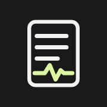

<!doctype html>
<html lang="de">
<head>
<meta charset="utf-8">
<script src="werkzeug-bilder.js"></script><script src="hausaufgaben.js"></script><script src="diagnose-kompass-daten.js"></script><script src="diagnose-kompass.js"></script><meta http-equiv="Content-Security-Policy" content="default-src 'self'; script-src 'self' 'unsafe-inline' 'wasm-unsafe-eval' blob:; worker-src 'self' blob:; img-src 'self' data: blob:; media-src 'self' blob: mediastream:; style-src 'self' 'unsafe-inline'; font-src 'self' data:; frame-src 'self'; object-src 'none'; base-uri 'self'; form-action 'none'; connect-src 'self' blob: data:">
<meta name="referrer" content="no-referrer">
<meta name="robots" content="noindex, nofollow">
<style id="tresor-css">
#ts-ebene{position:fixed;inset:0;z-index:2147483000;display:flex;align-items:center;justify-content:center;background:var(--grund,#F2F2F7);color:#1c1c1e;font:17px/1.4 -apple-system,BlinkMacSystemFont,"SF Pro Text",system-ui,sans-serif;padding:calc(env(safe-area-inset-top,0px) + 20px) 20px calc(env(safe-area-inset-bottom,0px) + 20px);overflow:auto;-webkit-user-select:none;user-select:none}
html[data-theme="dark"] #ts-ebene{background:#1a1a1a;color:#f2f2f7}
#ts-ebene[hidden]{display:none}
.ts-karte{width:100%;max-width:400px;text-align:center}
.ts-icon{width:76px;height:76px;border-radius:18px;box-shadow:0 4px 18px rgba(0,0,0,.14);margin:0 auto 18px;display:block}
.ts-karte h1{font-size:26px;line-height:1.15;letter-spacing:-.01em;margin:0 0 8px;font-weight:800}
.ts-karte p{margin:0 0 14px;color:#6C6C70;font-size:15px}
html[data-theme="dark"] .ts-karte p{color:#a1a1a6}
.ts-karte .ts-links{text-align:left}
.ts-knopf{display:flex;align-items:center;justify-content:center;gap:10px;width:100%;min-height:52px;border:0;border-radius:14px;font-family:inherit;font-size:17px!important;font-weight:600;line-height:1.2;cursor:pointer;box-shadow:none;margin:10px 0 0;padding:12px 16px;background:#4f6d10;color:#fff;-webkit-tap-highlight-color:transparent;transition:transform .12s,opacity .12s}
.ts-knopf:active{transform:scale(.98);opacity:.85}
.ts-knopf:disabled{opacity:.45}
.ts-knopf.ts-zweit{background:transparent;color:#4f6d10;font-weight:500;min-height:44px;font-size:16px!important}
html[data-theme="dark"] .ts-knopf{background:#ddf6a2;color:#1a1a1a}
html[data-theme="dark"] .ts-knopf.ts-zweit{background:transparent;color:#ddf6a2}
.ts-feld{display:block;width:100%;box-sizing:border-box;margin:8px 0 0;padding:14px 14px;border:1px solid #C6C6C8;border-radius:12px;font-family:inherit;font-size:17px!important;line-height:1.2;background:#fff;color:inherit;-webkit-user-select:text;user-select:text}
html[data-theme="dark"] .ts-feld{background:#2c2c2e;border-color:#48484a}
.ts-feld:focus{outline:2px solid #4f6d10;outline-offset:0;border-color:transparent}
.ts-haken{display:flex;gap:10px;align-items:flex-start;text-align:left;margin:14px 0 4px;font-size:15px}
.ts-haken input{width:22px;height:22px;flex:none;margin:1px 0 0;accent-color:#4f6d10}
.ts-fehler{color:#c0392b!important;font-weight:500;min-height:1.4em;margin:10px 0 0!important}
.ts-klein{font-size:13px!important}
.ts-laeuft{display:inline-block;width:22px;height:22px;border:3px solid currentColor;border-right-color:transparent;border-radius:50%;animation:ts-dreh .8s linear infinite;vertical-align:middle}
@keyframes ts-dreh{to{transform:rotate(360deg)}}
.ts-faceid{width:26px;height:26px}
</style>
<script id="tresor-js">
/* Doku-Fix · Tresor (v157)
   Alle Daten der App liegen verschlüsselt auf dem Gerät (AES-256-GCM, IndexedDB).
   Ein zufälliger Datenschlüssel wird doppelt verpackt: mit Face ID (Passkey, WebAuthn-PRF)
   und mit dem Notfall-Passwort (PBKDF2-SHA256, 600.000 Durchläufe). Der Datenschlüssel
   lebt nur im Arbeitsspeicher. Sperre nach 5 Minuten ohne Bedienung und sobald die App
   in den Hintergrund geht. Nur ein paar Einstellungen ohne Patientenbezug (Darstellung,
   Diktatweg) bleiben unverschlüsselt, damit Sperrbildschirm und Diktat sie vorab kennen.
   Die App-Skripte starten erst nach dem Entsperren (type="text/plain" data-ts). */
(function () {
  'use strict';
  var LS = null; try { LS = window.localStorage; } catch (e) { }
  var META = 'doku-fix-tresor', LSDATEN = 'doku-fix-tresor-daten', DBN = 'doku-fix-tresor';
  var PLAIN = { 'doku-fix-tresor': 1, 'doku-fix-tresor-daten': 1, 'doku-fix-ww-modus': 1, 'doku-fix-ww-formular': 1, 'doku-fix-diktat-weg': 1, 'doku-fix-diktat-weg-v3': 1, 'doku-fix-diktat-laenge': 1, 'doku-fix-diktat-modell': 1, 'tb-werkstatt-modus': 1 };
  var SPERRE_MS = 5 * 60 * 1000, NEU_MS = 5 * 60 * 1000, SCHON_MS = 30 * 1000, ITER = 600000, offenVorher = false;
  var enc = new TextEncoder(), dec = new TextDecoder();
  var AAD_K = enc.encode('doku-fix-schluessel-v1'), AAD_D = enc.encode('doku-fix-daten-v1'), INFO = enc.encode('doku-fix-tresor-v1');
  var karte = new Map(), dek = null, meta = null, gestartet = false, gesperrt = true, schmutzig = false;
  var timer = null, kette = Promise.resolve(), zuletzt = Date.now(), weg = 0, ohneSchutz = false, beschaeftigt = 0;
  function still(p) { beschaeftigt++; return Promise.resolve(p).finally(function () { beschaeftigt--; zuletzt = Date.now(); }); }
  try { meta = JSON.parse(LS && LS.getItem(META) || 'null'); } catch (e) { meta = null; }

  /* ---------- Hilfen ---------- */
  function b64(u) { u = new Uint8Array(u); var s = ''; for (var i = 0; i < u.length; i += 0x8000) s += String.fromCharCode.apply(null, u.subarray(i, i + 0x8000)); return btoa(s); }
  function unb64(s) { var b = atob(s), u = new Uint8Array(b.length); for (var i = 0; i < b.length; i++) u[i] = b.charCodeAt(i); return u; }
  function zufall(n) { return crypto.getRandomValues(new Uint8Array(n)); }
  function plain(k) { return Object.prototype.hasOwnProperty.call(PLAIN, k); }
  function $(id) { return document.getElementById(id); }
  function esc(t) { return String(t).replace(/[&<>"']/g, function (c) { return { '&': '&amp;', '<': '&lt;', '>': '&gt;', '"': '&quot;', "'": '&#39;' }[c]; }); }

  /* ---------- IndexedDB ---------- */
  function db() { return new Promise(function (ok, nein) { var r = indexedDB.open(DBN, 1); r.onupgradeneeded = function () { r.result.createObjectStore('d'); }; r.onsuccess = function () { ok(r.result); }; r.onerror = function () { nein(r.error); }; }); }
  function dbGet(k) { return db().then(function (d) { return new Promise(function (ok, nein) { var q = d.transaction('d', 'readonly').objectStore('d').get(k); q.onsuccess = function () { d.close(); ok(q.result); }; q.onerror = function () { d.close(); nein(q.error); }; }); }); }
  function dbPut(k, v) { return db().then(function (d) { return new Promise(function (ok, nein) { var t = d.transaction('d', 'readwrite'); t.objectStore('d').put(v, k); t.oncomplete = function () { d.close(); ok(); }; t.onerror = t.onabort = function () { d.close(); nein(t.error); }; }); }); }
  function dbWeg() { return new Promise(function (ok) { try { var r = indexedDB.deleteDatabase(DBN); r.onsuccess = r.onerror = r.onblocked = function () { ok(); }; } catch (e) { ok(); } }); }

  /* ---------- Kryptografie ---------- */
  function gcmZu(key, bytes, aad) { var iv = zufall(12); return crypto.subtle.encrypt({ name: 'AES-GCM', iv: iv, additionalData: aad }, key, bytes).then(function (ct) { return { iv: iv, ct: new Uint8Array(ct) }; }); }
  function gcmAuf(key, iv, ct, aad) { return crypto.subtle.decrypt({ name: 'AES-GCM', iv: iv, additionalData: aad }, key, ct).then(function (p) { return new Uint8Array(p); }); }
  async function pwKek(pw, salt, iter) { var b = await crypto.subtle.importKey('raw', enc.encode(String(pw).normalize('NFC')), 'PBKDF2', false, ['deriveKey']); return crypto.subtle.deriveKey({ name: 'PBKDF2', hash: 'SHA-256', salt: salt, iterations: iter || ITER }, b, { name: 'AES-GCM', length: 256 }, false, ['encrypt', 'decrypt']); }
  async function prfKek(out) { var b = await crypto.subtle.importKey('raw', out, 'HKDF', false, ['deriveKey']); return crypto.subtle.deriveKey({ name: 'HKDF', hash: 'SHA-256', salt: new Uint8Array(32), info: INFO }, b, { name: 'AES-GCM', length: 256 }, false, ['encrypt', 'decrypt']); }
  async function verpacken(kek, roh) { var p = await gcmZu(kek, roh, AAD_K); return { iv: b64(p.iv), ct: b64(p.ct) }; }
  function auspacken(kek, h) { return gcmAuf(kek, unb64(h.iv), unb64(h.ct), AAD_K); }
  async function dekAus(roh) { var k = await crypto.subtle.importKey('raw', roh, { name: 'AES-GCM' }, false, ['encrypt', 'decrypt']); roh.fill(0); return k; }

  /* ---------- Face ID (Passkey mit PRF) ---------- */
  function passkeyDa() { return !!(window.PublicKeyCredential && navigator.credentials && window.isSecureContext && crypto && crypto.subtle); }
  async function passkeyPrf(id, salt) {
    var a = await still(navigator.credentials.get({ publicKey: { challenge: zufall(32), rpId: location.hostname, allowCredentials: [{ type: 'public-key', id: unb64(id) }], userVerification: 'required', timeout: 120000, extensions: { prf: { eval: { first: unb64(salt) } } } } }));
    var x = a.getClientExtensionResults ? a.getClientExtensionResults() : {};
    var out = x.prf && x.prf.results && x.prf.results.first;
    if (!out) throw new Error('kein-prf');
    return new Uint8Array(out);
  }
  async function passkeyNeu() {
    var salt = zufall(32);
    var c = await still(navigator.credentials.create({ publicKey: {
      rp: { id: location.hostname, name: 'Doku-Fix' },
      user: { id: zufall(16), name: 'Doku-Fix Tresor', displayName: 'Doku-Fix Tresor' },
      challenge: zufall(32),
      pubKeyCredParams: [{ type: 'public-key', alg: -7 }, { type: 'public-key', alg: -257 }],
      authenticatorSelection: { authenticatorAttachment: 'platform', residentKey: 'preferred', userVerification: 'required' },
      timeout: 120000, extensions: { prf: { eval: { first: salt } } } } }));
    var x = c.getClientExtensionResults ? c.getClientExtensionResults() : {};
    if (!x.prf || x.prf.enabled === false) throw new Error('kein-prf');
    var id = b64(c.rawId), out = x.prf.results && x.prf.results.first;
    out = out ? new Uint8Array(out) : await passkeyPrf(id, b64(salt));
    return { id: id, salt: b64(salt), out: out };
  }
  function grund(e) {
    var n = e && (e.name || e.message) || '';
    if (n === 'kein-prf') return 'Dieses Gerät kann mit Face ID keinen Schlüssel liefern (nötig ist iOS 18 oder neuer mit iCloud-Schlüsselbund).';
    if (n === 'NotAllowedError' || n === 'AbortError') return 'Face ID wurde abgebrochen.';
    if (n === 'InvalidStateError') return 'Für Doku-Fix gibt es schon einen Passkey.';
    if (n === 'SecurityError') return 'Face ID geht nur in der echten App unter dokufix-app.github.io.';
    if (n === 'OperationError') return 'Der Schlüssel passt nicht.';
    return 'Face ID ging nicht (' + n + ').';
  }

  /* ---------- Speicher ---------- */
  function planen() { schmutzig = true; clearTimeout(timer); timer = setTimeout(sichern, 300); }
  function sichern() {
    clearTimeout(timer); timer = null;
    if (!dek || !schmutzig) return kette;
    schmutzig = false;
    var o = {}; karte.forEach(function (v, k) { o[k] = v; });
    var bytes = enc.encode(JSON.stringify(o)), key = dek;
    kette = kette.then(function () { return gcmZu(key, bytes, AAD_D); }).then(ablegen).catch(function (e) { schmutzig = true; try { console.error('Tresor: Speichern fehlgeschlagen', e); } catch (x) { } });
    return kette;
  }
  function ablegen(p) {
    if (meta && meta.ort === 'ls') { LS.setItem(LSDATEN, JSON.stringify({ iv: b64(p.iv), ct: b64(p.ct) })); return; }
    return dbPut('daten', { iv: p.iv, ct: p.ct.buffer });
  }
  async function holen() {
    var p;
    if (meta.ort === 'ls') { var j = JSON.parse(LS.getItem(LSDATEN) || 'null'); p = j && { iv: unb64(j.iv), ct: unb64(j.ct) }; }
    else p = await dbGet('daten');
    if (!p) return {};
    return JSON.parse(dec.decode(await gcmAuf(dek, p.iv, p.ct, AAD_D)));
  }

  /* ---------- Öffentliche Schnittstelle (wie localStorage) ---------- */
  var TS = {
    getItem: function (k) { k = String(k); if (plain(k) || ohneSchutz) { try { return LS.getItem(k); } catch (e) { return null; } } return karte.has(k) ? karte.get(k) : null; },
    setItem: function (k, v) { k = String(k); if (plain(k) || ohneSchutz) { LS.setItem(k, String(v)); return; } karte.set(k, String(v)); planen(); },
    removeItem: function (k) { k = String(k); if (plain(k) || ohneSchutz) { try { LS.removeItem(k); } catch (e) { } return; } if (karte.delete(k)) planen(); },
    keys: function () { var a = Array.from(karte.keys()); try { for (var i = 0; i < LS.length; i++) { var k = LS.key(i); if ((plain(k) || ohneSchutz) && a.indexOf(k) < 0) a.push(k); } } catch (e) { } return a; },
    key: function (i) { return TRESOR.keys()[i] || null; },
    get length() { return TRESOR.keys().length; },
    clear: async function () { karte.clear(); dek = null; schmutzig = false; clearTimeout(timer); try { LS.clear(); } catch (e) { } await dbWeg(); },
    sichern: sichern,
    aktiv: function () { zuletzt = Date.now(); },
    still: still,
    sperren: function () { sperren(); },
    get offen() { return !gesperrt && !!dek; },
    get eingerichtet() { return !!meta; },
    status: function () {
      if (ohneSchutz) return 'Daten auf diesem Gerät: nicht verschlüsselt (Einrichtung fehlgeschlagen).';
      if (!meta) return '';
      return 'Daten auf diesem Gerät: verschlüsselt (AES-256). Entsperren ' + (meta.pk ? 'mit Face ID, Notfall-Passwort als Ersatz.' : 'nur mit Notfall-Passwort, Face ID ist nicht eingerichtet.') + ' Sperrt nach 5 Minuten ohne Bedienung und beim Wechsel in eine andere App (wer innerhalb von 30 Sekunden zurückkommt, muss nicht neu entsperren).';
    },
    hatFaceId: function () { return !!(meta && meta.pk); },
    faceIdNeu: function () { dialogFaceId(); },
    passwortAendern: function () { dialogPasswort(); }
  };
  window.TRESOR = TS;

  /* ---------- Ablauf ---------- */
  function appStarten() {
    if (gestartet) return; gestartet = true;
    var alle = document.querySelectorAll('script[data-ts]');
    for (var i = 0; i < alle.length; i++) {
      var alt = alle[i], neu = document.createElement('script');
      if (alt.id) neu.id = alt.id;
      neu.textContent = alt.textContent;
      alt.parentNode.replaceChild(neu, alt);
    }
  }
  function zeigen(html) { var e = $('ts-ebene'); e.innerHTML = '<div class="ts-karte">' + html + '</div>'; e.hidden = false; return e; }
  function verbergen() { var e = $('ts-ebene'); e.hidden = true; e.innerHTML = ''; }
  var FACE = '<svg class="ts-faceid" viewBox="0 0 24 24" fill="none" stroke="currentColor" stroke-width="1.9" stroke-linecap="round" aria-hidden="true"><path d="M3 8V5.5A2.5 2.5 0 0 1 5.5 3H8M16 3h2.5A2.5 2.5 0 0 1 21 5.5V8M21 16v2.5a2.5 2.5 0 0 1-2.5 2.5H16M8 21H5.5A2.5 2.5 0 0 1 3 18.5V16M8.5 9v1.5M15.5 9v1.5M12 9v4.2h-1M9 16.2c1.8 1.4 4.2 1.4 6 0"/></svg>';
  var KOPF = '';

  async function entsperrt(roh) {
    var k = await dekAus(roh); beschaeftigt = 0;
    if (!gestartet) {
      dek = k;
      var o = await holen();
      karte = new Map(Object.keys(o).map(function (x) { return [x, o[x]]; }));
      gesperrt = false; zuletzt = Date.now(); verbergen(); appStarten();
    } else { dek = k; gesperrt = false; zuletzt = Date.now(); verbergen(); }
  }

  /* Sperrbildschirm */
  function sperrbild(auto) {
    zeigen(KOPF + '<h1>Doku-Fix ist gesperrt</h1><p>Deine Daten sind auf diesem Gerät verschlüsselt.</p>' +
      (meta.pk ? '<button type="button" class="ts-knopf" id="ts-fid">' + FACE + 'Mit Face ID entsperren</button>' : '') +
      '<div id="ts-pwbox"' + (meta.pk ? ' hidden' : '') + '><input class="ts-feld" id="ts-pw" type="password" autocomplete="current-password" placeholder="Notfall-Passwort" aria-label="Notfall-Passwort"><button type="button" class="ts-knopf" id="ts-pwok">Entsperren</button></div>' +
      (meta.pk ? '<button type="button" class="ts-knopf ts-zweit" id="ts-pwzeig">Notfall-Passwort verwenden</button>' : '') +
      '<p class="ts-fehler" id="ts-f" role="status"></p>');
    var f = $('ts-f');
    if ($('ts-pwzeig')) $('ts-pwzeig').onclick = function () { $('ts-pwbox').hidden = false; this.hidden = true; $('ts-pw').focus(); };
    if ($('ts-fid')) $('ts-fid').onclick = function () { mitFaceId(false); };
    $('ts-pwok').onclick = mitPasswort;
    $('ts-pw').onkeydown = function (e) { if (e.key === 'Enter') mitPasswort(); };
    async function mitFaceId(auto) {
      f.textContent = ''; var b = $('ts-fid'); b.disabled = true;
      try { await entsperrt(await auspacken(await prfKek(await passkeyPrf(meta.pk.id, meta.pk.salt)), meta.pk)); }
      catch (e) { if ($('ts-f')) { f.textContent = auto ? '' : grund(e); b.disabled = false; } }
    }
    async function mitPasswort() {
      var pw = $('ts-pw').value; if (!pw) return;
      f.innerHTML = '<span class="ts-laeuft"></span>'; $('ts-pwok').disabled = true;
      try { await entsperrt(await auspacken(await pwKek(pw, unb64(meta.pw.salt), meta.pw.iter), meta.pw)); }
      catch (e) { if ($('ts-f')) { f.textContent = e && e.name === 'OperationError' ? 'Das Passwort stimmt nicht.' : 'Entsperren ging nicht (' + (e && e.name || e) + ').'; $('ts-pwok').disabled = false; $('ts-pw').select(); } }
    }
    if (auto && meta.pk) mitFaceId(true);
  }
  function sperren() {
    if (!meta || gesperrt || ohneSchutz || beschaeftigt) return;
    sichern(); gesperrt = true;
    try { if (document.activeElement && document.activeElement.blur) document.activeElement.blur(); } catch (e) { }
    sperrbild(false);
  }

  /* Ersteinrichtung */
  function pruefePw(a, b) {
    if (a.length < 12) return 'Mindestens 12 Zeichen. Ein Satz aus mehreren Wörtern ist gut zu merken.';
    if (a !== b) return 'Die beiden Passwörter sind nicht gleich.';
    return '';
  }
  function einrichtbild() {
    zeigen(KOPF + '<h1>Daten schützen</h1><p class="ts-links">Doku-Fix verschlüsselt ab jetzt alles, was auf diesem Gerät liegt. Im Alltag entsperrst du mit Face ID. Für den Notfall, etwa ein neues iPhone, brauchst du ein Notfall-Passwort.</p>' +
      '<input class="ts-feld" id="ts-p1" type="password" autocomplete="new-password" placeholder="Notfall-Passwort (mind. 12 Zeichen)" aria-label="Notfall-Passwort">' +
      '<input class="ts-feld" id="ts-p2" type="password" autocomplete="new-password" placeholder="Noch einmal" aria-label="Notfall-Passwort wiederholen">' +
      '<label class="ts-haken"><input type="checkbox" id="ts-ok"><span>Ich habe das Passwort aufgeschrieben oder im Passwort-Manager gesichert. Ohne Face ID und ohne dieses Passwort sind die Daten weg.</span></label>' +
      '<button type="button" class="ts-knopf" id="ts-los">' + (passkeyDa() ? FACE + 'Weiter mit Face ID' : 'Daten verschlüsseln') + '</button>' +
      '<p class="ts-fehler" id="ts-f" role="status"></p>');
    $('ts-los').onclick = async function () {
      var a = $('ts-p1').value, b = $('ts-p2').value, f = $('ts-f'), m = pruefePw(a, b);
      if (m) { f.textContent = m; return; }
      if (!$('ts-ok').checked) { f.textContent = 'Bitte bestätige, dass du das Passwort gesichert hast.'; return; }
      this.disabled = true; f.textContent = '';
      var pk = null, pkFehler = null;
      if (passkeyDa()) { try { pk = await passkeyNeu(); } catch (e) { pkFehler = e; } }
      if (pkFehler) {
        zeigen(KOPF + '<h1>Face ID ging nicht</h1><p>' + esc(grund(pkFehler)) + '</p><button type="button" class="ts-knopf" id="ts-nochmal">' + FACE + 'Nochmal versuchen</button><button type="button" class="ts-knopf ts-zweit" id="ts-ohne">Erst einmal nur mit Passwort</button><p class="ts-fehler" id="ts-f"></p>');
        $('ts-nochmal').onclick = async function () { this.disabled = true; try { var p = await passkeyNeu(); verschluesseln(a, p); } catch (e) { $('ts-f').textContent = grund(e); this.disabled = false; } };
        $('ts-ohne').onclick = function () { verschluesseln(a, null); };
        return;
      }
      verschluesseln(a, pk);
    };
  }
  async function verschluesseln(pw, pk) {
    zeigen(KOPF + '<h1>Daten werden verschlüsselt</h1><p><span class="ts-laeuft"></span></p><p class="ts-klein">Bitte die App kurz offen lassen.</p>');
    try {
      var roh = zufall(32), salt = zufall(16);
      var m = { v: 1, ort: 'idb', seit: new Date().toISOString(), pw: { salt: b64(salt), iter: ITER } };
      Object.assign(m.pw, await verpacken(await pwKek(pw, salt, ITER), roh));
      if (pk) { m.pk = { id: pk.id, salt: pk.salt }; Object.assign(m.pk, await verpacken(await prfKek(pk.out), roh)); pk.out.fill(0); }
      try { await dbPut('probe', 1); } catch (e) { m.ort = 'ls'; }
      meta = m; dek = await dekAus(roh);
      var alt = [];
      for (var i = 0; i < LS.length; i++) { var k = LS.key(i); if (!plain(k)) alt.push(k); }
      alt.forEach(function (k) { karte.set(k, LS.getItem(k)); });
      schmutzig = true; await sichern();
      var probe = await holen();
      if (Object.keys(probe).length !== karte.size) throw new Error('Prüfung nach dem Verschlüsseln stimmt nicht');
      LS.setItem(META, JSON.stringify(m));
      alt.forEach(function (k) { LS.removeItem(k); });
      gesperrt = false; zuletzt = Date.now(); verbergen(); appStarten();
    } catch (e) {
      meta = null; dek = null; karte.clear();
      try { LS.removeItem(META); } catch (x) { }
      zeigen(KOPF + '<h1>Verschlüsseln ging nicht</h1><p>' + esc(e && e.message || e) + '</p><p class="ts-klein">Deine Daten sind unverändert.</p><button type="button" class="ts-knopf" id="ts-wieder">Nochmal versuchen</button><button type="button" class="ts-knopf ts-zweit" id="ts-ohne">Diesmal ohne Schutz öffnen</button>');
      $('ts-wieder').onclick = einrichtbild;
      $('ts-ohne').onclick = function () { ohneSchutz = true; gesperrt = false; verbergen(); appStarten(); };
    }
  }

  /* Dialoge unter Mehr › Sicherung */
  function dialog(html, nachher) {
    if (!dek) return;
    var e = zeigen(html + '<p class="ts-fehler" id="ts-f" role="status"></p><button type="button" class="ts-knopf ts-zweit" id="ts-abbr">Abbrechen</button>');
    $('ts-abbr').onclick = verbergen; nachher(e);
  }
  async function rohMitPasswort(pw) { return auspacken(await pwKek(pw, unb64(meta.pw.salt), meta.pw.iter), meta.pw); }
  function metaSchreiben(m) { LS.setItem(META, JSON.stringify(m)); meta = m; }
  function dialogFaceId() {
    dialog(KOPF + '<h1>Face ID einrichten</h1><p>Zur Bestätigung das Notfall-Passwort eingeben. Danach fragt das iPhone nach Face ID.</p><input class="ts-feld" id="ts-pw" type="password" autocomplete="current-password" placeholder="Notfall-Passwort"><button type="button" class="ts-knopf" id="ts-ok">' + FACE + 'Face ID einrichten</button>', function () {
      $('ts-ok').onclick = async function () {
        var f = $('ts-f'); this.disabled = true; f.textContent = '';
        try {
          var roh = await rohMitPasswort($('ts-pw').value);
          var pk = await passkeyNeu();
          var m = JSON.parse(JSON.stringify(meta)); m.pk = { id: pk.id, salt: pk.salt }; Object.assign(m.pk, await verpacken(await prfKek(pk.out), roh));
          roh.fill(0); pk.out.fill(0); metaSchreiben(m);
          zeigen(KOPF + '<h1>Face ID ist eingerichtet</h1><p>Ab jetzt entsperrst du Doku-Fix mit Face ID. Einen älteren Doku-Fix-Passkey kannst du in den iPhone-Einstellungen unter Passwörter löschen.</p><button type="button" class="ts-knopf" id="ts-fertig">Fertig</button>');
          $('ts-fertig').onclick = verbergen;
        } catch (e) { f.textContent = e && e.name === 'OperationError' ? 'Das Passwort stimmt nicht.' : grund(e); this.disabled = false; }
      };
    });
  }
  function dialogPasswort() {
    dialog(KOPF + '<h1>Notfall-Passwort ändern</h1><input class="ts-feld" id="ts-pa" type="password" autocomplete="current-password" placeholder="Bisheriges Passwort"><input class="ts-feld" id="ts-p1" type="password" autocomplete="new-password" placeholder="Neues Passwort (mind. 12 Zeichen)"><input class="ts-feld" id="ts-p2" type="password" autocomplete="new-password" placeholder="Neues Passwort noch einmal"><button type="button" class="ts-knopf" id="ts-ok">Passwort ändern</button>', function () {
      $('ts-ok').onclick = async function () {
        var f = $('ts-f'), a = $('ts-p1').value, m0 = pruefePw(a, $('ts-p2').value);
        if (m0) { f.textContent = m0; return; }
        this.disabled = true; f.innerHTML = '<span class="ts-laeuft"></span>';
        try {
          var roh = await rohMitPasswort($('ts-pa').value), salt = zufall(16);
          var m = JSON.parse(JSON.stringify(meta)); m.pw = { salt: b64(salt), iter: ITER }; Object.assign(m.pw, await verpacken(await pwKek(a, salt, ITER), roh));
          roh.fill(0); metaSchreiben(m);
          zeigen(KOPF + '<h1>Passwort geändert</h1><p>Das neue Notfall-Passwort gilt ab sofort. Das alte geht nicht mehr.</p><button type="button" class="ts-knopf" id="ts-fertig">Fertig</button>');
          $('ts-fertig').onclick = verbergen;
        } catch (e) { f.textContent = e && e.name === 'OperationError' ? 'Das bisherige Passwort stimmt nicht.' : 'Ging nicht (' + (e && e.name || e) + ').'; this.disabled = false; }
      };
    });
  }

  /* Sperre: Inaktivität und Hintergrund */
  ['pointerdown', 'keydown', 'touchstart', 'wheel', 'input'].forEach(function (t) { addEventListener(t, TRESOR.aktiv, { capture: true, passive: true }); });
  setInterval(function () { if (!gesperrt && dek && !beschaeftigt && Date.now() - zuletzt > SPERRE_MS) sperren(); }, 10000);
  document.addEventListener('visibilitychange', function () {
    if (document.visibilityState === 'hidden') { weg = Date.now(); offenVorher = !gesperrt && !!dek && !beschaeftigt; sichern(); sperren(); }
    else if (offenVorher && gesperrt && dek && Date.now() - weg <= SCHON_MS) { offenVorher = false; gesperrt = false; zuletzt = Date.now(); verbergen(); }
    else if (weg && gesperrt && meta && Date.now() - weg > NEU_MS) { location.reload(); }
    else offenVorher = false;
  });
  addEventListener('pagehide', function () { sichern(); });

  /* Start */
  function start() {
    var e = document.createElement('div'); e.id = 'ts-ebene'; e.hidden = true; document.body.appendChild(e);
    if (!LS || !window.crypto || !crypto.subtle) { ohneSchutz = true; gesperrt = false; appStarten(); return; }
    if (meta) sperrbild(true); else einrichtbild();
  }
  if (document.readyState === 'loading') document.addEventListener('DOMContentLoaded', start); else start();
})();
</script>

<meta name="viewport" content="width=device-width, initial-scale=1, viewport-fit=cover">
<meta name="apple-mobile-web-app-capable" content="yes">
<meta name="mobile-web-app-capable" content="yes">
<meta name="apple-mobile-web-app-title" content="Doku-Fix">
<style id="tp-css">/* Doku-Fix · Therapieplanung (A4) */
.tp-ebene{position:fixed;inset:0;z-index:9000;background:var(--grund,#F2F2F7);display:flex;flex-direction:column;animation:tp-rein .28s cubic-bezier(.2,.8,.2,1)}
@keyframes tp-rein{from{transform:translateY(24px);opacity:0}to{transform:none;opacity:1}}
html.tp-offen,html.tp-offen body{overflow:hidden}
.tp-leiste{display:flex;align-items:center;gap:8px;padding:calc(env(safe-area-inset-top,0px) + 10px) 12px 10px;background:var(--flaeche,#fff);border-bottom:.5px solid var(--linie,#C6C6C8);font-size:17px}
.tp-leiste b{flex:1;min-width:0;text-align:center;font-size:17px;white-space:nowrap;overflow:hidden;text-overflow:ellipsis;color:var(--schrift,#000)}
.tp-leiste button{font:inherit;font-size:15px!important;line-height:1.2;white-space:nowrap;width:auto;min-width:0;min-height:0;margin:0;box-shadow:none;border:0;background:none;color:var(--tape,#4f6d10);padding:6px 4px;cursor:pointer}
.tp-zu{font-weight:600!important}
.tp-aktionen{display:flex;gap:6px}
.tp-scroll{flex:1;overflow:auto;-webkit-overflow-scrolling:touch;padding:12px 12px calc(env(safe-area-inset-bottom,0px) + 24px)}
.tp-huelle{margin:0 auto;position:relative}
.tp-blatt{width:794px;height:1123px;overflow:hidden;box-sizing:border-box;padding:40px 46px 32px;background:#fff;color:#111;transform-origin:top left;position:absolute;left:0;top:0;
  box-shadow:0 1px 3px rgba(0,0,0,.12),0 8px 28px rgba(0,0,0,.10);border-radius:4px;font:11.5px/1.42 var(--ww-font,-apple-system,BlinkMacSystemFont,sans-serif);display:flex;flex-direction:column;gap:12px}
.tp-blatt h1{font-size:2.1em;margin:0;letter-spacing:-.02em;text-transform:none;font-weight:800}
.tp-blatt h2{font-size:1.04em;text-transform:uppercase;letter-spacing:.06em;color:#4f6d10;margin:0 0 5px;padding-bottom:3px;border-bottom:1.5px solid #4f6d10}
.tp-blatt section{break-inside:avoid}
.tp-blatt ul{margin:0;padding-left:15px}.tp-blatt li{margin:1px 0}
.tp-kopf{margin:0;display:flex;justify-content:space-between;gap:18px;align-items:flex-start;padding-bottom:10px;border-bottom:3px solid #1a1a1a}
.tp-kopf p{margin:3px 0 0;color:#555}
.tp-diag{max-width:58%;text-align:right;display:flex;flex-direction:column;gap:2px}
.tp-diag small{color:#777;text-transform:uppercase;font-size:12px;letter-spacing:.06em}.tp-diag b{font-size:1.22em}.tp-diag span{color:#555;font-size:.92em}
.tp-ist{width:100%;border-collapse:collapse}
.tp-ist th{text-align:left;vertical-align:top;width:118px;padding:3px 8px 3px 0;color:#444;font-weight:600}
.tp-ist td{padding:3px 0}.tp-ist tr+tr th,.tp-ist tr+tr td{border-top:.5px solid #e2e2e6}
.tp-zwei{display:grid;grid-template-columns:1fr 1fr;gap:22px}
.tp-gross{font-size:1.6em;font-weight:700;margin:2px 0 0;color:#4f6d10}
.tp-klein{font-size:.92em;color:#555;margin:4px 0 0}
.tp-ll{margin-top:7px;background:#eef6d9;border-radius:6px;padding:6px 8px;font-size:.92em}
.tp-phasen{display:grid;grid-template-columns:repeat(3,1fr);gap:8px}
.tp-phasen>div{border:1px solid #e2e6d8;border-radius:7px;padding:7px 9px;border-top:4px solid #1a1a1a}
.tp-phasen>div:nth-child(2){border-top-color:#4f6d10}.tp-phasen>div:nth-child(3){border-top-color:#ddf6a2}
.tp-phasen p{margin:3px 0 0}.tp-dosis{font-weight:600;color:#3d550c}
.tp-unter{margin:5px 0 2px;font-weight:600;color:#333}
.tp-idee textarea{width:100%;box-sizing:border-box;min-height:70px;border:1px dashed #b9c79a;border-radius:6px;padding:7px 8px;font:inherit;color:#111;background:#fbfcf7;resize:vertical}
.tp-idee-druck{display:none;white-space:pre-wrap}
.tp-blatt footer{margin-top:auto;font-size:12px;color:#777;border-top:.5px solid #ddd;padding-top:6px}
.tp-knopf{margin-top:8px}
@media print{
  @page{size:A4;margin:0}
  html.tp-offen body>*:not(.tp-ebene){display:none!important}
  .tp-ebene{position:static;background:#fff;animation:none}
  .tp-leiste{display:none}.tp-scroll{padding:0;overflow:visible}
  .tp-huelle{width:auto!important;height:auto!important}
  .tp-blatt{position:static;transform:none!important;box-shadow:none;border-radius:0;width:210mm;min-height:297mm}
  .tp-idee textarea{display:none}.tp-idee-druck{display:block;min-height:40px;border:1px dashed #ccc;border-radius:6px;padding:6px}
}
.tp-scroll.tp-zoom{overflow:auto}.tp-blatt{cursor:zoom-in}.tp-zoom .tp-blatt{cursor:zoom-out}
.tp-tipp{text-align:center;font-size:12px;color:var(--schrift2,#6C6C70);margin:10px 0 0}
</style>
<script type="text/plain" data-ts id="tp-js">/* Doku-Fix · Therapieplanung
   Aus dem fertigen Erstbefund eine Therapieplanung auf einer A4-Seite ableiten.
   Grundlage: Wissensdatenbank der App (lp, Lb), Recherche "Therapieplan: Leitlinien und Standards" (08.11.2026),
   ACSM Position Stand 2009 für die Dosierung. Vorschlag aus Regeln, Entscheidung beim Therapeuten. */
(function () {
  'use strict';
  var KEY = 'doku-fix-therapieplanung';
  function alle() { try { return JSON.parse(TRESOR.getItem(KEY) || '{}') || {}; } catch (e) { return {}; } }
  function sichern(m) { try { TRESOR.setItem(KEY, JSON.stringify(m)); } catch (e) { } }
  function zustand() {
    if (window.__dfZustand) return window.__dfZustand;
    try { return JSON.parse(TRESOR.getItem('physio-doku-v1') || 'null'); } catch (e) { return null; }
  }
  function patient(id) {
    var z = zustand(); if (!z || !z.patienten) return null;
    id = id || z.aktiv;
    return z.patienten.find(function (p) { return p.id === id; }) || null;
  }
  function esc(s) { return String(s == null ? '' : s).replace(/[&<>"]/g, function (c) { return { '&': '&amp;', '<': '&lt;', '>': '&gt;', '"': '&quot;' }[c]; }); }
  function datum(iso) { var d = iso ? new Date(iso) : new Date(); return d.toLocaleDateString('de-DE', { day: '2-digit', month: '2-digit', year: 'numeric' }); }

  /* Leitlinienkern aus der Recherche vom 08.11.2026 (Pfeile nach AWMF: soll ↑↑, sollte ↑, kann ↔) */
  var LL = {
    WS01: { name: 'NVL Nicht-spezifischer Kreuzschmerz, 2. Aufl. 2017', kern: 'Subakut/chronisch: Bewegungstherapie plus verhaltenstherapeutische Edukation ↑↑. Akut: aktiv bleiben, beraten.', nicht: 'Bettruhe, TENS, Ultraschall, Traktion, Massage akut, Wärme chronisch nicht empfohlen.' },
    WS05: { name: 'DEGAM S3 Nicht-spezifische Nackenschmerzen 2025 (gültig bis 2030)', kern: 'Körperliche Aktivität und Bewegungstherapie ↑↑ (chronisch), Wärme selbst und Edukation ↑.', nicht: 'Manipulation/Mobilisation nur ↔ und nur mit aktivierenden Maßnahmen.' },
    SH01: { name: 'S2e Subacromiales Impingement 2021 (gültig bis 19.11.2026) und JOSPT 2025', kern: 'Physiotherapie zuerst ↑↑, Übungstherapie ist Kernbehandlung.', nicht: 'Manuelle Therapie nur ergänzend.' },
    KN01: { name: 'S3 Prävention und Therapie der Gonarthrose 2024', kern: 'Kraft-, Ausdauer-, Beweglichkeitstraining, Gewichtskontrolle, Edukation.', nicht: 'Übungen ausdauernd genug durchführen, sonst bleibt der Effekt aus.' },
    HU01: { name: 'JOSPT Hüftarthrose 2025 (deutsche S2k 2019 abgelaufen)', kern: 'Bewegungstherapie Grad A: 1–5 Einheiten/Woche über 5–16 Wochen.', nicht: 'Deutsche Leitlinie in Überarbeitung.' }
  };

  var STUFE = { leicht: 'leicht', maessig: 'mäßig', stark: 'stark' };
  var REGION = { HWS: 'HWS', BWS: 'BWS', LWS: 'LWS', SCHULTER: 'Schulter', ELLENBOGEN: 'Ellenbogen', HANDGELENK: 'Handgelenk', FINGER: 'Finger', HUEFTE: 'Hüfte', KNIE: 'Knie', OSG: 'Sprunggelenk', USG: 'Sprunggelenk', FUSS: 'Fuß', ZEHEN: 'Zehen', KIEFER: 'Kiefer' };

  function wochen(b) {
    if (!b || !b.gesetzt && !b.n) return null;
    var f = { tage: 1 / 7, wochen: 1, monate: 4.35, jahre: 52 }[b.einheit] || 1;
    return (b.n || 0) * f;
  }
  function dauerText(b) {
    if (!b || (!b.n && !b.zusatz)) return '';
    var e = { tage: ['Tag', 'Tagen'], wochen: ['Woche', 'Wochen'], monate: ['Monat', 'Monaten'], jahre: ['Jahr', 'Jahren'] }[b.einheit] || ['', ''];
    return 'seit ' + b.n + ' ' + (b.n === 1 ? e[0] : e[1]);
  }
  function fristWochen(t) {
    var m = String(t || '').match(/(\d+)\s*(woche|monat|tag)/i); if (!m) return null;
    var n = +m[1]; return /monat/i.test(m[2]) ? Math.round(n * 4.35) : /tag/i.test(m[2]) ? Math.max(1, Math.round(n / 7)) : n;
  }
  function kbFinden(e) {
    try {
      if (e.krankheitsbild && typeof mr === 'function') { var k = mr(e.krankheitsbild); if (k) return k; }
      if (typeof eu === 'function' && e.diagnose) { var r = eu(e.diagnose, 1); if (r && r[0]) return r[0].kb; }
    } catch (x) { }
    return null;
  }
  function abschnitt(kb, re) { if (!kb) return ''; var a = kb.abschnitte.find(function (x) { return re.test(x.titel); }); return a ? a.text : ''; }
  function punkte(t, max) {
    var a = String(t || '').replace(/\*\*/g, '').split(/\n+/).map(function (z) { return z.replace(/^\s*[-•]\s*/, '').trim(); }).filter(Boolean);
    if (a.length === 1) a = a[0].split(/(?<=[.!])\s+(?=[A-ZÄÖÜ])/);
    return a.slice(0, max || 99);
  }
  function quelle(id) { var q = (typeof Lb !== 'undefined' && Lb[id]) || null; return q ? { id: id, titel: q.titel, version: q.version, status: q.status } : null; }

  function istPostOp(d) { return /\bz\.?\s?n\.?|nach .*(op\b|operation|plastik|naht|tep|prothese|osteosynthese|fraktur)|\btep\b|endoprothese|-plastik|naht/i.test(d || ''); }

  function reizbarkeit(st) {
    var gesetzt = st.filter(function (s) { return s.reizbar; }).map(function (s) { return String(s.reizbar).toLowerCase(); });
    if (gesetzt.length) {
      var h = gesetzt.find(function (x) { return /hoch/.test(x); }) || gesetzt.find(function (x) { return /mittel|mäßig/.test(x); }) || gesetzt[0];
      return { wert: /hoch/.test(h) ? 'hoch' : /niedrig|gering/.test(h) ? 'niedrig' : 'mittel', geschaetzt: false };
    }
    var r = 0, b = 0, nacht = false;
    st.forEach(function (s) { r = Math.max(r, s.ruhe || 0); b = Math.max(b, s.bewegung || 0); if ((s.tageszeit || []).indexOf('nachts') >= 0) nacht = true; });
    if (!r && !b) return null;
    var w = r >= 4 || b >= 7 || (nacht && r >= 2) ? 'hoch' : b >= 4 ? 'mittel' : 'niedrig';
    return { wert: w, geschaetzt: true };
  }

  function berechnen(P) {
    var e = P.erstbefund || {}, st = e.stellen || [], an = e.anamnese || {}, zi = e.ziele || {};
    var kb = kbFinden(e), w = wochen(e.beginn), post = istPostOp(e.diagnose), neuro = e.diagnoseKat === 'neuro' || (kb && kb.bereich === 'Neurologie');
    var phase = post ? 'postoperativ' : w == null ? '' : w < 6 ? 'akut' : w <= 12 ? 'subakut' : 'chronisch';
    var rz = reizbarkeit(st);

    /* Ist-Zustand */
    var ist = [];
    var kopf = [dauerText(e.beginn), e.erstmals === false ? 'wiederkehrend' + (e.frueher ? ' (' + e.frueher + ')' : '') : e.erstmals ? 'erstmals' : '', phase ? phase : ''].filter(Boolean).join(', ');
    if (kopf) ist.push(['Verlauf', kopf.charAt(0).toUpperCase() + kopf.slice(1)]);
    st.forEach(function (s) {
      var ort = (s.freiName || REGION[s.region] || s.region || 'Region') + (s.seite ? ' ' + s.seite : '');
      var z = [];
      if (s.ruhe != null || s.bewegung != null) z.push('NRS ' + (s.ruhe != null ? s.ruhe : '–') + '/10 Ruhe, ' + (s.bewegung != null ? s.bewegung : '–') + '/10 Bewegung' + ((s.tageszeit || []).length ? ', Maximum ' + s.tageszeit.join(', ') : ''));
      var rom = [];
      try { if (typeof Wc === 'function') { var t = Wc(s, null, true); if (t) rom.push(t.replace(/^Beweglichkeit[^:]*:\s*/, '').replace(/\.$/, '')); } } catch (x) { }
      if (!rom.length) Object.keys(s.schnell || {}).forEach(function (k) { var v = s.schnell[k]; if (v && STUFE[v.stufe]) rom.push(k.split('|')[1] + ' ' + STUFE[v.stufe] + ' reduziert'); });
      if (rom.length) z.push('Beweglichkeit: ' + rom.join('; '));
      if (s.schwellung && s.schwellung !== 'keine') z.push('Schwellung ' + s.schwellung + (s.schwellungRegion ? ' ' + s.schwellungRegion : ''));
      if (s.kraft && typeof s.kraft === 'object') { var kr = Object.keys(s.kraft).filter(function (k) { return s.kraft[k] != null; }).map(function (k) { return k + ' ' + s.kraft[k] + '/5'; }); if (kr.length) z.push('Kraft ' + kr.join(', ')); }
      if (s.schmerzBei) z.push('Provokation: ' + s.schmerzBei);
      if (z.length) ist.push([ort, z.join('. ')]);
    });
    if (e.kraft && typeof e.kraft === 'object') { var k0 = Object.keys(e.kraft).filter(function (k) { return e.kraft[k] != null; }).map(function (k) { return k + ' ' + e.kraft[k] + '/5'; }); if (k0.length) ist.push(['Kraft', k0.join(', ')]); }
    try { if (typeof Fa === 'function') { var ft = Fa(e.tests); if (ft) ist.push(['Tests', ft.replace(/^Funktionstests:\s*/, '')]); } } catch (x) { }
    if (rz) ist.push(['Reizbarkeit', rz.wert + (rz.geschaetzt ? ' (aus NRS geschätzt)' : '')]);
    var psfs = (e.psfs || []).filter(function (x) { return x && x.akt && x.wert != null; });
    if (psfs.length) ist.push(['PSFS', psfs.map(function (x) { return x.akt + ' ' + x.wert + '/10'; }).join('; ')]);
    var sozial = [an.beruf, an.arbeitStatus === 'au' ? 'arbeitsunfähig' : '', (an.sportArten || []).join(', '), (an.hilfsmittel || []).join(', ')].filter(Boolean).join(', ');
    if (sozial) ist.push(['Kontext', sozial]);

    /* Ziele */
    var ziele = [];
    if (zi.patientenziel) ziele.push('Patientenziel: ' + zi.patientenziel);
    Object.keys(zi.zielwert || {}).forEach(function (k) {
      var s = st.find(function (x) { return k.indexOf(x.id + '|') === 0; }); var art = /\|sb$/.test(k) ? 'Bewegung' : 'Ruhe';
      var von = s ? (art === 'Bewegung' ? s.bewegung : s.ruhe) : null;
      ziele.push('Schmerz in ' + art + (von != null ? ' von NRS ' + von : '') + ' auf höchstens ' + zi.zielwert[k] + '/10');
    });
    if (psfs.length) ziele.push('PSFS ' + psfs[0].akt + ' von ' + psfs[0].wert + ' auf mindestens ' + Math.min(10, psfs[0].wert + 3) + '/10 (klinisch relevant ab etwa 2 Punkten)');
    if (!ziele.length) punkte(abschnitt(kb, /Ziele/), 3).forEach(function (z) { ziele.push(z); });
    var fw = fristWochen(zi.frist) || (post ? 12 : phase === 'akut' ? 6 : phase === 'chronisch' ? 12 : 8);

    /* Rhythmus und Phasen */
    var freq = neuro ? '2–3× pro Woche' : rz && rz.wert === 'niedrig' ? '1–2× pro Woche' : '2× pro Woche';
    var p1 = Math.max(1, Math.round(fw * (rz && rz.wert === 'hoch' ? 0.35 : rz && rz.wert === 'niedrig' ? 0.2 : 0.3)));
    var p2 = Math.max(1, Math.round(fw * 0.4)), p3 = Math.max(1, fw - p1 - p2);
    var phasen = [
      { titel: 'Phase 1 · Woche 1' + (p1 > 1 ? '–' + p1 : ''), ziel: post ? 'Wundheilung schützen, Schwellung und Schmerz senken, Bewegung im erlaubten Rahmen' : rz && rz.wert === 'hoch' ? 'Reizbarkeit senken, Schmerz beruhigen, Vertrauen in Bewegung' : 'Beweglichkeit und Schmerz verbessern, Grundkraft anbahnen', dosis: rz && rz.wert === 'hoch' ? 'Isometrie 5 × 30–45 s, aktive Bewegung schmerzarm 3 × 15 ohne Last' : '3 × 15, leichte Last (etwa 40–50 % 1RM)' },
      { titel: 'Phase 2 · Woche ' + (p1 + 1) + (p2 > 1 ? '–' + (p1 + p2) : ''), ziel: 'Belastbarkeit aufbauen, Kraft und Kontrolle', dosis: '3 × 10–15, mittlere Last (etwa 60–70 % 1RM)' },
      { titel: 'Phase 3 · Woche ' + (p1 + p2 + 1) + (p3 > 1 ? '–' + fw : ''), ziel: 'Alltag, Arbeit, Sport: das Patientenziel üben, Eigentraining übergeben', dosis: '3 × 8–10, schwerer und funktionell, Heimprogramm 2–3× pro Woche' }
    ];
    if (neuro) phasen.forEach(function (ph, i) { ph.ziel = ['Sicherheit und Basisfunktionen: Transfer, Stand, Gang mit Hilfsmittel', 'Gehstrecke, Tempo und Gleichgewicht steigern', 'Patientenziel im Alltag üben, Eigentraining übergeben'][i]; ph.dosis = ['Aufgabenorientiert, viele Wiederholungen, kurze Pausen', 'Gang, Gleichgewicht, Transfer mit steigender Schwierigkeit', 'Alltagsaufgaben und Eigentraining, Hilfsmittel prüfen'][i]; });

    /* Maßnahmen */
    var plan = punkte(abschnitt(kb, /Therapieplanung/), 4);
    var durch = punkte(abschnitt(kb, /Durchführung/), 6);
    var prog = punkte(abschnitt(kb, /Progression/), 2);
    var befundbezogen = [];
    st.forEach(function (s) {
      var ort = (REGION[s.region] || s.region || '') + (s.seite ? ' ' + s.seite : '');
      var red = Object.keys(s.schnell || {}).filter(function (k) { return s.schnell[k] && STUFE[s.schnell[k].stufe]; }).map(function (k) { return k.split('|')[1]; });
      if (red.length) befundbezogen.push('Beweglichkeit ' + ort + ': ' + red.join(', ') + ' aktiv und passiv verbessern' + (rz && rz.wert === 'hoch' ? ' (niedrige Grade, schmerzarm)' : ''));
      if (s.schwellung && s.schwellung !== 'keine') befundbezogen.push('Schwellung ' + ort + ': Hochlagern, Pumpbewegungen, ggf. Lymphdrainage');
    });
    if (e.kraft && Object.keys(e.kraft).some(function (k) { return e.kraft[k] != null && e.kraft[k] < 4; })) befundbezogen.push('Kräftigung der Muskeln unter Kraftgrad 4/5');
    var ll = kb && LL[kb.id] ? LL[kb.id] : null;

    /* Wiederbefund */
    var mess = punkte(abschnitt(kb, /Messinstrument/), 1)[0] || 'NRS, Bewegungsausmaß, PSFS';
    var steigern = neuro ? 'Schwierigkeit steigern, sobald die Aufgabe sicher gelingt. Ermüdung und Tagesform beachten.' : 'Steigern, wenn 1–2 Wiederholungen über dem Ziel sauber gehen (ACSM). Schmerz während der Übung bis NRS 5/10 vertretbar, wenn er bis zum nächsten Tag abklingt.';
    var wb = [neuro ? 'Nach 3 Einheiten: Reaktion, Ermüdung und Sicherheit kurz prüfen' : 'Nach 3 Einheiten: NRS und Reaktion auf die Belastung kurz prüfen', 'Nach 6 Einheiten bzw. am Ende der Verordnung: ' + mess.replace(/\s*\(Q\d+\)\.?$/, '') + ', Vergleich mit dem Erstbefund', 'Kein Fortschritt nach 2–3 Wochen: Hypothese und Plan überprüfen'];

    /* Hinweise */
    var hinw = [];
    if (!an.redGeprueft) hinw.push('Red Flags im Erstbefund nicht abgefragt');
    if (post) hinw.push('Vorgaben des Operateurs (Belastung, Bewegungsgrenzen) haben Vorrang');
    var qs = (kb ? kb.quellen : []).map(quelle).filter(Boolean);
    qs.forEach(function (q) { if (/Gültigkeit/.test(q.status || '') && !(kb.id === 'SH01' && q.id === 'Q09')) hinw.push(q.titel + ' (' + q.version + '): Gültigkeit prüfen'); });
    if (kb && kb.id === 'SH01') hinw.push('S2e Subacromiales Impingement läuft am 19.11.2026 aus');
    if (!kb) hinw.push('Kein Krankheitsbild in der Wissensdatenbank gefunden, Maßnahmen nur aus dem Befund abgeleitet');

    return {
      v: 1, erstellt: new Date().toISOString(), name: P.name, diagnose: e.diagnose || '', befundDatum: P.erstellt || '',
      kb: kb ? { id: kb.id, titel: kb.titel, evidenz: kb.evidenz, status: kb.status } : null,
      ist: ist, ziele: ziele, frist: fw, freq: freq, phasen: phasen, plan: plan, durch: durch, prog: prog, befundbezogen: befundbezogen,
      ll: ll, steigern: steigern, wb: wb, hinw: hinw, quellen: qs.map(function (q) { return q.id + ' ' + q.titel + (q.version ? ', ' + q.version : ''); })
    };
  }

  function seiteHtml(d, idee) {
    function liste(a) { return '<ul>' + a.map(function (x) { return '<li>' + esc(x) + '</li>'; }).join('') + '</ul>'; }
    var h = '';
    h += '<div class="tp-kopf"><div><h1>Therapieplanung</h1><p>' + esc(d.name) + ' · Erstbefund vom ' + esc(datum(d.befundDatum)) + ' · erstellt ' + esc(datum(d.erstellt)) + '</p></div>' +
      '<div class="tp-diag"><small>Diagnose</small><b>' + esc(d.diagnose || 'keine Diagnose') + '</b>' + (d.kb ? '<span>Wissensdatenbank: ' + esc(d.kb.id + ' ' + d.kb.titel) + ', Evidenz ' + esc(d.kb.evidenz || '–') + '</span>' : '') + '</div></div>';
    h += '<section><h2>1 · Ist-Zustand</h2><table class="tp-ist">' + d.ist.map(function (r) { return '<tr><th>' + esc(r[0]) + '</th><td>' + esc(r[1]) + '</td></tr>'; }).join('') + '</table></section>';
    h += '<section class="tp-zwei"><div><h2>2 · Ziele</h2>' + liste(d.ziele) + '<p class="tp-klein">Zeitrahmen: ' + d.frist + ' Wochen</p></div>' +
      '<div><h2>3 · Rhythmus</h2><p class="tp-gross">' + esc(d.freq) + '</p><p class="tp-klein">über ' + d.frist + ' Wochen, dazu tägliches Heimprogramm (10–15 min)</p>' +
      (d.ll ? '<div class="tp-ll"><b>Leitlinie</b> ' + esc(d.ll.name) + '<br>' + esc(d.ll.kern) + ' ' + esc(d.ll.nicht) + '</div>' : '') + '</div></section>';
    h += '<section><h2>4 · Phasen und Dosierung</h2><div class="tp-phasen">' + d.phasen.map(function (p) { return '<div><b>' + esc(p.titel) + '</b><p>' + esc(p.ziel) + '</p><p class="tp-dosis">' + esc(p.dosis) + '</p></div>'; }).join('') + '</div>' +
      '<p class="tp-klein">' + esc(d.steigern || '') + (d.prog.length ? ' ' + esc(d.prog.join(' ')) : '') + '</p></section>';
    h += '<section><h2>5 · Maßnahmen</h2>' +
      (d.befundbezogen.length ? '<p class="tp-unter">Aus dem Befund</p>' + liste(d.befundbezogen) : '') +
      (d.plan.length ? '<p class="tp-unter">Therapieplanung laut Wissensdatenbank</p>' + liste(d.plan.map(function (x) { return x.replace(/\s*\((Q|G)\d+(, ?(Q|G)\d+)*\)/g, ''); })) : '') +
      (d.durch.length ? '<p class="tp-unter">Durchführung</p>' + liste(d.durch.map(function (x) { return x.replace(/\s*\((Q|G)\d+(, ?(Q|G)\d+)*\)/g, ''); })) : '') + '</section>';
    h += '<section class="tp-zwei"><div><h2>6 · Wiederbefund</h2>' + liste(d.wb) + '</div><div><h2>Hinweise</h2>' + (d.hinw.length ? liste(d.hinw) : '<p class="tp-klein">Keine.</p>') + '</div></section>';
    h += '<section class="tp-idee"><h2>Meine Planung zum Abgleich</h2><textarea id="tp-idee" placeholder="Deine eigene Idee, zum Vergleich mit dem Vorschlag">' + esc(idee || '') + '</textarea><div class="tp-idee-druck">' + esc(idee || '') + '</div></section>';
    h += '<footer>Vorschlag aus Regeln und der Wissensdatenbank (Entwurf, fachlich prüfen), keine ärztliche Anordnung. Die Entscheidung liegt beim Therapeuten.' + (d.quellen.length ? ' Quellen: ' + esc(d.quellen.join('; ')) + '.' : '') + ' Dosierung: ACSM Position Stand 2009.</footer>';
    return h;
  }

  function textFassung(d) {
    var z = ['Therapieplanung ' + d.name, 'Diagnose: ' + d.diagnose, '', 'Ist-Zustand:'];
    d.ist.forEach(function (r) { z.push(r[0] + ': ' + r[1]); });
    z.push('', 'Ziele:'); d.ziele.forEach(function (x) { z.push('- ' + x); });
    z.push('', 'Rhythmus: ' + d.freq + ' über ' + d.frist + ' Wochen');
    d.phasen.forEach(function (p) { z.push(p.titel + ': ' + p.ziel + '. ' + p.dosis); });
    z.push('', 'Maßnahmen:'); d.befundbezogen.concat(d.plan, d.durch).forEach(function (x) { z.push('- ' + x); });
    z.push('', 'Wiederbefund:'); d.wb.forEach(function (x) { z.push('- ' + x); });
    return z.join('\n');
  }

  var offen = null;
  function zu() { if (offen) { offen.remove(); offen = null; document.documentElement.classList.remove('tp-offen'); } }
  function skalieren() {
    if (!offen) return;
    var bl = offen.querySelector('.tp-blatt'), hu = offen.querySelector('.tp-huelle');
    var breite = offen.querySelector('.tp-scroll').clientWidth - 24, px = 794;
    var f = offen.querySelector('.tp-scroll').classList.contains('tp-zoom') ? 1 : Math.min(1, breite / px);
    bl.style.transform = 'scale(' + f + ')'; hu.style.width = px * f + 'px'; hu.style.height = bl.offsetHeight * f + 'px';
  }
  function auf(pid, neu) {
    var P = patient(pid); if (!P) return;
    var m = alle(), ein = m[P.id];
    if (!ein || neu) { var idee = ein ? ein.idee : ''; ein = { daten: berechnen(P), idee: idee }; m[P.id] = ein; sichern(m); }
    zu();
    document.querySelectorAll('.tp-knopf').forEach(function (b) { b.textContent = 'Therapieplanung ansehen'; });
    var d = ein.daten, el = document.createElement('div');
    el.className = 'tp-ebene'; el.setAttribute('role', 'dialog'); el.setAttribute('aria-label', 'Therapieplanung ' + d.name);
    el.innerHTML = '<div class="tp-leiste"><button type="button" class="tp-zu">Fertig</button><b>Therapieplanung</b><span class="tp-aktionen">' +
      '<button type="button" data-a="neu">Neu</button><button type="button" data-a="kopie">Kopieren</button><button type="button" data-a="druck">PDF</button></span></div>' +
      '<div class="tp-scroll"><div class="tp-huelle"><article class="tp-blatt">' + seiteHtml(d, ein.idee) + '</article></div><p class="tp-tipp">Antippen zum Vergrößern</p></div>';
    document.body.appendChild(el); offen = el; document.documentElement.classList.add('tp-offen');
    el.querySelector('.tp-zu').onclick = zu;
    el.querySelector('[data-a=neu]').onclick = function () { auf(P.id, true); };
    el.querySelector('[data-a=druck]').onclick = function () { window.print(); };
    el.querySelector('[data-a=kopie]').onclick = function (ev) {
      var t = textFassung(d), b = ev.currentTarget;
      (navigator.clipboard ? navigator.clipboard.writeText(t) : Promise.reject()).then(function () { b.textContent = 'Kopiert ✓'; setTimeout(function () { b.textContent = 'Kopieren'; }, 1500); }).catch(function () { b.textContent = 'Kopieren geht nicht'; });
    };
    el.querySelector('.tp-blatt').addEventListener('click', function (ev) { if (ev.target.closest('textarea')) return; el.querySelector('.tp-scroll').classList.toggle('tp-zoom'); skalieren(); });
    var ta = el.querySelector('#tp-idee');
    ta.oninput = function () { var mm = alle(); if (mm[P.id]) { mm[P.id].idee = ta.value; sichern(mm); } el.querySelector('.tp-idee-druck').textContent = ta.value; passend(el.querySelector('.tp-blatt')); skalieren(); };
    passend(el.querySelector('.tp-blatt')); requestAnimationFrame(skalieren); setTimeout(skalieren, 120);
  }
  /* Auf eine A4-Seite bringen: Schrift schrittweise verkleinern, bis das Blatt 1123 px (297 mm) nicht überschreitet */
  function passend(bl) {
    var g = 11.5; bl.style.fontSize = g + 'px';
    while (bl.scrollHeight > 1123 && g > 8.6) { g -= 0.25; bl.style.fontSize = g + 'px'; }
  }
  window.addEventListener('resize', skalieren);
  document.addEventListener('keydown', function (e) { if (e.key === 'Escape') zu(); });

  window.TP_auf = auf;
  window.TP_hat = function (pid) { var P = patient(pid); return !!(P && alle()[P.id]); };
  window.TP_label = function (pid) { return window.TP_hat(pid) ? 'Therapieplanung ansehen' : 'Therapieplanung erstellen'; };
  window.TP_berechnen = function (pid) { var P = patient(pid); return P ? berechnen(P) : null; };

  /* Aufploppen: beim ersten Erreichen des Erstbefund-Endes (Knöpfe "Befund kopieren" und "Weiter zur Behandlung") */
  function vollstaendig(P) { var e = P && P.erstbefund; return !!(e && e.diagnose && ((e.stellen || []).some(function (s) { return s.ruhe != null || s.bewegung != null; }) || e.diagnoseKat === 'neuro')); }
  var schonGeprueft = {};
  new MutationObserver(function () {
    if (offen) return;
    var knopf = Array.prototype.find.call(document.querySelectorAll('.knopfreihe button, .knopfreihe [role=button]'), function (b) { return /Weiter zur Behandlung/.test(b.textContent); });
    if (!knopf) return;
    var P = patient(); if (!P || schonGeprueft[P.id]) return;
    schonGeprueft[P.id] = 1;
    if (!vollstaendig(P) || alle()[P.id]) return;
    setTimeout(function () { auf(P.id); }, 350);
  }).observe(document.documentElement, { childList: true, subtree: true });
})();
</script>
<script type="text/plain" data-ts>/* Doku-Fix · Diktieren
   Teile, die im Browser und zum Testen in Node laufen:
   - segmente(): Aufnahme an Sprechpausen in Stücke ≤ 25 s schneiden (Whisper verliert sonst Text)
   - koelner(): Kölner Phonetik, deutsche Lautähnlichkeit
   - korrigieren(): Text mit Wörterbuch und Fachwortliste glätten
   - lernen(): aus Brunos Korrektur neue Wörterbuch-Paare vorschlagen */
(function (root) {
  'use strict';

  /* ---------- Aufnahme in Stücke schneiden ---------- */
  function segmente(samples, sr, opt) {
    opt = opt || {};
    var maxS = (opt.maxSek || 25) * sr, minPause = Math.round((opt.pauseMs || 350) / 1000 * sr);
    var fl = Math.round(0.03 * sr), n = Math.floor(samples.length / fl), rms = new Float32Array(n);
    for (var i = 0; i < n; i++) { var s = 0; for (var j = i * fl; j < (i + 1) * fl; j++) s += samples[j] * samples[j]; rms[i] = Math.sqrt(s / fl); }
    var sortiert = Array.prototype.slice.call(rms).sort(function (a, b) { return a - b; });
    var boden = sortiert[Math.floor(n * 0.1)] || 0, spitze = sortiert[Math.floor(n * 0.95)] || 0;
    var schwelle = boden + (spitze - boden) * 0.12;
    var still = []; // Pausen: [startFrame, endFrame]
    var a = -1;
    for (i = 0; i < n; i++) {
      if (rms[i] < schwelle) { if (a < 0) a = i; }
      else if (a >= 0) { if ((i - a) * fl >= minPause) still.push([a, i]); a = -1; }
    }
    var stuecke = [], start = 0;
    function schnitt(ende) { if (ende - start > sr * 0.4) stuecke.push([start, ende]); start = ende; }
    var kandidaten = still.map(function (p) { return Math.round((p[0] + p[1]) / 2) * fl; });
    var letzte = 0;
    kandidaten.forEach(function (k, idx) {
      var naechste = kandidaten[idx + 1] != null ? kandidaten[idx + 1] : samples.length;
      if (naechste - start > maxS && k - start > sr * 2) schnitt(k);
      letzte = k;
    });
    while (samples.length - start > maxS) schnitt(start + maxS);
    schnitt(samples.length);
    return stuecke.map(function (x) { return samples.subarray ? samples.subarray(x[0], x[1]) : samples.slice(x[0], x[1]); });
  }

  /* ---------- Kölner Phonetik ---------- */
  function koelner(wort) {
    var w = String(wort).toUpperCase().replace(/Ä/g, 'A').replace(/Ö/g, 'O').replace(/Ü/g, 'U').replace(/ß/g, 'S').replace(/[^A-Z]/g, '');
    if (!w) return '';
    var code = '';
    for (var i = 0; i < w.length; i++) {
      var c = w[i], v = i ? w[i - 1] : '', h = w[i + 1] || '', z;
      if ('AEIJOUY'.indexOf(c) >= 0) z = '0';
      else if (c === 'H') z = '';
      else if (c === 'B') z = '1';
      else if (c === 'P') z = h === 'H' ? '3' : '1';
      else if (c === 'D' || c === 'T') z = 'CSZ'.indexOf(h) >= 0 ? '8' : '2';
      else if (c === 'F' || c === 'V' || c === 'W') z = '3';
      else if (c === 'G' || c === 'K' || c === 'Q') z = '4';
      else if (c === 'C') {
        if (i === 0) z = 'AHKLOQRUX'.indexOf(h) >= 0 ? '4' : '8';
        else z = 'SZ'.indexOf(v) >= 0 ? '8' : 'AHKOQUX'.indexOf(h) >= 0 ? '4' : '8';
      }
      else if (c === 'X') z = 'CKQ'.indexOf(v) >= 0 ? '8' : '48';
      else if (c === 'L') z = '5';
      else if (c === 'M' || c === 'N') z = '6';
      else if (c === 'R') z = '7';
      else if (c === 'S' || c === 'Z') z = '8';
      else z = '';
      code += z;
    }
    var out = '';
    for (i = 0; i < code.length; i++) if (code[i] !== out[out.length - 1]) out += code[i];
    return out[0] + out.slice(1).replace(/0/g, '');
  }

  function lev(a, b) {
    var m = a.length, n = b.length, d = [], i, j;
    for (i = 0; i <= m; i++) d[i] = [i];
    for (j = 0; j <= n; j++) d[0][j] = j;
    for (i = 1; i <= m; i++) for (j = 1; j <= n; j++) d[i][j] = Math.min(d[i - 1][j] + 1, d[i][j - 1] + 1, d[i - 1][j - 1] + (a[i - 1] === b[j - 1] ? 0 : 1));
    return d[m][n];
  }

  /* ---------- Fachwörter ---------- */
  // Schreibweise, wie sie im Text stehen soll. Mehrwortige Begriffe werden auch zusammengezogen erkannt.
  var FACHWOERTER = ['Lasègue', 'Slump', 'Spurling', 'Hawkins', 'Neer', 'Jobe', 'Lachman', 'McMurray', 'Thessaly', 'Painful Arc', 'Talar Tilt', 'Trendelenburg', 'Finkelstein', 'Phalen', 'Tinel',
    'Trapezius', 'Levator scapulae', 'Supraspinatus', 'Infraspinatus', 'Subscapularis', 'Teres minor', 'Deltoideus', 'Pectoralis', 'Rhomboideus', 'Sternocleidomastoideus', 'Scaleni',
    'subokzipital', 'subokzipitale', 'Erector spinae', 'Quadratus lumborum', 'Iliopsoas', 'Piriformis', 'Gluteus medius', 'Adduktoren', 'Quadrizeps', 'Ischiokrurale', 'Gastrocnemius', 'Soleus', 'Unterarmextensoren',
    'Glenohumeralgelenk', 'Akromioklavikulargelenk', 'Patella', 'Patellamobilisation', 'Iliosakralgelenk',
    'Detonisierung', 'Mobilisation', 'Nervenmobilisation', 'Triggerpunkttechnik', 'Querfriktion', 'Weichteiltechnik', 'Lymphdrainage', 'Theraband', 'Skapula-Setting', 'Chin Tuck', 'Vierfüßlerstand', 'Einbeinstand',
    'Abduktion', 'Adduktion', 'Außenrotation', 'Innenrotation', 'Lateralflexion', 'Dorsalextension', 'Plantarflexion', 'Flexion', 'Extension', 'kaudal', 'kranial', 'dorsal', 'ventral',
    'Impingement', 'Bursitis', 'subacromialis', 'Lumboischialgie', 'Epicondylitis', 'Coxarthrose', 'Gonarthrose', 'Supinationstrauma', 'Hartspann', 'Druckdolenz', 'Befund', 'Erstbefund', 'Heimübungen',
    'Schilddrüsenunterfunktion', 'Softwareentwickler', 'Schichtdienst', 'Steuerfachangestellte', 'Fraktur',
    'Rudern', 'Brücke', 'Kniebeuge', 'Ausfallschritt', 'Fersenheben', 'Beinpresse', 'Gangschule', 'Quadrizepsanspannung', 'Entlastungslagerung'];
  var FUELLWOERTER = /^(und|oder|mit|nach|in|im|am|an|der|die|das|den|dem|zu|bis|links|rechts|heute|jetzt|dann|dazu|auch|sehr|noch|nur|ab|bei|beim|von|vom|für|ist|sind|war|hat|ein|eine|einer|einen)$/i;
  // Wörter, die die Erkennung gern an das nächste Wort klebt
  var VORSILBEN = ['heute', 'ziel', 'danach', 'dazu', 'befund', 'behandlung', 'hartspann', 'druckdolenz', 'mobilisation', 'detonisierung', 'übungen'];
  var KLEBE_AUS = /^(druckpunkt|triggerpunkt|schmerzpunkt|schwerpunkt|zeitpunkt|ansatzpunkt|ausgangspunkt|endpunkt|tiefpunkt|höhepunkt|mittelpunkt|standpunkt)/i;

  // Feste Ersetzungen: was Spracherkennung typischerweise daraus macht (wächst mit Brunos Korrekturen)
  var GRUNDREGELN = [
    [/\bnrs[- ]?(\d{1,2})\b/gi, 'NRS $1'], [/\bnas[- ]?(\d{1,2})\b/gi, 'NAS $1'],
    [/\b(interess|enn er es|n r s|en er es)\b/gi, 'NRS'],
    [/\b(\d)\s*x\s*(\d+)\b/g, '$1 mal $2'],
    [/\b([12])0(\d) und (\d)0\b/g, '$1$3$2'],
    [/\bhundert(und)?(\w+)/gi, function (m) { return m; }],
    [/\b(la ?s[eè]g\w*|[lv]as[eè]k|lasseg\w*|la seck)\b/gi, 'Lasègue'],
    [/\baus(sen| einer| ner|en)? ?rotation\b/gi, 'Außenrotation'],
    [/\b(für|vier) ?(füßler|verstand|füsslerstand|fuß ?lerstand|füßlerstand)\w*/gi, 'Vierfüßlerstand'],
    [/\bschil?d?drüsen ?unter ?funktion\w*/gi, 'Schilddrüsenunterfunktion'],
    [/\b(druck ?dolen\w*|tru[ck]t?o?lens|truckdolens|druck ?to ?lenz)\b/gi, 'Druckdolenz'],
    [/\brecht (\d)/g, 'rechts $1'],
    [/\bbeiz?w?ei[tz]s?t?( als)?\b/gi, 'beidseits'],
    [/\bschwollen\b/gi, 'geschwollen'],
    [/\bvorder\w* schubla\w*/gi, 'vordere Schublade'],
    [/\btal[ae]t? ?(t?ilt|hilt|hält|tild)\b/gi, 'Talar Tilt'],
    [/\bta(pp|ip)e\b/gi, 'Tape'], [/\bfaktur\b/gi, 'Fraktur'],
    [/\b(nerven) (mobilisation)\b/gi, 'Nervenmobilisation'],
    [/\bbeschwerde ?begi?nn?\b/gi, 'Beschwerdebeginn'], [/\bneben ?diagnose\b/gi, 'Nebendiagnose'],
    [/\bL\s?(\d)\s*[\/ ]\s*([LS])\s?(\d)\b/g, 'L$1/$2$3'],
    [/\b(thera|terra|tera)[ -]?band\w*/gi, 'Theraband'],
    [/\b(schien ?tr?o[ck]k?|schien ?tu[ck]k?|tschin ?ta[ck]k?|chin ?ta[ck]k|chin ?tuk)\b/gi, 'Chin Tuck'],
    [/\b(scapula|skapula)[ -]?setting\b/gi, 'Skapula-Setting'],
    [/\bglenohumeral[ -]gelenk\b/gi, 'Glenohumeralgelenk'],
    [/\b(erst[ -]?befund\w*|erste befond\w*)\b/gi, 'Erstbefund'],
    [/\blater[ -]?al[ -]?flexion\b/gi, 'Lateralflexion'],
    [/\bbeiz?a?dit?s\b/gi, 'beidseits'],
    [/\b(ein beinstand)\b/gi, 'Einbeinstand'],
    [/\b(heim ?übo?m?en|heim ?gebohnen|heim ?übungen)\b/gi, 'Heimübungen'],
    [/\bfortgefüllt\b/gi, 'fortgeführt'],
    [/\b(hart ?spann\w*|hart ?spand\w*)\b/gi, 'Hartspann'],
    [/\b(\d+)\s*°/g, '$1 Grad']
  ];

  function laden(k, std) { try { var v = TRESOR.getItem(k); return v ? JSON.parse(v) : std; } catch (e) { return std; } }
  function speichern(k, v) { try { TRESOR.setItem(k, JSON.stringify(v)); } catch (e) { /* ohne Speicher weiter */ } }
  var LS = 'doku-fix-diktat-woerterbuch';
  function woerterbuch() { return laden(LS, []); }
  function woerterbuchSetzen(l) { speichern(LS, l); }

  var FW_INDEX = null;
  function fwIndex(eigene) {
    var liste = FACHWOERTER.concat((eigene || []).map(function (e) { return e.richtig; }).filter(function (w) { return !/\s/.test(w) && w.length >= 5; }));
    return liste.map(function (w) { var k = w.replace(/[\s-]/g, ''); return { wort: w, klein: k.toLowerCase(), code: koelner(k) }; });
  }

  // Fachwort-Abgleich: ein bis zwei aufeinanderfolgende Wörter, die nach Laut und Schreibung nahe an einem Fachwort liegen
  function fachwortAbgleich(text, eigene) {
    var idx = fwIndex(eigene), treffer = [];
    var toks = text.split(/(\s+|[,.;:!?]+)/);
    var woerter = [];
    toks.forEach(function (t, i) { if (/^[A-Za-zÄÖÜäöüß-]{3,}$/.test(t)) woerter.push(i); });
    var ersetzt = {};
    for (var w = 0; w < woerter.length; w++) {
      for (var len = 2; len >= 1; len--) {
        if (w + len > woerter.length) continue;
        var teil = woerter.slice(w, w + len);
        if (len === 2 && teil[1] - teil[0] !== 2) continue; // nur durch Leerzeichen getrennt
        if (teil.some(function (t) { return ersetzt[t]; })) continue;
        if (len === 2 && (FUELLWOERTER.test(toks[teil[1]]) || FUELLWOERTER.test(toks[teil[0]]))) continue;
        if (len === 2 && idx.some(function (f) { return f.klein === toks[teil[0]].toLowerCase() || f.klein === toks[teil[1]].toLowerCase(); })) continue;
        var roh = teil.map(function (t) { return toks[t]; }).join(len === 2 ? ' ' : '');
        var zus = roh.replace(/[\s-]/g, ''), kl = zus.toLowerCase();
        if (kl.length < 5) continue;
        var bester = null;
        idx.forEach(function (f) {
          if (f.klein === kl) { bester = { f: f, d: 0, exakt: true }; return; }
          if (bester && bester.exakt) return;
          var d = lev(kl, f.klein), rel = d / Math.max(kl.length, f.klein.length);
          var lautGleich = koelner(zus) === f.code;
          var ok = (lautGleich && rel <= 0.34) || rel <= 0.2;
          if (ok && (!bester || d < bester.d)) bester = { f: f, d: d };
        });
        if (bester && !bester.exakt && bester.d > 0) {
          var neu = bester.f.wort;
          if (/^[A-ZÄÖÜ]/.test(roh) && /^[a-zäöü]/.test(neu) && !/^(kaudal|kranial|dorsal|ventral|subokzipital\w*|subacromialis)$/.test(neu)) neu = neu.charAt(0).toUpperCase() + neu.slice(1);
          treffer.push({ von: roh, nach: neu });
          toks[teil[0]] = neu;
          if (len === 2) { toks[teil[0] + 1] = ''; toks[teil[1]] = ''; }
          teil.forEach(function (t) { ersetzt[t] = 1; });
          break;
        }
        if (bester && bester.exakt) {
          if (len === 2) { treffer.push({ von: roh, nach: bester.f.wort }); toks[teil[0]] = bester.f.wort; toks[teil[0] + 1] = ''; toks[teil[1]] = ''; }
          teil.forEach(function (t) { ersetzt[t] = 1; }); break;
        }
      }
    }
    return { text: toks.join('').replace(/\s{2,}/g, ' '), treffer: treffer };
  }

  function entkleben(text) {
    // „Behandlungpunkt“ → „Behandlung Punkt“, „Heutetetonisierung“ → „Heute Detonisierung“
    var t = text.replace(/\b([A-Za-zÄÖÜäöüß]{4,}?)(punkt|komma)\b/gi, function (m, a, b) { return KLEBE_AUS.test(m) ? m : a + ' ' + b; });
    return t.replace(/[A-Za-zÄÖÜäöüß]{9,}/g, function (w) {
      var kl = w.toLowerCase();
      for (var i = 0; i < VORSILBEN.length; i++) {
        var v = VORSILBEN[i];
        for (var cut = v.length - 1; cut <= v.length + 1; cut++) {
          if (cut >= kl.length - 3) continue;
          if (lev(kl.slice(0, cut), v) <= (v.length > 6 ? 1 : 0)) {
            var rest = w.slice(cut);
            if (rest.length >= 4 && !FUELLWOERTER.test(rest)) return w.slice(0, cut) + ' ' + rest.charAt(0).toUpperCase() + rest.slice(1);
          }
        }
      }
      return w;
    });
  }
  function esc(s) { return s.replace(/[.*+?^${}()|[\]\\]/g, '\\$&'); }
  function korrigieren(text, eigene) {
    eigene = eigene || woerterbuch();
    var t = String(text || ''), log = [];
    // 1. eigene Paare zuerst (Bruno hat recht)
    eigene.forEach(function (e) {
      var re = new RegExp('(^|[^A-Za-zÄÖÜäöüß])' + esc(e.falsch) + '(?=$|[^A-Za-zÄÖÜäöüß])', 'gi');
      t = t.replace(re, function (m, vor) { log.push({ von: e.falsch, nach: e.richtig, eigen: true }); return vor + e.richtig; });
    });
    // 2. Grundregeln
    GRUNDREGELN.forEach(function (r) {
      if (typeof r[1] === 'function') return;
      t = t.replace(r[0], function () { var m0 = arguments[0], neu = m0.replace(new RegExp(r[0].source, r[0].flags.replace('g', '')), r[1]); if (neu !== m0) log.push({ von: m0, nach: neu }); return neu; });
    });
    // 3. Zusammengeklebtes trennen, dann Fachwort-Abgleich
    var vorher = t; t = entkleben(t); if (t !== vorher) log.push({ von: 'zusammengeklebt', nach: 'getrennt' });
    var fa = fachwortAbgleich(t, eigene);
    return { text: fa.text, korrekturen: log.concat(fa.treffer) };
  }

  /* ---------- Aus Korrekturen lernen ---------- */
  function tokens(t) { return String(t).split(/\s+/).filter(Boolean); }
  function lernen(vorher, nachher) {
    var a = tokens(vorher), b = tokens(nachher), n = a.length, m = b.length;
    if (!n || !m || n * m > 400000) return [];
    var L = []; for (var i = 0; i <= n; i++) { L[i] = new Int32Array(m + 1); }
    var nk = function (w) { return w.toLowerCase().replace(/[,.;:!?]+$/, ''); };
    for (i = n - 1; i >= 0; i--) for (var j = m - 1; j >= 0; j--) L[i][j] = nk(a[i]) === nk(b[j]) ? L[i + 1][j + 1] + 1 : Math.max(L[i + 1][j], L[i][j + 1]);
    var paare = [], ia = 0, ib = 0, wa = [], wb = [];
    function flush() {
      if (wa.length && wb.length && wa.length <= 3 && wb.length <= 3) {
        var f = wa.join(' ').replace(/[,.;:!?]+$/, ''), r = wb.join(' ').replace(/[,.;:!?]+$/, '');
        if (f.toLowerCase() !== r.toLowerCase() && f.length > 1 && r.length > 1 && !/^\d+$/.test(f)) paare.push({ falsch: f, richtig: r });
      }
      wa = []; wb = [];
    }
    i = 0; j = 0;
    while (i < n && j < m) {
      if (nk(a[i]) === nk(b[j])) { flush(); i++; j++; }
      else if (L[i + 1][j] >= L[i][j + 1]) { wa.push(a[i]); i++; }
      else { wb.push(b[j]); j++; }
    }
    while (i < n) wa.push(a[i++]); while (j < m) wb.push(b[j++]);
    flush();
    return paare;
  }

  var api = { segmente: segmente, koelner: koelner, korrigieren: korrigieren, lernen: lernen, woerterbuch: woerterbuch, woerterbuchSetzen: woerterbuchSetzen, FACHWOERTER: FACHWOERTER };
  if (typeof module !== 'undefined' && module.exports) module.exports = api;
  else root.DiktatSprache = api;
})(this);

/* Doku-Fix · Aufnahme
   Drei Wege zum Text:
   - live:   Spracherkennung des Browsers (Safari: Apple), Text erscheint beim Sprechen
   - geraet: Whisper läuft im Browser, nach einmaligem Laden des Modells ohne Internet
   - demo:   spielt eine Testaufnahme ab, für das Artefakt, in dem das Mikrofon gesperrt ist
   Rückgaben über Callbacks: zwischen(text), teil(text), status(text, art), pegel(0..1), fertig() */
(function (root) {
  'use strict';
  var TF_URL = 'https://cdn.jsdelivr.net/npm/@huggingface/transformers@3.5.1';
  var MODELLE = { klein: 'onnx-community/whisper-base', gut: 'onnx-community/whisper-small' };

  function liveVerfuegbar() { return !!(root.SpeechRecognition || root.webkitSpeechRecognition); }
  // Vom Home-Bildschirm gestartet: dort liefert Apples Live-Erkennung oft keinen Text
  function alsApp() { try { return navigator.standalone === true || root.matchMedia('(display-mode: standalone)').matches; } catch (e) { return false; } }
  function mikroVerfuegbar() { return !!(navigator.mediaDevices && navigator.mediaDevices.getUserMedia); }

  /* ---------- Whisper im Hintergrund ---------- */
  var worker = null, wartend = {}, wid = 0, modellGeladen = null, ladeVersprechen = null;
  function workerCode() {
    return [
      "import { pipeline, env } from '" + TF_URL + "';",
      "env.allowLocalModels = false;",
      "let asr = null, aktuell = null;",
      "self.onmessage = async (ev) => {",
      "  const m = ev.data;",
      "  try {",
      "    if (m.typ === 'laden') {",
      "      if (aktuell !== m.modell) {",
      "        let gpu = false;",
      "        try { gpu = !!(self.navigator && self.navigator.gpu && await self.navigator.gpu.requestAdapter()); } catch (e) { gpu = false; }",
      "        const opt = { progress_callback: (p) => self.postMessage({ typ: 'fortschritt', p }) };",
      "        try { asr = await pipeline('automatic-speech-recognition', m.modell, Object.assign({}, opt, gpu ? { device: 'webgpu', dtype: { encoder_model: 'fp32', decoder_model_merged: 'q4' } } : { device: 'wasm', dtype: 'q8' })); }",
      "        catch (e) { asr = await pipeline('automatic-speech-recognition', m.modell, Object.assign({}, opt, { device: 'wasm', dtype: 'q8' })); }",
      "        aktuell = m.modell;",
      "      }",
      "      self.postMessage({ typ: 'antwort', id: m.id, ok: true });",
      "    } else if (m.typ === 'erkennen') {",
      "      const r = await asr(m.audio, { language: 'german', task: 'transcribe' });",
      "      self.postMessage({ typ: 'antwort', id: m.id, ok: true, text: (r.text || '').trim() });",
      "    }",
      "  } catch (e) { self.postMessage({ typ: 'antwort', id: m.id, ok: false, fehler: String(e && e.message || e) }); }",
      "};"
    ].join('\n');
  }
  function sende(msg, beiFortschritt) {
    if (!worker) {
      worker = new Worker(URL.createObjectURL(new Blob([workerCode()], { type: 'text/javascript' })), { type: 'module' });
      worker.onmessage = function (ev) {
        var d = ev.data;
        if (d.typ === 'fortschritt') { Object.keys(wartend).forEach(function (k) { if (wartend[k].fort) wartend[k].fort(d.p); }); return; }
        var w = wartend[d.id]; if (!w) return; delete wartend[d.id];
        d.ok ? w.ok(d) : w.nein(new Error(d.fehler));
      };
      worker.onerror = function (e) { Object.keys(wartend).forEach(function (k) { wartend[k].nein(new Error(e.message || 'Hintergrund-Prozess fehlgeschlagen')); delete wartend[k]; }); };
    }
    return new Promise(function (ok, nein) { var id = ++wid; wartend[id] = { ok: ok, nein: nein, fort: beiFortschritt }; msg.id = id; worker.postMessage(msg, msg.audio ? [msg.audio.buffer] : []); });
  }
  function modellLaden(groesse, status) {
    var modell = MODELLE[groesse] || MODELLE.gut;
    if (modellGeladen === modell) return Promise.resolve();
    var dateien = {};
    ladeVersprechen = sende({ typ: 'laden', modell: modell }, function (p) {
      if (p.status === 'progress' && p.total) {
        dateien[p.file] = [p.loaded, p.total];
        var l = 0, t = 0; Object.keys(dateien).forEach(function (k) { l += dateien[k][0]; t += dateien[k][1]; });
        status('Sprachmodell wird geladen · ' + Math.round(l / 1048576) + ' von ' + Math.round(t / 1048576) + ' MB', 'laden');
      }
    }).then(function () { modellGeladen = modell; });
    return ladeVersprechen;
  }

  /* ---------- Audio umwandeln ---------- */
  function nach16k(arrayBuffer) {
    var AC = root.AudioContext || root.webkitAudioContext;
    var ctx = new AC();
    return new Promise(function (ok, nein) { ctx.decodeAudioData(arrayBuffer, ok, nein); }).then(function (buf) {
      ctx.close && ctx.close();
      var laenge = Math.ceil(buf.duration * 16000);
      var off = new (root.OfflineAudioContext || root.webkitOfflineAudioContext)(1, laenge, 16000);
      var q = off.createBufferSource(); q.buffer = buf; q.connect(off.destination); q.start();
      return off.startRendering();
    }).then(function (r) { return r.getChannelData(0); });
  }
  function whisperText(samples, opt) {
    var stuecke = root.DiktatSprache.segmente(samples, 16000);
    var texte = [], i = 0;
    function weiter() {
      if (i >= stuecke.length) return Promise.resolve(texte.join(' '));
      opt.status('Wird erkannt · Stück ' + (i + 1) + ' von ' + stuecke.length, 'arbeit');
      var kopie = new Float32Array(stuecke[i]);
      return sende({ typ: 'erkennen', audio: kopie }).then(function (r) { if (r.text) { texte.push(r.text); opt.teil(r.text); } i++; return weiter(); });
    }
    return modellLaden(opt.groesse, opt.status).then(weiter);
  }

  /* ---------- Aufnahme ---------- */
  function erstelle(opt) {
    var aktiv = false, art = null, rec = null, liveRest = '', liveBekam = false, liveWacht = 0, stream = null, mr = null, chunks = [], analyse = null, raf = 0, startZeit = 0, uhr = 0, demoTimer = 0;
    function zeit() { var s = Math.floor((Date.now() - startZeit) / 1000); return Math.floor(s / 60) + ':' + String(s % 60).padStart(2, '0'); }
    function pegelStart(st) {
      try {
        var AC = root.AudioContext || root.webkitAudioContext, ctx = new AC(), src = ctx.createMediaStreamSource(st), an = ctx.createAnalyser();
        an.fftSize = 512; src.connect(an); var daten = new Uint8Array(an.fftSize);
        analyse = { ctx: ctx };
        (function schleife() { an.getByteTimeDomainData(daten); var s = 0; for (var i = 0; i < daten.length; i++) { var v = (daten[i] - 128) / 128; s += v * v; } opt.pegel(Math.min(1, Math.sqrt(s / daten.length) * 4)); raf = requestAnimationFrame(schleife); })();
      } catch (e) { /* ohne Pegel */ }
    }
    function aufraeumen() {
      cancelAnimationFrame(raf); clearInterval(uhr); clearTimeout(demoTimer);
      if (analyse && analyse.ctx.close) analyse.ctx.close(); analyse = null;
      if (stream) stream.getTracks().forEach(function (t) { t.stop(); }); stream = null;
      opt.pegel(0);
    }
    function fehler(t) { clearTimeout(liveWacht); aktiv = false; aufraeumen(); opt.status(t, 'fehler'); opt.fertig(true); }

    function startLive() {
      var SR = root.SpeechRecognition || root.webkitSpeechRecognition;
      rec = new SR(); rec.lang = 'de-DE'; rec.continuous = true; rec.interimResults = true;
      liveRest = ''; liveBekam = false;
      rec.onresult = function (ev) {
        if (!aktiv) return; // nach Stopp kommt nichts mehr dazu, der Rest ist schon übernommen
        var zw = ''; liveBekam = true;
        for (var i = ev.resultIndex; i < ev.results.length; i++) {
          var r = ev.results[i];
          if (r.isFinal) { opt.teil(r[0].transcript.trim()); liveRest = ''; } else zw += r[0].transcript;
        }
        liveRest = zw.trim();
        opt.zwischen(liveRest);
      };
      // Kommt nach einigen Sekunden gar nichts an, nicht stumm weiterlaufen
      clearTimeout(liveWacht);
      liveWacht = setTimeout(function () { if (aktiv && art === 'live' && !liveBekam) { try { rec.abort(); } catch (e) { } fehler('Live-Erkennung bekommt hier keinen Text. Nimm „Auf dem Gerät“ und sprich noch einmal.'); } }, 9000);
      rec.onerror = function (ev) {
        if (ev.error === 'no-speech' || ev.error === 'aborted') return;
        if (ev.error === 'not-allowed' || ev.error === 'service-not-allowed') fehler('Mikrofon nicht freigegeben. Hier geht nur die Testaufnahme.');
        else if (ev.error === 'network') fehler('Live-Erkennung braucht Internet. Nimm „Auf dem Gerät“.');
        else fehler('Live-Erkennung gestoppt (' + ev.error + ').');
      };
      rec.onend = function () { if (aktiv && art === 'live') { try { rec.start(); } catch (e) { /* schon gestartet */ } } };
      rec.onaudiostart = function () { opt.status('Hört zu · ' + zeit(), 'hoeren'); };
      try { rec.start(); } catch (e) { fehler('Live-Erkennung ließ sich nicht starten.'); return; }
      opt.status('Hört zu', 'hoeren');
      uhr = setInterval(function () { if (aktiv) opt.status('Hört zu · ' + zeit(), 'hoeren'); }, 500);
    }

    function startGeraet() {
      if (!mikroVerfuegbar() || !root.MediaRecorder) { fehler('Dieser Browser kann nicht aufnehmen.'); return; }
      navigator.mediaDevices.getUserMedia({ audio: { channelCount: 1, echoCancellation: true, noiseSuppression: true, autoGainControl: true } }).then(function (st) {
        if (!aktiv) { st.getTracks().forEach(function (t) { t.stop(); }); return; }
        stream = st; chunks = [];
        mr = new MediaRecorder(st);
        mr.ondataavailable = function (e) { if (e.data && e.data.size) chunks.push(e.data); };
        mr.onstop = function () {
          var blob = new Blob(chunks, { type: mr.mimeType || 'audio/mp4' });
          aufraeumen();
          opt.status('Wird umgewandelt …', 'arbeit');
          blob.arrayBuffer().then(nach16k).then(function (s) { return whisperText(s, opt); })
            .then(function () { opt.status('Fertig', 'ok'); opt.fertig(); })
            .catch(function (e) { fehler(modellFehler(e)); });
        };
        mr.start(1000);
        pegelStart(st);
        opt.status('Nimmt auf · 0:00', 'hoeren');
        uhr = setInterval(function () { if (aktiv) opt.status('Nimmt auf · ' + zeit(), 'hoeren'); }, 500);
        // Modell schon während der Aufnahme laden
        modellLaden(opt.groesse, function () { }).catch(function () { });
      }).catch(function () { fehler('Mikrofon nicht freigegeben. Hier geht nur die Testaufnahme.'); });
    }

    function startDemo() {
      var text = opt.demoText();
      if (!text) { fehler('Keine Testaufnahme zu dieser Probe.'); return; }
      var saetze = text.match(/[^.!?]+[.!?]*/g) || [text], si = 0, wi = 0, woerter = [];
      opt.status('Testaufnahme läuft · so kam sie aus der Erkennung', 'hoeren');
      (function tick() {
        if (!aktiv) return;
        if (!woerter.length) { if (si >= saetze.length) { stopp(); return; } woerter = saetze[si].trim().split(/\s+/); wi = 0; }
        wi = Math.min(woerter.length, wi + 2);
        opt.zwischen(woerter.slice(0, wi).join(' '));
        opt.pegel(0.3 + Math.random() * 0.5);
        if (wi >= woerter.length) { opt.teil(woerter.join(' ')); opt.zwischen(''); woerter = []; si++; }
        demoTimer = setTimeout(tick, 160);
      })();
    }

    function start(neueArt) {
      if (aktiv) return;
      art = neueArt; aktiv = true; startZeit = Date.now();
      if (art === 'live') startLive(); else if (art === 'geraet') startGeraet(); else startDemo();
    }
    function stopp() {
      if (!aktiv) return;
      aktiv = false;
      opt.zwischen('');
      if (art === 'live') {
        clearTimeout(liveWacht);
        // Safari liefert das letzte Stück oft nur als Zwischenergebnis: nicht verlieren
        var rest = liveRest; liveRest = '';
        try { rec && rec.stop(); } catch (e) { /* egal */ }
        if (rest) opt.teil(rest);
        aufraeumen(); opt.status('Fertig', 'ok'); opt.fertig();
      }
      else if (art === 'geraet') { clearInterval(uhr); if (mr && mr.state !== 'inactive') mr.stop(); else { aufraeumen(); opt.fertig(); } }
      else { aufraeumen(); opt.status('Testaufnahme fertig', 'ok'); opt.fertig(); }
    }
    function datei(file) {
      opt.status('Datei wird umgewandelt …', 'arbeit');
      return file.arrayBuffer().then(nach16k).then(function (s) { return whisperText(s, opt); })
        .then(function () { opt.status('Fertig', 'ok'); opt.fertig(); })
        .catch(function (e) { fehler(modellFehler(e)); });
    }
    return { start: start, stopp: stopp, datei: datei, aktiv: function () { return aktiv; } };
  }
  function modellFehler(e) {
    var t = String(e && e.message || e);
    try { console.error('Diktat-Fehler:', t); } catch (x) { /* egal */ }
    if (/fetch|network|load|import|Failed|CSP|Content Security/i.test(t)) return 'Sprachmodell konnte nicht geladen werden. Im Testartefakt sperrt claude.ai den Download, in der App klappt es.';
    if (/decode|EncodingError/i.test(t)) return 'Diese Audiodatei kann der Browser nicht lesen.';
    return 'Erkennung fehlgeschlagen: ' + t;
  }

  root.DiktatAufnahme = { erstelle: erstelle, alsApp: alsApp, liveVerfuegbar: liveVerfuegbar, mikroVerfuegbar: mikroVerfuegbar, MODELLE: MODELLE };
})(this);

/* Doku-Fix · Gespräch einsortieren
   Liest den Text einer transkribierten Erstaufnahme und ordnet ihn den
   Anamnese-Schritten von Doku-Fix zu. Läuft komplett auf dem Gerät,
   ohne Server und ohne KI-Dienst. Regeln statt Raten: jede Zuordnung
   behält die Belegstelle, damit Bruno sie prüfen kann. */
(function (root) {
  'use strict';

  /* ---------- Hilfen ---------- */
  var ZAHLW = { null: 0, kein: 0, ein: 1, eins: 1, eine: 1, einen: 1, einem: 1, einer: 1, zwei: 2, drei: 3, vier: 4, 'fünf': 5, sechs: 6, sieben: 7, acht: 8, neun: 9, zehn: 10, elf: 11, 'zwölf': 12, dreizehn: 13, vierzehn: 14, 'fünfzehn': 15, zwanzig: 20, dreißig: 30, anderthalb: 1.5, eineinhalb: 1.5, paar: 3 };
  var ZAHL_RE = U('(\\d+(?:[.,]5)?|null|eins|eine[nmr]?|ein|zwei|drei|vier|fünf|sechs|sieben|acht|neun|zehn|elf|zwölf|dreizehn|vierzehn|fünfzehn|zwanzig|dreißig|anderthalb|eineinhalb|paar|halbe[nms]?)');
  function zahl(w) {
    if (w == null) return null;
    w = UI(String(w)).toLowerCase();
    if (/^halbe/.test(w)) return 0.5;
    if (/^\d/.test(w)) return parseFloat(w.replace(',', '.'));
    return ZAHLW[w] != null ? ZAHLW[w] : null;
  }
  // Umlaute als Platzhalter, damit \b in Regeln greift (build.py macht dasselbe mit den Regeln)
  function U(s) { return String(s).replace(/[\u00e4\u00c4]/g, 'A').replace(/[\u00f6\u00d6]/g, 'O').replace(/[\u00fc\u00dc]/g, 'U').replace(/\u00df/g, 'S'); }
  function UI(s) { return String(s).replace(/A/g, 'ä').replace(/O/g, 'ö').replace(/U/g, 'ü').replace(/S/g, 'ß'); }
  function grp(text, m, g) { var off = m.index + m[0].indexOf(m[g]); return text.substr(off, m[g].length); }
  function klein(s) { return U(s.toLowerCase()); }
  function uniq(a) { var o = []; a.forEach(function (x) { if (o.indexOf(x) < 0) o.push(x); }); return o; }

  /* ---------- 1. Vorbereiten ---------- */
  /* ---------- Zahlwörter → Ziffern ----------
     „zweimal zehn“ → „2 × 10“, „drei Sätze à fünfzehn“ → „3 × 15“, „neunzig Grad“ → „90 Grad“.
     Nur dort, wo eine Zahl gemeint ist: bei Dosierungen, vor Einheiten und in „X von zehn“.
     Artikel wie „ein Patient“ oder „eine Übung“ bleiben stehen. */
  var ZW_EIN = { null: 0, ein: 1, eins: 1, eine: 1, zwei: 2, zwo: 2, drei: 3, vier: 4, 'fünf': 5, fuenf: 5, sechs: 6, sieben: 7, acht: 8, neun: 9 };
  var ZW_SPEZ = { zehn: 10, elf: 11, 'zwölf': 12, zwoelf: 12, dreizehn: 13, vierzehn: 14, 'fünfzehn': 15, fuenfzehn: 15, sechzehn: 16, siebzehn: 17, achtzehn: 18, neunzehn: 19 };
  var ZW_ZEHN = { zwanzig: 20, 'dreißig': 30, dreissig: 30, vierzig: 40, 'fünfzig': 50, fuenfzig: 50, sechzig: 60, siebzig: 70, achtzig: 80, neunzig: 90 };
  function zahlWort(w) {
    w = String(w || '').toLowerCase();
    if (/^\d+$/.test(w)) return parseInt(w, 10);
    var h = 0, m = w.match(/^(ein|zwei|drei|vier|fünf|sechs|sieben|acht|neun)?hundert(und)?/);
    if (m) { h = (m[1] ? ZW_EIN[m[1]] : 1) * 100; w = w.slice(m[0].length); if (!w) return h; }
    if (ZW_SPEZ[w] != null) return h + ZW_SPEZ[w];
    if (ZW_ZEHN[w] != null) return h + ZW_ZEHN[w];
    var u = w.match(/^(ein|zwei|drei|vier|fünf|fuenf|sechs|sieben|acht|neun)und(.+)$/);
    if (u && ZW_ZEHN[u[2]] != null) return h + ZW_EIN[u[1]] + ZW_ZEHN[u[2]];
    if (ZW_EIN[w] != null && w !== 'eine' && (h || w !== 'ein')) return h + ZW_EIN[w];
    return null;
  }
  var ZW_WORT = '(?:\\d+|[a-zäöüß]*(?:null|eins?|zwei|zwo|drei|vier|fünf|fuenf|sechs|sieben|acht|neun|zehn|elf|zwölf|zwoelf|zig|ßig|ssig|hundert))';
  var ZW_EINH = '(?:wiederholungen|wiederholung|wdh\\.?|sekunden|sekunde|sek\\.?|minuten|minute|min\\.?|grad|°|meter|zentimeter|cm|kilo(?:gramm)?|kg|prozent|%|sätze|satz|serien|serie|durchgänge|durchgang|runden|tage|tagen|wochen|monate|monaten|jahre|jahren|stunden|schritte|schritten|stufen|treppenstufen|mal)';
  function zahlenWandeln(text) {
    var t = String(text || '');
    var Z = function (w) { var n = zahlWort(w); return n == null ? null : n; };
    // 1) „zweimal zehn“, „2 mal 10“, „drei x fünfzehn“, „3x10“
    t = t.replace(new RegExp('\\b(' + ZW_WORT + ')\\s*(?:-\\s*)?(?:mal|x|×)\\s*(' + ZW_WORT + ')\\b', 'gi'), function (all, a, b) {
      var x = Z(a), y = Z(b); if (x == null || y == null || x === 0 || y === 0 || x > 20) return all; return x + ' × ' + y; });
    // 2) „drei Sätze à zehn“, „drei Serien zu je fünfzehn Wiederholungen“, „zwei Durchgänge mit je zwölf“
    t = t.replace(new RegExp('\\b(' + ZW_WORT + ')\\s+(?:sätze|serien|durchgänge|runden|sets)\\s+(?:à|a|á|zu je|mit je|mit jeweils|zu jeweils|je|jeweils|von|zu|mit)\\s+(' + ZW_WORT + ')(?:\\s+(?:wiederholungen|wdh\\.?))?\\b', 'gi'), function (all, a, b) {
      var x = Z(a), y = Z(b); if (x == null || y == null || !x || !y) return all; return x + ' × ' + y; });
    // 3) „zehn Wiederholungen in drei Sätzen“ → „3 × 10“
    t = t.replace(new RegExp('\\b(' + ZW_WORT + ')\\s+wiederholungen\\s+(?:in|à|a|mal|bei|über)\\s+(' + ZW_WORT + ')\\s+(?:sätzen|serien|durchgängen|runden|sätze)\\b', 'gi'), function (all, a, b) {
      var y = Z(a), x = Z(b); if (x == null || y == null || !x || !y) return all; return x + ' × ' + y; });
    // 4) „sechs von zehn“ → „6/10“
    t = t.replace(new RegExp('\\b(' + ZW_WORT + ')\\s+von\\s+(zehn|10)\\b', 'gi'), function (all, a) { var x = Z(a); return x == null || x > 10 ? all : x + '/10'; });
    // 5) Zahl vor einer Einheit: „neunzig Grad“, „zwanzig Sekunden“, „drei Wochen“
    t = t.replace(new RegExp('\\b(' + ZW_WORT + ')(\\s+|-)(?=' + ZW_EINH + '(?![a-zäöüß]))', 'gi'), function (all, a, sp) {
      if (/^\d+$/.test(a)) return all; var x = Z(a); return x == null ? all : x + (sp === '-' ? '-' : ' '); });
    // 6) Schmerzwert: „Schmerz/NRS/VAS (bei|auf|von) sieben“
    t = t.replace(new RegExp('\\b((?:schmerz\\w*|nrs|nas|vas|skala)(?:\\s+\\w+){0,2}?\\s+(?:bei|auf|von|ist|liegt bei|etwa|ca\\.?|so)\\s+)(' + ZW_WORT + ')\\b(?!\\s*(?:/|von))', 'gi'), function (all, v, a) {
      if (/^\d+$/.test(a)) return all; var x = Z(a); return x == null || x > 10 ? all : v + x; });
    // 7) „zehnmal“, „zwanzig mal“ als Wiederholungszahl (ab 5, damit „zweimal pro Woche“ stehen bleibt)
    t = t.replace(new RegExp('\\b(' + ZW_WORT + ')\\s?mal\\b(?!\\s*(?:pro|die|in|im|am|täglich|wöchentlich|\\d|×))', 'gi'), function (all, a) {
      var x = Z(a); return x == null || x < 5 ? all : x + '×'; });
    return t;
  }

  function vorbereiten(text) {
    var t = zahlenWandeln(String(text || '').replace(/\r/g, ''));
    // gesprochene Satzzeichen, wie beim Diktieren
    t = t.replace(/\s*\b(neuer absatz|neue zeile)\b\s*/gi, '\n')
      .replace(/\s+\bkomma\b(?=\s|$)/gi, ',')
      .replace(/\s+\bpunkt\b(?=\s|$)/gi, '.')
      .replace(/\s+\bfragezeichen\b(?=\s|$)/gi, '?')
      .replace(/\s+\bausrufezeichen\b(?=\s|$)/gi, '!')
      .replace(/\s+\bdoppelpunkt\b(?=\s|$)/gi, ':');
    // Abkürzungen schützen, damit sie keinen Satz beenden
    t = t.replace(/\b(ca|Dr|Prof|bzw|usw|evtl|ggf|z\. ?B|u\. ?a|Hr|Fr)\./g, '$1§')
      .replace(/(\d)\.(\s*(Stock|OG|Etage|Obergeschoss|Mal|Klasse|Behandlung|Einheit|Termin|Sitzung|Woche|Tag))/g, '$1§$2');
    return t;
  }

  var SPRECHER_RE = /^\s*(T|P|Th|Pat|Therapeut(?:in)?|Patient(?:in)?|Sprecher(?:in)?\s*\d|Person\s*\d|Bruno)\s*[:\-–]\s*/i;

  function saetzeBauen(text) {
    var zeilen = vorbereiten(text).split(/\n+/);
    var bloecke = [], beschriftet = false;
    zeilen.forEach(function (z) {
      if (!z.trim()) return;
      var m = z.match(SPRECHER_RE), wer = null;
      if (m) { beschriftet = true; wer = m[1]; z = z.slice(m[0].length); }
      else if (bloecke.length && beschriftet) { bloecke[bloecke.length - 1].text += ' ' + z; return; }
      bloecke.push({ wer: wer, text: z });
    });
    // Sprecher deuten: wer mehr fragt, ist der Therapeut
    var fragen = {};
    bloecke.forEach(function (b) {
      if (!b.wer) return;
      var k = b.wer.toLowerCase();
      fragen[k] = (fragen[k] || 0) + (b.text.match(/\?/g) || []).length;
    });
    function rolle(w) {
      if (!w) return null;
      var k = w.toLowerCase();
      if (/^(t|th|therapeut|therapeutin|bruno)$/.test(k)) return 'T';
      if (/^(p|pat|patient|patientin)$/.test(k)) return 'P';
      var max = Object.keys(fragen).sort(function (a, b) { return fragen[b] - fragen[a]; })[0];
      return k === max ? 'T' : 'P';
    }
    var saetze = [];
    bloecke.forEach(function (b, bi) {
      var r = rolle(b.wer);
      b.text.split(/(?<=[.!?])\s+/).forEach(function (s) {
        s = s.replace(/§/g, '.').trim();
        if (!s) return;
        var frage = /\?\s*$/.test(s);
        saetze.push({ i: saetze.length, block: bi, text: s, tu: U(s), lc: klein(s), frage: frage, rolle: r || (frage ? 'T' : 'P') });
      });
    });
    // Antwort auf Fragen merken
    saetze.forEach(function (s, i) {
      if (!s.frage) return;
      var a = saetze[i + 1];
      if (!a || a.frage) return;
      if (a.rolle === s.rolle && beschriftet) return;
      s.antwort = a;
      if (/^(nein|ne|nO|nee|nicht|eher nicht|nie|keine?n?|gar nicht|nichts|Uberhaupt nicht|auch nicht)\b/i.test(a.text)) s.antwortArt = 'nein';
      else if (/^(ja|jo|jap|jein|genau|stimmt|doch|leider|schon|richtig|klar|mhm|auf jeden fall)\b/i.test(a.text)) s.antwortArt = 'ja';
      else s.antwortArt = 'inhalt';
    });
    return { saetze: saetze, beschriftet: beschriftet };
  }

  /* ---------- 2. Verneinung ---------- */
  var NEG_VOR = /\b(kein|keine|keinen|keinem|keiner|keins|nicht|nie|niemals|ohne|weder|nichts|nix)\b/;
  var NEG_NACH = /\b(nicht|nie|keine?[nmr]?|nein|nix|nichts|verneint|unauffAllig|o\.? ?b\.)/;
  function teilsatz(lc, pos, len) {
    // Teilsatz um die Fundstelle, getrennt an Satzzeichen und Gegensatzwörtern
    var grenzen = /[,;:]|\b(aber|sondern|jedoch|nur|auSer|dafUr)\b/g, a = 0, e = lc.length, m;
    while ((m = grenzen.exec(lc))) {
      if (m.index + m[0].length <= pos) a = m.index + m[0].length;
      else if (m.index >= pos + len) {
        if (/^(aber|nur)$/.test(m[0]) && /^\s*(nicht|nie|kein\w*)\b/.test(lc.slice(m.index + m[0].length))) continue;
        e = m.index; break;
      }
    }
    return { vor: lc.slice(Math.max(a, pos - 45), pos), nach: lc.slice(pos + len, Math.min(e, pos + len + 40)) };
  }
  function verneint(lc, pos, len, nurVor) {
    var t = teilsatz(lc, pos, len);
    if (NEG_VOR.test(t.vor) && !/\bnicht nur\b|\bnicht ohne\b/.test(t.vor)) return true;
    if (nurVor && /^\s*(hatte|habe|hab|war|bekommen|gemacht|gab es|gabs)?\s*(ich\s+)?(noch\s+)?(nie|keine?[nmr]?|nicht)\b/.test(t.nach)) return true;
    if (!nurVor && NEG_NACH.test(t.nach) && !/\bnicht mehr so\b|\bnicht so\b|\bnicht gut\b|\bnicht richtig\b|\bnicht lange\b|\bnicht mehr\b.*\bkann\b/.test(t.nach)) return true;
    return false;
  }

  /* ---------- 3. Suchwörter ---------- */
  // Jede Liste: [Wert in Doku-Fix, Suchmuster]
  var REGION = [
    ['HWS', /\b(hws|halswirbel\w*|nacken\w*|hals\b|genick)/],
    ['BWS', /\b(bws|brustwirbel\w*|zwischen den schulterblAttern|oberer rUcken|oberen rUcken)/],
    ['LWS', /\b(lws|lendenwirbel\w*|kreuz\b|kreuzschmerz\w*|unterer rUcken|unteren rUcken|ischias\w*|hexenschuss|bandscheibe\w*|rUcken\b|rUckenschmerz\w*|l[3-5][\/\-]?(l[4-5]|s1))/],
    ['SCHULTER', /\b(schulter\w*|rotatorenmanschette)/],
    ['ELLENBOGEN', /\b(ell(en)?bogen\w*|tennisarm|golferarm|epicondyl\w*)/],
    ['HANDGELENK', /\b(handgelenk\w*|karpaltunnel\w*|speiche|radius\w*)/],
    ['HUEFTE', /\b(hUft\w*|leiste\b|leistengegend|coxarthrose)/],
    ['KNIE', /\b(knie\w*|kreuzband\w*|vkb|meniskus\w*|gonarthrose|patella\w*)/],
    ['OSG', /\b(sprunggelenk\w*|knOchel\w*|osg|umgeknickt|supinationstrauma|auSenband\w*)/],
    ['FUSS', /\b(fuS\b|fUSe|fuSsohle|ferse\w*|fersensporn|plantar\w*|achillessehne\w*|vorfuS|groSzeh\w*)/],
    ['KIEFER', /\b(kiefer\w*|cmd\b|zAhneknirsch\w*)/]
  ];
  var REGION_NAME = { HWS: 'HWS', BWS: 'BWS', LWS: 'LWS', SCHULTER: 'Schulter', ELLENBOGEN: 'Ellenbogen', HANDGELENK: 'Handgelenk', HUEFTE: 'Hüfte', KNIE: 'Knie', OSG: 'Sprunggelenk', FUSS: 'Fuß', KIEFER: 'Kiefer' };
  var SEITENLOS = { HWS: 1, BWS: 1, LWS: 1 };

  var DIAGNOSEN = [
    ['Impingement-Syndrom der Schulter', /impingement/, 'SCHULTER'],
    ['Adhäsive Kapsulitis (Frozen Shoulder)', /frozen shoulder|schultersteife|kapsulitis/, 'SCHULTER'],
    ['Rotatorenmanschettenruptur', /rotatorenmanschette\w*\s*(riss|ruptur|gerissen)|(riss|ruptur)\w* (der|an der) rotatorenmanschette|supraspinatus\w*(riss|ruptur|sehnenriss)/, 'SCHULTER'],
    ['Bandscheibenvorfall', /bandscheibenvorfall|prolaps|bsv/, null],
    ['Lumboischialgie', /lumboischialgie|ischias/, 'LWS'],
    ['Lumbago', /lumbago|hexenschuss/, 'LWS'],
    ['Spinalkanalstenose', /spinalkanalstenose|stenose/, null],
    ['Zervikobrachialgie', /zervikobrachialgie|cervicobrachialgie/, 'HWS'],
    ['HWS-Syndrom', /hws-syndrom|hws syndrom|zervikalsyndrom|nackenverspannung/, 'HWS'],
    ['Epicondylitis humeri radialis', /tennisarm|epicondylitis/, 'ELLENBOGEN'],
    ['Karpaltunnelsyndrom', /karpaltunnel/, 'HANDGELENK'],
    ['Distale Radiusfraktur', /radiusfraktur|speiche gebrochen|handgelenk gebrochen/, 'HANDGELENK'],
    ['Humerusfraktur', /humerus(kopf)?fraktur|oberarm(kopf)?(bruch|fraktur)|oberarm gebrochen/, 'SCHULTER'],
    ['Klavikulafraktur', /clavicula\w*fraktur|klavikula\w*fraktur|schlUsselbein(bruch|fraktur| gebrochen)/, 'SCHULTER'],
    ['Schenkelhalsfraktur', /schenkelhals\w*|oberschenkelhals/, 'HUEFTE'],
    ['Tibiakopffraktur', /tibiakopf\w*/, 'KNIE'], ['Patellafraktur', /patellafraktur|kniescheibe gebrochen/, 'KNIE'],
    ['Sprunggelenksfraktur', /sprunggelenk\w*fraktur|weber[- ]?[abc]|knOchel(bruch|fraktur)/, 'OSG'],
    ['Wirbelkörperfraktur', /wirbelkOrper\w*fraktur|wirbelbruch/, null],
    ['Coxarthrose', /coxarthrose|hUftarthrose|arthrose (in|an) der hUfte/, 'HUEFTE'],
    ['Gonarthrose', /gonarthrose|kniearthrose|arthrose (im|am) knie/, 'KNIE'],
    ['VKB-Ruptur', /kreuzband\w*\s*(riss|ruptur|gerissen|ab)|vkb[- ]?(ruptur|riss|plastik)|kreuzbandplastik|kreuzband.{0,20}operiert|kreuzband.{0,15}gerissen/, 'KNIE'],
    ['Meniskusläsion', /meniskus/, 'KNIE'],
    ['Supinationstrauma OSG', /supinationstrauma|umgeknickt|auSenband\w*/, 'OSG'],
    ['Plantarfasziitis', /plantarfasz|fersensporn/, 'FUSS'],
    ['Achillodynie', /achillodynie|achillessehne/, 'FUSS'],
    ['Kraniomandibuläre Dysfunktion', /\bcmd\b|kraniomandibul/, 'KIEFER']
  ];

  var AUSLOESER = [
    ['Sturz', /\b(sturz|gestUrzt|hingefallen|ausgerutscht|hingeflogen|gefallen)\b/],
    ['Umknicken', /\bumgeknickt|umknicken/],
    ['Heben', /\b(beim heben|gehoben|hochgehoben|angehoben|getrAnkekiste|kiste .{0,20}(gehoben|getragen)|verhoben)/],
    ['Sportverletzung', /\b(beim|im) (fuSball|training|sport|handball|basketball|volleyball|tennis|skifahren|joggen|laufen)\b.{0,40}(passiert|verletzt|umgeknickt|gerissen|weggedreht|verdreht|geknackt|gestUrzt)|(verletzt|umgeknickt|gerissen|weggedreht|verdreht).{0,30}\b(beim|im) (fuSball|training|sport|handball|basketball|volleyball|tennis|skifahren)/],
    ['Unfall', /\b(unfall|auffahrunfall|autounfall|verkehrsunfall)/],
    ['Nach Operation', /\b(nach der (op|operation)|seit der (op|operation)|operiert worden|wurde operiert|bin operiert)/],
    ['Überlastung', /\b(Uberlast\w*|zu viel gemacht|renoviert|gestrichen|streichen|gartenarbeit|umzug|ungewohnt|Ubertrieben|zu viel trainiert|mehr trainiert|(kilometer|umfang|training|pensum)\w*.{0,30}gesteigert|gesteigert.{0,20}(kilometer|umfang|training))/],
    ['Nach dem Schlafen', /\b(falsch gelegen|beim aufwachen|morgens aufgewacht)/],
    ['Ohne erkennbaren Auslöser', /\b(schleichend|von alleine|von allein|einfach so|ohne grund|aus dem nichts|ohne erkennbaren|weiS nicht (genau )?(wovon|woher|warum)|kein bestimmter auslOser|kein auslOser)/]
  ];

  var MASSNAHMEN = [
    ['Operation', /\b(operiert|operation|\bop\b|arthroskop\w*|gespiegelt|plastik)\b/],
    ['Physiotherapie', /\b(physio\w*|krankengymnastik|\bkg\b)/],
    ['Injektion oder Infiltration', /\b(spritze\w*|gespritzt|injektion\w*|infiltration\w*|\bprt\b|kortison gespritzt)/],
    ['Schmerzmedikation', /\b(ibu\w*|ibuprofen|diclo\w*|novalgin|metamizol|tilidin|tramal|tramadol|paracetamol|arcoxia|schmerzmittel\w*|schmerztablette\w*|tabletten gegen die schmerzen)/],
    ['Ärztliche Vorstellung', /\b(arzt|Arztin|orthopAde\w*|orthopAdin|hausarzt|hausArztin|chirurg\w*|neurolog\w*|notaufnahme|krankenhaus|mrt|rOntgen\w*|ct\b|ultraschall)/],
    ['Manuelle Therapie', /\b(manuelle therapie|chiropraktiker\w*|eingerenkt)/],
    ['Ergotherapie', /\bergo\w*/],
    ['Orthese oder Bandage', /\b(orthese|bandage|schiene|tape\w*|getaped)/],
    ['Ruhigstellung', /\b(gips|ruhiggestellt|ruhigstellung|vacoped)/],
    ['Rehabilitation', /\b(reha\b|rehabilitation|ahb|anschlussheilbehandlung)/]
  ];
  var HYPOTHETISCH = /\b(werden (muss|soll|mUsste|kOnnte|sollte)|muss operiert|angst|sorge|vielleicht|eventuell|befUrchte|nicht operiert)\b/;
  var BILDGEBUNG = /\b(mrt|rOntgen\w*|ct\b|ultraschall|kernspin)/;

  var MEDIKAMENTE = [
    ['Ibuprofen', /\bibu\w*/], ['Diclofenac', /\bdiclo\w*|voltaren tabletten/], ['Metamizol', /novalgin|metamizol/],
    ['Tilidin', /tilidin/], ['Tramadol', /tramal|tramadol/], ['Paracetamol', /paracetamol/], ['Etoricoxib', /arcoxia|etoricoxib/],
    ['Pregabalin', /pregabalin|lyrica/], ['Kortison', /kortison|cortison|prednisolon/], ['Phenprocoumon', /marcumar|phenprocoumon/],
    ['Rivaroxaban', /xarelto|rivaroxaban/], ['Apixaban', /eliquis|apixaban/], ['ASS', /\bass\b|aspirin/],
    ['L-Thyroxin', /l-thyroxin|thyroxin|schilddrUsentablette/], ['Metformin', /metformin/], ['Insulin', /insulin/],
    ['Antihypertensiva', /blutdrucktablette\w*|blutdruckmittel|ramipril|amlodipin|candesartan|bisoprolol|metoprolol/],
    ['Antidepressivum', /antidepressiv\w*|citalopram|sertralin|venlafaxin|amitriptylin/]
  ];

  var NEBENDIAGNOSEN = [
    ['Diabetes mellitus', /\b(diabetes|diabetiker\w*|zucker(krank\w*)?\b|metformin|insulin)/],
    ['Herzinfarkt', /\b(herzinfarkt|infarkt)/],
    ['Herzinsuffizienz', /\b(herzinsuffizienz|herzschwAche)/],
    ['Arterielle Hypertonie', /\b(bluthochdruck|hoher blutdruck|hypertonie|blutdrucktablette\w*|blutdruckmittel|ramipril|amlodipin|candesartan)/],
    ['Herzschrittmacher', /\b(schrittmacher)/],
    ['Gerinnungshemmung', /\b(blutverdUnn\w*|marcumar|xarelto|eliquis|gerinnungshemm\w*|phenprocoumon|rivaroxaban|apixaban)/],
    ['Schlaganfall', /\b(schlaganfall|apoplex|hirninfarkt)/],
    ['Osteoporose', /\b(osteoporose|knochenschwund)/],
    ['Rheumatoide Arthritis', /\b(rheuma\w*|rheumatoide)/],
    ['Asthma oder COPD', /\b(asthma|copd|lungenkrank\w*)/],
    ['Krebserkrankung', /\b(krebs\w*|tumor\w*|chemo\w*|bestrahlung|karzinom)/],
    ['Depression', /\b(depression\w*|depressiv\w*|antidepressiv\w*)/],
    ['Adipositas', /\b(Ubergewicht\w*|adipositas|zu viel auf den rippen)/],
    ['Arthrose', /\barthrose\b/],
    ['Skoliose', /\bskoliose/],
    ['Hypothyreose', /\b(schilddrUsenunterfunktion|unterfunktion|hypothyreose|hashimoto|l-thyroxin|thyroxin)/],
    ['Gicht', /\bgicht/],
    ['Fibromyalgie', /\bfibromyalgie/],
    ['Multiple Sklerose', /\b(multiple sklerose|\bms\b)/],
    ['Morbus Parkinson', /\bparkinson/],
    ['Angststörung', /\b(angststOrung|panikattacke\w*)/],
    ['Vorhofflimmern', /\b(vorhofflimmern|herzrhythmusstOrung\w*)/],
    ['Gelenkersatz', /\b(tep\b|prothese|kUnstliche\w* (hUfte|knie|gelenk|schulter)|neue\w* (hUfte|knie)|knie-tep|hUft-tep|endoprothese)/]
  ];

  var RED = [
    ['Fieber oder Nachtschweiß', /\b(fieber\w*|nachtschweiS|schwitze nachts|nachts (stark )?geschwitzt|nachts schwitze)/, 'allg'],
    ['Ungewollter Gewichtsverlust', /\b(gewichtsverlust|abgenommen|gewicht verloren|kilo weniger)/, 'allg'],
    ['Tumorerkrankung in der Vorgeschichte', /\b(krebs\w*|tumor\w*|chemo\w*|karzinom)/, 'allg'],
    ['Nacht- oder Ruheschmerz, nicht bewegungsabhängig', /\b(egal wie ich liege|in jeder position|ruheschmerz|nachtschmerz|auch in ruhe ganz schlimm)/, 'allg'],
    ['Trauma oder Sturz', /\b(sturz|gestUrzt|hingefallen|unfall|trauma)/, 'allg'],
    ['Schwellung mit Überwärmung und Rötung', /\b(rot (und|oder) warm|warm (und|oder) rot|UberwArm\w*|gerOtet|rOtung)/, 'allg'],
    ['Brustschmerz oder Atemnot', /\b(brustschmerz\w*|atemnot|luftnot|enge in der brust)/, 'allg'],
    ['Neurologische Ausfälle (Lähmung, Taubheit)', /\b(lAhmung\w*|gelAhmt|taub\w*|fuSheberschwAche|fuS hAngt|kraftlos\w*|kraft weg|kein gefUhl)/, 'allg'],
    ['Einseitige Wadenschwellung oder Wadenschmerz', /\b(wade\w* (ist |war )?(geschwollen|dick)|wadenschwellung)/, 'allg'],
    ['Störung von Blase, Darm oder Sexualfunktion', /\b(blase|darm|wasserlassen|stuhlgang|inkontinen\w*|urin|toilette)/, 'cauda'],
    ['Gefühlsstörung im Genital-, Gesäß- oder Innenschenkelbereich (Sattelanästhesie)', /\b(reithose|sattel\w*|genital\w*|innenseite der oberschenkel|im schritt)/, 'cauda'],
    ['Längere Einnahme von Kortikosteroiden', /\b(kortison|cortison|prednisolon)\b.{0,40}(lange|jahre|dauerhaft|regelmASig)/, 'fraktur']
  ];
  var YELLOW = [
    ['Katastrophisieren, große Angst vor Schaden', /\b(angst|sorge|befUrchte|panik)\b.{0,60}(kaputt|schlimmer|rollstuhl|nie wieder|operiert werden|fUr immer|bleibt so)|\bnie wieder\b|\bim rollstuhl\b/],
    ['Überzeugung, Schmerz bedeute Schaden', /\b(jeder schmerz|wenn es weh tut.{0,20}(kaputt|schaden)|schmerz heiSt|mach(e)? (es|ich) (nur )?kaputt)/],
    ['Schonverhalten, Angst vor Bewegung', /\b(trau mich nicht|traue mich nicht|vermeide|schone (mich|das|es)|mach(e)? (gar )?nichts mehr|lieber nicht bewegen|angst.{0,20}bewegen)/],
    ['Niedergeschlagene Stimmung', /\b(niedergeschlagen|deprimiert|traurig|antriebslos|keine lust mehr|zieht mich runter|schlAgt aufs gemUt|am ende)/],
    ['Passive Bewältigung, Erwartung, dass andere es lösen', /\b(sie (machen|kriegen) das (schon|weg)|einrenken|wegmachen|massage soll)/],
    ['Geringe Erwartung an die Genesung', /\b(wird (eh|sowieso|doch) nicht besser|glaube nicht.{0,20}besser|bringt (eh|sowieso|doch) nichts|hab(e)? (schon )?alles probiert)/],
    ['Schlafstörung', /\b(schl(a|A)f\w*\s+(\w+\s+)?(schlecht|kaum)|kann nicht (gut )?schlafen|schlaf\w* (ist )?(schlecht|kaputt|gestOrt)|wache?.{0,20}(auf|wach).{0,30}(schmerz|weh)|wach(e)? (nachts )?(Ofter|mehrmals|oft) auf|durchschlafen.{0,10}(nicht|kaum)|nicht (mehr )?durchschlafen)/],
    ['Hohe Belastung oder Unzufriedenheit am Arbeitsplatz', /\b(stress\w* (auf|bei) der arbeit|arbeit\w*.{0,30}stress\w*|Arger (auf|bei) der arbeit|chef|mobbing|unterbesetzt|Uberstunden|druck auf der arbeit)/],
    ['Längere Arbeitsunfähigkeit', /\b(krankgeschrieben|arbeitsunfAhig|krankschreibung)\b.{0,40}\b(monat\w*|(vier|fUnf|sechs|sieben|acht|neun|zehn|zwOlf|[4-9]|1\d) wochen)|(seit|schon) (\w+ )?(monat\w*|(vier|fUnf|sechs|sieben|acht|neun|zehn|zwOlf|[4-9]|1\d) wochen) (krankgeschrieben|zu hause|arbeitsunfAhig)/],
    ['Rentenwunsch oder laufendes Verfahren', /\b(rentenantrag|em-rente|erwerbsminderung|gutachten|klage|verfahren|anwalt|berufsgenossenschaft streit)/],
    ['Wenig soziale Unterstützung', /\b(niemand (der|hilft|da)|keiner (hilft|da)|auf mich (allein|alleine) gestellt|ganz allein|keine hilfe)/]
  ];

  var SPORT = [
    ['Laufen', /\b(laufen gehe?|gehe? laufen|joggen|jogge|laufe? (eigentlich |sehr |recht )?(viel|regelmASig|gern|gerne)|lAufer\w*|lauftraining|halbmarathon|marathon|\d+ ?km laufen|kilometer laufen)/],
    ['Radfahren', /\b(radfahren|fahrrad fahre|fAhrt (fahrrad|rad|e-bike)|fahrrad|rennrad|mountainbike|radeln|fahre rad|rad fahre)/],
    ['Schwimmen', /\b(schwimmen|schwimme)/],
    ['Krafttraining', /\b(fitnessstudio|fitness\b|gym|krafttraining|kraftsport|pumpen|hanteln|crossfit)/],
    ['Wandern', /\b(wandern|wandere|nordic walking|spazieren gehe)/],
    ['Fußball', /\bfuSball/],
    ['Tennis', /\b(tennis|padel)\b/],
    ['Yoga oder Pilates', /\b(yoga|pilates)/],
    ['Volleyball', /\bvolleyball/], ['Handball', /\bhandball/], ['Basketball', /\bbasketball/],
    ['Tanzen', /\b(tanzen|tanze)/], ['Golf', /\bgolf/]
  ];
  var HILFSMITTEL = [
    ['Rollator', /\brollator/], ['Unterarmgehstützen', /\b(krUcke\w*|unterarmgehstUtze\w*|gehstUtze\w*|stUtzen\b)/],
    ['Gehstock', /\b(gehstock|spazierstock|(mit dem|mit einem|am|einen|nen|den) stock\b)/], ['Rollstuhl', /\brollstuhl/], ['Orthese oder Bandage', /\b(orthese|bandage|schiene)/],
    ['Einlagen', /\beinlagen/]
  ];

  var QUALITAET = [
    ['stechend', /stech\w*|sticht/], ['ziehend', /\bzieh\w*|zieht\b/], ['brennend', /brenn\w*/], ['dumpf', /dumpf\w*/],
    ['drückend', /drUck\w*|druckgefUhl/], ['pochend', /poch\w*|klopf\w*|pulsier\w*/], ['einschießend', /einschieS\w*|schieSt ein|wie ein blitz|wie strom|elektrisier\w*/],
    ['bohrend', /bohr\w*/]
  ];
  var TAGESZEIT = [['morgens', /\bmorgen(s|d)\b|nach dem aufstehen|frUh\b/], ['mittags', /\bmittags\b/], ['abends', /\babends?\b|am abend|feierabend/], ['nachts', /\bnachts\b|in der nacht/]];
  var PROVOKATION = [
    ['beim Arm-Heben über Kopf', /Uber ?kopf|arm (hoch|heben|nach oben)|hochheben des arm|nach oben greifen|ins regal|haare (kAmmen|fOhnen|waschen)/],
    ['beim Liegen auf der betroffenen Seite', /auf der (rechten |linken )?(seite|schulter) (lieg|lag)|lieg\w* auf der (rechten |linken |betroffenen )?(seite|schulter)|drauf lieg|darauf lieg|auf die seite leg/],
    ['beim Anziehen', /anzieh\w*|jacke an|bh zu|in die jacke/],
    ['beim Treppensteigen', /treppe\w*/],
    ['beim Bücken', /bUck\w*|socken anzieh|schuhe (zu|anzieh)/],
    ['bei längerem Sitzen', /(lange|lAngere\w*|lAnger) sitz\w*|im sitzen|beim sitzen|nach dem sitzen/],
    ['bei längerem Stehen', /(lange|lAngere\w*|lAnger) steh\w*|im stehen|beim stehen/],
    ['beim Gehen', /beim gehen|beim laufen|lAngere strecken|spazier\w*|gehstrecke|nach \d+ (metern|minuten)/],
    ['beim Aufstehen', /aufsteh\w*|hochkomm\w*|aus dem sessel|vom stuhl/],
    ['beim Heben und Tragen', /\b(heben|tragen|einkAufe|einkaufstaschen|getrAnkekisten)\b/],
    ['beim Kopfdrehen', /kopf.{0,20}dreh|kopf zur seite|schulterblick|rUckwArts einparken|umdrehen/],
    ['bei Bildschirmarbeit', /bildschirm|computer|schreibtisch|am pc|laptop/],
    ['beim Knien oder Hocken', /\bknie(n|e) (mich )?hin|hinknie\w*|in die hocke|hock\w*/],
    ['bei den ersten Schritten', /erste\w* schritte|anlauf\w*|wenn ich losgehe/],
    ['beim Greifen', /greif\w*|flasche auf|tasse (halt|heb)|glas aufdreh|marmeladenglas/],
    ['beim Autofahren', /autofahr\w*|im auto/],
    ['beim Springen und Laufen', /spring\w*|sprint\w*|richtungswechsel/]
  ];
  var KOERPERTEIL_AUS = [
    ['in den Arm', /\b(in den|in die|bis in den|bis in die|runter in den) (arm|oberarm)/], ['bis in die Hand', /bis in die (hand|finger)|in die finger|in die hand/],
    ['in den Hinterkopf', /hinterkopf|in den kopf/], ['zwischen die Schulterblätter', /zwischen die schulterblAtter/],
    ['ins Gesäß', /ins gesAS|in den po|in die pobacke/], ['in den Oberschenkel', /in den oberschenkel|oberschenkel/],
    ['bis in die Wade', /bis in die wade|in die wade|bis zur wade|wade\b/], ['bis in den Fuß', /bis in den fuS|bis zum fuS|bis in die zehen|in den fuS/],
    ['ins Bein', /ins bein|in das bein|ins linke bein|ins rechte bein/], ['in die Leiste', /in die leiste/]
  ];

  /* ---------- 4. Finden mit Belegstelle ---------- */
  function finde(saetze, liste, opt) {
    opt = opt || {};
    var treffer = {}; // wert -> {wert, ja:[satzIdx], nein:[satzIdx], extra}
    function merke(w, art, idx, extra, fund) {
      var t = treffer[w] || (treffer[w] = { wert: w, ja: [], nein: [], extra: extra, fund: fund });
      if (t[art].indexOf(idx) < 0) t[art].push(idx);
    }
    saetze.forEach(function (s) {
      if (opt.nurPatient && s.rolle === 'T' && !s.frage) return;
      liste.forEach(function (e) {
        var re = new RegExp(e[1].source, 'g'), m;
        while ((m = re.exec(s.lc))) {
          if (opt.filter && !opt.filter(s, m)) continue;
          if (s.frage) {
            // Frage: zählt nur über die Antwort
            if (s.antwortArt === 'ja') merke(e[0], 'ja', s.i, e[2]), merke(e[0], 'ja', s.antwort.i, e[2]);
            else if (s.antwortArt === 'nein') merke(e[0], 'nein', s.i, e[2]), merke(e[0], 'nein', s.antwort.i, e[2]);
          } else {
            merke(e[0], verneint(s.lc, m.index, m[0].length, opt.nurVor) ? 'nein' : 'ja', s.i, e[2], UI(m[0]));
          }
          break;
        }
      });
    });
    var ja = [], nein = [];
    Object.keys(treffer).forEach(function (k) {
      var t = treffer[k];
      if (t.ja.length) ja.push({ wert: t.wert, belege: t.ja, extra: t.extra, fund: t.fund });
      else nein.push({ wert: t.wert, belege: t.nein, extra: t.extra });
    });
    return { ja: ja, nein: nein };
  }

  /* ---------- 5. Einzelne Abschnitte ---------- */
  function seiteIn(lc) {
    if (/\b(beidseit\w*|beide[nr]? (seiten|schultern|knie|hUften|fUSe|beine)|auf beiden seiten|rechts und links|links und rechts)\b/.test(lc)) return 'beidseits';
    if (/\bbds\b\.?/.test(lc)) return 'beidseits';
    var r = /\brecht(s|e[nmr]?)\b|\bre\.(?=\s|$)/.test(lc), l = /\blink(s|e[nmr]?)\b|\bli\.(?=\s|$)/.test(lc);
    if (r && !l) return 'rechts';
    if (l && !r) return 'links';
    return null;
  }

  var BESCHWERDE = /schmerz|weh|tut|beschwerde|probleme?\b|steif|zieht|sticht|geschwollen|dick|blockiert|eingeschrAnkt|verletz|kaputt|knackt|instabil|gerissen|gebrochen|operiert|umgeknickt|diagnose|verordnung|rezept|arthrose|bandscheibe/;
  var AUSSTRAHL = /(strahlt|zieh|ausstrahl|geht|wandert|schieSt)\w*.{0,25}\b(in|bis|runter|hoch|bis in|bis zum|bis zur)\b/;

  function regionen(saetze, diag) {
    var zaehl = {};
    saetze.forEach(function (s) {
      var istVorgesch = /\b(frUher|vor (\w+ ){0,2}jahren|damals|als kind|schon mal|frUher mal)\b/.test(s.lc) && !/\b(jetzt|seit|wieder)\b/.test(s.lc);
      if (s.frage && s.antwortArt !== 'ja') return;
      var istAntwort = s.i > 0 && saetze[s.i - 1].frage;
      if (!BESCHWERDE.test(s.lc) && !s.frage && !istAntwort) return;
      REGION.forEach(function (e) {
        var m = s.lc.match(e[1]);
        if (!m) return;
        var pos = s.lc.indexOf(m[0]);
        if (verneint(s.lc, pos, m[0].length, true)) return;
        // Ausstrahlungsziel ist nicht die Region
        var davor = s.lc.slice(Math.max(0, pos - 30), pos);
        if (AUSSTRAHL.test(davor) || /\b(bis in|bis zum|bis zur|runter in|ins|in den|in die)\s*$/.test(davor)) return;
        var z = zaehl[e[0]] || (zaehl[e[0]] = { region: e[0], punkte: 0, belege: [], seiten: {} });
        z.punkte += (s.rolle === 'P' ? 2 : 1) + (istVorgesch ? -1.5 : 0);
        if (z.belege.indexOf(s.i) < 0) z.belege.push(s.i);
        // Seite: im selben Satz nahe der Region
        var fenster = s.lc.slice(Math.max(0, pos - 30), pos + m[0].length + 25);
        var sd = seiteIn(fenster);
        if (sd) z.seiten[sd] = (z.seiten[sd] || 0) + 1;
      });
    });
    if (diag && diag.region) {
      var z = zaehl[diag.region] || (zaehl[diag.region] = { region: diag.region, punkte: 0, belege: [], seiten: {} });
      z.punkte += 3;
      if (diag.seite) z.seiten[diag.seite] = (z.seiten[diag.seite] || 0) + 2;
      diag.belege.forEach(function (b) { if (z.belege.indexOf(b) < 0) z.belege.push(b); });
    }
    var liste = Object.keys(zaehl).map(function (k) { return zaehl[k]; }).filter(function (z) { return z.punkte > 0; })
      .sort(function (a, b) { return b.punkte - a.punkte; });
    liste.forEach(function (z) {
      var s = Object.keys(z.seiten).sort(function (a, b) { return z.seiten[b] - z.seiten[a]; })[0] || null;
      z.seite = SEITENLOS[z.region] ? null : s;
      z.name = REGION_NAME[z.region];
    });
    if (!liste.length) return { haupt: null, weitere: [] };
    var haupt = liste[0];
    var weitere = liste.slice(1).filter(function (z) { return z.punkte >= Math.max(3, haupt.punkte * 0.45); });
    // LWS kommt oft nur über „Rücken“ mit; bei klarer Hauptregion weglassen
    return { haupt: haupt, weitere: weitere };
  }

  function diagnose(saetze) {
    var kandidat = null;
    saetze.forEach(function (s) {
      DIAGNOSEN.forEach(function (d) {
        var m = s.lc.match(d[1]);
        if (!m) return;
        if (s.frage && s.antwortArt !== 'ja') return;
        var pos = s.lc.indexOf(m[0]);
        if (verneint(s.lc, pos, m[0].length, true)) return;
        var gewicht = /\b(diagnose|verordnung|rezept|festgestellt|diagnostiziert|gesagt|meinte|steht|im mrt|mrt|rOntgen|befund|operiert|ist es|hat sich gezeigt)\b/.test(s.lc) ? 3 : 1;
        if (/\b(frUher|vor \w+ jahren|damals|schon mal)\b/.test(s.lc)) gewicht -= 2;
        if (!kandidat || gewicht > kandidat.gewicht) {
          var text = d[0];
          var hoehe = s.lc.match(/\b(l[1-5])\s*[\/\-]?\s*(l[1-5]|s1)\b/);
          if (hoehe && /bandscheibe|prolaps|bsv/.test(s.lc)) text = 'Bandscheibenvorfall ' + hoehe[1].toUpperCase() + '/' + hoehe[2].toUpperCase();
          var hw = s.lc.match(/\bc\s?([3-7])\s*[\/\-]\s*c?\s?([4-7])\b/);
          if (hw && /bandscheibe|prolaps|bsv/.test(s.lc)) text = 'Bandscheibenvorfall HWS C' + hw[1] + '/C' + hw[2];
          if (/vkb|kreuzband/.test(s.lc) && /plastik|operiert|op\b|operation/.test(s.lc)) text = 'Z. n. VKB-Plastik';
          if (/tep|prothese|kUnstlich/.test(s.lc) && /hUfte/.test(s.lc) && d[2] === 'HUEFTE') text = 'Z. n. Hüft-TEP';
          kandidat = { text: text, region: d[2], seite: seiteIn(s.lc), belege: [s.i], gewicht: gewicht, sicher: gewicht >= 3 };
        }
      });
      // „Diagnose ist …“ / „Auf dem Rezept steht …“ ohne bekannte Liste
      var frei = s.tu.match(/\b(?:Diagnose|Verordnung|Rezept)\b[^.?!]{0,40}?\b(?:ist|lautet|steht|war|wegen)\b:?\s*(?:drauf\s*)?:?\s*([^.?!,]{4,60})/i);
      if (frei && (!kandidat || kandidat.gewicht < 3)) {
        var ft = grp(s.text, frei, 1).replace(/^(ein|eine|einen|das|der|die)\s+/i, '').replace(/\s+drauf$/i, '').trim();
        ft = ft.replace(/\s+(der|die|das|nun|patient\w*|seit|vor|und dann|danach|beschwerde\w*)\b[\s\S]*$/i, '').trim();
        kandidat = { text: ft, region: null, seite: seiteIn(s.lc), belege: [s.i], gewicht: 3, sicher: true };
      }
    });
    if (kandidat && /Bandscheibenvorfall/.test(kandidat.text) && kandidat.seite && kandidat.seite !== 'beidseits') kandidat.textMitSeite = kandidat.text + ' ' + kandidat.seite;
    if (kandidat && kandidat.region && kandidat.seite && !SEITENLOS[kandidat.region] && !/rechts|links|beidseits/.test(kandidat.text)) kandidat.textMitSeite = kandidat.text + ' ' + kandidat.seite;
    return kandidat;
  }

  var MONATE = ['januar', 'februar', 'märz', 'april', 'mai', 'juni', 'juli', 'august', 'september', 'oktober', 'november', 'dezember'];
  function zeitText(n, einh, ca) {
    var e = /^tag/.test(einh) ? 't' : /^woche/.test(einh) ? 'w' : /^monat/.test(einh) ? 'm' : 'j';
    if (n === 0.5 && e === 'j') { n = 6; e = 'm'; }
    else if (n === 0.5 && e === 'm') { n = 2; e = 'w'; }
    else if (n % 1 !== 0 && e === 'j') { n = Math.round(n * 12); e = 'm'; }
    var namen = { t: ['Tag', 'Tagen'], w: ['Woche', 'Wochen'], m: ['Monat', 'Monaten'], j: ['Jahr', 'Jahren'] }[e];
    return 'seit ' + (ca ? 'ca. ' : '') + (n === 1 ? 'einem ' + namen[0] : String(n).replace('.', ',') + ' ' + namen[1]);
  }
  function tageSeit(datum, heute) { return Math.max(0, Math.round((heute - datum) / 864e5)); }
  function inSlider(tage) {
    var j = Math.floor(tage / 365), r = tage - j * 365, m = Math.floor(r / 30.4), d = Math.round(r - m * 30.4);
    if (d >= 31) { m += 1; d = 0; }
    return { jahre: j, monate: m, tage: d };
  }
  function beginn(saetze, heute) {
    var funde = [];
    var EINH = '(tag|tage|tagen|woche|wochen|monat|monate|monaten|jahr|jahre|jahren)';
    var re1 = new RegExp(U('\\b(seit|vor|schon|etwa|ungefähr|circa|ca\\.?|so)?\\s*(?:(?:etwa|ungefähr|circa|ca\\.?|knapp|gut|über|fast|so|einem|einer|einen)\\s+)*' + ZAHL_RE + '\\s+(halbe[nms]?\\s+)?' + EINH + '\\b'), 'g');
    saetze.forEach(function (s) {
      if (s.frage && !s.antwort) return;
      var lc = s.lc;
      if (!/\b(seit|vor|angefangen|begonnen|los(gegangen)?|aufgetreten|habe? ich das|hab ich das|gekommen|passiert|ging|gemerkt|fing|verletzt|gerissen|umgeknickt|gestUrzt|im (januar|februar|mArz|april|mai|juni|juli|august|september|oktober|november|dezember))\b/.test(lc)) return;
      if (/\b(op|operiert|operation)\b/.test(lc) && /vor/.test(lc) && /\b(seit)\b/.test(lc) === false && funde.length) return;
      var m, re = new RegExp(re1.source, 'g');
      while ((m = re.exec(lc))) {
        var vorwort = m[1] || '';
        var davor = lc.slice(Math.max(0, m.index - 20), m.index);
        if (!vorwort && !/\b(seit|vor)\b/.test(davor)) continue;
        var n = zahl(m[2]); if (n == null) continue;
        if (m[3]) n = n + 0.5; // „anderthalb“ steckt schon in n; „einem halben“
        if (/^halbe/.test(m[2])) n = 0.5;
        var e = m[4];
        var tage = /^tag/.test(e) ? n : /^woche/.test(e) ? n * 7 : /^monat/.test(e) ? n * 30.4 : n * 365;
        var ca = /\b(etwa|ungefAhr|circa|ca|knapp|gut|Uber|fast|so|paar)\b/.test(m[0]) || n % 1 !== 0;
        var wortlaut = zeitText(n, e, ca);
        var ctx = lc.slice(Math.max(0, m.index - 50), m.index + m[0].length + 50);
        var punkte = (/\b(schmerz|beschwerde|angefangen|los|begonnen|weh|probleme|habe ich das|hab ich das|seit)\b/.test(ctx) ? 2 : 0) + (s.rolle === 'P' ? 1 : 0)
          - (/\b(operiert|op|operation|plastik|tep|zustand nach|reha|krankgeschrieben|arbeite|verheiratet|geschieden|rente|wohne)\b/.test(ctx) ? 3 : 0)
          - (/\b(schon (mal|einmal)|frUher|damals|letzte[ns]? mal)\b/.test(ctx) ? 3 : 0);
        funde.push({ tage: Math.round(tage), text: wortlaut, satz: s.i, punkte: punkte });
      }
      // Monatsnamen und Feste
      var mm = lc.match(/\b(?:seit|im|anfang|mitte|ende) (anfang|mitte|ende)?\s*(januar|februar|mArz|april|mai|juni|juli|august|september|oktober|november|dezember)\b/);
      if (mm && !/^seit/.test(mm[0]) && !/\b(seit|gerissen|passiert|verletzt|angefangen|umgeknickt|gestUrzt|los|begonnen|bekommen)\b/.test(lc)) mm = null;
      if (mm) {
        var mon = MONATE.indexOf(mm[2]), tag = mm[1] === 'anfang' ? 5 : mm[1] === 'ende' ? 25 : 15;
        var d = new Date(heute.getFullYear(), mon, tag);
        if (d > heute) d.setFullYear(d.getFullYear() - 1);
        funde.push({ tage: tageSeit(d, heute), text: 'seit ' + (mm[1] ? mm[1].charAt(0).toUpperCase() + mm[1].slice(1) + ' ' : '') + UI(mm[2]).charAt(0).toUpperCase() + UI(mm[2]).slice(1), satz: s.i, punkte: 3 });
      }
      var sm = lc.match(/\bseit (dem |diesem |letztem |letzten )?(sommer|frUhjahr|frUhling|herbst|winter|weihnachten|ostern|urlaub)\b/);
      if (sm) {
        var ziel = { sommer: [6, 15], 'frühjahr': [3, 15], 'frühling': [3, 15], herbst: [9, 20], winter: [0, 15], weihnachten: [11, 25], ostern: [3, 5], urlaub: null }[sm[2]];
        if (ziel) {
          var d2 = new Date(heute.getFullYear(), ziel[0], ziel[1]);
          if (d2 > heute || /letzte/.test(sm[1] || '')) d2.setFullYear(d2.getFullYear() - 1);
          funde.push({ tage: tageSeit(d2, heute), text: 'seit ' + ({ sommer: 'dem Sommer', 'frUhjahr': 'dem Frühjahr', 'frUhling': 'dem Frühjahr', herbst: 'dem Herbst', winter: 'dem Winter', weihnachten: 'Weihnachten', ostern: 'Ostern' }[sm[2]]), satz: s.i, punkte: 2 });
        }
      }
      if (/\bseit (gestern|vorgestern)\b/.test(lc)) funde.push({ tage: /vorgestern/.test(lc) ? 2 : 1, text: lc.match(/seit (gestern|vorgestern)/)[0], satz: s.i, punkte: 3 });
      if (/\bseit letztem jahr|seit letzten jahr/.test(lc)) funde.push({ tage: 365, text: 'seit letztem Jahr', satz: s.i, punkte: 2 });
    });
    // Beginn relativ zur OP: „vor sechs Wochen operiert, einen Tag vorher passiert“
    var opRe = new RegExp('\\bvor\\s+(?:(?:etwa|ca\\.?|knapp|gut)\\s+)?' + ZAHL_RE + '\\s+(tag\\w*|woche\\w*|monat\\w*|jahr\\w*)\\s+(?:\\w+\\s+){0,3}(?:operiert|op\\b|operation)');
    var op = null;
    saetze.forEach(function (s) { var m = !op && s.lc.match(opRe); if (m) { var n = zahl(m[1]); op = { n: n, e: m[2], tage: Math.round(/^tag/.test(m[2]) ? n : /^woche/.test(m[2]) ? n * 7 : /^monat/.test(m[2]) ? n * 30.4 : n * 365), satz: s.i }; } });
    if (op) {
      var gefunden = false;
      saetze.forEach(function (s) {
        if (gefunden || s.i < op.satz || s.i > op.satz + 1) return;
        var d = s.lc.match(new RegExp(ZAHL_RE + '\\s+(tag\\w*|woche\\w*)\\s+(?:\\w+\\s+)?(vorher|davor|zuvor)'));
        var kurz = /\bkurz (vorher|davor|zuvor)\b/.test(s.lc);
        if (d || kurz) {
          gefunden = true;
          var plus = d ? (/^tag/.test(d[2]) ? zahl(d[1]) : zahl(d[1]) * 7) : 0;
          funde.push({ tage: op.tage + plus, text: zeitText(op.n, op.e, plus > 0), satz: s.i, punkte: 4 });
        }
      });
      var trauma = saetze.some(function (s) { return /\b(fraktur\w*|gebrochen\w*|bruch|sturz|gestUrzt|unfall|verletzt|umgeknickt|gerissen)\b/.test(s.lc); });
      if (!gefunden && trauma && !funde.some(function (x) { return x.punkte >= 0; })) funde.push({ tage: op.tage, text: zeitText(op.n, op.e, true), satz: op.satz, punkte: 1 });
    }
    funde.sort(function (a, b) { return b.punkte - a.punkte || a.satz - b.satz; });
    var f = funde[0] && funde[0].punkte >= 0 ? funde[0] : null;
    var r = f ? inSlider(f.tage) : { jahre: null, monate: null, tage: null };
    r.text = f ? f.text : '';
    r.belege = f ? [f.satz] : [];
    r.gesamtTage = f ? f.tage : null;
    // Erstmals?
    r.erstmals = null; r.frueher = '';
    saetze.forEach(function (s) {
      var ziel = s.frage ? (s.antwortArt === 'inhalt' ? null : s) : s;
      if (!ziel) return;
      var lc = s.lc;
      var neinFrage = s.frage && /\b(erste[ns]? mal|erstmals|schon (mal|einmal|frUher)|vorher schon|kennen sie das)\b/.test(lc);
      if (neinFrage) {
        var sagtNein = s.antwortArt === 'nein', sagtJa = s.antwortArt === 'ja';
        var fragtErstmals = /\b(erste[ns]? mal|erstmals)\b/.test(lc);
        if (sagtJa || sagtNein) {
          r.erstmals = fragtErstmals ? sagtJa : sagtNein;
          r.belege.push(s.i, s.antwort.i);
          if (!r.erstmals) r.frueher = r.frueher || zeitRest(s.antwort.lc);
        }
        return;
      }
      if (s.frage) return;
      if (/\b(zum ersten mal|das erste mal|erstmals|noch nie (so )?gehabt|kenne ich (so )?nicht|hatte ich noch nie)\b/.test(lc)) { r.erstmals = true; r.belege.push(s.i); }
      else if (/\b(schon (mal|einmal|Ofter|mehrfach|ein paar mal)|immer wieder|kenne? ich schon|hatte ich (frUher|vor)|kommt immer wieder|wiederkehrend|rezidiv)\b/.test(lc)) {
        r.erstmals = false; r.belege.push(s.i);
        r.frueher = r.frueher || zeitRest(lc);
      }
    });
    r.belege = uniq(r.belege);
    // Wie hat es angefangen?
    saetze.forEach(function (s) {
      if (s.frage || r.wie) return;
      var w = s.tu.match(/\b(?:beschwerde\s?begi?nn?|beginn der beschwerden|angefangen hat (?:es|das)|fing (?:es|das) an|los ging es)\s*(?:war|ist)?\s*((?:nach|durch|bei|beim|mit|im|wAhrend|seit)\s+[^.!?]+)/i);
      if (w) { r.wie = { text: grp(s.text, w, 1).replace(/[,;\s]+$/, '').trim(), belege: [s.i] }; r.belege.push(s.i); }
    });
    saetze.forEach(function (s) {
      if (s.frage || r.verschlechtert) return;
      var v = s.lc.match(/\b(?:seit|ab)\s+(dem\s+|diesem\s+|letztem\s+|anfang\s+|mitte\s+|ende\s+)?(sommer|frUhjahr|herbst|winter|januar|februar|mArz|april|mai|juni|juli|august|september|oktober|november|dezember|\w+ (?:wochen|monaten|tagen))\b[^.]{0,40}\b(schlimmer|verschlechter\w*|zugenommen|stArker)/);
      if (v) { r.verschlechtert = { text: 'Verschlechterung seit ' + ((v[1] || '').trim() ? UI(v[1].trim()) + ' ' : '') + UI(v[2]).replace(/^\w/, function (c) { return /sommer|frUhjahr|herbst|winter|januar|februar|mArz|april|mai|juni|juli|august|september|oktober|november|dezember/.test(UI(v[2])) ? c.toUpperCase() : c; }), belege: [s.i] }; r.belege.push(s.i); }
    });
    if (!f && r.erstmals == null && !r.wie) return null;
    return r;
  }
  function zeitRest(lc) {
    var m = lc.match(/\b(vor (?:etwa |ungefAhr |circa |so )?\S+ (?:jahren|monaten|wochen)|\d{4}|letztes jahr|als (kind|jugendlicher)|alle paar (monate|jahre)|einmal im jahr)\b/);
    if (!m) return '';
    var t = UI(m[0]), z = t.match(/^vor (?:etwa |ungefAhr |circa |so )?(\S+) (jahren|monaten|wochen)/);
    if (z && zahl(z[1]) != null) t = 'vor ' + zahl(z[1]) + ' ' + z[2].charAt(0).toUpperCase() + z[2].slice(1);
    return t;
  }

  function frageDavor(saetze, i) {
    for (var j = i - 1; j >= Math.max(0, i - 3); j--) {
      if (saetze[j].frage) return saetze[j];
      if (saetze[j].rolle === 'T') return null;
    }
    return null;
  }
  function schmerz(saetze) {
    var r = { ruhe: null, bewegung: null, allgemein: null, belege: [] };
    var ZW = U('(\\d{1,2}(?:[.,]5)?|null|eins|zwei|drei|vier|fünf|sechs|sieben|acht|neun|zehn)');
    var reN = new RegExp(U('\\b(?:eine?|so eine|bei|auf|so|etwa|ungefähr|circa)?\\s*') + ZW + '(?:\\s*(?:bis|-|–|oder)\\s*' + ZW + ')?(?:\\s*(?:von|auf|/)\\s*(?:10|zehn))?\\b', 'g');
    function kontext(t) {
      var ru = /\b(ruhe|ruhig|sitze|sitzen|liege|liegen|nachts|nichts mache|nichts tue|still)\b/, be = /\b(beweg\w*|belast\w*|beim \w+|wenn ich \w+|treppe|gehen|laufen|heben|arm hoch|bUcken|anstrengung|aktiv|training|arbeit)\b/;
      var a = t.search(ru), b = t.search(be);
      if (a < 0 && b < 0) return null;
      if (a >= 0 && (b < 0 || a > b)) return 'ruhe';
      return 'bewegung';
    }
    saetze.forEach(function (s, i) {
      if (s.frage) return;
      var vorher = frageDavor(saetze, i);
      var fragKontext = vorher && /\b(skala|null bis zehn|0 bis 10|0 bis zehn|von 1 bis 10|eins bis zehn|wie stark|wie schlimm|stArke)\b/.test(vorher.lc);
      var hier = /\bschmerz\w*\b[^.]{0,30}\b(in ruhe|im liegen|im sitzen|bei belastung|beim \w+)\b[^.]{0,10}\b(\d|null|eins|zwei|drei|vier|fUnf|sechs|sieben|acht|neun|zehn)\b/.test(s.lc) || /\b(skala|von zehn|von 10|\/10|nas|nrs|vas|null bis zehn|auf einer zehn|eine (sieben|acht|neun|zehn|sechs|fUnf|vier|drei|zwei)|bei (einer )?(\d|sieben|acht|neun|zehn|sechs|fUnf|vier|drei|zwei))\b/.test(s.lc);
      if (!fragKontext && !hier) return;
      // Ruhe/Bewegung aus der Frage, falls die Antwort nichts sagt
      var fk = fragKontext ? kontext(vorher.lc) : null;
      var m, re = new RegExp(reN.source, 'g'), gefunden = false;
      var lc = s.lc.replace(/\b(\d+)\s*(jahre|jahren|wochen|tage|tagen|monate|monaten|minuten|uhr|km|kilo|mal)\b/g, '');
      while ((m = re.exec(lc))) {
        var a = zahl(m[1]), b = m[2] != null ? zahl(m[2]) : null;
        if (a == null || a > 10) continue;
        var wert = b != null && b <= 10 ? Math.max(a, b) : a;
        var text = b != null && b <= 10 ? a + '–' + b : String(a);
        var davor = lc.slice(Math.max(0, m.index - 45), m.index);
        var danach = lc.slice(m.index + m[0].length, m.index + m[0].length + 30);
        var k = kontext(davor.split(/\b(und|aber|dann|,)\b/).pop()) || kontext(danach.split(/[,.]|\bund\b/)[0]) || fk;
        var feld = k || 'allgemein';
        if (r[feld] == null) { r[feld] = { wert: wert, text: text }; gefunden = true; }
      }
      if (gefunden) { r.belege.push(s.i); if (fragKontext) r.belege.push(vorher.i); }
    });
    if (!r.ruhe) saetze.forEach(function (s) {
      if (r.ruhe || s.frage) return;
      if (/\b(in ruhe|im liegen|im sitzen|wenn ich nichts mache)\b[^.]{0,25}\b(gar nicht|keine schmerzen|schmerzfrei|nichts|null)\b/.test(s.lc)) { r.ruhe = { wert: 0, text: '0' }; r.belege.push(s.i); }
    });
    if (r.allgemein && !r.bewegung && !r.ruhe) { r.bewegung = r.allgemein; r.allgemeinAlsBewegung = true; r.allgemein = null; }
    else if (r.allgemein && (r.bewegung || r.ruhe)) { if (!r.bewegung) r.bewegung = r.allgemein; else if (!r.ruhe) r.ruhe = r.allgemein; r.allgemein = null; }

    var SCHMERZ_W = /\bnas\b|\bnrs\b|belastung|schmerz|weh|tut|zieht|sticht|stech|schlimm|merk|probleme|steif|brennt|kribbel|taub|kaum|schwierig|schwer\b|geht nur noch|nur noch mit|geht nicht|nicht mehr/;
    var schmerzSaetze = saetze.filter(function (s, i) {
      if (s.frage) return false;
      if (SCHMERZ_W.test(s.lc)) return true;
      var q = frageDavor(saetze, i);
      return q && /schmerz|merken|wann|wobei|fUhlt|anfUhlt|schlimm|stark|beschwerden|null bis zehn/.test(q.lc);
    });
    var fs = function (liste, filter) { return finde(schmerzSaetze, liste, { nurPatient: true, nurVor: true, filter: filter }).ja; };
    r.tageszeit = fs(TAGESZEIT);
    r.bei = fs(PROVOKATION, function (s, m) {
      if (r.belege.indexOf(s.i) >= 0 && /^(im|in) (sitzen|liegen|stehen)|^beim sitzen$/.test(m[0]) && !/schlimm|am meisten|stArker/.test(s.lc)) return false;
      if (/heben|tragen/.test(m[0]) && /\b(gemerkt|passiert|seitdem|angefangen|verhoben|getrAnkekiste)\b/.test(s.lc)) return false;
      if (/heben|tragen/.test(m[0]) && /\b(arbeit\w*|lager|beruf|muss ich)\b/.test(s.lc) && !/schmerz|weh|schlimm/.test(s.lc)) return false;
      if (/tragen/.test(m[0]) && /\b(orthese|schiene|bandage|einlagen|tragen soll)\b/.test(s.lc)) return false;
      return true;
    });
    r.qualitaet = fs(QUALITAET);
    // Ausstrahlung
    r.ausstrahlung = [];
    saetze.forEach(function (s) {
      if (s.frage && s.antwortArt !== 'ja') return;
      var quelle = s.frage ? s.lc : s.lc;
      if (!AUSSTRAHL.test(quelle) && !/ausstrahl/.test(quelle)) return;
      var pos = quelle.search(AUSSTRAHL);
      if (pos >= 0 && verneint(quelle, pos, 10, true)) { r.ausstrahlungVerneint = r.ausstrahlungVerneint || [s.i]; return; }
      KOERPERTEIL_AUS.forEach(function (e) {
        if (e[1].test(quelle) && !r.ausstrahlung.some(function (a) { return a.wert === e[0]; })) {
          var sd = seiteIn(quelle);
          r.ausstrahlung.push({ wert: e[0] + (sd && /bein|arm|wade|fuS|hand|oberschenkel|gesAS/.test(U(e[0].toLowerCase())) && !/beidseits/.test(sd) ? ' ' + sd : ''), belege: [s.i] });
        }
      });
    });
    // Kribbeln / Taubheit
    var par = finde(saetze, [['Kribbeln', /kribbel\w*|ameisenlaufen|eingeschlafen/], ['Taubheitsgefühl', /taub\w*|pelzig/]], {});
    r.paraesthesien = par.ja; r.paraesthesienVerneint = par.nein;
    // Morgensteifigkeit
    r.morgensteif = null;
    saetze.forEach(function (s) {
      if (s.frage) return;
      var m = s.lc.match(/(morgens|frUh|nach dem aufstehen)[^.]{0,40}steif|steif[^.]{0,40}(morgens|nach dem aufstehen)/);
      if (m && !verneint(s.lc, s.lc.indexOf(m[0]), m[0].length, true)) {
        var min = s.lc.match(new RegExp(ZAHL_RE + '\\s*(minuten|stunde\\w*)'));
        var txt = '';
        if (min) { var z = zahl(min[1]); txt = /stunde/.test(min[2]) ? (z < 1 ? Math.round(z * 60) + ' min' : z + ' h') : z + ' min'; }
        r.morgensteif = { text: txt, belege: [s.i] };
      }
    });
    r.schwellung = null;
    saetze.forEach(function (s) {
      if (s.frage && s.antwortArt !== 'ja') return;
      var m = s.lc.match(/\b(geschwollen|schwellung|dick geworden|ist dick|dicker)\b/);
      if (!m) return;
      if (!s.frage && verneint(s.lc, s.lc.indexOf(m[0]), m[0].length)) return;
      r.schwellung = { belege: [s.i] };
    });
    return r;
  }

  function sozial(saetze) {
    var r = {};
    var P = saetze.filter(function (s) { return !s.frage || s.antwortArt === 'ja'; });
    function erst(re, wert, nurVor, ctx) {
      for (var i = 0; i < P.length; i++) {
        if (ctx && !ctx.test(P[i].lc)) continue;
        var m = P[i].lc.match(re);
        if (m && !verneint(P[i].lc, P[i].lc.indexOf(m[0]), m[0].length, nurVor !== false)) {
          var w0 = typeof wert === 'function' ? wert(m, P[i]) : wert;
          if (w0 == null) continue;
          return { wert: w0, belege: [P[i].i] };
        }
      }
      return null;
    }
    r.familienstand = erst(/\bverwitwet|witwe\w*|(mein|meine) (mann|frau) (ist )?(\w+ )?(gestorben|verstorben)/, 'verwitwet')
      || erst(/\bgeschieden|getrennt lebend|scheidung/, 'geschieden')
      || erst(/\bverheiratet|(meine|seine|seiner|meiner) (ehe)?frau\b|(mein|ihr|ihrem|meinem) (ehe)?mann\b|ehemann|ehefrau/, 'verheiratet')
      || erst(/\b(freundin|freund|partnerin|partner|lebensgefAhrt\w*)\b/, 'in Partnerschaft')
      || erst(/\b(alleinstehend|single)\b/, 'alleinstehend');
    r.lebt = erst(/\b(pflegeheim|altenheim|seniorenheim|pflegeeinrichtung)/, 'lebt in einer Pflegeeinrichtung')
      || erst(/\bbetreute\w* wohnen/, 'lebt im betreuten Wohnen')
      || erst(/\b(wohn|leb)\w* (ganz )?(allein|alleine)|allein(e)? (in|im) (der|meiner|einem|einer)? ?(wohnung|haus)|bin (ganz )?allein(e)?\b/, 'lebt allein')
      || erst(/\b(wohn|leb)\w*.{0,25}mit (meiner|meinem|ihrer|ihrem|seiner|seinem|der|dem) (frau|mann|freundin|freund|partner\w*|lebensgefAhrt\w*)|zusammen mit (meiner|meinem|ihrer|ihrem|seiner|seinem) (frau|mann|freundin|freund|partner\w*)|wir wohnen/, 'lebt mit Partner oder Partnerin')
      || erst(/\b(wohn|leb)\w*.{0,30}(familie|kindern|eltern|tochter|sohn)/, 'lebt mit der Familie');
    r.wohnform = erst(/\b(einfamilienhaus|reihenhaus|haus\b|eigenheim|doppelhaushAlfte)/, 'Haus') || erst(/\b(wohnung|etage|stock\b|obergeschoss|og\b)/, 'Wohnung');
    var wd = [];
    var st = erst(new RegExp('\\b' + ZAHL_RE + '(?:\\.|te[nr]?)?\\s*(stock|etage|og|obergeschoss)'), function (m) { var n = zahl(m[1]) || parseInt(m[1], 10); return n + '. OG'; });
    if (!st) st = erst(/\b(erste[nr]?|zweite[nr]?|dritte[nr]?|vierte[nr]?|fUnfte[nr]?) (stock|etage|obergeschoss)/, function (m) { return ({ erste: 1, zweite: 2, dritte: 3, vierte: 4, 'fünfte': 5 }[m[1].replace(/[nr]$/, '')]) + '. OG'; });
    if (st) wd.push(st);
    var aufzugNein = null, aufzugJa = null;
    P.forEach(function (s) {
      var m = s.lc.match(/\b(aufzug|fahrstuhl|lift)\b/);
      if (!m) return;
      (verneint(s.lc, s.lc.indexOf(m[0]), m[0].length) ? (aufzugNein = aufzugNein || s) : (aufzugJa = aufzugJa || s));
    });
    if (aufzugNein) wd.push({ wert: 'kein Aufzug', belege: [aufzugNein.i] });
    else if (aufzugJa) wd.push({ wert: 'Aufzug vorhanden', belege: [aufzugJa.i] });
    var tr = erst(/\b(treppe\w*|stufen)\b.{0,30}(hoch|rauf|runter|im haus|zum schlafzimmer|wohnung|haus)|\b(im haus|zuhause|zu hause|daheim).{0,30}treppe/, 'Treppen vorhanden');
    if (tr) wd.push(tr);
    var eb = erst(/\b(ebenerdig|barrierefrei|erdgeschoss|parterre)/, 'barrierefrei');
    if (eb) wd.push(eb);
    r.wohnDetails = wd;
    r.kinder = erst(/\bkeine kinder\b/, 'keine', false)
      || erst(new RegExp('\\b' + ZAHL_RE + U('\\s+(kinder|töchter|söhne|enkel\\w*)')), function (m) { var n = zahl(m[1]); return /enkel/.test(m[2]) ? null : (n >= 4 ? '4 oder mehr' : String(n)); })
      || erst(new RegExp('\\bkinder\\b.{0,70}\\b' + ZAHL_RE + U('\\s+stück')), function (m) { var n = zahl(m[1]); return n >= 4 ? '4 oder mehr' : String(n); })
      || erst(/\b(eine tochter|einen sohn|ein kind)\b/, '1');
    if (r.kinder && r.kinder.wert == null) r.kinder = null;
    // Beruf
    r.beruf = erst(/\b(in rente|rentner\w*|pensioniert|im ruhestand|pension)\b/, 'in Rente')
      || erst(/\b(student\w*|studiere|ausbildung|schUler\w*|azubi)\b/, 'in Ausbildung oder Studium')
      || erst(/\b(softwareentwickler\w*|entwickler\w*|krankenpfleger\w*|krankenschwester|pflegekraft|altenpfleger\w*|lehrer\w*|erzieher\w*|elektriker\w*|maurer\w*|kaufmann|kauffrau|verkAufer\w*|ingenieur\w*|polizist\w*|friseur\w*|koch|kOchin|lagerist\w*|lagerarbeiter\w*|mechaniker\w*|mechatroniker\w*|tischler\w*|schreiner\w*|landwirt\w*|anwalt|anwAltin|steuerfachangestellte\w*|verwaltungsangestellte\w*|bUrokauf\w*|busfahrer\w*|berufskraftfahrer\w*|handwerker\w*|reinigungskraft|hausfrau|hausmann|selbststAndig\w*|sachbearbeiter\w*)\b/, function (m) { var w = UI(m[1]); return w.charAt(0).toUpperCase() + w.slice(1); })
      || erst(/\b(?:ich bin|bin|ist|arbeite als|arbeitet als|arbeite|arbeitet|von beruf|beruflich)\s+(?:von beruf\s+)?(?:als\s+)?((?:[a-zAOUS-]+(?:in|er|eur|ant|ent|ist|eurin|mann|frau|kraft|angestellte?r?|helfer\w*|pfleger\w*|lehrer\w*|meister\w*|wart|arbeiter\w*))\b)/, function (m, s) { var w = UI(m[1]); var pos = s.lc.indexOf(m[1]); if (pos >= 0 && !/^[A-ZAOU]/.test(s.text.charAt(pos))) return null; return /^(nicht|eigentlich|immer|selber|schon|gar|sehr|ganz|seit|hier|unter|zuhause|wieder|weiter|auch|aber|oder|einer|jeder|immer)/.test(w) ? null : w.charAt(0).toUpperCase() + w.slice(1); })
      || erst(/\b(student\w*|studiere|ausbildung|schUler\w*|azubi)\b/, 'in Ausbildung oder Studium');
    if (r.beruf && r.beruf.wert == null) r.beruf = null;
    var BERUF_N = /\b(softwareentwickler\w*|entwickler\w*|krankenpfleger\w*|krankenschwester|pflegekraft|altenpfleger\w*|lehrer\w*|erzieher\w*|elektriker\w*|maurer\w*|kaufmann|kauffrau|verkAufer\w*|ingenieur\w*|polizist\w*|friseur\w*|koch|kOchin|lagerist\w*|lagerarbeiter\w*|mechaniker\w*|mechatroniker\w*|tischler\w*|schreiner\w*|landwirt\w*|anwalt|anwAltin|steuerfachangestellte\w*|verwaltungsangestellte\w*|bUrokauf\w*|busfahrer\w*|berufskraftfahrer\w*|handwerker\w*|reinigungskraft|hausfrau|hausmann|selbststAndig\w*|sachbearbeiter\w*)\b/;
    var ARBEIT = /\b(arbeit\w*|beruf\w*|job|tAtigkeit|von beruf|ich bin \w+(er|in|e)\b|schicht\w*|lager|bUro|baustelle|firma)\b/;
    r.arbeit = erst(/\b(bUro|schreibtisch|bildschirm|computer|sitze viel|sitzt viel|sitzende tAtigkeit|homeoffice|am pc)\b/, 'überwiegend sitzend', true, { test: function (t) { return ARBEIT.test(t) || BERUF_N.test(t); } })
      || erst(/\b(heben|tragen|kOrperlich|baustelle|auf dem bau|lager\w*|handwerk\w*|stehe den ganzen tag|den ganzen tag auf den beinen|schichtdienst|pflege\w*|krankenpfleger\w*|altenpfleger\w*)\b/, 'körperlich belastend', true, { test: function (t) { return ARBEIT.test(t) || BERUF_N.test(t); } });
    r.schicht = erst(/\bschicht\w*/, 'Schichtdienst');
    r.au = erst(/\b(krankgeschrieben|arbeitsunfAhig|krankschreibung|\bau\b)/, function (m, s) { var t = s.lc.match(new RegExp('seit\\s+' + ZAHL_RE + '\\s+(tag\\w*|woche\\w*|monat\\w*)')); return t ? 'arbeitsunfähig seit ' + zahl(t[1]) + ' ' + ({ t: 'Tagen', w: 'Wochen', m: 'Monaten' }[t[2][0]]) : 'arbeitsunfähig'; });
    // Sport
    var sp = finde(P, SPORT, { nurVor: true }).ja;
    sp.forEach(function (x) {
      x.haeufig = null;
      x.belege.forEach(function (b) {
        var s = saetze[b]; if (x.haeufig) return;
        var h = s.lc.match(new RegExp('\\b' + ZAHL_RE + '\\s*(mal|x)\\s*(die|in der|pro|im|in)?\\s*(woche|monat)'));
        if (h && /woche/.test(h[4])) { var n = zahl(h[1]); x.haeufig = n >= 5 ? '5-mal pro Woche oder öfter' : n >= 3 ? '3- bis 4-mal pro Woche' : '1- bis 2-mal pro Woche'; }
        else if (/\b(zweimal|einmal)\s*(die|in der|pro)\s*woche/.test(s.lc)) x.haeufig = '1- bis 2-mal pro Woche';
        else if (/\b(dreimal|viermal)\s*(die|in der|pro)\s*woche/.test(s.lc)) x.haeufig = '3- bis 4-mal pro Woche';
        else if (/\b(jeden tag|tAglich|fast jeden tag|fUnfmal|sechsmal)\b/.test(s.lc)) x.haeufig = '5-mal pro Woche oder öfter';
        else if (/\b(ab und zu|gelegentlich|manchmal|selten|hin und wieder)\b/.test(s.lc)) x.haeufig = 'gelegentlich';
      });
    });
    saetze.forEach(function (s) {
      if (!s.frage || !s.antwort) return;
      var h = s.antwort.lc.match(/\b(einmal|zweimal|dreimal|viermal|fUnfmal|jeden tag|tAglich|ab und zu|gelegentlich|\d\s*(mal|x))\b/);
      if (!h) return;
      var n = { einmal: 1, zweimal: 2, dreimal: 3, viermal: 4, 'fUnfmal': 5 }[h[1]] || parseInt(h[1], 10) || (/tag|tAglich/.test(h[1]) ? 7 : 0);
      var f = n >= 5 ? '5-mal pro Woche oder öfter' : n >= 3 ? '3- bis 4-mal pro Woche' : n >= 1 ? '1- bis 2-mal pro Woche' : 'gelegentlich';
      sp.forEach(function (x) { if (!x.haeufig && SPORT.some(function (d) { return d[0] === x.wert && d[1].test(s.lc); })) { x.haeufig = f; x.belege.push(s.antwort.i); } });
    });
    r.sport = sp;
    r.sportPause = erst(/\b(kein sport mehr|sport\w* (pausier\w*|aufgehOrt)|seitdem (kein|nicht mehr)|kann (gerade )?nicht (mehr )?(trainieren|spielen|laufen))/, 'pausiert wegen Beschwerden', false);
    r.hilfsmittel = finde(P, HILFSMITTEL, { nurVor: true }).ja;
    r.haustiere = erst(/\b(hund|hUndin|katze\w*|kater|pferd\w*|gassi)\b/, function (m) { var w = UI(m[1]); return /gassi/.test(w) ? 'Hund' : w.charAt(0).toUpperCase() + w.slice(1).replace(/n$/, ''); });
    return r;
  }

  function ziele(saetze) {
    var out = [];
    saetze.forEach(function (s) {
      if (!s.frage || !s.antwort || !/\b(ziel|erreichen|wUnschen sie|wUnscht|wollen sie|mOchten sie|wollen sie)\b/.test(s.lc)) return;
      var a = s.antwort.text.replace(/^(ja|also|na ja|hm|tja)[,.]?\s*/i, '');
      var m = U(a).match(/\b(wieder\b[^.?!]*|schmerzfrei[^.?!]*|ohne (?:schmerzen|pause)[^.?!]*)/i);
      if (/\b(mOchte|will|wUrde|wUnsche|hoffe|ziel)\b/i.test(a)) return; // wird unten gelesen
      var t = (m ? grp(a, m, 1) : a.replace(/[.!]+$/, '')).trim();
      if (t.split(' ').length >= 2) out.push({ wert: t.charAt(0).toLowerCase() + t.slice(1), belege: [s.i, s.antwort.i] });
    });
    saetze.forEach(function (s) {
      var zm = s.tu.match(/\b(?:ziel|ziele|therapieziel)\b\s*(?:ist|wAre|sind)?\s*[:,]?\s*([^.?!]{4,})/i);
      if (zm && !s.frage) {
        var zt = grp(s.text, zm, 1).replace(/[,;]\s*$/, '').trim();
        if (/^(Wieder|Schmerzfrei|ZurUck|Ohne|Mehr|Besser|SelbststAndig|Allein)\b/.test(zt)) zt = zt.charAt(0).toLowerCase() + zt.slice(1);
        if (!out.some(function (o) { return o.wert === zt; })) out.push({ wert: zt, belege: [s.i] });
        return;
      }
      if (s.frage || s.rolle === 'T') return;
      var m = s.tu.match(/\b(?:mOchte|will|wUrde (?:gern|gerne)|wUnsche mir|mein ziel ist|ziel wAre|hoffe)\b[^.?!]*?\b(wieder\b[^.?!]*|schmerzfrei[^.?!]*|ohne (?:schmerzen|pause|stock|krUcken|rollator)[^.?!]*|zurUck[^.?!]*)/i)
        || s.tu.match(/\b(?:dass ich|um)\b[^.?!]*?\b(wieder\b[^.?!]*?(?:kann|kOnnen|zu kOnnen|schaffe|mache|spielen|laufen|arbeiten|tragen|heben)\b)/i);
      if (!m) return;
      var t = grp(s.text, m, 1).replace(/\s+(kann|kOnnen|zu kOnnen|schaffe)\s*$/i, '').replace(/[,;]\s*$/, '').trim();
      t = t.replace(/\b(ich|mir|mich)\b\s*/gi, '').replace(/\s+/g, ' ').trim();
      if (t.split(' ').length < 2) return;
      if (/^wieder$/.test(t)) return;
      if (/kOnnen$/.test(U(t)) === false && /^wieder /.test(t) && !/(spielen|laufen|arbeiten|gehen|tragen|heben|fahren|schlafen|machen|trainieren|schwimmen|joggen|kUmmern|einkaufen|steigen|sitzen|stehen)\b/.test(U(t))) t += ' können';
      if (!out.some(function (o) { return o.wert === t; })) out.push({ wert: t, belege: [s.i] });
    });
    return out.slice(0, 4);
  }

  /* ========== Befund, Behandlung, Verlauf (Diktat in dritter Person) ========== */

  var MUSKELN = [
    ['M. trapezius pars descendens', /trapez\w*\s+(pars\s+)?(descendens|oberer|obere[nr]?|absteigend\w*)|ober\w* trapez\w*/],
    ['M. trapezius', /trapez\w*/],
    ['M. levator scapulae', /levator\w*/],
    ['M. supraspinatus', /supraspinatus/], ['M. infraspinatus', /infraspinatus/],
    ['M. teres minor', /teres minor/], ['M. teres major', /teres major/], ['M. subscapularis', /subscapularis/],
    ['M. deltoideus', /deltoid\w*|deltamuskel/],
    ['M. pectoralis major', /pectoralis( major)?\b|groSer brustmuskel/], ['M. pectoralis minor', /pectoralis minor|kleiner brustmuskel/],
    ['Mm. rhomboidei', /rhomboid\w*|rautenmuskel\w*/],
    ['M. sternocleidomastoideus', /sternocleido\w*|\bscm\b|kopfnicker/],
    ['Mm. scaleni', /scalen\w*|skalen\w*/],
    ['Subokzipitale Muskulatur', /subokzipital\w*|suboccipital\w*/],
    ['M. erector spinae', /erector\w*|erektor\w*|rUckenstrecker|paravertebral\w*/],
    ['M. quadratus lumborum', /quadratus\b( lumborum)?|\bql\b/],
    ['M. iliopsoas', /iliopsoas|psoas|hUftbeuger/],
    ['M. piriformis', /piriformis/],
    ['M. gluteus medius', /glut\w*\s+med\w*/], ['M. gluteus maximus', /glut\w*\s+max\w*|gesASmuskel\w*/],
    ['Tractus iliotibialis', /\btensor\b|\btfl\b|tractus|iliotibial\w*/],
    ['Adduktoren', /adduktor\w*/],
    ['M. rectus femoris', /rectus femoris/],
    ['M. quadriceps femoris', /quadri[cz]eps|vastus\w*/],
    ['Ischiokrurale Muskulatur', /ischio\w*|hamstring\w*|beinbeuger/],
    ['M. gastrocnemius', /gastrocnemius|wadenmuskel\w*|\bwade\b/], ['M. soleus', /soleus/],
    ['M. tibialis anterior', /tibialis anterior/],
    ['Unterarmextensoren', /unterarmextensor\w*|extensor\w* carpi|handgelenkstrecker/],
    ['Unterarmflexoren', /unterarmflexor\w*|flexor\w* carpi|handgelenkbeuger/],
    ['M. masseter', /masseter|kaumuskel\w*/], ['M. temporalis', /temporalis/],
    ['Plantarfaszie', /plantarfaszie/]
  ];
  var TECHNIKEN = [
    ['Triggerpunkttechnik', /triggerpunkt\w*/], ['Querfriktion', /querfriktion\w*|friktion\w*/], ['Funktionsmassage', /funktionsmassage/],
    ['Weichteiltechnik', /weichteil\w*/], ['Faszientechnik', /faszi\w*/], ['Klassische Massage', /\bmassage|massiert/], ['Dehnung', /dehn\w*/]
  ];
  var GELENKE = [
    ['Akromioklavikulargelenk', /akromioklavikular\w*|\bacg\b|ac-gelenk/],
    ['Sternoklavikulargelenk', /sternoklavikular\w*|\bscg\b/],
    ['Glenohumeralgelenk', /glenohumeral\w*|\bghg\b|schultergelenk|\bschulter\b/],
    ['Skapula', /skapula\b|schulterblatt\w*/],
    ['HWS', /\bhws\b|halswirbel\w*|\bc[1-7]\b/], ['BWS', /\bbws\b|brustwirbel\w*|\bth?\d{1,2}\b/], ['LWS', /\blws\b|lendenwirbel\w*|\bl[1-5]\b/],
    ['ISG', /\bisg\b|iliosakral\w*/], ['Rippen', /rippe\w*/],
    ['Hüftgelenk', /hUftgelenk|\bhUfte\b|\bhg\b/],
    ['Patella', /patella\w*|kniescheibe/],
    ['Kniegelenk', /kniegelenk|femorotibial\w*|\bknie\b/],
    ['Oberes Sprunggelenk', /\bosg\b|oberes sprunggelenk|talocrural\w*|\bsprunggelenk\b/],
    ['Unteres Sprunggelenk', /\busg\b|unteres sprunggelenk|subtalar\w*/],
    ['Ellenbogengelenk', /ell(en)?bogen\w*|humeroulnar\w*|humeroradial\w*|\bhug\b|\bhrg\b/],
    ['Handgelenk', /handgelenk\w*|radiokarpal\w*/],
    ['Fußwurzel', /fuSwurzel\w*|mittelfuS\w*|chopart|lisfranc/],
    ['Kiefergelenk', /kiefergelenk|\btmg\b/]
  ];
  var RICHTUNGEN = [['kaudal', /kaudal\w*|nach unten/], ['kranial', /kranial\w*|nach oben/], ['dorsal', /\bdorsal\b|nach hinten/], ['ventral', /ventral\w*|nach vorne/],
    ['lateral', /\blateral\b|nach auSen/], ['medial', /\bmedial\b|nach innen/], ['Traktion', /traktion/], ['Rotation', /rotation/], ['posteroanterior', /\bpa\b|posteroanterior/]];
  var UEBUNGEN = [
    ['Außenrotation mit Theraband', /auSenrotation.{0,25}(theraband|band\b|elastik)|(theraband|band)\w*.{0,15}auSenrotation/],
    ['Innenrotation mit Theraband', /innenrotation.{0,25}(theraband|band\b)/],
    ['Rudern', /\brudern\b|\brow(s|ing)?\b/],
    ['Skapula-Setting', /skapula[- ]?setting|setting der skapula|schulterblatt.{0,15}(setzen|stabil\w*|zusammen)/],
    ['Pendelübung', /pendel\w*|codman/],
    ['Wandliegestütz', /wandliegestUtz\w*|liegestUtz\w* an der wand/],
    ['Chin Tuck', /chin.?tuck\w*|doppelkinn|kinn.{0,10}(zurUck|einzieh\w*)/],
    ['Kniebeuge', /kniebeuge\w*|squat\w*/],
    ['Ausfallschritt', /ausfallschritt\w*|\blunge\w*/],
    ['Brücke', /\bbrUcke\b|bridging|beckenheben/],
    ['Einbeinstand', /einbeinstand|einbeinig\w* stand|auf einem bein stehen/],
    ['Fersenheben', /fersenheben|zehenstand|wadenheben|calf raise/],
    ['Step-up', /step.?up\w*|auf die stufe steigen/],
    ['Beinpresse', /beinpresse/],
    ['Clamshell', /clamshell\w*|muschel\w*/],
    ['Seitstütz', /seitstUtz|side plank/],
    ['Unterarmstütz', /unterarmstUtz|\bplank\b/],
    ['Vierfüßlerstand', /vierfUSler\w*|bird.?dog/],
    ['Dead Bug', /dead.?bug/],
    ['Katze-Kuh', /katze.?kuh|katzenbuckel|cat.?cow/],
    ['Extension in Bauchlage', /mckenzie|extension in bauchlage|bauchlage.{0,15}(hochdrUck\w*|aufstUtz\w*)/],
    ['Nervenmobilisation', /nervenmobili\w*|neurodynami\w*|slider\w*|tensioner\w*/],
    ['Quadrizeps-Anspannung', /quadri[cz]eps\w*\s*(anspann|setting|aktivier)\w*|patella.?setting|quad.?setting/],
    ['Fersen schieben', /fersen? (schieben|rutschen)|heel.?slide\w*/],
    ['Terminale Knieextension', /terminale\w* knieextension|\btke\b/],
    ['Gleichgewichtstraining', /gleichgewicht\w*|balance\w*|wackelbrett|kreisel|posturomed/],
    ['Kreuzheben', /kreuzheben|deadlift/],
    ['Ergometer', /ergometer|fahrradergometer/],
    ['Gangschule', /gangschule|gangtraining|gehtraining/],
    ['Treppentraining', /treppentraining|treppensteigen geUbt|treppe geUbt/],
    ['Exzentrisches Wadentraining', /exzentrisch\w*.{0,25}(wade|ferse|zehen|achill)/],
    ['Exzentrisches Handgelenktraining', /exzentrisch\w*.{0,25}(handgelenk|unterarm|extensor)/],
    ['Fußkreisen', /fuSkreis\w*|fUSe kreisen/]
  ];
  var WEITERE = [
    ['Lymphdrainage', /lymphdrainage|\bmld\b|entstauung\w*/], ['Entlastungslagerung', /entlastungslagerung|stufenbett|stufenlagerung/],
    ['Tape', /\btape\w*|getaped|kinesio/], ['Wärme', /\bwArme\b|fango|heiSe rolle/], ['Kälte', /\bkAlte\b|\beis\b|kryo\w*/],
    ['Elektrotherapie', /elektrotherapie|\btens\b|reizstrom/]
  ];
  var BEWEGUNGEN = [
    ['Außenrotation', /auSenrotation|\bar\b/], ['Innenrotation', /innenrotation|\bir\b/], ['Lateralflexion', /lateralflexion|seitneigung/],
    ['Dorsalextension', /dorsalextension|\bde\b/], ['Plantarflexion', /plantarflexion|\bpf\b/], ['Abduktion', /abduktion|\babd\b/], ['Adduktion', /adduktion/],
    ['Flexion', /flexion|\bflex\b|beugung/], ['Extension', /extension|\bext\b|streckung/], ['Rotation', /rotation/],
    ['Pronation', /pronation/], ['Supination', /supination/], ['Elevation', /elevation/]
  ];
  var TESTS = [
    ['Hawkins-Kennedy', /hawkins\w*/], ['Neer', /\bneer\w*/], ['Jobe', /\bjobe\w*|empty.?can/], ['Painful Arc', /painful.?arc|schmerzhafter bogen/],
    ['Drop Arm', /drop.?arm/], ['Speed', /\bspeed\b/], ['Yergason', /yergason/], ['O’Brien', /o.?brien/], ['Lift-off', /lift.?off/], ['Belly-Press', /belly.?press/],
    ['Lasègue', /lasègue|lasegue|\bslr\b|straight leg raise/], ['Slump', /\bslump\w*/], ['Bragard', /bragard/], ['Femoralisdehnung', /femoralis\w*/],
    ['Spurling', /spurling/], ['Distraktionstest', /distraktion\w*/], ['ULNT', /\bulnt\w*|\bultt\w*|upper limb tension/],
    ['Lachman', /lachman\w*/], ['Vordere Schublade', /vordere\w* schublade|schublade vorn\w*/], ['Hintere Schublade', /hintere\w* schublade/],
    ['Pivot Shift', /pivot.?shift/], ['McMurray', /mcmurray/], ['Thessaly', /thessaly/], ['Apley', /apley/], ['Zohlen', /zohlen/],
    ['Patella-Apprehension', /apprehension/], ['FABER', /\bfaber\b|patrick/], ['FADIR', /\bfadir\b/], ['Thomas', /\bthomas.?(test|handgriff)/],
    ['Trendelenburg', /trendelenburg\w*/], ['Ober', /\bober.?test/], ['Talar Tilt', /talar.?tilt|talusvorschub|taluskipp\w*/], ['Thompson', /thompson/],
    ['Phalen', /phalen/], ['Tinel', /tinel\w*|hoffmann.?tinel/], ['Finkelstein', /finkelstein/], ['Cozen', /cozen/], ['Mill', /\bmill\b/],
    ['Romberg', /romberg/], ['Babinski', /babinski/]
  ];
  var BERATUNG = [
    ['Aufklärung zum Beschwerdebild', /aufgeklArt|aufklArung|erklArt\w*.{0,30}(beschwerde|krankheitsbild|schmerz|befund)|edukation/],
    ['Belastungssteuerung besprochen', /belastung\w*\s*(dosier\w*|steuer\w*|anpass\w*)|dosierung besprochen|pausen\w* einbauen|haltungswechsel|nicht Ubertreiben/],
    ['Alltag und Ergonomie beraten', /ergonom\w*|arbeitsplatz\w*|alltag\w*.{0,20}(berat\w*|besproch\w*)|sturzprophylaxe|stolperfall\w*|teppich|hebetechnik/],
    ['Hilfsmittel angepasst', /hilfsmittel\w*.{0,15}(angepasst|eingestellt)|(rollator|stock|stUtzen|orthese)\w*.{0,20}(eingestellt|angepasst)/],
    ['Rücksprache mit dem Arzt empfohlen', /rUcksprache.{0,25}arzt|zum arzt|Arztlich\w* abklAr\w*|arzt.{0,15}vorstell\w*|arzt.{0,20}empfohlen/]
  ];
  var BEFINDEN = [
    ['deutlich besser', /deutlich besser|viel besser|wesentlich besser|erheblich besser|klar besser|kaum noch (schmerz|beschwerd)\w*/, 3],
    ['deutlich schlechter', /deutlich schlechter|viel schlechter|wesentlich schlechter|massiv schlechter/, -3],
    ['ein wenig besser', /(etwas|ein wenig|ein bisschen|bisschen|leicht|minimal|ein klein wenig) besser/, 1],
    ['ein wenig schlechter', /(etwas|ein wenig|ein bisschen|bisschen|leicht) schlechter/, -1],
    ['unverändert', /unverAndert|keine verAnderung|gleich wie (letzte|beim letzten|vorher)\w*|(schmerzen|beschwerden|es) (ist |sind )?(noch )?gleich\b|wie vorher|genauso/, 0],
    ['besser', /\bbesser\b|gebessert|bessert sich|verbessert/, 2],
    ['schlechter', /\bschlechter\b|verschlechtert|verschlimmert|schlimmer geworden/, -2]
  ];
  var NACHHER = /\b(danach|nach der behandlung|im anschluss|anschlieSend|hinterher|abschlieSend|am ende|post\w*)\b/;
  var DOSIS_RE = new RegExp(U('\\b(\\d+|zwei|drei|vier|fünf)\\s*(?:x|×|mal|sätze à|serien à)\\s*(\\d+|acht|zehn|zwölf|fünfzehn|zwanzig|dreißig)\\b(\\s*(sekunden|sek\\.?|s\\b))?'));
  function dosis(lc) {
    var m = lc.match(DOSIS_RE);
    if (m) return zahl(m[1]) + ' × ' + zahl(m[2]) + (m[3] ? ' s' : '');
    var s = lc.match(new RegExp(U('\\b(\\d+|zehn|zwanzig|dreißig)\\s*(sekunden|sek\\b)')));
    if (s) return zahl(s[1]) + ' s';
    var mi = lc.match(/\b(\d+)\s*(minuten|min\b)/);
    if (mi) return mi[1] + ' min';
    return '';
  }
  function suche(liste, lc) {
    var out = [];
    liste.forEach(function (e) {
      var m = lc.match(e[1]);
      if (m && !out.some(function (o) { return o.wert === e[0]; })) out.push({ wert: e[0], pos: m.index, fund: UI(m[0]) });
    });
    // spezifischer Name schlägt allgemeinen (pars descendens vor trapezius)
    out = out.filter(function (o) { return !out.some(function (p) { return p !== o && p.wert.indexOf(o.wert) === 0 && p.wert.length > o.wert.length; }); });
    return out.sort(function (a, b) { return a.pos - b.pos; });
  }
  function teile(lc) {
    // Satz in Teilstücke an Komma, Semikolon, Doppelpunkt
    var out = [], re = /[^,;:]+/g, m;
    while ((m = re.exec(lc))) out.push({ t: m[0], pos: m.index });
    return out;
  }

  function patientName(text) {
    var tu = U(text);
    var m = tu.match(/\b(Frau|Herr)\s+([A-Z])[a-z]*\.?/);
    if (m) return m[1] + ' ' + text.charAt(m.index + m[0].indexOf(m[2], m[1].length)) + '.';
    var nicht = /^(Erstbefund|Erstaufnahme|Verlauf|Neue|Neuer|Patientin|Patient|Schulter|Knie|HUfte|Befund|Behandlung|Heute|Hausbesuch|Ziel|Rotation|Flexion|Lumboischialgie|Zustand|Thera|Diagnose|Einheit)$/;
    var re = /\b([A-Z][a-zAOUS]{2,})\s+([A-Z])\.(?=[\s,.]|$)/g;
    while ((m = re.exec(tu))) {
      if (nicht.test(m[1])) { re.lastIndex = m.index + m[1].length; continue; }
      return text.substr(m.index, m[1].length) + ' ' + text.charAt(m.index + m[0].lastIndexOf(m[2])) + '.';
    }
    return null;
  }

  function modusErkennen(S, e) {
    var eb = 0, vl = 0, gruende = [];
    var alle = S.map(function (s) { return s.lc; }).join(' ');
    if (/\b(erstbefund|erstaufnahme|erstuntersuchung|neue[rn]? patient\w*|erster termin|erste behandlung|anamnese)\b/.test(alle)) { eb += 6; gruende.push('„Erstbefund“ genannt'); }
    if (/\b(verlauf|folgebehandlung|wie letztes mal|wie beim letzten|seit (dem )?letzte[nm]? mal|letzte woche|im vergleich|zuletzt)\b/.test(alle)) { vl += 4; gruende.push('Bezug auf letzte Behandlung'); }
    var nr = alle.match(new RegExp(U('\\b(zweite|dritte|vierte|fünfte|sechste|siebte|achte|neunte|zehnte|\\d+\\.)\\s*(behandlung|einheit|termin|sitzung)')));
    if (nr) { vl += 4; gruende.push(UI(nr[0]).replace(/\b(behandlung|einheit|termin|sitzung)/, function (w) { return w.charAt(0).toUpperCase() + w.slice(1); })); }
    var anam = 0;
    if (e.beginn && e.beginn.text) anam++;
    if (e.ausloeser.length) anam++;
    if (e.nebendiagnosen.length) anam++;
    if (Object.keys(e.sozial).some(function (k) { return e.sozial[k] && (Array.isArray(e.sozial[k]) ? e.sozial[k].length : true); })) anam++;
    if (e.massnahmen.length) anam++;
    if (anam >= 2) { eb += anam; gruende.push(anam + ' Anamnese-Angaben'); }
    if (e.verlauf.befinden) { vl += 4; if (!gruende.some(function (g) { return /Bezug/.test(g); })) gruende.push('Befinden seit letztem Mal'); }
    var art = eb > vl ? 'erstbefund' : 'verlauf';
    if (eb === 0 && vl === 0) { art = 'verlauf'; gruende.push('keine Anamnese, deshalb Verlauf'); }
    return { art: art, gruende: gruende, eb: eb, vl: vl };
  }

  function behandlung(S) {
    var b = { deton: { muskeln: [], techniken: [] }, mobi: [], uebungen: [], weitere: [], heim: null, heimListe: [], beratung: [], plan: null, wieLetztes: false, belege: {} };
    var verlauf = { befinden: null, subjektiv: [], reaktion: null, reaktionWas: '', nummer: null };
    var befund = { rom: [], romNachher: [], tests: [], kraft: [], palpation: [], gang: null };
    function beleg(k, i) { (b.belege[k] || (b.belege[k] = [])).indexOf(i) < 0 && b.belege[k].push(i); }
    var KAT = { deton: /deton\w*|weichteil\w*|triggerpunkt\w*|querfriktion|friktion|funktionsmassage|massage|massiert|faszi\w*techn\w*/, mobi: /mobi\w*|traktion|gleiten|manipul\w*|mulligan|mwm/, uebung: /Ubung\w*|trainiert|training|krAftig\w*|stabilis\w*|kgg|geUbt|Uben\b|gangschule|gangtraining|koordination/, heim: /heimUbung\w*|hausaufgabe\w*|fUr zu ?hause|mitgegeben|zuhause machen/, befund: /^\s*(befund|inspektion|palpation)\b/ };
    var nummerRe = new RegExp(U('\\b(zweite|dritte|vierte|fünfte|sechste|siebte|achte|neunte|zehnte|elfte|zwölfte|\\d+)\\.?\\s*(behandlung|einheit|termin|sitzung)'));
    var ORD = { zweite: 2, dritte: 3, vierte: 4, 'fUnfte': 5, sechste: 6, siebte: 7, achte: 8, neunte: 9, zehnte: 10, elfte: 11, 'zwOlfte': 12 };
    var imBefund = false;
    S.forEach(function (s) {
      var lc = s.lc;
      var nr = lc.match(nummerRe);
      if (nr && !verlauf.nummer) { verlauf.nummer = ORD[nr[1]] || parseInt(nr[1], 10) || null; beleg('nummer', s.i); }
      if (/\b(wie (beim )?letzte[ns]? mal|wie gehabt|wie zuletzt|gleiche maSnahmen)\b/.test(lc)) { b.wieLetztes = true; beleg('wieLetztes', s.i); }
      if (/^\s*befund\b/.test(lc)) imBefund = true;
      if (/^\s*(behandlung|heute|therapie)\b/.test(lc)) imBefund = false;
      var nachher = NACHHER.test(lc);

      /* Befinden und Reaktion */
      if (!nachher && !verlauf.befinden && !/\b(ziel|soll|will|mOchte)\b/.test(lc)) {
        for (var i = 0; i < BEFINDEN.length; i++) {
          var m = lc.match(BEFINDEN[i][1]);
          if (m && !/(gangbild|kraft|beweglich)/.test(lc.slice(Math.max(0, m.index - 20), m.index))) { verlauf.befinden = { wert: BEFINDEN[i][0], stufe: BEFINDEN[i][2], belege: [s.i] }; break; }
        }
      }
      if (/\b(berichtet|sagt|erzAhlt|gibt an|klagt|meint|erwAhnt)\b/.test(lc)) {
        var sub = s.text.replace(/^(sie|er|pat\.?|patient\w*)\s+(berichtet|sagt|erzAhlt|gibt an|meint|erwAhnt)(,)?\s*(dass\s+)?/i, '').replace(/^es ist\s+/i, '');
        var su = U(sub.toLowerCase()), bm2 = null;
        BEFINDEN.forEach(function (bf) { var mm = su.match(bf[1]); if (mm && mm.index < 25 && !bm2) bm2 = mm; });
        if (bm2) sub = sub.slice(bm2.index + bm2[0].length).replace(/^[\s,]+/, '');
        if (sub.split(/\s+/).length >= 3) verlauf.subjektiv.push({ wert: sub.replace(/[.!]+$/, ''), belege: [s.i] });
      }
      if (nachher || /^\s*reaktion\b/.test(lc)) {
        var r = /(unverAndert|keine verAnderung|gleich)/.test(lc) ? 'unverändert' : /(schlechter|gereizt|mehr schmerz|stArkere schmerz)/.test(lc) ? 'schlechter' : /(besser|freier|lockerer|beweglicher|schmerzArmer|weniger schmerz|leichter|sicherer|entspannter|mehr bewegungs)/.test(lc) ? 'besser' : null;
        if (r && !verlauf.reaktion) {
          verlauf.reaktion = { wert: r, belege: [s.i] };
          var was = s.text.replace(/^\s*(danach|nach der behandlung|im anschluss|anschlieSend|hinterher|abschlieSend|reaktion)[,:]?\s*/i, '').replace(/[.!,;:\s]+$/, '');
          if (!/^(unverAndert|besser|schlechter|gleich)$/i.test(U(was))) verlauf.reaktionWas = /^(Etwas|Deutlich|Freier|Lockerer|Besser|Weniger|Mehr|Leichter|SchmerzArmer)\b/.test(was) ? was.charAt(0).toLowerCase() + was.slice(1) : was;
        }
      }

      /* Befund: Bewegungsausmaß, Tests, Kraft, Palpation, Gang */
      var letzteBew = null;
      teile(lc).forEach(function (tl) {
        var t = tl.t;
        var vorAdj = t.match(/\b(reduziert\w*|eingeschrAnkt\w*|vermindert\w*|schmerzhaft\w*|freie?)\s+((?:[a-zAOUS]+(?:\s+(?:und\s+)?)?){1,3})/);
        if (vorAdj && !KAT.mobi.test(t) && !KAT.uebung.test(t)) {
          var q0 = /^frei/.test(vorAdj[1]) ? 'frei' : /^schmerz/.test(vorAdj[1]) ? 'schmerzhaft' : 'eingeschränkt';
          BEWEGUNGEN.forEach(function (bw) {
            var mm = vorAdj[2].match(bw[1]);
            if (!mm || (bw[0] === 'Rotation' && /(auSen|innen)rotation/.test(vorAdj[2])) || (/^(Flexion|Extension)$/.test(bw[0]) && /(dorsal|plantar|lateral)(flexion|extension)/.test(vorAdj[2]))) return;
            var zl = (nachher || NACHHER.test(t)) ? befund.romNachher : befund.rom;
            if (!zl.some(function (x) { return x.name === bw[0]; })) zl.push({ name: bw[0], wert: q0, text: bw[0] + ' ' + q0, belege: [s.i] });
          });
        }
        var nurSeite = t.match(/^\s*(links|rechts)\s+(?:jetzt\s+)?(\d{1,3})\s*(grad|°)?\s*\.?\s*$/);
        if (nurSeite && letzteBew) {
          var nm = letzteBew + ' ' + nurSeite[1], zl = (nachher || NACHHER.test(t)) ? befund.romNachher : befund.rom;
          if (!zl.some(function (x) { return x.name === nm; })) zl.push({ name: nm, wert: nurSeite[2] + '°', text: nm + ' ' + nurSeite[2] + '°', belege: [s.i] });
          return;
        }
        BEWEGUNGEN.forEach(function (bw) {
          var re = new RegExp(bw[1].source, 'g'), m;
          while ((m = re.exec(t))) {
            if (bw[0] === 'Rotation' && /(auSen|innen)$/.test(t.slice(0, m.index))) continue;
            if (/^(Flexion|Extension)$/.test(bw[0]) && /(dorsal|plantar|lateral)$/.test(t.slice(0, m.index))) continue;
            var rest = t.slice(m.index + m[0].length, m.index + m[0].length + 40);
            if (/^\s*(mit|gegen)\s+(theraband|band)/.test(rest) || KAT.mobi.test(t.slice(0, m.index)) || KAT.uebung.test(t)) continue;
            var richt = rest.match(/^\s*(?:nach\s+)?(links|rechts)\b/);
            var gr = rest.match(/^\s*(?:nach\s+)?(?:links|rechts)?\s*(?:jetzt\s+|bei\s+|ca\.?\s+|etwa\s+)?(minus\s+|-)?(\d{1,3})\s*(grad|°)?/);
            var qual = rest.match(/^\s*(?:nach\s+(?:links|rechts)\s+)?(?:ist\s+)?(beidseits\s+)?(frei|endgradig schmerzhaft|endgradig eingeschrAnkt|deutlich eingeschrAnkt|eingeschrAnkt|schmerzhaft|nicht mOglich|schmerzfrei|mit painful arc)/);
            var name = bw[0] + (richt ? ' ' + richt[1] : '');
            var wert = '';
            if (gr) wert = (gr[1] ? '−' : '') + gr[2] + '°';
            else if (qual) wert = (qual[1] ? 'beidseits ' : '') + UI(qual[2]);
            else if (/beidseit\w*\s+eingeschrAnkt/.test(rest)) wert = 'beidseits eingeschränkt';
            var vor = t.slice(Math.max(0, m.index - 15), m.index);
            if (!wert && /(lumbal|zervikal|thorakal)\w*\s*$/.test(vor)) { var q2 = rest.match(/(deutlich |endgradig )?eingeschrAnkt|frei/); if (q2) wert = UI(q2[0]); }
            if (!wert) continue;
            if (/lumbal\w*\s*$/.test(vor)) name = 'Lumbale ' + name;
            var ziel = (nachher || NACHHER.test(t)) ? befund.romNachher : befund.rom;
            letzteBew = bw[0];
            if (!ziel.some(function (x) { return x.name === name; })) ziel.push({ name: name, wert: wert, text: name + ' ' + wert, belege: [s.i] });
          }
        });
        // Painful Arc als Test
        // Tests mit Ergebnis im selben Teilstück
        var ts = suche(TESTS, t);
        if (ts.length) {
          var erg = /nicht (getestet|geprUft|durchgefUhrt|mOglich)/.test(t) ? null
            : /(negativ|\bneg\b|unauffAllig|o\.? ?b\.?|ohne befund|stabil)/.test(t) ? 'negativ'
              : /(positiv|\bpos\b|auffAllig|schmerzhaft|\+|mit painful arc|instabil)/.test(t) ? 'positiv' : null;
          if (ts.some(function (x) { return x.wert === 'Painful Arc'; }) && !erg) erg = 'positiv';
          if (erg) ts.forEach(function (x) {
            var zus = '';
            var w = t.match(/bei\s+(\d{1,3})\s*(grad|°)|ab\s+(\d{1,3})\s*(grad|°)/);
            if (w && x.wert === 'Lasègue') zus = ' bei ' + (w[1] || w[3]) + '°';
            var sd = seiteIn(t);
            var bek = befund.tests.filter(function (y) { return y.wert === x.wert; })[0];
            if (!bek) befund.tests.push({ wert: x.wert, ergebnis: erg, zusatz: (sd && sd !== 'beidseits' ? ' ' + sd : '') + zus, belege: [s.i] });
          });
        }
        var kr = t.match(/\b(?:kraft(?:grad)?\s+)?([a-zAOUAOUS][\wAOUS -]{2,30}?)\s+(?:kraft(?:grad)?\s+)?(?:links\s+|rechts\s+)?([0-5])\s*(?:\/\s*5|von\s+(?:5|fUnf))/) || t.match(/\bkraft(?:grad)?\s+([a-zAOUS][\wAOUS -]{2,30}?)\s+(?:links\s+|rechts\s+)?([0-5])\b/);
        if (kr) {
          var ziel2 = kr[1].replace(/^(kraft|kraftgrad|die|der|des)\s+/, '').replace(/\s+(kraft|kraftgrad)$/, '').trim();
          ziel2 = UI(ziel2); ziel2 = ziel2.charAt(0).toUpperCase() + ziel2.slice(1);
          var sdk = (t.match(/\b(links|rechts)\b/) || [])[1];
          befund.kraft.push({ wert: 'Kraft ' + ziel2 + (sdk ? ' ' + sdk : '') + ' ' + kr[2] + '/5', belege: [s.i] });
        }
        if (/(hartspann|druckdolen\w*|druckschmerz\w*|tonuserhOh\w*|verspann\w*|myogelos\w*|tastbar\w* trigger|verhArt\w*)/.test(t) && !KAT.deton.test(t)) {
          suche(MUSKELN, t).forEach(function (mu) {
            var sd = (t.slice(mu.pos).match(/^[^ ]+(?: [a-z]+)?\s+(links|rechts)\b/) || [])[1];
            if (!befund.palpation.some(function (p) { return p.wert === mu.wert; })) befund.palpation.push({ wert: mu.wert, art: /druck/.test(t) ? 'Druckdolenz' : 'Hartspann', seite: sd || '', belege: [s.i] });
          });
          if (/subokzipital/.test(t) && !befund.palpation.some(function (p) { return /Subokzipital/.test(p.wert); })) befund.palpation.push({ wert: 'Subokzipitale Muskulatur', art: 'Hartspann', seite: '', belege: [s.i] });
        }
        var gm = t.match(/(schonhinken|entlastungshinken|hinkt|humpelt|trendelenburg-hinken|duchenne\w*|gangbild\s+[^,.]+)/);
        if (gm && !befund.gang && !KAT.uebung.test(t) && !nachher) befund.gang = { wert: s.text.substr(tl.pos + gm.index, gm[0].length).replace(/^gangbild\s+/i, 'Gangbild '), belege: [s.i] };
        if (gm && !befund.gang && /gangbild/.test(t) && nachher) { /* Reaktion, schon erfasst */ }
      });

      /* Behandlung: Teilstücke nacheinander, Kategorie läuft mit */
      if (imBefund && !/(deton|mobi|Ubung|behandlung|heute)/.test(lc)) return;
      var kat = null;
      teile(lc).forEach(function (tl) {
        var t = tl.t;
        if (/^\s*(ziel|befund)\b/.test(t)) { kat = null; return; }
        var neu = KAT.heim.test(t) ? 'heim' : KAT.deton.test(t) ? 'deton' : KAT.mobi.test(t) && !/nervenmobil/.test(t) ? 'mobi' : KAT.uebung.test(t) ? 'uebung' : null;
        if (neu) kat = neu;
        // Heimübungen-Status
        if (KAT.heim.test(t)) {
          var st = /\b(keine|nicht)\b/.test(t) ? 'keine' : /(angepasst|gesteigert|erweitert|geAndert|ergAnzt|umgestellt)/.test(t) ? 'angepasst' : /(fortgefUhrt|weiter|beibehalten|bleib\w* gleich|wie bisher)/.test(t) ? 'fortgeführt' : /mitgegeben|gezeigt|neu/.test(t) ? 'neu mitgegeben' : null;
          if (st && !b.heim) { b.heim = { wert: st, belege: [s.i] }; }
        } else if (/\bheimUbung/.test(lc) === false && /\b(bleibt|bleiben) gleich\b/.test(t) && /Ubung/.test(lc)) { if (!b.heim) b.heim = { wert: 'fortgeführt', belege: [s.i] }; }
        // Muskeln und Techniken
        var weitereHier = suche(WEITERE, t);
        weitereHier.forEach(function (w) { if (!b.weitere.some(function (x) { return x.wert === w.wert; })) { b.weitere.push({ wert: w.wert, belege: [s.i] }); } });
        if (weitereHier.length && !neu) { kat = null; return; }
        if (kat === 'deton' || (KAT.deton.test(t))) {
          suche(MUSKELN, t).forEach(function (mu) { if (!b.deton.muskeln.some(function (x) { return x.wert === mu.wert; })) b.deton.muskeln.push({ wert: mu.wert, belege: [s.i] }); });
          if (/subokzipital/.test(t) && !b.deton.muskeln.some(function (x) { return /Subokzipital/.test(x.wert); })) b.deton.muskeln.push({ wert: 'Subokzipitale Muskulatur', belege: [s.i] });
          suche(TECHNIKEN, t).forEach(function (te) { if (!b.deton.techniken.some(function (x) { return x.wert === te.wert; })) b.deton.techniken.push({ wert: te.wert, belege: [s.i] }); });
          if (kat === 'deton' && !KAT.mobi.test(t) && !KAT.uebung.test(t) && !DOSIS_RE.test(t)) return;
        }
        if (kat === 'mobi' || KAT.mobi.test(t) && !/nervenmobil/.test(t)) {
          var gl = suche(GELENKE, t);
          if (/patella\w*mobil|mobil\w* (der )?patella/.test(t)) gl = [{ wert: 'Patella' }];
          var ri = suche(RICHTUNGEN, t).map(function (r) { return r.wert; });
          var stufe = (t.match(new RegExp(U('stufe\\s+(\\d|eins|zwei|drei)|grad\\s+(i{1,3}v?|iv|\\d)'))) || []);
          var seg = (t.match(/\b([lc][1-7]\s*\/?\s*[lcs]?[1-7]?|th?\d{1,2})\b/) || [])[1];
          gl.forEach(function (g) {
            var vorh = b.mobi.filter(function (x) { return x.wert === g.wert; })[0];
            if (!vorh) b.mobi.push(vorh = { wert: g.wert, richtung: [], stufe: '', segment: '', belege: [s.i] });
            ri.forEach(function (r) { if (vorh.richtung.indexOf(r) < 0) vorh.richtung.push(r); });
            if (stufe[1] || stufe[2]) vorh.stufe = 'Stufe ' + (zahl(stufe[1]) || stufe[2].toUpperCase());
            if (seg && /HWS|BWS|LWS/.test(g.wert)) vorh.segment = seg.toUpperCase().replace(/\s+/g, '');
          });
          if (gl.length || kat === 'mobi') if (!DOSIS_RE.test(t) && !suche(UEBUNGEN, t).length) return;
        }
        // Übungen
        var ue = suche(UEBUNGEN, t);
        var d = dosis(t);
        if (!ue.length && (kat === 'uebung' || kat === 'heim') && d) {
          var roh = UI(t).replace(DOSIS_RE, '').replace(/[.,;:!?]+/g, ' ').replace(/\b(dazu|und|Ubungen?|heute|mit|als|heimUbung\w*|mitgegeben)\b/g, ' ').replace(/\s+/g, ' ').trim();
          if (roh.split(' ').length <= 6 && roh.length > 3) ue = [{ wert: roh.charAt(0).toUpperCase() + roh.slice(1), frei: true }];
        }
        ue.forEach(function (u0) {
          var vorh = b.uebungen.filter(function (x) { return x.wert === u0.wert; })[0];
          if (!vorh) b.uebungen.push(vorh = { wert: u0.wert, dosis: '', zusatz: '', frei: !!u0.frei, belege: [s.i] });
          // Dosierung: im Abschnitt dieser Übung bis zur nächsten
          var ab = u0.pos != null ? t.slice(u0.pos) : t;
          var naechste = ue.filter(function (x) { return x.pos > u0.pos; })[0];
          if (naechste) ab = t.slice(u0.pos, naechste.pos);
          var dd = dosis(ab) || (ue.length === 1 ? d : '');
          if (dd) vorh.dosis = dd;
          var kilo = ab.match(/(\d+)\s*(kilo|kg)\b/);
          if (kilo) vorh.zusatz = kilo[1] + ' kg';
          var ohne = ab.match(/\b(ohne|mit)\s+(stUtzen|rollator|krUcken|hilfsmittel|hantel|band)\b/);
          if (ohne) vorh.zusatz = (vorh.zusatz ? vorh.zusatz + ', ' : '') + ohne[1] + ' ' + UI(ohne[2]).charAt(0).toUpperCase() + UI(ohne[2]).slice(1);
          if (KAT.heim.test(t) || (b.heim && b.heim.belege.indexOf(s.i) >= 0 && /mitgegeben|heimUbung/.test(lc))) { if (b.heimListe.indexOf(u0.wert) < 0) b.heimListe.push(u0.wert); }
        });
      });
      // Beratung und Plan
      suche(BERATUNG, lc).forEach(function (br) { if (!b.beratung.some(function (x) { return x.wert === br.wert; })) b.beratung.push({ wert: br.wert, belege: [s.i] }); });
      var pl = s.tu.match(/\b(?:nAchstes mal|beim nAchsten (?:mal|termin)|nAchste woche|plan|weiteres vorgehen)\b[:,]?\s*([^.]+)/i);
      if (pl && !b.plan) b.plan = { wert: grp(s.text, pl, 1).trim().replace(/[.!]+$/, ''), belege: [s.i] };
    });
    befund.romNachher.forEach(function (n) {
      var v = befund.rom.filter(function (x) { return x.name === n.name; })[0];
      var a = v && parseInt(v.wert, 10), c = parseInt(n.wert, 10);
      if (v && !isNaN(a) && !isNaN(c)) {
        n.vorher = v.wert;
        if (!verlauf.reaktion) { verlauf.reaktion = { wert: c > a ? 'besser' : c < a ? 'schlechter' : 'unverändert', belege: n.belege }; verlauf.reaktionWas = n.name + ' ' + n.wert + ' (vorher ' + v.wert + ')'; }
      }
    });
    return { b: b, verlauf: verlauf, befund: befund };
  }

  var SBF_SATZ = { 'deutlich schlechter': 'eine deutliche Verschlechterung der Beschwerden', 'schlechter': 'eine Verschlechterung der Beschwerden', 'ein wenig schlechter': 'eine leichte Verschlechterung der Beschwerden', 'unverändert': 'keine Veränderung der Beschwerden', 'ein wenig besser': 'eine leichte Besserung der Beschwerden', 'besser': 'eine Besserung der Beschwerden', 'deutlich besser': 'eine deutliche Besserung der Beschwerden' };

  function befundText(e, nurHeute) {
    var f = e.befund, z = [];
    if (f.rom.length) z.push(f.rom.map(function (r) { return r.text; }).join(', '));
    var t = f.tests.map(function (x) { return x.wert + x.zusatz + ' ' + x.ergebnis; });
    if (t.length) z.push(t.join(', '));
    if (f.kraft.length) z.push(f.kraft.map(function (k) { return k.wert; }).join(', '));
    var pal = {};
    f.palpation.forEach(function (p) { (pal[p.art] || (pal[p.art] = [])).push(p.wert + (p.seite ? ' ' + p.seite : '')); });
    Object.keys(pal).forEach(function (k) { z.push(k + ' ' + pal[k].join(', ')); });
    if (f.gang) z.push(f.gang.wert.charAt(0).toUpperCase() + f.gang.wert.slice(1));
    if (!z.length) return '';
    return (nurHeute ? 'Befund heute: ' : 'Befund: ') + z.join('. ') + '.';
  }

  function behandlungText(e) {
    var b = e.behandlung, z = [];
    if (b.wieLetztes) z.push('Maßnahmen wie in der letzten Behandlung.');
    if (b.deton.muskeln.length) z.push('Detonisierung: ' + b.deton.muskeln.map(function (m) { return m.wert; }).join(', ') + (b.deton.techniken.length ? ' (' + b.deton.techniken.map(function (t) { return t.wert; }).join(', ') + ')' : '') + '.');
    else if (b.deton.techniken.length) z.push('Weichteilbehandlung: ' + b.deton.techniken.map(function (t) { return t.wert; }).join(', ') + '.');
    if (b.mobi.length) z.push('Mobilisation: ' + b.mobi.map(function (m) { return m.wert + (m.segment ? ' ' + m.segment : '') + (m.richtung.length ? ' nach ' + liste(m.richtung).replace(/nach Traktion/, 'Traktion') : '') + (m.stufe ? ', ' + m.stufe : ''); }).join('; ').replace(/nach Traktion/g, 'Traktion').replace(/nach Rotation/g, 'in Rotation') + '.');
    if (b.uebungen.length) z.push('Übungen: ' + b.uebungen.map(function (u0) { return u0.wert + (u0.dosis ? ' ' + u0.dosis : '') + (u0.zusatz ? ' (' + u0.zusatz + ')' : ''); }).join('; ') + '.');
    if (b.weitere.length) z.push('Weitere Maßnahmen: ' + b.weitere.map(function (w) { return w.wert; }).join(', ') + '.');
    return z.join(' ');
  }

  function verlaufText(e, alsErsteEinheit) {
    var v = e.verlauf, z = [];
    if (!alsErsteEinheit) {
      if (v.befinden) z.push('Pat. berichtet seit der letzten Behandlung ' + SBF_SATZ[v.befinden.wert] + '.');
      v.subjektiv.forEach(function (s) { if (!v.befinden || s.belege[0] !== v.befinden.belege[0] || s.wert.split(' ').length > 5) z.push(s.wert.charAt(0).toUpperCase() + s.wert.slice(1) + '.'); });
      var S = e.schmerz, sz = [];
      if (S.ruhe) sz.push('NRS ' + S.ruhe.text + '/10 in Ruhe');
      if (S.bewegung) sz.push('NRS ' + S.bewegung.text + '/10' + (S.allgemeinAlsBewegung ? '' : ' bei Belastung'));
      if (sz.length) z.push('Schmerz heute ' + sz.join(', ') + '.');
      if (S.schwellung) z.push('Schwellung weiterhin vorhanden.');
      var bt = befundText(e, true); if (bt) z.push(bt);
      var sturz = e.ausloeser.filter(function (a) { return /^(Sturz|Unfall|Umknicken)$/.test(a.wert); })[0];
      if (sturz) z.push('Besonderheit: ' + sturz.wert + (sturz.detail ? ' ' + sturz.detail : '') + ' seit der letzten Behandlung.');
      if (e.red.length) z.push('Red Flags: ' + e.red.map(function (r) { return r.wert; }).join('; ') + '. Ärztlich abklären.');
    }
    var beh = behandlungText(e); if (beh) z.push(beh);
    if (v.reaktion) z.push('Reaktion auf die Behandlung: ' + v.reaktion.wert + (v.reaktionWas ? ', ' + v.reaktionWas : '') + (e.befund.romNachher.length && !/\d+\s*°|\d+ grad/i.test(v.reaktionWas) ? ' (' + e.befund.romNachher.map(function (r) { return r.text; }).join(', ') + ')' : '') + '.');
    var b = e.behandlung;
    if (b.heim || b.heimListe.length) z.push('Heimübungen: ' + (b.heim ? b.heim.wert : '') + (b.heim && b.heim.wert === 'keine' ? '' : (b.heimListe.length ? (b.heim ? ': ' : '') + b.heimListe.join('; ') : '')) + '.');
    var be = b.beratung.map(function (x) { return x.wert; });
    if (b.plan) be.push('Plan: ' + b.plan.wert);
    if (be.length) z.push('Beratung und Besonderheiten: ' + be.join(', ') + '.');
    return z.join(' ').replace(/\s{2,}/g, ' ').replace(/Grad\b/g, '°').replace(/(\d)\s+°/g, '$1°');
  }

  /* Kurzfassung im Doku-Telegrammstil */
  function kurzErstbefund(e) {
    var z = [], S = e.schmerz, so = e.sozial;
    var ab = function (t) { return String(t).replace(/\brechts\b/g, 're.').replace(/\blinks\b/g, 'li.').replace(/\bbeidseits\b/g, 'bds.'); };
    if (e.diagnose) z.push('Dx: ' + ab(e.diagnose.textMitSeite || e.diagnose.text));
    var b = [];
    var reg = e.region.haupt;
    if (reg) b.push(ab(reg.name + (reg.seite ? ' ' + reg.seite : '')));
    if (e.beginn && e.beginn.text) b.push(e.beginn.text.replace(/^seit /, 'seit ').replace(/ Jahren$/, ' J.').replace(/ Jahr$/, ' J.').replace(/ Monaten$/, ' Mon.').replace(/ Wochen$/, ' Wo.').replace(/ Tagen$/, ' Tg.'));
    if (e.beginn && e.beginn.wie) b.push('Beginn ' + e.beginn.wie.text);
    if (e.beginn && e.beginn.erstmals === true) b.push('erstmalig');
    if (e.beginn && e.beginn.erstmals === false) b.push('rezidiv.' + (e.beginn.frueher ? ' (' + e.beginn.frueher + ')' : ''));
    var wieK = e.beginn && e.beginn.wie ? e.beginn.wie.text.toLowerCase() : '';
    var auslK = e.ausloeser.filter(function (x) { return !(wieK && wieK.indexOf(x.wert.toLowerCase()) >= 0); });
    if (auslK.length) b.push(auslK.map(function (a) { return a.wert === 'Ohne erkennbaren Auslöser' ? 'kein Auslöser' : a.wert; }).join(', '));
    if (e.op) b.push(e.op.text.replace('Operation', 'OP'));
    if (b.length) z.push('Anamnese: ' + b.join(', '));
    var sz = [];
    if (S.ruhe) sz.push('R ' + S.ruhe.text);
    if (S.bewegung) sz.push((S.allgemeinAlsBewegung ? '' : 'B ') + S.bewegung.text);
    var s2 = sz.length ? 'NRS ' + sz.join(' / ') + '/10' : '';
    var zus = [].concat(S.qualitaet.map(function (q) { return q.wert; }), S.tageszeit.map(function (t) { return t.wert; }));
    if (s2 || zus.length) z.push([s2].concat(zus).filter(Boolean).join(', '));
    if (S.bei.length) z.push('Prov.: ' + S.bei.map(function (x) { return x.wert.replace(/^bei l\u00e4ngerem (\w+)/, 'längeres $1').replace(/^(beim|bei den|bei) /, '').replace('Liegen auf der betroffenen Seite', 'Seitenlage betroffene Seite'); }).join(', '));
    var aus = S.ausstrahlung.filter(function (a) { return !(/^ins Bein/.test(a.wert) && S.ausstrahlung.some(function (b2) { return /Wade|FuS|Oberschenkel/.test(b2.wert); })) && !(/^in den Arm/.test(a.wert) && S.ausstrahlung.some(function (b2) { return /Hand/.test(b2.wert); })); }).map(function (a) { return ab(a.wert); }).concat(S.paraesthesien.map(function (p) { return p.wert; }));
    if (aus.length) z.push('Ausstr.: ' + aus.join(', '));
    if (S.morgensteif) z.push('Morgensteifigkeit' + (S.morgensteif.text ? ' ' + S.morgensteif.text : ''));
    if (S.schwellung) z.push('Schwellung');
    var v = e.massnahmen.filter(function (m) { return !(m.wert === 'Operation' && e.op); }).map(function (m) {
      if (m.wert === 'Ärztliche Vorstellung') return e.bildgebung.length ? e.bildgebung.map(function (bg) { return bg.art + (bg.befund ? ' (' + bg.befund + ')' : ''); }).join(', ') : 'Arzt';
      if (m.wert === 'Schmerzmedikation') { var md = e.medikamente.filter(function (x) { return /Ibuprofen|Diclofenac|Metamizol|Tilidin|Tramadol|Paracetamol|Etoricoxib|Pregabalin/.test(x.wert); }); return md.length ? md.map(function (x) { return x.wert; }).join(', ') : 'Analgetika'; }
      return ({ 'Injektion oder Infiltration': 'Injektion', 'Orthese oder Bandage': 'Orthese', 'Physiotherapie': 'PT', 'Manuelle Therapie': 'MT', 'Rehabilitation': 'Reha', 'Operation': 'OP' })[m.wert] || m.wert;
    });
    if (v.length) z.push('Vorbeh.: ' + v.join(', '));
    if (e.nebendiagnosen.length) z.push('ND: ' + e.nebendiagnosen.map(function (n) { return ({ 'Arterielle Hypertonie': 'aHT', 'Diabetes mellitus': 'DM' + (n.detail && /Typ 2/.test(n.detail) ? ' II' : ''), 'Gerinnungshemmung': 'Antikoagulation', 'Asthma oder COPD': 'Asthma/COPD', 'Gelenkersatz': 'TEP' })[n.wert] || n.wert; }).concat([]).map(function (x, i) { var n = e.nebendiagnosen[i]; return n.wert === 'Gelenkersatz' && n.detail ? 'TEP ' + ab(n.detail) : x; }).join(', '));
    var soz = [];
    if (so.familienstand && !(so.familienstand.wert === 'in Partnerschaft' && so.lebt && /Partner/.test(so.lebt.wert))) soz.push(so.familienstand.wert === 'verheiratet' ? 'verh.' : so.familienstand.wert);
    if (so.lebt) soz.push(so.lebt.wert.replace('lebt mit Partner oder Partnerin', 'lebt mit Partner').replace('lebt mit der Familie', 'mit Familie'));
    if (so.wohnform) soz.push(so.wohnform.wert + (so.wohnDetails.length ? ' (' + so.wohnDetails.map(function (d) { return d.wert; }).join(', ') + ')' : ''));
    if (so.kinder) soz.push(so.kinder.wert === 'keine' ? 'keine Kinder' : so.kinder.wert + (so.kinder.wert === '1' ? ' Kind' : ' Kinder'));
    if (so.beruf) soz.push(so.beruf.wert);
    if (so.arbeit) soz.push(so.arbeit.wert === 'überwiegend sitzend' ? 'sitzend' : 'körperl. belastend');
    if (so.au) soz.push('AU');
    if (so.sport.length) soz.push(so.sport.map(function (x) { return x.wert.replace(' oder ', '/') + (x.haeufig ? ' ' + ({ '1- bis 2-mal pro Woche': '1–2×/Wo.', '3- bis 4-mal pro Woche': '3–4×/Wo.', '5-mal pro Woche oder öfter': '≥5×/Wo.', 'gelegentlich': 'gelegentl.' }[x.haeufig] || x.haeufig) : ''); }).join(', '));
    if (so.haustiere) soz.push(so.haustiere.wert);
    if (so.hilfsmittel.length) soz.push(so.hilfsmittel.map(function (h) { return h.wert === 'Unterarmgehstützen' ? 'UAGS' : h.wert; }).join(', '));
    if (soz.length) z.push('Sozial: ' + soz.join(', '));
    if (e.red.length) z.push('RF: ' + e.red.map(function (r) { return r.wert; }).join(', ') + ', ärztl. abklären');
    else if (e.redVerneint.length) z.push('RF neg.');
    if (e.yellow.length) z.push('YF: ' + e.yellow.map(function (y) { return y.wert.split(',')[0]; }).join(', '));
    var f = e.befund, bf = [];
    f.rom.forEach(function (r) { bf.push(ab(r.text.replace('Außenrotation', 'AR').replace('Innenrotation', 'IR').replace('Abduktion', 'Abd.').replace('Flexion', 'Flex.').replace('Extension', 'Ext.').replace('Lateralflexion', 'Lat.flex.').replace('Dorsalextension', 'DE').replace('Plantarflexion', 'PF').replace(' endgradig schmerzhaft', ' endgr. schmerzh.').replace(' eingeschränkt', ' eingeschr.'))); });
    f.tests.forEach(function (t) { bf.push(t.wert + ab(t.zusatz) + ' ' + (t.ergebnis === 'positiv' ? '+' : '−')); });
    f.kraft.forEach(function (k) { bf.push(ab(k.wert.replace(/^Kraft /, 'KG '))); });
    var hs = f.palpation.filter(function (p) { return p.art === 'Hartspann'; }), dd = f.palpation.filter(function (p) { return p.art !== 'Hartspann'; });
    if (hs.length) bf.push('Hartspann ' + hs.map(function (p) { return p.wert + (p.seite ? ' ' + ab(p.seite) : ''); }).join(', '));
    if (dd.length) bf.push('DD ' + dd.map(function (p) { return p.wert + (p.seite ? ' ' + ab(p.seite) : ''); }).join(', '));
    if (f.gang) bf.push(f.gang.wert);
    if (bf.length) z.push('Befund: ' + bf.join(', '));
    if (e.ziele.length) z.push('Ziel: ' + e.ziele.map(function (g) { return g.wert; }).join('; '));
    return z.map(function (x) { return x.replace(/[.\s]+$/, ''); }).join('. ') + (z.length ? '.' : '');
  }
  function texte(e, art, opt) {
    opt = opt || {};
    if (opt.kurz && art === 'erstbefund') return { erstbefund: kurzErstbefund(e), verlauf: verlaufText(e, true) };
    var an = anamneseText(e), bf = befundText(e), zi = an.indexOf(' Ziel des Pat.:');
    var eb = zi >= 0 ? an.slice(0, zi) + (bf ? ' ' + bf : '') + an.slice(zi) : [an, bf].filter(Boolean).join(' ');
    return { erstbefund: art === 'erstbefund' ? eb : '', verlauf: verlaufText(e, art === 'erstbefund') };
  }
  /* ---------- 6. Gesamtauswertung ---------- */
  function auswerten(text, optionen) {
    optionen = optionen || {};
    var heute = optionen.heute ? new Date(optionen.heute) : new Date();
    heute.setHours(12, 0, 0, 0);
    var b = saetzeBauen(text), S = b.saetze;
    var e = { saetze: S, beschriftet: b.beschriftet };
    e.diagnose = diagnose(S);
    e.region = regionen(S, e.diagnose);
    if (e.diagnose && !e.diagnose.seite && e.region.haupt && e.region.haupt.region === e.diagnose.region && e.region.haupt.seite) {
      e.diagnose.seite = e.region.haupt.seite;
      if (!SEITENLOS[e.diagnose.region] && !/rechts|links|beidseits/.test(e.diagnose.text)) e.diagnose.textMitSeite = e.diagnose.text + ' ' + e.diagnose.seite;
    }
    if (e.diagnose && !e.diagnose.region && /^(Spinalkanalstenose|Bandscheibenvorfall)$/.test(e.diagnose.text)) {
      var hr = e.region.haupt && /^(HWS|BWS|LWS)$/.test(e.region.haupt.region) ? e.region.haupt.region : null;
      if (hr) { e.diagnose.region = hr; e.diagnose.text += ' ' + hr; }
    }
    e.beginn = beginn(S, heute);
    var aus = finde(S, AUSLOESER, { nurVor: true });
    e.ausloeser = aus.ja;
    if (e.ausloeser.length > 1) e.ausloeser = e.ausloeser.filter(function (a) { return a.wert !== 'Ohne erkennbaren Auslöser'; });
    e.ausloeserVerneint = aus.nein.filter(function (a) { return !e.ausloeser.some(function (x) { return x.wert === a.wert; }); });
    var ma = finde(S, MASSNAHMEN, { nurVor: true, filter: function (s, m) {
      if (HYPOTHETISCH.test(s.lc) && /operiert|operation|op\b/.test(m[0])) return false;
      if (/^(tape|getaped|orthese|bandage|schiene)/.test(m[0]) && /\b(angelegt|heute|behandlung|neu verordnet)\b/.test(s.lc)) return false;
      return true;
    } });
    e.massnahmen = ma.ja;
    e.bildgebung = [];
    S.forEach(function (s) {
      if (s.frage) return;
      var m = s.lc.match(BILDGEBUNG);
      if (!m) return;
      var art = { mrt: 'MRT', kernspin: 'MRT', ct: 'CT', ultraschall: 'Ultraschall' }[m[1]] || 'Röntgen';
      var bm = s.tu.match(/\b(?:hat sich|zeigte sich|sah man|sieht man|man hat)\s+([^.?!]{4,90}?)\s+(?:gezeigt|gesehen|festgestellt|gefunden)/i)
        || s.tu.match(/\b(?:zeigt|zeigte|ergab|ergeben|zu sehen war|rausgekommen ist)\s+(?:da\s+)?([^.?!]{4,90})/i)
        || s.tu.match(/\b(?:mrt|rOntgen|ct|ultraschall)\b[^.?!,]{0,15}\b(?:war|ist)\s+(?:da\s+)?([^.?!]{4,90})/i);
      var befund = bm ? grp(s.text, bm, 1).replace(/^(ein|eine|einen|eines|da)\s+/i, '').replace(/\b(L|C)(\d)\s+(L|C|S)(\d)\b/g, '$1$2/$3$4').replace(/,?\s*(hat er|hat sie|meinte er|meinte sie|sagt er|sagt sie)\b.*$/i, '').trim() : '';
      var ohne = /\b(ohne fraktur|ohne befund|nichts gebrochen|kein bruch|keine fraktur|nichts (zu sehen|gefunden)|unauffAllig|ohne befund|alles (in ordnung|okay|ok))\b/.test(s.lc);
      if (!e.bildgebung.some(function (x) { return x.art === art; }))
        e.bildgebung.push({ art: art, befund: ohne ? 'ohne knöchernen Befund' : befund, belege: [s.i] });
    });
    e.medikamente = finde(S, MEDIKAMENTE, { nurVor: true }).ja;
    var nd = finde(S, NEBENDIAGNOSEN, {
      filter: function (s, m) {
        // Arthrose der Hauptregion ist meist die Diagnose, keine Nebendiagnose
        if (m[0] === 'arthrose' && e.diagnose && /arthrose/i.test(e.diagnose.text)) return false;
        if (/^tep|prothese|kUnstlich|neue/.test(m[0]) && e.diagnose && /TEP/.test(e.diagnose.text) && !/\b(andere|auch|schon|vor \w+ jahren|frUher)\b/.test(s.lc)) return false;
        return true;
      }
    });
    e.nebendiagnosen = nd.ja;
    e.nebendiagnosenVerneint = nd.nein;
    e.nebendiagnosen.forEach(function (n) {
      if (n.wert !== 'Gelenkersatz') return;
      n.belege.forEach(function (bi) {
        var lc = S[bi].lc, g = lc.match(/\b(hUft\w*|knie\w*|schulter\w*)/), sd = seiteIn(lc);
        if (g) n.detail = ({ h: 'Hüfte', k: 'Knie', s: 'Schulter' }[g[1][0]]) + (sd && sd !== 'beidseits' ? ' ' + sd : '');
      });
    });
    e.nebendiagnosen.forEach(function (n) {
      if (n.wert === 'Gerinnungshemmung' || n.wert === 'Hypothyreose' || n.wert === 'Diabetes mellitus' || n.wert === 'Arterielle Hypertonie') {
        var med = e.medikamente.filter(function (x) { return ({ Gerinnungshemmung: /Phenprocoumon|Rivaroxaban|Apixaban|ASS/, Hypothyreose: /Thyroxin/, 'Diabetes mellitus': /Metformin|Insulin/, 'Arterielle Hypertonie': /Antihypertensiva/ }[n.wert]).test(x.wert); });
        if (med.length && !n.detail) n.detail = med.map(function (x) { return x.fund && x.wert === 'Antihypertensiva' ? x.fund.charAt(0).toUpperCase() + x.fund.slice(1) : x.wert; }).join(', ');
        if (n.wert === 'Diabetes mellitus' && /\btyp (2|zwei|ii)\b/.test(n.belege.map(function (b) { return S[b].lc; }).join(' '))) n.detail = 'Typ 2' + (n.detail ? ', ' + n.detail : '');
      }
    });
    e.op = null;
    S.forEach(function (s) {
      if (s.frage || e.op) return;
      var m = s.lc.match(new RegExp('\\bvor\\s+(?:(?:etwa|ca\\.?|knapp)\\s+)?' + ZAHL_RE + '\\s+(tag\\w*|woche\\w*|monat\\w*|jahr\\w*)\\s+(?:\\w+\\s+){0,3}(operiert|op\\b|operation)'))
        || s.lc.match(new RegExp('\\b(?:operiert|op|operation)\\b[^.]{0,30}\\bvor\\s+' + ZAHL_RE + '\\s+(tag\\w*|woche\\w*|monat\\w*|jahr\\w*)'));
      if (m && !HYPOTHETISCH.test(s.lc)) {
        var n = zahl(m[1]); var t = zeitText(n, m[2], false).replace(/^seit/, 'vor').replace(/Tagen$|Wochen$|Monaten$|Jahren$/, function (w) { return w; });
        e.op = { text: 'Operation ' + t, belege: [s.i] };
      }
    });
    var red = finde(S, RED, {
      filter: function (s, m) {
        if (/^(blase|darm|toilette|urin)/.test(m[0]) && !/\b(unauffAllig|o\.? ?b|problem\w*|stOrung\w*|kontrolle|halten|verlier\w*|inkontinen\w*|verAnder\w*|auffAllig\w*|nicht mehr|merkwUrdig)\b|\?/.test(s.lc)) return false;
        if (/sturz|gestUrzt|hingefallen|unfall/.test(m[0]) && !e.ausloeser.some(function (a) { return /Sturz|Unfall/.test(a.wert); }) && !s.frage) return true;
        return true;
      }
    });
    e.red = red.ja; e.redVerneint = red.nein;
    // Klar benannter Sturz oder Unfall ist der Auslöser, keine Red Flag (Bruno, 03.11.2026); mit OP oder Fraktur-Diagnose ohnehin nicht
    var traumaAlsAusloeser = e.ausloeser.some(function (a) { return /^(Sturz|Unfall|Umknicken|Sportverletzung)$/.test(a.wert); });
    if (traumaAlsAusloeser || e.op || (e.diagnose && /fraktur|Z\. n\./i.test(e.diagnose.text))) e.red = e.red.filter(function (r) { return r.wert !== 'Trauma oder Sturz'; });
    e.ausloeser.forEach(function (a) {
      if (a.wert !== 'Sturz' && a.wert !== 'Unfall') return;
      a.belege.forEach(function (bi) {
        if (a.detail) return;
        var m = S[bi].tu.match(/\b(?:sturz|gestUrzt|hingefallen|ausgerutscht|unfall)\w*\s+((?:auf|von|vom|beim|Uber|aus|in|im|mit|bei)\s+[^.,;!?]{3,40})/i);
        if (m) a.detail = grp(S[bi].text, m, 1).replace(/\s+(und|der|die|das|dann)\b.*$/i, '').trim();
      });
    });
    e.yellow = finde(S, YELLOW, { nurVor: true }).ja;
    e.schmerz = schmerz(S);
    e.sozial = sozial(S);
    e.ziele = ziele(S);
    var bh = behandlung(S);
    e.behandlung = bh.b; e.verlauf = bh.verlauf; e.befund = bh.befund;
    e.patient = patientName(text);
    e.alter = null;
    S.forEach(function (s) { var am = s.lc.match(/\b(\d{1,3})\s*(jahre|jahren|j\.)\s*(alt)?\b/); if (!e.alter && am && /(frau|herr|patient\w*|erst\w*|neue)/.test(s.lc) && !/\b(seit|vor)\s+\d/.test(s.lc)) e.alter = { wert: am[1] + ' Jahre', belege: [s.i] }; });
    e.modus = modusErkennen(S, e);

    // Was nicht zugeordnet wurde
    var benutzt = {};
    function mark(x) { if (!x) return; (x.belege || []).forEach(function (bi) { benutzt[bi] = 1; }); }
    [e.diagnose, e.beginn, e.region.haupt].concat(e.region.weitere, e.ausloeser, e.ausloeserVerneint, e.massnahmen, e.bildgebung, e.medikamente, e.nebendiagnosen, e.nebendiagnosenVerneint, e.red, e.redVerneint, e.yellow, e.ziele,
      e.schmerz.tageszeit, e.schmerz.bei, e.schmerz.qualitaet, e.schmerz.ausstrahlung, e.schmerz.paraesthesien, e.sozial.sport, e.sozial.hilfsmittel, e.sozial.wohnDetails).forEach(mark);
    mark(e.schmerz); mark(e.schmerz.morgensteif); mark(e.schmerz.schwellung);
    [].concat(e.befund.rom, e.befund.romNachher, e.befund.tests, e.befund.kraft, e.befund.palpation, e.behandlung.deton.muskeln, e.behandlung.deton.techniken, e.behandlung.mobi, e.behandlung.uebungen, e.behandlung.weitere, e.behandlung.beratung, e.verlauf.subjektiv).forEach(mark);
    [e.alter, e.befund.gang, e.behandlung.heim, e.behandlung.plan, e.verlauf.befinden, e.verlauf.reaktion].forEach(mark);
    Object.keys(e.behandlung.belege).forEach(function (k) { e.behandlung.belege[k].forEach(function (bi) { benutzt[bi] = 1; }); });
    ['familienstand', 'lebt', 'wohnform', 'kinder', 'beruf', 'arbeit', 'schicht', 'au', 'haustiere', 'sportPause'].forEach(function (k) { mark(e.sozial[k]); });
    e.offen = S.filter(function (s) {
      if (benutzt[s.i] || s.rolle === 'T' || s.frage) return false;
      if (s.text.split(/\s+/).length < 5) return false;
      if (/^(ja|nein|ok|okay|genau|gut|danke|mhm|hm|alles klar)\b[ .,!]*$/i.test(s.text)) return false;
      return true;
    }).map(function (s) { return s.i; });
    var tx = texte(e, e.modus.art);
    e.textErstbefund = tx.erstbefund;
    e.textVerlauf = tx.verlauf;
    e.text = e.modus.art === 'erstbefund' ? e.textErstbefund : e.textVerlauf;
    return e;
  }

  /* ---------- 7. Fachtext für die Doku ---------- */
  function liste(a, und) {
    a = a.filter(Boolean);
    if (a.length < 2) return a.join('');
    return a.slice(0, -1).join(', ') + ' ' + (und || 'und') + ' ' + a[a.length - 1];
  }
  function gross(t) { return t ? t.charAt(0).toUpperCase() + t.slice(1) : t; }
  function mitte(t) {
    // im Satz: Adjektive und Präpositionen klein, Nomen groß
    return /^(Arztliche|Manuelle|Nach|Ohne|Schmerzen|Arterielle|Rheumatoide|Distale|Einseitige|Ungewollter|Neurologische|LAngere|Hohe|Geringe|Wenig|Passive|Niedergeschlagene)\b/.test(t) ? t.charAt(0).toLowerCase() + t.slice(1) : t;
  }
  function anamneseText(e) {
    var z = [];
    var reg = e.region.haupt;
    var regTxt = reg ? (reg.name + (reg.seite ? ' ' + reg.seite : '')) : '';
    if (e.diagnose) z.push('Ärztliche Diagnose: ' + (e.diagnose.textMitSeite || e.diagnose.text) + '.');
    var b = '';
    if (regTxt) b = 'Beschwerden ' + regTxt + (e.region.weitere.length ? ', zusätzlich ' + liste(e.region.weitere.map(function (w) { return w.name + (w.seite ? ' ' + w.seite : ''); })) : '');
    if (e.beginn && e.beginn.text) b += (b ? ' ' : 'Beschwerden ') + e.beginn.text;
    if (e.beginn && e.beginn.erstmals === true) b += (b ? ', ' : '') + 'erstmals aufgetreten';
    if (e.beginn && e.beginn.erstmals === false) b += (b ? ', ' : '') + 'rezidivierend' + (e.beginn.frueher ? ' (frühere Episode ' + e.beginn.frueher.replace(/\bjahr\b/, 'Jahr') + ')' : '');
    if (e.beginn && e.beginn.verschlechtert) b += (b ? ', ' : '') + e.beginn.verschlechtert.text;
    if (e.beginn && e.beginn.wie) b += (b ? ', ' : '') + 'Beginn ' + e.beginn.wie.text;
    if (b) z.push(gross(b) + '.');
    var wieT = e.beginn && e.beginn.wie ? e.beginn.wie.text.toLowerCase() : '';
    var ausl = e.ausloeser.filter(function (x) { return !(wieT && wieT.indexOf(x.wert.toLowerCase()) >= 0); });
    if (ausl.length) {
      var a = ausl.map(function (x) { return x.wert; }).filter(function (x) { return !(x === 'Nach Operation' && (e.op || e.ausloeser.length > 1)); });
      if (a.length === 1 && a[0] === 'Ohne erkennbaren Auslöser') z.push('Schleichender Beginn ohne erkennbaren Auslöser.');
      else z.push('Auslöser: ' + liste(a.map(function (x, i) { var d = (e.ausloeser.filter(function (y) { return y.wert === x; })[0] || {}).detail; return (i ? mitte(x) : x) + (d ? ' ' + d : ''); })) + '.');
    }
    if (e.op) z.push(e.op.text + '.');
    var s = e.schmerz, sz = [];
    if (s.ruhe) sz.push('NRS ' + s.ruhe.text + '/10 in Ruhe');
    if (s.bewegung) sz.push('NRS ' + s.bewegung.text + '/10' + (s.allgemeinAlsBewegung ? '' : ' bei Belastung'));
    if (s.qualitaet.length) sz.push(liste(s.qualitaet.map(function (q) { return q.wert + 'er'; })) + ' Charakter');
    if (sz.length) z.push('Schmerz ' + sz.join(', ') + '.');
    var p = [];
    if (s.tageszeit.length) p.push('am stärksten ' + liste(s.tageszeit.map(function (t) { return t.wert; })));
    if (s.bei.length) p.push('Provokation ' + liste(s.bei.map(function (t) { return t.wert; })));
    if (p.length) z.push(gross(p.join(', ')) + '.');
    if (s.morgensteif) z.push('Morgensteifigkeit' + (s.morgensteif.text ? ' ca. ' + s.morgensteif.text : '') + '.');
    var aus = s.ausstrahlung.filter(function (a) { return !(/^ins Bein/.test(a.wert) && s.ausstrahlung.some(function (b) { return /Wade|FuS|Oberschenkel/.test(b.wert); })) && !(/^in den Arm/.test(a.wert) && s.ausstrahlung.some(function (b) { return /Hand/.test(b.wert); })); });
    if (aus.length) z.push('Ausstrahlung ' + liste(aus.map(function (a) { return a.wert; })) + (s.paraesthesien.length ? ', ' + liste(s.paraesthesien.map(function (p) { return p.wert; })) : '') + '.');
    else if (s.paraesthesien.length) z.push(liste(s.paraesthesien.map(function (p) { return p.wert; })) + ' angegeben.');
    else if (s.ausstrahlungVerneint) z.push('Keine Ausstrahlung.');
    if (s.paraesthesienVerneint && s.paraesthesienVerneint.length && !s.paraesthesien.length) z.push('Keine Parästhesien.');
    if (s.schwellung) z.push('Schwellung angegeben.');
    var hist = [];
    e.massnahmen.forEach(function (m) {
      var w = m.wert;
      if (w === 'Operation' && e.op) return;
      if (w === 'Ärztliche Vorstellung' && e.bildgebung.length) w += ', ' + e.bildgebung.map(function (bg) { return bg.art + (bg.befund ? ': ' + bg.befund : ''); }).join('; ');
      if (w === 'Schmerzmedikation' && e.medikamente.length) {
        var schm = e.medikamente.filter(function (x) { return /Ibuprofen|Diclofenac|Metamizol|Tilidin|Tramadol|Paracetamol|Etoricoxib|Pregabalin/.test(x.wert); });
        if (schm.length) w += ' (' + schm.map(function (x) { return x.wert; }).join(', ') + ')';
      }
      if (w === 'Orthese oder Bandage' && m.fund) w = gross(m.fund.replace(/^getaped$/, 'Tape'));
      hist.push(hist.length ? mitte(w) : w);
    });
    if (hist.length) z.push('Bisher: ' + hist.join('; ') + '.');
    if (e.nebendiagnosen.length) z.push('Nebendiagnosen: ' + e.nebendiagnosen.map(function (n) { return n.wert + (n.detail ? ' (' + n.detail + ')' : ''); }).join(', ') + '.');
    else if (e.nebendiagnosenVerneint.length) z.push('Keine relevanten Nebendiagnosen.');
    var so = e.sozial, st = [];
    var partnerDoppelt = so.familienstand && so.familienstand.wert === 'in Partnerschaft' && so.lebt && /Partner/.test(so.lebt.wert);
    if (so.familienstand && !partnerDoppelt) st.push(so.familienstand.wert);
    if (so.lebt) {
      var lw = so.lebt.wert;
      if (/Partner/.test(lw) && so.familienstand && so.familienstand.wert === 'verheiratet') { var lsatz = (e.saetze[so.lebt.belege[0]] || {}).lc || ''; lw = /frau\b/.test(lsatz) ? 'lebt mit Ehefrau' : /mann\b/.test(lsatz) ? 'lebt mit Ehemann' : lw; }
      st.push(lw);
    }
    if (so.wohnform) st.push(so.wohnform.wert + (so.wohnDetails.length ? ' (' + so.wohnDetails.map(function (d) { return d.wert; }).join(', ') + ')' : ''));
    if (so.kinder) st.push(so.kinder.wert === 'keine' ? 'keine Kinder' : so.kinder.wert === '1' ? '1 Kind' : so.kinder.wert + ' Kinder');
    if (so.haustiere) st.push(so.haustiere.wert);
    if (st.length) z.push('Sozial: ' + st.join(', ') + '.');
    var ar = [];
    if (so.beruf) ar.push(so.beruf.wert);
    if (so.arbeit) ar.push(so.arbeit.wert);
    if (so.schicht && !/schicht/i.test(ar.join(' '))) ar.push('Schichtdienst');
    if (so.au) ar.push(so.au.wert);
    if (ar.length) z.push('Beruf: ' + ar.join(', ') + '.');
    if (so.sport.length) z.push('Sport: ' + so.sport.map(function (x) { return x.wert + (x.haeufig ? ' ' + x.haeufig : ''); }).join(', ') + (so.sportPause ? ', derzeit pausiert' : '') + '.');
    var hm = so.hilfsmittel.filter(function (h) { return !(h.wert === 'Orthese oder Bandage' && e.massnahmen.some(function (m) { return m.wert === h.wert; })); });
    if (hm.length) z.push('Hilfsmittel: ' + hm.map(function (h) { return h.wert === 'Unterarmgehstützen' ? 'Unterarmgehstützen' : h.wert; }).join(', ') + '.');
    if (e.red.length) z.push('Red Flags: ' + e.red.map(function (r) { return r.wert; }).join('; ') + '. Ärztlich abklären.');
    if (e.redVerneint.length) z.push('Red Flags erfragt, verneint: ' + liste(e.redVerneint.map(function (r) { return kurzRed(r.wert); })) + '.');
    if (e.yellow.length) z.push('Yellow Flags: ' + e.yellow.map(function (y) { return y.wert; }).join('; ') + '.');
    if (e.ziele.length) z.push('Ziel des Pat.: ' + e.ziele.map(function (g) { return g.wert; }).join('; ') + '.');
    return z.join(' ').replace(/\s+\./g, '.').replace(/\s{2,}/g, ' ');
  }
  function kurzRed(w) {
    return ({ 'Fieber oder Nachtschweiß': 'Fieber/Nachtschweiß', 'Ungewollter Gewichtsverlust': 'Gewichtsverlust', 'Tumorerkrankung in der Vorgeschichte': 'Tumoranamnese', 'Störung von Blase, Darm oder Sexualfunktion': 'Blasen-/Darmstörung', 'Neurologische Ausfälle (Lähmung, Taubheit)': 'Taubheit/Lähmung', 'Trauma oder Sturz': 'Trauma', 'Brustschmerz oder Atemnot': 'Brustschmerz/Atemnot', 'Schwellung mit Überwärmung und Rötung': 'Rötung/Überwärmung', 'Gefühlsstörung im Genital-, Gesäß- oder Innenschenkelbereich (Sattelanästhesie)': 'Reithosenanästhesie', 'Nacht- oder Ruheschmerz, nicht bewegungsabhängig': 'bewegungsunabhängiger Nachtschmerz', 'Einseitige Wadenschwellung oder Wadenschmerz': 'Wadenschwellung' }[w]) || w;
  }

  var api = { texte: texte, befundText: befundText, verlaufText: verlaufText, anamneseText: anamneseText, auswerten: auswerten, saetzeBauen: saetzeBauen, vorbereiten: vorbereiten, zahlenWandeln: zahlenWandeln, REGION_NAME: REGION_NAME };
  if (typeof module !== 'undefined' && module.exports) module.exports = api;
  else root.DiktatParser = api;
})(this);
</script><script>
/* Praxis-Darstellung: Hell, Dunkel oder Automatisch (gespeichert auf diesem Gerät) */
var WW_MKEY="doku-fix-ww-modus",WW_mq=window.matchMedia?matchMedia("(prefers-color-scheme: dark)"):null;
function WW_modus(){try{var f0=TRESOR.getItem("doku-fix-ww-formular");if(f0==="hell"||f0==="dunkel"||f0==="auto"){TRESOR.setItem(WW_MKEY,f0);TRESOR.removeItem("doku-fix-ww-formular")}var m=TRESOR.getItem(WW_MKEY);return m==="hell"||m==="auto"?m:"dunkel"}catch(e){return"dunkel"}}
function WW_anwenden(){var m=WW_modus(),d=m==="dunkel"||(m==="auto"&&WW_mq&&WW_mq.matches);document.documentElement.dataset.theme=d?"dark":"light";var t=document.querySelector('meta[name="theme-color"]');if(t)t.content=d?"#1a1a1a":"#f3f5ee";var f=document.getElementById("ww-tb-frame");if(f&&f.contentDocument)f.contentDocument.documentElement.dataset.theme=d?"dark":"light"}
function WW_setzeModus(m){try{TRESOR.setItem(WW_MKEY,m)}catch(e){}WW_anwenden()}
if(WW_mq&&WW_mq.addEventListener)WW_mq.addEventListener("change",WW_anwenden);
WW_anwenden();
/* Therapiebericht-Werkstatt als Vollbild über der App */
function WW_tbZu(){var o=document.getElementById("ww-tb");if(o)o.remove();document.documentElement.classList.remove("ww-tb-offen");var z=window.WW_TB_OPT;window.WW_TB_OPT=null;try{z&&z.zu&&z.zu()}catch(e){}}
async function WW_tbOeffnen(opt){
  if(document.getElementById("ww-tb"))return;window.WW_TB_OPT=opt||null;
  var o=document.createElement("div");o.id="ww-tb";o.setAttribute("role","dialog");o.setAttribute("aria-label","Therapiebericht");
  o.innerHTML='<div class="ww-tb-leiste"><button type="button" class="ww-tb-zu"><svg viewBox="0 0 24 24" width="22" height="22" fill="none" stroke="currentColor" stroke-width="2.4" stroke-linecap="round" stroke-linejoin="round" aria-hidden="true"><path d="M15 5l-7 7 7 7"/></svg><span class="ww-tb-zl"></span></button><b class="ww-tb-titel"></b><span></span></div><div class="ww-tb-lade">Therapiebericht wird geladen …</div>';
  document.body.appendChild(o);document.documentElement.classList.add("ww-tb-offen");
  o.querySelector(".ww-tb-zl").textContent=opt&&opt.zurueck||"Mehr";o.querySelector(".ww-tb-titel").textContent=opt&&opt.titel||"Therapiebericht";o.querySelector(".ww-tb-zu").onclick=WW_tbZu;
  try{
    var r=await fetch("werkstatt.html");if(!r.ok)throw Error(r.status);var h=await r.text();
    var dunkel=document.documentElement.dataset.theme!=="light";
    h=h.replace("<head>",'<head><script>document.documentElement.dataset.theme="'+(dunkel?"dark":"light")+'";window.TB_OPT=parent.WW_TB_OPT||null<\/script>');
    var fr=document.createElement("iframe");fr.id="ww-tb-frame";fr.setAttribute("allow","microphone");fr.title="Therapiebericht-Werkstatt";fr.srcdoc=h;
    o.querySelector(".ww-tb-lade").replaceWith(fr);
  }catch(e){var l=o.querySelector(".ww-tb-lade");if(l)l.textContent="Der Therapiebericht konnte nicht geladen werden. Prüfe die Internetverbindung und versuche es noch einmal."}
}
</script><meta name="theme-color" content="#1a1a1a">
<style>@font-face{font-family:"Outfit";font-style:normal;font-display:swap;font-weight:100 900;src:url(fonts/outfit-latin-wght-normal.woff2) format("woff2")}
@font-face{font-family:"IBM Plex Sans";font-style:normal;font-display:swap;font-weight:500;src:url(fonts/ibm-plex-sans-latin-500-normal.woff2) format("woff2")}</style>
<meta name="color-scheme" content="light dark">
<meta name="apple-mobile-web-app-status-bar-style" content="default">
<link rel="manifest" href="manifest.webmanifest">
<link rel="apple-touch-icon" href="">
<link rel="icon" type="image/png" sizes="192x192" href="">
<title>Doku-Fix</title>
<style>
:root{
  --grund:#F2F2F7; --flaeche:#FFFFFF; --schrift:#000000; --schrift2:#6C6C70;
  --linie:#C6C6C8; --tape:#146C99; --tape-auf:#FFFFFF; --norm:rgba(20,108,153,.14);
  --warn:#C4001A; --chip:#E3EEF4;
  --rahmen:#D1D1D6; --seite:#E5E5EA;
}
@media (prefers-color-scheme: dark){
  :root:not([data-theme="light"]){
    --grund:#000000; --flaeche:#1C1C1E; --schrift:#FFFFFF; --schrift2:#AEAEB2;
    --linie:#38383A; --tape:#5BB8E8; --tape-auf:#002A3D; --norm:rgba(91,184,232,.22);
    --warn:#FF6961; --chip:#0D2F40; --rahmen:#3A3A3C; --seite:#111113;
  }
}
:root[data-theme="dark"]{
  --grund:#000000; --flaeche:#1C1C1E; --schrift:#FFFFFF; --schrift2:#AEAEB2;
  --linie:#38383A; --tape:#5BB8E8; --tape-auf:#002A3D; --norm:rgba(91,184,232,.22);
  --warn:#FF6961; --chip:#0D2F40; --rahmen:#3A3A3C; --seite:#111113;
}
*{box-sizing:border-box;-webkit-tap-highlight-color:transparent}
html,body{margin:0}
.zahl{font-family:ui-rounded,"SF Pro Rounded",-apple-system,system-ui,sans-serif;font-variant-numeric:tabular-nums}
.kopf{display:flex;justify-content:space-between;align-items:baseline}
h1{font-size:2.125rem;font-weight:700;letter-spacing:.01em;margin:0}
.fortschritt{font-size:.8125rem;color:var(--schrift2)}
.patient{font-size:.9375rem;color:var(--schrift2);margin-top:2px}
.chips{display:flex;flex-wrap:wrap;gap:6px;min-height:34px;padding:10px 16px 0}
.chip{background:var(--chip);color:var(--tape);border:0;border-radius:16px;padding:6px 12px;font:inherit;font-size:.9375rem;font-weight:600;cursor:pointer}
.chip-pfeil{color:var(--schrift2);align-self:center;font-size:0.9375rem}
.frage{font-size:1.25rem;font-weight:600;margin:0 0 4px}
.hinweis{font-size:.8125rem;color:var(--schrift2);margin:0 0 14px}
.raster{display:grid;grid-template-columns:1fr 1fr;gap:10px}
.raster.drei{grid-template-columns:1fr 1fr 1fr}
.raster.vier{grid-template-columns:repeat(4,1fr);gap:8px}
.wahl.klein{min-height:48px;padding:0 6px;justify-content:center;font-size:.9375rem}
.unterfrage{font-weight:600;margin:16px 0 10px}
.hinweis.klein{margin:8px 0 0}
.wahl{min-height:56px;border:0;border-radius:14px;background:var(--flaeche);color:var(--schrift);font:inherit;font-weight:500;
  text-align:left;padding:0 16px;cursor:pointer;display:flex;align-items:center;justify-content:space-between}
.wahl[aria-pressed="true"]{background:var(--tape);color:var(--tape-auf)}
.wahl:focus-visible,.chip:focus-visible,.weiter:focus-visible,.griff:focus-visible{outline:3px solid var(--tape);outline-offset:2px}
.weiter{margin-top:14px;width:100%;min-height:50px;border:0;border-radius:14px;background:var(--tape);color:var(--tape-auf);font:inherit;font-weight:600;cursor:pointer}
.weiter:disabled{opacity:.35;cursor:default}
.schritt{animation:rein .28s cubic-bezier(.2,.8,.2,1)}
@keyframes rein{from{opacity:0;transform:translateY(24px)}to{opacity:1;transform:none}}
.flieger{position:fixed;z-index:20;border-radius:14px;background:var(--tape);color:var(--tape-auf);display:flex;align-items:center;
  padding:0 16px;font-weight:600;pointer-events:none;white-space:nowrap;overflow:hidden;
  transition:all .3s cubic-bezier(.3,.7,.2,1)}
/* NRS */
.nas-block{background:var(--flaeche);border-radius:14px;padding:12px 14px 8px;margin-bottom:10px}
.nas-zeile{display:flex;justify-content:space-between;align-items:baseline}
.nas-titel{font-weight:600}
.nas-wert{font-size:2.75rem;font-weight:600;line-height:1}
.nas-wert small{font-size:1.0625rem;color:var(--schrift2);font-weight:500;margin-left:4px;font-family:-apple-system,system-ui,sans-serif}
input[type=range]{width:100%;accent-color:var(--tape);height:44px}
.skala{display:flex;justify-content:space-between;font-size:.8125rem;color:var(--schrift2)}
.segment{display:flex;background:var(--linie);border-radius:10px;padding:2px;margin-top:18px}
.segment button{flex:1;min-height:40px;border:0;background:transparent;border-radius:8px;font:inherit;font-size:.9375rem;color:var(--schrift);cursor:pointer}
.segment button[aria-pressed="true"]{background:var(--flaeche);font-weight:600;box-shadow:0 1px 3px rgba(0,0,0,.12)}
.segment.oben{margin:4px 0 10px}
.schnell-zeile{display:grid;grid-template-columns:1fr auto;grid-template-areas:"r r" "s k";gap:6px 8px;padding:10px 0 4px;border-top:1px solid var(--linie);margin-top:8px}
.schnell-zeile:first-of-type{border-top:0}
.richtung{grid-area:r;font-size:.9375rem;color:var(--schrift2)}
.auswahl{grid-area:s;min-height:44px;border:0;border-radius:10px;background:var(--grund);color:var(--schrift);font:inherit;padding:0 12px;appearance:none;-webkit-appearance:none;
  background-image:linear-gradient(45deg,transparent 50%,var(--schrift2) 50%),linear-gradient(135deg,var(--schrift2) 50%,transparent 50%);
  background-position:calc(100% - 18px) 50%,calc(100% - 13px) 50%;background-size:5px 5px;background-repeat:no-repeat;padding-right:34px}
.schmerz-knopf{grid-area:k;min-height:44px;border:1.5px solid var(--linie);border-radius:10px;background:transparent;color:var(--schrift);font:inherit;font-size:.9375rem;padding:0 12px;cursor:pointer;white-space:nowrap}
.schmerz-knopf[aria-pressed="true"]{background:var(--tape);border-color:var(--tape);color:var(--tape-auf);font-weight:600}
.auswahl:focus-visible,.schmerz-knopf:focus-visible,.segment button:focus-visible{outline:3px solid var(--tape);outline-offset:2px}
/* Schiene */
.bew{background:var(--flaeche);border-radius:14px;padding:12px 14px 10px;margin-bottom:10px}
.bew-name{font-size:.9375rem;font-weight:600}
.schiene{position:relative;height:56px;margin:4px 6px 0;touch-action:none;cursor:pointer}
.spur{position:absolute;left:0;right:0;top:22px;height:4px;border-radius:2px;background:var(--linie)}
.normband{position:absolute;top:12px;height:24px;background:var(--norm);border-radius:4px}
.fuell{position:absolute;top:22px;height:4px;background:var(--tape);border-radius:2px}
.strich{position:absolute;top:30px;width:1px;height:6px;background:var(--schrift2);opacity:.6}
.strich.lang{height:10px;opacity:1}
.strich.null{top:14px;height:22px;width:2px;background:var(--schrift);opacity:1}
.griff{position:absolute;top:10px;width:28px;height:28px;margin-left:-14px;border-radius:50%;background:var(--flaeche);
  border:3px solid var(--tape);box-shadow:0 1px 4px rgba(0,0,0,.2);touch-action:none}
.nnm{display:flex;justify-content:space-between;align-items:baseline;font-size:.8125rem;color:var(--schrift2);gap:8px}
.nnm b{color:var(--schrift);font-size:1.0625rem}
/* Textblatt */
.blatt-kopf{display:flex;justify-content:space-between;align-items:center;min-height:30px;border:0;background:none;width:100%;font:inherit;color:var(--schrift);padding:0;cursor:pointer}
.blatt-kopf span:last-child{color:var(--schrift2);font-size:.8125rem}
.doku{font-size:.9375rem;line-height:1.5;margin:8px 0 12px;white-space:pre-wrap}
.kopieren{min-height:44px;border:0;border-radius:12px;background:var(--tape);color:var(--tape-auf);font:inherit;font-weight:600;padding:0 18px;cursor:pointer}
nav button{border:0;background:none;font:inherit;font-size:0.75rem;color:var(--schrift2);display:flex;flex-direction:column;align-items:center;gap:3px;cursor:pointer;min-width:72px}
nav button[aria-current="page"]{color:var(--tape)}
nav svg{width:26px;height:26px}
@media (prefers-reduced-motion: reduce){.schritt{animation:none}.flieger{transition:opacity .15s}.blatt{transition:none}}
/* Layout der App */
html,body{height:100%;overflow:hidden;overscroll-behavior:none}
body{background:var(--grund);color:var(--schrift);
  font-family:-apple-system,BlinkMacSystemFont,"SF Pro Text","Helvetica Neue",Arial,sans-serif;
  font-size:1.0625rem;line-height:1.35;-webkit-text-size-adjust:100%}
#root{height:100%}
.app{height:100dvh;display:flex;flex-direction:column;max-width:1200px;margin:0 auto;position:relative}
.app>.inhalt{flex:1;min-height:0;display:flex;flex-direction:column;position:relative}
.links{flex:1;min-height:0;display:flex;flex-direction:column}
header{padding:calc(env(safe-area-inset-top) + 14px) 16px 4px}
.chips{min-height:44px;align-items:center}
main{flex:1;overflow-y:auto;padding:8px 16px 24px;display:flex;flex-direction:column;-webkit-overflow-scrolling:touch}
main>.schritt{margin-top:0}
main.oben>.schritt{margin-top:0}
.rechts{display:none}
.rechts-inner{padding:16px}
.blatt{position:relative;background:var(--flaeche);border-radius:14px 14px 0 0;box-shadow:0 -1px 0 var(--linie);padding:6px 16px 10px;
  max-height:52px;overflow:hidden;transition:max-height .3s ease;flex:none}
.blatt.offen{max-height:62dvh;overflow-y:auto}
.blatt-kopf{min-height:40px}
nav{display:flex;justify-content:space-around;padding:8px 0 calc(env(safe-area-inset-bottom) + 6px);background:var(--flaeche);border-top:1px solid var(--linie);flex:none}
@media (min-width:900px){
  .app>.inhalt.ohne-rechts{grid-template-columns:minmax(0,1fr)!important}
  .app>.inhalt{display:grid;grid-template-columns:minmax(0,1fr) 400px;grid-template-rows:minmax(0,1fr);overflow:hidden}
  .app>.inhalt>.links,.app>.inhalt>.rechts{min-height:0;max-height:100%}
  .app>.inhalt>.links>main{min-height:0}
  .blatt{display:none}
  .rechts{display:block;border-left:1px solid var(--linie);background:var(--flaeche);overflow-y:auto}
  .rechts h2{font-size:1.375rem;margin:0 0 8px}
  main{padding-bottom:40px}
}
@media (min-width:600px) and (max-width:899px){
  /* iPad hochkant: volle Breite statt schmalem Streifen in der Mitte */
  main,header,.chips{padding-left:max(24px,env(safe-area-inset-left,0px));padding-right:max(24px,env(safe-area-inset-right,0px))}
}
.doku{font-size:.9375rem;line-height:1.5;margin:8px 0 12px;white-space:pre-wrap;user-select:text;-webkit-user-select:text}
.doku.leer{color:var(--schrift2)}
.ww-umschalter{margin:4px 0 14px}.ww-feld-kopf{display:flex;align-items:center;justify-content:space-between;gap:10px}.ww-feld-kopf h3{margin:0}.ww-feld-kopf .kopieren{min-height:36px;padding:0 14px;font-size:0.9375rem}.ww-feld .doku{margin:8px 0 0}

.zeile-kopf{display:flex;gap:8px;flex-wrap:wrap;align-items:center}
.sekundaer{min-height:44px;border:1.5px solid var(--linie);border-radius:12px;background:transparent;color:var(--schrift);font:inherit;font-weight:500;padding:0 16px;cursor:pointer}
.sekundaer:focus-visible,.eingabe:focus-visible,.kleinknopf:focus-visible,summary:focus-visible{outline:3px solid var(--tape);outline-offset:2px}
.knopfreihe{display:flex;gap:10px;margin-top:14px;flex-wrap:wrap}
.knopfreihe .weiter{margin-top:0;flex:1;min-width:140px}
.eingabe{width:100%;min-height:50px;border:0;border-radius:14px;background:var(--flaeche);color:var(--schrift);font:inherit;padding:12px 16px;resize:none}
.eingabe::placeholder{color:var(--schrift2)}
.zahl-groß{font-size:2.25rem;font-weight:600;line-height:1}
.dauer{background:var(--flaeche);border-radius:14px;padding:12px 14px 4px;margin-bottom:10px}
.dauer-text{font-size:1.0625rem;color:var(--tape);font-weight:600;min-height:1.4em;margin:2px 0 10px}
.nas-wert.leer{color:var(--schrift2)}
.sek{font-size:.8125rem;color:var(--schrift2)}
.fehler{color:var(--warn);font-size:.9375rem;margin:8px 0 0}
.hinweis-box{background:var(--chip);color:var(--schrift);border-radius:12px;padding:10px 12px;font-size:0.9375rem;margin:10px 0 0}
.hinweis-box.warn{border-left:4px solid var(--warn)}
.stelle-liste{display:flex;flex-direction:column;gap:6px;margin:0 0 14px}
.stelle-zeile{display:flex;justify-content:space-between;align-items:center;background:var(--flaeche);border-radius:12px;padding:6px 6px 6px 14px;min-height:46px}
.kleinknopf{border:0;background:none;color:var(--tape);font:inherit;font-size:.9375rem;min-height:40px;padding:0 10px;cursor:pointer}
.kleinknopf.rot{color:var(--warn)}
.chip[aria-current="step"]{background:var(--tape);color:var(--tape-auf)}
.gruppe{margin:14px 0 6px;font-size:.8125rem;color:var(--schrift2);font-weight:600}
.liste{display:flex;flex-direction:column;gap:8px}
.zeile{display:grid;grid-template-columns:1fr auto;gap:2px 10px;align-items:center;background:var(--flaeche);border-radius:14px;padding:10px 14px;text-align:left;border:0;color:var(--schrift);font:inherit;width:100%;cursor:pointer;min-height:56px}
.zeile[aria-pressed="true"]{background:var(--tape);color:var(--tape-auf)}
.zeile .titel{font-weight:500}
.zeile .nebenher{grid-column:1;font-size:.8125rem;opacity:.75}
.zeile .haken{grid-row:1 / span 2;grid-column:2}
.badge{display:inline-block;font-size:.75rem;font-weight:600;border-radius:8px;padding:2px 7px;margin-left:8px;background:var(--chip);color:var(--tape);vertical-align:1px}
.zeile[aria-pressed="true"] .badge{background:rgba(255,255,255,.22);color:inherit}
.ziele{display:flex;gap:8px;overflow-x:auto;padding:2px 0 10px;margin:0 -16px;padding-left:16px;padding-right:16px;scrollbar-width:none}
.ziele::-webkit-scrollbar{display:none}
.ziele .chip{flex:none;min-height:36px;background:var(--flaeche);color:var(--schrift)}
.ziele .chip[aria-pressed="true"]{background:var(--tape);color:var(--tape-auf)}
.karte{background:var(--flaeche);border-radius:14px;padding:12px 14px;margin-bottom:10px}
.karte h3{font-size:1.0625rem;margin:0 0 8px}
.mini-raster{display:flex;flex-wrap:wrap;gap:8px}
.mini{min-height:44px;border:1.5px solid var(--linie);border-radius:12px;background:transparent;color:var(--schrift);font:inherit;font-size:.9375rem;padding:0 12px;cursor:pointer}
.mini[aria-pressed="true"]{background:var(--tape);border-color:var(--tape);color:var(--tape-auf);font-weight:600}
.mini:focus-visible{outline:3px solid var(--tape);outline-offset:2px}
details.info{margin-top:8px;font-size:.8125rem;color:var(--schrift2)}
details.info summary{cursor:pointer;min-height:32px;display:flex;align-items:center}
details.info p{margin:4px 0}
.leerer-zustand{padding:32px 0;text-align:left}
.tab-titel{font-size:2.125rem;font-weight:700;margin:0}
.norm-info{font-size:.8125rem;color:var(--schrift2);margin-top:2px}
.unsicher{color:var(--schrift2)}
.pt-zeile{display:grid;grid-template-columns:1fr auto;align-items:center;background:var(--flaeche);border-radius:14px;margin-bottom:8px;overflow:hidden}
.pt-zeile .haupt{border:0;background:none;color:var(--schrift);font:inherit;text-align:left;padding:12px 14px;cursor:pointer;min-height:56px}
.pt-zeile[aria-current="true"]{outline:2px solid var(--tape)}
.pt-name{font-weight:600}
.dosis{display:flex;flex-wrap:wrap;gap:8px;margin-top:8px}
.bew .bew-kopf{display:flex;justify-content:space-between;align-items:baseline;gap:8px}
.schiene-namen{display:flex;justify-content:space-between;font-size:.8125rem;color:var(--schrift2);margin:6px 6px 0}
.schiene-zahlen{position:relative;height:16px;margin:0 6px;font-size:0.75rem;color:var(--schrift2)}
.schiene-zahlen span{position:absolute;transform:translateX(-50%)}
.griff{cursor:grab}
.griff:active{cursor:grabbing}
@media (prefers-reduced-motion: reduce){.blatt{transition:none}}
/* kompakter Kopf */
h1{font-size:2.25rem;line-height:1.1}
.frage{font-size:1.5rem;line-height:1.2;margin-bottom:6px}
@media (min-width:600px){h1{font-size:2.75rem}.frage{font-size:1.75rem}}
.patient-zeile{display:flex;justify-content:space-between;align-items:center;gap:8px;min-height:32px}
.patient{white-space:nowrap;overflow:hidden;text-overflow:ellipsis;min-width:0}
.patient-zeile .kleinknopf{flex:none;padding:0 0 0 10px}
.chips{flex-wrap:nowrap;overflow-x:auto;padding:6px 16px;min-height:46px;scrollbar-width:none;flex:none}
.chips::-webkit-scrollbar{display:none}
.chip,.chip-pfeil{flex:none;white-space:nowrap}
.regler-zeile{display:grid;grid-template-columns:64px 1fr 44px;align-items:center;gap:8px;background:var(--flaeche);border-radius:14px;padding:0 14px;margin-bottom:8px;min-height:56px}
.regler-zeile input[type=range]{height:44px}
.regler-wert{font-size:1.5rem;font-weight:600;text-align:right}
.stepper{display:grid;grid-template-columns:64px 1fr 64px;gap:10px;align-items:stretch;margin-top:4px}
.stepper button{min-height:60px;border:0;border-radius:14px;background:var(--flaeche);color:var(--tape);font:inherit;font-size:1.75rem;font-weight:500;cursor:pointer}
.stepper button:disabled{opacity:.35;cursor:default}
.stepper button:focus-visible{outline:3px solid var(--tape);outline-offset:2px}
.stepper-wert{display:flex;align-items:baseline;justify-content:center;gap:8px;background:var(--flaeche);border-radius:14px;font-size:2.25rem;font-weight:600}
.stepper-wert{align-items:center}
.stepper-wert small{font-size:1.0625rem;color:var(--schrift2);font-weight:500;font-family:-apple-system,system-ui,sans-serif}
.segment.oben button{min-height:44px}
.stepper.klein{grid-template-columns:52px 1fr 52px;margin-top:0}
.stepper.klein button{min-height:44px;font-size:1.375rem;border-radius:12px}
.stepper.klein .stepper-wert{font-size:1.5rem;border-radius:12px}
.vorschlag{margin-bottom:18px}
.vorschlag .wahl{background:var(--chip);color:var(--tape);font-weight:600}
/* Drehrad */
.rad{position:relative;display:flex;align-items:center;justify-content:center;gap:4px;background:var(--flaeche);border-radius:14px;padding:0 10px;overflow:hidden;height:132px}
.rad-band{position:absolute;left:8px;right:8px;top:44px;height:44px;border-radius:10px;background:var(--grund);pointer-events:none}
.rad-spalte-wrap{position:relative;z-index:1;height:132px;flex:none}
.rad-spalte{height:132px;overflow-y:auto;scroll-snap-type:y mandatory;scroll-padding-block:44px;scrollbar-width:none;overscroll-behavior:contain;padding-block:44px;
  -webkit-mask-image:linear-gradient(to bottom,transparent,#000 30%,#000 70%,transparent);mask-image:linear-gradient(to bottom,transparent,#000 30%,#000 70%,transparent);
  outline:none}
.rad-spalte::-webkit-scrollbar{display:none}
.rad-spalte:focus-visible{outline:3px solid var(--tape);outline-offset:-3px;border-radius:10px}
.rad-zeile{height:44px;display:flex;align-items:center;justify-content:center;scroll-snap-align:start;font-size:1.375rem;font-variant-numeric:tabular-nums;
  cursor:pointer;user-select:none;-webkit-user-select:none;will-change:transform,opacity}
.rad-und,.rad-klein{position:relative;z-index:1;color:var(--schrift2);font-size:.9375rem;flex:none}
.rad-und{margin:0 6px}
.rad-klein{width:62px}
.geraet h3{margin:0 0 10px}
.geraet-felder{display:flex;flex-direction:column;gap:10px;margin-top:12px}
.geraet-feld{display:flex;align-items:center;justify-content:space-between;gap:12px;font-size:1.0625rem}
.geraet-eingabe{display:flex;align-items:center;gap:8px}
.geraet-eingabe input{width:92px;min-height:44px;border:0;border-radius:12px;padding:0 10px;font:inherit;text-align:right;background:var(--grund);color:var(--schrift)}
.geraet-eingabe em{font-style:normal;color:var(--schrift2);min-width:42px}
.chip .zaehler{display:inline-block;margin-left:6px;min-width:20px;padding:0 6px;border-radius:10px;background:var(--tape);color:var(--tape-auf);font-size:.75rem;line-height:20px;text-align:center}
.chip[aria-pressed="true"] .zaehler{background:var(--tape-auf);color:var(--tape)}
.kgg-editor{background:var(--flaeche);border-radius:14px;margin:6px 0 4px;padding:12px 14px;display:flex;flex-direction:column;gap:10px}
.kgg-editor .gruppe{margin:4px 0 6px}
.kgg-felder{display:flex;flex-direction:column;gap:12px}
.kgg-feld{display:flex;flex-direction:column;gap:8px}
.kgg-text{display:flex;flex-direction:column;gap:4px;font-size:.9375rem;color:var(--schrift2)}
.kgg-text .eingabe{background:var(--grund);min-height:44px;padding:8px 12px}
.kgg-editor .geraet-eingabe input{background:var(--grund)}
nav button{min-width:0;flex:1}
.ziele.kgg-kat{flex-wrap:wrap;overflow:visible}
.haken-zeile{display:flex;align-items:center;gap:12px;margin:14px 0 4px;padding:12px 14px;background:var(--flaeche);border-radius:14px;cursor:pointer;min-height:50px}
.haken-zeile input{width:22px;height:22px;accent-color:var(--tape);flex:none}
.wahl{padding-block:10px}
.v-kopf{display:flex;justify-content:space-between;align-items:center;margin-bottom:6px}
.v-kopf .zahl{color:var(--schrift2);font-size:0.9375rem}
.vergleich{display:flex;flex-direction:column;gap:2px;background:var(--flaeche);border-radius:14px;padding:10px 14px;margin-bottom:14px;font-size:.9375rem}
.vergleich b{font-size:.75rem;text-transform:uppercase;letter-spacing:.04em;color:var(--schrift2)}
details.aufklapp{margin-top:12px;background:var(--flaeche);border:1px solid var(--rahmen);border-radius:12px;padding:0 14px}
details.aufklapp>summary{list-style:none;cursor:pointer;min-height:48px;display:flex;align-items:center;justify-content:space-between;gap:10px;font-weight:600}
details.aufklapp>summary::-webkit-details-marker{display:none}
details.aufklapp>summary::after{content:"";width:8px;height:8px;border-right:2px solid var(--schrift2);border-bottom:2px solid var(--schrift2);transform:rotate(45deg);margin:-4px 2px 0 6px;flex:none;transition:transform .2s}
details.aufklapp[open]>summary::after{transform:rotate(-135deg);margin-top:4px}
details.aufklapp>summary .zaehler{margin-left:auto;font-weight:500;font-size:.8125rem;color:var(--tape)}
details.aufklapp>.inhalt{padding:0 0 14px}
details.aufklapp.ohne-pfeil>summary::after{display:none}
details.aufklapp[open]>.inhalt{animation:aufgehen .26s cubic-bezier(.2,.8,.2,1)}
@keyframes aufgehen{from{opacity:0;transform:translateY(-8px)}to{opacity:1;transform:none}}
@media (prefers-reduced-motion:reduce){details.aufklapp>summary::after{transition:none}details.aufklapp[open]>.inhalt{animation:none}}
details.aufklapp .eingabe{background:var(--grund)}
/* Wissensbasis */
.kb-wahl{margin-top:14px}
.kb-wahl .mini{text-align:left;padding:8px 12px;line-height:1.3}
.kb-karte{margin:10px 0 0}
.kb-karte>p{margin:6px 0;font-size:.9375rem;line-height:1.4}
.kb-karte details.aufklapp{background:var(--grund)}
.kb-meta{font-size:.8125rem;color:var(--schrift2);margin:4px 0 8px}
.kb-abschnitt h4{font-size:.9375rem;margin:12px 0 4px}
.kb-abschnitt p,.kb-abschnitt li{font-size:.9375rem;line-height:1.4;margin:4px 0}
.kb-abschnitt ul,.kb-quellen{margin:4px 0;padding-left:20px}
.kb-quellen li{font-size:.8125rem;margin:6px 0;line-height:1.35}
.kb-status{display:block;color:var(--schrift2)}
.kb-status.warn{color:var(--warn)}
.kb-hinweis{margin-top:16px}

/* Dropdown mit Mehrfachauswahl */
details.dropdown{margin-top:12px;background:var(--flaeche);border-radius:14px}
details.dropdown>summary{list-style:none;cursor:pointer;min-height:56px;padding:8px 14px;display:grid;grid-template-columns:1fr auto;column-gap:10px;align-items:center;border-radius:14px}
details.dropdown>summary::-webkit-details-marker{display:none}
details.dropdown>summary::after{content:"";grid-row:1 / span 2;grid-column:2;width:8px;height:8px;border-right:2px solid var(--schrift2);border-bottom:2px solid var(--schrift2);transform:rotate(45deg);margin-right:4px;transition:transform .2s}
details.dropdown[open]>summary::after{transform:rotate(-135deg)}
details.dropdown>summary:focus-visible{outline:3px solid var(--tape);outline-offset:2px}
.dd-titel{font-size:.8125rem;color:var(--schrift2)}
.dd-wert{font-weight:600;overflow:hidden;text-overflow:ellipsis;white-space:nowrap}
.dd-wert.leer{font-weight:400;color:var(--schrift2)}
.dd-liste{border-top:1px solid var(--rahmen);max-height:min(50vh,22rem);overflow-y:auto}
.dd-zeile{display:flex;align-items:center;justify-content:space-between;gap:10px;width:100%;min-height:48px;padding:0 14px;background:transparent;border:0;border-bottom:1px solid var(--rahmen);color:var(--schrift);font:inherit;text-align:left;cursor:pointer}
.dd-zeile:last-child{border-bottom:0}
.dd-zeile[aria-checked="true"]{font-weight:600;color:var(--tape)}
.dd-zeile:focus-visible{outline:3px solid var(--tape);outline-offset:-3px}
.dd-haken{width:1.25rem;text-align:center}
.eingabe-zeile{display:flex;gap:8px;align-items:stretch;margin:8px 0}
.eingabe-zeile .eingabe{flex:1}
.eingabe-zeile .sekundaer{flex:none;margin:0}
@media (prefers-reduced-motion:reduce){details.dropdown>summary::after{transition:none}}

/* Funktionstests: Zeile mit Info und Auswahl */
.test{background:var(--flaeche);border:1px solid var(--rahmen);border-radius:12px;margin-top:8px;padding:0 0 0 0}
details.aufklapp .test{background:var(--grund)}
.test.an{border-color:var(--tape)}
.test-kopf{display:flex;align-items:stretch}
.test-info{flex:1;min-width:0;min-height:56px;padding:8px 12px 8px 14px;background:transparent;border:0;color:var(--schrift);font:inherit;text-align:left;cursor:pointer;display:flex;flex-direction:column;justify-content:center;gap:2px}
.test-info .titel{font-weight:600}
.test-info .nebenher{font-size:.8125rem;color:var(--schrift2)}
.test-info:focus-visible,.test-wahl:focus-visible{outline:3px solid var(--tape);outline-offset:-3px}
.test-wahl{flex:none;width:56px;background:transparent;border:0;border-left:1px solid var(--rahmen);cursor:pointer;display:flex;align-items:center;justify-content:center}
.test-wahl span{width:28px;height:28px;border-radius:50%;border:2px solid var(--linie);display:flex;align-items:center;justify-content:center;font-weight:700;line-height:1}
.test-wahl[aria-pressed="true"] span{background:var(--tape);border-color:var(--tape);color:var(--tape-auf)}
.test-text{padding:0 14px 12px;font-size:.9375rem}
.test-text p{margin:6px 0}
.test>.eingabe{width:calc(100% - 24px);margin:8px 12px 12px}

.block-titel{margin:18px 0 0;padding-bottom:4px;font-size:.9375rem;font-weight:700;border-bottom:2px solid var(--tape)}
.normbox{margin-top:8px;padding:10px 12px;border-radius:10px;background:var(--chip);font-size:0.9375rem;font-weight:400}
.normbox-titel{margin:0 0 4px;font-size:.75rem;font-weight:700;letter-spacing:.02em;text-transform:uppercase;color:var(--schrift2)}
.normbox-zeile{margin:4px 0;line-height:1.4}
.normbox-durch{margin-top:8px}
.normbox-durch summary{cursor:pointer;min-height:44px;display:flex;align-items:center;font-weight:600;color:var(--tape)}
.normbox-durch p{margin:2px 0 6px;line-height:1.4}
.normbox .hinweis{margin:6px 0 0}
.wz{margin:0}
.wz-zeile{display:grid;grid-template-columns:7.5rem 1fr;gap:8px;padding:6px 0;border-bottom:1px solid var(--rahmen);font-size:.9375rem}
.wz-zeile:last-child{border-bottom:0}
.wz-zeile dt{font-weight:600;color:var(--schrift2)}
.wz-zeile dd{margin:0;line-height:1.4}
.wz-pruef{margin:8px 0 12px}
.wz-pruef-titel{display:block;margin-bottom:6px;font-size:0.9375rem;font-weight:600}
.warnbox{margin:10px 0 14px;padding:10px 12px;border-radius:10px;background:var(--chip);border-left:4px solid var(--tape);font-size:.9375rem;line-height:1.4}
/* Seitenwechsel: die linke Spalte schiebt sich von rechts herein, wie ein neuer Bildschirm. */
.links.wechsel{animation:seite .38s cubic-bezier(.2,.8,.2,1)}
.links.wechsel .schritt{animation:none}
@keyframes seite{from{opacity:0;transform:translateX(56px)}to{opacity:1;transform:none}}
@media (prefers-reduced-motion:reduce){.links.wechsel{animation:none}}
details.aufklapp .wahl:not([aria-pressed="true"]){background:var(--grund)}
.fenster{margin:12px 0;background:var(--flaeche);border:1px solid var(--rahmen);border-radius:12px;padding:4px 14px 14px}
.fenster-titel{font-weight:600;min-height:44px;display:flex;align-items:center;justify-content:space-between;margin:0}
.fenster-titel .zaehler{font-weight:500;font-size:.8125rem;color:var(--tape)}
.fenster .wahl:not([aria-pressed="true"]){background:var(--grund)}
.fenster .frage{font-size:1.0625rem;font-weight:600}
/* Körperschema im Schritt "Welcher Bereich ist betroffen?" */
:root{--ks-koerper:#D5DAE3;--ks-kante:#B4BCC9;--ks-vor:#D97706;--ks-vor-weich:rgba(217,119,6,.28)}
@media (prefers-color-scheme: dark){:root:not([data-theme="light"]){--ks-koerper:#3B3F48;--ks-kante:#5A606C;--ks-vor:#FF9F0A;--ks-vor-weich:rgba(255,159,10,.3)}}
:root[data-theme="dark"]{--ks-koerper:#3B3F48;--ks-kante:#5A606C;--ks-vor:#FF9F0A;--ks-vor-weich:rgba(255,159,10,.3)}
.schritt.ks-schritt{container-type:inline-size}
.ks-zwei{display:grid;gap:14px}
.ks-links{display:contents}
.ks-links>.weiter{order:2;margin-top:0}
.ks{order:1}
@container (min-width:600px){
  .ks-zwei{grid-template-columns:minmax(0,1fr) minmax(240px,290px);align-items:start;gap:20px}
  .ks-links{display:block;min-width:0}
  .ks-links>.weiter{margin-top:14px}
  .ks{position:sticky;top:0}
}
.ks{background:var(--flaeche);border-radius:14px;padding:12px;display:grid;gap:10px}
.ks .segment.ks-seg{margin:0}
.ks-punktmarke{display:inline-block;width:7px;height:7px;border-radius:50%;background:var(--ks-vor);margin-left:6px;vertical-align:middle}
.ks-figur{position:relative;width:100%;max-width:230px;margin:0 auto;aspect-ratio:300/630}
.ks-figur svg{position:absolute;inset:0;width:100%;height:100%}
.ks-k{fill:var(--ks-koerper)}
.ks-l{fill:none;stroke:var(--ks-koerper);stroke-linecap:round}
.ks-d{fill:none;stroke:var(--ks-kante);stroke-width:2;stroke-linecap:round}
.ks-zeh{fill:var(--ks-koerper);stroke:var(--flaeche);stroke-width:1.2}
.ks-nabel{fill:var(--ks-kante)}
.ks-ws{stroke:var(--ks-kante);stroke-width:3;stroke-dasharray:1 7;stroke-linecap:round;fill:none}
.ks-figur[data-ansicht="vorne"] .ks-hinten,.ks-figur[data-ansicht="hinten"] .ks-vorne{display:none}
.ks-o{position:absolute;top:0;font-size:.75rem;font-weight:700;color:var(--schrift2);background:var(--grund);border-radius:6px;padding:2px 7px}
.ks-o-l{left:0}.ks-o-r{right:0}
.ks-punkt{position:absolute;width:30px;height:30px;margin:-15px 0 0 -15px;border:0;padding:0;background:transparent;border-radius:50%;display:grid;place-items:center;cursor:pointer;z-index:2}
.ks-punkt::before{content:"";width:13px;height:13px;border-radius:50%;background:var(--flaeche);border:2px solid var(--tape);transition:transform .18s,background .18s,box-shadow .18s}
.ks-punkt:hover::before{transform:scale(1.25)}
.ks-punkt[aria-pressed="true"]::before{background:var(--tape);box-shadow:0 0 0 5px var(--norm)}
.ks-punkt.vor::before{background:var(--ks-vor);border-color:var(--ks-vor);animation:ks-puls 1.6s ease-out infinite}
.ks-punkt.akt::before{transform:scale(1.3)}
.ks-punkt:focus-visible{outline:3px solid var(--tape);outline-offset:0}
@keyframes ks-puls{0%{box-shadow:0 0 0 0 var(--ks-vor-weich)}70%,100%{box-shadow:0 0 0 11px transparent}}
.ks-pill{position:absolute;z-index:3;transform:translate(-50%,calc(-100% - 15px));background:var(--schrift);color:var(--grund);font-size:.8125rem;font-weight:600;padding:5px 10px;border-radius:999px;white-space:nowrap;pointer-events:none;animation:ks-rein .2s ease-out}
@keyframes ks-rein{from{opacity:0}to{opacity:1}}
.ks-ws-knopf{justify-self:center;border:1.5px solid var(--linie);background:transparent;color:var(--schrift);border-radius:999px;padding:7px 14px;font:inherit;font-size:.9375rem;font-weight:500;cursor:pointer}
.ks-ws-knopf.vor{border-color:var(--ks-vor)}
.ks-ws-knopf[aria-pressed="true"]{background:var(--tape);border-color:var(--tape);color:var(--tape-auf);font-weight:600}
.ks-unter{margin:0;text-align:center;font-size:.75rem;color:var(--schrift2)}
.ks-legende{display:flex;flex-wrap:wrap;gap:4px 14px;justify-content:center;margin:0;font-size:.8125rem;color:var(--schrift2)}
.ks-legende span{display:inline-flex;align-items:center;gap:6px}
.ks-legende i{width:10px;height:10px;border-radius:50%;background:var(--tape)}
.ks-legende i.v{background:var(--ks-vor)}.ks-legende i.n{background:#8e6bd8}.ks-zone.nz{fill:#8e6bd8;fill-opacity:.5}.ks-zone.nzv{fill:#8e6bd8;fill-opacity:.2}.nz-schnell{margin-bottom:12px}
@media (prefers-reduced-motion:reduce){.ks-punkt::before,.ks-pill{animation:none!important;transition:none!important}}

/* Fläche "Weiteren Bereich hinzufügen" */
details.flaeche-auf{margin:4px 0 12px}
details.flaeche-auf>summary{list-style:none;cursor:pointer;min-height:56px;display:flex;align-items:center;gap:12px;padding:0 16px;border-radius:14px;background:var(--flaeche);color:var(--tape);font-weight:600}
details.flaeche-auf>summary::-webkit-details-marker{display:none}
details.flaeche-auf>summary:focus-visible{outline:3px solid var(--tape);outline-offset:2px}
.fa-plus{position:relative;width:26px;height:26px;border-radius:50%;background:var(--chip);flex:none;transition:transform .2s}
.fa-plus::before,.fa-plus::after{content:"";position:absolute;left:50%;top:50%;width:12px;height:2px;margin:-1px 0 0 -6px;border-radius:1px;background:var(--tape)}
.fa-plus::after{transform:rotate(90deg)}
details.flaeche-auf[open]>summary .fa-plus{transform:rotate(45deg)}
.fa-inhalt{padding-top:10px;animation:rein .25s cubic-bezier(.2,.8,.2,1)}
@media (prefers-reduced-motion:reduce){.fa-plus,.fa-inhalt{transition:none;animation:none}}
/* Körperschema, Zonen und Schmerzverlauf */
:root{--ks-strich:#D92D20}
@media (prefers-color-scheme: dark){:root:not([data-theme="light"]){--ks-strich:#FF6B5E}}
:root[data-theme="dark"]{--ks-strich:#FF6B5E}
.ks-figur{max-width:250px}
.ks-figur svg{touch-action:manipulation}
.ks-koerper>*{fill:var(--ks-koerper)}
.ks-zone{fill:var(--ks-koerper);fill-opacity:0;stroke:var(--flaeche);stroke-width:1.3;cursor:pointer;transition:fill-opacity .15s,fill .15s}
.ks-figur:not(.ks-zeichnen) .ks-zone:hover{fill:var(--tape);fill-opacity:.25}
.ks-zone.sel,.ks-figur:not(.ks-zeichnen) .ks-zone.sel:hover{fill:var(--tape);fill-opacity:.8}
.ks-zone.vor{fill:var(--ks-vor);fill-opacity:.55;animation:ks-blink 1.4s ease-in-out infinite alternate}
@keyframes ks-blink{from{fill-opacity:.3}to{fill-opacity:.75}}
.ks-hit{fill:transparent;stroke:none;cursor:pointer}
.ks-zone:focus{outline:none}
.ks-figur.ks-zeichnen svg{touch-action:none;cursor:crosshair}
.ks-figur.ks-zeichnen{outline:2px dashed var(--ks-strich);outline-offset:6px;border-radius:12px}
.ks-strich{fill:none;stroke:var(--ks-strich);stroke-width:4.5;stroke-linecap:round;stroke-linejoin:round;pointer-events:none;opacity:.92}
.ks-marke{fill:var(--ks-strich)}
.ks-verlauf-knopf{display:flex;align-items:center;justify-content:center;gap:8px;min-height:48px;border:1.5px solid var(--ks-strich);background:transparent;color:var(--ks-strich);border-radius:12px;font:inherit;font-weight:600;cursor:pointer}
.ks-verlauf-knopf svg{width:22px;height:22px}
.ks-verlauf-knopf:focus-visible,.ks-klein:focus-visible{outline:3px solid var(--tape);outline-offset:2px}
.ks-zeichen-leiste{display:grid;gap:8px}
.ks-knoepfe{display:grid;grid-template-columns:1fr 1fr 1fr;gap:6px}
.ks-klein{min-height:44px;border:0;border-radius:10px;background:var(--grund);color:var(--schrift);font:inherit;font-size:0.9375rem;font-weight:600;cursor:pointer;padding:0 6px}
.ks-klein.rot{color:var(--warn)}
.ks-klein.voll{background:var(--tape);color:var(--tape-auf)}
.ks-klein:disabled{opacity:.4;cursor:default}
.ks-verlauf-text{margin:0;padding:8px 10px;border-radius:10px;background:var(--grund);font-size:0.9375rem;line-height:1.4}
.ks-legende i.s{width:16px;height:4px;border-radius:2px;background:var(--ks-strich)}
@media (prefers-reduced-motion:reduce){.ks-zone{animation:none!important;transition:none}}

/* Kachel Bisherige Maßnahmen */
details.massn-kachel{margin:12px 0 0}
details.massn-kachel>summary{min-height:64px;padding:8px 16px}
.mk-text{display:grid;gap:2px;min-width:0}
.mk-titel{color:var(--schrift);font-weight:600}
.mk-wert{font-size:0.9375rem;font-weight:500;color:var(--tape);overflow:hidden;text-overflow:ellipsis;white-space:nowrap}
.mk-wert.leer{color:var(--schrift2);font-weight:400}
details.massn-kachel[open] .mk-wert{white-space:normal}

.sk-inhalt{padding:2px 2px 6px}
.sk-inhalt .unterfrage:first-child{margin-top:8px}

.sb-vorschlag{margin-bottom:0}
.sb-vorschlag .gruppe{margin-top:0}

/* Schritt-Menü oben rechts */
.sn{position:relative}
.sn-knopf{display:inline-flex;align-items:center;gap:6px;border:0;background:var(--chip);color:var(--tape);border-radius:999px;padding:5px 10px 5px 12px;font-size:.8125rem;font-weight:600;cursor:pointer;min-height:32px}
.sn-knopf:focus-visible,.sn-zeile:focus-visible{outline:3px solid var(--tape);outline-offset:2px}
.sn-pfeil{width:7px;height:7px;border-right:2px solid currentColor;border-bottom:2px solid currentColor;transform:rotate(45deg);margin-top:-3px;transition:transform .2s}
.sn-knopf[aria-expanded="true"] .sn-pfeil{transform:rotate(-135deg);margin-top:3px}
.sn-hinter{position:fixed;inset:0;z-index:30}
.sn-liste{position:absolute;right:0;top:calc(100% + 6px);z-index:31;width:min(320px,calc(100vw - 32px));max-height:min(60vh,440px);overflow-y:auto;background:var(--flaeche);border-radius:14px;box-shadow:0 8px 30px rgba(0,0,0,.18),0 0 0 1px var(--linie);padding:6px;animation:rein .18s ease-out}
.sn-kopf{margin:4px 10px 6px;font-size:.75rem;font-weight:600;text-transform:uppercase;letter-spacing:.04em;color:var(--schrift2)}
.sn-zeile{display:flex;align-items:center;gap:10px;width:100%;min-height:44px;border:0;background:transparent;color:var(--schrift);font:inherit;font-size:.9375rem;text-align:left;padding:6px 10px;border-radius:10px;cursor:pointer}
.sn-zeile:hover{background:var(--grund)}
.sn-zeile.jetzt{background:var(--chip);color:var(--tape);font-weight:600;cursor:default}
.sn-nr{flex:none;width:24px;height:24px;border-radius:50%;background:var(--grund);display:grid;place-items:center;font-size:.75rem;font-weight:600;color:var(--schrift2)}
.sn-zeile.jetzt .sn-nr{box-shadow:0 0 0 2px var(--tape)}
.sn-t{flex:1;min-width:0}
.sn-hier{font-size:.75rem;font-weight:600}

.sn-zeile.spaeter .sn-t{color:var(--schrift2)}
.sn-zeile.spaeter .sn-nr{background:transparent;border:1.5px solid var(--linie)}

.sn-nr.fertig,.sn-zeile.spaeter .sn-nr.fertig{background:var(--tape);color:var(--tape-auf);border:0}
.sn-zeile.jetzt .sn-nr.fertig{box-shadow:0 0 0 2px var(--flaeche),0 0 0 4px var(--tape)}

.richtung{display:flex;justify-content:space-between;align-items:baseline;gap:8px}
.sz-reset{border:0;background:none;padding:0;font:inherit;font-size:.8125rem;color:var(--tape);cursor:pointer}

/* Orthopädische Tests als Kachel */
details.ot-kachel{margin:0 0 12px}
.ot-inhalt{display:grid;gap:4px}
.ot-folge{margin:6px 2px 6px}
.ot-gruppe{background:var(--flaeche);border-radius:14px;padding:10px 12px 12px;margin-top:8px;animation:ot-rein .38s cubic-bezier(.2,.8,.2,1) both}
@keyframes ot-rein{from{opacity:0;transform:translateY(14px) scale(.98)}to{opacity:1;transform:none}}
.ot-titel{display:flex;align-items:center;gap:8px;margin:0 0 10px;font-weight:600}
.ot-nr{flex:none;width:24px;height:24px;border-radius:50%;background:var(--chip);color:var(--tape);display:grid;place-items:center;font-size:.8125rem;font-weight:700}
.ot-gruppe .hinweis.klein{margin-top:10px}
@media (prefers-reduced-motion:reduce){.ot-gruppe{animation:none}}

/* Jahr zur Nebendiagnose */
.nj-reihe{display:flex;flex-wrap:wrap;gap:6px;margin-top:8px}
.nj-chip{border:1.5px solid var(--linie);background:var(--flaeche);color:var(--schrift);border-radius:999px;padding:6px 12px;font:inherit;font-size:0.9375rem;cursor:pointer}
.nj-chip b{color:var(--schrift2);font-weight:600}
.nj-chip.gesetzt{border-color:var(--tape)}.nj-chip.gesetzt b{color:var(--tape)}
.nj-hinter{position:fixed;inset:0;z-index:40;background:rgba(0,0,0,.35);display:flex;align-items:flex-end;justify-content:center;animation:nj-dim .2s ease-out}
.nj-blatt{width:min(520px,100%);max-height:min(70dvh,560px);display:flex;flex-direction:column;background:var(--grund);border-radius:18px 18px 0 0;padding:14px 16px calc(env(safe-area-inset-bottom,0px) + 14px);animation:nj-hoch .28s cubic-bezier(.2,.8,.2,1)}
@media (min-width:700px){.nj-hinter{align-items:center}.nj-blatt{border-radius:18px}}
.nj-kopf{display:flex;justify-content:space-between;align-items:flex-start;gap:10px;margin-bottom:10px}
.nj-titel{margin:0;font-size:1.0625rem;font-weight:600}
.nj-raster{display:grid;grid-template-columns:repeat(4,1fr);gap:8px;overflow-y:auto;padding:2px}
.nj-jahr{min-height:46px;border:0;border-radius:12px;background:var(--flaeche);color:var(--schrift);font-size:1.0625rem;font-weight:500;cursor:pointer}
.nj-jahr.an{background:var(--tape);color:var(--tape-auf);font-weight:700}
.nj-jahr:focus-visible,.nj-chip:focus-visible{outline:3px solid var(--tape);outline-offset:2px}
@keyframes nj-hoch{from{transform:translateY(40px);opacity:0}to{transform:none;opacity:1}}
@keyframes nj-dim{from{background:rgba(0,0,0,0)}}
@media (prefers-reduced-motion:reduce){.nj-hinter,.nj-blatt{animation:none}}

/* NRS-Regler mit Farbverlauf */
.nas-range{-webkit-appearance:none;appearance:none;width:100%;height:44px;background:transparent;margin:0;cursor:pointer}
.nas-range::-webkit-slider-runnable-track{height:10px;border-radius:5px;background:linear-gradient(90deg,hsl(128 78% 42%) 0%,hsl(66 85% 48%) 50%,hsl(4 78% 48%) 100%)}
.nas-range::-moz-range-track{height:10px;border-radius:5px;background:linear-gradient(90deg,hsl(128 78% 42%) 0%,hsl(66 85% 48%) 50%,hsl(4 78% 48%) 100%)}
.nas-range::-webkit-slider-thumb{-webkit-appearance:none;width:30px;height:30px;border-radius:50%;background:var(--nf);border:3px solid var(--flaeche);box-shadow:0 1px 5px rgba(0,0,0,.3);margin-top:-10px;transition:background .12s,transform .12s}
.nas-range::-moz-range-thumb{width:24px;height:24px;border-radius:50%;background:var(--nf);border:3px solid var(--flaeche);box-shadow:0 1px 5px rgba(0,0,0,.3);transition:background .12s}
.nas-range:active::-webkit-slider-thumb{transform:scale(1.15)}
.nas-range:focus-visible{outline:3px solid var(--nf);outline-offset:2px;border-radius:8px}
.nas-wert{transition:color .12s}
/* Jahr als Drehrad */
.nj-rad{position:relative;height:220px;background:var(--flaeche);border-radius:14px;overflow:hidden}
.nj-band{position:absolute;left:10px;right:10px;top:88px;height:44px;border-radius:10px;background:var(--chip);pointer-events:none}
.nj-rolle{position:relative;height:100%;overflow-y:auto;scroll-snap-type:y mandatory;-webkit-overflow-scrolling:touch;scrollbar-width:none;overscroll-behavior:contain}
.nj-rolle::-webkit-scrollbar{display:none}
.nj-innen{padding:88px 0}
.nj-rad .nj-jahr{display:block;width:100%;height:44px;min-height:0;scroll-snap-align:center;border:0;background:transparent;color:var(--schrift2);font-size:1.0625rem;opacity:.45;transition:opacity .15s,font-size .15s,color .15s;border-radius:0}
.nj-rad .nj-jahr.nah{opacity:.75}
.nj-rad .nj-jahr.an{opacity:1;color:var(--tape);font-size:1.5rem;font-weight:700;background:transparent}

details.sb-auf{margin:0}
details.sb-auf>summary{min-height:56px;padding:6px 16px}
.sb-auf .fa-inhalt{padding-top:12px}

.bew details.bw-auf{margin:8px 0 0}
.bew details.bw-auf>summary{min-height:52px;padding:6px 14px;background:var(--grund)}
.bew .bw-auf .fa-inhalt{padding:10px 2px 4px}

details.bw-paar{margin:0 0 10px}
details.bw-paar>summary{min-height:60px;padding:8px 14px}
.bw-paar .fa-inhalt.bew{margin:0;padding:4px 14px 10px;border-radius:0 0 14px 14px}

.sw-wert{font-size:1.75rem}
.sw-range{--nf:var(--tape)}
.sw-range::-webkit-slider-runnable-track{background:var(--linie)}
.sw-range::-moz-range-track{background:var(--linie)}
.sw-skala span{flex:1;text-align:center}
.sw-skala span:first-child{text-align:left}
.sw-skala span:last-child{text-align:right}

/* Ziele: Kacheln mit grünem Haken */
:root{--gruen:#248A3D;--gruen-weich:rgba(36,138,61,.16)}
@media (prefers-color-scheme: dark){:root:not([data-theme="light"]){--gruen:#30D158;--gruen-weich:rgba(48,209,88,.22)}}
:root[data-theme="dark"]{--gruen:#30D158;--gruen-weich:rgba(48,209,88,.22)}
.zk-haken{width:26px;height:26px;border-radius:50%;background:var(--gruen);color:#fff;display:grid;place-items:center;font-size:.9375rem;font-weight:700;flex:none}
details.zk-kachel>summary .mk-wert:not(.leer){color:var(--gruen)}
.zeile .haken.zk-gruen{color:var(--gruen);font-weight:700}
.zeile[aria-pressed="true"] .haken.zk-gruen{color:#fff}
.kurz-extras{margin-top:14px;padding-top:12px;border-top:1px solid var(--linie,rgba(60,60,67,.18))}.kurz-extras .hinweis{margin:0 0 8px}.kurz-klein{display:flex;flex-wrap:wrap;gap:8px}.kurz-klein .kleinknopf{padding:0 10px 0 0}.sbf-wert{font-size:1.5rem;text-align:right}.sbf-range::-webkit-slider-runnable-track{background:linear-gradient(90deg,hsl(4 78% 48%) 0%,hsl(220 8% 78%) 50%,hsl(128 70% 40%) 100%)}.sbf-range::-moz-range-track{background:linear-gradient(90deg,hsl(4 78% 48%) 0%,hsl(220 8% 78%) 50%,hsl(128 70% 40%) 100%)}.sbf-block{margin-top:4px}.v-rechts{display:flex;align-items:center;gap:8px}.v-datum{color:var(--schrift2);font-size:0.9375rem}.pv-mark{background:none;color:var(--tape);font-weight:700}.pv-kopf{margin:0 0 8px}.wk-flach{margin-bottom:14px}.wk-flach .unterfrage{margin-bottom:0}.kgg-kacheln{margin:8px 0 6px 14px;padding-left:12px;border-left:2px solid var(--tape)}.kgg-kacheln .zk-kachel{margin-bottom:6px}.kgg-kacheln .zk-kachel summary{padding-top:8px;padding-bottom:8px}.kgg-kacheln .geraet-eingabe input{background:var(--flaeche);border:1px solid var(--linie)}.kgg-kacheln .eingabe{background:var(--flaeche)}.r1-anm{margin-top:4px;color:var(--schrift)}.r1-anm .eingabe{resize:vertical;min-height:60px}.r1-fuss{display:flex;justify-content:space-between;margin:0 0 8px 26px}.r1-inhalt{display:flex;flex-direction:column;gap:10px;margin-top:8px}.pw-wahl{grid-column:1/-1;display:grid;grid-template-columns:repeat(2,1fr);gap:8px;padding:0 12px 12px}.pw-knopf{display:flex;flex-direction:column;align-items:center;gap:4px;border:1px solid var(--linie);background:var(--grund);color:var(--tape);border-radius:12px;padding:10px 4px;font:inherit;font-size:0.9375rem;font-weight:600;cursor:pointer;min-height:64px}.pw-knopf svg{width:24px;height:24px}.pw-knopf:active{transform:scale(.97)}.pt-zeile.pw-offen{outline:2px solid var(--tape)}.pw-seg{display:grid;grid-template-columns:repeat(2,1fr);background:rgba(118,118,128,.14);border-radius:10px;padding:2px;margin:4px max(16px,calc(50% - 280px)) 4px;gap:2px;flex:none}.pw-seg button{border:0;background:none;font:inherit;font-size:0.9375rem;padding:7px 4px;border-radius:8px;color:var(--schrift);cursor:pointer}.pw-seg button[aria-selected="true"]{background:var(--flaeche);font-weight:600;box-shadow:0 1px 3px rgba(0,0,0,.12)}.uk-wahl{display:flex;flex-wrap:wrap;align-items:center;gap:6px;margin:8px 0 2px}.uk-wahl .hinweis{margin:0 4px 0 0}.hb-opt{margin:6px 0 10px 14px;padding-left:12px;border-left:2px solid var(--tape)}.hb-opt .unterfrage{margin:0 0 6px}.su-block{margin-bottom:6px}.gk-suche{margin:4px 0 10px}.gk-suche .eingabe-zeile .eingabe{background:color-mix(in srgb,var(--tape) 11%,var(--flaeche));border:1px solid color-mix(in srgb,var(--tape) 40%,transparent)}.gk-suche .eingabe-zeile .eingabe::placeholder{color:color-mix(in srgb,var(--tape) 70%,var(--schrift2))}.gk-suche .eingabe-zeile .eingabe:focus{border-color:var(--tape)}.gk-frage{margin:10px 0 4px;padding:12px 14px;background:var(--flaeche);border-radius:14px}.ku-kurz{margin:4px 0 0;font-size:.9375rem;color:var(--schrift);line-height:1.35}html,body,main{overscroll-behavior-x:none}
.ds-kommt main{transform:translate3d(var(--ds-x,0px),0,0)!important;transition:none!important}
.links.ds-clip{overflow:clip}
.ds-klon,main.ds-zieht{box-shadow:0 0 28px rgba(0,0,0,.10)}
html,body{overflow-x:hidden;width:100%;max-width:100%;touch-action:pan-x pan-y}
#root{overflow-x:clip;max-width:100vw}
main{overflow-x:hidden}
.ziele,.chips,.pf-leiste,.tx-vorschlag{overscroll-behavior-x:contain}.blatt{padding-top:14px}.blatt::before{content:"";position:absolute;top:5px;left:50%;width:38px;height:5px;border-radius:3px;background:var(--linie);transform:translateX(-50%)}.blatt-kopf{touch-action:none}.blatt:not(.offen){touch-action:none}.blatt{max-height:62px}.blatt.offen{max-height:70dvh}main{will-change:auto}.blatt.weg{display:none}.dp{padding-bottom:30px}.dp-kopf{display:flex;flex-direction:column;gap:10px;margin-bottom:14px}.dp-datum{display:grid;grid-template-columns:1fr 44px auto 44px 1fr;align-items:center;column-gap:10px}.dp-datum>:first-child{grid-column:2}.dp-datum>.kleinknopf{justify-self:start}.dp-pfeil{width:44px;height:44px;border-radius:50%;border:0;background:var(--flaeche);color:var(--tape);font-size:1.5rem;line-height:1;cursor:pointer;box-shadow:0 1px 2px rgba(0,0,0,.06)}.dp-datum-text{display:flex;flex-direction:column;align-items:center;text-align:center;gap:2px}.dp-datum-text b{font-size:1.625rem;font-weight:700;letter-spacing:.005em;line-height:1.15}.dp-datum-text span{color:var(--schrift2);font-size:1.0625rem;font-weight:500;font-variant-numeric:tabular-nums}.dp-eckdaten{display:flex;flex-wrap:wrap;gap:6px;justify-content:center}.dp-eckdaten span{background:var(--flaeche);border-radius:999px;padding:6px 13px;font-size:.9375rem;color:var(--schrift2);font-variant-numeric:tabular-nums}.dp-eckdaten b{color:var(--schrift);font-weight:600}.dp-liste{display:flex;flex-direction:column;gap:8px}.dp-zeile{display:grid;grid-template-columns:62px minmax(0,1fr);gap:10px;align-items:start;transition:opacity .4s,filter .4s}.dp-links{display:flex;flex-direction:column;align-items:flex-end;padding-top:12px;font-variant-numeric:tabular-nums}.dp-zeit{font-weight:600;font-size:1.0625rem}.dp-dauer{font-size:.75rem;color:var(--schrift2)}.dp-karte{background:var(--flaeche);border-radius:14px;overflow:hidden;border-left:4px solid transparent;box-shadow:0 1px 2px rgba(0,0,0,.05)}.dp-verknuepft{border-left-color:var(--tape)}
:root{--a-kg:#0A6FD8;--a-zns:#7B3FC4;--a-mt:#0C8A85;--a-kgg:#C2305F}
@media (prefers-color-scheme:dark){:root:not([data-theme="light"]){--a-kg:#64A8FF;--a-zns:#BF8CFF;--a-mt:#4FD1C5;--a-kgg:#FF7AA2}}
:root[data-theme="dark"]{--a-kg:#64A8FF;--a-zns:#BF8CFF;--a-mt:#4FD1C5;--a-kgg:#FF7AA2}
.art-kg{--art:var(--a-kg)}.art-zns{--art:var(--a-zns)}.art-mt{--art:var(--a-mt)}.art-kgg{--art:var(--a-kgg)}
.dp-karte[class*="art-"]{background:color-mix(in srgb,var(--art) 9%,var(--flaeche));border-left-color:var(--art)}
.dp-karte[class*="art-"] .dp-kz{color:var(--art);border-color:color-mix(in srgb,var(--art) 55%,transparent);background:color-mix(in srgb,var(--art) 14%,transparent)}
.dp-karte.dp-verknuepft[class*="art-"]{outline:1.5px solid color-mix(in srgb,var(--tape) 55%,transparent);outline-offset:-1.5px}
.dp-art-leg{display:flex;flex-wrap:wrap;gap:6px;justify-content:center}
.dp-leg-p{display:inline-flex;align-items:center;gap:6px;background:var(--flaeche);border-radius:999px;padding:5px 12px;font-size:.8125rem;color:var(--schrift2);font-variant-numeric:tabular-nums}
.dp-leg-p i{width:10px;height:10px;border-radius:3px;background:var(--art);flex:none}
.dp-leg-p b{color:var(--schrift);font-weight:600}.dp-karte-frei{padding:12px 14px;color:var(--schrift2);font-style:italic;background:transparent;border:1px dashed var(--linie);box-shadow:none}.dp-haupt{display:flex;flex-direction:column;gap:6px;width:100%;text-align:left;border:0;background:none;padding:11px 14px;font:inherit;color:var(--schrift);cursor:pointer}.dp-name-zeile{display:flex;align-items:baseline;gap:8px;flex-wrap:wrap}.dp-name{font-weight:600;font-size:1.0625rem}.dp-jg{color:var(--schrift2);font-size:.8125rem;font-variant-numeric:tabular-nums}.dp-doku{margin-left:auto;display:inline-flex;align-items:center;gap:4px;color:var(--tape);font-size:.75rem;font-weight:600;background:color-mix(in srgb,var(--tape) 12%,transparent);padding:3px 8px;border-radius:999px}.dp-badges{display:flex;flex-wrap:wrap;gap:6px;align-items:center}.dp-kz{font-size:.75rem;font-weight:700;letter-spacing:.03em;color:var(--tape);border:1px solid color-mix(in srgb,var(--tape) 40%,transparent);border-radius:6px;padding:1px 6px}.dp-hb{display:inline-flex;align-items:center;gap:4px;font-size:.75rem;font-weight:600;color:#9a5b00;background:#fff1d6;border-radius:999px;padding:2px 8px}.dp-rezept{font-size:.75rem;font-weight:600;color:#b42318;background:#fde7e5;border-radius:999px;padding:2px 8px}.dp-beh{font-size:.8125rem;color:var(--schrift2)}.dp-adresse{display:inline-flex;align-items:center;gap:5px;font-size:.8125rem;color:var(--schrift2)}.dp-fortschritt{display:block;height:4px;border-radius:2px;background:color-mix(in srgb,var(--tape) 15%,transparent);overflow:hidden;margin-top:2px}.dp-fortschritt span{display:block;height:100%;background:var(--tape);border-radius:2px;transition:width .6s}.dp-laeuft .dp-karte{box-shadow:0 0 0 2px var(--tape),0 4px 14px rgba(0,0,0,.08)}.dp-laeuft .dp-zeit{color:var(--tape)}.dp-vorbei{opacity:.42;filter:grayscale(.85)}.dp-aktionen{display:flex;flex-wrap:wrap;gap:8px;align-items:center;padding:0 14px 12px}.dp-karte{position:relative}.dp-karte-auf .dp-name-zeile{padding-right:40px}.dp-werkzeug{position:absolute;top:6px;right:6px;z-index:2;width:40px;height:40px;display:grid;place-items:center;border:0;border-radius:12px;background:color-mix(in srgb,var(--tape) 10%,transparent);color:var(--tape);cursor:pointer;animation:dpm-ein .2s ease-out}.dp-werkzeug.an{background:var(--tape);color:var(--tape-auf)}.dp-werkzeug:focus-visible,.dp-menue-zeile:focus-visible{outline:2px solid var(--tape);outline-offset:2px}.dp-aktionen-menue{flex-direction:column;align-items:stretch;gap:8px}.dp-menue{display:flex;flex-direction:column;background:var(--flaeche);border:1px solid var(--linie);border-radius:14px;overflow:hidden;box-shadow:0 6px 18px rgba(0,0,0,.08);transform-origin:top center;animation:dpm-auf .24s cubic-bezier(.2,.8,.2,1)}.dp-menue-hinweis{margin:0;padding:9px 14px 7px;font-size:.8125rem;color:var(--schrift2);border-bottom:1px solid var(--linie)}.dp-menue-zeile{display:flex;align-items:center;gap:12px;width:100%;min-height:50px;padding:6px 12px 6px 12px;border:0;border-top:1px solid var(--linie);background:none;font:inherit;font-size:1.0625rem;color:var(--schrift);text-align:left;cursor:pointer}.dp-menue>.dp-menue-zeile:first-child,.dp-menue-hinweis+.dp-menue-zeile{border-top:0}.dp-menue-zeile:active{background:color-mix(in srgb,var(--tape) 8%,transparent)}.dp-menue-icon{flex:none;width:32px;height:32px;display:grid;place-items:center;border-radius:9px;background:color-mix(in srgb,var(--tape) 12%,transparent);color:var(--tape)}.dp-menue-zeile.primaer .dp-menue-icon{background:var(--tape);color:var(--tape-auf)}.dp-menue-zeile.primaer .dp-menue-text{font-weight:600;color:var(--tape)}.dp-menue-text{flex:1;min-width:0;display:flex;flex-direction:column;line-height:1.25;font-size:.9375rem}.dp-menue-text small{font-size:.75rem;color:var(--schrift2);font-weight:400}.dp-menue-pfeil{flex:none;color:var(--schrift2);display:grid;place-items:center;transition:transform .2s}.dp-menue-pfeil.klapp{transform:rotate(90deg)}.dp-menue-zeile.offen .dp-menue-pfeil.klapp{transform:rotate(-90deg)}.dp-menue .dph-panel{margin:0 10px 10px;width:auto;box-sizing:border-box;animation:dpm-auf .2s ease-out}.dp-aktionen-menue .px-start-klein{align-self:flex-start;width:auto;white-space:nowrap;max-width:100%;margin-top:2px;min-height:36px;padding:0 12px;font-size:.8125rem;font-weight:500;border-radius:10px;gap:6px}.dp-aktionen-menue .px-start-klein svg{width:16px;height:16px;flex:none}.dp-aktionen-menue>*{min-width:0;max-width:100%}.dp-menue{box-sizing:border-box;width:100%}.dp-menue .dph-panel *{min-width:0;overflow-wrap:break-word}.dp-menue .dph-auf summary{font-size:.9375rem}.dp-aktionen-menue .dp-tel{align-self:flex-start}:root{--pk-kurz:var(--ks-vor)}.pk-kopf{display:flex;gap:8px;align-items:center}.pk-suche{flex:1;min-width:0;display:flex;align-items:center;gap:8px;min-height:44px;padding:0 10px 0 12px;border-radius:12px;background:color-mix(in srgb,var(--schrift) 7%,var(--flaeche));color:var(--schrift2);cursor:text}.pk-suche:focus-within{box-shadow:0 0 0 2px var(--tape)}.pk-suche input{flex:1;min-width:0;border:0;background:none;font:inherit;font-size:1.0625rem;color:var(--schrift);outline:none;-webkit-appearance:none;appearance:none;padding:0}.pk-suche input::-webkit-search-cancel-button{display:none}.pk-leeren{flex:none;width:24px;height:24px;border-radius:50%;border:0;background:color-mix(in srgb,var(--schrift) 22%,transparent);color:var(--flaeche);font-size:.75rem;display:grid;place-items:center;cursor:pointer}.pk-plus{flex:none;width:44px;height:44px;border-radius:50%;border:0;background:var(--tape);color:var(--tape-auf);display:grid;place-items:center;cursor:pointer}.pk-plus svg{transition:transform .2s}.pk-plus.an svg{transform:rotate(45deg)}.pk-plus:focus-visible,.pk-chip:focus-visible,.pk-zeile:focus-visible{outline:2px solid var(--tape);outline-offset:2px}.pk-neu{margin-top:10px;background:var(--flaeche);border-radius:14px;padding:12px;display:flex;flex-direction:column;gap:8px;box-shadow:0 1px 2px rgba(0,0,0,.05);animation:dpm-auf .24s cubic-bezier(.2,.8,.2,1)}.pk-neu-titel{margin:0;font-weight:600;font-size:1.0625rem}.pk-neu .dp-zwei .weiter:disabled{opacity:.45}.pk-neu .px-start-klein,.dp-aktionen-menue .px-start-klein{align-self:flex-start;width:auto;white-space:nowrap;max-width:100%;margin-top:2px;min-height:36px;padding:0 12px;font-size:.8125rem;font-weight:500;border-radius:10px;gap:6px}.pk-neu .px-start-klein svg{width:16px;height:16px;flex:none}.pk-filter{display:flex;gap:6px;overflow-x:auto;margin-top:12px;padding-bottom:2px;scrollbar-width:none}.pk-filter::-webkit-scrollbar{display:none}.pk-chip{flex:none;display:inline-flex;gap:6px;align-items:center;min-height:34px;padding:0 12px;border-radius:999px;border:1px solid var(--linie);background:var(--flaeche);font:inherit;font-size:0.9375rem;color:var(--schrift);cursor:pointer}.pk-chip b{font-weight:600;color:var(--schrift2);font-variant-numeric:tabular-nums}.pk-chip[aria-selected="true"]{background:var(--tape);border-color:var(--tape);color:var(--tape-auf)}.pk-chip[aria-selected="true"] b{color:inherit;opacity:.8}.pk-anlegen-tipp{display:flex;align-items:center;gap:8px;width:100%;margin-top:10px;min-height:44px;padding:0 12px;border:1px dashed color-mix(in srgb,var(--tape) 45%,transparent);border-radius:12px;background:color-mix(in srgb,var(--tape) 6%,transparent);color:var(--tape);font:inherit;font-weight:600;text-align:left;cursor:pointer}.pk-abschnitt{margin-top:12px}.pk-buchstabe{margin:0 0 6px;padding:0 4px;font-size:.8125rem;font-weight:700;letter-spacing:.06em;color:var(--tape)}.pk-gruppe{display:flex;flex-direction:column;background:var(--flaeche);border-radius:14px;overflow:hidden;box-shadow:0 1px 2px rgba(0,0,0,.05)}.pk-karte{position:relative}.pk-karte+.pk-karte::before{content:"";position:absolute;top:0;left:66px;right:0;border-top:1px solid var(--linie)}.pk-karte.offen{background:color-mix(in srgb,var(--tape) 5%,var(--flaeche))}.pk-zeile{display:flex;align-items:center;gap:12px;width:100%;min-height:62px;padding:9px 12px;border:0;background:none;font:inherit;color:var(--schrift);text-align:left;cursor:pointer}.pk-zeile:active{background:color-mix(in srgb,var(--tape) 8%,transparent)}.pk-avatar{flex:none;width:42px;height:42px;border-radius:50%;display:grid;place-items:center;font-weight:700;font-size:.9375rem;letter-spacing:.02em;background:color-mix(in srgb,var(--tape) 15%,var(--flaeche));color:var(--tape)}.pk-avatar.kurz{background:color-mix(in srgb,var(--pk-kurz) 16%,var(--flaeche));color:var(--pk-kurz)}.pk-karte.zu .pk-avatar{background:color-mix(in srgb,var(--schrift2) 14%,var(--flaeche));color:var(--schrift2)}.pk-mitte{flex:1;min-width:0;display:flex;flex-direction:column;gap:2px}.pk-name-zeile{display:flex;align-items:center;gap:6px;flex-wrap:wrap}.pk-name{font-weight:600;font-size:1.0625rem}.pk-heute{font-size:.75rem;font-weight:600;color:var(--tape);background:color-mix(in srgb,var(--tape) 12%,transparent);padding:2px 7px;border-radius:999px;font-variant-numeric:tabular-nums}.pk-zu{font-size:.75rem;color:var(--schrift2);border:1px solid var(--linie);padding:1px 7px;border-radius:999px}.pk-diag{font-size:.9375rem;white-space:nowrap;overflow:hidden;text-overflow:ellipsis}.pk-diag.leer{color:var(--schrift2);font-style:italic}.pk-meta{font-size:.8125rem;color:var(--schrift2);white-space:nowrap;overflow:hidden;text-overflow:ellipsis}.pk-karte.zu .pk-name,.pk-karte.zu .pk-diag{color:var(--schrift2)}.pk-pfeil{flex:none;color:var(--schrift2);display:grid;place-items:center;transition:transform .2s}.pk-karte.offen .pk-pfeil{transform:rotate(90deg)}.pk-aktionen{display:flex;padding:0 12px 12px}.dp-menue-zeile.gefahr{color:var(--warn)}.dp-menue-zeile.gefahr .dp-menue-icon{background:color-mix(in srgb,var(--warn) 12%,transparent);color:var(--warn)}.dp-menue-zeile.gefahr .dp-menue-pfeil{display:none}.pk-leer{display:flex;flex-direction:column;gap:4px;align-items:center;text-align:center;padding:36px 16px;color:var(--schrift2)}.pk-leer b{color:var(--schrift);font-size:1.0625rem}.pk-leer p{margin:0}.pk-fuss{margin:20px 4px 8px;font-size:.75rem;color:var(--schrift2)}@media (prefers-reduced-motion:reduce){.pk-neu{animation:none}.pk-plus svg,.pk-pfeil{transition:none}}.dp-menue-unter{display:flex;flex-direction:column;background:color-mix(in srgb,var(--tape) 5%,var(--flaeche));border-top:1px solid var(--linie);animation:dpm-auf .2s ease-out}.dp-menue-unter .dp-menue-zeile{padding-left:28px;min-height:46px}.dp-menue-unter .dp-menue-zeile:first-child{border-top:0}.dp-menue-unter .dp-menue-icon{width:28px;height:28px}@media (prefers-reduced-motion:reduce){.dp-menue-unter{animation:none}}.zb-knopf{display:inline-flex;align-items:center;gap:2px;min-height:44px;margin:0 0 -6px -6px;padding:0 10px 0 0;border:0;background:none;color:var(--tape);font:inherit;font-size:1.0625rem;font-weight:500;cursor:pointer;border-radius:10px}.zb-knopf:active{opacity:.55}.zb-knopf:focus-visible{outline:2px solid var(--tape);outline-offset:2px}.mehr-klapp-block{padding:0;overflow:hidden}details.aufklapp.mehr-klapp{border:0;margin:0;padding:0;background:none;box-shadow:none;border-radius:0}.mehr-klapp-wert{white-space:nowrap}details.mehr-klapp>summary{display:flex;align-items:center;gap:8px;min-height:52px;padding:0 16px;font-weight:600;font-size:1.0625rem;cursor:pointer;list-style:none}.mehr-klapp>summary::-webkit-details-marker{display:none}.mehr-klapp-wert{margin-left:auto;font-weight:400;font-size:0.9375rem;color:var(--schrift2)}details.mehr-klapp>.inhalt{padding:4px 16px 16px}.mehr-da .da{margin:0;padding:0;background:none;box-shadow:none;border:0}.mehr-da .da>.gruppe{display:none}.mehr-zeile{display:flex;align-items:center;gap:8px;width:100%;min-height:52px;padding:0 16px;border:0;background:none;font:inherit;font-weight:600;font-size:1.0625rem;color:var(--schrift);text-align:left;cursor:pointer}.mehr-zeile:active{background:color-mix(in srgb,var(--tape) 8%,transparent)}.mehr-zeile:focus-visible{outline:2px solid var(--tape);outline-offset:-2px}.mehr-zeile-pfeil{margin-left:auto;width:8px;height:8px;border-right:2px solid var(--schrift2);border-bottom:2px solid var(--schrift2);transform:rotate(-45deg);margin-right:4px}.mehr-tx .mehr-block{margin:0;padding:0;border:0;background:none;box-shadow:none}.mehr-tx .mehr-block>.gruppe{display:none}.mehr-block.mehr-klapp-block{padding:0;margin-bottom:10px}:root{--mh-tdb:#5856D6;--mh-vd:var(--tape);--mh-tx:#C98A00;--mh-dp:#0C8A85;--mh-si:#2E8B47}@media (prefers-color-scheme:dark){:root:not([data-theme="light"]){--mh-tdb:#9A98FF;--mh-tx:#FFC940;--mh-dp:#4FD1C5;--mh-si:#5ED17A}}:root[data-theme="dark"]{--mh-tdb:#9A98FF;--mh-tx:#FFC940;--mh-dp:#4FD1C5;--mh-si:#5ED17A}.mehr-seite>section.mehr-block{border:0;border-radius:18px;box-shadow:0 1px 2px rgba(0,0,0,.04),0 6px 16px rgba(20,108,153,.07);margin-bottom:12px}.mehr-seite details.mehr-klapp>summary,.mehr-seite .mehr-zeile,.mh-sich details.aufklapp>summary{display:flex;align-items:center;justify-content:flex-start;gap:12px;min-height:68px;padding:0 16px}.mh-sich details.aufklapp{margin:0;border:0;background:none;padding:0;border-radius:0}.mh-sich details.aufklapp>.inhalt{padding:0 16px 16px}.mh-ic{flex:none;width:42px;height:42px;border-radius:50%;display:grid;place-items:center;color:var(--f);background:color-mix(in srgb,var(--f) 14%,var(--flaeche))}.mh-tdb{--f:var(--mh-tdb)}.mh-vd{--f:var(--mh-vd)}.mh-tx{--f:var(--mh-tx)}.mh-dp{--f:var(--mh-dp)}.mh-si{--f:var(--mh-si)}.mh-txt{flex:1;min-width:0;display:flex;flex-direction:column;gap:2px;line-height:1.2;text-align:left}.mh-txt b{font-size:1.0625rem;font-weight:600;color:var(--schrift)}.mh-txt small{font-size:.8125rem;font-weight:400;color:var(--schrift2)}.pk-avatar[class*=" art-"]{background:color-mix(in srgb,var(--art) 15%,var(--flaeche));color:var(--art)}.pk-avatar.ohne-art{background:color-mix(in srgb,var(--schrift2) 12%,var(--flaeche));color:var(--schrift2)}.pk-karte.zu .pk-avatar{background:color-mix(in srgb,var(--schrift2) 14%,var(--flaeche));color:var(--schrift2)}.pk-art-leg{margin:12px 0 0;justify-content:flex-start}@keyframes dpm-auf{from{opacity:0;transform:translateY(-6px) scaleY(.96)}to{opacity:1;transform:none}}@keyframes dpm-ein{from{opacity:0;transform:scale(.8)}to{opacity:1;transform:none}}@media (prefers-reduced-motion:reduce){.dp-menue,.dp-werkzeug,.dp-menue .dph-panel{animation:none}}.dp-aktionen .weiter{margin-top:0;width:auto;padding:0 16px}.dp-tel{display:inline-flex;align-items:center;gap:5px;color:var(--tape);text-decoration:none;font-size:.9375rem;min-height:40px;padding:0 6px}.dp-edit{display:flex;flex-direction:column;gap:8px;padding:0 14px 14px}.dp-edit label{display:flex;flex-direction:column;gap:4px;font-size:.8125rem;color:var(--schrift2);flex:1;min-width:0}.dp-edit .eingabe{background:var(--grund)}.dp-edit-reihe{display:flex;gap:8px}.dp-pause,.dp-luecke,.dp-fahrt{display:grid;grid-template-columns:62px minmax(0,1fr);gap:10px;align-items:center;margin:6px 0}.dp-luecke .dp-zeit{text-align:right;color:#b25f00;font-weight:500}.dp-luecke-text{display:flex;align-items:center;gap:4px;font-size:.8125rem;color:var(--schrift);background:rgba(255,159,10,.16);border-left:4px solid #ff9f0a;border-radius:10px;padding:9px 12px}.dp-luecke-text b,.dp-pause-text b{font-weight:600}.dp-luecke-min{margin-left:auto;font-variant-numeric:tabular-nums;color:var(--schrift2)}.dp-fahrt .dp-zeit{text-align:right;color:var(--schrift2);font-weight:500}.dp-fahrt-text{display:flex;align-items:center;gap:4px;font-size:.8125rem;color:var(--schrift2);background:rgba(142,142,147,.14);border-left:4px solid #8e8e93;border-radius:10px;padding:7px 12px}.dp-fahrt-text b{font-weight:600;color:var(--schrift)}.dp-chip-fahrt{background:rgba(142,142,147,.16)!important}.dp-fahrt.dp-vorbei,.dp-luecke.dp-vorbei,.dp-pause.dp-vorbei{opacity:.5}.dp-chip-pause{background:rgba(52,199,89,.18)!important}.dp-chip-luecke{background:rgba(255,159,10,.18)!important}.dp-block-notiz{color:var(--schrift2);margin-left:6px}.dp-block-jetzt .dp-pause-text,.dp-block-jetzt .dp-luecke-text{box-shadow:0 0 0 2px currentColor inset}.dp-pause .dp-zeit{text-align:right;color:var(--schrift2);font-weight:500}.dp-pause-text{display:flex;align-items:center;gap:4px;font-size:.8125rem;color:var(--schrift);background:rgba(52,199,89,.16);border-left:4px solid #34c759;border-radius:10px;padding:12px}.dp-pause .dp-zeit{color:#248a3d!important}.dp-jetzt{display:grid;grid-template-columns:62px minmax(0,1fr);gap:10px;align-items:center;margin:2px 0;scroll-margin:120px}.dp-jetzt-rest{position:absolute;top:50%;right:calc(100% + 4px);transform:translateY(-50%);min-width:18px;height:18px;padding:0 5px;box-sizing:border-box;border-radius:9px;background:var(--flaeche,#fff);color:#e5484d;border:1.5px solid #e5484d;font-size:0.75rem;font-weight:700;line-height:15px;text-align:center;font-variant-numeric:tabular-nums}
.dp-jetzt-zeit{position:relative;justify-self:end;background:#e5484d;color:#fff;font-size:.75rem;font-weight:700;border-radius:999px;padding:2px 7px;font-variant-numeric:tabular-nums}.dp-jetzt-strich{height:2px;background:#e5484d;border-radius:1px;position:relative}.dp-jetzt-rahmen{position:relative}.dp-jetzt-ueber{position:absolute;left:0;right:0;margin:0;transform:translateY(-50%);pointer-events:none;z-index:3;transition:top .8s linear}@media (prefers-reduced-motion: reduce){.dp-jetzt-ueber{transition:none}}.dp-jetzt-ueber .dp-jetzt-strich{background:rgba(229,72,77,.28)}.dp-jetzt-rahmen>.dp-jetzt-ueber{transition:transform .45s cubic-bezier(.3,.7,.3,1),opacity .35s ease}.dp-jetzt-rahmen:has(.dp-karte-auf)>.dp-jetzt-ueber{transform:translate(-115%,-50%);opacity:0}@media (prefers-reduced-motion:reduce){.dp-jetzt-rahmen>.dp-jetzt-ueber{transition:opacity .2s}.dp-jetzt-rahmen:has(.dp-karte-auf)>.dp-jetzt-ueber{transform:translateY(-50%)}}.dp-jetzt-ueber .dp-jetzt-strich::before{background:rgba(229,72,77,.55)}.dp-jetzt-strich::before{content:"";position:absolute;left:-5px;top:-4px;width:10px;height:10px;border-radius:50%;background:#e5484d}.dp-einfuegen{margin-top:12px;background:var(--flaeche);border-radius:14px;padding:12px 14px}.dp-einfuegen .eingabe{background:var(--grund)}.dp-legende{font-size:.75rem;color:var(--schrift2);margin-top:14px}@media (prefers-reduced-motion: reduce){.dp-zeile,.dp-fortschritt span{transition:none}}.dp-oben{align-self:flex-start;border:0;background:color-mix(in srgb,var(--tape) 12%,transparent);color:var(--tape);font:inherit;font-weight:600;font-size:0.9375rem;border-radius:999px;padding:8px 14px;cursor:pointer;margin-bottom:12px}.dp-neu{font-size:0.75rem;font-weight:700;text-transform:uppercase;letter-spacing:.04em;color:#fff;background:#2e7d32;border-radius:999px;padding:2px 7px}.dp-geaendert{background:#b26a00}.dp-np{font-size:.75rem;font-weight:700;color:#7a5200;background:#ffe9a8;border:1px solid #e8c25a;border-radius:999px;padding:1px 8px;white-space:nowrap}.dp-np-zeile{display:flex;align-items:center;justify-content:space-between;gap:10px;flex-wrap:wrap;font-size:.875rem;color:var(--schrift2);padding:2px 0 8px}nav button{font-size:.75rem;text-align:center;line-height:1.15}.dp-foto-knopf{display:flex;align-items:center;justify-content:center;gap:8px;min-height:52px;border-radius:12px;background:var(--tape);color:#fff;font-weight:600;cursor:pointer;margin-bottom:10px}.dp-ocr{font-size:0.9375rem;color:var(--schrift2);margin-bottom:10px;display:flex;flex-direction:column}.dp-ocr-fehler{color:#b42318}.dp-foto{display:block;max-width:100%;max-height:420px;margin:0 auto 6px;border-radius:10px;-webkit-user-select:auto;user-select:auto;-webkit-touch-callout:default}.dp-doppel{position:relative;display:flex;flex-direction:column;gap:8px;padding-right:30px}.dp-klammer{position:absolute;right:6px;top:16px;bottom:16px;width:12px;border:2px solid var(--tape);border-left:0;border-radius:0 10px 10px 0;pointer-events:none}.dp-klammer-zahl{position:absolute;top:50%;right:-15px;transform:translateY(-50%);background:var(--tape);color:#fff;font-size:0.75rem;font-weight:700;border-radius:999px;padding:2px 5px;line-height:1.2}.dp-klammer-min{position:absolute;top:calc(50% + 14px);right:-18px;font-size:0.75rem;color:var(--tape);font-weight:600;white-space:nowrap;writing-mode:vertical-rl;transform:rotate(180deg) translateX(-2px)}.dp-vorbei-klammer .dp-klammer{opacity:.4;filter:grayscale(.85)}.dp-zwei{display:grid;grid-template-columns:1fr 1fr;gap:8px;width:100%}.dp-zwei .weiter{width:100%;margin-top:0;padding:0 10px}.dp-zwei-b{background:color-mix(in srgb,var(--tape) 14%,var(--flaeche));color:var(--tape)}.dg-vorschlag{margin:8px 0 4px;background:var(--flaeche);border-radius:14px;padding:10px 6px 6px}.dg-vorschlag .gruppe{padding:0 8px}.dg-zeile{display:flex;align-items:center;justify-content:space-between;gap:10px;width:100%;border:0;background:none;font:inherit;color:var(--schrift);text-align:left;padding:10px 8px;border-radius:10px;cursor:pointer;min-height:44px}.dg-zeile:active{background:color-mix(in srgb,var(--tape) 10%,transparent)}.dg-name{min-width:0}.dg-code{font-weight:700;color:var(--tape);margin-right:6px;font-variant-numeric:tabular-nums}.dg-info{flex:none;font-size:.75rem;color:var(--schrift2)}.dg-reihe{display:flex;align-items:center}.dg-reihe+.dg-reihe{border-top:1px solid color-mix(in srgb,var(--linie) 60%,transparent)}.dg-reihe .dg-zeile{flex:1;min-width:0}.dg-weg{flex:none;border:0;background:none;color:var(--schrift2);width:40px;height:40px;border-radius:50%;cursor:pointer;font-size:0.9375rem}.gk-mobi-liste{margin:10px 0 0 14px;padding-left:12px;border-left:2px solid var(--tape)}.gk-mobi-liste .zk-kachel{margin-bottom:6px}.dp-pruef{background:var(--grund);border-radius:12px;padding:10px;margin:6px 0 4px;display:flex;flex-direction:column;gap:6px}.dp-verwalten{display:flex;flex-wrap:wrap;justify-content:space-between;gap:8px;margin-top:12px;padding-top:10px;border-top:1px solid var(--linie)}.dp-pruef-kopf{display:flex;justify-content:space-between;align-items:center;gap:8px}.dp-pruef-datum{font-size:.8125rem;color:var(--schrift2)}.dp-pruef-datum input{font:inherit;border:1px solid var(--linie);border-radius:8px;padding:4px 6px;background:var(--flaeche);color:var(--schrift)}.dp-pruef-zeile{display:flex;align-items:center;gap:6px;background:var(--flaeche);border-radius:10px;padding:5px 6px}.dp-pruef-zeit{font:inherit;font-weight:600;border:0;background:none;width:56px;color:var(--schrift);font-variant-numeric:tabular-nums}.dp-pruef-dauer{font-size:.75rem;color:var(--schrift2);width:28px}.dp-pruef-name{flex:1;min-width:0}.dp-pruef-name.eingabe{min-height:38px;padding:4px 10px;background:var(--grund)}.dp-pruef-chip{border:1px solid var(--linie);background:none;border-radius:8px;min-width:36px;height:34px;font:inherit;font-size:.75rem;font-weight:700;color:var(--schrift2);cursor:pointer}.dp-pruef-chip.an{background:#fff1d6;color:#9a5b00;border-color:#f0c97a}.dp-pruef-chip.rot.an{background:#fde7e5;color:#b42318;border-color:#f3b0a9}.dp-pruef-weg{border:0;background:none;color:var(--schrift2);width:34px;height:34px;border-radius:50%;cursor:pointer}.dp-pruef-frei{opacity:.7}.sn-knopf{min-height:44px!important}.segment button{min-height:44px}.raster.drei{grid-template-columns:repeat(3,1fr);gap:8px}.raster.sechs{grid-template-columns:repeat(6,1fr);gap:6px}.raster.elf{grid-template-columns:repeat(6,1fr);gap:6px;margin-top:8px}.raster.drei .wahl.klein,.raster.sechs .wahl.klein,.raster.elf .wahl.klein{min-height:44px;padding:0}.raster.drei,.raster.sechs,.raster.elf{display:grid}.be-knopf{margin-top:18px;background:#1f8a4c!important;color:#fff!important}.be-knopf:disabled{opacity:.45}.be-fertig{border-left:4px solid #1f8a4c;margin-top:18px}.be-mini{margin-left:8px;color:#1f8a4c;font-size:.75rem;font-weight:600}.dp-doku-fertig{color:#1f8a4c!important;background:color-mix(in srgb,#1f8a4c 14%,transparent)!important}.dp-doku-offen{color:#b86e00!important;background:color-mix(in srgb,#e69500 16%,transparent)!important}.dp-karte-fertig{box-shadow:inset 4px 0 0 #1f8a4c}.dp-pruef-chip.vermutet{border-style:dashed!important;opacity:.85}.dp-pruef-zeile{gap:4px!important}.dp-pruef-zeit{width:50px!important;font-size:.9375rem!important;padding:0!important}.dp-pruef-dauer{width:24px!important}.dp-pruef-chip{min-width:32px!important;padding:0 4px}.dp-pruef-weg{width:26px!important}.dp-pruef-name.eingabe{padding:4px 8px!important}.dp-schieb{display:flex;align-items:center;gap:6px;flex-wrap:wrap;margin:0 0 6px}.dp-schieb-titel{width:100%;font-size:.8125rem;font-weight:600;color:var(--schrift2)}.dp-schieb-knopf{flex:1;min-width:0;padding:0 2px;height:36px;border:1px solid var(--linie);border-radius:10px;background:var(--flaeche);color:var(--schrift);font:inherit;font-size:.8125rem;font-weight:600;cursor:pointer}.dp-schieb-knopf.spaeter{border-color:color-mix(in srgb,var(--akzent,#007aff) 45%,var(--linie));color:var(--akzent,#007aff)}.dp-schieb-knopf:active{transform:scale(.96)}.dp-schieb-info{margin:0 0 6px;font-size:0.9375rem}.dp-ueberlapp{position:relative;z-index:2}.dp-ueberlapp .dp-karte{margin-left:18px;box-shadow:0 -2px 10px rgba(0,0,0,.18),inset 4px 0 0 #d93025!important}.dp-ov{font-size:0.75rem;font-weight:700;color:#b42318;background:#fde7e5;border-radius:6px;padding:2px 6px;margin-left:6px;white-space:nowrap}@media (prefers-color-scheme:dark){.dp-ov{background:#4a1e1a;color:#ffb4ab}}.dp-hinweis{display:block;margin-top:4px;font-size:.8125rem;color:var(--schrift2);font-style:italic}.dp-pruef-notiz{font-style:italic;white-space:normal;line-height:1.25}.dp-pruef-hinweis{margin:-2px 0 2px 60px;font-size:.75rem;color:var(--schrift2);font-style:italic}.dp-block-notiz{font-style:italic}.dp-weiter{position:sticky;top:0;z-index:4;display:flex;align-items:center;gap:12px;justify-content:space-between;flex-wrap:wrap;background:color-mix(in srgb,var(--akzent,#0a84ff) 10%,var(--flaeche));border:1px solid color-mix(in srgb,var(--akzent,#0a84ff) 30%,var(--linie));border-radius:14px;padding:10px 12px;margin:4px 0 10px;box-shadow:0 4px 14px rgba(0,0,0,.08)}.dp-weiter-text{display:flex;flex-direction:column;min-width:0}.dp-weiter-text small{font-size:.75rem;color:var(--schrift2);font-weight:600}.dp-weiter-text b{font-size:1.0625rem}.dp-weiter-offen{color:#b86e00!important}.dp-weiter-zwei{display:flex;gap:8px}.dp-weiter-knopf{margin:0!important;width:auto!important;padding:0 16px!important;min-height:40px}.wl-box{margin-top:14px}.rz-zelle{display:flex;flex-direction:column;gap:6px;min-width:0}.rz-text{margin:0;padding:0 4px;font-size:.75rem;line-height:1.3;color:var(--schrift2);text-align:center}.su-block{margin-top:8px}[aria-pressed="true"] .pv-mark{color:inherit;background:rgba(255,255,255,.25);text-decoration:underline}.ud-feld{margin:6px 0 4px 12px}.ud-eingabe{min-height:40px!important;font-size:.9375rem!important}.ud-chips{display:flex;flex-wrap:wrap;gap:6px;margin-top:6px}.ud-chips .mini{font-size:.8125rem;padding:4px 10px;min-height:32px}.ud-liste{display:flex;flex-direction:column;gap:10px;margin:10px 0}.ud-eigen{border-left:3px solid var(--tape);padding-left:10px}.ud-eigen .ud-feld{margin-left:0}.ud-kopf{display:flex;align-items:center;justify-content:space-between;gap:8px}.ud-mehr{background:color-mix(in srgb,var(--tape) 12%,transparent);color:var(--tape);border:0;border-radius:999px;font:inherit;font-size:.75rem;font-weight:600;padding:3px 10px;cursor:pointer;white-space:nowrap;max-width:60%;overflow:hidden;text-overflow:ellipsis}.ud-vorschlaege{display:flex;flex-direction:column;margin-top:4px;border:1px solid var(--linie);border-radius:10px;overflow:hidden;background:var(--flaeche)}.ud-vorschlag{text-align:left;background:none;border:0;border-top:1px solid var(--linie);padding:9px 12px;font:inherit;font-size:.9375rem;color:var(--tape);cursor:pointer}.ud-vorschlag:first-child{border-top:0}.ud-vorschlag:active{background:color-mix(in srgb,var(--tape) 10%,transparent)}.pf{--pf-ok:#1B7F3B}@media (prefers-color-scheme: dark){:root:not([data-theme="light"]) .pf{--pf-ok:#5ED17A}}:root[data-theme="dark"] .pf{--pf-ok:#5ED17A}.pf-woche{margin:-2px 0 10px;font-size:.9375rem;font-weight:600;color:var(--tape)}.pf-leiste{display:flex;gap:4px;margin:0 0 12px;overflow-x:auto}.pf-punkt{flex:1 0 auto;text-align:center;font-size:0.75rem;font-weight:600;padding:5px 6px;border-radius:8px;background:var(--seite);color:var(--schrift2);white-space:nowrap}.pf-punkt.vorbei{background:var(--chip);color:var(--tape)}.pf-punkt.jetzt{background:var(--tape);color:var(--tape-auf)}button.pf-punkt{border:0;font-family:inherit;cursor:pointer;min-height:32px}.pf-punkt.blick{box-shadow:inset 0 0 0 2px var(--tape);background:var(--flaeche);color:var(--tape)}.pf-banner.blick{background:var(--chip)}.pf-ueb-box{margin:6px 0 10px}.pf-ueb-liste{display:grid;grid-template-columns:repeat(auto-fill,minmax(260px,1fr));gap:8px;align-items:start}.pf-ueb{background:var(--flaeche);border:1.5px solid var(--linie);border-radius:12px;padding:10px 12px;display:flex;flex-direction:column;gap:2px;text-align:left;color:var(--schrift);min-height:44px}.pf-ueb.an{border-color:var(--tape);background:var(--chip)}.pf-ueb-tipp{all:unset;display:flex;flex-direction:column;gap:2px;cursor:pointer}.pf-ueb-tipp span{font-size:.875rem;color:var(--schrift2)}.pf-ueb-tipp small{font-size:.75rem;color:var(--tape)}.pf-ueb-dos{display:flex;flex-direction:column;gap:6px;margin-top:8px;padding-top:8px;border-top:1px solid var(--linie)}.pf-ueb-l{font-size:.75rem;color:var(--schrift2);font-weight:600}.pf-ueb-last{display:flex;flex-direction:column;gap:4px}.pf-ueb-last .eingabe{max-width:140px;text-align:right}.pf-ueb-vor{margin:2px 0 0;font-size:.8125rem;background:var(--flaeche);border-radius:8px;padding:6px 8px}.pf-ueb-letzt{margin:2px 0 0;font-size:.8125rem;color:var(--schrift2)}.pf-ueb-kopf{display:flex;justify-content:space-between;gap:8px;align-items:flex-start}.pf-ueb-haken{flex:0 0 22px;height:22px;border-radius:7px;border:2px solid var(--linie);display:flex;align-items:center;justify-content:center;font-style:normal;font-size:.8125rem;font-weight:700}.pf-ueb.an .pf-ueb-haken{background:var(--tape);border-color:var(--tape);color:var(--tape-auf,#fff)}.pf-ueb b{font-size:.9375rem}.pf-ueb span{font-size:.875rem;color:var(--schrift2)}.pf-ueb small{font-size:.75rem;color:var(--tape)}.pf-ueb em{font-style:normal;font-size:.8125rem;color:#8a5d00;margin-top:2px}details.kd-pfad{background:var(--chip);border-color:color-mix(in srgb,var(--tape) 35%,transparent)}details.kd-pfad>summary span:first-child{color:var(--tape);font-weight:700}.pf-lauf{border:1.5px solid var(--tape);border-radius:14px;padding:12px 14px;margin:12px 0 8px;background:var(--flaeche)}.pf-lauf-kopf{display:flex;justify-content:space-between;align-items:baseline;gap:8px;margin-bottom:4px;font-size:1.0625rem}.pf-lauf-kopf span{font-size:.875rem;color:var(--schrift2)}.pf-lauf-plan pre{white-space:pre-wrap;font:inherit;font-size:.9375rem;background:var(--grund);border-radius:12px;padding:12px;margin:8px 0}.pf-ziel-text{margin:0 0 10px;font-size:.9375rem}.pf-stand{margin:12px 0 4px;font-size:.9375rem}.pf-banner{border-radius:14px;padding:12px 14px;margin:12px 0 4px;font-size:.9375rem}.pf-banner p{margin:0}.pf-banner.ok{background:color-mix(in srgb,var(--pf-ok) 14%,var(--flaeche));border:1.5px solid var(--pf-ok)}.pf-banner.zeit{background:var(--chip)}.pf-zeile{background:var(--flaeche);border:1px solid var(--rahmen);border-radius:12px;margin-top:6px}.pf-zeile.ok{border-color:color-mix(in srgb,var(--pf-ok) 60%,var(--rahmen))}.pf-zeile.opt{opacity:.85}.pf-zeile-kopf{display:flex;align-items:center;gap:10px;width:100%;min-height:52px;padding:8px 12px;background:none;border:0;color:var(--schrift);font:inherit;text-align:left;cursor:pointer}.pf-ampel{flex:0 0 26px;height:26px;border-radius:50%;display:flex;align-items:center;justify-content:center;font-size:.8125rem;font-weight:700;border:2px solid var(--linie);color:var(--schrift2)}.pf-zeile.ok .pf-ampel{background:var(--pf-ok);border-color:var(--pf-ok);color:#fff}.pf-zeile.nein .pf-ampel{border-color:var(--warn);color:var(--warn)}.pf-zeile-text{display:flex;flex-direction:column;min-width:0}.pf-name{font-weight:600;font-size:.9375rem}.pf-name small{font-weight:400;color:var(--schrift2)}.pf-ziel{font-size:.8125rem;color:var(--schrift2)}.pf-zeile-ein{padding:0 12px 12px 48px;position:relative}@media (max-width:520px){.pf-zeile-ein{padding-left:12px}}.pf-chips{display:flex;flex-wrap:wrap;gap:8px}.pf-lt-start{width:100%;margin:12px 0 4px}.lt-ebene{position:fixed;inset:0;z-index:9000;background:var(--grund,#F2F2F7);display:flex;flex-direction:column;animation:tp-rein .28s cubic-bezier(.2,.8,.2,1)}.lt-kopf{display:flex;align-items:center;justify-content:space-between;gap:8px;padding:calc(env(safe-area-inset-top) + 8px) 12px 8px;border-bottom:1px solid var(--linie)}.lt-nr{color:var(--schrift2);font-size:.875rem;min-width:60px;text-align:right}.lt-leiste{display:flex;gap:4px;padding:8px 16px 0}.lt-leiste i{flex:1;height:4px;border-radius:2px;background:var(--linie)}.lt-leiste i.an{background:var(--tape)}.lt-inhalt{flex:1;overflow:auto;padding:12px 16px calc(env(safe-area-inset-bottom) + 24px);max-width:820px;width:100%;margin:0 auto;box-sizing:border-box}.lt-titel{font-size:1.5rem;margin:6px 0 10px}.lt-wahl{display:flex;flex-direction:column;gap:6px}.lt-opt{display:flex;align-items:center;gap:10px;min-height:52px;padding:8px 12px;border-radius:12px;border:1px solid var(--rahmen,var(--linie));background:var(--flaeche);color:var(--schrift);font:inherit;text-align:left;cursor:pointer}.lt-opt small{color:var(--schrift2);font-weight:400}.lt-opt.an{border-color:var(--tape)}.lt-haken{flex:0 0 24px;height:24px;border-radius:7px;border:2px solid var(--linie);display:flex;align-items:center;justify-content:center;font-size:.8125rem;font-weight:700}.lt-opt.an .lt-haken{background:var(--tape);border-color:var(--tape);color:var(--tape-auf,#fff)}.lt-how{margin:0 0 8px;padding-left:20px;font-size:.9375rem;display:flex;flex-direction:column;gap:4px}.lt-spalten{display:grid;grid-template-columns:1fr 1fr;gap:10px;margin-top:8px}@media (max-width:520px){.lt-spalten{grid-template-columns:1fr}}.lt-spalte{background:var(--flaeche);border-radius:12px;padding:10px 12px;display:flex;flex-direction:column;gap:6px}.lt-feld{display:grid;grid-template-columns:76px 1fr 30px;align-items:center;gap:8px;font-size:.875rem}.lt-feld .eingabe{min-height:44px;border:1.5px solid var(--linie);padding:8px 12px;text-align:right;font-size:1.125rem;min-width:0}.lt-feld small{color:var(--schrift2)}.lt-res{max-width:320px;margin:0 0 8px}.lt-einst{margin:0 0 8px}.lt-fuss{display:grid;grid-template-columns:76px 1fr;align-items:center;gap:8px;font-size:.875rem;max-width:420px;margin:0 0 8px}.lt-jetzt{margin-top:12px;padding:12px;border-radius:12px;background:var(--chip);text-align:center;font-weight:700;font-size:1.125rem}.lt-jetzt.gut,.lt-zeile.gut .lt-lsi{background:color-mix(in srgb,var(--pf-ok,#1B7F3B) 18%,var(--flaeche));color:var(--pf-ok,#1B7F3B)}.lt-jetzt.mit,.lt-zeile.mit .lt-lsi{background:color-mix(in srgb,#C98A00 18%,var(--flaeche));color:#8a5d00}.lt-jetzt.nie,.lt-zeile.nie .lt-lsi{background:color-mix(in srgb,var(--warn,#C2410C) 16%,var(--flaeche));color:var(--warn,#C2410C)}.lt-erg{display:flex;flex-direction:column;gap:6px}.lt-zeile{display:flex;align-items:center;justify-content:space-between;gap:10px;background:var(--flaeche);border-radius:12px;padding:10px 12px}.lt-zeile small{display:block;color:var(--schrift2);font-size:.8125rem}.lt-lsi{font-weight:700;padding:6px 10px;border-radius:9px;background:var(--chip);white-space:nowrap}.lt-knoepfe{display:flex;gap:10px;margin-top:16px}.lt-knoepfe>*{flex:1;margin:0!important}.pf-lsi{display:flex;flex-wrap:wrap;gap:8px;align-items:center}.pf-zahl{display:flex;align-items:center;flex-wrap:wrap;gap:2px 6px;flex:1 1 120px;min-width:0}.pf-zahl .eingabe{flex:1 1 60px;width:auto}.pf-zahl-titel{flex:0 0 100%;font-size:.75rem;font-weight:600;color:var(--schrift2)}.pf-zahl .eingabe{min-height:44px;border:1.5px solid var(--linie);padding:8px 12px;min-width:0}.pf-zahl span{font-size:.8125rem;color:var(--schrift2);white-space:nowrap}.pf-lsi-wert{font-weight:600;color:var(--tape);min-width:80px}.pf-info-knopf{margin-top:8px;width:28px;height:28px;border-radius:50%;border:1.5px solid var(--tape);background:none;color:var(--tape);font:inherit;font-weight:700;font-size:0.9375rem;cursor:pointer}.pf-info{margin-top:8px;background:var(--grund);border-radius:10px;padding:8px 12px;font-size:.8125rem}.pf-info p{margin:4px 0}.pf-info-norm{font-weight:600}.pf-info-q{color:var(--schrift2);word-break:break-word}.kd-vorschl{margin-top:8px}.kd-vorschl summary{color:var(--tape);cursor:pointer;min-height:36px;display:flex;align-items:center;font-size:.9375rem}.kd-vorschl[open] summary{margin-bottom:6px}.pf-rsi{margin-top:8px;font-size:0.9375rem}.pf-rsi summary{color:var(--tape);cursor:pointer;min-height:36px;display:flex;align-items:center}.pf-rsi-liste{display:flex;flex-direction:column;gap:8px}.pf-rsi-frage{background:var(--flaeche);border-radius:12px;padding:10px 12px}.pf-rsi-text{margin:0 0 4px;font-size:.9375rem}.pf-rsi-anker{display:flex;justify-content:space-between;gap:8px;font-size:.75rem;color:var(--schrift2);margin-bottom:6px}.pf-rsi-skala{display:grid;grid-template-columns:repeat(11,minmax(0,1fr));gap:4px}.pf-rsi-wert-k{min-height:40px;border:1.5px solid var(--linie);border-radius:8px;background:var(--grund);font:inherit;font-size:.8125rem;color:var(--schrift);padding:0;cursor:pointer}.pf-rsi-wert-k.an{background:var(--tape);border-color:var(--tape);color:var(--tape-auf,#fff);font-weight:700}.pf-rsi-raster{display:grid;grid-template-columns:repeat(auto-fill,minmax(92px,1fr));gap:6px}.pf-rsi-feld{display:flex;align-items:center;gap:6px}.pf-rsi-feld span{min-width:18px;color:var(--schrift2);font-size:.8125rem}.pf-rsi-feld .eingabe{min-height:40px;padding:6px 8px;border:1.5px solid var(--linie)}.pf-phasewahl{display:flex;align-items:center;gap:12px;min-height:52px}.pf-phasewahl small{color:var(--schrift2);font-weight:400}.pf-nr{flex:0 0 28px;height:28px;border-radius:50%;background:var(--chip);color:var(--tape);display:flex;align-items:center;justify-content:center;font-weight:700}.wahl[aria-pressed="true"] .pf-nr{background:var(--tape-auf)}.pf-vorschau{margin:0 0 6px;padding-left:20px;font-size:.9375rem}.pf-vorschau li{margin:4px 0}.pf-vorschau span{color:var(--schrift2);font-size:.8125rem}.pf-fehlt .eingabe{outline:2px solid var(--warn)}.pf-fuss{display:flex;justify-content:space-between;flex-wrap:wrap;gap:4px;margin-top:14px}.td-knopf{width:100%;margin-top:18px}.td-filter{display:flex;flex-wrap:wrap;gap:8px;margin-top:10px}.td-bereich{margin:22px 0 4px;font-size:1.0625rem;font-weight:700}.td-abschnitt{background:var(--flaeche);border-radius:14px;margin-top:8px;padding:0 10px}.td-abschnitt>summary{display:flex;justify-content:space-between;align-items:center;min-height:50px;font-weight:600;cursor:pointer;list-style:none}.td-abschnitt>summary::-webkit-details-marker{display:none}.td-abschnitt[open]{padding-bottom:10px}.td-zahl{font-size:.8125rem;color:var(--schrift2);background:var(--grund);border-radius:10px;padding:2px 8px}.td-abschnitt .test{background:var(--grund)}.td-text{padding:0 12px 12px;font-size:0.9375rem}.td-text p{margin:6px 0}.dp-zeile.dp-vorbei.dp-doku-fehlt{opacity:.8;filter:grayscale(.22);transform:translateX(12px);margin-right:12px}.dp-doku-fehlt .dp-karte{box-shadow:inset 4px 0 0 #e69500,0 3px 12px rgba(230,149,0,.22)}.dp-doku-fehlt .dp-name{font-size:1.0625rem}.dp-doku-fehlt .dp-zeit{color:#b86e00}.dp-pause-gross{margin:12px 0}.dp-pause-gross .dp-zeit{font-weight:700!important;font-size:1.0625rem}.dp-pause-gross .dp-pause-text{flex-wrap:wrap;font-size:1.0625rem;padding:16px 14px;background:linear-gradient(135deg,rgba(52,199,89,.32),rgba(52,199,89,.12));border-left-width:6px;box-shadow:0 4px 16px rgba(52,199,89,.28)}.dp-pause-gross .dp-pause-text b{font-size:1.25rem;color:#1f7a35}@media (prefers-color-scheme: dark){:root:not([data-theme="light"]) .dp-pause-gross .dp-pause-text b{color:#5ed17a}}:root[data-theme="dark"] .dp-pause-gross .dp-pause-text b{color:#5ed17a}.dp-pause-icon{font-size:1.5rem;line-height:1;margin-right:6px}.dp-pause-count{flex-basis:100%;order:5;margin-top:4px;padding-left:36px;font-size:0.9375rem;font-weight:600;color:#248a3d}.dp-pause-gross.dp-block-jetzt .dp-pause-text{animation:dpPuls 2.4s ease-in-out infinite}@keyframes dpPuls{0%,100%{box-shadow:0 4px 16px rgba(52,199,89,.28)}50%{box-shadow:0 4px 26px rgba(52,199,89,.55)}}@media (prefers-reduced-motion:reduce){.dp-pause-gross.dp-block-jetzt .dp-pause-text{animation:none}}.dp-sicherung{margin:22px 0 8px}.px-start{width:100%;margin-top:10px;display:inline-flex;align-items:center;justify-content:center;gap:8px;min-height:48px;font-weight:600}.px-start-klein{min-height:44px;font-size:.9375rem}.dp-zwei+.px-start{margin-top:8px}.px-wrap{margin-top:10px;width:100%;scroll-margin-top:12px}.karte.px{border:1px solid var(--rahmen)}.px-knopf{margin-top:0}.px-feld{display:flex;flex-direction:column;gap:4px;margin:8px 0 4px}.px-feld>span{font-size:.75rem;font-weight:600;text-transform:uppercase;letter-spacing:.04em;color:var(--schrift2)}.px-diag{flex:1;min-width:0;align-self:center;font-size:.9375rem;line-height:1.35}.px-diag small{display:block;color:var(--schrift2);font-size:.75rem}.px-rezepte{display:flex;flex-direction:column;gap:6px;margin-bottom:6px}.px-rz{display:flex;flex-wrap:wrap;align-items:baseline;gap:4px 10px;background:var(--grund);border-radius:10px;padding:8px 10px;font-size:0.9375rem}.px-rz b{font-variant-numeric:tabular-nums}.px-rz-zahl{color:var(--schrift2);margin-left:auto}.px-einh-kopf{display:flex;align-items:center;justify-content:space-between;margin:14px 0 6px}.px-einh{border-top:1px solid var(--rahmen);padding:10px 0 8px}.px-einh-zeile{display:flex;align-items:center;gap:10px;flex-wrap:wrap}.px-einh-zeile .rz-haken{margin-top:0}.px-datum{width:auto;min-height:40px;padding:4px 10px;flex:none;font-variant-numeric:tabular-nums}.px-tags{display:flex;flex-wrap:wrap;gap:4px}.px-tag{font-size:.75rem;font-weight:600;border-radius:8px;padding:3px 8px;background:var(--chip);color:var(--schrift2)}.px-tag-hm{color:var(--tape)}.px-tag-warn{background:color-mix(in srgb,var(--warn) 12%,transparent);color:var(--warn)}.px-warn{color:var(--warn);font-size:.8125rem;margin:6px 0 0 40px}.px-text-feld{margin-top:8px;min-height:0;font-size:.9375rem;line-height:1.4;resize:vertical}.px-vorschau{color:var(--schrift2);font-size:.8125rem;margin:6px 0 0 40px}.px-schwer{color:var(--schrift2);font-size:.75rem;margin:4px 0 0 2px}.px-aus .px-datum{opacity:.55}.px-roh{white-space:pre-wrap;font-size:.75rem;max-height:260px;overflow:auto;margin:0}.px-text{margin-top:10px}.dx-dim{position:fixed;inset:0;z-index:80;background:rgba(0,0,0,.28)}.dx-sheet{position:fixed;left:0;right:0;bottom:0;z-index:81;max-width:720px;margin:0 auto;background:var(--flaeche);border-radius:22px 22px 0 0;box-shadow:0 -6px 30px rgba(0,0,0,.18);padding:10px max(18px,env(safe-area-inset-left,0px)) calc(16px + env(safe-area-inset-bottom,0px));color:var(--schrift);text-align:left;animation:dxAuf .25s ease-out;max-height:92vh;overflow:auto}@keyframes dxAuf{from{transform:translateY(40px);opacity:.4}to{transform:none;opacity:1}}.dx-griff{width:40px;height:5px;border-radius:3px;background:var(--rahmen);margin:0 auto 12px}.dx-kopf{display:flex;justify-content:space-between;align-items:baseline;gap:10px;margin-bottom:12px}.dx-kopf b{font-size:24px;font-weight:700}.dx-kopf span{color:var(--schrift2);font-size:15px}.dx-row{display:flex;align-items:center;gap:14px;margin-bottom:12px}.dx-mic{width:64px;height:64px;border-radius:50%;border:0;display:grid;place-items:center;flex:0 0 auto;color:var(--ww-on-fill,var(--tape-auf));background:var(--ww-fill,var(--tape));cursor:pointer;position:relative}.dx-mic svg{width:26px;height:26px}.dx-mic.an{background:var(--warn);color:#fff}.dx-mic.an::after{content:"";position:absolute;inset:-6px;border-radius:50%;border:3px solid var(--warn);opacity:.35;animation:dxPuls 1.4s ease-out infinite}@keyframes dxPuls{from{transform:scale(.9);opacity:.5}to{transform:scale(1.25);opacity:0}}.dx-status{display:block;font-size:17px}.dx-status.fehler{color:var(--warn)}.dx-status.ok{color:var(--gruen)}.dx-pegel{display:flex;gap:3px;align-items:center;height:18px;margin:4px 0}.dx-pegel i{width:4px;border-radius:2px;background:var(--rahmen);transition:height .08s}.dx-pegel.an i{background:var(--warn)}.dx-zw{color:var(--schrift2);font-style:italic;font-size:15px;overflow-wrap:anywhere}.dx-text{width:100%;min-height:96px;font-size:15px;line-height:1.45}.dx-chips{display:flex;gap:8px;flex-wrap:wrap;margin:10px 0 14px}.dx-chip{border:0;display:inline-flex;align-items:center;background:var(--chip);color:var(--tape);border-radius:999px;padding:6px 12px;font-size:13px;font-weight:600;cursor:pointer}.dx-chip.grau{background:var(--grund);color:var(--schrift2)}.dx-chip.ok{background:rgba(36,138,61,.12);color:var(--gruen);cursor:default}.dx-knoepfe{display:grid;grid-template-columns:auto 1fr;gap:10px}.dx-knoepfe .weiter{margin-top:0}.dx-msg{margin:8px 0 0}.dx-wahl{display:grid;grid-template-columns:1fr 1fr;gap:2px;background:var(--grund);border-radius:10px;padding:2px;margin:10px 0 0}.dx-wahl button{border:0;background:transparent;color:var(--schrift);font-size:15px;font-weight:600;padding:8px 6px;border-radius:8px;cursor:pointer}.dx-wahl button.an{background:var(--flaeche);color:var(--tape);box-shadow:0 1px 3px rgba(0,0,0,.15)}.dx-art{margin:10px 0 0;font-size:15px;font-weight:600;color:var(--tape)}.dx-datum{display:flex;align-items:center;justify-content:space-between;gap:10px;margin:10px 0 0;font-size:15px}.dx-datum input{max-width:170px;margin:0}.dx-sheet.dock{max-height:46vh;box-shadow:0 -4px 24px rgba(0,0,0,.22);padding-top:6px}.dx-sheet.dock .dx-kopf{margin-bottom:8px}.dx-sheet.dock .dx-kopf b{font-size:20px}.dx-sheet.dock .dx-mic{width:52px;height:52px}.dx-sheet.klein .dx-row{margin-bottom:8px}button.dx-griff{display:block;border:0;padding:0;cursor:pointer}body.dx-angedockt main{padding-bottom:52vh}.dx-stand{display:flex;flex-wrap:wrap;gap:6px;margin:0 0 10px}.dx-stand-kopf{margin:0 0 6px;font-size:13px;font-weight:600;color:var(--schrift2)}.dx-stand-liste{display:flex;flex-wrap:wrap;gap:6px}.dx-punkt{font-size:13px;padding:4px 9px;border-radius:999px;background:var(--grund);color:var(--schrift2)}.dx-punkt.ok{background:rgba(36,138,61,.13);color:var(--gruen);font-weight:600}.dx-toast{position:fixed;left:50%;bottom:calc(84px + env(safe-area-inset-bottom,0px));transform:translateX(-50%);z-index:90;background:var(--schrift);color:var(--flaeche);padding:10px 16px;border-radius:14px;font-size:15px;font-weight:600;box-shadow:0 6px 20px rgba(0,0,0,.2);transition:opacity .4s;max-width:calc(100vw - 32px)}.dx-toast.weg{opacity:0}.dx-sheet.dock .dx-status{font-size:15px}.dx-sheet.dock .dx-text{min-height:60px}.dx-sheet.dock .dx-row{margin-bottom:8px}.dxf{position:fixed;inset:0;z-index:95;background:var(--grund);animation:dxfAuf .28s cubic-bezier(.2,.8,.2,1)}.dxf iframe{border:0;width:100%;height:100%;display:block}.dxf.weg{transition:transform .22s ease-in,opacity .22s;transform:translateY(30px);opacity:0}@keyframes dxfAuf{from{transform:translateY(40px);opacity:.3}to{transform:none;opacity:1}}.dxf iframe{position:absolute;inset:0;transition:opacity .3s ease}.dxf iframe.laedt{opacity:0}.dxg{position:absolute;inset:0;overflow:hidden;color:var(--schrift);font-family:var(--ww-font,inherit)}.dxg-leiste{display:flex;align-items:center;gap:12px;padding:calc(10px + env(safe-area-inset-top,0px)) max(16px,env(safe-area-inset-right,0px)) 10px max(16px,env(safe-area-inset-left,0px));border-bottom:1px solid var(--linie)}.dxg-zur{color:var(--tape);font-size:17px;font-weight:500}.dxg-titel{flex:1;text-align:center;font-weight:800;text-transform:uppercase;font-size:17px;line-height:1.15}.dxg-titel small{display:block;font-weight:400;text-transform:none;font-size:12px;color:var(--schrift2)}.dxg-ok{width:min(42%,480px);height:40px;border-radius:999px;background:var(--ww-fill,var(--tape))}.dxg-raster{display:grid;grid-template-columns:1fr 1fr;gap:14px;padding:12px max(16px,env(safe-area-inset-right,0px)) 0 max(16px,env(safe-area-inset-left,0px))}.dxg-sp{display:flex;flex-direction:column;gap:12px;min-width:0}.dxg-karte{background:var(--flaeche);border-radius:20px;padding:14px}.dxg-k{font-size:17px}.dxg-g{font-size:24px;font-weight:800;display:block;margin-bottom:10px}.dxg-mic{display:flex;align-items:center;gap:14px;margin:12px 0}.dxg-mic span{width:64px;height:64px;border-radius:50%;background:var(--ww-fill,var(--tape));flex:none}.dxg-z{display:flex;flex-direction:column;gap:9px;flex:1}.dxg-z i,.dxg-seg,.dxg-feld,.dxg-kn span,.dxg-pillen span{display:block;border-radius:10px;background:linear-gradient(90deg,var(--seite) 0%,color-mix(in srgb,var(--seite) 55%,var(--flaeche)) 50%,var(--seite) 100%);background-size:200% 100%;animation:dxgGlanz 1.2s linear infinite}.dxg-z i{height:12px}.dxg-seg{height:44px;margin-bottom:12px}.dxg-feld{height:190px}.dxg-kn{display:grid;grid-template-columns:1.6fr 1fr 1fr 1fr;gap:8px;margin-top:12px}.dxg-kn span{height:44px;border-radius:999px}.dxg-kn span.h{background:var(--ww-fill,var(--tape));animation:none}.dxg-pillen{display:flex;gap:8px}.dxg-pillen span{width:150px;height:30px;border-radius:999px}@keyframes dxgGlanz{from{background-position:100% 0}to{background-position:-100% 0}}@media (max-width:700px){.dxg-raster{grid-template-columns:1fr}.dxg-leiste{flex-wrap:wrap}.dxg-titel{text-align:right}.dxg-ok{order:3;width:100%;height:44px}}@media (prefers-reduced-motion:reduce){.dxg *{animation:none!important}.dxf iframe{transition:none}}.dxf{animation:none}.dxf.vor{visibility:hidden;pointer-events:none;z-index:-1}.dxg-karte.gross{height:300px}.dxg-karte{min-height:120px;background:color-mix(in srgb,var(--flaeche) 70%,var(--grund))}.dxg-raster{animation:dxgAtmen 1.4s ease-in-out infinite alternate}@keyframes dxgAtmen{from{opacity:.75}to{opacity:1}}.dxf iframe{transition:opacity .35s ease}.dx-region{margin:10px 0 0;padding:10px 12px;border-radius:14px;background:var(--grund)}.dx-region p{margin:0 0 8px;font-size:13px;color:var(--schrift2)}.dx-region-chips{display:flex;flex-wrap:wrap;gap:6px}.dx-chip.an{background:var(--ww-fill,var(--tape));color:var(--ww-on-fill,var(--tape-auf))}.dk-kacheln{display:grid;grid-template-columns:1fr 1fr;gap:8px;padding:10px}.dk-kacheln.eins{grid-template-columns:1fr}.dk-kachel{display:flex;flex-direction:column;align-items:flex-start;gap:3px;min-height:92px;padding:12px;border:1px solid var(--linie);border-radius:18px;background:var(--flaeche);font:inherit;color:var(--schrift);text-align:left;cursor:pointer}.dk-kachel:active{transform:scale(.98)}.dk-kachel:focus-visible{outline:2px solid var(--tape);outline-offset:2px}.dk-icon{width:34px;height:34px;display:grid;place-items:center;border-radius:10px;background:color-mix(in srgb,var(--tape) 14%,transparent);color:var(--tape);margin-bottom:4px}.dk-kachel.primaer .dk-icon{background:var(--ww-fill,var(--tape));color:var(--ww-on-fill,var(--tape-auf))}.dk-titel{font-weight:600;font-size:1.0625rem;line-height:1.2}.dk-kachel.primaer .dk-titel{color:var(--tape)}.dk-kachel small{font-size:.75rem;color:var(--schrift2);line-height:1.25}.dk-kacheln+.dp-menue-zeile{border-top:1px solid var(--linie)}.ebu-sheet{max-height:86vh;animation:ebuAuf .34s cubic-bezier(.2,.8,.2,1)}@keyframes ebuAuf{from{transform:translateY(60%);opacity:.3}to{transform:none;opacity:1}}.ebu-dim{animation:ebuDim .3s ease-out}@keyframes ebuDim{from{opacity:0}to{opacity:1}}.ebu-portal.weg .ebu-sheet{transition:transform .2s ease-in,opacity .2s;transform:translateY(40%);opacity:0}.ebu-portal.weg .ebu-dim{transition:opacity .2s;opacity:0}.ebu-diag{background:color-mix(in srgb,var(--tape) 9%,transparent);border-radius:12px;padding:10px 12px;margin:0 0 12px}.ebu-diag small{font-size:.75rem;color:var(--schrift2);text-transform:uppercase;letter-spacing:.04em}.ebu-diag p{margin:2px 0 0;font-size:1.0625rem;font-weight:600;color:var(--tape)}.ebu-text p{margin:0 0 9px;font-size:.9375rem;line-height:1.5;animation:ebuZeile .35s ease-out both}@keyframes ebuZeile{from{opacity:0;transform:translateY(8px)}to{opacity:1;transform:none}}.ebu-verlauf{margin:4px 0 12px}.ebu-nb{margin:0 0 12px;padding:10px 12px;border:1px solid var(--linie);border-radius:12px}.ebu-knoepfe{grid-template-columns:auto 1fr}@media (prefers-reduced-motion:reduce){.ebu-sheet,.ebu-dim,.ebu-text p{animation:none}}.ebu-text p.kopf{margin:12px 0 4px;font-weight:700;font-size:.8125rem;text-transform:uppercase;letter-spacing:.04em;color:var(--schrift2)}.ebu-knoepfe{position:sticky;bottom:calc(-16px - env(safe-area-inset-bottom,0px));background:var(--flaeche);padding:10px 0 calc(16px + env(safe-area-inset-bottom,0px));margin-bottom:calc(-16px - env(safe-area-inset-bottom,0px))}.ebu-nb-wahl{padding:0}.c3{display:flex;flex-direction:column;gap:10px}.c3-zwei{display:grid;grid-template-columns:minmax(0,1.25fr) minmax(0,1fr);gap:12px}.c3-zwei>*{min-width:0}.c3-box{background:var(--flaeche);border:1px solid var(--linie);border-radius:18px;padding:12px 14px}.c3-seg{display:grid;grid-auto-flow:column;grid-auto-columns:1fr;gap:3px;background:var(--seite);border-radius:12px;padding:3px;margin-bottom:10px}.c3-seg button{border:0;border-radius:9px;background:transparent;padding:7px 10px;font:inherit;font-size:.8125rem;font-weight:600;color:var(--schrift2);display:flex;align-items:center;gap:6px;min-width:0;text-align:left;cursor:pointer}.c3-seg button span{overflow:hidden;text-overflow:ellipsis;white-space:nowrap}.c3-seg button.an{background:var(--flaeche);color:var(--schrift);box-shadow:0 1px 3px rgba(0,0,0,.1)}.c3-punkt{width:8px;height:8px;border-radius:50%;background:#d98a00;flex:none}.c3-punkt.ok{background:var(--gruen)}.c3-kopf{display:flex;justify-content:space-between;align-items:baseline;gap:10px}.c3-kopf b{font-size:1.0625rem;min-width:0}.c3-kopf span{font-size:.75rem;color:var(--schrift2);white-space:nowrap}.c3-strahl{position:relative;display:flex;justify-content:space-between;margin:12px 0 4px}.c3-strahl:before{content:"";position:absolute;left:12px;right:12px;top:13px;height:2px;background:var(--linie)}.c3-p{position:relative;display:flex;flex-direction:column;align-items:center;gap:3px;border:0;background:none;padding:6px 2px;font:inherit;font-size:0.75rem;color:var(--schrift2);cursor:pointer;min-width:0;border-radius:10px}.c3-p i{width:14px;height:14px;border-radius:50%;background:var(--tape);border:3px solid var(--flaeche);box-shadow:0 0 0 1px var(--tape)}.c3-p.eb i{background:var(--ww-fill,var(--chip));box-shadow:0 0 0 1px var(--tape)}.c3-p.heute i{background:var(--flaeche);box-shadow:0 0 0 2px #d98a00;animation:c3Puls 1.6s ease-out infinite}.c3-p.gewaehlt{background:var(--chip)}.c3-p b{color:var(--schrift);font-size:0.75rem}.c3-p em{font-style:normal;font-weight:700;font-size:0.75rem;padding:1px 6px;border-radius:999px;background:var(--seite);color:var(--schrift)}.c3-p em.g{background:rgba(36,138,61,.14);color:var(--gruen)}.c3-p em.o{background:rgba(196,120,0,.15);color:#a85d00}.c3-p em.leer{background:none;color:var(--schrift2)}.c3-p:disabled{cursor:default;opacity:1}@keyframes c3Puls{0%{box-shadow:0 0 0 2px #d98a00}70%{box-shadow:0 0 0 7px rgba(217,138,0,0)}100%{box-shadow:0 0 0 2px #d98a00}}.c3-hinweis{margin:2px 2px 8px;font-size:.75rem;color:var(--schrift2)}.c3-zitat{padding:10px 12px;border-radius:12px;background:var(--grund);font-size:0.9375rem;line-height:1.45;overflow-wrap:anywhere}.c3-zitat small{display:block;color:var(--schrift2);font-size:.75rem;margin-bottom:3px}.c3-stapel{display:flex;flex-direction:column;gap:8px}.c3-gross{display:flex;align-items:center;gap:10px;min-height:60px;min-width:0;border:1px solid var(--linie);border-radius:16px;background:var(--flaeche);padding:0 12px;font:inherit;font-weight:600;font-size:1.0625rem;color:var(--schrift);text-align:left;cursor:pointer}.c3-gross .i{flex:none;width:34px;height:34px;border-radius:10px;display:grid;place-items:center;background:var(--chip);color:var(--tape)}.c3-gross small{display:block;font-weight:400;font-size:.75rem;color:var(--schrift2)}.c3-gross.prim{background:var(--ww-fill,var(--tape));border-color:var(--ww-fill,var(--tape));color:var(--ww-on-fill,var(--tape-auf))}.c3-gross.prim .i{background:rgba(26,26,26,.1);color:inherit}.c3-gross.prim small{color:inherit;opacity:.7}.c3-gross.gross{min-height:76px;font-size:1.0625rem}.c3-gross .p{margin-left:auto;opacity:.5}.c3-halb{display:grid;grid-template-columns:1fr 1fr;gap:8px}.c3-klein{display:grid;grid-template-columns:1fr 1fr;gap:8px}.c3-klein>button,.c3 .c3-px>button.px-start{width:100%;min-height:48px;margin:0;border-radius:14px;border:1px solid var(--linie);background:var(--flaeche);color:var(--schrift);font:inherit;font-weight:600;font-size:.8125rem;display:flex;align-items:center;justify-content:center;gap:6px;cursor:pointer}.c3-px{min-width:0}.c3-hist{animation:none}.c3 button:focus-visible{outline:2px solid var(--tape);outline-offset:2px}@media (max-width:600px){.c3-zwei{grid-template-columns:1fr}.c3-p{font-size:0.75rem;padding:6px 0}.c3-p em{font-size:0.75rem;padding:1px 4px}}.c3 .c3-px>button.px-start{min-height:48px!important;padding:0 10px!important;border-radius:14px!important;width:100%!important;margin:0!important}.kd-diktat{margin:10px 0;padding:8px 12px;border-radius:12px;background:var(--grund)}.kd-diktat summary{cursor:pointer;font-size:.8125rem;font-weight:600;color:var(--tape)}.kd-diktat p{margin:6px 0 2px;font-size:0.9375rem;line-height:1.45}.kd-frei{display:flex;flex-direction:column;gap:4px;margin:10px 0}.kd-frei span{font-size:.8125rem;font-weight:600;color:var(--schrift2)}.kd-frei textarea{min-height:72px}.mh2{display:grid;grid-template-columns:minmax(0,.9fr) minmax(0,1.3fr);gap:18px;align-items:start}.mh2.eng{display:block}.mh2>*{min-width:0}.mh2-liste h4{margin:14px 6px 6px;font-size:.75rem;text-transform:uppercase;letter-spacing:.06em;color:var(--schrift2)}.mh2-liste h4:first-child{margin-top:0}.mh2-gruppe{background:var(--flaeche);border-radius:20px;overflow:hidden}.mh2-z{display:flex;align-items:center;gap:12px;width:100%;min-height:58px;padding:8px 14px;border:0;border-top:1px solid var(--linie);background:none;font:inherit;color:var(--schrift);text-align:left;cursor:pointer}.mh2-z:first-child{border-top:0}.mh2-z b{font-size:1.0625rem;font-weight:700;flex:1;min-width:0}.mh2-z.an{background:color-mix(in srgb,var(--ww-fill,var(--chip)) 55%,var(--flaeche))}.mh2-z:focus-visible{outline:2px solid var(--tape);outline-offset:-2px}.mh2-r{color:var(--schrift2);font-size:0.9375rem;white-space:nowrap}.mh2-chip{font-size:.75rem;font-weight:700;padding:3px 9px;border-radius:999px;background:rgba(196,94,0,.15);color:#a85000;white-space:nowrap}.mh2-pf{color:var(--schrift2);font-size:1.25rem;display:none}.mh2.eng .mh2-pf{display:inline}.mh2-fuss{text-align:center;color:var(--schrift2);font-size:.8125rem;margin:14px 0 4px}.mh2-det{background:var(--flaeche);border-radius:20px;padding:16px 18px;position:sticky;top:8px}.mh2.eng .mh2-det{position:static}.mh2-zur{border:0;background:none;color:var(--tape);font:inherit;font-size:1.0625rem;font-weight:600;padding:2px 0 10px;cursor:pointer}.mh2-kopf{display:flex;align-items:center;gap:12px;margin-bottom:8px}.mh2-kopf .mh-ic{width:44px;height:44px;flex:none}.mh2-kopf h3{margin:0;font-size:1.375rem;font-weight:800}.mh2-kopf p{margin:2px 0 0;font-size:0.9375rem;color:var(--schrift2)}.mh2-det h5{margin:18px 0 4px;font-size:.75rem;text-transform:uppercase;letter-spacing:.05em;color:var(--schrift2)}.mh2-opt{display:flex;align-items:center;gap:12px;padding:11px 0;border-top:1px solid var(--linie);font-size:.9375rem}.mh2-opt-t{flex:1;min-width:0}.mh2-opt-t small{display:block;font-size:.75rem;color:var(--schrift2);margin-top:1px}.mh2-tog{flex:none;width:50px;height:30px;border-radius:999px;border:0;background:var(--ww-fill,var(--tape));position:relative;cursor:pointer;transition:background .2s}.mh2-tog:after{content:"";position:absolute;right:3px;top:3px;width:24px;height:24px;border-radius:50%;background:#fff;box-shadow:0 1px 3px rgba(0,0,0,.25);transition:right .2s}.mh2-tog.aus{background:var(--seite)}.mh2-tog.aus:after{right:23px}.mh2-seg{flex:none;margin:0;display:grid!important;grid-auto-flow:column;grid-auto-columns:max-content;grid-template-columns:none!important}.mh-dx{--f:#5f8a1c}.mh2-seg button{padding:6px 12px;font-size:.8125rem}.mh2-knopf{display:inline-flex;align-items:center;justify-content:center;gap:8px;border:0;border-radius:999px;padding:10px 18px;font:inherit;font-weight:700;background:var(--ww-fill,var(--tape));color:var(--ww-on-fill,var(--tape-auf));cursor:pointer;white-space:nowrap}.mh2-knopf.zwei{background:var(--seite);color:var(--schrift)}.mh2-warn{display:flex;gap:12px;align-items:center;padding:12px 14px;border-radius:16px;background:#fff1e0;color:#7a4300;margin:6px 0 4px}.mh2-warn b{display:block}.mh2-warn small{font-size:.8125rem}html:root[data-theme="dark"] .mh2-warn{background:#3a2a14;color:#ffcf99}.mh2-hinw{font-size:.8125rem;color:var(--schrift2);margin:8px 0 0}.mh2-bsp{margin:12px 0 0;padding:10px 12px;border-radius:12px;background:var(--grund);font-size:.8125rem;line-height:1.45;color:var(--schrift2)}.mh2-fort{display:block;height:7px;border-radius:4px;background:var(--seite);overflow:hidden;margin-top:5px;max-width:220px}.mh2-fort i{display:block;height:100%;background:#c25e00}.mh2-wb{display:flex;flex-wrap:wrap;gap:6px;margin-top:6px}.mh2-wb button{border:0;font:inherit;font-size:.8125rem;padding:6px 10px;border-radius:999px;background:var(--grund);color:var(--schrift);cursor:pointer}.mh2-wbneu{display:grid;grid-template-columns:minmax(0,1fr) auto minmax(0,1fr) auto;gap:8px;align-items:center;margin-top:10px}.mh2-wbneu .eingabe{margin:0;min-width:0}.mh2-ein .mehr-block{background:none;padding:0;margin:0;box-shadow:none}.mh2-ein .mehr-block>.gruppe:first-child{display:none}.mh2-sich details>summary{display:none}.mh2-sich details>.inhalt{padding:0}@media (max-width:760px){.mh2-opt{flex-wrap:wrap}.mh2-opt .mh2-seg{width:100%;grid-auto-columns:1fr}.mh2-wbneu{grid-template-columns:1fr 1fr}.mh2-wbneu span{display:none}.mh2-wbneu .mh2-knopf{grid-column:1/-1}}.rz{margin:4px 0 12px}.rz-knoepfe{display:grid;grid-template-columns:1fr 1fr;gap:8px}.rz-knopf{display:inline-flex;align-items:center;gap:6px;cursor:pointer;width:100%;justify-content:center;min-height:48px;font-weight:600}.rz-erg{background:var(--flaeche);border-radius:14px;padding:12px 14px;margin-top:10px;border:1px solid var(--rahmen)}.rz-name{margin:0 0 6px;font-weight:600;font-size:.9375rem}.rz-name.passt{color:#1f8a4c}.rz-name.teil{color:#b86e00}.rz-name.nein{color:var(--warn)}.rz-diag{display:flex;gap:10px;align-items:flex-start;margin:8px 0}.rz-haken{flex:0 0 30px;height:30px;border-radius:8px;border:2px solid var(--tape);background:none;color:var(--tape-auf);font-weight:700;cursor:pointer;margin-top:4px}.rz-haken[aria-pressed="true"]{background:var(--tape)}.rz-diag-feld{flex:1;min-width:0;display:flex;flex-direction:column;gap:4px}.rz-diag-feld .eingabe,.rz-be .eingabe{min-height:42px;border:1.5px solid var(--linie);padding:8px 12px}.rz-diag-feld small{color:var(--schrift2);font-size:.75rem}.rz-be{display:flex;align-items:center;gap:10px;margin:12px 0}.rz-be span{font-size:.9375rem;font-weight:600}.rz-be .eingabe{width:90px}.rz-gespeichert{display:flex;align-items:center;justify-content:space-between;margin:8px 0 0;font-size:.9375rem;color:var(--schrift2)}.kz-treffer{margin-top:4px}.kz-alle{margin-top:18px}.kz-alle .pt-zeile{background:var(--grund)}.rz-icon{flex:0 0 auto}.ur-weg{font-weight:600}.ur-mehr{margin-top:14px}.vk{margin-top:16px}.vk-legende{display:flex;flex-wrap:wrap;align-items:center;gap:4px 14px;margin:2px 0 6px;font-size:.8125rem;color:var(--schrift2)}.vk-titel{font-weight:600;color:var(--schrift);flex:1 0 100%}.vk-leg{display:inline-flex;align-items:center;gap:6px}.vk-svg{display:block;width:100%;height:auto;overflow:visible;touch-action:manipulation}.vk-gitter{stroke:var(--rahmen);stroke-width:1}.vk-achse{fill:var(--schrift2);font-size:12px;font-variant-numeric:tabular-nums}.vk-l1,.vk-l2{fill:none;stroke-width:2;stroke-linecap:round;stroke-linejoin:round}.vk-l1{stroke:var(--tape)}.vk-l2{stroke:var(--schrift2);stroke-dasharray:5 4}.vk-p1,.vk-p2{stroke:var(--flaeche);stroke-width:2}.vk-p1{fill:var(--tape)}.vk-p2{fill:var(--schrift2)}.vk-norm{fill:color-mix(in srgb,var(--tape) 10%,transparent)}.vk-normfeld{display:inline-block;width:16px;height:10px;border-radius:3px;background:color-mix(in srgb,var(--tape) 18%,transparent)}.vk-cross{stroke:var(--schrift2);stroke-width:1;stroke-dasharray:2 3}.vk-treffer{fill:transparent;cursor:pointer}.vk-info{margin:4px 0 0;font-size:.8125rem;color:var(--schrift2);min-height:1.2em}.vk-tabelle{margin-top:8px;font-size:.8125rem}.vk-tabelle summary{color:var(--tape);cursor:pointer;min-height:36px;display:flex;align-items:center}.vk-tabelle table{border-collapse:collapse;width:100%}.vk-tabelle th,.vk-tabelle td{text-align:left;padding:4px 6px;border-bottom:1px solid var(--rahmen);font-variant-numeric:tabular-nums}.fa-tag{display:inline-block;margin-left:8px;padding:1px 8px;border-radius:999px;background:var(--chip);color:var(--tape);font-size:.75rem;font-weight:600;vertical-align:2px}.fa-tag.fa-zu{background:var(--seite);color:var(--schrift2)}.fa-wahl{flex:1 1 100%;grid-column:1/-1}.pw-wahl>.fa-knopf{grid-column:1/-1}.fa-knopf{width:100%;justify-content:center;min-height:44px!important;padding:8px 12px!important;flex-direction:row!important}.fa-panel{margin-top:8px;padding:12px;border-radius:12px;background:var(--grund)}.kurz-extras .fa-wahl{margin-top:10px}.mehr-block{background:var(--flaeche);border:1px solid var(--rahmen);border-radius:16px;padding:14px 16px;margin-bottom:16px}.mehr-block .gruppe{margin-top:0}.da-liste{margin-top:6px}.da-tag{border-top:1px solid var(--rahmen)}.da-tag:first-child{border-top:0}.da-kopf{display:flex;justify-content:space-between;align-items:center;gap:10px;width:100%;min-height:48px;padding:8px 2px;background:none;border:0;color:var(--schrift);font:inherit;text-align:left;cursor:pointer}.da-datum b{font-weight:600}.da-zahl{color:var(--schrift2);font-size:0.9375rem;text-align:right;font-variant-numeric:tabular-nums}.da-termine{list-style:none;margin:0 0 10px;padding:0}.da-termine li{display:grid;grid-template-columns:52px 1fr auto;gap:8px;align-items:center;padding:6px 2px;border-top:1px dashed var(--rahmen);font-size:.9375rem}.da-zeit{color:var(--schrift2);font-variant-numeric:tabular-nums}.da-name{display:flex;flex-wrap:wrap;align-items:center;gap:6px}.da-klein{font-size:.75rem;color:var(--schrift2)}.da-status{font-size:.8125rem;color:var(--schrift2);white-space:nowrap}.da-status.ok{color:var(--tape);font-weight:600}.da .eingabe{width:100%}.da-link{background:none;border:0;padding:4px 0;margin:-4px 0;font:inherit;font-weight:600;color:var(--tape);cursor:pointer;text-align:left;text-decoration:underline;text-decoration-color:color-mix(in srgb,var(--tape) 35%,transparent);text-underline-offset:3px}.da-wahl{grid-column:1/-1;display:flex;flex-direction:column;gap:6px;margin:4px 0 6px}.da-wahl .sekundaer{margin:0;width:100%}.kd-hin{width:100%;margin:0 0 14px}.kd-sub{margin-top:8px}.kd-zeile{display:flex;justify-content:space-between;align-items:baseline;margin:14px 0 6px}.kd-titel{font-weight:600;font-size:.9375rem}.kd-alt{font-size:.8125rem;color:var(--schrift2)}.kd-nas{display:grid;grid-template-columns:repeat(11,1fr);gap:4px}.kd-nas button{min-height:40px;border-radius:10px;border:1px solid var(--rahmen);background:var(--flaeche);color:var(--schrift);font:inherit;font-weight:600;font-variant-numeric:tabular-nums;cursor:pointer;padding:0}.kd-nas button[aria-pressed="true"]{background:var(--tape);border-color:var(--tape);color:var(--tape-auf)}.kd-mass{margin-top:10px}.kd-chip{display:flex;flex-direction:column;align-items:flex-start;text-align:left;gap:2px;height:auto;padding:8px 12px;max-width:100%}.kd-chip span{font-weight:400;font-size:.8125rem;opacity:.85}.kd-chip[aria-pressed="false"]{opacity:.55;text-decoration:line-through}.kd-stil{display:flex;align-items:center;justify-content:space-between;gap:10px;margin:18px 0 8px}.kd-stil>span{font-weight:600}.kd-seg{margin:0}.kd .doku{white-space:pre-wrap}.kb-kopf{display:flex;justify-content:space-between;align-items:flex-start;gap:10px}.kb-block{background:var(--flaeche);border:1px solid var(--rahmen);border-radius:16px;padding:12px 14px 14px;margin:0 0 12px}.kb-titel{display:flex;align-items:center;gap:8px;margin:0 0 8px;font-weight:600;font-size:1.0625rem}.kb-haken{flex:0 0 22px;height:22px;border-radius:50%;border:2px solid var(--linie);display:inline-flex;align-items:center;justify-content:center;font-size:.75rem;color:#fff}.kb-haken.ok{background:var(--tape);border-color:var(--tape)}.kb-unter{margin:12px 0 6px;font-size:0.9375rem;font-weight:600;color:var(--schrift2)}.kb-rom{display:flex;flex-wrap:wrap;align-items:center;gap:6px 10px;padding:6px 0;border-top:1px dashed var(--rahmen)}.kb-rom-name{flex:1 1 130px;font-size:.9375rem}.kb-rom-wahl{display:flex;flex-wrap:wrap;gap:4px}.kb-rom-wahl button{min-height:36px;padding:0 10px;border-radius:10px;border:1px solid var(--rahmen);background:var(--grund);color:var(--schrift);font:inherit;font-size:0.9375rem;cursor:pointer}.kb-rom-wahl button[aria-pressed="true"]{background:var(--tape);border-color:var(--tape);color:var(--tape-auf)}.kb-rom-wahl .kb-schmerz[aria-pressed="true"]{background:var(--warn);border-color:var(--warn);color:#fff}.kb-red{width:100%;margin-bottom:4px}.kb-mehr{margin-top:10px}.kb-pruef{background:var(--grund);border:1px solid var(--rahmen);border-radius:16px;padding:12px 14px;margin:4px 0 12px}.kb-ampel{display:flex;flex-wrap:wrap;gap:6px}.kb-punkt{font-size:.8125rem;padding:3px 10px;border-radius:999px;background:var(--seite);color:var(--schrift2)}.kb-punkt.ok{background:var(--chip);color:var(--tape);font-weight:600}.kb .doku{margin-top:4px}.kb-nas{margin-top:8px}.kd-bericht{margin:14px 0 0}.kd-mess{margin-top:14px}.kd-grad{width:90px;min-height:40px;padding:6px 10px}.kd-einheit{color:var(--schrift2);font-size:0.9375rem}.br-luecken{margin:0 0 14px}.br-luecken ul{margin:6px 0 0;padding-left:18px}.br-luecken li{margin:3px 0}.br-ok{margin:0 0 14px}.tx-vorschlag{display:flex;gap:6px;overflow-x:auto;padding:6px 0 2px;scrollbar-width:none;-webkit-overflow-scrolling:touch}.tx-vorschlag::-webkit-scrollbar{display:none}.tx-chip{flex:0 0 auto;min-height:34px;padding:0 12px;border-radius:999px;border:1px dashed color-mix(in srgb,var(--tape) 55%,var(--rahmen));background:color-mix(in srgb,var(--tape) 7%,var(--flaeche));color:var(--tape);font:inherit;font-size:0.9375rem;white-space:nowrap;cursor:pointer}.tx-chip:active{background:var(--chip)}.tx-chip.tx-eigen{border-style:solid;font-weight:600}:root{--feld:color-mix(in srgb,var(--tape) 8%,var(--flaeche));--feld-rand:color-mix(in srgb,var(--tape) 38%,var(--rahmen))}textarea.eingabe,input.eingabe:not([type=range]):not([type=checkbox]):not([type=radio]):not([type=file]){background:var(--feld)!important;border:1.5px solid var(--feld-rand)!important;box-shadow:inset 3px 0 0 color-mix(in srgb,var(--tape) 55%,transparent)}textarea.eingabe:focus,input.eingabe:not([type=range]):not([type=checkbox]):focus{border-color:var(--tape)!important;background:color-mix(in srgb,var(--tape) 4%,var(--flaeche))!important}textarea.eingabe::placeholder,input.eingabe::placeholder{color:color-mix(in srgb,var(--tape) 55%,var(--schrift2))}.dp-chip-zeit{white-space:nowrap}.dp-chip-zeit small{color:var(--schrift2);font-size:.8125rem}
.ana-host{min-height:70vh}
/* Reiterleiste: Variante 1, klassisch wie Praxissoftware */
nav{display:grid;grid-template-columns:repeat(5,minmax(0,1fr));gap:0;padding:0 0 env(safe-area-inset-bottom);background:var(--flaeche);border-top:1px solid var(--linie);box-shadow:0 -2px 8px rgba(0,0,0,.04)}
nav button{position:relative;min-width:0;flex-direction:column;justify-content:center;gap:4px;padding:11px 2px 9px;border-radius:0;color:#55555A;font-size:.75rem;font-weight:600;line-height:1.2;transition:background-color .2s,color .2s}
nav button[aria-current="page"]{color:var(--tape);background:#EAF3F8}
nav button[aria-current="page"]::before{content:"";position:absolute;top:-1px;left:18%;right:18%;height:3px;border-radius:0 0 3px 3px;background:var(--tape)}
nav svg{width:26px;height:26px}
@media (min-width:700px){nav{grid-template-columns:repeat(5,minmax(0,150px));justify-content:center}}
@media (prefers-color-scheme: dark){:root:not([data-theme="light"]) nav button{color:#AEAEB2}:root:not([data-theme="light"]) nav button[aria-current="page"]{color:var(--tape);background:#0D2F40}}
:root[data-theme="dark"] nav button{color:#AEAEB2}
:root[data-theme="dark"] nav button[aria-current="page"]{color:var(--tape);background:#0D2F40}
@media (prefers-reduced-motion: reduce){nav button{transition:none}}

/* Dienstplan: Patientenhistorie und Neubefundung */
.dph{flex:1 1 100%;width:100%;min-width:0;max-width:100%;box-sizing:border-box;display:flex;flex-direction:column;gap:8px}
.dph .dp-zwei{grid-template-columns:minmax(0,1fr)}
.dph-knopf{width:100%;min-width:0;margin-top:0;min-height:44px;padding:0 8px;white-space:normal;line-height:1.2}
.dph-panel{min-width:0;overflow-wrap:break-word}
.dph-auf summary{font-size:1.0625rem;gap:6px}
.dph-auf summary::after{margin-left:auto;padding-left:2px}
.dp-aktionen .dph button.dph-knopf{font-size:.9375rem;padding:0 6px;width:100%;min-width:0;margin:0}
.dph-knopf[aria-expanded="true"]{background:color-mix(in srgb,var(--tape) 14%,var(--flaeche));color:var(--tape);border-color:var(--tape)}
.dph-panel{background:var(--grund);border-radius:12px;padding:10px 12px}
.dph-auf{border-bottom:1px solid var(--linie)}
.dph-auf:last-child{border-bottom:0}
.dph-auf summary{display:flex;align-items:center;gap:8px;min-height:44px;font-weight:600;cursor:pointer;list-style:none}
.dph-auf summary::-webkit-details-marker{display:none}
.dph-auf summary::after{content:"›";margin-left:auto;color:var(--schrift2);font-size:1.25rem;transition:transform .25s}
.dph-auf[open] summary::after{transform:rotate(90deg)}
.dph-auf[open]>:not(summary){animation:dph-auf .25s ease}
@keyframes dph-auf{from{opacity:0;transform:translateY(-4px)}to{opacity:1;transform:none}}
.dph-zahl{font-size:.8125rem;font-weight:600;color:var(--schrift2);background:var(--flaeche);border-radius:999px;padding:1px 8px}
.dph-liste{list-style:none;margin:0 0 10px;padding:0;display:flex;flex-direction:column;gap:8px}
.dph-eintrag{display:flex;flex-direction:column;gap:3px;background:var(--flaeche);border-radius:10px;padding:10px 12px}
.dph-meta{font-size:.8125rem;color:var(--schrift2)}
.dph-text{white-space:pre-line;font-size:.9375rem;line-height:1.4}
@media (prefers-reduced-motion: reduce){.dph-auf[open]>:not(summary){animation:none}.dph-auf summary::after{transition:none}}

/* Testdatenbank: Kacheln (neu 28.10.2026) */
:root{--ev3:#248A3D;--ev2:#146C99;--ev1:#B25E09;--ev0:#8E8E93;--ev3-w:rgba(36,138,61,.12);--ev2-w:rgba(20,108,153,.12);--ev1-w:rgba(178,94,9,.13);--ev0-w:rgba(142,142,147,.14)}
@media (prefers-color-scheme:dark){:root:not([data-theme="light"]){--ev3:#30D158;--ev2:#5BB8E8;--ev1:#FFB340;--ev0:#98989D;--ev3-w:rgba(48,209,88,.18);--ev2-w:rgba(91,184,232,.18);--ev1-w:rgba(255,179,64,.18);--ev0-w:rgba(152,152,157,.2)}}
:root[data-theme="dark"]{--ev3:#30D158;--ev2:#5BB8E8;--ev1:#FFB340;--ev0:#98989D;--ev3-w:rgba(48,209,88,.18);--ev2-w:rgba(91,184,232,.18);--ev1-w:rgba(255,179,64,.18);--ev0-w:rgba(152,152,157,.2)}
.td-evfilter{display:flex;gap:6px;margin-top:10px;overflow-x:auto;scrollbar-width:none;padding-bottom:2px;-webkit-overflow-scrolling:touch}
.td-evfilter::-webkit-scrollbar{display:none}
.td-evknopf{flex:none;display:inline-flex;align-items:center;gap:6px;min-height:36px;padding:0 12px;border-radius:18px;border:1px solid var(--rahmen);background:var(--flaeche);color:var(--schrift);font:inherit;font-size:0.9375rem;font-weight:600;cursor:pointer}
.td-evknopf.an{background:var(--tape);border-color:var(--tape);color:var(--tape-auf)}
.td-evknopf.an .td-balken i{background:currentColor;opacity:.35}.td-evknopf.an .td-balken i.an{opacity:1}
.td-evzahl{font-weight:500;opacity:.7;font-variant-numeric:tabular-nums}
.td-balken{display:inline-flex;align-items:flex-end;gap:2px;height:12px;flex:none}
.td-balken i{display:block;width:3px;border-radius:1px;background:var(--linie)}
.td-balken i:nth-child(1){height:5px}.td-balken i:nth-child(2){height:8px}.td-balken i:nth-child(3){height:12px}
.td-balken.ev-3 i.an{background:var(--ev3)}.td-balken.ev-2 i.an{background:var(--ev2)}.td-balken.ev-1 i.an{background:var(--ev1)}
.td-abschnitt-rechts{display:flex;align-items:center;gap:10px}
.td-abschnitt-ev{display:flex;width:44px;height:6px;border-radius:3px;overflow:hidden;gap:1px;background:var(--grund)}
.td-abschnitt-ev i{display:block;height:100%}
.td-abschnitt-ev i.ev-3{background:var(--ev3)}.td-abschnitt-ev i.ev-2{background:var(--ev2)}.td-abschnitt-ev i.ev-1{background:var(--ev1)}.td-abschnitt-ev i.ev-0{background:var(--ev0);opacity:.5}
.td-karten{display:flex;flex-direction:column;gap:8px}
.td-karte{background:var(--grund);border:1px solid transparent;border-radius:12px;overflow:hidden;transition:border-color .2s}
.td-karte.an{border-color:var(--tape);background:var(--flaeche)}
.td-karte-kopf{display:flex;flex-direction:column;gap:3px;width:100%;min-height:56px;padding:10px 12px;background:transparent;border:0;color:var(--schrift);font:inherit;text-align:left;cursor:pointer}
.td-karte-kopf:focus-visible{outline:3px solid var(--tape);outline-offset:-3px;border-radius:12px}
.td-karte-zeile{display:flex;align-items:flex-start;justify-content:space-between;gap:10px}
.td-karte-name{font-weight:600;font-size:1.0625rem;line-height:1.3}
.td-neu{display:inline-block;margin-left:6px;padding:1px 6px;border-radius:6px;background:var(--tape);color:var(--tape-auf);font-size:0.75rem;font-weight:700;letter-spacing:.02em;text-transform:uppercase;vertical-align:2px}
.td-pille{flex:none;display:inline-flex;align-items:center;gap:5px;padding:3px 8px;border-radius:10px;font-size:.75rem;font-weight:600;white-space:nowrap}
.td-pille.ev-3{background:var(--ev3-w);color:var(--ev3)}.td-pille.ev-2{background:var(--ev2-w);color:var(--ev2)}.td-pille.ev-1{background:var(--ev1-w);color:var(--ev1)}.td-pille.ev-0{background:var(--ev0-w);color:var(--schrift2)}
.td-karte-unter{display:flex;flex-wrap:wrap;align-items:baseline;justify-content:space-between;gap:2px 10px;font-size:.8125rem;color:var(--schrift2);line-height:1.3}
.td-karte-was{min-width:0;flex:1 1 150px}
.td-karte-kw{flex:none;max-width:100%;overflow:hidden;text-overflow:ellipsis;white-space:nowrap;font-variant-numeric:tabular-nums;color:var(--schrift)}
.td-karte-inhalt{padding:0 12px 12px;font-size:.9375rem;line-height:1.4;animation:td-auf .22s ease-out}
@keyframes td-auf{from{opacity:0;transform:translateY(-4px)}to{opacity:1;transform:none}}
@media (prefers-reduced-motion:reduce){.td-karte-inhalt{animation:none}}
.td-lead{margin:0 0 10px;color:var(--schrift2)}
.td-pos{display:flex;flex-direction:column;gap:2px;margin:0 0 10px;padding:9px 12px;border-radius:10px;background:var(--chip);border-left:3px solid var(--tape)}
.td-pos-lab,.td-kw-lab,.td-block-titel{font-size:0.75rem;font-weight:700;letter-spacing:.04em;text-transform:uppercase;color:var(--schrift2)}
.td-kw-liste{display:flex;flex-direction:column;gap:8px;margin-bottom:10px}
.td-kw{border:1px solid var(--rahmen);border-radius:10px;padding:8px 10px}
.td-kw-kopf{margin:0 0 6px;font-size:.8125rem;color:var(--schrift2)}
.td-kw-kopf b{color:var(--schrift);font-weight:600}
.td-kw-raster{display:grid;grid-template-columns:repeat(4,1fr);gap:6px}
.td-kw-zelle{display:flex;flex-direction:column;gap:1px;padding:6px 6px;border-radius:8px;background:var(--grund);min-width:0}
.td-kw-zelle .td-kw-lab{font-size:0.75rem;letter-spacing:.02em;white-space:nowrap;overflow:hidden;text-overflow:ellipsis}
.td-kw-wert{font-size:1.0625rem;font-weight:700;font-variant-numeric:tabular-nums}
.td-kw-zelle.lr-stark .td-kw-wert,.td-kw-zelle.lr-gut .td-kw-wert{color:var(--ev3)}
.td-kw-zelle.lr-kaum .td-kw-wert{color:var(--ev1)}
.td-kw-deutung{display:flex;flex-wrap:wrap;gap:4px 12px;margin:6px 0 0;font-size:.8125rem}
.td-kw-deutung .lr-stark,.td-kw-deutung .lr-gut{color:var(--ev3)}.td-kw-deutung .lr-mittel{color:var(--schrift)}.td-kw-deutung .lr-kaum{color:var(--ev1)}
.td-kw-fuss{margin:4px 0 0;font-size:.75rem;color:var(--schrift2)}
.td-mess{display:flex;flex-direction:column;margin-bottom:10px;border:1px solid var(--rahmen);border-radius:10px;overflow:hidden}
.td-mess-zeile{display:flex;flex-direction:column;gap:1px;padding:7px 10px;font-size:0.9375rem}
.td-mess-zeile+.td-mess-zeile{border-top:1px solid var(--rahmen)}
.td-block{margin:0 0 4px}
.td-block-titel{display:flex;align-items:center;gap:8px;margin:0 0 3px}
.td-position{padding:1px 7px;border-radius:6px;background:var(--grund);color:var(--schrift);font-size:0.75rem;letter-spacing:0;text-transform:none;font-weight:600}
.td-durch{margin:0}
.td-mehr{margin-top:4px;border-top:1px solid var(--rahmen)}
.td-mehr>summary{display:flex;align-items:center;justify-content:space-between;min-height:44px;font-weight:600;color:var(--tape);cursor:pointer;list-style:none}
.td-mehr>summary::-webkit-details-marker{display:none}
.td-mehr>summary::after{content:"";width:7px;height:7px;border-right:2px solid currentColor;border-bottom:2px solid currentColor;transform:rotate(45deg);margin:0 4px 4px 8px;transition:transform .2s}
.td-mehr[open]>summary::after{transform:rotate(225deg);margin-bottom:-2px}
.td-mehr-zahl{margin-left:auto;font-weight:500;font-size:.8125rem;color:var(--schrift2)}
.td-norm{margin:0 0 8px;padding-left:18px;font-size:0.9375rem}
.td-norm li{margin:3px 0}
.td-ziel{margin:0 0 8px;font-size:0.9375rem;color:var(--schrift2)}
.td-beleg{display:flex;align-items:flex-start;gap:8px;margin:0 0 8px;font-size:0.9375rem}
.td-beleg .td-balken{margin-top:3px}
.td-quellen{margin:0 0 8px;padding-left:20px;font-size:.8125rem}
.td-quellen li{margin:4px 0;overflow-wrap:anywhere}
.td-quellen a{color:var(--tape);text-decoration:none}
.td-ohne{margin:0 0 8px;font-size:0.9375rem;color:var(--ev1)}
.td-entwurf{margin:0 0 8px;font-size:.75rem;font-style:italic;color:var(--schrift2)}
@media (min-width:700px){.td-karten{display:grid;grid-template-columns:1fr 1fr;align-items:start}.td-karte.an{grid-column:1/-1}}
.td-kw-weitere{margin:0;padding:6px 10px 6px 26px;border:1px solid var(--rahmen);border-radius:10px;font-size:.8125rem;color:var(--schrift2)}
.td-kw-weitere li{margin:3px 0}
.td-kw-weitere b{color:var(--schrift);font-weight:600}
.td-kw-ki{font-size:0.75rem;color:var(--schrift2);line-height:1.2}
.td-gruppe+.td-gruppe{margin-top:14px}
.td-gruppe-titel{display:flex;align-items:center;gap:8px;margin:4px 2px 6px;font-size:.9375rem;font-weight:600}
.td-gruppe-nr{display:inline-flex;align-items:center;justify-content:center;width:20px;height:20px;border-radius:10px;background:var(--chip);color:var(--tape);font-size:.75rem;font-weight:700;flex:none}
.td-gruppe-hinweis{margin:-2px 2px 8px;font-size:.8125rem;line-height:1.35;color:var(--schrift2)}
.segment.pk-ord{margin:10px 0 0}
.segment.pk-ord button{min-height:34px;font-size:0.9375rem}
.pk-abschnitt.mit-ober{margin-top:20px}
.pk-ober{margin:0 0 2px;padding:0 4px;font-size:.75rem;font-weight:700;letter-spacing:.06em;text-transform:uppercase;color:var(--tape)}
.pk-kb-kopf{display:flex;align-items:baseline;justify-content:space-between;gap:10px;margin:0 0 6px;padding:0 4px;font-size:.9375rem;font-weight:600;line-height:1.3;color:var(--schrift);text-wrap:balance}
.pk-kb-titel{min-width:0}
.pk-kb-zahl{flex:none;font-size:.8125rem;font-weight:500;color:var(--schrift2);font-variant-numeric:tabular-nums}
</style>
<style id="ruhige-akzente">
/* Pause im Dienstplan: neutraler Schatten statt grünem Leuchten, das Pulsieren bleibt dezent */
.dp-pause-gross .dp-pause-text{box-shadow:0 4px 14px rgba(0,0,0,.08)}
@keyframes dpPuls{0%,100%{box-shadow:0 2px 8px rgba(0,0,0,.06)}50%{box-shadow:0 6px 18px rgba(0,0,0,.16)}}
</style>

<style id="px-blatt">.c3-px>p.hinweis-box{position:fixed;left:50%;transform:translateX(-50%);bottom:calc(86px + env(safe-area-inset-bottom));z-index:80;width:min(560px,calc(100% - 32px));margin:0;box-shadow:0 10px 30px rgba(0,0,0,.3);animation:pxweg 7s forwards}@keyframes pxweg{0%,85%{opacity:1}100%{opacity:0;visibility:hidden}}.c3-px .px-wrap,.px-wrap.px-blatt{position:fixed;margin:0;overscroll-behavior:contain;left:0;right:0;bottom:0;max-height:88vh;overflow:auto;-webkit-overflow-scrolling:touch;z-index:80;padding:12px 12px calc(14px + env(safe-area-inset-bottom));background:var(--grund,#1a1a1a);border-radius:22px 22px 0 0;box-shadow:0 -14px 44px rgba(0,0,0,.38)}.c3-px .px-wrap>.karte,.px-blatt>.karte{margin:0}body:has(.px-blatt) main{overflow:hidden}@media (min-width:760px){.c3-px .px-wrap,.px-wrap.px-blatt{left:50%;right:auto;width:min(760px,100%);transform:translateX(-50%)}}</style><style id="dp2-css">
.dp-vsum{display:flex;align-items:center;gap:10px;margin-left:72px;padding:12px 14px;border:0;border-radius:16px;background:var(--flaeche,#252524);color:var(--schrift)!important;font:inherit;text-align:left;transition:transform .15s cubic-bezier(.23,1,.32,1)}
.dp-vsum:active{transform:scale(.98)}
.dp-vsum-t{flex:1;min-width:0;display:flex;flex-direction:column;gap:1px}
.dp-vsum-t b{font-size:1.0625rem;white-space:nowrap}.dp-vsum-t small{font-size:.8125rem;color:var(--schrift2,#999);font-variant-numeric:tabular-nums}
.dp-vsum-dk{font-size:.8125rem;font-weight:800;color:#e0973a;background:rgba(224,151,58,.15);border-radius:99px;padding:5px 10px;white-space:nowrap}
.dp-vsum-ok{font-size:.8125rem;font-weight:800;color:#34c759;white-space:nowrap}
.dp-vsum-p{color:var(--schrift2,#999);font-size:1.0625rem;transition:transform .2s cubic-bezier(.23,1,.32,1)}
.dp-vsum.auf .dp-vsum-p{transform:rotate(90deg)}
/* Jetzt-Karte */
.dp-laeuft .dp-karte{background:linear-gradient(180deg,color-mix(in srgb,var(--tape) 14%,var(--flaeche,#252524)),var(--flaeche,#252524));box-shadow:0 0 0 1.5px color-mix(in srgb,var(--tape) 60%,transparent),0 6px 18px rgba(0,0,0,.18)}
.dp-laeuft .dp-haupt::before{content:"Jetzt";display:block;font-size:0.75rem;font-weight:800;letter-spacing:.08em;text-transform:uppercase;color:var(--tape);margin-bottom:2px}
.dp-laeuft .dp-name{font-size:1.25rem;font-weight:700}
.dp-laeuft .dp-fort-a .dp-fortschritt{height:7px}
.dp-laeuft .dp-rest b{color:var(--tape)}
/* Pause und Fahrt leiser */
.dp .dp-pause-gross{margin:6px 0}
.dp .dp-pause-gross .dp-pause-text{padding:10px 14px;font-size:.9375rem;background:rgba(52,199,89,.12);border-left-width:3px;box-shadow:none}
.dp .dp-pause-gross .dp-zeit{font-size:1.0625rem}
@media (prefers-reduced-motion:reduce){.dp-vsum,.dp-vsum-p{transition:none}}
</style><style id="dp-restzeit">.dp-fort-a{display:grid;grid-template-columns:1fr auto;align-items:center;gap:12px;margin-top:6px}.dp-fort-a .dp-fortschritt{height:6px;border-radius:3px;margin:0}.dp-rest{font-size:0.9375rem;color:var(--schrift2,#aaa);white-space:nowrap;font-variant-numeric:tabular-nums}.dp-rest b{color:var(--tape)}.dp-fort-a.knapp .dp-rest b{color:#f2a03d}.dp-fort-a.knapp .dp-fortschritt span{background:#f2a03d}</style><style id="dp-feierabend">.dp-feierabend{display:grid;grid-template-columns:62px minmax(0,1fr);gap:10px;align-items:center;margin:12px 0}.dp-feierabend .dp-zeit{text-align:right;font-weight:700;color:#5e5ce6;font-size:1.0625rem}.dp-fa-text{display:flex;flex-wrap:wrap;align-items:center;gap:4px;border-radius:12px;border-left:6px solid #5e5ce6;color:var(--schrift)}.dp-fa-text b{font-weight:700}.dp-fa-bar{display:block;height:6px;border-radius:3px;background:rgba(94,92,230,.22);overflow:hidden}.dp-fa-bar span{display:block;height:100%;background:#7d7aff;border-radius:3px}.dp-fa-pat{font-weight:500;opacity:.85}.dp-feierabend{margin:6px 0}.dp-feierabend .dp-zeit{font-size:inherit}.dp-fa-text{font-size:0.9375rem;padding:10px 12px;background:rgba(94,92,230,.16);border-left-width:4px}.dp-fa-text .dp-pause-icon{font-size:1.0625rem}.dp-fa-count{margin-left:auto;font-weight:600;color:#8e8cf0;font-variant-numeric:tabular-nums}.dp-fa-bar{display:none}.dp-feierabend{grid-template-columns:minmax(0,1fr)!important;margin:14px 0 6px}.dp-feierabend>.dp-zeit{display:none}.dp-feierabend .dp-fa-text{border-left:0;border-radius:12px;padding:12px 16px;background:rgba(94,92,230,.18);box-shadow:inset 0 0 0 1px rgba(94,92,230,.35)}.dp-fa-da .dp-fa-text{background:rgba(94,92,230,.34);box-shadow:inset 0 0 0 1px rgba(125,122,255,.6)}.dp-fa-da .dp-fa-count{font-size:1.0625rem}.dp-fa-puls{cursor:pointer}.dp-fa-puls .dp-fa-text{animation:faGross 1.8s ease-in-out infinite;will-change:padding,font-size}.dp-fa-puls .dp-pause-icon{animation:faIcon 1.8s ease-in-out infinite}@keyframes faGross{0%,100%{padding:12px 16px;font-size:0.9375rem;box-shadow:inset 0 0 0 1px rgba(125,122,255,.6),0 0 0 rgba(125,122,255,0)}50%{padding:46px 20px;font-size:1.75rem;box-shadow:inset 0 0 0 2px rgba(125,122,255,.95),0 10px 34px rgba(125,122,255,.5)}}@keyframes faIcon{0%,100%{font-size:1.0625rem}50%{font-size:2.6rem}}.dp-fa-puls .dp-fa-count{font-size:inherit}@keyframes faPuls{0%,100%{transform:scale(1);box-shadow:inset 0 0 0 1px rgba(125,122,255,.6),0 0 0 rgba(125,122,255,0)}50%{transform:scale(1.045);box-shadow:inset 0 0 0 1px rgba(125,122,255,.9),0 6px 22px rgba(125,122,255,.45)}}@media (prefers-reduced-motion:reduce){.dp-fa-puls .dp-fa-text{animation-duration:2.4s}}</style><style id="dp-pause-verlauf">.dp-pz-an{background:linear-gradient(90deg,rgba(52,199,89,.62) 0,rgba(52,199,89,.62) var(--pz),rgba(52,199,89,.14) var(--pz),rgba(52,199,89,.14) 100%)!important}.dp-pz-an .dp-pause-count{color:#eaffef!important}</style><style id="ds1-css">/* ds5-skala: Schriftgrößen 12/13/15/17/20/22/24 */
/* Gestaltung Schritt 1 */
:root{--ds-aus:cubic-bezier(.23,1,.32,1)}

/* Kopf: ruhige Faktenzeile statt fünf Reihen Pillen */
.dp-kopf:has(.dp-eckdaten){gap:8px;margin-bottom:12px}
.dp-kopf .dp-datum-text{flex-direction:row;align-items:baseline;gap:8px}
.dp-kopf .dp-datum-text b{font-size:1.375rem}
.dp-kopf .dp-datum-text span{font-size:1.0625rem}
.dp-kopf .dp-pfeil{width:40px;height:40px}
.dp-kopf .dp-datum{grid-template-columns:1fr 40px auto 40px 1fr}
.dp-eckdaten{gap:2px 14px;align-items:center}
.dp-eckdaten>span{background:none!important;padding:0;border-radius:0;font-size:0.9375rem;line-height:1.5}
.dp-eckdaten>span.dp-chip-pause b{color:#1E7A34}
.dp-eckdaten::after{content:"";flex-basis:100%;height:4px;order:5}
.dp-eckdaten>button.dp-chip-tour,.dp-eckdaten>.dp-chip-akt{order:6;min-height:40px;font-size:0.9375rem;padding:7px 12px!important;white-space:nowrap}
.dp-chip-akt{border:0;font:inherit;font-weight:600;cursor:pointer;border-radius:999px;padding:7px 14px;line-height:1.2;
  background:color-mix(in srgb,var(--tape) 12%,transparent);color:var(--tape)}
@media (prefers-color-scheme: dark){:root:not([data-theme="light"]) .dp-eckdaten>span.dp-chip-pause b{color:#5BD778}}
:root[data-theme="dark"] .dp-eckdaten>span.dp-chip-pause b{color:#5BD778}

/* Tablet: Tagesübersicht links, Termine rechts */
@media (min-width:760px){
  .links:has(.dp>.dp-kopf .dp-eckdaten)>header,
  .links:has(.dp>.dp-kopf .dp-eckdaten)>main{padding-left:max(20px,calc(50% - 424px));padding-right:max(20px,calc(50% - 424px))}
  .dp:has(>.dp-kopf .dp-eckdaten){display:grid;grid-template-columns:220px minmax(0,1fr);column-gap:28px;align-items:start}
  .dp:has(>.dp-kopf .dp-eckdaten)>*{grid-column:2;min-width:0}
  .dp:has(>.dp-kopf .dp-eckdaten)>.dp-kopf{grid-column:1;grid-row:1/span 60;position:sticky;top:4px;margin:0;gap:18px}
  .dp-kopf:has(.dp-eckdaten) .dp-datum{grid-template-columns:40px 40px minmax(0,1fr);grid-template-areas:"t t t" "a b h";gap:12px 8px;justify-items:start}
  .dp-kopf:has(.dp-eckdaten) .dp-datum>:first-child{grid-column:auto;grid-area:a}
  .dp-kopf:has(.dp-eckdaten) .dp-datum-text{grid-area:t;flex-direction:column;align-items:flex-start;text-align:left;gap:0}
  .dp-kopf:has(.dp-eckdaten) .dp-datum-text b{font-size:1.75rem;line-height:1.1}
  .dp-kopf:has(.dp-eckdaten) .dp-datum-text span{font-size:1.0625rem}
  .dp-kopf:has(.dp-eckdaten) .dp-datum>.dp-pfeil:nth-of-type(2){grid-area:b}
  .dp-kopf:has(.dp-eckdaten) .dp-datum>.kleinknopf{grid-area:h;align-self:center}
  .dp-kopf .dp-eckdaten{flex-direction:column;flex-wrap:nowrap;align-items:stretch;gap:0;justify-content:flex-start}
  .dp-kopf .dp-eckdaten>span{display:block;padding:10px 0;border-top:1px solid var(--linie);font-size:.9375rem;color:var(--schrift);white-space:normal}
  .dp-kopf .dp-eckdaten>span>b:first-child{display:block;font-size:.8125rem;font-weight:500;color:var(--schrift2)}
  .dp-kopf .dp-eckdaten>span:not(.dp-chip-zeit):not(.dp-chip-pause):not(.dp-chip-fahrt)>b:first-child{display:inline;font-size:inherit;font-weight:600;color:var(--schrift)}
  .dp-kopf .dp-eckdaten::after{height:0;border-top:1px solid var(--linie);flex-basis:auto;margin-bottom:14px}
  .dp-kopf .dp-eckdaten>button.dp-chip-tour,.dp-kopf .dp-eckdaten>.dp-chip-akt{justify-content:center;text-align:center;min-height:44px;margin-bottom:8px}
}

/* Bewegung: eine Kurve, Schließen startet sofort, jeder Tipp gibt Rückmeldung */
.flieger{transition-property:left,top,width,height,opacity,transform}
.dxf.weg{transition:transform .16s var(--ds-aus),opacity .16s var(--ds-aus)}
.ebu-portal.weg .ebu-sheet{transition:transform .18s var(--ds-aus),opacity .18s var(--ds-aus)}
button.primaer,button.sekundaer,.dp-chip-akt,button.dp-chip-tour,.dp-pfeil,.dp-oben,.chip,nav button,.dp-vsum,.ab-start{transition:transform .14s var(--ds-aus),background-color .2s ease}
button.primaer:active,button.sekundaer:active,.dp-chip-akt:active,button.dp-chip-tour:active,.dp-oben:active,.chip:active{transform:scale(.97)}
.dp-pfeil:active{transform:scale(.92)}
nav button:active{transform:scale(.96)}
@media not all and (hover:hover){.ks-punkt:hover::before{transform:none}.sn-zeile:hover{background:none}}
@media (prefers-reduced-motion:reduce){button.primaer,button.sekundaer,.dp-chip-akt,button.dp-chip-tour,.dp-pfeil,.dp-oben,.chip,nav button,.dp-vsum,.ab-start{transition:none}
  button.primaer:active,button.sekundaer:active,.dp-chip-akt:active,button.dp-chip-tour:active,.dp-oben:active,.chip:active,.dp-pfeil:active,nav button:active{transform:none}}
</style>
<style id="ds2-css">
/* Gestaltung Schritt 2: Terminkarten */
.dp-pi-svg{display:inline-flex;color:#248a3d;margin-right:8px;vertical-align:-4px}
.dp-karte{border-left-width:0;padding-left:4px}
.dp-karte[class*="art-"]{background:var(--flaeche);border-left-color:transparent}
.dp-karte.dp-verknuepft[class*="art-"]{outline:0}
.dp-karte[class*="art-"] .dp-kz{background:var(--art);color:var(--flaeche);border-color:var(--art)}
</style>
<style id="ds3-css">
/* Gestaltung Schritt 3: Abrechnungs-Hinweis als Leiste */
#hb-export.hb-ex-leiste{position:fixed;inset:auto 0 calc(env(safe-area-inset-bottom,0px) + 78px) 0;z-index:60;display:flex;justify-content:center;background:none;padding:0 12px;pointer-events:none}
body:not(:has(nav>button:first-child[aria-current="page"])) #hb-export.hb-ex-leiste{display:none}
#hb-export.hb-ex-leiste .hb-ex-karte{pointer-events:auto;width:100%;max-width:560px;display:grid;grid-template-columns:minmax(0,1fr) auto auto;align-items:center;gap:4px 8px;
  padding:8px 8px 8px 16px;border-radius:18px;background:var(--flaeche);border:1px solid var(--linie);box-shadow:0 8px 24px -6px rgba(0,0,0,.22);
  transition:transform .22s cubic-bezier(.23,1,.32,1),opacity .22s cubic-bezier(.23,1,.32,1)}
@starting-style{#hb-export.hb-ex-leiste .hb-ex-karte{transform:translateY(10px);opacity:0}}
#hb-export.hb-ex-leiste .hb-ex-text{display:flex;flex-direction:column;align-items:flex-start;gap:1px;min-width:0;min-height:44px;justify-content:center;border:0;background:none;padding:0;text-align:left;color:var(--schrift)}
#hb-export.hb-ex-leiste .hb-ex-text b{font-size:.9375rem;font-weight:700;line-height:1.2;text-wrap:balance}
#hb-export.hb-ex-leiste .hb-ex-text span{font-size:.8125rem;color:var(--schrift2);font-variant-numeric:tabular-nums;white-space:nowrap;overflow:hidden;text-overflow:ellipsis;max-width:100%}
#hb-export.hb-ex-leiste .hb-knopf{min-height:44px;padding:0 16px;font-weight:700;transition:transform .14s cubic-bezier(.23,1,.32,1)}
#hb-export.hb-ex-leiste .hb-knopf:active{transform:scale(.97)}
#hb-export.hb-ex-leiste .hb-ex-sp{min-height:44px;padding:0 8px;border:0;background:none;color:var(--schrift2);font-weight:600;font-size:0.9375rem}
#hb-export.hb-ex-leiste .hb-ex-hinw{grid-column:1/-1;margin:0;font-size:.8125rem;color:var(--warn)}
#hb-export.hb-ex-leiste .hb-ex-hinw:empty{display:none}
#hb-export.hb-ex-leiste .hb-ex-text i{font-style:normal}
@media (max-width:480px){#hb-export.hb-ex-leiste .hb-ex-text i{display:none}}
body:has(#hb-export.hb-ex-leiste):has(nav>button:first-child[aria-current="page"]) main{padding-bottom:110px}
@media (prefers-reduced-motion:reduce){#hb-export.hb-ex-leiste .hb-ex-karte,#hb-export.hb-ex-leiste .hb-knopf{transition:none}}
</style>
<style id="ds4-css">
/* Gestaltung Schritt 4: Verlauf */
.vl-mehr{margin-top:10px;border-radius:14px;background:var(--flaeche);border:1px solid var(--linie)}
.vl-mehr>summary{list-style:none;cursor:pointer;display:grid;grid-template-columns:minmax(0,1fr) auto;align-items:center;gap:0 12px;padding:12px 14px;min-height:44px}
.vl-mehr>summary::-webkit-details-marker{display:none}
.vl-mehr>summary span{font-weight:600;font-size:.9375rem;color:var(--schrift)}
.vl-mehr>summary small{grid-column:1;font-size:.8125rem;color:var(--schrift2)}
.vl-mehr>summary::after{content:"";grid-column:2;grid-row:1/span 2;width:9px;height:9px;border-right:2px solid var(--schrift2);border-bottom:2px solid var(--schrift2);transform:rotate(45deg) translateY(-3px);transition:transform .18s cubic-bezier(.23,1,.32,1)}
.vl-mehr[open]>summary::after{transform:rotate(225deg) translateY(-2px)}
.vl-mehr[open]{padding:0 14px 14px}
.vl-mehr[open]>summary{padding-left:0;padding-right:0}
.vl-mehr>button.sekundaer,.vl-mehr .sekundaer{margin-top:8px!important}
.knopfreihe.vl-akt{align-items:center}
.knopfreihe.vl-akt>.kleinknopf.rot{margin-left:auto;flex:none}
@media (prefers-reduced-motion:reduce){.vl-mehr>summary::after{transition:none}}
</style>


<style>/* Werkzeuge: Kacheln wie auf der Physio-Know-Startseite */
.wz-raster{display:grid;grid-template-columns:repeat(auto-fill,minmax(min(100%,300px),1fr));gap:14px}
.wz-k{all:unset;box-sizing:border-box;cursor:pointer;display:grid;grid-template-columns:minmax(0,1fr) 132px;min-height:132px;background:var(--flaeche);border-radius:20px;overflow:hidden;box-shadow:0 1px 2px rgba(0,0,0,.04),0 6px 16px rgba(20,40,30,.05);transition:transform 160ms cubic-bezier(.23,1,.32,1)}
.wz-k:active{transform:scale(.97)}
.wz-k:focus-visible{outline:3px solid var(--tape);outline-offset:2px}
.wz-t{padding:18px 16px 18px 20px;display:flex;flex-direction:column;gap:6px;min-width:0}
.wz-t b{font-size:1.25rem;line-height:1.2;color:var(--schrift);text-wrap:balance}
.wz-t small{font-size:.875rem;line-height:1.35;color:var(--schrift2)}
.wz-bild{display:grid;place-items:center;color:var(--f,#4A7A1E);background:color-mix(in srgb,var(--f,#4A7A1E) 13%,var(--flaeche))}
.wz-bild img{width:100%;height:100%;object-fit:cover;display:block;background:#EFEAE7}
.wz-bild svg{width:40px!important;height:40px!important;stroke-width:1.7}
.wz.mh2 .mh2-det{margin-top:2px}
@media (max-width:560px){.wz-k{grid-template-columns:minmax(0,1fr) 112px;min-height:112px}.wz-bild img{width:100%;height:100%;object-fit:cover;display:block;background:#EFEAE7}
.wz-bild svg{width:34px!important;height:34px!important}}
</style>
</head>
<body>
<div id="root"></div>
<script type="text/plain" data-ts>var WW_KEY="doku-fix-ww-formular";
function WW_formLesen(){try{return TRESOR.getItem(WW_KEY)||""}catch{return""}}
function WW_formSchreiben(d){try{d?TRESOR.setItem(WW_KEY,d):TRESOR.removeItem(WW_KEY);return!0}catch{return!1}}
async function WW_formLaden(file){
  if(!file)return{fehler:"Keine Datei gewählt."};
  if(!/^image\//.test(file.type))return{fehler:"Bitte ein Bild wählen (JPEG oder PNG), kein PDF."};
  let url=URL.createObjectURL(file);
  try{let img=new Image();img.src=url;await img.decode();
    let v=img.naturalWidth/img.naturalHeight,soll=1668/2420,warn=Math.abs(v-soll)>0.03?"Das Bild hat nicht das Seitenverhältnis des Formulars. Die Texte sitzen dann eventuell nicht auf den Linien.":"";
    let cv=document.createElement("canvas");cv.width=1655;cv.height=2340;let c=cv.getContext("2d");c.fillStyle="#fff";c.fillRect(0,0,1655,2340);c.drawImage(img,0,0,1655,2340);
    let d=cv.toDataURL("image/jpeg",0.85);if(!WW_formSchreiben(d))return{fehler:"Speichern nicht möglich. Der Speicher auf dem Gerät ist eventuell voll."};
    return{daten:d,warn};
  }catch{return{fehler:"Das Bild konnte nicht gelesen werden."}}finally{URL.revokeObjectURL(url)}
}
// Therapiebericht im Aufbau des Formulars der Praxis (Probe)
var WW_ARTEN=[{id:"physio",name:"Physiotherapie"},{id:"ergo",name:"Ergotherapie/Logopädie"},{id:"reha",name:"Reha-Sport"},{id:"ruecken",name:"Rückenschule"},{id:"wasser",name:"Wassergymnastik"},{id:"sonst",name:"Sonstiges"}];
var WW_EMPF={beenden:"Die Behandlung kann abgeschlossen werden.",fortfuehren:"Eine Fortführung der Physiotherapie wird empfohlen.",arzt:"Eine ärztliche Rücksprache wird empfohlen."};
var WW_BAUSTEINE=["Heimübungsprogramm selbstständig fortführen.","Belastung schrittweise steigern.","Ärztliche Verlaufskontrolle."];
var WW_punkt=(x)=>{let s=(x??"").trim().replace(/\s*\n+\s*/g," ").replace(/[.,;:\s]+$/,"");return s?`${s}.`:""};
var WW_satz=(x)=>WW_punkt(x).replace(/\.$/,"");
function WW_zeitraum(e){let r=nl(e);if(!r.length)return"";let a=r[0].datum,b=r[r.length-1].datum;if(a===b)return ke(a);if(a.slice(0,4)===b.slice(0,4))return`${ke(a).slice(0,6)}–${ke(b)}`;return`${ke(a)}–${ke(b)}`}

function WW_texte(e){
  let t=e.erstbefund,b=e.bericht??ki(),r=nl(e),R={};
  // Diagnosen
  let d=ou(t).split("\n").map((x)=>x.replace(/^Ärztliche Diagnose:\s*/,"").trim()).filter(Boolean);
  let reg=t.stellen.map(se).filter(Boolean);
  if(reg.length&&!d.some((x)=>reg.some((g)=>x.includes(g))))d.splice(1,0,`Betroffen: ${reg.join(", ")}.`);
  R.diagnosen=d.join(" ");
  // Therapieziele mit Stand der Zielerreichung
  let A=t.ziele,st=(id)=>{let k=Ku.find((x)=>x.id===id);return k?` (${k.text})`:""},z=[];
  if(A?.patientenziel?.trim())z.push(`Patientenziel: ${WW_satz(A.patientenziel)}${st(b.patientenziel)}.`);
  let fz=nd(e),gruppen=new Map();
  for(let x of fz){let D=x.stelle?t.stellen.find((s)=>s.id===x.stelle):void 0,key=D?se(D):"Allgemein";if(!gruppen.has(key))gruppen.set(key,[]);gruppen.get(key).push(`${x.satz(A?.zielwert?.[x.key])}${st(b.ziel?.[x.key])}`)}
  let einRegion=t.stellen.length<=1&&!fz.some((x)=>!x.stelle);
  for(let[k,v]of gruppen)z.push(`${einRegion?"":`${k}: `}${v.join("; ")}.`);
  if(A?.frist?.trim()&&z.length)z.push(`Zeitrahmen: ${WW_punkt(A.frist)}`);
  R.ziele=z.join(" ");
  // Therapeutische Maßnahmen mit kurzem Verlauf
  let m=[];
  let real=r.filter((x)=>x.notiz===void 0);
  if(real.length)m.push(`${real.length} Behandlungseinheit${real.length===1?"":"en"}.`);
  let ma=[...t.stellen.map((x)=>W1(x,[x,...r.map((G)=>G.stellen.find((D)=>D.id===x.id)).filter(Boolean)])),P1(e,r),q1(e,r)].filter(Boolean);
  if(t.stellen.length===1)ma=ma.map((x)=>{let p=`${se(t.stellen[0])}: `;return x.startsWith(p)?x.slice(p.length):x});
  m.push(...ma);
  let v=[];
  try{
    let F=f0(e),S=F.befund?.schmerz,sp=[];
    if(S){for(let[w,name]of[["bewegung","Bewegungsschmerz"],["ruhe","Ruheschmerz"]]){let a=S.erst?.[w],c=S.aktuell?.[w];if(a!==void 0&&c!==void 0&&a!==c)sp.push(`${name} NRS ${a} → ${c}`)}}
    if(sp.length)v.push(sp.join(", "));
    let bw=(F.befund?.beweglichkeit??[]).filter((x)=>x.erst!==void 0&&x.aktuell!==void 0&&x.erst!==x.aktuell).sort((x,y)=>Math.abs(y.aktuell-y.erst)-Math.abs(x.aktuell-x.erst)).filter((x,i,arr)=>arr.findIndex((y)=>y.bewegung===x.bewegung)===i).slice(0,4);
    if(bw.length)v.push(bw.map((x)=>`${x.bewegung} ${x.erst}° → ${x.aktuell}°`).join(", "));
    let sw=F.befund?.schwellung;if(sw?.erst&&sw.aktuell&&sw.erst!==sw.aktuell)v.push(`Schwellung ${sw.erst} → ${sw.aktuell}`);
  }catch{}
  if(v.length)m.push(`Verlauf: ${v.join("; ")}.`);
  let be=WW_punkt(b.beurteilung);if(be)m.push(be);
  let hi=WW_punkt(b.hinweis);if(hi)m.push(hi);
  R.massnahmen=m.join(" ");
  // Empfehlungen
  R.empfehlungen=[WW_EMPF[b.empfehlung]??"",WW_punkt(b.empfZusatz)].filter(Boolean).join(" ");
  // Weitere Verordnungen
  let arten=WW_ARTEN.filter((x)=>(b.wvArt??[]).includes(x.id)).map((x)=>x.id==="sonst"&&(b.wvSonst??"").trim()?`Sonstiges (${b.wvSonst.trim()})`:x.name);
  R.wv=b.wv??"";R.arten=arten;R.sonst=(b.wvArt??[]).includes("sonst")?(b.wvSonst??"").trim():"";
  R.begruendung=WW_punkt(b.wvBegruendung);
  R.wvText=b.wv==="ja"?`Ja${arten.length?`: ${arten.join(", ")}`:""}.${R.begruendung?` Begründung: ${R.begruendung}`:""}`:b.wv==="nein"?`Nein.${R.begruendung?` Begründung: ${R.begruendung}`:""}`:"";
  R.verordnungVom=b.verordnungVom?ke(b.verordnungVom):"";
  R.zeitraum=WW_zeitraum(e);
  return R;
}
function WW_alles(T){
  return[["Diagnosen",T.diagnosen],["Therapieziele",T.ziele],["Therapeutische Maßnahmen",T.massnahmen],["Empfehlungen",T.empfehlungen],["Weitere Verordnungen",T.wvText]].filter(([,x])=>x).map(([k,x])=>`${k}:\n${x}`).join("\n\n");
}
function WW_begrVorschlag(e){
  let b=e.bericht??ki(),t=[],bew=Object.values(b.ziel??{});if(b.patientenziel)bew.push(b.patientenziel);
  let offen=bew.filter((x)=>x!=="erreicht").length;
  if(bew.length)t.push(offen?"Therapieziele noch nicht vollständig erreicht":"Therapieziele erreicht");
  try{
    let F=f0(e),rest=(F.befund?.beweglichkeit??[]).filter((x)=>x.aktuell!==void 0&&x.norm!==void 0&&x.aktuell<x.norm).sort((x,y)=>(x.aktuell/x.norm)-(y.aktuell/y.norm)).slice(0,1).map((x)=>`${x.bewegung} ${x.aktuell}° (Norm ab ${x.norm}°)`);
    let s=F.befund?.schmerz?.aktuell?.bewegung;if(s)rest.push(`Bewegungsschmerz NRS ${s}/10`);
    if(rest.length&&offen!==0)t.push(`weiterhin ${rest.join(", ")}`);
  }catch{}
  return t.length?`${t.join(", ")}.`.replace(/^./,(x)=>x.toUpperCase()):"";
}
function WW_luecken(e){
  let L=[];try{L=BR_luecken(e).filter((x)=>!x.startsWith("Empfehlung fehlt"))}catch{}
  let b=e.bericht??{};
  if(!b.empfehlung&&!(b.empfZusatz??"").trim())L.push("Empfehlungen fehlen (weiter unten).");
  if(!b.wv)L.push("Weitere Verordnungen: Ja oder Nein fehlt.");
  else if(b.wv==="ja"&&!(b.wvArt??[]).length)L.push("Weitere Verordnungen: Art fehlt.");
  if(b.wv&&!(b.wvBegruendung??"").trim())L.push("Begründung fehlt.");
  if(!b.verordnungVom)L.push("Datum der Verordnung fehlt.");
  return L;
}

// ---------- Formular als Bild ----------
var WW_G={k:1655/1241,fs:20,minFs:15,
  patient:{y:311,x0:180,x1:714},geb:{y:310,x0:889,x1:1183},vo:{y:350,x0:254,x1:714},bz:{y:349,x0:963,x1:1183},
  diag:[526],ziele:[629,665,698],mass:[779,813.5,847,881,915,949,982],empf:[1053,1087],feldX:[178,1180],
  erst:{diag:178,ziele:212,mass:368,empf:227},
  boxJa:[368.7,1183],boxNein:[722.4,1183.3],boxX:367.9,boxY:[1236.6,1264.9,1293.1,1321.4,1349.7,1377.2],sonst:{y:1385,x0:506,x1:700},
  begr:[[878,1249.3],[744,1282.6],[744,1316],[744,1349.3]],begrX1:1179,ort:{y:1574,x0:62,x1:710},ther:{y:1574,x0:751,x1:1183}};
var WW_font=(px,w=400)=>`${w} ${px}px -apple-system, "SF Pro Text", "Helvetica Neue", Arial, sans-serif`;
function WW_umbruch(c,text,breiten,px){
  c.font=WW_font(px);let w=text.split(/\s+/).filter(Boolean),z=[],cur="",i=0;
  let breite=(n)=>breiten[Math.min(n,breiten.length-1)];
  for(let wort of w){let probe=cur?`${cur} ${wort}`:wort;if(c.measureText(probe).width<=breite(z.length)||!cur){cur=probe}else{z.push(cur);cur=wort}}
  if(cur)z.push(cur);return z;
}
// zeilen: [{x0,x1,y}] Grundlinien, in 150-dpi-Koordinaten
function WW_feld(c,text,zeilen,name,warn){
  if(!text)return;let G=WW_G,breiten=zeilen.map((z)=>z.x1-z.x0);
  for(let px=G.fs;px>=G.minFs;px-=0.5){let z=WW_umbruch(c,text,breiten,px);if(z.length<=zeilen.length){c.font=WW_font(px);z.forEach((t,i)=>c.fillText(t,zeilen[i].x0,zeilen[i].y));return}}
  // zu lang: zwei Schreibzeilen je Linie
  let dicht=[];zeilen.forEach((z,i)=>{let ab=i+1<zeilen.length?zeilen[i+1].y-z.y:zeilen.length>1?zeilen[1].y-zeilen[0].y:44;dicht.push({...z,y:z.y-ab/2},z)});
  let px=G.minFs,z=WW_umbruch(c,text,dicht.map((d)=>d.x1-d.x0),px);c.font=WW_font(px);
  if(z.length>dicht.length){z=z.slice(0,dicht.length);z[z.length-1]=z[z.length-1].replace(/\s*\S*$/,"")+" …";warn.push(`„${name}“ ist zu lang für das Formular und wurde gekürzt. Kürze den Text oder schreib den Rest von Hand.`)}
  else warn.push(`„${name}“ steht eng geschrieben. Ein kürzerer Text liest sich auf dem Formular besser.`);
  z.forEach((t,i)=>c.fillText(t,dicht[i].x0,dicht[i].y));
}
function WW_einzeilig(c,text,f){if(!text)return;let px=WW_G.fs;c.font=WW_font(px);while(px>12&&c.measureText(text).width>f.x1-f.x0-4){px-=0.5;c.font=WW_font(px)}c.fillText(text,f.x0+4,f.y-8)}
function WW_kreuz(c,x,y){c.save();c.lineWidth=3.2;c.lineCap="round";c.strokeStyle="#111";c.beginPath();c.moveTo(x-8,y-8);c.lineTo(x+8,y+8);c.moveTo(x+8,y-8);c.lineTo(x-8,y+8);c.stroke();c.restore()}
async function WW_bild(e,extra){
  let G=WW_G,cv=document.createElement("canvas");cv.width=1655;cv.height=2340;let c=cv.getContext("2d"),warn=[];
  let hg=WW_formLesen();if(!hg)throw Error("Kein leeres Formular hinterlegt");let img=new Image();img.src=hg;await img.decode();c.drawImage(img,0,0,cv.width,cv.height);
  if(document.fonts?.ready)await document.fonts.ready;
  c.setTransform(G.k,0,0,G.k,0,0);c.fillStyle="#111";c.textBaseline="alphabetic";
  let T=WW_texte(e),lin=(ys,x0)=>ys.map((y,i)=>({x0:(i===0&&x0!=null?x0:G.feldX[0])+2,x1:G.feldX[1],y:y-8}));
  WW_einzeilig(c,(extra?.name??"").trim(),G.patient);
  WW_einzeilig(c,(extra?.geburtsdatum??"").trim(),G.geb);
  WW_einzeilig(c,T.verordnungVom,G.vo);
  WW_einzeilig(c,T.zeitraum,G.bz);
  WW_feld(c,T.diagnosen,lin(G.diag,G.erst.diag),"Diagnosen",warn);
  WW_feld(c,T.ziele,lin(G.ziele,G.erst.ziele),"Therapieziele",warn);
  WW_feld(c,T.massnahmen,lin(G.mass,G.erst.mass),"Therapeutische Maßnahmen",warn);
  WW_feld(c,T.empfehlungen,lin(G.empf,G.erst.empf),"Empfehlungen",warn);
  if(T.wv==="ja")WW_kreuz(c,...G.boxJa);
  if(T.wv==="nein")WW_kreuz(c,...G.boxNein);
  if(T.wv==="ja")WW_ARTEN.forEach((a,i)=>{if((e.bericht?.wvArt??[]).includes(a.id))WW_kreuz(c,G.boxX,G.boxY[i])});
  if(T.wv==="ja"&&T.sonst){let px=17;c.font=WW_font(px);while(px>12&&c.measureText(T.sonst).width>G.sonst.x1-G.sonst.x0){px-=0.5;c.font=WW_font(px)}c.fillText(T.sonst,G.sonst.x0,G.sonst.y)}
  WW_feld(c,T.begruendung,G.begr.map(([x,y])=>({x0:x+4,x1:G.begrX1,y:y-8})),"Begründung",warn);
  let blob=await new Promise((ok,no)=>cv.toBlob((x)=>x?ok(x):no(Error("Bild")),"image/jpeg",0.92));
  return{canvas:cv,blob,warnings:warn};
}

// ---------- Ansicht ----------
function WW_Umschalter({patient:e,mutiere:n}){
  let v=e.bericht?.vorlage??"ww",k=(x)=>n((p)=>{p.bericht??=ki();p.bericht.vorlage=x});
  return f("div",{className:"mini-raster ww-umschalter",role:"group","aria-label":"Aufbau des Berichts",children:[u(F,{text:"Praxis-Formular",an:v==="ww",klick:()=>k("ww")}),u(F,{text:"Ausführlich",an:v==="aus",klick:()=>k("aus")})]});
}
function z0(x){return(x.patient.bericht?.vorlage??"ww")==="ww"?u(WW_Bericht,{...x}):u(z0_alt,{...x})}
function WW_Feld({titel,text,leer,onFertig}){
  return f("div",{className:"karte ww-feld",children:[f("div",{className:"ww-feld-kopf",children:[u("h3",{children:titel}),u(Le,{text,label:"Kopieren",aus:!text,onFertig})]}),u("div",{className:`doku${text?"":" leer"}`,children:text||leer})]});
}
function WW_Bericht({patient:e,mutiere:n,loeschen:t}){
  let[ausg,setAusg]=H(!1),fertig=()=>setAusg(!0);
  let[name,setName]=H(e.name??""),[geb,setGeb]=H(""),[warn,setWarn]=H([]);
  let[form,setForm]=H(WW_formLesen),[formMsg,setFormMsg]=H("");
  let formWahl=async(file)=>{let r=await WW_formLaden(file);if(r.fehler){setFormMsg(r.fehler);return}setForm(r.daten);setFormMsg(r.warn||"Formular hinterlegt. Es bleibt nur auf diesem Gerät.")};
  let formWeg=()=>{WW_formSchreiben("");setForm("");setFormMsg("Formular entfernt.")};
  let l=e.erstbefund,s=e.bericht??ki(),o=nl(e),h=nd(e),g=l.ziele,k=(c)=>n((p)=>{p.bericht??=ki(),c(p.bericht)});
  let T=WW_texte(e),alles=WW_alles(T),L=WW_luecken(e),art=s.wvArt??[];
  let empfWahl=(id)=>k((c)=>{c.empfehlung=c.empfehlung===id?"":id;if(c.empfehlung==="fortfuehren"&&!c.wv){c.wv="ja";c.wvArt=c.wvArt?.length?c.wvArt:["physio"]}if(c.empfehlung==="beenden"&&!c.wv)c.wv="nein"});
  let datei=`Therapiebericht ${(name||e.name).trim().replace(/[^\wäöüÄÖÜß .-]/g,"")||"Patient"} ${dt()}.pdf`;
  return f("div",{children:[
    f("div",{className:"v-kopf",children:[u("button",{type:"button",className:"kleinknopf",onClick:()=>k((c)=>{c.offen=!1}),children:"‹ Zur Liste"}),u("span",{className:"zahl",children:"Therapiebericht"})]}),
    u(O,{hinweis:"Aufgebaut wie das Formular der Praxis. Die Felder füllen sich aus Erstbefund, Zielen und allen Einheiten im Zeitraum.",children:"Therapiebericht"}),
    u(WW_Umschalter,{patient:e,mutiere:n}),
    L.length?f("div",{className:"hinweis-box warn br-luecken",children:[u("b",{children:"Vor dem Kopieren prüfen"}),u("ul",{children:L.map((x,i)=>u("li",{children:x},i))})]}):u("p",{className:"hinweis-box br-ok",children:"✓ Alle Felder des Formulars haben Inhalt."}),
    u("p",{className:"unterfrage",children:"Verordnung vom"}),
    u("input",{className:"eingabe",type:"date","aria-label":"Verordnung vom",value:s.verordnungVom??"",onChange:(c)=>k((p)=>{p.verordnungVom=c.target.value})}),
    u("p",{className:"unterfrage",children:"Behandlungszeitraum"}),
    f("div",{className:"knopfreihe",style:{marginTop:0},children:[
      f("label",{className:"kgg-text",children:[u("span",{children:"von"}),u("input",{className:"eingabe",type:"date","aria-label":"Zeitraum von",value:s.von,onChange:(c)=>k((p)=>{p.von=c.target.value})})]}),
      f("label",{className:"kgg-text",children:[u("span",{children:"bis"}),u("input",{className:"eingabe",type:"date","aria-label":"Zeitraum bis",value:s.bis,onChange:(c)=>k((p)=>{p.bis=c.target.value})})]})]}),
    u("p",{className:"hinweis klein",children:o.length?`${o.length} Einheit${o.length===1?"":"en"} im Zeitraum (${ke(o[0].datum)} bis ${ke(o[o.length-1].datum)}). Ohne Datum zählen alle.`:"Keine Einheit im Zeitraum."}),
    u("p",{className:"unterfrage",children:"Zielerreichung"}),
    !g||!g.patientenziel.trim()&&!h.length?u("p",{className:"hinweis",children:"Im Erstbefund wurden keine Ziele festgelegt. Das Feld Therapieziele bleibt dann leer."}):f(J,{children:[
      g.patientenziel.trim()&&f("div",{className:"karte",children:[u("h3",{children:"Patientenziel"}),u("p",{className:"hinweis klein",style:{margin:"2px 0 10px"},children:g.patientenziel.trim()}),u("div",{className:"raster drei",children:Ku.map((c)=>u(He,{klein:!0,text:c.name,an:s.patientenziel===c.id,klick:()=>k((p)=>{p.patientenziel=p.patientenziel===c.id?"":c.id})},c.id))})]}),
      h.map((c)=>{let p=c.stelle?l.stellen.find((v)=>v.id===c.stelle):void 0;return f("div",{className:"karte",children:[u("h3",{children:p?se(p):"Allgemein"}),u("p",{className:"hinweis klein",style:{margin:"2px 0 10px"},children:c.satz(g.zielwert[c.key])}),u("div",{className:"raster drei",children:Ku.map((v)=>u(He,{klein:!0,text:v.name,an:s.ziel[c.key]===v.id,klick:()=>k((y)=>{if(y.ziel[c.key]===v.id)delete y.ziel[c.key];else y.ziel[c.key]=v.id})},v.id))})]},c.key)})]}),
    u("p",{className:"unterfrage",children:"Beurteilung"}),
    u("textarea",{className:"eingabe",rows:3,"aria-label":"Beurteilung",value:s.beurteilung,placeholder:"Deine Einschätzung, z. B. Entwicklung, Prognose. Steht im Formular unter Maßnahmen.",onChange:(c)=>k((p)=>{p.beurteilung=c.target.value})}),
    u("p",{className:"unterfrage",children:"Besonderheiten"}),
    u("textarea",{className:"eingabe",rows:2,"aria-label":"Besonderheiten",value:s.hinweis,placeholder:"z. B. Mitarbeit, Unterbrechungen",onChange:(c)=>k((p)=>{p.hinweis=c.target.value})}),
    u("p",{className:"unterfrage",children:"Empfehlungen"}),
    u("div",{className:"raster",style:{gridTemplateColumns:"1fr"},children:el.map((c)=>u(He,{text:c.name,an:s.empfehlung===c.id,klick:()=>empfWahl(c.id)},c.id))}),
    u("div",{className:"mini-raster",style:{margin:"10px 0 8px"},children:WW_BAUSTEINE.map((x)=>u(F,{text:x.replace(/\.$/,""),an:(s.empfZusatz??"").includes(x),klick:()=>k((p)=>{let a=(p.empfZusatz??"").trim();p.empfZusatz=a.includes(x)?a.replace(x,"").replace(/\s{2,}/g," ").trim():`${a?`${WW_punkt(a)} `:""}${x}`})},x))}),
    u("textarea",{className:"eingabe",rows:2,"aria-label":"Weitere Empfehlungen",value:s.empfZusatz??"",placeholder:"Eigene Empfehlung ergänzen",onChange:(c)=>k((p)=>{p.empfZusatz=c.target.value})}),
    u("p",{className:"unterfrage",children:"Weitere Verordnungen"}),
    u("div",{className:"raster",style:{gridTemplateColumns:"1fr 1fr"},children:[["ja","Ja"],["nein","Nein"]].map(([id,txt])=>u(He,{text:txt,an:s.wv===id,klick:()=>k((p)=>{p.wv=p.wv===id?"":id;if(p.wv==="ja"&&!(p.wvArt??[]).length)p.wvArt=["physio"]})},id))}),
    s.wv==="ja"&&f(J,{children:[
      u("div",{className:"raster",style:{gridTemplateColumns:"1fr 1fr",marginTop:10},children:WW_ARTEN.map((a)=>u(He,{klein:!0,text:a.name,an:art.includes(a.id),klick:()=>k((p)=>{p.wvArt=ce(p.wvArt??[],a.id)})},a.id))}),
      art.includes("sonst")&&u("input",{className:"eingabe",style:{marginTop:10},type:"text","aria-label":"Sonstiges",value:s.wvSonst??"",placeholder:"Was genau, z. B. Gerätetraining",onChange:(c)=>k((p)=>{p.wvSonst=c.target.value})})]}),
    s.wv&&f(J,{children:[
      f("div",{className:"zeile-kopf",style:{marginTop:14},children:[u("p",{className:"unterfrage",style:{margin:0,flex:1},children:"Begründung"}),u("button",{type:"button",className:"kleinknopf",onClick:()=>{let v=WW_begrVorschlag(e);if(v)k((p)=>{p.wvBegruendung=v})},children:"Vorschlag einsetzen"})]}),
      u("textarea",{className:"eingabe",rows:3,"aria-label":"Begründung",value:s.wvBegruendung??"",placeholder:s.wv==="ja"?"z. B. Ziele noch nicht erreicht, Restdefizite":"z. B. Ziele erreicht",onChange:(c)=>k((p)=>{p.wvBegruendung=c.target.value})}),
      u("p",{className:"hinweis klein",children:"Der Vorschlag nimmt nur, was dokumentiert ist: Zielerreichung, Werte unter der Norm, aktuellen Schmerz. Bitte prüfen und ergänzen."})]}),
    u("p",{className:"gruppe",style:{marginTop:22},children:"Felder für das Formular"}),
    u(WW_Feld,{titel:"Diagnosen",text:T.diagnosen,leer:"Keine Diagnose im Erstbefund.",onFertig:fertig}),
    u(WW_Feld,{titel:"Therapieziele",text:T.ziele,leer:"Keine Ziele im Erstbefund.",onFertig:fertig}),
    u(WW_Feld,{titel:"Therapeutische Maßnahmen",text:T.massnahmen,leer:"Noch keine Maßnahmen im Zeitraum.",onFertig:fertig}),
    u(WW_Feld,{titel:"Empfehlungen",text:T.empfehlungen,leer:"Noch keine Empfehlung gewählt.",onFertig:fertig}),
    u(WW_Feld,{titel:"Weitere Verordnungen",text:T.wvText,leer:"Ja oder Nein noch offen.",onFertig:fertig}),
    u("div",{className:"knopfreihe",children:u(Le,{text:alles,label:"Alle Felder kopieren",aus:!alles,onFertig:fertig})}),
    f("details",{className:"aufklapp",children:[
      f("summary",{children:[u("span",{children:"Formular als PDF"}),u("span",{className:"zaehler",children:"Praxis"})]}),
      f("div",{className:"inhalt",children:[
        u("p",{className:"hinweis klein",style:{marginTop:0},children:"Name und Geburtsdatum stehen nur auf dem PDF. Die App speichert sie nicht."}),
        u("input",{className:"eingabe",type:"text","aria-label":"Patient*In für das Formular",value:name,placeholder:"Patient*In, vollständiger Name",autoComplete:"off",onChange:(c)=>setName(c.target.value)}),
        u("input",{className:"eingabe",style:{marginTop:8},type:"text",inputMode:"numeric","aria-label":"Geburtsdatum",value:geb,placeholder:"Geburtsdatum, z. B. 03.05.1961",autoComplete:"off",onChange:(c)=>setGeb(c.target.value)}),
        u("p",{className:"hinweis klein",children:"Ort, Datum und Therapeut*In bleiben frei, die trägst du beim Unterschreiben ein."}),
        !form?f(J,{children:[u("p",{className:"hinweis",children:"Für das PDF braucht die App einmal das leere Praxis-Formular als Bild. Es bleibt nur auf diesem Gerät und ist nicht in der Sicherung."}),u("div",{className:"knopfreihe",children:f("label",{className:"sekundaer",children:["Leeres Formular hinterlegen",u("input",{type:"file",accept:"image/*",style:{display:"none"},onChange:(x)=>{formWahl(x.target.files?.[0]);x.target.value=""}})]})})]}):f(J,{children:[u("div",{className:"knopfreihe",children:u(jc,{text:alles,aus:!alles,pdf:!0,label:"Formular als PDF",onWarnung:setWarn,onFertig:fertig,name:datei,bild:()=>WW_bild(e,{name,geburtsdatum:geb})})}),u("div",{className:"knopfreihe",children:[f("label",{className:"kleinknopf",children:["Formular ersetzen",u("input",{type:"file",accept:"image/*",style:{display:"none"},onChange:(x)=>{formWahl(x.target.files?.[0]);x.target.value=""}})]}),u("button",{type:"button",className:"kleinknopf",onClick:formWeg,children:"Formular entfernen"})]})]}),
        formMsg&&u("p",{className:"hinweis klein",children:formMsg}),
        (warn??[]).map((c)=>u("p",{className:"hinweis-box warn",children:c},c))]})]}),
    t&&u(Hu,{name:e.name,ausgegeben:ausg,loeschen:t}),
    u(Je,{ids:[],hinweis:"Aufbau nach dem Formular Therapiebericht der Praxis. Beurteilung und Besonderheiten stehen im Feld Therapeutische Maßnahmen, weil das Formular dafür kein eigenes Feld hat."})]});
}

</script>
<style id="st-css">.stm{margin-top:12px;--st-plus:#2E9E5B;--st-minus:#E0573A;--st-plus-w:rgba(46,158,91,.14);--st-minus-w:rgba(224,87,58,.13)}
html[data-theme="dark"] .stm{--st-plus:#5AD08A;--st-minus:#FF7A5C;--st-plus-w:rgba(90,208,138,.16);--st-minus-w:rgba(255,122,92,.15)}
@media (prefers-color-scheme:dark){html:not([data-theme="light"]) .stm{--st-plus:#5AD08A;--st-minus:#FF7A5C;--st-plus-w:rgba(90,208,138,.16);--st-minus-w:rgba(255,122,92,.15)}}
.st-raster{display:grid;gap:14px}
@media (min-width:1000px){.st-raster{grid-template-columns:minmax(0,1fr) minmax(0,1.1fr);align-items:start}}
.st-sp{display:flex;flex-direction:column;gap:14px;min-width:0}
.st-karte,.st-gruppe{background:var(--flaeche);border:1px solid var(--linie);border-radius:22px;overflow:hidden}
.st-band{display:flex;flex-direction:column;gap:4px;padding:14px 16px 12px;background:var(--ww-fill,#ddf6a2);color:#1a1a1a!important}
.st-band small{font-size:13px;font-weight:600;opacity:.75}
.st-band b{font-size:40px;font-weight:800;letter-spacing:-.02em;line-height:1.05;font-variant-numeric:tabular-nums}
.st-band b span{font-size:17px;font-weight:700;opacity:.7}
.st-band.st-minus{background:#FFD9CC}
.st-offen{align-self:flex-start;border:0;background:rgba(0,0,0,.08);color:#1a1a1a!important;font:inherit;font-size:13px;font-weight:700;border-radius:999px;padding:5px 11px;margin-top:2px}
.st-zahlen{display:grid;grid-template-columns:repeat(3,minmax(0,1fr));gap:8px;padding:12px 16px 4px}
.st-zahlen small{display:block;font-size:12px;font-weight:700;letter-spacing:.07em;text-transform:uppercase;color:var(--schrift2)}
.st-zahlen b{font-size:20px;font-weight:800;font-variant-numeric:tabular-nums;white-space:nowrap}
.st-zahlen b span{font-size:13px;font-weight:600;color:var(--schrift2)}
.st-klein{margin:4px 16px 14px;font-size:13px;color:var(--schrift2)}
.st-jahr{padding-bottom:6px}
.st-jkopf{display:flex;flex-direction:column;gap:2px;padding:14px 16px 0}
.st-jkopf b{font-size:17px;font-weight:800}
.st-jkopf small,.st-mkopf small{font-size:13px;color:var(--schrift2)}
.st-chart{display:block;width:100%;height:auto;padding:4px 8px 0;box-sizing:border-box}
.st-achse{stroke:var(--linie);stroke-width:1}
.st-bplus{fill:var(--st-plus);opacity:.55}.st-bminus{fill:var(--st-minus);opacity:.55}
.st-bplus.an,.st-bminus.an{opacity:1}
.st-mlab{font-size:12px;font-weight:600;fill:var(--schrift2);text-anchor:middle}
.st-mlab.an{fill:var(--schrift);font-weight:800}
.st-chart rect[data-ym]{cursor:pointer}
.st-mkopf{display:grid;grid-template-columns:40px minmax(0,1fr) 40px;align-items:center;gap:8px;padding:12px 12px 10px;text-align:center}
.st-mkopf b{display:block;font-size:17px;font-weight:800}
.st-rund{width:40px;height:40px;border-radius:50%;border:0;background:var(--seite);color:var(--schrift)!important;display:grid;place-items:center}
.st-rund:disabled{opacity:.35}
.st-tage{list-style:none;margin:0;padding:0}
.st-tage li{border-top:1px solid var(--linie)}
.st-tag{display:grid;grid-template-columns:52px minmax(0,1fr) auto;gap:10px;align-items:center;width:100%;min-height:52px;padding:8px 16px;border:0;background:none;text-align:left;font:inherit;color:var(--schrift)!important}
.st-tag.auf{background:var(--seite)}
.st-tage li.heute .st-dt b{color:var(--tape)}
.st-tage li.zuk .st-tag{opacity:.6}
.st-dt{display:flex;flex-direction:column;font-size:13px;color:var(--schrift2);font-variant-numeric:tabular-nums}
.st-dt b{font-size:15px;color:var(--schrift)}
.st-mi{display:flex;flex-wrap:wrap;align-items:center;gap:4px 8px;font-size:15px;min-width:0;font-variant-numeric:tabular-nums}
.st-re{display:flex;flex-direction:column;align-items:flex-end;font-variant-numeric:tabular-nums}
.st-re b{font-size:15px;font-weight:800}
.st-re small{font-size:13px;font-weight:700;color:var(--schrift2)}
.st-re small.p{color:var(--st-plus)}.st-re small.m{color:var(--st-minus)}
.st-chip{font-style:normal;font-size:12px;font-weight:700;padding:3px 8px;border-radius:999px;background:var(--seite);color:var(--schrift2);white-space:nowrap}
.st-chip.ur{background:rgba(10,132,255,.14);color:#0A84FF}
.st-chip.kr{background:var(--st-minus-w);color:var(--st-minus)}
.st-chip.ft{background:rgba(175,82,222,.14);color:#AF52DE}
.st-chip.au{background:var(--st-plus-w);color:var(--st-plus)}
.st-chip.of{background:rgba(255,149,0,.16);color:#C26A00}
.st-leer{padding:14px 16px;color:var(--schrift2)}
.st-z{display:flex;align-items:center;justify-content:space-between;gap:10px;width:100%;min-height:58px;padding:10px 16px;border:0;background:none;text-align:left;font:inherit;color:var(--schrift)!important}
.st-z+.st-z,.st-form+.st-z{border-top:1px solid var(--linie)}
.st-z span{display:flex;flex-direction:column;gap:2px;min-width:0}
.st-z b{font-size:17px}.st-z small{font-size:13px;color:var(--schrift2)}
.st-z svg{flex:none;color:var(--schrift2)}
.st-form{display:flex;flex-direction:column;gap:12px;padding:4px 16px 16px;background:var(--seite)}
.st-gruppe>.st-form{background:none;border-top:1px solid var(--linie);padding-top:14px}
.st-form label{display:flex;flex-direction:column;gap:4px;font-size:13px;font-weight:700;color:var(--schrift2);min-width:0}
.st-form input{font:inherit;font-size:17px;font-weight:600;color:var(--schrift);background:var(--flaeche);border:1px solid var(--linie);border-radius:12px;padding:9px 10px;min-width:0;width:100%;box-sizing:border-box}
.st-2{display:grid;grid-template-columns:repeat(2,minmax(0,1fr));gap:10px}
.st-3{display:grid;grid-template-columns:repeat(3,minmax(0,1fr));gap:10px}
.st-seg{display:flex;flex-wrap:wrap;gap:4px;padding:3px;background:var(--flaeche);border:1px solid var(--linie);border-radius:12px;overflow-x:auto}
.st-seg button{flex:1 0 auto;border:0;background:none;font:inherit;font-size:15px;font-weight:700;padding:8px 10px;border-radius:9px;color:var(--schrift2)!important;white-space:nowrap}
.st-seg button[aria-checked="true"]{background:var(--ww-fill,#ddf6a2);color:#1a1a1a!important}
.st-wt{display:flex;gap:6px;flex-wrap:wrap}
.st-wt button{min-width:44px;height:36px;border-radius:999px;border:1px solid var(--linie);background:var(--flaeche);font:inherit;font-weight:700;color:var(--schrift2)!important}
.st-wt button[aria-pressed="true"]{background:var(--ww-fill,#ddf6a2);border-color:transparent;color:#1a1a1a!important}
.st-form h5{margin:6px 0 -6px;font-size:15px}
.st-hinw{margin:0;font-size:13px;color:var(--schrift2);line-height:1.4}
.st-kn{display:flex;gap:8px;flex-wrap:wrap}
.st-knopf{min-height:42px;padding:0 18px;border-radius:999px;border:0;background:var(--ww-fill,#ddf6a2);color:#1a1a1a!important;font:inherit;font-weight:800}
.st-knopf.zwei{background:var(--flaeche);border:1px solid var(--linie);color:var(--schrift)!important}
.st-fehler{margin:0;color:var(--st-minus);font-weight:700;font-size:15px}
.st-fuss{margin:0 6px;font-size:13px;color:var(--schrift2);line-height:1.45}
.mh-st{--f:var(--mh-st,#5E5CE6)}
.st-zahlen em{display:block;font-style:normal;font-size:13px;color:var(--schrift2);font-variant-numeric:tabular-nums}
.st-3{grid-template-columns:repeat(auto-fit,minmax(118px,1fr))}
.st-form input[type="time"]{padding-right:6px}
.st-seg button{flex:1 1 auto;padding:8px 7px;font-size:13px}
.st-urlaub{padding:2px 0 6px}
.st-ubalken{display:flex;height:8px;margin:6px 16px 0;border-radius:99px;background:var(--seite);overflow:hidden}
.st-ubalken i{display:block;height:100%;background:#0A84FF}
.st-ubalken i.pl{background:rgba(10,132,255,.4)}
.st-urlaub .st-klein{margin:6px 16px 0}
.st-urlaub .st-klein+.st-klein{margin-top:2px}
.st-chip.fb{background:rgba(255,149,0,.16);color:#C26A00}
.st-schalter{display:flex;align-items:center;justify-content:space-between;gap:12px;border:0;background:none;padding:2px 0;font:inherit;font-size:15px;font-weight:600;color:var(--schrift)!important;text-align:left}
.st-schalter i{flex:none;width:46px;height:28px;border-radius:99px;background:var(--linie);position:relative;transition:background .2s}
.st-schalter i::after{content:"";position:absolute;top:3px;left:3px;width:22px;height:22px;border-radius:50%;background:#fff;box-shadow:0 1px 3px rgba(0,0,0,.25);transition:transform .2s}
.st-schalter[aria-pressed="true"] i{background:#34C759}
.st-schalter[aria-pressed="true"] i::after{transform:translateX(18px)}

/* S1: Monat mit Kalenderwochen, rechts Konto, Urlaub, Abwesenheiten */
.st-monat .st-mkopf{grid-template-columns:40px minmax(0,1fr) 40px;padding:12px 12px 4px}
.st-monat .st-mkopf b{font-size:17px}
.st-drei{display:grid;grid-template-columns:repeat(3,minmax(0,1fr));gap:8px;padding:8px 16px 10px}
.st-drei small{display:block;font-size:12px;font-weight:700;letter-spacing:.07em;text-transform:uppercase;color:var(--schrift2)}
.st-drei b{font-size:24px;font-weight:800;font-variant-numeric:tabular-nums;letter-spacing:-.01em}
.st-linie{height:6px;margin:0 16px 14px;border-radius:99px;background:var(--seite);overflow:hidden}
.st-linie i{display:block;height:100%;background:var(--schrift);border-radius:99px}
.st-kw{border-top:1px solid var(--linie)}
.st-kwk{display:flex;justify-content:space-between;align-items:baseline;gap:10px;flex-wrap:wrap;width:100%;padding:13px 16px 6px;border:0;background:none;font:inherit;text-align:left;color:var(--schrift)!important}
.st-kwk b{font-size:17px;font-weight:800}
.st-kwk span{font-size:15px;color:var(--schrift2);font-variant-numeric:tabular-nums}
.st-kwk span b{font-size:15px;color:var(--schrift)}
.st-kw.jetzt .st-kwk>b::after{content:"";display:inline-block;width:7px;height:7px;border-radius:50%;background:#34C759;margin-left:8px;vertical-align:2px}
.st-striche{display:flex;gap:6px;padding:4px 16px 14px}
.st-striche i{flex:1;height:7px;border-radius:99px;background:var(--seite)}
.st-striche i.v{background:var(--schrift)}
.st-striche i.a-urlaub{background:#0A84FF}.st-striche i.a-krank,.st-striche i.a-kind{background:var(--st-minus)}.st-striche i.a-fortbildung{background:#FF9500}.st-striche i.a-feiertag{background:#AF52DE}
.st-kacheln{display:grid;grid-template-columns:repeat(5,minmax(0,1fr));gap:8px;padding:6px 16px 14px}
.st-ka{display:flex;flex-direction:column;align-items:center;gap:2px;min-width:0;padding:9px 4px;border-radius:14px;border:0;background:var(--seite);font:inherit;color:var(--schrift)!important}
.st-ka small{font-size:12px;font-weight:700;color:var(--schrift2);white-space:nowrap}
.st-ka b{font-size:17px;font-weight:800;font-variant-numeric:tabular-nums;white-space:nowrap;overflow:hidden;text-overflow:ellipsis;max-width:100%}
.st-ka em{font-style:normal;font-size:13px;font-weight:800;font-variant-numeric:tabular-nums;white-space:nowrap}
.st-ka em.p{color:var(--st-plus)}.st-ka em.m{color:var(--st-minus)}.st-ka em.g{color:var(--schrift2);font-weight:600;font-size:12px}.st-ka em.o{color:#C26A00;font-size:12px}
.st-ka.heute{box-shadow:inset 0 0 0 2px var(--schrift)}
.st-ka.an{background:var(--ww-fill,#ddf6a2);color:#1a1a1a!important}.st-ka.an small,.st-ka.an em.g{color:#3a3a3a}
.st-ka.zuk{opacity:.55}
.st-ka.a-urlaub b{color:#0A84FF;font-size:15px}.st-ka.a-krank b,.st-ka.a-kind b{color:var(--st-minus);font-size:15px}.st-ka.a-fortbildung b{color:#C26A00;font-size:15px}.st-ka.a-feiertag b{color:#AF52DE;font-size:15px}.st-ka.a-ausgleich b{font-size:15px}
.st-tagdetail{display:flex;flex-direction:column;gap:2px;margin:0 16px 14px;padding:12px 0 0;border-radius:16px;background:var(--seite)}
.st-tagdetail>b,.st-tagdetail>span{padding:0 14px}
.st-tagdetail>span{font-size:15px;color:var(--schrift2)}
.st-tagdetail .st-form{background:none;padding:10px 14px 14px}
@media (max-width:420px){.st-kacheln{gap:5px;padding:6px 12px 14px}.st-ka b{font-size:15px}.st-ka small{font-size:12px}.st-drei b{font-size:22px}}
.st-zeile{display:flex;align-items:center;gap:12px;padding:13px 16px;min-height:62px}
.st-zeile+.st-zeile{border-top:1px solid var(--linie)}
.st-ic{flex:none;width:38px;height:38px;border-radius:11px;display:grid;place-items:center}
.st-ic.ko{background:var(--st-minus-w);color:var(--st-minus)}.st-ic.fb{background:rgba(255,149,0,.15);color:#C26A00}.st-ic.kr{background:var(--st-minus-w);color:var(--st-minus)}.st-ic.ki{background:rgba(175,82,222,.14);color:#AF52DE}.st-ic.au{background:var(--st-plus-w);color:var(--st-plus)}
.st-tx{flex:1;min-width:0;display:flex;flex-direction:column;gap:1px}
.st-tx b{font-size:17px}.st-tx small{font-size:13px;color:var(--schrift2)}
.st-zeile em{font-style:normal;font-weight:800;font-size:17px;font-variant-numeric:tabular-nums;white-space:nowrap}
.st-konto em{font-size:26px;letter-spacing:-.01em}
.st-zeile em.m,.st-uoffen b.m{color:var(--st-minus)}.st-zeile em.p{color:var(--st-plus)}
.st-gruppe>.st-offen{margin:0 16px 14px;background:rgba(255,149,0,.16);color:#C26A00!important}
.st-ukarte{padding:14px 16px}
.st-ukopf{display:flex;justify-content:space-between;align-items:baseline;gap:10px}
.st-ukopf b{display:inline-flex;align-items:center;gap:6px;font-size:17px}
.st-ukopf small{font-size:13px;color:var(--schrift2)}
.st-ukarte .st-ubalken{margin:10px 0}
.st-ubalken i{background:var(--schrift)}.st-ubalken i.pl{background:var(--schrift2);opacity:.55}
.st-ufuss{display:flex;justify-content:space-between;align-items:flex-end;gap:10px}
.st-ufuss>div:first-child{display:flex;flex-direction:column;gap:2px;font-size:15px;color:var(--schrift2);min-width:0}
.st-ufuss .pk{display:inline-block;width:8px;height:8px;border-radius:50%;background:var(--schrift);margin-right:7px;vertical-align:1px}
.st-ufuss .pk.pl{background:var(--schrift2);opacity:.55}
.st-ug{margin-top:3px}
.st-uoffen{text-align:right;font-size:13px;color:var(--schrift2);flex:none}
.st-uoffen b{display:block;font-size:30px;font-weight:800;color:var(--schrift);line-height:1}
.st-kwk{flex-wrap:nowrap;align-items:center;padding:12px 16px 6px}
.st-kwl{display:flex;align-items:baseline;gap:8px;min-width:0}
.st-kwl small{font-size:13px;color:var(--schrift2);white-space:nowrap}
.st-kwr{text-align:right;white-space:nowrap}
.st-kw.jetzt .st-kwk>b::after{display:none}
.st-kw.jetzt .st-kwl b::after{content:"";display:inline-block;width:7px;height:7px;border-radius:50%;background:#34C759;margin-left:7px;vertical-align:2px}
.st-ka{padding:9px 2px}
.st-ka.a-urlaub b,.st-ka.a-krank b,.st-ka.a-kind b,.st-ka.a-fortbildung b,.st-ka.a-feiertag b,.st-ka.a-ausgleich b{font-size:12px;line-height:19px;white-space:normal;overflow:visible}
.st-ka em.g{font-size:12px}
@media (max-width:420px){.st-kwl small{display:none}}
.st-kwk{flex-wrap:wrap;row-gap:2px}
.st-kwl b{white-space:nowrap}
.st-kwr{margin-left:auto}
@media (min-width:1000px){.st-raster{grid-template-columns:minmax(0,1.2fr) minmax(0,1fr)}}
.st-zk{width:100%;border:0;background:none;font:inherit;text-align:left;color:var(--schrift)!important}
.st-zk+.st-zk,.st-zr+.st-zk{border-top:1px solid var(--linie)}
.st-zr{display:flex;flex-wrap:wrap;gap:6px;padding:0 16px 14px 66px}
.st-zr span{font-size:13px;font-weight:700;padding:4px 10px;border-radius:99px;background:var(--seite);font-variant-numeric:tabular-nums}
.st-zr small{font-size:13px;color:var(--schrift2)}
.st-ukarte{padding:0}
.st-uknopf{display:block;width:100%;border:0;background:none;font:inherit;text-align:left;color:var(--schrift)!important;padding:14px 16px 12px}
.st-umehr{display:flex;align-items:center;justify-content:flex-end;gap:2px;margin-top:8px;font-size:15px;font-weight:700;color:var(--tape)}
.st-umehr svg{width:15px;height:15px}
.st-uknopf[aria-expanded="true"] .st-umehr svg{transform:rotate(90deg)}
.st-uliste{list-style:none;margin:0;padding:0;border-top:1px solid var(--linie)}
.st-uliste li{display:flex;align-items:center;justify-content:space-between;gap:10px;padding:10px 16px;border-top:1px solid var(--linie)}
.st-uliste li:first-child{border-top:0}
.st-udat{display:flex;flex-direction:column;gap:1px;min-width:0}
.st-udat b{font-size:15px;font-variant-numeric:tabular-nums}
.st-udat small{font-size:13px;color:var(--schrift2)}
.st-uliste li em{font-style:normal;font-weight:800;font-size:15px;white-space:nowrap;font-variant-numeric:tabular-nums}
.st-uliste li.pl b,.st-uliste li.pl em{color:var(--schrift2)}
.st-uliste li.oh{background:var(--seite)}
.st-usumme{display:flex;flex-direction:column;gap:3px;padding:12px 16px 14px;border-top:1px solid var(--linie);font-size:13px;color:var(--schrift2)}
.st-usumme span:first-child{font-weight:700;color:var(--schrift)}
</style><script type="text/plain" data-ts id="nz-js">
/* Nutzungszähler: zählt nur, was in Doku-Fix wie oft passiert und wie lange eine Doku dauert.
   Keine Namen, keine Texte, keine Patienten-IDs im Speicher. Bleibt auf dem Gerät, bis Bruno teilt. */
(function () {
  var K = "doku-fix-nutzung", TAGE = 60, lauf = {};
  function iso(d) { return d.getFullYear() + "-" + String(d.getMonth() + 1).padStart(2, "0") + "-" + String(d.getDate()).padStart(2, "0"); }
  function lies() { try { var D = JSON.parse(TRESOR.getItem(K) || "{}"); return D && typeof D === "object" ? D : {}; } catch (e) { return {}; } }
  function schreib(D) { try { var ks = Object.keys(D.tage || {}).sort(); while (ks.length > TAGE) delete D.tage[ks.shift()]; TRESOR.setItem(K, JSON.stringify(D)); } catch (e) { } }
  function tag(D) { D.v = 1; D.tage = D.tage || {}; var h = iso(new Date()); return D.tage[h] || (D.tage[h] = { z: {}, d: [], f: 0 }); }
  function zaehle(n) { if (!n) return; var D = lies(), T = tag(D); T.z[n] = (T.z[n] || 0) + 1; schreib(D); }
  var letzterTab = null;
  function tab(n) { if (!n || n === letzterTab) return; letzterTab = n; zaehle("tab:" + n); }
  // Start nur im Arbeitsspeicher, die ID verlässt nie diese Seite
  function start(id, art) { if (!id) return; var l = lauf[id]; if (!l || Date.now() - l.t > 30 * 60000) lauf[id] = { t: Date.now(), art: art || "" }; }
  var fertigIds = {};
  function ende(id, art, uid) {
    if (uid && fertigIds[uid]) return; if (uid) fertigIds[uid] = 1;
    var D = lies(), T = tag(D), l = id && lauf[id];
    T.f = (T.f || 0) + 1; T.z["doku:" + (art || "?")] = (T.z["doku:" + (art || "?")] || 0) + 1;
    if (l) { var sek = Math.round((Date.now() - l.t) / 1000); if (sek > 3 && sek <= 30 * 60) T.d.push({ s: sek, w: l.art || "", e: art || "" }); delete lauf[id]; }
    schreib(D);
  }
  function median(a) { if (!a.length) return null; var b = a.slice().sort(function (x, y) { return x - y; }), m = b.length >> 1; return b.length % 2 ? b[m] : Math.round((b[m - 1] + b[m]) / 2); }
  function zeit(sek) { if (sek == null) return "–"; var m = Math.floor(sek / 60), s = sek % 60; return m ? m + ":" + String(s).padStart(2, "0") + " min" : s + " s"; }
  function auswertung(tage) {
    var D = lies(), h = new Date(); h.setHours(12, 0, 0, 0); var z = {}, d = [], f = 0, aktiv = 0, von = null;
    for (var i = tage - 1; i >= 0; i--) { var x = new Date(h); x.setDate(h.getDate() - i); var k = iso(x), T = (D.tage || {})[k]; if (!T) continue; aktiv++; if (!von) von = k; f += T.f || 0; d = d.concat(T.d || []); for (var n in T.z) z[n] = (z[n] || 0) + T.z[n]; }
    var s = d.map(function (e) { return e.s; });
    return { tage: tage, aktiv: aktiv, von: von, dokus: f, median: median(s), unter2: s.filter(function (x) { return x <= 120; }).length, gemessen: s.length,
      perWeg: ["diktat", "kurz-doku", "abschluss-diktat"].map(function (w) { var a = d.filter(function (e) { return e.w === w; }).map(function (e) { return e.s; }); return { w: w, n: a.length, median: median(a) }; }), z: z };
  }
  var NAMEN = { "tab:dienst": "Dienstplan", "tab:patienten": "Patienten", "tab:kurz": "Schnell-Doku", "tab:verlauf": "Verlauf", "tab:erstbefund": "Erstbefund", "tab:anatomie": "Anatomie", "tab:wissen": "Wissen", "tab:mehr": "Mehr", "tab:testdb": "Testdatenbank",
    "diktat-geoeffnet": "Diktat geöffnet", "diktat-verlauf": "Diktat in Verlauf", "diktat-befund": "Diktat als Befund", "kurz-doku": "Kurz-Doku geöffnet", "abschluss": "Abschluss geöffnet", "therapieplan": "Therapieplan geöffnet",
    "doku:kopiert": "Doku kopiert", "doku:abschluss": "Im Abschluss kopiert" };
  function name(k) { return NAMEN[k] || k.replace(/^tab:/, "Reiter "); }
  function mehrText() { var a = auswertung(14); return a.dokus ? a.dokus + " Dokus · 14 Tage" : a.aktiv ? "läuft" : "noch leer"; }
  function teilenText(a) {
    var L = ["Doku-Fix Nutzung, letzte " + a.tage + " Tage (" + (typeof DF_VERSION !== "undefined" ? DF_VERSION : "") + ")", "Tage mit Nutzung: " + a.aktiv, "Dokus fertig: " + a.dokus,
      "Dauer bis zum Kopieren (Median): " + zeit(a.median) + " bei " + a.gemessen + " gemessenen, davon " + a.unter2 + " unter 2 min"];
    a.perWeg.forEach(function (p) { if (p.n) L.push("  über " + p.w + ": " + p.n + "×, Median " + zeit(p.median)); });
    L.push(""); Object.keys(a.z).sort(function (x, y) { return a.z[y] - a.z[x]; }).forEach(function (k) { L.push(name(k) + ": " + a.z[k]); });
    return L.join("\n");
  }
  function esc(t) { return String(t).replace(/[&<>"]/g, function (c) { return { "&": "&amp;", "<": "&lt;", ">": "&gt;", '"': "&quot;" }[c]; }); }
  function panel(el) {
    if (!el) return; var tg = +(el.dataset.tage || 14), a = auswertung(tg);
    var keys = Object.keys(a.z).sort(function (x, y) { return a.z[y] - a.z[x]; }), max = keys.length ? a.z[keys[0]] : 1;
    var nie = ["tab:anatomie", "tab:testdb", "therapieplan", "tab:erstbefund", "kurz-doku", "diktat-geoeffnet", "abschluss"].filter(function (k) { return !a.z[k]; });
    el.innerHTML =
      '<div class="nz-seg" role="tablist">' + [7, 14, 30].map(function (n) { return '<button type="button" role="tab" aria-selected="' + (n === tg) + '" data-t="' + n + '">' + n + ' Tage</button>'; }).join("") + '</div>' +
      '<div class="nz-kacheln"><div><b>' + a.dokus + '</b><span>Dokus fertig</span></div><div><b>' + zeit(a.median) + '</b><span>Dauer im Median</span></div><div><b>' + (a.gemessen ? Math.round(a.unter2 / a.gemessen * 100) + " %" : "–") + '</b><span>unter 2 min</span></div></div>' +
      (a.gemessen ? '<p class="nz-klein">Gemessen vom Öffnen (Diktat oder Kurz-Doku) bis zum Kopieren, ' + a.gemessen + ' Dokus.' + a.perWeg.filter(function (p) { return p.n; }).map(function (p) { return " " + ({ "diktat": "Diktat", "kurz-doku": "Kurz-Doku", "abschluss-diktat": "Diktat im Abschluss" }[p.w]) + ": " + zeit(p.median) + " (" + p.n + "×)."; }).join("") + '</p>' : '<p class="nz-klein">Noch keine Dauer gemessen. Sie läuft vom Öffnen des Diktats oder der Kurz-Doku bis zum Kopieren.</p>') +
      '<h5>Was du wie oft nutzt</h5><div class="nz-liste">' + (keys.length ? keys.map(function (k) { return '<div class="nz-z"><span>' + esc(name(k)) + '</span><i><s style="width:' + Math.max(4, Math.round(a.z[k] / max * 100)) + '%"></s></i><b>' + a.z[k] + '</b></div>'; }).join("") : '<p class="nz-klein">Noch nichts gezählt.</p>') + '</div>' +
      (nie.length && a.aktiv ? '<p class="nz-klein">In diesem Zeitraum nicht genutzt: ' + nie.map(name).join(", ") + '.</p>' : "") +
      '<button type="button" class="mh2-knopf" data-a="teilen" style="margin-top:14px">Zahlen teilen</button>' +
      '<button type="button" class="mh2-knopf zwei" data-a="weg" style="margin-top:8px">Zähler zurücksetzen</button>' +
      '<p class="nz-klein">Beim Teilen gehen nur diese Zahlen raus, ohne Namen und ohne Texte. So kann Claude sehen, was dir Zeit spart und was du nicht brauchst.</p>';
    el.onclick = function (ev) {
      var b = ev.target.closest("button"); if (!b) return;
      if (b.dataset.t) { el.dataset.tage = b.dataset.t; panel(el); return; }
      if (b.dataset.a === "teilen") { var t = teilenText(a); if (navigator.share) navigator.share({ title: "Doku-Fix Nutzung", text: t }).catch(function () { }); else if (navigator.clipboard) navigator.clipboard.writeText(t).then(function () { b.textContent = "Kopiert ✓"; }); return; }
      if (b.dataset.a === "weg") { if (b.dataset.sicher) { try { TRESOR.removeItem(K); } catch (e) { } panel(el); } else { b.dataset.sicher = "1"; b.textContent = "Wirklich alle Zahlen löschen?"; } }
    };
  }
  function zeitraum(von, bis) {
    var D = lies(), d = [], f = 0;
    Object.keys(D.tage || {}).forEach(function (k) { if (k < von || k > bis) return; var T = D.tage[k]; f += T.f || 0; d = d.concat(T.d || []); });
    var s = d.map(function (e) { return e.s; });
    return { dokus: f, median: median(s), unter2: s.filter(function (x) { return x <= 120; }).length, gemessen: s.length };
  }
  window.NZ = { zaehle: zaehle, tab: tab, start: start, ende: ende, panel: panel, mehrText: mehrText, auswertung: auswertung, teilenText: teilenText, zeitraum: zeitraum };
  // Therapieplan mitzählen, ohne tp-js anzufassen
  try { if (typeof window.TP_auf === "function" && !window.TP_auf.nz) { var tp = window.TP_auf; window.TP_auf = function () { zaehle("therapieplan"); return tp.apply(this, arguments); }; window.TP_auf.nz = 1; } } catch (e) { }
})();
</script>
<script type="text/plain" data-ts id="aw-js">
/* Auswertung als Dashboard (Werkzeuge, ganzer Bildschirm). Rechnet aus den Patienten auf diesem Gerät,
   welche Krankheitsbilder wie oft vorkommen, wie die Doku läuft und wie viele Patienten durchgehen.
   Alles bleibt auf dem Gerät. „Zahlen teilen“ gibt nur Zahlen ohne Namen weiter. */
(function () {
  var REGION = { HWS: "HWS", BWS: "BWS", LWS: "LWS", SCHULTER: "Schulter", ELLENBOGEN: "Ellenbogen", HANDGELENK: "Handgelenk", FINGER: "Finger", HUEFTE: "Hüfte", KNIE: "Knie", OSG: "Sprunggelenk", USG: "Sprunggelenk", FUSS: "Fuß", ZEHEN: "Zehen", KIEFER: "Kiefer" };
  var NEURO = /parkinson|multiple sklerose|\bms\b|schlaganfall|apoplex|insult|hemipar|polyneuropath|querschnitt|ataxie|neuropath|zns|enzephal|guillain|demenz|zerebral/i;
  var POSTOP = /z\.?\s*n\.?\s|tep\b|endoprothe|plastik|naht|osteosynth|\bop\b|operation|fraktur|ruptur|arthroskop|meniskektom|dekompress|spondylodese/i;
  var BILDER = [
    [/frozen|kapsulitis/i, "Frozen Shoulder"],
    [/rotatorenmanschette|supraspinatus.*(ruptur|naht)/i, "Rotatorenmanschette (Läsion/Naht)"],
    [/impingement|subakromial/i, "Subakromiales Schmerzsyndrom"],
    [/kalkschulter|tendinosis calcarea/i, "Kalkschulter"],
    [/vkb|kreuzband/i, "Kreuzband (VKB)"],
    [/menisk/i, "Meniskus"],
    [/patellofemoral|chondropathia patellae|patellaspitz/i, "Patellofemoraler Schmerz"],
    [/(knie|hüft|hüfte|schulter).{0,12}tep|tep.{0,12}(knie|hüft|hüfte|schulter)|endoprothe/i, "Z. n. Gelenkersatz (TEP)"],
    [/gonarthrose/i, "Gonarthrose"],
    [/coxarthrose/i, "Coxarthrose"],
    [/arthrose/i, "Arthrose (andere)"],
    [/bandscheibe|prolaps|protrusion|diskus|nukleus|radikul|ischialg|lumboischialg/i, "Bandscheibe / Radikulopathie"],
    [/spinalkanalstenose|stenose/i, "Spinalkanalstenose"],
    [/lumbalgie|kreuzschmerz|lws-syndrom|lumbago|lumbal/i, "Kreuzschmerz (LWS)"],
    [/thorakal|bws-syndrom/i, "BWS-Syndrom"],
    [/zervik|hws-syndrom|nacken|cervik/i, "Nackenschmerz (HWS)"],
    [/epicondyl|tennisarm|golferarm/i, "Epicondylopathie"],
    [/karpaltunnel/i, "Karpaltunnelsyndrom"],
    [/instabilit.*sprung|sprung.*instabilit|supinationstrauma|distorsion|außenband|aussenband/i, "Sprunggelenk (Distorsion/Instabilität)"],
    [/achill/i, "Achillessehne"],
    [/fersensporn|plantar/i, "Plantarfasziopathie"],
    [/trochanter|glutealtendin|bursitis trochanterica/i, "Lateraler Hüftschmerz"],
    [/fraktur/i, "Fraktur"],
    [/parkinson/i, "Morbus Parkinson"],
    [/multiple sklerose|\bms\b/i, "Multiple Sklerose"],
    [/schlaganfall|apoplex|insult|hemipar/i, "Schlaganfall / Hemiparese"],
    [/polyneuropath/i, "Polyneuropathie"],
    [/schwindel|vertigo/i, "Schwindel"],
    [/kiefer|cmd|tmd/i, "Kiefer (CMD)"],
    [/skoliose/i, "Skoliose"],
    [/osteoporose/i, "Osteoporose"]
  ];
  var MON = ["Jan", "Feb", "Mär", "Apr", "Mai", "Jun", "Jul", "Aug", "Sep", "Okt", "Nov", "Dez"];
  var MONL = ["Januar", "Februar", "März", "April", "Mai", "Juni", "Juli", "August", "September", "Oktober", "November", "Dezember"];
  var WT = ["Mo", "Di", "Mi", "Do", "Fr", "Sa", "So"];

  function seiteWeg(t) { return String(t || "").replace(/\b(rechts|links|beidseits|beidseitig|bds\.?|re\.|li\.)/gi, "").replace(/\s{2,}/g, " ").replace(/[\s,;.-]+$/, "").trim(); }
  function bild(diag) { var d = String(diag || ""); for (var i = 0; i < BILDER.length; i++) if (BILDER[i][0].test(d)) return BILDER[i][1]; var s = seiteWeg(d); return s ? s.charAt(0).toUpperCase() + s.slice(1) : "Ohne Diagnose"; }
  function bereich(diag) { var d = String(diag || ""); if (NEURO.test(d)) return "Neurologie"; if (POSTOP.test(d + " ")) return "Postoperativ / Trauma"; return d.trim() ? "Orthopädie" : "Ohne Diagnose"; }
  function zustand() {
    if (window.__dfZustand && Array.isArray(window.__dfZustand.patienten)) return window.__dfZustand;
    try { return JSON.parse(TRESOR.getItem("physio-doku-v1") || "null"); } catch (e) { return null; }
  }
  function iso(d) { return d.getFullYear() + "-" + String(d.getMonth() + 1).padStart(2, "0") + "-" + String(d.getDate()).padStart(2, "0"); }
  function plus(d, n) { var x = new Date(d + "T12:00:00"); x.setDate(x.getDate() + n); return iso(x); }
  function tg(s) { return typeof s === "string" ? s.slice(0, 10) : ""; }
  function tageZw(a, b) { return Math.round((new Date(b + "T12:00:00") - new Date(a + "T12:00:00")) / 864e5); }
  function median(a) { if (!a.length) return null; var b = a.slice().sort(function (x, y) { return x - y; }), m = b.length >> 1; return b.length % 2 ? b[m] : (b[m - 1] + b[m]) / 2; }
  function zahl(x, st) { if (x == null || isNaN(x)) return "–"; var f = Math.pow(10, st || 0); return (Math.round(x * f) / f).toString().replace(".", ","); }
  function pz(a, b) { return b ? Math.round(a / b * 100) + " %" : "–"; }
  function esc(t) { return String(t == null ? "" : t).replace(/[&<>"']/g, function (c) { return { "&": "&amp;", "<": "&lt;", ">": "&gt;", '"': "&quot;", "'": "&#39;" }[c]; }); }
  function push(o, k, v) { (o[k] = o[k] || []).push(v); }
  function sortiert(o) { return Object.keys(o).sort(function (a, b) { return o[b].length - o[a].length || a.localeCompare(b, "de"); }).map(function (k) { return [k, o[k]]; }); }
  function schmerz(stellen) { var w = null; (stellen || []).forEach(function (s) { var v = s && (s.bewegung != null ? s.bewegung : s.ruhe); if (typeof v === "number" && (w == null || v > w)) w = v; }); return w; }
  function montag(d) { var x = new Date(d + "T12:00:00"), w = (x.getDay() + 6) % 7; x.setDate(x.getDate() - w); return iso(x); }
  function datumKurz(d) { return d ? d.slice(8, 10) + "." + d.slice(5, 7) + "." : ""; }
  function monatsGrenzen(m) { var j = +m.slice(0, 4), mo = +m.slice(5, 7); return { ab: m + "-01", bis: iso(new Date(j, mo, 0)) }; }

  // Zeitraum: Zahl = letzte n Tage, "JJJJ-MM" = Monat, 0 = alles, {ab, bis} = frei
  function grenzen(opt) {
    var heute = iso(new Date());
    if (typeof opt === "string") return monatsGrenzen(opt);
    if (opt && typeof opt === "object") return { ab: opt.ab, bis: opt.bis };
    if (opt) return { ab: plus(heute, -opt + 1), bis: heute };
    return { ab: "0000-00-00", bis: heute };
  }
  function vorher(opt) {
    if (typeof opt === "string") { var d = new Date(opt + "-15T12:00:00"); d.setMonth(d.getMonth() - 1); return iso(d).slice(0, 7); }
    if (typeof opt === "number" && opt) { var g = grenzen(opt); return { ab: plus(g.ab, -opt), bis: plus(g.ab, -1) }; }
    return null;
  }

  function rechnen(opt) {
    var Z = zustand(), P = (Z && Z.patienten) || [], heute = iso(new Date()), g = grenzen(opt), ab = g.ab, stich = g.bis < heute ? g.bis : heute;
    var R = { ab: ab, bis: stich, faelle: [], personen: {}, neu: [], abg: [], einheiten: 0, einhP: [], notizen: 0, mitBefinden: 0, mitSchmerz: 0,
      bild: {}, woertlich: {}, bereich: {}, region: {}, monate: {}, wochen: {}, wtag: [[], [], [], [], [], [], []], wtagN: [0, 0, 0, 0, 0, 0, 0],
      einhJeFall: [], dauerAbg: [], neubefund: [], laufend: [], ruhend: [], eb: [], kurz: [], fehlt: { schmerz: [], ziele: [], red: [], tests: [], psfs: [] },
      verlauf: [], besser: [], gleich: [], schlechter: [], vRegion: {}, info: {} };
    P.forEach(function (p) {
      var E = ((p.verlauf && p.verlauf.einheiten) || []).filter(function (e) { return e && e.datum && e.datum <= stich; }).slice().sort(function (a, b) { return a.datum < b.datum ? -1 : 1; });
      var erst = tg(p.erstellt) || (E[0] && E[0].datum) || "";
      if (!erst || erst > stich) return;
      var letzt = E.length ? E[E.length - 1].datum : erst, abg = p.abgeschlossen && p.abgeschlossen <= stich ? p.abgeschlossen : null;
      var imZ = E.filter(function (e) { return e.datum >= ab; });
      if (!(imZ.length || erst >= ab || (abg && abg >= ab))) return;
      var eb = p.erstbefund || {}, diag = eb.diagnose || "", kurz = p.art === "nurVerlauf", id = p.id;
      var reg = (eb.stellen && eb.stellen[0] && eb.stellen[0].region) || ((E.find(function (e) { return e.stellen && e.stellen[0]; }) || { stellen: [{}] }).stellen[0].region);
      var regName = REGION[reg] || (NEURO.test(diag) ? "Neurologisch (ganzer Körper)" : "Ohne Region");
      var werte = []; if (!kurz && schmerz(eb.stellen) != null) werte.push(schmerz(eb.stellen));
      E.forEach(function (e) { var w = schmerz(e.stellen); if (w != null) werte.push(w); });
      var still = abg ? null : tageZw(letzt, stich);
      R.info[id] = { id: id, name: p.name || "Ohne Namen", diag: seiteWeg(diag) || "Ohne Diagnose", bild: bild(diag), region: regName, einhZ: imZ.length, einh: E.length, erst: erst, letzt: letzt, abg: abg, kurz: kurz,
        von: werte.length ? werte[0] : null, nach: werte.length > 1 ? werte[werte.length - 1] : null, still: still };
      R.faelle.push(id); R.personen[p.gruppe || id] = 1;
      if (erst >= ab) { R.neu.push(id); push(R.monate, erst.slice(0, 7), id); }
      if (abg && abg >= ab) { R.abg.push(id); if (erst) R.dauerAbg.push(Math.max(0, tageZw(erst, abg)) / 7); }
      if (p.neubefund && erst >= ab) R.neubefund.push(id);
      push(R.bereich, bereich(diag), id); push(R.region, regName, id); push(R.bild, bild(diag), id); push(R.woertlich, seiteWeg(diag) || "Ohne Diagnose", id);
      if (imZ.length) R.einhP.push(id);
      R.einheiten += imZ.length;
      imZ.forEach(function (e) {
        if (e.notiz !== undefined) R.notizen++;
        if (e.befinden != null) R.mitBefinden++;
        if (schmerz(e.stellen) != null) R.mitSchmerz++;
        push(R.wochen, montag(e.datum), id);
        var w = (new Date(e.datum + "T12:00:00").getDay() + 6) % 7; R.wtagN[w]++; if (R.wtag[w].indexOf(id) < 0) R.wtag[w].push(id);
      });
      R.einhJeFall.push(E.length);
      if (!abg) { if (still > 21) R.ruhend.push(id); else R.laufend.push(id); }
      if (kurz) R.kurz.push(id); else {
        R.eb.push(id);
        var zi = eb.ziele || {};
        if (schmerz(eb.stellen) == null) R.fehlt.schmerz.push(id);
        if (!(zi.patientenziel || (zi.aktivitaeten && zi.aktivitaeten.length))) R.fehlt.ziele.push(id);
        if (!(eb.anamnese && eb.anamnese.redGeprueft)) R.fehlt.red.push(id);
        if (!(eb.tests && Object.keys(eb.tests).some(function (k) { return eb.tests[k]; }))) R.fehlt.tests.push(id);
        if (!(Array.isArray(eb.psfs) && eb.psfs.length)) R.fehlt.psfs.push(id);
      }
      if (werte.length >= 2) {
        var d = werte[werte.length - 1] - werte[0]; R.verlauf.push(id);
        (d <= -2 ? R.besser : d >= 2 ? R.schlechter : R.gleich).push(id);
        push(R.vRegion, REGION[reg] || "Andere", d);
      }
    });
    R.ruhend.sort(function (a, b) { return R.info[b].still - R.info[a].still; });
    try { R.nz = typeof opt === "string" || (opt && typeof opt === "object") ? (window.NZ && NZ.zeitraum ? NZ.zeitraum(ab, stich) : null) : window.NZ && NZ.auswertung(Math.min(opt || 60, 60)); } catch (e) { R.nz = null; }
    return R;
  }

  /* ---------- Monatsauswertung ---------- */
  var KS = "doku-fix-auswertung";
  function liesA() { try { var D = JSON.parse(TRESOR.getItem(KS) || "{}"); return D && typeof D === "object" ? D : {}; } catch (e) { return {}; } }
  function schreibA(D) { try { TRESOR.setItem(KS, JSON.stringify(D)); } catch (e) { } }
  function vorMonat() { var d = new Date(); d.setDate(1); d.setMonth(d.getMonth() - 1); return iso(d).slice(0, 7); }
  function istLetzter(d) { var m = new Date(d); m.setDate(d.getDate() + 1); return m.getDate() === 1; }
  function faelligMonat() {
    var d = new Date(), m = istLetzter(d) ? iso(d).slice(0, 7) : d.getDate() <= 5 ? vorMonat() : null;
    if (!m) return null; var Z = zustand(); if (!Z || !Z.patienten || !Z.patienten.length) return null;
    return (liesA().gesehen || {})[m] ? null : m;
  }
  function gesehen(m) { var D = liesA(); D.gesehen = D.gesehen || {}; D.gesehen[m] = iso(new Date()); schreibA(D); }
  function archiv(m, R) {
    var heute = new Date(), jetzt = iso(heute).slice(0, 7); if (m > jetzt || (m === jetzt && !istLetzter(heute))) return;
    var n = function (o) { var x = {}; Object.keys(o).forEach(function (k) { x[k] = o[k].length; }); return x; };
    var D = liesA(); D.monate = D.monate || {};
    D.monate[m] = { stand: iso(heute), faelle: R.faelle.length, neu: R.neu.length, abgeschlossen: R.abg.length, einheiten: R.einheiten, bilder: n(R.bild), region: n(R.region), bereich: n(R.bereich), eb: R.eb.length, kurz: R.kurz.length, besser: R.besser.length, verlauf: R.verlauf.length, nzMedian: R.nz ? R.nz.median : null };
    schreibA(D);
  }

  /* ---------- Dashboard ---------- */
  var IC = {
    zurueck: '<svg viewBox="0 0 24 24" aria-hidden="true"><path d="M15 5l-7 7 7 7"/></svg>',
    zu: '<svg viewBox="0 0 24 24" aria-hidden="true"><path d="M6 6l12 12M18 6L6 18"/></svg>',
    pfeil: '<svg viewBox="0 0 24 24" aria-hidden="true"><path d="M9 6l6 6-6 6"/></svg>',
    teilen: '<svg viewBox="0 0 24 24" aria-hidden="true"><path d="M12 3v12M8 7l4-4 4 4M5 13v6a2 2 0 0 0 2 2h10a2 2 0 0 0 2-2v-6"/></svg>'
  };
  var S = null; // Zustand des offenen Dashboards

  function zeitraumName(o) {
    if (typeof o === "string") return MONL[+o.slice(5, 7) - 1] + " " + o.slice(0, 4);
    return o ? "letzte " + (o === 365 ? "12 Monate" : o + " Tage") : "seit Beginn";
  }
  function delta(a, b) {
    if (b == null) return "";
    var d = a - b; if (!d) return '<small class="awd-d">wie davor</small>';
    return '<small class="awd-d">' + (d > 0 ? "+" : "−") + Math.abs(d) + " zum Zeitraum davor</small>";
  }
  function liste(paare, art, max, gesamt) {
    if (!paare.length) return '<p class="awd-leer">In diesem Zeitraum nichts erfasst.</p>';
    var top = paare[0][1].length || 1;
    return '<div class="awd-bars">' + paare.slice(0, max || 99).map(function (x) {
      var n = x[1].length;
      return '<button type="button" class="awd-bar" data-d="' + art + '" data-k="' + esc(x[0]) + '"><span class="awd-bl">' + esc(x[0]) + '</span><span class="awd-bt"><i style="--w:' + (n / top).toFixed(3) + '"></i></span><b>' + n + '</b>' + (gesamt ? '<em>' + Math.round(n / gesamt * 100) + ' %</em>' : "") + '</button>';
    }).join("") + '</div>';
  }
  function saeulen(paare, art, fmt) {
    var max = Math.max.apply(null, paare.map(function (x) { return x[2]; }).concat([1]));
    return '<div class="awd-cols" style="--n:' + paare.length + '">' + paare.map(function (x) {
      return '<button type="button" class="awd-col" data-d="' + art + '" data-k="' + esc(x[0]) + '"' + (x[2] ? "" : " disabled") + ' aria-label="' + esc(fmt(x[0]) + ": " + x[2]) + '"><b>' + (x[2] || "") + '</b><span class="awd-ct"><i style="--h:' + (x[2] / max).toFixed(3) + '"></i></span><small>' + esc(fmt(x[0])) + '</small></button>';
    }).join("") + '</div>';
  }
  function quote(t, fehlt, gesamt, k) {
    var ok = gesamt - fehlt.length;
    return '<button type="button" class="awd-q" data-d="fehlt" data-k="' + k + '"' + (fehlt.length ? "" : " disabled") + '><span>' + esc(t) + '</span><span class="awd-qt"><i style="--w:' + (gesamt ? ok / gesamt : 0).toFixed(3) + '"></i></span><b>' + pz(ok, gesamt) + '</b><small>' + (fehlt.length ? "fehlt bei " + fehlt.length : "überall") + '</small></button>';
  }

  function html(R, V) {
    var o = S.opt, gesamt = R.faelle.length, bilder = sortiert(R.bild), alleB = S.alleBilder;
    var h = new Date(R.bis + "T12:00:00"), mon = [], wo = [];
    var nM = typeof o === "string" || (o && o <= 90) ? 6 : 12;
    for (var i = nM - 1; i >= 0; i--) { var m = new Date(h.getFullYear(), h.getMonth() - i, 1), k = iso(m).slice(0, 7); mon.push([k, R.monate[k] || [], (R.monate[k] || []).length]); }
    var mo = montag(R.bis); for (var j = 11; j >= 0; j--) { var kk = plus(mo, -7 * j), L = R.wochen[kk] || []; wo.push([kk, L, L.length]); }
    var dMed = median(R.dauerAbg), eMed = median(R.einhJeFall), nz = R.nz;
    var nzZeit = nz && nz.median != null ? (nz.median >= 60 ? Math.floor(nz.median / 60) + ":" + String(Math.round(nz.median % 60)).padStart(2, "0") + " min" : Math.round(nz.median) + " s") : "–";
    var vReg = Object.keys(R.vRegion).map(function (k) { var a = R.vRegion[k]; return [k, a.length, a.reduce(function (s, x) { return s + x; }, 0) / a.length]; }).sort(function (a, b) { return b[1] - a[1]; });
    var vb = R.verlauf.length;
    var bereichP = sortiert(R.bereich), FARBE = { "Orthopädie": "o", "Postoperativ / Trauma": "p", "Neurologie": "n", "Ohne Diagnose": "x" };

    var kpi = function (z, t, d, art, sub) { return '<button type="button" class="awd-kpi" data-d="' + art + '"' + (z === 0 || z === "–" ? " disabled" : "") + '><b>' + z + '</b><span>' + t + '</span>' + (sub || d || "") + '</button>'; };

    return '' +
      '<section class="awd-kpis" aria-label="Überblick">' +
        kpi(gesamt, "Fälle", V ? delta(gesamt, V.faelle.length) : "", "faelle", '<small class="awd-d">' + Object.keys(R.personen).length + " Patienten</small>") +
        kpi(R.neu.length, "neu aufgenommen", V ? delta(R.neu.length, V.neu.length) : "", "neu") +
        kpi(R.abg.length, "abgeschlossen", V ? delta(R.abg.length, V.abg.length) : "", "abg") +
        kpi(R.einheiten, "Einheiten", V ? delta(R.einheiten, V.einheiten) : "", "einh") +
        kpi(vb ? Math.round(R.besser.length / vb * 100) + " %" : "–", "Schmerz deutlich besser", "", "besser", '<small class="awd-d">' + (vb ? R.besser.length + " von " + vb + " Fällen" : "noch keine zwei Werte") + "</small>") +
      '</section>' +

      '<div class="awd-grid">' +
        '<section class="awd-p awd-span7"><header><h3>Krankheitsbilder</h3><span>' + bilder.length + ' verschiedene</span></header>' +
          liste(bilder, "bild", alleB ? 99 : 8, gesamt) +
          (bilder.length > 8 ? '<button type="button" class="awd-mehr" data-a="alleBilder">' + (alleB ? "Weniger anzeigen" : "Alle " + bilder.length + " anzeigen") + '</button>' : "") +
          '<button type="button" class="awd-link" data-d="woertlich" data-k="">Diagnosen so, wie du sie eingetragen hast</button>' +
        '</section>' +

        '<section class="awd-p awd-span5"><header><h3>Fachbereich</h3></header>' +
          (gesamt ? '<div class="awd-stack" role="list">' + bereichP.map(function (x) { return '<button type="button" role="listitem" class="awd-seg f-' + (FARBE[x[0]] || "x") + '" style="flex:' + x[1].length + '" data-d="bereich" data-k="' + esc(x[0]) + '" aria-label="' + esc(x[0]) + ': ' + x[1].length + '"></button>'; }).join("") + '</div>' +
          '<div class="awd-leg">' + bereichP.map(function (x) { return '<button type="button" data-d="bereich" data-k="' + esc(x[0]) + '"><i class="f-' + (FARBE[x[0]] || "x") + '"></i>' + esc(x[0]) + '<b>' + x[1].length + '</b></button>'; }).join("") + '</div>' : '<p class="awd-leer">In diesem Zeitraum nichts erfasst.</p>') +
          '<header class="awd-h2"><h3>Körperregion</h3></header>' + liste(sortiert(R.region), "region") +
        '</section>' +

        '<section class="awd-p awd-span6"><header><h3>Neu aufgenommen</h3><span>je Monat</span></header>' + saeulen(mon, "monat", function (k) { return MON[+k.slice(5, 7) - 1]; }) +
          '<dl class="awd-fakten"><div><dt>Einheiten je Fall</dt><dd>' + zahl(eMed, 1) + '</dd></div><div><dt>Wochen bis Abschluss</dt><dd>' + (dMed == null ? "–" : zahl(dMed, 1)) + '</dd></div><div><dt>Neubefundungen</dt><dd>' + (R.neubefund.length ? '<button type="button" data-d="neubefund">' + R.neubefund.length + '</button>' : "0") + '</dd></div></dl>' +
          '<p class="awd-fuss">Median über alle Fälle im Zeitraum, Wochen nur bei abgeschlossenen (' + R.dauerAbg.length + ').</p>' +
        '</section>' +

        '<section class="awd-p awd-span6"><header><h3>Einheiten</h3><span>je Woche</span></header>' + saeulen(wo, "woche", function (k) { return datumKurz(k); }) +
          '<div class="awd-wt">' + WT.map(function (t, i) { return (i < 5 || R.wtagN[i]) ? '<button type="button" data-d="wtag" data-k="' + i + '"' + (R.wtagN[i] ? "" : " disabled") + '><small>' + t + '</small><b>' + R.wtagN[i] + '</b></button>' : ""; }).join("") + '</div>' +
        '</section>' +

        '<section class="awd-p awd-span6"><header><h3>Erstbefund vollständig</h3><span>' + R.eb.length + ' Erstbefunde, ' + R.kurz.length + ' nur Verlauf</span></header>' +
          (R.eb.length ? '<div class="awd-qs">' + quote("Schmerz (NRS) erfasst", R.fehlt.schmerz, R.eb.length, "schmerz") + quote("Ziele gesetzt", R.fehlt.ziele, R.eb.length, "ziele") + quote("Red Flags geprüft", R.fehlt.red, R.eb.length, "red") + quote("Tests eingetragen", R.fehlt.tests, R.eb.length, "tests") + quote("PSFS erhoben", R.fehlt.psfs, R.eb.length, "psfs") + '</div>' : '<p class="awd-leer">Kein Erstbefund in diesem Zeitraum.</p>') +
          '<dl class="awd-fakten"><div><dt>Einheiten mit Schmerzwert</dt><dd>' + pz(R.mitSchmerz, R.einheiten) + '</dd></div><div><dt>Dauer je Doku</dt><dd>' + nzZeit + '</dd></div><div><dt>unter 2 min</dt><dd>' + (nz && nz.gemessen ? Math.round(nz.unter2 / nz.gemessen * 100) + " %" : "–") + '</dd></div></dl>' +
          '<p class="awd-fuss">Dauer aus dem Nutzungszähler (' + (nz ? nz.gemessen : 0) + ' gemessen), der 60 Tage aufhebt. Tippe auf eine Zeile, um zu sehen, wo etwas fehlt.</p>' +
        '</section>' +

        '<section class="awd-p awd-span6"><header><h3>Schmerzverlauf</h3><span>erster gegen letzten Wert</span></header>' +
          (vb ? '<div class="awd-stack awd-stack-v">' + [["besser", R.besser, "g"], ["gleich", R.gleich, "x"], ["schlechter", R.schlechter, "r"]].filter(function (x) { return x[1].length; }).map(function (x) { return '<button type="button" class="awd-seg f-' + x[2] + '" style="flex:' + x[1].length + '" data-d="' + x[0] + '" aria-label="' + x[0] + ': ' + x[1].length + '"></button>'; }).join("") + '</div>' +
            '<div class="awd-leg">' + [["besser", "mind. 2 Punkte besser", R.besser, "g"], ["gleich", "etwa gleich", R.gleich, "x"], ["schlechter", "mind. 2 Punkte schlechter", R.schlechter, "r"]].map(function (x) { return '<button type="button" data-d="' + x[0] + '"' + (x[2].length ? "" : " disabled") + '><i class="f-' + x[3] + '"></i>' + x[1] + '<b>' + x[2].length + '</b></button>'; }).join("") + '</div>' +
            '<table class="awd-tab"><thead><tr><th>Region</th><th>Fälle</th><th>Ø Änderung</th></tr></thead><tbody>' + vReg.map(function (v) { return '<tr><td>' + esc(v[0]) + '</td><td>' + v[1] + '</td><td class="' + (v[2] <= -2 ? "g" : v[2] >= 2 ? "r" : "") + '">' + (v[2] > 0 ? "+" : v[2] < 0 ? "−" : "") + zahl(Math.abs(v[2]), 1) + ' NRS</td></tr>'; }).join("") + '</tbody></table>' +
            '<p class="awd-fuss">Bewegungsschmerz, sonst Ruheschmerz. 2 Punkte gelten auf der NRS als spürbare Veränderung (MCID). Nur dein eigener Überblick, kein Qualitätsvergleich.</p>'
            : '<p class="awd-leer">Noch kein Fall mit zwei Schmerzwerten in diesem Zeitraum.</p>') +
        '</section>' +

        '<section class="awd-p awd-span12"><header><h3>Länger ohne Einheit</h3><span>über 3 Wochen, nicht abgeschlossen</span></header>' +
          (R.ruhend.length ? '<div class="awd-rows">' + R.ruhend.map(zeile).join("") + '</div><p class="awd-fuss">Abschließen, wenn die Serie vorbei ist, oder offen lassen, wenn noch ein Rezept kommt.</p>' : '<p class="awd-leer">Alle laufenden Fälle hatten in den letzten 3 Wochen eine Einheit.</p>') +
        '</section>' +
      '</div>';
  }

  function zeile(id) {
    var p = S.R.info[id]; if (!p) return "";
    var verlauf = p.von != null && p.nach != null ? '<span class="awr-nrs ' + (p.nach - p.von <= -2 ? "g" : p.nach - p.von >= 2 ? "r" : "") + '">' + p.von + " → " + p.nach + '<small>NRS</small></span>' : '<span class="awr-nrs leer">–</span>';
    var stand = p.abg ? "abgeschlossen " + datumKurz(p.abg) : p.still > 21 ? "seit " + p.still + " Tagen keine Einheit" : "zuletzt " + datumKurz(p.letzt);
    return '<button type="button" class="awr" data-p="' + esc(id) + '"><span class="awr-t"><b>' + esc(p.name) + '</b><small>' + esc(p.diag) + '</small></span><span class="awr-m"><small>' + p.einh + (p.einh === 1 ? " Einheit" : " Einheiten") + " · " + stand + '</small></span>' + verlauf + '<span class="awr-p">' + IC.pfeil + '</span></button>';
  }

  var FEHLT = { schmerz: "Schmerz (NRS) fehlt", ziele: "Ziele fehlen", red: "Red Flags nicht geprüft", tests: "Keine Tests eingetragen", psfs: "PSFS nicht erhoben" };
  function detail(art, k) {
    var R = S.R, ids = [], titel = "", sub = "";
    if (art === "faelle") { ids = R.faelle; titel = "Alle Fälle"; }
    else if (art === "neu") { ids = R.neu; titel = "Neu aufgenommen"; }
    else if (art === "abg") { ids = R.abg; titel = "Abgeschlossen"; }
    else if (art === "einh") { ids = R.einhP.slice().sort(function (a, b) { return R.info[b].einhZ - R.info[a].einhZ; }); titel = "Einheiten"; sub = R.einheiten + " Einheiten bei " + ids.length + " Patienten"; }
    else if (art === "besser" || art === "gleich" || art === "schlechter") { ids = R[art]; titel = { besser: "Schmerz mind. 2 Punkte besser", gleich: "Schmerz etwa gleich", schlechter: "Schmerz mind. 2 Punkte schlechter" }[art]; }
    else if (art === "bild" || art === "region" || art === "bereich" || art === "woertlich") { ids = R[art][k] || []; titel = k; sub = { bild: "Krankheitsbild", region: "Körperregion", bereich: "Fachbereich", woertlich: "Diagnose" }[art]; }
    else if (art === "monat") { ids = R.monate[k] || []; titel = "Neu im " + MONL[+k.slice(5, 7) - 1] + " " + k.slice(0, 4); }
    else if (art === "woche") { ids = (R.wochen[k] || []).filter(function (x, i, a) { return a.indexOf(x) === i; }); titel = "Woche ab " + datumKurz(k); sub = (R.wochen[k] || []).length + " Einheiten"; }
    else if (art === "wtag") { ids = R.wtag[+k]; titel = ["Montags", "Dienstags", "Mittwochs", "Donnerstags", "Freitags", "Samstags", "Sonntags"][+k]; sub = R.wtagN[+k] + " Einheiten"; }
    else if (art === "fehlt") { ids = R.fehlt[k] || []; titel = FEHLT[k]; sub = "Im Erstbefund nachtragen"; }
    else if (art === "neubefund") { ids = R.neubefund; titel = "Neubefundungen"; }
    else if (art === "woertlich-alle") { }
    if (art === "woertlich" && !k) {
      var W = sortiert(R.woertlich);
      return { titel: "Diagnosen wörtlich", sub: W.length + " verschiedene, ohne Seite", body: liste(W, "woertlich") };
    }
    if (!sub) sub = ids.length + (ids.length === 1 ? " Patient" : " Patienten");
    else sub += " · " + ids.length + (ids.length === 1 ? " Patient" : " Patienten");
    return { titel: titel, sub: sub, body: ids.length ? '<div class="awd-rows">' + ids.map(zeile).join("") + '</div>' : '<p class="awd-leer">Niemand in dieser Auswahl.</p>' };
  }

  function blatt(art, k, von) {
    var v = S.v, alt = v.querySelector(".awd-blatt"), d = detail(art, k);
    v.querySelectorAll("[aria-current]").forEach(function (b) { b.removeAttribute("aria-current"); });
    if (von) von.setAttribute("aria-current", "true");
    var b = alt;
    if (!b) {
      b = document.createElement("aside"); b.className = "awd-blatt"; b.setAttribute("role", "dialog"); b.setAttribute("aria-modal", "false");
      var sch = document.createElement("div"); sch.className = "awd-schleier"; sch.onclick = function () { blattZu(); };
      v.appendChild(sch); v.appendChild(b);
      requestAnimationFrame(function () { sch.classList.add("an"); b.classList.add("an"); });
    }
    b.setAttribute("aria-label", d.titel);
    b.innerHTML = '<header><div><h3>' + esc(d.titel) + '</h3><p>' + esc(d.sub) + '</p></div><button type="button" class="awd-x" aria-label="Schließen">' + IC.zu + '</button></header><div class="awd-bi">' + d.body + '</div>';
    b.querySelector(".awd-x").onclick = function () { blattZu(); };
    if (!alt) setTimeout(function () { try { b.querySelector(".awd-x").focus({ preventScroll: true }); } catch (e) { } }, 60);
    S.blatt = { art: art, k: k, von: von };
  }
  function blattZu(sofort) {
    var v = S && S.v; if (!v) return; var b = v.querySelector(".awd-blatt"), sch = v.querySelector(".awd-schleier"); if (!b) return;
    v.querySelectorAll("[aria-current]").forEach(function (x) { x.removeAttribute("aria-current"); });
    var von = S.blatt && S.blatt.von; S.blatt = null;
    if (sofort) { b.remove(); if (sch) sch.remove(); return; }
    b.classList.remove("an"); if (sch) sch.classList.remove("an");
    setTimeout(function () { b.remove(); if (sch) sch.remove(); }, 220);
    try { if (von && von.isConnected) von.focus({ preventScroll: true }); } catch (e) { }
  }

  function zeichnen(erstmal) {
    var o = S.opt, R = rechnen(o), vo = vorher(o), V = vo ? rechnen(vo) : null;
    S.R = R; if (typeof o === "string") archiv(o, R);
    var v = S.v, jetzt = iso(new Date()).slice(0, 7);
    v.querySelector(".awd-zr").innerHTML = [["m", "Monat"], [30, "30 Tage"], [90, "90 Tage"], [365, "12 Monate"], [0, "Alles"]].map(function (x) {
      var an = x[0] === "m" ? typeof o === "string" : o === x[0];
      return '<button type="button" role="tab" aria-selected="' + an + '" data-t="' + x[0] + '">' + x[1] + '</button>';
    }).join("");
    v.querySelector(".awd-monat").innerHTML = typeof o === "string" ? '<button type="button" data-m="-1" aria-label="Monat davor">' + IC.zurueck + '</button><b>' + MONL[+o.slice(5, 7) - 1] + " " + o.slice(0, 4) + '</b><button type="button" data-m="1" aria-label="Monat danach"' + (o >= jetzt ? " disabled" : "") + '>' + IC.pfeil + '</button>' : "";
    v.querySelector(".awd-untertitel").textContent = (R.faelle.length ? R.faelle.length + " Fälle, " : "") + zeitraumName(o) + (V ? " · verglichen mit dem Zeitraum davor" : "");
    var inh = v.querySelector(".awd-inhalt");
    inh.innerHTML = R.faelle.length ? html(R, V) : '<div class="awd-p awd-leerseite"><h3>Noch keine Patienten in diesem Zeitraum</h3><p>Sobald du Erstbefunde oder Verläufe dokumentierst, erscheinen sie hier. Wähle oben einen längeren Zeitraum.</p></div>';
    if (!erstmal) inh.classList.remove("wechsel"), void inh.offsetWidth, inh.classList.add("wechsel");
    if (S.blatt) { var bl = S.blatt; blatt(bl.art, bl.k, null); }
  }

  function teilenText() {
    var R = S.R, n = function (o) { return sortiert(o).map(function (x) { return "  " + x[0] + ": " + x[1].length; }); };
    return ["Doku-Fix Auswertung, " + zeitraumName(S.opt),
      "Fälle: " + R.faelle.length + " (neu " + R.neu.length + ", abgeschlossen " + R.abg.length + ", über 3 Wochen ohne Einheit " + R.ruhend.length + ")",
      "Einheiten: " + R.einheiten + ", je Fall Median " + zahl(median(R.einhJeFall), 1),
      "Erstbefund / nur Verlauf: " + R.eb.length + " / " + R.kurz.length,
      "Schmerz mind. 2 Punkte besser: " + pz(R.besser.length, R.verlauf.length) + " von " + R.verlauf.length,
      "", "Krankheitsbilder:"].concat(n(R.bild), ["", "Körperregion:"], n(R.region)).join("\n");
  }

  function vollbild(von, opts) {
    if (document.querySelector(".awd")) return;
    opts = opts || {};
    var fm = faelligMonat(); if (fm) gesehen(fm);
    var r = von && von.getBoundingClientRect ? von.getBoundingClientRect() : null, W = innerWidth, H = innerHeight;
    var aus = r ? "inset(" + r.top + "px " + (W - r.right) + "px " + (H - r.bottom) + "px " + r.left + "px round 20px)" : "inset(8% 8% 8% 8% round 22px)";
    var ruhig = matchMedia("(prefers-reduced-motion: reduce)").matches;
    var v = document.createElement("div");
    v.className = "awd"; v.setAttribute("role", "dialog"); v.setAttribute("aria-modal", "true"); v.setAttribute("aria-label", "Auswertung");
    v.innerHTML = '<div class="awd-kopf"><button type="button" class="awd-zu">' + IC.zurueck + '<span>' + esc(opts.zurueck || "Werkzeuge") + '</span></button>' +
      '<div class="awd-zr" role="tablist" aria-label="Zeitraum"></div></div>' +
      '<div class="awd-seite"><div class="awd-titel"><div><h2>Auswertung</h2><p class="awd-untertitel"></p></div><div class="awd-monat"></div></div>' +
      '<div class="awd-inhalt"></div>' +
      '<footer class="awd-ende"><button type="button" class="awd-teilen">' + IC.teilen + 'Zahlen teilen</button><p>Alles wird hier auf dem Gerät gerechnet. Beim Teilen gehen nur Zahlen und die zusammengefassten Krankheitsbilder raus, keine Namen.</p></footer></div>';
    document.body.appendChild(v);
    S = { v: v, opt: fm || 90, alleBilder: false, blatt: null, opts: opts };
    var altOv = document.documentElement.style.overflow; document.documentElement.style.overflow = "hidden";
    zeichnen(true);

    v.addEventListener("click", function (ev) {
      var b = ev.target.closest("button"); if (!b || b.disabled) return;
      if (b.dataset.t != null) { var t = b.dataset.t; S.opt = t === "m" ? (typeof S.opt === "string" ? S.opt : iso(new Date()).slice(0, 7)) : +t; zeichnen(); return; }
      if (b.dataset.m) { var d = new Date(S.opt + "-15T12:00:00"); d.setMonth(d.getMonth() + +b.dataset.m); S.opt = iso(d).slice(0, 7); zeichnen(); return; }
      if (b.dataset.a === "alleBilder") { S.alleBilder = !S.alleBilder; zeichnen(true); return; }
      if (b.dataset.p) { var id = b.dataset.p; zu(function () { try { opts.oeffnen && opts.oeffnen(id); } catch (e) { console.warn(e); } }); return; }
      if (b.dataset.d) { blatt(b.dataset.d, b.dataset.k, b); return; }
      if (b.classList.contains("awd-teilen")) { var tx = teilenText(); if (navigator.share) navigator.share({ title: "Doku-Fix Auswertung", text: tx }).catch(function () { }); else if (navigator.clipboard) navigator.clipboard.writeText(tx).then(function () { b.lastChild.textContent = "Kopiert"; }); return; }
    });
    var lauf = function (nach, fertig) {
      if (ruhig) { v.style.opacity = nach === "auf" ? 1 : 0; return fertig && fertig(); }
      var a = v.animate(nach === "auf"
        ? [{ clipPath: aus, opacity: .6 }, { clipPath: "inset(0px 0px 0px 0px round 0px)", opacity: 1 }]
        : [{ clipPath: "inset(0px 0px 0px 0px round 0px)", opacity: 1 }, { clipPath: aus, opacity: 0 }],
        { duration: nach === "auf" ? 420 : 280, easing: nach === "auf" ? "cubic-bezier(.32,.72,0,1)" : "cubic-bezier(.4,0,.6,1)", fill: "both" });
      if (nach === "auf") v.querySelector(".awd-seite").animate([{ transform: "translateY(14px) scale(.985)", opacity: 0 }, { transform: "none", opacity: 1 }], { duration: 380, delay: 60, easing: "cubic-bezier(.23,1,.32,1)", fill: "backwards" });
      a.onfinish = function () { fertig && fertig(); };
    };
    var taste = function (e) { if (e.key === "Escape") { if (v.querySelector(".awd-blatt")) blattZu(); else zu(); } };
    function zu(danach) {
      document.removeEventListener("keydown", taste);
      if (danach) { blattZu(true); v.remove(); document.documentElement.style.overflow = altOv; S = null; danach(); return; }
      lauf("zu", function () { v.remove(); document.documentElement.style.overflow = altOv; S = null; try { von && von.focus && von.focus(); } catch (e) { } });
    }
    document.addEventListener("keydown", taste);
    v.querySelector(".awd-zu").onclick = function () { zu(); };
    lauf("auf", function () { try { v.querySelector(".awd-zu").focus({ preventScroll: true }); } catch (e) { } });
  }

  // Bild für die Kachel in Werkzeuge: kleine Säulen und Balken in den Farben der App
  var KACHEL = "data:image/svg+xml;utf8," + encodeURIComponent('<svg xmlns="http://www.w3.org/2000/svg" viewBox="0 0 264 264"><rect width="264" height="264" fill="#EFEAE7"/><rect x="40" y="56" width="184" height="152" rx="18" fill="#fff"/><g fill="#4A7A1E"><rect x="62" y="150" width="18" height="36" rx="4" opacity=".35"/><rect x="88" y="132" width="18" height="54" rx="4" opacity=".5"/><rect x="114" y="140" width="18" height="46" rx="4" opacity=".65"/><rect x="140" y="112" width="18" height="74" rx="4" opacity=".8"/><rect x="166" y="92" width="18" height="94" rx="4"/></g><rect x="192" y="120" width="12" height="66" rx="4" fill="#C9E86B"/><g stroke="#2F3437" stroke-width="5" stroke-linecap="round" opacity=".85"><path d="M62 78h72"/><path d="M62 96h44" opacity=".5"/></g></svg>');
  try { window.WZ_BILD = window.WZ_BILD || {}; if (!window.WZ_BILD.aw) window.WZ_BILD.aw = KACHEL; } catch (e) { }

  function kachelText() {
    try { var m = faelligMonat(); if (m) return "Monatsauswertung " + MONL[+m.slice(5, 7) - 1] + " ist fertig"; var R = rechnen(90); return R.faelle.length ? R.faelle.length + " Fälle in 90 Tagen, Krankheitsbilder und Verlauf" : "Krankheitsbilder, Durchlauf und Doku"; } catch (e) { return "Krankheitsbilder, Durchlauf und Doku"; }
  }
  function faellig() { try { var m = faelligMonat(); return m ? MONL[+m.slice(5, 7) - 1] : null; } catch (e) { return null; } }
  window.AW = { kachel: KACHEL, vollbild: vollbild, rechnen: rechnen, faellig: faellig, kachelText: kachelText, bild: bild };
})();
</script>
<style id="aw-css">
.awd{--awd-e:cubic-bezier(.23,1,.32,1);--awd-g:#2E7D46;--awd-r:#C0392B;position:fixed;inset:0;z-index:2147482000;background:var(--grund,#F2F2F7);color:var(--schrift,#1c1c1e);overflow:auto;overscroll-behavior:contain;-webkit-overflow-scrolling:touch;font-variant-numeric:tabular-nums}
.awd svg{width:20px;height:20px;fill:none;stroke:currentColor;stroke-width:2;stroke-linecap:round;stroke-linejoin:round;flex:none}
.awd button{font:inherit;color:inherit;-webkit-tap-highlight-color:transparent}
.awd button:focus-visible{outline:3px solid var(--tape);outline-offset:2px}
.awd ::selection{background:color-mix(in srgb,var(--tape) 28%,transparent)}
.awd-kopf{position:sticky;top:0;z-index:3;display:flex;align-items:center;justify-content:space-between;gap:12px;padding:calc(8px + env(safe-area-inset-top)) 20px 8px;background:color-mix(in srgb,var(--grund,#F2F2F7) 88%,transparent);-webkit-backdrop-filter:blur(14px);backdrop-filter:blur(14px)}
.awd-zu{display:inline-flex;align-items:center;gap:2px;min-height:44px;padding:0 10px 0 4px;border:0;background:none;font-size:1.0625rem!important;font-weight:600;color:var(--tape)!important;cursor:pointer;border-radius:12px;transition:transform 160ms var(--awd-e)}
.awd-zu:active{transform:scale(.97)}
.awd-zr{display:flex;gap:2px;padding:3px;border-radius:12px;background:color-mix(in srgb,var(--schrift) 7%,transparent)}
.awd-zr button{border:0;background:transparent;border-radius:9px;padding:7px 12px;font-size:.9375rem;font-weight:600;color:var(--schrift2)!important;cursor:pointer;white-space:nowrap;transition:background-color 180ms ease,color 180ms ease}
.awd-zr button[aria-selected=true]{background:var(--flaeche);color:var(--schrift)!important;box-shadow:0 1px 2px rgba(0,0,0,.08),0 2px 6px rgba(0,0,0,.05)}
.awd-seite{max-width:1240px;margin:0 auto;padding:6px 24px calc(64px + env(safe-area-inset-bottom))}
.awd-titel{display:flex;align-items:flex-end;justify-content:space-between;gap:16px;margin:6px 0 18px}
.awd-titel h2{margin:0;font-size:2.125rem;line-height:1.1;letter-spacing:-.015em}
.awd-titel p{margin:4px 0 0;color:var(--schrift2);font-size:.9375rem}
.awd-monat{display:flex;align-items:center;gap:6px}
.awd-monat b{font-size:1.0625rem;min-width:9.5rem;text-align:center}
.awd-monat button{width:40px;height:40px;border:0;border-radius:20px;background:var(--flaeche);color:var(--tape)!important;display:grid;place-items:center;cursor:pointer;transition:transform 160ms var(--awd-e)}
.awd-monat button:active{transform:scale(.94)}
.awd-monat button:disabled{opacity:.35;cursor:default}
.awd-kpis{display:grid;grid-template-columns:repeat(5,1fr);background:var(--flaeche);border-radius:20px;overflow:hidden;margin-bottom:16px}
.awd-kpi{all:unset;box-sizing:border-box;cursor:pointer;display:flex;flex-direction:column;gap:2px;padding:16px 18px 15px;min-width:0;position:relative;transition:background-color 160ms ease}
.awd-kpi+.awd-kpi::before{content:"";position:absolute;left:0;top:16px;bottom:16px;width:1px;background:var(--rahmen);opacity:.7}
.awd-kpi b{font-size:1.875rem;font-weight:700;line-height:1.1;letter-spacing:-.01em}
.awd-kpi span{font-size:.875rem;color:var(--schrift);font-weight:500}
.awd-kpi:disabled{cursor:default}
.awd-kpi:focus-visible{outline:3px solid var(--tape);outline-offset:-3px}
.awd-d{font-size:.75rem;color:var(--schrift2);font-weight:400}
.awd-grid{display:grid;grid-template-columns:repeat(12,minmax(0,1fr));gap:16px;align-items:start}
.awd-span7{grid-column:span 7}.awd-span5{grid-column:span 5}.awd-span6{grid-column:span 6}.awd-span12{grid-column:span 12}
.awd-p{background:var(--flaeche);border-radius:20px;padding:18px 20px 16px;min-width:0}
.awd .awd-p>header{padding:0;border:0;background:none;position:static;min-height:0;display:flex;align-items:baseline;justify-content:space-between;gap:12px;margin-bottom:12px}
.awd-p h3{margin:0;font-size:1.125rem;font-weight:650;letter-spacing:-.005em}
.awd-p header span{font-size:.8125rem;color:var(--schrift2);text-align:right}
.awd .awd-p>.awd-h2{margin-top:24px}
.awd-bars{display:flex;flex-direction:column;margin:0 -8px}
.awd-bar{all:unset;box-sizing:border-box;cursor:pointer;display:grid;grid-template-columns:minmax(0,15rem) minmax(48px,1fr) 2.2rem 3rem;align-items:center;gap:12px;padding:7px 8px;border-radius:10px;font-size:.9375rem;transition:background-color 140ms ease}
.awd-span5 .awd-bar{grid-template-columns:minmax(0,10rem) minmax(40px,1fr) 2rem}
.awd-bl{line-height:1.25;overflow-wrap:anywhere}
.awd-bt,.awd-qt{height:8px;border-radius:4px;background:color-mix(in srgb,var(--schrift) 8%,transparent);overflow:hidden}
.awd-bt i,.awd-qt i{display:block;height:100%;border-radius:4px;background:var(--tape);transform:scaleX(var(--w));transform-origin:left;transition:transform 240ms var(--awd-e)}
.awd-bar b{text-align:right;font-weight:650}
.awd-bar em{font-style:normal;text-align:right;color:var(--schrift2);font-size:.8125rem}
.awd-mehr,.awd-link{border:0;background:none;text-align:left;padding:10px 0 2px;color:var(--tape)!important;font-weight:600;font-size:.9375rem;cursor:pointer;display:block}
.awd-link{padding-top:6px;font-weight:500}
.awd-stack{display:flex;gap:3px;height:14px;border-radius:7px;overflow:hidden;margin:2px 0 10px}
.awd-seg{border:0;padding:0;cursor:pointer;min-width:6px;transition:filter 140ms ease}
.f-o{background:var(--tape)}.f-p{background:color-mix(in srgb,var(--tape) 55%,var(--flaeche))}.f-n{background:color-mix(in srgb,var(--schrift) 62%,var(--flaeche))}.f-x{background:color-mix(in srgb,var(--schrift) 18%,var(--flaeche))}
.f-g{background:var(--awd-g)}.f-r{background:var(--awd-r)}
.awd-leg{display:flex;flex-direction:column;margin:0 -8px}
.awd-leg button{all:unset;box-sizing:border-box;cursor:pointer;display:grid;grid-template-columns:12px 1fr auto;align-items:center;gap:10px;padding:6px 8px;border-radius:10px;font-size:.9375rem;transition:background-color 140ms ease}
.awd-leg i{width:12px;height:12px;border-radius:4px}
.awd-leg b{font-weight:650}
.awd-leg button:disabled{opacity:.45;cursor:default}
.awd-cols{display:grid;grid-template-columns:repeat(var(--n),minmax(0,1fr));gap:4px;height:168px;margin:0 -4px}
.awd-col{all:unset;box-sizing:border-box;cursor:pointer;display:flex;flex-direction:column;align-items:center;gap:4px;padding:4px 2px 2px;border-radius:10px;min-width:0;transition:background-color 140ms ease}
.awd-col b{font-size:.75rem;font-weight:650;min-height:1em}
.awd-ct{flex:1;width:100%;max-width:30px;display:flex;align-items:flex-end}
.awd-ct i{display:block;width:100%;height:100%;border-radius:6px 6px 3px 3px;background:var(--tape);transform:scaleY(max(var(--h),.02));transform-origin:bottom;transition:transform 260ms var(--awd-e)}
.awd-col:disabled .awd-ct i{background:color-mix(in srgb,var(--schrift) 10%,transparent)}
.awd-col small{font-size:.6875rem;color:var(--schrift2);white-space:nowrap}
.awd-col:disabled{cursor:default}
.awd-wt{display:flex;gap:6px;margin-top:14px}
.awd-wt button{all:unset;box-sizing:border-box;cursor:pointer;flex:1;display:flex;flex-direction:column;align-items:center;gap:1px;padding:8px 4px;border-radius:12px;background:color-mix(in srgb,var(--schrift) 4%,transparent);transition:background-color 140ms ease,transform 160ms var(--awd-e)}
.awd-wt small{font-size:.75rem;color:var(--schrift2)}
.awd-wt b{font-size:1.0625rem;font-weight:650}
.awd-wt button:disabled{opacity:.45;cursor:default}
.awd-qs{display:flex;flex-direction:column;margin:0 -8px}
.awd-q{all:unset;box-sizing:border-box;cursor:pointer;display:grid;grid-template-columns:minmax(0,11.5rem) minmax(48px,1fr) 3.2rem 6.6rem;align-items:center;gap:12px;padding:8px;border-radius:10px;font-size:.9375rem;transition:background-color 140ms ease}
.awd-q .awd-qt i{background:var(--awd-g)}
.awd-q b{text-align:right;font-weight:650}
.awd-q small{color:var(--schrift2);font-size:.8125rem;text-align:right}
.awd-q:disabled{cursor:default}
.awd-fakten{display:grid;grid-template-columns:repeat(3,1fr);gap:8px;margin:16px 0 0}
.awd-fakten div{padding:10px 12px;border-radius:12px;background:color-mix(in srgb,var(--schrift) 4%,transparent);min-width:0}
.awd-fakten dt{font-size:.75rem;color:var(--schrift2);line-height:1.3}
.awd-fakten dd{margin:2px 0 0;font-size:1.25rem;font-weight:650}
.awd-fakten dd button{all:unset;cursor:pointer;color:var(--tape);text-decoration:underline;text-underline-offset:3px;text-decoration-thickness:1.5px}
.awd-fuss{margin:12px 0 0;font-size:.8125rem;line-height:1.45;color:var(--schrift2);max-width:68ch}
.awd-leer{margin:4px 0;color:var(--schrift2);font-size:.9375rem}
.awd-leerseite{padding:36px 28px}.awd-leerseite h3{margin:0 0 6px}.awd-leerseite p{margin:0;color:var(--schrift2);max-width:52ch;line-height:1.45}
.awd-tab{width:100%;border-collapse:collapse;margin-top:14px;font-size:.9375rem}
.awd-tab th{font-size:.75rem;font-weight:500;color:var(--schrift2);text-align:left;padding:0 0 6px;border-bottom:1px solid var(--rahmen)}
.awd-tab td{padding:7px 0;border-bottom:1px solid color-mix(in srgb,var(--rahmen) 55%,transparent)}
.awd-tab tr:last-child td{border-bottom:0}
.awd-tab th:not(:first-child),.awd-tab td:not(:first-child){text-align:right}
.awd-tab td.g{color:var(--awd-g);font-weight:600}.awd-tab td.r{color:var(--awd-r);font-weight:600}
.awd-rows{display:flex;flex-direction:column;margin:0 -10px}
.awr{all:unset;box-sizing:border-box;cursor:pointer;position:relative;display:grid;grid-template-columns:minmax(0,1.3fr) minmax(0,1fr) auto 20px;align-items:center;gap:2px 14px;padding:10px;border-radius:12px;transition:background-color 140ms ease}
.awr+.awr::before{content:"";position:absolute;left:10px;right:10px;top:0;height:1px;background:color-mix(in srgb,var(--rahmen) 60%,transparent)}
.awr-t{display:flex;flex-direction:column;min-width:0}
.awr-t b{font-weight:600;font-size:1rem}
.awr-t small,.awr-m small{font-size:.8125rem;color:var(--schrift2);line-height:1.3;overflow:hidden;text-overflow:ellipsis;white-space:nowrap}
.awr-nrs{font-weight:650;font-size:.9375rem;white-space:nowrap;text-align:right}
.awr-nrs small{font-size:.6875rem;color:var(--schrift2);font-weight:500;margin-left:4px}
.awr-nrs.g{color:var(--awd-g)}.awr-nrs.r{color:var(--awd-r)}.awr-nrs.leer{color:var(--schrift2);font-weight:400}
.awr-p{color:var(--schrift2);display:grid}
.awr-p svg{width:16px;height:16px}
.awd-ende{display:flex;flex-direction:column;align-items:flex-start;gap:10px;margin-top:24px}
.awd-teilen{display:inline-flex;align-items:center;gap:8px;min-height:44px;padding:0 18px;border:0;border-radius:22px;background:var(--flaeche);color:var(--tape)!important;font-weight:600!important;cursor:pointer;transition:transform 160ms var(--awd-e)}
.awd-teilen:active{transform:scale(.97)}
.awd-ende p{margin:0;font-size:.8125rem;color:var(--schrift2);max-width:68ch;line-height:1.45}
.awd-schleier{position:fixed;inset:0;z-index:4;background:rgba(20,22,24,.18);opacity:0;transition:opacity 220ms ease}
.awd-schleier.an{opacity:1}
.awd-blatt{position:fixed;z-index:5;top:12px;right:12px;bottom:12px;width:min(460px,calc(100vw - 24px));display:flex;flex-direction:column;background:var(--flaeche);border-radius:22px;box-shadow:0 12px 40px rgba(0,0,0,.16),0 2px 8px rgba(0,0,0,.06);transform:translateX(calc(100% + 24px));transition:transform 200ms cubic-bezier(.4,0,.6,1)}
.awd-blatt.an{transform:none;transition:transform 300ms cubic-bezier(.32,.72,0,1)}
.awd .awd-blatt>header{position:static;min-height:0;background:none;display:flex;align-items:flex-start;justify-content:space-between;gap:12px;padding:20px 18px 12px 22px;border-bottom:1px solid color-mix(in srgb,var(--rahmen) 55%,transparent)}
.awd-blatt h3{margin:0;font-size:1.25rem;line-height:1.2;text-wrap:balance}
.awd-blatt header p{margin:4px 0 0;font-size:.875rem;color:var(--schrift2)}
.awd-x{width:36px;height:36px;border:0;border-radius:18px;background:color-mix(in srgb,var(--schrift) 7%,transparent);display:grid;place-items:center;cursor:pointer;flex:none;transition:transform 160ms var(--awd-e)}
.awd-x:active{transform:scale(.92)}
.awd-x svg{width:16px;height:16px}
.awd-bi{flex:1;overflow:auto;padding:8px 20px 20px;overscroll-behavior:contain}
.awd-bi .awd-rows{margin:0 -10px}
.awd-bi .awr{grid-template-columns:minmax(0,1fr) auto 18px}
.awd-bi .awr-m{grid-column:1;grid-row:2}
.awd-bi .awr-t{grid-column:1}.awd-bi .awr-nrs{grid-column:2;grid-row:1/3}.awd-bi .awr-p{grid-column:3;grid-row:1/3}
[aria-current=true].awd-bar,[aria-current=true].awd-q,[aria-current=true].awd-col,.awd-leg [aria-current=true],[aria-current=true].awd-kpi,.awd-wt [aria-current=true]{background:color-mix(in srgb,var(--tape) 12%,transparent)}
@media (hover:hover) and (pointer:fine){
  .awd-bar:hover,.awd-q:not(:disabled):hover,.awd-col:not(:disabled):hover,.awd-leg button:not(:disabled):hover,.awr:hover,.awd-kpi:not(:disabled):hover,.awd-wt button:not(:disabled):hover{background:color-mix(in srgb,var(--schrift) 5%,transparent)}
  .awd-seg:hover{filter:brightness(1.08)}
  .awd-zr button:not([aria-selected=true]):hover{color:var(--schrift)!important}
}
.awd-bar:active,.awd-q:not(:disabled):active,.awd-col:not(:disabled):active,.awr:active,.awd-leg button:not(:disabled):active,.awd-kpi:not(:disabled):active{background:color-mix(in srgb,var(--schrift) 8%,transparent)}
.awd-wt button:not(:disabled):active{transform:scale(.96)}
.awd-inhalt.wechsel{animation:awd-w 220ms var(--awd-e)}
@keyframes awd-w{from{opacity:.55;filter:blur(2px)}to{opacity:1;filter:none}}
@media (max-width:1060px){.awd-span7,.awd-span5{grid-column:span 12}.awd-span5 .awd-bar{grid-template-columns:minmax(0,15rem) minmax(48px,1fr) 2.2rem}}
@media (max-width:860px){.awd-span6{grid-column:span 12}.awd-kpis{grid-template-columns:repeat(3,1fr)}.awd-kpi:nth-child(4)::before{display:none}.awd-kpi:nth-child(n+4){border-top:1px solid color-mix(in srgb,var(--rahmen) 70%,transparent)}}
@media (max-width:640px){
  .awd-kopf{flex-wrap:wrap;padding-left:12px;padding-right:12px}.awd-zr{width:100%;order:2}.awd-zr button{flex:1;padding:7px 4px;font-size:.8125rem}
  .awd-seite{padding-left:14px;padding-right:14px}.awd-titel{flex-direction:column;align-items:flex-start}.awd-titel h2{font-size:1.75rem}
  .awd-kpis{grid-template-columns:repeat(2,1fr)}.awd-kpi::before{display:none}.awd-kpi:nth-child(n+3){border-top:1px solid color-mix(in srgb,var(--rahmen) 70%,transparent)}.awd-kpi:nth-child(5){grid-column:span 2}.awd-kpi:nth-child(even){border-left:1px solid color-mix(in srgb,var(--rahmen) 70%,transparent)}
  .awd-p{padding:16px 14px 14px;border-radius:18px}
  .awd-bar,.awd-span5 .awd-bar{grid-template-columns:minmax(0,1fr) 64px 1.8rem}.awd-bar em{display:none}
  .awd-q{grid-template-columns:minmax(0,1fr) 56px 2.8rem}.awd-q small{display:none}
  .awd-fakten{grid-template-columns:1fr 1fr 1fr}.awd-fakten dd{font-size:1.0625rem}
  .awr{grid-template-columns:minmax(0,1fr) auto 18px}.awr-m{grid-column:1;grid-row:2}.awr-nrs{grid-column:2;grid-row:1/3}.awr-p{grid-column:3;grid-row:1/3}
  .awd-cols{height:140px}.awd-col:nth-child(even) small{visibility:hidden}.awd-col small{font-size:.625rem}
  .awd-blatt{top:auto;left:8px;right:8px;bottom:8px;width:auto;height:min(82vh,720px);transform:translateY(calc(100% + 16px))}
}
@media (prefers-reduced-motion:reduce){.awd *,.awd-blatt{transition:none!important;animation:none!important}}
</style>
<style id="nz-css">
.nz-seg{display:flex;gap:4px;background:var(--rahmen,#e5e5ea);border-radius:10px;padding:3px;margin:4px 0 12px}
.nz-seg button{flex:1;border:0;border-radius:8px;background:transparent;color:var(--schrift);font:inherit;font-size:0.9375rem;font-weight:600;padding:7px 0}
.nz-seg button[aria-selected=true]{background:var(--flaeche,#fff);box-shadow:0 1px 3px rgba(0,0,0,.12)}
.nz-kacheln{display:grid;grid-template-columns:repeat(3,1fr);gap:8px}
.nz-kacheln div{background:var(--flaeche,#fff);border-radius:14px;padding:12px 10px;display:flex;flex-direction:column;gap:2px;min-width:0}
.nz-kacheln b{font-size:1.25rem;font-variant-numeric:tabular-nums;white-space:nowrap}
.nz-kacheln span{font-size:.75rem;color:var(--schrift2,#8e8e93)}
.nzm h5{margin:18px 0 6px;font-size:.8125rem;text-transform:uppercase;letter-spacing:.04em;color:var(--schrift2,#8e8e93)}
.nz-liste{display:flex;flex-direction:column;gap:6px}
.nz-z{display:grid;grid-template-columns:minmax(0,9.5rem) 1fr auto;align-items:center;gap:10px;font-size:0.9375rem}
.nz-z span{overflow:hidden;text-overflow:ellipsis;white-space:nowrap}
.nz-z i{height:8px;border-radius:4px;background:var(--rahmen,#e5e5ea);overflow:hidden}
.nz-z s{display:block;height:100%;border-radius:4px;background:var(--tape,#2E8FBF)}
.nz-z b{font-variant-numeric:tabular-nums;min-width:2ch;text-align:right}
.nz-klein{font-size:.8125rem;color:var(--schrift2,#8e8e93);margin:8px 0 0;line-height:1.4}
/* Feierabend-Abschluss */
.ab-start{display:flex;align-items:center;gap:10px;width:calc(100% - 72px);margin:8px 0 4px 72px;padding:12px 14px;border:0;border-radius:16px;background:color-mix(in srgb,#e0973a 14%,var(--flaeche,#fff));color:var(--schrift)!important;font:inherit;text-align:left;transition:transform .15s cubic-bezier(.23,1,.32,1)}
.ab-start.ok{background:color-mix(in srgb,#34c759 12%,var(--flaeche,#fff))}
.ab-start:active{transform:scale(.98)}
.ab-start-t{flex:1;min-width:0;display:flex;flex-direction:column;gap:1px}
.ab-start-t b{font-size:1.0625rem}.ab-start-t small{font-size:.8125rem;color:var(--schrift2,#8e8e93)}
.ab-start-p{color:var(--schrift2,#8e8e93);font-size:1.0625rem}
.dp-vsum-dk[role=button]{cursor:pointer}
.ab-oben{display:flex;justify-content:space-between;align-items:center;margin-bottom:2px}
.ab-titel{margin:2px 0 2px;font-size:1.75rem;line-height:1.15}
.ab-sub{margin:0 0 10px;color:var(--schrift2,#8e8e93);font-size:.9375rem;font-variant-numeric:tabular-nums}
.ab-bar{height:6px;border-radius:3px;background:var(--rahmen,#e5e5ea);overflow:hidden;margin-bottom:14px}
.ab-bar span{display:block;height:100%;background:#34c759;border-radius:3px;transition:width .35s cubic-bezier(.23,1,.32,1)}
.ab-alles{padding:14px 16px;border-radius:16px;background:color-mix(in srgb,#34c759 14%,var(--flaeche,#fff));margin-bottom:12px}
.ab-liste{display:flex;flex-direction:column;gap:10px}
.ab-z{background:var(--flaeche,#fff);border-radius:16px;padding:12px 14px;display:flex;flex-direction:column;gap:8px}
.ab-z.ab-stumm{margin-top:8px}
.ab-kopf{display:flex;align-items:center;gap:8px;min-width:0}
.ab-zeit{font-variant-numeric:tabular-nums;color:var(--schrift2,#8e8e93);font-size:0.9375rem;flex:none}
.ab-name{font-size:1.0625rem;overflow:hidden;text-overflow:ellipsis;white-space:nowrap;min-width:0}
.ab-n{font-size:.75rem;font-weight:700;color:var(--schrift2,#8e8e93)}
.ab-st{margin-left:auto;font-size:.75rem;font-weight:800;border-radius:99px;padding:4px 9px;white-space:nowrap;color:#b8741f;background:rgba(224,151,58,.15)}
.ab-entwurf .ab-st{color:var(--tape,#2E8FBF);background:color-mix(in srgb,var(--tape,#2E8FBF) 14%,transparent)}
.ab-z.ab-fertig .ab-st{color:#248a3d;background:rgba(52,199,89,.15)}
.ab-st.ab-papier,.ab-neu .ab-st{color:var(--schrift2,#8e8e93);background:var(--rahmen,#e5e5ea)}
.ab-text{margin:0;font-size:0.9375rem;line-height:1.4;white-space:pre-line;display:-webkit-box;-webkit-line-clamp:3;-webkit-box-orient:vertical;overflow:hidden;color:var(--schrift);cursor:pointer}
.ab-text.auf{display:block;-webkit-line-clamp:unset}
.ab-warn{margin:0;font-size:.8125rem;color:#b8741f}
.ab-knoepfe{display:flex;gap:8px;flex-wrap:wrap}
.ab-k{display:inline-flex;align-items:center;justify-content:center;gap:6px;min-height:40px;padding:0 14px;border:0;border-radius:12px;font:inherit;font-size:.9375rem;font-weight:600;transition:transform .12s cubic-bezier(.23,1,.32,1)}
.ab-k:active{transform:scale(.97)}
.ab-k.eins{flex:1;background:var(--tape,#2E8FBF);color:var(--ww-on-fill,#fff)}
.ab-k.zwei{background:var(--rahmen,#e5e5ea);color:var(--schrift)}
.ab-k svg{width:18px;height:18px}
.ab-mic{width:44px;padding:0}
.ab-toast{margin:0 0 12px;padding:10px 14px;border-radius:12px;background:rgba(52,199,89,.14);color:#248a3d;font-size:0.9375rem;font-weight:600;animation:abT .25s cubic-bezier(.23,1,.32,1)}@keyframes abT{from{opacity:0;transform:translateY(-4px)}to{opacity:1;transform:none}}
.ab-msg{margin:0;font-size:.8125rem;color:#c0392b}.ab-msg.ok{color:#248a3d}
.ab-gruppe{margin-top:16px}
.ab-gk{display:flex;align-items:center;width:100%;gap:10px;padding:10px 2px;border:0;background:none;color:var(--schrift)!important;font:inherit;text-align:left}
.ab-gk>span:first-child{flex:1;display:flex;flex-direction:column;gap:1px}
.ab-gk small{font-size:.8125rem;color:var(--schrift2,#8e8e93)}
.ab-gp{color:var(--schrift2,#8e8e93);font-size:1.0625rem;transition:transform .2s cubic-bezier(.23,1,.32,1)}
.ab-gk.auf .ab-gp{transform:rotate(90deg)}
.ab-fuss{font-size:.8125rem;color:var(--schrift2,#8e8e93);margin:18px 0 0;line-height:1.4}
@media (prefers-reduced-motion:reduce){.ab-start,.ab-k,.ab-gp,.ab-bar span{transition:none}}
</style>
<script type="text/plain" data-ts id="fe-js">
/* Foto entzerren: Ecken des Blatts finden und perspektivisch gerade rechnen. Läuft nur auf dem Gerät. */
(function () {
  function grau(bm, max) {
    var k = Math.min(1, max / Math.max(bm.width, bm.height)), w = Math.max(1, Math.round(bm.width * k)), h = Math.max(1, Math.round(bm.height * k));
    var c = document.createElement("canvas"); c.width = w; c.height = h; var x = c.getContext("2d", { willReadFrequently: true });
    x.drawImage(bm, 0, 0, w, h); var d = x.getImageData(0, 0, w, h).data, g = new Float32Array(w * h);
    for (var i = 0, j = 0; j < g.length; i += 4, j++) g[j] = .299 * d[i] + .587 * d[i + 1] + .114 * d[i + 2];
    return { g: g, w: w, h: h };
  }
  function otsu(g) {
    var hist = new Float64Array(256); for (var i = 0; i < g.length; i++) hist[Math.min(255, g[i] | 0)]++;
    var tot = g.length, sum = 0; for (var t = 0; t < 256; t++) sum += t * hist[t];
    var sB = 0, wB = 0, best = 0, thr = 128;
    for (t = 0; t < 256; t++) { wB += hist[t]; if (!wB) continue; var wF = tot - wB; if (!wF) break; sB += t * hist[t];
      var mB = sB / wB, mF = (sum - sB) / wF, v = wB * wF * (mB - mF) * (mB - mF); if (v > best) { best = v; thr = t; } }
    return thr;
  }
  // Blatt finden: Hintergrund vom Rand her fluten, Löcher (Schrift, Schatten) bleiben Blatt.
  // Dann von der Mitte aus in alle Richtungen bis zur Blattkante tasten und je Seite eine Gerade legen.
  function gerade(P, quer) {
    // P: Punkte [a,b] mit b = m*a + c; robust per RANSAC
    if (P.length < 6) return null; var best = null, bestN = 0, tol = 2.2, sd = 12345, zz = function () { sd = (sd * 1103515245 + 12345) & 0x7fffffff; return sd / 0x7fffffff; };
    for (var it = 0; it < 250; it++) { var p = P[(zz() * P.length) | 0], q = P[(zz() * P.length) | 0]; if (p === q || p[0] === q[0]) continue;
      var m = (q[1] - p[1]) / (q[0] - p[0]), c = p[1] - m * p[0]; if (Math.abs(m) > 0.6) continue;
      var n = 0; for (var k = 0; k < P.length; k++) if (Math.abs(P[k][1] - (m * P[k][0] + c)) < tol) n++;
      if (n > bestN) { bestN = n; best = [m, c]; } }
    if (!best || bestN < Math.max(6, P.length * 0.25)) return null;
    var I = P.filter(function (p) { return Math.abs(p[1] - (best[0] * p[0] + best[1])) < tol; }), sa = 0, sb = 0, saa = 0, sab = 0, n2 = I.length;
    I.forEach(function (p) { sa += p[0]; sb += p[1]; saa += p[0] * p[0]; sab += p[0] * p[1]; });
    var den = n2 * saa - sa * sa; if (Math.abs(den) < 1e-9) return best; var m2 = (n2 * sab - sa * sb) / den; return [m2, (sb - m2 * sa) / n2];
  }
  function auto(bm) {
    var G = grau(bm, 480), g = G.g, w = G.w, h = G.h, b = new Float32Array(w * h), r = 2;
    for (var y = 0; y < h; y++) for (var x = 0; x < w; x++) { var s = 0, n = 0;
      for (var dy = -r; dy <= r; dy++) { var yy = y + dy; if (yy < 0 || yy >= h) continue; for (var dx = -r; dx <= r; dx++) { var xx = x + dx; if (xx < 0 || xx >= w) continue; s += g[yy * w + xx]; n++; } }
      b[y * w + x] = s / n; }
    var thr = otsu(b) * 0.85, hell = new Uint8Array(w * h);
    for (var i = 0; i < hell.length; i++) hell[i] = b[i] > thr ? 1 : 0;
    // Hintergrund = dunkle Fläche, die den Bildrand berührt
    var bg = new Uint8Array(w * h), q = new Int32Array(w * h), a = 0, e = 0;
    var start = function (p) { if (!hell[p] && !bg[p]) { bg[p] = 1; q[e++] = p; } };
    for (x = 0; x < w; x++) { start(x); start((h - 1) * w + x); } for (y = 0; y < h; y++) { start(y * w); start(y * w + w - 1); }
    while (a < e) { var p = q[a++], px = p % w, py = (p / w) | 0;
      if (px > 0) start(p - 1); if (px < w - 1) start(p + 1); if (py > 0) start(p - w); if (py < h - 1) start(p + w); }
    var blatt = function (x, y) { return !bg[y * w + x]; };
    var cx = w >> 1, cy = h >> 1;
    if (!blatt(cx, cy)) return [[.04, .04], [.96, .04], [.96, .96], [.04, .96]];
    var O = [], U = [], L = [], R = [];
    for (x = Math.round(w * .08); x < w * .92; x++) {
      for (y = cy; y > 0 && blatt(x, y - 1); y--); if (y > 1) O.push([x, y]);
      for (y = cy; y < h - 1 && blatt(x, y + 1); y++); if (y < h - 2) U.push([x, y + 1]); }
    for (y = Math.round(h * .08); y < h * .92; y++) {
      for (x = cx; x > 0 && blatt(x - 1, y); x--); if (x > 1) L.push([y, x]);
      for (x = cx; x < w - 1 && blatt(x + 1, y); x++); if (x < w - 2) R.push([y, x + 1]); }
    // y = m x + c (oben/unten), x = m y + c (links/rechts); fehlt eine Kante (abgeschnitten), gilt der Bildrand
    var lo = gerade(O) || [0, 0], lu = gerade(U) || [0, h], ll = gerade(L) || [0, 0], lr = gerade(R) || [0, w];
    var schnitt = function (hz, vt) { // y = a x + b ; x = c y + d
      var yy = (hz[0] * vt[1] + hz[1]) / (1 - hz[0] * vt[0]), xx = vt[0] * yy + vt[1]; return [Math.min(1, Math.max(0, xx / w)), Math.min(1, Math.max(0, yy / h))]; };
    return [schnitt(lo, ll), schnitt(lo, lr), schnitt(lu, lr), schnitt(lu, ll)];
  }
  // 3x3-Abbildung, die das Rechteck (0,0)-(W,H) auf das Viereck Q legt
  function homographie(W, H, Q) {
    var P = [[0, 0], [W, 0], [W, H], [0, H]], A = [], B = [];
    for (var i = 0; i < 4; i++) { var x = P[i][0], y = P[i][1], u = Q[i][0], v = Q[i][1];
      A.push([x, y, 1, 0, 0, 0, -u * x, -u * y]); B.push(u); A.push([0, 0, 0, x, y, 1, -v * x, -v * y]); B.push(v); }
    for (var c = 0; c < 8; c++) { var piv = c; for (var r = c + 1; r < 8; r++) if (Math.abs(A[r][c]) > Math.abs(A[piv][c])) piv = r;
      var t = A[c]; A[c] = A[piv]; A[piv] = t; t = B[c]; B[c] = B[piv]; B[piv] = t;
      for (r = 0; r < 8; r++) { if (r === c) continue; var f = A[r][c] / A[c][c]; for (var k = c; k < 8; k++) A[r][k] -= f * A[c][k]; B[r] -= f * B[c]; } }
    var hh = B.map(function (b, i) { return b / A[i][i]; }); hh.push(1); return hh;
  }
  function entzerren(bm, E) {
    var sw = bm.width, sh = bm.height, Q = E.map(function (p) { return [p[0] * sw, p[1] * sh]; }),
      d = function (a, b) { return Math.hypot(a[0] - b[0], a[1] - b[1]); },
      W = Math.max(d(Q[0], Q[1]), d(Q[3], Q[2])), H = Math.max(d(Q[0], Q[3]), d(Q[1], Q[2])),
      k = Math.min(1, 3000 / Math.max(W, H)); W = Math.max(50, Math.round(W * k)); H = Math.max(50, Math.round(H * k));
    var c0 = document.createElement("canvas"); c0.width = sw; c0.height = sh; var x0 = c0.getContext("2d", { willReadFrequently: true }); x0.drawImage(bm, 0, 0);
    var S = x0.getImageData(0, 0, sw, sh).data, M = homographie(W, H, Q);
    var c = document.createElement("canvas"); c.width = W; c.height = H; var x = c.getContext("2d"), O = x.createImageData(W, H), D = O.data;
    for (var y = 0; y < H; y++) for (var xx = 0; xx < W; xx++) {
      var z = M[6] * xx + M[7] * y + 1, u = (M[0] * xx + M[1] * y + M[2]) / z, v = (M[3] * xx + M[4] * y + M[5]) / z, o = (y * W + xx) * 4;
      if (u < 0 || v < 0 || u > sw - 1.001 || v > sh - 1.001) { D[o] = D[o + 1] = D[o + 2] = 255; D[o + 3] = 255; continue; }
      var x1 = u | 0, y1 = v | 0, fx = u - x1, fy = v - y1, i00 = (y1 * sw + x1) * 4, i10 = i00 + 4, i01 = i00 + sw * 4, i11 = i01 + 4;
      for (var ch = 0; ch < 3; ch++) D[o + ch] = (S[i00 + ch] * (1 - fx) + S[i10 + ch] * fx) * (1 - fy) + (S[i01 + ch] * (1 - fx) + S[i11 + ch] * fx) * fy;
      D[o + 3] = 255; }
    x.putImageData(O, 0, 0); return c;
  }
  function FE_pruef(E, aw, ah) {
    var P = E.map(function (q) { return [q[0] * aw, q[1] * ah]; }), A = 0, vz = 0;
    for (var i = 0; i < 4; i++) { var a = P[i], b = P[(i + 1) % 4], c = P[(i + 2) % 4];
      A += a[0] * b[1] - b[0] * a[1];
      var u = [a[0] - b[0], a[1] - b[1]], v = [c[0] - b[0], c[1] - b[1]], kr = u[0] * v[1] - u[1] * v[0];
      if (!vz) vz = Math.sign(kr); else if (Math.sign(kr) !== vz) return false;
      var wk = Math.acos((u[0] * v[0] + u[1] * v[1]) / (Math.hypot(u[0], u[1]) * Math.hypot(v[0], v[1]) || 1)) * 180 / Math.PI;
      if (wk < 62 || wk > 118) return false; }
    if (Math.abs(A) / 2 < 0.4 * aw * ah) return false;
    var d = function (a, b) { return Math.hypot(E[a][0] - E[b][0], E[a][1] - E[b][1]); };
    return d(0, 1) > 0.55 && d(3, 2) > 0.55 && d(0, 3) > 0.55 && d(1, 2) > 0.55;
  }
  window.FE_pruef = FE_pruef;
  window.FE_auto = function (bm) { var E = auto(bm); E.ok = FE_pruef(E, bm.width, bm.height); return Promise.resolve(E); };
  window.FE_entzerren = entzerren;
  window.FE_alsDatei = function (cv) { return new Promise(function (ok) { cv.toBlob(function (b) { ok(new File([b], "plan-gerade.jpg", { type: "image/jpeg" })); }, "image/jpeg", 0.95); }); };
})();
</script>
<style id="fe-css">
.fe{margin:6px 0 4px}
.fe-hinweis{margin:0 0 8px;font-size:0.9375rem;color:var(--schrift2,#8e8e93);line-height:1.4}
.fe-rahmen{padding:20px;border-radius:14px;background:#0d0d0d;touch-action:none;user-select:none;-webkit-user-select:none}
.fe-bild{position:relative}
.fe-bild img{display:block;width:100%;height:auto;pointer-events:none;border-radius:4px}
.fe-bild svg{position:absolute;inset:0;width:100%;height:100%;pointer-events:none}
.fe-punkt{position:absolute;width:44px;height:44px;margin:-22px 0 0 -22px;border-radius:50%;touch-action:none;cursor:grab;display:grid;place-items:center}
.fe-punkt::after{content:"";width:22px;height:22px;border-radius:50%;background:rgba(255,255,255,.25);border:3px solid var(--ww-fill,#ddf6a2);box-shadow:0 1px 4px rgba(0,0,0,.5)}
.fe-punkt.aktiv::after{width:28px;height:28px;background:rgba(221,246,162,.35)}
.fe-lupe{position:absolute;width:110px;height:110px;border-radius:50%;border:3px solid var(--ww-fill,#ddf6a2);box-shadow:0 4px 14px rgba(0,0,0,.45);background-repeat:no-repeat;pointer-events:none;overflow:hidden}
.fe-lupe::after{content:"";position:absolute;left:50%;top:50%;width:10px;height:10px;margin:-5px 0 0 -5px;border-radius:50%;border:2px solid #e0533a}
.fe-knoepfe{display:flex;flex-direction:column;gap:8px;margin-top:10px}
</style>
<script type="text/plain" data-ts id="dfs-js">
/* Doku-Fix · Stand je Patient und Dienstplan-Tag, damit zwei Geräte über die Sicherung zusammengeführt werden können.
   Speichert nur Zeitstempel, keine Inhalte. */
window.DFS = (function () {
  var K = 'doku-fix-stand', DPK = 'doku-fix-dienstplan', cache = null, timer = null, dpRuhig = false;
  function lies() { try { var o = JSON.parse(TRESOR.getItem(K) || '{}') || {}; o.p = o.p || {}; o.dp = o.dp || {}; return o; } catch (e) { return { p: {}, dp: {} }; } }
  function schreib(o) { try { TRESOR.setItem(K, JSON.stringify(o)); } catch (e) { } }
  function abbild(z) { var m = new Map(); (z && z.patienten || []).forEach(function (P) { if (P && P.id) m.set(P.id, JSON.stringify(P)); }); return m; }
  function pruefe(z) {
    if (!z || !Array.isArray(z.patienten)) return;
    var neu = abbild(z);
    if (cache) { var o = lies(), jetzt = new Date().toISOString(), n = 0;
      neu.forEach(function (v, id) { if (cache.get(id) !== v) { o.p[id] = jetzt; n++; } });
      if (n) schreib(o); }
    cache = neu;
  }
  // nach jedem Speichern (gebündelt, damit Tippen nicht bremst)
  function nachSpeichern(z) { if (!cache) { pruefe(z); return; } clearTimeout(timer); timer = setTimeout(function () { pruefe(window.__dfZustand); }, 1200); }
  // vor dem Schreiben des Dienstplans: geänderte Tage merken
  function dpVorher(x) {
    if (dpRuhig) { dpRuhig = false; return; }
    var alt = {}; try { alt = JSON.parse(TRESOR.getItem(DPK) || '{}') || {}; } catch (e) { }
    var o = lies(), jetzt = new Date().toISOString(), n = 0;
    Object.keys(x || {}).forEach(function (k) { if (!/^\d{4}-\d{2}-\d{2}$/.test(k)) return; if (JSON.stringify(alt[k]) !== JSON.stringify(x[k])) { o.dp[k] = jetzt; n++; } });
    if (n) schreib(o);
  }
  function dpRuhe() { dpRuhig = true; }
  // nach dem Einspielen: zusammengeführten Stand als bekannt merken, Stempel übernehmen
  function ruhe(z, stand) {
    clearTimeout(timer); if (window.__dfZustand) pruefe(window.__dfZustand);
    cache = abbild(z);
    if (stand) { var o = lies(); ['p', 'dp'].forEach(function (t) { Object.keys(stand[t] || {}).forEach(function (k) { if (!o[t][k] || stand[t][k] > o[t][k]) o[t][k] = stand[t][k]; }); }); schreib(o); }
  }
  function klon(x) { return x == null ? x : JSON.parse(JSON.stringify(x)); }
  // ein Patient von beiden Geräten → ein Patient
  function misch(Lo, In, sIn, sLo) {
    var inNeuer = !!sIn && (!sLo || sIn > sLo);
    var P = klon(inNeuer ? In : Lo);
    var EL = (Lo.verlauf && Lo.verlauf.einheiten) || [], EI = (In.verlauf && In.verlauf.einheiten) || [];
    var key = function (e, i) { return e && e.id ? 'i:' + e.id : 'x:' + (e && e.datum) + ':' + i; };
    var M = new Map(); EL.forEach(function (e, i) { M.set(key(e, i), { lo: e }); });
    EI.forEach(function (e, i) { var k = key(e, i), x = M.get(k); if (x) x.in = e; else M.set(k, { in: e }); });
    var E = [], eNeu = 0;
    M.forEach(function (x) {
      if (!x.lo) { E.push(klon(x.in)); eNeu++; return; }
      if (!x.in) { E.push(klon(x.lo)); return; }
      var a = x.lo, b = x.in, sa = JSON.stringify(a), sb = JSON.stringify(b), w;
      if (sa === sb) w = a;
      else if (!!a.fertig !== !!b.fertig) w = b.fertig ? b : a;
      else if (a.fertig && b.fertig && a.fertig !== b.fertig) w = a.fertig > b.fertig ? a : b;
      else if ((sIn || '') !== (sLo || '')) w = inNeuer ? b : a;
      else w = sb.length > sa.length ? b : a;
      E.push(klon(w));
    });
    E.sort(function (a, b) { return String(b.datum || '').localeCompare(String(a.datum || '')); });
    P.verlauf = Object.assign({}, P.verlauf || {}, { einheiten: E, offen: (Lo.verlauf && Lo.verlauf.offen) != null ? Lo.verlauf.offen : null });
    return { P: P, geaendert: JSON.stringify(P) !== JSON.stringify(Lo), eNeu: eNeu };
  }
  return { lesen: lies, nachSpeichern: nachSpeichern, dpVorher: dpVorher, dpRuhe: dpRuhe, ruhe: ruhe, misch: misch };
})();
</script>
<script type="text/plain" data-ts id="st-js">/* Doku-Fix · Stunden: Arbeitszeit aus dem Dienstplan, Plus/Minus-Konto, Monat mit Kalenderwochen, Urlaub und Abwesenheiten.
   Alles bleibt auf dem Gerät. Speicher: doku-fix-stunden
   { einst: { woche, tage:[1..5], urlaub, rest:{jahr:tage}, start }, tage: { datum: { art, von, bis, pause, notiz } }, abgleich: { datum, saldo, urlaub } } */
(function () {
"use strict";
var ST_KEY = "doku-fix-stunden", DP_KEY = "doku-fix-dienstplan";
var WK = ["So", "Mo", "Di", "Mi", "Do", "Fr", "Sa"], MON = ["Januar", "Februar", "März", "April", "Mai", "Juni", "Juli", "August", "September", "Oktober", "November", "Dezember"], MK = ["Jan", "Feb", "Mär", "Apr", "Mai", "Jun", "Jul", "Aug", "Sep", "Okt", "Nov", "Dez"];
var ARTEN = { arbeit: "Arbeit", urlaub: "Urlaub", krank: "Krank", kind: "Kind krank", fortbildung: "Fortbildung", ausgleich: "Überstunden frei", frei: "Kein Arbeitstag" };
// diese Tage zählen wie gearbeitet (Soll wird gutgeschrieben)
var GUT = { urlaub: 1, krank: 1, kind: 1, fortbildung: 1 };
var KURZ = { arbeit: "Arbeit", urlaub: "Urlaub", krank: "Krank", kind: "Kind krank", fortbildung: "Fortbildung", ausgleich: "Ü-frei", frei: "Frei" };

function lies() { try { var x = JSON.parse(TRESOR.getItem(ST_KEY) || "null"); if (x && typeof x === "object") return norm(x); } catch (e) {} return norm({}); }
function norm(x) {
  x.einst = x.einst || {}; var E = x.einst;
  if (!(E.woche > 0)) E.woche = 39;
  if (!Array.isArray(E.tage) || !E.tage.length) E.tage = [1, 2, 3, 4, 5];
  if (!(E.urlaub >= 0)) E.urlaub = 30;
  if (!(E.vor >= 0)) E.vor = 6; // vorgearbeitete Tage für Brückentage und Weihnachten
  if (!(E.fobi >= 0)) E.fobi = 5;
  if (E.halb == null) E.halb = true; // 24.12. und 31.12. halbe Tage
  if (!E.rest || typeof E.rest !== "object") E.rest = {};
  if (!/^\d{4}-\d{2}-\d{2}$/.test(E.start || "")) E.start = "2026-01-01";
  if (!x.tage || typeof x.tage !== "object") x.tage = {};
  return x;
}
function schreib(x) { try { TRESOR.setItem(ST_KEY, JSON.stringify(x)); } catch (e) {} try { window.dispatchEvent(new Event("doku-fix-hb")); } catch (e) {} }
function plaene() { try { return JSON.parse(TRESOR.getItem(DP_KEY) || "{}") || {}; } catch (e) { return {}; } }
function iso(d) { return d.getFullYear() + "-" + String(d.getMonth() + 1).padStart(2, "0") + "-" + String(d.getDate()).padStart(2, "0"); }
function heute() { return iso(new Date()); }
function tagPlus(d, n) { var x = new Date(d + "T12:00:00"); x.setDate(x.getDate() + n); return iso(x); }
function wtag(d) { return new Date(d + "T12:00:00").getDay(); }
function minVon(t) { var m = /^(\d{1,2}):(\d{2})/.exec(t || ""); return m ? +m[1] * 60 + +m[2] : null; }
function uhr(m) { m = Math.round(m); return String(Math.floor(m / 60)).padStart(2, "0") + ":" + String(m % 60).padStart(2, "0"); }
function dauer(m) { m = Math.round(Math.abs(m)); return Math.floor(m / 60) + ":" + String(m % 60).padStart(2, "0"); }
function pm(m) { m = Math.round(m); return (m > 0 ? "+" : m < 0 ? "−" : "±") + dauer(m); }
function esc(s) { return String(s == null ? "" : s).replace(/[&<>"]/g, function (c) { return { "&": "&amp;", "<": "&lt;", ">": "&gt;", '"': "&quot;" }[c]; }); }
function datKurz(d) { return +d.slice(8, 10) + "." + +d.slice(5, 7) + "."; }

/* Feiertage NRW */
var FT = {};
function feiertage(j) {
  if (FT[j]) return FT[j];
  var a = j % 19, b = Math.floor(j / 100), c = j % 100, d = Math.floor(b / 4), e = b % 4, f = Math.floor((b + 8) / 25), g = Math.floor((b - f + 1) / 3), h = (19 * a + b - d - g + 15) % 30, i = Math.floor(c / 4), k = c % 4, l = (32 + 2 * e + 2 * i - h - k) % 7, m = Math.floor((a + 11 * h + 22 * l) / 451), mo = Math.floor((h + l - 7 * m + 114) / 31), ta = (h + l - 7 * m + 114) % 31 + 1;
  var os = iso(new Date(j, mo - 1, ta, 12)), r = {};
  r[j + "-01-01"] = "Neujahr"; r[tagPlus(os, -2)] = "Karfreitag"; r[tagPlus(os, 1)] = "Ostermontag"; r[j + "-05-01"] = "Tag der Arbeit";
  r[tagPlus(os, 39)] = "Christi Himmelfahrt"; r[tagPlus(os, 50)] = "Pfingstmontag"; r[tagPlus(os, 60)] = "Fronleichnam";
  r[j + "-10-03"] = "Tag der Deutschen Einheit"; r[j + "-11-01"] = "Allerheiligen"; r[j + "-12-25"] = "1. Weihnachtstag"; r[j + "-12-26"] = "2. Weihnachtstag";
  return (FT[j] = r);
}
function feiertag(d) { return feiertage(+d.slice(0, 4))[d] || ""; }

/* Arbeitszeit eines Plans: wie im Dienstplan („Arbeitszeit … netto“) */
function planZeit(pl) {
  if (!pl || !Array.isArray(pl.eintraege)) return null;
  var T0 = pl.eintraege.filter(function (q) { return minVon(q.zeit) != null; });
  var a = minVon(pl.von), b = minVon(pl.bis);
  if (a == null && T0.length) a = Math.min.apply(null, T0.map(function (q) { return minVon(q.zeit); }));
  if (b == null && T0.length) b = Math.max.apply(null, T0.map(function (q) { return minVon(q.zeit) + (+q.dauer || 0); }));
  if (a == null || b == null || b <= a) return null;
  var p = 0;
  try { var P = window.DP_frei ? window.DP_frei(pl).pause : null; p = P ? Math.max(0, P.b - P.a) : 0; } catch (e) {}
  if (!p) { var pv = minVon(pl.pauseVon), pb = minVon(pl.pauseBis); if (pv != null && pb != null && pb > pv) p = pb - pv; }
  return { von: a, bis: b, pause: p };
}

/* Ein Tag */
function halb(D, d) { var md = d.slice(5); return D.einst.halb && (md === "12-24" || md === "12-31"); }
function sollTag(D, d) { var E = D.einst; if (d < E.start) return 0; if (E.tage.indexOf(wtag(d)) < 0 || feiertag(d)) return 0; var m = Math.round(E.woche * 60 / E.tage.length); return halb(D, d) ? Math.round(m / 2) : m; }
function tag(D, d, P, jetzt) {
  var e = D.tage[d] || null, pl = P[d], ft = feiertag(d), soll = sollTag(D, d), z = null, art, ist = null, quelle = "";
  if (e && e.art) art = e.art;
  else if (ft) art = "feiertag";
  else if (pl) art = "arbeit";
  else art = soll ? "offen" : "frei";
  if (art === "arbeit") {
    if (e && e.von) { z = { von: minVon(e.von), bis: minVon(e.bis), pause: +e.pause || 0 }; quelle = "eigen"; }
    else { z = planZeit(pl); quelle = "plan"; }
    if (z && z.von != null && z.bis != null && z.bis > z.von) ist = z.bis - z.von - z.pause; else { ist = null; art = pl || e ? "arbeit" : art; }
  }
  if (GUT[art]) ist = soll;
  if (art === "ausgleich" || art === "frei") ist = 0;
  if (art === "feiertag") ist = 0;
  var fertig = d < jetzt.d || d === jetzt.d && z && z.bis != null && jetzt.m >= z.bis;
  if (d === jetzt.d && (GUT[art] || art === "ausgleich")) fertig = true;
  var diff = fertig && ist != null ? ist - soll : 0;
  return { d: d, art: art, soll: soll, ist: ist, z: z, quelle: quelle, ft: ft, diff: diff, fertig: fertig, e: e, plan: !!pl };
}
function jetztJ() { var n = new Date(); return { d: iso(n), m: n.getHours() * 60 + n.getMinutes() }; }

/* Konto bis heute, Monate und Urlaub je Jahr */
function rechnen(D) {
  var P = plaene(), J = jetztJ(), E = D.einst, A = D.abgleich && /^\d{4}-\d{2}-\d{2}$/.test(D.abgleich.datum) ? D.abgleich : null;
  var start = E.start, ende = J.d, ys = {}, monate = {}, saldo = A && A.datum >= start ? +A.saldo || 0 : 0, offen = 0;
  // auch eingetragene Tage in der Zukunft (Urlaub) für die Urlaubsplanung
  var letzt = ende; Object.keys(D.tage).forEach(function (k) { if (k > letzt) letzt = k; }); Object.keys(P).forEach(function (k) { if (/^\d{4}-\d{2}-\d{2}$/.test(k) && k > letzt) letzt = k; });
  var jEnde = ende.slice(0, 4) + "-12-31", bis = letzt > jEnde ? letzt : jEnde;
  for (var d = start; d <= bis; d = tagPlus(d, 1)) {
    var t = tag(D, d, P, J), y = d.slice(0, 4), ym = d.slice(0, 7);
    var Y = ys[y] || (ys[y] = { urlaub: 0, urlaubPlan: 0, krank: 0, kind: 0, fobi: 0, fobiPlan: 0, ausgleich: 0 }), tw = halb(D, d) ? 0.5 : 1;
    var M = monate[ym] || (monate[ym] = { soll: 0, ist: 0, diff: 0, offen: 0, n: 0 });
    var nachAbgl = !A || d > A.datum;
    var vorA = A && d <= A.datum && A.datum.slice(0, 4) === y;
    if (t.soll && d <= ende && (t.art === "krank" || t.art === "kind" || t.art === "fortbildung" || t.art === "urlaub")) { var kk = "t_" + t.art; Y[kk] = (Y[kk] || 0) + tw; }
    if (t.art === "urlaub" && t.soll) { if (d <= ende) { if (!vorA) Y.urlaub += tw; } else Y.urlaubPlan += tw; }
    if (t.art === "fortbildung" && t.soll) { if (d <= ende) { if (!vorA) Y.fobi += tw; } else Y.fobiPlan += tw; }
    if (t.art === "kind" && t.soll && d <= ende && !vorA) Y.kind += tw;
    if (t.art === "krank" && t.soll && d <= ende && !vorA) Y.krank += tw;
    if (t.art === "ausgleich" && t.soll && d <= ende) Y.ausgleich++;
    if (d > ende) continue;
    if (t.fertig && nachAbgl) { M.soll += t.soll; if (t.ist != null) M.ist += t.ist; else if (t.art === "offen") { M.offen++; M.ist += t.soll; } M.diff += t.diff; if (t.soll) M.n++; }
    if (t.art === "offen" && t.soll && t.fertig && nachAbgl) offen++;
    if (nachAbgl) saldo += t.diff;
  }
  if (A) { var ya = A.datum.slice(0, 4); if (ys[ya]) { ys[ya].urlaub += +A.urlaub || 0; ys[ya].fobi += +A.fobi || 0; ys[ya].krank += +A.krank || 0; ys[ya].kind += +A.kind || 0; } }
  return { saldo: saldo, monate: monate, jahre: ys, offen: offen, P: P, J: J };
}
function urlaubJahr(D, R, y) {
  var Y = R.jahre[y] || { urlaub: 0, urlaubPlan: 0 }, E = D.einst, mx = function (a, b) { return Math.max(a || 0, b || 0); };
  Y = Object.assign({}, Y, { krank: mx(Y.krank, Y.t_krank), kind: mx(Y.kind, Y.t_kind), fobi: mx(Y.fobi, Y.t_fortbildung), urlaub: mx(Y.urlaub, Y.t_urlaub) });
  var an = (+E.urlaub || 0) + (+E.vor || 0) + (+E.rest[y] || 0);
  return { anspruch: an, basis: +E.urlaub || 0, vor: +E.vor || 0, rest: +E.rest[y] || 0, genommen: Y.urlaub, geplant: Y.urlaubPlan, uebrig: an - Y.urlaub - Y.urlaubPlan, krank: Y.krank || 0, kind: Y.kind || 0, fobi: Y.fobi || 0, fobiPlan: Y.fobiPlan || 0, fobiSoll: +E.fobi || 0, ausgleich: Y.ausgleich || 0 };
}
function woche(D, R) {
  var d0 = R.J.d, w = wtag(d0), mo = tagPlus(d0, -((w + 6) % 7)), soll = 0, ist = 0;
  for (var i = 0; i < 7; i++) { var d = tagPlus(mo, i); if (d < D.einst.start) continue; var t = tag(D, d, R.P, R.J); soll += t.soll; if (t.fertig && t.ist != null) ist += t.ist; else if (t.fertig && t.art === "offen") ist += t.soll; }
  return { soll: soll, ist: ist, mo: mo };
}

/* ---------- Panel im Reiter Mehr ---------- */
var IC = {
  li: '<svg viewBox="0 0 24 24" width="18" height="18" fill="none" stroke="currentColor" stroke-width="2.4" stroke-linecap="round" stroke-linejoin="round" aria-hidden="true"><path d="M15 5l-7 7 7 7"/></svg>',
  re: '<svg viewBox="0 0 24 24" width="18" height="18" fill="none" stroke="currentColor" stroke-width="2.4" stroke-linecap="round" stroke-linejoin="round" aria-hidden="true"><path d="M9 5l7 7-7 7"/></svg>',
  konto: '<svg viewBox="0 0 24 24" width="19" height="19" fill="none" stroke="currentColor" stroke-width="2" stroke-linecap="round" stroke-linejoin="round" aria-hidden="true"><path d="M3.5 12a8.5 8.5 0 1 0 2.6-6.1"/><path d="M3 4v4h4M12 8v4l3 2"/></svg>',
  palme: '<svg viewBox="0 0 24 24" width="18" height="18" fill="none" stroke="currentColor" stroke-width="2" stroke-linecap="round" stroke-linejoin="round" aria-hidden="true"><path d="M12 21c0-5 .5-9 2-12"/><path d="M14 9c-1.5-3-5-3.5-8-2 3 .5 5 1.5 8 2zM14 9c1-3 4.5-4.5 7.5-3.5-3 .7-5 1.8-7.5 3.5zM14 9c-3-.3-6 1.5-7 4.5 2.4-1.6 4.6-3 7-4.5zM14 9c2.8.5 5 2.8 5.2 5.8-1.5-2.3-3.2-4.2-5.2-5.8z"/><path d="M5 21h14"/></svg>',
  hut: '<svg viewBox="0 0 24 24" width="19" height="19" fill="none" stroke="currentColor" stroke-width="2" stroke-linecap="round" stroke-linejoin="round" aria-hidden="true"><path d="M2 9l10-5 10 5-10 5z"/><path d="M6 11v5c3 2 9 2 12 0v-5M22 9v6"/></svg>',
  pflaster: '<svg viewBox="0 0 24 24" width="19" height="19" fill="none" stroke="currentColor" stroke-width="2" stroke-linecap="round" stroke-linejoin="round" aria-hidden="true"><rect x="2.5" y="8" width="19" height="8" rx="4" transform="rotate(-45 12 12)"/><path d="M10 12h.01M12 10h.01M14 12h.01M12 14h.01"/></svg>',
  kind: '<svg viewBox="0 0 24 24" width="19" height="19" fill="none" stroke="currentColor" stroke-width="2" stroke-linecap="round" stroke-linejoin="round" aria-hidden="true"><circle cx="12" cy="12" r="8.5"/><path d="M9 14.5c1.6 1.4 4.4 1.4 6 0M9.5 10h.01M14.5 10h.01M12 3.5c-1 1.5-.5 3 1 3"/></svg>',
  pfeile: '<svg viewBox="0 0 24 24" width="19" height="19" fill="none" stroke="currentColor" stroke-width="2" stroke-linecap="round" stroke-linejoin="round" aria-hidden="true"><path d="M4 8h14l-3-3M20 16H6l3 3"/></svg>'
};
function panel(el) {
  if (!el) return;
  var S = el._st || (el._st = { ym: heute().slice(0, 7), kw: null, auf: null, ein: false, urlaubForm: null });
  var D = lies(), R = rechnen(D), J = R.J, U = urlaubJahr(D, R, J.d.slice(0, 4));
  var h = '<div class="st-raster"><div class="st-sp">' + monatKarte(D, R, S) + '</div><div class="st-sp">';
  // Stundenkonto
  var mons = []; Object.keys(R.monate).sort().forEach(function (k) { var M = R.monate[k]; if (M.soll && Math.round(M.diff)) mons.push(MK[+k.slice(5) - 1] + " " + pm(M.diff)); });
  var sub = (D.abgleich ? "Clockin-Stand " + datKurz(D.abgleich.datum) + " " + pm(D.abgleich.saldo) : "seit " + datKurz(D.einst.start) + D.einst.start.slice(0, 4)) + (mons.length ? " · " + mons.slice(-3).join(" · ") : "");
  h += '<div class="st-gruppe"><div class="st-zeile st-konto"><span class="st-ic ko">' + IC.konto + '</span><span class="st-tx"><b>Stundenkonto</b><small>' + esc(sub) + '</small></span><em class="' + (R.saldo < 0 ? "m" : R.saldo > 0 ? "p" : "") + '">' + pm(R.saldo) + '</em></div>' +
    (R.offen ? '<button type="button" class="st-offen" data-k="offen">' + R.offen + (R.offen === 1 ? " Arbeitstag" : " Arbeitstage") + ' ohne Dienstplan, zählen wie Soll ›</button>' : '') + '</div>';
  // Urlaubstage
  var plan = []; Object.keys(D.tage).sort().forEach(function (k) { if (k > J.d && k.slice(0, 4) === J.d.slice(0, 4) && D.tage[k].art === "urlaub") plan.push(k); });
  h += '<div class="st-gruppe st-ukarte"><button type="button" class="st-uknopf" data-k="uliste" aria-expanded="' + !!S.uAuf + '"><div class="st-ukopf"><b>' + IC.palme + ' Urlaubstage</b><small>' + zahl(U.genommen + U.geplant) + ' von ' + zahl(U.anspruch) + ' benutzt</small></div>' +
    '<div class="st-ubalken" role="img" aria-label="' + zahl(U.genommen) + ' genommen, ' + zahl(U.geplant) + ' eingeplant, ' + zahl(U.uebrig) + ' offen"><i style="width:' + pz(U.genommen, U.anspruch) + '%"></i><i class="pl" style="width:' + pz(U.geplant, U.anspruch) + '%"></i></div>' +
    '<div class="st-ufuss"><div><span><i class="pk"></i>' + zahl(U.genommen) + ' genommen</span>' + (U.geplant ? '<span><i class="pk pl"></i>' + zahl(U.geplant) + ' eingeplant' + (plan.length ? ' (' + datKurz(plan[0]) + (plan.length > 1 ? '–' + datKurz(plan[plan.length - 1]) : '') + ')' : '') + '</span>' : '') +
    '<span class="st-ug">' + zahl(U.anspruch) + ' = ' + U.basis + ' Urlaub + ' + U.vor + ' vorgearbeitet' + (U.rest ? ' + ' + U.rest + ' Rest' : '') + '</span></div><div class="st-uoffen"><b class="' + (U.uebrig < 0 ? "m" : "") + '">' + zahl(U.uebrig) + '</b>offen</div></div><span class="st-umehr">' + (S.uAuf ? "Liste schließen" : "Alle Urlaube anzeigen") + ' ' + IC.re + '</span></button>' + (S.uAuf ? urlaubListe(D, R, U, J) : '') + '</div>';
  // Abwesenheiten
  var ab = [["fb", IC.hut, "Fortbildung", zahl(U.fobi + U.fobiPlan) + " von " + U.fobiSoll + " Tagen" + (U.fobiPlan ? " · " + zahl(U.fobiPlan) + " eingeplant" : ""), zahl(U.fobi + U.fobiPlan) + " / " + U.fobiSoll],
    ["kr", IC.pflaster, "Krank", "Lohnfortzahlung", zahl(U.krank)], ["ki", IC.kind, "Kind krank", "Krankentagegeld", zahl(U.kind)]];
  var artVon = { fb: "fortbildung", kr: "krank", ki: "kind", au: "ausgleich", ur: "urlaub" };
  if (U.ausgleich) ab.push(["au", IC.pfeile, "Überstunden frei", "ganze Tage abgebummelt", String(U.ausgleich)]);
  h += '<div class="st-gruppe">' + ab.map(function (r) { var zr = zeitraeume(D, artVon[r[0]], J.d.slice(0, 4)), auf = S.art === r[0]; return '<button type="button" class="st-zeile st-zk" data-art="' + r[0] + '" aria-expanded="' + auf + '"><span class="st-ic ' + r[0] + '">' + r[1] + '</span><span class="st-tx"><b>' + r[2] + '</b><small>' + esc(r[3]) + '</small></span><em>' + r[4] + '</em></button>' + (auf ? '<div class="st-zr">' + (zr.length ? zr.map(function (z) { return '<span>' + esc(z.txt) + '</span>'; }).join("") : '<small>Keine einzelnen Tage eingetragen. Die Zahl kommt aus dem Abgleich mit Clockin.</small>') + '</div>' : ''); }).join("") + '</div>';
  // Eintragen und Einstellungen
  h += '<div class="st-gruppe"><button type="button" class="st-z" data-k="urlaub"><span><b>Abwesenheit eintragen</b><small>Urlaub, Krank, Fortbildung … von bis, nur Arbeitstage zählen</small></span>' + IC.re + '</button>';
  if (S.urlaubForm) h += '<div class="st-form"><div class="st-2"><label>von<input type="date" data-u="von" value="' + esc(S.urlaubForm.von) + '"></label><label>bis<input type="date" data-u="bis" value="' + esc(S.urlaubForm.bis) + '"></label></div><div class="st-seg" role="radiogroup">' + ["urlaub", "krank", "kind", "fortbildung", "ausgleich"].map(function (a) { return '<button type="button" role="radio" aria-checked="' + (S.urlaubForm.art === a) + '" data-ua="' + a + '">' + KURZ[a] + '</button>'; }).join("") + '</div><div class="st-kn"><button type="button" class="st-knopf" data-k="u-ok">Eintragen</button><button type="button" class="st-knopf zwei" data-k="u-ab">Abbrechen</button></div></div>';
  h += '<button type="button" class="st-z" data-k="ein"><span><b>Einstellungen und Abgleich</b><small>' + String(D.einst.woche).replace(".", ",") + ' h pro Woche · ' + (D.einst.urlaub + D.einst.vor) + ' Urlaubstage · ' + (D.abgleich ? "abgeglichen am " + datKurz(D.abgleich.datum) : "noch nicht mit Clockin abgeglichen") + '</small></span>' + IC.re + '</button>';
  if (S.ein) h += einstForm(D);
  h += '</div><p class="st-fuss">Doku-Fix rechnet die Zeit aus dem Dienstplan: Dienstbeginn bis -ende minus Pause. Feiertage in NRW zählen automatisch. Clockin bleibt die offizielle Zeiterfassung, das hier ist deine Übersicht. Alles bleibt auf diesem Gerät.</p>';
  h += '</div></div>';
  el.innerHTML = h;
  if (!el._stEv) { el._stEv = true; el.addEventListener("click", function (ev) { klick(el, ev); }); el.addEventListener("change", function (ev) { aend(el, ev); }); }
}
/* Urlaubsliste: jeder Urlaub mit Tagen, genommen oder eingeplant */
function urlaubListe(D, R, U, J) {
  var y = J.d.slice(0, 4), zr = zeitraeume(D, "urlaub", y), sumG = 0, sumP = 0, A = D.abgleich && D.abgleich.datum.slice(0, 4) === y ? D.abgleich : null, vorA = 0;
  var h = '<ol class="st-uliste">';
  zr.forEach(function (z) {
    var zuk = z.von > J.d; if (zuk) sumP += z.n; else sumG += z.n;
    if (A) { L0(z).forEach(function (k) { if (k <= A.datum) vorA += halb(D, k) ? 0.5 : 1; }); }
    h += '<li class="' + (zuk ? "pl" : "") + '"><span class="st-udat"><b>' + WK[wtag(z.von)] + ' ' + datKurz(z.von) + (z.von !== z.bis ? ' – ' + WK[wtag(z.bis)] + ' ' + datKurz(z.bis) : '') + '</b><small>' + (zuk ? "eingeplant" : "genommen") + '</small></span><em>' + zahl(z.n) + (z.n === 1 ? ' Tag' : ' Tage') + '</em></li>';
  });
  function L0(z) { var o = []; for (var k = z.von; k <= z.bis; k = tagPlus(k, 1)) if (D.tage[k] && D.tage[k].art === "urlaub") o.push(k); return o; }
  var ohne = A ? Math.max(0, (+A.urlaub || 0) - vorA) : 0;
  if (ohne) h += '<li class="oh"><span class="st-udat"><b>' + zahl(ohne) + (ohne === 1 ? ' Tag' : ' Tage') + ' ohne Datum</b><small>laut Clockin-Abgleich am ' + datKurz(A.datum) + ', hier nicht einzeln eingetragen</small></span><em>' + zahl(ohne) + '</em></li>';
  if (!zr.length && !ohne) h += '<li class="oh"><span class="st-udat"><b>Noch kein Urlaub eingetragen</b><small>Trag ihn unter „Abwesenheit eintragen“ ein.</small></span></li>';
  h += '</ol><div class="st-usumme"><span>Genommen ' + zahl(U.genommen) + ' · eingeplant ' + zahl(U.geplant) + ' · offen ' + zahl(U.uebrig) + '</span><span>Anspruch ' + zahl(U.anspruch) + ' = ' + U.basis + ' Urlaub + ' + U.vor + ' vorgearbeitet (Brückentage, Weihnachten)' + (U.rest ? ' + ' + U.rest + ' Rest aus ' + (+y - 1) : '') + '</span>' + (D.einst.halb ? '<span>24.12. und 31.12. zählen als halbe Tage.</span>' : '') + '</div>';
  return h;
}
/* zusammenhängende Arbeitstage einer Art als „8.–9.1.“ */
function zeitraeume(D, art, y) {
  var L = Object.keys(D.tage).filter(function (k) { return k.slice(0, 4) === y && D.tage[k].art === art; }).sort(), R = [], a = null, b = null;
  function zu() { if (!a) return; var n = 0; L.forEach(function (k) { if (k >= a && k <= b) n += halb(D, k) ? 0.5 : 1; }); R.push({ txt: a === b ? datKurz(a) : (a.slice(5, 7) === b.slice(5, 7) ? +a.slice(8) + "." : datKurz(a)) + "–" + datKurz(b), von: a, bis: b, n: n }); }
  L.forEach(function (k) { if (b) { var x = tagPlus(b, 1); while (x < k && (wtag(x) === 0 || wtag(x) === 6 || feiertag(x))) x = tagPlus(x, 1); if (x === k) { b = k; return; } } zu(); a = b = k; });
  zu(); return R;
}
function zahl(x) { return String(Math.round(x * 2) / 2).replace(".", ","); }
function pz(a, b) { return b > 0 ? Math.max(0, Math.min(100, a / b * 100)).toFixed(1) : 0; }
function vorClockin(D, d) { return !!(D.abgleich && d <= D.abgleich.datum); }
function montag(d) { return tagPlus(d, -((wtag(d) + 6) % 7)); }
function kwNr(d) { var x = new Date(d + "T12:00:00"); x.setDate(x.getDate() + 3 - (x.getDay() + 6) % 7); var j = new Date(x.getFullYear(), 0, 4, 12); return 1 + Math.round(((x - j) / 864e5 - 3 + (j.getDay() + 6) % 7) / 7); }
/* Monat mit Kalenderwochen (Variante S1) */
function monatKarte(D, R, S) {
  var J = R.J, ym = S.ym, erster = ym + "-01", letzter = iso(new Date(+ym.slice(0, 4), +ym.slice(5, 7), 0, 12));
  var ist = 0, sollH = 0, sollG = 0, diff = 0;
  for (var d = erster; d <= letzter; d = tagPlus(d, 1)) {
    if (d < D.einst.start) continue; var t = tag(D, d, R.P, J); sollG += t.soll;
    if (vorClockin(D, d)) { sollH += t.soll; ist += t.soll; continue; }
    if (t.fertig) { sollH += t.soll; ist += t.ist != null ? t.ist : t.art === "offen" ? t.soll : 0; diff += t.diff; }
  }
  var vorAbgl = D.abgleich && letzter <= D.abgleich.datum, laufend = J.d >= erster && J.d <= letzter;
  var h = '<div class="st-gruppe st-monat"><div class="st-mkopf"><button type="button" class="st-rund" data-k="m-" aria-label="Vorheriger Monat">' + IC.li + '</button><b>' + MON[+ym.slice(5, 7) - 1] + ' ' + ym.slice(0, 4) + '</b><button type="button" class="st-rund" data-k="m+" aria-label="Nächster Monat">' + IC.re + '</button></div>' +
    '<div class="st-drei"><div><small>Ist</small><b>' + dauer(ist) + '</b></div><div><small>' + (laufend ? "Soll bis heute" : "Soll") + '</small><b>' + dauer(laufend ? sollH : sollG) + '</b></div><div><small>' + (laufend ? "Monat" : "Plus/Minus") + '</small><b class="' + (diff < 0 ? "m" : diff > 0 ? "p" : "") + '">' + (vorAbgl ? "Clockin" : pm(diff)) + '</b></div></div>' +
    '<div class="st-linie" role="img" aria-label="' + dauer(ist) + ' von ' + dauer(sollG) + ' Stunden im Monat"><i style="width:' + pz(ist, sollG) + '%"></i></div>';
  var kwHeute = montag(J.d), offen = S.kw || (laufend ? kwHeute : montag(erster)), n = 0;
  for (var mo = montag(erster); mo <= letzter; mo = tagPlus(mo, 7)) {
    var tg = [], wi = 0, ws = 0, wd = 0, fertigAlle = true, irgend = false;
    for (var i = 0; i < 7; i++) {
      var dd = tagPlus(mo, i); if (dd < D.einst.start) continue;
      var t2 = tag(D, dd, R.P, J); ws += t2.soll; if (vorClockin(D, dd)) { wi += t2.soll; irgend = true; } else if (t2.fertig) { wi += t2.ist != null ? t2.ist : t2.art === "offen" ? t2.soll : 0; wd += t2.diff; irgend = true; } else if (t2.soll) fertigAlle = false;
      if (D.einst.tage.indexOf(wtag(dd)) >= 0 || t2.plan || t2.e) tg.push(t2);
    }
    n++;
    var auf = offen === mo, so = tagPlus(mo, 6), zt = datKurz(mo) + "–" + datKurz(so);
    var rechts = irgend ? '<b>' + dauer(wi) + '</b> von ' + dauer(ws) + (fertigAlle ? ' · <span class="' + (wd < 0 ? "m" : wd > 0 ? "p" : "") + '">' + pm(wd) + '</span>' : '') : 'geplant ' + dauer(ws);
    h += '<div class="st-kw' + (auf ? " auf" : "") + (mo === kwHeute ? " jetzt" : "") + '"><button type="button" class="st-kwk" data-kw="' + mo + '" aria-expanded="' + auf + '"><span class="st-kwl"><b>KW ' + kwNr(mo) + '</b><small>' + zt + '</small></span><span class="st-kwr">' + rechts + '</span></button>';
    if (auf) {
      h += '<div class="st-kacheln">' + tg.map(function (t) {
        var zuk = t.d > J.d, kl = "st-ka", un = "";
        if (t.d === J.d) kl += " heute"; if (S.auf === t.d) kl += " an"; if (zuk) kl += " zuk";
        var mitte = t.art === "arbeit" && t.ist != null ? dauer(t.ist) : t.art === "offen" ? (zuk ? "–" : dauer(t.soll)) : GUT[t.art] ? KURZ[t.art] : t.art === "feiertag" ? "Feiertag" : t.art === "ausgleich" ? "Ü-frei" : t.art === "frei" ? "frei" : "–";
        if (vorClockin(D, t.d)) un = '<em class="g">Clockin</em>';
        else if (t.art === "arbeit" && t.ist != null && t.fertig) un = '<em class="' + (t.diff < 0 ? "m" : "p") + '">' + pm(t.diff) + '</em>';
        else if (t.art === "ausgleich" && t.fertig) un = '<em class="m">' + pm(-t.soll) + '</em>';
        else if (D.abgleich && t.d <= D.abgleich.datum) un = '<em class="g">Clockin</em>';
        else if (zuk || !t.fertig) un = '<em class="g">' + (t.soll ? "Soll " + dauer(t.soll) : "") + '</em>';
        else if (t.art === "offen") un = '<em class="o">kein Plan</em>';
        else un = '<em class="g">' + (t.soll ? dauer(t.soll) : "") + '</em>';
        var art = GUT[t.art] || t.art === "feiertag" || t.art === "ausgleich" ? " a-" + t.art : "";
        return '<button type="button" class="' + kl + art + '" data-tag="' + t.d + '" aria-label="' + WK[wtag(t.d)] + ' ' + datKurz(t.d) + '"><small>' + WK[wtag(t.d)] + ' ' + datKurz(t.d) + '</small><b>' + esc(mitte) + '</b>' + un + '</button>';
      }).join("") + '</div>';
      var at = S.auf && S.auf >= mo && S.auf <= so ? S.auf : null;
      if (at) { var ta = tag(D, at, R.P, J); h += '<div class="st-tagdetail"><b>' + WK[wtag(at)] + ' ' + datKurz(at) + (ta.ft ? ' · ' + esc(ta.ft) : '') + '</b>' + (ta.z && ta.z.von != null ? '<span>' + uhr(ta.z.von) + '–' + uhr(ta.z.bis) + (ta.z.pause ? ' · ' + (+ta.z.pause || 0) + ' Min Pause' : '') + (ta.quelle === "eigen" ? ' · von dir geändert' : ' · aus dem Dienstplan') + '</span>' : '') + tagForm(D, ta) + '</div>'; }
    } else {
      h += '<div class="st-striche" aria-hidden="true">' + tg.filter(function (t) { return D.einst.tage.indexOf(wtag(t.d)) >= 0; }).map(function (t) { var c = t.d > J.d || !t.fertig ? "" : GUT[t.art] ? " a-" + t.art : t.art === "feiertag" ? " a-feiertag" : " v"; return '<i class="' + c + '"></i>'; }).join("") + '</div>';
    }
    h += '</div>';
  }
  return h + '</div>';
}
function tagForm(D, t) {
  var e = t.e || {}, a = e.art || (t.art === "offen" || t.art === "feiertag" ? "arbeit" : t.art), z = t.z || {};
  var von = e.von || (z.von != null ? uhr(z.von) : ""), bis = e.bis || (z.bis != null ? uhr(z.bis) : ""), pa = e.pause != null ? e.pause : z.pause != null ? z.pause : 30;
  return '<div class="st-form" data-f="' + t.d + '"><div class="st-seg" role="radiogroup" aria-label="Art des Tages">' + ["arbeit", "urlaub", "krank", "kind", "fortbildung", "ausgleich", "frei"].map(function (k) { return '<button type="button" role="radio" aria-checked="' + (a === k) + '" data-a="' + k + '">' + KURZ[k] + '</button>'; }).join("") + '</div>' +
    '<div class="st-3"' + (a === "arbeit" ? "" : " hidden") + '><label>Beginn<input type="time" data-z="von" value="' + esc(von) + '"></label><label>Ende<input type="time" data-z="bis" value="' + esc(bis) + '"></label><label>Pause (Min)<input type="number" inputmode="numeric" min="0" max="240" step="5" data-z="pause" value="' + esc(pa) + '"></label></div>' +
    (t.ft ? '<small class="st-hinw">' + esc(t.ft) + ': zählt ohne Soll. Gearbeitete Zeit geht komplett aufs Konto.</small>' : "") +
    '<div class="st-kn"><button type="button" class="st-knopf" data-k="t-ok">Speichern</button>' + (t.e ? '<button type="button" class="st-knopf zwei" data-k="t-weg">' + (t.plan ? "Wie Dienstplan" : "Zurücksetzen") + '</button>' : "") + '<button type="button" class="st-knopf zwei" data-k="t-zu">Schließen</button></div></div>';
}
function einstForm(D) {
  var E = D.einst, A = D.abgleich || {}, y = heute().slice(0, 4), s = A.saldo || 0;
  return '<div class="st-form st-ein">' +
    '<div class="st-2"><label>Stunden pro Woche<input type="number" inputmode="decimal" step="0.5" min="1" max="60" data-e="woche" value="' + esc(E.woche) + '"></label><label>Urlaubstage pro Jahr<input type="number" inputmode="numeric" min="0" max="60" data-e="urlaub" value="' + esc(E.urlaub) + '"></label></div>' +
    '<div class="st-2"><label>Vorgearbeitete Tage<input type="number" inputmode="numeric" min="0" max="30" data-e="vor" value="' + esc(E.vor) + '"></label><label>Fortbildungstage pro Jahr<input type="number" inputmode="numeric" min="0" max="30" data-e="fobi" value="' + esc(E.fobi) + '"></label></div>' +
    '<p class="st-hinw">Vorgearbeitet: Brückentage und die Tage um Weihnachten arbeitest du übers Jahr vor. Sie laufen in Clockin als Urlaub, deshalb zählen sie hier zum Urlaub dazu.</p>' +
    '<button type="button" class="st-schalter" aria-pressed="' + !!E.halb + '" data-k="halb"><span>24.12. und 31.12. als halbe Tage</span><i></i></button>' +
    '<div class="st-2"><label>Resturlaub aus ' + (+y - 1) + '<input type="number" inputmode="numeric" min="0" max="60" data-e="rest" value="' + esc(E.rest[y] || 0) + '"></label><label>Zählen ab<input type="date" data-e="start" value="' + esc(E.start) + '"></label></div>' +
    '<div class="st-wt" aria-label="Arbeitstage">' + [1, 2, 3, 4, 5, 6].map(function (w) { return '<button type="button" aria-pressed="' + (E.tage.indexOf(w) >= 0) + '" data-w="' + w + '">' + WK[w] + '</button>'; }).join("") + '</div>' +
    '<h5>Abgleich mit Clockin</h5><p class="st-hinw">Trag einmal ein, was Clockin an einem Tag anzeigt. Ab dem Tag danach rechnet Doku-Fix weiter. In Clockin findest du das unter Mein Bereich: Stundenkonto und Urlaubstage (verbrauchte Tage, die verplanten trägst du hier als Urlaub ein). Das kannst du jederzeit neu machen, zum Beispiel am Monatsende.</p>' +
    '<div class="st-3"><label>Stand am<input type="date" data-g="datum" value="' + esc(A.datum || "") + '"></label><label>Plus/Minus (h:mm)<input type="text" inputmode="text" placeholder="+12:30" data-g="saldo" value="' + (A.datum ? esc(pm(s).replace("±", "")) : "") + '"></label><label>Urlaub genommen<input type="number" inputmode="decimal" min="0" max="60" step="0.5" data-g="urlaub" value="' + esc(A.urlaub != null ? A.urlaub : "") + '"></label><label>Fortbildung genommen<input type="number" inputmode="decimal" min="0" max="30" step="0.5" data-g="fobi" value="' + esc(A.fobi != null ? A.fobi : "") + '"></label><label>Krank bisher<input type="number" inputmode="decimal" min="0" max="365" step="0.5" data-g="krank" value="' + esc(A.krank != null ? A.krank : "") + '"></label><label>Kind krank bisher<input type="number" inputmode="decimal" min="0" max="365" step="0.5" data-g="kind" value="' + esc(A.kind != null ? A.kind : "") + '"></label></div>' +
    '<div class="st-kn"><button type="button" class="st-knopf" data-k="e-ok">Übernehmen</button>' + (D.abgleich ? '<button type="button" class="st-knopf zwei" data-k="g-weg">Abgleich löschen</button>' : "") + '</div></div>';
}
function saldoLesen(t) { var m = /^\s*([+\-−]?)\s*(\d{1,4})(?:[:,.](\d{1,2}))?\s*$/.exec(t || ""); if (!m) return null; var v = +m[2] * 60 + (m[3] ? (m[3].length === 1 && /[,.]/.test(t) ? Math.round(+m[3] * 6) : +m[3]) : 0); return m[1] === "-" || m[1] === "−" ? -v : v; }
function klick(el, ev) {
  var b = ev.target.closest("button,rect[data-ym]"), S = el._st; if (!b || !el.contains(b)) return;
  var D = lies(), k = b.getAttribute("data-k");
  if (b.hasAttribute("data-ym")) { S.ym = b.getAttribute("data-ym"); S.auf = null; panel(el); return; }
  if (k === "m-" || k === "m+") { var d = new Date(S.ym + "-15T12:00:00"); d.setMonth(d.getMonth() + (k === "m+" ? 1 : -1)); S.ym = iso(d).slice(0, 7); S.auf = null; S.kw = null; panel(el); return; }
  if (k === "uliste") { S.uAuf = !S.uAuf; panel(el); return; }
  if (b.hasAttribute("data-art")) { var ar = b.getAttribute("data-art"); S.art = S.art === ar ? null : ar; panel(el); return; }
  if (b.hasAttribute("data-kw")) { var kw = b.getAttribute("data-kw"); S.kw = S.kw === kw || (!S.kw && b.getAttribute("aria-expanded") === "true") ? "zu" : kw; S.auf = null; panel(el); return; }
  if (b.hasAttribute("data-tag")) { var t = b.getAttribute("data-tag"); S.auf = S.auf === t ? null : t; panel(el); return; }
  if (b.hasAttribute("data-a")) { var f = b.closest(".st-form"); f.querySelectorAll("[data-a]").forEach(function (x) { x.setAttribute("aria-checked", x === b ? "true" : "false"); }); var z3 = f.querySelector(".st-3"); if (z3) z3.hidden = b.getAttribute("data-a") !== "arbeit"; return; }
  if (k === "t-zu") { S.auf = null; panel(el); return; }
  if (k === "t-weg") { delete D.tage[S.auf]; schreib(D); panel(el); return; }
  if (k === "t-ok") {
    var fo = el.querySelector('.st-form[data-f="' + S.auf + '"]'), a = fo.querySelector('[data-a][aria-checked="true"]').getAttribute("data-a"), e = { art: a };
    if (a === "arbeit") { var v = fo.querySelector('[data-z="von"]').value, bi = fo.querySelector('[data-z="bis"]').value, p = +fo.querySelector('[data-z="pause"]').value || 0; if (v && bi && minVon(bi) <= minVon(v)) { hinw(fo, "Das Ende liegt vor dem Beginn."); return; } if (v && bi) { e.von = v; e.bis = bi; e.pause = p; } }
    var P = plaene(), t0 = tag(lies(), S.auf, P, jetztJ());
    if (a === "arbeit" && !e.von && P[S.auf]) delete D.tage[S.auf]; else if (a === "arbeit" && !e.von) { hinw(fo, "Trag Beginn und Ende ein."); return; } else D.tage[S.auf] = e;
    if (t0.ft && a === "arbeit" && !e.von) delete D.tage[S.auf];
    schreib(D); S.auf = null; panel(el); return;
  }
  if (k === "urlaub") { S.urlaubForm = S.urlaubForm ? null : { von: heute(), bis: heute(), art: "urlaub" }; panel(el); return; }
  if (b.hasAttribute("data-ua")) { S.urlaubForm.art = b.getAttribute("data-ua"); panel(el); return; }
  if (k === "u-ab") { S.urlaubForm = null; panel(el); return; }
  if (k === "u-ok") {
    var U = S.urlaubForm; if (!U.von || !U.bis || U.bis < U.von) { hinw(el.querySelector(".st-form"), "Bitte von und bis prüfen."); return; }
    var n = 0; for (var d2 = U.von; d2 <= U.bis; d2 = tagPlus(d2, 1)) { if (sollTag(D, d2)) { D.tage[d2] = { art: U.art }; n++; } }
    schreib(D); S.urlaubForm = null; S.ym = U.von.slice(0, 7); panel(el); return;
  }
  if (k === "ein") { S.ein = !S.ein; panel(el); return; }
  if (k === "halb") { b.setAttribute("aria-pressed", b.getAttribute("aria-pressed") === "true" ? "false" : "true"); return; }
  if (b.hasAttribute("data-w")) { b.setAttribute("aria-pressed", b.getAttribute("aria-pressed") === "true" ? "false" : "true"); return; }
  if (k === "g-weg") { delete D.abgleich; schreib(D); panel(el); return; }
  if (k === "e-ok") {
    var F = el.querySelector(".st-ein"), q = function (s) { return F.querySelector(s).value; }, y = heute().slice(0, 4);
    var wo = parseFloat(String(q('[data-e="woche"]')).replace(",", ".")); if (wo > 0) D.einst.woche = wo;
    var ur = parseInt(q('[data-e="urlaub"]'), 10); if (ur >= 0) D.einst.urlaub = ur;
    var vo = parseInt(q('[data-e="vor"]'), 10); if (vo >= 0) D.einst.vor = vo;
    var fb = parseInt(q('[data-e="fobi"]'), 10); if (fb >= 0) D.einst.fobi = fb;
    D.einst.halb = F.querySelector('[data-k="halb"]').getAttribute("aria-pressed") === "true";
    var re = parseInt(q('[data-e="rest"]'), 10); D.einst.rest[y] = re >= 0 ? re : 0;
    var st = q('[data-e="start"]'); if (/^\d{4}-\d{2}-\d{2}$/.test(st)) D.einst.start = st;
    var tg = [].slice.call(F.querySelectorAll('[data-w][aria-pressed="true"]')).map(function (x) { return +x.getAttribute("data-w"); }); if (tg.length) D.einst.tage = tg;
    var gd = q('[data-g="datum"]'), gs = q('[data-g="saldo"]'), gu = q('[data-g="urlaub"]'), gf = q('[data-g="fobi"]'), zl = function (v) { v = parseFloat(String(v).replace(",", ".")); return v > 0 ? Math.round(v * 2) / 2 : 0; };
    if (gd) { var sv = saldoLesen(gs); if (gs && sv == null) { hinw(F, "Plus/Minus bitte als Stunden:Minuten, zum Beispiel +12:30 oder −3:15."); return; } if (gd > heute()) { hinw(F, "Der Abgleich kann nicht in der Zukunft liegen."); return; } D.abgleich = { datum: gd, saldo: sv || 0, urlaub: zl(gu), fobi: zl(gf), krank: zl(q('[data-g="krank"]')), kind: zl(q('[data-g="kind"]')) }; }
    schreib(D); S.ein = false; panel(el); return;
  }
  if (k === "offen") { var R = rechnen(D), st0 = D.abgleich ? tagPlus(D.abgleich.datum, 1) : D.einst.start; for (var d3 = st0; d3 <= R.J.d; d3 = tagPlus(d3, 1)) { var t3 = tag(D, d3, R.P, R.J); if (t3.art === "offen" && t3.soll) { S.ym = d3.slice(0, 7); S.kw = montag(d3); S.auf = d3; break; } } panel(el); var o0 = el.querySelector(".st-ka.an"); if (o0) try { o0.scrollIntoView({ block: "center" }); } catch (x) {} return; }
}
function aend(el, ev) { var S = el._st, u = ev.target.getAttribute && ev.target.getAttribute("data-u"); if (u && S.urlaubForm) S.urlaubForm[u] = ev.target.value; }
function hinw(f, t) { if (!f) return; var h = f.querySelector(".st-fehler"); if (!h) { h = document.createElement("p"); h.className = "st-fehler"; f.appendChild(h); } h.textContent = t; }
function mehrText() { try { var D = lies(), R = rechnen(D); return pm(R.saldo) + " h"; } catch (e) { return ""; } }
window.ST = { panel: panel, mehrText: mehrText, sicherung: function () { try { var x = TRESOR.getItem(ST_KEY); return x ? { stunden: JSON.parse(x) } : {}; } catch (e) { return {}; } },
  einspielen: function (r) { if (!r || !r.stunden || typeof r.stunden !== "object") return; var D = lies(), N = norm(r.stunden); Object.keys(N.tage).forEach(function (k) { if (!D.tage[k]) D.tage[k] = N.tage[k]; }); if (!TRESOR.getItem(ST_KEY)) { D.einst = N.einst; } if (N.abgleich && (!D.abgleich || N.abgleich.datum >= D.abgleich.datum)) { D.abgleich = N.abgleich; D.einst = N.einst; } schreib(D); },
  _rechnen: function () { var D = lies(); return rechnen(D); }, _feiertage: feiertage };
})();
</script><style id="hb-css">/* Doku-Fix · Hausbesuche: Tour-Karte und Fahrtkosten (Vollbild über der App, Praxis-Farben) */
#hb-ov{position:fixed;inset:0;z-index:1200;background:var(--grund,#f3f5ee);color:var(--schrift,#1a1a1a);font-family:var(--ww-font,-apple-system,system-ui,sans-serif);font-variant-numeric:tabular-nums;overflow:hidden;
  --hb-land:#F4F3EF;--hb-gruen:#D5EBC9;--hb-wald:#C3E1B4;--hb-wasser:#AAD3F2;--hb-strasse:#FFFFFF;--hb-rand:#D8D6CF;--hb-haupt:#FFE7A3;--hb-haupt-rand:#E8C770;
  --hb-text:#4A4A4F;--hb-halo:rgba(255,255,255,.9);--hb-ort:#7A7A80;--hb-route:#4f6d10;--hb-route-rand:#ffffff;
  --hb-kg:#0A6FD8;--hb-zns:#8A4FD8;--hb-mt:#0F9D8F;--hb-kgg:#D6336C;--hb-ok:#248A3D;--hb-ok-weich:#E6F4EA;--hb-knapp:#B25600;--hb-knapp-weich:#FFF1E0;
  --hb-glas:rgba(255,255,255,.84);--hb-schatten:0 8px 30px rgba(0,0,0,.14),0 1px 3px rgba(0,0,0,.08)}
html[data-theme="dark"] #hb-ov{--hb-land:#222326;--hb-gruen:#233127;--hb-wald:#1F2D22;--hb-wasser:#1B2B3D;--hb-strasse:#3A3C41;--hb-rand:#2B2C30;--hb-haupt:#5C5440;--hb-haupt-rand:#3E3828;
  --hb-text:#C8C8CC;--hb-halo:rgba(20,20,22,.85);--hb-ort:#9A9AA0;--hb-route:#ddf6a2;--hb-route-rand:#1a1a1a;
  --hb-kg:#64A8FF;--hb-zns:#BF8CFF;--hb-mt:#4FD1C5;--hb-kgg:#FF7AA2;--hb-ok:#30D158;--hb-ok-weich:#12301B;--hb-knapp:#FF9F0A;--hb-knapp-weich:#3A2A12;
  --hb-glas:rgba(33,33,33,.84);--hb-schatten:0 8px 30px rgba(0,0,0,.5),0 1px 3px rgba(0,0,0,.4)}
html.hb-offen,html.hb-offen body{overflow:hidden}
#hb-ov *{box-sizing:border-box;-webkit-tap-highlight-color:transparent}
#hb-ov button{font:inherit;color:inherit;cursor:pointer}
#hb-ov button:focus-visible,#hb-ov input:focus-visible{outline:2px solid var(--tape);outline-offset:2px}
#hb-ov h2{margin:0;font-weight:900;text-transform:uppercase;letter-spacing:-.01em;font-size:1.75rem;line-height:1.05}
#hb-ov h3{margin:22px 0 8px;font-size:.75rem;font-weight:700;text-transform:uppercase;letter-spacing:.08em;color:var(--schrift2)}

/* Tour: Karte */
.hb-tour{background:var(--hb-land)!important}
.hb-karte{position:absolute;inset:0;width:100%;height:100%;touch-action:none;display:block}
.hb-oben{position:absolute;top:calc(10px + env(safe-area-inset-top,0px));left:max(12px,env(safe-area-inset-left,0px));right:max(12px,env(safe-area-inset-right,0px));display:flex;align-items:center;gap:8px;pointer-events:none;z-index:3}
.hb-oben>*{pointer-events:auto}
.hb-platz{width:48px;flex:none}
.hb-rund{width:48px;height:48px;flex:none;border:0;border-radius:50%;background:var(--hb-glas);-webkit-backdrop-filter:saturate(180%) blur(20px);backdrop-filter:saturate(180%) blur(20px);box-shadow:var(--hb-schatten);display:grid;place-items:center;color:var(--schrift)!important}
.hb-datum{flex:1;min-width:0;max-width:340px;margin:0 auto;display:flex;align-items:center;justify-content:space-between;background:var(--hb-glas);-webkit-backdrop-filter:saturate(180%) blur(20px);backdrop-filter:saturate(180%) blur(20px);border-radius:999px;box-shadow:var(--hb-schatten);padding:4px}
.hb-datum button{width:40px;height:40px;border:0;background:none;border-radius:50%;display:grid;place-items:center;color:var(--schrift)!important;flex:none}
.hb-datum button:disabled{opacity:.3;cursor:default}
.hb-tag{min-width:0;text-align:center;font-size:15px;font-weight:700;white-space:nowrap;overflow:hidden;text-overflow:ellipsis}
.hb-tag small{display:block;font-size:12px;font-weight:600;color:var(--schrift2);letter-spacing:.06em}
.hb-knoepfe{position:absolute;right:max(12px,env(safe-area-inset-right,0px));top:calc(70px + env(safe-area-inset-top,0px));display:flex;flex-direction:column;background:var(--hb-glas);-webkit-backdrop-filter:saturate(180%) blur(20px);backdrop-filter:saturate(180%) blur(20px);border-radius:14px;box-shadow:var(--hb-schatten);overflow:hidden;z-index:3}
.hb-knoepfe button{width:44px;height:44px;border:0;background:none;display:grid;place-items:center;color:var(--schrift)!important}
.hb-knoepfe button+button{border-top:1px solid var(--linie)}

/* Tour: Blatt */
.hb-blatt{position:absolute;left:0;right:0;bottom:0;height:92%;background:var(--flaeche);border-radius:22px 22px 0 0;box-shadow:0 -4px 24px rgba(0,0,0,.14);z-index:4;display:flex;flex-direction:column;transform:translateY(var(--y,50%));will-change:transform}
.hb-blatt.gleitet{transition:transform .38s cubic-bezier(.2,.8,.2,1)}
.hb-griff{flex:none;padding:8px 0 2px;display:grid;place-items:center;touch-action:none;border:0;background:none;width:100%}
.hb-griff::before{content:"";width:36px;height:5px;border-radius:3px;background:var(--linie)}
.hb-inhalt{flex:1;overflow-y:auto;overscroll-behavior:contain;padding:4px max(16px,env(safe-area-inset-right,0px)) calc(28px + env(safe-area-inset-bottom,0px)) max(16px,env(safe-area-inset-left,0px))}
.hb-kopf{padding-bottom:12px;touch-action:none;display:flex;flex-direction:column;gap:4px}
.hb-kopf p{margin:0;color:var(--schrift2);font-size:15px}
.hb-zahlen{display:grid;grid-template-columns:repeat(3,minmax(0,1fr));gap:8px;margin-bottom:10px}
.hb-zahl{background:var(--seite);border-radius:14px;padding:9px 11px 10px;min-width:0}
.hb-zahl small{display:block;font-size:12px;font-weight:700;text-transform:uppercase;letter-spacing:.07em;color:var(--schrift2)}
.hb-zahl b{display:block;font-size:22px;font-weight:800;letter-spacing:-.02em;margin-top:2px;white-space:nowrap}
.hb-zahl b span{font-size:13px;font-weight:600;color:var(--schrift2);margin-left:3px}
.hb-fk-zeile{width:100%;display:flex;align-items:center;justify-content:space-between;gap:10px;border:0;border-radius:14px;background:var(--chip);padding:11px 14px;margin-bottom:12px;text-align:left;font-size:15px}
.hb-fk-zeile b{white-space:nowrap;color:var(--tape)}
.hb-ablauf{list-style:none;margin:0;padding:0}
.hb-halt{display:grid;grid-template-columns:34px minmax(0,1fr) auto;gap:0 12px;align-items:center;padding:10px 8px;margin:0 -8px;width:calc(100% + 16px);border:0;border-radius:14px;background:none;text-align:left}
.hb-halt:active,.hb-halt.an{background:var(--chip)}
.hb-nr{width:30px;height:30px;border-radius:50%;display:grid;place-items:center;font-weight:800;font-size:15px;color:#fff;justify-self:center;box-shadow:0 0 0 2px var(--flaeche)}
.hb-nr.hb-praxis{background:var(--schrift);color:var(--flaeche);border-radius:9px}
.hb-nr.hb-praxis svg{width:16px;height:16px}
.hb-wer{min-width:0}
.hb-wer b{display:block;font-size:17px;font-weight:700;overflow:hidden;text-overflow:ellipsis;white-space:nowrap}
.hb-wer>span{display:block;font-size:15px;color:var(--schrift2);overflow:hidden;text-overflow:ellipsis;white-space:nowrap}
.hb-fehlt{color:var(--hb-knapp);font-weight:700}
.hb-kz{display:inline-block;font-size:12px;font-weight:800;padding:1px 6px;border-radius:6px;margin-left:6px;vertical-align:2px;color:var(--a);background:color-mix(in srgb,var(--a) 16%,transparent)}
.hb-zeit{text-align:right;font-size:17px;font-weight:800}
.hb-zeit small{display:block;font-size:12px;font-weight:600;color:var(--schrift2)}
.hb-fahrt{display:grid;grid-template-columns:34px minmax(0,1fr);gap:0 12px;align-items:center;min-height:34px}
.hb-fahrt::before{content:"";justify-self:center;height:100%;min-height:34px;border-left:3px dotted color-mix(in srgb,var(--hb-route) 60%,transparent)}
.hb-fahrt div,.hb-fahrt-k{display:flex;flex-wrap:wrap;align-items:center;gap:6px 10px;font-size:15px;color:var(--schrift2);padding:4px 0}
.hb-fahrt svg{vertical-align:-2px}
.hb-luecke{font-size:12px;font-weight:700;padding:3px 8px;border-radius:999px;white-space:nowrap}
.hb-luecke.ok{color:var(--hb-ok);background:var(--hb-ok-weich)}
.hb-luecke.knapp{color:var(--hb-knapp);background:var(--hb-knapp-weich)}
.hb-praxisblock{display:grid;grid-template-columns:34px minmax(0,1fr) auto;gap:0 12px;align-items:center;padding:10px 0;color:var(--schrift2);font-size:15px}
.hb-praxisblock i{justify-self:center;width:8px;height:8px;border-radius:50%;background:var(--linie)}
.hb-leer{text-align:center;padding:28px 8px;color:var(--schrift2);list-style:none}
.hb-leer b{display:block;color:var(--schrift);font-size:17px;margin-bottom:4px}
.hb-fuss{margin:18px 0 0;padding-top:12px;border-top:1px solid var(--linie);font-size:13px;color:var(--schrift2);line-height:1.45}
.hb-aktion{display:flex;flex-wrap:wrap;align-items:center;gap:8px;padding:4px 0 10px 46px}
.hb-navi{display:inline-flex;align-items:center;gap:6px;min-height:44px;padding:0 15px;font-size:15px;border-radius:999px;background:var(--ww-fill,var(--tape));color:var(--ww-on-fill,var(--tape-auf))!important;font-weight:800;text-decoration:none}
.hb-mini{min-height:44px;padding:0 12px;border:1px solid var(--linie);border-radius:999px;background:var(--flaeche);font-size:15px;font-weight:600}
.hb-aktion small{flex-basis:100%;font-size:12px;color:var(--schrift2)}
.hb-adr{grid-column:2/-1;margin:8px 0 4px;display:flex;flex-direction:column;gap:6px}
.hb-ablauf .hb-adr{padding-left:46px}
.hb-adr input,.hb-kmfeld input,.hb-opt input,.hb-abr input{width:100%;min-height:44px;border:1px solid var(--feld-rand,var(--linie));border-radius:12px;background:var(--feld,var(--flaeche));padding:0 12px;font:inherit;font-size:17px;color:var(--schrift)}
.hb-vorschl{display:flex;flex-wrap:wrap;gap:6px}
.hb-vorschl:empty{display:none}
.hb-vorschl button{border:0;background:var(--chip);color:var(--tape)!important;border-radius:999px;padding:7px 12px;font-size:15px;font-weight:700}
.hb-adr small{font-size:13px;color:var(--schrift2)}
.hb-adr small.gut{color:var(--hb-ok);font-weight:700}
.hb-adr small.schlecht{color:var(--hb-knapp);font-weight:700}

@media (min-width:760px){
  .hb-blatt{left:max(12px,env(safe-area-inset-left,0px));right:auto;top:calc(12px + env(safe-area-inset-top,0px));bottom:calc(12px + env(safe-area-inset-bottom,0px));height:auto;width:370px;border-radius:22px;transform:none!important;box-shadow:var(--hb-schatten)}
  .hb-griff{display:none}
  .hb-inhalt{padding:72px 18px 24px}
  .hb-oben{left:calc(394px + env(safe-area-inset-left,0px));z-index:5}
  .hb-oben .hb-zu{position:fixed;left:calc(24px + env(safe-area-inset-left,0px));top:calc(22px + env(safe-area-inset-top,0px));box-shadow:none;background:var(--seite)}
  .hb-oben .hb-platz{display:none}
}

/* Fahrtkosten */
.hb-fk-seite{overflow-y:auto!important;-webkit-overflow-scrolling:touch}
.hb-leiste{position:sticky;top:0;z-index:2;background:var(--grund);padding:calc(8px + env(safe-area-inset-top,0px)) max(12px,env(safe-area-inset-right,0px)) 6px max(8px,env(safe-area-inset-left,0px))}
.hb-zurueck{display:inline-flex;align-items:center;gap:2px;border:0;background:none;color:var(--tape)!important;font-size:17px;font-weight:600;min-height:44px;padding:0 8px 0 0}
.hb-seite{max-width:680px;margin:0 auto;padding:4px max(16px,env(safe-area-inset-right,0px)) calc(40px + env(safe-area-inset-bottom,0px)) max(16px,env(safe-area-inset-left,0px));display:flex;flex-direction:column}
.hb-monat{display:flex;align-items:center;justify-content:space-between;margin:14px 0 12px;background:var(--flaeche);border-radius:999px;padding:4px}
.hb-monat b{font-size:17px;font-weight:700}
.hb-ab{display:flex;align-items:center;gap:12px;width:100%;min-height:56px;margin:0 0 10px;padding:10px 14px;border:0;border-radius:16px;background:var(--flaeche);color:var(--schrift);text-align:left;font:inherit;transition:background-color .2s ease,transform .16s cubic-bezier(.23,1,.32,1)}
.hb-ab:active{transform:scale(.98)}
.hb-ab i{flex:none;width:28px;height:28px;border-radius:50%;border:2px solid var(--linie);display:grid;place-items:center;transition:background-color .2s ease,border-color .2s ease}
.hb-ab i svg{width:17px;height:17px}
.hb-ab span{display:flex;flex-direction:column;gap:2px;min-width:0}
.hb-ab b{font-size:16px;font-weight:700}
.hb-ab small{font-size:13px;color:var(--schrift2)}
.hb-ab.an{background:#E4F3D0}
.hb-ab.an i{background:#3F6E12;border-color:#3F6E12;color:#fff}
.hb-ab.an small{color:#3F5A1D}
.hb-jahr{display:grid;grid-template-columns:repeat(12,minmax(0,1fr));gap:4px;margin:0 0 14px}
.hb-jm{position:relative;min-height:40px;padding:0;border:0;border-radius:10px;background:var(--flaeche);color:var(--schrift2);font:inherit;font-size:12px;font-weight:600}
.hb-jm.offen{color:var(--schrift)}
.hb-jm.offen:after{content:"";position:absolute;left:50%;bottom:5px;width:5px;height:5px;margin-left:-2.5px;border-radius:50%;background:#C77700}
.hb-jm.ab{background:#E4F3D0;color:#2E5209}
.hb-jm.ab:after{content:"";position:absolute;left:50%;bottom:4px;width:8px;height:4px;margin-left:-4px;border:solid #3F6E12;border-width:0 0 2px 2px;transform:rotate(-45deg)}
.hb-jm.leer,.hb-jm.zuk{opacity:.55}
.hb-jm.akt{box-shadow:inset 0 0 0 2px var(--schrift)}
.hb-ab:focus-visible,.hb-jm:focus-visible{outline:2px solid var(--tape);outline-offset:2px}
@media (prefers-color-scheme:dark){:root:not([data-theme="light"]) .hb-ab.an,:root:not([data-theme="light"]) .hb-jm.ab{background:#2C3A1C;color:#D7F0B0}:root:not([data-theme="light"]) .hb-ab.an small{color:#C2DDA0}:root:not([data-theme="light"]) .hb-ab.an i{background:#8DC63F;border-color:#8DC63F;color:#1a1a1a}:root:not([data-theme="light"]) .hb-jm.ab:after{border-color:#8DC63F}}
:root[data-theme="dark"] .hb-ab.an,:root[data-theme="dark"] .hb-jm.ab{background:#2C3A1C;color:#D7F0B0}:root[data-theme="dark"] .hb-ab.an small{color:#C2DDA0}:root[data-theme="dark"] .hb-ab.an i{background:#8DC63F;border-color:#8DC63F;color:#1a1a1a}:root[data-theme="dark"] .hb-jm.ab:after{border-color:#8DC63F}
.hb-monat button{width:44px;height:40px;border:0;background:none;border-radius:999px;display:grid;place-items:center;color:var(--tape)!important}
.hb-warn{margin:4px 0 10px;padding:10px 12px;border-radius:14px;background:var(--hb-knapp-weich);color:var(--hb-knapp);font-size:15px;font-weight:600;line-height:1.4}
.hb-liste{list-style:none;margin:6px 0 14px;padding:0;background:var(--flaeche);border-radius:20px;overflow:hidden}
.hb-z+.hb-z{border-top:1px solid var(--linie)}
.hb-zk{width:100%;display:grid;grid-template-columns:52px minmax(0,1fr) auto;gap:12px;align-items:center;border:0;background:none;padding:12px 16px;text-align:left}
.hb-z.auf .hb-zk{background:var(--chip)}
.hb-zd b{display:block;font-size:17px;font-weight:800}
.hb-zd small,.hb-zn small,.hb-zkm small{display:block;font-size:12px;font-weight:600;color:var(--schrift2)}
.hb-zn{min-width:0;font-size:15px;line-height:1.3;overflow-wrap:anywhere}
.hb-zkm{text-align:right;font-size:17px;font-weight:800;white-space:nowrap}
.hb-zkm.offen{color:var(--hb-knapp)}
.hb-zx{padding:4px 16px 14px;background:var(--chip);display:flex;flex-direction:column;gap:8px}
.hb-kmfeld{display:flex;flex-direction:column;gap:4px;font-size:13px;font-weight:600;color:var(--schrift2)}
.hb-zx-kn{display:flex;flex-wrap:wrap;gap:8px}
.hb-knopf{display:inline-flex;align-items:center;justify-content:center;gap:6px;min-height:46px;padding:0 18px;border:0;border-radius:999px;background:var(--ww-fill,var(--tape));color:var(--ww-on-fill,var(--tape-auf))!important;font-weight:800;letter-spacing:.01em;margin-top:8px}
.hb-zx .hb-knopf{margin-top:0}
.hb-knopf.zwei{background:var(--flaeche);color:var(--schrift)!important;border:1px solid var(--linie)}
.hb-knopf.weg{background:none;color:var(--warn,#c4001a)!important;border:1px solid var(--linie)}
.hb-knopf.weg.sicher{background:var(--warn,#c4001a);color:#fff!important}
.hb-knopf:disabled{opacity:.45;cursor:default}
.hb-link{border:0;background:none;padding:0;color:var(--tape)!important;font-weight:700;text-decoration:underline}
.hb-hinw{margin:6px 2px;font-size:13px;color:var(--schrift2);line-height:1.45}
.hb-gruppe{background:var(--flaeche);border-radius:20px;overflow:hidden}
.hb-opt{display:flex;align-items:center;justify-content:space-between;gap:12px;padding:12px 16px;width:100%;border:0;background:none;text-align:left;flex-wrap:wrap}
.hb-opt+.hb-opt,.hb-gruppe>.hb-adrliste{border-top:1px solid var(--linie)}
.hb-opt span{font-size:15px;font-weight:600;display:flex;flex-direction:column;gap:2px;min-width:0}
.hb-opt span small{font-size:13px;font-weight:500;color:var(--schrift2)}
label.hb-opt input{flex:1 1 220px}
.hb-opt b{color:var(--schrift2);font-size:20px;font-weight:400}
.hb-innen{padding:0 16px 12px}
.hb-adrliste{list-style:none;margin:0;padding:4px 16px 8px}
.hb-adrliste li{padding:12px 0;display:flex;flex-direction:column;gap:6px}
.hb-adrliste li+li{border-top:1px solid var(--linie)}
.hb-adrliste .hb-adr{margin:0}
.hb-abr{display:flex;flex-direction:column;gap:4px;font-size:13px;font-weight:600;color:var(--schrift2)}
.hb-add{background:var(--flaeche);border-radius:20px;padding:4px 16px 16px;margin:4px 0;display:flex;flex-direction:column;gap:8px}
.hb-add h3{margin-top:12px!important}
.hb-chips{display:flex;flex-wrap:wrap;gap:8px}
.hb-chips button{border:1px solid var(--linie);background:var(--flaeche);border-radius:999px;padding:8px 14px;font-size:15px;font-weight:600;display:inline-flex;align-items:center;gap:6px}
.hb-chips button.an{background:var(--ww-fill,var(--tape));border-color:transparent;color:var(--ww-on-fill,var(--tape-auf))!important}
.hb-chips i{font-style:normal;font-weight:800;font-size:12px;width:18px;height:18px;border-radius:50%;display:grid;place-items:center;background:rgba(0,0,0,.14)}
.hb-fk-seite .hb-zahlen{margin-bottom:6px}

/* Dienstplan: Hausbesuche als Knopf zur Tour */
button.dp-chip-tour{border:0;font:inherit;cursor:pointer;border-radius:999px!important;padding:7px 14px!important;line-height:1.2;background:var(--ww-fill,var(--tape))!important;color:var(--ww-on-fill,var(--tape-auf))!important;display:inline-flex;align-items:center;gap:5px}
button.dp-chip-tour svg{flex:none}
button.dp-chip-tour b{color:inherit!important}
.mh-fk{--f:var(--mh-fk,#0F9D8F)}
@media (prefers-reduced-motion:reduce){.hb-blatt.gleitet{transition:none}}
.hb-zuord{display:flex;flex-direction:column;gap:6px;margin:8px 0 2px;padding-left:46px}
.hb-zuord small{font-size:13px;font-weight:600;color:var(--schrift2)}
.hb-zuord .hb-vorschl button{display:inline-flex;flex-direction:column;align-items:flex-start;line-height:1.2;border-radius:14px;padding:8px 12px}
.hb-zuord .hb-vorschl i{font-style:normal;font-weight:500;font-size:12px;color:var(--schrift2)}
.hb-adrliste b small{display:block;font-size:12px;font-weight:600;color:var(--schrift2)}
.hb-fehltbox{background:var(--hb-knapp-weich);border-radius:20px;padding:14px 16px;margin-top:8px;display:flex;flex-direction:column;gap:8px}
.hb-fehltbox>b{color:var(--hb-knapp);font-size:15px}
.hb-fehltbox .hb-abr span{color:var(--schrift)}
/* Gestaltungswahl */
.hb-seg{display:inline-grid;grid-auto-flow:column;gap:3px;background:var(--seite);border-radius:12px;padding:3px}
.hb-seg button{border:0;border-radius:9px;background:none;padding:8px 12px;font-size:13px;font-weight:700;color:var(--schrift2)!important}
.hb-seg button[aria-selected="true"]{background:var(--flaeche);color:var(--schrift)!important;box-shadow:0 1px 3px rgba(0,0,0,.15)}
#hb-ov h2 wbr{display:inline}

/* B · Zeitstrahl: Karten wie im Dienstplan, Uhrzeit links */
#hb-ov[data-stil="b"] .hb-kopf h2{font-size:1.375rem}
#hb-ov[data-stil="b"] .hb-zahlen{display:flex;flex-wrap:wrap;gap:6px}
#hb-ov[data-stil="b"] .hb-zahl{display:flex;align-items:baseline;gap:5px;background:none;border:1px solid var(--linie);border-radius:999px;padding:6px 10px}
#hb-ov[data-stil="b"] .hb-zahl small{font-size:12px}
#hb-ov[data-stil="b"] .hb-zahl b{font-size:17px;margin:0}
#hb-ov[data-stil="b"] .hb-zahl b span{font-size:12px}
#hb-ov[data-stil="b"] .hb-ablauf{display:flex;flex-direction:column}
#hb-ov[data-stil="b"] .hb-halt{grid-template-columns:84px minmax(0,1fr) 28px;margin:0;width:100%;padding:12px 12px 12px 4px;background:var(--seite);border-radius:18px}
#hb-ov[data-stil="b"] .hb-halt.an{background:var(--seite);box-shadow:inset 0 0 0 2px var(--tape)}
#hb-ov[data-stil="b"] .hb-zeit{order:-1;text-align:left;padding-left:12px;font-size:17px;white-space:nowrap}
#hb-ov[data-stil="b"] .hb-nr{order:1;justify-self:end;width:26px;height:26px;font-size:13px;box-shadow:none}
#hb-ov[data-stil="b"] .hb-nr.hb-praxis svg{width:14px;height:14px}
#hb-ov[data-stil="b"] .hb-fahrt{grid-template-columns:84px minmax(0,1fr);min-height:30px}
#hb-ov[data-stil="b"] .hb-fahrt::before{min-height:30px}
#hb-ov[data-stil="b"] .hb-praxisblock{grid-template-columns:84px minmax(0,1fr) auto;padding:8px 0}
#hb-ov[data-stil="b"] .hb-aktion,#hb-ov[data-stil="b"] .hb-ablauf .hb-adr,#hb-ov[data-stil="b"] .hb-zuord{padding-left:84px}
#hb-ov[data-stil="b"] .hb-fk-zeile{background:none;border:1px solid var(--linie)}
#hb-ov[data-stil="b"].hb-fk-seite .hb-liste{background:none;display:flex;flex-direction:column;gap:8px;border-radius:0}
#hb-ov[data-stil="b"].hb-fk-seite .hb-z{background:var(--flaeche);border-radius:18px;overflow:hidden;border:0!important}
#hb-ov[data-stil="b"].hb-fk-seite .hb-zk{grid-template-columns:64px minmax(0,1fr) auto}
#hb-ov[data-stil="b"].hb-fk-seite .hb-zd{border-right:2px solid var(--linie);padding-right:8px}
#hb-ov[data-stil="b"].hb-fk-seite .hb-monat{background:none;padding:0}

/* C · Kacheln: Karte groß, Stopps als Kacheln zum Wischen, Summe als lindgrüner Block */
#hb-ov[data-stil^="c"] .hb-blatt{height:auto;max-height:70%;background:none;box-shadow:none;transform:none!important;border-radius:0}
#hb-ov[data-stil^="c"] .hb-griff,#hb-ov[data-stil^="c"] .hb-fuss{display:none}
#hb-ov[data-stil^="c"] .hb-inhalt{overflow-y:auto;padding:0 0 calc(12px + env(safe-area-inset-bottom,0px));display:flex;flex-direction:column;gap:8px}
#hb-ov[data-stil^="c"] .hb-kopf{margin:0 max(12px,env(safe-area-inset-left,0px));padding:12px 16px;border-radius:20px;background:var(--ww-fill,var(--tape));color:var(--ww-on-fill,var(--tape-auf));display:grid;grid-template-columns:1fr auto;align-items:center}
#hb-ov[data-stil^="c"] .hb-kopf h2{font-size:1.0625rem}
#hb-ov[data-stil^="c"] .hb-kopf p{color:inherit;opacity:.75;font-size:13px;grid-column:1/-1}
#hb-ov[data-stil^="c"].hb-tour .hb-zahlen{margin:0 max(12px,env(safe-area-inset-left,0px))}
#hb-ov[data-stil^="c"].hb-tour .hb-zahlen{display:flex;gap:6px;flex-wrap:wrap}
#hb-ov[data-stil^="c"].hb-tour .hb-zahl{background:var(--flaeche);display:flex;align-items:baseline;gap:5px;border-radius:999px;padding:7px 11px}
#hb-ov[data-stil^="c"].hb-tour .hb-zahl small{font-size:12px}
#hb-ov[data-stil^="c"].hb-tour .hb-zahl b{font-size:15px;margin:0}
#hb-ov[data-stil^="c"] .hb-fk{margin:0 max(12px,env(safe-area-inset-left,0px))}
#hb-ov[data-stil^="c"] .hb-fk-zeile{margin:0;background:var(--flaeche);padding:7px 14px;font-size:13px}
#hb-ov[data-stil^="c"] .hb-ablauf{display:flex;align-items:stretch;overflow-x:auto;scroll-snap-type:x mandatory;gap:8px;padding:0 max(12px,env(safe-area-inset-left,0px)) 2px;scrollbar-width:none}
#hb-ov[data-stil^="c"] .hb-ablauf::-webkit-scrollbar{display:none}
#hb-ov[data-stil^="c"] .hb-ablauf>li{flex:none;scroll-snap-align:start;display:flex;flex-direction:column;gap:6px}
#hb-ov[data-stil^="c"] .hb-halt{width:236px;height:100%;min-height:92px;margin:0;align-content:start;grid-template-columns:34px minmax(0,1fr);row-gap:6px;background:var(--flaeche);border-radius:20px;padding:12px}
#hb-ov[data-stil^="c"] .hb-halt.an{box-shadow:inset 0 0 0 2px var(--tape)}
#hb-ov[data-stil^="c"] .hb-zeit{grid-column:2;text-align:left;font-size:15px;display:flex;gap:6px;align-items:baseline}
#hb-ov[data-stil^="c"] .hb-zeit small{display:inline}
#hb-ov[data-stil^="c"] .hb-fahrt{display:flex;align-items:center;min-height:0;width:96px}
#hb-ov[data-stil^="c"] .hb-fahrt::before{display:none}
#hb-ov[data-stil^="c"] .hb-fahrt div{flex-direction:column;align-items:flex-start;gap:6px;background:var(--seite);border-radius:16px;padding:10px;font-size:13px;line-height:1.3;height:100%;justify-content:center}
#hb-ov[data-stil^="c"] .hb-luecke{white-space:normal;font-size:12px}
#hb-ov[data-stil^="c"] .hb-praxisblock{width:120px;display:flex;flex-direction:column;align-items:flex-start;justify-content:center;gap:2px;background:var(--seite);border-radius:16px;padding:10px 12px;font-size:13px}
#hb-ov[data-stil^="c"] .hb-praxisblock i{display:none}
#hb-ov[data-stil^="c"] .hb-aktion,#hb-ov[data-stil^="c"] .hb-ablauf .hb-adr,#hb-ov[data-stil^="c"] .hb-zuord{padding-left:0;width:236px}
#hb-ov[data-stil^="c"] .hb-leer{width:100%;background:var(--flaeche);border-radius:20px}
#hb-ov[data-stil^="c"].hb-fk-seite .hb-zahlen{grid-template-columns:1fr 1fr}
#hb-ov[data-stil^="c"].hb-fk-seite .hb-zahl:first-child{grid-column:1/-1;background:var(--ww-fill,var(--tape));color:var(--ww-on-fill,var(--tape-auf));padding:16px 18px}
#hb-ov[data-stil^="c"].hb-fk-seite .hb-zahl:first-child small,#hb-ov[data-stil^="c"].hb-fk-seite .hb-zahl:first-child b span{color:inherit;opacity:.7}
#hb-ov[data-stil^="c"].hb-fk-seite .hb-zahl:first-child b{font-size:48px}
#hb-ov[data-stil^="c"].hb-fk-seite .hb-zkm{background:var(--chip);border-radius:999px;padding:6px 12px;color:var(--tape)}
#hb-ov[data-stil^="c"].hb-fk-seite .hb-zkm small{color:var(--schrift2)}
@media (min-width:760px){
  #hb-ov[data-stil^="c"] .hb-blatt{width:auto;right:max(12px,env(safe-area-inset-right,0px));top:auto;max-height:60%}
  #hb-ov[data-stil^="c"] .hb-inhalt{padding-top:0}
  #hb-ov[data-stil^="c"] .hb-kopf,#hb-ov[data-stil^="c"].hb-tour .hb-zahlen,#hb-ov[data-stil^="c"] .hb-fk{margin:0;max-width:520px}
  #hb-ov[data-stil^="c"] .hb-ablauf{padding:0}
}
.hb-hin{display:none!important}
/* C2 · Banner oben, Kacheln unten */
#hb-ov[data-stil="c2"] .hb-blatt{will-change:auto}
#hb-ov[data-stil="c2"] .hb-kopf{position:fixed;z-index:4;top:calc(68px + env(safe-area-inset-top,0px));left:max(12px,env(safe-area-inset-left,0px));right:max(66px,calc(env(safe-area-inset-right,0px) + 66px));margin:0;border-radius:20px 20px 0 0;padding:10px 14px 2px;display:block}
#hb-ov[data-stil="c2"] .hb-kopf h2{display:none}
#hb-ov[data-stil="c2"] .hb-kopf p{font-weight:700;opacity:.8;font-size:13px}
#hb-ov[data-stil="c2"].hb-tour .hb-zahlen{position:fixed;z-index:4;top:calc(68px + 27px + env(safe-area-inset-top,0px));left:max(12px,env(safe-area-inset-left,0px));right:max(66px,calc(env(safe-area-inset-right,0px) + 66px));margin:0;display:grid;grid-template-columns:repeat(3,minmax(0,1fr));gap:0;background:var(--ww-fill,var(--tape));border-radius:0 0 20px 20px;padding:0 6px 10px;box-shadow:var(--hb-schatten)}
#hb-ov[data-stil="c2"].hb-tour .hb-zahl{background:none;display:block;padding:2px 8px;border-radius:0;color:var(--ww-on-fill,var(--tape-auf))}
#hb-ov[data-stil="c2"].hb-tour .hb-zahl small{color:inherit;opacity:.6;font-size:12px}
#hb-ov[data-stil="c2"].hb-tour .hb-zahl b{font-size:22px}
#hb-ov[data-stil="c2"].hb-tour .hb-zahl b span{color:inherit;opacity:.6}
#hb-ov[data-stil="c2"] .hb-halt{width:200px;min-height:100px;grid-template-columns:30px minmax(0,1fr)}
#hb-ov[data-stil="c2"] .hb-zeit{grid-row:1;grid-column:2;font-size:22px}
#hb-ov[data-stil="c2"] .hb-nr{grid-row:1;grid-column:1;width:28px;height:28px;font-size:15px}
#hb-ov[data-stil="c2"] .hb-wer{grid-column:1/-1}
#hb-ov[data-stil="c2"] .hb-fahrt{width:84px}
/* C3 · große Karten, eine pro Patient, mit Anfahrt */
#hb-ov[data-stil="c3"] .hb-hin{display:block!important;margin-top:6px;font-size:13px!important;color:var(--schrift2);white-space:normal!important}
#hb-ov[data-stil="c3"] .hb-hin svg{vertical-align:-2px}
#hb-ov[data-stil="c3"] .hb-fahrt,#hb-ov[data-stil="c3"] .hb-praxisblock{display:none!important}
#hb-ov[data-stil="c3"] .hb-kopf{display:flex;align-items:baseline;gap:10px}
#hb-ov[data-stil="c3"] .hb-kopf p{grid-column:auto}
#hb-ov[data-stil="c3"] .hb-ablauf>li{width:calc(100vw - 48px);max-width:420px}
#hb-ov[data-stil="c3"] .hb-halt{width:100%;min-height:132px;grid-template-columns:40px minmax(0,1fr) auto;row-gap:0;padding:14px}
#hb-ov[data-stil="c3"] .hb-nr{width:36px;height:36px;font-size:17px}
#hb-ov[data-stil="c3"] .hb-zeit{grid-column:3;grid-row:1;display:block;text-align:right;font-size:22px}
#hb-ov[data-stil="c3"] .hb-zeit small{display:block}
#hb-ov[data-stil="c3"] .hb-wer b{font-size:20px}
#hb-ov[data-stil="c3"] .hb-aktion,#hb-ov[data-stil="c3"] .hb-ablauf .hb-adr,#hb-ov[data-stil="c3"] .hb-zuord{width:100%}
@media (min-width:760px){
  #hb-ov[data-stil="c"] .hb-halt{width:260px}
  #hb-ov[data-stil="c2"] .hb-kopf,#hb-ov[data-stil="c2"].hb-tour .hb-zahlen{right:auto;width:400px}
  #hb-ov[data-stil="c2"] .hb-blatt{max-height:40%}
  #hb-ov[data-stil="c2"] .hb-fk{max-width:400px}
  #hb-ov[data-stil="c3"] .hb-blatt{left:auto;right:max(12px,env(safe-area-inset-right,0px));top:calc(70px + env(safe-area-inset-top,0px));bottom:calc(12px + env(safe-area-inset-bottom,0px));width:380px;max-height:none}
  #hb-ov[data-stil="c3"] .hb-inhalt{padding:0 0 12px}
  #hb-ov[data-stil="c3"] .hb-ablauf{flex-direction:column;overflow-x:visible;scroll-snap-type:none;padding:0}
  #hb-ov[data-stil="c3"] .hb-ablauf>li{width:100%;max-width:none}
  #hb-ov[data-stil="c3"] .hb-kopf,#hb-ov[data-stil="c3"] .hb-zahlen,#hb-ov[data-stil="c3"] .hb-fk{max-width:none}
  #hb-ov[data-stil="c3"] .hb-knoepfe{right:calc(404px + env(safe-area-inset-right,0px))}
  #hb-ov[data-stil="c3"] .hb-oben{left:calc(70px + env(safe-area-inset-left,0px));right:calc(404px + env(safe-area-inset-right,0px))}
  #hb-ov[data-stil^="c"] .hb-oben .hb-zu{position:static;box-shadow:var(--hb-schatten);background:var(--hb-glas)}
  #hb-ov[data-stil^="c"] .hb-oben{left:max(12px,env(safe-area-inset-left,0px))}
}
#hb-ov[data-stil="c2"] .hb-zeit{white-space:nowrap;font-size:20px}
#hb-ov[data-stil="c3"] .hb-halt{min-height:108px}
@media (min-width:760px){
  #hb-ov[data-stil="c2"] .hb-fahrt,#hb-ov[data-stil="c"] .hb-fahrt{width:112px}
  #hb-ov[data-stil="c3"] .hb-halt{min-height:0}
}
/* Kartenstile */
html[data-theme] #hb-ov[data-karte="k2"],#hb-ov[data-karte="k2"]{--hb-land:#F4F3EF;--hb-gruen:#D5EBC9;--hb-wald:#C3E1B4;--hb-wasser:#AAD3F2;--hb-strasse:#FFFFFF;--hb-rand:#D8D6CF;--hb-haupt:#FFE7A3;--hb-haupt-rand:#E8C770;--hb-text:#4A4A4F;--hb-halo:rgba(255,255,255,.92);--hb-ort:#7A7A80;--hb-route:#0A84FF;--hb-route-rand:#FFFFFF}
html #hb-ov[data-karte="k3"]{--hb-land:#ECECEA;--hb-gruen:#E4E6E0;--hb-wald:#E4E6E0;--hb-wasser:#D9E0E6;--hb-strasse:#FFFFFF;--hb-rand:#ECECEA;--hb-haupt:#FFFFFF;--hb-haupt-rand:#DCDCD8;--hb-text:#8A8A8E;--hb-halo:rgba(236,236,234,.9);--hb-ort:#9A9A9E;--hb-route:#4f6d10;--hb-route-rand:#FFFFFF}
html[data-theme="dark"] #hb-ov[data-karte="k3"]{--hb-land:#1E1E1E;--hb-gruen:#212320;--hb-wald:#212320;--hb-wasser:#1C2329;--hb-strasse:#303030;--hb-rand:#1E1E1E;--hb-haupt:#3C3C3C;--hb-haupt-rand:#1E1E1E;--hb-text:#7C7C7C;--hb-halo:rgba(30,30,30,.9);--hb-ort:#6A6A6A;--hb-route:#ddf6a2;--hb-route-rand:#1a1a1a}
.hb-knoepfe button.an{color:#0A84FF!important}
.hb-knoepfe button[aria-pressed="true"]{background:rgba(10,132,255,.14)}
.hb-hinweis{position:absolute;z-index:6;left:50%;transform:translateX(-50%);top:calc(212px + env(safe-area-inset-top,0px));max-width:calc(100% - 32px);margin:0;padding:10px 14px;border-radius:14px;background:var(--hb-glas);-webkit-backdrop-filter:blur(20px);backdrop-filter:blur(20px);box-shadow:var(--hb-schatten);font-size:15px;font-weight:600;text-align:center}
.hb-adr input{order:0}.hb-adr small{order:1}.hb-adr .hb-vorschl{order:2}
.hb-edit{background:var(--flaeche);border-radius:20px;padding:12px 14px 14px;margin:0 0 10px;box-shadow:var(--hb-schatten);display:flex;flex-direction:column;gap:6px}
.hb-edit-kopf{display:flex;align-items:center;justify-content:space-between;gap:10px}
.hb-edit-kopf b{font-size:17px}
.hb-edit-zu{width:36px;height:36px;border:0;border-radius:50%;background:var(--seite);font-size:15px;flex:none}
#hb-ov .hb-edit .hb-aktion,#hb-ov .hb-edit .hb-zuord,#hb-ov .hb-edit .hb-adr{padding-left:0!important;width:auto!important;margin:0}
#hb-ov[data-stil^="c"] .hb-edit{margin:0 max(12px,env(safe-area-inset-left,0px))}
@media (min-width:760px){#hb-ov[data-stil^="c"] .hb-edit{margin:0;max-width:520px}}
#hb-ov[data-stil^="c"] .hb-blatt:has(.hb-edit:not([hidden])){max-height:78%}
#hb-export{position:fixed;inset:0;z-index:1300;display:flex;align-items:flex-end;justify-content:center;background:rgba(0,0,0,.35);padding:0 max(12px,env(safe-area-inset-right,0px)) calc(16px + env(safe-area-inset-bottom,0px)) max(12px,env(safe-area-inset-left,0px));font-family:var(--ww-font,-apple-system,system-ui,sans-serif)}
#hb-export .hb-ex-karte{width:100%;max-width:460px;background:var(--flaeche);color:var(--schrift);border-radius:24px;padding:18px 18px 14px;display:flex;flex-direction:column;gap:6px;box-shadow:0 12px 40px rgba(0,0,0,.3)}
#hb-export small{font-size:12px;font-weight:700;letter-spacing:.07em;text-transform:uppercase;color:var(--schrift2)}
#hb-export b{font-size:20px;font-weight:800}
#hb-export p{margin:0;font-size:15px;color:var(--schrift2)}
#hb-export button{font:inherit;cursor:pointer}
#hb-export .hb-zx-kn{display:flex;flex-wrap:wrap;gap:8px;margin-top:6px}
#hb-export .hb-knopf{display:inline-flex;align-items:center;justify-content:center;min-height:46px;padding:0 18px;border:0;border-radius:999px;background:var(--ww-fill,var(--tape));color:var(--ww-on-fill,var(--tape-auf));font-weight:800}
#hb-export .hb-knopf.zwei{background:var(--seite);color:var(--schrift)}
#hb-export .hb-link{align-self:flex-start;border:0;background:none;padding:8px 0 0;color:var(--tape);font-weight:700;text-decoration:underline}
#hb-export .hb-hinw{font-size:13px}
#hb-export .hb-zx-kn .hb-knopf{flex:1 1 140px}
#hb-export .hb-knopf{white-space:nowrap}
.hb-knoepfe button[data-k="sperre"].an{color:#fff!important;background:#E5484D}
.hb-edit .hb-sp-info{margin:2px 0 6px;font-size:15px;line-height:1.4;color:var(--schrift2)}
.hb-edit .hb-sp-hinw{display:block;margin-top:6px;font-size:13px;color:var(--schrift2)}
.hb-edit .hb-sp-dat{display:flex;flex-wrap:wrap;gap:10px;margin:4px 0 2px}
.hb-edit .hb-sp-dat label{flex:1 1 140px;display:flex;flex-direction:column;gap:4px;font-size:12px;font-weight:700;letter-spacing:.04em;text-transform:uppercase;color:var(--schrift2)}
.hb-edit .hb-sp-dat input{font:inherit;font-size:17px;font-weight:600;letter-spacing:0;text-transform:none;min-height:42px;padding:0 10px;border-radius:12px;border:1px solid var(--linie);background:var(--seite);color:var(--schrift)}
.hb-edit .hb-zx-kn{display:flex;flex-wrap:wrap;gap:8px}
.hb-edit .hb-zx-kn .hb-knopf{flex:1 1 130px}
#hb-ov.hb-sperrmodus .hb-karte{cursor:crosshair}
/* Mehr › Fahrtkosten/Hausbesuche (B3) */
.hbm{margin-top:12px}
.hbm button{font:inherit;color:inherit;text-align:left;cursor:pointer}
.hbm-raster{display:grid;gap:14px}
@media (min-width:1000px){.hbm-raster{grid-template-columns:minmax(0,1.1fr) minmax(0,1fr);align-items:start}}
.hbm-sp{display:flex;flex-direction:column;gap:14px;min-width:0}
.hbm-hell{background:var(--flaeche);border:1px solid var(--linie);border-radius:22px;overflow:hidden}
.hbm-band{display:flex;flex-direction:column;gap:2px;width:100%;border:0;background:var(--ww-fill,#ddf6a2);color:#1a1a1a!important;padding:12px 16px 10px}
.hbm-band b{font-size:17px;font-weight:800}.hbm-band small{font-size:13px;font-weight:600;color:#3d4a22}
.hbm-zahlen{display:grid;grid-template-columns:repeat(3,minmax(0,1fr));gap:8px;padding:12px 16px 10px}
.hbm-zahlen small,.hbm-lab{font-size:12px;font-weight:700;letter-spacing:.07em;text-transform:uppercase;color:var(--schrift2)}
.hbm-zahlen b{display:block;font-size:24px;font-weight:800;margin-top:2px;white-space:nowrap}
.hbm-zahlen b span{font-size:13px;font-weight:600;color:var(--schrift2);margin-left:3px}
.hbm-karte{display:block;width:calc(100% - 32px);margin:0 16px;height:170px;padding:0;border:0;border-radius:16px;overflow:hidden;background:#F4F3EF}
.hbm-karte canvas{display:block;width:100%;height:100%}
.hbm-next{display:flex;align-items:center;gap:12px;width:100%;padding:12px 16px;border:0;border-top:1px solid var(--linie);background:none;margin-top:12px}
.hbm-hell .hbm-next{margin-top:12px}
.hbm-next .t,.hbm-z .t,.hbm-status .t{flex:1;min-width:0}
.hbm-next .t b{display:block;font-size:17px;font-weight:700}
.hbm-next small,.hbm-z small{display:block;font-size:13px;color:var(--schrift2);margin-top:1px}
.hbm-nr{width:26px;height:26px;border-radius:50%;background:#0A84FF;color:#fff;font-weight:800;font-size:13px;display:grid;place-items:center;flex:none}
.hbm-knopf{display:inline-flex;align-items:center;min-height:40px;padding:0 16px;border-radius:999px;background:var(--ww-fill,#ddf6a2);color:#1a1a1a!important;font-weight:800;text-decoration:none;flex:none}
.hbm-status{display:flex;align-items:center;gap:10px;width:100%;padding:11px 16px;border:0;border-top:1px solid var(--linie);background:none}
.hbm-status small{flex:1;color:var(--schrift2);font-size:13px}
.hbm-link{color:var(--tape);font-weight:700}
.hbm-leer{margin:0;padding:12px 16px;color:var(--schrift2);font-size:15px}
.hbm-gruppe{background:var(--flaeche);border:1px solid var(--linie);border-radius:20px;overflow:hidden}
.hbm-z{display:flex;align-items:center;gap:10px;width:100%;min-height:56px;padding:10px 16px;border:0;border-top:1px solid var(--linie);background:none;font-size:15px}
.hbm-gruppe>.hbm-z:first-child{border-top:0}
.hbm-z b{font-weight:700;white-space:nowrap}
.hbm-z:disabled{opacity:.5;cursor:default}
.hbm-z .pf{color:var(--schrift2);font-size:20px}
.hbm-kopfz{padding:14px 16px}
.hbm-summe{font-size:20px!important;font-weight:800!important}
.hbm .ok{color:#2f7d32!important;font-weight:600}
.hbm-fuss{margin:0 6px;font-size:13px;color:var(--schrift2)}
.hbm-kopfz{flex-wrap:wrap;row-gap:4px}

.hb-fahrt-k{font:inherit;text-align:left;border:0;background:transparent;border-radius:12px;margin:2px 0;padding:6px 10px;margin-left:-10px;cursor:pointer;-webkit-tap-highlight-color:transparent;transition:background .15s}
.hb-fahrt-k:active{background:var(--seite)}
.hb-fahrt-k.an{background:color-mix(in srgb,var(--hb-route) 14%,transparent);color:var(--schrift);box-shadow:inset 0 0 0 1.5px color-mix(in srgb,var(--hb-route) 55%,transparent)}
.hb-fahrt-k.an svg{color:var(--hb-route)}
#hb-ov[data-stil^="c"] .hb-fahrt-k{flex-direction:column;align-items:flex-start;gap:6px;background:var(--seite);border-radius:16px;padding:10px;margin:0;font-size:13px;line-height:1.3;height:100%;justify-content:center;width:100%}
#hb-ov[data-stil^="c"] .hb-fahrt-k.an{background:color-mix(in srgb,var(--hb-route) 16%,var(--seite))}
</style><script type="text/plain" data-ts id="hb-js">/* Doku-Fix · Hausbesuche: Tour-Karte aus dem Dienstplan und Fahrtkostenabrechnung.
   Alles läuft offline auf dem Gerät. Die Karte (Straßennetz aus OpenStreetMap) liegt als karte.txt neben der App.
   Speicher: doku-fix-hb-adressen, doku-fix-fahrtkosten, doku-fix-hb-routen, doku-fix-therapeut */
(function () {
"use strict";
var SATZ = 0.30;
function praxis() { try { return (TRESOR.getItem("doku-fix-praxis") || "").trim(); } catch (x) { return ""; } }
function therapeut() { try { return (TRESOR.getItem("doku-fix-therapeut") || "").trim(); } catch (x) { return ""; } }
var KARTE_V = 3, NAME = "Fahrtkosten/Hausbesuche", STIL_KEY = "doku-fix-hb-stil";
function stil() { return "c2"; }
var KARTE_KEY = "doku-fix-hb-karte";
function kartenStil() { return "k2"; }
function hlStil() { return "h1"; } // angetippter Patient: große Nadel mit Lichtring, andere blass
function kachel() { return stil().charAt(0) === "c"; }
var DP_KEY = "doku-fix-dienstplan", ADR_KEY = "doku-fix-hb-adressen", FK_KEY = "doku-fix-fahrtkosten", RT_KEY = "doku-fix-hb-routen", SP_KEY = "doku-fix-hb-sperren", TH_KEY = "doku-fix-therapeut", AB_KEY = "doku-fix-fk-abgerechnet";
var WT = ["Sonntag", "Montag", "Dienstag", "Mittwoch", "Donnerstag", "Freitag", "Samstag"], WK = ["So", "Mo", "Di", "Mi", "Do", "Fr", "Sa"];
var MON = ["Januar", "Februar", "März", "April", "Mai", "Juni", "Juli", "August", "September", "Oktober", "November", "Dezember"];

/* ---------- Speicher ---------- */
function lies(k, d) { try { var x = JSON.parse(TRESOR.getItem(k) || "null"); return x && typeof x === "object" ? x : d; } catch (e) { return d; } }
function schreib(k, v) { try { TRESOR.setItem(k, JSON.stringify(v)); } catch (e) {} }
function liesText(k) { try { return TRESOR.getItem(k) || ""; } catch (e) { return ""; } }
function plaene() { return lies(DP_KEY, {}); }
function adressen() { return lies(ADR_KEY, {}); }
function fahrten() { return lies(FK_KEY, {}); }
function routen() { return lies(RT_KEY, {}); }

/* ---------- Hilfen ---------- */
function minVon(t) { var m = /^(\d{1,2}):(\d{2})/.exec(t || ""); return m ? +m[1] * 60 + +m[2] : null; }
function uhr(m) { m = Math.round(m); return String(Math.floor(m / 60)).padStart(2, "0") + ":" + String(m % 60).padStart(2, "0"); }
function iso(d) { return d.getFullYear() + "-" + String(d.getMonth() + 1).padStart(2, "0") + "-" + String(d.getDate()).padStart(2, "0"); }
function heute() { return iso(new Date()); }
function wtag(d) { return new Date(d + "T12:00:00").getDay(); }
function kmTxt(km) { return km == null ? "offen" : km.toFixed(1).replace(".", ","); }
function cent(km) { return km == null ? 0 : Math.round(Math.round(km * 10) * SATZ * 10); }
function euroTxt(c) { return (c / 100).toFixed(2).replace(".", ","); }
function datKurz(d) { return d.slice(8, 10) + "." + d.slice(5, 7) + "."; }
function esc(s) { return String(s == null ? "" : s).replace(/[&<>"]/g, function (c) { return { "&": "&amp;", "<": "&lt;", ">": "&gt;", '"': "&quot;" }[c]; }); }
function schluessel(n) { return String(n || "").toLowerCase().replace(/ß/g, "ss").replace(/[^a-zäöü]/g, ""); }
function art(kz) { kz = kz || ""; return /ZNS|PNF|KGP|Bobath/i.test(kz) ? "zns" : /KGG/i.test(kz) ? "kgg" : /MT/i.test(kz) ? "mt" : "kg"; }
function lev(a, b) { var m = a.length, n = b.length, d = [], i, j; for (i = 0; i <= m; i++) d[i] = [i]; for (j = 1; j <= n; j++) d[0][j] = j; for (i = 1; i <= m; i++) for (j = 1; j <= n; j++) d[i][j] = Math.min(d[i - 1][j] + 1, d[i][j - 1] + 1, d[i - 1][j - 1] + (a[i - 1] === b[j - 1] ? 0 : 1)); return d[m][n]; }
// Adressbuch-Eintrag zu einem Namen, mit Tippfehler-Toleranz wie in der alten Fahrtkostenabrechnung
function adrEintrag(name) {
  var A = adressen(), k = schluessel(name); if (!k) return null;
  if (A[k]) return { k: k, e: A[k] };
  // Zuordnung aus dem Dienstplan („Anna M.“ gehört zu „Müller“)
  for (var c0 in A) if ((A[c0].alias || []).some(function (x) { return schluessel(x) === k; })) return { k: c0, e: A[c0] };
  if (/\s\S\.?$/.test(String(name).trim())) return null;
  var best = null, bd = 99;
  Object.keys(A).forEach(function (c) { var dd = lev(k, c), lim = Math.min(k.length, c.length) <= 4 ? 1 : 2; if (dd <= lim && dd < bd) { bd = dd; best = c; } });
  return best ? { k: best, e: A[best], aehnlich: true } : null;
}
function adresseVon(e) { var a = adrEintrag(e.name); return (a && a.e.adresse) || e.adresse || ""; }
function vorName(n) { var m = /^(\S+)\s+[A-Za-zÄÖÜäöü]\.?$/.exec(String(n || "").trim()); return m ? m[1] : ""; }
function initial(n) { var m = /\s([A-Za-zÄÖÜäöü])\.?$/.exec(String(n || "").trim()); return m ? m[1].toUpperCase() : ""; }
function kanon(n) { var a = adrEintrag(n); return a ? a.k : schluessel(n); }
// Name auf der Abrechnung: der Nachname aus der Adressliste (wie bisher in der Fahrtkostenabrechnung)
// Dienstplan-Namen („Josef P.“) werden zum Nachnamen, wenn klar ist, wer gemeint ist:
// über die Zuordnung, über dieselbe Adresse im Dienstplan oder weil nur ein Patient mit dem Anfangsbuchstaben passt.
var planAdrMemo = null, planAdrT = 0;
function normAdr(a) { return String(a || "").toLowerCase().replace(/ß/g, "ss").replace(/str(asse|\.)?/g, "str").replace(/[^a-z0-9]/g, ""); }
function planAdressen() {
  var t = Date.now(); if (planAdrMemo && t - planAdrT < 3000) return planAdrMemo;
  var P = plaene(), m = {}; Object.keys(P).sort().forEach(function (d) { (P[d].eintraege || []).forEach(function (x) { if (x.name && x.adresse) m[schluessel(x.name)] = x.adresse; }); });
  planAdrMemo = m; planAdrT = t; return m;
}
function nachnameZu(n) {
  var a = adrEintrag(n); if (a) return a;
  if (!initial(n)) return null;
  var A = adressen(), pa = normAdr(String(planAdressen()[schluessel(n)] || "").split(",")[0]);
  if (pa) { var tr = Object.keys(A).filter(function (k) { return normAdr(String(A[k].adresse || "").split(",")[0]) === pa; }); if (tr.length === 1) return { k: tr[0], e: A[tr[0]] }; }
  var i = initial(n), K0 = Object.keys(A).filter(function (k) { return (A[k].name || k).trim().charAt(0).toUpperCase() === i && !/\s\S\.?$/.test((A[k].name || "").trim()); });
  return K0.length === 1 ? { k: K0[0], e: A[K0[0]] } : null;
}
function abrName(n) { var a = nachnameZu(n); return (a && a.e.name && a.e.name.trim()) || n; }
function vollstaendig(n) { var x = abrName(n).trim(); return /^\S+(\s+\S+)*\s+\S{2,}$/.test(x) && !/\s\S\.?$/.test(x); }
function zuordnen(dfName, key) {
  var A = adressen(); if (!A[key]) return;
  Object.keys(A).forEach(function (k) { if (k !== key && A[k].alias) A[k].alias = A[k].alias.filter(function (x) { return schluessel(x) !== schluessel(dfName); }); });
  var e = A[key]; e.alias = (e.alias || []).filter(function (x) { return schluessel(x) !== schluessel(dfName); }).concat([dfName]);
  // eigener, leerer Eintrag unter dem Dienstplan-Namen ist dann überflüssig
  var dk = schluessel(dfName); if (A[dk] && dk !== key && !(A[dk].adresse || "").trim()) delete A[dk];
  schreib(ADR_KEY, A);
}
function kandidaten(dfName) {
  var A = adressen(), i = initial(dfName), dk = schluessel(dfName); if (!i) return [];
  return Object.keys(A).filter(function (k) { var nm = (A[k].name || k).trim(); return (A[k].adresse || "").trim() && nm.charAt(0).toUpperCase() === i && !(A[k].alias || []).some(function (x) { return schluessel(x) !== dk; }) && k !== dk; })
    .sort(function (a, b) { return (A[a].name || a).localeCompare(A[b].name || b, "de"); }).slice(0, 10).map(function (k) { return { k: k, name: A[k].name || k, adresse: A[k].adresse }; });
}
function adrSetzen(name, feld, wert) {
  var A = adressen(), t = adrEintrag(name), k = t ? t.k : schluessel(name); if (!k) return;
  A[k] = Object.assign({ name: name }, A[k] || {}); A[k][feld] = wert; schreib(ADR_KEY, A);
}

/* ---------- Offline-Karte ---------- */
var K = null, kP = null, legMemo = {};
function normSt(x) {
  x = x.toLowerCase().replace(/ß/g, "ss").replace(/ä/g, "ae").replace(/ö/g, "oe").replace(/ü/g, "ue").replace(/[^a-z0-9]/g, "");
  return x.replace(/(strasse|strase|stasse|str)$/, "str");
}
function karte() {
  if (kP) return kP;
  kP = (async function () {
    if (typeof DecompressionStream === "undefined") throw new Error("alt");
    var r = await fetch("karte.txt"); if (!r.ok) throw new Error("karte " + r.status);
    var txt = await r.text();
    var bin = atob(txt.replace(/\s+/g, "")), raw = new Uint8Array(bin.length);
    for (var q = 0; q < bin.length; q++) raw[q] = bin.charCodeAt(q);
    var buf = await new Response(new Blob([raw]).stream().pipeThrough(new DecompressionStream("gzip"))).arrayBuffer();
    var dv = new DataView(buf), kl = dv.getUint32(0, true);
    var kopf = JSON.parse(new TextDecoder().decode(new Uint8Array(buf, 4, kl)));
    var o = 4 + kl; o += (4 - o % 4) % 4;
    function nimm(T, n) { var a = new T(buf, o, n); o += a.byteLength; return a; }
    var n = kopf.n, nR = kopf.nR, m = kopf.m, k = { kopf: kopf, nR: nR, n: n };
    k.off = nimm(Uint32Array, nR + 1); k.tg = nimm(Uint32Array, m); k.wegK = nimm(Uint32Array, kopf.nw * 3); k.wegI = nimm(Uint32Array, kopf.nwi);
    k.flK = nimm(Uint32Array, kopf.nfk); k.AK = nimm(Uint32Array, kopf.na);
    k.X = nimm(Int16Array, n); k.Y = nimm(Int16Array, n); k.ln = nimm(Uint16Array, m); k.flP = nimm(Int16Array, kopf.nfp);
    k.AX = nimm(Int16Array, kopf.na); k.AY = nimm(Int16Array, kopf.na); k.AC = nimm(Uint8Array, kopf.na); k.wz = nimm(Uint8Array, m); k.staedte = kopf.staedte || [];
    k.str = {}; var i = 0;
    Object.keys(kopf.str).forEach(function (st) { var o2 = {}; kopf.str[st].split(",").forEach(function (nr) { (o2[nr] = o2[nr] || []).push(i++); }); k.str[st] = o2; });
    k.strNamen = Object.keys(kopf.anz).map(function (s) { return [s, kopf.anz[s]]; });
    // Gewichtung wie in der Fahrtkostenabrechnung: Hauptstraßen leicht bevorzugt; Fahrzeit aus dem Tempo je Straßenart
    k.fak = new Float32Array(256); for (var v = 0; v < 256; v++) k.fak[v] = v >= 34 ? 0.156 : v >= 20 ? 0.18 : 0.24;
    k.dist = new Float64Array(nR); k.stamp = new Uint32Array(nR); k.prev = new Int32Array(nR); k.runde = 0;
    K = k; K.praxisXY = null; var pg = geocode(praxis()); if (pg >= 0) K.praxisXY = [K.AX[pg], K.AY[pg]]; return k;
  })();
  kP.catch(function () { kP = null; });
  return kP;
}
// Adresse finden. Gibt es die Straße in mehreren Städten (z. B. Nierenhofer Str. in Bochum und Essen),
// zählt die Stadt aus der Adresse, sonst Bochum. Ohne Stadt in den Kartendaten: der Treffer am nächsten zur Praxis.
function stadtVon(addr) {
  var t0 = String(addr), rest = (t0.indexOf(",") >= 0 ? t0.split(",").slice(1).join(" ") : t0.replace(/^.*?\d+\s*[a-zA-Z]?\b/, "")).toLowerCase(), best = "";
  K.staedte.forEach(function (c) { if (c && rest.indexOf(c.toLowerCase()) >= 0 && c.length > best.length) best = c; });
  return best; // leer = keine Stadt angegeben
}
function naechste(liste) {
  var p = K.praxisXY, best = liste[0], bd = 1e18;
  if (p) liste.forEach(function (i) { var d = Math.pow(K.AX[i] - p[0], 2) + Math.pow(K.AY[i] - p[1], 2); if (d < bd) { bd = d; best = i; } });
  return best;
}
// Stadt angegeben: nur diese Stadt. Keine Stadt: Bochum, sonst der Treffer am nächsten zur Praxis (auch Essen, Hattingen …)
function waehle(liste, stadt) {
  var zu = function (c) { return liste.filter(function (i) { return K.staedte[K.AC[i]] === c; }); };
  if (stadt) { var g0 = zu(stadt); if (g0.length) return g0[0]; var oh = zu(""); if (oh.length) return naechste(oh); }
  var bo = zu("Bochum"); if (bo.length) return bo[0];
  return naechste(liste);
}
// Tippfehler im Straßennamen („Imannstraße“ statt „Imandtstraße“)
function strasseFinden(roh) { var k0 = normSt(roh); return K.str[k0] ? k0 : null; }
// ähnliche Straßennamen als Vorschlag, nie automatisch
function aehnliche(roh) {
  var k0 = normSt(roh), lim = k0.length >= 7 ? 2 : 1, L = [];
  if (k0.length < 5) return L;
  for (var k in K.str) { if (Math.abs(k.length - k0.length) > lim) continue; var d = lev(k0, k); if (d <= lim) L.push([d, k]); }
  return L.sort(function (a, b) { return a[0] - b[0]; }).slice(0, 4).map(function (x) { return x[1]; });
}
function geocode(addr) {
  if (!addr || !K) return -1;
  var teil = addr.split(",")[0].trim(), m = teil.match(/^(.+?)\s*(\d+)\s*([a-zA-Z]?)\b/);
  if (!m) return -1;
  var sk = strasseFinden(m[1]); if (!sk) return -1;
  var st = K.str[sk];
  var stadt = stadtVon(addr), nr = (m[2] + m[3]).toLowerCase(), g;
  if (st[nr] && (g = waehle(st[nr], stadt)) >= 0) return g;
  if (st[m[2]] && (g = waehle(st[m[2]], stadt)) >= 0) return g;
  var basis = parseInt(m[2], 10), best = -1, bd = 1e9;
  Object.keys(st).forEach(function (k2) { var v = parseInt(k2, 10); if (!isFinite(v) || Math.abs(v - basis) >= bd) return; var w = waehle(st[k2], stadt); if (w >= 0) { bd = Math.abs(v - basis); best = w; } });
  return best;
}
function strecke(s, t) {
  if (s === t) return { m: 0, s: 0, pfad: [s] };
  var key = s + ">" + t; if (legMemo[key]) return legMemo[key];
  var r0 = strecke0(s, t, K.sp); if (!r0 && K.sp) r0 = strecke0(s, t, null);
  if (r0) legMemo[key] = r0; return r0;
}
function strecke0(s, t, sp) {
  var k = K, dist = k.dist, stamp = k.stamp, prev = k.prev, r = ++k.runde, hk = [], hv = [];
  function push(a, v) { var i = hk.length; hk.push(a); hv.push(v); while (i > 0) { var p = (i - 1) >> 1; if (hk[p] <= a) break; hk[i] = hk[p]; hv[i] = hv[p]; i = p; } hk[i] = a; hv[i] = v; }
  function pop() { var v = hv[0], lk = hk.pop(), lv = hv.pop(), n = hk.length; if (n) { var i = 0; for (;;) { var a = 2 * i + 1, b = a + 1, c = i, ck = lk; if (a < n && hk[a] < ck) { c = a; ck = hk[a]; } if (b < n && hk[b] < ck) c = b; if (c === i) break; hk[i] = hk[c]; hv[i] = hv[c]; i = c; } hk[i] = lk; hv[i] = lv; } return v; }
  stamp[s] = r; dist[s] = 0; prev[s] = -1; push(0, s);
  var fertig = false;
  while (hk.length) {
    var du = hk[0], u = pop();
    if (du > dist[u]) continue;
    if (u === t) { fertig = true; break; }
    for (var e = k.off[u]; e < k.off[u + 1]; e++) {
      if (sp && sp[e]) continue;
      var v = k.tg[e], nd = du + k.ln[e] * k.fak[k.wz[e]];
      if (stamp[v] !== r || nd < dist[v]) { stamp[v] = r; dist[v] = nd; prev[v] = e; push(nd, v); }
    }
  }
  if (!fertig) return null;
  var pfad = [], m = 0, sek = 0, x = t;
  while (x !== s) {
    pfad.push(x); var e2 = prev[x], l = k.ln[e2] / 4; m += l; sek += l / (k.wz[e2] / 3.6);
    var lo = 0, hi = k.nR - 1; while (lo < hi) { var mid = (lo + hi + 1) >> 1; if (k.off[mid] <= e2) lo = mid; else hi = mid - 1; }
    x = lo;
  }
  pfad.push(s); pfad.reverse();
  return { m: m, s: sek * 1.08 + 20, pfad: pfad };
}

/* ---------- Eigene Sperrungen (Baustellen), nur auf dem Gerät ---------- */
// Eine Sperrung: { name, ab, bis, pts:[[x,y],…] } – pts sind die Knoten der gesperrten Abschnitte, je Abschnitt eine Liste
function sperren() { return lies(SP_KEY, {}); }
function sperrAktiv(sp, d) { return sp && sp.ab <= d && (!sp.bis || d <= sp.bis); }
function sperrSig(d) { var S0 = sperren(); return Object.keys(S0).filter(function (id) { return sperrAktiv(S0[id], d); }).sort().join(","); }
function kvFuer(d) { var g = sperrSig(d); return g ? KARTE_V + "|" + g : KARTE_V; }
function knotenAn(x, y) {
  if (!K.knIdx) { var m0 = new Map(); for (var i = 0; i < K.nR; i++) m0.set(K.X[i] + "," + K.Y[i], i); K.knIdx = m0; }
  var g = K.knIdx.get(x + "," + y); if (g != null) return g;
  // Karte neu gebaut: nächster Knoten im Umkreis von 15 m
  var best = -1, bd = 225; for (var j = 0; j < K.nR; j++) { var dx = K.X[j] - x, dy = K.Y[j] - y, d2 = dx * dx + dy * dy; if (d2 < bd) { bd = d2; best = j; } }
  return best;
}
function kantenZw(a, b, f) { for (var e = K.off[a]; e < K.off[a + 1]; e++) if (K.tg[e] === b) f(e); for (var e2 = K.off[b]; e2 < K.off[b + 1]; e2++) if (K.tg[e2] === a) f(e2); }
// Kanten-Sperrmaske für ein Datum setzen (nur wenn sich etwas ändert)
function sperrenSetzen(d) {
  if (!K) return; var sig = sperrSig(d); if (K.spSig === sig) return;
  K.spSig = sig; legMemo = {};
  if (!sig) { K.sp = null; return; }
  var mk = new Uint8Array(K.tg.length), S0 = sperren();
  sig.split(",").forEach(function (id) { (S0[id].pts || []).forEach(function (zug) { var ks = zug.map(function (p) { return knotenAn(p[0], p[1]); }); for (var i = 1; i < ks.length; i++) if (ks[i - 1] >= 0 && ks[i] >= 0) kantenZw(ks[i - 1], ks[i], function (e) { mk[e] = 1; }); }); });
  K.sp = mk;
}
// ungerichtete Nachbarn (für das Auswählen eines Abschnitts zwischen zwei Kreuzungen)
function nachbarn() {
  if (K.nb) return K.nb;
  var nb = new Array(K.nR); for (var u = 0; u < K.nR; u++) nb[u] = [];
  for (var u2 = 0; u2 < K.nR; u2++) for (var e = K.off[u2]; e < K.off[u2 + 1]; e++) { var v = K.tg[e]; if (nb[u2].indexOf(v) < 0) nb[u2].push(v); if (nb[v].indexOf(u2) < 0) nb[v].push(u2); }
  K.nb = nb; return nb;
}
function kantenName() {
  if (K.kn) return K.kn; var m0 = new Map(), p0 = 0;
  for (var w = 0; w < K.kopf.nw; w++) { var ni = K.wegK[w * 3 + 1], len = K.wegK[w * 3 + 2]; if (ni) for (var i = 1; i < len; i++) { var a = K.wegI[p0 + i - 1], b = K.wegI[p0 + i]; m0.set(a < b ? a + "-" + b : b + "-" + a, ni); } p0 += len; }
  K.kn = m0; return m0;
}
// Abschnitt unter dem Fingertipp: nächste Kante, dann bis zur nächsten Kreuzung in beide Richtungen
function abschnittBei(x, y, tol) {
  var best = null, bd = tol * tol;
  for (var u = 0; u < K.nR; u++) {
    var ux = K.X[u], uy = K.Y[u]; if (Math.abs(ux - x) > 3000 || Math.abs(uy - y) > 3000) continue;
    for (var e = K.off[u]; e < K.off[u + 1]; e++) {
      var v = K.tg[e], vx = K.X[v] - ux, vy = K.Y[v] - uy, l2 = vx * vx + vy * vy, t = l2 ? Math.max(0, Math.min(1, ((x - ux) * vx + (y - uy) * vy) / l2)) : 0, dx = ux + vx * t - x, dy = uy + vy * t - y, d2 = dx * dx + dy * dy;
      if (d2 < bd) { bd = d2; best = [u, v]; }
    }
  }
  if (!best) return null;
  var nb = nachbarn();
  function lauf(von, nach) { var z = [nach], vor = von, cur = nach, n = 0; while (nb[cur].length === 2 && n++ < 400) { var nx = nb[cur][0] === vor ? nb[cur][1] : nb[cur][0]; if (nx === best[0] || nx === best[1]) break; z.push(nx); vor = cur; cur = nx; } return z; }
  var li = lauf(best[1], best[0]).reverse(), re = lauf(best[0], best[1]), kn = li.concat(re), m = 0, KN = kantenName(), nm = 0;
  for (var i = 1; i < kn.length; i++) { m += Math.hypot(K.X[kn[i]] - K.X[kn[i - 1]], K.Y[kn[i]] - K.Y[kn[i - 1]]); var a = kn[i - 1], b = kn[i]; nm = nm || KN.get(a < b ? a + "-" + b : b + "-" + a) || 0; }
  return { kn: kn, m: m, name: nm ? K.kopf.namen[nm - 1] : "", pts: kn.map(function (q) { return [K.X[q], K.Y[q]]; }) };
}
function sperrNeu(name, ab, bis, zuege) { var S0 = sperren(), id = "s" + Date.now().toString(36); S0[id] = { name: name || "Straße", ab: ab, bis: bis || null, pts: zuege, seit: heute() }; schreib(SP_KEY, S0); return id; }
function sperrFreigeben(id) {
  var S0 = sperren(), sp = S0[id]; if (!sp) return;
  var g = new Date(); g.setDate(g.getDate() - 1); var gestern = iso(g);
  // schon gefahrene Tage behalten die Sperrung, ab heute ist frei
  if (sp.ab > gestern) delete S0[id]; else sp.bis = gestern;
  schreib(SP_KEY, S0);
}

/* ---------- Touren aus dem Dienstplan ---------- */
function hatHb(pl) { return !!(pl && Array.isArray(pl.eintraege) && pl.eintraege.some(function (x) { return x.hb && !x.frei && x.name; })); }
function hbTage() { var P = plaene(); return Object.keys(P).filter(function (d) { return /^\d{4}-\d{2}-\d{2}$/.test(d) && hatHb(P[d]); }).sort(); }
// Ein Hausbesuch braucht Fahrzeit. Liegt ein „Hausbesuch“ ohne Lücke direkt zwischen Praxis-Terminen
// (oder am Tagesanfang/-ende direkt an einem Praxis-Termin), kann er keiner sein: dann zählt er als Praxis-Termin.
// gibt die Menge der unmöglichen Einträge zurück (nur ob = true: nur vermutete)
function hbUnmoeglich(E, nurVermutet) {
  var L = E.filter(function (x) { return !x.frei && x.name && minVon(x.zeit) != null; }).slice().sort(function (a, b) { return minVon(a.zeit) - minVon(b.zeit); }), weg = new Set();
  for (var i = 0; i < L.length; ) {
    if (!L[i].hb) { i++; continue; }
    var j = i; while (j < L.length && L[j].hb) j++;
    var vor = i > 0 ? L[i - 1] : null, nach = j < L.length ? L[j] : null, a = minVon(L[i].zeit), b = Math.max.apply(null, L.slice(i, j).map(function (x) { return minVon(x.zeit) + (+x.dauer || 0); }));
    var lv = vor ? a - (minVon(vor.zeit) + (+vor.dauer || 0)) : null, ln = nach ? minVon(nach.zeit) - b : null;
    if ((vor || nach) && (!vor || lv < 5) && (!nach || ln < 5)) L.slice(i, j).forEach(function (x) { if (!nurVermutet || x.hbAuto) weg.add(x); });
    i = j;
  }
  return weg;
}
// Reihenfolge und Abschnitte; braucht die Karte nur für Strecken
function tourBerechnen(datum, mitKarte) {
  var tag = plaene()[datum]; if (!tag || !Array.isArray(tag.eintraege)) return null;
  var E0 = tag.eintraege.filter(function (x) { return minVon(x.zeit) != null; }), ohneFz = hbUnmoeglich(E0, false);
  var E = E0.map(function (x) { return ohneFz.has(x) ? Object.assign({}, x, { hb: false }) : x; }).sort(function (a, b) { return minVon(a.zeit) - minVon(b.zeit); });
  if (mitKarte) sperrenSetzen(datum);
  var wd = wtag(datum), pi = mitKarte ? geocode(praxis()) : -1, praxisK = pi >= 0 ? K.AK[pi] : -1;
  var bl = [], cur = null, gesehen = {};
  E.forEach(function (x, i) {
    if (x.frei || !x.name) return;
    if (x.hb) {
      // Doppeltermin beim selben Patienten: nur einmal anfahren
      var dk = schluessel(x.name); if (cur && cur.stopps.length && schluessel(cur.stopps[cur.stopps.length - 1].name) === dk) { cur.stopps[cur.stopps.length - 1] = Object.assign({}, cur.stopps[cur.stopps.length - 1], { dauer: (+cur.stopps[cur.stopps.length - 1].dauer || 0) + (+x.dauer || 0) }); return; }
      if (!cur) { cur = { stopps: [], vorPraxis: E.slice(0, i).some(function (y) { return !y.frei && !y.hb && y.name; }) }; bl.push({ typ: "tour", t: cur }); }
      cur.stopps.push(x);
    } else {
      cur = null; var last = bl[bl.length - 1], a = minVon(x.zeit), b = a + (+x.dauer || 0);
      if (last && last.typ === "praxis") { last.bis = b; if (!gesehen[schluessel(x.name)]) last.n++; }
      else bl.push({ typ: "praxis", von: a, bis: b, n: 1 });
      gesehen[schluessel(x.name)] = 1;
    }
  });
  var touren = [], gesamt = { m: 0, s: 0, n: 0, offen: 0 };
  bl.forEach(function (b, bi) {
    if (b.typ !== "tour") return;
    // Mo + Di: erster Patient bis zur Arbeit. Do + Fr: Arbeit bis letzter Patient. Mi: erster bis letzter Patient.
    // Zwei Touren an einem Tag: die vor der Praxis endet dort, die nach der Praxis beginnt dort.
    var t = b.t, alleT = bl.filter(function (y) { return y.typ === "tour"; }), ti0 = alleT.indexOf(b), mehr = alleT.length > 1;
    t.startPraxis = mehr && ti0 > 0 ? true : wd === 4 || wd === 5;
    t.endePraxis = mehr && ti0 < alleT.length - 1 ? true : wd === 1 || wd === 2;
    t.namen = t.stopps.map(function (x) { return x.name; });
    t.rk = (t.startPraxis ? "P" : "") + "|" + t.namen.map(kanon).join(">") + "|" + (t.endePraxis ? "P" : "");
    t.punkte = []; t.wege = [];
    if (t.startPraxis) t.punkte.push({ praxis: true });
    t.stopps.forEach(function (x) { t.punkte.push({ e: x, adresse: adresseVon(x) }); });
    if (t.endePraxis) t.punkte.push({ praxis: true });
    if (mitKarte) {
      t.m = 0; t.s = 0; t.fehlt = 0;
      t.punkte.forEach(function (p) {
        if (p.praxis) { p.gi = pi; p.k = praxisK; } else { p.gi = geocode(p.adresse); p.k = p.gi >= 0 ? K.AK[p.gi] : -1; if (p.gi < 0) t.fehlt++; }
        if (p.gi >= 0) { p.x = K.AX[p.gi]; p.y = K.AY[p.gi]; }
      });
      for (var i = 0; i < t.punkte.length - 1; i++) {
        var a = t.punkte[i], c = t.punkte[i + 1], r = a.k >= 0 && c.k >= 0 ? strecke(a.k, c.k) : null;
        var aEnde = a.praxis ? null : minVon(a.e.zeit) + (+a.e.dauer || 0), cStart = c.praxis ? null : minVon(c.e.zeit);
        t.wege.push({ r: r, luecke: aEnde != null && cStart != null ? cStart - aEnde : null });
        if (r) { t.m += r.m; t.s += r.s; }
      }
      t.km = t.fehlt ? null : Math.round(t.m / 100) / 10;
      gesamt.m += t.m; gesamt.s += t.s; gesamt.offen += t.fehlt;
    }
    gesamt.n += t.stopps.length;
    touren.push(t);
  });
  touren.forEach(function (t, i) { t.teil = touren.length > 1 ? i + 1 : 0; });
  return { datum: datum, wd: wd, bloecke: bl, touren: touren, gesamt: gesamt, praxis: pi >= 0 ? { x: K.AX[pi], y: K.AY[pi] } : null };
}

/* ---------- Fahrtkosten: aus den Touren eintragen ---------- */
function fkSchluessel(d, teil) { return d + "#" + (teil || 0); }
// Trägt die Touren eines Tages ein. Von Hand korrigierte km bleiben, solange die Patienten gleich sind.
// Tag aus der alten Fahrtkosten-App, an dem dort eine Tour fehlt (z. B. zweigeteilter Tag): welche Touren fehlen?
// null = nichts zu tun. Jeder übernommene Eintrag muss zu einer Tour aus dem Dienstplan passen, sonst bleibt der Tag, wie er ist.
function folge(namen) { return (namen || []).map(kanon).join(">"); }
// Gleiche Patienten in gleicher Reihenfolge? Alte Abrechnung hat Nachnamen („Kisina“), der Dienstplan oft „Esfira K.“
function gleicheFolge(a, b) {
  a = a || []; b = b || []; if (a.length !== b.length) return false;
  return a.every(function (n, i) {
    var m = b[i]; if (kanon(n) === kanon(m) || schluessel(abrName(n)) === schluessel(abrName(m))) return true;
    var ini = initial(m); return !!ini && schluessel(n).charAt(0) === ini.toLowerCase().replace("ß", "s");
  });
}
function altLuecken(T, F) {
  var altK = Object.keys(F).filter(function (k) { return k.indexOf(T.datum + "#") === 0 && F[k].quelle === "alt"; });
  if (!altK.length) return null;
  if (T.touren.length <= altK.length) return { fehlt: [], zuord: null };
  var zuord = {}, ok = altK.every(function (k) { var t = T.touren.filter(function (x) { return !zuord[x.teil] && gleicheFolge(F[k].namen, x.namen); })[0]; if (t) zuord[t.teil] = k; return !!t; });
  if (!ok) return { fehlt: [], zuord: null };
  return { fehlt: T.touren.filter(function (t) {
    if (zuord[t.teil]) return false;
    var e = F[fkSchluessel(T.datum, t.teil)]; if (!e) return true;
    if (e.quelle !== "tour") return false;                       // nachgetragen: bleibt
    if (e.korr && e.namen.join("|") === t.namen.join("|")) return false; // von Hand korrigiert: bleibt
    return e.namen.join("|") !== t.namen.join("|") || e.kv !== kvFuer(T.datum);
  }), zuord: zuord };
}
function tagEintragen(T) {
  var F = fahrten(), R = routen(), ge = false, bleiben = {};
  // Tage aus der alten Fahrtkosten-App bleiben, wie sie abgerechnet wurden. Fehlt dort eine Tour des Tages, kommt sie dazu.
  var AL = altLuecken(T, F);
  if (AL) {
    // berechnete Einträge, die zu keiner Tour mehr passen (z. B. Hausbesuch im Dienstplan zurückgenommen), fliegen raus
    var stale = Object.keys(F).filter(function (k) { if (k.indexOf(T.datum + "#") !== 0 || F[k].quelle !== "tour") return false; var t = T.touren.filter(function (x) { return fkSchluessel(T.datum, x.teil) === k; })[0]; return !t || F[k].namen.join("|") !== t.namen.join("|"); });
    if (stale.length && (!AL.zuord || !AL.fehlt.length)) { stale.forEach(function (k) { delete F[k]; }); schreib(FK_KEY, F); return true; }
    if (!AL.zuord || !AL.fehlt.length) return false;
    // übernommene Einträge auf ihren Tourteil setzen (vorher / nachher)
    var zw = {}; Object.keys(AL.zuord).forEach(function (tl) { var k0 = AL.zuord[tl], e0 = F[k0], t0 = T.touren.filter(function (x) { return String(x.teil) === tl; })[0]; zw[fkSchluessel(T.datum, tl)] = Object.assign({}, e0, { teil: t0.teil, start: t0.startPraxis, ende: t0.endePraxis }); delete F[k0]; });
    Object.keys(zw).forEach(function (k1) { F[k1] = zw[k1]; });
    AL.fehlt.forEach(function (t) {
      var k = fkSchluessel(T.datum, t.teil);
      var km = R[t.rk] != null ? R[t.rk] : t.km;
      F[k] = { datum: T.datum, teil: t.teil, namen: t.namen, km: km, kmKarte: t.km, rk: t.rk, quelle: "tour", korr: R[t.rk] != null, start: t.startPraxis, ende: t.endePraxis, kv: kvFuer(T.datum), stand: new Date().toISOString() };
    });
    schreib(FK_KEY, F); return true;
  }
  T.touren.forEach(function (t) {
    var k = fkSchluessel(T.datum, t.teil), alt = F[k], gleich = alt && alt.namen && alt.namen.join("|") === t.namen.join("|");
    bleiben[k] = 1;
    if (alt && alt.korr && gleich) return;
    var km = R[t.rk] != null ? R[t.rk] : t.km;
    var neu = { datum: T.datum, teil: t.teil, namen: t.namen, km: km, kmKarte: t.km, rk: t.rk, quelle: "tour", korr: R[t.rk] != null, start: t.startPraxis, ende: t.endePraxis, kv: kvFuer(T.datum) };
    if (!alt || JSON.stringify(Object.assign({}, alt, { stand: 0 })) !== JSON.stringify(Object.assign({}, neu, { stand: 0 }))) { neu.stand = new Date().toISOString(); F[k] = neu; ge = true; }
  });
  Object.keys(F).forEach(function (k) { if (k.indexOf(T.datum + "#") === 0 && F[k].quelle === "tour" && !bleiben[k]) { delete F[k]; ge = true; } });
  if (ge) schreib(FK_KEY, F);
  return ge;
}
// Alle Tage bis heute mit Hausbesuchen, die noch nicht (oder anders) eingetragen sind
function offeneTage() {
  var F = fahrten(), h = heute();
  return hbTage().filter(function (d) {
    if (d > h) return false;
    var T = tourBerechnen(d, false); if (!T) return false;
    var AL = altLuecken(T, F);
    if (AL) return !!(AL.zuord && AL.fehlt.length) || Object.keys(F).some(function (k) { if (k.indexOf(d + "#") !== 0 || F[k].quelle !== "tour") return false; var t = T.touren.filter(function (x) { return fkSchluessel(d, x.teil) === k; })[0]; return !t || F[k].namen.join("|") !== t.namen.join("|"); });
    return T.touren.some(function (t) { var e = F[fkSchluessel(d, t.teil)]; return !e || e.namen.join("|") !== t.namen.join("|") || (e.km == null && !e.korr) || (e.quelle === "tour" && !e.korr && e.kv !== kvFuer(d)); });
  });
}
var syncLauf = null;
function sync() {
  if (syncLauf) return syncLauf;
  var tage = offeneTage(); if (!tage.length) return Promise.resolve(0);
  syncLauf = karte().then(function () { var n = 0; tage.forEach(function (d) { var T = tourBerechnen(d, true); if (T && tagEintragen(T)) n++; }); return n; })
    .catch(function () { return 0; }).then(function (n) { syncLauf = null; return n; });
  return syncLauf;
}
function monatsListe(ym) {
  var F = fahrten();
  return Object.keys(F).map(function (k) { return Object.assign({ key: k }, F[k]); }).filter(function (e) { return e.datum && e.datum.slice(0, 7) === ym; })
    .sort(function (a, b) { return a.datum < b.datum ? -1 : a.datum > b.datum ? 1 : (a.teil || 0) - (b.teil || 0); });
}
function summe(L) { var z = L.reduce(function (s, e) { return s + (e.km == null ? 0 : Math.round(e.km * 10)); }, 0); return { km: z / 10, cent: Math.round(z * SATZ * 10), offen: L.filter(function (e) { return e.km == null; }).length }; }
function monatsKm(ym) { return summe(monatsListe(ym || heute().slice(0, 7))); }

/* ---------- Oberfläche: Grundgerüst ---------- */
var OV = null;
var IC = {
  zur: '<svg viewBox="0 0 24 24" width="22" height="22" fill="none" stroke="currentColor" stroke-width="2.4" stroke-linecap="round" stroke-linejoin="round" aria-hidden="true"><path d="M15 5l-7 7 7 7"/></svg>',
  li: '<svg width="11" height="18" viewBox="0 0 12 20" fill="none" stroke="currentColor" stroke-width="2.6" stroke-linecap="round" stroke-linejoin="round" aria-hidden="true"><path d="M10 2 2 10l8 8"/></svg>',
  re: '<svg width="11" height="18" viewBox="0 0 12 20" fill="none" stroke="currentColor" stroke-width="2.6" stroke-linecap="round" stroke-linejoin="round" aria-hidden="true"><path d="m2 2 8 8-8 8"/></svg>',
  ganz: '<svg width="20" height="20" viewBox="0 0 24 24" fill="none" stroke="currentColor" stroke-width="2.2" stroke-linecap="round" stroke-linejoin="round" aria-hidden="true"><path d="M4 9V4h5M20 9V4h-5M4 15v5h5M20 15v5h-5"/></svg>',
  haus: '<svg viewBox="0 0 24 24" width="20" height="20" fill="none" stroke="currentColor" stroke-width="2.3" stroke-linecap="round" stroke-linejoin="round" aria-hidden="true"><path d="M3 11 12 4l9 7"/><path d="M5 10v10h14V10"/></svg>',
  auto: '<svg viewBox="0 0 24 24" width="15" height="15" fill="none" stroke="currentColor" stroke-width="2.2" stroke-linecap="round" stroke-linejoin="round" aria-hidden="true"><path d="M5 17h14M6 17l1.5-5.5A2 2 0 0 1 9.4 10h5.2a2 2 0 0 1 1.9 1.5L18 17"/><circle cx="8" cy="17" r="1.6"/><circle cx="16" cy="17" r="1.6"/></svg>',
  navi: '<svg viewBox="0 0 24 24" width="17" height="17" fill="currentColor" aria-hidden="true"><path d="M21.3 2.7a1 1 0 0 0-1.1-.2l-17 7.4a1 1 0 0 0 .1 1.9l7.1 2 2 7.1a1 1 0 0 0 1.9.1l7.4-17a1 1 0 0 0-.4-1.3z"/></svg>',
  kurs: '<svg viewBox="0 0 24 24" width="19" height="19" fill="currentColor" aria-hidden="true"><path d="M12 2.5a1 1 0 0 1 .9.6l7 16.6a1 1 0 0 1-1.4 1.3L12 17.6 5.5 21a1 1 0 0 1-1.4-1.3l7-16.6a1 1 0 0 1 .9-.6z"/></svg>',
  ort: '<svg viewBox="0 0 24 24" width="19" height="19" fill="currentColor" aria-hidden="true"><path d="M21.3 2.7a1 1 0 0 0-1.1-.2l-17 7.4a1 1 0 0 0 .1 1.9l7.1 2 2 7.1a1 1 0 0 0 1.9.1l7.4-17a1 1 0 0 0-.4-1.3z"/></svg>',
  sperre: '<svg viewBox="0 0 24 24" width="20" height="20" fill="none" stroke="currentColor" stroke-width="2.1" stroke-linecap="round" stroke-linejoin="round" aria-hidden="true"><rect x="3" y="7" width="18" height="6" rx="1.5"/><path d="M7.5 7 4.5 13M13.5 7l-3 6M19.5 7l-3 6M6 13v7M18 13v7"/></svg>',
  karte: '<svg viewBox="0 0 24 24" width="18" height="18" fill="none" stroke="currentColor" stroke-width="2.1" stroke-linecap="round" stroke-linejoin="round" aria-hidden="true"><path d="M9 4 3 6v14l6-2 6 2 6-2V4l-6 2-6-2z"/><path d="M9 4v14M15 6v14"/></svg>'
};
function oeffnen(titel, zurueck) {
  schliessen(true);
  var o = document.createElement("div"); o.id = "hb-ov"; o.setAttribute("role", "dialog"); o.setAttribute("aria-label", titel); o.setAttribute("data-stil", stil()); o.setAttribute("data-karte", kartenStil());
  document.body.appendChild(o); document.documentElement.classList.add("hb-offen");
  OV = { el: o, zurueck: zurueck };
  var k0 = function (ev) { if (ev.key === "Escape") schliessen(); }; window.addEventListener("keydown", k0); OV.k0 = k0;
  return o;
}
function schliessen(still) {
  if (!OV) return; var o = OV; OV = null;
  window.removeEventListener("keydown", o.k0); if (o.aufraeumen) o.aufraeumen();
  o.el.remove(); document.documentElement.classList.remove("hb-offen");
  if (!still) try { window.dispatchEvent(new Event("doku-fix-hb")); } catch (e) {}
}

function kartenPfade() {
    if (K.pf) return K.pf;
    var kl = []; for (var c = 0; c < 8; c++) kl.push(new Path2D());
    var p0 = 0, lab = [];
    for (var w = 0; w < K.kopf.nw; w++) {
      var klasse = K.wegK[w * 3], ni = K.wegK[w * 3 + 1], len = K.wegK[w * 3 + 2], p = kl[klasse], a0 = K.wegI[p0], best = 0, bi = p0;
      p.moveTo(K.X[a0], K.Y[a0]);
      for (var i = 1; i < len; i++) { var a = K.wegI[p0 + i], b = K.wegI[p0 + i - 1]; p.lineTo(K.X[a], K.Y[a]); var dx = K.X[a] - K.X[b], dy = K.Y[a] - K.Y[b], d = dx * dx + dy * dy; if (d > best) { best = d; bi = p0 + i; } }
      if (ni && best > 1600) { var A = K.wegI[bi - 1], B = K.wegI[bi]; lab.push({ n: ni, x: (K.X[A] + K.X[B]) / 2, y: (K.Y[A] + K.Y[B]) / 2, w: Math.atan2(K.Y[B] - K.Y[A], K.X[B] - K.X[A]), l: Math.sqrt(best), k: klasse }); }
      p0 += len;
    }
    lab.sort(function (a, b) { return a.k - b.k || b.l - a.l; });
    var fl = [new Path2D(), new Path2D(), new Path2D()], q = 0, pp = 0;
    while (q < K.flK.length) { var at = K.flK[q++], ringe = K.flK[q++]; for (var r = 0; r < ringe; r++) { var n = K.flK[q++]; for (var j = 0; j < n; j++) { var x = K.flP[pp++], y = K.flP[pp++]; if (j) fl[at].lineTo(x, y); else fl[at].moveTo(x, y); } fl[at].closePath(); } }
    K.pf = { kl: kl, fl: fl, lab: lab }; return K.pf;
}

/* ---------- Tour-Ansicht mit Karte ---------- */
function tourOeffnen(datum, zurueck) {
  var o = oeffnen("Hausbesuchs-Tour", zurueck || "Dienstplan");
  o.classList.add("hb-tour");
  o.innerHTML =
    '<canvas class="hb-karte" aria-label="Karte mit der Route"></canvas>' +
    '<div class="hb-oben"><button type="button" class="hb-rund hb-zu" aria-label="Zurück zum ' + esc(OV.zurueck) + '">' + IC.zur + '</button>' +
    '<div class="hb-datum"><button type="button" class="hb-vor" data-r="-1" aria-label="Vorheriger Hausbesuchstag">' + IC.li + '</button><b class="hb-tag"></b><button type="button" class="hb-vor" data-r="1" aria-label="Nächster Hausbesuchstag">' + IC.re + '</button></div><span class="hb-platz"></span></div>' +
    '<div class="hb-knoepfe"><button type="button" data-k="ganz" aria-label="Ganze Route zeigen">' + IC.ganz + '</button><button type="button" data-k="praxis" aria-label="Praxis zeigen">' + IC.haus + '</button><button type="button" data-k="ort" aria-label="Mein Standort" aria-pressed="false">' + IC.ort + '</button><button type="button" data-k="sperre" aria-label="Sperrung eintragen" aria-pressed="false">' + IC.sperre + '</button></div><p class="hb-hinweis" hidden></p>' +
    '<section class="hb-blatt"><button type="button" class="hb-griff" aria-label="Liste größer oder kleiner"></button><div class="hb-inhalt">' +
    '<div class="hb-kopf"><h2>Hausbesuche</h2><p class="hb-unter">Karte wird geladen …</p></div><div class="hb-zahlen"></div><div class="hb-fk"></div><div class="hb-edit" hidden></div><ol class="hb-ablauf"></ol>' +
    '<p class="hb-fuss">Reihenfolge und Uhrzeiten kommen aus dem Dienstplan. Strecke und Fahrzeit rechnet Doku-Fix auf der Offline-Karte aus (OpenStreetMap). Adressen bleiben auf diesem Gerät.</p></div></section>';
  var S = { datum: datum, T: null, wahl: null, offen: null, ans: { s: 0.1, x: 0, y: 0 }, nadeln: [], rot: 0, rotZiel: 0, kurs: false, hd: null };
  OV.S = S;
  var $ = function (s) { return o.querySelector(s); };
  $(".hb-zu").onclick = function () { schliessen(); };
  var cv = $(".hb-karte"), cx = cv.getContext("2d"), DPR = 1, BW = 0, BH = 0, FA = {}, PF = null, blatt = $(".hb-blatt"), STUFE = 1;

  function farben() { var cs = getComputedStyle(o); ["hb-land", "hb-gruen", "hb-wald", "hb-wasser", "hb-strasse", "hb-rand", "hb-haupt", "hb-haupt-rand", "hb-text", "hb-halo", "hb-ort", "hb-route", "hb-route-rand", "schrift", "flaeche", "hb-kg", "hb-zns", "hb-mt", "hb-kgg"].forEach(function (n) { FA[n] = cs.getPropertyValue("--" + n).trim(); }); }
  function groesse() { DPR = Math.min(window.devicePixelRatio || 1, 3); BW = o.clientWidth; BH = o.clientHeight; cv.width = Math.round(BW * DPR); cv.height = Math.round(BH * DPR); malen(); }
  var geplant = false; function malen() { if (geplant) return; geplant = true; requestAnimationFrame(function () { geplant = false; zeichne(); }); }
  // Karte kann gedreht sein (Fahrtrichtung oben): S.rot im Bogenmaß, Drehung um die Bildmitte
  function zurueckDrehen(dx, dy) { var c0 = Math.cos(S.rot), s0 = Math.sin(S.rot); return { x: dx * c0 + dy * s0, y: -dx * s0 + dy * c0 }; }
  function welt(px, py) { var d = zurueckDrehen(px - BW / 2, py - BH / 2); return { x: S.ans.x + d.x / S.ans.s, y: S.ans.y + d.y / S.ans.s }; }
  function schirm(x, y) { var dx = (x - S.ans.x) * S.ans.s, dy = (y - S.ans.y) * S.ans.s, c0 = Math.cos(S.rot), s0 = Math.sin(S.rot); return { x: dx * c0 - dy * s0 + BW / 2, y: dx * s0 + dy * c0 + BH / 2 }; }
  function pfade() { PF = kartenPfade(); }
  function zeichne() {
    var c = cx, s = S.ans.s;
    c.setTransform(1, 0, 0, 1, 0, 0); c.fillStyle = FA["hb-land"]; c.fillRect(0, 0, cv.width, cv.height);
    if (!PF) return;
    c.setTransform(DPR, 0, 0, DPR, 0, 0); c.translate(BW / 2, BH / 2); c.rotate(S.rot); c.scale(s, s); c.translate(-S.ans.x, -S.ans.y);
    c.fillStyle = FA["hb-gruen"]; c.fill(PF.fl[0], "evenodd"); c.fillStyle = FA["hb-wald"]; c.fill(PF.fl[1], "evenodd"); c.fillStyle = FA["hb-wasser"]; c.fill(PF.fl[2], "evenodd");
    c.lineCap = "round"; c.lineJoin = "round";
    var z = Math.max(0, Math.min(1, (Math.log(s) - Math.log(0.04)) / (Math.log(1.2) - Math.log(0.04))));
    var br = [2 + 9 * z, 1.8 + 8 * z, 1.6 + 8 * z, 1.4 + 7 * z, 1.1 + 6 * z, 0.6 + 6 * z, 0.4 + 4 * z, 0.3 + 3 * z], zg = [1, 1, 1, 1, 1, s > 0.07, s > 0.18, s > 0.3];
    if (s > 0.12) for (var k2 = 7; k2 >= 0; k2--) { if (!zg[k2]) continue; c.strokeStyle = k2 <= 2 ? FA["hb-haupt-rand"] : FA["hb-rand"]; c.lineWidth = (br[k2] + 1.6) / s; c.stroke(PF.kl[k2]); }
    for (var k3 = 7; k3 >= 0; k3--) { if (!zg[k3]) continue; c.strokeStyle = k3 <= 2 ? FA["hb-haupt"] : FA["hb-strasse"]; c.lineWidth = br[k3] / s; c.stroke(PF.kl[k3]); }
    var hlW = null, hlF = null, hl = hlStil(), wg = wegWahl();
    if (wg) { hlW = wg.w; hlF = tourFarbe(wg.ti); }
    if (S.T && S.wahl && S.wahl !== "p" && hl === "h3") { var ps0 = S.wahl.split("@"), t0 = S.T.touren[+ps0[1]]; if (t0) { var e0 = t0.stopps[+ps0[0]], pi0 = t0.punkte.findIndex(function (q) { return q.e === e0; }); hlW = pi0 > 0 ? t0.wege[pi0 - 1] : null; } }
    if (S.T) S.T.touren.forEach(function (t, ti) { t.wege.forEach(function (w) {
      if (!w.r) return; if (!w.p2d) { var p = new Path2D(), pf = w.r.pfad; p.moveTo(K.X[pf[0]], K.Y[pf[0]]); for (var j = 1; j < pf.length; j++) p.lineTo(K.X[pf[j]], K.Y[pf[j]]); w.p2d = p; }
      c.strokeStyle = FA["hb-route-rand"]; c.lineWidth = 9 / s; c.stroke(w.p2d); c.strokeStyle = hlW && w !== hlW ? FA["hb-route-blass"] || "#B9BDC4" : tourFarbe(ti); c.lineWidth = 5.5 / s; c.stroke(w.p2d);
    }); });
    if (hlW && hlW.p2d && hlF) { c.strokeStyle = FA["hb-route-rand"]; c.lineWidth = 14 / s; c.stroke(hlW.p2d); c.strokeStyle = hlF; c.lineWidth = 9 / s; c.stroke(hlW.p2d); }
    else if (hlW && hlW.p2d) { c.strokeStyle = "#fff"; c.lineWidth = 13 / s; c.stroke(hlW.p2d); c.strokeStyle = "#1C2A0E"; c.lineWidth = 8 / s; c.stroke(hlW.p2d); c.strokeStyle = "#C8F169"; c.lineWidth = 4 / s; c.stroke(hlW.p2d); }
    sperrMalen(c, s);
    c.setTransform(DPR, 0, 0, DPR, 0, 0);
    if (S.T) pfeile(); schrift(); standortMalen(); if (S.T) nadeln();
  }
  function sperrListe() { var S0 = sperren(), h0 = heute(); return Object.keys(S0).filter(function (id) { var sp = S0[id]; return S.sperrModus ? !sp.bis || sp.bis >= h0 : sperrAktiv(sp, S.datum); }).map(function (id) { return { id: id, sp: S0[id] }; }); }
  function zugPfad(z) { var p = new Path2D(); z.forEach(function (q, i) { if (i) p.lineTo(q[0], q[1]); else p.moveTo(q[0], q[1]); }); return p; }
  function sperrMalen(c, s) {
    var L0 = sperrListe(), E0 = S.entwurf ? S.entwurf.teile : [];
    if (!L0.length && !E0.length) return;
    c.setLineDash([]); c.lineCap = "round";
    function strich(z, farbe) { var p = zugPfad(z); c.setLineDash([]); c.strokeStyle = "#fff"; c.lineWidth = 9 / s; c.stroke(p); c.strokeStyle = farbe; c.lineWidth = 6 / s; c.setLineDash([7 / s, 6 / s]); c.stroke(p); c.setLineDash([]); }
    L0.forEach(function (x) { (x.sp.pts || []).forEach(function (z) { strich(z, S.sperrWahl === x.id ? "#B4232A" : "#E5484D"); }); });
    E0.forEach(function (t) { strich(t.pts, "#F5A524"); });
  }
  // Angetippte Fahrzeit: S.wahl = "w:<tour>:<stück>"
  function wegWahl() {
    if (!S.T || !S.wahl || S.wahl.indexOf("w:") !== 0) return null;
    var q = S.wahl.split(":"), ti = +q[1], i = +q[2], t = S.T.touren[ti]; if (!t || !t.wege[i]) return null;
    return { ti: ti, i: i, t: t, w: t.wege[i], enden: [t.punkte[i], t.punkte[i + 1]] };
  }
  function wegZeigen() {
    var wg = wegWahl(); if (!wg || !wg.w.r) return;
    var x0 = 1e9, y0 = 1e9, x1 = -1e9, y1 = -1e9;
    wg.w.r.pfad.forEach(function (n) { x0 = Math.min(x0, K.X[n]); y0 = Math.min(y0, K.Y[n]); x1 = Math.max(x1, K.X[n]); y1 = Math.max(y1, K.Y[n]); });
    fliege(ziel(x0, y0, x1, y1), 450);
  }
  // Mehrere Touren am Tag (vor und nach der Praxis) sind getrennte Fahrten: eigene Farbe je Tour
  function tourFarbe(ti) { return ti === 0 ? FA["hb-route"] : ["#AF52DE", "#FF9500", "#34C759"][(ti - 1) % 3]; }
  function pfeile() {
    var c = cx; c.strokeStyle = FA["hb-route-rand"]; c.lineWidth = 1.8; c.lineCap = "round"; c.lineJoin = "round";
    var wg = wegWahl();
    S.T.touren.forEach(function (t) { t.wege.forEach(function (w) {
      if (!w.r) return; var pf = w.r.pfad, rest = 40; c.strokeStyle = FA["hb-route-rand"]; c.lineWidth = wg && w === wg.w ? 2.4 : 1.8;
      for (var j = 1; j < pf.length; j++) {
        var a = schirm(K.X[pf[j - 1]], K.Y[pf[j - 1]]), b = schirm(K.X[pf[j]], K.Y[pf[j]]), dx = b.x - a.x, dy = b.y - a.y, l = Math.hypot(dx, dy), pos = rest;
        while (pos < l) { var f = pos / l, x = a.x + dx * f, y = a.y + dy * f, ux = dx / l, uy = dy / l; if (x > -10 && y > -10 && x < BW + 10 && y < BH + 10) { c.beginPath(); c.moveTo(x - ux * 3 - uy * 3, y - uy * 3 + ux * 3); c.lineTo(x, y); c.lineTo(x - ux * 3 + uy * 3, y - uy * 3 - ux * 3); c.stroke(); } pos += 70; }
        rest = pos - l;
      }
    }); });
  }
  function schrift() {
    var c = cx, s = S.ans.s, boxen = [], fam = getComputedStyle(o).fontFamily;
    function frei(b) { for (var i = 0; i < boxen.length; i++) { var q = boxen[i]; if (b[0] < q[2] && b[2] > q[0] && b[1] < q[3] && b[3] > q[1]) return false; } return true; }
    c.textAlign = "center"; c.textBaseline = "middle"; c.lineJoin = "round";
    if (s < 0.25) {
      c.font = "600 12px " + fam;
      K.kopf.orte.forEach(function (q) {
        if (q[1] === "city" || q[1] === "town") return;
        var p = schirm(q[2], q[3]); if (p.x < -40 || p.y < -20 || p.x > BW + 40 || p.y > BH + 20) return;
        var t = q[0].toUpperCase(), w = c.measureText(t).width, b = [p.x - w / 2 - 4, p.y - 9, p.x + w / 2 + 4, p.y + 9]; if (!frei(b)) return; boxen.push(b);
        c.strokeStyle = FA["hb-halo"]; c.lineWidth = 3; c.strokeText(t, p.x, p.y); c.fillStyle = FA["hb-ort"]; c.fillText(t, p.x, p.y);
      });
    }
    if (s < 0.22) return;
    c.font = "500 11.5px " + fam;
    var ges = {}, n = 0;
    for (var i = 0; i < PF.lab.length && n < 70; i++) {
      var L = PF.lab[i]; if (L.k >= 5 && s < 0.45) continue;
      var p = schirm(L.x, L.y); if (p.x < 0 || p.y < 0 || p.x > BW || p.y > BH) continue;
      var name = K.kopf.namen[L.n - 1], wd = c.measureText(name).width; if (L.l * s < wd + 16) continue;
      var gk = L.n + ":" + Math.round(p.x / 220) + ":" + Math.round(p.y / 220); if (ges[gk]) continue;
      var r = Math.max(wd, 14) / 2 + 3, b = [p.x - r, p.y - r, p.x + r, p.y + r]; if (!frei(b)) continue;
      boxen.push(b); ges[gk] = 1; n++;
      var w2 = L.w + S.rot; while (w2 > Math.PI) w2 -= 2 * Math.PI; while (w2 < -Math.PI) w2 += 2 * Math.PI; if (w2 > Math.PI / 2) w2 -= Math.PI; if (w2 < -Math.PI / 2) w2 += Math.PI;
      c.save(); c.translate(p.x, p.y); c.rotate(w2); c.strokeStyle = FA["hb-halo"]; c.lineWidth = 3; c.strokeText(name, 0, 0); c.fillStyle = FA["hb-text"]; c.fillText(name, 0, 0); c.restore();
    }
  }
  function rr(c, x, y, w, h, r) { c.beginPath(); c.moveTo(x + r, y); c.arcTo(x + w, y, x + w, y + h, r); c.arcTo(x + w, y + h, x, y + h, r); c.arcTo(x, y + h, x, y, r); c.arcTo(x, y, x + w, y, r); c.closePath(); }
  function nadeln() {
    var c = cx, fam = getComputedStyle(o).fontFamily, T = S.T;
    if (T.praxis) {
      var p = schirm(T.praxis.x, T.praxis.y), g = S.wahl === "p" ? 1.2 : 1;
      c.save(); c.translate(p.x, p.y); c.scale(g, g); c.shadowColor = "rgba(0,0,0,.3)"; c.shadowBlur = 6; c.shadowOffsetY = 2;
      c.fillStyle = FA["schrift"]; rr(c, -14, -14, 28, 28, 8); c.fill(); c.shadowColor = "transparent"; c.strokeStyle = FA["flaeche"]; c.lineWidth = 2; c.stroke();
      c.lineWidth = 2.2; c.lineCap = "round"; c.lineJoin = "round"; c.beginPath(); c.moveTo(-7, -1); c.lineTo(0, -7); c.lineTo(7, -1); c.moveTo(-5, -2.5); c.lineTo(-5, 7); c.lineTo(5, 7); c.lineTo(5, -2.5); c.stroke(); c.restore();
    }
    var L = [];
    T.touren.forEach(function (t, ti) { t.punkte.forEach(function (p) { if (!p.praxis && p.gi >= 0) L.push({ p: p, id: t.stopps.indexOf(p.e) + "@" + ti }); }); });
    L.sort(function (a, b) { return (S.wahl === a.id) - (S.wahl === b.id); });
    var bel = L.map(function (a) { var q = schirm(a.p.x, a.p.y); return [q.x - 15, q.y - 15, q.x + 15, q.y + 15]; });
    if (T.praxis) { var pq = schirm(T.praxis.x, T.praxis.y); bel.push([pq.x - 15, pq.y - 15, pq.x + 15, pq.y + 15]); }
    function kol(b, ich) { for (var i = 0; i < bel.length; i++) { if (i === ich) continue; var q = bel[i]; if (b[0] < q[2] && b[2] > q[0] && b[1] < q[3] && b[3] > q[1]) return true; } return false; }
    var hl = hlStil(), sel = L.filter(function (a) { return a.id === S.wahl; })[0];
    L.forEach(function (a, ai) {
      var q = schirm(a.p.x, a.p.y), gw = S.wahl === a.id, r = gw ? (hl === "h1" ? 20 : 17) : 14, text = a.p.e.zeit + " · " + a.p.e.name;
      var wg0 = wegWahl(); c.globalAlpha = sel && !gw && hl === "h1" || wg0 && wg0.enden.indexOf(a.p) < 0 ? 0.32 : 1;
      if (gw && hl === "h2") { c.fillStyle = FA["hb-" + art(a.p.e.kz)]; c.strokeStyle = "#fff"; c.lineWidth = 2.5; c.beginPath(); c.arc(q.x, q.y, r, 0, 7); c.fill(); c.stroke(); c.fillStyle = "#fff"; c.font = "700 16px " + fam; c.textAlign = "center"; c.textBaseline = "middle"; c.fillText(String(a.p.nr), q.x, q.y + 0.5); a.sx = q.x; a.sy = q.y; a.r = r; return; }
      if (gw && hl === "h1") { c.fillStyle = "rgba(10,132,255,.16)"; c.beginPath(); c.arc(q.x, q.y, 38, 0, 7); c.fill(); c.strokeStyle = "rgba(10,132,255,.55)"; c.lineWidth = 2; c.beginPath(); c.arc(q.x, q.y, 28, 0, 7); c.stroke(); }
      c.font = "600 12.5px " + fam; var tw = c.measureText(text).width;
      var re = [q.x + r - 4, q.y - 11, q.x + r + tw + 18, q.y + 11], li = [q.x - r - tw - 18, q.y - 11, q.x - r + 4, q.y + 11], b = null;
      var rOk = re[2] < BW - 6 && !kol(re, ai), lOk = li[0] > 6 && !kol(li, ai);
      if (rOk) b = re; else if (lOk) b = li; else if (gw) b = re[2] < BW - 6 ? re : li;
      if (b) {
        bel.push(b); c.shadowColor = "rgba(0,0,0,.18)"; c.shadowBlur = 8; c.shadowOffsetY = 2;
        c.fillStyle = FA["flaeche"]; rr(c, b[0], b[1], b[2] - b[0], 22, 11); c.fill(); c.shadowColor = "transparent";
        c.fillStyle = FA["schrift"]; c.textAlign = "left"; c.textBaseline = "middle"; c.fillText(text, b === re ? q.x + r + 8 : b[0] + 10, q.y + 0.5);
      }
      c.shadowColor = "rgba(0,0,0,.3)"; c.shadowBlur = 6; c.shadowOffsetY = 2;
      c.fillStyle = FA["hb-" + art(a.p.e.kz)]; c.beginPath(); c.arc(q.x, q.y, r, 0, 7); c.fill(); c.shadowColor = "transparent";
      c.strokeStyle = FA["flaeche"]; c.lineWidth = 2.5; c.stroke();
      c.fillStyle = "#fff"; c.font = "700 " + (gw ? 16 : 14) + "px " + fam; c.textAlign = "center"; c.fillText(String(a.p.nr), q.x, q.y + 0.5);
      a.sx = q.x; a.sy = q.y; a.r = r;
    });
    c.globalAlpha = 1;
    if (sel && hl === "h2") blase(sel);
    if (sel && hl === "h3") { var q3 = schirm(sel.p.x, sel.p.y); c.strokeStyle = "#1C2A0E"; c.lineWidth = 3.5; c.beginPath(); c.arc(q3.x, q3.y, 21, 0, 7); c.stroke(); }
    S.nadeln = L;
  }
  // h2: Sprechblase über dem gewählten Patienten
  function blase(a) {
    var c = cx, fam = getComputedStyle(o).fontFamily, q = schirm(a.p.x, a.p.y), T = S.T, tt = null, ix = -1;
    T.touren.forEach(function (t) { var i = t.punkte.indexOf(a.p); if (i >= 0) { tt = t; ix = i; } });
    var w0 = tt && ix > 0 ? tt.wege[ix - 1] : null, z1 = a.p.e.zeit + " · " + a.p.e.name, z2 = w0 && w0.r ? kmTxt(w0.r.m / 1000) + " km · ca. " + Math.ceil(w0.r.s / 60) + " Min von " + (tt.punkte[ix - 1].praxis ? "der Praxis" : tt.punkte[ix - 1].e.name) : (a.p.adresse || "");
    c.font = "800 15px " + fam; var b1 = c.measureText(z1).width; c.font = "500 12.5px " + fam; var b2 = c.measureText(z2).width;
    var bw = Math.max(b1, b2) + 28, bh = 52, bx = Math.max(8, Math.min(BW - bw - 8, q.x - bw / 2)), by = q.y - 26 - bh - 10;
    if (by < 80) by = q.y + 30;
    c.shadowColor = "rgba(0,0,0,.25)"; c.shadowBlur = 14; c.shadowOffsetY = 4; c.fillStyle = "#1C1C1E"; rr(c, bx, by, bw, bh, 14); c.fill(); c.shadowColor = "transparent";
    c.beginPath(); if (by < q.y) { c.moveTo(q.x - 8, by + bh - 1); c.lineTo(q.x, by + bh + 9); c.lineTo(q.x + 8, by + bh - 1); } else { c.moveTo(q.x - 8, by + 1); c.lineTo(q.x, by - 9); c.lineTo(q.x + 8, by + 1); } c.fill();
    c.textAlign = "left"; c.textBaseline = "alphabetic"; c.fillStyle = "#fff"; c.font = "800 15px " + fam; c.fillText(z1, bx + 14, by + 22); c.fillStyle = "#C7CBD1"; c.font = "500 12.5px " + fam; c.fillText(z2, bx + 14, by + 41);
  }
  // Ansicht
  function frei() {
    if (kachel()) {
      // freie Fläche aus dem, was gerade über der Karte liegt
      var R = o.getBoundingClientRect(), F = { l: 20, t: 0, r: BW - 64, b: BH - 20 };
      [".hb-oben", ".hb-kopf", ".hb-zahlen"].forEach(function (s0) { var el = o.querySelector(s0); if (!el) return; var q = el.getBoundingClientRect(); if (q.height && q.top - R.top < BH * 0.4 && getComputedStyle(el).position === "fixed" || s0 === ".hb-oben") F.t = Math.max(F.t, q.bottom - R.top + 20); });
      var b0 = blatt.getBoundingClientRect();
      if (b0.width > BW * 0.6) F.b = Math.min(F.b, b0.top - R.top - 16); else if (b0.left - R.left > BW / 2) F.r = Math.min(F.r, b0.left - R.left - 20); else F.l = Math.max(F.l, b0.right - R.left + 20);
      var kn = o.querySelector(".hb-knoepfe").getBoundingClientRect(); if (kn.left - R.left < F.r) F.r = Math.min(F.r, kn.left - R.left - 10);
      F.r -= 110; // Platz für die Namensschilder rechts der Nadeln
      return F;
    }
    var o2 = o.querySelector(".hb-oben").getBoundingClientRect().bottom - o.getBoundingClientRect().top; if (BW >= 760) return { l: 400, t: o2 + 20, r: BW - 70, b: BH - 50 }; return { l: 20, t: o2 + 50, r: BW - 64, b: BH - blattH() - 30 }; }
  var anim = 0;
  function fliege(z, d) {
    var a = { s: S.ans.s, x: S.ans.x, y: S.ans.y }, t0 = performance.now();
    if (window.matchMedia && window.matchMedia("(prefers-reduced-motion: reduce)").matches) d = 0;
    cancelAnimationFrame(anim);
    (function sch(t) { var f = d ? Math.min(1, (t - t0) / d) : 1, e = 1 - Math.pow(1 - f, 3); S.ans.s = Math.exp(Math.log(a.s) + (Math.log(z.s) - Math.log(a.s)) * e); S.ans.x = a.x + (z.x - a.x) * e; S.ans.y = a.y + (z.y - a.y) * e; zeichne(); if (f < 1) anim = requestAnimationFrame(sch); })(t0);
  }
  function ziel(x0, y0, x1, y1) {
    var F = frei(), w = Math.max(x1 - x0, 300), h = Math.max(y1 - y0, 300), s = Math.max(0.02, Math.min(2.5, Math.min((F.r - F.l - 70) / w, (F.b - F.t - 40) / h)));
    return { s: s, x: (x0 + x1) / 2 - ((F.l + F.r) / 2 - BW / 2) / s, y: (y0 + y1) / 2 - ((F.t + F.b) / 2 - BH / 2) / s };
  }
  function ganz(d) {
    var x0 = 1e9, y0 = 1e9, x1 = -1e9, y1 = -1e9; function rein(x, y) { if (x == null) return; x0 = Math.min(x0, x); y0 = Math.min(y0, y); x1 = Math.max(x1, x); y1 = Math.max(y1, y); }
    if (S.T) S.T.touren.forEach(function (t) { t.punkte.forEach(function (p) { rein(p.x, p.y); }); t.wege.forEach(function (w) { if (w.r) w.r.pfad.forEach(function (n) { rein(K.X[n], K.Y[n]); }); }); });
    if (x0 > x1 && S.T && S.T.praxis) { rein(S.T.praxis.x - 1500, S.T.praxis.y - 1500); rein(S.T.praxis.x + 1500, S.T.praxis.y + 1500); }
    if (x0 <= x1) fliege(ziel(x0, y0, x1, y1), d == null ? 500 : d);
  }
  function zeige(p) { if (p && p.x != null) fliege(ziel(p.x - 350, p.y - 350, p.x + 350, p.y + 350), 450); }
  // Gesten
  var zg = {}, st = null, letzter = 0;
  cv.addEventListener("pointerdown", function () { if (S.folgen) { S.folgen = false; if (S.kurs) { S.kurs = false; S.rotZiel = S.rot; } ortKnopf(); } });
  cv.addEventListener("pointerdown", function (e) { try { cv.setPointerCapture(e.pointerId); } catch (x) {} zg[e.pointerId] = { x: e.clientX, y: e.clientY }; st = { ans: Object.assign({}, S.ans), z: JSON.parse(JSON.stringify(zg)), t: performance.now(), x: e.clientX, y: e.clientY }; cancelAnimationFrame(anim); });
  cv.addEventListener("pointermove", function (e) {
    if (!zg[e.pointerId] || !st) return; zg[e.pointerId] = { x: e.clientX, y: e.clientY };
    var ids = Object.keys(zg), R0 = cv.getBoundingClientRect();
    if (ids.length === 1) { var a = st.z[ids[0]]; if (!a) return; var b = zg[ids[0]], d0 = zurueckDrehen(b.x - a.x, b.y - a.y); S.ans.x = st.ans.x - d0.x / S.ans.s; S.ans.y = st.ans.y - d0.y / S.ans.s; }
    else { var a0 = st.z[ids[0]], a1 = st.z[ids[1]], b0 = zg[ids[0]], b1 = zg[ids[1]]; if (!a0 || !a1) return;
      var s = Math.max(0.02, Math.min(4, st.ans.s * Math.hypot(b0.x - b1.x, b0.y - b1.y) / Math.max(1, Math.hypot(a0.x - a1.x, a0.y - a1.y))));
      var m0 = { x: (a0.x + a1.x) / 2 - R0.left, y: (a0.y + a1.y) / 2 - R0.top }, m1 = { x: (b0.x + b1.x) / 2 - R0.left, y: (b0.y + b1.y) / 2 - R0.top };
      var q0 = zurueckDrehen(m0.x - BW / 2, m0.y - BH / 2), q1 = zurueckDrehen(m1.x - BW / 2, m1.y - BH / 2), wx = st.ans.x + q0.x / st.ans.s, wy = st.ans.y + q0.y / st.ans.s; S.ans.s = s; S.ans.x = wx - q1.x / s; S.ans.y = wy - q1.y / s; }
    malen();
  });
  function ende(e) {
    if (!zg[e.pointerId]) return;
    var kurz = st && performance.now() - st.t < 250 && Math.hypot(e.clientX - st.x, e.clientY - st.y) < 6 && Object.keys(zg).length === 1;
    delete zg[e.pointerId]; st = Object.keys(zg).length ? { ans: Object.assign({}, S.ans), z: JSON.parse(JSON.stringify(zg)), t: 0 } : null;
    if (kurz) { var R0 = cv.getBoundingClientRect(); tipp(e.clientX - R0.left, e.clientY - R0.top); }
  }
  cv.addEventListener("pointerup", ende); cv.addEventListener("pointercancel", ende);
  function tipp(x, y) {
    if (S.sperrModus && K) { sperrTipp(x, y); return; }
    for (var i = S.nadeln.length - 1; i >= 0; i--) { var n = S.nadeln[i]; if (Math.hypot(n.sx - x, n.sy - y) < n.r + 8) { S.wahl = n.id; S.offen = null; liste(); var el = o.querySelector('[data-wahl="' + n.id + '"]'); if (el) el.scrollIntoView({ block: "nearest", behavior: "smooth" }); malen(); return; } }
    if (S.T && S.T.praxis) { var q = schirm(S.T.praxis.x, S.T.praxis.y); if (Math.hypot(q.x - x, q.y - y) < 22) { S.wahl = "p"; liste(); malen(); return; } }
    if (K) { var gt = sperrGetroffen(x, y); if (gt) { S.sperrWahl = gt; S.wahl = null; S.offen = null; liste(); malen(); return; } }
    var j = performance.now(); if (j - letzter < 300) { var w = welt(x, y), s = Math.min(4, S.ans.s * 2); var q2 = zurueckDrehen(x - BW / 2, y - BH / 2); fliege({ s: s, x: w.x - q2.x / s, y: w.y - q2.y / s }, 250); } letzter = j;
  }
  cv.addEventListener("wheel", function (e) { e.preventDefault(); var R0 = cv.getBoundingClientRect(), px = e.clientX - R0.left, py = e.clientY - R0.top, w = welt(px, py), s = Math.max(0.02, Math.min(4, S.ans.s * Math.exp(-e.deltaY * (e.ctrlKey ? 0.01 : 0.0022)))); var q3 = zurueckDrehen(px - BW / 2, py - BH / 2); S.ans.s = s; S.ans.x = w.x - q3.x / s; S.ans.y = w.y - q3.y / s; malen(); }, { passive: false });
  function sperrGetroffen(x, y) {
    var w = welt(x, y), tol = 14 / S.ans.s, L0 = sperrListe();
    for (var i = 0; i < L0.length; i++) { var zs = L0[i].sp.pts || []; for (var j = 0; j < zs.length; j++) { var z = zs[j]; for (var q = 1; q < z.length; q++) { var ax = z[q - 1][0], ay = z[q - 1][1], vx = z[q][0] - ax, vy = z[q][1] - ay, l2 = vx * vx + vy * vy, t = l2 ? Math.max(0, Math.min(1, ((w.x - ax) * vx + (w.y - ay) * vy) / l2)) : 0; if (Math.hypot(ax + vx * t - w.x, ay + vy * t - w.y) < tol) return L0[i].id; } } }
    return null;
  }
  function sperrTipp(x, y) {
    var gt = sperrGetroffen(x, y); if (gt && !(S.entwurf && S.entwurf.teile.length)) { S.sperrWahl = gt; liste(); malen(); return; }
    var w = welt(x, y), a = abschnittBei(w.x, w.y, Math.max(12, 16 / S.ans.s));
    if (!a) { hinweis("Hier ist keine befahrbare Straße. Tipp direkt auf die Straße, näher heranzoomen hilft."); return; }
    if (!S.entwurf) S.entwurf = { teile: [], ab: heute(), bis: "" };
    var key = a.kn.slice().sort(function (p, q) { return p - q; }).join(","), i0 = -1;
    S.entwurf.teile.forEach(function (t, i) { if (t.key === key) i0 = i; });
    if (i0 >= 0) S.entwurf.teile.splice(i0, 1); else { a.key = key; S.entwurf.teile.push(a); }
    S.sperrWahl = null; liste(); malen();
  }
  function sperrModus(an) {
    S.sperrModus = an; S.entwurf = null; S.sperrWahl = null; S.wahl = null; S.offen = null;
    var b = o.querySelector('[data-k="sperre"]'); if (b) { b.setAttribute("aria-pressed", an ? "true" : "false"); b.classList.toggle("an", an); }
    o.classList.toggle("hb-sperrmodus", an);
    if (an) hinweis(""); liste(); malen();
  }
  function sperrPanel() {
    var S0 = sperren();
    if (S.sperrWahl && S0[S.sperrWahl]) {
      var sp = S0[S.sperrWahl];
      return '<div class="hb-edit-kopf"><b>Gesperrt: ' + esc(sp.name) + '</b><button type="button" class="hb-edit-zu" data-k="sp-zu" aria-label="Schließen">✕</button></div>' +
        '<p class="hb-sp-info">Seit ' + datKurz(sp.ab) + sp.ab.slice(0, 4) + (sp.bis ? ' · bis ' + datKurz(sp.bis) + sp.bis.slice(0, 4) : ' · Ende offen') + '. Routen fahren außen herum.</p>' +
        '<div class="hb-zx-kn"><button type="button" class="hb-knopf" data-k="sp-frei">Wieder freigeben</button></div>' +
        '<small class="hb-sp-hinw">Freigeben gilt ab heute. Schon gefahrene Tage bleiben, wie sie berechnet wurden.</small>';
    }
    if (!S.sperrModus) return "";
    var E0 = S.entwurf, n = E0 ? E0.teile.length : 0;
    if (!n) return '<div class="hb-edit-kopf"><b>Sperrung eintragen</b><button type="button" class="hb-edit-zu" data-k="sp-ende" aria-label="Fertig">✕</button></div><p class="hb-sp-info">Tipp auf der Karte auf die gesperrte Straße. Doku-Fix markiert das Stück bis zur nächsten Kreuzung. Weitere Stücke kannst du dazutippen.</p>' +
      (Object.keys(S0).length ? '<small class="hb-sp-hinw">Rot gestrichelt: deine Sperrungen. Antippen zum Freigeben.</small>' : "");
    var m = E0.teile.reduce(function (a, t) { return a + t.m; }, 0), nm = E0.teile.map(function (t) { return t.name; }).filter(function (x, i, A) { return x && A.indexOf(x) === i; });
    return '<div class="hb-edit-kopf"><b>' + esc(nm.join(", ") || "Straße") + '</b><button type="button" class="hb-edit-zu" data-k="sp-ab" aria-label="Verwerfen">✕</button></div>' +
      '<p class="hb-sp-info">' + n + (n === 1 ? " Stück" : " Stücke") + ' · ' + kmTxt(m / 1000) + ' km. Weitere Stücke antippen, nochmal tippen nimmt sie raus.</p>' +
      '<div class="hb-sp-dat"><label>Gesperrt ab<input type="date" data-sp="ab" value="' + esc(E0.ab) + '"></label><label>bis (wenn bekannt)<input type="date" data-sp="bis" value="' + esc(E0.bis) + '"></label></div>' +
      '<div class="hb-zx-kn"><button type="button" class="hb-knopf" data-k="sp-ok">Sperren</button><button type="button" class="hb-knopf zwei" data-k="sp-ab">Verwerfen</button></div>';
  }
  function sperrGeaendert() { sync().then(function () { if (OV && OV.el === o) neu(true); }); neu(true); }
  // Blatt
  function stufen() { var H = o.clientHeight; return [Math.min(222, H * 0.32), H * 0.5, H * 0.9]; }
  function blattH() { return BW >= 760 ? 0 : kachel() ? blatt.offsetHeight : stufen()[STUFE]; }
  function setze(h, gl) { if (kachel()) { blatt.style.setProperty("--y", "0px"); return; } var H = blatt.offsetHeight || o.clientHeight * 0.92; blatt.classList.toggle("gleitet", !!gl); blatt.style.setProperty("--y", Math.max(0, H - h) + "px"); }
  function stufe(n) { STUFE = n; setze(stufen()[n], true); }
  (function () {
    var zug = null;
    function los(e) { if (BW >= 760 || e.target.closest("button:not(.hb-griff),input,a")) return; zug = { y: e.clientY, h: stufen()[STUFE], t: performance.now() }; blatt.classList.remove("gleitet"); try { e.target.setPointerCapture(e.pointerId); } catch (x) {} }
    function zieh(e) { if (zug) setze(Math.max(120, zug.h - (e.clientY - zug.y)), false); }
    function aus(e) {
      if (!zug) return; var dy = e.clientY - zug.y, v = dy / Math.max(1, performance.now() - zug.t), h = zug.h - dy, H = stufen(); zug = null;
      if (Math.abs(dy) < 5) { stufe(STUFE === 0 ? 1 : STUFE === 1 ? 2 : 1); return; }
      var n = 0, bd = 1e9; H.forEach(function (x, i) { if (Math.abs(x - h) < bd) { bd = Math.abs(x - h); n = i; } });
      if (v > 0.6) n = Math.max(0, STUFE - 1); else if (v < -0.6) n = Math.min(2, STUFE + 1); stufe(n);
    }
    [$(".hb-griff"), $(".hb-kopf")].forEach(function (el) { el.addEventListener("pointerdown", los); el.addEventListener("pointermove", zieh); el.addEventListener("pointerup", aus); el.addEventListener("pointercancel", aus); });
  })();
  // Liste
  function liste() {
    var T = S.T, d = new Date(S.datum + "T12:00:00"), tage = hbTage(), ti = tage.indexOf(S.datum);
    $(".hb-tag").innerHTML = esc((o.clientWidth >= 520 ? WT[d.getDay()] : WK[d.getDay()]) + ", " + d.getDate() + ". " + MON[d.getMonth()]) + "<small>" + (S.datum === heute() ? "HEUTE" : d.getFullYear()) + "</small>";
    o.querySelector('.hb-vor[data-r="-1"]').disabled = !tage.some(function (x) { return x < S.datum; });
    o.querySelector('.hb-vor[data-r="1"]').disabled = !tage.some(function (x) { return x > S.datum; });
    if (!S.geladen) { $(".hb-unter").textContent = "Karte wird geladen …"; return; }
    if (!T || !T.touren.length) {
      var spp0 = sperrPanel(), ed0 = $(".hb-edit"); ed0.innerHTML = spp0; ed0.hidden = !spp0;
      $(".hb-unter").textContent = "Keine Hausbesuche an diesem Tag"; $(".hb-zahlen").innerHTML = ""; $(".hb-fk").innerHTML = "";
      $(".hb-ablauf").innerHTML = '<li class="hb-leer"><b>Keine Hausbesuche</b>Im Dienstplan ist an diesem Tag kein Termin als Hausbesuch markiert.</li>'; return;
    }
    var g = T.gesamt, eT = T.touren[0], lT = T.touren[T.touren.length - 1], lz = lT.stopps[lT.stopps.length - 1];
    var tTxt = T.touren.length > 1 ? " · " + T.touren.length + " Touren: " + T.touren.map(function (t) { var e = fahrten()[fkSchluessel(S.datum, t.teil)], km = e && e.km != null ? e.km : t.km; return km == null ? "offen" : kmTxt(km); }).join(" + ") + " km" : "";
    $(".hb-unter").textContent = g.n + (g.n === 1 ? " Hausbesuch" : " Hausbesuche") + (tTxt || " · " + eT.stopps[0].zeit + " bis " + uhr(minVon(lz.zeit) + (+lz.dauer || 0)) + " Uhr");
    var F = fahrten(), eing = T.touren.map(function (t) { return F[fkSchluessel(S.datum, t.teil)]; }), kmE = eing.every(function (e) { return e && e.km != null; }) ? eing.reduce(function (s, e) { return s + e.km; }, 0) : null;
    var kmZ = kmE != null ? kmE : g.offen ? null : g.m / 1000;
    $(".hb-zahlen").innerHTML =
      '<div class="hb-zahl"><small>Strecke</small><b>' + (kmZ == null ? "offen" : kmTxt(kmZ)) + (kmZ == null ? "" : '<span>km</span>') + '</b></div>' +
      '<div class="hb-zahl"><small>Fahrzeit</small><b>' + Math.round(g.s / 60) + '<span>Min</span></b></div>' +
      '<div class="hb-zahl"><small>Fahrtkosten</small><b>' + (kmZ == null ? "–" : euroTxt(cent(kmZ))) + (kmZ == null ? "" : '<span>€</span>') + '</b></div>';
    var fkTxt;
    if (S.datum > heute()) fkTxt = "Wird am Tag selbst in die Fahrtkosten eingetragen.";
    else if (g.offen) fkTxt = "Noch nicht in den Fahrtkosten: " + (g.offen === 1 ? "eine Adresse fehlt." : g.offen + " Adressen fehlen.");
    else if (eing.some(function (e) { return !e; })) fkTxt = "Noch nicht vollständig in den Fahrtkosten: " + T.touren.filter(function (t, i) { return !eing[i]; }).map(function (t) { return t.endePraxis && (!t.startPraxis || t.teil === 1) ? "Teil vor der Praxis" : t.startPraxis && t.teil > 1 ? "Teil nach der Praxis" : "eine Tour"; }).join(", ") + " fehlt.";
    else fkTxt = "In den Fahrtkosten eingetragen" + (T.touren.length > 1 ? ", " + T.touren.length + " Touren getrennt" : "") + (eing.some(function (e) { return e && e.korr; }) ? " (km von dir korrigiert)" : "") + ".";
    $(".hb-fk").innerHTML = '<button type="button" class="hb-fk-zeile" data-k="fk"><span>' + esc(fkTxt) + '</span><b>Fahrtkosten ›</b></button>';
    var h = "", nr = 0, edit = "";
    T.bloecke.forEach(function (b) {
      if (b.typ === "praxis") { h += '<li class="hb-praxisblock"><i></i><span>Praxis · ' + b.n + (b.n === 1 ? " Patient" : " Patienten") + '</span><span>' + uhr(b.von) + '–' + uhr(b.bis) + '</span></li>'; return; }
      var t = b.t, ti2 = T.touren.indexOf(t);
      t.punkte.forEach(function (p, i) {
        var w = i > 0 ? t.wege[i - 1] : null; if (w) h += fahrtZeile(w, "w:" + ti2 + ":" + (i - 1), t.punkte[i - 1], p);
        if (p.praxis) {
          var zt = "", zs = "";
          if (i === 0 && t.wege[0] && t.wege[0].r) { zt = uhr(minVon(t.punkte[1].e.zeit) - Math.ceil(t.wege[0].r.s / 60)); zs = "Abfahrt"; }
          else if (i > 0 && w && w.r) { var vp = t.punkte[i - 1].e; zt = uhr(minVon(vp.zeit) + (+vp.dauer || 0) + Math.ceil(w.r.s / 60)); zs = "Ankunft"; }
          h += '<li><button type="button" class="hb-halt' + (S.wahl === "p" ? " an" : "") + '" data-wahl="p"><span class="hb-nr hb-praxis">' + IC.haus + '</span><span class="hb-wer"><b>Praxis</b><span>' + esc(praxis() || "Praxisadresse fehlt") + '</span></span><span class="hb-zeit">' + (zt ? "ca. " + zt : "") + '<small>' + zs + '</small></span></button></li>';
          return;
        }
        nr++; p.nr = nr;
        var e = p.e, a = art(e.kz), id = t.stopps.indexOf(e) + "@" + ti2;
        var adr = p.gi >= 0 ? esc(p.adresse) : p.adresse ? '<span class="hb-fehlt">Nicht auf der Karte: ' + esc(p.adresse) + '</span>' : '<span class="hb-fehlt">Adresse fehlt · antippen</span>';
        h += '<li><button type="button" class="hb-halt' + (S.wahl === id ? " an" : "") + '" data-wahl="' + id + '"><span class="hb-nr" style="background:var(--hb-' + a + ')">' + nr + '</span><span class="hb-wer"><b>' + esc(e.name) + '<span class="hb-kz" style="--a:var(--hb-' + a + ')">' + esc(e.kz || "") + '</span></b><span>' + adr + '</span>' + (i > 0 && t.wege[i - 1] && t.wege[i - 1].r ? '<span class="hb-hin">' + IC.auto + ' ' + kmTxt(t.wege[i - 1].r.m / 1000) + ' km · ca. ' + Math.ceil(t.wege[i - 1].r.s / 60) + ' Min von ' + esc(t.punkte[i - 1].praxis ? "der Praxis" : t.punkte[i - 1].e.name) + '</span>' : "") + '</span><span class="hb-zeit">' + esc(e.zeit) + '<small>' + (+e.dauer || 0) + ' Min</small></span></button>' +
          '</li>';
        if (S.offen === schluessel(e.name)) edit = '<div class="hb-edit-kopf"><b>Adresse für ' + esc(e.name) + '</b><button type="button" class="hb-edit-zu" data-k="edit-zu" aria-label="Schließen">✕</button></div>' + adrFeld(e.name, p.adresse);
        else if (S.wahl === id && p.gi >= 0) edit = '<div class="hb-edit-kopf"><b>' + esc(e.name) + ' · ' + esc(e.zeit) + '</b><button type="button" class="hb-edit-zu" data-k="edit-zu" aria-label="Schließen">✕</button></div>' + aktion(p, e.name);
      });
    });
    $(".hb-ablauf").innerHTML = h;
    var spp = sperrPanel(); if (spp) edit = spp;
    var ed = $(".hb-edit"); ed.innerHTML = edit; ed.hidden = !edit;
    if (edit) { try { ed.scrollIntoView({ block: "nearest" }); } catch (x) {} }
    var sel = o.querySelector(".hb-halt.an"); if (sel) { try { sel.scrollIntoView({ block: "nearest", inline: "nearest" }); } catch (x) {} }
    var inp = o.querySelector(".hb-edit .hb-adr input"); if (inp) { inp.focus(); vorschlag(inp); }
  }
  // Navigieren übergibt nur den Zielpunkt an Apple Karten, keinen Namen
  function aktion(p, name) {
    var lat = K.kopf.lat0 - p.y / K.kopf.ky, lon = K.kopf.lon0 + p.x / K.kopf.kx;
    var url = "https://maps.apple.com/?daddr=" + lat.toFixed(6) + "," + lon.toFixed(6) + "&dirflg=d";
    return '<div class="hb-aktion"><a class="hb-navi" href="' + url + '" target="_blank" rel="noopener">' + IC.navi + 'Navigieren</a>' +
      '<button type="button" class="hb-mini" data-k="adr-edit" data-n="' + esc(name) + '">Adresse ändern</button>' +
      '<small>Öffnet Apple Karten. Übergeben wird nur der Zielpunkt, kein Name.</small></div>';
  }
  function fahrtZeile(w, id, von, nach) {
    if (!w.r) return '<li class="hb-fahrt"><div>Strecke offen, Adresse fehlt</div></li>';
    var vn = function (q) { return q.praxis ? "Praxis" : q.e.name; };
    var min = Math.ceil(w.r.s / 60), chip = "";
    if (w.luecke != null) chip = min <= w.luecke ? '<span class="hb-luecke ok">passt in ' + w.luecke + ' Min Lücke</span>' : '<span class="hb-luecke knapp">' + (w.luecke <= 0 ? "keine Lücke" : "knapp: " + w.luecke + " Min Lücke") + '</span>';
    return '<li class="hb-fahrt"><button type="button" class="hb-fahrt-k' + (S.wahl === id ? " an" : "") + '" data-weg="' + id + '" aria-pressed="' + (S.wahl === id) + '" aria-label="Strecke ' + esc(vn(von)) + ' nach ' + esc(vn(nach)) + ' auf der Karte zeigen"><span>' + IC.auto + ' ' + kmTxt(w.r.m / 1000) + ' km · ca. ' + min + ' Min</span>' + chip + '</button></li>';
  }
  function neu(behalte) {
    S.T = tourBerechnen(S.datum, true);
    if (S.T && S.datum <= heute()) tagEintragen(S.T);
    if (!behalte) S.wahl = null;
    var erst = !S.geladen; S.geladen = true;
    liste(); if (!behalte) ganz(erst ? 0 : 500); else malen();
  }
  OV.neu = neu;
  o.addEventListener("click", function (ev) {
    var t = ev.target.closest("button"); if (!t || !o.contains(t)) return;
    if (t.classList.contains("hb-vor")) { var tage = hbTage(), r = +t.getAttribute("data-r"), n = r < 0 ? tage.filter(function (x) { return x < S.datum; }).pop() : tage.filter(function (x) { return x > S.datum; })[0]; if (n) { S.datum = n; S.offen = null; neu(); } return; }
    var k = t.getAttribute("data-k");
    if (k === "ganz") { S.wahl = null; if (S.kurs || S.rot) kursAus(false); liste(); ganz(); return; }
    if (k === "ort") { if (S.folgen && !S.kurs) kursAn(); else if (S.kurs) kursAus(true); else { if (S.rot) kursAus(false); ortAn(true); } return; }
    if (k === "sperre") { sperrModus(!S.sperrModus); if (S.sperrModus) stufe(1); return; }
    if (k === "sp-ende") { sperrModus(false); return; }
    if (k === "sp-zu") { S.sperrWahl = null; liste(); malen(); return; }
    if (k === "sp-ab") { S.entwurf = null; liste(); malen(); return; }
    if (k === "sp-ok") {
      var E1 = S.entwurf; if (!E1 || !E1.teile.length) return;
      var ab = o.querySelector('[data-sp="ab"]').value || heute(), bis = o.querySelector('[data-sp="bis"]').value || "";
      if (bis && bis < ab) { hinweis("Das Ende liegt vor dem Beginn."); return; }
      var nm = E1.teile.map(function (t2) { return t2.name; }).filter(function (x, i, A) { return x && A.indexOf(x) === i; }).join(", ");
      sperrNeu(nm, ab, bis, E1.teile.map(function (t2) { return t2.pts; }));
      sperrModus(false); hinweis("Gesperrt. Touren ab " + datKurz(ab) + " fahren außen herum."); sperrGeaendert(); return;
    }
    if (k === "sp-frei") { var id0 = S.sperrWahl; sperrFreigeben(id0); S.sperrWahl = null; hinweis("Wieder frei."); sperrGeaendert(); return; }
    if (k === "praxis") { S.wahl = "p"; liste(); zeige(S.T && S.T.praxis); return; }
    if (k === "edit-zu") { S.offen = null; S.wahl = null; liste(); malen(); return; }
    if (k === "zuordnen") { zuordnen(t.getAttribute("data-n"), t.getAttribute("data-key")); S.offen = null; neu(true); return; }
    if (k === "adr-edit") { S.offen = schluessel(t.getAttribute("data-n")); liste(); stufe(2); return; }
    if (k === "fk") { fahrtkostenOeffnen(S.datum.slice(0, 7), "Tour", S.datum); return; }
    if (t.hasAttribute("data-st")) { var inp = o.querySelector(".hb-adr input"); if (t.hasAttribute("data-fertig")) { inp.value = t.getAttribute("data-st"); VORSCHLAG_T = 0; inp.focus(); inp.blur(); return; } inp.value = t.getAttribute("data-st") + " "; inp.focus(); vorschlag(inp); return; }
    if (t.hasAttribute("data-weg")) {
      var wid = t.getAttribute("data-weg");
      if (S.wahl === wid) { S.wahl = null; liste(); ganz(); return; }
      S.wahl = wid; S.offen = null; liste(); wegZeigen(); return;
    }
    if (t.hasAttribute("data-wahl")) {
      var w = t.getAttribute("data-wahl"); S.wahl = w;
      if (w === "p") { S.offen = null; liste(); zeige(S.T.praxis); return; }
      var ps = w.split("@"), tt = S.T.touren[+ps[1]], e = tt.stopps[+ps[0]], p = tt.punkte.filter(function (q) { return q.e === e; })[0];
      if (p.gi < 0) { S.offen = S.offen === schluessel(e.name) ? null : schluessel(e.name); liste(); stufe(2); return; }
      S.offen = null; liste(); zeige(p);
    }
  });
  adrEvents(o, function () { S.offen = null; neu(true); });
  o.addEventListener("change", function (ev) { var f0 = ev.target.getAttribute && ev.target.getAttribute("data-sp"); if (f0 && S.entwurf) S.entwurf[f0] = ev.target.value; });
  // Start
  farben(); groesse(); setze(blattH(), false);
  var ro = new ResizeObserver(function () { groesse(); setze(blattH(), false); }); ro.observe(o);
  var mo = new MutationObserver(function () { farben(); malen(); }); mo.observe(document.documentElement, { attributes: true, attributeFilter: ["data-theme"] });
  // Eigener Standort: nur auf dem Gerät, nur solange die Karte offen und sichtbar ist
  S.ort = null; S.wid = null; S.folgen = false;
  function hinweis(t) { var h = $(".hb-hinweis"); h.textContent = t || ""; h.hidden = !t; clearTimeout(S.hT); if (t) S.hT = setTimeout(function () { h.hidden = true; }, 5000); }
  function ortKnopf() {
    var b = o.querySelector('[data-k="ort"]'); if (!b) return;
    b.setAttribute("aria-pressed", S.folgen ? "true" : "false"); b.classList.toggle("an", S.wid != null);
    var kurs = S.kurs && S.folgen; if (b.getAttribute("data-kurs") !== String(kurs)) { b.setAttribute("data-kurs", String(kurs)); b.innerHTML = kurs ? IC.kurs : IC.ort; }
    b.setAttribute("aria-label", kurs ? "Karte wieder nach Norden ausrichten" : S.folgen ? "Fahrtrichtung oben" : "Mein Standort");
  }
  // Fahrtrichtung: Kompass des Geräts, beim Fahren die GPS-Richtung (genauer im Auto)
  function kompass(e) {
    var h = null;
    if (typeof e.webkitCompassHeading === "number" && !isNaN(e.webkitCompassHeading)) h = e.webkitCompassHeading;
    else if (e.absolute && typeof e.alpha === "number") h = 360 - e.alpha;
    if (h == null) return;
    var wi = (screen.orientation && typeof screen.orientation.angle === "number") ? screen.orientation.angle : (+window.orientation || 0);
    S.kompassHd = (h + wi + 360) % 360; S.kompassT = Date.now(); richtung();
  }
  function richtung() {
    var g = S.roh, gps = g && g.speed > 2 && typeof g.heading === "number" && !isNaN(g.heading) ? g.heading : null;
    var hd = gps != null ? gps : S.kompassHd != null && Date.now() - S.kompassT < 3000 ? S.kompassHd : S.gpsHd != null ? S.gpsHd : null;
    if (gps != null) S.gpsHd = gps;
    S.hd = hd;
    if (S.kurs && hd != null) { var z = -hd * Math.PI / 180; S.rotZiel = S.rot + winkelDiff(z, S.rot); drehen(); }
    malen();
  }
  function winkelDiff(a, b) { var d = (a - b) % (2 * Math.PI); if (d > Math.PI) d -= 2 * Math.PI; if (d < -Math.PI) d += 2 * Math.PI; return d; }
  var drehAnim = 0;
  function drehen() {
    if (drehAnim) return;
    (function sch() {
      var d = S.rotZiel - S.rot;
      if (Math.abs(d) < 0.002 || window.matchMedia && window.matchMedia("(prefers-reduced-motion: reduce)").matches) { S.rot = S.rotZiel; drehAnim = 0; }
      else { S.rot += d * 0.18; drehAnim = requestAnimationFrame(sch); }
      if (Math.abs(S.rot) < 1e-4 && !S.kurs) { S.rot = 0; S.rotZiel = 0; }
      if (S.folgen && S.ort) mitte(); zeichne();
    })();
  }
  // Im Kursmodus sitzt der Punkt im unteren Drittel, damit mehr von der Strecke vorne zu sehen ist
  function mitte() { var off = S.kurs ? Math.min(BH * 0.2, 160) : 0, d = zurueckDrehen(0, off); S.ans.x = S.ort.x - d.x / S.ans.s; S.ans.y = S.ort.y - d.y / S.ans.s; }
  function kompassHoeren() {
    if (S.kompassAn) return; S.kompassAn = true;
    window.addEventListener("deviceorientationabsolute", kompass); window.addEventListener("deviceorientation", kompass);
  }
  function kompassAus() { S.kompassAn = false; window.removeEventListener("deviceorientationabsolute", kompass); window.removeEventListener("deviceorientation", kompass); }
  function kursAn() {
    S.kurs = true; S.folgen = true; ortKnopf();
    var DOE = window.DeviceOrientationEvent; kompassHoeren();
    if (DOE && typeof DOE.requestPermission === "function") {
      DOE.requestPermission().then(function (x) { if (x === "granted") kompassHoeren(); else hinweis("Kompass nicht erlaubt. Die Karte dreht sich dann erst, wenn du fährst."); }).catch(function () { hinweis("Kompass nicht verfügbar. Die Karte dreht sich dann erst, wenn du fährst."); });
    } else kompassHoeren();
    if (S.wid == null) ortAn(true);
    if (S.ort) fliege({ s: Math.max(S.ans.s, 0.5), x: S.ort.x, y: S.ort.y }, 300);
    richtung();
    setTimeout(function () { if (S.kurs && S.hd == null) hinweis("Fahrtrichtung kommt, sobald der Kompass oder die Fahrt sie liefert."); }, 2500);
  }
  function kursAus(folgenBleibt) { S.kurs = false; S.folgen = !!folgenBleibt && S.folgen; S.rotZiel = S.rot + winkelDiff(0, S.rot); ortKnopf(); drehen(); }
  function ortAn(folgen) {
    if (!navigator.geolocation) { hinweis("Dieses Gerät gibt keinen Standort heraus."); return; }
    if (folgen) S.folgen = true;
    ortRechnen(); if (S.ort && K && folgen) fliege({ s: Math.max(S.ans.s, 0.35), x: S.ort.x, y: S.ort.y }, 400);
    ortKnopf();
    if (S.wid != null) return;
    S.wid = navigator.geolocation.watchPosition(function (p) {
      var erst = !S.ort, c = p.coords;
      S.roh = c; S.ort = null; ortRechnen(); if (!S.ort) return;
      if (S.folgen) { if (erst) fliege({ s: Math.max(S.ans.s, 0.35), x: S.ort.x, y: S.ort.y }, 400); else mitte(); }
      richtung(); ortKnopf();
    }, function (err) {
      ortAus(); S.folgen = false; ortKnopf();
      hinweis(err && err.code === 1 ? "Standort ist für Doku-Fix nicht erlaubt. Das kannst du in den iPhone-Einstellungen ändern." : "Standort gerade nicht verfügbar.");
    }, { enableHighAccuracy: true, maximumAge: 5000, timeout: 20000 });
    ortKnopf();
  }
  function ortAus() { kompassAus(); if (S.wid != null) { try { navigator.geolocation.clearWatch(S.wid); } catch (x) {} } S.wid = null; ortKnopf(); }
  function ortRechnen() { if (S.roh && K && !S.ort) S.ort = { x: (S.roh.longitude - K.kopf.lon0) * K.kopf.kx, y: (K.kopf.lat0 - S.roh.latitude) * K.kopf.ky, gen: S.roh.accuracy || 0 }; }
  function standortMalen() {
    ortRechnen(); if (!S.ort) return;
    var c = cx, p = schirm(S.ort.x, S.ort.y), r = Math.max(0, S.ort.gen * S.ans.s);
    c.setTransform(DPR, 0, 0, DPR, 0, 0);
    if (r > 14) { c.fillStyle = "rgba(10,132,255,.14)"; c.beginPath(); c.arc(p.x, p.y, r, 0, 7); c.fill(); }
    if (S.hd != null) {
      // blauer Sichtkegel in Blickrichtung, wie bei Apple Karten
      var wk = S.hd * Math.PI / 180 + S.rot - Math.PI / 2, br = 0.6, R = 80, gr = c.createRadialGradient(p.x, p.y, 4, p.x, p.y, R);
      gr.addColorStop(0, "rgba(10,132,255,.75)"); gr.addColorStop(0.35, "rgba(10,132,255,.45)"); gr.addColorStop(1, "rgba(10,132,255,0)");
      c.fillStyle = gr; c.beginPath(); c.moveTo(p.x, p.y); c.arc(p.x, p.y, R, wk - br, wk + br); c.closePath(); c.fill();
    }
    c.shadowColor = "rgba(0,0,0,.3)"; c.shadowBlur = 6; c.fillStyle = "#fff"; c.beginPath(); c.arc(p.x, p.y, 10, 0, 7); c.fill(); c.shadowColor = "transparent";
    c.fillStyle = "#0A84FF"; c.beginPath(); c.arc(p.x, p.y, 7, 0, 7); c.fill();
  }
  function sichtbar() { if (document.hidden) { S.warAn = S.wid != null; ortAus(); } else if (S.warAn) { S.warAn = false; ortAn(false); } }
  document.addEventListener("visibilitychange", sichtbar);
  // schon erlaubt? Dann gleich mitlaufen lassen, sonst erst auf Knopfdruck fragen
  try { navigator.permissions && navigator.permissions.query({ name: "geolocation" }).then(function (q) { if (q.state === "granted" && OV && OV.el === o) ortAn(false); }).catch(function () {}); } catch (x) {}
  OV.aufraeumen = function () { ro.disconnect(); mo.disconnect(); cancelAnimationFrame(anim); ortAus(); document.removeEventListener("visibilitychange", sichtbar); };
  liste();
  karte().then(function () {
    if (!OV || OV.el !== o) return;
    pfade(); var pi = geocode(praxis()); if (pi >= 0) { S.ans.x = K.AX[pi]; S.ans.y = K.AY[pi]; S.ans.s = 0.1; }
    neu();
  }).catch(function () { $(".hb-unter").textContent = "Die Offline-Karte konnte nicht geladen werden. Beim ersten Mal braucht Doku-Fix dafür Internet."; });
}

/* ---------- Adresse eintragen (Tour und Fahrtkosten) ---------- */
function adrFeld(name, wert) {
  var K0 = kandidaten(name), zu = K0.length ? '<div class="hb-zuord"><small>Aus deiner Liste zuordnen</small><div class="hb-vorschl">' + K0.map(function (c) { return '<button type="button" data-k="zuordnen" data-n="' + esc(name) + '" data-key="' + esc(c.k) + '">' + esc(c.name) + '<i>' + esc(c.adresse) + '</i></button>'; }).join("") + '</div><small>oder Adresse neu eintragen:</small></div>' : "";
  return zu + '<div class="hb-adr"><input type="text" autocomplete="off" enterkeyhint="done" placeholder="Straße und Hausnummer" aria-label="Adresse von ' + esc(name) + '" value="' + esc(wert) + '" data-name="' + esc(name) + '"><div class="hb-vorschl"></div><small>Bleibt nur auf diesem Gerät.</small></div>';
}
function vorschlag(inp) {
  var box = inp.parentNode.querySelector(".hb-vorschl"), hin = inp.parentNode.querySelector("small"), v = inp.value;
  if (!K) { hin.textContent = "Karte wird geladen …"; return; }
  var m = v.match(/^(.+?)\s*(\d+\s*[a-zA-Z]?)?\s*$/), st = m ? normSt(m[1]) : "";
  var gi = /\d/.test(v) ? geocode(v) : -1;
  if (gi >= 0) {
    var mm0 = v.split(",")[0].match(/^(.+?)\s*(\d+\s*[a-zA-Z]?)\s*$/), sk0 = mm0 ? strasseFinden(mm0[1]) : null, ort = K.staedte[K.AC[gi]] || "";
    var richtig = sk0 && K.kopf.anz[sk0] ? K.kopf.anz[sk0] + " " + mm0[2].replace(/\s+/g, "") + (ort && ort !== "Bochum" ? ", " + ort : "") : "";
    if (richtig && normSt(mm0[1]) !== sk0 || richtig && ort && ort !== "Bochum" && !stadtVon(v)) {
      hin.className = "gut"; hin.textContent = "Gefunden als „" + richtig + "“";
      box.innerHTML = '<button type="button" data-st="' + esc(richtig) + '" data-fertig="1">' + esc(richtig) + ' übernehmen</button>';
    } else { hin.className = "gut"; hin.textContent = "Auf der Karte gefunden" + (ort && ort !== "Bochum" ? " (" + ort + ")" : ""); box.innerHTML = ""; }
    return;
  }
  hin.className = v.trim() ? "schlecht" : ""; hin.textContent = v.trim() ? (/\d/.test(v) ? "Diese Adresse kennt die Karte nicht" : "Hausnummer fehlt noch") : "Bleibt nur auf diesem Gerät.";
  if (/\d/.test(v)) {
    var mm1 = v.split(",")[0].match(/^(.+?)\s*(\d+)\s*([a-zA-Z]?)\s*$/);
    if (mm1) {
      var vs = [];
      aehnliche(mm1[1]).forEach(function (k) { var nr = (mm1[2] + mm1[3]).toLowerCase(), L = K.str[k][nr] || K.str[k][mm1[2]]; if (!L) return; var orte = {}; L.forEach(function (i) { orte[K.staedte[K.AC[i]] || ""] = 1; }); Object.keys(orte).forEach(function (c) { vs.push(K.kopf.anz[k] + " " + mm1[2] + mm1[3] + (c && c !== "Bochum" ? ", " + c : "")); }); });
      if (vs.length) { hin.textContent = "Meintest du:"; box.innerHTML = vs.slice(0, 4).map(function (x) { return '<button type="button" data-st="' + esc(x) + '" data-fertig="1">' + esc(x) + '</button>'; }).join(""); return; }
    }
  }
  if (st.length < 3 || /\d/.test(v)) { box.innerHTML = ""; return; }
  var tr = K.strNamen.filter(function (s) { return s[0].indexOf(st) === 0; }); if (!tr.length) tr = aehnliche(m[1]).map(function (k) { return [k, K.kopf.anz[k]]; });
  box.innerHTML = tr.slice(0, 5).map(function (s) { return '<button type="button" data-st="' + esc(s[1]) + '">' + esc(s[1]) + '</button>'; }).join("");
}
// Antippen eines Vorschlags darf nicht vorher durch das Verlassen des Eingabefelds weggezeichnet werden (iPhone/iPad:
// Knöpfe bekommen keinen Fokus, das Feld verliert ihn schon beim Berühren)
var VORSCHLAG_T = 0;
document.addEventListener("pointerdown", function (ev) { if (ev.target.closest && ev.target.closest(".hb-zuord button, .hb-vorschl button")) VORSCHLAG_T = Date.now(); }, true);
document.addEventListener("touchstart", function (ev) { if (ev.target.closest && ev.target.closest(".hb-zuord button, .hb-vorschl button")) VORSCHLAG_T = Date.now(); }, { capture: true, passive: true });
function adrEvents(o, fertig) {
  o.addEventListener("input", function (ev) { if (ev.target.closest(".hb-adr")) vorschlag(ev.target); });
  o.addEventListener("keydown", function (ev) { if (ev.key === "Enter" && ev.target.closest(".hb-adr")) ev.target.blur(); });
  o.addEventListener("focusout", function (ev) {
    var inp = ev.target; if (!inp.closest || !inp.closest(".hb-adr")) return;
    setTimeout(function () {
      if (document.activeElement && document.activeElement.closest && document.activeElement.closest(".hb-adr") === inp.closest(".hb-adr")) return;
      if (Date.now() - VORSCHLAG_T < 900) return;
      var v = inp.value.trim(); if (!v || v === (inp.defaultValue || "").trim()) return;
      adrSetzen(inp.getAttribute("data-name"), "adresse", v); fertig(inp);
    }, 160);
  });
}

/* ---------- Fahrtkosten-Ansicht ---------- */
function fahrtkostenOeffnen(ym, zurueck, markiert, adrAuf) {
  var o = oeffnen(NAME, zurueck || "Mehr");
  o.classList.add("hb-fk-seite");
  var S = { ym: ym || heute().slice(0, 7), auf: null, markiert: markiert || null, adrAuf: !!adrAuf, add: null };
  OV.S = S;
  function zeichne() {
    var L = monatsListe(S.ym), t = summe(L), y = +S.ym.slice(0, 4), m = +S.ym.slice(5, 7);
    var A = adressen(), ak = Object.keys(A).sort(function (a, b) { return (A[a].name || a).localeCompare(A[b].name || b, "de"); });
    var ohne = ak.filter(function (k) { return !(A[k].adresse || "").trim(); }).length;
    var h = '<div class="hb-leiste"><button type="button" class="hb-zurueck" data-k="zu">' + IC.zur + '<span>' + esc(OV.zurueck) + '</span></button></div>' +
      '<div class="hb-seite"><h2>Fahrtkosten/<wbr>Hausbesuche</h2>' +
      '<div class="hb-monat"><button type="button" data-k="mon" data-r="-1" aria-label="Vorheriger Monat">' + IC.li + '</button><b>' + MON[m - 1] + ' ' + y + '</b><button type="button" data-k="mon" data-r="1" aria-label="Nächster Monat">' + IC.re + '</button></div>' +
      abRow() + jahrLeiste() +
      '<div class="hb-zahlen"><div class="hb-zahl"><small>Kilometer</small><b>' + kmTxt(t.km) + '<span>km</span></b></div><div class="hb-zahl"><small>Betrag</small><b>' + euroTxt(t.cent) + '<span>€</span></b></div><div class="hb-zahl"><small>Tage</small><b>' + L.filter(function (e, i) { return !i || L[i - 1].datum !== e.datum; }).length + '</b></div></div>' +
      (t.offen ? '<p class="hb-warn">' + (t.offen === 1 ? "Ein Tag hat" : t.offen + " Tage haben") + ' noch keine km, weil eine Adresse fehlt. Unten unter „Adressen“ nachtragen.</p>' : "") +
      '<ul class="hb-liste">' + (L.length ? L.map(zeile).join("") : '<li class="hb-leer"><b>Noch keine Fahrten</b>Hausbesuche aus dem Dienstplan werden am Tag selbst eingetragen.</li>') + '</ul>' +
      (S.add ? addForm() : '<button type="button" class="hb-knopf zwei" data-k="add">Tag nachtragen</button>') +
      (S.fehlt && S.fehlt.length ? fehltBox() : '<button type="button" class="hb-knopf" data-k="jpg"' + (L.length ? "" : " disabled") + '>Abrechnung als JPEG speichern</button>') + '<p class="hb-hinw hb-jpg-hinw"></p>' +
      '<h3>Einstellungen</h3><div class="hb-gruppe">' +
      '<button type="button" class="hb-opt hb-auf" data-k="adr" aria-expanded="' + S.adrAuf + '"><span>Adressen der Hausbesuch-Patienten<small>' + ak.length + (ak.length === 1 ? " Patient" : " Patienten") + (ohne ? " · " + ohne + " ohne Adresse" : "") + '</small></span><b>' + (S.adrAuf ? "‹" : "›") + '</b></button>' +
      (S.adrAuf ? adrListe(A, ak) : "") + '</div>' +
      '<p class="hb-hinw">Die km rechnet Doku-Fix offline mit dem Straßennetz von OpenStreetMap, 0,30 € pro km. Korrigierst du einen Wert, merkt sich Doku-Fix die Strecke und nimmt sie beim nächsten Mal mit denselben Patienten wieder. Alles bleibt auf diesem Gerät und ist in der Sicherung enthalten.</p></div>';
    o.innerHTML = h;
    var mk = S.markiert && o.querySelector('[data-tag="' + S.markiert + '"]'); if (mk) { mk.scrollIntoView({ block: "center" }); S.markiert = null; }
  }
  function zeile(e) {
    var d = new Date(e.datum + "T12:00:00"), auf = S.auf === e.key, namen = (e.namen || []).map(function (n) { return abrName(n).replace(/ /g, "\u00a0"); }).join(" – ");
    var teil = e.teil ? (e.ende && (!e.start || e.teil === 1) ? "vor der Praxis" : e.start ? "nach der Praxis" : "Tour " + e.teil) : "";
    var h = '<li class="hb-z' + (auf ? " auf" : "") + '" data-tag="' + esc(e.datum) + '"><button type="button" class="hb-zk" data-k="z" data-key="' + esc(e.key) + '" aria-expanded="' + auf + '">' +
      '<span class="hb-zd"><b>' + esc(datKurz(e.datum)) + '</b><small>' + WK[d.getDay()] + '</small></span>' +
      '<span class="hb-zn">' + esc(namen) + (teil ? '<small>' + teil + '</small>' : "") + '</span>' +
      '<span class="hb-zkm' + (e.km == null ? " offen" : "") + '">' + esc(kmTxt(e.km)) + (e.km == null ? "" : " km") + (e.korr && e.kmKarte != null && e.km !== e.kmKarte ? '<small>korrigiert</small>' : e.quelle === "hand" ? '<small>nachgetragen</small>' : e.quelle === "alt" ? '<small>übernommen</small>' : "") + '</span></button>';
    var unklar = auf ? (e.namen || []).filter(function (n, i, A0) { return initial(n) && abrName(n) === n && A0.indexOf(n) === i; }) : [];
    if (auf) {
      h += '<div class="hb-zx">' + unklar.map(function (n) {
        var A = adressen(), i = initial(n), K1 = Object.keys(A).filter(function (k) { return (A[k].name || k).trim().charAt(0).toUpperCase() === i && !/\s\S\.?$/.test((A[k].name || "").trim()); }).sort(function (a, b) { return (A[a].name || a).localeCompare(A[b].name || b, "de"); });
        return '<div class="hb-zuord"><small>Wer ist „' + esc(n) + '“? Dann steht überall der Nachname.</small><div class="hb-vorschl">' + (K1.length ? K1.map(function (k) { return '<button type="button" data-k="fk-zuord" data-n="' + esc(n) + '" data-key="' + esc(k) + '">' + esc(A[k].name || k) + '<i>' + esc(A[k].adresse || "") + '</i></button>'; }).join("") : '<small>Noch kein Patient mit „' + i + '“ in der Adressliste.</small>') + '</div></div>';
      }).join("") + '<label class="hb-kmfeld"><span>Kilometer</span><input type="text" inputmode="decimal" id="hb-km" value="' + (e.km == null ? "" : esc(String(e.km).replace(".", ","))) + '" placeholder="z. B. 6,8"></label>' +
        (e.kmKarte != null ? '<p class="hb-hinw">Laut Karte ' + kmTxt(e.kmKarte) + ' km' + (e.km !== e.kmKarte ? ' · <button type="button" class="hb-link" data-k="karte-km" data-key="' + esc(e.key) + '">übernehmen</button>' : "") + '</p>' : "") +
        '<div class="hb-zx-kn"><button type="button" class="hb-knopf" data-k="km" data-key="' + esc(e.key) + '">Speichern</button>' +
        (plaene()[e.datum] ? '<button type="button" class="hb-knopf zwei" data-k="tour" data-tag="' + esc(e.datum) + '">' + IC.karte + ' Auf der Karte</button>' : "") +
        '<button type="button" class="hb-knopf weg" data-k="weg" data-key="' + esc(e.key) + '">Entfernen</button></div></div>';
    }
    return h + "</li>";
  }
  function adrListe(A, ak) {
    if (!ak.length) return '<p class="hb-hinw hb-innen">Noch leer. Adressen trägst du in der Tour ein, wenn du einen Patienten ohne Adresse antippst.</p>';
    return '<ul class="hb-adrliste">' + ak.map(function (k) {
      var e = A[k];
      return '<li><b>' + esc(e.name || k) + (e.alias && e.alias.length ? '<small>im Dienstplan: ' + esc(e.alias.join(", ")) + '</small>' : "") + '</b><div class="hb-adr"><input type="text" autocomplete="off" placeholder="Straße und Hausnummer" aria-label="Adresse von ' + esc(e.name || k) + '" value="' + esc(e.adresse || "") + '" data-name="' + esc(e.name || k) + '"><div class="hb-vorschl"></div><small></small></div>' +
        '</li>';
    }).join("") + '</ul>';
  }
  function fehltBox() {
    return '<div class="hb-fehltbox"><b>Für die Abrechnung fehlen noch Vornamen</b><p class="hb-hinw">Trag Vor- und Nachname ein. Doku-Fix merkt sich das für die nächsten Monate.</p>' +
      S.fehlt.map(function (n) { return '<label class="hb-abr"><span>' + esc(n) + '</span><input type="text" data-abr="' + esc(n) + '" value="" placeholder="Vorname ' + esc(abrName(n)) + '" autocomplete="off"></label>'; }).join("") +
      '<div class="hb-zx-kn"><button type="button" class="hb-knopf" data-k="jpg-ok">Abrechnung speichern</button><button type="button" class="hb-knopf zwei" data-k="jpg-trotzdem">Ohne Vornamen speichern</button></div></div>';
  }
  function addForm() {
    var A = adressen(), ak = Object.keys(A);
    return '<div class="hb-add"><h3>Tag nachtragen</h3><label class="hb-kmfeld"><span>Datum</span><input type="date" id="hb-add-d" value="' + S.add.datum + '"></label>' +
      '<p class="hb-hinw">Patienten in der gefahrenen Reihenfolge antippen.</p><div class="hb-chips">' + ak.map(function (k) { var i = S.add.namen.indexOf(A[k].name || k); return '<button type="button" data-k="add-n" data-n="' + esc(A[k].name || k) + '" class="' + (i >= 0 ? "an" : "") + '">' + (i >= 0 ? '<i>' + (i + 1) + '</i>' : "") + esc(A[k].name || k) + '</button>'; }).join("") + '</div>' +
      (S.add.namen.length ? '<p class="hb-hinw">' + esc(S.add.namen.join(" → ")) + '</p>' : "") +
      '<div class="hb-zx-kn"><button type="button" class="hb-knopf" data-k="add-ok"' + (S.add.namen.length ? "" : " disabled") + '>Eintragen</button><button type="button" class="hb-knopf zwei" data-k="add-ab">Abbrechen</button></div></div>';
  }
  function abDatum(v) { var d = new Date(v); return isNaN(d) ? "" : String(d.getDate()).padStart(2, "0") + "." + String(d.getMonth() + 1).padStart(2, "0") + "." + d.getFullYear(); }
  function abRow() {
    var AB = lies(AB_KEY, {}), an = !!AB[S.ym], mn = MON[+S.ym.slice(5, 7) - 1];
    return '<button type="button" class="hb-ab' + (an ? " an" : "") + '" data-k="ab" role="switch" aria-checked="' + an + '">' +
      '<i aria-hidden="true">' + (an ? '<svg viewBox="0 0 24 24" fill="none" stroke="currentColor" stroke-width="2.6" stroke-linecap="round" stroke-linejoin="round"><path d="m5 12.5 4.5 4.5L19 7.5"/></svg>' : "") + '</i>' +
      '<span><b>' + (an ? mn + " ist abgerechnet" : mn + " abgerechnet?") + '</b><small>' + (an ? "Abgehakt am " + abDatum(AB[S.ym]) + " · zum Zurücknehmen antippen" : "Antippen, wenn du den Monat bei der Arbeit abgegeben hast") + '</small></span></button>';
  }
  function jahrLeiste() {
    var AB = lies(AB_KEY, {}), y = S.ym.slice(0, 4), jetzt = heute().slice(0, 7), h = '<div class="hb-jahr" role="group" aria-label="Übersicht ' + y + '">';
    for (var i = 1; i <= 12; i++) {
      var ym = y + "-" + String(i).padStart(2, "0"), zukunft = ym > jetzt, ab = !!AB[ym], hat = !zukunft && monatsListe(ym).length > 0;
      var kl = "hb-jm" + (ab ? " ab" : hat ? " offen" : " leer") + (ym === S.ym ? " akt" : "") + (zukunft ? " zuk" : "");
      var txt = MON[i - 1] + " " + y + (ab ? ", abgerechnet" : hat ? ", noch nicht abgerechnet" : zukunft ? "" : ", keine Fahrten");
      h += '<button type="button" class="' + kl + '" data-k="jm" data-ym="' + ym + '" aria-label="' + txt + '"' + (ym === S.ym ? ' aria-current="true"' : "") + '>' + MON[i - 1].slice(0, 3) + '</button>';
    }
    return h + '</div>';
  }
  function speichereKm(key, km) {
    var F = fahrten(), e = F[key]; if (!e) return;
    e.km = km; e.korr = km != null && e.kmKarte !== km;
    if (e.rk) { var R = routen(); if (e.korr) R[e.rk] = km; else delete R[e.rk]; schreib(RT_KEY, R); }
    schreib(FK_KEY, F);
  }
  o.addEventListener("click", async function (ev) {
    var t = ev.target.closest("button"); if (!t) return; var k = t.getAttribute("data-k"), key = t.getAttribute("data-key");
    if (k === "zu") { schliessen(); return; }
    if (k === "ab") { var AB = lies(AB_KEY, {}); if (AB[S.ym]) delete AB[S.ym]; else AB[S.ym] = new Date().toISOString(); schreib(AB_KEY, AB); zeichne(); var nb = o.querySelector(".hb-ab"); if (nb) nb.focus(); return; }
    if (k === "jm") { S.ym = t.getAttribute("data-ym"); S.auf = null; zeichne(); return; }
    if (k === "mon") { var d = new Date(+S.ym.slice(0, 4), +S.ym.slice(5, 7) - 1 + +t.getAttribute("data-r"), 1); S.ym = iso(d).slice(0, 7); S.auf = null; zeichne(); return; }
    if (k === "z") { S.auf = S.auf === key ? null : key; zeichne(); return; }
    if (k === "fk-zuord") { zuordnen(t.getAttribute("data-n"), t.getAttribute("data-key")); zeichne(); return; }
    if (k === "km") { var v = (o.querySelector("#hb-km").value || "").trim().replace(",", "."), km = v === "" ? null : Math.round(parseFloat(v) * 10) / 10; if (v !== "" && !isFinite(km)) return; speichereKm(key, km); S.auf = null; zeichne(); return; }
    if (k === "karte-km") { var F0 = fahrten(); speichereKm(key, F0[key].kmKarte); S.auf = null; zeichne(); return; }
    if (k === "weg") { if (!t.classList.contains("sicher")) { t.classList.add("sicher"); t.textContent = "Wirklich entfernen?"; return; } var F1 = fahrten(); delete F1[key]; schreib(FK_KEY, F1); S.auf = null; zeichne(); return; }
    if (k === "tour") { tourOeffnen(t.getAttribute("data-tag"), NAME); return; }
    if (k === "karte-stil") { try { TRESOR.setItem(KARTE_KEY, t.getAttribute("data-v")); } catch (x) {} o.setAttribute("data-karte", kartenStil()); zeichne(); return; }
    if (k === "adr") { S.adrAuf = !S.adrAuf; zeichne(); if (S.adrAuf) karte().catch(function () {}); return; }
    if (t.hasAttribute("data-st")) { var inp = t.closest(".hb-adr").querySelector("input"); if (t.hasAttribute("data-fertig")) { inp.value = t.getAttribute("data-st"); VORSCHLAG_T = 0; inp.focus(); inp.blur(); return; } inp.value = t.getAttribute("data-st") + " "; inp.focus(); vorschlag(inp); return; }
    if (k === "add") { S.add = { datum: heute(), namen: [] }; zeichne(); return; }
    if (k === "add-ab") { S.add = null; zeichne(); return; }
    if (k === "add-n") { var n = t.getAttribute("data-n"), i = S.add.namen.indexOf(n); if (i >= 0) S.add.namen.splice(i, 1); else S.add.namen.push(n); zeichne(); return; }
    if (k === "add-ok") {
      var dd = o.querySelector("#hb-add-d").value; if (!dd) return; t.disabled = true; t.textContent = "Rechne …";
      try { await karte(); } catch (x) {}
      var wd = wtag(dd), namen = S.add.namen.slice(), start = wd === 4 || wd === 5, ende = wd === 1 || wd === 2, km = null, km0 = null;
      var rk = (start ? "P" : "") + "|" + namen.map(kanon).join(">") + "|" + (ende ? "P" : ""), R = routen();
      if (K) { var pts = namen.map(function (n) { var g = geocode(adresseVon({ name: n })); return g >= 0 ? K.AK[g] : -1; }), pi = geocode(praxis());
        if (pi >= 0) { if (start) pts.unshift(K.AK[pi]); if (ende) pts.push(K.AK[pi]); }
        if (pts.every(function (x) { return x >= 0; })) { var sm = 0, okk = true; for (var j = 0; j < pts.length - 1; j++) { var r = strecke(pts[j], pts[j + 1]); if (!r) { okk = false; break; } sm += r.m; } if (okk) km0 = Math.round(sm / 100) / 10; } }
      km = R[rk] != null ? R[rk] : km0;
      var F2 = fahrten(), tl = 0; while (F2[fkSchluessel(dd, tl)]) tl++;
      F2[fkSchluessel(dd, tl)] = { datum: dd, teil: tl, namen: namen, km: km, kmKarte: km0, rk: rk, quelle: "hand", korr: R[rk] != null, start: start, ende: ende, stand: new Date().toISOString() };
      schreib(FK_KEY, F2); S.ym = dd.slice(0, 7); S.add = null; S.markiert = dd; zeichne(); return;
    }
    if (k === "jpg" || k === "jpg-ok" || k === "jpg-trotzdem") {
      if (k === "jpg-ok") o.querySelectorAll(".hb-fehltbox input[data-abr]").forEach(function (i) { if (i.value.trim()) adrSetzen(i.getAttribute("data-abr"), "abr", i.value.trim()); });
      S.fehlt = null; zeichne();
      var hin = o.querySelector(".hb-jpg-hinw"); hin.textContent = "";
      try { await (document.fonts && document.fonts.ready); } catch (x) {}
      var blob = await new Promise(function (res) { blatt(S.ym).toBlob(res, "image/jpeg", 0.95); });
      var name = MON[+S.ym.slice(5, 7) - 1] + "_" + S.ym.slice(0, 4) + "_Fahrtkostenabrechnung.jpg";
      try { var r2 = await speichern(blob, name); if (r2) { var s1 = lies(EX_KEY, {}); s1[S.ym] = new Date().toISOString(); schreib(EX_KEY, s1); } hin.textContent = r2 === false ? "Speichern hat nicht geklappt." : r2 ? "Gespeichert." : ""; } catch (x) { hin.textContent = "Speichern hat nicht geklappt."; }
    }
  });
  o.addEventListener("change", function (ev) {
    if (ev.target.id === "hb-th") { try { TRESOR.setItem(TH_KEY, ev.target.value.trim()); } catch (x) {} }
    if (ev.target.hasAttribute("data-abr")) adrSetzen(ev.target.getAttribute("data-abr"), "abr", ev.target.value.trim());
    if (ev.target.id === "hb-add-d" && S.add) S.add.datum = ev.target.value;
  });
  o.addEventListener("focusin", function (ev) { if (ev.target.closest(".hb-adr")) karte().then(function () { vorschlag(ev.target); }).catch(function () {}); });
  adrEvents(o, function () { sync().then(function (n) { if (OV && OV.el === o && n) zeichne(); }); });
  zeichne();
  sync().then(function (n) { if (n && OV && OV.el === o) zeichne(); });
}
function speichern(blob, name) {
  if (typeof window.Ic === "function") return window.Ic(blob, name);
  return (async function () {
    try { var a = window.claude && window.claude.use ? await window.claude.use("downloads") : null; if (a) { await a.save({ filename: name, data: blob }); return true; } } catch (e) { if (e && e.code === "declined") return null; }
    try { var fl = new File([blob], name, { type: "image/jpeg" }); if (navigator.canShare && navigator.canShare({ files: [fl] })) { await navigator.share({ files: [fl], title: name }); return true; } } catch (e) { if (e && e.name === "AbortError") return null; }
    var u = URL.createObjectURL(blob), l = document.createElement("a"); l.href = u; l.download = name; document.body.appendChild(l); l.click(); l.remove(); setTimeout(function () { URL.revokeObjectURL(u); }, 1000); return true;
  })();
}
// JPEG im Layout der bisherigen Abrechnung
function blatt(ym) {
  var W = 1240, H = 1754, L = 90, R = 1150, c = document.createElement("canvas"); c.width = W; c.height = H;
  var g = c.getContext("2d"), list = monatsListe(ym), t = summe(list);
  var ink = "#22262a", muted = "#6e757b", line = "#d9dcde", accent = "#3b4147", soft = "#eceeef";
  var disp = '-apple-system, "SF Pro Display", "Helvetica Neue", Arial, sans-serif', body = '-apple-system, "SF Pro Text", "Helvetica Neue", Arial, sans-serif';
  g.fillStyle = "#fff"; g.fillRect(0, 0, W, H);
  g.fillStyle = ink; g.font = "700 58px " + disp; g.textBaseline = "alphabetic"; g.fillText("Fahrkostenabrechnung", L, 150);
  g.fillStyle = accent; g.fillRect(L, 172, R - L, 4);
  g.font = "500 24px " + body; g.fillStyle = muted; g.fillText("Monat / Jahr:", L, 225); g.fillText("Therapeut/in:", L, 262);
  g.fillStyle = ink; g.fillText(MON[+ym.slice(5, 7) - 1] + " " + ym.slice(0, 4), 280, 225); g.fillText(therapeut(), 280, 262);
  var top = 300, hh = 46; g.fillStyle = soft; g.fillRect(L, top, R - L, hh);
  g.fillStyle = accent; g.font = "600 21px " + body; g.fillText("DATUM", L + 14, top + 31); g.fillText("PATIENT", 270, top + 31);
  g.textAlign = "right"; g.fillText("KM", R - 14, top + 31); g.textAlign = "left";
  var rowsTop = top + hh, n = Math.max(24, list.length), rh = Math.min(44, (1440 - rowsTop) / n);
  for (var i = 0; i < n; i++) {
    var y = rowsTop + i * rh; g.strokeStyle = line; g.lineWidth = 1; g.beginPath(); g.moveTo(L, y + rh); g.lineTo(R, y + rh); g.stroke();
    var e = list[i]; if (!e) continue;
    g.fillStyle = ink; g.font = "500 23px " + body; g.fillText(e.datum.slice(8, 10) + "." + e.datum.slice(5, 7) + "." + e.datum.slice(2, 4), L + 14, y + rh * 0.68);
    var txt = (e.namen || []).map(abrName).join(" - "), size = 23; g.font = "500 " + size + "px " + body;
    while (g.measureText(txt).width > 700 && size > 14) { size--; g.font = "500 " + size + "px " + body; }
    g.fillText(txt, 270, y + rh * 0.68);
    g.font = "600 23px " + body; g.textAlign = "right"; g.fillText(kmTxt(e.km), R - 14, y + rh * 0.68); g.textAlign = "left";
  }
  var by = 1500; g.fillStyle = accent; g.fillRect(L, by - 20, R - L, 3);
  g.fillStyle = ink; g.font = "600 26px " + body; g.fillText("Gesamt-KM:", L + 14, by + 28); g.fillText("Betrag (KM × 0,30 €):", L + 14, by + 72);
  g.textAlign = "right"; g.fillText(kmTxt(t.km), R - 14, by + 28); g.fillText(euroTxt(t.cent) + " €", R - 14, by + 72); g.textAlign = "left";
  g.fillStyle = muted; g.font = "500 22px " + body; g.fillText("Datum:", L + 14, 1672); g.fillText("Unterschrift:", 640, 1672);
  var td = new Date(); g.fillStyle = ink; g.font = "500 24px " + body; g.fillText(String(td.getDate()).padStart(2, "0") + "." + String(td.getMonth() + 1).padStart(2, "0") + "." + td.getFullYear(), L + 130, 1670);
  g.strokeStyle = line; g.beginPath(); g.moveTo(L + 100, 1678); g.lineTo(520, 1678); g.moveTo(790, 1678); g.lineTo(R, 1678); g.stroke();
  return c;
}

/* ---------- Sicherung ---------- */
function sicherung() {
  var o = {}, a = adressen(), f = fahrten(), r = routen(), th = liesText(TH_KEY);
  if (Object.keys(a).length) o.hbAdressen = a; if (Object.keys(f).length) o.fahrtkosten = f; if (Object.keys(r).length) o.hbRouten = r; if (th) o.therapeut = th;
  var sp = sperren(); if (Object.keys(sp).length) o.hbSperren = sp;
  var ab = lies(AB_KEY, {}); if (Object.keys(ab).length) o.fkAbgerechnet = ab;
  return o;
}
function einspielen(x) {
  if (!x || typeof x !== "object") return;
  function misch(key, neu) { if (!neu || typeof neu !== "object") return; var alt = lies(key, {}); Object.keys(neu).forEach(function (k) { if (!(k in alt)) alt[k] = neu[k]; }); schreib(key, alt); }
  misch(ADR_KEY, x.hbAdressen); misch(RT_KEY, x.hbRouten); misch(SP_KEY, x.hbSperren); misch(AB_KEY, x.fkAbgerechnet);
  if (x.fahrtkosten && typeof x.fahrtkosten === "object") {
    var F = fahrten(), tage = {};
    Object.keys(x.fahrtkosten).forEach(function (k) { if (x.fahrtkosten[k].quelle === "alt") tage[x.fahrtkosten[k].datum] = 1; });
    // berechnete Einträge an Tagen aus der alten Abrechnung weichen den abgerechneten Werten
    Object.keys(F).forEach(function (k) { if (tage[F[k].datum] && F[k].quelle !== "alt" && F[k].quelle !== "hand") delete F[k]; });
    Object.keys(x.fahrtkosten).forEach(function (k) { var n = x.fahrtkosten[k]; if (!F[k] || (n.quelle === "alt" && F[k].quelle !== "alt")) F[k] = n; });
    schreib(FK_KEY, F);
  }
  if (typeof x.therapeut === "string" && !liesText(TH_KEY)) try { TRESOR.setItem(TH_KEY, x.therapeut); } catch (e) {}
}

// km für eine Patientenfolge an einem Datum, nach denselben Regeln wie die Tour (auch zum Nachprüfen)
function kmFuer(namen, datum) {
  if (!K) return null;
  sperrenSetzen(datum);
  var wd = wtag(datum), pts = [], pi = geocode(praxis());
  for (var i = 0; i < namen.length; i++) { var g = geocode(adresseVon({ name: namen[i] })); if (g < 0) return null; pts.push(K.AK[g]); }
  if (wd === 4 || wd === 5) pts.unshift(K.AK[pi]); if (wd === 1 || wd === 2) pts.push(K.AK[pi]);
  var m = 0; for (var j = 0; j < pts.length - 1; j++) { var r = strecke(pts[j], pts[j + 1]); if (!r) return null; m += r.m; }
  return Math.round(m / 100) / 10;
}
/* ---------- Mehr › Fahrtkosten/Hausbesuche (Variante B3) ---------- */
function vormonatSichern(knopf) {
  var ym = vormonat(), mon = MON[+ym.slice(5, 7) - 1];
  return (async function () {
    try { await (document.fonts && document.fonts.ready); } catch (e) {}
    var blob = await new Promise(function (r) { blatt(ym).toBlob(r, "image/jpeg", 0.95); });
    var r2 = null; try { r2 = await speichern(blob, mon + "_" + ym.slice(0, 4) + "_Fahrtkostenabrechnung.jpg"); } catch (e) { r2 = false; }
    if (r2) { var s0 = lies(EX_KEY, {}); s0[ym] = new Date().toISOString(); delete s0.spaeter; schreib(EX_KEY, s0); }
    return r2;
  })();
}
function miniKarte(cv, T) {
  var W = cv.clientWidth, H = cv.clientHeight, D = Math.min(window.devicePixelRatio || 1, 3); if (!W || !H) return;
  cv.width = Math.round(W * D); cv.height = Math.round(H * D);
  var c = cv.getContext("2d"), x0 = 1e9, y0 = 1e9, x1 = -1e9, y1 = -1e9;
  function rein(x, y) { x0 = Math.min(x0, x); y0 = Math.min(y0, y); x1 = Math.max(x1, x); y1 = Math.max(y1, y); }
  T.touren.forEach(function (t) { t.punkte.forEach(function (p) { if (p.x != null) rein(p.x, p.y); }); t.wege.forEach(function (w) { if (w.r) w.r.pfad.forEach(function (n) { rein(K.X[n], K.Y[n]); }); }); });
  if (x0 > x1 && T.praxis) { rein(T.praxis.x - 800, T.praxis.y - 800); rein(T.praxis.x + 800, T.praxis.y + 800); }
  if (x0 > x1) return;
  var pad = 26, s = Math.min((W - 2 * pad) / Math.max(400, x1 - x0), (H - 2 * pad) / Math.max(400, y1 - y0)), cx = (x0 + x1) / 2, cy = (y0 + y1) / 2;
  var PF = kartenPfade();
  c.setTransform(D, 0, 0, D, 0, 0); c.fillStyle = "#F4F3EF"; c.fillRect(0, 0, W, H);
  c.setTransform(D * s, 0, 0, D * s, D * (W / 2 - cx * s), D * (H / 2 - cy * s));
  c.fillStyle = "#D5EBC9"; c.fill(PF.fl[0], "evenodd"); c.fillStyle = "#C3E1B4"; c.fill(PF.fl[1], "evenodd"); c.fillStyle = "#AAD3F2"; c.fill(PF.fl[2], "evenodd");
  c.lineCap = "round"; c.lineJoin = "round";
  var br = [7, 6.5, 6, 5, 4, 3, 2, 1.5];
  for (var k = 6; k >= 0; k--) { c.strokeStyle = k <= 2 ? "#E8C770" : "#D8D6CF"; c.lineWidth = (br[k] + 1.4) / s; c.stroke(PF.kl[k]); }
  for (var k2 = 6; k2 >= 0; k2--) { c.strokeStyle = k2 <= 2 ? "#FFE7A3" : "#FFFFFF"; c.lineWidth = br[k2] / s; c.stroke(PF.kl[k2]); }
  var farbe = ["#0A84FF", "#AF52DE", "#FF9500", "#34C759"];
  T.touren.forEach(function (t, ti) { t.wege.forEach(function (w) { if (!w.r) return; var p = new Path2D(), pf = w.r.pfad; p.moveTo(K.X[pf[0]], K.Y[pf[0]]); for (var j = 1; j < pf.length; j++) p.lineTo(K.X[pf[j]], K.Y[pf[j]]); c.strokeStyle = "#fff"; c.lineWidth = 7 / s; c.stroke(p); c.strokeStyle = farbe[ti % 4]; c.lineWidth = 4.2 / s; c.stroke(p); }); });
  c.setTransform(D, 0, 0, D, 0, 0);
  function sch(x, y) { return [(x - cx) * s + W / 2, (y - cy) * s + H / 2]; }
  if (T.praxis) { var q = sch(T.praxis.x, T.praxis.y); c.fillStyle = "#1a1a1a"; c.strokeStyle = "#fff"; c.lineWidth = 2; c.beginPath(); c.roundRect ? c.roundRect(q[0] - 10, q[1] - 10, 20, 20, 6) : c.rect(q[0] - 10, q[1] - 10, 20, 20); c.fill(); c.stroke(); c.lineWidth = 1.7; c.beginPath(); c.moveTo(q[0] - 5, q[1]); c.lineTo(q[0], q[1] - 4.5); c.lineTo(q[0] + 5, q[1]); c.moveTo(q[0] - 3.5, q[1] - 1); c.lineTo(q[0] - 3.5, q[1] + 4.5); c.lineTo(q[0] + 3.5, q[1] + 4.5); c.lineTo(q[0] + 3.5, q[1] - 1); c.stroke(); }
  var nr = 0, fam = getComputedStyle(cv).fontFamily;
  T.touren.forEach(function (t, ti) { t.punkte.forEach(function (p) { if (p.praxis) return; nr++; if (p.x == null) return; var q = sch(p.x, p.y); c.fillStyle = farbe[ti % 4]; c.strokeStyle = "#fff"; c.lineWidth = 2.5; c.beginPath(); c.arc(q[0], q[1], 11, 0, 7); c.fill(); c.stroke(); c.fillStyle = "#fff"; c.font = "800 12px " + fam; c.textAlign = "center"; c.textBaseline = "middle"; c.fillText(String(nr), q[0], q[1] + 0.5); }); });
}
function tagZeile(d, L) {
  var dt = new Date(d + "T12:00:00"), km = L.reduce(function (a, e) { return a + (e.km == null ? 0 : Math.round(e.km * 10)); }, 0) / 10, offen = L.some(function (e) { return e.km == null; });
  var n = L.reduce(function (a, e) { return a + (e.namen || []).length; }, 0), sub;
  if (L.length > 1) sub = L.map(function (e) { return (e.ende && (!e.start || e.teil === 1) ? "vor der Praxis " : e.start ? "nach der Praxis " : "") + kmTxt(e.km) + " km"; }).join(" · ");
  else { var e = L[0]; sub = n + (n === 1 ? " Hausbesuch" : " Hausbesuche") + (e.ende && !e.start ? " · bis zur Praxis" : e.start && !e.ende ? " · ab der Praxis" : ""); }
  return '<button type="button" class="hbm-z" data-m="tag" data-d="' + d + '"><span class="t">' + WK[dt.getDay()] + " " + dt.getDate() + "." + (dt.getMonth() + 1) + '.<small>' + esc(sub) + '</small></span><b>' + (offen ? "offen" : kmTxt(km) + " km") + '</b></button>';
}
function mehrPanel(el) {
  if (!el) return;
  if (!el.dataset.an) { el.dataset.an = "1"; el.addEventListener("click", function (ev) { mehrKlick(ev, el); }); }
  var h = heute(), ym = h.slice(0, 7), mon = MON[+ym.slice(5, 7) - 1], d0 = new Date(h + "T12:00:00");
  var T = K ? tourBerechnen(h, true) : null, P = plaene();
  var heuteH = '';
  if (!K) { heuteH = '<div class="hbm-hell"><div class="hbm-band"><b>Heute</b><small>Karte wird geladen …</small></div></div>'; karte().then(function () { if (el.isConnected) mehrPanel(el); }).catch(function () {}); }
  else if (!T || !T.touren.length) {
    var naechst = hbTage().filter(function (x) { return x > h; })[0], nd = naechst ? new Date(naechst + "T12:00:00") : null;
    heuteH = '<div class="hbm-hell"><div class="hbm-band"><b>Heute keine Hausbesuche</b><small>' + WT[d0.getDay()] + ", " + d0.getDate() + ". " + MON[d0.getMonth()] + '</small></div>' +
      (nd ? '<button type="button" class="hbm-next" data-m="tour" data-d="' + naechst + '"><span class="t"><b>Nächste Tour: ' + WT[nd.getDay()] + ", " + nd.getDate() + ". " + MON[nd.getMonth()] + '</b><small>' + (tourBerechnen(naechst, false) || { gesamt: { n: 0 } }).gesamt.n + ' Hausbesuche laut Dienstplan</small></span><b class="hbm-link">Karte öffnen ›</b></button>' : '<p class="hbm-leer">Im Dienstplan ist gerade keine weitere Tour eingetragen.</p>') + '</div>';
  } else {
    var g = T.gesamt, F = fahrten(), eing = T.touren.map(function (t) { return F[fkSchluessel(h, t.teil)]; });
    var kmE = eing.every(function (e) { return e && e.km != null; }) ? eing.reduce(function (a, e) { return a + e.km; }, 0) : (g.offen ? null : g.m / 1000);
    var eT = T.touren[0], lT = T.touren[T.touren.length - 1], lz = lT.stopps[lT.stopps.length - 1];
    var jetzt = new Date(), jm = jetzt.getHours() * 60 + jetzt.getMinutes(), alle = [], nr = 0;
    T.touren.forEach(function (t) { t.punkte.forEach(function (p, i) { if (p.praxis) return; nr++; alle.push({ p: p, nr: nr, w: t.wege[i - 1], vor: i > 0 ? t.punkte[i - 1] : null }); }); });
    var nx = alle.filter(function (a) { return minVon(a.p.e.zeit) + (+a.p.e.dauer || 0) > jm; })[0];
    var nextH;
    if (nx) {
      var ziel = nx.p.x != null ? "https://maps.apple.com/?daddr=" + (K.kopf.lat0 - nx.p.y / K.kopf.ky).toFixed(6) + "," + (K.kopf.lon0 + nx.p.x / K.kopf.kx).toFixed(6) + "&dirflg=d" : "";
      var weg = nx.w && nx.w.r ? kmTxt(nx.w.r.m / 1000) + " km · ca. " + Math.ceil(nx.w.r.s / 60) + " Min von " + (nx.vor.praxis ? "der Praxis" : nx.vor.e.name) : nx.p.x == null ? "Adresse fehlt noch" : "";
      nextH = '<div class="hbm-next"><span class="hbm-nr">' + nx.nr + '</span><span class="t"><b>' + (minVon(nx.p.e.zeit) <= jm ? "Jetzt " : "Als Nächstes ") + esc(nx.p.e.zeit) + " · " + esc(nx.p.e.name) + '</b><small>' + esc(weg) + '</small></span>' + (ziel ? '<a class="hbm-knopf" href="' + ziel + '" target="_blank" rel="noopener">Navigieren</a>' : "") + '</div>';
    } else nextH = '<div class="hbm-next"><span class="t"><b>Tour für heute geschafft</b><small>Letzter Hausbesuch ' + esc(lz.zeit) + ' Uhr</small></span></div>';
    var fehlt = eing.some(function (e) { return !e; });
    heuteH = '<div class="hbm-hell"><button type="button" class="hbm-band" data-m="tour" data-d="' + h + '"><b>' + g.n + (g.n === 1 ? " Hausbesuch" : " Hausbesuche") + (T.touren.length > 1 ? " · " + T.touren.length + " Touren" : " · " + eT.stopps[0].zeit + " bis " + uhr(minVon(lz.zeit) + (+lz.dauer || 0)) + " Uhr") + '</b><small>Heute, ' + WT[d0.getDay()] + " " + d0.getDate() + ". " + MON[d0.getMonth()] + '</small></button>' +
      '<div class="hbm-zahlen"><div><small>Strecke</small><b>' + (kmE == null ? "offen" : kmTxt(kmE) + "<span>km</span>") + '</b></div><div><small>Fahrzeit</small><b>' + Math.round(g.s / 60) + '<span>Min</span></b></div><div><small>Fahrtkosten</small><b>' + (kmE == null ? "–" : euroTxt(cent(kmE)) + "<span>€</span>") + '</b></div></div>' +
      '<button type="button" class="hbm-karte" data-m="tour" data-d="' + h + '" aria-label="Tour auf der Karte öffnen"><canvas></canvas></button>' + nextH +
      '<button type="button" class="hbm-status" data-m="tour" data-d="' + h + '"><small>' + (g.offen ? "Noch nicht in den Fahrtkosten: " + (g.offen === 1 ? "eine Adresse fehlt" : g.offen + " Adressen fehlen") : fehlt ? "Noch nicht vollständig in den Fahrtkosten" : "✓ In den Fahrtkosten eingetragen") + '</small><b class="hbm-link">Karte öffnen ›</b></button></div>';
  }
  // Monat
  var L = monatsListe(ym), t0 = summe(L), tage = {}, reihen = [];
  L.forEach(function (e) { (tage[e.datum] = tage[e.datum] || []).push(e); });
  var dl = Object.keys(tage).sort().reverse(), alleT = dl.length;
  if (dl.length < 3) { var vL = monatsListe(vormonat()), vt = {}; vL.forEach(function (e) { (vt[e.datum] = vt[e.datum] || []).push(e); }); Object.keys(vt).sort().reverse().forEach(function (d) { if (dl.length < 3) { dl.push(d); tage[d] = vt[d]; } }); }
  dl.slice(0, 3).forEach(function (d) { reihen.push(tagZeile(d, tage[d])); });
  var monH = '<div class="hbm-gruppe"><div class="hbm-z hbm-kopfz"><span class="t"><span class="hbm-lab">' + mon + '</span><small>' + alleT + (alleT === 1 ? " Tag" : " Tage") + (t0.offen ? " · " + t0.offen + " ohne km" : "") + '</small></span><b class="hbm-summe">' + kmTxt(t0.km) + " km · " + euroTxt(t0.cent) + ' €</b></div>' + reihen.join("") +
    '<button type="button" class="hbm-z" data-m="liste"><span class="t hbm-link">Alle Tage im ' + mon + '</span><span class="pf">›</span></button></div>';
  // Abrechnung, Sperrungen, Adressen
  var vm = vormonat(), vmon = MON[+vm.slice(5, 7) - 1], ex = lies(EX_KEY, {})[vm], vmL = monatsListe(vm);
  var exSub = ex ? '<small class="ok">✓ als JPEG gesichert am ' + new Date(ex).getDate() + "." + (new Date(ex).getMonth() + 1) + '.</small>' : vmL.length ? '<small>noch nicht gesichert · antippen zum Sichern</small>' : '<small>keine Fahrten</small>';
  var SP = sperren(), spA = Object.keys(SP).filter(function (id) { return sperrAktiv(SP[id], h); }), A = adressen(), ak = Object.keys(A), ohne = ak.filter(function (k) { return !A[k].adresse; }).length;
  var restH = '<div class="hbm-gruppe">' +
    '<button type="button" class="hbm-z" data-m="vm"' + (vmL.length ? "" : " disabled") + '><span class="t">Abrechnung ' + vmon + exSub + '</span><span class="pf">›</span></button>' +
    '<button type="button" class="hbm-z" data-m="sperr"><span class="t">Sperrungen<small>' + (spA.length ? spA.length + " aktiv · " + esc(spA.map(function (id) { return SP[id].name; }).join(", ")) : "keine eigenen · auf der Karte eintragen") + '</small></span><span class="pf">›</span></button>' +
    '<button type="button" class="hbm-z" data-m="adr"><span class="t">Adressen<small>' + ak.length + (ak.length === 1 ? " Patient" : " Patienten") + (ohne ? " · " + ohne + " ohne Adresse" : "") + '</small></span><span class="pf">›</span></button></div>';
  el.innerHTML = '<div class="hbm-raster"><div class="hbm-sp">' + heuteH + '</div><div class="hbm-sp">' + monH + restH + '<div class="hbm-z" style="display:block;padding:12px 16px;margin-top:12px;border:1px solid ' + (!praxis() || !therapeut() ? 'var(--warn)' : 'transparent') + ';border-radius:14px"><span class="t">Praxis und Name<small>' + (!praxis() || !therapeut() ? 'Bitte eintragen, sonst fehlen Start der Touren und Name auf der Abrechnung. ' : '') + 'Bleibt nur auf diesem Gerät.</small></span>' +
    '<input class="eingabe" style="width:100%;margin-top:8px" type="text" autocomplete="off" placeholder="Praxisadresse: Straße Hausnummer" aria-label="Praxisadresse" value="' + esc(praxis()) + '" onchange="try{TRESOR.setItem(\'doku-fix-praxis\',this.value.trim())}catch(e){}">' +
    '<input class="eingabe" style="width:100%;margin-top:8px" type="text" autocomplete="name" placeholder="Dein Name auf der Abrechnung" aria-label="Dein Name" value="' + esc(therapeut()) + '" onchange="try{TRESOR.setItem(\'doku-fix-therapeut\',this.value.trim())}catch(e){}"></div>' +
    '<p class="hbm-fuss">Strecke und km rechnet Doku-Fix offline auf der Karte, 0,30 € pro km. Alles bleibt auf diesem Gerät.</p></div></div>';
  var cv = el.querySelector(".hbm-karte canvas"); if (cv && T) requestAnimationFrame(function () { miniKarte(cv, T); });
}
function mehrKlick(ev, el) {
  var b = ev.target.closest("[data-m]"); if (!b || b.disabled) return; var m = b.getAttribute("data-m"), d = b.getAttribute("data-d");
  if (m === "tour") tourOeffnen(d || heute(), "Mehr");
  else if (m === "tag") { if (tourBerechnen(d, false)) tourOeffnen(d, "Mehr"); else fahrtkostenOeffnen(d.slice(0, 7), "Mehr", d); }
  else if (m === "liste") fahrtkostenOeffnen(heute().slice(0, 7), "Mehr");
  else if (m === "adr") fahrtkostenOeffnen(heute().slice(0, 7), "Mehr", null, true);
  else if (m === "sperr") tourOeffnen(heute(), "Mehr");
  else if (m === "vm") { var sm = b.querySelector("small"); if (sm) sm.textContent = "wird erstellt …"; vormonatSichern().then(function () { mehrPanel(el); }); }
}
window.HB = { hbBereinigen: function (E) { hbUnmoeglich(E, true).forEach(function (x) { x.hb = false; delete x.hbAuto; }); }, mehrPanel: mehrPanel, exportPruefen: exportPruefen, kmFuer: function (n, d) { return karte().then(function () { return kmFuer(n, d); }); }, tour: tourOeffnen, fahrtkosten: fahrtkostenOeffnen, schliessen: schliessen, sync: sync, monatsKm: monatsKm, sicherung: sicherung, einspielen: einspielen, offeneTage: offeneTage };
/* ---------- Monatsabrechnung: beim ersten Öffnen im neuen Monat anbieten ---------- */
var EX_KEY = "doku-fix-fk-export";
function vormonat() { var d = new Date(); d.setDate(1); d.setMonth(d.getMonth() - 1); return iso(d).slice(0, 7); }
function exportPruefen() {
  var ym = vormonat(), st = lies(EX_KEY, {}), L = monatsListe(ym);
  if (!L.length || st[ym] || (st.spaeter && st.spaeter === heute())) return;
  if (document.getElementById("hb-ov") || document.getElementById("hb-export")) return;
  var t = summe(L), mon = MON[+ym.slice(5, 7) - 1], d = document.createElement("div");
  d.id = "hb-export"; d.className = "hb-ex-leiste"; d.setAttribute("role", "region"); d.setAttribute("aria-label", "Fahrkostenabrechnung " + mon);
  d.innerHTML = '<div class="hb-ex-karte"><button type="button" class="hb-ex-text" data-x="liste"><b>Abrechnung ' + mon + ' ist fertig</b><span>' + kmTxt(t.km) + ' km · ' + euroTxt(t.cent) + ' €' + (t.offen ? ' · ' + t.offen + ' ohne km' : '') + '<i> · ansehen ›</i></span></button>' +
    '<button type="button" class="hb-knopf" data-x="ja">Sichern</button><button type="button" class="hb-ex-sp" data-x="spaeter" aria-label="Morgen wieder erinnern">Morgen</button><p class="hb-hinw hb-ex-hinw"></p></div>';
  document.body.appendChild(d);
  d.addEventListener("click", async function (ev) {
    var b = ev.target.closest("[data-x]"); if (!b) return; var x = b.getAttribute("data-x"), s0 = lies(EX_KEY, {});
    if (x === "spaeter") { s0.spaeter = heute(); schreib(EX_KEY, s0); d.remove(); return; }
    if (x === "liste") { d.remove(); fahrtkostenOeffnen(ym, "Doku-Fix"); return; }
    b.disabled = true;
    try { await (document.fonts && document.fonts.ready); } catch (e) {}
    var blob = await new Promise(function (r) { blatt(ym).toBlob(r, "image/jpeg", 0.95); });
    var r2 = null; try { r2 = await speichern(blob, mon + "_" + ym.slice(0, 4) + "_Fahrtkostenabrechnung.jpg"); } catch (e) { r2 = false; }
    if (r2) { s0[ym] = new Date().toISOString(); delete s0.spaeter; schreib(EX_KEY, s0); d.remove(); }
    else { b.disabled = false; d.querySelector(".hb-ex-hinw").textContent = r2 === false ? "Speichern hat nicht geklappt. Versuch es noch einmal." : "Nicht gesichert. Du kannst es jederzeit noch einmal antippen."; }
  });
}
// Im Hintergrund nachtragen, was seit dem letzten Öffnen gefahren wurde, dann ggf. die Monatsabrechnung anbieten
setTimeout(function () { try { (offeneTage().length ? sync() : Promise.resolve()).then(function () { setTimeout(exportPruefen, 800); }); } catch (e) {} }, 4000);
document.addEventListener("visibilitychange", function () { if (!document.hidden) setTimeout(function () { try { exportPruefen(); } catch (e) {} }, 1500); });
})();
</script>
<script type="text/plain" data-ts>var D0=Object.defineProperty;var Q0=(e,n,t)=>{for(var i in n)D0(e,i,{get:n[i],set:t[i],enumerable:!0,configurable:!0})};function Eb(){if(typeof __REACT_DEVTOOLS_GLOBAL_HOOK__>"u"||typeof __REACT_DEVTOOLS_GLOBAL_HOOK__.checkDCE!=="function")return;try{__REACT_DEVTOOLS_GLOBAL_HOOK__.checkDCE(Eb)}catch(e){console.error(e)}}var Pt={};Q0(Pt,{unstable_now:()=>xn,unstable_IdlePriority:()=>cl,unstable_ImmediatePriority:()=>dl,unstable_LowPriority:()=>gl,unstable_NormalPriority:()=>Ct,unstable_Profiling:()=>cd,unstable_UserBlockingPriority:()=>fl,unstable_cancelCallback:()=>ml,unstable_forceFrameRate:()=>dd,unstable_getCurrentPriorityLevel:()=>bl,unstable_next:()=>gd,unstable_requestPaint:()=>pl,unstable_runWithPriority:()=>fd,unstable_scheduleCallback:()=>Zt,unstable_shouldYield:()=>kl,unstable_wrapCallback:()=>md},{unstable_now:(dv)=>xn=dv,unstable_IdlePriority:(dv)=>cl=dv,unstable_ImmediatePriority:(dv)=>dl=dv,unstable_LowPriority:(dv)=>gl=dv,unstable_NormalPriority:(dv)=>Ct=dv,unstable_Profiling:(dv)=>cd=dv,unstable_UserBlockingPriority:(dv)=>fl=dv,unstable_cancelCallback:(dv)=>ml=dv,unstable_forceFrameRate:(dv)=>dd=dv,unstable_getCurrentPriorityLevel:(dv)=>bl=dv,unstable_next:(dv)=>gd=dv,unstable_requestPaint:(dv)=>pl=dv,unstable_runWithPriority:(dv)=>fd=dv,unstable_scheduleCallback:(dv)=>Zt=dv,unstable_shouldYield:(dv)=>kl=dv,unstable_wrapCallback:(dv)=>md=dv});function Pu(e,n){var t=e.length;e.push(n);e:for(;0<t;){var i=t-1>>>1,r=e[i];if(0<ll(r,n))e[i]=n,e[t]=r,t=i;else break e}}function Kn(e){return e.length===0?null:e[0]}function hl(e){if(e.length===0)return null;var n=e[0],t=e.pop();if(t!==n){e[0]=t;e:for(var i=0,r=e.length,a=r>>>1;i<a;){var l=2*(i+1)-1,s=e[l],o=l+1,h=e[o];if(0>ll(s,t))o<r&&0>ll(h,s)?(e[i]=h,e[o]=t,i=o):(e[i]=s,e[l]=t,i=l);else if(o<r&&0>ll(h,t))e[i]=h,e[o]=t,i=o;else break e}}return n}function ll(e,n){var t=e.sortIndex-n.sortIndex;return t!==0?t:e.id-n.id}var xn=void 0;if(typeof performance==="object"&&typeof performance.now==="function")Cu=performance,xn=function(){return Cu.now()};else sl=Date,Zu=sl.now(),xn=function(){return sl.now()-Zu};var Cu,sl,Zu,On=[],ft=[],H0=1,cn=null,_e=3,Uu=!1,Tr=!1,Br=!1,Iu=!1,ld=typeof setTimeout==="function"?setTimeout:null,sd=typeof clearTimeout==="function"?clearTimeout:null,ad=typeof setImmediate<"u"?setImmediate:null;function ul(e){for(var n=Kn(ft);n!==null;){if(n.callback===null)hl(ft);else if(n.startTime<=e)hl(ft),n.sortIndex=n.expirationTime,Pu(On,n);else break;n=Kn(ft)}}function ju(e){if(Br=!1,ul(e),!Tr)if(Kn(On)!==null)Tr=!0,vi||(vi=!0,zi());else{var n=Kn(ft);n!==null&&$u(ju,n.startTime-e)}}var vi=!1,Kr=-1,ud=5,od=-1;function hd(){return Iu?!0:Pt.unstable_now()-od<ud?!1:!0}function qu(){if(Iu=!1,vi){var e=Pt.unstable_now();od=e;var n=!0;try{e:{Tr=!1,Br&&(Br=!1,sd(Kr),Kr=-1),Uu=!0;var t=_e;try{n:{ul(e);for(cn=Kn(On);cn!==null&&!(cn.expirationTime>e&&hd());){var i=cn.callback;if(typeof i==="function"){cn.callback=null,_e=cn.priorityLevel;var r=i(cn.expirationTime<=e);if(e=Pt.unstable_now(),typeof r==="function"){cn.callback=r,ul(e),n=!0;break n}cn===Kn(On)&&hl(On),ul(e)}else hl(On);cn=Kn(On)}if(cn!==null)n=!0;else{var a=Kn(ft);a!==null&&$u(ju,a.startTime-e),n=!1}}break e}finally{cn=null,_e=t,Uu=!1}n=void 0}}finally{n?zi():vi=!1}}}var zi;if(typeof ad==="function")zi=function(){ad(qu)};else if(typeof MessageChannel<"u")ol=new MessageChannel,Vu=ol.port2,ol.port1.onmessage=qu,zi=function(){Vu.postMessage(null)};else zi=function(){ld(qu,0)};var ol,Vu;function $u(e,n){Kr=ld(function(){e(Pt.unstable_now())},n)}var cl=5,dl=1,gl=4,Ct=3,cd=null,fl=2,ml=function(e){e.callback=null},dd=function(e){0>e||125<e?console.error("forceFrameRate takes a positive int between 0 and 125, forcing frame rates higher than 125 fps is not supported"):ud=0<e?Math.floor(1000/e):5},bl=function(){return _e},gd=function(e){switch(_e){case 1:case 2:case 3:var n=3;break;default:n=_e}var t=_e;_e=n;try{return e()}finally{_e=t}},pl=function(){Iu=!0},fd=function(e,n){switch(e){case 1:case 2:case 3:case 4:case 5:break;default:e=3}var t=_e;_e=e;try{return n()}finally{_e=t}},Zt=function(e,n,t){var i=Pt.unstable_now();switch(typeof t==="object"&&t!==null?(t=t.delay,t=typeof t==="number"&&0<t?i+t:i):t=i,e){case 1:var r=-1;break;case 2:r=250;break;case 5:r=1073741823;break;case 4:r=1e4;break;default:r=5000}return r=t+r,e={id:H0++,callback:n,priorityLevel:e,startTime:t,expirationTime:r,sortIndex:-1},t>i?(e.sortIndex=t,Pu(ft,e),Kn(On)===null&&e===Kn(ft)&&(Br?(sd(Kr),Kr=-1):Br=!0,$u(ju,t-i))):(e.sortIndex=r,Pu(On,e),Tr||Uu||(Tr=!0,vi||(vi=!0,zi()))),e},kl=hd,md=function(e){var n=_e;return function(){var t=_e;_e=n;try{return e.apply(this,arguments)}finally{_e=t}}};var bd={isMounted:function(){return!1},enqueueForceUpdate:function(){},enqueueReplaceState:function(){},enqueueSetState:function(){}},_0=Object.assign,pd={};function Nr(e,n,t){this.props=e,this.context=n,this.refs=pd,this.updater=t||bd}Nr.prototype.isReactComponent={};Nr.prototype.setState=function(e,n){if(typeof e!=="object"&&typeof e!=="function"&&e!=null)throw Error("takes an object of state variables to update or a function which returns an object of state variables.");this.updater.enqueueSetState(this,e,n,"setState")};Nr.prototype.forceUpdate=function(e){this.updater.enqueueForceUpdate(this,e,"forceUpdate")};function kd(){}kd.prototype=Nr.prototype;function Sd(e,n,t){this.props=e,this.context=n,this.refs=pd,this.updater=t||bd}var Ju=Sd.prototype=new kd;Ju.constructor=Sd;_0(Ju,Nr.prototype);Ju.isPureReactComponent=!0;var Sl={H:null,A:null,T:null,S:null};var zl=Sl;var mt=function(e,n){return Sl.H.useEffect(e,n)};var Nn=function(e){return Sl.H.useRef(e)},H=function(e){return Sl.H.useState(e)};var Yu="19.2.8";function vd(){if(typeof __REACT_DEVTOOLS_GLOBAL_HOOK__>"u"||typeof __REACT_DEVTOOLS_GLOBAL_HOOK__.checkDCE!=="function")return;try{__REACT_DEVTOOLS_GLOBAL_HOOK__.checkDCE(vd)}catch(e){console.error(e)}}function F0(e){var n="https://react.dev/errors/"+e;if(1<arguments.length){n+="?args[]="+encodeURIComponent(arguments[1]);for(var t=2;t<arguments.length;t++)n+="&args[]="+encodeURIComponent(arguments[t])}return"Minified React error #"+e+"; visit "+n+" for the full message or use the non-minified dev environment for full errors and additional helpful warnings."}function bt(){}var L0={d:{f:bt,r:function(){throw Error(F0(522))},D:bt,C:bt,L:bt,m:bt,X:bt,S:bt,M:bt},p:0,findDOMNode:null};var Xu=L0;vd();function E(e){var n="https://react.dev/errors/"+e;if(1<arguments.length){n+="?args[]="+encodeURIComponent(arguments[1]);for(var t=2;t<arguments.length;t++)n+="&args[]="+encodeURIComponent(arguments[t])}return"Minified React error #"+e+"; visit "+n+" for the full message or use the non-minified dev environment for full errors and additional helpful warnings."}function W0(e){return!(!e||e.nodeType!==1&&e.nodeType!==9&&e.nodeType!==11)}function za(e){var n=e,t=e;if(e.alternate)for(;n.return;)n=n.return;else{e=n;do n=e,(n.flags&4098)!==0&&(t=n.return),e=n.return;while(e)}return n.tag===3?t:null}function Zg(e){if(e.tag===13){var n=e.memoizedState;if(n===null&&(e=e.alternate,e!==null&&(n=e.memoizedState)),n!==null)return n.dehydrated}return null}function Ug(e){if(e.tag===31){var n=e.memoizedState;if(n===null&&(e=e.alternate,e!==null&&(n=e.memoizedState)),n!==null)return n.dehydrated}return null}function wd(e){if(za(e)!==e)throw Error(E(188))}function q0(e){var n=e.alternate;if(!n){if(n=za(e),n===null)throw Error(E(188));return n!==e?null:e}for(var t=e,i=n;;){var r=t.return;if(r===null)break;var a=r.alternate;if(a===null){if(i=r.return,i!==null){t=i;continue}break}if(r.child===a.child){for(a=r.child;a;){if(a===t)return wd(r),e;if(a===i)return wd(r),n;a=a.sibling}throw Error(E(188))}if(t.return!==i.return)t=r,i=a;else{for(var l=!1,s=r.child;s;){if(s===t){l=!0,t=r,i=a;break}if(s===i){l=!0,i=r,t=a;break}s=s.sibling}if(!l){for(s=a.child;s;){if(s===t){l=!0,t=a,i=r;break}if(s===i){l=!0,i=a,t=r;break}s=s.sibling}if(!l)throw Error(E(189))}}if(t.alternate!==i)throw Error(E(190))}if(t.tag!==3)throw Error(E(188));return t.stateNode.current===t?e:n}function Vg(e){var n=e.tag;if(n===5||n===26||n===27||n===6)return e;for(e=e.child;e!==null;){if(n=Vg(e),n!==null)return n;e=e.sibling}return null}var be=Object.assign,P0=Symbol.for("react.element"),vl=Symbol.for("react.transitional.element"),Fr=Symbol.for("react.portal"),Ai=Symbol.for("react.fragment"),Ig=Symbol.for("react.strict_mode"),Ro=Symbol.for("react.profiler"),jg=Symbol.for("react.consumer"),In=Symbol.for("react.context"),Kh=Symbol.for("react.forward_ref"),Do=Symbol.for("react.suspense"),Qo=Symbol.for("react.suspense_list"),Nh=Symbol.for("react.memo"),pt=Symbol.for("react.lazy"),Ho=Symbol.for("react.activity"),C0=Symbol.for("react.memo_cache_sentinel"),yd=Symbol.iterator;function Gr(e){if(e===null||typeof e!=="object")return null;return e=yd&&e[yd]||e["@@iterator"],typeof e==="function"?e:null}var Z0=Symbol.for("react.client.reference");function _o(e){if(e==null)return null;if(typeof e==="function")return e.$$typeof===Z0?null:e.displayName||e.name||null;if(typeof e==="string")return e;switch(e){case Ai:return"Fragment";case Ro:return"Profiler";case Ig:return"StrictMode";case Do:return"Suspense";case Qo:return"SuspenseList";case Ho:return"Activity"}if(typeof e==="object")switch(e.$$typeof){case Fr:return"Portal";case In:return e.displayName||"Context";case jg:return(e._context.displayName||"Context")+".Consumer";case Kh:var n=e.render;return e=e.displayName,e||(e=n.displayName||n.name||"",e=e!==""?"ForwardRef("+e+")":"ForwardRef"),e;case Nh:return n=e.displayName||null,n!==null?n:_o(e.type)||"Memo";case pt:n=e._payload,e=e._init;try{return _o(e(n))}catch(t){}}return null}var Lr=Array.isArray,Q=zl,X=Xu,Yt={pending:!1,data:null,method:null,action:null},Fo=[],Ti=-1;function Hn(e){return{current:e}}function Ke(e){0>Ti||(e.current=Fo[Ti],Fo[Ti]=null,Ti--)}function he(e,n){Ti++,Fo[Ti]=e.current,e.current=n}var Qn=Hn(null),la=Hn(null),Tt=Hn(null),Jl=Hn(null);function Yl(e,n){switch(he(Tt,n),he(la,e),he(Qn,null),n.nodeType){case 9:case 11:e=(e=n.documentElement)?(e=e.namespaceURI)?Tg(e):0:0;break;default:if(e=n.tagName,n=n.namespaceURI)n=Tg(n),e=mb(n,e);else switch(e){case"svg":e=1;break;case"math":e=2;break;default:e=0}}Ke(Qn),he(Qn,e)}function Ui(){Ke(Qn),Ke(la),Ke(Tt)}function Lo(e){e.memoizedState!==null&&he(Jl,e);var n=Qn.current,t=mb(n,e.type);n!==t&&(he(la,e),he(Qn,t))}function Xl(e){la.current===e&&(Ke(Qn),Ke(la)),Jl.current===e&&(Ke(Jl),pa._currentValue=Yt)}var eo,xd;function Vt(e){if(eo===void 0)try{throw Error()}catch(t){var n=t.stack.trim().match(/\n( *(at )?)/);eo=n&&n[1]||"",xd=-1<t.stack.indexOf(`
    at`)?" (<anonymous>)":-1<t.stack.indexOf("@")?"@unknown:0:0":""}return`
`+eo+e+xd}var no=!1;function to(e,n){if(!e||no)return"";no=!0;var t=Error.prepareStackTrace;Error.prepareStackTrace=void 0;try{var i={DetermineComponentFrameRoot:function(){try{if(n){var k=function(){throw Error()};if(Object.defineProperty(k.prototype,"props",{set:function(){throw Error()}}),typeof Reflect==="object"&&Reflect.construct){try{Reflect.construct(k,[])}catch(b){var d=b}Reflect.construct(e,[],k)}else{try{k.call()}catch(b){d=b}e.call(k.prototype)}}else{try{throw Error()}catch(b){d=b}(k=e())&&typeof k.catch==="function"&&k.catch(function(){})}}catch(b){if(b&&d&&typeof b.stack==="string")return[b.stack,d.stack]}return[null,null]}};i.DetermineComponentFrameRoot.displayName="DetermineComponentFrameRoot";var r=Object.getOwnPropertyDescriptor(i.DetermineComponentFrameRoot,"name");r&&r.configurable&&Object.defineProperty(i.DetermineComponentFrameRoot,"name",{value:"DetermineComponentFrameRoot"});var a=i.DetermineComponentFrameRoot(),l=a[0],s=a[1];if(l&&s){var o=l.split(`
`),h=s.split(`
`);for(r=i=0;i<o.length&&!o[i].includes("DetermineComponentFrameRoot");)i++;for(;r<h.length&&!h[r].includes("DetermineComponentFrameRoot");)r++;if(i===o.length||r===h.length)for(i=o.length-1,r=h.length-1;1<=i&&0<=r&&o[i]!==h[r];)r--;for(;1<=i&&0<=r;i--,r--)if(o[i]!==h[r]){if(i!==1||r!==1)do if(i--,r--,0>r||o[i]!==h[r]){var g=`
`+o[i].replace(" at new "," at ");return e.displayName&&g.includes("<anonymous>")&&(g=g.replace("<anonymous>",e.displayName)),g}while(1<=i&&0<=r);break}}}finally{no=!1,Error.prepareStackTrace=t}return(t=e?e.displayName||e.name:"")?Vt(t):""}function U0(e,n){switch(e.tag){case 26:case 27:case 5:return Vt(e.type);case 16:return Vt("Lazy");case 13:return e.child!==n&&n!==null?Vt("Suspense Fallback"):Vt("Suspense");case 19:return Vt("SuspenseList");case 0:case 15:return to(e.type,!1);case 11:return to(e.type.render,!1);case 1:return to(e.type,!0);case 31:return Vt("Activity");default:return""}}function Md(e){try{var n="",t=null;do n+=U0(e,t),t=e,e=e.return;while(e);return n}catch(i){return`
Error generating stack: `+i.message+`
`+i.stack}}var Oo=Object.prototype.hasOwnProperty,Gh=Zt,io=ml,V0=kl,I0=pl,tn=xn,j0=bl,$g=dl,Jg=fl,es=Ct,$0=gl,Yg=cl,J0=void 0,Y0=void 0,va=null,rn=null;function yt(e){if(typeof J0==="function"&&Y0(e),rn&&typeof rn.setStrictMode==="function")try{rn.setStrictMode(va,e)}catch(n){}}var an=Math.clz32?Math.clz32:nk,{log:X0,LN2:ek}=Math;function nk(e){return e>>>=0,e===0?32:31-(X0(e)/ek|0)|0}var wl=256,yl=262144,xl=4194304;function It(e){var n=e&42;if(n!==0)return n;switch(e&-e){case 1:return 1;case 2:return 2;case 4:return 4;case 8:return 8;case 16:return 16;case 32:return 32;case 64:return 64;case 128:return 128;case 256:case 512:case 1024:case 2048:case 4096:case 8192:case 16384:case 32768:case 65536:case 131072:return e&261888;case 262144:case 524288:case 1048576:case 2097152:return e&3932160;case 4194304:case 8388608:case 16777216:case 33554432:return e&62914560;case 67108864:return 67108864;case 134217728:return 134217728;case 268435456:return 268435456;case 536870912:return 536870912;case 1073741824:return 0;default:return e}}function Es(e,n,t){var i=e.pendingLanes;if(i===0)return 0;var r=0,a=e.suspendedLanes,l=e.pingedLanes;e=e.warmLanes;var s=i&134217727;return s!==0?(i=s&~a,i!==0?r=It(i):(l&=s,l!==0?r=It(l):t||(t=s&~e,t!==0&&(r=It(t))))):(s=i&~a,s!==0?r=It(s):l!==0?r=It(l):t||(t=i&~e,t!==0&&(r=It(t)))),r===0?0:n!==0&&n!==r&&(n&a)===0&&(a=r&-r,t=n&-n,a>=t||a===32&&(t&4194048)!==0)?n:r}function wa(e,n){return(e.pendingLanes&~(e.suspendedLanes&~e.pingedLanes)&n)===0}function tk(e,n){switch(e){case 1:case 2:case 4:case 8:case 64:return n+250;case 16:case 32:case 128:case 256:case 512:case 1024:case 2048:case 4096:case 8192:case 16384:case 32768:case 65536:case 131072:case 262144:case 524288:case 1048576:case 2097152:return n+5000;case 4194304:case 8388608:case 16777216:case 33554432:return-1;case 67108864:case 134217728:case 268435456:case 536870912:case 1073741824:return-1;default:return-1}}function Xg(){var e=xl;return xl<<=1,(xl&62914560)===0&&(xl=4194304),e}function ro(e){for(var n=[],t=0;31>t;t++)n.push(e);return n}function As(e,n){e.pendingLanes|=n,n!==268435456&&(e.suspendedLanes=0,e.pingedLanes=0,e.warmLanes=0)}function ik(e,n,t,i,r,a){var l=e.pendingLanes;e.pendingLanes=t,e.suspendedLanes=0,e.pingedLanes=0,e.warmLanes=0,e.expiredLanes&=t,e.entangledLanes&=t,e.errorRecoveryDisabledLanes&=t,e.shellSuspendCounter=0;var{entanglements:s,expirationTimes:o,hiddenUpdates:h}=e;for(t=l&~t;0<t;){var g=31-an(t),k=1<<g;s[g]=0,o[g]=-1;var d=h[g];if(d!==null)for(h[g]=null,g=0;g<d.length;g++){var b=d[g];b!==null&&(b.lane&=-536870913)}t&=~k}i!==0&&ef(e,i,0),a!==0&&r===0&&e.tag!==0&&(e.suspendedLanes|=a&~(l&~n))}function ef(e,n,t){e.pendingLanes|=n,e.suspendedLanes&=~n;var i=31-an(n);e.entangledLanes|=n,e.entanglements[i]=e.entanglements[i]|1073741824|t&261930}function nf(e,n){var t=e.entangledLanes|=n;for(e=e.entanglements;t;){var i=31-an(t),r=1<<i;r&n|e[i]&n&&(e[i]|=n),t&=~r}}function tf(e,n){var t=n&-n;return t=(t&42)!==0?1:rf(t),(t&(e.suspendedLanes|n))!==0?0:t}function rf(e){switch(e){case 2:e=1;break;case 8:e=4;break;case 32:e=16;break;case 256:case 512:case 1024:case 2048:case 4096:case 8192:case 16384:case 32768:case 65536:case 131072:case 262144:case 524288:case 1048576:case 2097152:case 4194304:case 8388608:case 16777216:case 33554432:e=128;break;case 268435456:e=134217728;break;default:e=0}return e}function Rh(e){return e&=-e,2<e?8<e?(e&134217727)!==0?32:268435456:8:2}function af(){var e=X.p;if(e!==0)return e;return e=window.event,e===void 0?32:xb(e.type)}function Ed(e,n){var t=X.p;try{return X.p=e,n()}finally{X.p=t}}var Lt=Math.random().toString(36).slice(2),Ge="__reactFiber$"+Lt,Ie="__reactProps$"+Lt,ya="__reactContainer$"+Lt,Wo="__reactEvents$"+Lt,rk="__reactListeners$"+Lt,ak="__reactHandles$"+Lt,Ad="__reactResources$"+Lt,xa="__reactMarker$"+Lt;function Dh(e){delete e[Ge],delete e[Ie],delete e[Wo],delete e[rk],delete e[ak]}function Bi(e){var n=e[Ge];if(n)return n;for(var t=e.parentNode;t;){if(n=t[ya]||t[Ge]){if(t=n.alternate,n.child!==null||t!==null&&t.child!==null)for(e=Rg(e);e!==null;){if(t=e[Ge])return t;e=Rg(e)}return n}e=t,t=e.parentNode}return null}function ir(e){if(e=e[Ge]||e[ya]){var n=e.tag;if(n===5||n===6||n===13||n===31||n===26||n===27||n===3)return e}return null}function Or(e){var n=e.tag;if(n===5||n===26||n===27||n===6)return e.stateNode;throw Error(E(33))}function Li(e){var n=e[Ad];return n||(n=e[Ad]={hoistableStyles:new Map,hoistableScripts:new Map}),n}function Be(e){e[xa]=!0}var lf=new Set,sf={};function hi(e,n){Vi(e,n),Vi(e+"Capture",n)}function Vi(e,n){sf[e]=n;for(e=0;e<n.length;e++)lf.add(n[e])}var lk=RegExp("^[:A-Z_a-z\\u00C0-\\u00D6\\u00D8-\\u00F6\\u00F8-\\u02FF\\u0370-\\u037D\\u037F-\\u1FFF\\u200C-\\u200D\\u2070-\\u218F\\u2C00-\\u2FEF\\u3001-\\uD7FF\\uF900-\\uFDCF\\uFDF0-\\uFFFD][:A-Z_a-z\\u00C0-\\u00D6\\u00D8-\\u00F6\\u00F8-\\u02FF\\u0370-\\u037D\\u037F-\\u1FFF\\u200C-\\u200D\\u2070-\\u218F\\u2C00-\\u2FEF\\u3001-\\uD7FF\\uF900-\\uFDCF\\uFDF0-\\uFFFD\\-.0-9\\u00B7\\u0300-\\u036F\\u203F-\\u2040]*$"),Td={},Bd={};function sk(e){if(Oo.call(Bd,e))return!0;if(Oo.call(Td,e))return!1;if(lk.test(e))return Bd[e]=!0;return Td[e]=!0,!1}function Ql(e,n,t){if(sk(n))if(t===null)e.removeAttribute(n);else{switch(typeof t){case"undefined":case"function":case"symbol":e.removeAttribute(n);return;case"boolean":var i=n.toLowerCase().slice(0,5);if(i!=="data-"&&i!=="aria-"){e.removeAttribute(n);return}}e.setAttribute(n,""+t)}}function Ml(e,n,t){if(t===null)e.removeAttribute(n);else{switch(typeof t){case"undefined":case"function":case"symbol":case"boolean":e.removeAttribute(n);return}e.setAttribute(n,""+t)}}function Wn(e,n,t,i){if(i===null)e.removeAttribute(t);else{switch(typeof i){case"undefined":case"function":case"symbol":case"boolean":e.removeAttribute(t);return}e.setAttributeNS(n,t,""+i)}}function gn(e){switch(typeof e){case"bigint":case"boolean":case"number":case"string":case"undefined":return e;case"object":return e;default:return""}}function uf(e){var n=e.type;return(e=e.nodeName)&&e.toLowerCase()==="input"&&(n==="checkbox"||n==="radio")}function uk(e,n,t){var i=Object.getOwnPropertyDescriptor(e.constructor.prototype,n);if(!e.hasOwnProperty(n)&&typeof i<"u"&&typeof i.get==="function"&&typeof i.set==="function"){var{get:r,set:a}=i;return Object.defineProperty(e,n,{configurable:!0,get:function(){return r.call(this)},set:function(l){t=""+l,a.call(this,l)}}),Object.defineProperty(e,n,{enumerable:i.enumerable}),{getValue:function(){return t},setValue:function(l){t=""+l},stopTracking:function(){e._valueTracker=null,delete e[n]}}}}function qo(e){if(!e._valueTracker){var n=uf(e)?"checked":"value";e._valueTracker=uk(e,n,""+e[n])}}function of(e){if(!e)return!1;var n=e._valueTracker;if(!n)return!0;var t=n.getValue(),i="";return e&&(i=uf(e)?e.checked?"true":"false":e.value),e=i,e!==t?(n.setValue(e),!0):!1}function ns(e){if(e=e||(typeof document<"u"?document:void 0),typeof e>"u")return null;try{return e.activeElement||e.body}catch(n){return e.body}}var ok=/[\n"\\]/g;function bn(e){return e.replace(ok,function(n){return"\\"+n.charCodeAt(0).toString(16)+" "})}function Po(e,n,t,i,r,a,l,s){if(e.name="",l!=null&&typeof l!=="function"&&typeof l!=="symbol"&&typeof l!=="boolean"?e.type=l:e.removeAttribute("type"),n!=null)if(l==="number"){if(n===0&&e.value===""||e.value!=n)e.value=""+gn(n)}else e.value!==""+gn(n)&&(e.value=""+gn(n));else l!=="submit"&&l!=="reset"||e.removeAttribute("value");n!=null?Co(e,l,gn(n)):t!=null?Co(e,l,gn(t)):i!=null&&e.removeAttribute("value"),r==null&&a!=null&&(e.defaultChecked=!!a),r!=null&&(e.checked=r&&typeof r!=="function"&&typeof r!=="symbol"),s!=null&&typeof s!=="function"&&typeof s!=="symbol"&&typeof s!=="boolean"?e.name=""+gn(s):e.removeAttribute("name")}function hf(e,n,t,i,r,a,l,s){if(a!=null&&typeof a!=="function"&&typeof a!=="symbol"&&typeof a!=="boolean"&&(e.type=a),n!=null||t!=null){if(!(a!=="submit"&&a!=="reset"||n!==void 0&&n!==null)){qo(e);return}t=t!=null?""+gn(t):"",n=n!=null?""+gn(n):t,s||n===e.value||(e.value=n),e.defaultValue=n}i=i!=null?i:r,i=typeof i!=="function"&&typeof i!=="symbol"&&!!i,e.checked=s?e.checked:!!i,e.defaultChecked=!!i,l!=null&&typeof l!=="function"&&typeof l!=="symbol"&&typeof l!=="boolean"&&(e.name=l),qo(e)}function Co(e,n,t){n==="number"&&ns(e.ownerDocument)===e||e.defaultValue===""+t||(e.defaultValue=""+t)}function Oi(e,n,t,i){if(e=e.options,n){n={};for(var r=0;r<t.length;r++)n["$"+t[r]]=!0;for(t=0;t<e.length;t++)r=n.hasOwnProperty("$"+e[t].value),e[t].selected!==r&&(e[t].selected=r),r&&i&&(e[t].defaultSelected=!0)}else{t=""+gn(t),n=null;for(r=0;r<e.length;r++){if(e[r].value===t){e[r].selected=!0,i&&(e[r].defaultSelected=!0);return}n!==null||e[r].disabled||(n=e[r])}n!==null&&(n.selected=!0)}}function cf(e,n,t){if(n!=null&&(n=""+gn(n),n!==e.value&&(e.value=n),t==null)){e.defaultValue!==n&&(e.defaultValue=n);return}e.defaultValue=t!=null?""+gn(t):""}function df(e,n,t,i){if(n==null){if(i!=null){if(t!=null)throw Error(E(92));if(Lr(i)){if(1<i.length)throw Error(E(93));i=i[0]}t=i}t==null&&(t=""),n=t}t=gn(n),e.defaultValue=t,i=e.textContent,i===t&&i!==""&&i!==null&&(e.value=i),qo(e)}function Ii(e,n){if(n){var t=e.firstChild;if(t&&t===e.lastChild&&t.nodeType===3){t.nodeValue=n;return}}e.textContent=n}var hk=new Set("animationIterationCount aspectRatio borderImageOutset borderImageSlice borderImageWidth boxFlex boxFlexGroup boxOrdinalGroup columnCount columns flex flexGrow flexPositive flexShrink flexNegative flexOrder gridArea gridRow gridRowEnd gridRowSpan gridRowStart gridColumn gridColumnEnd gridColumnSpan gridColumnStart fontWeight lineClamp lineHeight opacity order orphans scale tabSize widows zIndex zoom fillOpacity floodOpacity stopOpacity strokeDasharray strokeDashoffset strokeMiterlimit strokeOpacity strokeWidth MozAnimationIterationCount MozBoxFlex MozBoxFlexGroup MozLineClamp msAnimationIterationCount msFlex msZoom msFlexGrow msFlexNegative msFlexOrder msFlexPositive msFlexShrink msGridColumn msGridColumnSpan msGridRow msGridRowSpan WebkitAnimationIterationCount WebkitBoxFlex WebKitBoxFlexGroup WebkitBoxOrdinalGroup WebkitColumnCount WebkitColumns WebkitFlex WebkitFlexGrow WebkitFlexPositive WebkitFlexShrink WebkitLineClamp".split(" "));function Kd(e,n,t){var i=n.indexOf("--")===0;t==null||typeof t==="boolean"||t===""?i?e.setProperty(n,""):n==="float"?e.cssFloat="":e[n]="":i?e.setProperty(n,t):typeof t!=="number"||t===0||hk.has(n)?n==="float"?e.cssFloat=t:e[n]=(""+t).trim():e[n]=t+"px"}function gf(e,n,t){if(n!=null&&typeof n!=="object")throw Error(E(62));if(e=e.style,t!=null){for(var i in t)!t.hasOwnProperty(i)||n!=null&&n.hasOwnProperty(i)||(i.indexOf("--")===0?e.setProperty(i,""):i==="float"?e.cssFloat="":e[i]="");for(var r in n)i=n[r],n.hasOwnProperty(r)&&t[r]!==i&&Kd(e,r,i)}else for(var a in n)n.hasOwnProperty(a)&&Kd(e,a,n[a])}function Qh(e){if(e.indexOf("-")===-1)return!1;switch(e){case"annotation-xml":case"color-profile":case"font-face":case"font-face-src":case"font-face-uri":case"font-face-format":case"font-face-name":case"missing-glyph":return!1;default:return!0}}var ck=new Map([["acceptCharset","accept-charset"],["htmlFor","for"],["httpEquiv","http-equiv"],["crossOrigin","crossorigin"],["accentHeight","accent-height"],["alignmentBaseline","alignment-baseline"],["arabicForm","arabic-form"],["baselineShift","baseline-shift"],["capHeight","cap-height"],["clipPath","clip-path"],["clipRule","clip-rule"],["colorInterpolation","color-interpolation"],["colorInterpolationFilters","color-interpolation-filters"],["colorProfile","color-profile"],["colorRendering","color-rendering"],["dominantBaseline","dominant-baseline"],["enableBackground","enable-background"],["fillOpacity","fill-opacity"],["fillRule","fill-rule"],["floodColor","flood-color"],["floodOpacity","flood-opacity"],["fontFamily","font-family"],["fontSize","font-size"],["fontSizeAdjust","font-size-adjust"],["fontStretch","font-stretch"],["fontStyle","font-style"],["fontVariant","font-variant"],["fontWeight","font-weight"],["glyphName","glyph-name"],["glyphOrientationHorizontal","glyph-orientation-horizontal"],["glyphOrientationVertical","glyph-orientation-vertical"],["horizAdvX","horiz-adv-x"],["horizOriginX","horiz-origin-x"],["imageRendering","image-rendering"],["letterSpacing","letter-spacing"],["lightingColor","lighting-color"],["markerEnd","marker-end"],["markerMid","marker-mid"],["markerStart","marker-start"],["overlinePosition","overline-position"],["overlineThickness","overline-thickness"],["paintOrder","paint-order"],["panose-1","panose-1"],["pointerEvents","pointer-events"],["renderingIntent","rendering-intent"],["shapeRendering","shape-rendering"],["stopColor","stop-color"],["stopOpacity","stop-opacity"],["strikethroughPosition","strikethrough-position"],["strikethroughThickness","strikethrough-thickness"],["strokeDasharray","stroke-dasharray"],["strokeDashoffset","stroke-dashoffset"],["strokeLinecap","stroke-linecap"],["strokeLinejoin","stroke-linejoin"],["strokeMiterlimit","stroke-miterlimit"],["strokeOpacity","stroke-opacity"],["strokeWidth","stroke-width"],["textAnchor","text-anchor"],["textDecoration","text-decoration"],["textRendering","text-rendering"],["transformOrigin","transform-origin"],["underlinePosition","underline-position"],["underlineThickness","underline-thickness"],["unicodeBidi","unicode-bidi"],["unicodeRange","unicode-range"],["unitsPerEm","units-per-em"],["vAlphabetic","v-alphabetic"],["vHanging","v-hanging"],["vIdeographic","v-ideographic"],["vMathematical","v-mathematical"],["vectorEffect","vector-effect"],["vertAdvY","vert-adv-y"],["vertOriginX","vert-origin-x"],["vertOriginY","vert-origin-y"],["wordSpacing","word-spacing"],["writingMode","writing-mode"],["xmlnsXlink","xmlns:xlink"],["xHeight","x-height"]]),dk=/^[\u0000-\u001F ]*j[\r\n\t]*a[\r\n\t]*v[\r\n\t]*a[\r\n\t]*s[\r\n\t]*c[\r\n\t]*r[\r\n\t]*i[\r\n\t]*p[\r\n\t]*t[\r\n\t]*:/i;function Hl(e){return dk.test(""+e)?"javascript:throw new Error('React has blocked a javascript: URL as a security precaution.')":e}function jn(){}var Zo=null;function Hh(e){return e=e.target||e.srcElement||window,e.correspondingUseElement&&(e=e.correspondingUseElement),e.nodeType===3?e.parentNode:e}var Ki=null,Wi=null;function Nd(e){var n=ir(e);if(n&&(e=n.stateNode)){var t=e[Ie]||null;e:switch(e=n.stateNode,n.type){case"input":if(Po(e,t.value,t.defaultValue,t.defaultValue,t.checked,t.defaultChecked,t.type,t.name),n=t.name,t.type==="radio"&&n!=null){for(t=e;t.parentNode;)t=t.parentNode;t=t.querySelectorAll('input[name="'+bn(""+n)+'"][type="radio"]');for(n=0;n<t.length;n++){var i=t[n];if(i!==e&&i.form===e.form){var r=i[Ie]||null;if(!r)throw Error(E(90));Po(i,r.value,r.defaultValue,r.defaultValue,r.checked,r.defaultChecked,r.type,r.name)}}for(n=0;n<t.length;n++)i=t[n],i.form===e.form&&of(i)}break e;case"textarea":cf(e,t.value,t.defaultValue);break e;case"select":n=t.value,n!=null&&Oi(e,!!t.multiple,n,!1)}}}var ao=!1;function ff(e,n,t){if(ao)return e(n,t);ao=!0;try{var i=e(n);return i}finally{if(ao=!1,Ki!==null||Wi!==null){if(Ls(),Ki&&(n=Ki,e=Wi,Wi=Ki=null,Nd(n),e))for(n=0;n<e.length;n++)Nd(e[n])}}}function sa(e,n){var t=e.stateNode;if(t===null)return null;var i=t[Ie]||null;if(i===null)return null;t=i[n];e:switch(n){case"onClick":case"onClickCapture":case"onDoubleClick":case"onDoubleClickCapture":case"onMouseDown":case"onMouseDownCapture":case"onMouseMove":case"onMouseMoveCapture":case"onMouseUp":case"onMouseUpCapture":case"onMouseEnter":(i=!i.disabled)||(e=e.type,i=!(e==="button"||e==="input"||e==="select"||e==="textarea")),e=!i;break e;default:e=!1}if(e)return null;if(t&&typeof t!=="function")throw Error(E(231,n,typeof t));return t}var et=!(typeof window>"u"||typeof window.document>"u"||typeof window.document.createElement>"u"),Uo=!1;if(et)try{jt={},Object.defineProperty(jt,"passive",{get:function(){Uo=!0}}),window.addEventListener("test",jt,jt),window.removeEventListener("test",jt,jt)}catch(e){Uo=!1}var jt,xt=null,_h=null,_l=null;function mf(){if(_l)return _l;var e,n=_h,t=n.length,i,r="value"in xt?xt.value:xt.textContent,a=r.length;for(e=0;e<t&&n[e]===r[e];e++);var l=t-e;for(i=1;i<=l&&n[t-i]===r[a-i];i++);return _l=r.slice(e,1<i?1-i:void 0)}function Fl(e){var n=e.keyCode;return"charCode"in e?(e=e.charCode,e===0&&n===13&&(e=13)):e=n,e===10&&(e=13),32<=e||e===13?e:0}function El(){return!0}function Gd(){return!1}function je(e){function n(t,i,r,a,l){this._reactName=t,this._targetInst=r,this.type=i,this.nativeEvent=a,this.target=l,this.currentTarget=null;for(var s in e)e.hasOwnProperty(s)&&(t=e[s],this[s]=t?t(a):a[s]);return this.isDefaultPrevented=(a.defaultPrevented!=null?a.defaultPrevented:a.returnValue===!1)?El:Gd,this.isPropagationStopped=Gd,this}return be(n.prototype,{preventDefault:function(){this.defaultPrevented=!0;var t=this.nativeEvent;t&&(t.preventDefault?t.preventDefault():typeof t.returnValue!=="unknown"&&(t.returnValue=!1),this.isDefaultPrevented=El)},stopPropagation:function(){var t=this.nativeEvent;t&&(t.stopPropagation?t.stopPropagation():typeof t.cancelBubble!=="unknown"&&(t.cancelBubble=!0),this.isPropagationStopped=El)},persist:function(){},isPersistent:El}),n}var ci={eventPhase:0,bubbles:0,cancelable:0,timeStamp:function(e){return e.timeStamp||Date.now()},defaultPrevented:0,isTrusted:0},Ts=je(ci),Ma=be({},ci,{view:0,detail:0}),gk=je(Ma),lo,so,Rr,Bs=be({},Ma,{screenX:0,screenY:0,clientX:0,clientY:0,pageX:0,pageY:0,ctrlKey:0,shiftKey:0,altKey:0,metaKey:0,getModifierState:Fh,button:0,buttons:0,relatedTarget:function(e){return e.relatedTarget===void 0?e.fromElement===e.srcElement?e.toElement:e.fromElement:e.relatedTarget},movementX:function(e){if("movementX"in e)return e.movementX;return e!==Rr&&(Rr&&e.type==="mousemove"?(lo=e.screenX-Rr.screenX,so=e.screenY-Rr.screenY):so=lo=0,Rr=e),lo},movementY:function(e){return"movementY"in e?e.movementY:so}}),Rd=je(Bs),fk=be({},Bs,{dataTransfer:0}),mk=je(fk),bk=be({},Ma,{relatedTarget:0}),uo=je(bk),pk=be({},ci,{animationName:0,elapsedTime:0,pseudoElement:0}),kk=je(pk),Sk=be({},ci,{clipboardData:function(e){return"clipboardData"in e?e.clipboardData:window.clipboardData}}),zk=je(Sk),vk=be({},ci,{data:0}),Dd=je(vk),wk={Esc:"Escape",Spacebar:" ",Left:"ArrowLeft",Up:"ArrowUp",Right:"ArrowRight",Down:"ArrowDown",Del:"Delete",Win:"OS",Menu:"ContextMenu",Apps:"ContextMenu",Scroll:"ScrollLock",MozPrintableKey:"Unidentified"},yk={8:"Backspace",9:"Tab",12:"Clear",13:"Enter",16:"Shift",17:"Control",18:"Alt",19:"Pause",20:"CapsLock",27:"Escape",32:" ",33:"PageUp",34:"PageDown",35:"End",36:"Home",37:"ArrowLeft",38:"ArrowUp",39:"ArrowRight",40:"ArrowDown",45:"Insert",46:"Delete",112:"F1",113:"F2",114:"F3",115:"F4",116:"F5",117:"F6",118:"F7",119:"F8",120:"F9",121:"F10",122:"F11",123:"F12",144:"NumLock",145:"ScrollLock",224:"Meta"},xk={Alt:"altKey",Control:"ctrlKey",Meta:"metaKey",Shift:"shiftKey"};function Mk(e){var n=this.nativeEvent;return n.getModifierState?n.getModifierState(e):(e=xk[e])?!!n[e]:!1}function Fh(){return Mk}var Ek=be({},Ma,{key:function(e){if(e.key){var n=wk[e.key]||e.key;if(n!=="Unidentified")return n}return e.type==="keypress"?(e=Fl(e),e===13?"Enter":String.fromCharCode(e)):e.type==="keydown"||e.type==="keyup"?yk[e.keyCode]||"Unidentified":""},code:0,location:0,ctrlKey:0,shiftKey:0,altKey:0,metaKey:0,repeat:0,locale:0,getModifierState:Fh,charCode:function(e){return e.type==="keypress"?Fl(e):0},keyCode:function(e){return e.type==="keydown"||e.type==="keyup"?e.keyCode:0},which:function(e){return e.type==="keypress"?Fl(e):e.type==="keydown"||e.type==="keyup"?e.keyCode:0}}),Ak=je(Ek),Tk=be({},Bs,{pointerId:0,width:0,height:0,pressure:0,tangentialPressure:0,tiltX:0,tiltY:0,twist:0,pointerType:0,isPrimary:0}),Qd=je(Tk),Bk=be({},Ma,{touches:0,targetTouches:0,changedTouches:0,altKey:0,metaKey:0,ctrlKey:0,shiftKey:0,getModifierState:Fh}),Kk=je(Bk),Nk=be({},ci,{propertyName:0,elapsedTime:0,pseudoElement:0}),Gk=je(Nk),Rk=be({},Bs,{deltaX:function(e){return"deltaX"in e?e.deltaX:("wheelDeltaX"in e)?-e.wheelDeltaX:0},deltaY:function(e){return"deltaY"in e?e.deltaY:("wheelDeltaY"in e)?-e.wheelDeltaY:("wheelDelta"in e)?-e.wheelDelta:0},deltaZ:0,deltaMode:0}),Dk=je(Rk),Qk=be({},ci,{newState:0,oldState:0}),Hk=je(Qk),_k=[9,13,27,32],Lh=et&&"CompositionEvent"in window,Vr=null;et&&"documentMode"in document&&(Vr=document.documentMode);var Fk=et&&"TextEvent"in window&&!Vr,bf=et&&(!Lh||Vr&&8<Vr&&11>=Vr),Hd=String.fromCharCode(32),_d=!1;function pf(e,n){switch(e){case"keyup":return _k.indexOf(n.keyCode)!==-1;case"keydown":return n.keyCode!==229;case"keypress":case"mousedown":case"focusout":return!0;default:return!1}}function kf(e){return e=e.detail,typeof e==="object"&&"data"in e?e.data:null}var Ni=!1;function Lk(e,n){switch(e){case"compositionend":return kf(n);case"keypress":if(n.which!==32)return null;return _d=!0,Hd;case"textInput":return e=n.data,e===Hd&&_d?null:e;default:return null}}function Ok(e,n){if(Ni)return e==="compositionend"||!Lh&&pf(e,n)?(e=mf(),_l=_h=xt=null,Ni=!1,e):null;switch(e){case"paste":return null;case"keypress":if(!(n.ctrlKey||n.altKey||n.metaKey)||n.ctrlKey&&n.altKey){if(n.char&&1<n.char.length)return n.char;if(n.which)return String.fromCharCode(n.which)}return null;case"compositionend":return bf&&n.locale!=="ko"?null:n.data;default:return null}}var Wk={color:!0,date:!0,datetime:!0,"datetime-local":!0,email:!0,month:!0,number:!0,password:!0,range:!0,search:!0,tel:!0,text:!0,time:!0,url:!0,week:!0};function Fd(e){var n=e&&e.nodeName&&e.nodeName.toLowerCase();return n==="input"?!!Wk[e.type]:n==="textarea"?!0:!1}function Sf(e,n,t,i){Ki?Wi?Wi.push(i):Wi=[i]:Ki=i,n=Ss(n,"onChange"),0<n.length&&(t=new Ts("onChange","change",null,t,i),e.push({event:t,listeners:n}))}var Ir=null,ua=null;function qk(e){cb(e,0)}function Ks(e){var n=Or(e);if(of(n))return e}function Ld(e,n){if(e==="change")return n}var zf=!1;if(et){if(et){if(qr="oninput"in document,!qr)Ll=document.createElement("div"),Ll.setAttribute("oninput","return;"),qr=typeof Ll.oninput==="function";Wr=qr}else Wr=!1;zf=Wr&&(!document.documentMode||9<document.documentMode)}var Wr,qr,Ll;function Od(){Ir&&(Ir.detachEvent("onpropertychange",vf),ua=Ir=null)}function vf(e){if(e.propertyName==="value"&&Ks(ua)){var n=[];Sf(n,ua,e,Hh(e)),ff(qk,n)}}function Pk(e,n,t){e==="focusin"?(Od(),Ir=n,ua=t,Ir.attachEvent("onpropertychange",vf)):e==="focusout"&&Od()}function Ck(e){if(e==="selectionchange"||e==="keyup"||e==="keydown")return Ks(ua)}function Zk(e,n){if(e==="click")return Ks(n)}function Uk(e,n){if(e==="input"||e==="change")return Ks(n)}function Vk(e,n){return e===n&&(e!==0||1/e===1/n)||e!==e&&n!==n}var ln=typeof Object.is==="function"?Object.is:Vk;function oa(e,n){if(ln(e,n))return!0;if(typeof e!=="object"||e===null||typeof n!=="object"||n===null)return!1;var t=Object.keys(e),i=Object.keys(n);if(t.length!==i.length)return!1;for(i=0;i<t.length;i++){var r=t[i];if(!Oo.call(n,r)||!ln(e[r],n[r]))return!1}return!0}function Wd(e){for(;e&&e.firstChild;)e=e.firstChild;return e}function qd(e,n){var t=Wd(e);e=0;for(var i;t;){if(t.nodeType===3){if(i=e+t.textContent.length,e<=n&&i>=n)return{node:t,offset:n-e};e=i}e:{for(;t;){if(t.nextSibling){t=t.nextSibling;break e}t=t.parentNode}t=void 0}t=Wd(t)}}function wf(e,n){return e&&n?e===n?!0:e&&e.nodeType===3?!1:n&&n.nodeType===3?wf(e,n.parentNode):("contains"in e)?e.contains(n):e.compareDocumentPosition?!!(e.compareDocumentPosition(n)&16):!1:!1}function yf(e){e=e!=null&&e.ownerDocument!=null&&e.ownerDocument.defaultView!=null?e.ownerDocument.defaultView:window;for(var n=ns(e.document);n instanceof e.HTMLIFrameElement;){try{var t=typeof n.contentWindow.location.href==="string"}catch(i){t=!1}if(t)e=n.contentWindow;else break;n=ns(e.document)}return n}function Oh(e){var n=e&&e.nodeName&&e.nodeName.toLowerCase();return n&&(n==="input"&&(e.type==="text"||e.type==="search"||e.type==="tel"||e.type==="url"||e.type==="password")||n==="textarea"||e.contentEditable==="true")}var Ik=et&&"documentMode"in document&&11>=document.documentMode,Gi=null,Vo=null,jr=null,Io=!1;function Pd(e,n,t){var i=t.window===t?t.document:t.nodeType===9?t:t.ownerDocument;Io||Gi==null||Gi!==ns(i)||(i=Gi,("selectionStart"in i)&&Oh(i)?i={start:i.selectionStart,end:i.selectionEnd}:(i=(i.ownerDocument&&i.ownerDocument.defaultView||window).getSelection(),i={anchorNode:i.anchorNode,anchorOffset:i.anchorOffset,focusNode:i.focusNode,focusOffset:i.focusOffset}),jr&&oa(jr,i)||(jr=i,i=Ss(Vo,"onSelect"),0<i.length&&(n=new Ts("onSelect","select",null,n,t),e.push({event:n,listeners:i}),n.target=Gi)))}function Ut(e,n){var t={};return t[e.toLowerCase()]=n.toLowerCase(),t["Webkit"+e]="webkit"+n,t["Moz"+e]="moz"+n,t}var Ri={animationend:Ut("Animation","AnimationEnd"),animationiteration:Ut("Animation","AnimationIteration"),animationstart:Ut("Animation","AnimationStart"),transitionrun:Ut("Transition","TransitionRun"),transitionstart:Ut("Transition","TransitionStart"),transitioncancel:Ut("Transition","TransitionCancel"),transitionend:Ut("Transition","TransitionEnd")},oo={},xf={};et&&(xf=document.createElement("div").style,("AnimationEvent"in window)||(delete Ri.animationend.animation,delete Ri.animationiteration.animation,delete Ri.animationstart.animation),("TransitionEvent"in window)||delete Ri.transitionend.transition);function di(e){if(oo[e])return oo[e];if(!Ri[e])return e;var n=Ri[e],t;for(t in n)if(n.hasOwnProperty(t)&&t in xf)return oo[e]=n[t];return e}var Mf=di("animationend"),Ef=di("animationiteration"),Af=di("animationstart"),jk=di("transitionrun"),$k=di("transitionstart"),Jk=di("transitioncancel"),Tf=di("transitionend"),Bf=new Map,jo="abort auxClick beforeToggle cancel canPlay canPlayThrough click close contextMenu copy cut drag dragEnd dragEnter dragExit dragLeave dragOver dragStart drop durationChange emptied encrypted ended error gotPointerCapture input invalid keyDown keyPress keyUp load loadedData loadedMetadata loadStart lostPointerCapture mouseDown mouseMove mouseOut mouseOver mouseUp paste pause play playing pointerCancel pointerDown pointerMove pointerOut pointerOver pointerUp progress rateChange reset resize seeked seeking stalled submit suspend timeUpdate touchCancel touchEnd touchStart volumeChange scroll toggle touchMove waiting wheel".split(" ");jo.push("scrollEnd");function An(e,n){Bf.set(e,n),hi(n,[e])}var ts=typeof reportError==="function"?reportError:function(e){if(typeof window==="object"&&typeof window.ErrorEvent==="function"){var n=new window.ErrorEvent("error",{bubbles:!0,cancelable:!0,message:typeof e==="object"&&e!==null&&typeof e.message==="string"?String(e.message):String(e),error:e});if(!window.dispatchEvent(n))return}else if(typeof process==="object"&&typeof process.emit==="function"){process.emit("uncaughtException",e);return}console.error(e)},dn=[],Di=0,Wh=0;function Ns(){for(var e=Di,n=Wh=Di=0;n<e;){var t=dn[n];dn[n++]=null;var i=dn[n];dn[n++]=null;var r=dn[n];dn[n++]=null;var a=dn[n];if(dn[n++]=null,i!==null&&r!==null){var l=i.pending;l===null?r.next=r:(r.next=l.next,l.next=r),i.pending=r}a!==0&&Kf(t,r,a)}}function Gs(e,n,t,i){dn[Di++]=e,dn[Di++]=n,dn[Di++]=t,dn[Di++]=i,Wh|=i,e.lanes|=i,e=e.alternate,e!==null&&(e.lanes|=i)}function qh(e,n,t,i){return Gs(e,n,t,i),is(e)}function gi(e,n){return Gs(e,null,null,n),is(e)}function Kf(e,n,t){e.lanes|=t;var i=e.alternate;i!==null&&(i.lanes|=t);for(var r=!1,a=e.return;a!==null;)a.childLanes|=t,i=a.alternate,i!==null&&(i.childLanes|=t),a.tag===22&&(e=a.stateNode,e===null||e._visibility&1||(r=!0)),e=a,a=a.return;return e.tag===3?(a=e.stateNode,r&&n!==null&&(r=31-an(t),e=a.hiddenUpdates,i=e[r],i===null?e[r]=[n]:i.push(n),n.lane=t|536870912),a):null}function is(e){if(50<ra)throw ra=0,bh=null,Error(E(185));for(var n=e.return;n!==null;)e=n,n=e.return;return e.tag===3?e.stateNode:null}var Qi={};function Yk(e,n,t,i){this.tag=e,this.key=t,this.sibling=this.child=this.return=this.stateNode=this.type=this.elementType=null,this.index=0,this.refCleanup=this.ref=null,this.pendingProps=n,this.dependencies=this.memoizedState=this.updateQueue=this.memoizedProps=null,this.mode=i,this.subtreeFlags=this.flags=0,this.deletions=null,this.childLanes=this.lanes=0,this.alternate=null}function en(e,n,t,i){return new Yk(e,n,t,i)}function Ph(e){return e=e.prototype,!(!e||!e.isReactComponent)}function Jn(e,n){var t=e.alternate;return t===null?(t=en(e.tag,n,e.key,e.mode),t.elementType=e.elementType,t.type=e.type,t.stateNode=e.stateNode,t.alternate=e,e.alternate=t):(t.pendingProps=n,t.type=e.type,t.flags=0,t.subtreeFlags=0,t.deletions=null),t.flags=e.flags&65011712,t.childLanes=e.childLanes,t.lanes=e.lanes,t.child=e.child,t.memoizedProps=e.memoizedProps,t.memoizedState=e.memoizedState,t.updateQueue=e.updateQueue,n=e.dependencies,t.dependencies=n===null?null:{lanes:n.lanes,firstContext:n.firstContext},t.sibling=e.sibling,t.index=e.index,t.ref=e.ref,t.refCleanup=e.refCleanup,t}function Nf(e,n){e.flags&=65011714;var t=e.alternate;return t===null?(e.childLanes=0,e.lanes=n,e.child=null,e.subtreeFlags=0,e.memoizedProps=null,e.memoizedState=null,e.updateQueue=null,e.dependencies=null,e.stateNode=null):(e.childLanes=t.childLanes,e.lanes=t.lanes,e.child=t.child,e.subtreeFlags=0,e.deletions=null,e.memoizedProps=t.memoizedProps,e.memoizedState=t.memoizedState,e.updateQueue=t.updateQueue,e.type=t.type,n=t.dependencies,e.dependencies=n===null?null:{lanes:n.lanes,firstContext:n.firstContext}),e}function Ol(e,n,t,i,r,a){var l=0;if(i=e,typeof e==="function")Ph(e)&&(l=1);else if(typeof e==="string")l=rz(e,t,Qn.current)?26:e==="html"||e==="head"||e==="body"?27:5;else e:switch(e){case Ho:return e=en(31,t,n,r),e.elementType=Ho,e.lanes=a,e;case Ai:return Xt(t.children,r,a,n);case Ig:l=8,r|=24;break;case Ro:return e=en(12,t,n,r|2),e.elementType=Ro,e.lanes=a,e;case Do:return e=en(13,t,n,r),e.elementType=Do,e.lanes=a,e;case Qo:return e=en(19,t,n,r),e.elementType=Qo,e.lanes=a,e;default:if(typeof e==="object"&&e!==null)switch(e.$$typeof){case In:l=10;break e;case jg:l=9;break e;case Kh:l=11;break e;case Nh:l=14;break e;case pt:l=16,i=null;break e}l=29,t=Error(E(130,e===null?"null":typeof e,"")),i=null}return n=en(l,t,n,r),n.elementType=e,n.type=i,n.lanes=a,n}function Xt(e,n,t,i){return e=en(7,e,i,n),e.lanes=t,e}function ho(e,n,t){return e=en(6,e,null,n),e.lanes=t,e}function Gf(e){var n=en(18,null,null,0);return n.stateNode=e,n}function co(e,n,t){return n=en(4,e.children!==null?e.children:[],e.key,n),n.lanes=t,n.stateNode={containerInfo:e.containerInfo,pendingChildren:null,implementation:e.implementation},n}var Cd=new WeakMap;function pn(e,n){if(typeof e==="object"&&e!==null){var t=Cd.get(e);if(t!==void 0)return t;return n={value:e,source:n,stack:Md(n)},Cd.set(e,n),n}return{value:e,source:n,stack:Md(n)}}var Hi=[],_i=0,rs=null,ha=0,fn=[],mn=0,Qt=null,Gn=1,Rn="";function Un(e,n){Hi[_i++]=ha,Hi[_i++]=rs,rs=e,ha=n}function Rf(e,n,t){fn[mn++]=Gn,fn[mn++]=Rn,fn[mn++]=Qt,Qt=e;var i=Gn;e=Rn;var r=32-an(i)-1;i&=~(1<<r),t+=1;var a=32-an(n)+r;if(30<a){var l=r-r%5;a=(i&(1<<l)-1).toString(32),i>>=l,r-=l,Gn=1<<32-an(n)+r|t<<r|i,Rn=a+e}else Gn=1<<a|t<<r|i,Rn=e}function Ch(e){e.return!==null&&(Un(e,1),Rf(e,1,0))}function Zh(e){for(;e===rs;)rs=Hi[--_i],Hi[_i]=null,ha=Hi[--_i],Hi[_i]=null;for(;e===Qt;)Qt=fn[--mn],fn[mn]=null,Rn=fn[--mn],fn[mn]=null,Gn=fn[--mn],fn[mn]=null}function Df(e,n){fn[mn++]=Gn,fn[mn++]=Rn,fn[mn++]=Qt,Gn=n.id,Rn=n.overflow,Qt=e}var Re=null,me=null,V=!1,Bt=null,kn=!1,$o=Error(E(519));function Ht(e){var n=Error(E(418,1<arguments.length&&arguments[1]!==void 0&&arguments[1]?"text":"HTML",""));throw ca(pn(n,e)),$o}function Zd(e){var{stateNode:n,type:t,memoizedProps:i}=e;switch(n[Ge]=e,n[Ie]=i,t){case"dialog":q("cancel",n),q("close",n);break;case"iframe":case"object":case"embed":q("load",n);break;case"video":case"audio":for(t=0;t<ma.length;t++)q(ma[t],n);break;case"source":q("error",n);break;case"img":case"image":case"link":q("error",n),q("load",n);break;case"details":q("toggle",n);break;case"input":q("invalid",n),hf(n,i.value,i.defaultValue,i.checked,i.defaultChecked,i.type,i.name,!0);break;case"select":q("invalid",n);break;case"textarea":q("invalid",n),df(n,i.value,i.defaultValue,i.children)}t=i.children,typeof t!=="string"&&typeof t!=="number"&&typeof t!=="bigint"||n.textContent===""+t||i.suppressHydrationWarning===!0||fb(n.textContent,t)?(i.popover!=null&&(q("beforetoggle",n),q("toggle",n)),i.onScroll!=null&&q("scroll",n),i.onScrollEnd!=null&&q("scrollend",n),i.onClick!=null&&(n.onclick=jn),n=!0):n=!1,n||Ht(e,!0)}function Ud(e){for(Re=e.return;Re;)switch(Re.tag){case 5:case 31:case 13:kn=!1;return;case 27:case 3:kn=!0;return;default:Re=Re.return}}function wi(e){if(e!==Re)return!1;if(!V)return Ud(e),V=!0,!1;var n=e.tag,t;if(t=n!==3&&n!==27){if(t=n===5)t=e.type,t=!(t!=="form"&&t!=="button")||yh(e.type,e.memoizedProps);t=!t}if(t&&me&&Ht(e),Ud(e),n===13){if(e=e.memoizedState,e=e!==null?e.dehydrated:null,!e)throw Error(E(317));me=Gg(e)}else if(n===31){if(e=e.memoizedState,e=e!==null?e.dehydrated:null,!e)throw Error(E(317));me=Gg(e)}else n===27?(n=me,Ot(e.type)?(e=Ah,Ah=null,me=e):me=n):me=Re?vn(e.stateNode.nextSibling):null;return!0}function ai(){me=Re=null,V=!1}function go(){var e=Bt;return e!==null&&(Ue===null?Ue=e:Ue.push.apply(Ue,e),Bt=null),e}function ca(e){Bt===null?Bt=[e]:Bt.push(e)}var Jo=Hn(null),fi=null,$n=null;function St(e,n,t){he(Jo,n._currentValue),n._currentValue=t}function Yn(e){e._currentValue=Jo.current,Ke(Jo)}function Yo(e,n,t){for(;e!==null;){var i=e.alternate;if((e.childLanes&n)!==n?(e.childLanes|=n,i!==null&&(i.childLanes|=n)):i!==null&&(i.childLanes&n)!==n&&(i.childLanes|=n),e===t)break;e=e.return}}function Xo(e,n,t,i){var r=e.child;r!==null&&(r.return=e);for(;r!==null;){var a=r.dependencies;if(a!==null){var l=r.child;a=a.firstContext;e:for(;a!==null;){var s=a;a=r;for(var o=0;o<n.length;o++)if(s.context===n[o]){a.lanes|=t,s=a.alternate,s!==null&&(s.lanes|=t),Yo(a.return,t,e),i||(l=null);break e}a=s.next}}else if(r.tag===18){if(l=r.return,l===null)throw Error(E(341));l.lanes|=t,a=l.alternate,a!==null&&(a.lanes|=t),Yo(l,t,e),l=null}else l=r.child;if(l!==null)l.return=r;else for(l=r;l!==null;){if(l===e){l=null;break}if(r=l.sibling,r!==null){r.return=l.return,l=r;break}l=l.return}r=l}}function rr(e,n,t,i){e=null;for(var r=n,a=!1;r!==null;){if(!a){if((r.flags&524288)!==0)a=!0;else if((r.flags&262144)!==0)break}if(r.tag===10){var l=r.alternate;if(l===null)throw Error(E(387));if(l=l.memoizedProps,l!==null){var s=r.type;ln(r.pendingProps.value,l.value)||(e!==null?e.push(s):e=[s])}}else if(r===Jl.current){if(l=r.alternate,l===null)throw Error(E(387));l.memoizedState.memoizedState!==r.memoizedState.memoizedState&&(e!==null?e.push(pa):e=[pa])}r=r.return}e!==null&&Xo(n,e,t,i),n.flags|=262144}function as(e){for(e=e.firstContext;e!==null;){if(!ln(e.context._currentValue,e.memoizedValue))return!0;e=e.next}return!1}function li(e){fi=e,$n=null,e=e.dependencies,e!==null&&(e.firstContext=null)}function De(e){return Qf(fi,e)}function Al(e,n){return fi===null&&li(e),Qf(e,n)}function Qf(e,n){var t=n._currentValue;if(n={context:n,memoizedValue:t,next:null},$n===null){if(e===null)throw Error(E(308));$n=n,e.dependencies={lanes:0,firstContext:n},e.flags|=524288}else $n=$n.next=n;return t}var Xk=typeof AbortController<"u"?AbortController:function(){var e=[],n=this.signal={aborted:!1,addEventListener:function(t,i){e.push(i)}};this.abort=function(){n.aborted=!0,e.forEach(function(t){return t()})}},eS=Zt,nS=Ct,Me={$$typeof:In,Consumer:null,Provider:null,_currentValue:null,_currentValue2:null,_threadCount:0};function Uh(){return{controller:new Xk,data:new Map,refCount:0}}function Ea(e){e.refCount--,e.refCount===0&&eS(nS,function(){e.controller.abort()})}var $r=null,eh=0,ji=0,qi=null;function tS(e,n){if($r===null){var t=$r=[];eh=0,ji=pc(),qi={status:"pending",value:void 0,then:function(i){t.push(i)}}}return eh++,n.then(Vd,Vd),n}function Vd(){if(--eh===0&&$r!==null){qi!==null&&(qi.status="fulfilled");var e=$r;$r=null,ji=0,qi=null;for(var n=0;n<e.length;n++)(0,e[n])()}}function iS(e,n){var t=[],i={status:"pending",value:null,reason:null,then:function(r){t.push(r)}};return e.then(function(){i.status="fulfilled",i.value=n;for(var r=0;r<t.length;r++)(0,t[r])(n)},function(r){i.status="rejected",i.reason=r;for(r=0;r<t.length;r++)(0,t[r])(void 0)}),i}var Id=Q.S;Q.S=function(e,n){Um=tn(),typeof n==="object"&&n!==null&&typeof n.then==="function"&&tS(e,n),Id!==null&&Id(e,n)};var ei=Hn(null);function Vh(){var e=ei.current;return e!==null?e:oe.pooledCache}function Wl(e,n){n===null?he(ei,ei.current):he(ei,n.pool)}function Hf(){var e=Vh();return e===null?null:{parent:Me._currentValue,pool:e}}var ar=Error(E(460)),Ih=Error(E(474)),Rs=Error(E(542)),ls={then:function(){}};function jd(e){return e=e.status,e==="fulfilled"||e==="rejected"}function _f(e,n,t){switch(t=e[t],t===void 0?e.push(n):t!==n&&(n.then(jn,jn),n=t),n.status){case"fulfilled":return n.value;case"rejected":throw e=n.reason,Jd(e),e;default:if(typeof n.status==="string")n.then(jn,jn);else{if(e=oe,e!==null&&100<e.shellSuspendCounter)throw Error(E(482));e=n,e.status="pending",e.then(function(i){if(n.status==="pending"){var r=n;r.status="fulfilled",r.value=i}},function(i){if(n.status==="pending"){var r=n;r.status="rejected",r.reason=i}})}switch(n.status){case"fulfilled":return n.value;case"rejected":throw e=n.reason,Jd(e),e}throw ni=n,ar}}function $t(e){try{var n=e._init;return n(e._payload)}catch(t){if(t!==null&&typeof t==="object"&&typeof t.then==="function")throw ni=t,ar;throw t}}var ni=null;function $d(){if(ni===null)throw Error(E(459));var e=ni;return ni=null,e}function Jd(e){if(e===ar||e===Rs)throw Error(E(483))}var Pi=null,da=0;function Tl(e){var n=da;return da+=1,Pi===null&&(Pi=[]),_f(Pi,e,n)}function Dr(e,n){n=n.props.ref,e.ref=n!==void 0?n:null}function Bl(e,n){if(n.$$typeof===P0)throw Error(E(525));throw e=Object.prototype.toString.call(n),Error(E(31,e==="[object Object]"?"object with keys {"+Object.keys(n).join(", ")+"}":e))}function Ff(e){function n(m,c){if(e){var p=m.deletions;p===null?(m.deletions=[c],m.flags|=16):p.push(c)}}function t(m,c){if(!e)return null;for(;c!==null;)n(m,c),c=c.sibling;return null}function i(m){for(var c=new Map;m!==null;)m.key!==null?c.set(m.key,m):c.set(m.index,m),m=m.sibling;return c}function r(m,c){return m=Jn(m,c),m.index=0,m.sibling=null,m}function a(m,c,p){if(m.index=p,!e)return m.flags|=1048576,c;if(p=m.alternate,p!==null)return p=p.index,p<c?(m.flags|=67108866,c):p;return m.flags|=67108866,c}function l(m){return e&&m.alternate===null&&(m.flags|=67108866),m}function s(m,c,p,v){if(c===null||c.tag!==6)return c=ho(p,m.mode,v),c.return=m,c;return c=r(c,p),c.return=m,c}function o(m,c,p,v){var y=p.type;if(y===Ai)return g(m,c,p.props.children,v,p.key);if(c!==null&&(c.elementType===y||typeof y==="object"&&y!==null&&y.$$typeof===pt&&$t(y)===c.type))return c=r(c,p.props),Dr(c,p),c.return=m,c;return c=Ol(p.type,p.key,p.props,null,m.mode,v),Dr(c,p),c.return=m,c}function h(m,c,p,v){if(c===null||c.tag!==4||c.stateNode.containerInfo!==p.containerInfo||c.stateNode.implementation!==p.implementation)return c=co(p,m.mode,v),c.return=m,c;return c=r(c,p.children||[]),c.return=m,c}function g(m,c,p,v,y){if(c===null||c.tag!==7)return c=Xt(p,m.mode,v,y),c.return=m,c;return c=r(c,p),c.return=m,c}function k(m,c,p){if(typeof c==="string"&&c!==""||typeof c==="number"||typeof c==="bigint")return c=ho(""+c,m.mode,p),c.return=m,c;if(typeof c==="object"&&c!==null){switch(c.$$typeof){case vl:return p=Ol(c.type,c.key,c.props,null,m.mode,p),Dr(p,c),p.return=m,p;case Fr:return c=co(c,m.mode,p),c.return=m,c;case pt:return c=$t(c),k(m,c,p)}if(Lr(c)||Gr(c))return c=Xt(c,m.mode,p,null),c.return=m,c;if(typeof c.then==="function")return k(m,Tl(c),p);if(c.$$typeof===In)return k(m,Al(m,c),p);Bl(m,c)}return null}function d(m,c,p,v){var y=c!==null?c.key:null;if(typeof p==="string"&&p!==""||typeof p==="number"||typeof p==="bigint")return y!==null?null:s(m,c,""+p,v);if(typeof p==="object"&&p!==null){switch(p.$$typeof){case vl:return p.key===y?o(m,c,p,v):null;case Fr:return p.key===y?h(m,c,p,v):null;case pt:return p=$t(p),d(m,c,p,v)}if(Lr(p)||Gr(p))return y!==null?null:g(m,c,p,v,null);if(typeof p.then==="function")return d(m,c,Tl(p),v);if(p.$$typeof===In)return d(m,c,Al(m,p),v);Bl(m,p)}return null}function b(m,c,p,v,y){if(typeof v==="string"&&v!==""||typeof v==="number"||typeof v==="bigint")return m=m.get(p)||null,s(c,m,""+v,y);if(typeof v==="object"&&v!==null){switch(v.$$typeof){case vl:return m=m.get(v.key===null?p:v.key)||null,o(c,m,v,y);case Fr:return m=m.get(v.key===null?p:v.key)||null,h(c,m,v,y);case pt:return v=$t(v),b(m,c,p,v,y)}if(Lr(v)||Gr(v))return m=m.get(p)||null,g(c,m,v,y,null);if(typeof v.then==="function")return b(m,c,p,Tl(v),y);if(v.$$typeof===In)return b(m,c,p,Al(c,v),y);Bl(c,v)}return null}function S(m,c,p,v){for(var y=null,A=null,B=c,N=c=0,w=null;B!==null&&N<p.length;N++){B.index>N?(w=B,B=null):w=B.sibling;var M=d(m,B,p[N],v);if(M===null){B===null&&(B=w);break}e&&B&&M.alternate===null&&n(m,B),c=a(M,c,N),A===null?y=M:A.sibling=M,A=M,B=w}if(N===p.length)return t(m,B),V&&Un(m,N),y;if(B===null){for(;N<p.length;N++)B=k(m,p[N],v),B!==null&&(c=a(B,c,N),A===null?y=B:A.sibling=B,A=B);return V&&Un(m,N),y}for(B=i(B);N<p.length;N++)w=b(B,m,N,p[N],v),w!==null&&(e&&w.alternate!==null&&B.delete(w.key===null?N:w.key),c=a(w,c,N),A===null?y=w:A.sibling=w,A=w);return e&&B.forEach(function(T){return n(m,T)}),V&&Un(m,N),y}function z(m,c,p,v){if(p==null)throw Error(E(151));for(var y=null,A=null,B=c,N=c=0,w=null,M=p.next();B!==null&&!M.done;N++,M=p.next()){B.index>N?(w=B,B=null):w=B.sibling;var T=d(m,B,M.value,v);if(T===null){B===null&&(B=w);break}e&&B&&T.alternate===null&&n(m,B),c=a(T,c,N),A===null?y=T:A.sibling=T,A=T,B=w}if(M.done)return t(m,B),V&&Un(m,N),y;if(B===null){for(;!M.done;N++,M=p.next())M=k(m,M.value,v),M!==null&&(c=a(M,c,N),A===null?y=M:A.sibling=M,A=M);return V&&Un(m,N),y}for(B=i(B);!M.done;N++,M=p.next())M=b(B,m,N,M.value,v),M!==null&&(e&&M.alternate!==null&&B.delete(M.key===null?N:M.key),c=a(M,c,N),A===null?y=M:A.sibling=M,A=M);return e&&B.forEach(function(x){return n(m,x)}),V&&Un(m,N),y}function K(m,c,p,v){if(typeof p==="object"&&p!==null&&p.type===Ai&&p.key===null&&(p=p.props.children),typeof p==="object"&&p!==null){switch(p.$$typeof){case vl:e:{for(var y=p.key;c!==null;){if(c.key===y){if(y=p.type,y===Ai){if(c.tag===7){t(m,c.sibling),v=r(c,p.props.children),v.return=m,m=v;break e}}else if(c.elementType===y||typeof y==="object"&&y!==null&&y.$$typeof===pt&&$t(y)===c.type){t(m,c.sibling),v=r(c,p.props),Dr(v,p),v.return=m,m=v;break e}t(m,c);break}else n(m,c);c=c.sibling}p.type===Ai?(v=Xt(p.props.children,m.mode,v,p.key),v.return=m,m=v):(v=Ol(p.type,p.key,p.props,null,m.mode,v),Dr(v,p),v.return=m,m=v)}return l(m);case Fr:e:{for(y=p.key;c!==null;){if(c.key===y)if(c.tag===4&&c.stateNode.containerInfo===p.containerInfo&&c.stateNode.implementation===p.implementation){t(m,c.sibling),v=r(c,p.children||[]),v.return=m,m=v;break e}else{t(m,c);break}else n(m,c);c=c.sibling}v=co(p,m.mode,v),v.return=m,m=v}return l(m);case pt:return p=$t(p),K(m,c,p,v)}if(Lr(p))return S(m,c,p,v);if(Gr(p)){if(y=Gr(p),typeof y!=="function")throw Error(E(150));return p=y.call(p),z(m,c,p,v)}if(typeof p.then==="function")return K(m,c,Tl(p),v);if(p.$$typeof===In)return K(m,c,Al(m,p),v);Bl(m,p)}return typeof p==="string"&&p!==""||typeof p==="number"||typeof p==="bigint"?(p=""+p,c!==null&&c.tag===6?(t(m,c.sibling),v=r(c,p),v.return=m,m=v):(t(m,c),v=ho(p,m.mode,v),v.return=m,m=v),l(m)):t(m,c)}return function(m,c,p,v){try{da=0;var y=K(m,c,p,v);return Pi=null,y}catch(B){if(B===ar||B===Rs)throw B;var A=en(29,B,null,m.mode);return A.lanes=v,A.return=m,A}finally{}}}var si=Ff(!0),Lf=Ff(!1),kt=!1;function jh(e){e.updateQueue={baseState:e.memoizedState,firstBaseUpdate:null,lastBaseUpdate:null,shared:{pending:null,lanes:0,hiddenCallbacks:null},callbacks:null}}function nh(e,n){e=e.updateQueue,n.updateQueue===e&&(n.updateQueue={baseState:e.baseState,firstBaseUpdate:e.firstBaseUpdate,lastBaseUpdate:e.lastBaseUpdate,shared:e.shared,callbacks:null})}function ti(e){return{lane:e,tag:0,payload:null,callback:null,next:null}}function ii(e,n,t){var i=e.updateQueue;if(i===null)return null;if(i=i.shared,(Y&2)!==0){var r=i.pending;return r===null?n.next=n:(n.next=r.next,r.next=n),i.pending=n,n=is(e),Kf(e,null,t),n}return Gs(e,i,n,t),is(e)}function Jr(e,n,t){if(n=n.updateQueue,n!==null&&(n=n.shared,(t&4194048)!==0)){var i=n.lanes;i&=e.pendingLanes,t|=i,n.lanes=t,nf(e,t)}}function fo(e,n){var t=e.updateQueue,i=e.alternate;if(i!==null&&(i=i.updateQueue,t===i)){var r=null,a=null;if(t=t.firstBaseUpdate,t!==null){do{var l={lane:t.lane,tag:t.tag,payload:t.payload,callback:null,next:null};a===null?r=a=l:a=a.next=l,t=t.next}while(t!==null);a===null?r=a=n:a=a.next=n}else r=a=n;t={baseState:i.baseState,firstBaseUpdate:r,lastBaseUpdate:a,shared:i.shared,callbacks:i.callbacks},e.updateQueue=t;return}e=t.lastBaseUpdate,e===null?t.firstBaseUpdate=n:e.next=n,t.lastBaseUpdate=n}var th=!1;function Yr(){if(th){var e=qi;if(e!==null)throw e}}function Xr(e,n,t,i){th=!1;var r=e.updateQueue;kt=!1;var{firstBaseUpdate:a,lastBaseUpdate:l}=r,s=r.shared.pending;if(s!==null){r.shared.pending=null;var o=s,h=o.next;o.next=null,l===null?a=h:l.next=h,l=o;var g=e.alternate;g!==null&&(g=g.updateQueue,s=g.lastBaseUpdate,s!==l&&(s===null?g.firstBaseUpdate=h:s.next=h,g.lastBaseUpdate=o))}if(a!==null){var k=r.baseState;l=0,g=h=o=null,s=a;do{var d=s.lane&-536870913,b=d!==s.lane;if(b?(U&d)===d:(i&d)===d){d!==0&&d===ji&&(th=!0),g!==null&&(g=g.next={lane:0,tag:s.tag,payload:s.payload,callback:null,next:null});e:{var S=e,z=s;d=n;var K=t;switch(z.tag){case 1:if(S=z.payload,typeof S==="function"){k=S.call(K,k,d);break e}k=S;break e;case 3:S.flags=S.flags&-65537|128;case 0:if(S=z.payload,d=typeof S==="function"?S.call(K,k,d):S,d===null||d===void 0)break e;k=be({},k,d);break e;case 2:kt=!0}}d=s.callback,d!==null&&(e.flags|=64,b&&(e.flags|=8192),b=r.callbacks,b===null?r.callbacks=[d]:b.push(d))}else b={lane:d,tag:s.tag,payload:s.payload,callback:s.callback,next:null},g===null?(h=g=b,o=k):g=g.next=b,l|=d;if(s=s.next,s===null)if(s=r.shared.pending,s===null)break;else b=s,s=b.next,b.next=null,r.lastBaseUpdate=b,r.shared.pending=null}while(1);g===null&&(o=k),r.baseState=o,r.firstBaseUpdate=h,r.lastBaseUpdate=g,a===null&&(r.shared.lanes=0),Ft|=l,e.lanes=l,e.memoizedState=k}}function Of(e,n){if(typeof e!=="function")throw Error(E(191,e));e.call(n)}function Wf(e,n){var t=e.callbacks;if(t!==null)for(e.callbacks=null,e=0;e<t.length;e++)Of(t[e],n)}var $i=Hn(null),ss=Hn(0);function Yd(e,n){e=rt,he(ss,e),he($i,n),rt=e|n.baseLanes}function ih(){he(ss,rt),he($i,$i.current)}function $h(){rt=ss.current,Ke($i),Ke(ss)}var sn=Hn(null),Sn=null;function zt(e){var n=e.alternate;he(ve,ve.current&1),he(sn,e),Sn===null&&(n===null||$i.current!==null?Sn=e:n.memoizedState!==null&&(Sn=e))}function rh(e){he(ve,ve.current),he(sn,e),Sn===null&&(Sn=e)}function qf(e){e.tag===22?(he(ve,ve.current),he(sn,e),Sn===null&&(Sn=e)):vt(e)}function vt(){he(ve,ve.current),he(sn,sn.current)}function Xe(e){Ke(sn),Sn===e&&(Sn=null),Ke(ve)}var ve=Hn(0);function us(e){for(var n=e;n!==null;){if(n.tag===13){var t=n.memoizedState;if(t!==null&&(t=t.dehydrated,t===null||Mh(t)||Eh(t)))return n}else if(n.tag===19&&(n.memoizedProps.revealOrder==="forwards"||n.memoizedProps.revealOrder==="backwards"||n.memoizedProps.revealOrder==="unstable_legacy-backwards"||n.memoizedProps.revealOrder==="together")){if((n.flags&128)!==0)return n}else if(n.child!==null){n.child.return=n,n=n.child;continue}if(n===e)break;for(;n.sibling===null;){if(n.return===null||n.return===e)return null;n=n.return}n.sibling.return=n.return,n=n.sibling}return null}var nt=0,W=null,le=null,ye=null,os=!1,Ci=!1,ui=!1,hs=0,ga=0,Zi=null,rS=0;function Se(){throw Error(E(321))}function Jh(e,n){if(n===null)return!1;for(var t=0;t<n.length&&t<e.length;t++)if(!ln(e[t],n[t]))return!1;return!0}function Yh(e,n,t,i,r,a){return nt=a,W=n,n.memoizedState=null,n.updateQueue=null,n.lanes=0,Q.H=e===null||e.memoizedState===null?Sm:oc,ui=!1,a=t(i,r),ui=!1,Ci&&(a=Cf(n,t,i,r)),Pf(e),a}function Pf(e){Q.H=fa;var n=le!==null&&le.next!==null;if(nt=0,ye=le=W=null,os=!1,ga=0,Zi=null,n)throw Error(E(300));e===null||Ee||(e=e.dependencies,e!==null&&as(e)&&(Ee=!0))}function Cf(e,n,t,i){W=e;var r=0;do{if(Ci&&(Zi=null),ga=0,Ci=!1,25<=r)throw Error(E(301));if(r+=1,ye=le=null,e.updateQueue!=null){var a=e.updateQueue;a.lastEffect=null,a.events=null,a.stores=null,a.memoCache!=null&&(a.memoCache.index=0)}Q.H=zm,a=n(t,i)}while(Ci);return a}function aS(){var e=Q.H,n=e.useState()[0];return n=typeof n.then==="function"?Aa(n):n,e=e.useState()[0],(le!==null?le.memoizedState:null)!==e&&(W.flags|=1024),n}function Xh(){var e=hs!==0;return hs=0,e}function ec(e,n,t){n.updateQueue=e.updateQueue,n.flags&=-2053,e.lanes&=~t}function nc(e){if(os){for(e=e.memoizedState;e!==null;){var n=e.queue;n!==null&&(n.pending=null),e=e.next}os=!1}nt=0,ye=le=W=null,Ci=!1,ga=hs=0,Zi=null}function We(){var e={memoizedState:null,baseState:null,baseQueue:null,queue:null,next:null};return ye===null?W.memoizedState=ye=e:ye=ye.next=e,ye}function we(){if(le===null){var e=W.alternate;e=e!==null?e.memoizedState:null}else e=le.next;var n=ye===null?W.memoizedState:ye.next;if(n!==null)ye=n,le=e;else{if(e===null){if(W.alternate===null)throw Error(E(467));throw Error(E(310))}le=e,e={memoizedState:le.memoizedState,baseState:le.baseState,baseQueue:le.baseQueue,queue:le.queue,next:null},ye===null?W.memoizedState=ye=e:ye=ye.next=e}return ye}function Ds(){return{lastEffect:null,events:null,stores:null,memoCache:null}}function Aa(e){var n=ga;return ga+=1,Zi===null&&(Zi=[]),e=_f(Zi,e,n),n=W,(ye===null?n.memoizedState:ye.next)===null&&(n=n.alternate,Q.H=n===null||n.memoizedState===null?Sm:oc),e}function Qs(e){if(e!==null&&typeof e==="object"){if(typeof e.then==="function")return Aa(e);if(e.$$typeof===In)return De(e)}throw Error(E(438,String(e)))}function tc(e){var n=null,t=W.updateQueue;if(t!==null&&(n=t.memoCache),n==null){var i=W.alternate;i!==null&&(i=i.updateQueue,i!==null&&(i=i.memoCache,i!=null&&(n={data:i.data.map(function(r){return r.slice()}),index:0})))}if(n==null&&(n={data:[],index:0}),t===null&&(t=Ds(),W.updateQueue=t),t.memoCache=n,t=n.data[n.index],t===void 0)for(t=n.data[n.index]=Array(e),i=0;i<e;i++)t[i]=C0;return n.index++,t}function tt(e,n){return typeof n==="function"?n(e):n}function ql(e){var n=we();return ic(n,le,e)}function ic(e,n,t){var i=e.queue;if(i===null)throw Error(E(311));i.lastRenderedReducer=t;var r=e.baseQueue,a=i.pending;if(a!==null){if(r!==null){var l=r.next;r.next=a.next,a.next=l}n.baseQueue=r=a,i.pending=null}if(a=e.baseState,r===null)e.memoizedState=a;else{n=r.next;var s=l=null,o=null,h=n,g=!1;do{var k=h.lane&-536870913;if(k!==h.lane?(U&k)===k:(nt&k)===k){var d=h.revertLane;if(d===0)o!==null&&(o=o.next={lane:0,revertLane:0,gesture:null,action:h.action,hasEagerState:h.hasEagerState,eagerState:h.eagerState,next:null}),k===ji&&(g=!0);else if((nt&d)===d){h=h.next,d===ji&&(g=!0);continue}else k={lane:0,revertLane:h.revertLane,gesture:null,action:h.action,hasEagerState:h.hasEagerState,eagerState:h.eagerState,next:null},o===null?(s=o=k,l=a):o=o.next=k,W.lanes|=d,Ft|=d;k=h.action,ui&&t(a,k),a=h.hasEagerState?h.eagerState:t(a,k)}else d={lane:k,revertLane:h.revertLane,gesture:h.gesture,action:h.action,hasEagerState:h.hasEagerState,eagerState:h.eagerState,next:null},o===null?(s=o=d,l=a):o=o.next=d,W.lanes|=k,Ft|=k;h=h.next}while(h!==null&&h!==n);if(o===null?l=a:o.next=s,!ln(a,e.memoizedState)&&(Ee=!0,g&&(t=qi,t!==null)))throw t;e.memoizedState=a,e.baseState=l,e.baseQueue=o,i.lastRenderedState=a}return r===null&&(i.lanes=0),[e.memoizedState,i.dispatch]}function mo(e){var n=we(),t=n.queue;if(t===null)throw Error(E(311));t.lastRenderedReducer=e;var{dispatch:i,pending:r}=t,a=n.memoizedState;if(r!==null){t.pending=null;var l=r=r.next;do a=e(a,l.action),l=l.next;while(l!==r);ln(a,n.memoizedState)||(Ee=!0),n.memoizedState=a,n.baseQueue===null&&(n.baseState=a),t.lastRenderedState=a}return[a,i]}function Zf(e,n,t){var i=W,r=we(),a=V;if(a){if(t===void 0)throw Error(E(407));t=t()}else t=n();var l=!ln((le||r).memoizedState,t);if(l&&(r.memoizedState=t,Ee=!0),r=r.queue,rc(If.bind(null,i,r,e),[e]),r.getSnapshot!==n||l||ye!==null&&ye.memoizedState.tag&1){if(i.flags|=2048,Ji(9,{destroy:void 0},Vf.bind(null,i,r,t,n),null),oe===null)throw Error(E(349));a||(nt&127)!==0||Uf(i,n,t)}return t}function Uf(e,n,t){e.flags|=16384,e={getSnapshot:n,value:t},n=W.updateQueue,n===null?(n=Ds(),W.updateQueue=n,n.stores=[e]):(t=n.stores,t===null?n.stores=[e]:t.push(e))}function Vf(e,n,t,i){n.value=t,n.getSnapshot=i,jf(n)&&$f(e)}function If(e,n,t){return t(function(){jf(n)&&$f(e)})}function jf(e){var n=e.getSnapshot;e=e.value;try{var t=n();return!ln(e,t)}catch(i){return!0}}function $f(e){var n=gi(e,2);n!==null&&Ve(n,e,2)}function ah(e){var n=We();if(typeof e==="function"){var t=e;if(e=t(),ui){yt(!0);try{t()}finally{yt(!1)}}}return n.memoizedState=n.baseState=e,n.queue={pending:null,lanes:0,dispatch:null,lastRenderedReducer:tt,lastRenderedState:e},n}function Jf(e,n,t,i){return e.baseState=t,ic(e,le,typeof i==="function"?i:tt)}function lS(e,n,t,i,r){if(_s(e))throw Error(E(485));if(e=n.action,e!==null){var a={payload:r,action:e,next:null,isTransition:!0,status:"pending",value:null,reason:null,listeners:[],then:function(l){a.listeners.push(l)}};Q.T!==null?t(!0):a.isTransition=!1,i(a),t=n.pending,t===null?(a.next=n.pending=a,Yf(n,a)):(a.next=t.next,n.pending=t.next=a)}}function Yf(e,n){var{action:t,payload:i}=n,r=e.state;if(n.isTransition){var a=Q.T,l={};Q.T=l;try{var s=t(r,i),o=Q.S;o!==null&&o(l,s),Xd(e,n,s)}catch(h){lh(e,n,h)}finally{a!==null&&l.types!==null&&(a.types=l.types),Q.T=a}}else try{a=t(r,i),Xd(e,n,a)}catch(h){lh(e,n,h)}}function Xd(e,n,t){t!==null&&typeof t==="object"&&typeof t.then==="function"?t.then(function(i){eg(e,n,i)},function(i){return lh(e,n,i)}):eg(e,n,t)}function eg(e,n,t){n.status="fulfilled",n.value=t,Xf(n),e.state=t,n=e.pending,n!==null&&(t=n.next,t===n?e.pending=null:(t=t.next,n.next=t,Yf(e,t)))}function lh(e,n,t){var i=e.pending;if(e.pending=null,i!==null){i=i.next;do n.status="rejected",n.reason=t,Xf(n),n=n.next;while(n!==i)}e.action=null}function Xf(e){e=e.listeners;for(var n=0;n<e.length;n++)(0,e[n])()}function em(e,n){return n}function ng(e,n){if(V){var t=oe.formState;if(t!==null){e:{var i=W;if(V){if(me){n:{var r=me;for(var a=kn;r.nodeType!==8;){if(!a){r=null;break n}if(r=vn(r.nextSibling),r===null){r=null;break n}}a=r.data,r=a==="F!"||a==="F"?r:null}if(r){me=vn(r.nextSibling),i=r.data==="F!";break e}}Ht(i)}i=!1}i&&(n=t[0])}}return t=We(),t.memoizedState=t.baseState=n,i={pending:null,lanes:0,dispatch:null,lastRenderedReducer:em,lastRenderedState:n},t.queue=i,t=bm.bind(null,W,i),i.dispatch=t,i=ah(!1),a=uc.bind(null,W,!1,i.queue),i=We(),r={state:n,dispatch:null,action:e,pending:null},i.queue=r,t=lS.bind(null,W,r,a,t),r.dispatch=t,i.memoizedState=e,[n,t,!1]}function tg(e){var n=we();return nm(n,le,e)}function nm(e,n,t){if(n=ic(e,n,em)[0],e=ql(tt)[0],typeof n==="object"&&n!==null&&typeof n.then==="function")try{var i=Aa(n)}catch(l){if(l===ar)throw Rs;throw l}else i=n;n=we();var r=n.queue,a=r.dispatch;return t!==n.memoizedState&&(W.flags|=2048,Ji(9,{destroy:void 0},sS.bind(null,r,t),null)),[i,a,e]}function sS(e,n){e.action=n}function ig(e){var n=we(),t=le;if(t!==null)return nm(n,t,e);we(),n=n.memoizedState,t=we();var i=t.queue.dispatch;return t.memoizedState=e,[n,i,!1]}function Ji(e,n,t,i){return e={tag:e,create:t,deps:i,inst:n,next:null},n=W.updateQueue,n===null&&(n=Ds(),W.updateQueue=n),t=n.lastEffect,t===null?n.lastEffect=e.next=e:(i=t.next,t.next=e,e.next=i,n.lastEffect=e),e}function tm(){return we().memoizedState}function Pl(e,n,t,i){var r=We();W.flags|=e,r.memoizedState=Ji(1|n,{destroy:void 0},t,i===void 0?null:i)}function Hs(e,n,t,i){var r=we();i=i===void 0?null:i;var a=r.memoizedState.inst;le!==null&&i!==null&&Jh(i,le.memoizedState.deps)?r.memoizedState=Ji(n,a,t,i):(W.flags|=e,r.memoizedState=Ji(1|n,a,t,i))}function rg(e,n){Pl(8390656,8,e,n)}function rc(e,n){Hs(2048,8,e,n)}function uS(e){W.flags|=4;var n=W.updateQueue;if(n===null)n=Ds(),W.updateQueue=n,n.events=[e];else{var t=n.events;t===null?n.events=[e]:t.push(e)}}function im(e){var n=we().memoizedState;return uS({ref:n,nextImpl:e}),function(){if((Y&2)!==0)throw Error(E(440));return n.impl.apply(void 0,arguments)}}function rm(e,n){return Hs(4,2,e,n)}function am(e,n){return Hs(4,4,e,n)}function lm(e,n){if(typeof n==="function"){e=e();var t=n(e);return function(){typeof t==="function"?t():n(null)}}if(n!==null&&n!==void 0)return e=e(),n.current=e,function(){n.current=null}}function sm(e,n,t){t=t!==null&&t!==void 0?t.concat([e]):null,Hs(4,4,lm.bind(null,n,e),t)}function ac(){}function um(e,n){var t=we();n=n===void 0?null:n;var i=t.memoizedState;if(n!==null&&Jh(n,i[1]))return i[0];return t.memoizedState=[e,n],e}function om(e,n){var t=we();n=n===void 0?null:n;var i=t.memoizedState;if(n!==null&&Jh(n,i[1]))return i[0];if(i=e(),ui){yt(!0);try{e()}finally{yt(!1)}}return t.memoizedState=[i,n],i}function lc(e,n,t){if(t===void 0||(nt&1073741824)!==0&&(U&261930)===0)return e.memoizedState=n;return e.memoizedState=t,e=Im(),W.lanes|=e,Ft|=e,t}function hm(e,n,t,i){if(ln(t,n))return t;if($i.current!==null)return e=lc(e,t,i),ln(e,n)||(Ee=!0),e;if((nt&42)===0||(nt&1073741824)!==0&&(U&261930)===0)return Ee=!0,e.memoizedState=t;return e=Im(),W.lanes|=e,Ft|=e,n}function cm(e,n,t,i,r){var a=X.p;X.p=a!==0&&8>a?a:8;var l=Q.T,s={};Q.T=s,uc(e,!1,n,t);try{var o=r(),h=Q.S;if(h!==null&&h(s,o),o!==null&&typeof o==="object"&&typeof o.then==="function"){var g=iS(o,i);ea(e,n,g,zn(e))}else ea(e,n,i,zn(e))}catch(k){ea(e,n,{then:function(){},status:"rejected",reason:k},zn())}finally{X.p=a,l!==null&&s.types!==null&&(l.types=s.types),Q.T=l}}function oS(){}function sh(e,n,t,i){if(e.tag!==5)throw Error(E(476));var r=dm(e).queue;cm(e,r,n,Yt,t===null?oS:function(){return gm(e),t(i)})}function dm(e){var n=e.memoizedState;if(n!==null)return n;n={memoizedState:Yt,baseState:Yt,baseQueue:null,queue:{pending:null,lanes:0,dispatch:null,lastRenderedReducer:tt,lastRenderedState:Yt},next:null};var t={};return n.next={memoizedState:t,baseState:t,baseQueue:null,queue:{pending:null,lanes:0,dispatch:null,lastRenderedReducer:tt,lastRenderedState:t},next:null},e.memoizedState=n,e=e.alternate,e!==null&&(e.memoizedState=n),n}function gm(e){var n=dm(e);n.next===null&&(n=e.alternate.memoizedState),ea(e,n.next.queue,{},zn())}function sc(){return De(pa)}function fm(){return we().memoizedState}function mm(){return we().memoizedState}function hS(e){for(var n=e.return;n!==null;){switch(n.tag){case 24:case 3:var t=zn();e=ti(t);var i=ii(n,e,t);i!==null&&(Ve(i,n,t),Jr(i,n,t)),n={cache:Uh()},e.payload=n;return}n=n.return}}function cS(e,n,t){var i=zn();t={lane:i,revertLane:0,gesture:null,action:t,hasEagerState:!1,eagerState:null,next:null},_s(e)?pm(n,t):(t=qh(e,n,t,i),t!==null&&(Ve(t,e,i),km(t,n,i)))}function bm(e,n,t){var i=zn();ea(e,n,t,i)}function ea(e,n,t,i){var r={lane:i,revertLane:0,gesture:null,action:t,hasEagerState:!1,eagerState:null,next:null};if(_s(e))pm(n,r);else{var a=e.alternate;if(e.lanes===0&&(a===null||a.lanes===0)&&(a=n.lastRenderedReducer,a!==null))try{var l=n.lastRenderedState,s=a(l,t);if(r.hasEagerState=!0,r.eagerState=s,ln(s,l))return Gs(e,n,r,0),oe===null&&Ns(),!1}catch(o){}finally{}if(t=qh(e,n,r,i),t!==null)return Ve(t,e,i),km(t,n,i),!0}return!1}function uc(e,n,t,i){if(i={lane:2,revertLane:pc(),gesture:null,action:i,hasEagerState:!1,eagerState:null,next:null},_s(e)){if(n)throw Error(E(479))}else n=qh(e,t,i,2),n!==null&&Ve(n,e,2)}function _s(e){var n=e.alternate;return e===W||n!==null&&n===W}function pm(e,n){Ci=os=!0;var t=e.pending;t===null?n.next=n:(n.next=t.next,t.next=n),e.pending=n}function km(e,n,t){if((t&4194048)!==0){var i=n.lanes;i&=e.pendingLanes,t|=i,n.lanes=t,nf(e,t)}}var fa={readContext:De,use:Qs,useCallback:Se,useContext:Se,useEffect:Se,useImperativeHandle:Se,useLayoutEffect:Se,useInsertionEffect:Se,useMemo:Se,useReducer:Se,useRef:Se,useState:Se,useDebugValue:Se,useDeferredValue:Se,useTransition:Se,useSyncExternalStore:Se,useId:Se,useHostTransitionStatus:Se,useFormState:Se,useActionState:Se,useOptimistic:Se,useMemoCache:Se,useCacheRefresh:Se};fa.useEffectEvent=Se;var Sm={readContext:De,use:Qs,useCallback:function(e,n){return We().memoizedState=[e,n===void 0?null:n],e},useContext:De,useEffect:rg,useImperativeHandle:function(e,n,t){t=t!==null&&t!==void 0?t.concat([e]):null,Pl(4194308,4,lm.bind(null,n,e),t)},useLayoutEffect:function(e,n){return Pl(4194308,4,e,n)},useInsertionEffect:function(e,n){Pl(4,2,e,n)},useMemo:function(e,n){var t=We();n=n===void 0?null:n;var i=e();if(ui){yt(!0);try{e()}finally{yt(!1)}}return t.memoizedState=[i,n],i},useReducer:function(e,n,t){var i=We();if(t!==void 0){var r=t(n);if(ui){yt(!0);try{t(n)}finally{yt(!1)}}}else r=n;return i.memoizedState=i.baseState=r,e={pending:null,lanes:0,dispatch:null,lastRenderedReducer:e,lastRenderedState:r},i.queue=e,e=e.dispatch=cS.bind(null,W,e),[i.memoizedState,e]},useRef:function(e){var n=We();return e={current:e},n.memoizedState=e},useState:function(e){e=ah(e);var n=e.queue,t=bm.bind(null,W,n);return n.dispatch=t,[e.memoizedState,t]},useDebugValue:ac,useDeferredValue:function(e,n){var t=We();return lc(t,e,n)},useTransition:function(){var e=ah(!1);return e=cm.bind(null,W,e.queue,!0,!1),We().memoizedState=e,[!1,e]},useSyncExternalStore:function(e,n,t){var i=W,r=We();if(V){if(t===void 0)throw Error(E(407));t=t()}else{if(t=n(),oe===null)throw Error(E(349));(U&127)!==0||Uf(i,n,t)}r.memoizedState=t;var a={value:t,getSnapshot:n};return r.queue=a,rg(If.bind(null,i,a,e),[e]),i.flags|=2048,Ji(9,{destroy:void 0},Vf.bind(null,i,a,t,n),null),t},useId:function(){var e=We(),n=oe.identifierPrefix;if(V){var t=Rn,i=Gn;t=(i&~(1<<32-an(i)-1)).toString(32)+t,n="_"+n+"R_"+t,t=hs++,0<t&&(n+="H"+t.toString(32)),n+="_"}else t=rS++,n="_"+n+"r_"+t.toString(32)+"_";return e.memoizedState=n},useHostTransitionStatus:sc,useFormState:ng,useActionState:ng,useOptimistic:function(e){var n=We();n.memoizedState=n.baseState=e;var t={pending:null,lanes:0,dispatch:null,lastRenderedReducer:null,lastRenderedState:null};return n.queue=t,n=uc.bind(null,W,!0,t),t.dispatch=n,[e,n]},useMemoCache:tc,useCacheRefresh:function(){return We().memoizedState=hS.bind(null,W)},useEffectEvent:function(e){var n=We(),t={impl:e};return n.memoizedState=t,function(){if((Y&2)!==0)throw Error(E(440));return t.impl.apply(void 0,arguments)}}},oc={readContext:De,use:Qs,useCallback:um,useContext:De,useEffect:rc,useImperativeHandle:sm,useInsertionEffect:rm,useLayoutEffect:am,useMemo:om,useReducer:ql,useRef:tm,useState:function(){return ql(tt)},useDebugValue:ac,useDeferredValue:function(e,n){var t=we();return hm(t,le.memoizedState,e,n)},useTransition:function(){var e=ql(tt)[0],n=we().memoizedState;return[typeof e==="boolean"?e:Aa(e),n]},useSyncExternalStore:Zf,useId:fm,useHostTransitionStatus:sc,useFormState:tg,useActionState:tg,useOptimistic:function(e,n){var t=we();return Jf(t,le,e,n)},useMemoCache:tc,useCacheRefresh:mm};oc.useEffectEvent=im;var zm={readContext:De,use:Qs,useCallback:um,useContext:De,useEffect:rc,useImperativeHandle:sm,useInsertionEffect:rm,useLayoutEffect:am,useMemo:om,useReducer:mo,useRef:tm,useState:function(){return mo(tt)},useDebugValue:ac,useDeferredValue:function(e,n){var t=we();return le===null?lc(t,e,n):hm(t,le.memoizedState,e,n)},useTransition:function(){var e=mo(tt)[0],n=we().memoizedState;return[typeof e==="boolean"?e:Aa(e),n]},useSyncExternalStore:Zf,useId:fm,useHostTransitionStatus:sc,useFormState:ig,useActionState:ig,useOptimistic:function(e,n){var t=we();if(le!==null)return Jf(t,le,e,n);return t.baseState=e,[e,t.queue.dispatch]},useMemoCache:tc,useCacheRefresh:mm};zm.useEffectEvent=im;function bo(e,n,t,i){n=e.memoizedState,t=t(i,n),t=t===null||t===void 0?n:be({},n,t),e.memoizedState=t,e.lanes===0&&(e.updateQueue.baseState=t)}var uh={enqueueSetState:function(e,n,t){e=e._reactInternals;var i=zn(),r=ti(i);r.payload=n,t!==void 0&&t!==null&&(r.callback=t),n=ii(e,r,i),n!==null&&(Ve(n,e,i),Jr(n,e,i))},enqueueReplaceState:function(e,n,t){e=e._reactInternals;var i=zn(),r=ti(i);r.tag=1,r.payload=n,t!==void 0&&t!==null&&(r.callback=t),n=ii(e,r,i),n!==null&&(Ve(n,e,i),Jr(n,e,i))},enqueueForceUpdate:function(e,n){e=e._reactInternals;var t=zn(),i=ti(t);i.tag=2,n!==void 0&&n!==null&&(i.callback=n),n=ii(e,i,t),n!==null&&(Ve(n,e,t),Jr(n,e,t))}};function ag(e,n,t,i,r,a,l){return e=e.stateNode,typeof e.shouldComponentUpdate==="function"?e.shouldComponentUpdate(i,a,l):n.prototype&&n.prototype.isPureReactComponent?!oa(t,i)||!oa(r,a):!0}function lg(e,n,t,i){e=n.state,typeof n.componentWillReceiveProps==="function"&&n.componentWillReceiveProps(t,i),typeof n.UNSAFE_componentWillReceiveProps==="function"&&n.UNSAFE_componentWillReceiveProps(t,i),n.state!==e&&uh.enqueueReplaceState(n,n.state,null)}function oi(e,n){var t=n;if("ref"in n){t={};for(var i in n)i!=="ref"&&(t[i]=n[i])}if(e=e.defaultProps){t===n&&(t=be({},t));for(var r in e)t[r]===void 0&&(t[r]=e[r])}return t}function dS(e){ts(e)}function gS(e){console.error(e)}function fS(e){ts(e)}function cs(e,n){try{var t=e.onUncaughtError;t(n.value,{componentStack:n.stack})}catch(i){setTimeout(function(){throw i})}}function sg(e,n,t){try{var i=e.onCaughtError;i(t.value,{componentStack:t.stack,errorBoundary:n.tag===1?n.stateNode:null})}catch(r){setTimeout(function(){throw r})}}function oh(e,n,t){return t=ti(t),t.tag=3,t.payload={element:null},t.callback=function(){cs(e,n)},t}function vm(e){return e=ti(e),e.tag=3,e}function wm(e,n,t,i){var r=t.type.getDerivedStateFromError;if(typeof r==="function"){var a=i.value;e.payload=function(){return r(a)},e.callback=function(){sg(n,t,i)}}var l=t.stateNode;l!==null&&typeof l.componentDidCatch==="function"&&(e.callback=function(){sg(n,t,i),typeof r!=="function"&&(Kt===null?Kt=new Set([this]):Kt.add(this));var s=i.stack;this.componentDidCatch(i.value,{componentStack:s!==null?s:""})})}function mS(e,n,t,i,r){if(t.flags|=32768,i!==null&&typeof i==="object"&&typeof i.then==="function"){if(n=t.alternate,n!==null&&rr(n,t,r,!0),t=sn.current,t!==null){switch(t.tag){case 31:case 13:return Sn===null?bs():t.alternate===null&&ze===0&&(ze=3),t.flags&=-257,t.flags|=65536,t.lanes=r,i===ls?t.flags|=16384:(n=t.updateQueue,n===null?t.updateQueue=new Set([i]):n.add(i),Ao(e,i,r)),!1;case 22:return t.flags|=65536,i===ls?t.flags|=16384:(n=t.updateQueue,n===null?(n={transitions:null,markerInstances:null,retryQueue:new Set([i])},t.updateQueue=n):(t=n.retryQueue,t===null?n.retryQueue=new Set([i]):t.add(i)),Ao(e,i,r)),!1}throw Error(E(435,t.tag))}return Ao(e,i,r),bs(),!1}if(V)return n=sn.current,n!==null?((n.flags&65536)===0&&(n.flags|=256),n.flags|=65536,n.lanes=r,i!==$o&&(e=Error(E(422),{cause:i}),ca(pn(e,t)))):(i!==$o&&(n=Error(E(423),{cause:i}),ca(pn(n,t))),e=e.current.alternate,e.flags|=65536,r&=-r,e.lanes|=r,i=pn(i,t),r=oh(e.stateNode,i,r),fo(e,r),ze!==4&&(ze=2)),!1;var a=Error(E(520),{cause:i});if(a=pn(a,t),ia===null?ia=[a]:ia.push(a),ze!==4&&(ze=2),n===null)return!0;i=pn(i,t),t=n;do{switch(t.tag){case 3:return t.flags|=65536,e=r&-r,t.lanes|=e,e=oh(t.stateNode,i,e),fo(t,e),!1;case 1:if(n=t.type,a=t.stateNode,(t.flags&128)===0&&(typeof n.getDerivedStateFromError==="function"||a!==null&&typeof a.componentDidCatch==="function"&&(Kt===null||!Kt.has(a))))return t.flags|=65536,r&=-r,t.lanes|=r,r=vm(r),wm(r,e,t,i),fo(t,r),!1}t=t.return}while(t!==null);return!1}var hc=Error(E(461)),Ee=!1;function Ne(e,n,t,i){n.child=e===null?Lf(n,null,t,i):si(n,e.child,t,i)}function ug(e,n,t,i,r){t=t.render;var a=n.ref;if("ref"in i){var l={};for(var s in i)s!=="ref"&&(l[s]=i[s])}else l=i;if(li(n),i=Yh(e,n,t,l,a,r),s=Xh(),e!==null&&!Ee)return ec(e,n,r),it(e,n,r);return V&&s&&Ch(n),n.flags|=1,Ne(e,n,i,r),n.child}function og(e,n,t,i,r){if(e===null){var a=t.type;if(typeof a==="function"&&!Ph(a)&&a.defaultProps===void 0&&t.compare===null)return n.tag=15,n.type=a,ym(e,n,a,i,r);return e=Ol(t.type,null,i,n,n.mode,r),e.ref=n.ref,e.return=n,n.child=e}if(a=e.child,!cc(e,r)){var l=a.memoizedProps;if(t=t.compare,t=t!==null?t:oa,t(l,i)&&e.ref===n.ref)return it(e,n,r)}return n.flags|=1,e=Jn(a,i),e.ref=n.ref,e.return=n,n.child=e}function ym(e,n,t,i,r){if(e!==null){var a=e.memoizedProps;if(oa(a,i)&&e.ref===n.ref)if(Ee=!1,n.pendingProps=i=a,cc(e,r))(e.flags&131072)!==0&&(Ee=!0);else return n.lanes=e.lanes,it(e,n,r)}return hh(e,n,t,i,r)}function xm(e,n,t,i){var r=i.children,a=e!==null?e.memoizedState:null;if(e===null&&n.stateNode===null&&(n.stateNode={_visibility:1,_pendingMarkers:null,_retryCache:null,_transitions:null}),i.mode==="hidden"){if((n.flags&128)!==0){if(a=a!==null?a.baseLanes|t:t,e!==null){i=n.child=e.child;for(r=0;i!==null;)r=r|i.lanes|i.childLanes,i=i.sibling;i=r&~a}else i=0,n.child=null;return hg(e,n,a,t,i)}if((t&536870912)!==0)n.memoizedState={baseLanes:0,cachePool:null},e!==null&&Wl(n,a!==null?a.cachePool:null),a!==null?Yd(n,a):ih(),qf(n);else return i=n.lanes=536870912,hg(e,n,a!==null?a.baseLanes|t:t,t,i)}else a!==null?(Wl(n,a.cachePool),Yd(n,a),vt(n),n.memoizedState=null):(e!==null&&Wl(n,null),ih(),vt(n));return Ne(e,n,r,t),n.child}function Pr(e,n){return e!==null&&e.tag===22||n.stateNode!==null||(n.stateNode={_visibility:1,_pendingMarkers:null,_retryCache:null,_transitions:null}),n.sibling}function hg(e,n,t,i,r){var a=Vh();return a=a===null?null:{parent:Me._currentValue,pool:a},n.memoizedState={baseLanes:t,cachePool:a},e!==null&&Wl(n,null),ih(),qf(n),e!==null&&rr(e,n,i,!0),n.childLanes=r,null}function Cl(e,n){return n=ds({mode:n.mode,children:n.children},e.mode),n.ref=e.ref,e.child=n,n.return=e,n}function cg(e,n,t){return si(n,e.child,null,t),e=Cl(n,n.pendingProps),e.flags|=2,Xe(n),n.memoizedState=null,e}function bS(e,n,t){var i=n.pendingProps,r=(n.flags&128)!==0;if(n.flags&=-129,e===null){if(V){if(i.mode==="hidden")return e=Cl(n,i),n.lanes=536870912,Pr(null,e);if(rh(n),(e=me)?(e=pb(e,kn),e=e!==null&&e.data==="&"?e:null,e!==null&&(n.memoizedState={dehydrated:e,treeContext:Qt!==null?{id:Gn,overflow:Rn}:null,retryLane:536870912,hydrationErrors:null},t=Gf(e),t.return=n,n.child=t,Re=n,me=null)):e=null,e===null)throw Ht(n);return n.lanes=536870912,null}return Cl(n,i)}var a=e.memoizedState;if(a!==null){var l=a.dehydrated;if(rh(n),r)if(n.flags&256)n.flags&=-257,n=cg(e,n,t);else if(n.memoizedState!==null)n.child=e.child,n.flags|=128,n=null;else throw Error(E(558));else if(Ee||rr(e,n,t,!1),r=(t&e.childLanes)!==0,Ee||r){if(i=oe,i!==null&&(l=tf(i,t),l!==0&&l!==a.retryLane))throw a.retryLane=l,gi(e,l),Ve(i,e,l),hc;bs(),n=cg(e,n,t)}else e=a.treeContext,me=vn(l.nextSibling),Re=n,V=!0,Bt=null,kn=!1,e!==null&&Df(n,e),n=Cl(n,i),n.flags|=4096;return n}return e=Jn(e.child,{mode:i.mode,children:i.children}),e.ref=n.ref,n.child=e,e.return=n,e}function Zl(e,n){var t=n.ref;if(t===null)e!==null&&e.ref!==null&&(n.flags|=4194816);else{if(typeof t!=="function"&&typeof t!=="object")throw Error(E(284));if(e===null||e.ref!==t)n.flags|=4194816}}function hh(e,n,t,i,r){if(li(n),t=Yh(e,n,t,i,void 0,r),i=Xh(),e!==null&&!Ee)return ec(e,n,r),it(e,n,r);return V&&i&&Ch(n),n.flags|=1,Ne(e,n,t,r),n.child}function dg(e,n,t,i,r,a){if(li(n),n.updateQueue=null,t=Cf(n,i,t,r),Pf(e),i=Xh(),e!==null&&!Ee)return ec(e,n,a),it(e,n,a);return V&&i&&Ch(n),n.flags|=1,Ne(e,n,t,a),n.child}function gg(e,n,t,i,r){if(li(n),n.stateNode===null){var a=Qi,l=t.contextType;typeof l==="object"&&l!==null&&(a=De(l)),a=new t(i,a),n.memoizedState=a.state!==null&&a.state!==void 0?a.state:null,a.updater=uh,n.stateNode=a,a._reactInternals=n,a=n.stateNode,a.props=i,a.state=n.memoizedState,a.refs={},jh(n),l=t.contextType,a.context=typeof l==="object"&&l!==null?De(l):Qi,a.state=n.memoizedState,l=t.getDerivedStateFromProps,typeof l==="function"&&(bo(n,t,l,i),a.state=n.memoizedState),typeof t.getDerivedStateFromProps==="function"||typeof a.getSnapshotBeforeUpdate==="function"||typeof a.UNSAFE_componentWillMount!=="function"&&typeof a.componentWillMount!=="function"||(l=a.state,typeof a.componentWillMount==="function"&&a.componentWillMount(),typeof a.UNSAFE_componentWillMount==="function"&&a.UNSAFE_componentWillMount(),l!==a.state&&uh.enqueueReplaceState(a,a.state,null),Xr(n,i,a,r),Yr(),a.state=n.memoizedState),typeof a.componentDidMount==="function"&&(n.flags|=4194308),i=!0}else if(e===null){a=n.stateNode;var s=n.memoizedProps,o=oi(t,s);a.props=o;var h=a.context,g=t.contextType;l=Qi,typeof g==="object"&&g!==null&&(l=De(g));var k=t.getDerivedStateFromProps;g=typeof k==="function"||typeof a.getSnapshotBeforeUpdate==="function",s=n.pendingProps!==s,g||typeof a.UNSAFE_componentWillReceiveProps!=="function"&&typeof a.componentWillReceiveProps!=="function"||(s||h!==l)&&lg(n,a,i,l),kt=!1;var d=n.memoizedState;a.state=d,Xr(n,i,a,r),Yr(),h=n.memoizedState,s||d!==h||kt?(typeof k==="function"&&(bo(n,t,k,i),h=n.memoizedState),(o=kt||ag(n,t,o,i,d,h,l))?(g||typeof a.UNSAFE_componentWillMount!=="function"&&typeof a.componentWillMount!=="function"||(typeof a.componentWillMount==="function"&&a.componentWillMount(),typeof a.UNSAFE_componentWillMount==="function"&&a.UNSAFE_componentWillMount()),typeof a.componentDidMount==="function"&&(n.flags|=4194308)):(typeof a.componentDidMount==="function"&&(n.flags|=4194308),n.memoizedProps=i,n.memoizedState=h),a.props=i,a.state=h,a.context=l,i=o):(typeof a.componentDidMount==="function"&&(n.flags|=4194308),i=!1)}else{a=n.stateNode,nh(e,n),l=n.memoizedProps,g=oi(t,l),a.props=g,k=n.pendingProps,d=a.context,h=t.contextType,o=Qi,typeof h==="object"&&h!==null&&(o=De(h)),s=t.getDerivedStateFromProps,(h=typeof s==="function"||typeof a.getSnapshotBeforeUpdate==="function")||typeof a.UNSAFE_componentWillReceiveProps!=="function"&&typeof a.componentWillReceiveProps!=="function"||(l!==k||d!==o)&&lg(n,a,i,o),kt=!1,d=n.memoizedState,a.state=d,Xr(n,i,a,r),Yr();var b=n.memoizedState;l!==k||d!==b||kt||e!==null&&e.dependencies!==null&&as(e.dependencies)?(typeof s==="function"&&(bo(n,t,s,i),b=n.memoizedState),(g=kt||ag(n,t,g,i,d,b,o)||e!==null&&e.dependencies!==null&&as(e.dependencies))?(h||typeof a.UNSAFE_componentWillUpdate!=="function"&&typeof a.componentWillUpdate!=="function"||(typeof a.componentWillUpdate==="function"&&a.componentWillUpdate(i,b,o),typeof a.UNSAFE_componentWillUpdate==="function"&&a.UNSAFE_componentWillUpdate(i,b,o)),typeof a.componentDidUpdate==="function"&&(n.flags|=4),typeof a.getSnapshotBeforeUpdate==="function"&&(n.flags|=1024)):(typeof a.componentDidUpdate!=="function"||l===e.memoizedProps&&d===e.memoizedState||(n.flags|=4),typeof a.getSnapshotBeforeUpdate!=="function"||l===e.memoizedProps&&d===e.memoizedState||(n.flags|=1024),n.memoizedProps=i,n.memoizedState=b),a.props=i,a.state=b,a.context=o,i=g):(typeof a.componentDidUpdate!=="function"||l===e.memoizedProps&&d===e.memoizedState||(n.flags|=4),typeof a.getSnapshotBeforeUpdate!=="function"||l===e.memoizedProps&&d===e.memoizedState||(n.flags|=1024),i=!1)}return a=i,Zl(e,n),i=(n.flags&128)!==0,a||i?(a=n.stateNode,t=i&&typeof t.getDerivedStateFromError!=="function"?null:a.render(),n.flags|=1,e!==null&&i?(n.child=si(n,e.child,null,r),n.child=si(n,null,t,r)):Ne(e,n,t,r),n.memoizedState=a.state,e=n.child):e=it(e,n,r),e}function fg(e,n,t,i){return ai(),n.flags|=256,Ne(e,n,t,i),n.child}var po={dehydrated:null,treeContext:null,retryLane:0,hydrationErrors:null};function ko(e){return{baseLanes:e,cachePool:Hf()}}function So(e,n,t){return e=e!==null?e.childLanes&~t:0,n&&(e|=nn),e}function Mm(e,n,t){var i=n.pendingProps,r=!1,a=(n.flags&128)!==0,l;if((l=a)||(l=e!==null&&e.memoizedState===null?!1:(ve.current&2)!==0),l&&(r=!0,n.flags&=-129),l=(n.flags&32)!==0,n.flags&=-33,e===null){if(V){if(r?zt(n):vt(n),(e=me)?(e=pb(e,kn),e=e!==null&&e.data!=="&"?e:null,e!==null&&(n.memoizedState={dehydrated:e,treeContext:Qt!==null?{id:Gn,overflow:Rn}:null,retryLane:536870912,hydrationErrors:null},t=Gf(e),t.return=n,n.child=t,Re=n,me=null)):e=null,e===null)throw Ht(n);return Eh(e)?n.lanes=32:n.lanes=536870912,null}var s=i.children;if(i=i.fallback,r)return vt(n),r=n.mode,s=ds({mode:"hidden",children:s},r),i=Xt(i,r,t,null),s.return=n,i.return=n,s.sibling=i,n.child=s,i=n.child,i.memoizedState=ko(t),i.childLanes=So(e,l,t),n.memoizedState=po,Pr(null,i);return zt(n),ch(n,s)}var o=e.memoizedState;if(o!==null&&(s=o.dehydrated,s!==null)){if(a)n.flags&256?(zt(n),n.flags&=-257,n=zo(e,n,t)):n.memoizedState!==null?(vt(n),n.child=e.child,n.flags|=128,n=null):(vt(n),s=i.fallback,r=n.mode,i=ds({mode:"visible",children:i.children},r),s=Xt(s,r,t,null),s.flags|=2,i.return=n,s.return=n,i.sibling=s,n.child=i,si(n,e.child,null,t),i=n.child,i.memoizedState=ko(t),i.childLanes=So(e,l,t),n.memoizedState=po,n=Pr(null,i));else if(zt(n),Eh(s)){if(l=s.nextSibling&&s.nextSibling.dataset,l)var h=l.dgst;l=h,i=Error(E(419)),i.stack="",i.digest=l,ca({value:i,source:null,stack:null}),n=zo(e,n,t)}else if(Ee||rr(e,n,t,!1),l=(t&e.childLanes)!==0,Ee||l){if(l=oe,l!==null&&(i=tf(l,t),i!==0&&i!==o.retryLane))throw o.retryLane=i,gi(e,i),Ve(l,e,i),hc;Mh(s)||bs(),n=zo(e,n,t)}else Mh(s)?(n.flags|=192,n.child=e.child,n=null):(e=o.treeContext,me=vn(s.nextSibling),Re=n,V=!0,Bt=null,kn=!1,e!==null&&Df(n,e),n=ch(n,i.children),n.flags|=4096);return n}if(r)return vt(n),s=i.fallback,r=n.mode,o=e.child,h=o.sibling,i=Jn(o,{mode:"hidden",children:i.children}),i.subtreeFlags=o.subtreeFlags&65011712,h!==null?s=Jn(h,s):(s=Xt(s,r,t,null),s.flags|=2),s.return=n,i.return=n,i.sibling=s,n.child=i,Pr(null,i),i=n.child,s=e.child.memoizedState,s===null?s=ko(t):(r=s.cachePool,r!==null?(o=Me._currentValue,r=r.parent!==o?{parent:o,pool:o}:r):r=Hf(),s={baseLanes:s.baseLanes|t,cachePool:r}),i.memoizedState=s,i.childLanes=So(e,l,t),n.memoizedState=po,Pr(e.child,i);return zt(n),t=e.child,e=t.sibling,t=Jn(t,{mode:"visible",children:i.children}),t.return=n,t.sibling=null,e!==null&&(l=n.deletions,l===null?(n.deletions=[e],n.flags|=16):l.push(e)),n.child=t,n.memoizedState=null,t}function ch(e,n){return n=ds({mode:"visible",children:n},e.mode),n.return=e,e.child=n}function ds(e,n){return e=en(22,e,null,n),e.lanes=0,e}function zo(e,n,t){return si(n,e.child,null,t),e=ch(n,n.pendingProps.children),e.flags|=2,n.memoizedState=null,e}function mg(e,n,t){e.lanes|=n;var i=e.alternate;i!==null&&(i.lanes|=n),Yo(e.return,n,t)}function vo(e,n,t,i,r,a){var l=e.memoizedState;l===null?e.memoizedState={isBackwards:n,rendering:null,renderingStartTime:0,last:i,tail:t,tailMode:r,treeForkCount:a}:(l.isBackwards=n,l.rendering=null,l.renderingStartTime=0,l.last=i,l.tail=t,l.tailMode=r,l.treeForkCount=a)}function Em(e,n,t){var i=n.pendingProps,r=i.revealOrder,a=i.tail;i=i.children;var l=ve.current,s=(l&2)!==0;if(s?(l=l&1|2,n.flags|=128):l&=1,he(ve,l),Ne(e,n,i,t),i=V?ha:0,!s&&e!==null&&(e.flags&128)!==0)e:for(e=n.child;e!==null;){if(e.tag===13)e.memoizedState!==null&&mg(e,t,n);else if(e.tag===19)mg(e,t,n);else if(e.child!==null){e.child.return=e,e=e.child;continue}if(e===n)break e;for(;e.sibling===null;){if(e.return===null||e.return===n)break e;e=e.return}e.sibling.return=e.return,e=e.sibling}switch(r){case"forwards":t=n.child;for(r=null;t!==null;)e=t.alternate,e!==null&&us(e)===null&&(r=t),t=t.sibling;t=r,t===null?(r=n.child,n.child=null):(r=t.sibling,t.sibling=null),vo(n,!1,r,t,a,i);break;case"backwards":case"unstable_legacy-backwards":t=null,r=n.child;for(n.child=null;r!==null;){if(e=r.alternate,e!==null&&us(e)===null){n.child=r;break}e=r.sibling,r.sibling=t,t=r,r=e}vo(n,!0,t,null,a,i);break;case"together":vo(n,!1,null,null,void 0,i);break;default:n.memoizedState=null}return n.child}function it(e,n,t){if(e!==null&&(n.dependencies=e.dependencies),Ft|=n.lanes,(t&n.childLanes)===0)if(e!==null){if(rr(e,n,t,!1),(t&n.childLanes)===0)return null}else return null;if(e!==null&&n.child!==e.child)throw Error(E(153));if(n.child!==null){e=n.child,t=Jn(e,e.pendingProps),n.child=t;for(t.return=n;e.sibling!==null;)e=e.sibling,t=t.sibling=Jn(e,e.pendingProps),t.return=n;t.sibling=null}return n.child}function cc(e,n){if((e.lanes&n)!==0)return!0;return e=e.dependencies,e!==null&&as(e)?!0:!1}function pS(e,n,t){switch(n.tag){case 3:Yl(n,n.stateNode.containerInfo),St(n,Me,e.memoizedState.cache),ai();break;case 27:case 5:Lo(n);break;case 4:Yl(n,n.stateNode.containerInfo);break;case 10:St(n,n.type,n.memoizedProps.value);break;case 31:if(n.memoizedState!==null)return n.flags|=128,rh(n),null;break;case 13:var i=n.memoizedState;if(i!==null){if(i.dehydrated!==null)return zt(n),n.flags|=128,null;if((t&n.child.childLanes)!==0)return Mm(e,n,t);return zt(n),e=it(e,n,t),e!==null?e.sibling:null}zt(n);break;case 19:var r=(e.flags&128)!==0;if(i=(t&n.childLanes)!==0,i||(rr(e,n,t,!1),i=(t&n.childLanes)!==0),r){if(i)return Em(e,n,t);n.flags|=128}if(r=n.memoizedState,r!==null&&(r.rendering=null,r.tail=null,r.lastEffect=null),he(ve,ve.current),i)break;else return null;case 22:return n.lanes=0,xm(e,n,t,n.pendingProps);case 24:St(n,Me,e.memoizedState.cache)}return it(e,n,t)}function Am(e,n,t){if(e!==null)if(e.memoizedProps!==n.pendingProps)Ee=!0;else{if(!cc(e,t)&&(n.flags&128)===0)return Ee=!1,pS(e,n,t);Ee=(e.flags&131072)!==0?!0:!1}else Ee=!1,V&&(n.flags&1048576)!==0&&Rf(n,ha,n.index);switch(n.lanes=0,n.tag){case 16:e:{var i=n.pendingProps;if(e=$t(n.elementType),n.type=e,typeof e==="function")Ph(e)?(i=oi(e,i),n.tag=1,n=gg(null,n,e,i,t)):(n.tag=0,n=hh(null,n,e,i,t));else{if(e!==void 0&&e!==null){var r=e.$$typeof;if(r===Kh){n.tag=11,n=ug(null,n,e,i,t);break e}else if(r===Nh){n.tag=14,n=og(null,n,e,i,t);break e}}throw n=_o(e)||e,Error(E(306,n,""))}}return n;case 0:return hh(e,n,n.type,n.pendingProps,t);case 1:return i=n.type,r=oi(i,n.pendingProps),gg(e,n,i,r,t);case 3:e:{if(Yl(n,n.stateNode.containerInfo),e===null)throw Error(E(387));i=n.pendingProps;var a=n.memoizedState;r=a.element,nh(e,n),Xr(n,i,null,t);var l=n.memoizedState;if(i=l.cache,St(n,Me,i),i!==a.cache&&Xo(n,[Me],t,!0),Yr(),i=l.element,a.isDehydrated)if(a={element:i,isDehydrated:!1,cache:l.cache},n.updateQueue.baseState=a,n.memoizedState=a,n.flags&256){n=fg(e,n,i,t);break e}else if(i!==r){r=pn(Error(E(424)),n),ca(r),n=fg(e,n,i,t);break e}else{switch(e=n.stateNode.containerInfo,e.nodeType){case 9:e=e.body;break;default:e=e.nodeName==="HTML"?e.ownerDocument.body:e}me=vn(e.firstChild),Re=n,V=!0,Bt=null,kn=!0,t=Lf(n,null,i,t);for(n.child=t;t;)t.flags=t.flags&-3|4096,t=t.sibling}else{if(ai(),i===r){n=it(e,n,t);break e}Ne(e,n,i,t)}n=n.child}return n;case 26:return Zl(e,n),e===null?(t=Qg(n.type,null,n.pendingProps,null))?n.memoizedState=t:V||(t=n.type,e=n.pendingProps,i=zs(Tt.current).createElement(t),i[Ge]=n,i[Ie]=e,Qe(i,t,e),Be(i),n.stateNode=i):n.memoizedState=Qg(n.type,e.memoizedProps,n.pendingProps,e.memoizedState),null;case 27:return Lo(n),e===null&&V&&(i=n.stateNode=kb(n.type,n.pendingProps,Tt.current),Re=n,kn=!0,r=me,Ot(n.type)?(Ah=r,me=vn(i.firstChild)):me=r),Ne(e,n,n.pendingProps.children,t),Zl(e,n),e===null&&(n.flags|=4194304),n.child;case 5:if(e===null&&V){if(r=i=me)i=ZS(i,n.type,n.pendingProps,kn),i!==null?(n.stateNode=i,Re=n,me=vn(i.firstChild),kn=!1,r=!0):r=!1;r||Ht(n)}return Lo(n),r=n.type,a=n.pendingProps,l=e!==null?e.memoizedProps:null,i=a.children,yh(r,a)?i=null:l!==null&&yh(r,l)&&(n.flags|=32),n.memoizedState!==null&&(r=Yh(e,n,aS,null,null,t),pa._currentValue=r),Zl(e,n),Ne(e,n,i,t),n.child;case 6:if(e===null&&V){if(e=t=me)t=US(t,n.pendingProps,kn),t!==null?(n.stateNode=t,Re=n,me=null,e=!0):e=!1;e||Ht(n)}return null;case 13:return Mm(e,n,t);case 4:return Yl(n,n.stateNode.containerInfo),i=n.pendingProps,e===null?n.child=si(n,null,i,t):Ne(e,n,i,t),n.child;case 11:return ug(e,n,n.type,n.pendingProps,t);case 7:return Ne(e,n,n.pendingProps,t),n.child;case 8:return Ne(e,n,n.pendingProps.children,t),n.child;case 12:return Ne(e,n,n.pendingProps.children,t),n.child;case 10:return i=n.pendingProps,St(n,n.type,i.value),Ne(e,n,i.children,t),n.child;case 9:return r=n.type._context,i=n.pendingProps.children,li(n),r=De(r),i=i(r),n.flags|=1,Ne(e,n,i,t),n.child;case 14:return og(e,n,n.type,n.pendingProps,t);case 15:return ym(e,n,n.type,n.pendingProps,t);case 19:return Em(e,n,t);case 31:return bS(e,n,t);case 22:return xm(e,n,t,n.pendingProps);case 24:return li(n),i=De(Me),e===null?(r=Vh(),r===null&&(r=oe,a=Uh(),r.pooledCache=a,a.refCount++,a!==null&&(r.pooledCacheLanes|=t),r=a),n.memoizedState={parent:i,cache:r},jh(n),St(n,Me,r)):((e.lanes&t)!==0&&(nh(e,n),Xr(n,null,null,t),Yr()),r=e.memoizedState,a=n.memoizedState,r.parent!==i?(r={parent:i,cache:i},n.memoizedState=r,n.lanes===0&&(n.memoizedState=n.updateQueue.baseState=r),St(n,Me,i)):(i=a.cache,St(n,Me,i),i!==r.cache&&Xo(n,[Me],t,!0))),Ne(e,n,n.pendingProps.children,t),n.child;case 29:throw n.pendingProps}throw Error(E(156,n.tag))}function qn(e){e.flags|=4}function wo(e,n,t,i,r){if(n=(e.mode&32)!==0)n=!1;if(n){if(e.flags|=16777216,(r&335544128)===r)if(e.stateNode.complete)e.flags|=8192;else if(Jm())e.flags|=8192;else throw ni=ls,Ih}else e.flags&=-16777217}function bg(e,n){if(n.type!=="stylesheet"||(n.state.loading&4)!==0)e.flags&=-16777217;else if(e.flags|=16777216,!vb(n))if(Jm())e.flags|=8192;else throw ni=ls,Ih}function Kl(e,n){n!==null&&(e.flags|=4),e.flags&16384&&(n=e.tag!==22?Xg():536870912,e.lanes|=n,Yi|=n)}function Qr(e,n){if(!V)switch(e.tailMode){case"hidden":n=e.tail;for(var t=null;n!==null;)n.alternate!==null&&(t=n),n=n.sibling;t===null?e.tail=null:t.sibling=null;break;case"collapsed":t=e.tail;for(var i=null;t!==null;)t.alternate!==null&&(i=t),t=t.sibling;i===null?n||e.tail===null?e.tail=null:e.tail.sibling=null:i.sibling=null}}function fe(e){var n=e.alternate!==null&&e.alternate.child===e.child,t=0,i=0;if(n)for(var r=e.child;r!==null;)t|=r.lanes|r.childLanes,i|=r.subtreeFlags&65011712,i|=r.flags&65011712,r.return=e,r=r.sibling;else for(r=e.child;r!==null;)t|=r.lanes|r.childLanes,i|=r.subtreeFlags,i|=r.flags,r.return=e,r=r.sibling;return e.subtreeFlags|=i,e.childLanes=t,n}function kS(e,n,t){var i=n.pendingProps;switch(Zh(n),n.tag){case 16:case 15:case 0:case 11:case 7:case 8:case 12:case 9:case 14:return fe(n),null;case 1:return fe(n),null;case 3:if(t=n.stateNode,i=null,e!==null&&(i=e.memoizedState.cache),n.memoizedState.cache!==i&&(n.flags|=2048),Yn(Me),Ui(),t.pendingContext&&(t.context=t.pendingContext,t.pendingContext=null),e===null||e.child===null)wi(n)?qn(n):e===null||e.memoizedState.isDehydrated&&(n.flags&256)===0||(n.flags|=1024,go());return fe(n),null;case 26:var{type:r,memoizedState:a}=n;return e===null?(qn(n),a!==null?(fe(n),bg(n,a)):(fe(n),wo(n,r,null,i,t))):a?a!==e.memoizedState?(qn(n),fe(n),bg(n,a)):(fe(n),n.flags&=-16777217):(e=e.memoizedProps,e!==i&&qn(n),fe(n),wo(n,r,e,i,t)),null;case 27:if(Xl(n),t=Tt.current,r=n.type,e!==null&&n.stateNode!=null)e.memoizedProps!==i&&qn(n);else{if(!i){if(n.stateNode===null)throw Error(E(166));return fe(n),null}e=Qn.current,wi(n)?Zd(n,e):(e=kb(r,i,t),n.stateNode=e,qn(n))}return fe(n),null;case 5:if(Xl(n),r=n.type,e!==null&&n.stateNode!=null)e.memoizedProps!==i&&qn(n);else{if(!i){if(n.stateNode===null)throw Error(E(166));return fe(n),null}if(a=Qn.current,wi(n))Zd(n,a);else{var l=zs(Tt.current);switch(a){case 1:a=l.createElementNS("http://www.w3.org/2000/svg",r);break;case 2:a=l.createElementNS("http://www.w3.org/1998/Math/MathML",r);break;default:switch(r){case"svg":a=l.createElementNS("http://www.w3.org/2000/svg",r);break;case"math":a=l.createElementNS("http://www.w3.org/1998/Math/MathML",r);break;case"script":a=l.createElement("div"),a.innerHTML="<script><\/script>",a=a.removeChild(a.firstChild);break;case"select":a=typeof i.is==="string"?l.createElement("select",{is:i.is}):l.createElement("select"),i.multiple?a.multiple=!0:i.size&&(a.size=i.size);break;default:a=typeof i.is==="string"?l.createElement(r,{is:i.is}):l.createElement(r)}}a[Ge]=n,a[Ie]=i;e:for(l=n.child;l!==null;){if(l.tag===5||l.tag===6)a.appendChild(l.stateNode);else if(l.tag!==4&&l.tag!==27&&l.child!==null){l.child.return=l,l=l.child;continue}if(l===n)break e;for(;l.sibling===null;){if(l.return===null||l.return===n)break e;l=l.return}l.sibling.return=l.return,l=l.sibling}n.stateNode=a;e:switch(Qe(a,r,i),r){case"button":case"input":case"select":case"textarea":i=!!i.autoFocus;break e;case"img":i=!0;break e;default:i=!1}i&&qn(n)}}return fe(n),wo(n,n.type,e===null?null:e.memoizedProps,n.pendingProps,t),null;case 6:if(e&&n.stateNode!=null)e.memoizedProps!==i&&qn(n);else{if(typeof i!=="string"&&n.stateNode===null)throw Error(E(166));if(e=Tt.current,wi(n)){if(e=n.stateNode,t=n.memoizedProps,i=null,r=Re,r!==null)switch(r.tag){case 27:case 5:i=r.memoizedProps}e[Ge]=n,e=e.nodeValue===t||i!==null&&i.suppressHydrationWarning===!0||fb(e.nodeValue,t)?!0:!1,e||Ht(n,!0)}else e=zs(e).createTextNode(i),e[Ge]=n,n.stateNode=e}return fe(n),null;case 31:if(t=n.memoizedState,e===null||e.memoizedState!==null){if(i=wi(n),t!==null){if(e===null){if(!i)throw Error(E(318));if(e=n.memoizedState,e=e!==null?e.dehydrated:null,!e)throw Error(E(557));e[Ge]=n}else ai(),(n.flags&128)===0&&(n.memoizedState=null),n.flags|=4;fe(n),e=!1}else t=go(),e!==null&&e.memoizedState!==null&&(e.memoizedState.hydrationErrors=t),e=!0;if(!e){if(n.flags&256)return Xe(n),n;return Xe(n),null}if((n.flags&128)!==0)throw Error(E(558))}return fe(n),null;case 13:if(i=n.memoizedState,e===null||e.memoizedState!==null&&e.memoizedState.dehydrated!==null){if(r=wi(n),i!==null&&i.dehydrated!==null){if(e===null){if(!r)throw Error(E(318));if(r=n.memoizedState,r=r!==null?r.dehydrated:null,!r)throw Error(E(317));r[Ge]=n}else ai(),(n.flags&128)===0&&(n.memoizedState=null),n.flags|=4;fe(n),r=!1}else r=go(),e!==null&&e.memoizedState!==null&&(e.memoizedState.hydrationErrors=r),r=!0;if(!r){if(n.flags&256)return Xe(n),n;return Xe(n),null}}if(Xe(n),(n.flags&128)!==0)return n.lanes=t,n;return t=i!==null,e=e!==null&&e.memoizedState!==null,t&&(i=n.child,r=null,i.alternate!==null&&i.alternate.memoizedState!==null&&i.alternate.memoizedState.cachePool!==null&&(r=i.alternate.memoizedState.cachePool.pool),a=null,i.memoizedState!==null&&i.memoizedState.cachePool!==null&&(a=i.memoizedState.cachePool.pool),a!==r&&(i.flags|=2048)),t!==e&&t&&(n.child.flags|=8192),Kl(n,n.updateQueue),fe(n),null;case 4:return Ui(),e===null&&db(n.stateNode.containerInfo),fe(n),null;case 10:return Yn(n.type),fe(n),null;case 19:if(Ke(ve),i=n.memoizedState,i===null)return fe(n),null;if(r=(n.flags&128)!==0,a=i.rendering,a===null)if(r)Qr(i,!1);else{if(ze!==0||e!==null&&(e.flags&128)!==0)for(e=n.child;e!==null;){if(a=us(e),a!==null){n.flags|=128,Qr(i,!1),e=a.updateQueue,n.updateQueue=e,Kl(n,e),n.subtreeFlags=0,e=t;for(t=n.child;t!==null;)Nf(t,e),t=t.sibling;return he(ve,ve.current&1|2),V&&Un(n,i.treeForkCount),n.child}e=e.sibling}i.tail!==null&&tn()>fs&&(n.flags|=128,r=!0,Qr(i,!1),n.lanes=4194304)}else{if(!r)if(e=us(a),e!==null){if(n.flags|=128,r=!0,e=e.updateQueue,n.updateQueue=e,Kl(n,e),Qr(i,!0),i.tail===null&&i.tailMode==="hidden"&&!a.alternate&&!V)return fe(n),null}else 2*tn()-i.renderingStartTime>fs&&t!==536870912&&(n.flags|=128,r=!0,Qr(i,!1),n.lanes=4194304);i.isBackwards?(a.sibling=n.child,n.child=a):(e=i.last,e!==null?e.sibling=a:n.child=a,i.last=a)}if(i.tail!==null)return e=i.tail,i.rendering=e,i.tail=e.sibling,i.renderingStartTime=tn(),e.sibling=null,t=ve.current,he(ve,r?t&1|2:t&1),V&&Un(n,i.treeForkCount),e;return fe(n),null;case 22:case 23:return Xe(n),$h(),i=n.memoizedState!==null,e!==null?e.memoizedState!==null!==i&&(n.flags|=8192):i&&(n.flags|=8192),i?(t&536870912)!==0&&(n.flags&128)===0&&(fe(n),n.subtreeFlags&6&&(n.flags|=8192)):fe(n),t=n.updateQueue,t!==null&&Kl(n,t.retryQueue),t=null,e!==null&&e.memoizedState!==null&&e.memoizedState.cachePool!==null&&(t=e.memoizedState.cachePool.pool),i=null,n.memoizedState!==null&&n.memoizedState.cachePool!==null&&(i=n.memoizedState.cachePool.pool),i!==t&&(n.flags|=2048),e!==null&&Ke(ei),null;case 24:return t=null,e!==null&&(t=e.memoizedState.cache),n.memoizedState.cache!==t&&(n.flags|=2048),Yn(Me),fe(n),null;case 25:return null;case 30:return null}throw Error(E(156,n.tag))}function SS(e,n){switch(Zh(n),n.tag){case 1:return e=n.flags,e&65536?(n.flags=e&-65537|128,n):null;case 3:return Yn(Me),Ui(),e=n.flags,(e&65536)!==0&&(e&128)===0?(n.flags=e&-65537|128,n):null;case 26:case 27:case 5:return Xl(n),null;case 31:if(n.memoizedState!==null){if(Xe(n),n.alternate===null)throw Error(E(340));ai()}return e=n.flags,e&65536?(n.flags=e&-65537|128,n):null;case 13:if(Xe(n),e=n.memoizedState,e!==null&&e.dehydrated!==null){if(n.alternate===null)throw Error(E(340));ai()}return e=n.flags,e&65536?(n.flags=e&-65537|128,n):null;case 19:return Ke(ve),null;case 4:return Ui(),null;case 10:return Yn(n.type),null;case 22:case 23:return Xe(n),$h(),e!==null&&Ke(ei),e=n.flags,e&65536?(n.flags=e&-65537|128,n):null;case 24:return Yn(Me),null;case 25:return null;default:return null}}function Tm(e,n){switch(Zh(n),n.tag){case 3:Yn(Me),Ui();break;case 26:case 27:case 5:Xl(n);break;case 4:Ui();break;case 31:n.memoizedState!==null&&Xe(n);break;case 13:Xe(n);break;case 19:Ke(ve);break;case 10:Yn(n.type);break;case 22:case 23:Xe(n),$h(),e!==null&&Ke(ei);break;case 24:Yn(Me)}}function Ta(e,n){try{var t=n.updateQueue,i=t!==null?t.lastEffect:null;if(i!==null){var r=i.next;t=r;do{if((t.tag&e)===e){i=void 0;var a=t.create,l=t.inst;i=a(),l.destroy=i}t=t.next}while(t!==r)}}catch(s){re(n,n.return,s)}}function _t(e,n,t){try{var i=n.updateQueue,r=i!==null?i.lastEffect:null;if(r!==null){var a=r.next;i=a;do{if((i.tag&e)===e){var l=i.inst,s=l.destroy;if(s!==void 0){l.destroy=void 0,r=n;var o=t,h=s;try{h()}catch(g){re(r,o,g)}}}i=i.next}while(i!==a)}}catch(g){re(n,n.return,g)}}function Bm(e){var n=e.updateQueue;if(n!==null){var t=e.stateNode;try{Wf(n,t)}catch(i){re(e,e.return,i)}}}function Km(e,n,t){t.props=oi(e.type,e.memoizedProps),t.state=e.memoizedState;try{t.componentWillUnmount()}catch(i){re(e,n,i)}}function na(e,n){try{var t=e.ref;if(t!==null){switch(e.tag){case 26:case 27:case 5:var i=e.stateNode;break;case 30:i=e.stateNode;break;default:i=e.stateNode}typeof t==="function"?e.refCleanup=t(i):t.current=i}}catch(r){re(e,n,r)}}function Dn(e,n){var t=e.ref,i=e.refCleanup;if(t!==null)if(typeof i==="function")try{i()}catch(r){re(e,n,r)}finally{e.refCleanup=null,e=e.alternate,e!=null&&(e.refCleanup=null)}else if(typeof t==="function")try{t(null)}catch(r){re(e,n,r)}else t.current=null}function Nm(e){var{type:n,memoizedProps:t,stateNode:i}=e;try{e:switch(n){case"button":case"input":case"select":case"textarea":t.autoFocus&&i.focus();break e;case"img":t.src?i.src=t.src:t.srcSet&&(i.srcset=t.srcSet)}}catch(r){re(e,e.return,r)}}function yo(e,n,t){try{var i=e.stateNode;LS(i,e.type,t,n),i[Ie]=n}catch(r){re(e,e.return,r)}}function Gm(e){return e.tag===5||e.tag===3||e.tag===26||e.tag===27&&Ot(e.type)||e.tag===4}function xo(e){e:for(;;){for(;e.sibling===null;){if(e.return===null||Gm(e.return))return null;e=e.return}e.sibling.return=e.return;for(e=e.sibling;e.tag!==5&&e.tag!==6&&e.tag!==18;){if(e.tag===27&&Ot(e.type))continue e;if(e.flags&2)continue e;if(e.child===null||e.tag===4)continue e;else e.child.return=e,e=e.child}if(!(e.flags&2))return e.stateNode}}function dh(e,n,t){var i=e.tag;if(i===5||i===6)e=e.stateNode,n?(t.nodeType===9?t.body:t.nodeName==="HTML"?t.ownerDocument.body:t).insertBefore(e,n):(n=t.nodeType===9?t.body:t.nodeName==="HTML"?t.ownerDocument.body:t,n.appendChild(e),t=t._reactRootContainer,t!==null&&t!==void 0||n.onclick!==null||(n.onclick=jn));else if(i!==4&&(i===27&&Ot(e.type)&&(t=e.stateNode,n=null),e=e.child,e!==null))for(dh(e,n,t),e=e.sibling;e!==null;)dh(e,n,t),e=e.sibling}function gs(e,n,t){var i=e.tag;if(i===5||i===6)e=e.stateNode,n?t.insertBefore(e,n):t.appendChild(e);else if(i!==4&&(i===27&&Ot(e.type)&&(t=e.stateNode),e=e.child,e!==null))for(gs(e,n,t),e=e.sibling;e!==null;)gs(e,n,t),e=e.sibling}function Rm(e){var{stateNode:n,memoizedProps:t}=e;try{for(var i=e.type,r=n.attributes;r.length;)n.removeAttributeNode(r[0]);Qe(n,i,t),n[Ge]=e,n[Ie]=t}catch(a){re(e,e.return,a)}}var Vn=!1,xe=!1,Mo=!1,pg=typeof WeakSet==="function"?WeakSet:Set,Te=null;function zS(e,n){if(e=e.containerInfo,vh=xs,e=yf(e),Oh(e)){if("selectionStart"in e)var t={start:e.selectionStart,end:e.selectionEnd};else e:{t=(t=e.ownerDocument)&&t.defaultView||window;var i=t.getSelection&&t.getSelection();if(i&&i.rangeCount!==0){t=i.anchorNode;var r=i.anchorOffset,a=i.focusNode;i=i.focusOffset;try{t.nodeType,a.nodeType}catch(z){t=null;break e}var l=0,s=-1,o=-1,h=0,g=0,k=e,d=null;n:for(;;){for(var b;;){if(k!==t||r!==0&&k.nodeType!==3||(s=l+r),k!==a||i!==0&&k.nodeType!==3||(o=l+i),k.nodeType===3&&(l+=k.nodeValue.length),(b=k.firstChild)===null)break;d=k,k=b}for(;;){if(k===e)break n;if(d===t&&++h===r&&(s=l),d===a&&++g===i&&(o=l),(b=k.nextSibling)!==null)break;k=d,d=k.parentNode}k=b}t=s===-1||o===-1?null:{start:s,end:o}}else t=null}t=t||{start:0,end:0}}else t=null;wh={focusedElem:e,selectionRange:t},xs=!1;for(Te=n;Te!==null;)if(n=Te,e=n.child,(n.subtreeFlags&1028)!==0&&e!==null)e.return=n,Te=e;else for(;Te!==null;){switch(n=Te,a=n.alternate,e=n.flags,n.tag){case 0:if((e&4)!==0&&(e=n.updateQueue,e=e!==null?e.events:null,e!==null))for(t=0;t<e.length;t++)r=e[t],r.ref.impl=r.nextImpl;break;case 11:case 15:break;case 1:if((e&1024)!==0&&a!==null){e=void 0,t=n,r=a.memoizedProps,a=a.memoizedState,i=t.stateNode;try{var S=oi(t.type,r);e=i.getSnapshotBeforeUpdate(S,a),i.__reactInternalSnapshotBeforeUpdate=e}catch(z){re(t,t.return,z)}}break;case 3:if((e&1024)!==0){if(e=n.stateNode.containerInfo,t=e.nodeType,t===9)xh(e);else if(t===1)switch(e.nodeName){case"HEAD":case"HTML":case"BODY":xh(e);break;default:e.textContent=""}}break;case 5:case 26:case 27:case 6:case 4:case 17:break;default:if((e&1024)!==0)throw Error(E(163))}if(e=n.sibling,e!==null){e.return=n.return,Te=e;break}Te=n.return}}function Dm(e,n,t){var i=t.flags;switch(t.tag){case 0:case 11:case 15:Cn(e,t),i&4&&Ta(5,t);break;case 1:if(Cn(e,t),i&4)if(e=t.stateNode,n===null)try{e.componentDidMount()}catch(l){re(t,t.return,l)}else{var r=oi(t.type,n.memoizedProps);n=n.memoizedState;try{e.componentDidUpdate(r,n,e.__reactInternalSnapshotBeforeUpdate)}catch(l){re(t,t.return,l)}}i&64&&Bm(t),i&512&&na(t,t.return);break;case 3:if(Cn(e,t),i&64&&(e=t.updateQueue,e!==null)){if(n=null,t.child!==null)switch(t.child.tag){case 27:case 5:n=t.child.stateNode;break;case 1:n=t.child.stateNode}try{Wf(e,n)}catch(l){re(t,t.return,l)}}break;case 27:n===null&&i&4&&Rm(t);case 26:case 5:Cn(e,t),n===null&&i&4&&Nm(t),i&512&&na(t,t.return);break;case 12:Cn(e,t);break;case 31:Cn(e,t),i&4&&_m(e,t);break;case 13:Cn(e,t),i&4&&Fm(e,t),i&64&&(e=t.memoizedState,e!==null&&(e=e.dehydrated,e!==null&&(t=BS.bind(null,t),VS(e,t))));break;case 22:if(i=t.memoizedState!==null||Vn,!i){n=n!==null&&n.memoizedState!==null||xe,r=Vn;var a=xe;Vn=i,(xe=n)&&!a?Zn(e,t,(t.subtreeFlags&8772)!==0):Cn(e,t),Vn=r,xe=a}break;case 30:break;default:Cn(e,t)}}function Qm(e){var n=e.alternate;n!==null&&(e.alternate=null,Qm(n)),e.child=null,e.deletions=null,e.sibling=null,e.tag===5&&(n=e.stateNode,n!==null&&Dh(n)),e.stateNode=null,e.return=null,e.dependencies=null,e.memoizedProps=null,e.memoizedState=null,e.pendingProps=null,e.stateNode=null,e.updateQueue=null}var pe=null,Ze=!1;function Pn(e,n,t){for(t=t.child;t!==null;)Hm(e,n,t),t=t.sibling}function Hm(e,n,t){if(rn&&typeof rn.onCommitFiberUnmount==="function")try{rn.onCommitFiberUnmount(va,t)}catch(a){}switch(t.tag){case 26:xe||Dn(t,n),Pn(e,n,t),t.memoizedState?t.memoizedState.count--:t.stateNode&&(t=t.stateNode,t.parentNode.removeChild(t));break;case 27:xe||Dn(t,n);var i=pe,r=Ze;Ot(t.type)&&(pe=t.stateNode,Ze=!1),Pn(e,n,t),aa(t.stateNode),pe=i,Ze=r;break;case 5:xe||Dn(t,n);case 6:if(i=pe,r=Ze,pe=null,Pn(e,n,t),pe=i,Ze=r,pe!==null)if(Ze)try{(pe.nodeType===9?pe.body:pe.nodeName==="HTML"?pe.ownerDocument.body:pe).removeChild(t.stateNode)}catch(a){re(t,n,a)}else try{pe.removeChild(t.stateNode)}catch(a){re(t,n,a)}break;case 18:pe!==null&&(Ze?(e=pe,Kg(e.nodeType===9?e.body:e.nodeName==="HTML"?e.ownerDocument.body:e,t.stateNode),tr(e)):Kg(pe,t.stateNode));break;case 4:i=pe,r=Ze,pe=t.stateNode.containerInfo,Ze=!0,Pn(e,n,t),pe=i,Ze=r;break;case 0:case 11:case 14:case 15:_t(2,t,n),xe||_t(4,t,n),Pn(e,n,t);break;case 1:xe||(Dn(t,n),i=t.stateNode,typeof i.componentWillUnmount==="function"&&Km(t,n,i)),Pn(e,n,t);break;case 21:Pn(e,n,t);break;case 22:xe=(i=xe)||t.memoizedState!==null,Pn(e,n,t),xe=i;break;default:Pn(e,n,t)}}function _m(e,n){if(n.memoizedState===null&&(e=n.alternate,e!==null&&(e=e.memoizedState,e!==null))){e=e.dehydrated;try{tr(e)}catch(t){re(n,n.return,t)}}}function Fm(e,n){if(n.memoizedState===null&&(e=n.alternate,e!==null&&(e=e.memoizedState,e!==null&&(e=e.dehydrated,e!==null))))try{tr(e)}catch(t){re(n,n.return,t)}}function vS(e){switch(e.tag){case 31:case 13:case 19:var n=e.stateNode;return n===null&&(n=e.stateNode=new pg),n;case 22:return e=e.stateNode,n=e._retryCache,n===null&&(n=e._retryCache=new pg),n;default:throw Error(E(435,e.tag))}}function Nl(e,n){var t=vS(e);n.forEach(function(i){if(!t.has(i)){t.add(i);var r=KS.bind(null,e,i);i.then(r,r)}})}function Pe(e,n){var t=n.deletions;if(t!==null)for(var i=0;i<t.length;i++){var r=t[i],a=e,l=n,s=l;e:for(;s!==null;){switch(s.tag){case 27:if(Ot(s.type)){pe=s.stateNode,Ze=!1;break e}break;case 5:pe=s.stateNode,Ze=!1;break e;case 3:case 4:pe=s.stateNode.containerInfo,Ze=!0;break e}s=s.return}if(pe===null)throw Error(E(160));Hm(a,l,r),pe=null,Ze=!1,a=r.alternate,a!==null&&(a.return=null),r.return=null}if(n.subtreeFlags&13886)for(n=n.child;n!==null;)Lm(n,e),n=n.sibling}var En=null;function Lm(e,n){var t=e.alternate,i=e.flags;switch(e.tag){case 0:case 11:case 14:case 15:Pe(n,e),Ce(e),i&4&&(_t(3,e,e.return),Ta(3,e),_t(5,e,e.return));break;case 1:Pe(n,e),Ce(e),i&512&&(xe||t===null||Dn(t,t.return)),i&64&&Vn&&(e=e.updateQueue,e!==null&&(i=e.callbacks,i!==null&&(t=e.shared.hiddenCallbacks,e.shared.hiddenCallbacks=t===null?i:t.concat(i))));break;case 26:var r=En;if(Pe(n,e),Ce(e),i&512&&(xe||t===null||Dn(t,t.return)),i&4){var a=t!==null?t.memoizedState:null;if(i=e.memoizedState,t===null)if(i===null)if(e.stateNode===null){e:{i=e.type,t=e.memoizedProps,r=r.ownerDocument||r;n:switch(i){case"title":if(a=r.getElementsByTagName("title")[0],!a||a[xa]||a[Ge]||a.namespaceURI==="http://www.w3.org/2000/svg"||a.hasAttribute("itemprop"))a=r.createElement(i),r.head.insertBefore(a,r.querySelector("head > title"));Qe(a,i,t),a[Ge]=e,Be(a),i=a;break e;case"link":var l=_g("link","href",r).get(i+(t.href||""));if(l){for(var s=0;s<l.length;s++)if(a=l[s],a.getAttribute("href")===(t.href==null||t.href===""?null:t.href)&&a.getAttribute("rel")===(t.rel==null?null:t.rel)&&a.getAttribute("title")===(t.title==null?null:t.title)&&a.getAttribute("crossorigin")===(t.crossOrigin==null?null:t.crossOrigin)){l.splice(s,1);break n}}a=r.createElement(i),Qe(a,i,t),r.head.appendChild(a);break;case"meta":if(l=_g("meta","content",r).get(i+(t.content||""))){for(s=0;s<l.length;s++)if(a=l[s],a.getAttribute("content")===(t.content==null?null:""+t.content)&&a.getAttribute("name")===(t.name==null?null:t.name)&&a.getAttribute("property")===(t.property==null?null:t.property)&&a.getAttribute("http-equiv")===(t.httpEquiv==null?null:t.httpEquiv)&&a.getAttribute("charset")===(t.charSet==null?null:t.charSet)){l.splice(s,1);break n}}a=r.createElement(i),Qe(a,i,t),r.head.appendChild(a);break;default:throw Error(E(468,i))}a[Ge]=e,Be(a),i=a}e.stateNode=i}else Fg(r,e.type,e.stateNode);else e.stateNode=Hg(r,i,e.memoizedProps);else a!==i?(a===null?t.stateNode!==null&&(t=t.stateNode,t.parentNode.removeChild(t)):a.count--,i===null?Fg(r,e.type,e.stateNode):Hg(r,i,e.memoizedProps)):i===null&&e.stateNode!==null&&yo(e,e.memoizedProps,t.memoizedProps)}break;case 27:Pe(n,e),Ce(e),i&512&&(xe||t===null||Dn(t,t.return)),t!==null&&i&4&&yo(e,e.memoizedProps,t.memoizedProps);break;case 5:if(Pe(n,e),Ce(e),i&512&&(xe||t===null||Dn(t,t.return)),e.flags&32){r=e.stateNode;try{Ii(r,"")}catch(S){re(e,e.return,S)}}i&4&&e.stateNode!=null&&(r=e.memoizedProps,yo(e,r,t!==null?t.memoizedProps:r)),i&1024&&(Mo=!0);break;case 6:if(Pe(n,e),Ce(e),i&4){if(e.stateNode===null)throw Error(E(162));i=e.memoizedProps,t=e.stateNode;try{t.nodeValue=i}catch(S){re(e,e.return,S)}}break;case 3:if(Il=null,r=En,En=vs(n.containerInfo),Pe(n,e),En=r,Ce(e),i&4&&t!==null&&t.memoizedState.isDehydrated)try{tr(n.containerInfo)}catch(S){re(e,e.return,S)}Mo&&(Mo=!1,Om(e));break;case 4:i=En,En=vs(e.stateNode.containerInfo),Pe(n,e),Ce(e),En=i;break;case 12:Pe(n,e),Ce(e);break;case 31:Pe(n,e),Ce(e),i&4&&(i=e.updateQueue,i!==null&&(e.updateQueue=null,Nl(e,i)));break;case 13:Pe(n,e),Ce(e),e.child.flags&8192&&e.memoizedState!==null!==(t!==null&&t.memoizedState!==null)&&(Fs=tn()),i&4&&(i=e.updateQueue,i!==null&&(e.updateQueue=null,Nl(e,i)));break;case 22:r=e.memoizedState!==null;var o=t!==null&&t.memoizedState!==null,h=Vn,g=xe;if(Vn=h||r,xe=g||o,Pe(n,e),xe=g,Vn=h,Ce(e),i&8192)e:for(n=e.stateNode,n._visibility=r?n._visibility&-2:n._visibility|1,r&&(t===null||o||Vn||xe||Jt(e)),t=null,n=e;;){if(n.tag===5||n.tag===26){if(t===null){o=t=n;try{if(a=o.stateNode,r)l=a.style,typeof l.setProperty==="function"?l.setProperty("display","none","important"):l.display="none";else{s=o.stateNode;var k=o.memoizedProps.style,d=k!==void 0&&k!==null&&k.hasOwnProperty("display")?k.display:null;s.style.display=d==null||typeof d==="boolean"?"":(""+d).trim()}}catch(S){re(o,o.return,S)}}}else if(n.tag===6){if(t===null){o=n;try{o.stateNode.nodeValue=r?"":o.memoizedProps}catch(S){re(o,o.return,S)}}}else if(n.tag===18){if(t===null){o=n;try{var b=o.stateNode;r?Ng(b,!0):Ng(o.stateNode,!1)}catch(S){re(o,o.return,S)}}}else if((n.tag!==22&&n.tag!==23||n.memoizedState===null||n===e)&&n.child!==null){n.child.return=n,n=n.child;continue}if(n===e)break e;for(;n.sibling===null;){if(n.return===null||n.return===e)break e;t===n&&(t=null),n=n.return}t===n&&(t=null),n.sibling.return=n.return,n=n.sibling}i&4&&(i=e.updateQueue,i!==null&&(t=i.retryQueue,t!==null&&(i.retryQueue=null,Nl(e,t))));break;case 19:Pe(n,e),Ce(e),i&4&&(i=e.updateQueue,i!==null&&(e.updateQueue=null,Nl(e,i)));break;case 30:break;case 21:break;default:Pe(n,e),Ce(e)}}function Ce(e){var n=e.flags;if(n&2){try{for(var t,i=e.return;i!==null;){if(Gm(i)){t=i;break}i=i.return}if(t==null)throw Error(E(160));switch(t.tag){case 27:var r=t.stateNode,a=xo(e);gs(e,a,r);break;case 5:var l=t.stateNode;t.flags&32&&(Ii(l,""),t.flags&=-33);var s=xo(e);gs(e,s,l);break;case 3:case 4:var o=t.stateNode.containerInfo,h=xo(e);dh(e,h,o);break;default:throw Error(E(161))}}catch(g){re(e,e.return,g)}e.flags&=-3}n&4096&&(e.flags&=-4097)}function Om(e){if(e.subtreeFlags&1024)for(e=e.child;e!==null;){var n=e;Om(n),n.tag===5&&n.flags&1024&&n.stateNode.reset(),e=e.sibling}}function Cn(e,n){if(n.subtreeFlags&8772)for(n=n.child;n!==null;)Dm(e,n.alternate,n),n=n.sibling}function Jt(e){for(e=e.child;e!==null;){var n=e;switch(n.tag){case 0:case 11:case 14:case 15:_t(4,n,n.return),Jt(n);break;case 1:Dn(n,n.return);var t=n.stateNode;typeof t.componentWillUnmount==="function"&&Km(n,n.return,t),Jt(n);break;case 27:aa(n.stateNode);case 26:case 5:Dn(n,n.return),Jt(n);break;case 22:n.memoizedState===null&&Jt(n);break;case 30:Jt(n);break;default:Jt(n)}e=e.sibling}}function Zn(e,n,t){t=t&&(n.subtreeFlags&8772)!==0;for(n=n.child;n!==null;){var i=n.alternate,r=e,a=n,l=a.flags;switch(a.tag){case 0:case 11:case 15:Zn(r,a,t),Ta(4,a);break;case 1:if(Zn(r,a,t),i=a,r=i.stateNode,typeof r.componentDidMount==="function")try{r.componentDidMount()}catch(h){re(i,i.return,h)}if(i=a,r=i.updateQueue,r!==null){var s=i.stateNode;try{var o=r.shared.hiddenCallbacks;if(o!==null)for(r.shared.hiddenCallbacks=null,r=0;r<o.length;r++)Of(o[r],s)}catch(h){re(i,i.return,h)}}t&&l&64&&Bm(a),na(a,a.return);break;case 27:Rm(a);case 26:case 5:Zn(r,a,t),t&&i===null&&l&4&&Nm(a),na(a,a.return);break;case 12:Zn(r,a,t);break;case 31:Zn(r,a,t),t&&l&4&&_m(r,a);break;case 13:Zn(r,a,t),t&&l&4&&Fm(r,a);break;case 22:a.memoizedState===null&&Zn(r,a,t),na(a,a.return);break;case 30:break;default:Zn(r,a,t)}n=n.sibling}}function dc(e,n){var t=null;e!==null&&e.memoizedState!==null&&e.memoizedState.cachePool!==null&&(t=e.memoizedState.cachePool.pool),e=null,n.memoizedState!==null&&n.memoizedState.cachePool!==null&&(e=n.memoizedState.cachePool.pool),e!==t&&(e!=null&&e.refCount++,t!=null&&Ea(t))}function gc(e,n){e=null,n.alternate!==null&&(e=n.alternate.memoizedState.cache),n=n.memoizedState.cache,n!==e&&(n.refCount++,e!=null&&Ea(e))}function Mn(e,n,t,i){if(n.subtreeFlags&10256)for(n=n.child;n!==null;)Wm(e,n,t,i),n=n.sibling}function Wm(e,n,t,i){var r=n.flags;switch(n.tag){case 0:case 11:case 15:Mn(e,n,t,i),r&2048&&Ta(9,n);break;case 1:Mn(e,n,t,i);break;case 3:Mn(e,n,t,i),r&2048&&(e=null,n.alternate!==null&&(e=n.alternate.memoizedState.cache),n=n.memoizedState.cache,n!==e&&(n.refCount++,e!=null&&Ea(e)));break;case 12:if(r&2048){Mn(e,n,t,i),e=n.stateNode;try{var a=n.memoizedProps,l=a.id,s=a.onPostCommit;typeof s==="function"&&s(l,n.alternate===null?"mount":"update",e.passiveEffectDuration,-0)}catch(o){re(n,n.return,o)}}else Mn(e,n,t,i);break;case 31:Mn(e,n,t,i);break;case 13:Mn(e,n,t,i);break;case 23:break;case 22:a=n.stateNode,l=n.alternate,n.memoizedState!==null?a._visibility&2?Mn(e,n,t,i):ta(e,n):a._visibility&2?Mn(e,n,t,i):(a._visibility|=2,xi(e,n,t,i,(n.subtreeFlags&10256)!==0||!1)),r&2048&&dc(l,n);break;case 24:Mn(e,n,t,i),r&2048&&gc(n.alternate,n);break;default:Mn(e,n,t,i)}}function xi(e,n,t,i,r){r=r&&((n.subtreeFlags&10256)!==0||!1);for(n=n.child;n!==null;){var a=e,l=n,s=t,o=i,h=l.flags;switch(l.tag){case 0:case 11:case 15:xi(a,l,s,o,r),Ta(8,l);break;case 23:break;case 22:var g=l.stateNode;l.memoizedState!==null?g._visibility&2?xi(a,l,s,o,r):ta(a,l):(g._visibility|=2,xi(a,l,s,o,r)),r&&h&2048&&dc(l.alternate,l);break;case 24:xi(a,l,s,o,r),r&&h&2048&&gc(l.alternate,l);break;default:xi(a,l,s,o,r)}n=n.sibling}}function ta(e,n){if(n.subtreeFlags&10256)for(n=n.child;n!==null;){var t=e,i=n,r=i.flags;switch(i.tag){case 22:ta(t,i),r&2048&&dc(i.alternate,i);break;case 24:ta(t,i),r&2048&&gc(i.alternate,i);break;default:ta(t,i)}n=n.sibling}}var Cr=8192;function yi(e,n,t){if(e.subtreeFlags&Cr)for(e=e.child;e!==null;)qm(e,n,t),e=e.sibling}function qm(e,n,t){switch(e.tag){case 26:yi(e,n,t),e.flags&Cr&&e.memoizedState!==null&&az(t,En,e.memoizedState,e.memoizedProps);break;case 5:yi(e,n,t);break;case 3:case 4:var i=En;En=vs(e.stateNode.containerInfo),yi(e,n,t),En=i;break;case 22:e.memoizedState===null&&(i=e.alternate,i!==null&&i.memoizedState!==null?(i=Cr,Cr=16777216,yi(e,n,t),Cr=i):yi(e,n,t));break;default:yi(e,n,t)}}function Pm(e){var n=e.alternate;if(n!==null&&(e=n.child,e!==null)){n.child=null;do n=e.sibling,e.sibling=null,e=n;while(e!==null)}}function Hr(e){var n=e.deletions;if((e.flags&16)!==0){if(n!==null)for(var t=0;t<n.length;t++){var i=n[t];Te=i,Zm(i,e)}Pm(e)}if(e.subtreeFlags&10256)for(e=e.child;e!==null;)Cm(e),e=e.sibling}function Cm(e){switch(e.tag){case 0:case 11:case 15:Hr(e),e.flags&2048&&_t(9,e,e.return);break;case 3:Hr(e);break;case 12:Hr(e);break;case 22:var n=e.stateNode;e.memoizedState!==null&&n._visibility&2&&(e.return===null||e.return.tag!==13)?(n._visibility&=-3,Ul(e)):Hr(e);break;default:Hr(e)}}function Ul(e){var n=e.deletions;if((e.flags&16)!==0){if(n!==null)for(var t=0;t<n.length;t++){var i=n[t];Te=i,Zm(i,e)}Pm(e)}for(e=e.child;e!==null;){switch(n=e,n.tag){case 0:case 11:case 15:_t(8,n,n.return),Ul(n);break;case 22:t=n.stateNode,t._visibility&2&&(t._visibility&=-3,Ul(n));break;default:Ul(n)}e=e.sibling}}function Zm(e,n){for(;Te!==null;){var t=Te;switch(t.tag){case 0:case 11:case 15:_t(8,t,n);break;case 23:case 22:if(t.memoizedState!==null&&t.memoizedState.cachePool!==null){var i=t.memoizedState.cachePool.pool;i!=null&&i.refCount++}break;case 24:Ea(t.memoizedState.cache)}if(i=t.child,i!==null)i.return=t,Te=i;else e:for(t=e;Te!==null;){i=Te;var r=i.sibling,a=i.return;if(Qm(i),i===t){Te=null;break e}if(r!==null){r.return=a,Te=r;break e}Te=a}}}var wS={getCacheForType:function(e){var n=De(Me),t=n.data.get(e);return t===void 0&&(t=e(),n.data.set(e,t)),t},cacheSignal:function(){return De(Me).controller.signal}},yS=typeof WeakMap==="function"?WeakMap:Map,Y=0,oe=null,P=null,U=0,ie=0,Ye=null,Mt=!1,lr=!1,fc=!1,rt=0,ze=0,Ft=0,ri=0,mc=0,nn=0,Yi=0,ia=null,Ue=null,gh=!1,Fs=0,Um=0,fs=1/0,ms=null,Kt=null,Ae=0,Nt=null,Xi=null,Xn=0,fh=0,mh=null,Vm=null,ra=0,bh=null;function zn(){return(Y&2)!==0&&U!==0?U&-U:Q.T!==null?pc():af()}function Im(){if(nn===0)if((U&536870912)===0||V){var e=yl;yl<<=1,(yl&3932160)===0&&(yl=262144),nn=e}else nn=536870912;return e=sn.current,e!==null&&(e.flags|=32),nn}function Ve(e,n,t){if(e===oe&&(ie===2||ie===9)||e.cancelPendingCommit!==null)er(e,0),Et(e,U,nn,!1);if(As(e,t),(Y&2)===0||e!==oe)e===oe&&((Y&2)===0&&(ri|=t),ze===4&&Et(e,U,nn,!1)),at(e)}function jm(e,n,t){if((Y&6)!==0)throw Error(E(327));var i=!t&&(n&127)===0&&(n&e.expiredLanes)===0||wa(e,n),r=i?ES(e,n):Eo(e,n,!0),a=i;do{if(r===0){lr&&!i&&Et(e,n,0,!1);break}else{if(t=e.current.alternate,a&&!xS(t)){r=Eo(e,n,!1),a=!1;continue}if(r===2){if(a=n,e.errorRecoveryDisabledLanes&a)var l=0;else l=e.pendingLanes&-536870913,l=l!==0?l:l&536870912?536870912:0;if(l!==0){n=l;e:{var s=e;r=ia;var o=s.current.memoizedState.isDehydrated;if(o&&(er(s,l).flags|=256),l=Eo(s,l,!1),l!==2){if(fc&&!o){s.errorRecoveryDisabledLanes|=a,ri|=a,r=4;break e}a=Ue,Ue=r,a!==null&&(Ue===null?Ue=a:Ue.push.apply(Ue,a))}r=l}if(a=!1,r!==2)continue}}if(r===1){er(e,0),Et(e,n,0,!0);break}e:{switch(i=e,a=r,a){case 0:case 1:throw Error(E(345));case 4:if((n&4194048)!==n)break;case 6:Et(i,n,nn,!Mt);break e;case 2:Ue=null;break;case 3:case 5:break;default:throw Error(E(329))}if((n&62914560)===n&&(r=Fs+300-tn(),10<r)){if(Et(i,n,nn,!Mt),Es(i,0,!0)!==0)break e;Xn=n,i.timeoutHandle=bb(kg.bind(null,i,t,Ue,ms,gh,n,nn,ri,Yi,Mt,a,"Throttled",-0,0),r);break e}kg(i,t,Ue,ms,gh,n,nn,ri,Yi,Mt,a,null,-0,0)}}break}while(1);at(e)}function kg(e,n,t,i,r,a,l,s,o,h,g,k,d,b){if(e.timeoutHandle=-1,k=n.subtreeFlags,k&8192||(k&16785408)===16785408){k={stylesheets:null,count:0,imgCount:0,imgBytes:0,suspenseyImages:[],waitingForImages:!0,waitingForViewTransition:!1,unsuspend:jn},qm(n,a,k);var S=(a&62914560)===a?Fs-tn():(a&4194048)===a?Um-tn():0;if(S=lz(k,S),S!==null){Xn=a,e.cancelPendingCommit=S(zg.bind(null,e,n,a,t,i,r,l,s,o,g,k,null,d,b)),Et(e,a,l,!h);return}}zg(e,n,a,t,i,r,l,s,o)}function xS(e){for(var n=e;;){var t=n.tag;if((t===0||t===11||t===15)&&n.flags&16384&&(t=n.updateQueue,t!==null&&(t=t.stores,t!==null)))for(var i=0;i<t.length;i++){var r=t[i],a=r.getSnapshot;r=r.value;try{if(!ln(a(),r))return!1}catch(l){return!1}}if(t=n.child,n.subtreeFlags&16384&&t!==null)t.return=n,n=t;else{if(n===e)break;for(;n.sibling===null;){if(n.return===null||n.return===e)return!0;n=n.return}n.sibling.return=n.return,n=n.sibling}}return!0}function Et(e,n,t,i){n&=~mc,n&=~ri,e.suspendedLanes|=n,e.pingedLanes&=~n,i&&(e.warmLanes|=n),i=e.expirationTimes;for(var r=n;0<r;){var a=31-an(r),l=1<<a;i[a]=-1,r&=~l}t!==0&&ef(e,t,n)}function Ls(){return(Y&6)===0?(Ba(0,!1),!1):!0}function bc(){if(P!==null){if(ie===0)var e=P.return;else e=P,$n=fi=null,nc(e),Pi=null,da=0,e=P;for(;e!==null;)Tm(e.alternate,e),e=e.return;P=null}}function er(e,n){var t=e.timeoutHandle;t!==-1&&(e.timeoutHandle=-1,qS(t)),t=e.cancelPendingCommit,t!==null&&(e.cancelPendingCommit=null,t()),Xn=0,bc(),oe=e,P=t=Jn(e.current,null),U=n,ie=0,Ye=null,Mt=!1,lr=wa(e,n),fc=!1,Yi=nn=mc=ri=Ft=ze=0,Ue=ia=null,gh=!1,(n&8)!==0&&(n|=n&32);var i=e.entangledLanes;if(i!==0)for(e=e.entanglements,i&=n;0<i;){var r=31-an(i),a=1<<r;n|=e[r],i&=~a}return rt=n,Ns(),t}function $m(e,n){W=null,Q.H=fa,n===ar||n===Rs?(n=$d(),ie=3):n===Ih?(n=$d(),ie=4):ie=n===hc?8:n!==null&&typeof n==="object"&&typeof n.then==="function"?6:1,Ye=n,P===null&&(ze=1,cs(e,pn(n,e.current)))}function Jm(){var e=sn.current;return e===null?!0:(U&4194048)===U?Sn===null?!0:!1:(U&62914560)===U||(U&536870912)!==0?e===Sn:!1}function Ym(){var e=Q.H;return Q.H=fa,e===null?fa:e}function Xm(){var e=Q.A;return Q.A=wS,e}function bs(){ze=4,Mt||(U&4194048)!==U&&sn.current!==null||(lr=!0),(Ft&134217727)===0&&(ri&134217727)===0||oe===null||Et(oe,U,nn,!1)}function Eo(e,n,t){var i=Y;Y|=2;var r=Ym(),a=Xm();if(oe!==e||U!==n)ms=null,er(e,n);n=!1;var l=ze;e:do try{if(ie!==0&&P!==null){var s=P,o=Ye;switch(ie){case 8:bc(),l=6;break e;case 3:case 2:case 9:case 6:sn.current===null&&(n=!0);var h=ie;if(ie=0,Ye=null,Fi(e,s,o,h),t&&lr){l=0;break e}break;default:h=ie,ie=0,Ye=null,Fi(e,s,o,h)}}MS(),l=ze;break}catch(g){$m(e,g)}while(1);return n&&e.shellSuspendCounter++,$n=fi=null,Y=i,Q.H=r,Q.A=a,P===null&&(oe=null,U=0,Ns()),l}function MS(){for(;P!==null;)eb(P)}function ES(e,n){var t=Y;Y|=2;var i=Ym(),r=Xm();oe!==e||U!==n?(ms=null,fs=tn()+500,er(e,n)):lr=wa(e,n);e:do try{if(ie!==0&&P!==null){n=P;var a=Ye;n:switch(ie){case 1:ie=0,Ye=null,Fi(e,n,a,1);break;case 2:case 9:if(jd(a)){ie=0,Ye=null,Sg(n);break}n=function(){ie!==2&&ie!==9||oe!==e||(ie=7),at(e)},a.then(n,n);break e;case 3:ie=7;break e;case 4:ie=5;break e;case 7:jd(a)?(ie=0,Ye=null,Sg(n)):(ie=0,Ye=null,Fi(e,n,a,7));break;case 5:var l=null;switch(P.tag){case 26:l=P.memoizedState;case 5:case 27:var s=P;if(l?vb(l):s.stateNode.complete){ie=0,Ye=null;var o=s.sibling;if(o!==null)P=o;else{var h=s.return;h!==null?(P=h,Os(h)):P=null}break n}}ie=0,Ye=null,Fi(e,n,a,5);break;case 6:ie=0,Ye=null,Fi(e,n,a,6);break;case 8:bc(),ze=6;break e;default:throw Error(E(462))}}AS();break}catch(g){$m(e,g)}while(1);if($n=fi=null,Q.H=i,Q.A=r,Y=t,P!==null)return 0;return oe=null,U=0,Ns(),ze}function AS(){for(;P!==null&&!V0();)eb(P)}function eb(e){var n=Am(e.alternate,e,rt);e.memoizedProps=e.pendingProps,n===null?Os(e):P=n}function Sg(e){var n=e,t=n.alternate;switch(n.tag){case 15:case 0:n=dg(t,n,n.pendingProps,n.type,void 0,U);break;case 11:n=dg(t,n,n.pendingProps,n.type.render,n.ref,U);break;case 5:nc(n);default:Tm(t,n),n=P=Nf(n,rt),n=Am(t,n,rt)}e.memoizedProps=e.pendingProps,n===null?Os(e):P=n}function Fi(e,n,t,i){$n=fi=null,nc(n),Pi=null,da=0;var r=n.return;try{if(mS(e,r,n,t,U)){ze=1,cs(e,pn(t,e.current)),P=null;return}}catch(a){if(r!==null)throw P=r,a;ze=1,cs(e,pn(t,e.current)),P=null;return}if(n.flags&32768){if(V||i===1)e=!0;else if(lr||(U&536870912)!==0)e=!1;else if(Mt=e=!0,i===2||i===9||i===3||i===6)i=sn.current,i!==null&&i.tag===13&&(i.flags|=16384);nb(n,e)}else Os(n)}function Os(e){var n=e;do{if((n.flags&32768)!==0){nb(n,Mt);return}e=n.return;var t=kS(n.alternate,n,rt);if(t!==null){P=t;return}if(n=n.sibling,n!==null){P=n;return}P=n=e}while(n!==null);ze===0&&(ze=5)}function nb(e,n){do{var t=SS(e.alternate,e);if(t!==null){t.flags&=32767,P=t;return}if(t=e.return,t!==null&&(t.flags|=32768,t.subtreeFlags=0,t.deletions=null),!n&&(e=e.sibling,e!==null)){P=e;return}P=e=t}while(e!==null);ze=6,P=null}function zg(e,n,t,i,r,a,l,s,o){e.cancelPendingCommit=null;do Ws();while(Ae!==0);if((Y&6)!==0)throw Error(E(327));if(n!==null){if(n===e.current)throw Error(E(177));if(a=n.lanes|n.childLanes,a|=Wh,ik(e,t,a,l,s,o),e===oe&&(P=oe=null,U=0),Xi=n,Nt=e,Xn=t,fh=a,mh=r,Vm=i,(n.subtreeFlags&10256)!==0||(n.flags&10256)!==0?(e.callbackNode=null,e.callbackPriority=0,NS(es,function(){return lb(),null})):(e.callbackNode=null,e.callbackPriority=0),i=(n.flags&13878)!==0,(n.subtreeFlags&13878)!==0||i){i=Q.T,Q.T=null,r=X.p,X.p=2,l=Y,Y|=4;try{zS(e,n,t)}finally{Y=l,X.p=r,Q.T=i}}Ae=1,tb(),ib(),rb()}}function tb(){if(Ae===1){Ae=0;var e=Nt,n=Xi,t=(n.flags&13878)!==0;if((n.subtreeFlags&13878)!==0||t){t=Q.T,Q.T=null;var i=X.p;X.p=2;var r=Y;Y|=4;try{Lm(n,e);var a=wh,l=yf(e.containerInfo),{focusedElem:s,selectionRange:o}=a;if(l!==s&&s&&s.ownerDocument&&wf(s.ownerDocument.documentElement,s)){if(o!==null&&Oh(s)){var{start:h,end:g}=o;if(g===void 0&&(g=h),"selectionStart"in s)s.selectionStart=h,s.selectionEnd=Math.min(g,s.value.length);else{var k=s.ownerDocument||document,d=k&&k.defaultView||window;if(d.getSelection){var b=d.getSelection(),S=s.textContent.length,z=Math.min(o.start,S),K=o.end===void 0?z:Math.min(o.end,S);!b.extend&&z>K&&(l=K,K=z,z=l);var m=qd(s,z),c=qd(s,K);if(m&&c&&(b.rangeCount!==1||b.anchorNode!==m.node||b.anchorOffset!==m.offset||b.focusNode!==c.node||b.focusOffset!==c.offset)){var p=k.createRange();p.setStart(m.node,m.offset),b.removeAllRanges(),z>K?(b.addRange(p),b.extend(c.node,c.offset)):(p.setEnd(c.node,c.offset),b.addRange(p))}}}}k=[];for(b=s;b=b.parentNode;)b.nodeType===1&&k.push({element:b,left:b.scrollLeft,top:b.scrollTop});typeof s.focus==="function"&&s.focus();for(s=0;s<k.length;s++){var v=k[s];v.element.scrollLeft=v.left,v.element.scrollTop=v.top}}xs=!!vh,wh=vh=null}finally{Y=r,X.p=i,Q.T=t}}e.current=n,Ae=2}}function ib(){if(Ae===2){Ae=0;var e=Nt,n=Xi,t=(n.flags&8772)!==0;if((n.subtreeFlags&8772)!==0||t){t=Q.T,Q.T=null;var i=X.p;X.p=2;var r=Y;Y|=4;try{Dm(e,n.alternate,n)}finally{Y=r,X.p=i,Q.T=t}}Ae=3}}function rb(){if(Ae===4||Ae===3){Ae=0,I0();var e=Nt,n=Xi,t=Xn,i=Vm;(n.subtreeFlags&10256)!==0||(n.flags&10256)!==0?Ae=5:(Ae=0,Xi=Nt=null,ab(e,e.pendingLanes));var r=e.pendingLanes;if(r===0&&(Kt=null),Rh(t),n=n.stateNode,rn&&typeof rn.onCommitFiberRoot==="function")try{rn.onCommitFiberRoot(va,n,void 0,(n.current.flags&128)===128)}catch(o){}if(i!==null){n=Q.T,r=X.p,X.p=2,Q.T=null;try{for(var a=e.onRecoverableError,l=0;l<i.length;l++){var s=i[l];a(s.value,{componentStack:s.stack})}}finally{Q.T=n,X.p=r}}(Xn&3)!==0&&Ws(),at(e),r=e.pendingLanes,(t&261930)!==0&&(r&42)!==0?e===bh?ra++:(ra=0,bh=e):ra=0,Ba(0,!1)}}function ab(e,n){(e.pooledCacheLanes&=n)===0&&(n=e.pooledCache,n!=null&&(e.pooledCache=null,Ea(n)))}function Ws(){return tb(),ib(),rb(),lb()}function lb(){if(Ae!==5)return!1;var e=Nt,n=fh;fh=0;var t=Rh(Xn),i=Q.T,r=X.p;try{X.p=32>t?32:t,Q.T=null,t=mh,mh=null;var a=Nt,l=Xn;if(Ae=0,Xi=Nt=null,Xn=0,(Y&6)!==0)throw Error(E(331));var s=Y;if(Y|=4,Cm(a.current),Wm(a,a.current,l,t),Y=s,Ba(0,!1),rn&&typeof rn.onPostCommitFiberRoot==="function")try{rn.onPostCommitFiberRoot(va,a)}catch(o){}return!0}finally{X.p=r,Q.T=i,ab(e,n)}}function vg(e,n,t){n=pn(t,n),n=oh(e.stateNode,n,2),e=ii(e,n,2),e!==null&&(As(e,2),at(e))}function re(e,n,t){if(e.tag===3)vg(e,e,t);else for(;n!==null;){if(n.tag===3){vg(n,e,t);break}else if(n.tag===1){var i=n.stateNode;if(typeof n.type.getDerivedStateFromError==="function"||typeof i.componentDidCatch==="function"&&(Kt===null||!Kt.has(i))){e=pn(t,e),t=vm(2),i=ii(n,t,2),i!==null&&(wm(t,i,n,e),As(i,2),at(i));break}}n=n.return}}function Ao(e,n,t){var i=e.pingCache;if(i===null){i=e.pingCache=new yS;var r=new Set;i.set(n,r)}else r=i.get(n),r===void 0&&(r=new Set,i.set(n,r));r.has(t)||(fc=!0,r.add(t),e=TS.bind(null,e,n,t),n.then(e,e))}function TS(e,n,t){var i=e.pingCache;i!==null&&i.delete(n),e.pingedLanes|=e.suspendedLanes&t,e.warmLanes&=~t,oe===e&&(U&t)===t&&(ze===4||ze===3&&(U&62914560)===U&&300>tn()-Fs?(Y&2)===0&&er(e,0):mc|=t,Yi===U&&(Yi=0)),at(e)}function sb(e,n){n===0&&(n=Xg()),e=gi(e,n),e!==null&&(As(e,n),at(e))}function BS(e){var n=e.memoizedState,t=0;n!==null&&(t=n.retryLane),sb(e,t)}function KS(e,n){var t=0;switch(e.tag){case 31:case 13:var{stateNode:i,memoizedState:r}=e;r!==null&&(t=r.retryLane);break;case 19:i=e.stateNode;break;case 22:i=e.stateNode._retryCache;break;default:throw Error(E(314))}i!==null&&i.delete(n),sb(e,t)}function NS(e,n){return Gh(e,n)}var ps=null,Mi=null,ph=!1,ks=!1,To=!1,At=0;function at(e){e!==Mi&&e.next===null&&(Mi===null?ps=Mi=e:Mi=Mi.next=e),ks=!0,ph||(ph=!0,RS())}function Ba(e,n){if(!To&&ks){To=!0;do{var t=!1;for(var i=ps;i!==null;){if(!n)if(e!==0){var r=i.pendingLanes;if(r===0)var a=0;else{var l=i.suspendedLanes,s=i.pingedLanes;a=(1<<31-an(42|e)+1)-1,a&=r&~(l&~s),a=a&201326741?a&201326741|1:a?a|2:0}a!==0&&(t=!0,wg(i,a))}else a=U,a=Es(i,i===oe?a:0,i.cancelPendingCommit!==null||i.timeoutHandle!==-1),(a&3)===0||wa(i,a)||(t=!0,wg(i,a));i=i.next}}while(t);To=!1}}function GS(){ub()}function ub(){ks=ph=!1;var e=0;At!==0&&WS()&&(e=At);for(var n=tn(),t=null,i=ps;i!==null;){var r=i.next,a=ob(i,n);if(a===0)i.next=null,t===null?ps=r:t.next=r,r===null&&(Mi=t);else if(t=i,e!==0||(a&3)!==0)ks=!0;i=r}Ae!==0&&Ae!==5||Ba(e,!1),At!==0&&(At=0)}function ob(e,n){for(var{suspendedLanes:t,pingedLanes:i,expirationTimes:r}=e,a=e.pendingLanes&-62914561;0<a;){var l=31-an(a),s=1<<l,o=r[l];if(o===-1){if((s&t)===0||(s&i)!==0)r[l]=tk(s,n)}else o<=n&&(e.expiredLanes|=s);a&=~s}if(n=oe,t=U,t=Es(e,e===n?t:0,e.cancelPendingCommit!==null||e.timeoutHandle!==-1),i=e.callbackNode,t===0||e===n&&(ie===2||ie===9)||e.cancelPendingCommit!==null)return i!==null&&i!==null&&io(i),e.callbackNode=null,e.callbackPriority=0;if((t&3)===0||wa(e,t)){if(n=t&-t,n===e.callbackPriority)return n;switch(i!==null&&io(i),Rh(t)){case 2:case 8:t=Jg;break;case 32:t=es;break;case 268435456:t=Yg;break;default:t=es}return i=hb.bind(null,e),t=Gh(t,i),e.callbackPriority=n,e.callbackNode=t,n}return i!==null&&i!==null&&io(i),e.callbackPriority=2,e.callbackNode=null,2}function hb(e,n){if(Ae!==0&&Ae!==5)return e.callbackNode=null,e.callbackPriority=0,null;var t=e.callbackNode;if(Ws()&&e.callbackNode!==t)return null;var i=U;if(i=Es(e,e===oe?i:0,e.cancelPendingCommit!==null||e.timeoutHandle!==-1),i===0)return null;return jm(e,i,n),ob(e,tn()),e.callbackNode!=null&&e.callbackNode===t?hb.bind(null,e):null}function wg(e,n){if(Ws())return null;jm(e,n,!0)}function RS(){PS(function(){(Y&6)!==0?Gh($g,GS):ub()})}function pc(){if(At===0){var e=ji;e===0&&(e=wl,wl<<=1,(wl&261888)===0&&(wl=256)),At=e}return At}function yg(e){return e==null||typeof e==="symbol"||typeof e==="boolean"?null:typeof e==="function"?e:Hl(""+e)}function xg(e,n){var t=n.ownerDocument.createElement("input");return t.name=n.name,t.value=n.value,e.id&&t.setAttribute("form",e.id),n.parentNode.insertBefore(t,n),e=new FormData(e),t.parentNode.removeChild(t),e}function DS(e,n,t,i,r){if(n==="submit"&&t&&t.stateNode===r){var a=yg((r[Ie]||null).action),l=i.submitter;l&&(n=(n=l[Ie]||null)?yg(n.formAction):l.getAttribute("formAction"),n!==null&&(a=n,l=null));var s=new Ts("action","action",null,i,r);e.push({event:s,listeners:[{instance:null,listener:function(){if(i.defaultPrevented){if(At!==0){var o=l?xg(r,l):new FormData(r);sh(t,{pending:!0,data:o,method:r.method,action:a},null,o)}}else typeof a==="function"&&(s.preventDefault(),o=l?xg(r,l):new FormData(r),sh(t,{pending:!0,data:o,method:r.method,action:a},a,o))},currentTarget:r}]})}}for(Zr=0;Zr<jo.length;Zr++)Ur=jo[Zr],kh=Ur.toLowerCase(),Sh=Ur[0].toUpperCase()+Ur.slice(1),An(kh,"on"+Sh);var Ur,kh,Sh,Zr;An(Mf,"onAnimationEnd");An(Ef,"onAnimationIteration");An(Af,"onAnimationStart");An("dblclick","onDoubleClick");An("focusin","onFocus");An("focusout","onBlur");An(jk,"onTransitionRun");An($k,"onTransitionStart");An(Jk,"onTransitionCancel");An(Tf,"onTransitionEnd");Vi("onMouseEnter",["mouseout","mouseover"]);Vi("onMouseLeave",["mouseout","mouseover"]);Vi("onPointerEnter",["pointerout","pointerover"]);Vi("onPointerLeave",["pointerout","pointerover"]);hi("onChange","change click focusin focusout input keydown keyup selectionchange".split(" "));hi("onSelect","focusout contextmenu dragend focusin keydown keyup mousedown mouseup selectionchange".split(" "));hi("onBeforeInput",["compositionend","keypress","textInput","paste"]);hi("onCompositionEnd","compositionend focusout keydown keypress keyup mousedown".split(" "));hi("onCompositionStart","compositionstart focusout keydown keypress keyup mousedown".split(" "));hi("onCompositionUpdate","compositionupdate focusout keydown keypress keyup mousedown".split(" "));var ma="abort canplay canplaythrough durationchange emptied encrypted ended error loadeddata loadedmetadata loadstart pause play playing progress ratechange resize seeked seeking stalled suspend timeupdate volumechange waiting".split(" "),QS=new Set("beforetoggle cancel close invalid load scroll scrollend toggle".split(" ").concat(ma));function cb(e,n){n=(n&4)!==0;for(var t=0;t<e.length;t++){var i=e[t],r=i.event;i=i.listeners;e:{var a=void 0;if(n)for(var l=i.length-1;0<=l;l--){var s=i[l],o=s.instance,h=s.currentTarget;if(s=s.listener,o!==a&&r.isPropagationStopped())break e;a=s,r.currentTarget=h;try{a(r)}catch(g){ts(g)}r.currentTarget=null,a=o}else for(l=0;l<i.length;l++){if(s=i[l],o=s.instance,h=s.currentTarget,s=s.listener,o!==a&&r.isPropagationStopped())break e;a=s,r.currentTarget=h;try{a(r)}catch(g){ts(g)}r.currentTarget=null,a=o}}}}function q(e,n){var t=n[Wo];t===void 0&&(t=n[Wo]=new Set);var i=e+"__bubble";t.has(i)||(gb(n,e,2,!1),t.add(i))}function Bo(e,n,t){var i=0;n&&(i|=4),gb(t,e,i,n)}var Gl="_reactListening"+Math.random().toString(36).slice(2);function db(e){if(!e[Gl]){e[Gl]=!0,lf.forEach(function(t){t!=="selectionchange"&&(QS.has(t)||Bo(t,!1,e),Bo(t,!0,e))});var n=e.nodeType===9?e:e.ownerDocument;n===null||n[Gl]||(n[Gl]=!0,Bo("selectionchange",!1,n))}}function gb(e,n,t,i){switch(xb(n)){case 2:var r=cz;break;case 8:r=dz;break;default:r=vc}t=r.bind(null,n,t,e),r=void 0,!Uo||n!=="touchstart"&&n!=="touchmove"&&n!=="wheel"||(r=!0),i?r!==void 0?e.addEventListener(n,t,{capture:!0,passive:r}):e.addEventListener(n,t,!0):r!==void 0?e.addEventListener(n,t,{passive:r}):e.addEventListener(n,t,!1)}function Ko(e,n,t,i,r){var a=i;if((n&1)===0&&(n&2)===0&&i!==null)e:for(;;){if(i===null)return;var l=i.tag;if(l===3||l===4){var s=i.stateNode.containerInfo;if(s===r)break;if(l===4)for(l=i.return;l!==null;){var o=l.tag;if((o===3||o===4)&&l.stateNode.containerInfo===r)return;l=l.return}for(;s!==null;){if(l=Bi(s),l===null)return;if(o=l.tag,o===5||o===6||o===26||o===27){i=a=l;continue e}s=s.parentNode}}i=i.return}ff(function(){var h=a,g=Hh(t),k=[];e:{var d=Bf.get(e);if(d!==void 0){var b=Ts,S=e;switch(e){case"keypress":if(Fl(t)===0)break e;case"keydown":case"keyup":b=Ak;break;case"focusin":S="focus",b=uo;break;case"focusout":S="blur",b=uo;break;case"beforeblur":case"afterblur":b=uo;break;case"click":if(t.button===2)break e;case"auxclick":case"dblclick":case"mousedown":case"mousemove":case"mouseup":case"mouseout":case"mouseover":case"contextmenu":b=Rd;break;case"drag":case"dragend":case"dragenter":case"dragexit":case"dragleave":case"dragover":case"dragstart":case"drop":b=mk;break;case"touchcancel":case"touchend":case"touchmove":case"touchstart":b=Kk;break;case Mf:case Ef:case Af:b=kk;break;case Tf:b=Gk;break;case"scroll":case"scrollend":b=gk;break;case"wheel":b=Dk;break;case"copy":case"cut":case"paste":b=zk;break;case"gotpointercapture":case"lostpointercapture":case"pointercancel":case"pointerdown":case"pointermove":case"pointerout":case"pointerover":case"pointerup":b=Qd;break;case"toggle":case"beforetoggle":b=Hk}var z=(n&4)!==0,K=!z&&(e==="scroll"||e==="scrollend"),m=z?d!==null?d+"Capture":null:d;z=[];for(var c=h,p;c!==null;){var v=c;if(p=v.stateNode,v=v.tag,v!==5&&v!==26&&v!==27||p===null||m===null||(v=sa(c,m),v!=null&&z.push(ba(c,v,p))),K)break;c=c.return}0<z.length&&(d=new b(d,S,null,t,g),k.push({event:d,listeners:z}))}}if((n&7)===0){e:{if(d=e==="mouseover"||e==="pointerover",b=e==="mouseout"||e==="pointerout",d&&t!==Zo&&(S=t.relatedTarget||t.fromElement)&&(Bi(S)||S[ya]))break e;if(b||d){if(d=g.window===g?g:(d=g.ownerDocument)?d.defaultView||d.parentWindow:window,b){if(S=t.relatedTarget||t.toElement,b=h,S=S?Bi(S):null,S!==null&&(K=za(S),z=S.tag,S!==K||z!==5&&z!==27&&z!==6))S=null}else b=null,S=h;if(b!==S){if(z=Rd,v="onMouseLeave",m="onMouseEnter",c="mouse",e==="pointerout"||e==="pointerover")z=Qd,v="onPointerLeave",m="onPointerEnter",c="pointer";if(K=b==null?d:Or(b),p=S==null?d:Or(S),d=new z(v,c+"leave",b,t,g),d.target=K,d.relatedTarget=p,v=null,Bi(g)===h&&(z=new z(m,c+"enter",S,t,g),z.target=p,z.relatedTarget=K,v=z),K=v,b&&S)n:{z=HS,m=b,c=S,p=0;for(v=m;v;v=z(v))p++;v=0;for(var y=c;y;y=z(y))v++;for(;0<p-v;)m=z(m),p--;for(;0<v-p;)c=z(c),v--;for(;p--;){if(m===c||c!==null&&m===c.alternate){z=m;break n}m=z(m),c=z(c)}z=null}else z=null;b!==null&&Mg(k,d,b,z,!1),S!==null&&K!==null&&Mg(k,K,S,z,!0)}}}e:{if(d=h?Or(h):window,b=d.nodeName&&d.nodeName.toLowerCase(),b==="select"||b==="input"&&d.type==="file")var A=Ld;else if(Fd(d))if(zf)A=Uk;else{A=Ck;var B=Pk}else b=d.nodeName,!b||b.toLowerCase()!=="input"||d.type!=="checkbox"&&d.type!=="radio"?h&&Qh(h.elementType)&&(A=Ld):A=Zk;if(A&&(A=A(e,h))){Sf(k,A,t,g);break e}B&&B(e,d,h),e==="focusout"&&h&&d.type==="number"&&h.memoizedProps.value!=null&&Co(d,"number",d.value)}switch(B=h?Or(h):window,e){case"focusin":if(Fd(B)||B.contentEditable==="true")Gi=B,Vo=h,jr=null;break;case"focusout":jr=Vo=Gi=null;break;case"mousedown":Io=!0;break;case"contextmenu":case"mouseup":case"dragend":Io=!1,Pd(k,t,g);break;case"selectionchange":if(Ik)break;case"keydown":case"keyup":Pd(k,t,g)}var N;if(Lh)e:{switch(e){case"compositionstart":var w="onCompositionStart";break e;case"compositionend":w="onCompositionEnd";break e;case"compositionupdate":w="onCompositionUpdate";break e}w=void 0}else Ni?pf(e,t)&&(w="onCompositionEnd"):e==="keydown"&&t.keyCode===229&&(w="onCompositionStart");if(w&&(bf&&t.locale!=="ko"&&(Ni||w!=="onCompositionStart"?w==="onCompositionEnd"&&Ni&&(N=mf()):(xt=g,_h=("value"in xt)?xt.value:xt.textContent,Ni=!0)),B=Ss(h,w),0<B.length&&(w=new Dd(w,e,null,t,g),k.push({event:w,listeners:B}),N?w.data=N:(N=kf(t),N!==null&&(w.data=N)))),N=Fk?Lk(e,t):Ok(e,t))w=Ss(h,"onBeforeInput"),0<w.length&&(B=new Dd("onBeforeInput","beforeinput",null,t,g),k.push({event:B,listeners:w}),B.data=N);DS(k,e,h,t,g)}cb(k,n)})}function ba(e,n,t){return{instance:e,listener:n,currentTarget:t}}function Ss(e,n){for(var t=n+"Capture",i=[];e!==null;){var r=e,a=r.stateNode;if(r=r.tag,r!==5&&r!==26&&r!==27||a===null||(r=sa(e,t),r!=null&&i.unshift(ba(e,r,a)),r=sa(e,n),r!=null&&i.push(ba(e,r,a))),e.tag===3)return i;e=e.return}return[]}function HS(e){if(e===null)return null;do e=e.return;while(e&&e.tag!==5&&e.tag!==27);return e?e:null}function Mg(e,n,t,i,r){for(var a=n._reactName,l=[];t!==null&&t!==i;){var s=t,o=s.alternate,h=s.stateNode;if(s=s.tag,o!==null&&o===i)break;s!==5&&s!==26&&s!==27||h===null||(o=h,r?(h=sa(t,a),h!=null&&l.unshift(ba(t,h,o))):r||(h=sa(t,a),h!=null&&l.push(ba(t,h,o)))),t=t.return}l.length!==0&&e.push({event:n,listeners:l})}var _S=/\r\n?/g,FS=/\u0000|\uFFFD/g;function Eg(e){return(typeof e==="string"?e:""+e).replace(_S,`
`).replace(FS,"")}function fb(e,n){return n=Eg(n),Eg(e)===n?!0:!1}function ae(e,n,t,i,r,a){switch(t){case"children":typeof i==="string"?n==="body"||n==="textarea"&&i===""||Ii(e,i):(typeof i==="number"||typeof i==="bigint")&&n!=="body"&&Ii(e,""+i);break;case"className":Ml(e,"class",i);break;case"tabIndex":Ml(e,"tabindex",i);break;case"dir":case"role":case"viewBox":case"width":case"height":Ml(e,t,i);break;case"style":gf(e,i,a);break;case"data":if(n!=="object"){Ml(e,"data",i);break}case"src":case"href":if(i===""&&(n!=="a"||t!=="href")){e.removeAttribute(t);break}if(i==null||typeof i==="function"||typeof i==="symbol"||typeof i==="boolean"){e.removeAttribute(t);break}i=Hl(""+i),e.setAttribute(t,i);break;case"action":case"formAction":if(typeof i==="function"){e.setAttribute(t,"javascript:throw new Error('A React form was unexpectedly submitted. If you called form.submit() manually, consider using form.requestSubmit() instead. If you\\'re trying to use event.stopPropagation() in a submit event handler, consider also calling event.preventDefault().')");break}else typeof a==="function"&&(t==="formAction"?(n!=="input"&&ae(e,n,"name",r.name,r,null),ae(e,n,"formEncType",r.formEncType,r,null),ae(e,n,"formMethod",r.formMethod,r,null),ae(e,n,"formTarget",r.formTarget,r,null)):(ae(e,n,"encType",r.encType,r,null),ae(e,n,"method",r.method,r,null),ae(e,n,"target",r.target,r,null)));if(i==null||typeof i==="symbol"||typeof i==="boolean"){e.removeAttribute(t);break}i=Hl(""+i),e.setAttribute(t,i);break;case"onClick":i!=null&&(e.onclick=jn);break;case"onScroll":i!=null&&q("scroll",e);break;case"onScrollEnd":i!=null&&q("scrollend",e);break;case"dangerouslySetInnerHTML":if(i!=null){if(typeof i!=="object"||!("__html"in i))throw Error(E(61));if(t=i.__html,t!=null){if(r.children!=null)throw Error(E(60));e.innerHTML=t}}break;case"multiple":e.multiple=i&&typeof i!=="function"&&typeof i!=="symbol";break;case"muted":e.muted=i&&typeof i!=="function"&&typeof i!=="symbol";break;case"suppressContentEditableWarning":case"suppressHydrationWarning":case"defaultValue":case"defaultChecked":case"innerHTML":case"ref":break;case"autoFocus":break;case"xlinkHref":if(i==null||typeof i==="function"||typeof i==="boolean"||typeof i==="symbol"){e.removeAttribute("xlink:href");break}t=Hl(""+i),e.setAttributeNS("http://www.w3.org/1999/xlink","xlink:href",t);break;case"contentEditable":case"spellCheck":case"draggable":case"value":case"autoReverse":case"externalResourcesRequired":case"focusable":case"preserveAlpha":i!=null&&typeof i!=="function"&&typeof i!=="symbol"?e.setAttribute(t,""+i):e.removeAttribute(t);break;case"inert":case"allowFullScreen":case"async":case"autoPlay":case"controls":case"default":case"defer":case"disabled":case"disablePictureInPicture":case"disableRemotePlayback":case"formNoValidate":case"hidden":case"loop":case"noModule":case"noValidate":case"open":case"playsInline":case"readOnly":case"required":case"reversed":case"scoped":case"seamless":case"itemScope":i&&typeof i!=="function"&&typeof i!=="symbol"?e.setAttribute(t,""):e.removeAttribute(t);break;case"capture":case"download":i===!0?e.setAttribute(t,""):i!==!1&&i!=null&&typeof i!=="function"&&typeof i!=="symbol"?e.setAttribute(t,i):e.removeAttribute(t);break;case"cols":case"rows":case"size":case"span":i!=null&&typeof i!=="function"&&typeof i!=="symbol"&&!isNaN(i)&&1<=i?e.setAttribute(t,i):e.removeAttribute(t);break;case"rowSpan":case"start":i==null||typeof i==="function"||typeof i==="symbol"||isNaN(i)?e.removeAttribute(t):e.setAttribute(t,i);break;case"popover":q("beforetoggle",e),q("toggle",e),Ql(e,"popover",i);break;case"xlinkActuate":Wn(e,"http://www.w3.org/1999/xlink","xlink:actuate",i);break;case"xlinkArcrole":Wn(e,"http://www.w3.org/1999/xlink","xlink:arcrole",i);break;case"xlinkRole":Wn(e,"http://www.w3.org/1999/xlink","xlink:role",i);break;case"xlinkShow":Wn(e,"http://www.w3.org/1999/xlink","xlink:show",i);break;case"xlinkTitle":Wn(e,"http://www.w3.org/1999/xlink","xlink:title",i);break;case"xlinkType":Wn(e,"http://www.w3.org/1999/xlink","xlink:type",i);break;case"xmlBase":Wn(e,"http://www.w3.org/XML/1998/namespace","xml:base",i);break;case"xmlLang":Wn(e,"http://www.w3.org/XML/1998/namespace","xml:lang",i);break;case"xmlSpace":Wn(e,"http://www.w3.org/XML/1998/namespace","xml:space",i);break;case"is":Ql(e,"is",i);break;case"innerText":case"textContent":break;default:if(!(2<t.length)||t[0]!=="o"&&t[0]!=="O"||t[1]!=="n"&&t[1]!=="N")t=ck.get(t)||t,Ql(e,t,i)}}function zh(e,n,t,i,r,a){switch(t){case"style":gf(e,i,a);break;case"dangerouslySetInnerHTML":if(i!=null){if(typeof i!=="object"||!("__html"in i))throw Error(E(61));if(t=i.__html,t!=null){if(r.children!=null)throw Error(E(60));e.innerHTML=t}}break;case"children":typeof i==="string"?Ii(e,i):(typeof i==="number"||typeof i==="bigint")&&Ii(e,""+i);break;case"onScroll":i!=null&&q("scroll",e);break;case"onScrollEnd":i!=null&&q("scrollend",e);break;case"onClick":i!=null&&(e.onclick=jn);break;case"suppressContentEditableWarning":case"suppressHydrationWarning":case"innerHTML":case"ref":break;case"innerText":case"textContent":break;default:if(!sf.hasOwnProperty(t))e:{if(t[0]==="o"&&t[1]==="n"&&(r=t.endsWith("Capture"),n=t.slice(2,r?t.length-7:void 0),a=e[Ie]||null,a=a!=null?a[t]:null,typeof a==="function"&&e.removeEventListener(n,a,r),typeof i==="function")){typeof a!=="function"&&a!==null&&(t in e?e[t]=null:e.hasAttribute(t)&&e.removeAttribute(t)),e.addEventListener(n,i,r);break e}t in e?e[t]=i:i===!0?e.setAttribute(t,""):Ql(e,t,i)}}}function Qe(e,n,t){switch(n){case"div":case"span":case"svg":case"path":case"a":case"g":case"p":case"li":break;case"img":q("error",e),q("load",e);var i=!1,r=!1,a;for(a in t)if(t.hasOwnProperty(a)){var l=t[a];if(l!=null)switch(a){case"src":i=!0;break;case"srcSet":r=!0;break;case"children":case"dangerouslySetInnerHTML":throw Error(E(137,n));default:ae(e,n,a,l,t,null)}}r&&ae(e,n,"srcSet",t.srcSet,t,null),i&&ae(e,n,"src",t.src,t,null);return;case"input":q("invalid",e);var s=a=l=r=null,o=null,h=null;for(i in t)if(t.hasOwnProperty(i)){var g=t[i];if(g!=null)switch(i){case"name":r=g;break;case"type":l=g;break;case"checked":o=g;break;case"defaultChecked":h=g;break;case"value":a=g;break;case"defaultValue":s=g;break;case"children":case"dangerouslySetInnerHTML":if(g!=null)throw Error(E(137,n));break;default:ae(e,n,i,g,t,null)}}hf(e,a,s,o,h,l,r,!1);return;case"select":q("invalid",e),i=l=a=null;for(r in t)if(t.hasOwnProperty(r)&&(s=t[r],s!=null))switch(r){case"value":a=s;break;case"defaultValue":l=s;break;case"multiple":i=s;default:ae(e,n,r,s,t,null)}n=a,t=l,e.multiple=!!i,n!=null?Oi(e,!!i,n,!1):t!=null&&Oi(e,!!i,t,!0);return;case"textarea":q("invalid",e),a=r=i=null;for(l in t)if(t.hasOwnProperty(l)&&(s=t[l],s!=null))switch(l){case"value":i=s;break;case"defaultValue":r=s;break;case"children":a=s;break;case"dangerouslySetInnerHTML":if(s!=null)throw Error(E(91));break;default:ae(e,n,l,s,t,null)}df(e,i,r,a);return;case"option":for(o in t)if(t.hasOwnProperty(o)&&(i=t[o],i!=null))switch(o){case"selected":e.selected=i&&typeof i!=="function"&&typeof i!=="symbol";break;default:ae(e,n,o,i,t,null)}return;case"dialog":q("beforetoggle",e),q("toggle",e),q("cancel",e),q("close",e);break;case"iframe":case"object":q("load",e);break;case"video":case"audio":for(i=0;i<ma.length;i++)q(ma[i],e);break;case"image":q("error",e),q("load",e);break;case"details":q("toggle",e);break;case"embed":case"source":case"link":q("error",e),q("load",e);case"area":case"base":case"br":case"col":case"hr":case"keygen":case"meta":case"param":case"track":case"wbr":case"menuitem":for(h in t)if(t.hasOwnProperty(h)&&(i=t[h],i!=null))switch(h){case"children":case"dangerouslySetInnerHTML":throw Error(E(137,n));default:ae(e,n,h,i,t,null)}return;default:if(Qh(n)){for(g in t)t.hasOwnProperty(g)&&(i=t[g],i!==void 0&&zh(e,n,g,i,t,void 0));return}}for(s in t)t.hasOwnProperty(s)&&(i=t[s],i!=null&&ae(e,n,s,i,t,null))}function LS(e,n,t,i){switch(n){case"div":case"span":case"svg":case"path":case"a":case"g":case"p":case"li":break;case"input":var r=null,a=null,l=null,s=null,o=null,h=null,g=null;for(b in t){var k=t[b];if(t.hasOwnProperty(b)&&k!=null)switch(b){case"checked":break;case"value":break;case"defaultValue":o=k;default:i.hasOwnProperty(b)||ae(e,n,b,null,i,k)}}for(var d in i){var b=i[d];if(k=t[d],i.hasOwnProperty(d)&&(b!=null||k!=null))switch(d){case"type":a=b;break;case"name":r=b;break;case"checked":h=b;break;case"defaultChecked":g=b;break;case"value":l=b;break;case"defaultValue":s=b;break;case"children":case"dangerouslySetInnerHTML":if(b!=null)throw Error(E(137,n));break;default:b!==k&&ae(e,n,d,b,i,k)}}Po(e,l,s,o,h,g,a,r);return;case"select":b=l=s=d=null;for(a in t)if(o=t[a],t.hasOwnProperty(a)&&o!=null)switch(a){case"value":break;case"multiple":b=o;default:i.hasOwnProperty(a)||ae(e,n,a,null,i,o)}for(r in i)if(a=i[r],o=t[r],i.hasOwnProperty(r)&&(a!=null||o!=null))switch(r){case"value":d=a;break;case"defaultValue":s=a;break;case"multiple":l=a;default:a!==o&&ae(e,n,r,a,i,o)}n=s,t=l,i=b,d!=null?Oi(e,!!t,d,!1):!!i!==!!t&&(n!=null?Oi(e,!!t,n,!0):Oi(e,!!t,t?[]:"",!1));return;case"textarea":b=d=null;for(s in t)if(r=t[s],t.hasOwnProperty(s)&&r!=null&&!i.hasOwnProperty(s))switch(s){case"value":break;case"children":break;default:ae(e,n,s,null,i,r)}for(l in i)if(r=i[l],a=t[l],i.hasOwnProperty(l)&&(r!=null||a!=null))switch(l){case"value":d=r;break;case"defaultValue":b=r;break;case"children":break;case"dangerouslySetInnerHTML":if(r!=null)throw Error(E(91));break;default:r!==a&&ae(e,n,l,r,i,a)}cf(e,d,b);return;case"option":for(var S in t)if(d=t[S],t.hasOwnProperty(S)&&d!=null&&!i.hasOwnProperty(S))switch(S){case"selected":e.selected=!1;break;default:ae(e,n,S,null,i,d)}for(o in i)if(d=i[o],b=t[o],i.hasOwnProperty(o)&&d!==b&&(d!=null||b!=null))switch(o){case"selected":e.selected=d&&typeof d!=="function"&&typeof d!=="symbol";break;default:ae(e,n,o,d,i,b)}return;case"img":case"link":case"area":case"base":case"br":case"col":case"embed":case"hr":case"keygen":case"meta":case"param":case"source":case"track":case"wbr":case"menuitem":for(var z in t)d=t[z],t.hasOwnProperty(z)&&d!=null&&!i.hasOwnProperty(z)&&ae(e,n,z,null,i,d);for(h in i)if(d=i[h],b=t[h],i.hasOwnProperty(h)&&d!==b&&(d!=null||b!=null))switch(h){case"children":case"dangerouslySetInnerHTML":if(d!=null)throw Error(E(137,n));break;default:ae(e,n,h,d,i,b)}return;default:if(Qh(n)){for(var K in t)d=t[K],t.hasOwnProperty(K)&&d!==void 0&&!i.hasOwnProperty(K)&&zh(e,n,K,void 0,i,d);for(g in i)d=i[g],b=t[g],!i.hasOwnProperty(g)||d===b||d===void 0&&b===void 0||zh(e,n,g,d,i,b);return}}for(var m in t)d=t[m],t.hasOwnProperty(m)&&d!=null&&!i.hasOwnProperty(m)&&ae(e,n,m,null,i,d);for(k in i)d=i[k],b=t[k],!i.hasOwnProperty(k)||d===b||d==null&&b==null||ae(e,n,k,d,i,b)}function Ag(e){switch(e){case"css":case"script":case"font":case"img":case"image":case"input":case"link":return!0;default:return!1}}function OS(){if(typeof performance.getEntriesByType==="function"){for(var e=0,n=0,t=performance.getEntriesByType("resource"),i=0;i<t.length;i++){var r=t[i],{transferSize:a,initiatorType:l,duration:s}=r;if(a&&s&&Ag(l)){l=0,s=r.responseEnd;for(i+=1;i<t.length;i++){var o=t[i],h=o.startTime;if(h>s)break;var g=o.transferSize,k=o.initiatorType;g&&Ag(k)&&(o=o.responseEnd,l+=g*(o<s?1:(s-h)/(o-h)))}if(--i,n+=8*(a+l)/(r.duration/1000),e++,10<e)break}}if(0<e)return n/e/1e6}return navigator.connection&&(e=navigator.connection.downlink,typeof e==="number")?e:5}var vh=null,wh=null;function zs(e){return e.nodeType===9?e:e.ownerDocument}function Tg(e){switch(e){case"http://www.w3.org/2000/svg":return 1;case"http://www.w3.org/1998/Math/MathML":return 2;default:return 0}}function mb(e,n){if(e===0)switch(n){case"svg":return 1;case"math":return 2;default:return 0}return e===1&&n==="foreignObject"?0:e}function yh(e,n){return e==="textarea"||e==="noscript"||typeof n.children==="string"||typeof n.children==="number"||typeof n.children==="bigint"||typeof n.dangerouslySetInnerHTML==="object"&&n.dangerouslySetInnerHTML!==null&&n.dangerouslySetInnerHTML.__html!=null}var No=null;function WS(){var e=window.event;if(e&&e.type==="popstate"){if(e===No)return!1;return No=e,!0}return No=null,!1}var bb=typeof setTimeout==="function"?setTimeout:void 0,qS=typeof clearTimeout==="function"?clearTimeout:void 0,Bg=typeof Promise==="function"?Promise:void 0,PS=typeof queueMicrotask==="function"?queueMicrotask:typeof Bg<"u"?function(e){return Bg.resolve(null).then(e).catch(CS)}:bb;function CS(e){setTimeout(function(){throw e})}function Ot(e){return e==="head"}function Kg(e,n){var t=n,i=0;do{var r=t.nextSibling;if(e.removeChild(t),r&&r.nodeType===8)if(t=r.data,t==="/$"||t==="/&"){if(i===0){e.removeChild(r),tr(n);return}i--}else if(t==="$"||t==="$?"||t==="$~"||t==="$!"||t==="&")i++;else if(t==="html")aa(e.ownerDocument.documentElement);else if(t==="head"){t=e.ownerDocument.head,aa(t);for(var a=t.firstChild;a;){var l=a.nextSibling,s=a.nodeName;a[xa]||s==="SCRIPT"||s==="STYLE"||s==="LINK"&&a.rel.toLowerCase()==="stylesheet"||t.removeChild(a),a=l}}else t==="body"&&aa(e.ownerDocument.body);t=r}while(t);tr(n)}function Ng(e,n){var t=e;e=0;do{var i=t.nextSibling;if(t.nodeType===1?n?(t._stashedDisplay=t.style.display,t.style.display="none"):(t.style.display=t._stashedDisplay||"",t.getAttribute("style")===""&&t.removeAttribute("style")):t.nodeType===3&&(n?(t._stashedText=t.nodeValue,t.nodeValue=""):t.nodeValue=t._stashedText||""),i&&i.nodeType===8)if(t=i.data,t==="/$")if(e===0)break;else e--;else t!=="$"&&t!=="$?"&&t!=="$~"&&t!=="$!"||e++;t=i}while(t)}function xh(e){var n=e.firstChild;n&&n.nodeType===10&&(n=n.nextSibling);for(;n;){var t=n;switch(n=n.nextSibling,t.nodeName){case"HTML":case"HEAD":case"BODY":xh(t),Dh(t);continue;case"SCRIPT":case"STYLE":continue;case"LINK":if(t.rel.toLowerCase()==="stylesheet")continue}e.removeChild(t)}}function ZS(e,n,t,i){for(;e.nodeType===1;){var r=t;if(e.nodeName.toLowerCase()!==n.toLowerCase()){if(!i&&(e.nodeName!=="INPUT"||e.type!=="hidden"))break}else if(!i)if(n==="input"&&e.type==="hidden"){var a=r.name==null?null:""+r.name;if(r.type==="hidden"&&e.getAttribute("name")===a)return e}else return e;else if(!e[xa])switch(n){case"meta":if(!e.hasAttribute("itemprop"))break;return e;case"link":if(a=e.getAttribute("rel"),a==="stylesheet"&&e.hasAttribute("data-precedence"))break;else if(a!==r.rel||e.getAttribute("href")!==(r.href==null||r.href===""?null:r.href)||e.getAttribute("crossorigin")!==(r.crossOrigin==null?null:r.crossOrigin)||e.getAttribute("title")!==(r.title==null?null:r.title))break;return e;case"style":if(e.hasAttribute("data-precedence"))break;return e;case"script":if(a=e.getAttribute("src"),(a!==(r.src==null?null:r.src)||e.getAttribute("type")!==(r.type==null?null:r.type)||e.getAttribute("crossorigin")!==(r.crossOrigin==null?null:r.crossOrigin))&&a&&e.hasAttribute("async")&&!e.hasAttribute("itemprop"))break;return e;default:return e}if(e=vn(e.nextSibling),e===null)break}return null}function US(e,n,t){if(n==="")return null;for(;e.nodeType!==3;){if((e.nodeType!==1||e.nodeName!=="INPUT"||e.type!=="hidden")&&!t)return null;if(e=vn(e.nextSibling),e===null)return null}return e}function pb(e,n){for(;e.nodeType!==8;){if((e.nodeType!==1||e.nodeName!=="INPUT"||e.type!=="hidden")&&!n)return null;if(e=vn(e.nextSibling),e===null)return null}return e}function Mh(e){return e.data==="$?"||e.data==="$~"}function Eh(e){return e.data==="$!"||e.data==="$?"&&e.ownerDocument.readyState!=="loading"}function VS(e,n){var t=e.ownerDocument;if(e.data==="$~")e._reactRetry=n;else if(e.data!=="$?"||t.readyState!=="loading")n();else{var i=function(){n(),t.removeEventListener("DOMContentLoaded",i)};t.addEventListener("DOMContentLoaded",i),e._reactRetry=i}}function vn(e){for(;e!=null;e=e.nextSibling){var n=e.nodeType;if(n===1||n===3)break;if(n===8){if(n=e.data,n==="$"||n==="$!"||n==="$?"||n==="$~"||n==="&"||n==="F!"||n==="F")break;if(n==="/$"||n==="/&")return null}}return e}var Ah=null;function Gg(e){e=e.nextSibling;for(var n=0;e;){if(e.nodeType===8){var t=e.data;if(t==="/$"||t==="/&"){if(n===0)return vn(e.nextSibling);n--}else t!=="$"&&t!=="$!"&&t!=="$?"&&t!=="$~"&&t!=="&"||n++}e=e.nextSibling}return null}function Rg(e){e=e.previousSibling;for(var n=0;e;){if(e.nodeType===8){var t=e.data;if(t==="$"||t==="$!"||t==="$?"||t==="$~"||t==="&"){if(n===0)return e;n--}else t!=="/$"&&t!=="/&"||n++}e=e.previousSibling}return null}function kb(e,n,t){switch(n=zs(t),e){case"html":if(e=n.documentElement,!e)throw Error(E(452));return e;case"head":if(e=n.head,!e)throw Error(E(453));return e;case"body":if(e=n.body,!e)throw Error(E(454));return e;default:throw Error(E(451))}}function aa(e){for(var n=e.attributes;n.length;)e.removeAttributeNode(n[0]);Dh(e)}var wn=new Map,Dg=new Set;function vs(e){return typeof e.getRootNode==="function"?e.getRootNode():e.nodeType===9?e:e.ownerDocument}var lt=X.d;X.d={f:IS,r:jS,D:$S,C:JS,L:YS,m:XS,X:nz,S:ez,M:tz};function IS(){var e=lt.f(),n=Ls();return e||n}function jS(e){var n=ir(e);n!==null&&n.tag===5&&n.type==="form"?gm(n):lt.r(e)}var sr=typeof document>"u"?null:document;function Sb(e,n,t){var i=sr;if(i&&typeof n==="string"&&n){var r=bn(n);r='link[rel="'+e+'"][href="'+r+'"]',typeof t==="string"&&(r+='[crossorigin="'+t+'"]'),Dg.has(r)||(Dg.add(r),e={rel:e,crossOrigin:t,href:n},i.querySelector(r)===null&&(n=i.createElement("link"),Qe(n,"link",e),Be(n),i.head.appendChild(n)))}}function $S(e){lt.D(e),Sb("dns-prefetch",e,null)}function JS(e,n){lt.C(e,n),Sb("preconnect",e,n)}function YS(e,n,t){lt.L(e,n,t);var i=sr;if(i&&e&&n){var r='link[rel="preload"][as="'+bn(n)+'"]';n==="image"?t&&t.imageSrcSet?(r+='[imagesrcset="'+bn(t.imageSrcSet)+'"]',typeof t.imageSizes==="string"&&(r+='[imagesizes="'+bn(t.imageSizes)+'"]')):r+='[href="'+bn(e)+'"]':r+='[href="'+bn(e)+'"]';var a=r;switch(n){case"style":a=nr(e);break;case"script":a=ur(e)}wn.has(a)||(e=be({rel:"preload",href:n==="image"&&t&&t.imageSrcSet?void 0:e,as:n},t),wn.set(a,e),i.querySelector(r)!==null||n==="style"&&i.querySelector(Ka(a))||n==="script"&&i.querySelector(Na(a))||(n=i.createElement("link"),Qe(n,"link",e),Be(n),i.head.appendChild(n)))}}function XS(e,n){lt.m(e,n);var t=sr;if(t&&e){var i=n&&typeof n.as==="string"?n.as:"script",r='link[rel="modulepreload"][as="'+bn(i)+'"][href="'+bn(e)+'"]',a=r;switch(i){case"audioworklet":case"paintworklet":case"serviceworker":case"sharedworker":case"worker":case"script":a=ur(e)}if(!wn.has(a)&&(e=be({rel:"modulepreload",href:e},n),wn.set(a,e),t.querySelector(r)===null)){switch(i){case"audioworklet":case"paintworklet":case"serviceworker":case"sharedworker":case"worker":case"script":if(t.querySelector(Na(a)))return}i=t.createElement("link"),Qe(i,"link",e),Be(i),t.head.appendChild(i)}}}function ez(e,n,t){lt.S(e,n,t);var i=sr;if(i&&e){var r=Li(i).hoistableStyles,a=nr(e);n=n||"default";var l=r.get(a);if(!l){var s={loading:0,preload:null};if(l=i.querySelector(Ka(a)))s.loading=5;else{e=be({rel:"stylesheet",href:e,"data-precedence":n},t),(t=wn.get(a))&&kc(e,t);var o=l=i.createElement("link");Be(o),Qe(o,"link",e),o._p=new Promise(function(h,g){o.onload=h,o.onerror=g}),o.addEventListener("load",function(){s.loading|=1}),o.addEventListener("error",function(){s.loading|=2}),s.loading|=4,Vl(l,n,i)}l={type:"stylesheet",instance:l,count:1,state:s},r.set(a,l)}}}function nz(e,n){lt.X(e,n);var t=sr;if(t&&e){var i=Li(t).hoistableScripts,r=ur(e),a=i.get(r);a||(a=t.querySelector(Na(r)),a||(e=be({src:e,async:!0},n),(n=wn.get(r))&&Sc(e,n),a=t.createElement("script"),Be(a),Qe(a,"link",e),t.head.appendChild(a)),a={type:"script",instance:a,count:1,state:null},i.set(r,a))}}function tz(e,n){lt.M(e,n);var t=sr;if(t&&e){var i=Li(t).hoistableScripts,r=ur(e),a=i.get(r);a||(a=t.querySelector(Na(r)),a||(e=be({src:e,async:!0,type:"module"},n),(n=wn.get(r))&&Sc(e,n),a=t.createElement("script"),Be(a),Qe(a,"link",e),t.head.appendChild(a)),a={type:"script",instance:a,count:1,state:null},i.set(r,a))}}function Qg(e,n,t,i){var r=(r=Tt.current)?vs(r):null;if(!r)throw Error(E(446));switch(e){case"meta":case"title":return null;case"style":return typeof t.precedence==="string"&&typeof t.href==="string"?(n=nr(t.href),t=Li(r).hoistableStyles,i=t.get(n),i||(i={type:"style",instance:null,count:0,state:null},t.set(n,i)),i):{type:"void",instance:null,count:0,state:null};case"link":if(t.rel==="stylesheet"&&typeof t.href==="string"&&typeof t.precedence==="string"){e=nr(t.href);var a=Li(r).hoistableStyles,l=a.get(e);if(l||(r=r.ownerDocument||r,l={type:"stylesheet",instance:null,count:0,state:{loading:0,preload:null}},a.set(e,l),(a=r.querySelector(Ka(e)))&&!a._p&&(l.instance=a,l.state.loading=5),wn.has(e)||(t={rel:"preload",as:"style",href:t.href,crossOrigin:t.crossOrigin,integrity:t.integrity,media:t.media,hrefLang:t.hrefLang,referrerPolicy:t.referrerPolicy},wn.set(e,t),a||iz(r,e,t,l.state))),n&&i===null)throw Error(E(528,""));return l}if(n&&i!==null)throw Error(E(529,""));return null;case"script":return n=t.async,t=t.src,typeof t==="string"&&n&&typeof n!=="function"&&typeof n!=="symbol"?(n=ur(t),t=Li(r).hoistableScripts,i=t.get(n),i||(i={type:"script",instance:null,count:0,state:null},t.set(n,i)),i):{type:"void",instance:null,count:0,state:null};default:throw Error(E(444,e))}}function nr(e){return'href="'+bn(e)+'"'}function Ka(e){return'link[rel="stylesheet"]['+e+"]"}function zb(e){return be({},e,{"data-precedence":e.precedence,precedence:null})}function iz(e,n,t,i){e.querySelector('link[rel="preload"][as="style"]['+n+"]")?i.loading=1:(n=e.createElement("link"),i.preload=n,n.addEventListener("load",function(){return i.loading|=1}),n.addEventListener("error",function(){return i.loading|=2}),Qe(n,"link",t),Be(n),e.head.appendChild(n))}function ur(e){return'[src="'+bn(e)+'"]'}function Na(e){return"script[async]"+e}function Hg(e,n,t){if(n.count++,n.instance===null)switch(n.type){case"style":var i=e.querySelector('style[data-href~="'+bn(t.href)+'"]');if(i)return n.instance=i,Be(i),i;var r=be({},t,{"data-href":t.href,"data-precedence":t.precedence,href:null,precedence:null});return i=(e.ownerDocument||e).createElement("style"),Be(i),Qe(i,"style",r),Vl(i,t.precedence,e),n.instance=i;case"stylesheet":r=nr(t.href);var a=e.querySelector(Ka(r));if(a)return n.state.loading|=4,n.instance=a,Be(a),a;i=zb(t),(r=wn.get(r))&&kc(i,r),a=(e.ownerDocument||e).createElement("link"),Be(a);var l=a;return l._p=new Promise(function(s,o){l.onload=s,l.onerror=o}),Qe(a,"link",i),n.state.loading|=4,Vl(a,t.precedence,e),n.instance=a;case"script":if(a=ur(t.src),r=e.querySelector(Na(a)))return n.instance=r,Be(r),r;if(i=t,r=wn.get(a))i=be({},t),Sc(i,r);return e=e.ownerDocument||e,r=e.createElement("script"),Be(r),Qe(r,"link",i),e.head.appendChild(r),n.instance=r;case"void":return null;default:throw Error(E(443,n.type))}else n.type==="stylesheet"&&(n.state.loading&4)===0&&(i=n.instance,n.state.loading|=4,Vl(i,t.precedence,e));return n.instance}function Vl(e,n,t){for(var i=t.querySelectorAll('link[rel="stylesheet"][data-precedence],style[data-precedence]'),r=i.length?i[i.length-1]:null,a=r,l=0;l<i.length;l++){var s=i[l];if(s.dataset.precedence===n)a=s;else if(a!==r)break}a?a.parentNode.insertBefore(e,a.nextSibling):(n=t.nodeType===9?t.head:t,n.insertBefore(e,n.firstChild))}function kc(e,n){e.crossOrigin==null&&(e.crossOrigin=n.crossOrigin),e.referrerPolicy==null&&(e.referrerPolicy=n.referrerPolicy),e.title==null&&(e.title=n.title)}function Sc(e,n){e.crossOrigin==null&&(e.crossOrigin=n.crossOrigin),e.referrerPolicy==null&&(e.referrerPolicy=n.referrerPolicy),e.integrity==null&&(e.integrity=n.integrity)}var Il=null;function _g(e,n,t){if(Il===null){var i=new Map,r=Il=new Map;r.set(t,i)}else r=Il,i=r.get(t),i||(i=new Map,r.set(t,i));if(i.has(e))return i;i.set(e,null),t=t.getElementsByTagName(e);for(r=0;r<t.length;r++){var a=t[r];if(!(a[xa]||a[Ge]||e==="link"&&a.getAttribute("rel")==="stylesheet")&&a.namespaceURI!=="http://www.w3.org/2000/svg"){var l=a.getAttribute(n)||"";l=e+l;var s=i.get(l);s?s.push(a):i.set(l,[a])}}return i}function Fg(e,n,t){e=e.ownerDocument||e,e.head.insertBefore(t,n==="title"?e.querySelector("head > title"):null)}function rz(e,n,t){if(t===1||n.itemProp!=null)return!1;switch(e){case"meta":case"title":return!0;case"style":if(typeof n.precedence!=="string"||typeof n.href!=="string"||n.href==="")break;return!0;case"link":if(typeof n.rel!=="string"||typeof n.href!=="string"||n.href===""||n.onLoad||n.onError)break;switch(n.rel){case"stylesheet":return e=n.disabled,typeof n.precedence==="string"&&e==null;default:return!0}case"script":if(n.async&&typeof n.async!=="function"&&typeof n.async!=="symbol"&&!n.onLoad&&!n.onError&&n.src&&typeof n.src==="string")return!0}return!1}function vb(e){return e.type==="stylesheet"&&(e.state.loading&3)===0?!1:!0}function az(e,n,t,i){if(t.type==="stylesheet"&&(typeof i.media!=="string"||matchMedia(i.media).matches!==!1)&&(t.state.loading&4)===0){if(t.instance===null){var r=nr(i.href),a=n.querySelector(Ka(r));if(a){n=a._p,n!==null&&typeof n==="object"&&typeof n.then==="function"&&(e.count++,e=ws.bind(e),n.then(e,e)),t.state.loading|=4,t.instance=a,Be(a);return}a=n.ownerDocument||n,i=zb(i),(r=wn.get(r))&&kc(i,r),a=a.createElement("link"),Be(a);var l=a;l._p=new Promise(function(s,o){l.onload=s,l.onerror=o}),Qe(a,"link",i),t.instance=a}e.stylesheets===null&&(e.stylesheets=new Map),e.stylesheets.set(t,n),(n=t.state.preload)&&(t.state.loading&3)===0&&(e.count++,t=ws.bind(e),n.addEventListener("load",t),n.addEventListener("error",t))}}var Go=0;function lz(e,n){return e.stylesheets&&e.count===0&&jl(e,e.stylesheets),0<e.count||0<e.imgCount?function(t){var i=setTimeout(function(){if(e.stylesheets&&jl(e,e.stylesheets),e.unsuspend){var a=e.unsuspend;e.unsuspend=null,a()}},60000+n);0<e.imgBytes&&Go===0&&(Go=62500*OS());var r=setTimeout(function(){if(e.waitingForImages=!1,e.count===0&&(e.stylesheets&&jl(e,e.stylesheets),e.unsuspend)){var a=e.unsuspend;e.unsuspend=null,a()}},(e.imgBytes>Go?50:800)+n);return e.unsuspend=t,function(){e.unsuspend=null,clearTimeout(i),clearTimeout(r)}}:null}function ws(){if(this.count--,this.count===0&&(this.imgCount===0||!this.waitingForImages)){if(this.stylesheets)jl(this,this.stylesheets);else if(this.unsuspend){var e=this.unsuspend;this.unsuspend=null,e()}}}var ys=null;function jl(e,n){e.stylesheets=null,e.unsuspend!==null&&(e.count++,ys=new Map,n.forEach(sz,e),ys=null,ws.call(e))}function sz(e,n){if(!(n.state.loading&4)){var t=ys.get(e);if(t)var i=t.get(null);else{t=new Map,ys.set(e,t);for(var r=e.querySelectorAll("link[data-precedence],style[data-precedence]"),a=0;a<r.length;a++){var l=r[a];if(l.nodeName==="LINK"||l.getAttribute("media")!=="not all")t.set(l.dataset.precedence,l),i=l}i&&t.set(null,i)}r=n.instance,l=r.getAttribute("data-precedence"),a=t.get(l)||i,a===i&&t.set(null,r),t.set(l,r),this.count++,i=ws.bind(this),r.addEventListener("load",i),r.addEventListener("error",i),a?a.parentNode.insertBefore(r,a.nextSibling):(e=e.nodeType===9?e.head:e,e.insertBefore(r,e.firstChild)),n.state.loading|=4}}var pa={$$typeof:In,Provider:null,Consumer:null,_currentValue:Yt,_currentValue2:Yt,_threadCount:0};function uz(e,n,t,i,r,a,l,s,o){this.tag=1,this.containerInfo=e,this.pingCache=this.current=this.pendingChildren=null,this.timeoutHandle=-1,this.callbackNode=this.next=this.pendingContext=this.context=this.cancelPendingCommit=null,this.callbackPriority=0,this.expirationTimes=ro(-1),this.entangledLanes=this.shellSuspendCounter=this.errorRecoveryDisabledLanes=this.expiredLanes=this.warmLanes=this.pingedLanes=this.suspendedLanes=this.pendingLanes=0,this.entanglements=ro(0),this.hiddenUpdates=ro(null),this.identifierPrefix=i,this.onUncaughtError=r,this.onCaughtError=a,this.onRecoverableError=l,this.pooledCache=null,this.pooledCacheLanes=0,this.formState=o,this.incompleteTransitions=new Map}function oz(e,n,t,i,r,a,l,s,o,h,g,k){return e=new uz(e,n,t,l,o,h,g,k,s),n=1,a===!0&&(n|=24),a=en(3,null,null,n),e.current=a,a.stateNode=e,n=Uh(),n.refCount++,e.pooledCache=n,n.refCount++,a.memoizedState={element:i,isDehydrated:t,cache:n},jh(a),e}function hz(e){if(!e)return Qi;return e=Qi,e}function wb(e,n,t,i,r,a){r=hz(r),i.context===null?i.context=r:i.pendingContext=r,i=ti(n),i.payload={element:t},a=a===void 0?null:a,a!==null&&(i.callback=a),t=ii(e,i,n),t!==null&&(Ve(t,e,n),Jr(t,e,n))}function Lg(e,n){if(e=e.memoizedState,e!==null&&e.dehydrated!==null){var t=e.retryLane;e.retryLane=t!==0&&t<n?t:n}}function zc(e,n){Lg(e,n),(e=e.alternate)&&Lg(e,n)}function yb(e){if(e.tag===13||e.tag===31){var n=gi(e,67108864);n!==null&&Ve(n,e,67108864),zc(e,67108864)}}function Og(e){if(e.tag===13||e.tag===31){var n=zn();n=rf(n);var t=gi(e,n);t!==null&&Ve(t,e,n),zc(e,n)}}var xs=!0;function cz(e,n,t,i){var r=Q.T;Q.T=null;var a=X.p;try{X.p=2,vc(e,n,t,i)}finally{X.p=a,Q.T=r}}function dz(e,n,t,i){var r=Q.T;Q.T=null;var a=X.p;try{X.p=8,vc(e,n,t,i)}finally{X.p=a,Q.T=r}}function vc(e,n,t,i){if(xs){var r=Th(i);if(r===null)Ko(e,n,i,Ms,t),Wg(e,i);else if(fz(r,e,n,t,i))i.stopPropagation();else if(Wg(e,i),n&4&&-1<gz.indexOf(e)){for(;r!==null;){var a=ir(r);if(a!==null)switch(a.tag){case 3:if(a=a.stateNode,a.current.memoizedState.isDehydrated){var l=It(a.pendingLanes);if(l!==0){var s=a;s.pendingLanes|=2;for(s.entangledLanes|=2;l;){var o=1<<31-an(l);s.entanglements[1]|=o,l&=~o}at(a),(Y&6)===0&&(fs=tn()+500,Ba(0,!1))}}break;case 31:case 13:s=gi(a,2),s!==null&&Ve(s,a,2),Ls(),zc(a,2)}if(a=Th(i),a===null&&Ko(e,n,i,Ms,t),a===r)break;r=a}r!==null&&i.stopPropagation()}else Ko(e,n,i,null,t)}}function Th(e){return e=Hh(e),wc(e)}var Ms=null;function wc(e){if(Ms=null,e=Bi(e),e!==null){var n=za(e);if(n===null)e=null;else{var t=n.tag;if(t===13){if(e=Zg(n),e!==null)return e;e=null}else if(t===31){if(e=Ug(n),e!==null)return e;e=null}else if(t===3){if(n.stateNode.current.memoizedState.isDehydrated)return n.tag===3?n.stateNode.containerInfo:null;e=null}else n!==e&&(e=null)}}return Ms=e,null}function xb(e){switch(e){case"beforetoggle":case"cancel":case"click":case"close":case"contextmenu":case"copy":case"cut":case"auxclick":case"dblclick":case"dragend":case"dragstart":case"drop":case"focusin":case"focusout":case"input":case"invalid":case"keydown":case"keypress":case"keyup":case"mousedown":case"mouseup":case"paste":case"pause":case"play":case"pointercancel":case"pointerdown":case"pointerup":case"ratechange":case"reset":case"resize":case"seeked":case"submit":case"toggle":case"touchcancel":case"touchend":case"touchstart":case"volumechange":case"change":case"selectionchange":case"textInput":case"compositionstart":case"compositionend":case"compositionupdate":case"beforeblur":case"afterblur":case"beforeinput":case"blur":case"fullscreenchange":case"focus":case"hashchange":case"popstate":case"select":case"selectstart":return 2;case"drag":case"dragenter":case"dragexit":case"dragleave":case"dragover":case"mousemove":case"mouseout":case"mouseover":case"pointermove":case"pointerout":case"pointerover":case"scroll":case"touchmove":case"wheel":case"mouseenter":case"mouseleave":case"pointerenter":case"pointerleave":return 8;case"message":switch(j0()){case $g:return 2;case Jg:return 8;case es:case $0:return 32;case Yg:return 268435456;default:return 32}default:return 32}}var Bh=!1,Gt=null,Rt=null,Dt=null,ka=new Map,Sa=new Map,wt=[],gz="mousedown mouseup touchcancel touchend touchstart auxclick dblclick pointercancel pointerdown pointerup dragend dragstart drop compositionend compositionstart keydown keypress keyup input textInput copy cut paste click change contextmenu reset".split(" ");function Wg(e,n){switch(e){case"focusin":case"focusout":Gt=null;break;case"dragenter":case"dragleave":Rt=null;break;case"mouseover":case"mouseout":Dt=null;break;case"pointerover":case"pointerout":ka.delete(n.pointerId);break;case"gotpointercapture":case"lostpointercapture":Sa.delete(n.pointerId)}}function _r(e,n,t,i,r,a){if(e===null||e.nativeEvent!==a)return e={blockedOn:n,domEventName:t,eventSystemFlags:i,nativeEvent:a,targetContainers:[r]},n!==null&&(n=ir(n),n!==null&&yb(n)),e;return e.eventSystemFlags|=i,n=e.targetContainers,r!==null&&n.indexOf(r)===-1&&n.push(r),e}function fz(e,n,t,i,r){switch(n){case"focusin":return Gt=_r(Gt,e,n,t,i,r),!0;case"dragenter":return Rt=_r(Rt,e,n,t,i,r),!0;case"mouseover":return Dt=_r(Dt,e,n,t,i,r),!0;case"pointerover":var a=r.pointerId;return ka.set(a,_r(ka.get(a)||null,e,n,t,i,r)),!0;case"gotpointercapture":return a=r.pointerId,Sa.set(a,_r(Sa.get(a)||null,e,n,t,i,r)),!0}return!1}function Mb(e){var n=Bi(e.target);if(n!==null){var t=za(n);if(t!==null){if(n=t.tag,n===13){if(n=Zg(t),n!==null){e.blockedOn=n,Ed(e.priority,function(){Og(t)});return}}else if(n===31){if(n=Ug(t),n!==null){e.blockedOn=n,Ed(e.priority,function(){Og(t)});return}}else if(n===3&&t.stateNode.current.memoizedState.isDehydrated){e.blockedOn=t.tag===3?t.stateNode.containerInfo:null;return}}}e.blockedOn=null}function $l(e){if(e.blockedOn!==null)return!1;for(var n=e.targetContainers;0<n.length;){var t=Th(e.nativeEvent);if(t===null){t=e.nativeEvent;var i=new t.constructor(t.type,t);Zo=i,t.target.dispatchEvent(i),Zo=null}else return n=ir(t),n!==null&&yb(n),e.blockedOn=t,!1;n.shift()}return!0}function qg(e,n,t){$l(e)&&t.delete(n)}function mz(){Bh=!1,Gt!==null&&$l(Gt)&&(Gt=null),Rt!==null&&$l(Rt)&&(Rt=null),Dt!==null&&$l(Dt)&&(Dt=null),ka.forEach(qg),Sa.forEach(qg)}function Rl(e,n){e.blockedOn===n&&(e.blockedOn=null,Bh||(Bh=!0,Zt(Ct,mz)))}var Dl=null;function Pg(e){Dl!==e&&(Dl=e,Zt(Ct,function(){Dl===e&&(Dl=null);for(var n=0;n<e.length;n+=3){var t=e[n],i=e[n+1],r=e[n+2];if(typeof i!=="function")if(wc(i||t)===null)continue;else break;var a=ir(t);a!==null&&(e.splice(n,3),n-=3,sh(a,{pending:!0,data:r,method:t.method,action:i},i,r))}}))}function tr(e){function n(o){return Rl(o,e)}Gt!==null&&Rl(Gt,e),Rt!==null&&Rl(Rt,e),Dt!==null&&Rl(Dt,e),ka.forEach(n),Sa.forEach(n);for(var t=0;t<wt.length;t++){var i=wt[t];i.blockedOn===e&&(i.blockedOn=null)}for(;0<wt.length&&(t=wt[0],t.blockedOn===null);)Mb(t),t.blockedOn===null&&wt.shift();if(t=(e.ownerDocument||e).$$reactFormReplay,t!=null)for(i=0;i<t.length;i+=3){var r=t[i],a=t[i+1],l=r[Ie]||null;if(typeof a==="function")l||Pg(t);else if(l){var s=null;if(a&&a.hasAttribute("formAction")){if(r=a,l=a[Ie]||null)s=l.formAction;else if(wc(r)!==null)continue}else s=l.action;typeof s==="function"?t[i+1]=s:(t.splice(i,3),i-=3),Pg(t)}}}function bz(){function e(a){a.canIntercept&&a.info==="react-transition"&&a.intercept({handler:function(){return new Promise(function(l){return r=l})},focusReset:"manual",scroll:"manual"})}function n(){r!==null&&(r(),r=null),i||setTimeout(t,20)}function t(){if(!i&&!navigation.transition){var a=navigation.currentEntry;a&&a.url!=null&&navigation.navigate(a.url,{state:a.getState(),info:"react-transition",history:"replace"})}}if(typeof navigation==="object"){var i=!1,r=null;return navigation.addEventListener("navigate",e),navigation.addEventListener("navigatesuccess",n),navigation.addEventListener("navigateerror",n),setTimeout(t,100),function(){i=!0,navigation.removeEventListener("navigate",e),navigation.removeEventListener("navigatesuccess",n),navigation.removeEventListener("navigateerror",n),r!==null&&(r(),r=null)}}}function yc(e){this._internalRoot=e}xc.prototype.render=yc.prototype.render=function(e){var n=this._internalRoot;if(n===null)throw Error(E(409));var t=n.current,i=zn();wb(t,i,e,n,null,null)};xc.prototype.unmount=yc.prototype.unmount=function(){var e=this._internalRoot;if(e!==null){this._internalRoot=null;var n=e.containerInfo;wb(e.current,2,null,e,null,null),Ls(),n[ya]=null}};function xc(e){this._internalRoot=e}xc.prototype.unstable_scheduleHydration=function(e){if(e){var n=af();e={blockedOn:null,target:e,priority:n};for(var t=0;t<wt.length&&n!==0&&n<wt[t].priority;t++);wt.splice(t,0,e),t===0&&Mb(e)}};var Cg=Yu;if(Cg!=="19.2.8")throw Error(E(527,Cg,"19.2.8"));X.findDOMNode=function(e){var n=e._reactInternals;if(n===void 0){if(typeof e.render==="function")throw Error(E(188));throw e=Object.keys(e).join(","),Error(E(268,e))}return e=q0(n),e=e!==null?Vg(e):null,e=e===null?null:e.stateNode,e};var pz={bundleType:0,version:"19.2.8",rendererPackageName:"react-dom",currentDispatcherRef:Q,reconcilerVersion:"19.2.8"};if(typeof __REACT_DEVTOOLS_GLOBAL_HOOK__<"u"){if(Ei=__REACT_DEVTOOLS_GLOBAL_HOOK__,!Ei.isDisabled&&Ei.supportsFiber)try{va=Ei.inject(pz),rn=Ei}catch(e){}}var Ei;var Mc=function(e,n){if(!W0(e))throw Error(E(299));var t=!1,i="",r=dS,a=gS,l=fS;return n!==null&&n!==void 0&&(n.unstable_strictMode===!0&&(t=!0),n.identifierPrefix!==void 0&&(i=n.identifierPrefix),n.onUncaughtError!==void 0&&(r=n.onUncaughtError),n.onCaughtError!==void 0&&(a=n.onCaughtError),n.onRecoverableError!==void 0&&(l=n.onRecoverableError)),n=oz(e,1,!1,null,null,t,i,null,r,a,l,bz),e[ya]=n.current,db(e),new yc(n)};Eb();var zz=()=>({patienten:[],aktiv:null,tab:"patienten"});function ST_fix(i){if(!i||typeof i!=="object")return;let d=fu(i.id,i.region,i.seite??null,[],i.freiName);for(let[k,v]of Object.entries(d))if(i[k]===void 0||i[k]===null&&(Array.isArray(v)||typeof v==="object"&&v!==null)||Array.isArray(v)&&!Array.isArray(i[k]))i[k]=structuredClone(v);if(i.deton&&typeof i.deton==="object"){i.deton.muskeln??=[];i.deton.techniken??=[]}for(let m of Object.values(i.mobi??{}))if(m&&typeof m==="object")m.techniken??=[]}function Ec(e){for(let n of e.patienten??[]){let t=n.erstbefund??={schritt:0,diagnose:"",stellen:[]};t.diagnose??="";if(!Array.isArray(t.stellen))t.stellen=[];if(!t.beginn||!("zusatz"in t.beginn))t.beginn={n:0,einheit:"wochen",zusatz:0,gesetzt:!1};t.erstesMal??="";for(let i of t.stellen)ST_fix(i);for(let x of n.verlauf?.einheiten??[]){if(x.notiz!==void 0)continue;if(!Array.isArray(x.stellen))x.stellen=[];for(let i of x.stellen)ST_fix(i)}}return e}function vz(e){if(e.tab==="kgg")e.tab="erstbefund";return e}function Ab(){let e=null;try{e=TRESOR.getItem("physio-doku-v1");if(e){let n=JSON.parse(e);if(n&&Array.isArray(n.patienten)){let z=vz(Ec(n));if(z&&z.tab==="kurz"){z.aktivKurz=null;z.tab="patienten"}if(z&&z.tab==="behandlung")z.tab="erstbefund";return z}}}catch{}if(e){let roh=e;try{TRESOR.setItem("physio-doku-v1-defekt-"+Date.now(),roh);let alt=TRESOR.keys().filter(k=>k.startsWith("physio-doku-v1-defekt-")).sort().reverse();alt.slice(2).forEach(k=>TRESOR.removeItem(k))}catch{}setTimeout(()=>DF_banner("laden","Die gespeicherten Daten ließen sich nicht lesen. Eine Kopie bleibt auf diesem Gerät. Bitte nicht per Chat oder Mail weitergeben, sie enthalten Patientendaten. Zum Retten eine Sicherung einspielen.",()=>roh),800)}return zz()}var DF_allesLoeschen=async()=>{if(!window.confirm("Alle Patienten, Dienstpläne, Fahrtkosten, Stunden und Einstellungen von Doku-Fix und den Nebenapps auf diesem Gerät löschen? Das lässt sich nicht rückgängig machen."))return;if(!window.confirm("Wirklich alles löschen?"))return;try{await TRESOR.clear()}catch{}try{sessionStorage.clear()}catch{}try{for(let n of await caches.keys()){let c=await caches.open(n);for(let r of await c.keys()){if(new URL(r.url).search)await c.delete(r)}}}catch{}location.reload()};
function Tb(e){window.__dfZustand=e;try{TRESOR.setItem("physio-doku-v1",JSON.stringify(e));DF_banner("speichern",null);try{window.DFS?.nachSpeichern(e)}catch{}}catch{DF_banner("speichern","Speichern klappt gerade nicht, eventuell ist der Speicher voll. Kopiere jetzt deine Daten und füge sie in Notizen ein.",()=>JSON.stringify(window.__dfZustand))}}
function DF_banner(id,text,daten){try{let el=document.getElementById("df-banner-"+id);if(!text){el?.remove();return}if(el)return;el=document.createElement("div");el.id="df-banner-"+id;el.setAttribute("role","alert");el.style.cssText="position:fixed;left:12px;right:12px;top:calc(env(safe-area-inset-top,0px) + 10px);z-index:100000;background:#b42318;color:#fff;border-radius:14px;padding:12px 14px;font:15px/1.35 -apple-system,system-ui,sans-serif;box-shadow:0 8px 24px rgba(0,0,0,.25)";let p=document.createElement("div");p.textContent=text;el.appendChild(p);let b=document.createElement("button");b.textContent="Daten kopieren";b.style.cssText="margin-top:10px;font:inherit;font-weight:600;border:0;border-radius:10px;background:#fff;color:#b42318;padding:8px 14px";b.onclick=async()=>{try{await navigator.clipboard.writeText(daten());b.textContent="Kopiert"}catch{b.textContent="Kopieren nicht möglich"}};el.appendChild(b);let zu=document.createElement("button");zu.textContent="Ausblenden";zu.style.cssText="margin:10px 0 0 8px;font:inherit;border:1px solid rgba(255,255,255,.7);border-radius:10px;background:transparent;color:#fff;padding:7px 12px";zu.onclick=()=>el.remove();el.appendChild(zu);document.body.appendChild(el)}catch{}}function qs(e,n){let t=e.patienten.find((i)=>i.id===n);if(e.patienten=e.patienten.filter((i)=>i.id!==n),e.aktiv===n){if(e.aktiv=null,e.tab==="erstbefund"||e.tab==="verlauf"||e.tab==="behandlung")e.tab="patienten"}if(e.aktivKurz===n)e.aktivKurz=null;return!!t}var Bb={hinweis:"Entwurf, fachlich prüfen. Zum Prüfen am Patienten, nicht als Diagnose. Die Quellen und Dermatomkarten weichen teils voneinander ab, Abweichungen stehen unter dem jeweiligen Segment.",regionen:{HWS:{name:"Halswirbelsäule",segmente:[{id:"C4",name:"C4",schmerz:"Unterer Nacken, Trapezius",dermatom:"Cape-Verteilung: unterer Nacken und oberer Schultergürtel",muskeln:[],ausfall:"Kein Kennmuskel in der Quelle angegeben.",reflex:"",quellen:["Q133"],hinweis:""},{id:"C5",name:"C5",schmerz:"Lateraler Arm, Nacken, Schulter",dermatom:"Lateraler Arm",muskeln:["M. deltoideus","Ellenbogenbeuger"],ausfall:"Schwäche bei Schulterabduktion und Ellenbogenbeugung",reflex:"Bizepssehnenreflex",quellen:["Q133","Q136","Q137"],hinweis:""},{id:"C6",name:"C6",schmerz:"Dorsolateraler Arm, Nacken, Daumen",dermatom:"Lateraler Unterarm, Daumen",muskeln:["M. biceps brachii","Handgelenkstrecker"],ausfall:"Schwäche bei Ellenbogenbeugung und Handgelenkstreckung",reflex:"Brachioradialisreflex (Radiusperiostreflex)",quellen:["Q133","Q136","Q137"],hinweis:"Physiopedia nennt beim Bizepsreflex eine Abschwächung für C6 und eine Überlappung der Sensibilitätsausfälle von C6 und C7. AAFP ordnet den Bizepsreflex C5 zu."},{id:"C7",name:"C7",schmerz:"Dorsolateraler Unterarm, Mittelfinger, Nacken",dermatom:"Dorsaler Unterarm, langer Finger",muskeln:["M. triceps brachii","Handgelenkbeuger"],ausfall:"Schwäche bei Ellenbogenstreckung und Handgelenkbeugung",reflex:"Trizepssehnenreflex",quellen:["Q133","Q136","Q137"],hinweis:"Physiopedia nennt zusätzlich den Brachioradialisreflex und eine Überlappung der Sensibilitätsausfälle mit C6."},{id:"C8",name:"C8",schmerz:"Medialer Unterarm, Nacken, ulnare Finger",dermatom:"Medialer Unterarm, ulnare Finger",muskeln:["Fingerbeuger"],ausfall:"Schwäche der Fingerbeugung, Greifen",reflex:"",quellen:["Q133","Q136","Q137"],hinweis:"Kein Reflex in der Quelle angegeben."},{id:"T1",name:"T1",schmerz:"Ulnarer Unterarm",dermatom:"Ulnarer Unterarm",muskeln:["Fingerabduktoren (kleiner Finger)","kleine Handmuskeln"],ausfall:"Schwäche der Fingerspreizung",reflex:"",quellen:["Q133","Q136"],hinweis:"Kein Reflex in der Quelle angegeben."}],abgrenzung:"Bei Beschwerden im 3. oder 4. Finger: Bei einer Ulnarisneuropathie ist die Missempfindung im 3. oder 4. Finger geteilt, bei C8 ist die ganze Fingerregion betroffen (Q137)."},LWS:{name:"Lendenwirbelsäule",segmente:[{id:"L2",name:"L2",schmerz:"",dermatom:"Vordere Mitte des Oberschenkels",muskeln:["Hüftbeuger"],ausfall:"Schwäche bei Hüftbeugung",reflex:"",quellen:["Q138","Q136"],hinweis:"Nur Physiopedia und ASIA-Kernmuskel. StatPearls fasst L2 bis L4 zusammen: Schwäche bei Kniestreckung, Hüftadduktion und Hüftbeugung (Q134)."},{id:"L3",name:"L3",schmerz:"Vorderseite des Oberschenkels bis zum Knie, evtl. Innenseite von Unterschenkel und Fuß. Verstärkung durch Husten, Beinstrecken, Niesen",dermatom:"Vorderer Oberschenkel",muskeln:["Kniestrecker","Hüftbeuger"],ausfall:"Schwäche bei Kniestreckung, Hüftadduktion, Hüftbeugung",reflex:"Patellarsehnenreflex (vermindert oder fehlend laut Physiopedia)",quellen:["Q134","Q136","Q138"],hinweis:"StatPearls (Q134) nennt für L3 keinen eigenen Reflex."},{id:"L4",name:"L4",schmerz:"Vorderseite des Oberschenkels, Knie, Innenseite des Unterschenkels bis zum Fuß",dermatom:"Mediale Wade, medialer Malleolus, medialer Fuß",muskeln:["M. quadriceps femoris","M. iliopsoas","Fußheber"],ausfall:"Schwäche beim Aufstehen aus dem Stuhl (Quadrizeps, Iliopsoas), Sensibilitätsverlust am vorderen Oberschenkel",reflex:"Patellarsehnenreflex vermindert",quellen:["Q134","Q135","Q136","Q138"],hinweis:"Als Kernmuskel nennt ASIA für L4 die Fußheber, StatPearls den Quadrizeps."},{id:"L5",name:"L5",schmerz:"Rückenschmerz über die Außenseite des Beins in den Fuß",dermatom:"Fußrücken",muskeln:["M. extensor hallucis longus","M. tibialis anterior","Zehenstrecker"],ausfall:"Schwäche von Großzehenstreckung und Dorsalextension (Fußheber), Zehenschleifen beim Gehen; Fußeversion und -inversion, bei schwerer Form Hüftabduktion (Mm. glutei medius und minimus)",reflex:"Medialer Hamstring-Reflex (Asymmetrie hilfreich), Sehnenreflexe L4/L5 vermindert",quellen:["Q134","Q135","Q136"],hinweis:"Physiopedia (Q138) nennt für L5 Plantarflexion und Achillessehnenreflex und ein Dermatom am lateralen Unterschenkel. Das widerspricht StatPearls und ASIA und ist hier nicht übernommen."},{id:"S1",name:"S1",schmerz:"Kreuzbein und Gesäß, Rückseite des Beins bis in den Fuß",dermatom:"Laterale Fußseite, lateraler Malleolus, Fußsohle",muskeln:["M. gastrocnemius","Plantarflexoren"],ausfall:"Schwäche bei Plantarflexion (Zehenstand), Sensibilitätsverlust an Beinrückseite und lateraler Fußseite",reflex:"Achillessehnenreflex vermindert oder erloschen",quellen:["Q134","Q135","Q136","Q138"],hinweis:"Physiopedia nennt zusätzlich die Eversion."}],abgrenzung:"Bei Fußheberschwäche auch an eine Peroneusparese denken (Schädigung am Fibulaköpfchen). Bei L5 ist zusätzlich der M. tibialis posterior schwach (Wissensbasis NE10, dort ohne eigene Quelle)."}},warnzeichen:"Cauda-equina-Zeichen, fortschreitende Lähmung oder Kraftgrad 3 und schlechter: sofort ärztlich abklären (Wissensbasis G02, Q03)."};var mi=Bb,yz=/radikul|radicul|bandscheibenvorfall|bandscheibenprolaps|bandscheibenvorwölbung|\bnpp\b|\bnps\b|ischialgie|ischias|brachialgie|wurzelreiz|wurzelkompression|nervenwurzel/i;function st(e){return yz.test(e.diagnose)||e.krankheitsbild==="WS02"||e.krankheitsbild==="WS06"}var Kb="BSV",Cs=["WS02","WS06"],Ga=(e)=>e==="HWS"?"WS06":e==="LWS"?"WS02":Kb,Nb=(e,n)=>e==="WS06"?"Bandscheibenvorfall HWS":e==="WS02"?"Bandscheibenvorfall LWS":n,or=(e)=>e===Kb||Cs.includes(e??"");function xz(e){let n=e.toLowerCase(),t=[];if(/hws|zervik|cervic|brachialgie|halswirbel|\bc[4-8]\b/.test(n))t.push("HWS");if(/lws|lumbal|ischi|lumbo|\bl[2-5]\b|\bs1\b/.test(n))t.push("LWS");return t}function Gb(e){let n=xz(e.diagnose),t=n.length===1?n[0]:e.krankheitsbild==="WS06"?"HWS":e.krankheitsbild==="WS02"?"LWS":void 0,i=/radikul|radicul|ischialgie|ischias|brachialgie|wurzel/i.test(e.diagnose);return{...t?{abschnitt:t}:{},...i?{radikulopathie:"mit"}:{}}}function Rb(e){return st(e)&&e.bsv?.radikulopathie==="mit"&&!!e.bsv.abschnitt&&e.bsv.abschnitt!=="BWS"}function Db(e){let n=e.bsv?.abschnitt;return n==="HWS"||n==="LWS"?[n]:[]}var Ac={u:"unauffällig",a:"gestört"},Tc={u:"unauffällig",a:"herabgesetzt"},Bc={u:"unauffällig",a:"abgeschwächt",f:"fehlend"},_n={sens:Ac,kraft:Tc,reflex:Bc};function Qb(e,n){return["HWS","LWS"].flatMap((t)=>mi.regionen[t].segmente).flatMap((t)=>{let i=e?.[t.id];if(!i)return[];let r=n?.[t.id],a=(s,o)=>o?`${s} (Erstbefund ${o})`:s,l=[i.sens?a(`Sensibilität ${Ac[i.sens]}`,r?.sens&&Ac[r.sens]):"",i.kraft&&t.muskeln.length?a(`Kraft der Kennmuskeln ${Tc[i.kraft]}`,r?.kraft&&Tc[r.kraft]):"",i.reflex&&t.reflex?a(`Reflex ${Bc[i.reflex]}`,r?.reflex&&Bc[r.reflex]):""].filter(Boolean);return l.length?[`${t.name}: ${l.join(", ")}.`]:[]})}function Zs(e){let n=Qb(e.wurzeln),t=e.bsv?.abschnitt&&e.bsv.radikulopathie?`Wirbelsäulenabschnitt ${e.bsv.abschnitt}: ${e.bsv.radikulopathie} Radikulopathie.`:"",i=n.length?`Neurologischer Status der Nervenwurzeln:
${n.join(`
`)}`:"";return[t,i].filter(Boolean).join(`
`)}function Ra(e,n){let t=Qb(e,n);return t.length?`Neurologischer Status der Nervenwurzeln:
${t.join(`
`)}`:""}var Da={obere:{titel:"Obere Extremität",stufen:["Schulter","Ellenbogen","Hand","Finger"]},untere:{titel:"Untere Extremität",stufen:["Knie","Fuß","Zehen"]}},Ps={Schulter:"bis zur Schulter",Ellenbogen:"bis zum Ellenbogen",Hand:"bis zur Hand",Finger:"bis in die Finger",Knie:"bis zum Knie",Fuß:"bis in den Fuß",Zehen:"bis in die Zehen"};function Hb(e){let n=e.ausstrahlung??{},t=[n.obere&&Ps[n.obere]?`obere Extremität ${Ps[n.obere]}`:"",n.untere&&Ps[n.untere]?`untere Extremität ${Ps[n.untere]}`:""].filter(Boolean);return t.length?`Ausstrahlung: ${t.join(", ")}.`:""}var _b={stand:"2026-10-10",status:"Entwurf, fachlich prüfen",hinweis:"Vorschläge aus der Recherche vom 10.10.2026. Angaben und Stärke stammen aus den genannten Quellen und sind nicht von Bruno geprüft. Sie ersetzen kein klinisches Urteil.",krankheitsbilder:{NE01:{titel:"Schlaganfall",hinweise:["Die Cochrane-Übersicht (Q103) trägt die Zahlen nur eingeschränkt: Die Berichtsqualität der Studien ist schlecht.","Neurophysiologische Ansätze wie Bobath sind für Alltagsaktivitäten möglicherweise weniger wirksam als andere Ansätze (Q103)."],vorschlaege:[{id:"NE01_GEHEN_HOCH",name:"Gehtraining mit hoher Intensität",text:"Gehtraining mit hoher Intensität",angabe:"Für die Gehausdauer bei chronischem Schlaganfall und stabilem Kreislauf. Für die Gehgeschwindigkeit nur schwach empfohlen, niedrige Evidenz.",quellen:["Q102"],staerke:"stark empfohlen, moderate Evidenz (Gehausdauer)",hinweis:"Kreislauf muss stabil sein."},{id:"NE01_GEHEN_ZUSATZ",name:"Zusätzliches Gehtraining",text:"zusätzliches Gehtraining",angabe:"Mindestens 20 Stunden zusätzlich, für die Gehfähigkeit.",quellen:["Q102"],staerke:"Expertenkonsens"},{id:"NE01_SITZSTAND",name:"Sitz-Stand-Training",text:"Sitz-Stand-Training",angabe:"Zusätzlich zur üblichen Therapie, für das Gleichgewicht.",quellen:["Q102"],staerke:"schwach empfohlen, moderate Evidenz"},{id:"NE01_ARM",name:"Wiederholtes Armtraining",text:"repetitives Armtraining",angabe:"Mindestens 20 Stunden zusätzlich, für die Armfunktion.",quellen:["Q102"],staerke:"schwach empfohlen, sehr niedrige Evidenz"},{id:"NE01_TRANSFER",name:"Transferpaket zum Armtraining",text:"Transferpaket zum aufgabenorientierten Armtraining",angabe:"Zusammen mit aufgabenorientiertem Armtraining, damit das Geübte im Alltag ankommt.",quellen:["Q102"],staerke:"Expertenkonsens"},{id:"NE01_GRUPPE",name:"Aufgabenorientiertes Gruppentraining",text:"aufgabenorientiertes Gruppentraining",angabe:"Nicht schlechter als Einzeltherapie bei Gleichgewicht, Gehgeschwindigkeit und Gehausdauer.",quellen:["Q102"],staerke:"schwach empfohlen, sehr niedrige Evidenz"},{id:"NE01_FUNKTION",name:"Funktionelles aufgabenorientiertes Training",text:"funktionelles aufgabenorientiertes Training",angabe:"Verbessert Alltagsaktivitäten und Beinfunktion, nicht Gleichgewicht und Gehen. Mehr als 2,5 Stunden Reha pro Woche können mehr nutzen.",quellen:["Q103"],staerke:"keine GRADE-Angabe"},{id:"NE01_PNF",name:"PNF-Techniken",text:"PNF-Techniken",angabe:"Kongressposter mit 17 RCTs und 656 Erwachsenen: besser bei Functional Reach und Berg Balance Scale, kein Unterschied bei Timed Up and Go, Rumpfkontrolle und Gehgeschwindigkeit. Wirkung auf die übrige Funktion unklar.",quellen:["Q104","Q105"],staerke:"Evidenz niedrig, nur Abstract gelesen"}]},NE02:{titel:"Morbus Parkinson",hinweise:["Gilt für idiopathisches Parkinson bei Erwachsenen. Die meisten Studien liefen bei Hoehn-und-Yahr-Stadium 1 bis 3, für Stadium 4 und 5 ist die Übertragbarkeit nicht gesichert (Q27).","Physiotherapie im Team der integrierten Versorgung: stark empfohlen, hohe Evidenz (Q27)."],vorschlaege:[{id:"NE02_AUSDAUER",name:"Ausdauertraining",text:"Ausdauertraining mit mittlerer bis hoher Intensität",angabe:"Mittlere bis hohe Intensität, für die Sauerstoffaufnahme.",quellen:["Q27"],staerke:"stark empfohlen, hohe Evidenz"},{id:"NE02_KRAFT",name:"Krafttraining",text:"Krafttraining",angabe:"Gegen die Schwere der motorischen Symptome.",quellen:["Q27"],staerke:"stark empfohlen, hohe Evidenz"},{id:"NE02_BALANCE",name:"Gleichgewichtstraining",text:"Gleichgewichtstraining",angabe:"Gegen Haltungs- und Gleichgewichtsstörungen.",quellen:["Q27"],staerke:"stark empfohlen, hohe Evidenz"},{id:"NE02_GEHEN",name:"Gehtraining",text:"Gehtraining",angabe:"Gegen die Schwere der motorischen Symptome, für die Schrittlänge.",quellen:["Q27"],staerke:"stark empfohlen, hohe Evidenz"},{id:"NE02_CUES",name:"Training mit externen Cues",text:"Gehtraining mit externen Cues",angabe:"Gegen motorische Symptome und Freezing.",quellen:["Q27"],staerke:"stark empfohlen, hohe Evidenz"},{id:"NE02_AUFGABE",name:"Aufgabenspezifisches Training",text:"aufgabenspezifisches Training",angabe:"Für die jeweilige beeinträchtigte Funktion.",quellen:["Q27"],staerke:"stark empfohlen, hohe Evidenz"},{id:"NE02_GRUPPE",name:"Gruppen- oder Gemeindetraining empfohlen",text:"Training in Gruppe oder Gemeinde empfohlen",angabe:"Gegen die Schwere der motorischen Symptome.",quellen:["Q27"],staerke:"stark empfohlen, hohe Evidenz"},{id:"NE02_VERHALTEN",name:"Begleitung der Verhaltensänderung",text:"Begleitung zu mehr Bewegung im Alltag",angabe:"Für Aktivität und Lebensqualität.",quellen:["Q27"],staerke:"moderat empfohlen, hohe Evidenz"},{id:"NE02_BEWEG",name:"Beweglichkeitsübungen",text:"Beweglichkeitsübungen",angabe:"Für die Gelenkbeweglichkeit.",quellen:["Q27"],staerke:"schwach empfohlen, niedrige Evidenz"}]},NE03:{titel:"Multiple Sklerose",hinweise:["Q106 und Q107 sind nur über Zusammenfassungen gelesen. Genaue Dosierungen je EDSS-Stufe stehen im Original (Mult Scler 2020;26:1459-1469)."],vorschlaege:[{id:"NE03_PLAN",name:"Individueller Trainingsplan",text:"individueller Trainingsplan nach Beurteilung",angabe:"Frühe Beurteilung durch Physio- oder Ergotherapie oder Sportwissenschaft mit MS-Erfahrung, daraus ein individueller Plan. Gilt für EDSS 0 bis 9,0.",quellen:["Q106"],staerke:"Konsensus aus Evidenz und Expertenmeinung"},{id:"NE03_150",name:"Aktivitätsziel besprochen",text:"Aktivitätsziel von mehr als 150 Minuten pro Woche besprochen",angabe:"Mehr als 150 Minuten Training oder Alltagsaktivität pro Woche, schrittweise steigern, nach Fähigkeit, Vorlieben und Sicherheit.",quellen:["Q106"],staerke:"Konsensus aus Evidenz und Expertenmeinung"},{id:"NE03_AUSDAUER",name:"Ausdauertraining",text:"Ausdauertraining",angabe:"Strukturiertes Ausdauer- und Krafttraining mit Gleichgewicht und Beweglichkeit geht mit dem Erhalt der Selbstständigkeit einher.",quellen:["Q107"],staerke:"narrative Übersicht, keine Grade"},{id:"NE03_KRAFT",name:"Krafttraining",text:"Krafttraining",angabe:"Wie oben, Q107.",quellen:["Q107"],staerke:"narrative Übersicht, keine Grade"},{id:"NE03_BALANCE",name:"Gleichgewichtstraining",text:"Gleichgewichtstraining",angabe:"Wie oben, Q107.",quellen:["Q107"],staerke:"narrative Übersicht, keine Grade"},{id:"NE03_BEWEG",name:"Beweglichkeitsübungen",text:"Beweglichkeitsübungen",angabe:"Wie oben, Q107.",quellen:["Q107"],staerke:"narrative Übersicht, keine Grade"}]},NE04:{titel:"Polyneuropathie",hinweise:["Die Quelle ist von 2004 und beruht auf drei kleinen Studien von schlechter Qualität. Für die Alltagsfunktion ist ein Nutzen nicht belegt."],vorschlaege:[{id:"NE04_KRAFT",name:"Fortschreitendes Krafttraining",text:"fortschreitendes Krafttraining der betroffenen Muskeln",angabe:"Kann die Kraft der betroffenen Muskeln verbessern.",quellen:["Q108"],staerke:"begrenzte Evidenz"}]},NE05:{titel:"Schädel-Hirn-Trauma",hinweise:["Von Q31 ist nur die Zusammenfassung gelesen. Einzelempfehlungen und Hinweise je Gruppe stehen im Volltext (JNPT 2020)."],vorschlaege:[{id:"NE05_GEHEN",name:"Aufgabenspezifisches Gehtraining",text:"aufgabenspezifisches Gehtraining mit höherer Intensität oder zusätzlichem Feedback",angabe:"Mit höherer Intensität oder mit zusätzlichem Feedback, für Gehgeschwindigkeit und Gehstrecke.",quellen:["Q31"],staerke:"„Suggests“, keine Stufe genannt"}]},NE06:{titel:"Querschnittlähmung",hinweise:["Von Q31 ist nur die Zusammenfassung gelesen. Einzelempfehlungen und Hinweise je Gruppe stehen im Volltext (JNPT 2020)."],vorschlaege:[{id:"NE06_GEHEN",name:"Aufgabenspezifisches Gehtraining",text:"aufgabenspezifisches Gehtraining mit höherer Intensität oder zusätzlichem Feedback",angabe:"Mit höherer Intensität oder mit zusätzlichem Feedback, für Gehgeschwindigkeit und Gehstrecke.",quellen:["Q31"],staerke:"„Suggests“, keine Stufe genannt"}]},WS02:{titel:"Bandscheibenvorfall LWS",herkunft:"Vorschläge aus dem Wissensbasis-Eintrag WS02 (Stand 09.10.2026), dort aus den genannten Leitlinien zusammengefasst. Die Leitlinien selbst habe ich dafür nicht neu gelesen. Welche Quelle zu welcher Maßnahme gehört, ist im Eintrag nicht einzeln angegeben. Entwurf, fachlich prüfen, kein Ersatz für klinisches Urteil.",hinweise:["Nicht empfohlen: Traktion als alleinige Maßnahme, längere Bettruhe.","Belastung erst steigern, wenn der Beinschmerz zentralisiert oder abnimmt. Kraftgrade bei jedem Termin kurz kontrollieren.","Warnzeichen (Cauda-equina-Zeichen, fortschreitende Lähmung, Kraftgrad 3 oder schlechter): sofort ärztlich abklären.","Die Leitlinie Q03 ist vermutlich abgelaufen, ihre Gültigkeit ist zu prüfen."],vorschlaege:[{id:"WS02_EDU",name:"Edukation zur Prognose",text:"Edukation zur günstigen Prognose",angabe:"Spontanverlauf meist günstig: Viele Vorfälle bilden sich in Wochen bis Monaten zurück. Konservative Therapie ist ohne schwere oder fortschreitende Ausfälle der Standard.",quellen:["Q03"],staerke:"aus der Wissensbasis, Stärke je Maßnahme dort nicht angegeben"},{id:"WS02_AKTIV",name:"Aktiv bleiben, Lagerung",text:"Aktivität im Alltag erhalten, schmerzorientierte Lagerung in der akuten Phase",angabe:"Aktiv bleiben, in der akuten Phase schmerzorientiert lagern.",quellen:["Q03","Q02"],staerke:"aus der Wissensbasis, Stärke je Maßnahme dort nicht angegeben"},{id:"WS02_RICHTUNG",name:"Richtungsspezifische Bewegung",text:"wiederholte Bewegung in die zentralisierende Richtung",angabe:"Wenn sich der Beinschmerz zentralisiert. Beispiel aus dem Eintrag: Extension in Bauchlage, 10 Wiederholungen, mehrfach täglich.",quellen:["Q03","Q51"],staerke:"aus der Wissensbasis, Stärke je Maßnahme dort nicht angegeben"},{id:"WS02_NEURODYN",name:"Neurodynamik (Slider)",text:"Neurodynamik als Gleitübung (Slider)",angabe:"Gleiten statt Spannen, 2 bis 3 Serien à 10 Wiederholungen, schmerzfrei.",quellen:["Q03"],staerke:"aus der Wissensbasis, Stärke je Maßnahme dort nicht angegeben"},{id:"WS02_GEHEN",name:"Gehen in kurzen Einheiten",text:"Gehen in kurzen Einheiten, mehrmals täglich",angabe:"Kurze Einheiten, mehrmals täglich.",quellen:["Q03"],staerke:"aus der Wissensbasis, Stärke je Maßnahme dort nicht angegeben"},{id:"WS02_KRAFT",name:"Kraft und Rumpfstabilität",text:"Kraft- und Rumpfstabilitätstraining nach Abklingen der Akutphase",angabe:"Ab Abklingen der Akutphase, Inhalte wie im Eintrag zum unspezifischen Rückenschmerz (WS01).",quellen:["Q03","Q51"],staerke:"aus der Wissensbasis, Stärke je Maßnahme dort nicht angegeben"}]},WS06:{titel:"Bandscheibenvorfall HWS",herkunft:"Vorschläge aus dem Wissensbasis-Eintrag WS06 (Stand 09.10.2026), dort aus den genannten Leitlinien zusammengefasst. Die Leitlinien selbst habe ich dafür nicht neu gelesen. Welche Quelle zu welcher Maßnahme gehört, ist im Eintrag nicht einzeln angegeben. Entwurf, fachlich prüfen, kein Ersatz für klinisches Urteil.",hinweise:["Belastung steigern und Krafttraining des Arms, sobald die Ausstrahlung zurückgeht.","Warnzeichen für eine Myelopathie (Gangunsicherheit, Ungeschicklichkeit beider Hände, Hoffmann positiv, Kloni): sofort ärztlich abklären.","Die Leitlinie Q04 ist verlängert, ihre Gültigkeit ist zu prüfen."],vorschlaege:[{id:"WS06_ENTLAST",name:"Entlastende Positionen",text:"entlastende Positionen, Schulterabduktion, Schlafposition besprochen",angabe:"Entlastende Positionen, Schulterabduktion, Schlafposition.",quellen:["Q04"],staerke:"aus der Wissensbasis, Stärke je Maßnahme dort nicht angegeben"},{id:"WS06_MOBI",name:"Mobilisation HWS und BWS",text:"Mobilisation von HWS und BWS",angabe:"Mobilisation der HWS und der BWS.",quellen:["Q04"],staerke:"aus der Wissensbasis, Stärke je Maßnahme dort nicht angegeben"},{id:"WS06_NEURODYN",name:"Neurodynamik (Slider)",text:"neurodynamische Slider für den betroffenen Nerv",angabe:"Für den betroffenen Nerv, 2 bis 3 Serien à 10 Wiederholungen, ohne Symptomverstärkung.",quellen:["Q04"],staerke:"aus der Wissensbasis, Stärke je Maßnahme dort nicht angegeben"},{id:"WS06_KRAFT",name:"Halsflexoren und Schulterblatt",text:"Training der tiefen Halsflexoren und der Schulterblattmuskulatur",angabe:"Inhalte wie im Eintrag zu Nackenschmerz (WS05).",quellen:["Q04","Q05"],staerke:"aus der Wissensbasis, Stärke je Maßnahme dort nicht angegeben"},{id:"WS06_TRAKTION",name:"Intermittierende Traktion",text:"intermittierende Traktion als Ergänzung",angabe:"Als Ergänzung möglich.",quellen:["Q50"],staerke:"Evidenz gemischt (Q50)"}]}},fortbildung:[]};var Fb=[{id:"WS01",titel:"Nicht-spezifischer Kreuzschmerz",bereich:"Wirbelsäule",icd10:["M54.5"],quellen:["Q01", "Q198", "Q51", "Q202", "Q203", "Q204"],evidenz:"hoch",stand:"2026-11-22",status:"fachlich geprüft 2026-11-22",geprueft:"2026-11-22",datei:"01_Wirbelsaeule/01_Nicht-spezifischer_Kreuzschmerz.md",abschnitte:[{titel:"Kurz",text:"Schmerz zwischen Rippenbogen und Gesäßfalte ohne spezifische Ursache. 61 % der Erwachsenen in Deutschland haben Rückenschmerz in 12 Monaten. Akut unter 6, subakut 6–12, chronisch über 12 Wochen. Akute Episoden bessern sich meist rasch, Rückfälle sind häufig."},{titel:"Anamnese – worauf achten",text:`- Beginn, Auslöser, frühere Episoden
- Ausstrahlung bis höchstens Knie spricht eher für nicht-spezifisch, unterhalb des Knies an Radikulopathie denken (WS02)
- Yellow Flags ab 4 Wochen Dauer systematisch erfassen (Q01)`},{titel:"Warnzeichen",text:"Kauda-Zeichen sofort. Krebs in der Vorgeschichte, Fieber, Trauma oder Kortison bei Osteoporose, Gewichtsverlust, Nachtschmerz, entzündliches Muster (WS10) → ärztlich. Aussagekräftig sind vor allem Krebsanamnese und mehrere Frakturzeichen zusammen."},{titel:"Befund",text:"- Red Flags abfragen und dokumentieren\n- Bewegungsprüfung LWS, Richtungspräferenz\n- Neurologischer Basisstatus, Lasègue bei Ausstrahlung\n- Nach 4 Wochen ohne Besserung: STarT Back oder Örebro-Kurzbogen (Cut-off 50)\n- Keine Bildgebung ohne Red Flags (Q01, Q198)"},{titel:"Messinstrumente",text:"NRS (spürbar 2 Punkte oder 30 %), ODI (10), RMDQ (5), PSFS, STarT Back."},{titel:"Typische Ziele",text:`- Alltagsaktivitäten (Sitzen, Heben, Gehen) wieder ohne Vermeidung
- Rückkehr zur Arbeit
- Selbstmanagement: weiß, was bei einem neuen Schub zu tun ist`},{titel:"Therapieplanung",text:"- Akut: aufklären, aktiv bleiben, keine Bettruhe; Manuelle Therapie nur mit Aktivierung\n- Subakut und chronisch: Bewegungstherapie als Kern (Q01, Q51, Q204); Art nach Vorliebe\n- Schmerzedukation zusammen mit Übungen (Q51); CFT bei Angst-Vermeidung (Q203)\n- Hohes Risiko: multimodal (Q01; bei NICE seit 07/2026 gestrichen, Q198)\n- Vorbeugung: Übungen plus Edukation, 2–3× pro Woche"},{titel:"Durchführung",text:`- Edukation: Schmerz bedeutet nicht Schaden, Prognose ist gut, Bewegung hilft
- Übungen nach Richtungspräferenz (zum Beispiel wiederholte Extension in Bauchlage 10x, alle 2–3 Stunden), wenn eine vorhanden ist
- Rumpfkraft und Motorkontrolle: Bird-Dog, Seitstütz, Brücke, je 3x 8–12 bzw. 3x 20–30 s
- Krafttraining für Beine und Rücken: Kreuzheben mit leichtem Gewicht, Kniebeugen, Rudern, 2–3x pro Woche, 3x 8–12 (G05)
- Ausdauer: Gehen, Radfahren, Schwimmen, langsam steigern
- Graded Activity bzw. Graded Exposure bei Bewegungsangst: gefürchtete Bewegung in kleinen Schritten üben
- Heimprogramm: 2–3 Übungen, täglich`},{titel:"Progression",text:"Von Liegen über Vierfüßler zu Stehen und Alltagsbewegung. Last erhöhen, sobald 12 Wiederholungen sauber gehen und der Schmerz bis zum nächsten Morgen abklingt."},{titel:"Nicht empfohlen",text:"Bettruhe, Orthesen und Gurte, Traktion, TENS, Ultraschall, Interferenzstrom, Kinesiotape (Q01, Q198, Q202). Massage in der Akutphase (Q01). Passive Maßnahmen allein."},{titel:"Hinweis",text:"Die NVL (Q01) ist seit Ende 2021 abgelaufen und in Überarbeitung. Aktuell gelten NICE (Q198), JOSPT (Q51) und WHO (Q202). NICE hat am 29.07.2026 KVT im Übungspaket und kombinierte körperlich-psychologische Programme gestrichen. Die Behandlungsdosis ist Expertenmeinung."}],quellenKurz:{Q01:"NVL Kreuzschmerz 2017, abgelaufen",Q198:"NICE NG59, Änderung 07/2026",Q51:"JOSPT Low Back Pain 2021",Q202:"WHO 2023",Q203:"RESTORE 2023",Q204:"Cochrane 2021"},stichworte:["lumbalgie","lumbago","kreuzschmerz","lws syndrom","lws-syndrom","rueckenschmerz","low back pain","hexenschuss","lumbale rueckenschmerzen","isg syndrom","isg blockade"]},{id:"WS02",titel:"Lumbale Radikulopathie und Bandscheibenvorfall",bereich:"Wirbelsäule",icd10:["M51.1","M54.1"],quellen:["Q197", "Q03", "Q198", "Q199", "Q200", "Q201", "Q02", "Q51", "Q684", "Q685", "Q686", "Q687"],evidenz:"mittel",stand:"2026-11-22",status:"fachlich geprüft 2026-11-22",geprueft:"2026-11-22",datei:"01_Wirbelsaeule/02_Lumbale_Radikulopathie.md",abschnitte:[{titel:"Kurz",text:"Reizung oder Kompression einer Nervenwurzel, meist L5 oder S1 durch einen Bandscheibenvorfall. Beinschmerz oft stärker als Rückenschmerz. 60–80 % sind in 6–12 Wochen deutlich besser; Sequester bilden sich zu 96 % zurück."},{titel:"Anamnese",text:`- Ausstrahlung ins Bein unterhalb des Knies, entlang eines Dermatoms
- Kribbeln, Taubheit, Schwäche (Fußheber L5, Zehenstand S1, Knie strecken L3/L4)
- Husten, Niesen, Pressen verstärken
- Verlauf der neurologischen Ausfälle: besser, gleich, schlechter?`},{titel:"Warnzeichen",text:"Kauda-Zeichen (neue Blasen- oder Darmstörung, Reithosentaubheit, sexuelle Störung, beide Beine) → sofort Notaufnahme (Q199). Parese 3/5 oder schlechter oder zunehmend → am selben Tag ärztlich (Q197). Nachlassender Schmerz bei Parese kann Wurzeltod bedeuten."},{titel:"Befund",text:"- Neurologischer Status: Kennmuskeln (L4 Quadrizeps, L5 Extensor hallucis longus und Gluteus medius, S1 Fußsenker und Gluteus maximus), PSR (L4), ASR (S1), Dermatome\n- Leichte Fußsenkerschwäche über einbeinigen Zehenstand, Quadrizeps über Stufensteigen\n- Lasègue sensitiv (0,92), gekreuzter Lasègue spezifisch (0,90) (Q200), Slump, Femoralis-Dehnungstest bei hohen Wurzeln\n- Blase und Darm immer erfragen"},{titel:"Messinstrumente",text:"NRS Bein und Rücken getrennt (spürbar 2 Punkte oder 30 %), ODI (10 Punkte), RMDQ (5 Punkte), Kraftgrade bei jedem Termin."},{titel:"Ziele",text:`- Beinschmerz reduzieren, neurologische Ausfälle nicht verschlechtern
- Gehen, Sitzen, Arbeit wieder möglich`},{titel:"Therapieplanung",text:"- Konservativ ist ohne schwere oder zunehmende Ausfälle der Standard (Q197, Q198)\n- Aktiv bleiben, Bettruhe höchstens kurz\n- Physiotherapie soll in allen Phasen; Manipulation im betroffenen Segment und Traktion akut nicht (Q197)\n- Frühe OP lindert schneller, nach 1 Jahr kein Unterschied (Q201); OP-Frage nach 6–12 Wochen ohne Besserung ärztlich klären\n- Nach Mikrodiskektomie: Übungen ab Woche 4–6, keine pauschalen Verbote"},{titel:"Durchführung",text:`- Edukation zur guten Prognose
- Wiederholte Bewegung in die Richtung, die zentralisiert (zum Beispiel Extension in Bauchlage, 10x, mehrfach täglich)
- Neurodynamik: Gleiten (Slider) statt Spannen, 2–3x 10 Wiederholungen, schmerzfrei
- Gehen in kurzen Einheiten, mehrmals täglich
- Ab Abklingen der Akutphase Kraft und Rumpfstabilität wie WS01`},{titel:"Progression",text:"Erst wenn Beinschmerz zentralisiert oder abnimmt, Belastung steigern. Kraftgrade bei jedem Termin kurz kontrollieren."},{titel:"Nicht empfohlen",text:"Bettruhe über 4 Tage, Manipulation im betroffenen Segment, Traktion in der Akutphase, Elektrotherapie, Massage und Akupunktur akut (Q197); TENS, Ultraschall, Interferenzstrom, Korsetts (Q198); Pregabalin und Gabapentin (Q198)."},{titel:"Hinweis",text:"Die S2k der DGN (Q03) ist seit 01/2023 abgelaufen. Die S2k 187-057 (Q197, früher 033-048) ist ein Konsens und seit 07/2025 abgelaufen, in Überarbeitung; bei Traktion, Elektrotherapie und Akupunktur ist sie großzügiger als NICE (Q198). Pregabalin ist bei Ischias nicht wirksamer als Placebo. NICE NG59 wurde am 29.07.2026 geändert (psychologische Therapie und kombinierte Programme gestrichen, Q198). Netzwerk-Metaanalysen 2025 finden für keine nicht-operative Maßnahme sichere Überlegenheit (Q684, Q685)."}],quellenKurz:{Q197:"S2k 187-057 (Konsens, abgelaufen 07/2025)",Q03:"S2k 030-058, abgelaufen",Q198:"NICE NG59, Änderung 07/2026",Q199:"GIRFT Cauda-equina-Pfad 2023",Q200:"Cochrane 2010 Tests",Q201:"Peul 2007",Q02:"S2k Spezifischer Kreuzschmerz 2024",Q51:"JOSPT Low Back Pain 2021",Q684:"Zhu 2025 NMA akut",Q685:"Zhu 2025 NMA chronisch",Q686:"Dove 2023",Q687:"S3 Epidurale Injektionen 2025"},stichworte:["bandscheibenvorfall lws","lumbaler bandscheibenvorfall","bandscheibenprolaps lws","ischialgie","ischias","lumboischialgie","radikulopathie l","nps lws","bandscheibenvorfall"]},{id:"WS03",titel:"Lumbale Spinalkanalstenose",bereich:"Wirbelsäule",icd10:["M48.06"],quellen:["Q02", "Q244", "Q198", "Q241", "Q242", "Q243", "Q245", "Q246"],evidenz:"niedrig bis mittel",stand:"2026-11-22",status:"fachlich geprüft 2026-11-22",geprueft:"2026-11-22",datei:"01_Wirbelsaeule/03_Lumbale_Spinalkanalstenose.md",abschnitte:[{titel:"Kurz",text:"Einengung des Wirbelkanals, meist degenerativ, ab etwa 60 Jahren. Leitsymptom ist die neurogene Claudicatio: Beinschmerz, Schwere oder Taubheit beim Gehen und Stehen, Besserung beim Sitzen oder Vorbeugen. Bildbefund und Beschwerden passen oft nicht zusammen."},{titel:"Anamnese",text:"- Gehstrecke bis Symptombeginn, Besserung im Sitzen (LR+ 7,4) und beim Vorbeugen (LR+ 6,4)\n- Beidseitige Beschwerden (LR+ 6,3), Radfahren besser als Gehen\n- Abgrenzung pAVK (IM05): Wadenschmerz, Besserung schon im Stehen\n- Blase, Darm, Reithose"},{titel:"Warnzeichen",text:"Blasen- oder Mastdarmstörung, Reithosentaubheit, rasch zunehmende Schwäche → sofort ärztlich. Fieber, Tumor, Gewichtsverlust, Nachtschmerz → ärztlich."},{titel:"Befund",text:"- Gangbild: breitbasig (LR+ 13), Romberg (LR+ 4,2)\n- Gehtest bis Symptombeginn, Wiederholung nach Sitzen\n- Neurologischer Status, oft unauffällig in Ruhe\n- Fußpulse; ABI ≤ 0,90 ärztlich abklären lassen\n- Hüfte (Koxarthrose abgrenzen, Hüftbeugekontraktur)\n- Cook-Cluster zum Ausschließen (Sensitivität 0,96)"},{titel:"Messinstrumente",text:"Selbstgewählter Gehtest (spürbar mindestens 30 % bzw. etwa 151 m), 6-Minuten-Gehtest (80 m nach OP), Zurich Claudication Questionnaire, ODI, NPRS (kein MCID speziell für Stenose)."},{titel:"Ziele",text:"Gehstrecke verlängern, Einkauf oder Spaziergang wieder möglich, Selbstmanagement mit Pausen."},{titel:"Therapieplanung",text:"- Betreutes Programm über 6 Wochen, 2× pro Woche, dazu Heimprogramm (Q243, Q245)\n- Manuelle Therapie nur zusammen mit Übungen (Q198, Q244)\n- Flexionsbetonte Übungen, gestuftes Gehen oder Ergometer, Schulung\n- Physio und OP sind nach 2 Jahren gleich, viele wechseln aber zur OP (Q242)\n- OP bei Lähmung, Cauda-Zeichen oder stark verkürzter Gehstrecke trotz Programm"},{titel:"Durchführung",text:"- Flexion: Knie zur Brust in Rückenlage, Beckenkippen, Sitz mit Vorneigen, 2× täglich\n- Ausdauer: Ergometer oder Laufband mit Gewichtsentlastung, 20–30 min\n- Gestuftes Gehen mit Pausen, Schrittzähler, Gehzeit um etwa 10 % pro Woche steigern (Expertenmeinung)\n- Kraft: Sit-to-Stand, Brücke, Step-ups, 3 × 10–12\n- Alltag: Rollator oder Einkaufswagen bewusst nutzen, Sitzpausen einplanen"},{titel:"Progression",text:"Gehzeit in 10 %-Schritten verlängern. Ausdauer von Rad zu Gehen mit Hilfe zu freiem Gehen (Expertenmeinung)."},{titel:"Hinweis",text:"Keine eigene deutsche Leitlinie zur Stenose; Q02 behandelt sie als Teil des spezifischen Kreuzschmerzes. NASS 2013 ist bei Injektionen überholt. Für Minuten und Intensitäten des Gehprogramms gibt es keine Studienangaben."},{titel:"Nicht empfohlen",text:"Epidurale Kortisonspritzen (Q246, Q198). Traktion, Korsett, TENS, Ultraschall (Q198). Gabapentin, NSAR, Opioide, Calcitonin (Q244). Manuelle Therapie allein. Versteifung zusätzlich zur Dekompression."}],quellenKurz:{Q02:"S2k Spezifischer Kreuzschmerz 2024",Q244:"Bussières 2021",Q198:"NICE NG59, Änderung 07/2026",Q241:"Suri 2010",Q242:"Delitto 2015",Q243:"Ammendolia Boot Camp 2018",Q245:"Minetama 2019",Q246:"Friedly 2014"},stichworte:["spinalkanalstenose","spinalstenose","claudicatio spinalis","lumbale stenose"]},{id:"WS04",titel:"Spondylolisthese",bereich:"Wirbelsäule",icd10:["M43.1"],quellen:["Q02", "Q375", "Q376", "Q377", "Q378"],evidenz:"niedrig",stand:"2026-11-22",status:"fachlich geprüft 2026-11-22",geprueft:"2026-11-22",datei:"01_Wirbelsaeule/04_Spondylolisthese.md",abschnitte:[{titel:"Kurz",text:"Wirbelgleiten. Bei Jüngeren meist isthmisch (Spondylolyse, häufig L5/S1, Sportler mit viel Hohlkreuz-Belastung wie Turnen), bei Älteren meist degenerativ (L4/5). Einteilung nach Meyerding I–IV."},{titel:"Anamnese",text:`- Schmerz bei Extension und Rotation, beim langen Stehen
- Sport mit Hyperextension
- Ausstrahlung, Claudicatio-Zeichen bei degenerativer Form`},{titel:"Warnzeichen",text:"Reithosentaubheit, Blasen- oder Darmstörung → Notfall. Zunehmende Lähmung, Fortschreiten bei Jugendlichen im Wachstum, Fieber, Tumor, nächtlicher Ruheschmerz → ärztlich."},{titel:"Befund",text:`- Stufe tastbar bei höhergradigem Gleiten
- Schmerz bei Extension, einbeinige Extension (Stork-Test, wenig spezifisch)
- Neurologischer Status
- Hamstrings oft verkürzt`},{titel:"Messinstrumente",text:"NPRS, ODI, PSFS."},{titel:"Ziele",text:"Schmerzfreie Alltags- und Sportbelastung, Rückkehr zum Sport bei Jugendlichen."},{titel:"Therapieplanung",text:"Konservativ bei Grad I–II ohne Ausfälle (Q02). Schwerpunkt Rumpfstabilität, Kontrolle der Extension, Hüftbeweglichkeit. Bei frischer Spondylolyse beim Jugendlichen: Sportpause und ärztliche Vorgabe beachten."},{titel:"Durchführung",text:`- Motorkontrolle in neutraler Position: Bauchmuskulatur, Dead Bug, Seitstütz, Bird-Dog
- Hüftstrecker und Gesäß kräftigen
- Hüftbeuger und Hamstrings dehnen
- Endgradige Extension im Training anfangs meiden, später kontrolliert einbauen
- Sportspezifisch zurückführen, wenn schmerzfrei`},{titel:"Progression",text:"Von statisch zu dynamisch, dann sportspezifische Bewegungen mit Extension."},{titel:"Hinweis",text:"Wenig hochwertige Studien. Empfehlungen beruhen überwiegend auf Konsens."},{titel:"Studienlage",text:"Stabilisierende Übungen 10 Wochen: Effekt nach 30 Monaten (Q375). Jugendliche konservativ 84 % erfolgreich, Defektheilung 28 % (Q376). Degenerativ: Fusion zusätzlich zur Dekompression ohne Vorteil (Q377). ODI relevante Änderung 10 Punkte oder 30 % (Q378)."}],quellenKurz:{Q02:"AWMF S2k Spezifischer Kreuzschmerz 187-059",Q375:"O'Sullivan 1997",Q376:"Klein 2009 Metaanalyse",Q377:"Försth 2016 NEJM",Q378:"Ostelo 2008 ODI"},stichworte:["spondylolisthesis","wirbelgleiten","spondylolyse"]},{id:"WS05",titel:"Nicht-spezifischer Nackenschmerz",bereich:"Wirbelsäule",icd10:["M54.2"],quellen:["Q05", "Q50", "Q205", "Q206", "Q207", "Q682", "Q683"],evidenz:"hoch",stand:"2026-11-22",status:"fachlich geprüft 2026-11-22",geprueft:"2026-11-22",datei:"01_Wirbelsaeule/05_Nicht-spezifischer_Nackenschmerz.md",abschnitte:[{titel:"Kurz",text:"Schmerz im Nacken ohne spezifische Ursache, oft mit Ausstrahlung in Schulter und Hinterkopf. 45,7 % der Erwachsenen in Deutschland in 12 Monaten. Meist günstiger Verlauf, aber 50–75 % haben in 1–5 Jahren wieder Beschwerden."},{titel:"Anamnese",text:`- Beginn, Haltung und Bildschirmarbeit, Stress, Schlaf
- Kopfschmerz (zervikogen?), Schwindel
- Ausstrahlung in den Arm → WS06`},{titel:"Warnzeichen",text:"Trauma (Canadian C-Spine Rule), Myelopathie-Zeichen (Cook-Cluster), Gefäßzeichen (Schwindel, Doppelbilder, Sprach- oder Schluckstörung, Fallattacken, Nystagmus, neuer heftiger Kopfschmerz, Q207), Fieber, Nackensteife, Tumoranamnese (Q05)."},{titel:"Befund",text:"- Aktive Beweglichkeit HWS und BWS, Flexions-Rotations-Test bei Kopfschmerz (positiv unter 32° oder mehr als 10° unter dem Normalwert)\n- Ausdauer tiefe Halsbeuger (Norm etwa 39 s Männer, 29 s Frauen)\n- Schulterblattkontrolle, Kraft Nacken und Schulter\n- Bei Armsymptomen: Neurologie, Spurling-Test, ULTT\n- Bildgebung nur bei Warnzeichen (Q05)"},{titel:"Messinstrumente",text:"NDI (spürbar etwa 7,5/50), NPRS (1,3–2), PSFS (etwa 2)."},{titel:"Ziele",text:"Arbeiten am Bildschirm, Autofahren (Schulterblick), Schlafen ohne Beschwerden."},{titel:"Therapieplanung",text:"- Körperliche Aktivität und Bewegungstherapie als Kern (Q05, Grad A)\n- Aufklärung und Wärme in Eigenanwendung (Grad B)\n- Krafttraining Nacken, Schulter und Arme gut belegt (Q205); keine Übungsform klar überlegen (Q682); mindestens 1 h pro Woche, auch in kurzen Einheiten (Q206)\n- Manuelle Therapie, Weichteiltechniken nur zusammen mit Übungen (Q05, Grad 0)\n- Zervikogener Kopfschmerz: Manuelle Therapie plus Training tiefe Halsbeuger (Q50)"},{titel:"Durchführung",text:`- Tiefe Halsflexoren: Nicken in Rückenlage, 10x 10 s
- Nacken- und Schulterkraft: Rudern, Außenrotation, Shrugs mit Theraband oder Hantel, 3x 10–15
- Beweglichkeit: aktive Rotation, Seitneigung, Brustwirbelsäule über Rolle mobilisieren
- Arbeitsplatz: Bildschirmhöhe, Pausen, Positionswechsel, nicht eine „richtige“ Haltung erzwingen
- Bei Kopfschmerz: C1/C2-Mobilisation und Eigenübung mit Gurt erwägen`},{titel:"Progression",text:"Steigende Last bei Kraftübungen, Halteübungen im Sitzen und Stehen, Ausdauer der Nackenmuskeln."},{titel:"Nicht empfohlen",text:"Traktion, Elektrotherapie, Laser, Kinesiotape (Q05, Grad B); Ultraschall, Ruhigstellung und Halskrause, verordnete Fango oder Rotlicht, Massage in der Akutphase; passive Maßnahmen allein."},{titel:"Hinweis",text:"Grundlage ist die DEGAM S3 2025 (Q05), gültig bis 2030. Die JOSPT 2017 (Q50) ist bei passiven Maßnahmen großzügiger. Das Training der tiefen Halsbeuger mit 10 × 10 s ist Expertenmeinung."}],quellenKurz:{Q05:"DEGAM S3 Nackenschmerzen 2025",Q50:"JOSPT Neck Pain 2017",Q205:"Cochrane Gross 2015",Q206:"Andersen 2012",Q207:"IFOMPT 2023",Q682:"Rasmussen-Barr 2023",Q683:"Peters 2025"},stichworte:["hws syndrom","hws-syndrom","zervikalsyndrom","cervicalsyndrom","nackenschmerz","zervikalgie","cervicalgie","nackensteife","torticollis","schiefhals"]},{id:"WS06",titel:"Zervikale Radikulopathie",bereich:"Wirbelsäule",icd10:["M50.1","M54.1"],quellen:["Q04", "Q197", "Q50", "Q05", "Q226", "Q227", "Q228", "Q229"],evidenz:"mittel",stand:"2026-11-22",status:"fachlich geprüft 2026-11-22",geprueft:"2026-11-22",datei:"01_Wirbelsaeule/06_Zervikale_Radikulopathie.md",abschnitte:[{titel:"Kurz",text:"Nervenwurzelreizung an der HWS, am häufigsten C7, dann C6. Meist knöchern (Spondylose, Foramenstenose), seltener Bandscheibenvorfall. Armschmerz mit Kribbeln, Taubheit oder Schwäche. Spontanverlauf meist günstig, Rückfall bei etwa einem Drittel."},{titel:"Anamnese",text:"- Armschmerz nach Dermatom, Parästhesien, Schwäche\n- Verstärkung bei Reklination und Rotation zur betroffenen Seite\n- Linderung, wenn die Hand auf den Kopf gelegt wird\n- Gang, Feinmotorik beider Hände, Blase (Myelopathie)"},{titel:"Warnzeichen",text:"Myelopathie: Gangunsicherheit, Ungeschicklichkeit beider Hände, Hoffmann positiv, Kloni, Babinski → sofort ärztlich (Cook-Cluster: 3 von 5 LR+ 30,9). Rasch fortschreitende Lähmung → sofort ärztlich (Q04, Q197). Trauma, Fieber, Tumor, Gewichtsverlust, Nachtschmerz → ärztlich (Q05)."},{titel:"Befund",text:"- Kennmuskeln C5 Deltoideus, C6 Bizeps und Handgelenkstrecker, C7 Trizeps, C8 Fingerbeuger, Th1 Interossei\n- Reflexe BSR (C5/6), RPR (C6), TSR (C7)\n- Sensibilität nach Dermatom\n- Ausschließen: ULNTs kombiniert (Sensitivität etwa 0,96)\n- Bestätigen: Spurling (Spezifität 0,86–1,0), Distraktion (0,90–0,97)\n- Wainner-Cluster: 3 von 4 positiv LR+ 6,1, nicht validiert\n- MRT bei Ausfällen oder ohne Besserung nach 4–6 Wochen; Vorwölbungen ohne Beschwerden sehr häufig"},{titel:"Messinstrumente",text:"NDI (spürbar 8,5 Punkte, Messfehler 13,4), NPRS Arm und Nacken getrennt (2,2), PSFS (2,2), Kraftgrade, Handkraft (Q229)."},{titel:"Ziele",text:"Armschmerz reduzieren, Kraft erhalten bzw. zurückgewinnen, Arbeit wieder aufnehmen, Rückfall vorbeugen."},{titel:"Therapieplanung",text:"- Primär konservativ, Physio früh (Q04, Q197)\n- Akut: Schulung, Mobilisation, Neurodynamik schmerzfrei, Übungen; Halskrause höchstens 3 Wochen (Q226)\n- Nach 4–6 Wochen ohne Besserung: intermittierende Traktion zusätzlich zu Übungen und Mobilisation (Q50 Grad B, Q227); DGN rät von Traktion ab\n- OP bei rasch fortschreitender Lähmung oder Myelopathie; bei starkem Armschmerz trotz Therapie spätestens nach etwa 6 Monaten anbieten (Q04)\n- Vor einer OP strukturierte Physio versuchen (Q228)"},{titel:"Durchführung",text:"- Entlastende Positionen, Schulterabduktion, Schlafposition\n- Mobilisation HWS und BWS ohne Symptomverstärkung\n- Neurodynamische Slider für den betroffenen Nerv, 2–3 × 10, ohne Symptomverstärkung\n- Tiefe Halsflexoren und Schulterblattmuskulatur wie WS05\n- Intermittierende Traktion als Ergänzung ab Woche 4–6\n- Heimprogramm"},{titel:"Progression",text:"Von entlastenden zu belastenden Positionen, Krafttraining Arm, sobald Ausstrahlung zurückgeht."},{titel:"Nicht empfohlen",text:"Manipulation am betroffenen Segment (Q04, Q197). Physikalische Maßnahmen allein, Halskrause über 3 Wochen (Q04). Traktion in der akuten Phase (Q197)."},{titel:"Hinweis",text:"Die DGN-Leitlinie (Q04) war nur bis 05.11.2020 gültig und ist im Register nicht mehr verfügbar; eine Nachfolge gibt es nicht. Auch die S2k Bandscheibenvorfall (Q197) ist seit 07/2025 abgelaufen und in Überarbeitung. Die DEGAM-Leitlinie (Q05) schließt Radikulopathie aus. Reflexzuordnung nach deutscher Lehrbuchkonvention, US-Übersichten ordnen C6 und C8 teils anders. Traktionsparameter und Sätze sind Expertenmeinung."}],quellenKurz:{Q04:"S2k DGN 2017, abgelaufen",Q197:"S2k Bandscheibenvorfall, abgelaufen 07/2025",Q50:"JOSPT Neck 2017",Q05:"DEGAM Nackenschmerz 2025",Q226:"Kuijper 2009",Q227:"Fritz 2014",Q228:"Engquist 2013",Q229:"Young 2010, MCID"},stichworte:["zervikobrachialgie","cervicobrachialgie","bandscheibenvorfall hws","zervikaler bandscheibenvorfall","radikulopathie c","brachialgie","bandscheibenvorfall"]},{id:"WS07",titel:"HWS-Beschleunigungsverletzung (Schleudertrauma, WAD)",bereich:"Wirbelsäule",icd10:["S13.4"],quellen:["Q314", "Q05", "Q50", "Q315", "Q316", "Q317", "Q318"],evidenz:"mittel",stand:"2026-11-22",status:"fachlich geprüft 2026-11-22",geprueft:"2026-11-22",datei:"01_Wirbelsaeule/07_HWS-Beschleunigungsverletzung.md",abschnitte:[{titel:"Kurz",text:"Verletzung durch Beschleunigung und Abbremsen, meist Auffahrunfall, Einteilung nach Quebec Task Force (0–IV). Etwa 50 % haben nach einem Jahr noch Schmerzen; Prognose hängt von Anfangsschmerz, NDI, Katastrophisieren und posttraumatischem Stress ab (Q318). Akut beruhigen und aktiv halten, wenige Termine reichen (Q314, Q315). Mehr Aufwand bei Risiko (Q316) und chronisch Grad II–III (Q317)."},{titel:"Anamnese",text:"- Unfallhergang, Zeitpunkt, Bildgebung, ärztliche Abklärung\n- Kopfschmerz, Schwindel, Konzentration, Schlaf, Angst beim Autofahren\n- Nackenschmerz schon vor dem Unfall, Kreuzschmerz\n- Entschädigungsverfahren, Arbeit"},{titel:"Warnzeichen",text:"Fraktur oder Instabilität ausgeschlossen? Ohne Bildgebung Canadian C-Spine Rule, sonst ärztlich. Neurologische Ausfälle, Myelopathiezeichen, neuer ungewohnter Kopf- oder Nackenschmerz, Schwindel, Hirnnervenzeichen (Dissektion, auch Tage später) → ärztlich. Gefäßscreening über Anamnese (IFOMPT 2023)."},{titel:"Befund",text:"- Beweglichkeit HWS, Schmerzprovokation\n- Neurologie (Grad III)\n- Tiefe Halsflexoren, Gelenkstellungssinn mit Laser\n- Gleichgewicht, Augen-Kopf-Koordination bei Schwindel\n- Risikoscreening: NPRS über 5,5, NDI über 14,5/50, TIDS (ab 13 hohes Risiko), Übererregung, Katastrophisieren"},{titel:"Messinstrumente",text:"NDI (Messfehler etwa 5/50, relevante Änderung meist 5–10 Punkte; WAD-spezifisch nicht belegt), PSFS, NPRS, TIDS, Joint Position Error in cm."},{titel:"Ziele",text:"Normale Alltagsbewegung, Autofahren, Rückkehr zur Arbeit."},{titel:"Therapieplanung",text:"- Aufklärung, beruhigen, aktiv bleiben; keine Halskrause (Q314)\n- Akut Grad I–II: Bewegungsübungen oder multimodal (Übungen plus Mobilisation); früh beginnen\n- Wenige Termine: eine gute Beratungssitzung war langfristig so gut wie 6 Termine (Q315)\n- Akut mit Übererregung: Stressimpfung plus Übungen, 10 Termine über 6 Wochen (Q316)\n- Akut Grad III: supervidiertes Krafttraining zusätzlich\n- Chronisch Grad II–III: nackenspezifisch, supervidiert, 2× pro Woche über 12 Wochen (Q317)\n- Nach 3 Monaten neu einschätzen; Grad III mit anhaltender Neurologie ärztlich"},{titel:"Durchführung",text:"- Aktive Beweglichkeit, mehrmals täglich\n- Tiefe Halsflexoren, Nackenstrecker, Schulterblattkontrolle wie WS05\n- Sensomotorik: Kopf auf Laserziel, Blickfixation mit Kopfbewegung, Augenbewegung bei ruhigem Kopf\n- Graded Exposure bei Angst (Autofahren, Kopfdrehung)\n- Sätze und Wiederholungen sind Expertenmeinung"},{titel:"Nicht empfohlen",text:"Halskrause, Ruhe. Elektrotherapie, Wärme in der Praxis, Kurzwelle, Entspannungsmassage, Edukation allein (OPTIMa). Akut Grad III: Laser, Traktion. Chronisch Grad I–II: Kräftigung allein, lange allgemeine Programme ohne Mehrwert (PROMISE)."},{titel:"Hinweis",text:"QTF-Wortlaut, CCR- und NEXUS-Kriterien sowie die WAD-Empfehlungen der JOSPT-Leitlinie (Q50) sind nicht am Original geprüft."}],quellenKurz:{Q314:"OPTIMa Côté 2016",Q05:"DEGAM S3 Nackenschmerzen 2025",Q50:"JOSPT Neck Pain 2017",Q315:"MINT Lamb 2013",Q316:"StressModEx Sterling 2019",Q317:"Ludvigsson 2016",Q318:"Walton 2013 Prognose"},stichworte:["schleudertrauma","hws distorsion","hws-distorsion","beschleunigungstrauma","whiplash","wad"]},{id:"WS08",titel:"Osteoporotische Wirbelkörperfraktur",bereich:"Wirbelsäule",icd10:["M80.08"],quellen:["Q326", "Q07", "Q327", "Q328", "Q329"],evidenz:"mittel",stand:"2026-11-22",status:"fachlich geprüft 2026-11-22",geprueft:"2026-11-22",datei:"01_Wirbelsaeule/08_Osteoporotische_Wirbelkoerperfraktur.md",abschnitte:[{titel:"Kurz",text:"Wirbelbruch bei verminderter Knochenfestigkeit, oft nach Bagatelle oder unbemerkt (weniger als ein Drittel wird erkannt). Häufig BWS und thorakolumbaler Übergang. 19 % erleiden im Folgejahr die nächste Wirbelfraktur (Q328). Schmerz oft über Monate. Training nach Fraktur nur mit kleinen Effekten belegt (Q327), Dosierung überwiegend Konsens. Deutsche S2k-Leitlinie 187-063 (Q326)."},{titel:"Anamnese",text:`- Plötzlicher Rückenschmerz, Größenverlust, frühere Brüche
- Medikamente (Kortison, Osteoporosetherapie), Stürze in den letzten 12 Monaten
- Angst vor Bewegung, Alltagseinschränkung`},{titel:"Warnzeichen",text:"Neurologische Ausfälle, Tumoranamnese, zunehmender Schmerz oder Nachsintern, Hinterkantenbeteiligung (OF 3 und höher), Trauma, Langzeit-Kortison → ärztlich."},{titel:"Befund",text:"- Faustperkussion, Supine Sign (Hinweis, Q329)\n- Haltung, Hinterkopf-Wand-Abstand, Rippen-Becken-Abstand\n- Kraft Rückenstrecker, Beine\n- Gleichgewicht und Sturzrisiko: TUG, Einbeinstand, 5× Sit-to-Stand\n- Osteoporosetherapie veranlasst?"},{titel:"Messinstrumente",text:"NPRS, QUALEFFO-41, TUG, 5× Sit-to-Stand, ODI, Sturztagebuch."},{titel:"Ziele",text:"Schmerzarme Alltagsbewegung, Sturzrisiko senken, weitere Frakturen vermeiden."},{titel:"Therapieplanung",text:"- Akut: Schmerztherapie ärztlich, frühe Mobilisation, so wenig Bettruhe wie möglich\n- Orthese nur nach Rücksprache; starr nicht besser als weich\n- Danach moderat: Rückenstrecker, Kraft, Gleichgewicht täglich, Impact nur bis zügiges Gehen (Konsens)\n- Mindestens 10 Wochen, 1× pro Woche Physio plus tägliches Heimprogramm\n- Osteoporosetherapie erfragen und anstoßen (Q07)\n- Sturzprävention"},{titel:"Durchführung",text:"- Rückenstrecker in Bauchlage oder im Sitz an der Wand, 3–5 Wdh., 3–5 s halten (Konsens)\n- Haltungstraining: aufrichten, Schulterblätter zurück\n- Kraft Beine: Sit-to-Stand, Step-ups, Wadenheben, 8–12 RM (Konsens)\n- Gleichgewicht: Tandemstand, Einbeinstand, Gehen mit Richtungswechsel, gesichert\n- Alltag: Hip Hinge, Heben mit geradem Rücken, Aufstehen über die Seite"},{titel:"Nicht empfohlen",text:"Belastete oder endgradige Rumpfbeugung, Sit-ups (Expertenmeinung). Pauschale Bewegungsverbote. Lange Bettruhe. Manipulation der Wirbelsäule. Vertebroplastie als Routine (gegen Schein-OP kein relevanter Nutzen)."},{titel:"Hinweis",text:"S2k-Leitlinie 187-063 gültig bis 14.04.2030, Inhalt nicht ausgewertet. Therapie je OF-Grad und Genant-Schwellen nicht geprüft."}],quellenKurz:{Q326:"AWMF S2k 187-063 2025",Q07:"DVO S3 Osteoporose 2023",Q327:"Cochrane Gibbs 2019",Q328:"Lindsay 2001 Folgefraktur",Q329:"Langdon 2010 klinische Tests"},stichworte:["wirbelkoerperfraktur","osteoporotische fraktur","sinterungsfraktur","wirbelkoerpereinbruch","lwk fraktur","bwk fraktur"]},{id:"WS09",titel:"Idiopathische Skoliose",bereich:"Wirbelsäule",icd10:["M41.1","M41.2"],quellen:["Q387", "Q388", "Q389", "Q390"],evidenz:"niedrig bis mittel",stand:"2026-11-22",status:"fachlich geprüft 2026-11-22",geprueft:"2026-11-22",datei:"01_Wirbelsaeule/09_Idiopathische_Skoliose.md",abschnitte:[{titel:"Kurz",text:"Dreidimensionale Verkrümmung der Wirbelsäule ohne bekannte Ursache, meist im Jugendalter (adoleszente idiopathische Skoliose). Behandlung richtet sich nach Cobb-Winkel, Wachstumsreserve (Risser) und Progression: Beobachten, Korsett, Operation. Bei Erwachsenen stehen Schmerz und Funktion im Vordergrund."},{titel:"Anamnese",text:`- Alter, Wachstumsschub, Menarche, Cobb-Winkel und Risser laut Arzt, Korsett und Tragezeit
- Schmerz, Sport, Selbstbild`},{titel:"Befund",text:`- Inspektion von hinten, Taillendreieck, Schulterstand
- Adams-Vorbeugetest, Rippenbuckel messen (Skoliometer, Grad)
- Beckenstand, Beinlänge`},{titel:"Messinstrumente",text:"Skoliometer-Grad, NPRS bei Erwachsenen, SRS-22 Fragebogen (prüfen)."},{titel:"Ziele",text:"Progression begrenzen (gemeinsam mit Korsett), Haltungskontrolle, Schmerzfreiheit, Sport erhalten."},{titel:"Therapieplanung",text:"Skoliosespezifische Übungen (zum Beispiel nach Schroth) werden bei Kindern und Jugendlichen ergänzend zur ärztlichen Behandlung eingesetzt. Die Studienlage ist begrenzt. Sport wird empfohlen, nicht verboten."},{titel:"Durchführung",text:`- Dreidimensionale Autokorrektur, Atemlenkung in die konkave Seite
- Stabilisation der korrigierten Haltung im Alltag
- Allgemeine Kraft und Ausdauer, Sport
- Bei Korsett: Hautkontrolle, Übungen im und außerhalb des Korsetts nach Vorgabe`},{titel:"Hinweis",text:"Keine aktuelle deutsche Leitlinie im AWMF-Register gefunden. Internationale Empfehlungen (SOSORT) vor Nutzung prüfen."},{titel:"Studienlage",text:"Korsett (Q388): Erfolg 72 % vs. 48 %, Dosis-Wirkung. Übungen (Q389): Cobb −3,6° vs. keine Behandlung (sehr unsicher), ATR −3° vs. allgemeine Übungen. SOSORT 2016 (Q390). Schroth-Dosierung nach Schreiber: 30–45 min täglich + 1× betreut. Deutsche S2k-Leitlinie 151-002 gültig bis 14.03.2028 (Q387)."}],quellenKurz:{Q387:"AWMF S2k AIS 151-002",Q388:"BrAIST 2013 NEJM",Q389:"Cochrane 2024 Übungen",Q390:"SOSORT 2016"},stichworte:["skoliose"]},{id:"WS10",titel:"Axiale Spondyloarthritis (Morbus Bechterew)",bereich:"Wirbelsäule",icd10:["M45"],quellen:["Q06", "Q62", "Q391", "Q392", "Q393"],evidenz:"hoch",stand:"2026-11-22",status:"fachlich geprüft 2026-11-22",geprueft:"2026-11-22",datei:"01_Wirbelsaeule/10_Axiale_Spondyloarthritis.md",abschnitte:[{titel:"Kurz",text:"Entzündlich-rheumatische Erkrankung von Wirbelsäule und Iliosakralgelenken. Beginn meist vor dem 40. Lebensjahr. Ohne Behandlung zunehmende Steifigkeit. Medikamentöse Therapie ärztlich, Bewegungstherapie ist ein fester Baustein (Q06)."},{titel:"Anamnese",text:`- Entzündlicher Rückenschmerz: Beginn vor 40, schleichend, Morgensteifigkeit über 30 Minuten, Besserung durch Bewegung, nicht durch Ruhe, nächtliches Erwachen
- Begleiterkrankungen: Regenbogenhautentzündung, Schuppenflechte, Darmentzündung
- Medikamente (NSAR, Biologika)`},{titel:"Warnzeichen",text:"Neue starke Schmerzen nach Sturz: bei versteifter Wirbelsäule an Fraktur denken. Augenrötung mit Sehstörung: Augenarzt."},{titel:"Befund",text:`- Schober, Ott, Finger-Boden-Abstand, Hinterkopf-Wand-Abstand, Thoraxexkursion, HWS-Rotation, Intermalleolarabstand (BASMI)
- Atmung, Brustwirbelsäulenbeweglichkeit
- Kraft, Ausdauer`},{titel:"Messinstrumente",text:"BASDAI, BASFI, BASMI, NPRS, Morgensteifigkeit in Minuten."},{titel:"Ziele",text:"Beweglichkeit erhalten, Haltung aufrecht halten, Fitness und Teilhabe sichern."},{titel:"Therapieplanung",text:`- Regelmäßige Bewegungstherapie, möglichst angeleitet und in der Gruppe ergänzt (Q06)
- Selbstübungsprogramm täglich
- Ausdauer und Kraft wie für die Allgemeinbevölkerung (Q64)`},{titel:"Durchführung",text:`- Mobilisation aller Wirbelsäulenabschnitte in Extension und Rotation
- Atemübungen mit Thoraxdehnung
- Krafttraining Rückenstrecker, Gesäß, Schultergürtel, 2–3x pro Woche
- Ausdauer: Schwimmen, Radfahren, Nordic Walking
- Warmwasser-Therapie kann ergänzen`},{titel:"Studienlage",text:"Übungen vs. keine Behandlung: Schmerz −2,1/10, BASFI −1,3 (Q391). HIIT plus Kraft: ASDAS −0,6, BASDAI −1,2 ohne Schub (Q392). ASDAS-Grenzen 1,3/2,1/3,5, relevante Besserung ab 1,1 (Q393). ASAS-EULAR 2022: Bewegung als Basis (Q62). S3-Leitlinie 060-003 seit 08.11.2023 abgelaufen, in Überarbeitung."}],quellenKurz:{Q06:"AWMF S3 Axiale Spondyloarthritis 060-003 (abgelaufen)",Q62:"ASAS-EULAR 2022",Q391:"Cochrane 2019 Regnaux",Q392:"Sveaas 2020",Q393:"Machado 2011 ASDAS"},stichworte:["morbus bechterew","bechterew","spondylitis ankylosans","spondyloarthritis","axspa"]},{id:"SH01",titel:"Rotatorenmanschetten-Tendinopathie / subakromiales Schmerzsyndrom",bereich:"Schulter",icd10:["M75.1","M75.4"],quellen:["Q10","Q09","Q173"],evidenz:"hoch",stand:"2026-11-21",status:"fachlich geprüft 2026-11-21",geprueft:"2026-11-21",datei:"02_Schulter/01_Rotatorenmanschetten-Tendinopathie.md",abschnitte:[{titel:"Kurz",text:"Häufigste Ursache für Schulterschmerz: Mehr als die Hälfte geht auf die Rotatorenmanschette zurück. Belastungsabhängiger Schmerz seitlich am Oberarm, besonders beim Heben über Kopf. Statt „Impingement“ heute Rotatorenmanschetten-Tendinopathie bzw. rotatorenmanschettenbezogener Schulterschmerz (Q10)."},{titel:"Anamnese",text:"- Schmerz beim Armheben, Liegen auf der Seite, Anziehen\n- Überkopfarbeit, Wurf- oder Schwimmsport, Laststeigerung\n- Trauma mit plötzlicher Schwäche, Fieber, Tumor, Gewichtsverlust, Nackenschmerz mit Ausstrahlung abfragen"},{titel:"Befund",text:"- Aktiv schmerzhaft, passiv weitgehend frei (Abgrenzung Frozen Shoulder SH04)\n- Painful Arc bestätigt eher (LR+ 3,4), negativer Hawkins-Kennedy schließt eher aus (LR− 0,25); Cluster 3 von 5 Tests (Q10)\n- Kraft mit Handdynamometer: Außenrotation, Abduktion; Lag Signs bei Verdacht auf Ruptur\n- HWS und Warnzeichen screenen (Q10)\n- Bildgebung erst nach höchstens 12 Wochen ohne Besserung oder nach Trauma, Ultraschall vor MRT (Q10)"},{titel:"Messinstrumente",text:"SPADI (spürbar ab etwa 8–13 Punkten), QuickDASH, NPRS, Kraft in kg (sicher verändert ab 15–20 %), Bewegungsausmaß mit Goniometer (Q10)."},{titel:"Ziele",text:"Arm schmerzarm über Kopf bewegen, Schlafen auf der Seite, Arbeit und Sport."},{titel:"Therapieplanung",text:"- Übungstherapie ist die Kernbehandlung (Q10 Grad A, Q09 „soll“). Entscheidend ist die Laststeigerung, nicht die Höhe der Last\n- Hohe Reizbarkeit: Aufklären, Isometrie, Manuelle Therapie kurzfristig; Kortisoninjektion mit dem Arzt besprechen (wirkt 4–8 Wochen)\n- Nicht empfohlen: therapeutischer Ultraschall, Stoßwelle ohne Kalk, PRP\n- Nach höchstens 12 Wochen ohne Besserung fachärztlich abklären. Subakromiale Dekompression ist nicht besser als Schein-OP (Q173)"},{titel:"Durchführung",text:"- Edukation: Last anpassen statt Ruhe\n- Isometrie Außenrotation und Abduktion bei hoher Reizbarkeit, 5 × 30–45 s\n- Exzentrisch Supraspinatus und Außenrotatoren, Schulterblattmuskeln, je 3 × 15, Heimprogramm 1–2× täglich (Holmgren 2012)\n- Schmerz während der Übung bis 5/10, bis zur nächsten Einheit wieder auf Ausgangsniveau\n- Dehnung hintere Schulter 3 × 30–60 s\n- Manuelle Therapie nur ergänzend"},{titel:"Progression",text:"Last etwa alle 2 Wochen steigern. Von unterhalb Schulterhöhe über Schulterhöhe zu Überkopf, dann arbeits- oder sportspezifisch. Mindestens 12 Wochen."}],quellenKurz:{Q10:"JOSPT 2025 Rotator cuff tendinopathy",Q09:"S2e Subakromiales Impingement 2021, abgelaufen 19.11.2026",Q173:"BMJ Rapid Recommendation Dekompression 2019"},stichworte:["impingement","subakromial","subacromial","rotatorenmanschettentendinopathie","supraspinatussehnensyndrom","supraspinatus tendinopathie","supraspinatussyndrom","periarthropathia humeroscapularis","pa hs","bursitis subacromialis","rotatorenmanschettenlaesion","rotatorenmanschettensyndrom"]},{id:"SH02",titel:"Rotatorenmanschettenruptur",bereich:"Schulter",icd10:["M75.1","S46.0"],quellen:["Q08","Q174"],evidenz:"mittel",stand:"2026-11-21",status:"fachlich geprüft 2026-11-21",geprueft:"2026-11-21",datei:"02_Schulter/02_Rotatorenmanschettenruptur.md",abschnitte:[{titel:"Kurz",text:"Teil- oder Komplettriss einer oder mehrerer Sehnen, meist Supraspinatus. Meist degenerativ und oft ohne Beschwerden (Komplettruptur bei etwa 22 % der Älteren, zwei Drittel ohne Beschwerden); nur etwa 5–10 % traumatisch. Asymptomatische Risse werden nicht operiert, frische traumatische zeitnah genäht (Q08)."},{titel:"Anamnese",text:"- Trauma ja oder nein, Luxation, plötzlicher Kraftverlust, Nachtschmerz\n- Beruf, Sport, Erwartung an die Therapie\n- OP-Datum, Art der Rekonstruktion, Schlinge, Freigaben des Operateurs"},{titel:"Befund",text:"- Kraft gegen Widerstand: Jobe (Supraspinatus), Infraspinatus-Test (Außenrotation), Lift-off, Belly-Press, Bear-Hug (Subscapularis)\n- Lag-Zeichen (Außenrotations-Lag-Sign, Drop-Arm): bestätigen eher, schließen nicht aus\n- Aktiv gegen passiv (Pseudoparalyse?), Atrophie, N. axillaris\n- Ultraschall oder MRT; MRT bei frischer Verletzung und vor OP (Q08)"},{titel:"Messinstrumente",text:"Constant-Score (spürbar ab etwa 8 Punkten), SPADI oder QuickDASH, NPRS, Kraft in kg, aktive und passive Beweglichkeit."},{titel:"Ziele",text:"Arm im Alltag einsetzen (Haare kämmen, Regal), Kraft für Beruf."},{titel:"Therapieplanung",text:"- Asymptomatisch: keine OP (Q08)\n- Degenerativ: Physiotherapie als Basis, etwa 3 Monate; ohne Besserung fachärztlich (Q08, Q174)\n- Frisch traumatisch, vor allem Subscapularis: zeitnah zum Schulterchirurgen, Naht möglichst innerhalb von etwa 3 Wochen (Q08)\n- Nach Naht: Ruhigstellung 3–6 Wochen nach Operateur, frühe passive Bewegung ohne Langzeitnachteil, zu aggressiv erhöht die Reruptur (Q08)\n  - Woche 0–6 passiv, 6–12 aktiv, ab 12 Kraft, Überkopfsport und schwere Arbeit meist nach 6–12 Monaten"},{titel:"Durchführung",text:"- Aktiv-assistiv mit Stab, Tisch-Rutschen, Wand\n- Theraband Außen- und Innenrotation, Abduktion in Skapulaebene, Skapula\n- Deltoideus-Programm bei großem Riss oder Pseudoparalyse\n- Nach Naht: passive Flexion und Außenrotation nur im freigegebenen Bereich"}],quellenKurz:{Q08:"S2k Rotatorenmanschettenruptur 2025",Q174:"AAOS CPG Rotator Cuff 2025"},stichworte:["rotatorenmanschettenruptur","supraspinatusruptur","rm ruptur","rotatorenmanschettenrekonstruktion","rotatorenmanschettennaht","rotatorenmanschettenlaesion","supraspinatussehnenriss"]},{id:"SH03",titel:"Tendinosis calcarea (Kalkschulter)",bereich:"Schulter",icd10:["M75.3"],quellen:["Q10","Q175","Q176"],evidenz:"mittel",stand:"2026-11-21",status:"fachlich geprüft 2026-11-21",geprueft:"2026-11-21",datei:"02_Schulter/03_Tendinosis_calcarea.md",abschnitte:[{titel:"Kurz",text:"Kalkablagerung in der Rotatorenmanschette, meist Supraspinatus, bei 2,7–10 % der Erwachsenen, vor allem zwischen 30 und 60. In der Auflösungsphase sehr starke Schmerzen. Nach 10 Jahren ist der Kalk bei etwa 80 % aufgelöst (Q10)."},{titel:"Anamnese",text:"- Plötzlicher, sehr starker Schmerz, Nacht, kaum Bewegung möglich (Auflösungsphase)\n- Oder chronischer Belastungsschmerz wie SH01\n- Schilddrüse, Diabetes; Fieber, Rötung, mehrere Gelenke abfragen"},{titel:"Befund",text:"- In der Auflösungsphase keine forcierten Tests\n- Sonst wie SH01: Painful Arc, Hawkins-Kennedy, Kraft Außenrotation\n- Röntgen und Ultraschall: Lage, Größe, Form (Gärtner I–III)"},{titel:"Messinstrumente",text:"NPRS (Ruhe, Nacht, Belastung), Constant-Score oder SPADI."},{titel:"Ziele",text:"Schmerzlinderung, Beweglichkeit erhalten, danach wie SH01."},{titel:"Therapieplanung",text:"- Akut: Aufklärung, schmerzarme Bewegung, Kortisoninjektion mit dem Arzt besprechen; keine Stoßwelle, kein Needling\n- Chronisch: Übungstherapie wie SH01 (Q10 Grad A)\n- Nach 3–6 Monaten ohne Erfolg: Needling (Q10 Grad B) oder hochenergetische Stoßwelle (Q10 Grad C, Q175), Selbstzahler (Q176)\n- Therapeutischer Ultraschall nicht empfohlen (Q10)"},{titel:"Durchführung",text:"Wie SH01, in der akuten Phase deutlich niedriger dosiert: Pendeln, aktiv-assistiv, Lagerung. Chronisch progressives Krafttraining 3 × 15, Schmerz bis 5/10."},{titel:"Hinweis",text:"Eine eigene deutsche Leitlinie zur Kalkschulter gibt es nicht. Grundlage sind JOSPT 2025 (Q10), DIGEST 2019 (Q175) und IGeL-Monitor 2025 (Q176). Dosierung je Phase ist Expertenmeinung."}],quellenKurz:{Q10:"JOSPT 2025 Rotator cuff tendinopathy",Q175:"DIGEST-Leitlinie ESWT 2019",Q176:"IGeL-Monitor ESWT Kalkschulter 2025"},stichworte:["kalkschulter","tendinosis calcarea","tendinitis calcarea","kalkdepot"]},{id:"SH04",titel:"Frozen Shoulder (adhäsive Kapsulitis)",bereich:"Schulter",icd10:["M75.0"],quellen:["Q172","Q52"],evidenz:"mittel",stand:"2026-11-21",status:"fachlich geprüft 2026-11-21",geprueft:"2026-11-21",datei:"02_Schulter/04_Frozen_Shoulder.md",abschnitte:[{titel:"Kurz",text:"Schmerzhafte Schultersteife: Die Gelenkkapsel entzündet sich erst und vernarbt dann. Meist zwischen 40 und 65, deutlich häufiger bei Diabetes und Schilddrüsenunterfunktion. Die Phasen (Freezing, Frozen, Thawing) überlappen; bei den meisten wird es über 1–3 Jahre deutlich besser, aber nicht immer ganz. Passive und aktive Beweglichkeit gleich stark eingeschränkt, Außenrotation am stärksten."},{titel:"Anamnese",text:"- Schleichender Beginn, Nachtschmerz, zunehmende Steife\n- Diabetes, Schilddrüse, vorherige Ruhigstellung, Trauma oder OP\n- Krampfanfall, Tumor in der Vorgeschichte, Gewichtsverlust abfragen"},{titel:"Befund",text:"- Passive Außenrotation am hängenden Arm unter 50 % der Gegenseite oder unter 30°, Einschränkung über 25 % in mindestens zwei Ebenen (Q52)\n- Kraft und Stabilität normal, festes Endgefühl\n- Reizbarkeit einschätzen: hoch (NAS 7 oder mehr, ständiger Nachtschmerz, Schmerz vor dem Bewegungsende), mittel, niedrig (Q52)"},{titel:"Messinstrumente",text:"SPADI (spürbar ab etwa 13 Punkten), NPRS, passive Außenrotation in Grad im Seitenvergleich."},{titel:"Ziele",text:"Beweglichkeit für Alltag (Anziehen, Haare, Gurt), Schlaf."},{titel:"Therapieplanung",text:"- Aufklärung über den langen, nicht geradlinigen Verlauf ist zentral (Q172, Q52)\n- Hohe Reizbarkeit: schmerzarme Bewegung, nicht gegen den Schmerz dehnen; Kortisoninjektion ins Gelenk mit dem Arzt besprechen, wirkt kurzfristig am besten (Q172)\n- Niedrige Reizbarkeit: Mobilisation endgradig, Dehnung länger"},{titel:"Durchführung",text:"- Hoch reizbar: Pendeln, aktiv-assistiv bis zum Schmerzbeginn, Mobilisation Grad I–II, mehrmals täglich kurz\n- Niedrig reizbar: Mobilisation Grad III–IV, Gleiten nach dorsal für die Außenrotation, Dehnung bis 30 s, Kräftigung Rotatorenmanschette und Skapula"}],quellenKurz:{Q172:"AWMF S2e Schultersteife 2022",Q52:"JOSPT Adhesive Capsulitis 2013"},stichworte:["frozen shoulder","schultersteife","adhaesive kapsulitis","capsulitis adhaesiva","kapsulitis"]},{id:"SH05",titel:"Schulterinstabilität und Luxation",bereich:"Schulter",icd10:["S43.0","M24.41"],quellen:["Q177", "Q178", "Q179"],evidenz:"mittel",stand:"2026-11-21",status:"fachlich geprüft 2026-11-21",geprueft:"2026-11-21",datei:"02_Schulter/05_Schulterinstabilitaet.md",abschnitte:[{titel:"Kurz",text:"Meist vordere Luxation nach Trauma (11–29 je 100 000 pro Jahr, 71 % Männer). Rezidiv nach Erstluxation etwa 39 %, bei jungen Männern bis 80 %. Daneben atraumatische und muskulär gesteuerte Instabilität (Stanmore)."},{titel:"Anamnese",text:`- Erste oder wiederholte Luxation, Mechanismus (Abduktion und Außenrotation)
- Begleitverletzungen (Bankart, Hill-Sachs, Nervus axillaris: Taubheit seitlich am Oberarm)
- OP (Bankart-Refixation, Latarjet) und Freigaben`},{titel:"Befund",text:"- Apprehension-, Relocation-, Surprise-/Release-Test (vorn); zusammen sehr spezifisch\n- Sulcus-Zeichen, Beighton-Score bei Hypermobilität\n- Sensibilität N. axillaris, Deltoideus-Kraft\n- Über 40: Kraft der Rotatorenmanschette (Ruptur bei etwa 40 %)"},{titel:"Messinstrumente",text:"WOSI, NPRS, Kraft in kg, CKCUEST vor dem Sport."},{titel:"Ziele",text:"Stabile Schulter im Alltag und Sport, Rückkehr zum Sport ohne erneute Luxation."},{titel:"Therapieplanung",text:"- Nach Erstluxation: Schlinge kurz (meist bis 1 Woche), Physio 4–12 Wochen (Q178); Schlinge in Außenrotation ohne gesicherten Vorteil\n- Junge Männer mit hohem Rezidivrisiko: Stabilisierung mit dem Schulterchirurgen besprechen\n- Atraumatisch: Physio zuerst, z. B. Watson-Programm; OP erst nach 6 Monaten (Q179)\n- Nach OP: sichere Zone bis Woche 3–4, Kraft ab Woche 6, Kontaktsport meist Monat 4–6"},{titel:"Durchführung",text:`- Rotatorenmanschette und Skapulamuskulatur kräftigen
- Propriozeption: Stütz auf Ball, rhythmische Stabilisation
- Stufenweise Annäherung an Abduktion/Außenrotation
- Plyometrie und sportspezifisch vor Rückkehr zum Sport`},{titel:"Hinweis",text:"Die deutsche S1-Leitlinie (Q177) ist seit 03/2024 abgelaufen. Zeiten nach OP sind Konsens und Expertenmeinung; Freigaben des Operateurs gehen vor."}],quellenKurz:{Q177:"S1 Posttraumatische Schulterinstabilität 2019, abgelaufen",Q178:"BESS/BOA traumatische Instabilität 2015",Q179:"BESS/BOA atraumatische Instabilität 2019"},stichworte:["schulterluxation","schulterinstabilitaet","bankart","luxatio humeri","schulterluxation rezidivierend"]},{id:"SH06",titel:"Omarthrose und Schulterendoprothese",bereich:"Schulter",icd10:["M19.01","Z96.61"],quellen:["Q180", "Q181", "Q182"],evidenz:"mittel",stand:"2026-11-21",status:"fachlich geprüft 2026-11-21",geprueft:"2026-11-21",datei:"02_Schulter/06_Omarthrose_Schulterprothese.md",abschnitte:[{titel:"Kurz",text:"Arthrose des Schulterhauptgelenks (im Röntgen bei 16–20 % der Älteren). Schmerz, Steife, Reiben. Bei fortgeschrittener Arthrose anatomische Prothese, bei defekter Rotatorenmanschette inverse Prothese (Q180)."},{titel:"Anamnese",text:`- Schmerz, Steife, Funktion, bisherige Therapie
- Nach OP: Prothesentyp (anatomisch oder invers), Freigaben`},{titel:"Befund",text:`- Beweglichkeit aktiv und passiv, Krepitation
- Kraft, Funktionstests (Hand zum Hinterkopf, Hand zum Rücken)`},{titel:"Messinstrumente",text:"NPRS, ASES (spürbar ab etwa 9 Punkten), SPADI oder QuickDASH, Beweglichkeit in Grad."},{titel:"Ziele",text:"Selbstversorgung, Haushalt, Hobby."},{titel:"Therapieplanung",text:"- Konservativ: Bewegung erhalten, Kräftigung, Aufklärung; Physio vor und nach OP (Q180 Konsens); keine Hyaluronsäure (Q180)\n- **Anatomische Prothese**: Schlinge 4–6 Wochen, passiv ab Woche 1, Außenrotation erst bis 30–40°, aktiv ab Woche 7, Kraft ab Woche 12, Sport nach etwa 6 Monaten (Q181, Q182)\n- **Inverse Prothese**: keine Kombination aus Extension, Adduktion und Innenrotation in den ersten Wochen, nicht hochdrücken; frühe Reha sicher; Deltoideus ist der Hauptmotor"},{titel:"Durchführung",text:`- Passive und aktiv-assistive Bewegung nach Freigabe
- Deltoideus-Training (invers), Rotatorenmanschette (anatomisch)
- Alltagstraining`},{titel:"Hinweis",text:"Keine deutsche Leitlinie. Grundlage sind AAOS 2020, APTA 2023 und ASSET 2020. Vorsichtsregeln nach inverser Prothese sind Expertenmeinung; Nachbehandlungsschemata der Klinik haben Vorrang."}],quellenKurz:{Q180:"AAOS CPG Glenohumeral Osteoarthritis 2020",Q181:"APTA Physiotherapie nach Schulterprothese 2023",Q182:"ASSET-Konsens anatomische Prothese 2020"},stichworte:["omarthrose","schulterarthrose","schulter tep","schulterprothese","inverse prothese","schulterendoprothese","arthrose schulter"]},{id:"SH07",titel:"AC-Gelenk-Verletzung und -Arthrose",bereich:"Schulter",icd10:["S43.1","M19.01"],quellen:["Q183", "Q184"],evidenz:"mittel",stand:"2026-11-21",status:"fachlich geprüft 2026-11-21",geprueft:"2026-11-21",datei:"02_Schulter/07_AC-Gelenk.md",abschnitte:[{titel:"Kurz",text:"Schultereckgelenksprengung nach Sturz auf die Schulter (1,8 je 10 000 pro Jahr, meist Männer 20–39), Einteilung Rockwood I–VI, Typ III als IIIA/IIIB (Q183). Typ I–III meist konservativ, ab Typ IV meist OP. AC-Arthrose: lokaler Schmerz oben auf der Schulter, besonders bei horizontaler Adduktion."},{titel:"Anamnese",text:`- Sturz, Stufe sichtbar, Rockwood-Typ laut Arzt
- Bei Arthrose: Schmerz bei Bewegung über Kopf und quer vor dem Körper, Bankdrücken`},{titel:"Befund",text:"- Druckschmerz AC-Gelenk (sensitiv), Klaviertastenphänomen\n- Cross-Body-Adduktionstest, O'Brien (spezifisch)\n- Skapula-Stellung, Kraft\n- Röntgen beidseits, Belastungsaufnahmen umstritten"},{titel:"Messinstrumente",text:"NPRS, QuickDASH, Constant-Score (spürbar ab etwa 10 Punkten)."},{titel:"Ziele",text:"Schmerzfreie Überkopf- und Querbewegung, Sport."},{titel:"Therapieplanung",text:"- Typ I–III: Schlinge kurz (3 Tage bis 2 Wochen), früh bewegen, Kräftigung innerhalb von 6 Wochen; Sport Typ I–II nach 1–2, Typ III nach 4–7 Wochen\n- Typ III: konservativ nach 1 Jahr gleich gut wie OP, weniger Komplikationen (Q184)\n- Nach OP: Schlinge meist 6 Wochen, Kraft ab Woche 12, Sport meist nach etwa 6 Monaten\n- Arthrose: Belastung anpassen, Kräftigung; Injektion ultraschallgeführt, Resektion bei anhaltendem Schmerz"},{titel:"Durchführung",text:"Wie SH01, endgradige Adduktion und Bankdrücken anfangs meiden."},{titel:"Hinweis",text:"Keine deutsche Leitlinie. Grundlage sind ISAKOS-Konsens (Q183), Cochrane (Q184) und Studien. Dosierung ist Expertenmeinung."}],quellenKurz:{Q183:"ISAKOS-Konsens AC-Gelenk 2014",Q184:"Cochrane Tamaoki 2019"},stichworte:["ac gelenk","acg arthrose","ac gelenksarthrose","schultereckgelenk","tossy","rockwood","ac gelenkssprengung"]},{id:"SH08",titel:"Proximale Humerusfraktur",bereich:"Schulter",icd10:["S42.2"],quellen:["Q185", "Q186", "Q187", "Q188", "Q07"],evidenz:"mittel",stand:"2026-11-21",status:"fachlich geprüft 2026-11-21",geprueft:"2026-11-21",datei:"02_Schulter/08_Proximale_Humerusfraktur.md",abschnitte:[{titel:"Kurz",text:"Oberarmkopfbruch, meist bei älteren Frauen nach Sturz aus dem Stand (91 je 100 000 pro Jahr), Indikatorfraktur der Osteoporose. Etwa die Hälfte kaum verschoben. Bei Älteren mit verschobenem Bruch bringt die OP keine bessere Funktion (Q186, Q187)."},{titel:"Anamnese",text:`- Sturz und Sturzursache (Sturzrisiko, G02), Versorgung, Freigaben
- Wohnsituation, Selbstversorgung mit einem Arm`},{titel:"Befund",text:"- Sensibilität über dem Deltoideus, Deltaaktivierung (Nervenschaden klinisch 2 %, im EMG 67 %)\n- Pulse, Sensibilität und Kraft der Hand\n- Beweglichkeit nur im erlaubten Rahmen, passiv vor aktiv\n- Sturzrisiko: TUG oder Chair-Rising-Test (Q07)"},{titel:"Messinstrumente",text:"Oxford Shoulder Score (0–48, Skala angeben), NPRS, QuickDASH, Beweglichkeit, TUG."},{titel:"Ziele",text:"Selbstversorgung, Ankleiden, Haushalt, keine weiteren Stürze."},{titel:"Therapieplanung",text:"- Konservativ: Schlinge kurz (1 Woche kurzfristig besser als 3), passiv ab den ersten Tagen bis zur Schmerzgrenze (Q186)\n- Mit Tuberculum-Beteiligung oder nach Osteosynthese: aktiv erst nach Anheilen der Tubercula (Q185)\n- Nach inverser Prothese: Innenrotation meiden bis zur Kontrolle nach etwa 6 Wochen\n- Kraft nach knöcherner Heilung (Expertenmeinung)\n- Sturzprävention und Osteoporose-Abklärung anstoßen (Q07)"},{titel:"Durchführung",text:"- Pendeln, passive Flexion und Außenrotation im erlaubten Rahmen\n- Ellenbogen, Hand, HWS aktiv\n- Aktiv-assistiv mit Stab, dann aktiv, später Kräftigung und Alltagstraining\n- Bein- und Gleichgewichtstraining parallel"},{titel:"Hinweis",text:"Die deutsche S1-Leitlinie (Q185) ist seit 10/2022 abgelaufen. Grundlage sind Cochrane 2022 (Q186) und PROFHER (Q187). Dosierungen und Wochengrenzen nach OP sind Expertenmeinung; die Freigaben des Operateurs gehen vor."}],quellenKurz:{Q185:"S1 Oberarmkopffraktur 2017, abgelaufen",Q186:"Cochrane 2022",Q187:"PROFHER",Q188:"CSES/COTS 2024",Q07:"(Sturz und Osteoporose)"},stichworte:["humeruskopffraktur","subkapitale humerusfraktur","proximale humerusfraktur","oberarmkopffraktur"]},{id:"SH09",titel:"Lange Bizepssehne und SLAP-Läsion",bereich:"Schulter",icd10:["M75.2","S43.4"],quellen:["Q08", "Q193", "Q194", "Q195", "Q196", "Q139"],evidenz:"niedrig",stand:"2026-11-21",status:"fachlich geprüft 2026-11-21",geprueft:"2026-11-21",datei:"02_Schulter/09_Bizepssehne_SLAP.md",abschnitte:[{titel:"Kurz",text:"Tendinopathie, Instabilität (Pulley) oder Ruptur der langen Bizepssehne oder SLAP-Läsion am Bizepsanker, oft bei Überkopfsportlern und häufig mit Rotatorenmanschettenschaden (SLAP nur zu 28 % isoliert). Kein Test sichert die Diagnose (Q139)."},{titel:"Anamnese",text:"- Vorderer Schulterschmerz, Klicken, Hängenbleiben, Wurfbewegung, Trauma\n- Alter, Sport und Anspruch (entscheiden über OP-Art)\n- OP: Tenotomie, Tenodese, SLAP-Refixation, Begleit-OP, Freigaben"},{titel:"Befund",text:"- Upper-Cut- plus Speed-Test für die Bizepssehne; Bear-Hug und Belly-Press für Subscapularis und Pulley\n- SLAP-Tests nur als Hinweis (O'Brien LR+ 1,06)\n- Innenrotationsdefizit bei Werfern (GIRD)\n- Rotatorenmanschette und Skapula mit untersuchen"},{titel:"Messinstrumente",text:"NPRS, ASES (spürbare Änderung 13–17 Punkte, übertragen), QuickDASH, Kraft Flexion und Supination."},{titel:"Ziele",text:"Schmerzfreie Überkopf- und Wurfbewegung."},{titel:"Therapieplanung",text:"- Konservativ zuerst: etwa 3 Monate, rund 20 Einheiten (Q194, Konsens)\n- Bizepsbelastung isometrisch, konzentrisch, exzentrisch; Skapula, Rotatorenmanschette, Deltoideus\n- Isolierte Typ-II-SLAP: OP nicht besser als Schein-OP (Q195)\n- Tenotomie oder Tenodese nach Alter und Anspruch (Q08, Q193); Popeye nach Tenotomie häufiger (Q196)\n- Nach Tenodese etwa 6 Wochen keine Flexion und Supination gegen Widerstand (Expertenmeinung)"},{titel:"Durchführung",text:"- Sleeper-Stretch oder Querdehnung vor dem Körper 3–5 Wiederholungen täglich über 4 Wochen\n- Bizeps-Curls isometrisch, dann exzentrisch, Außenrotation, Skapula\n- Wurfprogramm stufenweise"},{titel:"Hinweis",text:"Keine eigene Leitlinie. Grundlage sind S2k 187-055 (Q08), Expertenkonsens (Q193, Q194) und Studien. Dosierungen und Zeiten nach OP sind Expertenmeinung; die Freigaben des Operateurs gehen vor."}],quellenKurz:{Q08:"S2k Rotatorenmanschettenruptur 2025, Empf. 28",Q193:"NEER Circle 2025, Konsens",Q194:"Physio-Delphi 2022",Q195:"Schrøder 2017",Q196:"Hartland 2022",Q139:"Hegedus 2012"},stichworte:["bizepssehne","slap","bizepssehnentendinopathie","lbs tendinopathie","lange bizepssehne","bizepstenodese"]},{id:"SH10",titel:"Klavikulafraktur",bereich:"Schulter",icd10:["S42.0"],quellen:["Q189", "Q190", "Q191", "Q192"],evidenz:"mittel",stand:"2026-11-21",status:"fachlich geprüft 2026-11-21",geprueft:"2026-11-21",datei:"02_Schulter/10_Klavikulafraktur.md",abschnitte:[{titel:"Kurz",text:"Schlüsselbeinbruch, meist Schaft (65–80 %) nach Sturz auf die Schulter. Auch verschobene Schaftbrüche heilen meist konservativ; die Platte senkt die Pseudarthrose (11–15 % auf 1–3 %), bringt nach 1 Jahr aber keinen relevanten Funktionsvorteil (Q189, Q191)."},{titel:"Anamnese",text:"- Unfallhergang, Versorgung (Schlinge, Platte, Hakenplatte), Freigaben\n- Beruf, Sport, Rauchen (Pseudarthroserisiko)\n- Atemnot, Kribbeln oder Schwäche im Arm"},{titel:"Befund",text:"- Haut über dem Bruch (Tenting), Puls, Sensibilität und Kraft der Hand\n- Beweglichkeit Schulter im erlaubten Rahmen, Schulterblattstellung\n- Nach 3–6 Monaten: Bewegungsschmerz, Reiben oder Beweglichkeit im Bruch → an Pseudarthrose denken"},{titel:"Messinstrumente",text:"NPRS, QuickDASH (spürbare Änderung etwa 12–16 Punkte), Beweglichkeit, Kraft im Seitenvergleich."},{titel:"Ziele",text:"Volle Schulterfunktion, Rückkehr zu Arbeit und Sport."},{titel:"Therapieplanung",text:"- Konservativ: Schlinge nach Komfort 2–6 Wochen, Rucksackverband ohne Vorteil (Q190); Elevation schmerzgeführt, Last bis Woche 6 höchstens 0,5–1 kg\n- Nach Platte: Woche 1–4 passiv bis 90°, ab Woche 5 aktiv, Kraft ab Woche 9–12, Sport nach Kriterien ab Monat 4–6\n- Hakenplatte: Elevation bis etwa 90°, bis die Platte entfernt ist\n- Kontaktsport erst nach Röntgen-Durchbau; nach 3 Monaten ist bei etwa 27 % der Bruch noch nicht durchgebaut\n- Alle Zeiten sind Klinikprotokolle (Expertenmeinung)"},{titel:"Durchführung",text:"- Ellenbogen und Hand aktiv, Pendeln, aktiv-assistiv mit Stab\n- Skapula-Retraktion, Rudern, Rotatoren mit Band\n- Später Kräftigung, Stütz und sportspezifisch"},{titel:"Hinweis",text:"Keine eigene AWMF-Leitlinie; die S2e Fraktursonografie (Q192) betrifft nur Kinder. Grundlage sind Cochrane (Q189, Q190) und RCTs. Dosierungen und Phasen sind Expertenmeinung; die Freigaben des Operateurs gehen vor."}],quellenKurz:{Q189:"Cochrane 2019 OP gegen konservativ",Q190:"Cochrane 2016 konservative Maßnahmen",Q191:"Woltz 2017",Q192:"S2e Fraktursonografie (Kinder)"},stichworte:["klavikulafraktur","claviculafraktur","schluesselbeinbruch","schluesselbeinfraktur"]},{id:"EB01",titel:"Epicondylopathia radialis humeri (Tennisellenbogen)",bereich:"Ellenbogen",icd10:["M77.1"],quellen:["Q12", "Q295", "Q296", "Q297", "Q298", "Q11"],evidenz:"mittel bis hoch",stand:"2026-11-22",status:"fachlich geprüft 2026-11-22",geprueft:"2026-11-22",datei:"03_Ellenbogen/01_Epicondylopathia_radialis.md",abschnitte:[{titel:"Kurz",text:"Belastungsabhängige Tendinopathie der Handgelenkstrecker (besonders ECRB), Gipfel 40–60 Jahre, Risiko vor allem Kraft plus Wiederholung bei der Arbeit. Nach 1 Jahr bessern sich 83–91 % (Q297). Übungen schlagen langfristig die Spritze (Q296); Kortison verschlechtert den Verlauf und vervierfacht Rückfälle (Q295)."},{titel:"Anamnese",text:"- Schmerz beim Greifen, Heben mit gestrecktem Arm, Tastatur und Maus\n- Arbeit (Kraft plus Wiederholung), Sport, Laständerung, Rauchen\n- Dauer der Beschwerden, Nackenschmerz (beides ungünstig)\n- Kortisonspritze erhalten? Wie viele?"},{titel:"Befund",text:"- Druckschmerz am lateralen Epikondylus\n- Cozen, Mill, Maudsley als Provokation (Sensitivität hoch, Spezifität unbekannt; kein Test sicher)\n- Schmerzfreie Griffkraft: Ellenbogen 90°, Unterarm neutral, Mittel aus 3 Versuchen, Seitenvergleich\n- HWS C4–T2 und ULTT radialis prüfen (oft auffällig)\n- Hartnäckig: Radialtunnel, posterolaterale Instabilität"},{titel:"Messinstrumente",text:"PRTEE (MCID 11–20, Messfehler etwa 10), NPRS (MCID 2,3), schmerzfreie Griffkraft (Änderung erst ab etwa 9 kg sicher), DASH (MCID 16–18)."},{titel:"Ziele",text:"Greifen und Tragen ohne Schmerz, Arbeit am PC oder handwerklich."},{titel:"Therapieplanung",text:"- Aufklärung: guter Verlauf, nichts hilft nachweislich schneller, Spritze erhöht Rückfälle (Q295)\n- Progressive Übungen mit externer Last als Kern (Q296, Q12); seltener als täglich wirkte besser (Q298)\n- Ergänzend: MWM, Spange als kurzfristige Schmerzhilfe (Q297)\n- Arbeit und Alltag anpassen\n- Nach 6 Monaten ohne Besserung andere Ursachen prüfen; Stoßwelle, PRP und OP ohne klinisch belegten Vorteil"},{titel:"Durchführung",text:"- Isometrie Handgelenkstrecker 5 × 30–45 s bei hoher Reizbarkeit (Expertenmeinung)\n- Exzentrisch betont mit Hantel oder Band 3 × 15, Last steigern (Expertenmeinung), jeden 2. Tag\n- Griffkraft, Pronation/Supination mit Hammer\n- Schulter und Schulterblatt mittrainieren\n- MWM lateraler Gleit, schmerzfrei, 3–4 × 6–10\n- Schmerz bei Übungen bis 4–5/10, Programm über 8–12 Wochen"},{titel:"Warnzeichen",text:"Trauma mit Verdacht auf Fraktur oder Luxation, Fieber, Rötung, Überwärmung, neurologische Ausfälle, Tumoranamnese, nächtlicher Ruheschmerz ohne Belastungsbezug → ärztlich (klinisch üblich, ohne eigene Quelle). Klicken, Schnappen, Blockieren → Instabilität ärztlich abklären."},{titel:"Nicht empfohlen",text:"Kortisonspritze routinemäßig (langfristig schlechter, Rückfälle 54 %). Stoßwelle (kein klinisch relevanter Effekt). PRP. Operation vor ausreichender konservativer Therapie (nicht besser als Schein-OP). Passive Maßnahmen ohne Übungen."},{titel:"Hinweis",text:"Die deutsche S2k-Leitlinie 033-019 ist nicht mehr verfügbar, 187-052 erst angemeldet. Empfehlungsgrade der JOSPT-Leitlinie (Q12) nicht geprüft. Dosierungen überwiegend Expertenmeinung."}],quellenKurz:{Q12:"JOSPT Lateral Elbow Pain 2022",Q295:"Coombes 2013 JAMA",Q296:"Karanasios 2021 BJSM",Q297:"Bisset 2006 BMJ",Q298:"Pavlova 2023 Dosis",Q11:"S2k 033-019 (nicht mehr verfügbar)"},stichworte:["epicondylitis radialis","epicondylitis lateralis","epikondylitis radialis","epicondylopathia radialis","tennisellenbogen","tennisarm","laterale epikondylopathie","epicondylitis","humeri radialis","epicondylitis lateralis humeri","epicondylitis humeri radialis"]},{id:"EB02",titel:"Epicondylopathia ulnaris humeri (Golferellenbogen)",bereich:"Ellenbogen",icd10:["M77.0"],quellen:["Q472", "Q473", "Q474", "Q475", "Q476", "Q477", "Q296"],evidenz:"niedrig",stand:"2026-11-22",status:"fachlich geprüft 2026-11-22",geprueft:"2026-11-22",datei:"03_Ellenbogen/02_Epicondylopathia_ulnaris.md",abschnitte:[{titel:"Kurz",text:"Tendinopathie der Flexor-Pronator-Gruppe am Epicondylus medialis, drei- bis viermal seltener als der Tennisellenbogen. Kraftarbeit ist der Hauptrisikofaktor (OR 1,95), nach 3 Jahren 81 % erholt (Q474). N. ulnaris und UCL immer mit abgrenzen. Behandlung größtenteils vom Tennisellenbogen übertragen."},{titel:"Befund",text:"- Druckschmerz Epicondylus medialis\n- Pronation gegen Widerstand (28 von 30 positiv, Q475), Handgelenkbeugung gegen Widerstand (12 von 30)\n- Pronationskraft im Seitenvergleich, Pronationsschwäche in 90° Flexion\n- N. ulnaris: Sensibilität Ring- und Kleinfinger, Tinel, Druck-Flexions-Test (EB03)\n- Werfer: Moving-Valgus-Stress-Test (Q476)\n- HWS und Schulter mit prüfen"},{titel:"Messinstrumente",text:"NAS, QuickDASH (MCID etwa 12), DASH (MCID etwa 11, MDC90 etwa 9), Pronationskraft im Seitenvergleich (Expertenmeinung). PRTEE nur lateral validiert; keine MCID für schmerzfreie Griffkraft medial."},{titel:"Therapieplanung und Durchführung",text:"Vom Tennisellenbogen übertragen (Q296), medial nicht belegt; Dosierung Expertenmeinung.\n- Hoch reizbar: Aufklärung, Kraftgriff und Pronation reduzieren, Isometrie im tolerierten Bereich\n- Mittel: exzentrische Handgelenkbeugung und Pronation, Last langsam steigern, Dehnen der Flexoren\n- Rückkehr: schweres Widerstandstraining, Griffkraft, Schulter, Technik und Geräte anpassen\n- Bei schwerer Arbeit Belastung anpassen"},{titel:"Hinweis",text:"Keine eigene aktuelle Leitlinie. Behandlung als Übertragung vom Tennisellenbogen gekennzeichnet. Nur Abstracts gelesen."},{titel:"Studienlage",text:"Exzentrik: 5 Studien, 143 Patienten, Evidenz niedrig, gegen Vergleich nur in 1 RCT besser (Q472). Kortison: nach 6 Wochen weniger Schmerz, nach 3 Monaten kein Unterschied (Q473). Stoßwelle medial schlecht (7 von 30 gut). Kinesio-Tape nicht besser als Placebo. PRP und OP nur Fallserien. Keine AWMF-Leitlinie (Register 2026-11-22), keine aktuelle Leitlinie zur medialen Form; ACOEM 2013 nur als ältere Leitlinie zur Orientierung (Q477)."},{titel:"Warnzeichen",text:"Neurologische Ausfälle im Ulnarisgebiet (Sensibilitätsstörung, Schwäche der Handbinnenmuskeln), Instabilität oder akutes Valgustrauma, Hinweise auf Radikulopathie, Schwellung ohne passende Belastung → ärztlich. Vor Kortisonspritze Ulnarisluxation klären. Expertenmeinung, keine spezifischen Red Flags in der Literatur."},{titel:"Nicht empfohlen",text:"Wiederholte Kortisonspritzen (Effekt nach 6 Wochen weg, Atrophie möglich). Stoßwelle. Kinesio-Tape. Keine Leitlinien-Negativempfehlung vorhanden, Einordnung nach Einzelstudien."}],quellenKurz:{Q472:"See 2026 Review Exzentrik",Q473:"Stahl 1997 RCT Kortison",Q474:"Descatha 2003 Kohorte",Q475:"Gabel & Morrey 1995 OP-Serie",Q476:"O'Driscoll 2005 Moving Valgus",Q477:"ACOEM 2013 (ältere Leitlinie)",Q296:"Karanasios 2021 (lateral, Übertragung)"},stichworte:["epicondylitis ulnaris","epicondylitis medialis","epikondylitis ulnaris","golferellenbogen","golferarm","mediale epikondylopathie","epicondylitis","humeri ulnaris","epicondylitis medialis humeri","epicondylitis humeri ulnaris"]},{id:"EB03",titel:"Kubitaltunnelsyndrom",bereich:"Ellenbogen",icd10:["G56.2"],quellen:["Q13", "Q580", "Q581", "Q582", "Q583", "Q584", "Q585"],evidenz:"niedrig",stand:"2026-11-22",status:"fachlich geprüft 2026-11-22",geprueft:"2026-11-22",datei:"03_Ellenbogen/03_Kubitaltunnelsyndrom.md",abschnitte:[{titel:"Kurz",text:"Kompressionsneuropathie des N. ulnaris am Ellenbogen, zweithäufigstes Engpasssyndrom. Kribbeln im Ring- und Kleinfinger, später Schwäche der kleinen Handmuskeln. Aufklärung ist die eigentliche Therapie (Q581: 89,5 % nach 6 Monaten besser). Einfache Dekompression so gut wie Transposition (Q580)."},{titel:"Anamnese",text:`- Nächtliches Kribbeln, Symptome bei lange gebeugtem Ellenbogen (Telefon, Schlafposition)
- Ungeschicklichkeit der Hand`},{titel:"Warnzeichen",text:"Atrophie der Mm. interossei oder des Hypothenars, rasch zunehmende Parese, Ausfälle außerhalb des Ulnarisgebiets oder beidseits, Horner-Zeichen, Schulter-Arm-Schmerz bei Rauchern oder Gewichtsverlust (Pancoast), frisches Trauma → ärztlich. Expertenmeinung, keine systematischen Daten."},{titel:"Befund",text:"- Sensibilität Kleinfinger, ulnarer Ringfinger\n- Flexion plus Druck 30 s (Sensitivität 91 % bzw. 46 %), Tinel (70 % bzw. 54 %) (Q583)\n- Scratch-Collapse nicht als Suchtest\n- Froment-Zeichen, Kraft Interossei, Atrophie (Testgüte nicht bekannt)\n- HWS C8/Th1 und Thoracic Outlet ausschließen\n- Ultraschall ärztlich zur Bestätigung (Q584); normale NLG schließt nicht aus"},{titel:"Messinstrumente",text:"PROMIS UE (MCID 3,1–3,7, einzige CuTS-eigene MCID). NRS, QuickDASH, Kraft Grob- und Spitzgriff, Fingerabduktion, Sensibilität im Ulnarisgebiet (Auswahl Expertenmeinung). Keine CuTS-eigene MCID für DASH, QuickDASH, PRWHE."},{titel:"Therapieplanung",text:"- Leicht bis mittel: konservativ, Kern ist die Aufklärung (Q581, Q580)\n- Nachtschiene und Nervengleiten ohne belegten Zusatznutzen, als Angebot\n- Bei Schwäche, Atrophie oder ohne Fortschritt nach etwa 3 Monaten: ärztlich, OP-Beratung (Zeitpunkt Expertenmeinung)\n- OP: einfache In-situ-Dekompression ist Standard"},{titel:"Durchführung",text:"Dosierung Expertenmeinung.\n- Aufklärung: Ellenbogen nicht lange beugen (Handy, Telefon, Schlafen), nicht aufstützen, Pausen bei Dauerbeugung\n- Nachts Schiene oder Handtuch, Ellenbogen etwa 30–45° gebeugt\n- Ulnaris-Slider ohne Symptome, 5–10 Wdh., mehrmals täglich; Tensioner erst, wenn reizarm\n- Reizarm: Kraft Handbinnenmuskeln und Griff, Arbeitsplatz anpassen, HWS mitbehandeln\n- Nach OP: nach In-situ-Dekompression meist früh frei bewegen, nach Transposition nach Operateur"},{titel:"Studienlage",text:"Aufklärung: im RCT 89,5 % nach 6 Monaten besser, Schiene und Nervengleiten ohne Zusatznutzen (Q581). Unbehandelt nach 1 Jahr etwa die Hälfte besser (Q582). Nachtschiene: Evidenz sehr niedrig (Bateman 2025). Physiotherapie im engeren Sinn: 11 kleine Studien mit hohem Bias-Risiko (Wolny 2022). Kortison gegen Placebo unklar. OP: einfache Dekompression so gut wie Transposition, auch bei schwerer Schädigung (Q580); nach OP 87 % besser, submuskuläre Transposition 5-faches Reoperationsrisiko (Q585). AWMF 005-009 S3 v4.0, Stand 30.11.2017, gültig bis 29.11.2022, abgelaufen, in Überarbeitung (Register 2026-11-22), Inhalt nicht ausgewertet (Q13)."},{titel:"Nicht empfohlen",text:"Transposition als Routine-Erst-OP (kein Vorteil, mehr Komplikationen). Kortisoninjektion, auch zusätzlich zur Schiene. Ellenbogenorthesen allgemein. Normale NLG als Ausschluss. Scratch-Collapse als Suchtest. Behandlung eines hypermobilen Nervs ohne Beschwerden."}],quellenKurz:{Q13:"AWMF S3 005-009 v4.0 (abgelaufen, in Überarbeitung)",Q580:"Caliandro 2025 Cochrane",Q581:"Svernlöv 2009 RCT konservativ",Q582:"Padua 2002 Spontanverlauf",Q583:"Novak 1994 Provokationstests",Q584:"Shook 2022 AANEM Ultraschall",Q585:"Wade 2020 Netzwerk-Metaanalyse OP"},stichworte:["kubitaltunnel","sulcus ulnaris syndrom","sulcus-ulnaris-syndrom","ulnarisneuropathie","ulnariskompression"]},{id:"EB04",titel:"Radiuskopffraktur",bereich:"Ellenbogen",icd10:["S52.1"],quellen:["Q418", "Q419", "Q420", "Q421", "Q422", "Q423"],evidenz:"mittel",stand:"2026-11-22",status:"fachlich geprüft 2026-11-22",geprueft:"2026-11-22",datei:"03_Ellenbogen/04_Radiuskopffraktur.md",abschnitte:[{titel:"Kurz",text:"Häufigste Ellenbogenfraktur, Sturz auf den ausgestreckten Arm, medianes Alter 43. Mason I und stabile II: etwa 48 h Schlinge, dann aktive Bewegung (Q418), Heimprogramm reicht (Q419). Mason III: Prothese besser als ORIF bei niedriger Evidenz (Q420). Für die Therapie zählen Stabilität und Begleitverletzung mehr als der Mason-Typ."},{titel:"Befund",text:"- Unterarmdrehung aktiv, Endgefühl (mechanische Blockade?)\n- Stabilität, Wegschnappen in Streckung\n- Handgelenk und distales Radioulnargelenk (Essex-Lopresti)\n- Fingerstrecker und Sensibilität (N. interosseus posterior)\n- Beugung, Streckung, Pro- und Supination in Grad, Seitenvergleich\n- Welches Band ist laut OP-Bericht mitverletzt?"},{titel:"Messinstrumente",text:"Keine MCID für diese Fraktur. DASH (MCID etwa 10 bzw. 7–8), QuickDASH (7–9), Oxford Elbow Score (14–20, verlaufsempfindlicher), MEPS (8,3–12,2), Bewegungsbogen (Messfehler 8–12,5°, MCID 14–25°)."},{titel:"Ziele",text:"Volle Unterarmdrehung (Schlüssel, Teller), Streckung."},{titel:"Therapieplanung",text:"- Mason I, stabile II: etwa 48 h Schlinge, dann aktiv in alle Richtungen (Q418)\n- Heimprogramm gut anleiten, Termine bei Stagnation nach etwa 6 Wochen (Q419)\n- Mason III: Prothese oder Osteosynthese ärztlich (Q420); nach OP aktiv spätestens ab Tag 14 (Q421)\n- Bandverletzung: sichere Stellung nach verletztem Band (Kadaverstudien), Streckgrenze nach Operateur\n- Steife: Quengel- oder dynamische Schiene ärztlich, 6–12 Monate Geduld (Q422)"},{titel:"Durchführung",text:"- Tag 0–2: Schlinge, Hand und Schulter bewegen\n- Ab Tag 3: aktive Beugung, Streckung, Pro- und Supination, mehrmals täglich\n- Woche 2–6: volle aktive Bewegung, Streckung gezielt, Isometrie\n- Ab Woche 6–8: Kräftigung, Belastung steigern\n- LCL verletzt: Pronation, Überkopfposition, keine Schulterabduktion, kein Varusstress\n- MCL verletzt: Supination, kein Valgus\n- Häufigkeiten und Phasengrenzen sind Expertenmeinung"},{titel:"Nicht empfohlen",text:"Gips in Beugung. 7 Tage Gips bei einfachen Frakturen. Routinemäßige formale Physiotherapie bei minimal verschobenen isolierten Frakturen. Gelenkpunktion (kein Funktionsnutzen). Resektion bei Instabilität. Kräftige passive Dehnung gegen Schmerz (Expertenmeinung)."},{titel:"Studienlage",text:"48 h Schlinge, dann aktiv, besser als 7 Tage Gips (Q418, RCT n=180). Heimprogramm so gut wie Physio, nach 6 Wochen sogar besser (Q419, RCT n=51). Mason II: OP ohne klaren Vorteil (DASH 0,0 gegen 1,7 nach 12 Monaten). Mason III: Prothese Broberg-Morrey 92,1 gegen 72,4 bei ORIF, hohes Verzerrungsrisiko (Q420). Nach OP der Terrible Triad früh aktiv: MEPS 91,2 gegen 85,0, nicht mehr Instabilität (Q421). Steife: Quengel- und dynamische Schiene gleich (Q422). Mason II konservativ: 40 von 49 nach 19 Jahren beschwerdefrei (Q423). Sichere Stellungen nur aus Kadaverstudien. Keine AWMF-Leitlinie zur Radiuskopffraktur, 187-036 nur angemeldet."},{titel:"Warnzeichen",text:"Mechanisch blockierte Unterarmdrehung, Instabilitätsgefühl oder Wegschnappen in Streckung → ärztlich (Studienkriterien). Schmerz am Handgelenk oder distalen Radioulnargelenk (Essex-Lopresti), schwache Fingerstrecker bei normalem Gefühl (N. interosseus posterior), harte zunehmende Bewegungsgrenze nach Fortschritt (heterotope Ossifikation), Fieber, Rötung, Wundprobleme nach OP → ärztlich. Zunehmender Schmerz, gespannter Unterarm, Ruheschmerz unter Ruhigstellung (Kompartmentsyndrom) → sofort ärztlich, Notruf 112. Außer den ersten beiden Expertenmeinung."}],quellenKurz:{Q418:"Paschos 2013 RCT Mobilisation",Q419:"Egol 2018 RCT Heimprogramm",Q420:"Cochrane 2013 operative Verfahren",Q421:"Ahmed Kamel 2024 Terrible Triad",Q422:"Lindenhovius 2012 Schienen",Q423:"Åkesson 2006 Mason II konservativ"},stichworte:["radiuskopffraktur","radiuskoepfchenfraktur","radiushalsfraktur"]},{id:"EB05",titel:"Ellenbogenluxation",bereich:"Ellenbogen",icd10:["S53.1"],quellen:["Q664", "Q665", "Q666", "Q667", "Q668", "Q669", "Q421", "Q513"],evidenz:"niedrig bis mittel",stand:"2026-11-22",status:"fachlich geprüft 2026-11-22",geprueft:"2026-11-22",datei:"03_Ellenbogen/05_Ellenbogenluxation.md",abschnitte:[{titel:"Kurz",text:"Meist posteriore Luxation, Gipfel 10–19 Jahre, 44,5 % im Sport. Einfache Luxation (ohne Fraktur): frühe aktive Bewegung ist Standard (Q664, Q665, Q666), Ruhigstellung über 3 Wochen führt häufiger zu Steife. Komplexe Luxation und Terrible Triad werden meist operiert, danach aktiv innerhalb von 14 Tagen (Q421). Reluxation selten, Steife und Restschmerz häufig (Q667)."},{titel:"Befund",text:"- Bogen Ext/Flex und Pro/Sup in Grad, Ziel mindestens 30–130° schmerzfrei\n- N. ulnaris und medianus, Durchblutung\n- Instabilitätsgefühl, Klicken, Wegrutschen erfragen\n- Pivot-Shift, Schublade posterolateral: wenig belegte Testgüte, unauffällig schließt nicht aus\n- OP-Bericht: versorgte Strukturen, Streckgrenze"},{titel:"Therapieplanung",text:"- Einfache Luxation: aktive Bewegung ab den ersten Tagen, Schiene nur kurz zur Schmerzlinderung (Q664)\n- Nicht länger als 3 Wochen ruhigstellen\n- Woche 1–3: Overhead-Übungen in Rückenlage (Q668), keine Varus- oder Valguslast, nicht stützen\n- Woche 3–6: Kräftigung isometrisch, dann dynamisch\n- Ab Woche 6–12: Stütz- und Zugbelastung, Sport nach Kriterien\n- Komplexe Luxation: nach Operateur, aktiv innerhalb von 14 Tagen (Q421)\n- Phasen und Dosierung sind Expertenmeinung"},{titel:"Durchführung",text:"Aktive und aktiv-assistive Flexion/Extension in Rückenlage über Kopf, Unterarmdrehung bei 90° Beugung mit Oberarm am Körper, später isometrische und dynamische Kräftigung von Bizeps, Trizeps, Unterarm- und Handgelenkmuskeln, Schulter und Skapula. Streckung anfangs nicht forcieren. Häufigkeiten sind Expertenmeinung."},{titel:"Hinweis",text:"Phasentabelle, Dosierungen, Rückkehrkriterien, Warnzeichen und Differenzialdiagnosen sind Expertenmeinung, abgeleitet aus den Studienabläufen."},{titel:"Messinstrumente",text:"QuickDASH (MCID gepoolt 12, Bereich 12–15; Q513), DASH (12–14), MEPS (12,2 bzw. 15 aus anderen Kollektiven), Bogen in Grad, NRS, Instabilitätsgefühl ja/nein. Keine MCID für Luxationspatienten."},{titel:"Nicht empfohlen",text:"Ruhigstellung über 3 Wochen. Routinemäßige OP der einfachen Luxation. Bewegen im Sitzen mit Scharnierorthese bei instabilem Gelenk. Forcierte passive Dehnung früh und Varus- oder Valguslast während der Bandheilung (Expertenmeinung)."},{titel:"Studienlage",text:"FuncSiE-RCT (Q664, n=100): früh aktiv gegen 3 Wochen Gips, nach 6 Wochen QuickDASH 12 gegen 19, Bogen 121° gegen 102°, Arbeit nach 10 statt 18 Tagen, nach 1 Jahr gleich, keine Reluxation. Review (Q665): Reluxation 1,3 % gegen 2,2 %, HO 36 % gegen 54 %, mehr Schmerz in den ersten 6 Wochen. Review 1081 Ellenbogen (Q666): Bogen 137° früh, 129° nach 1–3 Wochen, 131° nach mindestens 3 Wochen, 90° bei über 3 Wochen unerkannter Luxation. Overhead-Protokoll (Q668): Fallserie n=27, keine Rezidivinstabilität, Evidenzlevel IV. Terrible Triad nach OP früh aktiv: MEPS 91,2 gegen 85 (Q421). Langzeit (Q667): 56 % Steifegefühl, 62 % Restschmerz. Sportler 99,3 % zurück nach 11,4 Wochen (Q669). AWMF 187-036 nur angemeldet (Fertigstellung geplant 31.12.2027), 012-034 (2019) abgelaufen, nur zur Orientierung."},{titel:"Warnzeichen",text:"Kalte oder blasse Hand, zunehmende Schwellung mit Spannungsschmerz (Kompartmentsyndrom) → sofort ärztlich, Notruf 112. Neues Taubheitsgefühl oder Kraftverlust an der Hand, erneutes Herausspringen, Instabilitätsgefühl, Klicken oder Wegrutschen, blockierte Unterarmdrehung → ärztlich. Expertenmeinung."}],quellenKurz:{Q664:"Iordens 2017 FuncSiE-RCT",Q665:"Catapano 2022 Review Frühmobilisation",Q666:"Pott 2024 Review 1081 Fälle",Q667:"Anakwe 2011 Langzeitverlauf",Q668:"Schreiber 2015 Overhead-Protokoll",Q669:"Albright 2026 Rückkehr Sport",Q421:"Ahmed Kamel 2024 Terrible Triad",Q513:"Galardini 2024 MCID QuickDASH"},stichworte:["ellenbogenluxation"]},{id:"EB06",titel:"Distale Bizepssehnenruptur",bereich:"Ellenbogen",icd10:["S46.2"],quellen:["Q568", "Q569", "Q570", "Q571", "Q572", "Q573"],evidenz:"niedrig",stand:"2026-11-22",status:"fachlich geprüft 2026-11-22",geprueft:"2026-11-22",datei:"03_Ellenbogen/06_Distale_Bizepssehnenruptur.md",abschnitte:[{titel:"Kurz",text:"Abriss der distalen Bizepssehne an der Tuberositas radii, fast nur Männer um 45, Heben gegen Widerstand, Raucher häufiger. Ohne OP fehlt vor allem Supinationskraft (62,6 % gegen 89,2 %, Q568). Frischer Verdacht zeitnah zum Operateur (Q572). Nach Refixation frühe Bewegung sicher (Q570)."},{titel:"Befund",text:"- Hook-Test (negativ schließt nichts aus, Q571, Q572)\n- Supinations- und Flexionskraft im Seitenvergleich\n- Delle, Hämatom in der Ellenbeuge\n- Datum des Ereignisses dokumentieren (Zeitfenster)\n- Nach OP: Finger- und Daumenstreckung, Sensibilität radialer Unterarm\n- QuickDASH, Beweglichkeit in Grad"},{titel:"Therapieplanung (nach Refixation, Vorgaben haben Vorrang)",text:"- Woche 0–2: Schlinge nach Bedarf, aktiv-assistiv, Pro- und Supination ohne Widerstand\n- Woche 2–6: aktive Bewegung in allen Ebenen, keine Lasten mit gebeugtem Ellenbogen\n- Woche 6–12: Kraft für Flexion und Supination, spätestens ab Woche 10 (Q573)\n- Ab Monat 3: schwere und exzentrische Lasten, Beruf, Sport\n- Phasen und Dosierung sind Expertenmeinung"},{titel:"Durchführung",text:"Schulter, Hand und Finger von Anfang an frei bewegen. Bewegung nach Toleranz (Q570). Kraft isometrisch beginnen, dann dynamisch steigern. Konservativ: Maximalkraft statt Ausdauer, M. brachialis, M. brachioradialis und M. supinator kräftigen (Expertenmeinung)."},{titel:"Studienlage",text:"OP gegen konservativ: Supination 89,2 % gegen 62,6 %, Flexion 94,7 % gegen 83,0 %, Level 4 (Q568); keine RCTs. Komplikationen nach OP 25 %, schwere 4,6 % (Q569). Frühe Bewegung nach Button-Refixation: gleiche Rückkehr zur Arbeit, bessere QuickDASH, keine zusätzlichen Rerupturen (Q570, RCT n=101). Hook-Test prospektiv 96 % / 67 % (Q571), Teilrupturen nur 30 % (Q572). Rückkehr in den Sport 91,5 % nach 6,3 Monaten (Q573). Keine AWMF-Leitlinie (Register 2026-11-22). Phasenschema Expertenmeinung."},{titel:"Warnzeichen",text:"Frischer Verdacht auf Ruptur → zeitnah ärztlich; nach 8 Wochen oder mehr bis zur OP bei positivem Hook-Test in über 75 % Transplantat nötig (Q572). Nach OP: schwache Finger- und Daumenstreckung (N. interosseus posterior, 1,6 %), Taubheit an den Fingern (N. medianus), Drehung wird nach guter Phase fester (heterotope Ossifikation), Fieber, Rötung, Wundprobleme → ärztlich. Gespannter Unterarm, zunehmender Schmerz, kalte oder blasse Hand → Notruf 112. Zuordnung der Zeichen ist Expertenmeinung."}],quellenKurz:{Q568:"Cuzzolin 2021 OP gegen konservativ",Q569:"Amarasooriya 2020 Komplikationen",Q570:"Bergman 2021 RCT frühe Bewegung",Q571:"Baylor 2023 Hook-Test",Q572:"Luokkala 2020 Hook-Test und Zeitfenster",Q573:"Boufadel 2025 Rückkehr in den Sport"},stichworte:["bizepssehnenruptur distal","distale bizepssehnenruptur","bizepssehnenabriss"]},{id:"EB07",titel:"Bursitis olecrani",bereich:"Ellenbogen",icd10:["M70.2"],quellen:[],evidenz:"niedrig",stand:"2026-10-09",status:"Entwurf, fachlich prüfen",datei:"03_Ellenbogen/07_Bursitis_olecrani.md",abschnitte:[{titel:"Kurz",text:"Schleimbeutelentzündung an der Ellenbogenspitze durch Druck (Aufstützen), Trauma, Gicht oder Infektion."},{titel:"Warnzeichen",text:"Rötung, Überwärmung, Fieber, Wunde → septische Bursitis, ärztlich (G02)."},{titel:"Therapieplanung",text:`- Druck vermeiden (Polster), Kühlung, Kompression
- Beweglichkeit erhalten
- Physiotherapie spielt eine Nebenrolle, wichtig ist das Erkennen einer Infektion`}],quellenKurz:{},stichworte:["bursitis olecrani","schleimbeutelentzuendung ellenbogen"]},{id:"EB08",titel:"Ellenbogenarthrose",bereich:"Ellenbogen",icd10:["M19.02"],quellen:["Q670", "Q671", "Q672", "Q673", "Q674", "Q675", "Q513"],evidenz:"niedrig",stand:"2026-11-22",status:"fachlich geprüft 2026-11-22",geprueft:"2026-11-22",datei:"03_Ellenbogen/08_Ellenbogenarthrose.md",abschnitte:[{titel:"Kurz",text:"Arthrose des Ellenbogens, primär (Männer mit schwerer Armarbeit), posttraumatisch oder rheumatisch. Im Röntgen ab 40 bei 55 %, mit Beschwerden bei 22,6 % (Q672). Schmerz am Bewegungsende, Streckdefizit, Blockaden; der N. ulnaris leidet oft mit (Q671)."},{titel:"Befund",text:"Goniometrie aktiv und passiv, Endgefühl (hart eher Osteophyten, festelastisch eher Kapsel, Expertenmeinung), Blockaden, N. ulnaris: Kribbeln Ring- und Kleinfinger, Intrinsics, Froment, Daumen-Kleinfinger-Kraft. Stabilität bei posttraumatischer Form. Keine Testgütedaten für die Cubarthrose."},{titel:"Messinstrumente",text:"NRS, QuickDASH (relevant etwa 12–16 Punkte, Q513), MEPS (etwa 12 Punkte), Bewegungsbogen (ab 25° spürbar). Keine MCID speziell für Cubarthrose."},{titel:"Therapieplanung",text:"- Belastung anpassen, kein Schwerheben, keine längere Vibrationsarbeit (Expertenmeinung)\n- Traktion und Gleiten humeroulnar, Mobilisation Grad III; nicht in einen harten Anschlag dehnen (Expertenmeinung)\n- Kräftigung im schmerzarmen Bereich, 2–3 × 10–15, 2–3 × pro Woche (Expertenmeinung)\n- Bei Ulnaris-Zeichen lange Flexion meiden und ärztlich abklären\n- Wiederholte Blockaden oder Bogen unter etwa 80°: Ellenbogenchirurg (Q673)\n- Nach Prothese: Hebegrenze des Operateurs übernehmen, fehlt sie, nachfragen (Q674)"},{titel:"Studienlage",text:"Keine kontrollierte Studie zu Physiotherapie, Übungen, Manueller Therapie oder Kortison; konservativ als erster Schritt nur nach Übersichten (Q675). Arthroskopisches Debridement: Bogen 95→118°, MEPS 61→85, Komplikationen 2,8 % (Q670). Bogen ab 80° vor OP verlässlich (Q673). Diclofenac-Hyaluronsäure am Ellenbogen im RCT ohne Effekt. Hebegrenzen nach Prothese nur aus Umfragen, Median etwa 2,3 bzw. 4,5 kg (Q674). Keine AWMF-Leitlinie im Register gefunden (Suche „Ellenbogen“ am 22.11.2026). Physio-Dosierungen und Phasen sind Expertenmeinung."},{titel:"Warnzeichen",text:"Heißes, gerötetes, geschwollenes Gelenk mit Fieber (septische Arthritis), vor allem nach Injektion oder bei Prothese; schnell zunehmende Schwäche oder Atrophie der Handbinnenmuskeln (Ulnaris); neue Instabilität oder Fehlstellung nach Trauma; Ruhe- und Nachtschmerz ohne Bezug zur Belastung; Wundstörung, Hämatom oder Schwellung nach Prothese → ärztlich. Liste ist Expertenmeinung."}],quellenKurz:{Q670:"Sochacki 2017 Review Arthroskopie",Q671:"Sato 2020 Ulnaris bei Arthrose",Q672:"Oya 2018 Häufigkeit",Q673:"Lim 2014 Bogen 80°",Q674:"Burden 2024 Hebegrenzen Prothese",Q675:"Zumbansen 2025 Übersicht",Q513:"Galardini 2024 MCID DASH/QuickDASH"},stichworte:["cubitalarthrose","kubitalarthrose","ellenbogenarthrose"]},{id:"EB09",titel:"Posttraumatische Ellenbogensteife",bereich:"Ellenbogen",icd10:["M24.52"],quellen:["Q422", "Q574", "Q575", "Q576", "Q577", "Q578", "Q579"],evidenz:"niedrig",stand:"2026-11-22",status:"fachlich geprüft 2026-11-22",geprueft:"2026-11-22",datei:"03_Ellenbogen/09_Posttraumatische_Ellenbogensteife.md",abschnitte:[{titel:"Kurz",text:"Steif heißt mehr als 30° Streckdefizit oder unter 130° Flexion. Funktionsbogen 30–130° Flexion und je 50° Pro- und Supination, Handy und Gesicht brauchen eher 140°. Ohne Verknöcherung zuerst Übungen und Schiene (Q575, Q574), bei knöcherner Ursache früh OP (Q575)."},{titel:"Warnzeichen",text:"Beweglichkeit nimmt trotz Therapie wieder ab oder hartes Ende tritt neu auf (Verdacht auf heterotope Ossifikation), neues Kribbeln oder Kraftverlust im Ulnarisgebiet, Schnappen oder Wegknicken, Rötung, Überwärmung oder Fieber nach OP → ärztlich. Plateau unter 30–130° nach 3–6 Monaten trotz Schiene → Operateur. Zuordnung der Zeichen ist Expertenmeinung."},{titel:"Therapieplanung",text:"- Früh aktiv und aktiv-assistiv bewegen, lange Ruhigstellung vermeiden (Q579)\n- Endgradübungen, Gelenkmobilisation, Kräftigung (Dosierung Expertenmeinung)\n- Graded Motor Imagery 2 × pro Woche über 6 Wochen plus Heimprogramm (Q577)\n- Bei Plateau Quengelschiene nach Verordnung, 3 × 30 min täglich je Richtung (Q574), 6–12 Monate oder bis zum Plateau\n- Nach Arthrolyse früh aktiv, CPM nach Verordnung (Q578)\n- Plateau unter 30–130° nach 3–6 Monaten: Operateur (Q576)"},{titel:"Durchführung",text:"- Bogen aktiv und passiv messen und dokumentieren, Endgefühl, N. ulnaris prüfen\n- Keine ruckartige oder stark schmerzhafte Dehnung (Expertenmeinung)\n- Alltagsaufgaben üben: Gesicht waschen, Handy ans Ohr, Tastatur\n- Ab etwa 15° Bogen bzw. 11 QuickDASH-Punkten von echter Veränderung sprechen"},{titel:"Studienlage",text:"Schiene statisch-progressiv: Metaanalyse 247 Patienten, 38° Gewinn, 3 × 30 min täglich je Richtung als erste Maßnahme (Q574). Dynamisch gegen statisch-progressiv gleich, 47–49° nach 12 Monaten (Q422). GMI besser als strukturierte Übungen (Q577, RCT n=50). CPM nach arthroskopischer Arthrolyse 9° mehr (Q578). Arthrolyse nach gescheiterter Reha 41° statt 17° (Q576). Späte OP und späte Mobilisation erhöhen das HO-Risiko (Q579). Keine AWMF-Leitlinie (Register 2026-11-22). Phasen und übrige Dosierung Expertenmeinung."}],quellenKurz:{Q422:"Lindenhovius 2012 RCT Schienen",Q574:"Müller 2013 Metaanalyse Schienen",Q575:"Siemensma 2023 EFORT-Review",Q576:"Guglielmetti 2020 RCT Arthrolyse gegen Reha",Q577:"Birinci 2022 RCT Graded Motor Imagery",Q578:"O'Driscoll 2022 RCT CPM",Q579:"Bauer 2012 HO-Risikofaktoren"},stichworte:["ellenbogensteife","ellenbogenkontraktur","arthrolyse ellenbogen"]},{id:"EB10",titel:"Olekranonfraktur",bereich:"Ellenbogen",icd10:["S52.0"],quellen:["Q562", "Q563", "Q564", "Q565", "Q566", "Q567"],evidenz:"niedrig",stand:"2026-11-22",status:"fachlich geprüft 2026-11-22",geprueft:"2026-11-22",datei:"03_Ellenbogen/10_Olekranonfraktur.md",abschnitte:[{titel:"Kurz",text:"Bruch der Ellenbogenspitze, oft Frauen über 65 nach Bagatellsturz, meist Mayo 2A. Zuggurtung und Platte gleich gut (Q562, Q563), nach Zuggurtung häufiger Metallentfernung. Ab 75 konservativ ohne relevanten Funktionsnachteil (Q564, Q565). Früh bewegen, 6–8 Wochen nicht belasten; Physiotherapie selbst nicht in Studien verglichen."},{titel:"Therapieplanung (Vorgaben haben Vorrang)",text:"- Vorgabe des Operateurs hat Vorrang\n- Frühe funktionelle Bewegung, keine Belastung 6–8 Wochen, voll nach Frakturheilung\n- Nach Platte Schiene 7–10 Tage, aktiv-assistiv sofort aus der Schiene\n- Konservativ (meist ab 75): Schlinge zur Schmerzlinderung, früh bewegen nach Toleranz, kurz ruhigstellen (Q564, Q566)\n- Druckschmerz über dem Draht ist häufig, dokumentieren und an den Operateur melden\n- Bei Älteren Gebrechlichkeit erfassen und Ziele danach setzen (Q566)\n- Phasen und Dosierung sind Expertenmeinung"},{titel:"Durchführung",text:"- Woche 0–2: Schutz nach Vorgabe, aktiv-assistiv Beugung, Streckung, Pro- und Supination ohne Gewicht, Schulter, Hand, Finger, Ödem\n- Woche 2–6: aktives Bewegungsausmaß steigern, Alltag ohne Last, kein Stütz, kein Trizeps gegen Widerstand\n- Ab Woche 6–8 nach Freigabe: Trizeps isometrisch, dann dynamisch, Greifkraft, Stütz steigern\n- Ab etwa 3 Monaten: sport- und berufsspezifisch\n- Konservativ Ältere: schmerzarmer Bogen für den Alltag, volle Trizepskraft kein Ziel\n- Alles Expertenmeinung aus OP-Protokollen"},{titel:"Befund",text:"- Schwellung, Hämatom, Wunde, Haut über dem Metall\n- Sensibilität und Kraft im Ulnarisgebiet\n- Durchblutung der Hand\n- Beugung, Streckung, Pro- und Supination in Grad, Seitenvergleich\n- Ohne Bildgebung nach Sturz: Extensionstest (Q567), schließt Olekranonfraktur nicht sicher aus\n- Ältere: Gebrechlichkeit (Clinical Frailty Scale)"},{titel:"Messinstrumente",text:"Keine MCID für diese Fraktur. QuickDASH (MIC 11,7, SDC 25,0; andere Arbeiten 13 bzw. 15), Oxford Elbow Score (MIC 8,2, SDC 12,0), MEPI (12,2), Bewegungsbogen (Messfehler etwa 8–12°, MCID 25°). Erst Änderungen über 10° sicher echt."},{titel:"Nicht empfohlen",text:"Lange Ruhigstellung bei konservativ behandelten Älteren (kleinerer Bewegungsbogen, Q566). Stütz und Trizeps gegen Widerstand vor der Freigabe (widerspricht den OP-Protokollen). Therapieabbruch wegen störendem Draht (Thema für den Operateur, Expertenmeinung)."},{titel:"Studienlage",text:"Zuggurtung und Platte: gleiche Funktion nach 1 Jahr in drei RCTs (Q562: DASH 12,8 gegen 8,5, n.s.; Q563: QuickDASH Median 5 in beiden Gruppen; Avisar 2024). Metallentfernung 50 % gegen 22 % (Q562), mind. ein Zweiteingriff 49 gegen 34 Patienten (Q563). Ab 75: DASH 12,3 nach OP gegen 18,9 konservativ, nicht signifikant (Q564). Metaanalyse Ältere: weniger Pseudarthrose (RR 0,19), mehr Komplikationen (RR 3,21) und Reoperationen (RR 4,85), Evidenz niedrig (Q565). Gebrechlichkeit statt Alter sagt Funktion voraus, längere Ruhigstellung kleinerer Bogen (Q566). Extensionstest Sensitivität 96,8 %, Spezifität 48,5 % (Q567). Physiotherapie nicht verglichen, Phasen Expertenmeinung. Keine AWMF-Leitlinie (Register 2026-11-22)."},{titel:"Warnzeichen",text:"Fieber oder Rötung über dem Metall, offene Wunde, Ausfall des N. ulnaris (Taubheit Ring- und Kleinfinger, Schwäche der kleinen Handmuskeln) → sofort ärztlich. Durchblutungsstörung der Hand, zunehmende Schwellung mit Spannungsschmerz → sofort ärztlich, außerhalb der Sprechzeiten Notruf 112. Expertenmeinung, keine Studie gefunden."}],quellenKurz:{Q562:"Duckworth 2017 RCT Platte vs. Zuggurtung",Q563:"Midtgaard 2025 RCT Zuggurtung vs. Platte",Q564:"Joshi 2025 SOFIE-RCT ab 75",Q565:"Lima 2026 Metaanalyse Ältere",Q566:"Woolnough 2026 Kohorte Frailty",Q567:"Appelboam 2008 Extensionstest"},stichworte:["olekranonfraktur","olecranonfraktur"]},{id:"HG01",titel:"Distale Radiusfraktur",bereich:"Handgelenk",icd10:["S52.5"],quellen:["Q15", "Q254", "Q255", "Q256", "Q257", "Q258"],evidenz:"mittel",stand:"2026-11-22",status:"fachlich geprüft 2026-11-22",geprueft:"2026-11-22",datei:"04_Handgelenk/01_Distale_Radiusfraktur.md",abschnitte:[{titel:"Kurz",text:"Häufigste Fraktur des Menschen, typisch bei älteren Frauen nach Sturz auf die ausgestreckte Hand (Fragilitätsfraktur). Ab etwa 65 Jahren ist der Gips langfristig so gut wie die Platte (Q254, Q256). Reha-Evidenz niedrig (Q255); ein angeleitetes Heimprogramm ist die Basis."},{titel:"Anamnese",text:"- Unfall, Datum, Versorgung (Gips, Platte, Drähte), Freigaben\n- Schmerz, Schwellung, Kribbeln in Daumen bis Mittelfinger\n- Händigkeit, Beruf, Alltag, Ziele\n- Osteoporose, Stürze (IM08)"},{titel:"Warnzeichen",text:"Zunehmende Taubheit Daumen bis Mittelfinger (akutes Karpaltunnelsyndrom, 4,3 %), Spannungsschmerz unter dem Gips, Fieber oder Wundrötung nach OP → dringend ärztlich. Daumen plötzlich nicht streckbar (EPL-Ruptur), unverhältnismäßiger Schmerz mit Schwellung, Farb- oder Temperaturänderung (CRPS nach Budapest-Kriterien, Q258) → ärztlich."},{titel:"Befund",text:"- Schmerz, Schwellung, Haut, Temperatur, Berührungsempfindlichkeit\n- Finger, Faustschluss, Daumenstreckung\n- Handgelenk Extension, Flexion, Radial- und Ulnarduktion, Pro- und Supination\n- Griffkraft im Seitenvergleich, Sensibilität Medianus\n- Ellenbogen und Schulter"},{titel:"Messinstrumente",text:"PRWE (spürbar 11,5), QuickDASH (15,9), DASH (10,8), Griffkraft (6,5 kg), Beweglichkeit in Grad. Für den Alltag reichen etwa 40° Extension und 40° Flexion."},{titel:"Ziele",text:"Schmerzarme Beweglichkeit, Griffkraft, Alltag und Arbeit, CRPS vermeiden."},{titel:"Therapieplanung",text:"- Gips meist 4 Wochen, nicht reponierte Frakturen 1–3 Wochen; währenddessen Finger, Ellenbogen, Schulter bewegen\n- Nach palmarer Platte aktive Bewegung innerhalb von 2 Wochen (Q257)\n- Angeleitetes Heimprogramm bei unkompliziertem Verlauf (Q254, Q255)\n- Betreute Therapie bei Steife, Komplikationen, Begleiterkrankungen oder CRPS-Zeichen\n- Kraft nach Freigabe steigern (Expertenmeinung)\n- Osteoporose und Sturzrisiko ansprechen"},{titel:"Durchführung",text:"- Finger voll beugen und strecken, Daumenopposition, Faustschluss, mehrmals täglich\n- Handgelenk aktiv: Extension, Flexion, Radial- und Ulnarduktion, Pro- und Supination, 3 × 10\n- Griffkraft: Knete, Ball, Theraband, 3 × 10–15, steigernd\n- Alltagsaufgaben: Glas, Schlüssel, Tasche tragen\n- Schwellung: Hochlagern, Bewegen"},{titel:"Nicht empfohlen",text:"Passive Maßnahmen ohne aktive Übungen (Eis, PEMF, Whirlpool, dynamische Schiene, passive Mobilisation; Q255). Vitamin C ist umstritten, keine aktuelle Leitlinienempfehlung."},{titel:"Hinweis",text:"Die S2e (Q15) ist seit 28.02.2026 abgelaufen und in Überarbeitung. Übungen und Dosierungen sind Expertenmeinung. DASH- und QuickDASH-Schwellen stammen nicht aus Radiusfraktur-Studien."}],quellenKurz:{Q15:"S2e Distale Radiusfraktur 2021, abgelaufen",Q254:"AAOS DRF 2020",Q255:"Cochrane Reha 2015",Q256:"WRIST 2021",Q257:"Lee 2023 Frühmobilisation",Q258:"Harden 2010, Budapest"},stichworte:["distale radiusfraktur","radiusfraktur","colles fraktur","smith fraktur","handgelenksfraktur"]},{id:"HG02",titel:"Karpaltunnelsyndrom",bereich:"Handgelenk",icd10:["G56.0"],quellen:["Q14", "Q334", "Q53", "Q335", "Q336", "Q337", "Q338"],evidenz:"mittel",stand:"2026-11-22",status:"fachlich geprüft 2026-11-22",geprueft:"2026-11-22",datei:"04_Handgelenk/02_Karpaltunnelsyndrom.md",abschnitte:[{titel:"Kurz",text:"Häufigstes Nervenengpasssyndrom. Kompression des N. medianus im Karpaltunnel. Nächtliches Kribbeln in Daumen, Zeige- und Mittelfinger, später Taubheit und Schwäche des Daumenballens. Häufiger bei Frauen, Schwangerschaft, Diabetes, Schilddrüse."},{titel:"Anamnese",text:`- Nächtliches Erwachen, Ausschütteln der Hand (Flick-Zeichen)
- Tätigkeiten mit Beugung und Vibration`},{titel:"Warnzeichen",text:"Daumenballenatrophie, zunehmende Schwäche, dauerhafte Taubheit, akutes KTS nach Trauma oder Fraktur (dringend), Nacken-Arm-Schmerz mit Reflexausfall → ärztlich."},{titel:"Befund",text:`- Sensibilität Medianusgebiet, Zwei-Punkte-Diskrimination
- Phalen, Tinel, Karpalkompressionstest
- Kraft Abductor pollicis brevis, Atrophie
- HWS (C6/C7) und Pronatorlogensyndrom ausschließen`},{titel:"Messinstrumente",text:"BCTQ, NPRS, Zwei-Punkte-Diskrimination, Kraft Spitzgriff."},{titel:"Ziele",text:"Durchschlafen, Greifen ohne Taubheit."},{titel:"Therapieplanung",text:`- Leicht bis mittel: Nachtschiene in Neutralstellung als Basis (Q14)
- Ergänzend Nervengleitübungen, Aufklärung zu Belastung
- Ärztlich: Kortisoninjektion, bei schwerem oder anhaltendem KTS operative Spaltung (Q14)
- Nach OP: früh Finger bewegen, Narbenpflege, Kräftigung nach Wundheilung`},{titel:"Durchführung",text:`- Nachtschiene konsequent, 4–6 Wochen beurteilen
- Medianus-Slider und Sehnengleiten, 2–3x 10, mehrmals täglich
- Arbeitsplatz: neutrales Handgelenk, Pausen`},{titel:"Studienlage",text:"AAOS 2024 (Q334): CTS-6 reicht zur Diagnose; keine Routine-Schiene und keine Routine-Therapie nach OP; Ultraschall, Laser, Akupunktur ohne Nutzen.\nNachtschiene neutral (Q335): kurzfristig RR 3,86 für Gesamtbesserung, Boston-Werte unter MCID.\nKortison (Q336): bis 3 Monate SMD −0,77, OP-Bedarf nach 1 Jahr leicht geringer.\nOP vs. Schiene (Q337): OP öfter gebessert (RR 2,1), Boston-Unterschied unter MCID.\nManuelle Therapie 3 Sitzungen + Heimprogramm (Q338): nach 1 und 4 Jahren wie OP."}],quellenKurz:{Q14:"AWMF S3 Karpaltunnelsyndrom 005-003",Q334:"AAOS/ASSH 2024",Q53:"Erickson 2019 JOSPT",Q335:"Cochrane 2023 Schienen",Q336:"Cochrane 2023 Kortison",Q337:"Cochrane 2024 OP vs. konservativ",Q338:"Fernández-de-las-Peñas 2015"},stichworte:["karpaltunnel","carpaltunnel","kts","cts","medianuskompression"]},{id:"HG03",titel:"Tendovaginitis stenosans de Quervain",bereich:"Handgelenk",icd10:["M65.4"],quellen:["Q424", "Q425", "Q426", "Q427", "Q428", "Q429"],evidenz:"niedrig",stand:"2026-11-22",status:"fachlich geprüft 2026-11-22",geprueft:"2026-11-22",datei:"04_Handgelenk/03_Tendovaginitis_de_Quervain.md",abschnitte:[{titel:"Kurz",text:"Engpass im ersten Strecksehnenfach (Abductor pollicis longus, Extensor pollicis brevis). Schmerz an der Daumenseite des Handgelenks. Häufig bei jungen Müttern (Babyheben) und bei Tätigkeiten mit Daumenspreizung und ulnarer Abwinkelung."},{titel:"Befund",text:"- Druckschmerz über dem ersten Fach\n- Originaler Finkelstein (Untersucher zieht den Daumen ohne Faust in Ulnarduktion) oder WHAT-Test (Q429: Sensitivität 0,99, Spezifität 0,29)\n- Der übliche „Finkelstein“ mit Faust um den Daumen ist der Eichhoff-Test, bei Gesunden oft positiv; nur als Zusatz\n- Schmerz beim Test als NRS notieren\n- Rhizarthrose (FI01), Wartenberg, Intersektionssyndrom, Kahnbein abgrenzen"},{titel:"Messinstrumente",text:"NPRS, QuickDASH oder PRWE (MCID je 14 Punkte, Sorensen 2013), PRWHE ohne eigene MCID."},{titel:"Therapieplanung",text:`- Daumen-Handgelenk-Schiene, Belastungsanpassung
- Ärztlich: Kortisoninjektion (oft wirksam), OP selten
- Danach dosiertes Krafttraining`},{titel:"Durchführung",text:`- Schiene tagsüber bei belastenden Tätigkeiten, nachts nach Bedarf
- Hebetechnik bei Babys (Unterarm statt Daumen)
- Isometrie, dann leichte Kräftigung der Daumenmuskeln`},{titel:"Hinweis",text:"Keine eigene AWMF-Leitlinie gefunden (Register 2026-11-22), auch keine internationale Praxisleitlinie. Zurückgezogene Arbeiten von Roh (2018, 2019) nicht verwendet."},{titel:"Studienlage",text:"Spritze plus Schiene ganztags in der NMA auf Platz 1, Sicherheit niedrig bis sehr niedrig (Q424). Spritze besser als Schiene (RR 1,61), Kombination besser als Spritze allein (RR 1,23) (Q425). Spritze gegen Placebo 78 vs. 25 %, NNT 2 (Q426). Handtherapie gegen Spritze nicht signifikant schlechter (Q427). MWM besser als Maitland, kurzfristig, n=28 (Q428). Training nur Fallserien, Programm ist Expertenmeinung. Kein Nutzen: Kinesio-Taping, Hochintensitätslaser, PRP."},{titel:"Warnzeichen",text:"Sturz mit Druckschmerz in der Tabatière (Kahnbein), Rötung, Überwärmung, Fieber, rasche Schwellung (sofort), mehrere Gelenke mit Morgensteifigkeit, zunehmende Taubheit oder Schwäche, tastbarer Knoten, kein Ansprechen auf Spritze plus Schiene → ärztlich. Expertenmeinung."}],quellenKurz:{Q424:"NMA 2026 konservative Therapie",Q425:"Cevik 2024 Spritze vs. Schiene",Q426:"Peters-Veluthamaningal 2009 RCT",Q427:"Cavaleri 2016 Handtherapie vs. Spritze",Q428:"Qadir 2026 MWM",Q429:"Goubau 2014 WHAT-Test"},stichworte:["de quervain","tendovaginitis stenosans de quervain","tendovaginitis de quervain"]},{id:"HG04",titel:"Skaphoidfraktur",bereich:"Handgelenk",icd10:["S62.0"],quellen:["Q442", "Q443", "Q444", "Q445", "Q446", "Q447"],evidenz:"mittel",stand:"2026-11-22",status:"fachlich geprüft 2026-11-22",geprueft:"2026-11-22",datei:"04_Handgelenk/04_Skaphoidfraktur.md",abschnitte:[{titel:"Kurz",text:"Kahnbeinbruch, 90 % der Handwurzelbrüche, meist junge Männer nach Sturz auf die Hand, 60–69 % in der Taille. Röntgen oft unauffällig. Taillenfraktur bis 2 mm: erst Unterarmgips, OP nur bei bestätigter Pseudarthrose (Q442, Q443). Pseudarthrose bei Erwachsenen 2–5 %."},{titel:"Warnzeichen",text:"Sturz auf die Hand mit radialseitigem Druckschmerz und unauffälligem Röntgen → ärztlich, nicht ins Belastungstraining. Verzögerte Diagnose, proximaler Pol, Dislokation, Trümmerzone, Humpback-Deformität, Rauchen, Diabetes → ärztlich, höheres Pseudarthroserisiko. Nach Gipsende anhaltender Tabatière- oder Tuberkulumschmerz, zunehmender Belastungsschmerz, Kraft- oder Bewegungsverlust ohne Besserung → ärztlich, CT (Expertenmeinung)."},{titel:"Therapieplanung",text:"- Weg erfragen: Gips oder Schraube, Bruchlage, CT-Befund\n- Im Gips: Nachbargelenke und Daumen frei bewegen, Ödemkontrolle\n- Nach CT-Freigabe: Beweglichkeit, dann Kraft und Kontrolle, Stütz zuletzt\n- Rückkehr zum Sport konservativ im Mittel 9,6 Wochen, nach OP 7,3 Wochen\n- Inhalte und Dosierung sind Expertenmeinung"},{titel:"Durchführung",text:"- Im Gips: Finger, Ellenbogen, Schulter mehrmals täglich kurze Serien, schmerzfrei\n- Nach Freigabe: aktive ROM schmerzarm (NAS ≤ 3), mehrmals täglich\n- Kraftausdauer 2–3 × 15–20, steigern auf 3 × 8–12, 2–3× pro Woche, ohne Stütz\n- Aufstützen, Liegestütz, Sturz- und Kontaktbelastung stufenweise nach ärztlicher Freigabe\n- Dosierungen Praxisvorschlag, nicht belegt"},{titel:"Studienlage",text:"SWIFFT (Q442): PRWE nach 52 Wochen 11,9 (OP) gegen 14,0 (Gips), nicht signifikant; ernste Komplikationen 14 % gegen 1 %. Nach 5 Jahren 0,6 Punkte Differenz, Griffkraft und Beweglichkeit gleich (Q443). Tabatière Sensitivität 0,93, axiale Kompression Spezifität 0,66 (Q445). MRT 0,88 / 1,00, CT 0,72 / 0,99 (Q444). Gips ohne Daumen nicht schlechter (Q446). Nach 6 Wochen 90 % im CT geheilt (Q447). Zur Physiotherapie kein RCT und keine Übersicht. Keine eigene AWMF-Leitlinie, nur 085-003 Fraktursonografie."},{titel:"Befund",text:"- Tabatière, Tuberkulum, axiale Daumenkompression (schließen eher aus als ein)\n- Beweglichkeit Handgelenk, Unterarm, Daumen\n- Griffkraft Jamar im Seitenvergleich, Schmerz NAS\n- PRWE (MCID 11,5 übertragen von der Radiusfraktur), DASH"},{titel:"Nicht empfohlen",text:"Routine-OP bei Taillenfraktur bis 2 mm. Daumeneinschluss als Pflicht. Oberarmgips. Fraktur nach unauffälligem Röntgen allein ausschließen. Heilung nur am Röntgenbild festmachen. Stütz-, Sturz- oder Kontaktbelastung vor nachgewiesener Heilung (Expertenmeinung)."}],quellenKurz:{Q442:"SWIFFT 2020",Q443:"SWIFFT 5 Jahre 2026",Q444:"Cochrane 2015 Bildgebung",Q445:"Huynh 2021 klinische Tests",Q446:"Buijze 2014 Daumen",Q447:"Clementson 2015 CT-Heilung"},stichworte:["skaphoidfraktur","scaphoidfraktur","kahnbeinfraktur","kahnbeinbruch"]},{id:"HG05",titel:"TFCC-Läsion",bereich:"Handgelenk",icd10:["S63.5"],quellen:["Q676", "Q677", "Q678", "Q679", "Q680", "Q681", "Q560"],evidenz:"niedrig",stand:"2026-11-22",status:"fachlich geprüft 2026-11-22",geprueft:"2026-11-22",datei:"04_Handgelenk/05_TFCC-Laesion.md",abschnitte:[{titel:"Kurz",text:"Verletzung oder Verschleiß des TFCC an der Kleinfingerseite des Handgelenks. Entscheidend ist die Stabilität des DRUG, nicht der MRT-Befund: Auffällige TFCC-Befunde steigen mit dem Alter von 27 % auf 49 %, auch ohne Beschwerden (Q678). Stabil und traumatisch: 6 Wochen Oberarmschiene (Q676)."},{titel:"Befund",text:"- Fovea-Zeichen (Q677), Ballottement-Test und Seitenvergleich zusammen dokumentieren, kein Einzeltest als Diagnose\n- DRUG-Stabilität, dorsale Ulna-Subluxation?\n- Abgrenzen: Impaktion, Pisotriquetralarthrose (Shear-Test), ECU, LT-Band, Frakturen\n- Bildgebung ärztlich: MR-Arthrographie besser als MRT (Q679), Arthroskopie Referenz (Q681)"},{titel:"Messinstrumente",text:"PRWE (MCID 24 Einzelperson, 17 Gruppe, Q560), Griffkraft im Seitenvergleich, Unterarmdrehung, NRS bei Drehung und Stütz."},{titel:"Therapieplanung",text:"- Stabil, traumatisch: 6 Wochen Oberarmschiene mit gesperrter Unterarmdrehung (Q676)\n- Danach 2 Wochen Orthese, aktive Bewegung, ab etwa Woche 9 Stabilität, Kraft und Stütz\n- Dorsale Ulna-Subluxation oder instabiles DRUG: früh zum Handchirurgen\n- Impaktion: ulnare Last reduzieren, dann gestuft aufbauen (Expertenmeinung)\n- Nach OP: Ruhigstellung und Freigabe der Drehung beim Operateur erfragen"},{titel:"Durchführung",text:"- Akut: Finger, Ellenbogen außerhalb der Schiene, Schulter frei bewegen, Ödemkontrolle\n- Übergang: aktive Bewegung, Pro- und Supination schmerzarm, Positionssinn mit geschlossenen Augen\n- Isometrie ECU und Pronator quadratus 5–10 × 5–10 s, mehrmals täglich, NRS bis 3\n- Aufbau: Dart-Throwing-Motion, PNF, ECU dynamisch 3 × 10–15, Griffkraft, Stütz von Wand bis Liegestütz\n- Inhalt aus einer Fallserie mit 10 Patienten (Q680), Dosierungen Expertenmeinung"},{titel:"Studienlage",text:"Keine RCT zur konservativen Therapie. Oberarmschiene 6 Wochen: 76 % gut gegen 29 % mit Unterarmschiene; Unterarmschiene und dorsale DRUG-Subluxation unabhängige Prädiktoren für schlechten Verlauf (Q676, retrospektiv, 89 Handgelenke). Fovea-Zeichen Sensitivität 95,2 %, Spezifität 86,5 % in der Erstbeschreibung (Q677), in anderen Kohorten Spezifität nur 37–48 %. MRT bei Vollriss 0,75 / 0,81, MR-Arthrographie 0,84 / 0,95 (Q679). WSRP: 10 Patienten, alle MCID Schmerz, 7 MCID Kraft und Funktion, keine Kontrollgruppe (Q680). DRUG-Instabilität Deutschland 2023: Inzidenz 23,55 pro 100.000 (Q681). Keine AWMF-Leitlinie zur TFCC-Läsion bekannt; die Registersuche war am 22.11.2026 technisch gesperrt, Status wird nachgeprüft."},{titel:"Warnzeichen",text:"Sichtbare Fehlstellung oder hervorspringende Ulna, grob instabiles DRUG oder dorsale Subluxation nach Sturz → ärztlich. Verdacht auf Fraktur (Radius, Skaphoid, Hamulus, Triquetrum) → ärztlich. Neurologische Ausfälle im Ulnarisgebiet → ärztlich. Rötung und Überwärmung ohne Trauma (Arthritis, Infekt), Ruhe- und Nachtschmerz ohne erkennbare Ursache → ärztlich. Expertenmeinung, keine Studie."},{titel:"Nicht empfohlen",text:"Kurze Unterarmschiene als alleinige Ruhigstellung bei traumatischer Läsion (Q676). MRT-Befund allein behandeln (Q678). Diagnose auf einen einzelnen Provokationstest stützen. Drehung nach Refixation ohne Freigabe beüben (Expertenmeinung). Zu Elektrotherapie, Ultraschall, Laser, Stoßwelle und Injektionen keine Studien gefunden."},{titel:"Hinweis",text:"Roh et al. 2018 (Arch Orthop Trauma Surg) ist zurückgezogen und wurde nicht verwendet. Nur Abstracts gelesen."}],quellenKurz:{Q676:"Xiao 2021 Oberarm- vs. Unterarmschiene",Q677:"Tay 2007 Fovea-Zeichen",Q678:"Chan 2014 TFCC-Befunde nach Alter",Q679:"Smith 2012 MRT und MR-Arthrographie",Q680:"Chen 2021 WSRP",Q681:"Harbrecht 2025 DRUG-Instabilität",Q560:"Shafiee 2022 PRWE"},stichworte:["tfcc","discus ulnocarpalis","diskusschaden","tfcc-läsion","triangulärer fibrokartilaginärer komplex","drug-instabilität"]},{id:"HG06",titel:"Skapholunäre Bandverletzung",bereich:"Handgelenk",icd10:["S63.3"],quellen:[],evidenz:"niedrig",stand:"2026-10-09",status:"Entwurf, fachlich prüfen",datei:"04_Handgelenk/06_Skapholunaere_Bandverletzung.md",abschnitte:[{titel:"Kurz",text:"Verletzung des wichtigsten Bandes der Handwurzel. Unbehandelt Gefahr einer fortschreitenden Arthrose (SLAC, HG07)."},{titel:"Befund",text:"- Druckschmerz dorsal über dem SL-Intervall, Watson-Test (Skaphoid-Shift)"},{titel:"Therapieplanung",text:`- Konservativ bei Teilverletzung: Propriozeptives Training und Kräftigung der stabilisierenden Muskeln (ECRL, FCR, APL)
- Operativ nach Vorgabe`},{titel:"Durchführung",text:"Gezielte Kräftigung der Handgelenkmuskeln, Propriozeption (Ball, Gyroball), Vermeiden starker Extension mit Stütz anfangs."},{titel:"Hinweis",text:"Konzept der propriozeptiven Neuromuskulären Stabilisation aus Studien kleinerer Fallzahl, Evidenz niedrig."}],quellenKurz:{},stichworte:["skapholunaer","scapholunaer","sl band","sl bandruptur"]},{id:"HG07",titel:"Handgelenkarthrose",bereich:"Handgelenk",icd10:["M19.03"],quellen:["Q550", "Q551", "Q552", "Q553", "Q554", "Q555"],evidenz:"niedrig",stand:"2026-11-22",status:"fachlich geprüft 2026-11-22",geprueft:"2026-11-22",datei:"04_Handgelenk/07_Handgelenkarthrose.md",abschnitte:[{titel:"Kurz",text:"Meist posttraumatisch: SLAC nach SL-Bandriss, SNAC nach Kahnbeinpseudarthrose, seltener nach Radiusfraktur (Q550). Belastungsschmerz, Steife, Kraftverlust. Keine AWMF-Leitlinie (Register 2026-11-22)."},{titel:"Messinstrumente",text:"PRWE (MCID 24 Einzelperson, 17 Gruppen, übertragen; Hauptzielgröße in Q551 und Q552), DASH/QuickDASH, Griffkraft Jamar im Seitenvergleich, ROM Flex/Ext und Radial-/Ulnarduktion, NAS. Keine MCID speziell für Handgelenkarthrose."},{titel:"Therapieplanung",text:"- Konservativ: Schmerzmittel, Schiene, Meiden schmerzauslösender Tätigkeiten (Q551); Edukation und Übungen als Erstlinie (Q552); kein abgeschlossener RCT\n- Schmerz regelmäßig messen\n- Ärztlich: PRC oder 4CF (Stadium II), bei Stadium III keine PRC (Q550, Q553); Denervation; totale Arthrodese als letzter Schritt\n- Erwartungen klären: Restschmerz nach OP häufig (Q555)"},{titel:"Durchführung",text:"- Hoch reizbar: Edukation, Orthese bei Belastung, aktive Bewegung mehrmals täglich 10–15 Wdh. bei NAS ≤ 3\n- Wenig reizbar: Stabilität und Kraft Unterarm/Handgelenk, Griffkraft, Propriozeption, 2–3 × pro Woche, 2–3 × 10–15\n- Nach PRC: frühe aktive Bewegung nach Freigabe, Kraft ab 6 Wochen (Q554)\n- Nach Fusion: keine Belastung vor ärztlicher Freigabe\n- Inhalte und Dosierungen sind Expertenmeinung"},{titel:"Studienlage",text:"Konservativ: kein abgeschlossener RCT, Empfehlungen nach Konsens (Q552). Injektionen nicht als wirksam belegt. PRC gegen 4CF (Q553, 61 Studien, 3.174 Handgelenke): PRC mehr Extension und Ulnarduktion, Griffkraft gleich, Arthrodese danach 5,2 % gegen 11 %, 4CF-Pseudarthrose 8,9 %. Hochwertiger RCT läuft (PROOF, Q551). Nach PRC ohne Ruhigstellung nach 6 Wochen Griffkraft etwa 51–55 % der Gegenseite (Q554). Anhaltender Schmerz nach PRC 36,8 %, 4CF 40,9 %, totaler Fusion 45,5 % (Q555). Denervation: keine randomisierte Studie, RCT läuft (Q552). Watson-Stadien im Einzelnen: Lehrbuchwissen."},{titel:"Warnzeichen",text:"Nach Sturz anhaltender radialseitiger Schmerz, Klicken oder Kraftverlust (SL-Läsion, Kahnbeinpseudarthrose) → ärztlich. Nach 4CF oder Arthrodese zunehmender Schmerz, neue Instabilität, Materialbeschwerden → ärztlich. Mehrere geschwollene Gelenke, Morgensteife, Fieber, Rötung → ärztlich. Brennschmerz, Überempfindlichkeit, Farb- und Temperaturveränderung nach Trauma oder OP (CRPS) → ärztlich. Außer dem ersten Punkt Expertenmeinung."}],quellenKurz:{Q550:"Laulan 2015 Übersicht",Q551:"Alanen 2023 PROOF-Protokoll",Q552:"Larsson 2025 Denervations-RCT-Protokoll",Q553:"Hones 2024 Metaanalyse PRC vs 4CF",Q554:"Edouard 2010 PRC frühe Mobilisation",Q555:"Lawson 2025 Veteranen"},stichworte:["handgelenksarthrose","radiokarpalarthrose","slac"]},{id:"HG08",titel:"Ganglion",bereich:"Handgelenk",icd10:["M67.4"],quellen:[],evidenz:"niedrig",stand:"2026-10-09",status:"Entwurf, fachlich prüfen",datei:"04_Handgelenk/08_Ganglion.md",abschnitte:[{titel:"Kurz",text:"Gutartige, flüssigkeitsgefüllte Zyste, meist dorsal am Handgelenk. Oft ohne Beschwerden, bildet sich häufig von selbst zurück."},{titel:"Therapieplanung",text:`- Aufklärung, Abwarten, Belastungsanpassung
- Physiotherapie meist nur nach operativer Entfernung: Beweglichkeit, Narbe, Kraft`}],quellenKurz:{},stichworte:["ganglion","ueberbein"]},{id:"HG09",titel:"CRPS nach Handgelenkverletzung",bereich:"Handgelenk",icd10:["M89.0","G90.5"],quellen:["Q514", "Q515", "Q516", "Q517", "Q518", "Q519"],evidenz:"mittel",stand:"2026-11-22",status:"fachlich geprüft 2026-11-22",geprueft:"2026-11-22",datei:"04_Handgelenk/09_CRPS_Hand.md",abschnitte:[{titel:"Kurz",text:"Komplexes regionales Schmerzsyndrom, am häufigsten nach distaler Radiusfraktur. Diagnose ärztlich nach den Budapest-Kriterien. Früh erkennen ist entscheidend (G06)."},{titel:"Befund",text:`- Schmerz unverhältnismäßig, Ödem, Temperatur- und Farbunterschied, Schwitzen, Trophik
- Beweglichkeit, Bewegungsangst
- Körperwahrnehmung (Hand fühlt sich fremd oder größer an)`},{titel:"Messinstrumente",text:"NRS (Woche 1: ab 5/10 Warnzeichen, Q514), CRPS Severity Score (echte Änderung ab 4,9 Punkten), PRWE, DASH, Umfang, Beweglichkeit. Keine CRPS-spezifische MCID für NRS, PRWE oder DASH gefunden."},{titel:"Therapieplanung",text:`- Aktiv, schmerzarm, regelmäßig, keine schmerzhaften passiven Dehnungen
- Graded Motor Imagery: Links-Rechts-Erkennung, Bewegungsvorstellung, Spiegeltherapie
- Graded Exposure, Desensibilisierung
- Interdisziplinär mit Schmerztherapie`},{titel:"Durchführung",text:"- GMI nach Protokoll: je 2 Wochen Links-rechts-Erkennung, vorgestellte Bewegung, Spiegel (Q518); Tagesdosis nicht im Original geprüft\n- Bei Bewegungsangst: Exposition, höchstens 5 Sitzungen (Q519)\n- Alltagsnutzung der Hand fördern, lange Schonung meiden"},{titel:"Hinweis",text:"AWMF 030-116 S1 v2.0, Stand 08.01.2018, gültig bis 07.01.2023: abgelaufen, in Überarbeitung, nur zur Orientierung (Inhalt nicht ausgewertet). Wortlaut der Budapest-Kriterien nicht im Original geprüft."},{titel:"Studienlage",text:"Alle Physiotherapie-Vergleiche sehr niedrige Evidenz (Q516). Budapest: Sensitivität 0,99, Spezifität 0,68 statt 0,41 mit IASP (Q515). NRS ab 5/10 in Woche 1 sagt CRPS fast so gut voraus wie 4 Tests, Inzidenz 3,8 % (Q514). GMI: VAS −23,4 mm vs. −10,5 mm (Q518). PEPT in der ITT nicht besser als Standard, aber gleich gut (Q519). Vitamin C widersprüchlich, nach GRADE RR 0,45 (0,18–1,13) nicht signifikant (Q517); Verordnung ärztlich. Viele bessern sich in 6–13 Monaten."},{titel:"Warnzeichen",text:"NRS ab 5/10 in Woche 1 nach Fraktur → Arzt informieren. Zunehmender Schmerz, Spannung unter dem Gips (Kompartment) → sofort ärztlich. Kribbeln Daumen bis Mittelfinger, Rötung, Fieber, Armschwellung (Infekt, Thrombose) → ärztlich. Diese Warnzeichen außer der NRS sind Expertenmeinung."}],quellenKurz:{Q514:"Moseley 2014 NRS Woche 1",Q515:"Harden 2010 Budapest",Q516:"Cochrane 2022 Physiotherapie",Q517:"Evaniew 2015 Vitamin C",Q518:"Moseley 2006 GMI",Q519:"Barnhoorn 2015 PEPT"},stichworte:["crps","morbus sudeck","sudeck","komplexes regionales schmerzsyndrom"]},{id:"HG10",titel:"Handgelenkdistorsion",bereich:"Handgelenk",icd10:["S63.5"],quellen:["Q556", "Q445", "Q444", "Q557", "Q558", "Q559", "Q560", "Q561"],evidenz:"niedrig",stand:"2026-11-22",status:"fachlich geprüft 2026-11-22",geprueft:"2026-11-22",datei:"04_Handgelenk/10_Handgelenkdistorsion.md",abschnitte:[{titel:"Kurz",text:"Verstauchung ohne Fraktur. Wichtig: Skaphoidfraktur (HG04) und SL-Bandverletzung (HG06) ausschließen, sie werden oft als Verstauchung verkannt."},{titel:"Warnzeichen",text:"Tabatière-Druckschmerz, vor allem mit axialem Kompressions- und Tuberculum-Schmerz, auch bei unauffälligem Röntgen → ärztlich. Fehlstellung, Druckschmerz am distalen Radius, Hochenergietrauma (perilunäre Verletzung) → ärztlich. Instabiles DRUG, Klicken mit ulnarem Schmerz → ärztlich. Nach 3 Monaten anhaltender ulnarer oder dorsal-zentraler Schmerz → Handchirurgie."},{titel:"Therapieplanung",text:"Kurz schützen, früh bewegen, Kraft und Propriozeption aufbauen, Stütz schrittweise."},{titel:"Studienlage",text:"Kein RCT zur reinen Distorsion. Kahnbein: fehlender Tabatière-Schmerz LR− 0,15, Vortestwahrscheinlichkeit bei unauffälligem Röntgen etwa 25 %, MRT am genauesten (Q556, Q444). Tabatière Sensitivität gepoolt 0,93, axiale Kompression Spezifität 0,66, alle drei Tests positiv etwa 60 % (Q445). Amsterdam Wrist Rules: Sensitivität 98 %, Spezifität 21 % (Q557). SL/TFCC: Tests und MRT schließen nicht sicher aus (Q558), Watson-Test Sensitivität 0,50 (Q559). PRWE: Messfehler unter 9, MCID 24 bzw. 17 (Q560). Übungen bei SL-Instabilität, mit NMES besser (Q561, 30 Patienten). Reha-Ablauf der Distorsion ist Expertenmeinung."},{titel:"Hinweis",text:"Keine eigene AWMF-Leitlinie (Register 2026-11-22). AWMF 187-019 Distale Radiusfraktur S2e nur zur Abgrenzung, Inhalt nicht ausgewertet. Distorsion ist Ausschlussdiagnose."}],quellenKurz:{Q556:"Carpenter 2014 Kahnbein Metaanalyse",Q445:"Huynh 2021 Kahnbein-Tests",Q444:"Cochrane 2015 Bildgebung Kahnbein",Q557:"Walenkamp 2015 Amsterdam Wrist Rules",Q558:"Andersson 2015 Bandverletzungen",Q559:"Schmauss 2022 Watson-Test",Q560:"Shafiee 2022 PRWE",Q561:"Dağ 2025 RCT SL-Instabilität"},stichworte:["handgelenksdistorsion","handgelenkdistorsion","verstauchung handgelenk"]},{id:"FI01",titel:"Rhizarthrose",bereich:"Finger",icd10:["M18"],quellen:["Q54", "Q361", "Q362", "Q363"],evidenz:"mittel",stand:"2026-11-22",status:"fachlich geprüft 2026-11-22",geprueft:"2026-11-22",datei:"05_Finger/01_Rhizarthrose.md",abschnitte:[{titel:"Kurz",text:"Arthrose des Daumensattelgelenks. Häufig bei Frauen ab 50. Schmerz beim Spitz- und Schlüsselgriff, Öffnen von Gläsern, später Adduktionskontraktur und Überstreckung im Grundgelenk (Z-Deformität)."},{titel:"Befund",text:`- Grind-Test, Druckschmerz an der Daumenbasis
- Beweglichkeit, Stellung (Adduktion, MCP-Hyperextension)
- Kraft Spitz- und Schlüsselgriff (Pinchmeter)
- De Quervain abgrenzen (HG03)`},{titel:"Messinstrumente",text:"NPRS, AUSCAN oder FIHOA (prüfen), QuickDASH, Pinchkraft."},{titel:"Ziele",text:"Gläser öffnen, Schreiben, Handarbeit ohne starke Schmerzen."},{titel:"Therapieplanung",text:`- Aufklärung und Gelenkschutz, Hilfsmittel (Q54)
- Übungen für Kraft und Beweglichkeit (Q54)
- Daumenorthese besonders bei Rhizarthrose (Q54)
- Ärztlich: Injektion, OP (Resektionsarthroplastik, Prothese)`},{titel:"Durchführung",text:`- Stabilisierung: Kräftigung des ersten dorsalen Interosseus und Opponens, Daumen in „C-Stellung“ statt Spitzgriff mit überstrecktem MCP
- Dehnung des ersten Zwischenraums
- Gelenkschutz: dicke Griffe, Hebelwirkung nutzen, Kraft auf große Gelenke verteilen
- Nach Resektionsarthroplastik: Ruhigstellung nach Vorgabe (oft 4–6 Wochen), dann Bewegung, Kraft ab etwa 8–12 Wochen`},{titel:"Studienlage",text:"Schiene: Schmerz und Funktion besser, vor allem mittel- und langfristig; starre CMC-MCP-Schiene am besten bewertet. Übungen eher kurzfristig. Kombination besser als einzeln (Q362). ACR (Q361): stark für Schiene, Übungen, Selbstmanagement. EULAR (Q54): IA-Kortison allgemein nicht. Chirurgie: keine RCTs gegen konservativ (Q363). AWMF 187-065 nur angemeldet."},{titel:"Warnzeichen",text:"Rötung, Überwärmung, starke Schwellung (Gicht, Infekt), mehrere geschwollene Gelenke mit Morgensteifigkeit (Rheuma), Kribbeln nachts (Karpaltunnel), Trauma mit Fehlstellung → ärztlich."}],quellenKurz:{Q54:"EULAR 2018 Handarthrose",Q361:"ACR 2019",Q362:"Deveza 2021 COMBO",Q363:"Cochrane 2026 Chirurgie Rhizarthrose"},stichworte:["rhizarthrose","daumensattelgelenksarthrose","daumensattelgelenkarthrose"]},{id:"FI02",titel:"Fingerpolyarthrose (Heberden, Bouchard)",bereich:"Finger",icd10:["M15.1","M15.2"],quellen:["Q54", "Q361", "Q502", "Q503", "Q504", "Q505", "Q506", "Q507"],evidenz:"mittel",stand:"2026-11-22",status:"fachlich geprüft 2026-11-22",geprueft:"2026-11-22",datei:"05_Finger/02_Fingerpolyarthrose.md",abschnitte:[{titel:"Kurz",text:"Arthrose der Fingerendgelenke (Heberden) und Mittelgelenke (Bouchard). Knotige Verdickung, schubweise Entzündung, Griffkraft vermindert. Abgrenzen von rheumatoider Arthritis (FI10), Psoriasisarthritis und CPPD."},{titel:"Messinstrumente",text:"NRS, AUSCAN (MCII 4–9 Punkte, PASS 38–45), PSFS 0–10 (MCID 2,2), FIHOA (keine MCID gefunden), Griffkraft mit Dynamometer, Faustschluss (Fingerkuppen-Hohlhand-Abstand)."},{titel:"Therapieplanung",text:"- Aufklärung, Gelenkschutz, Hilfsmittel (Q54, Q503, Q507)\n- Übungen für Kraft und Beweglichkeit, als Dauerprogramm (Q502, Q504)\n- Wärme vor Übungen, Paraffin oder Moor (Q505, Q506)\n- Im entzündlichen Schub schonender dosieren und ärztlich abklären"},{titel:"Durchführung",text:"- Faustschluss, volle Streckung, Sehnengleiten, Daumenopposition, täglich kurz\n- Griffkraft mit Knetmasse oder Band, 2–3× pro Woche, Schmerz bis etwa NRS 3\n- Gelenkschutzschulung, Hilfsmittelberatung\n- Dosierung Expertenmeinung"},{titel:"Studienlage",text:"Übungen: kurzfristig Schmerz SMD −0,65, Steifigkeit −0,33, nach 24 Wochen kein Zusatznutzen (Q502). Heimprogramm 3 Monate: PSFS +1,4 gegenüber Kontrolle (Q504). Gelenkschutz: Ansprechen 33 % vs. 21 % nach 6 Monaten (Q503). Hilfsmittel: mittlerer Langzeiteffekt auf die Funktion (Q507). Wärme: Schmerz SMD −0,60, kurzfristig (Q506). Frankreich gegen Laser, Akupunktur, Kinesiotape (Q505). Schienen an DIP und PIP ohne RCT. Keine AWMF-Leitlinie, maßgeblich EULAR 2018 (Q54)."},{titel:"Warnzeichen",text:"Schwellung an Grund- oder Handgelenken, Morgensteifigkeit deutlich über 30 min (RA), Wurstfinger, Haut- oder Nagelveränderungen (PsA), einzelnes Gelenk heiß, rot, rasch geschwollen (Infekt, Gicht, CPPD), Fieber, Gewichtsverlust → ärztlich. Geschwollene, druckschmerzhafte IP-Gelenke zum Rheumatologen."}],quellenKurz:{Q54:"EULAR 2018 Handarthrose",Q361:"ACR 2019",Q502:"Huang 2024 Übungen Metaanalyse",Q503:"Dziedzic 2015 SMILE-OA",Q504:"Hennig 2015 Heimübungen",Q505:"SFR/SOFMER 2026",Q506:"Cheng 2026 Wärme",Q507:"Kjeken 2025 Evidenzreview"},stichworte:["heberden","bouchard","fingerpolyarthrose","fingerarthrose","polyarthrose der finger"]},{id:"FI03",titel:"Schnellender Finger (Tendovaginitis stenosans)",bereich:"Finger",icd10:["M65.3"],quellen:["Q430", "Q431", "Q432", "Q433", "Q434", "Q435"],evidenz:"niedrig",stand:"2026-11-22",status:"fachlich geprüft 2026-11-22",geprueft:"2026-11-22",datei:"05_Finger/03_Schnellender_Finger.md",abschnitte:[{titel:"Kurz",text:"Beugesehne und A1-Ringband passen im Durchmesser nicht mehr zusammen, der Finger schnappt oder bleibt in Beugung hängen. Etwa 2 % der Bevölkerung, bei Diabetes bis 20 %. Blockierorthese und Kortisoninjektion sind bis 52 Wochen gleichwertig (Q430), die Kombination bringt nichts. Offene Release: niedrigste Rückfallquote (Q431)."},{titel:"Befund",text:"- Druckschmerz und Knoten über dem A1-Ringband, Schnappen, Streckdefizit\n- Grad nach Quinnell oder Green (Beschreibungen aus Lehrbuch, Original nicht geprüft)\n- Triggerzählung bei 10 aktiven Faustschlüssen\n- Diabetes und Karpaltunnel-OP erfragen"},{titel:"Therapieplanung",text:"- Grad 1–2: Blockierorthese für ein Gelenk, mindestens 6 Wochen, besser 6–10, mind. 8 h/Tag, am besten 24 h (Q430, Q432, Q433)\n- PIP oder MCP: beide wirksam, PIP im Review eher besser (Q432)\n- Keine Schiene routinemäßig zusätzlich zur Spritze (Q430, Q434)\n- Ab Grad 3 und bei insulinpflichtigem Diabetes früher ärztlich bzw. handchirurgisch (Q434, Q435)\n- Nach OP: Sehnengleiten früh, Narbe, Ödem, PIP-Streckung (Erfahrungswissen)"},{titel:"Durchführung",text:"Orthese anpassen und Tragezeit besprechen. Sehnengleitübungen nur als Begleitung, Dosierung nicht belegt. Kräftiges Dauergreifen meiden."},{titel:"Studienlage",text:"Schiene gegen Spritze gegen beides: kein klinisch relevanter Unterschied bis 52 Wochen (Q430). Orthesen: Erfolg bis 97 %, am besten bei 24-h-Tragen (Q432); ein Gelenk 6–10 Wochen (Q433). Injektion: Rezidiv 38 %, nach offener OP 6,5 % (Q431). Konservativ etwa 75 % Erfolg bei Grad 1–2, 60 % bei Grad 3 (Q434). Spritze versagt bei Insulinpflicht in 78 % (Q435). Gleitübungen, Stoßwelle, Manuelle Therapie ohne eigenen Wirknachweis. Nachbehandlung nach OP ohne kontrollierte Studien. Keine eigene AWMF-Leitlinie."},{titel:"Warnzeichen",text:"Kanavel-Zeichen (spindelförmige Schwellung, leichte Beugestellung, Druckschmerz entlang der Sehnenscheide, Schmerz bei passiver Streckung), Rötung, Fieber → Sehnenscheidenphlegmone, sofort ärztlich, Notfall. Trauma mit Verlust der aktiven Beugung, mehrere geschwollene Gelenke mit Morgensteifigkeit, wachsende derbe Raumforderung, Kind mit schnellendem Daumen → ärztlich. Expertenmeinung, ohne eigene Quelle in der Recherche."}],quellenKurz:{Q430:"Atthakomol 2023 RCT Schiene vs. Injektion",Q431:"Cochrane 2018 Chirurgie",Q432:"McKenna 2026 SR Schienen",Q433:"Lunsford 2019 SR Orthesen",Q434:"APMR 2025 RCT Grad und Orthese",Q435:"Orthopedics 2018 Injektion bei Diabetes"},stichworte:["schnellender finger","schnellender daumen","tendovaginitis stenosans","triggerfinger","ringbandspaltung"]},{id:"FI04",titel:"Morbus Dupuytren",bereich:"Finger",icd10:["M72.0"],quellen:["Q586", "Q587", "Q588", "Q589", "Q590", "Q591"],evidenz:"niedrig",stand:"2026-11-22",status:"fachlich geprüft 2026-11-22",geprueft:"2026-11-22",datei:"05_Finger/04_Morbus_Dupuytren.md",abschnitte:[{titel:"Kurz",text:"Knoten und Stränge der Palmaraponeurose ziehen die Finger in Beugung, meist Ring- und Kleinfinger. Dehnen, Schienen und physikalische Therapie halten das Fortschreiten nicht auf. Behandlung ärztlich: Nadelfasziotomie, Kollagenase oder Fasziektomie; nach 2 Jahren hält die OP am besten (Q586). Physiotherapie danach: Übungen, Ödem, Narbe, Warnzeichen."},{titel:"Befund",text:"- Knoten und Strang tasten, Tabletop-Test (keine Gütedaten)\n- Streckdefizit je Gelenk (MCP, PIP) in Grad, dazu Faustschluss\n- Diathese erfragen: Familie, beidseitig, Garrod-Polster, Mann, Beginn vor 50 (Q590)\n- Nach Eingriff: Verfahren und betroffenes Gelenk\n- Verlauf: URAM (MIC 6 Punkte), SDSS (MCID 1,5); beim Einzelnen zählt das Streckdefizit"},{titel:"Therapieplanung (nach Eingriff)",text:"- Wundphase: Hochlagern, Ödem, freie Gelenke aktiv bewegen\n- Instruktion und Übungstherapie (Q591, älterer Konsens)\n- Nach Fadenzug: Narbe, aktive und passive Streckung, Faustschluss, Alltagsgriffe\n- Nachtschiene nur, wenn das Streckdefizit wiederkommt (Q587, Q588)\n- Nach Kollagenase Handtherapie vor allem bei Schmerz oder hohem Kraftbedarf (Q589)\n- Dosis in keiner Studie angegeben (Expertenmeinung)"},{titel:"Durchführung",text:"Kurze aktive Übungseinheiten mehrmals am Tag, Streckung ohne Schmerzverstärkung, voller Faustschluss als Ziel (Expertenmeinung). Narbenbehandlung nach Wundschluss. Jede Behandlung Streckdefizit je Gelenk dokumentieren und Warnzeichen prüfen."},{titel:"Hinweis",text:"Keine AWMF-Leitlinie (Register 2026-11-22). HANDGUIDE-Konsens 2013 (Q591) ist älter und nur Orientierung."},{titel:"Studienlage",text:"DETECT (Q586, 302 Patienten): nach 3 Monaten 71–73 % Erfolg in allen Armen, nach 2 Jahren 78 % OP, 65 % Kollagenase, 50 % Nadel. Routinemäßige Nachtschiene nach Fasziektomie ohne Nutzen (Q587: RCT 154 Patienten; Q588: Metaanalyse 12 Trials). Handtherapie nach Kollagenase: COPM nach 1 Jahr gleich, nur Schmerz und Griffkraft besser (Q589). Dehnen oder Schienen im Frühstadium ohne Wirkungsnachweis. Rezidivrisiko mit allen Diathese-Faktoren 71 %, ohne 23 % (Q590). Keine AWMF-Leitlinie; HANDGUIDE 2013 (Q591) älter."},{titel:"Warnzeichen",text:"Nach dem Eingriff: Taubheit an einer Fingerseite (Nerv), blasser oder kalter Finger (Arterie) → ärztlich, sofort zum Operateur. Zunehmende Rötung mit Überwärmung (Infekt), Schmerz, der nicht zum Verlauf passt, Temperaturunterschied über 1 °C (CRPS) → ärztlich. Handlungsregel Expertenmeinung."}],quellenKurz:{Q586:"Räisänen 2024 DETECT",Q587:"Jerosch-Herold 2011 RCT Nachtschiene",Q588:"Yates 2024 Metaanalyse Orthesen PIP",Q589:"Aglen 2026 RCT Handtherapie nach Kollagenase",Q590:"Hindocha 2006 Diathese",Q591:"HANDGUIDE-Konsens 2013 (älter)"},stichworte:["dupuytren"]},{id:"FI05",titel:"Beugesehnenverletzung",bereich:"Finger",icd10:["S66.0","S66.1"],quellen:["Q592", "Q593", "Q594", "Q595", "Q596", "Q597"],evidenz:"sehr niedrig bis niedrig",stand:"2026-11-22",status:"fachlich geprüft 2026-11-22",geprueft:"2026-11-22",datei:"05_Finger/05_Beugesehnenverletzung.md",abschnitte:[{titel:"Kurz",text:"Durchtrennte Beugesehne, meist Schnittverletzung in Zone II, in 37 % mit Fingernerv, immer OP. Frühe kontrollierte Bewegung ist Standard. Ob echt aktiv oder Place-and-Hold besser ist, ist offen (Q592, Q593, Q594). Das Schema der Klinik bzw. des Operateurs geht vor."},{titel:"Therapieplanung",text:"- Ausschließlich nach dem Schema der operierenden Klinik\n- Schiene 5 Wochen durchgehend, dann 1 Woche nachts und in riskanten Situationen; kurze oder Mini-Schiene so gut wie lange (Q595)\n- Aktive Beugung oder Place-and-Hold statt rein passiv (Q597, Q596)\n- Bei 2-Strang-Naht keine echte aktive Flexion und Extension (Q596)\n- Keine Immobilisation über 3 Wochen bei Fingern (Q592); Daumen nach Klinik\n- Ab Woche 6 Belastung schrittweise; Zeitpunkt und Dosis nicht belegt (Expertenmeinung)"},{titel:"Durchführung",text:"Aktive Beugung im Teilbereich, nicht bis zur Faust (Expertenmeinung). Wiederholungen und Frequenz nach Schema der Klinik, in Studien nicht angegeben. Jede Behandlung TAM dokumentieren. Bei Schwellung eher den Bewegungsbereich zurücknehmen als stärker drücken."},{titel:"Hinweis",text:"Die App muss hier besonders deutlich auf das Schema der Klinik verweisen."},{titel:"Befund",text:"- FDP isoliert über das Endgelenk, FDS über das Mittelgelenk bei gehaltenen Nachbarfingern (Expertenstandard, Testgüte nicht belegt)\n- Sensibilität prüfen (Nerv in 37 % mitverletzt)\n- Verlauf: TAM, Strickland, PRWHE oder QuickDASH (MCID geliehen, etwa 7–12)\n- Aus dem OP-Bericht: Strangzahl, Zone, Finger oder Daumen"},{titel:"Studienlage",text:"Cochrane 2021 (Q592): 17 Studien, alle Vergleiche sehr gering gesichert; kein RCT zu Orthesentyp, Tragedauer, Start, Narbe, Kraft. Aktiv mehr Beweglichkeit als passiv (Q597: IP 156° gegen 128°; Q596). 2-Strang-Naht mit aktiver Flexion und Extension: mehr Rupturen (Q596). IFSSH-Konsens 2026 (Q593) für echte aktive Flexion, gegen Place-and-Hold; das 5-Jahres-RCT (Q594) fand Place-and-Hold langfristig besser. Widerspruch offen, Schema der Klinik geht vor. Schienen gleichwertig (Q595). Ruptur etwa 4 %, am Daumen 17 % Re-OP. Keine AWMF-Leitlinie."},{titel:"Warnzeichen",text:"Plötzlicher Verlust der aktiven Beugung nach der Naht, oft mit Knacken oder Schnappen (Reruptur) → ärztlich, sofort zum Operateur. Rötung, Überwärmung, zunehmender Schmerz, Wundsekret (Infektion) → ärztlich. Passiv frei, aktiv kaum Beugung: eher Verklebung, mit dem Operateur besprechen. Expertenmeinung, nicht studienbelegt."}],quellenKurz:{Q592:"Cochrane 2021 Nachbehandlung",Q593:"IFSSH-Konsens 2026",Q594:"Chevalley 2024 RCT 5 Jahre",Q595:"Bamford 2026 FIRST Schienen",Q596:"Xu 2023 Metaanalyse Zone II",Q597:"Trumble 2010 RCT Place-and-Hold"},stichworte:["beugesehnenverletzung","beugesehnennaht","beugesehnenruptur"]},{id:"FI06",titel:"Strecksehnenverletzung und Mallet-Finger",bereich:"Finger",icd10:["S66.3","M20.0"],quellen:["Q598", "Q599", "Q600", "Q601", "Q602", "Q603", "Q513"],evidenz:"mittel",stand:"2026-11-22",status:"fachlich geprüft 2026-11-22",geprueft:"2026-11-22",datei:"05_Finger/06_Strecksehnenverletzung_Mallet.md",abschnitte:[{titel:"Kurz",text:"Mallet-Finger: Strecksehne über dem Endgelenk gerissen oder knöchern ausgerissen, das Endglied hängt. Meist Schiene, 6 Wochen (älter 8 Wochen) ununterbrochen gestreckt. Schienentyp fürs Ergebnis fast egal, Fertigschienen machen öfter Hautprobleme. Nach Naht in Zone V/VI früh bewegen mit RME-Orthese."},{titel:"Therapieplanung",text:"- Mallet: DIP 6 Wochen (chronisch 8) ununterbrochen gestreckt, länger bei bleibendem Streckdefizit (Q598)\n- Schiene nach Haut, Schmerz und Mitarbeit wählen (Q599)\n- Ab Woche 6–8 Abschulung, nachts weiter schienen (Expertenmeinung)\n- Nach Naht Zone V/VI: RME tagsüber plus Nachtorthese, Programm etwa 7 Wochen (Q602, Q603)\n- Zone III: RMF nur Fallberichte\n- Phasen und Wochenangaben sind Expertenmeinung"},{titel:"Durchführung",text:"- Schienenwechsel und Waschen nur mit Finger flach auf dem Tisch\n- Haut bei jedem Termin kontrollieren\n- Ödem senken, PIP frei bewegen\n- Abschulung: Schiene tagsüber stundenweise weglassen, DIP-Beugung im kleinen Bogen, bei neuem Streckdefizit zurück\n- Nach Naht: Flexionsdefizit gezielt behandeln\n- Häufigkeiten und Dosierungen sind Expertenmeinung"},{titel:"Befund",text:"- Aktive DIP-Streckung fehlt, passiv frei; Röntgen auf knöchernen Ausriss\n- Offene Verletzung: Tenodese-Effekt\n- Zone III: Elson-Test, bei Schmerz oder unklarem Befund später nachtesten; falsch negativ bei Durchtrennung beider Seitenzügel\n- Testgüte aller Tests nicht belegt\n- DIP-Streckdefizit in Grad (keine MCID), QuickDASH (MCID 12–15, Q513)"},{titel:"Studienlage",text:"Mallet: In allen 4 RCTs 6 Wochen Dauerschienung akut, 8 Wochen chronisch; Ödem, Alter, Mitarbeit verschlechtern (Q598). Schienentyp: Streckdefizit gleich, Fertigschiene Hautkomplikationen RR 3,17, gegen Maßschiene RR 6,72 (Q599). OP gegen konservativ: 5,7° gegen 7,6° Rest-Streckdefizit, Komplikationen 14,5 % gegen 12,8 % (Q600). Doyle 4B: Pinning 4,5° gegen 12,2° (ein RCT, Q601). Nach Naht Zonen IV–VII mit RME 89,6 % bzw. 86,9 % gut bis sehr gut, gute Evidenz für Zone V/VI, begrenzt für IV/VII (Q602). RME besser als Ruhigstellung nach 4 und 6 Wochen (Q603). Abschulung und Nachtschiene ohne RCT. Keine AWMF-Leitlinie (Register 2026-11-22); Cochrane 2004 veraltet."},{titel:"Warnzeichen",text:"Offene Wunde dorsal über dem PIP → ärztlich bzw. handchirurgisch. PIP-Streckdefizit plus DIP-Überstreckung 1–2 Wochen nach Trauma (beginnende Knopflochdeformität) → ärztlich. Großes Fragment (über ein Drittel der Gelenkfläche) oder palmare Subluxation im Röntgen → ärztlich. Hautmazeration oder Druckstelle unter der Schiene → Schiene wechseln, ärztlich. Wunde mit Infektzeichen → ärztlich."},{titel:"Nicht empfohlen",text:"OP nur, weil sie sicherer wirkt, bei tendinösem oder kleinem knöchernem Mallet. Fertigschiene weitertragen, die drückt oder die Haut aufweicht. Starre Ruhigstellung über Wochen nach Naht in Zone V/VI. Negativen Elson-Test bei offener Zone-III-Verletzung als Entwarnung werten."}],quellenKurz:{Q598:"Valdes 2015 konservative Mallet-Behandlung",Q599:"Witherow 2015 Schienentyp und Haut",Q600:"Lin 2018 OP gegen konservativ",Q601:"Col 2026 Pinning Doyle 4B",Q602:"Shaw 2023 Relative-Motion-Orthesen",Q603:"Cela-López 2026 RME-RCT",Q513:"Galardini 2024 MCID QuickDASH"},stichworte:["strecksehnenverletzung","mallet","strecksehnenabriss","strecksehnennaht"]},{id:"FI07",titel:"Skidaumen (ulnares Seitenband Daumengrundgelenk)",bereich:"Finger",icd10:["S63.4"],quellen:[],evidenz:"niedrig",stand:"2026-10-09",status:"Entwurf, fachlich prüfen",datei:"05_Finger/07_Skidaumen.md",abschnitte:[{titel:"Kurz",text:"Verletzung des ulnaren Seitenbandes am Daumengrundgelenk, typisch beim Sturz mit Skistock. Bei Komplettruptur mit Stener-Läsion ist eine OP nötig."},{titel:"Befund",text:"Valgus-Stresstest in Streckung und 30° Beugung im Seitenvergleich (ärztlich nach Ausschluss Fraktur)."},{titel:"Therapieplanung",text:`- Teilruptur: Daumenschiene 4–6 Wochen, dann Bewegung und Kraft
- Nach OP: Schiene nach Vorgabe, Pinch-Belastung erst spät (etwa 8–12 Wochen)`},{titel:"Durchführung",text:"Bewegung IP-Gelenk früh, später MCP, Pinchkraft stufenweise."}],quellenKurz:{},stichworte:["skidaumen","ulnares seitenband daumen","stener"]},{id:"FI08",titel:"Mittelhand- und Fingerfrakturen",bereich:"Finger",icd10:["S62.3","S62.6"],quellen:["Q508", "Q509", "Q510", "Q511", "Q512", "Q513"],evidenz:"niedrig bis mittel",stand:"2026-11-22",status:"fachlich geprüft 2026-11-22",geprueft:"2026-11-22",datei:"05_Finger/08_Mittelhand_Fingerfrakturen.md",abschnitte:[{titel:"Kurz",text:"Häufig, am häufigsten der Kleinfingerstrahl (Boxerfraktur, etwa 20 % aller Handfrakturen). Die meisten heilen ohne OP. Entscheidend ist der Rotationsfehler, nicht der Röntgenwinkel. Früh bewegen, so weit die Versorgung es erlaubt."},{titel:"Befund",text:"- Rotation im aktiven Faustschluss: Finger kreuzen nicht, Nagelebenen gleich (Expertenstandard, Testgüte nicht belegt); Überkreuzen → ärztlich\n- QuickDASH (MCID 12–15, Q513)\n- Griffkraft im Seitenvergleich, TAM (keine MCID gefunden)\n- Wunde über dem Knöchel nach Faustschlag?"},{titel:"Therapieplanung",text:"- Versorgung erfragen: Tape, Schiene, Gips oder OP\n- Schutz bis etwa Woche 3: Ödem, freie Gelenke, Rotation prüfen\n- Mobilisation etwa Woche 3 bis 6: Sehnengleiten, PIP und DIP isoliert\n- Belastung ab etwa Woche 6 nach Freigabe: Griffkraft\n- Ruhigstellungsdauer und Intrinsic-plus-Stellung sind Expertenmeinung"},{titel:"Durchführung",text:"- Hochlagern, Kompression, freie Gelenke mehrmals täglich\n- Sehnengleiten: gerade Faust, Hakenfaust, volle Faust\n- Bei PIP-Streckdefizit gezielt Streckung, nach OP Narbe\n- Griffkraft dosiert steigern, Kontaktsport bei Bedarf mit Schutzschiene\n- Wiederholungen und Häufigkeiten sind Praxiswissen, in Studien nicht angegeben"},{titel:"Studienlage",text:"Boxerfraktur: Buddy Taping so gut wie Gips, QuickDASH nach 12 Wochen Median 0, 0 statt 2 Fehltage (Q508). Frühe geschützte Bewegung: Griffkraft nach 8 Wochen 93 % statt 64 % der Norm (Q509). Abkippung bis 70° ohne Zusammenhang mit dem Ergebnis (Q510). Spiral- und Schrägfrakturen MC II–V: konservativ mit sofortiger Bewegung nach 4,5 Jahren nicht unterlegen (Q511). Wichtigste OP-Indikation laut 90 % der Handchirurgen: Rotationsfehler (Q512). Grundphalanx: funktioneller Gips mit MCP-Flexionsblock, Studien schwach. Ruhigstellungsdauer und Intrinsic plus sind Expertenmeinung. Keine AWMF-Leitlinie (Register 2026-11-22)."},{titel:"Warnzeichen",text:"Wunde über dem Grundgelenk nach Faustschlag (Fight Bite) → ärztlich; mit Rötung, Schwellung oder Fieber → sofort ärztlich (Notfall). Finger überkreuzen im Faustschluss (Rotationsfehler) → ärztlich. Offene Fraktur, deutlich verschobene Gelenkfraktur → ärztlich."},{titel:"Nicht empfohlen",text:"Gips oder starre Schiene bei unkomplizierter Boxerfraktur. Reposition ohne Fixation (nur 5–9° Gewinn). OP nur wegen Abkippung bis 70° oder reiner Verkürzung. Lange Ruhigstellung nach Osteosynthese ohne Grund. Wunde am Knöchel als Bagatelle abtun."}],quellenKurz:{Q508:"Pellatt 2019 Buddy Taping",Q509:"Retrouvey 2022 frühe Bewegung",Q510:"Boeckstyns 2021 Abkippung",Q511:"Peyronson 2025 Spiralfrakturen",Q512:"Taha 2025 Umfrage Rotationsfehler",Q513:"Galardini 2024 MCID QuickDASH"},stichworte:["mittelhandfraktur","metakarpalfraktur","fingerfraktur","boxerfraktur","phalanxfraktur"]},{id:"FI09",titel:"PIP-Gelenk-Verletzung",bereich:"Finger",icd10:["S63.1","S63.6"],quellen:[],evidenz:"niedrig",stand:"2026-10-09",status:"Entwurf, fachlich prüfen",datei:"05_Finger/09_PIP-Gelenk-Verletzung.md",abschnitte:[{titel:"Kurz",text:"Verletzungen von Kapsel, Seitenbändern oder palmarer Platte am Fingermittelgelenk („verstauchter Finger“, Luxation beim Ballsport). Lange Schwellung und Steife sind häufig, Beugekontraktur droht."},{titel:"Therapieplanung",text:`- Buddy-Taping, früh aktive Bewegung
- Nach dorsaler Luxation: Streckblockschiene nach Vorgabe
- Streckung früh sichern, Ödem kontrollieren (Coban-Wickel)`},{titel:"Durchführung",text:"Blocking-Übungen (isolierte Beugung PIP, DIP), aktive Streckung, Nachtschiene bei Streckdefizit."}],quellenKurz:{},stichworte:["pip gelenk","pip luxation","mittelgelenk","volare platte"]},{id:"FI10",titel:"Rheumatoide Arthritis der Hand",bereich:"Finger",icd10:["M05","M06"],quellen:["Q436", "Q437", "Q438", "Q439", "Q440", "Q441"],evidenz:"mittel",stand:"2026-11-22",status:"fachlich geprüft 2026-11-22",geprueft:"2026-11-22",datei:"05_Finger/10_Rheumatoide_Arthritis_Hand.md",abschnitte:[{titel:"Kurz",text:"Entzündliche Polyarthritis, symmetrisch an Grund-, Mittel- und Handgelenken, 80 % Frauen. Morgensteifigkeit über 30 Minuten. Medikamentöse Therapie beim Rheumatologen (frühe DMARDs, Treat-to-Target). Physio: Handfunktion, Kraft, Gelenkschutz, Bewegung im Alltag."},{titel:"Befund",text:"Schwellung, Druckschmerz, Fehlstellungen (ulnare Deviation, Schwanenhals, Knopfloch), Griffkraft, Faustschluss."},{titel:"Messinstrumente",text:"MHQ (MCID Funktion 13, Schmerz 11, ADL 3 Punkte), Zählung geschwollener und druckschmerzhafter Gelenke (0–22), Kapandji (0–10), Faust- und Dreipunktgriffkraft in Newton (keine RA-MCID), Handgelenksextension, Fingerflexion in mm. HAQ-DI MCID 0,22. DAS28-CRP aus Arztbriefen: unter 2,6 Remission. AUSCAN für RA nicht empfehlen."},{titel:"Therapieplanung",text:"- Stabil: SARAH-Programm, 12 Wochen, 6 Termine, tägliches Heimprogramm\n- Gelenkschutz mit Verhaltenstraining, Hilfsmittel, Energiesparen\n- Im Schub: Rheumatologen informieren, Dosis senken, schmerzarm bewegen, keine Dauerschonung (Expertenmeinung)\n- Adhärenz: Planer, Tagebuch, gemeinsames Ziel, Nachtermin mit MHQ"},{titel:"Durchführung",text:"7 Mobilitäts- und 4 Kraftübungen (exzentrische Handgelenksextension, Faustschluss, Pinzettengriff, Fingeradduktion) täglich zu Hause. Widerstand mit Band, Ball, Knete in 8 Stufen nach Borg-Skala. 1–3 × 10 nur abgeleitet, nicht geprüft."},{titel:"Hinweis",text:"AWMF 060-004 S3 v3.0 (Stand 31.01.2026) ist medikamentös ausgerichtet, Inhalt nicht ausgewertet. Kapitel zu nichtmedikamentösen Maßnahmen noch prüfen."},{titel:"Studienlage",text:"SARAH (Q436): MHQ +4,3 Punkte nach 12 Monaten, Schmerz unverändert; nach 26 Monaten kein Gruppenunterschied mehr. Cochrane (Q437): moderate Evidenz, MD 4,3–4,5, NNTB 8–9; Adhärenz-Strategien RR 1,31. Gelenkschutz mit Verhaltenstraining (Q438): nach 4 Jahren weniger Deformitäten an MCP und Handgelenk. ACR 2022 (Q439): stark nur für konsequente Übung; bedingt für Handübungen, Gelenkschutz, Schienen, Wärme; bedingt dagegen TENS und Chiropraktik. Arbeitsschienen kosten Griffkraft, Ruheschienen ohne messbaren Effekt. AWMF 060-004 S3 2026 (Q441), Inhalt nicht ausgewertet."},{titel:"Warnzeichen",text:"HWS (bis 80 % mit Röntgenveränderungen, Q440): Nacken- oder Hinterkopfschmerz, Kribbeln, Gangunsicherheit, Feinmotorikverlust, Lhermitte, Schwindel, Schluckstörung → ärztlich, keine HWS-Manipulation. Krampfanfall, Desorientierung, akute Lähmung → Notruf 112. Plötzlicher Streck- oder Beugeverlust eines Fingers → zeitnah handchirurgisch. Einzelnes heißes Gelenk mit Fieber → sofort ärztlich. Hautulzera, Nagelfalzinfarkte, Purpura, neue Neuropathie → ärztlich. Viele neu geschwollene Gelenke → Rheumatologen informieren. Vorgehen ist Expertenmeinung."}],quellenKurz:{Q436:"Lamb 2015 SARAH",Q437:"Cochrane 2018 Handübungen",Q438:"Hammond & Freeman 2004 Gelenkschutz",Q439:"ACR 2022 (England 2023)",Q440:"Joaquim & Appenzeller 2014 HWS",Q441:"AWMF 060-004 S3 2026"},stichworte:["rheumatoide arthritis","chronische polyarthritis"]},{id:"HU01",titel:"Koxarthrose",bereich:"Hüfte",icd10:["M16"],quellen:["Q18", "Q212", "Q56", "Q213", "Q214", "Q55"],evidenz:"hoch",stand:"2026-11-21",status:"fachlich geprüft 2026-11-21",geprueft:"2026-11-21",datei:"06_Huefte/01_Koxarthrose.md",abschnitte:[{titel:"Kurz",text:"Arthrose des Hüftgelenks mit Leistenschmerz, Anlaufschmerz und eingeschränkter Innenrotation. Diagnose klinisch (ACR, Sutlive-Cluster). Röntgenbefund und Beschwerden passen oft nicht zusammen."},{titel:"Anamnese",text:"- Leistenschmerz, Ausstrahlung bis Knie, Anlaufschmerz, Morgensteifigkeit kurz\n- Gehstrecke, Treppe, Schuhe anziehen\n- Warnzeichen: Fieber, Kortison, Osteoporose, Nachtschmerz mit Gewichtsverlust"},{titel:"Befund",text:"- Passive Innenrotation und Flexion im Seitenvergleich\n- Scour-Test, Schmerz in der Hocke, aktive Flexion und Extension (Sutlive-Cluster: 4 von 5 positiv LR+ 24,3)\n- Gangbild, Trendelenburg, Kraft Abduktoren und Extensoren\n- LWS und Trochanter abgrenzen\n- Kein Röntgen bei typischem Bild (Q212)"},{titel:"Messinstrumente",text:"30-s-Chair-Stand (spürbar 2 Wiederholungen), TUG (spürbar etwa 1 s), 40-m-Gehtest (0,2–0,3 m/s), HOOS, NPRS."},{titel:"Ziele",text:"Gehstrecke, Treppe, Hobby (Wandern, Garten), OP hinauszögern, falls gewünscht."},{titel:"Therapieplanung",text:"- Schulung, Bewegungstherapie, bei Übergewicht Abnehmen (Q212, Q56, Q213)\n- Kraft Hüftabduktoren und -extensoren, Ausdauer, neuromuskulär (GLA:D)\n- Manuelle Therapie nur zusammen mit Übungen (Evidenz widersprüchlich)\n- Schmerz beim Training bis 5/10, am Folgemorgen zurück auf Ausgangsniveau (Expertenregel)\n- TEP bei Kellgren-Lawrence 3–4, hohem Leidensdruck, mindestens 3 Monaten konservativer Therapie (Q212)"},{titel:"Durchführung",text:"- Abduktion in Seitlage oder mit Band, Bridging, Sit-to-Stand, Step-ups, je 3 × 10–12\n- Ergometer oder Gehen 15–30 min\n- Traktion und Mobilisation mit Bewegung ergänzend"},{titel:"Nicht empfohlen",text:"TENS, Ultraschall und andere Elektrotherapie (Q213), Hyaluronsäure, Glucosamin, passive Maßnahmen allein."},{titel:"Hinweis",text:"Die S2k (Q18) ist abgelaufen, die EKIT-Hüfte (Q212) überfällig. Die Leitlinien widersprechen sich bei Manueller Therapie und Dry Needling (JOSPT Grad A, NICE und ACR zurückhaltend). Sätze und Wiederholungen sind Expertenmeinung."}],quellenKurz:{Q18:"S2k Koxarthrose 2019, abgelaufen",Q212:"S3 EKIT-Hüfte 2021",Q56:"JOSPT Hip OA 2025",Q213:"NICE NG226",Q214:"Cochrane 2026",Q55:"OARSI 2019"},stichworte:["coxarthrose","koxarthrose","hueftarthrose","hueftgelenksarthrose","arthrose huefte","arthrose hueftgelenk","hueftgelenkarthrose"]},{id:"HU02",titel:"Hüftendoprothese (Nachbehandlung)",bereich:"Hüfte",icd10:["Z96.64"],quellen:["Q217", "Q218", "Q212", "Q219", "Q220", "Q221", "Q222"],evidenz:"mittel",stand:"2026-11-22",status:"fachlich geprüft 2026-11-22",geprueft:"2026-11-22",datei:"06_Huefte/02_Hueftendoprothese.md",abschnitte:[{titel:"Kurz",text:"Künstliches Hüftgelenk, meist bei Koxarthrose. Mobilisation am OP-Tag, spätestens nach 24 h (Q217). Vollbelastung ist auch bei zementfreiem Schaft unbedenklich. Routine-Bewegungsverbote senken die Luxation nicht (Q220, Q221), die Vorgaben des Operateurs gelten trotzdem. Hauptproblem ist die anhaltende Abduktorenschwäche."},{titel:"Anamnese",text:"- OP-Datum, Zugang, Implantat, Belastung, Vorgaben des Operateurs\n- Schmerz, Schlaf, Schmerzmittel\n- Wohnsituation, Treppen, Hilfsmittel, Ziele (Arbeit, Auto, Sport)"},{titel:"Warnzeichen",text:"Sofort 112: plötzliche Atemnot, Brustschmerz. Am selben Tag ärztlich: Fieber über 37,8 °C, Schüttelfrost, Rötung, Schwellung oder Sekret an der Wunde, neuer Ruheschmerz (Infekt); Wadenschmerz mit Schwellung (Thrombose); plötzlicher Schmerz mit federnd verkürztem, rotiertem Bein (Luxation); Sturz mit Belastungsunfähigkeit (Fraktur); neue Fußheber- oder Quadrizepsschwäche (Nerv)."},{titel:"Befund",text:"- Wunde, Schwellung, Wade\n- Gangbild mit und ohne Stützen, Trendelenburg im Einbeinstand\n- Kraft Abduktoren und Extensoren, Beweglichkeit im erlaubten Rahmen\n- Transfers, Treppe, Beinlängengefühl"},{titel:"Messinstrumente",text:"Oxford Hip Score (spürbar 8 Punkte, MDC 5), HOOS JR (Wert 18 ungeprüft), TUG (Messfehler 2,5 s), 30-s-Chair-Stand, Gehgeschwindigkeit, Einbeinstand. Fragebögen überschätzen nach 9–13 Wochen die Mobilität, Leistungstests dazunehmen."},{titel:"Therapieplanung",text:"- Woche 0–2: Aufstehen, Gehen mit Stützen, Fußpumpe, Isometrie, Treppe, Heimprogramm mit Ansprechperson (Q217)\n- Woche 2–12: Abduktoren und Extensoren kräftigen, auch Maximalkraft 4 × 5 bei 85–90 % 1RM ab etwa Tag 7, Gleichgewicht, Gang\n- Ab Woche 12: Kraft weiter aufbauen, Sport mit geringer Stoßbelastung\n- Stützen weg, wenn das Becken im Einbeinstand hält (Expertenmeinung)\n- AHB: Bewegungstherapie mindestens 360 min pro Woche (Q218)\n- Heimprogramm reicht bei unkompliziertem Verlauf (Q222), betreute Therapie bei Problemen (Q217)"},{titel:"Durchführung",text:"- Fußpumpe, Gesäß und Quadrizeps anspannen, stündlich\n- Gehschule: Dreipunktgang, dann Zweipunktgang, Treppe (hoch gesund, runter operiert zuerst)\n- Bridging, Abduktion im Stand und in Seitlage, Side-Steps mit Band, Sit-to-Stand, Step-ups, je 3 × 10–12\n- Beinpresse und Abduktion schwer, 4 × 5\n- Einbeinstand, Gehen auf unebenem Grund\n- Ergometer, Schwimmen bei verheilter Wunde"},{titel:"Nicht empfohlen",text:"Routine-Bewegungsverbote und Schlafen in Rückenlage ohne Anlass (Q220, Q221). Schulung allein als Prähabilitation. Passive Maßnahmen ohne aktive Therapie (Q218)."},{titel:"Hinweis",text:"Eine Reha-Leitlinie zur Hüft-TEP gibt es nicht. Phasen, Absetzkriterien für Stützen und Sätze sind Expertenmeinung. Die EKIT-Hüfte (Q212) regelt nur die Indikation. Dauer der Thromboseprophylaxe nach Q219 nachlesen."}],quellenKurz:{Q217:"NICE NG157 2020",Q218:"DRV RTS TEP 2025",Q212:"S3 EKIT-Hüfte 2021",Q219:"S3 VTE-Prophylaxe 2026",Q220:"Crompton 2020, Bewegungsverbote",Q221:"Peters 2019",Q222:"Austin 2017"},stichworte:["hueft tep","hueft-tep","hueftendoprothese","hueftprothese","h tep","tep hueft","hemiendoprothese hueft","duokopfprothese"]},{id:"HU03",titel:"Proximale Femurfraktur",bereich:"Hüfte",icd10:["S72.0","S72.1"],quellen:["Q286", "Q57", "Q287", "Q288", "Q289", "Q07"],evidenz:"mittel bis hoch",stand:"2026-11-22",status:"fachlich geprüft 2026-11-22",geprueft:"2026-11-22",datei:"06_Huefte/03_Proximale_Femurfraktur.md",abschnitte:[{titel:"Kurz",text:"Schenkelhals- oder pertrochantäre Fraktur, typischer Bruch Hochbetagter nach Sturz; 182.447 Fälle 2023. Versorgung meist operativ mit sofortiger Vollbelastung (Konsens, Q288). 1-Jahres-Mortalität 14–28 %, nur 40–60 % erreichen die frühere Mobilität. Training nach der Entlassung verbessert die Mobilität mit hoher Sicherheit (Q287). Deutsche S3-Leitlinie EvidenT-HiP (pertrochantär, Q286)."},{titel:"Anamnese",text:"- Mobilität vor dem Sturz (Gehhilfe, Wohnung, Treppe, Pflege, New Mobility Score)\n- OP-Verfahren und Belastungsfreigabe laut OP-Bericht\n- Sturzursache, frühere Stürze, Kognition, Medikamente\n- Osteoporosetherapie veranlasst?"},{titel:"Befund",text:"- Transfers, Gehen, Gleichgewicht, Kraft\n- Delir-Zeichen, Orientierung\n- Schmerz, Wunde\n- Angst vor Stürzen"},{titel:"Messinstrumente",text:"CAS (0–6) und Barthel in den ersten Tagen; Gehgeschwindigkeit (MCID 0,10 m/s); TUG (bester von 3 Versuchen); SPPB ambulant; NPRS, FAC."},{titel:"Ziele",text:"Gehen in der Wohnung, Transfers allein, Rückkehr nach Hause, keine weiteren Stürze."},{titel:"Therapieplanung",text:"- Mobilisation am Tag nach der OP, mindestens täglich (Konsens, Q288)\n- Vollbelastung, wenn der OP-Bericht nichts anderes sagt (Q288)\n- Klinik: Gang-, Gleichgewichts- und Funktionstraining (Q287)\n- Nach Entlassung: Mehrkomponenten-Programm 2–3× pro Woche über 3–12 Monate, Kraft um 80 % des Maximums (Q287, Q289)\n- Training fortführen, sonst gehen Gewinne verloren; Gruppe wirkt stärker als Heim\n- Osteoporosetherapie erfragen (Q07), Sturzprävention"},{titel:"Durchführung",text:"- Sit-to-Stand mit steigender Schwierigkeit, Step-ups, Abduktion im Stand, Wadenheben\n- 4 Kraftübungen, Hälfte im Stand, etwa 80 % des Maximums, 2× pro Woche\n- Heimprogramm 3× pro Woche mit Stufen, Band, Gewichtsweste\n- Gleichgewicht: Tandemstand, Gewichtsverlagerung, Gehen mit Richtungswechsel\n- Gehtraining mit Hilfsmittel, dann ohne"},{titel:"Warnzeichen",text:"Wadenschwellung, Atemnot, Brustschmerz (Thrombose, Lungenembolie) → sofort ärztlich. Wundrötung, Fieber, Sekretion, plötzlicher Schmerz mit Beinverkürzung (Luxation, Implantatversagen), neue Verwirrtheit (Delir) → ärztlich."},{titel:"Nicht empfohlen",text:"Teilbelastung ohne Vorgabe im OP-Bericht (Evidenz extrem unzureichend). Krafttraining allein in der Akutphase als einziges Programm. Ende der Therapie nach wenigen Wochen ohne Anschlussprogramm."},{titel:"Hinweis",text:"AWMF 187-009 EvidenT-HiP gültig bis 31.01.2031; Schenkelhals-Leitlinie 187-008 erst angemeldet. APTA-Grade (Q57) nicht im Original geprüft, NICE nur über Sekundärquelle."}],quellenKurz:{Q286:"AWMF S3 EvidenT-HiP 2026",Q57:"APTA Hip Fracture 2021",Q287:"Fairhall 2022 Cochrane",Q288:"Korean CPG 2021 (inkl. NICE/SIGN)",Q289:"Latham 2014",Q07:"DVO Osteoporose 2023"},stichworte:["schenkelhalsfraktur","pertrochantaere fraktur","femurfraktur proximal","oberschenkelhalsbruch","hueftfraktur"]},{id:"HU04",titel:"Greater Trochanteric Pain Syndrome (Gluteale Tendinopathie)",bereich:"Hüfte",icd10:["M70.6","M76.0"],quellen:["Q277", "Q278", "Q279", "Q280"],evidenz:"mittel",stand:"2026-11-22",status:"fachlich geprüft 2026-11-22",geprueft:"2026-11-22",datei:"06_Huefte/04_GTPS.md",abschnitte:[{titel:"Kurz",text:"Seitlicher Hüftschmerz durch Tendinopathie von M. gluteus medius und minimus, Bursitis meist Begleitbefund. Diagnose klinisch (Q278). Erstbehandlung ist Aufklärung zur Kompression plus gestuftes Training (Q277, Q279)."},{titel:"Befund",text:"- Palpation Trochanter (kein Druckschmerz spricht dagegen)\n- Einbeinstand 30 s: Schmerz innerhalb von 30 s Spezifität 100 % (Q278)\n- Resistierte Abduktion\n- Hüftgelenk und LWS abgrenzen\n- MRT wenig hilfreich (88 % Beschwerdefreie mit Befund)"},{titel:"Messinstrumente",text:"VISA-G (Messfehler 18,4), Einbeinstand bis Schmerzbeginn, Nacht- und Treppenschmerz (NRS), GROC, Abduktionskraft (Kernset Q280)."},{titel:"Therapieplanung",text:"- Aufklärung: Kompression meiden, Last steigern (Q277, Q279)\n- LEAP-Programm: Woche 1–2 Isometrie, Brücke, Kniebeuge, Seitschritte; Woche 3–8 einbeinbetont, Band, schwere langsame Abduktion\n- Schmerzregel: Funktionsübungen ohne Zunahme, Krafttraining bis NRS 5, Folgemorgen nicht schlechter\n- Zusatzverfahren frühestens nach 3 Monaten Training\n- Kortison nur kurz wirksam, danach langsam steigern"},{titel:"Durchführung",text:"- Statische Abduktion in Rückenlage oder Stand, 5–15 s, 3–5 Wdh., 2× täglich\n- Brücke, Kniebeuge, Seitschritte, je 10 Wdh.; später einbeinbetont 2 × 5–10\n- Seitschritte mit Band 1–2 × 5–10\n- Schwere Abduktion im Stand gegen Widerstand, 3 s pro Phase, 5–10, Borg 14–17\n- Heimprogramm 4–6 Übungen, höchstens 15–20 min"},{titel:"Anamnese",text:"- Schmerz seitlich, Liegen auf der Seite, Nacht, Treppe, Einbeinstand\n- Sitz- und Stehgewohnheiten (Beine übereinander, in der Hüfte hängen)\n- Kreuzschmerz, Kniearthrose, frühere Spritzen"},{titel:"Warnzeichen",text:"Fieber, Rötung, Überwärmung (septische Bursitis), Trauma, Leistenschmerz mit eingeschränkter Innenrotation, Neurologie, deutliche Schwäche mit Trendelenburg-Hinken (Riss) → ärztlich."},{titel:"Nicht empfohlen",text:"Tractus- und Piriformisdehnung in Adduktion (Expertenmeinung, Q277). Massage, Wärme, Taping, Elektro allein. Kortison ohne Belastungsaufbau."},{titel:"Hinweis",text:"Keine AWMF-Leitlinie. Die Alltagsregeln zur Kompression sind Expertenmeinung. LEAP lief mit 14 Terminen; das Heimprogramm muss den Großteil tragen."}],quellenKurz:{Q277:"LEAP 2018",Q278:"Grimaldi 2017",Q279:"Ganderton 2018",Q280:"Fearon 2024 COS-GT"},stichworte:["trochanter","bursitis trochanterica","gtps","glutealtendinopathie","gluteale tendinopathie"]},{id:"HU05",titel:"Femoroazetabuläres Impingement (FAI)",bereich:"Hüfte",icd10:["M25.85"],quellen:["Q379", "Q380", "Q381", "Q382"],evidenz:"mittel",stand:"2026-11-22",status:"fachlich geprüft 2026-11-22",geprueft:"2026-11-22",datei:"06_Huefte/05_FAI.md",abschnitte:[{titel:"Kurz",text:"Formabweichung an Hüftkopf (Cam) oder Pfanne (Pincer) mit Leistenschmerz bei Beugung und Innenrotation, oft bei jungen Sportlern. Diagnose nach Warwick-Konsens aus Symptomen, Befund und Bildgebung."},{titel:"Befund",text:"FADIR (sensitiv, schließt eher aus), Beweglichkeit Flexion und Innenrotation, Kraft Hüfte und Rumpf."},{titel:"Messinstrumente",text:"NPRS, iHOT-33 oder HAGOS (prüfen)."},{titel:"Therapieplanung",text:`- Physiotherapeutisch geführtes Übungsprogramm über mindestens 3 Monate als erste Wahl
- Arthroskopie ärztlich bei ausbleibendem Erfolg, danach Reha über 3–6 Monate`},{titel:"Durchführung",text:"Hüft- und Rumpfkraft, Bewegungskontrolle, Anpassung der Sportbelastung (tiefe Hocke vorübergehend meiden), Beweglichkeit im schmerzfreien Bereich."},{titel:"Studienlage",text:"FAI-Syndrom nach Warwick (Q379). Physio mindestens 3 Monate (Q380, Konsens). Arthroskopie vs. Physio: iHOT-33 +6,8 nach 12 Monaten (Q381), HOS-ADL +10 nach 8 Monaten (Q382); nach 2 Jahren kein sicherer Unterschied. AWMF 187-067 nur angemeldet."},{titel:"Warnzeichen",text:"Ermüdungsbruch Schenkelhals, Epiphysiolyse bei Jugendlichen, Infekt, Tumor, Hüftkopfnekrose, LWS-Ausstrahlung ausschließen → ärztlich."}],quellenKurz:{Q379:"Warwick-Agreement 2016",Q380:"Zurich-Konsens 2018 Physio",Q381:"Griffin 2018 UK FASHIoN",Q382:"Palmer 2019 FAIT"},stichworte:["fai","femoroacetabulaeres impingement","hueftimpingement","impingement hueft","cam","pincer"]},{id:"HU06",titel:"Labrumläsion der Hüfte",bereich:"Hüfte",icd10:["S73.1","M24.15"],quellen:["Q379", "Q380", "Q381", "Q382", "Q544", "Q545", "Q546", "Q547", "Q548", "Q549"],evidenz:"mittel",stand:"2026-11-22",status:"fachlich geprüft 2026-11-22",geprueft:"2026-11-22",datei:"06_Huefte/06_Labrumlaesion.md",abschnitte:[{titel:"Kurz",text:"Riss der Gelenklippe, oft zusammen mit FAI oder Dysplasie. Leistenschmerz, Klicken, Blockaden."},{titel:"Therapieplanung",text:"Wie HU05: Übungstherapie mindestens 3 Monate, konsequent umgesetzt. Nach Arthroskopie vier Phasen; Belastung, Bewegungsgrenzen und Orthese nach Vorgabe der Klinik (OP-Bericht), Phasenwechsel nach Kriterien. Wochenangaben sind Expertenmeinung. Rückkehr zum Sport im Mittel nach 6,6 Monaten."},{titel:"Studienlage",text:"Labrumriss im MRT bei 54 % der Beschwerdefreien (Q544), Diagnose nach Warwick-Trias (Q379). FADIR nur Screening (Q545). Übungstherapie mindestens 3 Monate (Q380). Arthroskopie vs. Physio: iHOT-33 +6,8 nach 12 Monaten (Q381), HOS-ADL +10 nach 8 Monaten (Q382); Meta-Analyse 11 Punkte nach 12 Monaten, nach 24 Monaten kein sicherer Unterschied (Q546). Sham-Pilot ohne Unterschied (Q547). Schlecht umgesetzte Physio −24 iHOT-Punkte (Q548). Nach OP 85,4 % zurück zum Sport, 72,6 % aufs alte Niveau (Q549). Keine AWMF-Leitlinie zu Labrumläsion oder FAI (Register 2026-11-22)."},{titel:"Warnzeichen",text:"Belastungs- oder Nachtschmerz bei Läufern (Schenkelhals-Stressfraktur), Allgemeinsymptome, Fieber nach OP (Gelenkinfekt), Kortison oder Alkohol (Hüftkopfnekrose), Jugendliche mit Hinken (Epiphysiolyse) → ärztlich. Expertenmeinung."}],quellenKurz:{Q379:"Warwick-Agreement 2016",Q380:"Zürich-Konsens 2018 Physio",Q381:"Griffin 2018 UK FASHIoN",Q382:"Palmer 2019 FAIT",Q544:"Heerey 2018 Prävalenz",Q545:"Reiman 2015 Tests",Q546:"Ferreira 2021 Meta-Analyse",Q547:"Warholm 2026 HIPARTI",Q548:"Murphy 2023 Therapietreue",Q549:"Davey 2022 Return to Play"},stichworte:["labrum hueft","labrumlaesion hueft","labrumriss hueft"]},{id:"HU07",titel:"Adduktorenbezogener Leistenschmerz",bereich:"Hüfte",icd10:["M76.8","S76.2"],quellen:["Q400", "Q401", "Q402", "Q403", "Q404", "Q405"],evidenz:"mittel",stand:"2026-11-22",status:"fachlich geprüft 2026-11-22",geprueft:"2026-11-22",datei:"06_Huefte/07_Adduktorenbezogener_Leistenschmerz.md",abschnitte:[{titel:"Kurz",text:"Häufigster Leistenschmerz im Fußball und Eishockey. Einteilung nach Doha-Konsens (Q400): adduktoren-, iliopsoas-, inguinal-, pubisbezogen, hüftbezogen, andere Ursachen. Adduktorenbezogen: Druckschmerz an den Adduktoren plus Schmerz bei Adduktion gegen Widerstand. Kern: aktives Training (Q401), bei akuter Zerrung kriterienbasierte Reha (Q403)."},{titel:"Befund",text:"- Druckschmerz am proximalen Adduktorenansatz plus Schmerz bei Adduktion gegen Widerstand (κ 0,92–0,94)\n- Routine nach ESSKA (Q402): Gangbild, Trendelenburg, Palpation Adduktoren, Iliopsoas, Leistenkanal, Symphyse; Widerstand Adduktion, Hüft- und Rumpfflexion; Hüft-ROM, FADIR\n- Akut: Palpation negativ spricht am besten gegen MRT-Läsion (NPV 91–96 %)\n- Bildgebung zweite Wahl, Befunde bei Beschwerdefreien häufig"},{titel:"Messinstrumente",text:"HAGOS (Q405), 6 Subskalen 0–100: Einzeländerung erst ab 17,7–33,8 Punkten sicher, keine eigene MCID. Squeeze-Kraft in N/kg mit Testwinkel (Norm Profifußball 3,6 ± 0,8 N/kg bei 45°). Palpationsschmerz Länge × Breite in cm. Schmerz im Squeeze-Test NRS (keine validierte Grenze)."},{titel:"Therapieplanung",text:"- Langwierig: 8–12 Wochen aktives Training von Kraft und Koordination, Schwerpunkt Adduktoren (Q401); passive Therapie klar unterlegen\n- Akut: überwachte, kriterienbasierte Reha; Rückkehr ins Teamtraining erst klinisch schmerzfrei (Q403)\n- Manuelle Therapie kann ergänzen\n- Vorbeugung und Erhalt: Copenhagen Adduction Exercise (Q404)\n- Nach mindestens 2–3 Monaten gut dosiertem Training ohne Erfolg ärztlich vorstellen"},{titel:"Durchführung",text:"- Isometrie im schmerzarmen Bereich, Schmerz höchstens NRS 2–3 (Expertenmeinung)\n- Steigern von statisch zu dynamisch, kurzer vor langem Hebel, exzentrische Anteile (Expertenmeinung)\n- Laufprogramm und sportspezifische Übungen parallel\n- CAE: Vorbereitung 6–8 Wochen 3× pro Woche, Saison 1× pro Woche; Stufe 1 Knie auf der Bank, Stufe 2–3 Fuß auf der Bank\n- Sätze und Wiederholungen nicht am Original geprüft"},{titel:"Studienlage",text:"Aktives Training gegen passive Physiotherapie: 23 vs. 4 von 34 schmerzfrei zurück (OR 12,7), nach 8–12 Jahren noch nachweisbar (Q401). Akute Zerrung, MRT-Grad 0–2: volles Teamtraining nach 18 Tagen (Median), Grad 3 nach 78 Tagen; Re-Verletzung 5 % mit vs. 21 % ohne klinische Schmerzfreiheit (Q403). CAE senkt Leistenprobleme von 21,3 % auf 13,5 % (OR 0,59, Q404). ESSKA 2026 (Q402): alle Aussagen Grad C, keine Therapieaussagen. Keine AWMF-Leitlinie zum adduktorenbezogenen Leistenschmerz (Register 2026-11-22)."},{titel:"Warnzeichen",text:"Nacht- oder Ruheschmerz ohne Belastungsbezug, Fieber, Gewichtsverlust, Tumoranamnese → ärztlich. Belastungsschmerz mit Knochendruckschmerz, Läufer, RED-S (Ermüdungsfraktur) → sofort entlasten, ärztlich. Hodenschmerz, Dysurie, Hämaturie, zyklusabhängiger Unterbauchschmerz → ärztlich. LWS-Ausstrahlung mit Parästhesien → neurologischer Befund. Jugendliche mit akutem Schmerz und Hinken (Apophysenausriss, Epiphyseolyse) → ärztlich. Schwellung in der Leiste mit Einklemmung → Notruf 112. Alle Warnzeichen Expertenmeinung."},{titel:"Nicht empfohlen",text:"Rein passive Physiotherapie. Dehnen allein zur Vorbeugung. Diagnose allein aus dem Bild. Operation als erste Wahl. Injektionen als Routine. Begriffe „sports hernia“ und „Gilmore's groin“."}],quellenKurz:{Q400:"Weir 2015 Doha-Konsens",Q401:"Hölmich 1999 RCT",Q402:"ESSKA-EHPA-ESMA 2026",Q403:"Serner 2020 Reha akut",Q404:"Harøy 2019 Copenhagen-Übung",Q405:"Thorborg 2011 HAGOS"},stichworte:["leistenschmerz","adduktorentendinopathie","adduktorenzerrung","leistenzerrung"]},{id:"HU08",titel:"Hüftdysplasie beim Erwachsenen",bereich:"Hüfte",icd10:["Q65.8","M24.85"],quellen:["Q616", "Q617", "Q618", "Q619", "Q620", "Q621"],evidenz:"niedrig",stand:"2026-11-22",status:"fachlich geprüft 2026-11-22",geprueft:"2026-11-22",datei:"06_Huefte/08_Hueftdysplasie.md",abschnitte:[{titel:"Kurz",text:"Knöcherne Unterdeckung des Hüftkopfs, häufiger bei Frauen. LCE unter 20° Dysplasie, 20–25° Borderline. Vorderer Hüftschmerz beim Sitzen, Hocken oder Sport, Klicken, Instabilitätsgefühl (Q617). Arthroserisiko etwa doppelt (Q618)."},{titel:"Therapieplanung",text:"Konservativ: Edukation, progressive Kräftigung von Gesäß, Abduktoren, Außenrotatoren und Rumpf, Einbeinkontrolle, später Sprung und Richtungswechsel; Dosierung nach Reizbarkeit ist Expertenmeinung. Keine Kapseldehnung in Endstellung Extension und Außenrotation (Expertenmeinung). Nach PAO: Teilbelastung meist 6–8 Wochen nach Vorgabe der Klinik, Sport nach 6–12 Monaten bei mindestens 80 % Abduktorenkraft (Q621; Phasen Expertenmeinung)."},{titel:"Studienlage",text:"Zurich-Konsens: Dysplasie eine der drei Hauptgruppen bei Hüftschmerz junger Aktiver (Q616). Instabilitätstests ohne belegte Testgüte, kombinieren (Q617). Rotterdam: OR 2,19 für Coxarthrose (Q618). PAO: 10 Jahre etwa 76 % ohne TEP, Komplikationen 23,5 % (Q619). Übung und Edukation: HAGOS-Schmerz +11 Punkte ohne Kontrollgruppe (Q620); RCT MovetheHip ohne Ergebnis. Nachbehandlung nach PAO ohne Vergleichsstudien (Q621). AWMF 187-054 gültig bis 30.11.2026, in Überarbeitung, Inhalt nicht ausgewertet."},{titel:"Warnzeichen",text:"Verdacht auf Tumor, Infekt, Stressfraktur oder Epiphyseolysis capitis femoris → ärztlich. Nach PAO Leistenschmerz bei Belastung (Stressfraktur, verzögerte Heilung am Schambeinast) → ärztlich. LCE unter 25° mit passender Klinik → Hüftsprechstunde (Einschätzung, keine Studie)."}],quellenKurz:{Q616:"Reiman 2020 Zurich-Konsens",Q617:"Karimijashni 2026 Delphi Instabilität",Q618:"Saberi Hosnijeh 2017 Rotterdam",Q619:"Tan 2022 Meta-Analyse PAO",Q620:"Jacobsen 2022 Machbarkeit Übung",Q621:"Leopold 2025 Nachbehandlung PAO"},stichworte:["hueftdysplasie"]},{id:"HU09",titel:"Hüftkopfnekrose",bereich:"Hüfte",icd10:["M87"],quellen:["Q610", "Q611", "Q612", "Q613", "Q614", "Q615"],evidenz:"niedrig",stand:"2026-11-22",status:"fachlich geprüft 2026-11-22",geprueft:"2026-11-22",datei:"06_Huefte/09_Hueftkopfnekrose.md",abschnitte:[{titel:"Kurz",text:"Absterben von Knochen im Hüftkopf, Stadien nach ARCO 2019 (Q610). Risikofaktoren Kortison, Alkohol, Rauchen, Sichelzellkrankheit. Leistenschmerz bei normalem Röntgen, Diagnose per MRT. Bis Stadium II ist der Kopf noch erhaltbar."},{titel:"Warnzeichen",text:"Neuer Leistenschmerz bei Kortison (auch COVID), viel Alkohol, Sichelzellkrankheit oder Nekrose der Gegenseite → ärztlich, MRT. Belastungsschmerz bei Läufern oder Rekruten (Ermüdungsfraktur) → sofort entlasten, ärztlich. Plötzliche Schmerzzunahme bei bekannter Nekrose (Einbruch) → ärztlich."},{titel:"Therapieplanung",text:"Expertenmeinung, keine Studie zur Physiotherapie: Belastung nach ärztlicher Vorgabe (meist Teilbelastung), Übungen mit wenig axialer Last (Rad, Wasser, Hüftkraft im Sitzen oder Liegen), keine Sprünge und kein Laufen im Prä-Kollaps. Im Endstadium Prothese (HU02)."},{titel:"Studienlage",text:"Ohne Behandlung schreiten 59 % der beschwerdefreien Herde fort, kleine mediale unter 10 % (Q611). Core decompression in 17 RCTs nicht klar besser als nicht-operativ (Q612). Zellzusatz im Phase-III-RCT wegen Nutzlosigkeit abgebrochen (Q613). Bisphosphonate ohne Vorteil (Q614). Abgrenzung zu Ermüdungsfraktur und subchondraler Insuffizienzfraktur schwierig (Q615). Zur Physiotherapie keine Studie. AWMF 187-058 abgelaufen, in Überarbeitung, Inhalt nicht ausgewertet."}],quellenKurz:{Q610:"Yoon 2020 ARCO 2019",Q611:"Mont 2010 Spontanverlauf",Q612:"Liu 2021 Netzwerk-Meta-Analyse",Q613:"Jayankura 2023 Phase-III-RCT",Q614:"Yuan 2016 Bisphosphonate",Q615:"Cox 2026 Abgrenzung"},stichworte:["hueftkopfnekrose","femurkopfnekrose"]},{id:"HU10",titel:"Iliopsoas-Syndrom und schnappende Hüfte",bereich:"Hüfte",icd10:["M76.8","M24.85"],quellen:["Q622", "Q623", "Q624", "Q625", "Q626", "Q627"],evidenz:"niedrig",stand:"2026-11-22",status:"fachlich geprüft 2026-11-22",geprueft:"2026-11-22",datei:"06_Huefte/10_Iliopsoas_Schnappende_Huefte.md",abschnitte:[{titel:"Kurz",text:"Innere Form: Iliopsoassehne schnappt über die Eminentia iliopectinea, vorn in der Leiste. Äußere Form: Tractus iliotibialis über den Trochanter. Schmerzlos bei 5–10 % der Bevölkerung und harmlos (Q622). Iliopsoas-Tendinopathie nach TEP bei 2,2–21 % (Q626)."},{titel:"Therapieplanung",text:"- Schmerzloses Schnappen nicht behandeln\n- Erst konservativ, dann bildgesteuerte Kortisonspritze, dann OP (Q622)\n- Kein RCT zu Physiotherapie; Übungen und Dosierung Expertenmeinung\n- Nach TEP oft mechanisch (Pfannenüberstand): Spritze hilft dann nur kurz (Q627), früh beim Operateur rückmelden\n- Nach Release Hüftbeuger kräftigen, Atrophie in 92,4 % (Q625)"},{titel:"Befund",text:"- Schnappen aus FABER in Extension, Adduktion, Neutralrotation provozieren; dynamischer Ultraschall bestätigt\n- Resistierte Hüftflexion und Außenrotation im Sitz „gut“; HEC-Test Sensitivität 94 %, Spezifität 88 % (Q623, kleine retrospektive Studie)\n- Thomas-Test, SLR neutral, Snapping-Hip-Test „schlecht“ (Q623)\n- Nach TEP: Schmerz bei aktiver Beugung, Leistenschmerz beim SLR bis 30°\n- Messen: NRS beim Provokationstest, HAGOS, nach TEP Oxford Hip Score; keine MCID"},{titel:"Durchführung",text:"- Auslöser reduzieren: Hüftbeugung gegen Widerstand, Sit-ups, Beinheben im Liegen, Tanzfiguren mit Flexion-Abduktion-Außenrotation; aktive Pause\n- Isometrische Hüftbeugung in schmerzarmer mittlerer Flexion, dann dynamisches Hüftbeuger- und Glutealtraining, lumbopelvine Kontrolle\n- Äußere Form: progressives Krafttraining, Schmerz bis VAS 50 mm, solange er nicht zunimmt (Q624)\n- Schnappen nicht absichtlich üben, kein aggressives Dehnen in der Reizphase\n- Keine festen Wiederholungszahlen belegt (alles Expertenmeinung)"},{titel:"Studienlage",text:"Kein RCT zu Übungen oder Dehnung bei der inneren Form. Äußere Form: Machbarkeitsstudie mit 9 Frauen, Schmerz −10 mm, HAGOS und Kraft besser, ohne Kontrollgruppe (Q624). Testgüte: eine retrospektive Studie mit 44 Patienten (Q623). Arthroskopische Tenotomie: Schnappen in 93 % beseitigt, Atrophie in 92,4 % (Q625). Nach TEP: Pfannenüberstand OR 13,63 (95 % KI 1,26–147,55) (Q626); Spritze ohne Überstand meist erfolgreich, mit Überstand 5 von 20 revidiert (Q627). Keine AWMF-Leitlinie (Register 2026-11-22), keine internationale Leitlinie in PubMed."},{titel:"Warnzeichen",text:"Nach TEP: Luxation, Infekt, Lockerung und Fraktur ausschließen, bevor man von einer Iliopsoas-Tendinopathie ausgeht → ärztlich. Fieber, Nachtschmerz, Belastungsunfähigkeit, ungewollter Gewichtsverlust (Psoasabszess, Schenkelhals-Stressfraktur, Tumor) → ärztlich. Keine eigene Red-Flag-Liste gefunden, die zweite Gruppe ist Expertenmeinung."},{titel:"Nicht empfohlen",text:"Thomas-Test oder Snapping-Hip-Test als Diagnosetest. Schmerzloses Schnappen behandeln. Nach TEP bei überstehender Pfanne monatelang konservativ oder wiederholt spritzen. Tenotomie bei Hüftdysplasie. Aggressives Dehnen der Hüftbeuger in der Reizphase (Expertenmeinung)."}],quellenKurz:{Q622:"Sugrañes 2023 Review",Q623:"Vandeputte 2025 Testgüte",Q624:"Kjeldsen 2022 Krafttraining",Q625:"Gouveia 2021 Tenotomie",Q626:"Romero Padron 2026 TEP",Q627:"Weintraub 2023 Injektion TEP"},stichworte:["iliopsoas","schnappende huefte","coxa saltans"]},{id:"KN01",titel:"Gonarthrose",bereich:"Knie",icd10:["M17"],quellen:["Q16", "Q213", "Q55", "Q215", "Q216"],evidenz:"hoch",stand:"2026-11-21",status:"fachlich geprüft 2026-11-21",geprueft:"2026-11-21",datei:"07_Knie/01_Gonarthrose.md",abschnitte:[{titel:"Kurz",text:"Häufigste Arthrose, klinische Diagnose (ab 45, belastungsabhängiger Schmerz, Morgensteifigkeit höchstens 30 min). Meist über Jahre stabil. Röntgen und Beschwerden passen schlecht zusammen."},{titel:"Anamnese",text:"- Anlauf- und Belastungsschmerz, Morgensteifigkeit, Schübe\n- Treppe, Aufstehen, Gehstrecke\n- Frühere Verletzung oder Meniskusoperation, Gewicht\n- Warnzeichen: heißes Knie, Fieber, mehrere Gelenke, Nachtschmerz"},{titel:"Befund",text:"- Beweglichkeit, Streckdefizit, Erguss, Reiben, Achse\n- Kraft Quadrizeps und Hüfte\n- Hüfte und LWS mituntersuchen\n- Keine Bildgebung bei typischem Bild (Q16, Q213)"},{titel:"Messinstrumente",text:"OARSI-Tests: 30-s-Chair-Stand, 40-m-Gehtest, Treppentest, TUG; NPRS (spürbar 1–2), WOMAC-Funktion (etwa 9), KOOS."},{titel:"Ziele",text:"Treppe, Spaziergang, Sport (Rad, Wandern), OP verzögern oder gut vorbereitet hineingehen."},{titel:"Therapieplanung",text:"- Schulung, Training und Abnehmen als Basis (Q16, Q213, Q55)\n- Gezieltes Quadrizeps-Training, betreut bis 3× pro Woche (Q215)\n- GLA:D: 2 Schulungen plus 12 Einheiten in 6 Wochen\n- Abnehmen mindestens 10 %\n- Manuelle Therapie nur zusammen mit Übungen\n- Prothese plus Training wirkt stärker, aber mehr Komplikationen (Q216)"},{titel:"Durchführung",text:"- Beinpresse, Kniebeuge, Step-up, je 3 × 10–12, steigend\n- Hüftabduktoren, neuromuskuläre Übungen\n- Radfahren oder Gehen 20–30 min\n- Schmerz beim Training bis 5/10, am Folgemorgen zurück (Expertenregel)"},{titel:"Nicht empfohlen",text:"Arthroskopie und Lavage, TENS allein, Laser, NMES, Ultraschall, Glucosamin, laterale Keileinlagen (Q16, Q213); passive Maßnahmen statt aktiver."},{titel:"Hinweis",text:"Die AWMF-Leitlinie (Q16) ist 2024 überarbeitet, ihre Klasse ist im Register uneinheitlich (S2k/S3). Bei Hyaluronsäure und PRP widersprechen sich die Leitlinien. Sätze und Wiederholungen sind Expertenmeinung."}],quellenKurz:{Q16:"AWMF Gonarthrose 2024",Q213:"NICE NG226",Q55:"OARSI 2019",Q215:"Cochrane 2024",Q216:"Skou 2015"},stichworte:["gonarthrose","kniearthrose","kniegelenksarthrose","retropatellararthrose","arthrose knie","arthrose kniegelenk","kniegelenkarthrose"]},{id:"KN02",titel:"Knieendoprothese (Nachbehandlung)",bereich:"Knie",icd10:["Z96.65"],quellen:["Q58", "Q217", "Q17", "Q218", "Q219", "Q223", "Q224", "Q225"],evidenz:"mittel",stand:"2026-11-22",status:"fachlich geprüft 2026-11-22",geprueft:"2026-11-22",datei:"07_Knie/02_Knieendoprothese.md",abschnitte:[{titel:"Kurz",text:"Künstliches Kniegelenk bei fortgeschrittener Gonarthrose. Indikation nach EKIT-Knie (Q17). Physio am OP-Tag, spätestens nach 24 h (Q58, Q217). Streckung früh sichern, Ziel etwa 110° Beugung. Steifheit innerhalb von 12 Wochen erkennen (Q224). Keine Motorschiene (Q225)."},{titel:"Anamnese",text:"- OP-Datum, Prothesentyp, Patellarückfläche, Belastung, Vorgaben\n- Schmerz, Schlaf, Schmerzmittel\n- Wohnsituation, Treppen, Ziele (Arbeit, Auto, Sport)"},{titel:"Warnzeichen",text:"Sofort 112: plötzliche Atemnot, Brustschmerz. Am selben Tag ärztlich: Fieber über 37,8 °C, Schüttelfrost, Rötung, Schwellung oder Sekret an der Wunde, neuer Ruheschmerz (Infekt); Wadenschmerz mit Schwellung (Thrombose); neue Fußheberschwäche (N. peroneus); Beugung stagniert unter 90° oder Streckdefizit über 10° (Arthrofibrose, Q224)."},{titel:"Befund",text:"- Wunde, Erguss, Wade, Temperatur\n- Streckung und Beugung in Grad bei jeder Behandlung\n- Extensor-Lag beim Beinheben, Quadrizeps-Ansteuerung\n- Gangbild, Treppe, Transfers\n- Alltag braucht: Treppe und Stuhl 90–120°, Badewanne etwa 135° (Rowe 2000)"},{titel:"Messinstrumente",text:"KOOS JR, 30-s-Chair-Stand, TUG als Mindestset (Q58). Oxford Knee Score (spürbar etwa 8 Punkte), 6-Minuten-Gehtest (74 m), Beweglichkeit in Grad. KOOS-JR-Wert 14 ungeprüft."},{titel:"Therapieplanung",text:"- Woche 0–2: Physio innerhalb von 24 h, Quadrizeps-Ansteuerung, Elektrostimulation ab 48 h, Streckung, Kälte, Gehen mit Stützen (Q58)\n- Woche 2–12: Krafttraining Quadrizeps und Hüfte (hochintensiv möglich), Gleichgewicht und Funktion (stark empfohlen), Ergometer\n- Beugung unter 90° oder Streckdefizit über 10° in Woche 6–12: an den Operateur, Narkosemobilisation innerhalb von 12 Wochen (Q224)\n- Heimprogramm bei unkompliziertem Verlauf gleichwertig (Q223), betreute Therapie bei Problemen (Q217)\n- AHB: Bewegungstherapie mindestens 360 min pro Woche (Q218)"},{titel:"Durchführung",text:"- Streckung: Ferse auf Rolle, Knie nach unten drücken, Quadrizeps anspannen, 10 × 10 s\n- Beugung: Fersenrutschen, Ergometer erst schaukeln, ab etwa 90–100° ganze Umdrehung\n- Elektrostimulation Quadrizeps 2× täglich, 15 Kontraktionen, 6 Wochen\n- Kraft: Beinheben, Sit-to-Stand, Step-ups, Beinpresse, je 3 × 8–10\n- Gleichgewicht: Einbeinstand, Gehen auf unebenem Grund\n- Kälte mit einfachem Kältepack, Hochlagern"},{titel:"Nicht empfohlen",text:"Motorschiene (CPM) (Q58, Q225). Kompressionsverband und Lymphdrainage routinemäßig ohne Indikation. Passive Maßnahmen ohne aktive Therapie (Q218)."},{titel:"Hinweis",text:"Die EKIT-Knie (Q17) regelt nur die Indikation. Sätze, Wiederholungen und die Grenze für ein steifes Knie im Verlauf sind Expertenmeinung. Dauer der Thromboseprophylaxe nach Q219 nachlesen."}],quellenKurz:{Q58:"APTA TKA 2020",Q217:"NICE NG157 2020",Q17:"EKIT-Knie 2023",Q218:"DRV RTS TEP 2025",Q219:"S3 VTE-Prophylaxe 2026",Q223:"Buhagiar 2017, HIHO",Q224:"Kalson 2016, Arthrofibrose",Q225:"Cochrane 2014, CPM"},stichworte:["knie tep","knie-tep","knieendoprothese","knieprothese","k tep","tep knie","schlittenprothese"]},{id:"KN03",titel:"Patellofemorales Schmerzsyndrom",bereich:"Knie",icd10:["M22.2"],quellen:["Q21", "Q259", "Q260", "Q261", "Q262", "Q263"],evidenz:"hoch",stand:"2026-11-22",status:"fachlich geprüft 2026-11-22",geprueft:"2026-11-22",datei:"07_Knie/03_Patellofemorales_Schmerzsyndrom.md",abschnitte:[{titel:"Kurz",text:"Schmerz um oder hinter der Patella bei Belastung in Beugung (Q259). Sehr häufig: Jahresprävalenz 22,7 %, Jugendliche 28,9 %. Diagnose klinisch. Hüft- plus Knieübungen mit Aufklärung über Belastung sind die Basis (Q21, Q260)."},{titel:"Befund",text:"- Schmerz bei der Kniebeuge (LR− 0,2 zum Ausschließen)\n- Step-down und einbeinige Kniebeuge: Schmerz, Beinachse\n- Palpation Patellasehne, Tuberositas, Hoffa (Abgrenzung)\n- Hüfte: Beweglichkeit, Innenrotation\n- Kraft Quadrizeps und Hüfte\n- Grind- und Clarke-Test nicht verwenden (kaum brauchbar)"},{titel:"Messinstrumente",text:"AKPS/Kujala (spürbar 10), Schmerz VAS (2 cm), KOOS-PF (16,4), Step-down mit Schmerz."},{titel:"Ziele",text:"Schmerzfreie Treppe und Hocke, Rückkehr in Sport und Alltag, Belastung selbst steuern."},{titel:"Therapieplanung",text:"- Hüft- plus Knieübungen, 3 × 10 bei etwa 70 % 1RM, 3× pro Woche, 6–8 Wochen (Q21 Grad A, Q261)\n- Schulung zu Belastung und Prognose\n- Kombination mit Tape oder Einlagen kurzfristig (Q21)\n- Bei schlechter Verträglichkeit Blutflussrestriktion mit 30 % 1RM\n- Läufer: Laufstil anpassen (Grad C)\n- Jugendliche: Aktivität anpassen, Heimübungen, schrittweise Sport (Q263)"},{titel:"Durchführung",text:"- Hüfte: Abduktion in Seitlage oder mit Band, Clamshell, Brücke, 3 × 10\n- Knie: Beinpresse 0–60°, Kniebeuge im schmerzarmen Bereich, Kniestrecker, 3 × 10\n- Schmerz beim Training bis 5/10, am Folgetag nicht schlechter (Expertenregel)\n- Belastung im Sport schrittweise steigern"},{titel:"Anamnese",text:"- Schmerz bei Hocke, Treppe, Laufen, Springen, langem Sitzen\n- Beschwerdedauer (über 12 Monate ungünstig), Training und Belastungsänderungen\n- Luxation oder Instabilität (schließt PFSS aus)\n- Jugendliche: Hinken, Leistenschmerz (Hüfte!)"},{titel:"Warnzeichen",text:"Erguss, Blockierung, Instabilität, Fieber, Nachtschmerz, Trauma → ärztlich. Jugendliche mit Hinken oder eingeschränkter Hüftinnenrotation → ärztlich (Epiphysenlösung, 52 % zunächst übersehen)."},{titel:"Nicht empfohlen",text:"Manuelle Therapie allein (Q21 Grad A dagegen), Dry Needling, Knieorthesen und Bandagen, Ultraschall, Laser, Elektrotherapie (Q21)."},{titel:"Hinweis",text:"Keine deutsche AWMF-Leitlinie. Die JOSPT-Grade stammen aus Zusammenfassungen, nicht aus dem Volltext. Die Langzeitprognose (Q262) beruht auf geringer Rücklaufquote."}],quellenKurz:{Q21:"JOSPT PFP 2019",Q259:"Konsens 2016",Q260:"Neal 2024",Q261:"Cochrane 2015",Q262:"Lankhorst 2016",Q263:"Rathleff 2019"},stichworte:["patellofemoral","retropatellar","chondropathia patellae","pfss","pfps","runner s knee","runners knee","vorderer knieschmerz"]},{id:"KN04",titel:"Vordere Kreuzbandruptur",bereich:"Knie",icd10:["S83.5"],quellen:["Q59", "Q19", "Q269", "Q270", "Q271", "Q272"],evidenz:"mittel bis hoch",stand:"2026-11-22",status:"fachlich geprüft 2026-11-22",geprueft:"2026-11-22",datei:"07_Knie/04_Vordere_Kreuzbandruptur.md",abschnitte:[{titel:"Kurz",text:"Riss des vorderen Kreuzbands, meist ohne Kontakt. Reha als Erstoption ist nach KANON gleichwertig (Q270), etwa die Hälfte wird später operiert. Reha nach Kriterien (Q269), Sport mit Richtungswechsel frühestens nach 9 Monaten (Q271)."},{titel:"Anamnese",text:"- Unfallhergang, Knall, Schwellung, Wegknicken\n- Sportart (Richtungswechsel, Sprünge), Ziele\n- OP geplant oder Reha zuerst, OP-Datum, Transplantat"},{titel:"Befund",text:"- Lachman (LR− 0,17), Pivot Shift (LR+ 16), Lever Sign ergänzend\n- Erguss, Streckung, Beugung, Quadrizepsansteuerung\n- Begleitverletzungen: Meniskus, Innenband\n- Später: Kraft- und Hop-Tests im Seitenvergleich"},{titel:"Messinstrumente",text:"IKDC subjektiv (Änderung 11,5–20,5), KOOS, Tegner, ACL-RSI, Quadrizepskraft und Hop-Tests als Seitenvergleich (über 90 %)."},{titel:"Ziele",text:"Stabiles Knie im Alltag, Rückkehr in den Sport nach Kriterien, zweite Verletzung vermeiden."},{titel:"Therapieplanung (nach Kriterien)",text:"- Prähabilitation vor OP (Q269)\n- Früh: sofort aktive Bewegung, Belastung ab Woche 1, Streckung, Quadrizeps, ggf. Elektrostimulation und BFR\n- Offene Kette ab Woche 4 in 90–45°, mit geschlossener Kette kombinieren\n- Laufen, Sprünge, Richtungswechsel nach Kriterien (Expertenmeinung)\n- Sportfreigabe frühestens nach 9 Monaten, Testbatterie über 90 % (Q271)\n- Präventionsprogramm dauerhaft (Q272)"},{titel:"Durchführung",text:"- Streckung: Ferse hoch, Quadrizeps anspannen, Beinheben\n- Beinpresse, Kniebeuge, Ausfallschritt, Step-down, 3 × 8–12\n- Kniestrecker offene Kette ab Woche 4 in 90–45°\n- Einbeinstand, Störungen, Landungen, Hop-Tests\n- Lauf-ABC, Richtungswechsel, sportartspezifisch"},{titel:"Nicht empfohlen",text:"Orthese routinemäßig nach Plastik (AAOS), Motorschiene (CPM), Rückkehr in den Sport allein nach Zeit."},{titel:"Hinweis",text:"Die S1 (Q19, jetzt 187-012) ist seit 09/2023 abgelaufen und in Überarbeitung. Fast alle Reha-Empfehlungen sind Expertenkonsens (Aspetar Grad D). Panther und AAOS raten Pivotsportlern eher zur frühen Plastik."}],quellenKurz:{Q59:"JOSPT Knee Ligament 2017",Q19:"S1 VKB 2018, abgelaufen",Q269:"Aspetar 2023",Q270:"KANON",Q271:"Grindem 2016",Q272:"Webster 2018"},stichworte:["kreuzbandruptur","vkb ruptur","vkb plastik","vordere kreuzbandruptur","kreuzbandplastik","acl","vorderes kreuzband","vkb"]},{id:"KN05",titel:"Meniskusläsion",bereich:"Knie",icd10:["S83.2","M23.2"],quellen:["Q60", "Q273", "Q274", "Q275", "Q276", "Q20"],evidenz:"mittel bis hoch",stand:"2026-11-22",status:"fachlich geprüft 2026-11-22",geprueft:"2026-11-22",datei:"07_Knie/05_Meniskuslaesion.md",abschnitte:[{titel:"Kurz",text:"Meniskusriss, degenerativ ab etwa 35 Jahren (Q275) oder traumatisch. Bei degenerativen Rissen ist betreutes Training gleich wirksam wie die Teilresektion (Q274), starke Empfehlung gegen Arthroskopie (Q273). Traumatisch bei Jüngeren: Trainingsversuch nicht unterlegen (Q276)."},{titel:"Anamnese",text:"- Trauma oder schleichend, Alter\n- Schmerz am Gelenkspalt, Schwellung, Hängenbleiben\n- Echte Blockade mit Streckdefizit?\n- Begleitverletzung Kreuzband"},{titel:"Befund",text:"- Gelenkspaltdruckschmerz (Sens./Spez. 83 %), Thessaly 20° (75 %/87 %), McMurray (61 %/84 %)\n- Erguss, Streckung, Beugung\n- Quadrizepskraft (Schwäche spricht für schnellere Arthrose)\n- Degenerativ zuerst Röntgen, kein Routine-MRT"},{titel:"Messinstrumente",text:"KOOS (Schmerz spürbar 12, ADL 8), WOMAC (12/13), Quadrizepskraft im Seitenvergleich."},{titel:"Therapieplanung",text:"- Degenerativ: 8–12 Wochen betreutes neuromuskuläres und Krafttraining plus Schulung (Q274, Q275)\n- Traumatisch, 18–45 Jahre: 12 Wochen Training, OP bei anhaltenden Beschwerden (Q276)\n- Echte Blockade oder nähbarer Riss: früh ärztlich\n- Nach Naht: Vorgaben des Operateurs (oft 4–6 Wochen Teilbelastung, Beugung bis 90°, Expertenmeinung)"},{titel:"Durchführung",text:"- Beinachse und Kontrolle: Step-down, einbeinige Kniebeuge, Gleichgewicht\n- Kraft: Beinpresse, Kniebeuge, Step-up, Hamstrings, Hüfte, 3 × 10–12\n- Ergometer 10–20 min\n- Steigerung nach Schmerz und Erguss"},{titel:"Warnzeichen",text:"Echte Blockade mit Streckdefizit (z. B. Korbhenkelriss), akuter Erguss nach Trauma → zeitnah ärztlich. Hängenbleiben ohne Streckdefizit ist kein OP-Grund."},{titel:"Nicht empfohlen",text:"Arthroskopische Teilmeniskektomie bei degenerativen Knieschmerzen, auch bei mechanischen Symptomen (Q273). Routine-MRT in der Erstabklärung (Q275)."},{titel:"Hinweis",text:"Die S2k (Q20) ist im AWMF-Register nicht mehr verfügbar. Die JOSPT-Grade (Q60) sind nicht im Volltext geprüft. Reha-Vorgaben nach Naht sind Expertenmeinung."}],quellenKurz:{Q60:"JOSPT Meniskus 2018",Q273:"BMJ RapidRec 2017",Q274:"Kise 2016",Q275:"ESSKA 2017",Q276:"DREAM 2022",Q20:"S2k 2015, nicht mehr verfügbar"},stichworte:["meniskus","meniskusriss","meniskusteilresektion","meniskusnaht","meniskopathie"]},{id:"KN06",titel:"Innenbandverletzung",bereich:"Knie",icd10:["S83.4"],quellen:["Q59", "Q364", "Q365", "Q366"],evidenz:"mittel",stand:"2026-11-22",status:"fachlich geprüft 2026-11-22",geprueft:"2026-11-22",datei:"07_Knie/06_Innenbandverletzung.md",abschnitte:[{titel:"Kurz",text:"Valgustrauma, Grad I–III. Heilt meist konservativ gut, auch Grad III, wenn isoliert."},{titel:"Befund",text:"Valgus-Stresstest in 0° und 30°, Druckschmerz am Bandverlauf, Begleitverletzung VKB oder Meniskus prüfen."},{titel:"Messinstrumente",text:"NPRS, KOOS, IKDC."},{titel:"Therapieplanung",text:`- Grad I: Sport nach 1–3 Wochen
- Grad II: Orthese nach Bedarf, Sport nach 3–6 Wochen
- Grad III: Orthese mit Valgusschutz, Sport nach 6–12 Wochen
- Früh bewegen, Kraft, dann sportspezifisch`},{titel:"Durchführung",text:"Beweglichkeit, Quadrizeps, Hüftkraft, Seitwärtsbewegungen stufenweise."},{titel:"Studienlage",text:"Rückkehr zum Sport (Q364): Grad I etwa 10 Tage, Grad II 32 Tage ohne vs. 42 Tage mit Orthese; Wiederverletzung 8,5 %. Konsens (Q365): Grad nach Aufklappbarkeit; OP bei Grad III mit VKB, Aufklappbarkeit nach 6 Wochen, Ausriss. Diagnostik (Q366): Valgusstress 30° schmerzhaft LR+ 2,3. Reha-Evidenz sehr niedrig. Keine eigene AWMF-Leitlinie."},{titel:"Warnzeichen",text:"Aufklappbar in 0°, großer Erguss → Kreuzband, hintere Kapsel, ärztlich. Fehlstellung, kalter Fuß, fehlender Puls, Taubheit, Fußheberschwäche → Notfall (Knieluxation). Ottawa positiv → Röntgen."}],quellenKurz:{Q59:"Logerstedt 2017 JOSPT",Q364:"Lundblad 2019 UEFA",Q365:"DKG-Konsens 2021",Q366:"Kastelein 2008"},stichworte:["innenband","innenbandruptur","innenbandzerrung","mcl"]},{id:"KN07",titel:"Patellaspitzensyndrom (Patellasehnen-Tendinopathie)",bereich:"Knie",icd10:["M76.5"],quellen:["Q357", "Q358", "Q359", "Q360", "Q65"],evidenz:"mittel",stand:"2026-11-22",status:"fachlich geprüft 2026-11-22",geprueft:"2026-11-22",datei:"07_Knie/07_Patellaspitzensyndrom.md",abschnitte:[{titel:"Kurz",text:"„Jumper's Knee“. Belastungsschmerz am unteren Kniescheibenpol bei Sprungsportarten. Schmerz ist streng lokal und belastungsabhängig."},{titel:"Befund",text:"Druckschmerz am unteren Patellapol, Schmerz bei einbeiniger Kniebeuge auf Schrägbrett, Sprungtest."},{titel:"Messinstrumente",text:"VISA-P, NPRS bei Single-Leg-Decline-Squat."},{titel:"Therapieplanung",text:"Progressives Sehnenbelastungsprogramm über 12 Wochen: Isometrie → schwer und langsam (HSR) → Energiespeicherung (Sprünge) → Sport (G05). Schmerz-Monitoring."},{titel:"Durchführung",text:`- Isometrie Beinstrecker oder Wandsitz, 5x 45 s, 70 % Kraft
- Beinpresse, Kniebeuge, Hackenschmidt, 3 s hoch, 3 s runter, 4x 15 → 4x 6
- Sprünge erst, wenn Kraft da ist und VISA-P steigt
- Wettkampfbelastung zuletzt`},{titel:"Studienlage",text:"Stufentraining (JUMPER, Q357): VISA-P +28 vs. +18 mit Exzentrik nach 24 Wochen, Stufenwechsel bei Testschmerz ≤ 3/10. HSR so gut wie Exzentrik, Kortison nach 6 Monaten schlechter (Q358). Evidenz für Übungen niedrig (Q359). VISA-P MCID 13 (Q360). ESWT nicht besser als Schein-ESWT. Keine eigene AWMF-Leitlinie."},{titel:"Warnzeichen",text:"Ruhe- oder Nachtschmerz, Gelenkerguss, plötzlicher Kraftverlust nach Sprung (Teilruptur), Fieber oder Rötung → ärztlich. Jugendliche: Sinding-Larsen-Johansson, Osgood-Schlatter bedenken."}],quellenKurz:{Q357:"Breda 2021 JUMPER",Q358:"Kongsgaard 2009",Q359:"Cochrane 2025 Übungen",Q360:"Hernandez-Sanchez 2014 VISA-P",Q65:"Silbernagel 2007 Schmerzmonitoring"},stichworte:["patellaspitzensyndrom","patellasehnentendinopathie","jumper s knee","jumpers knee"]},{id:"KN08",titel:"Patellaluxation",bereich:"Knie",icd10:["S83.0"],quellen:["Q412", "Q413", "Q414", "Q415", "Q416", "Q417"],evidenz:"sehr niedrig bis niedrig",stand:"2026-11-22",status:"fachlich geprüft 2026-11-22",geprueft:"2026-11-22",datei:"07_Knie/08_Patellaluxation.md",abschnitte:[{titel:"Kurz",text:"Kniescheibe springt nach außen, meist Jugendliche, oft bei Trochleadysplasie, Patella alta, Valgus. Erstluxation meist konservativ, bei Rezidiv oft MPFL-Plastik."},{titel:"Befund",text:"Apprehension-Test, J-Sign, Erguss, Knorpelschaden ärztlich klären."},{titel:"Therapieplanung",text:"- Konservativ ohne osteochondrale Fraktur: Erguss kontrollieren, Quadrizeps aktivieren, Belastung nach Toleranz, frühe Mobilisation, Kraft ohne Apprehension, neuromuskulär, Testbatterie vor Sport (meist nach 2–4 Monaten)\n- Nach MPFL-Rekonstruktion: Vorgaben des Operateurs, Sport im Mittel nach 6,7–7,0 Monaten"},{titel:"Durchführung",text:"Wie KN03 mit besonderem Fokus auf Kontrolle der Knieachse und Landetechnik."},{titel:"Studienlage",text:"OP senkt Reluxationen (Q412: 348 pro 1.000 konservativ, 157 weniger nach OP), Kujala nicht sicher besser, Evidenz sehr niedrig. MPFL-Rekonstruktion 3,9 % vs. 33,3 % Reinstabilität (Q414), Datenmenge noch nicht ausreichend. Rezidivscore Jaquith/Parikh (Q413): 4 Faktoren 88 %. ESSKA (Q415, Q416): MRT früh, Physio in beiden Wegen, Rekonstruktion vor Repair. Delphi (Q417): frühe Mobilisation und Krafttraining ohne Apprehension, kein Konsens zur Ruhigstellung. Dosierungen nicht studienbelegt. AWMF 187-027 seit 24.10.2026 abgelaufen, in Überarbeitung."},{titel:"Warnzeichen",text:"Großer, schnell entstandener Erguss (Hämarthros, osteochondrale Fraktur), Blockade oder Klemmen (freier Gelenkkörper), aktive Streckung nicht möglich (Streckapparat) → sofort ärztlich. Instabilität in andere Richtung nach Valgus-Rotationstrauma (VKB, Meniskus), Kind mit offenen Fugen ohne MRT → ärztlich."}],quellenKurz:{Q412:"Smith 2023 Cochrane",Q413:"Jaquith & Parikh 2017",Q414:"Patel 2026 RCT-Metaanalyse",Q415:"ESSKA 2024 Teil 1",Q416:"ESSKA 2024 Teil 2",Q417:"Hurley 2023 Delphi Teil I"},stichworte:["patellaluxation","kniescheibenluxation"]},{id:"KN11",titel:"Habituelle Patellaluxation",bereich:"Knie",icd10:["M22.0","M22.1"],quellen:["Q412", "Q417", "Q628", "Q629", "Q630", "Q631", "Q632", "Q633"],evidenz:"niedrig",stand:"2026-11-22",status:"fachlich geprüft 2026-11-22",geprueft:"2026-11-22",datei:"07_Knie/11_Habituelle_Patellaluxation.md",abschnitte:[{titel:"Kurz",text:"Die Kniescheibe springt wiederholt nach außen, habituell bei jeder Beugung oder Streckung. Ursache ist meist die Anatomie: Trochleadysplasie, Patella alta, erhöhter TT-TG. Standard ist die MPFL-Rekonstruktion, ein großer Vergleich mit konservativer Therapie fehlt. Die habituelle Form wird operiert. Physiotherapie: Kraft und Kontrolle, Rückkehr in den Sport nach Kriterien."},{titel:"Warnzeichen",text:"Großer Erguss oder Hämarthros nach neuem Ereignis (osteochondrales Fragment möglich), echtes Streckdefizit oder Blockade (freier Gelenkkörper) → ärztlich. Expertenmeinung."},{titel:"Studienlage",text:"Für wiederholte Luxationen kein ausreichend großer RCT OP gegen konservativ (Q412). Rezidiv nach Erstluxation 33,6 %, ohne Risikofaktor 7,7–13,8 %, mit drei 70,4–78,5 % (Q628). Nach isolierter MPFL-Plastik erhöhen Dejour B/D und CDI über 1,3 das Risiko, TT-TG nicht (Q629). MPFL-Rekonstruktion: Sport 92,8 %, altes Niveau 71,3 %, im Mittel nach 6,7 Monaten, Reinstabilität 1,9 % (Q630). Angst ist der häufigste Grund gegen Rückkehr (Q631). Habituelle Form früher und mit mehr Dejour C (Q632). Unreife: 54 % Rezidiv nach 15 Jahren, Arthrose an osteochondrale Verletzung gebunden (Q633). Delphi (Q417): Krafttraining ohne Apprehension, kein Konsens zur Ruhigstellung. Konservative Dosierung ist Expertenmeinung. AWMF 187-027 seit 24.10.2026 abgelaufen, in Überarbeitung, Inhalt nicht ausgewertet."}],quellenKurz:{Q412:"Smith 2023 Cochrane",Q417:"Hurley 2023 Delphi Teil I",Q628:"Huntington 2020 Risikofaktoren",Q629:"Dandu 2025 Risiko nach MPFL-Plastik",Q630:"Platt 2022 Return to Sport",Q631:"Ryan 2025 Angst und Return to Sport",Q632:"Huang 2023 habituell vs. rezidivierend",Q633:"Sanders 2018 Unreife Langzeit"},stichworte:["habituelle patellaluxation","rezidivierende patellaluxation","patellainstabilitaet","patellainstabilität","kniescheibe springt raus","patellasubluxation","m22.0"]},{id:"KN09",titel:"Iliotibiales Bandsyndrom",bereich:"Knie",icd10:["M76.3"],quellen:["Q406", "Q407", "Q408", "Q409", "Q410", "Q411"],evidenz:"niedrig",stand:"2026-11-22",status:"fachlich geprüft 2026-11-22",geprueft:"2026-11-22",datei:"07_Knie/09_ITB-Syndrom.md",abschnitte:[{titel:"Kurz",text:"„Läuferknie“. Schmerz an der Knieaußenseite bei etwa 30° Beugung, typisch nach einer bestimmten Laufstrecke."},{titel:"Befund",text:"Druckschmerz am Epicondylus lateralis femoris, Noble-Kompressionstest (keine Daten zur Testgüte), Kraft Hüftabduktoren im Seitenvergleich, Einbeinstand. Ober-Test als Befund für Hüftadduktion und Gluteen, nicht als „Tractus verkürzt“ (Q410). LEFS als Verlauf (MCID 9)."},{titel:"Therapieplanung",text:"Laufumfang auf schmerzfreies Niveau senken oder 2–6 Wochen pausieren, anfangs nicht bergab. 6–8 Wochen Kräftigung Hüftabduktoren und Gluteen plus Bewegungskontrolle im Einbeinstand, dann Laufen schrittweise aufbauen. Kadenz +5 bis +10 % und Bikefit sind Expertenmeinung."},{titel:"Durchführung",text:"Hüftabduktoren und Gesäß, einbeinige Stabilität, Laufaufbau (G05)."},{titel:"Studienlage",text:"SR 2026 (Q406): 24 Studien, 1012 Patienten, Besserung in allen Gruppen, keine Maßnahme klar überlegen, strukturierte Reha erste Wahl. Hüftabduktorenkräftigung gemeinsamer Nenner (Q409), Schmerz −27 bis −100 % über 2–8 Wochen. Prognose 44 % nach 8 Wochen, 91,7 % nach 6 Monaten (Q407); 22 von 24 nach 6 Wochen Hüftreha (Q408). Kompression statt Reibung (Q411). Bikefit und Kadenz Expertenmeinung. Keine AWMF-Leitlinie."},{titel:"Warnzeichen",text:"Nacht- oder Ruheschmerz, Fieber, Gelenkerguss, Rötung oder Überwärmung, Trauma mit Instabilität, Gewichtsverlust oder Nachtschweiß, neurologische Ausfälle, Verdacht auf Knochenstress mit RED-S-Risiko → ärztlich. Nach mehreren Wochen Reha ohne Besserung → ärztlich, Bildgebung."}],quellenKurz:{Q406:"Ferrero 2026 SR Orthop Res Rev",Q407:"Beals 2013 Review",Q408:"Fredericson 2000 Stanford",Q409:"Sanchez-Alvarado 2024 SR",Q410:"Willett 2016 Ober-Test",Q411:"Fairclough 2006 Anatomie"},stichworte:["tractus iliotibialis","itbs","iliotibiales bandsyndrom","iliotibialband"]},{id:"KN10",titel:"Tibiakopffraktur",bereich:"Knie",icd10:["S82.1"],quellen:["Q383", "Q384", "Q385", "Q386"],evidenz:"niedrig",stand:"2026-11-22",status:"fachlich geprüft 2026-11-22",geprueft:"2026-11-22",datei:"07_Knie/10_Tibiakopffraktur.md",abschnitte:[{titel:"Kurz",text:"Gelenkbeteiligter Bruch des Schienbeinkopfs, oft operativ. Lange Teilbelastung (häufig 6–12 Wochen) bei früher Bewegung."},{titel:"Warnzeichen",text:"Kompartmentsyndrom (starker Schmerz, Spannung, Gefühlsstörung am Fuß) früh nach Verletzung → sofort ärztlich."},{titel:"Therapieplanung",text:`- Teilbelastung nach Vorgabe, früh Bewegung (Beugung schrittweise)
- Quadrizeps-Aktivierung, Streckung sichern
- Nach Vollbelastung Kraft und Gangtraining, Risiko für posttraumatische Arthrose`},{titel:"Durchführung",text:"Wie KN02 Phase 1–2, aber mit Teilbelastung und längerer Frühphase."},{titel:"Studienlage",text:"Deutschland 22–25/100.000, 62 % Frauen (Q383). Knieprothese 7,3 % nach 10 Jahren (Q384). Frühe Belastung nach ORIF Schatzker I–IV ohne Repositionsverlust (Q385, Q386), kleine Studien. Konservativ bis 4 mm Verschiebung gleichwertig. Keine eigene AWMF-Leitlinie."},{titel:"Studienlage Komplikationen",text:"Kompartmentsyndrom 1–7 %, Infekt etwa 10 %, Peroneusparese 1,5–5 %, stumme Thrombose vor OP 24 %."}],quellenKurz:{Q383:"InEK Deutschland 2025",Q384:"Wasserstein 2014 JBJS",Q385:"RCT sofortige Belastung 2025",Q386:"Williamson 2018"},stichworte:["tibiakopffraktur","tibiaplateaufraktur"]},{id:"SG01",titel:"Laterale Bandverletzung des Sprunggelenks",bereich:"Sprunggelenk",icd10:["S93.4"],quellen:["Q23", "Q264", "Q265", "Q266", "Q267", "Q268"],evidenz:"hoch",stand:"2026-11-22",status:"fachlich geprüft 2026-11-22",geprueft:"2026-11-22",datei:"08_Sprunggelenk/01_Laterale_Bandverletzung.md",abschnitte:[{titel:"Kurz",text:"Häufigste Sportverletzung, meist Lig. fibulotalare anterius, oft auch fibulocalcaneare. Früh belasten, funktionell stützen, aktiv üben (Q23, Q264, Q265). Rückfälle (3–34 %) und chronische Instabilität (bis 40 %) sind häufig."},{titel:"Anamnese",text:"- Unfallhergang, Belastbarkeit, Schwellung, Hämatom\n- Frühere Distorsionen, Unsicherheitsgefühl\n- Sport, Ziele, Zeitplan"},{titel:"Warnzeichen",text:"Ottawa-Regeln positiv (Druckschmerz Knöchelhinterkante oder -spitze, Basis Metatarsale V, Naviculare, oder 4 Schritte unmöglich) → Röntgen. Fehlstellung, Taubheit, Durchblutungsstörung → ärztlich. Hüpfen unmöglich mit unverhältnismäßigem Schmerz (Syndesmose), anhaltender Gelenkschmerz nach Wochen (osteochondrale Läsion), Schnappen hinter dem Außenknöchel → ärztlich."},{titel:"Befund",text:"- Ottawa-Regeln am ersten Tag\n- Verzögerte Untersuchung Tag 4–5: vordere Schublade, Druckschmerz, Hämatom (Sensitivität 96 %, Spezifität 84 %)\n- Syndesmose: Squeeze-Test, Außenrotation, Hüpfen (Kombination)\n- Weight-Bearing Lunge Test, Einbeinstand, Star Excursion"},{titel:"Messinstrumente",text:"FAAM (spürbar 8 Alltag, 9 Sport), CAIT (unter 27,5 Instabilität), Weight-Bearing Lunge Test (Messfehler 4,6°), Star Excursion/Y-Balance, Hop-Tests."},{titel:"Ziele",text:"Schmerzfrei gehen, volle Dorsalextension, Gleichgewicht und Sprungfähigkeit seitengleich, Rückkehr in den Sport ohne Rezidiv."},{titel:"Therapieplanung",text:"- Früh belasten und bewegen, funktionelle Stütze (Orthese besser als Tape oder Binde) (Q264, Q265)\n- Schwere Distorsion: 10 Tage Gips oder Orthese nach ärztlicher Entscheidung (Q266)\n- Frühe Übungen statt PRICE, manuelle Mobilisation für die Dorsalextension\n- Neuromuskuläres Training, Kraft, Sprünge steigern\n- Rückkehr in den Sport nach PAASS-Bereichen\n- Rezidivprophylaxe: Orthese im Sport 12 Monate (Q268), Heimprogramm 8 Wochen (Q267)"},{titel:"Durchführung",text:"- Gehen mit Orthese, Dorsalextension im Lunge an der Wand\n- Einbeinstand auf festem Boden, dann Kreisel, mit Störungen, 3× pro Woche\n- Peronäen mit Band, Wadenheben, 3 × 10–15\n- Sprünge, Landungen, Richtungswechsel steigern\n- Heimprogramm: 8 Wochen, 3× pro Woche, höchstens 30 Minuten"},{titel:"Nicht empfohlen",text:"Ultraschall und passive Maßnahmen statt Übungen, elastische Binde allein, lange Ruhigstellung, Operation als Erstbehandlung (Q265)."},{titel:"Hinweis",text:"Keine gültige AWMF-Leitlinie (Register 22.11.2026). Die JOSPT-Grade wurden nicht im Volltext geprüft. Kraftdosierung und Rückkehr-Zeiten sind Expertenmeinung."}],quellenKurz:{Q23:"JOSPT Lateral Ankle 2021",Q264:"Vuurberg 2018",Q265:"Doherty 2017",Q266:"CAST 2009",Q267:"Hupperets 2009",Q268:"Janssen 2014"},stichworte:["sprunggelenksdistorsion","osg distorsion","supinationstrauma","aussenbandruptur","aussenbandverletzung","umknicktrauma","distorsion osg","bandverletzung osg"]},{id:"SG02",titel:"Chronische Sprunggelenkinstabilität",bereich:"Sprunggelenk",icd10:["M25.37"],quellen:["Q23", "Q371", "Q372", "Q373", "Q374"],evidenz:"mittel",stand:"2026-11-22",status:"fachlich geprüft 2026-11-22",geprueft:"2026-11-22",datei:"08_Sprunggelenk/02_Chronische_Instabilitaet.md",abschnitte:[{titel:"Kurz",text:"Wiederholtes Umknicken und Instabilitätsgefühl mehr als 12 Monate nach der ersten Verletzung. Mechanisch (Bandlockerung) und funktionell (Kontrolle, Kraft, Propriozeption)."},{titel:"Befund",text:"CAIT ≤ 25, vordere Schublade, Talar Tilt, Gleichgewicht, Kraft Peronäen und Hüfte."},{titel:"Messinstrumente",text:"CAIT, FAAM, Y-Balance, Hop-Tests."},{titel:"Therapieplanung",text:`- Gleichgewichts- und Krafttraining mindestens 4–6 Wochen (Q23)
- Hüftkraft einbeziehen
- Bei Versagen: Bandrekonstruktion (Broström), danach Reha wie SG01, Sport nach ca. 3–4 Monaten`},{titel:"Durchführung",text:"Wie SG01 Spätphase, mit Sprung- und Landeaufgaben, unerwarteten Störungen, sportspezifisch."},{titel:"Studienlage",text:"Gleichgewichtstraining (Q374): CAIT +3,95, FAAM-Sport +17,7, Y-Balance +5. Orthese stark, neuromuskuläres Training moderat zur Rezidivprophylaxe (Q372). OP erst nach gründlicher Übungstherapie (Q371). Bis 40 % CAI nach Erst-Trauma (Q373). Keine eigene AWMF-Leitlinie."},{titel:"Warnzeichen",text:"Tiefer Schmerz, Erguss, Blockade (Talus), Schnappen hinter dem Außenknöchel (Peronealsehnen), Schmerz oberhalb des Gelenks (Syndesmose), Knochendruckschmerz nach Trauma → ärztlich."}],quellenKurz:{Q23:"Martin 2021 JOSPT",Q371:"Vuurberg 2018 BJSM",Q372:"Doherty 2017 BJSM",Q373:"Hertel 2019",Q374:"Metaanalyse Gleichgewicht 2024"},stichworte:["chronische instabilitaet osg","sprunggelenksinstabilitaet","chronische sprunggelenkinstabilitaet"]},{id:"SG03",titel:"Sprunggelenkfraktur (Weber A–C)",bereich:"Sprunggelenk",icd10:["S82.5","S82.6"],quellen:["Q309", "Q310", "Q311", "Q312", "Q313"],evidenz:"mittel",stand:"2026-11-22",status:"fachlich geprüft 2026-11-22",geprueft:"2026-11-22",datei:"08_Sprunggelenk/03_Sprunggelenkfraktur.md",abschnitte:[{titel:"Kurz",text:"Außenknöchelbruch nach Weber A (unterhalb Syndesmose), B (auf Höhe), C (oberhalb), auch bi- und trimalleolär. Stabile Weber B: 3 Wochen Gips oder Orthese (Q312); instabile Weber B mit kongruenter Gabel im Gips nicht schlechter als OP (Q313). Nach OP Belastung nach Schmerz ab 2 Wochen (Q310). Betreutes Übungsprogramm nicht besser als Beratung (Q311)."},{titel:"Befund",text:"- Schwellung, Wunde, Temperatur\n- Weight-Bearing-Lunge-Test in cm, Seitendifferenz\n- Gangbild, Einbeinstand\n- Wadenkraft bis zum einbeinigen Heel-Rise im Seitenvergleich\n- Ottawa Ankle Rules bei frischem Trauma im Direktzugang"},{titel:"Messinstrumente",text:"OMAS (MCID 10–15 zwischen 3 und 6 Monaten, 7,5–11 zwischen 6 und 12 Monaten), LEFS (MCID 9), Lunge-Test in cm, NPRS."},{titel:"Therapieplanung",text:"- Belastung nach Vorgabe; nach OP Belastung nach Schmerz ab 2 Wochen ist sicher (Q310)\n- Abnehmbare Orthese mit sofortigen Bewegungsübungen gleichwertig zum Gips\n- Beratung plus Heimprogramm als Basis; betreutes Programm bei unkomplizierter Fraktur ohne Zusatznutzen (Q311)\n- Mehr Termine für Ältere, Luxationsfraktur, Syndesmose, deutliche Steifigkeit\n- Manualtherapie und Dehnung zusätzlich zu Übungen ohne relevanten Effekt (Q309)\n- Allgemeine Aktivität steigern"},{titel:"Durchführung",text:"- Dorsalextension aktiv und im Ausfallschritt\n- Wadenheben beidbeinig bis einbeinig, Kniebeuge, 3 × 10–15 (Expertenmeinung)\n- Gleichgewicht: Einbeinstand, unebener Untergrund\n- Gangschule, Treppe\n- Sprünge und Laufen stufenweise, Sport im Mittel nach gut 4 Monaten"},{titel:"Anamnese",text:"- Unfall, Versorgung (OP, Gips, Orthese), Syndesmose, Belastungsvorgabe\n- Wunde, Schwellung, Schmerz\n- Arbeit, Sport, Auto, Ziele\n- Diabetes, Rauchen, frühere Thrombose"},{titel:"Warnzeichen",text:"Rötung, Überwärmung, Sekretion, klaffende Wunde; zunehmende Fehlstellung im Gips; Wadenschmerz, einseitige Schwellung, Atemnot; Temperaturunterschied mit überproportionalem Schmerz (CRPS); Schmerz an der proximalen Fibula → ärztlich (aus Komplikationsdaten abgeleitet)."},{titel:"Nicht empfohlen",text:"6 Wochen Gips bei stabiler Weber B. 6 Wochen Entlastung nach stabiler OP ohne Grund. Routinemäßig betreutes Programm bei unkomplizierter Fraktur. Manualtherapie oder Dehnung als Zusatz mit Wirksamkeitsversprechen. Elektrotherapie (nur kleine Studien)."},{titel:"Hinweis",text:"Keine gültige AWMF-Leitlinie (187-010 EviDenTS nur angemeldet). Bei Syndesmose, Stellschraube, trimalleolären Frakturen und fehlender Schutzsensibilität gelten die Daten zur frühen Belastung nur eingeschränkt. Sätze und Wiederholungen sind Expertenmeinung."}],quellenKurz:{Q309:"Cochrane Lewis 2024",Q310:"WAX 2024 Lancet",Q311:"EXACT 2015 JAMA",Q312:"Kortekangas 2019 BMJ",Q313:"SUPER-FIN 2026 BMJ"},stichworte:["sprunggelenksfraktur","osg fraktur","weber a","weber b","weber c","malleolarfraktur","aussenknoechelfraktur","bimalleolaer","trimalleolaer"]},{id:"SG04",titel:"Achillessehnen-Tendinopathie",bereich:"Sprunggelenk",icd10:["M76.6"],quellen:["Q304", "Q305", "Q22", "Q306", "Q307", "Q308", "Q65"],evidenz:"hoch",stand:"2026-11-22",status:"fachlich geprüft 2026-11-22",geprueft:"2026-11-22",datei:"08_Sprunggelenk/04_Achillessehnen-Tendinopathie.md",abschnitte:[{titel:"Kurz",text:"Belastungsschmerz der Achillessehne, Midportion (2–7 cm über dem Ansatz) oder insertional (innerhalb von 2 cm). Häufig bei Läufern, zwei Drittel der Hausarztfälle ohne Sportbezug. Kern: Aufklärung, Belastungssteuerung, mindestens 12 Wochen progressives Wadentraining (Q304); Programme gleichwertig (Q306, Q307). Weiterlaufen unter Schmerzmonitoring schadet nicht (Q65)."},{titel:"Befund",text:"- Druckschmerz, Verdickung, Arc Sign, Royal London (bestätigen eher als ausschließen)\n- Thompson-Test zum Rupturausschluss\n- Einbeiniger Heel-Rise-Test (Anzahl, Höhe, Schmerz), Hüpfen\n- Insertional oder Midportion (bestimmt die Übungswahl)"},{titel:"Messinstrumente",text:"VISA-A (Verbesserung ab 10–14 Punkten relevant, über 89,5 erholt), einbeiniger Heel-Rise-Test (Norm etwa 25 Wiederholungen), Schmerz während und nach Belastung 0–10 (ICON 2023 Kernset)."},{titel:"Ziele",text:"Laufen, Sport, Alltag ohne Morgenschmerz."},{titel:"Therapieplanung",text:"- Aufklärung: überlastet, nicht kaputt; Verlauf über Monate (Q304)\n- Belastungsberatung mit Schmerzskala; Weiterlaufen bei Schmerz höchstens 5/10, nach 24 h abgeklungen (Q65)\n- Progressives Wadentraining mindestens 12 Wochen: Silbernagel, Alfredson oder HSR nach Vorliebe und Ausstattung (Q306, Q307)\n- Insertional: anfangs keine Dorsalextension unter Last (Q308)\n- Zusatzverfahren erst nach 3 Monaten, OP frühestens nach 6 Monaten aktiver Therapie (Q304)\n- Empfehlungsgrade der JOSPT-Revision 2024 (Q305) nicht geprüft"},{titel:"Durchführung",text:"- Silbernagel: 1× täglich 3 × 15, beidbeinig → einbeinig → exzentrisch → Last in 5-kg-Schritten → schnell und plyometrisch; Schmerz bis 5/10\n- Alfredson: exzentrisch über die Stufe, Knie gestreckt und gebeugt, 2× täglich 3 × 15\n- HSR an Geräten (Parameter ungeprüft)\n- Insertional: auf ebenem Boden, nicht unter Fußniveau absenken\n- Sprünge und Laufen in Stufen; Kriterien für die Rückkehr sind Expertenmeinung\n- Wadentraining nach der Erholung weiterführen"},{titel:"Anamnese",text:"- Morgensteifigkeit, Anlaufschmerz, Lokalisation (Ansatz oder darüber)\n- Laufumfang, kürzliche Steigerung, frühere Episode\n- Fluorchinolone, Kortison in den letzten Wochen\n- Beidseitig, Morgensteife anderer Gelenke, Psoriasis, Darm, entzündlicher Rückenschmerz, Fettstoffwechsel"},{titel:"Warnzeichen",text:"Knall oder Tritt-Gefühl in der Wade, Thompson oder Matles positiv, tastbare Delle → Ruptur, am selben Tag ärztlich. Verdacht auf Spondyloarthritis (beidseits, insertional, entzündliche Zeichen) oder familiäre Hypercholesterinämie (Xanthome) → ärztlich."},{titel:"Nicht empfohlen",text:"Abwarten ohne aktive Therapie. PRP. High-Volume-Injektion ohne Kortison. Bildgebung zur Verlaufskontrolle. Isometrie als Schmerzmittel. Operation vor 6 Monaten aktiver Therapie. Volle Dorsalextension unter Last am Ansatz zu Beginn."},{titel:"Hinweis",text:"Keine AWMF-Leitlinie bekannt. Die JOSPT-Leitlinie 2018 (Q22) ist durch die Revision 2024 (Q305, nur Midportion) ersetzt; deren Empfehlungsgrade sind nicht geprüft. Kortison-Injektion: ein RCT mit Nutzen, Leitlinien zurückhaltend."}],quellenKurz:{Q304:"NL-Leitlinie 2021",Q305:"JOSPT Achilles Revision 2024",Q22:"JOSPT Achilles 2018 (ersetzt)",Q306:"Habets 2021 Alfredson vs Silbernagel",Q307:"Beyer 2015 HSR",Q308:"Pringels 2025 insertional",Q65:"Silbernagel 2007 Weiterlaufen"},stichworte:["achillodynie","achillessehnentendinopathie","achillessehnenreizung","achillestendinopathie"]},{id:"SG05",titel:"Achillessehnenruptur",bereich:"Sprunggelenk",icd10:["S86.0"],quellen:["Q352", "Q353", "Q354", "Q355", "Q356"],evidenz:"mittel",stand:"2026-11-22",status:"fachlich geprüft 2026-11-22",geprueft:"2026-11-22",datei:"08_Sprunggelenk/05_Achillessehnenruptur.md",abschnitte:[{titel:"Kurz",text:"Riss meist 2–6 cm über dem Ansatz, typisch beim Sport zwischen 30 und 50. Konservativ (funktionell im Spitzfußschuh) und operativ mit ähnlichen Ergebnissen, wenn früh funktionell nachbehandelt wird. Rerupturrisiko konservativ etwas höher (Literatur prüfen)."},{titel:"Befund",text:"Thompson-Test, tastbare Lücke, Matles-Test."},{titel:"Messinstrumente",text:"ATRS (Achilles Tendon Total Rupture Score, prüfen), Heel-Rise-Höhe und -Wiederholungen, Ruhewinkel des Fußes (Sehnenverlängerung)."},{titel:"Therapieplanung",text:`- Spezialschuh mit Fersenkeil in Spitzfuß, Keile über 6–8 Wochen abbauen (Schema der Klinik)
- Frühe Belastung im Schuh nach Vorgabe
- Keine Dehnung der Wade in den ersten Monaten (Verlängerung vermeiden)
- Ab ca. Woche 8–12 Kraftaufbau, Laufen ab ca. 4–6 Monaten, Sport ab 6–9 Monaten nach Kriterien`},{titel:"Durchführung",text:"Isometrie, Wadenheben stufenweise, Gleichgewicht, Hüfte und Knie mittrainieren. Heel-Rise-Höhe im Seitenvergleich messen."},{titel:"Studienlage",text:"Konservativ funktionell vs. OP: gleiche Funktion, Re-Ruptur 6,2 % vs. 0,6 % (Q352); Metaanalyse Re-Ruptur 3,9 % vs. 2,3 %, Komplikationen 1,6 % vs. 4,9 % (Q354). Funktionsorthese mit früher Belastung = Gips (Q353). Mit beschleunigter funktioneller Reha konservativ gleichwertig (Q355). Diagnose: Thompson 0,96 / 0,93 (Q356). Keine gültige AWMF-Leitlinie."},{titel:"Warnzeichen",text:"Wadenschmerz, Schwellung, Überwärmung unter Orthese (Thrombose) → am selben Tag ärztlich; mit Atemnot oder Brustschmerz → 112. Neuer Knall oder Kraftverlust (Re-Ruptur) → ärztlich. Wundprobleme nach OP → ärztlich."}],quellenKurz:{Q352:"Myhrvold 2022 NEJM",Q353:"UKSTAR 2020 Lancet",Q354:"Ochen 2019 BMJ",Q355:"Willits 2010 JBJS",Q356:"Maffulli 1998 Diagnose"},stichworte:["achillessehnenruptur","achillessehnenriss"]},{id:"SG06",titel:"Syndesmosenverletzung",bereich:"Sprunggelenk",icd10:["S93.4"],quellen:["Q478", "Q479", "Q480", "Q481", "Q482", "Q483"],evidenz:"niedrig",stand:"2026-11-22",status:"fachlich geprüft 2026-11-22",geprueft:"2026-11-22",datei:"08_Sprunggelenk/06_Syndesmosenverletzung.md",abschnitte:[{titel:"Kurz",text:"Verletzung der distalen tibiofibularen Syndesmose, isoliert oder mit Fraktur, meist durch Außenrotation im Kontaktsport. Kein klinischer Test trennt stabil von instabil (Q478). Stabil konservativ, instabil operativ (Q481, ältere Konsensempfehlung). Erholung konservativ im Median 62 Tage statt 15 (Q480)."},{titel:"Befund",text:"- Sensitiv zuerst: Druckschmerz AITFL (92 %), Einbeinhüpfen nicht möglich (89 %), Dorsalextensions-Lunge (75 %)\n- Dann spezifisch: Squeeze-Test (85 %), Außenrotationstest (78 %), Schmerz unverhältnismäßig (79 %) (Q478, Q479)\n- Ganze Fibula und Deltaband abtasten (Expertenmeinung)\n- Stabilität ärztlich: MRT, Stresstest, Arthroskopie"},{titel:"Therapieplanung",text:"- Stabil: ca. 3 Wochen Entlastung mit Orthese oder Gips, dann Kraft und Propriozeption (Q481, Level IV)\n- Progression nach Kriterien statt Termin: schmerzarmes Gehen, Squeeze negativ, Einbeinhüpfen schmerzfrei (Expertenmeinung)\n- Bewegungsangst (FABQ-Sport) früh ansprechen (Q480)\n- Nach OP: Belastung nach Operateur; Stellschraube muss nicht routinemäßig raus (Q483)"},{titel:"Studienlage",text:"Testgüte: kein Test zugleich sensitiv und spezifisch (Q478, Q479). Prognose: Median 62 gegen 15 Tage, Vertical Jump und FABQ-Sport moderat mit der Dauer verbunden (Q480). Behandlung: ESSKA-AFAS 2016 nur Level IV, ältere Konsensempfehlung (Q481). Suture Button: weniger Fehlreposition, Funktion nach 1 Jahr 5,2 OMAS-Punkte besser, unter der MCID, Evidenzsicherheit niedrig (Q482). Schraubenentfernung bei Bedarf nicht unterlegen, weniger Komplikationen (Q483). Keine eigene AWMF-Leitlinie; 187-025 Frische Außenbandruptur OSG (S2k) nur angemeldet. Übungsdosierung und Rückkehrkriterien nicht untersucht."},{titel:"Warnzeichen",text:"Druckschmerz AITFL, Einbeinhüpfen nicht möglich und Squeeze positiv → ärztlich, Stabilität klären, auch bei unauffälligem MRT-Befund. Druckschmerz hohe Fibula bis Fibulaköpfchen oder Ottawa-Regeln positiv → ärztlich (Maisonneuve, Fraktur). Neue Schmerzen über der distalen Fibula nach Suture Button → ärztlich. Belastungsschmerz nach Wochen ohne klares Trauma → ärztlich (Stressfraktur)."}],quellenKurz:{Q478:"Netterström-Wedin 2021 Testgüte",Q479:"Sman 2015 Diagnosestudie",Q480:"Sman 2014 Prognose",Q481:"ESSKA-AFAS 2016 Behandlung",Q482:"Hoskins 2026 NMA Fixation",Q483:"Sanders 2021 RODEO"},stichworte:["syndesmose"]},{id:"SG07",titel:"Arthrose des oberen Sprunggelenks",bereich:"Sprunggelenk",icd10:["M19.07"],quellen:["Q604", "Q605", "Q606", "Q607", "Q608", "Q609"],evidenz:"niedrig",stand:"2026-11-22",status:"fachlich geprüft 2026-11-22",geprueft:"2026-11-22",datei:"08_Sprunggelenk/07_OSG-Arthrose.md",abschnitte:[{titel:"Kurz",text:"Arthrose des Talokruralgelenks, zu 78 % posttraumatisch, primär nur 9 % (Q607). Vom Unfall bis zum Endstadium im Mittel 20,9 Jahre (Q608). Lebensqualität im Endstadium wie bei Hüftarthrose. Konservativ kaum Studien (Q604), Übungen sind von Knie und Hüfte übertragen (Q609). PRP nicht besser als Placebo (Q605). Prothese und Arthrodese nach 1 Jahr ähnlich (Q606)."},{titel:"Therapieplanung",text:"- Aufklärung: Unfallfolge, langsamer Verlauf über Jahre; Belastung dosieren statt verbieten\n- Einfache Analgetika ärztlich als erster Schritt (Q604)\n- Hohe Reizbarkeit: Entlastung, Gehstrecken in Etappen, Abrollschuh oder Orthese als Versuch, Schwellung behandeln, Rad mit wenig Widerstand\n- Mittlere Reizbarkeit: Kraft Wade, Tibialis anterior, Peronei, Hüfte, Quadrizeps; Gleichgewicht; Gangschulung; Talusmobilisation\n- Niedrige Reizbarkeit: Zusatzlast, Treppen, Bergaufgehen, Ausdauer 20–30 min, Sport mit wenig Stoßbelastung\n- Bei Restinstabilität Propriozeption, nicht schonen\n- Dosierung und Übungswahl sind Expertenmeinung bzw. Übertrag von Knie und Hüfte (Q609)\n- Endstadium: orthopädisch Prothese oder Arthrodese (Q606), bei Jüngeren mit asymmetrischer Arthrose Osteotomie"},{titel:"Anamnese",text:"- Unfall: Fraktur (Malleolen, Talus, Pilon), Verlauf der Heilung, wie lange her\n- Wiederholte Supinationstraumata (Instabilität)\n- Ruhe-, Nacht- und Belastungsschmerz, wie schnell der Schmerz nach Belastung abklingt\n- Gehstrecke, körperliche Arbeit\n- Kein Unfall? Fingergrundgelenke, andere Gelenke, Morgensteifigkeit"},{titel:"Befund",text:"- Dorsalextension und Plantarflexion im Seitenvergleich\n- Schwellung, Gangbild, Abrollen\n- Stabilität des Bandapparats\n- Testgüte klinischer Tests nicht untersucht"},{titel:"Messinstrumente",text:"EFAS-Score deutsch (MCID 3 bzw. 7 Punkte), AOFAS (MCID 12, aus dem PRP-RCT), MOXFQ (16 / 12 / 24, aus der Hallux-Chirurgie). Für AOS, FAOS und NRS keine MCID bei OSG-Arthrose bekannt."},{titel:"Studienlage",text:"Cochrane 2015 (Q604): außer zu Hyaluron kein RCT zu konservativer Therapie; Hyaluron gegen Placebo AOS −12,5 bei geringer Qualität, neuere Metaanalyse ohne Unterschied. PRP gegen Kochsalz im doppelblinden RCT ohne Unterschied (Q605). Übungstherapie: nur 2 Studien am Sprunggelenk, Effekte über alle Gelenke klein (Q609). Kortison: kein RCT am OSG. TARVA (Q606): Prothese gegen Arthrodese nach 52 Wochen 5,6 MOXFQ-Punkte, nicht relevant; Prothese mehr Wundprobleme und Nervenverletzungen, Arthrodese mehr Thromboembolien und Pseudarthrosen (symptomatisch 7 %). Keine AWMF-Leitlinie zur OSG-Arthrose (Register 2026-11-22)."},{titel:"Warnzeichen",text:"Heißes, gerötetes Gelenk mit Fieber (septische Arthritis), deutliche Schwellung mit Fehlstellung bei Diabetes oder Neuropathie (Charcot-Fuß), Nachtschmerz mit Allgemeinsymptomen, neuer Belastungsschmerz nach Sturz (Fraktur), mehrere Gelenke mit Morgensteifigkeit (entzündliche Arthritis) → ärztlich. Arthrose ohne Unfall mit Befall der Fingergrundgelenke: an Hämochromatose denken → ärztlich. Expertenmeinung, keine belegte Liste."},{titel:"Durchführung",text:"- 2–3 Einheiten pro Woche, 2–3 Sätze à 10–15 Wiederholungen\n- Schmerz bis NRS 3–4 während der Übung, wenn er am Folgetag nicht höher ist\n- Wadenheben beidbeinig → einbeinig → mit Zusatzlast\n- Gleichgewicht fest → weich\n- Alles Expertenmeinung, kein OSG-spezifischer Übungs-RCT"},{titel:"Nicht empfohlen",text:"PRP-Injektionen (Q605). Hyaluron: Nutzen gegenüber Placebo unklar bis fehlend. Kortison: keine RCT-Grundlage am OSG. Schonen bei Restinstabilität (Expertenmeinung)."},{titel:"Hinweis",text:"Keine AWMF-Leitlinie zur OSG-Arthrose (Register 2026-11-22), eine ältere OSG-spezifische Leitlinie ließ sich nicht belegen. Reha nach Prothese, Arthrodese oder Osteotomie nicht recherchiert."}],quellenKurz:{Q604:"Cochrane 2015 konservativ OSG-Arthrose",Q605:"Paget 2021 PRP-RCT",Q606:"Goldberg 2022 TARVA",Q607:"Valderrabano 2009 Ätiologie",Q608:"Horisberger 2009 Latenz",Q609:"Schleimer 2026 Übungstherapie"},stichworte:["osg arthrose","sprunggelenksarthrose","arthrose osg","arthrose sprunggelenk"]},{id:"SG08",titel:"Vorderes und hinteres Impingement am Sprunggelenk",bereich:"Sprunggelenk",icd10:["M24.87"],quellen:[],evidenz:"niedrig",stand:"2026-10-09",status:"Entwurf, fachlich prüfen",datei:"08_Sprunggelenk/08_Impingement_Sprunggelenk.md",abschnitte:[{titel:"Kurz",text:"Vorne: Schmerz bei Dorsalextension (Kniebeuge, Bergauf), Osteophyten oder Weichteil. Hinten: Schmerz bei Plantarflexion (Ballett, Fußball), Os trigonum."},{titel:"Therapieplanung",text:"Belastungsanpassung, Mobilisation des Talus nach hinten (vorne) bzw. Belastungssteuerung bei Plantarflexion (hinten), Kraft und Kontrolle. Bei Versagen arthroskopisch."}],quellenKurz:{},stichworte:["impingement osg","impingement sprunggelenk","osg impingement"]},{id:"SG09",titel:"Peronealsehnen-Pathologie",bereich:"Sprunggelenk",icd10:["M76.7"],quellen:[],evidenz:"niedrig",stand:"2026-10-09",status:"Entwurf, fachlich prüfen",datei:"08_Sprunggelenk/09_Peronealsehnen.md",abschnitte:[{titel:"Kurz",text:"Tendinopathie, Längsriss oder Subluxation der Peronealsehnen hinter dem Außenknöchel. Häufig mit chronischer Instabilität und Rückfuß-Varus."},{titel:"Therapieplanung",text:"Tendinopathie-Prinzipien (G05): Isometrie Eversion, dann Kräftigung mit Band und unter Last, Gleichgewicht. Bei Subluxation oder Riss ärztlich."}],quellenKurz:{},stichworte:["peronealsehne","peroneus sehne"]},{id:"SG10",titel:"Osteochondrale Läsion des Talus",bereich:"Sprunggelenk",icd10:["M93.2"],quellen:[],evidenz:"niedrig",stand:"2026-10-09",status:"Entwurf, fachlich prüfen",datei:"08_Sprunggelenk/10_Osteochondrale_Laesion_Talus.md",abschnitte:[{titel:"Kurz",text:"Knorpel-Knochen-Schaden am Sprungbein, oft nach Distorsion. Tiefer Gelenkschmerz, Schwellung, wenn „Verstauchung“ nicht abheilt."},{titel:"Warnzeichen",text:"Anhaltende Beschwerden über 6 Wochen nach Distorsion → ärztlich, MRT."},{titel:"Therapieplanung",text:"Konservativ Belastungsanpassung, Kraft und Gleichgewicht. Nach Mikrofrakturierung oder Knorpeltransplantation: Teilbelastung nach Vorgabe (oft 6 Wochen), Bewegung früh."}],quellenKurz:{},stichworte:["osteochondrosis dissecans talus","osteochondrale laesion","talusflake","od talus"]},{id:"FU01",titel:"Plantarfasziopathie (Fersenschmerz)",bereich:"Fuß",icd10:["M72.2"],quellen:["Q24", "Q299", "Q300", "Q301", "Q302", "Q303"],evidenz:"hoch",stand:"2026-11-22",status:"fachlich geprüft 2026-11-22",geprueft:"2026-11-22",datei:"09_Fuss/01_Plantarfasziopathie.md",abschnitte:[{titel:"Kurz",text:"Häufigster Fersenschmerz bei Erwachsenen (9,6 % ab 50). Degeneration ohne Entzündung am Faszienursprung. Fersensporn und Faszienstärke sagen nichts über die Prognose. Verlauf oft über Jahre (Q302). Kern: Aufklärung, Taping, Faszien-Dehnung (Q299); Hochlast-Kraft bringt einen schnelleren Start (Q300); Zusatzverfahren bringen über eine gute Basis hinaus wenig (Q301)."},{titel:"Anamnese",text:"- Anlaufschmerz morgens und nach Sitzen, Symptomdauer (unter 7 Monaten günstiger)\n- Einseitig oder beidseitig, Morgensteife, Rückenschmerz\n- Stehberuf, Gewicht, Schuhe, Laufsport, kürzliche Belastungssteigerung\n- Kortisonspritzen"},{titel:"Befund",text:"- Druckschmerz am medialen Kalkaneus-Tuberkel\n- Windlass-Test (positiv spricht dafür, negativ schließt nicht aus)\n- Dorsalextension OSG (Knie-zur-Wand), Extension Großzehe, Wadenkraft\n- Abgrenzen: Fettpolster, Tarsaltunnel und Baxter-Nerv (FU08), Stressfraktur Kalkaneus"},{titel:"Messinstrumente",text:"Anlaufschmerz getrennt erfassen (MID VAS −19 mm, etwa 2 NRS-Punkte), Durchschnittsschmerz (MID −8,5 mm), FHSQ Schmerz (+12,4) und Funktion (+6,4) (Q303), FFI (etwa 7 Punkte, ungeprüft), Fersenheben."},{titel:"Ziele",text:"Erste Schritte morgens schmerzarm, Stehen bei der Arbeit, Laufen."},{titel:"Therapieplanung",text:"- Aufklärung und Belastungssteuerung (Q299)\n- Plantarfaszien-Dehnung und Taping als Kern (Q299)\n- Hochlast-Fersenheben für Aktive, schnellerer Start (Q300)\n- Fersenkissen oder konfektionierte Einlage; Maßeinlage nicht besser\n- Zweite Stufe bei Nicht-Ansprechen: Stoßwelle (ärztlich)\n- Zusatzverfahren bringen über Beratung plus Einlage hinaus wenig (Q301)\n- Empfehlungsgrade der JOSPT-Leitlinie (Q24) nicht geprüft"},{titel:"Durchführung",text:"- Faszien-Dehnung vor dem Aufstehen: Zehen zurückziehen, 10 × 10 s, 3× täglich (Dosis ungeprüft)\n- Wade dehnen, 3 × 30 s\n- Rathleff: einbeiniges Wadenheben mit Handtuch unter den Zehen, jeden 2. Tag; Progression 12 → 10 → 8 RM, 3 s hoch, 2 s halten, 3 s runter (Details ungeprüft)\n- Low-Dye-Tape bei starkem Anlaufschmerz\n- Fußmuskulatur: Short Foot, Zehenspreizen"},{titel:"Warnzeichen",text:"Nacht- und Ruheschmerz, Fieber, Gewichtsverlust, Tumoranamnese, Trauma, Rötung, neurologische Ausfälle, Diabetes mit Sensibilitätsstörung, beidseitig mit Morgensteife und entzündlichem Rückenschmerz → ärztlich (klinisch üblich, nicht systematisch geprüft)."},{titel:"Nicht empfohlen",text:"Stoßwelle als Routine von Anfang an. Teure Maßeinlagen als erste Maßnahme (nicht besser als konfektioniert). Kortison als Dauerlösung (nur kurz wirksam, Rupturrisiko). Fersensporn als Therapieziel."},{titel:"Hinweis",text:"Keine AWMF-Leitlinie bekannt. Langzeitdaten stammen aus einer Klinikkohorte, in der Primärversorgung ist der Verlauf vermutlich besser. Empfehlungsgrade der JOSPT-Leitlinie nicht geprüft."}],quellenKurz:{Q24:"JOSPT Heel Pain 2023",Q299:"Morrissey 2021 Best Practice",Q300:"Rathleff 2015",Q301:"Riel 2023 FIX-Heel",Q302:"Hansen 2018 Langzeitverlauf",Q303:"Landorf 2024 MID"},stichworte:["plantarfasziitis","plantarfasziopathie","fersensporn","fasciitis plantaris","fersenschmerz"]},{id:"FU02",titel:"Tibialis-posterior-Dysfunktion / erworbener Plattfuß",bereich:"Fuß",icd10:["M76.8","M21.4"],quellen:["Q484", "Q485", "Q486", "Q487", "Q488", "Q489"],evidenz:"niedrig bis mittel",stand:"2026-11-22",status:"fachlich geprüft 2026-11-22",geprueft:"2026-11-22",datei:"09_Fuss/02_Tibialis-posterior-Dysfunktion.md",abschnitte:[{titel:"Kurz",text:"Tendinopathie und Insuffizienz der Tibialis-posterior-Sehne mit erworbenem Knick-Plattfuß, meist Frauen ab 40 mit Übergewicht. Seit 2020 heißt das ausgeprägte Bild Progressive Collapsing Foot Deformity (Konsens, Level V; 2 Stadien flexibel/rigide, 5 Klassen). Die alten Stadien nach Johnson/Strom wurden nie validiert. Für frühe Fälle passt „Tibialis-posterior-Tendinopathie, flexibler Knick-Plattfuß“."},{titel:"Befund",text:"- Einbeinzehenstand: Schmerz oder nicht möglich (Kappa 0,74, Q488)\n- Druckschmerz, Schwellung hinter dem Innenknöchel, Schmerz bei Inversion (nur moderat reliabel)\n- Rückfuß flexibel oder rigide\n- Too-many-toes-Zeichen: Testgüte nicht gefunden, Foto immer auf gleicher Höhe\n- Abgrenzen (Expertenmeinung): Tarsaltunnel, Arthrose Talonavikular-/Subtalargelenk, Coalitio tarsi, Charcot-Fuß, Stressfraktur Os naviculare"},{titel:"Messinstrumente",text:"NRS, Einbeinzehenstände bis zur Erschöpfung, FAAM ADL und Sport, FFI, 5-Minuten-Gehtest mit Schmerz danach. Für keines der Instrumente eine MCID für diese Diagnose gefunden."},{titel:"Therapieplanung",text:"- Orthese mit medialer Längsgewölbestütze, möglichst individuell (Q487)\n- Dazu Dehnung und progressives Krafttraining, exzentrisch am wirksamsten (Q484, Q486)\n- Training geführt und gesteigert; Heimprogramm moderater Intensität bringt kaum etwas (Q485)\n- Erfolg ohne OP in Fallserien 70 bis 88 %, Orthese mit Erfolg verbunden (Q489)\n- Rigider oder fortschreitender Fuß: früh fußchirurgisch; OP erwogen nach 3–6 Monaten ohne Erfolg"},{titel:"Durchführung",text:"- Exzentrische Inversion gegen Theraband aus Plantarflexion-Inversion\n- Konzentrische Inversion gegen Widerstand\n- Zehenstand beidbeinig, dann einbeinig, Ball zwischen den Fersen (Expertenmeinung)\n- Wadendehnung (Gastrocnemius)\n- Hüftabduktoren und Gleichgewicht (Expertenmeinung)\n- Sätze und Wiederholungen der Studien im Abstract nicht berichtet"},{titel:"Studienlage",text:"Nur wenige kleine RCTs. Kulig 2009 (Q484): alle mit Orthese und Dehnung, exzentrisches Training am wirksamsten. Houck 2015 (Q485): Heimprogramm moderater Intensität kaum Zusatznutzen. Ross 2018 (Q486): exzentrisch zusätzlich moderate Effekte (SMD 0,6–1,2; 3 RCTs, n = 93), Dosierung kaum beschrieben. Gómez-Jurado 2021 (Q487): Orthese mit Gewölbestütze besser als flache Einlage. Laser nach 9 Monaten Einlagen unterlegen. Kortison, Stoßwelle, PRP, Taping: keine Studien gesichtet. Keine AWMF-Leitlinie zum erworbenen Plattfuß des Erwachsenen, nur 187-053 Kindlicher Knick-Senkfuß S2k (Inhalt nicht ausgewertet)."},{titel:"Warnzeichen",text:"Warmer, geschwollener, geröteter Fuß bei Diabetes mit Neuropathie (Verdacht Charcot), plötzlicher Kraftverlust nach einem Ereignis (Verdacht Ruptur), rasch zunehmender oder steifer Plattfuß, Fortschreiten trotz Orthese → ärztlich (Expertenmeinung, nicht geprüft)."}],quellenKurz:{Q484:"Kulig 2009 RCT",Q485:"Houck 2015 RCT",Q486:"Ross 2018 Übersicht Übungen",Q487:"Gómez-Jurado 2021 Orthesen",Q488:"Ross 2021 Testreliabilität",Q489:"Nielsen 2011 konservativ"},stichworte:["tibialis posterior","erworbener plattfuss","pttd","knicksenkfuss erwachsener"]},{id:"FU03",titel:"Metatarsalgie",bereich:"Fuß",icd10:["M77.4"],quellen:["Q490", "Q491", "Q492", "Q493", "Q494", "Q495"],evidenz:"niedrig",stand:"2026-11-22",status:"fachlich geprüft 2026-11-22",geprueft:"2026-11-22",datei:"09_Fuss/03_Metatarsalgie.md",abschnitte:[{titel:"Kurz",text:"Schmerz unter den Mittelfußköpfchen 2 bis 4, ein Ort und keine Diagnose. Primär (Fußform, Länge, Stellung), sekundär (Arthritis, Neurom, Trauma), iatrogen (nach Vorfuß-OP). Abgrenzen: Morton-Neurom (FU04), Plantarplattenläsion (ZE09), Stressfraktur (FU05), Morbus Freiberg (ZE10), Arthritis."},{titel:"Therapieplanung",text:"- Ursache klären, dann entlasten\n- Pelotte direkt proximal des Köpfchens (Q490), Maßeinlage (Q493)\n- Flacher, breiter Schuh mit steifer Sohle (Expertenmeinung)\n- Wadendehnung, Fußkraft, Belastungssteuerung, Tape: Expertenmeinung, keine Studie\n- Nach etwa 3–6 Monaten ohne Fortschritt orthopädisch (Expertenmeinung)"},{titel:"Befund",text:"- Schmerzstelle: zwischen oder unter den Köpfchen (Orientierung Expertenmeinung)\n- Kompression im Zwischenraum (Neurom, Sensitivität 96 %), Mulder-Klick (61 %)\n- Drawer-Test MTP 2: Sensitivität 91,5 %, Spezifität 22 % (Q494)\n- Dorsalextension OSG mit gestrecktem und gebeugtem Knie (Q492)\n- Squeeze-Test MTP-Reihe: negativ schließt Arthritis nicht aus\n- Ultraschall: 54 % der Gesunden mit Nervenverdickung, nur mit Klinik werten"},{titel:"Messinstrumente",text:"NRS Belastungsschmerz, EFAS-Score deutsch (MID 3 bzw. 7), MOXFQ (MCID aus Hallux-valgus-OP), OSG-Dorsalextension. Keine für Metatarsalgie validierte MCID gefunden."},{titel:"Studienlage",text:"Dünn. Pelotte senkt den Druck nur direkt proximal des Köpfchens (Q490); Kohorte mit Pelotteneinlage NRS −3,2 ohne Kontrollgruppe (Q491). Maßeinlagen: 9 RCTs, 487 Teilnehmer, meist stärkste Schmerzreduktion (Q493); Sham-RCT bisher nur Protokoll 2026. Rockerbar senkt Druck, nicht Schmerz. Zu Übungen keine kontrollierte Studie. Verkürzte Wade nur aus Querschnittsstudie (Q492). Morton-Neurom: ultraschallgeführte Injektion besser (Q495). Keine AWMF-Leitlinie (Register 2026-11-22); ACFAS 2009 veraltet, Inhalt nicht geprüft."},{titel:"Warnzeichen",text:"Rötung, Überwärmung, Fieber (Infekt, Gicht), warmer geschwollener Fuß bei Diabetes oder Neuropathie (Charcot), Ruhe- und Nachtschmerz, wachsende Raumforderung, Durchblutungsstörung, Knochendruckschmerz nach Belastungssteigerung (Stressfraktur), mehrere geschwollene Grundgelenke (Arthritis), neurologische Ausfälle über einen Zehennerv hinaus → ärztlich (Expertenmeinung, nicht geprüft)."}],quellenKurz:{Q490:"Hsi 2005 Pelottenposition",Q491:"Männikkö 2017 Pelottenkohorte",Q492:"DiGiovanni 2002 Gastrocnemius",Q493:"Arias-Martín 2018 Maßeinlagen",Q494:"Klein 2014 Drawer-Test",Q495:"Cochrane 2024 Morton-Neurom"},stichworte:["metatarsalgie","spreizfuss"]},{id:"FU04",titel:"Morton-Neurom",bereich:"Fuß",icd10:["G57.6"],quellen:[],evidenz:"niedrig",stand:"2026-10-09",status:"Entwurf, fachlich prüfen",datei:"09_Fuss/04_Morton-Neurom.md",abschnitte:[{titel:"Kurz",text:"Verdickung eines Zehennervs, meist zwischen 3. und 4. Mittelfußköpfchen. Brennender Schmerz, Taubheit der Zehen, Gefühl „auf einer Falte zu laufen“. Enge Schuhe verstärken."},{titel:"Befund",text:"Mulder-Klick, Kompression quer zum Vorfuß, Sensibilität der Zehen."},{titel:"Therapieplanung",text:"Breite Schuhe, Pelotte, Belastungsanpassung. Ärztlich: Injektion, OP."}],quellenKurz:{},stichworte:["morton","mortonneurom"]},{id:"FU05",titel:"Ermüdungsfraktur Mittelfuß",bereich:"Fuß",icd10:["M84.37"],quellen:["Q652", "Q653", "Q654", "Q655", "Q656", "Q657"],evidenz:"niedrig",stand:"2026-11-22",status:"fachlich geprüft 2026-11-22",geprueft:"2026-11-22",datei:"09_Fuss/05_Ermuedungsfraktur_Mittelfuss.md",abschnitte:[{titel:"Kurz",text:"Stressfraktur, meist Schaft MT2 oder MT3, bei Läufern und Rekruten, nach Trainingssteigerung. Risikofaktoren: Energiemangel (REDs, Triad), Zyklusstörung, niedrige Knochendichte, frühere Stressfraktur, niedrige Schrittfrequenz. Hochrisiko: proximale MT5, Basis MT2, Navikulare, Sesambeine."},{titel:"Warnzeichen",text:"Schmerz an Hochrisiko-Stelle (proximale MT5, Basis MT2, Navikulare, Großzehen-Sesambeine), Ruhe- oder Nachtschmerz, zunehmender Schmerz trotz Pause → Belastung stoppen, ärztlich. Zweite oder dritte Stressfraktur, Zyklusstörung, Gewichtsverlust → ärztlich (REDs, Knochendichte). Rötung, Fieber, warmer Fuß bei Diabetes → ärztlich (Expertenmeinung)."},{titel:"Therapieplanung",text:"Erst Ort klären. Schaft MT2–4: Teil- oder Nichtbelastung bis Beschwerden abklingen, Ausgleichstraining, NSAR höchstens unter 7 Tagen bei Ruhe- und Nachtschmerz. Laufbeginn nach 5 schmerzfreien Alltagstagen, erst Umfang, dann Tempo, kein Symptom am Folgetag (Expertenkonsens). Danach Sprungtraining, Schrittfrequenz. Hochrisiko-Orte: Entlastung und Freigabe ärztlich."},{titel:"Studienlage",text:"Keine Physio-RCTs. Belastungssteuerung nach Optimal Load (Q652), Expertenkonsens. Rückkehr nach Lokalisation: Navikulare 127 Tage, über 90 % zurück, Komplikationen u. a. MT5 (Q653). MRT-Grad 1 bis 4: 41,7 bis 98,5 Tage (Q654). Stimmgabel und therapeutischer Ultraschall nicht als alleinige Tests (Q657). REDs (Q655) und Triad-Update 2025 (Q656) als Konsens. Keine AWMF-Leitlinie bekannt; Registersuche am 22.11.2026 technisch gesperrt, Status wird nachgeprüft."}],quellenKurz:{Q652:"Warden 2021 Optimal Load",Q653:"Hoenig 2023 Rückkehr nach Lokalisation",Q654:"Hoenig 2022 MRT-Grad",Q655:"IOC-Konsens REDs 2023",Q656:"Triad-Update 2025 Teil 2",Q657:"Schneiders 2012 klinische Tests"},stichworte:["ermuedungsfraktur","stressfraktur","marschfraktur"]},{id:"FU06",titel:"Fraktur der Basis des Metatarsale V",bereich:"Fuß",icd10:["S92.3"],quellen:["Q658", "Q659", "Q660", "Q661", "Q662", "Q663"],evidenz:"niedrig bis mittel",stand:"2026-11-22",status:"fachlich geprüft 2026-11-22",geprueft:"2026-11-22",datei:"09_Fuss/06_Fraktur_Basis_MT5.md",abschnitte:[{titel:"Kurz",text:"Zone 1 (Avulsion der Tuberositas, nach Umknicken): heilt fast immer, Belastung nach Schmerz im Hartsohlenschuh, mit Bandage oder Walker; Gips bringt nichts (Q659). Zone 2 (Jones): schlechtere Heilung, Belastung nach ärztlicher Vorgabe, oft Schraube (Q660, Q661). Zone 3 (proximaler Schaft, meist Stress): OP-Ergebnisse besser (Q658). Abgrenzen: Tänzerfraktur, Stressfraktur (FU05), Morbus Iselin, Lisfranc (FU09)."},{titel:"Therapieplanung",text:"- Zone 1: ab Tag 1 Belastung nach Schmerz\n- Zone 2 und 3: Belastung nach ärztlicher Vorgabe; Laufen und Springen erst nach Heilung im Röntgen und Freigabe (Q662)\n- Phasen akut, Heilung, Belastung: Gangschule, Dorsalextension, Fußmuskulatur, Peronaeen, Wade, Gleichgewicht, dann Sprünge und Lauf-ABC\n- Alle Inhalte und Dosierungen Expertenmeinung, keine Studie"},{titel:"Befund",text:"- Ottawa-Regel Mittelfuß: Druckschmerz Basis MT V oder Naviculare, vier Schritte nicht möglich → Röntgen; negative LR 0,08 (Q663)\n- Röntgen in drei Ebenen, Zone dokumentieren\n- Stressfraktur: Röntgen anfangs oft unauffällig, MRT\n- FAAM ADL (MCID 8) und Sport (MCID 9)\n- NRS und Gehfähigkeit: naheliegend, nicht untersucht"},{titel:"Studienlage",text:"Zone 1: mehrere RCTs, Belastung nach Schmerz dem Gips nicht unterlegen, schneller aktiv (Q659); Übersicht (Q658): funktionell arbeitsfähig nach 11 statt 28 Tagen. Zone 2: einziges RCT mit 44 % Versagen unter Gips (Q660); Übersicht 2026 mit 998 Patienten 11,6 % gegen 3,3 % Pseudarthrose (Q661). Zone 3: ein RCT für OP (Q658). Rückkehr vor der Heilung im Röntgen ist Risikofaktor (Q662). Keine Studie zu Physiotherapie-Inhalten. Keine AWMF-Leitlinie zu Frakturen der Metatarsale-V-Basis bekannt; die Registersuche war am 22.11.2026 technisch gesperrt, Status wird nachgeprüft."},{titel:"Warnzeichen",text:"Schmerz an der Basis nach vermehrter Belastung ohne klares Trauma (Stressfraktur Zone 2 oder 3, MRT), Belastungsschmerz über Wochen (verzögerte Heilung, Pseudarthrose), Schaftfraktur nach Bagatelltrauma bei Frauen über 40 (Osteoporose), Verdacht auf Lisfranc-Beteiligung, positive Ottawa-Regel ohne Röntgen → ärztlich. Aus den Quellen abgeleitet, keine Leitlinienliste."}],quellenKurz:{Q658:"Herterich 2021 Übersicht Basisfraktur MT V",Q659:"Choi 2021 RCT Hartsohlenschuh gegen Gips",Q660:"Mologne 2005 RCT Jones Schraube gegen Gips",Q661:"Encinas 2026 Übersicht Jones-Fraktur",Q662:"Van der Meij 2026 Risikofaktoren Pseudarthrose",Q663:"Bachmann 2003 Ottawa-Regeln"},stichworte:["metatarsale v","metatarsale 5","jones fraktur","basisfraktur mt v"]},{id:"FU07",titel:"Diabetisches Fußsyndrom",bereich:"Fuß",icd10:["E11.74","E10.74"],quellen:["Q646", "Q536", "Q647", "Q648", "Q649", "Q650", "Q651", "Q44"],evidenz:"mittel",stand:"2026-11-22",status:"fachlich geprüft 2026-11-22",geprueft:"2026-11-22",datei:"09_Fuss/07_Diabetisches_Fusssyndrom.md",abschnitte:[{titel:"Kurz",text:"Ulkus, Infektion, pAVK und Charcot-Fuß bei Diabetes. Ulkus-Prävalenz 6,3 % (Europa 5,1 %), Rezidiv 22,1 % pro Personenjahr (Q649), Überleben 5 Jahre nach Ulkus 50,9 % (Q650). Physiotherapie: Risiko erkennen, Belastung dosieren, Warnzeichen nicht übersehen."},{titel:"Warnzeichen",text:"Neue offene Stelle, Blase oder Einblutung unter Kallus, Rötung, Überwärmung, Schwellung, Geruch, Fieber → Therapie stoppen, am selben Tag ärztlich bzw. Fußteam. Rot, warm, geschwollen bei Neuropathie (Charcot-Verdacht, auch ohne Schmerz) → nicht belasten, am selben Tag ärztlich. Ruheschmerz, kalter, blasser Fuß (pAVK) → ärztlich. Liste ist Expertenmeinung."},{titel:"Befund",text:"- Inspektion beider Füße bei jedem Termin (Kallus, Blasen, Rötung, Wunden, Schuh, Einlage)\n- Monofilament: gegen Nervenleitung Sensitivität 53 %, Spezifität 88 % (Q651), zweiter Test dazu (Stimmgabel, Ipswich Touch Test)\n- Screening LOPS und pAVK: sehr niedriges Risiko jährlich, sonst häufiger (Q536)\n- IWGDF-Risikoklassen: Kriterien und Abstände nicht im Abstract, Expertenmeinung, am Volltext prüfen\n- Gleichgewicht und Sturzrisiko"},{titel:"Messinstrumente",text:"Monofilament oder Ipswich Touch Test, Stimmgabel, Beweglichkeit OSG und Großzehengrundgelenk, TUG, Gehgeschwindigkeit, Berg Balance Scale, Einbeinstand, FES. Keine DFS-spezifische MCID gefunden."},{titel:"Therapieplanung",text:"- Fuß-Sprunggelenk-Programm bei niedrigem bis mittlerem Risiko, bevorzugt angeleitet, 8–12 Wochen (Q536, Q647)\n- Schritte langsam steigern, +1000 pro Tag wahrscheinlich sicher (Q536)\n- Balance- und Multikomponententraining bei Sturzrisiko\n- Nur im verordneten Schuh, Temperatur-Selbstmessung unterstützen (Q648)\n- Offenes Ulkus: nicht belastend üben, Gehen nur mit Entlastungsorthese\n- Charcot-Verdacht: keine Belastung, am selben Tag ärztlich (Expertenmeinung)"},{titel:"Durchführung",text:"Füße vor und nach jeder Einheit anschauen. Bei Ulkus Übungen im Sitz oder Liegen, Armergometer, ggf. Buerger-Allen 3 × pro Woche. Gleichgewicht gesichert üben. Bei jedem Termin fragen, ob Schuh und Entlastung getragen werden."},{titel:"Studienlage",text:"IWGDF 2023 (Q646, Q536): +1000 Schritte am Tag wahrscheinlich sicher, Fuß-Sprunggelenk-Programm bei niedrigem bis mittlerem Risiko erwägen, keine Nervendekompression. Übungen 8–12 Wochen: Ulkus RR 0,56 (0,20–1,57, nicht signifikant), keine Zunahme von Nebenwirkungen, Beweglichkeit wahrscheinlich besser (Q647). Rezidivprävention: Temperaturmessung RR 0,51, druckoptimiertes Schuhwerk RR 0,62, moderate Sicherheit (Q648). Einzel-RCT nach Ulkus (Suryani 2021) mit sehr großem Effekt, unsicher. Balancetraining TUG −1,47 s; Stürze kaum untersucht. Keine eigene gültige AWMF-Leitlinie; NVL Fußkomplikationen (nvl-001c) archiviert, nur zur Orientierung; NVL Typ-2-Diabetes (Q44) gültig bis 14.05.2028, in Überarbeitung."}],quellenKurz:{Q646:"IWGDF 2023 Practical Guidelines",Q536:"IWGDF 2023 Prävention",Q647:"van Netten 2024 Fuß-Sprunggelenk-Übungen",Q648:"van Netten 2024 Prävention SR",Q649:"Fu 2019 Rezidivrate",Q650:"Chen 2023 Mortalität",Q651:"Wang 2017 Monofilament",Q44:"NVL Typ-2-Diabetes (Inhalt nicht ausgewertet)"},stichworte:["diabetisches fusssyndrom","dfs","diabetischer fuss"]},{id:"FU08",titel:"Tarsaltunnelsyndrom",bereich:"Fuß",icd10:["G57.5"],quellen:[],evidenz:"niedrig",stand:"2026-10-09",status:"Entwurf, fachlich prüfen",datei:"09_Fuss/08_Tarsaltunnelsyndrom.md",abschnitte:[{titel:"Kurz",text:"Engpass des N. tibialis hinter dem Innenknöchel. Brennen und Kribbeln an der Fußsohle, oft nachts."},{titel:"Befund",text:"Tinel hinter dem Innenknöchel, Dorsalextensions-Eversionstest, Sensibilität Fußsohle, LWS (S1) abgrenzen."},{titel:"Therapieplanung",text:"Einlage bei Knick-Senkfuß, neurodynamische Gleitübungen, Belastungsanpassung. Ärztlich bei Ausfällen."}],quellenKurz:{},stichworte:["tarsaltunnel"]},{id:"FU09",titel:"Lisfranc-Verletzung",bereich:"Fuß",icd10:["S93.3"],quellen:[],evidenz:"niedrig",stand:"2026-10-09",status:"Entwurf, fachlich prüfen",datei:"09_Fuss/09_Lisfranc-Verletzung.md",abschnitte:[{titel:"Kurz",text:"Verletzung der Tarsometatarsalgelenke, wird oft übersehen. Hämatom an der Fußsohle, Schmerz am Mittelfuß."},{titel:"Warnzeichen",text:"Plantares Hämatom, kann nicht auf Zehenspitzen stehen → ärztlich, Belastungsaufnahmen."},{titel:"Therapieplanung",text:"Stabil: Entlastung 6 Wochen (Vorgabe). Instabil: OP, Teilbelastung oft 6–12 Wochen. Danach Gang, Kraft, Einlage."}],quellenKurz:{},stichworte:["lisfranc"]},{id:"FU10",titel:"Kindlicher Knick-Senkfuß",bereich:"Fuß",icd10:["Q66.6","M21.4"],quellen:[],evidenz:"niedrig",stand:"2026-10-09",status:"Entwurf, fachlich prüfen",datei:"09_Fuss/10_Kindlicher_Knick-Senkfuss.md",abschnitte:[{titel:"Kurz",text:"Bei Kleinkindern normal und meist von selbst rückläufig. Behandlungsbedürftig nur, wenn starr, schmerzhaft oder einseitig."},{titel:"Befund",text:"Zehenstand (Längsgewölbe richtet sich auf, Ferse dreht nach innen = flexibel), Jack-Test, Wadenlänge."},{titel:"Therapieplanung",text:"Flexibel und schmerzfrei: Aufklärung, barfuß gehen, Spiel- und Bewegungsangebote. Starr oder schmerzhaft: ärztlich (Coalitio ausschließen)."}],quellenKurz:{},stichworte:["kindlicher knicksenkfuss","knicksenkfuss kind"]},{id:"ZE01",titel:"Hallux valgus",bereich:"Zehen",icd10:["M20.1"],quellen:["Q25", "Q367", "Q368", "Q369", "Q370"],evidenz:"mittel",stand:"2026-11-22",status:"fachlich geprüft 2026-11-22",geprueft:"2026-11-22",datei:"10_Zehen/01_Hallux_valgus.md",abschnitte:[{titel:"Kurz",text:"Abweichung der Großzehe nach außen mit Ballen am Mittelfußköpfchen I. Häufig bei Frauen, familiär gehäuft. Konservative Maßnahmen lindern Beschwerden, korrigieren die Fehlstellung aber nicht. Bei Schmerzen und Leidensdruck OP (Q25)."},{titel:"Anamnese",text:"Schmerz am Ballen, Schuhprobleme, Metatarsalgie, Zehen II–V betroffen?"},{titel:"Befund",text:"Winkel (klinisch, Röntgen ärztlich), Beweglichkeit MTP I, Transfermetatarsalgie, Gangbild (Abrollen)."},{titel:"Messinstrumente",text:"NPRS, MOxFQ oder FFI (prüfen), Beweglichkeit MTP I."},{titel:"Therapieplanung",text:`- Konservativ: breite Schuhe, Polster, Einlagen bei Metatarsalgie, Fußmuskelübungen (Wirkung auf Winkel nicht belegt, Q25 prüfen)
- Nach OP (zum Beispiel Chevron, Scarf, Lapidus): Belastung im Verbandsschuh nach Vorgabe (Lapidus meist länger entlastet), Ödem, Beweglichkeit MTP I früh, Gangschule`},{titel:"Durchführung",text:`- Nach OP: Hochlagern, Lymphdrainage nach Verordnung, passive und aktive Mobilisation MTP I (Dorsalextension für das Abrollen wichtig), Narbe
- Abductor-hallucis-Training, Short Foot
- Gangschulung: Abrollen über die Großzehe`},{titel:"Studienlage",text:"Häufigkeit 23 % Erwachsene, 36 % über 65 (Q367). Einlage: Schmerz nach 6 Monaten geringer, nach 12 Monaten OP überlegen (Q368). OP: Schmerz nach 12 Monaten 21 vs. 39/100, geringe Sicherheit (Q369). Übungen mit Tape oder Einlage: Winkel etwa −7°, Schmerz −3,4 bis −3,8 (Q370). Frühbelastung nach OP ab Woche 2 ohne mehr Rückfälle."},{titel:"Warnzeichen",text:"Plötzlich hochrot, heiß, stark schmerzhaft (Gicht, Infekt), offene Stelle oder Rötung bei Diabetes oder Polyneuropathie (am selben Tag), Fieber → ärztlich."}],quellenKurz:{Q25:"AWMF S2e Hallux valgus 187-051",Q367:"Nix 2010 Prävalenz",Q368:"Torkki 2001 JAMA",Q369:"Cochrane 2024 OP",Q370:"Netzwerk-Metaanalyse 2026"},stichworte:["hallux valgus","ballenzeh"]},{id:"ZE02",titel:"Hallux rigidus",bereich:"Zehen",icd10:["M20.2"],quellen:["Q496", "Q497", "Q498", "Q499", "Q500", "Q501"],evidenz:"niedrig",stand:"2026-11-22",status:"fachlich geprüft 2026-11-22",geprueft:"2026-11-22",datei:"10_Zehen/02_Hallux_rigidus.md",abschnitte:[{titel:"Kurz",text:"Arthrose des Großzehengrundgelenks. Schmerzhafte, eingeschränkte Dorsalextension, dorsaler Osteophyt. Abrollen erschwert."},{titel:"Befund",text:"Dorsalextension MTP I in Grad, Druckschmerz dorsal, Gangbild (Abrollen über die Außenkante)."},{titel:"Therapieplanung",text:`- Schuh mit steifer Sohle und Abrollhilfe, Einlage mit Rigidusfeder
- Mobilisation MTP I in frühen Stadien
- Ärztlich: Cheilektomie (danach früh mobilisieren), Arthrodese (Abrollen dann über Schuh)`},{titel:"Studienlage",text:"Cochrane 2024 (Q496, 6 RCTs, 547 Teilnehmer): Gewölbe-Einlagen, Versteifungseinlagen und einmalige Hyaluronspritze ohne klinisch wichtigen Vorteil gegenüber Sham (moderate Sicherheit). Carbon-Einlage FHSQ-Schmerz +6,7, globale Besserung 61 vs. 34 % (Q498). Fertigeinlage und Abrollsohle gleich wirksam, Einlage besser vertragen (Q499). Sesambein-Mobilisation, Kräftigung der Großzehenbeuger und Gangtraining zusätzlich wirksam, nur 20 Patienten (Q500). Arthrodese vs. Abwarten: Gehschmerz nach 12 Monaten 1,3 vs. 5,7, MCID 1,7 (Q497). Coughlin-Einteilung steuert die OP-Wahl (Q501). Keine eigene AWMF-Leitlinie."},{titel:"Warnzeichen",text:"Akut heißes, gerötetes Gelenk (Gicht, Infekt), Fieber, Schwellung ohne Belastungsbezug, Nachtschmerz, mehrere Gelenke befallen (entzündliche Arthritis) → ärztlich. Expertenmeinung, keine eigene Red-Flag-Liste gefunden."}],quellenKurz:{Q496:"Cochrane 2024 nicht-operativ",Q497:"Miettinen 2026 Arthrodese vs. Abwarten",Q498:"Munteanu 2021 Versteifungseinlage",Q499:"Menz 2016 Einlage vs. Abrollsohle",Q500:"Shamus 2004 Sesambein-Mobilisation",Q501:"Coughlin und Shurnas 2003 Einteilung"},stichworte:["hallux rigidus","grosszehengrundgelenksarthrose"]},{id:"ZE03",titel:"Krallen- und Hammerzehen",bereich:"Zehen",icd10:["M20.4"],quellen:[],evidenz:"niedrig",stand:"2026-10-09",status:"Entwurf, fachlich prüfen",datei:"10_Zehen/03_Krallen_Hammerzehen.md",abschnitte:[{titel:"Kurz",text:"Hammerzehe: Beugung im Mittelgelenk. Krallenzehe: zusätzlich Überstreckung im Grundgelenk. Ursachen: enge Schuhe, Muskelungleichgewicht, Neuropathie, Hallux valgus."},{titel:"Therapieplanung",text:"Flexibel: Zehenübungen (Handtuch greifen, Zehenspreizen), Polster, weite Schuhe. Starr: ärztlich, OP (Drahtfixation, danach Schonung der Zehen nach Vorgabe)."}],quellenKurz:{},stichworte:["hammerzehe","krallenzehe"]},{id:"ZE04",titel:"Turf Toe",bereich:"Zehen",icd10:["S93.5"],quellen:[],evidenz:"niedrig",stand:"2026-10-09",status:"Entwurf, fachlich prüfen",datei:"10_Zehen/04_Turf_Toe.md",abschnitte:[{titel:"Kurz",text:"Überstreckungsverletzung der plantaren Kapsel am Großzehengrundgelenk, typisch auf Kunstrasen. Grad I–III."},{titel:"Therapieplanung",text:"Tape oder Schuh mit steifer Sohle, Entlastung nach Grad, dann Beweglichkeit und Kraft, Sprint und Absprung zuletzt. Grad III oft OP."}],quellenKurz:{},stichworte:["turf toe"]},{id:"ZE05",titel:"Sesamoiditis",bereich:"Zehen",icd10:["M25.57"],quellen:[],evidenz:"niedrig",stand:"2026-10-09",status:"Entwurf, fachlich prüfen",datei:"10_Zehen/05_Sesamoiditis.md",abschnitte:[{titel:"Kurz",text:"Reizung der Sesambeine unter dem Großzehengrundgelenk bei Läufern und Tänzern. Stressfraktur abgrenzen."},{titel:"Therapieplanung",text:"Druckentlastung (Einlage mit Aussparung), Belastungsanpassung, Kraft der Fußmuskeln, Laufaufbau."}],quellenKurz:{},stichworte:["sesamoiditis","sesambein"]},{id:"ZE06",titel:"Gicht (Podagra)",bereich:"Zehen",icd10:["M10"],quellen:[],evidenz:"niedrig",stand:"2026-10-09",status:"Entwurf, fachlich prüfen; Leitlinie im Register prüfen",datei:"10_Zehen/06_Gicht.md",abschnitte:[{titel:"Kurz",text:"Akuter Gichtanfall, oft am Großzehengrundgelenk: plötzlich, hochrot, heiß, extrem schmerzhaft. Behandlung ärztlich."},{titel:"Warnzeichen",text:"Erstes Auftreten oder Fieber → ärztlich, septische Arthritis ausschließen (G02)."},{titel:"Therapieplanung",text:"Im Anfall keine Physiotherapie am Gelenk, Kühlung nach ärztlicher Anweisung. Danach Beweglichkeit, Bewegung und Gewichtskontrolle als Teil der Lebensstiländerung."}],quellenKurz:{},stichworte:["gicht","podagra","arthritis urica"]},{id:"ZE07",titel:"Zehenfraktur",bereich:"Zehen",icd10:["S92.4","S92.5"],quellen:[],evidenz:"niedrig",stand:"2026-10-09",status:"Entwurf, fachlich prüfen",datei:"10_Zehen/07_Zehenfraktur.md",abschnitte:[{titel:"Kurz",text:"Meist konservativ mit Buddy-Taping und steifem Schuh. Großzehe mit Gelenkbeteiligung ärztlich beurteilen lassen."},{titel:"Therapieplanung",text:"Belastung nach Schmerz, Schuh mit fester Sohle 3–6 Wochen, danach Beweglichkeit und Abrollen."}],quellenKurz:{},stichworte:["zehenfraktur"]},{id:"ZE08",titel:"Digitus quintus varus (Schneiderballen)",bereich:"Zehen",icd10:["M20.5"],quellen:[],evidenz:"niedrig",stand:"2026-10-09",status:"Entwurf, fachlich prüfen",datei:"10_Zehen/08_Schneiderballen.md",abschnitte:[{titel:"Kurz",text:"Vorstehendes Mittelfußköpfchen V mit Druckschmerz im Schuh. Spiegelbild zum Hallux valgus."},{titel:"Therapieplanung",text:"Weite Schuhe, Polster. Nach Korrektur-OP Belastung nach Vorgabe, Ödem, Gang."}],quellenKurz:{},stichworte:["schneiderballen","digitus quintus varus","bunionette"]},{id:"ZE09",titel:"Plantarplattenläsion MTP II",bereich:"Zehen",icd10:["M24.27"],quellen:[],evidenz:"niedrig",stand:"2026-10-09",status:"Entwurf, fachlich prüfen",datei:"10_Zehen/09_Plantarplattenlaesion.md",abschnitte:[{titel:"Kurz",text:"Riss der plantaren Platte am zweiten Zehengrundgelenk, oft bei Hallux valgus oder langem Metatarsale II. Schmerz unter dem Köpfchen, Zehe weicht nach oben und innen ab („crossover toe“)."},{titel:"Befund",text:"Vertikaler Schubladentest (Lachman des MTP II), Druckschmerz plantar."},{titel:"Therapieplanung",text:"Tape in Plantarflexion, Pelotte, steife Sohle, Belastungsanpassung. Bei Fortschreiten OP."}],quellenKurz:{},stichworte:["plantarplatte"]},{id:"ZE10",titel:"Morbus Köhler II (Freiberg)",bereich:"Zehen",icd10:["M92.7"],quellen:[],evidenz:"niedrig",stand:"2026-10-09",status:"Entwurf, fachlich prüfen",datei:"10_Zehen/10_Morbus_Koehler_II.md",abschnitte:[{titel:"Kurz",text:"Aseptische Knochennekrose des Mittelfußköpfchens II, meist junge Frauen. Belastungsschmerz unter dem Vorfuß."},{titel:"Therapieplanung",text:"Druckentlastung (Einlage, steife Sohle), Belastungsanpassung, ärztliche Verlaufskontrolle. Nach OP Vorgaben."}],quellenKurz:{},stichworte:["koehler","freiberg"]},{id:"NE01",titel:"Schlaganfall",bereich:"Neurologie",icd10:["I63","I61","I69"],quellen:["Q250", "Q251", "Q688", "Q31", "Q29", "Q30", "Q48", "Q252", "Q253"],evidenz:"hoch",stand:"2026-11-22",status:"fachlich geprüft 2026-11-22",geprueft:"2026-11-22",datei:"11_Neurologie/01_Schlaganfall.md",abschnitte:[{titel:"Kurz",text:"Häufigste Ursache für bleibende Behinderung im Erwachsenenalter. Folgen: Halbseitenlähmung, Spastik, Sensibilitätsstörung, Gleichgewicht, Neglect, Sprache, Schlucken, Kognition, Depression (31 %). Größte Erholung in den ersten 3 Monaten, Verbesserungen auch später. Wirksam ist viel, wiederholtes, aufgabenorientiertes Üben (Q252)."},{titel:"Anamnese",text:"- Datum, Art (Infarkt, Blutung), Seite, Prognose aus dem Entlassbericht, Begleiterkrankungen, Blutverdünner, Blutdruckvorgaben\n- Mobilität vor dem Schlaganfall, Wohnung, Hilfsmittel, Angehörige\n- Stürze, Schmerzen (Schulter), Schlucken, Kognition, Stimmung, Fatigue"},{titel:"Warnzeichen",text:"Neue Ausfälle nach BE-FAST, auch vorübergehend (TIA) → sofort 112. Krampfanfall, neuer starker Kopfschmerz, Wadenschwellung, Sturz mit Verletzung → ärztlich. Blutdruck vor und nach Belastung messen; Grenzwerte nach ärztlicher Vorgabe."},{titel:"Befund",text:"- Motorik: Fugl-Meyer (Arm, Bein), Kraft, Spastik (Modifizierte Ashworth)\n- Prognose: EPOS (Fingerstreckung, Schulterabduktion; Sitzbalance, Beinkraft), SAFE-Score\n- Sensibilität, Neglect, Pusher-Symptomatik\n- Rumpfkontrolle, Transfers, Sitz- und Stehbalance\n- Gang: FAC, Gehgeschwindigkeit, 6MWT\n- Schulter: Subluxation, Schmerz"},{titel:"Messinstrumente",text:"10-m-Gehtest (spürbar 0,16 m/s), Fugl-Meyer Arm (4,25–7,25), ARAT (5,7 chronisch, früh 12–17), 6MWT (etwa 34 m), Barthel (1,85 auf 0–20), Berg (Messfehler 2,5–6,9), FAC, TUG, Modifizierte Ashworth."},{titel:"Ziele",text:"Selbstständige Transfers, Gehen in der Wohnung und draußen, Arm im Alltag einsetzen, Stürze vermeiden."},{titel:"Therapieplanung",text:"**Grundsatz** (Q252, Q250)\n- Viel, wiederholtes, aufgabenorientiertes Üben; kein Konzept überlegen\n- Reha: mindestens 3 h am Tag an 5 Tagen (Q250); ambulant über Heimprogramm\n\n**Gehen und Mobilität** (Q31, Q251)\n- Gehtraining moderat bis hoch intensiv (chronisch, gehfähig, Q31 stark)\n- Laufband zusätzlich zum Gehen am Boden (Q251); mit Gewichtsentlastung oder Roboter bei chronisch Gehfähigen nicht empfohlen (Q31)\n- Ausdauer mindestens 8 Wochen, 3× pro Woche, 5 auf 20+ min (Q251)\n- Kraft-, Zirkel-, Ergometertraining ergänzend (Q31 schwach)\n- Keine sehr frühe, hoch dosierte Mobilisation in den ersten 24 h (Q253)\n\n**Arm und Hand** (Q251)\n- Aufgabenorientiertes Training mit hoher Wiederholung\n- CIMT/mCIMT bei mindestens 20° Handgelenk- und 10° Fingerstreckung, nicht intensiv im ersten Monat\n- FES mit Aufgabentraining, Spiegeltherapie\n\n**Spastik**: Botulinumtoxin bei fokaler Spastik plus gezieltes Üben; Dehnen oder Schienen allein ohne Nutzen\n\n**Schulter**: keine Überkopf-Seilzüge, passiv nicht über 90° ohne Skapula-Aufwärtsrotation, Tape früh, Schlinge nur in der schlaffen Phase"},{titel:"Durchführung",text:"- Sit-to-Stand-Transfers 10–20× pro Einheit, mit zunehmender Schwierigkeit\n- Gehen: so viele Schritte wie möglich, Tempo und Strecke steigern, Herzfrequenz fordern\n- Arm: gezielte Alltagsaufgaben (Greifen, Becher, Besteck), viele Wiederholungen täglich, Heimprogramm mit Angehörigen\n- Gleichgewicht im Stand mit Störungen, Schritt-Strategien\n- Intensität dokumentieren: Schritte, Wiederholungen, Minuten"},{titel:"Nicht empfohlen",text:"Überkopf-Seilzüge (Q251). Dehnen oder Schienen allein gegen Spastik. Sehr frühe, hoch dosierte Mobilisation in den ersten 24 h (Q253). Laufband mit Gewichtsentlastung und Gangroboter bei chronisch Gehfähigen zur Verbesserung des Gehens (Q31)."},{titel:"Hinweis",text:"S3 Armparese (Q29) seit 04/2025 abgelaufen und in Überarbeitung, ReMoS (Q30) seit 2021 abgelaufen, Nachfolger TheMoS (080-004) noch nicht erschienen. Kanada empfiehlt Laufband mit Gewichtsentlastung als Zusatz, Hornby rät bei chronisch Gehfähigen ab. Warnzeichen und Blutdruck ohne geprüfte Grenzwerte."}],quellenKurz:{Q250:"NICE NG236 2023",Q251:"Canadian SBP 2025",Q688:"AHA/ASA 2026",Q31:"Hornby 2020",Q29:"S3 Armparese 2020, abgelaufen",Q30:"ReMoS 2015, abgelaufen",Q48:"S2k sensomotorische Störungen 2023",Q252:"Veerbeek 2014",Q253:"AVERT 2015"},stichworte:["schlaganfall","apoplex","hirninfarkt","hirnblutung","hemiparese","insult","mediainfarkt","zns ischaemie","stroke"]},{id:"NE02",titel:"Morbus Parkinson",bereich:"Neurologie",icd10:["G20"],quellen:["Q27", "Q26", "Q67", "Q247", "Q248", "Q249"],evidenz:"hoch",stand:"2026-11-22",status:"fachlich geprüft 2026-11-22",geprueft:"2026-11-22",datei:"11_Neurologie/02_Morbus_Parkinson.md",abschnitte:[{titel:"Kurz",text:"Fortschreitende Erkrankung mit Bradykinese, Rigor, Ruhetremor, später Haltungsinstabilität, Freezing und Stürzen. Physiotherapie hat in allen Stadien einen festen Platz (Q26, Q27, Q247). Training verbessert Motorik und Gleichgewicht und senkt Stürze (Q248, Q249); ob es den Verlauf bremst, ist offen."},{titel:"Anamnese",text:"- Stadium (Hoehn & Yahr), Medikamente und Wirkzeiten (On/Off), Dyskinesien\n- Stürze und Beinahestürze, Freezing, Schwindel beim Aufstehen\n- Verschlucken, Halluzinationen, Alltagsprobleme, Ziele"},{titel:"Befund",text:"- Gang (Schrittlänge, Freezing, Umdrehen), Transfers, Aufstehen vom Boden\n- Gleichgewicht (Mini-BESTest, Pull-Test vorsichtig), Haltung\n- Ausdauer und Kraft, Blutdruck im Liegen und Stehen bei Schwindel\n- Termin möglichst in der On-Phase, Medikamenteneinnahme dokumentieren"},{titel:"Messinstrumente",text:"MDS-UPDRS III (MCID −3,25/+4,63), Mini-BESTest (MCID 4), TUG (Sturzrisiko ab 11,5 s), Five Times Sit to Stand (ab 16 s), Berg (unter 47), 6MWT (Messfehler 82 m), Gehgeschwindigkeit (Messfehler 0,18 m/s), Sturztagebuch. Sturzrisiko alle 6 Monate neu einschätzen."},{titel:"Ziele",text:"Sicher gehen, Stürze vermeiden, Aktivität und Fitness erhalten, Training als Gewohnheit."},{titel:"Durchführung",text:"- Laufband oder Ergometer, 60–85 % HFmax bzw. RPE 13–15, 30 min\n- Kraft: Beine, Rumpf, Rückenstrecker, 2–3 × 8–12\n- Gang mit Metronom und Linien am Boden\n- Strategien bei Freezing: Gewicht verlagern, auf Zielpunkt schauen, laut zählen\n- Doppelaufgaben dosiert einbauen (Effekt unsicher)"},{titel:"Warnzeichen",text:"Stürze mit Verletzung, Schwindel oder Bewusstseinsverlust beim Aufstehen, plötzliche Verschlechterung (Infekt, akinetische Krise), Verschlucken, Halluzinationen → ärztlich. Frühe Stürze in den ersten 3 Jahren, frühe Blasen- oder Kreislaufstörung, Blicklähmung oder fehlende Levodopa-Wirkung: an atypisches Parkinson-Syndrom denken."},{titel:"Therapieplanung (Q27)",text:"- Ausdauer moderat bis hoch, mindestens 3× pro Woche 30–40 min\n- Krafttraining 1–2× pro Woche (80 % 1RM Kraft, 40 % Schnellkraft)\n- Gleichgewichtstraining 2–3× pro Woche, insgesamt 16–30 h in 5–10 Wochen\n- Gangtraining 20–60 min, 3–5× pro Woche, 4–12 Wochen\n- Cueing: Metronom bei Freezing bis 10 % unter der eigenen Frequenz, Linien am Boden\n- Aufgabenspezifisch: Umdrehen, Transfers, Aufstehen vom Boden\n- Tanz, Tai Chi, Gruppen vor Ort (Q248)\n- Spätstadium: Transfers, Kontrakturen und Pneumonie vorbeugen, Angehörige anleiten (Expertenmeinung)"},{titel:"Nicht empfohlen",text:"Dehnen allein (kein Effekt, Q248). Passive Maßnahmen ohne aktives Training (keine Daten)."},{titel:"Hinweis",text:"Die Europäische Physio-Leitlinie (Q67) ist von 2014 und nicht aktualisiert. Die APTA nennt Dosierungen bewusst vage. Ob Training den Verlauf bremst, klärt SPARX3 (Ergebnisse etwa 2029)."}],quellenKurz:{Q27:"APTA 2022",Q26:"S2k Parkinson 2023",Q67:"Europäische Leitlinie 2014",Q247:"NICE NG71",Q248:"Cochrane NMA 2023",Q249:"Cochrane Stürze 2022"},stichworte:["parkinson","ips"]},{id:"NE03",titel:"Multiple Sklerose",bereich:"Neurologie",icd10:["G35"],quellen:["Q28", "Q319", "Q320", "Q321", "Q322"],evidenz:"mittel bis hoch",stand:"2026-11-22",status:"fachlich geprüft 2026-11-22",geprueft:"2026-11-22",datei:"11_Neurologie/03_Multiple_Sklerose.md",abschnitte:[{titel:"Kurz",text:"Chronisch-entzündliche ZNS-Erkrankung, meist schubförmig beginnend. Typisch: Fatigue (etwa 75 %), Wärmeempfindlichkeit (Uhthoff), Spastik, Gang- und Gleichgewichtsstörung, Stürze. Training ist sicher (Q322), senkt die Fatigue (Q320) und wird nach EDSS dosiert (Q319). Balance wird besser, weniger Stürze sind nicht belegt (Q321)."},{titel:"Anamnese",text:`- Verlaufsform, letzter Schub, EDSS (ärztlich), Medikamente
- Fatigue (Tageszeit), Hitzeempfindlichkeit, Stürze, Blase`},{titel:"Warnzeichen",text:"Neue oder deutlich verschlechterte Symptome über 24 Stunden ohne Fieber oder Wärme (Schub), akute Sehstörung oder Schmerz bei Augenbewegung, neue Blasen- oder Mastdarmstörung, Fieber mit Harnwegsinfekt (Pseudoschub), plötzliche deutliche Gangverschlechterung → ärztlich. Vorher Wärme und Fieber ausschließen."},{titel:"Befund",text:"- Kraft, Spastik, Koordination (Ataxie)\n- Gleichgewicht, Gang, Ausdauer\n- Fatigue mit Tageszeit und Auslösern\n- Stürze im letzten Jahr, Wärmeempfindlichkeit"},{titel:"Messinstrumente",text:"T25FW (ab 20 % relevant), 2MWT (MIC 9,6 m, MDC 20 m) oder 6MWT (MIC 21,6 m), MSWS-12 (−10,4), MFIS (MCID 4, Messfehler etwa 15), Berg (3 Punkte, Sturzgrenze 50,5), 9-Hole-Peg-Test (20 %), TUG (MDC 1,3 s). Bei EDSS über 4 längere Gehtests statt T25FW."},{titel:"Ziele",text:"Gehfähigkeit erhalten, Fatigue managen, Stürze vermeiden, Beruf und Familie."},{titel:"Therapieplanung",text:"- Ausdauer 2–3× pro Woche 10–30 min moderat, Kraft 2–3× pro Woche, 1–3 Sätze à 8–15 (Q319)\n- Gleichgewicht und Gang mit schwierigen Aufgaben, viele Minuten pro Woche (Q321)\n- Krafttraining wirkt stark gegen Fatigue; mindestens 8 Wochen\n- Kühlung vor und während des Trainings bei Wärmeempfindlichkeit\n- Energiemanagement, behandelbare Fatigue-Auslöser ärztlich klären\n- Ab EDSS 7 und im Schub: Konsens, kurz und funktionell\n- Angeleitetes Eigentraining, eine Einheit pro Woche reicht nicht\n- Hilfsmittel (Fußheberorthese, Stöcke) rechtzeitig"},{titel:"Durchführung",text:"- Fahrradergometer 10–30 min, Borg 11–13, bei Wärme Intervalle und Kühlweste\n- Kraft Beine und Rumpf, 1–3 × 8–15\n- Gleichgewicht: steigernd, gesichert, 3–6× pro Woche\n- Dehnen täglich 2–3 × 30–60 s\n- Ab EDSS 7: Sit-to-Stand 3 × 10, Armkurbel, Stehständer 3 × 30 min pro Woche"},{titel:"Nicht empfohlen",text:"Schonung aus Angst vor Wärme oder Schub. Training an Tagen mit Fieber. Druckmanschetten bei Ataxie (kein Zusatznutzen). Laufband mit Gewichtsentlastung bei schwerer MS ohne Mobilitätseffekt."},{titel:"Hinweis",text:"DGN-Leitlinie 030-050 als Living Guideline v9.0 gültig bis 21.02.2027, Inhalt nicht ausgewertet. Belegte Dosierungen nur bis EDSS 6,5. Schubdefinition aus Fachwissen."}],quellenKurz:{Q28:"DGN S2k MS Living Guideline 2026",Q319:"Kalb 2020 Bewegung nach EDSS",Q320:"Cochrane Heine 2015 Fatigue",Q321:"Gunn 2015 Balance",Q322:"Schubrisiko 2023"},stichworte:["multiple sklerose","encephalomyelitis disseminata","ms"]},{id:"NE04",titel:"Polyneuropathie",bereich:"Neurologie",icd10:["G62","G63"],quellen:["Q32", "Q339", "Q340", "Q341", "Q342", "Q343"],evidenz:"mittel",stand:"2026-11-22",status:"fachlich geprüft 2026-11-22",geprueft:"2026-11-22",datei:"11_Neurologie/04_Polyneuropathie.md",abschnitte:[{titel:"Kurz",text:"Schädigung vieler peripherer Nerven, häufigste Ursachen Diabetes und Alkohol. Strumpfförmige Sensibilitätsstörung, Brennen, Gangunsicherheit besonders im Dunkeln, später Schwäche. Hohes Sturzrisiko."},{titel:"Anamnese",text:"- Ursache bekannt?, Verlauf, Schmerzen (neuropathisch), Stürze, Fußverletzungen"},{titel:"Befund",text:`- Sensibilität (Monofilament, Stimmgabel, Lagesinn), Reflexe (ASR)
- Romberg, Gleichgewicht, Gang
- Kraft Fußheber, Zehen
- Füße inspizieren (FU07)`},{titel:"Messinstrumente",text:"TUG, Berg Balance oder Mini-BESTest, Einbeinstand, 10-m-Gehtest, Sturztagebuch, NPRS."},{titel:"Ziele",text:"Sicher gehen, Stürze vermeiden, Schmerz lindern."},{titel:"Therapieplanung",text:`- Gleichgewichtstraining mit sensorischen Herausforderungen (Augen zu, weiche Unterlage) – gesichert
- Kraft Unterschenkel und Hüfte
- Ausdauer
- Sturzprävention und Wohnraumberatung, Licht in der Nacht
- Ursachenbehandlung ärztlich`},{titel:"Durchführung",text:"Gleichgewicht 3x pro Woche über Monate, Kraft 2x pro Woche, Gehen auf unterschiedlichen Untergründen, Fußpflege und Schuhberatung."},{titel:"Studienlage",text:"Diabetische PNP: Gleichgewichts- und Multikomponenten-Training TUG −1 bis −1,7 s, Berg +2 (Q341); Sturzreduktion nicht belegt.\nCIPN: sensomotorisches Training 2× pro Woche 15–30 min während Chemotherapie, CIPN 30 % statt 71 % (Q340).\nTENS bei schmerzhafter diabetischer PNP SMD −1,67 (Q343).\nFußschulung und passende Schuhe (Q342)."},{titel:"Warnzeichen",text:"Asymmetrisch, Beginn nicht an den Füßen, Lähmung im Vordergrund, schneller Beginn, vegetative Störungen → neurologisch (Q339). Aufsteigende Lähmung mit Atemnot → Notruf. Fußwunde oder warmer geschwollener Fuß bei Diabetes → am selben Tag ärztlich (Q342)."}],quellenKurz:{Q32:"AWMF S1 Diagnostik bei Polyneuropathien 030-067",Q339:"Callaghan 2015 JAMA",Q340:"STOP 2024 JAMA Intern Med",Q341:"Streckmann 2022 Metaanalyse",Q342:"IWGDF 2023 Prävention",Q343:"NMA TENS 2025"},stichworte:["polyneuropathie","pnp"]},{id:"NE05",titel:"Schädel-Hirn-Trauma (inkl. Gehirnerschütterung)",bereich:"Neurologie",icd10:["S06"],quellen:["Q448", "Q66", "Q449", "Q450", "Q451", "Q452", "Q453", "Q38", "Q31"],evidenz:"mittel",stand:"2026-11-22",status:"fachlich geprüft 2026-11-22",geprueft:"2026-11-22",datei:"11_Neurologie/05_Schaedel-Hirn-Trauma.md",abschnitte:[{titel:"Kurz",text:"Spannbreite von Gehirnerschütterung (leichtes SHT) bis zu schweren Verletzungen mit langer Bewusstlosigkeit. Folgen: Kopfschmerz, Schwindel, Gleichgewicht, Konzentration, Motorik, Verhalten."},{titel:"Warnzeichen",text:"Notruf 112: zunehmender oder starker Kopfschmerz, Erbrechen über 2-mal, Bewusstseinstrübung oder Schläfrigkeit, Verwirrtheit, Krampfanfall, Doppelbilder, Schwäche oder Kribbeln in Armen oder Beinen, Zeichen einer Schädelbasisfraktur, GCS < 15 (Q452; CRT6-Wortlaut nicht im Original geprüft). Ärztlich: Alter über 65, Amnesie über 30 min, gefährlicher Mechanismus, Nacken- oder HWS-Druckschmerz, Gerinnungshemmer (nicht verifiziert), neue Verschlechterung Tage später."},{titel:"Leichtes SHT / Gehirnerschütterung (Q66)",text:"- Höchstens 24–48 Stunden relative Ruhe, dann frühe leichte Aktivität, wenig Bildschirm\n- Untersuchung ab Tag 3: SCOAT6 mit HWS, Gleichgewicht, VOMS, Orthostase, Belastungstest (Buffalo Concussion Treadmill Test oder Fahrradtest)\n- Therapie: Ausdauer unter der Symptomschwelle ab Tag 2–14; bei Schwindel, Nacken- oder Kopfschmerz über 10 Tage zervikovestibuläre Therapie\n- Stufenweise Rückkehr zum Sport (Amsterdam, 6 Stufen; nicht im Original geprüft)"},{titel:"Mittelschweres bis schweres SHT",text:`- Akut und Frührehabilitation nach Q38
- Später wie NE01: aufgabenorientiert, Gang, Gleichgewicht, Kraft (Q31)
- Kognitive und Verhaltensaspekte im Team berücksichtigen`},{titel:"Messinstrumente",text:"PCSS (MCID 26,5) oder SCAT6-Symptomliste, WHODAS 2.0 (MCID 3,5), NPRS Kopf- und Nackenschmerz, NDI, HDI, DHI (bei SHT ohne MCID). Bei mittel/schwerem SHT GOSE, FGA, 6MWT, 10-m-Gehtest."},{titel:"Studienlage",text:"Frühe Aktivität und Training verkürzen die Erholung um 4,6 Tage (Q451). Ausdauertraining unter der Symptomschwelle: Median 13 statt 17 Tage, Risiko anhaltender Symptome −48 % (HR 0,52, Q449), Jugendliche. Zervikovestibuläre Therapie: 73 % vs. 7 % sporttauglich nach 8 Wochen (Q450, n = 31). Strikte Ruhe ohne Vorteil. Sportler im Mittel 14 Tage bis symptomfrei, 20 Tage bis Sport (Q453). Cochrane: Aufklärung reicht bei den meisten Erwachsenen mit leichtem SHT; intensive Reha bei mittel/schwerem SHT. AWMF 008-001 (Erwachsene) ohne gültige Fassung, Überarbeitung geplant 31.12.2026; 024-018 (Kinder) gültig bis 13.02.2027."}],quellenKurz:{Q448:"Amsterdam-Konsensus 2022",Q66:"APTA Concussion 2020",Q449:"Leddy 2021 Ausdauertraining",Q450:"Schneider 2014 zervikovestibulär",Q451:"Leddy 2023 Aktivität",Q452:"Stiell 2001 CT Head Rule",Q453:"Putukian 2023 Verlauf",Q38:"S3 Koma und schwere Bewusstseinsstörung 2025",Q31:"Hornby 2020"},stichworte:["schaedel hirn trauma","schaedelhirntrauma","sht","gehirnerschuetterung","commotio"]},{id:"NE06",titel:"Querschnittlähmung",bereich:"Neurologie",icd10:["G82","S14","S24","S34"],quellen:["Q37", "Q31", "Q520", "Q521", "Q522", "Q523", "Q524", "Q525"],evidenz:"mittel",stand:"2026-11-22",status:"fachlich geprüft 2026-11-22",geprueft:"2026-11-22",datei:"11_Neurologie/06_Inkomplette_Querschnittlaehmung.md",abschnitte:[{titel:"Kurz",text:"Schädigung des Rückenmarks mit Lähmung und Sensibilitätsstörung unterhalb der Läsion, eingeteilt nach ISNCSCI (Revision 2019) und AIS. In Deutschland 15,73 traumatische Fälle pro Million und Jahr, 58,7 % zervikal, Altersgipfel um 30 und 70. Ältere haben häufiger eine inkomplette Tetraplegie ohne Trauma und erholen sich schlechter."},{titel:"Warnzeichen",text:"Autonome Dysreflexie bei Läsion bei T6 und darüber: systolisch 20 mmHg über dem Ausgangswert; bei 26 von 28 Patienten, 12 ohne Beschwerden (Q524). Deshalb Blutdruck messen, nicht nur auf Symptome achten. Akut (nicht an Quelle geprüft, Expertenmeinung): aufsetzen, Beine tief, Enges lösen, Blase und Darm prüfen, Blutdruck alle paar Minuten; klingt es nicht ab → Notruf 112. Neue Verschlechterung Monate oder Jahre nach dem Trauma (steigendes Niveau, neue Armschwäche, neue Blasen- oder Darmprobleme) → sofort ärztlich (Tethering, Syringomyelie). Schwellung an distalem Femur oder proximaler Tibia nach Transfer, Druckstellen → ärztlich (Expertenmeinung)."},{titel:"Befund",text:"- NLI und AIS aus dem Klinikbrief übernehmen. Standard ist die ISNCSCI, Revision 2019 (Rupp 2021, in PubMed ohne Abstract). Die Werte der van-Middendorp-Regel gelten nur für die ersten 15 Tage (Q523)\n- Kennmuskeln (10 je Seite), 28 Dermatome mit Berührung und Spitz-Stumpf, anale Prüfung S4/5 nach ISNCSCI (Bogen nicht an einer Quelle geprüft)\n- Spastik, z. B. Ashworth-Skala (Messgröße in den Studien von Q525)\n- Ruheblutdruck als Ausgangswert bei Läsion bei T6 und darüber; Dysreflexie heißt systolisch 20 mmHg über dem Ausgangswert (Q524). Messen vor und während intensiver Belastung ist Expertenmeinung\n- Gehen: 10-m-Gehtest und 6MWT, immer mit Hilfsmittel. Standbalance hängt eng mit dem Gehen zusammen (r ≥ 0,83), Sitzbalance kaum\n- Haut an Sitzbein, Kreuzbein, Fersen (Expertenmeinung)\n- Atmung und Husten bei Tetraplegie, Schulter, Transfers, Rollstuhl: in den Quellen dieses Laufs nicht untersucht, Expertenmeinung (S2k 179-011 Atmung und 179-014 Nachsorge im Register, Inhalte nicht ausgewertet)"},{titel:"Was je Höhe erreichbar ist",text:"Orientierung für motorisch komplette Lähmung (AIS A/B) nach etwa einem Jahr. Expertenmeinung: Die bisher genannten Quellen (PVA 1999, Kirshblum ASCIP 2023) sind in PubMed nicht geprüft, deshalb sind die Stunden Hilfe pro Tag gestrichen.\n- C1–C4: abhängig, leitet die Pflege an; über C3 meist Beatmung; E-Rollstuhl mit Kinn- oder Kopfsteuerung\n- C5: Essen mit langer Oppositionsschiene, E-Rollstuhl mit Joystick\n- C6: Tenodesegriff, Oberkörper anziehen, manueller Rollstuhl in der Ebene, Brett-Transfer meist mit Hilfe\n- C7: Transfers in der Ebene selbstständig, Auto mit Handbedienung\n- C8–T1: Hand voll nutzbar, Bodentransfer\n- T2–T9: Aktivrollstuhl auch draußen, Gehen nur als Training mit KAFO\n- T10–L2: Gehen im Haus mit KAFO und Unterarmstützen\n- L3–S5: Gehen außer Haus, meist mit AFO und Stöcken\nBelegt ist: Etwa drei Viertel der anfangs kompletten Läsionen bleiben komplett, wer früh Motorik unterhalb der Läsion hat, erholt sich meist deutlich (Rupp 2020). Ältere erholen sich im Mittel schlechter als Jüngere mit vergleichbarer Läsion (Scivoletto 2003)."},{titel:"Prognose",text:"- Van-Middendorp-Regel (Q523): Alter unter/ab 65, Kraft L3 und S1, Berührung L3 und S1 in den ersten 15 Tagen sagen das Gehen im Haus nach einem Jahr voraus (AUC 0,956). Punktwerte nicht im Abstract\n- Etwa drei Viertel der anfangs kompletten Läsionen bleiben komplett\n- Chronisch AIS C/D: 70 % deutlich schneller nach Lokomotionstraining, nur 8 % wechseln die AIS-Klasse\n- Gehprognose in Prozent je AIS-Grad: in den gelesenen Abstracts nicht gefunden\nDie deutsche S3-Leitlinie zur Akutbehandlung (Ärzteblatt 2025, Cryns) deckt nur die ersten 14 Tage ab; ihre Empfehlungen, auch zu Prognoseaussagen, sind hier nicht ausgewertet."},{titel:"Messinstrumente",text:"10-m-Gehtest und 6MWT, immer mit Hilfsmittel: sehr zuverlässig und änderungssensibel, eng korreliert, aber nicht austauschbar; Grenze zwischen langsamen und schnellen Gehern 0,44 m/s. MCID Gehtempo widersprüchlich (≥ 0,05, 0,13 und 0,15 m/s); vorsichtig 0,10–0,15 m/s nehmen (Expertenmeinung). 6MWT: eigene MCID, Zahl nicht im Abstract. WISCI II: Boden- und Deckeneffekte, nach 3 Monaten wenig responsiv. ISNCSCI/AIS und LEMS: chronisch selten verändert (8 % AIS-Wechsel). GRASSP v1 bei Tetraplegie: MCID 13 Punkte Kraft, 3 Punkte Prehension Performance. SCIM III, Berg-Balance-Skala, Mini-BESTest: MCID bei inkompletter Läsion nicht belegt. Spastik: Ashworth-Skala. WUSPI für die Schulter: in den Quellen nicht untersucht (Expertenmeinung)."},{titel:"Therapieplanung",text:"- Kraft und Ausdauer, auch als Heimprogramm: mind. 20 min Ausdauer moderat bis intensiv plus 3 Sätze je funktionierender großer Muskelgruppe, je 2× pro Woche (starke Empfehlung); für Herz und Stoffwechsel mind. 30 min Ausdauer 3× pro Woche (bedingt) (Q520). Die Therapiestunde allein erreicht das nicht, Heimprogramm ist Pflicht (Expertenmeinung)\n- Chronisch (über 6 Monate) und gehfähig: Gehtraining mit moderater bis hoher Intensität oder VR-gestütztes Training (starke Empfehlung, Q31); hohe Intensität über 70 % der Herzfrequenzreserve oder Borg ≥ 15, bis 30 Einheiten (Q521). Kraft-, Zirkel- oder Radtraining nur schwach empfohlen (Q31)\n- Nicht, wenn Tempo und Strecke bei chronisch Gehfähigen das Ziel sind: Laufband mit Gewichtsentlastung, Robotik, Sitz- und Standbalance ohne VR (starke Empfehlung dagegen, Q31). In der akuten Phase liegt der Lokomat in Metaanalysen vorn, Studien klein\n- Gehen mit Alltagsaufgaben (Bordstein, Türen, unebener Boden): kleine Fallserie\n- Dehnen, Stehen, Lagern für Beweglichkeit und Alltag; dass sie die Spastik senken, ist nicht belegt (Q525, Expertenmeinung). CPM am Sprunggelenk: einzige Studie mit Effekt\n- Stehen, FES-Cycling, Kraft für die Knochendichte: spärlich und uneinheitlich belegt\n- Empfehlungsgrade und Dosen der S2e 179-009 (Q37): Leitlinie in diesem Lauf nicht gelesen, offen\n- Expertenmeinung, in den Quellen nicht untersucht: Atemmuskeltraining bei Tetraplegie, Rollstuhl-Skills-Training, Schulterschutz bei Rollstuhlnutzern (Außenrotatoren und Schulterblatt kräftigen, Pectoralis dehnen, Transfers auf gleicher Höhe), bei C6 Fingerbeuger nicht bei gestrecktem Handgelenk dehnen (Tenodese erhalten)"},{titel:"Durchführung",text:"- Gehen am Boden und auf dem Laufband im Bereich Borg ≥ 15 oder über 70 % der Herzfrequenzreserve, bis zu 30 Einheiten (Q521); Minuten und Schritte pro Einheit ohne Leitlinienangabe\n- Alltagsaufgaben einbauen: Bordstein, Türen, unebener Boden (kleine Fallserie)\n- Kraft 3 Sätze je funktionierender großer Muskelgruppe und Ausdauer mind. 20 min, je 2× pro Woche, als Heimprogramm (Q520); Wiederholungen und Prozent der Maximalkraft nicht im Abstract\n- Puls und Blutdruck kontrollieren, bei T6 und darüber vor und während der Belastung (Expertenmeinung)\n- Danach Haut an Sitzbein, Kreuzbein, Fersen ansehen; lange Hebel und kräftiges passives Dehnen an Knie und Unterschenkel und Transfers mit Verdrehung nur vorsichtig (Expertenmeinung)\nAusführliche Wiederholung: Wissen › Wiederholung, „Querschnitt: was ist je Höhe möglich?“."},{titel:"Studienlage",text:"Kein Gehtraining eindeutig überlegen: Laufband mit Gewichtsentlastung +0,03 m/s (−0,05 bis 0,11) gegen andere Physiotherapie (Q522). Leitlinie 2020 für chronisch Gehfähige (Q31): stark empfohlen Gehtraining mit moderater bis hoher Intensität oder VR-gestützt, stark abgeraten von Laufband mit Gewichtsentlastung, Robotik und Balancetraining ohne VR, wenn Tempo und Strecke das Ziel sind. Chronisch und gehfähig: hohe Intensität (über 70 % HFR oder Borg ≥ 15) bringt +0,25 m/s Laufbandtempo, besseren 6MWT und Stoffwechsel, Bodentempo +0,11 m/s knapp nicht signifikant (Q521). Mindestdosis stark empfohlen: 2× pro Woche 20 min Ausdauer plus 3 Sätze Kraft je Muskelgruppe; bedingt 3× 30 min für Herz und Stoffwechsel (Q520). Lokomat in der akuten Phase vorn, Studien klein und teils widersprüchlich. Spastik: keine hochwertige Evidenz für Physiotherapie, nur CPM am Sprunggelenk in einer Studie wirksam (Q525). AWMF 179-009 S2e v2.0 gültig bis 10.07.2029 (Q37); 179-007, 179-011, 179-014 im Register, Inhalte nicht ausgewertet."}],quellenKurz:{Q37:"S2e Querschnitt untere Extremität 2024",Q31:"Hornby 2020 CPG Lokomotion",Q520:"Martin Ginis 2018 Trainingsempfehlung",Q521:"Hornby 2026 RCT hohe Intensität",Q522:"Mehrholz 2012 Cochrane Gehtraining",Q523:"van Middendorp 2011 Vorhersageregel",Q524:"Lee 2017 Dysreflexie",Q525:"Barbosa 2021 Spastik"},stichworte:["querschnitt","querschnittlaehmung","paraplegie","tetraplegie","paraparese","tetraparese","rueckenmark","asia","ais","tenodese","dysreflexie"]},{id:"NE07",titel:"Schwindel: Lagerungsschwindel (BPPV) und vestibuläre Störungen",bereich:"Neurologie",icd10:["H81.1","H81.2","H81.3","R42"],quellen:["Q33", "Q61", "Q34", "Q323", "Q324", "Q325"],evidenz:"hoch",stand:"2026-11-22",status:"fachlich geprüft 2026-11-22",geprueft:"2026-11-22",datei:"11_Neurologie/07_Schwindel_BPPV_vestibulaer.md",abschnitte:[{titel:"Kurz",text:`Drei Fragen sortieren fast jeden Schwindel: Dauer, Auslöser, Ohr- oder Neurozeichen (Bárány-Gruppen akut, episodisch getriggert, episodisch spontan, chronisch).
**BPPV**: unter 1 min bei Lagewechsel, in der Hausarztpraxis bis 20 % aller Schwindelpatienten, 80–95 % hinterer Bogengang. Mit SémontPLUS, Semont oder Epley in über 90 % primär erfolgreich (Q33), Rückfälle 34 % im ersten Jahr.
**Einseitige Unterfunktion** (z. B. Neuritis vestibularis), **beidseitige Vestibulopathie**: vestibuläre Reha Level I, Grad A (Q34).
**PPPD** (funktioneller Schwindel, ≥ 3 Monate): häufigste Diagnose im Schwindelzentrum, langsam steigernde Habituation.`},{titel:"Warnzeichen",text:`- Neuer Dauerschwindel über 24 h mit Spontannystagmus oder Gangunfähigkeit: zuerst ärztlich (Schlaganfall möglich, Schwindel kann einziges Zeichen sein)
- 5 D und 3 N: Doppelbilder, Dysarthrie, Dysphagie, Drop Attacks; Nystagmus in Ruhe, Übelkeit, Taubheit um Mund oder Nase → Notaufnahme
- Schwindel plus plötzliche Hörminderung mit Kopfschmerz oder Neurozeichen (AICA-Infarkt) → sofort einweisen
- Lagenystagmus abwärts schlagend, ohne Latenz, nicht ermüdbar → zentral abklären
- Dissektionszeichen: unter 55, neuer heftiger Kopf- oder Nackenschmerz nach Bagatelltrauma, Horner-Syndrom → Notaufnahme
- HINTS gehört laut DEGAM in die Hand geschulter Ärzte`},{titel:"Befund",text:`- Anamnese: Dauer, Auslöser, Ohrsymptome, Medikamente (Blutdrucksenker, Diuretika, Benzodiazepine, Antidepressiva, Opioide), Stürze
- HWS screenen vor Lagerungstests
- Dix-Hallpike (hinterer Bogengang): Kopf 45° zum Testohr, rasch Rückenlage, Kopf 20–30° hängend, mindestens 30 s beobachten; negativ → Gegenseite
- Supine Roll (horizontaler Bogengang): geotrop → Seite mit stärkerem Nystagmus betroffen; apogeotrop → Seite mit schwächerem
- Nystagmus: Richtung, Latenz, Dauer, Ermüdbarkeit
- Kopfimpulstest, dynamische Sehschärfe, Gleichgewicht, Gang
- Alternativen bei HWS-Problemen: Side-lying-Test, Kissen unter die Schultern, Log-Roll`},{titel:"Messinstrumente",text:"DHI (18 Punkte = Messfehlergrenze, MCID unbestimmt), ABC-Skala (MCID 18 %), FGA (MCID 4), Ganggeschwindigkeit (MCID 0,09 m/s). DGI- und SOT-Werte sowie ABC-Sturzgrenze nicht am Original geprüft."},{titel:"Therapieplanung",text:`- BPPV hinterer Bogengang: SémontPLUS, Semont oder Epley (gleichwertig, Cochrane OR 4,42; SémontPLUS in RCTs schneller), 1–2 Manöver reichen bei 79–93 % (Q61), nach 3 erfolglosen Manövern Spezialist
- Horizontal geotrop: BBQ-Rotation, Gufoni oder 12 h Seitenlage auf dem gesunden Ohr; apogeotrop: erst lösen, dann Gufoni-Variante
- Vorderer Bogengang: Yacovino
- Keine Lagerungsregeln nach dem Manöver (Q61), aber 60 s gesichert sitzen lassen
- Selbstbehandlung bei Rückfall: Manöver 9x täglich über 3 Tage (Q33)
- Brandt-Daroff nicht erste Wahl (25 % gegen 80 %)
- Unterfunktion: Blickstabilisation, Habituation, Gleichgewicht und Gang als tägliches Heimprogramm (Q34)
- Neuritis: früh beginnen, bei anhaltenden Beschwerden mindestens 4–6 Wochen (Q33)
- Zervikogen: erst Ausschluss, dann SNAGs (Reid 2014)`},{titel:"Durchführung",text:`- Epley: 1 Sitz, Kopf 45° zur betroffenen Seite; 2 Rückenlage, Kopf 20–30° hängend; 3 Kopf 90° zur gesunden Seite; 4 Körper auf die gesunde Seite, Kopf weitere 90°, Nase schräg zum Boden; je Position bis Nystagmus abklingt (20 s bis 2 min), dann seitlich aufsetzen
- Blickstabilisation VOR x1: Punkt fixieren, Kopf zügig hin und her, Ziel bleibt scharf; Progression nah/fern, VOR x2, unruhiger Hintergrund, Stand, Gehen
- Dosis (Q34): akut mindestens 3x täglich, insgesamt 12 min/Tag; chronisch 3–5x täglich, mindestens 20 min/Tag, 4–6 Wochen; beidseitig 20–40 min/Tag, 5–7 Wochen
- Gleichgewicht: Stand mit reduzierter Unterstützung, Augen zu, weiche Unterlage, Gehen mit Kopfdrehung
- Vorher sagen: mehr Schwindel in den ersten 2–5 Wochen ist normal
Ausführliche Wiederholung: Wissen › Wiederholung, „Schwindel: einordnen, testen, behandeln“.`},{titel:"Nicht empfohlen",text:"Lagerungsauflagen nach dem Manöver (Q61). Routinemäßige Suppressiva, Bildgebung bei typischer BPPV. Brandt-Daroff als Erstbehandlung, Übungen statt Manöver bei BPPV (Q323, Q324). Augenübungen ohne Kopfbewegung bei Unterfunktion (Q34). HINTS durch Ungeschulte."},{titel:"Hinweis",text:"DEGAM 053-018 gültig bis 27.02.2030. Dosierungen der APTA-Leitlinie (Q34) auf moderater bis schwacher Evidenz, beidseitige Balance-Dauer Expertenmeinung. „2 Manöver pro Sitzung“ ist ein Studienprotokoll (Q325)."}],quellenKurz:{Q33:"DEGAM S2k Schwindel 2025",Q61:"AAO-HNS BPPV 2017",Q34:"APTA Vestibular Rehab 2022",Q323:"Cochrane Hilton 2014 Epley",Q324:"Cochrane McDonnell 2015 Reha",Q325:"Kim 2012 horizontaler Bogengang"},stichworte:["schwindel","bppv","lagerungsschwindel","vestibulaer","neuritis vestibularis","pppd","meniere","epley","semont","dix-hallpike","blickstabilisation"]},{id:"NE08",titel:"Periphere Fazialisparese",bereich:"Neurologie",icd10:["G51.0"],quellen:["Q35", "Q640", "Q641", "Q642", "Q643", "Q644", "Q645"],evidenz:"niedrig bis mittel",stand:"2026-11-22",status:"fachlich geprüft 2026-11-22",geprueft:"2026-11-22",datei:"11_Neurologie/08_Periphere_Fazialisparese.md",abschnitte:[{titel:"Kurz",text:"Rasche einseitige periphere Lähmung des N. facialis, Stirn mitbetroffen, Ausschlussdiagnose (Q640). 71 % erholen sich ohne Behandlung ganz (Q643). Kortison innerhalb von 72 h ärztlich: unvollständige Erholung 17 vs. 28 %, NNT 10 (Q641)."},{titel:"Warnzeichen",text:"Arm- oder Beinschwäche, Sprach- oder Sehstörung, weitere Hirnnervenausfälle → Notruf 112 (Expertenmeinung). Neue oder zunehmende neurologische Zeichen → sofort ärztlich. Frische Parese unter 72 h ohne Kortison → ärztlich. Augenschmerz, Rötung, Sehstörung → augenärztlich. Keine volle Erholung nach 3 Monaten → Fazialis-Spezialist (Q640). Bläschen am Ohr, Ohrschmerz, Hörstörung → ärztlich, Verdacht Ramsay-Hunt (Expertenmeinung). Schleichender Beginn → ärztlich."},{titel:"Befund",text:"- Stirn mitbetroffen? Lehrbuchregel, Testgüte nicht gefunden\n- Weitere neurologische Ausfälle ausschließen\n- Grad am Nadir mit House-Brackmann oder Sunnybrook\n- Lidschluss und Augenbeschwerden bei jedem Termin\n- ENoG-Wert erfragen (unter 10 %: hohes Synkinesie-Risiko)"},{titel:"Messinstrumente",text:"House-Brackmann I–VI; Sunnybrook 0–100 (ICC 0,890 bis 0,927); Facial Disability Index; SAQ für Synkinesien; Fotodokumentation. Keine MCID gefunden, nur Verlauf zeigen."},{titel:"Therapieplanung",text:"- Akut: Kortison-Status klären, Augenschutz, Aufklärung (Q640)\n- Schwere Parese (HB IV–VI): PNF nach Kabat oder gezielte Mimikübungen begleitend zu Kortison\n- Subakut: kleine, symmetrische, kontrollierte Bewegungen (Expertenmeinung)\n- Chronisch: Mime-Therapie über 3 Monate (Q644), Botulinumtoxin ärztlich ergänzend\n- Elektrostimulation umstritten, nicht als Standard (Q642, Q645)\n- Nach 3 Monaten ohne volle Erholung überweisen (Q640)"},{titel:"Durchführung",text:"Kleine, langsame Bewegungen vor dem Spiegel, Einzelmuskel statt Grimasse, kein maximales Grimassieren, Entspannung und Dehnung der Wange bei Verspannung. Häufigkeit und Wiederholungen sind nicht belegt (Expertenmeinung); belegt sind nur Programme über 3 Monate."},{titel:"Studienlage",text:"Kortison in 72 h: unvollständige Erholung 17 vs. 28 %, NNT 10, Synkinesien RR 0,64 (Q641). Physiotherapie: keine hochwertige Evidenz, niedrige Evidenz für gezielte Mimikübungen, akut weniger Synkinesien (RR 0,24) (Q642). Mime-Therapie chronisch: Sunnybrook +20,4 (Q644). Kabat bei HB IV–V: OR 17,73, sehr breites KI. Elektrostimulation widersprüchlich: Cochrane 2011 ohne Nutzen (Q642), Metaanalyse 2026 akut RR 0,65, moderate Qualität, kurze Nachbeobachtung (Q645). AAO-HNS 2013 ohne Empfehlung zur Physiotherapie (Q640). AWMF 030-013 v8.0, gültig bis 27.02.2027, Inhalt nicht ausgewertet (Q35)."},{titel:"Nicht empfohlen",text:"Virostatika allein (Q640). Routinelabor, Routine-Bildgebung, Elektrodiagnostik bei inkompletter Parese (Q640). Elektrostimulation als Routine oder in der chronischen Phase. Akupunktur: keine Empfehlung möglich. Maximales Grimassieren (Expertenmeinung)."}],quellenKurz:{Q35:"S2k Fazialisparese 2022 (nicht ausgewertet)",Q640:"AAO-HNS 2013 Baugh",Q641:"Madhok 2016 Cochrane Kortison",Q642:"Teixeira 2011 Cochrane Physiotherapie",Q643:"Peitersen 2002 Spontanverlauf",Q644:"Beurskens 2006 Mime-Therapie",Q645:"Choi 2026 Elektrostimulation akut"},stichworte:["fazialisparese","facialisparese"]},{id:"NE09",titel:"Guillain-Barré-Syndrom",bereich:"Neurologie",icd10:["G61.0"],quellen:["Q36"],evidenz:"niedrig bis mittel",stand:"2026-10-09",status:"Entwurf, fachlich prüfen; Leitlinie abgelaufen",datei:"11_Neurologie/09_Guillain-Barre-Syndrom.md",abschnitte:[{titel:"Kurz",text:"Akute entzündliche Polyneuropathie, aufsteigende Lähmung, oft nach Infekt. Akut intensivmedizinisch. Langsame Erholung über Monate. Fatigue ist häufig."},{titel:"Warnzeichen",text:"In der Akutphase Atemlähmung, Herzrhythmus- und Blutdruckschwankungen → Klinik."},{titel:"Therapieplanung",text:`- Akut: Lagerung, Atemtherapie, Kontrakturprophylaxe
- Erholung: Kraft und Ausdauer mit vorsichtiger Steigerung, Überlastung vermeiden (Fatigue), Gleichgewicht und Gang, Hilfsmittel
- Steigerung nach Ermüdung am Folgetag richten`},{titel:"Messinstrumente",text:"Kraftgrade (MRC-Sum-Score, prüfen), 10-m-Gehtest, 6MWT, FSS."}],quellenKurz:{Q36:"S2e Neuropathien inkl. GBS 2018 (abgelaufen)"},stichworte:["guillain barre","gbs"]},{id:"NE10",titel:"Periphere Nervenläsion (Beispiel Peroneusparese)",bereich:"Neurologie",icd10:["G57.3"],quellen:["Q394", "Q395", "Q396", "Q397", "Q398", "Q399"],evidenz:"niedrig",stand:"2026-11-22",status:"fachlich geprüft 2026-11-22",geprueft:"2026-11-22",datei:"11_Neurologie/10_Periphere_Nervenlaesion_Peroneusparese.md",abschnitte:[{titel:"Kurz",text:"Schädigung des N. peroneus am Fibulaköpfchen durch Druck (Beine übereinanderschlagen, Gips, Lagerung), Gewichtsverlust oder Trauma. Fußheberschwäche mit Steppergang. Abgrenzen von L5-Radikulopathie (WS02)."},{titel:"Befund",text:"Kraft Fußheber, Zehenheber, Pronatoren (bei L5 ist zusätzlich Tibialis posterior schwach), Sensibilität Fußrücken, Tinel am Fibulaköpfchen."},{titel:"Therapieplanung",text:"- Ursache klären, Druck am Fibulaköpfchen vermeiden\n- Fußheberorthese für sicheres Gehen in der Wartezeit, nicht als Dauerlösung ohne Erholung (Q397)\n- Wade dehnen, nachts neutral lagern gegen Spitzfuß\n- MRC 0–2: assistive Übungen, Biofeedback, ggf. Elektrostimulation (Evidenz begrenzt)\n- Ab MRC 3: Widerstand Fußheber und Evertoren 2–3 × 8–15, 2–3× pro Woche, AFO abbauen (Expertenmeinung)\n- MRC bei jedem Termin dokumentieren; nach etwa 3 Monaten ohne Erholung ärztlich zur operativen Abklärung, nicht über 12 Monate warten (Q396)"},{titel:"Durchführung",text:"Fußheben gegen Schwerkraft, später gegen Band, Gangschulung, Gleichgewicht."},{titel:"Studienlage",text:"Physiotherapie kaum untersucht: keine RCTs, kein Cochrane-Review. Prognose: Druckparese nach Gewichtsverlust 29 von 30 erholt in 3 Wochen bis 3 Monaten (Q399); Knieluxation komplett 38,4 % funktionell, inkomplett 87,3 % voll (Q394). Erhaltenes CMAP: EDB 94 % vs. 52 %, TA 81 % vs. 46 % gutes Ergebnis (Q395). Dekompression nach über 12 Monaten schlechter, OR 0,23 (Q396). Engpass: Neurolyse besser als AFO (OR 4,6), Durchtrennung und Traktion: Sehnentransfer (Q397). MRC ≥ 3 nach Neurolyse 81,4 %, Tibialis-posterior-Transfer 81,5 % (Q398). AFO und FES nur aus Schlaganfall-Studien übertragen. Keine MCID. AWMF 005-010 S3 gültig bis 29.09.2028, Inhalt nicht ausgewertet."},{titel:"Warnzeichen",text:"- Starker Schmerz, harte Loge am vorderen oder seitlichen Unterschenkel (Kompartmentsyndrom) → Notruf 112\n- Blasen- oder Mastdarmstörung, Reithosenanästhesie (Cauda equina) → Notruf 112\n- Parese nach Knieluxation oder Fraktur (Gefäßverletzung) → sofort ärztlich\n- Spastik, gesteigerte Reflexe, Babinski, Seh- oder Sprachstörung → ärztlich, bei plötzlichem Beginn Notruf 112\n- Rasch zunehmende oder beidseitige Schwäche → zeitnah ärztlich\n- Faszikulationen, Atrophie über ein Nervengebiet hinaus, strumpfförmige Taubheit beidseits → neurologisch, ärztlich\n- Tastbare Masse am Fibulaköpfchen → ärztlich, Bildgebung\n- Wiederholte oder beidseitige Druckparesen (HNPP) → ärztlich, neurologisch\n- Inversion oder Hüftabduktion zusätzlich schwach, Rückenschmerz (L5) → ärztlich\n(Liste ist Expertenmeinung)"}],quellenKurz:{Q394:"Woodmass 2015 SR Knieluxation",Q395:"Derr 2009 Elektrodiagnostik Prognose",Q396:"Wilson 2019 Dekompression MA",Q397:"Klifto 2022 IPD-MA nach Mechanismus",Q398:"Mackay 2022 SR Trauma",Q399:"Cruz-Martinez 2000 Gewichtsverlust"},stichworte:["peroneusparese","fussheberparese","nervenlaesion","radialisparese"]},{id:"NE11",titel:"Kopfschmerz: Spannungskopfschmerz, Migräne, zervikogener Kopfschmerz",bereich:"Neurologie",icd10:["G44.2","G43.0","G43.1","G44.88","R51"],quellen:["Q168", "Q169", "Q170", "Q171", "Q290", "Q291", "Q292", "Q293", "Q294"],evidenz:"mittel",stand:"2026-11-22",status:"fachlich geprüft 2026-11-22",geprueft:"2026-11-22",datei:"11_Neurologie/11_Kopfschmerz.md",abschnitte:[{titel:"Kurz",text:"Erst sekundäre Ursachen ausschließen (SNNOOP10), dann den Typ bestimmen. Kopfschmerzkalender ist Pflicht.\n**Spannungskopfschmerz**: beidseitig, drückend, leicht bis mittel, Bewegung egal. Häufigster primärer Kopfschmerz (Frauen 10,3 %, Männer 6,5 % pro Jahr, Q168). Kombinierte Physiotherapie, Entspannung und Biofeedback mit höchstem Empfehlungsgrad, Manipulation nicht wirksam (Q169).\n**Migräne**: einseitig, pulsierend, mittel bis stark, Bewegung verschlimmert, Übelkeit oder Licht- und Lärmscheu. Frauen 14,8 %, Männer 6,0 % (Q168). Ausdauer- und Krafttraining wirken prophylaktisch (Q170). Nackenschmerz bei 77 % der Patienten, meist Teil der Attacke.\n**Zervikogener Kopfschmerz** (sekundär): seitenkonstant, vom Nacken nach vorn, HWS eingeschränkt, FRT positiv. Manipulativtherapie und Übungen wirken bis 12 Monate (Jull 2002).\n**Medikamentenübergebrauch**: ab 15 Kopfschmerztagen, Triptane und Kombipräparate ab 10, einfache Schmerzmittel ab 15 Einnahmetagen im Monat (Q171)."},{titel:"Warnzeichen",text:"- Donnerschlag (stärkster Kopfschmerz des Lebens, in unter 1 min voll da) → sofort Notaufnahme (Subarachnoidalblutung, Dissektion)\n- Neurologische Ausfälle, Bewusstseinsstörung, Fieber mit Nackensteife, Papillenödem → Notaufnahme\n- Dissektion: plötzlicher ungewohnter Kopf- oder Nackenschmerz nach Bagatelltrauma, Horner-Syndrom, Hirnnervenausfall, Schwindel → Notaufnahme, keine HWS-Behandlung\n- Über 50 mit neuem Schläfenschmerz, Kopfhautschmerz, Kauschmerz, Sehstörung → Riesenzellarteriitis, am selben Tag ärztlich\n- Neu im höheren Alter, Musterwechsel, progredient, lageabhängig, bei Husten oder Pressen, Schwangerschaft, Tumor- oder Immunschwäche-Anamnese, nach Trauma, neues Medikament → vor Behandlung ärztlich klären\n- Vor HWS-Manualtherapie (IFOMPT 2023): Anamnese, Blutdruck, Neurostatus, Karotis. Keine positionellen VBI-Tests"},{titel:"Befund",text:"- Kalender: Kopfschmerztage, Stärke, Dauer, Begleitsymptome, Einnahmetage von Schmerz- und Migränemitteln\n- Typ nach ICHD-3: Seite, Charakter, Stärke, Einfluss von Bewegung, Übelkeit, Licht- und Lärmscheu, Aura\n- Flexions-Rotations-Test: Rückenlage, HWS voll flektiert, Rotation beidseits; normal etwa 44°, positiv unter 32° oder über 10° Abweichung (Hall 2010: Sens. 75 %, Spez. 92 %)\n- CCFT mit Druck-Biofeedback: 20 mmHg Ausgang, Stufen 22–30 mmHg je 10 s, SCM-Aktivität beobachten\n- Segmente C0–C3 und Extension; Muster nach Jull 2007 (Dysfunktion C0–C4, Extension, CCFT) trennt zervikogen von Migräne und Spannungskopfschmerz\n- Kopfschmerz-Reproduktion bei Druck auf C1/C2 allein unspezifisch (auch bei 57 % der Gesunden)\n- Palpation Trapezius, Subokzipitale, SCM, Temporalis auf Triggerpunkte\n- Haltung, Schultergürtel, Kraft und Ausdauer"},{titel:"Messinstrumente",text:"Kalender: Kopfschmerztage pro Monat, NRS, Dauer, Einnahmetage (Hauptmaß in Studien, Q290); Ziel mindestens 50 % weniger Tage. HIT-6 (bei chronischer Migräne ab 6 Punkten Verbesserung bedeutsam; Schweregradstufen ungeprüft), MIDAS (Grade ungeprüft), NDI bei Nackenbeteiligung (MCID etwa 5,5–7,5 von 50), FRT in Grad."},{titel:"Therapieplanung",text:"- Vor jeder HWS-Technik Gefäßscreening nach IFOMPT (Q291); bei Migräne besonders genau\n- Zervikogen: Mobilisation oder Manipulation C0–C3 und obere BWS plus Übungen mit geringer Last für die tiefen Halsbeuger, 6 Wochen; Effekt bis 12 Monate (Q290). Manipulation 6–8 Sitzungen in 4 Wochen (Dunning 2016)\n- Spannungskopfschmerz: Mobilisation plus Übungen (Q292), Krafttraining Nacken und Schultergürtel mindestens 6 Wochen, Ausdauer, PMR oder autogenes Training (Q169)\n- Migräne: Ausdauer 3× pro Woche 30–40 min über mindestens 3 Monate, Grad B (Q293, Q170); Kraft, Yoga, Entspannung ergänzend (Grad C); Schmerzedukation (Meise 2023)\n- Dehnen nicht als einziges Programm (erhöhte in Studien die Frequenz)\n- Einnahmetage im Kalender verfolgen, bei Verdacht auf Übergebrauch ärztlich ansprechen\n- Akut beim Spannungskopfschmerz: 10%iges Pfefferminzöl auf Stirn und Schläfen (Q169)"},{titel:"Durchführung",text:"- Self-SNAG C1/C2: Gurt oder Handtuch auf den hinteren Atlasbogen, Druck nach vorn oben, in die eingeschränkte Rotation drehen, 2× täglich (Hall 2007)\n- Kraniozervikale Flexion: Ja-Nicken in Rückenlage, mit Biofeedback auf der höchsten sauberen Stufe 10 × 10 s\n- Schulterblatt und Nacken: Rudern, Außenrotation, Nackenextension mit Band, 3 × 10\n- Ausdauer: Rad, zügiges Gehen, Crosstrainer, moderat bis intensiv, nicht in der Attacke\n- Erfolg nach 4–6 Wochen am Kalender prüfen\nAusführliche Wiederholung: Wissen › Wiederholung, „Kopfschmerzen: einordnen, testen, behandeln“."},{titel:"Nicht empfohlen",text:"HWS-Manipulation als einzige Therapie beim Spannungskopfschmerz (OPTIMa 2019). Manuelle Therapie allein bei Migräne (schwach belegt). Selbstmanipulation der HWS als Hausaufgabe. HWS-Technik ohne Gefäßscreening (Q291)."},{titel:"Hinweis",text:"030-131 (Übergebrauch) gilt nur bis 30.11.2026 und ist in Überarbeitung; danach Registerstatus neu prüfen. ICHD-3-Schwellen, Sitzungszahlen aus Jull 2002 und Castien 2011 sowie HIT-6- und MIDAS-Stufen sind nicht am Original geprüft."}],quellenKurz:{Q168:"RKI BURDEN 2020",Q169:"DGN/DMKG S1 Spannungskopfschmerz 030/077 (bis 12/2028)",Q170:"DGN/DMKG S1 Migräne 030/057 (08/2025, bis 08/2028)",Q171:"DGN/DMKG S1 MOH 030/131 (verlängert bis 30.11.2026)",Q290:"Jull 2002 RCT",Q291:"IFOMPT Cervical Framework 2023",Q292:"Jung 2022 NMA Spannungskopfschmerz",Q293:"La Touche 2023 Exercise-Leitlinie Migräne",Q294:"SNNOOP10 (Do 2019)"},stichworte:["kopfschmerz","kopfschmerzen","spannungskopfschmerz","migraene","migräne","zervikogener kopfschmerz","cervicogener kopfschmerz","medikamentenuebergebrauch","moh","flexions-rotations-test","g44.2","g43"]},{id:"IM01",titel:"COPD",bereich:"Innere Medizin",icd10:["J44"],quellen:["Q39", "Q344", "Q345", "Q346", "Q347", "Q348"],evidenz:"hoch",stand:"2026-11-22",status:"fachlich geprüft 2026-11-22",geprueft:"2026-11-22",datei:"12_Innere_Medizin/01_COPD.md",abschnitte:[{titel:"Kurz",text:"Chronisch obstruktive Lungenerkrankung, meist durch Rauchen. Atemnot bei Belastung, Husten, Auswurf, Exazerbationen. Körperliches Training und Atemphysiotherapie gehören zur nicht-medikamentösen Basistherapie (Q39). Pneumologische Rehabilitation nach Exazerbation empfohlen (Q39 prüfen)."},{titel:"Anamnese",text:`- Schweregrad (GOLD, ärztlich), Exazerbationen im letzten Jahr, Sauerstofftherapie
- Atemnot im Alltag (mMRC), Husten, Sekret
- Rauchstatus, Aktivität`},{titel:"Warnzeichen",text:"Sättigung unter 88 % oder Abfall um mehr als 4 % beim Training, neue starke Atemnot, Fieber mit verfärbtem Auswurf, Brustschmerz, Bluthusten, neue Ödeme → ärztlich. Atemnot in Ruhe, Verwirrtheit, blaue Lippen → 112."},{titel:"Befund",text:"Atemmuster, Atemhilfsmuskulatur, Thoraxbeweglichkeit, Auskultation (wenn geübt), SpO₂ Ruhe und Belastung, Kraft Beine, Ausdauer."},{titel:"Messinstrumente",text:"mMRC, CAT, 6MWT mit SpO₂ und Borg, 30-s-Sit-to-Stand, Borg CR10 Atemnot."},{titel:"Ziele",text:"Weniger Atemnot im Alltag, längere Gehstrecke, Exazerbationen besser beherrschen."},{titel:"Therapieplanung",text:`- Ausdauertraining (Dauer oder Intervall), Krafttraining, mindestens 2–3x pro Woche über Wochen bis Monate (Q39)
- Atemphysiotherapie: Lippenbremse, atemerleichternde Stellungen, Sekretmanagement
- Atemmuskeltraining bei Schwäche der Inspirationsmuskulatur ergänzend
- Lungensport-Gruppe für die Zeit danach
- Selbstmanagement: Notfallplan, Inhalationstechnik (ärztlich/pflegerisch)`},{titel:"Durchführung",text:`- Intervalltraining auf dem Rad: 30 s Belastung / 30 s Pause oder 1 min/1 min, Borg Atemnot 4–6
- Gehen mit Rollator, wenn Atemnot hoch
- Kraft: Sit-to-Stand, Beinpresse, Rudern, 3x 8–12
- Lippenbremse bei Belastung, Kutschersitz, Torwartstellung
- Sekret: Autogene Drainage, Huffing, PEP-Geräte (zum Beispiel Flutter)`},{titel:"Studienlage",text:"Pneumologische Reha (Q345): 6MWT +44 m, SGRQ −6,9. Nach Exazerbation (Q346): Wiederaufnahmen OR 0,44, 6MWT +62 m. ATS 2023 (Q344): stark dafür bei stabiler COPD und nach Krankenhaus, Telereha als Option, Erhaltungstraining bedingt. MCID 6MWT 25 m (Q348), CAT 2. Trainingsintensitäten aus Konsens (60–80 % Spitzenleistung, IMT ab 30 % PImax)."}],quellenKurz:{Q39:"NVL COPD nvl-003",Q344:"ATS-Leitlinie 2023 Rochester",Q345:"Cochrane McCarthy 2015",Q346:"Cochrane Puhan 2016",Q347:"GOLD 2023 Agustí",Q348:"Holland 2010 MCID 6MWT"},stichworte:["copd","chronisch obstruktive","lungenemphysem"]},{id:"IM02",titel:"Asthma bronchiale",bereich:"Innere Medizin",icd10:["J45"],quellen:["Q40", "Q634", "Q635", "Q636", "Q637", "Q638", "Q639"],evidenz:"mittel",stand:"2026-11-22",status:"fachlich geprüft 2026-11-22",geprueft:"2026-11-22",datei:"12_Innere_Medizin/02_Asthma.md",abschnitte:[{titel:"Kurz",text:"Chronisch-entzündliche Atemwegserkrankung mit variabler Verengung der Bronchien. Ausdauertraining ist sicher und verbessert Fitness und Kontrolle, nicht die Lungenfunktion (Q634). Atemschulung verbessert die Lebensqualität (Q636, Q637). Medikamente bleiben die Basis."},{titel:"Warnzeichen",text:"Schwerer Anfall (Sprechen kaum möglich, Notfallspray wirkt nicht, Lippen blau, Erschöpfung oder Verwirrtheit) → Notruf 112. Häufiger Griff zum Notfallspray, nur Bedarfsspray ohne Dauertherapie, Kortisonspray abgesetzt, frühere Intensivaufnahme oder Beatmung wegen Asthma → ärztlich. Anfallszeichen sind Expertenmeinung, Grenzwerte für Peak-Flow, Atemfrequenz und Sauerstoffsättigung nicht belegt."},{titel:"Befund",text:"Kontrolle (ACT, Sprayverbrauch), Risiko aus der Anamnese (frühere Intensivaufnahme OR 5,14, Beatmung OR 6,69), Atemmuster und Hyperventilation, Belastbarkeit, Inhalationstechnik. An ILO denken (Auslöser Sprechen, Schreien, Schlucken)."},{titel:"Messinstrumente",text:"ACT (MCID 3), ACQ 0–6 (MCID 0,5), AQLQ 1–7 (MCID 0,5), 6MWT (MCID bei Asthma nicht gefunden), Nijmegen-Fragebogen bei Hyperventilation (für Asthma nicht validiert), Borg-Skala (Zielwerte nicht belegt)."},{titel:"Therapieplanung",text:"- Ausdauertraining mindestens 20 min, 2x pro Woche, über mindestens 4 Wochen, besser 8–12 Wochen (Q634)\n- Aufwärmen mit hochintensiven Intervallen oder wechselnder Intensität gegen Belastungsasthma (Q638); Spray vor Belastung nach ärztlicher Verordnung (Q639)\n- Breathing retraining bei Restbeschwerden oder Hyperventilation, 3 Sitzungen plus Heimprogramm (Q637)\n- Atemmuskeltraining über 50 % PImax, länger als 6 Wochen, bei schwacher Atemmuskulatur\n- Nach der Serie weitertrainieren, z. B. Lungensport (Expertenmeinung)"},{titel:"Durchführung",text:"Aufwärmen mit Intervallen, dann Ausdauer (Gehen, Joggen, Rad, Laufband). Bedarfsspray griffbereit. Intensität nach Befinden; Borg- oder Herzfrequenzwerte sind nicht belegt. Training reduziert die Medikamente nicht von selbst, Reduktion nur ärztlich."},{titel:"Studienlage",text:"Training: VO2max +4,9 ml/kg/min, keine Wirkung auf FEV1, keine Verschlechterung (Q634). Reha: 6MWT +79,8 m, ACQ −0,46, nach 9–12 Monaten weg (Q635). Atemübungen: AQLQ +0,42, Nijmegen −3,2 (Q636). BREATHE: 3 Physio-Sitzungen AQLQ +0,24, DVD +0,28, FEV1 und FeNO unverändert (Q637). Aufwärmen mit Intervallen senkt den FEV1-Abfall um gut 10 Prozentpunkte, gleichmäßiges nicht sicher (Q638). ATS 2013 (Q639, ältere Leitlinie): Beta-2-Spray vor Belastung. NVL Asthma (Q40) in Überarbeitung, Inhalt nicht ausgewertet."}],quellenKurz:{Q40:"NVL Asthma nvl-002 v5.0",Q634:"Carson 2013 Cochrane Training",Q635:"Osadnik 2022 Cochrane Reha",Q636:"Santino 2020 Cochrane Atemübungen",Q637:"Bruton 2018 BREATHE",Q638:"Stickland 2012 Aufwärmen",Q639:"Parsons 2013 ATS Belastungsasthma"},stichworte:["asthma"]},{id:"IM03",titel:"Chronische Herzinsuffizienz",bereich:"Innere Medizin",icd10:["I50"],quellen:["Q41", "Q63", "Q454", "Q455", "Q456", "Q457", "Q458", "Q459"],evidenz:"hoch",stand:"2026-11-22",status:"fachlich geprüft 2026-11-22",geprueft:"2026-11-22",datei:"12_Innere_Medizin/03_Chronische_Herzinsuffizienz.md",abschnitte:[{titel:"Kurz",text:"Herz pumpt nicht ausreichend, Atemnot, Müdigkeit, Ödeme. Bei stabiler Erkrankung senkt Training die Krankenhausaufnahmen (RR 0,69) und verbessert die Lebensqualität, die Sterblichkeit nicht sicher (Q454)."},{titel:"Anamnese",text:`- NYHA-Klasse, Ejektionsfraktion (ärztlich), Medikamente (Betablocker → Puls als Steuergröße ungeeignet), Defibrillator/Schrittmacher
- Gewicht täglich (Wassereinlagerung)`},{titel:"Warnzeichen",text:"Vor dem Training (kein Training, Hausarzt): Gewicht über 2 kg in 3 Tagen, neue Ödeme, Atemnot in Ruhe, im Liegen oder nachts, nachlassende Belastbarkeit → ärztlich. Abbruch: Brustenge, starke Atemnot, Schwindel, neue Rhythmusstörung, Blutdruckabfall unter Belastung, Blässe, kalter Schweiß, Borg über 15–17 → ärztlich. Brustschmerz in Ruhe, Bewusstlosigkeit → Notruf 112. Schwellen Expertenmeinung, ESC-Tabellen nicht im Original geprüft (Q63)."},{titel:"Befund",text:"Ödeme, Atemnot, Blutdruck, Puls, SpO₂, Ausdauer, Kraft."},{titel:"Messinstrumente",text:"KCCQ (MCID 5 Punkte, Q458), MLHFQ (≥ 5 Punkte), peakVO₂ falls vorhanden (2,5 ml/kg/min), 6MWT ohne belegte HI-Schwelle, Borg 6–20, NYHA (übernommen), Gewichtsverlauf."},{titel:"Ziele",text:"Belastbarkeit im Alltag, weniger Atemnot, Teilhabe."},{titel:"Therapieplanung",text:"- Nur bei stabiler Erkrankung, Warnzeichen vor jeder Einheit abfragen (Expertenmeinung)\n- Moderates Dauertraining, Steuerung über Borg und Talk-Test, HIIT ohne Vorteil (Q456, Q457)\n- Kraft ergänzend, kein Zusatznutzen bei harten Endpunkten (Q454)\n- Inspiratorisches Muskeltraining bei Atemmuskelschwäche (Q459)\n- Dauerhaft weiter, z. B. Herzinsuffizienzgruppe; ohne Anschluss nach einem Jahr kein Effekt (Q456)"},{titel:"Durchführung",text:"Expertenmeinung, nicht im Original geprüft:\n- Ausdauer 3–5x pro Woche, 20–60 min, Beginn Borg 11–13, langsam steigern\n- Kraft 2–3x pro Woche, 30–40 % 1RM Arme, 40–60 % 1RM Beine, 10–15 Wiederholungen, keine Pressatmung\n- IMT ca. 30 % PImax, 30 min pro Tag, 8–12 Wochen\n- ICD: Puls 10–20/min unter der Detektionsgrenze (beim Kardiologen erfragen)\nStudienprotokolle: MCT 60–70 % HFmax (Q456), 5 × 40 min pro Woche (Q457)"},{titel:"Studienlage",text:"Cochrane 2024 (Q454, 60 RCTs, n = 8728): Krankenhausaufnahmen RR 0,69, MLHFQ −7,4, Sterblichkeit RR 0,93 (KI über 1), HI-Aufnahmen RR 0,82 (KI schließt 1 ein). Gleiche Effekte zu Hause und im Zentrum, mit und ohne Kraft. HF-ACTION (Q455): primärer Endpunkt HR 0,93, p = 0,13. HIIT nicht besser als MCT bei HFrEF (Q456) und HFpEF (Q457), bei HFpEF beide unter der MCID. IMT allein: MIP +25,1 cmH₂O, peakVO₂ +3,75 (Q459). KCCQ-MCID 5 Punkte (Q458). NVL nvl-006 abgelaufen, in Überarbeitung, Inhalt nicht ausgewertet (Q41)."}],quellenKurz:{Q41:"NVL Herzinsuffizienz Vers. 4 (abgelaufen)",Q63:"ESC 2020 Sportkardiologie",Q454:"Cochrane Molloy 2024",Q455:"HF-ACTION 2009",Q456:"SMARTEX-HF 2017",Q457:"OptimEx-Clin 2021",Q458:"Spertus 2025 KCCQ-MCID",Q459:"Azambuja 2020 IMT"},stichworte:["herzinsuffizienz","chronische herzschwaeche"]},{id:"IM04",titel:"Koronare Herzkrankheit / nach Herzinfarkt",bereich:"Innere Medizin",icd10:["I25","I21"],quellen:["Q42", "Q63", "Q460", "Q461", "Q462", "Q463", "Q464", "Q465"],evidenz:"hoch",stand:"2026-11-22",status:"fachlich geprüft 2026-11-22",geprueft:"2026-11-22",datei:"12_Innere_Medizin/04_KHK_nach_Herzinfarkt.md",abschnitte:[{titel:"Kurz",text:"Verengung der Herzkranzgefäße. Angina pectoris, Herzinfarkt, Stent oder Bypass. Körperliche Aktivität und kardiologische Rehabilitation senken das Risiko für weitere Ereignisse (Q42)."},{titel:"Anamnese",text:`- Ereignis, Datum, Eingriff (Stent, Bypass mit Sternotomie), Belastungs-EKG und Trainingsempfehlung (ärztlich)
- Medikamente, Risikofaktoren (Rauchen, Blutdruck, Diabetes, Cholesterin)`},{titel:"Warnzeichen",text:"Brustschmerz, Druck oder Enge über 5 min, der in Ruhe oder nach Nitro nicht weggeht, Angina in Ruhe, Ausstrahlung mit Kaltschweiß, Übelkeit, Atemnot, Synkope → Notruf 112. Im Training Angina, Atemnot, Schwindel, Blässe, Blutdruckabfall, neue Rhythmusstörung, unangemessener Pulsanstieg → abbrechen, ärztlich. Atypische Zeichen bei Frauen, Älteren, Diabetikern → ärztlich. Expertenmeinung, Leitlinienstellen nicht im Original geprüft. Nach Bypass Vorgaben des Operateurs, starre Kilogrammgrenzen sind nicht belegt."},{titel:"Messinstrumente",text:"6MWT, Borg RPE, Blutdruck und Puls vor/nach Belastung."},{titel:"Therapieplanung",text:`- Ausdauer und Kraft nach Belastungsuntersuchung (ärztliche Trainingsherzfrequenz)
- Lebensstil: Bewegung im Alltag, Rauchstopp, Gewicht
- Herzsportgruppe`},{titel:"Durchführung",text:"Ausdauer 20–40 min bei 60–80 % der max. Kapazität, 2–3x pro Woche. Kraft zusätzlich, etwa 7 Übungen, 3 × 10–12, ohne Pressatmung. Steuerung über Borg und Talk-Test; Borg-Zielbereiche nicht im Original geprüft. HIIT nur bei stabiler KHK, nach Belastungstest, überwacht."},{titel:"Studienlage",text:"Trainingsbasierte Reha (Q460, 107 RCTs): Herzinfarkt RR 0,72, Klinikaufnahmen RR 0,65, Gesamtmortalität RR 0,86, Lebensqualität klinisch bedeutsam besser. HIIT gegen MICT (Q462): VO2peak +1,04 ml/kg/min, Metaanalyse +1,69; 1 schweres Ereignis auf 17.083 überwachte Einheiten. Ausdauer plus Kraft besser als einzeln, nur ohne Kürzung der Ausdauer (Q463). Sternotomie: Keep Your Move in the Tube, Entlassung nach Hause etwa dreimal so wahrscheinlich, Wundkomplikationen nicht häufiger (Q464, Beobachtung). MCID 6MWT 25 m nach ACS (Q465). ESC-Reha-Leitlinie 2026 (Q461) und ESC 2020 (Q63) nicht gelesen."}],quellenKurz:{Q42:"NVL KHK Vers. 7",Q63:"ESC 2020 Sportkardiologie",Q460:"Cochrane 2026 kardiale Reha",Q461:"ESC 2026 kardiale Reha",Q462:"McGregor 2023 HIIT",Q463:"BJSM 2024 Ausdauer plus Kraft",Q464:"PM&R 2021 Keep Your Move in the Tube",Q465:"Gremeaux 2011 MCID 6MWT"},stichworte:["khk","koronare herzkrankheit","herzinfarkt","myokardinfarkt","stent","bypass","acvb"]},{id:"IM05",titel:"Periphere arterielle Verschlusskrankheit (pAVK)",bereich:"Innere Medizin",icd10:["I70.2"],quellen:["Q43", "Q526", "Q527", "Q528", "Q529", "Q530", "Q531"],evidenz:"hoch",stand:"2026-11-22",status:"fachlich geprüft 2026-11-22",geprueft:"2026-11-22",datei:"12_Innere_Medizin/05_pAVK.md",abschnitte:[{titel:"Kurz",text:"Durchblutungsstörung der Beine durch Arteriosklerose. Schaufensterkrankheit: Wadenschmerz beim Gehen, der in der Pause verschwindet; die meisten Betroffenen haben aber keine typischen Beschwerden. Strukturiertes Gehtraining bis zum Schmerz ist die Basistherapie mit der besten Datenlage (Q526, Q528)."},{titel:"Anamnese",text:`- Stadium (Fontaine I–IV, ärztlich), schmerzfreie und maximale Gehstrecke, Raucher?, Diabetes
- Abgrenzung neurogene Claudicatio (WS03)`},{titel:"Warnzeichen",text:"Ruheschmerz, Gangrän oder Wunde am Bein über 2 Wochen (CLTI) → dringend ärztlich zum Gefäßspezialisten (Q531); dann kein Gehtraining bis zum Schmerz. Plötzlich kaltes, blasses, pulsloses, schmerzhaftes Bein mit Gefühls- oder Kraftverlust → Notruf 112. Neue Wunden an Zehen oder Ferse, rasch kürzere Gehstrecke, Hautverfärbung → ärztlich. Bei Diabetes kann Ruheschmerz fehlen, Füße ansehen. Außer der CLTI-Definition Expertenmeinung."},{titel:"Befund",text:"Fußpulse, Hautfarbe und -temperatur, Wunden, Gehstrecke."},{titel:"Messinstrumente",text:"6-Minuten-Gehtest: Gesamtstrecke (etwa 8 m kleine, 20 m große Verbesserung, Q530) und Strecke bis Schmerzbeginn (keine MCID gefunden). VascuQoL (ICC 0,91). WIQ: MCID nicht gefunden. ABI ändert sich durch Training nicht und taugt nicht als Verlaufsparameter (Q526)."},{titel:"Therapieplanung",text:"Intermittierendes Gehen, 3x pro Woche, schmerzbasiert, 30–60 min, 12 Wochen (Q528). Möglichst überwacht (Q527); Heimprogramm nur mit Monitoring, Zielen und Kontrolle. Wer nicht gehen kann: Rad, Armergometer, Krafttraining. Rauchstopp, Statin und Thrombozytenhemmung ärztlich."},{titel:"Durchführung",text:"Gehen bis zum moderaten Claudicatio-Schmerz (etwa 3–4 von 5), Pause bis schmerzfrei, wiederholen; anfangs 30 min, später 50–60 min; steigern über Tempo oder Steigung, sobald 8–10 min ohne Stopp möglich. Skala und Steigerungsregeln sind Expertenmeinung, nicht im Original geprüft. Gehen ohne jeden Schmerzreiz bringt zu Hause nichts (Q529)."},{titel:"Studienlage",text:"Gehtraining gegen kein Training (Q526, 32 RCTs): schmerzfreie Strecke +82 m, maximale +120 m, ABI unverändert. Überwacht gegen Heim etwa +120 m, gegen Rat +210 m (Q527). MAXIMISE (Q528, 64 RCTs): intermittierendes Gehen, 3x pro Woche, schmerzbasiert, 30–60 min, 12 Wochen. LITE (Q529): hohe Intensität +35 m, niedrige ohne Schmerz −6 m. MCID 6MWT etwa 8 / 20 m (Q530). Sicherheit: 1 Ereignis pro 10.340 Patientenstunden. AWMF 065-003 v4.3 (Q43) aktuell, Inhalt nicht ausgewertet; ESC 2024 nur genannt."}],quellenKurz:{Q43:"S3 pAVK v4.3 (nicht ausgewertet)",Q526:"Cochrane 2017 Gehtraining",Q527:"Cochrane 2018 überwacht gegen Heim",Q528:"MAXIMISE 2026",Q529:"LITE 2021",Q530:"McDermott 2021 MCID 6MWT",Q531:"Global Vascular Guidelines CLTI 2019"},stichworte:["pavk","schaufensterkrankheit","arterielle verschlusskrankheit"]},{id:"IM06",titel:"Diabetes mellitus Typ 2",bereich:"Innere Medizin",icd10:["E11"],quellen:["Q44", "Q532", "Q533", "Q534", "Q535", "Q536", "Q537"],evidenz:"hoch",stand:"2026-11-22",status:"fachlich geprüft 2026-11-22",geprueft:"2026-11-22",datei:"12_Innere_Medizin/06_Diabetes_Typ_2.md",abschnitte:[{titel:"Kurz",text:"Stoffwechselerkrankung mit erhöhtem Blutzucker. Körperliche Aktivität verbessert Blutzucker, Gewicht und Herz-Kreislauf-Risiko und ist Bestandteil der Basistherapie (Q44)."},{titel:"Anamnese",text:`- HbA1c, Medikamente (Insulin, Sulfonylharnstoffe → Unterzuckerungsrisiko)
- Folgeerkrankungen: Neuropathie (NE04, FU07), Retinopathie (keine Pressatmung, kein Kopf nach unten bei proliferativer Retinopathie; Expertenmeinung), Nephropathie, KHK`},{titel:"Warnzeichen",text:"Offenes Ulkus oder akuter Charcot-Fuß (warm, gerötet, geschwollen) → nicht belasten, sofort ärztlich bzw. Fußambulanz. Unterzuckerung (Zittern, Schwitzen, Herzrasen, Heißhunger, Verwirrtheit) → abbrechen, 15–20 g Glukose, nach 15 min nachmessen, ärztlich melden. Blutzucker über 250–300 mg/dl mit Unwohlsein oder Ketonen → nicht intensiv belasten, ärztlich. Frische Laser- oder Glaskörperbehandlung → augenärztliche Freigabe. Brustschmerz oder Atemnot bei Belastung: sofort aufhören, hält es an → Notruf 112. Schwere Unterzuckerung mit Bewusstseinsstörung → Notruf 112. Expertenmeinung, Grenzwerte nicht im Original geprüft."},{titel:"Messinstrumente",text:"6MWT, 30-s-Sit-to-Stand, Kraft, Gewicht, Taillenumfang, Aktivitätstagebuch."},{titel:"Therapieplanung",text:"- Strukturiertes Training über 150 min pro Woche, möglichst betreut (Q532)\n- Ausdauer, Kraft oder kombiniert; Kraft 2–3 Tage/Woche (ADA/ACSM, nicht im Original geprüft)\n- Sitzen alle 30 min unterbrechen (Q534)\n- Bei Neuropathie: Fußschutz, Fußkontrolle, Gleichgewicht (Q536)"},{titel:"Durchführung",text:"Gehen, Rad, Schwimmen, Kraft an Geräten oder mit Eigengewicht. Sitzpausen: 3 min langsam gehen oder halbe Kniebeugen, Wadenheben, Gesäß anspannen, Knieheben. Bei Insulin oder Sulfonylharnstoff Blutzucker vor dem Training messen lassen, Traubenzucker bereithalten (Grenzwerte nicht im Original geprüft)."},{titel:"Studienlage",text:"Strukturiertes Training senkt den HbA1c: −0,67 %, über 150 min/Woche −0,89 %, darunter −0,36 %; Beratung allein ohne Effekt (Q532). Netzwerk-Metaanalyse: HIIT −0,61 %, Kombination und Ausdauer −0,58 %, Kraft −0,40 % (Q533), Unterschiede nicht sicher. Sitzpausen alle 30 min senken die Glukose nach dem Essen akut (Q534). Unterzuckerung nach Training mit Insulin 14,5 %, ohne 3,0 % (Q535). Bei Neuropathie plus 1000 Schritte/Tag wahrscheinlich sicher (Q536). Look AHEAD: keine weniger kardiovaskulären Ereignisse (Q537). NVL (Q44) Inhalt nicht ausgewertet. Dosiszahlen ADA/ACSM nicht im Original geprüft."}],quellenKurz:{Q44:"NVL Typ-2-Diabetes v3.0",Q532:"Umpierre 2011 Metaanalyse",Q533:"Garcia 2025 Netzwerk-Metaanalyse",Q534:"Dempsey 2016 Sitzpausen",Q535:"Banks 2021 Hypoglykämie",Q536:"Bus 2024 IWGDF",Q537:"Look AHEAD 2013"},stichworte:["diabetes","diabetes mellitus"]},{id:"IM07",titel:"Adipositas",bereich:"Innere Medizin",icd10:["E66"],quellen:["Q45", "Q538", "Q539", "Q540", "Q541", "Q542", "Q543"],evidenz:"hoch",stand:"2026-11-22",status:"fachlich geprüft 2026-11-22",geprueft:"2026-11-22",datei:"12_Innere_Medizin/07_Adipositas.md",abschnitte:[{titel:"Kurz",text:"BMI ab 30, jeder fünfte Erwachsene. Training allein nimmt wenig ab (Q539), Diät mehr, die Kombination am meisten. Training verkleinert Taille und viszerales Fett, erhält Muskeln und Knochen und hält das Gewicht nach der Abnahme (Q540, Q541)."},{titel:"Anamnese",text:"Begleiterkrankungen (Gelenke, Herz, Diabetes, Schlafapnoe), bisherige Bewegung, Barrieren, Ziele."},{titel:"Messinstrumente",text:"Gewicht (relevant ab 3–5 %, Ziel 10 %), Taillenumfang, Handkraft und SARC-F bei Älteren, 6MWT, Treppentest. Keine MCID für 6MWT, IWQOL-Lite oder Handkraft bei Adipositas gefunden."},{titel:"Therapieplanung",text:"- Ausdauer mindestens 150 min pro Woche, Wirkung linear bis 300 min (Q538)\n- Krafttraining 2–3x pro Woche gegen Muskel- und Knochenverlust (Q542), besonders unter GLP-1-Therapie oder nach bariatrischer OP\n- Gelenkschonende Ausdauer: Rad, Wasser, Gehen (Expertenmeinung)\n- Diät und Verhaltensänderung einbinden; Ziele gemeinsam, Aktivität nach Vorliebe"},{titel:"Durchführung",text:"Dauer vor Intensität steigern (Expertenmeinung). Im Erhalt reichten im RCT median 2,65 Einheiten und 116 min pro Woche bei 79 % HFmax (Intervall-Indoor-Cycling plus Zirkel). Kraft alle großen Muskelgruppen mindestens 2x pro Woche."},{titel:"Studienlage",text:"Je 30 min Ausdauer pro Woche −0,52 kg und −0,56 cm Taille, linear bis 300 min (Q538). Training allein −1,5 bis −3,5 kg (Q539). Kopenhagener RCT: Training hält gegenüber Placebo 4,1 kg mehr, mit Liraglutid 9,5 kg (Q540); nach Absetzen von Liraglutid 6,0 kg mehr Wiederanstieg als nach Trainingsende (Q541). Ältere: Ausdauer plus Kraft bringt die beste Funktion und weniger Magermasseverlust (Q542). Gonarthrose: nur Diät plus Training senkt Schmerz und verbessert Funktion (Q543). Krafttraining unter Semaglutid oder Tirzepatid: kein RCT gefunden. S3 050-001 (Q45) und 088-001 nicht ausgewertet."},{titel:"Warnzeichen",text:"Belastungsdyspnoe oder Brustschmerz außerhalb des Bekannten, Synkope, neue einseitige Beinschwellung, ungewollte schnelle Gewichtsveränderung, Zeichen einer Schlafapnoe, bei Diabetes Unterzuckerung im Training, nach bariatrischer OP Bauchschmerz, Erbrechen, Schwindel nach dem Essen → ärztlich, bevor die Belastung gesteigert wird. Brustschmerz oder starke Atemnot bei Belastung, die anhält, oder Ohnmacht → Notruf 112. Expertenmeinung, nicht in einer Quelle geprüft."}],quellenKurz:{Q45:"S3 Adipositas 050-001 v5.0",Q538:"Jayedi 2024 Dosis-Wirkung",Q539:"Bellicha 2021 Overview",Q540:"Lundgren 2021 Kopenhagen",Q541:"Jensen 2024 nach Behandlungsende",Q542:"Villareal 2017 Ältere",Q543:"Messier 2013 IDEA"},stichworte:["adipositas","uebergewicht"]},{id:"IM08",titel:"Osteoporose",bereich:"Innere Medizin",icd10:["M81","M80"],quellen:["Q07", "Q281", "Q282", "Q283", "Q284", "Q285"],evidenz:"hoch",stand:"2026-11-22",status:"fachlich geprüft 2026-11-22",geprueft:"2026-11-22",datei:"12_Innere_Medizin/08_Osteoporose.md",abschnitte:[{titel:"Kurz",text:"Verminderte Knochenmasse mit erhöhtem Frakturrisiko; 24 % der Frauen und 6 % der Männer ab 50. Die DVO rechnet mit dem 3-Jahres-Risiko und gewichtet das Sturzrisiko stärker (Q07). Beaufsichtigtes Training senkt Frakturen (Q283), Gleichgewicht plus Kraft senkt Stürze (Q284). Dosierung meist Konsens (Q282). Siehe auch WS08 (Wirbelkörperfraktur)."},{titel:"Anamnese",text:"- Frakturen, Hergang, Stürze im letzten Jahr, Angst vor Stürzen\n- Kortison, Osteoporosetherapie (wird sie genommen?), sturzfördernde Medikamente\n- Größte erinnerte Größe, Aktivität, Ernährung (Protein)"},{titel:"Messinstrumente",text:"TUG (ab 13,5 s Hinweis, nicht allein), 5× Chair-Rise, Ganggeschwindigkeit, Tandemstand, Sturztagebuch, QUALEFFO-41."},{titel:"Therapieplanung",text:"- Training angeleitet statt nur Heimprogramm (Q283)\n- Kraft 2–3 Tage pro Woche, 8–12 RM, bis 3 Sätze; hochintensiv 5 × 5 nur unter Aufsicht (Q282, Q285)\n- Impact ohne Wirbelfraktur: 50 pro Einheit; mit Wirbelfraktur nur bis zügiges Gehen (Q282)\n- Rückenstrecker, Gleichgewicht täglich\n- Sturzgefahr: Gleichgewicht plus Kraft, etwa 3 h pro Woche über 4 Monate (Q284)\n- Bücken mit geradem Rücken, belastete Rumpfbeugung meiden; keine Pauschalverbote"},{titel:"Durchführung",text:"- Kniebeuge, Kreuzheben mit Hüftbeugung, Rudern, Drücken: 8–12 RM, 2–3 Sätze\n- Stampfen, Fersenfall, kleine Sprünge 5 × 10 (nicht nach Wirbelfraktur)\n- Rückenstrecker in Bauchlage oder Stand 3–5 Wdh., 3–5 s halten\n- Tandemstand, Einbeinstand, Gehen mit Aufgaben, täglich\n- Wohnung: Stolperfallen, Licht, Haltegriffe"},{titel:"Warnzeichen",text:"Akuter Rückenschmerz nach Heben, Husten oder leichtem Sturz bei Osteoporose oder Kortison → pausieren, ärztlich (frische Wirbelfraktur). Prellmarke, mehrere Red Flags, Größenverlust ab 4 cm (ab 6 cm dringend), Neurologie, Tumoranamnese → ärztlich."},{titel:"Befund",text:"- Größe messen, Hinterkopf-Wand-Abstand, Kyphose\n- Kraft: Chair-Rise, Handkraft (Sarkopenie nach EWGSOP2)\n- Gleichgewicht, Gang, TUG\n- Bücken und Heben im Alltag beobachten"},{titel:"Nicht empfohlen",text:"Belastete, endgradige oder wiederholte Rumpfbeugung, Sit-ups (Expertenmeinung). Reines Ausdauertraining als Ersatz für Kraft und Gleichgewicht. Vertebroplastie bringt gegen Schein-OP keinen relevanten Nutzen."},{titel:"Hinweis",text:"DVO 183-001 gültig bis 31.03.2027, in Überarbeitung; DVO-Trainingsleitlinie 183-002 (Q281) liegt vor, Inhalt hier nicht ausgewertet. Die Dosierungen sind überwiegend Konsens."}],quellenKurz:{Q07:"DVO S3 Osteoporose 2023",Q281:"DVO S3 Training Frakturprophylaxe 2025",Q282:"Strong, Steady and Straight 2022",Q283:"Hoffmann 2022",Q284:"Sherrington 2019",Q285:"LIFTMOR 2018"},stichworte:["osteoporose","osteopenie"]},{id:"IM09",titel:"Lymphödem",bereich:"Innere Medizin",icd10:["I89.0","I97.2"],quellen:["Q46", "Q208", "Q209", "Q210", "Q211"],evidenz:"mittel",stand:"2026-11-21",status:"fachlich geprüft 2026-11-21",geprueft:"2026-11-21",datei:"12_Innere_Medizin/09_Lymphoedem.md",abschnitte:[{titel:"Kurz",text:"Eiweißreiche Schwellung durch gestörten Lymphabfluss, meist sekundär nach Tumorbehandlung. Nach Brustkrebs etwa 21 % (prospektiv), nach Sentinel-Biopsie etwa 6 %. ISL-Stadien 0–III."},{titel:"Warnzeichen",text:"Erysipel (Rötung, Fieber), Thrombose (akute einseitige Schwellung), kardiale Ursache (beidseits, Atemnot; vor Therapie abklären), Rezidiv (rasch zunehmend, proximal, Schmerzen) → Entstauung pausieren, ärztlich (Q46)."},{titel:"Befund",text:"- Anamnese: Tumortherapie, Lymphknoten, Bestrahlung, Erysipel\n- Inspektion, Palpation, Dellen, Fibrose\n- Stemmer-Zeichen (Sensitivität 92 %, Spezifität 57 %)\n- Umfang oder Volumen im Seitenvergleich, gleiche Messpunkte\n- Nach Brustkrebs: Ausgangsmessung und Kontrollen etwa alle 3 Monate (Q208)"},{titel:"Messinstrumente",text:"Volumen- oder Umfangsdifferenz in %, LYMQOL. MCID nicht belegt."},{titel:"Therapieplanung",text:"- KPE aus Hautpflege, MLD, Bewegung und Kompression (Q209, sollte)\n- Phase 1: etwa 3 Wochen Bandage täglich, MLD (Q210: 14 Sitzungen)\n- Phase 2: maßgefertigter Strumpf, MLD nach Bedarf\n- Kompression trägt; MLD bringt beim Volumen wenig zusätzlich, lindert aber Schmerz und Spannung (Q210)\n- Krafttraining sicher und vorbeugend (Q211)\n- Keine vorbeugende MLD nach Brustkrebs"},{titel:"Durchführung",text:"- MLD, danach Bandage oder Strumpf\n- Entstauungsgymnastik und Krafttraining in Kompression, 2× pro Woche langsam steigern\n- Hautpflege, Selbstbandage, Selbst-MLD anleiten\n- Heilmittel-Richtlinie seit 10/2024: MLD-30/45/60 nach Stadium"},{titel:"Hinweis",text:"Die S2k Lymphödeme (Q46) ist abgelaufen und in Überarbeitung. Grundlage sind der ISL-Konsens 2023 (Q208), die S3 Mammakarzinom (Q209) und Studien. Kontraindikationen der MLD und Dosierungen der KPE sind Lehrbuch- und Expertenwissen."}],quellenKurz:{Q46:"S2k Lymphödeme, abgelaufen",Q208:"ISL-Konsens 2023",Q209:"S3 Mammakarzinom 2025",Q210:"EFforT-BCRL 2022",Q211:"PAL (Schmitz 2009/2010)"},stichworte:["lymphoedem","lipoedem"]},{id:"IM10",titel:"Long/Post-COVID mit Belastungsintoleranz",bereich:"Innere Medizin",icd10:["U09.9"],quellen:["Q47", "Q466", "Q467", "Q468", "Q469", "Q470", "Q471"],evidenz:"niedrig",stand:"2026-11-22",status:"fachlich geprüft 2026-11-22",geprueft:"2026-11-22",datei:"12_Innere_Medizin/10_Post-COVID.md",abschnitte:[{titel:"Kurz",text:"Beschwerden über Monate nach SARS-CoV-2-Infektion: Fatigue, Atemnot, Konzentrationsstörung, Herzrasen im Stehen. WHO: Beginn meist 3 Monate nach Infektion, Symptome mindestens 2 Monate, keine andere Erklärung. Entscheidend ist, ob eine Post-Exertional Malaise (PEM) vorliegt (etwa 25 % der Betroffenen, Q467). Bei PEM kein Training mit festen Steigerungen (Q469)."},{titel:"Anamnese",text:"- Infektion wann, Symptome, Verlauf, Alltag und Beruf\n- PEM: Verschlechterung nach körperlicher oder geistiger Belastung (DSQ-PEM, Symptomtagebuch)\n- Herzrasen oder Schwindel im Stehen, Atemnot, Schlaf, Stimmung"},{titel:"Warnzeichen",text:"Brustschmerz unter Belastung, Synkope, neue Herzrhythmusstörung, Atemnot in Ruhe oder Sättigungsabfall, Zeichen einer Thrombose oder Lungenembolie, Verdacht auf Myokarditis, neue neurologische Ausfälle, deutliche Suizidgedanken → ärztlich. Akuter Brustschmerz mit Atemnot, Bewusstlosigkeit → Notruf 112. Liste ist Expertenmeinung, gegen Q47 prüfen."},{titel:"Befund",text:"- NASA-Lean-Test 10 min: Puls und Blutdruck im Liegen und Stehen; 15 % auffällig, 45 % davon ohne Vorbeschwerden (Q470)\n- PoTS: Pulsanstieg ab 30/min in 10 min ohne orthostatische Hypotonie\n- Atemmuster, SpO₂, Handkraft\n- Belastungstests nur ohne PEM"},{titel:"Messinstrumente",text:"DSQ-PEM (keine MCID), C19-YRSm (MCID 4), EQ-VAS als Wochenmittel (MID 8), EQ-5D-5L (MCID 0,11), NASA-Lean-Test. 1-min-Sit-to-Stand, FSS, 6MWT ohne Long-COVID-MCID, 1-min-Sit-to-Stand nur ohne PEM."},{titel:"Therapieplanung",text:"- **Ohne PEM**: supervidiertes, individuelles Training; Intervall-Ausdauer 3–5× pro Woche über 4–6 Wochen besser als Dauertraining (Q466); Kraft plus Ausdauer 3× pro Woche, 8 Wochen (Q471)\n- **Mit PEM**: Pacing, unter der Belastungsgrenze bleiben, kein GET (Q469); Studien zu Training bei PEM mit hohem Verzerrungsrisiko (Q467)\n- **PoTS**: Flüssigkeit, Salz, Kompression, Ausdauer anfangs liegend\n- **Atemnot**: Atemschulung, Atemmuskeltraining als Baustein"},{titel:"Durchführung",text:"Aktivitäts- und Symptomtagebuch, Belastung in kurze Blöcke mit Pausen teilen, geistige Belastung mitzählen, nach Crash Aktivität senken (Expertenmeinung). Jede Steigerung an der Reaktion am Folgetag messen."},{titel:"Studienlage",text:"Living Review (Q466, 24 RCTs): kombinierte körperliche und psychologische Reha 161 von 1000 mehr mit bedeutsamer Besserung; Intervall- besser als Dauertraining (SF-36 körperlich +3,8); IMT, hyperbarer Sauerstoff, tDCS ohne überzeugende Evidenz. PEM (Q467): Prävalenz 25 %, Trainingsstudien mit hohem bis sehr hohem Verzerrungsrisiko. Charité-Kohorte (Q468): mit ME/CFS-Kriterien kaum Besserung bis 20 Monate. NICE 2021 (Q469): kein GET. RECOVE (Q471): Concurrent Training besser als Selbsthilfe. AWMF 020-027 (Q47) und 080-008 gültig, Inhalte nicht ausgewertet."},{titel:"Hinweis",text:"Pacing-Regeln, Dosierungen aus Praxisberichten, Training im Liegen bei PoTS und die Warnzeichen-Liste sind Expertenmeinung. Herzfrequenzgrenzen für Pacing: keine Studie gefunden. Abgleich mit AWMF 020-027 v5.0 steht aus."}],quellenKurz:{Q47:"S2k Long-/Post-COVID v5.0, 2026",Q466:"Zeraatkar 2024 Living Review",Q467:"Pouliopoulou 2025 PEM",Q468:"Legler 2023 Charité-Kohorte",Q469:"Kingdon 2022 NICE ME/CFS",Q470:"Lee 2024 NASA-Lean-Test",Q471:"Jimeno-Almazán 2023 RECOVE"},stichworte:["long covid","post covid","postcovid","post-covid","me cfs","fatigue nach covid"]},{id:"KI01",titel:"Craniomandibuläre Dysfunktion (CMD)",bereich:"Kiefer",icd10:["M26.6"],quellen:["Q80", "Q330", "Q331", "Q332", "Q333", "Q81", "Q82", "Q83", "Q84", "Q85"],evidenz:"mittel",stand:"2026-11-22",status:"fachlich geprüft 2026-11-22",geprueft:"2026-11-22",datei:"14_Kiefer/01_CMD.md",abschnitte:[{titel:"Kurz",text:`Sammelbegriff für Funktionsstörungen von Kaumuskeln und Kiefergelenken. Typisch sind Schmerz, eingeschränkte oder unharmonische Kieferbewegung und Gelenkgeräusche. Die Prognose ist in der Regel gut. Die Therapie beginnt mit reversiblen oder minimalinvasiven Maßnahmen (Q80).

Die DGFDT-Mitteilung von 2022 (Q80) wertet rund 1.200 Quellen aus. Nach der Zusammenfassung in den zm (2023) gilt:
- Aufklärung, Beratung und Anleitung zur Selbsthilfe gehören immer zum Konzept.
- Bei myogenen Beschwerden ist Physiotherapie eine bewährte Ergänzung zur Schienentherapie. Physikalisch-medizinische Maßnahmen können ergänzend oder alternativ helfen.
- Kiefergelenkgeräusche allein brauchen in der Regel keine Behandlung.
- Vor Therapiebeginn werden Belastungsfaktoren erfasst (Achse-II-Screening).

Zur Wirksamkeit von manueller Therapie und Übungen bei TMD gibt es Studien. Die Gesamtstudienlage gilt als begrenzt (Q83, nur über Q85 zitiert, Original nicht geöffnet).`},{titel:"Anamnese",text:"Schmerzort und Auslöser (Kauen, Gähnen, Sprechen), Gelenkgeräusche, Kieferklemme oder Kiefersperre, Pressen und Knirschen (Bruxismus), Kopf- und Nackenschmerz, Stress und Schlaf, Zahnarzt- und Schienentherapie, Unfall."},{titel:"Befund",text:`- Mundöffnung aktiv als Schneidekantendistanz in mm, Laterotrusion rechts und links, Protrusion (Q81, Q82)
- Öffnungsbahn (gerade, Abweichung, Ausweichen), Schmerz bei Bewegung (übliche Praxis, keine Quelle geöffnet)
- Palpation von M. masseter, M. temporalis, Mundboden und Nacken
- Screening der HWS und der Kopfhaltung
- Standardisierte Untersuchung nach DC/TMD (Q84, Original nicht geöffnet)

### Messwerte
| Messung | Wert | Quelle |
|---|---|---|
| Mundöffnung, gesunde Studierende (n = 140) | Mittel 48,8 mm, Spanne 40–68 mm; Männer 50,7, Frauen 47,4 | Q82 |
| Mundöffnung, TMD-Patienten (n = 500) | Mittel 49,3 mm | Q81 |
| Protrusion, TMD-Patienten | Mittel 8,8 mm | Q81 |
| Laterotrusion, TMD-Patienten | rechts 9,4 mm, links 11,8 mm | Q81 |
| Grenzwert gestörte Funktion (Vorschlag Türp et al.) | Mundöffnung unter 30 mm, Laterotrusion und Protrusion unter 5 mm | Q81 |
| Grenzwerte aus der Literatur | unter 40 mm bei muskulären, unter 35 mm bei gelenkbedingten Störungen | zitiert in Q82 |

Für Laterotrusion und Protrusion habe ich keine Referenzwerte gesunder Personen gefunden. Die App nutzt dort den Grenzwert 5 mm als Untergrenze und markiert beides als Platzhalter.`},{titel:"Messinstrumente",text:"NRS, Lineal oder Messschieber für die Schneidekantendistanz, DC/TMD (Q84)."},{titel:"Therapieplanung",text:`- Aufklärung und Selbstmanagement zuerst, dazu Ruheposition des Kiefers, Wahrnehmung von Pressen und Knirschen (Q80, Q85)
- Bei myogenen Beschwerden manuelle Therapie und Übungen, abgestimmt mit dem Zahnarzt, wenn eine Schiene getragen wird (Q80)
- Bei lang anhaltendem Schmerz psychologische Verfahren wie kognitive Verhaltenstherapie über den Arzt anstoßen (Q80)
- Keine Besserung nach einigen Wochen konservativer Therapie bei Gelenkschmerz: Rückmeldung an Zahnarzt oder Kieferchirurgen (Q80)`},{titel:"Durchführung",text:`- Übungen (Q85): „Ruhe im Mund“, „Zunge am Platz“, Wahrnehmungsübungen bei Wachbruxismus, Spiegelkoordinationsübungen, Progressive Muskelrelaxation
- Weichteil: funktionelle Weichteiltechnik und feuchte Wärme (Q85), Detonisierung von Kaumuskulatur, Mundboden und Nacken
- Mobilisation Kiefergelenk: Traktion, Gleiten ventral, mediolateral, dorsal. Die Griffe sind übliche Praxis ohne geöffnete Quelle, bitte gegen Kaltenborn (Q78) oder Lehrbuch prüfen.
- Weichteiltechniken allein reichen nicht, sie gehören zu einer aktiven Therapie (G05)`},{titel:"Studienlage",text:"Chronischer CMD-Schmerz (ab 3 Monaten), BMJ-Leitlinie 2023 (Q330, Q331):\n- Stark dafür: KVT (± Biofeedback/Entspannung), Kiefermobilisation, manuelle Triggerpunkttherapie, angeleitete Kiefer- und Haltungsübungen, Edukation und Heimübungen\n- Bedingt dafür: Manipulation, Akupunktur, Übungen plus Mobilisation\n- Bedingt dagegen: reversible Schienen, Laser, TENS, Biofeedback allein\n- Stark dagegen: irreversible Schienen, Diskektomie\nDC/TMD (Q332): Myalgie Sensitivität 0,90 / Spezifität 0,99, Arthralgie 0,89 / 0,98; Diskusverlagerung mit Reposition und Arthrose nur Verdacht.\nKieferklemme ohne Reposition: konservativ zuerst, über 5 Jahre nicht schlechter als OP."},{titel:"Warnzeichen",text:"Über 50 mit Kauschmerz und Schläfenkopfschmerz oder Sehstörung (Riesenzellarteriitis, am selben Tag ärztlich), einschießender elektrischer Gesichtsschmerz (Trigeminusneuralgie), Schwellung mit Fieber, Trauma mit Bissveränderung, akute Kiefersperre oder Luxation, Taubheit im Gesicht, Ohrbeschwerden mit Ausfluss → ärztlich oder zahnärztlich."},{titel:"Nicht empfohlen",text:"Irreversible Okklusionsveränderungen, Einschleifen. Laser und TENS (BMJ bedingt dagegen). Passive Maßnahmen ohne Übungen und Edukation. Behandlung von Knacken allein ohne Beschwerden."},{titel:"Hinweis",text:"Okklusionsschienen-Leitlinie 083-051 (Q333) gültig bis 28.02.2029, Inhalt nicht ausgewertet; Schiene ist zahnärztliche Entscheidung. Sitzungszahlen und Übungsdosierungen sind kaum belegt. Q80–Q85 sind nur als Kurzverweis hinterlegt."}],quellenKurz:{Q80:"DGFDT Wissenschaftliche Mitteilung 2022 (über zm 2023, Original nicht geöffnet)",Q330:"BMJ Busse 2023 Leitlinie chronische CMD",Q331:"BMJ NMA 2023 (153 RCTs)",Q332:"Schiffman 2014 DC/TMD",Q333:"AWMF S2k Okklusionsschienen 083-051",Q81:"Türp et al. 2020",Q82:"Zawawi et al. 2003",Q83:"Armijo-Olivo et al. 2016",Q84:"Schiffman et al. 2014 (nur zitiert)",Q85:"LZKS Literaturverzeichnis Physiotherapie bei CMD und Bruxismus 2025 (Sekundärquelle)"},stichworte:["cmd","craniomandibulaer","kraniomandibulaer","kiefergelenk","tmd","bruxismus","myoarthropathie"]}];var Lb={Q01:{id:"Q01",titel:"Nationale VersorgungsLeitlinie Nicht-spezifischer Kreuzschmerz",version:"NVL, nvl-007, 2. Auflage 2017",status:"abgelaufen (gültig bis 30.12.2021), in Überarbeitung; Register geprüft 2026-11-22",fundstelle:"https://www.leitlinien.de/themen/kreuzschmerz"},Q02:{id:"Q02",titel:"Spezifischer Kreuzschmerz",version:"S2k, 187-059, Version 2.0, Stand 2024-04-01",status:"gültig bis 31.03.2028; Register geprüft 2026-11-22",fundstelle:"https://register.awmf.org/assets/guidelines/187-059l_S2k_Spezifischer-Kreuzschmerz_2024-08.pdf"},Q03:{id:"Q03",titel:"Lumbale Radikulopathie (DGN)",version:"S2k, 030-058, 2018-01",status:"abgelaufen am 10.01.2023",fundstelle:"AWMF-Register 030-058"},Q04:{id:"Q04",titel:"Zervikale Radikulopathie (DGN)",version:"S2k, 030-082, Stand 2017-11",status:"gültig bis 05.11.2020, abgelaufen; im Register nicht mehr verfügbar (geprüft 2026-11-22)",fundstelle:"AWMF-Register 030-082"},Q05:{id:"Q05",titel:"Nicht-spezifische Nackenschmerzen (DEGAM)",version:"S3, 053-007, Version 3.0, 2025-08",status:"gültig bis 17.02.2030; geprüft 2026-11-21",fundstelle:"https://register.awmf.org/assets/guidelines/053-007l_S3_Nackenschmerzen_2025-08.pdf"},Q06:{id:"Q06",titel:"Axiale Spondyloarthritis inkl. Morbus Bechterew",version:"S3, 060-003, v1.1, Stand 09.11.2018, gültig bis 08.11.2023 (abgelaufen, in Überarbeitung)",status:"Registerstatus geprüft 2026-11-22",fundstelle:"https://register.awmf.org/assets/guidelines/060-003l_S3_Axiale-Spondyloarthritis-Morbus-Bechterew-Fruehformen-2019-10.pdf"},Q07:{id:"Q07",titel:"Prophylaxe, Diagnostik und Therapie der Osteoporose (DVO)",version:"S3, 183-001, v2.1, Stand 06.09.2023, gültig bis 31.03.2027 (in Überarbeitung)",status:"Registerstatus geprüft 2026-11-22",fundstelle:"https://register.awmf.org/assets/guidelines/183-001l_S3_Prophylaxe-Diagnostik-Therapie-der-Osteoporose_2023-11-verlaengert.pdf"},Q08:{id:"Q08",titel:"Rotatorenmanschettenruptur",version:"S2k, 187-055, Version 3.0, 2025",status:"geprüft 2026-11-21; nächste Überprüfung 2029",fundstelle:"https://register.awmf.org/assets/guidelines/187-055l_S2k_Rotatorenmanschettenruptur_2025-07.pdf"},Q174:{id:"Q174",titel:"AAOS: Management of Rotator Cuff Injuries, Clinical Practice Guideline",version:"Update 2025",status:"Pressemitteilung und Zusammenfassung gelesen 2026-11-21",fundstelle:"aaos.org"},Q09:{id:"Q09",titel:"Subakromiales Impingement",version:"S2e, 187-060 (früher 033-056), 2021-11",status:"abgelaufen am 19.11.2026; Überarbeitung offen",fundstelle:"AWMF-Register 187-060"},Q175:{id:"Q175",titel:"DIGEST: Leitlinie Extrakorporale Stoßwellentherapie",version:"2019",status:"gelesen 2026-11-21; Konsens der Anwendergesellschaft",fundstelle:"digest-ev.de"},Q176:{id:"Q176",titel:"IGeL-Monitor: Stoßwellentherapie bei Kalkschulter",version:"2025-08",status:"gelesen 2026-11-21",fundstelle:"igel-monitor.de"},Q177:{id:"Q177",titel:"Posttraumatische Schulterinstabilität",version:"S1, 012-013, 2019-03",status:"abgelaufen am 07.03.2024",fundstelle:"AWMF-Register 012-013"},Q178:{id:"Q178",titel:"BESS/BOA Patient Care Pathway: Traumatic Anterior Shoulder Instability. Shoulder & Elbow",version:"2015",status:"gelesen 2026-11-21",fundstelle:"bess.ac.uk"},Q179:{id:"Q179",titel:"BESS/BOA Patient Care Pathway: Atraumatic Shoulder Instability. Shoulder & Elbow",version:"2019",status:"gelesen 2026-11-21",fundstelle:"bess.ac.uk"},Q180:{id:"Q180",titel:"AAOS: Management of Glenohumeral Joint Osteoarthritis, Clinical Practice Guideline",version:"2020",status:"Zusammenfassung gelesen 2026-11-21",fundstelle:"aaos.org"},Q181:{id:"Q181",titel:"APTA: Physical Therapist Management after Shoulder Arthroplasty, Clinical Practice Guideline. Phys Ther",version:"2023",status:"Zusammenfassung gelesen 2026-11-21",fundstelle:"Phys Ther 2023"},Q182:{id:"Q182",titel:"Kennedy JS et al. ASSET consensus statement: rehabilitation after anatomic total shoulder arthroplasty. JSES",version:"2020",status:"über Sekundärquelle geprüft 2026-11-21",fundstelle:"JSES 2020;29(10):2149–2162"},Q183:{id:"Q183",titel:"Beitzel K et al. ISAKOS upper extremity committee consensus statement on AC joint injuries. Arthroscopy",version:"2014",status:"Abstract gelesen 2026-11-21",fundstelle:"PMID 24485119"},Q184:{id:"Q184",titel:"Tamaoki MJ et al. Surgical versus conservative interventions for treating acromioclavicular dislocation. Cochrane Database Syst Rev",version:"2019",status:"gelesen 2026-11-21",fundstelle:"CD007429"},Q185:{id:"Q185",titel:"Oberarmkopffraktur",version:"S1, 012-023, 2017-10",status:"abgelaufen am 18.10.2022, in Überarbeitung",fundstelle:"AWMF-Register 012-023"},Q186:{id:"Q186",titel:"Handoll HHG et al. Interventions for treating proximal humeral fractures in adults. Cochrane Database Syst Rev",version:"2022",status:"Zusammenfassung gelesen 2026-11-21",fundstelle:"CD000434.pub5, PMID 35727196"},Q187:{id:"Q187",titel:"PROFHER: Rangan A et al. JAMA 2015; 5-Jahres-Ergebnisse Handoll H et al. Bone Joint J",version:"2017",status:"gelesen 2026-11-21",fundstelle:"Bone Joint J 2017;99-B(3):383–392"},Q188:{id:"Q188",titel:"Lapner P et al. Management of proximal humeral fractures in adults: CSES/COTS position statement. Can J Surg",version:"2024",status:"gelesen 2026-11-21",fundstelle:"Can J Surg 2024;67(2):E112"},Q189:{id:"Q189",titel:"Lenza M et al. Surgical versus conservative interventions for treating fractures of the middle third of the clavicle. Cochrane Database Syst Rev",version:"2019",status:"Zusammenfassung gelesen 2026-11-21",fundstelle:"CD009363"},Q190:{id:"Q190",titel:"Lenza M et al. Conservative interventions for treating middle third clavicle fractures in adolescents and adults. Cochrane Database Syst Rev",version:"2016",status:"Zusammenfassung gelesen 2026-11-21",fundstelle:"CD007121"},Q191:{id:"Q191",titel:"Woltz S et al. Plate fixation versus nonoperative treatment for displaced midshaft clavicular fractures: a meta-analysis of randomized controlled trials. J Bone Joint Surg Am",version:"2017",status:"Abstract gelesen 2026-11-21",fundstelle:"PMID 28632595"},Q192:{id:"Q192",titel:"Fraktursonografie (DEGUM u. a.)",version:"S2e, 085-003, 2023-02",status:"gültig bis 31.01.2028",fundstelle:"AWMF-Register 085-003"},Q193:{id:"Q193",titel:"Verma NN et al. NEER Circle consensus: management of SLAP lesions and the long head of the biceps. J Shoulder Elbow Surg",version:"2025",status:"Abstract gelesen 2026-11-21; Expertenkonsens, Evidenzlevel 5",fundstelle:"JSES 2025"},Q194:{id:"Q194",titel:"McDevitt AW et al. Physical therapy interventions for long head of the biceps tendinopathy: an international Delphi study. Int J Sports Phys Ther",version:"2022",status:"gelesen 2026-11-21; Expertenkonsens",fundstelle:"IJSPT 2022"},Q195:{id:"Q195",titel:"Schrøder CP et al. Sham surgery versus labral repair or biceps tenodesis for type II SLAP lesions of the shoulder: a three-armed randomised clinical trial. Br J Sports Med",version:"2017",status:"Abstract gelesen 2026-11-21",fundstelle:"BJSM 2017"},Q196:{id:"Q196",titel:"Hartland AW et al. Biceps tenotomy versus tenodesis: systematic review and meta-analysis of randomised controlled trials. BMJ Open",version:"2022",status:"Abstract gelesen 2026-11-21",fundstelle:"BMJ Open 2022"},Q197:{id:"Q197",titel:"Konservative, operative und rehabilitative Versorgung bei Bandscheibenvorfällen mit radikulärer Symptomatik (DGOOC)",version:"S2k, 187-057 (früher 033-048), Stand 2020-07",status:"gültig bis 30.07.2025, abgelaufen, in Überarbeitung; Register geprüft 2026-11-22",fundstelle:"AWMF-Register 187-057"},Q198:{id:"Q198",titel:"NICE NG59: Low back pain and sciatica in over 16s: assessment and management",version:"2016, Update 2020, Änderung 29.07.2026 (Empfehlungen 1.2.13 und 1.2.14 gestrichen, 1.1.3 und 1.2.7 geändert)",status:"gelesen 2026-11-21, Änderung 07/2026 nachgetragen 2026-11-22",fundstelle:"nice.org.uk/guidance/ng59"},Q199:{id:"Q199",titel:"GIRFT/NHS England: National Suspected Cauda Equina Syndrome Pathway",version:"2023",status:"gelesen 2026-11-21",fundstelle:"gettingitrightfirsttime.co.uk"},Q200:{id:"Q200",titel:"van der Windt DA et al. Physical examination for lumbar radiculopathy due to disc herniation in patients with low-back pain. Cochrane Database Syst Rev",version:"2010",status:"Zusammenfassung gelesen 2026-11-21",fundstelle:"CD007431"},Q201:{id:"Q201",titel:"Peul WC et al. Surgery versus prolonged conservative treatment for sciatica. N Engl J Med",version:"2007",status:"Abstract gelesen 2026-11-21",fundstelle:"NEJM 2007;356:2245–2256"},Q202:{id:"Q202",titel:"WHO guideline for non-surgical management of chronic primary low back pain in adults in primary and community care settings",version:"2023",status:"gelesen 2026-11-21",fundstelle:"who.int, ISBN 978-92-4-008178-9"},Q203:{id:"Q203",titel:"Kent P et al. Cognitive functional therapy with or without movement sensor biofeedback versus usual care for chronic, disabling low back pain (RESTORE). Lancet",version:"2023",status:"Abstract gelesen 2026-11-21",fundstelle:"Lancet 2023;401:1866–1877"},Q204:{id:"Q204",titel:"Hayden JA et al. Exercise therapy for chronic low back pain. Cochrane Database Syst Rev",version:"2021",status:"Zusammenfassung gelesen 2026-11-21",fundstelle:"CD009790.pub2"},Q205:{id:"Q205",titel:"Gross A et al. Exercise therapy for mechanical neck disorders. Cochrane Database Syst Rev",version:"2015",status:"Zusammenfassung gelesen 2026-11-21",fundstelle:"CD004250.pub5"},Q206:{id:"Q206",titel:"Influence of frequency and duration of strength training for effective management of neck and shoulder pain: a randomised controlled trial",version:"Andersen CH 2012, Br J Sports Med",status:"Abstract gelesen 2026-11-21",fundstelle:"doi 10.1136/bjsports-2011-090813"},Q207:{id:"Q207",titel:"Rushton A et al. International framework for examination of the cervical region for potential of vascular pathologies of the neck prior to musculoskeletal intervention (IFOMPT). JOSPT",version:"2023",status:"gelesen 2026-11-21",fundstelle:"JOSPT 2023;53(1):7–22"},Q208:{id:"Q208",titel:"International Society of Lymphology: The diagnosis and treatment of peripheral lymphedema. 2023 Consensus Document. Lymphology",version:"2023",status:"gelesen 2026-11-21",fundstelle:"Lymphology 2023;56:133–151"},Q209:{id:"Q209",titel:"Mammakarzinom, Früherkennung, Diagnose, Therapie und Nachsorge (Leitlinienprogramm Onkologie)",version:"S3, 032-045OL, Version 5.1",status:"gültig bis 18.12.2030; Empfehlung 6.31 gelesen 2026-11-21",fundstelle:"AWMF-Register 032-045OL"},Q210:{id:"Q210",titel:"Devoogdt N et al. Manual lymphatic drainage in addition to standard treatment for breast cancer-related lymphoedema (EFforT-BCRL). J Physiother",version:"2022",status:"Abstract gelesen 2026-11-21",fundstelle:"J Physiother 2022"},Q211:{id:"Q211",titel:"Schmitz KH et al. Weight lifting in women with breast-cancer-related lymphedema (PAL). N Engl J Med 2009; Weight lifting for women at risk for breast cancer-related lymphedema. JAMA 2010",version:"2009/2010",status:"Abstracts gelesen 2026-11-21",fundstelle:"NEJM 2009;361:664–673; JAMA 2010;304:2699–2705"},Q212:{id:"Q212",titel:"Evidenz- und konsensbasierte Indikationskriterien zur Hüfttotalendoprothese bei Coxarthrose (EKIT-Hüfte)",version:"S3, 187-001, Version 1.0, Stand 2021-03",status:"gültig bis 23.03.2026, abgelaufen, in Überarbeitung (wird mit EKIT-Knie zusammengeführt); Register geprüft 2026-11-22",fundstelle:"AWMF-Register 187-001"},Q213:{id:"Q213",titel:"NICE NG226: Osteoarthritis in over 16s: diagnosis and management",version:"2022",status:"gelesen 2026-11-21",fundstelle:"nice.org.uk/guidance/ng226"},Q214:{id:"Q214",titel:"Hall M, Lawford BJ et al. Exercise for hip osteoarthritis. Cochrane Database Syst Rev",version:"2026",status:"Zusammenfassung gelesen 2026-11-21",fundstelle:"CD007912.pub3"},Q215:{id:"Q215",titel:"Lawford BJ et al. Exercise for knee osteoarthritis. Cochrane Database Syst Rev",version:"2024",status:"Zusammenfassung gelesen 2026-11-21",fundstelle:"CD004376"},Q216:{id:"Q216",titel:"Skou ST et al. A randomized, controlled trial of total knee replacement. N Engl J Med",version:"2015",status:"Abstract gelesen 2026-11-21",fundstelle:"NEJM 2015;373:1597–1606"},Q217:{id:"Q217",titel:"NICE NG157: Joint replacement (primary): hip, knee and shoulder",version:"2020-06",status:"inhaltlich unverändert seit 2020; gelesen 2026-11-22",fundstelle:"nice.org.uk/guidance/ng157"},Q218:{id:"Q218",titel:"Deutsche Rentenversicherung: Reha-Therapiestandards Hüft- und Knie-TEP",version:"RTS 2025, Stand 04/2026",status:"gelesen 2026-11-22",fundstelle:"deutsche-rentenversicherung.de, RTS_BR_TEP_2025.pdf"},Q219:{id:"Q219",titel:"Prophylaxe der venösen Thromboembolie (VTE)",version:"S3, 003-001, Version 4.1, Stand 2026-01-21",status:"gültig bis 21.01.2028; Register geprüft 2026-11-22",fundstelle:"AWMF-Register 003-001"},Q220:{id:"Q220",titel:"Crompton J et al. Hip precautions after posterior approach THA: systematic review; Korfitsen CB et al. 2023; Smith TO et al. Cochrane 2016 (CD010815)",version:"2016–2023",status:"Abstracts gelesen 2026-11-22",fundstelle:"PMID 32718213, 37039064, 27374001"},Q221:{id:"Q221",titel:"Peters A et al. Sleeping in supine position after THA: randomized non-inferiority trial",version:"2019",status:"Abstract gelesen 2026-11-22",fundstelle:"PMID 31248711"},Q222:{id:"Q222",titel:"Austin MS et al. Formal physical therapy after total hip arthroplasty is not required. J Bone Joint Surg Am",version:"2017",status:"Abstract gelesen 2026-11-22",fundstelle:"PMID 28419032"},Q223:{id:"Q223",titel:"Buhagiar MA et al. Effect of inpatient rehabilitation vs a monitored home-based program on mobility after TKA (HIHO). JAMA",version:"2017",status:"Abstract gelesen 2026-11-22",fundstelle:"JAMA 2017;317:1037–1046"},Q224:{id:"Q224",titel:"Kalson NS et al. International consensus on the definition and classification of fibrosis of the knee joint. Bone Joint J",version:"2016",status:"Abstract gelesen 2026-11-22",fundstelle:"Bone Joint J 2016;98-B:1479–1488"},Q225:{id:"Q225",titel:"Harvey LA et al. Continuous passive motion following total knee arthroplasty. Cochrane Database Syst Rev",version:"2014",status:"Zusammenfassung gelesen 2026-11-22",fundstelle:"CD004260"},Q226:{id:"Q226",titel:"Kuijper B et al. Cervical collar or physiotherapy versus wait and see policy for recent onset cervical radiculopathy: randomised trial. BMJ",version:"2009",status:"Abstract gelesen 2026-11-22",fundstelle:"BMJ 2009;339:b3883"},Q227:{id:"Q227",titel:"Fritz JM et al. Exercise only, exercise with mechanical traction, or exercise with over-door traction for patients with cervical radiculopathy. JOSPT",version:"2014",status:"Abstract gelesen 2026-11-22",fundstelle:"JOSPT 2014;44:45–57"},Q228:{id:"Q228",titel:"Engquist M et al. Surgery versus nonsurgical treatment of cervical radiculopathy: a prospective randomized study. Spine",version:"2013",status:"Abstract gelesen 2026-11-22",fundstelle:"Spine 2013;38:1715–1722"},Q229:{id:"Q229",titel:"Young IA et al. Reliability, construct validity, and responsiveness of the NDI, PSFS and NPRS in patients with cervical radiculopathy. Am J Phys Med Rehabil",version:"2010",status:"Abstract gelesen 2026-11-22",fundstelle:"Am J Phys Med Rehabil 2010;89:831–839"},Q230:{id:"Q230",titel:"Diagnostik und Therapie der Venenthrombose und Lungenembolie",version:"S2k, 065-002, Version 5.0, 2023",status:"gültig bis 13.02.2028; gelesen 2026-11-22",fundstelle:"AWMF-Register 065-002"},Q231:{id:"Q231",titel:"Hillegass E et al. Role of physical therapists in the management of individuals at risk for or diagnosed with venous thromboembolism: evidence-based clinical practice guideline 2022. Phys Ther",version:"2022",status:"Empfehlungen (KAS) gelesen 2026-11-22",fundstelle:"Phys Ther 2022;102(8):pzac057, PMID 35567347"},Q232:{id:"Q232",titel:"Goodacre S et al. Meta-analysis: the value of clinical assessment in the diagnosis of deep venous thrombosis. Ann Intern Med",version:"2005",status:"Abstract gelesen 2026-11-22",fundstelle:"PMID 16027455"},Q233:{id:"Q233",titel:"Liu Z et al. Early mobilization in the treatment of acute deep venous thrombosis: a systematic review and meta-analysis. PLoS One",version:"2015",status:"Abstract gelesen 2026-11-22",fundstelle:"PMID 25860350"},Q234:{id:"Q234",titel:"Kahn SR et al. A randomized controlled trial of exercise training for post-thrombotic syndrome. CMAJ",version:"2011",status:"Abstract gelesen 2026-11-22",fundstelle:"PMID 21098066"},Q235:{id:"Q235",titel:"Kahn SR et al. Determinants and time course of the postthrombotic syndrome after acute deep venous thrombosis (VETO). Ann Intern Med",version:"2008",status:"Abstract gelesen 2026-11-22",fundstelle:"PMID 19017588"},Q236:{id:"Q236",titel:"Kahn SR et al. Compression stockings to prevent post-thrombotic syndrome (SOX). Lancet",version:"2014",status:"Abstract gelesen 2026-11-22",fundstelle:"PMID 24315521"},Q237:{id:"Q237",titel:"Ten Cate-Hoek AJ et al. Individualised versus standard duration of elastic compression therapy for prevention of post-thrombotic syndrome (IDEAL DVT). Lancet Haematol",version:"2018",status:"Abstract gelesen 2026-11-22",fundstelle:"PMID 29217387"},Q238:{id:"Q238",titel:"Prandoni P et al. The risk of recurrent venous thromboembolism after discontinuing anticoagulation in patients with acute proximal deep vein thrombosis or pulmonary embolism. Haematologica",version:"2007",status:"Abstract gelesen 2026-11-22",fundstelle:"PMID 17296569"},Q239:{id:"Q239",titel:"Decousus H et al. Superficial venous thrombosis and venous thromboembolism: a large, prospective epidemiologic study (POST). Ann Intern Med",version:"2010",status:"Abstract gelesen 2026-11-22",fundstelle:"PMID 20157136"},Q240:{id:"Q240",titel:"Righini M et al. Age-adjusted D-dimer cutoff levels to rule out pulmonary embolism (ADJUST-PE). JAMA",version:"2014",status:"Abstract gelesen 2026-11-22",fundstelle:"PMID 24643601"},Q241:{id:"Q241",titel:"Suri P et al. Does this older adult with lower extremity pain have the clinical syndrome of lumbar spinal stenosis? JAMA",version:"2010",status:"Abstract gelesen 2026-11-22",fundstelle:"JAMA 2010;304:2628–2636"},Q242:{id:"Q242",titel:"Delitto A et al. Surgery versus nonsurgical treatment of lumbar spinal stenosis: a randomized trial. Ann Intern Med",version:"2015",status:"Abstract gelesen 2026-11-22",fundstelle:"Ann Intern Med 2015;162:465–473"},Q243:{id:"Q243",titel:"Ammendolia C et al. Effect of a prototype lumbar spinal stenosis boot camp program; Ammendolia C et al. Nonoperative treatment for lumbar spinal stenosis with neurogenic claudication: updated systematic review. BMJ Open",version:"2018/2022",status:"Abstracts gelesen 2026-11-22",fundstelle:"BMJ Open 2022;12:e057724"},Q244:{id:"Q244",titel:"Bussières A et al. Non-surgical interventions for lumbar spinal stenosis leading to neurogenic claudication: a clinical practice guideline. J Pain",version:"2021",status:"Abstract gelesen 2026-11-22",fundstelle:"J Pain 2021;22:1015–1039"},Q245:{id:"Q245",titel:"Minetama M et al. Supervised physical therapy vs. home exercise for patients with lumbar spinal stenosis: a randomized controlled trial. Spine J",version:"2019",status:"Abstract gelesen 2026-11-22",fundstelle:"Spine J 2019;19:1310–1318"},Q246:{id:"Q246",titel:"Friedly JL et al. A randomized trial of epidural glucocorticoid injections for spinal stenosis. N Engl J Med",version:"2014",status:"Abstract gelesen 2026-11-22",fundstelle:"NEJM 2014;371:11–21"},Q247:{id:"Q247",titel:"NICE NG71: Parkinson's disease in adults",version:"2017, überprüft 12/2024",status:"gelesen 2026-11-22",fundstelle:"nice.org.uk/guidance/ng71"},Q248:{id:"Q248",titel:"Ernst M et al. Physical exercise for people with Parkinson's disease: a systematic review and network meta-analysis. Cochrane Database Syst Rev",version:"2023",status:"Zusammenfassung gelesen 2026-11-22",fundstelle:"CD013856"},Q249:{id:"Q249",titel:"Allen NE et al. Interventions for preventing falls in Parkinson's disease. Cochrane Database Syst Rev",version:"2022",status:"Zusammenfassung gelesen 2026-11-22",fundstelle:"CD011574"},Q250:{id:"Q250",titel:"NICE NG236: Stroke rehabilitation in adults",version:"2023",status:"Zusammenfassung (BMJ 2024) gelesen 2026-11-22",fundstelle:"nice.org.uk/guidance/ng236"},Q251:{id:"Q251",titel:"Canadian Stroke Best Practice Recommendations: Rehabilitation, Recovery and Community Participation",version:"7. Auflage, 2025",status:"gelesen 2026-11-22",fundstelle:"strokebestpractices.ca"},Q252:{id:"Q252",titel:"Veerbeek JM et al. What is the evidence for physical therapy poststroke? A systematic review and meta-analysis. PLoS One",version:"2014",status:"Abstract gelesen 2026-11-22",fundstelle:"PLoS One 2014;9:e87987"},Q253:{id:"Q253",titel:"AVERT Trial Collaboration. Efficacy and safety of very early mobilisation within 24 h of stroke onset. Lancet",version:"2015",status:"Abstract gelesen 2026-11-22",fundstelle:"Lancet 2015;386:46–55"},Q254:{id:"Q254",titel:"AAOS/ASSH. Management of Distal Radius Fractures: Evidence-Based Clinical Practice Guideline",version:"2020",status:"gelesen 2026-11-22",fundstelle:"aaos.org/drfcpg"},Q255:{id:"Q255",titel:"Handoll HHG et al. Rehabilitation for distal radial fractures in adults. Cochrane Database Syst Rev",version:"2015",status:"Zusammenfassung gelesen 2026-11-22",fundstelle:"CD003324"},Q256:{id:"Q256",titel:"Chung KC et al. Comparison of 24-month outcomes after treatment for distal radius fracture: the WRIST randomized clinical trial. JAMA Netw Open",version:"2021",status:"Abstract gelesen 2026-11-22",fundstelle:"WRIST-Studie"},Q257:{id:"Q257",titel:"Lee JK et al. Early vs late mobilisation after volar locking plate fixation of distal radius fractures: meta-analysis",version:"2023",status:"Abstract gelesen 2026-11-22",fundstelle:"PubMed"},Q258:{id:"Q258",titel:"Harden RN et al. Validation of proposed diagnostic criteria (the Budapest Criteria) for Complex Regional Pain Syndrome. Pain",version:"2010",status:"Volltext gelesen 2026-11-22",fundstelle:"Pain 2010;150:268–274"},Q259:{id:"Q259",titel:"Crossley KM et al. 2016 Patellofemoral pain consensus statement from the 4th International Patellofemoral Pain Research Retreat, Manchester. Part 1. Br J Sports Med",version:"2016",status:"Volltext gelesen 2026-11-22",fundstelle:"BJSM 2016;50:839–843"},Q260:{id:"Q260",titel:"Neal BS et al. Patellofemoral pain best practice guide. Br J Sports Med",version:"2024",status:"Abstract gelesen 2026-11-22",fundstelle:"BJSM 2024"},Q261:{id:"Q261",titel:"van der Heijden RA et al. Exercise for treating patellofemoral pain syndrome. Cochrane Database Syst Rev",version:"2015",status:"Zusammenfassung gelesen 2026-11-22",fundstelle:"CD010387"},Q262:{id:"Q262",titel:"Lankhorst NE et al. Factors that predict a poor outcome 5–8 years after the diagnosis of patellofemoral pain. Br J Sports Med",version:"2016",status:"Abstract gelesen 2026-11-22",fundstelle:"BJSM 2016;50:881–886"},Q263:{id:"Q263",titel:"Rathleff MS et al. Activity modification and knee strengthening for Osgood-Schlatter disease and patellofemoral pain in adolescents (10–14 years)",version:"2019",status:"Abstract gelesen 2026-11-22",fundstelle:"PubMed"},Q264:{id:"Q264",titel:"Vuurberg G et al. Diagnosis, treatment and prevention of ankle sprains: update of an evidence-based clinical guideline. Br J Sports Med",version:"2018",status:"Abstract gelesen 2026-11-22",fundstelle:"BJSM 2018;52:956"},Q265:{id:"Q265",titel:"Doherty C et al. Treatment and prevention of acute and recurrent ankle sprain: an overview of systematic reviews with meta-analysis. Br J Sports Med",version:"2017",status:"Abstract gelesen 2026-11-22",fundstelle:"BJSM 2017;51:113–125"},Q266:{id:"Q266",titel:"Lamb SE et al. Mechanical supports for acute, severe ankle sprain: a pragmatic, multicentre, randomised controlled trial (CAST). Lancet",version:"2009",status:"Abstract gelesen 2026-11-22",fundstelle:"Lancet 2009;373:575–581"},Q267:{id:"Q267",titel:"Hupperets MDW et al. Effect of unsupervised home based proprioceptive training on recurrences of ankle sprain: randomised controlled trial. BMJ",version:"2009",status:"Volltext gelesen 2026-11-22",fundstelle:"BMJ 2009;339:b2684"},Q268:{id:"Q268",titel:"Janssen KW et al. Effectiveness of an ankle brace versus neuromuscular training for the prevention of recurrent ankle sprains. Am J Sports Med",version:"2014",status:"Abstract gelesen 2026-11-22",fundstelle:"Am J Sports Med 2014"},Q269:{id:"Q269",titel:"Kotsifaki R et al. Aspetar clinical practice guideline on rehabilitation after anterior cruciate ligament reconstruction. Br J Sports Med",version:"2023",status:"Volltext gelesen 2026-11-22",fundstelle:"doi 10.1136/bjsports-2022-106158"},Q270:{id:"Q270",titel:"Frobell RB et al. A randomized trial of treatment for acute anterior cruciate ligament tears (KANON). N Engl J Med 2010; BMJ 2013 (5 Jahre)",version:"2010/2013",status:"Abstracts gelesen 2026-11-22",fundstelle:"NEJM 2010;363:331–342; BMJ 2013;346:f232"},Q271:{id:"Q271",titel:"Grindem H et al. Simple decision rules can reduce reinjury risk by 84% after ACL reconstruction: the Delaware-Oslo ACL cohort study. Br J Sports Med",version:"2016",status:"Abstract gelesen 2026-11-22",fundstelle:"BJSM 2016;50:804–808"},Q272:{id:"Q272",titel:"Webster KE, Hewett TE. Meta-analysis of meta-analyses of anterior cruciate ligament injury reduction training programs. J Orthop Res",version:"2018",status:"Abstract gelesen 2026-11-22",fundstelle:"J Orthop Res 2018;36:2696–2708"},Q273:{id:"Q273",titel:"Siemieniuk RAC et al. Arthroscopic surgery for degenerative knee arthritis and meniscal tears: a clinical practice guideline. BMJ",version:"2017",status:"Volltext gelesen 2026-11-22",fundstelle:"BMJ 2017;357:j1982"},Q274:{id:"Q274",titel:"Kise NJ et al. Exercise therapy versus arthroscopic partial meniscectomy for degenerative meniscal tear in middle aged patients. BMJ",version:"2016",status:"Abstract gelesen 2026-11-22",fundstelle:"BMJ 2016;354:i3740"},Q275:{id:"Q275",titel:"Beaufils P et al. Surgical management of degenerative meniscus lesions: the 2016 ESSKA meniscus consensus. Knee Surg Sports Traumatol Arthrosc",version:"2017",status:"Abstract gelesen 2026-11-22",fundstelle:"doi 10.1007/s00167-016-4407-4"},Q276:{id:"Q276",titel:"Skou ST, Thorlund JB et al. Early surgery or exercise and education for meniscal tears in young adults (DREAM). NEJM Evidence",version:"2022",status:"Abstract gelesen 2026-11-22",fundstelle:"NEJM Evid 2022"},Q277:{id:"Q277",titel:"Mellor R et al. Education plus exercise versus corticosteroid injection use versus a wait and see approach on global outcome and pain from gluteal tendinopathy (LEAP): randomised clinical trial. BMJ",version:"2018",status:"Volltext gelesen 2026-11-22",fundstelle:"BMJ 2018;361:k1662"},Q278:{id:"Q278",titel:"Grimaldi A et al. Utility of clinical tests to diagnose MRI-confirmed gluteal tendinopathy in patients presenting with lateral hip pain. Br J Sports Med",version:"2017",status:"Abstract gelesen 2026-11-22",fundstelle:"BJSM 2017;51:519–524"},Q279:{id:"Q279",titel:"Ganderton C et al. Gluteal loading versus sham exercises to improve pain and dysfunction in postmenopausal women with greater trochanteric pain syndrome: a randomized controlled trial. J Womens Health",version:"2018",status:"Abstract gelesen 2026-11-22",fundstelle:"doi 10.1089/jwh.2017.6729"},Q280:{id:"Q280",titel:"Fearon AM et al. ICON 2020 / Core outcome set for gluteal tendinopathy (COS-GT). Br J Sports Med",version:"2024",status:"Abstract gelesen 2026-11-22",fundstelle:"doi 10.1136/bjsports-2023-107150"},Q281:{id:"Q281",titel:"S3-Leitlinie Körperliches Training zur Frakturprophylaxe (DVO)",version:"S3, 183-002, v1.1, Stand 11.02.2025, gültig bis 10.02.2030",status:"Registerstatus geprüft 2026-11-22, Inhalt nicht ausgewertet",fundstelle:"https://register.awmf.org/de/leitlinien/detail/183-002"},Q282:{id:"Q282",titel:"Brooke-Wavell K et al. Strong, steady and straight: UK consensus statement on physical activity and exercise for osteoporosis. Br J Sports Med",version:"2022",status:"Volltext gelesen 2026-11-22",fundstelle:"doi 10.1136/bjsports-2021-104634"},Q283:{id:"Q283",titel:"Hoffmann I et al. Exercise reduces the number of overall and major osteoporotic fractures in adults. Does supervision make a difference? J Bone Miner Res",version:"2022",status:"Abstract gelesen 2026-11-22",fundstelle:"doi 10.1002/jbmr.4683"},Q284:{id:"Q284",titel:"Sherrington C et al. Exercise for preventing falls in older people living in the community. Cochrane Database Syst Rev",version:"2019",status:"Abstract gelesen 2026-11-22",fundstelle:"doi 10.1002/14651858.CD012424.pub2"},Q285:{id:"Q285",titel:"Watson SL et al. High-intensity resistance and impact training improves bone mineral density and physical function in postmenopausal women with osteopenia and osteoporosis: the LIFTMOR RCT. J Bone Miner Res",version:"2018",status:"Abstract gelesen 2026-11-22",fundstelle:"doi 10.1002/jbmr.3284"},Q286:{id:"Q286",titel:"S3-Leitlinie Evidenzbasierte interdisziplinäre Therapie hüftgelenknaher, pertrochantärer Oberschenkelfrakturen (EvidenT-HiP), DGOU",version:"S3, 187-009, v5.1, Stand 01.02.2026, gültig bis 31.01.2031",status:"Registerstatus geprüft 2026-11-22, Inhalt nicht ausgewertet",fundstelle:"https://register.awmf.org/de/leitlinien/detail/187-009"},Q287:{id:"Q287",titel:"Fairhall NJ et al. Interventions for improving mobility after hip fracture surgery in adults. Cochrane Database Syst Rev",version:"2022",status:"Abstract gelesen 2026-11-22",fundstelle:"doi 10.1002/14651858.CD001704.pub5"},Q288:{id:"Q288",titel:"Korean Society of Physical Medicine and Rehabilitation. Clinical practice guideline for postoperative rehabilitation in older patients with hip fractures (mit Synopse NICE CG124, SIGN). Ann Rehabil Med",version:"2021",status:"Volltext gelesen 2026-11-22",fundstelle:"doi 10.5535/arm.21110"},Q289:{id:"Q289",titel:"Latham NK et al. Effect of a home-based exercise program on functional recovery following rehabilitation after hip fracture: a randomized clinical trial. JAMA",version:"2014",status:"Abstract gelesen 2026-11-22",fundstelle:"doi 10.1001/jama.2014.469"},Q290:{id:"Q290",titel:"Jull G et al. A randomized controlled trial of exercise and manipulative therapy for cervicogenic headache. Spine",version:"2002",status:"Abstract gelesen 2026-11-22",fundstelle:"doi 10.1097/00007632-200209010-00004"},Q291:{id:"Q291",titel:"Rushton A et al. International framework for examination of the cervical region for potential of vascular pathologies of the neck prior to musculoskeletal intervention (IFOMPT). JOSPT",version:"2023",status:"Abstract gelesen 2026-11-22",fundstelle:"doi 10.2519/jospt.2022.11147"},Q292:{id:"Q292",titel:"Jung A et al. Effectiveness of physiotherapy interventions on headache intensity, frequency, duration and quality of life of patients with tension-type headache: a systematic review and network meta-analysis. Cephalalgia",version:"2022",status:"Abstract gelesen 2026-11-22",fundstelle:"doi 10.1177/03331024221082073"},Q293:{id:"Q293",titel:"La Touche R et al. Exercise and migraine: a clinical practice guideline (Empfehlungsgrade). J Headache Pain",version:"2023",status:"Abstract gelesen 2026-11-22",fundstelle:"doi 10.1186/s10194-023-01571-8"},Q294:{id:"Q294",titel:"Do TP et al. Red and orange flags for secondary headaches in clinical practice: SNNOOP10 list. Neurology",version:"2019",status:"Abstract gelesen 2026-11-22",fundstelle:"doi 10.1212/WNL.0000000000006697"},Q295:{id:"Q295",titel:"Coombes BK et al. Effect of corticosteroid injection, physiotherapy, or both on clinical outcomes in patients with unilateral lateral epicondylalgia: a randomized controlled trial. JAMA",version:"2013",status:"Abstract gelesen 2026-11-22",fundstelle:"doi 10.1001/jama.2013.129"},Q296:{id:"Q296",titel:"Karanasios S et al. Clinical effectiveness of exercise therapy in lateral elbow tendinopathy: systematic review and network meta-analysis. Br J Sports Med",version:"2021",status:"Abstract gelesen 2026-11-22",fundstelle:"doi 10.1136/bjsports-2020-102525"},Q297:{id:"Q297",titel:"Bisset L et al. Mobilisation with movement and exercise, corticosteroid injection, or wait and see for tennis elbow: randomised trial. BMJ",version:"2006",status:"Abstract gelesen 2026-11-22",fundstelle:"doi 10.1136/bmj.38961.584653.AE"},Q298:{id:"Q298",titel:"Pavlova AV et al. Effect of exercise dosage on tendinopathy outcomes: systematic review and meta-regression. Br J Sports Med",version:"2023",status:"Abstract gelesen 2026-11-22",fundstelle:"doi 10.1136/bjsports-2022-105754"},Q299:{id:"Q299",titel:"Morrissey D et al. Management of plantar heel pain: a best practice guide informed by a systematic review, expert clinical reasoning and patient values. Br J Sports Med",version:"2021",status:"Abstract gelesen 2026-11-22",fundstelle:"doi 10.1136/bjsports-2019-101970"},Q300:{id:"Q300",titel:"Rathleff MS et al. High-load strength training improves outcome in patients with plantar fasciitis: a randomized controlled trial with 12-month follow-up. Scand J Med Sci Sports",version:"2015",status:"Abstract gelesen 2026-11-22",fundstelle:"doi 10.1111/sms.12313"},Q301:{id:"Q301",titel:"Does a corticosteroid injection plus exercise or exercise alone add to the effect of patient advice and a heel cup for patients with plantar fasciopathy? A randomised clinical trial",version:"Riel H 2023, Br J Sports Med",status:"Abstract gelesen 2026-11-22",fundstelle:"doi 10.1136/bjsports-2023-106948"},Q302:{id:"Q302",titel:"Hansen L et al. Long-term prognosis of plantar fasciitis: a 5- to 15-year follow-up study of 174 patients with ultrasound examination. Orthop J Sports Med",version:"2018",status:"Abstract gelesen 2026-11-22",fundstelle:"doi 10.1177/2325967118757983"},Q303:{id:"Q303",titel:"Landorf KB et al. Minimal important difference values for plantar heel pain outcome measures (revised). J Foot Ankle Res",version:"2024",status:"Abstract gelesen 2026-11-22",fundstelle:"doi 10.1002/jfa2.70021"},Q304:{id:"Q304",titel:"de Vos RJ et al. Dutch multidisciplinary guideline on Achilles tendinopathy. Br J Sports Med",version:"2021",status:"Volltext gelesen 2026-11-22",fundstelle:"doi 10.1136/bjsports-2020-103867"},Q305:{id:"Q305",titel:"Chimenti RL et al. Midportion Achilles tendinopathy: clinical practice guideline revision 2024. JOSPT",version:"2024",status:"Metadaten gelesen 2026-11-22, Empfehlungsgrade nicht geprüft",fundstelle:"doi 10.2519/jospt.2024.0302"},Q306:{id:"Q306",titel:"Habets B et al. Alfredson versus Silbernagel exercise therapy in chronic midportion Achilles tendinopathy: a randomized controlled trial. Orthop J Sports Med",version:"2021",status:"Abstract gelesen 2026-11-22",fundstelle:"doi 10.1177/23259671211031254"},Q307:{id:"Q307",titel:"Beyer R et al. Heavy slow resistance versus eccentric training as treatment for Achilles tendinopathy: a randomized controlled trial. Am J Sports Med",version:"2015",status:"Abstract gelesen 2026-11-22",fundstelle:"doi 10.1177/0363546515584760"},Q308:{id:"Q308",titel:"Pringels L et al. Low-compression versus high-compression rehabilitation in insertional Achilles tendinopathy: randomised controlled trial. Br J Sports Med",version:"2025",status:"Abstract gelesen 2026-11-22",fundstelle:"doi 10.1136/bjsports-2024-109138"},Q309:{id:"Q309",titel:"Lewis SR et al. Rehabilitation for ankle fractures in adults. Cochrane Database Syst Rev",version:"2024",status:"Abstract gelesen 2026-11-22",fundstelle:"doi 10.1002/14651858.CD005595.pub4"},Q310:{id:"Q310",titel:"Bretherton CP et al. Early versus delayed weight-bearing following operatively treated ankle fracture (WAX): a non-inferiority, multicentre, randomised controlled trial. Lancet",version:"2024",status:"Abstract gelesen 2026-11-22",fundstelle:"doi 10.1016/S0140-6736(24)00710-4"},Q311:{id:"Q311",titel:"Moseley AM et al. Rehabilitation after immobilization for ankle fracture: the EXACT randomized clinical trial. JAMA",version:"2015",status:"Abstract gelesen 2026-11-22",fundstelle:"doi 10.1001/jama.2015.12180"},Q312:{id:"Q312",titel:"Kortekangas T et al. Three week versus six week immobilisation for stable Weber B type ankle fractures: randomised, multicentre, non-inferiority clinical trial. BMJ",version:"2019",status:"Abstract gelesen 2026-11-22",fundstelle:"doi 10.1136/bmj.k5432"},Q313:{id:"Q313",titel:"SUPER-FIN: Cast versus surgery for stress-unstable Weber B ankle fractures with congruent mortise, randomised trial. BMJ",version:"2026",status:"Abstract gelesen 2026-11-22",fundstelle:"doi 10.1136/bmj-2025-085295"},Q314:{id:"Q314",titel:"Côté P et al. Management of neck pain and associated disorders: a clinical practice guideline from the OPTIMa collaboration. Eur Spine J",version:"2016",status:"Abstract gelesen 2026-11-22",fundstelle:"doi 10.1007/s00586-016-4467-7"},Q315:{id:"Q315",titel:"Lamb SE et al. Emergency department treatments and physiotherapy for acute whiplash: a pragmatic, two-step, randomised controlled trial (MINT). Lancet",version:"2013",status:"Abstract gelesen 2026-11-22",fundstelle:"doi 10.1016/S0140-6736(12)61304-X"},Q316:{id:"Q316",titel:"Sterling M et al. Physiotherapist-delivered stress inoculation training integrated with exercise versus physiotherapy exercise alone for acute whiplash-associated disorder (StressModEx). Br J Sports Med",version:"2019",status:"Abstract gelesen 2026-11-22",fundstelle:"doi 10.1136/bjsports-2018-100139"},Q317:{id:"Q317",titel:"Ludvigsson ML et al. Neck-specific exercise for people with chronic whiplash-associated disorders: 1- and 2-year follow-up of a randomized clinical trial. J Rehabil Med",version:"2016",status:"Abstract gelesen 2026-11-22",fundstelle:"doi 10.2340/16501977-2041"},Q318:{id:"Q318",titel:"Walton DM et al. Risk factors for persistent problems following acute whiplash injury: update of a systematic review and meta-analysis. JOSPT",version:"2013",status:"Abstract gelesen 2026-11-22",fundstelle:"doi 10.2519/jospt.2013.4507"},Q319:{id:"Q319",titel:"Kalb R et al. Exercise and lifestyle physical activity recommendations for people with multiple sclerosis throughout the disease course. Mult Scler",version:"2020",status:"Volltext gelesen 2026-11-22",fundstelle:"doi 10.1177/1352458520915629"},Q320:{id:"Q320",titel:"Heine M et al. Exercise therapy for fatigue in multiple sclerosis. Cochrane Database Syst Rev",version:"2015",status:"Abstract gelesen 2026-11-22",fundstelle:"doi 10.1002/14651858.CD009956.pub2"},Q321:{id:"Q321",titel:"Gunn H et al. Systematic review: the effectiveness of interventions to reduce falls and improve balance in adults with multiple sclerosis. Arch Phys Med Rehabil",version:"2015",status:"Abstract gelesen 2026-11-22",fundstelle:"doi 10.1016/j.apmr.2015.05.018"},Q322:{id:"Q322",titel:"Safety of exercise training in multiple sclerosis: An updated systematic review and meta-analysis",version:"Learmonth YC 2023, Mult Scler",status:"Abstract gelesen 2026-11-22",fundstelle:"doi 10.1177/13524585231204459"},Q323:{id:"Q323",titel:"Hilton MP, Pinder DK. The Epley (canalith repositioning) manoeuvre for benign paroxysmal positional vertigo. Cochrane Database Syst Rev",version:"2014",status:"Abstract gelesen 2026-11-22",fundstelle:"doi 10.1002/14651858.CD003162.pub3"},Q324:{id:"Q324",titel:"McDonnell MN, Hillier SL. Vestibular rehabilitation for unilateral peripheral vestibular dysfunction. Cochrane Database Syst Rev",version:"2015",status:"Abstract gelesen 2026-11-22",fundstelle:"doi 10.1002/14651858.CD005397.pub4"},Q325:{id:"Q325",titel:"Kim JS et al. Repositioning therapy for horizontal canal BPPV: randomized controlled trials (geotropic and apogeotropic). Neurology",version:"2012",status:"Abstract gelesen 2026-11-22",fundstelle:"doi 10.1212/WNL.0b013e3182648b8b"},Q326:{id:"Q326",titel:"S2k-Leitlinie Diagnostik und Therapie osteoporotischer thorakolumbaler Wirbelfrakturen (DGOU)",version:"S2k, 187-063, v1.1, Stand 15.04.2025, gültig bis 14.04.2030",status:"Registerstatus geprüft 2026-11-22, Inhalt nicht ausgewertet",fundstelle:"https://register.awmf.org/de/leitlinien/detail/187-063"},Q327:{id:"Q327",titel:"Gibbs JC et al. Exercise for improving outcomes after osteoporotic vertebral fracture. Cochrane Database Syst Rev",version:"2019",status:"Abstract gelesen 2026-11-22",fundstelle:"doi 10.1002/14651858.CD008618.pub3"},Q328:{id:"Q328",titel:"Lindsay R et al. Risk of new vertebral fracture in the year following a fracture. JAMA",version:"2001",status:"Abstract gelesen 2026-11-22",fundstelle:"doi 10.1001/jama.285.3.320"},Q329:{id:"Q329",titel:"Langdon J et al. Vertebral compression fractures: new clinical signs to aid diagnosis. Ann R Coll Surg Engl",version:"2010",status:"Abstract gelesen 2026-11-22",fundstelle:"doi 10.1308/003588410X12518836440162"},Q330:{id:"Q330",titel:"Busse JW et al. Management of chronic pain associated with temporomandibular disorders: a clinical practice guideline. BMJ",version:"2023",status:"Abstract gelesen 2026-11-22",fundstelle:"doi 10.1136/bmj-2023-076227"},Q331:{id:"Q331",titel:"Management of chronic pain secondary to temporomandibular disorders: a systematic review and network meta-analysis of randomised trials",version:"Yao L 2023, BMJ",status:"Abstract gelesen 2026-11-22",fundstelle:"doi 10.1136/bmj-2023-076226"},Q332:{id:"Q332",titel:"Schiffman E et al. Diagnostic Criteria for Temporomandibular Disorders (DC/TMD) for clinical and research applications. J Oral Facial Pain Headache",version:"2014",status:"Volltext gelesen 2026-11-22",fundstelle:"doi 10.11607/jop.1151"},Q333:{id:"Q333",titel:"S2k-Leitlinie Okklusionsschienen zur Behandlung craniomandibulärer Dysfunktionen und zur präprothetischen Therapie (DGZMK)",version:"S2k, 083-051, v1.0, Stand 29.02.2024, gültig bis 28.02.2029",status:"Registerstatus geprüft 2026-11-22, Inhalt nicht ausgewertet",fundstelle:"https://register.awmf.org/de/leitlinien/detail/083-051"},Q334:{id:"Q334",titel:"AAOS/ASSH. Management of Carpal Tunnel Syndrome Evidence-Based Clinical Practice Guideline. J Am Acad Orthop Surg",version:"2024",status:"Zusammenfassung gelesen 2026-11-22",fundstelle:"doi 10.5435/JAAOS-D-24-01179"},Q335:{id:"Q335",titel:"Cochrane Review: Splinting for carpal tunnel syndrome",version:"2023, CD010003.pub2",status:"Abstract gelesen 2026-11-22",fundstelle:"doi 10.1002/14651858.CD010003.pub2"},Q336:{id:"Q336",titel:"Cochrane Review: Corticosteroid injection for carpal tunnel syndrome",version:"2023, CD015148",status:"Abstract gelesen 2026-11-22",fundstelle:"doi 10.1002/14651858.CD015148"},Q337:{id:"Q337",titel:"Cochrane Review: Surgical versus non-surgical treatment for carpal tunnel syndrome",version:"2024, CD001552.pub3",status:"Abstract gelesen 2026-11-22",fundstelle:"doi 10.1002/14651858.CD001552.pub3"},Q338:{id:"Q338",titel:"Fernández-de-las-Peñas C et al. Manual physical therapy versus surgery for carpal tunnel syndrome: a randomized parallel-group trial. J Pain",version:"2015 (4-Jahres-Daten 2017)",status:"Abstract gelesen 2026-11-22",fundstelle:"doi 10.1016/j.jpain.2015.07.012"},Q339:{id:"Q339",titel:"Callaghan BC et al. Distal symmetric polyneuropathy: a review. JAMA",version:"2015",status:"Abstract gelesen 2026-11-22",fundstelle:"doi 10.1001/jama.2015.13611"},Q340:{id:"Q340",titel:"Streckmann F et al. Exercise and neuroprotection in oncological patients receiving neurotoxic chemotherapy (STOP): a randomized clinical trial. JAMA Intern Med",version:"2024",status:"Abstract gelesen 2026-11-22",fundstelle:"doi 10.1001/jamainternmed.2024.2354"},Q341:{id:"Q341",titel:"Streckmann F et al. Exercise intervention studies in patients with peripheral neuropathy: a systematic review and meta-analysis. Sports Med",version:"2022",status:"Abstract gelesen 2026-11-22",fundstelle:"doi 10.1007/s40279-021-01596-6"},Q342:{id:"Q342",titel:"Bus SA et al. Guidelines on the prevention of foot ulcers in persons with diabetes (IWGDF 2023 update). Diabetes Metab Res Rev",version:"2023",status:"Abstract gelesen 2026-11-22",fundstelle:"doi 10.1002/dmrr.3651"},Q343:{id:"Q343",titel:"The comparative evidence of efficacy of non-invasive brain and nerve stimulation in diabetic neuropathy: a systematic review and network meta-analysis",version:"Tseng PT 2025, J Neuroeng Rehabil",status:"Abstract gelesen 2026-11-22",fundstelle:"doi 10.1186/s12984-025-01614-y"},Q344:{id:"Q344",titel:"Rochester CL et al. Pulmonary Rehabilitation for Adults with Chronic Respiratory Disease: An Official ATS Clinical Practice Guideline. Am J Respir Crit Care Med",version:"2023",status:"Abstract gelesen 2026-11-22",fundstelle:"doi 10.1164/rccm.202306-1066ST"},Q345:{id:"Q345",titel:"Cochrane Review: Pulmonary rehabilitation for chronic obstructive pulmonary disease (McCarthy)",version:"2015, CD003793.pub3",status:"Abstract gelesen 2026-11-22",fundstelle:"doi 10.1002/14651858.CD003793.pub3"},Q346:{id:"Q346",titel:"Cochrane Review: Pulmonary rehabilitation following exacerbations of COPD (Puhan)",version:"2016, CD005305.pub4",status:"Abstract gelesen 2026-11-22",fundstelle:"doi 10.1002/14651858.CD005305.pub4"},Q347:{id:"Q347",titel:"Agustí A et al. Global Initiative for Chronic Obstructive Lung Disease 2023 Report: GOLD Executive Summary. Am J Respir Crit Care Med",version:"2023",status:"Volltext gelesen 2026-11-22",fundstelle:"doi 10.1164/rccm.202301-0106PP"},Q348:{id:"Q348",titel:"Holland AE et al. Updating the minimal important difference for six-minute walk distance in patients with COPD. Arch Phys Med Rehabil",version:"2010",status:"Abstract gelesen 2026-11-22",fundstelle:"doi 10.1016/j.apmr.2009.10.017"},Q349:{id:"Q349",titel:"Lipedema World Alliance. International Delphi consensus on lipedema. Nat Commun",version:"2026",status:"Volltext gelesen 2026-11-22",fundstelle:"doi 10.1038/s41467-025-68232-z"},Q350:{id:"Q350",titel:"Lanzi S et al. Exercise in lipedema: a systematic review. Vasa",version:"2026",status:"Abstract gelesen 2026-11-22",fundstelle:"doi 10.1024/0301-1526/a001250"},Q351:{id:"Q351",titel:"Atan T, Bahar-Özdemir Y. The effects of complete decongestive therapy or intermittent pneumatic compression therapy or exercise only in the treatment of severe lipedema: a randomized controlled trial. Lymphat Res Biol",version:"2021",status:"Abstract gelesen 2026-11-22",fundstelle:"doi 10.1089/lrb.2020.0019"},Q352:{id:"Q352",titel:"Myhrvold SB et al. Nonoperative or surgical treatment of acute Achilles' tendon rupture. N Engl J Med",version:"2022",status:"Abstract gelesen 2026-11-22",fundstelle:"doi 10.1056/NEJMoa2108447"},Q353:{id:"Q353",titel:"Costa ML et al. Plaster cast versus functional brace for non-surgical treatment of Achilles tendon rupture (UKSTAR): a multicentre randomised controlled trial. Lancet",version:"2020",status:"Abstract gelesen 2026-11-22",fundstelle:"doi 10.1016/S0140-6736(19)32942-3"},Q354:{id:"Q354",titel:"Ochen Y et al. Operative treatment versus nonoperative treatment of Achilles tendon ruptures: systematic review and meta-analysis. BMJ",version:"2019",status:"Abstract gelesen 2026-11-22",fundstelle:"doi 10.1136/bmj.k5120"},Q355:{id:"Q355",titel:"Willits K et al. Operative versus nonoperative treatment of acute Achilles tendon ruptures: a multicenter randomized trial using accelerated functional rehabilitation. J Bone Joint Surg Am",version:"2010",status:"Abstract gelesen 2026-11-22",fundstelle:"doi 10.2106/JBJS.I.01401"},Q356:{id:"Q356",titel:"Maffulli N. The clinical diagnosis of subcutaneous tear of the Achilles tendon. Am J Sports Med",version:"1998",status:"Abstract gelesen 2026-11-22",fundstelle:"doi 10.1177/03635465980260021801"},Q357:{id:"Q357",titel:"Breda SJ et al. Effectiveness of progressive tendon-loading exercise therapy in patients with patellar tendinopathy: a randomised clinical trial (JUMPER). Br J Sports Med",version:"2021",status:"Volltext gelesen 2026-11-22",fundstelle:"doi 10.1136/bjsports-2020-103403"},Q358:{id:"Q358",titel:"Kongsgaard M et al. Corticosteroid injections, eccentric decline squat training and heavy slow resistance training in patellar tendinopathy. Scand J Med Sci Sports",version:"2009",status:"Abstract gelesen 2026-11-22",fundstelle:"doi 10.1111/j.1600-0838.2009.00949.x"},Q359:{id:"Q359",titel:"Cochrane Review: Exercise therapy for patellar tendinopathy",version:"2025, CD013078.pub2",status:"Abstract gelesen 2026-11-22",fundstelle:"doi 10.1002/14651858.CD013078.pub2"},Q360:{id:"Q360",titel:"Hernandez-Sanchez S et al. Responsiveness of the VISA-P scale for patellar tendinopathy in athletes. Br J Sports Med",version:"2014",status:"Abstract gelesen 2026-11-22",fundstelle:"doi 10.1136/bjsports-2012-091163"},Q361:{id:"Q361",titel:"Kolasinski SL et al. 2019 ACR/Arthritis Foundation Guideline for the Management of Osteoarthritis of the Hand, Hip, and Knee. Arthritis Care Res",version:"2019",status:"Abstract gelesen 2026-11-22",fundstelle:"doi 10.1002/acr.24131"},Q362:{id:"Q362",titel:"Deveza LA et al. Efficacy of a combination of conservative therapies vs an education comparator on clinical outcomes in thumb base osteoarthritis (COMBO). JAMA Intern Med",version:"2021",status:"Abstract gelesen 2026-11-22",fundstelle:"doi 10.1001/jamainternmed.2020.7101"},Q363:{id:"Q363",titel:"Cochrane Review: Surgery for thumb (trapeziometacarpal joint) osteoarthritis",version:"2026, CD004631.pub6",status:"Abstract gelesen 2026-11-22",fundstelle:"doi 10.1002/14651858.CD004631.pub6"},Q364:{id:"Q364",titel:"Medial collateral ligament injuries of the knee in male professional football players: a prospective three-season study of 130 cases from the UEFA Elite Club Injury Study",version:"Lundblad M 2019, Knee Surg Sports Traumatol Arthrosc",status:"Volltext gelesen 2026-11-22",fundstelle:"doi 10.1007/s00167-019-05491-6"},Q365:{id:"Q365",titel:"Treatment of Combined Injuries to the ACL and the MCL Complex: A Consensus Statement of the Ligament Injury Committee of the German Knee Society (DKG)",version:"Guenther D 2021, Orthop J Sports Med",status:"Volltext gelesen 2026-11-22",fundstelle:"doi 10.1177/23259671211050929"},Q366:{id:"Q366",titel:"Assessing medial collateral ligament knee lesions in general practice",version:"Kastelein M 2008, Am J Med",status:"Abstract gelesen 2026-11-22",fundstelle:"doi 10.1016/j.amjmed.2008.05.041"},Q367:{id:"Q367",titel:"Nix S, Smith M, Vicenzino B. Prevalence of hallux valgus in the general population: a systematic review and meta-analysis. J Foot Ankle Res",version:"2010",status:"Abstract gelesen 2026-11-22",fundstelle:"doi 10.1186/1757-1146-3-21"},Q368:{id:"Q368",titel:"Torkki M et al. Surgery vs orthosis vs watchful waiting for hallux valgus: a randomized controlled trial. JAMA",version:"2001",status:"Abstract gelesen 2026-11-22",fundstelle:"doi 10.1001/jama.285.19.2474"},Q369:{id:"Q369",titel:"Cochrane Review: Surgical interventions for treating hallux valgus and bunions",version:"2024, CD013726.pub2",status:"Abstract gelesen 2026-11-22",fundstelle:"doi 10.1002/14651858.CD013726.pub2"},Q370:{id:"Q370",titel:"Netzwerk-Metaanalyse konservativer Therapien bei Hallux valgus, 11 RCTs (Titel im Original prüfen). BMC Musculoskelet Disord",version:"2026",status:"nicht in PubMed bestätigt, prüfen",fundstelle:"doi 10.1186/s12891-026-09949-w"},Q371:{id:"Q371",titel:"Vuurberg G et al. Diagnosis, treatment and prevention of ankle sprains: update of an evidence-based clinical guideline. Br J Sports Med",version:"2018",status:"Abstract gelesen 2026-11-22",fundstelle:"doi 10.1136/bjsports-2017-098106"},Q372:{id:"Q372",titel:"Doherty C et al. Treatment and prevention of acute and recurrent ankle sprain: an overview of systematic reviews with meta-analysis. Br J Sports Med",version:"2017",status:"Abstract gelesen 2026-11-22",fundstelle:"doi 10.1136/bjsports-2016-096178"},Q373:{id:"Q373",titel:"Hertel J, Corbett RO. An updated model of chronic ankle instability. J Athl Train",version:"2019",status:"Abstract gelesen 2026-11-22",fundstelle:"doi 10.4085/1062-6050-344-18"},Q374:{id:"Q374",titel:"A systematic review and meta-analysis of balance training in patients with chronic ankle instability",version:"Guo Y 2024, Syst Rev",status:"Abstract gelesen 2026-11-22",fundstelle:"doi 10.1186/s13643-024-02455-x"},Q375:{id:"Q375",titel:"O'Sullivan PB et al. Evaluation of specific stabilizing exercise in the treatment of chronic low back pain with radiologic diagnosis of spondylolysis or spondylolisthesis. Spine",version:"1997",status:"Abstract gelesen 2026-11-22",fundstelle:"doi 10.1097/00007632-199712150-00020"},Q376:{id:"Q376",titel:"Klein G et al. Efficacy of nonoperative treatment for spondylolysis and spondylolisthesis in adolescents: a meta-analysis. J Pediatr Orthop",version:"2009",status:"Abstract gelesen 2026-11-22",fundstelle:"doi 10.1097/BPO.0b013e3181977fc5"},Q377:{id:"Q377",titel:"Försth P et al. A randomized, controlled trial of fusion surgery for lumbar spinal stenosis. N Engl J Med",version:"2016",status:"Abstract gelesen 2026-11-22",fundstelle:"doi 10.1056/NEJMoa1513721"},Q378:{id:"Q378",titel:"Ostelo RW et al. Interpreting change scores for pain and functional status in low back pain: towards international consensus regarding minimal important change. Spine",version:"2008",status:"Abstract gelesen 2026-11-22",fundstelle:"doi 10.1097/BRS.0b013e31815e3a10"},Q379:{id:"Q379",titel:"Griffin DR et al. The Warwick Agreement on femoroacetabular impingement syndrome (FAI syndrome): an international consensus statement. Br J Sports Med",version:"2016",status:"Abstract gelesen 2026-11-22",fundstelle:"doi 10.1136/bjsports-2016-096743"},Q380:{id:"Q380",titel:"Physiotherapist-led treatment for young to middle-aged active adults with hip-related pain: consensus recommendations from the International Hip-related Pain Research Network, Zurich 2018",version:"Kemp JL 2020, Br J Sports Med",status:"Abstract gelesen 2026-11-22",fundstelle:"doi 10.1136/bjsports-2019-101458"},Q381:{id:"Q381",titel:"Griffin DR et al. Hip arthroscopy versus best conservative care for the treatment of femoroacetabular impingement syndrome (UK FASHIoN): a multicentre randomised controlled trial. Lancet",version:"2018",status:"Abstract gelesen 2026-11-22",fundstelle:"doi 10.1016/S0140-6736(18)31202-9"},Q382:{id:"Q382",titel:"Palmer AJR et al. Arthroscopic hip surgery compared with physiotherapy and activity modification for the treatment of symptomatic femoroacetabular impingement (FAIT). BMJ",version:"2019",status:"Abstract gelesen 2026-11-22",fundstelle:"doi 10.1136/bmj.l185"},Q383:{id:"Q383",titel:"The Tibial Plateau fracture-Current incidence and treatment in Germany",version:"Lenz JE 2025, PLoS One",status:"Abstract gelesen 2026-11-22",fundstelle:"doi 10.1371/journal.pone.0323443"},Q384:{id:"Q384",titel:"Wasserstein D et al. Risk of total knee arthroplasty after operatively treated tibial plateau fracture: a matched-population-based cohort study. J Bone Joint Surg Am",version:"2014",status:"Abstract gelesen 2026-11-22",fundstelle:"doi 10.2106/JBJS.L.01691"},Q385:{id:"Q385",titel:"Immediate weight-bearing after tibial plateau fractures internal fixation results in better clinical outcomes with similar radiological outcomes: a randomized clinical trial",version:"Ibrahim MA 2025, Int Orthop",status:"Abstract gelesen 2026-11-22",fundstelle:"doi 10.1007/s00264-025-06443-1"},Q386:{id:"Q386",titel:"Immediate weight bearing after plate fixation of fractures of the tibial plateau",version:"Williamson M 2018, Injury",status:"Abstract gelesen 2026-11-22",fundstelle:"doi 10.1016/j.injury.2018.06.039"},Q387:{id:"Q387",titel:"S2k-Leitlinie Adoleszente Idiopathische Skoliose (DWG, DGOU)",version:"S2k, 151-002, v1.0, Stand 15.03.2023, gültig bis 14.03.2028",status:"Registerstatus geprüft 2026-11-22, Inhalt nicht ausgewertet",fundstelle:"https://register.awmf.org/de/leitlinien/detail/151-002"},Q388:{id:"Q388",titel:"Weinstein SL et al. Effects of bracing in adolescents with idiopathic scoliosis (BrAIST). N Engl J Med",version:"2013",status:"Abstract gelesen 2026-11-22",fundstelle:"doi 10.1056/NEJMoa1307337"},Q389:{id:"Q389",titel:"Cochrane Review: Exercises for adolescent idiopathic scoliosis",version:"2024, CD007837.pub3",status:"Abstract gelesen 2026-11-22",fundstelle:"doi 10.1002/14651858.CD007837.pub3"},Q390:{id:"Q390",titel:"Negrini S et al. 2016 SOSORT guidelines: orthopaedic and rehabilitation treatment of idiopathic scoliosis during growth. Scoliosis Spinal Disord",version:"2018",status:"Abstract gelesen 2026-11-22",fundstelle:"doi 10.1186/s13013-017-0145-8"},Q391:{id:"Q391",titel:"Cochrane Review: Exercise programmes for ankylosing spondylitis (Regnaux)",version:"2019, CD011321.pub2",status:"Abstract gelesen 2026-11-22",fundstelle:"doi 10.1002/14651858.CD011321.pub2"},Q392:{id:"Q392",titel:"High intensity exercise for 3 months reduces disease activity in axial spondyloarthritis (axSpA): a multicentre randomised trial of 100 patients",version:"Sveaas SH 2020, Br J Sports Med",status:"Abstract gelesen 2026-11-22",fundstelle:"doi 10.1136/bjsports-2018-099943"},Q393:{id:"Q393",titel:"Machado P et al. Ankylosing Spondylitis Disease Activity Score (ASDAS): defining cut-off values for disease activity states and improvement scores. Ann Rheum Dis",version:"2011",status:"Abstract gelesen 2026-11-22",fundstelle:"doi 10.1136/ard.2010.138594"},Q394:{id:"Q394",titel:"Woodmass JM et al. A systematic review of peroneal nerve palsy and recovery following traumatic knee dislocation. Knee Surg Sports Traumatol Arthrosc",version:"2015",status:"Abstract gelesen 2026-11-22",fundstelle:"doi 10.1007/s00167-015-3676-7"},Q395:{id:"Q395",titel:"Derr JJ et al. Predicting recovery after fibular nerve injury: which electrodiagnostic features are most useful? Am J Phys Med Rehabil",version:"2009",status:"Abstract gelesen 2026-11-22",fundstelle:"doi 10.1097/PHM.0b013e3181a9f519"},Q396:{id:"Q396",titel:"Wilson C et al. Peroneal nerve decompression: institutional review and meta-analysis to identify prognostic associations with favorable and unfavorable surgical outcomes. J Neurosurg Spine",version:"2019",status:"Abstract gelesen 2026-11-22",fundstelle:"doi 10.3171/2018.10.SPINE18626"},Q397:{id:"Q397",titel:"Klifto KM et al. Treatment approach to isolated common peroneal nerve palsy by mechanism of injury: systematic review and meta-analysis of individual participants data. J Plast Reconstr Aesthet Surg",version:"2022",status:"Abstract gelesen 2026-11-22",fundstelle:"doi 10.1016/j.bjps.2021.09.040"},Q398:{id:"Q398",titel:"Mackay MJ et al. Traumatic Peroneal Nerve Injuries: A Systematic Review. JBJS Rev",version:"2022",status:"Abstract gelesen 2026-11-22",fundstelle:"doi 10.2106/JBJS.RVW.20.00256"},Q399:{id:"Q399",titel:"Cruz-Martinez A et al. Peroneal neuropathy after weight loss. J Peripher Nerv Syst",version:"2000",status:"Abstract gelesen 2026-11-22",fundstelle:"doi 10.1046/j.1529-8027.2000.00007.x"},Q400:{id:"Q400",titel:"Weir A et al. Doha agreement meeting on terminology and definitions in groin pain in athletes. Br J Sports Med",version:"2015",status:"Abstract gelesen 2026-11-22",fundstelle:"doi 10.1136/bjsports-2015-094869"},Q401:{id:"Q401",titel:"Hölmich P et al. Effectiveness of active physical training as treatment for long-standing adductor-related groin pain in athletes: randomised trial. Lancet",version:"1999",status:"Abstract gelesen 2026-11-22",fundstelle:"doi 10.1016/S0140-6736(98)03340-6"},Q402:{id:"Q402",titel:"Hölmich P et al. Hip and groin pain in physically active adults with a focus on terminology, clinical examination and imaging: a formal ESSKA-EHPA-ESMA consensus. Knee Surg Sports Traumatol Arthrosc",version:"2026",status:"Abstract gelesen 2026-11-22",fundstelle:"doi 10.1002/ksa.70565"},Q403:{id:"Q403",titel:"Serner A et al. Return to sport after criteria-based rehabilitation of acute adductor injuries in male athletes: a prospective cohort study. Orthop J Sports Med",version:"2020",status:"Abstract gelesen 2026-11-22",fundstelle:"doi 10.1177/2325967119897247"},Q404:{id:"Q404",titel:"Harøy J et al. The Adductor Strengthening Programme prevents groin problems among male football players: a cluster-randomised controlled trial. Br J Sports Med",version:"2019",status:"Abstract gelesen 2026-11-22",fundstelle:"doi 10.1136/bjsports-2017-098937"},Q405:{id:"Q405",titel:"Thorborg K et al. The Copenhagen Hip and Groin Outcome Score (HAGOS): development and validation according to the COSMIN checklist. Br J Sports Med",version:"2011",status:"Abstract gelesen 2026-11-22",fundstelle:"doi 10.1136/bjsm.2010.080937"},Q406:{id:"Q406",titel:"Ferrero A et al. Extreme Diagnostic and Therapeutic Heterogeneity Limits Treatment Conclusions in Iliotibial Band Syndrome: A Systematic Review with Level-of-Evidence Stratification. Orthop Res Rev",version:"2026",status:"Abstract gelesen 2026-11-22",fundstelle:"doi 10.2147/ORR.S629195"},Q407:{id:"Q407",titel:"Beals C, Flanigan D. A Review of Treatments for Iliotibial Band Syndrome in the Athletic Population. J Sports Med (Hindawi)",version:"2013",status:"Abstract gelesen 2026-11-22",fundstelle:"doi 10.1155/2013/367169"},Q408:{id:"Q408",titel:"Fredericson M et al. Hip abductor weakness in distance runners with iliotibial band syndrome. Clin J Sport Med",version:"2000",status:"Abstract gelesen 2026-11-22",fundstelle:"doi 10.1097/00042752-200007000-00004"},Q409:{id:"Q409",titel:"Sanchez-Alvarado A et al. Effects of conservative treatment strategies for iliotibial band syndrome on pain and function in runners: a systematic review. Front Sports Act Living",version:"2024",status:"Abstract gelesen 2026-11-22",fundstelle:"doi 10.3389/fspor.2024.1386456"},Q410:{id:"Q410",titel:"Willett GM et al. An Anatomic Investigation of the Ober Test. Am J Sports Med",version:"2016",status:"Abstract gelesen 2026-11-22",fundstelle:"doi 10.1177/0363546515621762"},Q411:{id:"Q411",titel:"Fairclough J et al. The functional anatomy of the iliotibial band during flexion and extension of the knee: implications for understanding iliotibial band syndrome. J Anat",version:"2006",status:"Abstract gelesen 2026-11-22",fundstelle:"doi 10.1111/j.1469-7580.2006.00531.x"},Q412:{id:"Q412",titel:"Smith TO et al. Surgical versus non-surgical interventions for treating patellar dislocation. Cochrane Database Syst Rev",version:"2023, CD008106.pub4",status:"Abstract gelesen 2026-11-22",fundstelle:"doi 10.1002/14651858.CD008106.pub4"},Q413:{id:"Q413",titel:"Predictors of Recurrent Patellar Instability in Children and Adolescents After First-time Dislocation",version:"Jaquith BP 2017, J Pediatr Orthop",status:"Abstract gelesen 2026-11-22",fundstelle:"doi 10.1097/BPO.0000000000000674"},Q414:{id:"Q414",titel:"Patel S et al. Operative Versus Nonoperative Treatment of Medial Patellofemoral Ligament Injuries: A Systematic Review and Meta-analysis of Randomized Controlled Trials With Trial Sequential Analysis. Am J Sports Med",version:"2026",status:"Abstract gelesen 2026-11-22",fundstelle:"doi 10.1177/03635465251380278"},Q415:{id:"Q415",titel:"Blønd L et al. Management of first-time patellar dislocation: The ESSKA 2024 formal consensus, Part 1. Knee Surg Sports Traumatol Arthrosc",version:"2025",status:"Abstract gelesen 2026-11-22",fundstelle:"doi 10.1002/ksa.12620"},Q416:{id:"Q416",titel:"Balcarek P et al. Management of first-time patellar dislocation: The ESSKA 2024 formal consensus, Part 2. Knee Surg Sports Traumatol Arthrosc",version:"2025",status:"Abstract gelesen 2026-11-22",fundstelle:"doi 10.1002/ksa.12637"},Q417:{id:"Q417",titel:"Hurley ET et al. A modified Delphi consensus statement on patellar instability: part I. Bone Joint J",version:"2023",status:"Abstract gelesen 2026-11-22",fundstelle:"doi 10.1302/0301-620X.105B12.BJJ-2023-0109.R1"},Q418:{id:"Q418",titel:"Paschos NK et al. Comparison of early mobilization protocols in radial head fractures. J Orthop Trauma",version:"2013",status:"Abstract gelesen 2026-11-22",fundstelle:"doi 10.1097/BOT.0b013e31825cf765"},Q419:{id:"Q419",titel:"Egol KA et al. Minimally displaced, isolated radial head and neck fractures do not require formal physical therapy: results of a prospective randomized trial. J Bone Joint Surg Am",version:"2018",status:"Abstract gelesen 2026-11-22",fundstelle:"doi 10.2106/JBJS.17.01023"},Q420:{id:"Q420",titel:"Gao Y et al. Surgical interventions for treating radial head fractures in adults. Cochrane Database Syst Rev",version:"2013, CD008987.pub2",status:"Abstract gelesen 2026-11-22",fundstelle:"doi 10.1002/14651858.CD008987.pub2"},Q421:{id:"Q421",titel:"Ahmed Kamel S et al. Postoperative mobilization after terrible triad injury: systematic review and single-arm meta-analysis. J Shoulder Elbow Surg",version:"2024",status:"Abstract gelesen 2026-11-22",fundstelle:"doi 10.1016/j.jse.2023.10.012"},Q422:{id:"Q422",titel:"Lindenhovius AL et al. A prospective randomized controlled trial of dynamic versus static progressive elbow splinting for posttraumatic elbow stiffness. J Bone Joint Surg Am",version:"2012",status:"Abstract gelesen 2026-11-22",fundstelle:"doi 10.2106/JBJS.J.01761"},Q423:{id:"Q423",titel:"Åkesson T et al. Primary nonoperative treatment of moderately displaced two-part fractures of the radial head. J Bone Joint Surg Am",version:"2006",status:"Abstract gelesen 2026-11-22",fundstelle:"doi 10.2106/JBJS.E.01052"},Q424:{id:"Q424",titel:"Cuenca-Zaldívar JN et al. Conservative treatments for De Quervain's tenosynovitis: A systematic review and network meta-analysis. J Hand Ther",version:"2026",status:"Abstract gelesen 2026-11-22",fundstelle:"doi 10.1016/j.jht.2025.09.001"},Q425:{id:"Q425",titel:"Cevik J et al. Corticosteroid injection versus immobilisation for the treatment of De Quervain's tenosynovitis: A systematic review and meta-analysis. Hand Surg Rehabil",version:"2024",status:"Abstract gelesen 2026-11-22",fundstelle:"doi 10.1016/j.hansur.2024.101694"},Q426:{id:"Q426",titel:"Peters-Veluthamaningal C et al. Randomised controlled trial of local corticosteroid injections for de Quervain's tenosynovitis in general practice. BMC Musculoskelet Disord",version:"2009",status:"Abstract gelesen 2026-11-22",fundstelle:"doi 10.1186/1471-2474-10-131"},Q427:{id:"Q427",titel:"Cavaleri R et al. Hand therapy versus corticosteroid injections in the treatment of de Quervain's disease: A systematic review and meta-analysis. J Hand Ther",version:"2016",status:"Abstract gelesen 2026-11-22",fundstelle:"doi 10.1016/j.jht.2015.10.004"},Q428:{id:"Q428",titel:"Qadir W et al. Comparative short-term effects of oscillatory mobilization and Mulligan MWM on pain, disability, and range of motion among De Quervain's tenosynovitis patients: a randomized clinical trial. J Man Manip Ther",version:"2026",status:"Abstract gelesen 2026-11-22",fundstelle:"doi 10.1080/10669817.2025.2557951"},Q429:{id:"Q429",titel:"Goubau JF et al. The wrist hyperflexion and abduction of the thumb (WHAT) test: a more specific and sensitive test to diagnose de Quervain tenosynovitis than the Eichhoff's test. J Hand Surg Eur Vol",version:"2014",status:"Abstract gelesen 2026-11-22",fundstelle:"doi 10.1177/1753193412475043"},Q430:{id:"Q430",titel:"Atthakomol P et al. Are There Differences in Pain Reduction and Functional Improvement Among Splint Alone, Steroid Alone, and Combination for the Treatment of Adults With Trigger Finger? Clin Orthop Relat Res",version:"2023",status:"Abstract gelesen 2026-11-22",fundstelle:"doi 10.1097/CORR.0000000000002662"},Q431:{id:"Q431",titel:"Fiorini HJ et al. Surgery for trigger finger. Cochrane Database Syst Rev",version:"2018, CD009860.pub2",status:"Abstract gelesen 2026-11-22",fundstelle:"doi 10.1002/14651858.CD009860.pub2"},Q432:{id:"Q432",titel:"McKenna ES et al. Efficacy of Splinting in Managing Adult Trigger Finger: A Systematic Review of Short-Term Outcomes. J Hand Surg Glob Online",version:"2026",status:"Abstract gelesen 2026-11-22",fundstelle:"doi 10.1016/j.jhsg.2025.100881"},Q433:{id:"Q433",titel:"Conservative management of trigger finger: A systematic review",version:"Lunsford D 2019, J Hand Ther",status:"Abstract gelesen 2026-11-22",fundstelle:"doi 10.1016/j.jht.2017.10.016"},Q434:{id:"Q434",titel:"Does Orthosis Improve Outcomes of Conservative Treatment in Trigger Fingers? A 3-Arm Prospective Randomized Controlled Trial",version:"Minkhorst K 2025, Arch Phys Med Rehabil",status:"Abstract gelesen 2026-11-22",fundstelle:"doi 10.1016/j.apmr.2025.05.015"},Q435:{id:"Q435",titel:"A Meta-analysis of Corticosteroid Injection for Trigger Digits Among Patients With Diabetes",version:"Chang CJ 2018, Orthopedics",status:"Abstract gelesen 2026-11-22",fundstelle:"doi 10.3928/01477447-20170727-02"},Q436:{id:"Q436",titel:"Lamb SE et al. Exercises to improve function of the rheumatoid hand (SARAH): a randomised controlled trial. Lancet",version:"2015",status:"Abstract gelesen 2026-11-22",fundstelle:"doi 10.1016/S0140-6736(14)60998-3"},Q437:{id:"Q437",titel:"Williams MA et al. Exercise for rheumatoid arthritis of the hand. Cochrane Database Syst Rev",version:"2018, CD003832.pub3",status:"Abstract gelesen 2026-11-22",fundstelle:"doi 10.1002/14651858.CD003832.pub3"},Q438:{id:"Q438",titel:"Hammond A, Freeman K. The long-term outcomes from a randomized controlled trial of an educational-behavioural joint protection programme for people with rheumatoid arthritis. Clin Rehabil",version:"2004",status:"Abstract gelesen 2026-11-22",fundstelle:"doi 10.1191/0269215504cr766oa"},Q439:{id:"Q439",titel:"England BR et al. 2022 American College of Rheumatology Guideline for Exercise, Rehabilitation, Diet, and Additional Integrative Interventions for Rheumatoid Arthritis. Arthritis Rheumatol",version:"2023",status:"Abstract gelesen 2026-11-22",fundstelle:"doi 10.1002/art.42507"},Q440:{id:"Q440",titel:"Joaquim AF, Appenzeller S. Cervical spine involvement in rheumatoid arthritis: a systematic review. Autoimmun Rev",version:"2014",status:"Abstract gelesen 2026-11-22",fundstelle:"doi 10.1016/j.autrev.2014.08.014"},Q441:{id:"Q441",titel:"Therapie der rheumatoiden Arthritis mit krankheitsmodifizierenden Medikamenten",version:"S3, 060-004, Version 3.0, Stand 2026-01-31",status:"gültig bis 30.01.2031; Register geprüft 2026-11-22, Inhalt nicht ausgewertet",fundstelle:"AWMF-Register 060-004"},Q442:{id:"Q442",titel:"Dias JJ et al. Surgery versus cast immobilisation for adults with a bicortical fracture of the scaphoid waist (SWIFFT): a pragmatic, multicentre, open-label, randomised superiority trial. Lancet",version:"2020",status:"Abstract gelesen 2026-11-22",fundstelle:"doi 10.1016/S0140-6736(20)30931-4"},Q443:{id:"Q443",titel:"Dias JJ et al. Clinical effectiveness of early surgical fixation versus cast immobilization for adults with a scaphoid waist fracture: five-year follow-up of the Scaphoid Waist Internal Fixation for Fractures Trial. Bone Joint J",version:"2026",status:"Abstract gelesen 2026-11-22",fundstelle:"doi 10.1302/0301-620X.108B1.BJJ-2025-0122.R1"},Q444:{id:"Q444",titel:"Cochrane Review: Mallee WH et al. Computed tomography versus magnetic resonance imaging versus bone scintigraphy for clinically suspected scaphoid fractures in patients with negative plain radiographs",version:"2015, CD010023.pub2",status:"Abstract gelesen 2026-11-22",fundstelle:"doi 10.1002/14651858.CD010023.pub2"},Q445:{id:"Q445",titel:"Huynh KA et al. Bayesian statistics to estimate diagnostic probability of scaphoid fractures from clinical examinations: a meta-analysis. Plast Reconstr Surg",version:"2021",status:"Abstract gelesen 2026-11-22",fundstelle:"doi 10.1097/PRS.0000000000007627"},Q446:{id:"Q446",titel:"Buijze GA et al. Cast immobilization with and without immobilization of the thumb for nondisplaced and minimally displaced scaphoid waist fractures: a multicenter, randomized, controlled trial. J Hand Surg Am",version:"2014",status:"Abstract gelesen 2026-11-22",fundstelle:"doi 10.1016/j.jhsa.2013.12.039"},Q447:{id:"Q447",titel:"Clementson M et al. Union of scaphoid waist fractures assessed by CT scan. J Wrist Surg",version:"2015",status:"Abstract gelesen 2026-11-22",fundstelle:"doi 10.1055/s-0034-1398472"},Q448:{id:"Q448",titel:"Patricios JS et al. Consensus statement on concussion in sport: the 6th International Conference on Concussion in Sport, Amsterdam, October 2022. Br J Sports Med",version:"2023",status:"Abstract gelesen 2026-11-22",fundstelle:"doi 10.1136/bjsports-2023-106898"},Q449:{id:"Q449",titel:"Leddy JJ et al. Early targeted heart rate aerobic exercise versus placebo stretching for sport-related concussion in adolescents: a randomised controlled trial. Lancet Child Adolesc Health",version:"2021",status:"Abstract gelesen 2026-11-22",fundstelle:"doi 10.1016/S2352-4642(21)00267-4"},Q450:{id:"Q450",titel:"Schneider KJ et al. Cervicovestibular rehabilitation in sport-related concussion: a randomised controlled trial. Br J Sports Med",version:"2014",status:"Abstract gelesen 2026-11-22",fundstelle:"doi 10.1136/bjsports-2013-093267"},Q451:{id:"Q451",titel:"Leddy JJ et al. Rest and exercise early after sport-related concussion: a systematic review and meta-analysis. Br J Sports Med",version:"2023",status:"Abstract gelesen 2026-11-22",fundstelle:"doi 10.1136/bjsports-2022-106676"},Q452:{id:"Q452",titel:"Stiell IG et al. The Canadian CT Head Rule for patients with minor head injury. Lancet",version:"2001",status:"Abstract gelesen 2026-11-22",fundstelle:"doi 10.1016/s0140-6736(00)04561-x"},Q453:{id:"Q453",titel:"Putukian M et al. Clinical recovery from concussion: return to school and sport. A systematic review and meta-analysis. Br J Sports Med",version:"2023",status:"Abstract gelesen 2026-11-22",fundstelle:"doi 10.1136/bjsports-2022-106682"},Q454:{id:"Q454",titel:"Cochrane Review: Exercise-based cardiac rehabilitation for adults with heart failure (Molloy)",version:"2024, CD003331.pub6",status:"Abstract gelesen 2026-11-22",fundstelle:"doi 10.1002/14651858.CD003331.pub6"},Q455:{id:"Q455",titel:"O'Connor CM et al. Efficacy and safety of exercise training in patients with chronic heart failure: HF-ACTION randomized controlled trial. JAMA",version:"2009",status:"Abstract gelesen 2026-11-22",fundstelle:"doi 10.1001/jama.2009.454"},Q456:{id:"Q456",titel:"High-Intensity Interval Training in Patients With Heart Failure With Reduced Ejection Fraction",version:"Ellingsen Ø 2017, Circulation",status:"Abstract gelesen 2026-11-22",fundstelle:"doi 10.1161/CIRCULATIONAHA.116.022924"},Q457:{id:"Q457",titel:"Effect of High-Intensity Interval Training, Moderate Continuous Training, or Guideline-Based Physical Activity Advice on Peak Oxygen Consumption in Patients With Heart Failure With Preserved Ejection Fraction: A Randomized Clinical Trial",version:"Mueller S 2021, JAMA",status:"Abstract gelesen 2026-11-22",fundstelle:"doi 10.1001/jama.2020.26812"},Q458:{id:"Q458",titel:"Minimally Important Kansas City Cardiomyopathy Questionnaire Changes Across the Spectrum of Heart Failure Severity",version:"Spertus JA 2025, JACC Heart Fail",status:"Abstract gelesen 2026-11-22",fundstelle:"doi 10.1016/j.jchf.2025.102587"},Q459:{id:"Q459",titel:"Inspiratory Muscle Training in Patients With Heart Failure: What Is New? Systematic Review and Meta-Analysis",version:"Azambuja ACM 2020, Phys Ther",status:"Abstract gelesen 2026-11-22",fundstelle:"doi 10.1093/ptj/pzaa171"},Q460:{id:"Q460",titel:"Cochrane Review: Exercise-based cardiac rehabilitation for coronary heart disease",version:"2026, CD001800.pub5",status:"Abstract gelesen 2026-11-22",fundstelle:"doi 10.1002/14651858.CD001800.pub5"},Q461:{id:"Q461",titel:"Bäck M, Wilhelm M, Hansen D et al. ESC Guidelines on cardiac rehabilitation. Eur J Prev Cardiol / Eur Heart J",version:"2026",status:"nicht gelesen, Existenz geprüft 2026-11-22",fundstelle:"doi 10.1093/eurjpc/zwag417; 10.1093/eurheartj/ehag099"},Q462:{id:"Q462",titel:"High-intensity interval training in cardiac rehabilitation: a multi-centre randomized controlled trial",version:"McGregor G 2023, Eur J Prev Cardiol",status:"Abstract gelesen 2026-11-22",fundstelle:"doi 10.1093/eurjpc/zwad039"},Q463:{id:"Q463",titel:"Effects of muscle strength training combined with aerobic training versus aerobic training alone on cardiovascular disease risk indicators in patients with coronary artery disease: a systematic review and meta-analysis of randomised clinical trials",version:"Terada T 2024, Br J Sports Med",status:"Abstract gelesen 2026-11-22",fundstelle:"doi 10.1136/bjsports-2024-108530"},Q464:{id:"Q464",titel:"\"Keep Your Move in the Tube\" safely increases discharge home following cardiac surgery",version:"Gach R 2021, PM R",status:"Abstract gelesen 2026-11-22",fundstelle:"doi 10.1002/pmrj.12562"},Q465:{id:"Q465",titel:"Determining the minimal clinically important difference for the six-minute walk test and the 200-meter fast-walk test during cardiac rehabilitation program in coronary artery disease patients after acute coronary syndrome",version:"Gremeaux V 2011, Arch Phys Med Rehabil",status:"Abstract gelesen 2026-11-22",fundstelle:"doi 10.1016/j.apmr.2010.11.023"},Q466:{id:"Q466",titel:"Zeraatkar D et al. Interventions for the management of long covid (post-covid condition): living systematic review. BMJ",version:"2024",status:"Abstract gelesen 2026-11-22",fundstelle:"doi 10.1136/bmj-2024-081318"},Q467:{id:"Q467",titel:"Pouliopoulou DV et al. Prevalence and Impact of Postexertional Malaise on Recovery in Adults With Post-COVID-19 Condition: A Systematic Review With Meta-analysis. Arch Phys Med Rehabil",version:"2025",status:"Abstract gelesen 2026-11-22",fundstelle:"doi 10.1016/j.apmr.2025.01.471"},Q468:{id:"Q468",titel:"Legler F et al. Long-term symptom severity and clinical biomarkers in post-COVID-19/chronic fatigue syndrome: results from a prospective observational cohort. EClinicalMedicine",version:"2023",status:"Abstract gelesen 2026-11-22",fundstelle:"doi 10.1016/j.eclinm.2023.102146"},Q469:{id:"Q469",titel:"Kingdon C et al. What Primary Care Practitioners Need to Know about the New NICE Guideline for Myalgic Encephalomyelitis/Chronic Fatigue Syndrome in Adults. Healthcare (Basel)",version:"2022",status:"Abstract gelesen 2026-11-22",fundstelle:"doi 10.3390/healthcare10122438"},Q470:{id:"Q470",titel:"Lee C et al. Prevalence of orthostatic intolerance in long covid clinic patients and healthy volunteers: A multicenter study. J Med Virol",version:"2024",status:"Abstract gelesen 2026-11-22",fundstelle:"doi 10.1002/jmv.29486"},Q471:{id:"Q471",titel:"Jimeno-Almazán A et al. Effects of a concurrent training, respiratory muscle exercise, and self-management recommendations on recovery from post-COVID-19 conditions: the RECOVE trial. J Appl Physiol",version:"2023",status:"Abstract gelesen 2026-11-22",fundstelle:"doi 10.1152/japplphysiol.00489.2022"},Q472:{id:"Q472",titel:"See ZH et al. Eccentric exercise therapy for medial epicondylitis: A systematic review of clinical outcomes. Complement Ther Med",version:"2026",status:"Abstract gelesen 2026-11-22",fundstelle:"doi 10.1016/j.ctim.2026.103364"},Q473:{id:"Q473",titel:"Stahl S, Kaufman T. The efficacy of an injection of steroids for medial epicondylitis. A prospective study of sixty elbows. J Bone Joint Surg Am",version:"1997",status:"Abstract gelesen 2026-11-22",fundstelle:"doi 10.2106/00004623-199711000-00006"},Q474:{id:"Q474",titel:"Descatha A et al. Medial epicondylitis in occupational settings: prevalence, incidence and associated risk factors. J Occup Environ Med",version:"2003",status:"Abstract gelesen 2026-11-22",fundstelle:"doi 10.1097/01.jom.0000085888.37273.d9"},Q475:{id:"Q475",titel:"Gabel GT, Morrey BF. Operative treatment of medical epicondylitis. Influence of concomitant ulnar neuropathy at the elbow. J Bone Joint Surg Am",version:"1995",status:"Abstract gelesen 2026-11-22",fundstelle:"doi 10.2106/00004623-199507000-00013"},Q476:{id:"Q476",titel:"O'Driscoll SW et al. The \"moving valgus stress test\" for medial collateral ligament tears of the elbow. Am J Sports Med",version:"2005",status:"Abstract gelesen 2026-11-22",fundstelle:"doi 10.1177/0363546504267804"},Q477:{id:"Q477",titel:"Hegmann KT et al. ACOEM practice guidelines: elbow disorders. J Occup Environ Med",version:"2013, ältere Leitlinie",status:"Abstract gelesen 2026-11-22",fundstelle:"doi 10.1097/JOM.0b013e3182a0d7ec"},Q478:{id:"Q478",titel:"Diagnostic accuracy of clinical tests assessing ligamentous injury of the ankle syndesmosis: A systematic review with meta-analysis",version:"Netterström-Wedin F 2021, Phys Ther Sport",status:"Abstract gelesen 2026-11-22",fundstelle:"doi 10.1016/j.ptsp.2021.03.005"},Q479:{id:"Q479",titel:"Diagnostic accuracy of clinical tests for ankle syndesmosis injury",version:"Sman AD 2015, Br J Sports Med",status:"Abstract gelesen 2026-11-22",fundstelle:"doi 10.1136/bjsports-2013-092787"},Q480:{id:"Q480",titel:"Prognosis of ankle syndesmosis injury",version:"Sman AD 2014, Med Sci Sports Exerc",status:"Abstract gelesen 2026-11-22",fundstelle:"doi 10.1249/MSS.0000000000000151"},Q481:{id:"Q481",titel:"Conservative and surgical management of acute isolated syndesmotic injuries: ESSKA-AFAS consensus and guidelines",version:"van Dijk CN 2016, Knee Surg Sports Traumatol Arthrosc (ältere Konsensempfehlung, Level IV)",status:"Abstract gelesen 2026-11-22",fundstelle:"doi 10.1007/s00167-016-4017-1"},Q482:{id:"Q482",titel:"Suture-Button Fixation Provides a Statistically But Not Clinically Important Improvement in Function for Syndesmotic Injuries in Unstable Ankle Fractures: A Systematic Review and Network Meta-Analysis of Randomized Controlled Trials",version:"Hoskins W 2026, JB JS Open Access",status:"Abstract gelesen 2026-11-22",fundstelle:"doi 10.2106/JBJS.OA.26.00303"},Q483:{id:"Q483",titel:"Functional outcome of routine versus on-demand removal of the syndesmotic screw: a multicentre randomized controlled trial",version:"Sanders FRK 2021, Bone Joint J",status:"Abstract gelesen 2026-11-22",fundstelle:"doi 10.1302/0301-620X.103B11.BJJ-2021-0348.R2"},Q484:{id:"Q484",titel:"Kulig K et al. Nonsurgical management of posterior tibial tendon dysfunction with orthoses and resistive exercise: a randomized controlled trial. Phys Ther",version:"2009",status:"Abstract gelesen 2026-11-22",fundstelle:"doi 10.2522/ptj.20070242"},Q485:{id:"Q485",titel:"Houck J et al. Randomized Controlled Trial Comparing Orthosis Augmented by Either Stretching or Stretching and Strengthening for Stage II Tibialis Posterior Tendon Dysfunction. Foot Ankle Int",version:"2015",status:"Abstract gelesen 2026-11-22",fundstelle:"doi 10.1177/1071100715579906"},Q486:{id:"Q486",titel:"Ross MH et al. Exercise for posterior tibial tendon dysfunction: a systematic review of randomised clinical trials and clinical guidelines. BMJ Open Sport Exerc Med",version:"2018",status:"Abstract gelesen 2026-11-22",fundstelle:"doi 10.1136/bmjsem-2018-000430"},Q487:{id:"Q487",titel:"Gómez-Jurado I et al. Orthotic treatment for stage I and II posterior tibial tendon dysfunction (flat foot): A systematic review. Clin Rehabil",version:"2021",status:"Abstract gelesen 2026-11-22",fundstelle:"doi 10.1177/0269215520960121"},Q488:{id:"Q488",titel:"Ross MH et al. Clinical Tests of Tibialis Posterior Tendinopathy: Are They Reliable, and How Well Are They Reflected in Structural Changes on Imaging? J Orthop Sports Phys Ther",version:"2021",status:"Abstract gelesen 2026-11-22",fundstelle:"doi 10.2519/jospt.2021.9707"},Q489:{id:"Q489",titel:"Nielsen MD et al. Nonoperative care for the treatment of adult-acquired flatfoot deformity. J Foot Ankle Surg",version:"2011",status:"Abstract gelesen 2026-11-22",fundstelle:"doi 10.1053/j.jfas.2011.02.002"},Q490:{id:"Q490",titel:"Hsi WL et al. Optimum position of metatarsal pad in metatarsalgia for pressure relief. Am J Phys Med Rehabil",version:"2005",status:"Abstract gelesen 2026-11-22",fundstelle:"doi 10.1097/01.phm.0000167680.70092.29"},Q491:{id:"Q491",titel:"Männikkö K, Sahlman J. The Effect of Metatarsal Padding on Pain and Functional Ability in Metatarsalgia. Scand J Surg",version:"2017",status:"Abstract gelesen 2026-11-22",fundstelle:"doi 10.1177/1457496916683090"},Q492:{id:"Q492",titel:"DiGiovanni CW et al. Isolated gastrocnemius tightness. J Bone Joint Surg Am",version:"2002",status:"Abstract gelesen 2026-11-22",fundstelle:"doi 10.2106/00004623-200206000-00010"},Q493:{id:"Q493",titel:"Arias-Martín I et al. Effectiveness of custom-made foot orthoses for treating forefoot pain: a systematic review. Int Orthop",version:"2018",status:"Abstract gelesen 2026-11-22",fundstelle:"doi 10.1007/s00264-018-3817-y"},Q494:{id:"Q494",titel:"Klein EE et al. Positive drawer test combined with radiographic deviation of the third metatarsophalangeal joint suggests high grade tear of the second metatarsophalangeal joint plantar plate. Foot Ankle Spec",version:"2014",status:"Abstract gelesen 2026-11-22",fundstelle:"doi 10.1177/1938640014539810"},Q495:{id:"Q495",titel:"Matthews BG et al. Treatments for Morton's neuroma. Cochrane Database Syst Rev",version:"2024, CD014687.pub2",status:"Abstract gelesen 2026-11-22",fundstelle:"doi 10.1002/14651858.CD014687.pub2"},Q496:{id:"Q496",titel:"Munteanu SE et al. Non-surgical interventions for treating osteoarthritis of the big toe joint. Cochrane Database Syst Rev",version:"2024, CD007809.pub3",status:"Abstract gelesen 2026-11-22",fundstelle:"doi 10.1002/14651858.CD007809.pub3"},Q497:{id:"Q497",titel:"Miettinen M et al. Surgery Versus Watchful Waiting for First Metatarsophalangeal Joint Osteoarthritis : A Randomized Controlled Trial. Ann Intern Med",version:"2026",status:"Abstract gelesen 2026-11-22",fundstelle:"doi 10.7326/ANNALS-26-00710"},Q498:{id:"Q498",titel:"Munteanu SE et al. Shoe-stiffening inserts for first metatarsophalangeal joint osteoarthritis: a randomised trial. Osteoarthritis Cartilage",version:"2021",status:"Abstract gelesen 2026-11-22",fundstelle:"doi 10.1016/j.joca.2021.02.002"},Q499:{id:"Q499",titel:"Menz HB et al. Effectiveness of Foot Orthoses Versus Rocker-Sole Footwear for First Metatarsophalangeal Joint Osteoarthritis: Randomized Trial. Arthritis Care Res (Hoboken)",version:"2016",status:"Abstract gelesen 2026-11-22",fundstelle:"doi 10.1002/acr.22750"},Q500:{id:"Q500",titel:"Shamus J et al. The effect of sesamoid mobilization, flexor hallucis strengthening, and gait training on reducing pain and restoring function in individuals with hallux limitus: a clinical trial. J Orthop Sports Phys Ther",version:"2004",status:"Abstract gelesen 2026-11-22",fundstelle:"doi 10.2519/jospt.2004.34.7.368"},Q501:{id:"Q501",titel:"Coughlin MJ, Shurnas PS. Hallux rigidus. Grading and long-term results of operative treatment. J Bone Joint Surg Am",version:"2003",status:"Abstract gelesen 2026-11-22",fundstelle:"PMID 14630834 (keine DOI in PubMed)"},Q502:{id:"Q502",titel:"Huang L et al. The Effectiveness of Exercise-Based Rehabilitation in People With Hand Osteoarthritis: A Systematic Review With Meta-analysis. J Orthop Sports Phys Ther",version:"2024",status:"Abstract gelesen 2026-11-22",fundstelle:"doi 10.2519/jospt.2024.12241"},Q503:{id:"Q503",titel:"Dziedzic K et al. Self-management approaches for osteoarthritis in the hand: a 2×2 factorial randomised trial. Ann Rheum Dis",version:"2015",status:"Abstract gelesen 2026-11-22",fundstelle:"doi 10.1136/annrheumdis-2013-203938"},Q504:{id:"Q504",titel:"Hennig T et al. Effect of home-based hand exercises in women with hand osteoarthritis: a randomised controlled trial. Ann Rheum Dis",version:"2015",status:"Abstract gelesen 2026-11-22",fundstelle:"doi 10.1136/annrheumdis-2013-204808"},Q505:{id:"Q505",titel:"Courties A et al. French Societies of Rheumatology and of Physical and Rehabilitation Medicine recommendations for the management of people living with hand osteoarthritis. Joint Bone Spine",version:"2026",status:"Abstract gelesen 2026-11-22",fundstelle:"doi 10.1016/j.jbspin.2025.106000"},Q506:{id:"Q506",titel:"Cheng K et al. The short-term efficacy of heat therapy for osteoarthritis of the hands: a systematic review and meta-analysis. J Rehabil Med",version:"2026",status:"Abstract gelesen 2026-11-22",fundstelle:"doi 10.2340/jrm.v58.45883"},Q507:{id:"Q507",titel:"Kjeken I et al. Efficacy and safety of non-pharmacological, pharmacological and surgical treatments for hand osteoarthritis in 2024: a systematic review. RMD Open",version:"2025",status:"Abstract gelesen 2026-11-22",fundstelle:"doi 10.1136/rmdopen-2024-004963"},Q508:{id:"Q508",titel:"Pellatt R et al. Is Buddy Taping as Effective as Plaster Immobilization for Adults With an Uncomplicated Neck of Fifth Metacarpal Fracture? A Randomized Controlled Trial. Ann Emerg Med",version:"2019",status:"Abstract gelesen 2026-11-22",fundstelle:"doi 10.1016/j.annemergmed.2019.01.032"},Q509:{id:"Q509",titel:"Retrouvey H et al. Prospective Multicenter Randomized Controlled Trial Comparing Early Protected Movement and Splinting for Fifth Metacarpal Neck Fracture. Plast Surg (Oakv)",version:"2022",status:"Abstract gelesen 2026-11-22",fundstelle:"doi 10.1177/22925503211011952"},Q510:{id:"Q510",titel:"Boeckstyns MEH. Challenging the dogma: severely angulated neck fractures of the fifth metacarpal must be treated surgically. J Hand Surg Eur Vol",version:"2021",status:"Abstract gelesen 2026-11-22",fundstelle:"doi 10.1177/1753193420968040"},Q511:{id:"Q511",titel:"Peyronson F et al. Nonsurgical Treatment Versus Surgical Treatment in Displaced Metacarpal Spiral Fractures: Extended 4.5-Year Follow-Up of a Previously Randomized Controlled Trial. J Hand Surg Am",version:"2025",status:"Abstract gelesen 2026-11-22",fundstelle:"doi 10.1016/j.jhsa.2025.06.018"},Q512:{id:"Q512",titel:"Taha R et al. Management of metacarpal shaft fractures: a survey of current UK practice. Ann R Coll Surg Engl",version:"2025",status:"Abstract gelesen 2026-11-22",fundstelle:"doi 10.1308/rcsann.2024.0070"},Q513:{id:"Q513",titel:"Galardini L et al. Minimal Clinically Important Difference of the Disabilities of the Arm, Shoulder and Hand (DASH) and the Shortened Version of the DASH (QuickDASH) in People With Musculoskeletal Disorders: A Systematic Review and Meta-Analysis. Phys Ther",version:"2024",status:"Abstract gelesen 2026-11-22",fundstelle:"doi 10.1093/ptj/pzae033"},Q514:{id:"Q514",titel:"Moseley GL et al. Intense pain soon after wrist fracture strongly predicts who will develop complex regional pain syndrome: prospective cohort study. J Pain",version:"2014",status:"Abstract gelesen 2026-11-22",fundstelle:"doi 10.1016/j.jpain.2013.08.009"},Q515:{id:"Q515",titel:"Harden NR et al. Validation of proposed diagnostic criteria (the \"Budapest Criteria\") for Complex Regional Pain Syndrome. Pain",version:"2010",status:"Abstract gelesen 2026-11-22",fundstelle:"doi 10.1016/j.pain.2010.04.030"},Q516:{id:"Q516",titel:"Smart KM et al. Physiotherapy for pain and disability in adults with complex regional pain syndrome (CRPS) types I and II. Cochrane Database Syst Rev",version:"2022, CD010853.pub3",status:"Abstract gelesen 2026-11-22",fundstelle:"doi 10.1002/14651858.CD010853.pub3"},Q517:{id:"Q517",titel:"Evaniew N et al. Vitamin C to Prevent Complex Regional Pain Syndrome in Patients With Distal Radius Fractures: A Meta-Analysis of Randomized Controlled Trials. J Orthop Trauma",version:"2015",status:"Abstract gelesen 2026-11-22",fundstelle:"doi 10.1097/BOT.0000000000000305"},Q518:{id:"Q518",titel:"Moseley GL. Graded motor imagery for pathologic pain: a randomized controlled trial. Neurology",version:"2006",status:"Abstract gelesen 2026-11-22",fundstelle:"doi 10.1212/01.wnl.0000249112.56935.32"},Q519:{id:"Q519",titel:"Barnhoorn KJ et al. Pain exposure physical therapy (PEPT) compared to conventional treatment in complex regional pain syndrome type 1: a randomised controlled trial. BMJ Open",version:"2015",status:"Abstract gelesen 2026-11-22",fundstelle:"doi 10.1136/bmjopen-2015-008283"},Q520:{id:"Q520",titel:"Martin Ginis KA et al. Evidence-based scientific exercise guidelines for adults with spinal cord injury: an update and a new guideline. Spinal Cord",version:"2018",status:"Abstract gelesen 2026-11-22",fundstelle:"doi 10.1038/s41393-017-0017-3"},Q521:{id:"Q521",titel:"Hornby TG et al. Higher Intensity Walking Training in Individuals With Chronic Motor Incomplete Spinal Cord Injury: A Randomized Clinical Trial. Neurorehabil Neural Repair",version:"2026",status:"Abstract gelesen 2026-11-22",fundstelle:"doi 10.1177/15459683251399158"},Q522:{id:"Q522",titel:"Mehrholz J et al. Locomotor training for walking after spinal cord injury. Cochrane Database Syst Rev",version:"2012, CD006676",status:"Abstract gelesen 2026-11-22",fundstelle:"doi 10.1002/14651858.CD006676.pub3"},Q523:{id:"Q523",titel:"van Middendorp JJ et al. A clinical prediction rule for ambulation outcomes after traumatic spinal cord injury: a longitudinal cohort study. Lancet",version:"2011",status:"Abstract gelesen 2026-11-22",fundstelle:"doi 10.1016/S0140-6736(10)62276-3"},Q524:{id:"Q524",titel:"Lee ES et al. Prevalence of Autonomic Dysreflexia in Patients with Spinal Cord Injury above T6. Biomed Res Int",version:"2017",status:"Abstract gelesen 2026-11-22",fundstelle:"doi 10.1155/2017/2027594"},Q525:{id:"Q525",titel:"Barbosa PHFA et al. Physiotherapy interventions for the treatment of spasticity in people with spinal cord injury: a systematic review. Spinal Cord",version:"2021",status:"Abstract gelesen 2026-11-22",fundstelle:"doi 10.1038/s41393-020-00610-4"},Q526:{id:"Q526",titel:"Lane R, Harwood A, Watson L, Leng GC. Exercise for intermittent claudication. Cochrane Database Syst Rev",version:"2017, CD000990.pub4",status:"Abstract gelesen 2026-11-22",fundstelle:"doi 10.1002/14651858.CD000990.pub4"},Q527:{id:"Q527",titel:"Hageman D et al. Supervised exercise therapy versus home-based exercise therapy versus walking advice for intermittent claudication. Cochrane Database Syst Rev",version:"2018, CD005263.pub4",status:"Abstract gelesen 2026-11-22",fundstelle:"doi 10.1002/14651858.CD005263.pub4"},Q528:{id:"Q528",titel:"Prosser J et al. Identifying the Most Clinically Effective Exercise Prescription for Improving Maximum Walking Distance in People with Intermittent Claudication (MAXIMISE): A Systematic Review with Network and Component Network Meta-analysis. Eur J Vasc Endovasc Surg",version:"2026",status:"Abstract gelesen 2026-11-22",fundstelle:"doi 10.1016/j.ejvs.2026.06.044"},Q529:{id:"Q529",titel:"McDermott MM et al. Effect of Low-Intensity vs High-Intensity Home-Based Walking Exercise on Walk Distance in Patients With Peripheral Artery Disease: The LITE Randomized Clinical Trial. JAMA",version:"2021",status:"Abstract gelesen 2026-11-22",fundstelle:"doi 10.1001/jama.2021.2536"},Q530:{id:"Q530",titel:"McDermott MM et al. Meaningful change in 6-minute walk in people with peripheral artery disease. J Vasc Surg",version:"2021",status:"Abstract gelesen 2026-11-22",fundstelle:"doi 10.1016/j.jvs.2020.03.052"},Q531:{id:"Q531",titel:"Conte MS et al. Global Vascular Guidelines on the Management of Chronic Limb-Threatening Ischemia. Eur J Vasc Endovasc Surg",version:"2019",status:"Abstract gelesen 2026-11-22",fundstelle:"doi 10.1016/j.ejvs.2019.05.006"},Q532:{id:"Q532",titel:"Umpierre D et al. Physical activity advice only or structured exercise training and association with HbA1c levels in type 2 diabetes: a systematic review and meta-analysis. JAMA",version:"2011",status:"Abstract gelesen 2026-11-22",fundstelle:"doi 10.1001/jama.2011.576"},Q533:{id:"Q533",titel:"Garcia SP et al. Effects of exercise training and physical activity advice on HbA1c in people with type 2 diabetes: A network meta-analysis of randomized controlled trials. Diabetes Res Clin Pract",version:"2025",status:"Abstract gelesen 2026-11-22",fundstelle:"doi 10.1016/j.diabres.2025.112027"},Q534:{id:"Q534",titel:"Dempsey PC et al. Benefits for Type 2 Diabetes of Interrupting Prolonged Sitting With Brief Bouts of Light Walking or Simple Resistance Activities. Diabetes Care",version:"2016",status:"Abstract gelesen 2026-11-22",fundstelle:"doi 10.2337/dc15-2336"},Q535:{id:"Q535",titel:"Banks L et al. The effect of insulin on post-exercise hypoglycemia in adults with type 2 diabetes participating in outpatient exercise-based cardiac rehabilitation. Eur J Appl Physiol",version:"2021",status:"Abstract gelesen 2026-11-22",fundstelle:"doi 10.1007/s00421-021-04781-7"},Q536:{id:"Q536",titel:"Bus SA et al. Guidelines on the prevention of foot ulcers in persons with diabetes (IWGDF 2023 update). Diabetes Metab Res Rev",version:"2024",status:"Abstract gelesen 2026-11-22",fundstelle:"doi 10.1002/dmrr.3651"},Q537:{id:"Q537",titel:"Look AHEAD Research Group, Wing RR et al. Cardiovascular effects of intensive lifestyle intervention in type 2 diabetes. N Engl J Med",version:"2013",status:"Abstract gelesen 2026-11-22",fundstelle:"doi 10.1056/NEJMoa1212914"},Q538:{id:"Q538",titel:"Jayedi A et al. Aerobic Exercise and Weight Loss in Adults: A Systematic Review and Dose-Response Meta-Analysis. JAMA Netw Open",version:"2024",status:"Abstract gelesen 2026-11-22",fundstelle:"doi 10.1001/jamanetworkopen.2024.52185"},Q539:{id:"Q539",titel:"Bellicha A et al. Effect of exercise training on weight loss, body composition changes, and weight maintenance in adults with overweight or obesity: An overview of 12 systematic reviews and 149 studies. Obes Rev",version:"2021",status:"Abstract gelesen 2026-11-22",fundstelle:"doi 10.1111/obr.13256"},Q540:{id:"Q540",titel:"Lundgren JR et al. Healthy Weight Loss Maintenance with Exercise, Liraglutide, or Both Combined. N Engl J Med",version:"2021",status:"Abstract gelesen 2026-11-22",fundstelle:"doi 10.1056/NEJMoa2028198"},Q541:{id:"Q541",titel:"Jensen SBK et al. Healthy weight loss maintenance with exercise, GLP-1 receptor agonist, or both combined followed by one year without treatment: a post-treatment analysis of a randomised placebo-controlled trial. EClinicalMedicine",version:"2024",status:"Abstract gelesen 2026-11-22",fundstelle:"doi 10.1016/j.eclinm.2024.102475"},Q542:{id:"Q542",titel:"Villareal DT et al. Aerobic or Resistance Exercise, or Both, in Dieting Obese Older Adults. N Engl J Med",version:"2017",status:"Abstract gelesen 2026-11-22",fundstelle:"doi 10.1056/NEJMoa1616338"},Q543:{id:"Q543",titel:"Messier SP et al. Effects of intensive diet and exercise on knee joint loads, inflammation, and clinical outcomes among overweight and obese adults with knee osteoarthritis: the IDEA randomized clinical trial. JAMA",version:"2013",status:"Abstract gelesen 2026-11-22",fundstelle:"doi 10.1001/jama.2013.277669"},Q544:{id:"Q544",titel:"Heerey JJ et al. What is the prevalence of imaging-defined intra-articular hip pathologies in people with and without pain? A systematic review and meta-analysis. Br J Sports Med",version:"2018",status:"Abstract gelesen 2026-11-22",fundstelle:"doi 10.1136/bjsports-2017-098264"},Q545:{id:"Q545",titel:"Reiman MP et al. Diagnostic accuracy of clinical tests for the diagnosis of hip femoroacetabular impingement/labral tear: a systematic review with meta-analysis. Br J Sports Med",version:"2015",status:"Abstract gelesen 2026-11-22",fundstelle:"doi 10.1136/bjsports-2014-094302"},Q546:{id:"Q546",titel:"Ferreira GE et al. The effectiveness of hip arthroscopic surgery for the treatment of femoroacetabular impingement syndrome: A systematic review and meta-analysis. J Sci Med Sport",version:"2021",status:"Abstract gelesen 2026-11-22",fundstelle:"doi 10.1016/j.jsams.2020.06.013"},Q547:{id:"Q547",titel:"Warholm KM et al. Arthroscopic Surgery Versus Sham Surgery for Femoroacetabular Impingement Syndrome and/or Labral Tears: A Double-Blind Randomized Controlled Pilot Trial (HIPARTI). Orthop J Sports Med",version:"2026",status:"Abstract gelesen 2026-11-22",fundstelle:"doi 10.1177/23259671261453311"},Q548:{id:"Q548",titel:"Murphy NJ et al. Moderators, Mediators, and Prognostic Indicators of Treatment With Hip Arthroscopy or Physical Therapy for Femoroacetabular Impingement Syndrome: Secondary Analyses From the Australian FASHIoN Trial. Am J Sports Med",version:"2023",status:"Abstract gelesen 2026-11-22",fundstelle:"doi 10.1177/03635465221136547"},Q549:{id:"Q549",titel:"Davey MS et al. Criteria for Return to Play After Hip Arthroscopy in the Treatment of Femoroacetabular Impingement: A Systematic Review. Am J Sports Med",version:"2022",status:"Abstract gelesen 2026-11-22",fundstelle:"doi 10.1177/03635465211038959"},Q550:{id:"Q550",titel:"Laulan J et al. Wrist osteoarthritis. Orthop Traumatol Surg Res",version:"2015",status:"Abstract gelesen 2026-11-22",fundstelle:"doi 10.1016/j.otsr.2014.06.025"},Q551:{id:"Q551",titel:"Alanen M et al. Proximal ROw carpectOmy versus four-corner Fusion (PROOF-trial) for osteoarthritis of the wrist: study protocol for multi-institutional double-blinded randomized controlled trial. Trials",version:"2023",status:"Abstract gelesen 2026-11-22",fundstelle:"doi 10.1186/s13063-023-07544-1"},Q552:{id:"Q552",titel:"Larsson SL et al. Partial wrist denervation versus patient education and self-managed exercise therapy in patients with wrist osteoarthritis: study protocol for a randomized controlled trial. Trials",version:"2025",status:"Abstract gelesen 2026-11-22",fundstelle:"doi 10.1186/s13063-025-09241-7"},Q553:{id:"Q553",titel:"Hones KM et al. Four-Corner Fusion Versus Proximal Row Carpectomy for Scapholunate Advanced Collapse and Scaphoid Nonunion Advanced Collapse Wrist: A Systematic Review and Meta-Analysis. J Hand Surg Am",version:"2024",status:"Abstract gelesen 2026-11-22",fundstelle:"doi 10.1016/j.jhsa.2024.01.011"},Q554:{id:"Q554",titel:"Edouard P et al. Proximal row carpectomy: Is early postoperative mobilisation the right rehabilitation protocol? Orthop Traumatol Surg Res",version:"2010",status:"Abstract gelesen 2026-11-22",fundstelle:"doi 10.1016/j.otsr.2010.02.011"},Q555:{id:"Q555",titel:"Lawson E et al. Wrist Salvage and Fusion Outcomes in a Veterans Affairs Population. J Wrist Surg",version:"2025",status:"Abstract gelesen 2026-11-22",fundstelle:"doi 10.1055/s-0043-1778060"},Q556:{id:"Q556",titel:"Carpenter CR et al. Adult scaphoid fracture. Acad Emerg Med",version:"2014",status:"Abstract gelesen 2026-11-22",fundstelle:"doi 10.1111/acem.12317"},Q557:{id:"Q557",titel:"Walenkamp MM et al. The Amsterdam wrist rules: the multicenter prospective derivation and external validation of a clinical decision rule for the use of radiography in acute wrist trauma. BMC Musculoskelet Disord",version:"2015",status:"Abstract gelesen 2026-11-22",fundstelle:"doi 10.1186/s12891-015-0829-2"},Q558:{id:"Q558",titel:"Andersson JK et al. Efficacy of Magnetic Resonance Imaging and Clinical Tests in Diagnostics of Wrist Ligament Injuries: A Systematic Review. Arthroscopy",version:"2015",status:"Abstract gelesen 2026-11-22",fundstelle:"doi 10.1016/j.arthro.2015.04.090"},Q559:{id:"Q559",titel:"Schmauss D et al. Relevance of the Scaphoid Shift Test for the Investigation of Scapholunate Ligament Injuries. J Clin Med",version:"2022",status:"Abstract gelesen 2026-11-22",fundstelle:"doi 10.3390/jcm11216322"},Q560:{id:"Q560",titel:"Shafiee E et al. A systematic review and meta-analysis of Patient-Rated Wrist (and Hand) Evaluation (PRWE/PRWHE) measurement properties, translation, and/ or cross-cultural adaptation. Disabil Rehabil",version:"2022",status:"Abstract gelesen 2026-11-22",fundstelle:"doi 10.1080/09638288.2021.1970250"},Q561:{id:"Q561",titel:"Dağ A et al. The effectiveness of NMES-integrated therapy in scapholunate ligament injuries - a randomized controlled trial. BMC Sports Sci Med Rehabil",version:"2025",status:"Abstract gelesen 2026-11-22",fundstelle:"doi 10.1186/s13102-025-01452-4"},Q562:{id:"Q562",titel:"Duckworth AD et al. Plate Versus Tension-Band Wire Fixation for Olecranon Fractures: A Prospective Randomized Trial. J Bone Joint Surg Am",version:"2017",status:"Abstract gelesen 2026-11-22",fundstelle:"doi 10.2106/JBJS.16.00773"},Q563:{id:"Q563",titel:"Midtgaard KS et al. Tension Band Wiring Versus Precontoured Plate Fixation for 2-Part and Multifragmented Olecranon Fractures: A Prospective Randomized Trial. J Bone Joint Surg Am",version:"2025",status:"Abstract gelesen 2026-11-22",fundstelle:"doi 10.2106/JBJS.24.01461"},Q564:{id:"Q564",titel:"Joshi MA et al. Surgery for Olecranon Fractures in the Elderly (SOFIE): Results of the SOFIE Randomized Controlled Trial. J Bone Joint Surg Am",version:"2025",status:"Abstract gelesen 2026-11-22",fundstelle:"doi 10.2106/JBJS.24.00655"},Q565:{id:"Q565",titel:"Lima JPC et al. Operative versus nonoperative management of olecranon fractures in older adults: a systematic review and meta-analysis. Arch Orthop Trauma Surg",version:"2026",status:"Abstract gelesen 2026-11-22",fundstelle:"doi 10.1007/s00402-026-06553-4"},Q566:{id:"Q566",titel:"Woolnough T et al. What factors influence outcomes in olecranon fractures in older adults? A cohort study of operative and nonoperative management. J Shoulder Elbow Surg",version:"2026",status:"Abstract gelesen 2026-11-22",fundstelle:"doi 10.1016/j.jse.2026.01.004"},Q567:{id:"Q567",titel:"Appelboam A et al. Elbow extension test to rule out elbow fracture: multicentre, prospective validation and observational study of diagnostic accuracy in adults and children. BMJ",version:"2008",status:"Abstract gelesen 2026-11-22",fundstelle:"doi 10.1136/bmj.a2428"},Q568:{id:"Q568",titel:"Cuzzolin M et al. Operative Versus Nonoperative Management for Distal Biceps Brachii Tendon Lesions: A Systematic Review and Meta-analysis. Orthop J Sports Med",version:"2021",status:"Abstract gelesen 2026-11-22",fundstelle:"doi 10.1177/23259671211037311"},Q569:{id:"Q569",titel:"Amarasooriya M et al. Complications After Distal Biceps Tendon Repair: A Systematic Review. Am J Sports Med",version:"2020",status:"Abstract gelesen 2026-11-22",fundstelle:"doi 10.1177/0363546519899933"},Q570:{id:"Q570",titel:"Bergman JW et al. Is Immobilization Necessary for Early Return to Work Following Distal Biceps Repair Using a Cortical Button Technique?: A Randomized Controlled Trial. J Bone Joint Surg Am",version:"2021",status:"Abstract gelesen 2026-11-22",fundstelle:"doi 10.2106/JBJS.20.02047"},Q571:{id:"Q571",titel:"Baylor JL et al. Reliability and Validity of the Hook Test for Diagnosis of Distal Biceps Tendon Ruptures. J Hand Surg Am",version:"2023",status:"Abstract gelesen 2026-11-22",fundstelle:"doi 10.1016/j.jhsa.2023.07.004"},Q572:{id:"Q572",titel:"Luokkala T et al. Distal biceps hook test - Sensitivity in acute and chronic tears and ability to predict the need for graft reconstruction. Shoulder Elbow",version:"2020",status:"Abstract gelesen 2026-11-22",fundstelle:"doi 10.1177/1758573219847146"},Q573:{id:"Q573",titel:"Boufadel P et al. Return to Sport After Distal Biceps Tendon Repair: A Systematic Review. Am J Sports Med",version:"2025",status:"Abstract gelesen 2026-11-22",fundstelle:"doi 10.1177/03635465241295618"},Q574:{id:"Q574",titel:"Müller AM et al. Effectiveness of bracing in the treatment of nonosseous restriction of elbow mobility: a systematic review and meta-analysis of 13 studies. J Shoulder Elbow Surg",version:"2013",status:"Abstract gelesen 2026-11-22",fundstelle:"doi 10.1016/j.jse.2013.04.003"},Q575:{id:"Q575",titel:"Siemensma MF et al. Management of the stiff elbow: a literature review. EFORT Open Rev",version:"2023",status:"Abstract gelesen 2026-11-22",fundstelle:"doi 10.1530/EOR-23-0039"},Q576:{id:"Q576",titel:"Guglielmetti CLB et al. Randomized trial for the treatment of post-traumatic elbow stiffness: surgical release vs. rehabilitation. J Shoulder Elbow Surg",version:"2020",status:"Abstract gelesen 2026-11-22",fundstelle:"doi 10.1016/j.jse.2020.03.023"},Q577:{id:"Q577",titel:"Birinci T et al. The efficacy of graded motor imagery in post-traumatic stiffness of elbow: a randomized controlled trial. J Shoulder Elbow Surg",version:"2022",status:"Abstract gelesen 2026-11-22",fundstelle:"doi 10.1016/j.jse.2022.05.031"},Q578:{id:"Q578",titel:"O'Driscoll SW et al. Prospective Randomized Trial of Continuous Passive Motion Versus Physical Therapy After Arthroscopic Release of Elbow Contracture. J Bone Joint Surg Am",version:"2022",status:"Abstract gelesen 2026-11-22",fundstelle:"doi 10.2106/JBJS.21.00685"},Q579:{id:"Q579",titel:"Bauer AS et al. Risk factors for posttraumatic heterotopic ossification of the elbow: case-control study. J Hand Surg Am",version:"2012",status:"Abstract gelesen 2026-11-22",fundstelle:"doi 10.1016/j.jhsa.2012.03.013"},Q580:{id:"Q580",titel:"Caliandro P et al. Treatment for ulnar neuropathy at the elbow. Cochrane Database Syst Rev",version:"2025, CD006839.pub5",status:"Abstract gelesen 2026-11-22",fundstelle:"doi 10.1002/14651858.CD006839.pub5"},Q581:{id:"Q581",titel:"Svernlöv B et al. Conservative treatment of the cubital tunnel syndrome. J Hand Surg Eur Vol",version:"2009",status:"Abstract gelesen 2026-11-22",fundstelle:"doi 10.1177/1753193408098480"},Q582:{id:"Q582",titel:"Padua L et al. Natural history of ulnar entrapment at elbow. Clin Neurophysiol",version:"2002",status:"Abstract gelesen 2026-11-22",fundstelle:"doi 10.1016/s1388-2457(02)00295-x"},Q583:{id:"Q583",titel:"Novak CB et al. Provocative testing for cubital tunnel syndrome. J Hand Surg Am",version:"1994",status:"Abstract gelesen 2026-11-22",fundstelle:"doi 10.1016/0363-5023(94)90193-7"},Q584:{id:"Q584",titel:"Shook SJ et al. Evidence-based guideline: Neuromuscular ultrasound for the diagnosis of ulnar neuropathy at the elbow. Muscle Nerve",version:"2022, AANEM-Leitlinie",status:"Abstract gelesen 2026-11-22",fundstelle:"doi 10.1002/mus.27460"},Q585:{id:"Q585",titel:"Wade RG et al. Safety and Outcomes of Different Surgical Techniques for Cubital Tunnel Decompression: A Systematic Review and Network Meta-analysis. JAMA Netw Open",version:"2020",status:"Abstract gelesen 2026-11-22",fundstelle:"doi 10.1001/jamanetworkopen.2020.24352"},Q586:{id:"Q586",titel:"Räisänen MP et al. Surgery, Needle Fasciotomy, or Collagenase Injection for Dupuytren Contracture : A Randomized Controlled Trial. Ann Intern Med",version:"2024",status:"Abstract gelesen 2026-11-22",fundstelle:"doi 10.7326/M23-1485"},Q587:{id:"Q587",titel:"Jerosch-Herold C et al. Night-time splinting after fasciectomy or dermo-fasciectomy for Dupuytren's contracture: a pragmatic, multi-centre, randomised controlled trial. BMC Musculoskelet Disord",version:"2011",status:"Abstract gelesen 2026-11-22",fundstelle:"doi 10.1186/1471-2474-12-136"},Q588:{id:"Q588",titel:"Yates SE et al. Orthotic interventions for restoring proximal interphalangeal joint motion for patients with hand injuries or conditions: A systematic review and meta-analysis. J Hand Ther",version:"2024",status:"Abstract gelesen 2026-11-22",fundstelle:"doi 10.1016/j.jht.2023.12.018"},Q589:{id:"Q589",titel:"Aglen T et al. Hand therapy or not following collagenase treatment for Dupuytren's disease? A randomized controlled trial. J Hand Ther",version:"2026",status:"Abstract gelesen 2026-11-22",fundstelle:"doi 10.1016/j.jht.2026.02.004"},Q590:{id:"Q590",titel:"Hindocha S et al. Dupuytren's diathesis revisited: Evaluation of prognostic indicators for risk of disease recurrence. J Hand Surg Am",version:"2006",status:"Abstract gelesen 2026-11-22",fundstelle:"doi 10.1016/j.jhsa.2006.09.006"},Q591:{id:"Q591",titel:"Huisstede BMA et al. Dupuytren disease: European hand surgeons, hand therapists, and physical medicine and rehabilitation physicians agree on a multidisciplinary treatment guideline: results from the HANDGUIDE study. Plast Reconstr Surg",version:"2013 (älter, Konsens)",status:"Abstract gelesen 2026-11-22",fundstelle:"doi 10.1097/01.prs.0000434410.40217.23"},Q592:{id:"Q592",titel:"Peters SE et al. Rehabilitation following surgery for flexor tendon injuries of the hand. Cochrane Database Syst Rev",version:"2021, CD012479.pub2",status:"Abstract gelesen 2026-11-22",fundstelle:"doi 10.1002/14651858.CD012479.pub2"},Q593:{id:"Q593",titel:"Tang JB et al. The IFSSH consensus and current guidelines on flexor tendon repairs and reconstruction. J Hand Surg Eur Vol",version:"2026",status:"Abstract gelesen 2026-11-22",fundstelle:"doi 10.1177/17531934251404821"},Q594:{id:"Q594",titel:"Chevalley S et al. Passive Mobilization With Place-and-Hold Versus Active Mobilization Therapy After Flexor Tendon Repair: 5-Year Minimum Follow-Up of a Randomized Controlled Trial. J Hand Surg Am",version:"2024",status:"Abstract gelesen 2026-11-22",fundstelle:"doi 10.1016/j.jhsa.2024.08.011"},Q595:{id:"Q595",titel:"Bamford E et al. Comparative effectiveness of three splints for rehabilitation after finger flexor tendon repair (FIRST): randomised controlled trial. BMJ",version:"2026",status:"Abstract gelesen 2026-11-22",fundstelle:"doi 10.1136/bmj-2026-100953"},Q596:{id:"Q596",titel:"Xu H et al. Outcome of Surgical Repair and Rehabilitation of Flexor Tendon Injuries in Zone II of the Hand: Systematic Review and Meta-Analysis. J Hand Surg Am",version:"2023",status:"Abstract gelesen 2026-11-22",fundstelle:"doi 10.1016/j.jhsa.2021.11.013"},Q597:{id:"Q597",titel:"Trumble TE et al. Zone-II flexor tendon repair: a randomized prospective trial of active place-and-hold therapy compared with passive motion therapy. J Bone Joint Surg Am",version:"2010",status:"Abstract gelesen 2026-11-22",fundstelle:"doi 10.2106/JBJS.H.00927"},Q598:{id:"Q598",titel:"Valdes K et al. Conservative treatment of mallet finger: A systematic review. J Hand Ther",version:"2015",status:"Abstract gelesen 2026-11-22",fundstelle:"doi 10.1016/j.jht.2015.03.001"},Q599:{id:"Q599",titel:"Witherow EJ, Peiris CL. Custom-Made Finger Orthoses Have Fewer Skin Complications Than Prefabricated Finger Orthoses in the Management of Mallet Injury: A Systematic Review and Meta-Analysis. Arch Phys Med Rehabil",version:"2015",status:"Abstract gelesen 2026-11-22",fundstelle:"doi 10.1016/j.apmr.2015.04.026"},Q600:{id:"Q600",titel:"Lin JS, Samora JB. Surgical and Nonsurgical Management of Mallet Finger: A Systematic Review. J Hand Surg Am",version:"2018",status:"Abstract gelesen 2026-11-22",fundstelle:"doi 10.1016/j.jhsa.2017.10.004"},Q601:{id:"Q601",titel:"Col KA et al. Pin orthosis extension block pinning versus conservative treatment for doyle type 4B mallet fractures. Arch Orthop Trauma Surg",version:"2026",status:"Abstract gelesen 2026-11-22",fundstelle:"doi 10.1007/s00402-026-06342-z"},Q602:{id:"Q602",titel:"Shaw AV et al. Relative motion orthoses for early active motion after finger extensor and flexor tendon repairs: A systematic review. J Hand Ther",version:"2023",status:"Abstract gelesen 2026-11-22",fundstelle:"doi 10.1016/j.jht.2023.02.011"},Q603:{id:"Q603",titel:"Cela-López M et al. Relative Motion Extension Orthosis Versus Classic Immobilization in Extensor Tendon Repairs (Zones IV-VI of the Hand): A Randomized Controlled Trial. Hand (N Y)",version:"2026",status:"Abstract gelesen 2026-11-22",fundstelle:"doi 10.1177/15589447261422483"},Q604:{id:"Q604",titel:"Witteveen AG, Hofstad CJ, Kerkhoffs GM. Hyaluronic acid and other conservative treatment options for osteoarthritis of the ankle. Cochrane Database Syst Rev",version:"2015",status:"Abstract gelesen 2026-11-22",fundstelle:"doi 10.1002/14651858.CD010643.pub2"},Q605:{id:"Q605",titel:"Paget LDA et al. Effect of Platelet-Rich Plasma Injections vs Placebo on Ankle Symptoms and Function in Patients With Ankle Osteoarthritis: A Randomized Clinical Trial. JAMA",version:"2021",status:"Abstract gelesen 2026-11-22",fundstelle:"doi 10.1001/jama.2021.16602"},Q606:{id:"Q606",titel:"Goldberg AJ et al. Total Ankle Replacement Versus Arthrodesis for End-Stage Ankle Osteoarthritis: A Randomized Controlled Trial. Ann Intern Med",version:"2022",status:"Abstract gelesen 2026-11-22",fundstelle:"doi 10.7326/M22-2058"},Q607:{id:"Q607",titel:"Valderrabano V et al. Etiology of ankle osteoarthritis. Clin Orthop Relat Res",version:"2009",status:"Abstract gelesen 2026-11-22",fundstelle:"doi 10.1007/s11999-008-0543-6"},Q608:{id:"Q608",titel:"Horisberger M, Valderrabano V, Hintermann B. Posttraumatic ankle osteoarthritis after ankle-related fractures. J Orthop Trauma",version:"2009",status:"Abstract gelesen 2026-11-22",fundstelle:"doi 10.1097/BOT.0b013e31818915d9"},Q609:{id:"Q609",titel:"Schleimer T et al. Effectiveness of exercise therapy for osteoarthritis: an overview of systematic reviews and randomised controlled trials. RMD Open",version:"2026",status:"Abstract gelesen 2026-11-22",fundstelle:"doi 10.1136/rmdopen-2025-006275"},Q610:{id:"Q610",titel:"Yoon BH et al. The 2019 Revised Version of Association Research Circulation Osseous Staging System of Osteonecrosis of the Femoral Head. J Arthroplasty",version:"2020",status:"Abstract gelesen 2026-11-22",fundstelle:"doi 10.1016/j.arth.2019.11.029"},Q611:{id:"Q611",titel:"Mont MA et al. The natural history of untreated asymptomatic osteonecrosis of the femoral head: a systematic literature review. J Bone Joint Surg Am",version:"2010",status:"Abstract gelesen 2026-11-22",fundstelle:"doi 10.2106/JBJS.I.00575"},Q612:{id:"Q612",titel:"Liu Q et al. Efficacy of various core decompression techniques versus non-operative treatment for osteonecrosis of the femoral head: a systemic review and network meta-analysis of randomized controlled trials. BMC Musculoskelet Disord",version:"2021",status:"Abstract gelesen 2026-11-22",fundstelle:"doi 10.1186/s12891-021-04808-2"},Q613:{id:"Q613",titel:"Jayankura M et al. Does Adjunction of Autologous Osteoblastic Cells Improve the Results of Core Decompression in Early-stage Femoral Head Osteonecrosis? A Double-blind, Randomized Trial. Clin Orthop Relat Res",version:"2023",status:"Abstract gelesen 2026-11-22",fundstelle:"doi 10.1097/CORR.0000000000002610"},Q614:{id:"Q614",titel:"Yuan HF et al. The use of bisphosphonate in the treatment of osteonecrosis of the femoral head: a meta-analysis of randomized control trials. Osteoporos Int",version:"2016",status:"Abstract gelesen 2026-11-22",fundstelle:"doi 10.1007/s00198-015-3317-5"},Q615:{id:"Q615",titel:"Cox HM et al. Optimizing diagnosis and management of ONFH, FNSF, and SIF. EFORT Open Rev",version:"2026",status:"Abstract gelesen 2026-11-22",fundstelle:"doi 10.1530/EOR-2025-0222"},Q616:{id:"Q616",titel:"Reiman MP et al. Consensus recommendations on the classification, definition and diagnostic criteria of hip-related pain in young and middle-aged active adults from the International Hip-related Pain Research Network, Zurich 2018. Br J Sports Med",version:"2020",status:"Abstract gelesen 2026-11-22",fundstelle:"doi 10.1136/bjsports-2019-101453"},Q617:{id:"Q617",titel:"Karimijashni M et al. How Should Hip Instability Be Clinically Diagnosed? Consensus Statements From a Scoping Review and an International Multidisciplinary Delphi Study. Clin Orthop Relat Res",version:"2026",status:"Abstract gelesen 2026-11-22",fundstelle:"doi 10.1097/CORR.0000000000003903"},Q618:{id:"Q618",titel:"Saberi Hosnijeh F et al. Cam Deformity and Acetabular Dysplasia as Risk Factors for Hip Osteoarthritis. Arthritis Rheumatol",version:"2017",status:"Abstract gelesen 2026-11-22",fundstelle:"doi 10.1002/art.39929"},Q619:{id:"Q619",titel:"Tan JHI et al. Hip survivorship following the Bernese periacetabular osteotomy for the treatment of acetabular dysplasia: A systematic review and meta-analysis. Orthop Traumatol Surg Res",version:"2022",status:"Abstract gelesen 2026-11-22",fundstelle:"doi 10.1016/j.otsr.2022.103283"},Q620:{id:"Q620",titel:"Jacobsen JS et al. Feasibility and acceptability of a six-month exercise and patient education intervention for patients with hip dysplasia: A mixed methods study. Musculoskelet Sci Pract",version:"2022",status:"Abstract gelesen 2026-11-22",fundstelle:"doi 10.1016/j.msksp.2022.102615"},Q621:{id:"Q621",titel:"Leopold VJ et al. Postoperative weight-bearing restrictions and rehabilitation after periacetabular osteotomy: a systematic review. J Orthop Surg Res",version:"2025",status:"Abstract gelesen 2026-11-22",fundstelle:"doi 10.1186/s13018-025-06448-x"},Q622:{id:"Q622",titel:"Sugrañes J et al. Snapping Hip Syndrome: Pathoanatomy, Diagnosis, Nonoperative Therapy, and Current Concepts in Operative Management. JBJS Rev",version:"2023",status:"Abstract gelesen 2026-11-22",fundstelle:"doi 10.2106/JBJS.RVW.23.00005"},Q623:{id:"Q623",titel:"Vandeputte FJ et al. Evaluation of Clinical Tests to Diagnose Iliopsoas Tendinopathy. Clin Orthop Relat Res",version:"2025",status:"Abstract gelesen 2026-11-22",fundstelle:"doi 10.1097/CORR.0000000000003520"},Q624:{id:"Q624",titel:"Kjeldsen T et al. Is progressive resistance training feasible in patients with symptomatic external snapping hip? Physiother Theory Pract",version:"2022",status:"Abstract gelesen 2026-11-22",fundstelle:"doi 10.1080/09593985.2020.1790070"},Q625:{id:"Q625",titel:"Gouveia K et al. Iliopsoas Tenotomy During Hip Arthroscopy: A Systematic Review of Postoperative Outcomes. Am J Sports Med",version:"2021",status:"Abstract gelesen 2026-11-22",fundstelle:"doi 10.1177/0363546520922551"},Q626:{id:"Q626",titel:"Romero Padron MA et al. Risk factor for developing iliopsoas tendinopathy after total hip arthroplasty : a systematic review and meta-analysis. Bone Jt Open",version:"2026",status:"Abstract gelesen 2026-11-22",fundstelle:"doi 10.1302/2633-1462.711.BJO-2026-0154.R2"},Q627:{id:"Q627",titel:"Weintraub MT et al. Ultrasound-Guided Iliopsoas Bursal Injections for Management of Iliopsoas Bursitis After Total Hip Arthroplasty. J Arthroplasty",version:"2023",status:"Abstract gelesen 2026-11-22",fundstelle:"doi 10.1016/j.arth.2022.12.015"},Q628:{id:"Q628",titel:"Huntington LS et al. Factors Associated With an Increased Risk of Recurrence After a First-Time Patellar Dislocation: A Systematic Review and Meta-analysis. Am J Sports Med",version:"2020",status:"Abstract gelesen 2026-11-22",fundstelle:"doi 10.1177/0363546519888467"},Q629:{id:"Q629",titel:"Dandu N et al. The Presence of a Trochlear Bump and Patella Alta May Predict the Risk of Recurrent Instability After Isolated Medial Patellofemoral Ligament Reconstruction: A Systematic Review and Meta-analysis. Am J Sports Med",version:"2025",status:"Abstract gelesen 2026-11-22",fundstelle:"doi 10.1177/03635465241266594"},Q630:{id:"Q630",titel:"Platt BN et al. Return to Sport After Medial Patellofemoral Ligament Reconstruction: A Systematic Review and Meta-analysis. Am J Sports Med",version:"2022",status:"Abstract gelesen 2026-11-22",fundstelle:"doi 10.1177/0363546521990004"},Q631:{id:"Q631",titel:"Ryan PC et al. Fear of Reinjury, Psychological Factors, and Sport Played Have Negative Impact on Return to Sport Following Medial Patellofemoral Ligament Reconstruction for Patellar Instability. Arthroscopy",version:"2025",status:"Abstract gelesen 2026-11-22",fundstelle:"doi 10.1016/j.arthro.2024.05.022"},Q632:{id:"Q632",titel:"Huang L et al. Comparison of Habitual Versus Recurrent Patellar Dislocation in Children and Adolescents: Differences in Radiological Features. Orthop J Sports Med",version:"2023",status:"Abstract gelesen 2026-11-22",fundstelle:"doi 10.1177/23259671231180574"},Q633:{id:"Q633",titel:"Sanders TL et al. High rate of recurrent patellar dislocation in skeletally immature patients: a long-term population-based study. Knee Surg Sports Traumatol Arthrosc",version:"2018",status:"Abstract gelesen 2026-11-22",fundstelle:"doi 10.1007/s00167-017-4505-y"},Q634:{id:"Q634",titel:"Carson KV et al. Physical training for asthma. Cochrane Database Syst Rev",version:"2013, CD001116.pub4",status:"Abstract gelesen 2026-11-22",fundstelle:"doi 10.1002/14651858.CD001116.pub4"},Q635:{id:"Q635",titel:"Osadnik CR et al. Pulmonary rehabilitation versus usual care for adults with asthma. Cochrane Database Syst Rev",version:"2022, CD013485.pub2",status:"Abstract gelesen 2026-11-22",fundstelle:"doi 10.1002/14651858.CD013485.pub2"},Q636:{id:"Q636",titel:"Santino TA et al. Breathing exercises for adults with asthma. Cochrane Database Syst Rev",version:"2020, CD001277.pub4",status:"Abstract gelesen 2026-11-22",fundstelle:"doi 10.1002/14651858.CD001277.pub4"},Q637:{id:"Q637",titel:"Bruton A et al. Physiotherapy breathing retraining for asthma: a randomised controlled trial. Lancet Respir Med",version:"2018",status:"Abstract gelesen 2026-11-22",fundstelle:"doi 10.1016/S2213-2600(17)30474-5"},Q638:{id:"Q638",titel:"Stickland MK et al. Effect of warm-up exercise on exercise-induced bronchoconstriction. Med Sci Sports Exerc",version:"2012",status:"Abstract gelesen 2026-11-22",fundstelle:"doi 10.1249/MSS.0b013e31822fb73a"},Q639:{id:"Q639",titel:"Parsons JP et al. An official American Thoracic Society clinical practice guideline: exercise-induced bronchoconstriction. Am J Respir Crit Care Med",version:"2013 (ältere Leitlinie)",status:"Abstract gelesen 2026-11-22",fundstelle:"doi 10.1164/rccm.201303-0437ST"},Q640:{id:"Q640",titel:"Baugh RF et al. Clinical practice guideline: Bell's palsy. Otolaryngol Head Neck Surg",version:"2013",status:"Abstract gelesen 2026-11-22",fundstelle:"doi 10.1177/0194599813505967"},Q641:{id:"Q641",titel:"Madhok VB et al. Corticosteroids for Bell's palsy (idiopathic facial paralysis). Cochrane Database Syst Rev",version:"2016, CD001942.pub5",status:"Abstract gelesen 2026-11-22",fundstelle:"doi 10.1002/14651858.CD001942.pub5"},Q642:{id:"Q642",titel:"Teixeira LJ et al. Physical therapy for Bell's palsy (idiopathic facial paralysis). Cochrane Database Syst Rev",version:"2011, CD006283.pub3",status:"Abstract gelesen 2026-11-22",fundstelle:"doi 10.1002/14651858.CD006283.pub3"},Q643:{id:"Q643",titel:"Peitersen E. Bell's palsy: the spontaneous course of 2,500 peripheral facial nerve palsies of different etiologies. Acta Otolaryngol Suppl",version:"2002",status:"Abstract gelesen 2026-11-22",fundstelle:"PMID 12482166"},Q644:{id:"Q644",titel:"Beurskens CH et al. Mime therapy improves facial symmetry in people with long-term facial nerve paresis: a randomised controlled trial. Aust J Physiother",version:"2006",status:"Abstract gelesen 2026-11-22",fundstelle:"doi 10.1016/s0004-9514(06)70026-5"},Q645:{id:"Q645",titel:"Choi Y et al. Electric Stimulation Therapy for Bell's Palsy in the Acute Stage: A Systematic Review and Meta-Analysis. Facial Plast Surg Aesthet Med",version:"2026",status:"Abstract gelesen 2026-11-22",fundstelle:"doi 10.1177/26893614251385556"},Q646:{id:"Q646",titel:"Schaper NC et al. Practical guidelines on the prevention and management of diabetes-related foot disease (IWGDF 2023 update). Diabetes Metab Res Rev",version:"2024",status:"Abstract gelesen 2026-11-22",fundstelle:"doi 10.1002/dmrr.3657"},Q647:{id:"Q647",titel:"van Netten JJ et al. Clinical and biomechanical effectiveness of foot-ankle exercise programs and weight-bearing activity in people with diabetes and neuropathy: A systematic review and meta-analysis. Diabetes Metab Res Rev",version:"2024",status:"Abstract gelesen 2026-11-22",fundstelle:"doi 10.1002/dmrr.3649"},Q648:{id:"Q648",titel:"van Netten JJ et al. Prevention of foot ulcers in persons with diabetes at risk of ulceration: A systematic review and meta-analysis. Diabetes Metab Res Rev",version:"2024",status:"Abstract gelesen 2026-11-22",fundstelle:"doi 10.1002/dmrr.3652"},Q649:{id:"Q649",titel:"Fu XL et al. Global recurrence rates in diabetic foot ulcers: A systematic review and meta-analysis. Diabetes Metab Res Rev",version:"2019",status:"Abstract gelesen 2026-11-22",fundstelle:"doi 10.1002/dmrr.3160"},Q650:{id:"Q650",titel:"Chen L et al. Global mortality of diabetic foot ulcer: A systematic review and meta-analysis of observational studies. Diabetes Obes Metab",version:"2023",status:"Abstract gelesen 2026-11-22",fundstelle:"doi 10.1111/dom.14840"},Q651:{id:"Q651",titel:"Wang F et al. Diagnostic Accuracy of Monofilament Tests for Detecting Diabetic Peripheral Neuropathy: A Systematic Review and Meta-Analysis. J Diabetes Res",version:"2017",status:"Abstract gelesen 2026-11-22",fundstelle:"doi 10.1155/2017/8787261"},Q652:{id:"Q652",titel:"Warden SJ, Edwards WB, Willy RW. Optimal Load for Managing Low-Risk Tibial and Metatarsal Bone Stress Injuries in Runners: The Science Behind the Clinical Reasoning. J Orthop Sports Phys Ther",version:"2021",status:"Abstract gelesen 2026-11-22",fundstelle:"doi 10.2519/jospt.2021.9982"},Q653:{id:"Q653",titel:"Hoenig T et al. Return to sport following low-risk and high-risk bone stress injuries: a systematic review and meta-analysis. Br J Sports Med",version:"2023",status:"Abstract gelesen 2026-11-22",fundstelle:"doi 10.1136/bjsports-2022-106328"},Q654:{id:"Q654",titel:"Hoenig T et al. Does Magnetic Resonance Imaging Grading Correlate With Return to Sports After Bone Stress Injuries? A Systematic Review and Meta-analysis. Am J Sports Med",version:"2022",status:"Abstract gelesen 2026-11-22",fundstelle:"doi 10.1177/0363546521993807"},Q655:{id:"Q655",titel:"Mountjoy M et al. 2023 International Olympic Committee's (IOC) consensus statement on Relative Energy Deficiency in Sport (REDs). Br J Sports Med",version:"2023",status:"Abstract gelesen 2026-11-22",fundstelle:"doi 10.1136/bjsports-2023-106994"},Q656:{id:"Q656",titel:"Williams NI et al. 2025 Update to the Female Athlete Triad Coalition Consensus Statement Part 2: Clinical Guidelines for Screening, Diagnosis, Treatment, and Return to Play for Adolescents and Adults. Sports Med",version:"2026 (Update 2025)",status:"Abstract gelesen 2026-11-22",fundstelle:"doi 10.1007/s40279-025-02332-0"},Q657:{id:"Q657",titel:"Schneiders AG et al. The ability of clinical tests to diagnose stress fractures: a systematic review and meta-analysis. J Orthop Sports Phys Ther",version:"2012",status:"Abstract gelesen 2026-11-22",fundstelle:"doi 10.2519/jospt.2012.4000"},Q658:{id:"Q658",titel:"Herterich V et al. Fifth Metatarsal Fracture–A Systematic Review of the Treatment of Fractures of the Base of the Fifth Metatarsal Bone. Dtsch Arztebl Int",version:"2021",status:"Abstract gelesen 2026-11-22",fundstelle:"doi 10.3238/arztebl.m2021.0231"},Q659:{id:"Q659",titel:"Choi YR et al. Hard-Soled Shoe Versus Short Leg Cast for a Fifth Metatarsal Base Avulsion Fracture: A Multicenter, Noninferiority, Randomized Controlled Trial. J Bone Joint Surg Am",version:"2021",status:"Abstract gelesen 2026-11-22",fundstelle:"doi 10.2106/JBJS.20.00777"},Q660:{id:"Q660",titel:"Mologne TS et al. Early screw fixation versus casting in the treatment of acute Jones fractures. Am J Sports Med",version:"2005",status:"Abstract gelesen 2026-11-22",fundstelle:"doi 10.1177/0363546504272262"},Q661:{id:"Q661",titel:"Encinas R et al. Clinical Outcomes and Complications of Surgical and Conservative Treatment for Jones Fractures: A Systematic Review. J Am Acad Orthop Surg",version:"2026",status:"Abstract gelesen 2026-11-22",fundstelle:"doi 10.5435/JAAOS-D-25-01516"},Q662:{id:"Q662",titel:"Van der Meij D et al. Risk Factors for Union Deformities in Fifth Metatarsal Fractures: A Scoping Review. Foot Ankle Spec",version:"2026",status:"Abstract gelesen 2026-11-22",fundstelle:"doi 10.1177/19386400261426853"},Q663:{id:"Q663",titel:"Bachmann LM et al. Accuracy of Ottawa ankle rules to exclude fractures of the ankle and mid-foot: systematic review. BMJ",version:"2003",status:"Abstract gelesen 2026-11-22",fundstelle:"doi 10.1136/bmj.326.7386.417"},Q664:{id:"Q664",titel:"Iordens GI et al. Early mobilisation versus plaster immobilisation of simple elbow dislocations: results of the FuncSiE multicentre randomised clinical trial. Br J Sports Med",version:"2017",status:"Abstract gelesen 2026-11-22",fundstelle:"doi 10.1136/bjsports-2015-094704"},Q665:{id:"Q665",titel:"Catapano M et al. Early functional mobilization for non-operative treatment of simple elbow dislocations: a systematic review. Shoulder Elbow",version:"2022",status:"Abstract gelesen 2026-11-22",fundstelle:"doi 10.1177/1758573220957631"},Q666:{id:"Q666",titel:"Pott CMJM et al. Treatment Outcomes of Simple Elbow Dislocations: A Systematic Review of 1,081 Cases. JBJS Rev",version:"2024",status:"Abstract gelesen 2026-11-22",fundstelle:"doi 10.2106/JBJS.RVW.23.00135"},Q667:{id:"Q667",titel:"Anakwe RE et al. Patient-reported outcomes after simple dislocation of the elbow. J Bone Joint Surg Am",version:"2011",status:"Abstract gelesen 2026-11-22",fundstelle:"doi 10.2106/JBJS.J.00860"},Q668:{id:"Q668",titel:"Schreiber JJ et al. Conservative management of elbow dislocations with an overhead motion protocol. J Hand Surg Am",version:"2015",status:"Abstract gelesen 2026-11-22",fundstelle:"doi 10.1016/j.jhsa.2014.11.016"},Q669:{id:"Q669",titel:"Albright AS et al. Return to Sport Following Elbow Dislocation: A Systematic Review. Orthop J Sports Med",version:"2026",status:"Abstract gelesen 2026-11-22",fundstelle:"doi 10.1177/23259671261419505"},Q670:{id:"Q670",titel:"Sochacki KR et al. Arthroscopic Debridement for Primary Degenerative Osteoarthritis of the Elbow Leads to Significant Improvement in Range of Motion and Clinical Outcomes: A Systematic Review. Arthroscopy",version:"2017",status:"Abstract gelesen 2026-11-22",fundstelle:"doi 10.1016/j.arthro.2017.08.247"},Q671:{id:"Q671",titel:"Sato N et al. Ulnar neuropathy at the elbow in 413 Japanese patients: An assessment of pathological elbow lesions and neurological severity. J Orthop Sci",version:"2020",status:"Abstract gelesen 2026-11-22",fundstelle:"doi 10.1016/j.jos.2019.03.018"},Q672:{id:"Q672",titel:"Oya N et al. The prevalence of elbow osteoarthritis in Japanese middle-aged and elderly populations: the relationship between risk factors and function. J Shoulder Elbow Surg",version:"2018",status:"Abstract gelesen 2026-11-22",fundstelle:"doi 10.1016/j.jse.2018.02.049"},Q673:{id:"Q673",titel:"Lim TK et al. Arthroscopic débridement for primary osteoarthritis of the elbow: analysis of preoperative factors affecting outcome. J Shoulder Elbow Surg",version:"2014",status:"Abstract gelesen 2026-11-22",fundstelle:"doi 10.1016/j.jse.2014.01.009"},Q674:{id:"Q674",titel:"Burden EG et al. Lifting limitations following elbow arthroplasty: A survey of British Elbow and Shoulder Society members. Shoulder Elbow",version:"2024",status:"Abstract gelesen 2026-11-22",fundstelle:"doi 10.1177/17585732231170292"},Q675:{id:"Q675",titel:"Zumbansen N, Lenich A. [Elbow arthritis]. Orthopadie (Heidelb)",version:"2025",status:"Abstract gelesen 2026-11-22",fundstelle:"doi 10.1007/s00132-024-04574-8"},Q676:{id:"Q676",titel:"Xiao JY et al. Predictors for poor outcome for conservatively treated traumatic triangular fibrocartilage complex tears. Bone Joint J",version:"2021",status:"Abstract gelesen 2026-11-22",fundstelle:"doi 10.1302/0301-620X.103B8.BJJ-2020-2310.R2"},Q677:{id:"Q677",titel:"Tay SC et al. The \"ulnar fovea sign\" for defining ulnar wrist pain: an analysis of sensitivity and specificity. J Hand Surg Am",version:"2007",status:"Abstract gelesen 2026-11-22",fundstelle:"doi 10.1016/j.jhsa.2007.01.022"},Q678:{id:"Q678",titel:"Chan JJ et al. Prevalence of triangular fibrocartilage complex abnormalities regardless of symptoms rise with age: systematic review and pooled analysis. Clin Orthop Relat Res",version:"2014",status:"Abstract gelesen 2026-11-22",fundstelle:"doi 10.1007/s11999-014-3825-1"},Q679:{id:"Q679",titel:"Smith TO et al. Diagnostic accuracy of magnetic resonance imaging and magnetic resonance arthrography for triangular fibrocartilaginous complex injury: a systematic review and meta-analysis. J Bone Joint Surg Am",version:"2012",status:"Abstract gelesen 2026-11-22",fundstelle:"doi 10.2106/JBJS.J.01775"},Q680:{id:"Q680",titel:"Chen Z. Clinical evaluation of a wrist sensorimotor rehabilitation program for triangular fibrocartilage complex injuries. Hand Ther",version:"2021",status:"Abstract gelesen 2026-11-22",fundstelle:"doi 10.1177/17589983211033313"},Q682:{id:"Q682",titel:"Rasmussen-Barr E et al. Summarizing the effects of different exercise types in chronic neck pain - a systematic review and meta-analysis of systematic reviews. BMC Musculoskelet Disord 24:806",version:"2023",status:"Abstract gelesen 2026-11-22",fundstelle:"PMID 37828488, doi 10.1186/s12891-023-06930-9"},Q683:{id:"Q683",titel:"Peters R et al. Recommendations for Mobilization and Manipulation Treatment and Screening for Vascular Complications in Clinical Practice Guidelines for Neck Pain: A Systematic Review. Phys Ther 105(2):pzae179",version:"2025",status:"Abstract gelesen 2026-11-22",fundstelle:"PMID 39791243, doi 10.1093/ptj/pzae179"},Q684:{id:"Q684",titel:"Zhu Z et al. Effectiveness of Nonsurgical Interventions for Patients With Acute and Subacute Sciatica: A Systematic Review With Network Meta-Analysis. J Orthop Sports Phys Ther 55(6)",version:"2025",status:"Abstract gelesen 2026-11-22",fundstelle:"PMID 40434940, doi 10.2519/jospt.2025.13068"},Q685:{id:"Q685",titel:"Zhu Z et al. Effectiveness of non-surgical interventions for patients with chronic sciatica: A systematic review with network meta-analysis. J Pain 33:105431",version:"2025",status:"Abstract gelesen 2026-11-22",fundstelle:"PMID 40373933, doi 10.1016/j.jpain.2025.105431"},Q686:{id:"Q686",titel:"Dove L et al. How effective are physiotherapy interventions in treating people with sciatica? A systematic review and meta-analysis. Eur Spine J 32(2):517–533",version:"2023",status:"Abstract gelesen 2026-11-22",fundstelle:"PMID 36580149, doi 10.1007/s00586-022-07356-y"},Q687:{id:"Q687",titel:"Epidurale Injektionen bei degenerativen Erkrankungen (DWG)",version:"S3, 151-005, Version 1.0, Stand 23.06.2025",status:"gültig bis 22.06.2030; Register geprüft 2026-11-22",fundstelle:"AWMF-Register 151-005"},Q688:{id:"Q688",titel:"Richards LG et al. 2026 Guideline for Adult Stroke Rehabilitation and Recovery: A Guideline From the American Heart Association and American Stroke Association. Stroke",version:"2026 (27.08.2026), ersetzt 2016",status:"Kernaussagen gelesen 2026-11-22 (AHA-Zusammenfassungen für Physiotherapeuten)",fundstelle:"doi 10.1161/STR.0000000000000536"},Q681:{id:"Q681",titel:"Harbrecht A et al. Instability of the Distal Radioulnar Joint. Dtsch Arztebl Int",version:"2025",status:"Abstract gelesen 2026-11-22",fundstelle:"doi 10.3238/arztebl.m2025.0054"},Q173:{id:"Q173",titel:"Vandvik PO et al. Subacromial decompression surgery for adults with shoulder pain: a clinical practice guideline. BMJ",version:"2019",status:"geprüft 2026-11-21",fundstelle:"doi:10.1136/bmj.l294"},Q11:{id:"Q11",titel:"Epicondylopathia radialis humeri",version:"S2k, 033-019, 2019-09",status:"Register 2026-11-22: nicht mehr verfügbar; Nachfolger 187-052 nur angemeldet",fundstelle:"https://register.awmf.org/assets/guidelines/033-019l_S2k_Epicondylopathia_radialis_humeri_2019-09_01.pdf"},Q13:{id:"Q13",titel:"Diagnostik und Therapie des Kubitaltunnelsyndroms",version:"S3, 005-009, v4.0, Stand 30.11.2017, gültig bis 29.11.2022",status:"abgelaufen, in Überarbeitung (Registerstatus geprüft 2026-11-22), Inhalt nicht ausgewertet",fundstelle:"AWMF-Register 005-009"},Q14:{id:"Q14",titel:"Karpaltunnelsyndrom, Diagnostik und Therapie",version:"S3, 005-003, v3.0, Stand 31.01.2022, gültig bis 31.01.2027",status:"Registerstatus geprüft 2026-11-22",fundstelle:"AWMF-Register 005-003"},Q15:{id:"Q15",titel:"Distale Radiusfraktur",version:"S2e, 187-019 (vormals 012-015), Version 4.0, Stand 2021-03-01",status:"gültig bis 28.02.2026, abgelaufen, in Überarbeitung; Register geprüft 2026-11-22",fundstelle:"AWMF-Register 187-019"},Q16:{id:"Q16",titel:"Gonarthrose (DGOU)",version:"187-050, Version 4.0/5.0, 2024; Klasse im Register S2k/S3 uneinheitlich",status:"nächste Überprüfung 07/2029; geprüft 2026-11-21",fundstelle:"https://register.awmf.org/assets/guidelines/187-050l_S2k_Gonarthrose_2024-06.pdf"},Q17:{id:"Q17",titel:"Evidenz- und konsensbasierte Indikationskriterien zur Knieendoprothese (EKIT-Knie)",version:"S2k, 187-004, Version 2.0, Stand 2023-03",status:"gültig bis 12.03.2028, in Überarbeitung (wird unter 187-001 mit EKIT-Hüfte zusammengeführt); Register geprüft 2026-11-22",fundstelle:"AWMF-Register 187-004"},Q18:{id:"Q18",titel:"Koxarthrose",version:"S2k, 033-001, 2019-07",status:"abgelaufen, wird überarbeitet; geprüft 2026-11-21",fundstelle:"AWMF-Register 033-001"},Q19:{id:"Q19",titel:"Vordere Kreuzbandruptur",version:"S1, 187-012 (früher 012-005), Version 5.0, Stand 2018-09-15",status:"gültig bis 14.09.2023, abgelaufen, in Überarbeitung; Register geprüft 2026-11-22",fundstelle:"https://register.awmf.org/assets/guidelines/012-005l_S1_Vordere_Kreuzbandruptur_2019-02_01.pdf"},Q20:{id:"Q20",titel:"Meniskuserkrankungen",version:"S2k, 033-006, 2015-07",status:"im AWMF-Register nicht mehr verfügbar (geprüft 2026-11-22)",fundstelle:"AWMF-Register 033-006"},Q25:{id:"Q25",titel:"Hallux valgus",version:"S2e, 187-051, v5.2, Stand 23.05.2024 (redaktionell 12.01.2026), gültig bis 22.05.2029",status:"Registerstatus geprüft 2026-11-22",fundstelle:"https://register.awmf.org/assets/guidelines/187-051l_S2e_Hallux-Valgus_2026-01.pdf"},Q26:{id:"Q26",titel:"Parkinson-Krankheit (DGN)",version:"S2k, 030-010, Version 8.1, Stand 2023-10-25",status:"gültig bis 24.10.2028; Register geprüft 2026-11-22",fundstelle:"AWMF-Register 030-010"},Q28:{id:"Q28",titel:"Multiple Sklerose, NMOSD, MOGAD (DGN)",version:"S2k Living Guideline, 030-050, v9.0, Stand 27.04.2026, gültig bis 21.02.2027",status:"Registerstatus geprüft 2026-11-22",fundstelle:"https://register.awmf.org/assets/guidelines/030-050l_S2k_Diagnose-Therapie-Multiple-Sklerose-Neuromyelitis-Optica-Spektrum-MOG-IgG-assoziierte-Erkrankungen_2023-05.pdf"},Q29:{id:"Q29",titel:"Rehabilitative Therapie bei Armparese nach Schlaganfall (DGNR)",version:"S3, 080-001, Version 2.0, Stand 2020-04-23",status:"gültig bis 22.04.2025, abgelaufen, in Überarbeitung; Register geprüft 2026-11-22",fundstelle:"AWMF-Register 080-001"},Q30:{id:"Q30",titel:"Rehabilitation der Mobilität nach Schlaganfall (ReMoS), DGNR",version:"S2e, 2015, Neurol Rehabil 21: 355–494",status:"2021 abgelaufen; Nachfolger S3 TheMoS (AWMF 080-004) angemeldet 03/2024, noch nicht erschienen; Register geprüft 2026-11-22",fundstelle:"Neurologie & Rehabilitation 2015"},Q32:{id:"Q32",titel:"Diagnostik bei Polyneuropathien (DGN)",version:"S1, 030-067, v6.1, Stand 01.04.2024 (redaktionell 12.08.2025), gültig bis 31.03.2029",status:"Registerstatus geprüft 2026-11-22",fundstelle:"https://register.awmf.org/assets/guidelines/030-067l_S1_Diagnostik-Polyneuropathien_2025-08.pdf"},Q33:{id:"Q33",titel:"Schwindel in der Hausarztpraxis (DEGAM)",version:"S2k, 053-018, v2.5, Stand 28.02.2025, gültig bis 27.02.2030",status:"Registerstatus geprüft 2026-11-22",fundstelle:"AWMF-Register 053-018"},Q35:{id:"Q35",titel:"Therapie der idiopathischen Fazialisparese (DGN)",version:"S2k, 030-013, Version 8.0, Stand 28.02.2022",status:"gültig bis 27.02.2027; Register geprüft 2026-11-22, Inhalt nicht ausgewertet",fundstelle:"AWMF-Register 030-013"},Q36:{id:"Q36",titel:"Neuropathien und Neuritiden inkl. Guillain-Barré-Syndrom",version:"S2e, 030-130, 2018-08",status:"abgelaufen",fundstelle:"AWMF-Register 030-130"},Q37:{id:"Q37",titel:"Rehabilitation der unteren Extremität, Steh- und Gehfunktion bei Querschnittlähmung",version:"S2e, 179-009, 2024-07",status:"geprüft 2026-10-09; Register 2026-11-22: v2.0, Stand 11.07.2024, gültig bis 10.07.2029",fundstelle:"https://register.awmf.org/assets/guidelines/179-009l_S2e_Rehabilitation-untere-Extremitaet-Stehfunktion-Gehfunktion-Querschnittlaehmung_2024-07.pdf"},Q38:{id:"Q38",titel:"Neurologische Rehabilitation bei Koma und schwerer Bewusstseinsstörung",version:"S3, 080-006, 2025-03, verlängert",status:"geprüft 2026-10-09",fundstelle:"AWMF-Register 080-006"},Q39:{id:"Q39",titel:"NVL COPD",version:"NVL S3, nvl-003, v2.0, Stand 25.06.2021, gültig bis 24.06.2026 (in Überarbeitung), Ergänzung 20.12.2024",status:"Registerstatus geprüft 2026-11-22",fundstelle:"https://www.leitlinien.de/themen/copd"},Q40:{id:"Q40",titel:"NVL Asthma",version:"NVL, nvl-002, S3, Version 5.0",status:"nvl-002 S3 v5.0, Stand 23.08.2024, gültig bis 14.08.2029, in Überarbeitung (Register geprüft 2026-11-22; Inhalt nicht ausgewertet)",fundstelle:"https://www.leitlinien.de/themen/asthma"},Q41:{id:"Q41",titel:"NVL Chronische Herzinsuffizienz",version:"NVL, nvl-006, Version 4 (2023)",status:"nvl-006 S3 v4.0, Stand 12.12.2023, gültig bis 22.10.2024: abgelaufen, in Überarbeitung (Register geprüft 2026-11-22; Inhalt nicht ausgewertet)",fundstelle:"https://www.leitlinien.de/themen/herzinsuffizienz"},Q42:{id:"Q42",titel:"NVL Chronische KHK",version:"NVL, nvl-004, Version 7.0",status:"Registerstatus geprüft 2026-11-22: S3 v7.0, Stand 30.08.2024, gültig bis 14.08.2029, in Überarbeitung",fundstelle:"https://www.leitlinien.de/themen/khk"},Q43:{id:"Q43",titel:"Diagnostik, Therapie und Nachsorge der pAVK",version:"S3, 065-003, Version 4.3",status:"Registerstatus geprüft 2026-11-22: Stand 18.09.2024, gültig bis 17.09.2029, Inhalt nicht ausgewertet",fundstelle:"AWMF-Register 065-003"},Q44:{id:"Q44",titel:"NVL Typ-2-Diabetes",version:"NVL, nvl-001, S3 v3.0, Stand 15.05.2023",status:"Registerstatus geprüft 2026-11-22: gültig bis 14.05.2028, in Überarbeitung, Ergänzung 12/2024; Inhalt nicht ausgewertet",fundstelle:"https://www.leitlinien.de/themen/diabetes"},Q45:{id:"Q45",titel:"Prävention und Therapie der Adipositas",version:"S3, 050-001, Version 5.0",status:"Registerstatus geprüft 2026-11-22: S3 v5.0, Stand 07.10.2024, gültig bis 06.10.2029; Inhalte nicht ausgewertet",fundstelle:"https://register.awmf.org/assets/guidelines/050-001l_S3_Praevention-Therapie-Adipositas_2024-10.pdf"},Q46:{id:"Q46",titel:"Diagnostik und Therapie der Lymphödeme",version:"S2k, 058-001, 2017 (Register 2019-07)",status:"abgelaufen, wird überarbeitet; geprüft 2026-11-21",fundstelle:"AWMF-Register 058-001"},Q47:{id:"Q47",titel:"Long-/Post-COVID",version:"S2k, 020-027, Version 5.0, Stand 31.10.2026",status:"gültig bis 30.10.2031; Register geprüft 2026-11-22, Inhalte nicht ausgewertet",fundstelle:"AWMF-Register 020-027"},Q48:{id:"Q48",titel:"Rehabilitation von sensomotorischen Störungen (DGN)",version:"S2k, 030-123, Version 4.0, Stand 2023-02-01",status:"gültig bis 31.01.2028; Register geprüft 2026-11-22",fundstelle:"AWMF-Register 030-123"},Q10:{id:"Q10",titel:"Desmeules F, Roy J-S, Lafrance S et al. Diagnosis of rotator cuff tendinopathy, nonsurgical medical care, and rehabilitation: a clinical practice guideline. JOSPT",version:"2025",status:"geprüft 2026-10-09",fundstelle:"doi:10.2519/jospt.2025.13182"},Q12:{id:"Q12",titel:"Lucado AM et al. Lateral elbow pain and muscle function impairments. JOSPT",version:"2022",status:"geprüft 2026-10-09",fundstelle:"doi:10.2519/jospt.2022.0302"},Q21:{id:"Q21",titel:"Willy RW et al. Patellofemoral pain. JOSPT",version:"2019",status:"geprüft 2026-10-09",fundstelle:"JOSPT 2019"},Q22:{id:"Q22",titel:"Martin RL et al. Achilles pain, stiffness, and muscle power deficits: midportion Achilles tendinopathy, revision 2018. JOSPT",version:"2018",status:"ersetzt durch Revision 2024 (Q305)",fundstelle:"JOSPT 2018"},Q23:{id:"Q23",titel:"Martin RL et al. Ankle stability and movement coordination impairments: lateral ankle ligament sprains, revision 2021. JOSPT",version:"2021",status:"geprüft 2026-10-09",fundstelle:"JOSPT 2021"},Q24:{id:"Q24",titel:"Koc TA et al. Heel pain – plantar fasciitis: revision 2023. JOSPT",version:"2023",status:"geprüft 2026-10-09",fundstelle:"PubMed 38037331"},Q27:{id:"Q27",titel:"Osborne JA et al. Physical therapist management of Parkinson disease (APTA). Phys Ther, doi:10.1093/ptj/pzab302",version:"2022",status:"geprüft 2026-10-09; Empfehlungstabelle gelesen 2026-10-10",fundstelle:"apta.org, CPG Parkinson disease; academic.oup.com/ptj"},Q31:{id:"Q31",titel:"Hornby TG et al. Clinical Practice Guideline to Improve Locomotor Function Following Chronic Stroke, Incomplete Spinal Cord Injury, and Brain Injury. J Neurol Phys Ther",version:"2020, 44(1):49-100",status:"Abstract gelesen 2026-11-22",fundstelle:"doi 10.1097/NPT.0000000000000303"},Q34:{id:"Q34",titel:"Hall CD et al. Vestibular rehabilitation for peripheral vestibular hypofunction, updated CPG. JNPT",version:"2022",status:"geprüft 2026-10-09",fundstelle:"neuropt.org"},Q50:{id:"Q50",titel:"Blanpied PR et al. Neck pain: clinical practice guidelines revision 2017. JOSPT 47(7). doi:10.2519/jospt.2017.0302",version:"2017",status:"geprüft 2026-10-09 (Empfehlungen mit Grad gelesen); Überarbeitung angekündigt, am 2026-11-22 noch keine Neufassung erschienen",fundstelle:"https://www.orthopt.org/uploads/content_files/files/Neck_Pain_Revision_2017%282%29.pdf"},Q51:{id:"Q51",titel:"George SZ, Fritz JM, Silfies SP et al. Interventions for the management of acute and chronic low back pain: revision 2021. JOSPT 51(11):CPG1–CPG60. doi:10.2519/jospt.2021.0304",version:"2021",status:"geprüft 2026-10-09 (Empfehlungen mit Grad gelesen)",fundstelle:"https://www.orthopt.org/uploads/content_files/files/jospt.2021.0304.pdf"},Q52:{id:"Q52",titel:"Kelley MJ, Shaffer MA, Kuhn JE et al. Shoulder pain and mobility deficits: adhesive capsulitis. JOSPT 43(5):A1–A31. doi:10.2519/jospt.2013.0302",version:"2013",status:"geprüft 2026-10-09; 13 Jahre alt, auf Aktualisierung prüfen",fundstelle:"https://www.orthopt.org/uploads/content_files/ICF/Updated_Guidelines/Shoulder_Guidelines_AdhesiveCapsulitis_JOSPT_May_2013.pdf"},Q53:{id:"Q53",titel:"Erickson M et al. Carpal tunnel syndrome. JOSPT",version:"2019",status:"zu prüfen",fundstelle:"JOSPT"},Q54:{id:"Q54",titel:"Kloppenburg M et al. 2018 update of the EULAR recommendations for the management of hand osteoarthritis. Ann Rheum Dis",version:"2018, erschienen 2019",status:"Abstract gelesen 2026-11-22",fundstelle:"doi 10.1136/annrheumdis-2018-213826"},Q55:{id:"Q55",titel:"Bannuru RR et al. OARSI guidelines for non-surgical management of knee, hip, and polyarticular OA",version:"2019",status:"zu prüfen",fundstelle:"Osteoarthritis Cartilage"},Q56:{id:"Q56",titel:"Koc TA Jr, Cibulka M, Enseki KR et al. Hip pain and mobility deficits – hip osteoarthritis: revision 2025. JOSPT 55(11):CPG1–CPG31. doi:10.2519/jospt.2025.0301 (ersetzt Revision 2017)",version:"2025",status:"über Sekundärzusammenfassung geprüft 2026-10-09; Original lesen",fundstelle:"https://www.orthopt.org/uploads/content_files/files/Hip_pain_and_mobility_deficits_hip_osteoarthritis_2025.pdf"},Q57:{id:"Q57",titel:"McDonough CM et al. Physical therapy management of older adults with hip fracture (APTA). JOSPT",version:"2021",status:"Abstract gelesen 2026-11-22, Empfehlungsgrade nicht im Original geprüft",fundstelle:"doi 10.2519/jospt.2021.0301"},Q58:{id:"Q58",titel:"Jette DU et al. Physical therapist management of total knee arthroplasty (APTA). Phys Ther",version:"2020",status:"Empfehlungen gelesen 2026-11-22; Literatur bis 07/2018",fundstelle:"Phys Ther"},Q59:{id:"Q59",titel:"Logerstedt DS et al. Knee stability and movement coordination impairments: knee ligament sprain, revision 2017. JOSPT",version:"2017",status:"Abstract gelesen 2026-11-22; Grade nicht im Volltext geprüft",fundstelle:"JOSPT"},Q60:{id:"Q60",titel:"Logerstedt DS et al. Knee pain and mobility impairments: meniscal and articular cartilage lesions, revision 2018. JOSPT",version:"2018",status:"Abstract gelesen 2026-11-22; Grade nicht im Volltext geprüft",fundstelle:"JOSPT"},Q61:{id:"Q61",titel:"Bhattacharyya N et al. Clinical practice guideline: benign paroxysmal positional vertigo (update). Otolaryngol Head Neck Surg",version:"2017",status:"Abstract gelesen 2026-11-22",fundstelle:"AAO-HNS"},Q62:{id:"Q62",titel:"Ramiro S et al. ASAS-EULAR recommendations for the management of axial spondyloarthritis: 2022 update",version:"2022",status:"Abstract gelesen 2026-11-22",fundstelle:"doi 10.1136/ard-2022-223296"},Q63:{id:"Q63",titel:"Pelliccia A et al. ESC Guidelines on sports cardiology and exercise in patients with cardiovascular disease",version:"2020",status:"zu prüfen",fundstelle:"Eur Heart J"},Q64:{id:"Q64",titel:"Bull FC et al. WHO guidelines on physical activity and sedentary behaviour",version:"2020",status:"zu prüfen",fundstelle:"Br J Sports Med"},Q65:{id:"Q65",titel:"Silbernagel KG et al. Continued sports activity, using a pain-monitoring model, during rehabilitation in patients with Achilles tendinopathy: a randomized controlled study. Am J Sports Med",version:"2007",status:"Abstract gelesen 2026-11-22",fundstelle:"Am J Sports Med"},Q66:{id:"Q66",titel:"Quatman-Yates CC et al. Physical therapy evaluation and treatment after concussion/mild traumatic brain injury. JOSPT",version:"2020",status:"Abstract gelesen 2026-11-22",fundstelle:"doi 10.2519/jospt.2020.0301"},Q67:{id:"Q67",titel:"Keus S et al. European Physiotherapy Guideline for Parkinson's Disease (KNGF/ParkinsonNet)",version:"2014",status:"nicht aktualisiert (Metaanalyse-Update Radder 2020); geprüft 2026-11-22",fundstelle:"ParkinsonNet"},Q68:{id:"Q68",titel:"Soucie JM, Wang C, Forsyth A et al. Range of motion measurements: reference values and a database for comparison studies. Haemophilia",version:"2011 (e-pub 11/2010)",status:"geprüft 2026-10-09 über die CDC-Projektseite; Messmethode im Original nachlesen",fundstelle:"https://archive.cdc.gov/www_cdc_gov/ncbddd/jointrom/index.html"},Q69:{id:"Q69",titel:"Klinik für Orthopädie, Uniklinik RWTH Aachen: Begleitskript Untersuchungskurs und Blockpraktikum Orthopädie",version:"Stand 2017-04",status:"geprüft 2026-10-09; Lehrskript ohne Literaturangaben, teils widersprüchlich",fundstelle:"https://www.ukaachen.de/fileadmin/files/klinik-orthopaedie/Skript_Untersuchungstechniken_18072017_mod_mt.pdf"},Q70:{id:"Q70",titel:"Magee DJ. Orthopedic Physical Assessment, 6. Aufl., Elsevier. Werte übernommen von Physiotutors",version:"2014",status:"Sekundärquelle geprüft 2026-10-09; Original zu prüfen",fundstelle:"https://www.physiotutors.com/wiki/wrist-hand-active-range-of-motion/ und https://book.physiotutors.com/?p=1149"},Q71:{id:"Q71",titel:"Possel H. Neutral-Null-Methode, obere Extremitäten (sportgesundheit.eu)",version:"ohne Datum",status:"geprüft 2026-10-09; Webseite ohne Literatur, nur zum Abgleich",fundstelle:"https://www.sportgesundheit.eu/nnm-obere-extremitaeten.html"},Q72:{id:"Q72",titel:"Reed L. 1st MTP joint ROM. QUT Podiatry Anatomy",version:"ohne Datum",status:"geprüft 2026-10-09; Lehrseite",fundstelle:"https://podiatry-anatomy-app.qut.edu.au/content/joints/1st-mtp-joint-rom.html"},Q73:{id:"Q73",titel:"DGUV: Erläuterungen zur Benutzung der Messblätter und der Messung nach der Neutral-0-Methode (F 4030)",version:"F 4030 1115",status:"geprüft 2026-10-09; beschreibt die Methode, enthält keine Normwerte",fundstelle:"https://www.dguv.de/medien/formtexte/aerzte/f_4030/f4030.pdf"},Q74:{id:"Q74",titel:"DGUV: Messblatt Wirbelsäule (F 6222)",version:"F 6222 0418",status:"zu prüfen",fundstelle:"https://www.dguv.de/medien/formtexte/aerzte/f_6222/f6222.pdf"},Q75:{id:"Q75",titel:"Gräfe K. Bewegungs-, Längen- und Umfangmessungen. Neutral-Null-Durchgangsmethode. Europa-Lehrmittel",version:"5. Aufl. 2015",status:"zu prüfen; Normtabelle auf S. 67, nicht frei zugänglich",fundstelle:"Verlag Europa-Lehrmittel"},Q76:{id:"Q76",titel:"Ryf C, Weymann A. Range of Motion – AO Neutral-0 Method. Measurement and Documentation. Thieme",version:"1999",status:"zu prüfen",fundstelle:"Thieme"},Q77:{id:"Q77",titel:"Schünke M, Schulte E, Schumacher U. Prometheus LernAtlas der Anatomie: Allgemeine Anatomie und Bewegungssystem. Thieme",version:"aktuelle Auflage prüfen",status:"zu prüfen",fundstelle:"Thieme"},Q78:{id:"Q78",titel:"Kaltenborn FM. Manuelle Therapie nach Kaltenborn, Teil I: Extremitäten",version:"aktuelle Auflage prüfen",status:"zu prüfen",fundstelle:"Norli / Thieme"},Q79:{id:"Q79",titel:"Wikipedia: Neutral-Null-Methode (Werte nach Thomann KD et al., Orthopädisch-unfallchirurgische Begutachtung, Elsevier 2008)",version:"abgerufen 2026-10-09",status:"geprüft 2026-10-09; nur zum Abgleich",fundstelle:"https://de.wikipedia.org/wiki/Neutral-Null-Methode"},Q97:{id:"Q97",titel:"Deuschl G et al., The burden of neurological diseases in Europe, Lancet Public Health 2020;5:e551-e567",version:"",status:"geprüft über DGN-Pressemitteilung 07.10.2020",fundstelle:"Grundlage der neurologischen Diagnoseliste, keine Rangfolge für Deutschland"},Q98:{id:"Q98",titel:"KV Schleswig-Holstein, Heilmittel-Diagnoseliste (Januar 2026), Gruppen G, I, Q, S",version:"",status:"",fundstelle:""},Q99:{id:"Q99",titel:"Moore JL et al., Core Set of Outcome Measures for Adults With Neurologic Conditions, J Neurol Phys Ther 2018;42(3):174-220",version:"",status:"",fundstelle:""},Q100:{id:"Q100",titel:"Sullivan JE et al., StrokEDGE, Phys Ther 2013;93(10):1383-1396",version:"",status:"",fundstelle:""},Q101:{id:"Q101",titel:"ANPT Parkinson Disease EDGE, pdedge-all-documents-combined (neuropt.org)",version:"",status:"",fundstelle:""},Q102:{id:"Q102",titel:"Alt Murphy M, Munoz-Novoa M, Heremans C et al. European Stroke Organisation (ESO) guideline on motor rehabilitation. Eur Stroke J 10(4):1160-1188",version:"",status:"",fundstelle:""},Q103:{id:"Q103",titel:"Todhunter-Brown A et al. Physical rehabilitation approaches for the recovery of function and mobility following stroke. Cochrane Database Syst Rev, CD001920",version:"",status:"",fundstelle:""},Q104:{id:"Q104",titel:"Aggarwal S, Salem Y, Liu H, Mendez A, Quiben M. A meta-analysis and systematic review of the effectiveness of proprioceptive neuromuscular facilitation in the stroke population. ePoster, World Physiotherapy Congress",version:"2021",status:"nur Kongressabstract gelesen 2026-10-10; Vollveröffentlichung nicht geprüft",fundstelle:"world.physio, Congress Proceedings"},Q105:{id:"Q105",titel:"Guiu-Tula FX et al. The efficacy of the PNF approach in stroke rehabilitation to improve basic ADL and quality of life: systematic review and meta-analysis protocol. BMJ Open 7(12):e016739",version:"",status:"",fundstelle:""},Q106:{id:"Q106",titel:"Kalb R, Brown TR, Coote S et al. Exercise and lifestyle physical activity recommendations for people with multiple sclerosis throughout the disease course. Mult Scler 26(12):1459-1469",version:"",status:"",fundstelle:""},Q107:{id:"Q107",titel:"Alhusayni AI. A narrative review of clinical practice guidelines for the application of physical therapy and rehabilitation procedures in the management of multiple sclerosis. Neurosciences 30(4):262-270",version:"",status:"",fundstelle:""},Q108:{id:"Q108",titel:"White CM, Pritchard J, Turner-Stokes L. Exercise for people with peripheral neuropathy. Cochrane Database Syst Rev, CD003904",version:"",status:"",fundstelle:""},Q109:{id:"Q109",titel:"Shirley Ryan AbilityLab, Rehabilitation Measures Database: Berg Balance Scale",version:"",status:"",fundstelle:""},Q110:{id:"Q110",titel:"Shirley Ryan AbilityLab, Rehabilitation Measures Database: Functional Gait Assessment",version:"",status:"",fundstelle:""},Q111:{id:"Q111",titel:"Shirley Ryan AbilityLab, Rehabilitation Measures Database: Activities-Specific Balance Confidence Scale",version:"",status:"",fundstelle:""},Q112:{id:"Q112",titel:"Shirley Ryan AbilityLab, Rehabilitation Measures Database: 10 Meter Walk Test",version:"",status:"",fundstelle:""},Q113:{id:"Q113",titel:"Shirley Ryan AbilityLab, Rehabilitation Measures Database: 6 Minute Walk Test",version:"",status:"",fundstelle:""},Q114:{id:"Q114",titel:"Shirley Ryan AbilityLab, Rehabilitation Measures Database: Five Times Sit to Stand Test",version:"",status:"",fundstelle:""},Q115:{id:"Q115",titel:"Shirley Ryan AbilityLab, Rehabilitation Measures Database: Timed Up and Go",version:"",status:"",fundstelle:""},Q116:{id:"Q116",titel:"Shirley Ryan AbilityLab, Rehabilitation Measures Database: Dynamic Gait Index",version:"",status:"",fundstelle:""},Q117:{id:"Q117",titel:"Shirley Ryan AbilityLab, Rehabilitation Measures Database: Functional Reach Test / Modified Functional Reach Test",version:"",status:"",fundstelle:""},Q118:{id:"Q118",titel:"Shirley Ryan AbilityLab, Rehabilitation Measures Database: Fugl-Meyer Assessment of Motor Recovery after Stroke",version:"",status:"",fundstelle:""},Q119:{id:"Q119",titel:"Shirley Ryan AbilityLab, Rehabilitation Measures Database: Stroke Impact Scale",version:"",status:"",fundstelle:""},Q120:{id:"Q120",titel:"Shirley Ryan AbilityLab, Rehabilitation Measures Database: Action Research Arm Test",version:"",status:"",fundstelle:""},Q121:{id:"Q121",titel:"Shirley Ryan AbilityLab, Rehabilitation Measures Database: Box and Block Test",version:"",status:"",fundstelle:""},Q122:{id:"Q122",titel:"Shirley Ryan AbilityLab, Rehabilitation Measures Database: Nine-Hole Peg Test",version:"",status:"",fundstelle:""},Q123:{id:"Q123",titel:"Shirley Ryan AbilityLab, Rehabilitation Measures Database: Ashworth Scale / Modified Ashworth Scale",version:"",status:"",fundstelle:""},Q124:{id:"Q124",titel:"Shirley Ryan AbilityLab, Rehabilitation Measures Database: Trunk Impairment Scale",version:"",status:"",fundstelle:""},Q125:{id:"Q125",titel:"Shirley Ryan AbilityLab, Rehabilitation Measures Database: Modified Rankin Handicap Scale",version:"",status:"",fundstelle:""},Q126:{id:"Q126",titel:"Shirley Ryan AbilityLab, Rehabilitation Measures Database: Montreal Cognitive Assessment",version:"",status:"",fundstelle:""},Q127:{id:"Q127",titel:"Shirley Ryan AbilityLab, Rehabilitation Measures Database: Mini Balance Evaluation Systems Test",version:"",status:"",fundstelle:""},Q128:{id:"Q128",titel:"Shirley Ryan AbilityLab, Rehabilitation Measures Database: Parkinson's Disease Questionnaire - 39",version:"",status:"",fundstelle:""},Q129:{id:"Q129",titel:"Shirley Ryan AbilityLab, Rehabilitation Measures Database: Freezing of Gait Questionnaire",version:"",status:"",fundstelle:""},Q130:{id:"Q130",titel:"Shirley Ryan AbilityLab, Rehabilitation Measures Database: Parkinson Fatigue Scale",version:"",status:"",fundstelle:""},Q131:{id:"Q131",titel:"Shirley Ryan AbilityLab, Rehabilitation Measures Database: 360 Degree Turn Test",version:"",status:"",fundstelle:""},Q132:{id:"Q132",titel:"Shirley Ryan AbilityLab, Rehabilitation Measures Database: Movement Disorder Society-Sponsored Unified Parkinson's Disease Rating Scale Revision",version:"",status:"",fundstelle:""},Q133:{id:"Q133",titel:"Childress MA, Becker BA. Nonoperative Management of Cervical Radiculopathy. Am Fam Physician 93(9):746-754 (Tabelle 2 nach Eubanks, Am Fam Physician 2010;81(1):35)",version:"",status:"",fundstelle:""},Q134:{id:"Q134",titel:"Dydyk AM, Khan MZ, Singh P. Radicular Back Pain. StatPearls, NCBI Bookshelf NBK546593",version:"",status:"",fundstelle:""},Q135:{id:"Q135",titel:"StatPearls, Artikel zur lumbosakralen Radikulopathie (statpearls.com/point-of-care/24478)",version:"",status:"",fundstelle:""},Q136:{id:"Q136",titel:"ASIA und ISCoS, International Standards for Neurological Classification of Spinal Cord Injury (ISNCSCI), Worksheet REV 04/26",version:"",status:"",fundstelle:""},Q137:{id:"Q137",titel:"Physiopedia: Cervical Radiculopathy (Version oldid=380635)",version:"",status:"",fundstelle:""},Q138:{id:"Q138",titel:"Physiopedia: Lumbar Radiculopathy (Version oldid=380913)",version:"",status:"",fundstelle:""},Q139:{id:"Q139",titel:"Hegedus EJ et al. Which physical examination tests provide clinicians with the most value when examining the shoulder? Update of a systematic review with meta-analysis of individual tests. Br J Sports Med (PubMed 22773322, doi:10.1136/bjsports-2012-091066; Autorenliste und Seitenzahlen aus der gelesenen Kopie nicht übernommen)",version:"",status:"",fundstelle:""},Q140:{id:"Q140",titel:"Rotator Cuff Disease: Diagnostic Tests. Am Fam Physician (Ausgabe 1. Dezember 2016, Seite 925; Autoren auf der Seite nicht erfasst); Zahlen nach Hermans (Metaanalyse) und Lasbleiz 2014",version:"",status:"",fundstelle:""},Q141:{id:"Q141",titel:"Physiopedia: Hawkins / Kennedy Impingement Test of the Shoulder",version:"",status:"",fundstelle:""},Q142:{id:"Q142",titel:"Physiopedia: Drop Arm Test",version:"",status:"",fundstelle:""},Q143:{id:"Q143",titel:"Physiopedia: Belly Press Test",version:"",status:"",fundstelle:""},Q144:{id:"Q144",titel:"Physiopedia: Lachman Test",version:"",status:"",fundstelle:""},Q145:{id:"Q145",titel:"Physitrack: Neer Test, Purpose, Procedure, and Clinical Interpretation",version:"",status:"",fundstelle:""},Q146:{id:"Q146",titel:"Physitrack: McMurray Test, Purpose, Procedure, and Clinical Interpretation",version:"",status:"",fundstelle:""},Q147:{id:"Q147",titel:"Shoulderdoc (shoulderdoc.co.uk): Lift-Off Test",version:"",status:"",fundstelle:""},Q148:{id:"Q148",titel:"Evaluating the Patient with a Knee Injury. Am Fam Physician 71(6):1169-1172 (Tabelle nach Jackson JL, O'Malley PG, Kroenke K. Ann Intern Med 2003;139:575-588)",version:"",status:"",fundstelle:""},Q149:{id:"Q149",titel:"Wikipedia: Drawer test (Seite Anterior drawer test)",version:"",status:"",fundstelle:""},Q150:{id:"Q150",titel:"Wikipedia: Pivot-shift test (nach Wheeless' Textbook of Orthopaedics)",version:"",status:"",fundstelle:""},Q151:{id:"Q151",titel:"Wikipedia: Slump test",version:"",status:"",fundstelle:""},Q152:{id:"Q152",titel:"Physiotutors: Cluster of Wainner (nach Wainner RS et al. Spine 2003;28(1):52-62)",version:"",status:"",fundstelle:""},Q153:{id:"Q153",titel:"PT Progress: Straight Leg Raise Test (Lasegue's Test); Zahlen nach van der Windt DAWM et al. Cochrane-Übersicht, PubMed 20166095",version:"",status:"",fundstelle:""},Q154:{id:"Q154",titel:"Physiopedia: Straight Leg Raise Test",version:"",status:"",fundstelle:""}};var Ob={stand:"2026-10-09",status:"Entwurf, fachlich prüfen",hinweis:"Quellen-Kennungen verweisen auf 01_Wissensbasis/99_Quellen/Quellenverzeichnis.md. 'geprueft_bruno' setzt Bruno nach fachlicher Prüfung auf true.",regionen:[{id:"GANZ",name:"Gesamter Körper",seite:"keine",bereich:"Gesamter Körper",hinweis:"Für Beschwerden, die den ganzen Körper betreffen, etwa bei Long Covid, Fibromyalgie, Polyneuropathie oder nach langer Bettlägerigkeit. Normwerte, Muskeln und Übungen gibt es dafür nicht je Gelenk, die Felder lassen sich frei ausfüllen."},{id:"WS",name:"Gesamte Wirbelsäule",gruppe:"Wirbelsäule",seite:"keine",bereich:"Wirbelsäule",hinweis:"Fasst HWS, BWS und LWS zusammen. Muskeln, Mobilisation und Übungen der drei Abschnitte stehen gemeinsam zur Wahl."},{id:"HWS",name:"Halswirbelsäule",gruppe:"Wirbelsäule",seite:"keine",bereich:"Wirbelsäule"},{id:"KIEFER",name:"Kiefer (CMD)",seite:"re_li",bereich:"Kopf"},{id:"BWS",name:"Brustwirbelsäule",gruppe:"Wirbelsäule",seite:"keine",bereich:"Wirbelsäule"},{id:"LWS",name:"Lendenwirbelsäule",gruppe:"Wirbelsäule",seite:"keine",bereich:"Wirbelsäule"},{id:"SCHULTER",name:"Schulter",seite:"re_li",bereich:"Obere Extremität"},{id:"ELLENBOGEN",name:"Ellenbogen",seite:"re_li",bereich:"Obere Extremität"},{id:"HANDGELENK",name:"Handgelenk",seite:"re_li",bereich:"Obere Extremität"},{id:"FINGER",name:"Finger",seite:"re_li",unterauswahl:{name:"Finger",mehrfach:!0,optionen:["Daumen","Zeigefinger","Mittelfinger","Ringfinger","Kleinfinger"]},bereich:"Obere Extremität"},{id:"HUEFTE",name:"Hüftgelenk",seite:"re_li",bereich:"Untere Extremität"},{id:"KNIE",name:"Kniegelenk",seite:"re_li",bereich:"Untere Extremität"},{id:"OSG",name:"Oberes Sprunggelenk (OSG)",seite:"re_li",hinweis:"Talokruralgelenk",bereich:"Untere Extremität"},{id:"USG",name:"Unteres Sprunggelenk (USG)",seite:"re_li",hinweis:"Subtalargelenk, Rückfuß",bereich:"Untere Extremität"},{id:"FUSS",name:"Fuß",seite:"re_li",hinweis:"Fußwurzel und Vorfuß",bereich:"Untere Extremität"},{id:"ZEHEN",name:"Zehen",seite:"re_li",unterauswahl:{name:"Zehe",mehrfach:!0,optionen:["Zehe 1","Zehe 2","Zehe 3","Zehe 4","Zehe 5"]},bereich:"Untere Extremität"}]};var Wb={stand:"2026-10-09",status:"Entwurf, fachlich prüfen",hinweis:"Quellen-Kennungen verweisen auf 01_Wissensbasis/99_Quellen/Quellenverzeichnis.md. 'geprueft_bruno' setzt Bruno nach fachlicher Prüfung auf true.",methode:"Neutral-Null-Methode, Angabe richtung_a – 0 – richtung_b, Werte auf 5° gerundet (Q73).",hinweis_normbereich:"normbereich = Spanne über die Werte aller Quellen. Normwerte schwanken mit Alter und Geschlecht (Q68), deshalb zeigt die App einen Bereich, keinen Einzelwert.",bewegungen:[{id:"HWS_FLEX_EXT",region:"HWS",bewegungspaar:"Flexion/Extension",richtung_a:"Flexion",richtung_b:"Extension",einheit:"Grad",normbereich:{Flexion:[35,45],Extension:[60,75]},schiene_max:{Flexion:70,Extension:100},werte_je_quelle:[{quelle:"Q69",Flexion:40,Extension:70}],quellen:["Q69"],geprueft_bruno:!1,hinweis:"Nur eine geöffnete Quelle. Bereich um ±5° um die Skriptwerte gelegt, gegen Gräfe (Q75) oder Ryf/Weymann (Q76) prüfen."},{id:"HWS_LAT",region:"HWS",bewegungspaar:"Lateralflexion re/li",richtung_a:"Lateralflexion rechts",richtung_b:"Lateralflexion links",einheit:"Grad",normbereich:{"Lateralflexion rechts":[40,45],"Lateralflexion links":[40,45]},schiene_max:{"Lateralflexion rechts":70,"Lateralflexion links":70},werte_je_quelle:[{quelle:"Q69","Lateralflexion rechts":45,"Lateralflexion links":45}],quellen:["Q69"],geprueft_bruno:!1,hinweis:"Nur eine geöffnete Quelle."},{id:"HWS_ROT",region:"HWS",bewegungspaar:"Rotation re/li",richtung_a:"Rotation rechts",richtung_b:"Rotation links",einheit:"Grad",normbereich:{"Rotation rechts":[70,80],"Rotation links":[70,80]},schiene_max:{"Rotation rechts":100,"Rotation links":100},werte_je_quelle:[{quelle:"Q69","Rotation rechts":[70,80],"Rotation links":[70,80],anmerkung:"Skript nennt im Text 80°, in der Checkliste 70°"}],quellen:["Q69"],geprueft_bruno:!1},{id:"BWS_LWS_FLEX_EXT",region:"BWS",bewegungspaar:"Flexion/Extension thorakolumbal",richtung_a:"Flexion",richtung_b:"Extension",einheit:"Grad",normbereich:{Flexion:[80,90],Extension:[70,80]},schiene_max:{Flexion:110,Extension:100},werte_je_quelle:[{quelle:"Q69",Flexion:85,Extension:75,anmerkung:"Wert für die Brust- und Lendenwirbelsäule zusammen"}],quellen:["Q69"],geprueft_bruno:!1,auch_fuer_region:["LWS"],hinweis:"Gradmessung der BWS/LWS ist in der Praxis unüblich. Für die LWS bietet die App zusätzlich Schober, Ott und Finger-Boden-Abstand an (siehe unten). Wert vor Nutzung gegen Primärquelle prüfen."},{id:"BWS_LWS_LAT",region:"BWS",bewegungspaar:"Lateralflexion thorakolumbal re/li",richtung_a:"Lateralflexion rechts",richtung_b:"Lateralflexion links",einheit:"Grad",normbereich:{"Lateralflexion rechts":[35,45],"Lateralflexion links":[35,45]},schiene_max:{"Lateralflexion rechts":60,"Lateralflexion links":60},werte_je_quelle:[{quelle:"Q69","Lateralflexion rechts":40,"Lateralflexion links":40}],quellen:["Q69"],geprueft_bruno:!1,auch_fuer_region:["LWS"]},{id:"BWS_LWS_ROT",region:"BWS",bewegungspaar:"Rotation thorakolumbal re/li",richtung_a:"Rotation rechts",richtung_b:"Rotation links",einheit:"Grad",normbereich:{"Rotation rechts":[45,55],"Rotation links":[45,55]},schiene_max:{"Rotation rechts":70,"Rotation links":70},werte_je_quelle:[{quelle:"Q69","Rotation rechts":50,"Rotation links":50}],quellen:["Q69"],geprueft_bruno:!1,auch_fuer_region:["LWS"]},{id:"SCH_FLEX_EXT",region:"SCHULTER",bewegungspaar:"Extension/Flexion",richtung_a:"Extension",richtung_b:"Flexion",einheit:"Grad",normbereich:{Extension:[30,50],Flexion:[164,180]},schiene_max:{Extension:70,Flexion:190},werte_je_quelle:[{quelle:"Q69",Extension:[30,50],Flexion:180},{quelle:"Q71",Extension:45,Flexion:170},{quelle:"Q68",Flexion:{"20-44 J. F/M":[172,168.8],"45-69 J. F/M":[168.1,164]}}],quellen:["Q68","Q69","Q71"],geprueft_bruno:!1},{id:"SCH_ABD_ADD",region:"SCHULTER",bewegungspaar:"Abduktion/Adduktion",richtung_a:"Abduktion",richtung_b:"Adduktion",einheit:"Grad",normbereich:{Abduktion:[170,180],Adduktion:[20,40]},schiene_max:{Abduktion:190,Adduktion:60},werte_je_quelle:[{quelle:"Q69",Abduktion:180,Adduktion:[20,40]},{quelle:"Q71",Abduktion:180,Adduktion:40}],quellen:["Q69","Q71"],geprueft_bruno:!1},{id:"SCH_AR_IR_0",region:"SCHULTER",bewegungspaar:"Außen-/Innenrotation, Oberarm anliegend",richtung_a:"Außenrotation",richtung_b:"Innenrotation",einheit:"Grad",normbereich:{Außenrotation:[40,60],Innenrotation:[90,95]},schiene_max:{Außenrotation:90,Innenrotation:110},werte_je_quelle:[{quelle:"Q69",Außenrotation:[40,60],Innenrotation:95},{quelle:"Q71",Außenrotation:60,Innenrotation:95}],quellen:["Q69","Q71"],geprueft_bruno:!1},{id:"SCH_AR_IR_90",region:"SCHULTER",bewegungspaar:"Außen-/Innenrotation in 90° Abduktion",richtung_a:"Außenrotation",richtung_b:"Innenrotation",einheit:"Grad",normbereich:{Außenrotation:[65,75],Innenrotation:[65,75]},schiene_max:{Außenrotation:110,Innenrotation:100},werte_je_quelle:[{quelle:"Q69",Außenrotation:70,Innenrotation:70},{quelle:"Q71",Außenrotation:70,Innenrotation:70}],quellen:["Q69","Q71"],geprueft_bruno:!1},{id:"ELL_EXT_FLEX",region:"ELLENBOGEN",bewegungspaar:"Extension/Flexion",richtung_a:"Extension",richtung_b:"Flexion",einheit:"Grad",normbereich:{Extension:[0,10],Flexion:[143,150]},schiene_max:{Extension:30,Flexion:160},werte_je_quelle:[{quelle:"Q69",Extension:[0,10],Flexion:150,anmerkung:"bei Frauen Überstreckung bis ca. 10°"},{quelle:"Q71",Extension:5,Flexion:150},{quelle:"Q79",Extension:10,Flexion:150},{quelle:"Q68",Flexion:{"20-44 J. F/M":[150,144.6],"45-69 J. F/M":[148.3,143.5]},Extension:{"20-44 J. F/M":[4.7,0.8],"45-69 J. F/M":[3.6,-0.7]}}],quellen:["Q68","Q69","Q71","Q79"],geprueft_bruno:!1},{id:"ELL_SUP_PRO",region:"ELLENBOGEN",bewegungspaar:"Supination/Pronation",richtung_a:"Supination",richtung_b:"Pronation",einheit:"Grad",normbereich:{Supination:[82,90],Pronation:[77,90]},schiene_max:{Supination:110,Pronation:110},werte_je_quelle:[{quelle:"Q69",Supination:[80,90],Pronation:[80,90]},{quelle:"Q71",Supination:90,Pronation:90},{quelle:"Q68",Supination:{"20-44 J. F/M":[90.6,85],"45-69 J. F/M":[87.2,82.4]},Pronation:{"20-44 J. F/M":[82,76.9],"45-69 J. F/M":[80.8,77.7]}}],quellen:["Q68","Q69","Q71"],geprueft_bruno:!1,hinweis:"Gemessen bei 90° gebeugtem Ellenbogen, Oberarm am Körper."},{id:"HG_EXT_FLEX",region:"HANDGELENK",bewegungspaar:"Dorsalextension/Palmarflexion",richtung_a:"Dorsalextension",richtung_b:"Palmarflexion",einheit:"Grad",normbereich:{Dorsalextension:[60,90],Palmarflexion:[60,90]},schiene_max:{Dorsalextension:100,Palmarflexion:100},werte_je_quelle:[{quelle:"Q69",Dorsalextension:[60,90],Palmarflexion:[60,90]},{quelle:"Q71",Dorsalextension:60,Palmarflexion:60},{quelle:"Q70",Dorsalextension:[70,90],Palmarflexion:[80,90]}],quellen:["Q69","Q70","Q71"],geprueft_bruno:!1},{id:"HG_RAD_ULN",region:"HANDGELENK",bewegungspaar:"Radialabduktion/Ulnarabduktion",richtung_a:"Radialabduktion",richtung_b:"Ulnarabduktion",einheit:"Grad",normbereich:{Radialabduktion:[15,30],Ulnarabduktion:[30,45]},schiene_max:{Radialabduktion:50,Ulnarabduktion:60},werte_je_quelle:[{quelle:"Q69",Radialabduktion:[25,30],Ulnarabduktion:40},{quelle:"Q71",Radialabduktion:30,Ulnarabduktion:40},{quelle:"Q70",Radialabduktion:15,Ulnarabduktion:[30,45]}],quellen:["Q69","Q70","Q71"],geprueft_bruno:!1},{id:"FI_MCP",region:"FINGER",bewegungspaar:"Grundgelenk (MCP) Extension/Flexion",richtung_a:"Extension",richtung_b:"Flexion",einheit:"Grad",normbereich:{Extension:[30,45],Flexion:[85,90]},schiene_max:{Extension:60,Flexion:100},werte_je_quelle:[{quelle:"Q70",Extension:[30,45],Flexion:[85,90]}],quellen:["Q70"],geprueft_bruno:!1,gilt_fuer:["Zeigefinger","Mittelfinger","Ringfinger","Kleinfinger"],hinweis:"Nur Sekundärquelle (Physiotutors nach Magee)."},{id:"FI_PIP",region:"FINGER",bewegungspaar:"Mittelgelenk (PIP) Extension/Flexion",richtung_a:"Extension",richtung_b:"Flexion",einheit:"Grad",normbereich:{Extension:[0,0],Flexion:[100,115]},schiene_max:{Extension:20,Flexion:125},werte_je_quelle:[{quelle:"Q70",Extension:0,Flexion:[100,115]}],quellen:["Q70"],geprueft_bruno:!1,gilt_fuer:["Zeigefinger","Mittelfinger","Ringfinger","Kleinfinger"],hinweis:"Nur Sekundärquelle."},{id:"FI_DIP",region:"FINGER",bewegungspaar:"Endgelenk (DIP) Extension/Flexion",richtung_a:"Extension",richtung_b:"Flexion",einheit:"Grad",normbereich:{Extension:[10,20],Flexion:[80,90]},schiene_max:{Extension:30,Flexion:100},werte_je_quelle:[{quelle:"Q70",Extension:20,Flexion:[80,90]}],quellen:["Q70"],geprueft_bruno:!1,gilt_fuer:["Zeigefinger","Mittelfinger","Ringfinger","Kleinfinger"],hinweis:"Nur Sekundärquelle. Extension 20° wird dort als Überstreckung geführt."},{id:"FI_KUPPE_HOHLHAND",region:"FINGER",bewegungspaar:"Fingerkuppen-Hohlhand-Abstand",richtung_a:"Abstand",richtung_b:"Abstand",einheit:"cm",normbereich:{Abstand:[0,0]},schiene_max:{Abstand:8},werte_je_quelle:[{quelle:"Q71",anmerkung:"keine physiologischen Normwerte angegeben, Ziel 0 cm"}],quellen:["Q71"],geprueft_bruno:!1,gilt_fuer:["Zeigefinger","Mittelfinger","Ringfinger","Kleinfinger"],hinweis:"Wird in cm gemessen, Norm 0 cm. Ergänzend zur Gradmessung."},{id:"DA_MCP",region:"FINGER",bewegungspaar:"Daumengrundgelenk (MCP) Extension/Flexion",richtung_a:"Extension",richtung_b:"Flexion",einheit:"Grad",normbereich:{Extension:[0,10],Flexion:[50,55]},schiene_max:{Extension:30,Flexion:70},werte_je_quelle:[{quelle:"Q70",Flexion:[50,55]}],quellen:["Q70"],geprueft_bruno:!1,gilt_fuer:["Daumen"],hinweis:"Extension in der Quelle nicht angegeben, Bereich 0–10° ist Platzhalter und muss geprüft werden."},{id:"DA_IP",region:"FINGER",bewegungspaar:"Daumenendgelenk (IP) Extension/Flexion",richtung_a:"Extension",richtung_b:"Flexion",einheit:"Grad",normbereich:{Extension:[0,20],Flexion:[85,90]},schiene_max:{Extension:30,Flexion:100},werte_je_quelle:[{quelle:"Q70",Flexion:[85,90]},{quelle:"Q71",Extension:[0,20],Flexion:90}],quellen:["Q70","Q71"],geprueft_bruno:!1,gilt_fuer:["Daumen"]},{id:"DA_ABD",region:"FINGER",bewegungspaar:"Daumen Abduktion (radial / palmar)",richtung_a:"radiale Abduktion",richtung_b:"palmare Abduktion",einheit:"Grad",normbereich:{"radiale Abduktion":[70,90],"palmare Abduktion":[50,70]},schiene_max:{"radiale Abduktion":100,"palmare Abduktion":90},werte_je_quelle:[{quelle:"Q69","radiale Abduktion":[70,90],"palmare Abduktion":[50,70]}],quellen:["Q69"],geprueft_bruno:!1,gilt_fuer:["Daumen"],hinweis:"Kein Bewegungspaar im eigentlichen Sinn. Die App zeigt zwei getrennte Schienen. Nur eine Quelle, prüfen."},{id:"HUE_EXT_FLEX",region:"HUEFTE",bewegungspaar:"Extension/Flexion",richtung_a:"Extension",richtung_b:"Flexion",einheit:"Grad",normbereich:{Extension:[10,20],Flexion:[120,140]},schiene_max:{Extension:40,Flexion:150},werte_je_quelle:[{quelle:"Q69",Extension:[10,20],Flexion:[120,140],anmerkung:"aktiv Flexion 120–130, passiv 130–140; aktiv Extension 10–12, passiv 10–20"},{quelle:"Q79",Extension:10,Flexion:120},{quelle:"Q68",Flexion:{"20-44 J. F/M":[133.8,130.4],"45-69 J. F/M":[130.8,127.2]},Extension:{"20-44 J. F/M":[18.1,17.4],"45-69 J. F/M":[16.7,13.5]}}],quellen:["Q68","Q69","Q79"],geprueft_bruno:!1},{id:"HUE_ABD_ADD",region:"HUEFTE",bewegungspaar:"Abduktion/Adduktion",richtung_a:"Abduktion",richtung_b:"Adduktion",einheit:"Grad",normbereich:{Abduktion:[30,45],Adduktion:[20,30]},schiene_max:{Abduktion:70,Adduktion:50},werte_je_quelle:[{quelle:"Q69",Abduktion:[30,45],Adduktion:[20,30]},{quelle:"Q79",Abduktion:45,Adduktion:30}],quellen:["Q69","Q79"],geprueft_bruno:!1},{id:"HUE_AR_IR",region:"HUEFTE",bewegungspaar:"Außen-/Innenrotation",richtung_a:"Außenrotation",richtung_b:"Innenrotation",einheit:"Grad",normbereich:{Außenrotation:[40,50],Innenrotation:[30,45]},schiene_max:{Außenrotation:70,Innenrotation:60},werte_je_quelle:[{quelle:"Q69",Außenrotation:[40,50],Innenrotation:[30,45],anmerkung:"Skript trennt aktive und passive Werte; Zuordnung im Skript uneinheitlich"},{quelle:"Q79",Außenrotation:50,Innenrotation:40}],quellen:["Q69","Q79"],geprueft_bruno:!1,hinweis:"Messung in 90° Hüft- und Kniebeugung."},{id:"KNIE_EXT_FLEX",region:"KNIE",bewegungspaar:"Extension/Flexion",richtung_a:"Extension",richtung_b:"Flexion",einheit:"Grad",normbereich:{Extension:[0,10],Flexion:[120,150]},schiene_max:{Extension:30,Flexion:160},werte_je_quelle:[{quelle:"Q69",Extension:[5,10],Flexion:[120,150]},{quelle:"Q68",Flexion:{"20-44 J. F/M":[141.9,137.7],"45-69 J. F/M":[137.8,132.9]},Extension:{"20-44 J. F/M":[1.6,1],"45-69 J. F/M":[1.2,0.5]}}],quellen:["Q68","Q69"],geprueft_bruno:!1},{id:"KNIE_AR_IR",region:"KNIE",bewegungspaar:"Außen-/Innenrotation bei 90° Beugung",richtung_a:"Außenrotation",richtung_b:"Innenrotation",einheit:"Grad",normbereich:{Außenrotation:[30,40],Innenrotation:[10,30]},schiene_max:{Außenrotation:60,Innenrotation:60},werte_je_quelle:[{quelle:"Q69",Außenrotation:[30,45],Innenrotation:[10,45],anmerkung:"Text und Checkliste des Skripts widersprechen sich (10-0-30 vs. 30-45-0-45)"}],quellen:["Q69"],geprueft_bruno:!1,hinweis:"Quelle widersprüchlich, vor Nutzung prüfen. Selten im Alltag gemessen."},{id:"OSG_DE_PF",region:"OSG",bewegungspaar:"Dorsalextension/Plantarflexion",richtung_a:"Dorsalextension",richtung_b:"Plantarflexion",einheit:"Grad",normbereich:{Dorsalextension:[12,30],Plantarflexion:[40,60]},schiene_max:{Dorsalextension:40,Plantarflexion:70},werte_je_quelle:[{quelle:"Q69",Dorsalextension:[20,30],Plantarflexion:[40,50]},{quelle:"Q70",Dorsalextension:20,Plantarflexion:50},{quelle:"Q68",Dorsalextension:{"20-44 J. F/M":[13.8,12.7],"45-69 J. F/M":[11.6,11.9]},Plantarflexion:{"20-44 J. F/M":[62.1,54.6],"45-69 J. F/M":[56.5,49.4]}}],quellen:["Q68","Q69","Q70"],geprueft_bruno:!1,hinweis:"Die Messwerte von Soucie liegen bei der Dorsalextension deutlich unter den Lehrbuchwerten. Wahrscheinlich andere Messposition, im Original prüfen."},{id:"USG_INV_EV",region:"USG",bewegungspaar:"Inversion/Eversion (USG)",richtung_a:"Inversion",richtung_b:"Eversion",einheit:"Grad",normbereich:{Inversion:[45,60],Eversion:[15,30]},schiene_max:{Inversion:70,Eversion:40},werte_je_quelle:[{quelle:"Q69",Inversion:60,Eversion:30,anmerkung:"im Skript als Supination/Pronation 60-0-30"},{quelle:"Q70",Inversion:[45,60],Eversion:[15,30]}],quellen:["Q69","Q70"],geprueft_bruno:!1,hinweis:"Mehrere Messverfahren üblich (Gesamtfuß oder nur Rückfuß). Verfahren festlegen und in der App anzeigen."},{id:"ZE1_MTP",region:"ZEHEN",bewegungspaar:"Großzehengrundgelenk (MTP I) Extension/Flexion",richtung_a:"Extension",richtung_b:"Flexion",einheit:"Grad",normbereich:{Extension:[70,90],Flexion:[40,45]},schiene_max:{Extension:100,Flexion:60},werte_je_quelle:[{quelle:"Q72",Extension:[70,90],Flexion:45,anmerkung:"mindestens 35–40° Extension für normales Gehen nötig"},{quelle:"Q70",Extension:70,Flexion:45}],quellen:["Q70","Q72"],geprueft_bruno:!1,gilt_fuer:["Zehe 1"]},{id:"ZE1_IP",region:"ZEHEN",bewegungspaar:"Großzehenendgelenk (IP) Extension/Flexion",richtung_a:"Extension",richtung_b:"Flexion",einheit:"Grad",normbereich:{Extension:[0,0],Flexion:[80,90]},schiene_max:{Extension:20,Flexion:100},werte_je_quelle:[{quelle:"Q70",Extension:0,Flexion:90}],quellen:["Q70"],geprueft_bruno:!1,gilt_fuer:["Zehe 1"],hinweis:"Nur Sekundärquelle."},{id:"ZE_MTP",region:"ZEHEN",bewegungspaar:"Zehengrundgelenk (MTP II–V) Extension/Flexion",richtung_a:"Extension",richtung_b:"Flexion",einheit:"Grad",normbereich:{Extension:[35,40],Flexion:[35,40]},schiene_max:{Extension:60,Flexion:60},werte_je_quelle:[{quelle:"Q70",Extension:40,Flexion:40}],quellen:["Q70"],geprueft_bruno:!1,gilt_fuer:["Zehe 2","Zehe 3","Zehe 4","Zehe 5"],hinweis:"Nur Sekundärquelle."},{id:"ZE_PIP",region:"ZEHEN",bewegungspaar:"Zehenmittelgelenk (PIP II–V) Extension/Flexion",richtung_a:"Extension",richtung_b:"Flexion",einheit:"Grad",normbereich:{Extension:[0,0],Flexion:[30,35]},schiene_max:{Extension:20,Flexion:50},werte_je_quelle:[{quelle:"Q70",Extension:0,Flexion:35}],quellen:["Q70"],geprueft_bruno:!1,gilt_fuer:["Zehe 2","Zehe 3","Zehe 4","Zehe 5"],hinweis:"Nur Sekundärquelle."},{id:"ZE_DIP",region:"ZEHEN",bewegungspaar:"Zehenendgelenk (DIP II–V) Extension/Flexion",richtung_a:"Extension",richtung_b:"Flexion",einheit:"Grad",normbereich:{Extension:[25,30],Flexion:[55,60]},schiene_max:{Extension:40,Flexion:70},werte_je_quelle:[{quelle:"Q70",Extension:30,Flexion:60}],quellen:["Q70"],geprueft_bruno:!1,gilt_fuer:["Zehe 2","Zehe 3","Zehe 4","Zehe 5"],hinweis:"Nur Sekundärquelle."},{id:"KI_MUND",region:"KIEFER",bewegungspaar:"Mundöffnung aktiv (Schneidekantendistanz)",richtung_a:"Mundöffnung",richtung_b:"Mundöffnung",einheit:"mm",normbereich:{Mundöffnung:[40,68]},schiene_max:{Mundöffnung:70},werte_je_quelle:[{quelle:"Q82","Mittelwert gesamt":48.8,Spanne:"40–68",Männer:50.7,Frauen:47.4},{quelle:"Q81","Mittelwert TMD-Patienten":49.3,"Grenzwert gestörte Funktion":"unter 30"}],quellen:["Q82","Q81"],geprueft_bruno:!1,hinweis:"Gemessen als Abstand der Schneidekanten der mittleren Schneidezähne in der Mittellinie. Spanne von 140 gesunden Studierenden (Q82). Grenzwerte aus der Literatur: unter 40 mm bei muskulären, unter 35 mm bei gelenkbedingten Störungen (zitiert in Q82); Türp et al. schlagen unter 30 mm als gestörte Funktion vor (Q81). Die Obergrenze ist die größte gemessene Öffnung, kein Zielwert. Messung mit Lineal oder Messschieber, Kopf entspannt."},{id:"KI_LATERO",region:"KIEFER",bewegungspaar:"Laterotrusion rechts/links",richtung_a:"Laterotrusion rechts",richtung_b:"Laterotrusion links",einheit:"mm",normbereich:{"Laterotrusion rechts":[5,12],"Laterotrusion links":[5,12]},schiene_max:{"Laterotrusion rechts":20,"Laterotrusion links":20},werte_je_quelle:[{quelle:"Q81","Mittelwert TMD-Patienten rechts":9.4,"Mittelwert TMD-Patienten links":11.8,"Grenzwert gestörte Funktion":"unter 5"}],quellen:["Q81"],geprueft_bruno:!1,hinweis:"Platzhalter: Die Untergrenze 5 mm ist der Grenzwert für gestörte Funktion nach Türp et al. (Q81). Die Obergrenze 12 mm ist an den Mittelwerten der Patientengruppe angelehnt. Referenzwerte gesunder Personen wurden nicht geöffnet, bitte prüfen."},{id:"KI_PRO",region:"KIEFER",bewegungspaar:"Protrusion",richtung_a:"Protrusion",richtung_b:"Protrusion",einheit:"mm",normbereich:{Protrusion:[5,10]},schiene_max:{Protrusion:20},werte_je_quelle:[{quelle:"Q81","Mittelwert TMD-Patienten":8.8,"Grenzwert gestörte Funktion":"unter 5"}],quellen:["Q81"],geprueft_bruno:!1,hinweis:"Platzhalter: Untergrenze 5 mm = Grenzwert für gestörte Funktion (Q81). Obergrenze an den Mittelwert der Patientengruppe (8,8 mm) angelehnt. Referenzwerte gesunder Personen wurden nicht geöffnet, bitte prüfen."}],wirbelsaeule_zusatzmasse:[{id:"SCHOBER",name:"Schober-Zeichen",region:"LWS",einheit:"cm",messung:"Markierung über S1 und 10 cm kranial, Abstand in maximaler Flexion",werte_je_quelle:[{quelle:"Q69","Zuwachs Flexion":"ca. 7 cm (laut Skript)","Abnahme Extension":"ca. 3 cm"}],hinweis:"Skriptwert wirkt hoch, vor Nutzung gegen Primärquelle prüfen.",quellen:["Q69","Q74"],geprueft_bruno:!1},{id:"OTT",name:"Ott-Zeichen",region:"BWS",einheit:"cm",messung:"Markierung über C7 und 30 cm kaudal, Abstand in maximaler Flexion",werte_je_quelle:[{quelle:"Q69","Zuwachs Flexion":"ca. 2 cm","Abnahme Extension":"ca. 1 cm"}],quellen:["Q69","Q74"],geprueft_bruno:!1},{id:"FBA",name:"Finger-Boden-Abstand",region:"LWS",einheit:"cm",werte_je_quelle:[{quelle:"Q69",Norm:"unter 5 cm"}],hinweis:"Misst die gesamte Beugekette (Hüfte, Ischiokrurale, Wirbelsäule), nicht nur die LWS.",quellen:["Q69"],geprueft_bruno:!1}]};var Us={stand:"2026-10-09",status:"Entwurf, fachlich prüfen",hinweis:"Quellen-Kennungen verweisen auf 01_Wissensbasis/99_Quellen/Quellenverzeichnis.md. 'geprueft_bruno' setzt Bruno nach fachlicher Prüfung auf true.",beschreibung:"Muskeln und Strukturen je Region für den Schritt Detonisierung. Die Auswahl ist anatomisches Grundwissen; die Zuordnung zur Region ist eine praxisnahe Vorauswahl.",quellen_anatomie:["Q77"],evidenz:[{quelle:"Q51",aussage:"Massage oder Weichteilmobilisation bei akutem und chronischem Kreuzschmerz zur kurzfristigen Schmerzlinderung, ergänzend zu aktiver Therapie",grad:"B"},{quelle:"Q50",aussage:"Bei Nackenschmerz stehen Mobilisation und Übungen im Vordergrund; Weichteiltechniken allein werden nicht als Kernmaßnahme geführt",grad:"Einordnung"},{quelle:"Q80",aussage:"Bei myogenen Beschwerden ist Physiotherapie eine bewährte Ergänzung zur Schienentherapie; Aufklärung und Selbstmanagement sollen immer Teil des Konzepts sein",grad:"Einordnung"},{quelle:"Q83",aussage:"Manuelle Therapie und Übungen bei TMD: Wirksamkeit belegt, die Studienlage ist laut Quellenlage begrenzt (nur über Q85 zitiert, Original nicht geöffnet)",grad:"Einordnung"}],hinweis_evidenz:"Weichteiltechniken wirken laut Leitlinien vor allem kurzfristig. Kombiniere sie mit Mobilisation oder Übungen.",techniken:[{id:"MASSAGE",name:"klassische Massage",text:"klassische Massage"},{id:"FUNKTIONSMASSAGE",name:"Funktionsmassage",text:"Funktionsmassage"},{id:"TRIGGER",name:"manuelle Triggerpunktbehandlung",text:"manuelle Triggerpunktbehandlung"},{id:"WEICHTEIL",name:"Weichteilmobilisation",text:"Weichteilmobilisation"},{id:"PIR",name:"postisometrische Relaxation",text:"postisometrische Relaxation (PIR)"},{id:"WAERME",name:"Wärmeanwendung (vorbereitend)",text:"vorbereitende Wärmeanwendung"}],muskeln_je_region:{HWS:[{name:"M. trapezius, Pars descendens",kurz:"M. trapezius desc."},{name:"M. levator scapulae"},{name:"Mm. scaleni"},{name:"M. sternocleidomastoideus",kurz:"M. SCM"},{name:"M. splenius capitis et cervicis",kurz:"M. splenius"},{name:"M. semispinalis capitis"},{name:"Mm. suboccipitales",kurz:"subokzipitale Muskulatur"}],BWS:[{name:"M. trapezius, Pars transversa et ascendens",kurz:"M. trapezius transv./asc."},{name:"Mm. rhomboidei"},{name:"M. erector spinae, thorakal",kurz:"M. erector spinae thor."},{name:"M. pectoralis major"},{name:"M. pectoralis minor"},{name:"M. latissimus dorsi"},{name:"M. serratus posterior superior"}],LWS:[{name:"M. erector spinae, lumbal",kurz:"M. erector spinae lumb."},{name:"M. quadratus lumborum"},{name:"Mm. multifidi"},{name:"M. iliopsoas"},{name:"M. gluteus medius"},{name:"M. piriformis"}],SCHULTER:[{name:"M. supraspinatus",gruppe:"Rotatorenmanschette"},{name:"M. infraspinatus",gruppe:"Rotatorenmanschette"},{name:"M. teres minor",gruppe:"Rotatorenmanschette"},{name:"M. subscapularis",gruppe:"Rotatorenmanschette"},{name:"M. trapezius, Pars descendens",kurz:"M. trapezius desc."},{name:"M. levator scapulae"},{name:"M. deltoideus"},{name:"M. pectoralis major"},{name:"M. pectoralis minor"},{name:"M. biceps brachii, Caput longum",kurz:"M. biceps brachii (Caput longum)"},{name:"M. teres major"},{name:"M. latissimus dorsi"}],ELLENBOGEN:[{name:"M. extensor carpi radialis brevis",kurz:"M. ECRB",gruppe:"Extensoren"},{name:"M. extensor carpi radialis longus",kurz:"M. ECRL",gruppe:"Extensoren"},{name:"M. extensor digitorum",gruppe:"Extensoren"},{name:"M. supinator",gruppe:"Extensoren"},{name:"M. brachioradialis"},{name:"M. biceps brachii"},{name:"M. brachialis"},{name:"M. triceps brachii"},{name:"M. pronator teres",gruppe:"Flexoren"},{name:"M. flexor carpi radialis",gruppe:"Flexoren"},{name:"M. flexor carpi ulnaris",gruppe:"Flexoren"}],HANDGELENK:[{name:"M. extensor carpi radialis longus et brevis",kurz:"Mm. ECRL/ECRB",gruppe:"Extensoren"},{name:"M. extensor carpi ulnaris",kurz:"M. ECU",gruppe:"Extensoren"},{name:"M. flexor carpi radialis",gruppe:"Flexoren"},{name:"M. flexor carpi ulnaris",gruppe:"Flexoren"},{name:"M. palmaris longus",gruppe:"Flexoren"},{name:"M. flexor digitorum superficialis et profundus",kurz:"Mm. flexores digitorum",gruppe:"Flexoren"},{name:"M. pronator quadratus"}],FINGER:[{name:"M. flexor digitorum superficialis",gruppe:"lange Fingerbeuger"},{name:"M. flexor digitorum profundus",gruppe:"lange Fingerbeuger"},{name:"M. extensor digitorum"},{name:"Mm. interossei",gruppe:"Handbinnenmuskulatur"},{name:"Mm. lumbricales",gruppe:"Handbinnenmuskulatur"},{name:"Thenarmuskulatur (M. abductor pollicis brevis, M. flexor pollicis brevis, M. opponens pollicis)",kurz:"Thenarmuskulatur",gruppe:"Daumen"},{name:"M. adductor pollicis",gruppe:"Daumen"},{name:"M. flexor pollicis longus",gruppe:"Daumen"},{name:"M. abductor pollicis longus et M. extensor pollicis brevis",kurz:"Mm. APL/EPB",gruppe:"Daumen"},{name:"Hypothenarmuskulatur",gruppe:"Kleinfinger"}],HUEFTE:[{name:"M. iliopsoas"},{name:"Adduktorenloge, gesamt",kurz:"Adduktoren gesamt",gruppe:"Adduktorenloge"},{name:"M. adductor longus",gruppe:"Adduktorenloge"},{name:"M. adductor brevis",gruppe:"Adduktorenloge"},{name:"M. adductor magnus",gruppe:"Adduktorenloge"},{name:"M. pectineus",gruppe:"Adduktorenloge"},{name:"M. gracilis",gruppe:"Adduktorenloge"},{name:"Abduktoren, gesamt",kurz:"Abduktoren gesamt",gruppe:"Abduktoren"},{name:"M. gluteus medius",gruppe:"Abduktoren"},{name:"M. gluteus minimus",gruppe:"Abduktoren"},{name:"M. tensor fasciae latae",kurz:"M. TFL",gruppe:"Abduktoren"},{name:"M. quadriceps femoris, gesamt",kurz:"Quadrizeps gesamt",gruppe:"M. quadriceps femoris"},{name:"M. rectus femoris",gruppe:"M. quadriceps femoris"},{name:"M. vastus lateralis",kurz:"M. vastus lat.",gruppe:"M. quadriceps femoris"},{name:"M. vastus medialis",kurz:"M. vastus med.",gruppe:"M. quadriceps femoris"},{name:"M. vastus intermedius",kurz:"M. vastus interm.",gruppe:"M. quadriceps femoris"},{name:"M. gluteus maximus"},{name:"M. piriformis"},{name:"ischiocrurale Muskulatur"}],KNIE:[{name:"M. quadriceps femoris, gesamt",kurz:"Quadrizeps gesamt",gruppe:"M. quadriceps femoris"},{name:"M. rectus femoris",gruppe:"M. quadriceps femoris"},{name:"M. vastus medialis",gruppe:"M. quadriceps femoris"},{name:"M. vastus lateralis",gruppe:"M. quadriceps femoris"},{name:"M. vastus intermedius",kurz:"M. vastus interm.",gruppe:"M. quadriceps femoris"},{name:"M. biceps femoris",gruppe:"ischiocrurale Muskulatur"},{name:"M. semitendinosus",gruppe:"ischiocrurale Muskulatur"},{name:"M. semimembranosus",gruppe:"ischiocrurale Muskulatur"},{name:"M. gastrocnemius"},{name:"M. popliteus"},{name:"M. tensor fasciae latae / Tractus iliotibialis",kurz:"M. TFL / Tractus iliotibialis"},{name:"Pes-anserinus-Muskulatur (M. sartorius, M. gracilis, M. semitendinosus)",kurz:"Pes-anserinus-Muskulatur"}],OSG:[{name:"M. gastrocnemius",gruppe:"M. triceps surae"},{name:"M. soleus",gruppe:"M. triceps surae"},{name:"M. tibialis anterior"},{name:"M. tibialis posterior"},{name:"M. fibularis longus et brevis",kurz:"Mm. fibulares"},{name:"M. extensor digitorum longus"},{name:"M. extensor hallucis longus"}],USG:[{name:"M. tibialis posterior"},{name:"M. fibularis longus et brevis",kurz:"Mm. fibulares"},{name:"M. tibialis anterior"},{name:"M. soleus"}],FUSS:[{name:"M. abductor hallucis"},{name:"M. flexor digitorum brevis"},{name:"M. quadratus plantae"},{name:"M. soleus"},{name:"Plantarfaszie (Aponeurosis plantaris)",kurz:"Plantarfaszie",gruppe:"Struktur, kein Muskel"}],ZEHEN:[{name:"M. flexor hallucis longus"},{name:"M. flexor hallucis brevis"},{name:"M. extensor hallucis longus"},{name:"M. abductor hallucis"},{name:"M. adductor hallucis"},{name:"M. flexor digitorum longus"},{name:"M. flexor digitorum brevis"},{name:"M. extensor digitorum longus et brevis",kurz:"Zehenstrecker"},{name:"Mm. interossei et lumbricales pedis",kurz:"Fußbinnenmuskulatur"}],KIEFER:[{name:"M. masseter",gruppe:"Kaumuskulatur"},{name:"M. temporalis",gruppe:"Kaumuskulatur"},{name:"M. pterygoideus medialis",kurz:"M. pteryg. med.",gruppe:"Kaumuskulatur"},{name:"M. pterygoideus lateralis",kurz:"M. pteryg. lat.",gruppe:"Kaumuskulatur"},{name:"M. digastricus (Venter anterior)",kurz:"M. digastricus",gruppe:"Mundboden"},{name:"M. mylohyoideus",gruppe:"Mundboden"},{name:"suprahyoidale Muskulatur",kurz:"suprahyoidal",gruppe:"Mundboden"},{name:"subokzipitale Muskulatur",kurz:"Subokzipitale",gruppe:"Nacken"},{name:"M. sternocleidomastoideus",kurz:"M. SCM",gruppe:"Nacken"},{name:"M. trapezius, Pars descendens",kurz:"M. trapezius desc.",gruppe:"Nacken"}]},geprueft_bruno:!1};var qb={stand:"2026-10-09",status:"Entwurf, fachlich prüfen",hinweis:"Quellen-Kennungen verweisen auf 01_Wissensbasis/99_Quellen/Quellenverzeichnis.md. 'geprueft_bruno' setzt Bruno nach fachlicher Prüfung auf true.",beschreibung:"Gelenke und Techniken je Region für den Schritt Mobilisation. Gleitrichtungen nach der Konvex-Konkav-Regel (Q78).",dosierung:{maitland:["Grad I","Grad II","Grad III","Grad IV"],kaltenborn:["Stufe I (Lösen)","Stufe II (Straffen)","Stufe III (Dehnen)"],hinweis:"Die Stufe richtet sich nach der Reizbarkeit: hoch reizbar niedrige Grade, niedrig reizbar endgradig."},regionen:{HWS:{quellen:["Q50","Q78"],gelenke:[{id:"C0_C1",gelenk:"Kopfgelenke C0/C1",techniken:[{name:"Traktion"},{name:"translatorisches Gleiten"}]},{id:"C1_C2",gelenk:"C1/C2",techniken:[{name:"Rotationsmobilisation"},{name:"SNAG C1/C2 (Mulligan)",ziel:"zervikogener Kopfschmerz, Q50 Grad C"}]},{id:"C2_C7",gelenk:"Segmente C2–C7",techniken:[{name:"PA-Mobilisation (Maitland)"},{name:"translatorisches Gleiten"},{name:"SNAG (Mulligan)"}]},{id:"CTÜ",gelenk:"zervikothorakaler Übergang",techniken:[{name:"PA-Mobilisation"},{name:"Rotationsmobilisation"}]}],evidenz:[{quelle:"Q50",aussage:"Zervikale Mobilisation/Manipulation: akut Grad C, chronisch Grad B, immer kombiniert mit Übungen",grad:"B–C"}]},BWS:{quellen:["Q50","Q51","Q78"],gelenke:[{id:"TH_SEG",gelenk:"Segmente Th1–Th12",techniken:[{name:"PA-Mobilisation"},{name:"Rotationsmobilisation"},{name:"Extensionsmobilisation"}]},{id:"RIPPEN",gelenk:"Kostovertebralgelenke",techniken:[{name:"Rippenmobilisation"},{name:"Mobilisation mit Atmung"}]}],evidenz:[{quelle:"Q50",aussage:"Thorakale Manipulation bei akutem Nackenschmerz mit Mobilitätsdefizit",grad:"B"}],hinweis:"Manipulation (Thrust) nur mit entsprechender Weiterbildung. Die App bietet standardmäßig nur Mobilisation an."},LWS:{quellen:["Q51","Q78"],gelenke:[{id:"L_SEG",gelenk:"Segmente L1–S1",techniken:[{name:"PA-Mobilisation"},{name:"Rotationsmobilisation in Seitlage"},{name:"Traktion manuell"}]},{id:"ISG",gelenk:"Iliosakralgelenk",techniken:[{name:"ISG-Mobilisation"}]}],evidenz:[{quelle:"Q51",aussage:"Thrust- oder Non-Thrust-Mobilisation bei akutem und chronischem Kreuzschmerz",grad:"A"},{quelle:"Q51",aussage:"Mechanische Traktion bei chronischem Kreuzschmerz mit Beinschmerz nicht einsetzen",grad:"D"}]},SCHULTER:{quellen:["Q52","Q10","Q78"],gelenke:[{id:"GHG",gelenk:"Glenohumeralgelenk",techniken:[{name:"Traktion lateral",ziel:"Schmerzlinderung, Vorbereitung"},{name:"Gleiten kaudal",ziel:"Abduktion"},{name:"Gleiten dorsal",ziel:"Flexion, Innenrotation"},{name:"Gleiten ventral",ziel:"Extension, Außenrotation"}],hinweis:"Gleitrichtungen nach der Konvex-Konkav-Regel: Humeruskopf konvex, Gleiten entgegen der Bewegungsrichtung."},{id:"AC",gelenk:"Akromioklavikulargelenk",techniken:[{name:"Gleiten ventral/dorsal"}]},{id:"SC",gelenk:"Sternoklavikulargelenk",techniken:[{name:"Gleiten kranial/kaudal"},{name:"Gleiten ventral/dorsal"}]},{id:"ST",gelenk:"Skapulothorakale Gleitfläche",techniken:[{name:"Skapulamobilisation in alle Richtungen"}]}],evidenz:[{quelle:"Q52",aussage:"Glenohumerale Mobilisation bei adhäsiver Kapsulitis; Intensität nach Reizbarkeit (hoch: Grad I–II, niedrig: endgradig)",grad:"C"}]},ELLENBOGEN:{quellen:["Q12","Q78"],gelenke:[{id:"HU",gelenk:"Humeroulnargelenk",techniken:[{name:"Traktion",ziel:"Flexion und Extension"}]},{id:"HR",gelenk:"Humeroradialgelenk",techniken:[{name:"Traktion"},{name:"Gleiten"}]},{id:"PRUG",gelenk:"proximales Radioulnargelenk",techniken:[{name:"Gleiten dorsal",ziel:"Pronation"},{name:"Gleiten ventral",ziel:"Supination"}],hinweis:"Gleitrichtungen nach Kaltenborn (Q78) prüfen."},{id:"MWM_LAT",gelenk:"Ellenbogen, Mobilisation mit Bewegung",techniken:[{name:"laterales Gleiten mit Griff (Mulligan)",ziel:"laterale Epicondylopathie"}]}],evidenz:[{quelle:"Q12",aussage:"Manuelle Therapie inkl. Mobilisation mit Bewegung bei lateralem Ellenbogenschmerz ergänzend zu Übungen",grad:"in Q12 nachschlagen"}]},HANDGELENK:{quellen:["Q78","Q14","Q53"],gelenke:[{id:"RC",gelenk:"Radiokarpalgelenk",techniken:[{name:"Traktion"},{name:"Gleiten dorsal",ziel:"Palmarflexion"},{name:"Gleiten palmar",ziel:"Dorsalextension"}],hinweis:"Karpus konvex: Gleiten entgegen der Bewegungsrichtung."},{id:"MC",gelenk:"Mediokarpalgelenk",techniken:[{name:"Traktion"},{name:"Gleiten"}]},{id:"DRUG",gelenk:"distales Radioulnargelenk",techniken:[{name:"Gleiten palmar",ziel:"Pronation"},{name:"Gleiten dorsal",ziel:"Supination"}],hinweis:"Radius konkav: Gleiten in Bewegungsrichtung. Nach Kaltenborn (Q78) prüfen."},{id:"KARPAL",gelenk:"Karpalknochen",techniken:[{name:"Einzelgleiten der Handwurzelknochen"}]}]},FINGER:{quellen:["Q78","Q54"],gelenke:[{id:"MCP",gelenk:"Fingergrundgelenke (MCP)",techniken:[{name:"Traktion"},{name:"Gleiten palmar",ziel:"Flexion"},{name:"Gleiten dorsal",ziel:"Extension"}],hinweis:"Phalanx konkav: Gleiten in Bewegungsrichtung.",gilt_fuer:["Zeigefinger","Mittelfinger","Ringfinger","Kleinfinger"]},{id:"PIP",gelenk:"Fingermittelgelenke (PIP)",techniken:[{name:"Traktion"},{name:"Gleiten palmar",ziel:"Flexion"},{name:"Gleiten dorsal",ziel:"Extension"}],gilt_fuer:["Zeigefinger","Mittelfinger","Ringfinger","Kleinfinger"]},{id:"DIP",gelenk:"Fingerendgelenke (DIP)",techniken:[{name:"Traktion"},{name:"Gleiten palmar",ziel:"Flexion"},{name:"Gleiten dorsal",ziel:"Extension"}],gilt_fuer:["Zeigefinger","Mittelfinger","Ringfinger","Kleinfinger"]},{id:"CMC1",gelenk:"Daumensattelgelenk",techniken:[{name:"Traktion"},{name:"Gleiten"}],gilt_fuer:["Daumen"]},{id:"MCP1_IP1",gelenk:"Daumengrund- und -endgelenk",techniken:[{name:"Traktion"},{name:"Gleiten palmar",ziel:"Flexion"}],gilt_fuer:["Daumen"]}]},HUEFTE:{quellen:["Q56","Q78"],gelenke:[{id:"HUE",gelenk:"Hüftgelenk",techniken:[{name:"Traktion in Längsachse, hohe Kraft",ziel:"Beweglichkeit"},{name:"Traktion in Längsachse, niedrige Kraft",ziel:"Schmerzlinderung"},{name:"Gleiten dorsal",ziel:"Flexion, Innenrotation"},{name:"Gleiten ventral",ziel:"Extension, Außenrotation"},{name:"Mobilisation mit Bewegung (Mulligan)",ziel:"schnelle funktionelle Verbesserung"}],hinweis:"Femurkopf konvex: Gleiten entgegen der Bewegungsrichtung."}],evidenz:[{quelle:"Q56",aussage:"Manuelle Therapie (Langachsen-Distraktion, Mobilisation mit Bewegung) bei Hüftarthrose, kombiniert mit Übungen",grad:"A (laut Sekundärzusammenfassung, im Original prüfen)"}]},KNIE:{quellen:["Q78","Q16","Q55"],gelenke:[{id:"FT",gelenk:"Femorotibialgelenk",techniken:[{name:"Traktion"},{name:"Gleiten Tibia ventral",ziel:"Extension"},{name:"Gleiten Tibia dorsal",ziel:"Flexion"}],hinweis:"Tibiaplateau konkav: Gleiten in Bewegungsrichtung."},{id:"PF",gelenk:"Patellofemoralgelenk",techniken:[{name:"Gleiten kaudal",ziel:"Flexion"},{name:"Gleiten medial/lateral"}]},{id:"PTFG",gelenk:"proximales Tibiofibulargelenk",techniken:[{name:"Gleiten ventral/dorsal"}]}],evidenz:[{quelle:"Q55",aussage:"Bei Kniearthrose ist Übungstherapie die Kernmaßnahme; manuelle Therapie wird in den Leitlinien uneinheitlich bewertet (allenfalls ergänzend)",grad:"Einordnung, im Original prüfen"}]},OSG:{quellen:["Q23","Q78"],gelenke:[{id:"OSG",gelenk:"oberes Sprunggelenk (Talokruralgelenk)",techniken:[{name:"Traktion"},{name:"Gleiten Talus dorsal",ziel:"Dorsalextension"},{name:"Gleiten Talus ventral",ziel:"Plantarflexion"},{name:"Mobilisation mit Bewegung (Mulligan)",ziel:"Dorsalextension"}],hinweis:"Talus konvex: Gleiten entgegen der Bewegungsrichtung."},{id:"DTFG",gelenk:"distales Tibiofibulargelenk",techniken:[{name:"Gleiten ventral/dorsal"}]}],evidenz:[{quelle:"Q23",aussage:"Manuelle Therapie ergänzend bei lateraler Sprunggelenksverletzung zur Verbesserung von Dorsalextension und Funktion",grad:"in Q23 nachschlagen"}]},USG:{quellen:["Q78","Q24"],gelenke:[{id:"USG",gelenk:"unteres Sprunggelenk",techniken:[{name:"Traktion"},{name:"Gleiten medial/lateral",ziel:"Inversion/Eversion"}]}]},FUSS:{quellen:["Q78","Q24"],gelenke:[{id:"CHOPART",gelenk:"Chopart-Gelenklinie",techniken:[{name:"Gleiten plantar/dorsal"}]},{id:"LISFRANC",gelenk:"Lisfranc-Gelenklinie",techniken:[{name:"Gleiten plantar/dorsal"}]},{id:"MT",gelenk:"Intermetatarsalgelenke",techniken:[{name:"Gleiten plantar/dorsal"}]}]},ZEHEN:{quellen:["Q78","Q25"],gelenke:[{id:"MTP1",gelenk:"Großzehengrundgelenk (MTP I)",techniken:[{name:"Traktion"},{name:"Gleiten dorsal",ziel:"Extension"},{name:"Gleiten plantar",ziel:"Flexion"}],hinweis:"Phalanx konkav: Gleiten in Bewegungsrichtung.",gilt_fuer:["Zehe 1"]},{id:"IP1",gelenk:"Großzehenendgelenk",techniken:[{name:"Traktion"},{name:"Gleiten"}],gilt_fuer:["Zehe 1"]},{id:"MTP2_5",gelenk:"Zehengrundgelenke II–V",techniken:[{name:"Traktion"},{name:"Gleiten dorsal",ziel:"Extension"},{name:"Gleiten plantar",ziel:"Flexion"}],gilt_fuer:["Zehe 2","Zehe 3","Zehe 4","Zehe 5"]},{id:"IP2_5",gelenk:"Zehenmittel- und -endgelenke II–V",techniken:[{name:"Traktion"},{name:"Gleiten"}],gilt_fuer:["Zehe 2","Zehe 3","Zehe 4","Zehe 5"]}]},KIEFER:{quellen:["Q80","Q83","Q78"],hinweis:"Technikbeschreibungen sind übliche manualtherapeutische Praxis und stammen nicht aus einer geöffneten Quelle. Vor der Mobilisation Kontraindikationen abklären (zum Beispiel Luxation, Fraktur, akute Entzündung, Arthritis) und die Intensität nach Reizbarkeit wählen.",gelenke:[{id:"TMG",gelenk:"Kiefergelenk (Articulatio temporomandibularis)",techniken:[{name:"Traktion kaudal",ziel:"Schmerzlinderung, Entlastung, Vorbereitung"},{name:"Gleiten ventral",ziel:"Mundöffnung"},{name:"Gleiten mediolateral",ziel:"Lateralbewegung zur Gegenseite"},{name:"Gleiten dorsal",ziel:"Retrusion"}],hinweis:"Intraorale oder extraorale Griffe nach Präferenz. Kiefergelenkgeräusche allein brauchen laut DGFDT in der Regel keine Behandlung (Q80)."}],evidenz:[{quelle:"Q80",aussage:"Physiotherapie bei myogenen Beschwerden als bewährte Ergänzung zur Schienentherapie",grad:"Einordnung"}]}},geprueft_bruno:!1};var Pb={stand:"2026-10-09",status:"Entwurf, fachlich prüfen",hinweis:"Quellen-Kennungen verweisen auf 01_Wissensbasis/99_Quellen/Quellenverzeichnis.md. 'geprueft_bruno' setzt Bruno nach fachlicher Prüfung auf true.",beschreibung:"Aktive Übungen je Region, gegliedert nach Ziel. Die Dosierung (Wiederholungen, Sätze, Dauer) kommt aus 00_Grundlagen/05_Belastungssteuerung_Dosierung.md.",ziele:["Beweglichkeit","Kraft","Kraftausdauer","Koordination","Ausdauer","Entspannung"],hinweis_evidenz:"Übungen ohne Quelle sind übliche Praxis ohne spezifische Leitlinienempfehlung. Die App zeigt sie mit dem Hinweis 'keine spezifische Quelle'.",uebungen_je_region:{HWS:[{id:"HWS_AROM",name:"aktive Bewegung HWS im schmerzfreien Bereich",ziel:"Beweglichkeit",text:"aktive Bewegungsübungen der HWS im schmerzfreien Bereich",quellen:["Q50"],evidenz_grad:"B (akut)"},{id:"HWS_KZF",name:"kraniozervikale Flexion (tiefe Nackenflexoren)",ziel:"Koordination",text:"Aktivierung der tiefen Nackenflexoren (kraniozervikale Flexion)",quellen:["Q50"]},{id:"HWS_SKAP",name:"Kräftigung Skapula und obere Extremität",ziel:"Kraft",text:"Kräftigung der skapulothorakalen Muskulatur und der oberen Extremität",quellen:["Q50"],evidenz_grad:"B (akut)"},{id:"HWS_AUSD",name:"Ausdauertraining Nacken und Schultergürtel",ziel:"Kraftausdauer",text:"Kraftausdauertraining für Nacken und Schultergürtel",quellen:["Q50"],evidenz_grad:"B (subakut)"},{id:"HWS_SNAG",name:"SNAG-Selbstmobilisation C1/C2",ziel:"Beweglichkeit",text:"Anleitung zur SNAG-Selbstmobilisation C1/C2",quellen:["Q50"],evidenz_grad:"C",hinweis:"bei zervikogenem Kopfschmerz"}],BWS:[{id:"BWS_EXT",name:"Extensionsmobilisation über Rolle",ziel:"Beweglichkeit",text:"aktive Extensionsmobilisation der BWS",quellen:["Q51"],evidenz_grad:"B (Rumpfmobilität)"},{id:"BWS_ROT",name:"Rotation im Vierfüßlerstand",ziel:"Beweglichkeit",text:"aktive Rotationsübungen der BWS",quellen:["Q51"],evidenz_grad:"B (Rumpfmobilität)"},{id:"BWS_RUDERN",name:"Rudern mit Band",ziel:"Kraft",text:"Kräftigung der Skapulastabilisatoren",quellen:["Q50"]},{id:"BWS_ATEM",name:"Atemübungen mit Thoraxmobilisation",ziel:"Beweglichkeit",text:"atemunterstützte Thoraxmobilisation",quellen:[],hinweis:"keine spezifische Leitlinienempfehlung gefunden"}],LWS:[{id:"LWS_RUMPF",name:"Kräftigung und Ausdauer Rumpfmuskulatur",ziel:"Kraftausdauer",text:"Kräftigung und Kraftausdauertraining der Rumpfmuskulatur",quellen:["Q51"],evidenz_grad:"A (chronisch)"},{id:"LWS_AKT",name:"gezielte Rumpfaktivierung",ziel:"Koordination",text:"gezielte Aktivierung der tiefen Rumpfmuskulatur",quellen:["Q51"],evidenz_grad:"A (chronisch), C (akut)"},{id:"LWS_KONTR",name:"Bewegungskontrolltraining",ziel:"Koordination",text:"Bewegungskontrolltraining der LWS",quellen:["Q51"],evidenz_grad:"B"},{id:"LWS_MOB",name:"Rumpfmobilitätsübungen",ziel:"Beweglichkeit",text:"aktive Mobilisation der LWS",quellen:["Q51"],evidenz_grad:"B"},{id:"LWS_AEROB",name:"aerobes Training (Gehen, Rad)",ziel:"Ausdauer",text:"aerobes Ausdauertraining",quellen:["Q51"],evidenz_grad:"A (chronisch)"},{id:"LWS_KRAFT_ALT",name:"allgemeines Krafttraining",ziel:"Kraft",text:"allgemeines Krafttraining",quellen:["Q51"],evidenz_grad:"A (ältere Erwachsene, chronisch)"}],SCHULTER:[{id:"SCH_PENDEL",name:"Pendelübungen / aktiv-assistiv",ziel:"Beweglichkeit",text:"Pendelübungen und aktiv-assistive Bewegung im schmerzfreien Bereich",quellen:["Q52"],hinweis:"bei hoher Reizbarkeit"},{id:"SCH_DEHN",name:"Kapseldehnung",ziel:"Beweglichkeit",text:"Dehnung der Schulterkapsel, Intensität nach Reizbarkeit",quellen:["Q52"],evidenz_grad:"B"},{id:"SCH_AR",name:"Außenrotation mit Band",ziel:"Kraft",text:"Kräftigung der Rotatorenmanschette (Außenrotation)",quellen:["Q10"]},{id:"SCH_SKAP",name:"Skapulastabilisation",ziel:"Koordination",text:"Skapulastabilisation und -kontrolle",quellen:["Q10"]},{id:"SCH_FLEX",name:"Flexion/Abduktion gegen Widerstand",ziel:"Kraft",text:"Kräftigung der Schultermuskulatur in Flexion und Abduktion",quellen:["Q10"]}],ELLENBOGEN:[{id:"ELL_ISO",name:"isometrische Handgelenksextension",ziel:"Kraft",text:"isometrische Kräftigung der Handgelenksextensoren",quellen:["Q12"],hinweis:"schmerzarmer Einstieg"},{id:"ELL_EXZ",name:"exzentrische Handgelenksextension",ziel:"Kraft",text:"exzentrische Kräftigung der Handgelenksextensoren",quellen:["Q12"]},{id:"ELL_GRIFF",name:"Griffkraft",ziel:"Kraft",text:"Griffkrafttraining",quellen:["Q12"]},{id:"ELL_DEHN",name:"Dehnung Unterarmextensoren",ziel:"Beweglichkeit",text:"Dehnung der Unterarmextensoren",quellen:["Q12"]},{id:"ELL_AROM",name:"aktive Flexion/Extension und Pro-/Supination",ziel:"Beweglichkeit",text:"aktive Bewegungsübungen Ellenbogen und Unterarm",quellen:[]}],HANDGELENK:[{id:"HG_AROM",name:"aktive Bewegung in alle Richtungen",ziel:"Beweglichkeit",text:"aktive Bewegungsübungen des Handgelenks",quellen:[]},{id:"HG_KRAFT",name:"Kräftigung mit Hantel oder Band",ziel:"Kraft",text:"Kräftigung der Handgelenksmuskulatur",quellen:[]},{id:"HG_SEHNE",name:"Sehnen- und Nervengleitübungen",ziel:"Beweglichkeit",text:"Sehnen- und Nervengleitübungen",quellen:["Q14","Q53"],hinweis:"bei Karpaltunnelsyndrom, Evidenz in Q53 nachschlagen"},{id:"HG_PROPRIO",name:"Propriozeption",ziel:"Koordination",text:"propriozeptives Training des Handgelenks",quellen:[]}],FINGER:[{id:"FI_SEHNE",name:"Sehnengleitübungen",ziel:"Beweglichkeit",text:"Sehnengleitübungen der Finger",quellen:[]},{id:"FI_FAUST",name:"Faustschluss und Fingerstreckung",ziel:"Beweglichkeit",text:"aktiver Faustschluss und Fingerstreckung",quellen:[]},{id:"FI_KNETE",name:"Therapieknete",ziel:"Kraft",text:"Kräftigung der Fingerbeuger mit Therapieknete",quellen:["Q54"],hinweis:"Handarthrose: Übungen empfohlen, Details in Q54"},{id:"FI_ABD",name:"Fingerspreizen gegen Gummiband",ziel:"Kraft",text:"Kräftigung der Handbinnenmuskulatur",quellen:[]},{id:"DA_OPP",name:"Daumenopposition",ziel:"Koordination",text:"Oppositionsübungen des Daumens",quellen:["Q54"]}],HUEFTE:[{id:"HUE_KRAFT",name:"Kräftigung Hüftabduktoren und -extensoren",ziel:"Kraft",text:"Kräftigung der Hüftabduktoren und -extensoren",quellen:["Q56"],evidenz_grad:"A"},{id:"HUE_MOB",name:"aktive Beweglichkeitsübungen",ziel:"Beweglichkeit",text:"aktive Beweglichkeitsübungen des Hüftgelenks",quellen:["Q56"],evidenz_grad:"A"},{id:"HUE_AQUA",name:"Aquatherapie",ziel:"Ausdauer",text:"Bewegungstherapie im Wasser",quellen:["Q56"]},{id:"HUE_GLEICH",name:"Gleichgewicht und Gangschulung",ziel:"Koordination",text:"Gleichgewichtstraining und Gangschulung",quellen:["Q56"]}],KNIE:[{id:"KNIE_QUAD",name:"Kräftigung M. quadriceps",ziel:"Kraft",text:"Kräftigung des M. quadriceps femoris",quellen:["Q16","Q55","Q21"]},{id:"KNIE_HUEFT",name:"Kräftigung Hüftmuskulatur",ziel:"Kraft",text:"Kräftigung der Hüftabduktoren und -außenrotatoren",quellen:["Q21"],hinweis:"patellofemorales Schmerzsyndrom"},{id:"KNIE_NM",name:"neuromuskuläres Training",ziel:"Koordination",text:"neuromuskuläres Training und Gleichgewicht",quellen:["Q55"]},{id:"KNIE_MOB",name:"aktive Flexion/Extension",ziel:"Beweglichkeit",text:"aktive Bewegungsübungen Knieflexion und -extension",quellen:[]}],OSG:[{id:"OSG_BAL",name:"Gleichgewicht und Propriozeption",ziel:"Koordination",text:"Gleichgewichts- und Propriozeptionstraining",quellen:["Q23"]},{id:"OSG_WADE",name:"Kräftigung Wade (Fersenheben)",ziel:"Kraft",text:"Kräftigung des M. triceps surae",quellen:["Q22","Q23"]},{id:"OSG_DE",name:"Dorsalextension im Kniestand an der Wand",ziel:"Beweglichkeit",text:"aktive Mobilisation der Dorsalextension",quellen:["Q23"]},{id:"OSG_FIB",name:"Kräftigung Mm. fibulares",ziel:"Kraft",text:"Kräftigung der Mm. fibulares",quellen:["Q23"]}],USG:[{id:"FU_TP",name:"Kräftigung M. tibialis posterior",ziel:"Kraft",text:"Kräftigung des M. tibialis posterior",quellen:[]},{id:"USG_FIB",name:"Kräftigung Mm. fibulares",ziel:"Kraft",text:"Kräftigung der Mm. fibulares",quellen:["Q23"],hinweis:"Übertragen vom oberen Sprunggelenk, für das USG noch nicht eigens belegt."},{id:"USG_BAL",name:"Gleichgewicht und Propriozeption",ziel:"Koordination",text:"Gleichgewichts- und Propriozeptionstraining",quellen:["Q23"],hinweis:"Übertragen vom oberen Sprunggelenk, für das USG noch nicht eigens belegt."}],FUSS:[{id:"FU_SHORT",name:"Short Foot (Fußbinnenmuskulatur)",ziel:"Kraft",text:"Aktivierung der Fußbinnenmuskulatur",quellen:[]},{id:"FU_PLANTAR",name:"Dehnung Plantarfaszie",ziel:"Beweglichkeit",text:"Dehnung der Plantarfaszie",quellen:["Q24"]},{id:"FU_WADE",name:"Wadendehnung",ziel:"Beweglichkeit",text:"Dehnung der Wadenmuskulatur",quellen:["Q24"]}],ZEHEN:[{id:"ZE_GREIF",name:"Zehengreifen (Handtuch)",ziel:"Kraft",text:"Kräftigung der Zehenbeuger",quellen:[]},{id:"ZE_SPREIZ",name:"Zehenspreizen",ziel:"Koordination",text:"aktive Abduktion der Zehen",quellen:["Q25"],hinweis:"bei Hallux valgus, Details in Q25"},{id:"ZE_MTP1",name:"aktive Großzehenextension",ziel:"Beweglichkeit",text:"aktive Mobilisation des Großzehengrundgelenks",quellen:[]},{id:"ZE_ABDH",name:"Kräftigung M. abductor hallucis",ziel:"Kraft",text:"Kräftigung des M. abductor hallucis",quellen:["Q25"]}],KIEFER:[{id:"KI_RUHE",name:"Ruhe im Mund",ziel:"Entspannung",text:"Ruheposition des Kiefers: Lippen geschlossen, Zähne auseinander, Zunge locker am Gaumen",quellen:["Q85"]},{id:"KI_ZUNGE",name:"Zunge am Platz",ziel:"Koordination",text:"Zungenposition am Gaumen hinter den oberen Schneidezähnen zur Wahrnehmung und Kontrolle",quellen:["Q85"]},{id:"KI_SPIEGEL",name:"Spiegelübung Öffnungsbahn",ziel:"Koordination",text:"Mundöffnung und Mundschluss vor dem Spiegel mit geradem Bewegungsweg, im schmerzfreien Bereich",quellen:["Q85"],hinweis:"Die Quelle nennt Spiegelkoordinationsübungen, die genaue Durchführung ist hier ergänzt."},{id:"KI_WACH",name:"Wahrnehmungsübung Wachbruxismus",ziel:"Entspannung",text:"Wahrnehmungsübung zum Lösen von Zähnepressen und Knirschen im Alltag",quellen:["Q85"]},{id:"KI_PMR",name:"Progressive Muskelrelaxation",ziel:"Entspannung",text:"Progressive Muskelrelaxation zur Stressbewältigung über Bewegung",quellen:["Q85"]},{id:"KI_SELBSTMASS",name:"Selbstmassage Kaumuskulatur",ziel:"Entspannung",text:"Selbstmassage von M. masseter und M. temporalis, ggf. mit feuchter Wärme",quellen:["Q85"],hinweis:"Wärme und Selbstmanagement werden in Q85 genannt, die Selbstmassage ist hier ergänzt."},{id:"KI_OEFFNUNG",name:"Aktive Mundöffnung und Seitbewegung",ziel:"Beweglichkeit",text:"Aktive Mundöffnung, Lateral- und Protrusionsbewegung im schmerzfreien Bereich",quellen:["Q83"]},{id:"KI_DEHN",name:"Dehnung der Mundöffnung",ziel:"Beweglichkeit",text:"Sanfte Dehnung der Mundöffnung, Intensität nach Reizbarkeit",quellen:[],hinweis:"Keine spezifische Quelle, übliche Praxis. Nicht bei akuter Entzündung oder Luxationsneigung."},{id:"KI_WIDER",name:"Widerstandsübung Kieferöffnung",ziel:"Kraft",text:"Isometrische Kieferöffnung und Kieferschluss gegen leichten Handwiderstand, schmerzfrei",quellen:["Q83"],hinweis:"Therapeutische Übungen sind in Q83 insgesamt untersucht. Die konkrete Übung ist übliche Praxis."}]},geprueft_bruno:!1};var Cb={Q10:"Desmeules et al., Rotatorenmanschetten-Tendinopathie",Q12:"Lucado et al., Laterale Ellenbogenschmerzen (JOSPT)",Q14:"Leitlinie Karpaltunnelsyndrom",Q16:"Leitlinie Gonarthrose",Q21:"Willy et al., Patellofemoraler Schmerz (JOSPT)",Q22:"Martin et al., Achillessehnen-Tendinopathie (JOSPT)",Q23:"Martin et al., Laterale Bandverletzung OSG (JOSPT)",Q24:"Koc et al., Fersenschmerz (JOSPT 2023)",Q25:"Leitlinie Hallux valgus",Q50:"Blanpied et al., Nackenschmerz (JOSPT 2017)",Q51:"George et al., Kreuzschmerz (JOSPT)",Q52:"Kelley et al., Adhäsive Kapsulitis (JOSPT 2013)",Q53:"Erickson et al., Karpaltunnelsyndrom (JOSPT)",Q54:"Kloppenburg et al., EULAR Handarthrose",Q55:"Bannuru et al., OARSI-Leitlinie",Q56:"Koc et al., Hüftarthrose (JOSPT 2025)",Q68:"Soucie et al., Range of motion measurements (2011)",Q69:"Uniklinik RWTH Aachen, Skript Orthopädie (2017)",Q70:"Magee, Orthopedic Physical Assessment (über Physiotutors)",Q71:"Possel, Neutral-Null-Methode (Webseite)",Q72:"Reed, 1st MTP joint ROM (QUT)",Q73:"DGUV F 4030, Neutral-0-Methode",Q74:"DGUV F 6222, Messblatt Wirbelsäule",Q75:"Gräfe, Neutral-Null-Durchgangsmethode",Q76:"Ryf und Weymann, AO Neutral-0 Method",Q77:"Schünke et al., Prometheus LernAtlas",Q78:"Kaltenborn, Manuelle Therapie Teil I",Q79:"Wikipedia, Neutral-Null-Methode",Q80:"DGFDT, Zur Therapie craniomandibulärer Dysfunktionen (2022)",Q81:"Türp et al., Maximale Unterkiefer-Beweglichkeit bei CMD (SDJ 2020)",Q82:"Zawawi et al., Normale maximale Mundöffnung (JCDA 2003)",Q83:"Armijo-Olivo et al., Manuelle Therapie und Übungen bei TMD (Phys Ther 2016)",Q84:"Schiffman et al., DC/TMD (2014)",Q85:"LZKS, Literaturverzeichnis Physiotherapie bei CMD und Bruxismus (2025)",Q86:"Physio Deutschland, ICF in der Physiotherapie (Berufsbild)",Q87:"RP Baden-Württemberg (Landesarzt), Zielformulierung und Goal Attainment Scaling (Roos)",Q88:"G-BA, Heilmittelkatalog (Stand 01.01.2021, Kopie IFK)",Q89:"ICF Core Sets for osteoarthritis (J Rehabil Med 2004, Suppl 44, DOI 10.1080/16501960410015498)",Q90:"BMC Public Health 2012;12:1088, Tabelle 5: ICF-Kategorien bei Rückenschmerz",Q91:"BMC Rheumatology 2020, DOI 10.1186/s41927-020-00147-2, Tabelle 1: ICF-Kategorien mit deutschen Bezeichnungen",Q92:"G-BA, Heilmittel-Richtlinie, Fassung vom 15.05.2025, in Kraft seit 05.08.2025: § 13 Abs. 2 (Angabe Therapiebericht), § 16 Abs. 4–5, § 16 Abs. 7 (Bericht über den Therapieverlauf nach Ende der Behandlungsserie auf Anforderung)",Q93:"AOK, Rahmenvertrag Physiotherapie, Anlage 2, Abschnitt 8: Verlaufsdokumentation und Mitteilung an den verordnenden Arzt (Therapiebericht auf Anforderung am Ende der Behandlungsserie)",Q94:"Finucane LM et al., International Framework for Red Flags for Potential Serious Spinal Pathologies, IFOMPT/JOSPT 2020 (Cauda equina, Fraktur, Tumor, Infektion)",Q95:"IFOMPT, International Framework for Examination of the Cervical Region for Potential of Vascular Pathologies of the Neck prior to Orthopaedic Manual Therapy Intervention, 2020",Q96:"Nicholas MK, Linton SJ, Watson PJ, Main CJ, Decade of the Flags Working Group, Early identification and management of psychological risk factors (yellow flags) in patients with low back pain: a reappraisal, Phys Ther 2011;91(5):737-753",Q97:"Deuschl G, Beghi E, Fazekas F et al., The burden of neurological diseases in Europe: an analysis for the Global Burden of Disease Study 2017, Lancet Public Health 2020;5:e551-e567 (über die DGN-Pressemitteilung vom 07.10.2020 geprüft)",Q98:"KV Schleswig-Holstein, Heilmittel-Diagnoseliste (Stand Januar 2026), Gruppen G, I, Q, S: neurologische Diagnosen mit langfristigem Heilmittelbedarf",Q99:"Moore JL, Potter K, Blankshain K, Kaplan SL, O'Dwyer LC, Sullivan JE, A Core Set of Outcome Measures for Adults With Neurologic Conditions Undergoing Rehabilitation: A Clinical Practice Guideline, J Neurol Phys Ther 2018;42(3):174-220 (PMC6023606)",Q100:"Sullivan JE, Crowner BE, Kluding PM, Nichols D, Rose DK, Yoshida R, Pinto Zipp G, Outcome measures for individuals with stroke: process and recommendations from the APTA Neurology Section Task Force (StrokEDGE), Phys Ther 2013;93(10):1383-1396",Q101:"Academy of Neurologic Physical Therapy (APTA), Parkinson Disease EDGE Task Force, Outcome-Measure-Empfehlungen (PD EDGE), Dokument 'pdedge-all-documents-combined' von neuropt.org; Tabellen im Original teils schlecht lesbar",Q109:"Shirley Ryan AbilityLab, RehabMeasures Database: Berg Balance Scale, Seite vom 30.06.2020 (Zusammenfassung der Datenbank, Originalstudien nicht gelesen)",Q110:"Shirley Ryan AbilityLab, RehabMeasures Database: Functional Gait Assessment, Seite vom 09.11.2016 (Zusammenfassung der Datenbank, Originalstudien nicht gelesen)",Q111:"Shirley Ryan AbilityLab, RehabMeasures Database: Activities-Specific Balance Confidence Scale, Seite vom 15.08.2024 (Zusammenfassung der Datenbank, Originalstudien nicht gelesen)",Q112:"Shirley Ryan AbilityLab, RehabMeasures Database: 10 Meter Walk Test, Seite vom 22.01.2014 (Zusammenfassung der Datenbank, Originalstudien nicht gelesen)",Q113:"Shirley Ryan AbilityLab, RehabMeasures Database: 6 Minute Walk Test, Seite vom 23.08.2021 (Zusammenfassung der Datenbank, Originalstudien nicht gelesen)",Q114:"Shirley Ryan AbilityLab, RehabMeasures Database: Five Times Sit to Stand Test, Seite vom 20.06.2013 (Zusammenfassung der Datenbank, Originalstudien nicht gelesen)",Q115:"Shirley Ryan AbilityLab, RehabMeasures Database: Timed Up and Go, Seite vom 06.11.2013 (Zusammenfassung der Datenbank, Originalstudien nicht gelesen)",Q116:"Shirley Ryan AbilityLab, RehabMeasures Database: Dynamic Gait Index, Seite vom 18.02.2020 (Zusammenfassung der Datenbank, Originalstudien nicht gelesen)",Q117:"Shirley Ryan AbilityLab, RehabMeasures Database: Functional Reach Test / Modified Functional Reach Test, Seite vom 04.12.2013 (Zusammenfassung der Datenbank, Originalstudien nicht gelesen)",Q118:"Shirley Ryan AbilityLab, RehabMeasures Database: Fugl-Meyer Assessment of Motor Recovery after Stroke, Seite vom 02.08.2016 (Zusammenfassung der Datenbank, Originalstudien nicht gelesen)",Q119:"Shirley Ryan AbilityLab, RehabMeasures Database: Stroke Impact Scale, Seite vom 01.07.2019 (Zusammenfassung der Datenbank, Originalstudien nicht gelesen)",Q120:"Shirley Ryan AbilityLab, RehabMeasures Database: Action Research Arm Test, Seite vom 21.09.2023 (Zusammenfassung der Datenbank, Originalstudien nicht gelesen)",Q121:"Shirley Ryan AbilityLab, RehabMeasures Database: Box and Block Test, Seite vom 26.04.2012 (Zusammenfassung der Datenbank, Originalstudien nicht gelesen)",Q122:"Shirley Ryan AbilityLab, RehabMeasures Database: Nine-Hole Peg Test, Seite vom 18.08.2022 (Zusammenfassung der Datenbank, Originalstudien nicht gelesen)",Q123:"Shirley Ryan AbilityLab, RehabMeasures Database: Ashworth Scale / Modified Ashworth Scale, Seite vom 20.10.2021 (Zusammenfassung der Datenbank, Originalstudien nicht gelesen)",Q124:"Shirley Ryan AbilityLab, RehabMeasures Database: Trunk Impairment Scale, Seite vom 01.03.2016 (Zusammenfassung der Datenbank, Originalstudien nicht gelesen)",Q125:"Shirley Ryan AbilityLab, RehabMeasures Database: Modified Rankin Handicap Scale, Seite vom 01.04.2016 (Zusammenfassung der Datenbank, Originalstudien nicht gelesen)",Q126:"Shirley Ryan AbilityLab, RehabMeasures Database: Montreal Cognitive Assessment, Seite vom 26.04.2020 (Zusammenfassung der Datenbank, Originalstudien nicht gelesen)",Q127:"Shirley Ryan AbilityLab, RehabMeasures Database: Mini Balance Evaluation Systems Test, Seite vom 04.06.2013 (Zusammenfassung der Datenbank, Originalstudien nicht gelesen)",Q128:"Shirley Ryan AbilityLab, RehabMeasures Database: Parkinson's Disease Questionnaire - 39, Seite vom 29.01.2014 (Zusammenfassung der Datenbank, Originalstudien nicht gelesen)",Q129:"Shirley Ryan AbilityLab, RehabMeasures Database: Freezing of Gait Questionnaire, Seite vom 25.07.2012 (Zusammenfassung der Datenbank, Originalstudien nicht gelesen)",Q130:"Shirley Ryan AbilityLab, RehabMeasures Database: Parkinson Fatigue Scale, Seite vom 27.04.2013 (Zusammenfassung der Datenbank, Originalstudien nicht gelesen)",Q131:"Shirley Ryan AbilityLab, RehabMeasures Database: 360 Degree Turn Test, Seite vom 01.05.2013 (Zusammenfassung der Datenbank, Originalstudien nicht gelesen)",Q132:"Shirley Ryan AbilityLab, RehabMeasures Database: Movement Disorder Society-Sponsored Unified Parkinson's Disease Rating Scale Revision, Seite vom 08.01.2014 (Zusammenfassung der Datenbank, Originalstudien nicht gelesen)",Q133:"Childress MA, Becker BA. Nonoperative Management of Cervical Radiculopathy. Am Fam Physician 93(9):746-754 (Tabelle 2 nach Eubanks, Am Fam Physician 2010;81(1):35), 2016 (Seite auf aafp.org gelesen 2026-10-10)",Q134:"Dydyk AM, Khan MZ, Singh P. Radicular Back Pain. StatPearls, NCBI Bookshelf NBK546593, 2022 (gelesen 2026-10-10 (Bookshelf, letzte Aktualisierung 24.10.2022))",Q135:"StatPearls, Artikel zur lumbosakralen Radikulopathie (statpearls.com/point-of-care/24478), 2024 (gelesen 2026-10-10)",Q136:"ASIA und ISCoS, International Standards for Neurological Classification of Spinal Cord Injury (ISNCSCI), Worksheet REV 04/26, 2026 (Worksheet gelesen 2026-10-10)",Q137:"Physiopedia: Cervical Radiculopathy (Version oldid=380635), 2026 (Seite gelesen 2026-10-10)",Q138:"Physiopedia: Lumbar Radiculopathy (Version oldid=380913), 2026 (Seite gelesen 2026-10-10)",Q139:"Hegedus EJ et al. Which physical examination tests provide clinicians with the most value when examining the shoulder? (Br J Sports Med, PubMed 22773322), 2012 (Volltext gelesen 2026-10-10)",Q140:"Rotator Cuff Disease: Diagnostic Tests, 2016 (Seite auf aafp.org gelesen 2026-10-10)",Q141:"Physiopedia: Hawkins / Kennedy Impingement Test of the Shoulder, 2026 (Seite gelesen 2026-10-10)",Q142:"Physiopedia: Drop Arm Test, 2026 (Seite gelesen 2026-10-10)",Q143:"Physiopedia: Belly Press Test, 2026 (Seite gelesen 2026-10-10)",Q144:"Physiopedia: Lachman Test, 2026 (Seite gelesen 2026-10-10)",Q145:"Physitrack: Neer Test, Purpose, Procedure, and Clinical Interpretation, 2026 (Seite gelesen 2026-10-10)",Q146:"Physitrack: McMurray Test, Purpose, Procedure, and Clinical Interpretation, 2026 (Seite gelesen 2026-10-10)",Q147:"Shoulderdoc (shoulderdoc.co.uk): Lift-Off Test, 2026 (Seite gelesen 2026-10-10)",Q148:"Evaluating the Patient with a Knee Injury, 2005 (Seite auf aafp.org gelesen 2026-10-10)",Q149:"Wikipedia: Drawer test (Seite Anterior drawer test), 2026 (Seite gelesen 2026-10-10)",Q150:"Wikipedia: Pivot-shift test (nach Wheeless' Textbook of Orthopaedics), 2026 (Seite gelesen 2026-10-10)",Q151:"Wikipedia: Slump test, 2026 (Seite gelesen 2026-10-10)",Q152:"Physiotutors: Cluster of Wainner (nach Wainner RS et al. Spine 2003;28(1):52-62), 2026 (Seite gelesen 2026-10-10)",Q153:"PT Progress: Straight Leg Raise Test (Lasegue's Test); Zahlen nach van der Windt DAWM et al, 2026 (Seite gelesen 2026-10-10)",Q154:"Physiopedia: Straight Leg Raise Test, 2026 (Seite gelesen 2026-10-10)"};var Zb={stand:"2026-10-10",status:"Entwurf, Bezeichnungen sinngemäß aus Q91/Q90 übersetzt, mit amtlicher deutscher ICF (BfArM) abgleichen",hinweis:"Ziele folgen der ICF-Ebenenlogik: Partizipation/Aktivität (Patientenziel), darunter Körperfunktion (aus dem Befund). SMART-Prüfung nach Q87.",quellen:["Q86","Q87","Q88","Q89","Q90","Q91"],aktivitaeten:[{id:"d410",name:"Grundlegende Körperposition wechseln",code:"d410"},{id:"d415",name:"Körperposition halten (Sitzen, Stehen)",code:"d415"},{id:"d430",name:"Heben und Tragen von Gegenständen",code:"d430"},{id:"d440",name:"Feinmotorischer Handgebrauch",code:"d440"},{id:"d445",name:"Hand- und Armgebrauch",code:"d445"},{id:"d450",name:"Gehen",code:"d450"},{id:"d455",name:"Sich bewegen (Laufen, Klettern, Springen)",code:"d455"},{id:"d540",name:"Sich kleiden",code:"d540"},{id:"d550",name:"Essen",code:"d550"},{id:"d350",name:"Konversation",code:"d350"},{id:"d640",name:"Haushaltsführung",code:"d640"},{id:"d850",name:"Entgeltliche Beschäftigung",code:"d850"},{id:"d920",name:"Erholung und Freizeit (Sport, Hobby)",code:"d920"},{id:"d570",name:"Auf die eigene Gesundheit achten (Heimübungen)",code:"d570"}],aktivitaeten_je_region:{SCHULTER:["d445","d540","d430","d850","d920","d640","d570"],ELLENBOGEN:["d445","d430","d440","d850","d920","d570"],HANDGELENK:["d440","d445","d430","d850","d540","d570"],FINGER:["d440","d445","d540","d850","d640","d570"],HWS:["d415","d850","d410","d640","d920","d570"],BWS:["d415","d410","d430","d850","d640","d920","d570"],LWS:["d415","d410","d430","d850","d640","d920","d570"],HUEFTE:["d450","d410","d415","d850","d920","d455","d570"],KNIE:["d450","d410","d415","d850","d920","d455","d570"],OSG:["d450","d410","d415","d850","d920","d455","d570"],USG:["d450","d410","d415","d850","d920","d455","d570"],FUSS:["d450","d410","d415","d850","d920","d455","d570"],ZEHEN:["d450","d410","d415","d850","d920","d455","d570"],KIEFER:["d550","d350","d570"]},funktionsziele_manuell:[{id:"kraft",name:"Muskelkraft steigern",code:"b730"},{id:"ausdauer",name:"Muskelausdauer und Belastbarkeit steigern",code:"b740"},{id:"koord",name:"Koordination verbessern",code:"b760"},{id:"stabil",name:"Gelenkstabilität verbessern",code:"b715"},{id:"tonus",name:"Muskeltonus normalisieren",code:"b735"}],fristen:["innerhalb von 2 Wochen","innerhalb von 4 Wochen","innerhalb von 6 Wochen","innerhalb von 12 Wochen","nach 6 Behandlungen","nach 9 Behandlungen"],schlaf:{id:"schlaf",name:"Durchschlafen ermöglichen (nächtlicher Schmerz)",code:"b134"},geprueft_bruno:!1};var Ub={kategorien:[{id:"neuro",name:"Neurologisch",quelle:"Häufigkeit in Deutschland, Recherche Oktober 2026",items:["Migräne oder Spannungskopfschmerz", "Polyneuropathie", "Bandscheibenvorfall", "Demenz", "Epilepsie", "Normaldruckhydrozephalus", "Hemiparese", "Parkinson-Syndrom", "Schädel-Hirn-Trauma", "Multiple Sklerose", "Schlaganfall (Hirninfarkt)", "Zerebralparese", "Querschnittlähmung", "Hirnblutung", "Myasthenia gravis", "Fazialisparese", "Muskeldystrophie", "Chorea Huntington", "Amyotrophe Lateralsklerose (ALS)", "Hereditäre Ataxie", "Hirntumor", "Guillain-Barré-Syndrom"]},{id:"ortho",name:"Orthopädisch",quelle:"Häufigkeit in Deutschland, Recherche Oktober 2026",items:["Lumbalgie", "HWS-Syndrom", "Impingement-Syndrom der Schulter", "Kraniomandibuläre Dysfunktion (CMD)", "Plantarfasziitis", "Rotatorenmanschettenläsion", "Gonarthrose", "Skoliose", "Karpaltunnelsyndrom", "Sprunggelenksdistorsion", "Spinalkanalstenose", "Bandscheibenvorfall", "Coxarthrose", "Osteoporose", "Epicondylitis", "Tendinopathie", "Fraktur", "Z. n. Hüft-TEP", "Z. n. Knie-TEP", "Meniskusläsion", "Kreuzbandruptur"]},{id:"innere",name:"Innere Medizin",quelle:"Häufigkeit in Deutschland, Recherche Oktober 2026",items:["Adipositas", "Diabetes mellitus", "Koronare Herzkrankheit", "Asthma bronchiale", "pAVK", "COPD", "Herzinsuffizienz", "Z. n. Herzinfarkt", "Lymphödem", "Krebserkrankung", "Long COVID", "Diabetisches Fußsyndrom", "Z. n. Lungenentzündung"]}],quellen:["Q97","Q98"],hinweis:"Sortiert nach der Zahl der Betroffenen in Deutschland, die häufigste Diagnose steht oben. Bei Dauererkrankungen zählt, wie viele Menschen sie haben, bei akuten Ereignissen wie Schlaganfall, Unfall, Fraktur oder TEP die Fälle pro Jahr. Diese stehen deshalb weiter unten, als es der Zahl der Menschen mit Folgen entspricht. Fehlte eine deutsche Zahl, ist eine Schätzung aus anderen Ländern hochgerechnet, etwa beim Normaldruckhydrozephalus und bei der Rotatorenmanschette. Liegen Werte nah beieinander, ist die Reihenfolge nicht sicher."};var Vb={tests:{bbs:{name:"Berg Balance Scale",was:"Gleichgewicht im Sitzen und Stehen",einheit:"Punkte von 56",kurz:"14 Aufgaben im Sitzen und Stehen, zum Beispiel Aufstehen, Stehen mit geschlossenen Augen, Gegenstand aufheben und Einbeinstand. Jede Aufgabe wird von 0 bis 4 bewertet.",ziel:"Gleichgewicht und Sturzrisiko einschätzen und im Verlauf vergleichen.",norm:["Höchstwert 56. Unter 45: erhöhtes Sturzrisiko (ältere Erwachsene, Berg 1992).","Gesunde Ältere, Mittelwert: 60–69 J. 55; 70–79 J. 53–54; 80–89 J. 50–53 (Steffen 2002).","Parkinson: ≤ 52 als Sturzgrenze (Schlenstedt 2016). Chronischer Schlaganfall: ≤ 44 hohes Sturzrisiko (Alghadir 2018)."],normQuelle:"Q109",durch:"14 Aufgaben im Sitzen und Stehen, jede mit 0 bis 4 bewertet, Summe 0 bis 56. Material: Stoppuhr, Stuhl mit und ohne Armlehnen, Stufe oder Hocker, Lineal, Schuh. Dauer 15 bis 20 Minuten. Die Aufgaben im Einzelnen und die Bewertung stehen im Originalbogen, die Datenbankseite beschreibt sie nicht."},fga:{name:"Functional Gait Assessment",was:"Gleichgewicht beim Gehen",einheit:"Punkte von 30",kurz:"Zehn Gehaufgaben, zum Beispiel enger Gang, rückwärts gehen, Gehen mit geschlossenen Augen und Hindernis. Weiterentwicklung des Dynamic Gait Index.",ziel:"Dynamisches Gleichgewicht beim Gehen erfassen, auch bei geringeren Einschränkungen.",norm:["Höchstwert 30, höher = besser. Gesunde Erwachsene, Mittelwert: 40–49 J. 28,9; 50–59 J. 28,4; 60–69 J. 27,1; 70–79 J. 24,9; 80–89 J. 20,8 (Walker 2007).","Sturzrisiko: ≤ 22 bei älteren Erwachsenen (Wrisley 2010). Parkinson: < 15 (Duncan 2012) bzw. ≤ 18 (Yang 2014)."],normQuelle:"Q110",durch:"Zehn Gehaufgaben, jede mit 0 bis 3 bewertet (3 = normales Gehen). Markierte Strecke 6 m lang und 30 cm breit, Hindernis 23 cm hoch (zwei gestapelte Schuhkartons), Treppe mit beidseitigem Handlauf, Stoppuhr. Hilfsmittel erlaubt, keine körperliche Hilfe durch eine Person. Der Untersucher geht mindestens einen halben Schritt hinter dem Patienten. Dauer 5 bis 20 Minuten."},abc:{name:"Activities-specific Balance Confidence Scale (ABC)",was:"Vertrauen in das eigene Gleichgewicht",einheit:"Prozent",kurz:"Fragebogen: Der Patient schätzt in Prozent ein, wie sicher er bei alltäglichen Tätigkeiten ist, ohne das Gleichgewicht zu verlieren.",ziel:"Vertrauen ins eigene Gleichgewicht und Sturzangst erkennen.",norm:["0 bis 100 %, höher = mehr Sicherheit. Unter 67 %: Sturzrisiko (ältere Erwachsene, vestibuläre Störungen).","Parkinson: 69 % (Mak 2009) bzw. 55 % (Almeida 2016) für wiederholte Stürze. Chronischer Schlaganfall: ab etwa 81 spricht gegen mehrfache Stürze (Beninato 2009)."],normQuelle:"Q111",durch:"16 Alltagssituationen. Jede beginnt mit der Frage, wie sicher der Patient ist, nicht das Gleichgewicht zu verlieren oder unsicher zu werden. Antwort von 0 bis 100 %. Gesamtwert = Summe geteilt durch 16. Interview wird empfohlen, Dauer 5 bis 10 Minuten. Manche Patienten antworten nach ihrer üblichen Aktivität statt nach ihrer Sicherheit, dann auf die Frage zurückführen."},t10:{name:"10-Meter-Gehtest",was:"Gehgeschwindigkeit",einheit:"m/s",kurz:"Der Patient geht eine Strecke von zehn Metern, in angenehmem oder schnellem Tempo. Gemessen wird die Zeit, daraus ergibt sich die Gehgeschwindigkeit.",ziel:"Gehgeschwindigkeit als einfachen, aussagekräftigen Wert dokumentieren.",norm:["Gesunde Erwachsene, angenehmes Tempo, Mittelwert (Bohannon & Andrews 2011): Männer 20–59 J. 1,36–1,43 m/s; 60–69 J. 1,34; 70–79 J. 1,26; 80+ J. 0,97.","Frauen: 20–59 J. 1,31–1,39; 60–69 J. 1,24; 70–79 J. 1,13; 80+ J. 0,94.","Schlaganfall: < 0,4 m/s Haushaltsgeher; 0,4–0,8 eingeschränkter Gemeindegeher; > 0,8 Gemeindegeher."],normQuelle:"Q112",durch:"Gehstrecke 10 m (die Seite nennt 6 bis 12 m). Vor der Messstrecke gibt es einen Anlauf, der nicht mitgezählt wird. Zwei Durchgänge im angenehmen Tempo, zwei im schnellen, je Tempo wird gemittelt. Geschwindigkeit = Strecke geteilt durch Zeit. Hilfsmittel erlaubt, bei jeder Messung gleich dokumentieren. Der Untersucher geht mindestens einen halben Schritt hinter dem Patienten. Dauer bis 5 Minuten."},t6:{name:"6-Minuten-Gehtest",was:"Gehstrecke, Ausdauer",einheit:"Meter",kurz:"Der Patient geht sechs Minuten in eigenem Tempo so weit wie möglich. Gemessen wird die Strecke.",ziel:"Gehausdauer erfassen. Der Test kommt zuletzt, weil er anstrengt.",norm:["Mehr Strecke = besser. Gesunde Erwachsene, Mittelwert (McKay 2017): 20–59 J. Männer 736 m, Frauen 674 m; ab 60 J. Männer 599 m, Frauen 550 m.","Gemeindewohnende Ältere (Steffen 2002), Männer / Frauen: 60–69 J. 572 / 538 m; 70–79 J. 527 / 471 m; 80–89 J. 417 / 392 m.","Chronischer Schlaganfall: unter 331,65 m erhöhtes Sturzrisiko (Regan 2020)."],normQuelle:"Q113",durch:"So weit wie möglich in 6 Minuten gehen, im eigenen Tempo, auf standardisierter Strecke mit standardisierter Anweisung (ATS: 30 m mit Markierung alle 3 m, Wendepunkte mit Hütchen). Stehpausen sind erlaubt, die Uhr läuft weiter, Anzahl und Dauer der Pausen notieren. Hilfsmittel erlaubt und dokumentieren. Nur die vorgegebenen zeitgebundenen Rückmeldungen geben. Der Untersucher geht mindestens einen halben Schritt hinter dem Patienten. Wer nicht gehen kann, aber wieder gehen soll, erhält 0."},sts5:{name:"5-mal Aufstehen vom Stuhl (5xSTS)",was:"Transfer Sitz zu Stand",einheit:"Sekunden",kurz:"Der Patient steht so schnell wie möglich fünfmal von einem Stuhl auf, ohne die Arme zu benutzen. Gemessen wird die Zeit.",ziel:"Beinkraft und den Transfer vom Sitzen zum Stand einschätzen.",norm:["Weniger Zeit = besser (aus den Grenzwerten abgeleitet). Gesunde Erwachsene, Mittelwert (Bohannon 2007): 19–49 J. 6,2 s; 50–59 J. 7,1; 60–69 J. 8,1; 70–79 J. 10,0; 80–89 J. 10,6.","Ältere Referenz (Bohannon 2006): 60–69 J. 11,4 s; 70–79 J. 12,6; 80–89 J. 14,8.","Über 15 s: Sturzvorhersage ab 65 J. (Buatois 2008). Parkinson: über 16 s (Duncan 2011)."],normQuelle:"Q114",durch:"Freistehender Standardstuhl mit Armlehnen und Rückenlehne, Sitzhöhe 43 bis 45 cm, nicht an die Wand gestellt, bei Wiederholungen derselbe Stuhl. Arme vor der Brust verschränkt (nach Schlaganfall darf der betroffene Arm seitlich liegen). Start mit „Go“, fünfmal vollständig aufstehen und wieder hinsetzen. Die Zeit endet, wenn das Gesäß nach der fünften Wiederholung den Stuhl berührt. Vorher ein Übungsversuch."},tug:{name:"Timed Up and Go",was:"Mobilität, Sturzrisiko",einheit:"Sekunden",kurz:"Der Patient steht von einem Stuhl auf, geht drei Meter, dreht um, geht zurück und setzt sich. Gemessen wird die Zeit.",ziel:"Alltagsmobilität und Sturzrisiko einschätzen.",norm:["Weniger Zeit = besser. Gemeindewohnende Ältere, Mittelwert (Steffen 2002): 60–69 J. 8 s; 70–79 J. 9 s; 80–89 J. Männer 10 s, Frauen 11 s.","Sturzrisiko ab > 13,5 s (Shumway-Cook 2000). Schlaganfall: > 14 s (Andersson 2006). Parkinson: > 11,5 s (Nocera 2013) bzw. > 16 s (Mak 2009)."],normQuelle:"Q115",durch:"Patient sitzt mit dem Rücken an der Lehne (Stuhl mit Armlehnen, Sitzhöhe 44 bis 47 cm, frei stehend). Auf „Go“ aufstehen, 3 m in bequemem und sicherem Tempo gehen, umdrehen, zurückgehen und hinsetzen. Die Zeit läuft vom Kommando bis zum Sitzen. Ein Übungsdurchgang, bei jeder Messung dieselbe Gehhilfe."},dgi:{name:"Dynamic Gait Index",was:"Gehen bei wechselnden Anforderungen",einheit:"Punkte von 24",kurz:"Gehen bei acht wechselnden Anforderungen, zum Beispiel Tempowechsel, Kopfdrehen, Hindernis und Treppe.",ziel:"Gehsicherheit bei alltagsnahen Anforderungen und Sturzrisiko einschätzen.",norm:["Höchstwert 24, höher = besser. Gesunde Erwachsene, Mittelwert nach Dekade (Vereeck 2008): Dekade 3 und 4: 24,0; Dekade 5 und 6: 23,9; Dekade 7: 23,2; Dekade 8: 22,0.","Unter 19: erhöhtes Sturzrisiko (ältere Erwachsene, Shumway-Cook 1997; Parkinson, Dibble 2008). Schlaganfall: Median 13 (Lin 2010)."],normQuelle:"Q116",durch:"Acht Gehaufgaben auf markierter Strecke von 6,1 m (20 Fuß), jede mit 0 bis 3 bewertet (3 = keine Gangstörung): Gehen, Tempowechsel, Kopfdrehungen waagerecht und senkrecht, Hindernis übersteigen und umgehen, Drehen, Treppe. Material: Schuhkarton, zwei gleich große Hindernisse, Treppe. Dauer 10 bis 15 Minuten."},fmal:{name:"Fugl-Meyer-Assessment, untere Extremität",was:"Motorische Funktion Bein",einheit:"Punkte von 34",kurz:"Standardisierte Prüfung der motorischen Funktion des Beins: Reflexe, Bewegungsmuster, Koordination und Geschwindigkeit.",ziel:"Motorische Funktion und Erholung des Beins nach Schlaganfall beschreiben.",norm:["Höchstwert 34 (untere Extremität), je Item 0 bis 2. Normwerte und Schweregradgrenzen stehen auf der Seite nicht.","Veränderung, akuter Schlaganfall: 10 Punkte der unteren Extremität entsprechen 1,9 Punkten im FIM bei Entlassung (Shelton 2001)."],normQuelle:"Q118",durch:"Beobachtung der Bewegungen nach Protokoll. Je Item 0 = kann nicht ausführen, 1 = führt teilweise aus, 2 = führt vollständig aus. Obere und untere Extremität können getrennt geprüft werden. Material: Tennisball, kleiner runder Behälter, Reflexhammer. Etwa 30 Minuten, Kurzversionen unter 10 Minuten. Das Handbuch vorher lesen, die Einzelaufgaben stehen dort."},fmao:{name:"Fugl-Meyer-Assessment, obere Extremität",was:"Motorische Funktion Arm",einheit:"Punkte von 66",kurz:"Standardisierte Prüfung der motorischen Funktion von Arm und Hand: Reflexe, Bewegungsmuster, Koordination und Geschwindigkeit.",ziel:"Motorische Funktion und Erholung von Arm und Hand nach Schlaganfall beschreiben.",norm:["Höchstwert 66 (obere Extremität), je Item 0 bis 2. Normwerte und Schweregradgrenzen stehen auf der Seite nicht.","Bedeutsame Veränderung, chronischer Schlaganfall: mindestens 5,2 Punkte (Wagner 2008); je nach Anker 4,25–7,25 (Page 2012)."],normQuelle:"Q118",durch:"Beobachtung der Bewegungen nach Protokoll. Je Item 0 = kann nicht ausführen, 1 = führt teilweise aus, 2 = führt vollständig aus. Obere und untere Extremität können getrennt geprüft werden. Material: Tennisball, kleiner runder Behälter, Reflexhammer. Etwa 30 Minuten, Kurzversionen unter 10 Minuten. Das Handbuch vorher lesen, die Einzelaufgaben stehen dort."},fr:{name:"Functional Reach Test",was:"Gleichgewicht, Reichweite im Stand",einheit:"cm",kurz:"Der Patient streckt im Stand den Arm nach vorn, ohne einen Schritt zu machen. Gemessen wird, wie weit er reicht.",ziel:"Stabilitätsgrenzen im Stand abschätzen. Der Test ist schnell durchführbar.",norm:["Auf der Seite stehen keine Normwerte nach Alter. Sturzrisiko: unter 18,5 cm bei gebrechlichen Älteren (Thomas 2005); unter 7 Zoll (rund 17,8 cm) bei Gemeindeälteren (Weiner 1992).","Parkinson: unter 31,75 cm (Dibble & Lange 2006); Mittelwert 33,5 cm (Lim 2005). Subakuter Schlaganfall: Mittelwert 25,6 cm (Outermans 2010)."],normQuelle:"Q117",durch:"Der Patient steht seitlich nah an der Wand, ohne sie zu berühren. Der wandnahe Arm ist 90° angehoben, die Hand zur Faust geschlossen. Startwert am Köpfchen des 3. Mittelhandknochens am Maßstab ablesen. Dann so weit wie möglich nach vorn reichen, ohne einen Schritt zu machen. Die Differenz ist die Reichweite. Zwei Übungsdurchgänge, drei Testdurchgänge, gemittelt. Die abgewandelte Version (MFRT) wird im Sitzen nach vorn, rechts und links gemessen."},sis:{name:"Stroke Impact Scale",was:"Teilhabe und Alltag",einheit:"Punkte",kurz:"Fragebogen, in dem der Patient die Folgen des Schlaganfalls selbst einschätzt, zum Beispiel Kraft, Handfunktion, Alltag, Gedächtnis, Stimmung und Teilhabe.",ziel:"Die Sicht des Patienten auf Alltag und Teilhabe erfassen.",norm:["Jeder Bereich 0 bis 100, höhere Werte = weniger Beeinträchtigung (aus den Mittelwerten der Seite abgeleitet).","Schlaganfall unter 28 Tagen, Mittelwert (Duncan 2002): Kraft 61,9; Gedächtnis 77,8; Emotion 74,3; Kommunikation 81,0; Alltag 66,5; Mobilität 60,2; Handfunktion 55,9; Teilhabe 58,9.","Chronisch, im Mittel 18 Monate (Huang 2010): Kraft 40,7; Gedächtnis 81,5; Emotion 59,6; Kommunikation 89,7; Alltag 67,4; Mobilität 79,3; Handfunktion 29,6; Teilhabe 47,9."],normQuelle:"Q119",durch:"Fragebogen zum Selbstausfüllen (Selbstbericht), 59 Items, jedes auf einer 5-stufigen Skala nach erlebter Schwierigkeit. Die Bereichswerte werden auf 0 bis 100 umgerechnet. Der Patient muss einem 3-stufigen Auftrag folgen können, sonst gibt es eine Version für Angehörige. Dauer 15 bis 20 Minuten. Die Kurzform SIS-16 erfasst die körperliche Seite der letzten 2 Wochen."},arat:{name:"Action Research Arm Test",was:"Arm- und Handfunktion",einheit:"Punkte von 57",kurz:"Der Patient greift, hält und bewegt standardisierte Gegenstände, zum Beispiel Würfel, Becher und Kugel. Dazu kommen grobe Armbewegungen.",ziel:"Arm- und Handfunktion bei gezielten Aufgaben erfassen.",norm:["Höchstwert 57, höher = bessere Funktion der oberen Extremität. Chronischer Schlaganfall, Aufnahme: Mittelwert 29,2 (van der Lee 2001).","Akuter Schlaganfall, Mittelwert (Beebe & Lang 2009): 1 Monat 26,4; 3 Monate 39,5; 6 Monate 41,3. Bodeneffekt unter 3, Deckeneffekt über 54 (Nijland 2010)."],normQuelle:"Q120",durch:"19 Aufgaben in vier Teilen: Greifen, Halten, Pinzettengriff, grobe Bewegung. Je Aufgabe 3 = normal, 2 = vollständig, aber auffällig langsam oder mit großer Mühe, 1 = teilweise, 0 = nichts möglich. Zeitlimit überschritten oder Kontakt zur Stuhllehne verloren: 2 statt 3. Material: Testkit mit Holzblöcken, Murmeln, Gläsern und weiteren Teilen. Dauer 5 bis 15 Minuten. Das Protokoll von Yozbatiran 2008 beschreibt die Durchführung genau."},bbt:{name:"Box and Blocks Test",was:"Gezielter Griff",einheit:"Blöcke in 60 s",kurz:"Der Patient setzt in 60 Sekunden so viele Holzklötze wie möglich über eine Trennwand in das andere Fach.",ziel:"Grobe Greifgeschicklichkeit der Hand messen, Seitenvergleich möglich.",norm:["Anzahl Würfel in 60 s, mehr = besser. Mittelwert (Mathiowetz 1985), rechte / linke Hand. Männer: 40–44 J. 83,0 / 80,0; 50–54 J. 79,0 / 77,0; 60–64 J. 71,3 / 70,5; 70–74 J. 66,3 / 64,3; ab 75 J. 63,0 / 61,3.","Frauen: 40–44 J. 81,1 / 79,7; 50–54 J. 77,7 / 74,3; 60–64 J. 76,1 / 73,6; 70–74 J. 68,6 / 68,3; ab 75 J. 65,0 / 63,6. Für 20–39 Jahre nennt die Seite keine Werte."],normQuelle:"Q121",durch:"Der Patient sitzt am Tisch vor einer Box, die durch eine Trennwand in zwei Fächer geteilt ist. In einem Fach liegen 150 Holzwürfel (2,5 cm). In 60 Sekunden so viele Würfel wie möglich einzeln über die Trennwand ins andere Fach bringen. Die Hand muss die Trennwand überqueren. Mehrere gleichzeitig transportierte Würfel zählen als einer. Der Untersucher sitzt gegenüber. Jede Hand wird einzeln gemessen."},nhpt:{name:"9-Loch-Steckbrett-Test",was:"Feinmotorik der Hand",einheit:"Sekunden",kurz:"Der Patient steckt neun Stifte nacheinander in die Löcher eines Bretts und nimmt sie wieder heraus. Gemessen wird die Zeit.",ziel:"Feinmotorik und Fingergeschick messen.",norm:["Zeit in Sekunden, weniger = schneller. Gesunde Erwachsene, Mittelwert, rechte / linke Hand (Grice 2003). Männer: 21–25 J. 16,4 / 17,5; 41–45 J. 18,5 / 18,5; 61–65 J. 20,9 / 21,6; ab 71 J. 25,8 / 26,0.","Frauen: 21–25 J. 16,0 / 17,2; 41–45 J. 16,5 / 17,6; 61–65 J. 19,0 / 20,3; ab 71 J. 22,5 / 24,1.","Parkinson, dominante Hand (Earhart 2011): Hoehn & Yahr 1: 23,5 s; 2: 26,6; 3: 36,7. Multiple Sklerose: über 33,3 s = schwere Handfunktionsstörung (Lamers 2015)."],normQuelle:"Q122",durch:"Die Stifte einzeln aus dem Behälter nehmen und so schnell wie möglich in die Löcher stecken, danach einzeln herausnehmen und in den Behälter zurücklegen. Das Brett liegt in der Körpermitte, der Behälter auf der Seite der getesteten Hand. Nur die getestete Hand arbeitet, die andere darf den Brettrand halten. Die Zeit läuft ab Berühren des ersten Stifts bis der letzte Stift im Behälter landet."},ash:{name:"Ashworth-Skala",was:"Muskeltonus, Spastik",einheit:"Grad",kurz:"Der Untersucher bewegt ein Gelenk passiv durch und beurteilt den Widerstand der Muskulatur. Die Einstufung erfolgt in Graden.",ziel:"Muskeltonus beziehungsweise Spastik erkennen und den Grad dokumentieren.",norm:["Stufen 0, 1, 1+, 2, 3, 4. Höhere Stufe = mehr Muskeltonus. 0 = kein Tonusanstieg.","1 = leichter Anstieg mit kurzer Blockade und Nachlassen oder minimalem Widerstand am Ende der Bewegung. 1+ = leichter Anstieg mit Blockade, danach minimaler Widerstand über weniger als die Hälfte des Bewegungsausmaßes. 2 = deutlicher Anstieg über den größten Teil des Bewegungsausmaßes, Teil lässt sich noch leicht bewegen. 3 = deutlicher Anstieg, passive Bewegung schwierig. 4 = Teil starr in Beugung oder Streckung.","Normwerte und Cut-offs stehen auf der Seite nicht. Nach Botulinumtoxin gilt etwa 1 Punkt weniger als klinisch bedeutsam (Schlaganfall)."],normQuelle:"Q123",durch:"Das Gelenk wird passiv durch eine schnelle Dehnung mit hoher Geschwindigkeit bewegt, nach dem Widerstand wird die Stufe vergeben. Untersuchung auf einer Liege. Zur Lagerung und genauen Geschwindigkeit sagt die Seite nichts, das Vorgehen bei jeder Messung gleich halten."},tis:{name:"Trunk Impairment Scale",was:"Rumpfkontrolle",einheit:"Punkte von 23",kurz:"Der Patient sitzt und löst Aufgaben zur statischen und dynamischen Rumpfkontrolle sowie zur Koordination des Rumpfes.",ziel:"Rumpfkontrolle erfassen, die Gleichgewicht und Armfunktion mitbestimmt.",norm:["Gesamt 0 bis 23 (statisches Sitzen 0–7, dynamisches Sitzen 0–10, Koordination 0–6). Gesunde: Median 23 (Verheyden 2005).","Subakuter Schlaganfall (rund 61 Tage): Median 14, Bereich 0–21 (Verheyden 2004). Chronisch: Median 11; nicht gehfähig 8, gehfähig 14 (Verheyden 2006)."],normQuelle:"Q124",durch:"Der Patient sitzt auf der Bettkante oder Liege ohne Rücken- und Armstütze, Oberschenkel gestützt, Knie 90°, Füße flach auf dem Boden, Arme auf den Beinen, Kopf und Rumpf in Mittelstellung. Jede Aufgabe darf dreimal versucht werden, das beste Ergebnis zählt. Aufgaben mündlich erklären und bei Bedarf vormachen. Material: Liege ohne Rücken- und Armstütze, Protokollbogen, Stoppuhr. Bis etwa 20 Minuten."},mrs:{name:"Modifizierte Rankin-Skala",was:"Selbstständigkeit insgesamt",einheit:"Grad 0 bis 6",kurz:"Einstufung der Selbstständigkeit im Alltag in Graden von 0 (keine Symptome) bis 6 (verstorben). Sie beruht auf Gespräch und Beobachtung.",ziel:"Gesamteindruck von Behinderung und Selbstständigkeit festhalten und im Verlauf vergleichen.",norm:["Höhere Stufe = stärkere Behinderung. 0 = keine Symptome. 1 = trotz Symptomen keine wesentliche Behinderung. 2 = leichte Behinderung, eigene Angelegenheiten ohne Hilfe. 3 = mittelgradig, etwas Hilfe nötig, Gehen ohne Unterstützung möglich. 4 = mittelschwer bis schwer, ohne Hilfe weder Gehen noch Körperpflege. 5 = schwer, bettlägerig, inkontinent, ständige Pflege.","Stufe ≤ 1 gilt als gutes Ergebnis (Schlaganfall, 3 Monate, Ali 2013). Die Seite beschreibt nur die Stufen 0 bis 5. Stufe 6 nennt sie nicht, bitte im Original prüfen."],normQuelle:"Q125",durch:"Der Patient wird zu Alltagsaktivitäten befragt, auch zu Aktivitäten außer Haus. Neurologische Ausfälle wie Aphasie und kognitive Einschränkungen werden zusätzlich berücksichtigt. Eine einzige Einstufung, 5 bis 15 Minuten, auch telefonisch oder als strukturiertes Interview möglich."},updrs:{name:"MDS-UPDRS",was:"Parkinson-Symptome, Motorik",einheit:"Punkte",kurz:"Standardisierte Untersuchung der Parkinson-Symptome. Der motorische Teil prüft unter anderem Rigor, Tremor, Verlangsamung, Gang und Haltung.",ziel:"Schweregrad der Motorik bestimmen und den Verlauf unter Therapie und Medikation beobachten.",norm:["Je Item 0 = normal, 1 = leicht, 2 = mild, 3 = mäßig, 4 = schwer. Höhere Werte = stärkere Beeinträchtigung. Schweregradgrenzen stehen auf der Seite nicht.","Parkinson, Mittelwert (Goetz 2008): Teil I 11,5; Teil II 16,0; Teil III 36,8; Teil IV 4,0; gesamt 68,4."],normQuelle:"Q132",durch:"Vier Teile mit zusammen 50 Items. Teil I: nicht-motorischer Alltag (13 Fragen), im Gespräch mit Patient und Pflegeperson. Teil II: motorischer Alltag (13 Fragen), Fragebogen für den Patienten. Teil III: motorische Untersuchung durch den Untersucher (33 Werte aus 18 Aufgaben), ON- oder OFF-Zustand auf dem Bogen vermerken. Teil IV: motorische Komplikationen (6 Fragen). Etwa 30 Minuten. Laut Seite ist eine Schulung erforderlich."},moca:{name:"Montreal Cognitive Assessment (MoCA)",was:"Kognition",einheit:"Punkte von 30",kurz:"Kurzer Test zu Aufmerksamkeit, Gedächtnis, Sprache, Orientierung und Planen.",ziel:"Kognitive Einschränkungen erkennen, die Anleitung und Therapieplanung beeinflussen. Es ist ein Screening und keine Diagnose.",norm:["Höchstwert 30. 26 oder mehr gilt als normal (Nasreddine 2005). Bei 12 oder weniger Ausbildungsjahren 1 Punkt addieren.","Parkinson: unter 26 = leichte kognitive Störung, 21 = Grenze zur Demenz (Dalrymple-Alford 2010). Die Seite nennt 26 einmal als normal (≥ 26), einmal als Grenzwert (≤ 26), bitte im Original prüfen."],normQuelle:"Q126",durch:"16 Aufgaben in 11 Bereichen: visuell-räumlich und exekutiv, Benennen, Gedächtnis, Aufmerksamkeit, Sprache, Abstraktion, Orientierung. Papier, Bleistift, Stoppuhr, Bogen. Etwa 10 Minuten. Es gibt drei Parallelversionen gegen Lerneffekte. Laut Seite ist seit dem 1. September 2019 eine Schulung mit Zertifizierung erforderlich."},mbest:{name:"Mini-BESTest",was:"Gleichgewicht, mehrere Systeme",einheit:"Punkte von 28",kurz:"14 Aufgaben aus vier Bereichen: vorausschauende Anpassung, Reaktion auf Störungen, sensorische Orientierung und dynamisches Gehen.",ziel:"Gleichgewichtsprobleme nach Teilsystem unterscheiden, auch bei leichteren Einschränkungen.",norm:["Höchstwert 28 (14 Items, je 0 bis 2). Parkinson: unter 21 trennt Personen mit und ohne Gleichgewichtsdefizit (King 2012); ≤ 19 für wiederholte Stürze (Mak 2013).","Chronischer Schlaganfall: ≤ 17,5 mit Sturzanamnese (Tsang 2013). Bedeutsame Veränderung: 4 Punkte, Gleichgewichtsstörungen (Godi 2013)."],normQuelle:"Q127",durch:"14 Aufgaben in vier Bereichen: vorausschauende Haltungsanpassung, Reaktion auf Störungen, sensorische Orientierung, dynamisches Gehen. Je Aufgabe 0 bis 2. Bei seitengetrennten Aufgaben zählt nach dem Original der niedrigere Wert. Material: Schaumstoffblock 60 × 60 cm, 10°-Rampe, zwei Stühle, 23 cm hohe Box, Stoppuhr, Markierung bei 3 m. Dauer 10 bis 15 Minuten."},pdq:{name:"PDQ-39 oder PDQ-8",was:"Lebensqualität bei Parkinson",einheit:"Punkte",kurz:"Fragebogen zur Lebensqualität bei Parkinson. Es gibt eine Kurzform mit 8 und eine Langform mit 39 Fragen.",ziel:"Auswirkungen auf Alltag, Stimmung und Lebensqualität aus Patientensicht erfassen.",norm:["PDQ-39: je Item 0 = nie bis 4 = immer. 8 Bereiche mit je 0 bis 100, höher = stärker belastet. Gesamtwert (PDSI) = Mittel der 8 Bereiche. Für den PDQ-8 nennt die Seite keinen Bereich.","Parkinson, Mittelwert (Hagell 2007, n = 202): Mobilität 43,0; Alltag 38,9; Emotion 37,9; Stigma 27,5; soziale Unterstützung 14,8; Kognition 33,0; Kommunikation 28,0; Körperbeschwerden 40,9.","Eine Verbesserung um mindestens 5,39 Punkte im PDSI gilt als klinisch relevant (Tickle-Degnen 2010)."],normQuelle:"Q128",durch:"Fragebogen zum Selbstausfüllen, bezieht sich auf den letzten Monat, 10 bis 20 Minuten. Alle Items müssen beantwortet sein. Bereichswert = Summe der Items geteilt durch den möglichen Höchstwert, mal 100. Kostenlos nur für nichtkommerzielle akademische Nutzung oder öffentlich finanzierte Versorgung, sonst Lizenz nötig."},fog:{name:"Freezing of Gait Questionnaire",was:"Gangblockaden",einheit:"Punkte",kurz:"Fragebogen zu Gangblockaden im Alltag, zum Beispiel wie oft sie auftreten und wann.",ziel:"Gangblockaden erkennen und im Verlauf vergleichen.",norm:["Gesamt 0 bis 24 (6 Items, je 0 bis 4), höher = schwereres Freezing. Cut-off steht auf der Seite nicht. Item 3 gilt als gute Einzelfrage zur Häufigkeit.","Parkinson, Hoehn & Yahr II–IV (Nieuwboer 2007, n = 153): Median 7 bis 9 über vier Messzeitpunkte, Quartile etwa 3 bis 14."],normQuelle:"Q129",durch:"Fragebogen mit 6 Items, 5 bis 10 Minuten. Ausfüllen im besten Zustand (ON-Phase). Nach der Seite führt die Therapeutin oder der Therapeut das Freezing vor. Die meisten Items beziehen sich auf die letzte Woche."},t25:{"name": "Timed 25-Foot Walk (T25FW)", "was": "Gehgeschwindigkeit bei MS", "einheit": "Sekunden", "kurz": "Der Patient geht 25 Fuß (7,62 m) so schnell wie sicher möglich. Gemessen wird die Zeit, Mittelwert aus zwei Durchgängen.", "ziel": "Gehfähigkeit bei MS einfach und vergleichbar erfassen.", "norm": ["MS, Median 4,4 s (Spannweite 2,9 bis 20,7); Gesunde 3,7 s (2,8 bis 5,2) (Phan-Ba 2011, nach SRALab).", "Eine Verschlechterung um 20 % gilt in Studien üblicherweise als bedeutsam (Grenzwert bitte gegenprüfen).", "MS EDGE: in allen Settings stark empfohlen, EDSS 0 bis 7,5."], "durch": "Gerade Strecke von 7,62 m markieren, Start im Stand hinter der Linie. Zwei Durchgänge direkt nacheinander, höchstens 5 Minuten Pause. Hilfsmittel erlaubt, immer gleich dokumentieren.", "quellen": ["Shirley Ryan AbilityLab, Rehabilitation Measures Database – https://www.sralab.org/rehabilitation-measures/timed-25-foot-walk"]},msws:{"name": "MS Walking Scale (MSWS-12)", "was": "Selbst erlebte Gehbehinderung", "einheit": "Punkte von 100", "kurz": "Fragebogen mit 12 Fragen dazu, wie stark die MS das Gehen in den letzten zwei Wochen eingeschränkt hat.", "ziel": "Die Sicht des Patienten auf sein Gehen erfassen und im Verlauf vergleichen.", "norm": ["Rohwert 12 bis 60, umgerechnet auf 0 bis 100; höher = stärker eingeschränkt.", "MS EDGE: in allen Settings stark empfohlen, EDSS 0 bis 7,5."], "durch": "Selbst ausfüllen lassen, 5 bis 10 Minuten. Bezugszeitraum sind die letzten 14 Tage.", "quellen": ["APTA Test Measures, MSWS-12 – https://www.apta.org/patient-care/evidence-based-practice-resources/test-measures/12-item-multiple-sclerosis-walking-scale-msws-12"]},mfis:{"name": "Modified Fatigue Impact Scale (MFIS)", "was": "Erschöpfung bei MS", "einheit": "Punkte von 84", "kurz": "Fragebogen mit 21 Fragen zu körperlicher, kognitiver und psychosozialer Erschöpfung in den letzten vier Wochen.", "ziel": "Fatigue erfassen, um Belastung und Pausen in der Therapie zu planen.", "norm": ["Gesamt 0 bis 84, höher = stärkere Fatigue.", "Ab 38 Punkten spricht man meist von relevanter Fatigue (Grenzwert bitte gegenprüfen)."], "durch": "Selbst ausfüllen lassen, 5 bis 10 Minuten. Kurzform mit 5 Fragen möglich.", "quellen": ["Selecting Rehabilitation Outcome Measures for People With MS (Int J MS Care) – https://www.ijmsc.org/view/selecting-rehabilitation-outcome-measures-for-people-with-multiple-sclerosis"]},msis:{"name": "MS Impact Scale (MSIS-29)", "was": "Folgen der MS im Alltag", "einheit": "Punkte von 100", "kurz": "Fragebogen mit 29 Fragen zu körperlichen (20) und psychischen (9) Folgen der MS in den letzten zwei Wochen.", "ziel": "Teilhabe und Lebensqualität aus Sicht des Patienten erfassen.", "norm": ["Beide Teile werden auf 0 bis 100 umgerechnet, höher = stärkere Beeinträchtigung.", "MS EDGE: empfohlen bei EDSS 0 bis 7,5; in allen Settings stark empfohlen."], "durch": "Selbst ausfüllen lassen, etwa 10 Minuten.", "quellen": ["APTA Test Measures, MSIS-29 – https://www.apta.org/patient-care/evidence-based-practice-resources/test-measures/multiple-sclerosis-impact-scale-msis-29-"]},pfs:{name:"Parkinson-Fatigue-Skala",was:"Erschöpfung",einheit:"Punkte",kurz:"Fragebogen zur Erschöpfung (Fatigue) bei Parkinson.",ziel:"Erschöpfung erfassen, die Belastbarkeit und Dosierung der Therapie beeinflusst.",norm:["PFS-16: Summe 16 bis 80 oder Mittelwert 1 bis 5, höher = mehr Erschöpfung. Mittelwert über 2,95: Fatigue vorhanden; über 3,30: als Problem erlebt (Brown 2005).","Parkinson, Mittelwert (Brown 2005, n = 495): 3,41. Binärer Score 0 bis 16: über 7 bzw. über 8 entsprechend."],normQuelle:"Q130",durch:"16 Aussagen zur Erschöpfung der letzten 2 Wochen. Zustimmung von 1 (stimme gar nicht zu) bis 5 (stimme voll zu). Fragebogen zum Selbstausfüllen, etwa 5 Minuten."},t360:{name:"360°-Drehtest",was:"Drehen im Stand",einheit:"Sekunden oder Schritte",kurz:"Der Patient dreht sich im Stand einmal um die eigene Achse. Gemessen werden Zeit oder Schritte.",ziel:"Drehfähigkeit prüfen, wichtig für Sturzrisiko und Gangblockaden.",norm:["Die Seite nennt keine Richtung. Ältere Selbstständige (Gill 1995): über 3,8 s steigt die Rate der Abhängigkeit deutlich. Mittelwert Nicht-Stürzer 2,2 s, Stürzer 2,7 s (Dai 2012).","Parkinson, Mittelwert Zeit / Schritte (Schenkman 2011): Hoehn & Yahr 1–1,5: 3,33 s / 6,3; 2: 3,91 s / 7,6; 2,5: 4,81 s / 8,7; 3: 7,34 s / 11,0."],normQuelle:"Q131",durch:"Eine Klebebandmarkierung am Boden zeigt den Start. Der Patient steht mit hängenden Armen, Füße bequem auseinander. Bei „Go“ eine volle Drehung um 360° in beliebige Richtung. Die Zeit endet, wenn die Schultern wieder zum Untersucher zeigen. Zwei Durchgänge, gemittelt. Material: Stoppuhr."},painfularc:{name:"Painful Arc",was:"Schmerz bei der Abduktion",einheit:"positiv oder negativ",kurz:"Schmerzprovokation bei der Abduktion des Arms. Die Durchführung steht in den gelesenen Quellen nicht.",ziel:"Hinweis auf eine subakromiale Schmerzursache gewinnen und im Verlauf vergleichen.",norm:["Positiv ist der Test, wenn die Abduktion den Schmerz auslöst, typisch etwa zwischen 60° und 120°.","Leitlinie JOSPT 2025 (Q10): LR+ 3,44, LR− 0,46, eher zum Bestätigen. Cluster 3 von 5 Tests: LR+ 2,93, LR− 0,34.","Für subakromiales Impingement: LR+ 3,7 (95 % KI 1,9–7,0), LR− 0,36 (0,23–0,54), eine Studie mit 104 Schultern. Von sechs schmerzbasierten Tests der einzige mit LR+ über 2,0 oder LR− unter 0,5.","Gepoolt: Sensitivität 0,53 (0,31–0,74), Spezifität 0,76 (0,68–0,84), 4 Studien, 756 Patienten."],normQuelle:"Q10",durch:"Patient steht, Arm hängt locker. Arm seitlich langsam bis ganz nach oben heben und wieder senken. Positiv bei Schmerz im mittleren Bogen, darunter und darüber weniger.",weitere:["Q140","Q139"]},hawkins:{name:"Hawkins-Kennedy-Test",was:"Schmerz bei Innenrotation, Hinweis auf Impingement",einheit:"positiv oder negativ",kurz:"Der Arm wird in 90° Flexion gebracht, der Ellbogen ist 90° gebeugt. Dann rotiert der Untersucher den Arm nach innen.",ziel:"Hinweis auf ein subakromiales Impingement gewinnen.",norm:["Positiv ist der Test bei Schmerz in der Innenrotation.","Leitlinie JOSPT 2025 (Q10): LR+ 2,68, LR− 0,25, ein negativer Test macht die Diagnose unwahrscheinlicher.","Ältere Metaanalyse, gepoolt für Impingement: Sensitivität 0,80 (0,72–0,86), Spezifität 0,56 (0,45–0,67), LR+ 1,84, LR− 0,35, 7 Studien, 944 Patienten. Die Übersicht sieht den Wert eher im Ausschluss bei negativem Test, nennt den LR− dafür aber schwach.","Zusammen mit Painful Arc und Infraspinatus-Test (Park 2005): alle drei positiv LR+ 10,56; zwei von drei positiv LR+ 5,03; alle drei negativ LR− 0,17."],normQuelle:"Q10",durch:"Patient sitzt oder steht. Der Untersucher bringt den Arm in 90° Flexion bei 90° gebeugtem Ellbogen und rotiert den Arm dann nach innen. Positiv bei Schmerz in der Innenrotation (nach Flynn, Cleland und Whitman 2008).",weitere:["Q139","Q141"]},neer:{name:"Neer-Test",was:"Passive Elevation, Hinweis auf Impingement",einheit:"positiv oder negativ",kurz:"Der Untersucher fixiert die Skapula und hebt den innenrotierten Arm passiv nach vorn an. Positiv ist der Test, wenn der vertraute Schmerz auftritt.",ziel:"Hinweis auf ein subakromiales Impingement gewinnen.",norm:["Positiv, wenn die passive Elevation den vertrauten Schmerz auslöst. Eine Bewegungseinschränkung ohne Schmerz zählt nicht, sollte aber notiert werden.","Leitlinie JOSPT 2025 (Q10): LR+ 1,48, LR− 0,68, allein wenig Nutzen.","Ältere Metaanalyse, gepoolt für Impingement: Sensitivität 0,72 (0,60–0,81), Spezifität 0,60 (0,40–0,77), LR+ 1,79, LR− 0,47, 7 Studien, 946 Patienten.","Die Übersicht empfiehlt keinen Einzeltest als sicher diagnostisch."],normQuelle:"Q139",durch:"Patient sitzt oder steht aufrecht, der Arm hängt entspannt. Der Untersucher steht seitlich und fixiert mit einer Hand den oberen Rand der Skapula, damit sie nicht aufwärts rotiert. Bei gestrecktem Ellbogen wird der Arm nach innen rotiert (Daumen zeigt nach unten) und mit der anderen Hand langsam nach vorn bis zum Endbereich angehoben. Abbruch bei Symptomen, Abwehrspannung oder Einschränkung. Notieren: Schmerzort, Winkel des Schmerzbeginns.",weitere:["Q145"]},droparm:{name:"Drop-Arm-Test",was:"Kontrolle beim Absenken, Hinweis auf Supraspinatusruptur",einheit:"positiv oder negativ",kurz:"Der Arm wird passiv auf 90° abduziert und der Patient soll ihn langsam wieder absenken.",ziel:"Hinweis auf eine vollständige Ruptur der Supraspinatussehne gewinnen.",norm:["Positiv, wenn der Arm plötzlich fällt oder nicht kontrolliert gesenkt werden kann. Schmerz beim Absenken kann dazukommen.","Vollständige Supraspinatusruptur: Sensitivität 73 %, Spezifität 77 % (Miller 2008). LR+ 3,3 (1,0–11), eine Studie mit 104 Schultern.","Die Werte schwanken je Studie. Die Genauigkeit soll in der Kombination mit anderen Tests besser werden."],normQuelle:"Q142",durch:"Untersucher steht hinter dem sitzenden Patienten. Der gestreckte Arm wird mit voller Außenrotation passiv auf 90° abduziert und am Ellbogen gestützt. Dann löst der Untersucher die Stütze, und der Patient senkt den Arm langsam zurück in die Neutralstellung.",weitere:["Q140"]},erlag:{name:"Außenrotations-Lag-Sign",was:"Halten der Außenrotation, Hinweis auf Supra- und Infraspinatusruptur",einheit:"positiv oder negativ",kurz:"Der Arm wird bei 90° gebeugtem Ellbogen bis zum Anschlag außenrotiert. Der Patient soll die Stellung halten.",ziel:"Hinweis auf eine vollständige Ruptur von Supra- oder Infraspinatus gewinnen.",norm:["Positiv, wenn der Patient die Stellung nicht halten kann.","Vollständige Rupturen von Supra- und Infraspinatus: LR+ 7,2 (1,7–31), eine Studie mit 37 Patienten und 46 Schultern, zitiert nach der Hermans-Metaanalyse. Er gilt in dieser Quelle als genaueste Kraftprobe für diese Rupturen.","Zu Sensitivität und LR− nennt die Quelle keine Zahlen."],normQuelle:"Q140",durch:"Ellbogen 90° gebeugt, Schulter bis zum Anschlag außenrotiert. Der Patient soll diese Stellung halten. Positiv, wenn er es nicht kann. Genauere Handgriffe beschreibt die Quelle nicht."},liftoff:{name:"Lift-off-Test (Gerber)",was:"Abheben der Hand vom Rücken, Hinweis auf Subscapularis",einheit:"positiv oder negativ",kurz:"Die Hand liegt auf dem Rücken. Der Patient soll den Handrücken aktiv vom Rücken abheben.",ziel:"Hinweis auf eine Subscapularisläsion gewinnen.",norm:["Positiv, wenn der Handrücken nicht vom Rücken abgehoben werden kann. Voraussetzung: volle passive Innenrotation, Schmerz darf nicht begrenzen.","Subscapularis, Lag-Zeichen als Kriterium: LR+ 8,50, LR− 0,27 (Lasbleiz 2014).","Gerber und Krushell: 8 von 9 Patienten mit vollständiger Rotatorenmanschettenruptur einschließlich Subscapularis und 12 von 16 mit isolierter Subscapularisruptur hatten einen abnormen Test.","Verwandt, Innenrotations-Lag-Sign: LR+ 5,6 (2,6–12), LR− 0,04 (0,0–0,58), eine Studie mit 37 Patienten."],normQuelle:"Q147",durch:"Patient steht. Der Handrücken liegt auf dem Rücken in Höhe der mittleren Lendenwirbelsäule. Der Patient hebt ihn ab und hält dabei Innenrotation und Extension des Arms. Der Test setzt volle passive Innenrotation voraus, Schmerz darf nicht begrenzen. Normal: der Handrücken lässt sich abheben.",weitere:["Q140"]},belly:{name:"Belly-Press-Test",was:"Druck auf den Bauch, Hinweis auf Subscapularis",einheit:"positiv oder negativ",kurz:"Die Handfläche liegt auf dem Bauch. Der Patient drückt über Innenrotation gegen den Bauch.",ziel:"Hinweis auf eine Subscapularisläsion gewinnen, wenn der Lift-off-Test nicht möglich ist.",norm:["Positiv, wenn der Patient mit Handgelenkbeugung, Schulteradduktion und Schulterextension ausweicht; der Ellbogen fällt hinter den Rumpf.","Subscapularisriss: Sensitivität 0,34, Spezifität 0,96 (Kappe 2018). Nur Grad 2–4: 0,37 und 0,92.","Ein negativer Test schließt einen Subscapularisriss nicht aus. Zuverlässigkeit zwischen Untersuchern: κ 0,65–0,78 (Cadogan 2011)."],normQuelle:"Q143",durch:"Patient sitzt oder steht, der Ellbogen ist 90° gebeugt, die Handfläche liegt auf dem Oberbauch unterhalb des Processus xiphoideus. Der Patient drückt die Hand über Innenrotation gegen den Bauch."},apprehension:{name:"Apprehension-Test",was:"Angst vor Luxation, Hinweis auf vordere Instabilität",einheit:"positiv oder negativ",kurz:"Provokationstest für eine vordere Schulterinstabilität. Die Durchführung steht in den gelesenen Quellen nicht.",ziel:"Hinweis auf eine vordere Instabilität gewinnen.",norm:["Apprehension (2 Studien, 409 Patienten): Sensitivität 65,6 % (52,7–77,1), Spezifität 95,4 % (93,3–97,8), LR+ 17,21, LR− 0,39.","Relocation (3 Studien, 509 Patienten): Sensitivität 64,6 %, Spezifität 90,2 %, LR+ 5,48, LR− 0,55.","Apprehension, Relocation und Surprise sind laut der Übersicht die einzigen Tests mit guter klinischer Aussagekraft bei vorderer Instabilität."],normQuelle:"Q139",durch:"Die Durchführung konnte ich in den gelesenen Quellen nicht belegen. Bitte nach deinem Standard ergänzen."},lachman:{name:"Lachman-Test",was:"Vordere Schublade bei 20–30° Beugung",einheit:"positiv oder negativ",kurz:"Der Untersucher zieht die Tibia bei leicht gebeugtem Knie nach vorn und beurteilt Weg und Endgefühl.",ziel:"Hinweis auf eine Ruptur des vorderen Kreuzbands gewinnen.",norm:["Positiv bei weichem Endgefühl. Mehr als 2 mm vordere Translation gegenüber der gesunden Seite oder insgesamt 10 mm sprechen für einen Riss.","Likelihood-Ratios bei VKB-Riss: LR+ 12,4, LR− 0,14 (Jackson 2003). Ein positiver Test spricht stark für den Riss, ein negativer eher dagegen.","Katz und Fingeroth 1986 (Untersuchung in Narkose): akut Sensitivität 77,7 %, subakut und chronisch 84,6 %, Spezifität jeweils über 95 %. In der Praxis kann die Genauigkeit niedriger liegen. Bei frischem Trauma kann eine Schwellung die Beurteilung stören."],normQuelle:"Q144",durch:"Patient in Rückenlage, Knie 20–30° gebeugt, unterstützt durch ein Handtuch oder das Knie des Untersuchers, Bein leicht außenrotiert. Eine Hand liegt hinter der Tibia, die andere am Oberschenkel, der Daumen an der Tuberositas tibiae. Der Untersucher zieht die Tibia nach vorn. Vorher das hintere Kreuzband prüfen, weil ein Riss das Ergebnis verfälscht.",weitere:["Q148"]},schublade:{name:"Vordere Schublade",was:"Tibiaverschiebung nach vorn bei 90° Beugung",einheit:"positiv oder negativ",kurz:"Der Untersucher zieht die Tibia bei 90° gebeugtem Knie nach vorn und vergleicht mit der Gegenseite.",ziel:"Hinweis auf eine Ruptur des vorderen Kreuzbands gewinnen.",norm:["Positiv bei vermehrter vorderer Tibiatranslation im Seitenvergleich oder fehlendem festen Anschlag.","VKB-Riss: LR+ 3,7, LR− 0,6 (Jackson 2003). Sie ist weit verbreitet, gilt aber als die am wenigsten hilfreiche Probe für das VKB."],normQuelle:"Q148",durch:"Patient in Rückenlage, Hüfte 45° gebeugt, Knie 90°, Füße flach auf der Liege. Der Untersucher sitzt vor dem Knie und greift die Tibia unterhalb des Gelenkspalts, die Daumen liegen beidseits der Patellasehne. Die Tibia wird nach vorn gezogen.",weitere:["Q149"]},pivotshift:{name:"Pivot-Shift-Test",was:"Subluxation bei Streckung bis Beugung",einheit:"positiv oder negativ",kurz:"Provokationstest für die Rotationsinstabilität bei VKB-Insuffizienz. Der Untersucher beobachtet die Tibiaposition während der Beugung.",ziel:"Hinweis auf eine VKB-Ruptur mit Instabilität gewinnen.",norm:["Positiv, wenn die Tibiaposition sich bei 30–40° Beugung reponiert oder eine vordere Subluxation bei der Streckung zu spüren ist. Eine Gradeinteilung nennt die Quelle nicht.","VKB-Riss („Pivot test“): LR+ 20,3, LR− 0,4 (Jackson 2003). Ein positiver Test spricht stark für den Riss.","Abwehrspannung oder eine blockierte Meniskusläsion kann falsch negativ machen. In Narkose ist die Empfindlichkeit höher."],normQuelle:"Q148",durch:"Patient in Rückenlage, Hüfte passiv auf 30° gebeugt und abduziert, damit der Tractus iliotibialis entspannt. Der Untersucher fasst Unterschenkel und Knöchel, hält 20° Tibiainnenrotation und lässt das Knie in volle Streckung sinken. Die andere Hand liegt nahe dem proximalen Tibiofibulargelenk und verstärkt die Innenrotation. Unter Innenrotation wird ein Valgusstress gegeben und das Knie langsam gebeugt.",weitere:["Q150"]},mcmurray:{name:"McMurray-Test",was:"Klick und Gelenkspaltschmerz bei Rotation",einheit:"positiv oder negativ",kurz:"Der Untersucher bewegt das Knie mit rotierter Tibia aus der Beugung in die Streckung und tastet den Gelenkspalt.",ziel:"Hinweis auf eine Meniskusläsion gewinnen.",norm:["Positiv bei tastbarem oder hörbarem Klick, der den vertrauten Gelenkspaltschmerz auslöst. Manche Beschreibungen zählen Schmerz oder Klick allein. Schmerz ohne Klick ist weniger spezifisch.","Meniskusriss: LR+ 17,3, LR− 0,5 (Jackson 2003). Gelenkspaltdruckschmerz hilft dagegen wenig (LR+ 1,1, LR− 0,8).","Eine neuere Studie (2025, 152 Erwachsene von 20 bis 40 Jahren, Arthroskopie als Referenz, laut Anbieterseite): medialer Riss Sensitivität 60,9 %, Spezifität 61,5 %; lateraler Riss 55,6 % und 96,3 %. Die Studie habe ich nicht gelesen, die Werte liegen deutlich unter denen der älteren Übersicht."],normQuelle:"Q148",durch:"Rückenlage, Bein entspannt. Eine Hand hält die Ferse und steuert Beugung, Streckung und Tibiarotation, die andere liegt am Knie, Daumen am medialen, Finger am lateralen Gelenkspalt. Start in maximaler schmerzfreier Beugung, nicht erzwingen. Lateraler Meniskus: Tibia innenrotieren, Varusstress, Knie langsam strecken. Medialer Meniskus: wieder beugen, Tibia außenrotieren, Valgusstress, Knie langsam strecken. Dabei den Gelenkspalt tasten und nach Schmerz, Klick oder Einklemmung fragen.",weitere:["Q146"]},slr:{name:"Straight Leg Raise (Lasègue)",was:"Beinanheben, Hinweis auf lumbale Wurzelreizung",einheit:"positiv oder negativ",kurz:"Das gestreckte Bein wird in Rückenlage passiv angehoben. Gefragt wird, ob Beinschmerz entsteht und bei welchem Winkel.",ziel:"Hinweis auf eine lumbale Radikulopathie gewinnen und im Verlauf vergleichen.",norm:["Positiv bei Schmerz oder Symptomen im Bein unterhalb des Knies zwischen 30° und 70° Hüftbeugung, Hinweis auf Bandscheibenvorfall L4 bis S1. Schmerz erst über 70° spricht eher für Hamstrings, Gesäß- oder Hüftkapsel, Hüfte oder ISG.","Gepoolt, überwiegend operierte Patienten (Cochrane, van der Windt): Sensitivität 0,92 (0,87–0,95), Spezifität 0,28 (0,18–0,40). Gekreuzter SLR: Spezifität 0,90 (0,85–0,94), Sensitivität 0,28 (0,22–0,35).","Der SLR eignet sich damit eher zum Ausschluss. Verkürzte Hamstrings können falsch positiv machen. Die Studien betrafen operierte Gruppen mit 58–98 % Bandscheibenvorfällen und sind auf die Primärversorgung nur eingeschränkt übertragbar."],normQuelle:"Q153",durch:"Patient in Rückenlage, beide Beine gestreckt, kein Kissen unter dem Kopf. Das nicht betroffene Bein zuerst. Der Untersucher hebt das gestreckte Bein an der Ferse passiv an (Hüftbeugung), bis Symptome oder Spannung auftreten, notiert Winkel und Schmerzort. Zur Sensibilisierung kann Dorsalextension des Fußes oder Nackenflexion dazukommen. Die Zuverlässigkeit der Gradangabe ist niedrig.",weitere:["Q154"]},slump:{name:"Slump-Test",was:"Neurodynamik im Sitzen",einheit:"positiv oder negativ",kurz:"Im Sitzen wird die Wirbelsäule gebeugt, dann Knie gestreckt und Fuß dorsal extendiert. Gefragt wird nach ischialgiformem Schmerz.",ziel:"Hinweis auf eine neurale Mechanosensitivität des N. ischiadicus gewinnen.",norm:["Positiv bei ischialgiformem Schmerz (ausstrahlend, scharf, einschießend) oder anderen neurologischen Symptomen.","Zahlen zur Genauigkeit stehen in der gelesenen Quelle nicht. Sie nennt viele falsch positive Ergebnisse und rät, den Test mit anderen zu kombinieren.","Die Quelle ist eine Wiki-Seite, Teile sind dort als ungesichert markiert. Bitte mit einer Fachquelle abgleichen."],normQuelle:"Q151",durch:"Patient sitzt am Rand der Liege. Er sackt mit dem Rumpf nach vorn (Schultern gerundet), der Untersucher gibt dem Rumpf leichten Druck. Dann Kinn zur Brust, das Knie wird aktiv gestreckt, der Fuß dorsal extendiert. Bei Schmerz muss der Test nicht weitergeführt werden."},spurling:{name:"Spurling-Test A",was:"Kompression bei seitgeneigtem Nacken",einheit:"positiv oder negativ",kurz:"Der Nacken wird zur betroffenen Seite geneigt und der Untersucher gibt leichten Überdruck. Gefragt wird, ob der vertraute Armschmerz zunimmt.",ziel:"Hinweis auf eine zervikale Radikulopathie gewinnen.",norm:["Positiv bei Zunahme des vertrauten Armschmerzes. Eine zweite Quelle beschreibt die Reproduktion radikulärer Symptome als positiv.","Wainner 2003: Sensitivität 50 %, Spezifität 86 %. Eine zweite Quelle nennt den Test hochspezifisch, ohne Zahlen.","Im Cluster (Spurling, ULTT A, Distraktion, Rotation unter 60°): 3 von 4 positiv LR+ 6,1; 4 von 4 positiv LR+ 30,3 (Konfidenzintervall 1,7–538,2). Die Quelle sieht nur einen mäßigen klinischen Wert und fragt, ob die Krankenhausdaten auf die Primärversorgung passen."],normQuelle:"Q152",durch:"Patient sitzt. Der Nacken wird zur betroffenen Seite geneigt, der Untersucher gibt Überdruck von etwa 7 kg. Eine zweite Quelle beschreibt zusätzlich Extension und axialen Druck, um das Foramen zu verengen.",weitere:["Q133"]},ultt:{name:"ULTT A (Medianus)",was:"Nervendehnung des Arms",einheit:"positiv oder negativ",kurz:"Der Arm wird in einer Folge von Positionen angespannt (Schulter, Ellbogen, Handgelenk, Finger) und der Nacken zur Gegenseite geneigt.",ziel:"Hinweis auf eine zervikale Radikulopathie gewinnen; vor allem zum Ausschluss.",norm:["Positiv bei Reproduktion der Beschwerden, zum Beispiel einschießender Schmerz oder Kribbeln. Eine zweite Quelle: Schmerz in jedem Schritt der Abfolge.","Wainner 2003: Sensitivität 97 %, Spezifität 22 %. Eine Quelle nennt ihn den besten Test zum Ausschluss, eine zweite den sensitivsten."],normQuelle:"Q152",durch:"Patient in Rückenlage. Schulter niederdrücken, auf 110° abduzieren und außenrotieren, Unterarm supinieren, Handgelenk und Finger strecken, dann den Ellbogen langsam strecken. Zur Bestätigung etwas Ellbogenspannung lösen und den Nacken zur Gegenseite neigen lassen. Eine zweite Quelle beschreibt ihn mit 90° Abduktion.",weitere:["Q133"]},distraktion:{name:"Distraktionstest",was:"Längszug am Kopf",einheit:"positiv oder negativ",kurz:"Der Untersucher zieht in Rückenlage mit den Fingern unter dem Hinterkopf in Längsrichtung. Gefragt wird, ob der Armschmerz nachlässt.",ziel:"Hinweis auf eine zervikale Radikulopathie gewinnen; bestätigend.",norm:["Positiv bei Abnahme des vertrauten Armschmerzes. Sinnvoll nur bei aktuellem Armschmerz oder Kribbeln.","Wainner 2003: Sensitivität 44 %, Spezifität 90 %."],normQuelle:"Q152",durch:"Patient in Rückenlage. Der Untersucher hakt die Finger unter das Hinterhaupt und gibt Längszug."},rotation60:{name:"HWS-Rotation zur betroffenen Seite",was:"Rotationswinkel unter 60°",einheit:"positiv oder negativ",kurz:"Die aktive Rotation zur betroffenen Seite wird in Grad gemessen. Unter 60° gilt im Cluster als positiv.",ziel:"Hinweis auf eine zervikale Radikulopathie gewinnen; vor allem zum Ausschluss.",norm:["Positiv bei Rotation unter 60° zur betroffenen Seite. Gesunde erreichen etwa 80°.","Wainner 2003: Sensitivität 89 %, Spezifität 49 %."],normQuelle:"Q152",durch:"Der Patient dreht den Kopf aktiv zur betroffenen Seite. Gemessen wird am besten mit Inklinometer oder CROM-Gerät."},"oeffnungsbahn":{"name": "Öffnungsbahn (Deviation/Deflexion)", "was": "Asymmetrische Mundöffnung, Diskus- oder Muskelproblem", "einheit": "positiv oder negativ", "kurz": "Patient öffnet langsam maximal, Therapeut beobachtet die Unterkiefermitte gegenüber der Oberkiefermitte.", "ziel": "Seitabweichung der Öffnungsbahn erkennen.", "norm": ["Positiv, wenn der Unterkiefer beim Öffnen mehr als 2 mm zu einer Seite oder wechselnd zu beiden Seiten abweicht (CMD-Kurzbefund).", "Keine Kennwerte zur diagnostischen Genauigkeit in den gelesenen Quellen gefunden."], "durch": "Sitz, Kopf aufrecht, Zähne locker in Schlussbiss. Der Patient öffnet langsam so weit wie möglich und schließt wieder, mehrmals. Beobachtet wird die Inzisalmitte: Deviation (S-förmig, zurück zur Mitte) oder Deflexion (bleibende Abweichung zur Seite). Positiv ab mehr als 2 mm Abweichung.", "position": "Sitz", "quellen": ["CMD-Kurzbefund nach Ahlers/Jakstat (ZWP 2015) – https://www.zwp-online.info/fachgebiete/kieferorthopaedie/diagnostik/cmd-screening-erkennt-untersuchungsbedarf"]},"mundoeffnung":{"name": "Maximale Mundöffnung", "was": "Eingeschränkte Mundöffnung, Diskusverlagerung ohne Reposition", "einheit": "positiv oder negativ", "kurz": "Schneidekantendistanz bei maximaler aktiver und passiv unterstützter Öffnung mit Lineal messen.", "ziel": "Bewegungseinschränkung des Kiefers objektivieren.", "norm": ["Positiv, wenn die maximale Öffnung (inkl. vertikalem Überbiss) unter 40 mm liegt (DC/TMD); der CMD-Kurzbefund nennt deutlich unter 38 mm.", "Diskusverlagerung ohne Reposition mit eingeschränkter Öffnung (DC/TMD-Kriterium): Sens. 80 %, Spez. 97 % (Schiffman 2014)."], "durch": "Sitz. Der Patient öffnet maximal, gemessen wird die Distanz zwischen den Schneidekanten der oberen und unteren mittleren Inzisivi plus vertikalem Überbiss. Danach unterstützt der Therapeut die Öffnung passiv mit Daumen und Zeigefinger (assistierte Öffnung). Positiv bei weniger als 40 mm assistierter Öffnung; Schmerz dabei zusätzlich notieren.", "position": "Sitz", "quellen": ["Schiffman 2014 (DC/TMD) – https://pmc.ncbi.nlm.nih.gov/articles/PMC4884471", "CMD-Kurzbefund nach Ahlers/Jakstat (ZWP 2015) – https://www.zwp-online.info/fachgebiete/kieferorthopaedie/diagnostik/cmd-screening-erkennt-untersuchungsbedarf"]},"gelenkgeraeusche":{"name": "Kiefergelenkgeräusche", "was": "Diskusverlagerung mit Reposition, Arthrose", "einheit": "positiv oder negativ", "kurz": "Beim Öffnen und Schließen die Kiefergelenke palpieren und auf Knacken oder Reiben achten.", "ziel": "Gelenkgeräusche als Hinweis auf Diskus- oder Gelenkflächenveränderung erfassen.", "norm": ["Positiv bei Knacken (Reposition des Diskus) oder Reiben/Krepitation während Öffnung, Schluss oder Lateralbewegung.", "Diskusverlagerung mit Reposition (DC/TMD): Sens. 34 %, Spez. 92 %; degenerative Gelenkerkrankung: Sens. 55 %, Spez. 61 % (Schiffman 2014)."], "durch": "Sitz. Der Therapeut legt die Zeigefinger direkt vor dem Tragus auf beide Kiefergelenke. Der Patient öffnet und schließt mehrfach und bewegt den Unterkiefer zur Seite und nach vorn. Positiv bei tastbarem oder hörbarem Knacken oder Reiben. Geräusche allein sind kein Behandlungsgrund.", "position": "Sitz", "quellen": ["Schiffman 2014 (DC/TMD) – https://pmc.ncbi.nlm.nih.gov/articles/PMC4884471", "CMD-Kurzbefund nach Ahlers/Jakstat (ZWP 2015) – https://www.zwp-online.info/fachgebiete/kieferorthopaedie/diagnostik/cmd-screening-erkennt-untersuchungsbedarf"]},"okklgeraeusche":{"name": "Okklusale Geräusche", "was": "Ungleichmäßige Zahnkontakte beim Zubeißen", "einheit": "positiv oder negativ", "kurz": "Patient beißt mehrmals kräftig auf die Seitenzähne, Therapeut achtet auf das Klopfgeräusch.", "ziel": "Hinweis auf okklusale Störungen als CMD-Faktor.", "norm": ["Positiv, wenn das Zubeißen kein klares, einphasiges, sondern ein mehrphasiges oder unsauberes Geräusch ergibt (CMD-Kurzbefund).", "Keine Kennwerte zur diagnostischen Genauigkeit in den gelesenen Quellen gefunden."], "durch": "Sitz, Mund leicht geöffnet. Der Patient klappert mehrmals zügig auf die Zähne. Ein gesundes Gebiss erzeugt ein helles, einzelnes Klopfgeräusch. Mehrphasige oder dumpfe Geräusche deuten auf ungleichmäßige Kontakte; die weitere Abklärung erfolgt zahnärztlich.", "position": "Sitz", "quellen": ["CMD-Kurzbefund nach Ahlers/Jakstat (ZWP 2015) – https://www.zwp-online.info/fachgebiete/kieferorthopaedie/diagnostik/cmd-screening-erkennt-untersuchungsbedarf"]},"palpkaumuskel":{"name": "Palpation Kaumuskulatur", "was": "Myalgie des M. masseter und temporalis", "einheit": "positiv oder negativ", "kurz": "M. masseter, M. temporalis (anterior) und hinteren Digastricus mit standardisiertem Druck palpieren.", "ziel": "Muskulär bedingten Kieferschmerz nachweisen.", "norm": ["Positiv, wenn die Palpation den bekannten Schmerz des Patienten auslöst (DC/TMD: \"familiar pain\").", "Myalgie nach DC/TMD-Kriterien: Sens. 90 %, Spez. 99 % (Schiffman 2014)."], "durch": "Sitz, Kiefer entspannt. Der Therapeut palpiert M. masseter (Ursprung, Bauch, Ansatz) und M. temporalis anterior mit gleichmäßigem Druck (im DC/TMD-Protokoll etwa 1 kg) für einige Sekunden. Gefragt wird, ob der Schmerz bekannt ist und ob er ausstrahlt. Positiv bei Reproduktion des bekannten Schmerzes.", "position": "Sitz", "quellen": ["Schiffman 2014 (DC/TMD) – https://pmc.ncbi.nlm.nih.gov/articles/PMC4884471", "CMD-Kurzbefund nach Ahlers/Jakstat (ZWP 2015) – https://www.zwp-online.info/fachgebiete/kieferorthopaedie/diagnostik/cmd-screening-erkennt-untersuchungsbedarf"]},"palpkiefergelenk":{"name": "Palpation Kiefergelenk", "was": "Arthralgie des Kiefergelenks", "einheit": "positiv oder negativ", "kurz": "Lateralen Kondylenpol vor dem Tragus palpieren, auch während leichter Protrusion.", "ziel": "Gelenkbedingten Kieferschmerz nachweisen.", "norm": ["Positiv, wenn Druck auf den lateralen Pol oder um den Kondylus den bekannten Schmerz auslöst.", "Arthralgie nach DC/TMD-Kriterien: Sens. 89 %, Spez. 98 % (Schiffman 2014)."], "durch": "Sitz. Der Therapeut tastet den lateralen Kondylenpol direkt vor dem Tragus, bei leicht geöffnetem Mund oder Protrusion. Druck geringer als bei der Muskulatur (im DC/TMD-Protokoll etwa 0,5 kg). Positiv bei bekanntem Schmerz; Seitenvergleich.", "position": "Sitz", "quellen": ["Schiffman 2014 (DC/TMD) – https://pmc.ncbi.nlm.nih.gov/articles/PMC4884471"]},"gangbild":{"name": "Gangbild/Tandemgang", "was": "Gangstörung bei zervikaler Myelopathie", "einheit": "positiv oder negativ", "kurz": "Normales Gehen und Seiltänzergang beobachten.", "ziel": "Gangunsicherheit als Myelopathie-Zeichen erfassen.", "norm": ["Positiv bei breitbasigem, ataktischem oder spastischem Gang oder Unsicherheit im Tandemgang.", "Teil des Myelopathie-Clusters nach Cook 2010 (Kennwerte siehe Cluster)."], "durch": "Stand. Der Patient geht einige Meter in normalem Tempo, danach Fuß vor Fuß auf einer Linie. Beobachtet werden Spurbreite, Rhythmus, Steifigkeit und Gleichgewicht. Positiv bei breitbasigem, ataktischem oder spastischem Gangbild.", "position": "Stand", "quellen": ["Cook 2010 – https://www.physiotutors.com/wiki/cervical-myelopathy-cluster"]},"hoffmann":{"name": "Hoffmann-Zeichen", "was": "Pyramidenbahnzeichen, zervikale Myelopathie", "einheit": "positiv oder negativ", "kurz": "Endglied des Mittelfingers schnell nach palmar schnipsen und Daumen/Zeigefinger beobachten.", "ziel": "Läsion des ersten Motoneurons erkennen.", "norm": ["Positiv bei reflektorischer Beugung von Daumen und Zeigefinger.", "Einzelkennwerte nicht gelesen; Teil des Myelopathie-Clusters (Cook 2010)."], "durch": "Sitz, Hand entspannt, Handgelenk leicht extendiert. Der Therapeut hält den Mittelfinger im Mittelglied und schnippt den Fingernagel des Endglieds nach palmar. Positiv bei Flexion/Adduktion von Daumen und Zeigefinger. Seitenvergleich.", "position": "Sitz", "quellen": ["Cook 2010 – https://www.physiotutors.com/wiki/cervical-myelopathy-cluster"]},"supinatorzeichen":{"name": "Inverses Supinatorzeichen", "was": "Myelopathie auf Höhe C5/C6", "einheit": "positiv oder negativ", "kurz": "Sehne des M. brachioradialis am distalen Radius beklopfen.", "ziel": "Pathologische Reflexantwort als Myelopathie-Zeichen erkennen.", "norm": ["Positiv, wenn statt Ellbogenbeugung eine Fingerflexion oder ein abgeschwächter Brachioradialisreflex mit Fingerbeugung auftritt.", "Einzelkennwerte nicht gelesen; Teil des Myelopathie-Clusters (Cook 2010)."], "durch": "Sitz, Unterarm entspannt in Mittelstellung auf dem Oberschenkel. Der Therapeut beklopft die Sehne des M. brachioradialis knapp proximal des Processus styloideus radii. Positiv, wenn die Finger beugen und die normale Ellbogenbeugung ausbleibt oder schwach ist.", "position": "Sitz", "quellen": ["Cook 2010 – https://www.physiotutors.com/wiki/cervical-myelopathy-cluster"]},"babinski":{"name": "Babinski-Zeichen", "was": "Pyramidenbahnzeichen, Läsion erstes Motoneuron", "einheit": "positiv oder negativ", "kurz": "Lateralen Fußsohlenrand von der Ferse bis zum Großzehenballen bestreichen.", "ziel": "Zentrale neurologische Störung erkennen.", "norm": ["Positiv bei Dorsalextension der Großzehe, oft mit Spreizen der übrigen Zehen.", "Einzelkennwerte nicht gelesen; Teil des Myelopathie-Clusters (Cook 2010)."], "durch": "Rückenlage, Bein entspannt. Mit einem stumpfen Gegenstand wird der laterale Fußsohlenrand von der Ferse nach distal und dann quer zum Großzehenballen bestrichen. Normal ist eine Plantarflexion der Zehen. Positiv bei tonischer Dorsalextension der Großzehe.", "position": "Rückenlage", "quellen": ["Cook 2010 – https://www.physiotutors.com/wiki/cervical-myelopathy-cluster"]},"sharppurser":{"name": "Sharp-Purser-Test", "was": "Instabilität atlantoaxial (Lig. transversum)", "einheit": "positiv oder negativ", "kurz": "Dornfortsatz C2 fixieren, Stirn bei leicht flektierter HWS nach dorsal schieben.", "ziel": "Obere zervikale Instabilität vor Mobilisation ausschließen helfen.", "norm": ["Positiv bei spürbarem Gleiten oder Klunk des Kopfes nach dorsal oder bei Nachlassen von Symptomen, die in Flexion bestanden.", "Sens. 19-69 %, Spez. 71-98 % in Einzelstudien, Reliabilität Kappa 0,06-0,67 (Hutting 2013); als Screening schwach."], "durch": "Sitz, HWS entspannt leicht flektiert. Der Therapeut fixiert mit Daumen und Zeigefinger den Dornfortsatz von C2 und schiebt mit der anderen Hand über die Stirn den Kopf nach dorsal. Positiv bei vermehrtem Gleiten, Klunk oder Rückgang von Flexionssymptomen. Bei Verdacht keine weiteren provozierenden Tests, ärztliche Abklärung.", "position": "Sitz", "quellen": ["Hutting 2013 – https://www.physiotutors.com/wiki/sharp-purser-test/"]},"flexionrotation":{"name": "Flexions-Rotations-Test", "was": "Zervikogener Kopfschmerz, Dysfunktion C1/C2", "einheit": "positiv oder negativ", "kurz": "HWS passiv maximal flektieren, dann Kopf passiv nach rechts und links rotieren.", "ziel": "Eingeschränkte Rotation im Segment C1/C2 erfassen.", "norm": ["Positiv bei Rotation von etwa 10° weniger als die erwartete Norm von rund 44° oder deutlicher Seitendifferenz, meist mit bekanntem Kopfschmerz.", "Zervikogener Kopfschmerz: Sens. 91 %, Spez. 90 % (Ogince 2007)."], "durch": "Rückenlage, Kopf über der Liege. Der Therapeut flektiert die HWS passiv maximal und rotiert den Kopf in dieser Stellung zu beiden Seiten bis zum festen Stopp oder Schmerz. Rotationsweg schätzen oder messen und Seiten vergleichen.", "position": "Rückenlage", "quellen": ["Ogince 2007 – https://www.physiotutors.com/wiki/flexion-rotation-test/"]},"faustperkussion":{"name": "Faustschlag-Perkussion", "was": "Wirbelkörperfraktur, z. B. osteoporotisch", "einheit": "positiv oder negativ", "kurz": "Handfläche auf die Dornfortsätze legen und mit der Faust leicht daraufklopfen, segmentweise.", "ziel": "Hinweis auf Wirbelkörperfraktur (Red Flag) finden.", "norm": ["Positiv bei scharfem, lokalisiertem Schmerz auf einer Höhe.", "Sens. 87,5 %, Spez. 90 % (Langdon 2010)."], "durch": "Sitz oder Stand, Rücken frei. Der Therapeut legt eine Hand flach auf die Dornfortsätze und klopft mit der Faust der anderen Hand auf den Handrücken, beginnend thorakal, Segment für Segment nach kaudal. Positiv bei scharfem, punktuellem Schmerz. Bei positivem Befund ärztliche Abklärung.", "position": "Sitz", "quellen": ["Langdon 2010 – https://www.physio-pedia.com/Closed_Fist_Percussion_Sign"]},"rueckenlagezeichen":{"name": "Rückenlage-Zeichen (Supine Sign)", "was": "Wirbelkörperfraktur", "einheit": "positiv oder negativ", "kurz": "Patient soll sich mit einem Kissen flach auf den Rücken legen.", "ziel": "Hinweis auf symptomatische Wirbelkörperfraktur.", "norm": ["Positiv, wenn der Patient wegen starker Schmerzen nicht flach auf dem Rücken liegen kann.", "Sens. 81 %, Spez. 93 % (Langdon 2010)."], "durch": "Der Patient legt sich mit einem Kopfkissen auf den Rücken. Positiv, wenn das wegen starker Schmerzen nicht möglich ist. Anamnestisch passt dazu oft, dass im Sessel geschlafen wird.", "position": "Rückenlage", "quellen": ["Langdon 2010 – https://www.physiotutors.com/wiki/supine-sign/"]},"ersterippe":{"name": "Zervikaler Rotations-Lateralflexions-Test", "was": "Blockierung der ersten Rippe", "einheit": "positiv oder negativ", "kurz": "HWS maximal von der Seite weg rotieren, dann zur Brust lateralflektieren.", "ziel": "Bewegungseinschränkung der ersten Rippe erkennen.", "norm": ["Positiv, wenn die Lateralflexion im Seitenvergleich deutlich eingeschränkt ist.", "Keine Kennwerte zur diagnostischen Genauigkeit in den gelesenen Quellen gefunden."], "durch": "Sitz. Der Therapeut rotiert die HWS passiv maximal von der zu testenden Seite weg und führt dann eine Lateralflexion so, dass das Ohr Richtung Brust geht. Positiv bei festem, früherem Stopp im Seitenvergleich.", "position": "Sitz", "quellen": []},"slrgekreuzt":{"name": "Gekreuzter Lasègue (Crossed SLR)", "was": "Lumbale Radikulopathie bei Bandscheibenvorfall", "einheit": "positiv oder negativ", "kurz": "Das nicht betroffene Bein gestreckt anheben und auf Schmerz im betroffenen Bein achten.", "ziel": "Radikuläre Ursache bestätigen.", "norm": ["Positiv, wenn Anheben des gesunden Beins einschießenden Schmerz im betroffenen Bein im Dermatom auslöst.", "Sens. 28 %, Spez. 90 %, LR+ 2,8 (van der Windt 2010, Cochrane); eher zum Bestätigen."], "durch": "Rückenlage. Der Therapeut hebt das nicht betroffene Bein gestreckt im Hüftgelenk an, etwa bis 60-70°. Positiv, wenn im betroffenen Bein der bekannte, ausstrahlende Schmerz auftritt.", "position": "Rückenlage", "quellen": ["van der Windt 2010 (Cochrane) – https://www.physiotutors.com/wiki/crossed-straight-leg-raise-test/"]},"femoralisdehnung":{"name": "Femoralis-Dehnungstest (Prone Knee Bend)", "was": "Hohe lumbale Radikulopathie L2-L4", "einheit": "positiv oder negativ", "kurz": "In Bauchlage Knie passiv beugen, Ferse Richtung Gesäß.", "ziel": "Mechanosensitivität des N. femoralis prüfen.", "norm": ["Positiv bei Schmerz oder Parästhesie an der Oberschenkelvorderseite oder in die Leiste, im Seitenvergleich.", "Keine Kennwerte zur diagnostischen Genauigkeit in den gelesenen Quellen gefunden."], "durch": "Bauchlage, Becken stabilisiert. Der Therapeut beugt das Kniegelenk passiv, bis die Ferse Richtung Gesäß geht; bei Bedarf zusätzlich Hüftextension. Positiv bei bekanntem Schmerz an der Oberschenkelvorderseite. Reine Dehnung des M. rectus femoris abgrenzen.", "position": "Bauchlage", "quellen": []},"plet":{"name": "Passiver lumbaler Extensionstest", "was": "Strukturelle lumbale Instabilität", "einheit": "positiv oder negativ", "kurz": "Beide gestreckten Beine in Bauchlage etwa 30 cm anheben und leicht ziehen.", "ziel": "Lumbale Instabilität erkennen.", "norm": ["Positiv bei starkem Kreuzschmerz, Schweregefühl oder Gefühl, dass der Rücken nachgibt, das beim Absenken verschwindet.", "Sens. 84,2 %, Spez. 90,4 % (Kasai 2006); Sens. 43 %, Spez. 86 % (Ferrari 2014)."], "durch": "Bauchlage. Der Therapeut hebt beide gestreckten Beine gleichzeitig etwa 30 cm von der Liege an und übt leichten Zug aus. Positiv bei starkem Kreuzschmerz, Schweregefühl oder dem Gefühl, der Rücken gebe nach, das beim Zurücklegen nachlässt.", "position": "Bauchlage", "quellen": ["Kasai 2006, Ferrari 2014 – https://www.physiotutors.com/wiki/passive-lumbar-extension-test/"]},"bauchlageinstab":{"name": "Prone Instability Test", "was": "Segmentale lumbale Instabilität, Stabilisationsübungen", "einheit": "positiv oder negativ", "kurz": "Oberkörper liegt auf der Liege, Füße am Boden; PA-Druck auf schmerzhaftes Segment, dann mit angehobenen Beinen wiederholen.", "ziel": "Schmerz durch aktive Stabilisierung beeinflussen.", "norm": ["Positiv, wenn der PA-Druck mit Füßen am Boden schmerzt und der Schmerz bei angehobenen Beinen (Muskelspannung) verschwindet.", "Keine Kennwerte zur diagnostischen Genauigkeit in den gelesenen Quellen gefunden."], "durch": "Der Oberkörper liegt bäuchlings auf der Liege, die Füße stehen auf dem Boden. Der Therapeut gibt PA-Druck auf das schmerzhafte Segment. Danach hebt der Patient die Beine vom Boden und der Druck wird wiederholt. Positiv, wenn der Schmerz nur in der ersten Position auftritt.", "position": "Bauchlage", "quellen": []},"isgdistraktion":{"name": "ISG-Distraktionstest", "was": "Schmerzhaftes Iliosakralgelenk", "einheit": "positiv oder negativ", "kurz": "Beidseits Druck auf die medialen SIAS nach dorsolateral.", "ziel": "ISG-Schmerz provozieren.", "norm": ["Positiv bei Reproduktion des bekannten Gesäß-/ISG-Schmerzes.", "Einzelkennwerte nicht gelesen; Teil des Laslett-Clusters."], "durch": "Rückenlage. Der Therapeut legt die Handballen gekreuzt auf die medialen Ränder beider SIAS und drückt nach dorsal-lateral, etwa 30 Sekunden oder mehrmals federnd. Positiv bei bekanntem Schmerz im ISG-Bereich.", "position": "Rückenlage", "quellen": ["Laslett 2005 – https://www.physiotutors.com/wiki/cluster-of-laslett/"]},"thighthrust":{"name": "Thigh-Thrust-Test", "was": "Schmerzhaftes Iliosakralgelenk", "einheit": "positiv oder negativ", "kurz": "Hüfte 90° gebeugt, axialer Druck über den Femur nach dorsal.", "ziel": "ISG-Schmerz provozieren.", "norm": ["Positiv bei Reproduktion des bekannten Schmerzes im Gesäß/ISG.", "Einzelkennwerte nicht gelesen; Teil des Laslett-Clusters."], "durch": "Rückenlage, Hüfte der Testseite 90° flektiert und leicht adduziert. Eine Hand liegt unter dem Sakrum, die andere gibt über das Knie axialen Druck entlang des Femurs nach dorsal. Positiv bei bekanntem ISG-Schmerz.", "position": "Rückenlage", "quellen": ["Laslett 2005 – https://www.physiotutors.com/wiki/cluster-of-laslett/"]},"isgkompression":{"name": "ISG-Kompressionstest", "was": "Schmerzhaftes Iliosakralgelenk", "einheit": "positiv oder negativ", "kurz": "In Seitenlage Druck von oben auf die Crista iliaca Richtung Liege.", "ziel": "ISG-Schmerz provozieren.", "norm": ["Positiv bei Reproduktion des bekannten Schmerzes.", "Einzelkennwerte nicht gelesen; Teil des Laslett-Clusters."], "durch": "Seitenlage, schmerzhafte Seite oben, Hüften und Knie leicht gebeugt. Der Therapeut gibt über die obere Crista iliaca senkrechten Druck Richtung Liege. Positiv bei bekanntem ISG-Schmerz.", "position": "Seitlage", "quellen": ["Laslett 2005 – https://www.physiotutors.com/wiki/cluster-of-laslett/"]},"gaenslen":{"name": "Gaenslen-Test", "was": "Schmerzhaftes Iliosakralgelenk", "einheit": "positiv oder negativ", "kurz": "Ein Bein maximal gebeugt halten, das andere über die Liegekante in Hüftextension führen.", "ziel": "ISG durch Torsion provozieren.", "norm": ["Positiv bei Reproduktion des bekannten Schmerzes.", "Einzelkennwerte nicht gelesen; trägt laut Laslett-Algorithmus kaum zur Genauigkeit bei."], "durch": "Rückenlage am Liegenrand. Der Patient hält das liegenferne Knie an die Brust. Der Therapeut führt das liegennahe Bein über die Kante in Hüftextension und gibt am Ende Überdruck. Beide Seiten testen. Positiv bei bekanntem ISG-Schmerz.", "position": "Rückenlage", "quellen": ["Laslett 2005 – https://www.physiotutors.com/wiki/cluster-of-laslett/"]},"sakralthrust":{"name": "Sacral-Thrust-Test", "was": "Schmerzhaftes Iliosakralgelenk", "einheit": "positiv oder negativ", "kurz": "In Bauchlage Druck senkrecht auf die Mitte des Sakrums.", "ziel": "ISG-Schmerz provozieren.", "norm": ["Positiv bei Reproduktion des bekannten Schmerzes.", "Einzelkennwerte nicht gelesen; Teil des Laslett-Clusters."], "durch": "Bauchlage. Der Therapeut legt den Handballen auf die Mitte des Sakrums und gibt senkrecht nach ventral Druck, mehrfach federnd. Positiv bei bekanntem ISG-Schmerz.", "position": "Bauchlage", "quellen": ["Laslett 2005 – https://www.physiotutors.com/wiki/cluster-of-laslett/"]},"infraspinatus":{"name": "Infraspinatus-Test (Außenrotation gegen Widerstand)", "was": "Läsion der Außenrotatoren, RM-Ruptur", "einheit": "positiv oder negativ", "kurz": "Arm am Körper, Ellbogen 90°, Außenrotation gegen Widerstand.", "ziel": "Kraft und Schmerz der Außenrotatoren prüfen.", "norm": ["Positiv bei Schwäche (Nachgeben) gegen Widerstand, mit oder ohne Schmerz.", "Komplette RM-Ruptur: Sens. 50,5 %, Spez. 84 % (Park 2005)."], "durch": "Stand oder Sitz, Oberarm am Rumpf, Ellbogen 90° gebeugt, Unterarm in Neutralstellung. Der Patient drückt nach außen, der Therapeut gibt Widerstand am distalen Unterarm. Positiv bei Kraftminderung im Seitenvergleich.", "position": "Sitz", "quellen": ["Park 2005 (zit. in Hospitalist-Review) – https://community.the-hospitalist.org/index.php/content/which-history-and-physical-findings-are-most-useful-identifying-rotator-cuff-tears"]},"relocation":{"name": "Relocation-Test", "was": "Vordere Schulterinstabilität", "einheit": "positiv oder negativ", "kurz": "Aus der Apprehension-Position den Humeruskopf nach dorsal drücken.", "ziel": "Apprehension durch Zentrierung des Kopfes beeinflussen.", "norm": ["Positiv, wenn Angstgefühl oder Schmerz unter dorsalem Druck nachlassen.", "Vordere Instabilität: Sens. 65 %, Spez. 90 %, LR+ 5,48, LR- 0,55 (Hegedus 2012, gepoolt)."], "durch": "Rückenlage, Arm 90° abduziert und außenrotiert wie beim Apprehension-Test. Der Therapeut drückt den Humeruskopf von ventral nach dorsal und rotiert weiter nach außen. Positiv, wenn die Angst oder der Schmerz deutlich nachlässt.", "position": "Rückenlage", "quellen": ["Hegedus 2012 – https://upload.orthobullets.com/journalclub/free_pdf/22773322_BrJSportsMed-2012-Hegedus-bjsports-2012-091066.pdf"]},"surprise":{"name": "Surprise-/Release-Test", "was": "Vordere Schulterinstabilität", "einheit": "positiv oder negativ", "kurz": "Im Relocation-Test die dorsale Hand plötzlich lösen.", "ziel": "Instabilitätsgefühl gezielt provozieren.", "norm": ["Positiv bei plötzlichem Schmerz oder Angst beim Loslassen.", "Vordere Instabilität: Sens. 82 %, Spez. 86 %, LR+ 5,42, LR- 0,25 (Hegedus 2012, gepoolt)."], "durch": "Rückenlage, Fortsetzung des Relocation-Tests. Nach Außenrotation unter dorsalem Druck lässt der Therapeut die Hand am Humeruskopf plötzlich los. Positiv bei Angst oder plötzlichem Schmerz. Vorsicht bei frischer Luxation.", "position": "Rückenlage", "quellen": ["Hegedus 2012 – https://upload.orthobullets.com/journalclub/free_pdf/22773322_BrJSportsMed-2012-Hegedus-bjsports-2012-091066.pdf"]},"crossbody":{"name": "Cross-Body-Adduktionstest", "was": "Schmerzhaftes AC-Gelenk", "einheit": "positiv oder negativ", "kurz": "Arm 90° flektiert passiv horizontal über den Körper adduzieren.", "ziel": "AC-Gelenk durch Kompression provozieren.", "norm": ["Positiv bei Schmerz lokal über dem AC-Gelenk.", "Sens. 75 %, Spez. 61 % (Chew, zit. in Hegedus 2012, Einzelstudie)."], "durch": "Sitz oder Stand. Der Therapeut führt den 90° flektierten Arm passiv in horizontale Adduktion Richtung gegenüberliegende Schulter, mit leichtem Überdruck. Positiv bei Schmerz genau über dem AC-Gelenk; Schmerz hinten in der Schulter zählt nicht.", "position": "Sitz", "quellen": ["Hegedus 2012 – https://upload.orthobullets.com/journalclub/free_pdf/22773322_BrJSportsMed-2012-Hegedus-bjsports-2012-091066.pdf", "Chronopoulos 2004 – https://www.physiotutors.com/wiki/ac-joint-cluster/"]},"obrien":{"name": "O'Brien-Test (Active Compression)", "was": "AC-Gelenk oder SLAP-Läsion", "einheit": "positiv oder negativ", "kurz": "Arm 90° flektiert, 10-15° adduziert, innenrotiert; Widerstand nach kaudal, dann in Außenrotation wiederholen.", "ziel": "AC-Gelenk und Labrum superior provozieren.", "norm": ["Positiv bei Schmerz in Innenrotation, der in Außenrotation/Supination nachlässt; oben über AC = AC-Gelenk, tief innen = Labrum.", "SLAP: Sens. 67 %, Spez. 37 %, LR+ 1,06 (Hegedus 2012) - für SLAP kaum aussagekräftig.", "AC-Cluster (Cross-Body, AC-Resisted-Extension, O'Brien alle positiv): Sens. 25 %, Spez. 97 % (Chronopoulos 2004)."], "durch": "Stand oder Sitz. Arm 90° flektiert, 10-15° horizontal adduziert, Daumen nach unten. Der Patient hält gegen Druck des Therapeuten nach kaudal. Danach gleiche Prüfung mit Handfläche nach oben. Positiv, wenn die erste Position schmerzt und die zweite deutlich weniger.", "position": "Sitz", "quellen": ["Hegedus 2012 – https://upload.orthobullets.com/journalclub/free_pdf/22773322_BrJSportsMed-2012-Hegedus-bjsports-2012-091066.pdf", "Chronopoulos 2004 – https://www.physiotutors.com/wiki/ac-joint-cluster/"]},"ellbogenstreckung":{"name": "Ellbogen-Extensionstest", "was": "Fraktur nach Ellbogentrauma ausschließen", "einheit": "positiv oder negativ", "kurz": "Patient streckt den Ellbogen aktiv vollständig.", "ziel": "Knöcherne Verletzung nach Trauma ausschließen.", "norm": ["Positiv, wenn die volle Streckung nicht möglich ist; dann Röntgen.", "Sens. 96,8 %, Spez. 48,5 % (Appelboam 2008); negativ macht eine Fraktur unwahrscheinlich."], "durch": "Sitz, Schultern frei. Der Patient beugt beide Schultern auf 90° und streckt beide Ellbogen vollständig. Positiv bei fehlender voller Streckung im Seitenvergleich. Bei vollständiger Streckung kann bei sicherer klinischer Lage auf Röntgen verzichtet werden, Wiedervorstellung bei anhaltenden Beschwerden.", "position": "Sitz", "quellen": ["Appelboam 2008 – https://www.physiotutors.com/wiki/elbow-extension-test/"]},"hooktest":{"name": "Hook-Test", "was": "Distale Bizepssehnenruptur", "einheit": "positiv oder negativ", "kurz": "Ellbogen 90° gebeugt, Unterarm supiniert; mit dem Zeigefinger lateral unter die Bizepssehne haken.", "ziel": "Intakte distale Bizepssehne nachweisen.", "norm": ["Positiv, wenn sich die Sehne nicht von lateral unterhaken lässt.", "Sens. 100 %, Spez. 100 % (O'Driscoll 2007, n = 45); Sens. 81 %, Spez. 100 % (Devereaux 2013)."], "durch": "Sitz, Schulter abduziert, Ellbogen 90° gebeugt, Unterarm aktiv supiniert. Der Therapeut versucht mit dem Zeigefinger von lateral unter die gespannte distale Bizepssehne zu haken. Positiv, wenn keine Sehne tastbar ist und der Finger keine Struktur umgreift.", "position": "Sitz", "quellen": ["O'Driscoll 2007, Devereaux 2013 – https://www.physiotutors.com/wiki/hook-test/"]},"movingvalgus":{"name": "Moving-Valgus-Stresstest", "was": "Läsion des medialen Kollateralbandes (UCL)", "einheit": "positiv oder negativ", "kurz": "Valgusstress halten und den Ellbogen zügig von voller Beugung zur Streckung führen.", "ziel": "Mediale Bandinsuffizienz provozieren.", "norm": ["Positiv bei bekanntem medialen Schmerz, meist zwischen 120° und 70° Beugung.", "Sens. 100 %, Spez. 75 % (O'Driscoll 2005, n = 21)."], "durch": "Sitz oder Stand, Schulter 90° abduziert und maximal außenrotiert. Der Therapeut gibt konstanten Valgusstress und führt den Ellbogen schnell aus voller Flexion in Extension. Positiv bei Reproduktion des medialen Schmerzes im mittleren Bewegungsbogen.", "position": "Sitz", "quellen": ["O'Driscoll 2005 – https://www.physiotutors.com/wiki/moving-valgus-stress-test/"]},"lateralpivot":{"name": "Lateraler Pivot-Shift-Test", "was": "Posterolaterale Rotationsinstabilität des Ellbogens", "einheit": "positiv oder negativ", "kurz": "Supination, Valgus und axiale Kompression, dann Ellbogen aus Streckung beugen.", "ziel": "Posterolaterale Instabilität erkennen.", "norm": ["Positiv bei Apprehension, Subluxationsgefühl oder tastbarem Reponieren bei etwa 40° Beugung.", "Keine Kennwerte zur diagnostischen Genauigkeit in den gelesenen Quellen gefunden."], "durch": "Rückenlage, Arm über Kopf, Schulter außenrotiert. Der Therapeut supiniert den Unterarm, gibt Valgusstress und axiale Kompression und beugt den Ellbogen langsam aus der Streckung. Positiv bei Angst des Patienten oder spürbarem Zurückspringen des Radiuskopfes. Am wachen Patienten oft nur Apprehension auslösbar.", "position": "Rückenlage", "quellen": []},"cozen":{"name": "Cozen-Test", "was": "Laterale Epikondylopathie", "einheit": "positiv oder negativ", "kurz": "Faust, Handgelenkextension und Radialduktion gegen Widerstand bei gebeugtem Ellbogen.", "ziel": "Schmerz am lateralen Epikondylus provozieren.", "norm": ["Positiv bei bekanntem Schmerz am Epicondylus lateralis.", "Keine Sens./Spez. gelesen; Übereinstimmung mit Ultraschall Kappa 0,73-0,80 (Soares 2023)."], "durch": "Sitz, Ellbogen gebeugt, Unterarm proniert, Faust geschlossen. Der Patient extendiert das Handgelenk mit Radialduktion gegen Widerstand des Therapeuten, der den Epicondylus lateralis palpiert. Positiv bei bekanntem lateralem Ellbogenschmerz.", "position": "Sitz", "quellen": ["Soares 2023 – https://www.mdpi.com/1660-4601/20/3/1794"]},"mill":{"name": "Mill-Test", "was": "Laterale Epikondylopathie", "einheit": "positiv oder negativ", "kurz": "Handgelenk passiv flektieren, Unterarm pronieren, Ellbogen strecken.", "ziel": "Handgelenkextensoren dehnen und Schmerz provozieren.", "norm": ["Positiv bei bekanntem Schmerz am Epicondylus lateralis.", "Keine Sens./Spez. gelesen; Übereinstimmung mit Ultraschall Kappa 0,82-1,0 (Soares 2023)."], "durch": "Sitz. Der Therapeut palpiert den lateralen Epikondylus, proniert den Unterarm, flektiert das Handgelenk passiv voll und streckt dann langsam den Ellbogen. Positiv bei bekanntem lateralem Schmerz.", "position": "Sitz", "quellen": ["Soares 2023 – https://www.mdpi.com/1660-4601/20/3/1794"]},"maudsley":{"name": "Maudsley-Test", "was": "Laterale Epikondylopathie (M. extensor digitorum)", "einheit": "positiv oder negativ", "kurz": "Streckung des Mittelfingers gegen Widerstand bei gestrecktem Ellbogen.", "ziel": "Schmerz am lateralen Epikondylus provozieren.", "norm": ["Positiv bei bekanntem Schmerz am Epicondylus lateralis.", "Keine Kennwerte zur diagnostischen Genauigkeit in den gelesenen Quellen gefunden."], "durch": "Sitz, Ellbogen gestreckt, Unterarm proniert. Der Patient streckt den Mittelfinger gegen Widerstand des Therapeuten am Grundglied. Positiv bei bekanntem lateralem Ellbogenschmerz.", "position": "Sitz", "quellen": []},"medialepi":{"name": "Test Epicondylopathia medialis", "was": "Mediale Epikondylopathie (Golferellbogen)", "einheit": "positiv oder negativ", "kurz": "Handgelenkflexion und Pronation gegen Widerstand bei gestrecktem Ellbogen.", "ziel": "Schmerz am medialen Epikondylus provozieren.", "norm": ["Positiv bei bekanntem Schmerz am Epicondylus medialis.", "Keine Kennwerte zur diagnostischen Genauigkeit in den gelesenen Quellen gefunden."], "durch": "Sitz, Ellbogen gestreckt, Unterarm supiniert. Der Patient beugt das Handgelenk und proniert gegen Widerstand des Therapeuten, der den medialen Epikondylus palpiert. Alternativ passive Dehnung in Handgelenkextension und Supination. Positiv bei bekanntem medialem Schmerz.", "position": "Sitz", "quellen": []},"ulnarisdruck":{"name": "Druckprovokationstest Kubitaltunnel", "was": "Kubitaltunnelsyndrom (N. ulnaris)", "einheit": "positiv oder negativ", "kurz": "Ellbogen 20° gebeugt, Unterarm supiniert; Druck auf den N. ulnaris proximal des Kubitaltunnels für 60 s.", "ziel": "Kompression des N. ulnaris nachweisen.", "norm": ["Positiv bei Kribbeln oder Taubheit im Versorgungsgebiet des N. ulnaris.", "30 s: Sens. 55 %, Spez. 98 %; 60 s: Sens. 89 % (Novak 1994)."], "durch": "Sitz, Ellbogen 20° gebeugt, Unterarm supiniert. Der Therapeut drückt mit Zeige- und Mittelfinger auf den N. ulnaris knapp proximal des Kubitaltunnels, bis zu 60 Sekunden. Beide Seiten testen. Positiv bei Parästhesien im 4. und 5. Finger.", "position": "Sitz", "quellen": ["Novak 1994 – https://www.physiotutors.com/wiki/pressure-provocation-test"]},"ellbeugetest":{"name": "Ellbogen-Flexionstest", "was": "Kubitaltunnelsyndrom (N. ulnaris)", "einheit": "positiv oder negativ", "kurz": "Ellbogen maximal beugen, Handgelenk extendiert, bis 60 s halten.", "ziel": "Kubitaltunnelsyndrom durch Dehnung/Kompression provozieren.", "norm": ["Positiv bei Parästhesien im Versorgungsgebiet des N. ulnaris.", "Einzelkennwerte nicht gelesen; Novak 1994 untersuchte ihn zusammen mit dem Druckprovokationstest."], "durch": "Sitz. Der Patient beugt den Ellbogen maximal, Unterarm supiniert, Handgelenk extendiert, und hält bis zu 60 Sekunden. Positiv bei Kribbeln oder Taubheit im 4. und 5. Finger.", "position": "Sitz", "quellen": ["Novak 1994 – https://www.physiotutors.com/wiki/pressure-provocation-test"]},"tabatiere":{"name": "Druckschmerz Tabatière", "was": "Skaphoidfraktur", "einheit": "positiv oder negativ", "kurz": "Tabatière zwischen den Sehnen des EPL und EPB palpieren.", "ziel": "Skaphoidfraktur nach Sturz erkennen.", "norm": ["Positiv bei Druckschmerz in der Tabatière im Seitenvergleich.", "Sens. 100 %, Spez. 19 % (Parvizi 1998); Sens. 87 %, Spez. 38 % (Waizenegger 1994). Kombination Tabatière + axiale Kompression + Tuberculum: Sens. 100 %, Spez. 74 % (Parvizi 1998)."], "durch": "Sitz, Hand in Neutralstellung, leichte Ulnarduktion. Der Therapeut palpiert die Grube zwischen den Sehnen des M. extensor pollicis longus und brevis. Positiv bei deutlichem Druckschmerz. Bei Verdacht ärztliche Abklärung, Bildgebung.", "position": "Sitz", "quellen": ["Parvizi 1998, Chen 1989, Waeckerle 1987 (BestBETs) – https://www.bestbets.org/?p=5060"]},"tuberculumscaphoidei":{"name": "Druckschmerz Tuberculum ossis scaphoidei", "was": "Skaphoidfraktur", "einheit": "positiv oder negativ", "kurz": "Tuberculum scaphoidei palmar an der distalen Handgelenksfalte palpieren.", "ziel": "Skaphoidfraktur erkennen.", "norm": ["Positiv bei Druckschmerz am Tuberculum im Seitenvergleich.", "Sens. 100 %, Spez. 30 % (Parvizi 1998)."], "durch": "Sitz, Handgelenk leicht extendiert. Der Therapeut palpiert palmar radial an der distalen Beugefalte das Tuberculum ossis scaphoidei. Positiv bei Druckschmerz.", "position": "Sitz", "quellen": ["Parvizi 1998, Chen 1989, Waeckerle 1987 (BestBETs) – https://www.bestbets.org/?p=5060"]},"scaphoidkompression":{"name": "Axiale Daumenkompression", "was": "Skaphoidfraktur", "einheit": "positiv oder negativ", "kurz": "Axialen Druck über den Daumen-Längsstrahl Richtung Skaphoid geben.", "ziel": "Skaphoidfraktur erkennen.", "norm": ["Positiv bei Schmerz im Bereich des Skaphoids.", "Sens. 70,5 %, Spez. 91 % (Chen 1989)."], "durch": "Sitz. Der Therapeut fasst den Daumen und gibt über das erste Metakarpale axialen Druck nach proximal. Positiv bei Schmerz im radialen Handgelenk/Skaphoid.", "position": "Sitz", "quellen": ["Parvizi 1998, Chen 1989, Waeckerle 1987 (BestBETs) – https://www.bestbets.org/?p=5060"]},"schuettelzeichen":{"name": "Schüttelzeichen (Flick Sign)", "was": "Karpaltunnelsyndrom", "einheit": "positiv oder negativ", "kurz": "Fragen, ob Schütteln der Hand die Beschwerden lindert.", "ziel": "Typisches KTS-Symptom erfassen.", "norm": ["Positiv, wenn Schütteln oder Ausschlagen der Hand Kribbeln/Taubheit lindert.", "Teil der Prädiktionsregel nach Wainner 2005 (Kennwerte siehe Cluster)."], "durch": "Sitz. Der Patient wird gefragt bzw. zeigt, ob Schütteln der Hand die nächtlichen oder belastungsabhängigen Beschwerden bessert. Positiv bei klarer Linderung.", "position": "Sitz", "quellen": ["Wainner 2005 – https://www.physiotutors.com/wiki/carpal-tunnel-syndrome-cluster/"]},"phalen":{"name": "Phalen-Test", "was": "Karpaltunnelsyndrom", "einheit": "positiv oder negativ", "kurz": "Handrücken aneinander, Handgelenke maximal flektiert, 60 s halten.", "ziel": "N. medianus im Karpaltunnel provozieren.", "norm": ["Positiv bei Kribbeln oder Taubheit im Medianusgebiet innerhalb von 60 s.", "LR+ 2,68, LR- 0,54 (Valdes 2013); Aussagekraft gering."], "durch": "Sitz. Der Patient legt die Handrücken aneinander, sodass beide Handgelenke maximal flektiert sind, und hält 60 Sekunden. Positiv bei Parästhesien in Daumen, Zeige-, Mittelfinger und radialem Ringfinger.", "position": "Sitz", "quellen": ["Valdes 2013 – https://www.physiotutors.com/wiki/phalens-test/"]},"tinelhandgelenk":{"name": "Tinel-Zeichen Karpaltunnel", "was": "Karpaltunnelsyndrom", "einheit": "positiv oder negativ", "kurz": "Über dem Karpaltunnel auf den N. medianus klopfen.", "ziel": "Mechanosensibilität des N. medianus prüfen.", "norm": ["Positiv bei Kribbeln in das Versorgungsgebiet des N. medianus.", "Keine Kennwerte zur diagnostischen Genauigkeit in den gelesenen Quellen gefunden."], "durch": "Sitz, Handgelenk leicht extendiert. Der Therapeut klopft mit Finger oder Reflexhammer palmar über dem Karpaltunnel. Positiv bei elektrisierendem Kribbeln in die radialen Finger.", "position": "Sitz", "quellen": []},"durkan":{"name": "Karpalkompressionstest (Durkan)", "was": "Karpaltunnelsyndrom", "einheit": "positiv oder negativ", "kurz": "Daumendruck direkt über dem Karpaltunnel für bis zu 30 s.", "ziel": "Kompression des N. medianus provozieren.", "norm": ["Positiv bei Kribbeln oder Taubheit im Medianusgebiet.", "Keine Kennwerte zur diagnostischen Genauigkeit in den gelesenen Quellen gefunden."], "durch": "Sitz, Unterarm supiniert, Handgelenk neutral. Der Therapeut drückt mit beiden Daumen gleichmäßig auf den Karpaltunnel, bis zu 30 Sekunden. Positiv bei Parästhesien im Medianusgebiet.", "position": "Sitz", "quellen": []},"whattest":{"name": "WHAT-Test", "was": "Tendovaginitis de Quervain", "einheit": "positiv oder negativ", "kurz": "Handgelenk maximal flektiert, Daumen gestreckt und abduziert halten gegen Widerstand.", "ziel": "de-Quervain-Tendovaginitis erkennen.", "norm": ["Positiv bei Schmerz am ersten Strecksehnenfach während des Widerstands.", "Sens. 99 %, Spez. 29 % gegen Ultraschall (Goubau 2014)."], "durch": "Sitz. Der Patient flektiert das Handgelenk maximal (bis zur Schmerzgrenze) und hält den Daumen gestreckt und abduziert. Der Therapeut gibt zunehmend Widerstand gegen die Abduktion. Positiv bei Schmerz über dem ersten Strecksehnenfach.", "position": "Sitz", "quellen": ["Goubau 2014 – https://www.physiotutors.com/wiki/what-test/"]},"finkelstein":{"name": "Finkelstein-Test", "was": "Tendovaginitis de Quervain", "einheit": "positiv oder negativ", "kurz": "Daumen passiv fassen und Handgelenk nach ulnar duzieren.", "ziel": "Sehnen des ersten Strecksehnenfachs dehnen.", "norm": ["Positiv bei Schmerz über dem Processus styloideus radii/erstem Strecksehnenfach.", "Keine Sens./Spez. gelesen. Die Variante nach Eichhoff (Daumen in der Faust) gilt als stark provozierend mit vielen falsch Positiven (Physiotutors)."], "durch": "Sitz, Unterarm in Neutralstellung. Der Therapeut fasst den Daumen und führt das Handgelenk passiv in Ulnarduktion. Positiv bei bekanntem Schmerz radial am Handgelenk; Seitenvergleich.", "position": "Sitz", "quellen": ["Goubau 2014 – https://www.physiotutors.com/wiki/what-test/"]},"foveazeichen":{"name": "Ulnares Foveazeichen", "was": "Läsion des TFCC oder ulnotriquetralen Bandes", "einheit": "positiv oder negativ", "kurz": "Druck in die Fovea ulnaris zwischen Processus styloideus ulnae und FCU-Sehne.", "ziel": "Ulnare Handgelenkverletzung (TFCC) erkennen.", "norm": ["Positiv, wenn der Druck den bekannten ulnaren Schmerz auslöst, im Seitenvergleich.", "Sens. 95,2 %, Spez. 86,5 % gegen Arthroskopie, n = 272 (Tay 2007)."], "durch": "Sitz, Unterarm in Neutralrotation. Der Therapeut drückt mit dem Daumen in die weiche Stelle zwischen Processus styloideus ulnae, Sehne des M. flexor carpi ulnaris und Os pisiforme. Positiv bei bekanntem Schmerz. Unterscheidet nicht zwischen foveolärer TFCC-Läsion und ulnotriquetralem Band.", "position": "Sitz", "quellen": ["Tay 2007 – https://www.patientcareonline.com/view/ulnar-fovea-test-unlocks-tricky-wrist-pain-diagnosis"]},"watson":{"name": "Watson-Test (Scaphoid-Shift)", "was": "Skapholunäre Instabilität", "einheit": "positiv oder negativ", "kurz": "Daumen auf Tuberculum scaphoidei, Handgelenk von ulnar nach radial führen.", "ziel": "Skapholunäre Bandläsion erkennen.", "norm": ["Positiv bei schmerzhaftem Klunk oder dorsaler Subluxation des Skaphoids, die beim Lösen zurückspringt.", "Spezifität 96 % bei Gesunden; Sensitivität nicht bestimmt (Golubev 2023)."], "durch": "Sitz, Unterarm leicht proniert. Der Therapeut drückt mit dem Daumen palmar auf das Tuberculum ossis scaphoidei und führt das Handgelenk aus Ulnarduktion in Radialduktion. Positiv bei Schmerz dorsal und spürbarem Klunk beim Lösen des Daumens. Seitenvergleich, da auch Gesunde ein Schnappen zeigen können.", "position": "Sitz", "quellen": ["Golubev 2023 – https://journals.rcsi.science/0869-8678/article/view/254209"]},"fdptest":{"name": "FDP-Test (tiefe Beugesehne)", "was": "Ruptur der tiefen Fingerbeugesehne", "einheit": "positiv oder negativ", "kurz": "Mittelglied fixieren, Patient beugt das Endglied.", "ziel": "Funktion des M. flexor digitorum profundus prüfen.", "norm": ["Positiv, wenn das Endgelenk bei fixiertem Mittelglied nicht aktiv gebeugt werden kann.", "Keine Kennwerte zur diagnostischen Genauigkeit in den gelesenen Quellen gefunden."], "durch": "Sitz, Hand supiniert auf der Unterlage. Der Therapeut fixiert das Mittelglied in Streckung, der Patient beugt das Endgelenk. Positiv bei fehlender aktiver DIP-Flexion (z. B. Jersey Finger).", "position": "Sitz", "quellen": []},"fdstest":{"name": "FDS-Test (oberflächliche Beugesehne)", "was": "Ruptur der oberflächlichen Fingerbeugesehne", "einheit": "positiv oder negativ", "kurz": "Nachbarfinger in Streckung halten, Patient beugt den Testfinger im Mittelgelenk.", "ziel": "Funktion des M. flexor digitorum superficialis isoliert prüfen.", "norm": ["Positiv, wenn das Mittelgelenk bei gehaltenen Nachbarfingern nicht aktiv gebeugt werden kann.", "Keine Kennwerte zur diagnostischen Genauigkeit in den gelesenen Quellen gefunden."], "durch": "Sitz, Hand supiniert. Der Therapeut hält alle anderen Finger in voller Streckung (blockiert so die tiefe Beugesehne), der Patient beugt den Testfinger. Positiv bei fehlender aktiver PIP-Flexion. Am Kleinfinger kann der FDS physiologisch schwach sein.", "position": "Sitz", "quellen": []},"elson":{"name": "Elson-Test", "was": "Ruptur des Tractus intermedius (Central Slip)", "einheit": "positiv oder negativ", "kurz": "PIP 90° über die Tischkante gebeugt, Mittelglied gegen Widerstand strecken.", "ziel": "Frühe Ruptur des Mittelzügels vor Knopflochdeformität erkennen.", "norm": ["Positiv, wenn das Mittelgelenk nicht gestreckt werden kann und das Endgelenk dabei steif in Streckung geht.", "Keine Kennwerte zur diagnostischen Genauigkeit in den gelesenen Quellen gefunden."], "durch": "Sitz, Finger über eine Tischkante, PIP 90° gebeugt. Der Patient streckt das Mittelglied gegen Widerstand des Therapeuten. Normal: Streckkraft im PIP, DIP bleibt locker. Positiv: keine Streckkraft im PIP, DIP wird steif gestreckt.", "position": "Sitz", "quellen": ["ALiEM 2018 – https://www.aliem.com/elsons-test/"]},"pipseitenband":{"name": "Seitenbandtest Fingermittelgelenk", "was": "Läsion Kollateralband PIP", "einheit": "positiv oder negativ", "kurz": "Grundglied fixieren, Varus- und Valgusstress im PIP in Streckung und leichter Beugung.", "ziel": "Seitenbandstabilität der Fingergelenke prüfen.", "norm": ["Positiv bei vermehrter Aufklappbarkeit oder Schmerz im Seitenvergleich.", "Keine Kennwerte zur diagnostischen Genauigkeit in den gelesenen Quellen gefunden."], "durch": "Sitz. Der Therapeut fixiert das Grundglied und gibt über das Mittelglied radialen und ulnaren Stress, in voller Streckung und in etwa 30° Beugung. Positiv bei Aufklappbarkeit im Vergleich zum gleichen Finger der Gegenseite oder bei lokalem Schmerz.", "position": "Sitz", "quellen": []},"ucldaumen":{"name": "Valgusstresstest Daumengrundgelenk", "was": "Ruptur ulnares Seitenband Daumen (Skidaumen)", "einheit": "positiv oder negativ", "kurz": "Daumen-MCP in Streckung und 30° Beugung nach radial aufklappen.", "ziel": "Ulnare Seitenbandruptur am Daumengrundgelenk erkennen.", "norm": ["Positiv bei deutlich vermehrter Aufklappbarkeit oder fehlendem festen Endpunkt im Seitenvergleich.", "Keine Kennwerte zur diagnostischen Genauigkeit in den gelesenen Quellen gefunden."], "durch": "Sitz. Der Therapeut fixiert das erste Metakarpale und gibt über das Grundglied radial gerichteten Stress, einmal in Streckung und einmal in etwa 30° MCP-Beugung. Positiv bei vermehrter Aufklappbarkeit ohne festen Stopp. Bei Verdacht auf Fraktur vorher Röntgen.", "position": "Sitz", "quellen": []},"cmcgrind":{"name": "Grind-Test Daumensattelgelenk", "was": "Rhizarthrose (Daumensattelgelenk-Arthrose)", "einheit": "positiv oder negativ", "kurz": "Axiale Kompression des ersten Metakarpale mit gleichzeitiger Rotation.", "ziel": "Arthrotische Veränderungen im Daumensattelgelenk provozieren.", "norm": ["Positiv bei Schmerz oder Krepitation im Daumensattelgelenk.", "Sens. 30-53 %, Spez. 80-97 % in Einzelstudien (zusammengestellt bei Model 2016)."], "durch": "Sitz. Der Therapeut fixiert das Trapezium und gibt über das erste Metakarpale axialen Druck mit Rotation. Positiv bei bekanntem Schmerz oder Reiben an der Daumenbasis.", "position": "Sitz", "quellen": ["Model 2016 – https://www.physio-pedia.com/Thumb_CMC_Grind_Test"]},"einbeinstand30":{"name": "Einbeinstand 30 Sekunden", "was": "Gluteale Tendinopathie (laterale Hüftschmerzen)", "einheit": "positiv oder negativ", "kurz": "Auf dem betroffenen Bein bis 30 s stehen, Finger leicht an der Wand.", "ziel": "Gluteale Tendinopathie durch Belastung provozieren.", "norm": ["Positiv bei lateralem Hüftschmerz über dem Trochanter von mindestens 2/10 innerhalb von 30 s.", "Sens. 100 %, Spez. 97,3 % (Lequesne 2008); Sens. 38 %, Spez. 100 % gegen MRT (Grimaldi 2017)."], "durch": "Stand neben einer Wand, betroffenes Bein wandfern. Ein Finger berührt zur Balance die Wand. Das andere Knie wird 90° angehoben, die Hüfte bleibt neutral, bis zu 30 Sekunden halten. Positiv bei bekanntem Schmerz über dem Trochanter major ab 2/10.", "position": "Stand", "quellen": ["Lequesne 2008, Grimaldi 2017 – https://www.physiotutors.com/wiki/single-leg-stance-test/"]},"trendelenburg":{"name": "Trendelenburg-Zeichen", "was": "Insuffizienz der Hüftabduktoren", "einheit": "positiv oder negativ", "kurz": "Einbeinstand beobachten, Becken auf der Spielbeinseite.", "ziel": "Schwäche der Hüftabduktoren erkennen.", "norm": ["Positiv, wenn das Becken auf der Spielbeinseite absinkt oder der Rumpf ausweicht.", "Gluteale Pathologie: Sens. 61 %, Spez. 92 %, LR+ 6,83 (gepoolt, 3 Studien); Hüftarthrose: Sens. 55 %, Spez. 70 % (Reiman 2015)."], "durch": "Stand. Der Patient steht etwa 30 Sekunden auf dem Testbein. Der Therapeut beobachtet das Becken von hinten. Positiv bei Absinken des Beckens zur Gegenseite (Trendelenburg) oder Rumpfneigung zur Standbeinseite (Duchenne).", "position": "Stand", "quellen": ["Reiman 2015 – https://bjsm.bmj.com/content/49/6/357.full"]},"hockschmerz":{"name": "Schmerz bei tiefer Hocke", "was": "Hüftarthrose (Sutlive-Kriterium)", "einheit": "positiv oder negativ", "kurz": "Patient geht in die tiefe Hocke.", "ziel": "Belastungsschmerz des Hüftgelenks erfassen.", "norm": ["Positiv bei bekanntem Hüftschmerz in der Hocke.", "Kriterium der Prädiktionsregel nach Sutlive 2008 (Kennwerte siehe Cluster)."], "durch": "Stand. Der Patient geht so tief wie möglich in die Hocke, Fersen möglichst am Boden. Positiv bei bekanntem Leisten- oder Hüftschmerz.", "position": "Stand", "quellen": ["Sutlive 2008 – https://www.physiotutors.com/wiki/cluster-of-sutlive/"]},"hueftflexionaktiv":{"name": "Aktive Hüftflexion mit lateralem Schmerz", "was": "Hüftarthrose (Sutlive-Kriterium)", "einheit": "positiv oder negativ", "kurz": "Patient beugt die Hüfte aktiv maximal.", "ziel": "Bewegungsschmerz des Hüftgelenks erfassen.", "norm": ["Positiv bei lateralem Hüftschmerz während aktiver Flexion.", "Kriterium der Prädiktionsregel nach Sutlive 2008 (Kennwerte siehe Cluster)."], "durch": "Rückenlage. Der Patient zieht das Knie aktiv so weit wie möglich zur Brust. Positiv bei Schmerz an der lateralen Hüfte.", "position": "Rückenlage", "quellen": ["Sutlive 2008 – https://www.physiotutors.com/wiki/cluster-of-sutlive/"]},"irpassiv":{"name": "Passive Hüftinnenrotation ≤ 25°", "was": "Hüftarthrose (Sutlive-Kriterium)", "einheit": "positiv oder negativ", "kurz": "Passive Innenrotation in 90° Hüft- und Knieflexion messen.", "ziel": "Kapselmuster der Hüfte erfassen.", "norm": ["Positiv, wenn die passive Innenrotation 25° oder weniger beträgt.", "Kriterium der Prädiktionsregel nach Sutlive 2008 (Kennwerte siehe Cluster)."], "durch": "Rückenlage, Hüfte und Knie 90° gebeugt. Der Therapeut führt das Bein passiv in Innenrotation bis zum Bewegungsende und misst mit dem Goniometer. Positiv bei 25° oder weniger.", "position": "Rückenlage", "quellen": ["Sutlive 2008 – https://www.physiotutors.com/wiki/cluster-of-sutlive/"]},"scour":{"name": "Scour-Test", "was": "Hüftarthrose, intraartikuläre Pathologie", "einheit": "positiv oder negativ", "kurz": "Hüfte gebeugt und adduziert, axialer Druck über das Knie bei kreisender Bewegung.", "ziel": "Intraartikulären Hüftschmerz provozieren.", "norm": ["Positiv bei Leistenschmerz (bei Sutlive in Adduktion gewertet).", "Kriterium der Prädiktionsregel nach Sutlive 2008 (Kennwerte siehe Cluster)."], "durch": "Rückenlage, Hüfte etwa 90° gebeugt. Der Therapeut gibt axialen Druck über das Knie in den Femur und bewegt die Hüfte kreisend von Adduktion in Abduktion. Positiv bei bekanntem Leistenschmerz, besonders in Adduktion.", "position": "Rückenlage", "quellen": ["Sutlive 2008 – https://www.physiotutors.com/wiki/cluster-of-sutlive/"]},"fadir":{"name": "FADIR-Test", "was": "Femoroazetabuläres Impingement, Labrumläsion", "einheit": "positiv oder negativ", "kurz": "Hüfte 90° flektieren, dann adduzieren und innenrotieren.", "ziel": "FAI oder Labrumläsion ausschließen helfen.", "norm": ["Positiv bei bekanntem Leistenschmerz.", "Gepoolte Sens. 99 %, Spez. 5 % (Reiman 2015); gegen Arthroskopie Sens. 99 %, Spez. 7 %, LR- 0,15. Negativ spricht gegen FAI, positiv beweist nichts."], "durch": "Rückenlage. Der Therapeut flektiert Hüfte und Knie auf 90°, führt dann in Adduktion und Innenrotation bis zum Bewegungsende. Positiv bei Reproduktion des bekannten Leistenschmerzes.", "position": "Rückenlage", "quellen": ["Reiman 2015 – https://www.physiotutors.com/wiki/faddir-test/", "Reiman 2015 – https://bjsm.bmj.com/content/49/6/357.full"]},"faber":{"name": "FABER-Test (Patrick)", "was": "Hüft- oder ISG-Pathologie", "einheit": "positiv oder negativ", "kurz": "Ferse aufs gegenseitige Knie (Viererzeichen), Knie Richtung Liege drücken.", "ziel": "Hüftgelenk und ISG provozieren und Beweglichkeit vergleichen.", "norm": ["Positiv bei Leistenschmerz (Hüfte) oder Schmerz im ISG-Bereich (ISG) oder deutlicher Seitendifferenz.", "ISG-Schmerz: Sens. 50 %, Spez. 56 % (Schneider 2020); Interrater-Reliabilität Kappa 0,47 (Sutlive 2008)."], "durch": "Rückenlage. Die Ferse des Testbeins liegt auf dem gegenseitigen Knie. Der Therapeut fixiert die gegenseitige SIAS und drückt das Knie des Testbeins Richtung Liege. Positiv bei bekanntem Schmerz; Lokalisation notieren (Leiste vs. ISG).", "position": "Rückenlage", "quellen": ["Schneider 2020 – https://www.physiotutors.com/wiki/patricks-test/"]},"fader":{"name": "FADER-R-Test", "was": "Gluteale Tendinopathie", "einheit": "positiv oder negativ", "kurz": "Hüfte 90° flektiert, adduziert, außenrotiert; dann Innenrotation gegen Widerstand.", "ziel": "Gluteale Sehnen durch Kompression und Spannung provozieren.", "norm": ["Positiv bei lateralem Hüftschmerz über dem Trochanter von mindestens 2/10.", "FADER: Sens. 30 %, Spez. 86,7 %; FADER-R: Sens. 44 %, Spez. 93,3 % gegen MRT (Grimaldi 2017)."], "durch": "Rückenlage. Der Therapeut flektiert die Hüfte auf 90°, adduziert und rotiert sie nach außen bis zum Ende. Danach drückt der Patient isometrisch in Innenrotation gegen Widerstand. Positiv bei bekanntem lateralem Schmerz.", "position": "Rückenlage", "quellen": ["Grimaldi 2017 – https://www.physiotutors.com/wiki/fader-test/"]},"thomas":{"name": "Thomas-Test", "was": "Verkürzung der Hüftbeuger, Hüftpathologie", "einheit": "positiv oder negativ", "kurz": "Ein Knie zur Brust ziehen, das andere Bein hängt entspannt; Abheben des Oberschenkels beobachten.", "ziel": "Hüftflexionskontraktur erkennen.", "norm": ["Positiv, wenn der Oberschenkel des gestreckten Beins von der Liege abhebt.", "Sens. 89 %, Spez. 92 %, LR+ 11,1 (Einzelstudie, zit. in Reiman 2015) - mit Vorsicht verwenden."], "durch": "Rückenlage am Liegenende. Der Patient zieht ein Knie an die Brust, bis die LWS flach aufliegt. Das andere Bein hängt frei. Positiv, wenn der Oberschenkel abhebt (M. iliopsoas) oder das Knie sich streckt (M. rectus femoris).", "position": "Rückenlage", "quellen": ["Reiman 2015 – https://bjsm.bmj.com/content/49/6/357.full"]},"hueftextensionaktiv":{"name": "Aktive Hüftextension schmerzhaft", "was": "Hüftarthrose (Sutlive-Kriterium)", "einheit": "positiv oder negativ", "kurz": "In Bauchlage das gestreckte Bein aktiv anheben.", "ziel": "Bewegungsschmerz des Hüftgelenks erfassen.", "norm": ["Positiv bei bekanntem Hüftschmerz während aktiver Extension.", "Kriterium der Prädiktionsregel nach Sutlive 2008 (Kennwerte siehe Cluster)."], "durch": "Bauchlage. Der Patient hebt das gestreckte Bein aktiv von der Liege. Positiv bei bekanntem Schmerz in Hüfte oder Leiste.", "position": "Bauchlage", "quellen": ["Sutlive 2008 – https://www.physiotutors.com/wiki/cluster-of-sutlive/"]},"wellstvt":{"name": "Wells-Score TVT", "was": "Wahrscheinlichkeit einer tiefen Beinvenenthrombose", "einheit": "Punkte (−2 bis 9)", "kurz": "Neun Kriterien je 1 Punkt, minus 2, wenn eine andere Diagnose mindestens ebenso wahrscheinlich ist. Ab 2 Punkten wahrscheinlich.", "ziel": "Vortestwahrscheinlichkeit bei TVT-Verdacht einschätzen und Dringlichkeit begründen.", "norm": ["2 und mehr Punkte: TVT wahrscheinlich (etwa 28 %), 0–1: unwahrscheinlich (etwa 6 %).", "Hoch LR 5,2, niedrig LR 0,25 (Goodacre 2005). Ersetzt keine ärztliche Diagnostik."], "durch": "Abfragen und untersuchen: aktive Krebserkrankung; Lähmung oder Gips am Bein; Bettruhe ab 3 Tagen oder große OP in den letzten 3 Monaten; Druckschmerz entlang der tiefen Venen; Schwellung des ganzen Beins; Unterschenkelumfang mindestens 3 cm größer als auf der Gegenseite; eindrückbares Ödem nur am betroffenen Bein; Kollateralvenen (keine Krampfadern); frühere TVT. Je 1 Punkt, minus 2 bei mindestens ebenso wahrscheinlicher anderer Diagnose.", "position": "Sitz oder Rückenlage", "quellen": ["AWMF 065-002 (2023)", "Goodacre 2005, PMID 16027455"]},"ottawaknie":{"name": "Ottawa Knee Rules", "was": "Fraktur nach Knietrauma ausschließen", "einheit": "positiv oder negativ", "kurz": "Fünf Kriterien prüfen: Alter ab 55, isolierter Patelladruckschmerz, Fibulakopf-Druckschmerz, Flexion unter 90°, keine 4 Schritte möglich.", "ziel": "Röntgenbedarf nach akutem Knietrauma bestimmen.", "norm": ["Positiv, wenn mindestens ein Kriterium zutrifft; dann Röntgen.", "Sens. 98,5 %, Spez. 48,6 %, LR- 0,03 (Bachmann 2004)."], "durch": "Stand und Rückenlage. Abgefragt bzw. geprüft werden: Alter ab 55, isolierter Druckschmerz der Patella, Druckschmerz am Fibulakopf, aktive Flexion unter 90°, Unfähigkeit, direkt nach dem Unfall und bei der Untersuchung 4 Schritte zu gehen. Ein zutreffendes Kriterium reicht für Röntgen.", "position": "Stand", "quellen": ["Bachmann 2004 – https://book.physiotutors.com/?p=125"]},"tanzendepatella":{"name": "Tanzende Patella / Erguss-Test", "was": "Kniegelenkerguss", "einheit": "positiv oder negativ", "kurz": "Recessus suprapatellaris ausstreichen, Patella nach dorsal drücken.", "ziel": "Intraartikulären Erguss erkennen.", "norm": ["Positiv, wenn die Patella spürbar auf den Femur aufschlägt und zurückfedert.", "Keine Kennwerte zur diagnostischen Genauigkeit in den gelesenen Quellen gefunden."], "durch": "Rückenlage, Knie gestreckt, Muskulatur entspannt. Der Therapeut streicht mit einer Hand den Recessus suprapatellaris nach distal aus und drückt mit der anderen die Patella nach dorsal. Positiv bei federndem Anschlagen der Patella. Kleine Ergüsse eher mit dem Ausstreichtest (Wischtest) erfassen.", "position": "Rückenlage", "quellen": []},"thessaly":{"name": "Thessaly-Test", "was": "Meniskusläsion", "einheit": "positiv oder negativ", "kurz": "Einbeinstand mit 20° Knieflexion, Rumpf dreimal nach innen und außen rotieren.", "ziel": "Meniskusläsion unter Belastung provozieren.", "norm": ["Positiv bei Gelenkspaltschmerz oder Blockierungs-/Schnappgefühl.", "20° Flexion: Sens. 75 %, Spez. 87 % (Smith 2015, gepoolt)."], "durch": "Stand auf dem Testbein, Knie 20° gebeugt, der Therapeut hält beide Hände des Patienten. Der Patient dreht Knie und Körper dreimal nach innen und außen. Zuerst das gesunde Bein testen. Positiv bei Schmerz im Gelenkspalt oder Blockierungsgefühl.", "position": "Stand", "quellen": ["Smith 2015 – https://ebm.bmj.com/content/20/3/88"]},"gelenkspalt":{"name": "Druckschmerz Gelenkspalt", "was": "Meniskusläsion", "einheit": "positiv oder negativ", "kurz": "Medialen und lateralen Gelenkspalt bei gebeugtem Knie palpieren.", "ziel": "Meniskusläsion lokalisieren.", "norm": ["Positiv bei Druckschmerz im medialen oder lateralen Gelenkspalt.", "Sens. 83 %, Spez. 83 % (Smith 2015, gepoolt)."], "durch": "Rückenlage oder Sitz, Knie etwa 90° gebeugt. Der Therapeut palpiert den medialen und lateralen Gelenkspalt von ventral nach dorsal. Positiv bei bekanntem, lokalem Druckschmerz.", "position": "Rückenlage", "quellen": ["Smith 2015 – https://ebm.bmj.com/content/20/3/88"]},"valgusstress":{"name": "Valgusstresstest Knie", "was": "Läsion des medialen Kollateralbandes", "einheit": "positiv oder negativ", "kurz": "Valgusstress in voller Streckung und in 20-30° Beugung.", "ziel": "Mediale Bandstabilität prüfen.", "norm": ["Positiv bei vermehrter medialer Aufklappbarkeit oder Schmerz; Aufklappbarkeit in Streckung spricht für zusätzliche Kapsel-/Kreuzbandläsion.", "Keine Kennwerte zur diagnostischen Genauigkeit in den gelesenen Quellen gefunden."], "durch": "Rückenlage. Der Therapeut fixiert den Oberschenkel, gibt am distalen Unterschenkel Valgusstress und palpiert den medialen Gelenkspalt. Zuerst in 20-30° Flexion, dann in voller Streckung. Seitenvergleich.", "position": "Rückenlage", "quellen": []},"varusstress":{"name": "Varusstresstest Knie", "was": "Läsion des lateralen Kollateralbandes", "einheit": "positiv oder negativ", "kurz": "Varusstress in voller Streckung und in 20-30° Beugung.", "ziel": "Laterale Bandstabilität prüfen.", "norm": ["Positiv bei vermehrter lateraler Aufklappbarkeit oder Schmerz im Seitenvergleich.", "Keine Kennwerte zur diagnostischen Genauigkeit in den gelesenen Quellen gefunden."], "durch": "Rückenlage. Der Therapeut fixiert den Oberschenkel, gibt am distalen Unterschenkel Varusstress und palpiert den lateralen Gelenkspalt. In 20-30° Flexion und in voller Streckung. Seitenvergleich.", "position": "Rückenlage", "quellen": []},"hinteresag":{"name": "Hinteres Schubladenzeichen in Ruhe (Sag Sign)", "was": "Ruptur des hinteren Kreuzbandes", "einheit": "positiv oder negativ", "kurz": "Hüfte und Knie 90° gebeugt, Tibiaplateau von der Seite beobachten.", "ziel": "Spontane hintere Tibiasubluxation erkennen.", "norm": ["Positiv, wenn die Tibia im Vergleich zur Gegenseite nach dorsal durchhängt.", "Keine eigenen Kennwerte gelesen; verbessert laut EBM Consult die Treffsicherheit der hinteren Schublade."], "durch": "Rückenlage, Hüften und Knie beidseits 90° gebeugt, Unterschenkel unterstützt oder Füße aufgestellt (45°). Der Therapeut vergleicht die Kontur der Tuberositas tibiae von der Seite. Positiv bei sichtbarem Durchhängen. Vor der vorderen Schublade prüfen, sonst wird eine hintere Instabilität als vordere fehlgedeutet.", "position": "Rückenlage", "quellen": ["Rubinstein 1994 – https://ebmconsult.com/articles/physical-exam-posterior-drawer-test"]},"hintereschublade":{"name": "Hintere Schublade", "was": "Ruptur des hinteren Kreuzbandes", "einheit": "positiv oder negativ", "kurz": "Knie 90° gebeugt, Fuß fixiert, Tibia nach dorsal schieben.", "ziel": "Hintere Kreuzbandstabilität prüfen.", "norm": ["Positiv bei vermehrter dorsaler Verschiebung der Tibia ohne festen Anschlag.", "Sens. 90 %, Spez. 99 %, LR+ 90, LR- 0,1 (Rubinstein 1994, n = 39)."], "durch": "Rückenlage, Hüfte 45°, Knie 90° gebeugt, Fuß fixiert. Der Therapeut umfasst den proximalen Unterschenkel und schiebt die Tibia nach dorsal. Positiv bei vermehrter Translation und weichem Endgefühl im Seitenvergleich.", "position": "Rückenlage", "quellen": ["Rubinstein 1994 – https://ebmconsult.com/articles/physical-exam-posterior-drawer-test"]},"leversign":{"name": "Lever-Sign-Test (Lelli)", "was": "Ruptur des vorderen Kreuzbandes", "einheit": "positiv oder negativ", "kurz": "Faust unter proximalen Unterschenkel, Druck auf distalen Oberschenkel, Ferse beobachten.", "ziel": "VKB-Ruptur auch bei abwehrgespanntem Patienten erkennen.", "norm": ["Positiv, wenn die Ferse bei Druck auf den Oberschenkel nicht von der Liege abhebt.", "Sens. 0,77, Spez. 0,90, LR+ 6,6, LR- 0,22 (Metaanalyse 2019, zit. nach Physiotutors); Sens. 61,2 % in akuter Skiunfall-Kohorte (Bucher 2022)."], "durch": "Rückenlage, Bein gestreckt. Der Therapeut legt eine Faust unter das proximale Drittel des Unterschenkels und drückt mit der anderen Hand auf das distale Drittel des Oberschenkels. Bei intaktem VKB hebt die Ferse ab. Positiv, wenn die Ferse liegen bleibt.", "position": "Rückenlage", "quellen": ["Metaanalyse 2019 (zit. nach Physiotutors) – https://www.physiotutors.com/research/lever-sign-test-for-acl-tears/"]},"ottawafuss":{"name": "Ottawa Ankle Rules", "was": "Fraktur Sprunggelenk/Mittelfuß ausschließen", "einheit": "positiv oder negativ", "kurz": "Druckschmerz an Malleolen-Hinterkante, Os naviculare, Basis Metatarsale V und Gehfähigkeit prüfen.", "ziel": "Röntgenbedarf nach Supinationstrauma bestimmen.", "norm": ["Positiv bei Knochendruckschmerz an einem Prüfpunkt oder Unfähigkeit, 4 Schritte zu gehen; dann Röntgen.", "Gepoolte Sens. 97,6 % (Bachmann 2003); bei negativem Test unter 2 % Frakturrisiko bei 15 % Prävalenz."], "durch": "Stand und Sitz. Palpiert werden die hinteren 6 cm und die Spitze von Außen- und Innenknöchel, die Basis des Metatarsale V und das Os naviculare. Zusätzlich wird geprüft, ob der Patient direkt nach dem Unfall und jetzt 4 Schritte gehen kann. Ein positiver Punkt reicht für Röntgen.", "position": "Stand", "quellen": ["Bachmann 2003 – https://www.aafp.org/pubs/afp/issues/2003/0815/p745a.html"]},"lfapalpation":{"name": "Druckschmerz Lig. fibulotalare anterius", "was": "Läsion des Außenbandes (LFTA)", "einheit": "positiv oder negativ", "kurz": "Lig. fibulotalare anterius vor dem Außenknöchel palpieren, Hämatom beobachten.", "ziel": "Außenbandverletzung lokalisieren.", "norm": ["Positiv bei Druckschmerz über dem LFTA, besonders mit Hämatom.", "Verzögerte Untersuchung nach 4-5 Tagen (Druckschmerz, Hämatom, vordere Schublade zusammen): Sens. 96 %, Spez. 84 % (van Dijk 1996)."], "durch": "Sitz oder Rückenlage. Der Therapeut palpiert das Band vom Vorderrand des Außenknöchels zum Talushals. Zusätzlich auf Hämatomverfärbung achten. Positiv bei lokalem Druckschmerz.", "position": "Sitz", "quellen": ["van Dijk 1996 – https://boneandjoint.org.uk/Article/10.1302/0301-620X.78B6.0780958"]},"schubladeosg":{"name": "Vordere Schublade OSG", "was": "Ruptur Lig. fibulotalare anterius", "einheit": "positiv oder negativ", "kurz": "Unterschenkel fixieren, Ferse in leichter Plantarflexion nach ventral ziehen.", "ziel": "Anteriore Instabilität des OSG prüfen.", "norm": ["Positiv bei vermehrter Ventralverschiebung des Talus, oft mit Sulcus-Zeichen, im Seitenvergleich.", "Sens. 86 %, Spez. 74 % gegen Arthrografie (van Dijk 1996); gegen Ultraschall Sens. 74-83 %, Spez. 38-40 % (Croy 2013)."], "durch": "Sitz mit hängendem Unterschenkel oder Rückenlage, Fuß in etwa 10-20° Plantarflexion. Der Therapeut fixiert die distale Tibia und zieht die Ferse nach ventral. Positiv bei vermehrter Verschiebung und weichem Endgefühl. Am besten 4-5 Tage nach dem Trauma, wenn die Schwellung abnimmt.", "position": "Sitz", "quellen": ["van Dijk 1996, Croy 2013 – https://www.physio-pedia.com/Anterior_Drawer_of_the_Ankle", "van Dijk 1996 – https://boneandjoint.org.uk/Article/10.1302/0301-620X.78B6.0780958"]},"squeeze":{"name": "Squeeze-Test (Syndesmose)", "was": "Läsion der Syndesmose", "einheit": "positiv oder negativ", "kurz": "Tibia und Fibula in Unterschenkelmitte zusammendrücken.", "ziel": "Syndesmosenverletzung provozieren.", "norm": ["Positiv bei Schmerz distal im Bereich der Syndesmose.", "Sens. 26 %, Spez. 88 % (Sman 2013); Studienlage widersprüchlich, kein Einzeltest sicher."], "durch": "Rückenlage oder Sitz. Der Therapeut umfasst den Unterschenkel in der Mitte und drückt Fibula und Tibia zusammen. Positiv bei Schmerz distal über der Syndesmose, nicht an der Druckstelle.", "position": "Rückenlage", "quellen": ["Sman 2013 – https://www.physiotutors.com/wiki/syndesmosis-squeeze-test/", "Sman 2013 – https://bjsm.bmj.com/content/47/10/620.abstract"]},"kleiger":{"name": "Außenrotations-Stresstest (Kleiger)", "was": "Läsion der Syndesmose", "einheit": "positiv oder negativ", "kurz": "Unterschenkel fixieren, Fuß in Dorsalextension nach außen rotieren.", "ziel": "Syndesmosenverletzung provozieren.", "norm": ["Positiv bei Schmerz über der Syndesmose.", "Keine Sens./Spez. gelesen; gute Interrater-Reliabilität (ICC > 0,70) laut Sman 2013."], "durch": "Sitz mit hängendem Unterschenkel, Knie 90° gebeugt. Der Therapeut fixiert den Unterschenkel, bringt den Fuß in Neutral- bis Dorsalextension und rotiert ihn nach außen. Positiv bei Schmerz an der vorderen Syndesmose.", "position": "Sitz", "quellen": ["Sman 2013 – https://bjsm.bmj.com/content/47/10/620.abstract"]},"raldt":{"name": "Reverse anterolateraler Schubladentest", "was": "Chronische laterale Sprunggelenksinstabilität", "einheit": "positiv oder negativ", "kurz": "Fuß fixieren, Tibia und Fibula nach dorsal schieben, Delle vor dem LFTA tasten.", "ziel": "Insuffizienz des LFTA erkennen.", "norm": ["Positiv bei vermehrter Verschiebung mit tastbarer Delle anterolateral.", "Sens. 87-91 %, Spez. 88-92 % gegen Bildgebung, je nach Untersucher (Li 2020, Einzelstudie)."], "durch": "Rückenlage, Ferse auf der Liege, Fuß in leichter Plantarflexion fixiert. Der Therapeut schiebt Tibia und Fibula nach dorsal und tastet anterolateral eine Delle zwischen Fibula und Talus. Positiv bei vermehrter Translation und tastbarer Einziehung im Seitenvergleich.", "position": "Rückenlage", "quellen": ["Übersicht chron. Instabilität (Li 2020, Jolman 2017) – https://aoj.amegroups.org/article/view/8912/html"]},"taluskippung":{"name": "Talar-Tilt-Test", "was": "Läsion Lig. calcaneofibulare, Außenbandinstabilität", "einheit": "positiv oder negativ", "kurz": "Kalkaneus in Neutralstellung umfassen und in Inversion kippen.", "ziel": "Stabilität des Lig. calcaneofibulare prüfen.", "norm": ["Positiv bei vermehrter Inversionskippung oder weichem Endgefühl im Seitenvergleich.", "Gemessen per Stressradiografie: Sens. 49 %, Spez. 82 % (Rosen 2015); Sens. 66,1 %, Spez. 97,3 % (Jolman 2017). Für den manuellen Test allein keine Werte gelesen."], "durch": "Rückenlage oder Sitz, OSG in Neutralstellung. Der Therapeut fixiert den distalen Unterschenkel, umfasst den Kalkaneus und kippt Rückfuß und Talus in Inversion. Positiv bei vermehrter Aufklappbarkeit lateral.", "position": "Rückenlage", "quellen": ["Übersicht chron. Instabilität (Li 2020, Jolman 2017) – https://aoj.amegroups.org/article/view/8912/html"]},"toomanytoes":{"name": "Too-many-toes-Zeichen", "was": "Insuffizienz der Tibialis-posterior-Sehne, Plattfuß", "einheit": "positiv oder negativ", "kurz": "Stehenden Patienten von hinten betrachten und sichtbare Zehen lateral der Ferse zählen.", "ziel": "Rückfußvalgus und Vorfußabduktion erkennen.", "norm": ["Positiv, wenn lateral des Unterschenkels mehr Zehen sichtbar sind als auf der Gegenseite.", "Keine Kennwerte gelesen; Teil der in Reviews untersuchten PTTD-Tests (Lubcke 2019)."], "durch": "Stand, Füße hüftbreit. Der Therapeut steht hinter dem Patienten und zählt die lateral der Ferse sichtbaren Zehen. Positiv bei mehr sichtbaren Zehen als auf der Gegenseite.", "position": "Stand", "quellen": ["Lubcke 2019 (Review-Abstract) – https://apodc-2019.p.asnevents.com.au/days/2019-05-22/abstract/59729"]},"einbeinfersenstand":{"name": "Einbeiniger Fersenstand", "was": "Tibialis-posterior-Dysfunktion", "einheit": "positiv oder negativ", "kurz": "Einbeinig auf die Zehenspitzen gehen, Rückfußbewegung und Wiederholungen beobachten.", "ziel": "Funktion der Tibialis-posterior-Sehne prüfen.", "norm": ["Positiv, wenn das Anheben nicht gelingt, Schmerz auftritt oder die Ferse dabei nicht in Varus geht.", "Keine Sens./Spez. gelesen; höchste Interrater-Reliabilität und deutlichster Zusammenhang mit Ultraschallbefund unter den untersuchten Tests (Ross 2021)."], "durch": "Stand auf einem Bein, Hände leicht an der Wand. Der Patient hebt die Ferse so hoch wie möglich, mehrere Wiederholungen. Der Therapeut beobachtet von hinten, ob die Ferse in Varus dreht. Positiv bei Unfähigkeit, ausbleibender Varisierung oder bekanntem medialem Schmerz.", "position": "Stand", "quellen": ["Ross 2021 (Reliabilität) – https://www.physio-network.com/?p=45243", "Lubcke 2019 (Review-Abstract) – https://apodc-2019.p.asnevents.com.au/days/2019-05-22/abstract/59729"]},"jacktest":{"name": "Jack-Test (Hubscher)", "was": "Flexibler versus rigider Plattfuß", "einheit": "positiv oder negativ", "kurz": "Im Stand die Großzehe passiv dorsalextendieren und Längsgewölbe beobachten.", "ziel": "Flexibilität des Längsgewölbes beurteilen.", "norm": ["Auffällig, wenn sich das Längsgewölbe bei Großzehenextension nicht aufrichtet (eher rigider Plattfuß).", "Keine Kennwerte zur diagnostischen Genauigkeit in den gelesenen Quellen gefunden."], "durch": "Stand, Gewicht auf beiden Füßen. Der Therapeut hebt die Großzehe passiv in Dorsalextension. Normal richtet sich das Längsgewölbe über den Windlass-Mechanismus auf und die Tibia rotiert nach außen. Positiv (rigide), wenn das ausbleibt.", "position": "Stand", "quellen": []},"colemanblock":{"name": "Coleman-Block-Test", "was": "Flexibilität des Rückfußvarus beim Hohlfuß", "einheit": "positiv oder negativ", "kurz": "Patient steht mit Ferse und lateralem Fußrand auf einem Brettchen, erster Strahl frei.", "ziel": "Prüfen, ob der Rückfußvarus vorfußbedingt und flexibel ist.", "norm": ["Positiv (flexibel), wenn sich der Rückfußvarus auf dem Block in Neutral- oder Valgusstellung korrigiert.", "Keine Kennwerte zur diagnostischen Genauigkeit in den gelesenen Quellen gefunden."], "durch": "Stand. Ein 2-3 cm hohes Brettchen liegt unter Ferse und lateralem Fußrand, der erste Strahl hängt frei nach medial. Der Therapeut beobachtet den Rückfuß von hinten. Korrigiert er sich, ist der Rückfuß flexibel und der Varus vorfußbedingt.", "position": "Stand", "quellen": []},"sinustarsi":{"name": "Druckschmerz Sinus tarsi", "was": "Sinus-tarsi-Syndrom, Läsion subtalarer Bänder", "einheit": "positiv oder negativ", "kurz": "Weichteilgrube vor dem Außenknöchel über dem Sinus tarsi palpieren.", "ziel": "Subtalare Schmerzquelle lokalisieren.", "norm": ["Positiv bei bekanntem Druckschmerz im Sinus tarsi, im Seitenvergleich.", "Keine Kennwerte zur diagnostischen Genauigkeit in den gelesenen Quellen gefunden."], "durch": "Sitz oder Rückenlage, Fuß leicht invertiert. Der Therapeut palpiert die Grube anterior-inferior des Außenknöchels. Positiv bei lokalem, bekanntem Schmerz.", "position": "Sitz", "quellen": []},"peronealsubluxation":{"name": "Peronealsehnen-Subluxationstest", "was": "Instabilität der Peronealsehnen", "einheit": "positiv oder negativ", "kurz": "Eversion und Dorsalextension gegen Widerstand, Retromalleolarregion beobachten.", "ziel": "Luxierende Peronealsehnen erkennen.", "norm": ["Positiv bei tastbarem oder sichtbarem Herausspringen der Sehnen über den Außenknöchel.", "Keine Kennwerte zur diagnostischen Genauigkeit in den gelesenen Quellen gefunden."], "durch": "Bauchlage oder Sitz, Knie gebeugt. Der Patient führt den Fuß gegen Widerstand in Dorsalextension und Eversion. Der Therapeut palpiert hinter dem Außenknöchel. Positiv bei Subluxation oder Schnappen der Sehnen, oft mit Schmerz.", "position": "Sitz", "quellen": []},"fersenpalpation":{"name": "Druckschmerz medialer Kalkaneus", "was": "Plantarfasziopathie", "einheit": "positiv oder negativ", "kurz": "Ansatz der Plantarfaszie am Tuberculum mediale calcanei palpieren.", "ziel": "Plantarfasziopathie lokalisieren.", "norm": ["Positiv bei bekanntem Druckschmerz am medialen Fersenhöcker.", "Keine Kennwerte zur diagnostischen Genauigkeit in den gelesenen Quellen gefunden."], "durch": "Rückenlage oder Sitz, Zehen leicht dorsalextendiert. Der Therapeut palpiert plantar-medial am Fersenbein den Ursprung der Plantarfaszie. Positiv bei bekanntem Schmerz, oft typisch mit Anlaufschmerz morgens.", "position": "Rückenlage", "quellen": []},"windlass":{"name": "Windlass-Test", "was": "Plantarfasziopathie", "einheit": "positiv oder negativ", "kurz": "Im Stand die Großzehe passiv maximal dorsalextendieren.", "ziel": "Plantarfaszie unter Spannung provozieren.", "norm": ["Positiv bei Reproduktion des bekannten Fersenschmerzes.", "Sens. 32 %, Spez. 100 % (De Garceau 2003) - gut zum Bestätigen, nicht zum Ausschließen."], "durch": "Stand, Gewicht auf dem Testbein (z. B. auf einem Hocker). Der Therapeut dorsalextendiert die Großzehe im Grundgelenk passiv bis zum Ende oder bis Schmerz auftritt. Positiv bei bekanntem plantarem Fersenschmerz.", "position": "Stand", "quellen": ["De Garceau 2003 – https://www.physiotutors.com/wiki/windlass-test/"]},"dorsalextevers":{"name": "Dorsalextensions-Eversions-Test", "was": "Tarsaltunnelsyndrom", "einheit": "positiv oder negativ", "kurz": "Fuß maximal dorsalextendiert und evertiert, Zehen extendiert, 5-10 s halten.", "ziel": "Kompression des N. tibialis im Tarsaltunnel provozieren.", "norm": ["Positiv bei vermehrter Druckdolenz des N. tibialis hinter dem Innenknöchel.", "Zunahme der Druckdolenz: Sens. 98 %, Spez. 100 %; Schmerz: Sens. 57 %; Taubheit: Sens. 25 % (Kinoshita 2001, einzige Studie)."], "durch": "Seitenlage oder Sitz. Der Therapeut bringt das OSG in maximale Dorsalextension, den Fuß in maximale Eversion und die Zehen in Extension und hält 5-10 Sekunden. Gleichzeitig palpiert er den N. tibialis hinter dem Innenknöchel. Positiv bei Zunahme der Druckdolenz.", "position": "Seitlage", "quellen": ["Kinoshita 2001 – https://www.physiotutors.com/wiki/dorsiflexion-eversion-test/"]},"tineltarsal":{"name": "Tinel-Zeichen Tarsaltunnel", "was": "Tarsaltunnelsyndrom", "einheit": "positiv oder negativ", "kurz": "Hinter dem Innenknöchel auf den N. tibialis klopfen.", "ziel": "Mechanosensibilität des N. tibialis prüfen.", "norm": ["Positiv bei Kribbeln in die Fußsohle.", "Keine Kennwerte zur diagnostischen Genauigkeit in den gelesenen Quellen gefunden."], "durch": "Seitenlage oder Sitz. Der Therapeut klopft hinter und unter dem Innenknöchel entlang des N. tibialis. Positiv bei Parästhesien plantar.", "position": "Seitlage", "quellen": []},"achillespalpation":{"name": "Palpation Achillessehne", "was": "Achillestendinopathie", "einheit": "positiv oder negativ", "kurz": "Achillessehne im Verlauf zwischen den Fingern palpieren.", "ziel": "Tendinopathie der mittleren Sehne oder des Ansatzes lokalisieren.", "norm": ["Positiv bei bekanntem lokalem Druckschmerz, oft mit tastbarer Verdickung.", "Sens. 0,64, Spez. 0,81, LR+ 3,15 (Reiman 2014, gepoolt)."], "durch": "Bauchlage, Füße über dem Liegenende. Der Therapeut palpiert die Sehne von 2-6 cm über dem Ansatz bis zum Kalkaneus. Positiv bei bekanntem Schmerz.", "position": "Bauchlage", "quellen": ["Reiman 2014 – https://nata.kglmeridian.com/view/journals/attr/49/6/article-p820.xml"]},"arcsign":{"name": "Arc Sign", "was": "Achillestendinopathie (Midportion)", "einheit": "positiv oder negativ", "kurz": "Verdickung der Sehne tasten, Patient bewegt das OSG aktiv.", "ziel": "Intratendinöse Verdickung von Paratenon-Schwellung abgrenzen.", "norm": ["Positiv, wenn die tastbare Verdickung bei Fußbewegung mit der Sehne mitwandert.", "Sens. 0,42, Spez. 0,88, LR- 0,68 (Reiman 2014, gepoolt)."], "durch": "Bauchlage, Füße über dem Liegenende. Der Therapeut tastet die Verdickung und der Patient bewegt den Fuß aktiv in Dorsalextension und Plantarflexion. Positiv, wenn die Verdickung mitwandert (Sehne), negativ, wenn sie ortsfest bleibt (Paratenon).", "position": "Bauchlage", "quellen": ["Reiman 2014 – https://nata.kglmeridian.com/view/journals/attr/49/6/article-p820.xml"]},"royallondon":{"name": "Royal-London-Hospital-Test", "was": "Achillestendinopathie (Midportion)", "einheit": "positiv oder negativ", "kurz": "Schmerzpunkt in leichter Plantarflexion palpieren, dann in Dorsalextension erneut.", "ziel": "Tendinopathie bestätigen.", "norm": ["Positiv, wenn der Druckschmerz in Dorsalextension deutlich nachlässt oder verschwindet.", "LR+ 3,84 (Reiman 2014, gepoolt)."], "durch": "Bauchlage. Der Therapeut sucht in leichter Plantarflexion den schmerzhaftesten Punkt. Danach dorsalextendiert der Patient aktiv maximal und der Punkt wird erneut palpiert. Positiv bei deutlich weniger Schmerz in Dorsalextension.", "position": "Bauchlage", "quellen": ["Reiman 2014 – https://nata.kglmeridian.com/view/journals/attr/49/6/article-p820.xml"]},"thompson":{"name": "Thompson-Test (Wadenkompression)", "was": "Achillessehnenruptur", "einheit": "positiv oder negativ", "kurz": "Wade in Bauchlage zusammendrücken und Plantarflexion beobachten.", "ziel": "Vollständige Achillessehnenruptur erkennen.", "norm": ["Positiv, wenn beim Zusammendrücken der Wade keine Plantarflexion auftritt.", "Sens. 0,96, Spez. 0,93, LR+ 13,71, LR- 0,04 (Maffulli 1998 in Reiman 2014)."], "durch": "Bauchlage, Füße über dem Liegenende. Der Therapeut drückt den Wadenbauch kräftig zusammen. Normal bewegt sich der Fuß in Plantarflexion. Positiv, wenn sie ausbleibt. Seitenvergleich.", "position": "Bauchlage", "quellen": ["Reiman 2014 – https://nata.kglmeridian.com/view/journals/attr/49/6/article-p820.xml"]},"matles":{"name": "Matles-Test", "was": "Achillessehnenruptur", "einheit": "positiv oder negativ", "kurz": "Knie in Bauchlage auf 90° beugen und Fußstellung vergleichen.", "ziel": "Achillessehnenruptur erkennen.", "norm": ["Positiv, wenn der Fuß der betroffenen Seite in Neutral- oder Dorsalextension fällt statt in leichter Plantarflexion zu bleiben.", "Sens. 0,88, Spez. 0,85, LR+ 6,29, LR- 0,14 (Maffulli 1998 in Reiman 2014)."], "durch": "Bauchlage. Der Patient beugt beide Knie aktiv auf 90°. Der Therapeut vergleicht die Fußstellung. Positiv, wenn der betroffene Fuß nicht in leichter Plantarflexion bleibt.", "position": "Bauchlage", "quellen": ["Reiman 2014 – https://nata.kglmeridian.com/view/journals/attr/49/6/article-p820.xml"]},"achillesdelle":{"name": "Tastbare Delle Achillessehne", "was": "Achillessehnenruptur", "einheit": "positiv oder negativ", "kurz": "Sehnenverlauf auf eine Lücke abtasten.", "ziel": "Ruptur lokalisieren.", "norm": ["Positiv bei tastbarer Lücke im Sehnenverlauf.", "Sens. 0,73, Spez. 0,89, LR+ 6,64 (Maffulli 1998 in Reiman 2014)."], "durch": "Bauchlage, Füße über dem Liegenende. Der Therapeut tastet die Sehne vom Muskel-Sehnen-Übergang bis zum Ansatz. Positiv bei einer Lücke, typischerweise 2-6 cm über dem Ansatz. Frühe Schwellung kann die Lücke verdecken.", "position": "Bauchlage", "quellen": ["Reiman 2014 – https://nata.kglmeridian.com/view/journals/attr/49/6/article-p820.xml"]},"fingerkompression":{"name": "Daumen-Zeigefinger-Kompression", "was": "Morton-Neurom", "einheit": "positiv oder negativ", "kurz": "Zwischenmetatarsalraum dorsal und plantar zwischen Daumen und Zeigefinger zusammendrücken.", "ziel": "Morton-Neurom lokalisieren.", "norm": ["Positiv bei bekanntem Schmerz im betroffenen Zwischenraum.", "Sens. 96 %, Spez. 100 % (Mahadevan 2015); Sens. 95 % (Owens 2011); laut Pitcher 2024 gut zum Ausschließen, Daten aus Einzelstudien."], "durch": "Rückenlage oder Sitz. Der Therapeut drückt den Intermetatarsalraum (meist 3/4 oder 2/3) zwischen Daumen plantar und Zeigefinger dorsal zusammen. Positiv bei bekanntem, oft brennendem Schmerz.", "position": "Rückenlage", "quellen": ["Pitcher 2024 – https://uhra.herts.ac.uk/id/eprint/9649/1/pitcher-et-al-2024-diagnostic-accuracy-of-subjective-features-and-physical-examination-tests-for-morton-neuroma-a.pdf"]},"mulder":{"name": "Mulder-Klick", "was": "Morton-Neurom", "einheit": "positiv oder negativ", "kurz": "Mittelfußköpfchen seitlich zusammendrücken und gleichzeitig den Zwischenraum plantar drücken.", "ziel": "Morton-Neurom durch tastbaren Klick bestätigen.", "norm": ["Positiv bei tastbarem Klick mit bekanntem Schmerz.", "Sens. 0,29-0,94, Spez. 0,17-1,00 je nach Studie; LR insgesamt schwach (Pitcher 2024)."], "durch": "Rückenlage. Eine Hand drückt die Mittelfußköpfchen von medial und lateral zusammen, die andere drückt plantar in den betroffenen Zwischenraum. Positiv bei tastbarem Klick und bekanntem Schmerz.", "position": "Rückenlage", "quellen": ["Pitcher 2024 – https://uhra.herts.ac.uk/id/eprint/9649/1/pitcher-et-al-2024-diagnostic-accuracy-of-subjective-features-and-physical-examination-tests-for-morton-neuroma-a.pdf"]},"plantarplatte":{"name": "Vertikaler Stresstest MTP (Schublade)", "was": "Läsion der Plantarplatte", "einheit": "positiv oder negativ", "kurz": "Mittelfußknochen fixieren, Grundglied der Zehe nach dorsal schieben.", "ziel": "Instabilität der Plantarplatte erkennen.", "norm": ["Positiv bei vermehrter dorsaler Verschiebung (über 50 % Subluxation) oder bekanntem Schmerz im Seitenvergleich.", "Sens. 80,6 %, Spez. 99,8 % (Studie zitiert in Knight-Übersicht; Primärquelle dort nicht namentlich genannt)."], "durch": "Rückenlage oder Sitz. Der Therapeut fixiert das Metatarsale, hält das Grundglied in leichter Dorsalextension und schiebt es nach dorsal. Positiv bei vermehrter Translation oder bekanntem plantarem Schmerz unter dem Mittelfußköpfchen.", "position": "Rückenlage", "quellen": ["Knight (Übersicht Plantarplatte) – https://www.physio-network.com/blog/plantar-plate-injury-assessment-and-management-by-nick-knight/"]},"papiertest":{"name": "Papier-Zieh-Test (Digital Purchase)", "was": "Läsion der Plantarplatte", "einheit": "positiv oder negativ", "kurz": "Papierstreifen unter der Zehe herausziehen, während der Patient festhält.", "ziel": "Bodenkontakt und Greifkraft der Zehe prüfen.", "norm": ["Positiv, wenn der Patient den Streifen nicht mit der Zehe halten kann.", "Keine Kennwerte gelesen (laut Knight-Übersicht keine Genauigkeitsdaten)."], "durch": "Stand. Ein schmaler Papierstreifen liegt unter der zu testenden Zehe. Der Patient drückt die Zehe auf den Boden, der Therapeut zieht am Papier. Positiv, wenn das Papier ohne Widerstand herausgleitet.", "position": "Stand", "quellen": ["Knight (Übersicht Plantarplatte) – https://www.physio-network.com/blog/plantar-plate-injury-assessment-and-management-by-nick-knight/"]}},cluster:[{"id": "kern", "name": "Kernset Neurologie", "gilt": "Alle neurologischen Erkrankungen", "hoch": ["bbs", "fga", "abc", "t10", "t6", "sts5"], "empf": [], "neuro": true, "hinweis": "Sortiert nach Beleglage, oben am besten belegt. Beim Testen: Fragebogen zuerst, dann Gleichgewicht und Aufstehen, Gehtests zuletzt, den 6-Minuten-Gehtest ganz am Ende. Messen bei Aufnahme und Abschluss, bei Bedarf dazwischen. Ist ein Test nicht möglich (zum Beispiel kein Gehen), 0 dokumentieren.", "quellen": ["Q99"], "oquellen": ["Moore JL et al. 2018, Core Set of Outcome Measures for Adults With Neurologic Conditions (J Neurol Phys Ther) – https://pmc.ncbi.nlm.nih.gov/articles/PMC6023606/"], "gruppen": [{"id": "kern_gg", "name": "Gleichgewicht", "tests": ["bbs", "fga", "abc"], "hinweis": "Alle drei mit Evidenzlevel I und starker Empfehlung für akute, chronisch stabile und fortschreitende Erkrankungen (FGA bei fortschreitenden Erkrankungen moderat). Wer bei BBS oder FGA nahe der Höchstpunktzahl liegt, muss nicht erneut getestet werden."}, {"id": "kern_gehen", "name": "Gehen", "tests": ["t10", "t6"], "hinweis": "Chronisch stabil und fortschreitend: Level I, starke Empfehlung (6-Minuten-Gehtest bei chronisch stabil moderat). In der Akutphase Expertenkonsens."}, {"id": "kern_transfer", "name": "Transfer", "tests": ["sts5"], "hinweis": "Expertenkonsens (Best Practice), kann bei Zielen zum Aufstehen genutzt werden."}]},{"id": "schlaganfall", "name": "Schlaganfall", "gilt": "Schlaganfall, Hirnblutung, Hemiparese", "hoch": ["t10", "t6", "bbs", "tug", "dgi", "fr", "abc", "fmal", "tis", "sts5", "fmao", "arat", "bbt", "nhpt", "sis", "mrs", "ash"], "empf": [], "neuro": true, "hinweis": "Sortiert nach Beleglage und Bedeutung für die Physiotherapie, oben am besten belegt. Die Einstufung gilt für die subakute und chronische Phase, in der Akutphase weichen einzelne Tests ab (zum Beispiel ist die Stroke Impact Scale dort nicht empfohlen). Beim Testen: Fragebogen zuerst, Gehtests zuletzt.", "quellen": ["Q100", "Q99"], "oquellen": ["Sullivan JE et al. 2013, StrokEDGE (Phys Ther 93:1383) – https://www.neuropt.org/practice-resources/anpt-outcome-measures-recommendations/stroke", "Moore JL et al. 2018, Core Set of Outcome Measures for Adults With Neurologic Conditions (J Neurol Phys Ther) – https://pmc.ncbi.nlm.nih.gov/articles/PMC6023606/"], "gruppen": [{"id": "sa_gehen", "name": "Gehen", "tests": ["t10", "t6"], "hinweis": "Beide stark empfohlen (StrokEDGE) und Teil des neurologischen Kernsets mit Level-I-Evidenz. Die Gehgeschwindigkeit ist der am breitesten belegte Einzelwert nach Schlaganfall."}, {"id": "sa_gg", "name": "Gleichgewicht und Mobilität", "tests": ["bbs", "tug", "dgi", "fr", "abc"], "hinweis": "BBS, TUG, Dynamic Gait Index und Functional Reach stark empfohlen, ABC empfohlen."}, {"id": "sa_bein", "name": "Motorik Bein und Rumpf", "tests": ["fmal", "tis", "sts5"], "hinweis": "Fugl-Meyer untere Extremität stark empfohlen, Trunk Impairment Scale und 5xSTS empfohlen."}, {"id": "sa_arm", "name": "Arm und Hand", "tests": ["fmao", "arat", "bbt", "nhpt"], "hinweis": "Alle empfohlen. Fugl-Meyer obere Extremität für die Motorik, ARAT und Box and Blocks für die Funktion, 9-Loch-Steckbrett nur bei guter Fingerfunktion."}, {"id": "sa_teilhabe", "name": "Alltag und Teilhabe", "tests": ["sis", "mrs"], "hinweis": "Stroke Impact Scale stark empfohlen (nicht in der Akutphase), Modifizierte Rankin-Skala empfohlen."}, {"id": "sa_tonus", "name": "Tonus", "tests": ["ash"], "hinweis": "Empfohlen, aber schwächer belegt: Die Ashworth-Skala ist nur mäßig zuverlässig zwischen Untersuchern."}]},{"id": "parkinson", "name": "Parkinson", "gilt": "Parkinson-Syndrom", "hoch": ["mbest", "fga", "tug", "abc", "t10", "t6", "fog", "t360", "sts5", "updrs", "moca", "nhpt", "pdq", "pfs"], "empf": [], "neuro": true, "hinweis": "Sortiert nach Beleglage und Bedeutung für die Physiotherapie, oben am besten belegt. Die Empfehlung hängt vom Hoehn-und-Yahr-Stadium ab; im Stadium V bleiben vor allem MDS-UPDRS und PDQ. Beim Testen: Fragebogen und MoCA zuerst, Gehtests zuletzt.", "quellen": ["Q101", "Q99"], "oquellen": ["ANPT Parkinson Disease EDGE, Empfehlungen nach Hoehn-und-Yahr-Stadium – https://www.neuropt.org/docs/default-source/parkinson-edge/pdedge-all-documents-combined.pdf", "Moore JL et al. 2018, Core Set of Outcome Measures for Adults With Neurologic Conditions (J Neurol Phys Ther) – https://pmc.ncbi.nlm.nih.gov/articles/PMC6023606/"], "gruppen": [{"id": "pk_gg", "name": "Gleichgewicht und Sturzrisiko", "tests": ["mbest", "fga", "tug", "abc"], "hinweis": "Mini-BESTest und FGA in den Stadien I bis IV stark empfohlen, TUG in I bis III. ABC empfohlen."}, {"id": "pk_gehen", "name": "Gehen, Drehen und Freezing", "tests": ["t10", "t6", "fog", "t360"], "hinweis": "10-Meter- und 6-Minuten-Gehtest stark empfohlen. Freezing-Fragebogen und 360°-Drehtest empfohlen, vor allem bei Gangblockaden."}, {"id": "pk_transfer", "name": "Transfer", "tests": ["sts5"], "hinweis": "In den Stadien I bis IV stark empfohlen."}, {"id": "pk_schwere", "name": "Krankheitsschwere und Kognition", "tests": ["updrs", "moca"], "hinweis": "MDS-UPDRS in allen Stadien stark empfohlen, MoCA in den Stadien I bis IV. Beide oft auch ärztlich erhoben, dann übernehmen."}, {"id": "pk_hand", "name": "Feinmotorik", "tests": ["nhpt"], "hinweis": "Insgesamt stark empfohlen, je nach Stadium empfohlen."}, {"id": "pk_lq", "name": "Lebensqualität und Erschöpfung", "tests": ["pdq", "pfs"], "hinweis": "PDQ-39 oder PDQ-8 in allen Stadien stark empfohlen, Parkinson-Fatigue-Skala empfohlen."}]},{"id": "ms", "name": "Multiple Sklerose", "gilt": "Multiple Sklerose (Encephalomyelitis disseminata)", "hoch": ["t25", "msws", "t6", "bbs", "fga", "abc", "tug", "mfis", "nhpt", "bbt", "msis", "sts5"], "empf": [], "neuro": true, "hinweis": "Sortiert nach Beleglage und Bedeutung für die Physiotherapie, oben am besten belegt. Fast alle Tests gelten bis EDSS 7,5; darüber (Rollstuhl, Bettlägerigkeit) sind sie meist nicht mehr sinnvoll. Wegen der Fatigue mit Pausen testen: Fragebogen zuerst, Gehtests zuletzt, den 6-Minuten-Gehtest nur bei ausreichender Belastbarkeit.", "quellen": ["Q99"], "oquellen": ["Potter K et al. 2014, Outcome Measures for Individuals With Multiple Sclerosis, MS EDGE (Phys Ther 94:593) – https://academic.oup.com/ptj/article/94/5/593/2735536", "APTA Test Measures, MSWS-12 – https://www.apta.org/patient-care/evidence-based-practice-resources/test-measures/12-item-multiple-sclerosis-walking-scale-msws-12", "APTA Test Measures, MSIS-29 – https://www.apta.org/patient-care/evidence-based-practice-resources/test-measures/multiple-sclerosis-impact-scale-msis-29-", "Shirley Ryan AbilityLab, Rehabilitation Measures Database – https://www.sralab.org/rehabilitation-measures/timed-25-foot-walk", "Selecting Rehabilitation Outcome Measures for People With MS (Int J MS Care) – https://www.ijmsc.org/view/selecting-rehabilitation-outcome-measures-for-people-with-multiple-sclerosis", "Moore JL et al. 2018, Core Set of Outcome Measures for Adults With Neurologic Conditions (J Neurol Phys Ther) – https://pmc.ncbi.nlm.nih.gov/articles/PMC6023606/"], "gruppen": [{"id": "ms_gehen", "name": "Gehen", "tests": ["t25", "msws", "t6"], "hinweis": "T25FW und MSWS-12 laut MS EDGE in allen Settings stark empfohlen (EDSS 0 bis 7,5). 6-Minuten-Gehtest im Kernset für fortschreitende Erkrankungen mit Level I und starker Empfehlung, gut für die Gehausdauer."}, {"id": "ms_gg", "name": "Gleichgewicht", "tests": ["bbs", "fga", "abc", "tug"], "hinweis": "BBS, FGA und ABC im Kernset mit Level-I-Evidenz. MS EDGE stuft BBS und ABC bei EDSS 0 bis 7,5 als empfohlen ein, weil Daten zur Veränderungsempfindlichkeit bei MS fehlen. TUG empfohlen."}, {"id": "ms_fatigue", "name": "Fatigue", "tests": ["mfis"], "hinweis": "MFIS empfohlen bis EDSS 7,5. Fatigue bestimmt bei MS oft, wie viel Training möglich ist."}, {"id": "ms_arm", "name": "Arm und Hand", "tests": ["nhpt", "bbt"], "hinweis": "9-Loch-Steckbrett und Box and Blocks mit etwa gleich guter Beleglage. Das Steckbrett ist bei MS der Standard, Box and Blocks bei schwächerer Hand."}, {"id": "ms_teilhabe", "name": "Alltag und Lebensqualität", "tests": ["msis"], "hinweis": "MSIS-29 in allen Settings stark empfohlen, nach EDSS-Stufe empfohlen (0 bis 7,5)."}, {"id": "ms_transfer", "name": "Transfer", "tests": ["sts5"], "hinweis": "Aus dem Kernset, Expertenkonsens."}]},{"id": "o_kiefer", "name": "Kiefer, orthopädische Tests", "gilt": "Erscheint, wenn die Region gewählt ist.", "region": "KIEFER", "ortho": true, "hoch": ["oeffnungsbahn", "mundoeffnung", "gelenkgeraeusche", "okklgeraeusche", "palpkaumuskel", "palpkiefergelenk"], "empf": [], "hinweis": "Erst Bewegung und Geräusche beobachten, weil das nicht provoziert, dann palpieren. Alles im Sitz; die HWS sollte bei CMD immer mit untersucht werden.", "quellen": [], "oquellen": ["Schiffman 2014 (DC/TMD) – https://pmc.ncbi.nlm.nih.gov/articles/PMC4884471", "CMD-Kurzbefund nach Ahlers/Jakstat (ZWP 2015) – https://www.zwp-online.info/fachgebiete/kieferorthopaedie/diagnostik/cmd-screening-erkennt-untersuchungsbedarf"], "gruppen": [{"id": "kiefer_bewegung", "name": "Bewegung und Geräusche (CMD-Kurzbefund)", "tests": ["oeffnungsbahn", "mundoeffnung", "gelenkgeraeusche", "okklgeraeusche"], "hinweis": "Zusammen mit Muskelpalpation und dem zahnärztlichen Befund Attrition/traumatische Exzentrik bilden diese Punkte den CMD-Kurzbefund: ab 2 von 6 positiven Befunden ist eine CMD wahrscheinlich und eine Funktionsanalyse angezeigt."}, {"id": "kiefer_schmerz", "name": "Schmerzprovokation (DC/TMD)", "tests": ["palpkaumuskel", "palpkiefergelenk"], "hinweis": "Bekannter Schmerz bei Muskelpalpation spricht für Myalgie, bei Gelenkpalpation für Arthralgie; beide zusammen sind häufig."}]},{"id": "o_hws", "name": "HWS, orthopädische Tests", "gilt": "Erscheint, wenn die Region gewählt ist.", "region": "HWS", "ortho": true, "hoch": ["gangbild", "hoffmann", "supinatorzeichen", "babinski", "sharppurser", "flexionrotation", "rotation60", "spurling", "distraktion", "ultt"], "empf": [], "hinweis": "Sicherheit zuerst: Myelopathiezeichen und obere zervikale Instabilität vor provozierenden Tests. Danach der Wainner-Cluster, vom Sitz (Rotation, Spurling) in die Rückenlage (Distraktion, ULTT). Den Flexions-Rotations-Test in der gleichen Rückenlage anschließen.", "quellen": [], "oquellen": ["Cook 2010 – https://www.physiotutors.com/wiki/cervical-myelopathy-cluster", "Wainner 2003 – https://www.physiotutors.com/wiki/cluster-of-wainner/", "Hutting 2013 – https://www.physiotutors.com/wiki/sharp-purser-test/", "Ogince 2007 – https://www.physiotutors.com/wiki/flexion-rotation-test/"], "gruppen": [{"id": "hws_myelopathie", "name": "Zervikale Myelopathie", "tests": ["gangbild", "hoffmann", "supinatorzeichen", "babinski"], "hinweis": "Cluster nach Cook 2010 mit Alter über 45 als fünftem Kriterium: ab 3 von 5 positiv LR+ 30,9 (Myelopathie wahrscheinlich, ärztlich abklären); höchstens 1 von 5 positiv LR- 0,18."}, {"id": "hws_obere", "name": "Obere HWS", "tests": ["sharppurser", "flexionrotation"], "hinweis": "Sharp-Purser vor jeder Mobilisation; bei positivem Befund keine weiteren Provokationstests. Flexions-Rotations-Test für zervikogenen Kopfschmerz."}, {"id": "hws_radikulopathie", "name": "Zervikale Radikulopathie (Wainner)", "tests": ["rotation60", "spurling", "distraktion", "ultt"], "hinweis": "3 von 4 positiv: LR+ 6,1; 4 von 4: LR+ 30,3 (Wainner 2003). Ein negativer ULTT A (Sens. 97 %) macht eine Radikulopathie unwahrscheinlich."}]},{"id": "o_bws", "name": "BWS, orthopädische Tests", "gilt": "Erscheint, wenn die Region gewählt ist.", "region": "BWS", "ortho": true, "hoch": ["faustperkussion", "rueckenlagezeichen", "slump", "ersterippe"], "empf": [], "hinweis": "Für die BWS gibt es kaum validierte orthopädische Tests. Zuerst die Red-Flag-Tests auf Wirbelkörperfraktur (bei Osteoporose, Kortison, Trauma), danach Neurodynamik und erste Rippe.", "quellen": [], "oquellen": ["Langdon 2010 – https://www.physio-pedia.com/Closed_Fist_Percussion_Sign", "Langdon 2010 – https://www.physiotutors.com/wiki/supine-sign/"], "gruppen": [{"id": "bws_fraktur", "name": "Fraktur-Screening", "tests": ["faustperkussion", "rueckenlagezeichen"], "hinweis": "Positive Befunde sind eine Red Flag: ärztliche Abklärung vor Behandlung (Langdon 2010)."}, {"id": "bws_neural_rippe", "name": "Neurodynamik und erste Rippe", "tests": ["slump", "ersterippe"], "hinweis": "Slump zeigt neurale Mechanosensibilität thorakal/lumbal; für den Test der ersten Rippe wurden keine Genauigkeitswerte gelesen."}]},{"id": "o_lws", "name": "LWS und ISG, orthopädische Tests", "gilt": "Erscheint, wenn die Region gewählt ist.", "region": "LWS", "ortho": true, "hoch": ["slump", "slr", "slrgekreuzt", "femoralisdehnung", "isgdistraktion", "thighthrust", "gaenslen", "isgkompression", "sakralthrust", "plet", "bauchlageinstab"], "empf": [], "hinweis": "Radikuläre Tests zuerst (Slump im Sitz, dann Rückenlage), dann ISG-Provokation nach Laslett von Rückenlage über Seitlage zur Bauchlage, zum Schluss Instabilitätstests in Bauchlage. So bleibt jeder Positionswechsel einmalig.", "quellen": [], "oquellen": ["Laslett 2005 – https://www.physiotutors.com/wiki/cluster-of-laslett/", "van der Windt 2010 (Cochrane) – https://www.physiotutors.com/wiki/crossed-straight-leg-raise-test/", "Kasai 2006, Ferrari 2014 – https://www.physiotutors.com/wiki/passive-lumbar-extension-test/"], "gruppen": [{"id": "lws_radikulaer", "name": "Lumbale Radikulopathie", "tests": ["slump", "slr", "slrgekreuzt", "femoralisdehnung"], "hinweis": "SLR ist sensitiv (zum Ausschließen), gekreuzter SLR spezifisch (zum Bestätigen); Femoralis-Dehnungstest für hohe Wurzeln L2-L4."}, {"id": "lws_isg", "name": "Iliosakralgelenk (Laslett)", "tests": ["isgdistraktion", "thighthrust", "gaenslen", "isgkompression", "sakralthrust"], "hinweis": "Ab 2 positiven der Tests Distraktion, Thigh Thrust, Kompression, Sacral Thrust: Sens. 88 %, Spez. 78 % (Laslett 2005). Sind Distraktion und Thigh Thrust negativ, die anderen nachprüfen; sind alle negativ, ist das ISG als Schmerzquelle unwahrscheinlich."}, {"id": "lws_instabilitaet", "name": "Lumbale Instabilität", "tests": ["plet", "bauchlageinstab"], "hinweis": "Passiver lumbaler Extensionstest hat die besseren Kennwerte; der Prone Instability Test hilft eher bei der Auswahl von Stabilisationsübungen."}]},{"id": "o_schulter", "name": "Schulter, orthopädische Tests", "gilt": "Erscheint, wenn die Region gewählt ist.", "region": "SCHULTER", "ortho": true, "hoch": ["painfularc", "hawkins", "neer", "infraspinatus", "droparm", "erlag", "liftoff", "belly", "crossbody", "obrien", "apprehension", "relocation", "surprise"], "empf": [], "hinweis": "Erst die wenig belastenden Tests im Sitz (Painful Arc, Kraft- und Lagtests, AC), dann Impingement-Provokation, zum Schluss die Instabilitätstests in Rückenlage, weil sie Angst und Schmerz auslösen können.", "quellen": [], "oquellen": ["Hegedus 2012 – https://upload.orthobullets.com/journalclub/free_pdf/22773322_BrJSportsMed-2012-Hegedus-bjsports-2012-091066.pdf", "Park 2005 (zit. in Hospitalist-Review) – https://community.the-hospitalist.org/index.php/content/which-history-and-physical-findings-are-most-useful-identifying-rotator-cuff-tears", "Chronopoulos 2004 – https://www.physiotutors.com/wiki/ac-joint-cluster/"], "gruppen": [{"id": "schulter_subakromial", "name": "Subakromialer Schmerz", "tests": ["painfularc", "hawkins", "neer"], "hinweis": "Einzeln schwach (LR+ jeweils unter 2,3 nach Hegedus 2012); Hawkins und Neer sind eher zum Ausschließen geeignet."}, {"id": "schulter_rm", "name": "Rotatorenmanschettenruptur", "tests": ["infraspinatus", "droparm", "erlag", "liftoff", "belly"], "hinweis": "Painful Arc, Drop Arm und Infraspinatus-Test alle positiv: LR+ 15,57 für komplette RM-Ruptur (Park 2005). ER-Lag-Sign: LR+ 28 für Infraspinatus-/Supraspinatusruptur (Castoldi, zit. in Hegedus 2012)."}, {"id": "schulter_ac", "name": "AC-Gelenk", "tests": ["crossbody", "obrien"], "hinweis": "Mit dem AC-Resisted-Extension-Test alle drei positiv: Spez. 97 %, Sens. nur 25 % (Chronopoulos 2004) - gut zum Bestätigen."}, {"id": "schulter_instabilitaet", "name": "Vordere Instabilität", "tests": ["apprehension", "relocation", "surprise"], "hinweis": "In einem Ablauf durchführen. Apprehension LR+ 17,2, Relocation LR+ 5,5, Surprise LR+ 5,4 (Hegedus 2012); die drei Tests mit dem besten Nutzen an der Schulter."}]},{"id": "o_ellenbogen", "name": "Ellenbogen, orthopädische Tests", "gilt": "Erscheint, wenn die Region gewählt ist.", "region": "ELLENBOGEN", "ortho": true, "hoch": ["ellbogenstreckung", "hooktest", "movingvalgus", "lateralpivot", "cozen", "mill", "maudsley", "medialepi", "ulnarisdruck", "ellbeugetest"], "empf": [], "hinweis": "Nach akutem Trauma zuerst den Extensionstest als Fraktur-Screening, danach die Sehnen- und Bandtests. Ohne Trauma mit den Epikondylus-Tests im Sitz beginnen und die Nerventests anschließen; der laterale Pivot-Shift als stärkste Provokation in Rückenlage zum Schluss.", "quellen": [], "oquellen": ["Appelboam 2008 – https://www.physiotutors.com/wiki/elbow-extension-test/", "O'Driscoll 2007, Devereaux 2013 – https://www.physiotutors.com/wiki/hook-test/", "O'Driscoll 2005 – https://www.physiotutors.com/wiki/moving-valgus-stress-test/", "Novak 1994 – https://www.physiotutors.com/wiki/pressure-provocation-test", "Soares 2023 – https://www.mdpi.com/1660-4601/20/3/1794"], "gruppen": [{"id": "ellenbogen_trauma", "name": "Trauma, Bänder und Sehnen", "tests": ["ellbogenstreckung", "hooktest", "movingvalgus", "lateralpivot"], "hinweis": "Volle Streckung macht eine Fraktur unwahrscheinlich (Sens. 96,8 %); Hook-Test für distale Bizepssehne, Moving-Valgus für das mediale Band."}, {"id": "ellenbogen_epikondylus", "name": "Epikondylopathie lateral und medial", "tests": ["cozen", "mill", "maudsley", "medialepi"], "hinweis": "Für diese Tests liegen kaum Genauigkeitsdaten vor; bekannter Schmerz am Epikondylus bei mehreren Tests stützt die Diagnose."}, {"id": "ellenbogen_ulnaris", "name": "Kubitaltunnel (N. ulnaris)", "tests": ["ulnarisdruck", "ellbeugetest"], "hinweis": "Der Druckprovokationstest hat die besten Daten (Novak 1994); Kombination mit Ellbogenflexion erhöht die Provokation."}]},{"id": "o_handgelenk", "name": "Handgelenk und Hand, orthopädische Tests", "gilt": "Erscheint, wenn die Region gewählt ist.", "region": "HANDGELENK", "ortho": true, "hoch": ["tabatiere", "tuberculumscaphoidei", "scaphoidkompression", "schuettelzeichen", "phalen", "tinelhandgelenk", "durkan", "whattest", "finkelstein", "foveazeichen", "watson"], "empf": [], "hinweis": "Nach Sturz zuerst Skaphoid-Palpation und Kompression, vor allen Belastungstests. Danach die neurologischen Tests für den Karpaltunnel und die Sehnen- und Instabilitätstests; alles im Sitz.", "quellen": [], "oquellen": ["Parvizi 1998, Chen 1989, Waeckerle 1987 (BestBETs) – https://www.bestbets.org/?p=5060", "Wainner 2005 – https://www.physiotutors.com/wiki/carpal-tunnel-syndrome-cluster/", "Valdes 2013 – https://www.physiotutors.com/wiki/phalens-test/", "Goubau 2014 – https://www.physiotutors.com/wiki/what-test/", "Tay 2007 – https://www.patientcareonline.com/view/ulnar-fovea-test-unlocks-tricky-wrist-pain-diagnosis", "Golubev 2023 – https://journals.rcsi.science/0869-8678/article/view/254209"], "gruppen": [{"id": "handgelenk_skaphoid", "name": "Skaphoidfraktur", "tests": ["tabatiere", "tuberculumscaphoidei", "scaphoidkompression"], "hinweis": "Alle drei negativ machen eine Skaphoidfraktur unwahrscheinlich; die Kombination erreichte Sens. 100 %, Spez. 74 % (Parvizi 1998)."}, {"id": "handgelenk_kts", "name": "Karpaltunnelsyndrom", "tests": ["schuettelzeichen", "phalen", "tinelhandgelenk", "durkan"], "hinweis": "Prädiktionsregel nach Wainner 2005 (Schüttelzeichen, Handgelenk-Index > 0,67, Symptom-Schweregrad > 1,9, verminderte Sensibilität Daumenkuppe, Alter > 45): 5 von 5 LR+ 18,3, 4 von 5 LR+ 4,6, weniger als 2 LR- 0,14."}, {"id": "handgelenk_radial", "name": "Radiales Handgelenk (de Quervain)", "tests": ["whattest", "finkelstein"], "hinweis": "WHAT-Test sehr sensitiv (99 %) zum Ausschließen; Finkelstein zur Bestätigung."}, {"id": "handgelenk_instabil", "name": "Ulnare und karpale Instabilität", "tests": ["foveazeichen", "watson"], "hinweis": "Foveazeichen für TFCC (Sens. 95 %, Spez. 87 %), Watson-Test für das skapholunäre Band; immer Seitenvergleich."}]},{"id": "o_finger", "name": "Finger, orthopädische Tests", "gilt": "Erscheint, wenn die Region gewählt ist.", "region": "FINGER", "ortho": true, "hoch": ["fdptest", "fdstest", "elson", "pipseitenband", "ucldaumen", "cmcgrind"], "empf": [], "hinweis": "Zu Fingertests gibt es kaum Genauigkeitsstudien; die Auswahl folgt der klinischen Praxis. Erst die Sehnenfunktion aktiv prüfen, dann Bänder und Gelenke unter Stress, weil diese Tests schmerzhafter sind.", "quellen": [], "oquellen": ["Model 2016 – https://www.physio-pedia.com/Thumb_CMC_Grind_Test", "ALiEM 2018 – https://www.aliem.com/elsons-test/"], "gruppen": [{"id": "finger_sehnen", "name": "Beuge- und Strecksehnen", "tests": ["fdptest", "fdstest", "elson"], "hinweis": "Ein negativer Test bei frischer Verletzung schließt eine Teilruptur nicht aus; bei Verdacht frühe Vorstellung beim Handchirurgen."}, {"id": "finger_gelenke", "name": "Bänder und Daumensattelgelenk", "tests": ["pipseitenband", "ucldaumen", "cmcgrind"], "hinweis": "Instabilität immer im Seitenvergleich werten; der Grind-Test ist spezifischer als sensitiv (Model 2016)."}]},{"id": "o_huefte", "name": "Hüfte, orthopädische Tests", "gilt": "Erscheint, wenn die Region gewählt ist.", "region": "HUEFTE", "ortho": true, "hoch": ["einbeinstand30", "trendelenburg", "fader", "hockschmerz", "hueftflexionaktiv", "irpassiv", "scour", "hueftextensionaktiv", "fadir", "faber", "thomas"], "empf": [], "hinweis": "Erst die Tests im Stand (Hocke, Einbeinstand, Trendelenburg), dann Rückenlage von wenig zu stark provozierend (aktive Flexion, Innenrotation, Scour, FADIR, FABER, FADER-R, Thomas), zuletzt aktive Extension in Bauchlage.", "quellen": [], "oquellen": ["Sutlive 2008 – https://www.physiotutors.com/wiki/cluster-of-sutlive/", "Reiman 2015 – https://bjsm.bmj.com/content/49/6/357.full", "Reiman 2015 – https://www.physiotutors.com/wiki/faddir-test/", "Lequesne 2008, Grimaldi 2017 – https://www.physiotutors.com/wiki/single-leg-stance-test/", "Grimaldi 2017 – https://www.physiotutors.com/wiki/fader-test/", "Schneider 2020 – https://www.physiotutors.com/wiki/patricks-test/"], "gruppen": [{"id": "huefte_lateral", "name": "Laterale Hüfte (gluteale Tendinopathie)", "tests": ["einbeinstand30", "trendelenburg", "fader"], "hinweis": "Einbeinstand 30 s ist der spezifischste Test; positive Tests stützen die Diagnose, negative schließen sie nicht aus (Grimaldi 2017)."}, {"id": "huefte_arthrose", "name": "Hüftarthrose (Sutlive)", "tests": ["hockschmerz", "hueftflexionaktiv", "irpassiv", "scour", "hueftextensionaktiv"], "hinweis": "3 von 5 positiv: LR+ 5,2; 4 von 5 positiv: LR+ 24,3 (95-%-KI 4,4-142,1; Sutlive 2008, noch nicht ausreichend validiert)."}, {"id": "huefte_leiste", "name": "Leiste: FAI, Labrum, Hüftbeuger", "tests": ["fadir", "faber", "thomas"], "hinweis": "Negativer FADIR macht FAI/Labrumläsion unwahrscheinlich, ein positiver beweist sie nicht (Reiman 2015). Thomas-Test ergänzt bei Verdacht auf verkürzte oder gereizte Hüftbeuger."}]},{"id": "o_knie", "name": "Knie, orthopädische Tests", "gilt": "Erscheint, wenn die Region gewählt ist.", "region": "KNIE", "ortho": true, "hoch": ["ottawaknie", "tanzendepatella", "thessaly", "gelenkspalt", "mcmurray", "valgusstress", "varusstress", "hinteresag", "hintereschublade", "lachman", "leversign", "schublade", "pivotshift"], "empf": [], "hinweis": "Nach Trauma zuerst Ottawa Knee Rules und Erguss. Thessaly im Stand, dann Rückenlage: Meniskus, Seitenbänder, hinteres Kreuzband vor dem vorderen (ein durchhängendes Schienbein täuscht sonst eine positive vordere Schublade vor), Pivot Shift als stärkste Provokation zuletzt.", "quellen": [], "oquellen": ["Bachmann 2004 – https://book.physiotutors.com/?p=125", "Smith 2015 – https://ebm.bmj.com/content/20/3/88", "van Eck 2013 – https://community.the-hospitalist.org/content/accuracy-physical-diagnostic-tests-assessing-ruptures-anterior-cruciate-ligament-meta", "Rubinstein 1994 – https://ebmconsult.com/articles/physical-exam-posterior-drawer-test", "Metaanalyse 2019 (zit. nach Physiotutors) – https://www.physiotutors.com/research/lever-sign-test-for-acl-tears/"], "gruppen": [{"id": "knie_trauma", "name": "Trauma-Screening und Erguss", "tests": ["ottawaknie", "tanzendepatella"], "hinweis": "Ottawa negativ schließt eine Fraktur praktisch aus (LR- 0,03; Bachmann 2004). Erguss kurz nach Trauma spricht für intraartikuläre Verletzung."}, {"id": "knie_meniskus", "name": "Meniskus", "tests": ["thessaly", "gelenkspalt", "mcmurray"], "hinweis": "Einzeln mäßig genau (Smith 2015); mehrere positive Tests plus passende Anamnese (Blockade, Verdrehtrauma) erhöhen die Wahrscheinlichkeit."}, {"id": "knie_seitenbaender_hkb", "name": "Seitenbänder und hinteres Kreuzband", "tests": ["valgusstress", "varusstress", "hinteresag", "hintereschublade"], "hinweis": "Aufklappbarkeit in 20-30° Beugung spricht für isolierte Seitenbandläsion, zusätzlich in Streckung für Kapsel- oder Kreuzbandbeteiligung. Sag Sign und hintere Schublade (Spez. 99 %, Rubinstein 1994) vor den VKB-Tests prüfen."}, {"id": "knie_vkb", "name": "Vorderes Kreuzband", "tests": ["lachman", "leversign", "schublade", "pivotshift"], "hinweis": "Lachman ist der beste Einzeltest; ein positiver Pivot Shift bestätigt nahezu sicher (Spez. 97-99 %), ist aber oft nur in Narkose auslösbar (van Eck 2013)."}]},{"id": "o_osg", "name": "Oberes Sprunggelenk, orthopädische Tests", "gilt": "Erscheint, wenn die Region gewählt ist.", "region": "OSG", "ortho": true, "hoch": ["ottawafuss", "lfapalpation", "schubladeosg", "squeeze", "kleiger", "raldt", "taluskippung"], "empf": [], "hinweis": "Nach Supinationstrauma zuerst Ottawa Ankle Rules, dann Palpation, dann Stabilitätstests. Die vordere Schublade ist 4-5 Tage nach dem Trauma aussagekräftiger als sofort. Syndesmosentests vor den Instabilitätstests, weil eine hohe Sprunggelenksverletzung längere Ausfallzeiten bedeutet.", "quellen": [], "oquellen": ["Bachmann 2003 – https://www.aafp.org/pubs/afp/issues/2003/0815/p745a.html", "van Dijk 1996 – https://boneandjoint.org.uk/Article/10.1302/0301-620X.78B6.0780958", "van Dijk 1996, Croy 2013 – https://www.physio-pedia.com/Anterior_Drawer_of_the_Ankle", "Sman 2013 – https://bjsm.bmj.com/content/47/10/620.abstract", "Sman 2013 – https://www.physiotutors.com/wiki/syndesmosis-squeeze-test/", "Übersicht chron. Instabilität (Li 2020, Jolman 2017) – https://aoj.amegroups.org/article/view/8912/html"], "gruppen": [{"id": "osg_akut", "name": "Akutes Supinationstrauma", "tests": ["ottawafuss", "lfapalpation", "schubladeosg"], "hinweis": "Ottawa negativ: Fraktur sehr unwahrscheinlich (Sens. 97,6 %). Druckschmerz LFTA, Hämatom und positive Schublade nach 4-5 Tagen: Sens. 96 %, Spez. 84 % für Bandruptur (van Dijk 1996)."}, {"id": "osg_syndesmose", "name": "Syndesmose", "tests": ["squeeze", "kleiger"], "hinweis": "Kein Einzeltest ist sicher (Sman 2013); bei Verdacht Bildgebung."}, {"id": "osg_chronisch", "name": "Chronische Instabilität", "tests": ["raldt", "taluskippung"], "hinweis": "Reverse anterolaterale Schublade hatte in einer Studie bessere Werte als die klassische Schublade (Li 2020); Talar Tilt für das Lig. calcaneofibulare."}]},{"id": "o_usg", "name": "Unteres Sprunggelenk, orthopädische Tests", "gilt": "Erscheint, wenn die Region gewählt ist.", "region": "USG", "ortho": true, "hoch": ["toomanytoes", "einbeinfersenstand", "jacktest", "colemanblock", "sinustarsi", "peronealsubluxation"], "empf": [], "hinweis": "Für das untere Sprunggelenk gibt es kaum validierte Tests; die Auswahl folgt der klinischen Praxis. Zuerst Beobachtung und Funktion im Stand (Rückfußstellung, Fersenstand, Gewölbe), danach Palpation und Sehnentests im Sitz.", "quellen": [], "oquellen": ["Ross 2021 (Reliabilität) – https://www.physio-network.com/?p=45243", "Lubcke 2019 (Review-Abstract) – https://apodc-2019.p.asnevents.com.au/days/2019-05-22/abstract/59729"], "gruppen": [{"id": "usg_tibpost", "name": "Tibialis posterior und Rückfußstellung", "tests": ["toomanytoes", "einbeinfersenstand"], "hinweis": "Fersenstand ist der am besten untersuchte Test (Ross 2021), Kennwerte zur Genauigkeit fehlen."}, {"id": "usg_flexibilitaet", "name": "Flexibilität des Rückfußes", "tests": ["jacktest", "colemanblock"], "hinweis": "Jack-Test für den Plattfuß, Coleman-Block für den Hohlfuß: unterscheiden flexible von rigiden Fehlstellungen."}, {"id": "usg_lateral", "name": "Lateraler Rückfuß", "tests": ["sinustarsi", "peronealsubluxation"], "hinweis": "Für beide Tests wurden keine Genauigkeitsdaten gefunden; Befund im Seitenvergleich werten."}]},{"id": "o_fuss", "name": "Fuß, orthopädische Tests", "gilt": "Erscheint, wenn die Region gewählt ist.", "region": "FUSS", "ortho": true, "hoch": ["windlass", "fersenpalpation", "dorsalextevers", "tineltarsal", "thompson", "matles", "achillesdelle", "achillespalpation", "arcsign", "royallondon"], "empf": [], "hinweis": "Zuerst der Windlass-Test im Stand, dann Rückenlage/Seitlage für Ferse und Tarsaltunnel, zum Schluss die Achillessehnentests in Bauchlage. Bei akutem Achillestrauma die Rupturtests vorziehen.", "quellen": [], "oquellen": ["De Garceau 2003 – https://www.physiotutors.com/wiki/windlass-test/", "Kinoshita 2001 – https://www.physiotutors.com/wiki/dorsiflexion-eversion-test/", "Reiman 2014 – https://nata.kglmeridian.com/view/journals/attr/49/6/article-p820.xml"], "gruppen": [{"id": "fuss_plantarfaszie", "name": "Plantarfaszie", "tests": ["windlass", "fersenpalpation"], "hinweis": "Windlass positiv bestätigt gut (Spez. 100 %), negativ schließt nicht aus (Sens. 32 %); Diagnose stützt sich vor allem auf Palpation und Anamnese."}, {"id": "fuss_tarsaltunnel", "name": "Tarsaltunnel", "tests": ["dorsalextevers", "tineltarsal"], "hinweis": "Dorsalextensions-Eversions-Test nur in einer Studie untersucht (Kinoshita 2001), daher vorsichtig lesen."}, {"id": "fuss_achillesruptur", "name": "Achillessehnenruptur", "tests": ["thompson", "matles", "achillesdelle"], "hinweis": "Thompson positiv: LR+ 13,7; negativ: LR- 0,04 (Reiman 2014). Mehrere positive Tests machen die Ruptur sehr wahrscheinlich."}, {"id": "fuss_achillestendinopathie", "name": "Achillestendinopathie", "tests": ["achillespalpation", "arcsign", "royallondon"], "hinweis": "Einzeln nur mäßig genau; nicht als alleiniges Kriterium verwenden (Reiman 2014)."}]},{"id": "o_zehen", "name": "Zehen, orthopädische Tests", "gilt": "Erscheint, wenn die Region gewählt ist.", "region": "ZEHEN", "ortho": true, "hoch": ["papiertest", "plantarplatte", "fingerkompression", "mulder"], "empf": [], "hinweis": "Für die Zehen gibt es nur wenige und kleine Studien. Erst der Papiertest im Stand, dann in Rückenlage Plantarplatte und Interdigitalraum; der Mulder-Klick als unangenehmster Test zuletzt.", "quellen": [], "oquellen": ["Pitcher 2024 – https://uhra.herts.ac.uk/id/eprint/9649/1/pitcher-et-al-2024-diagnostic-accuracy-of-subjective-features-and-physical-examination-tests-for-morton-neuroma-a.pdf", "Knight (Übersicht Plantarplatte) – https://www.physio-network.com/blog/plantar-plate-injury-assessment-and-management-by-nick-knight/"], "gruppen": [{"id": "zehen_plantarplatte", "name": "Plantarplatte (Kleinzehengrundgelenke)", "tests": ["papiertest", "plantarplatte"], "hinweis": "Der vertikale Stresstest ist der aussagekräftigste klinische Test; Kennwerte stammen aus einer Einzelstudie."}, {"id": "zehen_morton", "name": "Morton-Neurom", "tests": ["fingerkompression", "mulder"], "hinweis": "Negative Daumen-Zeigefinger-Kompression spricht gegen ein Neurom (LR- 0,04); Mulder-Klick allein ist schwach (Pitcher 2024)."}]}],ohneSpezifisch:"Für Multiple Sklerose, Polyneuropathie, Querschnittlähmung und die übrigen neurologischen Erkrankungen gilt hier nur das Kernset. Krankheitsspezifische Zusatztests habe ich nicht belegen können, weil die Original-Empfehlungen (MS-EDGE, SCI-EDGE) nicht abrufbar waren.",quellen:["Q99","Q100","Q101"],gebiete:[{id:"selbst",name:"Selbstbericht und Teilhabe",tests:["mrs","sis","pdq","msis","abc","msws","fog","pfs","mfis"]},{id:"kognition",name:"Kognition",tests:["moca"]},{id:"tonus",name:"Muskeltonus",tests:["ash"]},{id:"motorik",name:"Motorische Funktion",tests:["updrs","fmal"]},{id:"arm",name:"Arm und Hand",tests:["fmao","arat","bbt","nhpt"]},{id:"rumpf",name:"Rumpfkontrolle",tests:["tis"]},{id:"gleichgewicht",name:"Gleichgewicht",tests:["fr","bbs","mbest"]},{id:"transfer",name:"Aufstehen und Transfer",tests:["sts5"]},{id:"gehen",name:"Gehen",tests:["tug","t10","t25","t360","dgi","fga","t6"]},{"id": "g_kiefer_bewegung", "name": "Kiefer, Bewegung und Geräusche (CMD-Kurzbefund)", "tests": ["oeffnungsbahn", "mundoeffnung", "gelenkgeraeusche", "okklgeraeusche"]},{"id": "g_kiefer_schmerz", "name": "Kiefer, Schmerzprovokation (DC/TMD)", "tests": ["palpkaumuskel", "palpkiefergelenk"]},{"id": "g_hws_myelopathie", "name": "HWS, Zervikale Myelopathie", "tests": ["gangbild", "hoffmann", "supinatorzeichen", "babinski"]},{"id": "g_hws_obere", "name": "HWS, Obere HWS", "tests": ["sharppurser", "flexionrotation"]},{"id": "g_hws_radikulopathie", "name": "HWS, Zervikale Radikulopathie (Wainner)", "tests": ["rotation60", "spurling", "distraktion", "ultt"]},{"id": "g_bws_fraktur", "name": "BWS, Fraktur-Screening", "tests": ["faustperkussion", "rueckenlagezeichen"]},{"id": "g_bws_neural_rippe", "name": "BWS, Neurodynamik und erste Rippe", "tests": ["slump", "ersterippe"]},{"id": "g_lws_radikulaer", "name": "LWS und ISG, Lumbale Radikulopathie", "tests": ["slump", "slr", "slrgekreuzt", "femoralisdehnung"]},{"id": "g_lws_isg", "name": "LWS und ISG, Iliosakralgelenk (Laslett)", "tests": ["isgdistraktion", "thighthrust", "gaenslen", "isgkompression", "sakralthrust"]},{"id": "g_lws_instabilitaet", "name": "LWS und ISG, Lumbale Instabilität", "tests": ["plet", "bauchlageinstab"]},{"id": "g_schulter_subakromial", "name": "Schulter, Subakromialer Schmerz", "tests": ["painfularc", "hawkins", "neer"]},{"id": "g_schulter_rm", "name": "Schulter, Rotatorenmanschettenruptur", "tests": ["infraspinatus", "droparm", "erlag", "liftoff", "belly"]},{"id": "g_schulter_ac", "name": "Schulter, AC-Gelenk", "tests": ["crossbody", "obrien"]},{"id": "g_schulter_instabilitaet", "name": "Schulter, Vordere Instabilität", "tests": ["apprehension", "relocation", "surprise"]},{"id": "g_ellenbogen_trauma", "name": "Ellenbogen, Trauma, Bänder und Sehnen", "tests": ["ellbogenstreckung", "hooktest", "movingvalgus", "lateralpivot"]},{"id": "g_ellenbogen_epikondylus", "name": "Ellenbogen, Epikondylopathie lateral und medial", "tests": ["cozen", "mill", "maudsley", "medialepi"]},{"id": "g_ellenbogen_ulnaris", "name": "Ellenbogen, Kubitaltunnel (N. ulnaris)", "tests": ["ulnarisdruck", "ellbeugetest"]},{"id": "g_handgelenk_skaphoid", "name": "Handgelenk und Hand, Skaphoidfraktur", "tests": ["tabatiere", "tuberculumscaphoidei", "scaphoidkompression"]},{"id": "g_handgelenk_kts", "name": "Handgelenk und Hand, Karpaltunnelsyndrom", "tests": ["schuettelzeichen", "phalen", "tinelhandgelenk", "durkan"]},{"id": "g_handgelenk_radial", "name": "Handgelenk und Hand, Radiales Handgelenk (de Quervain)", "tests": ["whattest", "finkelstein"]},{"id": "g_handgelenk_instabil", "name": "Handgelenk und Hand, Ulnare und karpale Instabilität", "tests": ["foveazeichen", "watson"]},{"id": "g_finger_sehnen", "name": "Finger, Beuge- und Strecksehnen", "tests": ["fdptest", "fdstest", "elson"]},{"id": "g_finger_gelenke", "name": "Finger, Bänder und Daumensattelgelenk", "tests": ["pipseitenband", "ucldaumen", "cmcgrind"]},{"id": "g_huefte_lateral", "name": "Hüfte, Laterale Hüfte (gluteale Tendinopathie)", "tests": ["einbeinstand30", "trendelenburg", "fader"]},{"id": "g_huefte_arthrose", "name": "Hüfte, Hüftarthrose (Sutlive)", "tests": ["hockschmerz", "hueftflexionaktiv", "irpassiv", "scour", "hueftextensionaktiv"]},{"id": "g_huefte_leiste", "name": "Hüfte, Leiste: FAI, Labrum, Hüftbeuger", "tests": ["fadir", "faber", "thomas"]},{"id": "g_knie_trauma", "name": "Knie, Trauma-Screening und Erguss", "tests": ["ottawaknie", "tanzendepatella"]},{"id": "g_knie_meniskus", "name": "Knie, Meniskus", "tests": ["thessaly", "gelenkspalt", "mcmurray"]},{"id": "g_knie_seitenbaender_hkb", "name": "Knie, Seitenbänder und hinteres Kreuzband", "tests": ["valgusstress", "varusstress", "hinteresag", "hintereschublade"]},{"id": "g_knie_vkb", "name": "Knie, Vorderes Kreuzband", "tests": ["lachman", "leversign", "schublade", "pivotshift"]},{"id": "g_osg_akut", "name": "Oberes Sprunggelenk, Akutes Supinationstrauma", "tests": ["ottawafuss", "lfapalpation", "schubladeosg"]},{"id": "g_osg_syndesmose", "name": "Oberes Sprunggelenk, Syndesmose", "tests": ["squeeze", "kleiger"]},{"id": "g_osg_chronisch", "name": "Oberes Sprunggelenk, Chronische Instabilität", "tests": ["raldt", "taluskippung"]},{"id": "g_usg_tibpost", "name": "Unteres Sprunggelenk, Tibialis posterior und Rückfußstellung", "tests": ["toomanytoes", "einbeinfersenstand"]},{"id": "g_usg_flexibilitaet", "name": "Unteres Sprunggelenk, Flexibilität des Rückfußes", "tests": ["jacktest", "colemanblock"]},{"id": "g_usg_lateral", "name": "Unteres Sprunggelenk, Lateraler Rückfuß", "tests": ["sinustarsi", "peronealsubluxation"]},{"id": "g_fuss_plantarfaszie", "name": "Fuß, Plantarfaszie", "tests": ["windlass", "fersenpalpation"]},{"id": "g_fuss_tarsaltunnel", "name": "Fuß, Tarsaltunnel", "tests": ["dorsalextevers", "tineltarsal"]},{"id": "g_fuss_achillesruptur", "name": "Fuß, Achillessehnenruptur", "tests": ["thompson", "matles", "achillesdelle"]},{"id": "g_fuss_achillestendinopathie", "name": "Fuß, Achillestendinopathie", "tests": ["achillespalpation", "arcsign", "royallondon"]},{"id": "g_zehen_plantarplatte", "name": "Zehen, Plantarplatte (Kleinzehengrundgelenke)", "tests": ["papiertest", "plantarplatte"]},{"id": "g_zehen_morton", "name": "Zehen, Morton-Neurom", "tests": ["fingerkompression", "mulder"]}],reihenfolgeHinweis:"Reihenfolge von ruhig zu belastend: Fragebögen und Kognition zuerst, dann Tonus und Motorik, Arm und Rumpf, im Stehen Gleichgewicht, Aufstehen, zuletzt Gehen mit dem Ausdauertest am Ende.",beschreibungHinweis:"Kurzbeschreibung und Ziel hat Claude formuliert (Entwurf). Sie sind nicht einzeln gegen die Originalquellen der Tests geprüft."};var Is=Ob.regionen,Ib=["Kopf","Obere Extremität","Wirbelsäule","Untere Extremität"],jb=(e)=>Is.filter((n)=>n.bereich===e),cr="FREI",dr="Eigene Eingabe",_z={id:cr,name:"Anderer Körperteil",bereich:dr,seite:"re_li"},on=(e)=>e===cr?_z:Is.find((n)=>n.id===e)??{id:e??"",name:{WS:"Wirbelsäule",HWS:"Halswirbelsäule",BWS:"Brustwirbelsäule",LWS:"Lendenwirbelsäule",GANZ:"Gesamter Körper"}[e]??(e?String(e):"Region"),bereich:"",seite:""},Fz=Wb.bewegungen.map((e)=>e.richtung_a==="Flexion"&&e.richtung_b==="Extension"?{...e,richtung_a:"Extension",richtung_b:"Flexion"}:e),Ha="WS",hr=["HWS","BWS","LWS"],Nc=(e)=>e===Ha?hr:[e],Fn=(e)=>{let n=Nc(e.region),t=Fz.filter((i)=>(n.includes(i.region)||i.auch_fuer_region?.some((r)=>n.includes(r)))&&(!i.gilt_fuer||i.gilt_fuer.some((r)=>(e.unter??[]).includes(r))));return t.filter((i,r)=>t.findIndex((a)=>a.id===i.id)===r)},$e=(e)=>{let n=Object.keys(e.normbereich);return n.length===2?[e.richtung_a,e.richtung_b]:n},Vs=Us.muskeln_je_region,Qa=(e,n)=>{let t=new Set,i=[];for(let r of e)for(let a of r){let l=n(a);if(!t.has(l))t.add(l),i.push(a)}return i};Vs[Ha]??=Qa(hr.map((e)=>(Vs[e]??[]).map((n)=>({...n,gruppe:n.gruppe??on(e).name}))),(e)=>e.name);var js=Us.techniken,$b=Us.hinweis_evidenz,yn=qb;[["HWS","HWS",["Retraktion (Chin Tuck)","Rotation","Lateralflexion","Flexion und Extension"]],["BWS","BWS",["Extension über Handtuchrolle","Extension an der Stuhllehne","Rotation im Sitz","Rotation in Seitlage (Open Book)","Katze und Kuh im Vierfüßlerstand"]],["LWS","LWS",["Beckenkippung in Rückenlage","Knie zur Brust","Rotation in Rückenlage","Katze und Kuh im Vierfüßlerstand","Extension in Bauchlage"]]].forEach(([rg,wo,t])=>{let R=yn.regionen[rg];if(R&&R.gelenke&&!R.gelenke.some((g)=>g.eigen))R.gelenke.push({id:"eigen_"+rg.toLowerCase(),gelenk:`Eigenmobilisation ${wo}`,eigen:!0,wo,techniken:t.map((name)=>({name}))})});yn.regionen[Ha]??={quellen:Qa(hr.map((e)=>yn.regionen[e]?.quellen??[]),(e)=>e),gelenke:Qa(hr.map((e)=>yn.regionen[e]?.gelenke??[]),(e)=>e.id)};var Jb=(e)=>(yn.regionen[e.region]?.gelenke??[]).filter((n)=>!n.gilt_fuer||n.gilt_fuer.some((t)=>(e.unter??[]).includes(t))),$s=(e,n)=>{if(typeof n==="string"&&n.includes(":")){let[r0,g0]=n.split(":");return yn.regionen[r0]?.gelenke?.find((t)=>t.id===g0)}return yn.regionen[e]?.gelenke?.find((t)=>t.id===n)},Kc=Pb;Kc.uebungen_je_region[Ha]??=Qa(hr.map((e)=>Kc.uebungen_je_region[e]??[]),(e)=>e.id);var gr=(e)=>Kc.uebungen_je_region[e]??[],fr=(e)=>Cb[e]??e,un=Zb;un.aktivitaeten_je_region[Ha]??=Qa(hr.map((e)=>un.aktivitaeten_je_region[e]??[]),(e)=>e);var _a=Ub,Fe=Vb;var Gc={quelle:"BfArM, ICD-10-GM Version 2026, Systematik (klassifikationen.bfarm.de). Auswahl physiotherapeutisch typischer Kapitel, nicht vollständig.",hinweis:"[Titel, 1 = Kode hat eine 5. Stelle]",kodes:{E10:["Diabetes mellitus, Typ 1",0],E11:["Diabetes mellitus, Typ 2",0],E13:["Sonstiger näher bezeichneter Diabetes mellitus",0],E14:["Nicht näher bezeichneter Diabetes mellitus",0],E66:["Adipositas",0],"E66.0":["Adipositas durch übermäßige Kalorienzufuhr",1],"E66.8":["Sonstige Adipositas",1],"E66.9":["Adipositas, nicht näher bezeichnet",1],F00:["Demenz bei Alzheimer-Krankheit",0],F01:["Vaskuläre Demenz",0],F02:["Demenz bei anderenorts klassifizierten Krankheiten",0],F03:["Nicht näher bezeichnete Demenz",0],G10:["Chorea Huntington",0],G11:["Hereditäre Ataxie",0],"G11.0":["Angeborene nichtprogressive Ataxie",0],"G11.1":["Früh beginnende zerebellare Ataxie",0],"G11.2":["Spät beginnende zerebellare Ataxie",0],"G11.4":["Hereditäre spastische Paraplegie",0],"G11.8":["Sonstige hereditäre Ataxien",0],"G11.9":["Hereditäre Ataxie, nicht näher bezeichnet",0],G12:["Spinale Muskelatrophie und verwandte Syndrome",0],"G12.0":["Infantile spinale Muskelatrophie, Typ I [Typ Werdnig-Hoffmann]",0],"G12.1":["Sonstige vererbte spinale Muskelatrophie",0],"G12.2":["Motoneuron-Krankheit",0],"G12.8":["Sonstige spinale Muskelatrophien und verwandte Syndrome",0],"G12.9":["Spinale Muskelatrophie, nicht näher bezeichnet",0],G13:["Systematrophien, vorwiegend das Zentralnervensystem betreffend, bei anderenorts klassifizierten Krankheiten",0],G14:["Postpolio-Syndrom",0],G20:["Primäres Parkinson-Syndrom",0],"G20.0":["Primäres Parkinson-Syndrom mit fehlender oder geringer Beeinträchtigung",0],"G20.1":["Primäres Parkinson-Syndrom mit mäßiger bis schwerer Beeinträchtigung",0],"G20.2":["Primäres Parkinson-Syndrom mit schwerster Beeinträchtigung",0],"G20.9":["Primäres Parkinson-Syndrom, nicht näher bezeichnet",0],G21:["Sekundäres Parkinson-Syndrom",0],"G21.4":["Vaskuläres Parkinson-Syndrom",0],"G21.8":["Sonstiges sekundäres Parkinson-Syndrom",0],"G21.9":["Sekundäres Parkinson-Syndrom, nicht näher bezeichnet",0],G22:["Parkinson-Syndrom bei anderenorts klassifizierten Krankheiten",0],G23:["Sonstige degenerative Krankheiten der Basalganglien",0],"G23.1":["Progressive supranukleäre Ophthalmoplegie [Steele-Richardson-Olszewski-Syndrom]",0],"G23.2":["Multiple Systematrophie vom Parkinson-Typ [MSA-P]",0],"G23.3":["Multiple Systematrophie vom zerebellären Typ [MSA-C]",0],G24:["Dystonie",0],"G24.3":["Torticollis spasticus",0],"G24.8":["Sonstige Dystonie",0],"G24.9":["Dystonie, nicht näher bezeichnet",0],G25:["Sonstige extrapyramidale Krankheiten und Bewegungsstörungen",0],"G25.0":["Essentieller Tremor",0],"G25.5":["Sonstige Chorea",0],"G25.8":["Sonstige näher bezeichnete extrapyramidale Krankheiten und Bewegungsstörungen",0],"G25.9":["Extrapyramidale Krankheit oder Bewegungsstörung, nicht näher bezeichnet",0],G30:["Alzheimer-Krankheit",0],"G30.0":["Alzheimer-Krankheit mit frühem Beginn",0],"G30.1":["Alzheimer-Krankheit mit spätem Beginn",0],"G30.8":["Sonstige Alzheimer-Krankheit",0],"G30.9":["Alzheimer-Krankheit, nicht näher bezeichnet",0],G31:["Sonstige degenerative Krankheiten des Nervensystems, anderenorts nicht klassifiziert",0],"G31.0":["Umschriebene Hirnatrophie",0],"G31.1":["Senile Degeneration des Gehirns, anderenorts nicht klassifiziert",0],"G31.2":["Degeneration des Nervensystems durch Alkohol",0],"G31.8":["Sonstige näher bezeichnete degenerative Krankheiten des Nervensystems",0],"G31.9":["Degenerative Krankheit des Nervensystems, nicht näher bezeichnet",0],G32:["Sonstige degenerative Krankheiten des Nervensystems bei anderenorts klassifizierten Krankheiten",0],G35:["Multiple Sklerose [Encephalomyelitis disseminata]",0],"G35.0":["Erstmanifestation einer multiplen Sklerose",0],"G35.1":["Multiple Sklerose mit vorherrschend schubförmigem Verlauf",1],"G35.2":["Multiple Sklerose mit primär-chronischem Verlauf",1],"G35.3":["Multiple Sklerose mit sekundär-chronischem Verlauf",1],"G35.9":["Multiple Sklerose, nicht näher bezeichnet",0],G36:["Sonstige akute disseminierte Demyelinisation",0],G37:["Sonstige demyelinisierende Krankheiten des Zentralnervensystems",0],G40:["Epilepsie",0],G41:["Status epilepticus",0],G43:["Migräne",0],"G43.0":["Migräne ohne Aura [Gewöhnliche Migräne]",0],"G43.1":["Migräne mit Aura [Klassische Migräne]",0],"G43.8":["Sonstige Migräne",0],"G43.9":["Migräne, nicht näher bezeichnet",0],G44:["Sonstige Kopfschmerzsyndrome",0],"G44.0":["Cluster-Kopfschmerz",0],"G44.2":["Spannungskopfschmerz",0],"G44.3":["Chronischer posttraumatischer Kopfschmerz",0],"G44.4":["Arzneimittelinduzierter Kopfschmerz, anderenorts nicht klassifiziert",0],"G44.8":["Sonstige näher bezeichnete Kopfschmerzsyndrome",0],G45:["Zerebrale transitorische Ischämie und verwandte Syndrome",0],G46:["Zerebrale Gefäßsyndrome bei zerebrovaskulären Krankheiten",0],G47:["Schlafstörungen",0],G50:["Krankheiten des N. trigeminus [V. Hirnnerv]",0],"G50.0":["Trigeminusneuralgie",0],G51:["Krankheiten des N. facialis [VII. Hirnnerv]",0],"G51.0":["Fazialisparese",0],"G51.3":["Spasmus (hemi)facialis",0],"G51.8":["Sonstige Krankheiten des N. facialis",0],"G51.9":["Krankheit des N. facialis, nicht näher bezeichnet",0],G52:["Krankheiten sonstiger Hirnnerven",0],G53:["Krankheiten der Hirnnerven bei anderenorts klassifizierten Krankheiten",0],G54:["Krankheiten von Nervenwurzeln und Nervenplexus",0],"G54.0":["Läsionen des Plexus brachialis",0],"G54.1":["Läsionen des Plexus lumbosacralis",0],"G54.2":["Läsionen der Zervikalwurzeln, anderenorts nicht klassifiziert",0],"G54.3":["Läsionen der Thorakalwurzeln, anderenorts nicht klassifiziert",0],"G54.4":["Läsionen der Lumbosakralwurzeln, anderenorts nicht klassifiziert",0],"G54.5":["Neuralgische Amyotrophie",0],"G54.6":["Phantomschmerz",0],"G54.7":["Phantomglied ohne Schmerzen",0],"G54.8":["Sonstige Krankheiten von Nervenwurzeln und Nervenplexus",0],"G54.9":["Krankheit von Nervenwurzeln und Nervenplexus, nicht näher bezeichnet",0],G55:["Kompression von Nervenwurzeln und Nervenplexus bei anderenorts klassifizierten Krankheiten",0],"G55.1":["Kompression von Nervenwurzeln und Nervenplexus bei Bandscheibenschäden",0],"G55.2":["Kompression von Nervenwurzeln und Nervenplexus bei Spondylose",0],"G55.3":["Kompression von Nervenwurzeln und Nervenplexus bei sonstigen Krankheiten der Wirbelsäule und des Rückens",0],G56:["Mononeuropathien der oberen Extremität",0],"G56.0":["Karpaltunnel-Syndrom",0],"G56.1":["Sonstige Läsionen des N. medianus",0],"G56.2":["Läsion des N. ulnaris",0],"G56.3":["Läsion des N. radialis",0],"G56.8":["Sonstige Mononeuropathien der oberen Extremität",0],"G56.9":["Mononeuropathie der oberen Extremität, nicht näher bezeichnet",0],G57:["Mononeuropathien der unteren Extremität",0],"G57.0":["Läsion des N. ischiadicus",0],"G57.1":["Meralgia paraesthetica",0],"G57.2":["Läsion des N. femoralis",0],"G57.3":["Läsion des N. fibularis (peronaeus) communis",0],"G57.4":["Läsion des N. tibialis",0],"G57.5":["Tarsaltunnel-Syndrom",0],"G57.6":["Läsion des N. plantaris",0],"G57.8":["Sonstige Mononeuropathien der unteren Extremität",0],"G57.9":["Mononeuropathie der unteren Extremität, nicht näher bezeichnet",0],G58:["Sonstige Mononeuropathien",0],"G58.0":["Interkostalneuropathie",0],"G58.7":["Mononeuritis multiplex",0],G59:["Mononeuropathie bei anderenorts klassifizierten Krankheiten",0],G60:["Hereditäre und idiopathische Neuropathie",0],"G60.0":["Hereditäre sensomotorische Neuropathie",0],"G60.9":["Hereditäre und idiopathische Neuropathie, nicht näher bezeichnet",0],G61:["Polyneuritis",0],"G61.0":["Guillain-Barré-Syndrom",0],"G61.8":["Sonstige Polyneuritiden",0],"G61.9":["Polyneuritis, nicht näher bezeichnet",0],G62:["Sonstige Polyneuropathien",0],"G62.0":["Arzneimittelinduzierte Polyneuropathie",0],"G62.1":["Alkohol-Polyneuropathie",0],"G62.2":["Polyneuropathie durch sonstige toxische Agenzien",0],"G62.8":["Sonstige näher bezeichnete Polyneuropathien",1],"G62.9":["Polyneuropathie, nicht näher bezeichnet",0],G63:["Polyneuropathie bei anderenorts klassifizierten Krankheiten",0],"G63.2":["Diabetische Polyneuropathie",0],G64:["Sonstige Krankheiten des peripheren Nervensystems",0],G70:["Myasthenia gravis und sonstige neuromuskuläre Krankheiten",0],"G70.0":["Myasthenia gravis",0],G71:["Primäre Myopathien",0],"G71.0":["Muskeldystrophie",1],"G71.00":["Muskeldystrophie, maligne [Typ Duchenne]",0],"G71.08":["Sonstige Muskeldystrophien",0],"G71.1":["Myotone Syndrome",0],"G71.2":["Angeborene Myopathien",0],"G71.8":["Sonstige primäre Myopathien",0],"G71.9":["Primäre Myopathie, nicht näher bezeichnet",0],G72:["Sonstige Myopathien",0],"G72.4":["Entzündliche Myopathie, anderenorts nicht klassifiziert",0],"G72.9":["Myopathie, nicht näher bezeichnet",0],G73:["Krankheiten im Bereich der neuromuskulären Synapse und des Muskels bei anderenorts klassifizierten Krankheiten",0],G80:["Infantile Zerebralparese",0],"G80.0":["Spastische tetraplegische Zerebralparese",0],"G80.1":["Spastische diplegische Zerebralparese",0],"G80.2":["Infantile hemiplegische Zerebralparese",0],"G80.3":["Dyskinetische Zerebralparese",0],"G80.4":["Ataktische Zerebralparese",0],"G80.8":["Sonstige infantile Zerebralparese",0],"G80.9":["Infantile Zerebralparese, nicht näher bezeichnet",0],G81:["Hemiparese und Hemiplegie",0],"G81.0":["Schlaffe Hemiparese und Hemiplegie",0],"G81.1":["Spastische Hemiparese und Hemiplegie",0],"G81.9":["Hemiparese und Hemiplegie, nicht näher bezeichnet",0],G82:["Paraparese und Paraplegie, Tetraparese und Tetraplegie",0],"G82.0":["Schlaffe Paraparese und Paraplegie",1],"G82.1":["Spastische Paraparese und Paraplegie",1],"G82.2":["Paraparese und Paraplegie, nicht näher bezeichnet",1],"G82.3":["Schlaffe Tetraparese und Tetraplegie",1],"G82.4":["Spastische Tetraparese und Tetraplegie",1],"G82.5":["Tetraparese und Tetraplegie, nicht näher bezeichnet",1],G83:["Sonstige Lähmungssyndrome",0],"G83.0":["Diparese und Diplegie der oberen Extremitäten",0],"G83.1":["Monoparese und Monoplegie einer unteren Extremität",0],"G83.2":["Monoparese und Monoplegie einer oberen Extremität",0],"G83.3":["Monoparese und Monoplegie, nicht näher bezeichnet",0],"G83.4":["Cauda- (equina-) Syndrom",1],"G83.5":["Locked-in-Syndrom",0],"G83.6":["Zentrale faziale Parese",0],"G83.8":["Sonstige näher bezeichnete Lähmungssyndrome",0],"G83.9":["Lähmungssyndrom, nicht näher bezeichnet",0],G90:["Krankheiten des autonomen Nervensystems",0],"G90.5":["Komplexes regionales Schmerzsyndrom, Typ I",0],"G90.6":["Komplexes regionales Schmerzsyndrom, Typ II",0],"G90.7":["Komplexes regionales Schmerzsyndrom, sonstiger und nicht näher bezeichneter Typ",0],G91:["Hydrozephalus",0],"G91.2":["Normaldruckhydrozephalus",0],"G91.3":["Posttraumatischer Hydrozephalus, nicht näher bezeichnet",0],"G91.9":["Hydrozephalus, nicht näher bezeichnet",0],G93:["Sonstige Krankheiten des Gehirns",0],"G93.1":["Anoxische Hirnschädigung, anderenorts nicht klassifiziert",0],"G93.3":["Chronisches Fatigue-Syndrom [Chronic fatigue syndrome]",0],"G93.4":["Enzephalopathie, nicht näher bezeichnet",0],G95:["Sonstige Krankheiten des Rückenmarkes",0],"G95.0":["Syringomyelie und Syringobulbie",0],"G95.1":["Vaskuläre Myelopathien",0],"G95.2":["Rückenmarkkompression, nicht näher bezeichnet",0],"G95.8":["Sonstige näher bezeichnete Krankheiten des Rückenmarkes",0],"G95.9":["Krankheit des Rückenmarkes, nicht näher bezeichnet",0],G96:["Sonstige Krankheiten des Zentralnervensystems",0],G97:["Krankheiten des Nervensystems nach medizinischen Maßnahmen, anderenorts nicht klassifiziert",0],G98:["Sonstige Krankheiten des Nervensystems, anderenorts nicht klassifiziert",0],I20:["Angina pectoris",0],I21:["Akuter Myokardinfarkt",0],I22:["Rezidivierender Myokardinfarkt",0],I25:["Chronische ischämische Herzkrankheit",0],I48:["Vorhofflimmern und Vorhofflattern",0],I50:["Herzinsuffizienz",0],"I50.0":["Rechtsherzinsuffizienz",0],"I50.1":["Linksherzinsuffizienz",0],"I50.9":["Herzinsuffizienz, nicht näher bezeichnet",0],I60:["Subarachnoidalblutung",0],I61:["Intrazerebrale Blutung",0],I62:["Sonstige nichttraumatische intrakranielle Blutung",0],I63:["Hirninfarkt",0],"I63.0":["Hirninfarkt durch Thrombose präzerebraler Arterien",0],"I63.1":["Hirninfarkt durch Embolie präzerebraler Arterien",0],"I63.2":["Hirninfarkt durch nicht näher bezeichneten Verschluss oder Stenose präzerebraler Arterien",0],"I63.3":["Hirninfarkt durch Thrombose zerebraler Arterien",0],"I63.4":["Hirninfarkt durch Embolie zerebraler Arterien",0],"I63.5":["Hirninfarkt durch nicht näher bezeichneten Verschluss oder Stenose zerebraler Arterien",0],"I63.6":["Hirninfarkt durch Thrombose der Hirnvenen, nichteitrig",0],"I63.8":["Sonstiger Hirninfarkt",0],"I63.9":["Hirninfarkt, nicht näher bezeichnet",0],I64:["Schlaganfall, nicht als Blutung oder Infarkt bezeichnet",0],I65:["Verschluss und Stenose präzerebraler Arterien ohne resultierenden Hirninfarkt",0],I66:["Verschluss und Stenose zerebraler Arterien ohne resultierenden Hirninfarkt",0],I67:["Sonstige zerebrovaskuläre Krankheiten",0],I69:["Folgen einer zerebrovaskulären Krankheit",0],"I69.0":["Folgen einer Subarachnoidalblutung",0],"I69.1":["Folgen einer intrazerebralen Blutung",0],"I69.2":["Folgen einer sonstigen nichttraumatischen intrakraniellen Blutung",0],"I69.3":["Folgen eines Hirninfarktes",0],"I69.4":["Folgen eines Schlaganfalls, nicht als Blutung oder Infarkt bezeichnet",0],"I69.8":["Folgen sonstiger und nicht näher bezeichneter zerebrovaskulärer Krankheiten",0],I70:["Atherosklerose",0],"I70.2":["Atherosklerose der Extremitätenarterien",0],"I70.9":["Generalisierte und nicht näher bezeichnete Atherosklerose",0],I73:["Sonstige periphere Gefäßkrankheiten",0],"I73.0":["Raynaud-Syndrom",0],"I73.9":["Periphere Gefäßkrankheit, nicht näher bezeichnet",0],I80:["Thrombose, Phlebitis und Thrombophlebitis",0],I83:["Varizen der unteren Extremitäten",0],I87:["Sonstige Venenkrankheiten",0],I89:["Sonstige nichtinfektiöse Krankheiten der Lymphgefäße und Lymphknoten",0],"I89.0":["Lymphödem, anderenorts nicht klassifiziert",0],J12:["Viruspneumonie, anderenorts nicht klassifiziert",0],J13:["Pneumonie durch Streptococcus pneumoniae",0],J15:["Pneumonie durch Bakterien, anderenorts nicht klassifiziert",0],J18:["Pneumonie, Erreger nicht näher bezeichnet",0],J40:["Bronchitis, nicht als akut oder chronisch bezeichnet",0],J41:["Einfache und schleimig-eitrige chronische Bronchitis",0],J42:["Nicht näher bezeichnete chronische Bronchitis",0],J43:["Emphysem",0],J44:["Sonstige chronische obstruktive Lungenkrankheit",0],"J44.0":["Chronische obstruktive Lungenkrankheit mit akuter Infektion der unteren Atemwege",1],"J44.1":["Chronische obstruktive Lungenkrankheit mit akuter Exazerbation, nicht näher bezeichnet",1],"J44.8":["Sonstige näher bezeichnete chronische obstruktive Lungenkrankheit",1],"J44.9":["Chronische obstruktive Lungenkrankheit, nicht näher bezeichnet",1],J45:["Asthma bronchiale",0],"J45.0":["Vorwiegend allergisches Asthma bronchiale",1],"J45.1":["Nichtallergisches Asthma bronchiale",1],"J45.8":["Mischformen des Asthma bronchiale",1],"J45.9":["Asthma bronchiale, nicht näher bezeichnet",1],J46:["Status asthmaticus",0],J47:["Bronchiektasen",0],J84:["Sonstige interstitielle Lungenkrankheiten",0],M00:["Eitrige Arthritis",0],M01:["Direkte Gelenkinfektionen bei anderenorts klassifizierten infektiösen und parasitären Krankheiten",0],M02:["Reaktive Arthritiden",0],M03:["Postinfektiöse und reaktive Arthritiden bei anderenorts klassifizierten Krankheiten",0],M05:["Seropositive chronische Polyarthritis",0],"M05.0":["Felty-Syndrom",1],"M05.1":["Lungenmanifestation der seropositiven chronischen Polyarthritis",1],"M05.2":["Vaskulitis bei seropositiver chronischer Polyarthritis",1],"M05.3":["Seropositive chronische Polyarthritis mit Beteiligung sonstiger Organe und Organsysteme",1],"M05.8":["Sonstige seropositive chronische Polyarthritis",1],"M05.9":["Seropositive chronische Polyarthritis, nicht näher bezeichnet",1],M06:["Sonstige chronische Polyarthritis",0],"M06.0":["Seronegative chronische Polyarthritis",1],"M06.1":["Adulte Form der Still-Krankheit",1],"M06.2":["Bursitis bei chronischer Polyarthritis",1],"M06.3":["Rheumaknoten",1],"M06.4":["Entzündliche Polyarthropathie",1],"M06.8":["Sonstige näher bezeichnete chronische Polyarthritis",1],"M06.9":["Chronische Polyarthritis, nicht näher bezeichnet",1],M07:["Arthritis psoriatica und Arthritiden bei gastrointestinalen Grundkrankheiten",0],M08:["Juvenile Arthritis",0],M09:["Juvenile Arthritis bei anderenorts klassifizierten Krankheiten",0],M10:["Gicht",0],M11:["Sonstige Kristall-Arthropathien",0],M12:["Sonstige näher bezeichnete Arthropathien",0],M13:["Sonstige Arthritis",0],"M13.0":["Polyarthritis, nicht näher bezeichnet",0],"M13.1":["Monarthritis, anderenorts nicht klassifiziert",1],"M13.8":["Sonstige näher bezeichnete Arthritis",1],"M13.9":["Arthritis, nicht näher bezeichnet",1],M14:["Arthropathien bei sonstigen anderenorts klassifizierten Krankheiten",0],M15:["Polyarthrose",0],"M15.0":["Primäre generalisierte (Osteo-) Arthrose",0],"M15.1":["Heberden-Knoten (mit Arthropathie)",0],"M15.2":["Bouchard-Knoten (mit Arthropathie)",0],"M15.3":["Sekundäre multiple Arthrose",0],"M15.4":["Erosive (Osteo-) Arthrose",0],"M15.8":["Sonstige Polyarthrose",0],"M15.9":["Polyarthrose, nicht näher bezeichnet",0],M16:["Koxarthrose [Arthrose des Hüftgelenkes]",0],"M16.0":["Primäre Koxarthrose, beidseitig",0],"M16.1":["Sonstige primäre Koxarthrose",0],"M16.2":["Koxarthrose als Folge einer Dysplasie, beidseitig",0],"M16.3":["Sonstige dysplastische Koxarthrose",0],"M16.4":["Posttraumatische Koxarthrose, beidseitig",0],"M16.5":["Sonstige posttraumatische Koxarthrose",0],"M16.6":["Sonstige sekundäre Koxarthrose, beidseitig",0],"M16.7":["Sonstige sekundäre Koxarthrose",0],"M16.9":["Koxarthrose, nicht näher bezeichnet",0],M17:["Gonarthrose [Arthrose des Kniegelenkes]",0],"M17.0":["Primäre Gonarthrose, beidseitig",0],"M17.1":["Sonstige primäre Gonarthrose",0],"M17.2":["Posttraumatische Gonarthrose, beidseitig",0],"M17.3":["Sonstige posttraumatische Gonarthrose",0],"M17.4":["Sonstige sekundäre Gonarthrose, beidseitig",0],"M17.5":["Sonstige sekundäre Gonarthrose",0],"M17.9":["Gonarthrose, nicht näher bezeichnet",0],M18:["Rhizarthrose [Arthrose des Daumensattelgelenkes]",0],"M18.0":["Primäre Rhizarthrose, beidseitig",0],"M18.1":["Sonstige primäre Rhizarthrose",0],"M18.2":["Posttraumatische Rhizarthrose, beidseitig",0],"M18.3":["Sonstige posttraumatische Rhizarthrose",0],"M18.4":["Sonstige sekundäre Rhizarthrose, beidseitig",0],"M18.5":["Sonstige sekundäre Rhizarthrose",0],"M18.9":["Rhizarthrose, nicht näher bezeichnet",0],M19:["Sonstige Arthrose",0],"M19.0":["Primäre Arthrose sonstiger Gelenke",1],"M19.1":["Posttraumatische Arthrose sonstiger Gelenke",1],"M19.2":["Sonstige sekundäre Arthrose",1],"M19.8":["Sonstige näher bezeichnete Arthrose",1],"M19.9":["Arthrose, nicht näher bezeichnet",1],M20:["Erworbene Deformitäten der Finger und Zehen",0],"M20.0":["Deformität eines oder mehrerer Finger",0],"M20.1":["Hallux valgus (erworben)",0],"M20.2":["Hallux rigidus",0],"M20.3":["Sonstige Deformität der Großzehe (erworben)",0],"M20.4":["Sonstige Hammerzehe(n) (erworben)",0],"M20.5":["Sonstige Deformitäten der Zehe(n) (erworben)",0],"M20.6":["Erworbene Deformität der Zehe(n), nicht näher bezeichnet",0],M21:["Sonstige erworbene Deformitäten der Extremitäten",0],"M21.0":["Valgusdeformität, anderenorts nicht klassifiziert",1],"M21.1":["Varusdeformität, anderenorts nicht klassifiziert",1],"M21.2":["Flexionsdeformität",1],"M21.3":["Fallhand oder Hängefuß (erworben)",1],"M21.4":["Plattfuß [Pes planus] (erworben)",0],"M21.5":["Erworbene Klauenhand, Klumphand, erworbener Klauenfuß und Klumpfuß",1],"M21.6":["Sonstige erworbene Deformitäten des Knöchels und des Fußes",1],"M21.60":["Erworbener Hohlfuß [Pes cavus]",0],"M21.61":["Erworbener Knick-Plattfuß [Pes planovalgus]",0],"M21.62":["Erworbener Spitzfuß [Pes equinus]",0],"M21.63":["Erworbener Spreizfuß",0],"M21.68":["Sonstige erworbene Deformitäten des Knöchels und des Fußes",0],"M21.7":["Unterschiedliche Extremitätenlänge (erworben)",1],"M21.8":["Sonstige näher bezeichnete erworbene Deformitäten der Extremitäten",1],"M21.9":["Erworbene Deformität einer Extremität, nicht näher bezeichnet",1],M22:["Krankheiten der Patella",0],"M22.0":["Habituelle Luxation der Patella",0],"M22.1":["Habituelle Subluxation der Patella",0],"M22.2":["Krankheiten im Patellofemoralbereich",0],"M22.3":["Sonstige Schädigungen der Patella",0],"M22.4":["Chondromalacia patellae",0],"M22.8":["Sonstige Krankheiten der Patella",0],"M22.9":["Krankheit der Patella, nicht näher bezeichnet",0],M23:["Binnenschädigung des Kniegelenkes [internal derangement]",0],"M23.0":["Meniskusganglion",1],"M23.1":["Scheibenmeniskus (angeboren)",1],"M23.2":["Meniskusschädigung durch alten Riss oder alte Verletzung",1],"M23.21":["Meniskusschädigung durch alten Riss oder alte Verletzung: Vorderhorn des Innenmeniskus",0],"M23.22":["Meniskusschädigung durch alten Riss oder alte Verletzung: Hinterhorn des Innenmeniskus",0],"M23.23":["Meniskusschädigung durch alten Riss oder alte Verletzung: Sonstiger und nicht näher bezeichneter Teil des Innenmeniskus",0],"M23.24":["Meniskusschädigung durch alten Riss oder alte Verletzung: Vorderhorn des Außenmeniskus",0],"M23.25":["Meniskusschädigung durch alten Riss oder alte Verletzung: Hinterhorn des Außenmeniskus",0],"M23.26":["Meniskusschädigung durch alten Riss oder alte Verletzung: Sonstiger und nicht näher bezeichneter Teil des Außenmeniskus",0],"M23.3":["Sonstige Meniskusschädigungen",1],"M23.31":["Sonstige Meniskusschädigungen: Vorderhorn des Innenmeniskus",0],"M23.32":["Sonstige Meniskusschädigungen: Hinterhorn des Innenmeniskus",0],"M23.33":["Sonstige Meniskusschädigungen: Sonstiger und nicht näher bezeichneter Teil des Innenmeniskus",0],"M23.34":["Sonstige Meniskusschädigungen: Vorderhorn des Außenmeniskus",0],"M23.35":["Sonstige Meniskusschädigungen: Hinterhorn des Außenmeniskus",0],"M23.36":["Sonstige Meniskusschädigungen: Sonstiger und nicht näher bezeichneter Teil des Außenmeniskus",0],"M23.4":["Freier Gelenkkörper im Kniegelenk",0],"M23.5":["Chronische Instabilität des Kniegelenkes",1],"M23.51":["Chronische Instabilität des Kniegelenkes: Vorderes Kreuzband",0],"M23.52":["Chronische Instabilität des Kniegelenkes: Hinteres Kreuzband",0],"M23.53":["Chronische Instabilität des Kniegelenkes: Innenband [Lig. collaterale tibiale]",0],"M23.54":["Chronische Instabilität des Kniegelenkes: Außenband [Lig. collaterale fibulare]",0],"M23.6":["Sonstige Spontanruptur eines oder mehrerer Bänder des Kniegelenkes",1],"M23.61":["Sonstige Spontanruptur eines oder mehrerer Bänder des Kniegelenkes: Vorderes Kreuzband",0],"M23.62":["Sonstige Spontanruptur eines oder mehrerer Bänder des Kniegelenkes: Hinteres Kreuzband",0],"M23.8":["Sonstige Binnenschädigungen des Kniegelenkes",1],"M23.9":["Binnenschädigung des Kniegelenkes, nicht näher bezeichnet",1],M24:["Sonstige näher bezeichnete Gelenkschädigungen",0],"M24.0":["Freier Gelenkkörper",1],"M24.1":["Sonstige Gelenkknorpelschädigungen",1],"M24.2":["Krankheiten der Bänder",1],"M24.3":["Pathologische Luxation und Subluxation eines Gelenkes, anderenorts nicht klassifiziert",1],"M24.4":["Habituelle Luxation und Subluxation eines Gelenkes",1],"M24.5":["Gelenkkontraktur",1],"M24.6":["Ankylose eines Gelenkes",1],"M24.7":["Protrusio acetabuli",0],"M24.8":["Sonstige näher bezeichnete Gelenkschädigungen, anderenorts nicht klassifiziert",1],"M24.9":["Gelenkschädigung, nicht näher bezeichnet",1],M25:["Sonstige Gelenkkrankheiten, anderenorts nicht klassifiziert",0],"M25.0":["Hämarthros",1],"M25.1":["Gelenkfistel",1],"M25.2":["Schlottergelenk",1],"M25.3":["Sonstige Instabilität eines Gelenkes",1],"M25.4":["Gelenkerguss",1],"M25.5":["Gelenkschmerz",1],"M25.6":["Gelenksteife, anderenorts nicht klassifiziert",1],"M25.7":["Osteophyt",1],"M25.8":["Sonstige näher bezeichnete Gelenkkrankheiten",1],"M25.9":["Gelenkkrankheit, nicht näher bezeichnet",1],M30:["Panarteriitis nodosa und verwandte Zustände",0],M31:["Sonstige nekrotisierende Vaskulopathien",0],M32:["Systemischer Lupus erythematodes",0],M33:["Dermatomyositis-Polymyositis",0],M34:["Systemische Sklerose",0],M35:["Sonstige Krankheiten mit Systembeteiligung des Bindegewebes",0],M36:["Systemkrankheiten des Bindegewebes bei anderenorts klassifizierten Krankheiten",0],M40:["Kyphose und Lordose",0],"M40.0":["Kyphose als Haltungsstörung",1],"M40.1":["Sonstige sekundäre Kyphose",1],"M40.2":["Sonstige und nicht näher bezeichnete Kyphose",1],"M40.3":["Flachrücken",1],"M40.4":["Sonstige Lordose",1],"M40.5":["Lordose, nicht näher bezeichnet",1],M41:["Skoliose",0],"M41.0":["Idiopathische Skoliose beim Kind",1],"M41.1":["Idiopathische Skoliose beim Jugendlichen",1],"M41.2":["Sonstige idiopathische Skoliose",1],"M41.3":["Thoraxbedingte Skoliose",1],"M41.4":["Neuromyopathische Skoliose",1],"M41.5":["Sonstige sekundäre Skoliose",1],"M41.8":["Sonstige Formen der Skoliose",1],"M41.9":["Skoliose, nicht näher bezeichnet",1],M42:["Osteochondrose der Wirbelsäule",0],"M42.0":["Juvenile Osteochondrose der Wirbelsäule",1],"M42.1":["Osteochondrose der Wirbelsäule beim Erwachsenen",1],"M42.9":["Osteochondrose der Wirbelsäule, nicht näher bezeichnet",1],M43:["Sonstige Deformitäten der Wirbelsäule und des Rückens",0],"M43.0":["Spondylolyse",1],"M43.1":["Spondylolisthesis",1],"M43.2":["Sonstige Wirbelfusion",1],"M43.3":["Habituelle atlanto-axiale Subluxation mit Myelopathie",0],"M43.4":["Sonstige habituelle atlanto-axiale Subluxation",0],"M43.5":["Sonstige habituelle Wirbelsubluxation",1],"M43.6":["Tortikollis",0],"M43.8":["Sonstige näher bezeichnete Deformitäten der Wirbelsäule und des Rückens",1],"M43.9":["Deformität der Wirbelsäule und des Rückens, nicht näher bezeichnet",1],M45:["Spondylitis ankylosans",0],M46:["Sonstige entzündliche Spondylopathien",0],"M46.0":["Spinale Enthesopathie",0],"M46.1":["Sakroiliitis, anderenorts nicht klassifiziert",0],"M46.2":["Wirbelosteomyelitis",0],"M46.3":["Bandscheibeninfektion (pyogen)",0],"M46.4":["Diszitis, nicht näher bezeichnet",0],"M46.5":["Sonstige infektiöse Spondylopathien",0],"M46.8":["Sonstige näher bezeichnete entzündliche Spondylopathien",0],"M46.9":["Entzündliche Spondylopathie, nicht näher bezeichnet",0],M47:["Spondylose",0],"M47.0":["Arteria-spinalis-anterior-Kompressionssyndrom und Arteria-vertebralis-Kompressionssyndrom",0],"M47.1":["Sonstige Spondylose mit Myelopathie",0],"M47.2":["Sonstige Spondylose mit Radikulopathie",0],"M47.8":["Sonstige Spondylose",0],"M47.9":["Spondylose, nicht näher bezeichnet",0],M48:["Sonstige Spondylopathien",0],"M48.0":["Spinal(kanal)stenose",0],"M48.1":["Spondylitis hyperostotica [Forestier-Ott]",0],"M48.2":["Baastrup-Syndrom",0],"M48.3":["Traumatische Spondylopathie",0],"M48.4":["Ermüdungsbruch eines Wirbels",0],"M48.5":["Wirbelkörperkompression, anderenorts nicht klassifiziert",0],"M48.8":["Sonstige näher bezeichnete Spondylopathien",0],"M48.9":["Spondylopathie, nicht näher bezeichnet",0],M49:["Spondylopathien bei anderenorts klassifizierten Krankheiten",0],M50:["Zervikale Bandscheibenschäden",0],"M50.0":["Zervikaler Bandscheibenschaden mit Myelopathie",0],"M50.1":["Zervikaler Bandscheibenschaden mit Radikulopathie",0],"M50.2":["Sonstige zervikale Bandscheibenverlagerung",0],"M50.3":["Sonstige zervikale Bandscheibendegeneration",0],"M50.8":["Sonstige zervikale Bandscheibenschäden",0],"M50.9":["Zervikaler Bandscheibenschaden, nicht näher bezeichnet",0],M51:["Sonstige Bandscheibenschäden",0],"M51.0":["Lumbale und sonstige Bandscheibenschäden mit Myelopathie",0],"M51.1":["Lumbale und sonstige Bandscheibenschäden mit Radikulopathie",0],"M51.2":["Sonstige näher bezeichnete Bandscheibenverlagerung",0],"M51.3":["Sonstige näher bezeichnete Bandscheibendegeneration",0],"M51.4":["Schmorl-Knötchen",0],"M51.8":["Sonstige näher bezeichnete Bandscheibenschäden",0],"M51.9":["Bandscheibenschaden, nicht näher bezeichnet",0],M53:["Sonstige Krankheiten der Wirbelsäule und des Rückens, anderenorts nicht klassifiziert",0],"M53.0":["Zervikozephales Syndrom",0],"M53.1":["Zervikobrachial-Syndrom",0],"M53.2":["Instabilität der Wirbelsäule",1],"M53.3":["Krankheiten der Sakrokokzygealregion, anderenorts nicht klassifiziert",0],"M53.8":["Sonstige näher bezeichnete Krankheiten der Wirbelsäule und des Rückens",1],"M53.9":["Krankheit der Wirbelsäule und des Rückens, nicht näher bezeichnet",1],M54:["Rückenschmerzen",0],"M54.0":["Pannikulitis in der Nacken- und Rückenregion",1],"M54.1":["Radikulopathie",1],"M54.2":["Zervikalneuralgie",0],"M54.3":["Ischialgie",0],"M54.4":["Lumboischialgie",0],"M54.5":["Kreuzschmerz",0],"M54.6":["Schmerzen im Bereich der Brustwirbelsäule",0],"M54.8":["Sonstige Rückenschmerzen",1],"M54.9":["Rückenschmerzen, nicht näher bezeichnet",1],M60:["Myositis",0],"M60.0":["Infektiöse Myositis",0],"M60.1":["Interstitielle Myositis",0],"M60.8":["Sonstige Myositis",0],"M60.9":["Myositis, nicht näher bezeichnet",0],M61:["Kalzifikation und Ossifikation von Muskeln",0],"M61.0":["Traumatische Myositis ossificans",0],"M61.1":["Myositis ossificans progressiva",0],"M61.2":["Kalzifikation und Ossifikation von Muskeln bei Lähmungen",0],"M61.9":["Kalzifikation und Ossifikation von Muskeln, nicht näher bezeichnet",0],M62:["Sonstige Muskelkrankheiten",0],"M62.0":["Muskeldiastase",0],"M62.1":["Sonstiger Muskelriss (nichttraumatisch)",0],"M62.2":["Ischämischer Muskelinfarkt (nichttraumatisch)",0],"M62.3":["Immobilitätssyndrom (paraplegisch)",0],"M62.4":["Muskelkontraktur",0],"M62.5":["Muskelschwund und -atrophie, anderenorts nicht klassifiziert",0],"M62.6":["Muskelzerrung",0],"M62.8":["Sonstige näher bezeichnete Muskelkrankheiten",0],"M62.9":["Muskelkrankheit, nicht näher bezeichnet",0],M63:["Muskelkrankheiten bei anderenorts klassifizierten Krankheiten",0],M65:["Synovitis und Tenosynovitis",0],"M65.0":["Sehnenscheidenabszess",1],"M65.1":["Sonstige infektiöse (Teno-)Synovitis",1],"M65.2":["Tendinitis calcarea",1],"M65.3":["Schnellender Finger",0],"M65.4":["Tendovaginitis stenosans [de Quervain]",0],"M65.8":["Sonstige Synovitis und Tenosynovitis",1],"M65.9":["Synovitis und Tenosynovitis, nicht näher bezeichnet",1],M66:["Spontanruptur der Synovialis und von Sehnen",0],"M66.0":["Ruptur einer Poplitealzyste",0],"M66.1":["Ruptur der Synovialis",1],"M66.2":["Spontanruptur von Strecksehnen",1],"M66.3":["Spontanruptur von Beugesehnen",1],"M66.4":["Spontanruptur sonstiger Sehnen",1],"M66.5":["Spontanruptur von nicht näher bezeichneten Sehnen",1],M67:["Sonstige Krankheiten der Synovialis und der Sehnen",0],"M67.0":["Achillessehnenverkürzung (erworben)",0],"M67.1":["Sonstige Sehnen- (Scheiden-) Kontraktur",1],"M67.2":["Hypertrophie der Synovialis, anderenorts nicht klassifiziert",1],"M67.3":["Transitorische Synovitis",1],"M67.4":["Ganglion",1],"M67.8":["Sonstige näher bezeichnete Krankheiten der Synovialis und der Sehnen",1],"M67.9":["Krankheit der Synovialis und der Sehnen, nicht näher bezeichnet",1],M68:["Krankheiten der Synovialis und der Sehnen bei anderenorts klassifizierten Krankheiten",0],M70:["Krankheiten des Weichteilgewebes im Zusammenhang mit Beanspruchung, Überbeanspruchung und Druck",0],"M70.0":["Chronische Tenosynovitis crepitans der Hand und des Handgelenkes",0],"M70.1":["Bursitis im Bereich der Hand",0],"M70.2":["Bursitis olecrani",0],"M70.3":["Sonstige Bursitis im Bereich des Ellenbogens",0],"M70.4":["Bursitis praepatellaris",0],"M70.5":["Sonstige Bursitis im Bereich des Knies",0],"M70.6":["Bursitis trochanterica",0],"M70.7":["Sonstige Bursitis im Bereich der Hüfte",0],"M70.8":["Sonstige Krankheiten des Weichteilgewebes durch Beanspruchung, Überbeanspruchung und Druck",0],"M70.9":["Nicht näher bezeichnete Krankheit des Weichteilgewebes durch Beanspruchung, Überbeanspruchung und Druck",0],M71:["Sonstige Bursopathien",0],"M71.0":["Schleimbeutelabszess",1],"M71.1":["Sonstige infektiöse Bursitis",1],"M71.2":["Synovialzyste im Bereich der Kniekehle [Baker-Zyste]",0],"M71.3":["Sonstige Schleimbeutelzyste",1],"M71.4":["Bursitis calcarea",1],"M71.5":["Sonstige Bursitis, anderenorts nicht klassifiziert",1],"M71.8":["Sonstige näher bezeichnete Bursopathien",1],"M71.9":["Bursopathie, nicht näher bezeichnet",1],M72:["Fibromatosen",0],"M72.0":["Fibromatose der Palmarfaszie [Dupuytren-Kontraktur]",0],"M72.1":["Fingerknöchelpolster [Knuckle pads]",0],"M72.2":["Fibromatose der Plantarfaszie [Ledderhose-Kontraktur]",0],"M72.4":["Pseudosarkomatöse Fibromatose",1],"M72.6":["Nekrotisierende Fasziitis",1],"M72.8":["Sonstige Fibromatosen",1],"M72.9":["Fibromatose, nicht näher bezeichnet",1],M73:["Krankheiten des Weichteilgewebes bei anderenorts klassifizierten Krankheiten",0],M75:["Schulterläsionen",0],"M75.0":["Adhäsive Entzündung der Schultergelenkkapsel",0],"M75.1":["Läsionen der Rotatorenmanschette",0],"M75.2":["Tendinitis des M. biceps brachii",0],"M75.3":["Tendinitis calcarea im Schulterbereich",0],"M75.4":["Impingement-Syndrom der Schulter",0],"M75.5":["Bursitis im Schulterbereich",0],"M75.6":["Läsion des Labrums bei degenerativer Veränderung des Schultergelenkes",0],"M75.8":["Sonstige Schulterläsionen",0],"M75.9":["Schulterläsion, nicht näher bezeichnet",0],M76:["Enthesopathien der unteren Extremität mit Ausnahme des Fußes",0],"M76.0":["Tendinitis der Glutäus-Sehne(n)",0],"M76.1":["Tendinitis der Iliopsoas-Sehne",0],"M76.2":["Knochensporn am Darmbeinkamm",0],"M76.3":["Tractus-iliotibialis-Scheuersyndrom [Iliotibial band syndrome]",0],"M76.4":["Bursitis im Bereich des Lig. collaterale tibiale [Stieda-Pellegrini]",0],"M76.5":["Tendinitis der Patellarsehne",0],"M76.6":["Tendinitis der Achillessehne",0],"M76.7":["Tendinitis der Peronäussehne(n)",0],"M76.8":["Sonstige Enthesopathien der unteren Extremität mit Ausnahme des Fußes",0],"M76.9":["Enthesopathie der unteren Extremität, nicht näher bezeichnet",0],M77:["Sonstige Enthesopathien",0],"M77.0":["Epicondylitis ulnaris humeri",0],"M77.1":["Epicondylitis radialis humeri",0],"M77.2":["Periarthritis im Bereich des Handgelenkes",0],"M77.3":["Kalkaneussporn",0],"M77.4":["Metatarsalgie",0],"M77.5":["Sonstige Enthesopathie des Fußes",0],"M77.8":["Sonstige Enthesopathien, anderenorts nicht klassifiziert",0],"M77.9":["Enthesopathie, nicht näher bezeichnet",0],M79:["Sonstige Krankheiten des Weichteilgewebes, anderenorts nicht klassifiziert",0],"M79.0":["Rheumatismus, nicht näher bezeichnet",1],"M79.1":["Myalgie",1],"M79.2":["Neuralgie und Neuritis, nicht näher bezeichnet",1],"M79.3":["Pannikulitis, nicht näher bezeichnet",1],"M79.4":["Hypertrophie des Corpus adiposum (infrapatellare) [Hoffa-Kastert-Syndrom]",1],"M79.5":["Verbliebener Fremdkörper im Weichteilgewebe",1],"M79.6":["Schmerzen in den Extremitäten",1],"M79.7":["Fibromyalgie",1],"M79.8":["Sonstige näher bezeichnete Krankheiten des Weichteilgewebes",1],"M79.9":["Krankheit des Weichteilgewebes, nicht näher bezeichnet",1],M80:["Osteoporose mit pathologischer Fraktur",0],"M80.0":["Postmenopausale Osteoporose mit pathologischer Fraktur",1],"M80.1":["Osteoporose mit pathologischer Fraktur nach Ovarektomie",1],"M80.2":["Inaktivitätsosteoporose mit pathologischer Fraktur",1],"M80.3":["Osteoporose mit pathologischer Fraktur infolge Malabsorption nach chirurgischem Eingriff",1],"M80.4":["Arzneimittelinduzierte Osteoporose mit pathologischer Fraktur",1],"M80.5":["Idiopathische Osteoporose mit pathologischer Fraktur",1],"M80.8":["Sonstige Osteoporose mit pathologischer Fraktur",1],"M80.9":["Nicht näher bezeichnete Osteoporose mit pathologischer Fraktur",1],M81:["Osteoporose ohne pathologische Fraktur",0],"M81.0":["Postmenopausale Osteoporose",1],"M81.1":["Osteoporose nach Ovarektomie",1],"M81.2":["Inaktivitätsosteoporose",1],"M81.3":["Osteoporose infolge Malabsorption nach chirurgischem Eingriff",1],"M81.4":["Arzneimittelinduzierte Osteoporose",1],"M81.5":["Idiopathische Osteoporose",1],"M81.6":["Lokalisierte Osteoporose [Lequesne]",1],"M81.8":["Sonstige Osteoporose",1],"M81.9":["Osteoporose, nicht näher bezeichnet",1],M82:["Osteoporose bei anderenorts klassifizierten Krankheiten",0],M83:["Osteomalazie im Erwachsenenalter",0],M84:["Veränderungen der Knochenkontinuität",0],"M84.0":["Frakturheilung in Fehlstellung",1],"M84.1":["Nichtvereinigung der Frakturenden [Pseudarthrose]",1],"M84.2":["Verzögerte Frakturheilung",1],"M84.3":["Stressfraktur, anderenorts nicht klassifiziert",1],"M84.4":["Pathologische Fraktur, anderenorts nicht klassifiziert",1],"M84.8":["Sonstige Veränderungen der Knochenkontinuität",1],"M84.9":["Veränderung der Knochenkontinuität, nicht näher bezeichnet",1],M85:["Sonstige Veränderungen der Knochendichte und -struktur",0],M86:["Osteomyelitis",0],M87:["Knochennekrose",0],"M87.0":["Idiopathische aseptische Knochennekrose",0],"M87.1":["Knochennekrose durch Arzneimittel",0],"M87.2":["Knochennekrose durch vorangegangenes Trauma",0],"M87.3":["Sonstige sekundäre Knochennekrose",0],"M87.8":["Sonstige Knochennekrose",0],"M87.9":["Knochennekrose, nicht näher bezeichnet",0],M88:["Osteodystrophia deformans [Paget-Krankheit]",0],M89:["Sonstige Knochenkrankheiten",0],"M89.0":["Neurodystrophie [Algodystrophie]",0],"M89.1":["Stillstand des Epiphysenwachstums",0],"M89.2":["Sonstige Störungen der Knochenentwicklung und des Knochenwachstums",0],"M89.3":["Hypertrophie des Knochens",0],"M89.4":["Sonstige hypertrophische Osteoarthropathie",0],"M89.5":["Osteolyse",0],"M89.6":["Osteopathie nach Poliomyelitis",0],"M89.8":["Sonstige näher bezeichnete Knochenkrankheiten",0],"M89.9":["Knochenkrankheit, nicht näher bezeichnet",0],M90:["Osteopathien bei anderenorts klassifizierten Krankheiten",0],M91:["Juvenile Osteochondrose der Hüfte und des Beckens",0],"M91.0":["Juvenile Osteochondrose des Beckens",0],"M91.1":["Juvenile Osteochondrose des Femurkopfes [Perthes-Legg-Calvé-Krankheit]",0],"M91.2":["Coxa plana",0],"M91.3":["Pseudokoxalgie",0],"M91.8":["Sonstige juvenile Osteochondrose der Hüfte und des Beckens",0],"M91.9":["Juvenile Osteochondrose der Hüfte und des Beckens, nicht näher bezeichnet",0],M92:["Sonstige juvenile Osteochondrosen",0],"M92.0":["Juvenile Osteochondrose des Humerus",0],"M92.1":["Juvenile Osteochondrose des Radius und der Ulna",0],"M92.2":["Juvenile Osteochondrose der Hand",0],"M92.3":["Sonstige juvenile Osteochondrose der oberen Extremität",0],"M92.4":["Juvenile Osteochondrose der Patella",0],"M92.5":["Juvenile Osteochondrose der Tibia und der Fibula",0],"M92.6":["Juvenile Osteochondrose des Tarsus",0],"M92.7":["Juvenile Osteochondrose des Metatarsus",0],"M92.8":["Sonstige näher bezeichnete juvenile Osteochondrose",0],"M92.9":["Juvenile Osteochondrose, nicht näher bezeichnet",0],M93:["Sonstige Osteochondropathien",0],"M93.0":["Epiphyseolysis capitis femoris (nichttraumatisch)",0],"M93.1":["Kienböck-Krankheit bei Erwachsenen",0],"M93.2":["Osteochondrosis dissecans",0],"M93.8":["Sonstige näher bezeichnete Osteochondropathien",0],"M93.9":["Osteochondropathie, nicht näher bezeichnet",0],M94:["Sonstige Knorpelkrankheiten",0],"M94.0":["Tietze-Syndrom",0],"M94.1":["Panchondritis [Rezidivierende Polychondritis]",0],"M94.2":["Chondromalazie",0],"M94.3":["Chondrolyse",0],"M94.8":["Sonstige näher bezeichnete Knorpelkrankheiten",0],"M94.9":["Knorpelkrankheit, nicht näher bezeichnet",0],M95:["Sonstige erworbene Deformitäten des Muskel-Skelett-Systems und des Bindegewebes",0],"M95.2":["Sonstige erworbene Deformität des Kopfes",0],"M95.3":["Erworbene Deformität des Halses",0],"M95.4":["Erworbene Deformität des Brustkorbes und der Rippen",0],"M95.5":["Erworbene Deformität des Beckens",0],"M95.8":["Sonstige näher bezeichnete erworbene Deformitäten des Muskel-Skelett-Systems",0],"M95.9":["Erworbene Deformität des Muskel-Skelett-Systems, nicht näher bezeichnet",0],M96:["Krankheiten des Muskel-Skelett-Systems nach medizinischen Maßnahmen, anderenorts nicht klassifiziert",0],"M96.0":["Pseudarthrose nach Fusion oder Arthrodese",0],"M96.1":["Postlaminektomie-Syndrom, anderenorts nicht klassifiziert",0],"M96.2":["Kyphose nach Bestrahlung",0],"M96.3":["Kyphose nach Laminektomie",0],"M96.4":["Postoperative Lordose",0],"M96.5":["Skoliose nach Bestrahlung",0],"M96.6":["Knochenfraktur nach Einsetzen eines orthopädischen Implantates, einer Gelenkprothese oder einer Knochenplatte",0],"M96.8":["Sonstige Krankheiten des Muskel-Skelett-Systems nach medizinischen Maßnahmen",0],"M96.9":["Krankheit des Muskel-Skelett-Systems nach medizinischen Maßnahmen, nicht näher bezeichnet",0],M99:["Biomechanische Funktionsstörungen, anderenorts nicht klassifiziert",0],"M99.0":["Segmentale und somatische Funktionsstörungen",0],"M99.1":["Subluxation (der Wirbelsäule)",0],"M99.2":["Subluxationsstenose des Spinalkanals",0],"M99.3":["Knöcherne Stenose des Spinalkanals",0],"M99.4":["Bindegewebige Stenose des Spinalkanals",0],"M99.5":["Stenose des Spinalkanals durch Bandscheiben",0],"M99.6":["Stenose der Foramina intervertebralia, knöchern oder durch Subluxation",0],"M99.7":["Stenose der Foramina intervertebralia, bindegewebig oder durch Bandscheiben",0],"M99.8":["Sonstige biomechanische Funktionsstörungen",0],"M99.9":["Biomechanische Funktionsstörung, nicht näher bezeichnet",0],Q65:["Angeborene Deformitäten der Hüfte",0],"Q65.0":["Angeborene Luxation des Hüftgelenkes, einseitig",0],"Q65.1":["Angeborene Luxation des Hüftgelenkes, beidseitig",0],"Q65.3":["Angeborene Subluxation des Hüftgelenkes, einseitig",0],"Q65.4":["Angeborene Subluxation des Hüftgelenkes, beidseitig",0],"Q65.6":["Instabiles Hüftgelenk (angeboren)",0],"Q65.8":["Sonstige angeborene Deformitäten der Hüfte",0],"Q65.9":["Angeborene Deformität der Hüfte, nicht näher bezeichnet",0],Q66:["Angeborene Deformitäten der Füße",0],"Q66.0":["Pes equinovarus congenitus",0],"Q66.2":["Pes adductus (congenitus)",0],"Q66.5":["Pes planus congenitus",0],"Q66.7":["Pes cavus",0],"Q66.8":["Sonstige angeborene Deformitäten der Füße",0],"Q66.9":["Angeborene Deformität der Füße, nicht näher bezeichnet",0],Q67:["Angeborene Muskel-Skelett-Deformitäten des Kopfes, des Gesichtes, der Wirbelsäule und des Thorax",0],Q68:["Sonstige angeborene Muskel-Skelett-Deformitäten",0],Q76:["Angeborene Fehlbildungen der Wirbelsäule und des knöchernen Thorax",0],R25:["Abnorme unwillkürliche Bewegungen",0],"R25.1":["Tremor, nicht näher bezeichnet",0],"R25.2":["Krämpfe und Spasmen der Muskulatur",0],R26:["Störungen des Ganges und der Mobilität",0],"R26.0":["Ataktischer Gang",0],"R26.1":["Paretischer Gang",0],"R26.2":["Gehbeschwerden, anderenorts nicht klassifiziert",0],"R26.3":["Immobilität",0],"R26.8":["Sonstige und nicht näher bezeichnete Störungen des Ganges und der Mobilität",0],R27:["Sonstige Koordinationsstörungen",0],"R27.0":["Ataxie, nicht näher bezeichnet",0],R29:["Sonstige Symptome, die das Nervensystem und das Muskel-Skelett-System betreffen",0],"R29.3":["Abnorme Körperhaltung",0],"R29.4":["Schnappende Hüfte",0],"R29.5":["Neurologischer Neglect",0],"R29.6":["Sturzneigung, anderenorts nicht klassifiziert",0],R52:["Schmerz, anderenorts nicht klassifiziert",0],"R52.0":["Akuter Schmerz",0],"R52.1":["Chronischer unbeeinflussbarer Schmerz",0],"R52.2":["Sonstiger chronischer Schmerz",0],"R52.9":["Schmerz, nicht näher bezeichnet",0],R53:["Malaise und Fatigue",0],R54:["Senilität",0],S02:["Fraktur des Schädels und der Gesichtsschädelknochen",0],S06:["Intrakranielle Verletzung",0],"S06.0":["Gehirnerschütterung",0],"S06.1":["Traumatisches Hirnödem",0],"S06.2":["Diffuse Hirnverletzung",1],"S06.3":["Umschriebene Hirnverletzung",1],"S06.4":["Epidurale Blutung",0],"S06.5":["Traumatische subdurale Blutung",0],"S06.6":["Traumatische subarachnoidale Blutung",0],"S06.8":["Sonstige intrakranielle Verletzungen",0],"S06.9":["Intrakranielle Verletzung, nicht näher bezeichnet",0],S09:["Sonstige und nicht näher bezeichnete Verletzungen des Kopfes",0],S12:["Fraktur im Bereich des Halses",0],"S12.0":["Fraktur des 1. Halswirbels",0],"S12.1":["Fraktur des 2. Halswirbels",0],"S12.2":["Fraktur eines sonstigen näher bezeichneten Halswirbels",1],"S12.7":["Multiple Frakturen der Halswirbelsäule",0],S13:["Luxation, Verstauchung und Zerrung von Gelenken und Bändern in Halshöhe",0],"S13.0":["Traumatische Ruptur einer zervikalen Bandscheibe",0],"S13.1":["Luxation eines Halswirbels",1],"S13.4":["Verstauchung und Zerrung der Halswirbelsäule",0],S14:["Verletzung der Nerven und des Rückenmarkes in Halshöhe",0],"S14.0":["Kontusion und Ödem des zervikalen Rückenmarkes",0],"S14.1":["Sonstige und nicht näher bezeichnete Verletzungen des zervikalen Rückenmarkes",1],"S14.2":["Verletzung von Nervenwurzeln der Halswirbelsäule",0],"S14.3":["Verletzung des Plexus brachialis",0],S16:["Verletzung von Muskeln und Sehnen in Halshöhe",0],S19:["Sonstige und nicht näher bezeichnete Verletzungen des Halses",0],S22:["Fraktur der Rippe(n), des Sternums und der Brustwirbelsäule",0],"S22.0":["Fraktur eines Brustwirbels",0],"S22.1":["Multiple Frakturen der Brustwirbelsäule",0],"S22.2":["Fraktur des Sternums",0],"S22.3":["Rippenfraktur",0],"S22.4":["Rippenserienfraktur",0],"S22.8":["Fraktur sonstiger Teile des knöchernen Thorax",0],"S22.9":["Fraktur des knöchernen Thorax, Teil nicht näher bezeichnet",0],S23:["Luxation, Verstauchung und Zerrung von Gelenken und Bändern im Bereich des Thorax",0],S24:["Verletzung der Nerven und des Rückenmarkes in Thoraxhöhe",0],S29:["Sonstige und nicht näher bezeichnete Verletzungen des Thorax",0],S32:["Fraktur der Lendenwirbelsäule und des Beckens",0],"S32.0":["Fraktur eines Lendenwirbels",1],"S32.1":["Fraktur des Os sacrum",0],"S32.2":["Fraktur des Os coccygis",0],"S32.3":["Fraktur des Os ilium",0],"S32.4":["Fraktur des Acetabulums",0],"S32.5":["Fraktur des Os pubis",0],"S32.7":["Multiple Frakturen mit Beteiligung der Lendenwirbelsäule und des Beckens",0],"S32.8":["Fraktur sonstiger und nicht näher bezeichneter Teile der Lendenwirbelsäule und des Beckens",1],S33:["Luxation, Verstauchung und Zerrung von Gelenken und Bändern der Lendenwirbelsäule und des Beckens",0],"S33.0":["Traumatische Ruptur einer lumbalen Bandscheibe",0],"S33.1":["Luxation eines Lendenwirbels",1],"S33.2":["Luxation des Iliosakral- und des Sakro-Kokzygeal-Gelenkes",0],"S33.4":["Traumatische Symphysensprengung",0],"S33.5":["Verstauchung und Zerrung der Lendenwirbelsäule",1],"S33.6":["Verstauchung und Zerrung des Iliosakralgelenkes",0],"S33.7":["Verstauchung und Zerrung sonstiger und nicht näher bezeichneter Teile der Lendenwirbelsäule und des Beckens",0],S34:["Verletzung der Nerven und des lumbalen Rückenmarkes in Höhe des Abdomens, der Lumbosakralgegend und des Beckens",0],S39:["Sonstige und nicht näher bezeichnete Verletzungen des Abdomens, der Lumbosakralgegend und des Beckens",0],S40:["Oberflächliche Verletzung der Schulter und des Oberarmes",0],S42:["Fraktur im Bereich der Schulter und des Oberarmes",0],"S42.0":["Fraktur der Klavikula",0],"S42.1":["Fraktur der Skapula",0],"S42.2":["Fraktur des proximalen Endes des Humerus",0],"S42.3":["Fraktur des Humerusschaftes",0],"S42.4":["Fraktur des distalen Endes des Humerus",0],"S42.7":["Multiple Frakturen der Klavikula, der Skapula und des Humerus",0],"S42.8":["Fraktur sonstiger Teile der Schulter und des Oberarmes",0],"S42.9":["Fraktur des Schultergürtels, Teil nicht näher bezeichnet",0],S43:["Luxation, Verstauchung und Zerrung von Gelenken und Bändern des Schultergürtels",0],"S43.0":["Luxation des Schultergelenkes [Glenohumeralgelenk]",0],"S43.1":["Luxation des Akromioklavikulargelenkes",0],"S43.2":["Luxation des Sternoklavikulargelenkes",0],"S43.4":["Verstauchung und Zerrung des Schultergelenkes",0],"S43.5":["Verstauchung und Zerrung des Akromioklavikulargelenkes",0],S44:["Verletzung von Nerven in Höhe der Schulter und des Oberarmes",0],S46:["Verletzung von Muskeln und Sehnen in Höhe der Schulter und des Oberarmes",0],"S46.0":["Verletzung der Muskeln und der Sehnen der Rotatorenmanschette",0],"S46.1":["Verletzung des Muskels und der Sehne des Caput longum des M. biceps brachii",0],"S46.2":["Verletzung des Muskels und der Sehne an sonstigen Teilen des M. biceps brachii",0],"S46.3":["Verletzung des Muskels und der Sehne des M. triceps brachii",0],S49:["Sonstige und nicht näher bezeichnete Verletzungen der Schulter und des Oberarmes",0],S50:["Oberflächliche Verletzung des Unterarmes",0],S52:["Fraktur des Unterarmes",0],"S52.0":["Fraktur des proximalen Endes der Ulna",1],"S52.1":["Fraktur des proximalen Endes des Radius",1],"S52.2":["Fraktur des Ulnaschaftes",1],"S52.3":["Fraktur des Radiusschaftes",1],"S52.4":["Fraktur des Ulna- und Radiusschaftes, kombiniert",0],"S52.5":["Distale Fraktur des Radius",1],"S52.6":["Distale Fraktur der Ulna und des Radius, kombiniert",0],"S52.7":["Multiple Frakturen des Unterarmes",0],"S52.8":["Fraktur sonstiger Teile des Unterarmes",0],"S52.9":["Fraktur des Unterarmes, Teil nicht näher bezeichnet",0],S53:["Luxation, Verstauchung und Zerrung des Ellenbogengelenkes und von Bändern des Ellenbogens",0],"S53.0":["Luxation des Radiuskopfes",0],"S53.1":["Luxation sonstiger und nicht näher bezeichneter Teile des Ellenbogens",1],"S53.2":["Traumatische Ruptur des Lig. collaterale radiale",0],"S53.3":["Traumatische Ruptur des Lig. collaterale ulnare",0],"S53.4":["Verstauchung und Zerrung des Ellenbogens",1],S54:["Verletzung von Nerven in Höhe des Unterarmes",0],S56:["Verletzung von Muskeln und Sehnen in Höhe des Unterarmes",0],S59:["Sonstige und nicht näher bezeichnete Verletzungen des Unterarmes",0],S60:["Oberflächliche Verletzung des Handgelenkes und der Hand",0],S62:["Fraktur im Bereich des Handgelenkes und der Hand",0],"S62.0":["Fraktur des Os scaphoideum der Hand",0],"S62.1":["Fraktur eines oder mehrerer sonstiger Handwurzelknochen",0],"S62.2":["Fraktur des 1. Mittelhandknochens",0],"S62.3":["Fraktur eines sonstigen Mittelhandknochens",0],"S62.4":["Multiple Frakturen der Mittelhandknochen",0],"S62.5":["Fraktur des Daumens",0],"S62.6":["Fraktur eines sonstigen Fingers",0],"S62.7":["Multiple Frakturen der Finger",0],"S62.8":["Fraktur sonstiger und nicht näher bezeichneter Teile des Handgelenkes und der Hand",0],S63:["Luxation, Verstauchung und Zerrung von Gelenken und Bändern in Höhe des Handgelenkes und der Hand",0],"S63.0":["Luxation des Handgelenkes",0],"S63.1":["Luxation eines Fingers",0],"S63.3":["Traumatische Ruptur von Bändern des Handgelenkes und der Handwurzel",0],"S63.4":["Traumatische Ruptur von Bändern der Finger im Metakarpophalangeal- und Interphalangealgelenk",0],"S63.5":["Verstauchung und Zerrung des Handgelenkes",0],"S63.6":["Verstauchung und Zerrung eines oder mehrerer Finger",0],S64:["Verletzung von Nerven in Höhe des Handgelenkes und der Hand",0],S66:["Verletzung von Muskeln und Sehnen in Höhe des Handgelenkes und der Hand",0],S68:["Traumatische Amputation an Handgelenk und Hand",0],S69:["Sonstige und nicht näher bezeichnete Verletzungen des Handgelenkes und der Hand",0],S70:["Oberflächliche Verletzung der Hüfte und des Oberschenkels",0],S72:["Fraktur des Femurs",0],"S72.0":["Schenkelhalsfraktur",1],"S72.1":["Pertrochantäre Fraktur",1],"S72.2":["Subtrochantäre Fraktur",0],"S72.3":["Fraktur des Femurschaftes",0],"S72.4":["Distale Fraktur des Femurs",1],"S72.7":["Multiple Frakturen des Femurs",0],"S72.8":["Frakturen sonstiger Teile des Femurs",0],"S72.9":["Fraktur des Femurs, Teil nicht näher bezeichnet",0],S73:["Luxation, Verstauchung und Zerrung des Hüftgelenkes und von Bändern der Hüfte",0],S74:["Verletzung von Nerven in Höhe der Hüfte und des Oberschenkels",0],S76:["Verletzung von Muskeln und Sehnen in Höhe der Hüfte und des Oberschenkels",0],S78:["Traumatische Amputation an Hüfte und Oberschenkel",0],S79:["Sonstige und nicht näher bezeichnete Verletzungen der Hüfte und des Oberschenkels",0],S80:["Oberflächliche Verletzung des Unterschenkels",0],S82:["Fraktur des Unterschenkels, einschließlich des oberen Sprunggelenkes",0],"S82.0":["Fraktur der Patella",0],"S82.1":["Fraktur des proximalen Endes der Tibia",1],"S82.2":["Fraktur des Tibiaschaftes",1],"S82.3":["Distale Fraktur der Tibia",1],"S82.4":["Fraktur der Fibula, isoliert",1],"S82.5":["Fraktur des Innenknöchels",0],"S82.6":["Fraktur des Außenknöchels",0],"S82.7":["Multiple Frakturen des Unterschenkels",0],"S82.8":["Frakturen sonstiger Teile des Unterschenkels",1],"S82.9":["Fraktur des Unterschenkels, Teil nicht näher bezeichnet",0],S83:["Luxation, Verstauchung und Zerrung des Kniegelenkes und von Bändern des Kniegelenkes",0],"S83.0":["Luxation der Patella",0],"S83.1":["Luxation des Kniegelenkes",1],"S83.2":["Meniskusriss, akut",0],"S83.3":["Riss des Kniegelenkknorpels, akut",0],"S83.4":["Verstauchung und Zerrung des Kniegelenkes mit Beteiligung des (fibularen) (tibialen) Seitenbandes",1],"S83.5":["Verstauchung und Zerrung des Kniegelenkes mit Beteiligung des (vorderen) (hinteren) Kreuzbandes",1],"S83.6":["Verstauchung und Zerrung sonstiger und nicht näher bezeichneter Teile des Knies",0],"S83.7":["Verletzung mehrerer Strukturen des Knies",0],S84:["Verletzung von Nerven in Höhe des Unterschenkels",0],S86:["Verletzung von Muskeln und Sehnen in Höhe des Unterschenkels",0],S88:["Traumatische Amputation am Unterschenkel",0],S89:["Sonstige und nicht näher bezeichnete Verletzungen des Unterschenkels",0],S90:["Oberflächliche Verletzung der Knöchelregion und des Fußes",0],S92:["Fraktur des Fußes [ausgenommen oberes Sprunggelenk]",0],"S92.0":["Fraktur des Kalkaneus",0],"S92.1":["Fraktur des Talus",0],"S92.2":["Fraktur eines oder mehrerer sonstiger Fußwurzelknochen",0],"S92.3":["Fraktur der Mittelfußknochen",0],"S92.4":["Fraktur der Großzehe",0],"S92.5":["Fraktur einer sonstigen Zehe",0],"S92.7":["Multiple Frakturen des Fußes",0],"S92.9":["Fraktur des Fußes, nicht näher bezeichnet",0],S93:["Luxation, Verstauchung und Zerrung der Gelenke und Bänder in Höhe des oberen Sprunggelenkes und des Fußes",0],"S93.0":["Luxation des oberen Sprunggelenkes",0],"S93.1":["Luxation einer oder mehrerer Zehen",0],"S93.2":["Traumatische Ruptur von Bändern in Höhe des oberen Sprunggelenkes und des Fußes",0],"S93.3":["Luxation sonstiger und nicht näher bezeichneter Teile des Fußes",0],"S93.4":["Verstauchung und Zerrung des oberen Sprunggelenkes",0],"S93.5":["Verstauchung und Zerrung einer oder mehrerer Zehen",0],"S93.6":["Verstauchung und Zerrung sonstiger und nicht näher bezeichneter Teile des Fußes",0],S94:["Verletzung von Nerven in Höhe des Knöchels und des Fußes",0],S96:["Verletzung von Muskeln und Sehnen in Höhe des Knöchels und des Fußes",0],S98:["Traumatische Amputation am oberen Sprunggelenk und Fuß",0],S99:["Sonstige und nicht näher bezeichnete Verletzungen der Knöchelregion und des Fußes",0],T08:["Fraktur der Wirbelsäule, Höhe nicht näher bezeichnet",0],T09:["Sonstige Verletzungen der Wirbelsäule und des Rumpfes, Höhe nicht näher bezeichnet",0],T10:["Fraktur der oberen Extremität, Höhe nicht näher bezeichnet",0],T11:["Sonstige Verletzungen der oberen Extremität, Höhe nicht näher bezeichnet",0],T12:["Fraktur der unteren Extremität, Höhe nicht näher bezeichnet",0],T13:["Sonstige Verletzungen der unteren Extremität, Höhe nicht näher bezeichnet",0],T14:["Verletzung an einer nicht näher bezeichneten Körperregion",0],"T84.0":["Mechanische Komplikation durch eine Gelenkendoprothese",1],"T84.1":["Mechanische Komplikation durch eine interne Osteosynthesevorrichtung an Extremitätenknochen",1],"T84.2":["Mechanische Komplikation durch eine interne Osteosynthesevorrichtung an sonstigen Knochen",1],"T84.3":["Mechanische Komplikation durch sonstige Knochengeräte, -implantate oder -transplantate",0],"T84.4":["Mechanische Komplikation durch sonstige intern verwendete orthopädische Geräte, Implantate und Transplantate",0],"T84.5":["Infektion und entzündliche Reaktion durch eine Gelenkendoprothese",0],"T84.6":["Infektion und entzündliche Reaktion durch eine interne Osteosynthesevorrichtung [jede Lokalisation]",0],"T84.7":["Infektion und entzündliche Reaktion durch sonstige orthopädische Endoprothesen, Implantate oder Transplantate",0],"T84.8":["Sonstige Komplikationen durch orthopädische Endoprothesen, Implantate oder Transplantate",0],"T84.9":["Nicht näher bezeichnete Komplikation durch orthopädische Endoprothese, Implantat oder Transplantat",0],T90:["Folgen von Verletzungen des Kopfes",0],T91:["Folgen von Verletzungen des Halses und des Rumpfes",0],"T91.1":["Folgen einer Fraktur der Wirbelsäule",0],"T91.2":["Folgen einer sonstigen Fraktur des Thorax und des Beckens",0],"T91.3":["Folgen einer Verletzung des Rückenmarkes",0],"T91.8":["Folgen sonstiger näher bezeichneter Verletzungen des Halses und des Rumpfes",0],"T91.9":["Folgen einer nicht näher bezeichneten Verletzung des Halses und des Rumpfes",0],T92:["Folgen von Verletzungen der oberen Extremität",0],"T92.1":["Folgen einer Fraktur des Armes",0],"T92.2":["Folgen einer Fraktur in Höhe des Handgelenkes und der Hand",0],"T92.3":["Folgen einer Luxation, Verstauchung oder Zerrung der oberen Extremität",0],"T92.4":["Folgen einer Verletzung von Nerven der oberen Extremität",0],"T92.5":["Folgen einer Verletzung von Muskeln und Sehnen der oberen Extremität",0],"T92.6":["Folgen einer Zerquetschung oder einer traumatischen Amputation der oberen Extremität",0],"T92.8":["Folgen sonstiger näher bezeichneter Verletzungen der oberen Extremität",0],"T92.9":["Folgen einer nicht näher bezeichneten Verletzung der oberen Extremität",0],T93:["Folgen von Verletzungen der unteren Extremität",0],"T93.1":["Folgen einer Fraktur des Femurs",0],"T93.2":["Folgen sonstiger Frakturen der unteren Extremität",0],"T93.3":["Folgen einer Luxation, Verstauchung oder Zerrung der unteren Extremität",0],"T93.4":["Folgen einer Verletzung von Nerven der unteren Extremität",0],"T93.5":["Folgen einer Verletzung von Muskeln und Sehnen der unteren Extremität",0],"T93.6":["Folgen einer Zerquetschung oder einer traumatischen Amputation der unteren Extremität",0],"T93.8":["Folgen sonstiger näher bezeichneter Verletzungen der unteren Extremität",0],"T93.9":["Folgen einer nicht näher bezeichneten Verletzung der unteren Extremität",0],T94:["Folgen von Verletzungen mehrerer oder nicht näher bezeichneter Körperregionen",0],U09:["Post-COVID-19-Zustand",0],Z89:["Extremitätenverlust",0],"Z89.0":["Verlust eines oder mehrerer Finger [einschließlich Daumen], einseitig",0],"Z89.1":["Verlust der Hand und des Handgelenkes, einseitig",0],"Z89.2":["Verlust der oberen Extremität oberhalb des Handgelenkes, einseitig",0],"Z89.3":["(Teilweiser) Verlust der oberen Extremität, beidseitig",0],"Z89.4":["Verlust des Fußes und des Knöchels, einseitig",0],"Z89.5":["Verlust der unteren Extremität unterhalb oder bis zum Knie, einseitig",0],"Z89.6":["Verlust der unteren Extremität oberhalb des Knies, einseitig",0],"Z89.7":["(Teilweiser) Verlust der unteren Extremität, beidseitig",0],"Z89.8":["Verlust von oberen und unteren Extremitäten [jede Höhe]",0],"Z89.9":["Extremitätenverlust, nicht näher bezeichnet",0],Z96:["Vorhandensein von anderen funktionellen Implantaten",0],"Z96.6":["Vorhandensein von orthopädischen Gelenkimplantaten",0],"Z96.60":["Vorhandensein einer Schulterprothese",0],"Z96.61":["Vorhandensein einer Ellenbogenprothese",0],"Z96.62":["Vorhandensein einer Radiuskopfprothese",0],"Z96.63":["Vorhandensein einer Handgelenkprothese",0],"Z96.64":["Vorhandensein einer Hüftgelenkprothese",0],"Z96.65":["Vorhandensein einer Kniegelenkprothese",0],"Z96.66":["Vorhandensein einer Sprunggelenkprothese",0],"Z96.67":["Vorhandensein einer Bandscheibenprothese",0],"Z96.68":["Vorhandensein von sonstigen näher bezeichneten orthopädischen Gelenkimplantaten",0],"Z96.7":["Vorhandensein von anderen Knochen- und Sehnenimplantaten",0],Z98:["Sonstige Zustände nach chirurgischem Eingriff",0],Z99:["Abhängigkeit (langzeitig) von unterstützenden Apparaten, medizinischen Geräten oder Hilfsmitteln, anderenorts nicht klassifiziert",0]}};var Yb=Gc.kodes,Xb=Gc.quelle,Oz={"0":["Mehrere Lokalisationen",""],"1":["Schulterregion","schulter"],"2":["Oberarm, Ellenbogen","ellenbogen"],"3":["Unterarm, Handgelenk","handgelenk"],"4":["Hand","handgelenk"],"5":["Beckenregion und Oberschenkel","hüfte"],"6":["Unterschenkel, Kniegelenk","knie"],"7":["Knöchel und Fuß","sprunggelenk"],"8":["Sonstige (Hals, Kopf, Rippen, Rumpf, Wirbelsäule)",""],"9":["Nicht näher bezeichnete Lokalisation",""]},Wz={"0":["Mehrere Lokalisationen der Wirbelsäule","gesamte wirbelsäule"],"1":["Okzipito-Atlanto-Axialbereich","hws"],"2":["Zervikalbereich","hws"],"3":["Zervikothorakalbereich","hws"],"4":["Thorakalbereich","bws"],"5":["Thorakolumbalbereich","bws"],"6":["Lumbalbereich","lws"],"7":["Lumbosakralbereich","lws"],"8":["Sakral- und Sakrokokzygealbereich","lws"],"9":["Nicht näher bezeichnete Lokalisation",""]},qz=[[/^M50/,"hws"],[/^M51/,"lws"],[/^M53\.[01]/,"hws"],[/^M53\.3/,"lws"],[/^M54\.2/,"hws"],[/^M54\.[345]/,"lws"],[/^M54\.6/,"bws"],[/^M43\.6/,"hws"],[/^M45/,"gesamte wirbelsäule"],[/^M96\.1/,"lws"],[/^M94\.0/,"bws"],[/^M95\.3/,"hws"],[/^M95\.4/,"bws"],[/^M72\.0/,"finger"],[/^M65\.3/,"finger"],[/^M65\.4/,"handgelenk"],[/^M70\.[01]/,"handgelenk"],[/^M70\.[23]/,"ellenbogen"],[/^M70\.[45]/,"knie"],[/^M70\.[67]/,"hüfte"],[/^M76\.[012]/,"hüfte"],[/^M76\.[345]/,"knie"],[/^M76\.[67]/,"sprunggelenk"],[/^M77\.[01]/,"ellenbogen"],[/^M77\.2/,"handgelenk"],[/^M77\.[345]/,"fuß"],[/^M79\.4/,"knie"],[/^M67\.0/,"achilles"],[/^M91|^M93\.0|^M24\.7/,"hüfte"],[/^M92\.4/,"knie"],[/^M92\.[67]/,"fuß"],[/^M93\.1/,"handgelenk"],[/^S1[2-9]|^G54\.2/,"hws"],[/^S2[2-9]/,"bws"],[/^S3[23]|^G54\.4/,"lws"],[/^S4[0-9]/,"schulter"],[/^S5[0-9]/,"ellenbogen"],[/^S6[0-9]/,"handgelenk"],[/^S7[0-9]/,"hüfte"],[/^S8[0-9]/,"knie"],[/^S9[0-9]/,"sprunggelenk"],[/^S62\.[5-7]|^S63\.[1246]/,"finger"],[/^S92\.[45]|^S93\.[15]/,"zehen"],[/^S92/,"fuß"],[/^S82\.[3-6]/,"sprunggelenk"],[/^Z96\.60/,"schulter"],[/^Z96\.6[12]/,"ellenbogen"],[/^Z96\.63/,"handgelenk"],[/^Z96\.64/,"hüfte"],[/^Z96\.65/,"knie"],[/^Z96\.66/,"sprunggelenk"],[/^Z96\.67/,"lws"],[/^G56\.0/,"handgelenk"],[/^G57\.5/,"fuß"],[/^Q65/,"hüfte"],[/^Q66/,"fuß"],[/^G81|^I6[0-49]|^I69|^S06|^T90/,"hemiparese"],[/^G82\.[0-2]/,"paraparese"],[/^G82\.[3-5]/,"tetraparese"],[/^G80/,"zerebralparese"],[/^G83\.6/,"fazialisparese"]];function Pz(e){let n=e.toUpperCase();if(/^(G|F0[0-3]|I6|S06|S14|S24|S34|T90|T91\.3|R25|R27|R29\.5)/.test(n))return"neuro";if(/^(M|S|T|Q6[5-9]|Q7|Z89|Z96|Z98|R29\.[34])/.test(n))return"ortho";if(/^(I|J|E1[0-4]|E66|U09|R53|R54)/.test(n))return"innere";return}var Cz=/\b([A-Z]\d{2}(?:\.\d{1,2})?)[-!*†+]?(?:\s+([GVZA]))?(?:\s+([RLB]))?\b/g,Zz={R:"rechts",L:"links",B:"beide"};function Js(e){let n=[];for(let t of(e??"").matchAll(Cz)){let i=t[1].toUpperCase(),r="";for(let S of[i,i.slice(0,-1),i.slice(0,3)])if(Yb[S.replace(/\.$/,"")]){r=S.replace(/\.$/,"");break}if(!r||n.some((S)=>S.kode===i))continue;let[a,l]=Yb[r],s,o="",h=i.length===r.length+1&&(l||/^M(4\d|5[0-4])\.\d$/.test(r))?i.slice(-1):"";if(h&&i.startsWith("M")&&!/^M23|^M99/.test(i)){let S=/^M(4\d|5[0-4])/.test(i)?Wz:Oz;if(S[h])[s,o]=S[h]}let g=t[3]?Zz[t[3]]:void 0,k=qz.filter(([S])=>S.test(i)).map(([,S])=>S).filter(Boolean),d=/^(I6|S06|T90)/.test(i)?void 0:g,b=[a,o,...k,d==="beide"?"beidseits":d??""].filter(Boolean).join(" ");n.push({kode:i,basis:r,titel:a,lokalisation:s,kategorie:Pz(i),seite:g,stichwort:b})}return n}var Rc=(e)=>{let n=Js(e);return n.length?`${e} ${n.map((t)=>t.stichwort).join(", ")}`:e};var ep={WS:/skoliose|kyphose|hyperkyphose|bechterew|spondylitis ankylos|osteoporose|gesamte wirbels|wirbelsäulensyndrom|wirbelsaeulensyndrom/,HWS:/\bhws\b|halswirbel|zervik|zervikal|nacken|schleudertrauma|cervic|torticollis|\bc[1-7]\b/,KIEFER:/\bcmd\b|craniomandib|kraniomandib|kiefer|temporomandib|\btmd\b|\btmj\b|bruxismus|zähneknirsch|zaehneknirsch|myoarthropath|kieferklemme|kiefersperre|mundöffnung|mundoeffnung/,BWS:/\bbws\b|brustwirbel|thorakal|rippen|kostover|scheuermann|interkostal/,LWS:/\blws\b|lendenwirbel|lumbal|lumbago|kreuzschmerz|ischialgie|ischias|\bisg\b|iliosakral|spondylolisth|hexenschuss|\bl[1-5]\b|lws-?syndrom|bandscheibenvorfall l/,SCHULTER:/schulter|impingement|rotatorenmanschette|supraspinatus|infraspinatus|subscapularis|frozen|kapsulitis|akromio|acromio|\bac-gelenk|bursitis subacromial|tendinosis calcarea|omarthrose|periarthritis/,ELLENBOGEN:/ellenbogen|epicondyl|epikondyl|tennisarm|tennisellenbogen|golferarm|golferellenbogen|olekranon|kubitaltunnel|sulcus-ulnaris|\bepc\b/,HANDGELENK:/handgelenk|karpaltunnel|\btfcc\b|radiusfraktur|radius fraktur|skaphoid|tendovaginitis de quervain|de quervain|ganglion|handwurzel|\bcarpal|karpal/,FINGER:/finger|daumen|rhizarthrose|schnellender|bouchard|heberden|dupuytren|\bmcp\b|\bpip\b|\bdip\b|ringband|handarthrose/,HUEFTE:/h(ü|ue)ft|koxarthrose|coxarthrose|\bcoxa|\bkoxa|\btep h|hüft-tep|schenkelhals|trochanter|leiste|\bfai\b|impingement h(ü|ue)ft|\btep\b.*h(ü|ue)ft/,KNIE:/knie|gonarthrose|meniskus|kreuzband|seitenband|patella|\bvkb\b|\bhkb\b|plica|retropatellar|\bknie-?tep|jumper|bakerzyste|baker-zyste|tractus iliotib|runner'?s knee/,OSG:/\bosg\b|oberes sprunggelenk|(?<!unteres )sprunggelenk|supinationstrauma|bänderriss|baenderriss|außenband|aussenband|achilles|syndesmose|knöchel|knoechel/,USG:/\busg\b|unteres sprunggelenk|subtalar|sinus tarsi|talokalkane|rückfuß|rueckfuss/,FUSS:/fuß|fuss|plantarfasz|fersensporn|spreizfu|senkfu|plattfu|knickfu|hohlfu|mortons|metatarsal|\bmt\b|lisfranc|chopart|fersenschmerz|calcaneus|kalkaneus/,ZEHEN:/zehe|zehen|hallux|hammerzehe|krallenzehe|großzeh|grosszeh|metatarsophalang/},Uz={Daumen:/daumen|rhizarthrose|de quervain|\bd1\b/,Zeigefinger:/zeigefinger|\bd2\b/,Mittelfinger:/mittelfinger|\bd3\b/,Ringfinger:/ringfinger|\bd4\b/,Kleinfinger:/kleinfinger|\bd5\b/},Vz={"Zehe 1":/hallux|gro(ß|ss)zeh|zehe 1|\bz1\b/,"Zehe 2":/zehe 2|\bz2\b/,"Zehe 3":/zehe 3|\bz3\b/,"Zehe 4":/zehe 4|\bz4\b/,"Zehe 5":/zehe 5|\bz5\b/},np=/\brechts?\b|(?:^|[^A-Za-zÄÖÜäöüß])re\.?(?=\s|$|[,;)])|\brechtsseitig|\brechter?\b|\brechte[nrms]?\b/,tp=/\blinks?\b|(?:^|[^A-Za-zÄÖÜäöüß])li\.?(?=\s|$|[,;)])|\blinksseitig|\blinker?\b|\blinke[nrms]?\b/,ip=/beidseit|beidsei|\bbds\b|\bbds\.|beide[nrs]? (seiten|h(ü|ue)ft|knie|schulter|f(ü|ue)ß|hand)|beide\b/;function rp(e){if(ip.test(e))return"beide";let n=np.test(e),t=tp.test(e);if(n&&t)return"beide";if(n)return"rechts";if(t)return"links";return}function Ys(e){let n=Rc(e).toLowerCase();if(n.trim().length<3)return[];let t=np.test(n),i=tp.test(n),r=ip.test(n)?"beide":t&&!i?"rechts":i&&!t?"links":void 0,a=n.split(/[,;/]|\bund\b|\bsowie\b/),l=[];for(let o of Is){let h=n.match(ep[o.id]??/^$/);if(!h)continue;let g=o.seite==="re_li",k=[];if(o.id==="FINGER")k=Object.entries(Uz).filter(([,z])=>z.test(n)).map(([z])=>z);if(o.id==="ZEHEN")k=Object.entries(Vz).filter(([,z])=>z.test(n)).map(([z])=>z);if(on(o.id).unterauswahl&&!k.length)k=[];let b=a.find((z)=>ep[o.id].test(z)),S=(b?rp(b):void 0)??r;l.push({region:o.id,seite:g?S:void 0,unter:k,grund:h[0]})}let s=/bandscheib|prolaps|protrusion|spinalkanalstenose|spinalstenose/.exec(n);if(s&&!l.some((o)=>["HWS","BWS","LWS","WS"].includes(o.region)))l.push({region:"LWS",unter:[],grund:s[0]},{region:"HWS",unter:[],grund:s[0]});return l}function ap(e){let n=Rc(e).toLowerCase();if(n.trim().length<3)return[];let t=rp(n),i=t==="rechts"?["Halbseitig rechts"]:t==="links"?["Halbseitig links"]:["Halbseitig rechts","Halbseitig links"],r=t==="rechts"?["Gesicht rechts"]:t==="links"?["Gesicht links"]:["Gesicht rechts","Gesicht links"],a=[],l=(...s)=>s.forEach((o)=>{if(!a.includes(o))a.push(o)});if(/schlaganfall|hirninfarkt|apoplex|insult|hirnblutung|hemipar|hemipleg|schädel-hirn|schaedel-hirn|sht|hirntumor/.test(n))l(...i,"Rumpf (Rumpfkontrolle)");if(/parkinson|multiple sklerose|ms|amyotroph|als|chorea|huntington|ataxie|muskeldystroph|myasthen|guillain|zerebralparese|cerebralparese|demenz|normaldruckhydro/.test(n))l("Ganzkörper");if(/polyneuropath/.test(n))l("Untere Extremität rechts","Untere Extremität links");if(/querschnitt|paraple|parapar|tetraple|tetrapar/.test(n))l("Untere Extremität rechts","Untere Extremität links","Rumpf (Rumpfkontrolle)");if(/tetraple|tetrapar/.test(n))l("Obere Extremität rechts","Obere Extremität links");if(/fazialis|facialis|gesichtslähm|gesichtslaehm/.test(n))l(...r);if(/migräne|migraene|kopfschmerz/.test(n))l("Kopf und Hals");return a}var lp=Fb,Iz=Lb,mr=(e)=>e?lp.find((n)=>n.id===e):void 0,jz={"Wirbelsäule":["WS","HWS","BWS","LWS"],Schulter:["SCHULTER"],Ellenbogen:["ELLENBOGEN"],Handgelenk:["HANDGELENK"],Finger:["FINGER"],"Hüfte":["HUEFTE"],Knie:["KNIE"],Sprunggelenk:["OSG","USG"],"Fuß":["FUSS"],Zehen:["ZEHEN"],Kiefer:["KIEFER"]},Xs=(e)=>` ${e.toLowerCase().replace(/ä/g,"ae").replace(/ö/g,"oe").replace(/ü/g,"ue").replace(/ß/g,"ss").normalize("NFD").replace(/[\u0300-\u036f]/g,"").replace(/[^a-z0-9]+/g," ").trim()} `,$z=new Set(["luxation","arthrose","nachbehandlung","vorderes"]),Jz=(e)=>e.split(/[/()]|\bund\b|\binkl\b/).map((n)=>Xs(n).trim()).filter((n)=>n.length>=6&&!$z.has(n));function Yz(e,n){let t=Xs(n).trim();if(!t)return!1;return t.length<=4?e.includes(` ${t} `):e.includes(` ${t}`)}function eu(e,n=3){let t=e.toLowerCase();if(t.trim().length<3)return[];let i=Xs(e),r=Ys(e).map((l)=>l.region),a=[];for(let l of lp){let s=0,o="",h=l.icd10.find((k)=>new RegExp(`(^|[^a-z0-9.])${k.toLowerCase().replace(".","\\.")}`).test(t));if(h)s=6,o=h;for(let k of[...Jz(l.titel),...l.stichworte]){if(!Yz(i,k))continue;let d=3+Math.min(Xs(k).trim().length,24)/12;if(d>s)s=d,o=k}if(!s)continue;let g=jz[l.bereich];if(g&&r.length)s+=g.some((k)=>r.includes(k))?2:-1.5;a.push({kb:l,punkte:s,grund:o})}return a.filter((l)=>l.punkte>=3).sort((l,s)=>s.punkte-l.punkte).slice(0,n)}function nu(e){return Iz[e]??{id:e,titel:fr(e),version:"",status:"nicht im Quellenverzeichnis",fundstelle:""}}function Xz(e,n){if(e.quellenKurz[n])return e.quellenKurz[n];let t=nu(n);return[t.titel,t.version&&!t.titel.includes(t.version)?t.version:""].filter(Boolean).join(", ")}var Dc=(e)=>!e.status||/abgelaufen|veraltet|zu prüfen|nicht im|Gültigkeit|prüfen|Original/i.test(e.status),tu=(e,...n)=>e.abschnitte.filter((t)=>n.some((i)=>t.titel===i||t.titel.startsWith(`${i} `)||t.titel.startsWith(`${i} (`)));function sp(e){let n=mr(e);if(!n||!n.quellen.length)return"";return`Therapieplanung angelehnt an: ${n.quellen.map((t)=>Xz(n,t)).join("; ")}.`}var e1={schlaganfall:/schlaganfall|hirninfarkt|hirnblutung|hemipar|apoplex|insult|mediainfarkt/i,parkinson:/parkinson/i,ms:/multiple\s*sklerose|en[cz]ephalomyelitis\s*disseminata|(^|[^a-zäöüß])ms([^a-zäöüß]|$)/i};function iu(e){let n=Fe.cluster.filter((r)=>e1[r.id]?.test(e.diagnose)),i=e.diagnoseKat==="neuro"&&!st({diagnose:e.diagnose,krankheitsbild:e.krankheitsbild})||n.length>0?Fe.cluster.filter((r)=>r.id==="kern"):[];return[...n,...i]}function n1(e){let n=new Set(e.stellen.flatMap((t)=>Nc(t.region)));if(e.bsv?.abschnitt==="HWS"||e.bsv?.abschnitt==="LWS")n.add(e.bsv.abschnitt);return Fe.cluster.filter((t)=>t.region&&n.has(t.region))}var ru=(e)=>[...iu(e),...n1(e)];function au(e){let n=Fe.gebiete.flatMap((t)=>t.tests);return e.filter((t)=>n.includes(t)).sort((t,i)=>n.indexOf(t)-n.indexOf(i))}function br(e){let sn=new Set;return Fe.gebiete.map((n)=>({gebiet:n.name,tests:n.tests.filter((t)=>{if(!e.includes(t)||sn.has(t))return!1;sn.add(t);return!0})})).filter((n)=>n.tests.length)}function up(e){let n=e.empf.filter((t)=>!e.hoch.includes(t));if(!n.length)return[{titel:null,gruppen:br(e.hoch)}];return[{titel:"Besonders empfohlen",gruppen:br(e.hoch)},{titel:"Weitere Empfehlungen",gruppen:br(n)}]}function Fa(e,n){let t=e??{},i=Object.keys(t).filter((a)=>Fe.tests[a]&&t[a].trim()),r=br(i).map((a)=>`${a.gebiet}: ${a.tests.map((l)=>{let s=n?.[l]?.trim();return`${Fe.tests[l].name} ${t[l].trim().replace(/[.,;:\s]+$/,"")}${s?` (Erstbefund ${s.replace(/[.,;:\s]+$/,"")})`:""}`}).join("; ")}.`);return r.length?`Funktionstests:
${r.join(`
`)}`:""}var lu=(e)=>Fa(e.tests),pr=(e)=>iu(e).length>0,Qc=[{gruppe:"Obere Extremität",teile:["Obere Extremität rechts","Obere Extremität links"]},{gruppe:"Untere Extremität",teile:["Untere Extremität rechts","Untere Extremität links"]},{gruppe:"Rumpf, Kopf und Gesicht",teile:["Rumpf (Rumpfkontrolle)","Kopf und Hals","Gesicht rechts","Gesicht links"]},{gruppe:"Weiteres",teile:["Halbseitig rechts","Halbseitig links","Ganzkörper"]}],op=(e)=>e.neuroTeile?.length?`Betroffene Körperteile: ${e.neuroTeile.join(", ")}.`:"";var La=_b,cp=La.hinweis,hp=Object.values(La.krankheitsbilder).flatMap((e)=>e.vorschlaege),t1={schlaganfall:"NE01",parkinson:"NE02"};function kr(e){let n=mr(e.krankheitsbild)?.id,t=eu(e.diagnose).map((a)=>a.kb.id).find((a)=>La.krankheitsbilder[a]),i=iu(e).map((a)=>t1[a.id]).find(Boolean),r=[n,t,i].find((a)=>a&&La.krankheitsbilder[a]);if(r&&r.startsWith("WS")&&e.diagnoseKat!=="neuro")return null;return r?{...La.krankheitsbilder[r],kb:r}:null}function Wt(e){let n=e??{},t=hp.filter((r)=>(r.id in n)).map((r)=>{let a=n[r.id].trim().replace(/[.,;:\s]+$/,"");return a?`${r.text} (${a})`:r.text}),i=hp.filter((r)=>(r.id in n)).every((r)=>r.id.startsWith("WS")),pn=PNF_text(n.__pnf);return[t.length?`${i?"Maßnahmen":"Neurologische Maßnahmen"}: ${t.join("; ")}.`:"",pn].filter(Boolean).join(" ")}var dp=(e)=>e.endsWith("_KRAFT");var gp={stand:"2026-10-09",status:"Entwurf nach Brunos Liste, Parameter und Loop-Farben noch von Bruno zu prüfen",hinweis:"Neurologische Übungen folgen als Ergänzung.",kategorien:[{id:"ue",name:"Untere Extremität",uebungen:[{id:"BEINPRESSE",name:"Beinpresse",gruppen:[{id:"ausf",label:"Ausführung",optionen:["einseitig","beidbeinig"]},{id:"seite",label:"Seite",optionen:["rechts","links","beidseits"],wenn:{ausf:"einseitig"}}],felder:["gewicht","saetze","wdh"]},{id:"LUNGES",name:"Lunges",gruppen:[{id:"gewicht_mit",label:"Mit",optionen:["Kurzhantel","Kettlebell"]}],felder:["gewicht","saetze","wdh"]},{id:"SIDESTEP",name:"Sidesteps mit Loop",gruppen:[{id:"farbe",label:"Loop-Farbe",optionen:["gelb","rot","grün","blau","schwarz","silber","gold"],praefix:"Loop"}],felder:["saetze","wdh"]},{id:"STEPUP",name:"Step-ups / Step-downs",gruppen:[{id:"art",label:"Ausführung",optionen:["Step-ups","Step-downs"],mehrfach:!0},{id:"hoehe",label:"Stepper",optionen:["flach","mittel","hoch"],praefix:"Stepper"}],felder:["saetze","wdh"]},{id:"KNIEBEUGE",name:"Freie Kniebeuge mit Zusatzgewicht",gruppen:[],felder:["gewicht","saetze","wdh"]},{id:"WADEN",name:"Wadenheben",gruppen:[{id:"ausf",label:"Ausführung",optionen:["frei","gestützt"]}],felder:["saetze","wdh"]}]},{id:"oe",name:"Obere Extremität",uebungen:[{id:"LAT",name:"Latziehen an der Zugmaschine",gruppen:[{id:"griff",label:"Griff",optionen:["Seil","Doppelgriff","Einzelgriff","silberne Stange"],praefix:"Griff:"}],felder:["gewicht","saetze","wdh"]},{id:"RUDERN",name:"Rudern an der Zugmaschine",gruppen:[{id:"griff",label:"Griff",optionen:["Seil","Doppelgriff","Einzelgriff","silberne Stange"],praefix:"Griff:"}],felder:["gewicht","saetze","wdh"]},{id:"SEITHEBEN",name:"Seitheben an der Zugmaschine",gruppen:[{id:"griff",label:"Griff",optionen:["Seil","Doppelgriff","Einzelgriff","silberne Stange"],praefix:"Griff:"}],felder:["gewicht","saetze","wdh"]},{id:"FRONTHEBEN",name:"Frontheben an der Zugmaschine",gruppen:[{id:"griff",label:"Griff",optionen:["Seil","Doppelgriff","Einzelgriff","silberne Stange"],praefix:"Griff:"}],felder:["gewicht","saetze","wdh"]},{id:"FACEPULL",name:"Facepulls",gruppen:[{id:"ausf",label:"Ausführung",optionen:["an der Zugmaschine","mit Loop an der Sprossenwand"]},{id:"griff",label:"Griff",optionen:["Seil","Doppelgriff","Einzelgriff","silberne Stange"],praefix:"Griff:",wenn:{ausf:"an der Zugmaschine"}},{id:"farbe",label:"Loop-Farbe",optionen:["gelb","rot","grün","blau","schwarz","silber","gold"],praefix:"Loop",wenn:{ausf:"mit Loop an der Sprossenwand"}}],felder:["saetze","wdh",{id:"gewicht",wenn:{ausf:"an der Zugmaschine"}}]},{id:"BUTTERFLY_R",name:"Butterfly Reverse an der Zugmaschine",gruppen:[{id:"griff",label:"Griff",optionen:["Seil","Doppelgriff","Einzelgriff","silberne Stange"],praefix:"Griff:"}],felder:["gewicht","saetze","wdh"]},{id:"ARNOLD",name:"Arnoldpress",gruppen:[],felder:["gewicht","saetze","wdh"]},{id:"SCHULTERPRESSE",name:"Schulterpressen",gruppen:[],felder:["gewicht","saetze","wdh"]},{id:"BIZEPS",name:"Bizepscurl",gruppen:[],felder:["gewicht","saetze","wdh"]},{id:"TRIZEPS",name:"Trizepscurl",gruppen:[],felder:["gewicht","saetze","wdh"]}]},{id:"rumpf",name:"Rumpf",uebungen:[{id:"PLANK",name:"Plank",gruppen:[],felder:["saetze","sek"]},{id:"VIERFUESSLER_KNIE",name:"Vierfüßlerstand, Knie vom Boden abheben",gruppen:[],felder:["saetze","sek"]},{id:"PEZZI_DIAG",name:"Diagonaler Druck in den Pezziball aus Rückenlage mit angestellten Beinen",gruppen:[],felder:["saetze","wdh","halten"]},{id:"ANTIROT",name:"Antirotation an der Zugmaschine",gruppen:[{id:"ausf",label:"Ausführung",optionen:["gehalten","bewegt"]},{id:"griff",label:"Griff",optionen:["Seil","Doppelgriff","Einzelgriff","silberne Stange"],praefix:"Griff:"}],felder:["gewicht","saetze",{id:"wdh",wenn:{ausf:"bewegt"}},{id:"sek",wenn:{ausf:"gehalten"}}]},{id:"DIAGZUG",name:"Diagonaler Zug an der Zugmaschine",gruppen:[{id:"griff",label:"Griff",optionen:["Seil","Doppelgriff","Einzelgriff","silberne Stange"],praefix:"Griff:"}],felder:["gewicht","saetze","wdh"]},{id:"BIRDDOG",name:"Bird Dog aus dem Vierfüßlerstand",gruppen:[],felder:["saetze","wdh","halten"]}]},{id:"gleich",name:"Gleichgewicht",uebungen:[{id:"SCHRITTVAR",name:"Schrittvariationen an der Sprossenwand",gruppen:[],felder:["durchgaenge",{id:"zusatz",label:"Variation / Zusatzaufgabe",typ:"text"}]},{id:"GANG_AUGEN",name:"Gang mit offenen oder geschlossenen Augen",gruppen:[{id:"augen",label:"Augen",optionen:["offen","geschlossen"]}],felder:["durchgaenge"]},{id:"GANG_BLICK",name:"Gang mit Blickwechseln",gruppen:[],felder:["durchgaenge"]},{id:"LINIE",name:"Koordinationsübungen auf und über die Linie",gruppen:[{id:"richtung",label:"Richtung",optionen:["vorwärts","rückwärts","seitlich"],mehrfach:!0},{id:"linie",label:"Linie",optionen:["auf der Linie","über die Linie"],mehrfach:!0}],felder:["durchgaenge"]},{id:"BALANCEKISSEN",name:"Stand auf dem Balancekissen mit Zusatzaufgaben",gruppen:[],felder:["saetze","sek",{id:"zusatz",label:"Zusatzaufgabe",typ:"text"}]},{id:"WACKELBRETT",name:"Wackelbrett",gruppen:[{id:"form",label:"Form",optionen:["eckig","rund"]}],felder:["saetze","sek"]},{id:"LAUFEN_SCHLAUFE",name:"Laufen mit neongelber Schlaufe am Kabelzug",gruppen:[],felder:["gewicht","durchgaenge"]}]},{id:"mobi",name:"Mobilisation allgemein",uebungen:[{id:"KATZE_KUH",name:"Katze/Kuh aus dem Vierfüßlerstand",gruppen:[],felder:["saetze","wdh"]},{id:"ROT_VIERF",name:"Rumpfrotation aus dem Vierfüßlerstand",gruppen:[{id:"seite",label:"Seite",optionen:["rechts","links","beidseits"]}],felder:["saetze","wdh"]},{id:"BECKEN_KIPP",name:"Beckenaufrichtung und -kippung",gruppen:[{id:"ausgang",label:"Ausgangsstellung",optionen:["Rückenlage","Sitz","Stand"],mehrfach:!0}],felder:["saetze","wdh"]},{id:"BECKEN_ABDADD",name:"Becken Abduktion/Adduktion, Ferse herausschieben aus der Rückenlage",gruppen:[{id:"seite",label:"Seite",optionen:["rechts","links","beidseits"]}],felder:["saetze","wdh"]},{id:"LWS_ROT",name:"LWS-Rotation mit angestellten Beinen aus der Rückenlage",gruppen:[],felder:["saetze","wdh"]},{id:"LWS_PEZZI",name:"LWS-Mobilisation mit Pezziball",gruppen:[{id:"richtung",label:"Richtung",optionen:["Flexion/Extension","Rotation"],mehrfach:!0}],felder:["saetze","wdh"]}]}]};var Hc=gp,ut=Hc.kategorien,r1={gewicht:{label:"Gewicht",einheit:"kg",typ:"zahl",presets:[]},saetze:{label:"Sätze",einheit:"",typ:"zahl",presets:[2,3,4]},wdh:{label:"Wiederholungen",einheit:"",typ:"zahl",presets:[8,10,12,15]},sek:{label:"Dauer",einheit:"s",typ:"zahl",presets:[20,30,45,60]},halten:{label:"Haltedauer",einheit:"s",typ:"zahl",presets:[3,5,10]},durchgaenge:{label:"Durchgänge",einheit:"",typ:"zahl",presets:[2,3,4,6]}},fp=(e,n)=>!e||Object.entries(e).every(([t,i])=>(n.opt[t]??[]).includes(i)),mp=()=>({opt:{},w:{},anm:""});function _c(e,n){return e.gruppen.filter((t)=>fp(t.wenn,n))}function Fc(e,n){let t=[];for(let i of e.felder){let r=typeof i==="string"?{id:i}:i;if(!fp(r.wenn,n))continue;let a=r1[r.id];t.push({id:r.id,label:r.label??a?.label??r.id,einheit:a?.einheit??"",typ:r.typ==="text"?"text":"zahl",presets:a?.presets??[]})}return t}var Sr=(e)=>e.trim().replace(/\./g,","),Oa=(e,n,t)=>e.trim()==="1"?n:t;function su(e,n){let t=[];for(let h of _c(e,n)){let g=h.optionen.filter((k)=>(n.opt[h.id]??[]).includes(k));if(g.length)t.push(h.praefix?`${h.praefix} ${g.join(", ")}`:g.join(", "))}let i=Fc(e,n),r=(h)=>i.some((g)=>g.id===h)?(n.w[h]??"").trim():"",a=[];if(r("gewicht"))a.push(`${Sr(r("gewicht"))} kg`);let l=r("saetze")?{n:r("saetze"),t:Oa(r("saetze"),"Satz","Sätze")}:r("durchgaenge")?{n:r("durchgaenge"),t:Oa(r("durchgaenge"),"Durchgang","Durchgänge")}:null,s=r("wdh")?`${Sr(r("wdh"))} ${Oa(r("wdh"),"Wiederholung","Wiederholungen")}`:r("sek")?`${Sr(r("sek"))} ${Oa(r("sek"),"Sekunde","Sekunden")}`:"";if(l&&s)a.push(`${Sr(l.n)} ${l.t} à ${s}`);else if(l)a.push(`${Sr(l.n)} ${l.t}`);else if(s)a.push(s);if(r("halten"))a.push(`Haltedauer ${Sr(r("halten"))} ${Oa(r("halten"),"Sekunde","Sekunden")}`);for(let h of i)if(h.typ==="text"&&r(h.id))a.push(`${h.label.split(" / ").pop()}: ${r(h.id)}`);if(n.anm.trim())a.push(n.anm.trim());return[t.length?`${e.name} (${t.join(", ")})`:e.name,...a].join(", ")}function ot(e,n=!1){if(!e)return"";let t=[];for(let i of ut)for(let r of i.uebungen){let a=e[r.id];if(a)t.push(su(r,a))}return t.length?`${n?"Krankengymnastik am Gerät (KGG)":"Aktive Übungen"}: ${t.join("; ")}.`:""}var Lc=["morgens","mittags","abends","nachts"],Pa=[{id:"nicht",name:"nicht geprüft",text:""},{id:"ohne",name:"ohne Befund",text:"ohne Befund"},{id:"leicht",name:"leicht reduziert",text:"leicht reduziert"},{id:"maessig",name:"mäßig reduziert",text:"mäßig reduziert"},{id:"stark",name:"stark reduziert",text:"stark reduziert"}],qa=(e)=>e.length<=1?e[0]??"":`${e.slice(0,-1).join(", ")} und ${e[e.length-1]}`,Oc=(e)=>{let n=e.trim().replace(/[.,;:\s]+$/,"");return n?`${n}.`:""},a1=(e)=>e.charAt(0).toUpperCase()+e.slice(1),l1={tage:["Tag","Tagen"],wochen:["Woche","Wochen"],monate:["Monat","Monaten"],jahre:["Jahr","Jahren"]};var bp={tage:"",wochen:"tage",monate:"wochen",jahre:"monate"};var pp=(e,n)=>`${e} ${l1[n][e===1?0:1]}`;function ht(e){if(e.frei!==void 0)return e.frei.trim().replace(/^seit\s+/i,"");if(!e.gesetzt)return"";let n=[];if(e.n>0)n.push(pp(e.n,e.einheit));if(e.zusatz>0&&bp[e.einheit])n.push(pp(e.zusatz,bp[e.einheit]));return n.length?`vor ${n.join(" und ")}`:"heute"}function se(e){if(!e)return"";let n=on(e.region),t=e.region==="FREI"?e.freiName?.trim()||n.name:n.name;if(e.seite)t+=` ${e.seite==="re."?"rechts":"links"}`;if(e.unter?.length)t+=` (${e.unter.join(", ")})`;return t}var Wa=(e)=>e===0?"schmerzfrei":`${e}/10`;function ct(e,n){let t=[],i=(l,s)=>n&&s!==null&&s!==void 0?`${Wa(l)} (Erstbefund ${Wa(s)})`:Wa(l);if(e.ruhe!==null)t.push(`in Ruhe ${i(e.ruhe,n?.ruhe)}`);if(e.bewegung!==null)t.push(`in Bewegung ${i(e.bewegung,n?.bewegung)}`);let r=[];if(t.length)r.push(`Schmerz (NRS): ${t.join(", ")}.`);if(e.reizbar)r.push(`Reizbarkeit ${e.reizbar}${n?.reizbar&&n.reizbar!==e.reizbar?` (Erstbefund ${n.reizbar})`:""}.`);let a=Lc.filter((l)=>e.tageszeit.includes(l));if(a.length)r.push(`Schmerzmaximum ${qa(a)}.`);if((e.schmerzBei??"").trim())r.push(`Schmerzprovokation: ${Oc(e.schmerzBei)}`);return r.join(" ")}function uu(e){if(!e.neuroSchmerz||e.stellen.length)return"";return ct(e.neuroSchmerz)}var vp={SCH_AR_IR_0:" (Oberarm anliegend)",SCH_AR_IR_90:" (in 90° Abduktion)",KNIE_AR_IR:" (bei 90° Beugung)"};function Ca(e){if(e.id==="DA_ABD")return"Daumen ";if(e.region==="FINGER"||e.region==="ZEHEN")return e.bewegungspaar.replace(/ ?Extension\/Flexion$/,"")+" ";return""}function Za(e,n){if(!e.gilt_fuer)return"";let t=e.gilt_fuer.filter((i)=>(n.unter??[]).includes(i));return t.length?` (${t.join(", ")})`:""}function wp(e,n){let t=e.split(" "),i=n.split(" ");if(t.length>1&&t.length===i.length&&t.slice(0,-1).join(" ")===i.slice(0,-1).join(" "))return`${t.slice(0,-1).join(" ")} ${t[t.length-1]}/${i[i.length-1]}`;return`${e}/${n}`}function vr(e,n,t){let[i,r]=e.normbereich[n];return e.einheit==="cm"?t>r:t<i}var Ua=(e)=>e.einheit==="Grad"?"°":` ${e.einheit}`,NN_def=(d)=>d==="Extension"?"Streckdefizit":`${d}-Defizit`,NN_tripel=(a,b,o)=>a<0?`0-${-a}-${b}${o}`:`${a}-0-${b}${o}`,NN_einz=(d,v,o)=>v<0?`${NN_def(d)} ${-v}${o}`:`${d} ${v}${o}`,NN_kurz=(d,v,o)=>v<0?`${NN_def(d)} ${-v}${o}`:`${v}${o}`;function kp(e){let n=[];for(let t of Fn(e)){let i=e.pro[t.id];if(!i||i.a===void 0&&i.b===void 0)continue;let[r,a]=$e(t),l=Ca(t),s=(vp[t.id]??"")+Za(t,e),o=Ua(t),h=[];if(!a){if(i.a!==void 0&&vr(t,r,i.a))h.push(`${t.bewegungspaar} ${i.a}${o} (Norm ${t.normbereich[r][0]}–${t.normbereich[r][1]}${o})`);n.push({id:t.id,text:`${t.bewegungspaar} ${i.a}${o}${s}`,wert:`${i.a}${o}`,unter:h});continue}let g,k;if(i.a!==void 0&&i.b!==void 0)g=`${l}${wp(r,a)} ${NN_tripel(i.a,i.b,o)}${i.a<0?` (${NN_def(r)} ${-i.a}${o})`:""}${s}`,k=NN_tripel(i.a,i.b,o);else if(i.a!==void 0)g=`${l}${NN_einz(r,i.a,o)}${s}`,k=NN_kurz(r,i.a,o);else g=`${l}${a} ${i.b}${o}${s}`,k=`${i.b}${o}`;for(let[d,b]of[[r,i.a],[a,i.b]]){if(b===void 0||!vr(t,d,b))continue;let[S,z]=t.normbereich[d];h.push(`${l}${NN_einz(d,b,o)} (Norm ${S===z?S:`${S}–${z}`}${o})`)}n.push({id:t.id,text:g,wert:k,unter:h})}return n}function s1(e,n,t=!1){let i=kp(e);if(!i.length)return"";let r=n&&n.modus==="pro"?new Map(kp(n).map((o)=>[o.id,o.wert])):null,a=i.map((o)=>r?.has(o.id)?`${o.text} (Erstbefund ${r.get(o.id)})`:o.text),l=i.flatMap((o)=>o.unter),s=`Beweglichkeit (Neutral-Null): ${a.join("; ")}.`;if(l.length&&!t)s+=` Unter dem Normbereich: ${l.join("; ")}.`;return s}function Sp(e){let n=[];for(let t of Fn(e))for(let i of $e(t)){let r=`${t.id}|${i}`,a=e.schnell[r];if(!a||a.stufe==="nicht")continue;let l=Pa.find((s)=>s.id===a.stufe).text+(a.schmerz?", schmerzhaft":"");n.push({key:r,text:`${Ca(t)}${i}${vp[t.id]??""}${Za(t,e)} ${l}`,wert:l})}return n}function u1(e,n){let t=n&&n.modus==="schnell"?new Map(Sp(n).map((r)=>[r.key,r.wert])):null,i=Sp(e).map((r)=>t?.has(r.key)?`${r.text} (Erstbefund ${t.get(r.key)})`:r.text);return i.length?`Beweglichkeit: ${i.join("; ")}.`:""}var Wc=(e,n,t=!1)=>{let a=e.modus==="pro"?s1(e,n,t):u1(e,n);if(a)return a;try{return(e.modus==="pro"?u1(e,n):s1(e,n,t))||""}catch{return""}};function qc(e){if(e.modus==="schnell")return Object.values(e.schnell).some((n)=>n.stufe==="leicht"||n.stufe==="stark");return Fn(e).some((n)=>{let t=e.pro[n.id];if(!t)return!1;let[i,r]=$e(n);return t.a!==void 0&&vr(n,i,t.a)||t.b!==void 0&&r!==void 0&&vr(n,r,t.b)})}function Pc(e,n){if(!e.schwellung)return"";let t=n?.schwellung?` (Erstbefund: ${n.schwellung==="keine"?"keine":n.schwellung})`:"";if(e.schwellung==="keine")return`Keine Schwellung${t}.`;let i=(e.schwellungRegion??"").trim();return i?`Schwellung: ${e.schwellung}${t}, ${Oc(i)}`:`Schwellung: ${e.schwellung}${t}.`}function bi(e,n,t=!1){let i=[ct(e,n),Wc(e,n,t),Pc(e,n),KR_text(e,n)].filter(Boolean);return i.length?`${se(e)}:
${i.join(`
`)}`:""}var zp=(e)=>e.trim().replace(/[.,;:\s]+$/,"");function o1(e){let n=ht(e.beginn),t=[];if(n)t.push(`Beschwerden seit ${n==="heute"?"heute":n.replace(/^vor /,"")}`);let i=zp(e.erstesMal??"");if(i)t.push(`Beginn ${i}`);if(e.erstmals===!0)t.push("erstmals aufgetreten");let r=t.length?[`${a1(t.join(", "))}.`]:[];let ut=UR_text(e);if(ut)r.push(ut);if(e.erstmals===!1){let a=zp(e.frueher);r.push(a?`Rezidivierende Beschwerden, zuvor bereits ${a}.`:"Rezidivierende Beschwerden.")}return r.join(" ")}function ou(e){let n=[];if(e.diagnose.trim())n.push(`Ärztliche Diagnose: ${Oc(e.diagnose)}`);let t=o1(e);if(t)n.push(t);let i=op(e);if(i)n.push(i);let r=Hb(e);if(r)n.push(r);let kv=KS_verlaufText(e);if(kv)n.push(kv);return n.join(`
`)}function hu(e,n=!1){let t=e.deton.muskeln,i=e.deton.techniken.map((l)=>js.find((s)=>s.id===l)?.text).filter(Boolean);if(!t.length&&!i.length)return"";let r=i.length?` durch ${qa(i)}`:"";if(n&&t.length)return`Tonusregulation der beteiligten Muskulatur${r}.`;return`Detonisierung${t.length?` ${qa(t)}`:""}${r}.`}function Cc(e){let n=[];for(let[t,i]of Object.entries(e.mobi)){if(!i.techniken.length)continue;let r=$s(e.region,t);if(!r)continue;if(r.eigen){n.push(`Anleitung zur Eigenmobilisation der ${r.wo}: ${qa(i.techniken)}.`);continue}n.push(`Mobilisation ${r.gelenk}: ${qa(i.techniken)}${i.grad?`, ${i.grad}`:""}.`)}return n.join(" ")}var cu=()=>({typ:null,rpm:"",widerstand:"",wEinheit:"Watt",tempo:"",steigung:"",zeit:""}),zr=(e)=>e.trim().replace(/\./g,",");function h1(e){let n=e.geraet;if(!n||!n.typ)return"";let t=[];if(n.typ==="ergometer"){if(n.rpm.trim())t.push(`${zr(n.rpm)} U/min`);if(n.widerstand.trim())t.push(n.wEinheit==="Watt"?`Widerstand ${zr(n.widerstand)} Watt`:`Widerstand Stufe ${zr(n.widerstand)}`)}else{if(n.tempo.trim())t.push(`${zr(n.tempo)} km/h`);if(n.steigung.trim())t.push(`Steigung ${zr(n.steigung)} %`)}if(n.zeit.trim())t.push(`${zr(n.zeit)} Minuten`);return`Ausdauertraining auf dem ${n.typ==="ergometer"?"Ergometer":"Laufband"}${t.length?`: ${t.join(", ")}`:""}.`}var wr="frei:",yr=(e)=>e.startsWith(wr)?e.slice(wr.length):void 0;function Zc(e){let n=gr(e.region),r=(e.dosierung??"").trim(),ds=e.uebungen.map((l)=>(e.uebDos?.[l]??"").trim()||r),eins=ds.every((x)=>x===ds[0]),D=(k)=>eins?"":(e.uebDos?.[k]??"").trim()||r,t=e.uebungen.map((l)=>{let q=n.find((s)=>s.id===l)?.text;if(q)return D(l)?`${q} (${D(l)})`:q;let w=yr(l);if(!w)return;let op=e.uebOpt?.[w]??[],z=[op.length?HB_text(op):"",D(l)].filter(Boolean);return z.length?`${w} (${z.join(", ")})`:w}).filter(Boolean),i=h1(e);if(!t.length)return i;let g=eins?ds[0]??"":"",a=`Aktive Übungen: ${t.join("; ")}${g?` (${g})`:""}.`;return i?`${a} ${i}`:a}function du(e){let n=[hu(e),Cc(e),Zc(e)].filter(Boolean);return n.length?`${se(e)}:\n${n.join("\n")}`:""}var gu=(e)=>[...e.stellen.map(du),Wt(e.neuroBv),ot(e.kgg,e.kggKennzeichnen)].filter(Boolean).join(`
`),yp=(e,n)=>(e.deton.muskeln.length>0||e.deton.techniken.length>0)&&!Object.values(e.mobi).some((t)=>t.techniken.length)&&e.uebungen.length===0&&!ot(n),xp=()=>[...yn.dosierung.maitland.map((e)=>`${e} nach Maitland`),...yn.dosierung.kaltenborn.map((e)=>`${e.split(" (")[0].replace("Stufe","Stufe")} nach Kaltenborn`)];function fu(e,n,t,i,r){return{id:e,region:n,...r?{freiName:r}:{},seite:t,unter:i,ruhe:null,bewegung:null,tageszeit:[],schmerzBei:"",modus:"schnell",schnell:{},pro:{},schwellung:null,schwellungRegion:"",deton:{muskeln:[],techniken:[]},mobi:{},uebungen:[],dosierung:"",geraet:cu()}}var Va=()=>({schritt:0,diagnose:"",beginn:{n:0,einheit:"wochen",zusatz:0,gesetzt:!1},erstmals:null,frueher:"",erstesMal:"",stellen:[]});var Mp={bildgebung:["Röntgen","MRT","CT","Ultraschall","Laborbefunde","EMG und Nervenleitgeschwindigkeit","Arztbrief","Operationsbericht","Entlassbericht"],vorbehandlung:["Operation","Physiotherapie","Injektion oder Infiltration","Schmerzmedikation","Ärztliche Vorstellung","Manuelle Therapie","Ergotherapie","Orthese oder Bandage","Ruhigstellung","Rehabilitation"],nebendiagnosen:["Diabetes mellitus","Herzinfarkt","Herzinsuffizienz","Arterielle Hypertonie","Herzschrittmacher","Gerinnungshemmung","Schlaganfall","Osteoporose","Rheumatoide Arthritis","Asthma oder COPD","Krebserkrankung","Depression","Adipositas","Arthrose","Skoliose","Bandscheibenvorfall","Hypothyreose","Gicht","Fibromyalgie","Multiple Sklerose","Morbus Parkinson","Angststörung","Gelenkersatz"],gelenkersatz:["Hüfte rechts","Hüfte links","Knie rechts","Knie links","Schulter rechts","Schulter links"],familienstand:["verheiratet","in Partnerschaft","alleinstehend","geschieden","verwitwet"],lebt:[{id:"allein",text:"lebt allein"},{id:"partner",text:"lebt mit Partner oder Partnerin"},{id:"familie",text:"lebt mit der Familie"},{id:"betreut",text:"lebt im betreuten Wohnen"},{id:"heim",text:"lebt in einer Pflegeeinrichtung"}],wohnform:["Haus","Wohnung"],wohnDetails:["Treppen vorhanden","Aufzug vorhanden","barrierefrei"],kinder:["keine","1","2","3","4 oder mehr"],hilfsmittel:["keine","Rollator","Unterarmgehstützen","Gehstock","Rollstuhl","Orthese oder Bandage","Einlagen"],sportArten:["Laufen","Radfahren","Schwimmen","Krafttraining","Wandern","Fußball","Tennis","Yoga oder Pilates"],sportHaeufig:["gelegentlich","1- bis 2-mal pro Woche","3- bis 4-mal pro Woche","5-mal pro Woche oder öfter"],red:[{id:"allg",name:"Allgemein",quelle:"eigene Auswahl",items:["Fieber oder Nachtschweiß","Ungewollter Gewichtsverlust","Tumorerkrankung in der Vorgeschichte","Nacht- oder Ruheschmerz, nicht bewegungsabhängig","Trauma oder Sturz","Schwellung mit Überwärmung und Rötung","Brustschmerz oder Atemnot","Neurologische Ausfälle (Lähmung, Taubheit)","Einseitige Wadenschwellung oder Wadenschmerz"]},{id:"cauda",name:"Cauda equina",quelle:"Q94",nur:["HWS","BWS","LWS","WS"],items:["Beinschmerz erst einseitig, dann beidseitig","Sensibilitätsstörung oder Schwäche in den Beinen","Gefühlsstörung im Genital-, Gesäß- oder Innenschenkelbereich (Sattelanästhesie)","Störung von Blase, Darm oder Sexualfunktion"]},{id:"fraktur",name:"Fraktur",quelle:"Q94",nur:["HWS","BWS","LWS","WS"],items:["Osteoporose oder frühere osteoporotische Fraktur","Längere Einnahme von Kortikosteroiden","Schweres Trauma","Plötzlicher Beginn nach geringem Anlass","Sturzneigung"]},{id:"tumor",name:"Tumor, zusätzlich",quelle:"Q94",nur:["HWS","BWS","LWS","WS"],items:["Gürtelförmiger Schmerz","Reduzierter Allgemeinzustand (Müdigkeit, Übelkeit)","Zunehmender Schmerz, auch im Liegen"]},{id:"infekt",name:"Infektion, zusätzlich",quelle:"Q94",nur:["HWS","BWS","LWS","WS"],items:["Immunsuppression (z. B. Diabetes, HIV, Steroide, Alkohol)","Intravenöser Drogenkonsum","Wirbelsäulenoperation","Kürzlich durchgemachte Infektion"]},{id:"hws",name:"Halswirbelsäule, Gefäße",quelle:"Q95",nur:["HWS","WS"],items:["Akuter Kopf- oder Nackenschmerz, anders als je zuvor","Schwindel","Sehstörungen","Kribbeln im Gesicht oder in den Armen","Gang- oder Gleichgewichtsstörung","Gefäßrisiko (Rauchen, Bluthochdruck, hohes Cholesterin, Migräne)","Kürzliches Trauma des Halses"]}],redHinweis:"Einzelne Red Flags sind wenig aussagekräftig. Entscheidend ist das Gesamtbild, bei auffälligem Muster ärztliche Abklärung.",yellow:["Katastrophisieren, große Angst vor Schaden","Überzeugung, Schmerz bedeute Schaden","Schonverhalten, Angst vor Bewegung","Niedergeschlagene Stimmung","Passive Bewältigung, Erwartung, dass andere es lösen","Geringe Erwartung an die Genesung","Schlafstörung","Hohe Belastung oder Unzufriedenheit am Arbeitsplatz","Längere Arbeitsunfähigkeit","Rentenwunsch oder laufendes Verfahren","Wenig soziale Unterstützung"],yellowHinweis:"Die Auswahl orientiert sich am Konzept der Yellow Flags (Q96). Die einzelnen Punkte sind meine Zusammenstellung der üblichen Kategorien, nicht eine abgedruckte Liste.",quellen:["Q94","Q95","Q96"],arbeitBelastung:["überwiegend sitzend","überwiegend stehend","viel Gehen","körperlich schwere Arbeit","Heben und Tragen","Überkopfarbeit","Bildschirmarbeit","Schichtarbeit"],arbeitStatus:[{id:"arbeitet",text:"berufstätig"},{id:"au",text:"derzeit arbeitsunfähig"},{id:"rente",text:"Rentner oder Rentnerin"},{id:"ohne",text:"derzeit ohne Arbeit"},{id:"ausb",text:"in Ausbildung oder Studium"}]};var ee=Mp,ja=()=>({historie:[],historieText:"",nebendiagnosen:[],gelenkersatz:[],nebenText:"",familienstand:"",lebt:"",wohnform:"",wohnDetails:[],kinder:"",beruf:"",arbeitBelastung:[],arbeitStatus:"",hilfsmittel:[],hilfsmittelText:"",sport:"",sportArten:[],sportHaeufig:"",sportEingeschr:!1,sportText:"",redGeprueft:!1,red:[],redText:"",yellowGeprueft:!1,yellow:[],yellowText:""});function Uc(e){let n=e.stellen.map((t)=>t.region);return ee.red.filter((t)=>!t.nur||t.nur.some((i)=>n.includes(i)))}var Ep=(e)=>{let n=e.trim().replace(/[.,;:\s]+$/,"");return n?`${n}.`:""},Ia=(e)=>e.length>1?`${e.slice(0,-1).join(", ")} und ${e[e.length-1]}`:e[0]??"";function mu(e){let n=e.anamnese;if(!n)return"";let t=[],i=ee.bildgebung.filter((c)=>n.historie.includes(c)),r=ee.vorbehandlung.filter((c)=>n.historie.includes(c));if(i.length)t.push(`Vorbefunde: ${Ia(i)}.`);if(r.length)t.push(`Bisherige Maßnahmen: ${Ia(r)}.`);if(n.historieText.trim())t.push(`Vorgeschichte: ${Ep(n.historieText)}`);let a=(c)=>{let p=(n.nebenSeit?.[c]??"").trim().replace(/[.,;:\s]+$/,"");return p?/^(seit|vor)\b/i.test(p)?p:`seit ${p}`:""},l=n.nebendiagnosen.filter((c)=>ee.nebendiagnosen.includes(c)).map((c)=>{let p=[c==="Gelenkersatz"?n.gelenkersatz.join(", "):"",a(c),NB_detail(n.nebenText??"",c)].filter(Boolean).join(", ");return p?`${c} (${p})`:c}),nbRest=NB_rest(n.nebenText??"",n.nebendiagnosen);if(l.length||nbRest){let c=[l.length?`${Ia(l)}.`:"",nbRest?Ep(nbRest):""].filter(Boolean).join(" ");t.push(`Nebendiagnosen: ${c}`)}let s=ee.lebt.find((c)=>c.id===n.lebt)?.text,o=n.wohnform?`${n.wohnform==="Haus"?"in einem Haus":"in einer Wohnung"}${n.wohnDetails.length?` (${n.wohnDetails.join(", ")})`:""}`:"",h=n.kinder==="keine"?"keine Kinder":n.kinder==="1"?"1 Kind":n.kinder?`${n.kinder} Kinder`:"",g=[n.familienstand,[s,o].filter(Boolean).join(" "),h].filter(Boolean);if(g.length)t.push(`Sozialanamnese: ${g.join(", ")}.`);if(HT_text(n))t.push(`Haustiere: ${HT_text(n)}.`);let k=ee.arbeitStatus.find((c)=>c.id===n.arbeitStatus)?.text,d=ee.arbeitBelastung.filter((c)=>(n.arbeitBelastung??[]).includes(c)),b=[n.beruf.trim().replace(/[.,;:\s]+$/,""),d.length&&d.join(", "),k].filter(Boolean);if(b.length)t.push(`Beruf und Arbeit: ${b.join("; ")}.`);if(n.hilfsmittel.length||n.hilfsmittelText.trim()){let c=n.hilfsmittel.includes("keine")&&!n.hilfsmittelText.trim()?"keine":[Ia(n.hilfsmittel.filter((p)=>p!=="keine")),n.hilfsmittelText.trim()].filter(Boolean).join(", ");t.push(`Hilfsmittel: ${c.replace(/[.,;:\s]+$/,"")}.`)}if(n.sport==="nein")t.push("Sport: kein regelmäßiger Sport.");if(n.sport==="ja"){let c=[n.sportArten.length?Ia(n.sportArten):"",n.sportText.trim().replace(/[.,;:\s]+$/,""),n.sportHaeufig,n.sportEingeschr?"durch die Beschwerden eingeschränkt":""].filter(Boolean);t.push(`Sport: ja${c.length?` (${c.join(", ")})`:""}.`)}let S=(c,p,v,y)=>{let A=[...v,...y.trim()?[y.trim().replace(/[.,;:\s]+$/,"")]:[]];if(A.length)return`${c} positiv: ${A.join("; ")}.${p?" Übrige abgefragt, negativ.":""}`;return p?`${c}: abgefragt, negativ.`:""},z=Uc(e).flatMap((c)=>c.items).filter((c)=>n.red.includes(c)),K=S("Red Flags",n.redGeprueft,z,n.redText);if(K)t.push(K);let m=S("Yellow Flags",n.yellowGeprueft,ee.yellow.filter((c)=>n.yellow.includes(c)),n.yellowText);if(m)t.push(m);return t.length?`Anamnese:
${t.join(`
`)}`:""}var bu=()=>({patientenziel:"",aktivitaeten:[],an:[],zielwert:{},frist:"",kontext:"",codes:!1}),Bp=(e)=>e.toString();function d1(e){let n=[];for(let[t,i,r]of[["bewegung","in Bewegung","sb"],["ruhe","in Ruhe","sr"]]){let a=e[t];if(a===null||a<=0)continue;n.push({key:`${e.id}|${r}`,stelle:e.id,code:"b280",label:`Schmerz ${i} aktuell ${Wa(a)}`,optionen:Array.from({length:a},(l,s)=>({wert:Bp(s),text:s===0?"schmerzfrei":`≤ ${s}/10`})),satz:(l)=>l===void 0||l===""?`Schmerz (NRS) ${i} von ${a}/10 reduzieren`:l==="0"?`Schmerz (NRS) ${i} von ${a}/10 auf schmerzfrei`:`Schmerz (NRS) ${i} von ${a}/10 auf höchstens ${l}/10`})}return n}function g1(e,n){let t=Math.min(5,Math.max(1,Math.round(Math.abs(n-e)/5))),i=Array.from({length:t},(r,a)=>Math.round(e+(n-e)*(a+1)/t));return[...new Set(i)].filter((r)=>r!==e)}function f1(e){let n=[];for(let t of Fn(e))if(e.modus==="pro"){let i=e.pro[t.id];if(!i)continue;for(let[r,a]of[[$e(t)[0],i.a],[$e(t)[1],i.b]]){if(!r||a===void 0||!vr(t,r,a))continue;let[l,s]=t.normbereich[r],o=t.einheit==="cm"?s:l,h=Ua(t),g=`${Ca(t)}${r}${Za(t,e)}`,d=!$e(t)[1]?t.bewegungspaar:g,b=t.einheit!=="cm";n.push({key:`${e.id}|bw|${t.id}|${r}`,stelle:e.id,code:"b710",label:`${d} aktuell ${NN_kurz(r,a,h)} (Norm ${l===s?l:`${l}–${s}`}${h})`,optionen:g1(a,o).map((S)=>({wert:Bp(S),text:S<0?`${NN_def(r)} ≤ ${-S}${h}`:`${b?"≥":"≤"} ${S}${h}`})),satz:(S)=>+S<0?`${d}: ${NN_def(r)} von ${-a}${h} auf höchstens ${-S}${h} verringern`:S!==void 0&&S!==null&&S!==""?`${d} von ${NN_kurz(r,a,h)} auf ${b?"mindestens":"höchstens"} ${S}${h}`:`${d} (aktuell ${NN_kurz(r,a,h)}) verbessern`})}}else for(let i of $e(t)){let r=e.schnell[`${t.id}|${i}`];if(!r||r.stufe!=="leicht"&&r.stufe!=="maessig"&&r.stufe!=="stark")continue;let a=Pa.find((o)=>o.id===r.stufe).text,l=`${Ca(t)}${i}${Za(t,e)}`,s=r.stufe==="stark"?["mäßig reduziert","leicht reduziert","ohne Befund"]:r.stufe==="maessig"?["leicht reduziert","ohne Befund"]:["ohne Befund"];n.push({key:`${e.id}|bs|${t.id}|${i}`,stelle:e.id,code:"b710",label:`${l} aktuell ${a}`,optionen:s.map((o)=>({wert:o,text:o})),satz:(o)=>o?`${l} von ${a} auf ${o}`:`${l} (aktuell ${a}) verbessern`})}return n}var Ap=["keine","leicht","mäßig","deutlich"];function m1(e){if(!e.schwellung||e.schwellung==="keine")return[];let n=e.schwellung,t=Ap.indexOf(n);return[{key:`${e.id}|sz`,stelle:e.id,label:`Schwellung aktuell ${n}`,optionen:Ap.slice(0,t).map((i)=>({wert:i,text:i==="keine"?"keine Schwellung":i})),satz:(i)=>!i?`Schwellung (aktuell ${n}) zurückbilden`:i==="keine"?`Schwellung von ${n} zurückbilden bis keine Schwellung mehr besteht`:`Schwellung von ${n} auf ${i}`}]}function xr(e){let n=[];for(let t of e.stellen)n.push(...d1(t),...f1(t),...m1(t),...KR_ziele(t));if(e.stellen.some((t)=>t.tageszeit.includes("nachts")))n.push({key:"schlaf",code:un.schlaf.code,label:"Schmerzmaximum nachts",optionen:[],satz:()=>un.schlaf.name});for(let t of un.funktionsziele_manuell)n.push({key:t.id,code:t.code,label:"allgemein",optionen:[],satz:()=>t.name});return n}function Kp(e){let n=[];for(let t of e.stellen)for(let i of un.aktivitaeten_je_region[t.region]??[])if(!n.includes(i))n.push(i);return n}var Tp=(e)=>{let n=e.trim().replace(/[.,;:\s]+$/,"");return n?`${n}.`:""};function Mr(e){let n=e.ziele;if(!n)return"";let t=[];if(n.patientenziel.trim())t.push(`Patientenziel (Partizipation/Aktivität): ${Tp(n.patientenziel.replace(/\s*\n+\s*/g,"; "))}`);let i=un.aktivitaeten.filter((s)=>n.aktivitaeten.includes(s.id)).map((s)=>n.codes?`${s.name} (${s.code})`:s.name);if(i.length)t.push(`Betroffene Aktivitäten und Teilhabe: ${i.join(", ")}.`);let r=xr(e).filter((s)=>n.an.includes(s.key)),a=[];for(let s of e.stellen){let o=r.filter((h)=>h.stelle===s.id).map((h)=>`${h.satz(n.zielwert[h.key])}${n.codes&&h.code?` (${h.code})`:""}`);if(o.length)a.push(`${se(s)}: ${o.join("; ")}.`)}let l=r.filter((s)=>!s.stelle).map((s)=>`${s.satz()}${n.codes&&s.code?` (${s.code})`:""}`);if(l.length)a.push(`Allgemein: ${l.join("; ")}.`);if(a.length)t.push(`Funktionsziele (Körperfunktion): ${a.join(" ")}`);if(n.frist.trim()&&(a.length||n.patientenziel.trim()))t.push(`Zeitrahmen: ${n.frist.trim()}.`);if(n.kontext.trim())t.push(`Kontextfaktoren: ${Tp(n.kontext.replace(/\s*\n+\s*/g,"; "))}`);return t.length?`Ziele:
${t.join(`
`)}`:""}function Np(e){let n=e.ziele??bu(),i=xr(e).filter((r)=>n.an.includes(r.key)).filter((r)=>r.optionen.length>0);return{spezifisch:n.patientenziel.trim().length>=15,messbar:i.length>0&&i.every((r)=>!!n.zielwert[r.key]),messbarAnzahl:[i.filter((r)=>!!n.zielwert[r.key]).length,i.length],terminiert:!!n.frist.trim()}}function b1(e){let n=[...e.stellen.map((t)=>bi(t)),uu(e),Zs(e),lu(e)].filter(Boolean);return n.length?`Befund:
${n.join(`
`)}`:""}function Vc(e){let n=gu(e);if(!n)return"";return`Behandlung:
${[e.leitlinieImText===!1?"":sp(e.krankheitsbild),n].filter(Boolean).join(`
`)}`}var pu=(e)=>[ou(e),mu(e),b1(e),PS_text(e)].filter(Boolean).join(`

`);function ku(e){return[pu(e),Mr(e),Vc(e)].filter(Boolean).join(`

`)}var p1=Symbol.for("react.transitional.element"),k1=Symbol.for("react.fragment");function Gp(e,n,t){var i=null;if(t!==void 0&&(i=""+t),n.key!==void 0&&(i=""+n.key),"key"in n){t={};for(var r in n)r!=="key"&&(t[r]=n[r])}else t=n;return n=t.ref,{$$typeof:p1,type:e,key:i,ref:n!==void 0?n:null,props:t}}var J=k1,u=Gp,f=Gp;function He({text:e,an:n,klick:t,klein:i}){let r=Nn(null);return f("button",{ref:r,type:"button",className:`wahl${i?" klein":""}`,"aria-pressed":n,onClick:()=>t(r.current),children:[u("span",{children:e}),n&&u("span",{"aria-hidden":"true",children:"✓"})]})}function I({text:e="Weiter",klick:n,aus:t}){return u("button",{type:"button",className:"weiter",disabled:t,onClick:n,children:e})}function F({text:e,an:n,klick:t}){return u("button",{type:"button",className:"mini","aria-pressed":n,onClick:t,children:e})}function qe({titel:e,optionen:n,gewaehlt:t,umschalt:i,leer:r="Nichts gewählt",einzeln:a}){let l=n.filter((s)=>t.includes(s));return f("details",{className:"dropdown",children:[f("summary",{children:[u("span",{className:"dd-titel",children:e}),u("span",{className:`dd-wert${l.length?"":" leer"}`,children:l.length?l.join(", "):r})]}),u("div",{className:"dd-liste",role:"group","aria-label":e,children:n.map((s)=>f("button",{type:"button",className:"dd-zeile",role:a?"radio":"checkbox","aria-checked":t.includes(s),onClick:(o)=>{if(i(s),a)o.currentTarget.closest("details")?.removeAttribute("open")},children:[u("span",{children:s}),u("span",{className:"dd-haken","aria-hidden":"true",children:t.includes(s)?"✓":""})]},s))})]})}var ce=(e,n)=>e.includes(n)?e.filter((t)=>t!==n):[...e,n];async function S1(e){try{return await navigator.clipboard.writeText(e),!0}catch{}try{let n=document.createElement("textarea");n.value=e,n.style.position="fixed",n.style.opacity="0",document.body.appendChild(n),n.select();let t=document.execCommand("copy");return n.remove(),t}catch{return!1}}var KT=(t)=>(t??"").replace(/^(\s*)([A-Za-z][A-Za-z0-9+.\-]*):(?=\s|$)/,"$1$2 –");
function Le({text:e,label:n="Text kopieren",aus:t,onFertig:i}){let[r,a]=H("");return u("button",{type:"button",className:"kopieren",disabled:t||!e,onClick:async()=>{let s=await S1(KT(e));if(s)i?.();a(s?"ok":"fehler"),setTimeout(()=>a(""),2000)},children:r==="ok"?"Kopiert":r==="fehler"?"Nicht möglich, Text markieren":n})}async function z1(e){let l=[],s=document.createElement("canvas").getContext("2d");e.split(`
`).forEach((d,b)=>{let S=d.match(/^Datum: (.+?) {2,}Unterschrift: _+$/);if(S){l.push({t:"",fett:!1,gross:!1,abstand:0,fuss:S[1]});return}let z=b===0||/^[A-ZÄÖÜ][^:]{0,90}:$/.test(d.trim()),K=b===0;if(s.font=`${z?"600 ":""}${K?36:28}px -apple-system, "Helvetica Neue", Arial, sans-serif`,!d.trim()){l.push({t:"",fett:!1,gross:!1,abstand:0});return}let m="",c=!0;for(let p of d.split(" ")){let v=m?`${m} ${p}`:p;if(s.measureText(v).width>1060&&m)l.push({t:m,fett:z,gross:K,abstand:c&&z?10:0}),m=p,c=!1;else m=v}l.push({t:m,fett:z,gross:K,abstand:c&&z?10:0})});let o=Math.max(400,180+l.reduce((d,b)=>d+(b.fuss?126:b.t?42+b.abstand:25.2),0)),h=document.createElement("canvas");h.width=1240,h.height=Math.round(o);let g=h.getContext("2d");g.fillStyle="#fff",g.fillRect(0,0,1240,h.height),g.fillStyle="#000",g.textBaseline="top";let k=90;for(let d of l){if(d.fuss){let b=k+50.4;g.font='28px -apple-system, "Helvetica Neue", Arial, sans-serif',g.fillText(`Datum: ${d.fuss}`,90,b),g.fillRect(720,b+28+2,430,2),g.font='24px -apple-system, "Helvetica Neue", Arial, sans-serif',g.fillText("Unterschrift",720,b+28+10),k+=126;continue}if(!d.t){k+=25.2;continue}k+=d.abstand,g.font=`${d.fett?"600 ":""}${d.gross?36:28}px -apple-system, "Helvetica Neue", Arial, sans-serif`,g.fillText(d.t,90,k),k+=42}z1._cv=h;return new Promise((d,b)=>h.toBlob((S)=>S?d(S):b(Error("JPEG nicht erzeugt")),"image/jpeg",0.92))}async function Ic(e,n){try{let r=window.claude,a=r?.use?await r.use("downloads"):null;if(a)return await a.save({filename:n,data:e}),!0}catch(r){let a=r?.code;if(a==="declined")return!0;if(a!=="unavailable"&&a!=="not_granted")return!1}try{let fl=new File([e],n,{type:e.type||"application/octet-stream"});if(navigator.canShare?.({files:[fl]})){await navigator.share({files:[fl],title:n});return"geteilt"}}catch(x){if(x?.name==="AbortError")return null}let t=URL.createObjectURL(e),i=document.createElement("a");return i.href=t,i.download=n,document.body.appendChild(i),i.click(),i.remove(),setTimeout(()=>URL.revokeObjectURL(t),1000),"download"}function jc({text:e,name:n,aus:t,bild:i,label:r="Als JPEG herunterladen",onWarnung:a,onFertig:l,pdf:P}){let[s,o]=H(""),h=()=>{o("Speichern nicht möglich"),setTimeout(()=>o(""),2500)};return u("button",{type:"button",className:"sekundaer",disabled:t||!e,onClick:async()=>{let k;try{if(i){let d=await i();k=d.blob,a?.(d.warnings);if(P)k=await PDF_aus(d.canvas)}else{k=await z1(e);if(P)k=await PDF_aus(z1._cv)}}catch{h();return}let ok=await Ic(k,n);if(ok===null)return;if(!ok)h();else l?.()},children:s||r})}function Je({ids:e,hinweis:n,titel:t="Quellen und Hinweis"}){if(!e.length&&!n)return null;return f("details",{className:"info",children:[u("summary",{children:t}),n&&u("p",{children:n}),e.length>0&&u("p",{children:e.map((i)=>`${i}: ${fr(i)}`).join(" · ")}),u("p",{children:"Entwurf, fachlich noch nicht von Bruno geprüft."})]})}function O({children:e,hinweis:n}){return f(J,{children:[u("p",{className:"frage",children:e}),n&&u("p",{className:"hinweis",children:n})]})}var Rp="positiv oder negativ";function v1({id:e,an:n,wahl:t,offen:i,auf:r,hoch:a}){let l=Fe.tests[e];return f("div",{className:`test${n?" an":""}`,children:[f("div",{className:"test-kopf",children:[f("button",{type:"button",className:"test-info","aria-expanded":i,onClick:r,children:[f("span",{className:"titel",children:[l.name,a&&u("span",{className:"badge",children:"Besonders empfohlen"})]}),u("span",{className:"nebenher",children:l.was})]}),u("button",{type:"button",className:"test-wahl","aria-pressed":n,"aria-label":`${l.name} ${n?"abwählen":"wählen"}`,onClick:t,children:u("span",{"aria-hidden":"true",children:n?"✓":""})})]}),i&&f("div",{className:"test-text",children:[f("p",{children:[u("b",{children:"Kurzbeschreibung"})," ",l.kurz]}),f("p",{children:[u("b",{children:"Ziel"})," ",l.ziel]}),f("p",{className:"hinweis klein",children:["Ergebnis in: ",l.einheit]})]})]})}function Dp({id:e}){let n=Fe.tests[e];return f("div",{className:"normbox",children:[u("p",{className:"normbox-titel",children:"Norm und Richtwerte"}),n.pos&&u("p",{className:"normbox-zeile",children:u("b",{children:n.pos})}),u(TD_KW,{t:n,kompakt:!0}),n.norm.map((t,i)=>u("p",{className:"normbox-zeile",children:t},i)),f("details",{className:"normbox-durch",children:[u("summary",{children:"So wird der Test durchgeführt"}),u("p",{children:n.durch})]}),TD_quellen(n).length>0&&f("details",{className:"normbox-durch",children:[u("summary",{children:"Quellen"}),u("ol",{className:"td-quellen",children:TD_quellen(n).map((q,qi)=>u(TD_Quelle,{q},qi))})]}),]})}function Qp({e,aendern:n,weiter:t}){let i=ru(e),r=e.tests??{},[a,l]=H([]),s=(d)=>(d in r),o=(d)=>l((b)=>b.includes(d)?b.filter((S)=>S!==d):[...b,d]),h=(d)=>n((b)=>{if(b.tests??={},d in b.tests)delete b.tests[d];else b.tests[d]=""}),g=i.length===1&&i[0].id==="kern",k=au(Object.keys(r));return f("div",{className:"schritt",children:[u(O,{hinweis:i.every((x0)=>x0.gruppen)?"Tippe auf die Kachel, um die Tests zu öffnen. Sie stehen in der Reihenfolge, in der du untersuchst. Ein Tipp wählt einen Test, das Ergebnis trägst du unten ein.":"Tippe auf einen Test für Kurzbeschreibung und Ziel. Mit dem Kreis wählst du ihn aus und trägst das Ergebnis ein. Orthopädische Tests öffnest du über ihre Kachel.",children:"Funktionstests"}),i.some((d)=>!d.region&&!d.gruppen)&&u("p",{className:"hinweis klein",children:Fe.reihenfolgeHinweis}),i.map((d,b)=>{if(d.gruppen)return u(OT_Kachel,{d,an:s,wahl:h},d.id);let z=[...d.hoch,...d.empf].filter(s).length;return f("details",{className:"aufklapp",open:b===0,style:{marginBottom:12},children:[f("summary",{children:[u("span",{children:d.name}),u("span",{className:"zaehler",children:z||""})]}),f("div",{className:"inhalt",children:[u("p",{className:"hinweis klein",children:d.gilt}),up(d).map((K,m)=>f("div",{children:[K.titel&&u("p",{className:"block-titel",children:K.titel}),K.gruppen.map((c)=>f("div",{children:[u("p",{className:"gruppe",style:{marginTop:12},children:c.gebiet}),c.tests.map((p)=>u(v1,{id:p,an:s(p),wahl:()=>h(p),offen:a.includes(p),auf:()=>o(p)},p))]},c.gebiet))]},m)),u("p",{className:"hinweis klein",style:{marginTop:10},children:d.hinweis})]})]},d.id)}),g&&u("p",{className:"hinweis klein",style:{marginBottom:12},children:Fe.ohneSpezifisch}),k.length>0&&f("details",{className:"aufklapp",open:!0,style:{marginBottom:12},children:[f("summary",{children:[u("span",{children:"Ergebnisse"}),u("span",{className:"zaehler",children:k.length})]}),u("div",{className:"inhalt",children:k.map((d)=>{let b=Fe.tests[d];return f("div",{className:"feld",style:{display:"block",marginBottom:14},children:[f("span",{children:[b.name," ",f("span",{className:"hinweis klein",children:["(",b.einheit,")"]})]}),b.einheit===Rp?u("div",{className:"raster drei",role:"group","aria-label":`Ergebnis ${b.name}`,children:["positiv","negativ"].map((S)=>u("button",{type:"button",className:"wahl klein","aria-pressed":r[d]===S,onClick:()=>n((z)=>{z.tests??={},z.tests[d]=z.tests[d]===S?"":S}),children:S},S))}):u("input",{className:"eingabe",value:r[d],"aria-label":`Ergebnis ${b.name}`,autoCapitalize:"none",placeholder:"Ergebnis eintragen",onChange:(S)=>n((z)=>{z.tests??={},z.tests[d]=S.target.value})}),u(Dp,{id:d})]},d)})})]}),u(I,{klick:t})]})}function Hp({ids:e,ref_:n,werte:t,setze:i,weiter:r,verschoben:a=[],mitgebracht:l=[],verschiebe:s}){let[o,h]=H([]),g=e.filter((S)=>!a.includes(S)),k=g.filter((S)=>l.includes(S)),d=g.filter((S)=>!l.includes(S)),b=(S)=>{let z=Fe.tests[S],K=o.includes(S);return f("div",{className:"test",children:[u("div",{className:"test-kopf",children:f("button",{type:"button",className:"test-info","aria-expanded":K,onClick:()=>h((m)=>K?m.filter((c)=>c!==S):[...m,S]),children:[u("span",{className:"titel",children:z.name}),f("span",{className:"nebenher",children:["Erstbefund: ",n[S]?.trim()||"kein Ergebnis"]})]})}),K&&f("div",{className:"test-text",children:[f("p",{children:[u("b",{children:"Kurzbeschreibung"})," ",z.kurz]}),f("p",{children:[u("b",{children:"Ziel"})," ",z.ziel]})]}),z.einheit===Rp?u("div",{className:"raster drei",role:"group","aria-label":`Ergebnis heute: ${z.name}`,style:{marginTop:8},children:["positiv","negativ"].map((m)=>u("button",{type:"button",className:"wahl klein","aria-pressed":t[S]===m,onClick:()=>i(S,t[S]===m?"":m),children:m},m))}):u("input",{className:"eingabe",value:t[S]??"","aria-label":`Ergebnis heute: ${z.name}`,autoCapitalize:"none",placeholder:`Ergebnis heute (${z.einheit})`,style:{marginTop:8},onChange:(m)=>i(S,m.target.value)}),s&&u("div",{style:{margin:"8px 12px 0"},children:u("button",{type:"button",className:"kleinknopf",onClick:()=>s(S,!0),children:"Auf nächste Einheit verschieben"})}),u("div",{style:{margin:"0 12px 12px"},children:u(Dp,{id:S})})]},S)};return f("div",{className:"schritt",children:[u(O,{hinweis:"Nur Tests mit Ergebnis kommen in den Text. Leer lassen, was heute nicht gemessen wurde.",children:"Funktionstests erneut messen"}),k.length>0&&f("div",{children:[u("p",{className:"gruppe",style:{marginTop:12},children:"Von der letzten Einheit verschoben"}),k.map(b)]}),br(d).map((S)=>f("div",{children:[u("p",{className:"gruppe",style:{marginTop:12},children:S.gebiet}),S.tests.map(b)]},S.gebiet)),a.length>0&&s&&f("div",{children:[u("p",{className:"gruppe",style:{marginTop:12},children:"Auf nächste Einheit verschoben"}),a.map((S)=>u("div",{className:"test",children:f("div",{className:"test-kopf",children:[f("span",{className:"test-info",children:[u("span",{className:"titel",children:Fe.tests[S].name}),u("span",{className:"nebenher",children:"Erscheint in der nächsten Einheit wieder."})]}),u("button",{type:"button",className:"kleinknopf",onClick:()=>s(S,!1),children:"Zurückholen"})]})},S))]}),u(I,{klick:r})]})}function _p({e,aendern:n,weiter:t}){let i=e.ziele??bu(),r=(d)=>n((b)=>{b.ziele??=bu(),d(b.ziele)}),a=Kp(e),l=un.aktivitaeten.filter((d)=>a.includes(d.id)),s=un.aktivitaeten.filter((d)=>!a.includes(d.id)),o=xr(e),h=Np(e),g=[...e.stellen.map((d)=>({id:d.id,titel:se(d)})),{id:"",titel:"Allgemein"}],k=(d)=>u(F,{text:d.name,an:i.aktivitaeten.includes(d.id),klick:()=>{r((b)=>{b.aktivitaeten=ce(b.aktivitaeten,d.id)});weiter(1)}},d.id),pzV=ZV_patientenziel(e),kxV=ZV_kontext(e),[of,setOf]=H(-1),kach=(idx)=>({offen:of===idx,umschalt:(o0)=>setOf(o0?idx:of===idx?-1:of)}),weiter=(idx)=>setOf(idx+1),aktW=un.aktivitaeten.filter((d)=>i.aktivitaeten.includes(d.id)).map((d)=>d.name),fzW=o.filter((S)=>i.an.includes(S.key)).map((S)=>S.stelle?S.label:S.satz());return f("div",{className:"schritt",children:[u(O,{hinweis:"Oben steht, was der Patient im Alltag wieder können möchte. Darunter die Funktionen, die dafür verbessert werden. Die Vorschläge kommen aus Anamnese und Befund.",children:"Ziel der Behandlung"}),u(ZK_Kachel,{...kach(0),titel:"Patientenziel",wert:i.patientenziel.trim().split("\n").filter(Boolean).join("; "),fertig:!!i.patientenziel.trim(),children:[ pzV.length>0&&u("p",{className:"gruppe",style:{marginTop:8},children:"Vorschläge aus Anamnese und Befund"}), pzV.length>0&&u("div",{className:"mini-raster",children:pzV.map((p0)=>u(F,{text:p0,an:ZV_hat(i.patientenziel,p0),klick:()=>{r((b)=>{b.patientenziel=ZV_umschalten(b.patientenziel,p0)});weiter(0)}},p0))}), u("textarea",{className:"eingabe",rows:3,style:{marginTop:10},value:i.patientenziel,"aria-label":"Patientenziel",placeholder:"z. B. Kann wieder Geschirr aus dem Oberschrank nehmen. Vorschläge oben antippen oder selbst schreiben.",onChange:(d)=>r((b)=>{b.patientenziel=d.target.value})}),u(TX_Vorschlag,{wert:i.patientenziel??"",liste:TX_ZIEL,lern:"ziel",modus:"zeile",setze:(v)=>r((b)=>{b.patientenziel=v})})]}),u(PS_Karte,{e,aendern:n,kach:kach(9)}),u(ZK_Kachel,{...kach(1),titel:"Betroffene Aktivitäten und Teilhabe",wert:aktW.join(", "),fertig:aktW.length>0,children:[ u("p",{className:"gruppe",style:{marginTop:8},children:"Passend zur Region"}),u("div",{className:"mini-raster",children:l.map(k)}), s.length>0&&f("details",{className:"info",children:[u("summary",{children:"Weitere Aktivitäten"}),u("div",{className:"mini-raster",style:{marginTop:8},children:s.map(k)})]})]}),u(ZK_Kachel,{...kach(2),titel:"Funktionsziele aus dem Befund",wert:fzW.join("; "),fertig:fzW.length>0,children:g.map((d)=>{let b=o.filter((S)=>(S.stelle??"")===d.id);if(!b.length)return null;return f("div",{children:[u("p",{className:"gruppe",style:{marginTop:8},children:d.titel}),u("div",{className:"liste",children:b.map((S)=>{let z=i.an.includes(S.key);return f("div",{children:[f("button",{type:"button",className:"zeile",'aria-pressed':z,onClick:()=>{r((K)=>{K.an=ce(K.an,S.key)});if(!S.optionen.length||z)weiter(2)},children:[u("span",{className:"titel",children:S.stelle?S.label:S.satz()}),u("span",{className:"haken zk-gruen","aria-hidden":"true",children:z?"✓":""}),S.code&&f("span",{className:"nebenher",children:["ICF ",S.code]})]}),z&&S.optionen.length>0&&f("div",{className:"kgg-editor",children:[u("p",{className:"gruppe",style:{margin:"0 0 6px"},children:"Zielwert"}),u("div",{className:"mini-raster",children:S.optionen.map((K)=>u(F,{text:K.text,an:i.zielwert[S.key]===K.wert,klick:()=>{r((m)=>{m.zielwert[S.key]=m.zielwert[S.key]===K.wert?"":K.wert});weiter(2)}},K.wert))})]})]},S.key)})})]},d.id||"allg")})}),u(ZK_Kachel,{...kach(3),titel:"Zeitrahmen",wert:i.frist,fertig:!!i.frist,children:u("div",{className:"mini-raster",style:{marginTop:8},children:un.fristen.map((d)=>u(F,{text:d,an:i.frist===d,klick:()=>{r((b)=>{b.frist=b.frist===d?"":d});weiter(3)}},d))})}),u(ZK_Kachel,{...kach(4),titel:"Kontextfaktoren",wert:i.kontext.trim().split("\n").filter(Boolean).join("; "),fertig:!!i.kontext.trim(),children:[ u("p",{className:"gruppe",style:{marginTop:8},children:"Vorschläge aus der Sozialanamnese"}), u("div",{className:"mini-raster",children:kxV.map((p0)=>u(F,{text:p0,an:ZV_hat(i.kontext,p0),klick:()=>{r((b)=>{b.kontext=ZV_umschalten(b.kontext,p0)});setOf(-1)}},p0))}), u("textarea",{className:"eingabe",rows:2,style:{marginTop:10},value:i.kontext,"aria-label":"Kontextfaktoren",placeholder:"Förderfaktoren und Barrieren, z. B. Arbeit am Bildschirm, Treppen im Haus, Unterstützung durch die Familie",onChange:(d)=>r((b)=>{b.kontext=d.target.value})})]}),f("label",{className:"haken-zeile",style:{marginTop:12},children:[u("input",{type:"checkbox",checked:i.codes,onChange:(d)=>r((b)=>{b.codes=d.target.checked})}),u("span",{children:"ICF-Codes im Text angeben"})]}),f("div",{className:"vergleich",style:{marginTop:14},children:[u("b",{children:"Zielprüfung nach SMART"}),f("span",{children:[h.spezifisch?"✓":"○"," Spezifisch: Patientenziel konkret beschrieben"]}),f("span",{children:[h.messbar?"✓":"○"," Messbar: ",h.messbarAnzahl[1]?`${h.messbarAnzahl[0]} von ${h.messbarAnzahl[1]} gewählten Funktionszielen mit Zielwert`:"Funktionsziel mit Zielwert wählen"]}),f("span",{children:[h.terminiert?"✓":"○"," Terminiert: Zeitrahmen gewählt"]}),u("span",{children:"Akzeptiert und realistisch: mit dem Patienten abstimmen"})]}),u(Je,{ids:un.quellen,hinweis:"Aufbau nach ICF: Patientenziel auf Ebene Aktivität und Partizipation, Funktionsziele auf Ebene Körperfunktion. Die Bezeichnungen der Kategorien sind sinngemäß übersetzt. Die Vorschläge zu Patientenziel und Kontext sind eigene Zusammenstellungen aus den Angaben des Patienten."}),u(I,{klick:t,text:"Weiter"})]})}var Jc=(e)=>(n)=>e((t)=>{t.anamnese??=ja(),n(t.anamnese)});function Fp({titel:e,zaehler:n,children:t}){return f("details",{className:"aufklapp",children:[f("summary",{children:[u("span",{children:e}),u("span",{className:"zaehler",children:n})]}),u("div",{className:"inhalt",children:t})]})}function $c({titel:e,children:n}){return f(J,{children:[u("p",{className:"unterfrage",children:e}),u("div",{className:"mini-raster",children:n})]})}function Op({e,aendern:n,weiter:t}){let[jw,setJw]=H(null),i=e.anamnese??ja(),r=Jc(n);if(i.historie?.includes("Orthopädische Vorstellung"))i={...i,historie:i.historie.map((x)=>x==="Orthopädische Vorstellung"?"Ärztliche Vorstellung":x)};let a=(l,s)=>r((o)=>{if(o.historie?.includes("Orthopädische Vorstellung"))o.historie=o.historie.map((x)=>x==="Orthopädische Vorstellung"?"Ärztliche Vorstellung":x);if(o[l]=ce(o[l],s),l==="nebendiagnosen"&&o.nebenSeit&&!o.nebendiagnosen.includes(s))delete o.nebenSeit[s];if(l==="nebendiagnosen")o.nebenText=NB_zeile(o.nebenText??"",s,o.nebendiagnosen.includes(s))});return f("div",{className:"schritt",children:[u(O,{hinweis:"Was ist schon abgeklärt oder behandelt worden, und welche weiteren Erkrankungen sind bekannt?",children:"Befundhistorie und Nebendiagnosen"}),u(MK_Kachel,{titel:"Bisherige Maßnahmen",optionen:ee.vorbehandlung,gewaehlt:ee.vorbehandlung.filter((l)=>i.historie.includes(l)),umschalt:(l)=>a("historie",l)}),u("textarea",{className:"eingabe",rows:2,style:{marginTop:10},"aria-label":"Befundhistorie, weitere Angaben",value:i.historieText,placeholder:"Weitere Angaben, z. B. MRT 03/2026: Supraspinatussehnenteilruptur",onChange:(l)=>r((s0)=>{s0.historieText=l.target.value})}),u(MK_Kachel,{titel:"Bekannte Nebendiagnosen",optionen:ee.nebendiagnosen,gewaehlt:i.nebendiagnosen,umschalt:(l)=>{let nu=!i.nebendiagnosen.includes(l);a("nebendiagnosen",l);if(nu)setJw(l)}}),i.nebendiagnosen.includes("Gelenkersatz")&&u($c,{titel:"Welcher Gelenkersatz?",children:ee.gelenkersatz.map((l)=>u(F,{text:l,an:i.gelenkersatz.includes(l),klick:()=>a("gelenkersatz",l)},l))}),u("textarea",{className:"eingabe",rows:Math.max(3,(i.nebenText??"").split("\n").length+1),style:{marginTop:10},"aria-label":"Details zu den Nebendiagnosen",value:i.nebenText,placeholder:"Details zu den Nebendiagnosen. Ein Tipp auf eine Diagnose oben legt hier eine Zeile an, dahinter schreibst du z. B. das Jahr.",onChange:(l)=>r((s0)=>{s0.nebenText=l.target.value})}),i.nebendiagnosen.length>0&&u("div",{className:"nj-reihe",children:i.nebendiagnosen.map((d0)=>{let j0=NJ_jahr(i.nebenText??"",d0);return f("button",{type:"button",className:"nj-chip"+(j0?" gesetzt":""),onClick:()=>setJw(d0),children:[d0," · ",u("b",{children:j0||"Jahr?"})]},d0)})}),jw&&u(NJ_Popup,{diag:jw,aktuell:NJ_jahr(i.nebenText??"",jw),zu:()=>setJw(null),setze:(j0)=>{r((s0)=>{s0.nebenText=NJ_setze(s0.nebenText??"",jw,j0)});setJw(null)}}),u(I,{klick:t})]})}function Wp({e,aendern:n,weiter:t}){let i=e.anamnese??ja(),r=Jc(n),a=(h)=>h.replace(/^lebt /,""),l=ee.lebt.map((h)=>a(h.text)),s=a(ee.lebt.find((h)=>h.id===i.lebt)?.text??""),o=(h)=>r((g)=>{g.hilfsmittel=h==="keine"?g.hilfsmittel.includes("keine")?[]:["keine"]:ce(g.hilfsmittel.filter((k)=>k!=="keine"),h)});let ein=(titel,opts,wert,setze)=>u($c,{titel,children:opts.map((h)=>u(F,{text:h,an:wert===h,klick:()=>setze(h)},h))}),mehr=(titel,opts,werte,umschalt)=>u($c,{titel,children:opts.map((h)=>u(F,{text:h,an:werte.includes(h),klick:()=>umschalt(h)},h))}),stat=ee.arbeitStatus.find((h)=>h.id===i.arbeitStatus)?.text??"",sozWert=[i.familienstand,s,i.wohnform&&(i.wohnform+(i.wohnDetails.length?` (${i.wohnDetails.join(", ")})`:"")),i.kinder&&(i.kinder==="keine"?"keine Kinder":`Kinder: ${i.kinder}`),HT_text(i)&&`Haustiere: ${HT_text(i)}`].filter(Boolean).join(", "),arbWert=[i.beruf.trim(),stat,...(i.arbeitBelastung??[])].filter(Boolean).join(", "),sportWert=i.sport==="nein"?"kein Sport":i.sport==="ja"?["treibt Sport",...i.sportArten,i.sportText.trim(),i.sportHaeufig,i.sportEingeschr?"eingeschränkt":""].filter(Boolean).join(", "):"";return f("div",{className:"schritt",children:[u(O,{hinweis:"Soziales, Arbeit und Sport. Tippe auf einen Bereich, um die Fragen zu öffnen. Alles ist optional.",children:"Sozialanamnese"}),u(SK_Kachel,{titel:"Soziales",wert:sozWert,children:[ ein("Familienstand",ee.familienstand,i.familienstand,(h)=>r((g)=>{g.familienstand=g.familienstand===h?"":h})), ein("Lebenssituation",l,s,(h)=>r((g)=>{let k=ee.lebt.find((d)=>a(d.text)===h)?.id??"";g.lebt=g.lebt===k?"":k})), ein("Wohnform",ee.wohnform,i.wohnform,(h)=>r((g)=>{g.wohnform=g.wohnform===h?"":h})), i.wohnform&&mehr("Zugang",ee.wohnDetails,i.wohnDetails,(h)=>r((g)=>{g.wohnDetails=ce(g.wohnDetails,h)})), ein("Kinder",ee.kinder,i.kinder,(h)=>r((g)=>{g.kinder=g.kinder===h?"":h})),mehr("Haustiere",HT_OPT,i.haustiere??[],(h)=>r((g)=>{g.haustiere=ce(g.haustiere??[],h)})),u("input",{className:"eingabe",style:{marginTop:8},"aria-label":"Weitere Haustiere",value:i.haustiereText??"",placeholder:"Anderes Haustier, z. B. Pferd, Schildkröte",onChange:(h)=>r((g)=>{g.haustiereText=h.target.value})})]}),u(SK_Kachel,{titel:"Arbeit und Beruf",wert:arbWert,children:[ u("p",{className:"unterfrage",children:"Beruf oder Tätigkeit"}), u("input",{className:"eingabe","aria-label":"Beruf",value:i.beruf,placeholder:"z. B. Lagerarbeiter, Büro",onChange:(h)=>r((g)=>{g.beruf=h.target.value})}), ein("Aktuell",ee.arbeitStatus.map((h)=>h.text),stat,(h)=>r((g)=>{let k=ee.arbeitStatus.find((d)=>d.text===h)?.id??"";g.arbeitStatus=g.arbeitStatus===k?"":k})), mehr("Belastung bei der Arbeit",ee.arbeitBelastung,i.arbeitBelastung??[],(h)=>r((g)=>{g.arbeitBelastung=ce(g.arbeitBelastung??[],h)}))]}),u(SK_Kachel,{titel:"Sport",wert:sportWert,children:[ ein("Treibt Sport?",["ja","nein"],i.sport,(h)=>r((g)=>{g.sport=g.sport===h?"":h})), i.sport==="ja"&&f(J,{children:[  mehr("Welcher Sport?",ee.sportArten,i.sportArten,(h)=>r((g)=>{g.sportArten=ce(g.sportArten,h)})),  u("input",{className:"eingabe",style:{marginTop:8},"aria-label":"Weiterer Sport",value:i.sportText,placeholder:"Anderer Sport",onChange:(h)=>r((g)=>{g.sportText=h.target.value})}),  ein("Wie oft?",ee.sportHaeufig,i.sportHaeufig,(h)=>r((g)=>{g.sportHaeufig=g.sportHaeufig===h?"":h})),  u("div",{className:"mini-raster",style:{marginTop:10},children:u(F,{text:"Durch die Beschwerden eingeschränkt",an:i.sportEingeschr,klick:()=>r((h)=>{h.sportEingeschr=!h.sportEingeschr})})})]})]}),u(SK_Kachel,{titel:"Hilfsmittel",wert:[...ee.hilfsmittel.filter((h)=>i.hilfsmittel.includes(h)),i.hilfsmittelText.trim()].filter(Boolean).join(", "),children:[mehr("Welche Hilfsmittel?",ee.hilfsmittel,i.hilfsmittel,o),u("input",{className:"eingabe",style:{marginTop:8},"aria-label":"Weitere Hilfsmittel",value:i.hilfsmittelText,placeholder:"Weitere Hilfsmittel selbst eintragen",onChange:(h)=>r((g)=>{g.hilfsmittelText=h.target.value})})]}),u(I,{klick:t})]})}var Lp=(e,n)=>[e?`${e} gewählt`:"",n?"abgefragt":""].filter(Boolean).join(" · ")||"nicht erfasst";function qp({e,aendern:n,weiter:t}){let i=e.anamnese??ja(),r=Jc(n);return f("div",{className:"schritt",children:[u(O,{hinweis:ee.redHinweis,children:"Red Flags und Yellow Flags"}),f(Fp,{titel:"Red Flags",zaehler:Lp(i.red.length+(i.redText.trim()?1:0),i.redGeprueft),children:[Uc(e).map((a)=>u($c,{titel:`Red Flags: ${a.name}`,children:a.items.map((l)=>u(F,{text:l,an:i.red.includes(l),klick:()=>r((s)=>{s.red=ce(s.red,l)})},l))},a.id)),u("input",{className:"eingabe",style:{marginTop:8},"aria-label":"Weitere Red Flags",value:i.redText,placeholder:"Weitere Red Flags selbst eintragen",onChange:(a)=>r((l)=>{l.redText=a.target.value})}),f("label",{className:"haken-zeile",children:[u("input",{type:"checkbox",checked:!!i.redGeprueft,onChange:()=>r((a)=>{a.redGeprueft=!a.redGeprueft})}),u("span",{children:"Alle Red Flags abgefragt. Nicht Gewähltes steht im Text als nicht vorhanden."})]})]}),f(Fp,{titel:"Yellow Flags",zaehler:Lp(i.yellow.length+(i.yellowText.trim()?1:0),i.yellowGeprueft),children:[u($c,{titel:"Yellow Flags",children:ee.yellow.map((a)=>u(F,{text:a,an:i.yellow.includes(a),klick:()=>r((l)=>{l.yellow=ce(l.yellow,a)})},a))}),u("input",{className:"eingabe",style:{marginTop:8},"aria-label":"Weitere Yellow Flags",value:i.yellowText,placeholder:"Weitere Yellow Flags selbst eintragen",onChange:(a)=>r((l)=>{l.yellowText=a.target.value})}),f("label",{className:"haken-zeile",children:[u("input",{type:"checkbox",checked:!!i.yellowGeprueft,onChange:()=>r((a)=>{a.yellowGeprueft=!a.yellowGeprueft})}),u("span",{children:"Alle Yellow Flags abgefragt. Nicht Gewähltes steht im Text als nicht vorhanden."})]})]}),u(I,{klick:t}),u(Je,{ids:ee.quellen,hinweis:`${ee.yellowHinweis} Die Gruppe „Allgemein“ bei den Red Flags ist ebenfalls meine Auswahl.`})]})}var w1=()=>matchMedia("(prefers-reduced-motion: reduce)").matches;function $a(e,n){let t=document.getElementById("chips");if(!e||!t||w1()){n();return}let i=e.getBoundingClientRect(),r=document.createElement("div");r.className="flieger",r.textContent=(e.textContent??"").replace("✓","").trim(),Object.assign(r.style,{left:i.left+"px",top:i.top+"px",width:i.width+"px",height:i.height+"px"}),document.body.appendChild(r);let a=t.getBoundingClientRect(),l=t.lastElementChild,s=l?l.getBoundingClientRect().right+12:a.left+16;requestAnimationFrame(()=>requestAnimationFrame(()=>{Object.assign(r.style,{left:Math.min(s,window.innerWidth-150)+"px",top:a.top+8+"px",width:Math.min(140,i.width*0.6)+"px",height:"32px",borderRadius:"16px",fontSize:"15px",padding:"0 12px",opacity:".9"})})),document.querySelectorAll(".raster .wahl").forEach((o)=>{if(o!==e)o.style.transition="opacity .15s",o.style.opacity="0"}),setTimeout(()=>{r.remove(),n()},310)}function Pp({text:e}){let n=(a)=>a.split(/(\*\*[^*]+\*\*)/).map((l,s)=>l.startsWith("**")&&l.endsWith("**")?u("b",{children:l.slice(2,-2)},s):l),t=[],i=[],r=()=>{if(i.length)t.push(u("ul",{children:i.map((a,l)=>u("li",{children:n(a)},l))},t.length));i=[]};for(let a of e.split(`
`)){let l=a.trim();if(/^[-*] /.test(l)){i.push(l.slice(2));continue}if(r(),l)t.push(u("p",{children:n(l)},t.length))}return r(),u(J,{children:t})}function Cp({ids:e}){return u("ul",{className:"kb-quellen",children:e.map((n)=>{let t=nu(n);return f("li",{children:[u("span",{className:"zahl",children:n})," ",t.titel,t.version?`, ${t.version}`:"",t.status&&u("span",{className:Dc(t)?"kb-status warn":"kb-status",children:t.status})]},n)})})}function y1({kb:e}){if(!e.quellen.length)return f("p",{className:"kb-meta",children:["Keine Leitlinie hinterlegt. Inhalte beruhen auf Übersichtsarbeiten oder üblicher Praxis, siehe Datei ",e.datei,"."]});return u("ul",{className:"kb-quellen",children:e.quellen.map((n)=>{let t=nu(n);return f("li",{children:[u("span",{className:"zahl",children:n})," ",t.titel,t.version?`, ${t.version}`:"",t.status&&u("span",{className:Dc(t)?"kb-status warn":"kb-status",children:t.status})]},n)})})}function Zp({teile:e}){return u(J,{children:e.map((n)=>f("div",{className:"kb-abschnitt",children:[u("h4",{children:n.titel}),u(Pp,{text:n.text})]},n.titel))})}var Up=(e)=>[e.icd10.length?`ICD-10 ${e.icd10.join(", ")}`:"",e.evidenz?`Evidenz ${e.evidenz}`:"",e.status].filter(Boolean).join(" · ");function Vp({e,aendern:n}){let t=eu(e.diagnose).map((s)=>s.kb),i=mr(e.krankheitsbild),r=i&&!t.some((s)=>s.id===i.id)?[i,...t]:t;if(!r.length)return e.diagnose.trim().length>=3?u("p",{className:"hinweis klein",children:"Zu dieser Diagnose gibt es in der Wissensbasis keinen Eintrag. Die App macht deshalb keine fachlichen Vorschläge dazu."}):null;let a=Cs.every((s)=>r.some((o)=>o.id===s)),l=a?[...r.filter((s)=>!Cs.includes(s.id))]:r;return f("div",{className:"kb-wahl",children:[u("p",{className:"gruppe",children:"Passt zur Wissensbasis? Antippen zum Bestätigen."}),f("div",{className:"mini-raster",children:[a&&u(F,{text:"Bandscheibenvorfall",an:or(e.krankheitsbild),klick:()=>n((s)=>{s.krankheitsbild=or(s.krankheitsbild)?void 0:Ga(s.bsv?.abschnitt)})}),l.map((s)=>u(F,{text:s.titel,an:e.krankheitsbild===s.id,klick:()=>n((o)=>{o.krankheitsbild=o.krankheitsbild===s.id?void 0:s.id})},s.id))]}),i&&f("div",{className:"karte kb-karte",children:[f("p",{className:"kb-meta",children:[i.id," · ",Up(i)]}),u(Pp,{text:tu(i,"Kurz")[0]?.text??""}),f("details",{className:"aufklapp",children:[u("summary",{children:u("span",{children:"Anamnese, Warnzeichen und Befund"})}),u("div",{className:"inhalt",children:u(Zp,{teile:tu(i,"Anamnese","Warnzeichen","Red Flags","Befund","Messinstrumente")})})]}),u("div",{className:"mini-raster",style:{marginTop:12},children:u(F,{text:"Leitlinie im Behandlungstext nennen",an:e.leitlinieImText!==!1,klick:()=>n((s)=>{s.leitlinieImText=s.leitlinieImText===!1})})})]})]})}var x1={flags:{titel:"Worauf achten",teile:["Anamnese","Warnzeichen","Red Flags"]},schmerz:{titel:"Befund",teile:["Befund","Messinstrumente"]},beweg:{titel:"Befund",teile:["Befund","Messinstrumente"]},schwellung:{titel:"Befund",teile:["Befund","Messinstrumente"]},tests:{titel:"Befund",teile:["Befund","Messinstrumente"]},ziel:{titel:"Ziele",teile:["Ziele","Typische Ziele","Messinstrumente"]},deton:{titel:"Therapie",teile:["Therapieplanung","Durchführung","Progression","Nicht empfohlen","Hinweis"]},mobi:{titel:"Therapie",teile:["Therapieplanung","Durchführung","Progression","Nicht empfohlen","Hinweis"]},uebung:{titel:"Therapie",teile:["Therapieplanung","Durchführung","Progression","Nicht empfohlen","Hinweis"]}};function Ip({id:e,art:n}){let t=mr(e),i=x1[n];if(!t||!i)return null;let r=tu(t,...i.teile);if(!r.length&&i.titel==="Therapie")r=t.abschnitte.filter((a)=>a.titel!=="Kurz");if(!r.length)return null;return f("details",{className:"aufklapp kb-hinweis",children:[u("summary",{children:f("span",{children:[i.titel," laut Wissensbasis: ",Nb(t.id,t.titel)]})}),f("div",{className:"inhalt",children:[u(Zp,{teile:r}),f("p",{className:"kb-meta",children:[t.id," · ",Up(t)]}),u(y1,{kb:t})]})]})}var jp=(e)=>e.split(/[,;\n]/).map((n)=>n.trim()).filter(Boolean);var DG_KEY="doku-fix-diagnosen",DG_eigene=()=>{try{let x=JSON.parse(TRESOR.getItem(DG_KEY)??"[]");return Array.isArray(x)?x.filter((y)=>typeof y==="string"):[]}catch{return[]}},DG_setzeEigene=(l)=>{try{TRESOR.setItem(DG_KEY,JSON.stringify(l))}catch{}},DG_merken=(text)=>{let eig=DG_eigene(),vorh=new Set([...DG_pool().flatMap((x)=>[PV_norm(x.text),PV_norm(x.anz)]),...eig.map(PV_norm)]),neu=!1;for(let t0 of (text??"").split(/,\s*/)){let t=t0.replace(/\s+/g," ").trim();if(t.length<3||vorh.has(PV_norm(t)))continue;eig.push(t);vorh.add(PV_norm(t));neu=!0}if(neu)DG_setzeEigene(eig)},DG_POOL=null,DG_pool=()=>{if(DG_POOL)return DG_POOL;let L=[],ges=new Set;for(let k of _a.kategorien??[])(k.items??[]).forEach((x,i)=>{let key=PV_norm(x);if(ges.has(key))return;ges.add(key);L.push({text:x,anz:x,info:k.name,rang:i,typ:0})});for(let[kd,v]of Object.entries(Gc.kodes??{})){let t=Array.isArray(v)?v[0]:String(v);L.push({text:`${kd} ${t}`,anz:t,code:kd,info:"ICD-10",rang:0,typ:1})}DG_POOL=L;return L},DG_suche=(q)=>{let k=PV_norm(q).trim();if(k.length<2)return[];let istCode=/^[a-z]\d/.test(k),erg=[],eig=DG_eigene().map((t)=>({text:t,anz:t,info:"Eigene",rang:-1,typ:0,eigen:!0}));for(let x of [...eig,...DG_pool()]){let pos;if(x.code&&PV_norm(x.code).startsWith(k))pos=-1;else{pos=PV_pos(x.anz,k);if(pos<0)continue}let wort=pos<=0||/[\s(\-\/]/.test(PV_norm(x.anz)[pos-1]??" ");erg.push({x,w:(pos===-1?0:wort?1:2)*10+x.typ*(istCode?-1:1)*3,r:x.rang,pos})}erg.sort((a,b)=>a.w-b.w||a.r-b.r||a.x.anz.length-b.x.anz.length);let ges=new Set,raus=[];for(let y of erg){let kk=PV_norm(y.x.anz);if(ges.has(kk))continue;ges.add(kk);raus.push(y.x);if(raus.length>=8)break}return raus};function DG_Vorschlag({e,aendern:n}){let[DGn,setDGn]=H(0),txt=e.diagnose??"",teile=txt.split(/,\s*/),letzt=teile[teile.length-1]??"",q=letzt.trim(),liste=DG_suche(q).filter((x)=>PV_norm(x.text)!==PV_norm(q)&&PV_norm(x.anz)!==PV_norm(q));if(!liste.length)return null;let waehle=(x)=>n((s0)=>{let t0=(s0.diagnose??"").split(/,\s*/);t0[t0.length-1]=x.text;s0.diagnose=t0.join(", ");if(!x.code){let k=(_a.kategorien??[]).find((kk)=>(kk.items??[]).includes(x.text));if(k&&!s0.diagnoseKat)s0.diagnoseKat=k.id}});return f("div",{className:"dg-vorschlag",role:"listbox","aria-label":"Passende Diagnosen",children:[u("p",{className:"gruppe",style:{margin:"0 0 6px"},children:"Passende Diagnosen"}),liste.map((x)=>f("div",{className:"dg-reihe",children:[f("button",{type:"button",role:"option",className:"dg-zeile",onClick:()=>waehle(x),children:[f("span",{className:"dg-name",children:[x.code&&u("span",{className:"dg-code",children:PV_name(x.code,q)}),PV_name(x.anz,q)]}),u("span",{className:"dg-info",children:x.info})]}),x.eigen&&u("button",{type:"button",className:"dg-weg","aria-label":`${x.text} aus den eigenen Diagnosen entfernen`,onClick:()=>{DG_setzeEigene(DG_eigene().filter((y)=>y!==x.text));setDGn((v)=>v+1)},children:"✕"})]},x.text))]})}var RZ_HM=/(Krankengymnastik(?:\s*ZNS)?|KG[-\s]?(?:ZNS|G|Gerät)?|Manuelle\s*Therapie|\bMT\b|Lymphdrainage|\bMLD\b|Übungsbehandlung|Massage|Bindegewebsmassage|Wärmetherapie|Kältetherapie|Elektrotherapie|Atemtherapie|PNF|Bobath|Vojta)/i,
RZ_norm=(t)=>(t??"").replace(/\r/g,"").replace(/\b([A-Z])([0-9OIlSB]{2})\s?[.,·]{1,2}\s?([0-9OIlSB]{1,2})(?=[^0-9]|$)/g,(m0,a,b,c)=>a+b.replace(/O/g,"0").replace(/[Il]/g,"1").replace(/S/g,"5").replace(/B/g,"8")+"."+c.replace(/O/g,"0").replace(/[Il]/g,"1").replace(/S/g,"5").replace(/B/g,"8")).replace(/\b([A-Z]\d{2})(\d{1,2})([GVZA])\b/g,"$1.$2 $3").replace(/\b([A-Z]\d{2}\.\d{1,2})([GVZA])([RLB])?\b/g,(m0,a,b,c)=>`${a} ${b}${c?" "+c:""}`).replace(/\b([A-Z]\d{2}\.\d{1,2})([RLB])\b/g,"$1 $2"),
RZ_sauber=(r)=>r.replace(/^.{0,24}?\b[GS]esicher\w*\s*/i,"").replace(/^[^A-Za-zÄÖÜäöüß]+/,"").replace(/^[a-z]\s+(?=[A-ZÄÖÜ])/,"").replace(/\s+[^\wÄÖÜäöüß\s(),.-]+(\s+\S{1,2})*\s*$/,"").replace(/\bre\.(?=\s|,|$)/g,"rechts").replace(/\bli\.(?=\s|,|$)/g,"links").replace(/\s+/g," ").trim(),RZ_LABEL=/^(Diagnose|gruppe|Leitsympt|Heilmittel|ICD|Sch[äa]digung|Behandlungs|Erg[äa]nzend|Therapie|Hausbesuch|\d\.)/i,RZ_diagText=(zeilen,zi,kode)=>{let z=zeilen[zi]??"",r=RZ_zeilenText(z,kode);if(r){let nx=(zeilen[zi+1]??"").trim();if(nx&&!/[A-Z]\d{2}/.test(nx)&&!RZ_LABEL.test(nx)&&/^[a-zäöüß]/.test(nx)){r=/^[a-zäöüß]\s/.test(nx)&&!/\s[a-z]$/.test(r)?r+nx:r+" "+nx;r=r.replace(/\s+/g," ")}}else{let vz=zeilen[zi-1]??"",m=/ICD-?\s*10\s*-?\s*Code\s+(.+)$/i.exec(vz);if(m)r=RZ_sauber(m[1])}r=RZ_sauber(r);if((r.match(/[A-Za-zÄÖÜäöüß]/g)??[]).length<6)return"";return r.length>120?r.slice(0,120).replace(/\s\S*$/,""):r},RZ_uv=(t)=>{let L=t.split(/\n/),i=L.findIndex((z)=>/Diagnose\(?n\)?,?\s*die\s+die\s+Physiotherapie/i.test(z));if(i<0)return null;let d=[];for(let j=i+1;j<L.length&&j<i+5;j++){if(/Weitere\s+Diagnose|Kontextfaktoren|Therapiehinweise/i.test(L[j]))break;let x=L[j].replace(/^[^A-Za-zÄÖÜäöüß]+/,"").trim();if(x)d.push(x)}let text=RZ_sauber(d.join(" ")),k=t.slice(Math.max(0,t.search(/Leistungsziffern/i))),m=/(?:^|\n)[^\d\n]{0,40}\b8\d{3}\b\s+(\d{1,2})\b/.exec(k),be=m&&+m[1]>=1&&+m[1]<=30?+m[1]:null;return{text,be}},RZ_zeilenText=(zeile,kode)=>{let i=zeile.indexOf(kode);if(i<0)return"";let r=zeile.slice(i+kode.length).replace(/^\s*[GVZA]?\s*[RLB]?\b/,"").replace(/^[\s:;,\-–]+/,"").replace(/\[.*?\]/g,"").replace(/\b(Diagnosegruppe|Leitsymptomatik|ICD-?10[-\s]?Code)\b.*$/i,"").replace(/\s+(WS|EX|CS|ZN|PN|AT|GE|LY|SO|SB|SC|SD|SF|EN|ST|SP|RE)\s?[1-9]?[a-c]?\s*$/i,"").replace(/\s+/g," ").trim();if((r.match(/[A-Za-zÄÖÜäöüß]/g)??[]).length<6)return"";return r.length>90?r.slice(0,90).replace(/\s\S*$/,""):r},
RZ_be=(t)=>{let L=t.split(/\n/),vx=new RegExp("(?:^|[^\\d,.])(\\d{1,2})\\s*(?:[x×]|mal)\\s*"+RZ_HM.source,"i").exec(t);if(vx&&+vx[1]>=1&&+vx[1]<=30)return+vx[1];for(let z of L){let m=RZ_HM.exec(z);if(!m)continue;let rest=z.slice(m.index+m[0].length),n=/(?:^|[^\d,.\-x×])(\d{1,2})(?!\s*[x×\-–\/.,:]\s*\d)(?!\s*[x×]\b)(?!\d)/.exec(rest);if(n&&+n[1]>=1&&+n[1]<=30)return+n[1]}let b=/Behandlungs\s*einheit\w*[^\d\n]{0,40}?(\d{1,2})(?!\s*[x×\-–\/]\s*\d)(?!\d)/i.exec(t)??/Verordnungsmenge[^\d\n]{0,20}?(\d{1,2})(?!\d)/i.exec(t);if(b&&+b[1]>=1&&+b[1]<=30)return+b[1];return null},
RZ_lev=(a,b)=>{if(Math.abs(a.length-b.length)>1)return 9;let d=Array.from({length:b.length+1},(_,i)=>i);for(let i=1;i<=a.length;i++){let p=d[0];d[0]=i;for(let j=1;j<=b.length;j++){let t=d[j];d[j]=Math.min(d[j]+1,d[j-1]+1,p+(a[i-1]===b[j-1]?0:1));p=t}}return d[b.length]},
RZ_name=(t,name)=>{let teile=(name??"").trim().split(/\s+/),vn=(teile[0]??"").toLowerCase(),ini=(teile[1]??"").replace(/[^A-Za-zÄÖÜäöüß]/g,"").charAt(0).toLowerCase();if(vn.length<2)return{stufe:"unbekannt"};let W=(t.match(/[A-Za-zÄÖÜäöüß][A-Za-zÄÖÜäöüß\-]{1,}/g)??[]).map((w)=>w.toLowerCase()),vnOk=W.some((w)=>w===vn||vn.length>=5&&RZ_lev(w,vn)<=1),nnOk=!ini||W.some((w)=>w!==vn&&w.length>=3&&w.startsWith(ini)&&!/^(krankengymnastik|kg|kasse|krankenkasse|kostentr|knie|kalender)/.test(w));return{stufe:vnOk&&nnOk?"passt":vnOk?"teil":"nein"}},
RZ_frei=(t)=>{let L=t.split(/\n/),lab=/(?:^|[^A-Za-zÄÖÜäöüß])(?:DG|D6|Dg|Diagnosen?|Diagn?\.?|Dx)\s*[:;]\s*(.+)$/,seg=(z)=>z.split(/\s{3,}/).map((x)=>x.trim()).filter(Boolean),buch=(x)=>(x.match(/[A-Za-zÄÖÜäöüß]/g)??[]).length,wort=(x)=>/[A-Za-zÄÖÜäöüß]{4,}/.test(x);for(let i=0;i<L.length;i++){let m=lab.exec(L[i]);if(!m)continue;let r=seg(m[1])[0]??"";if(buch(r)<4)continue;for(let j=i+1;j<L.length&&j<i+5;j++){if(!/(?:[,\-\/&+]|\b(?:und|bei|mit|nach|bds|sowie))\s*$/i.test(r))break;let s0=seg(L[j]).filter((x)=>buch(x)>=6&&wort(x)).sort((a,b)=>b.length-a.length)[0];if(!s0||/^(f[üu]r|Herr|Frau|geb\b|Rp\b)/i.test(s0))break;r=/-$/.test(r)&&/^[a-zäöüß]/.test(s0)?r.slice(0,-1)+s0:r+" "+s0}r=RZ_sauber(r);if(buch(r)<6)continue;return r.length>160?r.slice(0,160).replace(/\s\S*$/,""):r}return""},
RZ_auswerten=(roh,name)=>{let t=RZ_norm(roh),kodes=Js(t).filter((k)=>!/^(U|Z0[0-9])/.test(k.kode)),zeilen=t.split(/\n/),diag=kodes.slice(0,3).map((k)=>{let zi=zeilen.findIndex((x)=>x.includes(k.kode)),z=zeilen[zi]??"",frei=RZ_diagText(zeilen,zi,k.kode),gs=/[GS]esicher/i.test(z.slice(z.indexOf(k.kode))),zm=new RegExp(k.kode.replace(".","\\.")+"\\s*([GVZA])?\\s*([RLB])?\\b").exec(z),zus=[zm?.[1]??(gs?"G":null),zm?.[2]].filter(Boolean).join(" ");return{kode:k.kode,zusatz:zus,text:frei||k.titel,ausRezept:!!frei,an:!0}}),blanko=/BLANKO\s*-?\s*VERORDNUNG/i.test(t),be=blanko?null:RZ_be(t),uv=RZ_uv(t);if(uv){if(!diag.length&&uv.text)diag=[{kode:"",zusatz:"",text:uv.text,ausRezept:!0,an:!0}];if(uv.be)be=uv.be}let frei=!uv&&!diag.length?RZ_frei(t):"";if(frei)diag=[{kode:"",zusatz:"",text:frei,ausRezept:!0,an:!0}];return{diag,be,blanko,uv:!!uv,name:RZ_name(t,name)}},
RZ_Foto=({e,n,name})=>{let[st,setSt]=H(null),[erg,setErg]=H(null),inp=Nn(null),inp2=Nn(null),start=async(fl)=>{if(!fl)return;setErg(null);setSt({text:"Foto wird gelesen …"});try{let r=await DP_ocr(fl,(p0,txt)=>setSt({text:p0!=null?`${txt} ${p0} %`:txt}));let a=RZ_auswerten(r.text,name);r=null;if(a.uv)a.bg=!1;setErg(a);setSt(a.diag.length||a.be?null:{text:"Auf dem Foto habe ich keine Diagnose gefunden. Bitte noch einmal gerade und nah fotografieren, nur die obere Hälfte des Rezepts.",fehler:!0})}catch(x){setSt({text:String(x?.message??x)==="haengt"?"Die Texterkennung hängt. Bitte noch einmal versuchen.":"Das Foto konnte nicht gelesen werden. Beim ersten Mal braucht die Texterkennung Internet.",fehler:!0})}finally{if(inp.current)inp.current.value="";if(inp2.current)inp2.current.value=""}},uebernehmen=()=>{let d=erg.diag.filter((x)=>x.an).map((x)=>`${x.kode}${x.zusatz?" "+x.zusatz:""} ${x.text.trim()}`.trim()).join("; "),be=erg.be,bg=erg.bg;n((s)=>{if(bg){let a0=s.ursachen??[];if(!a0.includes("Arbeitsunfall (BG)"))s.ursachen=[...a0,"Arbeitsunfall (BG)"]}if(d)s.diagnose=s.diagnose.trim()?`${s.diagnose.trim()}; ${d}`:d;if(be){s.rezeptBE=be;s.rezeptAb=dt()}let o=Js(s.diagnose).find((h)=>h.kategorie)?.kategorie;if(o&&!s.diagnoseKat)s.diagnoseKat=o});setErg(null)},nm=erg?.name?.stufe;return f("div",{className:"rz",children:[u("p",{className:"unterfrage",style:{margin:"4px 0 8px"},children:"Rezept einlesen"}),f("div",{className:"rz-knoepfe",children:[f("label",{className:"sekundaer rz-knopf",children:[f("svg",{className:"rz-icon",viewBox:"0 0 24 24",width:20,height:20,fill:"none",stroke:"currentColor",strokeWidth:"1.8",strokeLinecap:"round",strokeLinejoin:"round","aria-hidden":"true",children:[u("path",{d:"M4 8h3l1.6-2.4h6.8L17 8h3a1 1 0 0 1 1 1v9a1 1 0 0 1-1 1H4a1 1 0 0 1-1-1V9a1 1 0 0 1 1-1z"}),u("circle",{cx:"12",cy:"13",r:"3.4"})]})," Foto machen",u("input",{ref:inp,type:"file",accept:"image/*",capture:"environment",style:{display:"none"},onChange:(x)=>start(x.target.files?.[0])})]}),f("label",{className:"sekundaer rz-knopf",children:[f("svg",{className:"rz-icon",viewBox:"0 0 24 24",width:20,height:20,fill:"none",stroke:"currentColor",strokeWidth:"1.8",strokeLinecap:"round",strokeLinejoin:"round","aria-hidden":"true",children:[u("rect",{x:"3",y:"4.5",width:"18",height:"15",rx:"2.5"}),u("circle",{cx:"8.5",cy:"9.5",r:"1.6"}),u("path",{d:"M21 15.5l-5-5L5.5 19.5"})]})," Bild wählen",u("input",{ref:inp2,type:"file",accept:"image/*",style:{display:"none"},onChange:(x)=>start(x.target.files?.[0])})]})]}),u("p",{className:"hinweis klein",style:{margin:"6px 0 0"},children:"Gelesen werden nur Diagnose und Behandlungseinheiten, der Name nur zum Abgleich. Foto und erkannter Text werden nicht gespeichert."}),st&&u("p",{className:`hinweis-box${st.fehler?" warn":""}`,role:"status",children:st.text}),erg&&f("div",{className:"rz-erg",children:[nm&&nm!=="unbekannt"&&u("p",{className:`rz-name ${nm}`,children:nm==="passt"?`✓ Name passt zu ${name}`:nm==="teil"?`Vorname passt, Nachname unsicher. Ist das das Rezept von ${name}?`:`Der Name ${name} steht nicht erkennbar auf dem Rezept. Richtiges Rezept?`}),erg.diag.length>0&&u("p",{className:"unterfrage",style:{margin:"10px 0 6px"},children:"Erkannte Diagnose"}),erg.diag.map((x,i)=>f("div",{className:"rz-diag",children:[u("button",{type:"button",className:"rz-haken","aria-pressed":x.an,"aria-label":`${x.kode||"Diagnose"} übernehmen`,onClick:()=>setErg((v)=>({...v,diag:v.diag.map((y,j)=>j===i?{...y,an:!y.an}:y)})),children:x.an?"✓":""}),f("div",{className:"rz-diag-feld",children:[f("b",{className:"zahl",children:[x.kode||"Diagnose (ohne ICD-Code)",x.zusatz?" "+x.zusatz:""]}),u("input",{className:"eingabe",value:x.text,"aria-label":`Text zu ${x.kode||"Diagnose"}`,onChange:(ev)=>{let v0=ev.target.value;setErg((v)=>({...v,diag:v.diag.map((y,j)=>j===i?{...y,text:v0}:y)}))}}),!x.ausRezept&&u("small",{children:"Text aus dem ICD-Verzeichnis, auf dem Rezept nicht lesbar"})]})]},x.kode||"frei"+i)),f("label",{className:"rz-be",children:[u("span",{children:"Behandlungseinheiten"}),u("input",{className:"eingabe",type:"number",inputMode:"numeric",min:1,max:30,value:erg.be??"",placeholder:erg.blanko?"frei":"–","aria-label":"Behandlungseinheiten laut Rezept",onChange:(ev)=>{let v0=ev.target.value;setErg((v)=>({...v,be:v0===""?null:Math.max(1,Math.min(30,+v0))}))}})]}),erg.blanko&&u("p",{className:"hinweis klein",style:{margin:"6px 0 0"},children:"Blankoverordnung: Die Behandlungseinheiten legst du selbst fest."}),erg.uv&&u("p",{className:"hinweis klein",style:{margin:"6px 0 0"},children:"BG-Verordnung erkannt (F 2400). Behandlungen aus der ersten Leistungsziffer."}),erg.uv&&f("div",{className:"rz-diag",style:{marginTop:8},children:[u("button",{type:"button",className:"rz-haken","aria-pressed":!!erg.bg,"aria-label":"Auslöser Arbeitsunfall (BG) übernehmen",onClick:()=>setErg((v)=>({...v,bg:!v.bg})),children:erg.bg?"✓":""}),u("span",{style:{alignSelf:"center"},children:"Auslöser „Arbeitsunfall (BG)“ mit übernehmen"})]}),f("div",{className:"knopfreihe",children:[u("button",{type:"button",className:"weiter",style:{marginTop:0,width:"auto",padding:"0 18px"},disabled:!erg.diag.some((x)=>x.an)&&!erg.be&&!erg.bg,onClick:uebernehmen,children:"In Diagnose übernehmen"}),u("button",{type:"button",className:"kleinknopf",onClick:()=>{setErg(null);setSt(null)},children:"Verwerfen"})]})]}),e.rezeptBE&&!erg&&f("p",{className:"rz-gespeichert",children:[`Laut Rezept: ${e.rezeptBE} Behandlungseinheiten`,u("button",{type:"button",className:"kleinknopf","aria-label":"Behandlungseinheiten entfernen",onClick:()=>n((s)=>{delete s.rezeptBE}),children:"✕"})]})]})};
function Su({e,aendern:n,weiter:t,name:PN}){let i=_a.kategorien.find((l)=>l.id===e.diagnoseKat),r=jp(e.diagnose),a=(l)=>n((s)=>{let o=jp(s.diagnose);s.diagnose=(o.includes(l)?o.filter((h)=>h!==l):[...o,l]).join(", ")});return f("div",{className:"schritt",children:[u(O,{hinweis:"Wähle den Bereich und tippe die Diagnose an, oder schreibe sie selbst.",children:"Wie lautet die Diagnose?"}),u("div",{className:"mini-raster",style:{marginBottom:12},children:_a.kategorien.map((l)=>u(F,{text:l.name,an:e.diagnoseKat===l.id,klick:()=>n((s)=>{s.diagnoseKat=s.diagnoseKat===l.id?void 0:l.id})},l.id))}),i&&f("details",{className:"aufklapp ohne-pfeil",style:{marginBottom:12},children:[f("summary",{children:[u("span",{children:"Häufige Diagnosen"}),u("span",{className:"zaehler",children:i.items.filter((l)=>r.includes(l)).length||""})]}),f("div",{className:"inhalt",children:[u("div",{className:"mini-raster",children:i.items.map((l)=>u(F,{text:l,an:r.includes(l),klick:()=>a(l)},l))}),u("p",{className:"hinweis klein",style:{marginTop:10},children:_a.hinweis}),u(Je,{ids:i.id==="neuro"?_a.quellen:[]})]})]},i.id),u(RZ_Foto,{e,n,name:PN}),u("textarea",{className:"eingabe",rows:3,value:e.diagnose,placeholder:"z. B. M75.4 R Impingementsyndrom der Schulter rechts","aria-label":"Ärztliche Diagnose",enterKeyHint:"next",autoCapitalize:"sentences",onChange:(l)=>n((s)=>{s.diagnose=l.target.value;let o=Js(s.diagnose).find((h)=>h.kategorie)?.kategorie;if(o&&!s.diagnoseKat)s.diagnoseKat=o})},"dg-ta"),u(DG_Vorschlag,{e,aendern:n}),u(B1,{e,aendern:n}),u(Vp,{e,aendern:n}),u(I,{klick:()=>{DG_merken(e.diagnose);t()}})]})}var UR_ALLG=["Sturz aus dem Stand","Sturz auf die ausgestreckte Hand","Sturz auf die Schulter","Sturz auf das Knie","Sturz aus der Höhe (Leiter, Gerüst)","Treppensturz","Ausrutschen (Glätte, nasser Boden)","Stolpern","Umknicken nach außen (Supinationstrauma)","Umknicken nach innen (Pronationstrauma)","Verdrehen des Knies","Verkehrsunfall","Auffahrunfall","Fahrradsturz","Sportunfall","Arbeitsunfall (BG)","Wegeunfall (BG)","Heben oder Tragen schwerer Lasten","Ruckartige Bewegung","Schlag oder Anprall","Quetschung","Schnittverletzung","Überlastung durch Training","Ungewohnte Belastung (Garten, Umzug, Renovieren)","Wiederholte einseitige Belastung","Langes Sitzen oder Zwangshaltung","Schleichend ohne erkennbaren Auslöser","Degenerativ (altersbedingter Verschleiß)","Nach Operation","Geplante Operation","Nach Ruhigstellung","Nach Infekt"],
UR_KB={
WS01:["Heben oder Tragen schwerer Lasten","Bücken mit Drehbewegung","Ungewohnte Belastung (Garten, Umzug, Renovieren)","Langes Sitzen oder Zwangshaltung","Schleichend ohne erkennbaren Auslöser","Sturz aus dem Stand"],
WS02:["Heben schwerer Lasten in gebeugter Haltung","Bücken mit Drehbewegung","Plötzlich beim Aufrichten","Husten oder Niesen","Schleichend ohne erkennbaren Auslöser","Sturz aus dem Stand"],
WS03:["Schleichend ohne erkennbaren Auslöser","Degenerativ (altersbedingter Verschleiß)","Zunahme nach längerem Gehen oder Stehen","Nach Bandscheibenvorfall"],
WS04:["Degenerativ (altersbedingter Verschleiß)","Wiederholte Überstreckung im Sport (Turnen, Werfen)","Heben oder Tragen schwerer Lasten","Sturz aus der Höhe (Leiter, Gerüst)","Schleichend ohne erkennbaren Auslöser"],
WS05:["Langes Arbeiten am Bildschirm","Ungünstige Schlafposition","Ruckartige Kopfbewegung","Zugluft oder Kälte (Angabe des Patienten)","Psychische Belastung und Stress","Schleichend ohne erkennbaren Auslöser"],
WS06:["Degenerativ (altersbedingter Verschleiß)","Ruckartige Kopfbewegung","Überkopfarbeit","Heben oder Tragen schwerer Lasten","Sturz aus dem Stand","Schleichend ohne erkennbaren Auslöser"],
WS07:["Auffahrunfall (Heckaufprall)","Verkehrsunfall mit Front- oder Seitenaufprall","Sturz mit Kopfanprall","Sportunfall"],
WS08:["Sturz aus dem Stand","Heben einer Last","Bücken","Husten oder Niesen","Ohne erinnerliches Trauma"],
WS09:["Ohne erkennbaren Auslöser (idiopathisch)","Im Wachstumsschub bemerkt","Bei Vorsorgeuntersuchung festgestellt"],
WS10:["Schleichend ohne erkennbaren Auslöser","Entzündlich-rheumatisch","Nächtlicher Rückenschmerz mit Morgensteifigkeit"],
SH01:["Wiederholte Überkopfarbeit","Überkopfsport (Tennis, Schwimmen, Handball, Volleyball)","Ungewohnte Belastung (Garten, Umzug, Renovieren)","Trainingssteigerung im Kraftsport","Schleichend ohne erkennbaren Auslöser"],
SH02:["Degenerativ ohne Trauma","Sturz auf den ausgestreckten Arm","Sturz auf die Schulter","Ruckartiges Heben oder Auffangen einer Last","Schulterluxation"],
SH03:["Ohne erkennbaren Auslöser","Plötzlicher starker Schmerz ohne Ereignis","Wiederholte Überkopfarbeit"],
SH04:["Ohne erkennbaren Auslöser (idiopathisch)","Nach Ruhigstellung","Nach Bagatellverletzung","Nach Operation","Bei Diabetes mellitus oder Schilddrüsenerkrankung"],
SH05:["Sturz auf den abgespreizten, außenrotierten Arm","Sportunfall (Kontakt- oder Wurfsport)","Ruck am Arm beim Werfen oder Festhalten","Erneute Luxation (Rezidiv)","Ohne Trauma bei Bandlaxität","Krampfanfall"],
SH06:["Degenerativ (altersbedingter Verschleiß)","Nach Humerusfraktur","Nach Luxation oder Instabilität","Nach Rotatorenmanschettenruptur","Geplante Operation (Endoprothese)"],
SH07:["Sturz direkt auf die Schulter","Fahrradsturz","Kontaktsport","Kraftsport (Bankdrücken, Überkopf)","Degenerativ (altersbedingter Verschleiß)"],
SH08:["Sturz aus dem Stand auf den ausgestreckten Arm","Sturz auf die Schulter","Treppensturz","Verkehrsunfall"],
SH09:["Sturz auf den ausgestreckten Arm","Wurfbewegung im Überkopfsport","Ruckartiger Zug am Arm","Auffangen einer schweren Last","Wiederholte Überkopfarbeit","Degenerativ bei Rotatorenmanschettenschaden"],
SH10:["Sturz auf die Schulter","Fahrradsturz","Sturz auf die ausgestreckte Hand","Kontaktsport"],
EB01:["Wiederholtes Greifen und Handgelenkstrecken (Maus, Werkzeug)","Rückhand beim Tennis","Ungewohnte Belastung (Garten, Umzug, Renovieren)","Handwerkliche Tätigkeit","Schleichend ohne erkennbaren Auslöser"],
EB02:["Wiederholtes Greifen und Handgelenkbeugen","Golf oder Wurfsport","Krafttraining","Handwerkliche Tätigkeit","Schleichend ohne erkennbaren Auslöser"],
EB03:["Langes Aufstützen auf den Ellenbogen","Lange Ellenbogenbeugung (Telefonieren, Schlafen)","Wurfsport","Nach Ellenbogenverletzung"],
EB04:["Sturz auf die ausgestreckte Hand","Fahrradsturz","Sportunfall"],
EB05:["Sturz auf die ausgestreckte Hand","Sportunfall","Fahrradsturz"],
EB06:["Abfangen oder Heben einer schweren Last","Krafttraining","Ruckartiger Zug am gebeugten Arm"],
EB07:["Aufstützen auf den Ellenbogen","Sturz auf den Ellenbogen","Hautverletzung am Ellenbogen","Bei Gicht oder Rheuma"],
EB08:["Nach Ellenbogenfraktur","Degenerativ (altersbedingter Verschleiß)","Bei rheumatoider Arthritis","Schwere körperliche Arbeit","Wurf- oder Kraftsport"],
EB09:["Nach Ellenbogenfraktur","Nach Ellenbogenluxation","Nach Operation","Nach Ruhigstellung"],
EB10:["Sturz direkt auf den Ellenbogen","Sturz auf die ausgestreckte Hand","Fahrradsturz"],
HG01:["Sturz aus dem Stand auf die ausgestreckte Hand","Ausrutschen (Glätte, nasser Boden)","Fahrradsturz","Sportunfall (Inliner, Snowboard)","Treppensturz"],
HG02:["Wiederholtes Beugen und Greifen","Arbeit mit vibrierendem Werkzeug","Schwangerschaft","Nach distaler Radiusfraktur","Schleichend ohne erkennbaren Auslöser"],
HG03:["Wiederholtes Greifen mit abgespreiztem Daumen","Heben und Tragen eines Säuglings","Viel Handy- oder Tastaturarbeit","Gartenarbeit","Schleichend ohne erkennbaren Auslöser"],
HG04:["Sturz auf die überstreckte Hand","Sportunfall","Fahrradsturz"],
HG05:["Sturz auf die ausgestreckte Hand","Drehbewegung unter Last (Schläger- oder Wurfsport)","Nach distaler Radiusfraktur","Wiederholte Belastung mit Ulnarabduktion"],
HG06:["Sturz auf die überstreckte Hand","Sportunfall","Fahrradsturz"],
HG07:["Nach skapholunärer Bandverletzung","Nach Kahnbeinpseudarthrose","Nach Handgelenkfraktur","Schwere körperliche Arbeit","Degenerativ (altersbedingter Verschleiß)"],
HG08:["Ohne erkennbaren Auslöser","Wiederholte Handgelenkbelastung","Nach Bagatellverletzung"],
HG09:["Nach distaler Radiusfraktur","Nach Operation","Nach Ruhigstellung im Gips","Nach Bagatellverletzung"],
HG10:["Sturz auf die Hand","Verdrehen des Handgelenks beim Sport","Abfangen eines Gewichts"],
FI01:["Degenerativ (altersbedingter Verschleiß)","Wiederholtes Kneifen und Greifen","Nach Verletzung des Daumensattelgelenks"],
FI02:["Degenerativ (altersbedingter Verschleiß)","Familiäre Veranlagung","Ohne erkennbaren Auslöser"],
FI03:["Wiederholtes kräftiges Greifen","Bei Diabetes mellitus","Ohne erkennbaren Auslöser"],
FI04:["Familiäre Veranlagung","Ohne erkennbaren Auslöser","Nach Operation (Fasziektomie, Nadelfasziotomie)"],
FI05:["Schnittverletzung (Messer, Glas)","Ausriss beim Festhalten (z. B. am Trikot)","Quetschung"],
FI06:["Ball prallt auf die Fingerspitze","Anstoßen der Fingerspitze (z. B. beim Bettenmachen)","Schnittverletzung","Quetschung"],
FI07:["Sturz mit dem Skistock in der Hand","Sturz auf die Hand mit abgespreiztem Daumen","Ballsport"],
FI08:["Sturz auf die Hand","Faustschlag gegen harten Gegenstand","Quetschung","Ballsport"],
FI09:["Ball prallt auf den gestreckten Finger","Verdrehen beim Sport","Sturz auf die Hand"],
FI10:["Entzündlich-rheumatisch","Schleichend ohne erkennbaren Auslöser","Krankheitsschub"],
HU01:["Degenerativ (altersbedingter Verschleiß)","Bei Hüftdysplasie","Nach Hüftverletzung oder Fraktur","Bei femoroazetabulärem Impingement","Schwere körperliche Arbeit"],
HU02:["Geplante Operation bei Koxarthrose","Nach Schenkelhalsfraktur (Sturz)","Bei Hüftkopfnekrose","Prothesenwechsel"],
HU03:["Sturz aus dem Stand zur Seite","Stolpern","Ausrutschen (Glätte, nasser Boden)","Sturz nachts auf dem Weg zur Toilette","Schwindel oder Kreislaufschwäche"],
HU04:["Gehstrecke oder Laufumfang gesteigert","Liegen auf der betroffenen Seite","Treppensteigen und Bergaufgehen","Nach Hüftoperation","Schleichend ohne erkennbaren Auslöser"],
HU05:["Sport mit tiefer Beugung und Drehung (Fußball, Hockey, Kampfsport)","Langes Sitzen","Schleichend ohne erkennbaren Auslöser"],
HU06:["Drehbewegung unter Last","Sport mit tiefer Beugung und Drehung","Sturz","Bei femoroazetabulärem Impingement"],
HU07:["Schuss- und Richtungswechselsport (Fußball, Eishockey)","Trainingssteigerung","Grätsche oder weiter Ausfallschritt"],
HU08:["Angeboren","Schleichend im jungen Erwachsenenalter","Nach Belastungssteigerung"],
HU09:["Nach Kortisontherapie","Bei Alkoholkonsum","Nach Hüftfraktur oder Luxation","Ohne erkennbaren Auslöser"],
HU10:["Wiederholte Hüftbeugung (Laufen, Tanzen, Fußball)","Trainingssteigerung","Nach Hüftendoprothese"],
KN01:["Degenerativ (altersbedingter Verschleiß)","Nach Meniskus- oder Kreuzbandverletzung","Übergewicht","Kniende oder schwere körperliche Arbeit","Beinachsenfehlstellung"],
KN02:["Geplante Operation bei Gonarthrose","Nach Kniefraktur","Prothesenwechsel"],
KN03:["Laufumfang oder Treppensteigen gesteigert","Sprungsport","Langes Sitzen mit gebeugtem Knie","Wachstumsphase","Schleichend ohne erkennbaren Auslöser"],
KN04:["Abstoppen oder Richtungswechsel ohne Gegnerkontakt","Landung nach Sprung","Verdrehen beim Skifahren","Kontakt im Sport mit Stoß gegen das Knie von außen"],
KN05:["Verdrehen bei gebeugtem, belastetem Knie","Aufstehen aus tiefer Hocke","Sportunfall","Degenerativ ohne Trauma"],
KN06:["Stoß gegen das Knie von außen (Valgusstress)","Skisturz","Kontaktsport (Fußball)","Verdrehen des Knies"],
KN07:["Sprungsport (Volleyball, Basketball)","Trainingssteigerung","Schleichend ohne erkennbaren Auslöser"],
KN08:["Drehbewegung bei gebeugtem Knie und feststehendem Fuß","Sportunfall","Direkter Anprall gegen die Kniescheibe","Erneute Luxation (Rezidiv)"],
KN11:["Ohne Unfall bei normaler Beugung","Drehung bei gebeugtem Knie","Wiederholte Luxationen seit der Kindheit","Bekannte Bindegewebsschwäche oder Hypermobilität"],
KN09:["Laufumfang gesteigert","Bergablaufen","Radfahren mit hohem Umfang","Schleichend ohne erkennbaren Auslöser"],
KN10:["Verkehrsunfall (Anprall von außen gegen das Knie)","Sturz aus dem Stand bei Osteoporose","Sturz aus der Höhe (Leiter, Gerüst)","Skiunfall"],
SG01:["Umknicken nach außen (Supinationstrauma)","Fehltritt (Bordsteinkante, Treppe)","Landung auf dem Fuß eines anderen","Sportunfall"],
SG02:["Wiederholtes Umknicken","Nach Außenbandverletzung","Gehen auf unebenem Untergrund"],
SG03:["Umknicken mit Außendrehung des Fußes","Sturz aus dem Stand","Sturz aus der Höhe (Leiter, Gerüst)","Verkehrsunfall"],
SG04:["Laufumfang gesteigert","Bergläufe oder Sprints","Schuhwechsel","Nach Einnahme von Fluorchinolonen","Schleichend ohne erkennbaren Auslöser"],
SG05:["Plötzlicher Antritt oder Abstoß (Badminton, Squash, Fußball)","Sprung oder Landung","Plötzliche Belastung nach längerer Sportpause","Fehltritt","Nach Einnahme von Fluorchinolonen oder Kortison"],
SG06:["Außendrehung des Fußes unter Last (Fußball, Skifahren)","Umknicken","Sportunfall"],
SG07:["Nach Sprunggelenkfraktur","Nach wiederholtem Umknicken","Degenerativ (altersbedingter Verschleiß)"],
SG08:["Wiederholte maximale Dorsalextension (Fußball, Tanz)","Wiederholte maximale Plantarflexion (Ballett, Fußball)","Nach Umknicken"],
SG09:["Umknicken nach außen (Supinationstrauma)","Wiederholtes Umknicken","Laufen auf unebenem Untergrund"],
SG10:["Umknicken","Sturz","Ohne erkennbaren Auslöser"],
FU01:["Lange Steh- oder Gehbelastung","Laufumfang gesteigert","Gewichtszunahme","Ungeeignetes Schuhwerk","Schleichend ohne erkennbaren Auslöser"],
FU02:["Schleichend ohne erkennbaren Auslöser","Übergewicht","Nach Umknicken","Gesteigerte Gehbelastung"],
FU03:["Enge Schuhe oder hohe Absätze","Lange Gehbelastung","Spreizfuß","Laufsport"],
FU04:["Enge Schuhe oder hohe Absätze","Laufsport","Spreizfuß"],
FU05:["Laufumfang rasch gesteigert","Lange Märsche","Neue Schuhe oder harter Untergrund","Bei Osteoporose"],
FU06:["Umknicken nach außen (Supinationstrauma)","Fehltritt (Bordsteinkante, Treppe)","Wiederholte Belastung im Lauf- oder Sprungsport","Sportunfall"],
FU07:["Druckstelle durch Schuhwerk","Unbemerkte Bagatellverletzung","Bei diabetischer Polyneuropathie"],
FU08:["Nach Umknicken oder Fraktur","Knick-Senkfuß","Lange Steh- oder Gehbelastung","Ohne erkennbaren Auslöser"],
FU09:["Sturz nach vorn über den gestreckten Fuß","Fehltritt mit Verdrehen des Vorfußes","Sturz aus der Höhe (Leiter, Gerüst)","Quetschung (schwerer Gegenstand)","Verkehrsunfall"],
FU10:["Entwicklungsbedingt","Familiäre Veranlagung","Bei Vorsorgeuntersuchung festgestellt"],
ZE01:["Enge, spitze Schuhe oder hohe Absätze","Familiäre Veranlagung","Spreizfuß","Geplante Operation"],
ZE02:["Degenerativ (altersbedingter Verschleiß)","Wiederholte Überstreckung der Großzehe (Sport)","Nach Anstoßen der Großzehe"],
ZE03:["Enge Schuhe","Bei Hallux valgus","Bei neurologischer Erkrankung"],
ZE04:["Überstreckung der Großzehe beim Abstoß (Kunstrasen)","Sturz nach vorn bei feststehendem Fuß"],
ZE05:["Lauf- oder Sprungsport","Tanzen (Belastung auf dem Ballen)","Hohe Absätze"],
ZE06:["Purinreiche Mahlzeit oder Alkohol","Medikamente (z. B. Diuretika)","Ohne erkennbaren Auslöser"],
ZE07:["Anstoßen der Zehe (Möbel, Türrahmen)","Gegenstand auf den Fuß gefallen","Sturz"],
ZE08:["Enge Schuhe","Familiäre Veranlagung","Spreizfuß"],
ZE09:["Lange Belastung auf dem Vorfuß","Hohe Absätze","Bei Hallux valgus"],
ZE10:["Lauf- oder Sprungsport im Jugendalter","Ohne erkennbaren Auslöser"],
NE01:["Ischämischer Hirninfarkt","Hirnblutung","Beim Aufwachen bemerkt","Plötzlich aus voller Gesundheit"],
NE02:["Schleichend ohne erkennbaren Auslöser","Zunehmende Stürze","Verschlechterung der Gehfähigkeit"],
NE03:["Akuter Schub","Schleichende Verschlechterung (progredient)","Nach Infekt"],
NE04:["Bei Diabetes mellitus","Bei Alkoholkonsum","Nach Chemotherapie","Ohne bekannte Ursache"],
NE05:["Sturz mit Kopfanprall","Verkehrsunfall","Sportunfall","Schlag gegen den Kopf"],
NE06:["Nicht traumatisch (Bandscheibe, Tumor, Durchblutungsstörung)","Sturz aus dem Stand mit Überstreckung der HWS","Verkehrsunfall","Sturz aus der Höhe (Leiter, Gerüst)","Badeunfall (Kopfsprung in flaches Wasser)"],
NE07:["Ohne erkennbaren Auslöser","Nach Kopfverletzung","Nach längerer Bettlägerigkeit","Nach Entzündung des Gleichgewichtsnervs"],
NE08:["Ohne erkennbaren Auslöser (idiopathisch)","Nach Infekt (z. B. Herpes zoster, Borreliose)"],
NE09:["Nach Atemwegsinfekt","Nach Magen-Darm-Infekt","Nach Impfung"],
NE10:["Langes Übereinanderschlagen der Beine","Druck durch Gips oder Lagerung","Nach Knie- oder Hüftoperation","Nach Verletzung am Fibulaköpfchen","Bei Bandscheibenvorfall L5"],
NE11:["Stress und Schlafmangel","Lange Bildschirm- oder Schreibtischarbeit","Nach HWS-Trauma (Schleudertrauma)","Unregelmäßige Mahlzeiten oder Tagesrhythmus","Häufige Einnahme von Schmerzmitteln"],
IM01:["Langjähriges Rauchen","Berufliche Staubbelastung","Akute Verschlechterung durch Infekt","Nach Krankenhausaufenthalt"],
IM02:["Allergie","Atemwegsinfekt","Körperliche Anstrengung","Kalte Luft"],
IM03:["Bei koronarer Herzkrankheit","Nach Herzinfarkt","Bei Bluthochdruck","Bei Herzklappenerkrankung","Nach Krankenhausaufenthalt wegen Dekompensation"],
IM04:["Nach Herzinfarkt","Nach Stent","Nach Bypass-Operation"],
IM05:["Langjähriges Rauchen","Bei Diabetes mellitus","Nach Gefäßeingriff"],
IM06:["Bewegungsmangel","Übergewicht","Familiäre Veranlagung"],
IM07:["Bewegungsmangel","Ernährung","Medikamente","Familiäre Veranlagung"],
IM08:["Nach osteoporotischer Fraktur","Nach Kortisontherapie","Nach den Wechseljahren","Bewegungsmangel"],
IM09:["Nach Lymphknotenentfernung (z. B. Brustkrebs-Operation)","Nach Bestrahlung","Angeboren (primär)","Nach Verletzung oder Operation"],
IM10:["Nach COVID-19-Infektion","Nach erneuter Infektion"],
IM12:["Nach Operation (z. B. Hüft- oder Knie-TEP)","Nach Gips, Orthese oder Bettlägerigkeit","Bei Krebserkrankung","In Schwangerschaft oder Wochenbett","Ohne erkennbaren Auslöser"],
KI01:["Zähneknirschen oder -pressen","Stress","Nach Zahnbehandlung mit langer Mundöffnung","Schlag auf den Kiefer","Nach HWS-Beschleunigungsverletzung"]
},
UR_norm=(x)=>(x??"").toLowerCase().replace(/ä/g,"ae").replace(/ö/g,"oe").replace(/ü/g,"ue").replace(/ß/g,"ss"),
UR_alle=()=>[...new Set([...UR_ALLG,...Object.values(UR_KB).flat()])],
UR_kb=(e)=>mr(e.krankheitsbild)??(e.diagnose?.trim()?eu(e.diagnose)[0]?.kb:void 0),
UR_suche=(q,vorne)=>{let w=UR_norm(q).split(/[^a-z0-9]+/).filter((x)=>x.length>1);if(!w.length)return[];let pool=[...new Set([...vorne,...UR_alle()])];return pool.filter((x)=>{let n=UR_norm(x);return w.every((y)=>n.includes(y))}).slice(0,10)},
UR_merke=(P)=>{try{if(P?.art!=="nurVerlauf"||!P.verlauf)return;let t=UR_text(P.erstbefund??{}),E=P.verlauf.einheiten??[];if(E.some((x)=>x.ausloeser&&x.fertig))return;let o=P.verlauf.offen?E.find((x)=>x.id===P.verlauf.offen):null;E.forEach((x)=>{if(!x.fertig&&x!==o)delete x.ausloeser});if(o&&o.notiz===void 0){if(t)o.ausloeser=t;else delete o.ausloeser}}catch{}},UR_text=(e)=>{let a=(e.ursachen??[]).filter((x)=>x?.trim());return a.length?`Auslöser: ${a.join("; ")}.`:""};
function UR_Schritt({e,aendern:n,weiter:t}){let[q,setQ]=H(""),sel=e.ursachen??[],kb=UR_kb(e),typ=kb?UR_KB[kb.id]??[]:[],um=(x)=>n((s)=>{let a=s.ursachen??[];s.ursachen=a.includes(x)?a.filter((y)=>y!==x):[...a,x]}),neu=()=>{let x=q.trim().replace(/[.,;:\s]+$/,"");if(!x)return;let tr=UR_suche(x,typ),gl=tr.find((y)=>UR_norm(y)===UR_norm(x));n((s)=>{let a=s.ursachen??[],v=gl??x.charAt(0).toUpperCase()+x.slice(1);if(!a.includes(v))s.ursachen=[...a,v]});setQ("")},tr=q.trim()?UR_suche(q,typ):[],exakt=tr.some((y)=>UR_norm(y)===UR_norm(q.trim())),weitere=UR_ALLG.filter((x)=>!typ.includes(x));return f("div",{className:"schritt",children:[u(O,{hinweis:"Tippe an, was passt. Du kannst mehrere wählen oder oben selbst etwas eingeben.",children:"Wie ist es dazu gekommen?"}),sel.length>0&&f("div",{className:"ur-gewaehlt",children:[u("p",{className:"gruppe",style:{margin:"0 0 6px"},children:"Gewählt"}),u("div",{className:"mini-raster",children:sel.map((x)=>u("button",{type:"button",className:"mini ur-weg","aria-pressed":!0,"aria-label":`${x} entfernen`,onClick:()=>um(x),children:[x," ✕"]},x))})]}),f("div",{className:"knopfreihe",style:{marginTop:sel.length?14:0},children:[u("input",{className:"eingabe",style:{flex:1,minWidth:160},value:q,placeholder:"Auslöser suchen, z. B. Sturz","aria-label":"Auslöser suchen oder eingeben",autoComplete:"off",enterKeyHint:"done",onChange:(x)=>setQ(x.target.value),onKeyDown:(x)=>{if(x.key==="Enter"){x.preventDefault();neu()}}}),q.trim()&&!exakt&&u("button",{type:"button",className:"weiter",style:{flex:"none",width:"auto",padding:"0 18px",marginTop:0},onClick:neu,children:"Übernehmen"})]}),q.trim()?f("div",{className:"ur-treffer",children:[tr.length?u("p",{className:"gruppe",style:{margin:"10px 0 6px"},children:"Passende Auslöser"}):u("p",{className:"hinweis klein",style:{margin:"10px 0 0"},children:"Nichts Passendes. Mit „Übernehmen“ nimmst du deinen Text."}),u("div",{className:"mini-raster",children:tr.map((x)=>u(F,{text:x,an:sel.includes(x),klick:()=>{um(x);setQ("")}},x))})]}):f(J,{children:[typ.length>0&&f(J,{children:[u("p",{className:"gruppe",style:{margin:"14px 0 6px"},children:`Typisch bei ${kb.titel}`}),u("div",{className:"mini-raster",children:typ.map((x)=>u(F,{text:x,an:sel.includes(x),klick:()=>um(x)},x))})]}),f("details",{className:"aufklapp ur-mehr",open:!typ.length,children:[f("summary",{children:[u("span",{children:typ.length?"Weitere Auslöser":"Häufige Auslöser"}),u("span",{className:"zaehler",children:weitere.length})]}),u("div",{className:"inhalt",children:u("div",{className:"mini-raster",children:weitere.map((x)=>u(F,{text:x,an:sel.includes(x),klick:()=>um(x)},x))})})]})]}),u("p",{className:"unterfrage",children:"Wobei genau? (optional)"}),u("textarea",{className:"eingabe",rows:2,value:e.erstesMal??"",placeholder:"z. B. beim Tragen einer Kiste auf der Treppe","aria-label":"Erstes Auftreten, Situation",onChange:(r)=>n((a)=>{a.erstesMal=r.target.value})}),u(TX_Vorschlag,{wert:e.erstesMal??"",liste:TX_WOBEI,lern:"wobei",modus:"ganz",setze:(v)=>n((a)=>{a.erstesMal=v})}),UR_text(e)&&f("p",{className:"dauer-text",children:["Im Text: „",UR_text(e),"“"]}),u(I,{klick:t})]})}
var TX_SUBJ=["nachts besser","nachts weiterhin Schmerzen","morgens steif, nach Bewegung besser","Treppensteigen leichter","Schmerz beim Anziehen weiter vorhanden","Übungen regelmäßig durchgeführt","Übungen nur unregelmäßig durchgeführt","nach der letzten Behandlung kurz verstärkt, dann besser","kann wieder länger gehen","Schlaf verbessert","Alltag besser möglich","Heben und Tragen noch schmerzhaft","Arbeit wieder aufgenommen","Beschwerden nach Belastung verstärkt","keine Veränderung seit der letzten Behandlung","Schmerzmittel reduziert","Ausstrahlung rückläufig","Kribbeln unverändert"],
TX_ZIEL=["Wieder schmerzfrei gehen","Wieder Treppen steigen ohne Schmerzen","Wieder über Kopf greifen","Wieder durchschlafen","Wieder arbeiten können","Wieder Sport treiben","Wieder Auto fahren","Wieder Einkäufe tragen","Selbstständig anziehen","Sicher gehen ohne Hilfsmittel","Wieder Gartenarbeit machen","Wieder Rad fahren","Wieder joggen","Wieder längere Zeit sitzen können","Wieder das Enkelkind hochheben"],
TX_WOBEI=["beim Heben einer Kiste","beim Aufstehen aus dem Bett","beim Sport","bei der Gartenarbeit","nach langem Sitzen","beim Treppensteigen","beim Umknicken auf der Treppe","ohne erkennbaren Anlass","nach dem Aufwachen","bei der Arbeit am Computer","beim Tragen der Einkäufe","beim Bücken","bei einer Drehbewegung"],
TX_PSFS={SCHULTER:["Jacke anziehen","Über Kopf greifen","Haare kämmen","Auf der Seite schlafen","Hinter den Rücken greifen","Einkäufe tragen"],HWS:["Kopf drehen beim Autofahren","Am Computer arbeiten","Lesen","Durchschlafen"],BWS:["Längeres Sitzen","Tief durchatmen","Drehen im Sitzen","Einkäufe tragen"],LWS:["Bücken","Längeres Sitzen","Socken anziehen","Aus dem Bett aufstehen","30 Minuten gehen","Einkäufe tragen"],HUEFTE:["Treppen steigen","Socken anziehen","Ins Auto einsteigen","30 Minuten gehen","Aufstehen vom Stuhl"],KNIE:["Treppen steigen","Aufstehen vom Stuhl","Hinknien","30 Minuten gehen","In die Hocke gehen"],OSG:["Gehen auf unebenem Boden","Treppen steigen","Joggen","Lange stehen"],USG:["Gehen auf unebenem Boden","Lange stehen","Joggen"],FUSS:["Lange stehen","30 Minuten gehen","Barfuß gehen"],ELLENBOGEN:["Tasse heben","Tasche tragen","Glas öffnen","Am Computer arbeiten"],HANDGELENK:["Glas öffnen","Schlüssel drehen","Abstützen","Tippen am Computer"],FINGER:["Knöpfe schließen","Glas öffnen","Schreiben"],KIEFER:["Kauen","Gähnen","Längeres Sprechen"]},
TX_MONATE=["Januar","Februar","März","April","Mai","Juni","Juli","August","September","Oktober","November","Dezember"],
TX_beginn=(q)=>{let t=(q??"").trim(),m=/^(\d{1,3})\s*([a-zäöü]*)$/i.exec(t),j=new Date().getFullYear();if(m){let n=+m[1],e=n===1?["Tag","Woche","Monat","Jahr"]:["Tagen","Wochen","Monaten","Jahren"];return e.map((w)=>`${n} ${w}`).filter((x)=>(!m[2]||PV_norm(x.split(" ")[1]).startsWith(PV_norm(m[2])))&&PV_norm(x)!==PV_norm(t))}if(!t)return["2 Wochen","6 Wochen","3 Monaten","1 Jahr"];let k=PV_norm(t);return[...TX_MONATE.flatMap((x)=>[`${x} ${j}`,`${x} ${j-1}`]),"gestern","heute","einigen Tagen","mehreren Jahren","einem halben Jahr","der Operation","dem Unfall"].filter((x)=>PV_norm(x).startsWith(k)&&PV_norm(x)!==k).slice(0,5)},
TX_teil=(w,modus)=>{let s=w??"",i=modus==="zeile"?s.lastIndexOf("\n"):Math.max(s.lastIndexOf(","),s.lastIndexOf("\n"),s.lastIndexOf(";"));return{vor:s.slice(0,i+1),frag:s.slice(i+1)}},
TX_passend=(liste,frag,text,mx=4)=>{let k=PV_norm(frag).trim(),drin=PV_norm(text??"");let L=liste.filter((x)=>!drin.includes(PV_norm(x)));if(!k)return L.slice(0,mx);let W=k.split(/\s+/).filter(Boolean);return L.filter((x)=>{let n=PV_norm(x);return W.every((w)=>n.split(/[\s,/()]+/).some((y)=>y.startsWith(w)))&&n!==k}).slice(0,5)};
var TX_LK="doku-fix-lernen",TX_lesen=()=>{try{let x=JSON.parse(TRESOR.getItem(TX_LK)??"{}");return x&&typeof x==="object"?x:{}}catch{return{}}},TX_eigene=(key)=>Object.entries(TX_lesen()[key]??{}).sort((a,b)=>b[1]-a[1]).map(([t])=>t),TX_merke=(key,wert,modus,basis)=>{try{let roh=(wert??"").trim();if(!roh)return;let teile=modus==="ganz"?[roh]:modus==="zeile"?roh.split(/\n/):roh.split(/[,;\n]/),bek=new Set((basis??[]).map((x)=>PV_norm(x))),A=TX_lesen(),M=A[key]??{};for(let t of teile){let x=t.trim().replace(/[.,;:\s]+$/,"");if(x.length<3||x.length>80||bek.has(PV_norm(x)))continue;let k=Object.keys(M).find((y)=>PV_norm(y)===PV_norm(x))??x;M[k]=(M[k]??0)+1}let E=Object.entries(M).sort((a,b)=>b[1]-a[1]).slice(0,200);A[key]=Object.fromEntries(E);TRESOR.setItem(TX_LK,JSON.stringify(A))}catch{}},TX_vergiss=(key,t)=>{try{let A=TX_lesen();if(t==null)delete A[key];else if(A[key])delete A[key][t];TRESOR.setItem(TX_LK,JSON.stringify(A))}catch{}},TX_NAMEN={subj:"Eigene Angaben",ziel:"Patientenziel",wobei:"Wobei genau",psfs:"PSFS-Tätigkeit"};
function TX_Verwaltung({mutiere}){let[,neu]=H(0),A=TX_lesen(),K=Object.keys(A).filter((k)=>(TX_NAMEN[k]||TX_NAMEN[k.split(":")[0]])&&Object.keys(A[k]??{}).length),n=K.reduce((s0,k)=>s0+Object.keys(A[k]).length,0),weg=(k,t)=>{TX_vergiss(k,t);neu((x)=>x+1)};return f("section",{className:"mehr-block",children:[u("p",{className:"gruppe",children:"Gelernte Vorschläge"}),u("p",{className:"hinweis klein",style:{margin:"0 0 8px"},children:n?`Die App hat sich ${n===1?"eine eigene Formulierung":`${n} eigene Formulierungen`} gemerkt. Sie erscheinen beim Tippen zuerst, die häufigsten oben. Sie bleiben nur auf diesem Gerät.`:"Was du selbst in Eigene Angaben, Ziel, PSFS oder „Wobei genau?“ schreibst, merkt sich die App und schlägt es beim nächsten Mal vor. Noch ist nichts gelernt."}),K.map((k)=>f("details",{className:"aufklapp",children:[f("summary",{children:[u("span",{children:TX_NAMEN[k]??`${TX_NAMEN[k.split(":")[0]]} · ${(k.split(":")[1]??"").charAt(0)+(k.split(":")[1]??"").slice(1).toLowerCase()}`}),u("span",{className:"zaehler",children:Object.keys(A[k]).length})]}),u("div",{className:"inhalt",children:u("div",{className:"mini-raster",children:Object.entries(A[k]).map(([t,c0])=>u("button",{type:"button",className:"mini ur-weg","aria-label":`${t} vergessen`,onClick:()=>weg(k,t),children:[t,` (${c0}) ✕`]},t))})})]},k)),n>0&&u("button",{type:"button",className:"kleinknopf rot",style:{paddingLeft:0,marginTop:8},onClick:()=>{for(let k of K)TX_vergiss(k);neu((x)=>x+1)},children:"Alle gelernten Vorschläge löschen"})]})}
function TX_Vorschlag({wert,setze,liste:basis,modus="frag",beginn,lern,max:mx=4}){let ref=Nn(wert);ref.current=wert;mt(()=>()=>{if(lern)TX_merke(lern,ref.current,modus,basis)},[]);let eig=lern?TX_eigene(lern):[],liste=[...eig,...(basis??[]).filter((x)=>!eig.some((y)=>PV_norm(y)===PV_norm(x)))],{vor,frag}=TX_teil(wert,modus==="ganz"?"ganz":modus),L=beginn?TX_beginn(wert):modus==="ganz"?TX_passend(liste,wert??"",""):TX_passend(liste,frag,vor,mx);if(!L.length)return null;let nimm=(x)=>{if(beginn||modus==="ganz"){setze(x);return}let v=vor;if(v&&!/[\s]$/.test(v))v+=modus==="zeile"?"":" ";let neu=v+x;setze(modus==="zeile"?neu:neu+", ")};return u("div",{className:"tx-vorschlag",role:"group","aria-label":"Vorschläge zum Vervollständigen",children:L.map((x)=>u("button",{type:"button",className:"tx-chip"+(eig.includes(x)?" tx-eigen":""),onPointerDown:(ev)=>ev.preventDefault(),onClick:()=>nimm(x),children:x},x))})}
function Jp({e,aendern:n,weiter:t}){let i=e.beginn;return f("div",{className:"schritt",children:[u(O,{hinweis:"Schreib es so, wie es in die Doku soll, z. B. „3 Wochen“, „Januar 2026“ oder „vor 2 Jahren, schleichend“.",children:"Seit wann bestehen die Beschwerden?"}),u("input",{className:"eingabe",value:i.frei??(i.gesetzt?ht(i):""),placeholder:"z. B. 3 Wochen","aria-label":"Seit wann bestehen die Beschwerden",enterKeyHint:"next",onChange:(r)=>n((a)=>{a.beginn={...a.beginn,frei:r.target.value,gesetzt:!!r.target.value.trim()}})}),u(TX_Vorschlag,{wert:i.frei??"",beginn:!0,setze:(v)=>n((a)=>{a.beginn={...a.beginn,frei:v,gesetzt:!!v.trim()}})}),ht(i)&&f("p",{className:"dauer-text",children:["Im Text: „Beschwerden seit ",ht(i).replace(/^vor /,""),"“"]}),u("p",{className:"unterfrage",children:"Erstmals aufgetreten?"}),f("div",{className:"raster",children:[u(He,{text:"Ja",an:e.erstmals===!0,klick:()=>n((r)=>{r.erstmals=!0})}),u(He,{text:"Nein",an:e.erstmals===!1,klick:()=>n((r)=>{r.erstmals=!1})})]}),e.erstmals===!1&&f("div",{style:{marginTop:12},children:[u("p",{className:"unterfrage",style:{marginTop:0},children:"Wann ist es zuvor schon einmal aufgetreten?"}),u("textarea",{className:"eingabe",rows:2,value:e.frueher,placeholder:"z. B. vor zwei Jahren, links, nach Sturz","aria-label":"Früheres Auftreten",onChange:(r)=>n((a)=>{a.frueher=r.target.value})})]}),u(I,{klick:t})]})}var KS_SPIEGEL=(d)=>d.replace(/(-?\d+(?:\.\d+)?),(-?\d+(?:\.\d+)?)/g,(m0,x,y)=>(Math.round((300-+x)*10)/10)+","+y);function KS_seg(x1,y1,x2,y2,w1,w2){let dx=x2-x1,dy=y2-y1,l=Math.hypot(dx,dy),nx=-dy/l,ny=dx/l,a=w1/2,b=w2/2,p=(x,y)=>x.toFixed(1)+","+y.toFixed(1);return"M"+p(x1+nx*a,y1+ny*a)+" L"+p(x2+nx*b,y2+ny*b)+" L"+p(x2-nx*b,y2-ny*b)+" L"+p(x1-nx*a,y1-ny*a)+" Z"}var KS_FINGER=[[66,320,59,340,6.5,6],[70,338,68,361,5.5,5.5],[75,340,74,366,5.5,5.5],[80,339,80,364,5.5,5.5],[85,335,86,356,5,5]],KS_FHIT=[[50,312,16,34],[63,337,8.5,36],[71.5,337,5.5,36],[77,337,6,34],[83,331,10,34]],KS_ZEH=[[132,607,5],[124.5,609,3.6],[118,609,3.4],[112,607.5,3.2],[106.5,605,3]],KS_ZHIT=[[128.3,598,12,22],[121.3,598,7,22],[115,598,6.3,22],[109.3,598,5.7,22],[98,598,11.3,22]],KS_TEILE={OA:KS_seg(101,126,86,218,26,23),UA:KS_seg(86,218,78,300,21,18),OS:"M104,312 C103,366 109,410 111,442 L141,442 C143,410 149,372 151,334 Z",US:"M111,438 C108,478 112,520 114,553 L130,553 C133,520 143,478 141,438 Z",FU:"M113,548 L131,548 C134,566 138,584 138,598 C138,608 132,612 120,612 C108,612 102,608 102,598 C102,586 108,566 113,548 Z"};function KS_silhouette(){let L=[{t:"p",d:KS_TEILE.OA},{t:"c",cx:101,cy:126,r:13},{t:"c",cx:86,cy:218,r:11.5},{t:"p",d:KS_TEILE.UA},{t:"c",cx:78,cy:300,r:9},{t:"e",cx:76,cy:326,rx:12,ry:17},{t:"p",d:KS_TEILE.OS},{t:"p",d:KS_TEILE.US},{t:"p",d:KS_TEILE.FU}];for(let f0 of KS_FINGER){L.push({t:"p",d:KS_seg(...f0)},{t:"c",cx:f0[2],cy:f0[3],r:f0[5]/2})}for(let z of KS_ZEH)L.push({t:"c",cx:z[0],cy:z[1],r:z[2]});let alle=[{t:"e",cx:150,cy:47,rx:26,ry:31},{t:"p",d:"M138,70 L162,70 L164,106 L136,106 Z"},{t:"p",d:"M150,100 C170,100 188,104 198,110 C210,116 212,128 208,142 L196,214 C192,240 194,262 196,290 C198,312 190,328 172,334 L150,338 L128,334 C110,328 102,312 104,290 C106,262 108,240 104,214 L92,142 C88,128 90,116 102,110 C112,104 130,100 150,100 Z"}];for(let s of L){alle.push(s,KS_spiegelForm(s))}return alle}function KS_spiegelForm(s){if(s.t==="p")return{t:"p",d:KS_SPIEGEL(s.d)};if(s.t==="r")return{...s,x:300-s.x-s.w};return{...s,cx:300-s.cx}}function KS_form(s,props){if(s.t==="p")return u("path",{d:s.d,...props});if(s.t==="c")return u("circle",{cx:s.cx,cy:s.cy,r:s.r,...props});if(s.t==="e")return u("ellipse",{cx:s.cx,cy:s.cy,rx:s.rx,ry:s.ry,...props});return u("rect",{x:s.x,y:s.y,width:s.w,height:s.h,...props})}var KS_r=(x,y,w,h)=>({t:"r",x,y,w,h}),KS_c=(cx,cy,r)=>({t:"c",cx,cy,r}),KS_p=(d)=>({t:"p",d});function KS_zonenRoh(ans){let v=ans==="vorne",Z=[]; let z=(R,form,o={})=>Z.push({R,form,mitte:!!o.mitte,frei:o.frei,unter:o.unter,hit:o.hit}); if(v){z("FREI",KS_r(100,0,100,58),{mitte:1,frei:"Kopf"});z("KIEFER",KS_r(100,56,50,26));z("HWS",KS_r(128,76,44,32),{mitte:1});z("FREI",KS_r(40,106,110,100),{frei:"Brust"});z("FREI",KS_r(40,206,220,86),{mitte:1,frei:"Bauch"});z("HUEFTE",KS_r(40,292,110,50))} else{z("FREI",KS_r(100,0,100,66),{mitte:1,frei:"Hinterkopf"});z("HWS",KS_r(120,66,60,42),{mitte:1});z("FREI",KS_r(40,106,100,110),{frei:"Schulterblatt"});z("BWS",KS_r(140,106,20,110),{mitte:1});z("LWS",KS_r(40,216,220,76),{mitte:1});z("FREI",KS_r(40,292,110,52),{frei:"Gesäß"})} z("FREI",KS_p(KS_TEILE.OA),{frei:"Oberarm"});z("FREI",KS_p(KS_TEILE.UA),{frei:"Unterarm"});z("FREI",{t:"e",cx:76,cy:326,rx:12,ry:17},{frei:v?"Handfläche":"Handrücken"}); z("FREI",KS_p(KS_TEILE.OS),{frei:v?"Oberschenkel ventral":"Oberschenkel dorsal"});z("FREI",KS_p(KS_TEILE.US),{frei:v?"Unterschenkel ventral":"Wade"}); if(v)z("FUSS",KS_p(KS_TEILE.FU));else{z("FREI",KS_p(KS_TEILE.FU),{frei:"Ferse"});z("FREI",KS_r(108,522,28,24),{frei:"Achillessehne"});z("FREI",{t:"e",cx:139,cy:300,rx:8,ry:9},{frei:"Iliosakralgelenk (ISG)"})} z("SCHULTER",KS_c(100,124,17));z("ELLENBOGEN",KS_c(86,218,13));z("HANDGELENK",KS_c(78,302,10));if(v)z("HUEFTE",KS_c(128,318,14));z("KNIE",{t:"e",cx:126,cy:440,rx:17,ry:18}); if(v)z("OSG",KS_c(122,552,10));else{z("OSG",KS_c(122,549,9));z("USG",KS_c(121,566,7))} let fo=on("FINGER")?.unterauswahl?.optionen??[];KS_FINGER.forEach((f0,i)=>{let h=KS_FHIT[i];z("FINGER",KS_p(KS_seg(...f0)),{unter:fo[i],hit:KS_r(h[0],h[1],h[2],h[3])})}); if(v){let zo=on("ZEHEN")?.unterauswahl?.optionen??[];KS_ZEH.forEach((t0,i)=>{let h=KS_ZHIT[i];z("ZEHEN",KS_c(t0[0],t0[1],t0[2]),{unter:zo[i],hit:KS_r(h[0],h[1],h[2],h[3])})})} return Z.filter((q0)=>on(q0.R))}function KS_zonen(ans){let links=ans==="vorne"?"re.":"li.",rechts=ans==="vorne"?"li.":"re.",out=[];for(let q0 of KS_zonenRoh(ans)){if(q0.mitte){out.push({...q0,seite:null,k:q0.R+(q0.frei||"")+"|-"});continue}out.push({...q0,seite:links,k:q0.R+(q0.frei||"")+(q0.unter||"")+"|"+links});out.push({...q0,form:KS_spiegelForm(q0.form),hit:q0.hit&&KS_spiegelForm(q0.hit),seite:rechts,k:q0.R+(q0.frei||"")+(q0.unter||"")+"|"+rechts})}return out}var KS_sw=(s)=>s==="re."?"rechts":s==="li."?"links":void 0;function KS_name(q0){let b=q0.R==="FREI"?q0.frei:q0.unter||on(q0.R).name;return q0.seite?b+" "+KS_sw(q0.seite):b}function KS_verlaufSatz(zo){if(!zo.length)return"";if(zo.length===1)return`im Bereich ${zo[0]}`;if(zo.length===2)return`von ${zo[0]} bis ${zo[1]}`;return`von ${zo[0]} über ${zo.slice(1,-1).join(", ")} bis ${zo[zo.length-1]}`}function KS_verlaufText(e){let st=(e.schmerzverlauf??[]).filter((x)=>x.zonen&&x.zonen.length);if(!st.length)return(e.schmerzverlauf??[]).length?"Schmerzverlauf in das Körperschema eingezeichnet.":"";return`Schmerzverlauf (eingezeichnet): ${st.map((x)=>KS_verlaufSatz(x.zonen)).join("; ")}.`}var NZ_K={arm:[["SCHULTER","ELLENBOGEN","HANDGELENK","FINGER"],["Oberarm","Unterarm","Handfläche","Handrücken"]],bein:[["HUEFTE","KNIE","OSG","USG","FUSS","ZEHEN"],["Oberschenkel ventral","Oberschenkel dorsal","Unterschenkel ventral","Wade","Ferse","Achillessehne","Gesäß"]],rumpf:[["BWS","LWS","WS"],["Brust","Bauch","Schulterblatt","Iliosakralgelenk (ISG)"]],kopf:[["HWS","KIEFER"],["Kopf","Hinterkopf"]]},NZ_kat=(q0)=>Object.keys(NZ_K).find((k)=>q0.R==="FREI"?NZ_K[k][1].includes(q0.frei):NZ_K[k][0].includes(q0.R)),NZ_trifft=(q0,teile)=>{let k=NZ_kat(q0),re=q0.seite==="re.",li=q0.seite==="li.";return teile.some((t)=>t==="Ganzkörper"||t==="Halbseitig rechts"&&re||t==="Halbseitig links"&&li||t==="Obere Extremität rechts"&&k==="arm"&&re||t==="Obere Extremität links"&&k==="arm"&&li||t==="Untere Extremität rechts"&&k==="bein"&&re||t==="Untere Extremität links"&&k==="bein"&&li||t==="Rumpf (Rumpfkontrolle)"&&k==="rumpf"||t==="Kopf und Hals"&&k==="kopf"||t==="Gesicht rechts"&&q0.R==="KIEFER"&&re||t==="Gesicht links"&&q0.R==="KIEFER"&&li)},NZ_SCHNELL=[["Rechte Körperhälfte",["Halbseitig rechts"]],["Linke Körperhälfte",["Halbseitig links"]],["Beide Arme",["Obere Extremität rechts","Obere Extremität links"]],["Beide Beine",["Untere Extremität rechts","Untere Extremität links"]],["Rumpf",["Rumpf (Rumpfkontrolle)"]],["Ganzer Körper",["Ganzkörper"]]];
function KS_Schema({e,vorschlaege:vs,hinzu,entferne,unterwahl,aendern,neuro:nz}){ let passt=(q0,st)=>st.region===q0.R&&(st.seite??null)===q0.seite&&(q0.R!=="FREI"||(st.freiName??"")===q0.frei)&&(!q0.unter||(st.unter??[]).includes(q0.unter)), gewaehlt=(q0)=>e.stellen.some((st)=>passt(q0,st)), vorschlag=(q0)=>q0.R!=="FREI"&&vs.some((v0)=>v0.region===q0.R&&(!q0.seite||!v0.seite||v0.seite==="beide"||v0.seite===KS_sw(q0.seite))&&(!q0.unter||!v0.unter?.length||v0.unter.includes(q0.unter))), nurHinten=(r0)=>r0==="BWS"||r0==="LWS"||r0==="USG"||r0==="WS", start=(()=>{let a0=[...vs.map((v0)=>v0.region),...e.stellen.map((st)=>st.region)];return a0.length&&a0.every(nurHinten)?"hinten":"vorne"})(); let[ans,setAns]=H(start),[akt,setAkt]=H(null),[zeichnen,setZeichnen]=H(!1),[cur,setCur]=H(null),box=Nn(null),pill=Nn(null),svg=Nn(null),zug=Nn(null); mt(()=>{let el=pill.current,bx=box.current;if(!el||!bx||!akt)return;let W=bx.clientWidth,Hh=bx.clientHeight,h=el.offsetWidth/2+2,x=Math.max(h,Math.min(W-h,akt.x/300*W));el.style.left=x+"px";el.style.top=akt.y/630*Hh+"px";el.style.visibility="visible"},[akt,ans]); mt(()=>{if(!akt)return;let t=setTimeout(()=>setAkt(null),2600);return()=>clearTimeout(t)},[akt]); let zonen=KS_zonen(ans),striche=e.schmerzverlauf??[], pt=(ev)=>{let m=svg.current?.getScreenCTM();if(!m)return null;let p=new DOMPoint(ev.clientX,ev.clientY).matrixTransform(m.inverse());return[Math.round(p.x*10)/10,Math.round(p.y*10)/10]}, tippe=(q0,ev)=>{if(zeichnen)return;let p=pt(ev)??[150,300],nm=KS_name(q0);  if(gewaehlt(q0)){if(q0.unter)aendern((x)=>{for(let st of x.stellen)if(st.region===q0.R&&(st.seite??null)===q0.seite)st.unter=st.unter.filter((w)=>w!==q0.unter);x.stellen=x.stellen.filter((st)=>!(st.region===q0.R&&(st.seite??null)===q0.seite&&!st.unter.length))});else entferne(q0);setAkt({ans,x:p[0],y:p[1],text:nm+" entfernt"});return}  if(q0.unter){let da=e.stellen.some((st)=>st.region===q0.R&&(st.seite??null)===q0.seite);if(da){let opt=on(q0.R).unterauswahl.optionen;aendern((x)=>{let st=x.stellen.find((s0)=>s0.region===q0.R&&(s0.seite??null)===q0.seite);if(st&&!(st.unter??[]).includes(q0.unter)){st.unter??=[];st.unter.push(q0.unter);st.unter.sort((a1,b1)=>opt.indexOf(a1)-opt.indexOf(b1))}})}else hinzu(q0.R,KS_sw(q0.seite),[q0.unter])}  else if(q0.R==="FREI")hinzu("FREI",KS_sw(q0.seite),[],q0.frei);else hinzu(q0.R,KS_sw(q0.seite),[]);  setAkt({ans,x:p[0],y:p[1],text:nm})}, zonenAuf=(pts)=>{let m=svg.current?.getScreenCTM(),out=[];if(!m)return out;for(let[x,y]of pts){let q=new DOMPoint(x,y).matrixTransform(m),el=document.elementFromPoint(q.x,q.y),lb=el&&el.getAttribute&&el.getAttribute("data-label");if(lb&&out[out.length-1]!==lb)out.push(lb)}return out.filter((lb,i)=>out.indexOf(lb)===i)}, runter=(ev)=>{if(!zeichnen)return;ev.preventDefault();let p=pt(ev);if(!p)return;try{svg.current.setPointerCapture(ev.pointerId)}catch{}zug.current=[p];setCur([p])}, bewegen=(ev)=>{if(!zeichnen||!zug.current)return;let p=pt(ev);if(!p)return;let l0=zug.current[zug.current.length-1];if(Math.hypot(p[0]-l0[0],p[1]-l0[1])<2.5)return;zug.current.push(p);setCur(zug.current.slice())}, hoch=()=>{let pts=zug.current;zug.current=null;setCur(null);if(!pts||pts.length<2)return;let zo=zonenAuf(pts);aendern((x)=>{x.schmerzverlauf=[...(x.schmerzverlauf??[]),{ans,pts,zonen:zo}]})}; let anzahl=(a2)=>KS_zonen(a2).filter((q0)=>!gewaehlt(q0)&&vorschlag(q0)).length, wsGew=e.stellen.some((st)=>st.region==="WS"),wsVor=!wsGew&&vs.some((v0)=>v0.region==="WS"), polyl=(pts,key)=>u("polyline",{className:"ks-strich",points:pts.map((p)=>p.join(",")).join(" "),markerEnd:"url(#ks-pfeil)",markerStart:"url(#ks-start)"},key), andereAns=striche.filter((x)=>x.ans!==ans).length; return f("div",{className:"ks","aria-label":"Körperschema",role:"group",children:[ nz&&f("div",{className:"nz-schnell",role:"group","aria-label":"Neurologisch betroffen, Schnellwahl",children:[u("p",{className:"gruppe",style:{margin:"0 0 6px"},children:"Neurologisch betroffen"}),u("div",{className:"mini-raster",children:NZ_SCHNELL.map(([nm,l0])=>{let an=l0.every((x)=>nz.teile.includes(x));return u(F,{text:nm,an,klick:()=>nz.umschalt(l0,!an)},nm)})}),(nz.vor??[]).filter((x)=>!nz.teile.includes(x)).length>0&&f(J,{children:[u("p",{className:"hinweis klein",style:{margin:"8px 0 4px"},children:"Vorauswahl aus der Diagnose:"}),u("div",{className:"mini-raster",children:nz.vor.filter((x)=>!nz.teile.includes(x)).map((x)=>u(F,{text:{"Halbseitig rechts":"Rechte Körperhälfte","Halbseitig links":"Linke Körperhälfte","Rumpf (Rumpfkontrolle)":"Rumpf","Ganzkörper":"Ganzer Körper"}[x]??x,an:!1,klick:()=>nz.umschalt([x],!0)},x))})]})]}), u("div",{className:"segment ks-seg",children:["vorne","hinten"].map((a2)=>f("button",{type:"button","aria-pressed":ans===a2,onClick:()=>{setAns(a2);setAkt(null)},children:[a2==="vorne"?"Vorne":"Hinten",anzahl(a2)>0&&u("span",{className:"ks-punktmarke","aria-label":"mit Vorauswahl"})]},a2))}),  f("div",{className:"ks-figur"+(zeichnen?" ks-zeichnen":""),"data-ansicht":ans,ref:box,children:[   u("span",{className:"ks-o ks-o-l",children:ans==="vorne"?"R":"L"}),   u("span",{className:"ks-o ks-o-r",children:ans==="vorne"?"L":"R"}),   f("svg",{viewBox:"0 0 300 630",ref:svg,onPointerDown:runter,onPointerMove:bewegen,onPointerUp:hoch,onPointerCancel:hoch,children:[    f("defs",{children:[     u("clipPath",{id:"ks-clip",children:KS_silhouette().map((s,i)=>KS_form(s,{key:i}))}),     u("marker",{id:"ks-pfeil",viewBox:"0 0 10 10",refX:"5",refY:"5",markerWidth:"3.2",markerHeight:"3.2",orient:"auto-start-reverse",children:u("path",{d:"M0,0 L10,5 L0,10 Z",className:"ks-marke"})}),     u("marker",{id:"ks-start",viewBox:"0 0 10 10",refX:"5",refY:"5",markerWidth:"2.6",markerHeight:"2.6",children:u("circle",{cx:"5",cy:"5",r:"4",className:"ks-marke"})})]}),    u("g",{className:"ks-koerper","aria-hidden":"true",children:KS_silhouette().map((s,i)=>KS_form(s,{key:i}))}),    u("g",{clipPath:"url(#ks-clip)",children:zonen.map((q0)=>{let g=gewaehlt(q0),vv=!g&&vorschlag(q0),nm=KS_name(q0);let nzA=!g&&nz&&NZ_trifft(q0,nz.teile),nzV=!g&&!nzA&&nz&&NZ_trifft(q0,nz.vor??[]);return KS_form(q0.form,{key:q0.k,className:"ks-zone"+(g?" sel":"")+(vv?" vor":"")+(nzA?" nz":"")+(nzV?" nzv":""),"data-label":nm,role:"button","aria-label":nm+(g?", gewählt":vv?", Vorauswahl aus der Diagnose":""),onClick:(ev)=>tippe(q0,ev)})})}),    u("g",{children:zonen.filter((q0)=>q0.hit).map((q0)=>{let nm=KS_name(q0);return KS_form(q0.hit,{key:"h"+q0.k,className:"ks-hit","data-label":nm,"aria-hidden":"true",onClick:(ev)=>tippe(q0,ev)})})}),    u("g",{className:"ks-striche",children:[...striche.filter((x)=>x.ans===ans).map((x,i)=>polyl(x.pts,"s"+i)),cur&&cur.length>1?polyl(cur,"cur"):null]})]}),   akt&&akt.ans===ans&&u("div",{className:"ks-pill",ref:pill,style:{visibility:"hidden"},children:akt.text},akt.text+akt.x)]}),  ans==="hinten"&&on("WS")&&!zeichnen&&f("button",{type:"button",className:"ks-ws-knopf"+(wsVor?" vor":""),"aria-pressed":wsGew,onClick:()=>{if(wsGew)entferne({R:"WS",seite:null});else hinzu("WS",void 0,[])},children:["Gesamte Wirbelsäule",wsGew&&u("span",{"aria-hidden":"true",children:" ✓"})]}),  zeichnen?f("div",{className:"ks-zeichen-leiste",children:[   u("p",{className:"ks-unter",children:"Zieh mit dem Finger vom Ursprung des Schmerzes bis dorthin, wohin er ausstrahlt. Der Punkt markiert den Anfang, der Pfeil das Ende."}),   f("div",{className:"ks-knoepfe",children:[    u("button",{type:"button",className:"ks-klein",disabled:!striche.length,onClick:()=>aendern((x)=>{x.schmerzverlauf=(x.schmerzverlauf??[]).slice(0,-1)}),children:"Rückgängig"}),    u("button",{type:"button",className:"ks-klein rot",disabled:!striche.length,onClick:()=>aendern((x)=>{x.schmerzverlauf=[]}),children:"Alles löschen"}),    u("button",{type:"button",className:"ks-klein voll",onClick:()=>setZeichnen(!1),children:"Fertig"})]})]})  :u("button",{type:"button",className:"ks-verlauf-knopf",onClick:()=>{setZeichnen(!0);setAkt(null)},children:f(J,{children:[u("svg",{viewBox:"0 0 24 24","aria-hidden":"true",children:u("path",{d:"M3 17c3-1 4-6 7-6s3 5 6 5 3-4 5-6",fill:"none",stroke:"currentColor",strokeWidth:"2.2",strokeLinecap:"round"})}),striche.length?`Schmerzverlauf (${striche.length})`:"Schmerzverlauf"]})}),  striche.some((x)=>x.zonen&&x.zonen.length)&&u("p",{className:"ks-verlauf-text",children:KS_verlaufText(e)}),  andereAns>0&&u("p",{className:"ks-unter",children:`${andereAns} ${andereAns===1?"Strich ist":"Striche sind"} in der Ansicht ${ans==="vorne"?"Hinten":"Vorne"} eingezeichnet.`}),  !zeichnen&&u("p",{className:"ks-unter",children:ans==="vorne"?"Ansicht von vorn: rechte Körperseite links im Bild. Jede Stelle lässt sich antippen.":"Ansicht von hinten: rechte Körperseite rechts im Bild. Jede Stelle lässt sich antippen."}),  f("p",{className:"ks-legende",children:[f("span",{children:[u("i",{}),"gewählt"]}),nz&&f("span",{children:[u("i",{className:"n"}),"neurologisch betroffen"]}),vs.length>0&&f("span",{children:[u("i",{className:"v"}),"Vorauswahl aus der Diagnose"]}),striche.length>0&&f("span",{children:[u("i",{className:"s"}),"Schmerzverlauf"]})]}) ]})}function MK_Kachel({titel:e,optionen:n,gewaehlt:t,umschalt:i}){let gw=n.filter((l)=>t.includes(l));return f("details",{className:"flaeche-auf massn-kachel",children:[f("summary",{children:[u("span",{className:"fa-plus","aria-hidden":"true"}),f("span",{className:"mk-text",children:[u("span",{className:"mk-titel",children:e}),u("span",{className:"mk-wert"+(gw.length?"":" leer"),children:gw.length?gw.join(", "):"Nichts gewählt"})]})]}),u("div",{className:"fa-inhalt",children:u("div",{className:"mini-raster",children:n.map((l)=>u(F,{text:l,an:t.includes(l),klick:()=>i(l)},l))})})]})}var NB_ist=(z,d)=>{let k="• "+d,t=z.trim();return t===k||t.startsWith(k+" ")||t.startsWith(k+":")};function NB_zeile(text,d,an){let z=text.split("\n");if(an){if(z.some((x)=>NB_ist(x,d)))return text;let t=text.replace(/\n+$/,"");return(t.trim()?t+"\n":"")+"• "+d+" "}let r0=z.filter((x)=>!NB_ist(x,d)).join("\n");return r0.trim()?r0:""}function NB_detail(text,d){let z=text.split("\n").find((x)=>NB_ist(x,d));if(!z)return"";return z.trim().slice(("• "+d).length).replace(/^[\s:,-]+/,"").replace(/[.,;:\s]+$/,"")}function NB_rest(text,ds){return text.split("\n").filter((x)=>!ds.some((d)=>NB_ist(x,d))&&!/^•\s*$/.test(x.trim())).join(" ").trim()}function SK_Kachel({titel:e,wert:n,children:t}){return f("details",{className:"flaeche-auf massn-kachel",children:[f("summary",{children:[u("span",{className:"fa-plus","aria-hidden":"true"}),f("span",{className:"mk-text",children:[u("span",{className:"mk-titel",children:e}),u("span",{className:"mk-wert"+(n?"":" leer"),children:n||"Nichts angegeben"})]})]}),u("div",{className:"fa-inhalt sk-inhalt",children:t})]})}var HT_OPT=["Katze","Hund","Kleintiere","Vögel","Zierfische"];function HT_text(n){let a0=HT_OPT.filter((x)=>(n.haustiere??[]).includes(x)),b0=(n.haustiereText??"").trim().replace(/[.,;:\s]+$/,"");return[...a0,b0].filter(Boolean).join(", ")}var SB_VOR={KIEFER:["beim Kauen","beim weiten Mundöffnen","beim Gähnen","beim längeren Sprechen","morgens nach dem Aufwachen","bei Anspannung und Zähnepressen"],HWS:["bei Rotation des Kopfes","beim Blick nach oben","bei längerer Bildschirmarbeit","beim Schulterblick im Auto","morgens nach dem Aufstehen","beim Tragen von Lasten"],BWS:["beim tiefen Einatmen","bei Rotation des Oberkörpers","bei längerem Sitzen","beim Aufrichten aus der Beugung","beim Liegen auf dem Rücken"],LWS:["beim Bücken","beim Aufstehen aus dem Sitzen","bei längerem Sitzen","bei längerem Stehen","beim Heben und Tragen","beim Gehen längerer Strecken","beim Husten oder Niesen","morgens nach dem Aufstehen"],WS:["beim Bücken","bei längerem Sitzen","bei längerem Stehen","beim Heben und Tragen","bei Rotation des Oberkörpers","morgens nach dem Aufstehen"],SCHULTER:["beim Anheben des Arms über 90°","bei Überkopfarbeiten","beim Liegen auf der betroffenen Seite","beim An- und Ausziehen der Jacke","beim Griff hinter den Rücken","beim Heben und Tragen","nachts"],ELLENBOGEN:["beim Greifen und Festhalten","beim Händeschütteln","beim Anheben mit gestrecktem Arm","beim Drehen von Türklinke oder Schraubendreher","bei Tastatur- und Mausarbeit","beim Abstützen"],HANDGELENK:["beim Abstützen auf der Hand","beim kräftigen Greifen","beim Öffnen von Gläsern","bei Tastatur- und Mausarbeit","beim Tragen von Taschen"],FINGER:["beim Greifen kleiner Gegenstände","beim Faustschluss","beim Schreiben","beim Öffnen von Flaschen","morgens nach dem Aufstehen"],HUEFTE:["beim Gehen längerer Strecken","beim Treppensteigen","beim Aufstehen aus dem Sitzen","beim Liegen auf der betroffenen Seite","beim Anziehen von Schuhen und Socken","beim Ein- und Aussteigen ins Auto"],KNIE:["beim Treppensteigen","beim Treppabgehen","beim Aufstehen aus dem Sitzen","in der tiefen Hocke","beim Gehen längerer Strecken","nach längerem Sitzen (Anlaufschmerz)","bei Drehbewegungen","beim Knien"],OSG:["beim Gehen auf unebenem Boden","beim Treppabgehen","beim Laufen","bei den ersten Schritten morgens","beim Springen","bei längerem Stehen"],USG:["beim Gehen auf unebenem Boden","bei seitlicher Belastung des Fußes","beim Laufen","bei längerem Stehen"],FUSS:["bei den ersten Schritten morgens","beim Gehen längerer Strecken","bei längerem Stehen","beim Barfußgehen","in engen Schuhen","beim Laufen"],ZEHEN:["beim Abrollen beim Gehen","in engen Schuhen","im Zehenstand","beim Laufen","beim Barfußgehen"]},SB_FREI={Brust:["beim tiefen Einatmen","beim Husten","bei Rotation des Oberkörpers","beim Liegen auf der Seite"],Bauch:["beim Aufrichten aus dem Liegen","beim Husten oder Niesen","beim Heben"],Schulterblatt:["bei längerer Bildschirmarbeit","beim tiefen Einatmen","beim Tragen von Lasten","bei Überkopfarbeiten"],"Gesäß":["bei längerem Sitzen","beim Treppensteigen","beim Aufstehen aus dem Sitzen","beim Gehen längerer Strecken"],"Iliosakralgelenk (ISG)":["beim Drehen im Bett","beim Aufstehen aus dem Sitzen","beim Treppensteigen","beim Stehen auf einem Bein"],Oberarm:["beim Anheben des Arms","beim Heben und Tragen","nachts"],Unterarm:["beim Greifen","bei Tastatur- und Mausarbeit","beim Drehen des Unterarms"],"Oberschenkel ventral":["beim Treppensteigen","beim Aufstehen aus dem Sitzen","beim Laufen"],"Oberschenkel dorsal":["bei längerem Sitzen","beim Bücken","beim Sprinten oder schnellen Laufen"],"Unterschenkel ventral":["beim Laufen","beim Gehen längerer Strecken","beim Springen"],Wade:["beim Gehen längerer Strecken","im Zehenstand","beim Laufen","nachts"],Ferse:["bei den ersten Schritten morgens","bei längerem Stehen","beim Barfußgehen"],Achillessehne:["bei den ersten Schritten morgens","beim Laufen","beim Treppensteigen","im Zehenstand"]},SB_ALLG=["bei Belastung","bei Bewegung","bei Druck auf die Stelle","nachts","morgens nach dem Aufstehen","nach längerer Ruhe"];function SB_liste(st){return st.region==="FREI"?SB_FREI[st.freiName??""]??SB_ALLG:SB_VOR[st.region]??SB_ALLG}var SB_teile=(t)=>t.split(/,\s*/).map((x)=>x.trim()).filter(Boolean);function SB_hat(t,p){return SB_teile(t??"").includes(p)}function SB_umschalten(t,p){let a=SB_teile(t??"");return(a.includes(p)?a.filter((x)=>x!==p):[...a,p]).join(", ")}var HL_G={
muskel:{n:"Muskel",b:"Zerrung, Faserriss",ph:[["e",1,3,"Destruktion und Entzündung","Tag 1–3"],["p",3,21,"Reparatur, Narbe entsteht","Tag 3 bis Woche 3"],["r",21,84,"Remodelling","Woche 3–12, bei großen Rissen länger"]],last:[7,84],bel:["Nur kurz schonen (unter einer Woche), dann früh und schmerzgeleitet bewegen.","Ab etwa Tag 10 ist die Narbe nicht mehr die schwächste Stelle.","Rückkehr grob: leichte Zerrung 1–3 Wochen, mittlere 3–6 Wochen, mit Sehnenbeteiligung 2–3 Monate und mehr."],m:"Mit Beteiligung der Zwischensehne (z. B. Hamstrings) dauert es deutlich länger, das Rückfallrisiko ist höher."},
sehne:{n:"Sehne",b:"Ruptur oder Naht",ph:[["e",1,7,"Entzündung","Tag 0–7"],["p",5,42,"Proliferation, Kollagen Typ III","bis ca. Woche 6"],["k",42,70,"Konsolidierung, Typ I nimmt zu","Woche 6–10"],["r",70,730,"Reifung und Umbau","Woche 10 bis 1 Jahr, Umbau bis 2 Jahre"]],last:[180,365],bel:["Früh funktionell (Orthese, Teilbelastung) statt langer Ruhigstellung.","Zuglast ab etwa Woche 6–8 stetig steigern, Sprung und Sprint meist ab Monat 4–6.","Volle Sportfähigkeit meist nach 6–12 Monaten."],m:"Nach harter Sehnenbelastung ist die Kollagenbilanz etwa 1–1,5 Tage negativ. Schwere Reize daher eher alle 2–3 Tage."},
"sehne-knochen":{n:"Sehnen-Knochen-Übergang",b:"Naht oder Refixation am Knochen",ph:[["e",1,7,"Entzündung","Woche 1"],["p",7,42,"Naht hält, Gewebe noch schwach","bis Woche 6"],["k",42,84,"Narbengewebe, erste Verankerung","Woche 6–12"],["r",84,365,"Knöcherne Verankerung und Reifung","Woche 12 bis 6–12 Monate"]],last:[180,365],bel:["Woche 0–6 passiv oder geschützt, je nach Rissgröße und Operateur.","Ab Woche 6 aktiv, Kräftigung ab etwa Woche 12.","Überkopfarbeit und Sport nach 6–12 Monaten."],m:"Die meisten Rerupturen passieren in den ersten 3–6 Monaten. Großer Riss, Alter, Rauchen und Diabetes verschlechtern die Einheilung."},
band:{n:"Band",b:"Bandverletzung, Distorsion",ph:[["e",1,4,"Entzündung","Tag 1–3 (bis 5)"],["p",3,42,"Proliferation","bis ca. Woche 6"],["r",42,730,"Remodelling","ab Woche 6 über Monate bis Jahre"]],last:[7,84],bel:["Grad I meist 1–3 Wochen, Grad II 3–6 Wochen, Grad III 6–12 Wochen.","Am Sprunggelenk meist funktionell mit Orthese statt Gips.","Propriozeption und Kraft weiter trainieren, auch wenn es nicht mehr weh tut."],m:"Ein geheiltes Band erreicht nach einem Jahr oft nur 50–70 % der alten Festigkeit. Daher die hohe Rückfallquote am Sprunggelenk."},
vkb:{n:"Kreuzband-Plastik",b:"Vorderes Kreuzband, Transplantat",ph:[["e",1,14,"Entzündung, Transplantat stirbt teilweise ab","Woche 1–2"],["p",14,90,"Frühe Einheilung, am schwächsten in Woche 6–8","bis Monat 3"],["k",90,180,"Revaskularisation","Monat 3–6"],["r",180,730,"Ligamentisierung","Monat 6–12, Umbau bis 2 Jahre"]],last:[270,365],bel:["Gang, Streckung und Kraft früh aufbauen.","Laufen meist ab etwa Monat 3, wenn die Kriterien stimmen, Richtungswechsel ab Monat 6.","Pivot-Sport frühestens nach 9 Monaten und nur mit bestandenen Tests."],m:"Jeder Monat Wartezeit bis Monat 9 senkte das Risiko einer Wiederverletzung um etwa die Hälfte (Grindem 2016)."},
knochen:{n:"Knochen",b:"Fraktur",ph:[["e",1,7,"Hämatom und Entzündung","Woche 1"],["p",7,21,"Weicher Kallus","Woche 1–3"],["k",21,84,"Harter Kallus","Woche 3–12"],["r",84,730,"Remodelling","Monate bis Jahre"]],last:[42,84],bel:["Spongiöser Knochen ist klinisch oft nach etwa 6 Wochen stabil, ein kortikaler Schaft nach 10–12 Wochen.","Die Belastungsfreigabe kommt vom Arzt (Röntgen, Art der Versorgung).","Nach stabiler Osteosynthese oft früh übungsstabil."],m:"Bei Kindern geht es deutlich schneller. Rauchen, Diabetes und schlechte Durchblutung verlängern die Heilung."},
knorpel:{n:"Gelenkknorpel",b:"Knorpeleingriff, z. B. Mikrofrakturierung",ph:[["e",1,7,"Blutgerinnsel im Defekt","Woche 1"],["p",7,56,"Füllung mit Faserknorpel","bis ca. Woche 8"],["r",56,730,"Reifung","12–24 Monate"]],last:[180,365],bel:["Oft 6–8 Wochen Teilbelastung, je nach Lage und Verfahren.","Bewegung ohne Last früh beginnen.","Impact-Sport selten vor 6–12 Monaten."],m:"Knorpel hat keine Gefäße und heilt kaum von selbst. Der Ersatz ist Faserknorpel und weniger belastbar als hyaliner Knorpel."},
meniskus:{n:"Meniskus",b:"Naht in der durchbluteten Außenzone",ph:[["e",1,7,"Entzündung","Woche 1"],["p",7,42,"Schutzphase","bis Woche 6"],["k",42,84,"Einheilung","Woche 6–12"],["r",84,365,"Umbau","bis ca. 1 Jahr"]],last:[120,180],bel:["Tiefe Beugung unter Last (über 90°) meist 3–4 Monate meiden.","Laufen nach etwa 3–4 Monaten.","Pivot-Sport nach 4–6 Monaten."],m:"Je weiter innen der Riss liegt (weiße Zone), desto schlechter heilt er."},
narbe:{n:"Haut und Narbe",b:"Wunde, OP-Narbe",ph:[["e",1,5,"Entzündung","Tag 1–5"],["p",3,21,"Proliferation, Wundverschluss","Tag 3 bis Woche 3"],["r",21,365,"Remodelling","Woche 3 bis über 1 Jahr"]],last:null,bel:["Nach 3 Wochen hat die Narbe etwa 20 % der Festigkeit gesunder Haut.","Narbenmobilisation, sobald die Wunde geschlossen ist.","Höchstens etwa 70–80 % der alten Festigkeit nach rund einem Jahr."],m:"Eine Narbe bleibt dauerhaft schwächer als gesunde Haut."},
nerv:{n:"Peripherer Nerv",b:"Druck- oder Durchtrennungsschaden",ph:[["e",1,14,"Waller-Degeneration","bis ca. Woche 2"],["p",14,730,"Aussprossen der Axone, ca. 1 mm pro Tag","Monate, je nach Strecke"]],last:null,bel:["Gelenke beweglich halten, Nervengleiten dosiert einsetzen.","Sensibilität und Motorik gezielt trainieren, sobald Funktion zurückkehrt."],m:"Faustregel: Strecke bis zum Zielmuskel geteilt durch 1 mm pro Tag ergibt die grobe Wartezeit, etwa 2,5–3 cm pro Monat."}},
HL_REIHE=["muskel","sehne","sehne-knochen","band","vkb","knochen","knorpel","meniskus","narbe","nerv"],
HL_KAP={EB04:"knochen",EB10:"knochen",FI08:"knochen",FU05:"knochen",FU06:"knochen",HG01:"knochen",HG04:"knochen",HU03:"knochen",KN10:"knochen",SG03:"knochen",SH08:"knochen",SH10:"knochen",WS08:"knochen",ZE07:"knochen",FI05:"sehne",FI06:"sehne",SG05:"sehne",EB06:"sehne-knochen",SH02:"sehne-knochen",HG06:"band",HG10:"band",FI07:"band",FI09:"band",KN06:"band",SG01:"band",SG06:"band",EB05:"band",SH05:"band",KN08:"band",KN11:"band",SH07:"band",FU09:"band",ZE04:"band",ZE09:"band",KN04:"vkb",KN05:"meniskus",SG10:"knorpel",NE10:"nerv"},
HL_NOTIZ={SH08:"Oberarmkopf ist spongiös: Passiv darf meist in den ersten Tagen begonnen werden. Ist das Tuberculum majus mitgebrochen, aktiv erst nach dessen Anheilen.",SH10:"Nach 3 Monaten ist bei etwa jedem vierten Bruch im Röntgen noch kein Durchbau zu sehen. Von Pseudarthrose spricht man erst nach 4–6 Monaten.",HG04:"Das Kahnbein ist schlecht durchblutet und heilt deutlich langsamer, oft 8–12 Wochen und länger.",FI06:"Mallet-Finger: 6–8 Wochen durchgehend Streckschiene, danach Beugung schrittweise freigeben.",FU05:"Ermüdungsfraktur: Belastung schmerzgeleitet in Stufen steigern und die Ursache der Überlastung klären.",FU06:"Frakturen in Zone 2 (Jones) heilen langsamer und neigen zur Pseudarthrose.",WS08:"Osteoporotischer Knochen heilt langsamer. Der Schmerz leitet die Belastung.",SG06:"Die Syndesmose braucht meist deutlich länger als das Außenband.",KN05:"Gilt für die Naht. Nach Teilresektion geht es deutlich schneller.",SG10:"Gilt nach einem knorpelchirurgischen Eingriff.",KN04:"Gilt für die Plastik. Ohne OP zählt die Bandheilung.",KN11:"Gilt nach MPFL-Plastik. Bei knöchernen Eingriffen zählt zusätzlich die Knochenheilung.",HU03:"Nach operativer Versorgung ist oft sofort Vollbelastung erlaubt. Die Freigabe kommt vom Operateur.",EB06:"Gilt nach Refixation am Radius."},
HL_x=(d)=>Math.log(Math.max(1,Math.min(730,d)))/Math.log(730)*100,
HL_esc=(t)=>String(t??"").replace(/&/g,"&amp;").replace(/</g,"&lt;").replace(/"/g,"&quot;"),
HL_spur=(k,heute)=>{let g=HL_G[k];if(!g)return"";let z=[7,42,365].map((d)=>`<span class="hl-gitter" style="left:${HL_x(d).toFixed(2)}%"></span>`).join("");g.ph.forEach((p)=>{let a=HL_x(p[1]),b=HL_x(p[2]);z+=`<span class="hl-b hl-${p[0]}" style="left:${a.toFixed(2)}%;width:${Math.max(1.2,b-a).toFixed(2)}%"></span>`});if(g.last){let a=HL_x(g.last[0]),b=HL_x(g.last[1]);z+=`<span class="hl-last" style="left:${a.toFixed(2)}%;width:${(b-a).toFixed(2)}%"></span>`}if(heute!=null)z+=`<span class="hl-heute" style="left:${HL_x(heute+1).toFixed(2)}%"><i>heute</i></span>`;return z},
HL_achse=()=>[[1,"1 Tag"],[7,"1 Wo"],[42,"6 Wo"],[90,"3 Mon"],[365,"1 Jahr"],[730,"2 J"]].map(([d,t])=>`<span${d===730?' class="hl-ende"':""} style="left:${HL_x(d).toFixed(2)}%;transform:translateX(${d===1?"0":d===730?"-100%":"-50%"})">${t}</span>`).join(""),
HL_grafik=(k,heute,label)=>`<div class="hl-grafik"><div class="hl-spur" role="img" aria-label="${HL_esc(label||(HL_G[k].n+": "+HL_G[k].ph.map((p)=>p[3]+" "+p[4]).join(", ")))}">${HL_spur(k,heute)}</div><div class="hl-achse" aria-hidden="true">${HL_achse()}</div></div>`,
HL_legende=()=>`<div class="hl-leg" aria-hidden="true"><span><i class="hl-e"></i>Entzündung</span><span><i class="hl-p"></i>Proliferation</span><span><i class="hl-k"></i>Konsolidierung</span><span><i class="hl-r"></i>Remodelling</span><span><i class="hl-lastp"></i>volle Belastung</span></div>`,
HL_wiBlock=(id)=>{let k=HL_KAP[id],g=HL_G[k];if(!g)return"";let no=HL_NOTIZ[id];return`<section class="wi-karte hl-karte"><h2>Heilung und Belastbarkeit</h2><p class="hl-gw"><b>${HL_esc(g.n)}</b> · ${HL_esc(g.b)}</p>${HL_grafik(k)}${HL_legende()}<ul class="hl-ph">${g.ph.map((p)=>`<li><i class="hl-${p[0]}"></i><span>${HL_esc(p[3])}</span><span class="hl-t">${HL_esc(p[4])}</span></li>`).join("")}</ul><h3>Belastung</h3><ul>${g.bel.map((t)=>`<li>${HL_esc(t)}</li>`).join("")}</ul>${no?`<p class="hl-notiz">${HL_esc(no)}</p>`:""}<p class="hl-merke"><b>Merke:</b> ${HL_esc(g.m)}</p><button type="button" class="hl-alle-k" data-a="hl-alle" data-g="${k}">Alle Gewebe im Vergleich<span aria-hidden="true">›</span></button></section>`},
HL_vergleich=(akt)=>{if(document.querySelector(".hl-sheet"))return;let von=document.activeElement,el=document.createElement("div");el.className="hl-sheet";el.innerHTML=`<div class="hl-sh-hinter" data-hl="zu"></div><div class="hl-sh-panel" role="dialog" aria-modal="true" aria-labelledby="hl-sh-t" tabindex="-1"><div class="hl-sh-kopf"><h2 id="hl-sh-t">Gewebeheilung im Vergleich</h2><button type="button" class="hl-sh-zu" data-hl="zu" aria-label="Schließen"><svg viewBox="0 0 24 24" width="18" height="18" fill="none" stroke="currentColor" stroke-width="2.2" stroke-linecap="round"><path d="M6 6l12 12M18 6L6 18"/></svg></button></div><p class="hl-sh-unter">Zeitachse logarithmisch, von Tag 1 bis 2 Jahre. Richtwerte aus Studien und Leitlinien, die Freigabe gibt der Arzt.</p>${HL_legende()}<div class="hl-sh-liste">${HL_REIHE.map((k)=>{let g=HL_G[k];return`<details class="hl-zeile${k===akt?" akt":""}"${k===akt?" open":""}><summary><span class="hl-zn"><b>${HL_esc(g.n)}</b><small>${HL_esc(g.b)}</small></span>${HL_grafik(k)}</summary><div class="hl-mehr"><ul class="hl-ph">${g.ph.map((p)=>`<li><i class="hl-${p[0]}"></i><span>${HL_esc(p[3])}</span><span class="hl-t">${HL_esc(p[4])}</span></li>`).join("")}</ul><ul class="hl-bel">${g.bel.map((t)=>`<li>${HL_esc(t)}</li>`).join("")}</ul><p class="hl-merke"><b>Merke:</b> ${HL_esc(g.m)}</p></div></details>`}).join("")}</div></div>`;document.body.append(el);let pn=el.querySelector(".hl-sh-panel");requestAnimationFrame(()=>{el.classList.add("auf");pn.focus({preventScroll:!0});let a=el.querySelector(".hl-zeile.akt");if(a)a.scrollIntoView({block:"nearest"})});
let zu=()=>{document.removeEventListener("keydown",key,!0);el.classList.remove("auf");el.classList.add("weg");setTimeout(()=>{el.remove();try{von&&von.focus({preventScroll:!0})}catch(e){}},matchMedia("(prefers-reduced-motion: reduce)").matches?0:220)},key=(ev)=>{if(ev.key==="Escape"){ev.stopImmediatePropagation();ev.preventDefault();zu()}else if(ev.key==="Tab"){let f=[...pn.querySelectorAll("button,summary")];if(!f.length)return;let a=f[0],b=f[f.length-1];if(ev.shiftKey&&document.activeElement===a){ev.preventDefault();b.focus()}else if(!ev.shiftKey&&document.activeElement===b){ev.preventDefault();a.focus()}}};
document.addEventListener("keydown",key,!0);el.addEventListener("click",(ev)=>{if(ev.target.closest('[data-hl="zu"]'))zu()});
let sy=null;pn.addEventListener("touchstart",(ev)=>{let l=pn.querySelector(".hl-sh-liste");sy=(!l||l.scrollTop<=0||!l.contains(ev.target))?ev.touches[0].clientY:null},{passive:!0});pn.addEventListener("touchmove",(ev)=>{if(sy==null)return;let d=ev.touches[0].clientY-sy;if(d>0){pn.style.transition="none";pn.style.transform=`translateY(${d}px)`}},{passive:!0});pn.addEventListener("touchend",(ev)=>{if(sy==null)return;let d=ev.changedTouches[0].clientY-sy;sy=null;pn.style.transition="";if(d>110)zu();else pn.style.transform=""},{passive:!0})},
HL_RE=[["vkb",/kreuzband|\bvkb\b|\bacl\b|\blca\b/i],["sehne-knochen",/rotatorenmanschette|supraspinatus\S*\s*(naht|ruptur|refix)|\brm-?(naht|ruptur)|bizepssehne\S*\s*(distal|refix)|distale\S*\s+bizeps/i],["sehne",/achilles|sehnenruptur|sehnennaht|strecksehne|beugesehne|mallet|patellarsehnenruptur|quadrizepssehnenruptur/i],["meniskus",/meniskus\S*\s*(naht|refix)|meniskusnaht/i],["knorpel",/mikrofraktur|knorpel\S*\s*(transpl|ersatz|zell|op\b|eingriff)|\bmact\b|\bamic\b|osteochondr/i],["knochen",/fraktur|\bbruch|\bfx\b|osteosynth/i],["band",/band(ruptur|verletzung|riss|läsion|laesion)|distorsion|supinationstrauma|syndesmose|innenband|außenband|aussenband|seitenband|luxation|skidaumen/i],["muskel",/zerrung|faserriss|muskelriss|muskelverletzung/i],["nerv",/nervenläsion|nervenverletzung|nervennaht|(radialis|ulnaris|medianus|peroneus|fibularis)parese/i]],
HL_vorschlag=(t)=>{t=String(t??"");if(/\btep\b|endoprothese|arthrose\b/i.test(t)&&!/fraktur/i.test(t))return null;for(let[k,re]of HL_RE)if(re.test(t))return k;return null},
HL_vonPfad=(P)=>P.pfad&&P.pfad.typ==="op"&&P.pfad.datum?{g:"vkb",art:"op",datum:P.pfad.datum,pfad:!0}:null,
HL_aktiv=(P)=>P.heilung??HL_vonPfad(P),
HL_zeigen=(P)=>!!P&&!P.heilungAus&&(!!HL_aktiv(P)||(!PF_zeigen(P)&&!!HL_vorschlag(PF_diag(P)))),
HL_fmt=(d)=>d<21?`Tag ${d}`:d<120?`Woche ${Math.round(d/7)}`:`Monat ${Math.round(d/30.44)}`,
HL_spanne=(a,b)=>{let x=HL_fmt(a),y=HL_fmt(b),[ex,nx]=x.split(" "),[ey,ny]=y.split(" ");return ex===ey?`${ex} ${nx}–${ny}`:`${x} bis ${y}`},HL_bis=(d)=>d<=0?"":d<14?`in ${d} ${d===1?"Tag":"Tagen"}`:d<120?`in ${Math.round(d/7)} Wochen`:`in ${Math.round(d/30.44)} Monaten`,
HL_stand=(hl,datum)=>{let g=HL_G[hl.g],t=PF_tage(hl.datum,datum);if(!g||t==null)return null;let tt=Math.max(1,t),ph=g.ph.filter((p)=>p[1]<=tt).pop()??g.ph[0],naechste=g.ph.filter((p)=>p[1]>tt).map((p)=>({was:p[3],ab:p[1]})),ms=[...naechste];if(g.last&&tt<g.last[0])ms.push({was:"Volle Belastung",ab:g.last[0],bis:g.last[1],last:!0});ms.sort((a,b)=>a.ab-b.ab);return{g,t,woche:Math.floor(Math.max(0,t)/7),ph,ms:ms.slice(0,3)}},
HL_Uhr=({k,heute})=>u("div",{className:"hl-grafik-r",dangerouslySetInnerHTML:{__html:HL_grafik(k,heute,null)+HL_legende()}}),
HL_Schritt=({P,o,n,h,weiter})=>{let hl=HL_aktiv(P),vs=HL_vorschlag(PF_diag(P)),[ent,setEnt]=H(null),[fehlt,setFehlt]=H(!1),aendern=!!ent||!hl;
if(aendern){let E=ent??{g:vs??"",art:"op",datum:""},setze=(a,v)=>setEnt({...E,[a]:v}),start=()=>{if(!E.g||!E.datum){setFehlt(!0);return}n((G)=>{G.heilung={g:E.g,art:E.art,datum:E.datum};delete G.heilungAus});setEnt(null);setFehlt(!1)};
return f("div",{className:"schritt hl",children:[u(O,{hinweis:"Einmal ausfüllen. Danach zeigt die Uhr bei jeder Behandlung, wo die Heilung steht. Nur zur Orientierung, nichts davon kommt in den Verlaufstext.",children:"Heilungsuhr anlegen"}),u("p",{className:"unterfrage",children:"Welches Gewebe heilt?"}),u("div",{className:"hl-wahl",children:HL_REIHE.map((k)=>u("button",{type:"button",className:"wahl klein","aria-pressed":E.g===k,onClick:()=>setze("g",k),children:HL_G[k].n},k))}),vs&&!ent&&u("p",{className:"hinweis klein",children:`Vorgeschlagen aus der Diagnose: ${HL_G[vs].n}`}),u("p",{className:"unterfrage",children:"Ausgangspunkt"}),u("div",{className:"raster",children:[["op","Operation"],["verletzung","Verletzung"]].map(([id,t])=>u("button",{type:"button",className:"wahl klein","aria-pressed":E.art===id,onClick:()=>setze("art",id),children:t},id))}),f("label",{className:"kgg-text",children:[u("span",{children:E.art==="op"?"OP-Datum":"Datum der Verletzung"}),u("input",{className:"eingabe",type:"date",value:E.datum,max:o.datum,"aria-invalid":fehlt&&!E.datum,onChange:(T)=>setze("datum",T.target.value)})]}),fehlt&&u("p",{className:"hl-fehlt",role:"alert",children:!E.g?"Bitte das Gewebe wählen.":"Bitte das Datum eintragen."}),u(I,{text:"Heilungsuhr starten",klick:start}),f("div",{className:"hl-fuss",children:[ent?u("button",{type:"button",className:"kleinknopf",onClick:()=>{setEnt(null);setFehlt(!1)},children:"Abbrechen"}):u("button",{type:"button",className:"kleinknopf",onClick:()=>{n((G)=>{G.heilungAus=!0});weiter()},children:"Für diesen Patienten nicht"})]})]})}
let S=HL_stand(hl,o.datum);if(!S)return f("div",{className:"schritt hl",children:[u(O,{children:"Heilungsuhr"}),u("p",{className:"hinweis",children:"Das Datum fehlt oder ist ungültig."}),u("button",{type:"button",className:"kleinknopf",onClick:()=>setEnt({...hl}),children:"Ändern"}),u(I,{klick:weiter})]});
let vor=S.t<0;
return f("div",{className:"schritt hl",children:[u(O,{hinweis:`${hl.art==="op"?"OP":"Verletzung"} am ${ke(hl.datum)}${hl.pfad?" · aus dem VKB-Reha-Pfad":""}`,children:`Heilungsuhr · ${S.g.n}`}),vor?u("p",{className:"hinweis",children:"Das Behandlungsdatum liegt vor dem Ausgangsdatum."}):f(J,{children:[f("p",{className:"hl-tag zahl",children:[u("b",{children:`Tag ${S.t}`}),u("span",{children:S.woche?` · ${S.woche} ${S.woche===1?"Woche":"Wochen"}`:""})]}),f("div",{className:"hl-jetzt",children:[u("i",{className:`hl-${S.ph[0]}`,"aria-hidden":"true"}),f("span",{children:[u("b",{children:S.ph[3]}),u("small",{children:S.ph[4]})]})]}),u(HL_Uhr,{k:hl.g,heute:S.t}),S.ms.length>0&&f(J,{children:[u("p",{className:"gruppe",children:"Als Nächstes"}),u("ul",{className:"hl-ms",children:S.ms.map((m,i)=>f("li",{children:[u("span",{children:m.was}),f("span",{className:"hl-t zahl",children:[m.last?HL_spanne(m.ab,m.bis):HL_fmt(m.ab),u("small",{children:HL_bis(m.ab-S.t)})]})]},i))})]}),f("details",{className:"aufklapp",children:[u("summary",{children:"Belastung und Merke"}),u("ul",{className:"hl-bel",children:S.g.bel.map((t,i)=>u("li",{children:t},i))}),f("p",{className:"hl-merke",children:[u("b",{children:"Merke: "}),S.g.m]})]})]}),
u("p",{className:"hinweis klein",children:"Richtwerte aus Studien und Leitlinien. Die Belastungsfreigabe gibt der Arzt."}),f("div",{className:"hl-fuss",children:[!hl.pfad&&u("button",{type:"button",className:"kleinknopf",onClick:()=>setEnt({g:hl.g,art:hl.art,datum:hl.datum}),children:"Ändern"}),!hl.pfad&&u("button",{type:"button",className:"kleinknopf rot",onClick:()=>{n((G)=>{delete G.heilung;G.heilungAus=!0});weiter()},children:"Uhr beenden"})]}),
u(I,{klick:()=>{h((x)=>{x.heilGesehen=!0});weiter()}})]})};
var SN_TITEL={start:"Datum und Befinden",pfad:"VKB-Reha-Pfad",heilung:"Heilungsuhr",diagnose:"Diagnose",bsv:"Bandscheibenvorfall",beginn:"Beginn der Beschwerden",ursache:"Auslöser",region:"Betroffener Bereich",vorgeschichte:"Befundhistorie und Nebendiagnosen",sozial:"Sozialanamnese",flags:"Red und Yellow Flags",nschmerz:"Schmerz",schmerz:"Schmerz",beweg:"Beweglichkeit",schwellung:"Schwellung und Kraft",wurzel:"Nervenwurzeln",tests:"Funktionstests",matte:"Mattentest",befund:"Befund",ziel:"Therapieziele",neurobv:"Behandlung neurologisch",abschluss:"Reaktion und Heimübungen",massKein:"Maßnahmen",deton:"Detonisierung",mobi:"Mobilisation",uebung:"Übungen",ausgabe:"Ausgabe"};function SN_fertigV(z0,o){if(z0.art==="matte")return!!(o.matte&&(o.matte.aus||MT_hat(o.matte)));if(z0.art==="pfad")return!!o.pfadText;if(z0.art==="heilung")return!!o.heilGesehen;if(z0.art==="start")return o.befinden!=null||SN_wert(o.subjektiv);if(z0.art==="wurzel")return SN_wert(o.wurzel);if(z0.art==="ausgabe")return!1;if(z0.art==="abschluss")return SN_wert(o.va);if(z0.art==="massKein")return!1;return SN_fertig(z0,o)}function SN_Menu({text:t0,schritte:b0,aktuell:a0,springe:sp,e:e0,fertig:fz}){let FZ=fz??SN_fertig;let[auf,setAuf]=H(!1),titel=(z0)=>{let tt=SN_TITEL[z0.art]??z0.art,st=z0.stelle&&e0.stellen.find((x0)=>x0.id===z0.stelle);return st?`${tt} · ${se(st)}`:tt};mt(()=>{if(!auf)return;let k0=(ev)=>{if(ev.key==="Escape")setAuf(!1)};window.addEventListener("keydown",k0);return()=>window.removeEventListener("keydown",k0)},[auf]);return f("div",{className:"sn",children:[f("button",{type:"button",className:"sn-knopf zahl","aria-expanded":auf,"aria-haspopup":"menu",onClick:()=>setAuf(!auf),children:[t0,u("span",{className:"sn-pfeil","aria-hidden":"true"})]}),auf&&u("div",{className:"sn-hinter",onClick:()=>setAuf(!1)}),auf&&f("div",{className:"sn-liste",ref:(el)=>{if(el&&!el.dataset.ok){el.dataset.ok="1";el.querySelector(".jetzt")?.scrollIntoView({block:"center"})}},role:"menu","aria-label":"Zu einem Schritt springen",children:[u("p",{className:"sn-kopf",children:"Springen zu"}),b0.map((z0,i0)=>f("button",{type:"button",role:"menuitem",className:"sn-zeile"+(i0===a0?" jetzt":i0>a0?" spaeter":""),"aria-current":i0===a0?"step":void 0,onClick:()=>{setAuf(!1);if(i0!==a0)sp(i0)},children:[u("span",{className:"sn-nr zahl"+(FZ(z0,e0)?" fertig":""),"aria-label":FZ(z0,e0)?`${i0+1}, ausgefüllt`:void 0,children:i0+1}),u("span",{className:"sn-t",children:titel(z0)}),i0===a0&&u("span",{className:"sn-hier",children:"hier"})]},i0))]})]})}function SN_wert(v){if(v==null)return!1;if(typeof v==="string")return v.trim().length>0;if(typeof v==="number")return!0;if(typeof v==="boolean")return v;if(Array.isArray(v))return v.some(SN_wert);if(typeof v==="object")return Object.values(v).some(SN_wert);return!1}function SN_fertig(z0,e){let a=e.anamnese,st=z0.stelle&&e.stellen.find((x0)=>x0.id===z0.stelle);switch(z0.art){case"diagnose":return SN_wert(e.diagnose);case"bsv":return SN_wert(e.bsv);case"beginn":return!!e.beginn?.gesetzt||e.erstmals!==null&&e.erstmals!==void 0||SN_wert(e.frueher);case"ursache":return SN_wert(e.ursachen)||SN_wert(e.erstesMal);case"region":return e.stellen.length>0||SN_wert(e.neuroTeile);case"vorgeschichte":return!!a&&SN_wert([a.historie,a.historieText,a.nebendiagnosen,a.nebenText]);case"sozial":return!!a&&SN_wert([a.familienstand,a.lebt,a.wohnform,a.kinder,a.beruf,a.arbeitStatus,a.arbeitBelastung,a.hilfsmittel,a.hilfsmittelText,a.sport,a.haustiere,a.haustiereText]);case"flags":return!!a&&(a.redGeprueft||a.yellowGeprueft||SN_wert([a.red,a.yellow,a.redText,a.yellowText]));case"nschmerz":{let n0=e.neuroSchmerz;return!!n0&&(n0.ruhe!==null||n0.bewegung!==null||SN_wert([n0.tageszeit,n0.schmerzBei]))}case"schmerz":return!!st&&(st.ruhe!==null||st.bewegung!==null||SN_wert([st.tageszeit,st.schmerzBei]));case"beweg":return!!st&&(Object.values(st.schnell??{}).some((x0)=>x0&&x0.stufe&&x0.stufe!=="nicht")||SN_wert(st.pro));case"schwellung":return!!st&&(st.schwellung!==null&&st.schwellung!==void 0||SN_wert(st.schwellungRegion)||SN_wert(st.kraft));case"wurzel":return SN_wert(e.wurzeln);case"tests":return SN_wert(e.tests);case"ziel":{if(!e.ziele)return!1;let{codes:c0,...r0}=e.ziele;return SN_wert(r0)}case"neurobv":return SN_wert(e.neuroBv);case"deton":return!!st&&SN_wert([st.deton?.muskeln,st.deton?.techniken]);case"mobi":return!!st&&SN_wert(st.mobi);case"uebung":return!!st&&SN_wert([st.uebungen,st.dosierung]);default:return!1}}var SW_VOR={KIEFER:["präaurikulär über dem Kiefergelenk","Wange über dem M. masseter","submandibulär"],HWS:["Nacken paravertebral","seitlicher Hals","supraklavikulär"],BWS:["paravertebral thorakal","zwischen den Schulterblättern"],LWS:["paravertebral lumbal","über dem ISG","Flanke"],WS:["paravertebral zervikal","paravertebral thorakal","paravertebral lumbal"],SCHULTER:["diffus am gesamten Schultergelenk","ventral","dorsal","lateral unter dem Akromion (Bursa subacromialis)","über dem AC-Gelenk","proximaler Oberarm"],ELLENBOGEN:["diffus am gesamten Ellenbogengelenk","dorsal über dem Olecranon (Bursa olecrani)","lateral über dem Epicondylus lateralis","medial über dem Epicondylus medialis","in der Ellenbeuge"],HANDGELENK:["diffus am gesamten Handgelenk","dorsal (Handrücken)","palmar","radial über dem Processus styloideus radii","ulnar","umschrieben dorsal (Ganglion)"],FINGER:["Grundgelenk (MCP)","Mittelgelenk (PIP)","Endgelenk (DIP)","spindelförmig am gesamten Finger","beugeseitig entlang der Sehnenscheide"],HUEFTE:["lateral über dem Trochanter major","Leiste","Gesäß","proximaler Oberschenkel"],KNIE:["diffus am gesamten Kniegelenk (Erguss)","suprapatellar","präpatellar (Bursa praepatellaris)","infrapatellar","medialer Gelenkspalt","lateraler Gelenkspalt","Kniekehle (Baker-Zyste)","Pes anserinus"],OSG:["diffus am gesamten Sprunggelenk","lateral um den Außenknöchel","medial um den Innenknöchel","ventral über dem Gelenkspalt","dorsal an der Achillessehne","Fußrücken"],USG:["unterhalb des Außenknöchels (Sinus tarsi)","unterhalb des Innenknöchels","Rückfuß diffus","Ferse"],FUSS:["diffus am gesamten Fuß","Fußrücken","Mittelfuß","Vorfuß","Großzehengrundgelenk","Fußsohle","Ferse"],ZEHEN:["Großzehengrundgelenk","Zehengrundgelenke","Zehenmittelgelenke","gesamte Zehe"]},SW_FREI={"Unterschenkel ventral":["prätibial","Knöchelregion","diffus am Unterschenkel"],Wade:["Wade diffus","Knöchelregion","Kniekehle"],Ferse:["plantar an der Ferse","dorsal am Achillessehnenansatz"],Achillessehne:["spindelförmig an der Achillessehne","am Ansatz am Fersenbein"],Oberarm:["proximal","distal","diffus am Oberarm"],Unterarm:["streckseitig","beugeseitig","distal zum Handgelenk hin"],"Handfläche":["Handfläche diffus","Daumenballen","Kleinfingerballen"],"Handrücken":["Handrücken diffus","über den Mittelhandknochen"]},SW_ALLG=["diffus","umschrieben","proximal","distal","medial","lateral","ventral","dorsal"];function SW_liste(st,diag){let d=(diag??"").toLowerCase(),a=[];if(/tep|endoprothese|z\. ?n\.|operation|\bop\b|post-?op|arthroskop|naht|rekonstruktion/.test(d))a.push("im Bereich der Operationsnarbe","postoperativ diffus um das Gelenk");if(/lymph/.test(d))a.push("distal betont mit Hand- bzw. Fußrücken","Stemmer-Zeichen positiv");if(/bursitis/.test(d)){if(st.region==="KNIE")a.push("präpatellar (Bursa praepatellaris)");if(st.region==="ELLENBOGEN")a.push("dorsal über dem Olecranon (Bursa olecrani)");if(st.region==="HUEFTE")a.push("lateral über dem Trochanter major")}if(/baker/.test(d))a.push("Kniekehle (Baker-Zyste)");if(/distorsion|umknick|supination|bandruptur|außenband/.test(d)&&(st.region==="OSG"||st.region==="USG"||st.region==="FUSS"))a.push("lateral um den Außenknöchel");if(/arthritis|gicht|rheuma/.test(d))a.push("überwärmt, gerötet");let b=st.region==="FREI"?SW_FREI[st.freiName??""]??SW_ALLG:SW_VOR[st.region]??SW_ALLG;return[...new Set([...a,...b])]}function OT_Kachel({d,an:a0,wahl:w0}){let gw=d.hoch.filter(a0).map((t)=>Fe.tests[t].name);return f("details",{className:"flaeche-auf massn-kachel ot-kachel",children:[f("summary",{children:[u("span",{className:"fa-plus","aria-hidden":"true"}),f("span",{className:"mk-text",children:[u("span",{className:"mk-titel",children:d.name}),u("span",{className:"mk-wert"+(gw.length?"":" leer"),children:gw.length?gw.join(", "):`${d.gruppen.length} Gruppen, ${d.hoch.length} Tests`})]})]}),f("div",{className:"fa-inhalt ot-inhalt",children:[f("p",{className:"hinweis klein ot-folge",children:[u("b",{children:d.neuro?"Sortierung: ":"Reihenfolge: "}),d.hinweis]}),d.gruppen.map((g,gi)=>f("div",{className:"ot-gruppe",style:{animationDelay:`${80+gi*90}ms`},children:[f("p",{className:"ot-titel",children:[u("span",{className:"ot-nr zahl",children:gi+1}),g.name]}),u("div",{className:"mini-raster",children:g.tests.map((t)=>u(F,{text:Fe.tests[t].name,an:a0(t),klick:()=>w0(t)},t))}),g.hinweis&&u("p",{className:"hinweis klein",children:g.hinweis})]},g.id)),d.oquellen?.length>0&&f("details",{className:"info",style:{marginTop:12},children:[u("summary",{children:"Quellen"}),...d.oquellen.map((q,qi)=>u("p",{children:q},qi)),u("p",{children:"Zusammengestellt aus Übersichtsarbeiten und Leitlinien, Zahlen teils aus Sekundärquellen. Entwurf, fachlich noch nicht von Bruno geprüft."})]})]})]})}function NJ_jahr(text,d){let z=NB_detail(text,d),m=z.match(/^(?:seit\s+)?(\d{4})\b/);return m?m[1]:""}function NJ_setze(text,d,j){let z0=text.split("\n"),i0=z0.findIndex((x)=>NB_ist(x,d));let rest=i0<0?"":NB_detail(text,d).replace(/^(?:seit\s+)?\d{4}\b[\s,]*/,"");let zeile="• "+d+(j?" "+j:"")+(rest?", "+rest:" ");if(i0<0){let t=text.replace(/\n+$/,"");return(t.trim()?t+"\n":"")+zeile}z0[i0]=zeile;return z0.join("\n")}function NJ_Popup({diag:d,aktuell:ak,zu,setze}){let jetzt=new Date().getFullYear(),jahre=Array.from({length:jetzt-1939},(x,i)=>jetzt-i),start=ak?jahre.indexOf(+ak):Math.min(5,jahre.length-1),[sel,setSel]=H(start<0?0:start),sc=Nn(null),ZH=44;mt(()=>{let k0=(ev)=>{if(ev.key==="Escape")zu()};window.addEventListener("keydown",k0);return()=>window.removeEventListener("keydown",k0)},[]);mt(()=>{let el=sc.current;if(el)el.scrollTop=sel*ZH},[]);let scrollen=()=>{let el=sc.current;if(!el)return;let i=Math.max(0,Math.min(jahre.length-1,Math.round(el.scrollTop/ZH)));if(i!==sel)setSel(i)},zuJahr=(i)=>{setSel(i);sc.current?.scrollTo({top:i*ZH,behavior:"smooth"})};return f("div",{className:"nj-hinter",onClick:zu,children:f("div",{className:"nj-blatt",role:"dialog","aria-modal":"true","aria-label":`Jahr für ${d}`,onClick:(ev)=>ev.stopPropagation(),children:[f("div",{className:"nj-kopf",children:[f("div",{children:[u("p",{className:"nj-titel",children:d}),u("p",{className:"hinweis klein",style:{margin:0},children:"Seit welchem Jahr? Rad drehen, dann übernehmen."})]}),u("button",{type:"button",className:"kleinknopf",onClick:zu,children:"Überspringen"})]}),f("div",{className:"nj-rad",children:[u("div",{className:"nj-band","aria-hidden":"true"}),u("div",{className:"nj-rolle",ref:sc,onScroll:scrollen,role:"listbox","aria-label":"Jahr","aria-activedescendant":`nj-${jahre[sel]}`,children:u("div",{className:"nj-innen",children:jahre.map((j,i)=>u("button",{type:"button",id:`nj-${j}`,role:"option","aria-selected":i===sel,className:"nj-jahr zahl"+(i===sel?" an":Math.abs(i-sel)===1?" nah":""),onClick:()=>zuJahr(i),tabIndex:-1,children:j},j))})})]}),f("div",{className:"knopfreihe",style:{marginTop:12},children:[ak&&u("button",{type:"button",className:"sekundaer",onClick:()=>setze(""),children:"Jahr entfernen"}),u(I,{text:`${jahre[sel]} übernehmen`,klick:()=>setze(String(jahre[sel]))})]})]})})}var SBF_STUFEN=["deutlich schlechter","schlechter","ein wenig schlechter","unverändert","ein wenig besser","besser","deutlich besser"],SBF_SATZ=["eine deutliche Verschlechterung der Beschwerden","eine Verschlechterung der Beschwerden","eine leichte Verschlechterung der Beschwerden","keine Veränderung der Beschwerden","eine leichte Besserung der Beschwerden","eine Besserung der Beschwerden","eine deutliche Besserung der Beschwerden"],SBF_satz=(v)=>v==null?"":`Pat. berichtet seit der letzten Behandlung ${SBF_SATZ[v+3]}.`,SBF_alles=(e)=>{let a=SBF_satz(e.befinden),b=(e.subjektiv??"").trim().replace(/[.,;:\s]+$/,"");if(b)b=b.charAt(0).toUpperCase()+b.slice(1)+".";return[a,b].filter(Boolean).join(" ")},SBF_farbe=(v)=>{let k=Math.min(1,Math.abs(v)/3);return v<0?`hsl(4 ${Math.round(12+66*k)}% ${Math.round(55-7*k)}%)`:`hsl(128 ${Math.round(12+58*k)}% ${Math.round(55-15*k)}%)`};function SBF_Regler({wert:w,setze:t}){let leer=w==null,[pos,setPos]=H(leer?0:w);mt(()=>{if(!leer&&Math.round(pos)!==w)setPos(w);if(leer)setPos(0)},[w]);let r=Math.max(-3,Math.min(3,Math.round(pos))),lab=leer?"–":SBF_STUFEN[r+3],start=()=>{if(leer)t(0)};return f("div",{className:"nas-block sbf-block",children:[f("div",{className:"nas-zeile",children:[u("span",{className:"nas-titel",children:"Befinden"}),u("span",{className:"nas-wert sbf-wert"+(leer?" leer":""),style:leer?void 0:{color:SBF_farbe(pos)},children:lab})]}),u("input",{type:"range",className:"nas-range sbf-range",min:-3,max:3,step:0.01,value:pos,style:{"--nf":leer?"var(--schrift2)":SBF_farbe(pos)},"aria-label":"Befinden seit der letzten Behandlung, schlechter bis besser","aria-valuetext":lab,onPointerDown:start,onKeyDown:start,onInput:(i)=>{let v=+i.target.value;setPos(v);let g=Math.round(v);if(g!==w)t(g)},onChange:(i)=>{let v=+i.target.value;setPos(v);t(Math.round(v))},onPointerUp:()=>setPos(Math.round(pos)),onTouchEnd:()=>setPos(Math.round(pos))}),f("div",{className:"skala sbf-skala",children:[u("span",{children:"schlechter"}),u("span",{children:"unverändert"}),u("span",{children:"besser"})]}),!leer&&u("button",{type:"button",className:"kleinknopf",style:{marginTop:4},onClick:()=>{setPos(0);t(null)},children:"zurücksetzen"})]})}function SW_Regler({wert:w,setze:t}){let ix=w?G1.indexOf(w):-1,[pos,setPos]=H(ix<0?0:ix);mt(()=>{if(ix>=0&&Math.round(pos)!==ix)setPos(ix)},[w]);let lab=ix<0?"–":G1[Math.max(0,Math.min(3,Math.round(pos)))],start=()=>{if(ix<0)t(G1[0])};return f("div",{className:"nas-block",children:[f("div",{className:"nas-zeile",children:[u("span",{className:"nas-titel",children:"Ausmaß"}),u("span",{className:"nas-wert zahl sw-wert"+(ix<0?" leer":""),children:lab})]}),u("input",{type:"range",className:"nas-range sw-range",min:0,max:3,step:0.01,value:pos,"aria-label":"Schwellung, keine bis deutlich","aria-valuetext":lab,onPointerDown:start,onKeyDown:start,onInput:(i)=>{let v=+i.target.value;setPos(v);let g=G1[Math.round(v)];if(g!==w)t(g)},onChange:(i)=>{let v=+i.target.value;setPos(v);t(G1[Math.round(v)])}}),f("div",{className:"skala sw-skala",children:G1.map((g)=>u("span",{children:g},g))}),ix>=0&&u("button",{type:"button",className:"kleinknopf",style:{marginTop:4},onClick:()=>{setPos(0);t(null)},children:"zurücksetzen"})]})}var ZV_REGION={KNIE:["Wieder 30 Minuten am Stück gehen","Treppen ohne Festhalten steigen","Wieder in die Hocke gehen"],HUEFTE:["Wieder 30 Minuten am Stück gehen","Schuhe und Socken selbst anziehen","Ins Auto ein- und aussteigen ohne Schmerz"],OSG:["Wieder sicher auf unebenem Boden gehen","Treppen ohne Schmerz hinabgehen"],USG:["Wieder sicher auf unebenem Boden gehen"],FUSS:["Morgens die ersten Schritte ohne Schmerz","Wieder länger stehen können"],ZEHEN:["Wieder normal abrollen beim Gehen","Normale Schuhe tragen"],SCHULTER:["Wieder über Kopf greifen (Oberschrank)","Auf der betroffenen Seite schlafen","Jacke selbst anziehen"],ELLENBOGEN:["Wieder fest zugreifen und tragen","Einkaufstasche tragen ohne Schmerz"],HANDGELENK:["Wieder fest zugreifen (Glas öffnen)","Sich auf die Hand abstützen"],FINGER:["Wieder fest zugreifen (Glas öffnen)","Feine Handarbeit ohne Schmerz"],HWS:["Schulterblick beim Autofahren ohne Schmerz","Bildschirmarbeit ohne Nackenschmerz"],BWS:["Aufrecht sitzen ohne Schmerz","Tief einatmen ohne Schmerz"],LWS:["Eine Stunde sitzen ohne Schmerz","Bücken und Heben im Alltag ohne Schmerz","Morgens ohne Anlaufschmerz aufstehen"],WS:["Eine Stunde sitzen ohne Schmerz","Bücken und Heben im Alltag ohne Schmerz"],KIEFER:["Wieder schmerzfrei kauen","Gähnen und weit Mund öffnen ohne Schmerz"]};function ZV_patientenziel(e){let a=e.anamnese??{},out=[];let add=(x)=>{x=x.trim();if(x&&!out.includes(x))out.push(x)};for(let st of e.stellen)for(let p of SB_teile(st.schmerzBei??"")){let q=p.replace(/^(bei|beim|in|im|nach)\s+/,"");add("Wieder ohne Schmerzen "+p)}for(let st of e.stellen)for(let z of ZV_REGION[st.region]??[])add(z);for(let sp of a.sportArten??[])add("Wieder "+sp+" ohne Beschwerden");if((a.sportText??"").trim())add("Wieder "+a.sportText.trim()+" ohne Beschwerden");for(let b of a.arbeitBelastung??[])add("Wieder "+b+" bei der Arbeit ohne Beschwerden");if((a.beruf??"").trim())add("Wieder voll arbeitsfähig als "+a.beruf.trim());for(let h of a.hilfsmittel??[])if(h!=="keine")add("Gehen ohne "+h);if((a.haustiere??[]).includes("Hund"))add("Wieder mit dem Hund spazieren gehen");if((a.wohnDetails??[]).includes("Treppen vorhanden"))add("Treppen zu Hause sicher bewältigen");return out.slice(0,14)}function ZV_kontext(e){let a=e.anamnese??{},out=[];let add=(x)=>{if(x&&!out.includes(x))out.push(x)};let st=ee.arbeitStatus.find((x)=>x.id===a.arbeitStatus)?.text;if(st)add(st);for(let b of a.arbeitBelastung??[])add("Arbeit: "+b);let lb=ee.lebt.find((x)=>x.id===a.lebt)?.text;if(lb)add(lb==="lebt allein"?"lebt allein, wenig Unterstützung":lb.replace(/^lebt /,"Unterstützung: "));for(let w of a.wohnDetails??[])add("Wohnung: "+w);for(let h of a.hilfsmittel??[])if(h!=="keine")add("Hilfsmittel: "+h);if(a.sport==="ja")add("sportlich aktiv, hohe Motivation");if((a.haustiere??[]).includes("Hund"))add("Hund, tägliche Spaziergänge");for(let n of a.nebendiagnosen??[])add("Nebendiagnose: "+n);for(let g of ["Zeit für Heimübungen vorhanden","Angst vor Bewegung","hohe Erwartung an schnelle Besserung","Bildschirmarbeit"])add(g);return out.slice(0,16)}var ZV_hat=(t,p)=>(t??"").split("\n").map((x)=>x.trim()).includes(p);function ZV_umschalten(t,p){let z=(t??"").split("\n").map((x)=>x.trim()).filter(Boolean);return(z.includes(p)?z.filter((x)=>x!==p):[...z,p]).join("\n")}function ZK_Kachel({titel:e,wert:n,fertig:fz,offen:of,umschalt:um,children:t}){return f("details",{className:"flaeche-auf massn-kachel zk-kachel",open:of,onToggle:(ev)=>{if(um&&ev.target===ev.currentTarget)um(ev.currentTarget.open)},children:[f("summary",{children:[fz?u("span",{className:"zk-haken","aria-label":"ausgefüllt",children:"✓"}):u("span",{className:"fa-plus","aria-hidden":"true"}),f("span",{className:"mk-text",children:[u("span",{className:"mk-titel",children:e}),u("span",{className:"mk-wert"+(n?"":" leer"),children:n||"Noch nichts gewählt"})]})]}),u("div",{className:"fa-inhalt sk-inhalt",children:t})]})}var M1=()=>Math.random().toString(36).slice(2,9);function Yc({e,aendern:n,weiter:t,entwurf:i,setEntwurf:r,neuro:a,figur:fg}){let[l,s]=H("");mt(()=>{r({})},[]);let o=i.region?on(i.region):null,h=(z,K,m,c)=>{let v=(K==="beide"?["re.","li."]:K==="rechts"?["re."]:K==="links"?["li."]:[null]).map((y)=>fu(M1(),z,y,m,c));n((y)=>{y.stellen.push(...v)}),s(v.map(se).join(" und ")),r({})},g=(z)=>{let K=on(z);if(K.seite==="keine"){h(z,void 0,[]);return}r({bereich:K.bereich,region:z})},k=(z)=>{if(o?.unterauswahl)r({...i,seite:z,unter:[]});else h(o.id,z,[])},d=e.stellen.length>0&&u("div",{className:"stelle-liste","aria-label":"Gewählte Stellen",children:e.stellen.map((z)=>f("div",{className:"stelle-zeile",children:[u("span",{children:se(z)}),u("button",{type:"button",className:"kleinknopf rot",onClick:()=>n((K)=>{K.stellen=K.stellen.filter((m)=>m.id!==z.id)}),children:"Entfernen"})]},z.id))});if(!o){let z=(A)=>A.seite==="beide"?["re.","li."]:A.seite==="rechts"?["re."]:A.seite==="links"?["li."]:[null],K=(A)=>{if(on(A.region).seite==="re_li"&&!A.seite)return e.stellen.some((B)=>B.region===A.region);return z(A).every((B)=>e.stellen.some((N)=>N.region===A.region&&N.seite===B))},m=Ys(e.diagnose).filter((A)=>!K(A)),c=(A)=>{let B=on(A.region).name;if(A.seite)B+=A.seite==="beide"?" beidseits":` ${A.seite}`;if(A.unter.length)B+=` (${A.unter.join(", ")})`;return B},p=(A)=>{let B=on(A.region);if(B.seite==="re_li"&&!A.seite){r({bereich:B.bereich,region:A.region});return}if(B.unterauswahl&&!A.unter.length){r({bereich:B.bereich,region:A.region,seite:A.seite,unter:[]});return}h(A.region,A.seite,A.unter)},v=u(O,{hinweis:a&&fg&&!i.bereich?"Lila in der Figur heißt neurologisch betroffen, das wählst du über die Schnellwahl. Ein Tipp auf eine Stelle legt zusätzlich ein Gelenk oder eine Region fest.":e.stellen.length?"Noch eine Stelle? Sonst unten weiter.":m.length&&!i.bereich?"Vorauswahl passend zur Diagnose. Alle anderen Regionen findest du darunter.":"Weitere Stellen kannst du danach hinzufügen.",children:i.bereich===dr?"Welcher Körperteil ist betroffen?":i.bereich?"Welche Region genau?":a&&fg?"Welcher Körperteil ist betroffen?":a?"Welcher Bereich genauer?":"Welcher Bereich ist betroffen?"}),y=f(J,{children:[m.length>0&&!i.bereich&&f("div",{className:"vorschlag",children:[u("p",{className:"gruppe",children:"Vorauswahl aus der Diagnose"}),u("div",{className:"raster",children:m.map((A)=>u(He,{text:c(A),an:!1,klick:()=>p(A)},A.region))}),u("p",{className:"hinweis klein",children:"Ein Tipp übernimmt die Stelle. Fehlt die Seite oder der Finger, fragt die App danach."})]}),!i.bereich?(()=>{let A=f("div",{className:"raster",children:[Ib.map((B)=>u(He,{text:B,an:!1,klick:(N)=>$a(N,()=>r({bereich:B}))},B)),u(He,{text:"Gesamter Körper",an:!1,klick:(B)=>$a(B,()=>g("GANZ"))}),u(He,{text:"Anderer Körperteil",an:!1,klick:(B)=>$a(B,()=>r({bereich:dr}))})]});return f("details",{className:"flaeche-auf",children:[f("summary",{children:[u("span",{className:"fa-plus","aria-hidden":"true"}),u("span",{children:e.stellen.length||m.length?"Weiteren Bereich hinzufügen":"Bereich aus der Liste wählen"})]}),u("div",{className:"fa-inhalt",children:A})]})})():i.bereich===dr?f(J,{children:[u("input",{className:"eingabe","aria-label":"Körperteil, selbst eintragen",autoFocus:!0,value:i.name??"",placeholder:"z. B. Rippen, Leiste, Brustbein, Steißbein",onChange:(A)=>r({...i,name:A.target.value})}),u("p",{className:"unterfrage",children:"Welche Seite?"}),u("div",{className:"mini-raster",children:["rechts","links","beide"].map((A)=>u(F,{text:A,an:i.seite===A,klick:()=>r({...i,seite:i.seite===A?void 0:A})},A))}),u("p",{className:"hinweis klein",children:"Ohne Auswahl wird keine Seite genannt. Für diesen Körperteil sind keine Normwerte, Muskeln oder Übungen hinterlegt."}),f("div",{className:"knopfreihe",children:[u("button",{type:"button",className:"sekundaer",onClick:()=>r({}),children:"Anderen Bereich wählen"}),u(I,{text:"Hinzufügen",aus:!(i.name??"").trim(),klick:()=>h(cr,i.seite,[],(i.name??"").trim())})]})]}):f(J,{children:[u("p",{className:"gruppe",children:i.bereich}),u("div",{className:"raster",children:jb(i.bereich).map((A)=>u(He,{text:A.name,an:!1,klick:(B)=>$a(B,()=>g(A.id))},A.id))}),u("button",{type:"button",className:"kleinknopf",onClick:()=>r({}),children:"Anderen Bereich wählen"})]}),l&&f("p",{className:"hinweis klein",children:["Hinzugefügt: ",l,"."]}),!a&&i.bereich!==dr&&u(I,{klick:t,aus:!e.stellen.length&&!$p(e),text:e.stellen.length?"Weiter zu Schmerz und Beweglichkeit":$p(e)?"Weiter ohne Region":"Zuerst eine Region wählen"})]});if(a&&fg)return f("div",{className:"ks-zwei",children:[f("div",{className:"ks-links",children:[d,v,y]}),u(KS_Schema,{e,vorschlaege:m,hinzu:h,aendern:n,neuro:fg,entferne:(q0)=>n((x)=>{x.stellen=x.stellen.filter((st)=>!(st.region===q0.R&&(st.seite??null)===q0.seite&&(q0.R!=="FREI"||(st.freiName??"")===q0.frei)))}),unterwahl:(R,w)=>r({bereich:on(R).bereich,region:R,seite:w,unter:[]})})]});if(a&&e.stellen.length&&!i.bereich)return f("div",{children:[d,f("details",{className:"aufklapp ohne-pfeil",style:{marginTop:8,marginBottom:0},children:[u("summary",{children:u("span",{children:"Noch ein Bereich betroffen?"})}),u("div",{className:"inhalt",children:y})]},e.stellen.length)]});if(a)return f("div",{children:[d,v,y]});return f("div",{className:"schritt ks-schritt",children:f("div",{className:"ks-zwei",children:[f("div",{className:"ks-links",children:[d,v,y]}),u(KS_Schema,{e,vorschlaege:m,hinzu:h,aendern:n,entferne:(q0)=>n((x)=>{x.stellen=x.stellen.filter((st)=>!(st.region===q0.R&&(st.seite??null)===q0.seite&&(q0.R!=="FREI"||(st.freiName??"")===q0.frei)))}),unterwahl:(R,w)=>r({bereich:on(R).bereich,region:R,seite:w,unter:[]})})]})})}if(!i.seite)return f("div",{className:a?void 0:"schritt",children:[u(O,{hinweis:"Bei „beide“ wird jede Seite einzeln erfasst.",children:"Welche Seite?"}),u("div",{className:"raster drei",children:["rechts","links","beide"].map((z)=>u(He,{text:z,an:!1,klick:(K)=>$a(K,()=>k(z))},z))}),u("button",{type:"button",className:"kleinknopf",onClick:()=>r({bereich:i.bereich}),children:"Andere Region wählen"})]});let b=o.unterauswahl,S=i.unter??[];return f("div",{className:a?void 0:"schritt",children:[u(O,{hinweis:"Mehrere gleichzeitig möglich.",children:b.name==="Finger"?"Welche Finger?":"Welche Zehen?"}),u("div",{className:"raster",children:b.optionen.map((z)=>u(He,{text:z,an:S.includes(z),klick:()=>r({...i,unter:ce(S,z)})},z))}),f("div",{className:"knopfreihe",children:[u("button",{type:"button",className:"sekundaer",onClick:()=>r({bereich:i.bereich,region:i.region}),children:"Zurück"}),u(I,{text:"Hinzufügen",aus:!S.length,klick:()=>h(o.id,i.seite,b.optionen.filter((z)=>S.includes(z)))})]})]})}var $p=(e)=>e.diagnoseKat==="innere",E1=Qc.filter((e)=>e.gruppe==="Obere Extremität"||e.gruppe==="Untere Extremität");function A1(e){let{e:n,aendern:t,weiter:i,entwurf:r}=e,a=n.neuroTeile??[],l=(g)=>a.some((k)=>k.startsWith(g)),s=(g)=>t((k)=>{k.neuroTeile=ce(k.neuroTeile??[],g)}),o=(g,k)=>t((d)=>{if(d.ausstrahlung??={},d.ausstrahlung[g]===k)delete d.ausstrahlung[g];else d.ausstrahlung[g]=k}),h=!!r.bereich||!!r.region;return f("div",{className:"schritt",children:[u(O,{hinweis:"Mehrere möglich. Danach wählst du, wie weit es ausstrahlt.",children:"Welche Extremität ist betroffen?"}),E1.map((g)=>f("div",{style:{marginBottom:10},children:[u("p",{className:"gruppe",children:g.gruppe}),u("div",{className:"mini-raster",children:g.teile.map((k)=>u(F,{text:k.replace(`${g.gruppe} `,""),an:a.includes(k),klick:()=>s(k)},k))})]},g.gruppe)),["obere","untere"].filter((g)=>l(Da[g].titel)).map((g)=>f("div",{style:{marginBottom:10},role:"group","aria-label":`Ausstrahlung ${Da[g].titel}`,children:[f("p",{className:"gruppe",children:["Ausstrahlung ",Da[g].titel,": bis wohin?"]}),u("div",{className:"mini-raster",children:Da[g].stufen.map((k)=>u(F,{text:k,an:n.ausstrahlung?.[g]===k,klick:()=>o(g,k)},k))})]},g)),f("details",{className:"aufklapp",open:h,style:{marginBottom:12},children:[f("summary",{children:[u("span",{children:"Gelenk oder Region genauer (optional)"}),u("span",{className:"zaehler",children:n.stellen.length||""})]}),u("div",{className:"inhalt",children:u(Yc,{...e,neuro:!0})})]}),u(I,{klick:i,aus:!a.length&&!n.stellen.length,text:n.stellen.length?"Weiter zu Schmerz und Beweglichkeit":"Weiter"})]})}function zu(e){let{e:n,aendern:t,weiter:i,entwurf:r}=e;if(n.diagnoseKat==="neuro"&&st(n))return u(A1,{...e});if(!pr(n)||n.diagnoseKat==="ortho"||n.diagnoseKat==="innere")return u(Yc,{...e});let a=n.neuroTeile??[],l=(h)=>t((g)=>{g.neuroTeile=ce(g.neuroTeile??[],h)}),s=ap(n.diagnose),o=Qc.map((h)=>f("div",{style:{marginBottom:10},children:[u("p",{className:"gruppe",children:h.gruppe}),u("div",{className:"mini-raster",children:h.teile.map((g)=>u(F,{text:g,an:a.includes(g),klick:()=>l(g)},g))})]},h.gruppe));let fg={teile:a,vor:s,umschalt:(l0,an)=>t((g)=>{let z0=new Set(g.neuroTeile??[]);for(let x of l0)an?z0.add(x):z0.delete(x);g.neuroTeile=[...z0]})};return f("div",{className:"schritt ks-schritt",children:[u(Yc,{...e,neuro:!0,figur:fg}),f("details",{className:"aufklapp ohne-pfeil",style:{marginBottom:12},children:[f("summary",{children:[u("span",{children:"Einzeln wählen (Neuro)"}),u("span",{className:"zaehler",children:a.length?`${a.length} gewählt`:""})]}),f("div",{className:"inhalt",children:[o]})]}),u(I,{klick:i,aus:!a.length&&!n.stellen.length,text:n.stellen.length?"Weiter zu Schmerz und Beweglichkeit":"Weiter"})]})}var T1={neuro:"Neurologisch",ortho:"Orthopädisch",innere:"Innere Medizin"};function B1({e,aendern:n}){let t=Js(e.diagnose);if(!t.length)return null;let i=t.filter((r)=>!e.diagnose.toLowerCase().includes(r.titel.toLowerCase()));return f("div",{className:"vergleich",style:{marginTop:8},role:"status",children:[u("b",{children:"ICD-10 erkannt"}),t.map((r)=>f("span",{children:[r.kode,": ",r.titel,r.lokalisation?` (${r.lokalisation})`:"",r.seite?`, ${r.seite==="beide"?"beidseits":r.seite}`:"",r.kategorie?` · ${T1[r.kategorie]}`:""]},r.kode)),i.length>0&&u("button",{type:"button",className:"kleinknopf",style:{alignSelf:"flex-start",padding:0,marginTop:4},onClick:()=>n((r)=>{r.diagnose=`${r.diagnose.trim()} (${i.map((a)=>a.titel).join("; ")})`}),children:"Titel in die Diagnose übernehmen"}),f("details",{className:"info",children:[u("summary",{children:"Quelle"}),f("p",{children:[Xb," Die Zuordnung zu Kategorie und Region ist meine eigene Regel."]})]})]})}var NAS_farbe=(n)=>n===null||n===void 0?"var(--linie)":`hsl(${Math.round(128-n*12.4)} 78% ${n<5?42:48}%)`;function Yp({label:e,wert:n,setze:t}){let fb=NAS_farbe(n);return f("div",{className:"nas-block",style:{"--nf":fb},children:[f("div",{className:"nas-zeile",children:[u("span",{className:"nas-titel",children:e}),f("span",{className:`nas-wert zahl${n===null?" leer":""}`,style:n===null?void 0:{color:fb},children:[n??"–",u("small",{children:"/10"})]})]}),u("input",{type:"range",className:"nas-range",min:0,max:10,step:1,value:n??0,"aria-label":`${e}, NRS 0 bis 10`,onInput:(i)=>t(+i.target.value),onPointerDown:()=>{if(n===null)t(0)},onKeyDown:()=>{if(n===null)t(0)},onChange:(i)=>t(+i.target.value)}),f("div",{className:"skala",children:[u("span",{children:"0 kein Schmerz"}),u("span",{children:"10 stärkster Schmerz"})]})]})}var RZ_STUFEN=["niedrig","mittel","hoch"],RZ_INFO={niedrig:"Schmerz erst am Bewegungsende, klingt schnell ab.",mittel:"Schmerz im Bewegungsverlauf, klingt nach wenigen Minuten ab.",hoch:"Schmerz schon vor dem Bewegungsende, oft Nachtschmerz, klingt lange nicht ab."},RZ_MOBI={hoch:"Reizbarkeit laut Befund hoch: niedrige Grade (Maitland I–II, Kaltenborn Stufe I–II), kurz und schmerzfrei.",mittel:"Reizbarkeit laut Befund mittel: Grad II–III bis in den ersten Widerstand.",niedrig:"Reizbarkeit laut Befund niedrig: endgradig mobilisieren (Maitland III–IV, Kaltenborn Stufe III)."};
function RZ_Wahl({wert,setze}){return f("div",{children:[u("p",{className:"unterfrage",children:"Wie reizbar ist die Struktur?"}),u("div",{className:"raster drei",children:RZ_STUFEN.map((k)=>f("div",{className:"rz-zelle",children:[u("button",{type:"button",className:"wahl klein","aria-pressed":wert===k,onClick:()=>setze(wert===k?"":k),children:k}),u("p",{className:"rz-text",children:RZ_INFO[k]})]},k))}),u("p",{className:"hinweis klein",children:"Bestimmt, wie stark du mobilisierst und belastest."})]})}
var KR_GRUPPEN={SCHULTER:["Flexion","Abduktion","Außenrotation","Innenrotation"],ELLENBOGEN:["Flexion","Extension","Supination","Pronation"],HANDGELENK:["Dorsalextension","Palmarflexion","Griffkraft"],FINGER:["Faustschluss","Spitzgriff"],HUEFTE:["Flexion","Extension","Abduktion","Außenrotation"],KNIE:["Extension","Flexion"],OSG:["Dorsalextension","Plantarflexion"],USG:["Inversion","Eversion"],FUSS:["Dorsalextension","Plantarflexion","Zehenbeuger"],ZEHEN:["Großzehenextension","Zehenflexion"],HWS:["Flexion (tiefe Nackenbeuger)","Extension","Lateralflexion"],BWS:["Rumpfextension","Rumpfrotation"],LWS:["Rumpfflexion","Rumpfextension","Hüftabduktion"]},KR_GRADE=["0","1","2","3","4","5"];
var KR_liste=(e)=>KR_GRUPPEN[e.region]??[];
function KR_Karte({s:e,aendern:n}){let g=KR_liste(e);if(!g.length)return null;let k=e.kraft??{},wert=g.filter((x)=>k[x]!=null).map((x)=>`${x} ${k[x]}/5`).join(", ");return f(J,{children:[u("p",{className:"unterfrage",style:{marginTop:28},children:"Kraft (Muskelfunktionstest 0 bis 5)"}),u("p",{className:"hinweis klein",style:{margin:"0 0 8px"},children:"Nur antippen, was du geprüft hast. 5 = normal, 3 = gegen die Schwerkraft, 0 = keine Aktivität."}),u(ZK_Kachel,{titel:"Kraftgrade",wert,fertig:!!wert,children:g.map((x)=>f("div",{style:{marginTop:10},children:[u("p",{className:"hinweis klein",style:{margin:"0 0 4px"},children:x}),u("div",{className:"raster sechs",children:KR_GRADE.map((v)=>u("button",{type:"button",className:"wahl klein","aria-pressed":k[x]===v,"aria-label":`${x} Kraftgrad ${v}`,onClick:()=>n((r)=>{r.kraft??={};if(r.kraft[x]===v)delete r.kraft[x];else r.kraft[x]=v}),children:v},v))})]},x))})]})}
function KR_text(e,n){let k=e.kraft??{},g=Object.keys(k);if(!g.length)return"";return`Kraft (MFT): ${g.map((x)=>{let alt=n?.kraft?.[x];return`${x} ${k[x]}/5${n&&alt!=null&&alt!==k[x]?` (Erstbefund ${alt}/5)`:""}`}).join(", ")}.`}
function KR_ziele(e){let k=e.kraft??{},z=[];for(let[x,v]of Object.entries(k)){let a=+v;if(!(a<5))continue;z.push({key:`${e.id}|kr|${x}`,stelle:e.id,code:"b730",label:`Kraft ${x} aktuell ${a}/5`,optionen:Array.from({length:5-a},(_,i)=>({wert:String(a+i+1),text:`${a+i+1}/5`})),satz:(w)=>w?`Kraft ${x} von ${a}/5 auf ${w}/5 steigern`:`Kraft ${x} (aktuell ${a}/5) steigern`})}return z}
var PS_leer=()=>[{akt:"",wert:null},{akt:"",wert:null},{akt:"",wert:null}],PS_aktiv=(e)=>(e.psfs??[]).map((p,i)=>({...p,i})).filter((p)=>p.akt.trim());
function PS_Skala({wert,setze,label}){return u("div",{className:"raster elf",role:"group","aria-label":label,children:Array.from({length:11},(_,v)=>u("button",{type:"button",className:"wahl klein ps-wahl","aria-pressed":wert===v,onClick:()=>setze(wert===v?null:v),children:v},v))})}
function PS_Karte({e,aendern:n,kach}){let p=e.psfs??PS_leer(),gesetzt=PS_aktiv(e).filter((x)=>x.wert!=null),wert=gesetzt.map((x)=>`${x.akt.trim()} ${x.wert}/10`).join("; "),setz=(i,fn)=>n((b)=>{b.psfs??=PS_leer();fn(b.psfs[i])});return u(ZK_Kachel,{...kach,titel:"Patientenspezifische Funktionsskala (PSFS)",wert,fertig:gesetzt.length>0,children:[u("p",{className:"hinweis klein",style:{marginTop:8},children:"Bis zu drei Alltagstätigkeiten, die der Patient schwer findet. 0 = geht gar nicht, 10 = wie vor den Beschwerden. Eine Änderung um 2 Punkte gilt als relevant."}),p.map((x,i)=>f("div",{style:{marginTop:14},children:[u("input",{className:"eingabe","aria-label":`Tätigkeit ${i+1}`,value:x.akt,placeholder:i===0?"z. B. Jacke anziehen":i===1?"z. B. Einkaufstasche tragen":"z. B. auf der Seite schlafen",onChange:(ev)=>setz(i,(q)=>{q.akt=ev.target.value})}),x.akt.trim()&&u(PS_Skala,{wert:x.wert,label:`Bewertung ${x.akt}`,setze:(v)=>setz(i,(q)=>{q.wert=v})})]},i))]})}
var PS_schnitt=(l)=>{let w=l.filter((x)=>x!=null);return w.length?(w.reduce((a,b)=>a+b,0)/w.length).toFixed(1).replace(".",","):""};
function PS_text(e){let a=PS_aktiv(e).filter((x)=>x.wert!=null);if(!a.length)return"";return`PSFS (0 = nicht möglich, 10 = wie vor den Beschwerden): ${a.map((x)=>`${x.akt.trim()} ${x.wert}/10`).join("; ")}. Mittelwert ${PS_schnitt(a.map((x)=>x.wert))}.`}
function PS_heute(o,e){let a=PS_aktiv(e),h=o.psfs??{},z=a.filter((x)=>h[x.i]!=null);if(!z.length)return"";return`PSFS: ${z.map((x)=>`${x.akt.trim()} ${h[x.i]}/10${x.wert!=null?` (Erstbefund ${x.wert}/10)`:""}`).join("; ")}.`}
function PS_vergleich(e,r){let a=PS_aktiv(e);if(!a.length)return"";let z=[...r].reverse().find((x)=>x.psfs&&Object.keys(x.psfs).length);if(!z)return"";let t=PS_heute(z,e);if(!t)return"";let pa=a.filter((x)=>x.wert!=null&&z.psfs[x.i]!=null),alt=pa.length>1?PS_schnitt(pa.map((x)=>x.wert)):"",neu=pa.length>1?PS_schnitt(pa.map((x)=>z.psfs[x.i])):"";return`${t}${alt&&neu?` Mittelwert ${alt} → ${neu}.`:""}`}
var VA_REAKTION=["besser","unverändert","schlechter"],VA_HEIM=["neu mitgegeben","angepasst","fortgeführt","keine"],VA_BERATUNG=["Aufklärung zum Beschwerdebild","Belastungssteuerung besprochen","Alltag und Ergonomie beraten","Hilfsmittel angepasst","Behandlung wegen Beschwerden angepasst","Rücksprache mit dem Arzt empfohlen"];
var VA_ueb=(o)=>{let t=[];for(let st of o.stellen??[]){let n=gr(st.region);for(let id of st.uebungen??[]){let q=n.find((x)=>x.id===id)?.text??yr(id);if(q&&!t.includes(q))t.push(q)}}return t};
var VA_alle=(o)=>{let n=[],seen=new Set,add=(x)=>{let k=PV_norm(x??"").trim();if(k&&!seen.has(k)){seen.add(k);n.push(x)}};for(let st of o.stellen??[])for(let x of gr(st.region))add(x.name);for(let x of Ja())add(x);for(let l of Object.values(Kc.uebungen_je_region??{}))for(let x of l)add(x.name);for(let g of ut??[])for(let b of g.uebungen??[])add(b.name);return n};
function VA_Suche({o,v,m}){let[q,setQ]=H(""),gew=v.heimListe??[],k=q.trim(),treffer=k?PV_filter(VA_alle(o).filter((x)=>!gew.includes(x)).map((name)=>({name})),k).slice(0,6):[],exakt=k&&VA_alle(o).some((x)=>PV_norm(x)===PV_norm(k)),dazu=(w)=>{m((x)=>{x.heimListe=[...(x.heimListe??[]).filter((y)=>y!==w),w]});setQ("")};return f("div",{style:{marginTop:10},children:[gew.length>0&&u("div",{className:"mini-raster",style:{marginBottom:8},children:gew.map((w)=>u(F,{text:`${w} ✕`,an:!0,klick:()=>m((x)=>{x.heimListe=(x.heimListe??[]).filter((y)=>y!==w)})},w))}),u("input",{className:"eingabe",value:q,"aria-label":"Heimübung suchen",placeholder:"Übung tippen, z. B. Pen…",autoComplete:"off",onChange:(ev)=>setQ(ev.target.value),onKeyDown:(ev)=>{if(ev.key==="Enter"&&k){ev.preventDefault();dazu(treffer[0]?.name??k)}}}),k&&f("div",{className:"mini-raster",style:{marginTop:8},children:[treffer.map((t)=>u("button",{type:"button",className:"wahl klein",style:{minHeight:44,justifyContent:"flex-start",textAlign:"left",padding:"8px 12px"},onClick:()=>dazu(t.name),children:u("span",{children:PV_name(t.name,k)})},t.name)),!exakt&&u("button",{type:"button",className:"kleinknopf",onClick:()=>{yu(Ja(),k);dazu(k)},children:`„${k}“ als neue Übung übernehmen`})]}),k&&!treffer.length&&u("p",{className:"hinweis klein",children:"Keine passende Übung gefunden."})]})}
function VA_text(o){let v=o.va;if(!v)return"";let t=[];{let bf=(v.behandlungFrei??"").trim().replace(/[.,;:\s]+$/,"");if(bf)t.push(`Behandlung: ${bf}.`)}if(v.reaktion){let w=(v.reaktionWas??"").trim().replace(/[.,;:\s]+$/,"");t.push(`Reaktion auf die Behandlung: ${v.reaktion}${w?`, ${w}`:""}.`)}let hb=(v.heimText??"").trim().replace(/[.,;:\s]+$/,"");if(v.heim||hb||(v.heimListe??[]).length){let ue=v.heim==="keine"?[]:[...new Set([...(v.heimUeb?VA_ueb(o):[]),...(v.heimListe??[])])];t.push(`Heimübungen: ${v.heim||""}${ue.length?`${v.heim?": ":""}${ue.join("; ")}`:""}${hb?`${v.heim||ue.length?", ":""}${hb}`:""}.`)}let b=[...(v.beratung??[]),(v.besonders??"").trim().replace(/[.,;:\s]+$/,"")].filter(Boolean);if(b.length)t.push(`Beratung und Besonderheiten: ${b.join(", ")}.`);return t.join(`
`)}
function HA_ueb(o){let b=[];try{for(let st of o?.stellen??[])for(let u0 of st.uebungen??[]){let k=gr(st.region).find((q)=>q.id===u0);if(k){b.push({n:k.name,t:k.text});continue}let w=yr(u0);if(w)b.push({n:w,t:(st.uebOpt?.[w]??[]).join(" ")})}for(let g of ut)for(let q of g.uebungen){let a=o?.kgg?.[q.id];if(a)b.push({n:q.name,t:Object.values(a.opt??{}).flat().join(" ")+" "+(a.anm??"")})}}catch(er){console.warn(er)}return b} function HA_K({P,o,v,m,kompakt}){let alt=null;try{alt=v.haProg?null:window.HA?.letztes(P,o)}catch{}mt(()=>{if(!v.haProg&&alt&&(v.heim==="fortgeführt"||v.heim==="angepasst"))m((q)=>{q.haProg=alt;q.heimListe=window.HA.liste(alt)})},[v.heim]);let prog=v.haProg??[];return u("div",{ref:(el)=>{if(el)try{window.HA.karte(el,{prog,P,kompakt,ueb:HA_ueb(o),setze:(p0)=>m((q)=>{q.haProg=p0;q.heimListe=window.HA.liste(p0)})})}catch(er){console.warn(er)}}})}
function VA_Schritt({o,h,weiter,P}){let v=o.va??{},m=(fn)=>h((x)=>{x.va??={};fn(x.va)}),ue=VA_ueb(o);return f("div",{className:"schritt",children:[u(O,{hinweis:"Was hat die Behandlung heute bewirkt, was nimmt der Patient mit nach Hause? Alles ist optional.",children:"Reaktion und Heimübungen"}),u("p",{className:"unterfrage",children:"Reaktion auf die Behandlung"}),u("div",{className:"raster drei",children:VA_REAKTION.map((k)=>u("button",{type:"button",className:"wahl klein","aria-pressed":v.reaktion===k,onClick:()=>m((q)=>{q.reaktion=q.reaktion===k?"":k}),children:k},k))}),u("input",{className:"eingabe",style:{marginTop:10},value:v.reaktionWas??"","aria-label":"Woran gemessen",placeholder:"Woran? z. B. Abduktion danach freier",onChange:(ev)=>m((q)=>{q.reaktionWas=ev.target.value})}),u("p",{className:"unterfrage",children:"Heimübungen"}),u("div",{className:"mini-raster",children:VA_HEIM.map((k)=>u(F,{text:k,an:v.heim===k,klick:()=>m((q)=>{q.heim=q.heim===k?"":k})},k))}),ue.length>0&&v.heim&&v.heim!=="keine"&&f("label",{className:"haken-zeile",children:[u("input",{type:"checkbox",checked:!!v.heimUeb,onChange:(ev)=>m((q)=>{q.heimUeb=ev.target.checked})}),u("span",{children:`Übungen von heute nennen (${ue.join(", ")})`})]}),v.heim&&v.heim!=="keine"&&(window.HA?u(HA_K,{P,o,v,m}):u(VA_Suche,{o,v,m})),u("input",{className:"eingabe",style:{marginTop:10},value:v.heimText??"","aria-label":"Heimübungen, eigene Angabe",placeholder:"Dosierung, z. B. 2x täglich, Theraband gelb",onChange:(ev)=>m((q)=>{q.heimText=ev.target.value})}),u("p",{className:"unterfrage",children:"Beratung und Besonderheiten"}),u("div",{className:"mini-raster",children:VA_BERATUNG.map((k)=>u(F,{text:k,an:(v.beratung??[]).includes(k),klick:()=>m((q)=>{q.beratung=ce(q.beratung??[],k)})},k))}),u("input",{className:"eingabe",style:{marginTop:10},value:v.besonders??"","aria-label":"Besonderheiten, eigene Angabe",placeholder:"z. B. Termin verkürzt, Kreislauf",onChange:(ev)=>m((q)=>{q.besonders=ev.target.value})}),u(I,{klick:weiter})]})}
function WL_letzte(o,einh){return[...einh].filter((x)=>x.id!==o.id&&x.notiz===void 0&&x.datum<=o.datum).sort((a,b)=>b.datum.localeCompare(a.datum)).find((x)=>u0(x))}
function WL_letzteVA(o,einh){return[...einh].filter((x)=>x.id!==o.id&&x.notiz===void 0&&x.datum<=o.datum).sort((a,b)=>b.datum.localeCompare(a.datum)).find((x)=>u0(x)||x.va&&Object.keys(x.va).length)}
function WL_alles(x,alt){WL_uebernehmen(x,alt);let a=alt.va;if(a){x.va??={};for(let k of["heim","heimUeb","heimText","beratung"])if(a[k]!==void 0)x.va[k]=a[k];if(a.haProg)x.va.haProg=structuredClone(a.haProg);if(a.heimListe)x.va.heimListe=structuredClone(a.heimListe)}x.wieLetztAlles=alt.datum}
function WL_uebernehmen(x,alt){for(let st of x.stellen){let a=alt.stellen.find((q)=>q.id===st.id);if(!a)continue;st.deton=structuredClone(a.deton);st.mobi=structuredClone(a.mobi);st.uebungen=[...a.uebungen];st.dosierung=a.dosierung;if(a.uebOpt)st.uebOpt=structuredClone(a.uebOpt);if(a.uebDos)st.uebDos=structuredClone(a.uebDos);if(a.geraet)st.geraet=structuredClone(a.geraet)}if(alt.kgg)x.kgg=structuredClone(alt.kgg);if(alt.kggKennzeichnen!==void 0)x.kggKennzeichnen=alt.kggKennzeichnen;if(alt.neuroBv)x.neuroBv=structuredClone(alt.neuroBv);x.wieLetzt=alt.datum}
function PL_hinweise(e){let t=[],a=e.anamnese;if(a?.redGeprueft&&e.stellen.some((s)=>(s.tageszeit??[]).includes("nachts"))&&!(a.red??[]).some((x)=>/Nacht/.test(x)))t.push("Schmerzmaximum nachts ist erfasst, die Red Flag „Nacht- oder Ruheschmerz“ steht aber als nicht vorhanden. Passt das, weil der Schmerz lagerungsabhängig ist? Dann schreib das in die Red Flags dazu.");if(e.stellen.length&&!e.stellen.some((s)=>s.reizbar))t.push("Reizbarkeit ist noch nicht eingeschätzt (Schritt Schmerz). Sie bestimmt die Dosierung der Mobilisation.");return t}
var PDF_A4=841.89/595.28;
async function PDF_aus(cv){let W=cv.width,sh=Math.round(W*PDF_A4),seiten=[];for(let y=0;y<cv.height;y+=sh){let hh=Math.min(sh,cv.height-y);if(y>0&&hh<40)break;let c=document.createElement("canvas");c.width=W;c.height=sh;let g=c.getContext("2d");g.fillStyle="#fff";g.fillRect(0,0,W,sh);g.drawImage(cv,0,y,W,hh,0,0,W,hh);let b=await new Promise((ok,no)=>c.toBlob((x)=>x?ok(x):no(Error("PDF")),"image/jpeg",0.9));seiten.push({d:new Uint8Array(await b.arrayBuffer()),w:W,h:sh})}return PDF_bau(seiten)}
function PDF_bau(seiten){let enc=new TextEncoder(),teile=[],off=0,xr=[],add=(x)=>{let b=typeof x==="string"?enc.encode(x):x;teile.push(b);off+=b.length},obj=(n,body)=>{xr[n]=off;add(`${n} 0 obj
`);for(let p of body)add(p);add(`
endobj
`)};add(`%PDF-1.4
%Doku
`);let n=seiten.length,kids=seiten.map((_,i)=>`${3+i*3} 0 R`).join(" ");obj(1,["<< /Type /Catalog /Pages 2 0 R >>"]);obj(2,[`<< /Type /Pages /Kids [${kids}] /Count ${n} >>`]);seiten.forEach((sp,i)=>{let p=3+i*3,cs="q 595.28 0 0 841.89 0 0 cm /Im0 Do Q";obj(p,[`<< /Type /Page /Parent 2 0 R /MediaBox [0 0 595.28 841.89] /Resources << /XObject << /Im0 ${p+1} 0 R >> >> /Contents ${p+2} 0 R >>`]);obj(p+1,[`<< /Type /XObject /Subtype /Image /Width ${sp.w} /Height ${sp.h} /ColorSpace /DeviceRGB /BitsPerComponent 8 /Filter /DCTDecode /Length ${sp.d.length} >>
stream
`,sp.d,`
endstream`]);obj(p+2,[`<< /Length ${cs.length} >>
stream
${cs}
endstream`])});let x0=off,mx=3+n*3;add(`xref
0 ${mx}
0000000000 65535 f
`);for(let k=1;k<mx;k++)add(String(xr[k]).padStart(10,"0")+` 00000 n
`);add(`trailer
<< /Size ${mx} /Root 1 0 R >>
startxref
${x0}
%%EOF`);return new Blob(teile,{type:"application/pdf"})}
function Er({s:e,aendern:n,weiter:t}){return f("div",{className:"schritt",children:[u(O,{hinweis:"Numerische Rating-Skala (NRS), 0 bis 10. Beide Werte einzeln.",children:"Wie stark ist der Schmerz?"}),u(Yp,{label:"in Ruhe",wert:e.ruhe,setze:(i)=>n((r)=>{r.ruhe=i})}),u(Yp,{label:"in Bewegung",wert:e.bewegung,setze:(i)=>n((r)=>{r.bewegung=i})}),e.region&&u(RZ_Wahl,{wert:e.reizbar??"",setze:(v)=>n((r)=>{r.reizbar=v})}),u("p",{className:"unterfrage",children:"Zu welcher Tageszeit ist der Schmerz am größten?"}),u("div",{className:"raster vier",children:Lc.map((i)=>u("button",{type:"button",className:"wahl klein","aria-pressed":e.tageszeit.includes(i),onClick:()=>n((r)=>{r.tageszeit=ce(r.tageszeit,i)}),children:i},i))}),u("p",{className:"hinweis klein",children:"Mehrere möglich. Was du nicht antippst, kommt nicht in den Text."}),u("p",{className:"unterfrage",children:"Wobei tritt der Schmerz am meisten auf?"}),f("details",{className:"flaeche-auf sb-auf",children:[f("summary",{children:[u("span",{className:"fa-plus","aria-hidden":"true"}),f("span",{className:"mk-text",children:[u("span",{className:"mk-titel",children:"Vorschläge"}),u("span",{className:"mk-wert leer",children:`passend zu ${se(e)}`})]})]}),f("div",{className:"fa-inhalt sb-vorschlag",children:[u("div",{className:"mini-raster",children:SB_liste(e).map((p0)=>u(F,{text:p0,an:SB_hat(e.schmerzBei,p0),klick:()=>n((r)=>{r.schmerzBei=SB_umschalten(r.schmerzBei,p0)})},p0))}),u("p",{className:"hinweis klein",children:"Ein Tipp schreibt den Vorschlag ins Feld, ein zweiter nimmt ihn wieder raus. Eigene Zusammenstellung typischer Auslöser, ohne Quelle."})]})]}),u("textarea",{className:"eingabe",rows:2,style:{marginTop:10},value:e.schmerzBei??"",placeholder:"Eigene Angabe oder Vorschläge oben antippen","aria-label":"Wobei der Schmerz am meisten auftritt",onChange:(i)=>n((r)=>{r.schmerzBei=i.target.value})}),u(I,{klick:t})]})}function K1({b:e,w:n,setze:t}){let[i,r]=$e(e),a=!r,l=e.schiene_max[i],s=a?0:e.schiene_max[r],o=a?l:l+s,h=e.einheit==="Grad"?5:1,g=Nn(null),k=Nn("a"),d=Ua(e),b=(M)=>(a?M/l:(l-M)/o)*100,S=(M)=>(l+M)/o*100,z=(M,T)=>Math.max(0,Math.min(T,Math.round(M/h)*h)),NNd=!a&&e.einheit==="Grad",za=(M)=>{let u0=NNd?-(n.b!==void 0?n.b:s):0;return Math.max(u0,Math.min(l,Math.round(M/h)*h))+0},zb=(M)=>Math.max(n.a<0?-n.a:0,z(M,s)),pa=(v)=>v<0?S(-v):b(v),K=(M,T)=>{let x=g.current.getBoundingClientRect(),G=Math.max(0,Math.min(1,(M-x.left)/x.width));if(a){t(z(G*l,l),void 0);return}let D=G*o;if(T)k.current=D<l?"a":n.a<0&&(n.b===void 0||Math.abs(D-l+n.a)<=Math.abs(D-l-n.b))?"a":"b";if(k.current==="a")t(za(l-D),n.b);else t(n.a,zb(D-l))},m={onPointerDown:(M)=>{M.currentTarget.setPointerCapture(M.pointerId),K(M.clientX,!0)},onPointerMove:(M)=>{if(M.currentTarget.hasPointerCapture(M.pointerId))K(M.clientX,!1)}},c=(M)=>(T)=>{let x=T.key==="ArrowRight"||T.key==="ArrowUp"?1:T.key==="ArrowLeft"||T.key==="ArrowDown"?-1:0;if(!x)return;T.preventDefault();let G=(M==="b"?x:-x)*h;if(M==="a")t(za((n.a??0)+G),n.b);else t(n.a,zb((n.b??0)+G))},p=[],v=e.einheit==="Grad"?10:e.einheit==="cm"?1:5,y=e.einheit==="Grad"?30:e.einheit==="cm"?2:10;for(let M=0;M<=l;M+=v)p.push({v:M,x:a?b(M):b(M),lang:M%y===0,label:M%y===0});if(!a)for(let M=v;M<=s;M+=v)p.push({v:M,x:S(M),lang:M%y===0,label:M%y===0});let A=(M,T)=>{let[x,G]=e.normbereich[M],D=T==="a"?b(G):S(x),C=T==="a"?b(x):S(G);return u("div",{className:"normband",style:{left:`${Math.min(D,C)}%`,width:`${Math.max(Math.abs(C-D),0.8)}%`}})},B=a?n.a!==void 0?`${n.a}${d}`:"–":n.a!==void 0&&n.b!==void 0?NN_tripel(n.a,n.b,d):n.a!==void 0?NN_einz(i,n.a,d):n.b!==void 0?`${r} ${n.b}${d}`:"–",N=(M)=>{let[T,x]=e.normbereich[M];return T===x?`${T}`:`${T}–${x}`},w=a?`${N(i)}${d}`:`${N(i)} – 0 – ${N(r)}${d}`;return f("div",{className:"bew",children:[f("div",{className:"bew-kopf",children:[f("span",{className:"bew-name",children:[e.bewegungspaar,e.gilt_fuer?` (${e.gilt_fuer.join(", ")})`:""]}),(n.a!==void 0||n.b!==void 0)&&u("button",{type:"button",className:"kleinknopf",onClick:()=>t(void 0,void 0),children:"zurücksetzen"})]}),!a&&f("div",{className:"schiene-namen",children:[u("span",{children:i}),u("span",{children:r})]}),f("div",{className:"schiene",ref:g,...m,role:"group","aria-label":e.bewegungspaar,children:[u("div",{className:"spur"}),A(i,"a"),!a&&A(r,"b"),p.map((M,T)=>u("div",{className:`strich${M.lang?" lang":""}${M.v===0&&!a?" null":""}`,style:{left:`${M.x}%`}},T)),n.a!==void 0&&u("div",{role:"slider",tabIndex:0,className:"griff"+(n.a<0?" griff-def":""),"aria-label":i,"aria-valuemin":NNd?-s:0,"aria-valuemax":l,"aria-valuenow":n.a,"aria-valuetext":n.a<0?`${NN_def(i)} ${-n.a}${d}`:`${n.a}${d}`,style:{left:`${pa(n.a)}%`},onKeyDown:c("a")}),!a&&n.b!==void 0&&u("div",{role:"slider",tabIndex:0,className:"griff","aria-label":r,"aria-valuemin":0,"aria-valuemax":s,"aria-valuenow":n.b,style:{left:`${S(n.b)}%`},onKeyDown:c("b")})]}),u("div",{className:"schiene-zahlen","aria-hidden":"true",children:p.filter((M)=>M.label).map((M,T)=>u("span",{style:{left:`${M.x}%`},children:M.v},T))}),f("div",{className:"nnm",children:[f("span",{children:["Ist ",u("b",{className:"zahl",children:B})]}),f("span",{className:"zahl",children:["Norm ",w]})]}),NNd&&f("div",{className:"nn-def",children:[u("button",{type:"button",className:"nn-def-knopf","aria-pressed":n.a<0,onClick:()=>t(n.a<0?0:za(-Math.min(10,n.b!==void 0?n.b:10)),n.b),children:n.a<0?`${NN_def(i)} ${-n.a}${d}`:`0° bei ${i} nicht erreicht`}),n.a<0&&f("span",{className:"nn-def-st",children:[u("button",{type:"button","aria-label":"Defizit kleiner",onClick:()=>t(za(n.a+h),n.b),children:"−"}),u("button",{type:"button","aria-label":"Defizit größer",onClick:()=>t(za(n.a-h),n.b),children:"+"})]}),n.a<0&&u("span",{className:"nn-def-hinw",children:n.b!==void 0&&-n.a===n.b?"Versteifung in dieser Stellung":"Die 0 steht vorn, weil die Neutralstellung nicht erreicht wird."})]}),u(Je,{ids:e.quellen,hinweis:e.hinweis})]})}function N1({b:e,s:n,aendern:t}){let zs=$e(e).map((i)=>{let a=n.schnell[`${e.id}|${i}`];return a&&a.stufe!=="nicht"?`${i} ${Pa.find((l)=>l.id===a.stufe).name}${a.schmerz?", mit Schmerz":""}`:null}).filter(Boolean);return f("details",{className:"flaeche-auf bw-paar",children:[f("summary",{children:[u("span",{className:"fa-plus","aria-hidden":"true"}),f("span",{className:"mk-text",children:[u("span",{className:"mk-titel",children:[e.bewegungspaar,e.gilt_fuer?` (${e.gilt_fuer.join(", ")})`:""]}),u("span",{className:"mk-wert"+(zs.length?"":" leer"),children:zs.length?zs.join("; "):"nicht geprüft"})]})]}),f("div",{className:"fa-inhalt bew",children:[$e(e).map((i)=>{let r=`${e.id}|${i}`,a=n.schnell[r]??{stufe:"nicht",schmerz:!1};return f("div",{className:"schnell-zeile",children:[f("span",{className:"richtung",children:[i,a.stufe!=="nicht"&&u("button",{type:"button",className:"sz-reset",onClick:()=>t((l)=>{delete l.schnell[r]}),children:"zurücksetzen"})]}),u("select",{className:"auswahl","aria-label":`${i}, Beweglichkeit`,value:a.stufe,onChange:(l)=>t((s)=>{s.schnell[r]={stufe:l.target.value,schmerz:a.schmerz}}),children:Pa.map((l)=>l.id==="nicht"?u("option",{value:"nicht",disabled:!0,hidden:!0,children:"nicht geprüft"},l.id):u("option",{value:l.id,children:l.name},l.id))}),u("button",{type:"button",className:"schmerz-knopf","aria-pressed":a.schmerz,disabled:a.stufe==="nicht",onClick:()=>t((l)=>{l.schnell[r]={stufe:a.stufe,schmerz:!a.schmerz}}),children:a.schmerz?"mit Schmerz":"ohne Schmerz"})]},r)}),u(Je,{ids:e.quellen,hinweis:e.hinweis})]})]})}var DFW_MAP={SCH_FLEX_EXT:{a:"s-ext",b:"s-flex"},SCH_ABD_ADD:{a:"s-abd"},ELL_EXT_FLEX:{a:"e-ext",b:"e-flex"},ELL_SUP_PRO:{a:"u-sup",b:"u-pro"},HG_EXT_FLEX:{a:"h-ext",b:"h-flex"},FI_MCP:{b:"f-mcp"},FI_PIP:{b:"f-pip"},FI_DIP:{b:"f-dip"},HUE_EXT_FLEX:{a:"hu-ext",b:"hu-flex"},HUE_ABD_ADD:{a:"hu-abd"},HUE_AR_IR:{a:"hu-ar",b:"hu-ir"},KNIE_EXT_FLEX:{a:"k-ext",b:"k-flex"},OSG_DE_PF:{a:"o-de",b:"o-pf"},HWS_FLEX_EXT:{a:"c-flex",b:"c-ext"},HWS_LAT:{a:"c-lat",b:"c-lat"},HWS_ROT:{a:"c-rot",b:"c-rot"}};
function DFW_Knoepfe(r,e,n){let m=DFW_MAP[r.id];if(!m||!window.DFWinkel)return null;let[ra,rb]=$e(r),sd=e.seite==="li."||e.seite==="links"?"l":"r",hws=r.id==="HWS_LAT"||r.id==="HWS_ROT";let k=(dir,name)=>m[dir]?u("button",{type:"button",className:"kleinknopf winkel-knopf",onClick:()=>window.DFWinkel.oeffnen(r.id+"."+dir+"."+m[dir]+"."+(hws?(dir==="a"?"r":"l"):sd),(w)=>n((s)=>{s.modus="pro";let alt=s.pro[r.id]??{};let v=Math.max(0,Math.round(w/5)*5);s.pro[r.id]=dir==="a"?{a:v,b:alt.b}:{a:alt.a,b:v}})),children:name+" messen"},dir):null;return u("div",{className:"winkel-messen",children:[k("a",ra),rb&&rb!==ra?k("b",rb):null]})}
function vu({s:e,aendern:n,weiter:t}){let i=Fn(e);return f("div",{className:"schritt",children:[u(O,{hinweis:e.modus==="pro"?"Neutral-Null-Methode. Den Normbereich siehst du blass auf der Schiene.":"Richtungen auf „nicht geprüft“ kommen nicht in den Text.",children:"Wie weit kommt der Patient?"}),f("div",{className:"segment oben",role:"group","aria-label":"Variante",children:[u("button",{type:"button","aria-pressed":e.modus==="schnell",onClick:()=>n((r)=>{r.modus="schnell"}),children:"Schnell"}),u("button",{type:"button","aria-pressed":e.modus==="pro",onClick:()=>n((r)=>{r.modus="pro"}),children:e.region==="KIEFER"?"Pro (mm)":"Pro (Grad)"})]}),!i.length&&u("p",{className:"hinweis",children:"Für diese Stelle sind keine Bewegungen hinterlegt."}),i.map((r)=>f(J,{children:[e.modus==="pro"?u(K1,{b:r,w:e.pro[r.id]??{},setze:(a,l)=>n((s)=>{if(a===void 0&&l===void 0)delete s.pro[r.id];else s.pro[r.id]={a,b:l}})}):u(N1,{b:r,s:e,aendern:n}),DFW_Knoepfe(r,e,n)]},r.id)),u(I,{klick:t})]})}var G1=["keine","leicht","mäßig","deutlich"];function wu({s:e,aendern:n,weiter:t,diag:dg}){return f("div",{className:"schritt",children:[u(O,{hinweis:"Sicht- oder tastbar im Seitenvergleich.",children:"Ist eine Schwellung vorhanden?"}),u(SW_Regler,{wert:e.schwellung,setze:(v)=>n((r)=>{r.schwellung=v;if(v===null)r.schwellungRegion=""})}),e.schwellung&&e.schwellung!=="keine"&&f(J,{children:[u("p",{className:"unterfrage",children:"In welcher Region genau?"}),f("details",{className:"flaeche-auf sb-auf",children:[f("summary",{children:[u("span",{className:"fa-plus","aria-hidden":"true"}),f("span",{className:"mk-text",children:[u("span",{className:"mk-titel",children:"Vorschläge"}),u("span",{className:"mk-wert leer",children:`passend zu ${se(e)}`})]})]}),f("div",{className:"fa-inhalt sb-vorschlag",children:[u("div",{className:"mini-raster",children:SW_liste(e,dg).map((p0)=>u(F,{text:p0,an:SB_hat(e.schwellungRegion,p0),klick:()=>n((r)=>{r.schwellungRegion=SB_umschalten(r.schwellungRegion,p0)})},p0))}),u("p",{className:"hinweis klein",children:"Passend zur Stelle und, wo erkennbar, zur Diagnose. Ein Tipp schreibt den Vorschlag ins Feld, ein zweiter nimmt ihn wieder raus. Eigene Zusammenstellung ohne Quelle."})]})]}),u("textarea",{className:"eingabe",rows:2,style:{marginTop:10},value:e.schwellungRegion??"",placeholder:"Eigene Angabe oder Vorschläge oben antippen","aria-label":"Genaue Region der Schwellung",onChange:(i)=>n((r)=>{r.schwellungRegion=i.target.value})})]}),u(KR_Karte,{s:e,aendern:n}),u(I,{klick:t})]})}function Ja(){try{let e=JSON.parse(TRESOR.getItem("doku-fix-uebungen-fundus")??"[]");return Array.isArray(e)?e.filter((n)=>typeof n==="string"):[]}catch{return[]}}function Xp(e){try{TRESOR.setItem("doku-fix-uebungen-fundus",JSON.stringify(e))}catch{}}function yu(e,n){let t=n.trim();if(!t||e.some((r)=>r.toLowerCase()===t.toLowerCase()))return e;let i=[...e,t];return Xp(i),i}function e0(e,n){let t=e.filter((i)=>i!==n);return Xp(t),t}function R1({u:e,e:n,aendern:t}){let i=_c(e,n),r=Fc(e,n),keys=[...i.map((a)=>"o:"+a.id),...r.map((a)=>"w:"+a.id)],[ko,setKo]=H(keys[0]),weiter=(k)=>setKo(keys[keys.indexOf(k)+1]??null),kachel=(k,titel,wert,kinder)=>u(ZK_Kachel,{titel,wert,fertig:!!wert,offen:ko===k,umschalt:(o)=>setKo((v)=>o?k:v===k?null:v),children:f("div",{className:"r1-inhalt",children:kinder})},k);return f("div",{className:"kgg-kacheln",children:[i.map((a)=>{let k="o:"+a.id,gew=n.opt[a.id]??[];return kachel(k,a.label+(a.mehrfach?" (mehrere möglich)":""),gew.join(", "),[u("div",{className:"mini-raster",children:a.optionen.map((l)=>{let s=gew.includes(l);return u(F,{text:l,an:s,klick:()=>{t((o)=>{let h=o.opt[a.id]??[];o.opt[a.id]=a.mehrfach?ce(h,l):s?[]:[l]});if(!a.mehrfach&&!s)weiter(k)}},l)})})])}),r.map((a)=>{let k="w:"+a.id,v=n.w[a.id]??"",wert=v?`${v}${a.einheit?" "+a.einheit:""}`:"";if(a.typ==="text")return kachel(k,a.label,v,[u("input",{className:"eingabe",value:v,"aria-label":a.label,onChange:(l)=>t((s)=>{s.w[a.id]=l.target.value})})]);return kachel(k,a.label,wert,[f("label",{className:"geraet-feld",children:[u("span",{children:"Eigener Wert"}),f("span",{className:"geraet-eingabe",children:[u("input",{type:"number",inputMode:"decimal",min:"0",step:a.id==="gewicht"?"0.5":"1",value:v,"aria-label":`${e.name}: ${a.label}`,onChange:(l)=>t((s)=>{s.w[a.id]=l.target.value})}),u("em",{children:a.einheit})]})]}),a.presets.length>0&&u("div",{className:"mini-raster",children:a.presets.map((l)=>u(F,{text:`${l}${a.einheit?" "+a.einheit:""}`,an:v===String(l),klick:()=>{let an=v===String(l);t((s)=>{s.w[a.id]=an?"":String(l)});if(!an)weiter(k)}},l))})])}),f("label",{className:"kgg-text r1-anm",children:[u("span",{children:"Anmerkung"}),u("textarea",{className:"eingabe",rows:2,value:n.anm,"aria-label":`${e.name}: Anmerkung`,onChange:(a)=>t((l)=>{l.anm=a.target.value})})]})]})}var KX_flach=({children:c0})=>c0;function xu({kgg:e,aendern:n,eingebettet:t,kennzeichnen:i,setKennzeichnen:r,hinweis:a,extraGruppen:XG,extra:XT,oeffne:OF,hinzu:HZ,suche:SQ,flach:FL}){let[SU,setSU]=H({}),[ZU,setZU]=H(()=>Object.fromEntries(Object.keys(e).map((x)=>[x,!0]))),[KO,setKO]=H(null),XO=mt(()=>{if(OF?.kat){setKO(OF.kat);setTimeout(()=>document.getElementById("kgg-"+OF.kat)?.scrollIntoView({block:"nearest",behavior:"smooth"}),80)}},[OF?.n]),[l,s]=H(ut[0].id),[o,h]=H(!1),g=ut.find((b)=>b.id===l),k=(b)=>ut.find((S)=>S.id===b).uebungen.filter((S)=>e[S.id]).length,d=ut.reduce((b,S)=>b+k(S.id),0);return f("div",{className:t?"":"schritt",children:[t?a===""?null:u("p",{className:"hinweis klein",children:a??"Übung antippen, dann Ausführung, Gewicht und Wiederholungen eintragen. Gilt für die ganze Behandlung, nicht nur für diese Stelle."}):u(O,{hinweis:"Übung antippen, dann Ausführung, Gewicht und Wiederholungen eintragen. Leere Felder landen nicht im Text.",children:"Welche Übungen wurden trainiert?"}),[...ut,...(XG??[])].map((gr0)=>{let SQt=(SQ??"").trim(),q=SQt?SQ:SU[gr0.id]??"",qt=q.trim(),gew=(gr0.uebungen??[]).filter((x)=>e[x.id]),xt=XT?XT(gr0.id,q,FL):{namen:[],kinder:[],alle:[]},kg=(gr0.uebungen??[]).filter((b)=>qt?PV_pos(b.name,qt)>=0:FL?!!e[b.id]:!0),exakt=[...(gr0.uebungen??[]).map((b)=>b.name),...xt.alle].some((w)=>PV_norm(w)===PV_norm(qt)),leer=()=>setSU((v)=>({...v,[gr0.id]:""})),neu=()=>{if(HZ&&qt&&!exakt){HZ(gr0.id,qt);leer()}},SUCHE=f("div",{className:"su-block",children:[f("div",{className:"eingabe-zeile",children:[u("input",{className:"eingabe",value:SU[gr0.id]??"",autoComplete:"off",placeholder:HZ?"Übung suchen oder neu eintragen":"Übung suchen","aria-label":`${gr0.name}: Übung suchen`,onChange:(x)=>setSU((v)=>({...v,[gr0.id]:x.target.value})),onKeyDown:(x)=>{if(x.key==="Enter"){x.preventDefault();neu()}}}),HZ&&qt&&!exakt&&u("button",{type:"button",className:"sekundaer",onClick:neu,children:"Neu anlegen"})]}),qt&&!kg.length&&!xt.kinder.length&&u("p",{className:"hinweis klein",style:{margin:"6px 0 0"},children:HZ?`Keine Übung mit „${qt}“. Mit „Neu anlegen“ trägst du sie hier ein.`:`Keine Übung mit „${qt}“.`})]},"su");if((SQt||FL)&&!kg.length&&!xt.kinder.length)return null;return u("div",{id:"kgg-"+gr0.id,style:{scrollMarginTop:12},children:u(FL?KX_flach:ZK_Kachel,{titel:gr0.name,wert:[...xt.namen,...gew.map((x)=>x.name)].join(", "),fertig:gew.length>0||xt.namen.length>0,offen:qt?!0:KO===gr0.id,umschalt:(o)=>{setKO((v)=>o?gr0.id:v===gr0.id?null:v);if(o)setTimeout(()=>document.getElementById("kgg-"+gr0.id)?.scrollIntoView({block:"nearest",behavior:"smooth"}),60)},children:f(J,{children:[HZ&&!FL&&!SQt&&SUCHE,u("div",{className:"liste",style:{marginTop:8},children:[...xt.kinder,...kg.map((b)=>{let S=e[b.id];return f("div",{children:[f("button",{type:"button",className:"zeile","aria-pressed":!!S,"aria-expanded":S?!ZU[b.id]:void 0,onClick:()=>{if(S)setZU((v)=>({...v,[b.id]:!v[b.id]}));else{n((z)=>{z[b.id]=mp()});setZU((v)=>({...v,[b.id]:!1}))}},children:[u("span",{className:"titel",children:PV_name(b.name,qt)}),u("span",{className:"haken","aria-hidden":"true",children:S?"✓":""}),S&&su(b,S)!==b.name&&u("span",{className:"nebenher",children:su(b,S).slice(b.name.length).replace(/^,\s*/,"")})]}),S&&!ZU[b.id]&&f("div",{children:[u(R1,{u:b,e:S,aendern:(z)=>n((K)=>{z(K[b.id])})}),f("div",{className:"r1-fuss",children:[u("button",{type:"button",className:"kleinknopf",onClick:()=>setZU((v)=>({...v,[b.id]:!0})),children:"Fertig"}),u("button",{type:"button",className:"kleinknopf rot",onClick:()=>n((z)=>{delete z[b.id]}),children:"Übung entfernen"})]})]})]},b.id)})]})]})})},gr0.id)}),r&&f("label",{className:"haken-zeile",children:[u("input",{type:"checkbox",checked:!!i,onChange:(b)=>r(b.target.checked)}),u("span",{children:"Im Text als „Krankengymnastik am Gerät (KGG)“ kennzeichnen"})]}),u("p",{className:"hinweis klein",children:Hc.hinweis}),d>0&&(o?f("button",{type:"button",className:"sekundaer",onClick:()=>{n((b)=>{for(let S of Object.keys(b))delete b[S]}),h(!1)},children:["Wirklich alle ",d," Übungen leeren?"]}):u("button",{type:"button",className:"sekundaer",onClick:()=>h(!0),children:"Neue Einheit beginnen"}))]})}function t0({e,weiter:n,neu:NB}){let[NBa,NBs]=H(!1),t=[pu(e),Mr(e)].filter(Boolean).join("\n\n");return f("div",{className:"schritt",children:[u(O,{hinweis:"Fachlich formuliert, direkt für die Dokumentation.",children:"Kurzzusammenfassung"}),PL_hinweise(e).map((x)=>u("p",{className:"hinweis-box warn",children:x},x)),u("div",{className:"karte",children:u("div",{className:`doku${t?"":" leer"}`,children:t||"Noch nichts erfasst."})}),f("div",{className:"knopfreihe",children:[u(Le,{text:t,label:"Befund kopieren"}),u(I,{klick:n,text:"Weiter zur Behandlung"})]}),u("button",{type:"button",className:"sekundaer tp-knopf",onClick:()=>window.TP_auf&&TP_auf(),children:window.TP_label?TP_label():"Therapieplanung"}),NB&&u("div",{className:"knopfreihe",children:!NBa?u("button",{type:"button",className:"sekundaer",onClick:()=>NBs(!0),children:"Erstbefund neu beginnen"}):f(J,{children:[u("button",{type:"button",className:"sekundaer",style:{color:"var(--warn)"},onClick:()=>{NB(),NBs(!1)},children:"Wirklich alles löschen?"}),u("button",{type:"button",className:"kleinknopf",onClick:()=>NBs(!1),children:"Abbrechen"})]})})]})}var GK_ist=(st)=>st.region==="GANZ"||st.region==="FREI"&&/(gesamt|ganz)/i.test(st.freiName??"")&&/k(ö|oe)rper/i.test(st.freiName??"");function GK_Muskeln({s:e,aendern:n}){let bs=Ib.map((b)=>({b,gel:jb(b).filter((r)=>r.id!==Ha&&(Vs[r.id]??[]).length)})).filter((x)=>x.gel.length),[wahl,setWahl]=H({});return f(J,{children:[u("p",{className:"gruppe",style:{marginTop:14},children:"Nach Körperregion"}),bs.map(({b,gel})=>{let alle=new Set(gel.flatMap((r)=>Vs[r.id].map((m)=>m.name))),gw=e.deton.muskeln.filter((m)=>alle.has(m)),aktiv=wahl[b]??(gel.length===1?gel[0].id:null),liste=aktiv?Vs[aktiv]??[]:[],gr=[...new Set(liste.map((m)=>m.gruppe??""))];return u(ZK_Kachel,{titel:b,wert:gw.map((m)=>{let x=gel.flatMap((r)=>Vs[r.id]).find((y)=>y.name===m);return x?.kurz??m}).join(", "),fertig:gw.length>0,children:[u("p",{className:"unterfrage",style:{marginTop:8},children:"Gelenk"}),u("div",{className:"mini-raster",children:gel.map((r)=>{let z=Vs[r.id].filter((m)=>e.deton.muskeln.includes(m.name)).length;return u(F,{text:z?`${r.name} (${z})`:r.name,an:aktiv===r.id,klick:()=>setWahl((w)=>({...w,[b]:aktiv===r.id?null:r.id}))},r.id)})}),aktiv&&gr.map((g)=>f("div",{children:[u("p",{className:"unterfrage",style:{marginTop:10},children:g||"Umgebende Muskulatur"}),u("div",{className:"mini-raster",children:liste.filter((m)=>(m.gruppe??"")===g).map((m)=>u(F,{text:m.kurz??m.name,an:e.deton.muskeln.includes(m.name),klick:()=>n((k)=>{k.deton.muskeln=ce(k.deton.muskeln,m.name)})},m.name))})]},g)),!aktiv&&u("p",{className:"hinweis klein",style:{marginTop:8},children:"Gelenk antippen, dann erscheint die umgebende Muskulatur."})]},b)})]})}function Mu({s:e,aendern:n,weiter:t}){let i=Vs[e.region]??[],r=[...new Set(i.map((h)=>h.gruppe??""))],[a,l]=H(""),s=e.deton.muskeln.filter((h)=>!i.some((g)=>g.name===h)),o=()=>{let h=a.trim();if(!h)return;n((g)=>{if(!g.deton.muskeln.includes(h))g.deton.muskeln.push(h)}),l("")};return f("div",{className:"schritt",children:[u(O,{hinweis:"Struktur passend zur Beschwerde wählen. Mehrere möglich.",children:"Welche Muskeln werden detonisiert?"}),(e.region===cr||GK_ist(e))&&f(J,{children:[u("p",{className:"hinweis klein",children:GK_ist(e)?"Wähle unten nach Körperregion und Gelenk, oder trage eine Struktur selbst ein.":"Für diesen Körperteil sind keine Muskeln hinterlegt. Trage die Struktur selbst ein."}),f("div",{className:"eingabe-zeile",children:[u("input",{className:"eingabe","aria-label":"Muskel oder Struktur, selbst eintragen",value:a,placeholder:"z. B. Mm. intercostales",onChange:(h)=>l(h.target.value),onKeyDown:(h)=>{if(h.key==="Enter")h.preventDefault(),o()}}),u("button",{type:"button",className:"sekundaer",disabled:!a.trim(),onClick:o,children:"Hinzufügen"})]})]}),s.length>0&&u("div",{className:"mini-raster",style:{margin:"10px 0"},children:s.map((h)=>u(F,{text:h,an:!0,klick:()=>n((g)=>{g.deton.muskeln=g.deton.muskeln.filter((k)=>k!==h)})},h))}),GK_ist(e)&&u(GK_Muskeln,{s:e,aendern:n}),r.map((h)=>{let gl=i.filter((g)=>(g.gruppe??"")===h),gw=gl.filter((g)=>e.deton.muskeln.includes(g.name)).map((g)=>g.kurz??g.name);return u(ZK_Kachel,{titel:h||"Muskeln",wert:gw.join(", "),fertig:gw.length>0,children:u("div",{className:"mini-raster",style:{marginTop:8},children:gl.map((g)=>u(F,{text:g.kurz??g.name,an:e.deton.muskeln.includes(g.name),klick:()=>n((k)=>{k.deton.muskeln=ce(k.deton.muskeln,g.name)})},g.name))})},h)}),(()=>{let tw=js.filter((h)=>e.deton.techniken.includes(h.id)).map((h)=>h.name);return u(ZK_Kachel,{titel:"Technik",wert:tw.join(", "),fertig:tw.length>0,children:u("div",{className:"mini-raster",style:{marginTop:8},children:js.map((h)=>u(F,{text:h.name,an:e.deton.techniken.includes(h.id),klick:()=>n((g)=>{g.deton.techniken=ce(g.deton.techniken,h.id)})},h.id))})})})(),u("p",{className:"hinweis-box",children:$b}),u(I,{klick:t})]})}function GK_Mobi({s:e,aendern:n}){let r=xp(),bs=Ib.map((b)=>({b,reg:jb(b).filter((x)=>x.id!==Ha&&(yn.regionen[x.id]?.gelenke??[]).length)})).filter((x)=>x.reg.length),[wahl,setWahl]=H({}),[KO,setKO]=H(null),gew=(k)=>(e.mobi[k]?.techniken??[]).length>0;return f(J,{children:[u("p",{className:"gruppe",style:{marginTop:6},children:"Nach Körperregion"}),bs.map(({b,reg})=>{let namen=[];for(let x of reg)for(let g of yn.regionen[x.id].gelenke)if(gew(`${x.id}:${g.id}`))namen.push(g.gelenk);let aktiv=wahl[b]??(reg.length===1?reg[0].id:null);return u(ZK_Kachel,{titel:b,wert:namen.join(", "),fertig:namen.length>0,offen:KO===b,umschalt:(o)=>setKO((v)=>o?b:v===b?null:v),children:[u("p",{className:"unterfrage",style:{marginTop:8},children:"Region"}),u("div",{className:"mini-raster",children:reg.map((x)=>{let z0=yn.regionen[x.id].gelenke.filter((g)=>gew(`${x.id}:${g.id}`)).length;return u(F,{text:z0?`${x.name} (${z0})`:x.name,an:aktiv===x.id,klick:()=>setWahl((w)=>({...w,[b]:aktiv===x.id?null:x.id}))},x.id)})}),aktiv?u("div",{className:"gk-mobi-liste",children:yn.regionen[aktiv].gelenke.map((a)=>{let key=`${aktiv}:${a.id}`,l=e.mobi[key]??{techniken:[],grad:""},s0=(o)=>n((h)=>{if(!o.techniken.length&&!o.grad)delete h.mobi[key];else h.mobi[key]=o});return u(ZK_Kachel,{titel:a.gelenk,wert:[...l.techniken,l.grad].filter(Boolean).join(", "),fertig:l.techniken.length>0,children:[u("div",{className:"mini-raster",style:{marginTop:8},children:a.techniken.map((o)=>u(F,{text:o.name,an:l.techniken.includes(o.name),klick:()=>s0({...l,techniken:ce(l.techniken,o.name)})},o.name))}),!a.eigen&&l.techniken.length>0&&f("select",{className:"auswahl",style:{marginTop:10,width:"100%"},"aria-label":`Grad für ${a.gelenk}`,value:l.grad,onChange:(o)=>s0({...l,grad:o.target.value}),children:[u("option",{value:"",children:"Grad offen lassen"}),r.map((o)=>u("option",{value:o,children:o},o))]})]},key)})}):u("p",{className:"hinweis klein",style:{marginTop:8},children:"Region antippen, dann erscheinen die Gelenke."})]},b)})]})}function Eu({s:e,aendern:n,weiter:t}){let i=Jb(e),r=xp();return f("div",{className:"schritt",children:[u(O,{hinweis:e.reizbar?"":yn.dosierung.hinweis,children:"Welches Gelenk wird mobilisiert?"}),e.reizbar&&u("p",{className:"hinweis-box",children:RZ_MOBI[e.reizbar]}),!i.length&&!GK_ist(e)&&u("p",{className:"hinweis",children:"Für diesen Körperteil sind keine Gelenktechniken hinterlegt. Du kannst direkt weitergehen."}),GK_ist(e)&&u(GK_Mobi,{s:e,aendern:n}),i.map((a)=>{let l=e.mobi[a.id]??{techniken:[],grad:""},s=(o)=>n((h)=>{if(!o.techniken.length&&!o.grad)delete h.mobi[a.id];else h.mobi[a.id]=o});return u(ZK_Kachel,{titel:a.gelenk,wert:[...l.techniken,l.grad].filter(Boolean).join(", "),fertig:l.techniken.length>0,children:[u("div",{className:"mini-raster",style:{marginTop:8},children:a.techniken.map((o)=>u(F,{text:o.name,an:l.techniken.includes(o.name),klick:()=>s({...l,techniken:ce(l.techniken,o.name)})},o.name))}),!a.eigen&&l.techniken.length>0&&f("select",{className:"auswahl",style:{marginTop:10,width:"100%"},"aria-label":`Grad für ${a.gelenk}`,value:l.grad,onChange:(o)=>s({...l,grad:o.target.value}),children:[u("option",{value:"",children:"Grad offen lassen"}),r.map((o)=>u("option",{value:o,children:o},o))]}),a.techniken.filter((o)=>o.ziel).length>0&&f("details",{className:"info",children:[u("summary",{children:"Ziel der Techniken"}),a.techniken.filter((o)=>o.ziel).map((o)=>f("p",{children:[o.name,": ",o.ziel]},o.name))]}),a.hinweis&&f("details",{className:"info",children:[u("summary",{children:"Hinweis"}),u("p",{children:a.hinweis})]})]},a.id)}),u(Je,{ids:yn.regionen[e.region]?.quellen??[],hinweis:yn.regionen[e.region]?.hinweis}),u(I,{klick:t})]})}var D1=["2 Sätze à 15 Wiederholungen","3 Sätze à 10 Wiederholungen","3 Sätze à 12 Wiederholungen","3 Wiederholungen à 30 Sekunden halten"],n0=[{name:"Beweglichkeit",ziele:["Beweglichkeit"]},{name:"Kraft und Ausdauer",ziele:["Kraft","Kraftausdauer","Ausdauer"]},{name:"Koordination",ziele:["Koordination"]},{name:"Entspannung",ziele:["Entspannung"]}],Q1=["WS","LWS","HUEFTE","KNIE","OSG","USG","FUSS","ZEHEN"];function H1({s:e,aendern:n}){let t=e.geraet??cu(),i=(a)=>n((l)=>{l.geraet??=cu(),a(l.geraet)}),r=(a,l,s,o="1")=>f("label",{className:"geraet-feld",children:[u("span",{children:a}),f("span",{className:"geraet-eingabe",children:[u("input",{type:"number",inputMode:"decimal",min:"0",step:o,value:t[l],"aria-label":a,onChange:(h)=>i((g)=>{g[l]=h.target.value})}),u("em",{children:s})]})]});return f("div",{className:"karte geraet",children:[u("h3",{children:"Ausdauer am Gerät"}),f("div",{className:"mini-raster",children:[u(F,{text:"Ergometer",an:t.typ==="ergometer",klick:()=>i((a)=>{a.typ=a.typ==="ergometer"?null:"ergometer"})}),u(F,{text:"Laufband",an:t.typ==="laufband",klick:()=>i((a)=>{a.typ=a.typ==="laufband"?null:"laufband"})})]}),t.typ==="ergometer"&&f("div",{className:"geraet-felder",children:[r("Umdrehungen pro Minute","rpm","U/min"),r("Widerstand","widerstand",t.wEinheit),u("div",{className:"mini-raster",children:["Watt","Stufe"].map((a)=>u(F,{text:a,an:t.wEinheit===a,klick:()=>i((l)=>{l.wEinheit=a})},a))}),r("Zeit","zeit","min")]}),t.typ==="laufband"&&f("div",{className:"geraet-felder",children:[r("Geschwindigkeit","tempo","km/h","0.1"),r("Steigung","steigung","%","0.5"),r("Zeit","zeit","min")]})]})}function _1(e,n){if(e.region==="KIEFER"&&(n.ziel==="Entspannung"||n.id==="KI_ZUNGE"))return"Aufklärung und Selbstmanagement gehören laut DGFDT (Q80) immer zum Konzept.";if(n.ziel==="Beweglichkeit"&&qc(e))return"Beweglichkeit ist eingeschränkt.";if((n.ziel==="Kraft"||n.ziel==="Kraftausdauer")&&e.bewegung!==null&&e.bewegung<=5)return"Schmerz in Bewegung höchstens 5/10. Belastung nach Reizbarkeit steuern.";return""}var UK_KEY="doku-fix-uebungen-kat",UK_lesen=()=>{try{let x=JSON.parse(TRESOR.getItem(UK_KEY)??"{}");return x&&typeof x==="object"?x:{}}catch{return{}}},UK_setze=(w,k)=>{let x={...UK_lesen(),[w]:k};try{TRESOR.setItem(UK_KEY,JSON.stringify(x))}catch{}return x},UK_merge=(o)=>{let x={...UK_lesen()};for(let[k,v]of Object.entries(o))if(typeof v==="string"&&!(k in x))x[k]=v;try{TRESOR.setItem(UK_KEY,JSON.stringify(x))}catch{}},UK_REGELN=[["gleich",/gleichgewicht|balance|einbein|tandem|koordination|gangschul|stand(?!ard)|wackel|kreisel/],["mobi",/mobil|dehn|stretch|beweglich|kreisen|rotation|lockern/],["rumpf",/rumpf|bauch|rücken|ruecken|plank|unterarmstütz|becken|crunch|wirbels|vierfüß|vierfuess|superman/],["oe",/arm|schulter|ellenbogen|hand|finger|bizeps|trizeps|rudern|zug|drück|drueck|liegestütz|nacken|hws/],["ue",/bein|knie|hüft|hueft|squat|kniebeug|wade|fuß|fuss|zehen|sprung|step|treppe|lunge|ausfallschritt|brücke|bruecke|aufstehen|sitz|gesäß|gesaess/]],UK_rate=(w)=>{let t=(w??"").toLowerCase();for(let[k,r]of UK_REGELN)if(r.test(t))return k;return""},HB_OPT=["Ball","Loop","Theraband","am Stuhl","am Bett","an der Wand","mit Wasserflaschen","an der Treppe"],HB_text=(o)=>o.map((x)=>/^(Ball|Loop|Theraband)$/.test(x)?`mit ${x}`:x).join(", ");function WK_Kachel(p0){if(p0.flach)return f("div",{className:"wk-flach",children:[p0.ueber&&u("p",{className:"unterfrage",children:p0.ueber}),p0.children]});return u(ZK_Kachel,p0)}function BF_misch(R,e){if(!R)return e;let voll=(x)=>x!=null&&!(Array.isArray(x)&&!x.length)&&!(typeof x==="object"&&!Array.isArray(x)&&!Object.keys(x).length);let m={...e};for(let k of["ruhe","bewegung","tageszeit","schnell","pro","schwellung","kraft","reizbar"])if(!voll(e[k])&&voll(R[k]))m[k]=R[k];return m}var UK_BEREICHE=()=>[...ut.map((g)=>[g.id,g.name]),["haus","Hausbesuche"]],
UK_fundus=(reg)=>{let m=new Map(),add=(n,k)=>{let x=PV_norm(n);if(x&&!m.has(x))m.set(x,[n,k])};for(let g of ut)for(let b of g.uebungen)add(b.name,g.id);for(let[r,L]of Object.entries(Kc.uebungen_je_region))if(r!==reg)for(let b of L)add(b.name,UK_rate(b.name));return[...m.values()]},
UK_Frage=({name,setze,abbrechen})=>f("div",{className:"gk-frage",role:"group","aria-label":"Kategorie der neuen Übung",children:[f("p",{className:"unterfrage",style:{margin:"0 0 8px"},children:["In welche Kategorie gehört „",name,"“?"]}),u("div",{className:"mini-raster",children:[...UK_BEREICHE(),["","Ohne Kategorie"]].map(([id,nm])=>u(F,{text:id&&UK_rate(name)===id?`${nm} (Vorschlag)`:nm,an:!1,klick:()=>setze(id)},id||"ohne"))}),u("p",{className:"hinweis klein",style:{margin:"4px 0 0"},children:"Die Übung kommt in deinen Fundus und steht beim nächsten Mal zur Auswahl."}),u("button",{type:"button",className:"kleinknopf",style:{paddingLeft:0,marginTop:4},onClick:abbrechen,children:"Abbrechen"})]}),
UK_gruppiert=(L,kat,chip)=>{let B=[...UK_BEREICHE(),["","Ohne Kategorie"]];return f(J,{children:B.map(([id,nm])=>{let x=L.filter((w)=>(kat(w)||"")===id);return x.length?f("div",{children:[u("p",{className:"gruppe",style:{margin:"12px 0 4px"},children:nm}),u("div",{className:"mini-raster",children:x.map(chip)})]},"ug-"+(id||"ohne")):null})})};
var UD_KEY="doku-fix-dosierung-haeufig",UD_BASIS=["3 × 8 Wiederholungen","3 × 10 Wiederholungen","3 × 15 Wiederholungen"],
UD_lesen=()=>{try{let x=JSON.parse(TRESOR.getItem(UD_KEY)??"{}");return x&&typeof x==="object"?x:{}}catch{return{}}},
UD_merken=(v)=>{v=(v??"").trim();if(v.length<2)return;let x=UD_lesen();x[v]=(x[v]??0)+1;let k=Object.entries(x).sort((a,b)=>b[1]-a[1]).slice(0,40);try{TRESOR.setItem(UD_KEY,JSON.stringify(Object.fromEntries(k)))}catch{}},
UD_norm=(t)=>(t??"").toLowerCase().replace(/[x×*]/g," ").replace(/\s+/g," ").trim(),UD_ziff=(t)=>((t??"").match(/\d+/g)??[]).join(""),
UD_vorschlag=(q)=>{let qn=UD_norm(q),qz=UD_ziff(q);if(!qn)return[];let h=UD_lesen(),alle=[...new Set([...UD_BASIS,...Object.keys(h)])],rang=(v)=>(h[v]??0)+(UD_BASIS.includes(v)?.5-UD_BASIS.indexOf(v)*.01:0);return alle.filter((v)=>v!==q.trim()&&(UD_norm(v).startsWith(qn)||qz&&UD_ziff(v).startsWith(qz)&&!/[a-zäöü]{2}/i.test(qn.replace(/wdh|wiederh\w*/g,"")))).sort((a,b)=>rang(b)-rang(a)).slice(0,3)},
UD_Feld=({wert,setze})=>{let[fok,setFok]=H(!1),vs=fok?UD_vorschlag(wert):[];return f("div",{className:"ud-feld",children:[u("input",{className:"eingabe ud-eingabe",value:wert,placeholder:"Dosierung",autoComplete:"off",enterKeyHint:"done","aria-label":"Dosierung dieser Übung",onFocus:()=>setFok(!0),onBlur:()=>{setFok(!1);UD_merken(wert)},onChange:(x)=>setze(x.target.value),onKeyDown:(x)=>{if(x.key==="Enter"&&vs.length){x.preventDefault();setze(vs[0]);UD_merken(vs[0]);x.target.blur()}}}),vs.length>0&&u("div",{className:"ud-vorschlaege",role:"listbox",children:vs.map((v)=>u("button",{type:"button",className:"ud-vorschlag",onMouseDown:(x)=>x.preventDefault(),onClick:()=>{setze(v);UD_merken(v);setFok(!1)},children:PV_name(v,"")},v))})]})},
UD_Eigen=({name,op,dos,setDos,opt})=>{let[auf,setAuf]=H(op.length>0);return f("div",{className:"ud-eigen",children:[f("div",{className:"ud-kopf",children:[u("b",{children:name}),u("button",{type:"button",className:"ud-mehr",onClick:()=>setAuf((v)=>!v),"aria-expanded":auf,children:auf?"Weniger":op.length?`Erweitern · ${HB_text(op)}`:"Erweitern"})]}),u(UD_Feld,{wert:dos,setze:setDos}),auf&&u("div",{className:"mini-raster",style:{marginTop:6},children:HB_OPT.map((o0)=>u(F,{text:o0,an:op.includes(o0),klick:()=>opt(o0)},o0))})]})};
function Au({s:e,aendern:n,weiter:t,kgg:i,aendernKgg:r,kennzeichnen:a,setKennzeichnen:l,ref:BFR}){let[UKs,setUKs]=H(UK_lesen),[UKw,setUKw]=H(null),[UKo,setUKo]=H(null),[HBz,setHBz]=H(""),[GKneu,setGKneu]=H(null),[s,o]=H("Alle"),h=gr(e.region),g=h.map((w)=>({u:w,grund:_1(BF_misch(BFR,e),w)})),k=g.filter((w)=>s==="Alle"||(n0.find((M)=>M.name===s)?.ziele??[s]).includes(w.u.ziel)).sort((w,M)=>(w.grund?0:1)-(M.grund?0:1)),d=g.filter((w)=>w.grund).map((w)=>w.u.id),b=d.filter((w)=>!e.uebungen.includes(w)),S=ut.reduce((w,M)=>w+M.uebungen.filter((T)=>i[T.id]).length,0),[z,K]=H(""),[m,c]=H(Ja),[p,v]=H(!1),y=e.uebungen.filter((w)=>yr(w)!==void 0),A=(w)=>n((M)=>{let T=wr+w;M.uebungen=M.uebungen.includes(T)?M.uebungen.filter((x)=>x!==T):[...M.uebungen,T]}),B=()=>{let w=z.trim();if(!w)return;if(GK_ist(e)){addMitKat(w,UKw??UK_rate(w));setUKw(null);K("");return}n((M)=>{let T=wr+w;if(!M.uebungen.includes(T))M.uebungen.push(T)}),c((M)=>yu(M,w)),K("")},N=[...m,...y.map((w)=>yr(w)).filter((w)=>!m.includes(w))];let UKkat=(w)=>UKs[w]??UK_rate(w),addMitKat=(w,k)=>{w=w.trim();if(!w)return;n((M)=>{let T=wr+w;if(!M.uebungen.includes(T))M.uebungen.push(T)});c((M)=>yu(M,w));setUKs(UK_setze(w,k));setUKo({kat:k,n:Date.now()})},GKkat=UKw??UK_rate(z),GKq=z.trim(),GKexakt=[...ut.flatMap((g)=>g.uebungen.map((b)=>b.name)),...N].some((w)=>PV_norm(w)===PV_norm(GKq)),GKtreffer=GKq?[...ut.flatMap((g)=>g.uebungen.map((b)=>b.name)),...N].filter((w)=>PV_pos(w,GKq)>=0).length:0,GKextra=(g,q,fl)=>{let alle=N.filter((w)=>(UKkat(w)||"ohne")===g),qt=(q??"").trim(),liste=alle.filter((w)=>qt?PV_pos(w,qt)>=0:fl?e.uebungen.includes(wr+w):!0);return{alle,namen:alle.filter((w)=>e.uebungen.includes(wr+w)),kinder:[...liste.map((w)=>{let an=e.uebungen.includes(wr+w),op=e.uebOpt?.[w]??[];return f("div",{children:[f("button",{type:"button",className:"zeile","aria-pressed":an,onClick:()=>A(w),children:[f("span",{className:"titel",children:[PV_name(w,qt),u("span",{className:"badge",children:"eigene"})]}),u("span",{className:"haken","aria-hidden":"true",children:an?"✓":""}),an&&op.length>0&&u("span",{className:"nebenher",children:HB_text(op)})]}),an&&g==="haus"&&f("div",{className:"hb-opt",children:[u("p",{className:"unterfrage",children:"Womit?"}),u("div",{className:"mini-raster",children:HB_OPT.map((o0)=>u(F,{text:o0,an:op.includes(o0),klick:()=>n((M)=>{M.uebOpt??={};M.uebOpt[w]=ce(M.uebOpt[w]??[],o0)})},o0))})]})]},"eig-"+w)})].filter(Boolean)}};return f("div",{className:"schritt",children:[u(O,{hinweis:d.length?"Vorschläge richten sich nach deinem Befund. Du entscheidest.":"Noch kein Befund erfasst, deshalb gibt es keine Vorschläge.",children:"Welche aktiven Übungen?"}),!GK_ist(e)&&u("div",{className:"ziele",role:"group","aria-label":"Ziel der Übung",children:["Alle",...n0.map((w)=>w.name),"KGG"].map((w)=>f("button",{type:"button",className:"chip","aria-pressed":s===w,onClick:()=>o(w),children:[w,w==="KGG"&&S>0&&u("span",{className:"zaehler",children:S})]},w))}),!GK_ist(e)&&s!=="KGG"&&(()=>{let q=z.trim(),ex=[...h.map((w)=>w.name),...N].some((w)=>PV_norm(w)===PV_norm(q)),treffE=q?N.filter((w)=>PV_pos(w,q)>=0):[],treffL=q?h.filter((w)=>PV_pos(w.name,q)>=0).length:0,hn=new Set([...h.map((w)=>PV_norm(w.name)),...N.map(PV_norm)]),treffF=q?UK_fundus(e.region).filter(([w])=>!hn.has(PV_norm(w))&&PV_pos(w,q)>=0).slice(0,8):[];return f("div",{className:"gk-suche",style:{marginBottom:10},children:[f("div",{className:"eingabe-zeile",children:[u("input",{className:"eingabe",value:z,autoComplete:"off",placeholder:"Übungen suchen oder hinzufügen","aria-label":"Übung suchen oder eintragen",onChange:(w)=>{K(w.target.value);setGKneu(null)},onKeyDown:(w)=>{if(w.key==="Enter"){w.preventDefault();if(q&&!ex)setGKneu(q)}}}),q&&!ex&&!GKneu&&u("button",{type:"button",className:"sekundaer",onClick:()=>setGKneu(q),children:"Neu anlegen"})]}),GKneu&&u(UK_Frage,{name:GKneu,setze:(k)=>{addMitKat(GKneu,k);K("");setGKneu(null)},abbrechen:()=>setGKneu(null)}),treffE.length>0&&u("div",{className:"mini-raster",style:{margin:"8px 0 0"},children:treffE.map((w)=>u(F,{text:PV_name(w,q),an:e.uebungen.includes(wr+w),klick:()=>A(w)},w))}),treffF.length>0&&f(J,{children:[u("p",{className:"gruppe",style:{margin:"10px 0 4px"},children:"Aus deinem Übungsfundus"}),u("div",{className:"mini-raster",children:treffF.map(([w,k])=>u(F,{text:PV_name(w,q),an:!1,klick:()=>{addMitKat(w,UKs[w]??k);K("");setGKneu(null)}},w))})]}),q&&!GKneu&&!treffL&&!treffE.length&&!treffF.length&&u("p",{className:"hinweis klein",style:{margin:"6px 0 0"},children:`Keine vorhandene Übung mit „${q}“. Mit „Neu anlegen“ trägst du sie als eigene Übung ein.`})]})})(),!h.length&&s!=="KGG"&&!GK_ist(e)&&u("p",{className:"hinweis",children:"Für diesen Körperteil sind keine Übungen hinterlegt. Trage sie unten selbst ein, die KGG findest du im Reiter darüber."}),s==="KGG"?f(J,{children:[u(xu,{kgg:i,aendern:r,eingebettet:!0,kennzeichnen:a,setKennzeichnen:l}),u(I,{klick:t})]}):f(J,{children:[u(WK_Kachel,{flach:!0,titel:"Übungen aus der Liste",wert:(()=>{let gw=h.filter((w)=>e.uebungen.includes(w.id)).map((w)=>w.name);if(GK_ist(e)&&S>0)gw.push(`KGG: ${S} ${S===1?"Übung":"Übungen"}`);return gw.join(", ")})(),fertig:h.some((w)=>e.uebungen.includes(w.id))||GK_ist(e)&&S>0,children:[GK_ist(e)&&f(J,{children:[f("div",{className:"gk-suche",children:[f("div",{className:"eingabe-zeile",children:[u("input",{className:"eingabe",value:z,autoComplete:"off",placeholder:"Übungen suchen oder hinzufügen","aria-label":"Übung suchen oder eintragen",onChange:(w)=>{K(w.target.value);setGKneu(null)},onKeyDown:(w)=>{if(w.key==="Enter"){w.preventDefault();if(GKq&&!GKexakt)setGKneu(GKq)}}}),GKq&&!GKexakt&&!GKneu&&u("button",{type:"button",className:"sekundaer",onClick:()=>setGKneu(GKq),children:"Neu anlegen"})]}),GKneu&&f("div",{className:"gk-frage",role:"group","aria-label":"Bereich der neuen Übung",children:[f("p",{className:"unterfrage",style:{margin:"0 0 8px"},children:["In welchen Bereich gehört „",GKneu,"“?"]}),u("div",{className:"mini-raster",children:[...ut.map((g)=>[g.id,g.name]),["haus","Hausbesuche"]].map(([id,nm])=>u(F,{text:UK_rate(GKneu)===id?`${nm} (Vorschlag)`:nm,an:!1,klick:()=>{addMitKat(GKneu,id);K("");setGKneu(null)}},id))}),u("button",{type:"button",className:"kleinknopf",style:{paddingLeft:0,marginTop:4},onClick:()=>setGKneu(null),children:"Abbrechen"})]}),GKq&&GKtreffer===0&&!GKneu&&u("p",{className:"hinweis klein",style:{margin:"6px 0 0"},children:`Keine vorhandene Übung mit „${GKq}“. Mit „Neu anlegen“ trägst du sie ein.`}),m.length>0&&!GKq&&u("button",{type:"button",className:"kleinknopf",style:{paddingLeft:0},onClick:()=>v((x)=>!x),children:p?"Fertig":"Eigene Übungen bearbeiten"}),p&&u("div",{className:"mini-raster",style:{margin:"6px 0"},children:m.map((w)=>u(F,{text:`${w} ✕`,an:!1,klick:()=>c((M)=>e0(M,w))},w))}),!GKq&&u("p",{className:"gruppe",style:{margin:"14px 0 4px"},children:"Oder nach Bereich suchen"}),GKq&&u("p",{className:"gruppe",style:{margin:"14px 0 4px"},children:"Treffer"})]}),u(xu,{kgg:i,aendern:r,eingebettet:!0,kennzeichnen:a,setKennzeichnen:l,extraGruppen:[{id:"haus",name:"Hausbesuche"},...(N.some((w)=>!UKkat(w))?[{id:"ohne",name:"Ohne Bereich"}]:[])],extra:GKextra,oeffne:UKo,suche:z,flach:!!GKq,hinweis:"",hinzu:(k,w)=>addMitKat(w,k==="ohne"?"":k)})]}),b.length>0&&f("button",{type:"button",className:"sekundaer",style:{margin:"8px 0 12px"},onClick:()=>n((w)=>{w.uebungen=[...new Set([...w.uebungen,...d])]}),children:["Vorschläge übernehmen (",b.length,")"]}),Q1.includes(e.region)&&(s==="Alle"||s==="Kraft und Ausdauer")&&u(H1,{s:e,aendern:n}),u("div",{className:"liste",children:(z.trim()&&!GK_ist(e)?g.filter(({u:w})=>PV_pos(w.name,z.trim())>=0):k).map(({u:w,grund:M})=>{let T=e.uebungen.includes(w.id);return f("div",{children:[f("button",{type:"button",className:"zeile","aria-pressed":T,onClick:()=>n((x)=>{x.uebungen=ce(x.uebungen,w.id)}),children:[f("span",{className:"titel",children:[GK_ist(e)?w.name:PV_name(w.name,z.trim()),M&&u("span",{className:"badge",children:"Vorschlag"})]}),u("span",{className:"haken zk-gruen","aria-hidden":"true",children:T?"✓":""}),f("span",{className:"nebenher",children:[w.ziel,w.evidenz_grad?` · Evidenz ${w.evidenz_grad}`:""]})]}),T&&u(UD_Feld,{wert:e.uebDos?.[w.id]??(e.dosierung??""),setze:(v)=>n((M)=>{M.uebDos??={};M.uebDos[w.id]=v})}),f("details",{className:"info",children:[u("summary",{children:"Details und Quelle"}),u("p",{children:w.text}),M&&f("p",{children:["Vorschlag, weil: ",M]}),w.hinweis&&f("p",{children:["Hinweis: ",w.hinweis]}),w.quellen.length?u(Je,{ids:w.quellen,titel:"Quellen"}):u("p",{children:"Keine spezifische Quelle, übliche Praxis."})]})]},w.id)})})]}),!GK_ist(e)&&u(WK_Kachel,{flach:!0,titel:"Eigene Übung",wert:y.map((w)=>{let n0=yr(w),op=e.uebOpt?.[n0]??[];return op.length?`${n0} (${HB_text(op)})`:n0}).join(", "),fertig:y.length>0,children:[GK_ist(e)&&z.trim()&&f("div",{className:"uk-wahl",children:[u("span",{className:"hinweis klein",children:"Kommt in:"}),...ut.map((g)=>[g.id,g.name]).map(([id,nm])=>u(F,{text:nm,an:(UKw??UK_rate(z))===id,klick:()=>setUKw((v)=>(v??UK_rate(z))===id?"":id)},id)),!(UKw??UK_rate(z))&&u("span",{className:"hinweis klein",style:{margin:0},children:"keinem Bereich, bleibt hier unten"})]}),N.length>0&&f(J,{children:[(!GK_ist(e)&&!p)?UK_gruppiert(N,UKkat,(w)=>u(F,{text:w,an:e.uebungen.includes(wr+w),klick:()=>A(w)},w)):(!GK_ist(e)||p||N.some((w)=>!UKkat(w)))&&u("div",{className:"mini-raster",style:{margin:"10px 0"},children:(p?m:GK_ist(e)?N.filter((w)=>!UKkat(w)):N).map((w)=>p?u(F,{text:`${w} ✕`,an:!1,klick:()=>{c((M)=>e0(M,w))}},w):u(F,{text:w,an:e.uebungen.includes(wr+w),klick:()=>A(w)},w))}),!GK_ist(e)&&!p&&y.length>0&&u("div",{className:"ud-liste",children:y.map((id)=>{let w=yr(id),op=e.uebOpt?.[w]??[];return u(UD_Eigen,{name:w,op,dos:e.uebDos?.[id]??"",setDos:(v)=>n((M)=>{M.uebDos??={};M.uebDos[id]=v}),opt:(o0)=>n((M)=>{M.uebOpt??={};M.uebOpt[w]=ce(M.uebOpt[w]??[],o0)})},w)})}),u("button",{type:"button",className:"kleinknopf",onClick:()=>v((w)=>!w),children:p?"Fertig":"Fundus bearbeiten"})]})]}),u(I,{klick:t})]})]})}function i0({e,zurueck:n,neu:t,zumVerlauf:i}){let[r,a]=H(!1),l=pu(e),s=Mr(e),o=Vc(e),h=ku(e);return f("div",{className:"schritt",children:[u(O,{hinweis:"Jeder Block lässt sich einzeln kopieren.",children:"Fertig zum Kopieren"}),f("div",{className:"karte",children:[u("h3",{children:"Befund"}),u("div",{className:`doku${l?"":" leer"}`,children:l||"Noch nichts erfasst."}),u(Le,{text:l,label:"Befund kopieren"})]}),f("div",{className:"karte",children:[u("h3",{children:"Ziele"}),u("div",{className:`doku${s?"":" leer"}`,children:s||"Noch keine Ziele festgelegt."}),u(Le,{text:s,label:"Ziele kopieren"})]}),f("div",{className:"karte",children:[u("h3",{children:"Behandlung"}),u("div",{className:`doku${o?"":" leer"}`,children:o||"Noch keine Behandlung gewählt."}),u(Le,{text:o,label:"Behandlung kopieren"})]}),e.stellen.filter((g)=>yp(g,e.kgg)).map((g)=>f("p",{className:"hinweis-box warn",children:[se(g),": Weichteiltechniken wirken laut Leitlinie (Q51) vor allem kurzfristig und gehören zu einer aktiven Therapie dazu. Mobilisation oder aktive Übungen ergänzen."]},g.id)),u("p",{className:"hinweis-box",children:"Entwurf: Normwerte, Muskeln, Techniken und Übungen sind noch nicht fachlich geprüft. Bitte vor dem Einsatz kontrollieren."}),f("div",{className:"knopfreihe",children:[u(Le,{text:h,label:"Alles kopieren"}),u("button",{type:"button",className:"sekundaer",onClick:n,children:"Zurück"})]}),f("div",{className:"knopfreihe",children:[i&&u("button",{type:"button",className:"sekundaer",onClick:i,children:"Weiter zum Verlauf"}),t&&(!r?u("button",{type:"button",className:"sekundaer",onClick:()=>a(!0),children:"Erstbefund neu beginnen"}):u("button",{type:"button",className:"sekundaer",style:{color:"var(--warn)"},onClick:()=>{t(),a(!1)},children:"Wirklich alles löschen?"}))]})]})}var r0=(e)=>({nschmerz:!e.stellen.length&&!!e.neuroSchmerz,wurzel:Object.keys(e.wurzeln??{}).length>0}),dt=()=>{let e=new Date;return`${e.getFullYear()}-${String(e.getMonth()+1).padStart(2,"0")}-${String(e.getDate()).padStart(2,"0")}`},ke=(e)=>{let[n,t,i]=e.split("-");return n&&t&&i?`${i}.${t}.${n}`:e};function a0(e,n,t){let i=e.stellen.map((a)=>({...fu(a.id,a.region,a.seite,a.unter,a.freiName),id:a.id})),r=(t?.testsVerschoben??[]).filter((a)=>(a in(e.tests??{})));return{id:n,datum:dt(),schritt:0,subjektiv:"",stellen:i,...r.length?{testsMitgebracht:r}:{}}}function l0(e,n,t){let i=(e.testsVerschoben??[]).filter((r)=>r!==n);if(t){if(i.push(n),e.tests)delete e.tests[n]}e.testsVerschoben=i}function s0(e,n){for(let i of[...n].sort((r,a)=>a.datum.localeCompare(r.datum))){let r=i.notiz?.trim()||u0(i);if(r)return{label:ke(i.datum),text:r}}let t=gu(e);return t?{label:"Erstbefund",text:t}:null}function F1(e){if(e.notiz!==void 0)return`${ke(e.datum)}:
${e.notiz.trim()}`;let n=`${ke(e.datum)}:`,t=SBF_alles(e)?`Subjektiv: ${SBF_alles(e)}`:"",i=e.stellen.map((s)=>bi(s)).filter(Boolean).join(`

`),r=[e.pfadText,e.psfsText,e.neuroSchmerz?ct(e.neuroSchmerz,e.neuroSchmerzRef):""].filter(Boolean).join(`
`),a=Ra(e.wurzeln,e.wurzelnRef),l=Fa(e.tests,e.testsRef);return[n,e.ausloeser,t,i,VK_text(e),r,a,l].filter(Boolean).join(`
`)}function u0(e){if(e.notiz!==void 0)return"";return[...e.stellen.map(du),Wt(e.neuroBv),ot(e.kgg,e.kggKennzeichnen)].filter(Boolean).join(`

`)}function pi(e){let _t=KD_stil()==="kurz"&&e.notiz===void 0?KD_kurztext(e):pi_lang(e),_m=e.notiz===void 0?MT_text(e):"";return _m?[_t,_m].filter(Boolean).join(`

`):_t}function pi_lang(e){let n=F1(e),t=u0(e);return[n,t&&`Behandlung:
${t}`,e.notiz===void 0?VA_text(e):""].filter(Boolean).join(`

`)}function Xc(e){return[...e].reverse().sort((n,t)=>n.datum.localeCompare(t.datum)).map(pi).filter(Boolean).join(`

`)}/* Mattentest (Orthelligent Screeningmatte) · Schritt im Verlauf · Entwurf, fachlich prüfen */
var MT_REG=["KNIE","OSG","USG","FUSS","ZEHEN","HUEFTE"];
function MT_rel(e){return!!(e&&e.stellen&&e.stellen.some((s)=>MT_REG.includes(s.region)))}
var MT_CL={
 knie:{n:"Knie / VKB",u:"Return to Sport · ca. 40 Min.",t:["ybt","dj","sq","sh"]},
 osg:{n:"Sprunggelenk",u:"Instabilität · ca. 30 Min.",t:["est","ybt","sq5","sh"]},
 prae:{n:"Prävention",u:"Kurzscreening · ca. 15 Min.",t:["ybt","sh","dj"]}};
var MT_T={
 ybt:{n:"Y-Balance",typ:"ybt",q:"Plisky 2009/2021, Zając 2024, Kansas Health System; Ferse festlegen: Ableitung",
  a:{auf:"Y-Feld der Matte: ein Arm nach vorn (anterior), zwei nach hinten: hinten-innen (posteromedial, hinter dem Standbein zur Innenseite) und hinten-außen (posterolateral). Vorher Beinlänge in Rückenlage messen: SIAS bis Innenknöchel.",
   start:"Barfuß. Standfuß mittig in den Schnittpunkt des Y, Zehenspitzen an der Startmarke. Hände an der Hüfte. Das gesunde Bein ist zuerst Standbein.",
   ab:["Freies Bein so weit wie möglich entlang des Arms schieben und mit der Großzehe leicht auf die Skala tippen. Kein Gewicht auf das freie Bein bringen.","Kontrolliert zurück in den beidbeinigen Stand, kurz absetzen.","Je Richtung 4–6 Übungsversuche, dann 3 gültige Versuche.","Reihenfolge: anterior, posteromedial, posterolateral, die Seite wechselt jeweils nach der Richtung (re. ANT, li. ANT, re. PM …)."],
   mess:"Am weitesten Punkt der Großzehe auf der Skala in cm ablesen. Der Wert gehört zum Standbein. Der beste der 3 gültigen Versuche zählt.",
   fehl:["Freier Fuß setzt ab oder stützt sich auf der Skala ab","Standfuß verrutscht","Hände lösen sich von der Hüfte","Kein kontrolliertes Zurückkommen in den Stand","Ferse des Standfußes hebt ab: einmal festlegen, ob erlaubt, und immer gleich halten"],
   tipp:"Auf der Matte tippt man statt einen Schieber zu schieben. Die Werte sind näher am Star Excursion Balance Test, Normen des YBT-Kits gelten nur grob. Wichtig ist der Seitenvergleich und der Verlauf."}},
 dj:{n:"Distance Jump",typ:"max3",einh:"cm",q:"Noyes 1991, Reid 2007, Versuchsschema Hildebrandt 2015; Haltezeit 2 s: gängige Praxis",
  a:{auf:"Weitensprung-Skala der Matte, Null-Linie als Start.",
   start:"Sportschuhe. Auf dem Testbein stehen, Zehenspitze an der Null-Linie, Hände an der Hüfte. Gesundes Bein zuerst.",
   ab:["Aus dem Einbeinstand so weit wie möglich nach vorn springen (Arme bleiben an der Hüfte).","Auf demselben Bein landen und die Landung etwa 2 s ruhig halten.","2 Probesprünge, dann 3 gültige Sprünge je Bein.","Etwa 1 Min. Pause zwischen den Versuchen, dabei Seiten abwechseln."],
   mess:"Von der Null-Linie bis zur Ferse an der Landestelle in cm. Der beste gültige Sprung zählt.",
   fehl:["Anderer Fuß oder eine Hand berührt den Boden","Nachhüpfen oder Fuß rutscht nach der Landung","Landung nicht ca. 2 s gehalten","Hände lösen sich von der Hüfte"],
   tipp:"Absolutwerte beider Beine mit notieren. OPED-Referenz: ca. 1,34 m bei Unverletzten. Liegt auch das gesunde Bein deutlich darunter, sieht der LSI zu gut aus."}},
 sq:{n:"Square Hop 30 s",typ:"zahl",einh:"Kontakte",q:"Östenberg 1998, OPED Orthelligent; Sprungmuster und Fehlerregel: Ableitung",
  a:{auf:"40 × 40-cm-Quadrat der Matte.",
   start:"Sportschuhe. Auf dem Testbein außerhalb des Quadrats vor der unteren Linie stehen, Hände an der Hüfte. Gesundes Bein zuerst.",
   ab:["Auf „Los“ 30 s lang einbeinig ins Quadrat und wieder hinaus springen.","Muster festlegen und bei jedem Termin gleich halten, z. B. im Uhrzeigersinn: vorn hinein, rechts hinaus, rechts hinein, hinten hinaus, hinten hinein, links hinaus, links hinein, vorn hinaus.","1–2 Probedurchgänge, dann 1 gewerteter Durchgang je Bein.","2–3 Min. Pause zwischen den Beinen."],
   mess:"Gültige Bodenkontakte in 30 s zählen (Strichliste oder Zähler). Fehler getrennt zählen.",
   fehl:["Fuß berührt eine Linie","Anderer Fuß setzt ab","Mehr als 25 % ungültige Sprünge: Durchgang wiederholen"],
   tipp:"Deutlicher Lerneffekt, Werte steigen über die Termine auch ohne echte Verbesserung. Nicht allein zur Entscheidung nehmen."}},
 sh:{n:"Side Hop 30 s",typ:"zahl",einh:"Sprünge",q:"Gustavsson 2006, Region Kalmar, Urhausen 2022",
  a:{auf:"Zwei parallele Linien im Abstand von 40 cm (unter 16 Jahren 30 cm erwägen).",
   start:"Sportschuhe. Auf dem Testbein seitlich neben der ersten Linie stehen, Hände an der Hüfte. Gesundes Bein zuerst.",
   ab:["10 Probehüpfer zum Eingewöhnen.","Auf „Los“ 30 s so schnell wie möglich seitlich über beide Linien hin und her springen.","1 Durchgang je Bein.","Ca. 3 Min. Pause zwischen den Beinen."],
   mess:"Jeder Sprung über beide Linien zählt als 1. Sprünge mit Linienkontakt zählen nicht.",
   fehl:["Fuß berührt eine Linie: Sprung zählt nicht","Mehr als 25 % ungültige Sprünge: Durchgang wiederholen","Anderer Fuß setzt ab, Doppelhüpfer, Fußdrehung: als Fehler notieren"],
   tipp:"Von den Mattentests der aussagekräftigste für Knie und Sprunggelenk. Fehlerzahl getrennt notieren."}},
 sq5:{n:"Square Hop 5 × 8",typ:"zeit",einh:"s",q:"Caffrey 2009, Kansas Health System",
  a:{auf:"40 × 40-cm-Quadrat der Matte.",
   start:"Sportschuhe. Auf dem Testbein hinter dem Quadrat stehen, Blick nach vorn, Hände an der Hüfte. Gesundes Bein zuerst.",
   ab:["Ein Durchgang besteht aus 8 Sprüngen: vorwärts hinein, zur Innenseite hinaus, zur Außenseite zurück hinein, vorn hinaus, rückwärts hinein, zur Außenseite hinaus, zur Innenseite zurück hinein, hinten hinaus.","5 Durchgänge ohne Pause so schnell wie möglich (40 Sprünge).","1 Probedurchgang langsam, dann 2 gewertete Versuche je Bein.","Pause zwischen den Versuchen nach Bedarf."],
   mess:"Stoppuhr vom ersten Absprung bis zur letzten Landung, in Sekunden mit einer Nachkommastelle. Der schnellere Versuch zählt. Weniger Zeit ist besser.",
   fehl:["Sturz","Anderer Fuß setzt ab","Linie nicht übersprungen: vorn und hinten muss der Fußballen die Linie überqueren, seitlich der ganze Fuß"],
   tipp:"Nicht mit dem Square Hop 30 s vergleichbar. Für einen Patienten immer dieselbe Variante nehmen."}},
 est:{n:"Einbeinstand 20 s",typ:"fehler",einh:"Fehler",q:"Dauer: OPED; Fehlerzählung: Ableitung",
  a:{auf:"Freie Mitte der Matte.",
   start:"Barfuß. Auf dem Testbein stehen, Augen offen, Hände an der Hüfte. Das freie Bein angehoben, ohne das Standbein zu berühren. Gesundes Bein zuerst.",
   ab:["20 s ruhig stehen.","Je Bein ein Durchgang."],
   mess:"Fehler in 20 s zählen.",
   fehl:["Freier Fuß setzt ab","Hände lösen sich von der Hüfte","Freies Bein stützt sich am Standbein ab"],
   tipp:"Bei 0 Fehlern auf beiden Seiten als Steigerung Augen schließen und das notieren."}}};
var MT_VOR=["Schmerz in Ruhe und Belastung NAS ≤ 2","Kein Erguss (Wischtest negativ)","Volle Streckung, kein Giving-way im Alltag","Einbeinig hüpfen auf der Stelle schmerzfrei","Quadrizeps ≥ ca. 80 % der Gegenseite (optional)"];
var MT_RI=[["ant","Anterior"],["pm","Posteromedial"],["pl","Posterolateral"]];
function MT_n(v){if(v==null||v==="")return null;let x=parseFloat(String(v).replace(",","."));return isFinite(x)?x:null}
function MT_best(a){let v=(a||[]).map(MT_n).filter((x)=>x!=null);return v.length?Math.max(...v):null}
function MT_f(x,d=0){return x==null?"–":x.toFixed(d).replace(".",",")}
function MT_seiten(m){let b=m.betr||"r";return{b,g:b==="r"?"l":"r"}}
function MT_SL(k){return k==="r"?"re.":"li."}
/* Ergebnis je Test: {lsi, g, b, extra} */
function MT_erg(m,id){let w=(m.w||{})[id]||{},{b,g}=MT_seiten(m),T=MT_T[id];
 if(T.typ==="ybt"){let sg=0,sb=0,ok=!0,d={};MT_RI.forEach(([k])=>{let x=MT_best(w[k]?.[g]),y=MT_best(w[k]?.[b]);d[k]={g:x,b:y};if(x==null||y==null)ok=!1;else{sg+=x;sb+=y}});if(!ok)return null;
  let Lg=MT_n(m.bein?.[g]),Lb=MT_n(m.bein?.[b]),cg=Lg?sg/(3*Lg)*100:null,cb=Lb?sb/(3*Lb)*100:null;
  return{lsi:cg&&cb?cb/cg*100:sb/sg*100,ant:d.ant.g-d.ant.b,cg,cb,d}}
 let x,y;if(T.typ==="max3"){x=MT_best(w[g]);y=MT_best(w[b])}else{x=MT_n(w[g]);y=MT_n(w[b])}
 if(x==null||y==null)return null;
 if(T.typ==="fehler")return{lsi:null,g:x,b:y};
 if(T.typ==="zeit")return{lsi:y?x/y*100:null,g:x,b:y};
 return{lsi:x?y/x*100:null,g:x,b:y}}
function MT_hat(m){return!!m&&!m.aus&&!!m.cl&&MT_CL[m.cl].t.some((id)=>MT_erg(m,id))}
function MT_vorher(o,E){return(E||[]).filter((x)=>x.id!==o.id&&x.datum<o.datum&&MT_hat(x.matte)&&x.matte.cl===o.matte?.cl).sort((a,c)=>c.datum.localeCompare(a.datum))[0]||null}
function MT_text(e){let m=e&&e.matte;if(!MT_hat(m))return"";let {b,g}=MT_seiten(m),C=MT_CL[m.cl],t=[],nLsi=0,nOk=0;
 C.t.forEach((id)=>{let r=MT_erg(m,id),T=MT_T[id];if(!r)return;
  if(T.typ==="ybt"){let s=`Y-Balance anterior ${MT_SL(b)} ${MT_f(Math.abs(r.ant))} cm ${r.ant>=0?"unter":"über"} ${MT_SL(g)}`;if(r.cb!=null&&r.cg!=null)s+=` (Composite ${MT_SL(b)} ${MT_f(r.cb,1)} %, ${MT_SL(g)} ${MT_f(r.cg,1)} %)`;else s+=` (LSI Summe ${MT_f(r.lsi)} %)`;t.push(s);return}
  if(T.typ==="fehler"){t.push(`${T.n}: ${MT_SL(b)} ${MT_f(r.b)}, ${MT_SL(g)} ${MT_f(r.g)} Fehler`);return}
  nLsi++;if(r.lsi>=90)nOk++;
  t.push(`${T.n} LSI ${MT_f(r.lsi)} % (${MT_SL(b)} ${MT_f(r.b,T.typ==="zeit"?1:0)}/${MT_SL(g)} ${MT_f(r.g,T.typ==="zeit"?1:0)} ${T.einh})`)});
 let s=`Mattentest ${C.n} (${C.t.map((id)=>MT_T[id].n).join(", ")})${m.schmerz?`, ${m.schmerz}`:", schmerzfrei durchgeführt"}. `+t.join(". ")+".";
 if(nLsi)s+=` LSI ≥ 90 % in ${nOk} von ${nLsi} Sprungtests.`;
 if(m.notiz&&m.notiz.trim())s+=" "+m.notiz.trim();
 return s}
function MT_Zahl({wert,setze,label,breit}){return u("input",{className:"eingabe",type:"text",inputMode:"decimal",value:wert??"","aria-label":label,style:{width:breit||70,textAlign:"right",padding:"8px 10px",margin:0,fontVariantNumeric:"tabular-nums"},onChange:(ev)=>setze(ev.target.value)})}
function MT_Balken({name,lsi,txt,alt}){let farbe=lsi==null?"var(--linie)":lsi>=90?"#8cbf3f":lsi>=80?"#f2c14e":"#e8796b";return f("div",{style:{display:"flex",alignItems:"center",gap:12,margin:"10px 0"},children:[u("span",{style:{width:150,fontSize:".9375rem"},children:name}),f("div",{style:{flex:1,height:26,background:"var(--grund)",borderRadius:8,position:"relative",overflow:"hidden"},children:[u("i",{style:{position:"absolute",left:0,top:0,bottom:0,width:`${Math.min(100,Math.max(0,lsi??0))}%`,background:farbe,borderRadius:8}}),u("i",{style:{position:"absolute",top:-2,bottom:-2,left:"90%",width:2,background:"var(--schrift)"}})]}),u("b",{style:{width:60,textAlign:"right",fontVariantNumeric:"tabular-nums"},children:txt}),u("span",{style:{width:110,fontSize:".75rem",color:"var(--schrift2)",whiteSpace:"nowrap"},children:alt||""})]})}
var MT_CSS=`.mt{--mt-g:var(--tape)}
.mt .mt-karte{background:var(--flaeche);border-radius:16px;padding:16px 18px;margin:0 0 12px}
.mt .mt-karte h3{font-size:1.1875rem;font-weight:700;margin:0 0 10px;display:flex;align-items:center;gap:8px;flex-wrap:wrap}
.mt .mt-karte h3 small{font-weight:400;font-size:.875rem;color:var(--schrift2)}
.mt .mt-tag{font-size:.6875rem;font-weight:600;padding:2px 7px;border-radius:6px;background:var(--grund);color:var(--schrift2)}
.mt .mt-kacheln{display:grid;grid-template-columns:repeat(3,minmax(0,1fr));gap:10px}
.mt .mt-kachel{position:relative;text-align:left;border:1.5px solid var(--seite);border-radius:14px;padding:14px;background:var(--flaeche);color:var(--schrift);font:inherit;cursor:pointer}
.mt .mt-kachel b{display:block;font-size:1.0625rem}.mt .mt-kachel span{font-size:.8125rem;color:var(--schrift2)}
.mt .mt-kachel[aria-pressed="true"]{border-color:var(--mt-g);background:color-mix(in srgb,var(--mt-g) 8%,var(--flaeche))}
.mt .mt-haken{position:absolute;top:10px;right:10px;width:22px;height:22px;border-radius:50%;background:var(--mt-g);color:var(--tape-auf);font-size:13px;display:flex;align-items:center;justify-content:center}
.mt .mt-check{display:flex;align-items:center;gap:10px;width:100%;padding:10px 0;border:0;border-top:1px solid var(--grund);background:none;font:inherit;font-size:.9375rem;color:var(--schrift);text-align:left;cursor:pointer}
.mt .mt-check:first-of-type{border-top:0}
.mt .mt-box{width:22px;height:22px;border-radius:6px;flex:none;display:flex;align-items:center;justify-content:center;font-size:13px;border:1.5px solid var(--linie);color:var(--tape-auf)}
.mt .mt-check[aria-pressed="true"] .mt-box{background:var(--mt-g);border-color:var(--mt-g)}
.mt .mt-ablauf{display:flex;gap:8px;flex-wrap:wrap}
.mt .mt-schritt{display:flex;align-items:center;gap:8px;background:var(--grund);border-radius:10px;padding:8px 12px;font-size:.875rem}
.mt .mt-nr{width:22px;height:22px;border-radius:50%;background:var(--schrift);color:var(--flaeche);font-size:.75rem;display:flex;align-items:center;justify-content:center}
.mt .mt-leiste{display:flex;gap:6px;flex-wrap:wrap;margin:4px 0 14px}
.mt .mt-pill{padding:7px 12px;border-radius:999px;background:var(--flaeche);border:0;font:inherit;font-size:.8125rem;color:var(--schrift2);cursor:pointer}
.mt .mt-pill.ok{background:color-mix(in srgb,var(--mt-g) 16%,var(--flaeche));color:var(--schrift)}
.mt .mt-pill.akt{background:var(--schrift);color:var(--flaeche)}
.mt .mt-feld{width:62px;padding:7px 9px;border-radius:10px;border:0;background:var(--grund);text-align:right;font:inherit;font-variant-numeric:tabular-nums;color:var(--schrift)}
.mt .mt-feld.best{background:color-mix(in srgb,#8cbf3f 28%,var(--flaeche));font-weight:700}
.mt .mt-tab{width:100%;border-collapse:collapse;font-size:.9375rem}
.mt .mt-tab th{text-align:left;font-size:.75rem;color:var(--schrift2);font-weight:600;padding:4px 4px}
.mt .mt-tab td{padding:6px 4px;border-top:1px solid var(--grund)}
.mt .mt-flag{display:inline-block;padding:5px 9px;border-radius:8px;font-size:.8125rem;font-weight:600;white-space:nowrap}
.mt .mt-flag.rot{background:#fde8e6;color:#a1271b}.mt .mt-flag.gelb{background:#fdf1d6;color:#7a4e00}.mt .mt-flag.gruen{background:#e7f3d4;color:#3b5410}
.mt .mt-zwei{display:grid;grid-template-columns:minmax(0,1fr) minmax(0,1fr);gap:12px}
.mt .mt-info{display:flex;gap:14px;align-items:center;font-size:.9375rem}
.mt .mt-quelle{font-size:.75rem;color:var(--schrift2);margin-top:6px}
.mt .mt-seg{display:inline-flex;background:var(--grund);border-radius:10px;padding:2px}
.mt .mt-seg button{border:0;background:none;font:inherit;font-size:.875rem;padding:6px 14px;border-radius:8px;color:var(--schrift);cursor:pointer}
.mt .mt-seg button[aria-pressed="true"]{background:var(--flaeche);font-weight:600;box-shadow:0 1px 3px rgba(0,0,0,.12)}
.mt .mt-anl{font-size:.9375rem;line-height:1.45}.mt .mt-anl h4{font-size:.8125rem;text-transform:uppercase;letter-spacing:.04em;color:var(--schrift2);margin:12px 0 4px}.mt .mt-anl p{margin:0}.mt .mt-anl ol,.mt .mt-anl ul{margin:0;padding-left:20px}.mt .mt-anl li{margin:3px 0}.mt .mt-dd{margin-top:12px;border-top:1px solid var(--grund);padding-top:4px}.mt .mt-dd>summary{list-style:none;cursor:pointer;display:flex;justify-content:space-between;align-items:center;padding:10px 0;font-weight:600;color:var(--tape)}.mt .mt-dd>summary::-webkit-details-marker{display:none}.mt .mt-dd>summary::after{content:"›";font-size:1.25rem;transition:transform .2s;transform:rotate(90deg)}.mt .mt-dd[open]>summary::after{transform:rotate(-90deg)}.mt .mt-tippz{margin-top:12px!important;background:var(--grund);border-radius:10px;padding:10px 12px}
@media(max-width:600px){.mt .mt-kacheln,.mt .mt-zwei{grid-template-columns:minmax(0,1fr)}.mt .mt-feld{width:50px}}`;
function MT_flag(lsi){return lsi==null?"":lsi>=90?"gruen":lsi>=80?"gelb":"rot"}
function MT_Matte({id}){let L=[];if(id==="ybt")L=[[47,14,2,70],[21,84,30,2,-45],[48,84,30,2,45]];else if(id==="dj")L=[[47,10,2,110],[38,20,20,2],[38,50,20,2],[38,80,20,2]];else if(id==="sh")L=[[34,20,2,90],[60,20,2,90]];else if(id.startsWith("sq"))L=[[30,45,36,2],[30,81,36,2],[30,45,2,36],[64,45,2,38]];else L=[[38,60,20,2],[47,51,2,20]];
 return u("div",{"aria-hidden":"true",style:{width:96,height:134,background:"#2b2d33",borderRadius:6,position:"relative",flex:"none"},children:L.map(([x,y,w,h0,r],i)=>u("i",{style:{position:"absolute",left:x,top:y,width:w,height:h0,background:"#e08a2c",transform:r?`rotate(${r}deg)`:void 0,transformOrigin:r<0?"right":"left"}},i))})}
function MT_Schritt({e,o,E,h,weiter,kurz}){let m=o.matte||{},C=m.cl?MT_CL[m.cl]:null,set=(fn)=>h((x)=>{x.matte??={};fn(x.matte)}),{b,g}=MT_seiten(m),st=(o.stellen||[]).find((s)=>MT_REG.includes(s.region)),
 waehle=(k)=>{let V=MT_vorher({...o,matte:{cl:k}},E);set((x)=>{if(x.cl!==k){x.seite=0}x.cl=k;x.aus=!1;if(!x.betr)x.betr=st?.seite==="li."?"l":"r";if(!x.bein&&V?.matte?.bein)x.bein={...V.matte.bein}})},
 kacheln=u("div",{className:"mt-kacheln",children:Object.entries(MT_CL).map(([k,c])=>f("button",{type:"button",className:"mt-kachel","aria-pressed":m.cl===k,onClick:()=>waehle(k),children:[m.cl===k&&u("div",{className:"mt-haken",children:"✓"}),u("b",{children:c.n}),u("span",{children:c.u})]},k))}),
 wrap=(kids)=>f("div",{className:"schritt mt",children:[u("style",{children:MT_CSS}),...kids]});
 if(!C)return wrap([!kurz&&u(O,{hinweis:"Orthelligent Screeningmatte · Seitenvergleich mit LSI. Entwurf, fachlich prüfen.",children:"Mattentest"}),f("div",{className:"mt-karte",children:[u("h3",{children:"Testcluster wählen"}),kacheln]}),
  u("button",{type:"button",className:"sekundaer",onClick:()=>{set((x)=>{x.aus=!0});weiter()},children:"Heute kein Mattentest"})]);
 let ids=C.t,n=ids.length+1,S=Math.min(m.seite||0,n),V=MT_vorher(o,E),geh=(k)=>set((x)=>{x.seite=k}),
 leiste=u("div",{className:"mt-leiste",children:[["Start",0],...ids.map((id,i)=>[`${i+1} ${MT_T[id].n}`,i+1,id]),["Ergebnis",n]].map(([t,k,id])=>{let ok=id&&MT_erg(m,id);return u("button",{type:"button",className:`mt-pill${S===k?" akt":ok?" ok":""}`,onClick:()=>geh(k),children:ok&&S!==k?`${t} ✓`:t},k)})});
 if(S===0)return wrap([!kurz&&u(O,{hinweis:"Orthelligent Screeningmatte · Seitenvergleich mit LSI",children:"Mattentest"}),
  f("div",{className:"mt-karte",children:[u("h3",{children:"Testcluster wählen"}),kacheln]}),
  f("div",{className:"mt-karte",children:[f("h3",{children:["Voraussetzungen ",u("span",{className:"mt-tag",children:"klinische Ableitung"})]}),MT_VOR.map((t,i)=>f("button",{type:"button",className:"mt-check","aria-pressed":!!m.vor?.[i],onClick:()=>set((x)=>{x.vor??={};x.vor[i]=!x.vor[i]}),children:[u("span",{className:"mt-box",children:m.vor?.[i]?"✓":""}),t]},i))]}),
  f("div",{className:"mt-karte",children:[u("h3",{children:"Ablauf"}),u("div",{className:"mt-ablauf",children:ids.map((id,i)=>f("div",{className:"mt-schritt",children:[u("span",{className:"mt-nr",children:i+1}),MT_T[id].n]},id))}),u("p",{className:"mt-quelle",children:"Gesundes Bein zuerst · Hände an der Hüfte · Y-Balance barfuß, Sprünge in Schuhen · Abbruch bei Schmerz > 3/10 oder Giving-way"})]}),
  f("div",{className:"mt-karte",children:[f("h3",{children:["Beinlänge ",u("small",{children:"SIAS bis Innenknöchel"})]}),
   f("div",{className:"mt-zwei",children:[["l","Links"],["r","Rechts"]].map(([k,t])=>f("label",{style:{display:"flex",gap:10,alignItems:"center"},children:[t,u("input",{className:"mt-feld",style:{width:84},inputMode:"decimal",value:m.bein?.[k]??"","aria-label":`Beinlänge ${t}`,onChange:(ev)=>{let v=ev.target.value;set((x)=>{x.bein??={};x.bein[k]=v})}}),"cm"]},k))}),
   f("div",{style:{display:"flex",alignItems:"center",gap:10,marginTop:12},children:[u("span",{style:{fontSize:".9375rem"},children:"Betroffen"}),u("div",{className:"mt-seg",children:[["l","Links"],["r","Rechts"]].map(([k,t])=>u("button",{type:"button","aria-pressed":b===k,onClick:()=>set((x)=>{x.betr=k}),children:t},k))})]}),
   u("p",{className:"mt-quelle",children:"Wird gespeichert und bei der nächsten Testung vorgeschlagen."})]}),
  u(I,{text:"Test starten",klick:()=>geh(1)})]);
 if(S<n){let id=ids[S-1],T=MT_T[id],w=(m.w||{})[id]||{},sw=(fn)=>set((x)=>{x.w??={};x.w[id]??={};fn(x.w[id])}),r=MT_erg(m,id),
  sn=(k)=>k==="r"?"Rechts":"Links",feld=(wert,best,label,setze)=>u("input",{className:`mt-feld${best?" best":""}`,inputMode:"decimal",value:wert??"","aria-label":label,onChange:(ev)=>setze(ev.target.value)}),
  info=f("div",{className:"mt-karte",children:[f("div",{className:"mt-info",children:[u(MT_Matte,{id}),f("div",{className:"mt-anl",children:[u("p",{children:T.a.auf}),u("div",{className:"mt-quelle",children:`Quelle: ${T.q}`})]})]}),
  f("details",{className:"mt-dd",children:[u("summary",{children:"So geht der Test"}),f("div",{className:"mt-anl",children:[u("h4",{children:"Ausgangsstellung"}),u("p",{children:T.a.start}),u("h4",{children:"Durchführung"}),u("ol",{children:T.a.ab.map((s,i)=>u("li",{children:s},i))}),u("h4",{children:"Messen"}),u("p",{children:T.a.mess}),u("h4",{children:"Ungültig"}),u("ul",{children:T.a.fehl.map((s,i)=>u("li",{children:s},i))}),T.a.tipp&&u("p",{className:"mt-tippz",children:T.a.tipp})]})]})]}),tab,aus;
  let drei=(arr,k,lab,setze)=>{let bv=MT_best(arr);let gesetzt=!1;return[0,1,2].map((i)=>{let v=arr?.[i],ist=bv!=null&&MT_n(v)===bv&&!gesetzt;if(ist)gesetzt=!0;return u("td",{children:feld(v,ist,`${lab} ${sn(k)} ${k===g?"(gesund)":"(betroffen)"} Versuch ${i+1}`,(x)=>setze(i,x))},i)})};
  if(T.typ==="ybt"){tab=f("div",{className:"mt-karte",children:[u("h3",{children:"Reichweite in cm"}),f("table",{className:"mt-tab",children:[u("thead",{children:f("tr",{children:[u("th",{children:"Richtung"}),u("th",{colSpan:3,children:`${sn(g)} (gesund) · 3 Versuche`}),u("th",{colSpan:3,children:`${sn(b)} (betroffen) · 3 Versuche`}),u("th",{children:"Diff."})]})}),
    u("tbody",{children:MT_RI.map(([k,t])=>{let xg=MT_best(w[k]?.[g]),xb=MT_best(w[k]?.[b]),fl=null;if(xg!=null&&xb!=null){if(k==="ant"){let d=xg-xb;fl=u("span",{className:`mt-flag ${Math.abs(d)>4?"rot":"gruen"}`,children:`${MT_f(Math.abs(d))} cm`})}else{let l=xb/xg*100;fl=u("span",{className:`mt-flag ${MT_flag(l)}`,children:`${MT_f(l)} %`})}}
     return f("tr",{children:[u("td",{children:u("b",{children:t})}),...drei(w[k]?.[g],g,t,(i,v)=>sw((q)=>{q[k]??={};q[k][g]??=["","",""];q[k][g][i]=v})),...drei(w[k]?.[b],b,t,(i,v)=>sw((q)=>{q[k]??={};q[k][b]??=["","",""];q[k][b][i]=v})),u("td",{children:fl})]},k)})})]})]});
   aus=r&&f("div",{className:"mt-zwei",children:[f("div",{className:"mt-karte",children:[u("h3",{children:"Composite"}),u("div",{children:r.cb!=null&&r.cg!=null?f("span",{children:[`${sn(g)} `,u("b",{children:`${MT_f(r.cg,1)} %`})," · ",`${sn(b)} `,u("b",{children:`${MT_f(r.cb,1)} %`})]}):"Für den Composite Beinlänge eintragen."}),u("div",{className:"mt-quelle",children:`(ANT+PM+PL) / (3 × Beinlänge) × 100 · LSI ${MT_f(r.lsi)} %`})]}),
    f("div",{className:"mt-karte",children:[u("h3",{children:Math.abs(r.ant)>4?"Auffällig":"Unauffällig"}),u("span",{className:`mt-flag ${Math.abs(r.ant)>4?"rot":"gruen"}`,children:Math.abs(r.ant)>4?"Anterior-Differenz > 4 cm":"Anterior-Differenz ≤ 4 cm"}),u("div",{className:"mt-quelle",children:"Messfehler ca. 3 cm: bei 4–5 cm wiederholen. Plisky 2006/2021"})]})]})}
  else{let mehr=T.typ==="max3";tab=f("div",{className:"mt-karte",children:[u("h3",{children:`${T.n} in ${T.einh}`}),f("table",{className:"mt-tab",children:[u("thead",{children:f("tr",{children:[u("th",{children:"Seite"}),u("th",{colSpan:mehr?3:1,children:mehr?"3 Versuche":"Wert"}),u("th",{children:mehr?"Bester":""})]})}),
    u("tbody",{children:[g,b].map((k)=>f("tr",{children:[u("td",{children:u("b",{children:`${sn(k)} (${k===g?"gesund":"betroffen"})`})}),...(mehr?drei(w[k],k,T.n,(i,v)=>sw((q)=>{q[k]??=["","",""];q[k][i]=v})):[u("td",{children:feld(w[k],!1,`${T.n} ${sn(k)} ${k===g?"(gesund)":"(betroffen)"}`,(v)=>sw((q)=>{q[k]=v}))})]),u("td",{children:mehr?`${MT_f(MT_best(w[k]))} cm`:""})]},k))})]})]});
   aus=r&&f("div",{className:"mt-karte",children:[u("h3",{children:"Auswertung"}),r.lsi==null?u("span",{children:`${sn(b)} ${MT_f(r.b)} · ${sn(g)} ${MT_f(r.g)} ${T.einh}`}):f("span",{className:`mt-flag ${MT_flag(r.lsi)}`,children:[`LSI ${MT_f(r.lsi)} %`,r.lsi<90?" · unter Ziel 90 %":""]}),T.typ==="zeit"&&u("div",{className:"mt-quelle",children:"Zeit-LSI = Zeit gesund / Zeit betroffen × 100"})]})}
  return wrap([!kurz&&u(O,{hinweis:`Mattentest · ${C.n}`,children:T.n}),kurz&&u("h2",{style:{fontSize:"1.75rem",margin:"4px 0 8px"},children:T.n}),leiste,info,tab,aus,u(I,{text:S<ids.length?`Weiter zu ${MT_T[ids[S]].n}`:"Zum Ergebnis",klick:()=>geh(S+1)})])}
 let txt=MT_text(o),vor=V?(()=>{let d=Math.round((new Date(o.datum+"T12:00:00")-new Date(V.datum+"T12:00:00"))/864e5);return d>=14?`vor ${Math.round(d/7)} Wo.`:`vor ${d} ${d===1?"Tag":"Tagen"}`})():"",
  yb=ids.includes("ybt")&&MT_erg(m,"ybt"),ya=yb&&V?MT_erg(V.matte,"ybt"):null,
  abs=ids.filter((id)=>!["ybt","fehler"].includes(MT_T[id].typ)).map((id)=>{let r=MT_erg(m,id),T=MT_T[id];return r?`${T.n} ${MT_SL(g)} ${MT_f(r.g,T.typ==="zeit"?1:0)} / ${MT_SL(b)} ${MT_f(r.b,T.typ==="zeit"?1:0)} ${T.einh}`:null}).filter(Boolean).join(" · ");
 return wrap([!kurz&&u(O,{hinweis:`Mattentest · ${C.n}`,children:"Ergebnis"}),kurz&&u("h2",{style:{fontSize:"1.75rem",margin:"4px 0 8px"},children:"Ergebnis"}),leiste,
  f("div",{className:"mt-karte",children:[f("h3",{children:["LSI heute ",u("small",{children:"Strich = Ziel 90 %"})]}),
   ids.map((id)=>{let r=MT_erg(m,id),T=MT_T[id],a=V?MT_erg(V.matte,id):null;if(T.typ==="fehler")return null;
    return u(MT_Balken,{name:T.typ==="ybt"?"Y-Balance Comp.":T.n,lsi:r?.lsi,txt:r?`${MT_f(r.lsi)} %`:"–",alt:a?.lsi!=null?`${vor} ${MT_f(a.lsi)} %`:""},id)}),
   yb&&f("div",{style:{marginTop:10},children:u("span",{className:`mt-flag ${Math.abs(yb.ant)>4?"rot":"gruen"}`,children:`Y-Balance anterior: ${MT_f(Math.abs(yb.ant))} cm Differenz${ya?` (${vor} ${MT_f(Math.abs(ya.ant))} cm)`:""}`})}),
   (()=>{let r=ids.includes("est")&&MT_erg(m,"est");return r?u("div",{style:{marginTop:8},children:u("span",{className:`mt-flag ${r.b>r.g?"gelb":"gruen"}`,children:`Einbeinstand: ${MT_SL(b)} ${MT_f(r.b)} / ${MT_SL(g)} ${MT_f(r.g)} Fehler`})}):null})(),
   u("p",{className:"mt-quelle",style:{marginTop:12},children:[abs?`Absolut: ${abs} · `:"","Änderung erst ab ca. 10 Prozentpunkten sicher echt (Reid 2007)."].join("")})]}),
  f("div",{className:"mt-karte",children:[u("h3",{children:"Text für die Doku"}),u("div",{style:{background:"var(--grund)",borderRadius:12,padding:14,fontSize:".9375rem",lineHeight:1.5,marginBottom:10},children:txt||"Noch keine Werte eingetragen."}),
   u("textarea",{className:"eingabe",rows:2,value:m.notiz??"","aria-label":"Bemerkung Mattentest",placeholder:"Bemerkung (optional), z. B. Landung re. mit Knievalgus",onChange:(ev)=>{let v=ev.target.value;set((x)=>{x.notiz=v})}}),
   txt&&u("div",{style:{marginTop:10},children:u(Le,{text:txt,label:"Kopieren"})})]}),
  f("div",{className:"mt-karte",style:{fontSize:".875rem",color:"var(--schrift2)"},children:[u("b",{style:{color:"var(--schrift)"},children:"Einordnung: "}),"Hop-Tests zeigen Fortschritt, sagen eine erneute Verletzung aber kaum vorher. Der LSI überschätzt die Funktion, wenn das gesunde Bein auch schwächer ist. Keine Freigabe allein auf Basis dieses Tests."]}),
  !kurz&&u(I,{klick:weiter})])}
function MT_Kurz({o,h,E}){let m=o.matte||{},hat=MT_hat(m);return f("details",{className:"aufklapp kd-mess",open:hat||(!!m.cl&&!m.aus),children:[f("summary",{children:[u("span",{children:"Mattentest"}),u("span",{className:"zaehler",children:hat?"erfasst":m.aus?"heute nicht":"optional"})]}),u("div",{className:"inhalt",style:{background:"var(--grund)",borderRadius:12,padding:"10px 10px 2px"},children:u(MT_Schritt,{o,h,E,weiter:()=>{},kurz:!0})})]})}

function o0(e,n=[],t=!1,i={}){let r=[{art:"start"}];if(i.nschmerz)r.push({art:"nschmerz"});if(i.wurzel)r.push({art:"wurzel"});if(n.length)r.push({art:"tests"});if(MT_rel(e))r.push({art:"matte"});if(e.stellen.forEach((a)=>{if(!a.nurMass)r.push({art:"schmerz",stelle:a.id},{art:"beweg",stelle:a.id},{art:"schwellung",stelle:a.id})}),e.stellen.forEach((a)=>r.push({art:"deton",stelle:a.id},{art:"mobi",stelle:a.id},{art:"uebung",stelle:a.id})),t)r.push({art:"neurobv"});if(!e.stellen.length&&!t)r.push({art:"massKein"});return r.push({art:"abschluss"},{art:"ausgabe"}),r}var h0=(e)=>au(Object.keys(e.tests??{}));var PNF_KAT=[
 ["p","Pattern",[
  ["Skapula",["anteriore Elevation","posteriore Depression","posteriore Elevation","anteriore Depression"]],
  ["Becken",["anteriore Elevation","posteriore Depression","posteriore Elevation","anteriore Depression"]],
  ["Arm",["Flexion/Abduktion/Außenrotation","Extension/Adduktion/Innenrotation","Flexion/Adduktion/Außenrotation","Extension/Abduktion/Innenrotation","Ulnar Thrust","Radial Thrust"]],
  ["Bein",["Flexion/Adduktion/Außenrotation","Extension/Abduktion/Innenrotation","Flexion/Abduktion/Innenrotation","Extension/Adduktion/Außenrotation"]],
  ["Rumpf",["Chopping","Lifting","bilaterale Beinmuster"]],
  ["Kopf und Gesicht",["Kopf- und Nackenmuster","Mimik","Zunge und Schlucken","Atmung"]],
  ["Aktivität",["Drehen","Ellenbogenstütz","Vierfüßlerstand","Kniestand","Sitz-Stand","Standbeinphase","Schwungbeinphase","Gehen","Treppe"]]]],
 ["m","Methode",[[null,["Rhythmische Bewegungseinleitung","Replikation","Agonistische Umkehr","Dynamische Umkehr","Stabilisierende Umkehr","Rhythmische Stabilisation","Contract-Relax","Hold-Relax","Timing for Emphasis","Stretch und Re-Stretch"]]]],
 ["a","Ausgangsstellung",[[null,["Rückenlage","Seitlage","Bauchlage","Sitz","Langsitz","Vierfüßlerstand","Kniestand","Stand","im Gehen"]]]],
 ["r","Reizsummation",[[null,["Widerstand","Approximation","Traktion","Stretch","manueller Kontakt","verbales Kommando","visuelle Kontrolle","Irradiation","Timing"]]]]],
PNF_kurz=(w)=>w.replace(/Flexion/g,"Flex").replace(/Extension/g,"Ext").replace(/Abduktion/g,"Abd").replace(/Adduktion/g,"Add").replace(/Außenrotation/g,"AR").replace(/Innenrotation/g,"IR"),PNF_lies=(t)=>{try{let o=JSON.parse(t||"{}");return o&&typeof o==="object"?o:{}}catch{return{}}},
PNF_leer=(o)=>!["p","m","a","r"].some((k)=>(o[k]??[]).length),
PNF_text=(t)=>{let o=PNF_lies(t);if(PNF_leer(o))return"";let L=(k)=>(o[k]??[]).join(", "),z=[];
 if((o.p??[]).length)z.push(`Pattern ${L("p")}`);if((o.m??[]).length)z.push(`Methoden ${L("m")}`);if((o.a??[]).length)z.push(`Ausgangsstellung ${L("a")}`);if((o.r??[]).length)z.push(`Reizsummation ${L("r")}`);
 return`Behandlung nach dem PNF-Konzept: ${z.join("; ")}.`};
function PNF_Karte({wert,setze,entferne,offen,toggle}){let o=PNF_lies(wert),n=["p","m","a","r"].reduce((s0,k)=>s0+(o[k]??[]).length,0),
 tg=(k,v)=>{let x={...o,[k]:(o[k]??[]).includes(v)?(o[k]??[]).filter((y)=>y!==v):[...(o[k]??[]),v]};if(PNF_leer(x))entferne("__pnf");else setze("__pnf",JSON.stringify(x))};
 return f("div",{className:`test pnf-karte${n?" an":""}`,children:[
  f("div",{className:"test-kopf",children:[f("button",{type:"button",className:"test-info","aria-expanded":offen,onClick:toggle,children:[u("span",{className:"titel",children:"PNF-Behandlung"}),u("span",{className:"nebenher",children:n?G0(PNF_text(wert).replace(/^Behandlung nach dem PNF-Konzept: /,""),90):"Pattern, Methode, Ausgangsstellung, Reizsummation"})]}),
   u("button",{type:"button",className:"test-wahl","aria-pressed":n>0,"aria-label":"PNF-Behandlung auswählen",onClick:()=>offen||toggle(),children:u("span",{"aria-hidden":"true",children:n?"✓":""})})]}),
  offen&&f("div",{className:"test-text pnf-wahl",children:[
   PNF_KAT.map(([k,titel,gruppen])=>f("div",{className:"pnf-gruppe",children:[u("p",{className:"kb-unter",children:titel}),
    gruppen.map(([g,werte])=>f("div",{className:"pnf-zeile",children:[g&&u("span",{className:"pnf-glabel",children:g}),u("div",{className:"mini-raster",children:werte.map((w)=>{let v=k==="p"&&["Skapula","Becken","Arm","Bein"].includes(g)?`${g} ${w}`:w;return u(F,{text:k==="p"?PNF_kurz(w):w,an:(o[k]??[]).includes(v),klick:()=>tg(k,v)},v)})})]},g??k))]},k)),
   u("p",{className:"hinweis klein",style:{marginTop:12},children:"PNF ist gegenüber anderen aktiven Ansätzen nicht überlegen. Kombiniere es mit aufgabenspezifischem Üben, zum Beispiel Gang- oder Armtraining."})]})]})}
/* Wissen und Anatomie sind nach Physio-Know umgezogen (https://physio-know.github.io/) */
var PK_URL="https://physio-know.github.io/";function PK_auf(h){try{window.open(PK_URL+(h||""),"_blank","noopener")}catch(e){location.href=PK_URL}}
function WI_Tab(){return f("div",{className:"schritt",children:[u(O,{hinweis:"Krankheitsbilder, Tests, Wiederholung, Verordnung, Forschung und die 3D-Anatomie sind jetzt in der eigenen App Physio-Know.",children:"Wissen ist umgezogen"}),u("button",{type:"button",className:"weiter",onClick:()=>PK_auf(),children:"Physio-Know öffnen"})]})}

function Tu({e,werte:n,setze:t,entferne:i,weiter:r,kgg:a,aendernKgg:l,kennzeichnen:s,setKennzeichnen:o}){let[h,g]=H([]),k=kr(e);if(!k)return null;return f("div",{className:"schritt",children:[f(O,{hinweis:"Tippe auf einen Vorschlag für Angabe, Stärke und Quelle. Mit dem Kreis übernimmst du ihn in den Text.",children:["Behandlungsvorschläge: ",k.titel]}),u("p",{className:"hinweis klein",children:k.herkunft??cp}),k.vorschlaege.map((d)=>{let b=d.id in n,S=h.includes(d.id);return f("div",{className:`test${b?" an":""}`,children:[f("div",{className:"test-kopf",children:[f("button",{type:"button",className:"test-info","aria-expanded":S,onClick:()=>g((z)=>S?z.filter((K)=>K!==d.id):[...z,d.id]),children:[u("span",{className:"titel",children:d.name}),u("span",{className:"nebenher",children:d.staerke})]}),u("button",{type:"button",className:"test-wahl","aria-pressed":b,"aria-label":`${d.name} ${b?"abwählen":"übernehmen"}`,onClick:()=>b?i(d.id):t(d.id,""),children:u("span",{"aria-hidden":"true",children:b?"✓":""})})]}),S&&f("div",{className:"test-text",children:[f("p",{children:[u("b",{children:"Angabe"})," ",d.angabe]}),d.hinweis&&f("p",{children:[u("b",{children:"Beachten"})," ",d.hinweis]}),u(Cp,{ids:d.quellen})]}),b&&u("input",{className:"eingabe",value:n[d.id],"aria-label":`Dosierung ${d.name}`,placeholder:"Dosierung, zum Beispiel 3 x 10 Min. (optional)",onChange:(z)=>t(d.id,z.target.value)}),]},d.id)}),a&&l&&(()=>{let nK=Object.keys(a).length,auf=h.includes("__kgg");return f("div",{className:`test${nK?" an":""}`,children:[f("div",{className:"test-kopf",children:[f("button",{type:"button",className:"test-info","aria-expanded":auf,onClick:()=>g((z)=>auf?z.filter((K)=>K!=="__kgg"):[...z,"__kgg"]),children:[u("span",{className:"titel",children:"Krankengymnastik am Gerät (KGG)"}),u("span",{className:"nebenher",children:nK?`${nK} ${nK===1?"Übung":"Übungen"} gewählt`:"Übungen aus der KGG wählen"})]}),u("button",{type:"button",className:"test-wahl","aria-pressed":nK>0,"aria-label":"KGG-Übungen auswählen",onClick:()=>g((z)=>z.includes("__kgg")?z:[...z,"__kgg"]),children:u("span",{"aria-hidden":"true",children:nK?"✓":""})})]}),auf&&u("div",{className:"test-text",children:u(xu,{kgg:a,aendern:l,eingebettet:!0,kennzeichnen:s,setKennzeichnen:o,hinweis:"Übung antippen, dann Ausführung, Gewicht und Wiederholungen eintragen. Die Übungen stehen im Text hinter den Maßnahmen."})})]},"__kgg")})(),u(PNF_Karte,{wert:n.__pnf,setze:t,entferne:i,offen:h.includes("__pnf"),toggle:()=>g((z)=>z.includes("__pnf")?z.filter((K)=>K!=="__pnf"):[...z,"__pnf"])}),k.hinweise.map((d)=>u("p",{className:"hinweis klein",style:{marginTop:10},children:d},d)),u(I,{klick:r})]})}function Ya({titel:e,text:n}){if(!n)return null;return f("div",{className:"wz-zeile",children:[u("dt",{children:e}),u("dd",{children:n})]})}function Ar({titel:e,feld:n,werte:t,aktuell:i,setze:r}){return f("div",{className:"wz-pruef",role:"group","aria-label":e,children:[u("span",{className:"wz-pruef-titel",children:e}),u("div",{className:"mini-raster",children:Object.entries(t).map(([a,l])=>u(F,{text:l,an:i===a,klick:()=>r(a)},`${n}${a}`))})]})}function L1({s:e,e:n,aendern:t}){let i=n.wurzeln?.[e.id]??{},r=(a)=>(l)=>t((s)=>{s.wurzeln??={};let o=s.wurzeln[e.id]??={};if(o[a]===l)delete o[a];else o[a]=l;if(!o.sens&&!o.kraft&&!o.reflex)delete s.wurzeln[e.id]});return f("details",{className:"aufklapp",open:!0,style:{marginBottom:10},children:[f("summary",{children:[u("span",{children:e.name}),u("span",{className:"zaehler",children:Object.keys(i).length?"✓":""})]}),f("div",{className:"inhalt",children:[f("dl",{className:"wz",children:[u(Ya,{titel:"Dermatom",text:e.dermatom}),u(Ya,{titel:"Schmerz",text:e.schmerz}),u(Ya,{titel:"Kennmuskeln",text:e.muskeln.join(", ")}),u(Ya,{titel:"Mögliche Ausfälle",text:e.ausfall}),u(Ya,{titel:"Reflex",text:e.reflex})]}),e.hinweis&&u("p",{className:"hinweis klein",children:e.hinweis}),f("p",{className:"hinweis klein",children:["Quellen: ",e.quellen.join(", ")]}),u("p",{className:"gruppe",children:"Befund eintragen"}),u(Ar,{titel:"Sensibilität",feld:"sens",werte:_n.sens,aktuell:i.sens,setze:r("sens")}),e.muskeln.length>0&&u(Ar,{titel:"Kraft der Kennmuskeln",feld:"kraft",werte:_n.kraft,aktuell:i.kraft,setze:r("kraft")}),e.reflex&&u(Ar,{titel:"Reflex",feld:"reflex",werte:_n.reflex,aktuell:i.reflex,setze:r("reflex")})]})]})}function c0({e,aendern:n,weiter:t}){let i=Db(e),r=[...new Set(i.flatMap((a)=>mi.regionen[a].segmente.flatMap((l)=>l.quellen)))].sort((a,l)=>Number(a.slice(1))-Number(l.slice(1)));return f("div",{className:"schritt",children:[u(O,{hinweis:"So sehen die Ausfälle je Wurzel aus. Trage ein, was du gefunden hast. Leer lassen, was du nicht geprüft hast.",children:"Nervenwurzeln prüfen"}),u("p",{className:"hinweis klein",children:mi.hinweis}),f("div",{className:"warnbox",role:"note",children:[u("b",{children:"Warnzeichen"})," ",mi.warnzeichen]}),i.map((a)=>{let l=mi.regionen[a];return f("div",{children:[u("p",{className:"block-titel",children:l.name}),l.segmente.map((s)=>u(L1,{s,e,aendern:n},s.id)),u("p",{className:"hinweis klein",children:l.abgrenzung})]},a)}),f("details",{className:"info",children:[u("summary",{children:"Quellen und Hinweis"}),u("p",{children:r.map((a)=>`${a}: ${fr(a)}`).join(" · ")}),u("p",{children:"Entwurf, fachlich noch nicht von Bruno geprüft."})]}),u(I,{klick:t})]})}var O1=[["HWS","Halswirbelsäule (HWS)"],["BWS","Brustwirbelsäule (BWS)"],["LWS","Lendenwirbelsäule (LWS)"]];function Bu({e,aendern:n,weiter:t}){mt(()=>{if(!e.bsv)n((a)=>{if(a.bsv=Gb(a),or(a.krankheitsbild))a.krankheitsbild=Ga(a.bsv.abschnitt)})},[]);let i=e.bsv??{},r=(a,l)=>n((s)=>{if(s.bsv??={},s.bsv[a]===l)delete s.bsv[a];else s.bsv[a]=l;if(a==="abschnitt"&&or(s.krankheitsbild))s.krankheitsbild=Ga(s.bsv.abschnitt)});return f("div",{className:"schritt",children:[u(O,{hinweis:"Mit Radikulopathie zeigt die App danach die Nervenwurzeln mit Dermatom, Kennmuskeln und Reflex zum Prüfen.",children:"Welcher Abschnitt der Wirbelsäule, mit oder ohne Radikulopathie?"}),u("p",{className:"gruppe",children:"Abschnitt der Wirbelsäule"}),u("div",{className:"mini-raster",role:"group","aria-label":"Abschnitt der Wirbelsäule",children:O1.map(([a,l])=>u(F,{text:l,an:i.abschnitt===a,klick:()=>r("abschnitt",a)},a))}),u("p",{className:"gruppe",children:"Radikulopathie"}),f("div",{className:"mini-raster",role:"group","aria-label":"Radikulopathie",children:[u(F,{text:"Mit Radikulopathie",an:i.radikulopathie==="mit",klick:()=>r("radikulopathie","mit")}),u(F,{text:"Ohne Radikulopathie",an:i.radikulopathie==="ohne",klick:()=>r("radikulopathie","ohne")})]}),i.radikulopathie==="mit"&&i.abschnitt==="BWS"&&u("p",{className:"hinweis klein",children:"Für die Brustwirbelsäule habe ich keine Dermatom-Daten recherchiert. Der Prüfschritt entfällt, die Auswahl steht im Befund."}),i.radikulopathie==="mit"&&!i.abschnitt&&u("p",{className:"hinweis klein",children:"Wähle den Abschnitt, dann erscheint der Prüfschritt."}),u(I,{klick:t})]})}function d0({ref_:e,werte:n,setze:t,weiter:i}){let r=["HWS","LWS"].flatMap((l)=>mi.regionen[l].segmente).filter((l)=>e[l.id]),a=(l)=>[l.sens&&`Sensibilität ${_n.sens[l.sens]}`,l.kraft&&`Kraft ${_n.kraft[l.kraft]}`,l.reflex&&`Reflex ${_n.reflex[l.reflex]}`].filter(Boolean).join(", ");return f("div",{className:"schritt",children:[u(O,{hinweis:"Nur die Segmente, die im Erstbefund geprüft wurden. Leer lassen, was heute nicht geprüft wurde.",children:"Nervenwurzeln erneut prüfen"}),r.map((l)=>{let s=n[l.id]??{};return f("div",{className:"karte",style:{marginBottom:10},children:[u("h3",{children:l.name}),f("p",{className:"hinweis klein",style:{margin:"2px 0 8px"},children:["Erstbefund: ",a(e[l.id])||"kein Ergebnis"]}),u(Ar,{titel:"Sensibilität",feld:"sens",werte:_n.sens,aktuell:s.sens,setze:(o)=>t(l.id,"sens",o)}),l.muskeln.length>0&&u(Ar,{titel:"Kraft der Kennmuskeln",feld:"kraft",werte:_n.kraft,aktuell:s.kraft,setze:(o)=>t(l.id,"kraft",o)}),l.reflex&&u(Ar,{titel:"Reflex",feld:"reflex",werte:_n.reflex,aktuell:s.reflex,setze:(o)=>t(l.id,"reflex",o)})]},l.id)}),u(I,{klick:i})]})}var ki=()=>({offen:!1,von:"",bis:"",patientenziel:"",ziel:{},beurteilung:"",empfehlung:"",hinweis:""}),Ku=[{id:"erreicht",name:"Erreicht",text:"erreicht"},{id:"teilweise",name:"Teilweise",text:"teilweise erreicht"},{id:"nicht",name:"Nicht erreicht",text:"nicht erreicht"}],el=[{id:"beenden",name:"Beenden",text:"Die Behandlung kann abgeschlossen werden."},{id:"fortfuehren",name:"Fortführen",text:"Eine Fortführung der Therapie wird empfohlen. Die Entscheidung darüber liegt bei der verordnenden Ärztin bzw. dem verordnenden Arzt."},{id:"arzt",name:"Ärztliche Rücksprache",text:"Eine ärztliche Rücksprache wird empfohlen."}],ed=(e)=>{let n=e.trim().replace(/[.,;:\s]+$/,"");return n?`${n}.`:""},Xa=(e)=>[...new Set(e)];function nl(e){let n=e.bericht??ki();return[...e.verlauf?.einheiten??[]].reverse().filter((t)=>(!n.von||t.datum>=n.von)&&(!n.bis||t.datum<=n.bis)).sort((t,i)=>t.datum.localeCompare(i.datum))}function W1(e,n){let t=structuredClone(e);t.deton={muskeln:[],techniken:[]},t.mobi={},t.uebungen=[],t.dosierung="",t.geraet=void 0;for(let r of n){t.deton.muskeln=Xa([...t.deton.muskeln,...r.deton.muskeln]),t.deton.techniken=Xa([...t.deton.techniken,...r.deton.techniken]);for(let[a,l]of Object.entries(r.mobi)){let s=t.mobi[a];t.mobi[a]={...l,techniken:Xa([...s?.techniken??[],...l.techniken])}}if(t.uebungen=Xa([...t.uebungen,...r.uebungen]),r.geraet?.typ)t.geraet={...r.geraet,rpm:"",widerstand:"",tempo:"",steigung:"",zeit:""}}let i=[hu(t,!0),Cc(t),Zc(t)].filter(Boolean);return i.length?`${se(e)}: ${i.join(" ")}`:""}function q1(e,n){let t=[e.erstbefund.kgg,...n.map((a)=>a.kgg)],i={};for(let a of t)if(a)for(let[l,s]of Object.entries(a))i[l]=s;let r=!!e.erstbefund.kggKennzeichnen||n.some((a)=>a.kggKennzeichnen);return ot(i,r)}function P1(e,n){let t=Xa([e.erstbefund.neuroBv,...n.map((i)=>i.neuroBv)].flatMap((i)=>Object.keys(i??{})));return Wt(Object.fromEntries(t.map((i)=>[i,""])))}function nd(e){let n=e.erstbefund.ziele;return n?xr(e.erstbefund).filter((t)=>n.an.includes(t.key)):[]}var tl=[{id:"kopf",name:"Diagnose und Beginn"},{id:"zeitraum",name:"Behandlungszeitraum"},{id:"anamnese",name:"Anamnese"},{id:"ausgang",name:"Ausgangsbefund"},{id:"ziele",name:"Ziele"},{id:"subjektiv",name:"Subjektiver Verlauf"},{id:"zusammenfassung",name:"Verlauf zusammengefasst"},{id:"massnahmen",name:"Durchgeführte Maßnahmen"},{id:"aktuell",name:"Aktueller Befund im Vergleich"},{id:"erreichung",name:"Zielerreichung"},{id:"beurteilung",name:"Beurteilung"},{id:"hinweis",name:"Besonderheiten"},{id:"empfehlung",name:"Empfehlung"},{id:"fuss",name:"Datum und Unterschrift"}];function td(e,n=dt()){let t=e.erstbefund,i=e.bericht??ki(),r=nl(e),a={},l=(x,G)=>{a[x]=G},s=ou(t);if(l("kopf",s),r.length){let x=ke(r[0].datum),G=ke(r[r.length-1].datum);l("zeitraum",`Behandlungszeitraum: ${x===G?`am ${x}`:`${x} bis ${G}`}, ${r.length} dokumentierte Verlaufseinheit${r.length===1?"":"en"} (zusätzlich zum Erstbefund).`)}let o=mu(t);l("anamnese",o);let h=[t.stellen.map((x)=>bi(x,void 0,!0)).filter(Boolean).join(`

`),uu(t),Zs(t),lu(t),PS_text(t)].filter(Boolean);if(h.length)l("ausgang",`Ausgangsbefund:
${h.join(`
`)}`);let g=Mr(t);l("ziele",g);let k=r.filter((x)=>SBF_alles(x));if(k.length){let x=k.length>1?[k[0],k[k.length-1]]:k;l("subjektiv",`Subjektiver Verlauf:
${x.map((G)=>`${ke(G.datum)}: ${SBF_alles(G)}`).join(`
`)}`)}let d=[...t.stellen.map((x)=>W1(x,[x,...r.map((G)=>G.stellen.find((D)=>D.id===x.id)).filter((G)=>!!G)])),P1(e,r),q1(e,r)].filter(Boolean);if(d.length)l("massnahmen",`Durchgeführte Maßnahmen:
${d.join(`

`)}`);let b=[],S="";for(let x of t.stellen)for(let G of[...r].reverse()){let D=G.stellen.find((hn)=>hn.id===x.id),C=D?bi(D,x,!0):"";if(C){if(b.push(C),G.datum>S)S=G.datum;break}}let z=[...r].reverse(),K=(x)=>{if(x&&x.datum>S)S=x.datum},m=z.find((x)=>x.neuroSchmerz);if(m){let x=ct(m.neuroSchmerz,m.neuroSchmerzRef);if(x)b.push(x),K(m)}let c=z.find((x)=>Ra(x.wurzeln,x.wurzelnRef));if(c)b.push(Ra(c.wurzeln,c.wurzelnRef)),K(c);let p={};for(let x of r)for(let[G,D]of Object.entries(x.tests??{}))if(D.trim())p[G]=D;let v=Fa(p,t.tests);if(v)b.push(v),K([...r].reverse().find((x)=>Object.values(x.tests??{}).some((G)=>G.trim())));let PSv=PS_vergleich(t,r);if(PSv)b.push(PSv);if(b.length)l("aktuell",`Aktueller Befund im Vergleich zum Erstbefund${S?` (Stand ${ke(S)})`:""}:
${b.join(`

`)}`);let y=[],A=t.ziele,B=(x)=>Ku.find((G)=>G.id===x)?.text;if(i.patientenziel&&A?.patientenziel.trim())y.push(`Patientenziel (${A.patientenziel.trim().replace(/[.,;:\s]+$/,"")}): ${B(i.patientenziel)}.`);let N=[];for(let x of nd(e)){let G=i.ziel[x.key];if(!G)continue;N.push(G);let D=x.stelle?t.stellen.find((C)=>C.id===x.stelle):void 0;y.push(`${D?`${se(D)}: `:""}${x.satz(A?.zielwert[x.key])}: ${B(G)}.`)}if(y.length){let x=(D)=>N.filter((C)=>C===D).length,G=N.length?` Bewertete Funktionsziele (${N.length}): ${[x("erreicht")&&`${x("erreicht")} erreicht`,x("teilweise")&&`${x("teilweise")} teilweise erreicht`,x("nicht")&&`${x("nicht")} nicht erreicht`].filter(Boolean).join(", ")}.`:"";l("erreichung",`Zielerreichung:
${y.join(`
`)}${G?`
${G.trim()}`:""}`)}let w=ed(i.beurteilung);if(w)l("beurteilung",`Beurteilung:
${w}`);let M=ed(i.hinweis);if(M)l("hinweis",`Besonderheiten:
${M}`);let T=el.find((x)=>x.id===i.empfehlung);if(T)l("empfehlung",`Empfehlung:
${T.text}`);try{l("zusammenfassung",BR_verlauf(e,r))}catch{}return l("fuss",`Datum: ${ke(n)}${" ".repeat(8)}Unterschrift: ______________________`),tl.map((x)=>({...x,text:a[x.id]??""}))}function Nu(e,n=dt()){let t=e.bericht?.aus??[],i=td(e,n).filter((a)=>a.text&&!t.includes(a.id));return i.filter((a)=>a.id!=="fuss").length?["Therapiebericht",...i.map((a)=>a.text)].join(`

`):""}var id=6,Ln=(e)=>typeof e==="number"?e:void 0,Gu=(e)=>[...new Set(e)],Ru=(e,n,t)=>{for(let i of[...e].reverse()){let r=i.stellen.find((l)=>l.id===n),a=r&&t(r);if(a!==void 0)return a}return},g0=(e)=>e.schwellung?`${e.schwellung}${e.schwellungRegion?`, ${e.schwellungRegion}`:""}`:void 0;function f0(e,n=dt()){let t=e.erstbefund,i=nl(e),r=e.bericht,a=t.stellen[0],l=t.stellen.length>1,s;if(a)s={erst:{ruhe:Ln(a.ruhe),bewegung:Ln(a.bewegung)},aktuell:{ruhe:Ru(i,a.id,(m)=>Ln(m.ruhe)),bewegung:Ru(i,a.id,(m)=>Ln(m.bewegung))}};else if(t.neuroSchmerz){let m=[...i].reverse(),c=(p)=>Ln(m.find((v)=>Ln(v.neuroSchmerz?.[p])!==void 0)?.neuroSchmerz?.[p]);s={erst:{ruhe:Ln(t.neuroSchmerz.ruhe),bewegung:Ln(t.neuroSchmerz.bewegung)},aktuell:{ruhe:c("ruhe"),bewegung:c("bewegung")}}}let o=[];for(let m of t.stellen){if(m.modus!=="pro")continue;for(let c of Fn(m)){if(c.einheit!=="Grad")continue;let[p,v]=$e(c),y=l?`${se(m)}: `:"";for(let[A,B]of[[p,"a"],[v,"b"]]){if(!A)continue;let N=Ln(m.pro[c.id]?.[B]),w=Ru(i,m.id,(M)=>Ln(M.pro[c.id]?.[B]));if(N===void 0&&w===void 0)continue;o.push({bewegung:`${y}${v?A:c.bewegungspaar}`,norm:c.normbereich[A][0],erst:N,aktuell:w})}}}let h=a&&{erst:g0(a)??"",aktuell:Ru(i,a.id,g0)??""},g=Gu(t.stellen.flatMap((m)=>[m,...i.map((c)=>c.stellen.find((p)=>p.id===m.id))].flatMap((c)=>c?.deton.muskeln??[]))),k=Gu(t.stellen.flatMap((m)=>[m,...i.map((c)=>c.stellen.find((p)=>p.id===m.id))].flatMap((c)=>Object.entries(c?.mobi??{}).filter(([,p])=>p.techniken.length).map(([p])=>$s(m.region,p)?.gelenk??""))).filter(Boolean)),d=Gu(t.stellen.flatMap((m)=>[m,...i.map((c)=>c.stellen.find((p)=>p.id===m.id))].flatMap((c)=>(c?.uebungen??[]).map((p)=>gr(m.region).find((v)=>v.id===p)?.name??yr(p)??""))).filter(Boolean)),b=Gu([t.neuroBv,...i.map((m)=>m.neuroBv)].flatMap((m)=>Object.keys(m??{}))),S={};for(let m of[t.kgg,...i.map((c)=>c.kgg)])Object.assign(S,m??{});let z=[Wt(Object.fromEntries(b.map((m)=>[m,""]))),ot(S,!!t.kggKennzeichnen||i.some((m)=>m.kggKennzeichnen))].filter(Boolean).join(" "),K=(m)=>{let c=m.trim().replace(/[.,;:\s]+$/,"");return c?`${c}.`:""};return{bericht:{typ:"Verlaufsbericht",datum:ke(n),...i.length?{zeitraum:{von:ke(i[0].datum),bis:ke(i[i.length-1].datum)},einheiten:{absolviert:i.length}}:{}},verordnung:{diagnose:t.diagnose},anamnese:{beginn:ht(t.beginn),...t.erstmals===null||t.erstmals===void 0?{}:{erstmals:t.erstmals},...t.frueher?.trim()?{vorher:t.frueher.trim()}:{},...t.ursachen?.length?{ursache:t.ursachen.join("; ")}:{},region:t.stellen.map(se).join(", ")},befund:{schmerz:s,beweglichkeit:o.slice(0,id),...o.length?{beweglichkeitHinweis:o.length>id?`Es sind ${id} von ${o.length} Bewegungen abgebildet. Norm = untere Grenze des Normbereichs.`:"Norm = untere Grenze des Normbereichs."}:{},...h&&(h.erst||h.aktuell)?{schwellung:h}:{}},behandlung:{detonisierung:g,mobilisation:k,uebungen:d,text:z},beurteilung:K(r?.beurteilung??""),empfehlung:el.find((m)=>m.id===r?.empfehlung)?.text??""}}var ne={b:794,h:1123};var _={tinte:"#1d1d1f",grau:"#6e6e73",hell:"#8e8e93",linie:"#d2d2d7",flaeche:"#f5f5f7",akzent:"#0e6574",akzentWeich:"#e3eff1",erst:"#a1a1a6",gut:"#1f8a4c",schlecht:"#c0392b"};var te=(e,n)=>`${e} ${n}px system-ui, -apple-system, "SF Pro Text", "Helvetica Neue", Arial, sans-serif`;function Si(e,n,t,i,r,a){let l=Math.min(a,i/2,r/2);e.beginPath(),e.moveTo(n+l,t),e.arcTo(n+i,t,n+i,t+r,l),e.arcTo(n+i,t+r,n,t+r,l),e.arcTo(n,t+r,n,t,l),e.arcTo(n,t,n+i,t,l),e.closePath()}function j(e,n,t,i,{font:r=te(400,11),farbe:a=_.tinte,align:l="left",spacing:s=0}={}){if(e.font=r,e.fillStyle=a,e.textAlign=l,e.textBaseline="alphabetic","letterSpacing"in e)e.letterSpacing=`${s}px`;if(e.fillText(n,t,i),"letterSpacing"in e)e.letterSpacing="0px"}function Qu(e,n,t,i=0){if(e.font=t,"letterSpacing"in e)e.letterSpacing=`${i}px`;let r=e.measureText(n).width;if("letterSpacing"in e)e.letterSpacing="0px";return r}function C1(e,n,t,i){e.font=i;let r=[];for(let a of String(n??"").split(`
`)){let l="";for(let s of a.split(/\s+/).filter(Boolean)){let o=l?`${l} ${s}`:s;if(e.measureText(o).width<=t)l=o;else{if(l)r.push(l);l=s}}r.push(l)}return r}function Du(e,n,t,i,r,{groesse:a=11,zeilenhoehe:l=16.5,maxZeilen:s=6,farbe:o=_.tinte}={}){let h=te(400,a),g=C1(e,n,r,h),k=!1;if(g.length>s){g=g.slice(0,s);let d=g[s-1];while(d&&Qu(e,`${d}…`,h)>r)d=d.slice(0,-1);g[s-1]=`${d.trimEnd()}…`,k=!0}return g.forEach((d,b)=>j(e,d,t,i+a+b*l,{font:h,farbe:o})),{y:i+g.length*l,gekuerzt:k}}function il(e,n,t,i=null){let r=te(600,9.5);j(e,n.toUpperCase(),48,t+9,{font:r,farbe:_.akzent,spacing:1.1});let a=Qu(e,n.toUpperCase(),r,1.1),l=i?i.x-12:ne.b-48;if(e.strokeStyle=_.linie,e.lineWidth=0.75,e.beginPath(),e.moveTo(48+a+10,t+5.5),e.lineTo(l,t+5.5),e.stroke(),i)i.zeichnen(e,t);return t+22}function Tn(e,n,t,i,r,a,{maxZeilen:l=1}={}){if(j(e,n.toUpperCase(),i,r+8,{font:te(500,8),farbe:_.hell,spacing:0.7}),t===void 0||t===null||String(t).trim()==="")return e.strokeStyle=_.linie,e.lineWidth=0.75,e.beginPath(),e.moveTo(i,r+25),e.lineTo(i+Math.min(a-8,120),r+25),e.stroke(),r+32;return Du(e,String(t),i,r+12,a,{groesse:11.5,zeilenhoehe:15,maxZeilen:l}).y+6}function Z1(e,n,t,i,r,a=2){let l=te(450,10),s=t,o=0,h=20,g=6,k=!1;for(let b=0;b<n.length;b++){let S=Qu(e,n[b],l)+16;if(s+S>t+r)o++,s=t;if(o>=a){k=!0;break}let z=i+o*(h+5);Si(e,s,z,S,h,10),e.fillStyle=_.akzentWeich,e.fill(),j(e,n[b],s+8,z+13.5,{font:l,farbe:_.akzent}),s+=S+g}let d=Math.min(o+1,a);return{y:i+d*(h+5),gekuerzt:k}}var Oe={label:48,grafikVon:214,grafikBis:452,norm:508,erst:568,aktuell:636,delta:ne.b-48};function b0(e,n,t){if(e==null||n==null)return null;let i=n-e;if(i===0)return{text:"±0",farbe:_.hell};let r=t==="niedriger"?i<0:i>0;return{text:`${i>0?"+":"−"}${Math.abs(i)}`,farbe:r?_.gut:_.schlecht}}function U1(e,n){let i={font:te(500,8),farbe:_.hell,spacing:0.7};return j(e,"PARAMETER",Oe.label,n+8,i),j(e,"VERLAUF",Oe.grafikVon,n+8,i),j(e,"NORM",Oe.norm,n+8,{...i,align:"right"}),j(e,"ERST",Oe.erst,n+8,{...i,align:"right"}),j(e,"AKTUELL",Oe.aktuell,n+8,{...i,align:"right"}),j(e,"Δ",Oe.delta,n+8,{...i,align:"right"}),e.strokeStyle=_.linie,e.lineWidth=0.75,e.beginPath(),e.moveTo(48,n+15),e.lineTo(ne.b-48,n+15),e.stroke(),n+17}function p0(e,n,t,{norm:i,erst:r,aktuell:a,d:l}){let s=(h)=>h==null?"–":`${h}${t}`,o=te(400,11);if(j(e,i==null?"–":s(i),Oe.norm,n,{font:o,farbe:_.grau,align:"right"}),j(e,s(r),Oe.erst,n,{font:o,farbe:_.grau,align:"right"}),j(e,s(a),Oe.aktuell,n,{font:te(600,11),align:"right"}),l)j(e,l.text,Oe.delta,n,{font:te(600,11),farbe:l.farbe,align:"right"})}function k0(e,n){e.strokeStyle="#ececf0",e.lineWidth=0.75,e.beginPath(),e.moveTo(48,n),e.lineTo(ne.b-48,n),e.stroke()}function m0(e,n,t,i,r){j(e,t,Oe.label,n+15,{font:te(500,11.5)});let l=Oe.grafikVon+6,s=Oe.grafikBis-6,o=n+12,h=(g)=>l+(s-l)*g/10;e.fillStyle=_.linie;for(let g=0;g<=10;g++)e.beginPath(),e.arc(h(g),o,1.6,0,Math.PI*2),e.fill();if(j(e,"0",h(0),n+28,{font:te(400,7.5),farbe:_.hell,align:"center"}),j(e,"10",h(10),n+28,{font:te(400,7.5),farbe:_.hell,align:"center"}),i!=null&&r!=null&&i!==r)e.strokeStyle=_.akzent,e.globalAlpha=0.35,e.lineWidth=2,e.beginPath(),e.moveTo(h(i),o),e.lineTo(h(r),o),e.stroke(),e.globalAlpha=1;if(i!=null)e.beginPath(),e.arc(h(i),o,5,0,Math.PI*2),e.fillStyle="#ffffff",e.fill(),e.strokeStyle=_.erst,e.lineWidth=1.5,e.stroke();if(r!=null)e.beginPath(),e.arc(h(r),o,4.4,0,Math.PI*2),e.fillStyle=_.akzent,e.fill();return p0(e,n+16,"",{norm:null,erst:i,aktuell:r,d:b0(i,r,"niedriger")}),k0(e,n+36),n+36}function V1(e,n,t){j(e,t.bewegung,Oe.label,n+16,{font:te(500,11.5)});let{grafikVon:r,grafikBis:a}=Oe,l=Math.max(t.norm??0,t.erst??0,t.aktuell??0,1),s=(o)=>r+(a-r)*o/l;if(t.norm!=null)Si(e,r,n+8,s(t.norm)-r,14,3),e.fillStyle="#f0f0f3",e.fill();if(t.erst!=null)Si(e,r,n+10,Math.max(s(t.erst)-r,2),4,2),e.fillStyle=_.erst,e.fill();if(t.aktuell!=null)Si(e,r,n+16,Math.max(s(t.aktuell)-r,2),4,2),e.fillStyle=_.akzent,e.fill();if(t.norm!=null)e.strokeStyle=_.tinte,e.lineWidth=1.25,e.beginPath(),e.moveTo(s(t.norm),n+6),e.lineTo(s(t.norm),n+24),e.stroke();return p0(e,n+18,"°",{norm:t.norm,erst:t.erst,aktuell:t.aktuell,d:b0(t.erst,t.aktuell,"hoeher")}),k0(e,n+32),n+32}function I1(e,n){let t=te(400,8.5),i=[["norm","Norm"],["erst","Erstbefund"],["aktuell","Aktuell"]],r=ne.b-48;for(let[a,l]of[...i].reverse()){let s=Qu(e,l,t);if(r-=s,j(e,l,r,n+8,{font:t,farbe:_.grau}),r-=16,a==="norm")e.strokeStyle=_.tinte,e.lineWidth=1.25,e.beginPath(),e.moveTo(r+5,n+1),e.lineTo(r+5,n+10),e.stroke();else Si(e,r,n+4,12,4,2),e.fillStyle=a==="erst"?_.erst:_.akzent,e.fill();r-=14}return r+14}function j1(e,{scale:n=3,canvas:t=null}={}){let i=e??{},r=[],a=t??document.createElement("canvas");a.width=ne.b*n,a.height=ne.h*n;let l=a.getContext("2d");l.setTransform(n,0,0,n,0,0),l.imageSmoothingQuality="high",l.fillStyle="#ffffff",l.fillRect(0,0,ne.b,ne.h);let s=i.praxis??{},o=i.bericht??{},h=i.patient??{},g=i.verordnung??{},k=i.anamnese??{},d=i.befund??{},b=i.behandlung??{},S=s.name||"Praxis für Physiotherapie",z=(s.kuerzel||S.replace(/[^A-Za-zÄÖÜäöü]/g,"").slice(0,1)||"P").toUpperCase();Si(l,48,40,30,30,8),l.fillStyle=_.akzent,l.fill(),j(l,z,63,61,{font:te(700,16),farbe:"#ffffff",align:"center"}),j(l,S,90,53,{font:te(600,13)});let K=[s.adresse,s.kontakt].filter(Boolean).join("  ·  ");j(l,K||"Physiotherapie und Rehabilitation",90,67,{font:te(400,9),farbe:_.grau}),j(l,(o.typ||"Verlaufsbericht").toUpperCase(),ne.b-48,53,{font:te(600,9.5),farbe:_.akzent,align:"right",spacing:1.1});let m=[o.nummer?`Nr. ${o.nummer}`:null,o.datum?`vom ${o.datum}`:null].filter(Boolean).join("  ·  ");if(m)j(l,m,ne.b-48,67,{font:te(400,9),farbe:_.grau,align:"right"});l.strokeStyle=_.tinte,l.lineWidth=1.25,l.beginPath(),l.moveTo(48,82),l.lineTo(ne.b-48,82),l.stroke(),j(l,"Therapiebericht",48,118,{font:te(700,27)});let c=o.zeitraum&&(o.zeitraum.von||o.zeitraum.bis)?`Behandlungszeitraum ${o.zeitraum.von??""} – ${o.zeitraum.bis??""}`:"",p=o.einheiten?`${o.einheiten.absolviert??"–"} ${o.einheiten.absolviert===1?"Einheit":"Einheiten"} durchgeführt`:"",v=[c,p].filter(Boolean).join("  ·  ");if(v)j(l,v,48,137,{font:te(400,11),farbe:_.grau});let y=156,A=116;Si(l,48,y,ne.b-96,A,12),l.fillStyle=_.flaeche,l.fill();let B=18,N=48+B,w=340,M=318;l.strokeStyle=_.linie,l.lineWidth=0.75,l.beginPath(),l.moveTo(M,y+16),l.lineTo(M,y+A-16),l.stroke(),j(l,"PATIENT:IN",N,y+24,{font:te(600,8.5),farbe:_.akzent,spacing:1});let T=y+34;T=Tn(l,"Name",h.name,N,T,230);let x=112,G=Tn(l,"Geburtsdatum",h.geburtsdatum,N,T,x);Tn(l,"Kennung",h.kennung,N+x+8,T,x),j(l,"VERORDNUNG",w,y+24,{font:te(600,8.5),farbe:_.akzent,spacing:1});let D=ne.b-48-B-w,C=y+34;C=Tn(l,"Ärztliche Diagnose",g.diagnose,w,C,D,{maxZeilen:2});let hn=(D-12)/2,gt=Tn(l,"Verordnet durch",g.arzt,w,C-0,hn);Tn(l,"Datum der Verordnung",g.datum,w+hn+12,C,hn),y+=A+18,y=il(l,"Anamnese und Lokalisation",y);let qt=(ne.b-96-24)/3,Ou=k.erstmals===!1?`Nein${k.vorher?`, zuvor: ${k.vorher}`:""}`:k.erstmals===!0?"Ja":"",Wu=Tn(l,"Symptombeginn",[k.beginn,k.ursache?`Auslöser: ${k.ursache}`:""].filter(Boolean).join(" · "),48,y,qt,{maxZeilen:3});Tn(l,"Erstmals aufgetreten",Ou,48+qt+12,y,qt,{maxZeilen:2}),Tn(l,"Betroffene Region",k.region,48+2*(qt+12),y,qt),y=Math.max(Wu,y+36)+6,y=il(l,"Befund im Verlauf",y,{x:ne.b-48-190,zeichnen:(ge,Bn)=>I1(ge,Bn)}),y=U1(l,y);let R=d.schmerz??{};if(R.erst||R.aktuell)y=m0(l,y,"NRS in Ruhe",R.erst?.ruhe,R.aktuell?.ruhe),y=m0(l,y,"NRS bei Bewegung",R.erst?.bewegung,R.aktuell?.bewegung);for(let ge of d.beweglichkeit??[])y=V1(l,y,ge);if(d.beweglichkeitHinweis)j(l,d.beweglichkeitHinweis,48,y+12,{font:te(400,8.5),farbe:_.hell}),y+=14;if(y+=8,d.schwellung){let ge=(ne.b-96-12)/2,Bn=Tn(l,"Schwellung, Erstbefund",d.schwellung.erst,48,y,ge,{maxZeilen:2}),al=Tn(l,"Schwellung, aktuell",d.schwellung.aktuell,48+ge+12,y,ge,{maxZeilen:2});y=Math.max(Bn,al)+4}y=il(l,"Behandlung",y+4);let Z=[["Detonisierung",b.detonisierung],["Mobilisation",b.mobilisation],["Aktive Übungen",b.uebungen]];for(let[ge,Bn]of Z){if(!Bn||Bn.length===0)continue;j(l,ge,48,y+14,{font:te(500,10.5),farbe:_.grau});let al=Z1(l,Bn,160,y,ne.b-96-112,2);if(al.gekuerzt)r.push(`Behandlung, ${ge}: nicht alle Einträge passen auf die Seite.`);y=Math.max(al.y,y+22)+2}if(b.text){y+=4;let ge=Du(l,b.text,48,y,ne.b-96,{maxZeilen:5});if(ge.gekuerzt)r.push("Behandlungstext wurde gekürzt.");y=ge.y}if(y=il(l,"Beurteilung",y+12),i.beurteilung){let ge=Du(l,i.beurteilung,48,y,ne.b-96,{maxZeilen:6});if(ge.gekuerzt)r.push("Beurteilung wurde gekürzt.");y=ge.y}if(i.empfehlung){y=il(l,"Empfehlung und weiteres Vorgehen",y+10);let ge=Du(l,i.empfehlung,48,y,ne.b-96,{maxZeilen:4});if(ge.gekuerzt)r.push("Empfehlung wurde gekürzt.");y=ge.y}let ue=ne.h-48-34-62;if(y>ue-6)r.push("Der Inhalt ist zu lang für eine Seite und überlappt den Unterschriftsbereich.");l.strokeStyle=_.tinte,l.lineWidth=0.75,l.beginPath(),l.moveTo(48,ue+34),l.lineTo(248,ue+34),l.moveTo(328,ue+34),l.lineTo(ne.b-48,ue+34),l.stroke(),j(l,"Ort, Datum",48,ue+47,{font:te(400,8.5),farbe:_.hell});let L=i.therapeut??{},de=[L.name,L.berufsbezeichnung||"Physiotherapeut"].filter(Boolean).join(", ");if(j(l,`Unterschrift und Stempel  ·  ${de}`,328,ue+47,{font:te(400,8.5),farbe:_.hell}),l.strokeStyle=_.linie,l.lineWidth=0.75,l.beginPath(),l.moveTo(48,ne.h-56),l.lineTo(ne.b-48,ne.h-56),l.stroke(),j(l,"Vertraulich. Enthält gesundheitsbezogene Daten.",48,ne.h-40,{font:te(400,8),farbe:_.hell}),j(l,`Seite 1 von 1${o.datum?`  ·  Erstellt am ${o.datum}`:""}`,ne.b-48,ne.h-40,{font:te(400,8),farbe:_.hell,align:"right"}),i.wasserzeichen)l.save(),l.translate(ne.b/2,ne.h/2),l.rotate(-Math.PI/6),l.globalAlpha=0.06,j(l,String(i.wasserzeichen).toUpperCase(),0,0,{font:te(800,150),farbe:_.tinte,align:"center",spacing:8}),l.restore();return{canvas:a,warnings:r}}async function S0(e,{scale:n=3,qualitaet:t=0.92}={}){if(document.fonts?.ready)await document.fonts.ready;let{canvas:i,warnings:r}=j1(e,{scale:n});return{canvas:i,blob:await new Promise((l,s)=>i.toBlob((o)=>o?l(o):s(Error("JPEG-Export fehlgeschlagen")),"image/jpeg",t)),warnings:r,breite:i.width,hoehe:i.height}}function Hu({name:e,ausgegeben:n,was:t="Bericht",loeschen:i}){let[r,a]=H(!1);if(!r)return u("div",{className:"knopfreihe",children:u("button",{type:"button",className:"sekundaer",onClick:()=>a(!0),children:"Behandlung abgeschlossen"})});return f("div",{className:"hinweis-box warn",role:"alertdialog","aria-label":"Patient löschen?",children:[f("p",{style:{margin:"0 0 6px",fontWeight:600},children:["Patient ",e.trim()||"ohne Namen"," samt Befund und Verlauf löschen?"]}),n===!1&&f("p",{style:{margin:"0 0 6px"},children:["Du hast den ",t," noch nicht kopiert oder gespeichert. Danach ist er weg."]}),n===void 0&&f("p",{style:{margin:"0 0 6px"},children:["Prüfe, ob du den ",t," schon in die Praxisdoku übernommen hast. Danach ist er weg."]}),u("p",{style:{margin:"0 0 10px"},children:"Das lässt sich nicht rückgängig machen. Nur eine vorher gespeicherte Sicherung bringt den Patienten zurück."}),f("div",{className:"knopfreihe",style:{marginTop:0},children:[u("button",{type:"button",className:"sekundaer",onClick:()=>a(!1),children:"Abbrechen"}),u("button",{type:"button",className:"sekundaer",style:{color:"var(--warn)"},onClick:()=>{a(!1),i()},children:"Ja, löschen"})]})]})}function z0_alt({patient:e,mutiere:n,loeschen:t}){let[i,r]=H(!1),a=()=>r(!0),l=e.erstbefund,s=e.bericht??ki(),o=nl(e),h=nd(e),g=l.ziele,k=(c)=>n((p)=>{p.bericht??=ki(),c(p.bericht)}),d=Nu(e),b=td(e),[S,z]=H([]),K=s.aus??[],m=b.filter((c)=>!K.includes(c.id)).length;return f("div",{children:[f("div",{className:"v-kopf",children:[u("button",{type:"button",className:"kleinknopf",onClick:()=>k((c)=>{c.offen=!1}),children:"‹ Zur Liste"}),u("span",{className:"zahl",children:"Therapiebericht"})]}),u(O,{hinweis:"Der Bericht entsteht aus Erstbefund, Zielen und allen Einheiten im Zeitraum. Ergänze unten, was nur du beurteilen kannst.",children:"Therapiebericht"}),u(WW_Umschalter,{patient:e,mutiere:n}),(()=>{let LL=[];try{LL=BR_luecken(e)}catch{}return LL.length?f("div",{className:"hinweis-box warn br-luecken",children:[u("b",{children:"Vor dem Kopieren prüfen"}),u("ul",{children:LL.map((x,i0)=>u("li",{children:x},i0))})]}):u("p",{className:"hinweis-box br-ok",children:"✓ Alles Wichtige für den Bericht ist vorhanden."})})(),f("details",{className:"aufklapp",open:!0,children:[f("summary",{children:[u("span",{children:"Inhalt des Berichts"}),f("span",{className:"zaehler",children:[m," von ",tl.length]})]}),f("div",{className:"inhalt",children:[f("div",{className:"mini-raster",style:{marginBottom:10},children:[u(F,{text:"Alle",an:K.length===0,klick:()=>k((c)=>{c.aus=[]})}),u(F,{text:"Keine",an:K.length===tl.length,klick:()=>k((c)=>{c.aus=tl.map((p)=>p.id)})})]}),u("div",{className:"raster",style:{gridTemplateColumns:"1fr"},children:b.map((c)=>u(He,{klein:!0,text:c.text?c.name:`${c.name} (noch ohne Inhalt)`,an:!K.includes(c.id),klick:()=>k((p)=>{p.aus=ce(p.aus??[],c.id)})},c.id))})]})]}),u("p",{className:"unterfrage",children:"Zeitraum"}),f("div",{className:"knopfreihe",style:{marginTop:0},children:[f("label",{className:"kgg-text",children:[u("span",{children:"von"}),u("input",{className:"eingabe",type:"date","aria-label":"Zeitraum von",value:s.von,onChange:(c)=>k((p)=>{p.von=c.target.value})})]}),f("label",{className:"kgg-text",children:[u("span",{children:"bis"}),u("input",{className:"eingabe",type:"date","aria-label":"Zeitraum bis",value:s.bis,onChange:(c)=>k((p)=>{p.bis=c.target.value})})]})]}),u("p",{className:"hinweis klein",children:o.length?`${o.length} Einheit${o.length===1?"":"en"} im Zeitraum (${ke(o[0].datum)} bis ${ke(o[o.length-1].datum)}). Ohne Datum zählen alle.`:"Keine Einheit im Zeitraum."}),u("p",{className:"unterfrage",children:"Zielerreichung"}),!g||!g.patientenziel.trim()&&!h.length?u("p",{className:"hinweis",children:"Im Erstbefund wurden keine Ziele festgelegt. Ohne Ziele entfällt dieser Abschnitt."}):f(J,{children:[g.patientenziel.trim()&&f("div",{className:"karte",children:[u("h3",{children:"Patientenziel"}),u("p",{className:"hinweis klein",style:{margin:"2px 0 10px"},children:g.patientenziel.trim()}),u("div",{className:"raster drei",children:Ku.map((c)=>u(He,{klein:!0,text:c.name,an:s.patientenziel===c.id,klick:()=>k((p)=>{p.patientenziel=p.patientenziel===c.id?"":c.id})},c.id))})]}),h.map((c)=>{let p=c.stelle?l.stellen.find((v)=>v.id===c.stelle):void 0;return f("div",{className:"karte",children:[u("h3",{children:p?se(p):"Allgemein"}),u("p",{className:"hinweis klein",style:{margin:"2px 0 10px"},children:c.satz(g.zielwert[c.key])}),u("div",{className:"raster drei",children:Ku.map((v)=>u(He,{klein:!0,text:v.name,an:s.ziel[c.key]===v.id,klick:()=>k((y)=>{if(y.ziel[c.key]===v.id)delete y.ziel[c.key];else y.ziel[c.key]=v.id})},v.id))})]},c.key)})]}),u("p",{className:"unterfrage",children:"Beurteilung"}),u("textarea",{className:"eingabe",rows:3,"aria-label":"Beurteilung",value:s.beurteilung,placeholder:"Deine fachliche Einschätzung, z. B. Entwicklung, Prognose, Einflussfaktoren",onChange:(c)=>k((p)=>{p.beurteilung=c.target.value})}),u("p",{className:"unterfrage",children:"Besonderheiten"}),u("textarea",{className:"eingabe",rows:2,"aria-label":"Besonderheiten",value:s.hinweis,placeholder:"z. B. Mitarbeit, Unterbrechungen, Heimübungen",onChange:(c)=>k((p)=>{p.hinweis=c.target.value})}),u("p",{className:"unterfrage",children:"Empfehlung"}),u("div",{className:"raster",style:{gridTemplateColumns:"1fr"},children:el.map((c)=>u(He,{text:c.name,an:s.empfehlung===c.id,klick:()=>k((p)=>{p.empfehlung=p.empfehlung===c.id?"":c.id})},c.id))}),u("p",{className:"unterfrage",children:"Bericht"}),u("div",{className:`doku${d?"":" leer"}`,children:d||"Noch nichts zum Berichten."}),f("div",{className:"knopfreihe",children:[u(Le,{text:d,label:"Bericht kopieren",aus:!d,onFertig:a}),u(jc,{text:d,aus:!d,pdf:!0,label:"Formular als PDF",onWarnung:z,onFertig:a,name:`Therapiebericht ${e.name.trim().replace(/[^\wäöüÄÖÜß .-]/g,"")||"Patient"} ${dt()}.pdf`,bild:()=>S0(f0(e))})]}),u("div",{className:"knopfreihe",children:u(jc,{text:d,aus:!d,pdf:!0,label:"Nur Text als PDF",onFertig:a,name:`Therapiebericht Text ${e.name.trim().replace(/[^\wäöüÄÖÜß .-]/g,"")||"Patient"} ${dt()}.pdf`})}),u("p",{className:"hinweis klein",children:"Formular als PDF: eine A4-Seite mit Norm, Erstbefund und aktuellem Wert, so wie Ärzte einen Bericht gewohnt sind. Name, Geburtsdatum, Arzt und Praxis bleiben leer, die ergänzt du vor dem Versand."}),S.map((c)=>u("p",{className:"hinweis-box warn",children:c},c)),t&&u(Hu,{name:e.name,ausgegeben:i,loeschen:t}),u(Je,{ids:["Q92","Q93","Q86","Q87"],hinweis:"Die Heilmittel-Richtlinie nennt als Gegenstand nur den Therapieverlauf, einen festen Aufbau gibt es nicht. Die Gliederung hier folgt der ICF und gängiger ärztlicher Berichtslogik und ist meine Auswahl."})]})}var $1=/^\s*(\d{1,2})\.(\d{1,2})\.(\d{4}|\d{2})(?!\d)\s*[:\-–]?\s*(.*)$/;function v0(e){let n=[],t=[];for(let i of e.replace(/\r/g,"").split(`
`)){let r=i.trim();if(!r||/^doku-fix verlauf$/i.test(r))continue;let a=$1.exec(r);if(a){let[,l,s,o,h]=a,g=o.length===2?`20${o}`:o,k=Number(l),d=Number(s),b=`${g}-${String(d).padStart(2,"0")}-${String(k).padStart(2,"0")}`,S=new Date(`${b}T12:00:00`);if(d<1||d>12||k<1||k>31||isNaN(S.getTime())||S.getDate()!==k){t.push(`Datum nicht lesbar: ${r.slice(0,40)}`);continue}n.push({datum:b,text:h.trim()})}else if(n.length){let l=n[n.length-1];l.text=l.text?`${l.text}
${r}`:r}else t.push(`Zeile ohne Datum: ${r.slice(0,40)}`)}return{eintraege:n.filter((i)=>i.text.trim()).sort((i,r)=>i.datum.localeCompare(r.datum)),fehler:t}}var w0=(e,n)=>({id:n,datum:e.datum,schritt:0,subjektiv:"",stellen:[],notiz:e.text.trim()});function y0({einfuegen:e}){let[n,t]=H(!1),[i,r]=H(""),[a,l]=H(""),{eintraege:s,fehler:o}=v0(i);if(!n)return f(J,{children:[u("button",{type:"button",className:"sekundaer",style:{marginTop:10,width:"100%"},onClick:()=>{t(!0),l("")},children:"Frühere Einheiten einfügen"}),a&&u("p",{className:"hinweis-box",role:"status",children:a})]});return f("div",{className:"karte",style:{marginTop:10},children:[u("h3",{children:"Frühere Einheiten einfügen"}),u("p",{className:"hinweis klein",style:{margin:"2px 0 8px"},children:"Füge den abgetippten Text ein. Jede Einheit beginnt mit dem Datum, z. B. „02.09.2026: …“. Die Einheiten stehen danach als Notiz im Verlauf, ohne Messwerte."}),u("textarea",{className:"eingabe",rows:6,value:i,"aria-label":"Notizen einfügen",placeholder:`DOKU-FIX VERLAUF
02.09.2026: …
09.09.2026: …`,onChange:(h)=>r(h.target.value)}),s.length>0&&f("div",{className:"vergleich",style:{marginTop:10},children:[f("b",{children:[s.length," Einheit",s.length===1?"":"en",s.length>1?` vom ${ke(s[0].datum)} bis ${ke(s[s.length-1].datum)}`:` am ${ke(s[0].datum)}`]}),u("span",{style:{whiteSpace:"pre-line"},children:s.map((h)=>`${ke(h.datum)}: ${h.text.length>60?h.text.slice(0,59)+"…":h.text}`).join(`
`)})]}),o.map((h)=>u("p",{className:"hinweis-box warn",children:h},h)),f("div",{className:"knopfreihe",children:[u("button",{type:"button",className:"sekundaer",onClick:()=>{t(!1),r("")},children:"Abbrechen"}),u("button",{type:"button",className:"weiter",disabled:!s.length,onClick:()=>{let h=e(s);l(h===s.length?`${h} Einheit${h===1?"":"en"} übernommen.`:`${h} übernommen, ${s.length-h} waren schon da.`),t(!1),r("")},children:"Übernehmen"})]})]})}var J1=()=>Math.random().toString(36).slice(2,9),x0={ruhe:null,bewegung:null,tageszeit:[],schmerzBei:""};function rl(e){let n=e?.verlauf;return n?.offen?n.einheiten.find((t)=>t.id===n.offen)??null:null}var ET_start=(P)=>{P.verlauf??={einheiten:[],offen:null};let heute=dt(),vorh=P.verlauf.einheiten.find((x)=>x.erstTag&&x.notiz===void 0);if(vorh){P.verlauf.offen=vorh.id;return}let x=a0(P.erstbefund,J1(),P.verlauf.einheiten[0]);x.erstTag=!0;x.datum=(P.erstellt??"").slice(0,10)||heute;for(let st of x.stellen){let q=P.erstbefund.stellen.find((y)=>y.id===st.id);if(!q)continue;st.deton=structuredClone(q.deton??st.deton);st.mobi=structuredClone(q.mobi??{});st.uebungen=[...(q.uebungen??[])];st.dosierung=q.dosierung??""}if(P.erstbefund.neuroBv)x.neuroBv=structuredClone(P.erstbefund.neuroBv);if(P.erstbefund.kgg)x.kgg=structuredClone(P.erstbefund.kgg);if(P.erstbefund.kggKennzeichnen)x.kggKennzeichnen=!0;P.verlauf.einheiten.unshift(x);P.verlauf.offen=x.id},ET_MESS=new Set(["start","nschmerz","wurzel","tests","schmerz","beweg","schwellung"]);var KU_kurz=(x)=>{let t=[];if(x.befinden!=null)t.push(SBF_STUFEN[x.befinden+3]);let sj=(x.subjektiv??"").trim();if(sj)t.push(lv(sj,60));let st0=x.stellen.find((q)=>q.ruhe!=null||q.bewegung!=null);if(st0)t.push(`NRS ${st0.ruhe??"–"}/${st0.bewegung??"–"}`);let b=[];for(let st of x.stellen){if(st.deton?.muskeln?.length)b.push("Detonisierung");if(Object.values(st.mobi??{}).some((m)=>m?.techniken?.length))b.push("Mobilisation");for(let u0 of st.uebungen??[]){let n0=gr(st.region).find((q)=>q.id===u0)?.name??yr(u0);if(n0)b.push(n0)}}for(let g of ut)for(let q of g.uebungen)if(x.kgg?.[q.id])b.push(q.name);b=[...new Set(b)];if(b.length)t.push(b.slice(0,4).join(", ")+(b.length>4?` und ${b.length-4} weitere`:""));return t.join(" · ")};var PF_LSI=90,
PF_KAT=[["zeit","Zeit"],["gelenk","Gelenk und Erguss"],["schmerz","Schmerz"],["ansteuerung","Ansteuerung und Gang"],["kraft","Kraft im Seitenvergleich"],["kontrolle","Kontrolle und Gleichgewicht"],["sprung","Sprünge"],["kopf","Kopf und Fragebögen"]],
PF_ERGUSS=["0","Spur","1+","2+","3+"],
PF_K={
ext:{kat:"gelenk",name:"Streckdefizit",typ:"zahl",einheit:"°",regel:["<=",0],ziel:"volle Streckung (0°)",vor:"ext"},
flex:{kat:"gelenk",name:"Beugung",typ:"zahl",einheit:"°",regel:[">=",120],ziel:"mindestens 120°",vor:"flex"},
flexSv:{kat:"gelenk",name:"Beugung im Seitenvergleich",typ:"lsi",einheit:"°",schwelle:95,ziel:"mindestens 95 % der Gegenseite",test:null},
erguss:{kat:"gelenk",name:"Erguss (Stroke-Test)",typ:"stufe",optionen:PF_ERGUSS,max:"Spur",ziel:"höchstens Spur",vor:"erguss",test:"pf_stroke"},
schmerz:{kat:"schmerz",name:"Schmerz bei Belastung (NRS)",typ:"zahl",einheit:"/10",regel:["<=",2],ziel:"höchstens 2/10",vor:"schmerz"},
slr:{kat:"ansteuerung",name:"20 × Beinheben ohne Streckdefizit",typ:"janein",test:"pf_slr"},
gang:{kat:"ansteuerung",name:"Gehen ohne Stützen, normales Gangbild",typ:"janein"},
sls:{kat:"kontrolle",name:"Einbeinige Kniebeuge mit guter Kontrolle",typ:"janein",test:"pf_sls"},
bruecke:{kat:"kraft",name:"Einbeinige Brücke",typ:"lsi",einheit:"Wdh.",min:20,test:"pf_bruecke"},
wade:{kat:"kraft",name:"Wadenheben einbeinig",typ:"lsi",einheit:"Wdh.",min:20,test:"pf_wade"},
stuhl:{kat:"kraft",name:"Einbeinig vom Stuhl aufstehen",typ:"lsi",einheit:"Wdh.",min:10,test:"pf_stuhl"},
seit:{kat:"kraft",name:"Seitstütz",typ:"lsi",einheit:"s",min:30,test:"pf_seit"},
presse:{kat:"kraft",name:"Beinpresse einbeinig (Keiser, 10 Wdh.)",typ:"lsi",einheit:"",opt:!0,test:"pf_presse"},
keiser:{kat:"kraft",name:"Beinpresse einbeinig (Keiser, Spitzenleistung)",typ:"lsi",einheit:"W",opt:!0,test:"pf_keiser"},
standAuf:{kat:"kontrolle",name:"Einbeinstand, Augen offen",typ:"zahl",einheit:"s",regel:[">",43],ziel:"über 43 s",test:"pf_stand"},
standZu:{kat:"kontrolle",name:"Einbeinstand, Augen zu",typ:"zahl",einheit:"s",regel:[">",9],ziel:"über 9 s",test:"pf_stand"},
standKopf:{kat:"kontrolle",name:"Einbeinstand mit Kopfbewegung",typ:"zahl",einheit:"s",regel:[">",15],ziel:"über 15 s",opt:!0,test:"pf_stand"},
ybal:{kat:"kontrolle",name:"Y-Balance nach vorn",typ:"lsi",einheit:"cm",opt:!0,test:"pf_ybal"},
huepfen:{kat:"sprung",name:"Wiederholtes einbeiniges Hüpfen schmerzfrei",typ:"janein"},
hop1:{kat:"sprung",name:"Single Hop",typ:"lsi",einheit:"cm",test:"pf_hop1"},
hop3:{kat:"sprung",name:"Triple Hop",typ:"lsi",einheit:"cm",test:"pf_hop3"},
hopx:{kat:"sprung",name:"Crossover Hop",typ:"lsi",einheit:"cm",test:"pf_hopx"},
hop6:{kat:"sprung",name:"6-m-Hop auf Zeit",typ:"lsi",einheit:"s",zeit:!0,test:"pf_hop6"},
side:{kat:"sprung",name:"Side Hop (30 s)",typ:"lsi",einheit:"Sprünge",test:"pf_side"},
sebtA:{kat:"kontrolle",name:"Star Excursion nach vorn",typ:"lsi",einheit:"cm",schwelle:96,ziel:"über 95 % der Gegenseite",test:null},sebtPL:{kat:"kontrolle",name:"Star Excursion hinten-außen",typ:"lsi",einheit:"cm",schwelle:96,ziel:"über 95 % der Gegenseite",test:null},sebtPM:{kat:"kontrolle",name:"Star Excursion hinten-innen",typ:"lsi",einheit:"cm",schwelle:96,ziel:"über 95 % der Gegenseite",test:null},vest:{kat:"kontrolle",name:"Gleichgewicht mit Kopfbewegung (Cooper & Hughes): Einbeinstand, Kopf seitlich und auf und ab im Takt 60/min, je 15 s",typ:"janein",ziel:"beidseits bestanden"},hop1Vor:{kat:"sprung",name:"Single Hop vor der OP (Ausgangswert)",typ:"lsi",einheit:"cm",opt:!0,ziel:"Ausgangswert für den Vergleich in Phase 3",test:"pf_hop1"},hop1Pre:{kat:"sprung",name:"Single Hop mindestens so weit wie vor der OP",typ:"janein",ziel:"ja (Vergleich mit dem Prehab-Wert)"},lachman:{kat:"gelenk",name:"Knie stabil (Lachman, Pivot-Shift unauffällig)",typ:"janein"},
gw:{kat:"kopf",name:"Kein Giving-way seit der letzten Kontrolle",typ:"janein"},
gwAnz:{kat:"kopf",name:"Giving-way seit der Verletzung",typ:"zahl",einheit:"×",regel:["<=",1],ziel:"höchstens 1 ×",test:"pf_gw"},
grs:{kat:"kopf",name:"Selbsteinschätzung Kniefunktion",typ:"zahl",einheit:"%",regel:[">=",60],ziel:"mindestens 60 %",test:"pf_grs"},
aclrsi:{kat:"kopf",name:"ACL-RSI",typ:"rsi",einheit:"Punkte",regel:[">",56],ziel:"über 56 Punkte",test:"pf_aclrsi"},
ikdc:{kat:"kopf",name:"IKDC (Subjective Knee Form)",typ:"zahl",einheit:"Punkte",regel:null,ziel:"im Verlauf beobachten",opt:!0,test:"pf_ikdc"},
sport:{kat:"kontrolle",name:"Sportartspezifisches Training ohne Beschwerden",typ:"janein"},
praev:{kat:"kopf",name:"Präventionsprogramm läuft (z. B. FIFA 11+)",typ:"janein"}},
PF_k=(id,x)=>({id,...PF_K[id],...x??{}}),
PF_P2=(gw)=>[PF_k("ext"),PF_k("flexSv"),PF_k("erguss",{max:"0",ziel:"kein Erguss"}),PF_k("schmerz"),PF_k("sls"),PF_k("bruecke",{schwelle:86,ziel:"LSI über 85 %, mindestens 20 Wdh."}),PF_k("wade",{schwelle:86,ziel:"LSI über 85 %, mindestens 20 Wdh."}),PF_k("stuhl",{schwelle:86,ziel:"LSI über 85 %, mindestens 10 Wdh."}),PF_k("seit",{schwelle:86,ziel:"LSI über 85 %, mindestens 30 s"}),PF_k("standAuf"),PF_k("standZu"),...gw?[PF_k("gw")]:[],PF_k("presse"),PF_k("keiser")],
PF_P3=(gw)=>[PF_k("erguss",{max:"0",ziel:"kein Erguss"}),PF_k("schmerz"),PF_k("hop1",{schwelle:96,ziel:"LSI über 95 %"}),PF_k("hop1Pre"),PF_k("hop3",{schwelle:96,ziel:"LSI über 95 %"}),PF_k("hopx",{schwelle:96,ziel:"LSI über 95 %"}),PF_k("side",{schwelle:96,ziel:"LSI über 95 %"}),PF_k("stuhl",{min:23,schwelle:0,ziel:"mehr als 22 Wdh. auf jeder Seite"}),...gw?[PF_k("gw")]:[],PF_k("sebtA"),PF_k("sebtPL"),PF_k("sebtPM"),PF_k("vest"),PF_k("aclrsi",{opt:!0,ziel:"Zwischenstand, über 56 Punkte"}),PF_k("presse"),PF_k("keiser")],
PF_P4=(op)=>[PF_k("ext"),PF_k("flexSv"),PF_k("erguss",{max:"0",ziel:"kein Erguss"}),PF_k("schmerz"),PF_k("hop1"),PF_k("hop3"),PF_k("hopx"),PF_k("hop6"),PF_k("side"),...op?[PF_k("lachman")]:[],PF_k("gw"),PF_k("aclrsi"),PF_k("sport"),PF_k("praev"),PF_k("ikdc"),PF_k("presse"),PF_k("keiser")],
PF_AKUT=(pre)=>[PF_k("erguss"),PF_k("ext"),PF_k("flex"),PF_k("slr"),PF_k("gang"),...pre?[PF_k("hop1Vor")]:[]],
PF_PFADE={
op:{name:"VKB-Plastik",bezug:"OP",phasen:[
{name:"Vor der OP",kurz:"Prehab",ziel:"Knie ruhig und kräftig in die OP bringen: Erguss weg, volle Streckung, Quadrizeps aktiv, normales Gangbild.",weiter:PF_AKUT(!0),minWoche:0,minText:"OP erfolgt"},
{name:"Früh nach der OP",kurz:"Früh",ziel:"Streckung zurückgewinnen, Erguss senken, Quadrizeps ansteuern, Gehen ohne Stützen.",weiter:PF_AKUT(),minWoche:0},
{name:"Kraft und Kontrolle",kurz:"Kraft",ziel:"Kraft und Einbeinkontrolle aufbauen. Offene Kette nach Freigabe und Knieschmerz dosieren.",weiter:PF_P2(!1),minWoche:12,minText:"Laufen frühestens ab Woche 12"},
{name:"Laufen, Sprünge, Agilität",kurz:"Laufen",ziel:"Laufen aufbauen, Landen und Springen lernen, Richtungswechsel üben.",weiter:PF_P3(!1),minWoche:26,minText:"Sportartspezifisch frühestens nach 6 Monaten"},
{name:"Rückkehr zum Sport",kurz:"Sport",ziel:"Vom eingeschränkten zum vollen Training, sportartspezifisch. Kriterien unten gelten für die Freigabe zum Wettkampf.",weiter:PF_P4(!0),minWoche:39,minText:"Wettkampf frühestens nach 9 Monaten"},
{name:"Prävention",kurz:"Prävention",ziel:"Präventionsprogramm vor jedem Training und Spiel, mindestens 10 bis 15 Minuten.",weiter:[],minWoche:0}]},
kons:{name:"konservativ",bezug:"Verletzung",phasen:[
{name:"Akutphase",kurz:"Akut",ziel:"Erguss senken, volle Streckung, Quadrizeps ansteuern, Gehen ohne Stützen.",weiter:PF_AKUT(),minWoche:0},
{name:"Screening Stabilität",kurz:"Screening",ziel:"Einschätzen, ob das Knie ohne Kreuzband dynamisch stabil ist (Delaware-Screening). Wer die Werte nicht erreicht, bespricht eine OP ärztlich.",weiter:[PF_k("gwAnz"),PF_k("hop6",{schwelle:80}),PF_k("grs")],minWoche:0},
{name:"Kraft und Kontrolle",kurz:"Kraft",ziel:"Kraft und Einbeinkontrolle aufbauen, auf Giving-way achten.",weiter:PF_P2(!0),minWoche:0},
{name:"Laufen, Sprünge, Agilität",kurz:"Laufen",ziel:"Laufen aufbauen, Landen und Springen lernen, Richtungswechsel üben.",weiter:PF_P3(!0),minWoche:26,minText:"Kniebelastender Sport frühestens nach 6 Monaten"},
{name:"Rückkehr zum Sport",kurz:"Sport",ziel:"Vom eingeschränkten zum vollen Training. Bei wiederholtem Giving-way ärztlich vorstellen.",weiter:PF_P4(!1),minWoche:26},
{name:"Prävention",kurz:"Prävention",ziel:"Präventionsprogramm vor jedem Training und Spiel, mindestens 10 bis 15 Minuten.",weiter:[],minWoche:0}]}},
PF_TRANS=["Semitendinosus/Gracilis","Patellarsehne","Quadrizepssehne","Unbekannt"],
PF_BEGLEIT=["Meniskusnaht","Meniskusteilresektion","Knorpeleingriff","Innenband genäht oder ersetzt","Laterale Tenodese / ALL","Keine"],PF_MIT=["Innenmeniskus","Außenmeniskus","Innenband","Außenband","Knorpel","Knochenmarködem","Hinteres Kreuzband","Keine"],
PF_RE={test:(t)=>/kreuzband|\bvkb|\bacl\b|\blca\b/i.test(String(t??"").replace(/hinter\S*\s+kreuzband\S*|\bhkb\b|\bpcl\b/gi," "))},
PF_diag=(P)=>(P.erstbefund?.diagnose??"")+" "+(P.erstbefund?.krankheitsbild??""),
PF_zeigen=(P)=>!!P.pfad||!!P.pfadAn||PF_RE.test(PF_diag(P)),
PF_knieStelle=(P)=>(P.erstbefund?.stellen??[]).find((q)=>q.region==="KNIE"),
PF_einfuegen=(z,P)=>{let i=z.findIndex((q)=>q.art==="start"),r=[...z];if(PF_zeigen(P)){r.splice(i+1,0,{art:"pfad"});i++}if(typeof HL_zeigen==="function"&&HL_zeigen(P))r.splice(i+1,0,{art:"heilung"});return r},
PF_tag=(d)=>{let[y,m,t]=(d??"").split("-").map(Number);return y?new Date(y,m-1,t):null},
PF_iso=(D)=>`${D.getFullYear()}-${String(D.getMonth()+1).padStart(2,"0")}-${String(D.getDate()).padStart(2,"0")}`,
PF_tage=(von,bis)=>{let a=PF_tag(von),b=PF_tag(bis);return a&&b?Math.round((b-a)/864e5):null},
PF_woche=(pf,datum)=>{let t=PF_tage(pf.datum,datum);return t==null?null:Math.floor(t/7)},
PF_wocheText=(pf,datum)=>{let t=PF_tage(pf.datum,datum),b=PF_PFADE[pf.typ].bezug;if(t==null)return"";if(t<0)return`${Math.ceil(-t/7)} ${Math.ceil(-t/7)===1?"Woche":"Wochen"} vor der OP`;return`${Math.floor(t/7)+1}. Woche nach ${b==="OP"?"OP":"Verletzung"}`},
PF_vorschlag=(typ,w)=>{if(w==null)return typ==="op"?1:0;if(typ==="op")return w<0?0:w<2?1:w<12?2:w<26?3:w<39?4:4;return w<2?0:w<4?1:w<12?2:w<26?3:4},
PF_lsiWert=(k,v)=>{if(!v||v.b==null||v.g==null||v.b===""||v.g==="")return null;let b=+v.b,g=+v.g;if(!(b>0)||!(g>0))return null;return Math.round((k.zeit?g/b:b/g)*100)},
PF_RSI_FR=[["Zuversicht, den Sport auf dem früheren Niveau auszuüben","gar nicht zuversichtlich","völlig zuversichtlich"],["Wie wahrscheinlich eine erneute Knieverletzung beim Sport ist","sehr wahrscheinlich","sehr unwahrscheinlich"],["Nervosität beim Gedanken an den Sport","sehr nervös","gar nicht nervös"],["Zuversicht, dass das Knie beim Sport nicht wegknickt","gar nicht zuversichtlich","völlig zuversichtlich"],["Zuversicht, den Sport ohne Sorgen ums Knie auszuüben","gar nicht zuversichtlich","völlig zuversichtlich"],["Frust, beim Sport auf das Knie achten zu müssen","sehr frustriert","gar nicht frustriert"],["Sorge, das Knie beim Sport wieder zu verletzen","große Sorge","gar keine Sorge"],["Zuversicht, dass das Knie Belastung aushält","gar nicht zuversichtlich","völlig zuversichtlich"],["Angst, das Knie beim Sport versehentlich wieder zu verletzen","große Angst","gar keine Angst"],["Wie oft der Gedanke an erneute OP und Reha vom Sport abhält","ständig","nie"],["Zuversicht, im Sport gute Leistung zu bringen","gar nicht zuversichtlich","völlig zuversichtlich"],["Gelassenheit beim Ausüben des Sports","gar nicht gelassen","völlig gelassen"]],PF_rsi=(v)=>{if(v==null)return null;if(typeof v==="number")return v;if(v.gesamt!=null&&v.gesamt!=="")return+v.gesamt;let it=(v.items??[]).filter((x)=>x!=null&&x!=="");return it.length===12?Math.round(it.reduce((a,b)=>a+ +b,0)/12):null},
PF_cmp=(r,x)=>r[0]==="<="?x<=r[1]:r[0]===">="?x>=r[1]:r[0]===">"?x>r[1]:r[0]==="<"?x<r[1]:!1,
PF_pruef=(k,v)=>{if(v==null||v==="")return null;if(k.typ==="janein")return v==="ja";if(k.typ==="stufe")return PF_ERGUSS.indexOf(v)<=PF_ERGUSS.indexOf(k.max);if(k.typ==="lsi"){let l=PF_lsiWert(k,v);if(l==null)return null;let ok=l>=(k.schwelle??PF_LSI);if(k.min!=null&&!k.zeit)ok=ok&&+v.b>=k.min;return ok}if(k.typ==="rsi"){let s=PF_rsi(v);if(s==null)return null;return k.regel?PF_cmp(k.regel,s):!0}let x=+v;if(Number.isNaN(x))return null;return k.regel?PF_cmp(k.regel,x):!0},
PF_zielText=(k)=>k.ziel??(k.typ==="lsi"?`LSI ab ${k.schwelle??PF_LSI} %${k.min!=null&&!k.zeit?`, mindestens ${k.min} ${k.einheit}`:""}`:k.typ==="janein"?"ja":""),
PF_dez=(x)=>String(x).replace(".",","),PF_wertText=(k,v)=>{if(v==null||v==="")return"";if(k.typ==="janein")return v==="ja"?"ja":"nein";if(k.typ==="stufe")return v;if(k.typ==="lsi"){let l=PF_lsiWert(k,v);return v.b!=null&&v.g!=null?`${PF_dez(v.b)} zu ${PF_dez(v.g)} ${k.einheit}${l!=null?` (LSI ${l} %)`:""}`:""}if(k.typ==="rsi"){let s=PF_rsi(v);return s==null?"":`${s} Punkte`}return`${PF_dez(v)}${k.einheit==="°"||k.einheit==="%"||k.einheit==="/10"?"":" "}${k.einheit}`},
PF_vor=(k,o,pf)=>{if(!k.vor)return null;let st=o.stellen.find((q)=>q.region==="KNIE"&&(!pf?.seite||!q.seite||q.seite===pf.seite))??o.stellen.find((q)=>q.region==="KNIE");if(!st)return null;if(k.vor==="flex"){let p=st.pro?.KNIE_EXT_FLEX;return p?.b!=null?p.b:null}if(k.vor==="ext")return null;if(k.vor==="schmerz")return st.bewegung??null;if(k.vor==="erguss")return st.schwellung==="keine"?"0":null;return null},
PF_wert=(k,o,alle,pf)=>{let w=o.pf?.w;if(w&&w[k.id]!=null&&w[k.id]!=="")return{v:w[k.id],heute:!0};let vv=PF_vor(k,o,pf);if(vv!=null)return{v:vv,heute:!0,auto:!0};let fr=[...alle].filter((x)=>x.id!==o.id&&x.notiz===void 0&&x.datum<=o.datum&&x.pf?.w?.[k.id]!=null&&x.pf.w[k.id]!=="").sort((a,b)=>b.datum.localeCompare(a.datum))[0];return fr?{v:fr.pf.w[k.id],datum:fr.datum}:null},
PF_stand=(P,o,alle,pfx)=>{let pf=pfx??P.pfad,pd=PF_PFADE[pf.typ],ph=pd.phasen[pf.phase],nx=pd.phasen[pf.phase+1];if(!nx)return{ph,nx:null,liste:[],ok:!1};let liste=ph.weiter.map((k)=>{let w=PF_wert(k,o,alle,pf);return{k,w,ok:w?PF_pruef(k,w.v):null}}),pflicht=liste.filter((x)=>!x.k.opt),erf=pflicht.filter((x)=>x.ok===!0).length,wo=PF_woche(pf,o.datum),zeitOk=wo!=null&&wo>=(ph.minWoche??0),ab=PF_tag(pf.datum);if(ab)ab.setDate(ab.getDate()+7*(ph.minWoche??0));return{ph,nx,liste,erf,n:pflicht.length,kritOk:erf===pflicht.length,zeitOk,ab:ab?PF_iso(ab):null,ok:erf===pflicht.length&&zeitOk}},
PF_kopfText=(pf)=>{let pd=PF_PFADE[pf.typ],t=pf.typ==="op"?`VKB-Plastik${pf.seite?` ${pf.seite==="re."?"rechts":"links"}`:""}, OP ${ke(pf.datum)}${pf.trans&&pf.trans!=="Unbekannt"?`, ${pf.trans}`:""}`:`VKB-Ruptur${pf.seite?` ${pf.seite==="re."?"rechts":"links"}`:""} konservativ, Verletzung ${ke(pf.datum)}`;let b=(pf.begleit??[]).filter((x)=>x!=="Keine"),m=(pf.mit??[]).filter((x)=>x!=="Keine");if(b.length)t+=`, mitoperiert: ${b.join(", ")}`;if(m.length)t+=`, mitverletzt: ${m.join(", ")}`;return t},
PF_text=(P,o,alle,pfx)=>{let pf=pfx??P.pfad;if(!pf)return"";let pd=PF_PFADE[pf.typ],ph=pd.phasen[pf.phase],z=[`VKB-Reha-Pfad (${PF_kopfText(pf)}): Phase ${pf.phase}, ${ph.name}, ${PF_wocheText(pf,o.datum)}.`],w=o.pf?.w??{},gem=Object.keys(w).filter((id)=>PF_K[id]&&w[id]!=null&&w[id]!=="").map((id)=>{let k=PF_k(id);return`${k.name} ${PF_wertText(k,w[id])}`}).filter((x)=>!/ $/.test(x));if(gem.length)z.push(`Heute gemessen: ${gem.join("; ")}.`);if(o.pf?.auf){let a=o.pf.auf;z.push(`Alle Kriterien für Phase ${a.nach} erfüllt, heute aufgerückt von Phase ${a.von} in Phase ${a.nach}.`);return z.join(" ")}let S=PF_stand(P,o,alle,pf);if(!S.nx)return z.join(" ");let off=S.liste.filter((x)=>!x.k.opt&&x.ok===!1).map((x)=>`${x.k.name} ${PF_wertText(x.k,x.w.v)} (Ziel ${PF_zielText(x.k)})`),fehlt=S.liste.filter((x)=>!x.k.opt&&x.ok==null).map((x)=>x.k.name);if(S.kritOk&&!S.zeitOk)z.push(`Kriterien für Phase ${pf.phase+1} erfüllt, Mindestzeit erreicht ab ${ke(S.ab)}.`);else if(S.ok)z.push(`Kriterien für Phase ${pf.phase+1} erfüllt.`);else z.push(`Kriterien für Phase ${pf.phase+1}: ${S.erf} von ${S.n} erfüllt.${off.length?` Noch nicht erreicht: ${off.slice(0,5).join("; ")}${off.length>5?` und ${off.length-5} weitere`:""}.`:""}${fehlt.length?` Noch nicht gemessen: ${fehlt.join(", ")}.`:""}`);return z.join(" ")},
PF_Info=({id})=>{let[auf,setAuf]=H(!1);let t=id&&Fe.tests[id];if(!t)return null;return f(J,{children:[u("button",{type:"button",className:"pf-info-knopf","aria-expanded":auf,"aria-label":`So wird ${t.name} gemessen`,onClick:()=>setAuf(!auf),children:"i"}),auf&&f("div",{className:"pf-info",children:[u("p",{children:t.durch}),t.norm.map((x,i)=>u("p",{className:"pf-info-norm",children:x},i)),t.quellen?.length>0&&u("p",{className:"pf-info-q",children:t.quellen.join(" · ")})]})]})},
PF_Zahl=({wert,setze,label,einheit,titel})=>f("label",{className:"pf-zahl",children:[titel&&u("small",{className:"pf-zahl-titel",children:titel}),u("input",{className:"eingabe",type:"number",inputMode:"decimal",value:wert??"","aria-label":label,placeholder:label,onChange:(x)=>setze(x.target.value)}),einheit&&u("span",{children:einheit})]}),
PF_Eingabe=({k,v,setze})=>{if(k.typ==="janein")return u("div",{className:"pf-chips",children:["ja","nein"].map((x)=>u(F,{text:x,an:v===x,klick:()=>setze(v===x?null:x)},x))});if(k.typ==="stufe")return u("div",{className:"pf-chips",children:k.optionen.map((x)=>u(F,{text:x,an:v===x,klick:()=>setze(v===x?null:x)},x))});if(k.typ==="lsi"){let w=v??{},l=PF_lsiWert(k,v),s=(feld,x)=>{let n0={...w,[feld]:x};if((n0.b==null||n0.b==="")&&(n0.g==null||n0.g===""))setze(null);else setze(n0)};return f("div",{className:"pf-lsi",children:[u(PF_Zahl,{wert:w.b,setze:(x)=>s("b",x),label:"betroffen",titel:"Betroffen",einheit:k.einheit}),u(PF_Zahl,{wert:w.g,setze:(x)=>s("g",x),label:"gesund",titel:"Gesund",einheit:k.einheit}),u("span",{className:"pf-lsi-wert zahl",children:l!=null?`LSI ${l} %`:"LSI –"})]})}if(k.typ==="rsi"){let w=v&&typeof v==="object"?v:{items:[],gesamt:v??""},it=w.items??[],sc=PF_rsi(w),s=(n0)=>{let leer=(n0.gesamt==null||n0.gesamt==="")&&!(n0.items??[]).some((x)=>x!=null&&x!=="");setze(leer?null:n0)};return f("div",{children:[f("div",{className:"pf-lsi",children:[u(PF_Zahl,{wert:w.gesamt,setze:(x)=>s({...w,gesamt:x}),label:"Gesamtwert",einheit:"Punkte"}),u("span",{className:"pf-lsi-wert zahl",children:sc!=null?`${sc} Punkte`:"–"})]}),f("details",{className:"pf-rsi",children:[u("summary",{children:"12 Fragen einzeln eintragen"}),u("p",{className:"hinweis klein",style:{margin:"6px 0 8px"},children:["Je Frage 0 bis 100 in Zehnerschritten, 100 ist immer die günstigste Antwort. Die App bildet den Mittelwert, ein Gesamtwert oben hat Vorrang. Die Fragen stehen hier sinngemäß; dem Patienten den Originalbogen geben, deutsche Fassung z. B. ",u("a",{href:"https://www.luks.ch/sites/default/files/2018-11/ACL-RSI-Skala%20Fragebogen.pdf",target:"_blank",rel:"noopener",children:"Luzerner Kantonsspital"}),"."]}),u("div",{className:"pf-rsi-liste",children:PF_RSI_FR.map(([fr,a0,a1],i)=>f("div",{className:"pf-rsi-frage",children:[f("p",{className:"pf-rsi-text",children:[u("b",{className:"zahl",children:`${i+1}. `}),fr]}),f("div",{className:"pf-rsi-anker",children:[u("span",{children:`0 = ${a0}`}),u("span",{children:`100 = ${a1}`})]}),u("div",{className:"pf-rsi-skala",children:Array.from({length:11},(_,j)=>{let v0=String(j*10),an=String(it[i]??"")===v0;return u("button",{type:"button",className:`pf-rsi-wert-k${an?" an":""}`,"aria-pressed":an,"aria-label":`Frage ${i+1}: ${v0}`,onClick:()=>{let n1=[...Array(12)].map((_,q)=>it[q]??"");n1[i]=an?"":v0;s({...w,items:n1})},children:j*10},j)})})]},i))}),u("p",{className:"hinweis klein",style:{margin:"8px 0 0"},children:`${it.filter((x)=>x!=null&&x!=="").length} von 12 beantwortet${sc!=null&&!(w.gesamt!=null&&w.gesamt!=="")?`, Mittelwert ${sc} Punkte`:""}.`})]})]})}return u(PF_Zahl,{wert:v,setze,label:k.name,einheit:k.einheit})},
PF_Zeile=({x,setze,auf,umschalt})=>{let{k,w,ok}=x,cls=ok===!0?"ok":ok===!1?"nein":"leer";return f("div",{className:`pf-zeile ${cls}${k.opt?" opt":""}`,children:[f("button",{type:"button",className:"pf-zeile-kopf","aria-expanded":auf,onClick:umschalt,children:[u("span",{className:"pf-ampel","aria-hidden":"true",children:ok===!0?"✓":ok===!1?"✕":""}),f("span",{className:"pf-zeile-text",children:[f("span",{className:"pf-name",children:[k.name,k.opt&&u("small",{children:" · optional"})]}),f("span",{className:"pf-ziel",children:[w?PF_wertText(k,w.v)||"–":"nicht gemessen",w&&!w.heute?` · zuletzt ${ke(w.datum)}`:w?.auto?" · aus dem Befund heute":""," · Ziel ",PF_zielText(k)]})]})]}),auf&&f("div",{className:"pf-zeile-ein",children:[u(PF_Eingabe,{k,v:w?.heute&&!w.auto?w.v:void 0,setze}),u(PF_Info,{id:k.test}),w&&!w.heute&&u("p",{className:"hinweis klein",style:{margin:"6px 0 0"},children:"Neu eintragen, wenn heute gemessen."})]})]})},
PF_Start=({P,o,n,h,weiter,alle})=>{let st=PF_knieStelle(P),E=P.pfadEntwurf??{},typ=E.typ??"op",datum=E.datum??"",seite=E.seite??st?.seite??"",trans=E.trans??"",beg=E.begleit??[],mit=E.mit??[],arzt=E.arzt??"",[fehlt,setFehlt]=H(!1),setze=(k,v)=>n((G)=>{G.pfadEntwurf??={};G.pfadEntwurf[k]=v}),w=datum?PF_woche({datum},o.datum):null,vs=PF_vorschlag(typ,w),phase=E.phase??vs,pd=PF_PFADE[typ],chips=(liste,wahl,k)=>u("div",{className:"pf-chips",children:liste.map((t)=>u(F,{text:t,an:wahl.includes(t),klick:()=>setze(k,t==="Keine"?(wahl.includes("Keine")?[]:["Keine"]):ce(wahl.filter((x)=>x!=="Keine"),t))},t))}),starten=()=>{if(!datum){setFehlt(!0);return}let neu={typ,datum,seite,trans:typ==="op"?trans:"",begleit:typ==="op"?beg:[],mit,arzt:arzt.trim(),phase,historie:[{phase,datum:o.datum}]};n((G)=>{G.pfad=neu;delete G.pfadAn;delete G.pfadEntwurf});h((x)=>{x.pf??={};x.pf.w??={};x.pfadText=PF_text(P,x,alle,neu)});weiter()};return f("div",{className:"schritt pf",children:[u(O,{hinweis:"Einmal ausfüllen. Danach führt der Pfad durch die Behandlung und fragt das nicht noch einmal.",children:"VKB-Reha-Pfad anlegen"}),u("p",{className:"unterfrage",children:"Behandlung"}),u("div",{className:"raster",children:[["op","Operiert (VKB-Plastik)"],["kons","Konservativ"]].map(([id,t])=>u("button",{type:"button",className:"wahl klein","aria-pressed":typ===id,onClick:()=>{setze("typ",id);setze("phase",void 0)},children:t},id))}),f("label",{className:`kgg-text${fehlt&&!datum?" pf-fehlt":""}`,children:[u("span",{children:typ==="op"?"OP-Datum":"Datum der Verletzung"}),u("input",{className:"eingabe",type:"date",value:datum,"aria-label":typ==="op"?"OP-Datum":"Datum der Verletzung",onChange:(x)=>{setze("datum",x.target.value);setze("phase",void 0)},onBlur:(x)=>{if(x.target.value&&x.target.value!==datum)setze("datum",x.target.value)}})]}),fehlt&&!datum&&u("p",{className:"hinweis-box warn",children:typ==="op"?"Bitte noch das OP-Datum eintragen. Daraus rechnet der Pfad die Wochen und Mindestzeiten.":"Bitte noch das Datum der Verletzung eintragen."}),u("p",{className:"unterfrage",children:"Seite"}),u("div",{className:"pf-chips",children:[["re.","rechts"],["li.","links"]].map(([id,t])=>u(F,{text:t,an:seite===id,klick:()=>setze("seite",seite===id?"":id)},id))}),typ==="op"&&f(J,{children:[u("p",{className:"unterfrage",children:"Art der Plastik (Transplantat)"}),u("div",{className:"pf-chips",children:PF_TRANS.map((t)=>u(F,{text:t,an:trans===t,klick:()=>setze("trans",trans===t?"":t)},t))}),u("p",{className:"unterfrage",children:"Mitoperiert"}),chips(PF_BEGLEIT,beg,"begleit")]}),u("p",{className:"unterfrage",children:"Mitverletzt"}),chips(PF_MIT,mit,"mit"),u("p",{className:"unterfrage",children:"Vorgaben vom Arzt"}),u("textarea",{className:"eingabe",rows:2,value:arzt,placeholder:"z. B. Teilbelastung 20 kg 2 Wochen, Beugung bis 90° für 6 Wochen, Orthese",onChange:(x)=>setze("arzt",x.target.value),"aria-label":"Vorgaben vom Arzt"}),u("p",{className:"unterfrage",children:"In welcher Phase ist der Patient?"}),u("p",{className:"hinweis",style:{margin:"-4px 0 8px"},children:datum?`Vorschlag nach Zeit (${PF_wocheText({typ,datum},o.datum)}): Phase ${vs}. Prüf das am Befund.`:"Mit Datum macht die App einen Vorschlag nach Zeit."}),u("div",{className:"liste",children:pd.phasen.map((p,i)=>f("button",{type:"button",className:"wahl pf-phasewahl","aria-pressed":phase===i,onClick:()=>setze("phase",i),children:[u("span",{className:"pf-nr zahl",children:i}),f("span",{children:[p.name,i===vs&&datum&&u("small",{children:" · Vorschlag"})]})]},i))}),u("button",{type:"button",className:"weiter",onClick:starten,children:"Speichern und weiter"}),u("button",{type:"button",className:"sekundaer",style:{width:"100%",marginTop:10},onClick:weiter,children:"Überspringen"})]})},
PF_LT={presse:{n:"Beinpresse einbeinig (Keiser, 10 Wdh.)",e:"",anz:4,lab:"Stufe",einst:!0,how:["Aufwärmen: 5 bis 10 Minuten Ergometer, dann 2 leichte Sätze beidbeinig an der Presse.","Sitzposition und Fuß für beide Seiten gleich. Knie zu Beginn etwa 90°, strecken bis fast gestreckt.","Gesunde Seite zuerst: Resistance in 3 bis 4 Stufen steigern, bis gerade noch 10 saubere Wiederholungen gehen. Etwa 2 Minuten Pause zwischen den Stufen.","Operierte Seite: bei etwa zwei Dritteln des Werts der gesunden Seite beginnen und genauso steigern. Abbrechen bei Schmerz oder Ausweichbewegung.","Je Stufe die Resistance eintragen, mit der 10 Wiederholungen sauber gingen. Die höchste zählt."],hint:"Misst die Beinstrecker gesamt, nicht den Quadrizeps allein. Immer an derselben Keiser testen."},keiser:{n:"Beinpresse einbeinig (Keiser, Spitzenleistung)",e:"W",anz:3,res:!0,einst:!0,how:["Aufwärmen: 2 Sätze beidbeinig leicht, dann je Bein 3 lockere Wiederholungen.","Sitz und Fußposition für beide Seiten gleich, Knie zu Beginn etwa 90°. Gleiche Resistance für beide Beine.","Gesunde Seite zuerst. Auf Kommando so schnell wie möglich strecken, langsam zurück.","3 Versuche je Bein, 30 bis 60 s Pause. Spitzenleistung (Watt) vom Display eintragen. Der beste Versuch zählt."],hint:"Misst die Beinstrecker gesamt, nicht den Quadrizeps allein."},
hop1:{n:"Single Hop",e:"cm",anz:3,hop:!0,how:["Auf einem Bein, Zehen an der Linie, Hände frei.","So weit wie möglich nach vorn springen, auf demselben Bein landen.","Landung 2 s stabil halten, sonst ungültig und wiederholen.","1 Probeversuch je Bein, dann 3 gültige Versuche. Gemessen bis zur Ferse, Bestwert zählt."]},
hop3:{n:"Triple Hop",e:"cm",anz:3,hop:!0,how:["Auf einem Bein an der Linie stehen.","Drei Sprünge hintereinander ohne Pause auf demselben Bein.","Letzte Landung 2 s stabil halten.","1 Probeversuch, dann 3 gültige Versuche je Bein. Gesamtweite bis zur Ferse, Bestwert zählt."]},
hopx:{n:"Crossover Hop",e:"cm",anz:3,hop:!0,how:["15 cm breiten Streifen auf den Boden kleben.","Neben dem Streifen starten, dreimal im Zickzack über den Streifen nach vorn springen.","Streifen nicht berühren, letzte Landung 2 s halten.","1 Probeversuch, dann 3 gültige Versuche je Bein. Gesamtweite, Bestwert zählt."]},
hop6:{n:"6-m-Hop auf Zeit",e:"s",anz:2,zeit:!0,hop:!0,how:["6 m Strecke markieren, Stoppuhr bereit.","Fliegender Start auf dem Testbein, so schnell wie möglich über die 6 m hüpfen.","Zeit stoppen, wenn die Ferse die Ziellinie überquert.","1 Probeversuch, dann 2 gültige Versuche je Bein. Die schnellere Zeit zählt, Eingabe z. B. 2,4."]}},
PF_ltNum=(v)=>{let n=parseFloat(String(v??"").replace(",","."));return Number.isNaN(n)||n<=0?null:n},
PF_ltWert=(id,r)=>{let T=PF_LT[id],a=(x)=>(x??[]).map(PF_ltNum).filter((y)=>y!=null),g=a(r?.g),b=a(r?.b);if(!g.length||!b.length)return null;let best=(z)=>T.zeit?Math.min(...z):Math.max(...z),G=best(g),B=best(b);return{G,B,lsi:Math.round((T.zeit?G/B:B/G)*100)}},
PF_ltKl=(l)=>l==null?"":l>=PF_LSI?"gut":l>=80?"mit":"nie",
PF_LAUF=()=>[PF_k("flexSv"),PF_k("erguss",{max:"Spur",ziel:"höchstens Spur"}),PF_k("schmerz"),PF_k("presse",{opt:!1,schwelle:80,name:"Quadrizepskraft: Beinpresse einbeinig (Keiser, 10 Wdh.)"}),PF_k("huepfen")],PF_LAUFPLAN="Laufeinstieg nach Kreuzband-OP (ohne Laufband)\n\nWo: ebene, feste Strecke, zum Beispiel Sportplatz oder Asphaltweg. Keine Bergab-Stücke, keine Richtungswechsel. Gute Laufschuhe.\nWie oft: 3- bis 4-mal pro Woche, möglichst mit einem Tag Pause dazwischen.\nTempo: locker, Unterhalten muss möglich sein.\n\nAblauf jeder Einheit:\n1. 5 Minuten gehen\n2. Intervalle: 1 Minute locker laufen, 1 Minute gehen\n3. 5 Minuten gehen\n\nEinheit 1: 3 Intervalle. Jede weitere Einheit 1 Intervall mehr, bis 12 Intervalle.\nDanach den Laufanteil verlängern (2 Minuten laufen, 1 Minute gehen, dann 3:1 und so weiter), bis 20 bis 30 Minuten am Stück gehen.\n\nWann geht es weiter?\n- Schmerz beim Laufen höchstens 2 von 10 und 1 Stunde danach kein Schmerz: nächste Stufe.\n- Mehr Schmerz beim Laufen oder danach: am nächsten Morgen das Knie prüfen. Nicht geschwollen: die Einheit wiederholen. Geschwollen: 1 Tag Pause und eine Stufe zurück.\n- Wird es dadurch nicht besser: nicht weiterlaufen und in der Praxis Bescheid sagen.\n\nSchwellung prüfen: Umfang knapp oberhalb der Kniescheibe immer an derselben Stelle messen und mit dem Wert vom Start vergleichen.",PF_Lauf=({P,o,h,alle,pf,S,setze,offen,setOffen})=>{let L=PF_LAUF().map((k)=>{let w=PF_wert(k,o,alle,pf);return{k,w,ok:w?PF_pruef(k,w.v):null}}),erf=L.filter((x)=>x.ok===!0).length,alle5=erf===L.length,zeit=S.zeitOk,[plan,setPlan]=H(!1),[kop,setKop]=H(!1);return f("div",{className:"pf-lauf",children:[f("div",{className:"pf-lauf-kopf",children:[u("b",{children:"Freigabe Laufen"}),u("span",{className:"zahl",children:`${erf} von ${L.length} erfüllt`})]}),u("p",{className:"hinweis klein",style:{margin:"0 0 8px"},children:`Zwischenschritt in Phase 2 nach Aspetar. Gerades Joggen, noch keine Sprünge und Richtungswechsel. Frühestens ab Woche 12${S.ab?` (${ke(S.ab)})`:""}.`}),alle5&&zeit?u("div",{className:"pf-banner ok",style:{margin:"0 0 8px"},children:u("p",{children:[u("b",{children:"Laufen freigegeben."})," Einstieg mit dem Lauf-Geh-Programm unten."]})}):alle5?u("div",{className:"pf-banner zeit",style:{margin:"0 0 8px"},children:[u("b",{children:"Kriterien erfüllt."}),` Laufen ab ${S.ab?ke(S.ab):"Woche 12"}.`]}):null,L.map((x)=>u(PF_Zeile,{x,setze:setze(x.k.id),auf:offen.includes("L_"+x.k.id),umschalt:()=>setOffen((a)=>ce(a,"L_"+x.k.id))},"L_"+x.k.id)),f("details",{className:"aufklapp pf-ueb-box",style:{marginTop:8},children:[f("summary",{children:[u("span",{children:"Übungen bis zur Laufschwelle"}),u("span",{className:"zaehler",children:`${PF_UEB_LAUF.length} Vorschläge`})]}),u("div",{className:"inhalt",children:u(PF_UebListe,{liste:PF_UEB_LAUF,pf,woche:PF_woche(pf,o.datum),ctx:{o,h,alle}})})]}),u("button",{type:"button",className:"kleinknopf",style:{paddingLeft:0,marginTop:6},"aria-expanded":plan,onClick:()=>setPlan(!plan),children:plan?"Laufeinstieg ausblenden":"Laufeinstieg zum Mitgeben (ohne Laufband)"}),plan&&f("div",{className:"pf-lauf-plan",children:[u("pre",{children:PF_LAUFPLAN}),u("button",{type:"button",className:"sekundaer",onClick:()=>{try{navigator.clipboard.writeText(PF_LAUFPLAN).then(()=>{setKop(!0);setTimeout(()=>setKop(!1),1800)})}catch(e){}},children:kop?"Kopiert":"Text kopieren"}),u("p",{className:"hinweis klein",style:{margin:"8px 0 0"},children:"Grundlage: Pairot de Fontenay 2022 (J Athl Train, nach Semitendinosus-Plastik, Programm zu Hause, 3 Intervalle plus 1 je Einheit, Schmerzregel). Häufigkeit und Verlängerung nach 12 Intervallen sind Expertenmeinung. Willy 2023 (Aspetar): bei mehr als Spur Erguss 2 Tage Rad statt Laufen."})]})]})},PF_UEB={"0": [["Streckung mit Heel Prop", "Matte, Handtuchrolle, Heimprogramm", "10–15 min, 4–6-mal am Tag", "Konsens"], ["Kühlen, Erguss senken", "Heimprogramm", "", "Melbourne"], ["Quad-Sets", "Matte, Heimprogramm", "10 × 10 s", "Konsens"], ["Isometrische Kniestreckung 60–90°", "Seilzug mit Fußschlaufe, zu Hause Theraband", "30–45 s halten", "Expertenmeinung"], ["Krafttraining offene und geschlossene Kette", "Air300, Seilzug", "2–4-mal pro Woche, 3–4 × 6–8 schwer", "schwache Evidenz"], ["Gangschule mit Stützen, Aufklärung über die Zeit nach der OP", "Praxis, Hausbesuch", "", "Konsens"], ["Training des gesunden Beins", "Air300 einbeinig", "", "Expertenmeinung"], ["Einbeinstand", "Matte, Orthelligent-Matte", "3 × 30 s", "schwache Evidenz"]], "1": [["Kühlen, Kompression, Hochlagern, Entnahmestelle mitkühlen", "Heimprogramm", "erst stündlich 15 min, dann 3-mal am Tag 15 min", "JOSPT B"], ["Streckung: Heel Prop, Prone Hang", "Matte, Bank, Heimprogramm", "ca. 5 min, 4–6-mal am Tag", "Konsens"], ["Patellamobilisation, auch als Eigenübung", "manuell, Heimprogramm", "ab Tag 1", "Expertenmeinung"], ["Quad-Sets, auch im Stand gegen Band", "Matte, Theraband", "", "Konsens"], ["Isometrische Kniestreckung 60–90°", "Seilzug mit Fußschlaufe", "3–4 × 30–45 s", "Expertenmeinung"], ["Gangschule ohne Laufband", "Hütchen, Spiegel, Treppe", "", "Konsens"], ["Heel Slides, Wall Slides, Rad", "Matte, Wand, Keiser M3i", "", "Expertenmeinung"], ["Fersenheben, Hüftabduktion, Hüftextension", "Matte, Theraband, Heimprogramm", "", "Expertenmeinung"], ["Beinheben ohne Lag (eher Test)", "Matte, Heimprogramm", "Ziel 20 ohne Lag", "Expertenmeinung"]], "2": [["Kniestreckung offene Kette 90–45° ab Woche 4", "Seilzug mit Fußmanschette", "Last nach Buckthorpe: Woche 5–8 12–20 RM, Woche 9–12 8–12 RM", "Konsens 89 %, RCT", "oc"], ["Beinpresse beidbeinig, dann einbeinig", "Keiser Air300", "3 × 10 bei 70 % 1RM, 2-mal pro Woche", "Konsens, RCT"], ["Step-up, dann Step-down seitlich, dann nach vorn", "Stufe 20 cm, zu Hause Treppe", "3 × 20, später 3 × 6–12", "Melbourne"], ["Brücke, dann Long Lever, dann einbeinig", "Matte, Bank, Heimprogramm", "Long Lever 3 × 45 s halten, einbeinig 3 × 6–12", "Melbourne-Test"], ["Wadenheben einbeinig an der Stufe", "Stufe, Kurzhantel, Heimprogramm", "3 × 6–12", "Melbourne-Test"], ["Hamstrings kniedominant (Beinbeuger-Curls)", "Slider, Pezziball, TRX, Seilzug", "3 × 12, später einbeinig 3 × 4–8", "Buckthorpe 2021", "ham"], ["Kniebeuge, Split Squat, dann bulgarischer Split Squat", "Kettlebell, Rack, Bank", "3 × 20, später 3 × 6–12", "Melbourne, Expertenmeinung"], ["Hüftabduktion, Seitstütz, Rumpf", "Matte, Loopband, Seilzug", "Seitstütz 3 × 60 s", "Melbourne"], ["RDL, Kickstand-RDL", "Kettlebell, Kurzhantel", "", "Expertenmeinung"]], "3": [["Lauf-Geh-Aufbau draußen", "Heimprogramm", "", "Expertenmeinung"], ["Scissor Jumps, Single Hops, Box Jumps", "Matte, Kasten", "", "Melbourne"], ["Einbeinige Landung mit Störung", "Kasten, Störung über Seilzug oder Band", "", "Melbourne"], ["Plyometrie Stufe 2: Drop Jump 30 cm, Hops", "Kasten, Matte", "ca. Woche 15–18, 100 Bodenkontakte pro Einheit", "Expertenmeinung (Buckthorpe)", "plyo"], ["Plyometrie Stufe 3: einbeinig, Drehsprünge, Step Cuts 30–90°", "Matte, Klebeband", "ca. Woche 19–22, 150 Bodenkontakte", "Expertenmeinung (Buckthorpe)"], ["Abbremsen: Ausfallschritt mit Schritt zurück, Step-and-Land", "Band, Seilzug, Stufe", "", "Melbourne"], ["Landetechnik ohne Valgus, Knie über dem Fuß", "Spiegel, Video, Orthelligent-Matte", "", "Expertenmeinung"], ["Schweres Krafttraining weiter", "Air300, Rack", "5–10 RM", "Konsens 98 %"], ["Nordic Curl, Hinge in langer Muskellänge", "Partner oder Rack zum Fixieren", "", "Buckthorpe 2021, Spätphase"]], "4": [["Maximalkraft", "Rack, Langhantel", "3–8 RM", "Expertenmeinung"], ["Plyometrie Stufe 4: Hürden-CMJ, Sprünge mit Gewicht, höhere Drop Jumps", "Kasten, Kurzhanteln", "ca. Woche 23–29, 200 Bodenkontakte", "Expertenmeinung (Buckthorpe)"], ["Richtungswechsel: Tempo 50 → 100 %, Winkel 45 → 180°, geplant → reaktiv", "Raum, nur langsam", "", "Expertenmeinung"], ["Sprint-Aufbau", "draußen oder im Verein", "ca. 50 % bis 90–100 %, 1–2-mal pro Woche", "Expertenmeinung"], ["Training auf dem Platz in 5 Stufen", "Übergabe an den Verein", "weiter nur ohne Reaktion danach", "Expertenmeinung"], ["Reaktive Reize, Ball, Doppelaufgaben", "kleine Fläche", "", "Meinungsartikel"]], "5": [["Aufwärmprogramm (FIFA 11+, Knee Control)", "Heim- oder Teamprogramm", "mindestens 10 min vor jedem Training und Spiel", "gut belegt, Risiko etwa halbiert"], ["Nordic, Ausfallschritte, Wadenheben", "Matte, Kurzhanteln, Heimprogramm", "", "gut als Bestandteil"], ["Landestabilisierung, Plyometrie", "Matte", "", "gut als Bestandteil"], ["Kraft und Plyometrie beibehalten", "alle Geräte", "", "Expertenmeinung"]]},PF_UEB_LAUF=[["Pogo-Sprünge beidbeinig, dann einbeinig", "Matte", "unter 30 s pro Satz", "Aspetar"], ["Lauf-Geh-Programm draußen", "Heimprogramm", "Plan unten zum Mitgeben", "Kohortenstudie"], ["Squat Jump, CMJ, Ausfallschritt mit Abdrücken", "Matte, Kasten", "ab ca. Woche 10–14, 50 Bodenkontakte", "Expertenmeinung (Buckthorpe)"]],PF_uStelle=(o)=>(o?.stellen??[]).find((q)=>q.region==="KNIE")??(o?.stellen??[])[0],PF_uName=(n)=>n.replace(/ ab Woche \d+/,"").replace(/ \((eher Test|ST\/G nach Freigabe)\)/,""),PF_uId=(n)=>"frei:"+PF_uName(n),PF_uEinh=(x)=>/Air300|Seilzug|Keiser/.test(x[1])?"Resistance":/Kettlebell|Kurzhantel|Rack|Langhantel/.test(x[1])?"kg":"",
PF_uDosText=(d,e)=>[d.s&&d.w?`${d.s} × ${d.w}`:d.w?`${d.w} Wdh.`:d.s?`${d.s} Sätze`:"",d.l?(e==="kg"?`${d.l} kg`:e?`Resistance ${d.l}`:d.l):""].filter(Boolean).join(", "),
PF_uLetzt=(o,alle,id)=>{let fr=[...(alle??[])].filter((x)=>x.id!==o.id&&x.datum<=o.datum&&(x.stellen??[]).some((q)=>q.uebPf?.[id])).sort((a,b)=>b.datum.localeCompare(a.datum))[0];if(!fr)return null;let q=fr.stellen.find((q)=>q.uebPf?.[id]);return{datum:fr.datum,d:q.uebPf[id]}},
PF_UebListe=({liste,pf,woche,ctx})=>{let st=pf.typ==="op"&&/semitend/i.test(pf.trans??""),o=ctx?.o,h=ctx?.h,ste=PF_uStelle(o),hat=(n)=>!!ste&&(ste.uebungen??[]).includes(PF_uId(n)),
tog=(n)=>h&&h((x)=>{let q=PF_uStelle(x);if(!q)return;q.uebungen??=[];let id=PF_uId(n);if(q.uebungen.includes(id)){q.uebungen=q.uebungen.filter((y)=>y!==id);if(q.uebDos)delete q.uebDos[id];if(q.uebPf)delete q.uebPf[id]}else q.uebungen=[...q.uebungen,id]}),
dos=(x,k,v)=>h&&h((y)=>{let q=PF_uStelle(y);if(!q)return;let id=PF_uId(x[0]);q.uebPf??={};let d=q.uebPf[id]??={};if(d[k]===v&&k!=="l")delete d[k];else d[k]=v;q.uebDos??={};let t=PF_uDosText(d,PF_uEinh(x));if(t)q.uebDos[id]=t;else delete q.uebDos[id]}),
presse=ctx?(()=>{try{let w=PF_wert(PF_k("presse"),o,ctx.alle,pf);return w?.v?.b?+w.v.b:null}catch(e){return null}})():null;
return f("div",{children:[ctx&&!ste&&u("p",{className:"hinweis-box warn",style:{margin:"0 0 8px"},children:"In dieser Einheit ist noch keine Region angelegt. Erst die Knie-Region wählen, dann lassen sich die Übungen übernehmen."}),u("div",{className:"pf-ueb-liste",children:liste.map((x,i)=>{let an=hat(x[0]),id=PF_uId(x[0]),d=(ste?.uebPf??{})[id]??{},e=PF_uEinh(x),lz=an&&o?PF_uLetzt(o,ctx.alle,id):null,chips=(k,werte)=>u("div",{className:"pf-chips",children:werte.map((v)=>u(F,{text:String(v),an:String(d[k]??"")===String(v),klick:()=>dos(x,k,String(v))},v))});
return f("div",{className:`pf-ueb${an?" an":""}`,children:[f("button",{type:"button",className:"pf-ueb-tipp","aria-pressed":an,onClick:()=>tog(x[0]),children:[f("span",{className:"pf-ueb-kopf",children:[u("b",{children:x[0]}),u("i",{className:"pf-ueb-haken","aria-hidden":"true",children:an?"✓":""})]}),u("span",{children:[x[1],x[2]].filter(Boolean).join(" · ")}),u("small",{children:x[3]})]}),x[4]==="ham"&&st&&u("em",{children:"Semitendinosus: erst nach Freigabe durch den Operateur. Üblich ist ein Aufschub um 6–8 Wochen, dafür gibt es aber keine starke Evidenz. Früh nur leichte Isometrie bei kurzer Muskellänge."}),x[4]==="oc"&&woche!=null&&woche<4&&u("em",{children:"Frühestens ab Woche 4, dann im Bereich 90–45°."}),x[4]==="plyo"&&st&&u("em",{children:"Bei Semitendinosus raten manche Quellen, mit Plyometrie bis Woche 16 zu warten."}),
an&&f("div",{className:"pf-ueb-dos",children:[u("span",{className:"pf-ueb-l",children:"Sätze"}),chips("s",[1,2,3,4]),u("span",{className:"pf-ueb-l",children:"Wiederholungen"}),chips("w",[6,8,10,12,15,20]),e&&f("label",{className:"pf-ueb-last",children:[u("span",{className:"pf-ueb-l",children:e==="kg"?"Gewicht (kg)":"Resistance"}),u("input",{className:"eingabe zahl",type:"text",inputMode:"decimal",value:d.l??"","aria-label":`${x[0]}: ${e==="kg"?"Gewicht":"Resistance"}`,onChange:(ev)=>dos(x,"l",ev.target.value)})]}),
/Beinpresse/.test(x[0])&&presse&&u("p",{className:"pf-ueb-vor",children:`Vorschlag etwa ${Math.round(presse*0.93)}: Dein 10-Wdh.-Wert aus dem LSI-Test auf der operierten Seite ist ${PF_dez(presse)}. 10 Wiederholungen entsprechen grob 75 % des Maximums, für 70 % also etwas darunter. Richtwert, selbst eintragen.`}),
lz&&u("p",{className:"pf-ueb-letzt",children:`Letztes Mal (${ke(lz.datum)}): ${PF_uDosText(lz.d,e)||"ohne Angabe"}. Gingen 1–2 Wdh. mehr als geplant, Last um 2–10 % steigern.`})]})]},i)})})]})},PF_Ueb=({pf,sel,woche,ctx})=>{let k=pf.typ==="op"?sel:[1,-1,2,3,4,5][sel],L=PF_UEB[k];if(!L)return null;let q=PF_uStelle(ctx?.o),n=L.filter((x)=>(q?.uebungen??[]).includes(PF_uId(x[0]))).length;return f("details",{className:"aufklapp pf-ueb-box",children:[f("summary",{children:[u("span",{children:"Übungen in dieser Phase"}),u("span",{className:"zaehler",children:n?`${n} von ${L.length} gewählt`:`${L.length} Vorschläge`})]}),u("div",{className:"inhalt",children:[u("p",{className:"hinweis klein",style:{margin:"0 0 8px"},children:"Antippen, was heute gemacht wurde. Die Übung kommt zu den aktiven Übungen der Einheit, Sätze, Wiederholungen und Last trägst du direkt in der Kachel ein."}),u(PF_UebListe,{liste:L,pf,woche,ctx})]})]})},PF_LsiTest=({pf,liste,uebernehmen,zu,vorher})=>{let ids=Object.keys(PF_LT),inPh=liste.map((x)=>x.k.id),[st,setSt]=H(()=>({s:0,wahl:ids.filter((i)=>i!=="keiser"&&(i==="presse"||inPh.includes(i))),r:{},res:vorher?.res??"",sitz:vorher?.sitz??"",fuss:vorher?.fuss??"",vonDat:vorher&&(vorher.res||vorher.sitz||vorher.fuss)?vorher.datum??"":""})),sb=pf.seite==="li."?"links":pf.seite==="re."?"rechts":"betroffen",sg=pf.seite==="li."?"rechts":pf.seite==="re."?"links":"gesund",schritte=["wahl",...st.wahl,"ende"],cur=schritte[st.s]??"wahl",setz=(fn)=>setSt((a)=>{let b=JSON.parse(JSON.stringify(a));fn(b);return b}),dz=(x)=>PF_dez(Math.round(x*10)/10);
let kopf=f("div",{className:"lt-kopf",children:[u("button",{type:"button",className:"kleinknopf",onClick:zu,children:"Abbrechen"}),u("b",{children:"LSI-Test"}),u("span",{className:"zahl lt-nr",children:`${st.s+1}/${schritte.length}`})]}),leiste=u("div",{className:"lt-leiste",children:schritte.map((_,i)=>u("i",{className:i<=st.s?"an":""},i))}),inhalt;
if(cur==="wahl")inhalt=f(J,{children:[u("h2",{className:"lt-titel",children:"Was wird getestet?"}),u("p",{className:"hinweis klein",style:{margin:"0 0 10px"},children:`Betroffen: ${sb}. Gesunde Seite (${sg}) immer zuerst.`}),u("div",{className:"lt-wahl",children:ids.map((i)=>{let an=st.wahl.includes(i);return f("button",{type:"button",className:`lt-opt${an?" an":""}`,"aria-pressed":an,onClick:()=>setz((b)=>{b.wahl=an?b.wahl.filter((x)=>x!==i):ids.filter((x)=>x===i||b.wahl.includes(x))}),children:[u("span",{className:"lt-haken","aria-hidden":"true",children:an?"✓":""}),f("span",{children:[u("b",{children:PF_LT[i].n}),!inPh.includes(i)&&u("small",{children:" · nicht in den Kriterien dieser Phase"})]})]},i)})}),st.wahl.some((i)=>PF_LT[i].hop)&&u("div",{className:"hinweis-box warn",style:{marginTop:12},children:"Hop-Tests erst nach Freigabe zum Laufen, wenn einbeiniges Hüpfen schmerzfrei geht und kein Erguss da ist. Arztvorgaben gehen vor."}),u("button",{type:"button",className:"weiter",disabled:!st.wahl.length,style:{marginTop:16},onClick:()=>setz((b)=>{b.s=1}),children:"Los geht's"})]});
else if(cur==="ende"){let erg=st.wahl.map((i)=>({i,v:PF_ltWert(i,st.r[i])}));inhalt=f(J,{children:[u("h2",{className:"lt-titel",children:"Ergebnis"}),u("div",{className:"lt-erg",children:erg.map(({i,v})=>f("div",{className:`lt-zeile ${PF_ltKl(v?.lsi)}`,children:[f("div",{children:[u("b",{children:PF_LT[i].n}),u("small",{children:v?`${sg} ${dz(v.G)} ${PF_LT[i].e} · ${sb} ${dz(v.B)} ${PF_LT[i].e}`:"nicht vollständig"})]}),u("span",{className:"lt-lsi zahl",children:v?`${v.lsi} %`:"–"})]},i))}),(st.wahl.includes("keiser")||st.wahl.includes("presse"))&&(st.res||st.sitz||st.fuss)&&u("p",{className:"hinweis klein",style:{margin:"8px 0 0"},children:`Keiser: ${[st.wahl.includes("keiser")&&st.res&&`Resistance Watt-Test ${st.res}`,st.sitz&&`Sitzposition ${st.sitz}`,st.fuss&&`Fuß ${st.fuss} auf dem Brett`].filter(Boolean).join(" · ")}`}),u("p",{className:"hinweis klein",style:{margin:"8px 0 0"},children:`Grün ab ${PF_LSI} %, gelb 80 bis ${PF_LSI-1} %, rot unter 80 %. Jeweils Bestwert aus den gültigen Versuchen.`}),f("div",{className:"lt-knoepfe",children:[u("button",{type:"button",className:"sekundaer",onClick:()=>setz((b)=>{b.s--}),children:"Zurück"}),u("button",{type:"button",className:"weiter",disabled:!erg.some((x)=>x.v),onClick:()=>{let w={};for(let{i,v}of erg)if(v)w[i]={b:Math.round(v.B*10)/10,g:Math.round(v.G*10)/10};uebernehmen(w,{res:st.res,sitz:st.sitz,fuss:st.fuss,r:st.r});zu()},children:"In die Kriterien übernehmen"})]})]})}
else{let T=PF_LT[cur],r=st.r[cur]??{g:[],b:[]},v=PF_ltWert(cur,r),feld=(k,i)=>f("label",{className:"lt-feld",children:[u("span",{children:`${T.lab??"Versuch"} ${i+1}`}),u("input",{className:"eingabe zahl",type:"text",inputMode:"decimal",value:r[k]?.[i]??"","aria-label":`${k==="g"?"Gesund":"Betroffen"} ${T.lab??"Versuch"} ${i+1}`,onChange:(x)=>{let w0=x.target.value;setz((b)=>{b.r[cur]??={g:[],b:[]};b.r[cur][k][i]=w0})}}),u("small",{children:T.e})]},k+i),spalte=(k,t)=>f("div",{className:"lt-spalte",children:[u("p",{className:"gruppe",style:{margin:"0 0 4px"},children:t}),...Array.from({length:T.anz},(_,i)=>feld(k,i))]});
inhalt=f(J,{children:[u("h2",{className:"lt-titel",children:T.n}),T.einst&&f("div",{className:"lt-einst",children:[T.res&&f("label",{className:"lt-feld lt-res",children:[u("span",{children:"Resistance"}),u("input",{className:"eingabe zahl",type:"text",inputMode:"decimal",value:st.res,onChange:(x)=>{let w0=x.target.value;setz((b)=>{b.res=w0})}}),u("small",{children:""})]}),f("label",{className:"lt-feld lt-res",children:[u("span",{children:"Sitzposition"}),u("input",{className:"eingabe zahl",type:"text",inputMode:"decimal",value:st.sitz,"aria-label":"Sitzposition (Zahl am Gerät)",onChange:(x)=>{let w0=x.target.value;setz((b)=>{b.sitz=w0})}}),u("small",{children:""})]}),f("div",{className:"lt-fuss",children:[u("span",{children:"Fuß auf dem Brett"}),f("div",{className:"pf-chips",children:[["oben","oben"],["unten","unten"]].map(([id,t])=>u(F,{text:t,an:st.fuss===id,klick:()=>setz((b)=>{b.fuss=b.fuss===id?"":id})},id))})]}),st.vonDat&&u("p",{className:"hinweis klein",style:{margin:"0 0 6px"},children:`Einstellungen vom letzten Test (${ke(st.vonDat)}) übernommen. Gleich lassen, damit die Werte vergleichbar sind.`})]}),u("ol",{className:"lt-how",children:T.how.map((x,i)=>u("li",{children:x},i))}),T.hint&&u("p",{className:"hinweis klein",style:{margin:"0 0 8px"},children:T.hint}),f("div",{className:"lt-spalten",children:[spalte("g",`Gesund (${sg}) zuerst`),spalte("b",`Betroffen (${sb})`)]}),u("div",{className:`lt-jetzt zahl ${PF_ltKl(v?.lsi)}`,children:v?`LSI ${v.lsi} %`:"LSI erscheint, sobald beide Seiten Werte haben"}),f("div",{className:"lt-knoepfe",children:[u("button",{type:"button",className:"sekundaer",onClick:()=>setz((b)=>{b.s--}),children:"Zurück"}),u("button",{type:"button",className:"weiter",onClick:()=>setz((b)=>{b.s++}),children:"Weiter"})]})]})}
return f("div",{className:"lt-ebene",role:"dialog","aria-modal":"true","aria-label":"LSI-Test",children:[kopf,leiste,u("div",{className:"lt-inhalt",children:inhalt})]})},
PF_Schritt=({P,o,h,n,weiter,alle,kurz})=>{let pf=P.pfad,[offen,setOffen]=H([]),[menu,setMenu]=H(""),[weg,setWeg]=H(!1),[lt,setLt]=H(!1),[blick,setBlick]=H(null);if(!pf)return u(PF_Start,{P,o,n,h,weiter,alle});let pd=PF_PFADE[pf.typ],S=PF_stand(P,o,alle),sel=blick!=null&&blick!==pf.phase&&pd.phasen[blick]?blick:pf.phase,SV=sel===pf.phase?S:PF_stand(P,o,alle,{...pf,phase:sel}),gruppenV=PF_KAT.map(([id,name])=>({id,name,z:SV.liste.filter((x)=>x.k.kat===id)})).filter((g)=>g.z.length),auf=o.pf?.auf,meniskus=(pf.begleit??[]).includes("Meniskusnaht"),kmoe=(pf.mit??[]).includes("Knochenmarködem"),setze=(id)=>(v)=>h((x)=>{x.pf??={};x.pf.w??={};if(v==null||v==="")delete x.pf.w[id];else x.pf.w[id]=v;x.pfadText=PF_text(P,x,alle)}),aufruecken=(nach)=>{let von=pf.phase,neu={...pf,phase:nach,historie:[...(pf.historie??[]),{phase:nach,datum:o.datum}]};n((G)=>{if(G.pfad){G.pfad.phase=nach;G.pfad.historie=neu.historie}});h((x)=>{x.pf??={};x.pf.w??={};if(nach===von+1)x.pf.auf={von,nach};else delete x.pf.auf;x.pf.phaseGesetzt=nach;x.pfadText=PF_text(P,x,alle,neu)})},zurueck=()=>{if(!auf)return;let neu={...pf,phase:auf.von,historie:(pf.historie??[]).slice(0,-1)};n((G)=>{if(G.pfad){G.pfad.phase=auf.von;G.pfad.historie=neu.historie}});h((x)=>{delete x.pf.auf;delete x.pf.phaseGesetzt;x.pfadText=PF_text(P,x,alle,neu)})},gruppen=PF_KAT.map(([id,name])=>({id,name,z:S.liste.filter((x)=>x.k.kat===id)})).filter((g)=>g.z.length),txt=o.pfadText||PF_text(P,o,alle);return f("div",{className:"schritt pf",children:[u(O,{hinweis:PF_kopfText(pf),children:`Phase ${pf.phase} · ${S.ph.name}`}),u("p",{className:"pf-woche zahl",children:PF_wocheText(pf,o.datum)}),u("div",{className:"pf-leiste","aria-label":"Phasen",children:pd.phasen.map((p,i)=>u("button",{type:"button",className:`pf-punkt${i<pf.phase?" vorbei":i===pf.phase?" jetzt":""}${i===sel&&sel!==pf.phase?" blick":""}`,title:p.name,"aria-pressed":i===sel,onClick:()=>setBlick(i===pf.phase?null:i),children:p.kurz},i))}),u("p",{className:"pf-ziel-text",children:SV.ph.ziel}),u(PF_Ueb,{pf,sel,woche:PF_woche(pf,o.datum),ctx:{o,h,alle}}),(pf.arzt||meniskus||kmoe)&&f("div",{className:"hinweis-box warn",children:[u("b",{children:"Arztvorgaben gehen vor. "}),pf.arzt,meniskus&&(pf.arzt?" ":"")+"Nach Meniskusnaht sind Beugung und Belastung meist länger begrenzt.",kmoe&&" Bei ausgeprägtem Knochenmarködem Stoßbelastungen mindestens 4 Wochen meiden (AWMF S1)."]}),sel!==pf.phase?f(J,{children:[f("div",{className:"pf-banner blick",children:[f("p",{children:[u("b",{children:`Ansicht: Phase ${sel} · ${SV.ph.name}.`})," ",`Der Patient ist in Phase ${pf.phase} (${S.ph.name}).`]}),u("button",{type:"button",className:"kleinknopf",style:{paddingLeft:0},onClick:()=>setBlick(null),children:"Zur aktuellen Phase"})]}),SV.nx?u("p",{className:"pf-stand",children:[`Kriterien für Phase ${sel+1}: `,u("b",{className:"zahl",children:`${SV.erf} von ${SV.n}`},"z")," erfüllt"]}):u("p",{className:"pf-stand",children:"Letzte Phase, keine Aufstiegskriterien."}),SV.nx&&SV.ph.minWoche>0&&SV.ab&&u("p",{className:"hinweis klein",style:{margin:"0 0 6px"},children:`${SV.ph.minText??"Mindestzeit"}: ab ${ke(SV.ab)}.`}),gruppenV.map((g)=>f("div",{children:[u("p",{className:"gruppe",children:g.name}),g.z.map((x)=>u(PF_Zeile,{x,setze:setze(x.k.id),auf:offen.includes(x.k.id),umschalt:()=>setOffen((a)=>ce(a,x.k.id))},x.k.id))]},g.id))]}):f(J,{children:[auf&&f("div",{className:"pf-banner ok",children:[f("p",{children:[u("b",{children:`Heute in Phase ${auf.nach} aufgerückt.`})," ",pd.phasen[auf.nach].name,"."]}),u("button",{type:"button",className:"kleinknopf",style:{paddingLeft:0},onClick:zurueck,children:"Rückgängig"})]}),S.nx?f(J,{children:[auf?u("p",{className:"pf-stand",children:[`Nächstes Ziel, Phase ${pf.phase+1}: `,u("b",{className:"zahl",children:`${S.erf} von ${S.n}`},"z")," erfüllt"]}):S.ok?f("div",{className:"pf-banner ok",children:[f("p",{children:[u("b",{children:`Kriterien für Phase ${pf.phase+1} erfüllt.`})," Aufrücken in ",S.nx.name,"?"]}),u("button",{type:"button",className:"weiter",style:{marginTop:8},onClick:()=>aufruecken(pf.phase+1),children:`In Phase ${pf.phase+1} aufrücken`})]}):S.kritOk?f("div",{className:"pf-banner zeit",children:[u("b",{children:"Kriterien erfüllt."})," ",S.ph.minText??"Mindestzeit",`: ab ${ke(S.ab)}.`]}):u("p",{className:"pf-stand",children:[`Kriterien für Phase ${pf.phase+1}: `,u("b",{className:"zahl",children:`${S.erf} von ${S.n}`},"z")," erfüllt"]}),S.ph.minWoche>0&&!S.zeitOk&&!S.kritOk&&u("p",{className:"hinweis klein",style:{margin:"0 0 6px"},children:`${S.ph.minText??"Mindestzeit"}: ab ${ke(S.ab)}.`}),pf.phase===2&&u(PF_Lauf,{P,o,h,alle,pf,S,setze,offen,setOffen}),u("button",{type:"button",className:"sekundaer pf-lt-start",onClick:()=>setLt(!0),children:"LSI-Test geführt: Keiser-Beinpresse und Hop-Tests"}),lt&&u(PF_LsiTest,{pf,liste:S.liste,vorher:o.pf?.lsiTest??[...alle].filter((x)=>x.id!==o.id&&x.pf?.lsiTest&&x.datum<=o.datum).sort((a,b)=>b.datum.localeCompare(a.datum))[0]?.pf.lsiTest,zu:()=>setLt(!1),uebernehmen:(w,roh)=>h((x)=>{x.pf??={};x.pf.w??={};Object.assign(x.pf.w,w);x.pf.lsiTest={...roh,datum:o.datum};x.pfadText=PF_text(P,x,alle)})}),gruppen.map((g)=>f("div",{children:[u("p",{className:"gruppe",children:g.name}),g.z.map((x)=>u(PF_Zeile,{x,setze:setze(x.k.id),auf:offen.includes(x.k.id),umschalt:()=>setOffen((a)=>ce(a,x.k.id))},x.k.id))]},g.id))]}):u("p",{className:"pf-stand",children:"Letzte Phase erreicht. Präventionsprogramm weiterführen."})]}),txt&&f("div",{className:"vergleich",style:{marginTop:16},children:[u("b",{children:"Im Verlaufstext"}),u("span",{children:txt})]}),f("div",{className:"pf-fuss",children:[u("button",{type:"button",className:"kleinknopf",onClick:()=>setMenu(menu==="phase"?"":"phase"),children:"Phase von Hand ändern"}),weg?u("button",{type:"button",className:"kleinknopf rot",onClick:()=>{n((G)=>{delete G.pfad;delete G.pfadAn});h((x)=>{delete x.pf;delete x.pfadText})},children:"Wirklich beenden?"}):u("button",{type:"button",className:"kleinknopf rot",onClick:()=>setWeg(!0),children:"Pfad beenden"})]}),menu==="phase"&&u("div",{className:"liste",children:pd.phasen.map((p,i)=>f("button",{type:"button",className:"wahl pf-phasewahl","aria-pressed":pf.phase===i,onClick:()=>{setMenu("");if(i!==pf.phase)aufruecken(i)},children:[u("span",{className:"pf-nr zahl",children:i}),u("span",{children:p.name})]},i))}),!kurz&&u(I,{klick:weiter})]})},PF_Kurz=({P,o,h,n,E})=>{let pf=P.pfad,z="optional";try{if(pf){let pd=PF_PFADE[pf.typ];z=`Phase ${pf.phase} · ${pd.phasen[pf.phase].kurz} · ${PF_wocheText(pf,o.datum)}`}else z="noch nicht angelegt"}catch(e){}return f("details",{className:"aufklapp kd-mess kd-pfad",children:[f("summary",{children:[u("span",{children:"VKB-Reha-Pfad"}),u("span",{className:"zaehler",children:z})]}),u("div",{className:"inhalt",style:{background:"var(--grund)",borderRadius:12,padding:"10px 10px 2px"},children:u(PF_Schritt,{P,o,h,n,weiter:()=>{},alle:E,kurz:!0})})]})},
PF_Erst=({P,n,weiter})=>{let pf=P.pfad,o={id:"_erst",datum:dt(),stellen:P.erstbefund?.stellen??[]},[weg,setWeg]=H(!1);if(!pf)return u(PF_Start,{P,o,n,h:()=>{},weiter,alle:[]});let pd=PF_PFADE[pf.typ],ph=pd.phasen[pf.phase],nx=pd.phasen[pf.phase+1];return f("div",{className:"schritt pf",children:[u(O,{hinweis:PF_kopfText(pf),children:`VKB-Reha-Pfad: Phase ${pf.phase} · ${ph.name}`}),u("p",{className:"pf-woche zahl",children:PF_wocheText(pf,o.datum)}),u("div",{className:"pf-leiste",children:pd.phasen.map((p,i)=>u("span",{className:`pf-punkt${i<pf.phase?" vorbei":i===pf.phase?" jetzt":""}`,children:p.kurz},i))}),u("p",{className:"pf-ziel-text",children:ph.ziel}),pf.arzt&&f("div",{className:"hinweis-box warn",children:[u("b",{children:"Arztvorgaben gehen vor. "}),pf.arzt]}),nx&&f(J,{children:[u("p",{className:"unterfrage",children:`Kriterien für Phase ${pf.phase+1} (${nx.name})`}),u("ul",{className:"pf-vorschau",children:ph.weiter.filter((k)=>!k.opt).map((k)=>f("li",{children:[k.name,u("span",{children:` · ${PF_zielText(k)}`})]},k.id))}),u("p",{className:"hinweis klein",children:"Gemessen und geprüft wird ab der ersten Verlaufseinheit. Dort fragt die App, sobald alles erfüllt ist."})]}),f("div",{className:"pf-fuss",children:[weg?u("button",{type:"button",className:"kleinknopf rot",onClick:()=>n((G)=>{delete G.pfad}),children:"Wirklich neu anlegen?"}):u("button",{type:"button",className:"kleinknopf",onClick:()=>setWeg(!0),children:"Pfad neu anlegen"})]}),u(I,{klick:weiter})]})},
PF_TESTS={
pf_stroke:{name:"Stroke-Test (Wischtest)",was:"Kniegelenkerguss, Grad 0 bis 3+",einheit:"0, Spur, 1+, 2+, 3+",kurz:"Medial nach oben ausstreichen, lateral nach unten streichen, Flüssigkeitswelle medial beurteilen.",ziel:"Erguss graduieren und den Verlauf vergleichen.",norm:["0: keine Welle. Spur: kleine Welle medial. 1+: größere Vorwölbung medial. 2+: Erguss füllt die mediale Mulde ganz oder kehrt ohne Streichen zurück. 3+: Erguss lässt sich medial nicht ausstreichen.","Aufrücken nach der OP ab höchstens Spur, für Laufen und Sport kein Erguss."],durch:"Rückenlage, Knie gestreckt, Muskulatur locker. Mit der Hand zwei- bis dreimal medial vom Gelenkspalt nach proximal in den Recessus suprapatellaris streichen. Dann lateral von proximal nach distal streichen und medial auf die zurücklaufende Welle achten.",position:"Rückenlage",quellen:["Sturgill 2009, modifizierter Stroke-Test – https://pmc.ncbi.nlm.nih.gov/articles/PMC3158982/table/T8"]},
pf_slr:{name:"Beinheben ohne Streckdefizit (20 ×)",was:"Quadrizeps-Ansteuerung",einheit:"ja oder nein",kurz:"Gestrecktes Bein 20 × heben, ohne dass das Knie einknickt.",ziel:"Aktive volle Streckung gegen die Schwerkraft prüfen.",norm:["Erfüllt, wenn das Knie bei allen 20 Wiederholungen gestreckt bleibt (kein Extension-Lag)."],durch:"Rückenlage, anderes Bein angestellt. Quadrizeps anspannen, Knie durchstrecken und das Bein etwa bis zur Höhe des anderen Knies heben. Achte darauf, ob das Knie beim Heben nachgibt.",position:"Rückenlage",quellen:["MOON ACL Guidelines – https://www.vumc.org/sports-medicine/sites/vumc.org.sports-medicine/files/public_files/documents/MOON%20VSM%20ACL%20Guidelines.pdf"]},
pf_sls:{name:"Einbeinige Kniebeuge (Qualität)",was:"Bewegungskontrolle Bein und Becken",einheit:"gut oder nicht",kurz:"5 einbeinige Kniebeugen, Knie über dem Fuß, Becken waagerecht.",ziel:"Dynamische Knieachse und Rumpfkontrolle beurteilen.",norm:["Gut: Knie bleibt über dem zweiten Zeh, Becken kippt nicht, Rumpf bleibt aufrecht, gleichmäßiges Tempo."],durch:"Barfuß auf dem Testbein, Arme vor der Brust oder an der Hüfte. Fünfmal langsam bis etwa 60° Beugung und zurück. Von vorn beobachten.",position:"Stand",quellen:["Melbourne ACL Rehabilitation Guide 2.0 – https://www.stgeorges.nhs.uk/wp-content/uploads/2025/10/THE_ACL_01.pdf"]},
pf_bruecke:{name:"Einbeinige Brücke (Wiederholungen)",was:"Kraftausdauer Hamstrings und Gesäß",einheit:"Wiederholungen je Seite",kurz:"Ferse auf erhöhter Unterlage, einbeinig Becken heben bis zur Erschöpfung.",ziel:"Seitenvergleich ohne Kraftmessgerät.",norm:[`Ziel: LSI ab ${PF_LSI} % und mindestens 20 Wiederholungen.`],durch:"Rückenlage, Ferse des Testbeins auf einer Bank oder Box, Knie leicht gebeugt, anderes Bein in der Luft. Becken bis zur gestreckten Hüfte heben und absenken, gleichmäßiges Tempo. Zählen bis zum Abbruch oder bis die Ausführung unsauber wird. Beide Seiten gleich aufbauen.",position:"Rückenlage",quellen:["Melbourne ACL Rehabilitation Guide 2.0 – https://www.stgeorges.nhs.uk/wp-content/uploads/2025/10/THE_ACL_01.pdf"]},
pf_wade:{name:"Wadenheben einbeinig (Wiederholungen)",was:"Kraftausdauer Wade",einheit:"Wiederholungen je Seite",kurz:"Einbeinig auf der Stufenkante, volle Bewegung, bis zur Erschöpfung.",ziel:"Seitenvergleich ohne Kraftmessgerät.",norm:[`Ziel: LSI ab ${PF_LSI} % und mindestens 20 Wiederholungen.`],durch:"Vorfuß auf einer Stufe, Ferse frei, Knie gestreckt, leichte Hand an der Wand. Ferse ganz hoch und ganz tief, gleichmäßiges Tempo. Zählen bis zum Abbruch.",position:"Stand",quellen:["Melbourne ACL Rehabilitation Guide 2.0 – https://www.stgeorges.nhs.uk/wp-content/uploads/2025/10/THE_ACL_01.pdf"]},
pf_stuhl:{name:"Einbeinig vom Stuhl aufstehen (Wiederholungen)",was:"Kraftausdauer Quadrizeps",einheit:"Wiederholungen je Seite",kurz:"Einbeinig von einem Stuhl aufstehen und hinsetzen, bis zur Erschöpfung.",ziel:"Quadrizeps im Seitenvergleich ohne Gerät.",norm:[`Phase 2: LSI ab ${PF_LSI} % und mindestens 10 Wiederholungen.`,`Phase 3: LSI ab ${PF_LSI} % und mehr als 22 Wiederholungen je Seite.`],durch:"Normaler Stuhl, Arme vor der Brust verschränkt. Einbeinig aufstehen bis zum Stand und kontrolliert hinsetzen, ohne Schwung. Zählen bis zum Abbruch oder bis das Knie nach innen fällt.",position:"Sitz",quellen:["Melbourne ACL Rehabilitation Guide 2.0 – https://www.stgeorges.nhs.uk/wp-content/uploads/2025/10/THE_ACL_01.pdf"]},
pf_seit:{name:"Seitstütz (Haltezeit)",was:"Rumpf- und Hüftstabilität",einheit:"Sekunden je Seite",kurz:"Unterarmstütz seitlich, Körper in einer Linie, halten bis zum Abbruch.",ziel:"Seitenvergleich der Rumpfkraft.",norm:[`Ziel: LSI ab ${PF_LSI} % und mindestens 30 s.`],durch:"Seitlage, Ellenbogen unter der Schulter, Beine gestreckt übereinander. Becken heben, bis Kopf, Rumpf und Beine eine Linie bilden. Zeit stoppen, bis das Becken absinkt.",position:"Seitlage",quellen:["Melbourne ACL Rehabilitation Guide 2.0 – https://www.stgeorges.nhs.uk/wp-content/uploads/2025/10/THE_ACL_01.pdf"]},
pf_presse:{name:"Beinpresse einbeinig (Keiser, 10 Wdh.)",was:"Kraft Quadrizeps und Gesäß",einheit:"Resistance je Seite",kurz:"Resistance, mit der 10 saubere Wiederholungen einbeinig gehen.",ziel:"Grober Kraftvergleich an der KGG-Beinpresse.",norm:[`Richtwert: LSI ab ${PF_LSI} %.`,"Ersetzt keine Messung mit Dynamometer oder Isokinetik."],durch:"Aufwärmen mit Ergometer und 2 leichten Sätzen beidbeinig. Einbeinig an der Keiser, Sitzposition und Fuß beidseits gleich, Bewegung von etwa 90° bis fast gestreckt. Resistance in Stufen steigern, bis gerade noch 10 saubere Wiederholungen gelingen, etwa 2 Minuten Pause. Gesunde Seite zuerst, operierte Seite bei etwa zwei Dritteln beginnen. Arztvorgaben zur Freigabe beachten.",position:"Sitz",quellen:["Melbourne ACL Rehabilitation Guide 2.0 (Kraft im Seitenvergleich) – https://www.stgeorges.nhs.uk/wp-content/uploads/2025/10/THE_ACL_01.pdf"]},
pf_keiser:{name:"Beinpresse einbeinig, Keiser (Spitzenleistung)",was:"Beinstreckkraft, schnell",einheit:"Watt je Seite",kurz:"Gleiche Resistance beidseits, 3 Versuche je Bein so schnell wie möglich strecken, Bestwert.",ziel:"Seitenvergleich der Leistung an der KGG-Beinpresse.",norm:[`Richtwert: LSI ab ${PF_LSI} %.`,"Misst die Beinstrecker gesamt, nicht den Quadrizeps allein. Ersetzt keine Messung mit Dynamometer oder Isokinetik."],durch:"Aufwärmen mit 2 Sätzen beidbeinig leicht. Sitz und Fußposition für beide Seiten gleich, Knie zu Beginn etwa 90°, gleiche Resistance. Gesunde Seite zuerst. Auf Kommando so schnell wie möglich strecken, langsam zurück. 3 Versuche je Bein, 30 bis 60 s Pause, Spitzenleistung vom Display, Bestwert.",position:"Sitz",quellen:["Eigener Test an der Keiser Air300, angelehnt an den Kraftvergleich im Melbourne ACL Rehabilitation Guide 2.0 – https://www.stgeorges.nhs.uk/wp-content/uploads/2025/10/THE_ACL_01.pdf"]},
pf_stand:{name:"Einbeinstand (Zeit)",was:"Gleichgewicht",einheit:"Sekunden",kurz:"Barfuß auf einem Bein, Hände an der Hüfte, Zeit bis zum Abbruch.",ziel:"Gleichgewicht auf dem betroffenen Bein.",norm:["Augen offen: über 43 s. Augen zu: über 9 s. Mit Kopfbewegung seitlich oder auf und ab: über 15 s."],durch:"Barfuß, Hände an der Hüfte, anderes Bein angehoben ohne Kontakt zum Standbein. Zeit stoppen, bis der Fuß verrutscht, das andere Bein absetzt oder die Hände die Hüfte verlassen.",position:"Stand",quellen:["Melbourne ACL Rehabilitation Guide 2.0 – https://www.stgeorges.nhs.uk/wp-content/uploads/2025/10/THE_ACL_01.pdf"]},
pf_ybal:{name:"Y-Balance nach vorn",was:"Dynamisches Gleichgewicht",einheit:"cm je Seite",kurz:"Einbeinstand, mit dem anderen Fuß so weit wie möglich nach vorn tippen.",ziel:"Seitenvergleich der Reichweite.",norm:["Seitenunterschied nach vorn ab 4 cm gilt als auffällig (VBG)."],durch:"Stand auf dem Testbein, Hände an der Hüfte. Mit dem anderen Fuß entlang eines Maßbands nach vorn schieben, leicht antippen und zurück, ohne abzusetzen. Drei gültige Versuche, Bestwert.",position:"Stand",quellen:["VBG Return to Competition – https://cdn.vbg.de/media/d3e512a8c8ab4e1fa05cfe7c27afad8b/dld:attachment/return_to_competition_Kreuzbandrupturen.pdf"]},
pf_hop1:{name:"Single Hop for Distance",was:"Sprungkraft und Landung",einheit:"cm je Seite",kurz:"Einbeinig so weit wie möglich springen, auf demselben Bein stabil landen.",ziel:"Sprungleistung im Seitenvergleich.",norm:[`Ziel: LSI ab ${PF_LSI} %.`],durch:"Start auf dem Testbein, Zehen an der Linie, Hände frei. Weitsprung nach vorn, Landung auf demselben Bein, 2 s stabil halten. Gemessen von Zehen beim Start bis Ferse bei Landung. Ein Probeversuch, dann drei gültige Versuche, Bestwert.",position:"Stand",quellen:["Noyes 1991, Hop-Testbatterie (zit. nach Grindem 2016) – https://bjsm.bmj.com/content/50/13/804"]},
pf_hop3:{name:"Triple Hop for Distance",was:"Sprungkraft und Kontrolle",einheit:"cm je Seite",kurz:"Drei Sprünge hintereinander auf einem Bein, Gesamtweite.",ziel:"Sprungleistung im Seitenvergleich.",norm:[`Ziel: LSI ab ${PF_LSI} %.`],durch:"Start auf dem Testbein an der Linie. Drei Sprünge hintereinander nach vorn ohne Pause, letzte Landung 2 s halten. Gesamtweite bis zur Ferse. Drei gültige Versuche, Bestwert.",position:"Stand",quellen:["Noyes 1991, Hop-Testbatterie (zit. nach Grindem 2016) – https://bjsm.bmj.com/content/50/13/804"]},
pf_hopx:{name:"Crossover Hop for Distance",was:"Sprungkraft mit Richtungswechsel",einheit:"cm je Seite",kurz:"Drei Sprünge im Zickzack über eine 15 cm breite Linie.",ziel:"Sprungleistung unter seitlicher Belastung.",norm:[`Ziel: LSI ab ${PF_LSI} %.`],durch:"Auf dem Boden ein 15 cm breiter Streifen. Start neben dem Streifen, dann drei Sprünge vorwärts, jedes Mal über den Streifen auf die andere Seite. Letzte Landung 2 s halten. Gesamtweite. Drei gültige Versuche, Bestwert.",position:"Stand",quellen:["Noyes 1991, Hop-Testbatterie (zit. nach Grindem 2016) – https://bjsm.bmj.com/content/50/13/804"]},
pf_hop6:{name:"6-m-Hop auf Zeit",was:"Sprungschnelligkeit",einheit:"Sekunden je Seite",kurz:"6 m einbeinig so schnell wie möglich hüpfen.",ziel:"Schnelligkeit im Seitenvergleich.",norm:[`Ziel: LSI ab ${PF_LSI} %. Bei Zeiten rechnet die App gesund durch betroffen.`,"Konservatives Screening (Delaware): mindestens 80 %."],durch:"6-m-Strecke markieren. Fliegender Start auf dem Testbein, so schnell wie möglich bis über die Ziellinie hüpfen. Zeit stoppen. Zwei gültige Versuche, Mittelwert oder Bestwert, beidseits gleich.",position:"Stand",quellen:["Noyes 1991, Hop-Testbatterie (zit. nach Grindem 2016) – https://bjsm.bmj.com/content/50/13/804"]},
pf_side:{name:"Side Hop (30 s)",was:"Seitliche Sprungausdauer",einheit:"Sprünge in 30 s je Seite",kurz:"30 s seitlich über zwei 40 cm auseinanderliegende Linien springen.",ziel:"Seitliche Belastbarkeit im Seitenvergleich.",norm:[`Ziel: LSI ab ${PF_LSI} %.`],durch:"Zwei Klebestreifen im Abstand von 40 cm. Einbeinig so oft wie möglich hin und her springen, 30 s lang. Sprünge auf oder vor der Linie zählen nicht.",position:"Stand",quellen:["Melbourne ACL Rehabilitation Guide 2.0 – https://www.stgeorges.nhs.uk/wp-content/uploads/2025/10/THE_ACL_01.pdf"]},
pf_aclrsi:{name:"ACL-RSI",was:"Psychische Bereitschaft für die Rückkehr zum Sport",einheit:"Punkte 0 bis 100",kurz:"12 Fragen zu Gefühlen, Vertrauen und Risikoeinschätzung, je 0 bis 100.",ziel:"Angst vor erneuter Verletzung und Vertrauen ins Knie erfassen.",norm:["Mittelwert der 12 Fragen. Über 56 Punkte gilt als ausreichend (Ardern 2013, genutzt z. B. bei Webster 2018).","VBG nennt 51 % als Grenze, darunter sportpsychologische Begleitung erwägen."],durch:"Der Patient füllt den Originalbogen aus. Jede Frage hat eine Skala von 0 bis 100 in Zehnerschritten. Gesamtwert = Mittelwert. Höher heißt mehr Bereitschaft.",position:"Fragebogen",quellen:["Webster 2018, KSSTA – https://link.springer.com/article/10.1007/s00167-018-4916-4","Physiotutors, deutscher Bogen – https://www.physiotutors.com/de/questionnaires/acl-rsi-short-form/"]},
pf_ikdc:{name:"IKDC Subjective Knee Form",was:"Subjektive Kniefunktion",einheit:"Punkte 0 bis 100",kurz:"18 Fragen zu Symptomen, Sport und Alltag.",ziel:"Kniefunktion aus Sicht des Patienten im Verlauf.",norm:["Höher ist besser. Kein fester Grenzwert in den gelesenen Quellen, im Verlauf beobachten."],durch:"Der Patient füllt den Originalbogen aus. Den Gesamtwert nach Auswertungsanleitung des Bogens eintragen.",position:"Fragebogen",quellen:["Aspetar Guideline 2023 (IKDC als PROM) – https://www.aspetar.com/en/professionals/aspetar-clinical-guidelines/recommendations-on-rehabilitation-after-aclr"]},
pf_gw:{name:"Giving-way-Episoden",was:"Instabilität im Alltag",einheit:"Anzahl",kurz:"Wie oft ist das Knie seit der Verletzung weggeknickt?",ziel:"Dynamische Stabilität ohne Kreuzband einschätzen.",norm:["Delaware-Screening: höchstens 1 Episode seit der Verletzung (Zahl aus Sekundärquellen, am Original prüfen)."],durch:"Fragen nach Ereignissen, bei denen das Knie tatsächlich nachgegeben hat, nicht nur nach Unsicherheit.",position:"Anamnese",quellen:["Fitzgerald 2000, Delaware-Screening (zit. nach Sekundärquellen)"]},
pf_grs:{name:"Selbsteinschätzung Kniefunktion",was:"Globale Kniefunktion",einheit:"0 bis 100 %",kurz:"Wie gut funktioniert das Knie heute im Vergleich zu vor der Verletzung (100 %)?",ziel:"Teil des Delaware-Screenings.",norm:["Delaware-Screening: mindestens 60 % (Zahl aus Sekundärquellen, am Original prüfen)."],durch:"Frage an den Patienten, Antwort in Prozent.",position:"Anamnese",quellen:["Fitzgerald 2000, Delaware-Screening (zit. nach Sekundärquellen)"]}};
Object.assign(Fe.tests,PF_TESTS);Fe.gebiete.push({id:"vkbreha",name:"VKB-Reha: Funktion, Sprünge, Fragebögen",tests:Object.keys(PF_TESTS)});
var TD_RECH={"bestehend":{"oeffnungsbahn":{"pos":"Positiv, wenn der Unterkiefer beim Öffnen mehr als 2 mm zu einer Seite oder nacheinander zu beiden Seiten abweicht.","evidenz":"keine","norm":["Positiv bei mehr als 2 mm Seitabweichung der Inzisalmitte beim Öffnen (Item des CMD-Kurzbefunds nach Ahlers/Jakstat).","Für das Einzelzeichen keine Kennwerte gefunden. Der gesamte CMD-Kurzbefund (ab 2 von 6 Befunden positiv) erreichte gegen DC/TMD Sens. 73,8 %, Spez. 75,0 % (Faulhaber 2026, 121 Patienten).","Die DC/TMD verwenden die Abweichung beim Öffnen nicht mehr als Kriterium für eine Diskusverlagerung, weil sie nicht regelmäßig vorkommt."],"quellen":["Faulhaber RM et al. 2026, Prospective clinical validation of an optimized TMD screening tool. Clin Oral Investig – https://pubmed.ncbi.nlm.nih.gov/42435088/","Schiffman E et al. 2014, Diagnostic Criteria for Temporomandibular Disorders (DC/TMD). J Oral Facial Pain Headache – https://pubmed.ncbi.nlm.nih.gov/24482784/","CMD-Kurzbefund nach Ahlers/Jakstat (ZWP online, Zusatzquelle) – https://www.zwp-online.info/fachgebiete/kieferorthopaedie/diagnostik/cmd-screening-erkennt-untersuchungsbedarf"]},"mundoeffnung":{"pos":"Positiv, wenn die maximale assistierte Öffnung einschließlich vertikalem Überbiss unter 40 mm liegt.","kw":[{"ziel":"Diskusverlagerung ohne Reposition mit eingeschränkter Öffnung (DC/TMD-Kriterium mit Anamnese)","sens":"80 %","spez":"97 %","lrp":"26,7","lrn":"0,21","basis":"DC/TMD-Validierungsprojekt, MRT als Referenz; LR berechnet"},{"ziel":"Diskusverlagerung ohne Reposition ohne eingeschränkte Öffnung (≥ 40 mm)","sens":"54 %","spez":"79 %","basis":"DC/TMD-Validierungsprojekt, nur als Screening geeignet"}],"evidenz":"mäßig","norm":["DC/TMD: assistierte Öffnung (passive Dehnung) unter 40 mm inkl. vertikalem Überbiss bei Kieferklemme in der Anamnese spricht für Diskusverlagerung ohne Reposition mit eingeschränkter Öffnung: Sens. 80 %, Spez. 97 % (Schiffman 2014).","Der CMD-Kurzbefund wertet eine Schneidekantendistanz deutlich unter 38 mm als positiv.","Das Kriterium gilt nur zusammen mit der Anamnese (Kiefer blockiert, Essen behindert); die Messung allein ist kein validierter Test."],"quellen":["Schiffman E et al. 2014, Diagnostic Criteria for Temporomandibular Disorders (DC/TMD). J Oral Facial Pain Headache – https://pmc.ncbi.nlm.nih.gov/articles/PMC4478082/","Schiffman E et al. 2016, Executive Summary of the DC/TMD. J Am Dent Assoc – https://pmc.ncbi.nlm.nih.gov/articles/PMC4884471/","CMD-Kurzbefund nach Ahlers/Jakstat (ZWP online, Zusatzquelle) – https://www.zwp-online.info/fachgebiete/kieferorthopaedie/diagnostik/cmd-screening-erkennt-untersuchungsbedarf"]},"gelenkgeraeusche":{"pos":"Positiv bei Knacken beim Öffnen und Schließen (Hinweis auf Diskusverlagerung mit Reposition) oder bei Reiben/Krepitation (Hinweis auf degenerative Gelenkerkrankung).","kw":[{"ziel":"Diskusverlagerung mit Reposition (Knacken)","sens":"34 %","spez":"92 %","lrp":"4,3","lrn":"0,72","basis":"DC/TMD-Validierungsprojekt, MRT als Referenz; LR berechnet"},{"ziel":"Degenerative Gelenkerkrankung (Krepitation)","sens":"55 %","spez":"61 %","lrp":"1,4","lrn":"0,74","basis":"DC/TMD-Validierungsprojekt, CT als Referenz; LR berechnet"}],"evidenz":"mäßig","norm":["Knacken: Diskusverlagerung mit Reposition Sens. 34 %, Spez. 92 %. Krepitation: degenerative Gelenkerkrankung Sens. 55 %, Spez. 61 % (Schiffman 2014).","Ohne Geräusch ist eine Diskusverlagerung nicht ausgeschlossen; beide Kriterien taugen laut DC/TMD nur zum Screening, die Bestätigung erfolgt per Bildgebung."],"quellen":["Schiffman E et al. 2014, Diagnostic Criteria for Temporomandibular Disorders (DC/TMD). J Oral Facial Pain Headache – https://pmc.ncbi.nlm.nih.gov/articles/PMC4478082/","Schiffman E et al. 2016, Executive Summary of the DC/TMD. J Am Dent Assoc – https://pmc.ncbi.nlm.nih.gov/articles/PMC4884471/"]},"okklgeraeusche":{"pos":"Positiv, wenn beim kräftigen Zusammenbeißen ein mehrzeitiges statt eines einzelnen, klaren Okklusionsgeräuschs entsteht.","evidenz":"keine","norm":["Positiv bei mehrzeitigem Okklusionsgeräusch (Item des CMD-Kurzbefunds).","Für das Einzelzeichen keine Kennwerte gefunden; nur der gesamte Kurzbefund ist validiert (Sens. 73,8 %, Spez. 75,0 % gegen DC/TMD, Faulhaber 2026). Kein Bestandteil der DC/TMD."],"quellen":["Faulhaber RM et al. 2026, Prospective clinical validation of an optimized TMD screening tool. Clin Oral Investig – https://pubmed.ncbi.nlm.nih.gov/42435088/","CMD-Kurzbefund nach Ahlers/Jakstat (ZWP online, Zusatzquelle) – https://www.zwp-online.info/fachgebiete/kieferorthopaedie/diagnostik/cmd-screening-erkennt-untersuchungsbedarf"]},"palpkaumuskel":{"pos":"Positiv, wenn die Palpation von M. masseter oder M. temporalis den bekannten Schmerz des Patienten auslöst.","kw":[{"ziel":"Myalgie (DC/TMD-Kriterium: Anamnese plus bekannter Schmerz bei Palpation oder Öffnung)","sens":"90 %","spez":"99 %","lrp":"90","lrn":"0,10","basis":"DC/TMD-Validierungsprojekt; LR berechnet"},{"ziel":"Myofaszialer Schmerz mit Übertragung","sens":"86 %","spez":"98 %","lrp":"43","lrn":"0,14","basis":"DC/TMD-Validierungsprojekt; LR berechnet"}],"evidenz":"mäßig","norm":["Positiv bei bekanntem Schmerz (familiar pain) bei Palpation von Masseter oder Temporalis; Druck etwa 1 kg für 2 Sekunden, für Übertragungsschmerz 5 Sekunden (DC/TMD).","Myalgie nach DC/TMD: Sens. 90 %, Spez. 99 %; myofaszialer Schmerz mit Übertragung: Sens. 86 %, Spez. 98 % (Schiffman 2014). Reliabilität der Schmerzdiagnosen Kappa ≥ 0,85.","Die Werte gelten für das ganze Kriterium inklusive Anamnese, nicht für die Palpation allein."],"quellen":["Schiffman E et al. 2014, Diagnostic Criteria for Temporomandibular Disorders (DC/TMD). J Oral Facial Pain Headache – https://pmc.ncbi.nlm.nih.gov/articles/PMC4478082/","Schiffman E et al. 2016, Executive Summary of the DC/TMD. J Am Dent Assoc – https://pmc.ncbi.nlm.nih.gov/articles/PMC4884471/"]},"palpkiefergelenk":{"pos":"Positiv, wenn Druck auf den lateralen Kondylenpol oder um ihn herum den bekannten Schmerz auslöst.","kw":[{"ziel":"Arthralgie (DC/TMD-Kriterium: Anamnese plus bekannter Schmerz bei Palpation oder Kieferbewegung)","sens":"89 %","spez":"98 %","lrp":"44,5","lrn":"0,11","basis":"DC/TMD-Validierungsprojekt; LR berechnet"}],"evidenz":"mäßig","norm":["Positiv bei bekanntem Schmerz bei Palpation des lateralen Pols oder um den Pol herum.","Arthralgie nach DC/TMD: Sens. 89 %, Spez. 98 % (Schiffman 2014); gilt für das ganze Kriterium inklusive Anamnese."],"quellen":["Schiffman E et al. 2014, Diagnostic Criteria for Temporomandibular Disorders (DC/TMD). J Oral Facial Pain Headache – https://pmc.ncbi.nlm.nih.gov/articles/PMC4478082/","Schiffman E et al. 2016, Executive Summary of the DC/TMD. J Am Dent Assoc – https://pmc.ncbi.nlm.nih.gov/articles/PMC4884471/"]},"gangbild":{"pos":"Positiv bei breitbasigem, ataktischem oder spastischem Gang oder Unsicherheit im Seiltänzergang.","kw":[{"ziel":"Zervikale Myelopathie (Gangabweichung)","sens":"19 %","spez":"94 %","lrp":"3,2","lrn":"0,86","basis":"Cook 2010, 249 Patienten mit HWS-Beschwerden, zitiert in Sharma 2025; LR berechnet"},{"ziel":"Zervikale Myelopathie (Tandemgang)","sens":"66 %","spez":"84 %","lrp":"4,1","lrn":"0,40","basis":"Einzelstudie (Soufi), zitiert in Sharma 2025; LR berechnet"},{"ziel":"Zervikale Myelopathie, Cluster nach Cook 2010 (Gang, Hoffmann, inverses Supinatorzeichen, Babinski, Alter > 45): ab 3 von 5","lrp":"30,9 (5,5–181,8)","basis":"Cook 2010, 249 Patienten"},{"ziel":"Cluster nach Cook 2010: höchstens 1 von 5","lrn":"0,18 (0,12–0,42)","basis":"Cook 2010, 249 Patienten"}],"evidenz":"mäßig","norm":["Einzeln: Gangabweichung Sens. 19 %, Spez. 94 % (Cook 2010); Tandemgang Sens. 66 %, Spez. 84 % (Einzelstudie).","Cluster (Cook 2010): ab 3 von 5 positiv LR+ 30,9; höchstens 1 von 5 positiv LR− 0,18. Der Cluster ist nicht extern validiert, das Konfidenzintervall ist sehr breit."],"quellen":["Cook C et al. 2010, Clustered clinical findings for diagnosis of cervical spine myelopathy. J Man Manip Ther – https://pubmed.ncbi.nlm.nih.gov/22131790/","Sharma S et al. 2025, Clinical signs and symptoms for degenerative cervical myelopathy: a scoping review. Spinal Cord – https://pmc.ncbi.nlm.nih.gov/articles/PMC11906348/","Jiang Z et al. 2024, The value of clinical signs in the diagnosis of degenerative cervical myelopathy. Global Spine J – https://pubmed.ncbi.nlm.nih.gov/37903098/"]},"hoffmann":{"pos":"Positiv bei reflektorischer Beugung und Adduktion von Daumen und Zeigefinger nach dem Schnippen am Mittelfinger-Endglied.","kw":[{"ziel":"Zervikale Myelopathie","sens":"44 %","spez":"74 %","lrp":"1,7","lrn":"0,76","basis":"Cook 2009, Patienten mit HWS-Beschwerden, zitiert in Sharma 2025; LR berechnet"},{"ziel":"Zervikale Myelopathie","sens":"31 %","spez":"73 %","lrp":"1,1","lrn":"0,95","basis":"Cook 2010, 249 Patienten, zitiert in Sharma 2025; LR berechnet"},{"ziel":"Zervikale Myelopathie, Spannweite über Studien","sens":"31–89 %","spez":"41–100 %","basis":"Scoping Review Sharma 2025, 10 Studien mit sehr unterschiedlichen Kontrollgruppen"}],"evidenz":"mäßig","norm":["In Studien mit Patienten mit Nackenbeschwerden als Kontrollgruppe nur schwach: Sens. 31–44 %, Spez. 73–74 % (Cook 2009, 2010). Studien mit gesunden Kontrollen zeigen deutlich höhere Werte.","Ein negativer Hoffmann schließt eine Myelopathie nicht aus; Bestandteil des Clusters nach Cook 2010."],"quellen":["Cook C et al. 2009, Reliability and diagnostic accuracy of clinical special tests for myelopathy. J Orthop Sports Phys Ther – https://pubmed.ncbi.nlm.nih.gov/19252263/","Cook C et al. 2010, Clustered clinical findings for diagnosis of cervical spine myelopathy. J Man Manip Ther – https://pubmed.ncbi.nlm.nih.gov/22131790/","Sharma S et al. 2025, Clinical signs and symptoms for degenerative cervical myelopathy: a scoping review. Spinal Cord – https://pmc.ncbi.nlm.nih.gov/articles/PMC11906348/"]},"supinatorzeichen":{"pos":"Positiv, wenn beim Beklopfen der Brachioradialissehne die Finger beugen und die Ellbogenbeugung fehlt oder abgeschwächt ist.","kw":[{"ziel":"Zervikale Myelopathie","sens":"61 %","spez":"78 %","lrp":"2,8","lrn":"0,50","basis":"Cook 2009, zitiert in Sharma 2025 und Jiang 2024; LR berechnet"},{"ziel":"Zervikale Myelopathie","sens":"18 %","spez":"99 %","lrp":"18","lrn":"0,83","basis":"Cook 2010, 249 Patienten, zitiert in Sharma 2025; LR berechnet"},{"ziel":"Zervikale Myelopathie, Spannweite über Studien","sens":"18–75 %","spez":"78–99 %","basis":"Scoping Review Sharma 2025, 4 Studien"}],"evidenz":"mäßig","norm":["Eher spezifisch als sensitiv: Spez. 78–99 %, Sens. 18–75 % in vier Studien (Sharma 2025).","Bestandteil des Myelopathie-Clusters nach Cook 2010."],"quellen":["Cook C et al. 2009, Reliability and diagnostic accuracy of clinical special tests for myelopathy. J Orthop Sports Phys Ther – https://pubmed.ncbi.nlm.nih.gov/19252263/","Cook C et al. 2010, Clustered clinical findings for diagnosis of cervical spine myelopathy. J Man Manip Ther – https://pubmed.ncbi.nlm.nih.gov/22131790/","Sharma S et al. 2025, Clinical signs and symptoms for degenerative cervical myelopathy: a scoping review. Spinal Cord – https://pmc.ncbi.nlm.nih.gov/articles/PMC11906348/"]},"babinski":{"pos":"Positiv bei tonischer Dorsalextension der Großzehe, oft mit Spreizen der übrigen Zehen.","kw":[{"ziel":"Zervikale Myelopathie","lrp":"4,0 (1,1–16,6)","lrn":"0,7 (0,6–0,9)","basis":"Cook 2009, Patienten mit HWS-Beschwerden"},{"ziel":"Zervikale Myelopathie","sens":"7 %","spez":"100 %","basis":"Cook 2010, 249 Patienten, zitiert in Sharma 2025"},{"ziel":"Zervikale Myelopathie, Spannweite über Studien","sens":"7–44 %","spez":"93–100 %","basis":"Scoping Review Sharma 2025, 5 Studien"}],"evidenz":"mäßig","norm":["Sehr spezifisch (93–100 %), aber wenig sensitiv (7–44 %): positiv spricht stark für eine Läsion des ersten Motoneurons, negativ schließt nichts aus.","Cook 2009: höchster LR+ der Einzeltests (4,0); Bestandteil des Clusters nach Cook 2010."],"quellen":["Cook C et al. 2009, Reliability and diagnostic accuracy of clinical special tests for myelopathy. J Orthop Sports Phys Ther – https://pubmed.ncbi.nlm.nih.gov/19252263/","Cook C et al. 2010, Clustered clinical findings for diagnosis of cervical spine myelopathy. J Man Manip Ther – https://pubmed.ncbi.nlm.nih.gov/22131790/","Sharma S et al. 2025, Clinical signs and symptoms for degenerative cervical myelopathy: a scoping review. Spinal Cord – https://pmc.ncbi.nlm.nih.gov/articles/PMC11906348/"]},"sharppurser":{"pos":"Positiv bei spürbarem Gleiten oder Klunk des Kopfes nach dorsal oder wenn Symptome, die in Flexion bestanden, nachlassen.","kw":[{"ziel":"Atlantoaxiale Instabilität bei rheumatoider Arthritis (Subluxation > 4 mm)","sens":"88 %","spez":"96 %","lrp":"22","lrn":"0,13","basis":"Uitvlugt 1988, 123 RA-Patienten, Röntgen als Referenz; LR berechnet"},{"ziel":"Atlantoaxiale Instabilität, Spannweite","sens":"19–100 %","spez":"71–98 %","basis":"Systematische Übersicht Mansfield 2020, 6 Studien, keine Metaanalyse wegen Heterogenität"}],"evidenz":"mäßig","norm":["Sens. 19–100 %, Spez. 71–98 %, LR+ zwischen 0,66 und 22 in Einzelstudien (Mansfield 2020). Daten stammen überwiegend von Patienten mit rheumatoider Arthritis.","Die Übersicht bewertet den Test wegen uneinheitlicher Validität, schwacher Inter-Rater-Reliabilität und möglicher Gefährdung als ungeeignet für den Routineeinsatz. Bei Verdacht auf obere zervikale Instabilität ärztliche Abklärung und Bildgebung."],"quellen":["Mansfield CJ et al. 2020, Systematic review of the diagnostic accuracy, reliability, and safety of the Sharp-Purser test. J Man Manip Ther – https://pmc.ncbi.nlm.nih.gov/articles/PMC7170372/","Uitvlugt G, Indenbaum S 1988, Clinical assessment of atlantoaxial instability using the Sharp-Purser test. Arthritis Rheum – https://pubmed.ncbi.nlm.nih.gov/3395385/","Hutting N et al. 2013, Diagnostic accuracy of upper cervical spine instability tests: a systematic review. Phys Ther – https://pubmed.ncbi.nlm.nih.gov/23886844/"]},"flexionrotation":{"pos":"Positiv, wenn die Rotation in voller HWS-Flexion zur auffälligen Seite auf 30° oder weniger eingeschränkt ist, meist mit bekanntem Kopfschmerz.","kw":[{"ziel":"Zervikogener Kopfschmerz mit C1/2-Dysfunktion","sens":"91 %","spez":"90 %","lrp":"9,1","lrn":"0,10","basis":"Ogince 2007, 58 Personen (Kopfschmerz, Migräne, Gesunde), Fall-Kontroll-Design; LR berechnet"},{"ziel":"Zervikogener Kopfschmerz mit C1/2-Dysfunktion","sens":"90 %","spez":"88 %","lrp":"7,5","lrn":"0,11","basis":"Hall 2008, 40 Personen; Kappa 0,85; LR berechnet"}],"evidenz":"mäßig","norm":["Positiv bei Rotation von 30° oder weniger zur eingeschränkten Seite (Hall 2010). Mittelwerte: zervikogener Kopfschmerz 25°, Migräne 42°.","Zervikogener Kopfschmerz: Sens. 91 %, Spez. 90 % (Ogince 2007) bzw. Sens. 90 %, Spez. 88 %, Kappa 0,85 (Hall 2008). Alle Studien aus derselben Arbeitsgruppe mit Fall-Kontroll-Design."],"quellen":["Ogince M et al. 2007, The diagnostic validity of the cervical flexion-rotation test in C1/2-related cervicogenic headache. Man Ther – https://pubmed.ncbi.nlm.nih.gov/17112768/","Hall TM et al. 2008, Intertester reliability and diagnostic validity of the cervical flexion-rotation test. J Manipulative Physiol Ther – https://pubmed.ncbi.nlm.nih.gov/18486750/","Hall TM et al. 2010, Comparative analysis and diagnostic accuracy of the cervical flexion-rotation test. J Headache Pain – https://pubmed.ncbi.nlm.nih.gov/20508964/"]},"rotation60":{"pos":"Positiv bei aktiver Rotation zur betroffenen Seite unter 60°.","kw":[{"ziel":"Zervikale Radikulopathie (Einzeltest)","sens":"63 %","spez":"50 %","lrp":"1,26","lrn":"0,74","basis":"Grondin 2026, 85 Patienten, MRT plus Klinik als Referenz"},{"ziel":"Zervikale Radikulopathie, Wainner-Cluster 4 von 4 positiv","lrp":"30,3","basis":"Wainner 2003, 82 Patienten, EMG als Referenz; sehr breites Konfidenzintervall"},{"ziel":"Wainner-Cluster 3 von 4 positiv (externe Validierung)","sens":"68 %","spez":"91 %","lrp":"7,73","lrn":"0,35","basis":"Grondin 2026, 85 Patienten"}],"evidenz":"mäßig","norm":["Positiv bei weniger als 60° Rotation zur betroffenen Seite.","Als Einzeltest kaum aussagekräftig: Sens. 63 %, Spez. 50 % (Grondin 2026). Nutzen nur im Wainner-Cluster: 3 von 4 positiv LR+ 7,7 (Grondin 2026); 4 von 4 positiv LR+ 30,3 (Wainner 2003)."],"quellen":["Wainner RS et al. 2003, Reliability and diagnostic accuracy of the clinical examination and patient self-report measures for cervical radiculopathy. Spine – https://pubmed.ncbi.nlm.nih.gov/12544957/","Grondin F et al. 2026, An independent validation of a clinical prediction rule for the diagnosis of cervical radiculopathy with radicular pain. Braz J Phys Ther – https://pubmed.ncbi.nlm.nih.gov/42070317/"]},"spurling":{"pos":"Positiv, wenn Seitneigung zur betroffenen Seite mit axialem Druck den bekannten Armschmerz auslöst oder verstärkt.","kw":[{"ziel":"Zervikale Radikulopathie (Spurling A, ohne Rotation/Extension)","sens":"50 %","spez":"86 %","lrp":"3,6","lrn":"0,58","basis":"Wainner 2003, 82 Patienten, EMG als Referenz, zitiert in Rubinstein 2007; LR berechnet"},{"ziel":"Zervikale Radikulopathie, Spannweite über Studien","sens":"38–98 %","spez":"84–100 %","basis":"Systematische Übersicht Thoomes 2026, 5 Studien mit Bildgebung als Referenz, Varianten nicht poolbar"},{"ziel":"Zervikale Radikulopathie (Spurling mit Armschmerz als Kriterium)","sens":"59 %","spez":"98 %","lrp":"34,4","lrn":"0,41","basis":"Grondin 2026, 85 Patienten"}],"evidenz":"mäßig","norm":["Hoch spezifisch (84–100 %), Sensitivität stark schwankend (38–98 %) über fünf Studien (Thoomes 2026). Nur Ausstrahlung in den Arm werten, Nackenschmerz allein macht den Test unspezifisch (Grondin 2026: Spez. 59 % bei Nackenschmerz, 98 % bei Armschmerz).","Spurling A nach Wainner 2003: Sens. 50 %, Spez. 86 %.","Wainner-Cluster (Spurling, Distraktion, ULTT A, Rotation unter 60°): 4 von 4 positiv LR+ 30,3 (Wainner 2003); in der externen Validierung 3 von 4 positiv LR+ 7,7 (Grondin 2026)."],"quellen":["Thoomes EJ et al. 2026, Diagnostic accuracy of physical examination tests for painful cervical radiculopathy: update of a systematic review and meta-analysis. BMC Musculoskelet Disord – https://pmc.ncbi.nlm.nih.gov/articles/PMC13088722/","Rubinstein SM et al. 2007, A systematic review of the diagnostic accuracy of provocative tests of the neck for diagnosing cervical radiculopathy. Eur Spine J – https://pmc.ncbi.nlm.nih.gov/articles/PMC2200707/","Wainner RS et al. 2003, Reliability and diagnostic accuracy of the clinical examination for cervical radiculopathy. Spine – https://pubmed.ncbi.nlm.nih.gov/12544957/","Grondin F et al. 2026, An independent validation of a clinical prediction rule for cervical radiculopathy. Braz J Phys Ther – https://pubmed.ncbi.nlm.nih.gov/42070317/"]},"distraktion":{"pos":"Positiv, wenn der Längszug am Kopf den bekannten Armschmerz verringert.","kw":[{"ziel":"Zervikale Radikulopathie","sens":"44 %","spez":"90 %","lrp":"4,4","lrn":"0,62","basis":"Wainner 2003, EMG als Referenz, zitiert in Rubinstein 2007; LR berechnet"},{"ziel":"Zervikale Radikulopathie (axiale Traktion)","sens":"33 %","spez":"97 %","lrp":"11,0","lrn":"0,69","basis":"Viikari-Juntura 1989, Myelografie als Referenz, zitiert in Thoomes 2026"},{"ziel":"Zervikale Radikulopathie","sens":"89 %","spez":"38 %","lrp":"1,43","lrn":"0,29","basis":"Grondin 2026, 85 Patienten, MRT plus Klinik"}],"evidenz":"mäßig","norm":["Positiv bei Abnahme des Armschmerzes; nur bei aktuellem Armschmerz sinnvoll.","Zwei ältere Studien sehen den Test als spezifisch (Spez. 90–97 %, Sens. 33–44 %), die neuere Validierung findet das Gegenteil (Sens. 89 %, Spez. 38 %, Grondin 2026). Die Werte sind also unsicher."],"quellen":["Rubinstein SM et al. 2007, A systematic review of the diagnostic accuracy of provocative tests of the neck for diagnosing cervical radiculopathy. Eur Spine J – https://pmc.ncbi.nlm.nih.gov/articles/PMC2200707/","Thoomes EJ et al. 2026, Diagnostic accuracy of physical examination tests for painful cervical radiculopathy. BMC Musculoskelet Disord – https://pmc.ncbi.nlm.nih.gov/articles/PMC13088722/","Grondin F et al. 2026, An independent validation of a clinical prediction rule for cervical radiculopathy. Braz J Phys Ther – https://pubmed.ncbi.nlm.nih.gov/42070317/"]},"ultt":{"pos":"Positiv bei Reproduktion der Armbeschwerden, Seitendifferenz über 10° Ellbogenextension oder Symptomänderung durch Seitneigung der HWS zur Gegenseite.","kw":[{"ziel":"Zervikale Radikulopathie (ULNT 1, Medianus)","sens":"70 %","spez":"71 %","lrp":"2,45","lrn":"0,42","basis":"Metaanalyse Thoomes 2026, 3 Studien, Bildgebung als Referenz, sehr geringe Vertrauenswürdigkeit"},{"ziel":"Zervikale Radikulopathie (mindestens 1 von 4 ULNT positiv)","sens":"97 %","spez":"51 %","lrp":"1,99","lrn":"0,06","basis":"Metaanalyse Thoomes 2026, 2 Studien"},{"ziel":"Zervikale Radikulopathie (ULTT A, Wainner)","sens":"97 %","spez":"22 %","lrp":"1,24","lrn":"0,14","basis":"Wainner 2003, EMG als Referenz, zitiert in Rubinstein 2007; LR berechnet"}],"evidenz":"stark","norm":["ULNT 1 gepoolt: Sens. 70 %, Spez. 71 % (Thoomes 2026, 3 Studien). Wainner 2003: Sens. 97 %, Spez. 22 %.","Am besten zum Ausschluss: Sind alle vier ULNT (Medianus 1 und 2a, Radialis, Ulnaris) negativ, ist eine Radikulopathie unwahrscheinlich (LR− 0,06)."],"quellen":["Thoomes EJ et al. 2026, Diagnostic accuracy of physical examination tests for painful cervical radiculopathy: update of a systematic review and meta-analysis. BMC Musculoskelet Disord – https://pmc.ncbi.nlm.nih.gov/articles/PMC13088722/","Rubinstein SM et al. 2007, A systematic review of the diagnostic accuracy of provocative tests of the neck for diagnosing cervical radiculopathy. Eur Spine J – https://pmc.ncbi.nlm.nih.gov/articles/PMC2200707/","Wainner RS et al. 2003, Reliability and diagnostic accuracy of the clinical examination for cervical radiculopathy. Spine – https://pubmed.ncbi.nlm.nih.gov/12544957/"]},"faustperkussion":{"pos":"Positiv bei scharfem, punktuellem Schmerz auf einer Höhe beim Klopfen mit der Faust.","kw":[{"ziel":"Akute osteoporotische Wirbelkörperfraktur","sens":"87,5 %","spez":"90 %","lrp":"8,8","lrn":"0,14","basis":"Langdon 2010, 83 Patienten mit Verdacht, MRT als Referenz; LR berechnet"},{"ziel":"Wirbelkörperfraktur bei älteren Erwachsenen mit Rückenschmerz","sens":"75,6 %","spez":"82,4 %","lrp":"4,3","lrn":"0,30","basis":"Ueda 2025, 311 Patienten, prospektiv, Bildgebung als Referenz; LR berechnet"}],"evidenz":"mäßig","norm":["Akute Wirbelkörperfraktur: Sens. 87,5 %, Spez. 90 % (Langdon 2010, 83 Patienten); in einer größeren Kohorte Sens. 75,6 %, Spez. 82,4 % (Ueda 2025, 311 Patienten).","Positiver Befund ist eine Red Flag: ärztliche Abklärung vor Behandlung."],"quellen":["Langdon J et al. 2010, Vertebral compression fractures – new clinical signs to aid diagnosis. Ann R Coll Surg Engl – https://pubmed.ncbi.nlm.nih.gov/19995486/","Ueda T 2025, Diagnostic accuracy of the head elevation test for vertebral compression fractures in older adults. Spine – https://pubmed.ncbi.nlm.nih.gov/41091674/"]},"rueckenlagezeichen":{"pos":"Positiv, wenn der Patient wegen starker Schmerzen nicht flach mit einem Kissen auf dem Rücken liegen kann.","kw":[{"ziel":"Akute osteoporotische Wirbelkörperfraktur","sens":"81 %","spez":"93 %","lrp":"12,2","lrn":"0,20","basis":"Langdon 2010, 83 Patienten mit Verdacht, MRT als Referenz; LR berechnet"}],"evidenz":"schwach","norm":["Akute Wirbelkörperfraktur: Sens. 81 %, Spez. 93 % (Langdon 2010); nur eine kleine Studie der Erstbeschreiber, nicht extern bestätigt."],"quellen":["Langdon J et al. 2010, Vertebral compression fractures – new clinical signs to aid diagnosis. Ann R Coll Surg Engl – https://pubmed.ncbi.nlm.nih.gov/19995486/"]},"slump":{"pos":"Positiv, wenn im Slump der bekannte ausstrahlende Beinschmerz auftritt und durch Lösen der Nackenflexion nachlässt.","kw":[{"ziel":"Lumbaler Bandscheibenvorfall (MRT)","sens":"84 %","spez":"83 %","lrp":"4,9","lrn":"0,19","basis":"Einzelstudie, Fall-Kontroll-Design, 75 Pat.; LR berechnet"},{"ziel":"Neuropathischer Beinschmerz bei Kreuzschmerz","sens":"91 %","spez":"70 %","lrp":"3,0","lrn":"0,13","basis":"Einzelstudie, 21 Pat., Referenz neurosensorische Untersuchung"},{"ziel":"Neuropathischer Beinschmerz, Kriterium Schmerz unterhalb des Knies","spez":"100 %","lrp":"11,9","basis":"Einzelstudie, 21 Pat."}],"evidenz":"mäßig","norm":["Positiv bei Reproduktion des bekannten ausstrahlenden Beinschmerzes, der sich bei Lösen der Nackenflexion bessert.","Bandscheibenvorfall (MRT): Sens. 84 %, Spez. 83 % (Majlesi 2008, 75 Pat.); im selben Kollektiv SLR Sens. 52 %, Spez. 89 %.","Neuropathischer Schmerz: Sens. 91 %, Spez. 70 %; mit Kriterium Schmerz unterhalb des Knies Spez. 100 % (Urban 2015, nur 21 Pat.). Kleine Studien, mit SLR und Neurostatus kombinieren."],"quellen":["Majlesi J et al. 2008, The sensitivity and specificity of the Slump and the Straight Leg Raising tests in patients with lumbar disc herniation. J Clin Rheumatol – https://pubmed.ncbi.nlm.nih.gov/18391677/","Urban LM et al. 2015, Diagnostic accuracy of the Slump test for identifying neuropathic pain in the lower limb. J Orthop Sports Phys Ther – https://pubmed.ncbi.nlm.nih.gov/26107044/","van der Windt DA et al. 2010, Physical examination for lumbar radiculopathy due to disc herniation in patients with low-back pain. Cochrane Database Syst Rev – https://pubmed.ncbi.nlm.nih.gov/20166095/"]},"ersterippe":{"pos":"Positiv, wenn die Lateralflexion nach maximaler Rotation von der Testseite weg im Seitenvergleich deutlich eingeschränkt ist.","evidenz":"schwach","norm":["Positiv bei eingeschränkter Lateralflexion im Seitenvergleich (CRLF-Test nach Lindgren).","In einer kleinen Studie mit 23 Patienten mit Brachialgie stimmte der Test mit der Kineradiografie der ersten Rippe überein; Übereinstimmung zwischen Untersuchern als sehr gut beschrieben. Sensitivität und Spezifität wurden nicht berichtet (Lindgren 1992)."],"quellen":["Lindgren KA et al. 1992, Cervical rotation lateral flexion test in brachialgia. Arch Phys Med Rehabil – https://pubmed.ncbi.nlm.nih.gov/1642524/","Lindgren KA et al. 1990, Cervical spine rotation and lateral flexion combined motion in the examination of the thoracic outlet. Arch Phys Med Rehabil – https://pubmed.ncbi.nlm.nih.gov/2327890/"]},"painfularc":{"pos":"Positiv bei Schmerz im mittleren Bereich der aktiven Abduktion, der zum Ende der Bewegung wieder nachlässt.","kw":[{"ziel":"Subakromiales Impingement","sens":"53 %","spez":"76 %","lrp":"2,25","lrn":"0,62","basis":"Metaanalyse Hegedus 2012, 4 Studien, 756 Patienten"},{"ziel":"Rotatorenmanschettenerkrankung","lrp":"3,7 (1,9–7,0)","lrn":"0,36 (0,23–0,54)","basis":"Systematische Übersicht Hermans 2013 (JAMA), Studien hoher Qualität"},{"ziel":"Subakromiales Impingement","lrp":"2,25","lrn":"0,38","basis":"Michener 2009, 55 Patienten, OP als Referenz; Kappa 0,45–0,67"}],"evidenz":"stark","norm":["Gepoolt für Impingement: Sens. 53 %, Spez. 76 %, LR+ 2,25 (Hegedus 2012). Für Rotatorenmanschettenerkrankung einziger Schmerztest mit LR+ über 2 (3,7) und niedrigstem LR− (0,36) (Hermans 2013).","Teil des Michener-Clusters (Neer, Hawkins, Painful Arc, Jobe, Außenrotation gegen Widerstand): ab 3 von 5 positiv Sens. 75 %, Spez. 74 %, LR+ 2,93."],"quellen":["Hegedus EJ et al. 2012, Which physical examination tests provide clinicians with the most value when examining the shoulder? Br J Sports Med – https://pubmed.ncbi.nlm.nih.gov/22773322/","Hermans J et al. 2013, Does this patient with shoulder pain have rotator cuff disease? JAMA – https://pubmed.ncbi.nlm.nih.gov/23982370/","Michener LA et al. 2009, Reliability and diagnostic accuracy of 5 physical examination tests and combination of tests for subacromial impingement. Arch Phys Med Rehabil – https://pubmed.ncbi.nlm.nih.gov/19887215/"]},"hawkins":{"pos":"Positiv bei Schmerz während passiver Innenrotation in 90° Flexion von Schulter und Ellbogen.","kw":[{"ziel":"Subakromiales Impingement","sens":"80 %","spez":"56 %","lrp":"1,84","lrn":"0,35","basis":"Metaanalyse Hegedus 2012, 7 Studien, 944 Patienten"},{"ziel":"Tendinopathie der Rotatorenmanschette","sens":"65,5 %","spez":"62,8 %","lrp":"1,86","lrn":"0,46","basis":"Metaanalyse Hegedus 2012, 3 Studien, 738 Patienten"}],"evidenz":"stark","norm":["Gepoolt für Impingement: Sens. 80 %, Spez. 56 %, LR+ 1,84, LR− 0,35 (Hegedus 2012). Allein kaum aussagekräftig.","Hawkins, Painful Arc und Infraspinatus-Test alle positiv: Nachtestwahrscheinlichkeit 95 % für Impingement jeder Ausprägung (Park 2005).","Reliabilität nur mäßig (Kappa 0,39–0,40, Michener 2009)."],"quellen":["Hegedus EJ et al. 2012, Which physical examination tests provide clinicians with the most value when examining the shoulder? Br J Sports Med – https://pubmed.ncbi.nlm.nih.gov/22773322/","Park HB et al. 2005, Diagnostic accuracy of clinical tests for the different degrees of subacromial impingement syndrome. J Bone Joint Surg Am – https://pubmed.ncbi.nlm.nih.gov/15995110/","Michener LA et al. 2009, Reliability and diagnostic accuracy of 5 physical examination tests for subacromial impingement. Arch Phys Med Rehabil – https://pubmed.ncbi.nlm.nih.gov/19887215/"]},"neer":{"pos":"Positiv, wenn passive Elevation des innenrotierten Arms bei fixierter Skapula den bekannten Schmerz auslöst.","kw":[{"ziel":"Subakromiales Impingement","sens":"72 %","spez":"60 %","lrp":"1,79","lrn":"0,47","basis":"Metaanalyse Hegedus 2012, 7 Studien, 946 Patienten"},{"ziel":"Subakromiales Impingement","lrn":"0,35 (0,12–0,97)","basis":"Michener 2009, 55 Patienten, OP als Referenz"}],"evidenz":"stark","norm":["Gepoolt für Impingement: Sens. 72 %, Spez. 60 %, LR+ 1,79, LR− 0,47 (Hegedus 2012). Eher zum Ausschluss bei negativem Test.","Reliabilität nur mäßig (Kappa 0,39–0,40, Michener 2009)."],"quellen":["Hegedus EJ et al. 2012, Which physical examination tests provide clinicians with the most value when examining the shoulder? Br J Sports Med – https://pubmed.ncbi.nlm.nih.gov/22773322/","Michener LA et al. 2009, Reliability and diagnostic accuracy of 5 physical examination tests for subacromial impingement. Arch Phys Med Rehabil – https://pubmed.ncbi.nlm.nih.gov/19887215/"]},"infraspinatus":{"pos":"Positiv bei Schwäche oder Schmerz bei Außenrotation gegen Widerstand mit Arm am Körper und 90° gebeugtem Ellbogen.","kw":[{"ziel":"Subakromiales Impingement","sens":"56 %","spez":"87 %","lrp":"4,39 (1,74–11,07)","lrn":"0,50 (0,28–0,89)","basis":"Michener 2009, 55 Patienten, OP als Referenz"},{"ziel":"Ruptur des Infraspinatus (Kriterium Schwäche)","lrp":"2,42","lrn":"0,5","basis":"Lasbleiz 2014, 39 Schultern, Ultraschall als Referenz"}],"evidenz":"mäßig","norm":["Impingement: LR+ 4,39, LR− 0,50 (Michener 2009); laut Hermans 2013 zusammen mit dem Painful Arc der genaueste Befund für eine Rotatorenmanschettenerkrankung.","Infraspinatusruptur bei Schwäche: LR+ 2,42, LR− 0,5 (Lasbleiz 2014).","Painful Arc, Drop Arm und Infraspinatus-Test alle positiv: Nachtestwahrscheinlichkeit 91 % für eine komplette Rotatorenmanschettenruptur (Park 2005)."],"quellen":["Michener LA et al. 2009, Reliability and diagnostic accuracy of 5 physical examination tests for subacromial impingement. Arch Phys Med Rehabil – https://pubmed.ncbi.nlm.nih.gov/19887215/","Hermans J et al. 2013, Does this patient with shoulder pain have rotator cuff disease? JAMA – https://pubmed.ncbi.nlm.nih.gov/23982370/","Lasbleiz S et al. 2014, Diagnostic value of clinical tests for degenerative rotator cuff disease in medical practice. Ann Phys Rehabil Med – https://pubmed.ncbi.nlm.nih.gov/24851697/","Park HB et al. 2005, Diagnostic accuracy of clinical tests for the different degrees of subacromial impingement syndrome. J Bone Joint Surg Am – https://pubmed.ncbi.nlm.nih.gov/15995110/"]},"droparm":{"pos":"Positiv, wenn der Patient den passiv auf 90° abduzierten Arm nicht kontrolliert absenken kann oder er plötzlich fällt.","kw":[{"ziel":"Rotatorenmanschettenerkrankung","lrp":"3,3 (1,0–11)","basis":"Systematische Übersicht Hermans 2013 (JAMA)"},{"ziel":"Komplette Supraspinatusruptur","sens":"41 %","spez":"83 %","lrp":"2,41","lrn":"0,71","basis":"Bak, Einzelstudie in Hegedus 2012"},{"ziel":"Supraspinatus-Tendinopathie","sens":"24 %","spez":"93 %","lrp":"3,30","lrn":"0,80","basis":"Chew, Einzelstudie in Hegedus 2012"}],"evidenz":"mäßig","norm":["Eher spezifisch als sensitiv: Spez. 83–93 %, Sens. 24–41 % in Einzelstudien (Hegedus 2012); LR+ 3,3 für Rotatorenmanschettenerkrankung (Hermans 2013). Ein negativer Test schließt eine Ruptur nicht aus.","Reliabilität nach Prävalenzkorrektur gut (PABAK 0,65–0,78, Cadogan 2011)."],"quellen":["Hermans J et al. 2013, Does this patient with shoulder pain have rotator cuff disease? JAMA – https://pubmed.ncbi.nlm.nih.gov/23982370/","Hegedus EJ et al. 2012, Which physical examination tests provide clinicians with the most value when examining the shoulder? Br J Sports Med – https://pubmed.ncbi.nlm.nih.gov/22773322/","Cadogan A et al. 2011, Interexaminer reliability of orthopaedic special tests used in the assessment of shoulder pain. Man Ther – https://pubmed.ncbi.nlm.nih.gov/20810303/"]},"erlag":{"pos":"Positiv, wenn der Patient die passiv eingestellte, fast maximale Außenrotation bei 90° Ellbogenbeugung nicht halten kann und der Arm zurückfedert.","kw":[{"ziel":"Isolierte komplette Supraspinatusruptur","sens":"56 %","spez":"98 %","lrp":"28","lrn":"0,45","basis":"Castoldi 2009, 406 Schultern, OP als Referenz; LR in Hegedus 2012"},{"ziel":"Komplette Ruptur von Supra- und Infraspinatus","sens":"46 %","spez":"94 %","lrp":"7,2 (1,7–31)","lrn":"0,57","basis":"Miller 2008, 37 Patienten, Ultraschall als Referenz; LR+ aus Hermans 2013"}],"evidenz":"mäßig","norm":["Sehr spezifisch für komplette Rupturen (Spez. 94–98 %), Sensitivität 46–56 % (Castoldi 2009, Miller 2008). Sensitivität steigt, wenn Infraspinatus und Teres minor mitbetroffen sind; das Lag nimmt mit der Rupturgröße zu.","Nach Hermans 2013 zusammen mit dem Innenrotations-Lag-Sign der genaueste Befund für komplette Rupturen."],"quellen":["Castoldi F et al. 2009, External rotation lag sign revisited: accuracy for diagnosis of full thickness supraspinatus tear. J Shoulder Elbow Surg – https://pubmed.ncbi.nlm.nih.gov/19223205/","Miller CA et al. 2008, The validity of the lag signs in diagnosing full-thickness tears of the rotator cuff. Arch Phys Med Rehabil – https://pubmed.ncbi.nlm.nih.gov/18503815/","Hermans J et al. 2013, Does this patient with shoulder pain have rotator cuff disease? JAMA – https://pubmed.ncbi.nlm.nih.gov/23982370/"]},"liftoff":{"pos":"Positiv, wenn der Patient den Handrücken nicht aktiv von der Lendenwirbelsäule abheben oder die abgehobene Position nicht halten kann.","kw":[{"ziel":"Subscapularisruptur (Kriterium Lag)","lrp":"8,50","lrn":"0,27","basis":"Lasbleiz 2014, 39 Schultern, Ultraschall als Referenz"},{"ziel":"Subscapularisläsion jeder Art","sens":"35 %","spez":"98 %","lrp":"17,5","lrn":"0,66","basis":"Kappe 2018, 106 Patienten, Arthroskopie als Referenz; LR berechnet"},{"ziel":"Subscapularisruptur","sens":"17,6 %","spez":"100 %","basis":"Barth 2006, 68 Patienten, Arthroskopie als Referenz"},{"ziel":"Komplette Subscapularisruptur (Innenrotations-Lag-Sign)","sens":"100 %","spez":"84 %","lrp":"5,6 (2,6–12)","lrn":"0,04 (0,0–0,58)","basis":"Miller 2008, 37 Patienten; LR aus Hermans 2013"}],"evidenz":"mäßig","norm":["Sehr spezifisch (98–100 %), aber wenig sensitiv (18–35 %); positiv erst ab Ruptur von etwa 75 % der Sehne (Barth 2006).","Lag-Kriterium: LR+ 8,50, LR− 0,27 (Lasbleiz 2014). Innenrotations-Lag-Sign: LR− 0,04, ein negativer Befund schließt eine komplette Ruptur weitgehend aus (Hermans 2013)."],"quellen":["Lasbleiz S et al. 2014, Diagnostic value of clinical tests for degenerative rotator cuff disease in medical practice. Ann Phys Rehabil Med – https://pubmed.ncbi.nlm.nih.gov/24851697/","Kappe T et al. 2018, Diagnostic performance of clinical tests for subscapularis tendon tears. Knee Surg Sports Traumatol Arthrosc – https://pubmed.ncbi.nlm.nih.gov/28676889/","Barth JR et al. 2006, The bear-hug test: a new and sensitive test for diagnosing a subscapularis tear. Arthroscopy – https://pubmed.ncbi.nlm.nih.gov/17027405/","Hermans J et al. 2013, Does this patient with shoulder pain have rotator cuff disease? JAMA – https://pubmed.ncbi.nlm.nih.gov/23982370/","Gerber C, Krushell RJ 1991, Isolated rupture of the tendon of the subscapularis muscle. J Bone Joint Surg Br – https://pubmed.ncbi.nlm.nih.gov/1670434/"]},"belly":{"pos":"Positiv, wenn der Patient beim Druck auf den Bauch mit Handgelenkbeugung oder Zurückfallen des Ellbogens hinter den Rumpf ausweicht.","kw":[{"ziel":"Subscapularisläsion jeder Art","sens":"34 %","spez":"96 %","lrp":"8,5","lrn":"0,69","basis":"Kappe 2018, 106 Patienten, Arthroskopie als Referenz; LR berechnet"},{"ziel":"Subscapularisruptur Grad 2–4","sens":"37 %","spez":"92 %","lrp":"4,6","lrn":"0,68","basis":"Kappe 2018; LR berechnet"},{"ziel":"Subscapularisruptur","sens":"40 %","spez":"97,9 %","lrp":"19","lrn":"0,61","basis":"Barth 2006, 68 Patienten; LR berechnet"}],"evidenz":"mäßig","norm":["Spezifisch (92–98 %), wenig sensitiv (34–40 %); positiv ab einer Ruptur von etwa 30 % der Sehne (Barth 2006). Ein negativer Test schließt eine Ruptur nicht aus.","Reliabilität nach Prävalenzkorrektur gut (PABAK 0,65–0,78, Cadogan 2011)."],"quellen":["Kappe T et al. 2018, Diagnostic performance of clinical tests for subscapularis tendon tears. Knee Surg Sports Traumatol Arthrosc – https://pubmed.ncbi.nlm.nih.gov/28676889/","Barth JR et al. 2006, The bear-hug test: a new and sensitive test for diagnosing a subscapularis tear. Arthroscopy – https://pubmed.ncbi.nlm.nih.gov/17027405/","Cadogan A et al. 2011, Interexaminer reliability of orthopaedic special tests used in the assessment of shoulder pain. Man Ther – https://pubmed.ncbi.nlm.nih.gov/20810303/"]},"crossbody":{"pos":"Positiv bei Schmerz genau über dem AC-Gelenk bei passiver horizontaler Adduktion des 90° flektierten Arms.","kw":[{"ziel":"Chronische isolierte AC-Gelenk-Läsion","sens":"77 %","basis":"Chronopoulos 2004, retrospektiv, 35 operierte Patienten; Spezifität im Abstract nicht genannt, Gesamtgenauigkeit 79 %"},{"ziel":"AC-Gelenk-Arthrose","sens":"77 %","spez":"79 %","lrp":"3,67","lrn":"0,29","basis":"Jia, Einzelstudie mit hohem Bias-Risiko, in Hegedus 2012"}],"evidenz":"schwach","norm":["Sensitivster AC-Test (77 %, Chronopoulos 2004). Für AC-Arthrose LR+ 3,67, LR− 0,29 (Jia, hohes Bias-Risiko).","Kombinationen mit AC-Resisted-Extension und O'Brien verbessern laut Chronopoulos 2004 die Aussagekraft."],"quellen":["Chronopoulos E et al. 2004, Diagnostic value of physical tests for isolated chronic acromioclavicular lesions. Am J Sports Med – https://pubmed.ncbi.nlm.nih.gov/15090381/","Hegedus EJ et al. 2012, Which physical examination tests provide clinicians with the most value when examining the shoulder? Br J Sports Med – https://pubmed.ncbi.nlm.nih.gov/22773322/"]},"obrien":{"pos":"Positiv bei Schmerz in Innenrotation, der in Außenrotation nachlässt; Schmerz oben über dem AC-Gelenk spricht für das AC-Gelenk, tiefer Schmerz im Gelenk für das Labrum.","kw":[{"ziel":"Chronische isolierte AC-Gelenk-Läsion","sens":"41 %","spez":"95 %","lrp":"8,2","lrn":"0,62","basis":"Chronopoulos 2004, retrospektiv, 35 operierte Patienten; LR berechnet"},{"ziel":"SLAP-Läsion","sens":"67 %","spez":"37 %","lrp":"1,06","lrn":"0,89","basis":"Metaanalyse Hegedus 2012, 6 Studien, 782 Patienten"}],"evidenz":"mäßig","norm":["AC-Gelenk: spezifischster AC-Test (Spez. 95 %, Sens. 41 %, Chronopoulos 2004).","SLAP: gepoolt Sens. 67 %, Spez. 37 %, LR+ 1,06 (Hegedus 2012), für SLAP nicht aussagekräftig."],"quellen":["Hegedus EJ et al. 2012, Which physical examination tests provide clinicians with the most value when examining the shoulder? Br J Sports Med – https://pubmed.ncbi.nlm.nih.gov/22773322/","Chronopoulos E et al. 2004, Diagnostic value of physical tests for isolated chronic acromioclavicular lesions. Am J Sports Med – https://pubmed.ncbi.nlm.nih.gov/15090381/"]},"apprehension":{"pos":"Positiv, wenn bei 90° Abduktion und zunehmender Außenrotation Angst vor dem Herausspringen oder Abwehrspannung auftritt; Schmerz allein ist weniger spezifisch.","kw":[{"ziel":"Vordere Schulterinstabilität","sens":"65,6 %","spez":"95,4 %","lrp":"17,21","lrn":"0,39","basis":"Metaanalyse Hegedus 2012, 2 Studien, 409 Patienten"},{"ziel":"Vordere Instabilität, Apprehension und Relocation beide positiv","sens":"81 %","spez":"98 %","lrp":"39,68","lrn":"0,19","basis":"Farber, Einzelstudie in Hegedus 2012"}],"evidenz":"stark","norm":["Vordere Instabilität gepoolt: Sens. 65,6 %, Spez. 95,4 %, LR+ 17,21, LR− 0,39 (Hegedus 2012).","Apprehension und Relocation zusammen positiv: LR+ 39,68 (Farber, in Hegedus 2012).","Apprehension, Relocation und Surprise sind laut Hegedus 2012 die Schultertests mit dem größten klinischen Nutzen bei vorderer Instabilität."],"quellen":["Hegedus EJ et al. 2012, Which physical examination tests provide clinicians with the most value when examining the shoulder? Br J Sports Med – https://pubmed.ncbi.nlm.nih.gov/22773322/"]},"relocation":{"pos":"Positiv, wenn Angst oder Schmerz aus der Apprehension-Position unter dorsalem Druck auf den Humeruskopf deutlich nachlassen.","kw":[{"ziel":"Vordere Schulterinstabilität","sens":"64,6 %","spez":"90,2 %","lrp":"5,48","lrn":"0,55","basis":"Metaanalyse Hegedus 2012, 3 Studien, 509 Patienten"},{"ziel":"SLAP-Läsion","sens":"51,6 %","spez":"52,4 %","lrp":"1,13","lrn":"0,93","basis":"Metaanalyse Hegedus 2012, 3 Studien, 246 Patienten"}],"evidenz":"stark","norm":["Vordere Instabilität gepoolt: Sens. 64,6 %, Spez. 90,2 %, LR+ 5,48, LR− 0,55 (Hegedus 2012). Für SLAP nicht aussagekräftig."],"quellen":["Hegedus EJ et al. 2012, Which physical examination tests provide clinicians with the most value when examining the shoulder? Br J Sports Med – https://pubmed.ncbi.nlm.nih.gov/22773322/"]},"surprise":{"pos":"Positiv bei plötzlichem Schmerz oder Angst, wenn der dorsale Druck aus der Relocation-Position plötzlich gelöst wird.","kw":[{"ziel":"Vordere Schulterinstabilität","sens":"81,8 %","spez":"86,1 %","lrp":"5,42","lrn":"0,25","basis":"Metaanalyse Hegedus 2012, 2 Studien, 128 Patienten"}],"evidenz":"stark","norm":["Vordere Instabilität gepoolt: Sens. 81,8 %, Spez. 86,1 %, LR+ 5,42, LR− 0,25 (Hegedus 2012); gepoolt nur aus zwei kleinen Studien."],"quellen":["Hegedus EJ et al. 2012, Which physical examination tests provide clinicians with the most value when examining the shoulder? Br J Sports Med – https://pubmed.ncbi.nlm.nih.gov/22773322/"]},"lateralpivot":{"pos":"Positiv bei Apprehension, Subluxationsgefühl oder tastbarem Zurückspringen des Radiuskopfes beim Beugen aus der Streckung (ab etwa 40°).","kw":[{"ziel":"Posterolaterale Rotationsinstabilität (wacher Patient)","sens":"38 %","basis":"Fallserie, n = 8, alle operativ bestätigt, keine Kontrollgruppe; 3 von 8 wach positiv"},{"ziel":"Posterolaterale Rotationsinstabilität (in Narkose)","sens":"100 %","basis":"Fallserie, n = 8; 8 von 8 in Narkose positiv"}],"evidenz":"schwach","norm":["Positiv bei Apprehension oder tastbarem Reponieren des Radiuskopfes ab etwa 40° Beugung.","Am wachen Patienten wenig sensitiv (3 von 8 positiv, Regan 2006); in Narkose alle positiv. Spezifität nicht untersucht."],"quellen":["O'Driscoll SW et al. 1991, Posterolateral rotatory instability of the elbow. J Bone Joint Surg Am – https://pubmed.ncbi.nlm.nih.gov/2002081/","Regan W, Lapner PC 2006, Prospective evaluation of two diagnostic apprehension signs for posterolateral instability of the elbow. J Shoulder Elbow Surg – https://pubmed.ncbi.nlm.nih.gov/16679236/","Zwerus EL et al. 2018, Physical examination of the elbow, what is the evidence? A systematic literature review. Br J Sports Med – https://pubmed.ncbi.nlm.nih.gov/28249855/"]},"maudsley":{"pos":"Positiv bei bekanntem Schmerz am Epicondylus lateralis oder bis 2 cm distal davon bei Mittelfingerstreckung gegen Widerstand.","kw":[{"ziel":"Laterale Epikondylopathie","sens":"88 %","basis":"Einzelstudie (Saroja 2014), zitiert in JOSPT-CPG 2022"},{"ziel":"Laterale Epikondylopathie","sens":"66 %","basis":"Einzelstudie (Dones 2014, 95 %-KI 53–76 %), zitiert in JOSPT-CPG 2022"},{"ziel":"Laterale Epikondylopathie (Ultraschall bestätigt)","sens":"83 %","basis":"Einzelstudie, n = 30, nur Erkrankte"}],"evidenz":"schwach","norm":["Positiv bei bekanntem Schmerz am Epicondylus lateralis oder bis 2 cm distal.","Sens. 66–88 % in kleinen Studien; Spezifität nicht bestimmt. Laut JOSPT-Leitlinie 2022 nur schwach belegt."],"quellen":["Lucado AM et al. 2022, Lateral Elbow Pain and Muscle Function Impairments (Clinical Practice Guideline). J Orthop Sports Phys Ther – https://pubmed.ncbi.nlm.nih.gov/36453071/","Factor S et al. 2023, The \"Selfie Test\": A Novel Test for the Diagnosis of Lateral Epicondylitis. Medicina (Kaunas) – https://pubmed.ncbi.nlm.nih.gov/37374364/","Karanasios S et al. 2022, Diagnostic accuracy of examination tests for lateral elbow tendinopathy: a systematic review. J Hand Ther – https://pubmed.ncbi.nlm.nih.gov/33814224/"]},"medialepi":{"pos":"Positiv bei bekanntem Schmerz am Epicondylus medialis bei Handgelenkflexion und Pronation gegen Widerstand oder passiver Dehnung.","evidenz":"keine","norm":["Positiv bei bekanntem Schmerz am Epicondylus medialis.","Keine Studie zur diagnostischen Genauigkeit vorhanden (systematische Übersicht Zwerus 2018). Klinisch üblich, Diagnose aus Gesamtbild."],"quellen":["Zwerus EL et al. 2018, Physical examination of the elbow, what is the evidence? A systematic literature review. Br J Sports Med – https://pubmed.ncbi.nlm.nih.gov/28249855/"]},"tinelhandgelenk":{"pos":"Positiv bei Kribbeln, das beim Beklopfen des Karpaltunnels in das Medianusgebiet ausstrahlt.","kw":[{"ziel":"Karpaltunnelsyndrom","sens":"50 %","spez":"77 %","lrp":"2,2","lrn":"0,65","basis":"Systematische Übersicht, gewichtete Mittelwerte vieler Studien (MacDermid 2004), LR berechnet"},{"ziel":"Karpaltunnelsyndrom","basis":"Metaanalyse, 6094 Handgelenke: diagnostische Odds Ratio 5,31 (Núñez de Arenas-Arroyo 2022)"},{"ziel":"Karpaltunnelsyndrom (Tinel Teil B)","sens":"48 %","spez":"67 %","lrp":"1,4","lrn":"0,78","basis":"Einzelstudie, n = 82, Referenz Klinik + ENG (Wainner 2005)"}],"mess":{"reliab":"Kappa 0,35–0,47 zwischen Untersuchern (Wainner 2005)"},"evidenz":"stark","norm":["Positiv bei ausstrahlendem Kribbeln ins Medianusgebiet.","Sens. etwa 50 %, Spez. etwa 77 % (Übersicht MacDermid 2004); allein kaum aussagekräftig, Untersucherübereinstimmung nur mäßig."],"quellen":["MacDermid JC, Wessel J 2004, Clinical diagnosis of carpal tunnel syndrome: a systematic review. J Hand Ther – https://pubmed.ncbi.nlm.nih.gov/15162113/","Núñez de Arenas-Arroyo S et al. 2022, Accuracy of the Most Common Provocation Tests for Diagnosing Carpal Tunnel Syndrome: A Systematic Review With Meta-analysis. J Orthop Sports Phys Ther – https://pubmed.ncbi.nlm.nih.gov/35722757/","Wainner RS et al. 2005, Development of a clinical prediction rule for the diagnosis of carpal tunnel syndrome. Arch Phys Med Rehabil – https://pubmed.ncbi.nlm.nih.gov/15827908/"]},"durkan":{"pos":"Positiv bei Kribbeln oder Taubheit im Medianusgebiet während direkten Drucks auf den Karpaltunnel (bis 30 s).","kw":[{"ziel":"Karpaltunnelsyndrom","sens":"64 %","spez":"83 %","lrp":"3,8","lrn":"0,43","basis":"Systematische Übersicht, gewichtete Mittelwerte (MacDermid 2004), LR berechnet"},{"ziel":"Karpaltunnelsyndrom","basis":"Metaanalyse, 2662 Handgelenke: diagnostische Odds Ratio 15,84 (Núñez de Arenas-Arroyo 2022)"},{"ziel":"Karpaltunnelsyndrom","sens":"64 %","spez":"30 %","lrp":"0,91","lrn":"1,2","basis":"Einzelstudie, n = 82, gemischtes Zuweiserkollektiv (Wainner 2005)"}],"mess":{"reliab":"Kappa 0,77 (Wainner 2005)"},"evidenz":"stark","norm":["Positiv bei Parästhesien im Medianusgebiet innerhalb von 30 s.","Sens. etwa 64 %, Spez. etwa 83 % (Übersicht MacDermid 2004); in der Metaanalyse besser als Phalen und Tinel, aber stark schwankend zwischen Studien."],"quellen":["Durkan JA 1991, A new diagnostic test for carpal tunnel syndrome. J Bone Joint Surg Am – https://pubmed.ncbi.nlm.nih.gov/1796937/","MacDermid JC, Wessel J 2004, Clinical diagnosis of carpal tunnel syndrome: a systematic review. J Hand Ther – https://pubmed.ncbi.nlm.nih.gov/15162113/","Núñez de Arenas-Arroyo S et al. 2022, Accuracy of the Most Common Provocation Tests for Diagnosing Carpal Tunnel Syndrome: A Systematic Review With Meta-analysis. J Orthop Sports Phys Ther – https://pubmed.ncbi.nlm.nih.gov/35722757/","Wainner RS et al. 2005, Development of a clinical prediction rule for the diagnosis of carpal tunnel syndrome. Arch Phys Med Rehabil – https://pubmed.ncbi.nlm.nih.gov/15827908/"]},"fdptest":{"pos":"Positiv, wenn das Endgelenk bei fixiertem Mittelglied nicht aktiv gebeugt werden kann.","evidenz":"keine","norm":["Positiv bei fehlender aktiver DIP-Flexion bei fixiertem Mittelglied.","Keine Genauigkeitsstudien. Ausriss der tiefen Beugesehne betrifft am häufigsten den Ringfinger; bei Rückzug der Sehne bis in die Hohlhand Versorgung innerhalb von 7 Tagen (Leddy 1977), daher sofort ärztlich vorstellen."],"quellen":["Leddy JP, Packer JW 1977, Avulsion of the profundus tendon insertion in athletes. J Hand Surg Am – https://pubmed.ncbi.nlm.nih.gov/839056/","Shapiro LM, Kamal RN 2020, Evaluation and Treatment of Flexor Tendon and Pulley Injuries in Athletes. Clin Sports Med – https://pubmed.ncbi.nlm.nih.gov/32115085/"]},"fdstest":{"pos":"Positiv, wenn das Mittelgelenk bei gestreckt gehaltenen Nachbarfingern nicht aktiv gebeugt werden kann.","evidenz":"keine","norm":["Positiv bei fehlender aktiver PIP-Flexion bei gehaltenen Nachbarfingern.","Keine Genauigkeitsstudien. Am Kleinfinger fehlt bei etwa 21 % der Gesunden eine unabhängige FDS-Funktion, bei weiteren 21 % ist sie an den Ringfinger gekoppelt (Austin 1989); dort immer mit der Gegenseite vergleichen."],"quellen":["Austin GJ et al. 1989, Variations of the flexor digitorum superficialis of the small finger. J Hand Surg Am – https://pubmed.ncbi.nlm.nih.gov/2703672/"]},"pipseitenband":{"pos":"Positiv bei vermehrter seitlicher Aufklappbarkeit oder lokalem Schmerz im Seitenvergleich, geprüft in Streckung und 20–30° Beugung.","evidenz":"schwach","norm":["Positiv bei vermehrter Aufklappbarkeit oder Schmerz im Seitenvergleich; immer auch in 20–30° Beugung prüfen, sonst falsch negativ.","Mehr als 20° Aufklappung spricht für eine komplette Ruptur des Seitenbands (Leichenstudien Kiefhaber 1986, Minamikawa 1993). Keine klinischen Genauigkeitsstudien."],"quellen":["Kiefhaber TR et al. 1986, Lateral stability of the proximal interphalangeal joint. J Hand Surg Am – https://pubmed.ncbi.nlm.nih.gov/3760491/","Minamikawa Y et al. 1993, Stability and constraint of the proximal interphalangeal joint. J Hand Surg Am – https://pubmed.ncbi.nlm.nih.gov/8463578/"]},"ucldaumen":{"pos":"Positiv bei deutlich vermehrter radialer Aufklappbarkeit ohne festen Endpunkt im Seitenvergleich, in Streckung und 30° MCP-Beugung.","kw":[{"ziel":"Instabilität ulnares Seitenband Daumen (nach Lokalanästhesie)","sens":"88 %","spez":"100 %","lrn":"0,13","basis":"Einzelstudie, n = 47, Referenz Stress-Röntgen, ca. 1 Woche nach Trauma; LR berechnet"},{"ziel":"Komplette Ruptur mit Stener-Läsion","basis":"Aufklappung > 35° in Streckung: Stener-Läsion in 15 von 17 Fällen (87 %), Heyman 1993"}],"evidenz":"schwach","norm":["Positiv bei vermehrter Aufklappbarkeit ohne festen Endpunkt im Seitenvergleich.","Aufklappung über 35° in Streckung spricht für komplette Ruptur mit Stener-Läsion (Heyman 1993). Ohne Betäubung wird die Instabilität oft unterschätzt (Cooper 2005). Bei deutlicher Laxität Entscheidung über OP innerhalb von 2 Wochen (BSSH-Leitlinie 2024)."],"quellen":["Heyman P et al. 1993, Injuries of the ulnar collateral ligament of the thumb metacarpophalangeal joint: usefulness of valgus stress testing. Clin Orthop Relat Res – https://pubmed.ncbi.nlm.nih.gov/8519106/","Cooper JG et al. 2005, Local anaesthetic infiltration increases the accuracy of assessment of ulnar collateral ligament injuries. Emerg Med Australas – https://pubmed.ncbi.nlm.nih.gov/15796727/","Dean B et al. 2024, Guideline on managing thumb ulnar collateral ligament injuries: BSSH BEST findings and recommendations. J Hand Surg Eur Vol – https://pubmed.ncbi.nlm.nih.gov/39315553/"]},"ellbogenstreckung":{"pos":"Positiv, wenn der Ellbogen nach Trauma nicht vollständig gestreckt werden kann.","kw":[{"ziel":"Ellbogenfraktur nach Trauma","sens":"96,8 %","spez":"48,5 %","lrp":"1,9","lrn":"0,03 (Erwachsene), 0,11 (Kinder)","basis":"Multizentrische Validierungsstudie, n = 1740; LR+ berechnet, LR- aus der Studie"},{"ziel":"Ellbogenfraktur nach Trauma","sens":"bis 98,6 %","spez":"24–69 %","basis":"Systematische Übersicht, 12 Studien, 4485 Patienten, nicht gepoolt"}],"evidenz":"stark","norm":["Positiv, wenn die volle Streckung nicht möglich ist; dann Röntgen.","Sens. 96,8 %, Spez. 48,5 %, negativer prädiktiver Wert 98 % bei Erwachsenen (Appelboam 2008, n = 1740). Olekranonfraktur bei voller Streckung bedenken."],"quellen":["Appelboam A et al. 2008, Elbow extension test to rule out elbow fracture: multicentre, prospective validation and observational study. BMJ – https://pubmed.ncbi.nlm.nih.gov/19066257/","Breda G et al. 2023, Diagnostic accuracy of clinical tests to rule out elbow fracture: a systematic review. Clin Shoulder Elb – https://pubmed.ncbi.nlm.nih.gov/35971600/"]},"hooktest":{"pos":"Positiv, wenn sich bei aktiver Supination keine Sehne von lateral unterhaken lässt.","kw":[{"ziel":"Komplette distale Bizepssehnenruptur","sens":"100 %","spez":"100 %","basis":"Einzelstudie, n = 45, OP-Befund, ein Untersucher (O'Driscoll 2007)"},{"ziel":"Distale Bizepssehnenruptur (komplett)","sens":"83 %","basis":"Retrospektive Serie, n = 202, nur Erkrankte (Luokkala 2020)"},{"ziel":"Distale Bizepssehnenruptur (alle inkl. Teilrupturen)","sens":"78 %","basis":"Retrospektive Serie, n = 202 (Luokkala 2020)"}],"evidenz":"mäßig","norm":["Positiv, wenn sich die Sehne nicht von lateral unterhaken lässt.","Sens./Spez. 100 % in der Erstbeschreibung (O'Driscoll 2007, n = 45); in einer größeren Serie Sens. 83 % für komplette Rupturen (Luokkala 2020). Ein normaler Test schließt eine Ruptur, besonders eine Teilruptur, nicht aus."],"quellen":["O'Driscoll SW et al. 2007, The hook test for distal biceps tendon avulsion. Am J Sports Med – https://pubmed.ncbi.nlm.nih.gov/17687121/","Luokkala T et al. 2020, Distal biceps hook test: sensitivity in acute and chronic tears. Shoulder Elbow – https://pubmed.ncbi.nlm.nih.gov/32788933/","Devereaux MW, ElMaraghy AW 2013, Improving the rapid and reliable diagnosis of complete distal biceps tendon rupture. Am J Sports Med – https://pubmed.ncbi.nlm.nih.gov/23804587/"]},"movingvalgus":{"pos":"Positiv bei Reproduktion des medialen Schmerzes am Innenband, maximal zwischen 120° und 70° Beugung.","kw":[{"ziel":"Insuffizienz des medialen Kollateralbandes","sens":"100 %","spez":"75 %","lrp":"4,0","basis":"Einzelstudie, n = 21 operierte Werfer, nur 4 ohne Bandläsion; LR berechnet"}],"evidenz":"schwach","norm":["Positiv bei bekanntem medialen Schmerz, meist zwischen 120° und 70° Beugung (Maximum um 90°).","Sens. 100 % (17 von 17), Spez. 75 % (3 von 4), O'Driscoll 2005, n = 21. Spezifität wegen sehr kleiner Kontrollgruppe unsicher."],"quellen":["O'Driscoll SW et al. 2005, The \"moving valgus stress test\" for medial collateral ligament tears of the elbow. Am J Sports Med – https://pubmed.ncbi.nlm.nih.gov/15701609/","Zwerus EL et al. 2018, Physical examination of the elbow, what is the evidence? A systematic literature review. Br J Sports Med – https://pubmed.ncbi.nlm.nih.gov/28249855/"]},"cozen":{"pos":"Positiv bei bekanntem Schmerz am Epicondylus lateralis oder bis 2 cm distal bei Handgelenkstreckung gegen Widerstand.","kw":[{"ziel":"Laterale Epikondylopathie","sens":"91 %","basis":"Einzelstudie (Dones 2014, 95 %-KI 81–96 %), in JOSPT-CPG und systematischer Übersicht Karanasios 2022"},{"ziel":"Laterale Epikondylopathie","sens":"84 %","basis":"Einzelstudie (Saroja 2014), zitiert in JOSPT-CPG 2022"},{"ziel":"Laterale Epikondylopathie (Ultraschall bestätigt)","sens":"97 %","basis":"Einzelstudie, n = 30, nur Erkrankte (Factor 2023)"}],"mess":{"reliab":"Übereinstimmung mit Ultraschall Kappa 0,73–0,80 je nach Aktivitätsniveau (Soares 2023, n = 102)"},"evidenz":"schwach","norm":["Positiv bei bekanntem Schmerz am Epicondylus lateralis oder bis 2 cm distal.","Sens. 84–97 % in kleinen Studien ohne Gesunde; Spezifität unbekannt. Laut JOSPT-Leitlinie 2022 schwach belegt."],"quellen":["Lucado AM et al. 2022, Lateral Elbow Pain and Muscle Function Impairments (Clinical Practice Guideline). J Orthop Sports Phys Ther – https://pubmed.ncbi.nlm.nih.gov/36453071/","Karanasios S et al. 2022, Diagnostic accuracy of examination tests for lateral elbow tendinopathy: a systematic review. J Hand Ther – https://pubmed.ncbi.nlm.nih.gov/33814224/","Factor S et al. 2023, The \"Selfie Test\": A Novel Test for the Diagnosis of Lateral Epicondylitis. Medicina (Kaunas) – https://pubmed.ncbi.nlm.nih.gov/37374364/","Soares MM et al. 2023, Differences in Clinical Tests for Assessing Lateral Epicondylitis Elbow in Adults Concerning Their Physical Activity Level. Int J Environ Res Public Health – https://doi.org/10.3390/ijerph20031794"]},"mill":{"pos":"Positiv bei bekanntem Schmerz am Epicondylus lateralis oder bis 2 cm distal beim Strecken des Ellbogens mit flektiertem Handgelenk und proniertem Unterarm.","kw":[{"ziel":"Laterale Epikondylopathie","sens":"53 %","spez":"100 %","basis":"Einzelstudie (Saroja 2014), zitiert in JOSPT-CPG 2022"},{"ziel":"Laterale Epikondylopathie","sens":"76 %","basis":"Einzelstudie (Dones 2014, 95 %-KI 63–85 %), zitiert in JOSPT-CPG 2022"},{"ziel":"Laterale Epikondylopathie (Ultraschall bestätigt)","sens":"87 %","basis":"Einzelstudie, n = 30, nur Erkrankte (Factor 2023)"}],"mess":{"reliab":"Übereinstimmung mit Ultraschall Kappa 0,82–1,0 je nach Aktivitätsniveau (Soares 2023, n = 102)"},"evidenz":"schwach","norm":["Positiv bei bekanntem Schmerz am Epicondylus lateralis oder bis 2 cm distal.","Sens. 53–87 %, Spez. 100 % in einer kleinen Studie; laut JOSPT-Leitlinie 2022 schwach belegt."],"quellen":["Lucado AM et al. 2022, Lateral Elbow Pain and Muscle Function Impairments (Clinical Practice Guideline). J Orthop Sports Phys Ther – https://pubmed.ncbi.nlm.nih.gov/36453071/","Factor S et al. 2023, The \"Selfie Test\": A Novel Test for the Diagnosis of Lateral Epicondylitis. Medicina (Kaunas) – https://pubmed.ncbi.nlm.nih.gov/37374364/","Soares MM et al. 2023, Differences in Clinical Tests for Assessing Lateral Epicondylitis Elbow in Adults Concerning Their Physical Activity Level. Int J Environ Res Public Health – https://doi.org/10.3390/ijerph20031794"]},"ulnarisdruck":{"pos":"Positiv bei Kribbeln oder Taubheit im 4. und 5. Finger während Druck auf den N. ulnaris am Sulcus.","kw":[{"ziel":"Kubitaltunnelsyndrom (Druck allein, 30 s)","sens":"55 %","basis":"Fall-Kontroll-Studie, 32 Patienten (44 Arme) mit ENG-Befund, 33 Gesunde (Novak 1994)"},{"ziel":"Kubitaltunnelsyndrom (Druck plus maximale Ellbogenbeugung, 30 s)","sens":"91 %","basis":"Fall-Kontroll-Studie (Novak 1994); bei Gesunden selten positiv, Spezifität im Abstract nicht beziffert"},{"ziel":"Ulnarisneuropathie am Ellbogen (Flexions-Kompressionstest)","sens":"61 %","spez":"40 %","lrp":"1,0","lrn":"0,98","basis":"Prospektive Kohorte, n = 192 Verdachtsfälle, Referenz ENG + Nervensonografie (Beekman 2009); LR berechnet"}],"evidenz":"mäßig","norm":["Positiv bei Parästhesien im Versorgungsgebiet des N. ulnaris.","Druck allein 30 s: Sens. 55 %; kombiniert mit voller Beugung: Sens. 91 % (Novak 1994, Gesunde als Vergleich). Bei echten Verdachtsfällen kaum trennscharf (Beekman 2009: Sens. 61 %, Spez. 40 %)."],"quellen":["Novak CB et al. 1994, Provocative testing for cubital tunnel syndrome. J Hand Surg Am – https://pubmed.ncbi.nlm.nih.gov/7806810/","Beekman R et al. 2009, The diagnostic value of provocative clinical tests in ulnar neuropathy at the elbow is marginal. J Neurol Neurosurg Psychiatry – https://pubmed.ncbi.nlm.nih.gov/19553231/"]},"ellbeugetest":{"pos":"Positiv bei Kribbeln oder Taubheit im 4. und 5. Finger bei maximal gebeugtem Ellbogen innerhalb von 60 s.","kw":[{"ziel":"Kubitaltunnelsyndrom (Beugung allein, 30 s)","sens":"32 %","basis":"Fall-Kontroll-Studie, 44 betroffene Arme, 33 Gesunde (Novak 1994)"}],"evidenz":"schwach","norm":["Positiv bei Parästhesien im Versorgungsgebiet des N. ulnaris.","Allein wenig sensitiv (32 % nach 30 s, Novak 1994); zusammen mit Druck auf den Nerv deutlich empfindlicher (91 %)."],"quellen":["Novak CB et al. 1994, Provocative testing for cubital tunnel syndrome. J Hand Surg Am – https://pubmed.ncbi.nlm.nih.gov/7806810/","Valdes K, LaStayo P 2013, The value of provocative tests for the wrist and elbow: a literature review. J Hand Ther – https://pubmed.ncbi.nlm.nih.gov/23062797/"]},"tabatiere":{"pos":"Positiv bei Druckschmerz in der Tabatière im Seitenvergleich.","kw":[{"ziel":"Skaphoidfraktur","sens":"100 %","spez":"9 %","lrp":"1,1","basis":"Prospektive Studie, n = 215 (Parvizi 1998), LR berechnet"},{"ziel":"Skaphoidfraktur","sens":"87–100 %","spez":"3–98 %","basis":"Systematische Übersicht, 8 Studien, 1164 Patienten, wegen Heterogenität nicht gepoolt (Mallee 2014)"},{"ziel":"Skaphoidfraktur (fehlender Druckschmerz)","lrn":"0,15","basis":"Metaanalyse, Notaufnahme-Patienten mit unauffälligem Röntgen (Carpenter 2014)"},{"ziel":"Skaphoidfraktur (Tabatière + Tuberculum + axiale Kompression kombiniert)","sens":"100 %","spez":"74 %","basis":"Prospektive Studie, n = 215, innerhalb 24 h nach Trauma (Parvizi 1998)"}],"evidenz":"stark","norm":["Positiv bei Druckschmerz in der Tabatière im Seitenvergleich.","Sehr sensitiv (87–100 %), aber kaum spezifisch. Fehlender Druckschmerz senkt die Frakturwahrscheinlichkeit deutlich (LR- 0,15). Kombination mit Tuberculum und Kompression: Sens. 100 %, Spez. 74 % (Parvizi 1998)."],"quellen":["Mallee WH et al. 2014, Clinical diagnostic evaluation for scaphoid fractures: a systematic review and meta-analysis. J Hand Surg Am – https://pubmed.ncbi.nlm.nih.gov/25091335/","Carpenter CR et al. 2014, Adult scaphoid fracture. Acad Emerg Med – https://pubmed.ncbi.nlm.nih.gov/24673666/","Parvizi J et al. 1998, Combining the clinical signs improves diagnosis of scaphoid fractures. J Hand Surg Br – https://pubmed.ncbi.nlm.nih.gov/9665518/"]},"tuberculumscaphoidei":{"pos":"Positiv bei Druckschmerz am Tuberculum ossis scaphoidei im Seitenvergleich.","kw":[{"ziel":"Skaphoidfraktur","sens":"100 %","spez":"30 %","lrp":"1,4","basis":"Prospektive Studie, n = 215 (Parvizi 1998), LR berechnet"},{"ziel":"Skaphoidfraktur","sens":"82–100 %","spez":"17–57 %","basis":"Systematische Übersicht (Mallee 2014), nicht gepoolt"}],"evidenz":"mäßig","norm":["Positiv bei Druckschmerz am Tuberculum im Seitenvergleich.","Sens. 82–100 %, Spez. 17–57 % (Mallee 2014). Allein nicht ausreichend, sinnvoll in Kombination."],"quellen":["Parvizi J et al. 1998, Combining the clinical signs improves diagnosis of scaphoid fractures. J Hand Surg Br – https://pubmed.ncbi.nlm.nih.gov/9665518/","Mallee WH et al. 2014, Clinical diagnostic evaluation for scaphoid fractures: a systematic review and meta-analysis. J Hand Surg Am – https://pubmed.ncbi.nlm.nih.gov/25091335/"]},"scaphoidkompression":{"pos":"Positiv bei Schmerz im Bereich des Skaphoids bei axialem Druck über den Daumenstrahl.","kw":[{"ziel":"Skaphoidfraktur","sens":"100 %","spez":"48 %","lrp":"1,9","basis":"Prospektive Studie, n = 215 (Parvizi 1998), LR berechnet"},{"ziel":"Skaphoidfraktur","sens":"48–100 %","spez":"22–97 %","basis":"Systematische Übersicht, 8 Studien, 961 Patienten, nicht gepoolt (Mallee 2014)"}],"evidenz":"mäßig","norm":["Positiv bei Schmerz im Bereich des Skaphoids.","Werte schwanken stark: Sens. 48–100 %, Spez. 22–97 % (Mallee 2014); bei Parvizi 1998 Sens. 100 %, Spez. 48 %."],"quellen":["Chen SC 1989, The scaphoid compression test. J Hand Surg Br – https://pubmed.ncbi.nlm.nih.gov/2794716/","Parvizi J et al. 1998, Combining the clinical signs improves diagnosis of scaphoid fractures. J Hand Surg Br – https://pubmed.ncbi.nlm.nih.gov/9665518/","Mallee WH et al. 2014, Clinical diagnostic evaluation for scaphoid fractures: a systematic review and meta-analysis. J Hand Surg Am – https://pubmed.ncbi.nlm.nih.gov/25091335/"]},"schuettelzeichen":{"pos":"Positiv, wenn Schütteln oder Bewegen der Hand das Kribbeln oder die Taubheit lindert.","kw":[{"ziel":"Karpaltunnelsyndrom","sens":"81 %","spez":"57 %","lrp":"1,9","lrn":"0,34","basis":"Einzelstudie, n = 82, Referenz Klinik + ENG (Wainner 2005)"},{"ziel":"Karpaltunnelsyndrom, Prädiktionsregel 4 von 5 positiv","sens":"77 %","spez":"83 %","lrp":"4,6","basis":"Wainner 2005, nicht extern validiert"},{"ziel":"Karpaltunnelsyndrom, Prädiktionsregel 5 von 5 positiv","sens":"18 %","spez":"99 %","lrp":"18,3","basis":"Wainner 2005, sehr breites KI (1,0–328)"}],"mess":{"reliab":"Kappa 0,90 (Wainner 2005)"},"evidenz":"mäßig","norm":["Positiv, wenn Schütteln der Hand die Beschwerden lindert.","Sens. 81 %, Spez. 57 %, LR- 0,34 (Wainner 2005); Teil der Prädiktionsregel (4 von 5 positiv: LR+ 4,6; 5 von 5: LR+ 18,3)."],"quellen":["Wainner RS et al. 2005, Development of a clinical prediction rule for the diagnosis of carpal tunnel syndrome. Arch Phys Med Rehabil – https://pubmed.ncbi.nlm.nih.gov/15827908/"]},"phalen":{"pos":"Positiv bei Kribbeln oder Taubheit im Medianusgebiet innerhalb von 60 s maximaler Handgelenkflexion.","kw":[{"ziel":"Karpaltunnelsyndrom","sens":"68 %","spez":"73 %","lrp":"2,5","lrn":"0,44","basis":"Systematische Übersicht, gewichtete Mittelwerte (MacDermid 2004), LR berechnet"},{"ziel":"Karpaltunnelsyndrom","basis":"Metaanalyse, 6361 Handgelenke: diagnostische Odds Ratio 7,23 (Núñez de Arenas-Arroyo 2022)"},{"ziel":"Karpaltunnelsyndrom","sens":"77 %","spez":"40 %","lrp":"1,3","lrn":"0,58","basis":"Einzelstudie, n = 82 (Wainner 2005)"}],"mess":{"reliab":"Kappa 0,79 (Wainner 2005)"},"evidenz":"stark","norm":["Positiv bei Parästhesien im Medianusgebiet innerhalb von 60 s.","Sens. 68 %, Spez. 73 % (Übersicht MacDermid 2004), LR+ etwa 2,5; allein nur mäßig aussagekräftig."],"quellen":["MacDermid JC, Wessel J 2004, Clinical diagnosis of carpal tunnel syndrome: a systematic review. J Hand Ther – https://pubmed.ncbi.nlm.nih.gov/15162113/","Núñez de Arenas-Arroyo S et al. 2022, Accuracy of the Most Common Provocation Tests for Diagnosing Carpal Tunnel Syndrome: A Systematic Review With Meta-analysis. J Orthop Sports Phys Ther – https://pubmed.ncbi.nlm.nih.gov/35722757/","Wainner RS et al. 2005, Development of a clinical prediction rule for the diagnosis of carpal tunnel syndrome. Arch Phys Med Rehabil – https://pubmed.ncbi.nlm.nih.gov/15827908/","Valdes K, LaStayo P 2013, The value of provocative tests for the wrist and elbow: a literature review. J Hand Ther – https://pubmed.ncbi.nlm.nih.gov/23062797/"]},"whattest":{"pos":"Positiv bei Schmerz am ersten Strecksehnenfach, wenn der abduzierte Daumen bei maximal flektiertem Handgelenk gegen Widerstand gehalten wird.","kw":[{"ziel":"Tendovaginitis de Quervain","sens":"99 %","spez":"29 %","lrp":"1,4","lrn":"0,04","basis":"Prospektive Studie, n = 100, Referenz Ultraschall, nur 7 Ultraschall-negative (Goubau 2014)"}],"evidenz":"schwach","norm":["Positiv bei Schmerz über dem ersten Strecksehnenfach während des Widerstands.","Sens. 99 %, Spez. 29 %, LR- 0,04 gegen Ultraschall (Goubau 2014); die Spezifität beruht auf nur 7 Patienten ohne Befund."],"quellen":["Goubau JF et al. 2014, The wrist hyperflexion and abduction of the thumb (WHAT) test: a more specific and sensitive test to diagnose de Quervain tenosynovitis than the Eichhoff's test. J Hand Surg Eur Vol – https://pubmed.ncbi.nlm.nih.gov/23340762/"]},"finkelstein":{"pos":"Positiv bei Schmerz über dem ersten Strecksehnenfach bei passiver Ulnarduktion mit gefasstem Daumen.","kw":[{"ziel":"Tendovaginitis de Quervain (Eichhoff-Variante, Daumen in der Faust)","sens":"89 %","spez":"14 %","lrp":"1,04","lrn":"0,75","basis":"Prospektive Studie, n = 100, Referenz Ultraschall, nur 7 Ultraschall-negative (Goubau 2014)"}],"evidenz":"schwach","norm":["Positiv bei Schmerz über dem Processus styloideus radii bzw. ersten Strecksehnenfach.","Für den Finkelstein-Test im engeren Sinn keine Kennwerte gefunden. Die häufig verwechselte Eichhoff-Variante (Daumen in der Faust): Sens. 89 %, Spez. 14 % (Goubau 2014), also viele falsch Positive."],"quellen":["Goubau JF et al. 2014, The wrist hyperflexion and abduction of the thumb (WHAT) test: a more specific and sensitive test to diagnose de Quervain tenosynovitis than the Eichhoff's test. J Hand Surg Eur Vol – https://pubmed.ncbi.nlm.nih.gov/23340762/"]},"foveazeichen":{"pos":"Positiv, wenn Druck in die Fovea ulnaris den bekannten ulnaren Handgelenkschmerz auslöst, im Seitenvergleich deutlich stärker.","kw":[{"ziel":"Foveoläre TFCC-Ruptur und/oder Läsion des ulnotriquetralen Bandes","sens":"95,2 %","spez":"86,5 %","lrp":"7,1","lrn":"0,06","basis":"Retrospektive Studie, n = 272, Referenz Arthroskopie, ein Untersucher (Tay 2007); LR berechnet"}],"evidenz":"mäßig","norm":["Positiv bei bekanntem ulnaren Schmerz auf Druck in die Fovea, im Seitenvergleich.","Sens. 95,2 %, Spez. 86,5 % gegen Arthroskopie (Tay 2007, n = 272); unterscheidet nicht zwischen foveolärer Ruptur und ulnotriquetralem Band."],"quellen":["Tay SC et al. 2007, The \"ulnar fovea sign\" for defining ulnar wrist pain: an analysis of sensitivity and specificity. J Hand Surg Am – https://pubmed.ncbi.nlm.nih.gov/17398352/"]},"watson":{"pos":"Positiv bei schmerzhaftem Klunk oder dorsaler Subluxation des Skaphoids, die beim Lösen des Daumens zurückspringt.","kw":[{"ziel":"Skapholunäre Bandläsion","sens":"69 %","spez":"66 %","lrp":"2,0","lrn":"0,47","basis":"Einzelstudie, 50 Handgelenke, Referenz Arthroskopie (LaStayo 1995), LR berechnet"},{"ziel":"Skapholunäre Bandläsion","lrp":"2,88","lrn":"0,28","basis":"Querschnittstudie, n = 105, Referenz Arthroskopie (Prosser 2011)"},{"ziel":"Skapholunäre Bandläsion","sens":"50 %","spez":"78 %","lrp":"2,3","lrn":"0,64","basis":"Retrospektive Studie, n = 447, Referenz Arthroskopie (Schmauss 2022), LR berechnet"}],"evidenz":"mäßig","norm":["Positiv bei schmerzhaftem Klunk oder Subluxation des Skaphoids im Seitenvergleich.","Sens. 50–69 %, Spez. 66–78 %, LR+ 2–2,9 (drei Arthroskopie-Studien); nur leicht hilfreich, ein negativer Test schließt eine Bandläsion nicht aus."],"quellen":["LaStayo P, Howell J 1995, Clinical provocative tests used in evaluating wrist pain: a descriptive study. J Hand Ther – https://pubmed.ncbi.nlm.nih.gov/7742888/","Prosser R et al. 2011, Provocative wrist tests and MRI are of limited diagnostic value for suspected wrist ligament injuries: a cross-sectional study. J Physiother – https://pubmed.ncbi.nlm.nih.gov/22093123/","Schmauss D et al. 2022, Relevance of the Scaphoid Shift Test for the Investigation of Scapholunate Ligament Injuries. J Clin Med – https://pubmed.ncbi.nlm.nih.gov/36362552/"]},"elson":{"pos":"Positiv, wenn bei 90° gebeugtem Mittelgelenk keine Streckkraft im PIP aufgebaut werden kann und das Endgelenk dabei steif in Streckung geht.","evidenz":"keine","norm":["Positiv bei fehlender Streckkraft im PIP und steif gestrecktem DIP.","Keine klinischen Genauigkeitsstudien. Leichenstudie: Zeichen kann direkt nach der Verletzung schwach ausgeprägt sein (Houston 2021); auch falsch negative Fälle beschrieben."],"quellen":["Elson RA 1986, Rupture of the central slip of the extensor hood of the finger: a test for early diagnosis. J Bone Joint Surg Br – https://pubmed.ncbi.nlm.nih.gov/3958008/","Houston T et al. 2021, Experimental Evaluation of the Elson Test Efficiency Following Central Slip Injury. J Hand Surg Glob Online – https://pubmed.ncbi.nlm.nih.gov/35415584/","Janssen P et al. 2022, Central slip and bilateral lateral band laceration with negative Elson's and modified Elson's tests. Trauma Case Rep – https://pubmed.ncbi.nlm.nih.gov/35811612/"]},"cmcgrind":{"pos":"Positiv bei bekanntem Schmerz oder Krepitation an der Daumenbasis bei axialer Kompression mit Rotation.","kw":[{"ziel":"Rhizarthrose","sens":"64 %","spez":"100 %","basis":"Einzelstudie, 127 Daumen (Sela 2019)"},{"ziel":"Rhizarthrose","basis":"Einzelstudie, n = 62: niedrigste Sensitivität und höchste Spezifität der drei geprüften Tests (Model 2016), Zahlen nicht im Abstract"}],"evidenz":"mäßig","norm":["Positiv bei Schmerz oder Krepitation im Daumensattelgelenk.","Spezifisch, aber wenig sensitiv: Sens. 64 %, Spez. 100 % (Sela 2019). Ein negativer Grind-Test schließt Rhizarthrose nicht aus; Lever-Test und Pressure-Shear-Test waren in den Vergleichsstudien sensitiver."],"quellen":["Sela Y et al. 2019, The diagnostic clinical value of thumb metacarpal grind, pressure-shear, flexion, and extension tests for carpometacarpal osteoarthritis. J Hand Ther – https://pubmed.ncbi.nlm.nih.gov/29150383/","Model Z et al. 2016, Evaluation of Physical Examination Tests for Thumb Basal Joint Osteoarthritis. Hand (N Y) – https://pubmed.ncbi.nlm.nih.gov/27418899/"]},"ottawaknie":{"pos":"Positiv, wenn mindestens eines der fünf Kriterien zutrifft; dann Röntgen.","kw":[{"ziel":"Knöcherne Verletzung nach akutem Knietrauma (Erwachsene)","sens":"98,5 %","spez":"48,6 %","lrp":"1,9","lrn":"0,05","basis":"Systematische Übersicht, 6 Studien, 4249 Patienten; LR+ berechnet"}],"evidenz":"stark","norm":["Positiv, wenn mindestens ein Kriterium zutrifft; dann Röntgen.","Sens. 98,5 %, Spez. 48,6 %, LR- 0,05 (Bachmann 2004, 6 Studien). Ein negatives Ergebnis schließt eine Fraktur praktisch aus."],"quellen":["Bachmann LM et al. 2004, The accuracy of the Ottawa knee rule to rule out knee fractures: a systematic review. Ann Intern Med – https://pubmed.ncbi.nlm.nih.gov/14734335/","Décary S et al. 2017, Diagnostic validity of physical examination tests for common knee disorders: an overview of systematic reviews and meta-analysis. Phys Ther Sport – https://pubmed.ncbi.nlm.nih.gov/27693100/"]},"tanzendepatella":{"pos":"Positiv, wenn die Patella nach Ausstreichen des Recessus spürbar auf den Femur aufschlägt und zurückfedert.","kw":[{"ziel":"Erguss im MRT nach Knietrauma (Hausarztpraxis)","lrp":"1,6","basis":"Einzelstudie, 134 Patienten; zusammen mit selbst bemerkter Schwellung LR+ 3,6"},{"ziel":"Erguss im Ultraschall (klinische Untersuchung mit Patellar-Tap)","sens":"31,8 %","spez":"95,5 %","lrp":"7,0","lrn":"0,71","basis":"Querschnittstudie, 400 Knie"}],"evidenz":"mäßig","norm":["Positiv, wenn die Patella spürbar auf den Femur aufschlägt und zurückfedert.","Nach Trauma allein schwach (LR+ 1,6), zusammen mit vom Patienten bemerkter Schwellung LR+ 3,6 (Kastelein 2009).","Gegen Ultraschall sehr spezifisch, aber wenig sensitiv (Sens. 32 %, Spez. 96 %); bei Übergewicht werden Ergüsse häufiger übersehen (Chakyr 2026). Negativ schließt einen Erguss nicht aus."],"quellen":["Kastelein M et al. 2009, Diagnostic value of history taking and physical examination to assess effusion of the knee in traumatic knee patients in general practice. Arch Phys Med Rehabil – https://pubmed.ncbi.nlm.nih.gov/19154833/","Chakyr N et al. 2026, Diagnostic performance of clinical examination for detecting knee effusion: impact of obesity and periarticular adiposity. Cureus – https://pubmed.ncbi.nlm.nih.gov/42889892/"]},"thessaly":{"pos":"Positiv bei bekanntem Gelenkspaltschmerz oder Blockierungs- bzw. Schnappgefühl während der Rotation in 20° Beugung.","kw":[{"ziel":"Meniskusriss (Thessaly 20°)","sens":"75 %","spez":"87 %","lrp":"5,8","lrn":"0,29","basis":"Metaanalyse, 9 Studien insgesamt, geringe Studienqualität; LR berechnet"},{"ziel":"Meniskusriss gegen MRT, durch muskuloskelettale Untersucher","sens":"62 %","spez":"55 %","lrp":"1,4","lrn":"0,69","basis":"Prospektive Studie, 292 Patienten (HTA); LR berechnet"},{"ziel":"Meniskusriss gegen MRT, durch Hausärzte","sens":"66 %","spez":"39 %","basis":"Gleiche Studie (HTA)"}],"evidenz":"mäßig","norm":["Positiv bei Gelenkspaltschmerz oder Blockierungs-/Schnappgefühl.","20° Flexion: Sens. 75 %, Spez. 87 % (Smith 2015, gepoolt, geringe Studienqualität).","Eine große Primärstudie fand deutlich schlechtere Werte (Sens. 62-66 %, Spez. 39-55 %) und keinen Vorteil gegenüber McMurray oder Gelenkspalt-Druckschmerz (Blyth 2015)."],"quellen":["Smith BE et al. 2015, Special tests for assessing meniscal tears within the knee: a systematic review and meta-analysis. Evid Based Med – https://pubmed.ncbi.nlm.nih.gov/25724195/","Blyth M et al. 2015, Diagnostic accuracy of the Thessaly test, standardised clinical history and other clinical examination tests for meniscal tears in comparison with MRI. Health Technol Assess – https://pubmed.ncbi.nlm.nih.gov/26243431/"]},"gelenkspalt":{"pos":"Positiv bei bekanntem, lokalem Druckschmerz im medialen oder lateralen Gelenkspalt.","kw":[{"ziel":"Meniskusriss","sens":"83 %","spez":"83 %","lrp":"4,9","lrn":"0,20","basis":"Metaanalyse (Smith 2015), geringe Studienqualität, hohe Heterogenität; LR berechnet"},{"ziel":"Meniskusriss, Arthroskopie als Referenz","sens":"75 %","spez":"27 %","lrp":"1,0","lrn":"0,93","basis":"Systematische Übersicht (Jackson 2003); LR berechnet"}],"evidenz":"mäßig","norm":["Positiv bei Druckschmerz im medialen oder lateralen Gelenkspalt.","Sens. 83 %, Spez. 83 % (Smith 2015, gepoolt); in einer älteren Übersicht sensitiv, aber kaum spezifisch (Sens. 75 %, Spez. 27 %, Jackson 2003). Die Werte schwanken stark."],"quellen":["Smith BE et al. 2015, Special tests for assessing meniscal tears within the knee: a systematic review and meta-analysis. Evid Based Med – https://pubmed.ncbi.nlm.nih.gov/25724195/","Jackson JL et al. 2003, Evaluation of acute knee pain in primary care. Ann Intern Med – https://pubmed.ncbi.nlm.nih.gov/14530229/"]},"mcmurray":{"pos":"Positiv bei tastbarem oder hörbarem Klick, der den bekannten Gelenkspaltschmerz auslöst.","kw":[{"ziel":"Meniskusriss","sens":"61 %","spez":"84 %","lrp":"3,8","lrn":"0,46","basis":"Metaanalyse (Smith 2015), geringe Studienqualität; LR berechnet"},{"ziel":"Meniskusriss, Arthroskopie als Referenz","sens":"52 %","spez":"97 %","lrp":"17,3","lrn":"0,49","basis":"Systematische Übersicht (Jackson 2003); LR berechnet"}],"evidenz":"mäßig","norm":["Positiv bei tastbarem oder hörbarem Klick, der den vertrauten Gelenkspaltschmerz auslöst. Schmerz ohne Klick ist weniger spezifisch.","Eher zum Bestätigen als zum Ausschließen: Sens. 52-61 %, Spez. 84-97 % (Smith 2015; Jackson 2003)."],"quellen":["Smith BE et al. 2015, Special tests for assessing meniscal tears within the knee: a systematic review and meta-analysis. Evid Based Med – https://pubmed.ncbi.nlm.nih.gov/25724195/","Jackson JL et al. 2003, Evaluation of acute knee pain in primary care. Ann Intern Med – https://pubmed.ncbi.nlm.nih.gov/14530229/"]},"valgusstress":{"pos":"Positiv bei Schmerz oder vermehrter medialer Aufklappbarkeit in 30° Beugung im Seitenvergleich.","kw":[{"ziel":"Läsion des medialen Kollateralbandes im MRT (Hausarztpraxis, bis 5 Wochen nach Trauma)","lrp":"2,3","basis":"Einzelstudie, 134 Patienten; Kriterium Schmerz bei Valgusstress in 30°"},{"ziel":"Läsion des medialen Kollateralbandes, Anamnese plus Schmerz und Aufklappbarkeit in 30°","lrp":"6,4","basis":"Gleiche Studie, Kombination"}],"evidenz":"mäßig","norm":["Positiv bei Schmerz oder vermehrter medialer Aufklappbarkeit in 20-30° Beugung; Aufklappbarkeit in Streckung spricht für zusätzliche Kapsel- oder Kreuzbandläsion.","Schmerz bei Valgusstress in 30°: LR+ 2,3; zusammen mit Aufklappbarkeit und passender Anamnese (Gewalt von außen, Rotationstrauma) LR+ 6,4 (Kastelein 2008)."],"quellen":["Kastelein M et al. 2008, Assessing medial collateral ligament knee lesions in general practice. Am J Med – https://pubmed.ncbi.nlm.nih.gov/18954845/","Malanga GA et al. 2003, Physical examination of the knee: a review of the original test description and scientific validity of common orthopedic tests. Arch Phys Med Rehabil – https://pubmed.ncbi.nlm.nih.gov/12690600/"]},"varusstress":{"pos":"Positiv bei Schmerz oder vermehrter lateraler Aufklappbarkeit im Seitenvergleich.","evidenz":"keine","norm":["Positiv bei vermehrter lateraler Aufklappbarkeit oder Schmerz im Seitenvergleich.","Keine Studien zur diagnostischen Genauigkeit gefunden. Bei Aufklappbarkeit an eine Verletzung der posterolateralen Ecke denken; Experten empfehlen dann Stressröntgen (LaPrade 2025, Konsens)."],"quellen":["Malanga GA et al. 2003, Physical examination of the knee: a review of the original test description and scientific validity of common orthopedic tests. Arch Phys Med Rehabil – https://pubmed.ncbi.nlm.nih.gov/12690600/","LaPrade RF et al. 2025, A contemporary international expert consensus statement on the evaluation, diagnosis, treatment, and rehabilitation of injuries to the posterolateral corner of the knee. Arthroscopy – https://pubmed.ncbi.nlm.nih.gov/40414466/"]},"hinteresag":{"pos":"Positiv, wenn die Tibia bei 90° Hüft- und Kniebeugung im Seitenvergleich sichtbar nach dorsal durchhängt.","evidenz":"keine","norm":["Positiv, wenn die Tibia im Vergleich zur Gegenseite nach dorsal durchhängt.","Keine belastbaren Einzelwerte gelesen. Laut systematischer Übersicht ist die Genauigkeit der HKB-Tests weitgehend unbekannt (Kopkow 2013); das Sag Sign ergänzt die hintere Schublade (Malanga 2003)."],"quellen":["Kopkow C et al. 2013, Physical examination tests for the diagnosis of posterior cruciate ligament rupture: a systematic review. J Orthop Sports Phys Ther – https://pubmed.ncbi.nlm.nih.gov/24175598/","Malanga GA et al. 2003, Physical examination of the knee: a review of the original test description and scientific validity of common orthopedic tests. Arch Phys Med Rehabil – https://pubmed.ncbi.nlm.nih.gov/12690600/"]},"hintereschublade":{"pos":"Positiv bei vermehrter dorsaler Tibiaverschiebung ohne festen Anschlag oder verlorener Stufe zwischen Tibiaplateau und Femurkondylen.","kw":[{"ziel":"Chronische isolierte HKB-Ruptur (klinische Gesamtuntersuchung, Schwerpunkt hintere Schublade mit Stufentastung)","sens":"90 %","spez":"99 %","lrp":"90","lrn":"0,10","basis":"Verblindete Einzelstudie, 39 Probanden, Fachärzte; LR berechnet"}],"evidenz":"mäßig","norm":["Positiv bei vermehrter dorsaler Verschiebung der Tibia ohne festen Anschlag.","Klinische Untersuchung bei chronischer isolierter HKB-Ruptur: Sens. 90 %, Spez. 99 % (Rubinstein 1994, n = 39); die hintere Schublade mit Tasten der Tibiastufe war dabei der beste Einzeltest. Bei akuter Verletzung und Grad I deutlich unsicherer (Kopkow 2013)."],"quellen":["Rubinstein RA Jr et al. 1994, The accuracy of the clinical examination in the setting of posterior cruciate ligament injuries. Am J Sports Med – https://pubmed.ncbi.nlm.nih.gov/7943523/","Kopkow C et al. 2013, Physical examination tests for the diagnosis of posterior cruciate ligament rupture: a systematic review. J Orthop Sports Phys Ther – https://pubmed.ncbi.nlm.nih.gov/24175598/"]},"lachman":{"pos":"Positiv bei vermehrter vorderer Tibiatranslation im Seitenvergleich mit weichem Endgefühl.","kw":[{"ziel":"VKB-Ruptur","sens":"85 %","spez":"94 %","lrp":"14,2","lrn":"0,16","basis":"Metaanalyse, 28 Studien, heterogen (Benjaminse 2006); LR berechnet"},{"ziel":"VKB-Ruptur ohne Begleitverletzung der Bänder","sens":"81 %","spez":"85 %","lrp":"5,4","lrn":"0,22","basis":"Bivariate Metaanalyse (Sokal 2022); LR berechnet"},{"ziel":"Akute komplette VKB-Ruptur, Untersuchung ohne Narkose","sens":"81 %","spez":"81 %","lrp":"4,3","lrn":"0,23","basis":"Metaanalyse, 20 Studien (van Eck 2013); LR berechnet"}],"evidenz":"stark","norm":["Positiv bei weichem Endgefühl und vermehrter vorderer Translation im Seitenvergleich.","Bester Einzeltest für das VKB: Sens. 81-85 %, Spez. 81-94 % (Benjaminse 2006; van Eck 2013; Sokal 2022). Neuere bivariate Auswertungen liegen niedriger, vor allem bei kompletten und älteren Rupturen (Sens. 68-70 %).","Bei frischem Trauma können Schwellung und Abwehrspannung die Beurteilung stören."],"quellen":["Benjaminse A et al. 2006, Clinical diagnosis of an anterior cruciate ligament rupture: a meta-analysis. J Orthop Sports Phys Ther – https://pubmed.ncbi.nlm.nih.gov/16715828/","Sokal PA et al. 2022, The diagnostic accuracy of clinical tests for anterior cruciate ligament tears are comparable but the Lachman test has been previously overestimated. Knee Surg Sports Traumatol Arthrosc – https://pubmed.ncbi.nlm.nih.gov/35150292/","van Eck CF et al. 2013, Methods to diagnose acute anterior cruciate ligament rupture: a meta-analysis of physical examinations with and without anaesthesia. Knee Surg Sports Traumatol Arthrosc – https://pubmed.ncbi.nlm.nih.gov/23085822/","Décary S et al. 2017, Diagnostic validity of physical examination tests for common knee disorders. Phys Ther Sport – https://pubmed.ncbi.nlm.nih.gov/27693100/"]},"leversign":{"pos":"Positiv, wenn die Ferse bei Druck auf den distalen Oberschenkel nicht von der Liege abhebt.","kw":[{"ziel":"VKB-Ruptur","sens":"77 %","spez":"90 %","lrp":"6,6","lrn":"0,22","basis":"Metaanalyse, 8 Studien (Abruscato 2019)"},{"ziel":"VKB-Ruptur, ohne Narkose","sens":"79 %","spez":"92 %","lrp":"9,9","lrn":"0,23","basis":"Metaanalyse, 23 Studien, 3299 Untersuchungen (Hesmerg 2024); LR berechnet"},{"ziel":"Akute VKB-Ruptur, Skiunfälle, Allgemeinärzte","sens":"61 %","basis":"Prospektive Kohorte, 258 Patienten (Bucher 2022)"}],"evidenz":"stark","norm":["Positiv, wenn die Ferse bei Druck auf den Oberschenkel nicht von der Liege abhebt.","Sens. 77-79 %, Spez. 90-92 % (Abruscato 2019; Hesmerg 2024). In der akuten Primärversorgung nur Sens. 61 % (Bucher 2022), dort Lachman deutlich sensitiver."],"quellen":["Abruscato K et al. 2019, Diagnostic accuracy of the lever sign in detecting anterior cruciate ligament tears: a systematic review and meta-analysis. Int J Sports Phys Ther – https://pubmed.ncbi.nlm.nih.gov/30746288/","Hesmerg MK et al. 2024, Lever sign test shows high diagnostic accuracy for anterior cruciate ligament injuries: a systematic review and meta-analysis of 3299 observations. Knee – https://pubmed.ncbi.nlm.nih.gov/38310817/","Bucher C et al. 2022, Validity of the lever sign test for the clinical diagnosis of anterior cruciate ligament tears: assessments in ski resorts. Orthop Traumatol Surg Res – https://pubmed.ncbi.nlm.nih.gov/35183758/"]},"schublade":{"pos":"Positiv bei vermehrter vorderer Tibiatranslation in 90° Beugung im Seitenvergleich oder fehlendem festen Anschlag.","kw":[{"ziel":"VKB-Ruptur, chronisch","sens":"92 %","spez":"91 %","lrp":"10,2","lrn":"0,09","basis":"Metaanalyse (Benjaminse 2006), akut deutlich schlechter; LR berechnet"},{"ziel":"VKB-Ruptur ohne Begleitverletzung der Bänder","sens":"83 %","spez":"85 %","lrp":"5,5","lrn":"0,20","basis":"Bivariate Metaanalyse (Sokal 2022); LR berechnet"},{"ziel":"Akute komplette VKB-Ruptur, ohne Narkose","sens":"38 %","spez":"81 %","lrp":"2,0","lrn":"0,77","basis":"Metaanalyse, 20 Studien (van Eck 2013); LR berechnet"}],"evidenz":"stark","norm":["Positiv bei vermehrter vorderer Tibiatranslation im Seitenvergleich oder fehlendem festen Anschlag.","Bei chronischer Ruptur gut (Sens. 92 %, Spez. 91 %), bei frischer Verletzung ohne Narkose schwach (Sens. 38 %; Benjaminse 2006; van Eck 2013). Akut den Lachman bevorzugen."],"quellen":["Benjaminse A et al. 2006, Clinical diagnosis of an anterior cruciate ligament rupture: a meta-analysis. J Orthop Sports Phys Ther – https://pubmed.ncbi.nlm.nih.gov/16715828/","van Eck CF et al. 2013, Methods to diagnose acute anterior cruciate ligament rupture: a meta-analysis of physical examinations with and without anaesthesia. Knee Surg Sports Traumatol Arthrosc – https://pubmed.ncbi.nlm.nih.gov/23085822/","Sokal PA et al. 2022, The diagnostic accuracy of clinical tests for anterior cruciate ligament tears are comparable but the Lachman test has been previously overestimated. Knee Surg Sports Traumatol Arthrosc – https://pubmed.ncbi.nlm.nih.gov/35150292/"]},"pivotshift":{"pos":"Positiv bei spürbarer Reposition der subluxierten Tibia bei etwa 30-40° Beugung unter Valgus und Innenrotation.","kw":[{"ziel":"VKB-Ruptur","sens":"24 %","spez":"98 %","lrp":"12,0","lrn":"0,78","basis":"Metaanalyse (Benjaminse 2006); LR berechnet"},{"ziel":"VKB-Ruptur ohne Begleitverletzung der Bänder","sens":"55 %","spez":"94 %","lrp":"9,2","lrn":"0,48","basis":"Bivariate Metaanalyse (Sokal 2022); LR berechnet"},{"ziel":"Akute VKB-Ruptur","sens":"55 %","spez":"96 %","lrp":"11,6","basis":"Metaanalyse, 8 Studien (Tanaka 2022)"},{"ziel":"Akute komplette VKB-Ruptur, in Narkose","sens":"73 %","spez":"98 %","lrp":"36,5","lrn":"0,28","basis":"Metaanalyse (van Eck 2013); ohne Narkose Sens. 28 %, Spez. 81 %; LR berechnet"}],"evidenz":"stark","norm":["Positiv bei spürbarer Reposition der Tibia bei 30-40° Beugung.","Sehr spezifisch (94-98 %), aber wenig sensitiv (24-55 %): positiv bestätigt die Ruptur, negativ schließt sie nicht aus (Benjaminse 2006; Sokal 2022; Tanaka 2022).","Wach oft durch Abwehrspannung verhindert; in Narkose deutlich sensitiver (van Eck 2013)."],"quellen":["Benjaminse A et al. 2006, Clinical diagnosis of an anterior cruciate ligament rupture: a meta-analysis. J Orthop Sports Phys Ther – https://pubmed.ncbi.nlm.nih.gov/16715828/","Sokal PA et al. 2022, The diagnostic accuracy of clinical tests for anterior cruciate ligament tears are comparable but the Lachman test has been previously overestimated. Knee Surg Sports Traumatol Arthrosc – https://pubmed.ncbi.nlm.nih.gov/35150292/","Tanaka S et al. 2022, Diagnostic accuracy of physical examination tests for suspected acute anterior cruciate ligament injury: a systematic review and meta-analysis. Int J Sports Phys Ther – https://pubmed.ncbi.nlm.nih.gov/35949377/","van Eck CF et al. 2013, Methods to diagnose acute anterior cruciate ligament rupture: a meta-analysis of physical examinations with and without anaesthesia. Knee Surg Sports Traumatol Arthrosc – https://pubmed.ncbi.nlm.nih.gov/23085822/"]},"ottawafuss":{"pos":"Positiv bei Knochendruckschmerz an einem Prüfpunkt oder Unfähigkeit, 4 Schritte zu gehen; dann Röntgen.","kw":[{"ziel":"Fraktur Sprunggelenk","lrn":"0,08","basis":"Systematische Übersicht, 27 Studien, 15 581 Patienten"},{"ziel":"Fraktur Mittelfuß","lrn":"0,08","basis":"Gleiche Übersicht"},{"ziel":"Fraktur Sprunggelenk oder Mittelfuß, gesamt","sens":"97,6 %","spez":"31,5 %","basis":"Gleiche Übersicht, Angaben laut AAFP-Zusammenfassung"}],"evidenz":"stark","norm":["Positiv bei Knochendruckschmerz an einem Prüfpunkt oder Unfähigkeit, 4 Schritte zu gehen; dann Röntgen.","Sens. nahezu 100 %, LR- 0,08 für Sprunggelenk und Mittelfuß; bei 15 % Frakturprävalenz bleibt nach negativem Test ein Restrisiko unter 1,4 % (Bachmann 2003). Spart 30-40 % der Röntgenbilder."],"quellen":["Bachmann LM et al. 2003, Accuracy of Ottawa ankle rules to exclude fractures of the ankle and mid-foot: systematic review. BMJ – https://pubmed.ncbi.nlm.nih.gov/12595378/","Zusatz: Ottawa rules simplify the management of ankle injuries, AAFP-Zusammenfassung 2003. Am Fam Physician – https://www.aafp.org/pubs/afp/issues/2003/0815/p745a.html"]},"lfapalpation":{"pos":"Positiv bei Druckschmerz über dem Lig. fibulotalare anterius, besonders zusammen mit Hämatom.","kw":[{"ziel":"Verletzung des LFTA (Palpation allein)","sens":"95-100 %","spez":"0-32 %","basis":"Systematische Übersicht, 6 Studien, Spannweite"},{"ziel":"Bandruptur, verzögerte Untersuchung nach etwa 5 Tagen (Druckschmerz, Hämatom, vordere Schublade zusammen)","sens":"96 %","spez":"84 %","lrp":"6,0","lrn":"0,05","basis":"Prospektive Studie, 160 Patienten (van Dijk 1996); LR berechnet"}],"evidenz":"stark","norm":["Positiv bei Druckschmerz über dem LFTA, besonders mit Hämatom.","Allein sehr sensitiv, kaum spezifisch: kein Druckschmerz spricht gegen eine LFTA-Verletzung (Netterström-Wedin 2022).","Zusammen mit Hämatom und vorderer Schublade nach 4-5 Tagen: Sens. 96 %, Spez. 84 % (van Dijk 1996)."],"quellen":["Netterström-Wedin F et al. 2022, Diagnostic accuracy of clinical tests assessing ligamentous injury of the talocrural and subtalar joints: a systematic review with meta-analysis. Sports Health – https://pubmed.ncbi.nlm.nih.gov/34286639/","van Dijk CN et al. 1996, Physical examination is sufficient for the diagnosis of sprained ankles. J Bone Joint Surg Br – https://pubmed.ncbi.nlm.nih.gov/8951015/","van Dijk CN et al. 1996, Diagnosis of ligament rupture of the ankle joint: physical examination, arthrography, stress radiography and sonography compared in 160 patients after inversion trauma. Acta Orthop Scand – https://pubmed.ncbi.nlm.nih.gov/9065068/"]},"schubladeosg":{"pos":"Positiv bei vermehrter Ventralverschiebung des Talus mit weichem Endgefühl oder Sulcus-Zeichen im Seitenvergleich.","kw":[{"ziel":"Verletzung des LFTA nach Supinationstrauma","sens":"54 %","spez":"87 %","lrp":"4,2","lrn":"0,53","basis":"Metaanalyse, 6 Studien, 885 Untersuchungen (Netterström-Wedin 2022); LR berechnet"},{"ziel":"Vermehrte Laxität im Stress-Ultraschall (ab 2,3 mm)","sens":"74 %","spez":"38 %","lrp":"1,2","lrn":"0,66","basis":"Prospektive Einzelstudie, 66 Patienten (Croy 2013)"},{"ziel":"Vermehrte Laxität im Stress-Ultraschall (ab 3,7 mm)","sens":"83 %","spez":"40 %","lrp":"1,4","lrn":"0,41","basis":"Gleiche Studie"}],"evidenz":"stark","norm":["Positiv bei vermehrter Ventralverschiebung des Talus, oft mit Sulcus-Zeichen, im Seitenvergleich.","Gepoolt Sens. 54 %, Spez. 87 %: positiv spricht für eine LFTA-Verletzung, negativ schließt sie nicht aus (Netterström-Wedin 2022). Am besten zusammen mit der Palpation und verzögert nach 4-5 Tagen (van Dijk 1996)."],"quellen":["Netterström-Wedin F et al. 2022, Diagnostic accuracy of clinical tests assessing ligamentous injury of the talocrural and subtalar joints: a systematic review with meta-analysis. Sports Health – https://pubmed.ncbi.nlm.nih.gov/34286639/","Croy T et al. 2013, Anterior talocrural joint laxity: diagnostic accuracy of the anterior drawer test of the ankle. J Orthop Sports Phys Ther – https://pubmed.ncbi.nlm.nih.gov/24175608/","van Dijk CN et al. 1996, Physical examination is sufficient for the diagnosis of sprained ankles. J Bone Joint Surg Br – https://pubmed.ncbi.nlm.nih.gov/8951015/"]},"squeeze":{"pos":"Positiv bei Schmerz distal über der Syndesmose beim Zusammendrücken von Tibia und Fibula in Unterschenkelmitte.","kw":[{"ziel":"Syndesmosenverletzung im MRT (bis 2 Wochen nach Trauma)","sens":"26 %","spez":"88 %","lrp":"2,15","lrn":"0,84","basis":"Prospektive Studie, 87 Patienten (Sman 2015)"}],"evidenz":"mäßig","norm":["Positiv bei Schmerz distal im Bereich der Syndesmose.","Sens. 26 %, Spez. 88 %, LR+ 2,15 (Sman 2015). Eher zum Bestätigen; frühere Studien widersprüchlich, kein Einzeltest sicher (Sman 2013)."],"quellen":["Sman AD et al. 2015, Diagnostic accuracy of clinical tests for ankle syndesmosis injury. Br J Sports Med – https://pubmed.ncbi.nlm.nih.gov/24255766/","Sman AD et al. 2013, Diagnostic accuracy of clinical tests for diagnosis of ankle syndesmosis injury: a systematic review. Br J Sports Med – https://pubmed.ncbi.nlm.nih.gov/23222193/"]},"kleiger":{"pos":"Positiv bei Schmerz über der vorderen Syndesmose bei Außenrotation des Fußes in Dorsalextension.","kw":[{"ziel":"Syndesmosenverletzung im MRT (Dorsalextensions-Außenrotations-Stresstest)","sens":"71 %","spez":"63 %","lrp":"1,93","lrn":"0,46","basis":"Prospektive Studie, 87 Patienten (Sman 2015)"}],"mess":{"reliab":"Interrater ICC > 0,70 (Sman 2013)"},"evidenz":"mäßig","norm":["Positiv bei Schmerz über der Syndesmose.","Sens. 71 %, Spez. 63 %, LR- 0,46 (Sman 2015): eher zum Ausschließen, zusammen mit Druckschmerz über dem vorderen Syndesmosenband (Sens. 92 %). Gute Interrater-Reliabilität (Sman 2013)."],"quellen":["Sman AD et al. 2015, Diagnostic accuracy of clinical tests for ankle syndesmosis injury. Br J Sports Med – https://pubmed.ncbi.nlm.nih.gov/24255766/","Sman AD et al. 2013, Diagnostic accuracy of clinical tests for diagnosis of ankle syndesmosis injury: a systematic review. Br J Sports Med – https://pubmed.ncbi.nlm.nih.gov/23222193/"]},"raldt":{"pos":"Positiv bei vermehrter Translation mit tastbarer Delle anterolateral zwischen Fibula und Talus im Seitenvergleich.","kw":[{"ziel":"Chronische LFTA-Verletzung (Ultraschall), erfahrener Untersucher","sens":"86,8 %","spez":"91,2 %","lrp":"9,9","lrn":"0,14","basis":"Einzelstudie, 72 Sprunggelenke (Li 2020); LR berechnet"},{"ziel":"Chronische LFTA-Verletzung (Ultraschall), unerfahrener Untersucher","sens":"92,1 %","spez":"88,2 %","lrp":"7,8","lrn":"0,09","basis":"Gleiche Studie; LR berechnet"}],"mess":{"reliab":"Kappa 0,64 zwischen den Untersuchern"},"evidenz":"mäßig","norm":["Positiv bei vermehrter Verschiebung mit tastbarer Delle anterolateral.","Sens. 87-92 %, Spez. 88-91 % gegen Ultraschall, je nach Untersucher; deutlich besser als die klassische Schublade in derselben Studie (Li 2020, Einzelstudie)."],"quellen":["Li Q et al. 2020, Reverse anterolateral drawer test is more sensitive and accurate for diagnosing chronic anterior talofibular ligament injury. Knee Surg Sports Traumatol Arthrosc – https://pubmed.ncbi.nlm.nih.gov/31559464/"]},"taluskippung":{"pos":"Positiv bei vermehrter Inversionskippung des Talus oder weichem Endgefühl im Seitenvergleich.","kw":[{"ziel":"Verletzung des Lig. calcaneofibulare oder des lateralen Bandapparats","sens":"17-66 %","spez":"82-100 %","basis":"Systematische Übersicht, 4 Studien, Spannweite (Netterström-Wedin 2022)"}],"evidenz":"mäßig","norm":["Positiv bei vermehrter Inversionskippung oder weichem Endgefühl im Seitenvergleich.","Spezifisch (82-100 %), aber wenig sensitiv (17-66 %): positiv spricht für eine Verletzung des Lig. calcaneofibulare, negativ schließt sie nicht aus (Netterström-Wedin 2022).","Für die Einteilung des Schweregrads mäßige Übereinstimmung mit Ultraschall (Kappa 0,51; Wagemans 2026)."],"quellen":["Netterström-Wedin F et al. 2022, Diagnostic accuracy of clinical tests assessing ligamentous injury of the talocrural and subtalar joints: a systematic review with meta-analysis. Sports Health – https://pubmed.ncbi.nlm.nih.gov/34286639/","Wagemans J et al. 2026, Clinical assessments are valid to grade ligament injury severity compared to ultrasound imaging in patients with acute lateral ankle sprains. Phys Ther Sport – https://pubmed.ncbi.nlm.nih.gov/41448038/"]},"toomanytoes":{"pos":"Positiv, wenn von hinten lateral der Ferse mehr Zehen sichtbar sind als auf der Gegenseite.","evidenz":"keine","norm":["Positiv, wenn lateral des Unterschenkels mehr Zehen sichtbar sind als auf der Gegenseite.","Keine Kennwerte zur Genauigkeit gefunden. Das Ergebnis hängt stark von der Blickhöhe ab; im Stand aus gleicher Augenhöhe beurteilen (Oyamada 2026, kleine Studie)."],"quellen":["Oyamada C et al. 2026, Impact of imaging height on diagnostic accuracy of the too many toes sign in flatfoot. Prog Rehabil Med – https://pubmed.ncbi.nlm.nih.gov/42416517/"]},"einbeinfersenstand":{"pos":"Positiv, wenn das einbeinige Anheben nicht gelingt, bekannter medialer Schmerz auftritt oder die Ferse dabei nicht in Varus dreht.","kw":[{"ziel":"Strukturelle Veränderung der Tibialis-posterior-Sehne im Ultraschall","basis":"Einzelstudie, 52 Patienten; Odds Ratio 5,8 (95 %-KI 1,7 bis 20,4), keine Sens./Spez. angegeben"}],"mess":{"reliab":"Interrater Kappa 0,74 (Ross 2021); Wiederholungsanzahl bei Gesunden ICC 1,0 (Hébert-Losier 2017)","grenzwert":"Gesunde Erwachsene: Median 24 (Männer) bzw. 21 (Frauen) Wiederholungen auf 10° Schräge (Hébert-Losier 2017)"},"evidenz":"mäßig","norm":["Positiv, wenn das Anheben nicht gelingt, Schmerz auftritt oder die Ferse dabei nicht in Varus geht.","Zuverlässigster Test für die Tibialis-posterior-Tendinopathie (Kappa 0,74) mit dem engsten Zusammenhang zum Ultraschallbefund (Ross 2021); Sens./Spez. fehlen."],"quellen":["Ross MH et al. 2021, Clinical tests of tibialis posterior tendinopathy: are they reliable, and how well are they reflected in structural changes on imaging? J Orthop Sports Phys Ther – https://pubmed.ncbi.nlm.nih.gov/33779216/","Hébert-Losier K et al. 2017, Updated reliability and normative values for the standing heel-rise test in healthy adults. Physiotherapy – https://pubmed.ncbi.nlm.nih.gov/28886865/"]},"jacktest":{"pos":"Auffällig (eher rigide), wenn sich das Längsgewölbe bei passiver Großzehenextension im Stand nicht aufrichtet.","evidenz":"keine","norm":["Auffällig, wenn sich das Längsgewölbe bei Großzehenextension nicht aufrichtet (eher rigider Plattfuß).","Keine Studien zur Genauigkeit oder Reliabilität gefunden; klinisch übliche Beobachtung nach Erstbeschreibung (Jack 1953)."],"quellen":["Jack EA 1953, Naviculo-cuneiform fusion in the treatment of flat foot. J Bone Joint Surg Br – https://pubmed.ncbi.nlm.nih.gov/13034876/","Cass AD et al. 2010, A review of tarsal coalition and pes planovalgus: clinical examination, diagnostic imaging, and surgical planning. J Foot Ankle Surg – https://pubmed.ncbi.nlm.nih.gov/20356770/"]},"colemanblock":{"pos":"Positiv (flexibel), wenn sich der Rückfußvarus auf dem Block in Neutral- oder Valgusstellung korrigiert.","evidenz":"keine","norm":["Positiv (flexibel), wenn sich der Rückfußvarus auf dem Block in Neutral- oder Valgusstellung korrigiert.","Keine Kennwerte zur Genauigkeit gefunden. Gilt als Standardtest beim Hohlfuß und steuert die OP-Planung (Coleman 1977; Cristofaro 2026)."],"quellen":["Coleman SS, Chesnut WJ 1977, A simple test for hindfoot flexibility in the cavovarus foot. Clin Orthop Relat Res – https://pubmed.ncbi.nlm.nih.gov/852192/","Cristofaro C et al. 2026, Utility of the Coleman block test. Curr Opin Pediatr – https://pubmed.ncbi.nlm.nih.gov/41036730/"]},"sinustarsi":{"pos":"Positiv bei bekanntem Druckschmerz in der Grube anterior-inferior des Außenknöchels im Seitenvergleich.","evidenz":"keine","norm":["Positiv bei bekanntem Druckschmerz im Sinus tarsi, im Seitenvergleich.","Keine Kennwerte gefunden. Schmerz im Sinus tarsi ist unspezifisch (Impingement, subtalare Instabilität u. a.); die Ursache gezielt weiter abklären (Willegger 2023). Für subtalare Bandtests fehlen Genauigkeitsstudien (Netterström-Wedin 2022)."],"quellen":["Willegger M et al. 2023, The evolution of sinus tarsi syndrome: what is the underlying pathology? A critical review. J Clin Med – https://pubmed.ncbi.nlm.nih.gov/37959343/","Netterström-Wedin F et al. 2022, Diagnostic accuracy of clinical tests assessing ligamentous injury of the talocrural and subtalar joints. Sports Health – https://pubmed.ncbi.nlm.nih.gov/34286639/"]},"peronealsubluxation":{"pos":"Positiv bei tastbarem oder sichtbarem Herausspringen der Peronealsehnen über den Außenknöchel bei Dorsalextension und Eversion gegen Widerstand.","evidenz":"keine","norm":["Positiv bei tastbarem oder sichtbarem Herausspringen der Sehnen über den Außenknöchel.","Keine Kennwerte gefunden. Peronealsehnenverletzungen werden oft übersehen; bei Verdacht Ultraschall oder MRT (Klos 2017)."],"quellen":["Klos K et al. 2017, Verletzungen der Peronealsehnen: häufig übersehen. Unfallchirurg – https://pubmed.ncbi.nlm.nih.gov/28819784/"]},"windlass":{"pos":"Positiv bei Reproduktion des bekannten plantaren Fersenschmerzes bei passiver Dorsalextension der Großzehe.","kw":[{"ziel":"Plantarfasziopathie, Test im Stand","sens":"31,8 %","spez":"100 %","basis":"Kleine Fall-Kontroll-Studie, 22 Patienten mit Plantarfasziitis, 53 Vergleichspersonen"},{"ziel":"Plantarfasziopathie, Test ohne Belastung","sens":"13,6 %","spez":"100 %","basis":"Gleiche Studie"}],"evidenz":"schwach","norm":["Positiv bei Reproduktion des bekannten Fersenschmerzes.","Im Stand Sens. 32 %, Spez. 100 %, ohne Belastung nur Sens. 14 % (De Garceau 2003): gut zum Bestätigen, nicht zum Ausschließen. Im Stand testen.","Teil der Diagnosekriterien der JOSPT-Leitlinie (Empfehlungsgrad B; Koc 2023)."],"quellen":["De Garceau D et al. 2003, The association between diagnosis of plantar fasciitis and Windlass test results. Foot Ankle Int – https://pubmed.ncbi.nlm.nih.gov/12793489/","Koc TA Jr et al. 2023, Heel pain – plantar fasciitis: revision 2023. J Orthop Sports Phys Ther – https://pubmed.ncbi.nlm.nih.gov/38037331/"]},"fersenpalpation":{"pos":"Positiv bei bekanntem Druckschmerz am Ursprung der Plantarfaszie am medialen Fersenhöcker.","evidenz":"keine","norm":["Positiv bei bekanntem Druckschmerz am medialen Fersenhöcker.","Keine Kennwerte zur Genauigkeit gefunden. Laut JOSPT-Leitlinie gehört der Druckschmerz am proximalen Faszienansatz zu den Diagnosekriterien, zusammen mit Anamnese, positivem Windlass-Test und negativen Tarsaltunneltests (Empfehlungsgrad B; Koc 2023)."],"quellen":["Koc TA Jr et al. 2023, Heel pain – plantar fasciitis: revision 2023. J Orthop Sports Phys Ther – https://pubmed.ncbi.nlm.nih.gov/38037331/","Martin RL et al. 2014, Heel pain – plantar fasciitis: revision 2014. J Orthop Sports Phys Ther – https://pubmed.ncbi.nlm.nih.gov/25361863/"]},"dorsalextevers":{"pos":"Positiv bei Zunahme der Druckdolenz, des Tinel-Zeichens oder der bekannten Beschwerden während 5-10 s maximaler Dorsalextension, Eversion und Zehenextension.","kw":[{"ziel":"Tarsaltunnelsyndrom (operierte Patienten): Zunahme der lokalen Druckdolenz","sens":"98 %","basis":"Einzelstudie, 44 Füße; bei 100 gesunden Füßen keine Symptome auslösbar"},{"ziel":"Tarsaltunnelsyndrom: Sensitivität über mehrere Studien","sens":"62 % (Median, Spanne 29-86 %)","basis":"Systematische Übersicht, 4 Studien, Spezifität nicht berechenbar (Boers 2026)"}],"evidenz":"schwach","norm":["Positiv bei Zunahme der Druckdolenz oder der bekannten Beschwerden hinter dem Innenknöchel.","Erstbeschreibung: Druckdolenz in 42 von 43 Füßen verstärkt, bei Gesunden nie auslösbar (Kinoshita 2001). Über mehrere Studien Median-Sens. nur 62 % (Boers 2026)."],"quellen":["Kinoshita M et al. 2001, The dorsiflexion-eversion test for diagnosis of tarsal tunnel syndrome. J Bone Joint Surg Am – https://pubmed.ncbi.nlm.nih.gov/11741063/","Boers N et al. 2026, Differences in diagnosing tarsal tunnel syndrome across the literature: a systematic review and a call for standardization. JBJS Rev – https://pubmed.ncbi.nlm.nih.gov/41662474/"]},"tineltarsal":{"pos":"Positiv bei Kribbeln oder Elektrisieren in die Fußsohle beim Beklopfen des N. tibialis hinter dem Innenknöchel.","kw":[{"ziel":"Tarsaltunnelsyndrom","sens":"78,5 % (Median, Spanne 1-100 %)","basis":"Systematische Übersicht, 28 Studien, uneinheitliche Referenzstandards, Spezifität nicht berechenbar (Boers 2026)"}],"evidenz":"schwach","norm":["Positiv bei Kribbeln in die Fußsohle.","Häufigster Provokationstest beim Tarsaltunnelsyndrom; Median-Sens. 78,5 %, aber Spannweite 1-100 % und keine Spezifität bekannt (Boers 2026). Nur zusammen mit Anamnese und weiteren Befunden werten."],"quellen":["Boers N et al. 2026, Differences in diagnosing tarsal tunnel syndrome across the literature: a systematic review and a call for standardization. JBJS Rev – https://pubmed.ncbi.nlm.nih.gov/41662474/","Koc TA Jr et al. 2023, Heel pain – plantar fasciitis: revision 2023. J Orthop Sports Phys Ther – https://pubmed.ncbi.nlm.nih.gov/38037331/"]},"thompson":{"pos":"Positiv, wenn beim Zusammendrücken der Wade keine Plantarflexion des Fußes auftritt.","kw":[{"ziel":"Komplette Achillessehnenruptur","sens":"96 %","spez":"93 %","lrp":"13,7","lrn":"0,04","basis":"Einzelstudie, 174 Rupturen und 28 Kontrollen (Maffulli 1998), ausgewertet in Reiman 2014"}],"evidenz":"mäßig","norm":["Positiv, wenn beim Zusammendrücken der Wade keine Plantarflexion auftritt.","Sens. 96 %, Spez. 93 %, LR+ 13,7, LR- 0,04 (Maffulli 1998; Reiman 2014). Bester Einzeltest; bei allen Rupturen waren mindestens zwei Tests positiv."],"quellen":["Maffulli N 1998, The clinical diagnosis of subcutaneous tear of the Achilles tendon: a prospective study in 174 patients. Am J Sports Med – https://pubmed.ncbi.nlm.nih.gov/9548122/","Reiman M et al. 2014, The utility of clinical measures for the diagnosis of Achilles tendon injuries: a systematic review with meta-analysis. J Athl Train – https://pubmed.ncbi.nlm.nih.gov/25243736/"]},"matles":{"pos":"Positiv, wenn der Fuß der betroffenen Seite bei 90° Kniebeugung in Neutral- oder Dorsalextension fällt statt in leichter Plantarflexion zu bleiben.","kw":[{"ziel":"Komplette Achillessehnenruptur","sens":"88 %","spez":"85 %","lrp":"6,3","lrn":"0,14","basis":"Einzelstudie (Maffulli 1998), ausgewertet in Reiman 2014"}],"evidenz":"mäßig","norm":["Positiv, wenn der betroffene Fuß nicht in leichter Plantarflexion bleibt.","Sens. 88 %, Spez. 85 %, LR+ 6,3, LR- 0,14 (Maffulli 1998; Reiman 2014)."],"quellen":["Maffulli N 1998, The clinical diagnosis of subcutaneous tear of the Achilles tendon: a prospective study in 174 patients. Am J Sports Med – https://pubmed.ncbi.nlm.nih.gov/9548122/","Reiman M et al. 2014, The utility of clinical measures for the diagnosis of Achilles tendon injuries: a systematic review with meta-analysis. J Athl Train – https://pubmed.ncbi.nlm.nih.gov/25243736/"]},"achillesdelle":{"pos":"Positiv bei tastbarer Lücke im Sehnenverlauf, typischerweise 2-6 cm über dem Ansatz.","kw":[{"ziel":"Komplette Achillessehnenruptur","sens":"73 %","spez":"89 %","lrp":"6,6","lrn":"0,30","basis":"Einzelstudie (Maffulli 1998), ausgewertet in Reiman 2014; in Narkose Sens. 81 %"}],"evidenz":"mäßig","norm":["Positiv bei tastbarer Lücke im Sehnenverlauf.","Sens. 73 %, Spez. 89 %, LR+ 6,6, LR- 0,30 (Maffulli 1998; Reiman 2014). Am wenigsten sensitiv der Rupturtests, weil Schwellung die Lücke verdeckt."],"quellen":["Maffulli N 1998, The clinical diagnosis of subcutaneous tear of the Achilles tendon: a prospective study in 174 patients. Am J Sports Med – https://pubmed.ncbi.nlm.nih.gov/9548122/","Reiman M et al. 2014, The utility of clinical measures for the diagnosis of Achilles tendon injuries: a systematic review with meta-analysis. J Athl Train – https://pubmed.ncbi.nlm.nih.gov/25243736/"]},"achillespalpation":{"pos":"Positiv bei bekanntem lokalem Druckschmerz der Sehne, oft mit tastbarer Verdickung.","kw":[{"ziel":"Achillestendinopathie","sens":"64 %","spez":"81 %","lrp":"3,15","lrn":"0,48","basis":"Metaanalyse aus 2 Studien (Reiman 2014)"}],"evidenz":"mäßig","norm":["Positiv bei bekanntem lokalem Druckschmerz, oft mit tastbarer Verdickung.","Sens. 64 %, Spez. 81 %, LR+ 3,15, LR- 0,48 (Reiman 2014, gepoolt aus 2 Studien)."],"quellen":["Reiman M et al. 2014, The utility of clinical measures for the diagnosis of Achilles tendon injuries: a systematic review with meta-analysis. J Athl Train – https://pubmed.ncbi.nlm.nih.gov/25243736/"]},"arcsign":{"pos":"Positiv, wenn die tastbare Verdickung bei aktiver Fußbewegung mit der Sehne mitwandert.","kw":[{"ziel":"Achillestendinopathie (Midportion)","sens":"42 %","spez":"88 %","lrn":"0,68","basis":"Metaanalyse aus 2 Studien (Reiman 2014)"}],"evidenz":"mäßig","norm":["Positiv, wenn die tastbare Verdickung bei Fußbewegung mit der Sehne mitwandert.","Sens. 42 %, Spez. 88 %, LR- 0,68 (Reiman 2014, gepoolt). Negativ schließt eine Tendinopathie nicht aus."],"quellen":["Reiman M et al. 2014, The utility of clinical measures for the diagnosis of Achilles tendon injuries: a systematic review with meta-analysis. J Athl Train – https://pubmed.ncbi.nlm.nih.gov/25243736/"]},"royallondon":{"pos":"Positiv, wenn der Druckschmerz in maximaler Dorsalextension deutlich nachlässt oder verschwindet.","kw":[{"ziel":"Achillestendinopathie (Midportion)","lrp":"3,84","basis":"Metaanalyse aus 2 Studien (Reiman 2014); Sens./Spez. nicht einzeln angegeben"}],"evidenz":"mäßig","norm":["Positiv, wenn der Druckschmerz in Dorsalextension deutlich nachlässt oder verschwindet.","LR+ 3,84 (Reiman 2014, gepoolt). Zusammen mit Palpation und Arc Sign: Sens. 59 %, Spez. 83 % (Maffulli 2003, in Reiman 2014)."],"quellen":["Reiman M et al. 2014, The utility of clinical measures for the diagnosis of Achilles tendon injuries: a systematic review with meta-analysis. J Athl Train – https://pubmed.ncbi.nlm.nih.gov/25243736/"]},"papiertest":{"pos":"Positiv, wenn der Patient den Papierstreifen nicht mit der Zehe gegen den Boden halten kann.","evidenz":"keine","norm":["Positiv, wenn der Patient den Streifen nicht mit der Zehe halten kann.","Keine Studien zur Genauigkeit gefunden; nur als Ergänzung zum vertikalen Stresstest werten."],"quellen":["Zusatz: Knight N, Plantar plate injury, assessment and management. Physio Network (Blog) – https://www.physio-network.com/blog/plantar-plate-injury-assessment-and-management-by-nick-knight/"]},"plantarplatte":{"pos":"Positiv bei vermehrter dorsaler Verschiebung des Grundglieds oder bekanntem Schmerz unter dem Mittelfußköpfchen im Seitenvergleich.","kw":[{"ziel":"Plantarplattenriss (intraoperativer Befund), Schubladentest MTP 2","sens":"80,6 %","spez":"99,8 %","basis":"Retrospektive Studie, 90 operierte Patienten (109 Füße)"}],"evidenz":"schwach","norm":["Positiv bei vermehrter dorsaler Verschiebung oder bekanntem Schmerz im Seitenvergleich.","Sens. 80,6 %, Spez. 99,8 % (Klein 2013, retrospektiv, nur operierte Patienten). Zusammen mit schleichendem Beginn und Schwellung am Köpfchen MT 2 typisch."],"quellen":["Klein EE et al. 2013, Clinical examination of plantar plate abnormality: a diagnostic perspective. Foot Ankle Int – https://pubmed.ncbi.nlm.nih.gov/23696184/"]},"fingerkompression":{"pos":"Positiv bei bekanntem, oft brennendem Schmerz beim Zusammendrücken des betroffenen Zwischenraums zwischen Daumen und Zeigefinger.","kw":[{"ziel":"Morton-Neurom (Ultraschall)","sens":"96 %","lrn":"0,04","basis":"Einzelstudie, 54 Füße (Mahadevan 2015), Spezifität nur aus einem einzigen Fuß ohne Neurom"},{"ziel":"Morton-Neurom (OP-Befund)","sens":"95 %","basis":"Retrospektive Studie, 76 Neurome (Owens 2011, in Pitcher 2024)"}],"evidenz":"schwach","norm":["Positiv bei bekanntem Schmerz im betroffenen Zwischenraum.","Sens. 95-96 %, LR- 0,04 (Mahadevan 2015; Owens 2011): negativ spricht gegen ein Neurom. Spezifität praktisch unbekannt, weil kaum Personen ohne Neurom untersucht wurden (Pitcher 2024)."],"quellen":["Mahadevan D et al. 2015, Diagnostic accuracy of clinical tests for Morton's neuroma compared with ultrasonography. J Foot Ankle Surg – https://pubmed.ncbi.nlm.nih.gov/25432459/","Pitcher M et al. 2024, Diagnostic accuracy of subjective features and physical examination tests for Morton neuroma: a systematic review. Foot Ankle Orthop – https://pubmed.ncbi.nlm.nih.gov/39564390/"]},"mulder":{"pos":"Positiv bei tastbarem Klick mit bekanntem Schmerz beim seitlichen Zusammendrücken der Mittelfußköpfchen.","kw":[{"ziel":"Morton-Neurom","sens":"29-94 %","spez":"17-100 %","basis":"Systematische Übersicht, mehrere kleine Studien, Spannweite (Pitcher 2024)"},{"ziel":"Morton-Neurom (Ultraschall)","sens":"61 %","basis":"Einzelstudie, 54 Füße (Mahadevan 2015)"}],"evidenz":"schwach","norm":["Positiv bei tastbarem Klick mit bekanntem Schmerz.","Sens. 29-94 %, Spez. 17-100 % je nach Studie, insgesamt wenig aussagekräftig (Pitcher 2024). Der Klick tritt eher bei größeren Neuromen auf (Mahadevan 2015)."],"quellen":["Pitcher M et al. 2024, Diagnostic accuracy of subjective features and physical examination tests for Morton neuroma: a systematic review. Foot Ankle Orthop – https://pubmed.ncbi.nlm.nih.gov/39564390/","Mahadevan D et al. 2015, Diagnostic accuracy of clinical tests for Morton's neuroma compared with ultrasonography. J Foot Ankle Surg – https://pubmed.ncbi.nlm.nih.gov/25432459/"]},"slr":{"pos":"Positiv, wenn das passive Anheben des gestreckten Beins den bekannten Beinschmerz unterhalb des Knies auslöst.","kw":[{"ziel":"Radikulopathie bei Bandscheibenvorfall (operierte Kollektive)","sens":"92 %","spez":"28 %","lrp":"1,3","lrn":"0,29","basis":"Cochrane-Metaanalyse, operierte Kollektive (Prävalenz 58–98 %); LR berechnet"},{"ziel":"Wurzelkompression L5/S1 (MRT)","sens":"69 %","spez":"84 %","lrp":"4,3","lrn":"0,37","basis":"Einzelstudie, 54 Pat., Wirbelsäulenzentrum"},{"ziel":"Bandscheibenvorfall (MRT)","sens":"52 %","spez":"89 %","basis":"Einzelstudie, Fall-Kontroll-Design, 75 Pat."}],"evidenz":"stark","norm":["Positiv bei bekanntem Beinschmerz unterhalb des Knies, typisch zwischen 30° und 70° Hüftflexion.","Cochrane (van der Windt 2010): gepoolte Sens. 92 %, Spez. 28 %, fast nur operierte Kollektive. Mit Bildgebung als Referenz uneinheitlicher und weniger sensitiv.","Bei nicht operierten Patienten eher Sens. 52–69 %, Spez. 84–89 % (Suri 2011, Majlesi 2008). Allein wenig aussagekräftig, mit Neurostatus kombinieren."],"quellen":["van der Windt DA et al. 2010, Physical examination for lumbar radiculopathy due to disc herniation in patients with low-back pain. Cochrane Database Syst Rev – https://pubmed.ncbi.nlm.nih.gov/20166095/","Suri P et al. 2011, The accuracy of the physical examination for the diagnosis of midlumbar and low lumbar nerve root impingement. Spine – https://pubmed.ncbi.nlm.nih.gov/20543768/","Majlesi J et al. 2008, The sensitivity and specificity of the Slump and the Straight Leg Raising tests in patients with lumbar disc herniation. J Clin Rheumatol – https://pubmed.ncbi.nlm.nih.gov/18391677/","Bundesärztekammer, KBV, AWMF 2017, Nationale VersorgungsLeitlinie Nicht-spezifischer Kreuzschmerz, 2. Auflage (Lasègue als Basisuntersuchung) – https://www.leitlinien.de/themen/kreuzschmerz"]},"slrgekreuzt":{"pos":"Positiv, wenn das Anheben des gesunden Beins den bekannten Schmerz im betroffenen Bein auslöst.","kw":[{"ziel":"Radikulopathie bei Bandscheibenvorfall","sens":"28 %","spez":"90 %","lrp":"2,8","lrn":"0,80","basis":"Cochrane-Metaanalyse, überwiegend operierte Kollektive; LR berechnet"},{"ziel":"Wurzelkompression L5/S1 (MRT)","sens":"7 %","spez":"96 %","lrp":"1,7","lrn":"0,97","basis":"Einzelstudie, 54 Pat."}],"evidenz":"stark","norm":["Positiv bei bekanntem, ausstrahlendem Schmerz im betroffenen Bein beim Anheben des gesunden Beins.","Gepoolt Sens. 28 %, Spez. 90 %, LR+ 2,8 (van der Windt 2010, Cochrane). Positiv stützt die Diagnose, negativ schließt nichts aus."],"quellen":["van der Windt DA et al. 2010, Physical examination for lumbar radiculopathy due to disc herniation in patients with low-back pain. Cochrane Database Syst Rev – https://pubmed.ncbi.nlm.nih.gov/20166095/","Suri P et al. 2011, The accuracy of the physical examination for the diagnosis of midlumbar and low lumbar nerve root impingement. Spine – https://pubmed.ncbi.nlm.nih.gov/20543768/"]},"femoralisdehnung":{"pos":"Positiv, wenn die passive Knieflexion in Bauchlage den bekannten Schmerz an der Oberschenkelvorderseite auslöst.","kw":[{"ziel":"Mittlere Wurzelkompression L2–L4 (MRT)","sens":"50 %","spez":"100 %","lrn":"0,50","basis":"Einzelstudie, 54 Pat., verblindet; LR+ nicht berechenbar (keine falsch Positiven)"},{"ziel":"Wurzelkompression L3 (MRT)","sens":"70 %","spez":"88 %","lrp":"5,7","lrn":"0,34","basis":"Einzelstudie, 54 Pat."}],"evidenz":"mäßig","norm":["Positiv bei Reproduktion des bekannten Schmerzes an der Oberschenkelvorderseite bei passiver Knieflexion in Bauchlage.","Mittlere Wurzeln L2–L4: Sens. 50 %, Spez. 100 %; für L3: Sens. 70 %, Spez. 88 %, LR+ 5,7 (Suri 2011, 54 Pat., MRT).","Ein positiver Test spricht stark für eine hohe Wurzelkompression, ein negativer schließt sie nicht aus. Mit Patellarsehnenreflex und Kraft der Knieextension kombinieren."],"quellen":["Suri P et al. 2011, The accuracy of the physical examination for the diagnosis of midlumbar and low lumbar nerve root impingement. Spine – https://pubmed.ncbi.nlm.nih.gov/20543768/"]},"isgdistraktion":{"pos":"Positiv, wenn der Druck auf beide SIAS den bekannten Gesäß- bzw. ISG-Schmerz reproduziert.","kw":[{"ziel":"ISG-Schmerz (intraartikuläre Anästhesie)","sens":"60 %","spez":"81 %","lrp":"3,2","lrn":"0,49","basis":"Einzelstudie, 48 Pat., Referenz ISG-Injektion"}],"evidenz":"mäßig","norm":["Positiv bei Reproduktion des bekannten Gesäß- bzw. ISG-Schmerzes.","Sens. 60 %, Spez. 81 %, LR+ 3,2 (Laslett 2005); spezifischster Einzeltest der Laslett-Batterie, deshalb zuerst prüfen."],"quellen":["Laslett M et al. 2005, Diagnosis of sacroiliac joint pain: validity of individual provocation tests and composites of tests. Man Ther – https://pubmed.ncbi.nlm.nih.gov/16038856/","Saueressig T et al. 2021, Diagnostic accuracy of clusters of pain provocation tests for detecting sacroiliac joint pain: systematic review with meta-analysis. J Orthop Sports Phys Ther – https://pubmed.ncbi.nlm.nih.gov/34210160/"]},"thighthrust":{"pos":"Positiv, wenn der axiale Druck über den Femur den bekannten Gesäß- bzw. ISG-Schmerz reproduziert.","kw":[{"ziel":"ISG-Schmerz (intraartikuläre Anästhesie)","sens":"88 %","spez":"69 %","lrp":"2,8","lrn":"0,18","basis":"Einzelstudie, 48 Pat., Referenz ISG-Injektion"}],"evidenz":"mäßig","norm":["Positiv bei Reproduktion des bekannten Gesäß- bzw. ISG-Schmerzes.","Sens. 88 %, Spez. 69 %, LR- 0,18 (Laslett 2005); sensitivster Einzeltest, ein negativer Befund spricht gegen das ISG.","Szadek 2009 (Metaanalyse) bestätigt, dass der Thigh Thrust trennscharf ist."],"quellen":["Laslett M et al. 2005, Diagnosis of sacroiliac joint pain: validity of individual provocation tests and composites of tests. Man Ther – https://pubmed.ncbi.nlm.nih.gov/16038856/","Szadek KM et al. 2009, Diagnostic validity of criteria for sacroiliac joint pain: a systematic review. J Pain – https://pubmed.ncbi.nlm.nih.gov/19101212/"]},"gaenslen":{"pos":"Positiv, wenn die Torsion des Beckens den bekannten Gesäß- bzw. ISG-Schmerz reproduziert.","kw":[{"ziel":"ISG-Schmerz, rechts getestet","sens":"53 %","spez":"71 %","lrp":"1,84","lrn":"0,66","basis":"Einzelstudie, 48 Pat., Referenz ISG-Injektion"},{"ziel":"ISG-Schmerz, links getestet","sens":"50 %","spez":"77 %","lrp":"2,21","lrn":"0,65","basis":"Einzelstudie, 48 Pat."}],"evidenz":"mäßig","norm":["Positiv bei Reproduktion des bekannten Schmerzes.","Sens. 50–53 %, Spez. 71–77 %, LR+ unter 2,3 (Laslett 2005). Trägt im Cluster nichts zur Genauigkeit bei und kann weggelassen werden."],"quellen":["Laslett M et al. 2005, Diagnosis of sacroiliac joint pain: validity of individual provocation tests and composites of tests. Man Ther – https://pubmed.ncbi.nlm.nih.gov/16038856/"]},"isgkompression":{"pos":"Positiv, wenn der Druck auf die obere Crista iliaca den bekannten Gesäß- bzw. ISG-Schmerz reproduziert.","kw":[{"ziel":"ISG-Schmerz (intraartikuläre Anästhesie)","sens":"69 %","spez":"69 %","lrp":"2,2","lrn":"0,46","basis":"Einzelstudie, 48 Pat., Referenz ISG-Injektion"}],"evidenz":"mäßig","norm":["Positiv bei Reproduktion des bekannten Schmerzes.","Sens. 69 %, Spez. 69 %, LR+ 2,2 (Laslett 2005). Nach Szadek 2009 (Metaanalyse) trennscharf, aber schwächer als der Thigh Thrust."],"quellen":["Laslett M et al. 2005, Diagnosis of sacroiliac joint pain: validity of individual provocation tests and composites of tests. Man Ther – https://pubmed.ncbi.nlm.nih.gov/16038856/","Szadek KM et al. 2009, Diagnostic validity of criteria for sacroiliac joint pain: a systematic review. J Pain – https://pubmed.ncbi.nlm.nih.gov/19101212/"]},"sakralthrust":{"pos":"Positiv, wenn der Druck auf die Mitte des Sakrums den bekannten Gesäß- bzw. ISG-Schmerz reproduziert.","kw":[{"ziel":"ISG-Schmerz (intraartikuläre Anästhesie)","sens":"63 %","spez":"75 %","lrp":"2,5","lrn":"0,50","basis":"Einzelstudie, 48 Pat., Referenz ISG-Injektion"}],"evidenz":"mäßig","norm":["Positiv bei Reproduktion des bekannten Schmerzes.","Sens. 63 %, Spez. 75 %, LR+ 2,5 (Laslett 2005); letzter Test im Laslett-Ablauf."],"quellen":["Laslett M et al. 2005, Diagnosis of sacroiliac joint pain: validity of individual provocation tests and composites of tests. Man Ther – https://pubmed.ncbi.nlm.nih.gov/16038856/"]},"plet":{"pos":"Positiv, wenn beim Anheben beider Beine starker Kreuzschmerz, Schweregefühl oder Instabilitätsgefühl auftritt und beim Ablegen verschwindet.","kw":[{"ziel":"Radiologische lumbale Instabilität (Funktionsaufnahmen)","sens":"84 %","spez":"90 %","lrp":"8,8","lrn":"0,18","basis":"Einzelstudie, 122 Pat. mit degenerativen LWS-Erkrankungen"}],"evidenz":"mäßig","norm":["Positiv bei starkem Kreuzschmerz, Schweregefühl oder dem Gefühl, dass der Rücken nachgibt, das beim Ablegen verschwindet.","Sens. 84 %, Spez. 90 %, LR+ 8,8 (Kasai 2006, 122 Pat.). Zwei Übersichten (Alqarni 2011, Ferrari 2015) nennen ihn als genauesten Instabilitätstest, die Werte beruhen aber auf dieser einen Studie.","Interrater-Reliabilität Kappa 0,76 (eine Studie). Bei Spondylolisthesis war er als einziger Test mit Funktionsaufnahmen verknüpft (Ferrari 2014)."],"quellen":["Kasai Y et al. 2006, A new evaluation method for lumbar spinal instability: passive lumbar extension test. Phys Ther – https://pubmed.ncbi.nlm.nih.gov/17033040/","Alqarni AM et al. 2011, Clinical tests to diagnose lumbar segmental instability: a systematic review. J Orthop Sports Phys Ther – https://pubmed.ncbi.nlm.nih.gov/21289452/","Ferrari S et al. 2015, A literature review of clinical tests for lumbar instability in low back pain: validity and applicability in clinical practice. Chiropr Man Therap – https://pubmed.ncbi.nlm.nih.gov/25866618/","Ferrari S et al. 2014, Pain, disability, and diagnostic accuracy of clinical instability and endurance tests in subjects with lumbar spondylolisthesis. J Manipulative Physiol Ther – https://pubmed.ncbi.nlm.nih.gov/25282678/"]},"bauchlageinstab":{"pos":"Positiv, wenn der PA-Druck mit Füßen am Boden schmerzt und der Schmerz bei angehobenen Beinen deutlich nachlässt oder verschwindet.","kw":[{"ziel":"Radiologische lumbale Instabilität (Funktionsaufnahmen)","sens":"71 %","spez":"57 %","lrp":"1,7","lrn":"0,50","basis":"Einzelstudie (Fritz 2005), 49 Pat., zitiert in Übersicht Ferrari 2015"}],"evidenz":"mäßig","norm":["Positiv, wenn der PA-Druck nur mit Füßen am Boden schmerzt und mit angehobenen Beinen nicht mehr.","Für radiologische Instabilität nur Sens. 71 %, Spez. 57 %, LR+ 1,7 (Fritz 2005). Interrater-Kappa 0,04 bis 0,87 in fünf Studien (Ferrari 2015).","Ein positiver Test war Teil der vorläufigen Regel, die gutes Ansprechen auf Stabilisationsübungen vorhersagt (Hicks 2005). Eher zur Therapieauswahl als zur Diagnose."],"quellen":["Ferrari S et al. 2015, A literature review of clinical tests for lumbar instability in low back pain: validity and applicability in clinical practice. Chiropr Man Therap – https://pubmed.ncbi.nlm.nih.gov/25866618/","Fritz JM et al. 2005, Accuracy of the clinical examination to predict radiographic instability of the lumbar spine. Eur Spine J – https://pubmed.ncbi.nlm.nih.gov/16047211/","Hicks GE et al. 2005, Preliminary development of a clinical prediction rule for determining which patients with low back pain will respond to a stabilization exercise program. Arch Phys Med Rehabil – https://pubmed.ncbi.nlm.nih.gov/16181938/","Hicks GE et al. 2003, Interrater reliability of clinical examination measures for identification of lumbar segmental instability. Arch Phys Med Rehabil – https://pubmed.ncbi.nlm.nih.gov/14669195/"]},"einbeinstand30":{"pos":"Positiv, wenn innerhalb von 30 s im Einbeinstand der bekannte Schmerz über dem Trochanter major auftritt.","kw":[{"ziel":"Gluteale Tendinopathie (MRT)","sens":"38 %","spez":"100 %","lrp":"ca. 12","basis":"Einzelstudie, 65 Pat. mit lateralem Hüftschmerz"},{"ziel":"Gluteale Tendinopathie bei therapierefraktärem Trochanterschmerz (MRT)","sens":"100 %","spez":"97,3 %","basis":"Einzelstudie, 17 Pat. gegen gesunde Kontrollen"}],"evidenz":"mäßig","norm":["Positiv bei bekanntem Schmerz über dem Trochanter major von mehr als 2/10 innerhalb von 30 s.","Sens. 38 %, Spez. 100 %, LR+ ca. 12 gegen MRT (Grimaldi 2017, 65 Pat.); Sens. 100 %, Spez. 97,3 % bei Lequesne 2008 (17 Pat. gegen Gesunde, daher zu optimistisch).","Positiv macht eine gluteale Tendinopathie sehr wahrscheinlich, negativ schließt sie nicht aus."],"quellen":["Grimaldi A et al. 2017, Utility of clinical tests to diagnose MRI-confirmed gluteal tendinopathy in patients presenting with lateral hip pain. Br J Sports Med – https://pubmed.ncbi.nlm.nih.gov/27633027/","Lequesne M et al. 2008, Gluteal tendinopathy in refractory greater trochanter pain syndrome: diagnostic value of two clinical tests. Arthritis Rheum – https://pubmed.ncbi.nlm.nih.gov/18240186/"]},"trendelenburg":{"pos":"Positiv, wenn im Einbeinstand das Becken auf der Spielbeinseite absinkt oder der Rumpf zur Standbeinseite ausweicht.","kw":[{"ziel":"Gluteale Tendinopathie bzw. Glutealsehnenriss","sens":"61 %","spez":"92 %","lrp":"6,83","lrn":"0,25","basis":"Gepoolt, 3 Studien, 78 Pat."},{"ziel":"Riss des M. gluteus medius (MRT)","sens":"72,7 %","spez":"76,9 %","basis":"Einzelstudie, 24 Pat."},{"ziel":"Hüftarthrose","sens":"55 %","spez":"70 %","lrp":"1,83","lrn":"0,82","basis":"Übersicht Reiman 2015, Kriterium Becken-Femur-Winkel ≤ 83° über 30 s"}],"evidenz":"mäßig","norm":["Positiv bei Absinken des Beckens zur Spielbeinseite oder Rumpfneigung zur Standbeinseite.","Gluteale Pathologie: Sens. 61 %, Spez. 92 %, LR+ 6,83 (gepoolt, 3 kleine Studien); bei Hüftarthrose kaum aussagekräftig (LR+ 1,83).","Die Reliabilität ist fraglich: bei Bird 2001 intraindividuell Kappa 0,68, bei Cibere 2008 auch nach Standardisierung als einziger Hüftbefund unzuverlässig."],"quellen":["Reiman MP et al. 2015, Physical examination tests for hip dysfunction and injury. Br J Sports Med – https://pubmed.ncbi.nlm.nih.gov/25736298/","Bird PA et al. 2001, Prospective evaluation of magnetic resonance imaging and physical examination findings in patients with greater trochanteric pain syndrome. Arthritis Rheum – https://pubmed.ncbi.nlm.nih.gov/11592379/","Cibere J et al. 2008, Reliability of the hip examination in osteoarthritis: effect of standardization. Arthritis Rheum – https://pubmed.ncbi.nlm.nih.gov/18311750/"]},"fader":{"pos":"Positiv, wenn die isometrische Innenrotation aus FADER-Stellung den bekannten lateralen Hüftschmerz über 2/10 auslöst.","kw":[{"ziel":"Gluteale Tendinopathie (MRT), FADER-R","lrp":"6,6","basis":"Einzelstudie, 65 Pat."},{"ziel":"Gluteale Tendinopathie (MRT), FADER ohne Widerstand","spez":"86,7 %","lrp":"2,25","basis":"Einzelstudie, 65 Pat."},{"ziel":"Gluteale Tendinopathie, Resisted External Derotation (Ausgangstest nach Lequesne)","sens":"71 %","spez":"84 %","basis":"Gepoolt, 2 Studien, 79 Pat., zitiert in Grimaldi 2017"}],"evidenz":"mäßig","norm":["Positiv bei bekanntem lateralem Hüftschmerz über dem Trochanter von mehr als 2/10.","Der Widerstand verbessert die Aussage: LR+ 2,25 für FADER, 6,6 für FADER-R (Grimaldi 2017, 65 Pat., MRT).","FADER-R ist eine Abwandlung des Resisted External Derotation Test nach Lequesne (Sens. 88 %, Spez. 97,3 % bei 17 Pat.)."],"quellen":["Grimaldi A et al. 2017, Utility of clinical tests to diagnose MRI-confirmed gluteal tendinopathy in patients presenting with lateral hip pain. Br J Sports Med – https://pubmed.ncbi.nlm.nih.gov/27633027/","Lequesne M et al. 2008, Gluteal tendinopathy in refractory greater trochanter pain syndrome: diagnostic value of two clinical tests. Arthritis Rheum – https://pubmed.ncbi.nlm.nih.gov/18240186/"]},"hockschmerz":{"pos":"Positiv, wenn die tiefe Hocke den bekannten Hüftschmerz auslöst.","kw":[{"ziel":"Radiologische Hüftarthrose, Schmerz in der Hocke","sens":"24 %","spez":"96 %","lrp":"6,1","lrn":"0,79","basis":"Einzelstudie, 72 Pat. (Sutlive 2008), in Übersichten Rahman 2013 und Metcalfe 2019"},{"ziel":"Radiologische Hüftarthrose, Prädiktionsregel ≥ 3 von 5","sens":"71 %","spez":"86 %","lrp":"5,2","lrn":"0,33","basis":"Einzelstudie, 72 Pat., nicht validiert"}],"evidenz":"mäßig","norm":["In der Prädiktionsregel nach Sutlive zählt die Angabe in der Anamnese, dass Hocken die Beschwerden verstärkt.","Als Untersuchungstest: Schmerz in der Hocke Sens. 24 %, Spez. 96 %, LR+ 6,1 (Metcalfe 2019 nennt dafür Schmerz an der Hüftrückseite).","Prädiktionsregel: ≥ 3 von 5 Kriterien LR+ 5,2; ≥ 4 von 5 LR+ 24,3 (Sutlive 2008, nicht validiert)."],"quellen":["Sutlive TG et al. 2008, Development of a clinical prediction rule for diagnosing hip osteoarthritis in individuals with unilateral hip pain. J Orthop Sports Phys Ther – https://pubmed.ncbi.nlm.nih.gov/18758047/","Rahman LA et al. 2013, A systematic review of the diagnostic performance of orthopedic physical examination tests of the hip. BMC Musculoskelet Disord – https://pubmed.ncbi.nlm.nih.gov/23987589/","Metcalfe D et al. 2019, Does this patient have hip osteoarthritis? The Rational Clinical Examination systematic review. JAMA – https://pubmed.ncbi.nlm.nih.gov/31846019/"]},"hueftflexionaktiv":{"pos":"Positiv, wenn die aktive Hüftflexion lateralen Hüftschmerz auslöst.","kw":[{"ziel":"Radiologische Hüftarthrose, Prädiktionsregel ≥ 3 von 5","sens":"71 %","spez":"86 %","lrp":"5,2","lrn":"0,33","basis":"Einzelstudie, 72 Pat., nicht validiert"}],"evidenz":"schwach","norm":["Positiv bei lateralem Hüftschmerz während aktiver Flexion.","Kriterium der Prädiktionsregel nach Sutlive 2008; Einzelkennwerte nicht gefunden. ≥ 3 von 5: LR+ 5,2; ≥ 4 von 5: LR+ 24,3."],"quellen":["Sutlive TG et al. 2008, Development of a clinical prediction rule for diagnosing hip osteoarthritis in individuals with unilateral hip pain. J Orthop Sports Phys Ther – https://pubmed.ncbi.nlm.nih.gov/18758047/","Rahman LA et al. 2013, A systematic review of the diagnostic performance of orthopedic physical examination tests of the hip. BMC Musculoskelet Disord – https://pubmed.ncbi.nlm.nih.gov/23987589/"]},"irpassiv":{"pos":"Positiv, wenn die passive Innenrotation in 90° Hüftflexion 25° oder weniger beträgt.","kw":[{"ziel":"Radiologische Hüftarthrose, verminderte passive Innenrotation","sens":"66 %","spez":"79 %","lrp":"3,2","basis":"Systematische Übersicht, 6 Studien, 1110 Pat."},{"ziel":"Radiologische Hüftarthrose, Prädiktionsregel ≥ 3 von 5","sens":"71 %","spez":"86 %","lrp":"5,2","lrn":"0,33","basis":"Einzelstudie, 72 Pat., nicht validiert"}],"evidenz":"mäßig","norm":["Positiv bei passiver Innenrotation von 25° oder weniger (Sutlive) bzw. deutlich weniger als auf der Gegenseite.","Verminderte Innenrotation: Sens. 66 %, Spez. 79 %, LR+ 3,2 (Metcalfe 2019, JAMA). Teil der Sutlive-Regel."],"quellen":["Metcalfe D et al. 2019, Does this patient have hip osteoarthritis? The Rational Clinical Examination systematic review. JAMA – https://pubmed.ncbi.nlm.nih.gov/31846019/","Sutlive TG et al. 2008, Development of a clinical prediction rule for diagnosing hip osteoarthritis in individuals with unilateral hip pain. J Orthop Sports Phys Ther – https://pubmed.ncbi.nlm.nih.gov/18758047/"]},"scour":{"pos":"Positiv, wenn der Scour in Adduktion bekannten Leisten- oder lateralen Hüftschmerz auslöst.","kw":[{"ziel":"Radiologische Hüftarthrose, Prädiktionsregel ≥ 3 von 5","sens":"71 %","spez":"86 %","lrp":"5,2","lrn":"0,33","basis":"Einzelstudie, 72 Pat., nicht validiert"},{"ziel":"Intraartikulärer Hüftschmerz (Injektion)","sens":"50 %","spez":"29 %","basis":"Einzelstudie (Maslowski 2010), zitiert in Übersicht Dhillon 2025"}],"evidenz":"schwach","norm":["Positiv bei Leisten- oder lateralem Schmerz in Adduktion (Sutlive-Kriterium).","Allein wenig aussagekräftig (intraartikulärer Schmerz: Sens. 50 %, Spez. 29 %). Nur im Sutlive-Cluster sinnvoll."],"quellen":["Rahman LA et al. 2013, A systematic review of the diagnostic performance of orthopedic physical examination tests of the hip. BMC Musculoskelet Disord – https://pubmed.ncbi.nlm.nih.gov/23987589/","Maslowski E et al. 2010, The diagnostic validity of hip provocation maneuvers to detect intra-articular hip pathology. PM R – https://pubmed.ncbi.nlm.nih.gov/20359681/","Dhillon J et al. 2025, Sensitivity and specificity for physical examination tests in diagnosing prearthritic intra-articular hip pathology are highly variable: a systematic review. Arthrosc Sports Med Rehabil – https://pubmed.ncbi.nlm.nih.gov/40692936/"]},"hueftextensionaktiv":{"pos":"Positiv, wenn die aktive Hüftextension in Bauchlage bekannten Hüftschmerz auslöst.","kw":[{"ziel":"Radiologische Hüftarthrose, Prädiktionsregel ≥ 3 von 5","sens":"71 %","spez":"86 %","lrp":"5,2","lrn":"0,33","basis":"Einzelstudie, 72 Pat., nicht validiert"}],"evidenz":"schwach","norm":["Positiv bei bekanntem Hüftschmerz während aktiver Extension.","Kriterium der Prädiktionsregel nach Sutlive 2008; Einzelkennwerte nicht gefunden."],"quellen":["Sutlive TG et al. 2008, Development of a clinical prediction rule for diagnosing hip osteoarthritis in individuals with unilateral hip pain. J Orthop Sports Phys Ther – https://pubmed.ncbi.nlm.nih.gov/18758047/","Rahman LA et al. 2013, A systematic review of the diagnostic performance of orthopedic physical examination tests of the hip. BMC Musculoskelet Disord – https://pubmed.ncbi.nlm.nih.gov/23987589/"]},"fadir":{"pos":"Positiv, wenn Flexion, Adduktion und Innenrotation den bekannten Leistenschmerz auslösen.","kw":[{"ziel":"FAI/Labrumläsion (MR-Arthrografie)","sens":"94 %","spez":"8 %","lrp":"1,02","lrn":"0,48","basis":"Metaanalyse, 4 Studien, 128 Pat."},{"ziel":"FAI/Labrumläsion (Arthroskopie)","sens":"99 %","spez":"7 %","lrp":"1,06","lrn":"0,15","basis":"Metaanalyse, 2 Studien, 157 Pat."}],"evidenz":"mäßig","norm":["Positiv bei Reproduktion des bekannten Leistenschmerzes.","Gepoolt Sens. 94–99 %, Spez. 7–8 % (Reiman 2015); gegen Arthroskopie LR- 0,15.","Nur zum Ausschluss geeignet, ein positiver Befund sagt fast nichts. Nur eine Studie mit hoher Qualität."],"quellen":["Reiman MP et al. 2015, Diagnostic accuracy of clinical tests for the diagnosis of hip femoroacetabular impingement/labral tear: a systematic review with meta-analysis. Br J Sports Med – https://pubmed.ncbi.nlm.nih.gov/25515771/","Reiman MP et al. 2015, Physical examination tests for hip dysfunction and injury. Br J Sports Med – https://pubmed.ncbi.nlm.nih.gov/25736298/"]},"faber":{"pos":"Positiv bei bekanntem Schmerz (Leiste spricht für Hüfte, posterior für ISG) oder deutlich eingeschränkter Beweglichkeit im Seitenvergleich.","kw":[{"ziel":"Labrumläsion","sens":"41–82 %","spez":"18–100 %","basis":"Systematische Übersicht, 4 Studien, nicht gepoolt"},{"ziel":"FAI","sens":"81–82 %","spez":"0–25 %","basis":"Systematische Übersicht, 2 Studien"}],"evidenz":"mäßig","norm":["Positiv bei bekanntem Schmerz oder deutlicher Seitendifferenz; Schmerzort notieren.","Labrumläsion: Sens. 41–82 %, Spez. 18–100 %, stark schwankend (Dhillon 2025).","ISG: gegen intraartikuläre Injektion kein diagnostischer Wert (Schneider 2020). Die NVL Kreuzschmerz nennt das Patrick-Zeichen nur als weiterführende ISG-Untersuchung mit begrenzter Reliabilität."],"quellen":["Dhillon J et al. 2025, Sensitivity and specificity for physical examination tests in diagnosing prearthritic intra-articular hip pathology are highly variable: a systematic review. Arthrosc Sports Med Rehabil – https://pubmed.ncbi.nlm.nih.gov/40692936/","Schneider BJ et al. 2020, Validity of physical exam maneuvers in the diagnosis of sacroiliac joint pathology. Pain Med – https://pubmed.ncbi.nlm.nih.gov/31393577/","Bundesärztekammer, KBV, AWMF 2017, Nationale VersorgungsLeitlinie Nicht-spezifischer Kreuzschmerz, 2. Auflage – https://www.leitlinien.de/themen/kreuzschmerz"]},"thomas":{"pos":"Positiv, wenn der Oberschenkel des hängenden Beins von der Liege abhebt (Iliopsoas) oder das Knie sich streckt (Rectus femoris).","evidenz":"schwach","norm":["Positiv, wenn der Oberschenkel abhebt (Hüftbeuger) oder das Knie sich streckt (M. rectus femoris).","Als Test für eine Flexionskontraktur nach Standardisierung ausreichend reliabel (Cibere 2008, Hüftarthrose).","Für Labrumläsionen nicht brauchbar: in einer kleinen Studie weder sensitiv noch spezifisch (Narvani 2003, 18 Sportler). Die oft zitierten Werte Sens. 89 %, Spez. 92 % sind keiner prüfbaren Studie zuzuordnen."],"quellen":["Cibere J et al. 2008, Reliability of the hip examination in osteoarthritis: effect of standardization. Arthritis Rheum – https://pubmed.ncbi.nlm.nih.gov/18311750/","Narvani AA et al. 2003, A preliminary report on prevalence of acetabular labrum tears in sports patients with groin pain. Knee Surg Sports Traumatol Arthrosc – https://pubmed.ncbi.nlm.nih.gov/12897984/"]},"bbs":{"pos":"Auffällig, wenn der Wert unter dem alters- oder diagnosebezogenen Grenzwert liegt (Ältere je nach Studie 45 bis 51, Parkinson 47).","mess":{"reliab":"Intrarater ICC 0,98, Interrater ICC 0,97 (Metaanalyse, 11 Studien, Downs 2013); chronischer Schlaganfall Test-Retest ICC 0,99 (Alghadir 2018)","mdc":"MDC95 2,8 bis 6,6 Punkte je nach Ausgangswert (Downs 2013); Schlaganfall stationär 6 Punkte (MDC90, Stevenson 2001); chronischer Schlaganfall 2,7 (Alghadir 2018); Parkinson 5 (Steffen 2008)","mcid":"7 Punkte bei Gleichgewichtsstörungen (Godi 2013)","grenzwert":"Ältere: Grenzwerte 45 bis 51 je nach Studie, als alleiniger Sturzprädiktor unzureichend (systematische Übersicht, Lima 2018). Parkinson: 47 für Stürzer (Leddy 2011). Chronischer Schlaganfall: 49 für mehrfache Stürze, LR+ 2,8 (Beninato 2009)."},"evidenz":"stark","norm":["Höchstwert 56. Ältere Erwachsene: Grenzwerte für erhöhtes Sturzrisiko je nach Studie 45 bis 51; allein kein sicherer Sturzprädiktor (Lima 2018).","Gesunde Ältere, Mittelwert: 60–69 J. 55; 70–79 J. 53–54; 80–89 J. 50–53 (Steffen 2002).","Parkinson: 47 trennt Stürzer von Nicht-Stürzern (Leddy 2011). Chronischer Schlaganfall: 49 für mehrfache Stürze, LR+ 2,8 (Beninato 2009).","Echte Veränderung beim Einzelnen ab etwa 5 bis 7 Punkten, bedeutsame Verbesserung ab 7 Punkten (Godi 2013)."],"quellen":["Downs S et al. 2013, The Berg Balance Scale has high intra- and inter-rater reliability but absolute reliability varies across the scale: a systematic review. J Physiother – https://pubmed.ncbi.nlm.nih.gov/23663794/","Berg KO et al. 1992, Measuring balance in the elderly: validation of an instrument. Can J Public Health – https://pubmed.ncbi.nlm.nih.gov/1468055/","Lima CA et al. 2018, The Berg Balance Scale as a clinical screening tool to predict fall risk in older adults: a systematic review. Physiotherapy – https://pubmed.ncbi.nlm.nih.gov/29945726/","Leddy AL et al. 2011, Functional gait assessment and balance evaluation system test in Parkinson disease. Phys Ther – https://pubmed.ncbi.nlm.nih.gov/21071506/","Beninato M et al. 2009, Falls and clinical assessment tools in people with stroke. Phys Ther – https://pubmed.ncbi.nlm.nih.gov/19520733/","Godi M et al. 2013, Comparison of reliability, validity, and responsiveness of the Mini-BESTest and Berg Balance Scale. Phys Ther – https://pubmed.ncbi.nlm.nih.gov/23023812/","Stevenson TJ 2001, Detecting change in patients with stroke using the Berg Balance Scale. Aust J Physiother – https://pubmed.ncbi.nlm.nih.gov/11552860/","Alghadir AH et al. 2018, Reliability, validity, and responsiveness of three scales for measuring balance in chronic stroke. BMC Neurol – https://pubmed.ncbi.nlm.nih.gov/30213258/","Steffen T, Seney M 2008, Test-retest reliability and minimal detectable change in people with parkinsonism. Phys Ther – https://pubmed.ncbi.nlm.nih.gov/18356292/","Steffen TM et al. 2002, Age- and gender-related test performance in community-dwelling elderly people. Phys Ther – https://pubmed.ncbi.nlm.nih.gov/11856064/"]},"fga":{"pos":"Auffällig, wenn der Wert bei Älteren 22 oder weniger, bei Parkinson 15 oder weniger beträgt.","mess":{"reliab":"Interrater ICC 0,93 bei Gesunden (Walker 2007); vestibuläre Störungen Interrater 0,86, Intrarater 0,74 (Wrisley 2004); Parkinson Test-Retest 0,91, Interrater über 0,93 (Leddy 2011)","grenzwert":"Ältere: ≤ 22 sagt Stürze vorher, Sens 100 %, Spez 72 %, LR+ 3,6, LR– 0 (Wrisley 2010, n = 35). Parkinson: 15 für Stürzer (Leddy 2011)."},"evidenz":"mäßig","norm":["Höchstwert 30, höher = besser. Gesunde Erwachsene, Mittelwert: 40–49 J. 28,9; 50–59 J. 28,4; 60–69 J. 27,1; 70–79 J. 24,9; 80–89 J. 20,8 (Walker 2007).","Sturzrisiko: ≤ 22 bei älteren Erwachsenen, Sens 100 %, Spez 72 % (Wrisley 2010). Parkinson: ≤ 15 für Stürzer (Leddy 2011)."],"quellen":["Walker ML et al. 2007, Reference group data for the functional gait assessment. Phys Ther – https://pubmed.ncbi.nlm.nih.gov/17785375/","Wrisley DM, Kumar NA 2010, Functional gait assessment: concurrent, discriminative, and predictive validity in community-dwelling older adults. Phys Ther – https://pubmed.ncbi.nlm.nih.gov/20360052/","Wrisley DM et al. 2004, Reliability, internal consistency, and validity of data obtained with the functional gait assessment. Phys Ther – https://pubmed.ncbi.nlm.nih.gov/15449976/","Leddy AL et al. 2011, Functional gait assessment and balance evaluation system test: reliability, validity, sensitivity, and specificity in Parkinson disease. Phys Ther – https://pmc.ncbi.nlm.nih.gov/articles/PMC3017321/"]},"abc":{"pos":"Auffällig, wenn der Wert bei Parkinson unter 69 % oder bei chronischem Schlaganfall unter etwa 81 % liegt.","mess":{"reliab":"Chronischer Schlaganfall Test-Retest ICC 0,85, Cronbach α 0,94 (Botner 2005)","mdc":"Parkinson 13 Prozentpunkte (MDC95, Steffen 2008)","grenzwert":"Parkinson: < 69 erhöhtes Risiko wiederholter Stürze im Folgejahr, Sens 93 % (Mak 2009). Chronischer Schlaganfall: 81,1 für mehrfache Stürze, LR+ 3,6, LR– 0 (Beninato 2009, n = 27)."},"evidenz":"mäßig","norm":["0 bis 100 %, höher = mehr Sicherheit. Unter 67 %: Sturzrisiko bei älteren Erwachsenen (Lajoie 2004).","Parkinson: unter 69 % erhöhtes Risiko wiederholter Stürze im Folgejahr (Mak 2009); über 80 % geringeres Sturzrisiko (Mak & Pang 2009).","Chronischer Schlaganfall: ab etwa 81 spricht gegen mehrfache Stürze, LR+ 3,6 (Beninato 2009).","Echte Veränderung bei Parkinson ab 13 Prozentpunkten (Steffen 2008)."],"quellen":["Powell LE, Myers AM 1995, The Activities-specific Balance Confidence (ABC) Scale. J Gerontol A Biol Sci Med Sci – https://pubmed.ncbi.nlm.nih.gov/7814786/","Mak MK, Pang MY 2009, Fear of falling is independently associated with recurrent falls in Parkinson's disease: a 1-year prospective study. J Neurol – https://pubmed.ncbi.nlm.nih.gov/19479166/","Mak MK, Pang MY 2009, Balance confidence and functional mobility are independently associated with falls in Parkinson's disease. J Neurol – https://pubmed.ncbi.nlm.nih.gov/19240961/","Beninato M et al. 2009, Falls and clinical assessment tools in people with stroke. Phys Ther – https://pubmed.ncbi.nlm.nih.gov/19520733/","Botner EM et al. 2005, Measurement properties of the ABC Scale among individuals with stroke. Disabil Rehabil – https://pubmed.ncbi.nlm.nih.gov/15824045/","Lajoie Y, Gallagher SP 2004, Predicting falls within the elderly community. Arch Gerontol Geriatr – https://pubmed.ncbi.nlm.nih.gov/14599700/","Steffen T, Seney M 2008, Test-retest reliability and minimal detectable change in people with parkinsonism. Phys Ther – https://pubmed.ncbi.nlm.nih.gov/18356292/"]},"t10":{"mess":{"reliab":"Chronischer Schlaganfall ICC 0,94 bis 0,99 (Flansbjer 2005); gesunde Ältere ICC 0,95 bis 0,97 (Steffen 2002)","mdc":"Parkinson 0,18 m/s angenehm, 0,25 m/s schnell (MDC95, Steffen 2008); chronischer Schlaganfall 0,2 m/s angenehm, 0,1 m/s schnell (MDC95, Hiengkaew 2012)","mcid":"Ältere und subakuter Schlaganfall: kleine Veränderung etwa 0,05 m/s, deutliche etwa 0,10 m/s (Perera 2006); subakuter Schlaganfall 0,16 m/s (Tilson 2010)","grenzwert":"Schlaganfall: < 0,4 m/s Haushaltsgeher, 0,4 bis 0,8 eingeschränkter, > 0,8 m/s uneingeschränkter Gemeindegeher (Perry 1995, bestätigt Bowden 2008); nach Schrittzählern eher 0,49 und 0,93 m/s (Fulk 2017)"},"evidenz":"stark","norm":["Gesunde Erwachsene, angenehmes Tempo, Mittelwert (Bohannon & Andrews 2011, Metaanalyse 23 111 Personen): Männer 20–59 J. 1,36–1,43 m/s; 60–69 J. 1,34; 70–79 J. 1,26; 80+ J. 0,97.","Frauen: 20–59 J. 1,31–1,39; 60–69 J. 1,24; 70–79 J. 1,13; 80+ J. 0,94. Aktualisierung mit 51 248 Personen bestätigt die Spanne von 0,97 bis 1,40 m/s (Andrews 2023).","Schlaganfall: < 0,4 m/s Haushaltsgeher; 0,4–0,8 eingeschränkter Gemeindegeher; > 0,8 Gemeindegeher (Perry 1995, Bowden 2008). Nach gemessener Alltagsaktivität eher 0,49 und 0,93 m/s (Fulk 2017).","Bedeutsame Verbesserung: ab 0,10 m/s bei Älteren (Perera 2006), ab 0,16 m/s im subakuten Schlaganfall (Tilson 2010)."],"quellen":["Bohannon RW, Williams Andrews A 2011, Normal walking speed: a descriptive meta-analysis. Physiotherapy – https://pubmed.ncbi.nlm.nih.gov/21820535/","Andrews AW et al. 2023, Normal gait speed varies by age and sex but not by geographical region: a systematic review. J Physiother – https://pubmed.ncbi.nlm.nih.gov/36528509/","Perera S et al. 2006, Meaningful change and responsiveness in common physical performance measures in older adults. J Am Geriatr Soc – https://pubmed.ncbi.nlm.nih.gov/16696738/","Tilson JK et al. 2010, Meaningful gait speed improvement during the first 60 days poststroke: minimal clinically important difference. Phys Ther – https://pmc.ncbi.nlm.nih.gov/articles/PMC2816032/","Flansbjer UB et al. 2005, Reliability of gait performance tests in men and women with hemiparesis after stroke. J Rehabil Med – https://pubmed.ncbi.nlm.nih.gov/15788341/","Perry J et al. 1995, Classification of walking handicap in the stroke population. Stroke – https://pubmed.ncbi.nlm.nih.gov/7762050/","Bowden MG et al. 2008, Validation of a speed-based classification system poststroke. Neurorehabil Neural Repair – https://pmc.ncbi.nlm.nih.gov/articles/PMC2587153/","Fulk GD et al. 2017, Predicting Home and Community Walking Activity Poststroke. Stroke – https://pubmed.ncbi.nlm.nih.gov/28057807/","Hiengkaew V et al. 2012, Minimal detectable changes of BBS, FMA, TUG, gait speeds and 2-minute walk test in chronic stroke. Arch Phys Med Rehabil – https://pubmed.ncbi.nlm.nih.gov/22502805/","Steffen T, Seney M 2008, Test-retest reliability and minimal detectable change in people with parkinsonism. Phys Ther – https://pubmed.ncbi.nlm.nih.gov/18356292/"]},"t6":{"mess":{"reliab":"Subakuter Schlaganfall ICC 0,973 (Fulk 2008); chronischer Schlaganfall ICC 0,94 bis 0,99 (Flansbjer 2005); gesunde Ältere ICC 0,95 bis 0,97 (Steffen 2002)","mdc":"Schlaganfall 54,1 m (MDC90, Fulk 2008); Parkinson 82 m (MDC95, Steffen 2008)","mcid":"Ältere und subakuter Schlaganfall: kleine Veränderung etwa 20 m, deutliche etwa 50 m (Perera 2006)","grenzwert":"Chronischer Schlaganfall: unter 331,65 m erhöhtes Sturzrisiko, AUC 0,70 (Regan 2020)"},"evidenz":"stark","norm":["Mehr Strecke = besser. Gesunde Erwachsene, Mittelwert (McKay 2017): 20–59 J. Männer 736 m, Frauen 674 m; ab 60 J. Männer 599 m, Frauen 550 m.","Gemeindewohnende Ältere (Steffen 2002), Männer / Frauen: 60–69 J. 572 / 538 m; 70–79 J. 527 / 471 m; 80–89 J. 417 / 392 m.","Chronischer Schlaganfall: unter 331,65 m erhöhtes Sturzrisiko (Regan 2020).","Echte Veränderung nach Schlaganfall ab etwa 54 m (Fulk 2008); deutliche Verbesserung ab etwa 50 m (Perera 2006)."],"quellen":["Fulk GD et al. 2008, Clinometric properties of the six-minute walk test in individuals undergoing rehabilitation poststroke. Physiother Theory Pract – https://pubmed.ncbi.nlm.nih.gov/18569856/","Perera S et al. 2006, Meaningful change and responsiveness in common physical performance measures in older adults. J Am Geriatr Soc – https://pubmed.ncbi.nlm.nih.gov/16696738/","Regan E et al. 2020, The six-minute walk test as a fall risk screening tool in community programs for persons with stroke. Top Stroke Rehabil – https://pmc.ncbi.nlm.nih.gov/articles/PMC7108500/","McKay MJ et al. 2017, Reference values for developing responsive functional outcome measures across the lifespan. Neurology – https://pubmed.ncbi.nlm.nih.gov/28330961/","Steffen TM et al. 2002, Age- and gender-related test performance in community-dwelling elderly people. Phys Ther – https://pubmed.ncbi.nlm.nih.gov/11856064/","Flansbjer UB et al. 2005, Reliability of gait performance tests in men and women with hemiparesis after stroke. J Rehabil Med – https://pubmed.ncbi.nlm.nih.gov/15788341/","Steffen T, Seney M 2008, Test-retest reliability and minimal detectable change in people with parkinsonism. Phys Ther – https://pubmed.ncbi.nlm.nih.gov/18356292/"]},"sts5":{"pos":"Auffällig, wenn die Zeit über dem Altersgrenzwert liegt (zum Beispiel über 12,6 s mit 70 bis 79 Jahren) oder bei Parkinson über 16 s.","mess":{"reliab":"Chronischer Schlaganfall Intra-, Inter- und Test-Retest ICC 0,97 bis 0,999 (Mong 2010); Parkinson Interrater 0,99, Test-Retest 0,76 (Duncan 2011)","mcid":"Vestibuläre Störungen: Verbesserung über 2,3 s geht mit spürbarer Besserung einher, OR 4,67 (Meretta 2006)","grenzwert":"Parkinson 16,0 s für Stürzer, Sens 75 %, Spez 68 % (Duncan 2011); chronischer Schlaganfall 12 s trennt von gesunden Älteren, Sens 83 %, Spez 75 % (Mong 2010)"},"evidenz":"mäßig","norm":["Weniger Zeit = besser. Gesunde Erwachsene, Mittelwert (Bohannon 2007): 19–49 J. 6,2 s; 50–59 J. 7,1; 60–69 J. 8,1; 70–79 J. 10,0; 80–89 J. 10,6.","Ältere, Obergrenze für durchschnittliche Leistung (Bohannon 2006, Metaanalyse): 60–69 J. 11,4 s; 70–79 J. 12,6 s; 80–89 J. 14,8 s. Langsamer gilt als unterdurchschnittlich.","Über 15 s: wiederholte Stürze ab 65 J. wahrscheinlicher (Buatois 2008). Parkinson: über 16 s (Duncan 2011). Chronischer Schlaganfall: über 12 s (Mong 2010).","Verbesserung um mehr als 2,3 s gilt als spürbar (vestibuläre Störungen, Meretta 2006)."],"quellen":["Bohannon RW 2006, Reference values for the five-repetition sit-to-stand test: a descriptive meta-analysis of data from elders. Percept Mot Skills – https://pubmed.ncbi.nlm.nih.gov/17037663/","Duncan RP et al. 2011, Five times sit-to-stand test performance in Parkinson's disease. Arch Phys Med Rehabil – https://pmc.ncbi.nlm.nih.gov/articles/PMC3250986/","Mong Y et al. 2010, 5-repetition sit-to-stand test in subjects with chronic stroke: reliability and validity. Arch Phys Med Rehabil – https://pubmed.ncbi.nlm.nih.gov/20298832/","Meretta BM et al. 2006, The five times sit to stand test: responsiveness to change and concurrent validity in adults undergoing vestibular rehabilitation. J Vestib Res – https://pubmed.ncbi.nlm.nih.gov/17538213/","Buatois S et al. 2008, Five times sit to stand test is a predictor of recurrent falls in healthy community-living subjects aged 65 and older. J Am Geriatr Soc – https://pubmed.ncbi.nlm.nih.gov/18808608/"]},"tug":{"pos":"Auffällig, wenn die Zeit über dem diagnosebezogenen Grenzwert liegt (Ältere 13,5 s, Parkinson 11,5 s).","mess":{"reliab":"Gesunde Ältere ICC 0,95 bis 0,97 (Steffen 2002); chronischer Schlaganfall ICC 0,98 (Alghadir 2018); Parkinson ICC 0,80 (Huang 2011)","mdc":"Parkinson 3,5 s (Huang 2011); chronischer Schlaganfall 3,2 s (Alghadir 2018)","grenzwert":"Ältere ≥ 13,5 s: gepoolt Sens 31 %, Spez 74 % (Metaanalyse, 10 Studien, Barry 2014); Parkinson 11,5 s (Nocera 2013, n = 2097), ≥ 16 s OR 3,86 (Mak & Pang 2009)"},"evidenz":"stark","norm":["Weniger Zeit = besser. Gemeindewohnende Ältere, Mittelwert (Steffen 2002): 60–69 J. 8 s; 70–79 J. 9 s; 80–89 J. Männer 10 s, Frauen 11 s.","Ältere: ab 13,5 s erhöhtes Sturzrisiko; der Test bestätigt eher, als dass er ausschließt (Sens 31 %, Spez 74 %; Barry 2014). Nicht allein zur Sturzeinschätzung nutzen.","Parkinson: über 11,5 s (Nocera 2013) bzw. ab 16 s (Mak & Pang 2009).","Echte Veränderung ab etwa 3 bis 3,5 s (Schlaganfall, Parkinson)."],"quellen":["Podsiadlo D, Richardson S 1991, The timed Up & Go: a test of basic functional mobility for frail elderly persons. J Am Geriatr Soc – https://pubmed.ncbi.nlm.nih.gov/1991946/","Barry E et al. 2014, Is the Timed Up and Go test a useful predictor of risk of falls in community dwelling older adults: a systematic review and meta-analysis. BMC Geriatr – https://pmc.ncbi.nlm.nih.gov/articles/PMC3924230/","Shumway-Cook A et al. 2000, Predicting the probability for falls in community-dwelling older adults using the Timed Up & Go Test. Phys Ther – https://pubmed.ncbi.nlm.nih.gov/10960937/","Nocera JR et al. 2013, Using the Timed Up & Go test in a clinical setting to predict falling in Parkinson's disease. Arch Phys Med Rehabil – https://pubmed.ncbi.nlm.nih.gov/23473700/","Mak MK, Pang MY 2009, Balance confidence and functional mobility are independently associated with falls in Parkinson's disease. J Neurol – https://pubmed.ncbi.nlm.nih.gov/19240961/","Huang SL et al. 2011, Minimal detectable change of the TUG and the dynamic gait index in people with Parkinson disease. Phys Ther – https://pubmed.ncbi.nlm.nih.gov/20947672/","Alghadir AH et al. 2018, Reliability, validity, and responsiveness of three scales for measuring balance in chronic stroke. BMC Neurol – https://pubmed.ncbi.nlm.nih.gov/30213258/","Steffen TM et al. 2002, Age- and gender-related test performance in community-dwelling elderly people. Phys Ther – https://pubmed.ncbi.nlm.nih.gov/11856064/"]},"dgi":{"pos":"Auffällig, wenn der Wert 19 oder weniger beträgt.","mess":{"reliab":"Chronischer Schlaganfall Test-Retest und Interrater ICC 0,96 (Jonsdottir 2007), Test-Retest 0,98 (Alghadir 2018); Parkinson 0,84 (Huang 2011)","mdc":"Parkinson 2,9 Punkte (Huang 2011); chronischer Schlaganfall 1,9 (Alghadir 2018)","grenzwert":"≤ 19: 2,58-fach höhere Chance für Stürze in den letzten 6 Monaten, vestibuläre Störungen (Whitney 2000, n = 247)"},"evidenz":"stark","norm":["Höchstwert 24, höher = besser. Gesunde bis etwa 60 J. meist am Höchstwert, ab 70 J. deutlicher Abfall (Vereeck 2008). Mittelwert nach Dekade: Dekade 3 und 4: 24,0; 5 und 6: 23,9; 7: 23,2; 8: 22,0.","19 oder weniger: Stürze wahrscheinlicher (vestibuläre Störungen, Whitney 2000). Schlaganfall: Median 13 (Lin 2010).","Echte Veränderung ab etwa 2 bis 3 Punkten (Schlaganfall, Parkinson)."],"quellen":["Whitney SL et al. 2000, The dynamic gait index relates to self-reported fall history in individuals with vestibular dysfunction. J Vestib Res – https://pubmed.ncbi.nlm.nih.gov/10939685/","Jonsdottir J, Cattaneo D 2007, Reliability and validity of the dynamic gait index in persons with chronic stroke. Arch Phys Med Rehabil – https://pubmed.ncbi.nlm.nih.gov/17964880/","Huang SL et al. 2011, Minimal detectable change of the TUG and the dynamic gait index in people with Parkinson disease. Phys Ther – https://pubmed.ncbi.nlm.nih.gov/20947672/","Alghadir AH et al. 2018, Reliability, validity, and responsiveness of three scales for measuring balance in chronic stroke. BMC Neurol – https://pubmed.ncbi.nlm.nih.gov/30213258/","Vereeck L et al. 2008, Clinical assessment of balance: normative data, and gender and age effects. Int J Audiol – https://pubmed.ncbi.nlm.nih.gov/18236239/","Lin JH et al. 2010, Psychometric comparisons of 3 functional ambulation measures for patients with stroke. Stroke – https://pubmed.ncbi.nlm.nih.gov/20671244/"]},"fmal":{"mess":{"reliab":"Interrater ICC 0,96 gesamt (Sanford 1993)","mdc":"4 Punkte (MDC95, chronischer Schlaganfall, Hiengkaew 2012)","mcid":"6 Punkte, chronischer Schlaganfall, Sens 87 bis 90 %, Spez 91 bis 94 % (Pandian 2016)"},"evidenz":"mäßig","norm":["Höchstwert 34 (untere Extremität), je Item 0 bis 2. Normwerte und Schweregradgrenzen sind nicht festgelegt.","Echte Veränderung ab 4 Punkten (Hiengkaew 2012), klinisch bedeutsam ab 6 Punkten (chronischer Schlaganfall, Pandian 2016)."],"quellen":["Sanford J et al. 1993, Reliability of the Fugl-Meyer assessment for testing motor performance in patients following stroke. Phys Ther – https://pubmed.ncbi.nlm.nih.gov/8316578/","Hiengkaew V et al. 2012, Minimal detectable changes of BBS, FMA, TUG, gait speeds and 2-minute walk test in chronic stroke. Arch Phys Med Rehabil – https://pubmed.ncbi.nlm.nih.gov/22502805/","Pandian S et al. 2016, Minimal clinically important difference of the lower-extremity Fugl-Meyer assessment in chronic stroke. Top Stroke Rehabil – https://pubmed.ncbi.nlm.nih.gov/27086865/","Gladstone DJ et al. 2002, The Fugl-Meyer assessment of motor recovery after stroke: a critical review of its measurement properties. Neurorehabil Neural Repair – https://pubmed.ncbi.nlm.nih.gov/12234086/"]},"fmao":{"mess":{"reliab":"Interrater ICC 0,97 obere Extremität (Sanford 1993); Inter- und Intrarater 0,98 bis 0,99 mit standardisiertem Vorgehen (See 2013)","mdc":"3,2 Punkte (See 2013)","mcid":"Chronisch, leicht bis mäßig betroffen: 4,25 bis 7,25 Punkte (Page 2012); subakut: 9 bis 10 Punkte (Arya 2011)"},"evidenz":"stark","norm":["Höchstwert 66 (obere Extremität), je Item 0 bis 2. Normwerte und Schweregradgrenzen sind nicht festgelegt.","Klinisch bedeutsame Veränderung: chronischer Schlaganfall 4,25 bis 7,25 Punkte (Page 2012); subakut 9 bis 10 Punkte (Arya 2011). Echte Veränderung ab etwa 3 Punkten (See 2013)."],"quellen":["Page SJ et al. 2012, Clinically important differences for the upper-extremity Fugl-Meyer Scale in people with minimal to moderate impairment due to chronic stroke. Phys Ther – https://pubmed.ncbi.nlm.nih.gov/22282773/","Arya KN et al. 2011, Estimating the minimal clinically important difference of an upper extremity recovery measure in subacute stroke patients. Top Stroke Rehabil – https://pubmed.ncbi.nlm.nih.gov/22120029/","See J et al. 2013, A standardized approach to the Fugl-Meyer assessment and its implications for clinical trials. Neurorehabil Neural Repair – https://pubmed.ncbi.nlm.nih.gov/23774125/","Sanford J et al. 1993, Reliability of the Fugl-Meyer assessment for testing motor performance in patients following stroke. Phys Ther – https://pubmed.ncbi.nlm.nih.gov/8316578/"]},"fr":{"pos":"Auffällig, wenn die Reichweite bei älteren Erwachsenen 25 cm (10 Zoll) oder weniger beträgt.","mess":{"reliab":"ICC 0,81 über Tage (Duncan 1990); Parkinson im häuslichen Umfeld ICC 0,64 bis 0,88 (Lim 2005)","grenzwert":"Ältere Männer: ≤ 15 cm (6 Zoll) OR 4,0 und 15 bis 25 cm (6 bis 10 Zoll) OR 2,0 für wiederholte Stürze, nicht reichen können OR 8,1 (Duncan 1992)"},"evidenz":"mäßig","norm":["Größere Reichweite = besser. Alter und Körpergröße beeinflussen den Wert (Duncan 1990).","Ältere Männer: Reichweite bis 15 cm vierfaches, 15 bis 25 cm doppeltes Risiko für wiederholte Stürze; nicht reichen können etwa achtfaches Risiko (Duncan 1992).","Parkinson: unter 31,75 cm (Dibble & Lange 2006); Mittelwert 33,5 cm (Lim 2005). Subakuter Schlaganfall: Mittelwert 25,6 cm (Outermans 2010)."],"quellen":["Duncan PW et al. 1990, Functional reach: a new clinical measure of balance. J Gerontol – https://pubmed.ncbi.nlm.nih.gov/2229941/","Duncan PW et al. 1992, Functional reach: predictive validity in a sample of elderly male veterans. J Gerontol – https://pubmed.ncbi.nlm.nih.gov/1573190/","Lim LI et al. 2005, Measuring gait and gait-related activities in Parkinson's patients own home environment. Parkinsonism Relat Disord – https://pubmed.ncbi.nlm.nih.gov/15619458/","Dibble LE, Lange M 2006, Predicting falls in individuals with Parkinson disease: a reconsideration of clinical balance measures. J Neurol Phys Ther – https://pubmed.ncbi.nlm.nih.gov/16796770/"]},"sis":{"mess":{"reliab":"Test-Retest ICC 0,70 bis 0,92 je Bereich, Emotion 0,57 (Duncan 1999)","mdc":"Einzelner Patient (MDC95): Kraft 24,0; Alltag 17,3; Mobilität 15,1; Handfunktion 25,9 Punkte (Lin 2010)","mcid":"Gruppenwerte: Kraft 9,2; Alltag 5,9; Mobilität 4,5; Handfunktion 17,8 Punkte (Lin 2010)"},"evidenz":"mäßig","norm":["Jeder Bereich 0 bis 100, höhere Werte = weniger Beeinträchtigung.","Schlaganfall unter 28 Tagen, Mittelwert (Duncan 2002): Kraft 61,9; Gedächtnis 77,8; Emotion 74,3; Kommunikation 81,0; Alltag 66,5; Mobilität 60,2; Handfunktion 55,9; Teilhabe 58,9.","Chronisch, im Mittel 18 Monate (Huang 2010): Kraft 40,7; Gedächtnis 81,5; Emotion 59,6; Kommunikation 89,7; Alltag 67,4; Mobilität 79,3; Handfunktion 29,6; Teilhabe 47,9.","Echte Veränderung beim Einzelnen erst ab großen Sprüngen: Kraft 24, Alltag 17, Mobilität 15, Handfunktion 26 Punkte (Lin 2010)."],"quellen":["Duncan PW et al. 1999, The stroke impact scale version 2.0. Evaluation of reliability, validity, and sensitivity to change. Stroke – https://pubmed.ncbi.nlm.nih.gov/10512918/","Lin KC et al. 2010, Minimal detectable change and clinically important difference of the Stroke Impact Scale in stroke patients. Neurorehabil Neural Repair – https://pubmed.ncbi.nlm.nih.gov/20053950/","Duncan PW et al. 2003, Stroke Impact Scale-16: A brief assessment of physical function. Neurology – https://pubmed.ncbi.nlm.nih.gov/12552047/"]},"arat":{"mess":{"reliab":"Inter- und Intrarater ICC 0,92 bis 0,97 (Nijland 2010)","mdc":"Übereinstimmungsgrenzen bei stabilen chronischen Patienten −5,7 bis 6,2 Punkte (van der Lee 2001)","mcid":"Früh nach Schlaganfall: 12 Punkte (dominante Seite betroffen) bzw. 17 Punkte (nicht dominante Seite) (Lang 2008)"},"evidenz":"mäßig","norm":["Höchstwert 57, höher = bessere Funktion der oberen Extremität. Chronischer Schlaganfall, Aufnahme: Mittelwert 29,2 (van der Lee 2001).","Drei Monate nach Schlaganfall Mittelwert 39,5 (Beebe & Lang 2009).","Veränderung über etwa 6 Punkte liegt außerhalb des Messfehlers (van der Lee 2001); früh nach Schlaganfall gelten 12 bis 17 Punkte als bedeutsam (Lang 2008)."],"quellen":["Yozbatiran N et al. 2008, A standardized approach to performing the action research arm test. Neurorehabil Neural Repair – https://pubmed.ncbi.nlm.nih.gov/17704352/","van der Lee JH et al. 2001, The responsiveness of the Action Research Arm test and the Fugl-Meyer Assessment scale in chronic stroke patients. J Rehabil Med – https://pubmed.ncbi.nlm.nih.gov/11482350/","Lang CE et al. 2008, Estimating minimal clinically important differences of upper-extremity measures early after stroke. Arch Phys Med Rehabil – https://pmc.ncbi.nlm.nih.gov/articles/PMC2819021/","Nijland R et al. 2010, A comparison of two validated tests for upper limb function after stroke: WMFT and ARAT. J Rehabil Med – https://pubmed.ncbi.nlm.nih.gov/20603702/","Beebe JA, Lang CE 2009, Active range of motion predicts upper extremity function 3 months after stroke. Stroke – https://pmc.ncbi.nlm.nih.gov/articles/PMC2718540/"]},"bbt":{"mess":{"reliab":"Schlaganfall Test-Retest ICC 0,85 bis 0,98 (Chen 2009)","mdc":"Kleinste echte Veränderung 5,5 Würfel (stärker betroffene Hand), 7,8 Würfel (weniger betroffene Hand) (Chen 2009)"},"evidenz":"mäßig","norm":["Anzahl Würfel in 60 s, mehr = besser. Mittelwert (Mathiowetz 1985, 628 Gesunde, 20 bis 94 J.), rechte / linke Hand. Männer: 40–44 J. 83,0 / 80,0; 50–54 J. 79,0 / 77,0; 60–64 J. 71,3 / 70,5; 70–74 J. 66,3 / 64,3; ab 75 J. 63,0 / 61,3.","Frauen: 40–44 J. 81,1 / 79,7; 50–54 J. 77,7 / 74,3; 60–64 J. 76,1 / 73,6; 70–74 J. 68,6 / 68,3; ab 75 J. 65,0 / 63,6.","Echte Veränderung nach Schlaganfall ab etwa 6 Würfeln an der betroffenen Hand (Chen 2009)."],"quellen":["Mathiowetz V et al. 1985, Adult norms for the Box and Block Test of manual dexterity. Am J Occup Ther – https://pubmed.ncbi.nlm.nih.gov/3160243/","Chen HM et al. 2009, Test-retest reproducibility and smallest real difference of 5 hand function tests in patients with stroke. Neurorehabil Neural Repair – https://pubmed.ncbi.nlm.nih.gov/19261767/"]},"nhpt":{"mess":{"reliab":"Parkinson ICC 0,88 dominante, 0,91 nicht dominante Hand (Earhart 2011); Schlaganfall ICC 0,85 bis 0,98 (Chen 2009)","mdc":"Schlaganfall, betroffene Hand 32,8 s (54 % des Mittelwerts, unzuverlässig), weniger betroffene Hand 6,2 s (Chen 2009)","mcid":"Multiple Sklerose: 20 % Verschlechterung gilt als klinisch bedeutsam (Kragt 2006; Übersicht Feys 2017)","grenzwert":"Multiple Sklerose: über 33,3 s trennt leichte von deutlicher bis schwerer Funktionsstörung; 18 s als Grenze zur normalen Handfunktion (Feys 2017)"},"evidenz":"stark","norm":["Zeit in Sekunden, weniger = schneller. Gesunde Erwachsene, Mittelwert, rechte / linke Hand (Grice 2003). Männer: 21–25 J. 16,4 / 17,5; 41–45 J. 18,5 / 18,5; 61–65 J. 20,9 / 21,6; ab 71 J. 25,8 / 26,0.","Frauen: 21–25 J. 16,0 / 17,2; 41–45 J. 16,5 / 17,6; 61–65 J. 19,0 / 20,3; ab 71 J. 22,5 / 24,1.","Parkinson, Mittelwert 31,4 s dominante, 32,2 s nicht dominante Hand (Earhart 2011). Multiple Sklerose: über 33,3 s deutliche bis schwere Handfunktionsstörung (Lamers 2015, nach Feys 2017).","Multiple Sklerose: 20 % langsamer gilt als bedeutsame Verschlechterung (Kragt 2006)."],"quellen":["Feys P et al. 2017, The Nine-Hole Peg Test as a manual dexterity performance measure for multiple sclerosis. Mult Scler – https://pmc.ncbi.nlm.nih.gov/articles/PMC5405844/","Oxford Grice K et al. 2003, Adult norms for a commercially available Nine Hole Peg Test for finger dexterity. Am J Occup Ther – https://pubmed.ncbi.nlm.nih.gov/14527120/","Earhart GM et al. 2011, The 9-hole PEG test of upper extremity function in people with Parkinson disease. J Neurol Phys Ther – https://pubmed.ncbi.nlm.nih.gov/22020457/","Kragt JJ et al. 2006, Clinical impact of 20% worsening on Timed 25-foot Walk and 9-hole Peg Test in multiple sclerosis. Mult Scler – https://pubmed.ncbi.nlm.nih.gov/17086905/","Chen HM et al. 2009, Test-retest reproducibility and smallest real difference of 5 hand function tests in patients with stroke. Neurorehabil Neural Repair – https://pubmed.ncbi.nlm.nih.gov/19261767/"]},"ash":{"mess":{"reliab":"Modifizierte Ashworth-Skala, Metaanalyse 33 Studien: Interrater ICC 0,78 Arm, 0,69 Bein; Kappa 0,63 Arm, 0,36 Bein (Meseguer-Henarejos 2018). Ellenbogenbeuger 86,7 % Übereinstimmung (Bohannon & Smith 1987)."},"evidenz":"mäßig","norm":["Stufen 0, 1, 1+, 2, 3, 4 (Modifizierte Ashworth-Skala nach Bohannon & Smith 1987). Höhere Stufe = mehr Muskeltonus. 0 = kein Tonusanstieg.","1 = leichter Anstieg mit kurzer Blockade und Nachlassen oder minimalem Widerstand am Ende der Bewegung. 1+ = leichter Anstieg mit Blockade, danach minimaler Widerstand über weniger als die Hälfte des Bewegungsausmaßes. 2 = deutlicher Anstieg über den größten Teil des Bewegungsausmaßes, Teil lässt sich noch leicht bewegen. 3 = deutlicher Anstieg, passive Bewegung schwierig. 4 = Teil starr in Beugung oder Streckung.","Zuverlässiger am Arm als am Bein (Meseguer-Henarejos 2018). Normwerte und Grenzwerte gibt es nicht."],"quellen":["Bohannon RW, Smith MB 1987, Interrater reliability of a modified Ashworth scale of muscle spasticity. Phys Ther – https://pubmed.ncbi.nlm.nih.gov/3809245/","Meseguer-Henarejos AB et al. 2018, Inter- and intra-rater reliability of the Modified Ashworth Scale: a systematic review and meta-analysis. Eur J Phys Rehabil Med – https://pubmed.ncbi.nlm.nih.gov/28901119/"]},"tis":{"mess":{"reliab":"Test-Retest ICC 0,96, Interrater 0,99; Übereinstimmungsgrenzen Test-Retest −2,90 bis 3,68 Punkte (Verheyden 2004)"},"evidenz":"mäßig","norm":["Gesamt 0 bis 23 (statisches Sitzen 0–7, dynamisches Sitzen 0–10, Koordination 0–6). Gesunde: Median 23, aber 45 % der Gesunden erreichen nicht die Höchstpunktzahl (Verheyden 2005).","Subakuter Schlaganfall (rund 61 Tage): Median 14, Bereich 0–21 (Verheyden 2004). Chronisch: Median 11; nicht gehfähig 8, gehfähig 14 (Verheyden 2006).","Veränderungen unter etwa 3 Punkten können Messfehler sein (Verheyden 2004)."],"quellen":["Verheyden G et al. 2004, The Trunk Impairment Scale: a new tool to measure motor impairment of the trunk after stroke. Clin Rehabil – https://pubmed.ncbi.nlm.nih.gov/15137564/","Verheyden G et al. 2005, Discriminant ability of the Trunk Impairment Scale: a comparison between stroke patients and healthy individuals. Disabil Rehabil – https://pubmed.ncbi.nlm.nih.gov/16096256/","Verheyden G et al. 2006, Trunk performance after stroke and the relationship with balance, gait and functional ability. Clin Rehabil – https://pubmed.ncbi.nlm.nih.gov/16774097/"]},"mrs":{"mess":{"reliab":"Interrater gewichtetes Kappa 0,90, ungewichtet 0,46 (systematische Übersicht, 10 Studien, Quinn 2009); strukturiertes Interview verbessert Kappa von 0,56 auf 0,78; Test-Retest Kappa 0,81 bis 0,95 (Banks 2007)","grenzwert":"Stufe ≤ 1 gilt als gutes Ergebnis nach 3 Monaten, ≥ 3 als schlechtes (Ali 2013)"},"evidenz":"stark","norm":["Höhere Stufe = stärkere Behinderung. 0 = keine Symptome. 1 = trotz Symptomen keine wesentliche Behinderung. 2 = leichte Behinderung, eigene Angelegenheiten ohne Hilfe. 3 = mittelgradig, etwas Hilfe nötig, Gehen ohne Unterstützung möglich. 4 = mittelschwer bis schwer, ohne Hilfe weder Gehen noch Körperpflege. 5 = schwer, bettlägerig, inkontinent, ständige Pflege. 6 = verstorben (in Studien ergänzt).","Stufe ≤ 1 gilt als gutes Ergebnis (Schlaganfall, 3 Monate, Ali 2013). Ein strukturiertes Interview macht die Einstufung zuverlässiger (Banks 2007)."],"quellen":["Quinn TJ et al. 2009, Reliability of the modified Rankin Scale: a systematic review. Stroke – https://pubmed.ncbi.nlm.nih.gov/19679846/","Banks JL, Marotta CA 2007, Outcomes validity and reliability of the modified Rankin scale: a literature review and synthesis. Stroke – https://pubmed.ncbi.nlm.nih.gov/17272767/","Ali M et al. 2013, How well do standard stroke outcome measures reflect quality of life? Stroke – https://pubmed.ncbi.nlm.nih.gov/24052510/","van Swieten JC et al. 1988, Interobserver agreement for the assessment of handicap in stroke patients. Stroke – https://pubmed.ncbi.nlm.nih.gov/3363593/"]},"updrs":{"mess":{"reliab":"Interne Konsistenz Cronbach α 0,79 bis 0,93 je Teil; Korrelation mit alter UPDRS 0,96 (Goetz 2008, n = 877)","mcid":"Teil III (Motorik): Verbesserung −3,25 Punkte, Verschlechterung +4,63 Punkte (Horváth 2015)"},"evidenz":"stark","norm":["Je Item 0 = normal, 1 = leicht, 2 = mild, 3 = mäßig, 4 = schwer. Höhere Werte = stärkere Beeinträchtigung. Teilsummen sind aussagekräftiger als die Gesamtsumme (Goetz 2008).","Parkinson, Mittelwert (Goetz 2008): Teil I 11,5; Teil II 16,0; Teil III 36,8; Teil IV 4,0; gesamt 68,4.","Teil III: Verbesserung ab etwa 3,3 Punkten, Verschlechterung ab etwa 4,6 Punkten klinisch bedeutsam (Horváth 2015)."],"quellen":["Goetz CG et al. 2008, Movement Disorder Society-sponsored revision of the Unified Parkinson's Disease Rating Scale (MDS-UPDRS): scale presentation and clinimetric testing results. Mov Disord – https://pubmed.ncbi.nlm.nih.gov/19025984/","Horváth K et al. 2015, Minimal clinically important difference on the Motor Examination part of MDS-UPDRS. Parkinsonism Relat Disord – https://pubmed.ncbi.nlm.nih.gov/26578041/"]},"moca":{"pos":"Auffällig, wenn der Wert unter 26 liegt.","mess":{"grenzwert":"Unter 26: leichte kognitive Störung, Sens 90 %, Spez 87 % (Nasreddine 2005). Parkinson: unter 26 leichte kognitive Störung (Sens 90 %, Spez 75 %), unter 21 Demenz (Sens 81 %, Spez 95 %) (Dalrymple-Alford 2010)."},"evidenz":"mäßig","norm":["Höchstwert 30. 26 oder mehr gilt als normal; mit Grenzwert 26 erkennt der Test 90 % der leichten kognitiven Störungen, Spez 87 % (Nasreddine 2005). Bei 12 oder weniger Ausbildungsjahren 1 Punkt addieren.","Parkinson: unter 26 = leichte kognitive Störung (Sens 90 %, Spez 75 %); unter 21 = Demenz (Sens 81 %, Spez 95 %) (Dalrymple-Alford 2010)."],"quellen":["Nasreddine ZS et al. 2005, The Montreal Cognitive Assessment, MoCA: a brief screening tool for mild cognitive impairment. J Am Geriatr Soc – https://pubmed.ncbi.nlm.nih.gov/15817019/","Dalrymple-Alford JC et al. 2010, The MoCA: well-suited screen for cognitive impairment in Parkinson disease. Neurology – https://pubmed.ncbi.nlm.nih.gov/21060094/"]},"mbest":{"pos":"Auffällig, wenn der Wert bei Parkinson unter 19 bis 21 liegt.","mess":{"reliab":"Chronischer Schlaganfall Intrarater ICC 0,97, Interrater 0,96 (Tsang 2013); Gleichgewichtsstörungen Test-Retest 0,96, Interrater 0,98 (Godi 2013)","mdc":"3,0 Punkte chronischer Schlaganfall (Tsang 2013); 3,5 Punkte Gleichgewichtsstörungen (Godi 2013)","mcid":"4 Punkte (Godi 2013)","grenzwert":"Parkinson: 21 trennt Personen mit und ohne Defizit der Haltungsreaktionen, Sens 89 %, Spez 81 % (King 2012); 19 für wiederholte Stürze in 6 Monaten, Sens 79 % (Mak 2013)"},"evidenz":"stark","norm":["Höchstwert 28 (14 Items, je 0 bis 2). Parkinson: Grenzwert 21 trennt Personen mit und ohne Defizit der Haltungsreaktionen, Sens 89 %, Spez 81 % (King 2012); unter 19 erhöhtes Risiko wiederholter Stürze, Sens 79 % (Mak 2013).","Chronischer Schlaganfall: ≤ 17,5 mit Sturzanamnese (Tsang 2013); die BBS trennt Stürzer dort etwas besser.","Echte Veränderung ab 3 bis 3,5 Punkten, bedeutsame Verbesserung ab 4 Punkten (Godi 2013)."],"quellen":["Franchignoni F et al. 2010, Using psychometric techniques to improve the Balance Evaluation Systems Test: the mini-BESTest. J Rehabil Med – https://pmc.ncbi.nlm.nih.gov/articles/PMC3228839/","King LA et al. 2012, Comparing the Mini-BESTest with the Berg Balance Scale to Evaluate Balance Disorders in Parkinson's Disease. Parkinsons Dis – https://pmc.ncbi.nlm.nih.gov/articles/PMC3202113/","Mak MK, Auyeung MM 2013, The mini-BESTest can predict parkinsonian recurrent fallers: a 6-month prospective study. J Rehabil Med – https://pubmed.ncbi.nlm.nih.gov/23673397/","Tsang CS et al. 2013, Psychometric properties of the Mini-BESTest in community-dwelling individuals with chronic stroke. Phys Ther – https://pubmed.ncbi.nlm.nih.gov/23559522/","Godi M et al. 2013, Comparison of reliability, validity, and responsiveness of the mini-BESTest and Berg Balance Scale. Phys Ther – https://pubmed.ncbi.nlm.nih.gov/23023812/"]},"pdq":{"mess":{"mcid":"PDQ-39-Summenindex: Verbesserung −4,72, Verschlechterung +4,22; PDQ-8: −5,94 bzw. +4,91 Punkte (Horváth 2017, n = 365)"},"evidenz":"stark","norm":["PDQ-39: je Item 0 = nie bis 4 = immer. 8 Bereiche mit je 0 bis 100, höher = stärker belastet. Gesamtwert (Summenindex) = Mittel der 8 Bereiche (Jenkinson 1997).","Parkinson, Mittelwert (Hagell 2007, n = 202): Mobilität 43,0; Alltag 38,9; Emotion 37,9; Stigma 27,5; soziale Unterstützung 14,8; Kognition 33,0; Kommunikation 28,0; Körperbeschwerden 40,9.","Bedeutsame Veränderung im Summenindex: Verbesserung ab etwa 4,7 Punkten, Verschlechterung ab etwa 4,2 (Horváth 2017). PDQ-8: etwa 5,9 bzw. 4,9 Punkte."],"quellen":["Jenkinson C et al. 1997, The Parkinson's Disease Questionnaire (PDQ-39): development and validation of a Parkinson's disease summary index score. Age Ageing – https://pubmed.ncbi.nlm.nih.gov/9351479/","Horváth K et al. 2017, Changes in Quality of Life in Parkinson's Disease: How Large Must They Be to Be Relevant? Neuroepidemiology – https://pubmed.ncbi.nlm.nih.gov/28161701/","Peto V et al. 2001, Determining minimally important differences for the PDQ-39 Parkinson's disease questionnaire. Age Ageing – https://pubmed.ncbi.nlm.nih.gov/11509307/","Hagell P, Nygren C 2007, The 39 item Parkinson's disease questionnaire (PDQ-39) revisited. J Neurol Neurosurg Psychiatry – https://pmc.ncbi.nlm.nih.gov/articles/PMC2117601/"]},"fog":{"mess":{"reliab":"Cronbach α 0,94 (Giladi 2000); neue Version NFOG-Q: Übereinstimmung Patient und Angehörige ICC 0,78 (Nieuwboer 2009)"},"evidenz":"mäßig","quellen":["Giladi N et al. 2000, Construction of freezing of gait questionnaire for patients with Parkinsonism. Parkinsonism Relat Disord – https://pubmed.ncbi.nlm.nih.gov/10817956/","Nieuwboer A et al. 2009, Reliability of the new freezing of gait questionnaire: agreement between patients with Parkinson's disease and their carers. Gait Posture – https://pubmed.ncbi.nlm.nih.gov/19660949/"]},"t25":{"mess":{"reliab":"Abweichung zwischen den zwei schnellsten von drei Durchgängen meist höchstens 10 % (Kaufman 2000)","mcid":"Verschlechterung um mehr als 20 % gilt als bedeutsam (Kaufman 2000; im Alltag spürbar laut Kragt 2006, n = 527)"},"evidenz":"stark","norm":["MS, Median 4,4 s (Spannweite 2,9 bis 20,7); Gesunde 3,7 s (2,8 bis 5,2) (Phan-Ba 2011). Leicht Betroffene gehen 25 Fuß meist in 3 bis 5 s (Kaufman 2000).","Eine Verschlechterung um mehr als 20 % gilt als bedeutsam (Kaufman 2000, Kragt 2006).","MS EDGE: in allen Settings stark empfohlen, EDSS 0 bis 7,5."],"quellen":["Kaufman M et al. 2000, The significant change for the Timed 25-foot Walk in the multiple sclerosis functional composite. Mult Scler – https://pubmed.ncbi.nlm.nih.gov/10962550/","Kragt JJ et al. 2006, Clinical impact of 20% worsening on Timed 25-foot Walk and 9-hole Peg Test in multiple sclerosis. Mult Scler – https://pubmed.ncbi.nlm.nih.gov/17086905/","Phan-Ba R et al. 2011, Comparison of the timed 25-foot and the 100-meter walk as performance measures in multiple sclerosis. Neurorehabil Neural Repair – https://pubmed.ncbi.nlm.nih.gov/21436388/"]},"msws":{"mess":{"reliab":"Reliabilität ≥ 0,94, Item-Test-Retest ≥ 0,78; empfindlicher für Veränderung als EDSS und T25FW (Hobart 2003)","mcid":"8 Punkte Verbesserung (0 bis 100) (Mehta 2015)"},"evidenz":"mäßig","norm":["Rohwert 12 bis 60, umgerechnet auf 0 bis 100; höher = stärker eingeschränkt.","Bedeutsame Verbesserung ab etwa 8 Punkten (Mehta 2015).","MS EDGE: in allen Settings stark empfohlen, EDSS 0 bis 7,5."],"quellen":["Hobart JC et al. 2003, Measuring the impact of MS on walking ability: the 12-Item MS Walking Scale (MSWS-12). Neurology – https://pubmed.ncbi.nlm.nih.gov/12525714/","Mehta L et al. 2015, Identifying an important change estimate for the Multiple Sclerosis Walking Scale-12. Mult Scler J Exp Transl Clin – https://pmc.ncbi.nlm.nih.gov/articles/PMC5460630/"]},"mfis":{"pos":"Auffällig, wenn der Gesamtwert 38 oder mehr beträgt.","mess":{"grenzwert":"38 Punkte trennt MS mit und ohne relevante Fatigue (Flachenecker 2002, n = 151)"},"evidenz":"mäßig","norm":["Gesamt 0 bis 84, höher = stärkere Fatigue.","Ab 38 Punkten relevante Fatigue (Flachenecker 2002)."],"quellen":["Flachenecker P et al. 2002, Fatigue in multiple sclerosis: a comparison of different rating scales and correlation to clinical parameters. Mult Scler – https://pubmed.ncbi.nlm.nih.gov/12474995/"]},"msis":{"mess":{"reliab":"Interne Konsistenz Cronbach α ≥ 0,91, Test-Retest ICC ≥ 0,87 (Hobart 2001)"},"evidenz":"mäßig","quellen":["Hobart J et al. 2001, The Multiple Sclerosis Impact Scale (MSIS-29): a new patient-based outcome measure. Brain – https://pubmed.ncbi.nlm.nih.gov/11335698/"]},"pfs":{"evidenz":"mäßig","quellen":["Brown RG et al. 2005, The Parkinson fatigue scale. Parkinsonism Relat Disord – https://pubmed.ncbi.nlm.nih.gov/15619463/"]},"t360":{"evidenz":"schwach","quellen":["Gill TM et al. 1995, Assessing risk for the onset of functional dependence among older adults: the role of physical performance. J Am Geriatr Soc – https://pubmed.ncbi.nlm.nih.gov/7775716/","Schenkman M et al. 2011, Profile of functional limitations and task performance among people with early- and middle-stage Parkinson disease. Phys Ther – https://pmc.ncbi.nlm.nih.gov/articles/PMC3169785/"]},"pf_stroke":{"mess":{"reliab":"Interrater Kappa 0,75, Übereinstimmung 73 %; keine Abweichung über 2 Stufen (Sturgill 2009, n = 75)"},"evidenz":"mäßig","quellen":["Sturgill LP et al. 2009, Interrater reliability of a clinical scale to assess knee joint effusion. J Orthop Sports Phys Ther – https://pubmed.ncbi.nlm.nih.gov/20032559/"]},"pf_slr":{"evidenz":"keine"},"pf_sls":{"evidenz":"schwach"},"pf_bruecke":{"evidenz":"schwach"},"pf_wade":{"evidenz":"schwach","norm":["Ziel: LSI ab 90 % und mindestens 20 Wiederholungen (Melbourne Guide).","Gesunde Erwachsene: Median 25 (dominant) bzw. 24 Wiederholungen (nicht dominant), weniger bei Frauen, höherem BMI und geringer Aktivität (Visser 2025, n = 500)."],"quellen":["Visser TSO et al. 2025, Normative values for calf muscle strength-endurance in the general population assessed with the Calf Raise Application. Braz J Phys Ther – https://pmc.ncbi.nlm.nih.gov/articles/PMC11923623/","Melbourne ACL Rehabilitation Guide 2.0 – https://www.stgeorges.nhs.uk/wp-content/uploads/2025/10/THE_ACL_01.pdf"]},"pf_stuhl":{"evidenz":"schwach"},"pf_seit":{"mess":{"reliab":"Wiederholungstests über 5 Tage und nach 8 Wochen: Reliabilität über 0,97 bei jungen Gesunden (McGill 1999)"},"evidenz":"schwach","quellen":["McGill SM et al. 1999, Endurance times for low back stabilization exercises: clinical targets for testing and training from a normal database. Arch Phys Med Rehabil – https://pubmed.ncbi.nlm.nih.gov/10453772/","Melbourne ACL Rehabilitation Guide 2.0 – https://www.stgeorges.nhs.uk/wp-content/uploads/2025/10/THE_ACL_01.pdf"]},"pf_presse":{"evidenz":"schwach"},"pf_stand":{"mess":{"reliab":"Interrater ICC 0,994 Augen offen, 0,998 Augen zu (bester Versuch, Springer 2007)"},"evidenz":"mäßig","norm":["Gesunde, Mittel aus 3 Versuchen, Höchstzeit 45 s (Springer 2007): 18–39 J. Augen offen 43 s, Augen zu 9 s; 40–49 J. 40 / 7 s; 50–59 J. 37 / 5 s; 60–69 J. 27 / 3 s.","Für jüngere Sportler gelten daher Augen offen über 43 s und Augen zu über 9 s als Zielwert. Ältere Patienten nach Alter vergleichen.","Mit Kopfbewegung über 15 s: Zielwert des Melbourne Guide ohne Studienbeleg."],"quellen":["Springer BA et al. 2007, Normative values for the unipedal stance test with eyes open and closed. J Geriatr Phys Ther – https://pubmed.ncbi.nlm.nih.gov/19839175/","Melbourne ACL Rehabilitation Guide 2.0 – https://www.stgeorges.nhs.uk/wp-content/uploads/2025/10/THE_ACL_01.pdf"]},"pf_ybal":{"mess":{"reliab":"ICC 0,82 bis 0,87 für die Reichrichtungen (Plisky 2006)","grenzwert":"Seitenunterschied nach vorn über 4 cm: 2,5-fach höheres Verletzungsrisiko der unteren Extremität (Basketballspieler, Plisky 2006)"},"evidenz":"mäßig","norm":["Seitenunterschied nach vorn über 4 cm gilt als auffällig: 2,5-fach höheres Risiko für Verletzungen der unteren Extremität bei jungen Basketballspielern (Plisky 2006). Für VKB-Patienten nicht eigens geprüft."],"quellen":["Plisky PJ et al. 2006, Star Excursion Balance Test as a predictor of lower extremity injury in high school basketball players. J Orthop Sports Phys Ther – https://pubmed.ncbi.nlm.nih.gov/17193868/","VBG Return to Competition – https://cdn.vbg.de/media/d3e512a8c8ab4e1fa05cfe7c27afad8b/dld:attachment/return_to_competition_Kreuzbandrupturen.pdf"]},"pf_hop1":{"mess":{"reliab":"LSI ICC 0,82 bis 0,93 nach VKB-Plastik (Reid 2007); 0,85 bis 0,97 bei Gesunden (Gustavsson 2006)","mdc":"LSI 7,05 bis 12,96 Prozentpunkte über die vier Hop-Tests (MDC90, Reid 2007)","grenzwert":"Rückkehrkriterium LSI über 90 % (Grindem 2016); 6 Monate nach OP trennt LSI 75,4 % Rückkehrer von Nicht-Rückkehrern, Sens 74 %, Spez 88 % (Müller 2015)"},"evidenz":"stark","norm":["Ziel: LSI über 90 % (Grindem 2016). LSI = betroffen geteilt durch gesund mal 100.","Ein einzelner Hop-Test ist wenig sensitiv, aber spezifisch: Bei VKB-Ruptur sind 50 % auffällig, mit zwei Tests 62 % (Noyes 1991).","Echte Veränderung des LSI erst ab etwa 7 bis 13 Prozentpunkten (Reid 2007)."],"quellen":["Noyes FR et al. 1991, Abnormal lower limb symmetry determined by function hop tests after anterior cruciate ligament rupture. Am J Sports Med – https://pubmed.ncbi.nlm.nih.gov/1962720/","Reid A et al. 2007, Hop testing provides a reliable and valid outcome measure during rehabilitation after anterior cruciate ligament reconstruction. Phys Ther – https://pubmed.ncbi.nlm.nih.gov/17311886/","Grindem H et al. 2016, Simple decision rules can reduce reinjury risk by 84% after ACL reconstruction: the Delaware-Oslo ACL cohort study. Br J Sports Med – https://pmc.ncbi.nlm.nih.gov/articles/PMC4912389/","Gustavsson A et al. 2006, A test battery for evaluating hop performance in patients with an ACL injury and patients who have undergone ACL reconstruction. Knee Surg Sports Traumatol Arthrosc – https://pubmed.ncbi.nlm.nih.gov/16525796/","Müller U et al. 2015, Predictive parameters for return to pre-injury level of sport 6 months following ACL reconstruction surgery. Knee Surg Sports Traumatol Arthrosc – https://pubmed.ncbi.nlm.nih.gov/25178537/"]},"pf_hop3":{"mess":{"reliab":"LSI ICC 0,82 bis 0,93 nach VKB-Plastik (Reid 2007)","mdc":"LSI 7,05 bis 12,96 Prozentpunkte über die vier Hop-Tests (MDC90, Reid 2007)","grenzwert":"Rückkehrkriterium LSI über 90 % (Grindem 2016)"},"evidenz":"stark","norm":["Ziel: LSI über 90 % (Grindem 2016). Echte Veränderung des LSI erst ab etwa 7 bis 13 Prozentpunkten (Reid 2007)."],"quellen":["Reid A et al. 2007, Hop testing provides a reliable and valid outcome measure during rehabilitation after anterior cruciate ligament reconstruction. Phys Ther – https://pubmed.ncbi.nlm.nih.gov/17311886/","Noyes FR et al. 1991, Abnormal lower limb symmetry determined by function hop tests after anterior cruciate ligament rupture. Am J Sports Med – https://pubmed.ncbi.nlm.nih.gov/1962720/","Grindem H et al. 2016, Simple decision rules can reduce reinjury risk by 84% after ACL reconstruction. Br J Sports Med – https://pmc.ncbi.nlm.nih.gov/articles/PMC4912389/"]},"pf_hopx":{"mess":{"reliab":"LSI ICC 0,82 bis 0,93 nach VKB-Plastik (Reid 2007)","mdc":"LSI 7,05 bis 12,96 Prozentpunkte über die vier Hop-Tests (MDC90, Reid 2007)","grenzwert":"Rückkehrkriterium LSI über 90 % (Grindem 2016)"},"evidenz":"stark","norm":["Ziel: LSI über 90 % (Grindem 2016). Echte Veränderung des LSI erst ab etwa 7 bis 13 Prozentpunkten (Reid 2007)."],"quellen":["Reid A et al. 2007, Hop testing provides a reliable and valid outcome measure during rehabilitation after anterior cruciate ligament reconstruction. Phys Ther – https://pubmed.ncbi.nlm.nih.gov/17311886/","Noyes FR et al. 1991, Abnormal lower limb symmetry determined by function hop tests after anterior cruciate ligament rupture. Am J Sports Med – https://pubmed.ncbi.nlm.nih.gov/1962720/","Grindem H et al. 2016, Simple decision rules can reduce reinjury risk by 84% after ACL reconstruction. Br J Sports Med – https://pmc.ncbi.nlm.nih.gov/articles/PMC4912389/"]},"pf_hop6":{"mess":{"reliab":"LSI ICC 0,82 bis 0,93 nach VKB-Plastik (Reid 2007)","mdc":"LSI 7,05 bis 12,96 Prozentpunkte über die vier Hop-Tests (MDC90, Reid 2007)","grenzwert":"Nach VKB-Plastik: LSI über 90 % (Grindem 2016). Ohne OP, Delaware-Screening: LSI mindestens 80 % (Fitzgerald 2000; identische Kriterien bei Moksnes 2008)."},"evidenz":"stark","norm":["Ziel: LSI über 90 % (Grindem 2016). Bei Zeiten rechnet die App gesund durch betroffen mal 100 (so auch Grindem 2016 und Moksnes 2008).","Delaware-Screening nach Ruptur ohne OP: mindestens 80 % (Fitzgerald 2000). Der 6-m-Hop war der einzige Test, der die selbst eingeschätzte Kniefunktion beeinflusste (Hurd 2008)."],"quellen":["Fitzgerald GK et al. 2000, A decision-making scheme for returning patients to high-level activity with nonoperative treatment after anterior cruciate ligament rupture. Knee Surg Sports Traumatol Arthrosc – https://pubmed.ncbi.nlm.nih.gov/10795668/","Moksnes H et al. 2008, Individuals with an ACL-deficient knee classified as noncopers may be candidates for nonsurgical rehabilitation. J Orthop Sports Phys Ther – https://pmc.ncbi.nlm.nih.gov/articles/PMC2801138/","Hurd WJ et al. 2008, A 10-year prospective trial of a patient management algorithm and screening examination for highly active individuals with ACL injury: Part 2. Am J Sports Med – https://pubmed.ncbi.nlm.nih.gov/17932399/","Reid A et al. 2007, Hop testing provides a reliable and valid outcome measure during rehabilitation after ACL reconstruction. Phys Ther – https://pubmed.ncbi.nlm.nih.gov/17311886/","Grindem H et al. 2016, Simple decision rules can reduce reinjury risk by 84% after ACL reconstruction. Br J Sports Med – https://pmc.ncbi.nlm.nih.gov/articles/PMC4912389/"]},"pf_side":{"mess":{"reliab":"Test-Retest ICC 0,85 bis 0,97 über fünf Hop-Tests bei Gesunden (Gustavsson 2006)"},"evidenz":"mäßig","norm":["Ziel: LSI ab 90 %. Der Side Hop gehört mit Hop for Distance und Vertical Jump zur Testbatterie von Gustavsson 2006: Ist mindestens ein Test auffällig, erkennt die Batterie nach VKB-Plastik 91 % der Patienten mit Defizit."],"quellen":["Gustavsson A et al. 2006, A test battery for evaluating hop performance in patients with an ACL injury and patients who have undergone ACL reconstruction. Knee Surg Sports Traumatol Arthrosc – https://pubmed.ncbi.nlm.nih.gov/16525796/","Melbourne ACL Rehabilitation Guide 2.0 – https://www.stgeorges.nhs.uk/wp-content/uploads/2025/10/THE_ACL_01.pdf"]},"pf_aclrsi":{"pos":"Auffällig, wenn der Wert unter etwa 51 bis 56 Punkten liegt.","mess":{"reliab":"Cronbach α 0,92 (Webster 2008), 0,96 (Webster 2018)","mcid":"13,4 Punkte Vollversion, 15,1 Punkte Kurzform (Webster 2021, n = 441)","grenzwert":"6 Monate nach OP: 51,3 Punkte für Rückkehr auf Vorniveau, Sens 97 %, Spez 63 % (Müller 2015); 56 Punkte nach Ardern 2013 (als Kriterium zitiert bei Welling 2018)"},"evidenz":"mäßig","norm":["Mittelwert der 12 Fragen, 0 bis 100, höher = mehr Bereitschaft.","Grenzwerte: über 56 (Ardern 2013, als Kriterium bei Welling 2018); 6 Monate nach OP 51 Punkte für Rückkehr auf Vorniveau, Sens 97 %, Spez 63 % (Müller 2015). Die VBG-Grenze 51 entspricht diesem Wert.","Bedeutsame Veränderung: etwa 13 Punkte (Webster 2021).","Kein Grenzwert sagt eine erneute VKB-Verletzung sicher voraus (Piussi 2022)."],"quellen":["Webster KE et al. 2008, Development and preliminary validation of a scale to measure the psychological impact of returning to sport following ACL reconstruction surgery. Phys Ther Sport – https://pubmed.ncbi.nlm.nih.gov/19083699/","Ardern CL et al. 2013, Psychological responses matter in returning to preinjury level of sport after ACL reconstruction surgery. Am J Sports Med – https://pubmed.ncbi.nlm.nih.gov/23733635/","Müller U et al. 2015, Predictive parameters for return to pre-injury level of sport 6 months following ACL reconstruction surgery. Knee Surg Sports Traumatol Arthrosc – https://pubmed.ncbi.nlm.nih.gov/25178537/","Webster KE, Feller JA 2021, Evaluation of the Responsiveness of the ACL-RSI Scale. Orthop J Sports Med – https://pmc.ncbi.nlm.nih.gov/articles/PMC8377323/","Webster KE, Feller JA 2018, Development and Validation of a Short Version of the ACL-RSI Scale. Orthop J Sports Med – https://pmc.ncbi.nlm.nih.gov/articles/PMC5894922/","Welling W et al. 2018, Low rates of patients meeting return to sport criteria 9 months after ACL reconstruction. Knee Surg Sports Traumatol Arthrosc – https://pmc.ncbi.nlm.nih.gov/articles/PMC6267144/","Piussi R et al. 2022, Psychological patient-reported outcomes cannot predict a second ACL injury in patients who return to sports. Int J Sports Phys Ther – https://pmc.ncbi.nlm.nih.gov/articles/PMC9718686/"]},"pf_ikdc":{"mess":{"reliab":"Test-Retest 0,95, interne Konsistenz 0,92 (Irrgang 2001, n = 533)","mdc":"9,0 Punkte (Irrgang 2001)","mcid":"11,5 Punkte (höchste Sensitivität) bzw. 20,5 Punkte (höchste Spezifität) für Verbesserung (Irrgang 2006)","grenzwert":"Rückkehrkriterium: mindestens 15. Perzentile gesunder Gleichaltriger (Welling 2018)"},"evidenz":"stark","norm":["0 bis 100, höher ist besser.","Normwerte Allgemeinbevölkerung, Mittelwert (Anderson 2006, n = 5246 Knie): Männer 18–34 J. 89, 35–50 J. 85, ab 51 J. 77; Frauen 18–34 J. 86, 35–50 J. 80, 51–65 J. 71.","Echte Veränderung ab 9 Punkten (Irrgang 2001), bedeutsame Verbesserung ab etwa 11,5 Punkten (Irrgang 2006)."],"quellen":["Irrgang JJ et al. 2001, Development and validation of the International Knee Documentation Committee Subjective Knee Form. Am J Sports Med – https://pubmed.ncbi.nlm.nih.gov/11573919/","Irrgang JJ et al. 2006, Responsiveness of the International Knee Documentation Committee Subjective Knee Form. Am J Sports Med – https://pubmed.ncbi.nlm.nih.gov/16870824/","Anderson AF et al. 2006, The International Knee Documentation Committee Subjective Knee Evaluation Form: normative data. Am J Sports Med – https://pubmed.ncbi.nlm.nih.gov/16219941/","Welling W et al. 2018, Low rates of patients meeting return to sport criteria 9 months after ACL reconstruction. Knee Surg Sports Traumatol Arthrosc – https://pmc.ncbi.nlm.nih.gov/articles/PMC6267144/"]},"pf_gw":{"mess":{"grenzwert":"Delaware-Screening: höchstens 1 Giving-way-Episode seit der Verletzung, zusammen mit 6-m-Hop mindestens 80 %, KOS-ADLS mindestens 80 % und globaler Kniefunktion mindestens 60 (Fitzgerald 2000; Moksnes 2008)"},"evidenz":"mäßig","norm":["Delaware-Screening (Fitzgerald 2000): höchstens 1 Giving-way-Episode seit der Verletzung. Als Episode zählt ein erlebtes Wegknicken mit Schmerz und anschließendem Erguss (Moksnes 2008).","Weitere Kriterien: 6-m-Hop auf Zeit mindestens 80 %, KOS-ADLS mindestens 80 %, globale Selbsteinschätzung mindestens 60. Durchführung nach Abklingen von Erguss und Bewegungseinschränkung, im Mittel 6 Wochen nach der Verletzung (Hurd 2008).","Vorhersagekraft begrenzt: positiver Vorhersagewert 60 %; 70 % der als Non-Coper Eingestuften kamen ohne OP nach 1 Jahr zurecht (Moksnes 2008)."],"quellen":["Fitzgerald GK et al. 2000, A decision-making scheme for returning patients to high-level activity with nonoperative treatment after ACL rupture. Knee Surg Sports Traumatol Arthrosc – https://pubmed.ncbi.nlm.nih.gov/10795668/","Moksnes H et al. 2008, Individuals with an ACL-deficient knee classified as noncopers may be candidates for nonsurgical rehabilitation. J Orthop Sports Phys Ther – https://pmc.ncbi.nlm.nih.gov/articles/PMC2801138/","Hurd WJ et al. 2008, A 10-year prospective trial of a patient management algorithm and screening examination for highly active individuals with ACL injury: Part 1, outcomes. Am J Sports Med – https://pmc.ncbi.nlm.nih.gov/articles/PMC2891099/"]},"pf_grs":{"mess":{"grenzwert":"Delaware-Screening: mindestens 60 auf der Skala 0 bis 100 (100 = Kniefunktion vor der Verletzung) (Fitzgerald 2000; Moksnes 2008)"},"evidenz":"mäßig","norm":["Delaware-Screening: mindestens 60 % (Fitzgerald 2000). Skala 0 bis 100, 100 = Funktion vor der Verletzung, 0 = keine Alltagsaktivität möglich (Moksnes 2008).","Nach VKB-Plastik gilt für die Rückkehr zum Sport über 90 (Grindem 2016)."],"quellen":["Fitzgerald GK et al. 2000, A decision-making scheme for returning patients to high-level activity with nonoperative treatment after ACL rupture. Knee Surg Sports Traumatol Arthrosc – https://pubmed.ncbi.nlm.nih.gov/10795668/","Moksnes H et al. 2008, Individuals with an ACL-deficient knee classified as noncopers may be candidates for nonsurgical rehabilitation. J Orthop Sports Phys Ther – https://pmc.ncbi.nlm.nih.gov/articles/PMC2801138/","Grindem H et al. 2016, Simple decision rules can reduce reinjury risk by 84% after ACL reconstruction. Br J Sports Med – https://pmc.ncbi.nlm.nih.gov/articles/PMC4912389/"]}},"neu":{"jobe":{"name":"Jobe-Test (Empty Can)","was":"Supraspinatus","einheit":"positiv oder negativ","kurz":"Arme in 90° Abduktion in der Skapulaebene, innenrotiert (Daumen nach unten); Druck nach kaudal gegen Widerstand.","ziel":"Hinweis auf Supraspinatusruptur oder subakromiales Schmerzsyndrom gewinnen.","position":"Sitz","durch":"Sitz oder Stand. Beide Arme in 90° Abduktion, etwa 30° vor der Frontalebene (Skapulaebene), voll innenrotiert. Der Therapeut drückt am distalen Unterarm nach kaudal, der Patient hält dagegen. Seitenvergleich von Kraft und Schmerz. Full-Can-Variante mit Daumen nach oben provoziert weniger Schmerz und ist gleich genau.","norm":["Positiv bei Schwäche im Seitenvergleich; Schmerz allein ist weniger aussagekräftig.","Supraspinatusruptur, Kriterium Schwäche: LR+ 2,08, LR− 0,31 (Lasbleiz 2014). Impingement: LR+ 3,90 (Michener 2009).","Empty Can und Full Can sind mit Kriterium Schwäche gleich genau (70 bzw. 75 %, Itoi 1999)."],"pos":"Positiv bei Kraftminderung gegen Widerstand im Seitenvergleich.","kw":[{"ziel":"Supraspinatusruptur (Kriterium Schwäche)","lrp":"2,08","lrn":"0,31","basis":"Lasbleiz 2014, 39 Schultern, Ultraschall als Referenz"},{"ziel":"Subakromiales Impingement","lrp":"3,90 (1,5–10,12)","basis":"Michener 2009, 55 Patienten, OP als Referenz"},{"ziel":"Komplette Supraspinatusruptur (Kriterium Schwäche)","basis":"Itoi 1999, 143 Schultern, MRT: Genauigkeit 70 % (Empty Can) bzw. 75 % (Full Can)"}],"evidenz":"mäßig","quellen":["Itoi E et al. 1999, Which is more useful, the full can test or the empty can test, in detecting the torn supraspinatus tendon? Am J Sports Med – https://pubmed.ncbi.nlm.nih.gov/9934421/","Michener LA et al. 2009, Reliability and diagnostic accuracy of 5 physical examination tests for subacromial impingement. Arch Phys Med Rehabil – https://pubmed.ncbi.nlm.nih.gov/19887215/","Lasbleiz S et al. 2014, Diagnostic value of clinical tests for degenerative rotator cuff disease in medical practice. Ann Phys Rehabil Med – https://pubmed.ncbi.nlm.nih.gov/24851697/","Hegedus EJ et al. 2012, Which physical examination tests provide clinicians with the most value when examining the shoulder? Br J Sports Med – https://pubmed.ncbi.nlm.nih.gov/22773322/"]},"bearhug":{"name":"Bear-Hug-Test","was":"Subscapularis, vor allem oberer Sehnenanteil","einheit":"positiv oder negativ","kurz":"Handfläche auf die Gegenschulter, Ellbogen vor dem Körper; der Patient drückt gegen den Versuch des Therapeuten, die Hand in Außenrotation abzuheben.","ziel":"Hinweis auf eine Subscapularisläsion gewinnen, auch bei kleinen Rupturen am oberen Rand.","position":"Sitz","durch":"Sitz oder Stand. Die Handfläche der betroffenen Seite liegt auf der Gegenschulter, Finger gestreckt, Ellbogen vor dem Körper angehoben. Der Patient hält in Innenrotation, der Therapeut versucht, die Hand senkrecht zum Unterarm von der Schulter wegzuziehen. Seitenvergleich.","norm":["Positiv, wenn der Patient die Hand nicht auf der Schulter halten kann oder im Seitenvergleich deutlich schwächer ist.","Sensitivster Subscapularistest: Sens. 52–60 %, Spez. 85–92 % (Barth 2006, Kappe 2018); bei Rupturen Grad 2–4 Sens. 72 %, Spez. 84 %.","Positiv schon ab etwa 30 % Rupturgröße (Barth 2006)."],"pos":"Positiv, wenn die Hand gegen Widerstand nicht auf der Gegenschulter gehalten werden kann oder deutlich schwächer ist als auf der Gegenseite.","kw":[{"ziel":"Subscapularisruptur","sens":"60 %","spez":"91,7 %","lrp":"7,2","lrn":"0,44","basis":"Barth 2006, 68 Patienten, Arthroskopie als Referenz; LR berechnet"},{"ziel":"Subscapularisläsion jeder Art","sens":"52 %","spez":"85 %","lrp":"3,5","lrn":"0,56","basis":"Kappe 2018, 106 Patienten, Arthroskopie; LR berechnet"},{"ziel":"Subscapularisruptur Grad 2–4","sens":"72 %","spez":"84 %","lrp":"4,5","lrn":"0,33","basis":"Kappe 2018; LR berechnet"}],"evidenz":"mäßig","quellen":["Barth JR et al. 2006, The bear-hug test: a new and sensitive test for diagnosing a subscapularis tear. Arthroscopy – https://pubmed.ncbi.nlm.nih.gov/17027405/","Kappe T et al. 2018, Diagnostic performance of clinical tests for subscapularis tendon tears. Knee Surg Sports Traumatol Arthrosc – https://pubmed.ncbi.nlm.nih.gov/28676889/"]},"speed":{"name":"Speed-Test","was":"Lange Bizepssehne","einheit":"positiv oder negativ","kurz":"Gestreckter, supinierter Arm in etwa 90° Flexion; der Patient hält gegen Druck nach kaudal.","ziel":"Hinweis auf eine Tendinopathie der langen Bizepssehne gewinnen.","position":"Sitz","durch":"Sitz oder Stand. Ellbogen gestreckt, Unterarm supiniert, Schulter in etwa 90° Flexion. Der Therapeut drückt am distalen Unterarm nach kaudal, der Patient hält dagegen. Positiv bei Schmerz im Sulcus intertubercularis.","norm":["Positiv bei Schmerz über dem Sulcus intertubercularis.","Bizepssehnen-Tendinopathie: Spez. 81–85 %, Sens. 54–71 %, LR+ 2,8–4,6 in zwei Einzelstudien (Hegedus 2012).","Für SLAP-Läsionen nutzlos: gepoolt Sens. 20 %, Spez. 78 %, LR+ 0,90. Zusammen mit dem Upper-Cut-Test am besten für Bizepsläsionen (Kibler 2009)."],"pos":"Positiv bei Schmerz im Sulcus intertubercularis gegen Widerstand.","kw":[{"ziel":"Tendinopathie der langen Bizepssehne","sens":"54 %","spez":"81 %","lrp":"2,77","lrn":"0,58","basis":"Kibler 2009, 101 operierte Patienten, in Hegedus 2012"},{"ziel":"Tendinopathie der langen Bizepssehne","sens":"71 %","spez":"85 %","lrp":"4,6","lrn":"0,34","basis":"Goyal, Einzelstudie in Hegedus 2012"},{"ziel":"SLAP-Läsion","sens":"20 %","spez":"78 %","lrp":"0,90","lrn":"1,03","basis":"Metaanalyse Hegedus 2012, 4 Studien, 327 Patienten"}],"evidenz":"mäßig","quellen":["Kibler WB et al. 2009, Clinical utility of traditional and new tests in the diagnosis of biceps tendon injuries and SLAP lesions. Am J Sports Med – https://pubmed.ncbi.nlm.nih.gov/19509414/","Hegedus EJ et al. 2012, Which physical examination tests provide clinicians with the most value when examining the shoulder? Br J Sports Med – https://pubmed.ncbi.nlm.nih.gov/22773322/"]},"uppercut":{"name":"Upper-Cut-Test","was":"Lange Bizepssehne","einheit":"positiv oder negativ","kurz":"Aus Neutralstellung mit 90° gebeugtem Ellbogen und supinierter, zur Faust geschlossener Hand führt der Patient eine Aufwärtshaken-Bewegung gegen Widerstand aus.","ziel":"Hinweis auf eine Läsion der langen Bizepssehne gewinnen.","position":"Stand","durch":"Stand. Arm am Körper, Ellbogen 90° gebeugt, Unterarm supiniert, Hand zur Faust. Der Patient führt die Faust wie bei einem Aufwärtshaken nach oben Richtung Kinn, der Therapeut hält mit der Hand auf der Faust dagegen. Positiv bei Schmerz oder schmerzhaftem Schnappen vorn an der Schulter.","norm":["Positiv bei Schmerz oder schmerzhaftem Schnappen an der vorderen Schulter.","Bizepsläsion: Sens. 73 %, Spez. 78 %, LR+ 3,38 (Kibler 2009, Einzelstudie); genauester Einzeltest dieser Studie, zusammen mit dem Speed-Test am besten."],"pos":"Positiv bei Schmerz oder schmerzhaftem Schnappen an der vorderen Schulter während der Bewegung gegen Widerstand.","kw":[{"ziel":"Läsion der langen Bizepssehne","sens":"73 %","spez":"78 %","lrp":"3,38","lrn":"0,34","basis":"Kibler 2009, 325 Patienten untersucht, 101 operiert; Spez. und LR− aus Hegedus 2012"},{"ziel":"SLAP-Läsion","sens":"22 %","spez":"56 %","lrp":"0,49","lrn":"1,40","basis":"Kibler 2009, in Hegedus 2012"}],"evidenz":"mäßig","quellen":["Kibler WB et al. 2009, Clinical utility of traditional and new tests in the diagnosis of biceps tendon injuries and SLAP lesions. Am J Sports Med – https://pubmed.ncbi.nlm.nih.gov/19509414/","Hegedus EJ et al. 2012, Which physical examination tests provide clinicians with the most value when examining the shoulder? Br J Sports Med – https://pubmed.ncbi.nlm.nih.gov/22773322/"]},"canadiancspine":{"name":"Canadian C-Spine Rule","was":"Klinisch relevante HWS-Verletzung nach Trauma","einheit":"positiv oder negativ","kurz":"Entscheidungsregel mit drei Fragen (Hochrisikofaktor, Niedrigrisikofaktor, aktive Rotation 45°), ob nach einem Trauma eine Bildgebung nötig ist.","ziel":"Nach einem Unfall entscheiden, ob die HWS vor Behandlung ärztlich und radiologisch abgeklärt werden muss.","position":"Sitz","durch":"Gilt für wache, stabile Erwachsene nach stumpfem Trauma an Kopf oder Nacken. 1. Hochrisikofaktor vorhanden (Alter ab 65, gefährlicher Unfallmechanismus, Kribbeln in den Extremitäten)? Ja: Bildgebung. 2. Niedrigrisikofaktor vorhanden (einfacher Auffahrunfall, sitzt aufrecht, seit dem Unfall gehfähig, verzögert einsetzender Nackenschmerz, kein Druckschmerz in der Mittellinie)? Nein: Bildgebung. 3. Aktive Rotation 45° nach rechts und links möglich? Nein: Bildgebung; ja: keine Bildgebung nötig.","norm":["Positiv (Bildgebung nötig) bei Hochrisikofaktor, fehlendem Niedrigrisikofaktor oder nicht möglicher aktiver Rotation von 45° zu beiden Seiten.","Klinisch relevante HWS-Verletzung: Sens. 99,4–100 %, Spez. 40–45 % (Stiell 2001, 2003; zusammen über 17.000 Patienten). Auch durch Rettungsdienst zuverlässig anwendbar (Kappa 0,93).","Ein negatives Ergebnis schließt eine relevante Verletzung praktisch aus."],"pos":"Positiv (Bildgebung nötig) bei einem Hochrisikofaktor, ohne Niedrigrisikofaktor oder wenn die aktive Rotation von 45° zu einer Seite nicht gelingt.","kw":[{"ziel":"Klinisch relevante HWS-Verletzung (Ableitung)","sens":"100 % (98–100)","spez":"42,5 % (40–44)","basis":"Stiell 2001, 8924 Patienten, 10 Notaufnahmen"},{"ziel":"Klinisch relevante HWS-Verletzung (Validierung)","sens":"99,4 %","spez":"45,1 %","lrp":"1,8","lrn":"0,01","basis":"Stiell 2003, 8283 Patienten; LR berechnet"},{"ziel":"Klinisch relevante HWS-Verletzung (Anwendung durch Rettungsdienst)","sens":"100 % (74–100)","spez":"37,7 %","basis":"Vaillancourt 2009, 1949 Patienten; Kappa 0,93"}],"evidenz":"stark","quellen":["Stiell IG et al. 2001, The Canadian C-spine rule for radiography in alert and stable trauma patients. JAMA – https://pubmed.ncbi.nlm.nih.gov/11597285/","Stiell IG et al. 2003, The Canadian C-spine rule versus the NEXUS low-risk criteria in patients with trauma. N Engl J Med – https://pubmed.ncbi.nlm.nih.gov/14695411/","Vaillancourt C et al. 2009, The out-of-hospital validation of the Canadian C-Spine Rule by paramedics. Ann Emerg Med – https://pubmed.ncbi.nlm.nih.gov/19394111/"]},"kraniozervikalflexion":{"name":"Kraniozervikaler Flexionstest (CCFT)","was":"Aktivierung und Ausdauer der tiefen Nackenflexoren","einheit":"mmHg (höchste sauber gehaltene Stufe)","kurz":"In Rückenlage mit Druck-Biofeedback unter der HWS führt der Patient ein Kopfnicken in fünf Stufen aus und hält jede Stufe.","ziel":"Motorische Kontrolle der tiefen Nackenflexoren bei Nackenschmerz erfassen und im Verlauf vergleichen.","position":"Rückenlage","durch":"Rückenlage, Knie angestellt, Kopf neutral. Ein Druck-Biofeedback-Gerät liegt unter der oberen HWS und wird vorgefüllt. Der Patient nickt langsam ohne Kopfheben und erreicht nacheinander fünf Druckstufen, jede wird kurz gehalten. Gewertet wird die höchste Stufe, die ohne Ausweichen (oberflächliche Halsmuskulatur, Kopfheben, Druckabfall) gehalten wird.","norm":["Gewertet wird die höchste Stufe, die ohne Ausweichbewegung gehalten wird.","Reliabilität: Inter-Rater ICC ≥ 0,85, Intra-Rater ICC ≥ 0,69 (Juul 2013). Die Übersicht Romeo 2022 hält die meisten Versionen nur auf Gruppenebene für ausreichend reliabel; Veränderungen im Verlauf bildet der Test schlecht ab.","Kein diagnostischer Test, sondern Messung der Muskelfunktion."],"pos":"Auffällig, wenn die Zielstufen nicht ohne Ausweichen über die oberflächlichen Halsmuskeln oder Druckabfall gehalten werden.","mess":{"reliab":"Inter-Rater ICC ≥ 0,85, Intra-Rater ICC ≥ 0,69 (Juul 2013, 63 Personen); systematische Übersicht: auf Individualebene nur Performance-Index-Versionen ausreichend reliabel (Romeo 2022)","mcid":"Responsivität in der Übersicht negativ bewertet, keine MCID belegt"},"evidenz":"mäßig","quellen":["Jull GA et al. 2008, Clinical assessment of the deep cervical flexor muscles: the craniocervical flexion test. J Manipulative Physiol Ther – https://pubmed.ncbi.nlm.nih.gov/18804003/","Juul T et al. 2013, The intra- and inter-rater reliability of five clinical muscle performance tests in patients with and without neck pain. BMC Musculoskelet Disord – https://pubmed.ncbi.nlm.nih.gov/24299621/","Romeo A et al. 2022, Reliability, validity, and responsiveness of the craniocervical flexion test: a systematic review and meta-analysis. Phys Ther – https://pubmed.ncbi.nlm.nih.gov/35554598/"]},"nackenflexorenausdauer":{"name":"Deep Neck Flexor Endurance Test","was":"Haltezeit der tiefen Nackenflexoren","einheit":"Sekunden","kurz":"In Rückenlage hält der Patient mit eingezogenem Kinn den Kopf knapp über der Unterlage; gemessen wird die Haltezeit.","ziel":"Ausdauer der Nackenflexoren erfassen und mit Normwerten vergleichen.","position":"Rückenlage","durch":"Rückenlage, Knie angestellt. Der Patient zieht das Kinn ein (Doppelkinn) und hebt den Kopf knapp von der Unterlage. Der Therapeut stoppt die Zeit, bis das Kinn nach vorn geht oder der Kopf die Unterlage bzw. die Hand des Therapeuten berührt.","norm":["Normwerte Gesunder: Männer 38,9 ± 20,1 s, Frauen 29,4 ± 13,7 s (Domenech 2011, 126 Erwachsene, kein Alterseffekt zwischen 20 und 80 Jahren).","Reliabilität mäßig (ICC 0,66–0,71); die kleinste nachweisbare Veränderung liegt bei mindestens 23 s (Martins 2018). Kleinere Verbesserungen im Verlauf sind also nicht sicher echt."],"pos":"Auffällig bei deutlich kürzerer Haltezeit als die Normwerte; im Verlauf zählt erst eine Änderung von mindestens 23 s als sicher.","mess":{"reliab":"Inter-Rater ICC 0,66 (Domenech 2011), ICC 0,71 (Jarman 2017), Rückenlage ICC ≥ 0,68–0,70 (Juul 2013)","mdc":"MDC95 ≥ 23 s (Martins 2018)","grenzwert":"Normwerte: Männer 38,9 ± 20,1 s, Frauen 29,4 ± 13,7 s (Domenech 2011)"},"evidenz":"mäßig","quellen":["Domenech MA et al. 2011, The deep neck flexor endurance test: normative data scores in healthy adults. PM R – https://pubmed.ncbi.nlm.nih.gov/21333948/","Martins F et al. 2018, Within-session and between-session reliability, construct validity, and comparison between individuals with and without neck pain of four neck muscle tests. PM R – https://pubmed.ncbi.nlm.nih.gov/28736327/","Juul T et al. 2013, The intra- and inter-rater reliability of five clinical muscle performance tests in patients with and without neck pain. BMC Musculoskelet Disord – https://pubmed.ncbi.nlm.nih.gov/24299621/","Jarman NF et al. 2017, Deep neck flexor endurance in the adolescent and young adult: normative data. PM R – https://pubmed.ncbi.nlm.nih.gov/28214618/"]},"schmerzfreiegriffkraft":{"name":"Schmerzfreie Griffkraft (Pain-free Grip)","was":"Laterale Epikondylopathie, Verlauf","einheit":"kg","kurz":"Griffkraft mit dem Dynamometer bis zum ersten Schmerz messen.","ziel":"Belastbarkeit bei lateraler Epikondylopathie messen und den Verlauf dokumentieren.","position":"Sitz","durch":"Sitz, Ellbogen gestreckt, Unterarm proniert, Handgelenk leicht extendiert. Der Patient drückt den Handdynamometer langsam zu und hört beim ersten Schmerz auf. Drei Versuche mit kurzer Pause, Mittelwert notieren, gleiche Griffstufe bei jeder Messung. Gegenseite zum Vergleich.","norm":["Kraft in kg bis zum Schmerzbeginn, Mittelwert aus 3 Versuchen, Seitenvergleich.","Echte Veränderung zwischen zwei Terminen ab etwa 9 kg (MDC, Hill 2022); klinisch relevante Veränderung etwa 7 kg (JOSPT-CPG 2022)."],"pos":"Auffällig bei deutlich geringerer schmerzfreier Kraft als auf der Gegenseite; im Verlauf zählt eine Änderung über der MDC.","kw":[{"ziel":"Laterale Epikondylopathie (Griffkraftdifferenz 5–10 % zwischen gebeugtem und gestrecktem Ellbogen)","sens":"78–83 %","spez":"80–90 %","basis":"Systematische Übersicht, nur 2 Studien zu klinischen Tests, überwiegend hohes oder unklares Bias-Risiko (Karanasios 2022); laut Abstract Griffkraftmessung allgemein, ob schmerzfrei oder maximal, nicht angegeben"}],"mess":{"reliab":"ICC 0,86–0,97 (zwischen Untersuchern und Terminen)","mdc":"Zwischen Terminen 9,2 kg (gebeugt) bzw. 9,4 kg (gestreckt), Mittelwert aus 3 Versuchen","mcid":"7 kg (Stratford & Levy 1994, zitiert in JOSPT-CPG)"},"evidenz":"stark","quellen":["Lucado AM et al. 2022, Lateral Elbow Pain and Muscle Function Impairments (Clinical Practice Guideline). J Orthop Sports Phys Ther – https://pubmed.ncbi.nlm.nih.gov/36453071/","Hill CE et al. 2022, Pain-free grip strength in individuals with lateral elbow tendinopathy: between- and within-session reliability of one versus three trials. Physiother Theory Pract – https://pubmed.ncbi.nlm.nih.gov/35114892/","Karanasios S et al. 2022, Diagnostic accuracy of examination tests for lateral elbow tendinopathy: a systematic review. J Hand Ther – https://pubmed.ncbi.nlm.nih.gov/33814224/"]},"handkraftjamar":{"name":"Handkraft mit Dynamometer (Jamar)","was":"Maximale Griffkraft","einheit":"kg","kurz":"Maximale Griffkraft im standardisierten Sitz mit dem Handdynamometer messen.","ziel":"Kraftdefizit der Hand messen, mit Norm und Gegenseite vergleichen und den Verlauf erfassen.","position":"Sitz","durch":"Sitz, Schulter adduziert und neutral rotiert, Ellbogen 90° gebeugt, Unterarm und Handgelenk neutral, Griffstufe 2. Der Patient drückt drei Mal maximal, kurze Pause dazwischen, Mittelwert notieren. Beide Seiten messen.","norm":["Mittelwert aus 3 Versuchen in kg, Seitenvergleich und alters- und geschlechtsbezogene Normwerte.","Spitzenwerte im jungen Erwachsenenalter: Median etwa 51 kg (Männer, 29–39 J.) und 31 kg (Frauen, 26–42 J.), danach Abnahme (Dodds 2014). Klinisch relevante Änderung nach distaler Radiusfraktur 6,5 kg (Bobos 2020)."],"pos":"Auffällig bei deutlich geringerer Kraft als auf der Gegenseite oder unter der Altersnorm.","mess":{"reliab":"Gepoolt ICC 0,92 (Gesunde), 0,95 (Erkrankungen der oberen Extremität), 0,96 (neurologisch), 25 Studien","mcid":"6,5 kg nach distaler Radiusfraktur; 5,0–6,2 kg nach Schlaganfall","grenzwert":"Normwerte nach Alter und Geschlecht (Mathiowetz 1985, Peters 2011, Dodds 2014)"},"evidenz":"stark","quellen":["Bobos P et al. 2020, Measurement Properties of the Hand Grip Strength Assessment: A Systematic Review With Meta-analysis. Arch Phys Med Rehabil – https://pubmed.ncbi.nlm.nih.gov/31730754/","Dodds RM et al. 2014, Grip strength across the life course: normative data from twelve British studies. PLoS One – https://pubmed.ncbi.nlm.nih.gov/25474696/","Mathiowetz V et al. 1985, Grip and pinch strength: normative data for adults. Arch Phys Med Rehabil – https://pubmed.ncbi.nlm.nih.gov/3970660/","Mathiowetz V et al. 1984, Reliability and validity of grip and pinch strength evaluations. J Hand Surg Am – https://pubmed.ncbi.nlm.nih.gov/6715829/","Peters MJ et al. 2011, Revised normative values for grip strength with the Jamar dynamometer. J Peripher Nerv Syst – https://pubmed.ncbi.nlm.nih.gov/21504502/"]},"handelevation":{"name":"Hand-Elevationstest","was":"Karpaltunnelsyndrom","einheit":"positiv oder negativ","kurz":"Beide Arme locker über den Kopf heben und eine Minute halten.","ziel":"Typische KTS-Beschwerden durch Hochhalten der Hände provozieren.","position":"Sitz","durch":"Sitz. Der Patient hebt beide Arme über den Kopf, Schultern und Ellbogen locker, ohne Anstrengung, und hält die Position bis zu einer Minute. Positiv, wenn dabei die bekannten Beschwerden (Kribbeln, Taubheit im Medianusgebiet) auftreten.","norm":["Positiv bei Reproduktion der bekannten KTS-Beschwerden innerhalb von 1 Minute.","In der Metaanalyse 2022 der Test mit der höchsten diagnostischen Odds Ratio (128,6; 864 Handgelenke). Erstbeschreibung: Sens. 75,5 %, Spez. 98,5 % gegen Gesunde (Ahn 2001)."],"pos":"Positiv, wenn das Hochhalten der Arme innerhalb einer Minute die bekannten Parästhesien im Medianusgebiet auslöst.","kw":[{"ziel":"Karpaltunnelsyndrom","basis":"Metaanalyse, 864 Handgelenke: diagnostische Odds Ratio 128,63 (95 %-KI 40,6–407,1), Núñez de Arenas-Arroyo 2022"},{"ziel":"Karpaltunnelsyndrom","sens":"75,5 %","spez":"98,5 %","lrp":"50","lrn":"0,25","basis":"Fall-Kontroll-Studie, 200 betroffene vs. 200 gesunde Hände (Ahn 2001); LR berechnet, durch Gesunde als Vergleich vermutlich überschätzt"}],"evidenz":"mäßig","quellen":["Núñez de Arenas-Arroyo S et al. 2022, Accuracy of the Most Common Provocation Tests for Diagnosing Carpal Tunnel Syndrome: A Systematic Review With Meta-analysis. J Orthop Sports Phys Ther – https://pubmed.ncbi.nlm.nih.gov/35722757/","Ahn DS 2001, Hand elevation: a new test for carpal tunnel syndrome. Ann Plast Surg – https://pubmed.ncbi.nlm.nih.gov/11216604/"]},"movingpatellaapprehension":{"name":"Moving Patellar Apprehension Test","was":"Laterale Patellainstabilität","einheit":"positiv oder negativ","kurz":"Patella während Beugung und Streckung nach lateral, dann nach medial schieben und Reaktion beobachten.","ziel":"Laterale Patellainstabilität nach Luxation erkennen.","position":"Rückenlage","durch":"Rückenlage, Knie gestreckt. Der Therapeut schiebt die Patella mit dem Daumen nach lateral und beugt das Knie unter gehaltenem Druck bis 90° und zurück. Danach derselbe Ablauf mit Druck nach medial. Positiv, wenn im ersten Teil Angst oder Quadrizepsanspannung auftritt und im zweiten Teil nicht.","norm":["Positiv bei Apprehension im lateralen Teil und freier Bewegung im medialen Teil.","Sens. 100 %, Spez. 88,4 % gegen Luxierbarkeit in Narkose (Ahmad 2009, n = 51); ähnliche Werte für die umgekehrte dynamische Variante (Sens. 93,7 %, Spez. 88,2 %; Zimmermann 2019)."],"pos":"Positiv, wenn bei lateralem Druck auf die Patella während der Beugung Angst oder Abwehrspannung auftritt und bei medialem Druck nicht.","kw":[{"ziel":"Laterale Patellainstabilität (Luxierbarkeit in Narkose)","sens":"100 %","spez":"88,4 %","lrp":"8,6","basis":"Einzelstudie, 51 Patienten (Ahmad 2009); LR berechnet"},{"ziel":"Rezidivierende laterale Patellainstabilität (umgekehrte dynamische Variante)","sens":"93,7 %","spez":"88,2 %","lrp":"7,9","lrn":"0,07","basis":"Prospektive Studie, 78 Patienten und 35 Kontrollen (Zimmermann 2019); LR berechnet"}],"evidenz":"mäßig","quellen":["Ahmad CS et al. 2009, The moving patellar apprehension test for lateral patellar instability. Am J Sports Med – https://pubmed.ncbi.nlm.nih.gov/19193601/","Zimmermann F et al. 2019, The reversed dynamic patellar apprehension test mimics anatomical complexity in lateral patellar instability. Knee Surg Sports Traumatol Arthrosc – https://pubmed.ncbi.nlm.nih.gov/30293182/","Abelleyra Lastoria DA et al. 2023, Is the patella apprehension test a valid diagnostic test for patellar instability? A systematic review. J Orthop – https://pubmed.ncbi.nlm.nih.gov/37483643/"]},"singlelegdeclinesquat":{"name":"Single Leg Decline Squat (SLDS)","was":"Belastungsschmerz bei Patellasehnen-Tendinopathie","einheit":"Schmerz 0-10","kurz":"Einbeinige Kniebeuge auf einem 25°-Keilbrett, Schmerz an der Patellasehne auf 0-10 angeben.","ziel":"Belastungsschmerz der Patellasehne messen und im Verlauf vergleichen.","position":"Stand","durch":"Stand auf dem Testbein auf einem etwa 25° abfallenden Keilbrett, Hände an den Hüften oder leicht abgestützt. Der Patient beugt das Knie langsam so weit wie möglich und richtet sich wieder auf, mehrere Wiederholungen. Danach gibt er den Schmerz an der Patellasehne auf einer Skala von 0 bis 10 an. Beim nächsten Termin mit gleicher Durchführung wiederholen.","norm":["Messgröße ist der angegebene Schmerz (0-10) an der Patellasehne.","Test-Retest ICC 0,86-0,92, MDC95 0,9-2,5 Punkte (Hjortshoej 2026); MCID etwa 1,2-1,6 Punkte (Ruffino 2024)."],"pos":"Auffällig bei bekanntem Schmerz am unteren Patellapol; im Verlauf bedeutsam ab etwa 1,5 Punkten Änderung.","mess":{"reliab":"ICC 0,86-0,92 (Test-Retest, 30 Athleten)","mdc":"0,9-2,5 Punkte (MDC95, je nach Berechnung)","mcid":"1,6 Punkte (ankerbasiert), 1,2 Punkte (verteilungsbasiert)"},"evidenz":"mäßig","quellen":["Hjortshoej MH et al. 2026, Test-retest reliability and the minimal detectable change of clinical and structural outcomes in athletes with patellar tendinopathy. Phys Ther Sport – https://pubmed.ncbi.nlm.nih.gov/42826611/","Ruffino D et al. 2024, Sensitivity to change and responsiveness of provocative load tests among athletes with patellar tendinopathy. Braz J Phys Ther – https://pubmed.ncbi.nlm.nih.gov/38696973/"]},"weightbearinglunge":{"name":"Weight-Bearing Lunge Test (Knee-to-Wall)","was":"Dorsalextension im OSG unter Belastung","einheit":"cm oder Grad","kurz":"Im Ausfallschritt das Knie zur Wand führen, Ferse bleibt am Boden; Abstand Großzehe-Wand oder Tibiawinkel messen.","ziel":"Dorsalextension im OSG unter Belastung messen und im Verlauf vergleichen.","position":"Stand","durch":"Stand vor einer Wand, Testfuß in Schrittstellung vorne, Fuß gerade. Der Patient bewegt das Knie zur Wand, die Ferse bleibt am Boden. Der Fuß wird so weit zurückgesetzt, bis das Knie die Wand gerade noch berührt. Gemessen wird der Abstand Großzehe-Wand in cm oder der Winkel der Tibia zur Senkrechten mit Inklinometer, Seitenvergleich.","norm":["Messgröße: Abstand Großzehe-Wand (cm) oder Tibiawinkel (°), im Seitenvergleich.","Interrater ICC 0,80-0,99; Änderung erst ab etwa 1,6-1,9 cm bzw. 4,6-4,7° sicher über dem Messfehler (Powden 2015, 12 Studien)."],"pos":"Auffällig bei Seitendifferenz oder Einschränkung über dem Messfehler (etwa 1,6 cm oder 4,6°).","mess":{"reliab":"Interrater ICC 0,80-0,99, Intrarater ICC 0,65-0,99 (Powden 2015, systematische Übersicht)","mdc":"1,6 cm bzw. 4,6° (Interrater), 1,9 cm bzw. 4,7° (Intrarater)"},"evidenz":"stark","quellen":["Powden CJ et al. 2015, Reliability and minimal detectable change of the weight-bearing lunge test: a systematic review. Man Ther – https://pubmed.ncbi.nlm.nih.gov/25704110/","Konor MM et al. 2012, Reliability of three measures of ankle dorsiflexion range of motion. Int J Sports Phys Ther – https://pubmed.ncbi.nlm.nih.gov/22666642/","Bennell KL et al. 1998, Intra-rater and inter-rater reliability of a weight-bearing lunge measure of ankle dorsiflexion. Aust J Physiother – https://pubmed.ncbi.nlm.nih.gov/11676731/"]},"heelraiseausdauer":{"name":"Heel-Rise-Ausdauertest (Wadenheben bis zur Ermüdung)","was":"Kraftausdauer der Wadenmuskulatur","einheit":"Anzahl Wiederholungen","kurz":"Einbeinig im Takt auf die Zehenspitzen gehen bis zur Ermüdung, Wiederholungen zählen.","ziel":"Kraftausdauer der Plantarflexoren messen und mit Gegenseite und Normwerten vergleichen.","position":"Stand","durch":"Einbeinstand, Fingerspitzen leicht an der Wand, nach Möglichkeit auf einem 10°-Keil. Der Patient hebt die Ferse im gleichmäßigen Takt so hoch wie möglich, bis er nicht mehr kann oder die Höhe deutlich nachlässt. Gezählt werden die vollständigen Wiederholungen, beide Seiten im Vergleich.","norm":["Messgröße: Anzahl vollständiger Wiederholungen je Bein.","Gesunde Erwachsene auf 10°-Keil: Median 24 (Männer) und 21 (Frauen) Wiederholungen; Test-Retest ICC 1,0 (Hébert-Losier 2017). Ohne Keil mit App gemessen Median 24-25 (Visser 2025)."],"pos":"Auffällig bei deutlich weniger Wiederholungen als auf der Gegenseite oder unter dem alters- und geschlechtsbezogenen Normwert.","mess":{"reliab":"ICC 1,0 (Test-Retest, 32 Gesunde); Übereinstimmungsgrenzen etwa ±6 Wiederholungen","grenzwert":"Median 24 (Männer), 21 (Frauen) auf 10°-Keil, abhängig von Alter, BMI und Aktivität"},"evidenz":"mäßig","quellen":["Hébert-Losier K et al. 2017, Updated reliability and normative values for the standing heel-rise test in healthy adults. Physiotherapy – https://pubmed.ncbi.nlm.nih.gov/28886865/","Visser TSS et al. 2025, Normative values for calf muscle strength-endurance in the general population assessed with the Calf Raise Application. Braz J Phys Ther – https://pubmed.ncbi.nlm.nih.gov/40020545/","Hébert-Losier K et al. 2009, Raising the standards of the calf-raise test: a systematic review. J Sci Med Sport – https://pubmed.ncbi.nlm.nih.gov/19231286/"]},"zentralisation":{"name":"Zentralisationsphänomen (McKenzie)","was":"Diskogener Kreuzschmerz, Ansprechen auf Richtungspräferenz","einheit":"positiv oder negativ","kurz":"Wiederholte Bewegungen der LWS testen und beobachten, ob ausstrahlender Schmerz zur Mitte der Wirbelsäule zurückweicht.","ziel":"Hinweis auf eine diskogene Schmerzquelle gewinnen und eine passende Bewegungsrichtung für die Behandlung finden.","position":"Stand","durch":"Ausgangsschmerz und dessen Ausbreitung erfragen. Der Patient führt wiederholt (etwa 10-mal je Serie) Flexion und Extension im Stand, bei Bedarf in Rückenlage bzw. Bauchlage, sowie seitliche Verschiebungen aus. Nach jeder Serie wird erneut nach Schmerzort und -stärke gefragt.","norm":["Positiv, wenn der am weitesten distal gelegene Schmerz während der Testung schrittweise zur Mitte zurückweicht oder verschwindet.","Diskogener Schmerz (Diskografie): Sens. 40 %, Spez. 94 %, LR+ 6,9 (Laslett 2005); gepoolt LR+ 3,06, LR- 0,66 (Han 2023).","Spricht für den Diskus, das Fehlen schließt ihn nicht aus. Bei starker Beeinträchtigung oder Distress sinkt die Spezifität."],"pos":"Positiv, wenn sich der distalste Schmerz durch wiederholte Bewegungen zur Wirbelsäulenmitte zurückzieht oder verschwindet.","kw":[{"ziel":"Diskus als Schmerzquelle","lrp":"3,06","lrn":"0,66","basis":"Systematische Übersicht, gepoolt"},{"ziel":"Diskogener Schmerz (Provokationsdiskografie)","sens":"40 %","spez":"94 %","lrp":"6,9","basis":"Einzelstudie, 69 Pat. mit chronischem Kreuzschmerz"},{"ziel":"Diskus als Schmerzquelle","lrp":"2,8","basis":"Systematische Übersicht, einziges informatives klinisches Zeichen"}],"evidenz":"stark","quellen":["Han CS et al. 2023, Low back pain of disc, sacroiliac joint, or facet joint origin: a diagnostic accuracy systematic review. EClinicalMedicine – https://pubmed.ncbi.nlm.nih.gov/37096189/","Laslett M et al. 2005, Centralization as a predictor of provocation discography results in chronic low back pain, and the influence of disability and distress on diagnostic power. Spine J – https://pubmed.ncbi.nlm.nih.gov/15996606/","Hancock MJ et al. 2007, Systematic review of tests to identify the disc, SIJ or facet joint as the source of low back pain. Eur Spine J – https://pubmed.ncbi.nlm.nih.gov/17566796/"]},"caudaequina":{"name":"Cauda-equina-Screening","was":"Kaudasyndrom, Notfall-Ausschluss","einheit":"positiv oder negativ","kurz":"Gezielte Fragen nach Blasen- und Mastdarmstörung, Reithosenanästhesie, beidseitiger Ischialgie und zunehmender Lähmung.","ziel":"Ein Kaudasyndrom früh erkennen und sofort ärztlich abklären lassen.","position":"Fragebogen","durch":"Bei Kreuzschmerz mit Beinausstrahlung gezielt fragen: neu aufgetretene Probleme beim Wasserlassen (Harnverhalt, Inkontinenz), Stuhlinkontinenz, Taubheit im Gesäß-, Damm- oder Genitalbereich, Ausstrahlung in beide Beine, zunehmende Schwäche. Bei Hinweisen Sensibilität perianal und Kennmuskeln prüfen und sofort ärztliche Abklärung veranlassen.","norm":["Positiv bei neu aufgetretener Blasen- oder Mastdarmstörung, Reithosenanästhesie oder rasch zunehmendem neurologischem Defizit: sofortige ärztliche Abklärung.","Einzelzeichen sind eher spezifisch als sensitiv: gepoolte Sens. 19–43 %, Spez. 62–88 % (Dionne 2019, 7 Studien, 569 Pat.).","Ein unauffälliges Screening schließt ein Kaudasyndrom nicht aus; bei Verdacht im Verlauf erneut fragen."],"pos":"Positiv, wenn mindestens ein Warnhinweis neu auftritt, zum Beispiel Blasen- oder Mastdarmstörung oder Taubheit im Reithosenbereich.","kw":[{"ziel":"Kaudasyndrom (MRT), einzelne Warnzeichen","sens":"19–43 %","spez":"62–88 %","basis":"Metaanalyse, 7 Studien, 569 Pat."},{"ziel":"Kaudasyndrom, Sattelanästhesie","sens":"38 %","spez":"64 %","basis":"NVL Kreuzschmerz, Anhang 1"},{"ziel":"Kaudasyndrom, beidseitige Ischialgie","sens":"63 %","spez":"72 %","basis":"NVL Kreuzschmerz, Anhang 1"},{"ziel":"Kaudasyndrom, Stuhlinkontinenz","sens":"25 %","spez":"86 %","basis":"NVL Kreuzschmerz, Anhang 1"}],"evidenz":"mäßig","quellen":["Dionne N et al. 2019, What is the diagnostic accuracy of red flags related to cauda equina syndrome (CES), when compared to MRI? A systematic review. Musculoskelet Sci Pract – https://pubmed.ncbi.nlm.nih.gov/31132655/","Bundesärztekammer, KBV, AWMF 2017, Nationale VersorgungsLeitlinie Nicht-spezifischer Kreuzschmerz, 2. Auflage, Tabelle Warnhinweise und Anhang 1 – https://www.leitlinien.de/themen/kreuzschmerz"]},"trochanterpalpation":{"name":"Palpation Trochanter major","was":"Gluteale Tendinopathie (Ausschluss)","einheit":"positiv oder negativ","kurz":"Druck auf die Sehnenansätze am Trochanter major und nach bekanntem Schmerz fragen.","ziel":"Gluteale Tendinopathie bei lateralem Hüftschmerz wahrscheinlich machen oder ausschließen helfen.","position":"Seitlage","durch":"Seitlage, betroffene Seite oben. Der Therapeut palpiert mit festem Druck die Ansätze von M. gluteus medius und minimus an den Facetten des Trochanter major (vorn, lateral, hinten oben). Gefragt wird nach dem bekannten Schmerz und seiner Stärke.","norm":["Positiv bei bekanntem Schmerz über 2/10 bei Palpation der Sehnenansätze am Trochanter major.","Sens. 80 %, Spez. 47 %, LR- 0,43 gegen MRT (Grimaldi 2017, 65 Pat.). Fehlender Druckschmerz macht eine gluteale Tendinopathie unwahrscheinlich.","Allein zu unspezifisch; zur Bestätigung mit Einbeinstand 30 s oder FADER-R kombinieren."],"pos":"Positiv, wenn der Druck auf die Sehnenansätze am Trochanter den bekannten Schmerz über 2/10 auslöst.","kw":[{"ziel":"Gluteale Tendinopathie (MRT)","sens":"80 %","spez":"47 %","lrp":"1,5","lrn":"0,43","basis":"Einzelstudie, 65 Pat.; LR+ berechnet"}],"evidenz":"mäßig","quellen":["Grimaldi A et al. 2017, Utility of clinical tests to diagnose MRI-confirmed gluteal tendinopathy in patients presenting with lateral hip pain. Br J Sports Med – https://pubmed.ncbi.nlm.nih.gov/27633027/"]},"adduktionpassiv":{"name":"Passive Hüftadduktion eingeschränkt","was":"Hüftarthrose","einheit":"positiv oder negativ","kurz":"Passive Adduktion der Hüfte in Rückenlage messen oder mit der Gegenseite vergleichen.","ziel":"Hüftarthrose wahrscheinlich machen oder bei normaler Adduktion ausschließen helfen.","position":"Rückenlage","durch":"Rückenlage, Becken fixiert. Der Therapeut führt das gestreckte Bein passiv in Adduktion bis zum Bewegungsende und misst mit dem Goniometer oder vergleicht mit der Gegenseite. Dabei auch nach Leistenschmerz fragen.","norm":["Positiv bei verminderter passiver Adduktion, gemessen oder im Seitenvergleich.","Sens. 80 %, Spez. 81 %, LR+ 4,2; normale Adduktion LR- 0,25 (Metcalfe 2019, JAMA, 6 Studien).","Leistenschmerz bei passiver Ab- oder Adduktion: Sens. 33 %, Spez. 94 %, LR+ 5,7."],"pos":"Positiv, wenn die passive Adduktion im Vergleich zur Gegenseite oder gemessen vermindert ist.","kw":[{"ziel":"Radiologische Hüftarthrose","sens":"80 %","spez":"81 %","lrp":"4,2","lrn":"0,25","basis":"Systematische Übersicht, 6 Studien, 1110 Pat."},{"ziel":"Radiologische Hüftarthrose, Leistenschmerz bei passiver Ab- oder Adduktion","sens":"33 %","spez":"94 %","lrp":"5,7","basis":"Systematische Übersicht"}],"evidenz":"mäßig","quellen":["Metcalfe D et al. 2019, Does this patient have hip osteoarthritis? The Rational Clinical Examination systematic review. JAMA – https://pubmed.ncbi.nlm.nih.gov/31846019/"]},"tinetti":{"name":"Tinetti-Test (POMA)","was":"Gleichgewicht und Gang","einheit":"Punkte von 28","kurz":"Beobachtung von Gleichgewichtsaufgaben im Sitzen und Stehen und des Gangbilds, getrennt in Gleichgewichts- und Gangteil.","ziel":"Mobilität und Gangsicherheit älterer oder neurologischer Patienten einschätzen und im Verlauf vergleichen.","position":"Stand","durch":"Gleichgewichtsteil: unter anderem Sitzen, Aufstehen, Stehen, Stoß gegen das Brustbein, Augen schließen, Drehung um 360° und Hinsetzen. Gangteil: Gehen auf einer Strecke von etwa 4,5 m mit Beurteilung von Gangbeginn, Schrittlänge und -höhe, Symmetrie, Gangspur und Rumpf. Material: Stuhl ohne Armlehnen, Stoppuhr. Dauer 10 bis 15 Minuten.","norm":["Höchstwert 28 (Gleichgewicht 16, Gang 12), höher = besser.","Echte Veränderung beim Einzelnen ab 5 Punkten (Faber 2006), nach Schlaganfall ab 6 Punkten (Canbek 2013).","Als alleiniger Sturzprädiktor ungenau: Sens und Spez 62 bis 66 % (Faber 2006)."],"pos":"Auffällig, wenn der Wert im Verlauf um mindestens 5 Punkte sinkt oder deutlich unter dem Höchstwert liegt.","mess":{"reliab":"Ältere Interrater und Test-Retest R 0,74 bis 0,93 (Faber 2006); Schlaganfall Test-Retest ICC 0,84 (Canbek 2013)","mdc":"5 Punkte Einzelperson, 0,8 Punkte Gruppe (Faber 2006); 6 Punkte nach Schlaganfall (Canbek 2013)","grenzwert":"Sturzvorhersage auch mit optimalen Grenzwerten nur Sens und Spez 62,5 bis 66,1 % (Faber 2006)"},"evidenz":"stark","quellen":["Tinetti ME 1986, Performance-oriented assessment of mobility problems in elderly patients. J Am Geriatr Soc – https://pubmed.ncbi.nlm.nih.gov/3944402/","Faber MJ et al. 2006, Clinimetric properties of the performance-oriented mobility assessment. Phys Ther – https://pubmed.ncbi.nlm.nih.gov/16813475/","Canbek J et al. 2013, Test-retest reliability and construct validity of the Tinetti POMA in people with stroke. J Neurol Phys Ther – https://pubmed.ncbi.nlm.nih.gov/23389388/","Shirley Ryan AbilityLab, RehabMeasures: Tinetti Performance Oriented Mobility Assessment (Zusatz, Aufbau 16/12) – https://www.sralab.org/rehabilitation-measures/tinetti-performance-oriented-mobility-assessment"]},"barthel":{"name":"Barthel-Index","was":"Selbstständigkeit im Alltag","einheit":"Punkte von 100","kurz":"Zehn Alltagsbereiche wie Essen, Waschen, Anziehen, Toilette, Transfer, Gehen und Treppe werden nach Hilfebedarf bewertet.","ziel":"Selbstständigkeit in den Grundaktivitäten erfassen und den Verlauf dokumentieren.","position":"Fragebogen","durch":"Bewertung von 10 Bereichen: Essen, Baden, Körperpflege, An- und Auskleiden, Stuhlkontrolle, Harnkontrolle, Toilettenbenutzung, Bett-Stuhl-Transfer, Gehen, Treppensteigen. Einschätzung durch Beobachtung oder Befragung von Patient, Angehörigen oder Pflege. Befragung einer gut informierten Pflegekraft oder eines Angehörigen ist ähnlich zuverlässig wie Testen und schneller (Collin 1988). Es gibt eine Version mit 0 bis 20 Punkten, die Werte sind nicht direkt vergleichbar.","norm":["0 bis 100, höher = selbstständiger. In Schlaganfallstudien gelten 95 oder mehr als gutes, 60 oder weniger als schlechtes Ergebnis (Ali 2013).","Version 0 bis 20: Unterschied von 4 Punkten spricht für echte Veränderung (Collin 1988); bedeutsame Veränderung nach Schlaganfall etwa 1,85 Punkte im Gruppenmittel (Hsieh 2007)."],"pos":"Auffällig, wenn der Wert unter 95 liegt (Hilfebedarf in mindestens einem Bereich).","mess":{"reliab":"Interrater gewichtetes Kappa 0,93 nach Schlaganfall (Metaanalyse, 10 Studien, Duffy 2013)","mdc":"4 von 20 Punkten (Collin 1988)","mcid":"1,85 Punkte auf der 20-Punkte-Version, Schlaganfall (Hsieh 2007)","grenzwert":"≥ 95 gutes, ≤ 60 schlechtes Ergebnis nach 3 Monaten (Schlaganfallstudien, Ali 2013)"},"evidenz":"stark","quellen":["Mahoney FI, Barthel DW 1965, Functional evaluation: the Barthel Index. Md State Med J – https://pubmed.ncbi.nlm.nih.gov/14258950/","Duffy L et al. 2013, Reliability (inter-rater agreement) of the Barthel Index for assessment of stroke survivors: systematic review and meta-analysis. Stroke – https://pubmed.ncbi.nlm.nih.gov/23299497/","Collin C et al. 1988, The Barthel ADL Index: a reliability study. Int Disabil Stud – https://pubmed.ncbi.nlm.nih.gov/3403500/","Hsieh YW et al. 2007, Establishing the minimal clinically important difference of the Barthel Index in stroke patients. Neurorehabil Neural Repair – https://pubmed.ncbi.nlm.nih.gov/17351082/","Ali M et al. 2013, How well do standard stroke outcome measures reflect quality of life? Stroke – https://pubmed.ncbi.nlm.nih.gov/24052510/"]},"fac":{"name":"Functional Ambulation Categories (FAC)","was":"Gehfähigkeit und Hilfebedarf beim Gehen","einheit":"Stufe 0 bis 5","kurz":"Einstufung des Gehens nach benötigter Hilfe, von nicht gehfähig bis selbstständig überall.","ziel":"Gehfähigkeit auch bei Patienten einstufen, die für Gehtests zu schwach sind, und den Verlauf dokumentieren.","position":"Stand","durch":"Der Patient geht, der Therapeut beobachtet und vergibt eine Stufe: 0 = kann nicht gehen oder braucht 2 Helfer; 1 = braucht dauernde feste Hilfe einer Person; 2 = braucht zeitweise leichte Hilfe einer Person für Gleichgewicht; 3 = braucht nur Aufsicht oder Bereitschaft ohne Berührung; 4 = selbstständig auf ebenem Boden, Hilfe bei Treppe, Rampe oder unebenem Gelände; 5 = selbstständig überall. Dauer etwa 1 Minute, kein Material nötig.","norm":["Stufe 0 bis 5, höher = selbstständiger.","Nach Schlaganfall: FAC 4 oder mehr nach 4 Wochen Reha sagt Gehen außer Haus nach 6 Monaten voraus, Sens 100 %, Spez 78 % (Mehrholz 2007)."],"pos":"Auffällig, wenn die Stufe unter 4 liegt (Hilfe oder Aufsicht beim Gehen auf ebenem Boden).","mess":{"reliab":"Test-Retest Kappa 0,95, Interrater Kappa 0,905 (Schlaganfall, videogestützt, Mehrholz 2007)","grenzwert":"FAC ≥ 4 nach 4 Wochen: Gehen außer Haus nach 6 Monaten, Sens 100 %, Spez 78 % (Mehrholz 2007)"},"evidenz":"mäßig","quellen":["Mehrholz J et al. 2007, Predictive validity and responsiveness of the functional ambulation category in hemiparetic patients after stroke. Arch Phys Med Rehabil – https://pubmed.ncbi.nlm.nih.gov/17908575/","Holden MK et al. 1984, Clinical gait assessment in the neurologically impaired. Reliability and meaningfulness. Phys Ther – https://pubmed.ncbi.nlm.nih.gov/6691052/","Shirley Ryan AbilityLab, RehabMeasures: Functional Ambulation Category (Zusatz, Stufenbeschreibung) – https://www.sralab.org/rehabilitation-measures/functional-ambulation-category"]}},"platz":[{"test":"jobe","cluster":"o_schulter","gruppe":"schulter_rm"},{"test":"bearhug","cluster":"o_schulter","gruppe":"schulter_rm"},{"test":"speed","cluster":"o_schulter","gruppe":"schulter_bizeps","gruppeName":"Lange Bizepssehne"},{"test":"uppercut","cluster":"o_schulter","gruppe":"schulter_bizeps","gruppeName":"Lange Bizepssehne"},{"test":"canadiancspine","cluster":"o_hws","gruppe":"hws_trauma","gruppeName":"Trauma-Screening"},{"test":"kraniozervikalflexion","cluster":"o_hws","gruppe":"hws_nackenflexoren","gruppeName":"Tiefe Nackenflexoren"},{"test":"nackenflexorenausdauer","cluster":"o_hws","gruppe":"hws_nackenflexoren","gruppeName":"Tiefe Nackenflexoren"},{"test":"schmerzfreiegriffkraft","cluster":"o_ellenbogen","gruppe":"ellenbogen_epikondylus"},{"test":"handkraftjamar","cluster":"o_handgelenk","gruppe":"handgelenk_kraft","gruppeName":"Kraft"},{"test":"handelevation","cluster":"o_handgelenk","gruppe":"handgelenk_kts"},{"test":"movingpatellaapprehension","cluster":"o_knie","gruppe":"knie_patella","gruppeName":"Patella und Streckapparat"},{"test":"singlelegdeclinesquat","cluster":"o_knie","gruppe":"knie_patella","gruppeName":"Patella und Streckapparat"},{"test":"weightbearinglunge","cluster":"o_osg","gruppe":"osg_beweglichkeit","gruppeName":"Beweglichkeit unter Belastung"},{"test":"heelraiseausdauer","cluster":"o_fuss","gruppe":"fuss_achillestendinopathie"},{"test":"zentralisation","cluster":"o_lws","gruppe":"lws_wiederholt","gruppeName":"Wiederholte Bewegungen"},{"test":"caudaequina","cluster":"o_lws","gruppe":"lws_warnzeichen","gruppeName":"Warnzeichen (Red Flags)"},{"test":"trochanterpalpation","cluster":"o_huefte","gruppe":"huefte_lateral"},{"test":"adduktionpassiv","cluster":"o_huefte","gruppe":"huefte_arthrose"},{"test":"tinetti","cluster":"schlaganfall","gruppe":"sa_gg","gebiet":"gleichgewicht"},{"test":"barthel","cluster":"schlaganfall","gruppe":"sa_teilhabe","gebiet":"selbst"},{"test":"fac","cluster":"schlaganfall","gruppe":"sa_gehen","gebiet":"gehen"}],"hinweise":{"o_hws":"Sicherheit zuerst: nach Trauma die Canadian C-Spine Rule, dann Myelopathiezeichen und obere zervikale Instabilität vor provozierenden Tests. Danach der Wainner-Cluster, vom Sitz (Rotation, Spurling) in die Rückenlage (Distraktion, ULTT). In Rückenlage anschließend Flexions-Rotations-Test und die Tests der tiefen Nackenflexoren.","o_hws/hws_trauma":"Negativ heißt: keine Bildgebung nötig, eine relevante Verletzung ist praktisch ausgeschlossen (Sens. 99–100 %, Stiell 2001 und 2003). Bei positivem Ergebnis keine weitere Untersuchung der HWS, ärztlich abklären.","o_hws/hws_radikulopathie":"Wainner-Cluster: 4 von 4 positiv LR+ 30,3 (Wainner 2003), in der externen Validierung 3 von 4 positiv LR+ 7,7 (Grondin 2026). Spurling und Distraktion bestätigen eher, der ULTT A schließt eher aus; seine Sensitivität war in neueren Studien aber deutlich niedriger als die 97 % bei Wainner.","o_hws/hws_nackenflexoren":"Keine Diagnosetests, sondern Messungen der Muskelfunktion für den Verlauf. Beide sind nur mäßig reliabel; kleine Veränderungen nicht überbewerten.","o_schulter":"Erst die wenig belastenden Tests im Sitz (Painful Arc, Kraft- und Lagtests, Bizepssehne, AC), dann Impingement-Provokation, zum Schluss die Instabilitätstests in Rückenlage, weil sie Angst und Schmerz auslösen können.","o_schulter/schulter_subakromial":"Einzeln schwach (LR+ jeweils unter 2,5 nach Hegedus 2012); Hawkins und Neer sind eher zum Ausschließen geeignet.","o_schulter/schulter_rm":"Lag-Zeichen sind sehr spezifisch für komplette Rupturen: ER-Lag-Sign LR+ 28 für die isolierte komplette Supraspinatusruptur (Castoldi 2009). Bear-Hug ist der sensitivste Subscapularistest. Sind Painful Arc, Drop Arm und Schwäche in Außenrotation zusammen positiv, ist eine komplette Ruptur sehr wahrscheinlich (Park 2005).","o_schulter/schulter_bizeps":"Speed und Upper-Cut zusammen werten, einzeln nur mäßig genau (Kibler 2009). Für SLAP-Läsionen sind beide nicht geeignet.","o_schulter/schulter_ac":"Druckschmerz am AC-Gelenk plus Cross-Body und O'Brien zusammen werten. Der O'Brien-Test ist am AC-Gelenk der spezifischste (Spez. 95 %, Chronopoulos 2004); einzeln sind alle wenig sensitiv.","o_schulter/schulter_instabilitaet":"In einem Ablauf durchführen. Apprehension LR+ 17,2, Relocation LR+ 5,5, Surprise LR+ 5,4 (Hegedus 2012); Apprehension und Relocation zusammen positiv LR+ 39,7. Die drei Tests mit dem besten Nutzen an der Schulter.","o_ellenbogen/ellenbogen_epikondylus":"Für die Provokationstests gibt es kaum Genauigkeitsdaten; bekannter Schmerz am Epikondylus bei mehreren Tests stützt die Diagnose. Für den Verlauf eignet sich die schmerzfreie Griffkraft (JOSPT-Leitlinie 2022).","o_ellenbogen/ellenbogen_ulnaris":"Druck plus volle Ellbogenbeugung war am sensitivsten (91 %, Novak 1994, Vergleich mit Gesunden). Bei echten Verdachtsfällen sind beide Tests kaum trennscharf (Beekman 2009); bei begründetem Verdacht ärztlich abklären.","o_handgelenk":"Nach Sturz zuerst Skaphoid-Palpation und Kompression, vor allen Belastungstests. Danach die neurologischen Tests für den Karpaltunnel, die Sehnen- und Instabilitätstests und zum Schluss die Handkraft; alles im Sitz.","o_handgelenk/handgelenk_kts":"Prädiktionsregel nach Wainner 2005 (Schüttelzeichen, Handgelenk-Index > 0,67, Symptom-Schweregrad > 1,9, verminderte Sensibilität Daumenkuppe, Alter > 45): 4 von 5 positiv LR+ 4,6, 5 von 5 LR+ 18,3; nicht extern validiert. Als Einzeltest am genauesten war in der Metaanalyse 2022 der Hand-Elevationstest.","o_handgelenk/handgelenk_kraft":"Kein Diagnosetest, sondern Messung für den Verlauf. Immer gleiche Position und Griffstufe, Mittelwert aus drei Versuchen, Seitenvergleich.","o_lws":"Zuerst die Warnzeichen erfragen. Dann wiederholte Bewegungen im Stand oder in Bauchlage, radikuläre Tests (Slump im Sitz, dann Rückenlage), ISG-Provokation nach Laslett von Rückenlage über Seitlage zur Bauchlage und zum Schluss die Instabilitätstests in Bauchlage.","o_lws/lws_warnzeichen":"Jeder neue Warnhinweis heißt sofort ärztlich abklären lassen. Die Zeichen sind wenig sensitiv, ein unauffälliges Screening schließt ein Kaudasyndrom also nicht aus (Dionne 2019).","o_lws/lws_wiederholt":"Zentralisation spricht für diskogenen Schmerz und eine günstige Prognose; fehlende Zentralisation schließt den Diskus nicht aus.","o_huefte/huefte_lateral":"Schmerz über 2/10 im Einbeinstand 30 s ist der spezifischste Test, Druckschmerz am Trochanter der sensitivste. Positive Tests stützen die Diagnose, negative schließen sie nicht aus (Grimaldi 2017).","o_huefte/huefte_arthrose":"Sutlive-Regel: 3 von 5 positiv LR+ 5,2; 4 von 5 positiv LR+ 24,3 (sehr breites Konfidenzintervall, nicht ausreichend validiert). Eingeschränkte passive Adduktion und Innenrotation sind die besten Einzelzeichen (Metcalfe 2019).","o_knie":"Nach Trauma zuerst Ottawa Knee Rules und Erguss. Im Stand Thessaly und Single Leg Decline Squat, dann Rückenlage: Meniskus, Seitenbänder, hinteres Kreuzband vor dem vorderen (ein durchhängendes Schienbein täuscht sonst eine positive vordere Schublade vor), Patella-Apprehension und zuletzt der Pivot Shift als stärkste Provokation.","o_knie/knie_trauma":"Ottawa negativ schließt eine Fraktur praktisch aus (LR− 0,05, Bachmann 2004). Erguss kurz nach Trauma spricht für eine intraartikuläre Verletzung.","o_knie/knie_seitenbaender_hkb":"Aufklappbarkeit in 20–30° Beugung spricht für eine isolierte Seitenbandläsion, zusätzlich in Streckung für Kapsel- oder Kreuzbandbeteiligung. Sag Sign und hintere Schublade vor den VKB-Tests prüfen; bei chronischer HKB-Ruptur erreichte die klinische Untersuchung Sens. 90 %, Spez. 99 % (Rubinstein 1994).","o_knie/knie_vkb":"Lachman ist der beste Einzeltest (Metaanalysen Benjaminse 2006, Sokal 2022). Ein positiver Pivot Shift bestätigt (Spez. 94–98 %), im Wachzustand ist er aber oft nicht auslösbar.","o_knie/knie_patella":"Moving Patellar Apprehension für Instabilität der Patella, Single Leg Decline Squat für die Patellasehne. Der Decline Squat misst Schmerz für den Verlauf und ist kein Diagnosetest.","o_osg":"Nach Supinationstrauma zuerst Ottawa Ankle Rules, dann Palpation, dann Stabilitätstests. Die vordere Schublade ist 4–5 Tage nach dem Trauma aussagekräftiger als sofort. Syndesmosentests vor den Instabilitätstests, weil eine hohe Sprunggelenksverletzung längere Ausfallzeiten bedeutet. Ohne frisches Trauma die Dorsalextension im Weight-Bearing Lunge messen.","o_osg/osg_akut":"Ottawa negativ: Fraktur sehr unwahrscheinlich (LR− 0,08, Bachmann 2003). Druckschmerz LFTA, Hämatom und positive Schublade nach 4–5 Tagen: Sens. 96 %, Spez. 84 % für eine Bandruptur (van Dijk 1996).","o_osg/osg_syndesmose":"Kein Einzeltest ist sicher; der Squeeze-Test ist spezifisch, aber wenig sensitiv (Sman 2015). Bei Verdacht Bildgebung.","o_osg/osg_beweglichkeit":"Messung für Seitenvergleich und Verlauf. Unterschiede erst ab etwa 2 cm bzw. 5° sicher über dem Messfehler (Powden 2015).","o_fuss/fuss_tarsaltunnel":"Der Dorsalextensions-Eversions-Test ist in vier kleinen Studien untersucht, Sensitivität im Median nur 62 % (Boers 2026). Negative Tests schließen ein Tarsaltunnelsyndrom nicht aus.","o_fuss/fuss_achillestendinopathie":"Einzeln nur mäßig genau, nicht als alleiniges Kriterium verwenden (Reiman 2014). Der Heel-Rise-Ausdauertest misst die Belastbarkeit im Verlauf.","o_zehen/zehen_morton":"Negative Daumen-Zeigefinger-Kompression spricht gegen ein Neurom (Sens. 95–96 %, LR− 0,04); die Spezifität ist kaum untersucht. Der Mulder-Klick allein ist schwach (Pitcher 2024).","o_bws/bws_neural_rippe":"Der Slump zeigt neurale Mechanosensibilität thorakal und lumbal. Für den Test der ersten Rippe gibt es nur eine kleine Validierungsstudie ohne Kennwerte zur Genauigkeit.","schlaganfall/sa_gg":"BBS, TUG, Dynamic Gait Index und Functional Reach stark empfohlen, ABC empfohlen (StrokEDGE). Der Tinetti-Test ist in Deutschland verbreitet, gehört aber nicht zu den StrokEDGE-Empfehlungen.","schlaganfall/sa_gehen":"Beide stark empfohlen (StrokEDGE) und Teil des neurologischen Kernsets mit Level-I-Evidenz. Die Gehgeschwindigkeit ist der am breitesten belegte Einzelwert nach Schlaganfall. Die FAC beschreibt schnell, wie viel Hilfe beim Gehen nötig ist.","schlaganfall/sa_teilhabe":"Stroke Impact Scale stark empfohlen (nicht in der Akutphase), Modifizierte Rankin-Skala empfohlen. Der Barthel-Index ist in der deutschen Reha Standard und oft schon ärztlich oder pflegerisch erhoben.","schlaganfall/sa_tonus":"Empfohlen, aber schwächer belegt: Die (modifizierte) Ashworth-Skala ist zwischen Untersuchern nur mäßig zuverlässig."},"vorn":["o_hws/hws_trauma","o_lws/lws_warnzeichen"]};
(()=>{let R=TD_RECH;for(let[id,x]of Object.entries(R.bestehend??{})){let t=Fe.tests[id];if(!t)continue;let alt=t.quellen??[];if(x.pos)t.pos=x.pos;if(x.kw?.length)t.kw=x.kw;if(x.mess&&Object.keys(x.mess).length)t.mess=x.mess;if(x.evidenz)t.evidenz=x.evidenz;if(x.norm?.length)t.norm=x.norm;if(x.durch)t.durch=x.durch;if(x.quellen?.length)t.quellen=[...x.quellen,...alt.filter((a)=>!x.quellen.some((b)=>b.split(" – ")[1]&&a.includes(b.split(" – ")[1])))]}for(let[id,x]of Object.entries(R.neu??{}))if(!Fe.tests[id])Fe.tests[id]={...x,neu:!0};for(let p of R.platz??[]){let c=Fe.cluster.find((k)=>k.id===p.cluster);if(!c||!Fe.tests[p.test])continue;if(!c.hoch.includes(p.test))c.hoch.push(p.test);c.gruppen??=[];let g=c.gruppen.find((k)=>k.id===p.gruppe||k.name===p.gruppeName);if(!g){g={id:p.gruppe,name:p.gruppeName,tests:[],hinweis:p.hinweis??""};c.gruppen.push(g)}if(!g.tests.includes(p.test))g.tests.push(p.test);let gid=p.gebiet??(c.ortho?"g_"+g.id:null);if(gid){let gb=Fe.gebiete.find((k)=>k.id===gid);if(!gb){gb={id:gid,name:c.ortho?c.name.replace(/, orthopädische Tests$/,"")+", "+g.name:g.name,tests:[]};let vk=Fe.gebiete.findIndex((k)=>k.id==="vkbreha");Fe.gebiete.splice(vk<0?Fe.gebiete.length:vk,0,gb)}if(!gb.tests.includes(p.test))gb.tests.push(p.test)}}for(let[cid,h]of Object.entries(R.hinweise??{})){let[c0,g0]=cid.split("/"),c=Fe.cluster.find((k)=>k.id===c0);if(!c)continue;if(!g0)c.hinweis=h;else{let g=c.gruppen?.find((k)=>k.id===g0);if(g)g.hinweis=h}}for(let v of R.vorn??[]){let[c0,g0]=v.split("/"),c=Fe.cluster.find((k)=>k.id===c0);if(!c?.gruppen)continue;let i=c.gruppen.findIndex((k)=>k.id===g0);if(i>0)c.gruppen.unshift(...c.gruppen.splice(i,1))}})();
var TD_bereiche=()=>{let da=new Set,abschn=(name,ids)=>{let t=[...new Set(ids)].filter((x)=>Fe.tests[x]);t.forEach((x)=>da.add(x));return{name,tests:t}},ortho=Fe.cluster.filter((c)=>c.ortho).map((c)=>abschn(c.name.replace(/, orthopädische Tests$/,""),[...(c.gruppen??[]).flatMap((g)=>g.tests??[]),...(c.hoch??[]),...(c.empf??[])])).filter((a)=>a.tests.length),vkb=[abschn("VKB-Reha: Funktion, Sprünge, Fragebögen",Object.keys(PF_TESTS))],neuro=Fe.gebiete.filter((g)=>g.id!=="vkbreha").map((g)=>abschn(g.name,g.tests)).filter((a)=>a.tests.length),rest=Object.keys(Fe.tests).filter((x)=>!da.has(x));return[{id:"ortho",name:"Orthopädie",abschnitte:ortho},{id:"vkb",name:"VKB-Reha",abschnitte:vkb},{id:"neuro",name:"Neurologie",abschnitte:neuro},...rest.length?[{id:"weitere",name:"Weitere",abschnitte:[{name:"Weitere Tests",tests:rest}]}]:[]]},
TD_bereiche=()=>{let da=new Set,abschn=(name,ids,gruppen)=>{let t=[...new Set(ids)].filter((x)=>Fe.tests[x]);t.forEach((x)=>da.add(x));return{name,tests:t,gruppen}},ortho=Fe.cluster.filter((c)=>c.ortho).map((c)=>{let gr=(c.gruppen??[]).map((g)=>({name:g.name,hinweis:g.hinweis,tests:(g.tests??[]).filter((x)=>Fe.tests[x])})).filter((g)=>g.tests.length),ids=[...gr.flatMap((g)=>g.tests),...(c.hoch??[]),...(c.empf??[])],los=ids.filter((x)=>!gr.some((g)=>g.tests.includes(x)));if(los.length)gr.push({name:"Weitere",tests:[...new Set(los)]});return abschn(c.name.replace(/, orthopädische Tests$/,""),ids,gr)}).filter((a)=>a.tests.length),vkb=[abschn("VKB-Reha: Funktion, Sprünge, Fragebögen",Object.keys(PF_TESTS))],neuro=Fe.gebiete.filter((g)=>g.id!=="vkbreha"&&!g.id.startsWith("g_")).map((g)=>abschn(g.name,g.tests)).filter((a)=>a.tests.length),rest=Object.keys(Fe.tests).filter((x)=>!da.has(x));return[{id:"ortho",name:"Orthopädie",abschnitte:ortho},{id:"vkb",name:"VKB-Reha",abschnitte:vkb},{id:"neuro",name:"Neurologie",abschnitte:neuro},...rest.length?[{id:"weitere",name:"Weitere",abschnitte:[{name:"Weitere Tests",tests:rest}]}]:[]]},
TD_EVID={stark:{n:3,text:"stark belegt",kurz:"stark"},"mäßig":{n:2,text:"mäßig belegt",kurz:"mäßig"},schwach:{n:1,text:"schwach belegt",kurz:"schwach"},keine:{n:0,text:"ohne Kennwerte",kurz:"ohne Daten"}},
TD_EVID_ERKL={stark:"Metaanalyse oder mehrere gute Studien mit ähnlichen Werten.","mäßig":"Eine gute Einzelstudie, oder Übersichten mit stark schwankenden Werten.",schwach:"Nur kleine Studien, Fallserien oder Expertenmeinung.",keine:"Keine Kennwerte zur Genauigkeit gefunden. Klinisch üblich, Ergebnis vorsichtig werten."},
TD_ev=(t)=>t.evidenz&&TD_EVID[t.evidenz]?t.evidenz:"keine",
TD_zahl=(s)=>{if(s==null||s==="")return null;let m=String(s).replace(/−/g,"-").replace(",",".").match(/\d+(?:\.\d+)?/);return m?parseFloat(m[0]):null},
TD_fmt=(v)=>v==null?"":v<0.005?"<0,01":(v>=1?v.toFixed(1).replace(/\.0$/,""):v.toFixed(2).replace(/0$/,"")).replace(".",","),TD_pz=(v)=>v==null?null:v.toFixed(1).replace(/\.0$/,"").replace(".",",")+"\u00a0%",
TD_teil=(x)=>{if(x==null||x==="")return{h:null,ki:null};let t=String(x).trim(),m=t.match(/^([^()\[]*?)\s*[(\[]\s*(?:95\s*%-?\s*KI:?\s*)?([^)\]]*)[)\]](.*)$/);return m?{h:(m[1]+m[3]).trim()||null,ki:m[2].trim()}:{h:t,ki:null}},
TD_rng=(x)=>x!=null&&!/^\s*[\d.,]+\s*%?\s*$/.test(String(x)),TD_roh=(x,pz)=>{let r=String(x).replace(/\s*-\s*/g,"–").replace(/\s*%\s*$/,"").trim();return pz?r+"\u00a0%":r},
TD_kwWerte=(k)=>{let T={se:TD_teil(k.sens),sp:TD_teil(k.spez),lp:TD_teil(k.lrp),ln:TD_teil(k.lrn)},se=TD_zahl(T.se.h),sp=TD_zahl(T.sp.h),lp=TD_zahl(T.lp.h),ln=TD_zahl(T.ln.h),ber=!1,R={se:TD_rng(T.se.h),sp:TD_rng(T.sp.h),lp:TD_rng(T.lp.h),ln:TD_rng(T.ln.h)};if(!R.se&&!R.sp){if(lp==null&&se!=null&&sp!=null&&sp<100){lp=(se/100)/(1-sp/100);ber=!0}if(ln==null&&se!=null&&sp!=null&&sp>0){ln=(1-se/100)/(sp/100);ber=!0}}return{se,sp,lp,ln,ber,R,T}},
TD_zeig=(w,f0)=>{if(w[f0]==null)return null;let pz=f0==="se"||f0==="sp";if(w.R[f0])return TD_roh(w.T[f0].h,pz);return pz?TD_pz(w[f0]):TD_fmt(w[f0])},
TD_ki=(w,f0)=>{let k=w.T[f0].ki;return k?k.replace(/\s*-\s*/g,"–").replace(/\s*%/g,""):null},
TD_lrp=(v)=>v==null?null:v>=10?["stark","Positiv: spricht stark dafür"]:v>=5?["gut","Positiv: spricht gut dafür"]:v>=2?["mittel","Positiv: spricht etwas dafür"]:["kaum","Positiv: sagt wenig"],
TD_lrn=(v)=>v==null?null:v<=0.1?["stark","Negativ: schließt sicher aus"]:v<=0.2?["gut","Negativ: schließt gut aus"]:v<=0.5?["mittel","Negativ: schließt etwas aus"]:["kaum","Negativ: schließt kaum aus"],
TD_kwAlt=(t)=>t.kw??[],
TD_quellen=(t)=>{let q=[...(t.quellen??[])],cb=typeof Cb!=="undefined"?Cb:{},neu=(x)=>{if(x&&!q.some((y)=>y.includes(x.slice(0,40))))q.push(x)};if(t.normQuelle)neu(cb[t.normQuelle]??t.normQuelle);(t.weitere??[]).forEach((w)=>neu(cb[w]??w));return q},
TD_Quelle=({q})=>{let m=q.match(/^(.*?)\s*[–-]\s*(https?:\/\/\S+)\s*$/);if(!m){let u0=q.match(/https?:\/\/\S+/);if(!u0)return u("li",{children:q});return u("li",{children:u("a",{href:u0[0],target:"_blank",rel:"noopener noreferrer",children:q.replace(u0[0],"").replace(/[\s–-]+$/,"")||u0[0]})})}return u("li",{children:u("a",{href:m[2],target:"_blank",rel:"noopener noreferrer",children:m[1]})})},
TD_Balken=({ev})=>{let n=TD_EVID[ev].n;return u("span",{className:`td-balken ev-${n}`,"aria-hidden":"true",children:[0,1,2].map((i)=>u("i",{className:i<n?"an":""},i))})},
TD_Pille=({ev})=>f("span",{className:`td-pille ev-${TD_EVID[ev].n}`,children:[u(TD_Balken,{ev}),TD_EVID[ev].kurz]}),
TD_KW=({t,kompakt})=>{let kws=TD_kwAlt(t);if(!kws.length)return null;let hat=(w)=>w.se!=null||w.sp!=null||w.lp!=null||w.ln!=null,erst=kws.findIndex((k)=>hat(TD_kwWerte(k)));return f("div",{className:"td-kw-liste",children:[erst>=0&&(()=>{let k=kws[erst],w=TD_kwWerte(k),a=w.R.lp?null:TD_lrp(w.lp),b=w.R.ln?null:TD_lrn(w.ln),zelle=(lab,wert,cls,ki)=>f("div",{className:`td-kw-zelle${cls?" "+cls:""}`,children:[u("span",{className:"td-kw-lab",children:lab}),u("span",{className:"td-kw-wert zahl",children:wert??"–"}),ki&&u("span",{className:"td-kw-ki zahl",children:ki})]});return f("div",{className:"td-kw",children:[(k.ziel||k.basis)&&f("p",{className:"td-kw-kopf",children:[k.ziel&&u("b",{children:k.ziel}),k.ziel&&k.basis?" · ":"",k.basis]}),f("div",{className:"td-kw-raster",children:[zelle("Sens.",TD_zeig(w,"se"),"",TD_ki(w,"se")),zelle("Spez.",TD_zeig(w,"sp"),"",TD_ki(w,"sp")),zelle("LR+",TD_zeig(w,"lp"),a&&!w.R.lp?"lr-"+a[0]:"",TD_ki(w,"lp")),zelle("LR−",TD_zeig(w,"ln"),b&&!w.R.ln?"lr-"+b[0]:"",TD_ki(w,"ln"))]}),(a||b)&&f("p",{className:"td-kw-deutung",children:[a&&u("span",{className:"lr-"+a[0],children:a[1]}),b&&u("span",{className:"lr-"+b[0],children:b[1]})]}),w.ber&&u("p",{className:"td-kw-fuss",children:"LR aus Sensitivität und Spezifität berechnet."})]})})(),!kompakt&&kws.filter((k,i)=>i!==erst).length>0&&u("ul",{className:"td-kw-weitere",children:kws.map((k,i)=>{if(i===erst)return null;let w=TD_kwWerte(k),z=[w.se!=null&&"Sens. "+TD_zeig(w,"se"),w.sp!=null&&"Spez. "+TD_zeig(w,"sp"),w.lp!=null&&"LR+ "+TD_zeig(w,"lp"),w.ln!=null&&"LR− "+TD_zeig(w,"ln")].filter(Boolean).join(" · ");return f("li",{children:[(k.ziel&&k.ziel!==kws[erst]?.ziel)&&u("b",{children:k.ziel+": "}),z&&u("span",{className:"zahl",children:z}),z&&k.basis?" · ":"",k.basis]},i)})})]})},
TD_Mess=({t})=>{let m=t.mess;if(!m)return null;let z=[["Reliabilität",m.reliab],["MDC",m.mdc],["MCID",m.mcid],["Grenzwert",m.grenzwert]].filter((x)=>x[1]);if(!z.length)return null;return u("div",{className:"td-mess",children:z.map(([l,w])=>f("div",{className:"td-mess-zeile",children:[u("span",{className:"td-kw-lab",children:l}),u("span",{children:w})]},l))})},
TD_kurzWerte=(t)=>{let k=TD_kwAlt(t).find((x)=>[x.sens,x.spez,x.lrp,x.lrn].some((y)=>TD_zahl(TD_teil(y).h)!=null));if(k){let w=TD_kwWerte(k),p=[];if(w.lp!=null)p.push("LR+ "+TD_zeig(w,"lp"));if(w.ln!=null)p.push("LR− "+TD_zeig(w,"ln"));if(!p.length&&w.se!=null)p.push("Sens. "+TD_zeig(w,"se"));if(!p.length&&w.sp!=null)p.push("Spez. "+TD_zeig(w,"sp"));return p.join(" · ")}return""},
TD_binaer=(t)=>/^(positiv oder negativ|ja oder nein|gut oder nicht)$/.test(t.einheit??""),
TD_Test=({id,q})=>{let t=Fe.tests[id],[auf,setAuf]=H(!1),ev=TD_ev(t),kw=TD_kurzWerte(t),qs=TD_quellen(t),hatKw=TD_kwAlt(t).length>0,mess=!!t.mess;return f("div",{className:`td-karte${auf?" an":""}`,children:[f("button",{type:"button",className:"td-karte-kopf","aria-expanded":auf,onClick:()=>setAuf(!auf),children:[f("span",{className:"td-karte-zeile",children:[f("span",{className:"td-karte-name",children:[q?PV_name(t.name,q):t.name,t.neu&&u("span",{className:"td-neu",children:"neu"})]}),u(TD_Pille,{ev})]}),f("span",{className:"td-karte-unter",children:[u("span",{className:"td-karte-was",children:[t.was,!TD_binaer(t)&&t.einheit].filter(Boolean).join(" · ")}),kw&&u("span",{className:"td-karte-kw zahl",children:kw})]})]}),auf&&f("div",{className:"td-karte-inhalt",children:[t.kurz&&u("p",{className:"td-lead",children:t.kurz}),t.pos?(()=>{let m=t.pos.match(/^Positiv(,?\s*wenn|\s+bei)\s+/i),lab=m?(/bei/i.test(m[1])?"Positiv bei":"Positiv, wenn"):TD_binaer(t)?"Positiv":"Bewertung",txt=m?t.pos.slice(m[0].length):t.pos;return f("div",{className:"td-pos",children:[u("span",{className:"td-pos-lab",children:lab}),u("span",{children:m&&/bei/i.test(m[1])?txt:txt.replace(/^./,(c)=>c.toUpperCase())})]})})():!TD_binaer(t)&&f("div",{className:"td-pos",children:[u("span",{className:"td-pos-lab",children:"Ergebnis in"}),u("span",{children:t.einheit})]}),u(TD_KW,{t}),u(TD_Mess,{t}),f("div",{className:"td-block",children:[f("p",{className:"td-block-titel",children:["Durchführung",t.position&&u("span",{className:"td-position",children:t.position})]}),u("p",{className:"td-durch",children:t.durch})]}),t.norm?.length>0&&f("details",{className:"td-mehr",open:!hatKw,children:[u("summary",{children:hatKw||mess?"Einordnung und Richtwerte":"Richtwerte"}),u("ul",{className:"td-norm",children:t.norm.map((x,i)=>u("li",{children:x},i))}),t.ziel&&f("p",{className:"td-ziel",children:[u("b",{children:"Ziel: "}),t.ziel]})]}),f("details",{className:"td-mehr",children:[f("summary",{children:["Quellen",u("span",{className:"td-mehr-zahl zahl",children:qs.length||"keine"})]}),f("p",{className:"td-beleg",children:[u(TD_Balken,{ev}),f("span",{children:[u("b",{children:TD_EVID[ev].text+". "}),TD_EVID_ERKL[ev]]})]}),qs.length?u("ol",{className:"td-quellen",children:qs.map((x,i)=>u(TD_Quelle,{q:x},i))}):u("p",{className:"td-ohne",children:"Keine Quelle hinterlegt."}),u("p",{className:"td-entwurf",children:"Entwurf, fachlich von dir noch nicht geprüft."})]})]})]})},
TD_Seite=({zurueck})=>{let[q,setQ]=H(""),[ber,setBer]=H("alle"),[evf,setEvf]=H("alle"),B=TD_bereiche(),qt=q.trim(),passtQ=(id)=>{if(!qt)return!0;let t=Fe.tests[id];return[t.name,t.was,...(t.kw??[]).map((k)=>k.ziel)].some((x)=>x&&PV_pos(x,qt)>=0)},passtE=(id)=>{if(evf==="alle")return!0;if(evf==="neu")return!!Fe.tests[id].neu;return TD_ev(Fe.tests[id])===evf},passt=(id)=>passtQ(id)&&passtE(id),inBer=B.filter((b)=>ber==="alle"||b.id===ber),alleIds=[...new Set(inBer.flatMap((b)=>b.abschnitte.flatMap((a)=>a.tests)))].filter(passtQ),zaehl=(k)=>alleIds.filter((id)=>k==="neu"?Fe.tests[id].neu:TD_ev(Fe.tests[id])===k).length,sicht=inBer.map((b)=>({...b,abschnitte:b.abschnitte.map((a)=>({...a,tests:a.tests.filter(passt),gruppen:a.gruppen?.map((g)=>({...g,tests:g.tests.filter(passt)})).filter((g)=>g.tests.length)})).filter((a)=>a.tests.length)})).filter((b)=>b.abschnitte.length),anz=new Set(sicht.flatMap((b)=>b.abschnitte.flatMap((a)=>a.tests))).size,ges=Object.keys(Fe.tests).length,offen=!!qt||evf!=="alle",evOpt=[["alle","Alle",alleIds.length],["stark","stark",zaehl("stark")],["mäßig","mäßig",zaehl("mäßig")],["schwach","schwach",zaehl("schwach")],["keine","ohne Daten",zaehl("keine")],["neu","neu",zaehl("neu")]].filter((x)=>x[0]==="alle"||x[2]>0||evf===x[0]);return f("div",{className:"schritt td",children:[u("button",{type:"button",className:"kleinknopf",style:{paddingLeft:0},onClick:zurueck,children:"‹ Zurück zu Mehr"}),u("p",{className:"hinweis",style:{margin:"4px 0 12px"},children:`${ges} Tests. Die Balken zeigen, wie gut ein Test durch Studien belegt ist. Antippen zum Aufklappen.`}),u("input",{className:"eingabe",type:"search",value:q,placeholder:"Test suchen, z. B. Lachman, Meniskus, Gleichgewicht",autoComplete:"off","aria-label":"Test suchen",onChange:(x)=>setQ(x.target.value)}),u("div",{className:"td-filter",role:"group","aria-label":"Bereich",children:[{id:"alle",name:"Alle"},...B].map((b)=>u(F,{text:b.name,an:ber===b.id,klick:()=>setBer(b.id)},b.id))}),u("div",{className:"td-evfilter",role:"group","aria-label":"Belegstärke",children:evOpt.map(([k,l,n])=>f("button",{type:"button",className:`td-evknopf${evf===k?" an":""}`,"aria-pressed":evf===k,onClick:()=>setEvf(evf===k&&k!=="alle"?"alle":k),children:[k!=="alle"&&k!=="neu"&&u(TD_Balken,{ev:k}),u("span",{children:l}),u("span",{className:"td-evzahl zahl",children:n})]},k))}),sicht.length===0&&u("p",{className:"hinweis",style:{marginTop:12},children:"Kein Test gefunden."}),sicht.map((b)=>f("div",{children:[ber==="alle"&&u("p",{className:"td-bereich",children:b.name}),b.abschnitte.map((a)=>f("details",{className:"td-abschnitt",open:offen||b.abschnitte.length===1,children:[f("summary",{children:[u("span",{children:a.name}),f("span",{className:"td-abschnitt-rechts",children:[u("span",{className:"td-abschnitt-ev","aria-hidden":"true",children:["stark","mäßig","schwach","keine"].map((k)=>{let n=a.tests.filter((id)=>TD_ev(Fe.tests[id])===k).length;return n?u("i",{className:`ev-${TD_EVID[k].n}`,style:{flexGrow:n}},k):null})}),u("span",{className:"td-zahl zahl",children:a.tests.length})]})]}),a.gruppen?.length>1||a.gruppen?.[0]?.hinweis?a.gruppen.map((g,gi)=>f("div",{className:"td-gruppe",children:[f("p",{className:"td-gruppe-titel",children:[u("span",{className:"td-gruppe-nr zahl",children:gi+1}),g.name]}),g.hinweis&&!offen&&u("p",{className:"td-gruppe-hinweis",children:g.hinweis}),u("div",{className:"td-karten",children:g.tests.map((id)=>u(TD_Test,{id,q:qt},id))})]},g.name)):u("div",{className:"td-karten",children:a.tests.map((id)=>u(TD_Test,{id,q:qt},id))})]},a.name+(offen?"-o":"")))]},b.id)),u("p",{className:"hinweis klein",style:{margin:"18px 0 0"},children:"Belegstärke: stark = Metaanalyse oder mehrere gute Studien, mäßig = eine gute Studie oder schwankende Werte, schwach = kleine Studien oder Expertenmeinung. LR+ ab 5 bestätigt gut, LR− bis 0,2 schließt gut aus. Alle Inhalte sind ein Entwurf und von dir fachlich zu prüfen."})]})};
var OD=(t)=>(t??"").replace(/^\s*\d{2}\.\d{2}\.\d{4}:[ \t]*(\r?\n|$)/,"");
var VK_P=null,
VK_mit=(P,fn)=>{let alt=VK_P;VK_P=P;try{return fn()}finally{VK_P=alt}},
VK_WORT={2:"deutlich gebessert",1:"leicht gebessert",0:"unverändert","-1":"leicht verschlechtert","-2":"deutlich verschlechtert"},
VK_hatWerte=(s)=>!!s&&(s.ruhe!=null||s.bewegung!=null||!!s.schwellung||Object.keys(s.pro??{}).length>0||Object.values(s.schnell??{}).some((x)=>x?.stufe&&x.stufe!=="nicht")),
VK_ref=(P,E,id)=>{if(!P||E.erstTag)return null;let x=P.erstbefund?.stellen?.find((s)=>s.id===id);if(VK_hatWerte(x))return{s:x,label:"Erstbefund"};let fr=(P.verlauf?.einheiten??[]).filter((u0)=>u0!==E&&u0.notiz===void 0&&u0.datum<=E.datum&&u0.id!==E.id).sort((a,b)=>a.datum.localeCompare(b.datum));for(let u0 of fr){let s=u0.stellen?.find((y)=>y.id===id);if(VK_hatWerte(s))return{s,label:ke(u0.datum)}}return null},
VK_stufe=(d,t)=>d>=2*t?2:d>=t?1:d<=-2*t?-2:d<=-t?-1:0,
VK_dist=(v,nb)=>{if(!nb)return 0;let[lo,hi]=nb;return v<lo?lo-v:v>hi?v-hi:0},
VK_vergleich=(D,x)=>{let L=[],gl=0,rc=0;for(let[k0,lab]of[["bewegung","Schmerz in Bewegung"],["ruhe","Schmerz in Ruhe"]]){let a=x[k0],b=D[k0];if(a==null||b==null)continue;let d=a-b,k=d>=2&&(a===0||d/a>=.3)?2:d>=1?1:d<=-2?-2:d<=-1?-1:0;L.push({k,art:"nas",lab,von:a,bis:b,text:k===0?`${lab} unverändert (NRS ${b})`:`${lab} ${VK_WORT[k]} (NRS ${a} → ${b})`})}
if(D.modus==="pro"&&x.modus==="pro"){for(let t of Fn(D)){let pa=x.pro?.[t.id],pb=D.pro?.[t.id];if(!pa||!pb)continue;let dirs=$e(t),o=Ua(t),th=t.einheit==="Grad"?5:t.einheit==="cm"?1:3;[["a",dirs[0]],["b",dirs[1]]].forEach(([k0,dir])=>{if(!dir||pa[k0]===void 0||pb[k0]===void 0)return;let nb=t.normbereich?.[dir],dd=VK_dist(pa[k0],nb)-VK_dist(pb[k0],nb),k=VK_stufe(dd,th);if(k===0){gl++;return}let lab=dirs[1]?`${Ca(t)}${dir}${vp[t.id]??""}`.trim():t.bewegungspaar;rc++;L.push({k,art:"rom",lab,von:NN_kurz(dir,pa[k0],o),bis:NN_kurz(dir,pb[k0],o),text:`${lab} ${VK_WORT[k]} (${NN_kurz(dir,pa[k0],o)} → ${NN_kurz(dir,pb[k0],o)})`})})}}
else if(D.modus!=="pro"&&x.modus!=="pro"){let R={ohne:0,leicht:1,maessig:2,stark:3};for(let t of Fn(D))for(let dir of $e(t)){let key=`${t.id}|${dir}`,a=x.schnell?.[key]?.stufe,b=D.schnell?.[key]?.stufe;if(!(a in R)||!(b in R))continue;let k=VK_stufe(R[a]-R[b],1);if(k===0){gl++;continue}rc++;let n0=(id)=>Pa.find((p)=>p.id===id)?.name??id,lb=`${Ca(t)}${dir}${vp[t.id]??""}`.trim();L.push({k,art:"rom",lab:lb,von:n0(a),bis:n0(b),text:`${lb} ${VK_WORT[k]} (${n0(a)} → ${n0(b)})`})}}
if(gl)L.push({k:0,text:rc?"übrige Beweglichkeit unverändert":"Beweglichkeit unverändert"});
if(x.schwellung&&D.schwellung&&!(x.schwellung==="keine"&&D.schwellung==="keine")){let ia=Ap.indexOf(x.schwellung),ib=Ap.indexOf(D.schwellung);if(ia>=0&&ib>=0){let d=ia-ib;L.push({k:Math.sign(d),art:"sw",von:x.schwellung,bis:D.schwellung,text:d>0?`Schwellung zurückgegangen (${x.schwellung} → ${D.schwellung})`:d<0?`Schwellung zugenommen (${x.schwellung} → ${D.schwellung})`:`Schwellung unverändert (${D.schwellung})`})}}
return L},
VK_gesamt=(L)=>{let p=L.some((y)=>y.k>0),n=L.some((y)=>y.k<0);return p&&!n?(L.some((y)=>y.k===2)?"Insgesamt deutlich gebessert.":"Insgesamt leicht gebessert."):n&&!p?(L.some((y)=>y.k===-2)?"Insgesamt deutlich verschlechtert.":"Insgesamt leicht verschlechtert."):p&&n?"Insgesamt uneinheitlich, teils gebessert, teils verschlechtert.":"Insgesamt unverändert."},
VK_text=(E)=>{try{let P=VK_P;if(!P||E.notiz!==void 0||E.erstTag)return"";let A=[];for(let D of E.stellen??[]){let r=VK_ref(P,E,D.id);if(!r)continue;let L=VK_vergleich(D,r.s);if(!L.length)continue;let wo=(E.stellen.length>1)?` (${se(D)})`:"";A.push(`Verlauf seit ${r.label}${wo}: ${L.map((y)=>y.text).join("; ")}. ${VK_gesamt(L)}`)}return A.join(`
`)}catch{return""}},
VK_reihen=(P,id)=>{let pkt=[],x=P.erstbefund?.stellen?.find((s)=>s.id===id);if(VK_hatWerte(x))pkt.push({label:"EB",lang:"Erstbefund",s:x});[...(P.verlauf?.einheiten??[])].filter((u0)=>u0.notiz===void 0&&!u0.erstTag).sort((a,b)=>a.datum.localeCompare(b.datum)).forEach((u0)=>{let s=u0.stellen?.find((y)=>y.id===id);if(VK_hatWerte(s)){let[j,m,t]=u0.datum.split("-");pkt.push({label:`${t}.${m}.`,lang:ke(u0.datum),s})}});return pkt},
VK_metriken=(pkt)=>{let M=[];if(pkt.filter((p)=>p.s.bewegung!=null||p.s.ruhe!=null).length>=2)M.push({id:"nas",name:"Schmerz",einheit:"NRS",min:0,max:10,serien:[{name:"in Bewegung",get:(s)=>s.bewegung,haupt:!0},{name:"in Ruhe",get:(s)=>s.ruhe}]});let ms=pkt.find((p)=>p.s.modus==="pro")?.s;if(ms)for(let t of Fn(ms)){let dirs=$e(t);dirs.forEach((dir,di)=>{if(!dir)return;let k0=di?"b":"a",get=(s)=>s.modus==="pro"?s.pro?.[t.id]?.[k0]:void 0,w=pkt.map((p)=>get(p.s)).filter((v)=>v!==void 0);if(w.length<2)return;let nb=t.normbereich?.[dir],lo=Math.min(...w,nb?.[0]??Infinity),hi=Math.max(...w,nb?.[1]??-Infinity),pad=Math.max(5,(hi-lo)*.12);M.push({id:`${t.id}|${dir}`,name:dirs[1]?`${Ca(t)}${dir}${vp[t.id]??""}`.trim():t.bewegungspaar,einheit:Ua(t).trim(),min:lo<0?Math.floor(lo-pad):Math.max(0,Math.floor(lo-pad)),max:Math.ceil(hi+pad),norm:nb,serien:[{name:dirs[1]?`${Ca(t)}${dir}`.trim():t.bewegungspaar,get,haupt:!0}]})})}return M};
function VK_Kurve({P}){let ids=[...new Set([...(P.erstbefund?.stellen??[]).map((s)=>s.id),...(P.verlauf?.einheiten??[]).flatMap((u0)=>(u0.stellen??[]).map((s)=>s.id))])],daten=(()=>{try{return ids.map((id)=>{let pkt=VK_reihen(P,id),M=pkt.length>1?VK_metriken(pkt):[];return{id,pkt,M,name:M.length?se(pkt[0].s):""}}).filter((d)=>d.M.length)}catch{return[]}})(),[si,setSi]=H(0),[mi,setMi]=H(0),[sel,setSel]=H(null);if(!daten.length)return null;let D=daten[Math.min(si,daten.length-1)],m=D.M[Math.min(mi,D.M.length-1)],pkt=D.pkt,W=320,Hh=170,l0=34,r0=12,t0=12,b0=26,n0=pkt.length,X=(i)=>n0<2?l0:l0+i*(W-l0-r0)/(n0-1),Y=(v)=>t0+(1-(v-m.min)/(m.max-m.min))*(Hh-t0-b0),schritte=m.id==="nas"?[0,2,4,6,8,10]:(()=>{let st=Math.max(5,Math.ceil((m.max-m.min)/4/5)*5),a=[];for(let v=Math.ceil(m.min/st)*st;v<=m.max;v+=st)a.push(v);return a})(),zeig=(i)=>n0<=6||i===0||i===n0-1||i%Math.ceil(n0/5)===0,wert=(s0,i)=>{let v=s0.get(pkt[i].s);return v==null?null:v},linie=(s0)=>{let seg=[],cur=[];pkt.forEach((p,i)=>{let v=wert(s0,i);if(v==null){if(cur.length)seg.push(cur);cur=[]}else cur.push(`${X(i).toFixed(1)},${Y(v).toFixed(1)}`)});if(cur.length)seg.push(cur);return seg},info=sel!=null&&pkt[sel]?`${pkt[sel].lang}: ${m.serien.map((s0)=>{let v=wert(s0,sel);return v==null?null:`${m.serien.length>1?s0.name+" ":""}${v}${m.id==="nas"?"":" "+m.einheit}`}).filter(Boolean).join(", ")}`:"Tippe auf einen Punkt für die Werte.";return f("details",{className:"aufklapp vk",children:[f("summary",{children:[u("span",{children:"Verlaufskurve"}),u("span",{className:"zaehler",children:n0})]}),f("div",{className:"inhalt",children:[daten.length>1&&u("div",{className:"mini-raster",style:{marginBottom:8},children:daten.map((d,i)=>u(F,{text:d.name,an:i===si,klick:()=>{setSi(i);setMi(0);setSel(null)}},d.id))}),D.M.length>1&&u("div",{className:"mini-raster",style:{marginBottom:8},children:D.M.map((x,i)=>u(F,{text:x.name,an:i===Math.min(mi,D.M.length-1),klick:()=>{setMi(i);setSel(null)}},x.id))}),f("div",{className:"vk-legende",children:[u("span",{className:"vk-titel",children:m.id==="nas"?"Schmerz (NRS 0–10)":`${m.name} (${m.einheit})`}),m.serien.length>1&&m.serien.map((s0,i)=>f("span",{className:"vk-leg",children:[u("svg",{width:22,height:8,"aria-hidden":"true",children:u("line",{x1:1,y1:4,x2:21,y2:4,className:i?"vk-l2":"vk-l1"})}),s0.name]},i)),m.norm&&f("span",{className:"vk-leg",children:[u("span",{className:"vk-normfeld","aria-hidden":"true"}),"Normbereich"]})]}),f("svg",{className:"vk-svg",viewBox:`0 0 ${W} ${Hh}`,role:"img","aria-label":`${m.name} im Verlauf`,children:[m.norm&&u("rect",{className:"vk-norm",x:l0,width:W-l0-r0,y:Y(Math.min(m.max,m.norm[1])),height:Math.max(0,Y(Math.max(m.min,m.norm[0]))-Y(Math.min(m.max,m.norm[1])))}),schritte.map((v)=>f("g",{children:[u("line",{className:"vk-gitter",x1:l0,x2:W-r0,y1:Y(v),y2:Y(v)}),u("text",{className:"vk-achse",x:l0-6,y:Y(v)+3.5,textAnchor:"end",children:v})]},v)),pkt.map((p,i)=>zeig(i)&&u("text",{className:"vk-achse",x:X(i),y:Hh-8,textAnchor:n0>1&&i===0?"start":n0>1&&i===n0-1?"end":"middle",children:p.label},i)),sel!=null&&u("line",{className:"vk-cross",x1:X(sel),x2:X(sel),y1:t0,y2:Hh-b0}),[...m.serien].reverse().map((s0)=>{let i0=m.serien.indexOf(s0);return f("g",{children:[linie(s0).map((sg,j)=>sg.length>1&&u("polyline",{className:i0?"vk-l2":"vk-l1",points:sg.join(" ")},j)),pkt.map((p,i)=>{let v=wert(s0,i);return v==null?null:u("circle",{className:i0?"vk-p2":"vk-p1",cx:X(i),cy:Y(v),r:sel===i?5.5:4},i)})]},i0)}),pkt.map((p,i)=>u("rect",{className:"vk-treffer",x:X(i)-Math.max(12,(W-l0-r0)/Math.max(1,n0-1)/2),width:2*Math.max(12,(W-l0-r0)/Math.max(1,n0-1)/2),y:0,height:Hh,onClick:()=>setSel(sel===i?null:i)},"t"+i))]}),u("p",{className:"vk-info",role:"status",children:info}),f("details",{className:"vk-tabelle",children:[u("summary",{children:"Werte als Tabelle"}),u("table",{children:f("tbody",{children:[f("tr",{children:[u("th",{children:"Datum"}),m.serien.map((s0,i)=>u("th",{children:m.serien.length>1?s0.name:m.einheit},i))]}),pkt.map((p,i)=>f("tr",{children:[u("td",{children:p.lang}),m.serien.map((s0,j)=>u("td",{children:wert(s0,i)??"–"},j))]},i))]})})]})]})]})}
var KD_lies=(k,d)=>{try{return TRESOR.getItem(k)??d}catch{return d}},KD_schreib=(k,v)=>{try{TRESOR.setItem(k,v)}catch{}},
KD_stil=()=>KD_lies("doku-fix-textstil","lang"),
KD_standard=()=>KD_lies("doku-fix-kurzdoku","an")!=="aus",
KD_an=(o,E)=>o.notiz===void 0&&(o.kd===!0||o.kd===void 0&&KD_standard()&&!o.erstTag),
KD_punkt=(t)=>{let x=(t??"").trim().replace(/[.,;:\s]+$/,"");return x?x+".":""},
KD_th=(st)=>{let T=[],d=st.deton??{},tech=(d.techniken??[]).map((l)=>js.find((q)=>q.id===l)?.text).filter(Boolean);if((d.muskeln??[]).length||tech.length)T.push(`Detonisierung${d.muskeln?.length?" "+d.muskeln.join(", "):""}${tech.length?` (${tech.join(", ")})`:""}`);for(let[g,v]of Object.entries(st.mobi??{})){if(!v?.techniken?.length)continue;let r=$s(st.region,g);if(!r)continue;T.push(r.eigen?`Eigenmobilisation ${r.wo}: ${v.techniken.join(", ")}`:`Mobilisation ${r.gelenk}: ${v.techniken.join(", ")}`)}let n=gr(st.region),gd=(st.dosierung??"").trim(),ue=(st.uebungen??[]).map((l)=>{let q=n.find((y)=>y.id===l),nm=q?q.name??q.text:yr(l);return nm?{nm,d:(st.uebDos?.[l]??"").trim()||gd}:null}).filter(Boolean);if(ue.length){T.push("Übungen:");for(let x of ue)T.push("\u2063"+(x.d?`${x.nm} ${x.d}`:x.nm))}let g=h1(st);if(g)T.push(g.replace(/\.$/,""));return T.join("; ")},
KD_kurztext=(e)=>{let P=VK_P,kopf=`${ke(e.datum)}:`,L=[],sb=e.befinden!=null?SBF_STUFEN[e.befinden+3]:"",sj=(e.subjektiv??"").trim().replace(/[.,;:\s]+$/,"");if(e.ausloeser)L.push(e.ausloeser);if(sb||sj)L.push(`S: ${[sb,sj].filter(Boolean).join(", ")}.`);let mehr=(e.stellen??[]).length>1,O=[];for(let st of e.stellen??[]){let r=P?VK_ref(P,e,st.id):null,ref=r?.s,w=[];if(st.bewegung!=null)w.push(`NRS Bew. ${st.bewegung}${ref?.bewegung!=null&&ref.bewegung!==st.bewegung&&r.label!=="Erstbefund"?` (${r.label.slice(0,6)} ${ref.bewegung})`:""}`);if(st.ruhe!=null)w.push(`Ruhe ${st.ruhe}`);if(st.schwellung&&st.schwellung!=="keine")w.push(`Schwellung ${st.schwellung}`);if(r){let V=VK_vergleich(st,ref);if(V.length){let g=VK_gesamt(V).replace(/^Insgesamt /,"").replace(/\.$/,"");w.push(`Tendenz ${g}`)}}if(w.length)O.push(`${mehr?se(st)+": ":""}${w.join(", ")}`)}if(O.length)L.push(`O: ${O.join("; ")}.`);let T=[];for(let st of e.stellen??[]){let t=KD_th(st);if(!t)continue;if(mehr)T.push(`${se(st)}:`);T.push(...t.split("; "))}if(e.kgg){let k=[];for(let gr0 of ut)for(let r of gr0.uebungen)if(e.kgg[r.id])k.push(r.name);if(k.length)T.push(`${e.kggKennzeichnen?"KGG":"Gerät"}: ${k.join(", ")}`)}if((e.va?.behandlungFrei??"").trim())T.push(e.va.behandlungFrei.trim().replace(/[.,;:\s]+$/,""));let nb=Wt(e.neuroBv);if(nb)T.push(nb.replace(/\.$/,""));if(T.length)L.push(`Behandlung:\n${T.map((x)=>x[0]==="\u2063"?x.slice(1):/[:.]$/.test(x)?x:x+".").join("\n")}`);let v=e.va??{},R=[];if(v.reaktion)R.push(`R: ${v.reaktion}${(v.reaktionWas??"").trim()?`, ${v.reaktionWas.trim().replace(/[.,;:\s]+$/,"")}`:""}`);if(R.length)L.push(R.join(". ")+".");if(v.heim&&v.heim!=="keine"){let hl=(v.heimListe??[]).length?v.heimListe:v.heimUeb?VA_ueb(e):[];L.push(`Heimübungen ${v.heim}${hl.length?`: ${hl.join(", ")}`:""}.`)}for(let x of[e.pfadText,e.psfsText])if(x)L.push(x);return[kopf,...L].join(`
`)},
KD_KAT=[["deton","Detonisierung"],["mobi","Mobilisation"],["ueb","Übungen"]],
KD_hat=(st,k)=>k==="deton"?(st.deton?.muskeln?.length||st.deton?.techniken?.length)>0:k==="mobi"?Object.values(st.mobi??{}).some((v)=>v?.techniken?.length):(st.uebungen?.length>0||!!st.geraet?.typ),
KD_inhalt=(st,k)=>k==="deton"?[...(st.deton?.muskeln??[]),...(st.deton?.techniken??[]).map((l)=>js.find((q)=>q.id===l)?.text).filter(Boolean)].join(", "):k==="mobi"?Object.entries(st.mobi??{}).filter(([g,v])=>v?.techniken?.length).map(([g,v])=>`${$s(st.region,g)?.gelenk??$s(st.region,g)?.wo??""} ${v.techniken.join(", ")}`.trim()).join("; "):[...(st.uebungen??[]).map((l)=>{let q=gr(st.region).find((y)=>y.id===l);return q?q.name??q.text:yr(l)}).filter(Boolean),h1(st)?"Ausdauergerät":""].filter(Boolean).join(", "),
KD_umschalten=(x,sid,k)=>{let st=x.stellen.find((q)=>q.id===sid);if(!st)return;x.kdAus??={};let key=sid+"|"+k;if(KD_hat(st,k)){x.kdAus[key]=k==="deton"?structuredClone(st.deton):k==="mobi"?structuredClone(st.mobi):{uebungen:[...st.uebungen],dosierung:st.dosierung,uebOpt:st.uebOpt?structuredClone(st.uebOpt):void 0,uebDos:st.uebDos?structuredClone(st.uebDos):void 0,geraet:st.geraet?structuredClone(st.geraet):void 0};if(k==="deton")st.deton={muskeln:[],techniken:[]};else if(k==="mobi")st.mobi={};else{st.uebungen=[];st.dosierung="";st.geraet=cu()}}else{let b=x.kdAus[key];if(!b)return;if(k==="deton")st.deton=b;else if(k==="mobi")st.mobi=b;else{st.uebungen=b.uebungen;st.dosierung=b.dosierung??"";if(b.uebOpt)st.uebOpt=b.uebOpt;if(b.uebDos)st.uebDos=b.uebDos;if(b.geraet)st.geraet=b.geraet}delete x.kdAus[key]}};

var BV_QUELLEN={reiz:"Reizbarkeit steuert die Intensität: hoch (Schmerz ab 7/10, Ruhe- oder Nachtschmerz) niedrig dosieren, niedrig (bis 3/10) endgradig und mit Widerstand. JOSPT-Leitlinie Schultersteife, Kelley et al. 2013.",prog:"Last um 2–10 % erhöhen, wenn 1–2 Wiederholungen mehr als geplant gelingen. ACSM Position Stand, Progression Models in Resistance Training, 2009.",nrs:"Eine Änderung um etwa 2 Punkte oder 30 % auf der Schmerzskala gilt als spürbar. Farrar et al., Pain 2001.",mt:"Manuelle Therapie und Weichteiltechniken sehen die Leitlinien nur zusammen mit Bewegungstherapie vor: NVL Kreuzschmerz (MT „kann“, Bewegung „soll“), DEGAM S3 Nackenschmerzen 2025, S2k Gonarthrose 2024 („aktive Maßnahmen priorisieren“).",kpe:"Kompression trägt den größten Teil der Entstauung, MLD bringt etwa 7 Prozentpunkte zusätzlich (Cochrane 2015). KPE als Ganzes, Umfang immer in derselben Technik messen (S2k Lymphödem, abgelaufen, in Überarbeitung).",tep:"Nach Knie-TEP zeigte MLD in einer Meta-Analyse mit 7 RCTs keinen Effekt auf Schwellung, Schmerz und Beugung (Lu 2024).",monitor:"Schmerz-Monitoring: bis 5/10 während und nach der Übung vertretbar, am nächsten Morgen abgeklungen, von Woche zu Woche nicht zunehmend. Thomeé 1997, Silbernagel et al. 2007 (an Sehnen- und Kniebeschwerden untersucht, Übertragung prüfen)."};
function BV_kb(P){let e=P?.erstbefund??{};try{if(e.krankheitsbild){let k=mr(e.krankheitsbild);if(k)return k}if((e.diagnose??"").trim().length>2){let r=eu(e.diagnose,1);if(r?.[0]?.punkte>=3)return r[0].kb}}catch{}return null}
function BV_abschnitt(kb,re){let a=kb?.abschnitte?.find((x)=>re.test(x.titel));return a?String(a.text).replace(/\*\*/g,""):""}
function BV_vorschlag(P,o,E){
  let hatM=(x)=>(x.stellen??[]).some((st)=>KD_KAT.some(([k])=>KD_hat(st,k)))||!!(x.va?.behandlungFrei??"").trim();
  let frueher=[...(E??[])].filter((x)=>x.id!==o.id&&x.notiz===void 0&&x.datum<=o.datum&&(hatM(x)||x.fertig)).sort((a,b)=>a.datum.localeCompare(b.datum));
  let eb=P?.erstbefund??{},ebBeh=(eb.stellen??[]).some((st)=>KD_KAT.some(([k])=>KD_hat(st,k)))?1:0,anzahl=frueher.length+ebBeh;
  if(anzahl<2||!frueher.length)return null;
  let letzte=frueher[frueher.length-1],vor=frueher[frueher.length-2];
  let mx=(arr,k)=>{let v=(arr??[]).map((st)=>st[k]).filter((x)=>x!=null);return v.length?Math.max(...v):null};
  let heute=mx(o.stellen,"bewegung"),zuletzt=mx(letzte.stellen,"bewegung"),start=mx(eb.stellen,"bewegung"),ruhe=mx(o.stellen,"ruhe")??mx(letzte.stellen,"ruhe");
  let akt=heute??zuletzt,bef=o.befinden??null,reak=letzte.va?.reaktion??"";
  let dLetzt=heute!=null&&zuletzt!=null?heute-zuletzt:null,dStart=akt!=null&&start!=null?akt-start:null;
  let reiz=akt==null&&ruhe==null?null:(ruhe??0)>=4||(akt??0)>=7?"hoch":(akt??0)>=4?"mittel":"niedrig";
  let lage=bef!=null&&bef<=-1||dLetzt!=null&&dLetzt>=2||bef==null&&dLetzt==null&&reak==="schlechter"?"schlechter":bef!=null&&bef>=1||dLetzt!=null&&dLetzt<=-2||bef==null&&dLetzt==null&&reak==="besser"?"besser":"gleich";
  let ohneSignal=bef==null&&dLetzt==null&&!reak;
  let wiederSchlecht=lage==="schlechter"&&((letzte.befinden??0)<=-1||reak==="schlechter");
  let stillstand=0,sAnf=null;for(let x of[...frueher].reverse()){if((x.befinden??0)>=1||x.va?.reaktion==="besser")break;stillstand++;sAnf=mx(x.stellen,"bewegung")??sAnf}if(sAnf!=null&&akt!=null&&sAnf-akt>=2)stillstand=0;
  let nurPassiv=!(letzte.stellen??[]).some((st)=>KD_hat(st,"ueb"))&&hatM(letzte);
  
  let kb=BV_kb(P);if(eb.diagnoseKat==="neuro"||kb?.bereich==="Neurologie")return null;let postOp=/\bz\.?\s?n\.?|nach .*(op\b|operation|plastik|naht|tep|prothese|osteosynthese|fraktur)|\btep\b|endoprothese|-plastik|naht/i.test(eb.diagnose??""),hatteMobi=(letzte.stellen??[]).some((st)=>KD_hat(st,"mobi")),progT=BV_abschnitt(kb,/^Progression/),durchT=BV_abschnitt(kb,/^Durchführung/),zeile=(t,re)=>(t.split(/\n+/).map((z)=>z.replace(/^\s*[-•]\s*/,"").trim()).find((z)=>re.test(z))??"");
  let P0=[],Q=new Set,add=(t,q)=>{P0.push(t);if(q)Q.add(q)};
  if(lage==="schlechter"){
    add("Dosis zurücknehmen: weniger Wiederholungen oder Widerstand, Übungen im schmerzarmen Bereich"+(reiz==="hoch"?", Mobilisation nur Grad I–II":"")+".","reiz");
    let h=zeile(durchT,/^hoch reizbar/i);if(h)add(`${kb.titel}: ${h.replace(/^hoch reizbar:?\s*/i,"")}`);
    add("Belastungsreaktion besprechen: Schmerz bis 5/10 in der Übung ist vertretbar, er soll bis zum nächsten Morgen abgeklungen sein.","monitor");
    if(wiederSchlecht||dStart!=null&&dStart>=2)add("Zum zweiten Mal schlechter oder deutlich über dem Ausgangswert: Befund neu messen, Warnzeichen prüfen und bei anhaltender Verschlechterung Rücksprache mit dem Arzt.");
    else add("Maßnahme, die zuletzt neu oder gesteigert war, heute weglassen oder auf die Stufe davor zurückgehen.")
  }else if(lage==="besser"){
    if(reiz==="hoch")add("Besserung, aber noch hoch reizbar: Kurs halten, Dosis noch nicht steigern, schmerzarme Bewegung ausbauen.","reiz");
    else if(reiz==="mittel")add("Behutsam steigern: eine Stellgröße ändern (Wiederholungen oder Widerstand), Mobilisation bis in den Gewebewiderstand, ohne Nachschmerz.","reiz");
    else add("Steigern: Last um 2–10 % erhöhen, sobald 1–2 Wiederholungen mehr als geplant sauber gelingen."+(hatteMobi&&!postOp?" Mobilisation eine Stufe höher (Grad III–IV), wenn das Gelenk es zulässt.":""),"prog");
    if(reiz!=="hoch"&&progT)add(`${kb.titel}: ${G0(progT.replace(/\n+/g," "),220)}`);
    if(nurPassiv)add("Zuletzt nur passive Maßnahmen: aktive Übungen ergänzen"+", passive Anteile verkürzen.","mt");
    
    add("Heimprogramm an die neue Stufe anpassen.")
  }else{
    if(stillstand>=3){
      add(`Seit ${stillstand} Behandlungen keine Besserung: Befund neu messen (Schmerz, Beweglichkeit, Funktion) und den Schwerpunkt wechseln, nicht mehr vom Gleichen.`,"nrs");
      if(nurPassiv)add("Bisher zuletzt nur passiv behandelt: auf aktive Übungen umstellen"+".","mt");
      else add("Reiz ändern: andere Übungsauswahl oder Dosierung"+(reiz==="niedrig"?", Belastung erhöhen":"")+".",reiz==="niedrig"?"prog":void 0);
      add("Heimübungen nachfragen: Wie oft, wie viele, was hindert?")
    }else{
      add(reak==="schlechter"?"Unverändert, die letzte Behandlung wurde aber schlecht vertragen: Dosis wie zuletzt oder leicht darunter.":reiz==="hoch"?"Unverändert und hoch reizbar: Dosis halten, schmerzarm arbeiten.":(reak?"Unverändert und gut vertragen":"Unverändert")+": wie zuletzt behandeln und eine Stellgröße leicht steigern (Wiederholungen oder Widerstand).",reiz==="hoch"?"reiz":"prog");
      if(nurPassiv)add("Zuletzt nur passive Maßnahmen: aktive Übungen ergänzen"+".","mt");
      add("Heimübungen nachfragen und bei Bedarf anpassen.")
    }
  }
  let hmTxt=(()=>{try{let a=DP_lesen(),k=DP_schluessel(P?.name??""),bis=dt(),von=DP_tagPlus(bis,-28),z=[];for(let[d,pl]of Object.entries(a)){if(d<von||d>bis)continue;for(let e of pl?.eintraege??[])if(e.name&&DP_schluessel(e.name)===k)z.push(e.kz,e.beh)}return z.join(" ")}catch{return""}})(),lyTxt=[hmTxt,eb.diagnose,letzte.va?.behandlungFrei,o.va?.behandlungFrei].join(" "),istLy=kb?.id==="IM09"||kb?.id==="IM11"||/lymph|lipöd|lipoed|\bMLD\b|\bKPE\b/i.test(lyTxt);if(istLy&&kb?.id!=="KN02"){P0.push(kb?.id==="IM11"?"Lipödem: Kompression und Bewegung in Kompression stehen im Vordergrund, MLD nur ergänzend gegen Schmerz.":"KPE als Ganzes: Bandage, Entstauungsübungen in Kompression und Hautpflege mit dokumentieren, Umfang in derselben Technik messen.");Q.add("kpe")}if(kb?.id==="KN02"&&/lymph|\bMLD\b/i.test(lyTxt)){P0.push("Lymphdrainage nach Knie-TEP ohne belegten Effekt: Schwerpunkt auf Bewegung, Hochlagern, Kühlen und Kompression.");Q.add("tep")}if(postOp)P0.unshift("Nach Operation oder Verletzung: Nachbehandlungsschema und ärztliche Vorgaben gehen jedem Vorschlag vor.");let kopf=[`${anzahl+1}. Behandlung`];
  if(bef!=null)kopf.push(`Befinden ${SBF_STUFEN[bef+3]}`);else if(reak)kopf.push(`letzte Behandlung: ${reak}`);
  if(heute!=null&&zuletzt!=null)kopf.push(`Schmerz in Bewegung ${zuletzt} → ${heute}`);else if(akt!=null)kopf.push(`Schmerz in Bewegung ${heute!=null?"heute":"zuletzt"} ${akt}/10`);
  if(reiz)kopf.push(`Reizbarkeit ${reiz}`);
  if(dLetzt!=null&&Math.abs(dLetzt)>=2)Q.add("nrs");
  let modus=lage==="schlechter"?"runter":lage==="besser"&&reiz!=="hoch"||lage==="gleich"&&stillstand>=3&&reiz==="niedrig"&&reak!=="schlechter"?"hoch":"halten",liste=[],ziele=[];try{liste=BV_konkret(P,o,letzte,modus,reiz,postOp);ziele=BV_ziele(P,o,letzte,liste,modus)}catch{}if(liste.some((x)=>x.art==="hoch"))Q.add("prog");if(liste.some((x)=>/^Mob\./.test(x.name)))Q.add("reiz");if(modus==="hoch")Q.add("monitor");return{liste,ziele,modus,letzteDatum:letzte.datum,lage,kopf:kopf.join(" · "),punkte:P0.slice(0,postOp?6:5),quellen:[...Q].map((k)=>BV_QUELLEN[k]),kb:kb?`${kb.titel} (Wissensbasis der App${kb.status?`, ${kb.status}`:""})`:"",ohneSignal}
}
var BV_num=(t)=>{let v=parseFloat(String(t??"").trim().replace(",","."));return isFinite(v)?v:null},BV_str=(v)=>String(Math.round(v*2)/2),BV_de=(t)=>String(t).replace(/\./g,","),
BV_schritt=(kg)=>kg<5?0.5:kg<20?1:2.5,
BV_kgHoch=(kg)=>{let s0=BV_schritt(kg),z=Math.round(kg*1.05/s0)*s0;if(z<=kg)z=kg+s0;return z},
BV_kgRunter=(kg)=>{let s0=BV_schritt(kg),z=Math.round(kg*0.9/s0)*s0;if(z>=kg)z=kg-s0;return Math.max(0,z)},
BV_oben=(w)=>w<=12?12:w<=15?15:20,BV_unten=(top)=>top===12?10:top===15?12:15;
/* Doppelte Progression: erst Wiederholungen bis zur Obergrenze, dann Last rund 5 % höher und Wiederholungen zurück (ACSM 2009: 2–10 %). */
function BV_stufe(d,modus,reizHoch){let n={...d},grund="";
  if(modus==="hoch"){
    if(d.wdh!=null){let top=BV_oben(d.wdh);
      if(d.wdh<top){n.wdh=Math.min(top,d.wdh+2);grund="erst die Wiederholungen steigern"}
      else if(d.kg!=null&&d.kg>0){n.kg=BV_kgHoch(d.kg);n.wdh=BV_unten(top);grund="Obergrenze erreicht: Last rund 5 % höher, Wiederholungen zurück"}
      else if(d.saetze!=null&&d.saetze<4){n.saetze=d.saetze+1;n.wdh=BV_unten(top);grund="Obergrenze erreicht: ein Satz mehr"}
      else grund="Obergrenze erreicht: schwerere Variante oder Zusatzlast wählen"}
    else if(d.sek!=null){n.sek=Math.min(60,d.sek+(d.sek<30?5:10));grund="Dauer steigern"}
    else if(d.kg!=null&&d.kg>0){n.kg=BV_kgHoch(d.kg);grund="Last rund 5 % höher"}
  }else if(modus==="runter"){
    if(d.kg!=null&&d.kg>0){n.kg=BV_kgRunter(d.kg);grund="Last rund 10 % zurück";if(reizHoch&&d.saetze!=null&&d.saetze>1){n.saetze=d.saetze-1;grund+=", ein Satz weniger"}}
    else if(d.saetze!=null&&d.saetze>1){n.saetze=d.saetze-1;grund="ein Satz weniger"}
    else if(d.wdh!=null){n.wdh=Math.max(5,Math.round(d.wdh*0.7));grund="Wiederholungen zurück"}
    else if(d.sek!=null){n.sek=Math.max(10,Math.round(d.sek*0.7/5)*5);grund="Dauer zurück"}
  }
  return{n,grund,neu:["kg","saetze","wdh","sek"].some((k)=>n[k]!==d[k])}}
var BV_dosText=(d)=>{let a=[];if(d.kg!=null)a.push(`${BV_de(BV_str(d.kg))} kg`);let w=d.wdh!=null?`${d.wdh}`:d.sek!=null?`${d.sek} s`:"";if(d.saetze!=null&&w)a.push(`${d.saetze} × ${w}`);else if(d.saetze!=null)a.push(`${d.saetze} Sätze`);else if(w)a.push(d.wdh!=null?`${w} Wdh.`:w);return a.join(", ")};
/* freie Dosierung wie "3 × 12", "3x10 mit 5 kg", "3 × 30 s" lesen und zurückschreiben */
function BV_lesen(t){t=String(t??"");let d={},m=t.match(/(\d+)\s*[x×*]\s*(\d+)(\s*(?:s|sek\w*)\b)?/i);if(m){d.saetze=+m[1];if(m[3])d.sek=+m[2];else d.wdh=+m[2]}let k=t.match(/(\d+(?:[.,]\d+)?)\s*kg\b/i);if(k)d.kg=BV_num(k[1]);return Object.keys(d).length?d:null}
function BV_schreiben(t,d,n){t=String(t??"");if(n.saetze!==d.saetze||n.wdh!==d.wdh||n.sek!==d.sek)t=t.replace(/(\d+)(\s*[x×*]\s*)(\d+)/,(a,s0,x,w)=>`${n.saetze??s0}${x}${n.wdh??n.sek??w}`);if(n.kg!==d.kg&&n.kg!=null)t=t.replace(/(\d+(?:[.,]\d+)?)(\s*kg\b)/i,(a,z,e)=>`${BV_de(BV_str(n.kg))}${e}`);return t}
var BV_GRAD=[["Grad I nach Maitland","Grad II nach Maitland","Grad III nach Maitland","Grad IV nach Maitland"],["Stufe I nach Kaltenborn","Stufe II nach Kaltenborn","Stufe III nach Kaltenborn"]];
function BV_konkret(P,o,letzte,modus,reiz,postOp){let L=[],K=[];
  for(let kat of ut)for(let r of kat.uebungen){let a=letzte.kgg?.[r.id];if(!a)continue;let w=a.w??{},d={};for(let[k,f0]of[["kg","gewicht"],["saetze","saetze"],["wdh","wdh"],["sek","sek"]]){let v=BV_num(w[f0]);if(v!=null)d[k]=v}let durch=d.saetze==null&&BV_num(w.durchgaenge)!=null;if(durch)d.saetze=BV_num(w.durchgaenge);
    if(!Object.keys(d).length){K.push({name:r.name,alt:"ohne Dosierung erfasst",neu:"Gewicht, Sätze und Wiederholungen heute eintragen",art:"leer"});continue}
    let{n,grund,neu}=BV_stufe(d,modus,reiz==="hoch");K.push({name:r.name,alt:BV_dosText(d),neu:BV_dosText(n),grund,art:neu?modus:"gleich",setze:(x)=>{x.kgg??={};x.kgg[r.id]??=structuredClone(a);let W=x.kgg[r.id].w??={};if(n.kg!=null)W.gewicht=BV_str(n.kg);if(n.wdh!=null)W.wdh=String(n.wdh);if(n.sek!=null)W.sek=String(n.sek);if(n.saetze!=null)W[durch?"durchgaenge":"saetze"]=String(n.saetze)}})}
  for(let st of letzte.stellen??[]){let A=[],M=[],D=[],liste=gr(st.region),gemeinsam=(st.dosierung??"").trim(),ohneEigene=[];
    for(let id of st.uebungen??[]){let name=liste.find((q)=>q.id===id)?.name??yr(id);if(!name)continue;let eigen=(st.uebDos?.[id]??"").trim();if(!eigen){ohneEigene.push(name);continue}let d=BV_lesen(eigen);
      if(!d){A.push({name,alt:eigen,neu:modus==="hoch"?"wie zuletzt, eine Stellgröße steigern":modus==="runter"?"wie zuletzt, leichter":"wie zuletzt",art:"gleich"});continue}
      let{n,grund,neu}=BV_stufe(d,modus,reiz==="hoch"),text=BV_schreiben(eigen,d,n);A.push({name,alt:eigen,neu:text,grund,art:neu&&text!==eigen?modus:"gleich",setze:(x)=>{let y=x.stellen?.find((q)=>q.id===st.id);if(y&&(y.uebungen??[]).includes(id)){y.uebDos??={};y.uebDos[id]=text}}})}
    if(ohneEigene.length){let name=ohneEigene.length>2?`${ohneEigene.slice(0,2).join(", ")} und ${ohneEigene.length-2} weitere`:ohneEigene.join(", "),d=BV_lesen(gemeinsam);
      if(!gemeinsam)A.push({name,alt:"ohne Dosierung erfasst",neu:"Sätze und Wiederholungen heute eintragen",art:"leer"});
      else if(!d)A.push({name,alt:gemeinsam,neu:"wie zuletzt",art:"gleich"});
      else{let{n,grund,neu}=BV_stufe(d,modus,reiz==="hoch"),text=BV_schreiben(gemeinsam,d,n);A.push({name,alt:gemeinsam,neu:text,grund,art:neu&&text!==gemeinsam?modus:"gleich",setze:(x)=>{let y=x.stellen?.find((q)=>q.id===st.id);if(!y)return;let vorher=(y.dosierung??"").trim();y.dosierung=text;if(y.uebDos){for(let k of Object.keys(y.uebDos)){let w=(y.uebDos[k]??"").trim();if(!w||w===vorher||w===gemeinsam||w===text)delete y.uebDos[k]}if(!Object.keys(y.uebDos).length)delete y.uebDos}}})}}
    let g=st.geraet;if(g?.typ){let zeit=BV_num(g.zeit),wid=BV_num(g.widerstand),tempo=BV_num(g.tempo),erg=g.typ==="ergometer",name=erg?"Ergometer":"Laufband",txt=(z,w0,t0)=>[z!=null?`${BV_de(z)} min`:"",erg&&w0!=null?(g.wEinheit==="Watt"?`${BV_de(w0)} Watt`:`Stufe ${BV_de(w0)}`):"",!erg&&t0!=null?`${BV_de(t0)} km/h`:""].filter(Boolean).join(", "),z=zeit,w0=wid,t0=tempo,grund="";
      if(modus==="hoch"){if(zeit!=null&&zeit<20){z=zeit+Math.max(1,Math.round(zeit*0.1));grund="erst die Dauer steigern"}else if(erg&&wid!=null){w0=g.wEinheit==="Watt"?Math.max(wid+5,Math.round(wid*1.1/5)*5):wid+1;grund="Dauer reicht: Widerstand höher"}else if(!erg&&tempo!=null){t0=tempo+0.5;grund="Dauer reicht: Tempo höher"}}
      else if(modus==="runter"){if(erg&&wid!=null){w0=g.wEinheit==="Watt"?Math.max(0,Math.min(wid-5,Math.round(wid*0.85/5)*5)):Math.max(1,wid-1);grund="Widerstand zurück"}else if(zeit!=null){z=Math.max(3,Math.round(zeit*0.8));grund="Dauer zurück"}}
      if(zeit==null&&wid==null&&tempo==null)A.push({name,alt:"ohne Dosierung erfasst",neu:"Dauer und Widerstand heute eintragen",art:"leer"});
      else{let neu=z!==zeit||w0!==wid||t0!==tempo;A.push({name,alt:txt(zeit,wid,tempo),neu:txt(z,w0,t0),grund,art:neu?modus:"gleich",setze:(x)=>{let y=x.stellen?.find((q)=>q.id===st.id);if(!y)return;if(!y.geraet?.typ)y.geraet=structuredClone(g);if(z!=null)y.geraet.zeit=String(z);if(erg&&w0!=null)y.geraet.widerstand=String(w0);if(!erg&&t0!=null)y.geraet.tempo=String(t0)}})}}
    for(let[gid,v]of Object.entries(st.mobi??{})){if(!v?.techniken?.length)continue;let r=$s(st.region,gid);if(!r||r.eigen)continue;let name=`Mob. ${r.gelenk}: ${v.techniken.join(", ")}`,reihe=BV_GRAD.find((a)=>a.includes(v.grad)),i=reihe?reihe.indexOf(v.grad):-1;
      if(i<0){M.push({name,alt:"ohne Grad erfasst",neu:reiz==="hoch"||modus==="runter"?"Grad I–II, schmerzfrei":reiz==="niedrig"&&!postOp?"Grad III–IV in den Widerstand":"Grad II–III bis an den Widerstand",art:"leer"});continue}
      let j=i,grund="";if(modus==="runter"||reiz==="hoch"){j=Math.min(i,1);if(modus==="runter"&&j===i&&i>0)j=i-1;if(j<i)grund=reiz==="hoch"?"hohe Reizbarkeit: niedrige Grade":"eine Stufe zurück"}else if(modus==="hoch"&&reiz==="niedrig"&&!postOp&&i<reihe.length-1){j=i+1;grund="niedrige Reizbarkeit: eine Stufe höher"}
      let ziel=reihe[j];M.push({name,alt:v.grad.replace(/ nach .*/,""),neu:ziel.replace(/ nach .*/,""),grund,art:j>i?"hoch":j<i?"runter":"gleich",setze:(x)=>{let y=x.stellen?.find((q)=>q.id===st.id);if(y?.mobi?.[gid])y.mobi[gid].grad=ziel}})}
    if(KD_hat(st,"deton"))D.push({name:"Detonisierung",alt:G0(KD_inhalt(st,"deton"),60),neu:modus==="hoch"&&KD_hat(st,"ueb")?"kürzen, die Zeit in die Übungen geben":"wie zuletzt",art:"gleich"});let tg=(a,k)=>a.map((x)=>({...x,kat:k,sid:st.id}));L.push(...tg(D,"deton"),...tg(M,"mobi"),...tg(A,"ueb"))}
  L.push(...K.map((x)=>({...x,kat:"kgg"})));return L}
function BV_ziele(P,o,letzte,L,modus){let Z=[],eb=P?.erstbefund??{},zw=eb.ziele?.zielwert??{};
  let ersteNeu=L.find((x)=>x.setze&&x.art!=="gleich");if(ersteNeu)Z.push(modus==="runter"?`Heute: ${ersteNeu.name} mit ${ersteNeu.neu} ohne Schmerzzunahme.`:`Heute: ${ersteNeu.name} mit ${ersteNeu.neu} sauber schaffen.`);
  for(let st of o.stellen??[]){let alt=letzte.stellen?.find((q)=>q.id===st.id),akt=st.bewegung??alt?.bewegung,ziel=zw[st.id+"|sb"],mehr=(o.stellen??[]).length>1?`${se(st)}: `:"";if(akt==null)continue;
    if(ziel!=null&&akt>ziel)Z.push(`${mehr}Schmerz in Bewegung ${akt}/10, Ziel laut Erstbefund höchstens ${ziel}/10. Nächste Etappe: ${Math.max(ziel,akt-2)}/10.`);
    else if(ziel!=null)Z.push(`${mehr}Schmerzziel aus dem Erstbefund erreicht (${akt}/10, Ziel ${ziel}/10): Belastbarkeit in den Vordergrund.`);
    else if(akt>=3)Z.push(`${mehr}Schmerz in Bewegung von ${akt}/10 auf ${akt-2}/10 als nächste Etappe (ab 2 Punkten spürbar).`);
    else Z.push(`${mehr}Schmerz in Bewegung bei höchstens ${akt}/10 halten, Belastung ausbauen.`)}
  if(modus==="hoch")Z.push("Die Steigerung gilt als vertragen, wenn der Übungsschmerz höchstens 5/10 erreicht und bis zum nächsten Morgen abgeklungen ist.");
  if((eb.ziele?.patientenziel??"").trim())Z.push(`Patientenziel: ${eb.ziele.patientenziel.trim().replace(/[.\s]+$/,"")}.`);
  return Z.slice(0,4)}
function BV_Karte({P,o,E,h,kompakt}){let v=null;try{v=BV_vorschlag(P,o,E)}catch{}let[ruck,setRuck]=H(null),[offenZ,setOffenZ]=H(!1);if(!v)return null;if(kompakt)v={...v,liste:v.liste.filter((x)=>x.kat==="kgg")};
  let titel=v.lage==="schlechter"?"Vorschlag: zurücknehmen":v.lage==="besser"?"Vorschlag: steigern":"Vorschlag: anpassen",setzbar=v.liste.filter((x)=>x.setze&&x.art!=="gleich"),pfeil={hoch:"↑",runter:"↓",gleich:"=",leer:"?"};
  let nimm=()=>{setRuck(JSON.stringify({kgg:o.kgg??null,st:(o.stellen??[]).map((st)=>({id:st.id,dosierung:st.dosierung??"",uebDos:st.uebDos??null,geraet:st.geraet??null,mobi:st.mobi??null}))}));h((x)=>{for(let it of setzbar)try{it.setze(x)}catch{}})},
  zurueck=()=>{let b=JSON.parse(ruck);h((x)=>{if(b.kgg==null)delete x.kgg;else x.kgg=b.kgg;for(let a of b.st){let y=x.stellen?.find((q)=>q.id===a.id);if(!y)continue;y.dosierung=a.dosierung;if(a.uebDos==null)delete y.uebDos;else y.uebDos=a.uebDos;if(a.geraet!=null)y.geraet=a.geraet;if(a.mobi!=null)y.mobi=a.mobi}});setRuck(null)};
  return f("section",{className:"bv","data-lage":v.lage,"aria-label":"Behandlungsvorschlag",children:[
    f("div",{className:"bv-kopf"+(kompakt?" bv-kopf-k":""),children:[f("div",{children:[u("b",{children:titel}),u("span",{children:v.kopf})]}),kompakt&&u("button",{type:"button",className:"bv-auf","aria-expanded":offenZ,onClick:()=>setOffenZ((z)=>!z),children:offenZ?"Ziele und Einordnung ausblenden":"Ziele und Einordnung ›"})]}),
    v.ohneSignal&&u("p",{className:"bv-leer",children:"Stell oben das Befinden ein, dann richtet sich der Vorschlag danach."}),
    v.liste.length>0&&f(J,{children:[u("p",{className:"bv-unter",children:`Konkret, ausgehend vom ${ke(v.letzteDatum)}`}),
      u("div",{className:"bv-liste",children:v.liste.map((it,i)=>f("div",{className:"bv-z","data-art":it.art,children:[u("span",{className:"bv-pf","aria-hidden":"true",children:pfeil[it.art]}),f("div",{children:[u("b",{children:it.name}),f("span",{className:"bv-w",children:[u("s",{children:it.alt})," → ",u("strong",{children:it.neu})]}),it.grund&&it.art!=="gleich"&&u("small",{children:it.grund})]})]},i))}),
      h&&setzbar.length>0&&(ruck?f("div",{className:"bv-knopf",children:[u("span",{children:"In die heutige Doku übernommen."}),u("button",{type:"button",className:"kleinknopf",onClick:zurueck,children:"Rückgängig"})]}):u("button",{type:"button",className:"bv-nimm",onClick:nimm,children:setzbar.length===1?"Diesen Wert in die heutige Doku übernehmen":`Diese ${setzbar.length} Werte in die heutige Doku übernehmen`}))]}),
    (!kompakt||offenZ)&&f(J,{children:[v.ziele.length>0&&f(J,{children:[u("p",{className:"bv-unter",children:"Ziele"}),u("ul",{children:v.ziele.map((t,i)=>u("li",{children:t},i))})]}),
    u("p",{className:"bv-unter",children:"Einordnung"}),u("ul",{children:v.punkte.map((t,i)=>u("li",{children:t},i))}),
    f("details",{className:"bv-quelle",children:[u("summary",{children:"Worauf das beruht"}),v.quellen.map((t,i)=>u("p",{children:t},i)),v.kb&&u("p",{children:v.kb}),u("p",{children:"Vorschlag aus festen Regeln, kein Ersatz für deinen Befund. Er steht nicht in der Dokumentation. Übernommen werden nur Dosierungen, wenn du den Knopf drückst."})]})]})]})}
function KD_Katalog({st,ms,kurz,liste,vor,umsch,aus,setzeX,detail}){let[ruckL,setRuckL]=H({}),[auf,setAuf0]=H(null),[tausch,setTausch]=H(null),setAuf=(v)=>{setTausch(null);setAuf0(v)},[R]=H(()=>({})),[snap,setSnap]=H(null),oeffne=(k)=>{if(GK_ist(st)){detail(k==="ueb"?"uebung":k);return}setSnap(JSON.stringify({deton:st.deton??null,mobi:st.mobi??null,uebungen:st.uebungen??null,uebDos:st.uebDos??null}));setAuf(k)},abbruch=()=>{if(snap){let b=JSON.parse(snap);ms(st.id,(y)=>{for(let k of["deton","mobi","uebungen","uebDos"]){if(b[k]==null)delete y[k];else y[k]=b[k]}})}setAuf(null)},gew=st.deton?.muskeln??[],muA=[...new Set([...(Vs[st.region]??[]).map((x)=>x.name),...gew])],GL=(yn.regionen[st.region]?.gelenke??[]).filter((g0)=>!g0.eigen&&(g0.techniken??[]).length),UA=gr(st.region),tM=(m0)=>ms(st.id,(y)=>{y.deton??={muskeln:[],techniken:[]};y.deton.muskeln=ce(y.deton.muskeln??[],m0)}),tT=(id)=>ms(st.id,(y)=>{y.deton??={muskeln:[],techniken:[]};y.deton.techniken=ce(y.deton.techniken??[],id)}),tG=(g,name)=>ms(st.id,(y)=>{y.mobi??={};let c=y.mobi[g]??{techniken:[],grad:""};c.techniken=ce(c.techniken,name);if(c.techniken.length)y.mobi[g]=c;else delete y.mobi[g]}),tU=(id)=>ms(st.id,(y)=>{y.uebungen=ce(y.uebungen??[],id)}),hatG=(g,name)=>(st.mobi?.[g]?.techniken??[]).includes(name),K=[["deton","Detonisierung",muA.length+js.length],["mobi","Mobilisation",GL.length],["ueb","Übungen",UA.length]].filter((x)=>x[2]>0||GK_ist(st)),G2=GL.slice(0,2).flatMap((g0)=>g0.techniken.slice(0,2).map((t0)=>({g:g0.id,name:t0.name,label:`${g0.gelenk.replace(/gelenk$/,"g.")}: ${t0.name}`})));mt(()=>{if(!auf)return;let k0=(ev)=>{if(ev.key==="Escape")abbruch()};window.addEventListener("keydown",k0);return()=>window.removeEventListener("keydown",k0)},[auf]);let POP=auf?f("div",{className:"kdp",children:[u("div",{className:"kdp-dim",onClick:()=>setAuf(null)}),f("div",{className:"kdp-blatt",role:"dialog","aria-modal":"true","aria-label":K.find((x)=>x[0]===auf)?.[1],children:[f("div",{className:"kdp-kopf",children:[f("div",{children:[u("h3",{children:K.find((x)=>x[0]===auf)?.[1]}),u("span",{children:se(st)})]}),u("button",{type:"button",className:"kdp-x","aria-label":"Schließen ohne Änderung",onClick:abbruch,children:"✕"})]}),f("div",{className:"kdp-inhalt",children:[auf==="deton"&&f(J,{children:[muA.length>0&&u("p",{className:"kb-unter",children:"Muskeln"}),u("div",{className:"mini-raster",children:muA.map((m0)=>u(F,{text:m0,an:gew.includes(m0),klick:()=>tM(m0)},m0))}),u("p",{className:"kb-unter",children:"Technik"}),u("div",{className:"mini-raster",children:js.map((t0)=>u(F,{text:t0.text,an:(st.deton?.techniken??[]).includes(t0.id),klick:()=>tT(t0.id)},t0.id))})]}),auf==="mobi"&&GL.map((g0)=>f(J,{children:[u("p",{className:"kb-unter",children:g0.gelenk??g0.wo}),u("div",{className:"mini-raster",children:g0.techniken.map((t0)=>u(F,{text:t0.name,an:hatG(g0.id,t0.name),klick:()=>tG(g0.id,t0.name)},t0.name))})]},g0.id)),auf==="ueb"&&(()=>{let sel=st.uebungen??[],nm=(id)=>UA.find((x)=>x.id===id)?.name??yr(id)??id,tauschen=(neu)=>{let alt=tausch;ms(st.id,(y)=>{let L=y.uebungen??[],i=L.indexOf(alt);if(i<0)return;if(L.includes(neu))L.splice(i,1);else L[i]=neu;y.uebungen=L;if(y.uebDos?.[alt]!=null){if(!y.uebDos[neu])y.uebDos[neu]=y.uebDos[alt];delete y.uebDos[alt]}});setTausch(null)},dos=(id,v)=>ms(st.id,(y)=>{y.uebDos??={};y.uebDos[id]=v});
return f(J,{children:[tausch&&f("div",{className:"kd-tausch-hinw",children:[u("span",{children:`Ersatz für „${nm(tausch)}“ antippen`}),u("button",{type:"button",className:"kleinknopf",onClick:()=>setTausch(null),children:"Abbrechen"})]}),
u("div",{className:"mini-raster",children:UA.map((x0)=>u(F,{text:x0.name,an:tausch?x0.id===tausch:sel.includes(x0.id),klick:()=>tausch?(x0.id!==tausch&&tauschen(x0.id)):tU(x0.id)},x0.id))}),
!tausch&&sel.length>0&&f(J,{children:[u("p",{className:"kb-unter",children:"Dosierung und Tauschen"}),u("div",{className:"kd-ud-liste",children:sel.map((id)=>{let w=st.uebDos?.[id]??(st.dosierung??"");return f("div",{className:"kd-ud",children:[f("div",{className:"kd-ud-kopf",children:[u("b",{children:nm(id)}),UA.length>1&&u("button",{type:"button",className:"kd-ud-tausch",onClick:()=>setTausch(id),children:"Tauschen"})]}),
u("div",{className:"kd-ud-chips",children:["3 × 8","3 × 10","3 × 15"].map((v)=>u("button",{type:"button",className:"kd-ud-chip","aria-pressed":w.startsWith(v),onClick:()=>dos(id,w.startsWith(v)?w.slice(v.length).replace(/^[,\s]+/,""):(v+(w.replace(/^\d+\s*[×x]\s*\d+[,\s]*/,"")?", "+w.replace(/^\d+\s*[×x]\s*\d+[,\s]*/,""):""))),children:v},v))}),
u(UD_Feld,{wert:w,setze:(v)=>dos(id,v)})]},id)})})]})]})})()]}),f("div",{className:"kdp-fuss",children:[u("button",{type:"button",className:"kdp-ab",onClick:abbruch,children:"Abbrechen"}),u("button",{type:"button",className:"kdp-fertig",onClick:()=>setAuf(null),children:"Fertig"})]})]})]}):null;mt(()=>{if(POP){if(!R.el){R.el=document.createElement("div");R.el.className="kdp-portal";document.body.append(R.el);R.r=Mc(R.el)}R.r.render(POP)}else if(R.el){let r0=R.r,e0=R.el;R.el=R.r=null;setTimeout(()=>{try{r0.unmount()}catch{}e0.remove()},0)}});mt(()=>()=>{if(R.el){let r0=R.r,e0=R.el;R.el=R.r=null;setTimeout(()=>{try{r0.unmount()}catch{}e0.remove()},0)}},[]);return f("div",{className:"kd-katalog",children:[kurz&&f(J,{children:[u("p",{className:"hinweis klein",style:{margin:"10px 0 4px"},children:"Maßnahmen antippen, die du heute gemacht hast."}),muA.length>0&&f(J,{children:[u("p",{className:"kb-unter",children:"Detonisierung"}),u("div",{className:"mini-raster",children:muA.slice(0,6).map((m0)=>u(F,{text:m0,an:gew.includes(m0),klick:()=>tM(m0)},m0))})]}),G2.length>0&&f(J,{children:[u("p",{className:"kb-unter",children:"Mobilisation"}),u("div",{className:"mini-raster",children:G2.map((g0)=>u(F,{text:g0.label,an:hatG(g0.g,g0.name),klick:()=>tG(g0.g,g0.name)},g0.g+g0.name))})]}),UA.length>0&&f(J,{children:[u("p",{className:"kb-unter",children:"Übungen"}),u("div",{className:"mini-raster",children:UA.slice(0,5).map((x0)=>u(F,{text:x0.name,an:(st.uebungen??[]).includes(x0.id),klick:()=>tU(x0.id)},x0.id))})]})]}),liste?u(KD_Liste,{st,K,vor,umsch,aus,setzeX,detail,oeffne,ruckL,setRuckL}):f(J,{children:[u("p",{className:"kb-unter kd-pk-kopf",children:kurz?"Alle Maßnahmen":"Maßnahmen ändern oder hinzufügen"}),u("div",{className:"kd-pk-reihe",children:K.map(([k,name])=>{let inh=KD_hat(st,k)?KD_inhalt(st,k):"";return f("button",{type:"button",className:"kd-pk","aria-haspopup":"dialog","data-an":inh?"ja":"nein",onClick:()=>oeffne(k),children:[u("b",{children:name}),u("span",{children:inh?G0(inh,60):"Antippen zum Wählen"})]},k)})})]}),null]})}
function KD_Liste({st,K,vor,umsch,aus,setzeX,detail,oeffne,ruckL,setRuckL}){let NAME={deton:"Detonisierung",mobi:"Mobilisation",ueb:"Übungen"},PF={hoch:"↑",runter:"↓",gleich:"=",leer:"?"},
  inhalt=(k)=>{if(k!=="ueb")return KD_inhalt(st,k);let L=gr(st.region),t=(st.uebungen??[]).map((id)=>{let n=L.find((q)=>q.id===id)?.name??yr(id);if(!n)return"";let d=(st.uebDos?.[id]??"").trim()||(st.dosierung??"").trim();return d?`${n} ${d}`:n}).filter(Boolean);if(h1(st))t.push("Ausdauergerät");return t.join(" · ")},
  nimm=(k,it)=>{setRuckL((r)=>({...r,[k+"|"+it.name]:JSON.stringify({dosierung:st.dosierung??"",uebDos:st.uebDos??null,geraet:st.geraet??null,mobi:st.mobi??null})}));setzeX((x)=>{try{it.setze(x)}catch{}})},
  zurueck=(k,it)=>{let b=JSON.parse(ruckL[k+"|"+it.name]);setzeX((x)=>{let y=x.stellen?.find((q)=>q.id===st.id);if(!y)return;y.dosierung=b.dosierung;if(b.uebDos==null)delete y.uebDos;else y.uebDos=b.uebDos;if(b.geraet!=null)y.geraet=b.geraet;if(b.mobi!=null)y.mobi=b.mobi});setRuckL((r)=>{let n={...r};delete n[k+"|"+it.name];return n})};
  return f("div",{className:"kdl-wrap",children:[u("p",{className:"kb-unter kdl-kopf",children:"Heute gemacht"}),f("div",{className:"kdl",children:[
    K.map(([k])=>{let an=KD_hat(st,k),zu=!!aus?.[st.id+"|"+k],vs=(vor??[]).filter((x)=>x.kat===k),haken=()=>an||zu?umsch(k):oeffne(k);
      return f("div",{className:"kdl-z","data-an":an?"ja":"nein",children:[
        u("button",{type:"button",className:"kdl-h","aria-pressed":an,"aria-label":`${NAME[k]} heute gemacht`,onClick:haken,children:an?"✓":""}),
        f("div",{className:"kdl-t",children:[u("b",{children:NAME[k]}),u("span",{className:"kdl-inh",children:an?inhalt(k):zu?"Heute nicht gemacht":"Noch nichts gewählt"}),
          an&&vs.map((it,i)=>{let rk=ruckL[k+"|"+it.name],kann=it.setze&&it.art!=="gleich"&&it.art!=="leer",mehr=vs.length>1&&k==="ueb"?`${it.name}: `:"";
            return f("div",{className:"kdl-v","data-art":it.art,children:[u("span",{className:"kdl-pf","aria-hidden":"true",children:PF[it.art]}),
              f("div",{children:[it.art==="gleich"||it.art==="leer"?u("span",{children:`${mehr}Vorschlag: ${it.alt===it.neu?`${it.neu} beibehalten`:it.neu}`}):f("span",{children:[mehr,u("s",{children:it.alt})," → ",u("strong",{children:it.neu}),it.grund?`, ${it.grund}`:""]}),
                kann&&(rk?f("span",{className:"kdl-ok",children:["Übernommen ",u("button",{type:"button",className:"kleinknopf",onClick:()=>zurueck(k,it),children:"Rückgängig"})]}):u("button",{type:"button",className:"kdl-neu",onClick:()=>nimm(k,it),children:`${it.neu} übernehmen`}))]})]},i)})]}),
        u("button",{type:"button",className:"kdl-ae","aria-haspopup":"dialog",onClick:()=>oeffne(k),children:an?"Ändern":"Wählen"})]},k)}),
    u("div",{className:"kdl-fuss",children:u("button",{type:"button",className:"kdl-ae",onClick:detail,children:"Dosierung und Details ausführlich ›"})})]})]})}
var KD_NRSF=["#3fae49","#5cb947","#7cc242","#a4cc3c","#cdd334","#f1d22c","#f6b52a","#f39429","#ec7128","#e24f2a","#d4332c"],KD_TT=(d)=>d?`${d.slice(8,10)}.${d.slice(5,7)}.`:"";
function KD_BefKacheln({wert,alt,altDatum,setze}){let SY=["−−−","−−","−","=","+","++","+++"];
  return f("section",{className:"kdb",children:[f("div",{className:"kdb-kopf",children:[u("b",{children:"Befinden seit dem letzten Mal"}),wert!=null&&u("span",{className:"kdb-wahl",children:SBF_STUFEN[wert+3]}),alt!=null&&u("span",{className:"kdb-alt",children:`▲ = ${KD_TT(altDatum)}`})]}),
    u("div",{className:"kdb-r7",role:"radiogroup","aria-label":"Befinden seit dem letzten Mal",children:SBF_STUFEN.map((t,i)=>{let v=i-3,an=wert===v;return f("button",{type:"button",role:"radio","aria-checked":an,className:"kdb-t"+(an?" an "+(v<0?"neg":v>0?"pos":"neu"):""),onClick:()=>setze(an?null:v),children:[u("i",{"aria-hidden":"true",children:SY[i]}),u("span",{children:t}),alt===v&&u("small",{className:"kdb-mark",children:`▲ ${KD_TT(altDatum)}`})]},i)})})]})}
function KD_NrsTreppe({wert,alt,altDatum,eb,ruheAlt,setze}){
  return f("section",{className:"kdb",children:[f("div",{className:"kdb-kopf",children:[u("b",{children:"Schmerz in Bewegung"}),f("span",{className:"kdn-wert",children:[wert!=null?u("strong",{children:wert}):"–",u("small",{children:"/10"})]})]}),
    u("div",{className:"kdn",role:"radiogroup","aria-label":"Schmerz in Bewegung, NRS 0 bis 10",children:Array.from({length:11},(_,i)=>{let an=wert===i;return f("button",{type:"button",role:"radio","aria-checked":an,className:"kdn-b"+(wert!=null&&i<wert?" voll":"")+(an?" an":"")+(alt===i?" alt":""),style:{height:`${34+i*4}px`,"--c":KD_NRSF[i]},onClick:()=>setze(an?null:i),children:[i,eb===i&&u("small",{className:"kdn-eb",children:"EB"})]},i)})}),
    f("div",{className:"kdn-leg",children:[u("span",{children:"0 kein Schmerz"}),u("span",{children:alt!=null?`gestrichelt = ${KD_TT(altDatum)}${ruheAlt!=null?` · Ruhe zuletzt ${ruheAlt}`:""}`:""}),u("span",{children:"10 stärkster Schmerz"})]})]})}
var RZ={max:400,k:"doku-fix-rbreite"};
function RZ_init(el){let p=el.parentElement;if(!p)return;let setz=(w)=>{p.style.setProperty("--rb",w.toFixed(1)+"px");p.classList.toggle("rz-zu",w<14)};
  let g=null;try{g=localStorage.getItem(RZ.k)}catch{}if(g!==null&&!isNaN(+g))setz(Math.max(0,Math.min(RZ.max,+g)));
  if(el.__rz)return;el.__rz=1;
  let cur=null,ziel=0,raf=0,zieht=!1,x0=0,w0=0,
  jetzt=()=>{let v=parseFloat(getComputedStyle(p).getPropertyValue("--rb"));return isNaN(v)?RZ.max:v},
  lauf=()=>{let f=zieht?0.38:0.2;cur+=(ziel-cur)*f;if(Math.abs(ziel-cur)<0.4)cur=ziel;setz(cur);if(cur!==ziel||zieht)raf=requestAnimationFrame(lauf);else{raf=0;try{localStorage.setItem(RZ.k,String(Math.round(ziel)))}catch{}}},
  start=()=>{if(!raf)raf=requestAnimationFrame(lauf)},
  hin=(w)=>{cur=jetzt();ziel=Math.max(0,Math.min(RZ.max,w));start()};
  el.addEventListener("pointerdown",(ev)=>{ev.preventDefault();try{el.setPointerCapture(ev.pointerId)}catch{}zieht=!0;p.classList.add("rz-zieht");x0=ev.clientX;w0=jetzt();cur=w0;ziel=w0;start()});
  el.addEventListener("pointermove",(ev)=>{if(!zieht)return;ziel=Math.max(0,Math.min(RZ.max,w0-(ev.clientX-x0)))});
  let los=()=>{if(!zieht)return;zieht=!1;p.classList.remove("rz-zieht");if(ziel<56)ziel=0;else if(ziel>RZ.max-24)ziel=RZ.max;start()};
  el.addEventListener("pointerup",los);el.addEventListener("pointercancel",los);
  el.addEventListener("dblclick",()=>hin(jetzt()<RZ.max/2?RZ.max:0));
  el.addEventListener("keydown",(ev)=>{if(ev.key==="ArrowRight"){ev.preventDefault();hin(jetzt()-40)}else if(ev.key==="ArrowLeft"){ev.preventDefault();hin(jetzt()+40)}else if(ev.key==="Enter"||ev.key===" "){ev.preventDefault();hin(jetzt()<RZ.max/2?RZ.max:0)}})}
function KD_vorher(o,E){return[...E].filter((x)=>x.id!==o.id&&x.notiz===void 0&&x.datum<=o.datum).sort((a,b)=>b.datum.localeCompare(a.datum)).find((x)=>x.befinden!=null||(x.subjektiv??"").trim()||x.va?.reaktion||(x.stellen??[]).some((q)=>q.bewegung!=null||q.ruhe!=null))}
function KD_Zuletzt({V,children}){if(!V||children==null||children==="")return null;return f("p",{className:"kd-zuletzt",children:[u("span",{children:`Letztes Mal (${V.datum.slice(8,10)}.${V.datum.slice(5,7)}.):`})," ",children]})}
/* Eigene Angaben: Vorschläge passend zu Region, Diagnose, Erstbefund und dem, was zuletzt gesagt wurde */
var SV_T={hoch:["{t} geht leichter","{t} weniger schmerzhaft","{t} wieder besser möglich"],gleich:["{t} weiterhin schmerzhaft","{t} noch eingeschränkt","{t} unverändert schmerzhaft"],runter:["{t} wieder schmerzhafter","{t} wieder stärker eingeschränkt","{t} schlechter als beim letzten Mal"]},
SV_A=(t,k)=>({t,k,art:"akt"}),SV_L=(t,k)=>({t,k,art:"lage"}),SV_S=(h,g,r,k)=>({h,g,r,k,art:"sym"}),
SV_NACHT=SV_S("Nachtschmerz rückläufig","nachts weiterhin Schmerzen","nachts wieder mehr Schmerzen","nacht|schlaf|aufwach|durchschlaf"),
SV_MORGEN=SV_S("Morgensteifigkeit kürzer","morgens weiterhin steif, nach Bewegung besser","morgens wieder länger steif","morgen|steif|anlauf"),
SV_SCHWELL=SV_S("Schwellung zurückgegangen","Schwellung abends weiterhin vorhanden","wieder mehr geschwollen","schwell|dick|geschwollen"),
SV_KRAFT=(wo)=>SV_S(`Kraft ${wo} besser`,`${wo[0].toUpperCase()+wo.slice(1)} weiterhin kraftlos`,`Kraft ${wo} wieder schwächer`,"kraft|schwach|fallen"),
SV_R={
SCHULTER:[SV_A("Jacke anziehen","jacke|anzieh|ärmel|mantel"),SV_A("Über Kopf greifen","über ?kopf|oberschrank|regal|hoch greif|überkopf"),SV_A("Haare kämmen","haar|kämm|föhn"),SV_A("Hinter den Rücken greifen","hinter den rücken|bh|schürze|gesäßtasche|rücken greif"),SV_A("Griff zum Sicherheitsgurt","gurt|anschnall"),SV_A("Arm zur Seite heben","zur seite|seitlich|abduktion|arm heben"),SV_A("Einkäufe tragen","trag|einkauf|tasche"),SV_A("Fenster putzen","fenster|putz|wisch"),SV_A("Arbeiten mit der Maus","maus|computer|pc|büro"),SV_A("Schwere Türen öffnen","schwere tür|\\btür|schieb"),SV_A("Abstützen beim Aufstehen","abstütz|aufstütz"),SV_A("Kinder hochheben","kind|enkel|hochheb"),
 SV_L("Liegen auf der {s} Schulter","seite|seitlage|liegen|schlaf"),SV_L("Schlafen in Rückenlage","rückenlage"),SV_L("Längeres Sitzen am Schreibtisch","schreibtisch|sitz"),SV_L("Arm lange hängen lassen","hängen|tragen"),
 SV_NACHT,SV_S("schläft wieder besser","Schlaf weiterhin gestört","Schlaf wieder schlechter","schlaf|schläft"),SV_S("Ausstrahlung in den Oberarm rückläufig","Ausstrahlung in den Oberarm unverändert","Ausstrahlung in den Oberarm wieder stärker","oberarm|ausstrahl"),SV_S("Schulter fühlt sich beweglicher an","Schulter fühlt sich weiterhin steif an","Schulter fühlt sich steifer an","steif|beweg"),SV_KRAFT("im Arm")],
HWS:[SV_A("Kopf drehen beim Autofahren","dreh|schulterblick|auto"),SV_A("Arbeiten am Bildschirm","computer|bildschirm|pc|büro"),SV_A("Lesen und aufs Handy schauen","lesen|buch|handy"),SV_A("Nach oben schauen","oben schau|aufhäng|decke|kopf in den nacken"),SV_A("Einkäufe tragen","trag|einkauf"),
 SV_L("Schlafen auf der Seite","seite|liegen|schlaf"),SV_L("Schlafen in Bauchlage","bauch"),SV_L("Längeres Sitzen","sitz"),
 SV_S("Kopfschmerzen seltener","Kopfschmerzen weiterhin","Kopfschmerzen häufiger","kopfschmerz|kopfweh|migrän"),SV_S("Schwindel seltener","Schwindel unverändert","Schwindel häufiger","schwindel"),SV_S("Ausstrahlung in den Arm rückläufig","Ausstrahlung in den Arm unverändert","Ausstrahlung in den Arm stärker","\\barm|ausstrahl"),SV_S("Kribbeln in den Fingern seltener","Kribbeln in den Fingern unverändert","Kribbeln in den Fingern häufiger","kribbel|taub|finger|ameisen"),SV_S("Nacken weniger verspannt","Nacken weiterhin verspannt","Nacken wieder stärker verspannt","verspann|nacken"),SV_MORGEN],
BWS:[SV_A("Tief durchatmen","atm|luft"),SV_A("Drehen im Sitzen","dreh"),SV_A("Aufrichten aus gebeugter Haltung","aufricht|gerade|haltung"),SV_A("Heben und Tragen","heb|trag"),SV_A("Über Kopf arbeiten","über ?kopf|oben"),
 SV_L("Längeres Sitzen","sitz"),SV_L("Liegen auf dem Rücken","rücken|liegen"),SV_L("Liegen auf der Seite","seite"),
 SV_S("Schmerz zwischen den Schulterblättern weniger","Schmerz zwischen den Schulterblättern unverändert","Schmerz zwischen den Schulterblättern stärker","schulterbl"),SV_S("Ausstrahlung entlang der Rippen rückläufig","Ausstrahlung entlang der Rippen unverändert","Ausstrahlung entlang der Rippen stärker","rippe|gürtel|ausstrahl"),SV_MORGEN],
LWS:[SV_A("Bücken","bück"),SV_A("Socken und Schuhe anziehen","socke|schuh"),SV_A("Heben und Tragen","heb|trag|kiste|einkauf"),SV_A("Aufstehen aus dem Sitzen","aufsteh|stuhl"),SV_A("Aus dem Bett aufstehen","bett"),SV_A("Längeres Gehen","gehen|spazier|laufen"),SV_A("Längeres Stehen","\\bsteh|koch|spül"),SV_A("Autofahren","auto|fahr"),SV_A("Husten und Niesen","hust|nies"),SV_A("Umdrehen im Bett","umdreh|dreh"),SV_A("Staubsaugen","staubsaug|haushalt|putz"),SV_A("Gartenarbeit","garten"),
 SV_L("Längeres Sitzen","sitz"),SV_L("Liegen auf dem Rücken","rückenlage|rücken liegen"),SV_L("Liegen auf der Seite","seite|liegen|schlaf"),SV_L("Liegen auf dem Bauch","bauch"),
 SV_S("Ausstrahlung ins Bein rückläufig","Ausstrahlung ins Bein unverändert","Ausstrahlung ins Bein wieder stärker","bein|ausstrahl|ischias|gesäß"),SV_S("Kribbeln im Fuß seltener","Kribbeln im Fuß unverändert","Kribbeln im Fuß häufiger","kribbel|taub"),SV_S("weniger Schmerzspitzen bei Bewegung","Schmerzspitzen bei Bewegung weiterhin","Schmerzspitzen bei Bewegung häufiger","spitz|einschieß|stech|hexenschuss"),SV_MORGEN,SV_NACHT],
HUEFTE:[SV_A("Treppensteigen","trepp"),SV_A("Socken und Schuhe anziehen","socke|schuh"),SV_A("Ins Auto einsteigen","auto|einsteig"),SV_A("Aufstehen vom Stuhl","aufsteh|stuhl"),SV_A("Längeres Gehen","gehen|spazier|laufen|walk"),SV_A("Beine übereinanderschlagen","übereinander"),SV_A("Radfahren","radfahr|fahrrad|rad fahren"),SV_A("Hose im Stehen anziehen","hose|einbein"),
 SV_L("Liegen auf der {s} Seite","seite|liegen|schlaf"),SV_L("Längeres Sitzen","sitz"),SV_L("Sitzen auf tiefen Sitzmöbeln","sofa|tief|couch"),SV_L("Längeres Stehen","\\bsteh"),
 SV_S("Anlaufschmerz kürzer","Anlaufschmerz weiterhin","Anlaufschmerz wieder länger","anlauf|erste schritte|morgen"),SV_S("Leistenschmerz weniger","Leistenschmerz unverändert","Leistenschmerz stärker","leist"),SV_S("hinkt weniger","Hinken unverändert","hinkt wieder mehr","hink|humpel"),SV_NACHT],
KNIE:[SV_A("Treppe hinabgehen","trepp|runter|hinab|abwärts"),SV_A("Treppe hinaufgehen","trepp|hoch|hinauf|aufwärts"),SV_A("Aufstehen vom Stuhl","aufsteh|stuhl"),SV_A("In die Hocke gehen","hock"),SV_A("Hinknien","knien|knie hin"),SV_A("Längeres Gehen","gehen|spazier|walk"),SV_A("Joggen","jogg|laufen"),SV_A("Radfahren","radfahr|fahrrad|rad fahren"),SV_A("Drehbewegungen auf dem Bein","dreh"),
 SV_L("Längeres Sitzen mit gebeugtem Knie","sitz|kino|auto"),SV_L("Längeres Stehen","\\bsteh"),SV_L("Liegen auf der Seite","seite|liegen|schlaf"),
 SV_SCHWELL,SV_S("Anlaufschmerz kürzer","Anlaufschmerz weiterhin","Anlaufschmerz wieder länger","anlauf|morgen|erste schritte"),SV_S("Knie fühlt sich stabiler an","Knie weiterhin unsicher","Knie wieder unsicherer","knick|wackel|instabil|unsicher|nachgeb"),SV_S("keine Blockaden mehr","Blockaden weiterhin","Blockaden häufiger","block|klemm|hak"),SV_S("Knie fühlt sich beweglicher an","Knie weiterhin steif","Knie steifer","steif|beug|streck")],
OSG:[SV_A("Gehen auf unebenem Boden","uneben|wald|wiese|kopfstein"),SV_A("Treppensteigen","trepp"),SV_A("Längeres Gehen","gehen|spazier|walk"),SV_A("Joggen","jogg|laufen"),SV_A("Springen","spring|sprung|sport"),SV_A("Zehenstand","zehenspitz|zehenstand"),SV_A("Barfußgehen","barfuß"),
 SV_L("Längeres Stehen","\\bsteh"),SV_L("Fuß lange hängen lassen","hängen|sitz"),
 SV_SCHWELL,SV_S("sicherer beim Gehen","weiterhin unsicher beim Gehen","wieder unsicherer beim Gehen","unsicher|umknick|wackel|instabil"),SV_S("Anlaufschmerz kürzer","Anlaufschmerz weiterhin","Anlaufschmerz wieder länger","anlauf|morgen|erste schritte")],
FUSS:[SV_A("Längeres Gehen","gehen|spazier|walk"),SV_A("Längeres Stehen","\\bsteh"),SV_A("Barfußgehen","barfuß"),SV_A("Gehen auf hartem Boden","hart|fliese|beton"),SV_A("Treppensteigen","trepp"),SV_A("Joggen","jogg|laufen"),SV_A("Zehenstand","zehenspitz|zehenstand"),
 SV_L("Längeres Stehen","\\bsteh"),
 SV_S("erste Schritte am Morgen weniger schmerzhaft","erste Schritte am Morgen weiterhin schmerzhaft","erste Schritte am Morgen wieder schmerzhafter","morgen|erste schritte|anlauf|aufsteh"),SV_S("Fersenschmerz weniger","Fersenschmerz unverändert","Fersenschmerz stärker","ferse"),SV_SCHWELL,SV_S("Druckschmerz im Schuh weniger","Druckschmerz im Schuh unverändert","Druckschmerz im Schuh stärker","schuh|druck")],
ELLENBOGEN:[SV_A("Tasse heben","tasse|kaffee"),SV_A("Tasche tragen","trag|tasche|einkauf"),SV_A("Glas öffnen","glas|deckel|flasch|aufdreh"),SV_A("Hände schütteln","hand geben|hände schüttel|händedruck"),SV_A("Arbeiten mit der Maus","maus|computer|tipp|tastatur"),SV_A("Werkzeug benutzen","schraub|werkzeug|hammer|zange"),SV_A("Arm ganz strecken","streck"),SV_A("Arm ganz beugen","beug"),SV_A("Auswringen","wring|lappen"),
 SV_L("Aufstützen auf den Ellenbogen","aufstütz|stütz|abstütz"),SV_L("Schlafen mit gebeugtem Arm","schlaf|nacht|liegen"),
 SV_S("Druckschmerz am Ellenbogen weniger","Druckschmerz am Ellenbogen unverändert","Druckschmerz am Ellenbogen stärker","druck|epikond|knochen"),SV_KRAFT("beim Greifen"),SV_S("Kribbeln im Ring- und Kleinfinger seltener","Kribbeln im Ring- und Kleinfinger unverändert","Kribbeln im Ring- und Kleinfinger häufiger","kribbel|kleinfinger|taub")],
HANDGELENK:[SV_A("Glas öffnen","glas|deckel|flasch|aufdreh"),SV_A("Schlüssel drehen","schlüssel"),SV_A("Abstützen auf der Hand","abstütz|aufstütz|stütz"),SV_A("Tippen am Computer","tipp|tastatur|computer|maus"),SV_A("Tragen","trag|tasche"),SV_A("Schreiben","schreib|stift"),SV_A("Auswringen","wring|lappen"),SV_A("Knöpfe schließen","knopf|knöpf"),
 SV_L("Handgelenk gebeugt im Schlaf","schlaf|nacht"),
 SV_S("Kribbeln in den Fingern nachts seltener","nachts weiterhin Kribbeln in den Fingern","nachts wieder häufiger Kribbeln in den Fingern","kribbel|taub|einschlaf"),SV_SCHWELL,SV_KRAFT("in der Hand")],
FINGER:[SV_A("Knöpfe schließen","knopf|knöpf"),SV_A("Glas öffnen","glas|deckel|aufdreh"),SV_A("Schreiben","schreib|stift"),SV_A("Faust schließen","faust"),SV_A("Kleine Gegenstände greifen","greif|klein|münz"),SV_A("Handy bedienen","handy|tipp"),
 SV_MORGEN,SV_SCHWELL,SV_S("Finger schnappt seltener","Finger schnappt weiterhin","Finger schnappt häufiger","schnapp|spring|hak"),SV_S("Kribbeln seltener","Kribbeln unverändert","Kribbeln häufiger","kribbel|taub")],
ZEHEN:[SV_A("Abrollen beim Gehen","abroll|gehen"),SV_A("Feste Schuhe tragen","schuh|eng"),SV_A("Zehenstand","zehenspitz|zehenstand"),SV_A("Längeres Stehen","\\bsteh"),
 SV_SCHWELL,SV_S("Druckschmerz im Schuh weniger","Druckschmerz im Schuh unverändert","Druckschmerz im Schuh stärker","schuh|druck")],
KIEFER:[SV_A("Kauen","kau|essen|brot|fleisch"),SV_A("Gähnen","gähn"),SV_A("Längeres Sprechen","sprech|reden|telefon"),SV_A("Mund weit öffnen","öffn|abbeiß|zahnarzt"),
 SV_L("Schlafen auf der Seite","seite|liegen|schlaf"),
 SV_S("Knacken im Kiefer seltener","Knacken im Kiefer unverändert","Knacken im Kiefer häufiger","knack|klick"),SV_S("presst nachts weniger","Pressen und Knirschen nachts unverändert","presst nachts wieder mehr","knirsch|press"),SV_S("Kopfschmerzen seltener","Kopfschmerzen weiterhin","Kopfschmerzen häufiger","kopf")]},
SV_DX=[
 [/frozen|kapsulitis|schultersteife/i,[SV_A("Arm nach außen drehen","außen|rotation"),SV_S("Schmerz in Ruhe weniger","Ruheschmerz unverändert","Ruheschmerz stärker","ruhe")]],
 [/impingement|subakromial|bursitis|supraspinatus|kalk/i,[SV_A("Arbeiten über Schulterhöhe","über kopf|überkopf|schulterhöhe")]],
 [/rotatorenman|ruptur|rekonstruk|naht|op|tep|endoproth|osteosynth|fraktur|arthroskop/i,[SV_A("Gehen ohne Unterarmgehstützen","stütz|krück|rollator|gehhilf"),SV_A("Arm ohne Schlinge","schlinge|orthese|gilchrist"),SV_SCHWELL,SV_S("Narbe weniger empfindlich","Narbe weiterhin empfindlich","Narbe empfindlicher","narbe|wunde")]],
 [/epikondyl|tennis|golfer/i,[SV_A("Greifen mit gestrecktem Arm","greif|streck")]],
 [/karpaltunnel|kts/i,[SV_S("Kribbeln in den Fingern nachts seltener","nachts weiterhin Kribbeln in den Fingern","nachts wieder häufiger Kribbeln in den Fingern","kribbel|taub|nacht")]],
 [/arthrose|gonarthr|coxarthr|omarthr|rhizarthr/i,[SV_S("Anlaufschmerz kürzer","Anlaufschmerz weiterhin","Anlaufschmerz wieder länger","anlauf|morgen|erste schritte"),SV_S("Belastungsschmerz am Abend weniger","Belastungsschmerz am Abend unverändert","abends nach Belastung wieder mehr Schmerzen","abend|belast")]],
 [/bandscheib|prolaps|protrusion|ischialg|radikul|lumboischi|cervikobrach|zervikobrach|stenose/i,[SV_A("Husten und Niesen","hust|nies"),SV_S("Taubheit weniger","Taubheit unverändert","Taubheit stärker","taub|kribbel")]],
 [/stenose/i,[SV_A("Gehstrecke bis zur Pause","gehstreck|pause|stehen bleib")]],
 [/achill/i,[SV_S("Achillessehne morgens weniger steif","Achillessehne morgens weiterhin steif","Achillessehne morgens steifer","achill|morgen|steif")]],
 [/plantar|fersensporn|fasziitis/i,[SV_S("erste Schritte am Morgen weniger schmerzhaft","erste Schritte am Morgen weiterhin schmerzhaft","erste Schritte am Morgen wieder schmerzhafter","morgen|erste schritte|ferse")]],
 [/distorsion|umknick|supination|bandverletz|außenband/i,[SV_S("sicherer beim Gehen","weiterhin unsicher beim Gehen","wieder unsicherer beim Gehen","unsicher|umknick|wackel")]],
 [/menisk/i,[SV_S("keine Blockaden mehr","Blockaden weiterhin","Blockaden häufiger","block|klemm|hak"),SV_A("Drehbewegungen auf dem Bein","dreh")]],
 [/patell|retropatell|chondropath|femoropatell/i,[SV_L("Längeres Sitzen mit gebeugtem Knie","sitz|kino|auto"),SV_A("Treppe hinabgehen","trepp|runter|hinab")]],
 [/kreuzband|vkb/i,[SV_S("Knie fühlt sich stabiler an","Knie weiterhin unsicher","Knie wieder unsicherer","instabil|unsicher|wegknick")]],
 [/schwindel|kopfschmerz|migr|whiplash|schleudertrauma|hws-?distorsion/i,[SV_S("Kopfschmerzen seltener","Kopfschmerzen weiterhin","Kopfschmerzen häufiger","kopf"),SV_S("Schwindel seltener","Schwindel unverändert","Schwindel häufiger","schwindel")]],
 [/triggerfinger|tendovaginitis|schnell/i,[SV_S("Finger schnappt seltener","Finger schnappt weiterhin","Finger schnappt häufiger","schnapp|spring|hak")]],
 [/hallux/i,[SV_A("Abrollen beim Gehen","abroll"),SV_A("Feste Schuhe tragen","schuh")]],
 [/cmd|kiefergelenk|bruxis/i,[SV_S("presst nachts weniger","Pressen und Knirschen nachts unverändert","presst nachts wieder mehr","knirsch|press")]]],
SV_ALLG=[SV_S("Übungen regelmäßig durchgeführt","Übungen nur unregelmäßig durchgeführt","Übungen kaum durchgeführt","übung|übt|heimprogramm"),SV_S("nach der letzten Behandlung kurz verstärkt, dann besser","nach der letzten Behandlung keine Reaktion","nach der letzten Behandlung länger verstärkt","nach der behandlung|muskelkater|reaktion"),SV_S("Schmerzmittel reduziert","Schmerzmittel unverändert","braucht wieder mehr Schmerzmittel","schmerzmittel|tablett|ibu|medikament"),SV_S("Alltag besser möglich","Alltag weiterhin eingeschränkt","Alltag wieder stärker eingeschränkt","alltag|haushalt"),SV_S("Arbeit wieder aufgenommen","weiterhin arbeitsunfähig","Arbeit wieder schwerer möglich","krankgeschrieben|arbeitsunfähig|krankschreib|wieder arbeit"),SV_S("verträgt Belastung besser","nach Belastung weiterhin verstärkt","nach Belastung wieder verstärkt","belast|danach|überlast|fenster|garten|sport")],
SV_norm=(t)=>(t??"").toLowerCase(),
SV_seite=(s)=>/^l/i.test(s??"")?"linken":/^r/i.test(s??"")?"rechten":"",
SV_text=(it,tend,seite)=>{let ein=(x)=>x.replace("{s} ",seite?seite+" ":"").replace("{s}",seite);if(it.art==="sym")return tend==="hoch"?it.h:tend==="runter"?it.r:it.g;let T=SV_T[tend];return T.map((m)=>m.replace("{t}",ein(it.t)))},
SV_liste=(P,o,E,gruppiert)=>{try{let eb=P?.erstbefund??{},stellen=(o?.stellen??[]).length?o.stellen:eb.stellen??[],regs=[...new Set(stellen.map((s)=>s.region).filter(Boolean))],seite=SV_seite(stellen[0]?.seite),diag=[eb.diagnose,P?.diagnose,o?.diagnose].filter(Boolean).join(" "),
  vorher=(E??[]).filter((x)=>x!==o&&(o?.id==null||x.id!==o.id)&&x.datum<=(o?.datum??"9")&&(x.subjektiv??"").trim()).sort((a,b)=>b.datum.localeCompare(a.datum)),
  zuletzt=SV_norm(vorher.slice(0,1).map((x)=>x.subjektiv).join(" ")),frueher=SV_norm(vorher.slice(1,4).map((x)=>x.subjektiv).join(" ")),
  ebT=SV_norm([diag,eb.erstesMal,eb.ziele?.patientenziel,...(eb.psfs??[]).map((x)=>x.akt),...(eb.stellen??[]).flatMap((s)=>[s.schmerzBei,...(s.tageszeit??[])])].filter(Boolean).join(" ")),
  items=[];for(let r of regs)items.push(...(SV_R[r]??[]));for(let[re,L]of SV_DX)if(re.test(diag))items.unshift(...L);
  if(!items.length)return gruppiert?null:[];items.push(...SV_ALLG.map((x)=>({...x,allg:1})));
  let gesehen=new Set(),bew=[];items.forEach((it,i)=>{let key=it.art==="sym"?it.g:it.t;if(gesehen.has(key))return;gesehen.add(key);let re=new RegExp(it.k,"i"),p=0;if(re.test(zuletzt))p+=8;if(re.test(frueher))p+=3;if(re.test(ebT))p+=4;if(it.art==="lage"&&/seite|liegen|schlaf/.test(ebT+zuletzt)&&/\{s\}|seite/i.test(it.t??""))p+=1;bew.push({it,p,i})});
  bew.sort((a,b)=>b.p-a.p||a.i-b.i);
  let b=o?.befinden,tend=b==null?null:b>0?"hoch":b<0?"runter":"gleich",reihen=tend?[tend,...["hoch","gleich","runter"].filter((x)=>x!==tend)]:["hoch","gleich","runter"],
  zuText=(x,t)=>{let v=SV_text(x.it,t,seite);return Array.isArray(v)?v:[v]},
  erz=(B)=>{let oben=[],rest=[],c=0;
   for(let x of B){let L=zuText(x,reihen[0]),j=L.length>1?c++%L.length:0;if(tend==null&&x.p>0){let a=zuText(x,"hoch"),g=zuText(x,"gleich");oben.push(a[j%a.length],g[j%g.length])}else oben.push(L[j]);rest.push(...L)}
   for(let t of reihen.slice(1))for(let x of B)rest.push(...zuText(x,t));
   return[...new Set([...oben,...rest])]};
  if(gruppiert)return{akt:erz(bew.filter((x)=>x.it.art==="akt")),lage:erz(bew.filter((x)=>x.it.art==="lage")),sym:erz(bew.filter((x)=>x.it.art==="sym"&&!x.it.allg)),allg:erz(bew.filter((x)=>x.it.allg))};
  return erz(bew)}catch{return gruppiert?null:[]}},
SV_lern=(P,o)=>{let st=(o?.stellen??[]).length?o.stellen:P?.erstbefund?.stellen??[],r=st[0]?.region;return r?"subj:"+r:"subj"};

var SV_GR=[["akt","Tätigkeit",3],["lage","Lage",2],["sym","Beschwerden",3],["allg","Allgemein",2]];
function SV_Gruppen({P,o,E,wert,setze,lern}){let ref=Nn(wert);ref.current=wert;let G=SV_liste(P,o,E,!0),alle=G?[].concat(G.akt,G.lage,G.sym,G.allg):TX_SUBJ;
  mt(()=>()=>{if(lern)TX_merke(lern,ref.current,"frag",alle)},[]);
  let eig=lern?TX_eigene(lern):[],{vor,frag}=TX_teil(wert,"frag"),nimm=(x)=>{let v=vor;if(v&&!/[\s]$/.test(v))v+=" ";setze(v+x+", ")},
  zeilen=(G?SV_GR.map(([k,name,n])=>[name,TX_passend(G[k],frag,vor,n)]):[["Vorschläge",TX_passend(TX_SUBJ,frag,vor,6)]]);
  if(eig.length)zeilen.unshift(["Eigene",TX_passend(eig,frag,vor,3)]);
  zeilen=zeilen.filter(([,L])=>L.length);if(!zeilen.length)return null;
  return u("div",{className:"sv-gr",role:"group","aria-label":"Vorschläge",children:zeilen.map(([name,L])=>f(J,{children:[u("span",{className:"sv-gr-k",children:name}),u("div",{className:"sv-gr-ch",children:L.map((x)=>u("button",{type:"button",className:"tx-chip"+(name==="Eigene"?" tx-eigen":""),onPointerDown:(ev)=>ev.preventDefault(),onClick:()=>nimm(x),children:x},x))})]},name))})}

function KD_Seite({P,o,h,n,E,ZP,ausfuehrlich,zuSchritt}){let BVL=[];try{BVL=BV_vorschlag(P,o,E)?.liste??[]}catch{}let WL=WL_letzteVA(o,E),VL=KD_vorher(o,E),[stil,setStil]=H(KD_stil()),[freiUnten]=H(o.va?.behandlungFrei===void 0);mt(()=>{try{window.NZ?.zaehle("kurz-doku");window.NZ?.start(P?.id,"kurz-doku")}catch{}},[]);mt(()=>{if(!(o.stellen??[]).length)h((x)=>{if((x.stellen??[]).length)return;let alt=[...E].filter((q)=>q.id!==x.id&&q.notiz===void 0).sort((a,b)=>b.datum.localeCompare(a.datum)).map((q)=>(q.stellen??[]).find((st)=>st.nurMass&&st.region==="GANZ")).find(Boolean),id=alt?.id??M1();x.stellen=[{...fu(id,"GANZ",null,[]),id,nurMass:!0}]});let leer=!(o.stellen??[]).some((st)=>KD_KAT.some(([k])=>KD_hat(st,k)));if(WL&&!o.kdGeladen&&!o.wieLetzt&&leer)h((x)=>{WL_alles(x,WL);x.kdGeladen=!0;x.wieLetzt=WL.datum});else if(!WL&&!o.kdGeladen&&leer&&(P?.erstbefund?.stellen??[]).some((st)=>KD_KAT.some(([k])=>KD_hat(st,k))))h((x)=>{WL_uebernehmen(x,P.erstbefund);x.kdGeladen=!0;x.kdQuelle="Erstbefund"});else if(!o.kdGeladen)h((x)=>{x.kdGeladen=!0})},[]);let T=VK_mit(P,()=>pi(o)),va=o.va??{},setzeStil=(v)=>{KD_schreib("doku-fix-textstil",v);setStil(v);h((x)=>{x.kdStil=v})};return f("div",{className:"kd",children:[f("div",{className:"v-kopf",children:[u("button",{type:"button",className:"kleinknopf",onClick:()=>n((x)=>{x.verlauf.offen=null}),children:"‹ Zur Liste"}),f("div",{className:"v-rechts",children:[u("span",{className:"zahl v-datum",children:ke(o.datum)}),u("button",{type:"button",className:"kleinknopf",onClick:ausfuehrlich,children:"Ausführlich"})]})]}),u(O,{hinweis:o.wieLetzt?`Maßnahmen vom ${ke(o.wieLetzt)} sind übernommen. Tipp ab, was heute nicht dran war.`:o.kdQuelle?"Maßnahmen aus dem Erstbefund sind übernommen. Tipp ab, was heute nicht dran war.":"Alles auf einer Seite. Tipp unten an, was du heute gemacht hast.",children:"Kurz-Doku"}),u(KD_BefKacheln,{wert:o.befinden??null,alt:VL?.befinden??null,altDatum:VL?.datum,setze:(v)=>h((x)=>{if(v==null)delete x.befinden;else x.befinden=v})}),f("section",{className:"kdb kd-ang",children:[f("div",{className:"kdb-kopf",children:[u("b",{children:"Eigene Angaben"}),u("span",{children:"optional"})]}),u("input",{className:"eingabe kd-sub",value:o.subjektiv??"",placeholder:"Was wird heute berichtet?","aria-label":"Subjektiv, eigene Angaben",onChange:(ev)=>h((x)=>{x.subjektiv=ev.target.value})}),(VL?.subjektiv??"").trim()&&f("p",{className:"kd-ang-zl",children:[u("span",{children:`Letztes Mal (${KD_TT(VL.datum)}):`})," ",`„${G0(VL.subjektiv.trim(),140)}“`]}),f("details",{className:"kd-vorschl",children:[u("summary",{children:"Vorschläge zum Antippen"}),u(SV_Gruppen,{P,o,E,wert:o.subjektiv??"",lern:SV_lern(P,o),setze:(v)=>h((x)=>{x.subjektiv=v})})]})]}),o.diktatText&&f("details",{className:"kd-diktat",children:[u("summary",{children:"Dein Diktat im Wortlaut"}),u("p",{children:o.diktatText})]}),!freiUnten&&o.va?.behandlungFrei!==void 0&&f("label",{className:"kd-frei",children:[u("span",{children:"Behandlung (aus dem Diktat)"}),u("textarea",{className:"eingabe",rows:3,value:o.va.behandlungFrei,onChange:(ev)=>h((x)=>{x.va??={};x.va.behandlungFrei=ev.target.value})})]}),!(o.stellen??[]).length&&u(BV_Karte,{P,o,E,h}),(o.stellen??[]).map((st)=>{let alt=VL?.stellen?.find((q)=>q.id===st.id)??(VL?.stellen?.length===1&&o.stellen.length===1?VL.stellen[0]:null),altT=alt?[alt.bewegung!=null&&`NRS ${alt.bewegung} in Bewegung`,alt.ruhe!=null&&`${alt.ruhe} in Ruhe`].filter(Boolean).join(", "):"";return f("div",{className:"kd-stelle",children:[(o.stellen.length>1)&&u("p",{className:"gruppe",style:{margin:"14px 0 4px"},children:se(st)}),u(KD_NrsTreppe,{wert:st.bewegung,alt:alt?.bewegung??null,altDatum:VL?.datum,eb:(P?.erstbefund?.stellen??[]).find((q)=>q.id===st.id)?.bewegung??null,ruheAlt:alt?.ruhe??null,setze:(v)=>h((x)=>{let y=x.stellen.find((q)=>q.id===st.id);if(y)y.bewegung=v})}),st.id===o.stellen[0]?.id&&u(BV_Karte,{P,o,E,h,kompakt:!0}),!1&&u("div",{className:"mini-raster kd-mass",children:KD_KAT.map(([k,name])=>{let an=KD_hat(st,k),zu=o.kdAus?.[st.id+"|"+k];if(!an&&!zu)return null;let inh=an?KD_inhalt(st,k):"";return u("button",{type:"button",className:"mini kd-chip","aria-pressed":an,onClick:()=>h((x)=>KD_umschalten(x,st.id,k)),children:[u("b",{children:name}),inh&&u("span",{children:G0(inh,46)})]},k)})}),u(KD_Katalog,{st,kurz:!o.wieLetzt&&!o.kdQuelle,liste:!0,vor:BVL.filter((x)=>x.sid===st.id),aus:o.kdAus,umsch:(k)=>h((x)=>KD_umschalten(x,st.id,k)),setzeX:(fn)=>h(fn),detail:(a)=>zuSchritt(typeof a==="string"?a:"deton",st.id),ms:(sid,fn)=>h((x)=>{let y=x.stellen.find((q)=>q.id===sid);if(y)fn(y)})})]},st.id)}),freiUnten&&f("label",{className:"kd-frei kd-frei-u",children:[u("span",{children:"Eigene Maßnahme (freier Text)"}),u("textarea",{className:"eingabe",rows:2,placeholder:"z. B. Tape, Gangschule, Wärme",value:o.va?.behandlungFrei??"",onChange:(ev)=>h((x)=>{x.va??={};x.va.behandlungFrei=ev.target.value})})]}),PF_zeigen(P)&&u(PF_Kurz,{P,o,h,n,E}),u(KD_Mess,{P,o,h}),MT_rel(o)&&u(MT_Kurz,{o,h,E}),u("p",{className:"unterfrage",children:"Reaktion auf die Behandlung"}),u(KD_Zuletzt,{V:VL,children:VL?.va?.reaktion||null}),u("div",{className:"raster drei",children:VA_REAKTION.map((k)=>u("button",{type:"button",className:"wahl klein","aria-pressed":va.reaktion===k,onClick:()=>h((x)=>{x.va??={};x.va.reaktion=x.va.reaktion===k?"":k}),children:k},k))}),window.HA?f(J,{children:[u("p",{className:"unterfrage",children:"Heimübungen"}),u("div",{className:"mini-raster",children:VA_HEIM.map((k)=>u(F,{text:k,an:va.heim===k,klick:()=>h((x)=>{x.va??={};x.va.heim=x.va.heim===k?"":k})},k))}),va.heim&&va.heim!=="keine"&&u(HA_K,{P,o,v:va,m:(fn)=>h((x)=>{x.va??={};fn(x.va)}),kompakt:!0})]}):va.heim&&va.heim!=="keine"&&u("p",{className:"hinweis klein",style:{margin:"8px 0 0"},children:`Heimübungen: ${va.heim}`}),f("div",{className:"kd-stil",children:[u("span",{children:"Text"}),u("div",{className:"pw-seg kd-seg",role:"tablist","aria-label":"Textstil",children:[["kurz","Kurz"],["lang","Ausführlich"]].map(([k,t0])=>u("button",{type:"button",role:"tab","aria-selected":stil===k,onClick:()=>setzeStil(k),children:t0},k))})]}),u("div",{className:"doku",children:T}),f("div",{className:"knopfreihe",children:[u(Le,{text:OD(T),label:"Verlauf kopieren",onFertig:()=>{try{window.NZ?.ende(P?.id,"kopiert",o.id)}catch{}}})]}),o.fertig?f("div",{className:"hinweis-box be-fertig",children:[f("p",{style:{margin:"0 0 8px",fontWeight:600},children:["✓ Behandlung beendet um ",new Date(o.fertig).toLocaleTimeString("de-DE",{hour:"2-digit",minute:"2-digit"})," Uhr"]}),f("div",{className:"knopfreihe",style:{marginTop:0},children:[ZP&&u("button",{type:"button",className:"sekundaer",onClick:ZP,children:"Zum Dienstplan"}),u("button",{type:"button",className:"kleinknopf",onClick:()=>h((x)=>{delete x.fertig}),children:"Wieder öffnen"})]})]}):u("button",{type:"button",className:"weiter be-knopf",disabled:!T.includes("\n"),onClick:()=>{h((x)=>{x.fertig=new Date().toISOString()});n((x)=>{x.verlauf.offen=null});ZP?.()},children:"Behandlung beenden"})]})}
var KB_standard=()=>KD_lies("doku-fix-kurzbefund","an")!=="aus",
KB_neu=(d)=>!(d.diagnose??"").trim()&&!(d.stellen??[]).length&&!(d.schritt>0),
KB_an=(d)=>d.kurzbefund===!0||d.kurzbefund===void 0&&KB_standard()&&!(d.schritt>0),
KB_LEIT={SCHULTER:["SCH_FLEX_EXT|Flexion","SCH_ABD_ADD|Abduktion","SCH_AR_IR_0|Außenrotation"],ELLENBOGEN:["ELL_EXT_FLEX|Extension","ELL_EXT_FLEX|Flexion","ELL_SUP_PRO|Supination"],HANDGELENK:["HG_EXT_FLEX|Dorsalextension","HG_EXT_FLEX|Palmarflexion"],HUEFTE:["HUE_EXT_FLEX|Flexion","HUE_AR_IR|Innenrotation","HUE_ABD_ADD|Abduktion"],KNIE:["KNIE_EXT_FLEX|Extension","KNIE_EXT_FLEX|Flexion"],OSG:["OSG_DE_PF|Dorsalextension","OSG_DE_PF|Plantarflexion"],USG:["USG_INV_EV|Inversion","USG_INV_EV|Eversion"],HWS:["HWS_ROT|Rotation rechts","HWS_ROT|Rotation links","HWS_FLEX_EXT|Flexion","HWS_FLEX_EXT|Extension"],BWS:["BWS_LWS_ROT|Rotation rechts","BWS_LWS_ROT|Rotation links","BWS_LWS_FLEX_EXT|Extension"],LWS:["BWS_LWS_FLEX_EXT|Flexion","BWS_LWS_FLEX_EXT|Extension","BWS_LWS_LAT|Lateralflexion rechts","BWS_LWS_LAT|Lateralflexion links"],KIEFER:["KI_MUND|Mundöffnung"]},
KB_leit=(st)=>{let F0=Fn(st),alle=F0.flatMap((t)=>$e(t).filter(Boolean).map((dir)=>({t,dir,key:`${t.id}|${dir}`}))),L=(KB_LEIT[st.region]??[]).map((k)=>alle.find((x)=>x.key===k)).filter(Boolean);return L.length?L:alle.slice(0,3)},
KB_STUFEN=[["ohne","frei"],["leicht","leicht"],["maessig","mäßig"],["stark","stark"]],
KB_REGIONEN=["HWS","BWS","LWS","SCHULTER","ELLENBOGEN","HANDGELENK","HUEFTE","KNIE","OSG","FUSS","KIEFER"],
KB_pruef=(d)=>{let a=d.anamnese??{},S=d.stellen??[],z=d.ziele;return[["Diagnose",!!(d.diagnose??"").trim()],["Region",S.length>0],["Beginn",!!d.beginn?.gesetzt],["Red Flags",!!a.redGeprueft||(a.red??[]).length>0],["Schmerz",S.some((st)=>st.ruhe!=null||st.bewegung!=null)],["Beweglichkeit",(S.length>0&&S.every((st)=>KB_leit(st).length===0))||S.some((st)=>Object.values(st.schnell??{}).some((x)=>x?.stufe&&x.stufe!=="nicht")||Object.keys(st.pro??{}).length>0)],["Ziel",!!(z?.patientenziel??"").trim()||PS_aktiv(d).length>0],["Behandlung",S.some((st)=>KD_KAT.some(([k])=>KD_hat(st,k)))]]};
function KB_Block({titel,fertig,children}){return f("section",{className:"kb-block",children:[f("p",{className:"kb-titel",children:[u("span",{className:"kb-haken"+(fertig?" ok":""),"aria-hidden":"true",children:fertig?"✓":""}),titel]}),children]})}
function KB_Nas({label,wert,setze}){return u("div",{className:"kb-nas",children:u(Yp,{label,wert:wert??null,setze})})}
function KB_Seite({P,d,p,zuSchritt,ausfuehrlich,zumVerlauf}){mt(()=>{if(d.kurzbefund===void 0)p((x)=>{x.kurzbefund=!0})},[]);let[rw,setRw]=H(null),a=d.anamnese??{},kb=mr(d.krankheitsbild)??((d.diagnose??"").trim()?eu(d.diagnose)[0]?.kb:void 0),vor=((d.diagnose??"").trim()?Ys(d.diagnose):[]).filter((y)=>!(d.stellen??[]).some((st)=>st.region===y.region)),ms=(sid,fn)=>p((x)=>{let y=x.stellen.find((q)=>q.id===sid);if(y)fn(y)}),neueStelle=(region,seite)=>p((x)=>{let K=on(region),S=K.seite==="keine"||!seite?[null]:seite==="beide"?["re.","li."]:[seite==="rechts"?"re.":"li."];for(let s0 of S)x.stellen.push(fu(M1(),region,s0,[]))}),typ=kb?UR_KB[kb.id]??[]:[],pz=ZV_patientenziel(d).slice(0,6),zi=d.ziele??bu(),ps=(d.psfs??PS_leer())[0],pr=KB_pruef(d),T=ku(d),fehlt=pr.filter(([,ok])=>!ok).map(([n0])=>n0);return f("div",{className:"schritt kb",children:[f("div",{className:"kb-kopf",children:[u(O,{hinweis:"Das Wichtigste auf einer Seite. Die Liste unten zeigt, was noch fehlt.",children:"Kurzbefund"}),u("button",{type:"button",className:"kleinknopf",onClick:ausfuehrlich,children:"Ausführlich"})]}),
u(KB_Block,{titel:"Diagnose",fertig:!!(d.diagnose??"").trim(),children:[u(RZ_Foto,{e:d,n:p,name:P.name}),u("textarea",{className:"eingabe",rows:2,value:d.diagnose,placeholder:"z. B. M75.1 R Rotatorenmanschettensyndrom rechts","aria-label":"Ärztliche Diagnose",onChange:(ev)=>p((s)=>{s.diagnose=ev.target.value;let o=Js(s.diagnose).find((h)=>h.kategorie)?.kategorie;if(o&&!s.diagnoseKat)s.diagnoseKat=o})}),kb&&u("p",{className:"hinweis klein",style:{margin:"6px 0 0"},children:`Krankheitsbild: ${kb.titel}`})]}),
u(KB_Block,{titel:"Region",fertig:(d.stellen??[]).length>0,children:[(d.stellen??[]).length>0&&u("div",{className:"mini-raster",children:d.stellen.map((st)=>u("button",{type:"button",className:"mini ur-weg","aria-pressed":!0,"aria-label":`${se(st)} entfernen`,onClick:()=>p((x)=>{x.stellen=x.stellen.filter((q)=>q.id!==st.id)}),children:[se(st)," ✕"]},st.id))}),vor.length>0&&f(J,{children:[u("p",{className:"kb-unter",children:"Aus der Diagnose"}),u("div",{className:"mini-raster",children:vor.map((y,i)=>u(F,{text:`${on(y.region).name}${y.seite?` ${y.seite}`:""}`,an:!1,klick:()=>neueStelle(y.region,y.seite==="beide"?"beide":y.seite)},i))})]}),f("details",{className:"aufklapp kb-mehr",open:!(d.stellen??[]).length&&!vor.length,children:[f("summary",{children:[u("span",{children:"Andere Region"})]}),f("div",{className:"inhalt",children:[u("div",{className:"mini-raster",children:KB_REGIONEN.map((r0)=>u(F,{text:on(r0).name,an:rw===r0,klick:()=>{if(on(r0).seite==="keine"){neueStelle(r0);setRw(null)}else setRw(rw===r0?null:r0)}},r0))}),rw&&u("div",{className:"raster drei",style:{marginTop:8},children:[["rechts","rechts"],["links","links"],["beide","beidseits"]].map(([k,t0])=>u("button",{type:"button",className:"wahl klein",onClick:()=>{neueStelle(rw,k);setRw(null)},children:`${on(rw).name} ${t0}`},k))}),u("button",{type:"button",className:"kleinknopf",style:{paddingLeft:0,marginTop:6},onClick:()=>zuSchritt("region"),children:"Finger, Zehen oder freie Region wählen"})]})]}),d.diagnoseKat==="neuro"&&u("p",{className:"hinweis klein",children:"Für neurologische Befunde ist der ausführliche Befund besser geeignet."})]}),
u(KB_Block,{titel:"Beginn und Auslöser",fertig:!!d.beginn?.gesetzt,children:[u("input",{className:"eingabe",value:d.beginn?.frei??(d.beginn?.gesetzt?ht(d.beginn):""),placeholder:"Seit wann? z. B. 3 Wochen","aria-label":"Seit wann bestehen die Beschwerden",onChange:(ev)=>p((x)=>{x.beginn={...x.beginn,frei:ev.target.value,gesetzt:!!ev.target.value.trim()}})}),u(TX_Vorschlag,{wert:d.beginn?.frei??"",beginn:!0,setze:(v)=>p((x)=>{x.beginn={...x.beginn,frei:v,gesetzt:!!v.trim()}})}),u("div",{className:"raster",style:{marginTop:8},children:[[!0,"Erstmals aufgetreten"],[!1,"Schon früher aufgetreten"]].map(([v,t0])=>u(He,{text:t0,klein:!0,an:d.erstmals===v,klick:()=>p((x)=>{x.erstmals=x.erstmals===v?null:v})},t0))}),typ.length>0&&f(J,{children:[u("p",{className:"kb-unter",children:"Auslöser"}),u("div",{className:"mini-raster",children:typ.slice(0,6).map((x0)=>u(F,{text:x0,an:(d.ursachen??[]).includes(x0),klick:()=>p((x)=>{let L=x.ursachen??[];x.ursachen=L.includes(x0)?L.filter((y)=>y!==x0):[...L,x0]})},x0))})]}),u("button",{type:"button",className:"kleinknopf",style:{paddingLeft:0},onClick:()=>zuSchritt("ursache"),children:"Anderen Auslöser suchen"})]}),
u(KB_Block,{titel:"Red Flags",fertig:!!a.redGeprueft||(a.red??[]).length>0,children:[u("p",{className:"hinweis klein",style:{margin:"0 0 6px"},children:"Antippen, was zutrifft. Sind alle erfragt und unauffällig, unten bestätigen."}),...Uc(d).map((gr0)=>f("div",{children:[u("p",{className:"kb-unter",children:gr0.name}),u("div",{className:"mini-raster",children:gr0.items.map((l0)=>u(F,{text:l0,an:(a.red??[]).includes(l0),klick:()=>p((x)=>{x.anamnese??=ja();x.anamnese.red=ce(x.anamnese.red,l0)})},l0))})]},gr0.id)),u("input",{className:"eingabe",style:{marginTop:8},"aria-label":"Weitere Red Flags",value:a.redText??"",placeholder:"Weitere Red Flags selbst eintragen",onChange:(ev)=>p((x)=>{x.anamnese??=ja();x.anamnese.redText=ev.target.value})}),f("label",{className:"haken-zeile",children:[u("input",{type:"checkbox",checked:!!a.redGeprueft,onChange:()=>p((x)=>{x.anamnese??=ja();x.anamnese.redGeprueft=!x.anamnese.redGeprueft})}),u("span",{children:"Alle Red Flags abgefragt. Nicht Gewähltes steht im Text als nicht vorhanden."})]})]}),
...(d.stellen??[]).map((st)=>u(KB_Block,{titel:`Befund ${se(st)}`,fertig:(st.ruhe!=null||st.bewegung!=null)&&(KB_leit(st).length===0||Object.values(st.schnell??{}).some((x)=>x?.stufe&&x.stufe!=="nicht")||Object.keys(st.pro??{}).length>0),children:[u(KB_Nas,{label:"Schmerz in Ruhe",wert:st.ruhe,setze:(v)=>ms(st.id,(y)=>{y.ruhe=v})}),u(KB_Nas,{label:"Schmerz in Bewegung",wert:st.bewegung,setze:(v)=>ms(st.id,(y)=>{y.bewegung=v})}),u("p",{className:"kb-unter",children:"Beweglichkeit (Leitbewegungen)"}),KB_leit(st).map(({key,dir,t})=>{let w=st.schnell?.[key]??{};return f("div",{className:"kb-rom",children:[u("span",{className:"kb-rom-name",children:`${Ca(t)}${dir}`}),f("div",{className:"kb-rom-wahl",children:[...KB_STUFEN.map(([id,t0])=>u("button",{type:"button","aria-pressed":w.stufe===id,onClick:()=>ms(st.id,(y)=>{y.modus="schnell";y.schnell??={};let c=y.schnell[key]??{};y.schnell[key]=c.stufe===id?{...c,stufe:"nicht"}:{...c,stufe:id}}),children:t0},id)),u("button",{type:"button",className:"kb-schmerz","aria-pressed":!!w.schmerz,"aria-label":`${dir} schmerzhaft`,onClick:()=>ms(st.id,(y)=>{y.schnell??={};let c=y.schnell[key]??{stufe:"nicht"};y.schnell[key]={...c,schmerz:!c.schmerz}}),children:"Schmerz"})]})]},key)}),u("button",{type:"button",className:"kleinknopf",style:{paddingLeft:0},onClick:()=>zuSchritt("beweg",st.id),children:"Weitere Bewegungen oder Gradzahlen"}),u("p",{className:"kb-unter",children:"Schwellung"}),u("div",{className:"mini-raster",children:Ap.map((k)=>u(F,{text:k,an:st.schwellung===k,klick:()=>ms(st.id,(y)=>{y.schwellung=y.schwellung===k?null:k})},k))}),u(KR_Karte,{s:st,aendern:(fn)=>ms(st.id,fn)})]},st.id)),
u(KB_Block,{titel:"Ziel",fertig:!!(zi.patientenziel??"").trim()||PS_aktiv(d).length>0,children:[pz.length>0&&u("div",{className:"mini-raster",children:pz.map((p0)=>u(F,{text:p0,an:ZV_hat(zi.patientenziel,p0),klick:()=>p((x)=>{x.ziele??=bu();x.ziele.patientenziel=ZV_umschalten(x.ziele.patientenziel,p0)})},p0))}),u("textarea",{className:"eingabe",rows:2,style:{marginTop:8},value:zi.patientenziel,placeholder:"Was möchte der Patient wieder können?","aria-label":"Patientenziel",onChange:(ev)=>p((x)=>{x.ziele??=bu();x.ziele.patientenziel=ev.target.value})}),u(TX_Vorschlag,{wert:zi.patientenziel??"",liste:TX_ZIEL,lern:"ziel",modus:"zeile",setze:(v)=>p((x)=>{x.ziele??=bu();x.ziele.patientenziel=v})}),u("p",{className:"kb-unter",children:"Wichtigste Alltagstätigkeit (PSFS, 0 = geht nicht, 10 = wie vorher)"}),u("input",{className:"eingabe",value:ps.akt,placeholder:"z. B. Jacke anziehen","aria-label":"PSFS Tätigkeit",onChange:(ev)=>p((x)=>{x.psfs??=PS_leer();x.psfs[0].akt=ev.target.value})}),u(TX_Vorschlag,{wert:ps.akt,modus:"ganz",lern:"psfs",liste:[...new Set([...(d.stellen??[]).flatMap((st)=>TX_PSFS[st.region]??[]),"Treppen steigen","30 Minuten gehen","Einkäufe tragen","Durchschlafen"])],setze:(v)=>p((x)=>{x.psfs??=PS_leer();x.psfs[0].akt=v})}),ps.akt.trim()&&u("div",{style:{marginTop:8},children:u(PS_Skala,{wert:ps.wert,label:`PSFS ${ps.akt}`,setze:(v)=>p((x)=>{x.psfs??=PS_leer();x.psfs[0].wert=v})})})]}),
...(d.stellen??[]).map((st)=>{let mu=(Vs[st.region]??[]).slice(0,6).map((x)=>x.name),G=(yn.regionen[st.region]?.gelenke??[]).filter((g0)=>!g0.eigen).slice(0,2).flatMap((g0)=>(g0.techniken??[]).slice(0,2).map((t0)=>({g:g0.id,name:t0.name,label:`${g0.gelenk.replace(/gelenk$/,"g.")}: ${t0.name}`}))),UE=gr(st.region).slice(0,5);return u(KB_Block,{titel:`Behandlung ${se(st)}`,fertig:KD_KAT.some(([k])=>KD_hat(st,k)),children:[u("p",{className:"hinweis klein",style:{margin:"0 0 6px"},children:"Nur antippen, was du heute gemacht hast."}),mu.length>0&&f(J,{children:[u("p",{className:"kb-unter",children:"Detonisierung"}),u("div",{className:"mini-raster",children:mu.map((m0)=>u(F,{text:m0,an:(st.deton?.muskeln??[]).includes(m0),klick:()=>ms(st.id,(y)=>{y.deton??={muskeln:[],techniken:[]};y.deton.muskeln=ce(y.deton.muskeln,m0)})},m0))})]}),G.length>0&&f(J,{children:[u("p",{className:"kb-unter",children:"Mobilisation"}),u("div",{className:"mini-raster",children:G.map((g0)=>u(F,{text:g0.label,an:(st.mobi?.[g0.g]?.techniken??[]).includes(g0.name),klick:()=>ms(st.id,(y)=>{y.mobi??={};let c=y.mobi[g0.g]??{techniken:[],grad:""};c.techniken=ce(c.techniken,g0.name);if(c.techniken.length)y.mobi[g0.g]=c;else delete y.mobi[g0.g]})},g0.g+g0.name))})]}),UE.length>0&&f(J,{children:[u("p",{className:"kb-unter",children:"Übungen"}),u("div",{className:"mini-raster",children:UE.map((x0)=>u(F,{text:x0.name,an:(st.uebungen??[]).includes(x0.id),klick:()=>ms(st.id,(y)=>{y.uebungen=ce(y.uebungen??[],x0.id)})},x0.id))})]}),u("button",{type:"button",className:"kleinknopf",style:{paddingLeft:0},onClick:()=>zuSchritt("deton",st.id),children:"Mehr Auswahl und Techniken"})]},"b"+st.id)}),
f("section",{className:"kb-pruef",children:[u("p",{className:"kb-titel",style:{marginBottom:6},children:fehlt.length?`Es fehlt noch: ${fehlt.join(", ")}`:"Alles Wichtige ist erfasst"}),u("div",{className:"kb-ampel",children:pr.map(([n0,ok])=>u("span",{className:"kb-punkt"+(ok?" ok":""),children:`${ok?"✓":"–"} ${n0}`},n0))})]}),u("div",{className:`doku${T?"":" leer"}`,style:{whiteSpace:"pre-wrap"},children:T||"Noch nichts erfasst."}),f("div",{className:"knopfreihe",children:[u(Le,{text:T,label:"Befund kopieren"}),u("button",{type:"button",className:"sekundaer",onClick:zumVerlauf,children:"Zum Verlauf"})]})]})}
var KD_messInfo=(P,o)=>{let eb=P?.erstbefund??{},ab=eb.rezeptAb??(P?.erstellt??"").slice(0,10),E=(P?.verlauf?.einheiten??[]).filter((x)=>(x.notiz===void 0||x.imp&&!x.imp.ausfall)&&!x.erstTag&&x.datum>=ab&&x.datum<=o.datum),nr=E.length,be=+eb.rezeptBE||0;return{nr,be,faellig:be?nr>=be-1:nr>0&&nr%6===0}};
function KD_Mess({P,o,h}){let mi=KD_messInfo(P,o),hat=(o.stellen??[]).some((st)=>st.ruhe!=null||Object.values(st.schnell??{}).some((x)=>x?.stufe&&x.stufe!=="nicht")||Object.keys(st.pro??{}).length),ms=(sid,fn)=>h((x)=>{let y=x.stellen.find((q)=>q.id===sid);if(y)fn(y)});return f(J,{children:[mi.faellig&&u("div",{className:"hinweis-box kd-bericht",children:mi.be?`Einheit ${mi.nr} von ${mi.be}: Der Therapiebericht steht an. Miss heute kurz nach, dann hat der Bericht einen aktuellen Vergleich.`:`Einheit ${mi.nr}: Zeit für eine kurze Zwischenmessung.`}),f("details",{className:"aufklapp kd-mess",open:mi.faellig||hat,children:[f("summary",{children:[u("span",{children:"Befund messen"}),u("span",{className:"zaehler",children:hat?"gemessen":mi.faellig?"heute fällig":"optional"})]}),u("div",{className:"inhalt",children:(o.stellen??[]).map((st)=>{let ref=P?.erstbefund?.stellen?.find((q)=>q.id===st.id),pro=ref?.modus==="pro";return f("div",{className:"kd-mess-stelle",children:[(o.stellen.length>1)&&u("p",{className:"gruppe",style:{margin:"10px 0 4px"},children:se(st)}),u(KB_Nas,{label:`Schmerz in Ruhe${ref?.ruhe!=null?` (Erstbefund ${ref.ruhe})`:""}`,wert:st.ruhe,setze:(v)=>ms(st.id,(y)=>{y.ruhe=v})}),u("p",{className:"kb-unter",children:"Leitbewegungen"}),KB_leit(st).map(({key,dir,t})=>{if(pro){let ds=$e(t),k0=ds[0]===dir?"a":"b",alt=ref?.pro?.[t.id]?.[k0],w=st.pro?.[t.id]?.[k0];return f("label",{className:"kb-rom",children:[u("span",{className:"kb-rom-name",children:`${Ca(t)}${dir}${alt!=null?` (EB ${alt}${Ua(t)})`:""}`}),u("input",{className:"eingabe kd-grad",type:"number",inputMode:"numeric",value:w??"","aria-label":`${dir} in ${Ua(t).trim()}`,onChange:(ev)=>{let v=ev.target.value;ms(st.id,(y)=>{y.modus="pro";y.pro??={};let c={...(y.pro[t.id]??{})};if(v==="")delete c[k0];else c[k0]=+v;if(Object.keys(c).length)y.pro[t.id]=c;else delete y.pro[t.id]})}}),u("span",{className:"kd-einheit",children:Ua(t).trim()})]},key)}let w=st.schnell?.[key]??{},alt=ref?.schnell?.[key]?.stufe;return f("div",{className:"kb-rom",children:[u("span",{className:"kb-rom-name",children:`${Ca(t)}${dir}${alt&&alt!=="nicht"?` (EB ${Pa.find((q)=>q.id===alt)?.name??alt})`:""}`}),u("div",{className:"kb-rom-wahl",children:KB_STUFEN.map(([id,t0])=>u("button",{type:"button","aria-pressed":w.stufe===id,onClick:()=>ms(st.id,(y)=>{y.modus="schnell";y.schnell??={};let c=y.schnell[key]??{};y.schnell[key]=c.stufe===id?{...c,stufe:"nicht"}:{...c,stufe:id}}),children:t0},id))})]},key)})]},st.id)})})]})]})}
var BR_SATZ={"deutlich gebessert":"eine deutliche Besserung","leicht gebessert":"eine leichte Besserung","deutlich verschlechtert":"eine deutliche Verschlechterung","leicht verschlechtert":"eine leichte Verschlechterung","uneinheitlich, teils gebessert, teils verschlechtert":"ein uneinheitlicher Verlauf mit teils Besserung, teils Verschlechterung","unverändert":"ein insgesamt unveränderter Befund"},
BR_messung=(st)=>st&&(st.ruhe!=null||Object.keys(st.pro??{}).length>0||Object.values(st.schnell??{}).some((x)=>x?.stufe&&x.stufe!=="nicht")),
BR_verlauf=(e,r)=>{let t=e.erstbefund,U=(r??[]).filter((x)=>x.notiz===void 0&&!x.erstTag);if(!U.length)return"";let n=U.length,ids=[...new Set([...(t.stellen??[]).map((s)=>s.id),...U.flatMap((x)=>(x.stellen??[]).map((s)=>s.id))])],mehr=ids.length>1,A=[];for(let id of ids){let D=null;for(let x of[...U].reverse()){let s0=x.stellen?.find((q)=>q.id===id);if(VK_hatWerte(s0)){D=s0;break}}if(!D)continue;let x0=t.stellen?.find((q)=>q.id===id),ref=VK_hatWerte(x0)?x0:null;if(!ref)for(let x of U){let s0=x.stellen?.find((q)=>q.id===id);if(s0&&s0!==D&&VK_hatWerte(s0)){ref=s0;break}}if(!ref)continue;let L=VK_vergleich(D,ref);if(!L.length)continue;let g=VK_gesamt(L).replace(/^Insgesamt /,"").replace(/\.$/,""),S=[`Im Verlauf von ${n} Behandlung${n===1?"":"en"} zeigte sich ${BR_SATZ[g]??g}${mehr?` (${se(D)})`:""}.`],P=L.filter((y)=>y.art==="nas").map((y)=>y.von===y.bis?`der ${y.lab.replace("Schmerz in ","")}schmerz blieb bei NRS ${y.bis}`:`der ${y.lab.replace("Schmerz in ","")}schmerz ${y.bis<y.von?"sank":"stieg"} von NRS ${y.von} auf ${y.bis}`).map((x)=>x.replace("Bewegungschmerz","Bewegungsschmerz"));if(P.length){let z=P.join(", ");S.push(z.charAt(0).toUpperCase()+z.slice(1)+".")}let up=L.filter((y)=>y.art==="rom"&&y.k>0),dn=L.filter((y)=>y.art==="rom"&&y.k<0),f0=(y)=>`${y.lab} (${y.von} → ${y.bis})`;if(up.length)S.push(`Die Beweglichkeit verbesserte sich in ${qa(up.map(f0))}.`);if(dn.length)S.push(`Verschlechtert hat sich die Beweglichkeit in ${qa(dn.map(f0))}.`);let sw=L.find((y)=>y.art==="sw");if(sw&&sw.von!==sw.bis)S.push(Ap.indexOf(sw.bis)<Ap.indexOf(sw.von)?`Die Schwellung ging von ${sw.von} auf ${sw.bis} zurück.`:`Die Schwellung nahm von ${sw.von} auf ${sw.bis} zu.`);A.push(S.join(" "))}let C={deton:0,mobi:0,ueb:0},mus={},gel={};for(let x of U)for(let st of x.stellen??[]){for(let[k]of KD_KAT)if(KD_hat(st,k))C[k]++;for(let m of st.deton?.muskeln??[])mus[m]=(mus[m]??0)+1;for(let[g0,v]of Object.entries(st.mobi??{}))if(v?.techniken?.length){let nm=$s(st.region,g0)?.gelenk;if(nm)gel[nm]=(gel[nm]??0)+1}}let top=(o,k)=>Object.entries(o).sort((a,b)=>b[1]-a[1]).slice(0,k).map(([x])=>x),NAME={deton:"die Detonisierung",mobi:"die Mobilisation",ueb:"aktive Übungen"},ZUSATZ={deton:()=>top(mus,3),mobi:()=>top(gel,2),ueb:()=>[]},kat=Object.entries(C).filter(([,v])=>v>0).sort((a,b)=>b[1]-a[1]);if(kat.length){let[k1]=kat[0],z1=ZUSATZ[k1](),rest=kat.slice(1).map(([k])=>NAME[k].replace(/^die /,""));A.push(`Schwerpunkt der Behandlung ${k1==="ueb"?"waren":"war"} ${NAME[k1]}${z1.length?` (${z1.join(", ")})`:""}${rest.length?`, ergänzend ${qa(rest)}`:""}.`)}let bf=U.filter((x)=>x.befinden!=null).slice(-3).map((x)=>x.befinden);if(bf.length){let m=bf.reduce((a,b)=>a+b,0)/bf.length;A.push(`Subjektiv berichtete der Pat. zuletzt ${m>=1?"überwiegend eine Besserung":m<=-1?"überwiegend eine Verschlechterung":"keine wesentliche Veränderung"} der Beschwerden.`)}return A.length?`Verlauf zusammengefasst:\n${A.join("\n")}`:""},
BR_luecken=(e)=>{let t=e.erstbefund,i=e.bericht??{},U=nl(e).filter((x)=>x.notiz===void 0&&!x.erstTag),L=[];if(!U.length)L.push("Noch keine Verlaufseinheit im Zeitraum.");if((t.stellen??[]).length&&!t.stellen.some(BR_messung))L.push("Im Erstbefund fehlen Ausgangswerte zu Ruheschmerz oder Beweglichkeit. Ohne sie gibt es keinen Vergleich.");if(U.length&&!U.slice(-3).some((x)=>(x.stellen??[]).some(BR_messung)))L.push("In den letzten Einheiten wurde weder Beweglichkeit noch Ruheschmerz gemessen. Tipp: in der nächsten Kurz-Doku „Befund messen“ öffnen.");let g=t.ziele,hatZiel=!!g?.patientenziel?.trim()||nd(e).length>0;if(!hatZiel)L.push("Im Erstbefund wurden keine Ziele festgelegt.");else if(!i.patientenziel&&!Object.keys(i.ziel??{}).length)L.push("Zielerreichung ist noch nicht bewertet (weiter unten).");if(!(i.beurteilung??"").trim())L.push("Beurteilung fehlt (weiter unten).");if(!i.empfehlung)L.push("Empfehlung fehlt (weiter unten).");return L};

var TB_tagNach=(d)=>{let x=new Date(d+"T12:00:00");x.setDate(x.getDate()+1);return`${x.getFullYear()}-${String(x.getMonth()+1).padStart(2,"0")}-${String(x.getDate()).padStart(2,"0")}`},
TB_gross=(t)=>t?t.charAt(0).toUpperCase()+t.slice(1):t,
TB_periode=(P)=>{let eb=P.erstbefund??{},B=P.berichte??[],letzt=B.map((b)=>b.bis).filter(Boolean).sort().at(-1),start=[eb.rezeptAb||"",letzt?TB_tagNach(letzt):""].sort().at(-1)||"",
  E=(P.verlauf?.einheiten??[]).filter((x)=>(x.fertig||x.notiz!==void 0)&&!x.imp?.ausfall&&x.datum&&x.datum>=start).sort((a,b)=>a.datum.localeCompare(b.datum));
  return{start,E,n:E.length,BE:+eb.rezeptBE||0,key:`tb-entwurf-${P.id}-${start||"anfang"}`}},
TB_vorgabe=(P,per)=>{let eb=P.erstbefund??{},v={};try{
  let E=per.E;if(E.length){v.zvon=E[0].datum;v.zbis=E.at(-1).datum}
  if(eb.rezeptVom)v.verordnung=eb.rezeptVom;
  v.einheiten=E.length?String(E.length):"";
  let k=DP_schluessel(P.name),A0=DP_lesen(),kz="";for(let d of Object.keys(A0).filter((x)=>/^\d{4}-\d{2}-\d{2}$/.test(x)).sort())for(let x of A0[d]?.eintraege??[])if(!x.frei&&x.name&&DP_schluessel(x.name)===k&&x.kz)kz=x.kz;
  let a=DP_art(kz);v.heilmittel=/MLD/i.test(kz)?"MLD":a==="zns"?"KG-ZNS":a==="mt"?"MT":a==="kgg"?"KGG":a==="kg"?"KG":"";
  v.diagnosen=(eb.diagnose??"").split(/;|\n/).map((t)=>t.trim()).filter(Boolean).map((t)=>{let m=/^([A-Z]\d{2}(?:\.\d{1,2})?)\s*([GVZA])?\s*([RLB])?\b\s*(.*)$/.exec(t);return m?{code:m[1],alt:[m[1]],title:m[4]||m[1],sich:m[2]||"G",seite:m[3]||""}:{code:"",alt:[],title:t,sich:"",seite:""}});
  let z=eb.ziele,Z=[];if(z){for(let l of(z.patientenziel??"").split(/\n+/))if(l.trim())Z.push(TB_gross(l.trim().replace(/[.;]+$/,"")));try{for(let r of xr(eb).filter((r)=>z.an.includes(r.key)))Z.push(TB_gross(r.satz(z.zielwert[r.key])))}catch{}}v.ziele=Z;
  let mu=[],te=[],mo=[],ue=[],add=(L,x)=>{if(x&&!L.includes(x))L.push(x)};
  for(let x of E)for(let st of x.stellen??[]){for(let m of st.deton?.muskeln??[])add(mu,m);for(let id of st.deton?.techniken??[])add(te,js.find((q)=>q.id===id)?.text);
    for(let[g,w]of Object.entries(st.mobi??{})){if(!w?.techniken?.length)continue;let r=$s(st.region,g);if(r)add(mo,r.eigen?`Anleitung zur Eigenmobilisation ${r.wo}`:`Mobilisation ${r.gelenk}`)}
    for(let id of st.uebungen??[]){let t0=gr(st.region).find((q)=>q.id===id)?.text??(typeof yr==="function"?yr(id):"");add(ue,TB_gross(t0))}}
  let M=[];if(mu.length)M.push(`Detonisierung ${mu.slice(0,3).join(", ")}${te.length?` (${te.slice(0,2).join(", ")})`:""}`);M.push(...mo.slice(0,3),...ue.slice(0,4));if(ue.length)M.push("Anleitung zum Heimübungsprogramm");v.massnahmen=M;
  let nrs=(x)=>x?.stellen?.[0]?.bewegung??null,werte=E.map(nrs).filter((q)=>q!=null),erst=werte[0]??null,letzt=werte.at(-1)??null;
  if(!per.start||per.start<=(P.erstellt??"").slice(0,10)){let w=eb.stellen?.[0]?.bewegung;if(w!=null)erst=w}
  if(letzt!=null&&letzt<=1){v.empfehlungen="Therapieziele weitgehend erreicht, Weiterführung des Heimübungsprogramms";v.verord="nein"}
  else if(letzt!=null){v.empfehlungen="Fortführung der Physiotherapie empfohlen, Weiterführung des Heimübungsprogramms";v.verord="ja";v.arten=["physio"];v.begruendung=`Therapieziele noch nicht vollständig erreicht, weiterhin Schmerzen bei Belastung (NRS ${letzt}/10${erst!=null&&erst!==letzt?`, zu Beginn ${erst}/10`:""})`}
  else v.empfehlungen="Fortführung der Physiotherapie empfohlen";
 }catch(er){console.warn("Therapiebericht-Vorgabe",er)}return v},
TB_stand=(per,v)=>{let d={};try{d=JSON.parse(TRESOR.getItem(per.key)??"null")??{}}catch{}let g=(k)=>{let a=d[k],b=v[k];return Array.isArray(a)&&a.length?a:Array.isArray(b)&&b.length?b:a||b||""};
  let T=[["Verordnung und Zeitraum",!!(g("zvon")&&g("zbis")&&g("verordnung"))],["Diagnosen",!!(g("diagnosen").length||d.diagText)],["Therapieziele",g("ziele").length>0],["Maßnahmen",g("massnahmen").length>0],["Empfehlungen",!!String(g("empfehlungen")).trim()],["Weitere Verordnungen",g("verord")==="nein"||(g("verord")==="ja"&&!!String(g("begruendung")).trim())]];
  return{fertig:T.filter((x)=>x[1]).length,alle:T.length,fehlt:T.filter((x)=>!x[1]).map((x)=>x[0])}},
TB_oeffnen=(P,mutiere,per,bump,alt)=>{let v=alt?alt.daten:TB_vorgabe(P,per);WW_tbOeffnen({zurueck:"Verlauf",titel:`Therapiebericht · ${P.name}`,draftKey:alt?`tb-alt-${P.id}-${alt.id}`:per.key,vorgabe:v,zu:()=>bump((x)=>x+1),
  gesichert:(daten)=>{if(alt)return;mutiere((X)=>{X.berichte??=[];let id=Math.random().toString(36).slice(2,9);X.berichte.push({id,von:daten.zvon||per.E[0]?.datum||"",bis:per.E.at(-1)?.datum||daten.zbis||dt(),gesichert:dt(),daten:JSON.parse(JSON.stringify(daten))})});try{TRESOR.removeItem(per.key)}catch{}}})};
function TB_Karte({P,mutiere,pos}){let[,bump]=H(0),eb=P.erstbefund??{},per=TB_periode(P),BE=per.BE,rest=BE?BE-per.n:null,faellig=BE>0&&rest<=1&&per.n>0;
  if(pos==="oben"&&!faellig)return null;if(pos!=="oben"&&faellig)return null;
  if(!per.n&&!BE&&!(P.berichte??[]).length)return null;
  let v=TB_vorgabe(P,per),st=TB_stand(per,v),pct=BE?Math.min(100,Math.round(per.n/BE*100)):0,offen=()=>TB_oeffnen(P,mutiere,per,bump);
  let setze=(k)=>mutiere((X)=>{X.erstbefund??=Va();X.erstbefund.rezeptBE=k;if(!X.erstbefund.rezeptAb)X.erstbefund.rezeptAb=per.E[0]?.datum||dt()});
  if(faellig)return f("section",{className:"tb-karte tb-faellig","aria-label":"Therapiebericht fällig",children:[u("p",{className:"tb-eyebrow",children:rest<=0?"Verordnung abgeschlossen":"Therapiebericht fällig"}),u("h3",{children:rest<=0?`Alle ${BE} Einheiten dokumentiert`:`Noch 1 von ${BE} Einheiten`}),u("div",{className:"tb-balken","aria-hidden":"true",children:u("i",{style:{width:pct+"%"}})}),
    f("div",{className:"tb-zeile",children:[u("span",{children:eb.rezeptVom?`Verordnung vom ${ke(eb.rezeptVom)}`:`${per.n} Einheiten seit ${ke(per.E[0].datum)}`}),eb.berichtVerlangt&&u("span",{children:"Bericht verlangt"})]}),
    f("div",{className:"tb-mini",children:[u("div",{className:"tb-papier","aria-hidden":"true",children:[1,2,3,4,5].map((i)=>u("i",{className:i<=st.fertig?"an":""},i))}),u("p",{children:st.fehlt.length?`${st.fertig} von ${st.alle} Abschnitten ausgefüllt. Es fehlt noch: ${st.fehlt.join(", ")}.`:`Alle Abschnitte ausgefüllt. Name und Geburtsdatum trägst du beim Sichern ein.`})]}),
    u("button",{type:"button",className:"tb-los",onClick:offen,children:"Bericht ansehen und sichern"})]});
  return f("section",{className:"tb-karte","aria-label":"Therapiebericht",children:[f("button",{type:"button",className:"tb-kopf",onClick:offen,children:[u("span",{className:"mh-ic mh-tb",children:MH_IC.tb}),f("span",{className:"mh-txt",children:[u("b",{children:"Therapiebericht"}),u("small",{children:BE?`Entwurf wächst mit · ${per.n} von ${BE} Einheiten${eb.berichtVerlangt?" · Bericht verlangt":""}`:per.n?`Entwurf wächst mit · ${per.n} ${per.n===1?"Einheit":"Einheiten"}`:"Noch keine Einheit in dieser Verordnung"})]}),u("span",{className:"mehr-zeile-pfeil","aria-hidden":"true"})]}),
    BE>0&&u("div",{className:"tb-balken hell","aria-hidden":"true",children:u("i",{style:{width:pct+"%"}})}),
    !BE&&f("div",{className:"tb-setup",children:[u("p",{children:"Wie viele Einheiten stehen auf dem Rezept? Dann meldet sich der Bericht rechtzeitig."}),f("div",{className:"tb-chips",children:[...[6,8,10,12].map((k)=>u("button",{type:"button",className:"pk-chip",onClick:()=>setze(k),children:k},k)),u("button",{type:"button",className:"pk-chip"+(eb.berichtVerlangt?" an":""),"aria-pressed":!!eb.berichtVerlangt,onClick:()=>mutiere((X)=>{X.erstbefund??=Va();X.erstbefund.berichtVerlangt=!X.erstbefund.berichtVerlangt}),children:"Bericht verlangt"})]})]})]})}
function TB_Liste({P,mutiere}){let[,bump]=H(0),B=[...(P.berichte??[])].sort((a,b)=>b.bis.localeCompare(a.bis));if(!B.length)return null;
  return f("section",{className:"tb-liste",children:[u("p",{className:"gruppe",style:{marginTop:18},children:"Bisherige Berichte"}),...B.map((b)=>f("button",{type:"button",className:"tb-alt",onClick:()=>TB_oeffnen(P,mutiere,TB_periode(P),bump,b),children:[f("span",{children:[b.von?`${b.von.slice(0,4)===b.bis.slice(0,4)?ke(b.von).slice(0,6):ke(b.von)} – `:"",ke(b.bis)]}),u("small",{children:`gesichert am ${ke(b.gesichert)}`}),u("span",{className:"mehr-zeile-pfeil","aria-hidden":"true"})]},b.id))]})}
function _u({patient:e,mutiere:n,kurz:t,loeschen:i,extras:KX,zumPlan:ZP}){let[r,a]=H(null),l=e.erstbefund,s=e.verlauf??{einheiten:[],offen:null},o=rl(e),h=(T)=>n((x)=>{let G=x.verlauf?.einheiten.find((D)=>D.id===x.verlauf.offen);if(G)T(G)}),g=(T)=>(x)=>h((G)=>{let D=G.stellen.find((C)=>C.id===T);if(D)x(D)}),k=h0(l),d=!!kr(l),b=r0(l);if(!t&&!l.stellen.length&&!k.length&&!d&&!b.nschmerz&&!b.wurzel)return f("div",{className:"schritt leerer-zustand",children:[u("p",{className:"frage",children:"Zuerst den Erstbefund erfassen."}),u("p",{className:"hinweis",children:"Der Verlauf vergleicht mit dem Erstbefund. Dafür braucht er mindestens eine Region."})]});let S=()=>n((T)=>{T.verlauf??={einheiten:[],offen:null};let x=a0(T.erstbefund,J1(),T.verlauf.einheiten[0]);T.verlauf.einheiten.unshift(x),T.verlauf.offen=x.id,UR_merke(T)});if(!o&&e.bericht?.offen)return u(z0,{patient:e,mutiere:n,loeschen:i});if(!o){let T=[...s.einheiten].sort((x,G)=>G.datum.localeCompare(x.datum));return f("div",{className:"schritt",children:[u(O,{hinweis:"Jede Einheit hält den aktuellen Befund und die Behandlung des Tages fest.",children:"Neue Behandlung dokumentieren"}),u(TB_Karte,{P:e,mutiere:n,pos:"oben"}),u("button",{type:"button",className:"weiter",style:{marginTop:0},onClick:S,children:"Neue Einheit"}),u(TB_Karte,{P:e,mutiere:n,pos:"unten"}),f("details",{className:"vl-mehr",children:[f("summary",{children:[u("span",{children:"Frühere Doku nachtragen"}),u("small",{children:"Notizen einfügen oder vorhandene Doku einlesen"})]}),u(y0,{einfuegen:(x)=>{let G=new Set(s.einheiten.filter((C)=>C.notiz!==void 0).map((C)=>`${C.datum}|${C.notiz.trim()}`)),D=x.filter((C)=>!G.has(`${C.datum}|${C.text.trim()}`));if(D.length)n((C)=>{C.verlauf??={einheiten:[],offen:null},C.verlauf.einheiten.push(...D.map((hn)=>w0(hn,Math.random().toString(36).slice(2,9))))});return D.length}}),u(PX_Knopf,{P:e,mutiere:n,klein:!0})]}),KX||null,u(VK_Kurve,{P:e}),u(TB_Liste,{P:e,mutiere:n}),T.length>0&&u("p",{className:"gruppe",style:{marginTop:18},children:"Bisherige Einheiten"}),T.map((x)=>f("div",{className:"karte",children:[u("h3",{children:x.erstTag?`${ke(x.datum)} · Tag des Erstbefunds`:ke(x.datum)}),x.fertig&&u("span",{className:"be-mini",children:"✓ beendet"}),x.notiz!==void 0?f("p",{className:"hinweis klein",style:{margin:"2px 0 10px",whiteSpace:"pre-wrap"},children:[u("b",{children:x.imp?PX_herkunft(x):"Aus Notizen übernommen"}),`
`,x.notiz]}):f("div",{style:{margin:"2px 0 10px"},children:[u("p",{className:"hinweis klein",style:{margin:0},children:x.stellen.map(se).join(" · ")}),KU_kurz(x)&&u("p",{className:"ku-kurz",children:KU_kurz(x)})]}),f("div",{className:"knopfreihe vl-akt",style:{marginTop:0},children:[x.notiz===void 0&&u("button",{type:"button",className:"sekundaer",onClick:()=>n((G)=>{G.verlauf.offen=x.id}),children:"Öffnen"}),u(Le,{text:OD(VK_mit(e,()=>pi(x)))}),r===x.id?u("button",{type:"button",className:"kleinknopf rot",onClick:()=>{n((G)=>{G.verlauf.einheiten=G.verlauf.einheiten.filter((D)=>D.id!==x.id)}),a(null)},children:"Wirklich löschen?"}):u("button",{type:"button",className:"kleinknopf rot",onClick:()=>a(x.id),children:"Löschen"})]})]},x.id))]})}let z=PF_einfuegen(o.erstTag&&!t?o0(o,k,d,b).filter((q)=>!ET_MESS.has(q.art)):o0(o,k,d,b),e),K=Math.min(o.schritt,z.length-1),m=z[K],c=m.stelle?o.stellen.find((T)=>T.id===m.stelle):void 0,p=c?l.stellen.find((T)=>T.id===c.id):void 0,v=(T)=>h((x)=>{x.schritt=Math.max(0,T)}),y=()=>v(K+1),DSv=(DSW.f=(q0,pr)=>{let n0=K+q0;if(n0<0||n0>=z.length)return!1;if(!pr)v(n0);return!0}),A=c?g(c.id):()=>{},B=()=>K===0?n((T)=>{T.verlauf.offen=null}):v(K-1),N=s0(l,s.einheiten.filter((T)=>T.id!==o.id)),w=(T)=>T?f("div",{className:"vergleich",children:[u("b",{children:"Erstbefund"}),u("span",{children:T})]}):null,M=null;switch(m.art){case"start":M=f("div",{children:[u(O,{hinweis:"Datum der Behandlung und was der Patient seit dem letzten Mal berichtet.",children:"Verlauf"}),f("label",{className:"kgg-text",children:[u("span",{children:"Datum"}),u("input",{className:"eingabe",type:"date",value:o.datum,"aria-label":"Datum der Behandlung",onChange:(T)=>h((x)=>{x.datum=T.target.value})})]}),u("p",{className:"unterfrage",children:"Subjektiv seit der letzten Behandlung"}),u(SBF_Regler,{wert:o.befinden??null,setze:(v)=>h((x)=>{if(v==null)delete x.befinden;else x.befinden=v})}),u("textarea",{className:"eingabe",rows:3,value:o.subjektiv,"aria-label":"Subjektiv, eigene Angaben",placeholder:"Eigene Angaben, z. B. nachts deutlich besser, Schmerz beim Anziehen weiter vorhanden",onChange:(T)=>h((x)=>{x.subjektiv=T.target.value})}),u(TX_Vorschlag,{wert:o.subjektiv??"",liste:(()=>{let L=SV_liste(e,o,s.einheiten);return L.length?L:TX_SUBJ})(),lern:SV_lern(e,o),max:6,setze:(v)=>h((x)=>{x.subjektiv=v})}),u(BV_Karte,{P:e,o,E:s.einheiten,h}),PS_aktiv(l).length>0&&f(J,{children:[u("p",{className:"unterfrage",children:"PSFS heute"}),PS_aktiv(l).map((q)=>f("div",{style:{marginTop:8},children:[u("p",{className:"hinweis klein",style:{margin:"0 0 4px"},children:`${q.akt.trim()}${q.wert!=null?` (Erstbefund ${q.wert}/10)`:""}`}),u(PS_Skala,{wert:o.psfs?.[q.i]??null,label:`PSFS heute ${q.akt}`,setze:(v)=>h((x)=>{x.psfs??={};if(v==null)delete x.psfs[q.i];else x.psfs[q.i]=v;x.psfsText=PS_heute(x,l)})})]},q.i))]}),N&&f("div",{className:"vergleich",style:{marginTop:18},children:[f("b",{children:["Zuletzt behandelt (",N.label,")"]}),u("span",{children:N.text})]}),(()=>{let WL=WL_letzteVA(o,s.einheiten);if(!WL)return null;let ab=z.findIndex((q)=>q.art==="abschluss");return o.wieLetzt?f("div",{className:"hinweis-box",style:{marginTop:12},children:[o.wieLetztAlles?"Alles vom ":"Maßnahmen vom ",ke(o.wieLetzt)," übernommen. Ändern kannst du sie in den Schritten Detonisierung, Mobilisation und Übungen.",z.findIndex((q)=>q.art==="ausgabe")>=0&&u("button",{type:"button",className:"kleinknopf",style:{display:"block",marginTop:8},onClick:()=>v(z.findIndex((q)=>q.art==="ausgabe")),children:"Direkt zu Fertig zum Kopieren"}),ab>=0&&u("button",{type:"button",className:"kleinknopf",style:{display:"block",marginTop:8},onClick:()=>v(ab),children:"Direkt zu Reaktion und Heimübungen"})]}):f("div",{className:"wl-box",children:[u("button",{type:"button",className:"weiter",style:{marginTop:0},onClick:()=>{let ag=z.findIndex((q)=>q.art==="ausgabe");h((x)=>{WL_alles(x,WL);if(ag>=0)x.schritt=ag})},children:`Alles wie am ${ke(WL.datum)}`}),u("p",{className:"hinweis klein",style:{margin:"6px 0 10px"},children:"Übernimmt Maßnahmen, Übungen und Heimprogramm und springt direkt zu „Fertig zum Kopieren“. Befinden und Schmerz von heute vorher oben eintragen."}),u("button",{type:"button",className:"sekundaer",onClick:()=>h((x)=>WL_uebernehmen(x,WL)),children:`Nur Maßnahmen wie am ${ke(WL.datum)}`})]})})(),!PF_zeigen(e)&&PF_knieStelle(e)&&u("button",{type:"button",className:"kleinknopf",style:{display:"block",marginTop:12,paddingLeft:0},onClick:()=>{n((G)=>{G.pfadAn=!0});h((x)=>{x.schritt=1})},children:"VKB-Reha-Pfad anlegen"}),u(I,{klick:y})]});break;case"pfad":M=u(PF_Schritt,{P:e,o,h,n,weiter:y,alle:s.einheiten});break;case"heilung":M=u(HL_Schritt,{P:e,o,h,n,weiter:y});break;case"nschmerz":M=f(J,{children:[w(l.neuroSchmerz?ct(l.neuroSchmerz):""),u(Er,{s:o.neuroSchmerz??x0,weiter:y,aendern:(T)=>h((x)=>{x.neuroSchmerz??={...x0,tageszeit:[]},T(x.neuroSchmerz),x.neuroSchmerzRef=structuredClone(l.neuroSchmerz)})})]});break;case"wurzel":M=u(d0,{ref_:l.wurzeln??{},werte:o.wurzeln??{},weiter:y,setze:(T,x,G)=>h((D)=>{D.wurzeln??={};let C=D.wurzeln[T]??={};if(C[x]===G)delete C[x];else C[x]=G;if(!C.sens&&!C.kraft&&!C.reflex)delete D.wurzeln[T];D.wurzelnRef=structuredClone(l.wurzeln??{})})});break;case"tests":M=u(Hp,{ids:k,ref_:l.tests??{},werte:o.tests??{},weiter:y,verschoben:o.testsVerschoben??[],mitgebracht:o.testsMitgebracht??[],verschiebe:(T,x)=>h((G)=>l0(G,T,x)),setze:(T,x)=>h((G)=>{G.tests??={},G.tests[T]=x,G.testsRef={...l.tests??{}}})});break;case"matte":M=u(MT_Schritt,{e,o,E:s.einheiten,h,weiter:y});break;case"neurobv":M=u(Tu,{e:l,werte:o.neuroBv??{},weiter:y,setze:(T,x)=>h((G)=>{G.neuroBv??={},G.neuroBv[T]=x}),entferne:(T)=>h((x)=>{if(x.neuroBv)delete x.neuroBv[T]}),kgg:o.kgg??{},aendernKgg:(T)=>h((x)=>{x.kgg??={},T(x.kgg)}),kennzeichnen:!!o.kggKennzeichnen,setKennzeichnen:(T)=>h((x)=>{x.kggKennzeichnen=T})});break;case"schmerz":M=c&&f(J,{children:[w(p?ct(p):""),u(Er,{s:c,aendern:A,weiter:y})]});break;case"beweg":M=c&&f(J,{children:[w(p?Wc(p):""),u(vu,{s:c,aendern:A,weiter:y})]});break;case"schwellung":M=c&&f(J,{children:[w(p?Pc(p):""),u(wu,{s:c,aendern:A,weiter:y})]});break;case"deton":M=c&&u(Mu,{s:c,aendern:A,weiter:y});break;case"mobi":M=c&&u(Eu,{s:BF_misch(p,c),aendern:A,weiter:y});break;case"uebung":M=c&&u(Au,{s:c,ref:p,aendern:A,weiter:y,kgg:o.kgg??{},aendernKgg:(T)=>h((x)=>{x.kgg??={},T(x.kgg)}),kennzeichnen:!!o.kggKennzeichnen,setKennzeichnen:(T)=>h((x)=>{x.kggKennzeichnen=T})});break;case"massKein":M=f("div",{className:"schritt",children:[u(O,{hinweis:"Für diesen Patienten ist keine Körperregion hinterlegt. Mit einem Tipp trägst du die Maßnahmen trotzdem ein: Detonisierung, Mobilisation und Übungen, Muskeln nach Region wählbar.",children:"Maßnahmen"}),u(I,{text:"Maßnahmen eintragen",klick:()=>{h((x)=>{if(!x.stellen.length)x.stellen.push({...fu(M1(),"GANZ",null,[]),nurMass:!0})})}}),u("button",{type:"button",className:"kleinknopf",style:{display:"block",marginTop:10},onClick:y,children:"Heute keine Maßnahmen eintragen"})]});break;case"abschluss":M=u(VA_Schritt,{o,h,weiter:y,P:e});break;case"ausgabe":{let T=VK_mit(e,()=>pi(o));M=f("div",{children:[u(O,{hinweis:"Der Text steht auch unten im Textfeld.",children:"Fertig zum Kopieren"}),!T.includes("\n")&&u("p",{className:"hinweis-box warn",children:"Bisher steht nur das Datum im Text. Trag mindestens das Befinden oder eine Maßnahme ein."}),u("div",{className:`doku${T?"":" leer"}`,children:T||"Noch nichts erfasst."}),f("div",{className:"knopfreihe",children:[u(Le,{text:OD(T),label:"Verlauf kopieren",onFertig:()=>{try{window.NZ?.ende(e?.id,"kopiert",o?.id)}catch{}}}),u("button",{type:"button",className:"sekundaer",onClick:()=>n((x)=>{x.verlauf.offen=null}),children:"Zur Liste"})]}),o.fertig?f("div",{className:"hinweis-box be-fertig",children:[f("p",{style:{margin:"0 0 8px",fontWeight:600},children:["✓ Behandlung beendet um ",new Date(o.fertig).toLocaleTimeString("de-DE",{hour:"2-digit",minute:"2-digit"})," Uhr"]}),u("p",{style:{margin:"0 0 10px"},children:"Im Dienstplan steht die Dokumentation bei diesem Patienten als fertig."}),f("div",{className:"knopfreihe",style:{marginTop:0},children:[ZP&&u("button",{type:"button",className:"sekundaer",onClick:ZP,children:"Zum Dienstplan"}),u("button",{type:"button",className:"kleinknopf",onClick:()=>h((x)=>{delete x.fertig}),children:"Wieder öffnen"})]})]}):u("button",{type:"button",className:"weiter be-knopf",disabled:!T.includes("\n"),onClick:()=>{h((x)=>{x.fertig=new Date().toISOString()});n((x)=>{x.verlauf.offen=null});ZP?.()},children:"Behandlung beenden"})]})}}if(KD_an(o,s.einheiten)){DSW.f=()=>!1;return u(KD_Seite,{P:e,o,h,n,E:s.einheiten,ZP,ausfuehrlich:()=>h((x)=>{x.kd=!1;x.schritt=0}),zuSchritt:(art,sid)=>h((x)=>{x.kd=!1;let i=z.findIndex((q)=>q.art===art&&q.stelle===sid);x.schritt=i>=0?i:0})})}return f("div",{children:[f("div",{className:"v-kopf",children:[u("button",{type:"button",className:"kleinknopf",onClick:B,children:K===0?"‹ Zur Liste":"‹ Zurück"}),f("div",{className:"v-rechts",children:[u("span",{className:"zahl v-datum",children:ke(o.datum)}),u(SN_Menu,{text:`Schritt ${K+1}/${z.length}`,schritte:z,aktuell:K,springe:v,e:o,fertig:SN_fertigV}),!o.erstTag&&o.notiz===void 0&&u("button",{type:"button",className:"kleinknopf",onClick:()=>h((x)=>{x.kd=!0}),children:"Kurz-Doku"})]})]}),c&&u("p",{className:"gruppe",style:{margin:"6px 0 10px"},children:se(c)}),M]})}var M0="doku-fix-sicherung";/* Quiz-Ergebnisse der Wiederholung (df-wdh, df-wdh-log) in die Sicherung und beim Einlesen zusammenführen */
function WDH_sich(){try{let w=JSON.parse(localStorage.getItem("df-wdh")||"null"),l=JSON.parse(localStorage.getItem("df-wdh-log")||"null");return(w&&Object.keys(w).length)||(Array.isArray(l)&&l.length)?{wiederholung:{erg:w||{},log:Array.isArray(l)?l:[]}}:{}}catch{return{}}}
function WDH_ein(r){let x=r&&r.wiederholung,n=0;if(!x||typeof x!=="object")return 0;
 let R={};try{R=JSON.parse(localStorage.getItem("df-wdh")||"{}")||{}}catch{}
 let L0=null;try{L0=JSON.parse(localStorage.getItem("df-wdh-log")||"null")}catch{}
 if(!Array.isArray(L0)){L0=[];for(let id of Object.keys(R)){let v=R[id];if(v&&v.datum&&v.total)L0.push({d:v.datum,id,t:"",r:v.right||0,n:v.total,w:v.reps||0})}localStorage.setItem("df-wdh-log",JSON.stringify(L0))}
 for(let id of Object.keys(x.erg||{})){let a=R[id],b=x.erg[id];if(!b||typeof b!=="object")continue;
  if(!a){R[id]=b;n++}else if((b.datum||"")>(a.datum||"")||(b.mal||0)>(a.mal||0)){R[id]={...((b.datum||"")>=(a.datum||"")?b:a),mal:Math.max(a.mal||0,b.mal||0),best:Math.max(a.best||0,b.best||0)};n++}}
 localStorage.setItem("df-wdh",JSON.stringify(R));
 let L=[];try{L=JSON.parse(localStorage.getItem("df-wdh-log")||"[]")||[]}catch{}if(!Array.isArray(L))L=[];
 let sch=(e)=>[e.d,e.id,e.r,e.n,e.w].join("|"),K=new Set(L.map(sch));
 for(let e of Array.isArray(x.log)?x.log:[]){if(!e||!e.d||!e.id)continue;let k=sch(e);if(!K.has(k)){L.push(e);K.add(k)}}
 L.sort((a,b)=>a.d<b.d?-1:a.d>b.d?1:0);localStorage.setItem("df-wdh-log",JSON.stringify(L));return n}
function E0(e,n=new Date){let t=Ja();return{format:M0,version:1,exportiert:n.toISOString(),stand:(()=>{try{return window.DFS?.lesen()}catch{return void 0}})(),patienten:structuredClone(e.patienten),...t.length?{uebungsFundus:t}:{},uebungsKat:UK_lesen(),diagnosenEigene:DG_eigene(),...(()=>{let d=DP_lesen(),o={};for(let k of Object.keys(d)){if(!/^\d{4}-\d{2}-\d{2}$/.test(k)||!Array.isArray(d[k]?.eintraege))continue;let{vorher:_v,...r}=d[k];o[k]=r}return Object.keys(o).length?{dienstplan:o}:{}})(),...(window.HB?.sicherung?.()??{}),...(window.ST?.sicherung?.()??{}),...WDH_sich()}}var A0=(e=new Date)=>{let n=(t)=>String(t).padStart(2,"0");return`${e.getFullYear()}-${n(e.getMonth()+1)}-${n(e.getDate())} ${n(e.getHours())}-${n(e.getMinutes())} Sicherung Doku-Fix.json`},Y1=(e)=>{let n=e;return!!n&&typeof n==="object"&&typeof n.id==="string"&&typeof n.name==="string"&&!!n.erstbefund&&typeof n.erstbefund==="object"&&Array.isArray(n.erstbefund.stellen)};function T0(e,n){let t={neu:0,vorhanden:0,defekt:0},i;try{i=JSON.parse(e)}catch{return{ok:!1,fehler:"Das ist keine Sicherungsdatei (Text nicht lesbar).",...t}}let r=i;if(!r||typeof r!=="object"||r.format!==M0||!Array.isArray(r.patienten))return{ok:!1,fehler:"Das ist keine Doku-Fix-Sicherung.",...t};let a=structuredClone(n),SI=r.stand&&typeof r.stand==="object"?r.stand:{p:{},dp:{}},SL=window.DFS?.lesen?.()??{p:{},dp:{}},neuS={p:{},dp:{}},l=new Map(a.patienten.map((k)=>[k.id,k])),s=0,o=0,h=0,g=[],akt=0,eNeu=0;for(let k of r.patienten){if(!Y1(k)){h++;continue}let L=l.get(k.id);if(!L){l.set(k.id,k),g.push(k),s++;if(SI.p?.[k.id])neuS.p[k.id]=SI.p[k.id];continue}o++;if(!window.DFS)continue;let si=SI.p?.[k.id]||"",sl=SL.p?.[k.id]||"",m=window.DFS.misch(L,k,si,sl);if(m.geaendert){for(let x of Object.keys(L))delete L[x];Object.assign(L,m.P);akt++;eNeu+=m.eNeu;let st=si>sl?si:sl;if(st)neuS.p[k.id]=st}}if(a.patienten.push(...g),Ec(a),Array.isArray(r.uebungsFundus))r.uebungsFundus.filter((k)=>typeof k==="string").reduce(yu,Ja());if(r.uebungsKat&&typeof r.uebungsKat==="object")UK_merge(r.uebungsKat);if(Array.isArray(r.diagnosenEigene)){let d0=DG_eigene();for(let x of r.diagnosenEigene)if(typeof x==="string"&&!d0.includes(x))d0.push(x);DG_setzeEigene(d0)}let dpT=0,dpA=0;if(r.dienstplan&&typeof r.dienstplan==="object"){let d1=DP_lesen();for(let[k,v]of Object.entries(r.dienstplan)){if(!/^\d{4}-\d{2}-\d{2}$/.test(k)||!Array.isArray(v?.eintraege))continue;if(d1[k]){let si=SI.dp?.[k]||"",sl=SL.dp?.[k]||"";if(si&&si>sl&&JSON.stringify(d1[k].eintraege)!==JSON.stringify(v.eintraege)){d1[k]={...v,datum:k,zuletzt:null};dpA++;neuS.dp[k]=si}continue}d1[k]={...v,datum:k,zuletzt:null};dpT++;if(SI.dp?.[k])neuS.dp[k]=SI.dp[k]}if(dpT||dpA){try{window.DFS?.dpRuhe()}catch{}DP_schreiben(d1)}}try{window.HB?.einspielen?.(r)}catch{}try{window.ST?.einspielen?.(r)}catch{}let wdhN=0;try{wdhN=WDH_ein(r)}catch{}return{ok:!0,wdh:wdhN,neu:s,vorhanden:o,defekt:h,zustand:a,dpTage:dpT,akt,eNeu,dpAkt:dpA,stand:neuS}}var B0="doku-fix-letzte-sicherung",X1=()=>{try{return TRESOR.getItem(B0)??""}catch{return""}},ev=(e)=>{try{TRESOR.setItem(B0,e)}catch{}},nv=(e)=>new Date(e).toLocaleString("de-DE",{day:"2-digit",month:"2-digit",year:"numeric",hour:"2-digit",minute:"2-digit"});var MH_IC={tdb:f("svg",{viewBox:"0 0 24 24",width:20,height:20,fill:"none",stroke:"currentColor",strokeWidth:"1.9",strokeLinecap:"round",strokeLinejoin:"round","aria-hidden":"true",children:[u("path",{d:"M9 3h6M10 3v6l-5 9a2 2 0 0 0 1.8 3h10.4a2 2 0 0 0 1.8-3l-5-9V3"}),u("path",{d:"M7.5 14h9"})]}),vd:f("svg",{viewBox:"0 0 24 24",width:20,height:20,fill:"none",stroke:"currentColor",strokeWidth:"1.9",strokeLinecap:"round",strokeLinejoin:"round","aria-hidden":"true",children:[u("path",{d:"M4 19V5M4 19h16"}),u("path",{d:"M7 15l4-4 3 3 5-6"})]}),tx:f("svg",{viewBox:"0 0 24 24",width:20,height:20,fill:"none",stroke:"currentColor",strokeWidth:"1.9",strokeLinecap:"round",strokeLinejoin:"round","aria-hidden":"true",children:[u("path",{d:"M9 18h6M10 21h4"}),u("path",{d:"M12 3a6 6 0 0 0-3.5 10.9c.6.4 1 1.1 1 1.8V16h5v-.3c0-.7.4-1.4 1-1.8A6 6 0 0 0 12 3z"})]}),dp:f("svg",{viewBox:"0 0 24 24",width:20,height:20,fill:"none",stroke:"currentColor",strokeWidth:"1.9",strokeLinecap:"round",strokeLinejoin:"round","aria-hidden":"true",children:[u("rect",{x:"3.5",y:"5",width:"17",height:"15.5",rx:"2.5"}),u("path",{d:"M3.5 10h17M8 3v4M16 3v4"})]}),si:f("svg",{viewBox:"0 0 24 24",width:20,height:20,fill:"none",stroke:"currentColor",strokeWidth:"1.9",strokeLinecap:"round",strokeLinejoin:"round","aria-hidden":"true",children:[u("path",{d:"M12 3l7 3v5c0 4.5-3 8-7 10-4-2-7-5.5-7-10V6z"}),u("path",{d:"M9 12l2 2 4-4"})]})},MH_kopf=(ic,titel,sub)=>[u("span",{className:"mh-ic mh-"+ic,children:MH_IC[ic]}),f("span",{className:"mh-txt",children:[u("b",{children:titel}),u("small",{children:sub})]})];
MH_IC.tb=f("svg",{viewBox:"0 0 24 24",width:20,height:20,fill:"none",stroke:"currentColor",strokeWidth:"1.9",strokeLinecap:"round",strokeLinejoin:"round","aria-hidden":"true",children:[u("path",{d:"M7 3h7l4 4v14H7z"}),u("path",{d:"M14 3v4h4"}),u("path",{d:"M10 12h5M10 15.5h5M10 19h3"})]});MH_IC.ds=f("svg",{viewBox:"0 0 24 24",width:20,height:20,fill:"none",stroke:"currentColor",strokeWidth:"1.9",strokeLinecap:"round",strokeLinejoin:"round","aria-hidden":"true",children:[u("circle",{cx:"12",cy:"12",r:"8"}),u("path",{d:"M12 4a8 8 0 0 0 0 16z",fill:"currentColor"})]});
function WW_Darstellung(){let[m,setM]=H(WW_modus());let sub=m==="hell"?"Praxis-Farben, hell":m==="dunkel"?"Praxis-Farben, dunkel":"Wie beim Gerät, hell oder dunkel";return f("section",{className:"mehr-block mehr-klapp-block ww-ds",children:[f("div",{className:"ww-ds-kopf",children:MH_kopf("ds","Darstellung",sub)}),u("div",{className:"pw-seg ww-ds-seg",role:"tablist","aria-label":"Darstellung",children:[["hell","Hell"],["dunkel","Dunkel"],["auto","Automatisch"]].map(([k,t0])=>u("button",{type:"button",role:"tab","aria-selected":m===k,onClick:()=>{WW_setzeModus(k);setM(k)},children:t0},k))})]})}

var DF_KRYPTO={b64:(u)=>{let s="";u=new Uint8Array(u);for(let i=0;i<u.length;i+=32768)s+=String.fromCharCode.apply(null,u.subarray(i,i+32768));return btoa(s)},ub:(t)=>Uint8Array.from(atob(t),(c)=>c.charCodeAt(0)),
schluessel:async(pw,salt,iter)=>{let k=await crypto.subtle.importKey("raw",new TextEncoder().encode(pw),"PBKDF2",!1,["deriveKey"]);return crypto.subtle.deriveKey({name:"PBKDF2",hash:"SHA-256",salt,iterations:iter},k,{name:"AES-GCM",length:256},!1,["encrypt","decrypt"])},
zu:async(text,pw)=>{let salt=crypto.getRandomValues(new Uint8Array(16)),iv=crypto.getRandomValues(new Uint8Array(12)),iter=600000,k=await DF_KRYPTO.schluessel(pw,salt,iter),ct=await crypto.subtle.encrypt({name:"AES-GCM",iv},k,new TextEncoder().encode(text));return JSON.stringify({format:"doku-fix-sicherung-v2",verschluesselt:"AES-256-GCM",kdf:"PBKDF2-SHA256",iter,salt:DF_KRYPTO.b64(salt),iv:DF_KRYPTO.b64(iv),daten:DF_KRYPTO.b64(ct)})},
istZu:(t)=>{try{let o=JSON.parse(t);return !!o&&o.format==="doku-fix-sicherung-v2"&&typeof o.daten==="string"}catch{return!1}},
auf:async(t,pw)=>{let o=JSON.parse(t),it=Math.min(Math.max(+o.iter||600000,100000),5000000),k=await DF_KRYPTO.schluessel(pw,DF_KRYPTO.ub(o.salt),it);return new TextDecoder().decode(await crypto.subtle.decrypt({name:"AES-GCM",iv:DF_KRYPTO.ub(o.iv)},k,DF_KRYPTO.ub(o.daten)))},
fragePw:(neu)=>{let p=window.prompt(neu?"Passwort für diese Sicherung (mindestens 8 Zeichen). Ohne das Passwort lässt sich die Datei nicht öffnen, also gut merken, zum Beispiel im iPhone-Passwortmanager.":"Passwort der Sicherung");if(p==null)return null;if(neu&&p.length<8){window.alert("Mindestens 8 Zeichen, bitte noch einmal.");return null}if(neu&&window.prompt("Passwort zur Kontrolle wiederholen")!==p){window.alert("Die beiden Eingaben stimmen nicht überein.");return null}return p}};
function Fu({z:e,mutiere:n,kachel}){let[t,i]=H(X1),[r,a]=H(null),[l,s]=H(""),o=Nn(null),h=e.patienten.length,dpN=Object.keys(DP_lesen()).length,g=()=>JSON.stringify(E0(e),null,1),k=async()=>{let pw=DF_KRYPTO.fragePw(!0);if(pw==null){a({text:"Abgebrochen. Es wurde keine Sicherung gespeichert.",fehler:!0});return}let S=new Date,r=await Ic(new Blob([await DF_KRYPTO.zu(g(),pw)],{type:"application/json"}),A0(S));if(r===null){a({text:"Abgebrochen. Es wurde keine Sicherung gespeichert.",fehler:!0});return}if(r)ev(S.toISOString()),i(S.toISOString()),a({text:r==="download"?"Download gestartet. Prüfe in der Dateien-App unter Downloads, ob die Datei da ist.":r==="geteilt"?"Sicherung übergeben. Prüfe, ob die Datei angekommen ist, zum Beispiel in „Dateien“.":"Sicherung gespeichert."});else a({text:"Speichern nicht möglich. Nimm „Als Text kopieren“.",fehler:!0})},d=async(S)=>{if(DF_KRYPTO.istZu(S)){let pw=DF_KRYPTO.fragePw(!1);if(pw==null)return;try{S=await DF_KRYPTO.auf(S,pw)}catch{a({text:"Passwort falsch oder Datei beschädigt.",fehler:!0});return}}let z=T0(S,e);if(!z.ok||!z.zustand){a({text:z.fehler??"Einlesen nicht möglich.",fehler:!0});return}let K=z.zustand.patienten;try{window.DFS?.ruhe(z.zustand,z.stand)}catch{}n((m)=>{m.patienten=K}),s(""),a({text:[`${z.neu} ${z.neu===1?"Patient":"Patienten"} neu`,z.akt?`${z.akt} ${z.akt===1?"Patient":"Patienten"} aktualisiert${z.eNeu?` (${z.eNeu} ${z.eNeu===1?"neue Einheit":"neue Einheiten"})`:""}`:"",z.vorhanden-z.akt>0?`${z.vorhanden-z.akt} schon auf dem gleichen Stand`:"",z.dpTage?`Dienstplan: ${z.dpTage} ${z.dpTage===1?"Tag":"Tage"} neu`:"",z.dpAkt?`${z.dpAkt} Dienstplan-${z.dpAkt===1?"Tag":"Tage"} aktualisiert`:"",z.wdh?`Wiederholung: ${z.wdh} Quiz-${z.wdh===1?"Ergebnis":"Ergebnisse"} übernommen`:"",z.defekt?`${z.defekt} nicht lesbar`:""].filter(Boolean).join(", ")+"."})},b=async(S)=>{if(!S)return;try{await d(await S.text())}catch{a({text:"Datei nicht lesbar.",fehler:!0})}if(o.current)o.current.value=""};return f("details",{className:"aufklapp",children:[f("summary",{children:kachel?MH_kopf("si","Sicherung",t?`Zuletzt gesichert ${nv(t)}`:"Noch nie gesichert"):["Sicherung",u("span",{className:"zaehler",children:t?`zuletzt ${nv(t)}`:"noch nie gesichert"})]}),f("div",{className:"inhalt",children:[f("p",{className:"hinweis",children:[h===1?"Speichert den einen Patienten":`Speichert alle ${h} Patienten`,dpN?` und den Dienstplan (${dpN} ${dpN===1?"Tag":"Tage"})`:"",", dazu die Quiz-Ergebnisse der Wiederholung,"," in einer verschlüsselten Datei auf diesem Gerät. Du vergibst dafür ein Passwort, ohne das niemand die Datei lesen kann, auch du nicht. Es wird nichts gesendet."]}),f("div",{className:"knopfreihe",children:[u("button",{type:"button",className:"sekundaer",disabled:!h&&!dpN,onClick:k,children:"Sicherung speichern"}),u("button",{type:"button",className:"sekundaer",disabled:!h&&!dpN,onClick:async()=>{let pw=DF_KRYPTO.fragePw(!0);if(pw==null)return;try{await navigator.clipboard.writeText(await DF_KRYPTO.zu(g(),pw));a({text:"Verschlüsselt kopiert. Auf dem anderen Gerät einfügen und mit dem Passwort öffnen."})}catch{a({text:"Kopieren nicht möglich.",fehler:!0})}},children:"Verschlüsselt kopieren"})]}),u("p",{className:"hinweis",style:{marginTop:14},children:"Zurückholen: Datei wählen oder den kopierten Text einfügen. Bekannte Patienten werden zusammengeführt: neue Einheiten kommen dazu, bei Änderungen gilt der neuere Stand. Gelöscht wird nichts."}),f("div",{className:"knopfreihe",children:[u("button",{type:"button",className:"sekundaer",onClick:()=>o.current?.click(),children:"Sicherung einlesen"}),u("input",{ref:o,type:"file",accept:".json,application/json,text/plain",hidden:!0,onChange:(S)=>b(S.target.files?.[0])})]}),u("textarea",{className:"eingabe",style:{width:"100%",minHeight:70,marginTop:10},value:l,placeholder:"Oder kopierten Sicherungstext hier einfügen","aria-label":"Sicherungstext einfügen",onChange:(S)=>s(S.target.value)}),u("div",{className:"knopfreihe",children:u("button",{type:"button",className:"sekundaer",disabled:!l.trim(),onClick:()=>d(l),children:"Text einlesen"})}),r&&u("p",{className:`hinweis-box${r.fehler?" warn":""}`,role:"status",children:r.text}),window.TRESOR&&TRESOR.eingerichtet&&u("p",{className:"hinweis",style:{marginTop:22},children:TRESOR.status()}),window.TRESOR&&TRESOR.eingerichtet&&f("div",{className:"knopfreihe",children:[u("button",{type:"button",className:"sekundaer",onClick:()=>TRESOR.sperren(),children:"Jetzt sperren"}),u("button",{type:"button",className:"sekundaer",onClick:()=>TRESOR.faceIdNeu(),children:TRESOR.hatFaceId()?"Face ID neu einrichten":"Face ID einrichten"}),u("button",{type:"button",className:"sekundaer",onClick:()=>TRESOR.passwortAendern(),children:"Notfall-Passwort ändern"})]}),u("p",{className:"hinweis",style:{marginTop:22},children:"Gerät abgeben, Dienst beendet oder Daten schon in der Praxissoftware? Hier löschst du alles, was Doku-Fix und die Nebenapps (Kraft-Fix, Rad-Fix, Winkelmessung) auf diesem Gerät gespeichert haben. Vorher eine Sicherung anlegen, falls du etwas behalten willst."}),u("div",{className:"knopfreihe",children:u("button",{type:"button",className:"sekundaer",style:{color:"var(--warn)"},onClick:DF_allesLoeschen,children:"Alle Daten auf diesem Gerät löschen"})})]})]})}var tv=(e)=>["diagnose",...st(e)?["bsv"]:[],"ursache","region"],iv={ruhe:null,bewegung:null,tageszeit:[],schmerzBei:""};function rv(e){let n=e.erstbefund;if(!n.stellen.length&&(n.diagnoseKat==="neuro"||pr(n)))n.neuroSchmerz??={...iv,tageszeit:[]};e.kurzFertig=!0}var av=(e,n)=>({id:n,name:e.trim()||"Patient",erstellt:new Date().toISOString(),erstbefund:Va(),art:"nurVerlauf"}),lv=(e,n)=>e.length>n?e.slice(0,n-1).trimEnd()+"…":e;// praxxo-Import: liest den erkannten Text der Patientenseite aus praxxo IntraWeb.
// Nichts davon wird gespeichert, nur das, was in der Prüfliste übernommen wird.
var PX_WT = /(Montag|Dienstag|Mittwoch|Donnerstag|Freitag|Samstag|Sonntag)\s+\d{1,2}\.?\s*[A-Za-zä]{3}/i,
PX_LBL = [
  ["vom", /^Verordnung\s*vom\b[\s:]*/i, 1],
  ["durch", /^ausgestellt\s*durch\b[\s:]*/i, 2],
  ["kasse", /^Kostentr[äaÃ]{1,2}ger\b[\s:]*/i, 3],
  ["gruppe", /^Diagnosegrupp?e\b[\s:]*/i, 4],
  ["icd", /^ICD\s*-?\s*1[0Oo]\b[\s:]*/i, 5],
  ["bes", /^VO\s*-?\s*Besonderheiten\b[\s:]*/i, 6],
  ["leist", /^Behandlungen\s*\/?\s*Leistungen\b[\s:]*/i, 7],
  ["befund", /^Diagnose\s*\/\s*Befund\b[\s:]*/i, 8],
  ["verlauf", /^Behandlungsverlauf\b[\s:]*/i, 9],
  ["bericht", /^Bericht\b[\s:]*/i, 10]
],
PX_DAT = /^(\d{1,2})[.,](\d{1,2})[.,](\d{4}|\d{2})\b(?:\s*[-–]\s*(\d{1,2})[.,](\d{1,2})[.,](\d{4}|\d{2})\b)?\s*[-–:]?\s*(.*)$/,
PX_ICD = /\b([A-Z]\d{2}(?:\.\d{1,2})?)([GVAZ])?\b\s*[-–:]?\s*(.*)$/,
PX_LEIST = /^(?:\d\s+(?=\d{1,2}\s*[xX×]))?(\d{1,2})\s*(?:[xX×]\s*(\d{4,5})|(2\d{4}))\s*[:;.]?\s*(.*)$/,
PX_iso = (t, m, j) => {
  let y = j.length === 2 ? "20" + j : j, d = +t, mo = +m;
  if (mo < 1 || mo > 12 || d < 1 || d > 31) return null;
  let s = `${y}-${String(mo).padStart(2, "0")}-${String(d).padStart(2, "0")}`, x = new Date(s + "T12:00:00");
  if (isNaN(x.getTime()) || x.getDate() !== d || +y < 2000 || +y > new Date().getFullYear() + 1) return null;
  return s;
},
PX_dmy = (s) => s ? `${s.slice(8, 10)}.${s.slice(5, 7)}.${s.slice(0, 4)}` : "",
// Zeile von Tabellenstrichen und Leseresten befreien
PX_zeile = (z) => {
  let seg = (z ?? "").replace(/\t/g, "    ").split(/\s{3,}/).map((s) => s.trim()).filter(Boolean);
  let n0 = seg.length; seg = seg.filter((s, i) => (s.match(/[A-Za-zÄÖÜäöüß0-9]/g) ?? []).length >= (n0 === 1 ? 2 : 3) || (i === 0 && /^[-–•]\s*\S/.test(s)));
  let r = seg.join(" ");
  if (/^[^\p{L}\p{N}]{0,3}[$§\]|!]\s?\d\d[.,]?\d/u.test(r)) r = PX_icdFix(r.replace(/^[^$§\]|!]*(?=[$§\]|!]\s?\d)/, ""));
  r = r.replace(/^(?:[^\p{L}\p{N}\-–•(\[]+|[IlL]\s+(?=\S))+/u, "").replace(/^[-–•]\s*$/, "").replace(/(?:\s+[^\sA-Za-zÄÖÜäöüß0-9%)]{1,3}|\s+[IlA]|\s*[_|]+)+$/, "");
  return r.replace(/\s{2,}/g, " ").trim();
},
PX_links = (s) => (s ?? "").replace(/^(?:[^\p{L}\p{N}\-–•(\[]+|7”\s*)+/u, "").trim(),
PX_kompakt = (t) => (t ?? "").toLowerCase().replace(/ä/g, "a").replace(/ö/g, "o").replace(/ü/g, "u").replace(/ß/g, "ss").replace(/[^a-z0-9]/g, ""),
PX_LABK = [["vom", "verordnungvom"], ["durch", "ausgestelltdurch"], ["kasse", "kostentrager"], ["gruppe", "diagnosegruppe"], ["icd", "icd10"], ["bes", "vobesonderheiten"], ["leist", "behandlungenleistungen"], ["befund", "diagnosebefund"], ["verlauf", "behandlungsverlauf"], ["bericht", "bericht"], ["patient", "patient"], ["geb", "geborenam"]],
PX_lev = (a, b) => {
  let v = Array.from({ length: b.length + 1 }, (_, i) => i);
  for (let i = 1; i <= a.length; i++) { let p = v[0]; v[0] = i; for (let j = 1; j <= b.length; j++) { let t = v[j]; v[j] = Math.min(v[j] + 1, v[j - 1] + 1, p + (a[i - 1] === b[j - 1] ? 0 : 1)); p = t; } }
  return v[b.length];
},
// Feldname aus der linken Spalte erkennen, auch wenn er schlecht gelesen wurde
PX_lab = (t, locker) => {
  let c = PX_kompakt(t).replace(/^1cd/, "icd"); if (c.length < 4) return null;
  let best = null, bd = 1e9;
  for (let [k, l] of PX_LABK) { let d = PX_lev(c, l) / l.length; if (c.startsWith(l)) d = Math.min(d, .05); if (d < bd) { bd = d; best = k; } }
  return bd <= (locker ? .42 : .3) ? best : null;
},
// Erkannte Zeilen in linke Spalte (Feldname) und rechte Spalte (Inhalt) teilen
PX_zeilen = (text, tsv) => {
  let W = [];
  for (let z of (tsv ?? "").split(/\r?\n/)) {
    let c = z.split("\t"); if (c.length < 12 || c[0] !== "5") continue;
    let t = (c[11] ?? "").trim(); if (!t) continue;
    W.push({ t, k: `${c[2]}|${c[3]}|${c[4]}`, x: +c[6], x1: +c[6] + +c[8], y: +c[7], h: +c[9], conf: +c[10] });
  }
  if (W.length >= 10) {
    let hs = W.filter((w) => /[A-Za-z]{3}/.test(w.t)).map((w) => w.h).sort((a, b) => a - b), h = hs[hs.length >> 1] || 20;
    let L = new Map(); for (let w of W) { if (!L.has(w.k)) L.set(w.k, []); L.get(w.k).push(w); }
    // Zeilen aus verschiedenen Blöcken, die auf gleicher Höhe liegen, zusammenführen und von oben nach unten ordnen
    let mitte = (ws) => { let g = ws.filter((w) => w.h >= h * .5); if (!g.length) g = ws; return g.reduce((s, w) => s + w.y + w.h / 2, 0) / g.length; };
    let roh = [...L.values()].map((ws) => ({ ws, y: mitte(ws) })).sort((a, b) => a.y - b.y), zeilen = [];
    for (let r of roh) {
      let z = zeilen.find((q) => Math.abs(q.y - r.y) < h * .5 && !q.ws.some((a) => r.ws.some((b) => a.x < b.x1 - 8 && b.x < a.x1 - 8)));
      if (z) { z.ws.push(...r.ws); z.y = (z.y + r.y) / 2; } else zeilen.push({ ws: [...r.ws], y: r.y });
    }
    zeilen = zeilen.sort((a, b) => a.y - b.y).map((z) => z.ws.sort((a, b) => a.x - b.x));
    // halb verdeckte Zeilen direkt unter der Statusleiste oder am unteren Rand sind deutlich niedriger als normale (kleine Schrift im Bearbeiten-Feld bleibt)
    let hMax = Math.max(...W.map((w) => w.y + w.h));
    zeilen = zeilen.filter((z) => { let c = z.filter((w) => /[A-Za-z0-9]{3}/.test(w.t)).map((w) => w.h).sort((a, b) => a - b), oben = Math.min(...z.map((w) => w.y)); return !c.length || c[c.length >> 1] >= h * .62 || oben > hMax * .07 && oben < hMax * .97; });
    let minX = Math.min(...W.map((w) => w.x)), bins = new Map();
    for (let z of zeilen) { let x = z[0].x; if (x > minX + 6 * h) { let k = Math.round(x / (h * .6)); bins.set(k, (bins.get(k) ?? 0) + 1); } }
    let split = Infinity, bestN = 2;
    for (let [k, n] of bins) { let nn = n + (bins.get(k - 1) ?? 0) + (bins.get(k + 1) ?? 0); if (nn > bestN || nn === bestN && k * h * .6 < split) { bestN = nn; split = k * h * .6; } }
    split -= h * .9;
    let sm = /^#split\t(\d+)(?:\t(\d+))?/m.exec(tsv ?? ""); if (sm) split = +sm[1];
    let bildH = sm?.[2] ? +sm[2] : +((tsv ?? "").split(/\r?\n/).map((z) => z.split("\t")).find((c) => c[0] === "1")?.[9] ?? 0);
    // Zeile, die am unteren Bildrand abgeschnitten ist, nicht lesen
    if (bildH) zeilen = zeilen.filter((z) => !(Math.max(...z.map((w) => w.y + w.h)) >= bildH - 1.5 || Math.min(...z.map((w) => w.y)) <= 2));
    // Feldname und Inhalt liegen manchmal leicht versetzt: reine Feldnamen-Zeilen an die nächste reine Inhaltszeile hängen
    let istLab = (z) => z.every((w) => w.x < split), istVal = (z) => z.every((w) => w.x >= split), Y = (z) => mitte(z);
    for (let i = 0; i < zeilen.length; i++) {
      let z = zeilen[i]; if (!z.length || !istLab(z) || /\d{1,2}[.,]\d{1,2}[.,]\d{4}/.test(z.map((w) => w.t).join(" "))) continue;
      let kand = [i - 1, i + 1].filter((j) => zeilen[j]?.length && istVal(zeilen[j]) && Math.abs(Y(zeilen[j]) - Y(z)) < h * .8).sort((a, b) => Math.abs(Y(zeilen[a]) - Y(z)) - Math.abs(Y(zeilen[b]) - Y(z)));
      if (kand.length) { zeilen[kand[0]] = [...z, ...zeilen[kand[0]]]; zeilen[i] = []; }
    }
    zeilen = zeilen.filter((z) => z.length);
    let weg = (w) => /^[^\p{L}\p{N}]+$/u.test(w.t) && !/^[-–+\/%(]$/.test(w.t) || w.t.length === 1 && w.conf < 45 && !/[\dA-Za-z-]/.test(w.t);
    return zeilen.map((z) => {
      let ws = z.filter((w) => !weg(w)), lab = ws.filter((w) => w.x < split - 2), val = ws.filter((w) => !lab.includes(w));
      // Wort, das an der Spaltengrenze zerschnitten wurde, wieder zusammensetzen
      let voll = ""; z.forEach((w, i) => { let p = z[i - 1]; voll += !p ? w.t : p.x1 >= split - 10 && p.x < split && w.x >= split - 4 && w.x <= split + 10 ? w.t : "   " + w.t; });
      return { lab: lab.map((w) => w.t).join(" "), val: val.map((w) => w.t).join(" "), voll, tsv: !0 };
    });
  }
  return (text ?? "").replace(/\r/g, "").split("\n").map((roh) => {
    let seg = roh.split(/\s{3,}/), erst = PX_zeile(seg[0]);
    if (seg.length > 1 && PX_lab(erst)) return { lab: erst, val: seg.slice(1).join("    "), voll: roh };
    return { lab: "", val: roh, voll: roh };
  });
},
PX_hm = (txt, ziff) => {
  let t = (txt ?? "") + " " + (ziff ?? "");
  if (/lymph|MLD/i.test(t)) return "MLD";
  if (/Ger[äa]t|20507/i.test(t)) return "KGG";
  if (/PNF|20712/i.test(t)) return "KG ZNS (PNF)";
  if (/Bobath|Vojta|ZNS|2071\d/i.test(t)) return "KG ZNS";
  if (/Manuelle|21201/i.test(t)) return "MT";
  if (/Massage|KMT/i.test(t)) return "KMT";
  if (/W[äa]rme|Fango|Hei[ßs]luft|K[äa]lte/i.test(t)) return "Wärme/Kälte";
  if (/Gruppe/i.test(t)) return "KG Gruppe";
  if (/Krankengymnastik|2050\d/i.test(t)) return "KG";
  return (txt ?? "").trim().slice(0, 24) || "Heilmittel";
},
PX_TAGS = [
  ["Detonisierung", /\bdeto|tonus|massage|weichteil|triggerpunkt|faszi(?!lit)/i],
  ["Mobilisation", /\bmobi|traktion|\bPIR\b|gleitmobil|manipul/i],
  ["Gerätetraining", /beinpresse|\bBP\b|fahrr?h?ad|ergometer|kabelzug|\bTRX\b|totalgym|arnold|face ?pulls?|rudern|hantel|kettle|step ?(ups?|downs?)|sideraise|kniebeuge/i],
  ["Kräftigung/Stabilisation", /kr[äa]ftig|stabi|gymnastik|theraband|widerstandsband|\bband\b|eigen[üu]bung|heim[üu]bung|\bH[ÜU]\b/i],
  ["Gang/Gleichgewicht", /gang|standbein|schwungbein|spielbein|gleichgewicht|treppe|sprossenwand|balance|posturale/i],
  ["PNF/Bobath", /\bPNF\b|bewegungs?wiederholung|agonistische|bobath|fa(s)?zilit/i],
  ["Wärme", /w[äa]rme|fango|hei[ßs]luft|rotlicht/i],
  ["Befinden", /schmerz|beschwerd|symptom|nicht gut|\bbesser\b|\bschlechter\b|\bNAS\b|m[üu]de|reizbar|verst[äa]rkt/i]
],
PX_soben = /^(?:siehe\s+oben|[$§]?[sS5$8§]{1,2}\.\s?[oO0]{1,2}\.?|wie\s+(?:zuvor|letztes\s+mal|oben))(?=$|[\s,.;:–-])\s*[,.;:–-]*\s*/i,
PX_ausfall = /nicht\s+(?:gekommen|erschienen|da)\b|abgesagt|ausgefallen|kurzfristig\s+abgesagt/i,
// Ein Screenshot (erkannter Text) -> Verordnungen mit Einträgen
PX_parse = (text, tsv) => {
  let out = { vos: [], los: [], name: "", geb: !1, warn: [] }, vo = null, st = "", ord = 0, ein = null, warte = "";
  let neueVO = (d) => { vo = { datum: d ?? "", kasse: "", gruppe: "", icd: [], bes: [], leist: [], befund: "", eintraege: [], warn: [] }; out.vos.push(vo); st = "kopf"; ord = 0; ein = null; },
    ziel = () => vo ? vo.eintraege : out.los,
    verlauf = (z) => {
      z = z.replace(/\|(?=[a-zäöü])/g, "l");
      let m = PX_DAT.exec(z);
      if (m) {
        let d = PX_iso(m[1], m[2], m[3]);
        if (d) {
          let r = (m[7] ?? "").replace(/^[-–:]\s*$/, "").trim(), g = /^(\d[\d.,]{5,10}\d)\s*[-–:]?\s*/.exec(r);
          // zweites Datum der Spanne unleserlich ("1112.2025 -"): weglassen, wenn die Ziffern zum ersten passen
          if (g && g[1].replace(/\D/g, "") === d.slice(8, 10).replace(/^0/, "") + d.slice(5, 7) + d.slice(0, 4) || g && g[1].replace(/\D/g, "") === d.slice(8, 10) + d.slice(5, 7) + d.slice(0, 4)) r = r.slice(g[0].length);
          ein = { datum: d, text: r }; ziel().push(ein); return;
        }
      }
      if (/^\W*\d{2,3}[\s.,]+\d{1,2}[\s.,]+\d{4,6}\b/.test(z) || /^\W*\d{1,2}[.,]\d{1,2}[.,]\d{2,5}\W*$/.test(z)) { (vo ? vo.warn : out.warn).push("Ein Datum war nicht lesbar (Bildrand?)"); ein = null; return; }
      if (ein) ein.text = ein.text ? `${ein.text}\n${z}` : z;
      else if (vo && st === "verlauf" && z) (vo.warn.includes("Text ohne Datum am Anfang der Behandlungsverlauf-Zelle") || vo.warn.push("Text ohne Datum am Anfang der Behandlungsverlauf-Zelle"));
    };
  let nachPat = 0;
  for (let it of PX_zeilen(text, tsv)) {
    if (nachPat > 0) nachPat--;
    if (PX_WT.test(it.voll) && /\d{1,2}:\d{2}|%/.test(it.voll)) continue;
    let voll = PX_zeile(it.voll), z = PX_zeile(it.val);
    if (!voll || /^(praxxo|Startseite|Lizenz|angemeldet als|DIGa|Intra ?Web)/i.test(voll) || /Startseite.*Logout|Patient suchen/i.test(voll)) continue;
    let pm = /^Patient\b[\s:]*([^/©]+?)(?:\s*\/\s*(\d{1,2}\.\d{1,2}\.\d{2,4}))?(?:\s*[©®=@].*)?$/.exec(voll);
    if (pm && /,/.test(pm[1])) { out.name = pm[1].trim(); if (pm[2]) out.geb = !0; nachPat = 3; continue; }
    if (/^geboren\s*am\b/i.test(voll) || it.lab && PX_lab(it.lab, it.tsv) === "geb") { out.geb = !0; continue; }
    let h = /^(\d{1,2})[.,](\d{1,2})[.,](\d{4})\s*[-–]?\s*Verordnung\b/i.exec(voll);
    if (h && !/medizinisch/i.test(voll)) { neueVO(PX_iso(h[1], h[2], h[3])); continue; }
    let lab = it.lab ? PX_lab(it.lab, it.tsv) : null, rest = z, lo = 0;
    if (lab === "patient" || lab === "geb") { nachPat = 3; continue; }
    if (!lab && !it.tsv) for (let [k, re] of PX_LBL) { let m = re.exec(z); if (m) { lab = k; rest = PX_links(z.slice(m[0].length)); break; } }
    else rest = PX_links(z);
    if (lab) lo = PX_LBL.find((x) => x[0] === lab)?.[2] ?? 0;
    if (!z && !lab) continue;
    // Wert "TT.MM.JJJJ - medizinisch indizierte Verordnung" ohne Feldname in derselben Zeile
    if (!lab && /medizinisch|indizierte\s+Verord/i.test(z)) {
      let m = /(\d{1,2})[.,](\d{1,2})[.,](\d{4})/.exec(z), d = m ? PX_iso(m[1], m[2], m[3]) : null;
      if (!vo || ord >= 2 || ord >= 1 && d && vo.datum && vo.datum !== d) neueVO(d);
      if (d && !vo.datum) vo.datum = d;
      ord = 1; st = "vom"; continue;
    }
    if (lab === "vom") {
      let m = /(\d{1,2})[.,](\d{1,2})[.,](\d{4})/.exec(rest), d = m ? PX_iso(m[1], m[2], m[3]) : null;
      if (!d && vo && st === "vom") continue;
      if (!vo || ord >= 1) neueVO(d);
      if (d && !vo.datum) vo.datum = d;
      ord = 1; st = "vom"; continue;
    }
    // Feldnamen gelten nur in der richtigen Reihenfolge, sonst sind sie Text (z. B. "ICD-10" im Befund)
    if (lab && vo && lo <= ord && !rest && !(lab === "verlauf" || lab === "bericht" || lab === "befund")) continue;
    if (lab && vo && lo <= ord && !(lab === "verlauf" || lab === "bericht" || lab === "befund")) { lab = null; rest = it.tsv ? z : PX_zeile(it.voll); z = rest; }
    if (lab && !vo) { if (lab === "verlauf" || lab === "bericht" || lab === "befund") { if (lab === "verlauf" || lab === "befund" && st !== "verlauf") st = lab === "verlauf" ? "verlauf" : "befundlos"; else if (lab === "bericht") { st = "aus"; ein = null; } if (rest && st !== "aus") { let m = PX_DAT.exec(rest); if (st === "verlauf" || m && PX_iso(m[1], m[2], m[3])) { st = "verlauf"; verlauf(rest); } } continue; } neueVO(""); }
    if (lab && !rest && /^(kasse|gruppe|icd|bes|leist)$/.test(lab)) warte = lab; else if (lab) warte = "";
    if (lab) {
      let stVor = st; ord = Math.max(ord, lo); st = lab;
      if (lab === "kasse") vo.kasse = rest.replace(/^[^A-Za-zÄÖÜ]+/, "");
      else if (lab === "gruppe") vo.gruppe = PX_gruppe(rest);
      else if (lab === "icd") { if (rest) PX_icd(vo, rest); }
      else if (lab === "bes") { if (rest) PX_besDazu(vo, rest); }
      else if (lab === "leist") PX_leist(vo, rest);
      else if (lab === "befund") { if (rest && PX_DAT.test(rest) && PX_iso(...PX_DAT.exec(rest).slice(1, 4))) { st = "verlauf"; verlauf(rest); } else if (rest) vo.befund += (vo.befund ? "\n" : "") + rest; }
      else if (lab === "verlauf") { if (stVor !== "verlauf") ein = null; if (rest) verlauf(rest); }
      else if (lab === "bericht") { ein = null; }
      continue;
    }
    z = PX_links(z);
    if (!z) continue;
    // Geburtsdatum in der Kopfzeile der Bearbeiten-Ansicht (Datum allein, noch keine Verordnung)
    if (!vo && nachPat > 0 && /^\d{1,2}[.,]\d{1,2}[.,]\d{4}\W*$/.test(z)) { out.geb = !0; nachPat = 0; continue; }
    // Zeile ohne Feldnamen
    if (warte && vo) {
      let w = warte; warte = "";
      if (w === "kasse") { vo.kasse = z; continue; }
      if (w === "gruppe" && z.length <= 6) { vo.gruppe = PX_gruppe(z); continue; }
      if (w === "icd" && /[A-Z]\d{2}/.test(PX_icdFix(z))) { PX_icd(vo, z); continue; }
      if (w === "leist" && PX_LEIST.test(PX_leistNorm(z))) { PX_leist(vo, z); continue; }
      if (w === "bes" && (/^[-–•]/.test(z) || PX_BES.test(z))) { PX_besDazu(vo, z); continue; }
    }
    if (vo && ord < 8 && st !== "verlauf" && !vo.leist.length && PX_LEIST.test(PX_leistNorm(z))) { PX_leist(vo, z); ord = Math.max(ord, 7); st = "leist"; continue; }
    if (st === "vom" && vo && !vo.datum) { let m = /(\d{1,2})[.,](\d{1,2})[.,](\d{4})/.exec(z); if (m) { vo.datum = PX_iso(m[1], m[2], m[3]) ?? ""; continue; } }
    if (st === "icd" || st === "gruppe" || st === "kasse" || st === "durch") {
      if (/^[^a-z]{0,3}[A-Z]\d{2,3}[.,]?\d{0,2}[GVAZ]?\s*[-–]/.test(PX_icdFix(z))) { PX_icd(vo, z); st = "icd"; continue; }
      if (/^[-–•]\s*\S/.test(z) || PX_BES.test(z)) { PX_besDazu(vo, z); continue; }
      if (st === "icd" && vo.icd.length && /^[a-zäöü(\[]/.test(z)) { let x = vo.icd[vo.icd.length - 1]; x.text = `${x.text} ${z}`.replace(/\s*\[[^\]]*\]?\s*$/, "").trim(); continue; }
    }
    if (st === "bes") { if (/^[-–•]\s*\S/.test(z) || PX_BES.test(z)) { PX_besDazu(vo, z); continue; } }
    if (st === "leist") { if (PX_LEIST.test(PX_leistNorm(z))) { PX_leist(vo, z); continue; } st = "befund"; }
    if (st === "befund") { let m = PX_DAT.exec(z); if (m && PX_iso(m[1], m[2], m[3])) { st = "verlauf"; } else { vo.befund += (vo.befund ? "\n" : "") + z; continue; } }
    if (st === "befundlos") { let m = PX_DAT.exec(z); if (m && PX_iso(m[1], m[2], m[3])) st = "verlauf"; else continue; }
    if (st === "verlauf" || st === "") { verlauf(z); continue; }
  }
  return out;
},
PX_GRP = ["WS", "EX", "CS", "ZN", "PN", "AT", "GE", "LY", "SO"],
PX_gruppe = (t) => {
  let r = (t ?? "").replace(/^[^A-Za-z]+/, "").replace(/\s+/g, "");
  for (let q of [r, r.slice(1)]) for (let g of PX_GRP) { let m = new RegExp(`^${g[0]}[a-z]?${g[1]}(?:[a-z](?=[a-c]$))?([a-cD]{0,2})`, "i").exec(q); if (m && (q === r || /^[A-Z]{2}/.test(q))) return g + (m[1] ?? "").replace(/D/g, "b").toLowerCase(); }
  let e = /^([YXTL])([a-c]{0,2})$/.exec(r); if (e) return { Y: "LY", X: "EX", T: "AT", L: "LY" }[e[1]] + e[2];
  return r;
},
PX_BES = /^(?:[\W\d_]|[A-Za-z]{1,2}(?=\s)){0,3}\s*(Therapiebericht|Hausbesuch|Frequenz|Dringlich|Langfrist|Doppelbehandlung|Blanko|Behandlungsbeginn|Heilmittel)/i,
PX_besDazu = (vo, z) => { z = z.replace(/(\d\s?[-–]\s?\d)\s+\S$/, "$1"); let b = z.replace(/^[ıIl|!]?\s*[-–•]\s*/, "").replace(/^(?:\S{1,3}\s+)+(?=(Therapiebericht|Hausbesuch|Frequenz|Dringlich|Langfrist|Doppelbehandlung|Blanko)\b)/i, "").replace(/^[^\p{L}]*\b[\dA-Za-z]\s+(?=[A-ZÄÖÜ][a-zäöü])/u, "").replace(/^[^\p{L}]+/u, "").trim(); if (b && !vo.bes.includes(b)) vo.bes.push(b); },
PX_icdFix = (s) => (s ?? "").replace(/^([^A-Za-z0-9]*)S[$§](?=\s?\d\d)/, "$1S").replace(/^([^A-Za-z0-9]*[A-Z])(\d\d)\2(?=[.,]\d)/, "$1$2").replace(/^([^A-Za-z0-9]*)\d(?=[A-Z]\d\d[.,]?\d?[GVAZ]?\s*[-–])/, "$1").replace(/^([^A-Za-z0-9$§]*)[$§]8(\d\d[.,]\d)/, "$1S$2").replace(/^([^A-Za-z0-9\]|]*)[\]|]1(\d\d[.,]\d)/, "$1J$2").replace(/^([^A-Za-z0-9$§]*)[$§]\s?(\d\d)/, "$1S$2").replace(/^([^A-Za-z0-9\]]*)[\]]\s?(\d\d)/, "$1J$2").replace(/^([^A-Za-z0-9|!]*)[|!]\s?(\d\d)/, "$1I$2").replace(/^([^A-Za-z0-9]*[A-Z]\d\d)(\d{1,2})([GVAZ]?\s*[-–])/, "$1.$2$3").replace(/^([^A-Za-z0-9]*[A-Z0-9]\d\d)\s*[.,]+\s*(\d)/, "$1.$2").replace(/^([^A-Za-z0-9]*[A-Z0-9]\d\d)[.,]([GVAZ])\b/, "$1$2").replace(/^([^A-Za-z0-9]*)([0-9])(\d\d(?:[.,]\d{1,2})?[GVAZ]?\s*[-–])/, (_, a, d, r) => a + ({ 1: "I", 8: "S", 5: "S", 0: "O", 2: "Z", 6: "G", 7: "T", 4: "A" }[d] ?? d) + r).replace(/^([^A-Za-z0-9]*[A-Z]\d\d),(\d)/, "$1.$2"),
PX_kat = () => typeof Gc !== "undefined" && Gc?.kodes ? Gc.kodes : null,
// Code gegen den ICD-Katalog der App prüfen: falsch gelesener erster Buchstabe, fehlende Nachkommastelle
PX_icdPruef = (kode, txt) => {
  let K = PX_kat(); if (!K) return kode;
  let t = PX_kompakt(txt.replace(/(\s+\S{1,2})+$/, "")), nachText = t.length > 5 ? Object.entries(K).filter(([k, v]) => PX_kompakt(v[0]) === t) : [];
  if (!nachText.length && t.length >= 15) nachText = Object.entries(K).filter(([k, v]) => PX_kompakt(v[0]).startsWith(t) && k.slice(1, 3) === kode.slice(1, 3));
  if (!K[kode] && /\.\d6$/.test(kode) && nachText.some(([n]) => n === kode.slice(0, -1))) return kode.slice(0, -1);
  if (K[kode] && (!nachText.length || nachText.some(([n]) => n === kode))) return kode;
  if (K[kode]) { let st = nachText.find(([n]) => n.slice(0, 3) === kode.slice(0, 3)); return st ? st[0] : kode; }
  let rest = kode.slice(1), alt = "IJSOZGTALMRE".split("").map((b) => b + rest).filter((k) => K[k]);
  let beide = alt.filter((k) => nachText.some(([n]) => n === k));
  if (beide.length) return beide[0];
  let gleicherStamm = nachText.filter(([n]) => n.slice(0, 3) === kode.slice(0, 3) || n.slice(1, 3) === kode.slice(1, 3));
  if (gleicherStamm.length) return gleicherStamm[0][0];
  if (alt.length === 1) return alt[0];
  // Diagnosetext stimmt genau mit genau einem Katalogeintrag überein und die Ziffern passen ungefähr
  let ziff = (k) => k.replace(/\D/g, "");
  if (nachText.length === 1 && t.length >= 12 && (ziff(kode).includes(ziff(nachText[0][0]).slice(0, 2)) || ziff(kode).endsWith(ziff(nachText[0][0]).slice(-2)))) return nachText[0][0];
  return kode;
},
PX_icd = (vo, s) => {
  s = PX_icdFix(s);
  let m = /^[^A-Za-z0-9]*[A-Z]\d\d(?:\.\d{1,2})?[GVAZ]?\s*[-–:]/.test(s) ? PX_ICD.exec(s) : null;
  if (!m) { let g = /^[^A-Za-z0-9]*([A-Z]\d\d)(\S{0,4}?)\s*[-–]\s*(.*)$/.exec(s); if (g && PX_kat()) m = [null, g[1] + g[2].replace(/G$/, ""), /G$/.test(g[2]) ? "G" : "", g[3]]; }
  if (!m) m = PX_ICD.exec(s);
  if (!m || /^[^A-Za-z]*\d\d[.,]\d/.test(s) && !/^[^A-Za-z]*[A-Z]\d\d/.test(s)) {
    // erster Buchstabe nicht gelesen: über den Diagnosetext im Katalog ergänzen
    let o = /^[^A-Za-z0-9]*(\d\d(?:[.,]\d{1,2})?)([GVAZ])?\s*[-–:]?\s*(.*)$/.exec(s), K = PX_kat();
    if (!o || !K) return;
    let t = PX_kompakt(o[3].replace(/\s*\[[^\]]*\]?\s*$/, "")), num = o[1].replace(",", ".");
    let k = Object.entries(K).filter(([c, v]) => c.slice(1) === num && (PX_kompakt(v[0]) === t || t.length < 6));
    if (k.length !== 1) k = Object.entries(K).filter(([c, v]) => c.slice(1) === num && PX_kompakt(v[0]) === t);
    if (k.length !== 1) return;
    m = [null, k[0][0], o[2], o[3]];
  }
  let kode = m[1], zus = m[2] ?? "", txt = (m[3] ?? "").trim();
  if (/\[\s*gesichert/i.test(txt)) zus = zus || "G";
  txt = txt.replace(/\s*\[[^\]]*\]?\s*$/, "").replace(/\s+/g, " ").trim();
  let k2 = PX_icdPruef(kode, txt);
  // "1G" wird gern als "6" gelesen: G20.1G -> G20.6 bzw. G20.16
  if (k2 !== kode && /6$/.test(kode) && (kode.startsWith(k2) && kode.length === k2.length + 1 || kode.slice(0, -1) === k2.slice(0, -1) && kode.length === k2.length)) zus = zus || "G";
  kode = k2;
  if (!vo.icd.some((x) => x.kode === kode)) vo.icd.push({ kode, zusatz: zus, text: txt });
  else { let x = vo.icd.find((y) => y.kode === kode); if (zus && !x.zusatz) x.zusatz = zus; if (txt.length > x.text.length) x.text = txt; }
},
PX_leistNorm = (s) => (s ?? "").replace(/^[^\d]+/, "").replace(/^(\d)(\d{2})(\s*[xX×])/, (a, b, c, d) => +(b + c) > 30 ? c + d : a),
PX_leist = (vo, s) => {
  let m = PX_LEIST.exec(PX_leistNorm(s));
  if (!m) { if (s) vo.leist.push({ anz: null, ziffer: "", text: s, hm: PX_hm(s) }); return; }
  let zf = m[2] ?? m[3], tx = m[4] ?? "";
  vo.leist.push({ anz: +m[1], ziffer: zf, text: tx.replace(/\s+/g, " ").trim(), hm: PX_hm(tx, zf) });
},
PX_norm = (t) => (t ?? "").toLowerCase().replace(/[^a-z0-9äöüß]+/g, ""),
PX_aehnlich = (a, b) => {
  let x = PX_norm(a), y = PX_norm(b);
  if (!x || !y) return !x === !y;
  if (x.startsWith(y) || y.startsWith(x)) return !0;
  let n = Math.min(x.length, y.length), g = 0;
  for (let i = 0; i < n; i++) if (x[i] === y[i]) g++;
  return g / n > .7;
},
// Mehrere Screenshots zusammenführen: gleiche Verordnung nur einmal, Überschneidungen zählen einmal
PX_zusammen = (teile) => {
  let vos = [], los = [], namen = new Set(), geb = !1, warn = [];
  let key = (v) => `${v.datum}|${v.leist.map((l) => l.ziffer || PX_norm(l.text)).join(",")}`;
  for (let p of teile) {
    if (p.name) namen.add(p.name); if (p.geb) geb = !0; warn.push(...p.warn);
    for (let v of p.vos) {
      if (!v.datum && !v.leist.length && !v.eintraege.length && !v.icd.length) continue;
      let a = vos.find((x) => v.datum && x.datum === v.datum && (key(x) === key(v) || (!x.leist.length || !v.leist.length) && (vos.filter((y) => y.datum === v.datum).length === 1 || v.eintraege.some((e) => !PX_soben.test(e.text) && x.eintraege.some((y) => y.datum === e.datum && PX_aehnlich(y.text, e.text))))));
      if (!a) { vos.push(structuredClone(v)); continue; }
      if (!a.leist.length) a.leist = v.leist;
      a.kasse ||= v.kasse; a.gruppe ||= v.gruppe;
      for (let i of v.icd) PX_icd(a, `${i.kode}${i.zusatz} ${i.text}`);
      for (let b of v.bes) if (!a.bes.includes(b)) a.bes.push(b);
      if (v.befund.length > a.befund.length) a.befund = v.befund;
      a.warn.push(...v.warn);
      for (let e of v.eintraege) PX_eintragDazu(a.eintraege, e);
    }
    for (let e of p.los) PX_eintragDazu(los, e);
  }
  // Verordnungen ohne lesbares Datum (Kopf abgeschnitten): über gemeinsame Einträge einer datierten zuordnen, sonst lose
  let zif = (v) => v.leist.map((l) => l.ziffer).filter(Boolean).join(","), trivial = (t) => PX_soben.test(t ?? "") && (t ?? "").replace(PX_soben, "").trim().length < 4 || PX_ausfall.test(t ?? "");
  for (let v of vos.filter((x) => !x.datum)) {
    let a = vos.find((x) => x.datum && x !== v && (!zif(x) || !zif(v) || zif(x) === zif(v)) && v.eintraege.some((e) => !trivial(e.text) && x.eintraege.some((y) => y.datum === e.datum && PX_aehnlich(y.text, e.text))));
    if (a) { for (let e of v.eintraege) PX_eintragDazu(a.eintraege, e); for (let i of v.icd) PX_icd(a, `${i.kode}${i.zusatz} ${i.text}`); for (let b of v.bes) if (!a.bes.includes(b)) a.bes.push(b); if (!a.leist.length) a.leist = v.leist; v.weg = !0; }
    else if (!v.leist.length) { for (let e of v.eintraege) PX_eintragDazu(los, e); v.weg = !0; }
    else v.eintraege = v.eintraege.filter((e) => !vos.some((x) => x.datum && x.eintraege.some((y) => y.datum === e.datum && PX_aehnlich(y.text, e.text) && !trivial(e.text))));
  }
  vos = vos.filter((x) => !x.weg && (x.datum || x.eintraege.length));
  // lose Einträge (Verordnung oben abgeschnitten) nur behalten, wenn das Datum sonst nirgends vorkommt
  los = los.filter((e) => !vos.some((v) => v.eintraege.some((x) => x.datum === e.datum)));
  return { vos: vos.sort((a, b) => (b.datum ?? "").localeCompare(a.datum ?? "")), los, namen: [...namen], geb, warn: [...new Set(warn)] };
},
PX_eintragDazu = (L, e) => {
  let a = L.find((x) => x.datum === e.datum && PX_aehnlich(x.text, e.text));
  if (!a) { L.push({ ...e }); return; }
  if ((e.text ?? "").length > (a.text ?? "").length) a.text = e.text;
},
// Rückschlüsse und Einheiten je Tag
PX_auswerten = (z, heute) => {
  let alle = [];
  for (let v of z.vos) for (let e of v.eintraege) alle.push({ ...e, vo: v });
  for (let e of z.los) alle.push({ ...e, vo: null });
  alle.sort((a, b) => a.datum.localeCompare(b.datum));
  let tage = new Map();
  for (let e of alle) {
    let roh = (e.text ?? "").replace(/^[-–]\s*$/gm, "").replace(/\bIws\b/g, "lws").replace(/\bIWS\b/g, "LWS").replace(/\bs\.0\b/g, "s.o").trim(), txt = roh, bezug = null, warn = [];
    let hm = e.vo ? [...new Set(e.vo.leist.map((l) => l.hm))] : [];
    if (PX_soben.test(txt)) {
      let rest = txt.replace(PX_soben, "").trim(), vor = null;
      for (let i = alle.indexOf(e) - 1; i >= 0; i--) { let k = alle[i]; if (k.datum >= e.datum) continue; if ((!e.vo || k.vo === e.vo || !k.vo) && k.txt && !PX_ausfall.test(k.txt)) { vor = k; break; } }
      if (!vor) for (let i = alle.indexOf(e) - 1; i >= 0; i--) { let k = alle[i]; if (k.datum < e.datum && k.txt && !PX_ausfall.test(k.txt)) { vor = k; break; } }
      if (vor) { bezug = vor.bezug ?? vor.datum; e.basis = vor.basis ?? vor.txt; txt = `Wie am ${PX_dmy(bezug).slice(0, 6)}: ${e.basis.replace(/^[-–•]\s*/, "")}${rest ? `\n${rest.charAt(0).toUpperCase()}${rest.slice(1)}` : ""}`; }
      else warn.push("„Siehe oben“ ohne vorherige Einheit");
    }
    e.txt = txt; e.bezug = bezug;
    if (!txt) continue;
    if (e.vo && e.vo.datum && e.datum < e.vo.datum) warn.push(`Datum liegt vor dem Rezept vom ${PX_dmy(e.vo.datum)}`);
    if (heute && e.datum > heute) warn.push("Datum liegt in der Zukunft");
    let t = tage.get(e.datum);
    if (!t) { t = { datum: e.datum, teile: [], hm: [], warn: [], bezug: null, vos: [] }; tage.set(e.datum, t); }
    t.teile.push({ hm, text: txt, roh, vo: e.vo });
    for (let x of hm) if (!t.hm.includes(x)) t.hm.push(x);
    if (e.vo && !t.vos.includes(e.vo.datum)) t.vos.push(e.vo.datum);
    t.warn.push(...warn); t.bezug ??= bezug;
  }
  let bau = (t, teile) => {
    t = { ...t, teile, hm: [...new Set(teile.flatMap((p) => p.hm))], vos: [...new Set(teile.map((p) => p.vo?.datum).filter(Boolean))] };
    let text = t.teile.length > 1
      ? t.teile.map((p) => (p.hm.length && !new RegExp(`^(${p.hm.map((h) => h.split(" ")[0]).join("|")})\\s*:`, "i").test(p.text) ? `${p.hm.join("/")}: ` : "") + p.text).join("\n")
      : t.teile[0].text;
    let alles = t.teile.map((p) => p.text).join(" "), tags = PX_TAGS.filter(([, re]) => re.test(alles)).map(([n]) => n);
    for (let m of alles.matchAll(/\b(KGG|MT|KG|PNF|MLD)\s*:/g)) { let h = m[1] === "PNF" ? "KG ZNS (PNF)" : m[1]; if (!t.hm.includes(h)) t.hm.push(h); }
    let nas = /NAS\)?:?[^0-9]{0,30}(\d{1,2})\s*\/\s*10/i.exec(alles);
    let ausfall = PX_ausfall.test(alles) && alles.replace(PX_ausfall, "").replace(/[^A-Za-zÄÖÜäöü]/g, "").length < 12;
    return { datum: t.datum, text: text.trim(), hm: t.hm, tags, nas: nas ? +nas[1] : null, ausfall, bezug: t.bezug, warn: [...new Set(t.warn)], vos: t.vos };
  };
  let einheiten = [...tage.values()].map((t) => bau(t, t.teile));
  // Diagnosen: neueste Verordnung zuerst, ältere als 120 Tage vor der neuesten nicht vorausgewählt
  let neu = z.vos.find((v) => v.datum)?.datum ?? "", diag = [];
  for (let v of z.vos) for (let i of v.icd) {
    let b = diag.find((d) => d.kode === i.kode);
    if (b) { if (i.zusatz && !b.zusatz) b.zusatz = i.zusatz; if (i.text.length > b.text.length) b.text = i.text; continue; }
    let alt = neu && v.datum && (new Date(neu) - new Date(v.datum)) / 864e5 > 120;
    diag.push({ ...i, seit: v.datum, an: !alt, alt: !!alt });
  }
  let rez = z.vos.filter((v) => v.datum && v.datum === neu);
  let rezept = rez.length ? {
    datum: neu,
    kasse: rez[0].kasse,
    leist: rez.flatMap((v) => v.leist),
    be: Math.max(0, ...rez.flatMap((v) => v.leist.map((l) => l.anz ?? 0))) || null,
    bisher: einheiten.filter((e) => !e.ausfall && e.vos.includes(neu)).length,
    bericht: rez.some((v) => v.bes.some((b) => /therapiebericht/i.test(b)))
  } : null;
  let gruppen = [...new Set(z.vos.map((v) => v.gruppe).filter(Boolean))];
  for (let v of z.vos) { v.anz = Math.max(0, ...v.leist.map((l) => l.anz ?? 0)) || null; v.doku = einheiten.filter((e) => !e.ausfall && e.vos.includes(v.datum)).length; v.bericht = v.bes.some((b) => /therapiebericht/i.test(b)); v.hm = [...new Set(v.leist.map((l) => l.hm))]; }
  let behandlungen = null;
  {
    let vk = (v) => [...new Set((v.leist ?? []).map((l) => PX_hmKey(l.hm)).filter(Boolean))].sort().join("+");
    let akt = z.vos.filter((v) => v.datum && vk(v) && (!neu || (new Date(neu) - new Date(v.datum)) / 864e5 <= 120));
    let keys = [...new Set(akt.map(vk))];
    if (keys.length > 1) {
      behandlungen = keys.map((k) => ({ key: k, vos: z.vos.filter((v) => vk(v) === k), einheiten: [] }));
      for (let t of tage.values()) {
        let je = new Map(behandlungen.map((g) => [g.key, []]));
        for (let p of t.teile) {
          let k = p.vo && keys.includes(vk(p.vo)) ? vk(p.vo) : null;
          if (!k) { let m = /^\s*(KGG|MT|KG|PNF|MLD)\s*:/i.exec(p.text); let h = m ? PX_hmKey(m[1].toUpperCase() === "PNF" ? "KG ZNS" : m[1].toUpperCase()) : ""; k = keys.find((x) => x.split("+").includes(h)) ?? keys[0]; }
          je.get(k).push(p);
        }
        for (let g of behandlungen) { let L = je.get(g.key); if (L.length) g.einheiten.push(bau(t, L)); }
      }
      for (let g of behandlungen) {
        g.einheiten.sort((a, b) => b.datum.localeCompare(a.datum));
        g.icd = []; for (let v of g.vos) for (let i of v.icd) if (!g.icd.some((x) => x.kode === i.kode)) g.icd.push(i);
        let nv = g.vos.filter((v) => v.datum).sort((a, b) => b.datum.localeCompare(a.datum))[0];
        g.rezept = nv ? { datum: nv.datum, be: nv.anz, bericht: nv.bericht, bisher: g.einheiten.filter((e) => !e.ausfall && e.vos.includes(nv.datum)).length } : null;
      }
    }
  }
  return { behandlungen, einheiten: einheiten.sort((a, b) => b.datum.localeCompare(a.datum)), diag, rezept, gruppen, vos: z.vos, namen: z.namen, geb: z.geb, warn: z.warn, berichtVos: z.vos.filter((v) => v.bes.some((b) => /therapiebericht/i.test(b))).map((v) => v.datum) };
},
PX_hmKey = (h) => { h = String(h ?? ""); return /KGG|Ger(ä|a)t|KG-G/i.test(h) ? "KGG" : /ZNS|PNF|Bobath|Vojta/i.test(h) ? "KG ZNS" : /MLD|Lymph/i.test(h) ? "MLD" : /\bMT\b|Manuelle/i.test(h) ? "MT" : /\bKG\b|Krankengym|Physio/i.test(h) ? "KG" : ""; },
PX_ziel = (L, g, used) => {
  let frei = L.filter((x) => x && !used.has(x.id) && !x.abgeschlossen), ks = g.key.split("+");
  return frei.find((x) => g.icd.some((i) => (x.erstbefund?.diagnose ?? "").includes(i.kode)))
    ?? frei.find((x) => (x.verlauf?.einheiten ?? []).some((y) => (y.imp?.hm ?? []).some((h) => ks.includes(PX_hmKey(h)))))
    ?? null;
},
PX_zuordnen = (L, B, basis) => {
  let used = new Set(), Z = B.map((g) => { let x = PX_ziel(L, g, used); if (x) used.add(x.id); return x; });
  if (basis && !used.has(basis.id)) { let i = Z.findIndex((x) => !x); if (i >= 0) { Z[i] = basis; used.add(basis.id); } }
  return Z;
},
PX_diagText = (d) => d.filter((x) => x.an).map((x) => `${x.kode}${x.zusatz ? " " + x.zusatz : ""} ${x.text}`.trim()).join("; "),
PX_kurzName = (praxxoName) => {
  // praxxo: "Nachname, Vorname [Zusatz]" -> "Vorname N."
  let [nn, vn] = (praxxoName ?? "").split(",").map((s) => s.trim());
  if (!vn) return "";
  let ws = vn.split(/\s+/).filter((w) => !/^(von|van|de|zu|der|den|vom|zum)$/i.test(w)), v = ws[0] ?? "", z2 = ws[1] && /^[A-ZÄÖÜ]/.test(ws[1]) ? ` ${ws[1][0].toUpperCase()}.` : "";
  return v && nn ? `${v}${z2} ${nn.replace(/^(von|van|de|zu)\s+/i, "")[0].toUpperCase()}.` : "";
};
var PX_BSP = "",
// Texterkennung für Doku-Seiten. Die Tabelle wird an der senkrechten Linie zwischen Feldname und Inhalt geteilt
// und beide Spalten einzeln gelesen. So verschmelzen mehrzeilige Zellen nicht mit dem Feldnamen daneben.
PX_spalte = async (file) => {
  try {
    let bm = await createImageBitmap(file), cv = document.createElement("canvas"), W = bm.width, Hh = bm.height;
    cv.width = W; cv.height = Hh; let cx = cv.getContext("2d", { willReadFrequently: !0 }); cx.drawImage(bm, 0, 0);
    let d = cx.getImageData(0, 0, W, Hh).data, best = -1, bn = 0;
    for (let x = Math.round(W * .06); x < W * .45; x++) {
      let n = 0;
      for (let y = Math.round(Hh * .04); y < Hh; y += 2) { let i = (y * W + x) * 4, r = d[i], g = d[i + 1], b = d[i + 2]; if (b > r + 25 && b > g + 25 && r < 130) n++; }
      if (n > bn) { bn = n; best = x; }
    }
    return bn > Hh * .5 * .25 ? { x: best, w: W } : null;
  } catch { return null; }
},
PX_ocrKern = async (file, w, prog) => {
  let bild = await DP_bild(file), sp = await PX_spalte(file);
  let lies = async (cv) => { let r = await w.recognize(cv, {}, { text: !0, tsv: !0 }); return { text: r.data.text ?? "", tsv: r.data.tsv ?? "" }; };
  if (!sp || !(bild instanceof HTMLCanvasElement)) return await lies(bild);
  let k = bild.width / sp.w, x0 = Math.round(sp.x * k), teil = (a, b) => { let c = document.createElement("canvas"); c.width = b - a; c.height = bild.height; let g = c.getContext("2d"); g.fillStyle = "#fff"; g.fillRect(0, 0, c.width, c.height); g.drawImage(bild, a, 0, b - a, bild.height, 0, 0, b - a, bild.height); return c; };
  prog?.(5, "Linke Spalte wird gelesen");
  let L = await lies(teil(0, x0));
  prog?.(35, "Inhalt wird gelesen");
  let R = await lies(teil(x0, bild.width));
  let tsv = L.tsv.split(/\r?\n/).filter((z) => z.split("\t")[0] === "5").join("\n") + "\n" + R.tsv.split(/\r?\n/).filter((z) => z.split("\t")[0] === "5").map((z) => { let c = z.split("\t"); c[2] = String(+c[2] + 1000); c[6] = String(+c[6] + x0); return c.join("\t"); }).join("\n");
  return { text: R.text, tsv: `#split\t${x0}\t${bild.height}\n${tsv}`, links: L.text };
},
PX_ocr = (file, prog0) => new Promise((ok, no) => {
  let tm, arm = () => { clearTimeout(tm); tm = setTimeout(() => no(Error("haengt")), 90000) }, prog = (a, b) => { arm(); prog0(a, b) }; arm();
  (async () => {
    let T = await DP_ladeTess(); prog(0, "Texterkennung startet …");
    let w = await T.createWorker("deu", 1, {workerPath:new URL("vendor/tesseract/worker.min.js",location.href).href,corePath:new URL("vendor/tesseract/core",location.href).href,langPath:new URL("vendor/tesseract/lang",location.href).href,workerBlobURL:!1, logger: (m) => { if (m.status === "recognizing text") prog(null, "Text wird erkannt"); else if (m.status) prog(null, "Wird vorbereitet …") } });
    try { try { await w.setParameters({ tessedit_pageseg_mode: "4", preserve_interword_spaces: "1" }) } catch { } return await PX_ocrKern(file, w, prog) }
    finally { try { await w.terminate() } catch { } }
  })().then((r) => { clearTimeout(tm); ok(r) }, (e) => { clearTimeout(tm); no(e) });
}),
PX_gleicherName = (a, b) => { let t = (n) => (n ?? "").trim().split(/\s+/), x = t(a), y = t(b), k = (w) => PX_kompakt(w ?? ""); return k(x[0]).slice(0, 4) === k(y[0]).slice(0, 4) && k(x[x.length - 1])[0] === k(y[y.length - 1])[0]; },
PX_herkunft = (x) => [x.imp?.q === "dienstplan" ? "" : "Aus vorhandener Doku übernommen", ...(x.imp?.hm ?? []), x.imp?.ausfall ? "Ausfall" : ""].filter(Boolean).join(" · "),
PX_anwenden = (X, sel) => {
  X.erstbefund ??= Va(); X.erstbefund.diagnose ??= "";
  let eb = X.erstbefund, n = 0;
  if (sel.diag) {
    let neu = sel.diag.split("; ").filter((d) => !eb.diagnose.includes(d.split(" ")[0]));
    if (neu.length) eb.diagnose = eb.diagnose.trim() ? `${eb.diagnose.trim()}; ${neu.join("; ")}` : neu.join("; ");
  }
  if (!eb.diagnoseKat) {
    let k = (typeof Js === "function" ? Js(eb.diagnose).find((h) => h.kategorie)?.kategorie : void 0)
      ?? (sel.gruppen.some((g) => /^ZN/i.test(g)) ? "neuro" : sel.gruppen.some((g) => /^(EX|WS)/i.test(g)) ? "ortho" : void 0);
    if (k) eb.diagnoseKat = k;
  }
  if (sel.rezept && (!eb.rezeptAb || sel.rezept.ab >= eb.rezeptAb)) { eb.rezeptBE = sel.rezept.be; eb.rezeptAb = sel.rezept.ab; eb.rezeptVom = sel.rezept.ab; eb.berichtVerlangt = !!sel.rezept.bericht; }
  X.verlauf ??= { einheiten: [], offen: null };
  for (let e of sel.einheiten) {
    if (X.verlauf.einheiten.some((y) => y.datum === e.datum && y.notiz !== void 0 && PX_aehnlich(y.notiz, e.text))) continue;
    X.verlauf.einheiten.push({ id: DP_id(), datum: e.datum, schritt: 0, subjektiv: "", stellen: [], notiz: e.text.trim(), imp: { q: "praxxo", hm: e.hm, tags: e.tags, ...(e.ausfall ? { ausfall: !0 } : {}), ...(e.nas != null ? { nas: e.nas } : {}) } });
    n++;
  }
  return n;
},
PX_Import = ({ name, P, alle, mutiere, root, zu, wurzel }) => {
  let [teile, setTeile] = H([]), [lauf, setLauf] = H(null), [txt, setTxt] = H(""), [nm, setNm] = H(P ? P.name : DP_kurz(name ?? "")),
    [ov, setOv] = H({}), [dv, setDv] = H({}), [rzAn, setRzAn] = H(!0), [fehler, setFehler] = H(""), [roh, setRoh] = H(!1), [zuEx, setZuEx] = H(!0),
    inp = Nn(null), test = !/github\.io$/.test(location.hostname);
  let a = teile.length ? PX_auswerten(PX_zusammen(teile.map((t) => t.p)), dt()) : null;
  let scrName = a?.namen?.length ? PX_kurzName(a.namen[0]) : "";
  mt(() => { if (!P && !nm.trim() && scrName) setNm(scrName) }, [scrName]);
  let ex = !P && root && nm.trim() ? (alle ?? []).filter((x) => DP_schluessel(x.name) === DP_schluessel(DP_kurz(nm))) : [];
  let zielP = P ?? (zuEx && ex.length ? ex.find((x) => x.art === "nurVerlauf" && !x.abgeschlossen) ?? ex[0] : null);
  let vorh = zielP?.verlauf?.einheiten ?? [];
  let R0 = root ? mutiere : wurzel, split = R0 && a?.behandlungen?.length > 1 ? a.behandlungen : null;
  let kand = !split ? [] : P ? [P, ...(alle ?? []).filter((x) => x.id !== P.id && DP_schluessel(x.name) === DP_schluessel(P.name))] : zuEx ? ex : [];
  let zielB = split ? PX_zuordnen(kand, split, P ?? zielP) : [];
  let lesen = async (fl) => {
    let L = [...(fl ?? [])].filter((x) => /^image\//.test(x.type) || /\.(png|jpe?g|heic|webp)$/i.test(x.name));
    if (!L.length) return;
    setFehler("");
    let neu = [];
    for (let i = 0; i < L.length; i++) {
      setLauf({ i: i + 1, n: L.length, pct: 4, text: "Wird vorbereitet …" });
      try {
        let r = await PX_ocr(L[i], (p0, t0) => setLauf({ i: i + 1, n: L.length, pct: p0 ?? 6, text: t0 ?? "" }));
        neu.push({ name: `Screenshot ${teile.length + neu.length + 1}`, text: r.text, p: PX_parse(r.text, r.tsv) });
      } catch (er) {
        setFehler(test ? "In der Testversion läuft die Texterkennung nicht. Zum Ausprobieren unten den Text einfügen oder das Beispiel nehmen. In der echten App werden die Screenshots direkt gelesen." : "Die Texterkennung hat nicht geklappt. Bitte noch einmal versuchen oder den Text einfügen.");
        break;
      }
    }
    setLauf(null);
    if (neu.length) setTeile((t) => [...t, ...neu]);
    if (inp.current) inp.current.value = "";
  };
  let textDazu = (t) => { if (!t.trim()) return; setTeile((x) => [...x, { name: `Eingefügter Text ${x.length + 1}`, text: t, p: PX_parse(t) }]); setTxt(""); };
  let quelle = !a ? [] : split ? split.flatMap((g, gi) => g.einheiten.map((e) => ({ ...e, grp: g.key, gi }))) : a.einheiten;
  let E = a ? quelle.map((e) => {
    let k0 = (e.grp ? e.grp + "|" : "") + e.datum, vh = e.grp ? zielB[e.gi]?.verlauf?.einheiten ?? [] : vorh;
    let o = ov[k0] ?? {}, schon = vh.find((y) => y.datum === (o.datum ?? e.datum)),
      doppelt = schon && (schon.notiz === void 0 || PX_aehnlich(schon.notiz, o.text ?? e.text));
    return { ...e, datum: o.datum ?? e.datum, text: o.text ?? e.text, orig: k0, schon: schon ? (schon.notiz === void 0 ? "doku" : doppelt ? "da" : "") : "", an: o.an ?? !(e.ausfall || doppelt) };
  }) : [];
  let dgVorh = zielP?.erstbefund?.diagnose ?? "", D = a ? a.diag.map((d) => ({ ...d, da: dgVorh.includes(d.kode), an: dv[d.kode] ?? (d.an && !dgVorh.includes(d.kode)) })) : [];
  let rz = a?.rezept, nAn = E.filter((e) => e.an).length, fertigName = P ? P.name : DP_kurz(nm);
  let andererName = scrName && fertigName && !PX_gleicherName(scrName, fertigName);
  let uebernehmen = () => {
    let sel = { einheiten: E.filter((e) => e.an && e.text.trim()), diag: PX_diagText(D), gruppen: a.gruppen, rezept: rzAn && rz?.be ? { be: rz.be, ab: rz.datum, bericht: !!rz.bericht } : null };
    let n = 0, wer = fertigName;
    if (split) {
      let nAlle = 0;
      R0((Q) => {
        let L = kand.map((x) => Q.patienten.find((y) => y.id === x.id)).filter(Boolean);
        let basis = P ? Q.patienten.find((y) => y.id === P.id) : zielP ? Q.patienten.find((y) => y.id === zielP.id) : null;
        let Z = PX_zuordnen(L, split, basis), erst = null;
        split.forEach((g, gi) => {
          let X = Z[gi];
          if (!X) {
            let id = DP_id(), vor = erst ?? basis ?? Z.find(Boolean);
            if (!vor) { X = av(fertigName, id); }
            else { let gr = vor.gruppe ?? vor.id; vor.gruppe = gr; X = vor.art === "nurVerlauf" ? { ...av(vor.name, id), gruppe: gr } : { id, name: vor.name, erstellt: new Date().toISOString(), erstbefund: Va(), gruppe: gr }; }
            Q.patienten.unshift(X);
          }
          let kodes = g.icd.map((i) => i.kode), rg = g.rezept;
          let selG = { einheiten: E.filter((e) => e.grp === g.key && e.an && e.text.trim()), diag: PX_diagText(D.filter((d) => kodes.includes(d.kode))), gruppen: a.gruppen, rezept: rzAn && rg?.be ? { be: rg.be, ab: rg.datum, bericht: !!rg.bericht } : null };
          nAlle += PX_anwenden(X, selG);
          X.heilmittel ??= g.key;
          if (!Z[gi]) { let d0 = selG.einheiten.map((e) => e.datum).sort()[0]; if (d0) X.erstellt = d0 + "T08:00:00.000Z"; }
          if (X.art === "nurVerlauf" && X.erstbefund.diagnose.trim()) X.kurzFertig = !0;
          erst ??= X;
        });
        if (root && erst) { if (erst.art === "nurVerlauf") { Q.tab = "kurz"; Q.aktivKurz = erst.id } else { Q.aktiv = erst.id; Q.tab = "verlauf" } }
      });
      setTeile([]); setOv({}); setDv({});
      zu(`${split.map((g) => `${E.filter((e) => e.grp === g.key && e.an && e.text.trim()).length} × ${g.key}`).join(" und ")} aus der vorhandenen Doku bei ${wer} übernommen, jeweils bei der passenden Behandlung. Screenshots und erkannter Text sind verworfen.`);
      return;
    }
    if (root) mutiere((Q) => {
      let X = zielP ? Q.patienten.find((x) => x.id === zielP.id) : null;
      if (!X) { let id = DP_id(); X = av(fertigName, id); Q.patienten.unshift(X) }
      n = PX_anwenden(X, sel);
      if (X.art === "nurVerlauf") { if (X.erstbefund.diagnose.trim()) X.kurzFertig = !0; Q.tab = "kurz"; Q.aktivKurz = X.id } else { Q.aktiv = X.id; Q.tab = "verlauf" }
    });
    else mutiere((X) => { n = PX_anwenden(X, sel) });
    setTeile([]); setOv({}); setDv({});
    zu(`${sel.einheiten.length} Einheit${sel.einheiten.length === 1 ? "" : "en"} aus der vorhandenen Doku bei ${wer} übernommen.${sel.diag ? " Diagnose ergänzt." : ""} Screenshots und erkannter Text sind verworfen.`);
  };
  let haken = (an, klick, label) => u("button", { type: "button", className: "rz-haken", "aria-pressed": !!an, "aria-label": label, onClick: klick, children: an ? "✓" : "" });
  let dateiKnopf = (t0, sek) => f("label", { className: (sek ? "sekundaer" : "weiter") + " rz-knopf px-knopf", children: [
    f("svg", { viewBox: "0 0 24 24", width: 20, height: 20, fill: "none", stroke: "currentColor", strokeWidth: "1.8", strokeLinecap: "round", strokeLinejoin: "round", "aria-hidden": "true", children: [u("rect", { x: "3", y: "4.5", width: "18", height: "15", rx: "2" }), u("circle", { cx: "9", cy: "10", r: "1.6" }), u("path", { d: "M21 16l-5-5-8 8" })] }),
    t0, u("input", { ref: inp, type: "file", accept: "image/*", multiple: !0, style: { display: "none" }, onChange: (x) => lesen(x.target.files) })] });
  let kopf = f(J, { children: [
    u("h3", { children: P ? "Aus vorhandener Doku ergänzen" : "Aus vorhandener Doku übernehmen" }),
    u("p", { className: "hinweis klein", style: { margin: "2px 0 10px" }, children: "Screenshots der bisherigen Dokumentation, gern mehrere auf einmal. Überschneidungen zählen nur einmal. Jeder Tag wird eine eigene Einheit. Gespeichert wird nur, was du unten übernimmst." })] });
  if (!a) return f("div", { className: "karte px", children: [kopf,
    lauf ? f("div", { className: "dp-ocr", children: [u("span", { children: `Screenshot ${lauf.i} von ${lauf.n}: ${lauf.text}` }), u("span", { className: "dp-fortschritt", style: { marginTop: 6 }, children: u("span", { style: { width: `${lauf.pct}%` } }) })] }) : dateiKnopf("Screenshots wählen"),
    fehler && u("p", { className: "hinweis-box warn", role: "status", children: fehler }),
    f("details", { className: "aufklapp ohne-pfeil px-text", open: !!fehler, children: [f("summary", { children: [u("span", { children: "Oder Text einfügen" }), u("span", { className: "zaehler" })] }), f("div", { className: "inhalt", children: [
      u("p", { className: "hinweis klein", style: { margin: "0 0 6px" }, children: "Screenshot in Fotos öffnen, Text lange drücken, „Alles auswählen“ und „Kopieren“, dann hier einfügen." }),
      u("textarea", { className: "eingabe", rows: 5, value: txt, "aria-label": "Text aus der vorhandenen Doku", placeholder: "Text der vorhandenen Doku hier einfügen", onChange: (x) => setTxt(x.target.value) }),
      f("div", { className: "knopfreihe", children: [test && PX_BSP && u("button", { type: "button", className: "kleinknopf", onClick: () => textDazu(PX_BSP), children: "Beispiel (erfunden)" }), u("button", { type: "button", className: "weiter", disabled: !txt.trim(), style: { marginTop: 0 }, onClick: () => textDazu(txt), children: "Text lesen" })] })] })] }),
    f("div", { className: "knopfreihe", children: [u("button", { type: "button", className: "kleinknopf", onClick: () => zu(""), children: "Abbrechen" })] })] });
  let zeitraum = E.length ? `${ke(E[E.length - 1].datum)} bis ${ke(E[0].datum)}` : "";
  let tagZahl = {}; for (let e of E) for (let t of e.tags) if (t !== "Befinden") tagZahl[t] = (tagZahl[t] ?? 0) + 1;
  let schwer = Object.entries(tagZahl).sort((x, y) => y[1] - x[1]).slice(0, 4).map(([t, n]) => `${t} ${n}×`).join(", ");
  let bereich = a.gruppen.some((g) => /^ZN/i.test(g)) ? "Neurologisch" : D.some((d) => /^[GI]6|^G[0-9]/.test(d.kode)) ? "Neurologisch" : a.gruppen.length || D.length ? "Orthopädisch" : "";
  return f("div", { className: "karte px", children: [kopf,
    f("div", { className: "vergleich", style: { marginBottom: 10 }, children: [
      u("b", { children: `${teile.length} ${teile.length === 1 ? "Quelle" : "Quellen"} gelesen` }),
      u("span", { children: `${a.vos.length} Verordnung${a.vos.length === 1 ? "" : "en"} · ${E.length} Behandlungstag${E.length === 1 ? "" : "e"}${zeitraum ? ` vom ${zeitraum}` : ""}` })] }),
    a.geb && u("p", { className: "hinweis klein", style: { margin: "0 0 8px" }, children: "Geburtsdatum und voller Name stehen auf dem Screenshot. Beides wird nicht übernommen." }),
    a.namen.length > 1 && u("p", { className: "hinweis-box warn", children: `Die Screenshots zeigen ${a.namen.length} verschiedene Patienten (${a.namen.map(PX_kurzName).join(", ")}). Bitte nur Screenshots eines Patienten auswählen.` }),
    !P && root && f("label", { className: "px-feld", children: [u("span", { children: "Patient" }), u("input", { className: "eingabe", value: nm, placeholder: "Vorname + Anfangsbuchstabe, z. B. Anna M.", "aria-label": "Name des Patienten", autoComplete: "off", onChange: (x) => setNm(x.target.value) })] }),
    andererName && f("p", { className: "hinweis-box warn", children: [`Auf dem Screenshot steht ${scrName}, nicht ${fertigName}.`, !P && u("button", { type: "button", className: "kleinknopf", style: { paddingLeft: 6 }, onClick: () => setNm(scrName), children: "Übernehmen" })] }),
    split && f("div", { className: "vergleich px-split", style: { marginBottom: 10 }, children: [
      u("b", { children: `${split.length} Verordnungen gleichzeitig: ${split.map((g) => g.key).join(" und ")}` }),
      u("span", { children: "Einheiten, Diagnose und Rezept werden der passenden Behandlung zugeordnet." }),
      ...split.map((g, gi) => u("span", { children: `${g.key} (${g.icd.map((i) => i.kode).join(", ") || "ohne ICD"}): ${g.einheiten.length} ${g.einheiten.length === 1 ? "Tag" : "Tage"} → ${zielB[gi] ? `zu ${FA_label(zielB[gi])}` : "neue Behandlung bei " + fertigName}` }, g.key))] }),
    ex.length > 0 && f("div", { className: "rz-diag", children: [haken(zuEx, () => setZuEx((x) => !x), "Zu bestehendem Patienten hinzufügen"), u("span", { style: { alignSelf: "center" }, children: zuEx ? `Zu ${ex[0].name} hinzufügen (${ex[0].verlauf?.einheiten.length ?? 0} Einheiten vorhanden)` : `Als neuen Patienten anlegen, obwohl es ${ex[0].name} schon gibt` })] }),
    D.length > 0 && f(J, { children: [u("p", { className: "gruppe", style: { margin: "12px 0 2px" }, children: "Diagnosen" }), ...D.map((d) => f("div", { className: "rz-diag", children: [haken(d.an, () => setDv((v) => ({ ...v, [d.kode]: !d.an })), `${d.kode} übernehmen`), f("div", { className: "px-diag", children: [f("b", { children: [d.kode, d.zusatz ? " " + d.zusatz : ""] }), " ", d.text, d.da ? u("small", { children: " schon beim Patienten" }) : d.alt && u("small", { children: ` Rezept vom ${ke(d.seit)}` })] })] }, d.kode))] }),
    a.vos.length > 0 && f(J, { children: [u("p", { className: "gruppe", style: { margin: "12px 0 4px" }, children: "Rezepte" }),
      u("div", { className: "px-rezepte", children: a.vos.filter((v) => v.datum).map((v) => f("div", { className: "px-rz", children: [u("b", { children: ke(v.datum) }), u("span", { children: [v.anz ? `${v.anz} × ${v.hm.join(", ")}` : v.hm.join(", ") || "Leistung nicht lesbar", v.kasse].filter(Boolean).join(" · ") }), u("span", { className: "px-rz-zahl", children: v.anz ? `${v.doku} von ${v.anz} dokumentiert` : `${v.doku} dokumentiert` }), v.bericht && u("span", { className: "px-tag px-tag-warn", children: "Therapiebericht verlangt" }), v.warn.map((w) => u("span", { className: "px-tag px-tag-warn", children: w }, w))] }, v.datum + v.hm.join()) ) }),
      rz?.be && f("div", { className: "rz-diag", children: [haken(rzAn, () => setRzAn((x) => !x), "Rezept zum Zählen übernehmen"), u("span", { style: { alignSelf: "center" }, children: split ? `Zählung je Rezept: ${split.filter((g) => g.rezept?.be).map((g) => `${g.key} ${g.rezept.bisher} von ${g.rezept.be}`).join(", ")}` : `Zählung ab Rezept vom ${ke(rz.datum)}: ${rz.be} Einheiten, ${rz.bisher} davon schon dokumentiert` })] })] }),
    (bereich || schwer) && f("div", { className: "vergleich", style: { margin: "12px 0 6px" }, children: [u("b", { children: "Rückschlüsse" }), bereich && u("span", { children: `Bereich: ${bereich}${a.gruppen.length ? ` (Diagnosegruppe ${a.gruppen.join(", ")})` : ""}` }), schwer && u("span", { children: `Schwerpunkte: ${schwer}` }), E.some((e) => e.ausfall) && u("span", { children: `Ausfälle: ${E.filter((e) => e.ausfall).map((e) => ke(e.datum)).join(", ")}` })] }),
    f("div", { className: "px-einh-kopf", children: [u("p", { className: "gruppe", style: { margin: 0 }, children: "Einheiten" }), u("button", { type: "button", className: "kleinknopf", onClick: () => { let alleAn = E.every((e) => e.an || e.ausfall || e.schon); setOv((v) => { let w = { ...v }; for (let e of E) if (!e.ausfall && !e.schon) w[e.orig] = { ...w[e.orig], an: !alleAn }; return w }) }, children: E.filter((e) => !e.ausfall && !e.schon).every((e) => e.an) ? "Keine" : "Alle" })] }),
    E.length === 0 && u("p", { className: "hinweis-box warn", children: "Keine Einheiten mit Datum gefunden. Ist der Behandlungsverlauf auf dem Screenshot zu sehen?" }),
    ...E.flatMap((e, ei) => [split && (ei === 0 || E[ei - 1].grp !== e.grp) ? u("p", { className: "gruppe px-grp", style: { margin: "12px 0 4px" }, children: `${e.grp} · ${split[e.gi].icd.map((i) => `${i.kode} ${i.text}`).join("; ").slice(0, 70) || "Behandlung"}` }, "g" + e.grp) : null, f("div", { className: "px-einh" + (e.an ? "" : " px-aus"), children: [
      f("div", { className: "px-einh-zeile", children: [haken(e.an, () => setOv((v) => ({ ...v, [e.orig]: { ...v[e.orig], an: !e.an } })), `Einheit vom ${ke(e.datum)} übernehmen`),
        u("input", { className: "eingabe px-datum", type: "date", value: e.datum, "aria-label": "Datum der Einheit", onChange: (x) => { let d = x.target.value; if (d) setOv((v) => ({ ...v, [e.orig]: { ...v[e.orig], datum: d } })) } }),
        f("div", { className: "px-tags", children: [...e.hm.map((h) => u("span", { className: "px-tag px-tag-hm", children: h }, h)), e.ausfall && u("span", { className: "px-tag px-tag-warn", children: "Ausfall" }), e.schon === "da" && u("span", { className: "px-tag", children: "schon übernommen" }), e.schon === "doku" && u("span", { className: "px-tag", children: "am Tag schon in Doku-Fix" })] })] }),
      e.warn.length > 0 && u("p", { className: "px-warn", children: e.warn.join(" · ") }),
      e.an && u("textarea", { className: "eingabe px-text-feld", rows: Math.min(10, Math.max(2, e.text.split("\n").reduce((n, z) => n + Math.max(1, Math.ceil(z.length / 34)), 0))), value: e.text, "aria-label": `Text der Einheit vom ${ke(e.datum)}`, onChange: (x) => { let t = x.target.value; setOv((v) => ({ ...v, [e.orig]: { ...v[e.orig], text: t } })) } }),
      !e.an && u("p", { className: "px-vorschau", children: e.text.length > 90 ? e.text.slice(0, 89) + "…" : e.text }),
      e.an && e.tags.length > 0 && u("p", { className: "px-schwer", children: e.tags.join(" · ") + (e.nas != null ? ` · NAS ${e.nas}/10` : "") })] }, e.orig)]),
    a.warn.map((w) => u("p", { className: "hinweis-box warn", children: w }, w)),
    lauf && f("div", { className: "dp-ocr", children: [u("span", { children: `Screenshot ${lauf.i} von ${lauf.n}: ${lauf.text}` }), u("span", { className: "dp-fortschritt", style: { marginTop: 6 }, children: u("span", { style: { width: `${lauf.pct}%` } }) })] }),
    fehler && u("p", { className: "hinweis-box warn", children: fehler }),
    f("div", { className: "knopfreihe", children: [
      !lauf && dateiKnopf("Weitere Screenshots", !0),
      u("button", { type: "button", className: "kleinknopf", onClick: () => setRoh((x) => !x), children: roh ? "Erkannten Text ausblenden" : "Erkannten Text zeigen" })] }),
    roh && teile.map((t, i) => f("details", { className: "aufklapp ohne-pfeil", children: [f("summary", { children: [u("span", { children: t.name }), u("span", { className: "zaehler" })] }), u("div", { className: "inhalt", children: u("pre", { className: "px-roh", children: t.text }) })] }, i)),
    !fertigName && u("p", { className: "hinweis-box warn", children: "Name fehlt. Trag oben Vorname und Anfangsbuchstaben ein." }),
    f("div", { className: "knopfreihe", children: [
      u("button", { type: "button", className: "sekundaer", style: { flex: "none" }, onClick: () => { setTeile([]); setOv({}); setDv({}); zu("") }, children: "Verwerfen" }),
      u("button", { type: "button", className: "weiter", disabled: !fertigName || (!nAn && !PX_diagText(D)), onClick: uebernehmen, children: nAn ? `${nAn} Einheit${nAn === 1 ? "" : "en"} übernehmen` : "Diagnose übernehmen" })] })] });
},
PX_Knopf = ({ name, P, alle, mutiere, root, klein, text, wurzel }) => {
  let [auf, setAuf] = H(!1), [msg, setMsg] = H(""), [blatt, setBlatt] = H(!1), ref = Nn(null), anker = Nn(null);
  mt(() => { if (auf && !blatt) setTimeout(() => ref.current?.scrollIntoView({ block: "start", behavior: "smooth" }), 80) }, [auf, blatt]);
  if (auf) {
    let inhalt = u(PX_Import, { name, P, alle, mutiere, root, wurzel, zu: (m) => { setAuf(!1); setBlatt(!1); setMsg(m) } });
    // Im Dienstplan als Blatt direkt unter body: liegt so über der Jetzt-Linie und der Plan dahinter scrollt nicht mit
    if (blatt) return { $$typeof: Symbol.for("react.portal"), key: null, children: u("div", { ref, className: "px-wrap px-blatt", children: inhalt }), containerInfo: document.body, implementation: null };
    return u("div", { ref, className: "px-wrap", children: inhalt });
  }
  let oeffne = () => { setMsg(""); setBlatt(!!anker.current?.closest?.(".c3-px")); setAuf(!0) };
  return f(J, { children: [
    f("button", { type: "button", ref: anker, className: "sekundaer px-start" + (klein ? " px-start-klein" : ""), onClick: oeffne, children: [
      f("svg", { viewBox: "0 0 24 24", width: 18, height: 18, fill: "none", stroke: "currentColor", strokeWidth: "1.8", strokeLinecap: "round", strokeLinejoin: "round", "aria-hidden": "true", children: [u("rect", { x: "3", y: "4.5", width: "18", height: "15", rx: "2" }), u("circle", { cx: "9", cy: "10", r: "1.6" }), u("path", { d: "M21 16l-5-5-8 8" })] }),
      text ?? (P ? "Aus vorhandener Doku ergänzen" : "Aus vorhandener Doku übernehmen")] }),
    msg && u("p", { className: "hinweis-box", role: "status", children: msg })] });
};
var DX_norm = (t) => String(t ?? "").toLowerCase().normalize("NFD").replace(/[̀-ͯ]/g, "").replace(/ß/g, "ss").replace(/[^a-z0-9 ]+/g, " ").replace(/\s+/g, " ").trim(),
DX_laut = (t) => DX_norm(t).replace(/[kz]/g, "c").replace(/ph/g, "f").replace(/th/g, "t").replace(/y/g, "i"),
DX_test = !/github\.io$/.test(location.hostname),
DX_seiten = (s) => s === "beidseits" ? ["re.", "li."] : s === "rechts" ? ["re."] : s === "links" ? ["li."] : [null],
// Wort für Wort ähnlich: erster Wortstamm muss passen, weitere Treffer zählen mit
DX_aehnlich = (a, b) => {
  let A = DX_laut(a).replace(/^mm? /, "").split(" ").filter((w) => w.length > 2 && !/^(mit|und|der|die|das|pars|gegen|im|am)$/.test(w)),
    B = DX_laut(b).replace(/^mm? /, "");
  if (!A.length || !B.includes(A[0].slice(0, Math.min(6, A[0].length)))) return 0;
  return 1 + A.slice(1).filter((w) => B.includes(w.slice(0, 6))).length - Math.abs(B.split(" ").length - A.length) * 0.1;
},
DX_bester = (name, liste, feld) => {
  let best = null, bs = 0;
  for (let x of liste) { let s = DX_aehnlich(name, feld(x)); if (s > bs) { bs = s; best = x } }
  return best;
},
DX_muskel = (region, name) => {
  let L = [...(Vs[region] ?? []), ...Object.keys(Vs).filter((k) => k !== region).flatMap((k) => Vs[k] ?? [])];
  return DX_bester(name, L, (m) => m.name)?.name ?? name;
},
DX_TECHNIK = { "Triggerpunkttechnik": "TRIGGER", "Funktionsmassage": "FUNKTIONSMASSAGE", "Weichteiltechnik": "WEICHTEIL", "Faszientechnik": "WEICHTEIL", "Klassische Massage": "MASSAGE", "Querfriktion": "WEICHTEIL" },
DX_GELENK_REGION = { "Glenohumeralgelenk": "SCHULTER", "Akromioklavikulargelenk": "SCHULTER", "Sternoklavikulargelenk": "SCHULTER", "Skapula": "SCHULTER", "HWS": "HWS", "BWS": "BWS", "Rippen": "BWS", "LWS": "LWS", "ISG": "LWS", "Hüftgelenk": "HUEFTE", "Patella": "KNIE", "Kniegelenk": "KNIE", "Oberes Sprunggelenk": "OSG", "Unteres Sprunggelenk": "OSG", "Fußwurzel": "FUSS", "Ellenbogengelenk": "ELLENBOGEN", "Handgelenk": "HANDGELENK", "Kiefergelenk": "KIEFER" },
DX_mobi = (stRegion, m) => {
  let reg = DX_GELENK_REGION[m.wert] ?? stRegion, G = yn.regionen[reg]?.gelenke ?? [];
  if (!G.length) return null;
  let g = DX_bester(m.wert, G, (x) => x.gelenk) ?? (m.wert === "Patella" ? G.find((x) => /patell/i.test(x.gelenk)) : null) ?? G[0];
  let T = (g.techniken ?? []).map((t) => t.name), tech = [];
  for (let r of m.richtung) { let k = DX_norm(r).slice(0, 6), t = T.find((x) => DX_norm(x).includes(k)); if (t && !tech.includes(t)) tech.push(t) }
  if (!tech.length && T.length) tech.push(T[0]);
  let o = { techniken: tech };
  return { key: reg === stRegion ? g.id : `${reg}:${g.id}`, wert: o };
},
DX_uebung = (region, u0) => {
  let L = [...gr(region), ...Object.keys(Kc.uebungen_je_region).filter((k) => k !== region).flatMap((k) => Kc.uebungen_je_region[k] ?? [])];
  let b = DX_bester(u0.wert.replace(/Theraband/, "Band"), L, (x) => x.name);
  return b ? { id: b.id, name: b.name } : { id: wr + u0.wert, name: u0.wert };
},
DX_massnahmen = (st, e, region) => {
  let b = e.behandlung, frei = [];
  if (b.deton.muskeln.length || b.deton.techniken.length) {
    st.deton = { muskeln: [...new Set(b.deton.muskeln.map((m) => DX_muskel(region, m.wert)))], techniken: [...new Set(b.deton.techniken.map((t) => DX_TECHNIK[t.wert]).filter(Boolean))] };
    b.deton.techniken.filter((t) => !DX_TECHNIK[t.wert]).forEach((t) => frei.push(t.wert));
  }
  if (b.mobi.length) { st.mobi = {}; for (let m of b.mobi) { let r = DX_mobi(region, m); if (r) st.mobi[r.key] = r.wert } }
  let heim = [];
  if (b.uebungen.length) {
    st.uebungen = []; st.uebDos = {};
    for (let u0 of b.uebungen) {
      let r = DX_uebung(region, u0);
      if (!st.uebungen.includes(r.id)) st.uebungen.push(r.id);
      let d = [u0.dosis, u0.zusatz].filter(Boolean).join(", ");
      if (d) st.uebDos[r.id] = d;
      if (b.heimListe.includes(u0.wert)) heim.push(r.name);
    }
    // gemeinsame Dosierung nur, wenn alle Übungen dieselbe haben; sonst steht sie je Übung
    let dosen = [...new Set(b.uebungen.map((u0) => u0.dosis || ""))];
    if (dosen.length === 1 && dosen[0]) st.dosierung = dosen[0];
  }
  b.weitere.forEach((w) => frei.push(w.wert));
  return { heim, frei };
},
DX_schmerz = (st, e) => {
  let S = e.schmerz;
  if (S.ruhe) st.ruhe = S.ruhe.wert;
  if (S.bewegung) st.bewegung = S.bewegung.wert;
  if (S.tageszeit.length) st.tageszeit = S.tageszeit.map((t) => t.wert);
  if (S.bei.length) st.schmerzBei = S.bei.map((t) => t.wert).join(", ");
  if (S.schwellung) st.schwellung = /\b(stark|deutlich|sehr|dick)\b/i.test(e.saetze[S.schwellung.belege[0]]?.text ?? "") ? "deutlich" : "mäßig";
},
DX_va = (e, extra) => {
  let b = e.behandlung, v = e.verlauf, va = {};
  if (v.reaktion) { va.reaktion = v.reaktion.wert; if (v.reaktionWas) va.reaktionWas = v.reaktionWas }
  if (b.heim) va.heim = b.heim.wert;
  if (extra.heim.length && b.heim?.wert !== "keine") va.heimListe = extra.heim;
  if (b.beratung.length) va.beratung = b.beratung.map((x) => x.wert);
  let bes = [b.plan ? `Plan: ${b.plan.wert}` : "", extra.frei.length ? `Außerdem: ${extra.frei.join(", ")}` : ""].filter(Boolean);
  if (bes.length) va.besonders = bes.join(". ");
  return va;
},
DX_tests = (eb, e) => {
  let T = Fe.tests ?? {}, ids = Object.keys(T);
  for (let t of e.befund.tests) {
    let id = ids.find((k) => DX_aehnlich(t.wert, T[k].name) > 0 || DX_norm(T[k].name).includes(DX_norm(t.wert)));
    if (id) { eb.tests ??= {}; eb.tests[id] = t.ergebnis }
  }
},
DX_beginn = (bg) => {
  let m = (bg.text ?? "").match(/(\d+|einem|einer)\s+(Tag|Tagen|Woche|Wochen|Monat|Monaten|Jahr|Jahren)/);
  if (m) { let n = /^\d/.test(m[1]) ? parseInt(m[1], 10) : 1; return { n, einheit: /^Tag/.test(m[2]) ? "tage" : /^Woche/.test(m[2]) ? "wochen" : /^Monat/.test(m[2]) ? "monate" : "jahre", zusatz: 0, gesetzt: !0 } }
  let t = bg.gesamtTage; if (t == null) return null;
  return t < 14 ? { n: t, einheit: "tage", zusatz: 0, gesetzt: !0 } : t < 70 ? { n: Math.round(t / 7), einheit: "wochen", zusatz: 0, gesetzt: !0 } : t < 730 ? { n: Math.round(t / 30.4), einheit: "monate", zusatz: 0, gesetzt: !0 } : { n: Math.round(t / 365), einheit: "jahre", zusatz: 0, gesetzt: !0 };
},
DX_LEBT = { "lebt allein": "allein", "lebt mit Partner oder Partnerin": "partner", "lebt mit der Familie": "familie", "lebt im betreuten Wohnen": "betreut", "lebt in einer Pflegeeinrichtung": "heim" },
DX_inErstbefund = (X, e) => {
  let eb = X.erstbefund ??= Va(), n = 0;
  if (e.diagnose) { let d = e.diagnose.textMitSeite || e.diagnose.text; if (!eb.diagnose.includes(d)) { eb.diagnose = eb.diagnose.trim() ? `${eb.diagnose.trim()}; ${d}` : d; n++ } }
  if (e.beginn) {
    let b = e.beginn.text ? DX_beginn(e.beginn) : null; if (b) { eb.beginn = b; n++ }
    if (e.beginn.erstmals != null) { eb.erstmals = e.beginn.erstmals; n++ }
    if (e.beginn.frueher) eb.frueher = e.beginn.frueher;
  }
  let urs = [...(eb.ursachen ?? [])];
  e.ausloeser.forEach((a) => { let t = a.wert + (a.detail ? " " + a.detail : ""); if (!urs.includes(t)) { urs.push(t); n++ } });
  if (e.beginn?.wie && !urs.some((u0) => e.beginn.wie.text.toLowerCase().includes(u0.toLowerCase()))) urs.push("Beginn " + e.beginn.wie.text);
  if (urs.length) eb.ursachen = urs;
  let a = eb.anamnese ??= ja(), so = e.sozial, add = (l, w) => { if (w && !l.includes(w)) { l.push(w); n++ } };
  e.massnahmen.forEach((m) => add(a.historie, m.wert));
  e.bildgebung.forEach((bg) => add(a.historie, bg.art));
  e.nebendiagnosen.forEach((x) => { if (ee.nebendiagnosen.includes(x.wert)) add(a.nebendiagnosen, x.wert); else a.nebenText = [a.nebenText, x.wert].filter(Boolean).join(", "); if (x.wert === "Gelenkersatz" && x.detail && ee.gelenkersatz.includes(x.detail)) add(a.gelenkersatz, x.detail) });
  if (so.familienstand) { a.familienstand = so.familienstand.wert; n++ }
  if (so.lebt && DX_LEBT[so.lebt.wert]) { a.lebt = DX_LEBT[so.lebt.wert]; n++ }
  if (so.wohnform) { a.wohnform = so.wohnform.wert; n++ }
  so.wohnDetails.forEach((w) => { if (ee.wohnDetails.includes(w.wert)) add(a.wohnDetails, w.wert) });
  if (so.kinder) { a.kinder = so.kinder.wert; n++ }
  if (so.beruf && !/^(in Rente|in Ausbildung oder Studium)$/.test(so.beruf.wert)) { a.beruf = so.beruf.wert; n++ }
  a.arbeitStatus = so.au ? "au" : so.beruf?.wert === "in Rente" ? "rente" : so.beruf?.wert === "in Ausbildung oder Studium" ? "ausb" : so.beruf ? "arbeitet" : a.arbeitStatus;
  if (so.arbeit) add(a.arbeitBelastung, so.arbeit.wert === "überwiegend sitzend" ? "überwiegend sitzend" : "körperlich schwere Arbeit");
  if (so.schicht) add(a.arbeitBelastung, "Schichtarbeit");
  so.hilfsmittel.forEach((h) => add(a.hilfsmittel, h.wert));
  so.sport.forEach((s0) => { if (ee.sportArten.includes(s0.wert)) add(a.sportArten, s0.wert); else a.sportText = [a.sportText, s0.wert].filter(Boolean).join(", "); if (s0.haeufig && !a.sportHaeufig) a.sportHaeufig = s0.haeufig });
  if (so.sportPause) a.sportEingeschr = !0;
  if (e.red.length || e.redVerneint.length) a.redGeprueft = !0;
  e.red.forEach((r) => add(a.red, r.wert));
  if (e.yellow.length) a.yellowGeprueft = !0;
  e.yellow.forEach((y) => add(a.yellow, y.wert));
  if (e.ziele.length) { eb.ziele = { ...bu(), ...(eb.ziele ?? {}) }; eb.ziele.patientenziel = [eb.ziele.patientenziel, ...e.ziele.map((z) => z.wert)].filter(Boolean).join("; "); n++ }
  DX_tests(eb, e);
  let reg = e.region.haupt;
  if (reg && !eb.stellen.length) for (let s0 of DX_seiten(reg.seite)) eb.stellen.push(fu(M1(), reg.region, s0, []));
  let extra = { heim: [], frei: [] };
  for (let st of eb.stellen) {
    if (reg && st.region !== reg.region) continue;
    DX_schmerz(st, e);
    extra = DX_massnahmen(st, e, st.region);
  }
  return { n, extra };
},
DX_inVerlauf = (X, e, wahlRegion) => {
  if (wahlRegion && !e.region.haupt) e.region.haupt = { region: wahlRegion.region, seite: wahlRegion.seite ?? null, name: wahlRegion.name };
  X.verlauf ??= { einheiten: [], offen: null };
  // Fehlt noch Diagnose oder Region (z. B. neue Schnell-Doku), aus dem Diktat ergänzen, damit nichts verloren geht
  let eb = X.erstbefund ??= Va(), neuRegion = !1;
  if (!eb.diagnose?.trim() && e.diagnose) eb.diagnose = e.diagnose.textMitSeite || e.diagnose.text;
  if (!(eb.ursachen ?? []).length && e.ausloeser.length) eb.ursachen = e.ausloeser.map((a) => a.wert + (a.detail ? " " + a.detail : ""));
  if (!eb.stellen?.length && e.region.haupt) { eb.stellen = []; for (let s0 of DX_seiten(e.region.haupt.seite)) eb.stellen.push(fu(M1(), e.region.haupt.region, s0, [])); neuRegion = !0 }
  if (X.art === "nurVerlauf") X.kurzFertig = !0;
  let heute = dt(), off = X.verlauf.einheiten.find((x) => x.datum === heute && !x.fertig && x.notiz === void 0);
  if (!off) { off = a0(X.erstbefund, J1(), X.verlauf.einheiten[0]); X.verlauf.einheiten.unshift(off) }
  else if (!off.stellen?.length && eb.stellen?.length) { try { off.stellen = a0(eb, J1(), null).stellen } catch { } }
  off.diktatText = (e.saetze ?? []).map((s0) => s0.text).join(" ").trim();
  X.verlauf.offen = off.id;
  let v = e.verlauf;
  if (v.befinden) off.befinden = v.befinden.stufe;
  let sub = v.subjektiv.map((s0) => s0.wert).filter(Boolean);
  if (sub.length) off.subjektiv = [off.subjektiv, ...sub].filter((x) => x && x.trim()).join(". ");
  let reg = e.region.haupt?.region, extra = { heim: [], frei: [] };
  let stellen = off.stellen.filter((st) => !reg || st.region === reg);
  if (!stellen.length) stellen = off.stellen.slice(0, 1);
  for (let st of stellen) { DX_schmerz(st, e); let x = DX_massnahmen(st, e, st.region); if (x.heim.length || x.frei.length) extra = x }
  let va = DX_va(e, extra);
  if (Object.keys(va).length) off.va = { ...(off.va ?? {}), ...va };
  if (!off.stellen?.length) { off.va ??= {}; off.va.behandlungFrei = [off.va.behandlungFrei, off.diktatText].filter((x) => x && x.trim()).join(" ") }
  off.diktat = !0;
  return off;
},
// Verlauf: nur eintragen, die Ansicht bleibt im Dienstplan
DX_inVerlaufEintragen = (Q, P, e, wahl) => {
  let X = Q.patienten.find((x) => x.id === P.id); if (!X) return null;
  DX_inVerlauf(X, e, wahl); return X;
},
// Befund (neuer Patient oder neues Rezept) anlegen und die Erstbefund-Ansicht öffnen
DX_befundStart = (Q, P, name, modus, info) => {
  // info kommt mit fester id von außen, weil React die Änderung erst später ausführt
  if (Q.patienten.some((x) => x.id === info.id)) return info;
  let alt = P ? Q.patienten.find((x) => x.id === P.id) : null, X;
  if (alt && modus === "neu") { Object.assign(info, { altId: alt.id, altAbg: alt.abgeschlossen, neu: !0 }); NB_neu(Q, alt.id); X = Q.patienten[0]; X.id = info.id }
  else if (alt) { X = alt; info.id = X.id; info.neu = !1 }
  else { X = { id: info.id, name: DP_kurz(name), erstellt: new Date().toISOString(), erstbefund: Va() }; Q.patienten.unshift(X); info.neu = !0 }
  info.nb = modus === "neu";
  info.snap = { eb: structuredClone(X.erstbefund), vl: X.verlauf ? structuredClone(X.verlauf) : null, erstellt: X.erstellt };
  Q.zurueck = { tab: "dienst", pid: X.id, k: DP_schluessel(X.name), datum: dt() };
  Q.aktiv = X.id; Q.tab = "erstbefund";
  return info;
},
// Diktat (immer der ganze Text) auf den Stand vor dem Diktat neu anwenden, damit nichts doppelt eingetragen wird
DX_befundFuellen = (Q, info, e, datum) => {
  if (!info.snap) return null;
  let X = Q.patienten.find((x) => x.id === info.id); if (!X) return null;
  X.erstbefund = structuredClone(info.snap.eb);
  if (info.snap.vl) X.verlauf = structuredClone(info.snap.vl); else delete X.verlauf;
  X.erstellt = datum && datum !== dt() ? new Date(datum + "T12:00:00").toISOString() : info.snap.erstellt;
  if (info.altId) {
    let alt = Q.patienten.find((x) => x.id === info.altId);
    if (alt && datum) { let l = (alt.verlauf?.einheiten ?? []).map((x) => x.datum ?? "").sort().pop() ?? ""; alt.abgeschlossen = l > datum ? l : datum }
    if (X.neubefund && datum) X.neubefund.datum = datum;
  }
  if (e) {
    if (info.nb && e.diagnose) { X.erstbefund.diagnose = ""; delete X.erstbefund.diagnoseKat }
    let r0 = DX_inErstbefund(X, e);
    if (e.behandlung.deton.muskeln.length || e.behandlung.mobi.length || e.behandlung.uebungen.length || e.verlauf.reaktion) {
      try { ET_start(X); let u0 = X.verlauf.einheiten.find((x) => x.id === X.verlauf.offen); if (u0) { let va = DX_va(e, r0.extra); if (Object.keys(va).length) u0.va = { ...(u0.va ?? {}), ...va }; u0.diktat = !0 } } catch { }
    }
  }
  return DX_stand(X.erstbefund);
},
// Welche Schritte des Erstbefunds sind ausgefüllt (wie im Menü „Springen zu“)
DX_stand = (eb) => {
  try {
    let titel = (z) => { let t = SN_TITEL[z.art] ?? z.art, st = z.stelle && eb.stellen.find((x) => x.id === z.stelle); return st ? `${t} · ${se(st)}` : t };
    return sv(eb).filter((z) => z.art !== "ausgabe").map((z) => ({ t: titel(z), ok: !!SN_fertig(z, eb) }));
  } catch { return [] }
},
DX_befundVerwerfen = (Q, info) => {
  if (info.neu) Q.patienten = Q.patienten.filter((x) => x.id !== info.id);
  else { let X = Q.patienten.find((x) => x.id === info.id); if (X) { X.erstbefund = info.snap.eb; if (info.snap.vl) X.verlauf = info.snap.vl; else delete X.verlauf; X.erstellt = info.snap.erstellt } }
  if (info.altId) { let alt = Q.patienten.find((x) => x.id === info.altId); if (alt) { if (info.altAbg) alt.abgeschlossen = info.altAbg; else delete alt.abgeschlossen } }
  if (Q.aktiv === info.id) Q.aktiv = info.altId ?? null;
  Q.tab = "dienst";
},
DX_hinweis = (t) => {
  let el = document.createElement("div"); el.className = "dx-toast"; el.setAttribute("role", "status"); el.textContent = t; document.body.append(el);
  setTimeout(() => el.classList.add("weg"), 2600); setTimeout(() => el.remove(), 3100);
},
DX_REGIONEN = [["HWS", "HWS", 0], ["BWS", "BWS", 0], ["LWS", "LWS", 0], ["SCHULTER", "Schulter", 1], ["ELLENBOGEN", "Ellenbogen", 1], ["HANDGELENK", "Handgelenk", 1], ["HUEFTE", "Hüfte", 1], ["KNIE", "Knie", 1], ["OSG", "Sprunggelenk", 1], ["FUSS", "Fuß", 1]],
DX_MONAT = { januar: 1, februar: 2, "märz": 3, maerz: 3, april: 4, mai: 5, juni: 6, juli: 7, august: 8, september: 9, oktober: 10, november: 11, dezember: 12 },
DX_datum = (t) => {
  let m = t.match(/\b(?:vom|am)\s+(\d{1,2})\.\s?(?:(\d{1,2})\.?|([A-Za-zäÄ]+))\s?(\d{4})?/), h = new Date();
  if (!m) return null;
  let mo = m[2] ? +m[2] : DX_MONAT[(m[3] ?? "").toLowerCase()], j = m[4] ? +m[4] : h.getFullYear(), tg = +m[1];
  if (!mo || mo > 12 || tg < 1 || tg > 31) return null;
  let d = new Date(j, mo - 1, tg); if (!m[4] && d > h) d.setFullYear(j - 1);
  if (d > h) return null;
  return `${d.getFullYear()}-${String(d.getMonth() + 1).padStart(2, "0")}-${String(d.getDate()).padStart(2, "0")}`;
},
DX_teil = (roh) => {
  let SP = window.DiktatSprache, t = (" " + roh + " ").replace(/\s+neuer absatz\s+/gi, "\n").replace(/\s+doppelpunkt\b/gi, ":").replace(/\s+komma\b/gi, ",").replace(/\s+punkt\b/gi, ".");
  let k = SP ? SP.korrigieren(t.trim(), SP.woerterbuch()) : { text: t.trim() };
  return (" " + k.text).replace(/\s+komma\b/gi, ",").replace(/\s+punkt\b/gi, ".").replace(/\s*([,;:])\s*\./g, ".").replace(/([.,:;!?])(?=[A-Za-zÄÖÜäöüß])/g, "$1 ").replace(/\.{2,}/g, ".").trim();
},
DX_wegAkt = null, DX_Blatt = ({ q, P, mutiere, zu }) => {
  let D = window.DiktatAufnahme, kannMikro = !!(D && (D.liveVerfuegbar() || D.mikroVerfuegbar())) && !DX_test;
  let [text, setText] = H(""), [zw, setZw] = H(""), [st, setSt] = H({ t: DX_test ? "Testversion: Mikrofon gesperrt. Testaufnahme abspielen oder tippen." : "Tippen und sprechen", a: "" }),
    [pegel, setPegel] = H(0), [aktiv, setAktiv] = H(!1), [weg, setWeg] = H(() => { if (DX_test) return "demo"; let w0 = "geraet"; try { if (!TRESOR.getItem("doku-fix-diktat-weg-v3")) { TRESOR.setItem("doku-fix-diktat-weg-v3", "1"); if ((TRESOR.getItem("doku-fix-diktat-weg") || "auto") === "auto") TRESOR.setItem("doku-fix-diktat-weg", "geraet") } w0 = TRESOR.getItem("doku-fix-diktat-weg") || "geraet" } catch { } if (w0 === "geraet") return "geraet"; return D?.liveVerfuegbar() ? "live" : "geraet" }), [artW, setArtW] = H(null), [zeit, setZeit] = H(0), [datumW, setDatumW] = H(null),
    [bef, setBef] = H(null), [stand, setStand] = H([]), [klein, setKlein] = H(!1), [regW, setRegW] = H(null), ref = Nn(null);
  let name = P?.name ?? DP_kurz(q?.name ?? "");
  // Hat der Patient schon Doku (Erstbefund oder Verlaufseinträge, auch Schnell-Doku), gibt es die Wahl Verlauf oder neues Rezept
  let hat = !!(P && (P.erstbefund?.diagnose?.trim() || P.erstbefund?.stellen?.length || P.verlauf?.einheiten?.length || P.art === "nurVerlauf"));
  let e = text.trim() && window.DiktatParser ? window.DiktatParser.auswerten(text, {}) : null;
  let rezeptNeu = /\b(neue[snm]?\s+(Rezept|Verordnung)|Folgerezept|Folgeverordnung|Neubefund\w*)/i.test(text) || !!(e && e.modus.art === "erstbefund" && e.modus.gruende.some((g) => /Erstbefund/.test(g)));
  let art = !hat ? "erstbefund" : artW ?? "verlauf";
  let datum = datumW ?? DX_datum(text) ?? dt();
  let starteBefund = () => { if (artW == null) setArtW(art); let info = { id: DP_id() }, m = art; mutiere((Q) => { DX_befundStart(Q, P, q?.name ?? P?.name ?? "", m, info) }); setBef(info); document.body.classList.add("dx-angedockt") };
  let verwerfen = (b) => { mutiere((Q) => DX_befundVerwerfen(Q, b)); document.body.classList.remove("dx-angedockt"); setBef(null); setStand([]) };
  // Befund: sofort anlegen und Erstbefund-Ansicht öffnen; zurück auf Verlauf verwirft ihn wieder
  // Erst- oder Neubefund: große Diktat-Ansicht öffnen, bisheriger Text kommt mit
  mt(() => { if (art !== "verlauf") { try { ref.current?.stopp() } catch { } let top = document.querySelector(".dx-sheet")?.getBoundingClientRect().top; DX_vollAuf({ q, P, mutiere, art, text, top }); setTimeout(zu, 380) } }, [art]);
  // Während des Diktats laufend eintragen, damit die Ansicht dahinter mitwächst
  mt(() => {
    if (!bef) return;
    let t0 = setTimeout(() => { mutiere((Q) => { DX_befundFuellen(Q, bef, e, datum) }); setStand(DX_befundFuellen({ patienten: [{ id: bef.id, name }] }, { ...bef, altId: null }, e, datum) ?? []) }, 450);
    return () => clearTimeout(t0);
  }, [bef, text, datum]);
  mt(() => { if (hat) DX_vorladen(P, q, "neu"); return () => { try { ref.current?.stopp() } catch { } document.body.classList.remove("dx-angedockt"); setTimeout(() => { if (!DX_voll) DX_vorWeg() }, 500) } }, []);
  mt(() => { if (!aktiv) return; let t0 = Date.now(), iv = setInterval(() => setZeit(Math.floor((Date.now() - t0) / 1000)), 500); return () => clearInterval(iv) }, [aktiv]);
  let start = () => {
    if (!D) { setSt({ t: "Diktat-Modul nicht geladen.", a: "fehler" }); return }
    if (!ref.current) ref.current = D.erstelle({
      groesse: (() => { try { return TRESOR.getItem("doku-fix-diktat-modell") || "klein" } catch { return "klein" } })(), zwischen: setZw,
      teil: (r) => { let lc = r.toLowerCase().trim(); if (/^(fertig|diktat fertig|einsortieren)[.!]?$/.test(lc)) { ref.current.stopp(); return } setText((alt) => { let a = alt.replace(/\s+$/, ""), n0 = DX_teil(r); if (!a || /[.!?:\n]$/.test(a)) n0 = n0.charAt(0).toUpperCase() + n0.slice(1); return a + (a ? " " : "") + n0 }) },
      status: (t, a) => { if (a === "fehler" && !DX_test && DX_wegAkt === "live" && !/Mikrofon nicht freigegeben/.test(t) && D?.mikroVerfuegbar?.()) { DX_wegAkt = "geraet"; setWeg("geraet"); setSt({ t: "Live geht hier gerade nicht. Nimmt jetzt auf dem Gerät auf, bitte noch einmal sprechen.", a: "hoeren" }); setTimeout(() => { try { setAktiv(!0); ref.current.start("geraet") } catch { } }, 400); return } setSt({ t, a }); if (a === "fehler" && !DX_test) setWeg((w) => w === "live" ? "geraet" : w) }, pegel: setPegel,
      demoText: () => (window.DIKTAT_TESTAUFNAHMEN ?? {})[bef ? "eb-hws" : "vl-schulter"],
      fertig: () => { setAktiv(!1); setZw("") }
    });
    if (weg === "demo") setText("");
    DX_wegAkt = weg; setAktiv(!0); ref.current.start(weg);
  };
  let stopp = () => { try { ref.current?.stopp() } catch { } setAktiv(!1) };
  let abbrechen = () => { stopp(); if (bef) verwerfen(bef); zu() };
  let fertig = () => {
    if (!e) return;
    try { window.NZ?.zaehle(bef ? "diktat-befund" : "diktat-verlauf") } catch { }
    stopp();
    if (bef) { mutiere((Q) => { DX_befundFuellen(Q, bef, e, datum) }); document.body.classList.remove("dx-angedockt"); zu(); return }
    let ok = !0; mutiere((Q) => { DX_inVerlaufEintragen(Q, P, e, regW) });
    zu(); DX_hinweis(ok ? `In den Verlauf von ${name} eingetragen. Unter „Verlauf“ prüfen und abschließen.` : "Patient nicht gefunden, nichts eingetragen");
  };
  let n = e ? (() => { let k = 0, c = (x) => { if (Array.isArray(x)) k += x.length; else if (x) k++ }; [e.diagnose, e.beginn?.text, e.region.haupt, e.verlauf.befinden, e.schmerz.ruhe, e.schmerz.bewegung, e.verlauf.reaktion, e.behandlung.heim].forEach(c); [e.ausloeser, e.massnahmen, e.nebendiagnosen, e.befund.tests, e.befund.rom, e.behandlung.deton.muskeln, e.behandlung.mobi, e.behandlung.uebungen, e.behandlung.beratung, e.ziele, e.verlauf.subjektiv].forEach(c); return k })() : 0;
  let wegName = { live: "Live · Apple", geraet: "Auf dem Gerät", demo: "Testaufnahme" }, wege = DX_test ? ["demo"] : [D?.liveVerfuegbar() ? "live" : null, "geraet"].filter(Boolean);
  let mm = Math.floor(zeit / 60), ss = String(zeit % 60).padStart(2, "0");
  let balken = [6, 12, 17, 10, 15, 8, 13, 5].map((h, i) => u("i", { style: { height: Math.max(4, Math.round(h * (aktiv ? 0.35 + pegel * (0.8 + (i % 3) * 0.15) : 0.25))) } }, i));
  let offen = stand.filter((x) => !x.ok).length;
  return f(J, { children: [
    !bef && u("div", { className: "dx-dim", onClick: () => { if (!aktiv) abbrechen() } }),
    f("div", { className: "dx-sheet" + (bef ? " dock" : "") + (bef && klein ? " klein" : ""), role: "dialog", "aria-label": "Diktat", children: [
      u("button", { type: "button", className: "dx-griff", "aria-label": klein ? "Diktat aufklappen" : "Diktat verkleinern", onClick: () => bef && setKlein(!klein) }),
      f("div", { className: "dx-kopf", children: [u("b", { children: bef ? (art === "neu" ? "Neubefundung diktieren" : "Erstbefund diktieren") : "Diktat" }), u("span", { children: [name, !bef && q?.zeit].filter(Boolean).join(" · ") })] }),
      f("div", { className: "dx-row", children: [
        u("button", { type: "button", className: "dx-mic" + (aktiv ? " an" : ""), "aria-label": aktiv ? "Diktat stoppen" : "Diktat starten", onClick: aktiv ? stopp : start, children: aktiv ? u("svg", { viewBox: "0 0 24 24", width: 24, height: 24, "aria-hidden": "true", children: u("rect", { x: "7", y: "7", width: "10", height: "10", rx: "2", fill: "currentColor" }) }) : DPM_ICON.mic }),
        f("div", { style: { minWidth: 0, flex: 1 }, children: [
          u("b", { className: "dx-status " + (st.a ?? ""), children: aktiv && st.a === "hoeren" && weg !== "demo" ? `${st.t.split(" · ")[0]} · ${mm}:${ss}` : st.t }),
          u("div", { className: "dx-pegel" + (aktiv ? " an" : ""), "aria-hidden": "true", children: balken }),
          zw && u("div", { className: "dx-zw", children: "… " + zw })] })] }),
      bef && stand.length > 0 && f("div", { className: "dx-stand", "aria-live": "polite", children: [
        u("span", { className: "dx-punkt ok", children: `✓ ${stand.length - offen} von ${stand.length}` }),
        offen ? stand.filter((x) => !x.ok).map((x, i) => u("span", { className: "dx-punkt", children: x.t }, i)) : u("span", { className: "dx-punkt ok", children: "Alles ausgefüllt" })] }),
      !klein && u("textarea", { className: "eingabe dx-text", rows: bef ? 2 : 4, value: text, "aria-label": "Diktierter Text", placeholder: DX_test ? "Mikrofon antippen spielt eine Testaufnahme ab. Du kannst auch tippen oder einfügen." : "Hier erscheint dein Diktat. Du kannst auch tippen oder einfügen.", onChange: (x) => setText(x.target.value) }),
      !klein && hat && f("div", { className: "dx-wahl", role: "radiogroup", "aria-label": "Wird zu", children: [
        u("button", { type: "button", role: "radio", "aria-checked": art === "verlauf", className: art === "verlauf" ? "an" : "", disabled: aktiv, onClick: () => setArtW("verlauf"), children: "Verlaufseinheit" }),
        u("button", { type: "button", role: "radio", "aria-checked": art === "neu", className: art === "neu" ? "an" : "", disabled: aktiv, onClick: () => setArtW("neu"), children: "Neues Rezept, Befund" })] }),
      !klein && art === "verlauf" && P && !P.erstbefund?.stellen?.length && !(e && e.region.haupt) && f("div", { className: "dx-region", children: [
        u("p", { children: regW ? `Region: ${regW.name}${regW.seite ? " " + regW.seite : ""}` : "Für welche Region? Dann landen Schmerz und Übungen an der richtigen Stelle." }),
        f("div", { className: "dx-region-chips", children: DX_REGIONEN.map(([id, nm, seiten]) => seiten ? ["rechts", "links"].map((sd) => u("button", { type: "button", className: "dx-chip" + (regW?.region === id && regW?.seite === sd ? " an" : " grau"), onClick: () => setRegW(regW?.region === id && regW?.seite === sd ? null : { region: id, seite: sd, name: nm }), children: `${nm} ${sd === "rechts" ? "re." : "li."}` }, id + sd)) : u("button", { type: "button", className: "dx-chip" + (regW?.region === id ? " an" : " grau"), onClick: () => setRegW(regW?.region === id ? null : { region: id, seite: null, name: nm }), children: nm }, id)) })] }),
      !klein && bef && f("label", { className: "dx-datum", children: [u("span", { children: art === "neu" ? "Neubefundung vom" : "Erstbefund vom" }),
        u("input", { type: "date", className: "eingabe", value: datum, max: dt(), onChange: (x) => setDatumW(x.target.value || null) })] }),
      !klein && art === "neu" && u("p", { className: "hinweis klein dx-msg", children: `Bisheriger Befund und Verlauf von ${name} werden abgeschlossen und bleiben in der Patientenhistorie.` }),
      !klein && f("div", { className: "dx-chips", children: [
        u("button", { type: "button", className: "dx-chip grau", onClick: () => { if (aktiv) return; let i = wege.indexOf(weg); setWeg(wege[(i + 1) % wege.length]) }, children: wegName[weg] }),
        e && u("span", { className: "dx-chip ok", children: `${n} Angaben erkannt` }),
        hat && art === "verlauf" && rezeptNeu && u("button", { type: "button", className: "dx-chip", onClick: () => setArtW("neu"), children: "Neues Rezept erkannt: Befund öffnen" })] }),
      f("div", { className: "dx-knoepfe", children: [
        u("button", { type: "button", className: "sekundaer", onClick: abbrechen, children: bef ? "Verwerfen" : "Abbrechen" }),
        u("button", { type: "button", className: "weiter", disabled: !e, onClick: fertig, children: bef ? "Fertig" : "Fertig, einsortieren" })] })] })] });
},
DX_voll = null,
DX_vollZu = () => { let o = DX_voll; DX_voll = null; if (!o) return; window.removeEventListener("message", o.hoer); if (o.vh) window.removeEventListener("message", o.vh); o.el.classList.add("weg"); setTimeout(() => o.el.remove(), 230) },
// Gerüst der Diktat-Ansicht, das beim Übergang sichtbar ist, bis die echte Seite steht
DX_geruest = (titel, name) => `<div class="dxg-leiste"><span class="dxg-zur">‹ Abbrechen</span><span class="dxg-titel">${titel}<small>${name}</small></span><span class="dxg-ok"></span></div>
  <div class="dxg-raster"><div class="dxg-sp"><div class="dxg-karte gross"></div><div class="dxg-karte"></div></div><div class="dxg-sp"><div class="dxg-karte gross"></div><div class="dxg-karte"></div></div></div>`,
DX_vor = null,
DX_vorWeg = () => { let v = DX_vor; DX_vor = null; if (v && !v.benutzt) { window.removeEventListener("message", v.hoer); v.el.remove() } },
DX_vorladen = (P, q, modus) => {
  let name = P?.name ?? DP_kurz(q?.name ?? "");
  if (DX_vor && DX_vor.name === name && DX_vor.modus === modus) return;
  DX_vorWeg();
  let el = document.createElement("div"); el.className = "dxf vor"; el.setAttribute("aria-hidden", "true");
  let fr = document.createElement("iframe"); fr.title = "Diktat"; fr.setAttribute("allow", "microphone"); fr.tabIndex = -1;
  fr.src = `diktat.html?app=1#art=${modus}&name=${encodeURIComponent(name)}`;
  el.append(fr); document.body.append(el);
  let v = { el, fr, name, modus, bereit: !1, benutzt: !1 };
  v.hoer = (ev) => { if (ev.source === fr.contentWindow && ev.data?.typ === "dx-bereit") { v.bereit = !0; v.beiBereit?.() } };
  window.addEventListener("message", v.hoer);
  DX_vor = v;
},
DX_vollAuf = ({ q, P, mutiere, art, text, top }) => {
  if (DX_voll) return;
  let name = P?.name ?? DP_kurz(q?.name ?? ""), modus = art === "neu" ? "neu" : "erstbefund";
  let ruhig = !!window.matchMedia?.("(prefers-reduced-motion: reduce)").matches, h = window.innerHeight, t0 = Math.max(0, Math.min(h - 80, top ?? h * 0.45));
  let v = DX_vor && DX_vor.name === name && DX_vor.modus === modus ? DX_vor : null;
  if (!v) { DX_vorladen(P, q, modus); v = DX_vor }
  DX_vor = null; v.benutzt = !0;
  let { el, fr } = v;
  let g = document.createElement("div"); g.className = "dxg"; g.innerHTML = DX_geruest(modus === "neu" ? "Neubefundung diktieren" : "Erstbefund diktieren", name.replace(/[<>&]/g, ""));
  let schicken = () => { try { fr.contentWindow.postMessage({ typ: "dx-text", text: text ?? "" }, location.origin === "null" ? "*" : location.origin) } catch { } };
  // Ist die Seite schon fertig, wächst sie selbst auf. Sonst steht kurz ein ruhiges Gerüst (nur Leiste und Flächen), dann blendet sie ein.
  if (v.bereit) { schicken(); fr.classList.remove("laedt") }
  else { fr.classList.add("laedt"); el.prepend(g); v.beiBereit = () => { schicken(); requestAnimationFrame(() => { fr.classList.remove("laedt"); setTimeout(() => g.remove(), 360) }) }; setTimeout(() => v.beiBereit?.(), 6000) }
  el.classList.remove("vor"); el.removeAttribute("aria-hidden"); fr.tabIndex = 0;
  if (!ruhig) try {
    el.animate([{ clipPath: `inset(${t0}px 0 0 0 round 22px 22px 0 0)` }, { clipPath: "inset(0px 0 0 0 round 0px 0px 0 0)" }], { duration: 440, easing: "cubic-bezier(.2,.8,.2,1)" });
    (v.bereit ? fr : g).animate([{ transform: `translateY(${Math.round(t0 * 0.3)}px)` }, { transform: "none" }], { duration: 440, easing: "cubic-bezier(.2,.8,.2,1)" });
  } catch { }
  let hoer = (ev) => {
    if (ev.source !== fr.contentWindow) return;
    let m = ev.data ?? {};
    if (m.typ === "dx-abbrechen") { DX_vollZu(); return }
    if (m.typ !== "dx-uebernehmen" || !m.e) return;
    let info = { id: DP_id() };
    mutiere((Q) => { DX_befundStart(Q, P, q?.name ?? P?.name ?? "", modus, info) });
    mutiere((Q) => { DX_befundFuellen(Q, info, m.e, m.datum) });
    DX_vollZu(); DX_hinweis(modus === "neu" ? `Neubefundung für ${name} angelegt. Bitte prüfen.` : `Erstbefund für ${name} angelegt. Bitte prüfen.`);
  };
  window.addEventListener("message", hoer);
  DX_voll = { el, hoer, vh: v.hoer };
},
// Das Blatt hängt am Seitenende und bleibt offen, wenn die App zur Erstbefund-Ansicht wechselt
DX_offen = null,
DX_zu = () => { let o = DX_offen; DX_offen = null; document.body.classList.remove("dx-angedockt"); if (o) setTimeout(() => { try { o.r.unmount() } catch { } o.el.remove() }, 0) },
DX_auf = (props) => {
  try { window.NZ?.zaehle("diktat-geoeffnet"); window.NZ?.start(props.P?.id, "diktat") } catch { }
  if (DX_offen) return;
  let el = document.createElement("div"); el.className = "dx-portal"; document.body.append(el);
  let r = Mc(el); DX_offen = { r, el }; r.render(u(DX_Blatt, { ...props, zu: DX_zu }));
},
DX_Zeile = ({ q, P, mutiere }) => DPM_zeile({ primaer: !0, icon: "mic", text: "Diktieren", sub: "Rückschau einsprechen, sortiert sich selbst ein", klick: () => DX_auf({ q, P, mutiere }) }, "dx");
var // Patientenkarte im Dienstplan: Kacheln oben, Erstbefund als Überblick-Blatt
DX_kachel = (q, P, mutiere) => ({ k: "dx", icon: "mic", text: "Diktieren", sub: "Rückschau einsprechen", primaer: !0, klick: () => P ? DX_auf({ q, P, mutiere }) : DX_vollAuf({ q, P: null, mutiere, art: "erstbefund", text: "" }) }),
DK_Kacheln = ({ items }) => u("div", { className: "dk-kacheln" + (items.length === 1 ? " eins" : ""), children: items.map((it, i) => f("button", { type: "button", role: "menuitem", className: "dk-kachel" + (it.primaer ? " primaer" : ""), onClick: it.klick, children: [
  u("span", { className: "dk-icon", children: DPM_ICON[it.icon] }),
  u("span", { className: "dk-titel", children: it.text }),
  it.sub && u("small", { children: it.sub })] }, it.k ?? i)) }),
EBU_offen = null,
EBU_zu = () => { let o = EBU_offen; EBU_offen = null; if (!o) return; o.el.classList.add("weg"); setTimeout(() => { try { o.r.unmount() } catch { } o.el.remove() }, 220) },
EBU_auf = (X, mutiere, bearbeiten) => {
  if (EBU_offen) return;
  let el = document.createElement("div"); el.className = "ebu-portal"; document.body.append(el);
  let r = Mc(el); EBU_offen = { r, el }; r.render(u(EBU_Blatt, { X, mutiere, bearbeiten }));
},
EBU_Blatt = ({ X, mutiere, bearbeiten }) => {
  let [nb, setNb] = H(!1);
  mt(() => { let k0 = (ev) => { if (ev.key === "Escape") EBU_zu() }; window.addEventListener("keydown", k0); try { DX_vorladen(X, { name: X.name }, "neu") } catch { } return () => { window.removeEventListener("keydown", k0); setTimeout(() => { if (!DX_voll) DX_vorWeg() }, 500) } }, []);
  let eb = X.erstbefund ?? {}, titel = X.neubefund ? "Neubefundung" : "Erstbefund";
  let text = DPH_text(ku, eb), absaetze = text.split(/\n+/).map((x) => x.trim()).filter(Boolean);
  let diag = (eb.diagnose ?? "").trim();
  let einh = (X.verlauf?.einheiten ?? []).filter((x) => x.fertig || x.notiz !== void 0), letzte = einh.map((x) => x.datum ?? "").sort().pop();
  let starteNb = () => { EBU_zu(); mutiere((Q) => { NB_neu(Q, X.id); Q.zurueck = { tab: "dienst", pid: Q.aktiv, k: DP_schluessel(X.name), datum: dt() } }) };
  return f(J, { children: [
    u("div", { className: "dx-dim ebu-dim", onClick: EBU_zu }),
    f("div", { className: "dx-sheet ebu-sheet", role: "dialog", "aria-label": `${titel} ${X.name}`, children: [
      u("button", { type: "button", className: "dx-griff", "aria-label": "Schließen", onClick: EBU_zu }),
      f("div", { className: "dx-kopf", children: [u("b", { children: titel }), u("span", { children: [X.name, X.erstellt ? `vom ${DPH_datum(X.erstellt)}` : ""].filter(Boolean).join(" · ") })] }),
      f("div", { className: "ebu-diag", children: [u("small", { children: "Diagnose" }), u("p", { children: diag || "Noch keine Diagnose" })] }),
      diag && !X.kurz && X.art !== "nurVerlauf" && u("button", { type: "button", className: "sekundaer tp-knopf", style: { marginTop: 0 }, onClick: () => { EBU_zu(); window.TP_auf && TP_auf(X.id) }, children: window.TP_label ? TP_label(X.id) : "Therapieplanung" }),
      f("div", { className: "ebu-text", children: absaetze.length ? absaetze.map((a, i) => u("p", { className: /:$/.test(a) ? "kopf" : void 0, style: { animationDelay: `${80 + Math.min(i, 12) * 45}ms` }, children: a }, i)) : u("p", { className: "hinweis", children: "Noch kein Befund erfasst." }) }),
      u("p", { className: "hinweis klein ebu-verlauf", children: einh.length ? `${einh.length} ${einh.length === 1 ? "Verlaufseinheit" : "Verlaufseinheiten"} dokumentiert, zuletzt am ${DPH_datum(letzte)}` : "Noch keine Verlaufseinheit dokumentiert" }),
      nb && f("div", { className: "ebu-nb", children: [
        u("p", { className: "hinweis klein", style: { margin: "0 0 8px" }, children: "Für ein neues Rezept: Diagnose und Anamnese werden übernommen, die Messungen machst du neu. Dieser Befund und sein Verlauf werden abgeschlossen und bleiben in der Patientenhistorie." }),
        f("div", { className: "dk-kacheln ebu-nb-wahl", children: [
          u("button", { type: "button", className: "weiter", style: { marginTop: 0 }, onClick: () => { EBU_zu(); DX_vollAuf({ q: { name: X.name }, P: X, mutiere, art: "neu", text: "" }) }, children: "Neubefundung diktieren" }),
          u("button", { type: "button", className: "sekundaer", style: { marginTop: 0 }, onClick: starteNb, children: "Neubefundung tippen" })] })] }),
      f("div", { className: "dx-knoepfe ebu-knoepfe", children: [
        u("button", { type: "button", className: "sekundaer", "aria-expanded": nb, onClick: () => setNb(!nb), children: "Neues Rezept" }),
        u("button", { type: "button", className: "weiter", onClick: () => { EBU_zu(); bearbeiten() }, children: `${titel} bearbeiten` })] })] })] });
};
// Patientenkarte C3a: Diagnosen-Umschalter, Zeitstrahl mit Schmerzwert je Termin, letzte Doku, Aktionen
C3_start = (PL, q) => {
  let kz = q?.kz ?? "", k = /^KGP/i.test(kz) ? "KG ZNS" : PX_hmKey(kz);
  if (!k || PL.length < 2) return 0;
  let i = PL.findIndex((X) => (X.heilmittel ?? "").split("+").includes(k));
  if (i < 0) i = PL.findIndex((X) => (X.verlauf?.einheiten ?? []).some((y) => (y.imp?.hm ?? []).some((h) => PX_hmKey(h) === k)));
  return i < 0 ? 0 : i;
},
C3_kurzDatum = (d) => d ? `${d.slice(8, 10)}.${d.slice(5, 7)}.` : "",
C3_nrs = (stellen) => { let w = (stellen ?? []).map((s0) => s0?.bewegung).filter((v) => typeof v === "number"); return w.length ? Math.max(...w) : null },
C3_doku = (x) => (x.fertig || x.notiz !== void 0) && !(x.imp && x.imp.ausfall),
C3_Karte = ({ q, PL, L, mutiere, datum, starte, oeffne, px, extra }) => {
  let [wahl, setWahl] = H(() => C3_start(PL, q)), [sel, setSel] = H(null), [hist, setHist] = H(!1);
  mt(() => { setWahl(C3_start(PL, q)); setSel(null) }, [PL.map((x) => x.id).join()]);
  let X = PL[Math.min(wahl, PL.length - 1)], kurz = X.art === "nurVerlauf", eb = X.erstbefund ?? {}, heute = dt();
  let E = (X.verlauf?.einheiten ?? []).filter(C3_doku).sort((a, b) => (a.datum ?? "").localeCompare(b.datum ?? ""));
  let heuteFertig = (Y) => (Y.verlauf?.einheiten ?? []).some((x) => x.datum === heute && x.fertig);
  let ebNrs = kurz ? null : C3_nrs(eb.stellen), ebDatum = (X.erstellt ?? "").slice(0, 10);
  let punkte = [];
  if (!kurz && ebDatum) punkte.push({ id: "eb", d: ebDatum, t: "EB", nrs: ebNrs, eb: !0 });
  let reihe = E.filter((x) => !(x.erstTag && x.datum === ebDatum)), mehr = Math.max(0, reihe.length - 5);
  reihe.slice(-5).forEach((x) => punkte.push({ id: x.id, d: x.datum, nrs: C3_nrs(x.stellen), x }));
  let istHeute = datum === heute, heuteDa = punkte.some((p) => p.d === heute);
  let entwurf = (X.verlauf?.einheiten ?? []).find((x) => x.datum === heute && !C3_doku(x) && x.diktat);
  if (istHeute && !heuteDa) punkte.push(entwurf ? { id: entwurf.id, d: heute, t: "heute", nrs: C3_nrs(entwurf.stellen), x: entwurf, entwurf: !0 } : { id: "heute", d: heute, t: "heute", offen: !0, ausfall: (X.verlauf?.einheiten ?? []).some((x) => x.datum === heute && x.imp?.ausfall) });
  let basis = ebNrs ?? punkte.find((p) => p.nrs != null)?.nrs ?? null;
  let per = kurz ? { n: E.length, BE: 0 } : TB_periode(X);
  let letzte = sel ? punkte.find((p) => p.id === sel) : [...punkte].reverse().find((p) => !p.offen);
  let txt = !letzte ? "" : letzte.eb ? DPH_text(ku, eb) : DPH_text(pi, letzte.x) || letzte.x?.diktatText || "";
  txt = txt.replace(/^\s*\d{1,2}\.\d{1,2}\.\d{2,4}:\s*/, "").trim() || (letzte ? "Ohne Text" : "");
  if (txt.length > 240) txt = txt.slice(0, 238).replace(/\s+\S*$/, "") + " …";
  let tab = (Y, i) => {
    let lab = Y.art === "nurVerlauf" ? `${FA_label(Y)} · Schnell-Doku` : (Y.erstbefund?.stellen?.[0] ? se(Y.erstbefund.stellen[0]) : FA_label(Y));
    return f("button", { type: "button", role: "tab", "aria-selected": i === wahl, className: i === wahl ? "an" : "", onClick: () => { setWahl(i); setSel(null) }, children: [istHeute && u("i", { className: "c3-punkt" + (heuteFertig(Y) ? " ok" : ""), "aria-hidden": "true" }), u("span", { children: lab })] }, Y.id);
  };
  let nrsKl = (p) => p.nrs == null ? "" : basis != null && !p.eb && p.nrs <= basis - 2 ? " g" : "";
  return f("div", { className: "c3", children: [
    f("div", { className: "c3-zwei", children: [
      f("div", { className: "c3-box", children: [
        PL.length > 1 && u("div", { className: "c3-seg", role: "tablist", "aria-label": "Diagnose", children: PL.map(tab) }),
        f("div", { className: "c3-kopf", children: [u("b", { children: (eb.diagnose ?? "").trim() || (eb.stellen?.length ? `${eb.stellen.map(se).join(", ")} · Diagnose fehlt` : "Ohne Diagnose") }), u("span", { children: kurz ? `Schnell-Doku · ${E.length} ${E.length === 1 ? "Einheit" : "Einheiten"}` : per.BE ? `Rezept ${per.n} von ${per.BE}` : `${per.n} ${per.n === 1 ? "Einheit" : "Einheiten"}` })] }),
        punkte.length > 0 && f("div", { className: "c3-strahl", role: "list", children: punkte.map((p, i) => f("button", { type: "button", role: "listitem", className: "c3-p" + (p.eb ? " eb" : "") + (p.offen && !p.ausfall || p.entwurf ? " heute" : "") + ((letzte && letzte.id === p.id) ? " gewaehlt" : ""), disabled: p.offen, onClick: () => setSel(p.id), "aria-label": `${p.eb ? "Erstbefund" : "Einheit"} ${C3_kurzDatum(p.d)}${p.nrs != null ? `, Schmerz ${p.nrs}` : ""}`, children: [
          u("i", {}), p.t ? u("b", { children: p.t }) : i === 1 && mehr ? u("b", { children: `+${mehr}` }) : null, u("span", { children: p.offen ? "" : C3_kurzDatum(p.d) }),
          p.offen ? u("em", { className: p.ausfall ? "leer" : "o", children: p.ausfall ? "Ausfall" : "offen" }) : p.entwurf ? u("em", { className: "o", children: p.nrs != null ? `${p.nrs} · prüfen` : "prüfen" }) : p.nrs != null ? u("em", { className: nrsKl(p), children: p.nrs }) : u("em", { className: "leer", children: "–" })] }, p.id)) }),
        punkte.some((p) => p.nrs != null) && u("p", { className: "c3-hinweis", children: "Zahlen: Schmerz bei Belastung (NRS). Punkt antippen zeigt die Doku dieses Tages." }),
        txt && f("div", { className: "c3-zitat", children: [u("small", { children: letzte.eb ? `Erstbefund · ${C3_kurzDatum(letzte.d)}` : letzte.entwurf ? "Heute diktiert · noch nicht abgeschlossen" : `${sel ? "Doku" : "Letzte Doku"} · ${C3_kurzDatum(letzte.d)}` }), txt] })] }),
      f("div", { className: "c3-stapel", children: [
        f("button", { type: "button", className: "c3-gross prim gross", onClick: () => DX_auf({ q, P: X, mutiere }), children: [u("span", { className: "i", children: DPM_ICON.mic }), f("span", { children: ["Diktieren", u("small", { children: "Rückschau einsprechen" })] }), u("span", { className: "p", children: DPM_ICON.pfeil })] }),
        f("div", { className: "c3-halb", children: [
          f("button", { type: "button", className: "c3-gross", onClick: () => kurz ? starte(X) : starte(X, "verlauf"), children: [u("span", { className: "i", children: DPM_ICON[kurz ? "kurz" : "verlauf"] }), f("span", { children: [kurz ? "Schnell-Doku" : "Verlauf", u("small", { children: heuteFertig(X) && istHeute ? "heute ✓" : entwurf && istHeute ? "Diktat prüfen" : `${per.n + 1}. Einheit` })] })] }),
          f("button", { type: "button", className: "c3-gross", onClick: () => EBU_auf(X, mutiere, () => kurz ? starte(X) : oeffne(X, "erstbefund")), children: [u("span", { className: "i", children: DPM_ICON.erst }), f("span", { children: [kurz ? "Diagnose" : X.neubefund ? "Neubefund" : "Befund", u("small", { children: "Überblick" })] })] })] }),
        f("div", { className: "c3-klein", children: [
          f("button", { type: "button", "aria-expanded": hist, onClick: () => setHist(!hist), children: [DPM_ICON.hist, "Historie"] }),
          !kurz && (X.erstbefund?.diagnose ?? "").trim() && f("button", { type: "button", onClick: () => window.TP_auf && TP_auf(X.id), children: [DPM_ICON.erst, "Therapieplan"] }),
          px && u("div", { className: "c3-px", children: px })] })] })] }),
    hist && u("div", { className: "dp-menue c3-hist", children: u(DPH_Bereich, { L, PL, mutiere, menue: !0, auf: !0 }) }),
    extra] });
};
var // Reiter „Mehr“: Liste links (Heute, Werkzeuge, Dokumentation, App), Einstellungen des gewählten Punkts rechts.
// Auf dem iPhone öffnet ein Tipp die Einstellungen als eigene Ansicht mit „‹ Mehr“.
MH_LS = (k, d) => { try { return TRESOR.getItem(k) ?? d } catch { return d } },
MH_LSs = (k, v) => { try { TRESOR.setItem(k, v) } catch { } },
MH_tage = (iso) => iso ? Math.floor((Date.now() - new Date(iso).getTime()) / 864e5) : null,
MH_offen = (z) => {
  let plan = DP_lesen()[dt()], heute = dt(), raus = [];
  if (!plan?.eintraege) return raus;
  let gesehen = new Set;
  for (let q of plan.eintraege) {
    if (q.frei || !q.name) continue;
    if (q.hb || q.ne) continue; let k = DP_schluessel(q.name); if (!k || gesehen.has(k)) continue; gesehen.add(k);
    let L = z.patienten.filter((P) => DP_schluessel(P.name) === k);
    if (!L.length) continue;
    if (!L.some((P) => (P.verlauf?.einheiten ?? []).some((x) => x.datum === heute && x.fertig))) raus.push({ name: DP_kurz(q.name), zeit: q.zeit });
  }
  return raus;
},
MH_berichte = (z) => z.patienten.filter((P) => P.art !== "nurVerlauf" && !P.abgeschlossen).map((P) => { let per = TB_periode(P); return { P, per } }).filter(({ per }) => per.BE > 0 && per.BE - per.n <= 1 && per.n > 0),
MH_Zeile = ({ id, ic, icEl, titel, rechts, chip, an, klick }) => f("button", { type: "button", className: "mh2-z" + (an ? " an" : ""), "aria-current": an ? "true" : void 0, onClick: klick, children: [
  u("span", { className: "mh-ic mh-" + ic, children: icEl ?? MH_IC[ic] }), u("b", { children: titel }),
  chip != null ? u("span", { className: "mh2-chip", children: chip }) : u("span", { className: "mh2-r", children: rechts }),
  u("span", { className: "mh2-pf", "aria-hidden": "true", children: "›" })] }, id),
MH_Opt = ({ titel, sub, children }) => f("div", { className: "mh2-opt", children: [f("span", { className: "mh2-opt-t", children: [titel, sub && u("small", { children: sub })] }), children] }),
MH_Tog = ({ an, setze, label }) => u("button", { type: "button", role: "switch", "aria-checked": !!an, "aria-label": label, className: "mh2-tog" + (an ? "" : " aus"), onClick: () => setze(!an) }),
MH_Seg = ({ wahl, setze, opts, label }) => u("div", { className: "pw-seg mh2-seg", role: "tablist", "aria-label": label, children: opts.map(([k, t]) => u("button", { type: "button", role: "tab", "aria-selected": wahl === k, onClick: () => setze(k), children: t }, k)) }),
MH_Kopf = (ic, titel, sub, icEl) => f("div", { className: "mh2-kopf", children: [u("span", { className: "mh-ic mh-" + ic, children: icEl ?? MH_IC[ic] }), f("div", { children: [u("h3", { children: titel }), sub && u("p", { children: sub })] })] }),
MH_Neu = ({ z, mutiere, wz }) => {
  let schmal = () => !!window.matchMedia?.("(max-width: 760px)").matches;
  let [sel, setSel] = H(() => wz || schmal() ? null : MH_LS("doku-fix-mehr-wahl", "si")), [, neu] = H(0), [eng, setEng] = H(schmal());
  mt(() => { let mq = window.matchMedia?.("(max-width: 760px)"); if (!mq) return; let f0 = () => { setEng(mq.matches); if (!mq.matches && !wz) setSel((s0) => s0 ?? "si") }; mq.addEventListener?.("change", f0); return () => mq.removeEventListener?.("change", f0) }, []);
  let waehle = (k) => { setSel(k); if (!eng) MH_LSs("doku-fix-mehr-wahl", k); try { window.scrollTo({ top: 0 }); document.querySelector("main")?.scrollTo?.({ top: 0 }) } catch { } };
  let letzt = X1(), alter = MH_tage(letzt), erinnern = MH_LS("doku-fix-sicher-erinnern", "an") === "an", nachTagen = +MH_LS("doku-fix-sicher-tage", "7") || 7;
  let sicherFaellig = !letzt || alter >= nachTagen;
  let offen = MH_offen(z), berichte = MH_berichte(z), nzT = (() => { try { return window.NZ?.mehrText() ?? "" } catch { return "" } })();
  let tests = (() => { try { return Object.keys(Fe.tests).length } catch { return 0 } })();
  let plaene = Object.keys(DP_lesen()).filter((d) => /^\d{4}-\d{2}-\d{2}$/.test(d)).length;
  let wb = (() => { try { return window.DiktatSprache?.woerterbuch() ?? [] } catch { return [] } })();
  let dxWeg = MH_LS("doku-fix-diktat-weg", "geraet"), dxModell = MH_LS("doku-fix-diktat-modell", "klein");
  let txN = (() => { try { let A = TX_lesen(); return Object.keys(TX_NAMEN).reduce((s0, k) => s0 + Object.keys(A[k] ?? {}).length, 0) } catch { return 0 } })();
  let ds = WW_modus(), dsName = { hell: "Hell", dunkel: "Dunkel", auto: "Automatisch" }[ds] ?? "";
  let mic = DPM_ICON.mic;
  let fkIc = f("svg", { viewBox: "0 0 24 24", width: 20, height: 20, fill: "none", stroke: "currentColor", strokeWidth: "1.9", strokeLinecap: "round", strokeLinejoin: "round", "aria-hidden": "true", children: [u("path", { d: "M5 17h14M6 17l1.5-5.5A2 2 0 0 1 9.4 10h5.2a2 2 0 0 1 1.9 1.5L18 17" }), u("circle", { cx: 8, cy: 17, r: 1.6 }), u("circle", { cx: 16, cy: 17, r: 1.6 })] });
  let stIc = f("svg", { viewBox: "0 0 24 24", width: 20, height: 20, fill: "none", stroke: "currentColor", strokeWidth: "1.9", strokeLinecap: "round", strokeLinejoin: "round", "aria-hidden": "true", children: [u("circle", { cx: 12, cy: 13, r: 8 }), u("path", { d: "M12 9v4l2.5 2.5M9.5 2.5h5" })] }), stT = (() => { try { return window.ST?.mehrText() ?? "" } catch { return "" } })();
  let fkM = (() => { try { return window.HB?.monatsKm() ?? null } catch { return null } })(), fkKm = (x) => x.toFixed(1).replace(".", ","), fkEur = (c) => (c / 100).toFixed(2).replace(".", ",");
  mt(() => { let a = () => neu((x) => x + 1); window.addEventListener("doku-fix-hb", a); return () => window.removeEventListener("doku-fix-hb", a) }, []);
  let haIc = f("svg", { viewBox: "0 0 24 24", width: 20, height: 20, fill: "none", stroke: "currentColor", strokeWidth: "1.9", strokeLinecap: "round", strokeLinejoin: "round", "aria-hidden": "true", children: [u("path", { d: "M3 11l9-7 9 7" }), u("path", { d: "M5 10v10h14V10" }), u("path", { d: "M10 20v-6h4v6" })] });
  let Z = (o) => u(MH_Zeile, { ...o, an: sel === o.id, klick: () => waehle(o.id) });
  let heute = [];
  if (offen.length) heute.push(Z({ id: "offen", ic: "vd", titel: "Doku offen", chip: offen.length }));
  if (berichte.length) heute.push(Z({ id: "bericht", ic: "tb", titel: "Bericht fällig", chip: berichte.length }));
  { let awM = (() => { try { return window.AW?.faellig() } catch { return null } })(); if (awM) heute.push(u(MH_Zeile, { id: "aw", ic: "vd", icEl: f("svg", { viewBox: "0 0 24 24", width: 20, height: 20, fill: "none", stroke: "currentColor", strokeWidth: "1.9", strokeLinecap: "round", strokeLinejoin: "round", "aria-hidden": "true", children: [u("path", { d: "M4 20h16" }), u("path", { d: "M7 16v-5" }), u("path", { d: "M12 16V7" }), u("path", { d: "M17 16v-8" })] }), titel: "Monatsauswertung", chip: awM, an: !1, klick: () => window.AW?.vollbild(null, { zurueck: "Mehr", oeffnen: (id) => mutiere((Q) => { let P = Q.patienten.find((x) => x.id === id); if (!P) return; Q.zurueck = { tab: "mehr" }; if (P.art === "nurVerlauf") { Q.tab = "kurz"; Q.aktivKurz = P.id } else { Q.aktiv = P.id; Q.tab = "verlauf" } }) }) })); }
  if (erinnern && sicherFaellig) heute.push(Z({ id: "si", ic: "si", titel: "Sicherung", chip: letzt ? `vor ${alter} T.` : "nie" }));
  let links = f("div", { className: "mh2-liste", children: [
    heute.length > 0 && u("h4", { children: "Heute" }), heute.length > 0 && u("div", { className: "mh2-gruppe", children: heute }),
    u("h4", { children: "Dokumentation" }), f("div", { className: "mh2-gruppe", children: [
      Z({ id: "vd", ic: "vd", titel: "Verlaufsdoku", rechts: KD_stil() === "kurz" ? "kurz" : "ausführlich" }),
      Z({ id: "dx", ic: "dx", icEl: mic, titel: "Diktat", rechts: dxWeg === "live" ? "Live" : dxWeg === "geraet" ? "Auf dem Gerät" : "Automatisch" }),
      Z({ id: "tx", ic: "tx", titel: "Gelernte Vorschläge", rechts: txN || "leer" })] }),
    u("h4", { children: "App" }), f("div", { className: "mh2-gruppe", children: [
      Z({ id: "ds", ic: "ds", titel: "Darstellung", rechts: dsName }),
      Z({ id: "nz", ic: "ds", titel: "Nutzung", rechts: nzT }),
      Z({ id: "si", ic: "si", titel: "Sicherung", rechts: letzt ? nv(letzt).slice(0, 10) : "", chip: letzt ? null : "nie" })] }),
    u("p", { className: "mh2-fuss", children: `Doku-Fix ${DF_VERSION}` })] });
  let oeffneP = (P, ziel) => mutiere((Q) => { Q.zurueck = { tab: "mehr" }; if (P.art === "nurVerlauf") { Q.tab = "kurz"; Q.aktivKurz = P.id } else { Q.aktiv = P.id; Q.tab = ziel } });
  let R = {
    offen: () => f(J, { children: [MH_Kopf("vd", "Doku offen", "Patienten aus dem heutigen Dienstplan ohne fertige Doku"),
      ...offen.map((o) => { let P = z.patienten.find((x) => DP_schluessel(x.name) === DP_schluessel(o.name) && !x.abgeschlossen) ?? z.patienten.find((x) => DP_schluessel(x.name) === DP_schluessel(o.name)); return u(MH_Opt, { titel: o.name, sub: o.zeit, children: P && u("button", { type: "button", className: "mh2-knopf zwei", onClick: () => oeffneP(P, "verlauf"), children: "Öffnen" }) }, o.name + o.zeit) }),
      u("button", { type: "button", className: "mh2-knopf", style: { marginTop: 12 }, onClick: () => mutiere((Q) => { Q.tab = "dienst" }), children: "Zum Dienstplan" }),
      u("button", { type: "button", className: "mh2-knopf zwei", style: { marginTop: 8 }, onClick: () => mutiere((Q) => { Q.tab = "dienst"; Q.abschluss = dt() }), children: "Feierabend-Abschluss" })] }),
    fk: () => f(J, { children: [MH_Kopf("fk", "Fahrtkosten/Hausbesuche", "Touren aus dem Dienstplan, km und Betrag je Monat", fkIc),
      u("div", { className: "hbm", ref: (el) => { if (el) try { window.HB?.mehrPanel(el) } catch (er) { console.warn(er) } } }, "mh-hbm")] }),
    nz: () => f(J, { children: [MH_Kopf("ds", "Nutzung", "Nur Zahlen, keine Namen und keine Texte. Bleibt auf dem Gerät."),
      u("div", { className: "nzm", ref: (el) => { if (el) try { window.NZ?.panel(el) } catch (er) { console.warn(er) } } }, "mh-nzm")] }),
    st: () => f(J, { children: [MH_Kopf("st", "Stunden", "Arbeitszeit aus dem Dienstplan, Plus/Minus und Urlaub", stIc),
      u("div", { className: "stm", ref: (el) => { if (el) try { window.ST?.panel(el) } catch (er) { console.warn(er) } } })] }),
    bericht: () => R.tb(),
    ha: () => f(J, { children: [MH_Kopf("ha", "Hausaufgaben", "Übungsprogramm mit Bildern, Blatt drucken oder teilen", haIc),
      u("div", { ref: (el) => { if (el) try { window.HA?.panel(el) } catch (er) { console.warn(er) } } }, "mh-ha")] }),
    pk: () => f(J, { children: [MH_Kopf("pk", "Physio-Know", "Krankheitsbilder, Tests, Lernen, Verordnung, Forschung und 3D-Anatomie in der eigenen App"),
      u("button", { type: "button", className: "mh2-knopf", style: { marginTop: 12 }, onClick: () => PK_auf(), children: "Physio-Know öffnen" }),
      u("p", { className: "mh2-fuss", style: { textAlign: "left", marginTop: 18 }, children: "Lernstand umziehen: hier kopieren, dann in Physio-Know unten auf „Lernstand aus Doku-Fix übernehmen“ tippen. Übertragen werden nur Quiz-Ergebnisse und Einstellungen, keine Patientendaten." }),
      u("button", { type: "button", className: "mh2-knopf zwei", onClick: (ev) => { let o = {}; ["df-wdh", "df-wdh-buddy", "df-wdh-lauf", "df-wdh-log"].forEach((k) => { try { let v = localStorage.getItem(k); if (v != null) o[k] = v } catch {} }); let t = "PK-LERNSTAND:" + JSON.stringify(o), b = ev.currentTarget; navigator.clipboard?.writeText(t).then(() => { b.textContent = "Kopiert" ; setTimeout(() => { b.textContent = "Lernstand kopieren" }, 1800) }).catch(() => { window.prompt("Lernstand kopieren:", t) }) }, children: "Lernstand kopieren" })] }),
    tdb: () => f(J, { children: [MH_Kopf("tdb", "Testdatenbank", "Funktionstests mit Quelle und Belegstärke"), u(MH_Opt, { titel: "Tests in der Datenbank", children: u("span", { className: "mh2-r", children: tests }) }),
      u("button", { type: "button", className: "mh2-knopf", style: { marginTop: 12 }, onClick: () => mutiere((Q) => { Q.tab = "testdb" }), children: "Testdatenbank öffnen" })] }),
    tb: () => f(J, { children: [MH_Kopf("tb", "Therapiebericht", "Praxis-Formular ausfüllen, als JPEG oder PDF"),
      u("h5", { children: berichte.length ? "Fällig" : "Gerade nichts fällig" }),
      ...berichte.map(({ P, per }) => f("div", { className: "mh2-opt", children: [f("span", { className: "mh2-opt-t", children: [P.name + (P.erstbefund?.stellen?.[0] ? " · " + se(P.erstbefund.stellen[0]) : ""), u("small", { children: `${per.n} von ${per.BE} Einheiten` }), u("span", { className: "mh2-fort", children: u("i", { style: { width: Math.min(100, Math.round(per.n / per.BE * 100)) + "%" } }) })] }), u("button", { type: "button", className: "mh2-knopf", onClick: () => oeffneP(P, "verlauf"), children: "Bericht öffnen" })] }, P.id)),
      u("h5", { children: "Formular" }), u("p", { className: "mh2-hinw", children: "Die Werkstatt öffnet das Praxis-Formular ohne Patientenbezug, zum Beispiel für einen Bericht aus praxxo." }),
      u("button", { type: "button", className: "mh2-knopf zwei", onClick: () => WW_tbOeffnen(), children: "Formular-Werkstatt öffnen" })] }),
    dp: () => f(J, { children: [MH_Kopf("dp", "Dienstpläne", `${plaene} gespeicherte ${plaene === 1 ? "Tag" : "Tage"}`),
      u("h5", { children: "Aufräumen" }),
      u(MH_Opt, { titel: "Alte Pläne löschen nach", sub: "Pläne von früher werden beim Öffnen der App entfernt", children: u(MH_Seg, { label: "Alte Pläne löschen", wahl: MH_LS("doku-fix-plan-loeschen", "nie"), setze: (v) => { MH_LSs("doku-fix-plan-loeschen", v); neu((x) => x + 1) }, opts: [["nie", "Nie"], ["14", "14 T."], ["30", "30 T."], ["60", "60 T."]] }) }),
      u(MH_Opt, { titel: "Kopie vom Vortag automatisch entfernen", sub: "Wenn ein Plan aus Versehen auf morgen gespeichert wurde", children: u(MH_Tog, { label: "Kopie vom Vortag entfernen", an: MH_LS("doku-fix-plan-kopie", "an") === "an", setze: (v) => { MH_LSs("doku-fix-plan-kopie", v ? "an" : "aus"); neu((x) => x + 1) } }) }),
      u("h5", { children: "Gespeicherte Pläne" }), u(DA_Archiv, { z, mutiere })] }),
    vd: () => f(J, { children: [MH_Kopf("vd", "Verlaufsdoku", "Wie neue Einheiten aufgehen und wie der Text klingt"),
      u(MH_Opt, { titel: "Neue Einheiten als Kurz-Doku öffnen", sub: "wenn es eine frühere Einheit gibt", children: u(MH_Tog, { label: "Kurz-Doku", an: KD_standard(), setze: (v) => { KD_schreib("doku-fix-kurzdoku", v ? "an" : "aus"); mutiere((Q) => { Q.kdStandard = v }) } }) }),
      u(MH_Opt, { titel: "Neue Erstbefunde als Kurzbefund öffnen", children: u(MH_Tog, { label: "Kurzbefund", an: KB_standard(), setze: (v) => { KD_schreib("doku-fix-kurzbefund", v ? "an" : "aus"); mutiere((Q) => { Q.kbStandard = v }) } }) }),
      u(MH_Opt, { titel: "Textstil", children: u(MH_Seg, { label: "Textstil", wahl: KD_stil(), setze: (k) => { KD_schreib("doku-fix-textstil", k); mutiere((Q) => { Q.textStil = k }) }, opts: [["kurz", "Kurz"], ["lang", "Ausführlich"]] }) }),
      u("p", { className: "mh2-bsp", children: KD_stil() === "kurz" ? "Beispiel: „S: besser. O: NRS Bew. 3 (EB 7), Tendenz deutlich gebessert. Th: Detonisierung M. trapezius; Übungen: Chin Tuck. R: besser.“" : "Beispiel: „Pat. berichtet seit der letzten Behandlung eine Besserung der Beschwerden. Schulter rechts: Schmerz (NRS) in Bewegung 3/10 …“" })] }),
    dx: () => f(J, { children: [MH_Kopf("dx", "Diktat", "Rückschau einsprechen, sortiert sich selbst ein", mic),
      u("h5", { children: "Erkennung" }),
      u(MH_Opt, { titel: "Weg", sub: "Gerät ist Standard: der Ton bleibt auf dem iPad. Automatisch nimmt Live über Apple, wenn möglich", children: u(MH_Seg, { label: "Erkennung", wahl: dxWeg, setze: (v) => { MH_LSs("doku-fix-diktat-weg", v); neu((x) => x + 1) }, opts: [["auto", "Auto"], ["live", "Live · Apple"], ["geraet", "Gerät"]] }) }),
      u(MH_Opt, { titel: "Sprachmodell (auf dem Gerät)", sub: dxModell === "gut" ? "Genau: 240 MB, erkennt Fachwörter besser, langsamer" : "Schnell: 76 MB, etwas ungenauer", children: u(MH_Seg, { label: "Sprachmodell", wahl: dxModell, setze: (v) => { MH_LSs("doku-fix-diktat-modell", v); neu((x) => x + 1) }, opts: [["klein", "Schnell"], ["gut", "Genau"]] }) }),
      u("p", { className: "mh2-hinw", children: "Bei Live geht der Ton zur Erkennung an Apple-Server (Siri), also mit allem, was du über Patienten sagst. Auf dem Gerät bleibt der Ton auf dem iPad. Für Befunde mit Namen oder Diagnosen ist „Gerät“ die sichere Wahl." }),
      u("h5", { children: `Mein Wörterbuch · ${wb.length} ${wb.length === 1 ? "Eintrag" : "Einträge"}` }),
      wb.length ? u("div", { className: "mh2-wb", children: wb.map((x, i) => f("button", { type: "button", "aria-label": `${x.falsch} entfernen`, onClick: () => { let w = window.DiktatSprache.woerterbuch(); w.splice(i, 1); window.DiktatSprache.woerterbuchSetzen(w); neu((y) => y + 1) }, children: [x.falsch, " → ", u("b", { children: x.richtig }), " ✕"] }, x.falsch)) })
        : u("p", { className: "mh2-hinw", children: "Noch leer. Wenn du ein Diktat verbesserst, fragt die App, ob sie sich das merken soll." }),
      u(MH_WbNeu, { neu: () => neu((x) => x + 1) }),
      u("h5", { children: "Sprachbefehle" }), u("p", { className: "mh2-hinw", children: "„Komma“, „Punkt“, „neuer Absatz“, „letzten Satz löschen“, „fertig“" })] }),
    tx: () => f(J, { children: [MH_Kopf("tx", "Gelernte Vorschläge", txN ? `${txN} eigene Formulierungen` : "Noch nichts gelernt"), u("div", { className: "mh2-ein", children: u(TX_Verwaltung, { mutiere }) })] }),
    ds: () => f(J, { children: [MH_Kopf("ds", "Darstellung", "Praxis-Farben"), u(MH_Opt, { titel: "Erscheinungsbild", children: u(MH_Seg, { label: "Darstellung", wahl: ds, setze: (k) => { WW_setzeModus(k); neu((x) => x + 1) }, opts: [["hell", "Hell"], ["dunkel", "Dunkel"], ["auto", "Automatisch"]] }) })] }),
    si: () => f(J, { children: [MH_Kopf("si", "Sicherung", "Alle Patienten, Pläne und Einstellungen als eine Datei"),
      sicherFaellig && f("div", { className: "mh2-warn", children: [f("span", { children: [u("b", { children: letzt ? `Zuletzt vor ${alter} ${alter === 1 ? "Tag" : "Tagen"} gesichert` : "Noch nie gesichert" }), u("small", { children: `${z.patienten.length} Patienten und ${plaene} Dienstpläne liegen nur auf diesem Gerät.` })] })] }),
      u("div", { className: "mh2-ein mh2-sich", ref: (el) => { if (el) el.querySelectorAll("details").forEach((d) => { d.open = !0 }) }, children: u(Fu, { z, mutiere }) }),
      u("h5", { children: "Erinnerung" }),
      u(MH_Opt, { titel: "An Sicherung erinnern", sub: "Steht dann oben unter „Heute“", children: u(MH_Tog, { label: "Erinnern", an: erinnern, setze: (v) => { MH_LSs("doku-fix-sicher-erinnern", v ? "an" : "aus"); neu((x) => x + 1) } }) }),
      u(MH_Opt, { titel: "Erinnern nach", children: u(MH_Seg, { label: "Erinnern nach", wahl: String(nachTagen), setze: (v) => { MH_LSs("doku-fix-sicher-tage", v); neu((x) => x + 1) }, opts: [["3", "3 T."], ["7", "7 T."], ["14", "14 T."]] }) }),
      u("p", { className: "mh2-hinw", children: "Die Datei enthält Patientendaten. Nicht per Mail verschicken, nur in deiner eigenen iCloud ablegen." })] }),
  };
  if (wz) {
    let oben = () => { try { window.scrollTo({ top: 0 }); document.querySelector("main")?.scrollTo?.({ top: 0 }) } catch { } };
    if (sel && R[sel]) return f("div", { className: "schritt mh2 eng wz", children: [u("button", { type: "button", className: "mh2-zur", onClick: () => { setSel(null); oben() }, children: "‹ Werkzeuge" }), f("div", { className: "mh2-det", children: R[sel]() })] });
    let K = [
      { id: "tb", ic: "tb", titel: "Therapiebericht", sub: berichte.length ? `${berichte.length} fällig` : "Formular ausfüllen, als JPEG oder PDF", klick: () => WW_tbOeffnen({ zurueck: "Werkzeuge" }) },
      window.HA && { id: "ha", ic: "ha", icEl: haIc, titel: "Hausaufgaben", sub: `${window.HA.anzahl} Übungen, Blatt drucken oder teilen`, klick: (ev) => window.HA.vollbild(ev && ev.currentTarget) },
      window.DK && { id: "dk", ic: "dk", icEl: u("svg", { viewBox: "0 0 24 24", width: 20, height: 20, fill: "none", stroke: "currentColor", strokeWidth: "1.9", strokeLinecap: "round", strokeLinejoin: "round", "aria-hidden": "true", children: [u("circle", { cx: "12", cy: "12", r: "9" }), u("path", { d: "M15.5 8.5l-2 5-5 2 2-5z" })] }), titel: "Diagnose-Kompass", sub: "ICD oder Diagnose: Abriss, Vorgehen, Doku-Text", klick: () => window.DK.auf() },
      window.AW && { id: "aw", ic: "vd", icEl: u("img", { src: window.AW.kachel, alt: "" }), titel: "Auswertung", sub: window.AW.kachelText(), klick: (ev) => window.AW.vollbild(ev && ev.currentTarget, { zurueck: "Werkzeuge", oeffnen: (id) => mutiere((Q) => { let P = Q.patienten.find((x) => x.id === id); if (!P) return; Q.zurueck = { tab: "werkzeuge" }; if (P.art === "nurVerlauf") { Q.tab = "kurz"; Q.aktivKurz = P.id } else { Q.aktiv = P.id; Q.tab = "verlauf" } }) }) },
      { id: "dp", ic: "dp", titel: "Dienstpläne", sub: plaene ? `${plaene} gespeichert` : "Noch keiner gespeichert" },
      { id: "fk", ic: "fk", icEl: fkIc, titel: "Fahrtkosten/​Hausbesuche", sub: fkM ? `${fkKm(fkM.km)} km in diesem Monat` : "Touren, km und Betrag je Monat" },
      { id: "st", ic: "st", icEl: stIc, titel: "Stunden", sub: stT ? `Stand ${stT}` : "Arbeitszeit, Plus/Minus und Urlaub" },
      { id: "pk", ic: "tdb", titel: "Physio-Know", sub: "Wissen, Lernen, Anatomie, Lernstand kopieren" }
    ].filter(Boolean);
    return u("div", { className: "schritt wz-seite", children: u("div", { className: "wz-raster", children: K.map((k) => f("button", { type: "button", className: "wz-k", onClick: k.klick ?? (() => { setSel(k.id); oben() }), children: [f("span", { className: "wz-t", children: [u("b", { children: k.titel }), u("small", { children: k.sub })] }), u("span", { className: "wz-bild mh-" + k.ic, "aria-hidden": "true", children: window.WZ_BILD?.[k.id] ? u("img", { src: window.WZ_BILD[k.id], alt: "" }) : k.icEl ?? MH_IC[k.ic] })] }, k.id)) }) });
  }
  let rechts = sel && R[sel] ? f("div", { className: "mh2-det", children: [eng && u("button", { type: "button", className: "mh2-zur", onClick: () => setSel(null), children: "‹ Mehr" }), R[sel]()] }) : null;
  if (eng) return u("div", { className: "schritt mh2 eng", children: rechts ?? links });
  return f("div", { className: "schritt mh2", children: [links, rechts] });
},
MH_WbNeu = ({ neu }) => {
  let [a, setA] = H(""), [b, setB] = H("");
  let dazu = () => { if (!a.trim() || !b.trim() || !window.DiktatSprache) return; let w = window.DiktatSprache.woerterbuch(); if (!w.some((x) => x.falsch.toLowerCase() === a.trim().toLowerCase())) w.push({ falsch: a.trim(), richtig: b.trim() }); window.DiktatSprache.woerterbuchSetzen(w); setA(""); setB(""); neu() };
  return f("div", { className: "mh2-wbneu", children: [u("input", { className: "eingabe", value: a, placeholder: "falsch erkannt", "aria-label": "falsch erkannt", onChange: (x) => setA(x.target.value) }), u("span", { children: "→" }), u("input", { className: "eingabe", value: b, placeholder: "richtig", "aria-label": "richtig", onChange: (x) => setB(x.target.value) }), u("button", { type: "button", className: "mh2-knopf zwei", onClick: dazu, children: "+ Eintrag" })] });
};
function K0({z:e,mutiere:n,wechsel:t}){let[i,r]=H(""),[a,l]=H(null),[s,o]=H({}),h=e.patienten.filter((m)=>m.art==="nurVerlauf"),g=h.find((m)=>m.id===e.aktivKurz)??null,k=(m)=>n((c)=>{let p=c.patienten.find((v)=>v.id===c.aktivKurz);if(p)m(p)}),d=(m)=>k((c)=>m(c.erstbefund)),b=()=>{let m=Math.random().toString(36).slice(2,9);n((c)=>{c.patienten.unshift(av(i,m)),c.aktivKurz=m}),r(""),t?.()};if(!g&&(DSW.f=(q0,pr)=>{if(q0>=0)return!1;if(!pr)n((Q)=>{Q.tab="patienten"});return!0},!0))return f("div",{className:"schritt",children:[u(O,{hinweis:"Für Patienten, die schon länger bei dir sind oder nur zur Vertretung kommen. Du hältst nur den Verlauf fest, einen Erstbefund gibt es nicht. Im Test nur erfundene Daten verwenden.",children:"Wen dokumentierst du?"}),f("div",{className:"knopfreihe",style:{marginTop:0},children:[u("input",{className:"eingabe",style:{flex:1,minWidth:160},value:i,placeholder:"Name suchen oder neu anlegen","aria-label":"Name des Patienten ohne Erstbefund",autoComplete:"off",onChange:(m)=>r(m.target.value),onKeyDown:(m)=>{if(m.key==="Enter")b()}}),u("button",{type:"button",className:"weiter",style:{flex:"none",width:"auto",padding:"0 20px",marginTop:0},onClick:b,children:"Anlegen"})]}),u(PX_Knopf,{name:i,alle:e.patienten,mutiere:n,root:!0}),h.length===0?u("p",{className:"hinweis",style:{marginTop:18},children:"Noch kein Patient. Lege oben den ersten an."}):i.trim()?f("div",{className:"kz-treffer",children:[PV_filter(h,i).length?u("p",{className:"gruppe",style:{margin:"10px 0 6px"},children:"Passende Patienten"}):u("p",{className:"hinweis klein",style:{margin:"10px 0 0"},children:"Kein Patient passt. Mit „Anlegen“ neu anlegen."}),PV_filter(h,i).map((m)=>f("div",{className:"pt-zeile",children:[f("button",{type:"button",className:"haupt",onClick:()=>{n((c)=>{c.aktivKurz=m.id}),t?.()},children:[f("div",{className:"pt-name",children:[PV_name(m.name,i),FA_tag(m,h)]}),f("div",{className:"sek",children:[m.erstbefund.diagnose.trim()?lv(m.erstbefund.diagnose.trim(),40):"Diagnose noch offen"," · ",m.verlauf?.einheiten.length??0," Einheiten"]})]}),a===m.id?u("button",{type:"button",className:"kleinknopf rot",onClick:()=>{n((c)=>{if(c.patienten=c.patienten.filter((p)=>p.id!==m.id),c.aktivKurz===m.id)c.aktivKurz=null}),l(null)},children:"Wirklich löschen?"}):u("button",{type:"button",className:"kleinknopf rot",onClick:()=>l(m.id),children:"Löschen"})]},m.id))]}):f("details",{className:"aufklapp kz-alle",children:[f("summary",{children:[u("span",{children:"Alle Patienten"}),u("span",{className:"zaehler",children:h.length})]}),f("div",{className:"inhalt",children:[...h].sort((x,y)=>(!!x.abgeschlossen-!!y.abgeschlossen)||x.name.localeCompare(y.name,"de")).map((m)=>f("div",{className:"pt-zeile",children:[f("button",{type:"button",className:"haupt",onClick:()=>{n((c)=>{c.aktivKurz=m.id}),t?.()},children:[f("div",{className:"pt-name",children:[PV_name(m.name,i),FA_tag(m,h)]}),f("div",{className:"sek",children:[m.erstbefund.diagnose.trim()?lv(m.erstbefund.diagnose.trim(),40):"Diagnose noch offen"," · ",m.verlauf?.einheiten.length??0," Einheiten"]})]}),a===m.id?u("button",{type:"button",className:"kleinknopf rot",onClick:()=>{n((c)=>{if(c.patienten=c.patienten.filter((p)=>p.id!==m.id),c.aktivKurz===m.id)c.aktivKurz=null}),l(null)},children:"Wirklich löschen?"}):u("button",{type:"button",className:"kleinknopf rot",onClick:()=>l(m.id),children:"Löschen"})]},m.id))})]}),]});let S=g.erstbefund,z=()=>n((m)=>{m.kartAuf=DP_schluessel(g.name)||g.id;m.tab="patienten";m.aktivKurz=null;delete m.zurueck});if(!g.kurzFertig){let m=tv(S),c=Math.min(S.schritt,m.length-1),p=()=>c+1>=m.length?k(rv):d((v)=>{v.schritt=c+1});DSW.f=(q0,pr)=>{let n0=c+q0;if(n0<0||n0>=m.length)return!1;if(!pr)d((v)=>{v.schritt=n0});return!0};return f("div",{children:[f("div",{className:"v-kopf",children:[(c!==0||e.zurueck?.pid!==g.id)&&u("button",{type:"button",className:"kleinknopf",onClick:()=>{if(m[c]==="region"&&s.bereich){if(s.seite)o({bereich:s.bereich,region:s.region});else if(s.region)o({bereich:s.bereich});else o({});return}if(c===0)z();else d((v)=>{v.schritt=c-1})},children:c===0?"‹ Patienten":"‹ Zurück"}),f("span",{className:"zahl",children:[FA_name(g,h)," · Schritt ",c+1,"/",m.length]})]}),m[c]==="diagnose"&&u(Su,{e:S,aendern:d,weiter:p,name:g.name}),m[c]==="bsv"&&u(Bu,{e:S,aendern:d,weiter:p}),m[c]==="ursache"&&u(UR_Schritt,{e:S,aendern:(m0)=>k((c0)=>{m0(c0.erstbefund);UR_merke(c0)}),weiter:p}),m[c]==="region"&&u(zu,{e:S,aendern:d,weiter:p,entwurf:s,setEntwurf:o})]})}let K=!!rl(g);let KE=!K&&f("div",{className:"kurz-extras",children:[u("p",{className:"hinweis klein",children:[S.diagnose.trim(),(S.ursachen??[]).join(", "),S.stellen.map(se).join(", ")].filter(Boolean).join(" · ")||"Ohne Diagnose und Region"}),f("div",{className:"kurz-klein",children:[u("button",{type:"button",className:"kleinknopf",onClick:()=>k((m)=>{m.kurzFertig=!1,m.erstbefund.schritt=0}),children:"Diagnose, Auslöser oder Region ändern"})]}),u(FA_Wahl,{P:g,mutiere:n})]});return f("div",{children:[u(_u,{patient:g,mutiere:k,kurz:!0,extras:KE,zumPlan:()=>n((m)=>{m.tab="dienst"}),loeschen:()=>n((m)=>{qs(m,g.id)})})]})}var N0={ruhe:null,bewegung:null,tageszeit:[],schmerzBei:""};function sv(e){let n=[{art:"diagnose"},...st(e)?[{art:"bsv"}]:[],{art:"beginn"},{art:"ursache"},{art:"region"},...PF_RE.test((e.diagnose??"")+" "+(e.krankheitsbild??""))?[{art:"pfad"}]:[],{art:"vorgeschichte"},{art:"sozial"},{art:"flags"}];if(!e.stellen.length&&(e.diagnoseKat==="neuro"||pr(e)))n.push({art:"nschmerz"});if(e.stellen.forEach((t)=>n.push({art:"schmerz",stelle:t.id},{art:"beweg",stelle:t.id},{art:"schwellung",stelle:t.id})),Rb(e))n.push({art:"wurzel"});if(ru(e).length)n.push({art:"tests"});n.push({art:"ziel"});if(n.push({art:"befund"}),kr(e))n.push({art:"neurobv"});return e.stellen.forEach((t)=>n.push({art:"deton",stelle:t.id},{art:"mobi",stelle:t.id},{art:"uebung",stelle:t.id})),n.push({art:"ausgabe"}),n}var G0=(e,n)=>e.length>n?e.slice(0,n-1).trimEnd()+"…":e,uv=()=>Math.random().toString(36).slice(2,9),BH_ARTEN=new Set(["neurobv","deton","mobi","uebung"]),BH_liste=(l,bh)=>bh?[...l.filter((x)=>BH_ARTEN.has(x.art)),{art:"ausgabe"}]:l.filter((x)=>!BH_ARTEN.has(x.art)&&x.art!=="ausgabe"),Lu={dienst:f("svg",{viewBox:"0 0 24 24",fill:"none",stroke:"currentColor",strokeWidth:"1.8",children:[u("rect",{x:"3.5",y:"5",width:"17",height:"15.5",rx:"2.5"}),u("path",{d:"M3.5 10h17M8 3v4M16 3v4"}),u("path",{d:"M8 14h2M14 14h2M8 17.5h2"})]}),beh:f("svg",{viewBox:"0 0 24 24",fill:"none",stroke:"currentColor",strokeWidth:"1.8",children:[u("path",{d:"M7 11V6a1.5 1.5 0 0 1 3 0v4"}),u("path",{d:"M10 10V4.5a1.5 1.5 0 0 1 3 0V10"}),u("path",{d:"M13 10V5.5a1.5 1.5 0 0 1 3 0V12"}),u("path",{d:"M16 9.5a1.5 1.5 0 0 1 3 0V14a7 7 0 0 1-7 7h-.5a6 6 0 0 1-4.6-2.2L4.2 15.4a1.6 1.6 0 0 1 2.4-2.1L7 14v-3"})]}),pat:f("svg",{viewBox:"0 0 24 24",fill:"none",stroke:"currentColor",strokeWidth:"1.8",children:[u("circle",{cx:"12",cy:"8",r:"4"}),u("path",{d:"M4 21c1.5-4 4.5-6 8-6s6.5 2 8 6"})]}),erst:f("svg",{viewBox:"0 0 24 24",fill:"none",stroke:"currentColor",strokeWidth:"1.8",children:[u("rect",{x:"5",y:"3",width:"14",height:"18",rx:"2"}),u("path",{d:"M9 8h6M9 12h6M9 16h4"})]}),verl:u("svg",{viewBox:"0 0 24 24",fill:"none",stroke:"currentColor",strokeWidth:"1.8",children:u("path",{d:"M3 18l5-6 4 3 5-8 4 5"})}),kurz:f("svg",{viewBox:"0 0 24 24",fill:"none",stroke:"currentColor",strokeWidth:"1.8",children:[u("path",{d:"M4 6h16M4 12h10M4 18h6"}),u("path",{d:"M17 15l3 3-3 3"})]})};var DSW={f:null,x:0,y:0,t:0,ok:!1,lock:0,dx:0,m:null,hist:[]},DS_quer=(el,stop)=>{try{for(let n=el;n&&n!==stop&&n!==document.body;n=n.parentElement){if(n.scrollWidth>n.clientWidth+1){let o=getComputedStyle(n).overflowX;if(o==="auto"||o==="scroll")return!0}}}catch{}return!1},DS_ruhig=()=>!!window.matchMedia?.("(prefers-reduced-motion: reduce)").matches,DS_EZ="cubic-bezier(.3,.7,.3,1)",DS_kopf=()=>document.querySelector(".links header"),DS_kopfReset=(hd,weich)=>{if(!hd)return;if(weich){hd.style.transition=`transform .32s ${DS_EZ},opacity .32s ${DS_EZ}`;setTimeout(()=>{hd.style.transition=""},340)}else hd.style.transition="";hd.style.transform="";hd.style.opacity=""},DS_aufraeumen=()=>{document.querySelectorAll(".ds-klon").forEach((x)=>x.remove());document.body.classList.remove("ds-kommt");document.querySelector(".links")?.classList.remove("ds-clip");document.querySelectorAll(".ds-kopfklon").forEach((x)=>x.remove());DS_kopfReset(DS_kopf());let m0=document.querySelector("main");if(m0&&!DSW.lock){m0.style.transform="";m0.style.opacity="";m0.style.transition=""}},DS_v=()=>{let h=DSW.hist,n=h.length;if(n<2)return 0;let b=h[n-1],a=h[0];for(let i=n-2;i>=0;i--){a=h[i];if(b.t-h[i].t>=80)break}let dt=b.t-a.t;return dt>0?(b.x-a.x)/dt:0},DS_start=(ev)=>{DS_aufraeumen();let q=ev.touches?.[0];DSW.lock=0;DSW.dx=0;DSW.hist=[];if(!q||ev.touches.length>1||!DSW.f){DSW.ok=!1;return}let el=ev.target;DSW.ok=!(el.closest&&el.closest('input,textarea,select,svg,.chips,.ziele,.nj-rolle,.pw-seg,.sn-liste,.tx-vorschlag,.pf-leiste,[role="tablist"],[role="slider"]'))&&!DS_quer(el,ev.currentTarget);DSW.x=q.clientX;DSW.y=q.clientY;DSW.t=Date.now();DSW.m=ev.currentTarget;DSW.hist=[{x:q.clientX,t:performance.now()}]},DS_zug=(ev)=>{if(!DSW.ok)return;let q=ev.touches?.[0];if(!q)return;let jetzt=performance.now();DSW.hist.push({x:q.clientX,t:jetzt});while(DSW.hist.length>2&&jetzt-DSW.hist[0].t>150)DSW.hist.shift();let dx=q.clientX-DSW.x,dy=q.clientY-DSW.y;if(!DSW.lock){if(Math.abs(dx)<10&&Math.abs(dy)<10)return;DSW.lock=Math.abs(dx)>Math.abs(dy)*1.3?1:-1}if(DSW.lock!==1)return;let m=DSW.m;if(!m)return;let geht=DSW.f?.(dx<0?1:-1,!0);if(!geht){if(m.style.transform)DS_zurueck(m);DSW.dx=0;return}DSW.dx=dx;m.style.transition="none";m.style.willChange="transform";m.classList.add("ds-zieht");m.style.transform=`translate3d(${dx}px,0,0)`;if(DSW.titel){let hd=DS_kopf(),w0=m.clientWidth||1;if(hd){hd.style.transition="none";hd.style.transform=`translate3d(${dx*.5}px,0,0)`;hd.style.opacity=String(Math.max(0,1-Math.abs(dx)/(w0*.5)))}}},DS_zurueck=(m)=>{m.classList.remove("ds-zieht");DS_kopfReset(DS_kopf(),!0);m.style.transition=`transform .32s ${DS_EZ}`;m.style.transform="translate3d(0,0,0)";m.style.opacity="";setTimeout(()=>{m.style.transition="";m.style.transform="";m.style.willChange=""},340)},DS_ende=(ev)=>{let m=DSW.m;if(!DSW.ok||DSW.lock!==1||!m){return}let q=ev.changedTouches?.[0];if(q)DSW.hist.push({x:q.clientX,t:performance.now()});let dx=q?q.clientX-DSW.x:DSW.dx,w=m.clientWidth||1,dir=dx<0?1:-1,v=DS_v(),va=Math.abs(v),schwung=va>.35&&Math.sign(v)===Math.sign(dx)&&Math.abs(dx)>30,zurueckSchwung=va>.35&&Math.sign(v)!==Math.sign(dx);if(!DSW.dx||zurueckSchwung||!(Math.abs(dx)>w*.35||schwung)||!DSW.f?.(dir,!0)){DS_zurueck(m);return}if(DS_ruhig()){m.style.transform="";m.style.transition="";DSW.f(dir);return}let rest=Math.max(0,w-Math.abs(dx)),dauer=Math.round(Math.min(420,Math.max(240,2.3*rest/Math.max(va,.7)))),r=m.getBoundingClientRect(),cs=getComputedStyle(m),st=m.scrollTop,k=document.createElement("div");for(let c0 of m.childNodes)k.appendChild(c0.cloneNode(!0));k.className="ds-klon";k.setAttribute("aria-hidden","true");k.inert=!0;Object.assign(k.style,{display:cs.display,flexDirection:cs.flexDirection,gap:cs.gap,padding:cs.padding,boxSizing:"border-box",position:"fixed",left:r.left+"px",top:r.top+"px",width:r.width+"px",height:r.height+"px",margin:"0",overflow:"hidden",zIndex:"40",pointerEvents:"none",background:getComputedStyle(document.body).backgroundColor,transform:`translate3d(${dx}px,0,0)`,willChange:"transform"});document.body.appendChild(k);k.scrollTop=st;setTimeout(()=>k.remove(),dauer+400);let L=document.querySelector(".links");L?.classList.add("ds-clip");document.documentElement.style.setProperty("--ds-x",dir*w+"px");document.body.classList.add("ds-kommt");m.classList.remove("ds-zieht");m.style.transition="none";m.style.transform="";m.style.willChange="";let h1=document.querySelector(".links header h1"),t0=h1?.textContent,hd=DSW.titel?DS_kopf():null,hk=null,hx=0,ho=1;if(hd){let hr=hd.getBoundingClientRect();hx=dx*.5;ho=Math.max(0,1-Math.abs(dx)/(w*.5));hk=hd.cloneNode(!0);hk.className="ds-kopfklon";hk.setAttribute("aria-hidden","true");hk.inert=!0;Object.assign(hk.style,{position:"fixed",left:hr.left+"px",top:hr.top+"px",width:hr.width+"px",margin:"0",zIndex:"41",pointerEvents:"none",transform:`translate3d(${hx}px,0,0)`,opacity:String(ho)});document.body.appendChild(hk);setTimeout(()=>hk.remove(),dauer+400);hd.style.transition="none";hd.style.transform=`translate3d(${dir*w*.5}px,0,0)`;hd.style.opacity="0"}DSW.lock=0;DSW.f(dir);requestAnimationFrame(()=>{let neu=document.querySelector("main"),opt={duration:dauer,easing:DS_EZ,fill:"both"};document.body.classList.remove("ds-kommt");try{if(neu){neu.classList.add("ds-zieht");neu.style.willChange="transform";neu.animate([{transform:`translate3d(${dir*w}px,0,0)`},{transform:"translate3d(0,0,0)"}],opt)}k.animate([{transform:`translate3d(${dx}px,0,0)`},{transform:`translate3d(${-dir*w}px,0,0)`}],opt)}catch{k.remove()}if(hd)try{let hd2=DS_kopf()||hd;hd2.style.transition="none";hd2.style.transform="";hd2.style.opacity="";hd2.animate([{transform:`translate3d(${dir*w*.5}px,0,0)`,opacity:0},{transform:"translate3d(0,0,0)",opacity:1}],{duration:dauer,easing:DS_EZ,fill:"both"});hk.animate([{transform:`translate3d(${hx}px,0,0)`,opacity:ho},{transform:`translate3d(${-dir*w*.5}px,0,0)`,opacity:0}],{duration:Math.round(dauer*.7),easing:DS_EZ,fill:"forwards"})}catch{hk?.remove();DS_kopfReset(DS_kopf())}let h2=document.querySelector(".links header h1");if(!hd&&h2&&h2.textContent!==t0)try{h2.animate([{opacity:0,transform:`translate3d(${dir*24}px,0,0)`},{opacity:1,transform:"none"}],{duration:Math.min(300,dauer),easing:DS_EZ})}catch{}setTimeout(()=>{k.remove();hk?.remove();let hd3=DS_kopf();if(hd3){hd3.getAnimations?.().forEach((x)=>x.cancel());DS_kopfReset(hd3)}document.querySelector(".links")?.classList.remove("ds-clip");if(neu){neu.classList.remove("ds-zieht");neu.getAnimations?.().forEach((x)=>x.cancel());neu.style.transition="";neu.style.transform="";neu.style.willChange=""}},dauer+40)})};var DF_VERSION="v290",DP_KEY="doku-fix-dienstplan",
DP_lesen=()=>{try{let x=JSON.parse(TRESOR.getItem(DP_KEY)??"{}");return x&&typeof x==="object"?x:{}}catch{return{}}},
DP_schreiben=(x)=>{try{window.DFS?.dpVorher(x)}catch{}try{TRESOR.setItem(DP_KEY,JSON.stringify(x))}catch{}try{DP_hbLernen(x)}catch{}try{DP_em(x)}catch{}},
DP_min=(t)=>{let m=/^(\d{1,2}):(\d{2})/.exec(t??"");return m?+m[1]*60+ +m[2]:null},
DP_hhmm=(n)=>`${String(Math.floor(n/60)).padStart(2,"0")}:${String(n%60).padStart(2,"0")}`,
DP_tok=(name)=>PV_norm(name).replace(/[^a-z0-9\s.\-]/g," ").trim().split(/\s+/).filter(Boolean),
NA_KEY="doku-fix-namen-zuordnung",NA_c=null,NA_map=()=>{if(NA_c)return NA_c;try{let x=JSON.parse(TRESOR.getItem(NA_KEY)??"{}");NA_c=x&&typeof x==="object"?x:{};return NA_c}catch{return{}}},
NA_setze=(von,nach)=>{if(!von||!nach||von===nach)return;let m={...NA_map()};m[von]=nach;for(let k of Object.keys(m))if(m[k]===von)m[k]=nach;delete m[nach];NA_c=m;try{TRESOR.setItem(NA_KEY,JSON.stringify(m))}catch{}},
DP_rohSchluessel=(name)=>{let t=DP_tok(name);if(!t.length)return"";return t[0]+"|"+(t.length>1?t[t.length-1][0]:"")},
DP_schluessel=(name)=>{let k=DP_rohSchluessel(name);return k&&NA_map()[k]||k},
DP_kurz=(name)=>{let t=(name??"").trim().split(/\s+/).filter(Boolean);if(t.length<2)return t[0]??"";let L=t[t.length-1][0].toUpperCase();if(t.length>=3&&/^[A-ZÄÖÜ]/.test(t[1])&&!/^(von|van|de|zu|der|den|vom|zum)$/i.test(t[1]))return`${t[0]} ${t[1][0].toUpperCase()}. ${L}.`;return`${t[0]} ${L}.`},
DP_tagPlus=(d,n)=>{let x=new Date(d+"T12:00:00");x.setDate(x.getDate()+n);return`${x.getFullYear()}-${String(x.getMonth()+1).padStart(2,"0")}-${String(x.getDate()).padStart(2,"0")}`},
DP_WT=["Sonntag","Montag","Dienstag","Mittwoch","Donnerstag","Freitag","Samstag"],
DP_h=(k)=>{let h=2166136261;for(let i=0;i<k.length;i++){h^=k.charCodeAt(i);h=Math.imul(h,16777619)}return(h>>>0).toString(36)},DP_ERST="doku-fix-dp-erstmals",DP_BEK="doku-fix-dp-bekannt",
DP_bek=()=>{try{let x=JSON.parse(TRESOR.getItem(DP_BEK)??"[]");return new Set(Array.isArray(x)?x:[])}catch{return new Set}},
DP_bekSetze=(h,an)=>{let b=DP_bek();if(an)b.add(h);else b.delete(h);try{TRESOR.setItem(DP_BEK,JSON.stringify([...b]))}catch{}},
DP_em=(x)=>{let m={};try{m=JSON.parse(TRESOR.getItem(DP_ERST)??"{}")||{}}catch{}let g=!1,ds=Object.keys(x??{}).filter((d)=>/^\d{4}-\d{2}-\d{2}$/.test(d)&&!x[d]?.beispiel&&!x[d]?.demo).sort();if(!m._ab&&ds.length){m._ab=ds[0];g=!0}for(let d of ds)for(let e of x[d]?.eintraege??[]){if(e.frei||!e.name)continue;let k=DP_schluessel(e.name);if(!k)continue;let h=DP_h(k);if(!m[h]||d<m[h]){m[h]=d;g=!0}}if(g)try{TRESOR.setItem(DP_ERST,JSON.stringify(m))}catch{}return m},
DP_npKandidat=(m,q,datum,L)=>{if(q.frei||!q.name||!m._ab||datum<=m._ab)return null;let k=DP_schluessel(q.name);if(!k)return null;let h=DP_h(k);if(m[h]!==datum)return null;if((L??[]).some((P)=>(P.erstellt??"").slice(0,10)<datum&&P.erstellt||(P.verlauf?.einheiten??[]).some((x)=>x.datum<datum)))return null;return h},
DP_id=()=>Math.random().toString(36).slice(2,9),
DP_E=(zeit,dauer,o)=>({id:DP_id(),zeit,dauer,hb:!1,rezept:!1,name:"",jg:"",kz:"",beh:"",adresse:"",tel:"",frei:!1,...o}),
DP_art=(kz)=>{let k=(kz||"").toUpperCase().replace(/[^A-Z]/g,"");if(!k)return"";if(/^(KGZNS|ZNS|KGP|PNF|KGB|VOJTA)$/.test(k))return"zns";if(k==="MT"||k==="KMT")return"mt";if(k==="KGG")return"kgg";if(k.startsWith("KG"))return"kg";return""},
DP_ART_NAME={kg:"KG",zns:"KG ZNS",mt:"MT",kgg:"KGG"},
DP_NEBEN=[[/fango|moor|parafango|naturmoor/i,"Fango"],[/hei(ß|ss)e\s*rolle/i,"Heiße Rolle"],[/hei(ß|ss)luft|\bHL\b|rotlicht|infrarot/i,"Heißluft"],[/w(ä|ae)rme|\bWT\b|\bWP\b/i,"Wärme"],[/k(ä|ae)lte|\beis\b|kryo|\bKT\b/i,"Kälte"],[/elektro|reizstrom|\btens\b|\bET\b|\bEST\b/i,"Elektro"],[/ultraschall|\bUS\b/i,"Ultraschall"]],
DP_neben=(q)=>{if(!q||q.frei||DP_art(q.kz))return null;let t=(q.kz||"")+" "+(q.beh||"");for(let[re,n]of DP_NEBEN)if(re.test(t))return n;return null},DP_fobi=(t)=>/^\s*(fobi|fortbildung|fortb\.?)(\b|$)/i.test(t||""),
DP_TEST=!1,DP_beispiel=(datum)=>null,
DP_zeitFix=(t)=>{let x=(t??"").replace(/[oO]/g,"0").replace(/[iIl|!]/g,"1").replace(/[^\d:.;,]/g,"");if(/\d{1,2}[.]\d{1,2}[.]\d{2,4}/.test(x))return null;let m=/^(\d{1,2})[:.;,](\d{2})$/.exec(x)||/^(\d{2})(\d{2})$/.exec(x);if(!m)return null;let h=+m[1],mi=+m[2];if(h>23&&m[1].length===2)h=+("1"+m[1][1]);if(h>23||mi>59)return null;return h*60+mi},
DP_TAB_KOPF=[["datum",/^Dat/i],["tag",/^Tag$/i],["uhr",/^U[nhm]?r?[zs2]?e?i?t/i],["min",/^min\.?$/i],["benum",/^BeN/i],["beh",/^Beh/i],["raum",/^Raum/i],["status",/^Stat/i],["vor",/^Vorn/i],["nach",/^Nach/i],["geb",/^Geb/i],["pat",/^Pat/i],["verl",/^Verl/i]],
DP_ZIELPX=2800,
DP_linienWeg=(d,W0,H0)=>{let thr=215,lv=Math.max(40,H0/40|0),lh=Math.max(80,W0/12|0),dk=new Uint8Array(W0*H0);for(let i=0,j=0;j<dk.length;i+=4,j++)dk[j]=d[i]<thr?1:0;let weg=(j)=>{let o=j*4;d[o]=d[o+1]=d[o+2]=255};
let dn=(x,y)=>x>=0&&y>=0&&x<W0&&y<H0&&dk[y*W0+x]===1,ex=(x,y,dx,dy)=>{let n=1,a=x-dx,b=y-dy;while(n<12&&dn(a,b)){n++;a-=dx;b-=dy}a=x+dx;b=y+dy;while(n<12&&dn(a,b)){n++;a+=dx;b+=dy}return n},M=new Uint8Array(W0*H0);
for(let x=0;x<W0;x++){let y=0;while(y<H0){if(dk[y*W0+x]){let s0=y;while(y<H0&&dk[y*W0+x])y++;if(y-s0>=lv){let E=[];for(let k=s0;k<y;k++)E.push(ex(x,k,1,0));if(E.filter((v)=>v>8).length<E.length*.5)for(let k=s0;k<y;k++)if(E[k-s0]<=8)M[k*W0+x]=1}}else y++}}
for(let y=0;y<H0;y++){let x=0,r=y*W0;while(x<W0){if(dk[r+x]){let s0=x;while(x<W0&&dk[r+x])x++;if(x-s0>=lh){let E=[];for(let k=s0;k<x;k++)E.push(ex(k,y,0,1));if(E.filter((v)=>v>8).length<E.length*.5)for(let k=s0;k<x;k++)if(E[k-s0]<=8)M[r+k]=1}}else x++}}
let sw=(x,y,dx,dy)=>{let n=1,a=x+dx,b=y+dy;while(n<22&&x>=0&&dn(a,b)&&d[(b*W0+a)*4]<70){n++;a+=dx;b+=dy}a=x-dx;b=y-dy;while(n<22&&dn(a,b)&&d[(b*W0+a)*4]<70){n++;a-=dx;b-=dy}return n};for(let y=0;y<H0;y+=1)for(let x=0;x<W0;x++){let j=y*W0+x;if(!M[j]&&d[j*4]<70&&sw(x,y,1,0)>=22&&sw(x,y,0,1)>=22)M[j]=1}
for(let j=0;j<M.length;j++)if(M[j])weg(j)},
DP_rein=(t)=>(t??"").replace(/^[^A-Za-zÄÖÜäöü]+/,""),
DP_minSplit=(t)=>{let m=(t??"").replace(/[oO]/g,"0").replace(/\D/g,"");if(/^\d{7}$/.test(m))return[+m.slice(0,2),m.slice(2)];if(/^\d{3}$/.test(m)&&+m>180){let a=+m.slice(1),b=+m.slice(0,2);return[a>=5&&a%5===0?a:b>=5&&b%5===0?b:NaN,""]}return[parseInt(m||"",10),""]},
DP_notizen=(p)=>{let pat=p.eintraege.filter((q)=>!q.frei&&DP_min(q.zeit)!=null),nn=[...new Set(pat.map((q)=>q._nn).filter((x)=>x&&x.length>2))],kuerze=(t)=>{let r=t;for(let n of nn)r=r.replace(new RegExp(n.replace(/[.*+?^${}()|[\]\\]/g,"\\$&"),"gi"),n[0].toUpperCase()+".");return r.replace(/\b([A-ZÄÖÜ])[a-zäöüß]{2,}(\s*\?)/g,"$1.$2").replace(/\s+/g," ").trim()};
p.eintraege=p.eintraege.filter((n)=>{if(!n.frei||!n.notiz)return!0;n.notiz=kuerze(n.notiz);if(n.fahrtNotiz)return!0;let a=DP_min(n.zeit),b=a+(+n.dauer||0),ov=pat.filter((q)=>{let s0=DP_min(q.zeit),e0=s0+(+q.dauer||0);return s0<b&&e0>a});if(!ov.length)return!0;let roh=PV_norm(n._roh??n.notiz),z=ov.find((q)=>q._nn&&roh.includes(PV_norm(q._nn))),txt=n.notiz;if(z){let ini=z._nn[0].toUpperCase()+".";txt=n.notiz.split(ini).join(" ").replace(/\s+/g," ").trim()}else z=ov.find((q)=>DP_min(q.zeit)>=a)??ov[0];if(/[A-Za-zÄÖÜäöüß]{2}/.test(txt))z.hinweis=[z.hinweis,txt].filter(Boolean).join(" · ");return!1});
for(let q of p.eintraege){delete q._nn;delete q._roh}return p},
DP_plausibelW=(d)=>{let t=new Date(d+"T12:00:00"),h=new Date();h.setHours(12,0,0,0);let x=(t-h)/864e5;return!isNaN(x)&&Math.abs(x)<=400},
DP_zeitKorr=(t,lo,hi,erw)=>{let b=DP_zeitFix(t);if(b!=null&&b>=lo&&b<=hi)return b;let x=(t??"").replace(/[oO]/g,"0").replace(/[iIl|!]/g,"1").replace(/[^\d]/g,"");if(x.length!==4)return null;let V={"3":"8","8":"36","1":"7","7":"1","5":"6","6":"58","0":"81","4":"1"},best=null,bd=1e9;for(let i=0;i<4;i++)for(let c of V[x[i]]??""){let y=x.slice(0,i)+c+x.slice(i+1),m=DP_zeitFix(y.slice(0,2)+":"+y.slice(2));if(m==null||m<lo||m>hi)continue;let dd=Math.abs(m-erw);if(dd<bd){bd=dd;best=m}}return best},
DP_benumNah=(n)=>{if(!n||n.length!==5)return"";let k=Object.keys(DP_TAB_BENUM).filter((x)=>[...x].filter((c,i)=>c!==n[i]).length===1),v=[...new Set(k.map((x)=>DP_TAB_BENUM[x]))];return v.length===1?v[0]:""},
DP_BENUM_TXT={"20501":"Krankengymnastik Einzelbehandlung","20502":"Krankengymnastik Einzelbehandlung","21201":"Manuelle Therapie","20106":"Klassische Massagetherapie","20507":"Krankengymnastik am Gerät","20537":"Gerätegestützte Krankengymnastik","20712":"Krankengymnastik nach PNF","20205":"Manuelle Lymphdrainage Teilbehandlung","20535":"KG, auch Atemgymnastik"},DP_KZ_TXT={KG:"Krankengymnastik Einzelbehandlung",MT:"Manuelle Therapie",KMT:"Klassische Massagetherapie",KGG:"Krankengymnastik am Gerät",KGP:"Krankengymnastik nach PNF",MLD:"Manuelle Lymphdrainage","KG ZNS":"Krankengymnastik ZNS"},DP_ordnen=(p)=>{if(!p?.eintraege?.length)return p;let prev=null,pd=0,raus=[];for(let e of p.eintraege){let t=DP_min(e.zeit);if(t==null)continue;if(t%5){let m=e.zeit.slice(-1),z={"1":"0","2":"0","6":"0","8":"0","9":"0","3":"5","4":"5","7":"5"}[m];if(z){e.zeit=e.zeit.slice(0,-1)+z;t=DP_min(e.zeit)}}if(prev!=null&&(t<prev||t>prev+300)){let k=DP_zeitKorr(e.zeit.replace(":",""),prev,prev+300,prev+pd);if(k!=null){e.zeit=DP_hhmm(k);t=k}else if(t<prev-60&&e.frei){raus.push(e);continue}}prev=t;pd=+e.dauer||0}p.eintraege=p.eintraege.filter((e)=>!raus.includes(e));return p},DP_FK=new Set([79, 271, 299, 382, 713, 1083, 1352, 1360, 1527, 2082, 2108, 2270, 2453, 2455, 2518, 3011, 3025, 3412, 3481, 3487, 3656, 3674, 3746, 3843, 4054, 4080, 4483, 4535, 4651, 4896, 5235, 5537, 5943, 6332, 7091, 7224, 7547, 7898]),DP_fk=(nn)=>{let n=PV_norm(nn??"").replace(/[^a-z]/g,"");if(n.length<3)return!1;let h=2166136261;for(let c of"fk|"+n){h^=c.charCodeAt(0);h=Math.imul(h,16777619)>>>0}return DP_FK.has(h&8191)},DP_TAB_BENUM={"20106":"KMT","20537":"KGG","20205":"MLD","20204":"MLD","20206":"MLD","20535":"KG","20501":"KG","20502":"KG","21201":"MT","20507":"KGG","20712":"KGP","20710":"KG ZNS","20708":"KG ZNS","20709":"KG ZNS"},
DP_tabKz=(nr,txt)=>{let n=(nr??"").replace(/\D/g,"");if(DP_TAB_BENUM[n])return DP_TAB_BENUM[n];let t=txt??"";if(!/[A-Za-z]{4}/.test(t)&&DP_benumNah(n))return DP_benumNah(n);if(/PNF/i.test(t))return"KGP";if(/Ger(ä|a)t/i.test(t))return"KGG";if(/Manuelle/i.test(t))return"MT";if(/Massage/i.test(t))return"KMT";if(/Lymph/i.test(t))return"MLD";if(/ZNS|Bobath|Vojta/i.test(t))return"KG ZNS";if(/Krankengym/i.test(t))return"KG";return DP_benumNah(n)},
DP_tabelle=(tsv,datum)=>{try{let W=[];for(let z of (tsv??"").split(/\r?\n/)){let c=z.split("\t");if(c.length<12||c[0]!=="5")continue;let t=(c[11]??"").trim();if(!t)continue;let x=+c[6],y=+c[7],w=+c[8],h=+c[9];W.push({t,x,x1:x+w,cx:x+w/2,y:y+h/2,h})}if(W.length<20)return null;
let lh=DP_med(W.filter((w)=>/[A-Za-zÄÖÜäöü]{3}/.test(w.t)).map((w)=>w.h))||16,K={};
let minK=W.filter((w)=>/^min\.?$/i.test(w.t)).sort((a,b)=>a.y-b.y);let kopfY=null;for(let m of minK){let zeile=W.filter((w)=>Math.abs(w.y-m.y)<lh*1.2);let tr=DP_TAB_KOPF.filter(([k,re])=>zeile.some((w)=>re.test(DP_rein(w.t)))).length;if(tr>=4){kopfY=m.y;for(let[k,re]of DP_TAB_KOPF){let w=zeile.filter((v)=>re.test(DP_rein(v.t))).sort((a,b)=>a.x-b.x)[0];if(w&&!K[k])K[k]=w}break}}
if(kopfY==null||!K.min||!(K.vor||K.nach))return null;
let kols=Object.entries(K).map(([k,w])=>({k,c:w.cx,l:w.x})).sort((a,b)=>a.c-b.c),kolsL=[...kols].sort((a,b)=>a.l-b.l).map((q,i,A)=>({...q,tol:Math.min(lh*1.3,i?(q.l-A[i-1].l)*.4:lh*1.3)})),spalte=(w)=>{let best=null;for(let q of kolsL)if(w.x>=q.l-q.tol)best=q.k;return best};
let unten=W.filter((w)=>w.y>kopfY+lh*0.8),minGrenze=(()=>{let i=kols.findIndex((q)=>q.k==="min");return i>0?(kols[i-1].c+kols[i].c)/2:K.min.x})();
let dRe=/(\d{1,2})[.,](\d{1,2})[.,](\d{4})/,dat=unten.filter((w)=>w.cx<minGrenze&&dRe.test(w.t)&&(spalte(w)==="datum"||!K.datum)),zeitT=unten.filter((w)=>w.cx<minGrenze&&DP_zeitFix(w.t)!=null&&!dRe.test(w.t)),minT=unten.filter((w)=>spalte(w)==="min"&&/^\D{0,2}(\d{2,3}|\d{7})\D{0,2}$/.test(w.t)),anker=[...dat,...zeitT,...minT].sort((a,b)=>a.y-b.y),A=[];for(let a of anker){let l=A[A.length-1];if(l&&a.y-l.y<=lh*1.1){l.n++;l.y=l.y+(a.y-l.y)/l.n}else A.push({y:a.y,n:1})}if(A.length<2)return null;
let p={datum,von:"",bis:"",pauseVon:"",pauseBis:"",eintraege:[],quelle:"tabelle"},tageZ={};
let tw=W.find((w)=>/^Termine$/i.test(w.t)&&w.y<kopfY);if(tw){let d=W.filter((w)=>Math.abs(w.y-tw.y)<lh*1.1&&w.x>tw.x&&dRe.test(w.t)).sort((a,b)=>a.x-b.x)[0];if(d){let m=dRe.exec(d.t),dd=`${m[3]}-${m[2].padStart(2,"0")}-${m[1].padStart(2,"0")}`;if(DP_plausibelW(dd)){p.datum=dd;p.datumSicher=!0}}}
let vorher=null;A.forEach((a,i)=>{let o=i?(A[i-1].y+a.y)/2:a.y-lh*1.6,u0=i<A.length-1?(a.y+A[i+1].y)/2:a.y+lh*1.6,R=unten.filter((w)=>w.y>=o&&w.y<u0),sp={},spW={};for(let w of R){let k=spalte(w);if(k)(spW[k]??=[]).push(w)}for(let[k,l]of Object.entries(spW)){let Z=[];for(let w of [...l].filter((w)=>/[A-Za-zÄÖÜäöüß0-9]/.test(w.t)).sort((a,b)=>a.y-b.y)){let z=Z.find((q)=>Math.abs(q.y-w.y)<lh*.6);if(z)z.w.push(w);else Z.push({y:w.y,w:[w]})}let t=Z.sort((a,b)=>a.y-b.y).flatMap((z)=>z.w.sort((a,b)=>a.x-b.x).map((w)=>w.t)),j=[];for(let x of t){if(j.length&&/[A-Za-zÄÖÜäöüß]-$/.test(j[j.length-1]))j[j.length-1]+=x;else j.push(x)}sp[k]=j}
let dm=dRe.exec((sp.datum??[]).join(" "));if(dm){let dd=`${dm[3]}-${dm[2].padStart(2,"0")}-${dm[1].padStart(2,"0")}`;tageZ[dd]=(tageZ[dd]??0)+1}
let zKand=R.filter((w)=>w.cx<minGrenze&&DP_zeitFix(w.t)!=null&&!dRe.test(w.t)).map((w)=>DP_zeitFix(w.t)),start=zKand.length?zKand[0]:null,mS=DP_minSplit((sp.min??[]).join("")),dauer=mS[0];if(!(dauer>=5&&dauer<=180))dauer=NaN;
let clean=(l)=>(l??[]).map((t)=>t.replace(/^[^A-Za-zÄÖÜäöüß]+|[^A-Za-zÄÖÜäöüß.\-]+$/g,"")).filter((t)=>/[A-Za-zÄÖÜäöüß]{2}/.test(t)||/^[A-ZÄÖÜ]\.?$/.test(t)),vn=clean(sp.vor),nn=clean(sp.nach).filter((t)=>!/^(terminiert|erledigt|abgesagt)$/i.test(t)),beh=(sp.beh??[]).filter((t)=>/^[A-ZÄÖÜ][A-Za-zÄÖÜäöüß@]{1,}/.test(t)||/^(am|nach|mit|im)$/.test(t)).join(" ").replace(/[|\[\]{}_]/g," ").replace(/\s+/g," ").trim(),name=[...vn,...nn].join(" ").trim();
let zRoh=R.filter((w)=>w.cx<minGrenze&&DP_zeitFix(w.t)!=null&&!dRe.test(w.t))[0]?.t;if(vorher&&name){let erw=vorher.s+vorher.d;if(start==null||start<vorher.s||start>vorher.s+240)start=DP_zeitKorr(zRoh,vorher.s,vorher.s+240,erw)??erw}if(start==null)return;if(isNaN(dauer))dauer=name?20:30;
let behRoh=[...(sp.benum??[]),...(sp.beh??[])].join(" ").replace(/[^A-Za-zÄÖÜäöüß ]/g," ").trim();if(!/[A-Za-zÄÖÜäöüß]{3}/.test(name))name="";if(!name){if(/^p[a-z]?$/i.test(behRoh.replace(/\s+/g,""))||/^pause/i.test(behRoh)){p.eintraege.push(DP_E(DP_hhmm(start),dauer,{frei:!0}));return}let nt=R.filter((w)=>{let k=spalte(w);return(k==="beh"||k==="raum")&&/[A-Za-zÄÖÜäöüß0-9?]/.test(w.t)}).sort((a,b)=>Math.abs(a.y-b.y)<lh*.6?a.x-b.x:a.y-b.y).map((w)=>w.t).join(" ").replace(/[|\[\]{}_“”"<>]/g," ").replace(/\s+/g," ").trim();if(!/[A-Za-zÄÖÜäöüß]{3}/.test(nt))return;if(vorher&&(start<vorher.s-60||start>vorher.s+240)){let k0=DP_zeitKorr(zRoh,vorher.s-60,vorher.s+240,vorher.s+vorher.d);if(k0==null)return;start=k0}let fz=/Fahr(t|zeit)/i.test(nt);p.eintraege.push(DP_E(DP_hhmm(start),dauer,{frei:!0,notiz:fz?nt.replace(/^Fahrt+zeit/i,"Fahrzeit"):nt,_roh:nt,...(fz?{fahrtNotiz:!0}:{})}));return}
let e=DP_E(DP_hhmm(start),dauer,{name:DP_kurz(name),_voll:name});let g=/(\d{4})/.exec((sp.geb??[]).join(" ").replace(/[oO]/g,"0"));if(g&&/^(19|20)/.test(g[1]))e.jg=g[1];e.kz=DP_tabKz((sp.benum??[]).join("")||mS[1],beh);e._nn=nn.join(" ").replace(/\.$/,"");if(DP_fk(nn[nn.length-1]))e._fk=!0;{let bn=((sp.benum??[]).join("")||mS[1]).replace(/\D/g,""),gut=beh&&/[a-zäöü]{5}/.test(beh)&&!/[a-zäöü][A-ZÄÖÜ]/.test(beh)&&(beh.match(/[A-Za-zÄÖÜäöüß]{6,}/g)??[]).every((w)=>/^[A-ZÄÖÜ]?[a-zäöüß]+$/.test(w));e.beh=DP_BENUM_TXT[bn]??(gut?beh.replace(/Gerat\b/,"Gerät"):DP_KZ_TXT[e.kz]??(beh||""))}if(/Hausbes|\bHB\b/i.test(R.map((w)=>w.t).join(" ")))e.hb=!0;
if(/erledigt/i.test((sp.status??[]).join(" ")))e.erledigt=!0;p.eintraege.push(e);vorher={s:start,d:dauer}});
DP_notizen(p);{let best=Object.entries(tageZ).sort((a,b)=>b[1]-a[1])[0];if(best&&best[1]>=3&&DP_plausibelW(best[0])&&best[0]!==p.datum){p.datum=best[0];p.datumSicher=!0}}if(!p.datumSicher){let best=Object.entries(tageZ).sort((a,b)=>b[1]-a[1])[0];if(best&&best[1]>=2&&DP_plausibelW(best[0])){p.datum=best[0];p.datumSicher=!0}}
return p.eintraege.filter((q)=>!q.frei).length>=2?p:null}catch(er){return null}},
DP_mitnehmen=(alt,neu)=>{if(!alt||neu.quelle!=="tabelle")return neu;let n=structuredClone(neu),frei=alt.eintraege.filter((q)=>!q.frei&&q.name);for(let e of n.eintraege){if(e.frei)continue;let k=DP_schluessel(e.name),nah=(q)=>Math.abs(DP_min(q.zeit)-DP_min(e.zeit)),c=frei.filter((q)=>DP_schluessel(q.name)===k).sort((a,b)=>Math.abs(DP_min(a.zeit)-DP_min(e.zeit))-Math.abs(DP_min(b.zeit)-DP_min(e.zeit)))[0];if(!c){let ini=k.split("|")[1],c2=ini?frei.filter((q)=>DP_schluessel(q.name).split("|")[1]===ini&&nah(q)<=40&&n.eintraege.filter((x)=>!x.frei&&DP_schluessel(x.name)===DP_schluessel(q.name)).length<frei.filter((x)=>DP_schluessel(x.name)===DP_schluessel(q.name)).length).sort((a,b)=>nah(a)-nah(b))[0]:null;if(c2){e.name=c2.name;c=c2}}if(!c)continue;for(let f0 of["hb","rezept"])if(c[f0]&&!e[f0])e[f0]=!0;for(let f0 of["adresse","tel","jg","fahrt"])if(c[f0]&&!e[f0])e[f0]=c[f0];if(c.beh&&(!e.beh||e.beh.length<6||c.kz===e.kz))e.beh=c.beh;if(c.kz&&!e.kz)e.kz=c.kz}return n},
DP_HBKEY="doku-fix-hb-gedaechtnis",
DP_hbK=(name)=>{let k=DP_schluessel(name);if(!k)return"";let h=2166136261;for(let c of"dfhb|"+k){h^=c.charCodeAt(0);h=Math.imul(h,16777619)>>>0}return h.toString(36)},
DP_hbLesen=()=>{try{let x=JSON.parse(TRESOR.getItem(DP_HBKEY)??"{}");return x&&typeof x==="object"?x:{}}catch{return{}}},
DP_hbFenster=(datum)=>{let w=new Date((datum??"")+"T12:00:00").getDay();return w===1||w===2?[420,810]:w===4||w===5?[660,1050]:null},
DP_hbLernen=(alle)=>{try{let M=DP_hbLesen(),neu="";for(let[d,pl]of Object.entries(alle??{})){if(!pl||pl.beispiel||!Array.isArray(pl.eintraege)||!/^\d{4}-\d{2}-\d{2}$/.test(d))continue;if(d>neu)neu=d;let T={};for(let e of pl.eintraege){if(e.frei||!e.name||e.hbAuto)continue;let k=DP_hbK(e.name);if(!k)continue;let t=T[k]??={e,hb:!1,nein:!1};if(e.hb){t.hb=!0;t.e=e}if(e.hbNein)t.nein=!0}for(let[k,{e,hb,nein}]of Object.entries(T)){let m=M[k]??={h:[],p:[]};delete m.n;if(hb)delete m.nein;else if(nein)m.nein=1;m.h=m.h.filter((x)=>x!==d);m.p=m.p.filter((x)=>x!==d);(hb?m.h:m.p).push(d);m.h=m.h.sort().slice(-8);m.p=m.p.sort().slice(-8);if(hb){for(let f0 of["adresse","tel","fahrt"])if(e[f0])m[f0]=e[f0]}}}if(neu){let g=DP_tagPlus(neu,-180);for(let[k,m]of Object.entries(M)){let l=[...(m.h??[]),...(m.p??[])].sort().pop()??"";if(l<g)delete M[k]}}TRESOR.setItem(DP_HBKEY,JSON.stringify(M))}catch{}},
DP_fobiDauer=(pl)=>{let E=(pl?.eintraege??[]).filter((q)=>!q.frei&&DP_min(q.zeit)!=null).sort((a,b)=>DP_min(a.zeit)-DP_min(b.zeit));E.forEach((f0,i)=>{if(!DP_fobi(f0.name)&&!DP_fobi(f0.kz))return;if(f0.hb){f0.hb=!1;delete f0.hbAuto;delete f0.fahrt}let nx=E[i+1];if(!nx||(+f0.dauer||0)>20)return;let w=Math.min(60,DP_min(nx.zeit)-DP_min(f0.zeit));if(w>(+f0.dauer||0))f0.dauer=w});return pl},
DP_hbRaten=(pl)=>{try{if(!pl||!Array.isArray(pl.eintraege))return pl;for(let e of pl.eintraege)if(e.hbAuto){e.hb=!1;delete e.hbAuto;if(e.fahrtAuto){delete e.fahrt;delete e.fahrtAuto}}DP_fobiDauer(pl);let M=DP_hbLesen(),info=(e)=>e.name?M[DP_hbK(e.name)]:null,praxis=(e)=>{let m=info(e);return!!m&&(m.nein||m.p.length>=2&&!m.h.length)},F=DP_hbFenster(pl.datum),imF=(e)=>{let t=DP_min(e.zeit);return!!F&&t!=null&&t>=F[0]&&t<F[1]};
let nnK=(e)=>{let t=DP_tok(e._nn||e.name);return t[t.length-1]??""},FK=pl.eintraege.filter((e)=>e._fk&&!e.frei&&!e.hb&&e.name&&!e.hbNein&&DP_min(e.zeit)!=null).sort((a,b)=>DP_min(a.zeit)-DP_min(b.zeit)),fkJa=new Set();{let grp={};for(let e of FK)(grp[nnK(e)]??=[]).push(e);for(let g of Object.values(grp)){let ks=new Set(g.map((e)=>DP_schluessel(e.name)));if(ks.size<2){g.forEach((e)=>fkJa.add(e));continue}let haupt=g.find((e)=>imF(e))??g[0],ende=DP_min(haupt.zeit)+(+haupt.dauer||0);for(let e of g){let t=DP_min(e.zeit);if(e===haupt||DP_schluessel(e.name)===DP_schluessel(haupt.name)){fkJa.add(e);continue}let dazw=pl.eintraege.some((q)=>!q.frei&&q!==e&&q!==haupt&&DP_min(q.zeit)!=null&&DP_min(q.zeit)>=DP_min(haupt.zeit)&&DP_min(q.zeit)<t);if(t>=DP_min(haupt.zeit)&&t<=ende+10&&!dazw&&imF(e)){fkJa.add(e);ende=t+(+e.dauer||0)}}}}for(let e of pl.eintraege){if(e.frei||e.hb||!e.name||e.hbNein||DP_fobi(e.name))continue;let m=info(e),gelerntPraxis=!!m&&(m.nein||m.p.length>0&&!m.h.length);if(e._fk&&fkJa.has(e)&&!gelerntPraxis&&imF(e)){e.hb=!0;e.hbAuto="fahrtkosten"}else if(m&&!m.nein&&m.h.length&&m.h.length>=m.p.length){e.hb=!0;e.hbAuto="bekannt"}}
let L=[];for(let q of pl.eintraege.filter((q)=>!q.frei&&DP_min(q.zeit)!=null).sort((a,b)=>DP_min(a.zeit)-DP_min(b.zeit))){let g=L[L.length-1],k=DP_schluessel(q.name),a0=DP_min(q.zeit),b0=a0+(+q.dauer||0);if(g&&k&&g.k===k&&a0<=g.b){g.e.push(q);g.b=Math.max(g.b,b0)}else L.push({k,e:[q],a:a0,b:b0})}let FR=pl.eintraege.filter((q)=>q.frei&&DP_min(q.zeit)!=null),G=[],nachFobi=(x)=>FR.some((q)=>/fobi|fortbildung/i.test((q.notiz||"")+" "+(q.name||""))&&DP_min(q.zeit)<L[x].a&&(x===0||DP_min(q.zeit)>=L[x-1].b-5));for(let i=0;i<L.length-1;i++){let a=L[i].b,b=L[i+1].a,gap=b-a,drin=FR.filter((q)=>{let t=DP_min(q.zeit);return t>=a&&t<b}),fz=drin.some((q)=>q.fahrtNotiz),pa=drin.some((q)=>!q.notiz)||DP_fobi(L[i].e[0].name)||DP_fobi(L[i+1].e[0].name);G.push(pa?0:fz&&gap>=5&&gap<=35?gap:gap>=7&&gap<=15?gap:0)}
for(let i=0;i<G.length;){if(!G[i]){i++;continue}let j=i;while(j<G.length&&G[j])j++;if(j-i>=2){for(let x=i;x<=j;x++){let g=L[x];if(!imF(g.e[0]))continue;if(x===i&&x>0&&g.a-L[x-1].b<5&&!L[x-1].e.some((q)=>q.hb))continue;if(x===i&&nachFobi(x))continue;for(let e of g.e)if(!e.hb&&!e.hbNein&&!praxis(e)){e.hb=!0;e.hbAuto="luecke"}}for(let x=i;x<j;x++){let b=L[x+1].e[0];if(b.hb&&!b.fahrt&&G[x]!==10){b.fahrt=G[x];b.fahrtAuto=!0}}}i=j}
L.forEach((g,x)=>{if(nachFobi(x))for(let e of g.e)if(e.hb){e.hb=!1;delete e.hbAuto;delete e.fahrt;delete e.fahrtAuto}});try{window.HB?.hbBereinigen?.(pl.eintraege)}catch{}for(let e of pl.eintraege){if(!e.hb||e.frei)continue;let m=info(e);if(m)for(let f0 of["adresse","tel","fahrt"])if(m[f0]&&!e[f0])e[f0]=m[f0]}
return pl}catch{return pl}},
DP_schieben=(plan,id,d)=>{let np=structuredClone(plan),E=np.eintraege,z=E.find((q)=>q.id===id);if(!z||DP_min(z.zeit)==null)return{plan:np,msg:""};let s0=DP_min(z.zeit),neuS=Math.max(0,Math.min(23*60+50,s0+d)),nm=z.frei?"Die Pause":DP_kurz(z.name)||"Der Termin";z.zeit=DP_hhmm(neuS);let teile=[`${nm} jetzt um ${z.zeit} Uhr.`];
let danach=E.filter((q)=>q!==z&&DP_min(q.zeit)!=null&&DP_min(q.zeit)>=s0).sort((a,b)=>DP_min(a.zeit)-DP_min(b.zeit));
if(d<0){let vor=E.filter((q)=>q!==z&&!q.frei&&DP_min(q.zeit)!=null&&DP_min(q.zeit)<s0).sort((a,b)=>DP_min(b.zeit)-DP_min(a.zeit))[0];if(vor&&DP_min(vor.zeit)+(+vor.dauer||0)>neuS)teile.push(`Achtung: überschneidet sich mit ${DP_kurz(vor.name)||"dem Termin davor"}.`);return{plan:np,msg:teile.join(" ")}}
let ende=neuS+(+z.dauer||0),n=0,weg=[],rest=null;for(let q of danach){if(q.frei&&q.notiz)continue;let st=DP_min(q.zeit);if(q.frei){if(st>=ende){rest={q,frei:st-ende};break}let qe=st+(+q.dauer||0);if(qe<=ende){weg.push(q.id);continue}q.zeit=DP_hhmm(ende);q.dauer=qe-ende;rest={q,pause:!0};ende=qe;break}if(st>=ende){rest={q,frei:st-ende};break}q.zeit=DP_hhmm(ende);ende+=(+q.dauer||0);n++}
if(!rest&&(n||weg.length)){let np2=structuredClone(plan),z2=np2.eintraege.find((q)=>q.id===id);z2.zeit=DP_hhmm(neuS);let nx=np2.eintraege.filter((q)=>q!==z2&&!q.frei&&DP_min(q.zeit)!=null&&DP_min(q.zeit)>=s0).sort((a,b)=>DP_min(a.zeit)-DP_min(b.zeit))[0],ov=nx?neuS+(+z2.dauer||0)-DP_min(nx.zeit):0;if(ov>0)teile.push(`Danach kommt keine Lücke mehr, deshalb rückt niemand nach. ${nm} überschneidet sich jetzt ${ov} Minuten mit ${DP_kurz(nx.name)||"dem nächsten Termin"}.`);return{plan:np2,msg:teile.join(" ").replace(/\.\.(\s|$)/g,".$1")}}if(weg.length)np.eintraege=E.filter((q)=>!weg.includes(q.id));
if(n)teile.push(n===1?"1 Termin danach rückt mit.":`${n} Termine danach rücken mit.`);
if(rest?.pause)teile.push(`Die Pause ist jetzt ${rest.q.dauer} Minuten kurz.`);else if(rest){let w=DP_kurz(rest.q.name)||"der nächste Termin";teile.push(rest.frei===0?(n||d>0?`Die Lücke ist geschlossen, ${w} bleibt um ${rest.q.zeit} Uhr.`:""):`Vor ${w} (${rest.q.zeit} Uhr) bleiben noch ${rest.frei} Minuten frei.`)}else if(n||d>0)teile.push("Danach kommt kein Termin mehr.");
return{plan:np,msg:teile.filter(Boolean).join(" ").replace(/\.\.(\s|$)/g,".$1")}},
DP_merge=(alt,neu)=>{neu=DP_mitnehmen(alt,neu);if(!alt){let p0={...neu,zuletzt:{neu:[],geaendert:[]}};delete p0.datumSicher;return{plan:p0,anzNeu:neu.eintraege.filter((x)=>!x.frei).length,anzGeaendert:0,anzGleich:0,anzWeg:0}}let p=structuredClone(alt),nn=[],gg=[],gl=0;for(let k of["von","bis","pauseVon","pauseBis"])if(neu[k])p[k]=neu[k];let benutzt=new Set,alt0=[...p.eintraege],sortiert=[...neu.eintraege].sort((x,y)=>(DP_min(x.zeit)??0)-(DP_min(y.zeit)??0));for(let e of sortiert){let em=DP_min(e.zeit),k=!e.frei&&e.name?DP_schluessel(e.name):"",a=k?alt0.filter((x)=>!benutzt.has(x)&&!x.frei&&x.name&&DP_schluessel(x.name)===k&&Math.abs((DP_min(x.zeit)??-999)-em)<=120).sort((x,y)=>(DP_min(x.zeit)??0)-(DP_min(y.zeit)??0))[0]:null;if(!a)a=alt0.find((x)=>!benutzt.has(x)&&x.zeit===e.zeit&&!!x.frei===!!e.frei&&!!x.notiz===!!e.notiz)??alt0.find((x)=>!benutzt.has(x)&&x.zeit===e.zeit&&!!x.frei===!!e.frei);if(!a){p.eintraege.push(e);if(!e.frei)nn.push(e.id);continue}benutzt.add(a);let diff=a.zeit!==e.zeit||["name","dauer","frei","kz","hb","rezept","notiz","hinweis"].some((k)=>(e[k]??"")!==(a[k]??""))||e.beh&&e.beh!==a.beh;if(!diff){gl++;continue}let id=a.id;a.zeit=e.zeit;Object.assign(a,{notiz:e.notiz,hinweis:e.hinweis||(e.name===a.name?a.hinweis:void 0),fahrtNotiz:e.fahrtNotiz,dauer:e.dauer,frei:e.frei,name:e.name,kz:e.kz,hb:e.hb,rezept:e.rezept,beh:e.beh||a.beh,jg:e.jg||(e.name===a.name?a.jg:""),adresse:e.adresse||(e.name===a.name?a.adresse:""),tel:e.tel||(e.name===a.name?a.tel:""),id});gg.push(id)}let zs=neu.eintraege.map((x)=>DP_min(x.zeit)).filter((x)=>x!=null),lo=Math.min(...zs),hi=Math.max(...zs),weg=p.eintraege.filter((x)=>{let m=DP_min(x.zeit);return alt0.includes(x)&&!benutzt.has(x)&&m!=null&&m>=lo&&m<=hi});p.eintraege=p.eintraege.filter((x)=>!weg.includes(x));let{vorher:_v,...a0}=alt;p.vorher=structuredClone(a0);p.zuletzt={neu:nn,geaendert:gg};p.beispiel=!1;delete p.datumSicher;return{plan:p,anzNeu:nn.length,anzGeaendert:gg.length,anzGleich:gl,anzWeg:weg.filter((x)=>!x.frei).length}},DP_ladeTess=()=>window.Tesseract?Promise.resolve(window.Tesseract):new Promise((ok,no)=>{let sc=document.createElement("script");sc.src="vendor/tesseract/tesseract.min.js";sc.async=!0;sc.onload=()=>window.Tesseract?ok(window.Tesseract):no(Error("Texterkennung nicht geladen"));sc.onerror=()=>no(Error("Texterkennung nicht geladen"));document.head.appendChild(sc)}),
DP_bild=async(file)=>{try{let bm=await createImageBitmap(file),sk=Math.min(2,DP_ZIELPX/Math.max(bm.width,bm.height)),cv=document.createElement("canvas");cv.width=Math.round(bm.width*sk);cv.height=Math.round(bm.height*sk);let cx=cv.getContext("2d",{willReadFrequently:!0});cx.imageSmoothingQuality="high";cx.drawImage(bm,0,0,cv.width,cv.height);try{let W0=cv.width,H0=cv.height,k=24,sc=document.createElement("canvas");sc.width=Math.max(1,Math.round(W0/k));sc.height=Math.max(1,Math.round(H0/k));let sx=sc.getContext("2d");sx.imageSmoothingQuality="high";sx.drawImage(cv,0,0,sc.width,sc.height);let bg=document.createElement("canvas");bg.width=W0;bg.height=H0;let bx=bg.getContext("2d",{willReadFrequently:!0});bx.imageSmoothingEnabled=!0;bx.drawImage(sc,0,0,W0,H0);let A=cx.getImageData(0,0,W0,H0),B=bx.getImageData(0,0,W0,H0).data,d=A.data;for(let i=0;i<d.length;i+=4){let g=.299*d[i]+.587*d[i+1]+.114*d[i+2],h=.299*B[i]+.587*B[i+1]+.114*B[i+2]+1,v=Math.min(255,g/h*255);d[i]=d[i+1]=d[i+2]=v}DP_linienWeg(d,W0,H0);cx.putImageData(A,0,0)}catch{}return cv}catch{return file}},
DP_ocr=(file,prog0)=>new Promise((ok,no)=>{let tm,arm=()=>{clearTimeout(tm);tm=setTimeout(()=>no(Error("haengt")),40000)},prog=(a,b)=>{arm();prog0(a,b)};arm();(async()=>{let T=await DP_ladeTess(),bild=await DP_bild(file);prog(0,"Texterkennung startet …");let w=await T.createWorker("deu",1,{workerPath:new URL("vendor/tesseract/worker.min.js",location.href).href,corePath:new URL("vendor/tesseract/core",location.href).href,langPath:new URL("vendor/tesseract/lang",location.href).href,workerBlobURL:!1,logger:(m)=>{if(m.status==="recognizing text")prog(Math.round((m.progress??0)*100),"Text wird erkannt");else if(m.status)prog(null,"Wird vorbereitet …")}});try{try{await w.setParameters({tessedit_pageseg_mode:"6",preserve_interword_spaces:"1"})}catch{}let r=await w.recognize(bild,{},{text:!0,tsv:!0});return{text:r.data.text??"",tsv:r.data.tsv??""}}finally{try{await w.terminate()}catch{}}})().then((r)=>{clearTimeout(tm);ok(r)},(e)=>{clearTimeout(tm);no(e)})}),
DP_med=(a)=>{if(!a.length)return 0;let b=[...a].sort((x,y)=>x-y),m=b.length>>1;return b.length%2?b[m]:(b[m-1]+b[m])/2},
DP_zeitTok=(t)=>{let m=/^(\d{1,2})[:.\-;,](\d{2})$/.exec(t);return m?[+m[1],+m[2]]:null},
DP_ausTSV=(tsv,datum)=>{let W=[];for(let z of (tsv??"").split(/\r?\n/)){let c=z.split("\t");if(c.length<12||c[0]!=="5")continue;let t=(c[11]??"").trim();if(!t)continue;if(/\d/.test(t)&&!/[A-Za-zÄÖÜäöüß]/.test(t)){let m=/^[^\d]{0,2}(\d{1,2}[:.;,]\d{2}|\d{2})[^\d]{0,2}$/.exec(t);if(m)t=m[1]}let x=+c[6],y=+c[7],w=+c[8],h=+c[9];{let m=/^(19\d\d|20[0-2]\d)[-–—.,_~]+([A-Za-z6][A-Za-z0-9]{1,5}[.,]?)$/.exec(t);if(m){let k=w/t.length;W.push({t:m[1],x,x1:x+k*4,y:y+h/2,h});let x2=x+k*(t.length-m[2].length);W.push({t:m[2],x:x2,x1:x+w,y:y+h/2,h});continue}let m2=/^[-–—.,_~]+((?:K[GC6]|MT|KMT|MLD)[A-Za-z0-9]{0,3}[.,]?)$/.exec(t);if(m2){let k=w/t.length,x2=x+k*(t.length-m2[1].length);W.push({t:m2[1],x:x2,x1:x+w,y:y+h/2,h});continue}}W.push({t,x,x1:x+w,y:y+h/2,h})}
if(W.length<10)return null;let lh=DP_med(W.filter((w)=>/[A-Za-zÄÖÜäöü]{3}/.test(w.t)).map((w)=>w.h))||20,p={datum,von:"",bis:"",pauseVon:"",pauseBis:"",eintraege:[]};
let jj=String(new Date().getFullYear()),ys=W.map((w)=>w.y),y0=Math.min(...ys),obenY=y0+(Math.max(...ys)-y0)*.25,ob=W.filter((w)=>w.y<obenY),dts=[];for(let w of ob){let m=/^(\d{1,2})\.(\d{1,2})\.(\d{2,4})?/.exec(w.t);if(!m||+m[1]<1||+m[1]>31||+m[2]<1||+m[2]>12)continue;let re=ob.filter((v)=>v!==w&&v.x>=w.x1-2&&v.x<w.x1+7*lh&&Math.abs(v.y-w.y)<lh*.8).sort((a,b)=>a.x-b.x);if(re.some((v)=>/^\d{1,2}:\d{2}$/.test(v.t))){let y0=m[3]&&m[3].length===4?m[3]:jj,d0=`${y0}-${m[2].padStart(2,"0")}-${m[1].padStart(2,"0")}`;if(DP_plausibelW(d0))p.druckDatum=d0;continue}let y=m[3]&&m[3].length===4?m[3]:m[3]==="20"&&re[0]&&/^\d{2}$/.test(re[0].t)?"20"+re[0].t:jj;dts.push({x:w.x,d:`${y}-${m[2].padStart(2,"0")}-${m[1].padStart(2,"0")}`})}dts=dts.filter((o)=>DP_plausibelW(o.d)).sort((a,b)=>a.x-b.x);{let xa=Math.min(...W.map((w)=>w.x)),xb=Math.max(...W.map((w)=>w.x1)),li=dts.filter((o)=>o.x<xa+(xb-xa)*.5);if(li.length){p.datum=li[0].d;p.datumSicher=!0}else{p.datumSicher=!1;if(dts.length&&!p.druckDatum)p.druckDatum=dts[0].d}}
let ank=W.filter((w)=>DP_zeitTok(w.t));if(!ank.length)return null;let minx=(()=>{let best=0,bn=-1;for(let a of ank){let n=ank.filter((b)=>Math.abs(b.x-a.x)<1.5*lh).length;if(n>bn||n===bn&&a.x<best){bn=n;best=a.x}}return Math.min(...ank.filter((b)=>Math.abs(b.x-best)<1.5*lh).map((b)=>b.x))})();ank=ank.filter((w)=>w.x>=minx-lh&&w.x<minx+3*lh);
for(let w of W){if(ank.includes(w)||w.x>=minx+1.5*lh||w.x<minx-lh)continue;let m=/^[^\dA-Za-z]?(\d{1,2})(?:[:.,;'´`\-]|[1lI|])?(\d{2})[^\dA-Za-z]?$/.exec(w.t);if(!m)continue;let hh=+m[1],mm=+m[2];if(hh<6||hh>21||mm>59||mm%5)continue;if(ank.some((a)=>Math.abs(a.y-w.y)<lh*.8))continue;ank.push({...w,t:`${hh}:${String(mm).padStart(2,"0")}`})}
ank=ank.sort((a,b)=>a.y-b.y);
let gleicheZeile=(a,w)=>Math.abs(w.y-a.y)<lh*1.1,hhmm=(z)=>{let r=DP_zeitTok(z);return r&&r[0]<24&&r[1]<60?`${String(r[0]).padStart(2,"0")}:${String(r[1]).padStart(2,"0")}`:""};
let istP=(t)=>/^P[ao][uv]s[eo]/i.test(t),pw=W.find((w)=>istP(w.t));if(pw){let zs=W.filter((w)=>w.x>pw.x&&w.x<pw.x1+12*lh&&Math.abs(w.y-pw.y)<lh*.9+.08*(w.x-pw.x1)&&DP_zeitTok(w.t)).sort((a,b)=>a.x-b.x);if(zs[0])p.pauseVon=hhmm(zs[0].t);if(zs[1])p.pauseBis=hhmm(zs[1].t)}
ank=ank.filter((a)=>{let r=W.filter((w)=>w.x>a.x1&&w.x<a.x1+8*lh&&gleicheZeile(a,w));if(r.some((w)=>/^bi[s5]?$/i.test(w.t)||DP_zeitTok(w.t)&&w.x<a.x1+6*lh)){p.von=hhmm(a.t);let zt=W.filter((w)=>w.x>a.x1&&w.x<a.x1+30*lh&&Math.abs(w.y-a.y)<lh*.9+.08*(w.x-a.x1)&&DP_zeitTok(w.t)).sort((u,v)=>u.x-v.x);if(zt[0])p.bis=hhmm(zt[0].t);if(!p.pauseVon&&zt[1]&&zt[2]){p.pauseVon=hhmm(zt[1].t);p.pauseBis=hhmm(zt[2].t)}return!1}if(r.some((w)=>istP(w.t)))return!1;return!0});
if(!ank.length)return null;let abst=ank.slice(1).map((b,i)=>b.y-ank[i].y),pitch=DP_med(abst)||lh*3;
let off=0,reihen=[];for(let a of ank){let c=W.filter((w)=>w.x>a.x1&&w.x<a.x1+5*lh&&/^\d{2}/.test(w.t)&&Math.abs(w.y-(a.y+off))<pitch*.6);let d=c.length?c.reduce((m,w)=>Math.abs(w.y-a.y-off)<Math.abs(m.y-a.y-off)?w:m):null,ry=d?d.y:a.y+off;off=ry-a.y;reihen.push({a,d,ry})}
let dx0=DP_med(reihen.filter((r)=>r.d).map((r)=>r.d.x))||ank[0].x1+2*lh,istJg=(t)=>/^(19\d\d|20[0-2]\d)$/.test(t),istKz=(t)=>/^[^A-Za-z0-9]{0,2}([Kk][GC6][GC6P]?|MT|KMT|MLD\d{0,3})[^A-Za-z0-9]{0,2}$/.test(t),
sl=[];for(let r of reihen){let j=W.filter((w)=>istJg(w.t)&&w.x>dx0+8*lh&&Math.abs(w.y-r.ry)<1.4*lh);if(j.length){let k=j.reduce((m,w)=>Math.abs(w.y-r.ry)<Math.abs(m.y-r.ry)?w:m);sl.push((k.y-r.ry)/(k.x-dx0))}}let slope=DP_med(sl);{let jw=W.filter((w)=>istJg(w.t)&&w.x>dx0+8*lh);if(jw.length>=3){let bs=null,bn=-1,be=1e9;for(let k0=-60;k0<=60;k0++){let s1=k0*.002,n=0,er=0;for(let k of jw){let m=Math.min(...reihen.map((r)=>Math.abs(k.y-r.ry-s1*(k.x-dx0))));if(m<.22*pitch){n++;er+=m}}if(n>bn||n===bn&&er<be){bn=n;be=er;bs=s1}}if(bn>=Math.max(2,jw.length*.5))slope=bs}}
{let lx1=DP_med(reihen.map((r)=>r.a.x1)),lx=DP_med(reihen.map((r)=>r.a.x)),y0=reihen[0].ry-.5*pitch,y1=reihen[reihen.length-1].ry+2.5*pitch,neu=[];
for(let k of W.filter((w)=>istJg(w.t)&&w.x>dx0+8*lh)){let yk=k.y-(slope||0)*(k.x-dx0);if(yk<y0||yk>y1)continue;if(reihen.some((r)=>Math.abs(r.ry-yk)<.5*pitch)||neu.some((r)=>Math.abs(r.ry-yk)<.5*pitch))continue;
let nm=W.filter((w)=>w.x>dx0+lh&&w.x<k.x&&Math.abs(w.y-(yk+(slope||0)*(w.x-dx0)))<.7*lh&&/^[A-ZÄÖÜ][a-zäöüß]{2,}/.test(w.t));if(!nm.length)continue;
let dc=W.filter((w)=>w.x>lx1&&w.x<lx1+5*lh&&/^\d{2}$/.test(w.t)&&Math.abs(w.y-yk)<.6*pitch),d=dc.length?dc.reduce((m,w)=>Math.abs(w.y-yk)<Math.abs(m.y-yk)?w:m):null;
neu.push({a:{t:"",x:lx,x1:lx1,y:yk,syn:!0},d,ry:d?d.y:yk})}
if(neu.length)reihen=[...reihen,...neu].sort((a,b)=>a.ry-b.ry)}
let jgX=DP_med(W.filter((w)=>istJg(w.t)&&w.x>dx0+8*lh).map((w)=>w.x))||1e9,
NAME=/^[A-ZÄÖÜ][a-zäöüßéè\-']{1,}$/,saeubern=(t)=>t.replace(/^[^A-Za-zÄÖÜäöüß]+|[^A-Za-zÄÖÜäöüß]+$/g,""),nX=DP_med(W.filter((w)=>w.x>dx0+lh&&w.x<jgX-lh&&NAME.test(saeubern(w.t))&&saeubern(w.t).length>=4&&!/min|km/i.test(w.t)).map((w)=>w.x))??0,
vorher=null;
reihen.forEach((r,i)=>{let js=W.filter((w)=>{if(!(istJg(w.t)||istKz(w.t))||w.x<=dx0+8*lh)return!1;let dy=w.y-r.ry-(slope||0)*(w.x-dx0);return dy>-0.42*pitch&&dy<0.5*pitch}),s0=slope;if(js.length){let k=js.reduce((m,w)=>Math.abs(w.y-r.ry-slope*(w.x-dx0))<Math.abs(m.y-r.ry-slope*(m.x-dx0))?w:m);s0=(k.y-r.ry)/Math.max(1,k.x-dx0)}let yl=(x)=>r.ry+s0*(x-dx0),naechste=reihen[i+1],
l1=W.filter((w)=>w.x>dx0+lh&&Math.abs(w.y-yl(w.x))<.6*lh).sort((a,b)=>a.x-b.x),l2=W.filter((w)=>w.x>dx0+lh&&w.y-yl(w.x)>=.6*lh&&w.y-yl(w.x)<1.7*lh&&(!naechste||w.y<naechste.ry-.4*lh)).sort((a,b)=>a.x-b.x),
jg=l1.find((w)=>istJg(w.t)),kz=l1.find((w)=>istKz(w.t)),grenze=jg?jg.x:kz?kz.x-4*lh:jgX,
nameW=l1.filter((w)=>w.x<grenze-5&&w.x>nX-5*lh&&NAME.test(saeubern(w.t))&&!/^H[BE8R]/.test(saeubern(w.t))&&!/km$|okm|^\d*min/i.test(w.t)),
erstN=nameW.length?nameW[0].x:1e9,verm=l1.filter((w)=>w.x<erstN),l2t=l2.map((w)=>w.t).join(" ");
let name=nameW.slice(0,3).map((w)=>saeubern(w.t)).join(" "),
zt=DP_zeitTok(r.a.t),start=zt&&zt[0]<24&&zt[1]<60?zt[0]*60+zt[1]:null,dauer=r.d?parseInt(r.d.t,10):NaN;
if(!(dauer>=5&&dauer<=120))dauer=NaN;
if(vorher){let erw=vorher.s+vorher.d;if(start==null||start%5!==0&&Math.abs(start-erw)<=4)start=erw}
if(r.a.syn&&naechste){let nx=DP_zeitTok(naechste.a.t),dd=dauer>=5?dauer:20;if(nx){let c0=nx[0]*60+nx[1]-dd;if(start==null||c0>=start&&c0-start<=30)start=c0}}if(start==null)return;if(isNaN(dauer)){let nx=naechste&&DP_zeitTok(naechste.a.t);dauer=nx&&nx[0]<24?Math.max(10,Math.min(60,Math.round((nx[0]*60+nx[1]-start)/5)*5)):20}
let e=DP_E(DP_hhmm(start),dauer,{});vorher={s:start,d:dauer};
let dz=r.d?r.d.t:"";e.rezept=verm.some((w)=>/[!¡]|^\|$/.test(w.t))||/!/.test(dz);
e.hb=verm.some((w)=>/^H[BE8R]/.test(saeubern(w.t)))||/-+>|—+>|R:\s*\d|min\//.test(l2t);
if(!name&&!e.hb&&(!jg&&!kz||l1.some((w)=>/^[Pp]$/.test(w.t)&&w.x>dx0+8*lh))){e.frei=!0}else{e.name=name?DP_kurz(name):"(Name unleserlich)";if(name)e._voll=name;if(name&&DP_fk(name.trim().split(/\s+/).pop()))e._fk=!0;if(jg)e.jg=jg.t;if(kz)e.kz=kz.t.replace(/[^A-Z6]/gi,"").toUpperCase().replace(/6/g,"G").replace(/^KC/,"KG");
let beh=l1.filter((w)=>w.x>(kz?kz.x1:jg?jg.x1:grenze)).map((w)=>w.t.replace(/[^A-Za-zÄÖÜäöüß,.\-]/g,"")).filter((t)=>/[A-Za-zÄÖÜäöüß]{2,}/.test(t)).join(" ").replace(/\s+/g," ").trim(),bl=beh.toLowerCase();if(/atem|neu|manuell|lymph|massage|fango/.test(bl)&&beh.length>3)e.beh=beh.replace(/,?\s*auf\s+neu\w*$/i,"");else if(e.kz==="KGP"||/pnf/.test(bl))e.beh="Krankengymnastik nach PNF Einzelbehandlung";else if(e.kz==="KGG")e.beh=/gest/.test(bl)?"Gerätegestützte Krankengymnastik":"Krankengymnastik am Gerät";else if(e.kz==="KG"||/kranken|gymn|einzel/.test(bl))e.beh="Krankengymnastik Einzelbehandlung";
let pf=/(?:-+>|—+>|->|>|km\s*\S*)\s*([A-ZÄÖÜ].+)/.exec(l2t);if(e.hb&&pf){let a0=pf[1],tm=/T[eo][l!1]\.?\s*([\d\s\/]{4,})/i.exec(a0);if(tm){e.tel=tm[1].trim();a0=a0.slice(0,tm.index)}e.adresse=a0.replace(/[^A-Za-zÄÖÜäöüß0-9 ,.\-]/g," ").replace(/\s+/g," ").replace(/[ ,]+$/,"").trim()}
let rf=/R:\s*(\d{1,2})\s*m/i.exec(l2t);if(rf&&+rf[1]>0&&+rf[1]<=60)e.fahrt=+rf[1];let mt0=/m:\s*([\d\s]{6,})/.exec(l2t);if(mt0)e.tel=mt0[1].trim()}
p.eintraege.push(e)});
{let pt=p.eintraege.filter((q)=>!q.frei).map((q)=>[DP_min(q.zeit),DP_min(q.zeit)+(q.dauer||20)]);p.eintraege=p.eintraege.filter((q)=>{if(!q.frei)return!0;let a=DP_min(q.zeit),b=a+(q.dauer||20);return!pt.some(([c,d])=>a<d&&c<b)})}{let a=DP_min(p.pauseVon),b=DP_min(p.pauseBis);if(a==null||b==null||b<=a||b-a>120){p.pauseVon="";p.pauseBis=""}}return p.eintraege.length?p:null},
DP_lev=(a,b)=>{let m=a.length,n=b.length,d=Array.from({length:m+1},(_,i)=>[i,...Array(n).fill(0)]);for(let j=1;j<=n;j++)d[0][j]=j;for(let i=1;i<=m;i++)for(let j=1;j<=n;j++)d[i][j]=Math.min(d[i-1][j]+1,d[i][j-1]+1,d[i-1][j-1]+(a[i-1]===b[j-1]?0:1));return d[m][n]},
DP_angleichen=(plan,patienten)=>{if(!plan)return plan;let ps=patienten.map((P)=>({P,t:DP_tok(P.name)})).filter((x)=>x.t.length);for(let e of plan.eintraege){if(e.frei||!e.name)continue;let t=DP_tok(e.name);if(!t.length)continue;let ini=t.length>1?t[t.length-1][0]:"";let best=null,bd=99;for(let x of ps){let pi=x.t.length>1?x.t[x.t.length-1][0]:"";if(pi!==ini)continue;let d=DP_lev(t[0],x.t[0]);if(d<bd){bd=d;best=x}}if(best&&bd>0&&bd<=Math.max(1,Math.floor(best.t[0].length*.3)))e.name=best.P.name}return plan},
DP_frei=(pl)=>{let E=pl.eintraege.filter((q)=>!q.frei&&DP_min(q.zeit)!=null).map((q)=>({a:DP_min(q.zeit),b:DP_min(q.zeit)+(+q.dauer||0),hb:!!q.hb,f:+q.fahrt||10})).sort((x,y)=>x.a-y.a),fr=pl.eintraege.filter((q)=>q.frei).map((q)=>DP_min(q.zeit)).filter((x)=>x!=null),R=[];if(!E.length)return{bl:[],pause:null,fahrt:0};let von=Math.min(DP_min(pl.von)??E[0].a,E[0].a,...fr),ende=Math.max(...E.map((x)=>x.b)),bis=Math.max(DP_min(pl.bis)??ende,ende),t=von,pe=null;
let seg=(a,b,vor,nach)=>{if(b-a<5)return;let fa=nach?.hb?nach.f:vor?.hb?vor.f:0;fa=Math.min(fa,b-a);if(b-a-fa<5)fa=fa?b-a:0;if(!fa){R.push({a,b,typ:"pause"});return}if(nach?.hb){if(b-fa>a)R.push({a,b:b-fa,typ:"pause"});R.push({a:b-fa,b,typ:"fahrt"})}else{R.push({a,b:a+fa,typ:"fahrt"});if(b>a+fa)R.push({a:a+fa,b,typ:"pause"})}};
for(let x of E){if(x.a>t)seg(t,x.a,pe,x);if(x.b>=t){t=x.b;pe=x}}if(bis>t)seg(t,bis,pe,null);
let pz=pl.eintraege.filter((q)=>q.frei&&(!q.notiz||/pause/i.test(q.notiz))&&!q.fahrtNotiz&&+q.dauer>0).map((q)=>({t:DP_min(q.zeit),d:+q.dauer})).filter((z)=>z.t!=null);for(let z of pz){let i=R.findIndex((x)=>x.typ==="pause"&&z.t>=x.a-5&&z.t<x.b);if(i<0)continue;let x=R[i],a=Math.max(x.a,z.t),e=Math.min(x.b,z.t+z.d),nn=[];if(a-x.a>=5)nn.push({a:x.a,b:a,typ:"pause"});nn.push({a,b:e,typ:"pause",pz:!0});if(x.b-e>=5)nn.push({a:e,b:x.b,typ:"pause"});R.splice(i,1,...nn)}let pv0=DP_min(pl.pauseVon),pb0=DP_min(pl.pauseBis),pm=pl.eintraege.filter((q)=>q.frei&&(!q.notiz||/pause/i.test(q.notiz))&&!q.fahrtNotiz).map((q)=>DP_min(q.zeit)).filter((x)=>x!=null);for(let x of R){if(x.typ!=="pause")continue;x.explizit=!!x.pz||pz.length===0&&(pv0!=null&&pb0!=null&&x.a<pb0&&x.b>pv0||pm.some((t0)=>t0>=x.a-5&&t0<x.b));if(!x.explizit)x.typ="luecke"}for(let x of R)if(x.typ==="luecke"&&pl.eintraege.some((q)=>q.frei&&/fobi|fortbildung/i.test(q.notiz||"")&&DP_min(q.zeit)!=null&&DP_min(q.zeit)>=x.a-5&&DP_min(q.zeit)<x.b))x.fobi=!0;if(!R.some((x)=>x.explizit)){let L=R.filter((x)=>!x.fobi&&x.typ==="luecke"&&x.a>=E[0].a&&x.b<=ende&&x.a<870&&x.b>690),g=L.length?L.reduce((m,x)=>x.b-x.a>m.b-m.a?x:m):null;if(g&&g.b-g.a>=30){let i=R.indexOf(g),e=g.a+30,nn=[{a:g.a,b:e,typ:"pause",geschaetzt:!0}];if(g.b-e>=5)nn.push({a:e,b:g.b,typ:"luecke"});else nn[0].b=g.b;R.splice(i,1,...nn)}}
let P=R.filter((x)=>x.typ==="pause"),haupt=P.length?P.reduce((m,x)=>x.b-x.a>m.b-m.a?x:m):null,pv=DP_min(pl.pauseVon),pb=DP_min(pl.pauseBis);if(haupt){haupt.haupt=!0;if(pv!=null&&pb!=null&&!P.some((x)=>x.a<=pv&&x.b>=pb))haupt.notiz=`laut Plan ${pl.pauseVon}–${pl.pauseBis}`}
for(let n of pl.eintraege){if(!n.frei||!n.notiz)continue;let t=DP_min(n.zeit);if(t==null)continue;let k=R.find((x)=>t>=x.a&&t<x.b)??R.find((x)=>t>=x.a-5&&t<=x.b);if(k)k.notiz=[k.notiz,n.notiz].filter(Boolean).join(" · ")}return{bl:R,pause:haupt,fahrt:R.filter((x)=>x.typ==="fahrt").reduce((s0,x)=>s0+x.b-x.a,0),pauseSumme:P.reduce((s0,x)=>s0+x.b-x.a,0)}},
DP_AUTO=u("svg",{viewBox:"0 0 24 24",width:15,height:15,fill:"none",stroke:"currentColor",strokeWidth:"2","aria-hidden":"true",style:{marginRight:2,flex:"none"},children:[u("path",{d:"M5 16V11l2-5h10l2 5v5z"}),u("path",{d:"M3 11h18M7 16v2M17 16v2"})]}),
DP_plausibel=(d)=>{let t=new Date(d+"T12:00:00"),h=new Date();h.setHours(12,0,0,0);let x=(t-h)/864e5;return!isNaN(x)&&x>=-14&&x<=30},
DP_ueber=(a,b)=>{let n=a.eintraege.filter((q)=>!q.frei&&q.name);if(!n.length||!b)return null;let ks=new Set(b.eintraege.filter((q)=>!q.frei).map((q)=>DP_schluessel(q.name)));return n.filter((q)=>ks.has(DP_schluessel(q.name))).length/n.length},
DP_naechster=(d)=>{let n=DP_tagPlus(d,1);return new Date(n+"T12:00:00").getDay()===0?DP_tagPlus(n,1):n},
DP_paare=(a,b)=>{if(!a?.eintraege||!b?.eintraege)return null;let n=a.eintraege.filter((q)=>!q.frei&&q.name&&q.zeit);if(n.length<4)return null;let ks=new Set(b.eintraege.filter((q)=>!q.frei&&q.name).map((q)=>q.zeit+"|"+DP_schluessel(q.name)));return n.filter((q)=>ks.has(q.zeit+"|"+DP_schluessel(q.name))).length/n.length},
DP_tagWahl=(pl,alle,heute,nowMin)=>{let nd=DP_naechster(heute),th=alle[heute],ende=DP_min(th?.bis)??18*60;if(pl.datumSicher)return{d:pl.datum,sicher:!0};{let gh=DP_paare(pl,th),gn=DP_paare(pl,alle[nd]);if(gh!=null&&gh>=.6&&!(gn!=null&&gn>gh))return{d:heute,sicher:!1};if(gn!=null&&gn>=.6)return{d:nd,sicher:!1}}if(pl.druckDatum&&pl.druckDatum<heute)return{d:heute,sicher:!1};if(nowMin>=ende)return{d:nd,sicher:!1};let on=DP_ueber(pl,alle[nd]),oh=DP_ueber(pl,th);if(on!=null&&on>=.5)return{d:nd,sicher:!1};if(oh!=null&&oh>=.5)return{d:heute,sicher:!1};if(oh!=null&&oh<.3)return{d:nd,sicher:!1};return{d:nowMin>=13*60?nd:heute,sicher:!1}},
DP_aufr=(alle,ziel,np)=>{let x={...alle},msg=[];for(let d of Object.keys(alle)){if(d===ziel||Math.abs(new Date(d+"T12:00:00")-new Date(ziel+"T12:00:00"))>3*864e5)continue;let q=alle[d];if(!q?.zuletzt||!q.eintraege)continue;let ids=new Set([...(q.zuletzt.neu??[]),...(q.zuletzt.geaendert??[])]);if(ids.size<3)continue;let tr=q.eintraege.filter((e)=>ids.has(e.id)&&np.eintraege.some((n)=>n.zeit===e.zeit&&(n.frei?e.frei:DP_schluessel(n.name)===DP_schluessel(e.name)||n.dauer===e.dauer&&!e.frei)));if(tr.length<3||tr.length<ids.size*.6)continue;let r=q.vorher?{...q.vorher}:{...q,eintraege:q.eintraege.filter((e)=>!ids.has(e.id)),zuletzt:null};if(r.eintraege.some((e)=>!e.frei))x[d]=r;else delete x[d];msg.push(`${ke(d)}: ${ids.size} Termine vom ${ke(ziel)} entfernt`)}return{x,msg}},
DP_ausText=(p,text)=>{if(!p?.eintraege||!text)return p;let L=text.split(/\r?\n/);for(let e of p.eintraege){if(e.frei||!/unleserlich/i.test(e.name||""))continue;let z=e.zeit.replace(/^0/,""),l=L.find((x)=>new RegExp("(^|\\s)0?"+z.replace(":","[:.]")+"\\s").test(x));if(!l)continue;let m=/((?:[A-ZÄÖÜ][a-zäöüßı]+[,.]?\s+){1,2}[A-ZÄÖÜ][a-zäöüßı\-]+)[,.]?\s+((?:19|20)\d\d)/.exec(l);if(!m)continue;let nm=m[1].replace(/ı/g,"i").replace(/[,.]/g,"").trim();if(nm.split(/\s+/).length<2)continue;e._voll=nm;e.name=DP_kurz(nm);if(!e.jg)e.jg=m[2]}return p},
DP_einer=(p)=>{if(!p?.eintraege)return p;let E=p.eintraege.filter((e)=>!e.frei&&e.name),unl=(e)=>/unleserlich/i.test(e.name),vn=(e)=>(DP_tok(e.name)[0]??"").replace(/\./g,""),
gut=(e)=>unl(e)?-1:DP_tok(e.name).length*100+e.name.length,tv=(e)=>DP_tok(e._voll||e.name).map((x)=>x.replace(/\./g,"")).filter(Boolean),
nah=(a,b)=>{let x=DP_min(a.zeit),y=DP_min(b.zeit);if(x==null||y==null)return!1;if(y<x)[a,b,x,y]=[b,a,y,x];return y-(x+(+a.dauer||20))<=15},
gleich=(a,b)=>{if(unl(a)&&unl(b))return!1;if(a.jg&&b.jg&&a.jg!==b.jg)return!1;if(unl(a)||unl(b))return!!(a.jg&&b.jg)&&nah(a,b);let d=DP_lev(vn(a),vn(b)),ta=tv(a),tb=tv(b);if(d<=(vn(a).length>5?1:0)){if(a.jg&&b.jg)return!0;if(nah(a,b)&&(DP_rohSchluessel(a.name)===DP_rohSchluessel(b.name)||ta.length!==tb.length))return!0}if((ta.length===1||tb.length===1)&&nah(a,b)){let[k,l]=ta.length===1?[ta[0],tb]:[tb[0],ta];if(k.length>=4&&l.some((x)=>x.length>=4&&DP_lev(k,x)<=(k.length>5?1:0)))return!0}return!1},
V=E.map((_,i)=>i),w=(i)=>V[i]===i?i:(V[i]=w(V[i]));for(let i=0;i<E.length;i++)for(let j=i+1;j<E.length;j++)if(gleich(E[i],E[j]))V[w(j)]=w(i);
let G=new Map;E.forEach((e,i)=>{let r=w(i);if(!G.has(r))G.set(r,[]);G.get(r).push(e)});for(let g of G.values()){if(g.length<2)continue;let b=g.reduce((m,e)=>gut(e)>gut(m)?e:m);if(gut(b)<0)continue;for(let e of g){if(e.name!==b.name)e._angeglichen=e.name;e.name=b.name;if(!e.jg&&b.jg)e.jg=b.jg}}return p},
DP_parse=(text,datum)=>{let L=(text??"").split(/\r?\n/).map((x)=>x.replace(/\s+/g," ").replace(/\b(\d{1,2})\.(\d{2})\b(?!\.\d)/g,"$1:$2").replace(/[|]/g," ").trim()).filter(Boolean),p={datum,von:"",bis:"",pauseVon:"",pauseBis:"",eintraege:[]},cur=null,ds=[...(text??"").matchAll(/(\d{2})\.(\d{2})\.(\d{4})(?!\s*\d{1,2}:\d{2})/g)].map((d)=>`${d[3]}-${d[2]}-${d[1]}`).filter(DP_plausibel);p.datumSicher=!!ds.length;if(ds.length)p.datum=ds[0];
let zerlege=(t,e)=>{let r=t;if(/(^|\s)!(\s|$)/.test(r)){e.rezept=!0;r=r.replace(/(^|\s)!(?=\s|$)/g," ")}if(/(^|\s)HB(\s|$)/.test(r)){e.hb=!0;r=r.replace(/(^|\s)HB(?=\s|$)/g," ")}let j=/\b(19\d{2}|20[01]\d)\b/.exec(r);let vor=j?r.slice(0,j.index):r,nach=j?r.slice(j.index+4):"";if(j)e.jg=j[1];let k=/^\s*-?\s*\.?(KGG|KGP|KG|MLD|MT|KMT|PNF|BGM|ET)\b\.?/i.exec(nach);if(k){e.kz=k[1].toUpperCase();nach=nach.slice(k.index+k[0].length)}let nm=vor.replace(/\s+/g," ").trim();if(nm&&!e.name)e.name=nm;let b=nach.replace(/^\s*[-–]\s*/,"").trim();if(b&&!e.beh)e.beh=b};
for(let z of L){let bz=/(\d{1,2}:\d{2})\s*bis\s*(\d{1,2}:\d{2})/i.exec(z);if(bz&&!p.von){p.von=bz[1];p.bis=bz[2]}let pz=/P[ao][uv]s[eo]:?\s*(\d{1,2}:\d{2})\s*(?:[-–]|bis)?\s*(\d{1,2}:\d{2})/i.exec(z);if(pz){p.pauseVon=pz[1];p.pauseBis=pz[2]}if(bz||pz)continue;
let m=/^(\d{1,2}:\d{2})\s+(\d{1,3})\b\s*(.*)$/.exec(z);if(m){cur=DP_E(m[1].padStart(5,"0"),+m[2]);zerlege(m[3],cur);p.eintraege.push(cur);continue}
if(!cur)continue;
if(/\d{2}\.\d{2}\.\d{4}/.test(z))continue;
if(/-->|R:\s*\d/.test(z)){let a=z.split("-->")[1]??"";let tel=/Tel\.?\s*([\d\s\/+]+)/i.exec(a);if(tel){cur.tel=tel[1].trim();a=a.slice(0,tel.index)}cur.adresse=a.replace(/,\s*$/,"").trim();continue}
let mo=/^m:\s*([\d\s\/+]+)/i.exec(z);if(mo){cur.tel=mo[1].trim();continue}
if(/^p$/i.test(z)){cur.frei=!0;continue}
if(/^(!|\*|HB|Seite|Ende der Liste|\(\))/.test(z))continue;
zerlege(z,cur)}
for(let e of p.eintraege){if(!e.name)e.frei=!0;else{e._voll=e.name;e.name=DP_kurz(e.name)}}return DP_einer(p)},
DP_ICON={hb:f("svg",{viewBox:"0 0 24 24",fill:"none",stroke:"currentColor",strokeWidth:"2",width:14,height:14,children:[u("path",{d:"M3 11l9-7 9 7"}),u("path",{d:"M5 10v10h14V10"})]}),pin:f("svg",{viewBox:"0 0 24 24",fill:"none",stroke:"currentColor",strokeWidth:"2",width:14,height:14,children:[u("path",{d:"M12 21s-7-6.2-7-11.5A7 7 0 0 1 19 9.5C19 14.8 12 21 12 21z"}),u("circle",{cx:"12",cy:"9.5",r:"2.5"})]}),tel:u("svg",{viewBox:"0 0 24 24",fill:"none",stroke:"currentColor",strokeWidth:"2",width:14,height:14,children:u("path",{d:"M5 4h4l2 5-2.5 1.5a11 11 0 0 0 5 5L15 13l5 2v4a2 2 0 0 1-2 2A16 16 0 0 1 3 6a2 2 0 0 1 2-2"})}),doku:f("svg",{viewBox:"0 0 24 24",fill:"none",stroke:"currentColor",strokeWidth:"2",width:14,height:14,children:[u("rect",{x:"5",y:"3",width:"14",height:"18",rx:"2"}),u("path",{d:"M9 8h6M9 12h6M9 16h4"})]})};

/* Feierabend-Abschluss: vergangene Termine eines Tages, offene Doku der Reihe nach erledigen */
var DP_ABW_T={urlaub:"Urlaub",krank:"Krank",kind:"Kind krank",fortbildung:"Fortbildung",ausgleich:"Ausgleich",frei:"Frei"},DP_abw=(d)=>{try{let x=JSON.parse(TRESOR.getItem("doku-fix-stunden")||"null"),a=x?.tage?.[d]?.art;return a&&DP_ABW_T[a]?a:null}catch{return null}};
var AB_liste=(z,plan,datum)=>{if(DP_abw(datum))return[];let heute=dt(),d0=new Date(),nm=d0.getHours()*60+d0.getMinutes(),pall=new Map;for(let P of z.patienten){let k=DP_schluessel(P.name);if(!k)continue;if(!pall.has(k))pall.set(k,[]);pall.get(k).push(P)}
let L=[...(plan?.eintraege??[])].filter((q)=>!q.frei&&!q.ne&&q.name&&!DP_neben(q)&&DP_min(q.zeit)!=null).sort((a,b)=>DP_min(a.zeit)-DP_min(b.zeit)),seen=new Map,R=[];if(datum>heute)return R;
for(let q of L){let s0=DP_min(q.zeit),e0=s0+(+q.dauer||0);if(datum===heute&&e0>nm)continue;let k=DP_schluessel(q.name);if(!k)continue;if(seen.has(k)){let r=seen.get(k);r.n++;r.hb=r.hb&&!!q.hb;continue}
let PL=pall.has(k)?DPF_akt(pall,q.name):[],eh=(X)=>(X.verlauf?.einheiten??[]).filter((x)=>x.datum===datum&&x.notiz===void 0),uh=(X)=>eh(X).find((x)=>!x.fertig),fe=(X)=>eh(X).find((x)=>x.fertig),
X=PL.find(fe)??PL.find(uh)??PL[0]??null,r={q,k,X,u:X?uh(X)??null:null,fe:X?fe(X)??null:null,hb:!!q.hb,n:1};
r.st=!X?"neu":r.fe?"fertig":r.u?"entwurf":"leer";seen.set(k,r);R.push(r)}
return R},
AB_offen=(R)=>R.filter((r)=>!r.hb&&r.X&&r.st!=="fertig"),
AB_text=(X,o)=>{if(!X||!o)return"";try{return OD(VK_mit(X,()=>pi(o)))}catch{return""}},
AB_mass=(o)=>!!o&&(!!o.va?.behandlungFrei?.trim()||(()=>{try{return(o.stellen??[]).some((st)=>KD_KAT.some(([k])=>KD_hat(st,k)))}catch{return!1}})());
function AB_Seite({z,mutiere,datum,plan,zu,pruefe}){let[msg,setMsg]=H(null),[hbAuf,setHbAuf]=H(!1),[neuAuf,setNeuAuf]=H(!1),[feAuf,setFeAuf]=H(!1),[textAuf,setTextAuf]=H(null);
mt(()=>{try{window.NZ?.zaehle("abschluss")}catch{}window.scrollTo?.(0,0)},[]);
let R=AB_liste(z,plan,datum),offen=AB_offen(R),fertig=R.filter((r)=>r.st==="fertig"),hb=R.filter((r)=>r.hb&&r.st!=="fertig"),neu=R.filter((r)=>!r.hb&&!r.X),
nF=fertig.filter((r)=>!r.hb).length,ges=nF+offen.length,pz=ges?Math.round(nF/ges*100):100,heute=datum===dt(),
tagName=new Date(datum+"T12:00:00").toLocaleDateString("de-DE",{weekday:"long",day:"numeric",month:"numeric"});
let diktiere=(r)=>{try{window.NZ?.start(r.X?.id,"abschluss-diktat")}catch{}DX_auf({q:r.q,P:r.X,mutiere})};
let kopiere=async(r)=>{let t=AB_text(r.X,r.u),ok=await S1(KT(t));if(!ok){setMsg({k:r.k,t:"Kopieren ging nicht. Öffne die Doku über „Prüfen“."});return}
let uid=r.u.id,pid=r.X.id;mutiere((Q)=>{let X=Q.patienten.find((x)=>x.id===pid),x=X?.verlauf?.einheiten.find((y)=>y.id===uid);if(!x)return;x.fertig=new Date().toISOString();if(X.verlauf.offen===uid)X.verlauf.offen=null});
try{window.NZ?.ende(pid,"abschluss",uid)}catch{}setMsg({k:r.k,t:`Kopiert. ${DP_kurz(r.q.name)} ist abgeschlossen, jetzt in praxxo einfügen.`,ok:!0})};
let nochmal=async(r)=>{let ok=await S1(KT(AB_text(r.X,r.fe)));setMsg({k:r.k,t:ok?"Nochmal kopiert.":"Kopieren ging nicht.",ok})};
let zeile=(r,stumm)=>{let t=r.st==="entwurf"?AB_text(r.X,r.u):"",ohneM=r.st==="entwurf"&&!AB_mass(r.u),lang=textAuf===r.k,m0=msg?.k===r.k&&!msg.ok?msg:null;
return f("div",{className:"ab-z ab-"+r.st+(stumm?" ab-stumm":""),children:[
f("div",{className:"ab-kopf",children:[u("span",{className:"ab-zeit",children:r.q.zeit}),u("b",{className:"ab-name",children:DP_kurz(r.q.name)}),r.n>1&&u("span",{className:"ab-n",children:`${r.n}×`}),r.q.kz&&u("span",{className:"dp-kz",children:r.q.kz}),
u("span",{className:"ab-st"+(r.hb&&r.st!=="fertig"&&r.st!=="entwurf"?" ab-papier":""),children:r.st==="fertig"?"✓ Fertig":r.st==="entwurf"?"Entwurf":r.hb?"Auf Papier":r.st==="neu"?"Noch nicht angelegt":"Noch nichts"})]}),
r.st==="entwurf"&&f(J,{children:[u("p",{className:"ab-text"+(lang?" auf":""),onClick:()=>setTextAuf(lang?null:r.k),children:t||"Noch kein Text."}),ohneM&&u("p",{className:"ab-warn",children:"Keine Maßnahmen eingetragen. Prüf die Doku kurz, bevor du sie kopierst."})]}),
f("div",{className:"ab-knoepfe",children:r.st==="fertig"?[u("button",{type:"button",className:"ab-k zwei",onClick:()=>nochmal(r),children:"Nochmal kopieren"},"n"),u("button",{type:"button",className:"ab-k zwei",onClick:()=>pruefe(r.X),children:"Ansehen"},"a")]
:r.st==="entwurf"?[u("button",{type:"button",className:"ab-k"+(ohneM?" zwei":" eins"),onClick:()=>kopiere(r),children:"Kopieren & fertig"},"k"),u("button",{type:"button",className:"ab-k"+(ohneM?" eins":" zwei"),onClick:()=>pruefe(r.X),children:"Prüfen"},"p"),u("button",{type:"button",className:"ab-k zwei ab-mic","aria-label":"Ergänzen per Diktat",onClick:()=>diktiere(r),children:DPM_ICON.mic},"d")]
:r.st==="neu"?[u("button",{type:"button",className:"ab-k eins",onClick:()=>diktiere(r),children:[DPM_ICON.mic,"Diktieren"]},"d")]
:[u("button",{type:"button",className:"ab-k eins",onClick:()=>diktiere(r),children:[DPM_ICON.mic,"Diktieren"]},"d"),u("button",{type:"button",className:"ab-k zwei",onClick:()=>pruefe(r.X),children:"Kurz-Doku"},"t")]}),
m0&&u("p",{className:"ab-msg"+(m0.ok?" ok":""),role:"status",children:m0.t})]},r.k)};
let gruppe=(titel,sub,L,auf,setAuf)=>L.length>0&&f("div",{className:"ab-gruppe",children:[f("button",{type:"button",className:"ab-gk"+(auf?" auf":""),"aria-expanded":auf,onClick:()=>setAuf(!auf),children:[f("span",{children:[u("b",{children:`${titel} (${L.length})`}),u("small",{children:sub})]}),u("span",{className:"ab-gp","aria-hidden":"true",children:"›"})]}),auf&&L.map((r)=>zeile(r,!0))]});
return f("div",{className:"schritt ab",children:[
f("div",{className:"ab-oben",children:[u("button",{type:"button",className:"kleinknopf",style:{paddingLeft:0},onClick:zu,children:"‹ Dienstplan"})]}),
u("h2",{className:"ab-titel",children:"Feierabend-Abschluss"}),
u("p",{className:"ab-sub",children:`${heute?"Heute, ":""}${tagName} · ${offen.length?`${offen.length} offen`:"nichts offen"} · ${nF} fertig`}),
ges>0&&u("div",{className:"ab-bar",role:"progressbar","aria-valuenow":pz,"aria-valuemin":0,"aria-valuemax":100,children:u("span",{style:{width:pz+"%"}})}),
msg?.ok&&u("p",{className:"ab-toast",role:"status",children:["✓ ",msg.t]},msg.t+msg.k),
R.length===0&&u("p",{className:"hinweis",children:heute?"Bisher ist heute noch kein Termin vorbei.":"An diesem Tag stehen keine Termine im Plan."}),
offen.length===0&&ges>0&&f("div",{className:"ab-alles",children:[u("b",{children:"Alles dokumentiert."}),u("span",{children:heute?" Schönen Feierabend!":""})]}),
offen.length>0&&u("div",{className:"ab-liste",children:offen.map((r)=>zeile(r))}),
gruppe("Hausbesuche","Auf Papier dokumentiert, zählen nicht als offen",hb,hbAuf,setHbAuf),
gruppe("Noch nicht in Doku-Fix","Per Diktat als Erstbefund anlegen",neu,neuAuf,setNeuAuf),
gruppe("Fertig","Zum nochmal Kopieren",fertig,feAuf,setFeAuf),
u("p",{className:"ab-fuss",children:"„Kopieren & fertig“ legt den Text in die Zwischenablage und setzt die Behandlung auf beendet. Über „Prüfen“ kannst du vorher alles ändern und kommst danach hierher zurück."})]})}

/* Ecken des Blatts nachziehen, dann gerade rücken */
function FE_Ecken({eck,url,lesen}){let[E,setE]=H(eck.E),[akt,setAkt]=H(-1),[lupe,setLupe]=H(null),[arbeit,setArbeit]=H(!1),box=Nn(null);
let pos=(ev)=>{let r=box.current.getBoundingClientRect();return[Math.min(1,Math.max(0,(ev.clientX-r.left)/r.width)),Math.min(1,Math.max(0,(ev.clientY-r.top)/r.height)),r]};
let runter=(i)=>(ev)=>{ev.preventDefault();try{ev.currentTarget.setPointerCapture(ev.pointerId)}catch{}setAkt(i)},
bewege=(i)=>(ev)=>{if(akt!==i)return;let[x,y,r]=pos(ev);setE((A)=>A.map((p,k)=>k===i?[x,y]:p));setLupe({x,y,w:r.width,h:r.height})},
hoch=()=>{setAkt(-1);setLupe(null)};
let gerade=async()=>{setArbeit(!0);try{await new Promise((r)=>setTimeout(r,30));let cv=FE_entzerren(eck.bm,E),fl=await FE_alsDatei(cv);lesen(fl,eck.fl)}catch(er){console.warn(er);lesen(eck.fl)}};
let pts=E.map((p)=>`${p[0]},${p[1]}`).join(" ");
return f("div",{className:"fe",children:[u("p",{className:"fe-hinweis",children:"Zieh die vier Punkte auf die Ecken des Blatts. Die App rückt das Foto dann gerade, bevor sie liest."}),
u("div",{className:"fe-rahmen",children:f("div",{className:"fe-bild",ref:box,children:[u("img",{src:url,alt:"Foto vom Tagesplan"}),
f("svg",{viewBox:"0 0 1 1",preserveAspectRatio:"none","aria-hidden":"true",children:[u("path",{d:`M0,0H1V1H0Z M${E[0][0]},${E[0][1]} L${E[3][0]},${E[3][1]} L${E[2][0]},${E[2][1]} L${E[1][0]},${E[1][1]} Z`,fill:"rgba(0,0,0,.45)",fillRule:"evenodd"}),u("polygon",{points:pts,fill:"none",stroke:"#ddf6a2",strokeWidth:"0.006",vectorEffect:"non-scaling-stroke",style:{strokeWidth:2}})]}),
E.map((p,i)=>u("div",{className:"fe-punkt"+(akt===i?" aktiv":""),role:"slider","aria-label":["Ecke oben links","Ecke oben rechts","Ecke unten rechts","Ecke unten links"][i],style:{left:p[0]*100+"%",top:p[1]*100+"%"},onPointerDown:runter(i),onPointerMove:bewege(i),onPointerUp:hoch,onPointerCancel:hoch},i)),
lupe&&u("div",{className:"fe-lupe",style:{left:Math.min(lupe.w-118,Math.max(4,lupe.x*lupe.w-55))+"px",top:Math.max(4,lupe.y*lupe.h-150)+"px",backgroundImage:`url(${url})`,backgroundSize:`${lupe.w*3}px ${lupe.h*3}px`,backgroundPosition:`${55-lupe.x*lupe.w*3}px ${55-lupe.y*lupe.h*3}px`}})]})}),
f("div",{className:"fe-knoepfe",children:[u("button",{type:"button",className:"weiter",style:{marginTop:0},disabled:arbeit,onClick:gerade,children:arbeit?"Wird gerade gerückt …":"Gerade rücken und lesen"}),u("button",{type:"button",className:"sekundaer",disabled:arbeit,onClick:()=>lesen(eck.fl),children:"Ohne Ausrichten lesen"})]})]})}
function DP_ZuPanel({q,pall,ziel,setZiel,los}){let nm=DP_kurz(q.name),vn=PV_norm(nm.split(/\s+/)[0]??""),L=[...pall.values()].map((G)=>G.find((x)=>!x.abgeschlossen)??G[0]).filter(Boolean).sort((a,b)=>{let A=PV_norm(a.name.split(/\s+/)[0])===vn?0:1,B=PV_norm(b.name.split(/\s+/)[0])===vn?0:1;return A-B||a.name.localeCompare(b.name,"de")}),zp=ziel&&L.find((x)=>x.id===ziel);
return f("div",{className:"dph-panel pk-mg",children:[u("p",{className:"hinweis klein",style:{margin:"0 0 8px"},children:zp?`„${nm}“ wird „${zp.name}“ zugeordnet, auch an allen anderen Tagen im Dienstplan. Wird „${nm}“ wieder so erkannt, landet es künftig automatisch bei „${zp.name}“.`:`Wer ist „${nm}“ wirklich? Gleicher Vorname steht oben.`}),
zp?f("div",{className:"dp-zwei",children:[u("button",{type:"button",className:"weiter",style:{marginTop:0},onClick:()=>los(zp),children:"Zuordnen"}),u("button",{type:"button",className:"sekundaer",style:{marginTop:0},onClick:()=>setZiel(null),children:"Andere Person"})]}):
u("div",{className:"pk-mg-liste",role:"list",children:L.length?L.map((x)=>{let n=(x.verlauf?.einheiten??[]).filter((y)=>y.fertig||y.notiz!==void 0).length,dg=(x.erstbefund?.diagnose??"").trim();return f("button",{type:"button",role:"listitem",className:"pk-mg-wahl",onClick:()=>setZiel(x.id),children:[u("span",{className:"pk-avatar ohne-art","aria-hidden":"true",children:PK_init(x.name)}),f("span",{className:"pk-mg-t",children:[u("b",{children:x.name}),u("small",{children:[dg||"Diagnose offen",` · ${n} ${n===1?"Einheit":"Einh."}`].join("")})]})]},x.id)}):u("p",{className:"hinweis klein",children:"Noch keine Patienten in der Kartei."})})]})}
function DP_Seite({z:e,mutiere:c}){let heute=dt(),[vAuf,setVAuf]=H(!1),[alle,setAlle]=H(DP_lesen),[datum,setDatum]=H(e.abschluss??e.dpAuf?.datum??heute),[jetzt,setJetzt]=H(()=>Date.now()),[offen,setOffen]=H(()=>{let a=e.dpAuf;if(!a)return null;return(DP_lesen()[a.datum]?.eintraege??[]).find((x)=>!x.frei&&DP_schluessel(x.name)===a.k)?.id??null}),[edit,setEdit]=H(null),[einf,setEinf]=H(!1),[txt,setTxt]=H(""),[foto,setFoto]=H(null),[eck,setEck]=H(null),[ofl,setOfl]=H(null),[ocr,setOcr]=H(null),[vor,setVor]=H(null),[roh,setRoh]=H(!1),[schInfo,setSchInfo]=H(null),[leer,setLeer]=H(!1),[zuOrd,setZuOrd]=H(null),[zuZiel,setZuZiel]=H(null),jl=Nn(null);
mt(()=>{let t=setInterval(()=>setJetzt(Date.now()),30000),sicht=()=>{if(!document.hidden)setJetzt(Date.now())};document.addEventListener("visibilitychange",sicht);window.addEventListener("focus",sicht);return()=>{clearInterval(t);document.removeEventListener("visibilitychange",sicht);window.removeEventListener("focus",sicht)}},[]);let hRef=Nn(heute);mt(()=>{if(hRef.current!==heute){if(datum===hRef.current)setDatum(heute);hRef.current=heute}},[heute]);mt(()=>{if(!e.dpAuf&&!e.zurueck)return;let zurueckDa=!!e.dpAuf;c((Q)=>{delete Q.dpAuf;delete Q.zurueck});if(!zurueckDa)return;let t=setTimeout(()=>document.querySelector(".dp-karte-auf")?.scrollIntoView({block:"center",behavior:"smooth"}),300);return()=>clearTimeout(t)},[]);
let plan=alle[datum]??DP_beispiel(datum),
speichern=(np)=>{let x={...DP_lesen(),[np.datum]:{...np,beispiel:!1}};DP_schreiben(x);setAlle(x)},basis=(d)=>alle[d]??DP_beispiel(d),
zuordnen=(q,ziel)=>{if(DP_rohSchluessel(q.name)===DP_rohSchluessel(ziel.name))return;let rk=DP_rohSchluessel(q.name),zk=DP_rohSchluessel(ziel.name);NA_setze(rk,zk);let x=DP_lesen();for(let d of Object.keys(x))for(let y of x[d]?.eintraege??[])if(y.name&&DP_rohSchluessel(y.name)===rk)y.name=ziel.name;DP_schreiben(x);setAlle(x);c((Q)=>{let X=Q.patienten.find((y)=>y.id===ziel.id);if(X&&rk!==zk)X.namenAlt=[...new Set([...(X.namenAlt??[]),rk])]});setZuOrd(null);setZuZiel(null);setOffen(q.id)},
aendereE=(id,fn)=>{let np=structuredClone(plan);let ee=np.eintraege.find((q)=>q.id===id);if(ee)fn(ee);speichern(np)},
loescheE=(id)=>{let np=structuredClone(plan);np.eintraege=np.eintraege.filter((q)=>q.id!==id);speichern(np);setEdit(null)},
neuerE=()=>{let np=plan?structuredClone(plan):{datum,von:"",bis:"",pauseVon:"",pauseBis:"",eintraege:[]};let letzte=np.eintraege.at(-1),z0=letzte?DP_hhmm(DP_min(letzte.zeit)+letzte.dauer):"08:00",ne=DP_E(z0,20,{});np.eintraege.push(ne);speichern(np);setEdit(ne.id);setOffen(ne.id)},
d0=new Date(jetzt),nowMin=d0.getHours()*60+d0.getMinutes(),istHeute=datum===heute,vorbei=datum<heute,
EM=DP_em(alle),BEK=DP_bek(),pmap=new Map,pall=new Map;for(let P of e.patienten){let k=DP_schluessel(P.name);if(!k)continue;if(!pall.has(k))pall.set(k,[]);pall.get(k).push(P)}for(let[k,L]of pall)pmap.set(k,L.find((x)=>!x.abgeschlossen)??L[0])
mt(()=>{if(!istHeute||offen)return;let t0=setTimeout(()=>jl.current?.scrollIntoView({block:"center",behavior:"smooth"}),120);return()=>clearTimeout(t0)},[datum,!!plan]);
let oeffne=(P,ziel)=>c((Q)=>{Q.zurueck={tab:"dienst",pid:P.id,k:DP_schluessel(P.name),datum};if(P.art==="nurVerlauf"){Q.tab="kurz";Q.aktivKurz=P.id}else{Q.aktiv=P.id;Q.tab=ziel}}),
lege=(name,art)=>{let id=DP_id(),kn=DP_kurz(name);c((Q)=>{Q.zurueck={tab:"dienst",pid:id,k:DP_schluessel(kn),datum};if(art==="kurz"){Q.patienten.unshift(av(kn,id));Q.aktivKurz=id;Q.tab="kurz"}else{Q.patienten.unshift({id,name:kn,erstellt:new Date().toISOString(),erstbefund:Va()});Q.aktiv=id;Q.tab="erstbefund"}})};
let docHeute=(P)=>(P?.verlauf?.einheiten??[]).filter((x)=>x.datum===datum),fertigP=(P)=>DPF_akt(pall,P.name).some((X)=>docHeute(X).some((x)=>x.fertig)),
starte=(P,ziel)=>c((Q)=>{let X=Q.patienten.find((p)=>p.id===P.id);if(!X)return;Q.zurueck={tab:"dienst",pid:X.id,k:DP_schluessel(X.name),datum};if(X.art==="nurVerlauf"){Q.tab="kurz";Q.aktivKurz=X.id}else{Q.aktiv=X.id;Q.tab=ziel??"verlauf"}if(datum!==heute)return;try{X.verlauf??={einheiten:[],offen:null};let off=X.verlauf.einheiten.find((x)=>x.datum===heute&&!x.fertig&&x.notiz===void 0);if(off){X.verlauf.offen=off.id;return}if(X.verlauf.einheiten.some((x)=>x.datum===heute&&x.fertig))return;if(!(X.erstbefund?.stellen?.length))return;let x=a0(X.erstbefund,J1(),X.verlauf.einheiten[0]);X.verlauf.einheiten.unshift(x);X.verlauf.offen=x.id;UR_merke(X)}catch{}}),
naechster=(()=>{if(!plan||datum!==heute)return null;let L=[...plan.eintraege].filter((q)=>!q.frei&&q.name&&DP_min(q.zeit)!=null).sort((a,b)=>DP_min(a.zeit)-DP_min(b.zeit)),st=L.map((q)=>{let P=pmap.get(DP_schluessel(q.name));return{q,P,f:!!P&&fertigP(P)}}),li=-1;st.forEach((x,i)=>{if(x.f)li=i});let k=li>=0?st.slice(li+1).find((x)=>!x.f):st.find((x)=>!x.f&&DP_min(x.q.zeit)+(+x.q.dauer||0)>nowMin);if(!k)return null;let nOffen=st.filter((x)=>x.P&&!x.f&&DP_min(x.q.zeit)+(+x.q.dauer||0)<=nowMin).length;return{...k,nOffen,erster:li<0}})(),
weiterBox=naechster&&f("div",{className:"dp-weiter",role:"region","aria-label":"Nächster Patient",children:[f("div",{className:"dp-weiter-text",children:[u("small",{children:naechster.erster?"Als Nächstes":"Weiter mit"}),f("b",{children:[DP_kurz(naechster.q.name)," · ",naechster.q.zeit]})]}),naechster.P?u("button",{type:"button",className:"weiter dp-weiter-knopf",onClick:()=>starte(naechster.P),children:"Doku öffnen"}):f("div",{className:"dp-weiter-zwei",children:[u("button",{type:"button",className:"weiter dp-weiter-knopf",onClick:()=>lege(naechster.q.name,"kurz"),children:"Schnell Doku"}),u("button",{type:"button",className:"sekundaer dp-weiter-knopf",onClick:()=>lege(naechster.q.name,"erst"),children:"Erstbefund"})]})]});
let kopf=f("div",{className:"dp-kopf",children:[f("div",{className:"dp-datum",children:[u("button",{type:"button",className:"dp-pfeil","aria-label":"Vorheriger Tag",onClick:()=>{setDatum(DP_tagPlus(datum,-1));setOffen(null);setEdit(null)},children:"‹"}),f("div",{className:"dp-datum-text",children:[u("b",{children:DP_WT[new Date(datum+"T12:00:00").getDay()]}),u("span",{children:ke(datum)})]}),u("button",{type:"button",className:"dp-pfeil","aria-label":"Nächster Tag",onClick:()=>{setDatum(DP_tagPlus(datum,1));setOffen(null);setEdit(null)},children:"›"}),!istHeute&&u("button",{type:"button",className:"kleinknopf",onClick:()=>setDatum(heute),children:"Heute"})]}),plan&&f("div",{className:"dp-eckdaten",children:[(()=>{let T0=plan.eintraege.filter((q)=>DP_min(q.zeit)!=null),a=DP_min(plan.von)??(T0.length?Math.min(...T0.map((q)=>DP_min(q.zeit))):null),b=DP_min(plan.bis)??(T0.length?Math.max(...T0.map((q)=>DP_min(q.zeit)+(+q.dauer||0))):null);if(a==null||b==null||b<=a)return null;let P=DP_frei(plan).pause,pm=P?Math.max(0,P.b-P.a):0,dau=(m)=>`${Math.floor(m/60)}:${String(m%60).padStart(2,"0")} h`;return f("span",{className:"dp-chip-zeit",children:[u("b",{children:"Arbeitszeit"})," ",DP_hhmm(a),"–",DP_hhmm(b)," · ",dau(b-a-pm),pm?u("small",{children:" netto"}):null]})})(),(()=>{let P=DP_frei(plan).pause;return P&&f("span",{className:"dp-chip-pause",children:[u("b",{children:"Pause"})," ",DP_hhmm(P.a),"–",DP_hhmm(P.b)]})})(),(()=>{let nT=plan.eintraege.filter((q)=>!q.frei&&!DP_neben(q)).length,nH=plan.eintraege.filter((q)=>q.hb).length;return f(J,{children:[f("span",{children:[u("b",{children:nT}),nT===1?" Termin":" Termine"]}),nH>0&&f("button",{type:"button",className:"dp-chip-tour","aria-label":"Hausbesuchs-Tour auf der Karte zeigen",onClick:()=>window.HB?.tour(datum),children:[f("svg",{viewBox:"0 0 24 24",width:14,height:14,fill:"none",stroke:"currentColor",strokeWidth:"2.2",strokeLinecap:"round",strokeLinejoin:"round","aria-hidden":"true",children:[u("path",{d:"M9 4 3 6v14l6-2 6 2 6-2V4l-6 2-6-2z"}),u("path",{d:"M9 4v14M15 6v14"})]}),u("b",{children:nH}),nH===1?" Hausbesuch":" Hausbesuche"," · Tour ›"]}),DP_frei(plan).fahrt>0&&f("span",{className:"dp-chip-fahrt",children:[u("b",{children:"Fahrzeit"})," ",DP_frei(plan).fahrt," min"]}),!einf&&u("button",{type:"button",className:"dp-chip-akt",onClick:()=>setEinf(!0),children:"Plan aktualisieren"})]})})()]})]});
let fotoWahl=async(ev)=>{let fl=ev.target.files?.[0];ev.target.value="";if(!fl)return;if(foto)URL.revokeObjectURL(foto);setFoto(URL.createObjectURL(fl));setVor(null);setEck(null);setOfl(fl);lesen(fl,null,!0)},eckenSetzen=async()=>{if(!ofl||!window.FE_auto)return;try{let bm=await createImageBitmap(ofl),E=await FE_auto(bm);if(E.ok===!1)E=[[.04,.04],[.96,.04],[.96,.96],[.04,.96]];setVor(null);setOcr(null);setEck({fl:ofl,bm,E})}catch(er){console.warn(er)}},lesen=async(fl,alt,auto)=>{setEck(null);setVor(null);setOcr({lauf:!0,pct:null,text:"Foto wird geladen …"});try{let eins=async(f0,zu)=>{let r=await DP_ocr(f0,(pc,tx)=>setOcr({lauf:!0,pct:pc,text:zu?zu+" "+tx:tx})),pl=DP_einer(DP_ausText(DP_tabelle(r.tsv,datum)??DP_ausTSV(r.tsv,datum)??DP_parse(r.text,datum),r.text));if(pl&&!pl.eintraege.length)pl=null;let T=(pl?.eintraege??[]).filter((q)=>!q.frei),gut=T.filter((q)=>q.name&&!/unleserlich/.test(q.name)&&(q.jg||q.kz));return{r,pl,n:T.length,g:gut.length,w:gut.length*2+T.filter((q)=>q.jg&&q.kz).length}};let A0=await eins(fl);if(alt){let B0=await eins(alt,"Zum Vergleich ohne Ausrichten:");if(B0.w>A0.w)A0=B0}else if(auto&&window.FE_auto&&!/png/i.test(fl.type)&&(A0.n<4||A0.g<A0.n*.7)){try{let bm=await createImageBitmap(fl),E=await FE_auto(bm);if(E.ok!==!1){let f2=await FE_alsDatei(FE_entzerren(bm,E)),B0=await eins(f2,"Zweiter Versuch, Foto gerade gerückt:");if(B0.w>A0.w)A0=B0}}catch(er){console.warn(er)}}let{r,pl}=A0;if(pl){DP_ordnen(pl);DP_angleichen(pl,e.patienten);let dn=new Date(),w0=DP_tagWahl(pl,DP_lesen(),dt(),dn.getHours()*60+dn.getMinutes());pl.datum=w0.d;pl.datumSicher=w0.sicher;DP_hbRaten(pl)}setTxt(r.text);setVor(pl);setOcr({lauf:!1,ok:!0,text:pl?`${pl.eintraege.filter((q)=>!q.frei).length} Termine erkannt. Prüfe die Liste und korrigiere, was falsch gelesen wurde.`:"Im Foto wurden keine Termine erkannt. Versuche ein schärferes, gerades Foto oder füge den Text ein."})}catch(er){if(!/github\.io$/.test(location.hostname)){setOcr({lauf:!1,fehler:!0,text:"In der Testversion lässt sich die Texterkennung nicht laden, weil die Testseite keine Zusatzprogramme aus dem Internet nachladen darf. Den Foto-Import bitte in der App testen. Hier kannst du den Text vom Plan unten einfügen."});return}setOcr({lauf:!1,fehler:!0,text:er?.message==="haengt"?"Die Texterkennung reagiert nicht. Prüfe die Internetverbindung und versuche es noch einmal.":"Die automatische Texterkennung braucht beim ersten Mal Internet und konnte nicht geladen werden. Du kannst den Text auch direkt im Foto unten lange drücken, „Alles auswählen“ und „Kopieren“ und ihn ins Feld einfügen."})}},schliessen=()=>{setEck(null);setEinf(!1);setLeer(!1);setTxt("");setOcr(null);setVor(null);setRoh(!1);if(foto)URL.revokeObjectURL(foto);setFoto(null)},
aendVor=(id,fn)=>setVor((v)=>{let n0=structuredClone(v);let q=n0.eintraege.find((x)=>x.id===id);if(q)fn(q);return n0});
let quelle=vor??(txt.trim()?DP_parse(txt,datum):null),mg=quelle&&quelle.eintraege.length?DP_merge(basis(quelle.datum),quelle):null,ar=mg?DP_aufr(alle,quelle.datum,mg.plan):null,info=mg?(basis(quelle.datum)?`Plan vom ${ke(quelle.datum)}: ${mg.anzGeaendert} geändert, ${mg.anzNeu} neu, ${mg.anzGleich} unverändert${mg.anzWeg?`, ${mg.anzWeg} entfällt`:""}`:`Neuer Plan für ${ke(quelle.datum)}: ${mg.anzNeu} Termine`)+(ar.msg.length?`. Aufgeräumt: ${ar.msg.join(", ")}`:""):quelle?"Keine Termine erkannt.":"";
let pruefliste=vor&&f("div",{className:"dp-pruef",children:[f("div",{className:"dp-pruef-kopf",children:[f("b",{children:["Plan für ",DP_WT[new Date(vor.datum+"T12:00:00").getDay()],vor.datum===dt()?" (heute)":vor.datum===DP_tagPlus(dt(),1)?" (morgen)":""]}),u("label",{className:"dp-pruef-datum",children:u("input",{type:"date",value:vor.datum,"aria-label":"Datum des Plans",onChange:(x)=>setVor((v)=>DP_hbRaten(structuredClone({...v,datum:x.target.value||v.datum,datumSicher:!0})))})})]}),vor.datumSicher===!1&&u("p",{className:"hinweis-box warn",style:{margin:"6px 0"},children:`Das Datum stand nicht lesbar auf dem Foto. Die App legt den Plan auf ${DP_WT[new Date(vor.datum+"T12:00:00").getDay()]}, ${ke(vor.datum)}. Stimmt das nicht, oben ändern.`}),vor.eintraege.some((q)=>q.hbAuto)&&u("p",{className:"hinweis klein",style:{margin:"6px 0"},children:"„HB?“ heißt: Hausbesuch vermutet, weil der Nachname in deiner Fahrtkostenabrechnung steht und der Termin in deiner Hausbesuchszeit liegt (bei gleichem Nachnamen, aber anderem Vornamen nur, wenn der Termin direkt dazugehört), im Hausbesuchs-Zeitraum mehrere Fahrzeit-Lücken hintereinander liegen oder der Name schon als Hausbesuch bekannt ist. Antippen, wenn es nicht stimmt. Mit „Übernehmen“ gilt die Auswahl als bestätigt."}),vor.eintraege.map((q)=>f(J,{children:[f("div",{className:"dp-pruef-zeile"+(q.frei?" dp-pruef-frei":""),children:[u("input",{className:"dp-pruef-zeit",type:"text",inputMode:"numeric",maxLength:5,value:q.zeit,"aria-label":"Uhrzeit",onChange:(x)=>aendVor(q.id,(y)=>{y.zeit=x.target.value}),onBlur:(x)=>aendVor(q.id,(y)=>{let m=/^(\d{1,2})\D?(\d{2})$/.exec(x.target.value.trim());if(m&&+m[1]<24&&+m[2]<60)y.zeit=`${m[1].padStart(2,"0")}:${m[2]}`})}),f("span",{className:"dp-pruef-dauer",children:[q.dauer,"′"]}),q.frei?u("span",{className:"dp-pruef-name hinweis"+(q.notiz?" dp-pruef-notiz":""),children:q.notiz||"Pause"}):u("input",{className:"dp-pruef-name eingabe",value:q.name,"aria-label":"Name",onChange:(x)=>aendVor(q.id,(y)=>{y.name=x.target.value})}),!q.frei&&u("button",{type:"button",className:"dp-pruef-chip"+(q.hb?" an":"")+(q.hbAuto?" vermutet":""),title:q.hbAuto==="luecke"?"Vermutet wegen Fahrzeit-Lücke":q.hbAuto==="bekannt"?"Früher schon Hausbesuch":q.hbAuto==="fahrtkosten"?"Steht in deiner Fahrtkostenabrechnung":"",onClick:()=>aendVor(q.id,(y)=>{y.hb=!y.hb;delete y.hbAuto;y.hbNein=!y.hb}),children:q.hbAuto?"HB?":"HB"}),!q.frei&&u("button",{type:"button",className:"dp-pruef-chip rot"+(q.rezept?" an":""),onClick:()=>aendVor(q.id,(y)=>{y.rezept=!y.rezept}),children:"!"}),!q.frei&&q.kz&&u("span",{className:"dp-kz",children:q.kz}),u("button",{type:"button",className:"dp-pruef-weg","aria-label":"Termin aus der Liste nehmen",onClick:()=>setVor((v)=>({...v,eintraege:v.eintraege.filter((x)=>x.id!==q.id)})),children:"✕"})]}),!q.frei&&q.hinweis&&u("p",{className:"dp-pruef-hinweis",children:q.hinweis})]},q.id))]});
let einfuegen=f("div",{className:"dp-einfuegen",children:[f("label",{className:"dp-foto-knopf",children:[u("input",{type:"file",accept:"image/*",onChange:fotoWahl,style:{display:"none"},"aria-label":"Foto vom Plan auswählen"}),f("svg",{viewBox:"0 0 24 24",width:20,height:20,fill:"none",stroke:"currentColor",strokeWidth:"2","aria-hidden":"true",children:[u("path",{d:"M4 8h3l2-3h6l2 3h3v11H4z"}),u("circle",{cx:"12",cy:"13",r:"3.5"})]}),foto?"Anderes Foto wählen":"Foto oder Screenshot einfügen"]}),u("p",{className:"hinweis klein",style:{margin:"0 0 8px"},children:"Tipp: Den Plan möglichst glatt hinlegen und von oben fotografieren. Schräge Fotos rückt die App bei Bedarf selbst gerade."}),ocr&&f("div",{className:"dp-ocr"+(ocr.fehler?" dp-ocr-fehler":""),children:[u("span",{children:ocr.text}),ocr.ok&&ofl&&!eck&&!/png/i.test(ofl.type)&&window.FE_auto&&u("button",{type:"button",className:"kleinknopf",style:{marginTop:8,display:"block"},onClick:eckenSetzen,children:"Falsch gelesen? Ecken setzen und neu lesen"}),ocr.lauf&&u("span",{className:"dp-fortschritt",style:{marginTop:6},children:u("span",{style:{width:`${ocr.pct??8}%`}})})]}),pruefliste,eck&&foto?u(FE_Ecken,{eck,url:foto,lesen}):foto&&!vor&&u("img",{src:foto,className:"dp-foto",alt:"Foto vom Tagesplan"}),!eck&&(!vor||roh)&&f(J,{children:[u("p",{className:"hinweis klein",style:{margin:"10px 0 6px"},children:foto?"Erkannter Text:":"Oder Text einfügen: Foto oder Screenshot öffnen, Text lange drücken, „Alles auswählen“ und „Kopieren“. Gibt es für den Tag schon einen Plan, ersetzt die App nur die geänderten Termine."}),u("textarea",{className:"eingabe",rows:6,value:txt,placeholder:"Text vom Tagesplan hier einfügen","aria-label":"Text vom Tagesplan",onChange:(x)=>{setTxt(x.target.value);setVor(null)}})]}),vor&&u("button",{type:"button",className:"kleinknopf",style:{paddingLeft:0},onClick:()=>setRoh((x)=>!x),children:roh?"Rohtext ausblenden":"Rohtext anzeigen"}),f("div",{className:"knopfreihe",children:[info&&u("span",{className:"hinweis klein",style:{alignSelf:"center",width:"100%"},children:info}),u("button",{type:"button",className:"weiter",style:{marginTop:0,width:"auto",padding:"0 18px"},disabled:!mg,onClick:()=>{if(mg.anzNeu+mg.anzGeaendert+mg.anzWeg+ar.msg.length===0&&!!basis(quelle.datum)){setDatum(quelle.datum);schliessen();return}let a1=DP_aufr(DP_lesen(),quelle.datum,mg.plan),x={...a1.x,[quelle.datum]:{...mg.plan,datum:quelle.datum,beispiel:!1,eintraege:mg.plan.eintraege.map((q)=>{let c={...q};delete c.hbAuto;return c})}};DP_schreiben(x);setAlle(x);setDatum(quelle.datum);schliessen()},children:mg&&mg.anzNeu+mg.anzGeaendert+mg.anzWeg+ar.msg.length===0&&basis(quelle.datum)?"Zum Plan":"Übernehmen"}),u("button",{type:"button",className:"sekundaer",onClick:schliessen,children:"Abbrechen"})]}),alle[datum]&&!vor&&f("div",{className:"dp-verwalten",children:[alle[datum].vorher&&u("button",{type:"button",className:"kleinknopf",onClick:()=>{let x={...DP_lesen(),[datum]:alle[datum].vorher};DP_schreiben(x);setAlle(x);schliessen()},children:"Letzten Import zurücknehmen"}),u("button",{type:"button",className:"kleinknopf rot",onClick:()=>{if(!leer){setLeer(!0);return}let x={...DP_lesen()};delete x[datum];DP_schreiben(x);setAlle(x);schliessen()},children:leer?`Wirklich alle Termine vom ${ke(datum)} löschen?`:"Tag leeren"})]})]});
if(!plan)return f("div",{className:"schritt dp",children:[kopf,u("p",{className:"hinweis",children:"Für diesen Tag ist noch kein Plan hinterlegt."}),einf?einfuegen:u("button",{type:"button",className:"weiter",style:{marginTop:0},onClick:()=>setEinf(!0),children:"Plan hinzufügen"})]});
let liste=[...plan.eintraege].sort((a,b)=>DP_min(a.zeit)-DP_min(b.zeit)),zeilen=[],meta=[],linieGesetzt=!1,pv=DP_min(plan.pauseVon),pb=DP_min(plan.pauseBis),pauseGesetzt=!pv,FB=DP_frei(plan),BL=FB.bl,bi=0;
let block=(k)=>{let blkL=istHeute&&!linieGesetzt&&k.a<=nowMin&&nowMin<k.b,fe=vorbei||istHeute&&k.b<=nowMin,jetztDrin=istHeute&&k.a<=nowMin&&nowMin<k.b,min=k.b-k.a,fa=k.typ==="fahrt",fo=!fa&&/fobi|fortbildung/i.test(k.notiz||""),lu=k.typ==="luecke",gr=!fo&&k.typ==="pause"&&(k.explizit||k.haupt),nm=fo?"Fortbildung":fa?"Fahrzeit":lu?"Lücke":"Pause",dz=(m0)=>m0>=60?`${Math.floor(m0/60)} h ${String(m0%60).padStart(2,"0")} min`:`${m0} min`;if(istHeute&&!linieGesetzt&&nowMin<k.a){zeilen.push(linie("l-b"+k.a));linieGesetzt=!0}zeilen.push(f("div",{className:(fa?"dp-fahrt":lu||fo?"dp-luecke":"dp-pause")+(fo?" dp-fobi":"")+(gr?" dp-pause-gross":"")+(fe?" dp-vorbei":"")+(jetztDrin?" dp-block-jetzt":""),style:{"--dauer":min},"aria-label":`${nm} von ${DP_hhmm(k.a)} bis ${DP_hhmm(k.b)}, ${min} Minuten`,children:[u("span",{className:"dp-zeit",children:DP_hhmm(k.a)}),f("span",{className:fa?"dp-fahrt-text":lu||fo?"dp-luecke-text":"dp-pause-text"+(!fa&&!lu&&jetztDrin?" dp-pz-an":""),style:!fa&&!lu&&!fo&&jetztDrin?{"--pz":Math.max(0,Math.min(100,Math.round((nowMin-k.a)/Math.max(1,k.b-k.a)*100)))+"%"}:void 0,children:[fa&&DP_AUTO,gr&&u("span",{className:"dp-pause-icon dp-pi-svg","aria-hidden":"true",children:f("svg",{viewBox:"0 0 24 24",width:22,height:22,fill:"none",stroke:"currentColor",strokeWidth:"1.8",strokeLinecap:"round",strokeLinejoin:"round",children:[u("path",{d:"M5 9h11v5a5 5 0 0 1-5 5h-1a5 5 0 0 1-5-5V9z"}),u("path",{d:"M16 10h1.5a2.5 2.5 0 0 1 0 5H16"}),u("path",{d:"M8 3v2.5M11.5 3v2.5"})]})}),u("b",{children:nm}),lu&&!fo?u("span",{style:{flex:1,minWidth:0},children:` bis ${DP_hhmm(k.b)} · kein Patient geplant`}):" bis ",lu&&!fo?null:DP_hhmm(k.b),k.notiz&&!(fo&&DP_fobi(k.notiz)&&k.notiz.trim().length<13)&&u("span",{className:"dp-block-notiz",children:k.notiz}),gr&&istHeute&&!fe&&u("span",{className:"dp-pause-count",children:jetztDrin?`Genieß sie · noch ${dz(k.b-nowMin)}`:`in ${dz(k.a-nowMin)}`}),u("span",{className:"dp-luecke-min",children:`${min} min`})]})]},"blk"+k.a));if(blkL)umrahme(k.a,k.b,"b"+k.a)},
bisBlock=(lim)=>{while(bi<BL.length&&BL[bi].a<lim)block(BL[bi++])};
let restN=(()=>{let n=0,vk="",ve=-99;for(let q of liste){if(q.frei||!q.name||DP_neben(q))continue;let s0=DP_min(q.zeit),e0=s0+(+q.dauer||0),k0=DP_schluessel(q.name),dopp=k0&&k0===vk&&s0<=ve+5;if(s0>nowMin&&!dopp)n++;vk=k0;ve=e0}return n})(),restZ=()=>u("span",{className:"dp-jetzt-rest","aria-hidden":"true",children:restN}),restL=` · noch ${restN} ${restN===1?"Patient":"Patienten"} heute`,nowF=nowMin+d0.getSeconds()/60,linieIn=(a,b,k)=>{let pz=Math.max(0,Math.min(100,(nowF-a)/Math.max(1,b-a)*100));return f("div",{className:"dp-jetzt dp-jetzt-ueber",ref:jl,role:"separator","aria-label":`Jetzt ${DP_hhmm(nowMin)}${restL}`,style:{top:pz+"%"},children:[f("span",{className:"dp-jetzt-zeit",children:[DP_hhmm(nowMin),restZ()]}),u("span",{className:"dp-jetzt-strich"})]},k)},umrahme=(a,b,k)=>{let n=zeilen.length-1;zeilen[n]=f("div",{className:"dp-jetzt-rahmen",children:[zeilen[n],linieIn(a,b,"li-"+k)]},"rj-"+k);linieGesetzt=!0};
let linie=(k)=>(meta[zeilen.length]={linie:!0},f("div",{className:"dp-jetzt",ref:jl,role:"separator","aria-label":`Jetzt ${DP_hhmm(nowMin)}${restL}`,children:[f("span",{className:"dp-jetzt-zeit",children:[DP_hhmm(nowMin),restZ()]}),u("span",{className:"dp-jetzt-strich"})]},k));
let pe0=null,pvN="";for(let q of liste){if(q.frei)continue;let s0=DP_min(q.zeit),e0=s0+(+q.dauer||0);bisBlock(s0);{let nb=DP_neben(q);if(nb){let fe=vorbei||istHeute&&e0<=nowMin;let ueb=pe0!=null&&s0<pe0;zeilen.push(f("div",{className:"dp-zeile dp-neben"+(ueb?" dp-neben-ueber":"")+(fe?" dp-vorbei":""),"aria-label":`${nb} für ${q.name||"Patient"}, ${q.zeit}, ${q.dauer} Minuten, macht die Anmeldung`,children:[f("div",{className:"dp-links",children:[u("span",{className:"dp-zeit",children:q.zeit}),f("span",{className:"dp-dauer",children:[q.dauer," min"]})]}),f("div",{className:"dp-karte dp-karte-neben",children:[u("span",{className:"dp-neben-chip",children:nb}),u("span",{className:"dp-neben-name",children:q.name||""}),u("span",{className:"dp-neben-hinw",children:ueb?"parallel · Anmeldung":"Anmeldung"})]})]},q.id));continue}}let ov=pe0!=null&&s0<pe0?Math.min(pe0-s0,+q.dauer||0):0,ovN=pvN;if(pe0==null||e0>pe0){pe0=e0;pvN=q.name}
let fertig=vorbei||istHeute&&e0<=nowMin,laeuft=istHeute&&s0<=nowMin&&nowMin<e0;
let hierL=istHeute&&!linieGesetzt&&laeuft;if(istHeute&&!linieGesetzt&&!fertig&&!laeuft){zeilen.push(linie("l-"+q.id));linieGesetzt=!0}
let P=q.frei?null:pmap.get(DP_schluessel(q.name)),auf=offen===q.id,bearb=edit===q.id;
if(q.frei){zeilen.push(f("div",{className:"dp-zeile dp-frei"+(fertig?" dp-vorbei":""),children:[f("div",{className:"dp-links",children:[u("span",{className:"dp-zeit",children:q.zeit}),f("span",{className:"dp-dauer",children:[q.dauer," min"]})]}),u("div",{className:"dp-karte dp-karte-frei",children:"Frei"})]},q.id));continue}
meta[zeilen.length]={k:DP_schluessel(q.name),fertig,dauer:+q.dauer||0,ende:e0,start:s0};let npH=DP_npKandidat(EM,q,datum,pall.get(DP_schluessel(q.name))),npAn=!!npH&&!BEK.has(npH),PL=P?DPF_akt(pall,q.name):[],dkFehlt=fertig&&!!P&&!q.hb&&!q.ne&&!PL.some((X)=>(X.verlauf?.einheiten??[]).some((x)=>x.datum===datum&&x.fertig));meta[zeilen.length].dk=dkFehlt;zeilen.push(f("div",{className:"dp-zeile"+(fertig?" dp-vorbei":"")+(dkFehlt?" dp-doku-fehlt":"")+(laeuft?" dp-laeuft":"")+(ov?" dp-ueberlapp":""),style:ov?{marginTop:-Math.min(ov*3,90),"--dauer":+q.dauer||0}:{"--dauer":+q.dauer||0},children:[f("div",{className:"dp-links",children:[u("span",{className:"dp-zeit",children:q.zeit}),f("span",{className:"dp-dauer",children:[q.dauer," min"]})]}),f("div",{className:"dp-karte"+(P?" dp-verknuepft":"")+(P&&PL.some((X)=>(X.verlauf?.einheiten??[]).some((x)=>x.datum===datum&&x.fertig))?" dp-karte-fertig":"")+(DP_fobi(q.name)||DP_fobi(q.kz)?" art-fobi":DP_art(q.kz)?" art-"+DP_art(q.kz):"")+(q.ne?" dp-karte-ne":"")+(auf?" dp-karte-auf":""),children:[auf&&f("div",{className:"dp-kopfk",children:[u("button",{type:"button",className:"dp-ne-oben","aria-pressed":!!q.ne,onClick:()=>{let an=!q.ne,pid=PL[0]?.id;aendereE(q.id,(y)=>{if(an)y.ne=!0;else delete y.ne});if(pid)c((Q)=>{let X=Q.patienten.find((y)=>y.id===pid);if(!X)return;X.verlauf??={einheiten:[],offen:null};let E=X.verlauf.einheiten,da=(x)=>x.imp?.q==="dienstplan"&&x.imp.ausfall&&x.datum===datum&&x.imp.termin===q.id;if(an){if(!E.some(da))E.push({id:DP_id(),datum,schritt:0,subjektiv:"",stellen:[],notiz:`Nicht erschienen${q.zeit?` (Termin ${q.zeit} Uhr)`:""}`,imp:{q:"dienstplan",ausfall:!0,termin:q.id,hm:q.kz?[q.kz]:[]}})}else X.verlauf.einheiten=E.filter((x)=>!da(x))})},children:q.ne?"Doch erschienen":"Nicht erschienen"}),u("button",{type:"button",className:"dp-werkzeug"+(bearb?" an":""),"aria-label":bearb?"Einstellungen schließen":"Einstellungen","aria-pressed":bearb,onClick:()=>{setEdit(bearb?null:q.id);setZuZiel(null)},children:DPM_ICON.werkzeug})]}),f("button",{type:"button",className:"dp-haupt","aria-expanded":auf,onClick:()=>{setOffen(auf?null:q.id);if(auf)setEdit(null)},children:[f("span",{className:"dp-name-zeile",children:[u("span",{className:"dp-name",children:DP_kurz(q.name)||"Ohne Namen"}),ov>0&&u("span",{className:"dp-ov",title:`Überschneidet sich mit ${DP_kurz(ovN)}`,children:`${ov} min Überschneidung`}),q.jg&&u("span",{className:"dp-jg",children:q.jg}),npAn&&u("span",{className:"dp-np",title:"Taucht heute zum ersten Mal in deinem Dienstplan auf",children:"Neupatient"}),plan.zuletzt?.neu?.includes(q.id)&&u("span",{className:"dp-neu",children:"neu"}),plan.zuletzt?.geaendert?.includes(q.id)&&u("span",{className:"dp-neu dp-geaendert",children:"geändert"}),(()=>{if(q.ne)return u("span",{className:"dp-ne",children:"nicht erschienen"});if(!P)return null;let eh=PL.flatMap((X)=>(X.verlauf?.einheiten??[]).filter((x)=>x.datum===datum)),fe=PL.some((X)=>(X.verlauf?.einheiten??[]).some((x)=>x.datum===datum&&x.fertig));return fe?u("span",{className:"dp-doku dp-doku-fertig",children:"✓ Doku fertig"}):eh.length||dkFehlt?f("span",{className:"dp-doku dp-doku-offen",children:[DP_ICON.doku,"Doku offen"]}):f("span",{className:"dp-doku",children:[DP_ICON.doku,"Doku"]})})()]}),f("span",{className:"dp-badges",children:[q.kz&&u("span",{className:"dp-kz",children:q.kz}),q.hb&&f("span",{className:"dp-hb",children:[DP_ICON.hb,"Hausbesuch"]}),q.rezept&&u("span",{className:"dp-rezept",children:"Rezept offen"}),q.beh&&u("span",{className:"dp-beh",children:q.beh})]}),q.hb&&q.adresse&&f("span",{className:"dp-adresse",children:[DP_ICON.pin,q.adresse]}),q.hinweis&&u("span",{className:"dp-hinweis",children:q.hinweis}),laeuft&&f("span",{className:"dp-fort-a"+(e0-nowMin<=5?" knapp":""),children:[u("span",{className:"dp-fortschritt",children:u("span",{style:{width:`${Math.round((nowMin-s0)/Math.max(1,e0-s0)*100)}%`}})}),f("span",{className:"dp-rest",children:[u("b",{children:`noch ${Math.max(0,e0-nowMin)} min`}),` · bis ${DP_hhmm(e0)}`]})]})]}),auf&&!bearb&&f("div",{className:"dp-aktionen dp-aktionen-menue",children:[npH&&f("div",{className:"dp-np-zeile",children:[u("span",{children:npAn?"Zum ersten Mal in deinem Plan.":"Neupatient-Markierung ist aus."}),u("button",{type:"button",className:"kleinknopf",onClick:()=>{DP_bekSetze(npH,npAn);setJetzt(Date.now())},children:npAn?"Kenne ich schon (übernommen)":"Wieder als Neupatient zeigen"})]}),P?u(C3_Karte,{q,PL,L:pall.get(DP_schluessel(q.name))??[],mutiere:c,datum,starte,oeffne,px:u(PX_Knopf,{P:PL[0],alle:PL,wurzel:c,mutiere:(fn)=>c((Q)=>{let X=Q.patienten.find((y)=>y.id===PL[0].id);if(X)fn(X)}),klein:!0,text:"Aus Doku"})},"c3"):f("div",{className:"dp-menue",role:"menu","aria-label":`Dokumentation ${DP_kurz(q.name)}`,children:[u("p",{className:"dp-menue-hinweis",children:`Noch keine Dokumentation zu „${DP_kurz(q.name)}“`}),u(DK_Kacheln,{items:[DX_kachel(q,null,c),{k:"k",icon:"kurz",text:"Schnell-Doku",sub:"Ohne Erstbefund",klick:()=>lege(q.name,"kurz")}]},"kach"),DPM_zeile({icon:"erst",text:"Erstbefund anlegen",klick:()=>lege(q.name,"erst")},"e")]}),P?null:u(PX_Knopf,{name:q.name,mutiere:c,root:!0,klein:!0,text:"Aus vorhandener Doku übernehmen"}),q.ne&&u("p",{className:"dp-ne-hinw",children:P?"Steht als Ausfall im Verlauf. Für diesen Termin bleibt keine Doku offen.":"Für diesen Termin bleibt keine Doku offen."}),q.tel&&f("a",{className:"dp-tel",href:`tel:${q.tel.replace(/[^\d+]/g,"")}`,children:[DP_ICON.tel,q.tel]})]}),bearb&&f("div",{className:"dp-edit",children:[u("p",{className:"dp-edit-titel",children:P?"Anderem Patienten zuordnen":"Vorhandenem Patienten zuordnen"}),u(DP_ZuPanel,{q,pall,ziel:zuZiel,setZiel:setZuZiel,los:(P0)=>{zuordnen(q,P0);setEdit(null)}})]})]})]},q.id));if(hierL)umrahme(s0,e0,q.id)}
bisBlock(1e9);if(istHeute&&!linieGesetzt)zeilen.push(linie("l-ende"));{let fbE=liste.filter((q)=>!q.frei&&q.name).reduce((m,q)=>Math.max(m,DP_min(q.zeit)+(+q.dauer||0)),0),fb=Math.max(DP_min(plan.bis)||0,fbE),fv=DP_min(plan.von)||0;if(fb>0){let rest=fb-nowMin,dz=(m0)=>m0>=60?`${Math.floor(m0/60)} h ${String(m0%60).padStart(2,"0")} min`:`${m0} min`,vb=vorbei||istHeute&&rest<=0,pct=Math.min(100,Math.max(0,Math.round((nowMin-fv)/Math.max(1,fb-fv)*100)));let da=istHeute&&rest<=0,gs=(()=>{try{return TRESOR.getItem("doku-fix-feierabend")}catch(e){return null}})();zeilen.push(f("div",{className:"dp-feierabend"+(vorbei?" dp-vorbei":"")+(da?" dp-fa-da":""),"aria-label":`Feierabend um ${DP_hhmm(fb)}`,children:[u("span",{className:"dp-zeit",children:DP_hhmm(fb)}),f("span",{className:"dp-fa-text",children:[u("span",{className:"dp-pause-icon","aria-hidden":"true",children:"🏠"}),u("b",{children:"Feierabend"}),u("span",{className:"dp-fa-um",children:` um ${DP_hhmm(fb)}`}),istHeute&&!vb&&u("span",{className:"dp-fa-count",children:[`noch ${dz(rest)}`,restN?u("span",{className:"dp-fa-pat",children:` · ${restN} ${restN===1?"Patient":"Patienten"}`}):null]}),istHeute&&!vb&&u("span",{className:"dp-fa-bar",children:u("span",{style:{width:pct+"%"}})}),istHeute&&vb&&u("span",{className:"dp-fa-count",children:"Schönen Feierabend!"})]})]},"feierabend"));{let RA=AB_liste(e,plan,datum),nO=AB_offen(RA).length;if(RA.length>0&&(vorbei||istHeute&&(nO>0||vb)))zeilen.push(u("button",{type:"button",className:"ab-start"+(nO?"":" ok"),onClick:()=>c((Q)=>{Q.abschluss=datum}),children:f(J,{children:[f("span",{className:"ab-start-t",children:[u("b",{children:"Feierabend-Abschluss"}),u("small",{children:nO?`${nO} ${nO===1?"Doku":"Dokus"} offen · der Reihe nach erledigen`:"Alles dokumentiert"})]}),u("span",{className:"ab-start-p","aria-hidden":"true",children:"›"})]})},"ab-start"))}}}{let neu=[],i=0;while(i<zeilen.length){let m0=meta[i];if(!m0||!m0.k){neu.push(zeilen[i]);i++;continue}let j=i+1,teile=[zeilen[i]],ms=[m0],lz=m0.ende;while(j<zeilen.length){let mj=meta[j];if(mj?.linie){let k2=j+1;if(meta[k2]?.k===m0.k&&meta[k2].start-lz<=15){teile.push(zeilen[j]);j++;continue}break}if(mj?.k===m0.k&&mj.start-lz<=15){teile.push(zeilen[j]);ms.push(mj);lz=mj.ende;j++;continue}break}if(ms.length>1){let summe=ms.reduce((a,b)=>a+b.dauer,0);neu.push(f("div",{className:"dp-doppel"+(ms.every((x)=>x.fertig)?" dp-vorbei-klammer":""),"aria-label":`${ms.length===2?"Doppeltermin":ms.length+" Termine hintereinander"}, zusammen ${summe} Minuten`,children:[...teile,f("span",{className:"dp-klammer","aria-hidden":"true",children:[u("span",{className:"dp-klammer-zahl",children:`${ms.length}×`}),u("span",{className:"dp-klammer-min",children:`${summe} min`})]})]},"g"+i));i=j}else{neu.push(zeilen[i]);i++}}zeilen=neu}
if(istHeute){let n=0;while(n<zeilen.length&&/dp-vorbei/.test(zeilen[n]?.props?.className||""))n++;let ms=meta.filter((m)=>m&&m.k&&m.fertig),nP=ms.length,nDk=ms.filter((m)=>m.dk).length;if(n>=2&&nP>=2){let a0=Math.min(...ms.map((m)=>m.start)),b0=Math.max(...ms.map((m)=>m.ende));zeilen=[f("button",{type:"button",className:"dp-vsum"+(vAuf?" auf":""),"aria-expanded":vAuf,onClick:()=>setVAuf((x)=>!x),key:"vsum",children:[f("span",{className:"dp-vsum-t",children:[u("b",{children:`${nP} ${nP===1?"Termin":"Termine"} vorbei`}),u("small",{children:`${DP_hhmm(a0)} bis ${DP_hhmm(b0)}`})]}),(nDk=AB_offen(AB_liste(e,plan,datum)).length)?u("span",{className:"dp-vsum-dk",role:"button",tabIndex:0,"aria-label":`${nDk} Doku offen, Abschluss öffnen`,onClick:(ev)=>{ev.stopPropagation();c((Q)=>{Q.abschluss=datum})},children:`${nDk} Doku offen`}):u("span",{className:"dp-vsum-ok",children:"✓ Doku fertig"}),u("span",{className:"dp-vsum-p","aria-hidden":"true",children:"›"})]}),...(vAuf?zeilen.slice(0,n):[]),...zeilen.slice(n)]}}
if(e.abschluss)return u(AB_Seite,{z:e,mutiere:c,datum:e.abschluss,plan:alle[e.abschluss]??null,zu:()=>c((Q)=>{delete Q.abschluss}),pruefe:(P)=>{if(P)starte(P,"verlauf")}});
return f("div",{className:"schritt dp",children:[kopf,einf&&einfuegen,(()=>{let z={};for(let q of plan.eintraege)if(!q.frei){let a=DP_art(q.kz);if(a)z[a]=(z[a]||0)+1}let ks=["kg","zns","mt","kgg"].filter((a)=>z[a]);return!1&&u("div",{className:"dp-art-leg",role:"list","aria-label":"Farben nach Therapieart",children:ks.map((a)=>f("span",{role:"listitem",className:"dp-leg-p art-"+a,children:[u("i",{}),DP_ART_NAME[a]," ",u("b",{children:z[a]})]},a))})})(),(()=>{let a=DP_abw(datum);return a?f("div",{className:"dp-abw-hinweis",role:"status",children:[u("b",{children:`${DP_ABW_T[a]}: kein Dienst an diesem Tag`}),u("span",{children:"So steht es in deinen Stunden. Die Termine bleiben zur Info stehen, zählen aber nicht als offene Doku. Arbeitest du doch, stell den Tag in den Stunden auf Arbeit."})]}):null})(),f("div",{className:"dp-liste"+(DP_abw(datum)?" dp-abw":""),children:zeilen}),u("p",{className:"dp-legende",children:"KGP (PNF) zählt als KG ZNS · KGG am Gerät · MT Manuelle Therapie · Hausbesuch inkl. Hin- und Rückfahrt"})]})}

var BLW={y:0,st:0,r:!1,a:null,akt:!1,kopf:!1,zeit:0};function rd(){let[e,n]=H(Ab),[t,i]=H({}),[r,a]=H(!1),[l,s]=H(0),o=()=>s((R)=>R+1),h=Nn(null);mt(()=>Tb(e),[e]);mt(()=>{try{window.NZ?.tab(e.tab)}catch{}},[e.tab]);let g=e.patienten.find((R)=>R.id===e.aktiv&&R.art!=="nurVerlauf")??null,k=e.patienten.find((R)=>R.id===e.aktivKurz&&R.art==="nurVerlauf")??null,d=g?.erstbefund??null,BH=!1,b=d?BH_liste(sv(d),BH):[],S=d?Math.min(BH?d.bSchritt??0:d.schritt,b.length-1):0,z=b[S],K=e.tab==="kurz"?k:g,m=K?.verlauf?.einheiten.find((R)=>R.id===K.verlauf?.offen)?.schritt??-1;mt(()=>{h.current?.scrollTo({top:0})},[S,e.tab,e.aktiv,e.aktivKurz,m]);BLW.r=r;BLW.a=a;mt(()=>{let el=document.querySelector("section.blatt");if(!el)return;let start=(ev)=>{let q=ev.touches[0];if(!q||ev.touches.length>1){BLW.akt=!1;return}BLW.akt=!0;BLW.y=q.clientY;BLW.st=el.scrollTop;BLW.kopf=!!ev.target.closest?.(".blatt-kopf")},zug=(ev)=>{if(!BLW.akt)return;let q=ev.touches[0];if(!q)return;let dy=q.clientY-BLW.y;if(!BLW.r){if(dy<-18){ev.preventDefault();BLW.akt=!1;BLW.zeit=Date.now();BLW.a(!0)}else if(dy<0)ev.preventDefault();return}if((BLW.kopf||BLW.st<=0&&el.scrollTop<=0)&&dy>22){ev.preventDefault();BLW.akt=!1;BLW.zeit=Date.now();BLW.a(!1)}},ende=()=>{BLW.akt=!1};el.addEventListener("touchstart",start,{passive:!0});el.addEventListener("touchmove",zug,{passive:!1});el.addEventListener("touchend",ende);el.addEventListener("touchcancel",ende);return()=>{el.removeEventListener("touchstart",start);el.removeEventListener("touchmove",zug);el.removeEventListener("touchend",ende);el.removeEventListener("touchcancel",ende)}},[]);let c=(R)=>n((Z)=>{let ue=structuredClone(Z);return R(ue),ue}),p=(R)=>c((Z)=>{let ue=Z.patienten.find((L)=>L.id===Z.aktiv);if(ue)R(ue.erstbefund)}),v=(R)=>(Z)=>p((ue)=>{let L=ue.stellen.find((de)=>de.id===R);if(L)Z(L)}),y=(R)=>p((Z)=>{if(BH)Z.bSchritt=Math.max(0,R);else Z.schritt=Math.max(0,R)}),A=(R)=>c((Z)=>{let ue=Z.patienten.find((L)=>L.id===Z.aktiv);if(ue)R(ue)}),B=(R)=>c((Z)=>{Z.tab=R}),N=(R)=>{let Z={id:uv(),name:R.trim()||"Testpatient",erstellt:new Date().toISOString(),erstbefund:Va()};c((ue)=>{ue.patienten.unshift(Z),ue.aktiv=Z.id,ue.tab="erstbefund"}),o()},w=(DSW.f=null,null),M=g?.neubefund?"Neubefundung":"Erstbefund",T=g?g.name:"",x="",G=[],D=d&&z?.stelle?d.stellen.find((R)=>R.id===z.stelle):void 0;if(e.tab==="patienten")DSW.f=(q0,pr)=>{if(!pr)c((Q)=>{if(q0>0)Q.tab="mehr";else Q.tab="dienst"});return!0},M="Patientenkartei",T="",w=u(PK_Kartei,{z:e,mutiere:c,neu:N,wechsel:o});else if(e.tab==="testdb")DSW.f=(q0,pr)=>!1,M="Testdatenbank",T="",w=u(TD_Seite,{zurueck:()=>c((Q)=>{Q.tab="mehr"})});else if(e.tab==="kurz")M="Schnell Dokumentation",T=k?k.name:"Ohne Erstbefund im System",w=u(K0,{z:e,mutiere:c,wechsel:o});else if(e.tab==="dienst")DSW.f=(q0,pr)=>{if(q0<=0)return!1;if(!pr)c((Q)=>{Q.tab="patienten"});return!0},M="Dienstplan",T="",w=u(DP_Seite,{z:e,mutiere:c});else if(e.tab==="wissen")DSW.f=(q0,pr)=>!1,M="Wissen",T="",w=u(WI_Tab,{});else if(e.tab==="anatomie")DSW.f=(q0,pr)=>!1,M="Anatomie",T="",w=u(WI_Tab,{});else if(e.tab==="werkzeuge")DSW.f=(q0,pr)=>!1,M="Werkzeuge",T="",w=u(MH_Neu,{z:e,mutiere:c,wz:!0});else if(e.tab==="mehr")DSW.f=(q0,pr)=>{if(q0>=0)return!1;if(!pr)c((Q)=>{Q.tab="patienten"});return!0},M="Mehr",T="",w=u(MH_Neu,{z:e,mutiere:c});else if(e.tab==="verlauf"&&g)DSW.f=(q0,pr)=>{if(q0>=0)return!1;if(!pr)B("erstbefund");return!0},M="Verlauf",w=u(_u,{patient:g,mutiere:A,zumPlan:()=>c((R)=>{R.tab="dienst"}),loeschen:()=>c((R)=>{qs(R,g.id)})});else if(!g||!d)w=f("div",{className:"schritt leerer-zustand",children:[u("p",{className:"frage",children:"Noch kein Patient gewählt."}),u("p",{className:"hinweis",children:"Lege zuerst einen Patienten an. Im Test bitte nur erfundene Daten verwenden."}),f("div",{className:"knopfreihe",children:[u("button",{type:"button",className:"weiter",onClick:()=>N("Testpatient A."),children:"Testpatient anlegen"}),u("button",{type:"button",className:"sekundaer",onClick:()=>B("patienten"),children:"Zu Patienten"})]})]});else{DSW.f=(q0,pr)=>{let n0=S+q0;if(n0<0||n0>=b.length)return!1;if(!pr)y(n0);return!0};if(x=`Schritt ${S+1}/${b.length}`,D)T+=` · ${se(D)}`;let R=()=>y(S+1),Z=D?v(D.id):()=>{};switch(z.art){case"diagnose":w=f(J,{children:[d.kurzbefund===!1&&u("button",{type:"button",className:"sekundaer kd-hin",onClick:()=>p((L)=>{L.kurzbefund=!0}),children:"Zum Kurzbefund"}),u(Su,{e:d,aendern:p,weiter:R,name:g?.name})]});break;case"beginn":w=u(Jp,{e:d,aendern:p,weiter:R});break;case"ursache":w=u(UR_Schritt,{e:d,aendern:p,weiter:R});break;case"region":w=u(zu,{e:d,aendern:p,weiter:R,entwurf:t,setEntwurf:i});break;case"vorgeschichte":w=u(Op,{e:d,aendern:p,weiter:R});break;case"pfad":w=u(PF_Erst,{P:g,n:A,weiter:R});break;case"sozial":w=u(Wp,{e:d,aendern:p,weiter:R});break;case"flags":w=u(qp,{e:d,aendern:p,weiter:R});break;case"nschmerz":w=u(Er,{s:d.neuroSchmerz??N0,weiter:R,aendern:(L)=>p((de)=>{de.neuroSchmerz??={...N0,tageszeit:[]},L(de.neuroSchmerz)})});break;case"schmerz":w=D&&u(Er,{s:D,aendern:Z,weiter:R});break;case"beweg":w=D&&u(vu,{s:D,aendern:Z,weiter:R});break;case"schwellung":w=D&&u(wu,{s:D,aendern:Z,weiter:R,diag:d.diagnose});break;case"bsv":w=u(Bu,{e:d,aendern:p,weiter:R});break;case"wurzel":w=u(c0,{e:d,aendern:p,weiter:R});break;case"tests":w=u(Qp,{e:d,aendern:p,weiter:R});break;case"befund":w=u(t0,{e:d,weiter:()=>c((Q)=>{let P=Q.patienten.find((X)=>X.id===Q.aktiv);if(P)ET_start(P);Q.tab="verlauf"}),neu:()=>{p((L)=>{Object.assign(L,Va()),L.bSchritt=0,delete L.kgg,delete L.kggKennzeichnen,delete L.anamnese,delete L.ziele,delete L.diagnoseKat,delete L.tests,delete L.neuroTeile,delete L.neuroSchmerz,delete L.krankheitsbild,delete L.leitlinieImText,delete L.neuroBv,delete L.wurzeln,delete L.bsv,delete L.ausstrahlung}),i({}),B("erstbefund")}});break;case"ziel":w=u(_p,{e:d,aendern:p,weiter:R});break;case"neurobv":w=u(Tu,{e:d,werte:d.neuroBv??{},weiter:R,setze:(L,de)=>p((ge)=>{ge.neuroBv??={},ge.neuroBv[L]=de}),entferne:(L)=>p((de)=>{if(de.neuroBv)delete de.neuroBv[L]}),kgg:d.kgg??{},aendernKgg:(L)=>p((de)=>{de.kgg??={},L(de.kgg)}),kennzeichnen:!!d.kggKennzeichnen,setKennzeichnen:(L)=>p((de)=>{de.kggKennzeichnen=L})});break;case"deton":w=D&&u(Mu,{s:D,aendern:Z,weiter:R});break;case"mobi":w=D&&u(Eu,{s:D,aendern:Z,weiter:R});break;case"uebung":w=D&&u(Au,{s:D,aendern:Z,weiter:R,kgg:d.kgg??{},aendernKgg:(L)=>p((de)=>{de.kgg??={},L(de.kgg)}),kennzeichnen:!!d.kggKennzeichnen,setKennzeichnen:(L)=>p((de)=>{de.kggKennzeichnen=L})});break;case"ausgabe":w=u(i0,{e:d,zurueck:()=>y(S-1),zumVerlauf:()=>B("verlauf")});break}if(e.tab==="erstbefund"&&!BH&&w&&d&&d.kurzbefund===!1&&z&&z.art!=="diagnose")w=f(J,{children:[u("button",{type:"button",className:"sekundaer kd-hin",onClick:()=>p((L)=>{L.kurzbefund=!0}),children:"Zum Kurzbefund"}),w]});if(d.krankheitsbild&&w)w=f(J,{children:[w,u(Ip,{id:d.krankheitsbild,art:z.art})]});if(z.art==="neurobv"||z.art==="deton"||z.art==="mobi"||z.art==="uebung")M="Behandlung";if(z.art==="ausgabe")M="Ausgabe";if(BH&&z.art!=="ausgabe")M="Behandlung";if(BH){let eb=BH_liste(sv(d),!1);if(d.diagnose.trim())G.push({text:G0(d.diagnose.trim(),22),eb:0});let bi0=eb.findIndex((L)=>L.art==="beginn");if(d.beginn.gesetzt&&bi0>=0)G.push({text:ht(d.beginn),eb:bi0})}else{if(d.diagnose.trim()&&S>0)G.push({text:G0(d.diagnose.trim(),22),ziel:0});let ue=b.findIndex((L)=>L.art==="beginn");if(d.beginn.gesetzt&&S>ue)G.push({text:ht(d.beginn),ziel:ue})}if(z.art!=="diagnose"&&z.art!=="bsv"&&z.art!=="beginn"){let L=z.stelle?z.art:"schmerz";d.stellen.forEach((de)=>{let ge=b.findIndex((Bn)=>Bn.stelle===de.id&&Bn.art===(z.stelle?L:"schmerz"));G.push({text:se(de),ziel:ge<0?S:ge,aktuell:de.id===z.stelle})})}if(z.art==="region"&&t.bereich)G.push({text:t.bereich,ziel:S});if(z.art==="region"&&t.region){if(G.push({text:on(t.region).name,ziel:S}),t.seite)G.push({text:t.seite,ziel:S})}}let KBon=e.tab==="erstbefund"&&!BH&&!!g&&!!d&&KB_an(d);if(KBon){w=u(KB_Seite,{P:g,d,p,ausfuehrlich:()=>p((L)=>{L.kurzbefund=!1;L.schritt=0}),zuSchritt:(art,sid)=>{if(BH_ARTEN.has(art)){c((Q)=>{let P=Q.patienten.find((X)=>X.id===Q.aktiv);if(P)ET_start(P);Q.tab="verlauf"});return}p((L)=>{L.kurzbefund=!1;let Z0=sv(L),i0=Z0.findIndex((q)=>q.art===art&&(!sid||q.stelle===sid));L.schritt=i0>=0?i0:0})},zumVerlauf:()=>B("verlauf")});x="";G.length=0;DSW.f=()=>!1}let DK=(e.tab==="erstbefund"||e.tab==="verlauf")&&!!g||e.tab==="kurz"&&!!k,C=e.tab==="kurz"?k:g,hn=e.tab==="verlauf"||e.tab==="kurz"?rl(C):null,gt=!DK?"":e.tab==="kurz"?k?.kurzFertig?VK_mit(k,()=>hn?pi(hn):Xc(k.verlauf?.einheiten??[])):"":e.tab==="verlauf"?VK_mit(g,()=>hn&&d?pi(hn):g?.bericht?.offen?Nu(g):Xc(g?.verlauf?.einheiten??[])):d?ku(d):"",qt=(e.tab==="erstbefund"||BH)&&g&&S>0&&!KBon&&u("button",{type:"button",className:"kleinknopf",onClick:()=>{if(z.art==="region"&&t.bereich){if(t.seite&&t.unter)i({bereich:t.bereich,region:t.region});else if(t.seite)i({bereich:t.bereich,region:t.region});else if(t.region)i({bereich:t.bereich});else i({});return}y(S-1)},children:"‹ Zurück"}),Ou=f("header",{children:[f("div",{className:"kopf",children:[u("h1",{children:M}),x&&(e.tab==="erstbefund"||BH)&&d?u(SN_Menu,{text:x,schritte:b,aktuell:S,springe:y,e:d}):u("span",{className:"fortschritt zahl",children:x})]}),f("div",{className:"patient-zeile",children:[u("span",{className:"patient",children:T}),qt]})]}),Wu=u("div",{className:"chips",id:"chips","aria-label":"Bisher gewählt",children:G.map((R,Z)=>f("span",{style:{display:"contents"},children:[Z>0&&u("span",{className:"chip-pfeil",children:"›"}),u("button",{type:"button",className:"chip","aria-current":R.aktuell?"step":void 0,onClick:()=>R.eb!=null?c((Q)=>{let P=Q.patienten.find((X)=>X.id===Q.aktiv);if(P)P.erstbefund.schritt=R.eb;Q.tab="erstbefund"}):y(R.ziel),children:R.text})]},Z))});DSW.titel=e.tab==="patienten"||e.tab==="dienst"||e.tab==="mehr"||(e.tab==="kurz"&&!k);return f("div",{className:"app",children:[f("div",{className:`inhalt${DK?"":" ohne-rechts"}`,children:[f("div",{className:`links${l?" wechsel":""}`,children:[(()=>{let zb=e.zurueck;if(!zb)return null;let da=(e.tab==="erstbefund"||e.tab==="verlauf")&&e.aktiv===zb.pid||e.tab==="kurz"&&e.aktivKurz===zb.pid;if(!da)return null;let ziel=zb.tab==="dienst"?"Dienstplan":"Patienten";return f("button",{type:"button",className:"zb-knopf","aria-label":`Zurück zu ${ziel}`,onClick:()=>c((Q)=>{Q.tab=zb.tab;if(zb.tab==="dienst")Q.dpAuf={k:zb.k,datum:zb.datum};else Q.kartAuf=zb.k;delete Q.zurueck}),children:[u("svg",{viewBox:"0 0 24 24",width:22,height:22,fill:"none",stroke:"currentColor",strokeWidth:"2.4",strokeLinecap:"round",strokeLinejoin:"round","aria-hidden":"true",children:u("path",{d:"M15 5l-7 7 7 7"})}),ziel]})})(),Ou,g&&(e.tab==="erstbefund"||e.tab==="verlauf")&&u("div",{className:"pw-seg",role:"tablist","aria-label":"Bereich",children:[["erstbefund","Erstbefund"],["verlauf","Verlauf"]].map(([k,t0])=>u("button",{type:"button",role:"tab","aria-selected":e.tab===k,onClick:()=>B(k),children:t0},k))}),(e.tab==="erstbefund"||BH)&&Wu,u("main",{key:"m-"+e.tab+"-"+(e.aktivKurz??"")+"-"+(e.aktiv??""),ref:h,onTouchStart:DS_start,onTouchMove:DS_zug,onTouchEnd:DS_ende,onTouchCancel:(ev)=>{if(DSW.m)DS_zurueck(DSW.m)},children:w})]},l),f("section",{className:`blatt${r?" offen":""}${!DK?" weg":""}`,"aria-label":"Bisherige Dokumentation",children:[f("button",{className:"blatt-kopf",type:"button","aria-expanded":r,onClick:()=>{if(Date.now()-BLW.zeit<400)return;a(!r)},children:[u("span",{children:u("b",{children:"Bisherige Dokumentation"})}),u("span",{children:r?"nach unten wischen":"nach oben wischen"})]}),u("div",{className:`doku${gt?"":" leer"}`,children:gt||"Der Text entsteht, sobald du etwas auswählst."}),u(Le,{text:hn?OD(gt):gt})]}),DK&&u("aside",{className:"rechts","aria-label":"Dokumentationstext",children:f("div",{className:"rechts-inner",children:[u("h2",{children:"Bisherige Dokumentation"}),u("div",{className:`doku${gt?"":" leer"}`,children:gt||"Der Text entsteht, sobald du etwas auswählst."}),u(Le,{text:hn?OD(gt):gt})]})}),DK&&u("div",{className:"rz-griff",role:"separator","aria-orientation":"vertical","aria-label":"Textfenster verschieben",tabIndex:0,ref:(el)=>{if(el)RZ_init(el)}})]}),f("nav",{"aria-label":"Bereiche",children:[f("button",{type:"button","aria-current":e.tab==="dienst"?"page":void 0,onClick:()=>B("dienst"),children:[Lu.dienst,"Dienstplan"]}),f("button",{type:"button","aria-current":e.tab!=="dienst"&&e.tab!=="mehr"&&e.tab!=="testdb"&&e.tab!=="anatomie"&&e.tab!=="wissen"&&e.tab!=="werkzeuge"?"page":void 0,onClick:()=>B("patienten"),children:[Lu.pat,"Patienten"]}),f("button",{type:"button",onClick:()=>PK_auf(),children:[f("svg",{viewBox:"0 0 24 24",fill:"none",stroke:"currentColor",strokeWidth:"1.8",strokeLinecap:"round",strokeLinejoin:"round",children:[u("path",{d:"M4 5.5A1.5 1.5 0 0 1 5.5 4H11v16H5.5A1.5 1.5 0 0 1 4 18.5z"}),u("path",{d:"M20 5.5A1.5 1.5 0 0 0 18.5 4H13v16h5.5a1.5 1.5 0 0 0 1.5-1.5z"})]}),"Physio-Know"]}),f("button",{type:"button","aria-current":e.tab==="werkzeuge"?"page":void 0,onClick:()=>c((Q)=>{Q.tab="werkzeuge"}),children:[f("svg",{viewBox:"0 0 24 24",fill:"none",stroke:"currentColor",strokeWidth:"1.8",strokeLinecap:"round",strokeLinejoin:"round",children:[u("path",{d:"M14.7 6.3a4 4 0 0 0-5.2 5.2L3.3 17.7a1.9 1.9 0 0 0 2.7 2.7l6.2-6.2a4 4 0 0 0 5.2-5.2l-2.6 2.6-2.4-.3-.3-2.4z"})]}),"Werkzeuge"]}),f("button",{type:"button","aria-current":e.tab==="mehr"||e.tab==="testdb"?"page":void 0,onClick:()=>c((Q)=>{Q.tab="mehr"}),children:[f("svg",{viewBox:"0 0 24 24",fill:"none",stroke:"currentColor",strokeWidth:"1.8",strokeLinecap:"round",strokeLinejoin:"round",children:[u("circle",{cx:"12",cy:"12",r:"3"}),u("path",{d:"M19.4 15a1.7 1.7 0 0 0 .3 1.8l.1.1a2 2 0 1 1-2.8 2.8l-.1-.1a1.7 1.7 0 0 0-1.8-.3 1.7 1.7 0 0 0-1 1.5V21a2 2 0 1 1-4 0v-.1a1.7 1.7 0 0 0-1.1-1.5 1.7 1.7 0 0 0-1.8.3l-.1.1a2 2 0 1 1-2.8-2.8l.1-.1a1.7 1.7 0 0 0 .3-1.8 1.7 1.7 0 0 0-1.5-1H3a2 2 0 1 1 0-4h.1a1.7 1.7 0 0 0 1.5-1.1 1.7 1.7 0 0 0-.3-1.8l-.1-.1a2 2 0 1 1 2.8-2.8l.1.1a1.7 1.7 0 0 0 1.8.3H9a1.7 1.7 0 0 0 1-1.5V3a2 2 0 1 1 4 0v.1a1.7 1.7 0 0 0 1 1.5 1.7 1.7 0 0 0 1.8-.3l.1-.1a2 2 0 1 1 2.8 2.8l-.1.1a1.7 1.7 0 0 0-.3 1.8V9a1.7 1.7 0 0 0 1.5 1H21a2 2 0 1 1 0 4h-.1a1.7 1.7 0 0 0-1.5 1z"})]}),"Mehr"]})]})]})}var PV_norm=(x)=>(x??"").toLowerCase().normalize("NFD").replace(/[̀-ͯ]/g,""),PV_pos=(name,q)=>{let n=PV_norm(name),k=PV_norm(q).trim();if(!k)return 0;let i=n.indexOf(k);return i},PV_filter=(liste,q)=>{let k=(q??"").trim();if(!k)return liste;return liste.map((x)=>({x,i:PV_pos(x.name,k),w:PV_norm(x.name).split(/[\s.\-]+/).some((t)=>t.startsWith(PV_norm(k)))})).filter((y)=>y.i>=0).sort((a,b)=>(b.w-a.w)||(a.i-b.i)).map((y)=>y.x)},PV_name=(name,q)=>{let k=(q??"").trim(),i=k?PV_pos(name,k):-1;if(i<0)return name;return f(J,{children:[name.slice(0,i),u("mark",{className:"pv-mark",children:name.slice(i,i+k.length)}),name.slice(i+k.length)]})},PV_kopf=(q,n)=>{let k=(q??"").trim();if(!k)return null;return u("p",{className:"gruppe pv-kopf",children:n?(n===1?"1 passender Patient, antippen zum Öffnen":`${n} passende Patienten, antippen zum Öffnen`):`Kein Patient mit „${k}“. Mit „Anlegen“ legst du ihn neu an.`})};var FA_gesch=(P,alle)=>P?.gruppe?(alle??[]).filter((x)=>x!==P&&x.id!==P.id&&x.gruppe===P.gruppe):[],
FA_label=(P)=>{let d=(P.erstbefund?.diagnose??"").trim().replace(/\s+/g," ");return d?G0(d,30):"neue Diagnose"},
FA_name=(P,alle)=>FA_gesch(P,alle).length?`${P.name} · ${FA_label(P)}`:P.name,
FA_tag=(P,alle)=>P.abgeschlossen?u("span",{className:"fa-tag fa-zu",children:`abgeschlossen ${ke(P.abgeschlossen)}`}):FA_gesch(P,alle).some((x)=>!x.abgeschlossen)?u("span",{className:"fa-tag",children:"mehrere Diagnosen"}):null,
FA_neu=(Q,srcId,modus)=>{let src=Q.patienten.find((x)=>x.id===srcId);if(!src)return;let g=src.gruppe??src.id,id=Math.random().toString(36).slice(2,9);src.gruppe=g;let neu=src.art==="nurVerlauf"?{...av(src.name,id),gruppe:g}:{id,name:src.name,erstellt:new Date().toISOString(),erstbefund:Va(),gruppe:g};if(src.art!=="nurVerlauf"&&src.erstbefund?.anamnese)try{neu.erstbefund.anamnese=structuredClone(src.erstbefund.anamnese)}catch{}if(modus==="episode")src.abgeschlossen=dt();Q.patienten.unshift(neu);if(neu.art==="nurVerlauf"){Q.aktivKurz=id;Q.tab="kurz"}else{Q.aktiv=id;Q.tab="erstbefund"}},
DPH_frei=0,NB_neu=(Q,srcId)=>{let src=Q.patienten.find((x)=>x.id===srcId);if(!src)return;let g=src.gruppe??src.id,id=Math.random().toString(36).slice(2,9);src.gruppe=g;let neu={id,name:src.name,erstellt:new Date().toISOString(),erstbefund:Va(),gruppe:g,neubefund:{datum:dt(),von:src.id}};try{let eb=src.erstbefund??{};if(eb.diagnose)neu.erstbefund.diagnose=eb.diagnose;if(eb.diagnoseKat)neu.erstbefund.diagnoseKat=structuredClone(eb.diagnoseKat);if(eb.anamnese)neu.erstbefund.anamnese=structuredClone(eb.anamnese)}catch{}src.abgeschlossen=dt();Q.patienten.unshift(neu);Q.aktiv=id;Q.tab="erstbefund"},
DPH_datum=(x)=>x?ke(String(x).slice(0,10)):"",
DPH_text=(fn,x)=>{try{return(fn(x)??"").trim()}catch{return""}};
var DPM_ICON={plus:f("svg",{viewBox:"0 0 24 24",width:20,height:20,fill:"none",stroke:"currentColor",strokeWidth:"1.9",strokeLinecap:"round",strokeLinejoin:"round","aria-hidden":"true",children:[u("path",{d:"M12 5v14M5 12h14"})]}),weg:f("svg",{viewBox:"0 0 24 24",width:20,height:20,fill:"none",stroke:"currentColor",strokeWidth:"1.9",strokeLinecap:"round",strokeLinejoin:"round","aria-hidden":"true",children:[u("path",{d:"M4 7h16"}),u("path",{d:"M10 11v6M14 11v6"}),u("path",{d:"M6 7l1 13h10l1-13"}),u("path",{d:"M9 7V4h6v3"})]}),lupe:f("svg",{viewBox:"0 0 24 24",width:18,height:18,fill:"none",stroke:"currentColor",strokeWidth:"1.9",strokeLinecap:"round",strokeLinejoin:"round","aria-hidden":"true",children:[u("circle",{cx:"11",cy:"11",r:"6.5"}),u("path",{d:"M16 16l4.5 4.5"})]}),auf:f("svg",{viewBox:"0 0 24 24",width:20,height:20,fill:"none",stroke:"currentColor",strokeWidth:"1.9",strokeLinecap:"round",strokeLinejoin:"round","aria-hidden":"true",children:[u("path",{d:"M4 12a8 8 0 1 0 2.3-5.7"}),u("path",{d:"M4 4v4h4"})]}),verlauf:f("svg",{viewBox:"0 0 24 24",width:20,height:20,fill:"none",stroke:"currentColor",strokeWidth:"1.9",strokeLinecap:"round",strokeLinejoin:"round","aria-hidden":"true",children:[u("path",{d:"M4 19V5"}),u("path",{d:"M4 19h16"}),u("path",{d:"M7 15l4-4 3 3 5-6"})]}),erst:f("svg",{viewBox:"0 0 24 24",width:20,height:20,fill:"none",stroke:"currentColor",strokeWidth:"1.9",strokeLinecap:"round",strokeLinejoin:"round","aria-hidden":"true",children:[u("rect",{x:"5",y:"4",width:"14",height:"17",rx:"2"}),u("path",{d:"M9 4V3h6v1"}),u("path",{d:"M9 10h6M9 14h6M9 18h3"})]}),kurz:f("svg",{viewBox:"0 0 24 24",width:20,height:20,fill:"none",stroke:"currentColor",strokeWidth:"1.9",strokeLinecap:"round",strokeLinejoin:"round","aria-hidden":"true",children:[u("path",{d:"M13 3L5 14h6l-1 7 8-11h-6z"})]}),hist:f("svg",{viewBox:"0 0 24 24",width:20,height:20,fill:"none",stroke:"currentColor",strokeWidth:"1.9",strokeLinecap:"round",strokeLinejoin:"round","aria-hidden":"true",children:[u("path",{d:"M3.5 12a8.5 8.5 0 1 0 2.5-6"}),u("path",{d:"M3 4v4h4"}),u("path",{d:"M12 8v4l3 2"})]}),neu:f("svg",{viewBox:"0 0 24 24",width:20,height:20,fill:"none",stroke:"currentColor",strokeWidth:"1.9",strokeLinecap:"round",strokeLinejoin:"round","aria-hidden":"true",children:[u("path",{d:"M20 12a8 8 0 0 1-14 5.3"}),u("path",{d:"M4 12a8 8 0 0 1 14-5.3"}),u("path",{d:"M18 3v4h-4M6 21v-4h4"})]}),werkzeug:f("svg",{viewBox:"0 0 24 24",width:19,height:19,fill:"none",stroke:"currentColor",strokeWidth:"1.9",strokeLinecap:"round",strokeLinejoin:"round","aria-hidden":"true",children:[u("path",{d:"M14.7 6.3a4 4 0 0 0-5.3 5L4 16.7a1.9 1.9 0 0 0 2.7 2.7l5.4-5.4a4 4 0 0 0 5-5.3l-2.4 2.4-2.1-.6-.6-2.1z"})]}),pfeil:f("svg",{viewBox:"0 0 24 24",width:16,height:16,fill:"none",stroke:"currentColor",strokeWidth:"2.2",strokeLinecap:"round",strokeLinejoin:"round","aria-hidden":"true",children:u("path",{d:"M9 6l6 6-6 6"})})},DPM_zeile=({primaer,icon,text,sub,klick,offen,gefahr},k)=>f("button",{type:"button",role:"menuitem",className:"dp-menue-zeile"+(primaer?" primaer":"")+(offen?" offen":"")+(gefahr?" gefahr":""),...(offen!=null?{"aria-expanded":offen}:{}),onClick:klick,children:[u("span",{className:"dp-menue-icon",children:DPM_ICON[icon]}),f("span",{className:"dp-menue-text",children:[text,sub?u("small",{children:sub}):null]}),u("span",{className:"dp-menue-pfeil"+(offen!=null?" klapp":""),children:DPM_ICON.pfeil})]},k);
var ANA_P=null,ANA_lade=()=>ANA_P||(ANA_P=import("./anatomie.js").catch((x)=>{ANA_P=null;throw x})),ANA_ref=(el)=>{if(el)ANA_lade().then((m)=>m.host(el)).catch((x)=>{el.textContent="Anatomie konnte nicht geladen werden: "+(x?.message||x)});else if(ANA_P)ANA_P.then((m)=>m.verlassen()).catch(()=>{})},ANA_zeigen=(PL,mutiere)=>{let L=[...PL].filter((X)=>X.art!=="nurVerlauf"||X.erstbefund?.diagnose).sort((a,b)=>(!!a.abgeschlossen-!!b.abgeschlossen)||(b.erstellt??"").localeCompare(a.erstellt??"")),X=L[0]??PL[0];window.ANA_ziel=X?.id??null;mutiere((Q)=>{Q.tab="anatomie"})};
DPM_ICON.mic=f("svg",{viewBox:"0 0 24 24",width:20,height:20,fill:"none",stroke:"currentColor",strokeWidth:"1.9",strokeLinecap:"round",strokeLinejoin:"round","aria-hidden":"true",children:[u("rect",{x:"9",y:"3",width:"6",height:"11",rx:"3"}),u("path",{d:"M5 11a7 7 0 0 0 14 0M12 18v3"})]});
DPM_ICON.ana=f("svg",{viewBox:"0 0 24 24",fill:"none",stroke:"currentColor",strokeWidth:"1.9",width:20,height:20,strokeLinecap:"round",strokeLinejoin:"round",children:[u("circle",{cx:"12",cy:"4.6",r:"2.2"}),u("path",{d:"M12 7.5v7.2M7 10.2c1.6 1 3.2 1.4 5 1.4s3.4-.4 5-1.4M12 14.7l-3 6.3M12 14.7l3 6.3"})]});
function DPM_Diag({X,sub,verlauf,erst}){let[auf,setAuf]=H(!1),n=(X.verlauf?.einheiten??[]).filter((x)=>x.fertig||x.notiz!==void 0).length,eb=X.neubefund?"Neubefund":"Erstbefund";return f(J,{children:[DPM_zeile({icon:"erst",text:eb,sub,offen:auf,klick:()=>setAuf(!auf)}),auf&&f("div",{className:"dp-menue-unter",role:"group","aria-label":`${eb} ${sub}`,children:[DPM_zeile({primaer:!0,icon:"verlauf",text:"Verlauf",sub:`${n} ${n===1?"Einheit":"Einheiten"}`,klick:verlauf},"v"),DPM_zeile({icon:"erst",text:`${eb} öffnen`,sub:X.erstellt?`vom ${DPH_datum(X.erstellt)}`:"",klick:erst},"e")]})]})}
function DPH_Bereich({L,PL,mutiere,menue,auf}){let[hist,setHist]=H(!!auf),[nb,setNb]=H(!1),alle=[...L].sort((a,b)=>(b.erstellt??"").localeCompare(a.erstellt??"")),mehrere=alle.length>1,lab=(X)=>FA_label(X),
diag=alle.map((X)=>{let an=X.erstbefund?.anamnese??{},nd=Array.isArray(an.nebendiagnosen)?an.nebendiagnosen:[];return f("li",{className:"dph-eintrag",children:[u("b",{children:(X.erstbefund?.diagnose??"").trim()||"Ohne Diagnose"}),f("span",{className:"dph-meta",children:[X.neubefund?"Neubefundung ":X.art==="nurVerlauf"?"Schnell Doku ":"Erstbefund ","vom ",DPH_datum(X.erstellt),X.abgeschlossen?` · abgeschlossen ${ke(X.abgeschlossen)}`:" · läuft"]}),nd.length>0&&u("span",{className:"dph-meta",children:`Nebendiagnosen: ${nd.join(", ")}`})]},X.id)}),
befunde=alle.filter((X)=>X.art!=="nurVerlauf").map((X)=>({X,t:DPH_text(ku,X.erstbefund)})).filter((b)=>b.t),
verl=alle.flatMap((X)=>(X.verlauf?.einheiten??[]).filter((x)=>x.fertig||x.notiz!==void 0).map((x)=>({X,x,t:DPH_text(pi,x)}))).filter((v)=>v.t).sort((a,b)=>(b.x.datum??"").localeCompare(a.x.datum??"")),
offene=PL.filter((X)=>!X.abgeschlossen);
let nbPanel=nb&&f("div",{className:"dph-panel",children:[u("p",{className:"hinweis klein",style:{margin:"0 0 8px"},children:"Startet einen neuen Befund wie beim Erstbefund. Diagnose und Anamnese werden übernommen, die Messungen machst du neu. Der bisherige Befund und Verlauf werden abgeschlossen und bleiben in der Patientenhistorie."}),...offene.map((X)=>u("button",{type:"button",className:"weiter",style:{marginTop:6,width:"100%"},onClick:()=>mutiere((Q)=>NB_neu(Q,X.id)),children:offene.length>1?`Neubefundung starten: ${lab(X)}`:"Neubefundung starten"},X.id))]}),
histPanel=hist&&f("div",{className:"dph-panel",children:[f("details",{className:"dph-auf",children:[f("summary",{children:["Diagnosen",u("span",{className:"dph-zahl",children:alle.length})]}),u("ul",{className:"dph-liste",children:diag})]}),
f("details",{className:"dph-auf",children:[f("summary",{children:["Erstbefunde",u("span",{className:"dph-zahl",children:befunde.length})]}),befunde.length?u("ul",{className:"dph-liste",children:befunde.map((b)=>f("li",{className:"dph-eintrag",children:[f("span",{className:"dph-meta",children:[b.X.neubefund?"Neubefundung":"Erstbefund"," vom ",DPH_datum(b.X.erstellt),mehrere?` · ${lab(b.X)}`:""]}),u("div",{className:"dph-text",children:b.t})]},b.X.id))}):u("p",{className:"hinweis klein",style:{margin:"6px 0"},children:"Noch kein Befund erfasst."})]}),
f("details",{className:"dph-auf",children:[f("summary",{children:["Verlaufsdokumentation",u("span",{className:"dph-zahl",children:verl.length})]}),verl.length?u("ul",{className:"dph-liste",children:verl.map((v)=>f("li",{className:"dph-eintrag",children:[mehrere&&u("span",{className:"dph-meta",children:lab(v.X)}),u("div",{className:"dph-text",children:v.t.startsWith(DPH_datum(v.x.datum))?v.t:`${DPH_datum(v.x.datum)}: ${v.t}`})]},v.X.id+"-"+v.x.id))}):u("p",{className:"hinweis klein",style:{margin:"6px 0"},children:"Noch keine Einheit dokumentiert."})]})]});
if(menue)return f(J,{children:[DPM_zeile({icon:"hist",text:"Patientenhistorie",offen:hist,klick:()=>{setHist(!hist);setNb(!1)}},"h"),histPanel]});
return f("div",{className:"dph",children:[f("div",{className:"dp-zwei",children:[u("button",{type:"button",className:"sekundaer dph-knopf","aria-expanded":hist,onClick:()=>{setHist(!hist);setNb(!1)},children:"Patientenhistorie"}),u("button",{type:"button",className:"sekundaer dph-knopf","aria-expanded":nb,onClick:()=>{setNb(!nb);setHist(!1)},children:"Neubefundung"})]}),nbPanel,histPanel]})}
var DPH_platzhalter=0,DPF_akt=(pall,name)=>{let L=pall.get(DP_schluessel(name))??[],a=L.filter((x)=>!x.abgeschlossen);return a.length?a:L.slice(0,1)};
function FA_Wahl({P,mutiere}){let[auf,setAuf]=H(!1);if(P.abgeschlossen)return u("button",{type:"button",className:"pw-knopf fa-knopf",onClick:()=>mutiere((Q)=>{let x=Q.patienten.find((y)=>y.id===P.id);if(x)delete x.abgeschlossen}),children:"Wieder aufnehmen"});return f("div",{className:"fa-wahl",children:[u("button",{type:"button",className:"pw-knopf fa-knopf","aria-expanded":auf,onClick:()=>setAuf(!auf),children:"+ Weitere Diagnose"}),auf&&f("div",{className:"fa-panel",children:[u("p",{className:"hinweis klein",style:{margin:"0 0 8px"},children:"Jede Diagnose bekommt eigenen Befund und eigenen Verlauf. Name und Sozialanamnese bleiben gleich."}),u("button",{type:"button",className:"weiter",style:{marginTop:0},onClick:()=>mutiere((Q)=>FA_neu(Q,P.id,"parallel")),children:"Zusätzlich, gleichzeitig behandeln"}),u("button",{type:"button",className:"sekundaer",style:{marginTop:8,width:"100%"},onClick:()=>mutiere((Q)=>FA_neu(Q,P.id,"episode")),children:"Neue Episode, bisherige abschließen"})]})]})}

var PK_init=(n)=>{let t=(n??"").replace(/\./g," ").trim().split(/\s+/).filter(Boolean);return((t[0]?.[0]??"")+(t.length>1?t[t.length-1][0]:"")).toUpperCase()||"?"};
var PK_ORD={name:"A–Z",kb:"Krankheitsbild",region:"Region"},
PK_BEREICHE=["Wirbelsäule","Kiefer","Schulter","Ellenbogen","Handgelenk","Finger","Hüfte","Knie","Sprunggelenk","Fuß","Zehen","Neurologie","Innere Medizin"],
PK_kbs=(PL)=>PL.map((X)=>{let e=X.erstbefund??{},d=(e.diagnose??"").trim(),kb=mr(e.krankheitsbild)??(d?eu(d,1)[0]?.kb:void 0),reg=null;if(!kb){let ids=(e.stellen??[]).map((st)=>st.region);reg=Object.entries(jz).find(([,v])=>v.some((r)=>ids.includes(r)))?.[0]??(e.diagnoseKat==="neuro"?"Neurologie":e.diagnoseKat==="innere"?"Innere Medizin":null)}return{kb,reg,d}}),
PK_gruppen=(liste,ord)=>{let M=new Map,rang=(b)=>{let i=PK_BEREICHE.indexOf(b);return i<0?98:i},neu=(key,o)=>{if(!M.has(key))M.set(key,{...o,L:[]});return M.get(key)};for(let p of liste){let schon=new Set;for(let x of p.kbs.length?p.kbs:[{kb:null,reg:null,d:""}]){let b=x.kb?.bereich??x.reg,key,o;if(ord==="kb"){if(x.kb){key="kb:"+x.kb.id;o={b:x.kb.titel,kb:x.kb.id,bereich:b,r:rang(b),t:x.kb.titel}}else if(x.d){key="kb:_ohne";o={b:"Ohne passendes Krankheitsbild",kb:"",bereich:"",r:99,t:""}}else{key="kb:_offen";o={b:"Diagnose noch offen",kb:"",bereich:"",r:100,t:""}}}else{if(b){key="r:"+b;o={b,r:rang(b),t:""}}else{key="r:_ohne";o={b:x.d?"Ohne Zuordnung":"Diagnose noch offen",r:99,t:""}}}if(schon.has(key))continue;schon.add(key);neu(key,o).L.push(p.kbs.length>1&&x.d?{...p,diagHier:x.d}:p)}}let A=[...M.values()].sort((a,b)=>a.r-b.r||a.t.localeCompare(b.t,"de"));if(ord==="kb"){let vor=null;for(let a of A){if(a.bereich&&a.bereich!==vor)a.ober=a.bereich;vor=a.bereich||vor}}return A};
function PK_merge(Q,quellIds,zielId){let Z=Q.patienten.find((x)=>x.id===zielId);if(!Z)return;let zName=Z.name,qk=new Set(quellIds.map((id)=>Q.patienten.find((x)=>x.id===id)).filter(Boolean).map((X)=>DP_rohSchluessel(X.name)));Z.namenAlt=[...new Set([...(Z.namenAlt??[]),...qk])].filter((k)=>k!==DP_rohSchluessel(zName));
for(let id of quellIds){let X=Q.patienten.find((x)=>x.id===id);if(!X||X===Z)continue;NA_setze(DP_rohSchluessel(X.name),DP_rohSchluessel(zName));
let beideBefund=X.art!=="nurVerlauf"&&Z.art!=="nurVerlauf";if(beideBefund){X.name=zName;continue}
let haupt=Z.art==="nurVerlauf"&&X.art!=="nurVerlauf"?X:Z,neben=haupt===X?Z:X;haupt.verlauf??={einheiten:[],offen:null};haupt.verlauf.einheiten??=[];
let ids=new Set(haupt.verlauf.einheiten.map((e)=>e.id));for(let e of neben.verlauf?.einheiten??[]){let n=structuredClone(e);if(ids.has(n.id))n.id=Math.random().toString(36).slice(2,9);ids.add(n.id);haupt.verlauf.einheiten.push(n)}
haupt.verlauf.einheiten.sort((a,b)=>(a.datum??"").localeCompare(b.datum??""));haupt.name=zName;if(neben.erstellt&&(!haupt.erstellt||neben.erstellt<haupt.erstellt))haupt.erstellt=neben.erstellt;
Q.patienten=Q.patienten.filter((x)=>x!==neben);for(let k of["aktiv","aktivKurz"])if(Q[k]===neben.id)Q[k]=null;Z=haupt}
Z.namenAlt=[...new Set([...(Z.namenAlt??[]),...qk])].filter((k)=>k!==DP_rohSchluessel(Z.name));let A0=DP_lesen(),gaendert=!1;for(let d of Object.keys(A0))for(let e of A0[d]?.eintraege??[])if(e.name&&qk.has(DP_rohSchluessel(e.name))){e.name=zName;gaendert=!0}if(gaendert)DP_schreiben(A0)}
function PK_Zusammen({p,personen,c,ziel,setZiel,fertig}){let vn=PV_norm(p.name.split(/\s+/)[0]??""),L=personen.filter((x)=>x.k!==p.k).sort((a,b)=>{let A=PV_norm(a.name.split(/\s+/)[0])===vn?0:1,B=PV_norm(b.name.split(/\s+/)[0])===vn?0:1;return A-B||a.name.localeCompare(b.name,"de")}),zp=ziel&&personen.find((x)=>x.k===ziel);
return f("div",{className:"dph-panel pk-mg",children:[u("p",{className:"hinweis klein",style:{margin:"0 0 8px"},children:zp?`„${p.name}“ wird zu „${zp.name}“. Alle Einheiten wandern mit, nichts geht verloren. Wird „${p.name}“ wieder so erkannt, ordnet Doku-Fix es künftig automatisch „${zp.name}“ zu.`:`Zu wem gehört „${p.name}“ wirklich? Gleicher Vorname steht oben.`}),
zp?f("div",{className:"dp-zwei",children:[u("button",{type:"button",className:"weiter",style:{marginTop:0},onClick:()=>{let ids=p.L.map((X)=>X.id),zid=zp.PL[0].id;c((Q)=>PK_merge(Q,ids,zid));fertig(zp.k)},children:"Zusammenführen"}),u("button",{type:"button",className:"sekundaer",style:{marginTop:0},onClick:()=>setZiel(null),children:"Andere Person"})]}):
u("div",{className:"pk-mg-liste",role:"list",children:L.length?L.map((x)=>f("button",{type:"button",role:"listitem",className:"pk-mg-wahl",onClick:()=>setZiel(x.k),children:[u("span",{className:"pk-avatar"+(x.art?" art-"+x.art:" ohne-art"),"aria-hidden":"true",children:PK_init(x.name)}),f("span",{className:"pk-mg-t",children:[u("b",{children:x.name}),u("small",{children:[x.diag[0]??"Diagnose offen",` · ${x.n} ${x.n===1?"Einheit":"Einh."}`].join("")})]})]},x.k)):u("p",{className:"hinweis klein",children:"Keine weiteren Patienten in der Kartei."})})]})}
function PK_Kartei({z,mutiere:c,neu:N,wechsel:o}){for(let P of z.patienten)for(let k of P.namenAlt??[])if(NA_map()[k]!==DP_rohSchluessel(P.name))NA_setze(k,DP_rohSchluessel(P.name));let[q,setQ]=H(""),[fil,setFil]=H("alle"),ord=PK_ORD[z.kartOrd]?z.kartOrd:"name",setOrd=(v)=>{c((Q)=>{Q.kartOrd=v});setAuf(null)},[auf,setAuf]=H(z.kartAuf??null),[neuAuf,setNeuAuf]=H(!1),[nm,setNm]=H(""),[weg,setWeg]=H(null),[fa,setFa]=H(null),[mg,setMg]=H(null),[mgZiel,setMgZiel]=H(null);
mt(()=>{if(!z.kartAuf&&!z.zurueck)return;let zurueckDa=!!z.kartAuf;c((Q)=>{delete Q.kartAuf;delete Q.zurueck});if(!zurueckDa)return;let t=setTimeout(()=>document.querySelector(".pk-karte.offen")?.scrollIntoView({block:"start",behavior:"smooth"}),120);return()=>clearTimeout(t)},[]);
let heute=dt(),hz=new Map;for(let x of DP_lesen()[heute]?.eintraege??[]){if(x.frei||!x.name)continue;let k=DP_schluessel(x.name);if(k&&!hz.has(k))hz.set(k,x.zeit)}let pa=new Map;{let A0=DP_lesen();for(let d of Object.keys(A0).filter((x)=>/^\d{4}-\d{2}-\d{2}$/.test(x)).sort())for(let x of A0[d]?.eintraege??[]){if(x.frei||!x.name)continue;let a=DP_art(x.kz);if(a)pa.set(DP_schluessel(x.name),a)}}
let G=new Map;for(let P of z.patienten){let k=DP_schluessel(P.name)||P.id;if(!G.has(k))G.set(k,[]);G.get(k).push(P)}
let personen=[...G.entries()].map(([k,L])=>{let akt=L.filter((x)=>!x.abgeschlossen),PL=akt.length?akt:[...L].sort((a,b)=>(b.erstellt??"").localeCompare(a.erstellt??"")).slice(0,1),E=L.flatMap((X)=>(X.verlauf?.einheiten??[]).filter((x)=>(x.fertig||x.notiz!==void 0)&&!x.imp?.ausfall)),letzte=E.map((x)=>x.datum).filter(Boolean).sort().at(-1)??null;return{k,L,PL,name:PL[0].name,diag:[...new Set(PL.map((X)=>(X.erstbefund?.diagnose??"").trim()).filter(Boolean))],n:E.length,letzte,nurKurz:L.every((X)=>X.art==="nurVerlauf"),zu:akt.length===0,heute:hz.get(k)??null,seit:L.map((X)=>X.erstellt??"").filter(Boolean).sort()[0]??"",kbs:PK_kbs(PL),art:pa.get(k)??(L.some((X)=>X.erstbefund?.diagnoseKat==="neuro")?"zns":"")}}).sort((a,b)=>a.name.localeCompare(b.name,"de"));
let zahl={alle:personen.length,heute:personen.filter((p)=>p.heute).length,befund:personen.filter((p)=>!p.nurKurz&&!p.zu).length,kurz:personen.filter((p)=>p.nurKurz&&!p.zu).length,zu:personen.filter((p)=>p.zu).length},
passtF=(p)=>fil==="alle"||(fil==="heute"?!!p.heute:fil==="befund"?!p.nurKurz&&!p.zu:fil==="kurz"?p.nurKurz&&!p.zu:p.zu),
qt=q.trim(),passtQ=(p)=>!qt||PV_pos(p.name,qt)>=0||p.diag.some((d)=>PV_pos(d,qt)>=0),
liste=personen.filter((p)=>passtF(p)&&passtQ(p)),exakt=!!qt&&personen.some((p)=>p.k===DP_schluessel(qt));
if(fil==="heute")liste.sort((a,b)=>DP_min(a.heute)-DP_min(b.heute));
let abschnitte=[];if(fil==="heute")abschnitte=[{b:"Heute im Dienstplan",L:liste}];else if(ord!=="name")abschnitte=PK_gruppen(liste,ord);else for(let p of liste){let b=(p.name.trim()[0]??"#").toLocaleUpperCase("de"),s0=abschnitte.at(-1);if(!s0||s0.b!==b)abschnitte.push({b,L:[p]});else s0.L.push(p)}
let oeffne=(X,ziel)=>{c((Q)=>{Q.zurueck={tab:"patienten",pid:X.id,k:DP_schluessel(X.name)||X.id};if(X.art==="nurVerlauf"){Q.tab="kurz";Q.aktivKurz=X.id}else{Q.aktiv=X.id;Q.tab=ziel}});o?.()},
anlegen=(art)=>{let n=DP_kurz(nm.trim());if(!n)return;if(art==="kurz"){let id=Math.random().toString(36).slice(2,9);c((Q)=>{Q.patienten.unshift(av(n,id));Q.aktivKurz=id;Q.tab="kurz";Q.zurueck={tab:"patienten",pid:id,k:DP_schluessel(n)||id}});o?.()}else{N(n);c((Q)=>{if(Q.aktiv)Q.zurueck={tab:"patienten",pid:Q.aktiv,k:DP_schluessel(n)||Q.aktiv}})}setNm("");setQ("");setNeuAuf(!1)},
gesehen=new Set,zeile=(p,sk)=>{let ak=sk?p.k+"|"+sk:p.k,o0=auf===ak||auf===p.k&&!gesehen.has(p.k);gesehen.add(p.k);let mehr=p.PL.length>1;return f("div",{className:"pk-karte"+(o0?" offen":"")+(p.zu?" zu":""),children:[
f("button",{type:"button",className:"pk-zeile","aria-expanded":o0,onClick:()=>{setAuf(o0?null:ak);setWeg(null);setFa(null)},children:[
u("span",{className:"pk-avatar"+(p.art?" art-"+p.art:" ohne-art"),title:p.art?DP_ART_NAME[p.art]:"Therapieart noch nicht im Dienstplan","aria-hidden":"true",children:PK_init(p.name)}),
f("span",{className:"pk-mitte",children:[f("span",{className:"pk-name-zeile",children:[u("span",{className:"pk-name",children:PV_name(p.name,qt)}),p.heute&&u("span",{className:"pk-heute",children:`heute ${p.heute}`}),p.zu&&u("span",{className:"pk-zu",children:"abgeschlossen"})]}),
u("span",{className:"pk-diag"+(p.diag.length?"":" leer"),children:p.diag.length?PV_name(p.diagHier??p.diag.join(" · "),qt):"Diagnose noch offen"}),
u("span",{className:"pk-meta",children:[p.nurKurz?"Schnell-Doku":"Erstbefund",p.PL.length>1?` · ${p.PL.length} Diagnosen`:"",` · ${p.n} ${p.n===1?"Einheit":"Einh."}`,p.letzte?` · zuletzt ${ke(p.letzte).slice(0,6)}`:""].join("")})]}),
u("span",{className:"pk-pfeil",children:DPM_ICON.pfeil})]}),
o0&&f("div",{className:"pk-aktionen dp-aktionen-menue",children:[u(C3_Karte,{q:{name:p.name},PL:p.PL,L:p.L,mutiere:c,datum:p.heute?dt():"",starte:(X,z)=>oeffne(X,X.art==="nurVerlauf"?"kurz":(z??"verlauf")),oeffne,px:u(PX_Knopf,{P:p.PL[0],alle:p.PL,wurzel:c,mutiere:(fn)=>c((Q)=>{let X=Q.patienten.find((y)=>y.id===p.PL[0].id);if(X)fn(X)}),klein:!0,text:"Aus Doku"}),extra:f("div",{className:"dp-menue",role:"menu","aria-label":`Verwalten ${p.name}`,children:[!p.zu&&DPM_zeile({icon:"plus",text:"Weitere Diagnose",offen:fa===p.k,klick:()=>setFa(fa===p.k?null:p.k)},"fa"),
!p.zu&&fa===p.k&&f("div",{className:"dph-panel",children:[u("p",{className:"hinweis klein",style:{margin:"0 0 8px"},children:"Jede Diagnose bekommt eigenen Befund und eigenen Verlauf. Name und Sozialanamnese bleiben gleich."}),u("button",{type:"button",className:"weiter",style:{marginTop:0,width:"100%"},onClick:()=>{c((Q)=>FA_neu(Q,p.PL[0].id,"parallel"));setFa(null)},children:"Zusätzlich, gleichzeitig behandeln"}),u("button",{type:"button",className:"sekundaer",style:{marginTop:8,width:"100%"},onClick:()=>{c((Q)=>FA_neu(Q,p.PL[0].id,"episode"));setFa(null)},children:"Neue Episode, bisherige abschließen"})]},"fap"),
DPM_zeile({icon:"neu",text:"Mit anderem Patienten zusammenführen",sub:mg===p.k?"":"Wenn jemand doppelt angelegt oder falsch erkannt wurde",offen:mg===p.k,klick:()=>{setMg(mg===p.k?null:p.k);setMgZiel(null)}},"mg"),
mg===p.k&&u(PK_Zusammen,{p,personen,c,ziel:mgZiel,setZiel:setMgZiel,fertig:(k)=>{setMg(null);setMgZiel(null);setAuf(k)}},"mgp"),
p.zu&&DPM_zeile({icon:"auf",text:"Wieder aufnehmen",klick:()=>c((Q)=>{let x=Q.patienten.find((y)=>y.id===p.PL[0].id);if(x)delete x.abgeschlossen})},"wa"),
DPM_zeile({icon:"weg",gefahr:!0,text:weg===p.k?"Wirklich löschen? Nochmal tippen":p.L.length>1?`Patient löschen (${p.L.length} Diagnosen)`:"Patient löschen",sub:weg===p.k?"Befund und Verlauf sind dann weg":"",klick:()=>{if(weg!==p.k){setWeg(p.k);return}let ids=new Set(p.L.map((X)=>X.id));c((Q)=>{Q.patienten=Q.patienten.filter((X)=>!ids.has(X.id));if(ids.has(Q.aktiv))Q.aktiv=null;if(ids.has(Q.aktivKurz))Q.aktivKurz=null});setWeg(null);setAuf(null)}},"del")]})},"c3")]})]},ak)};
return f("div",{className:"schritt pk",children:[
f("div",{className:"pk-kopf",children:[f("label",{className:"pk-suche",children:[DPM_ICON.lupe,u("input",{id:"pk-suche",type:"search",value:q,placeholder:"Name oder Diagnose suchen","aria-label":"Patienten suchen",autoComplete:"off",enterKeyHint:"search",onChange:(x)=>{setQ(x.target.value);setAuf(null)}}),q&&u("button",{type:"button",className:"pk-leeren","aria-label":"Suche leeren",onClick:()=>setQ(""),children:"✕"})]}),
u("button",{type:"button",className:"pk-plus"+(neuAuf?" an":""),"aria-label":neuAuf?"Neu anlegen schließen":"Neuen Patienten anlegen","aria-expanded":neuAuf,onClick:()=>{if(!neuAuf)setNm(qt);setNeuAuf(!neuAuf)},children:DPM_ICON.plus})]}),
neuAuf&&f("div",{className:"pk-neu",children:[u("p",{className:"pk-neu-titel",children:"Neuer Patient"}),u("input",{id:"pk-neu-name",className:"eingabe",value:nm,placeholder:"Vorname und Nachname","aria-label":"Name des neuen Patienten",autoComplete:"off",onChange:(x)=>setNm(x.target.value),onKeyDown:(x)=>{if(x.key==="Enter")anlegen("erst")}}),u("p",{className:"hinweis klein",style:{margin:0},children:nm.trim()?`Wird gespeichert als „${DP_kurz(nm.trim())}“.`:"Gespeichert wird nur Vorname und erster Buchstabe des Nachnamens."}),f("div",{className:"dp-zwei",children:[u("button",{type:"button",className:"weiter",disabled:!nm.trim(),onClick:()=>anlegen("erst"),children:"Mit Erstbefund"}),u("button",{type:"button",className:"weiter dp-zwei-b",disabled:!nm.trim(),onClick:()=>anlegen("kurz"),children:"Schnell-Doku"})]}),u(PX_Knopf,{name:nm,alle:z.patienten,mutiere:c,root:!0,klein:!0,text:"Aus vorhandener Doku übernehmen"})]}),
(()=>{let z0={};for(let q of personen)if(q.art&&!q.zu)z0[q.art]=(z0[q.art]||0)+1;let ks=["kg","zns","mt","kgg"].filter((a)=>z0[a]);return ks.length>0&&u("div",{className:"dp-art-leg pk-art-leg",role:"list","aria-label":"Farben nach Therapieart",children:ks.map((a)=>f("span",{role:"listitem",className:"dp-leg-p art-"+a,children:[u("i",{}),DP_ART_NAME[a]," ",u("b",{children:z0[a]})]},a))})})(),personen.length>0&&u("div",{className:"pk-filter",role:"tablist","aria-label":"Patienten filtern",children:[["alle","Alle"],["heute","Heute"],["befund","Erstbefund"],["kurz","Schnell-Doku"],["zu","Abgeschlossen"]].filter(([k])=>k==="alle"||zahl[k]>0).map(([k,t])=>f("button",{type:"button",role:"tab","aria-selected":fil===k,className:"pk-chip",onClick:()=>{setFil(k);setAuf(null)},children:[t,u("b",{children:zahl[k]})]},k))}),
personen.length>1&&fil!=="heute"&&u("div",{className:"segment pk-ord",role:"group","aria-label":"Patienten ordnen",children:Object.entries(PK_ORD).map(([k,t])=>u("button",{type:"button","aria-pressed":ord===k,onClick:()=>setOrd(k),children:t},k))}),
qt&&!exakt&&!neuAuf&&liste.length===0&&f("button",{type:"button",className:"pk-anlegen-tipp",onClick:()=>{setNm(qt);setNeuAuf(!0)},children:[DPM_ICON.plus,`„${DP_kurz(qt)}“ neu anlegen`]}),
personen.length===0?f("div",{className:"pk-leer",children:[u("b",{children:"Noch keine Patienten"}),u("p",{children:"Tippe auf +, um den ersten anzulegen, oder übernimm ihn aus vorhandener Doku."})]})
:liste.length===0?(neuAuf?null:u("p",{className:"pk-leer",children:qt?`Niemand passt zu „${qt}“.`:"In diesem Filter ist gerade niemand."}))
:abschnitte.map((a)=>f("section",{className:"pk-abschnitt"+(a.ober?" mit-ober":""),"aria-label":a.b,children:[a.ober&&u("p",{className:"pk-ober",children:a.ober}),a.kb!==void 0?f("h3",{className:"pk-kb-kopf",children:[u("span",{className:"pk-kb-titel",children:a.b}),u("span",{className:"pk-kb-zahl zahl",children:a.L.length})]}):u("h3",{className:"pk-buchstabe",children:a.b}),u("div",{className:"pk-gruppe",children:a.L.map((p)=>zeile(p,a.kb!==void 0?a.b:void 0))})]},a.b)),
u("p",{className:"pk-fuss",children:"Die Daten bleiben nur auf diesem Gerät. Die Sicherung findest du unter „Mehr“."})]})}
function DA_Archiv({z,mutiere}){let[q,setQ]=H(""),[auf,setAuf]=H(null),[wahl,setWahl]=H(null),oeffne=(P)=>mutiere((Q)=>{if(P.art==="nurVerlauf"){Q.tab="kurz";Q.aktivKurz=P.id}else{Q.aktiv=P.id;Q.tab="verlauf"}}),alle=DP_lesen(),heute=dt(),tage=Object.keys(alle).filter((d)=>/^\d{4}-\d{2}-\d{2}$/.test(d)&&(alle[d]?.eintraege??[]).some((x)=>!x.frei&&x.name)).sort((a,b)=>b.localeCompare(a)),qt=q.trim(),pk=new Map;for(let P of z.patienten){let k=DP_schluessel(P.name);if(!k)continue;if(!pk.has(k))pk.set(k,[]);pk.get(k).push(P)}let doku=(name,d)=>(pk.get(DP_schluessel(name))??[]).some((P)=>(P.verlauf?.einheiten??[]).some((x)=>x.datum===d&&x.fertig)),passt=(x)=>!qt||PV_pos(x.name??"",qt)>=0,liste=tage.map((d)=>{let E=(alle[d].eintraege??[]).filter((x)=>!x.frei&&x.name&&DP_min(x.zeit)!=null).sort((a,b)=>DP_min(a.zeit)-DP_min(b.zeit));return{d,E,T:qt?E.filter(passt):E}}).filter((x)=>x.T.length),wt=(d)=>DP_WT[new Date(d+"T12:00:00").getDay()];return f("section",{className:"mehr-block da",children:[u("p",{className:"gruppe",children:"Dienstpläne"}),u("p",{className:"hinweis klein",style:{margin:"0 0 8px"},children:`Alle gespeicherten Tagespläne zum Nachschauen, ${tage.length} ${tage.length===1?"Tag":"Tage"}. Sie liegen nur auf diesem Gerät und sind in der Sicherung enthalten.`}),tage.length>0&&u("input",{className:"eingabe",value:q,placeholder:"Patient suchen, z. B. Heike","aria-label":"Dienstpläne nach Patient durchsuchen",autoComplete:"off",onChange:(x)=>{setQ(x.target.value);setAuf(null)}}),!tage.length?u("p",{className:"hinweis klein",style:{margin:0},children:"Noch kein Dienstplan gespeichert."}):qt&&!liste.length?u("p",{className:"hinweis klein",style:{margin:"10px 0 0"},children:`„${qt}“ steht in keinem gespeicherten Plan.`}):f("div",{className:"da-liste",children:[qt&&u("p",{className:"gruppe",style:{margin:"10px 0 6px"},children:`${liste.length} ${liste.length===1?"Tag":"Tage"} mit „${qt}“`}),liste.slice(0,qt?200:60).map(({d,E,T})=>{let o=auf===d||qt&&liste.length<=3;return f("div",{className:"da-tag"+(o?" offen":""),children:[f("button",{type:"button",className:"da-kopf","aria-expanded":o,onClick:()=>setAuf(auf===d?null:d),children:[f("span",{className:"da-datum",children:[u("b",{children:wt(d)}),` ${ke(d)}`,d===heute&&u("span",{className:"fa-tag",children:"heute"})]}),u("span",{className:"da-zahl",children:qt?T.map((x)=>x.zeit).join(", "):`${E.length} ${E.length===1?"Termin":"Termine"}`})]}),o&&u("ul",{className:"da-termine",children:(qt?T:E).map((x)=>{let PL=pk.get(DP_schluessel(x.name))??[],wk=d+"|"+(x.id??x.zeit),nm=u("span",{children:PV_name(DP_kurz(x.name),qt)});return f("li",{children:[u("span",{className:"da-zeit zahl",children:x.zeit}),f("span",{className:"da-name",children:[PL.length?u("button",{type:"button",className:"da-link","aria-label":`Doku von ${DP_kurz(x.name)} öffnen`,onClick:()=>PL.length===1?oeffne(PL[0]):setWahl(wahl===wk?null:wk),children:nm}):nm,x.kz&&u("span",{className:"dp-kz",children:x.kz}),x.hb&&u("span",{className:"da-klein",children:"HB"})]}),u("span",{className:"da-status"+(doku(x.name,d)?" ok":""),children:doku(x.name,d)?"✓ Doku":`${x.dauer||"–"} min`}),wahl===wk&&PL.length>1&&u("div",{className:"da-wahl",children:[...PL].sort((a,b)=>(!!a.abgeschlossen-!!b.abgeschlossen)).map((P)=>u("button",{type:"button",className:"sekundaer",onClick:()=>oeffne(P),children:`${(P.verlauf?.einheiten??[]).some((y)=>y.datum===d&&y.fertig)?"✓ ":""}${FA_label(P)}${P.abgeschlossen?" (abgeschlossen)":""}`},P.id))})]},x.id??x.zeit+x.name)})})]},d)}),!qt&&liste.length>60&&u("p",{className:"hinweis klein",children:"Ältere Tage findest du über die Suche."})]})]})}
function ov({z:e,alle:n,mutiere:t,neu:i,waehle:r,loesche:a}){let[l,s]=H(""),[o,h]=H(null),[PW,setPW]=H(null);return f("div",{className:"schritt",children:[u(hv,{}),f("div",{className:"knopfreihe",style:{marginTop:0},children:[u("input",{className:"eingabe",style:{flex:1,minWidth:160},value:l,placeholder:"Name suchen oder neu anlegen","aria-label":"Name des Patienten",autoComplete:"off",onChange:(g)=>s(g.target.value),onKeyDown:(g)=>{if(g.key==="Enter")i(l),s("")}}),u("button",{type:"button",className:"weiter",style:{flex:"none",width:"auto",padding:"0 20px",marginTop:0},onClick:()=>{i(l),s("")},children:"Anlegen"})]}),u(PX_Knopf,{name:l,alle:e.patienten,mutiere:t,root:!0}),e.patienten.length===0?u("p",{className:"hinweis",style:{marginTop:18},children:"Noch kein Patient. Lege oben den ersten an."}):l.trim()?f("div",{className:"kz-treffer",children:[PV_filter(e.patienten,l).length?u("p",{className:"gruppe",style:{margin:"10px 0 6px"},children:"Passende Patienten"}):u("p",{className:"hinweis klein",style:{margin:"10px 0 0"},children:"Kein Patient passt. Mit „Anlegen“ neu anlegen."}),PV_filter(e.patienten,l).map((g)=>f("div",{className:"pt-zeile"+(PW===g.id?" pw-offen":""),"aria-current":g.id===e.aktiv,children:[f("button",{type:"button",className:"haupt","aria-expanded":PW===g.id,onClick:()=>setPW(PW===g.id?null:g.id),children:[f("div",{className:"pt-name",children:[PV_name(g.name,l),FA_tag(g,e.patienten)]}),u("div",{className:"sek",children:g.erstbefund.diagnose.trim()?G0(g.erstbefund.diagnose.trim(),40):"Erstbefund noch leer"})]}),o===g.id?u("button",{type:"button",className:"kleinknopf rot",onClick:()=>{a(g.id),h(null)},children:"Wirklich löschen?"}):u("button",{type:"button",className:"kleinknopf rot",onClick:()=>h(g.id),children:"Löschen"}),PW===g.id&&f("div",{className:"pw-wahl",role:"group","aria-label":`${g.name} öffnen`,children:[...[["erstbefund","Erstbefund",Lu.erst],["verlauf","Verlauf",Lu.verl]].map(([k,t0,ic])=>f("button",{type:"button",className:"pw-knopf",onClick:()=>r(g.id,k),children:[ic,t0]},k)),u(FA_Wahl,{P:g,mutiere:t},"fa")]})]},g.id))]}):f("details",{className:"aufklapp kz-alle",children:[f("summary",{children:[u("span",{children:"Alle Patienten"}),u("span",{className:"zaehler",children:e.patienten.length})]}),f("div",{className:"inhalt",children:[...e.patienten].sort((x,y)=>(!!x.abgeschlossen-!!y.abgeschlossen)||x.name.localeCompare(y.name,"de")).map((g)=>f("div",{className:"pt-zeile"+(PW===g.id?" pw-offen":""),"aria-current":g.id===e.aktiv,children:[f("button",{type:"button",className:"haupt","aria-expanded":PW===g.id,onClick:()=>setPW(PW===g.id?null:g.id),children:[f("div",{className:"pt-name",children:[PV_name(g.name,l),FA_tag(g,e.patienten)]}),u("div",{className:"sek",children:g.erstbefund.diagnose.trim()?G0(g.erstbefund.diagnose.trim(),40):"Erstbefund noch leer"})]}),o===g.id?u("button",{type:"button",className:"kleinknopf rot",onClick:()=>{a(g.id),h(null)},children:"Wirklich löschen?"}):u("button",{type:"button",className:"kleinknopf rot",onClick:()=>h(g.id),children:"Löschen"}),PW===g.id&&f("div",{className:"pw-wahl",role:"group","aria-label":`${g.name} öffnen`,children:[...[["erstbefund","Erstbefund",Lu.erst],["verlauf","Verlauf",Lu.verl]].map(([k,t0,ic])=>f("button",{type:"button",className:"pw-knopf",onClick:()=>r(g.id,k),children:[ic,t0]},k)),u(FA_Wahl,{P:g,mutiere:t},"fa")]})]},g.id))})]})]})}var hv=()=>f(J,{children:[u("p",{className:"frage",children:"Wen behandelst du?"}),u("p",{className:"hinweis",children:"Die Daten bleiben nur auf diesem Gerät im Browser. Safari kann sie löschen. Sichere sie deshalb regelmäßig unten unter „Mehr“ › „Sicherung“."})]});function R0(){try{if(!("serviceWorker"in navigator)||!/^https?:$/.test(location.protocol))return;navigator.serviceWorker.register("sw.js",{updateViaCache:"none"}).then((reg)=>{let pr=()=>{try{reg.update().catch(()=>{})}catch{}};document.addEventListener("visibilitychange",()=>{if(document.visibilityState==="visible")pr()});setInterval(pr,30*60*1e3)}).catch(()=>{}),navigator.serviceWorker.controller&&navigator.serviceWorker.addEventListener("controllerchange",()=>{try{if(document.getElementById("df-neu"))return;let d=document.createElement("button");d.id="df-neu";d.type="button";d.textContent="Neue Version da. Tippen zum Aktualisieren";d.style.cssText="position:fixed;left:50%;transform:translateX(-50%);bottom:calc(env(safe-area-inset-bottom) + 84px);z-index:98;border:0;border-radius:999px;background:#146c99;color:#fff;font:600 15px -apple-system,sans-serif;padding:12px 18px;box-shadow:0 6px 24px rgba(0,0,0,.25)";d.onclick=()=>location.reload();document.body.appendChild(d)}catch{}}),navigator.storage?.persist?.().catch(()=>{return})}catch{}}window.addEventListener("error",(ev)=>{try{if(document.getElementById("df-fehler"))return;let d=document.createElement("div");d.id="df-fehler";d.setAttribute("role","alert");d.style.cssText="position:fixed;left:12px;right:12px;bottom:calc(env(safe-area-inset-bottom) + 80px);z-index:99;background:#fff3f3;color:#000;border:2px solid #c4001a;border-radius:14px;padding:12px 14px;font:15px -apple-system,sans-serif;box-shadow:0 6px 24px rgba(0,0,0,.25)";d.innerHTML="<b>Da ist etwas schiefgelaufen.</b><div style=\"font-size:13px;color:#555;margin:6px 0 10px;word-break:break-word\"></div>";d.querySelector("div").textContent=String(ev.message||ev.error||"Unbekannter Fehler").slice(0,300);let b=document.createElement("button");b.textContent="Neu laden";b.style.cssText="font:inherit;font-weight:600;border:0;border-radius:10px;background:#146c99;color:#fff;padding:10px 16px";b.onclick=()=>location.reload();d.appendChild(b);document.body.appendChild(d)}catch{}});document.addEventListener("visibilitychange",()=>{if(document.visibilityState==="visible")DS_aufraeumen()});
try{let a=DP_lesen(),h=dt(),lt=(()=>{try{return TRESOR.getItem("doku-fix-plan-loeschen")}catch{return null}})(),alt=[];if(lt&&lt!=="nie"){let gr=new Date();gr.setDate(gr.getDate()-(+lt||9999));let g0=`${gr.getFullYear()}-${String(gr.getMonth()+1).padStart(2,"0")}-${String(gr.getDate()).padStart(2,"0")}`;for(let d0 of Object.keys(a))if(/^\d{4}-\d{2}-\d{2}$/.test(d0)&&d0<g0){delete a[d0];alt.push(d0)}if(alt.length)DP_schreiben(a)}}catch{}
try{if((()=>{try{return TRESOR.getItem("doku-fix-plan-kopie")}catch{return null}})()==="aus")throw 0;let a=DP_lesen(),h=dt(),weg=[],ds=Object.keys(a).filter((d)=>/^\d{4}-\d{2}-\d{2}$/.test(d)).sort();for(let i=1;i<ds.length;i++){let d0=ds[i-1],d1=ds[i],p0=a[d0],p1=a[d1];if(!p0?.eintraege||!p1?.eintraege||p1.demo||d1<=h||d0>h||DP_naechster(d0)!==d1)continue;let g=DP_paare(p1,p0);if(g!=null&&g>=.8){delete a[d1];weg.push(d1)}}if(weg.length){DP_schreiben(a);setTimeout(()=>{try{DX_hinweis(`Dienstplan ${weg.map((d)=>ke(d)).join(", ")} war eine Kopie vom Vortag und wurde entfernt.`)}catch{}},1500)}}catch{}
try{if(TRESOR.getItem("doku-fix-hb-neu")!=="v142"){let X=DP_lesen(),h0=dt(),g0=!1;for(let[d0,pl0]of Object.entries(X)){if(d0<h0||!pl0||pl0.beispiel||!Array.isArray(pl0.eintraege))continue;let v0=JSON.stringify(pl0.eintraege);DP_hbRaten(pl0);if(JSON.stringify(pl0.eintraege)!==v0)g0=!0}if(g0)DP_schreiben(X);TRESOR.setItem("doku-fix-hb-neu","v142")}}catch(er){console.warn(er)}/* EV: Evidenz-Update vom 14.11.2026 (PNF, Bobath, MT, MLD/KPE). Bericht: wissen/pnf-bobath-mt-mld-evidenz.md */
(()=>{try{
let Q=(id,titel)=>{if(!Lb[id])Lb[id]={id,titel,version:"",status:"",fundstelle:""}};
Q("Q155","Nguyen PT et al. Effects of PNF on balance and gait in chronic stroke: systematic review and meta-analysis. Life 2022, PMC9225353");
Q("Q156","Scrivener K et al. Bobath therapy is inferior to task-specific training and not superior to other interventions in improving lower limb activities after stroke. J Physiother 2020");
Q("Q157","Platz T et al. S3-Leitlinie Rehabilitative Therapie bei Armparese nach Schlaganfall. DGNR 2020, AWMF 080-001");
Q("Q158","Dohle C et al. S2e-Leitlinie Rehabilitation der Mobilität nach Schlaganfall (ReMoS). DGNR 2015");
Q("Q159","Veerbeek JM et al. What is the evidence for physical therapy poststroke? Systematic review and meta-analysis. PLoS One 2014");
Q("Q160","Behm DG et al. Acute and chronic effects of stretching: PNF vs. static vs. dynamic. Sports Med Open 2023");
Q("Q161","de Assis ISA et al. PNF in Parkinson disease: systematic review. J Chiropr Med 2020, PMC7750824");
Q("Q162","Ezzo J et al. Manual lymphatic drainage for lymphedema following breast cancer treatment. Cochrane Database Syst Rev 2015, CD003475");
Q("Q163","Lu Y et al. Manual lymphatic drainage after total knee arthroplasty: meta-analysis of RCTs. 2024, PMC10763325");
Q("Q164","S2k-Leitlinie Lipödem. AWMF 037-012, Version 5.0, Stand 22.01.2024, gültig bis 21.01.2029 (Registerstatus geprüft 2026-11-22)");
Q("Q165","S3-Leitlinie Nackenschmerzen. DEGAM, AWMF 053-007, 08/2025");
Q("Q166","Rubinstein SM et al. Benefits and harms of spinal manipulative therapy for chronic low back pain. BMJ 2019;364:l689");
Q("Q167","Liang M et al. Manual lymphatic drainage for lymphedema in breast cancer: meta-analysis. 2020, PMC7717855"); Q("Q168","Porst M et al. Migräne und Spannungskopfschmerz in Deutschland (BURDEN 2020). RKI, Journal of Health Monitoring S6/2020"); Q("Q169","S1-Leitlinie Diagnostik und Therapie des Kopfschmerzes vom Spannungstyp. DGN/DMKG, AWMF 030/077, 12/2023, gültig bis 12/2028"); Q("Q170","S1-Leitlinie Therapie der Migräneattacke und Prophylaxe der Migräne. DGN/DMKG, AWMF 030/057, 08/2025, gültig bis 08/2028"); Q("Q171","S1-Leitlinie Kopfschmerz bei Übergebrauch von Schmerz- oder Migränemitteln. DGN/DMKG, AWMF 030/131, verlängert bis 30.11.2026");

/* Techniken: PNF-Entspannungstechniken, gleichwertig zu statischem Dehnen */
let T=Us.techniken;
if(!T.some((t)=>t.id==="HOLDRELAX"))T.push({id:"HOLDRELAX",name:"Hold-Relax (PNF)",text:"PNF-Entspannungstechnik Hold-Relax"},{id:"CONTRACTRELAX",name:"Contract-Relax (PNF)",text:"PNF-Entspannungstechnik Contract-Relax"});
Us.hinweis_evidenz="Weichteiltechniken wirken laut Leitlinien vor allem kurzfristig. Kombiniere sie mit Mobilisation oder Übungen. Hold-Relax und Contract-Relax verbessern die Beweglichkeit gleich gut wie statisches Dehnen, nicht besser (Behm 2023).";

/* Mobilisation Sprunggelenk: JOSPT 2021 Grad A, nur mit Übungsprogramm */
let osg=yn.regionen.OSG;if(osg?.evidenz)osg.evidenz=[{quelle:"Q23",aussage:"Akut: a-p-Talusgleiten und Weichteilmobilisation im schmerzfreien Bereich zusammen mit einem strukturierten Übungsprogramm. Chronische Instabilität: graduierte Mobilisation und Mulligan-MWM für die Dorsalextension, dazu neuromuskuläres Training",grad:"A (JOSPT 2021)"}];

/* Neuro-Vorschläge */
La.hinweis="Vorschläge aus den Recherchen vom 10.10. und 14.11.2026. Angaben und Stärke stammen aus den genannten Quellen und sind nicht von Bruno geprüft. Sie ersetzen kein klinisches Urteil.";
let K=La.krankheitsbilder,neu=(kb,arr)=>{let k=K[kb];if(!k)return;for(let v of arr){if(k.vorschlaege.some((x)=>x.id===v.id))continue;k.vorschlaege.push(v);hp.push(v)}},setz=(id,o)=>{for(let k of Object.values(K)){let v=k.vorschlaege.find((x)=>x.id===id);if(v)Object.assign(v,o)}};
if(K.NE01){K.NE01.hinweise=[...K.NE01.hinweise.filter((h)=>!/Bobath/.test(h)),"Bobath und PNF sind keinem aktiven, aufgabenspezifischen Training überlegen. Beim Gehen ist aufgabenspezifisches Training Bobath überlegen (Q156, SMD 0,64). Die S3-Leitlinie Armparese gibt für Bobath und PNF keine Empfehlung (Q157).","Mehr Übung bringt mehr (Q159). Die Leitliniendosen erreicht eine Einheit pro Woche nicht, dafür braucht es Eigentraining."];
neu("NE01",[
{id:"NE01_ARM30",name:"Zusätzliches Armtraining",text:"zusätzliches spezifisches Armtraining",angabe:"Subakut mindestens 30 min pro Werktag zusätzlich.",quellen:["Q157"],staerke:"S3 Grad A"},
{id:"NE01_MCIMT",name:"Modifizierte CIMT (mCIMT)",text:"modifizierte Constraint-Induced Movement Therapy",angabe:"Bei mittelgradiger Parese mit teilweiser Handfunktion und wenig Spontaneinsatz: höchstens 2 h Training am Tag, bis 6 h Restriktion der gesunden Hand.",quellen:["Q157"],staerke:"S3 Grad A"},
{id:"NE01_ABT",name:"Arm-Basis-Training",text:"Arm-Basis-Training",angabe:"Subakut bei schwerer Parese. In Studien 45 min am Tag, 5× pro Woche, 3–4 Wochen.",quellen:["Q157"],staerke:"S3 Grad B"},
{id:"NE01_AFT",name:"Arm-Fähigkeits-Training",text:"Arm-Fähigkeits-Training",angabe:"Subakut bei leichter Parese. In Studien 45 min am Tag, 5× pro Woche, 3–4 Wochen.",quellen:["Q157"],staerke:"S3 Grad B"},
{id:"NE01_SPIEGEL",name:"Spiegeltherapie",text:"Spiegeltherapie",angabe:"Bei mittlerer bis schwerer Armparese, etwa 30 min pro Werktag über mehrere Wochen.",quellen:["Q157"],staerke:"S3 Grad B"},
{id:"NE01_EIGEN",name:"Eigentraining mit Logbuch",text:"Eigentraining mit Übungslogbuch",angabe:"60–90 min am Tag selbstständig, dazu 1–2 Therapiekontakte pro Woche.",quellen:["Q157"],staerke:"S3 Grad B"},
{id:"NE01_ZIRKEL",name:"Zirkeltraining",text:"Zirkeltraining",angabe:"3–5 h pro Woche, auch in der Gruppe.",quellen:["Q157"],staerke:"S3 Grad B"},
{id:"NE01_LAUFBAND",name:"Intensives Laufbandtraining",text:"intensives aerobes Laufbandtraining",angabe:"Bei gehfähigen Patienten in der subakuten Phase. Laufband auch als Teil eines intensiven Gangtrainings.",quellen:["Q158"],staerke:"ReMoS Grad A"},
{id:"NE01_RUMPF",name:"Rumpfrestriktion beim Greifen",text:"Greiftraining mit Rumpfrestriktion",angabe:"Wenn der Patient beim Greifen über den Rumpf ausweicht.",quellen:["Q157"],staerke:"S3 Grad B"}]);
setz("NE01_PNF",{angabe:"Meta-Analyse mit 19 RCTs bei chronischem Schlaganfall: Berg Balance Scale +2,9 Punkte, TUG −2,25 s, 10-m-Gehtest −2,15 s gegenüber Kontrolle. Meist 10–30 min zusätzlich zur Standardtherapie, 5× pro Woche, 4–6 Wochen. Kleine Effekte, niedrige Studienqualität.",quellen:["Q155","Q104"],staerke:"Evidenz niedrig, in der S3-Leitlinie Armparese ohne Empfehlung"})}
if(K.NE02){K.NE02.hinweise=[...K.NE02.hinweise,"PNF-Gangschule zeigte in drei kleinen Studien +0,28 m/s Ganggeschwindigkeit. Im besten Einzelversuch waren Laufband- und robotisches Gangtraining PNF überlegen (Q161)."];
neu("NE02",[{id:"NE02_PNF",name:"PNF-Gangschule als Ergänzung",text:"Gangschule nach dem PNF-Konzept ergänzend zum Gehtraining",angabe:"In Studien 3× pro Woche, 45–70 min, 4–8 Wochen. Nicht anstelle von Laufband- oder Gehtraining.",quellen:["Q161"],staerke:"Evidenz niedrig"}])}
if(K.NE03){K.NE03.hinweise=["Dosierung nach Kalb 2020 (Q106) für EDSS 0–6,5. Ab EDSS 7 bis etwa 20 min am Tag, mit Stehen, Sitz-Stand 3×10, Armkurbel und Rumpfisometrie im Sitz; diese Stufen beruhen überwiegend auf Expertenmeinung."];
setz("NE03_AUSDAUER",{angabe:"2–3× pro Woche, 10–30 min, moderat (Borg 11–13 von 20). Fortgeschritten bis 5× pro Woche und 40 min.",quellen:["Q106"],staerke:"Konsens (Evidenz und Expertenmeinung)"});
setz("NE03_KRAFT",{angabe:"2–3× pro Woche, 1–3 Sätze à 8–15 Wiederholungen, 5–10 Übungen.",quellen:["Q106"],staerke:"Konsens (Evidenz und Expertenmeinung)"});
setz("NE03_BALANCE",{angabe:"3–6× pro Woche, 20–60 min Gleichgewicht und Koordination.",quellen:["Q106"],staerke:"Konsens (Evidenz und Expertenmeinung)"});
setz("NE03_BEWEG",{angabe:"Täglich dehnen, 2–3 Sätze à 30–60 s.",quellen:["Q106"],staerke:"Konsens (Evidenz und Expertenmeinung)"})}

/* Krankheitsbilder */
let kb=(id)=>Fb.find((x)=>x.id===id),abs=(k,titel,text)=>{if(!k)return;let a=k.abschnitte.find((x)=>x.titel===titel);if(a)a.text=text;else k.abschnitte.push({titel,text})},qk=(k,id,t)=>{if(!k)return;k.quellenKurz??={};k.quellenKurz[id]=t;if(!k.quellen.includes(id))k.quellen.push(id)};
let ly=kb("IM09");if(ly){
abs(ly,"Kurz","Eiweißreiche Schwellung durch gestörten Lymphabfluss, primär oder sekundär (zum Beispiel nach Lymphknotenentfernung). Standard ist die komplexe physikalische Entstauungstherapie (KPE) aus Hautpflege, manueller Lymphdrainage, Kompression, entstauender Bewegungs- und Atemtherapie und Schulung zur Selbsttherapie. MLD allein reicht nicht (Q46).");
abs(ly,"Warnzeichen","Absolute Kontraindikationen der KPE: dekompensierte Herzinsuffizienz, akute tiefe Venenthrombose, akutes schweres Erysipel, erosive Hauterkrankung, pAVK III/IV. Erysipel: erst Antibiose, keine KPE an der Extremität, bis sie wirkt. Vor Kompression bei pAVK angiologisch abklären. Tumorrezidiv bedenken.");
abs(ly,"Befund","Stadium 0–III, Stemmer-Zeichen (positiv spricht dafür, negativ schließt nicht aus), Konsistenz und Dellbarkeit, Haut, Beweglichkeit. Umfang oder Volumen an festen Punkten, immer in derselben Technik.");
abs(ly,"Messinstrumente","Umfangmessung an festen Punkten mit Seitenvergleich, daraus Volumen und Exzessvolumen in %: unter 20 % gering, 20–40 % mittel, über 40 % schwer (ISL 2023). Spannung, Schwere und Schmerz auf der NAS.");
abs(ly,"Therapieplanung",`- Phase I Entstauung: alle Bausteine täglich, ein- bis zweimal. Stadium I etwa 21 Tage, Stadium II bis etwa 28 Tage mit MLD zweimal täglich, Stadium III bis 35 Tage (Q46)
- Phase II Erhaltung: befundabhängig, flachgestrickte Maßversorgung (etwa alle 6 Monate erneuern), Eigenübungen, Selbstbandage, Bewegung
- Bewegung und Krafttraining in Kompression sind sicher, Ziel 150 min pro Woche
- Seit 10/2024 richtet sich MLD-30/45/60 nach dem Stadium, ohne Zeitangabe legt die Therapie die Dauer fest`);
abs(ly,"Evidenz","Den größten Teil der Volumenreduktion leistet die Kompression. MLD zusätzlich brachte in der Cochrane-Analyse etwa 7 Prozentpunkte mehr, bei niedriger Qualität (Q162). Eine neuere Meta-Analyse fand keinen signifikanten Effekt (Q167). MLD hilft eher gegen Spannung und Schmerz. Zur Vorbeugung nach Axilladissektion zeigte MLD keinen Nutzen.");
abs(ly,"Durchführung","MLD nach Zertifikat, mehrlagige Kompressionsbandage, Entstauungsgymnastik in Bandage, Atemtherapie, Hautpflege, Schulung zur Selbstbehandlung. Im Text Bandage und Übungen mit dokumentieren, nicht nur die MLD.");
qk(ly,"Q162","Cochrane MLD 2015");qk(ly,"Q167","Liang 2020");ly.status="Entwurf, fachlich prüfen; Leitlinie abgelaufen (in Überarbeitung)";ly.stichworte=[...new Set([...(ly.stichworte??[]).filter((x)=>x!=="lipoedem"),"lymphoedem","lymphödem","armlymphoedem","beinlymphoedem","kpe","entstauung"])]}
if(!kb("IM11"))Fb.push({id:"IM11",titel:"Lipödem",bereich:"Innere Medizin",icd10:["E88.2"],quellen:["Q164", "Q349", "Q350", "Q351"],evidenz:"niedrig",stand:"2026-11-22",status:"fachlich geprüft 2026-11-22",geprueft:"2026-11-22",abschnitte:[
{titel:"Kurz",text:"Symmetrische, schmerzhafte Fettverteilungsstörung meist an Beinen und Armen bei Frauen, Füße und Hände frei. Kern der Therapie ist Kompression zur Schmerzlinderung und Bewegung in Kompression (Q164)."},
{titel:"Befund",text:"Schmerz, Druckschmerz, Hämatomneigung, Verteilung, zusätzliches Ödem ja/nein. Gewicht, Größe, Taillen- und Hüftumfang."},
{titel:"Therapieplanung",text:`- Kompression zur Schmerzreduktion (↑↑)
- Bewegung und Sport in Kompression (↑↑), zum Beispiel Aquatraining
- MLD in Kombination mit anderen Maßnahmen als Option zur Schmerzmodulation, nicht zur Volumenreduktion
- KPE nur bei zusätzlichem Ödem anderer Ursache (↑)`},
{titel:"Durchführung",text:"Aufklären: Kompression baut kein Fett ab. Bewegung in Kompression anleiten, Selbstmanagement, Gewicht im Blick, bei Bedarf Ernährungsberatung."},{titel:"Studienlage",text:"Diagnose klinisch, Stadien kaum relevant für die Behandlung (Q349). Bewegung: Review 6 Studien, weniger Schmerz, bessere Lebensqualität, mehr Effekt mit Kompression (Q350). Komplexe Entstauung plus Bewegung: kleines RCT, Volumen und Schmerz geringer (Q351). Lymphdrainage nur kurzfristig. Liposuktion: Kohorten ohne Kontrollgruppe."},{titel:"Warnzeichen",text:"Einseitige akute Schwellung, warm (Thrombose) → am selben Tag ärztlich. Rötung mit Fieber (Erysipel), Dellen mit positivem Stemmer (Lymphödem), Atemnot mit Ödemen → ärztlich."}],
quellenKurz:{Q164:"S2k Lipödem 037-012",Q349:"Weltkonsens 2026 Nat Commun",Q350:"Review Bewegung 2026 Vasa",Q351:"Atan 2021 RCT"},stichworte:["lipoedem","lipödem","lipodem"]});
if(!kb("IM12"))Fb.push({"id": "IM12", "titel": "Tiefe Venenthrombose (TVT)", "bereich": "Innere Medizin", "icd10": ["I80.1", "I80.2", "I80.0", "I87.0", "I26.9"], "quellen": ["Q230", "Q219", "Q231", "Q232", "Q233", "Q234"], "evidenz": "mittel", "stand": "2026-11-22", "status": "Entwurf, fachlich prüfen", "abschnitte": [{"titel": "Kurz", "text": "Gerinnsel in einer tiefen Bein- oder Beckenvene. Gefahr: Lungenembolie, Spätfolge: postthrombotisches Syndrom (etwa 30 %). Unter wirksamer Antikoagulation früh mobilisieren statt Bettruhe (Q233, Q231)."}, {"titel": "Warnzeichen", "text": "Plötzliche Atemnot, Brustschmerz, Herzrasen, Kollaps, Bluthusten → Lungenembolie, Notruf 112, nicht mehr gehen lassen. Neue einseitige Beinschwellung mit Wadenschmerz → noch am selben Tag ärztlich. Blutungszeichen unter Blutverdünnung → ärztlich."}, {"titel": "Befund", "text": "- Anamnese: OP, Gips, Bettlägerigkeit, Krebs, Schwangerschaft, Hormone, frühere Thrombose, Blutverdünnung seit wann\n- Inspektion: Schwellung, Hautfarbe, Kollateralvenen\n- Druckschmerz entlang der tiefen Venen, Ödem\n- Wadenumfang beidseits an derselben Stelle\n- Wells-Score; Homans und Payr schließen nichts aus (Q232)"}, {"titel": "Messinstrumente", "text": "Wadenumfang im Seitenvergleich, Villalta-Score (PTS ab 5 Punkten), VEINES-QOL/Sym. MCID nicht belegt."}, {"titel": "Therapieplanung", "text": "- Vorher klären: Medikament und Beginn der Antikoagulation (Q231)\n- Mobilisieren, sobald die Antikoagulation wirkt (Q233, Q231 Grad A)\n- Kompression bei Stauung, Sitz prüfen (Q230)\n- Keine Massage, keine MLD am Bein bei akuter TVT\n- Bei PTS: Kompression plus Training (Q230, Q234)\n- Prophylaxe: Basismaßnahmen bei allen, ersetzen keine Medikamente (Q219)"}, {"titel": "Durchführung", "text": "Gehen und Alltag steigern, Fußwippen mehrmals täglich 3 × 15, bei PTS Wadenheben 3 × 15 und Ausdauer 2–3× pro Woche. Dosierungen sind Expertenmeinung. Im Text Kompression und Eigenübungen mit dokumentieren."}, {"titel": "Hinweis", "text": "Thrombose ist keine eigene Heilmittel-Diagnose. Physio läuft über die Grunddiagnose (z. B. nach TEP). Das postthrombotische Syndrom (I87.0) steht auf keiner Diagnoseliste."}], "quellenKurz": {"Q230": "S2k Venenthrombose/LE 2023", "Q219": "S3 VTE-Prophylaxe 2026", "Q231": "APTA CPG VTE 2022", "Q232": "Goodacre 2005", "Q233": "Liu 2015", "Q234": "Kahn 2011"}, "stichworte": ["thrombose", "tvt", "beinvenenthrombose", "phlebothrombose", "lungenembolie", "postthrombotisch", "pts", "thromboseprophylaxe", "venenthrombose", "wells"]});
let tep=kb("KN02");if(tep){abs(tep,"Lymphdrainage","Eine Meta-Analyse mit 7 RCTs fand nach Knie-TEP keinen Effekt von MLD auf Schwellung, Schmerz oder Beugung (Q163). Für die Schwellung zählen Hochlagern, Kühlen, Kompression und Bewegung.");qk(tep,"Q163","Lu 2024 MLD nach Knie-TEP")}
}catch(e){try{console.warn("EV",e)}catch{}}})();
Mc(document.getElementById("root")).render(u(rd,{}));R0();
</script>
<style id="wk-css">
.wk-seg{display:inline-flex;background:var(--seite);border-radius:999px;padding:4px;margin:16px 0 0;gap:2px;max-width:100%}
.wk-seg button{border:0;background:none;padding:8px 16px;border-radius:999px;font:inherit;font-weight:700;font-size:.9375rem;color:var(--schrift2);cursor:pointer;white-space:nowrap}
.wk-seg button.an{background:var(--flaeche);color:var(--schrift);box-shadow:0 1px 3px rgba(0,0,0,.08)}
.wk-cover{aspect-ratio:16/10!important;object-position:50% 50%!important}
.wk-grid .wi-tr-t small{text-transform:uppercase;letter-spacing:.04em;font-weight:800}
.wk-tab{display:grid;grid-template-columns:1fr auto;gap:0 14px;font-size:.9375rem}
.wk-tab span{padding:7px 0;border-bottom:1px solid var(--linie)}
.wk-tab span:nth-child(even){color:var(--tape);font-weight:700;text-align:right}
.wk-drei{display:grid;grid-template-columns:repeat(auto-fit,minmax(180px,1fr));gap:10px}
.wk-drei>div{background:var(--grund);border-radius:14px;padding:11px 13px;font-size:.875rem}
.wk-drei b{display:block;margin-bottom:4px}
.wk-drei .gr{background:color-mix(in srgb,#C9E86B 40%,var(--flaeche))}
.wk-drei .or{background:#fff1e0;color:#5a3300}
.wk-ant{border-left:3px solid #C9E86B;padding:4px 0 4px 12px;margin:8px 0;font-size:.9375rem}
.wk-ant b{display:block;font-size:.875rem;color:var(--schrift2)}
.wk-links{display:flex;gap:8px;flex-wrap:wrap}
.wk-links button,.wk-pill{border:0;font:inherit;padding:7px 12px;border-radius:999px;background:var(--seite);font-weight:600;font-size:.875rem;color:var(--tape);cursor:pointer}
.wk-pill{display:inline-block;padding:3px 9px;font-size:.78rem;font-weight:700;color:var(--schrift2);margin:2px 4px 2px 0}
.wk-pill.g{background:color-mix(in srgb,#C9E86B 45%,var(--flaeche));color:var(--tape)}
.wk-vo{grid-template-columns:150px 1fr}
.wk-form{aspect-ratio:auto!important;object-fit:contain!important}
.wk-mini{display:none}
</style>
<style id="pi-css">
.pi-karte{display:flex;align-items:center;gap:14px}
.pi-karte img{width:64px;height:90px;object-fit:cover;border-radius:8px;box-shadow:0 1px 4px rgba(0,0,0,.15);flex:none;background:#fff}
.pi-karte .t{flex:1;min-width:0}
.pi-karte h2{margin:0 0 2px}
.pi-karte p{margin:0;color:var(--schrift2);font-size:.9375rem}
.pi-btn{border:0;border-radius:999px;padding:10px 18px;font:inherit;font-weight:700;background:var(--akzent);color:var(--flaeche);cursor:pointer;white-space:nowrap}
.pi-ov{position:fixed;inset:0;z-index:2147483000;background:rgba(0,0,0,.55);-webkit-backdrop-filter:blur(8px);backdrop-filter:blur(8px);display:flex;flex-direction:column;animation:piIn .2s ease}
@keyframes piIn{from{opacity:0}to{opacity:1}}
.pi-ov .kopf{display:flex;justify-content:space-between;align-items:center;padding:calc(12px + env(safe-area-inset-top)) 18px 10px;color:#fff;font-weight:700}
.pi-ov .kopf button{border:0;background:rgba(255,255,255,.2);color:#fff;border-radius:999px;width:34px;height:34px;font-size:1.1rem;cursor:pointer}
.pi-ov .bl{flex:1;overflow:auto;padding:0 16px;display:flex;justify-content:center;-webkit-overflow-scrolling:touch}
.pi-ov .bl img{width:100%;max-width:760px;height:auto;align-self:flex-start;border-radius:6px;box-shadow:0 6px 30px rgba(0,0,0,.35);background:#fff}
.pi-ov .fuss{display:flex;gap:10px;justify-content:center;padding:12px 16px calc(14px + env(safe-area-inset-bottom))}
.pi-ov .fuss button{border:0;border-radius:14px;padding:13px 20px;font:inherit;font-weight:700;cursor:pointer;background:#fff;color:#1c1c1e;white-space:nowrap;padding:12px 16px}
.pi-ov .fuss button.h{background:var(--akzent);color:var(--flaeche)}
</style>
<style id="ww-farben">
/* die Praxis wie in der Therapiebericht-Werkstatt: Anthrazit 1A1A1A, Karten 212121, Lindgrün DDF6A2, Schrift Outfit.
   Hell: warmes Weiß F3F5EE, Akzent als Schrift Olivgrün 4F6D10, Flächen weiter Lindgrün mit dunkler Schrift */
:root{--ww-fill:#ddf6a2;--ww-on-fill:#1a1a1a;--ww-font:"Outfit",-apple-system,system-ui,"Helvetica Neue",Arial,sans-serif;--mh-tb:#E8833A;--mh-ds:#8E8E93}
html:root[data-theme="light"]{
  --grund:#f3f5ee;--flaeche:#ffffff;--seite:#e9ece2;--schrift:#1a1a1a;--schrift2:#5f6556;
  --linie:#e1e4d8;--rahmen:#d6dacb;--tape:#4f6d10;--tape-auf:#ffffff;--norm:rgba(79,109,16,.12);
  --chip:#eef6d9;--warn:#c4001a;--akzent:#4f6d10;--mh-vd:#4f6d10;--feld:#ffffff;--feld-rand:#d6dacb;
  --ww-nav:#ffffff;--ww-nav-akt:#eef6d9;--ww-strich:#4f6d10;--ww-avatar:#e9ece2;--mh-tb:#C2621A;
  color-scheme:light;
}
html:root[data-theme="dark"]{
  --grund:#1a1a1a;--flaeche:#212121;--seite:#2a2a2a;--schrift:#f3f6ec;--schrift2:#a3a99a;
  --linie:#333333;--rahmen:#3a3a3a;--tape:#ddf6a2;--tape-auf:#1a1a1a;--norm:rgba(221,246,162,.16);
  --chip:#2e3423;--warn:#ff7a6e;--akzent:#ddf6a2;--mh-vd:#ddf6a2;--feld:#141414;--feld-rand:#3a3a3a;
  --ww-nav:#1a1a1a;--ww-nav-akt:#262b1e;--ww-strich:#ddf6a2;--ww-avatar:#2a2a2a;--mh-tb:#FFA766;--mh-ds:#AEAEB2;
  color-scheme:dark;
}
html,body{background:var(--grund)}
body,button,input,textarea,select,.zahl{font-family:var(--ww-font)!important}
h1{font-weight:900;text-transform:uppercase;letter-spacing:-.01em;font-size:2rem;line-height:1}
.weiter{border-radius:999px;font-weight:700;letter-spacing:.02em;background:var(--ww-fill);color:var(--ww-on-fill)}
.sekundaer{border-radius:999px}
.pk-plus,.pk-chip[aria-selected="true"]{background:var(--ww-fill);border-color:var(--ww-fill);color:var(--ww-on-fill)}
.dp-menue-zeile.primaer .dp-menue-icon{background:var(--ww-fill);color:var(--ww-on-fill)}
nav{background:var(--ww-nav)!important;border-top-color:var(--linie)!important;box-shadow:none!important}
html:root[data-theme] nav button{color:var(--schrift2)}
html:root[data-theme] nav button[aria-current="page"]{color:var(--tape);background:var(--ww-nav-akt)}
nav button[aria-current="page"]::before,nav button[aria-current="page"]::after{background:var(--ww-strich)!important}
.mehr-seite>section.mehr-block,.pk-gruppe,.mehr-block{border-radius:20px;box-shadow:none;border-color:transparent}
html:root[data-theme="light"] .mehr-seite>section.mehr-block,html:root[data-theme="light"] .pk-gruppe{box-shadow:0 1px 2px rgba(26,26,26,.05)}
.pk-avatar:not([class*=" art-"]){background:var(--ww-avatar);color:var(--schrift2)}
input.eingabe,textarea.eingabe,.pk-suche{background:var(--feld);border-color:var(--feld-rand)}
::selection{background:#ddf6a2;color:#1a1a1a}
.mh-tb{--f:var(--mh-tb)}.mh-ds{--f:var(--mh-ds)}
.ww-ds-kopf{display:flex;align-items:center;gap:12px;min-height:68px;padding:0 16px}
.ww-ds .ww-ds-seg{grid-template-columns:repeat(3,1fr);margin:0 16px 16px}
.ww-ds .ww-ds-seg button[aria-selected="true"]{background:var(--ww-fill);color:var(--ww-on-fill)}
html.ww-tb-offen,html.ww-tb-offen body{overflow:hidden}
#ww-tb{position:fixed;inset:0;z-index:1000;display:flex;flex-direction:column;background:var(--grund);padding-top:env(safe-area-inset-top,0px)}
.ww-tb-leiste{display:grid;grid-template-columns:1fr auto 1fr;align-items:center;min-height:48px;padding:0 max(8px,env(safe-area-inset-right,0px)) 0 max(8px,env(safe-area-inset-left,0px));border-bottom:1px solid var(--linie);background:var(--grund);color:var(--schrift)}
.ww-tb-leiste b{font-weight:700;font-size:1.0625rem}
.ww-tb-zu{justify-self:start;display:inline-flex;align-items:center;gap:2px;min-height:44px;padding:0 10px 0 0;border:0;background:none;color:var(--tape);font:inherit;font-size:1.0625rem;font-weight:500;cursor:pointer}
#ww-tb iframe{flex:1;width:100%;border:0;background:var(--grund)}
.ww-tb-lade{flex:1;display:grid;place-items:center;padding:24px;text-align:center;color:var(--schrift2)}
</style><style id="wissen">
.wi-portal{position:fixed;inset:0;z-index:9000;background:var(--grund);color:var(--schrift);overflow-y:auto;-webkit-overflow-scrolling:touch;font-family:var(--ww-font,-apple-system,system-ui,sans-serif);animation:wi-ein .22s cubic-bezier(.23,1,.32,1)}
@keyframes wi-ein{from{opacity:0;transform:translateY(12px)}to{opacity:1;transform:none}}
html.wi-auf,html.wi-auf body{overflow:hidden}
.wi-seite{max-width:1180px;margin:0 auto;padding:max(18px,env(safe-area-inset-top)) clamp(16px,4.5vw,56px) 60px}
.wi-zur{border:0;background:none;color:var(--tape);font:inherit;font-size:1.0625rem;font-weight:600;padding:4px 0 10px;cursor:pointer}
.wi-seite h1{font-size:clamp(1.75rem,3.2vw,2.125rem);font-weight:800;letter-spacing:-.02em;margin:0;line-height:1.1;text-wrap:balance}
.wi-unter{color:var(--schrift2);margin:5px 0 0;font-size:.9375rem}
.wi-such{display:flex;align-items:center;gap:10px;background:var(--flaeche);border-radius:14px;padding:4px 14px;margin:16px 0 12px;border:1.5px solid var(--linie);color:var(--schrift2)}
.wi-such:focus-within{border-color:var(--tape)}
.wi-such input{flex:1;min-width:0;border:0;background:none;font:inherit;font-size:1.0625rem;padding:10px 0;color:var(--schrift);outline:none;caret-color:var(--tape)}
.wi-ber{display:flex;gap:8px;overflow-x:auto;padding-bottom:4px;margin-bottom:14px;scrollbar-width:none}
.wi-ber button{flex:none;border:0;padding:8px 14px;border-radius:999px;background:var(--flaeche);color:var(--schrift);font:inherit;font-weight:600;font-size:.875rem;cursor:pointer}
.wi-ber button.an{background:var(--tape);color:var(--flaeche)}
.wi-sort{display:flex;align-items:center;gap:6px;margin:-4px 0 12px;font-size:.8125rem;color:var(--schrift2)}.wi-sort span{margin-right:2px}.wi-sort button{border:0;background:none;font:inherit;font-weight:600;padding:5px 10px;border-radius:999px;color:var(--schrift2);cursor:pointer}.wi-sort button.an{background:var(--flaeche);color:var(--tape)}.wi-sort button:focus-visible{outline:2px solid var(--tape);outline-offset:2px}
.wi-treffer{display:grid;grid-template-columns:repeat(auto-fill,minmax(230px,1fr));gap:14px}
.wi-tr{border:0;background:var(--flaeche);border-radius:20px;overflow:hidden;padding:0;text-align:left;font:inherit;color:inherit;cursor:pointer;display:flex;flex-direction:column;transition:transform .16s ease-out}
.wi-tr:active{transform:scale(.97)}
.wi-tr-b{width:100%;aspect-ratio:4/3;object-fit:cover;object-position:50% 45%;display:block;background:#EFEAE7}
.wi-ph{background:#EFEAE7;display:grid;place-items:center;color:#8f8a84;font-size:.8125rem}
.wi-ph.wi-pl-b{aspect-ratio:4/5;border-radius:14px}
.wi-tr-t{padding:10px 14px 14px;display:flex;flex-direction:column;gap:3px}
.wi-tr-t b{font-size:1.0625rem;line-height:1.25}
.wi-tr-t small{font-size:.8125rem;color:var(--tape);font-weight:600}
.wi-tr-t span{font-size:.8125rem;color:var(--schrift2);line-height:1.35}
.wi-leer{color:var(--schrift2);grid-column:1/-1}
.wi-chips{display:flex;gap:6px;flex-wrap:wrap;margin-top:10px}
.wi-chip{font-size:.78rem;font-weight:700;padding:4px 10px;border-radius:999px;background:var(--seite);color:var(--schrift2)}
.wi-chip.ev{background:color-mix(in srgb,#C9E86B 45%,var(--flaeche));color:var(--tape)}
.wi-chip.w{background:#fff1e0;color:#a85000}
.wi-chip.ok{background:#e3f4e6;color:#1d6b33}
.wi-raster{display:grid;grid-template-columns:minmax(300px,400px) 1fr;gap:22px;margin-top:18px;align-items:start}
.wi-plakat{position:sticky;top:12px;background:var(--flaeche);border-radius:22px;padding:12px}
.wi-pl-b{width:100%;border-radius:14px;display:block}
img.wi-pl-b{aspect-ratio:4/5;object-fit:cover;background:#EFEAE7}
.wi-leg{margin:12px 4px 2px;display:grid;gap:10px}
.wi-leg>div{display:grid;grid-template-columns:24px 1fr;gap:9px;font-size:.875rem;line-height:1.35}
.wi-nr{width:24px;height:24px;border-radius:50%;background:#C9E86B;color:#2E3236;font-weight:800;font-size:.8125rem;display:grid;place-items:center}
.wi-leg i{font-style:normal;color:var(--schrift2);display:block;font-size:.8125rem;margin-top:1px}
.wi-karte{background:var(--flaeche);border-radius:22px;padding:18px 22px;margin-bottom:14px;line-height:1.5}
.wi-karte h2{font-size:1.25rem;font-weight:800;margin:0 0 10px;letter-spacing:-.01em}
.wi-karte h3{font-size:.8125rem;font-weight:800;text-transform:uppercase;letter-spacing:.04em;color:var(--schrift2);margin:16px 0 4px}
.wi-karte h2+h3{margin-top:0}
.wi-karte p{margin:0 0 6px}.wi-karte ul{margin:2px 0 6px;padding-left:18px}.wi-karte li{margin:3px 0}
.wi-kurz{font-size:1.0625rem}
.wi-str{display:grid;grid-template-columns:150px 1fr;border-top:1px solid var(--linie)}
.wi-str>div{padding:9px 0;border-bottom:1px solid var(--linie);font-size:.9375rem}
.wi-str>div:nth-child(odd){font-weight:700;color:var(--schrift2);font-size:.875rem;padding-right:10px}
.wi-phase{border-top:1px solid var(--linie);padding-top:10px;margin-top:10px}
.wi-phase.erst{border:0;margin:0;padding:0}
.wi-phase-k{display:flex;justify-content:space-between;align-items:baseline;gap:10px;flex-wrap:wrap}
.wi-phase-k b{font-size:1rem}.wi-phase-k span{font-size:.8125rem;color:var(--schrift2);font-weight:600}
.wi-dos{display:grid;grid-template-columns:1fr auto;gap:4px 14px;margin-top:6px;font-size:.9375rem}
.wi-dos span:nth-child(even){color:var(--tape);font-weight:700;text-align:right;font-variant-numeric:tabular-nums}
.wi-ziel{background:var(--grund);border-radius:12px;padding:9px 12px;font-size:.875rem;margin-top:8px}
.wi-rot{background:#fff1e0;color:#7a4300;border-radius:14px;padding:10px 14px;font-size:.875rem;margin-top:10px}
.wi-knopf{margin-top:12px;border:0;background:var(--tape);color:var(--flaeche);font:inherit;font-weight:700;padding:10px 18px;border-radius:999px;font-size:.9375rem;cursor:pointer;transition:transform .16s ease-out}
.wi-knopf:active{transform:scale(.97)}
.wi-q{font-size:.8125rem;color:var(--schrift2)}
@media (max-width:820px){.wi-raster{grid-template-columns:1fr}.wi-plakat{position:static;max-width:480px}.wi-str{grid-template-columns:1fr}.wi-str>div:nth-child(odd){border-bottom:0;padding-bottom:0}.wi-dos{grid-template-columns:1fr}.wi-dos span:nth-child(even){text-align:left;padding-bottom:6px}}
@media (prefers-reduced-motion:reduce){.wi-portal{animation:none}}
.wi-seite h1{text-transform:none;font-family:inherit}
.wi-ph{display:grid!important}
.wi-tr-t span{display:-webkit-box;-webkit-line-clamp:3;-webkit-box-orient:vertical;overflow:hidden}

.wi-host{min-height:100%}
.wi-portal.wi-intab{position:static;inset:auto;z-index:auto;overflow:visible;animation:none;min-height:100%}
.wi-intab .wi-zur[data-a="zu"]{display:none}
.wi-intab .wi-zur[data-a="zu"]+h1{display:none}
.wi-intab .wi-seite{padding-top:0;padding-bottom:110px}
.wi-seg{max-width:100%;overflow-x:auto;scrollbar-width:none}
.wi-seg button{flex:none;white-space:nowrap}
</style>
<style id="wissen-feinschliff">
/* Ausführliche Ansicht Krankheitsbild (v228) */
/* Kurzfassung / Ausführlich: Knopf und Marke */
.wi-mehrknopf{display:flex;align-items:center;gap:12px;width:100%;max-width:520px;margin:14px 0 0;padding:12px 14px 12px 18px;border:0;border-radius:18px;background:var(--flaeche);color:var(--schrift);font:inherit;text-align:left;cursor:pointer;box-shadow:0 1px 2px rgba(0,0,0,.04),0 0 0 1px var(--linie);transition:transform 160ms cubic-bezier(.23,1,.32,1),box-shadow 160ms ease}
.wi-mehrknopf span{flex:1;display:grid;gap:1px}
.wi-mehrknopf b{font-size:1rem;font-weight:800;color:var(--tape)}
.wi-mehrknopf small{font-size:.8125rem;color:var(--schrift2)}
.wi-mehrknopf svg{flex:none;color:var(--tape);width:30px;height:30px;padding:6px;border-radius:50%;background:color-mix(in srgb,var(--tape) 12%,transparent)}
.wi-mehrknopf:active{transform:scale(.97)}
@media (hover:hover) and (pointer:fine){.wi-mehrknopf:hover{box-shadow:0 4px 14px rgba(0,0,0,.07),0 0 0 1px var(--linie)}}
.wi-mehrknopf:focus-visible{outline:2px solid var(--tape);outline-offset:2px}
.wi-langmarke{display:inline-block;margin:12px 0 0;font-size:.78rem;font-weight:800;padding:4px 10px;border-radius:999px;background:color-mix(in srgb,var(--tape) 14%,var(--flaeche));color:var(--tape)}
html
.wi-segm{display:inline-flex;background:var(--seite);border-radius:999px;padding:4px;gap:2px;max-width:100%}
.wi-segm button{border:0;background:none;min-height:36px;padding:8px 16px;border-radius:999px;font:inherit;font-weight:700;font-size:.9375rem;color:var(--schrift2);cursor:pointer;white-space:nowrap;transition:background-color .2s cubic-bezier(.23,1,.32,1),color .2s}
.wi-segm button.an{background:var(--flaeche);color:var(--schrift);box-shadow:0 1px 3px rgba(0,0,0,.08)}
.wi-segm button:focus-visible{outline:2px solid var(--tape);outline-offset:2px}
.wi-reiz-seg{display:flex;width:100%}.wi-reiz-seg button{flex:1 1 auto;min-width:0;padding:8px 10px}
@media (max-width:600px){.wi-reiz-seg button{font-size:.875rem;padding:8px 6px}}
.wi-reiz{margin:8px 0 4px}.wi-reiz-seg{margin:4px 0 6px}.wi-reiz-p .wi-phase-aus{border:0;padding-top:4px;margin-top:0}
.wi-pop-sheet{background:rgba(0,0,0,.28);pointer-events:auto}
.wi-pop-sheet .wi-pop-k{left:0!important;right:0;bottom:0;top:auto!important;width:auto!important;border-radius:20px 20px 0 0;padding:22px 22px calc(18px + env(safe-area-inset-bottom));max-height:70vh;box-shadow:0 -8px 30px rgba(0,0,0,.18)}
.wi-pop-sheet .wi-pop-k::before{content:"";position:absolute;top:7px;left:50%;width:36px;height:5px;margin-left:-18px;border-radius:3px;background:var(--linie)}

.wi-tiefe{margin:12px 0 0}
.wi-i{font:inherit;color:var(--tape);font-weight:600;background:none;border:0;padding:0;margin:0;cursor:pointer;text-align:inherit;text-decoration:underline dotted;text-decoration-thickness:2px;text-underline-offset:3px;border-radius:4px;-webkit-tap-highlight-color:transparent;transition:background-color 150ms ease}
.wi-i:hover,.wi-i[aria-expanded="true"]{background:color-mix(in srgb,var(--tape) 12%,transparent)}
.wi-i:focus-visible{outline:2px solid var(--tape);outline-offset:2px}
.wi-pop{position:fixed;inset:0;z-index:9500;pointer-events:none}
.wi-pop-k{position:fixed;pointer-events:auto;background:var(--flaeche);color:var(--schrift);border-radius:16px;padding:16px 18px 14px;box-shadow:0 12px 40px rgba(0,0,0,.18),0 0 0 1px var(--linie);max-height:60vh;overflow:auto;line-height:1.5}
.wi-pop-k h3{font-size:1rem;font-weight:800;margin:0 36px 6px 0}
.wi-pop-t p{font-size:.9375rem;margin:6px 0}
.wi-pop-q{font-size:.75rem!important;color:var(--schrift2)}
.wi-pop-x{position:absolute;top:8px;right:8px;width:32px;height:32px;border:0;border-radius:50%;background:var(--grund);color:var(--schrift2);display:grid;place-items:center;cursor:pointer}
.wi-merk{background:color-mix(in srgb,#C9E86B 30%,var(--flaeche));border-radius:14px;padding:10px 14px;font-size:.9375rem;font-weight:600;margin:10px 0 4px}
.wi-tab{border-top:1px solid var(--linie);margin:6px 0 8px}
.wi-tz{padding:10px 0;border-bottom:1px solid var(--linie)}
.wi-tz-k{font-weight:800;font-size:.9375rem;display:flex;gap:8px;align-items:center;flex-wrap:wrap}
.wi-tz dl{display:grid;grid-template-columns:120px 1fr;gap:3px 12px;margin:6px 0 0;font-size:.9rem}
.wi-tz dt{color:var(--schrift2);font-weight:700;font-size:.8125rem;padding-top:1px}
.wi-tz dd{margin:0}
.wi-ev{display:inline-block;font-size:.6875rem;font-weight:800;padding:2px 8px;border-radius:999px;white-space:nowrap;vertical-align:1px;letter-spacing:.01em}
.wi-ev.ev-gut{background:color-mix(in srgb,#34C759 18%,var(--flaeche));color:#1d7a35}
.wi-ev.ev-mittel{background:color-mix(in srgb,#FF9F0A 18%,var(--flaeche));color:#8a5200}
.wi-ev.ev-schwach{background:color-mix(in srgb,#FF453A 14%,var(--flaeche));color:#a1271f}
.wi-ev.ev-exp{background:var(--seite);color:var(--schrift2)}
.wi-evz{display:grid;gap:8px;margin:6px 0 8px}
.wi-evz>div{display:grid;grid-template-columns:118px 1fr;gap:10px;align-items:start;font-size:.9rem}
.wi-evz>div>.wi-ev{justify-self:start;margin-top:2px}
.wi-zahlen{display:grid;grid-template-columns:repeat(auto-fit,minmax(140px,1fr));gap:8px;margin:8px 0}
.wi-zahlen>div{background:var(--grund);border-radius:14px;padding:10px 12px}
.wi-zahlen b{display:block;font-size:1.25rem;font-weight:800;color:var(--tape);font-variant-numeric:tabular-nums;letter-spacing:-.01em}
.wi-zahlen span{font-size:.8125rem;color:var(--schrift2);line-height:1.35;display:block;margin-top:2px}
.wi-phase-aus .wi-dos span:nth-child(odd){line-height:1.4}
.wi-wenn{font-size:.875rem;color:var(--schrift2);margin:4px 0 2px!important}
.wi-q h2{font-size:1rem;color:var(--schrift2)}.wi-q ul{margin-top:4px}
@media (max-width:520px){.wi-tz dl{grid-template-columns:96px 1fr;gap:4px 10px}.wi-evz>div{grid-template-columns:1fr;gap:3px}}
.wi-nb{white-space:nowrap}.wi-nb .wi-i{white-space:normal}
@media (prefers-color-scheme:dark){.wi-ev.ev-gut{color:#6ee089}.wi-ev.ev-mittel{color:#ffc266}.wi-ev.ev-schwach{color:#ff8a82}}
:root[data-theme="dark"] .wi-ev.ev-gut{color:#6ee089}:root[data-theme="dark"] .wi-ev.ev-mittel{color:#ffc266}:root[data-theme="dark"] .wi-ev.ev-schwach{color:#ff8a82}
:root[data-theme="light"] .wi-ev.ev-gut{color:#1d7a35}:root[data-theme="light"] .wi-ev.ev-mittel{color:#8a5200}:root[data-theme="light"] .wi-ev.ev-schwach{color:#a1271f}

.wi-plakat>.wi-ph{display:none!important}.wi-plakat:has(>.wi-ph) .wi-leg{margin:0}
/* Wissen: einheitlich und ruhiger (Feinschliff 15.11.2026) */
.wi-intab .wi-seite{padding-left:0;padding-right:0}
.wk-grid .wi-tr-t small{text-transform:none;letter-spacing:0;font-weight:600}
/* Tests ohne Bild: keine graue Platzhalterfläche */
.wi-tr .wi-ph{display:none!important}
.wi-tr:has(.wi-ph) .wi-tr-t{padding-top:16px;padding-bottom:16px}
.wi-plbox:has(.wi-ph){display:none}
.wi-plakat:has(.wi-ph):not(:has(.wi-leg)){display:none}
.wi-raster:has(>.wi-plakat .wi-ph){grid-template-columns:minmax(0,1fr)}
.wi-raster:has(>.wi-plakat .wi-ph)>.wi-plakat{position:static;max-width:none}
/* Leisten zum Wischen: am Rand ausblenden, damit man sieht, dass es weitergeht */
.wi-ber{padding-right:28px;-webkit-mask-image:linear-gradient(90deg,#000 calc(100% - 32px),transparent);mask-image:linear-gradient(90deg,#000 calc(100% - 32px),transparent)}
.wi-ber button:focus-visible,.wi-seg button:focus-visible,.wi-tr:focus-visible{outline:2px solid var(--tape);outline-offset:2px}
/* iPad hochkant: Plakat und Legende nebeneinander statt Plakat mit leerer rechter Hälfte */
@media (min-width:600px) and (max-width:820px){
 .wi-raster>.wi-plakat:has(.wi-leg){max-width:none;display:grid;grid-template-columns:minmax(0,1fr) minmax(0,1fr);gap:18px;align-items:center}
 .wi-raster>.wi-plakat:has(.wi-leg)>.wi-leg{margin:0}
}
@media (max-width:599px){.wi-plakat{max-width:none}}
@media (max-width:480px){.wk-lang{display:none}}
</style>
<style id="zusammen">.kd-zuletzt{margin:4px 2px 2px;font-size:13px;line-height:1.35;color:var(--schrift2)}.kd-zuletzt span{font-weight:600}
.kd-ud-liste{display:flex;flex-direction:column;gap:10px}
.kd-ud{background:var(--flaeche);border-radius:14px;padding:10px 12px}
.kd-ud-kopf{display:flex;align-items:center;justify-content:space-between;gap:10px;margin-bottom:8px}.kd-ud-kopf b{font-weight:600}
.kd-ud-tausch{flex:none;min-height:36px;padding:0 14px;border-radius:999px;border:1px solid var(--linie);background:transparent;color:var(--tape);font:inherit;font-size:.875rem;font-weight:600;cursor:pointer;transition:transform .14s cubic-bezier(.23,1,.32,1)}
.kd-ud-chips{display:flex;gap:6px;flex-wrap:wrap;margin-bottom:8px}
.kd-ud-chip{min-height:36px;padding:0 14px;border-radius:999px;border:1px solid var(--linie);background:var(--grund);color:var(--schrift);font:inherit;font-size:.9375rem;font-variant-numeric:tabular-nums;cursor:pointer;transition:transform .14s cubic-bezier(.23,1,.32,1)}
.kd-ud-chip[aria-pressed="true"]{background:var(--tape);border-color:var(--tape);color:#fff}
.kd-ud-chip:active,.kd-ud-tausch:active{transform:scale(.97)}
.kd-tausch-hinw{display:flex;align-items:center;justify-content:space-between;gap:10px;background:var(--chip);border-radius:12px;padding:8px 12px;margin-bottom:10px;font-weight:600}
.dp-neben{opacity:.6}.dp-neben .dp-zeit{font-weight:500}
.dp-zeile:not(.dp-neben)>.dp-karte{position:relative;z-index:1}
.dp-neben-ueber{position:relative;z-index:0;margin-top:-30px}
.dp-neben-ueber .dp-links{padding-top:30px}
.dp-neben-ueber .dp-karte-neben{margin-left:28px;padding-top:36px;border-top-left-radius:0;border-top-right-radius:0;background:repeating-linear-gradient(135deg,rgba(217,101,63,.07) 0 8px,transparent 8px 16px)}
.dp-karte-neben{display:flex;align-items:center;gap:10px;min-height:0;padding:8px 14px;background:transparent;box-shadow:none;border:1px dashed var(--linie);border-radius:14px;font-size:.9375rem;color:var(--schrift2)}
.dp-neben-chip{flex:none;font-size:.75rem;font-weight:700;letter-spacing:.02em;padding:3px 8px;border-radius:999px;background:#F3D9C9;color:#7A3E1D}
.dp-neben-name{flex:1;min-width:0;white-space:nowrap;overflow:hidden;text-overflow:ellipsis}
.dp-neben-hinw{flex:none;font-size:.75rem}
@media (prefers-color-scheme:dark){:root:not([data-theme="light"]) .dp-neben-chip{background:#5A3422;color:#F6C9AE}}[data-theme="dark"] .dp-neben-chip{background:#5A3422;color:#F6C9AE}
.dp-abw-hinweis{display:flex;flex-direction:column;gap:4px;background:var(--flaeche);border-radius:16px;padding:14px 16px;margin:0 0 12px;box-shadow:inset 0 0 0 1.5px var(--tape)}
.dp-abw-hinweis b{font-size:1.0625rem}.dp-abw-hinweis span{color:var(--schrift2);font-size:.9375rem;line-height:1.45}
.dp-abw .dp-zeile{opacity:.45}.dp-abw .dp-vsum-ok,.dp-abw .dp-vsum-dk,.dp-abw .dp-jetzt-rahmen,.dp-abw .dp-luecke,.dp-abw .dp-feierabend,.dp-abw [class*="dp-pause"]{display:none!important}.dp-abw .dp-vsum{opacity:.6}.dp-abw .dp-jetzt-zeit,.dp-abw .dp-jetzt-strich,.dp-abw [class*="dp-jetzt"]{display:none}
.dp-kopfk{position:absolute;top:6px;right:6px;z-index:2;display:flex;gap:6px;align-items:center}
.dp-kopfk .dp-werkzeug{position:static}
.dp-ne-oben{height:40px;padding:0 14px;border-radius:12px;border:1px solid var(--linie);background:var(--flaeche);color:var(--schrift);font:inherit;font-size:.875rem;font-weight:600;cursor:pointer;white-space:nowrap;transition:transform .14s cubic-bezier(.23,1,.32,1)}
.dp-ne-oben:active,.dp-kopfk .dp-werkzeug:active{transform:scale(.97)}
.dp-ne-oben[aria-pressed="true"]{background:var(--seite);border-color:transparent}
.dp-ne-oben:focus-visible{outline:2px solid var(--tape);outline-offset:2px}
.dp-karte-auf .dp-haupt{padding-right:200px}
.dp-edit-titel{font-weight:700;margin:0 0 8px}
@media (prefers-reduced-motion:reduce){.dp-ne-oben{transition:none}}
.pk-mg-liste{display:flex;flex-direction:column;gap:6px;max-height:min(46vh,360px);overflow-y:auto;overscroll-behavior:contain}
.pk-mg-wahl{display:flex;align-items:center;gap:12px;width:100%;min-height:54px;border:0;border-radius:14px;background:var(--grund);color:var(--schrift);font:inherit;text-align:left;padding:6px 12px;cursor:pointer;transition:transform .16s cubic-bezier(.23,1,.32,1)}
.pk-mg-wahl:active{transform:scale(.97)}.pk-mg-wahl:focus-visible{outline:3px solid var(--tape);outline-offset:2px}
.pk-mg-wahl .pk-avatar{flex:none}.pk-mg-t{display:flex;flex-direction:column;min-width:0}.pk-mg-t b{font-weight:600}.pk-mg-t small{color:var(--schrift2);font-size:.8125rem;white-space:nowrap;overflow:hidden;text-overflow:ellipsis}
@media (prefers-reduced-motion:reduce){.pk-mg-wahl{transition:none}}
</style>
<style id="heilung">
:root{--hl-e:#D9653F;--hl-p:#D6A11F;--hl-k:#8DAE45;--hl-r:#557F2B;--hl-ease:cubic-bezier(.23,1,.32,1);--hl-drawer:cubic-bezier(.32,.72,0,1)}
@media (prefers-color-scheme:dark){:root:not([data-theme="light"]){--hl-e:#EE8A6C;--hl-p:#EEC24F;--hl-k:#BCD675;--hl-r:#8EC05A}}
[data-theme="dark"]{--hl-e:#EE8A6C;--hl-p:#EEC24F;--hl-k:#BCD675;--hl-r:#8EC05A}
.hl-e{background:var(--hl-e)}.hl-p{background:var(--hl-p)}.hl-k{background:var(--hl-k)}.hl-r{background:var(--hl-r)}
.hl-gw{color:var(--schrift2);margin:-4px 0 12px!important}.hl-gw b{color:var(--schrift)}
.hl-grafik{margin:4px 0 2px}
.hl-spur{position:relative;height:22px;border-radius:7px;background:var(--seite);overflow:visible}
.hl-b{position:absolute;top:3px;bottom:3px;border-radius:5px}
.hl-gitter{position:absolute;top:0;bottom:0;width:1px;background:var(--linie);opacity:.7}
.hl-last{position:absolute;bottom:-6px;height:3px;border-radius:2px;background:var(--schrift)}
.hl-heute{position:absolute;top:-5px;bottom:-5px;width:2px;margin-left:-1px;border-radius:2px;background:var(--tape);box-shadow:0 0 0 2px var(--flaeche)}
.hl-heute i{position:absolute;bottom:100%;left:50%;transform:translateX(-50%);margin-bottom:3px;font-style:normal;font-size:.6875rem;font-weight:700;color:var(--tape);white-space:nowrap}
.hl-achse{position:relative;height:16px;margin-top:8px;font-size:.6875rem;color:var(--schrift2);font-variant-numeric:tabular-nums}
.hl-achse span{position:absolute;top:0;white-space:nowrap}
.hl-leg{display:flex;flex-wrap:wrap;gap:4px 12px;margin:6px 0 12px;font-size:.75rem;color:var(--schrift2)}
.hl-leg span{display:inline-flex;align-items:center;gap:5px}.hl-leg i{width:10px;height:10px;border-radius:3px;display:inline-block}
.hl-leg i.hl-lastp{height:3px;width:14px;border-radius:2px;background:var(--schrift)}
ul.hl-ph{list-style:none;padding:0!important;margin:0 0 4px!important}
.hl-ph li{display:grid;grid-template-columns:10px 1fr auto;gap:10px;align-items:baseline;padding:5px 0;border-top:1px solid var(--linie)}
.hl-ph li:first-child{border-top:0}.hl-ph i{width:10px;height:10px;border-radius:3px;align-self:center}
.hl-t{font-size:.8125rem;color:var(--schrift2);font-weight:600;text-align:right;font-variant-numeric:tabular-nums}
.hl-notiz{background:var(--chip);border-radius:12px;padding:8px 12px;margin:10px 0 8px!important;font-size:.9375rem}
.hl-merke{font-size:.9375rem;color:var(--schrift2)}.hl-merke b{color:var(--schrift)}
.hl-alle-k{display:inline-flex;align-items:center;gap:6px;margin-top:10px;min-height:44px;border:0;background:var(--chip);color:var(--tape);font:inherit;font-weight:700;font-size:.9375rem;padding:0 16px;border-radius:999px;cursor:pointer;transition:transform .16s var(--hl-ease)}
.hl-alle-k span{font-size:1.2em;line-height:1}
.hl-alle-k:active{transform:scale(.97)}.hl-alle-k:focus-visible,.hl-sh-zu:focus-visible,.hl-zeile summary:focus-visible{outline:3px solid var(--tape);outline-offset:2px}
.hl-sheet{position:fixed;inset:0;z-index:2147483000;display:flex;align-items:flex-end;justify-content:center}
.hl-sh-hinter{position:absolute;inset:0;background:rgba(0,0,0,.32);opacity:0;transition:opacity .22s ease}
.hl-sh-panel{position:relative;width:100%;max-width:760px;max-height:min(88vh,88dvh);display:flex;flex-direction:column;background:var(--grund);color:var(--schrift);border-radius:22px 22px 0 0;padding:10px 20px max(16px,env(safe-area-inset-bottom));box-shadow:0 -8px 30px rgba(0,0,0,.18);transform:translateY(100%);transition:transform .28s var(--hl-drawer);outline:none}
.hl-sh-panel::before{content:"";display:block;width:38px;height:5px;border-radius:3px;background:var(--linie);margin:0 auto 8px}
.hl-sheet.auf .hl-sh-hinter{opacity:1}.hl-sheet.auf .hl-sh-panel{transform:translateY(0)}
.hl-sheet.weg .hl-sh-panel{transition-duration:.2s}
.hl-sh-kopf{display:flex;align-items:center;justify-content:space-between;gap:12px}
.hl-sh-kopf h2{font-size:1.25rem;font-weight:800;letter-spacing:-.01em;margin:0}
.hl-sh-zu{width:36px;height:36px;border:0;border-radius:50%;background:var(--seite);color:var(--schrift2);display:grid;place-items:center;cursor:pointer;flex:none;transition:transform .16s var(--hl-ease)}.hl-sh-zu:active{transform:scale(.94)}
.hl-sh-unter{font-size:.8125rem;color:var(--schrift2);margin:4px 0 8px;line-height:1.4}
.hl-sh-liste{overflow-y:auto;overscroll-behavior:contain;-webkit-overflow-scrolling:touch;margin:0 -20px;padding:0 20px 8px}
.hl-zeile{background:var(--flaeche);border-radius:16px;margin-bottom:8px}
.hl-zeile summary{list-style:none;cursor:pointer;display:grid;grid-template-columns:minmax(120px,190px) 1fr;gap:6px 14px;align-items:center;padding:12px 14px 6px;border-radius:16px}
.hl-zeile summary::-webkit-details-marker{display:none}
.hl-zeile.akt{box-shadow:inset 0 0 0 2px var(--tape)}
.hl-zn b{display:block;font-size:.9375rem;line-height:1.25}.hl-zn small{display:block;font-size:.75rem;color:var(--schrift2);line-height:1.3}
.hl-zeile .hl-grafik{margin:0}
.hl-mehr{padding:4px 14px 12px;font-size:.9375rem;line-height:1.45}
.hl-mehr p{margin:6px 0 0}
ul.hl-bel{margin:8px 0 0;padding-left:1.1em}.hl-bel li{margin:2px 0}
@media (max-width:560px){.hl-achse .hl-ende{display:none}.hl-ph li{grid-template-columns:10px 1fr;row-gap:0}.hl-ph .hl-t{grid-column:2;text-align:left}.hl-zeile summary{grid-template-columns:1fr}.hl-sh-panel{padding-left:16px;padding-right:16px}.hl-sh-liste{margin:0 -16px;padding:0 16px 8px}}
.hl-wahl{display:grid;grid-template-columns:repeat(auto-fill,minmax(150px,1fr));gap:8px}
.hl-fehlt{color:var(--warn);font-weight:600;margin:8px 0 0}
.hl-fuss{display:flex;gap:4px;flex-wrap:wrap;margin:10px 0 4px}
.hl-tag{margin:-2px 0 6px;font-size:1.0625rem;color:var(--tape);font-variant-numeric:tabular-nums}.hl-tag b{font-weight:800}.hl-tag span{font-weight:600}
.hl-jetzt{display:flex;gap:10px;align-items:flex-start;background:var(--flaeche);border-radius:14px;padding:12px 14px;margin:0 0 22px}
.hl-jetzt i{width:12px;height:12px;border-radius:4px;flex:none;margin-top:5px}
.hl-jetzt b{display:block;font-size:1rem}.hl-jetzt small{display:block;color:var(--schrift2);font-size:.8125rem;font-weight:600}
.hl-grafik-r{background:var(--flaeche);border-radius:14px;padding:22px 14px 4px}
.hl-grafik-r .hl-leg{margin-bottom:8px}
.hl-grafik-r .hl-heute{animation:hlHeute .26s var(--hl-ease) both}
@keyframes hlHeute{from{opacity:0;transform:scaleY(.6)}to{opacity:1;transform:none}}
ul.hl-ms{list-style:none;margin:0;padding:0;background:var(--flaeche);border-radius:14px}
.hl-ms li{display:flex;justify-content:space-between;gap:12px;align-items:baseline;padding:10px 14px;border-top:1px solid var(--linie)}.hl-ms li:first-child{border-top:0}
.hl-ms .hl-t{display:flex;flex-direction:column;align-items:flex-end;color:var(--schrift);font-size:.9375rem}.hl-ms .hl-t small{color:var(--schrift2);font-weight:500;font-size:.75rem}
.hl-aktion{display:flex;gap:8px;flex-wrap:wrap;margin-top:10px}
.hl .mini{transition:transform .16s var(--hl-ease)}.hl .mini:active{transform:scale(.97)}
@media (prefers-reduced-motion:reduce){.hl-sh-panel,.hl-sh-hinter,.hl-alle-k,.hl-sh-zu{transition:none}.hl-grafik-r .hl-heute{animation:none}}
</style>

<style id="tb-verlauf">
.tb-karte{background:var(--flaeche);border-radius:20px;margin:10px 0 12px;overflow:hidden}
.tb-kopf{display:flex;align-items:center;gap:12px;width:100%;min-height:68px;padding:0 16px;border:0;background:none;font:inherit;color:var(--schrift);text-align:left;cursor:pointer}
.tb-balken{height:8px;border-radius:4px;background:#333;overflow:hidden;margin:10px 0}.tb-balken i{display:block;height:100%;background:#ddf6a2;border-radius:4px}
.tb-balken.hell{margin:0 16px 14px;background:var(--seite)}.tb-balken.hell i{background:var(--tape)}
.tb-faellig{background:#1a1a1a;color:#f3f6ec;padding:16px;border:1px solid #333}
html:root[data-theme="dark"] .tb-faellig{background:#0f0f0f;border-color:#3a3a3a}
.tb-eyebrow{margin:0;color:#ddf6a2;font-weight:800;text-transform:uppercase;letter-spacing:.06em;font-size:.8125rem}
.tb-faellig h3{margin:4px 0 0;font-size:1.375rem;font-weight:800}
.tb-zeile{display:flex;justify-content:space-between;gap:10px;font-size:.8125rem;color:#a3a99a}
.tb-mini{display:flex;gap:12px;align-items:center;margin-top:12px}.tb-mini p{margin:0;font-size:0.9375rem;color:#cfd4c4}
.tb-papier{flex:none;width:48px;height:66px;background:#fff;border-radius:4px;position:relative;overflow:hidden;padding-top:12px;display:flex;flex-direction:column;gap:6px}
.tb-papier:before{content:"";position:absolute;inset:0 0 auto;height:8px;background:#ddf6a2}.tb-papier i{display:block;height:3px;margin:0 7px;border-radius:2px;background:#e1e4d8}.tb-papier i.an{background:#6b8a2a}
.tb-los{width:100%;margin-top:14px;min-height:48px;border:0;border-radius:999px;background:#ddf6a2;color:#1a1a1a;font:inherit;font-weight:800;text-transform:uppercase;letter-spacing:.04em;font-size:0.9375rem;cursor:pointer}
.tb-setup{padding:0 16px 14px}.tb-setup p{margin:0 0 8px;font-size:0.9375rem;color:var(--schrift2)}.tb-chips{display:flex;flex-wrap:wrap;gap:6px}.tb-chips .pk-chip.an{background:var(--ww-fill);border-color:var(--ww-fill);color:var(--ww-on-fill)}
.tb-alt{display:grid;grid-template-columns:1fr auto auto;align-items:center;gap:10px;width:100%;min-height:52px;padding:0 16px;margin-bottom:8px;border:0;border-radius:16px;background:var(--flaeche);font:inherit;color:var(--schrift);text-align:left;cursor:pointer}
.tb-alt small{color:var(--schrift2);font-size:.8125rem}.tb-alt>span:first-child{white-space:nowrap;font-weight:600}
.tb-kopf:focus-visible,.tb-los:focus-visible,.tb-alt:focus-visible{outline:2px solid var(--tape);outline-offset:2px}
</style>
<style id="pnf-css">
.pnf-wahl{display:flex;flex-direction:column;gap:4px}
.pnf-gruppe .kb-unter{margin:10px 0 4px}
.pnf-gruppe:first-child .kb-unter{margin-top:2px}
.pnf-zeile{display:grid;grid-template-columns:110px minmax(0,1fr);gap:8px;align-items:start;margin:0 0 6px}
.pnf-zeile:has(>.mini-raster:only-child){grid-template-columns:minmax(0,1fr)}
.pnf-glabel{padding-top:10px;font-size:.8125rem;font-weight:600;color:var(--schrift2)}
@media (max-width:520px){.pnf-zeile{grid-template-columns:minmax(0,1fr);gap:2px}.pnf-glabel{padding-top:4px}}
</style>

<style id="st2-css">
:where(*):has(>.st-raster){container:stbereich/inline-size}
.st-raster{grid-template-columns:minmax(0,1fr)!important}
@container stbereich (min-width:760px){.st-raster{grid-template-columns:minmax(0,1.2fr) minmax(0,1fr)!important;align-items:start}}
</style>

<style id="bv-css">
.bv{--bv:var(--tape);margin:12px 0 4px;padding:12px 14px 6px;border-radius:16px;background:var(--flaeche);border:1px solid var(--rahmen);border-left:4px solid var(--bv)}
.bv[data-lage="schlechter"]{--bv:#B4532A}
.bv[data-lage="gleich"]{--bv:#8A7A2E}
.bv-kopf{display:flex;flex-direction:column;gap:2px}
.bv-kopf b{font-size:1.0625rem;font-weight:700;color:var(--bv)}
.bv-kopf span{font-size:.8125rem;line-height:1.35;color:var(--schrift2)}
.bv ul{margin:8px 0 6px;padding:0 0 0 18px}
.bv li{margin:0 0 6px;font-size:.9375rem;line-height:1.4}
.bv-unter{margin:12px 0 4px;font-size:.8125rem;font-weight:700;text-transform:uppercase;letter-spacing:.04em;color:var(--schrift2)}
.bv-liste{display:flex;flex-direction:column}
.bv-z{display:grid;grid-template-columns:24px minmax(0,1fr);gap:8px;padding:8px 0;border-top:1px solid var(--linie)}
.bv-z:first-child{border-top:0}
.bv-pf{width:24px;height:24px;border-radius:50%;display:flex;align-items:center;justify-content:center;font-size:.875rem;font-weight:700;background:color-mix(in srgb,var(--schrift) 8%,transparent);color:var(--schrift2)}
.bv-z[data-art="hoch"] .bv-pf{background:var(--tape);color:var(--tape-auf)}
.bv-z[data-art="runter"] .bv-pf{background:#B4532A;color:#fff}
.bv-z b{display:block;font-size:.9375rem;font-weight:600;line-height:1.3}
.bv-w{display:block;font-size:.9375rem;line-height:1.4;font-variant-numeric:tabular-nums}
.bv-w s{text-decoration:none;color:var(--schrift2)}
.bv-z[data-art="gleich"] .bv-w strong,.bv-z[data-art="leer"] .bv-w strong{font-weight:400}
.bv-z small{display:block;font-size:.8125rem;color:var(--schrift2);line-height:1.35}
.bv-nimm{width:100%;min-height:48px;margin:8px 0 2px;padding:10px 14px;border:0;border-radius:14px;background:color-mix(in srgb,var(--bv) 14%,transparent);color:var(--bv);font:inherit;font-weight:600;font-size:1rem;cursor:pointer;transition:transform .14s var(--ds-aus,ease-out)}
.bv-nimm:active{transform:scale(.98)}
.bv-knopf{display:flex;align-items:center;justify-content:space-between;gap:10px;min-height:48px;margin:8px 0 2px;font-size:.9375rem;font-weight:600;color:var(--bv)}
.bv-leer{margin:8px 0 0;font-size:.875rem;color:var(--schrift2)}
.bv-quelle summary{min-height:36px;display:flex;align-items:center;font-size:.8125rem;font-weight:600;color:var(--schrift2);cursor:pointer;list-style:none}
.bv-quelle summary::-webkit-details-marker{display:none}
.bv-quelle summary::after{content:"›";margin-left:6px;transform:rotate(90deg);display:inline-block}
.bv-quelle[open] summary::after{transform:rotate(-90deg)}
.bv-quelle p{margin:0 0 6px;font-size:.8125rem;line-height:1.4;color:var(--schrift2)}
@media (prefers-color-scheme: dark){:root:not([data-theme="light"]) .bv[data-lage="schlechter"]{--bv:#F0A070}:root:not([data-theme="light"]) .bv[data-lage="gleich"]{--bv:#D8C46A}}
:root[data-theme="dark"] .bv[data-lage="schlechter"]{--bv:#F0A070}
:root[data-theme="dark"] .bv[data-lage="gleich"]{--bv:#D8C46A}
</style>

<style id="kd2-css">
.kd-pk-kopf{margin-top:16px}
.kd-pk-reihe{display:grid;grid-template-columns:repeat(auto-fit,minmax(150px,1fr));gap:8px;margin:6px 0 0}
.kd-pk{position:relative;display:flex;flex-direction:column;align-items:flex-start;gap:3px;min-height:64px;padding:10px 36px 10px 14px;text-align:left;
  border:1px solid var(--rahmen);border-radius:14px;background:var(--flaeche);color:var(--schrift);font:inherit;cursor:pointer;
  transition:transform .14s var(--ds-aus,ease-out),background-color .2s ease}
.kd-pk b{font-size:1.0625rem;font-weight:600}
.kd-pk span{font-size:.8125rem;line-height:1.3;color:var(--schrift2)}
.kd-pk::after{content:"+";position:absolute;right:12px;top:8px;font-size:1.375rem;font-weight:500;line-height:1;color:var(--tape)}
.kd-pk[data-an="ja"]{border-color:var(--tape);background:color-mix(in srgb,var(--tape) 10%,var(--flaeche))}
.kd-pk[data-an="ja"] b{color:var(--tape)}
.kd-pk[data-an="ja"]::after{content:"✓";font-size:1.0625rem;top:11px}
.kd-pk:active{transform:scale(.97)}
.kdp{position:fixed;inset:0;top:0;left:0;width:100%;height:100%;height:100dvh;z-index:9000;display:flex;align-items:flex-end;justify-content:center}
.kdp-dim{position:absolute;inset:0;background:rgba(0,0,0,.38);animation:kdpDim .2s ease-out}
.kdp-blatt{position:relative;display:flex;flex-direction:column;width:100%;max-width:620px;max-height:86vh;max-height:min(86dvh,calc(100dvh - env(safe-area-inset-top,0px) - 24px));background:var(--seite);
  border-radius:22px 22px 0 0;box-shadow:0 -8px 40px rgba(0,0,0,.18);animation:kdpAuf .26s var(--ds-aus,cubic-bezier(.23,1,.32,1))}
.kdp-kopf{display:flex;align-items:flex-start;justify-content:space-between;gap:12px;padding:18px 20px 4px}
.kdp-kopf h3{margin:0;font-size:1.375rem;font-weight:700}
.kdp-kopf span{font-size:.875rem;color:var(--schrift2)}
.kdp-x{flex:0 0 44px;width:44px;height:44px;margin:-6px -8px 0 0;border:0;border-radius:50%;background:color-mix(in srgb,var(--schrift) 8%,transparent);color:var(--schrift);font:inherit;font-size:1.0625rem;cursor:pointer}
.kdp-x:active,.kdp-ab:active{transform:scale(.96)}
.kdp-kopf,.kdp-fuss{flex:0 0 auto}
.kdp-inhalt{flex:1 1 auto;min-height:0;overflow-y:auto;-webkit-overflow-scrolling:touch;overscroll-behavior:contain;padding:0 20px 12px}
.kdp-inhalt .mini{min-height:44px}
.kdp-fuss{padding:10px 20px calc(14px + env(safe-area-inset-bottom,0px));border-top:1px solid var(--linie)}
.kdp-fuss{display:grid;grid-template-columns:minmax(0,1fr) minmax(0,2fr);gap:10px}
.kdp-ab{min-height:50px;border:1px solid var(--rahmen);border-radius:14px;background:var(--flaeche);color:var(--schrift);font:inherit;font-weight:600;font-size:1.0625rem;cursor:pointer}
.kdp-fertig{width:100%;min-height:50px;border:0;border-radius:14px;background:var(--tape);color:var(--tape-auf);font:inherit;font-weight:600;font-size:1.0625rem;cursor:pointer;transition:transform .14s var(--ds-aus,ease-out)}
.kdp-fertig:active{transform:scale(.98)}
@keyframes kdpDim{from{opacity:0}to{opacity:1}}
@keyframes kdpAuf{from{transform:translateY(24px);opacity:0}to{transform:none;opacity:1}}
@media (min-width:760px){.kdp{align-items:center;padding:24px}.kdp-blatt{border-radius:22px;max-height:80vh}
  @keyframes kdpAuf{from{transform:scale(.96);opacity:0}to{transform:none;opacity:1}}}


/* Eigene Angaben als Karte */
.kd-ang .kd-ang-zl{margin:8px 0 0;font-size:.875rem;color:var(--schrift2);line-height:1.4}
.sv-gr{display:grid;grid-template-columns:110px minmax(0,1fr);gap:10px 12px;align-items:start;margin-top:14px}
.sv-gr-k{font-size:.75rem;color:var(--schrift2);text-transform:uppercase;letter-spacing:.05em;padding-top:10px}
.sv-gr-ch{display:flex;flex-wrap:wrap;gap:8px}
@media (max-width:600px){.sv-gr{grid-template-columns:1fr;gap:4px}.sv-gr-k{padding-top:8px}}
.kd-ang .kd-ang-zl span{color:var(--schrift2)}
.kd-ang input.kd-sub{width:100%;box-sizing:border-box;margin:0}
.kd-ang .tx-chip{max-width:100%;box-sizing:border-box;border:1px solid var(--linie);background:var(--flaeche);color:var(--schrift);white-space:normal;text-align:left;min-height:36px;padding:6px 14px;line-height:1.25;transition:transform 160ms cubic-bezier(.23,1,.32,1)}
.kd-ang .tx-chip:active{transform:scale(.97);background:var(--seite)}
.kd-ang .tx-chip.tx-eigen{font-weight:400;border-color:var(--tape)}

/* Kurz-Doku: Befinden-Kacheln und Schmerz-Treppe */
.kdb{background:var(--flaeche);border-radius:16px;padding:14px 16px 16px;margin:10px 0}
.kdb-kopf{display:flex;justify-content:space-between;align-items:baseline;gap:10px;margin-bottom:10px}
.kdb-kopf b{font-size:1.0625rem;font-weight:600}.kdb-kopf>span{font-size:.8125rem;color:var(--schrift2)}
.kdb-r7{display:grid;grid-template-columns:repeat(7,minmax(0,1fr));gap:6px;padding-bottom:14px}
.kdb-t{position:relative;display:flex;flex-direction:column;align-items:center;gap:3px;min-height:64px;padding:9px 3px 8px;border:1px solid var(--linie);border-radius:12px;background:var(--flaeche);color:var(--schrift);font:inherit;font-size:.8125rem;line-height:1.2;cursor:pointer;transition:transform 160ms cubic-bezier(.23,1,.32,1),background-color 150ms ease,border-color 150ms ease}
.kdb-t i{font-style:normal;font-size:1.0625rem;color:var(--schrift2);letter-spacing:.04em}
.kdb-t:active{transform:scale(.97)}
.kdb-t.an{font-weight:600}
.kdb-t.an.pos{background:#e3efcf;border-color:var(--tape);color:#2f430a}
.kdb-t.an.neg{background:#f6e3da;border-color:#b4532a;color:#6d2c12}
.kdb-t.an.neu{background:var(--seite);border-color:#9aa08f}
.kdb-mark{position:absolute;left:50%;bottom:-17px;transform:translateX(-50%);font-size:.6875rem;color:var(--schrift2);white-space:nowrap;font-weight:400}
.kdn{display:grid;grid-template-columns:repeat(11,minmax(0,1fr));gap:4px;align-items:end;height:80px}
.kdn-b{position:relative;display:flex;align-items:flex-end;justify-content:center;padding:0 0 6px;border:0;border-radius:9px 9px 5px 5px;background:color-mix(in srgb,var(--c) 38%,var(--flaeche));color:#3a3a32;font:inherit;font-size:.9375rem;cursor:pointer;transition:background-color 180ms ease,color 180ms ease,transform 160ms cubic-bezier(.23,1,.32,1)}
.kdn-b:active{transform:scale(.96)}
.kdn-b.voll{background:var(--c);color:#1f2a10}
.kdn-b.an{background:var(--c);color:#1a1a1a;font-weight:800;box-shadow:0 0 0 2px var(--flaeche),0 0 0 4px #1a1a1a}
.kdn-b.alt{outline:2px dashed var(--schrift2);outline-offset:2px}
.kdn-eb{position:absolute;top:4px;left:50%;transform:translateX(-50%);font-size:.625rem;font-weight:600;opacity:.8}
.kdn-wert strong{font-size:1.375rem;color:var(--schrift)}.kdn-wert small{font-size:.875rem;color:var(--schrift2)}
.kdn-leg{display:flex;justify-content:space-between;gap:8px;margin-top:10px;font-size:.75rem;color:var(--schrift2)}
.kdb-wahl{display:none}
@media (max-width:560px){.kdb-t{min-height:48px;justify-content:center}.kdb-t>span{display:none}.kdb-t i{font-size:1rem}.kdb-wahl{display:inline;font-weight:600;color:var(--schrift)!important;font-size:.9375rem!important}.kdb-alt{display:none}.kdb-kopf{flex-wrap:wrap}.kdn-leg span:first-child,.kdn-leg span:last-child{display:none}.kdn-leg{justify-content:center}}
@media (prefers-reduced-motion:reduce){.kdb-t,.kdn-b{transition:none}.kdb-t:active,.kdn-b:active{transform:none}}
/* Griff zum Verschieben des Textfensters (iPad quer) */
.rz-griff{display:none}
@media (min-width:900px){
  .app>.inhalt{grid-template-columns:minmax(0,1fr) var(--rb,400px)}
  .app>.inhalt>.rechts{overflow-x:hidden}
  .app>.inhalt>.rechts>.rechts-inner{min-width:300px}
  .rz-griff{display:block;position:absolute;top:0;bottom:0;right:var(--rb,400px);width:28px;transform:translateX(50%);cursor:col-resize;touch-action:none;z-index:6;outline:none}
  .rz-griff::after{content:"";position:absolute;top:50%;left:50%;width:6px;height:52px;border-radius:3px;background:var(--rahmen);transform:translate(-50%,-50%);transition:background-color 150ms ease,height 200ms cubic-bezier(.23,1,.32,1)}
  .rz-zu>.rz-griff{right:0;transform:none}
  .rz-zieht>.rz-griff::after,.rz-griff:focus-visible::after{background:var(--tape);height:64px}
  @media (hover:hover) and (pointer:fine){.rz-griff:hover::after{background:var(--tape)}}
  .rz-zieht{user-select:none;-webkit-user-select:none}
}
/* Auswahlfenster als Liste mit Haken (Variante A) */
.kdp-inhalt .kb-unter{margin:16px 2px 8px;font-size:.8125rem;font-weight:700;text-transform:uppercase;letter-spacing:.06em;color:var(--schrift2)}
.kdp-inhalt .mini-raster{display:grid;grid-template-columns:repeat(2,minmax(0,1fr));gap:1px;background:var(--linie);border:1px solid var(--linie);border-radius:14px;overflow:hidden}
.kdp-inhalt .mini-raster>.mini:last-child:nth-child(odd){grid-column:1/-1}
.kdp-inhalt .mini{display:flex;align-items:center;justify-content:space-between;gap:10px;min-height:48px;margin:0;border:0;border-radius:0;background:var(--flaeche);color:var(--schrift);font-weight:400;text-align:left;padding:10px 16px;line-height:1.3;transition:background-color 150ms ease}
.kdp-inhalt .mini::after{content:"";flex:none;width:18px;text-align:center;font-weight:700;color:var(--tape)}
.kdp-inhalt .mini[aria-pressed="true"]{background:var(--flaeche);border:0;color:var(--schrift);font-weight:600}
.kdp-inhalt .mini[aria-pressed="true"]::after{content:"✓"}
@media (hover:hover) and (pointer:fine){.kdp-inhalt .mini:hover{background:var(--grund)}}
.kdp-inhalt .mini:active{background:var(--grund)}
@media (max-width:560px){.kdp-inhalt .mini-raster{grid-template-columns:minmax(0,1fr)}}
/* Variante B: Maßnahmen als eine Liste */
.bv-kopf-k{flex-direction:row;justify-content:space-between;align-items:flex-start;gap:12px}
.bv-kopf>div{display:flex;flex-direction:column;gap:2px;min-width:0}
.bv-auf{flex:none;border:0;background:none;padding:2px 0;font:inherit;font-size:.875rem;color:var(--schrift2);cursor:pointer;white-space:nowrap}
.kdl-kopf{margin:16px 2px 6px}
.kdl{background:var(--flaeche);border:1px solid var(--linie);border-radius:16px;overflow:hidden}
.kdl-z{display:grid;grid-template-columns:30px minmax(0,1fr) auto;gap:14px;align-items:start;padding:13px 16px;border-top:1px solid var(--linie)}
.kdl-z:first-child{border-top:0}
.kdl-h{width:30px;height:30px;border-radius:50%;border:2px solid var(--rahmen);background:var(--flaeche);color:#fff;font-size:15px;font-weight:700;display:grid;place-items:center;padding:0;cursor:pointer;margin-top:2px;transition:transform 160ms cubic-bezier(.23,1,.32,1),background-color 150ms ease}
.kdl-h[aria-pressed="true"]{background:var(--tape);border-color:var(--tape)}
.kdl-h:active{transform:scale(.92)}
.kdl-t{min-width:0;display:flex;flex-direction:column;gap:2px}
.kdl-t>b{font-size:1.0625rem;font-weight:600}
.kdl-z[data-an="nein"] .kdl-t>b{color:var(--schrift2)}
.kdl-inh{font-size:.875rem;line-height:1.35;color:var(--schrift2)}
.kdl-v{display:grid;grid-template-columns:16px minmax(0,1fr);gap:6px;margin-top:6px;font-size:.875rem;line-height:1.35;color:var(--schrift)}
.kdl-v s{color:var(--schrift2)}
.kdl-v>div{display:flex;flex-direction:column;align-items:flex-start}
.kdl-pf{font-weight:700;color:var(--tape);text-align:center}
.kdl-v[data-art="runter"] .kdl-pf{color:#B4532A}
.kdl-neu{display:inline-flex;margin-top:6px;border:0;border-radius:999px;padding:5px 12px;background:#dff5a3;color:#2f430a;font:inherit;font-size:.875rem;font-weight:600;cursor:pointer;transition:transform 160ms cubic-bezier(.23,1,.32,1)}
.kdl-neu:active{transform:scale(.97)}
.kdl-ok{display:inline-flex;align-items:center;gap:8px;margin-top:6px;font-size:.8125rem;color:var(--tape);font-weight:600}
.kdl-ae{border:0;background:none;font:inherit;font-size:.9375rem;font-weight:500;color:var(--tape);padding:4px 0;cursor:pointer;white-space:nowrap}
.kdl-fuss{display:flex;justify-content:flex-end;padding:10px 16px;border-top:1px solid var(--linie)}
@media (prefers-reduced-motion:reduce){.kdl-h,.kdl-neu{transition:none}.kdl-h:active,.kdl-neu:active{transform:none}}
.kd-detail{display:block;margin:8px 0 0;padding-left:0;font-size:.875rem;color:var(--schrift2)}
.kd-frei-u{display:block;margin:16px 0 0}
.kd-frei-u>span{display:block;font-weight:600;margin:0 0 6px}
@media (prefers-reduced-motion:reduce){.kd-pk{transition:none}.kd-pk:active{transform:none}.kdp-dim,.kdp-blatt{animation:none}}
</style>

<style id="ne-css">
/* Dienstplan: nicht erschienen */
.dp-ne{display:inline-flex;align-items:center;font-size:.75rem;font-weight:600;color:var(--schrift2);background:var(--seite);border:1px solid var(--linie);border-radius:999px;padding:2px 9px;white-space:nowrap}
.dp-karte.dp-karte-ne .dp-name{color:var(--schrift2);text-decoration:line-through;text-decoration-thickness:1.5px}
.dp-karte.dp-karte-ne .dp-badges{opacity:.6}
.dp-ne-knopf{align-self:flex-start;min-height:44px;padding:0 16px;border-radius:999px;border:1px solid var(--linie);background:var(--flaeche);color:var(--schrift);font:inherit;font-size:.9375rem;font-weight:600;cursor:pointer;transition:transform .14s cubic-bezier(.23,1,.32,1)}
.dp-ne-knopf:active{transform:scale(.97)}
.dp-ne-knopf[aria-pressed="true"]{background:var(--seite)}
.dp-ne-hinw{margin:0;font-size:.8125rem;color:var(--schrift2)}
@media (prefers-reduced-motion:reduce){.dp-ne-knopf{transition:none}}
/* aufgeklappte Karte: in der schmaleren Tablet-Spalte untereinander statt abgeschnitten */
@media (min-width:760px) and (max-width:1023px){.dp:has(>.dp-kopf .dp-eckdaten) .c3-zwei{grid-template-columns:1fr}}
</style>
<style id="ne2-css">
/* Kacheln in der aufgeklappten Patientenkarte brechen um, statt abgeschnitten zu werden */
.c3-halb{grid-template-columns:repeat(auto-fit,minmax(150px,1fr))}
.c3-gross{min-width:0}
</style>


<style id="dauer-css">
/* Dienstplan: Höhe entspricht der Dauer */
.dp-zeile>.dp-karte{min-height:calc(var(--dauer,0)*3.4px)}
.dp-pause>.dp-pause-text,.dp-luecke>.dp-luecke-text,.dp-fahrt>.dp-fahrt-text{min-height:calc(var(--dauer,0)*3.4px);box-sizing:border-box}
</style>

<style id="ds5-css">
/* Gestaltung Schritt 5: Mehr-Seite auf dem Tablet breiter, Namen und Werte überlappen nicht mehr */
.mh2-z b{overflow-wrap:break-word;-webkit-hyphens:auto;hyphens:auto;line-height:1.2}
.mh2-z .mh2-r{flex:0 1 auto;max-width:46%;overflow:hidden;text-overflow:ellipsis}
.mh2-z .mh2-chip{flex:none}
.dp-vsum-t{min-width:0}
.dp-vsum-t b{white-space:normal}
@media (min-width:760px){
  .links:has(.mh2:not(.eng))>header,.links:has(.mh2:not(.eng))>main{padding-left:max(20px,calc(50% - 424px));padding-right:max(20px,calc(50% - 424px))}
  .mh2:not(.eng){grid-template-columns:minmax(0,1fr) minmax(0,1fr);gap:24px}
}
</style>

<style id="nn-css">
/* Neutral-Null: 0-Stellung nicht erreicht */
.griff.griff-def{border-style:dashed;border-color:var(--warn,#b25f00);background:color-mix(in srgb,var(--warn,#b25f00) 12%,var(--flaeche))}
.nn-def{display:flex;flex-wrap:wrap;align-items:center;gap:8px;margin-top:8px}
.nn-def-knopf{min-height:40px;padding:0 14px;border-radius:999px;border:1px solid var(--linie);background:var(--flaeche);color:var(--schrift);font:inherit;font-size:0.9375rem;font-weight:600;cursor:pointer;transition:transform .14s cubic-bezier(.23,1,.32,1)}
.nn-def-knopf:active{transform:scale(.97)}
.nn-def-knopf[aria-pressed="true"]{border-color:var(--warn,#b25f00);color:var(--warn,#b25f00);background:color-mix(in srgb,var(--warn,#b25f00) 10%,var(--flaeche))}
.nn-def-st{display:inline-flex;gap:6px}
.nn-def-st button{width:40px;height:40px;border-radius:50%;border:1px solid var(--linie);background:var(--flaeche);color:var(--schrift);font:inherit;font-size:1.25rem;line-height:1;cursor:pointer}
.nn-def-hinw{flex-basis:100%;font-size:.8125rem;color:var(--schrift2)}
@media (prefers-reduced-motion:reduce){.nn-def-knopf{transition:none}}
</style>

<style id="fobi-css">
/* Fortbildung im Dienstplan: eigene Farbe */
:root{--a-fobi:#B4532A}
@media (prefers-color-scheme:dark){:root:not([data-theme="light"]){--a-fobi:#F0A070}}
:root[data-theme="dark"]{--a-fobi:#F0A070}
.art-fobi{--art:var(--a-fobi)}
.dp-karte.art-fobi{background:color-mix(in srgb,var(--a-fobi) 13%,var(--flaeche))}
.dp-karte.art-fobi .dp-name{color:var(--a-fobi)}
.dp-luecke.dp-fobi .dp-zeit{color:var(--a-fobi)}
.dp-luecke.dp-fobi .dp-luecke-text{background:color-mix(in srgb,var(--a-fobi) 14%,var(--flaeche));border-left-color:var(--a-fobi)}
.dp-luecke.dp-fobi .dp-luecke-text b{color:var(--a-fobi)}
</style>
<script type="text/plain" data-ts>
/* Winkelmessung als Fenster über Doku-Fix (gleiche Adresse, Wert kommt per Nachricht zurück) */
(function(){
  var st=document.createElement("style");
  st.textContent=".winkel-messen{display:flex;gap:8px;flex-wrap:wrap;margin:-2px 0 14px}.winkel-knopf{display:inline-flex;align-items:center;gap:6px}.winkel-knopf::before{content:'';width:14px;height:14px;background:currentColor;-webkit-mask:url(\"data:image/svg+xml,%3Csvg xmlns='http://www.w3.org/2000/svg' viewBox='0 0 16 16'%3E%3Cpath d='M2 14h12M2 14 9.5 3' stroke='black' stroke-width='2' fill='none' stroke-linecap='round'/%3E%3Cpath d='M7 14a5 5 0 0 0-1.6-3.7' stroke='black' stroke-width='1.6' fill='none'/%3E%3C/svg%3E\") center/contain no-repeat;mask:url(\"data:image/svg+xml,%3Csvg xmlns='http://www.w3.org/2000/svg' viewBox='0 0 16 16'%3E%3Cpath d='M2 14h12M2 14 9.5 3' stroke='black' stroke-width='2' fill='none' stroke-linecap='round'/%3E%3Cpath d='M7 14a5 5 0 0 0-1.6-3.7' stroke='black' stroke-width='1.6' fill='none'/%3E%3C/svg%3E\") center/contain no-repeat}"
   +"#dfw-fenster{position:fixed;inset:0;z-index:9999;background:#f3f5f8;display:flex;flex-direction:column}#dfw-fenster iframe{flex:1;border:0;width:100%}"
   +"#dfw-kopf{display:flex;justify-content:space-between;align-items:center;padding:calc(env(safe-area-inset-top,0px) + 8px) max(16px,env(safe-area-inset-right,0px)) 8px max(16px,env(safe-area-inset-left,0px));font:600 15px -apple-system,sans-serif;background:#f3f5f8;color:#121a24}"
   +"#dfw-kopf button{border:0;background:#e2edfb;color:#1d74d8;font:600 15px -apple-system,sans-serif;padding:8px 14px;border-radius:10px}"
   +"#dfw-meldung{position:fixed;left:50%;bottom:calc(24px + env(safe-area-inset-bottom,0px));transform:translateX(-50%);background:#121a24;color:#fff;padding:10px 16px;border-radius:12px;font:600 14px -apple-system,sans-serif;z-index:10000}";
  document.head.appendChild(st);
  var basis=/github\.io$|^localhost$|^127\./.test(location.hostname)?new URL("winkel-test/",location.href).href:"https://dokufix-app.github.io/winkel-test/";
  var ziel=new URL(basis).origin;
  window.DFWinkel={cb:null,el:null,
    oeffnen:function(auftrag,cb){this.cb=cb;this.schliessen();
      var d=document.createElement("div");d.id="dfw-fenster";
      d.innerHTML='<div id="dfw-kopf"><span>Winkelmessung</span><button type="button">Schließen</button></div><iframe allow="camera; accelerometer; gyroscope; clipboard-read; clipboard-write; screen-wake-lock" title="Winkelmessung"></iframe>';
      d.querySelector("button").onclick=this.schliessen.bind(this);
      d.querySelector("iframe").src=basis+"#doku="+auftrag;
      document.body.appendChild(d);this.el=d;},
    schliessen:function(){if(this.el){this.el.remove();this.el=null;}},
    melden:function(t){var m=document.createElement("div");m.id="dfw-meldung";m.textContent=t;document.body.appendChild(m);setTimeout(function(){m.remove()},2200);}};
  window.addEventListener("message",function(e){
    if(e.origin!==ziel&&e.origin!==location.origin)return;var x=e.data||{};
    if(x.typ==="winkel-schliessen"){window.DFWinkel.schliessen();return;}
    if(x.typ!=="winkel-ergebnis"||!window.DFWinkel.cb)return;if(typeof x.wert!=="number"||!Number.isFinite(x.wert)||x.wert<-360||x.wert>360)return;
    try{window.DFWinkel.cb(x.wert);}catch(err){console.error(err);}
    window.DFWinkel.schliessen();var r5=Math.max(0,Math.round(x.wert/5)*5);window.DFWinkel.melden(r5+"° übernommen"+(r5!==x.wert?" (gemessen "+x.wert+"°":" (")+(r5!==x.wert?", ":"")+x.methode+(x.wdh>1?", "+x.wdh+" Wdh.":"")+")");
  });
})();
</script>
</body>
</html>
